<!doctype html>
<html style='font-size:19px !important'>
<head>
<meta charset='UTF-8'><meta name='viewport' content='width=device-width initial-scale=1'>

<link href='https://fonts.loli.net/css?family=Open+Sans:400italic,700italic,700,400&subset=latin,latin-ext' rel='stylesheet' type='text/css' /><style type='text/css'>html {overflow-x: initial !important;}:root { --bg-color: #ffffff; --text-color: #333333; --select-text-bg-color: #B5D6FC; --select-text-font-color: auto; --monospace: "Lucida Console",Consolas,"Courier",monospace; --title-bar-height: 20px; }
.mac-os-11 { --title-bar-height: 28px; }
html { font-size: 14px; background-color: var(--bg-color); color: var(--text-color); font-family: "Helvetica Neue", Helvetica, Arial, sans-serif; -webkit-font-smoothing: antialiased; }
body { margin: 0px; padding: 0px; height: auto; inset: 0px; font-size: 1rem; line-height: 1.42857143; overflow-x: hidden; background-image: inherit; background-size: inherit; background-attachment: inherit; background-origin: inherit; background-clip: inherit; background-color: inherit; tab-size: 4; background-position: inherit; background-repeat: inherit; }
iframe { margin: auto; }
a.url { word-break: break-all; }
a:active, a:hover { outline: 0px; }
.in-text-selection, ::selection { text-shadow: none; background: var(--select-text-bg-color); color: var(--select-text-font-color); }
#write { margin: 0px auto; height: auto; width: inherit; word-break: normal; word-wrap: break-word; position: relative; white-space: normal; overflow-x: visible; padding-top: 36px; }
#write.first-line-indent p { text-indent: 2em; }
#write.first-line-indent li p, #write.first-line-indent p * { text-indent: 0px; }
#write.first-line-indent li { margin-left: 2em; }
.for-image #write { padding-left: 8px; padding-right: 8px; }
body.typora-export { padding-left: 30px; padding-right: 30px; }
.typora-export .footnote-line, .typora-export li, .typora-export p { white-space: pre-wrap; }
.typora-export .task-list-item input { pointer-events: none; }
@media screen and (max-width: 500px) { 
  body.typora-export { padding-left: 0px; padding-right: 0px; }
  #write { padding-left: 20px; padding-right: 20px; }
}
#write li > figure:last-child { margin-bottom: 0.5rem; }
#write ol, #write ul { position: relative; }
img { max-width: 100%; vertical-align: middle; image-orientation: from-image; }
button, input, select, textarea { color: inherit; font-family: inherit; font-size: inherit; font-style: inherit; font-variant-caps: inherit; font-weight: inherit; font-stretch: inherit; line-height: inherit; }
input[type="checkbox"], input[type="radio"] { line-height: normal; padding: 0px; }
*, ::after, ::before { box-sizing: border-box; }
#write h1, #write h2, #write h3, #write h4, #write h5, #write h6, #write p, #write pre { width: inherit; }
#write h1, #write h2, #write h3, #write h4, #write h5, #write h6, #write p { position: relative; }
p { line-height: inherit; }
h1, h2, h3, h4, h5, h6 { break-after: avoid-page; break-inside: avoid; orphans: 4; }
p { orphans: 4; }
h1 { font-size: 2rem; }
h2 { font-size: 1.8rem; }
h3 { font-size: 1.6rem; }
h4 { font-size: 1.4rem; }
h5 { font-size: 1.2rem; }
h6 { font-size: 1rem; }
.md-math-block, .md-rawblock, h1, h2, h3, h4, h5, h6, p { margin-top: 1rem; margin-bottom: 1rem; }
.hidden { display: none; }
.md-blockmeta { color: rgb(204, 204, 204); font-weight: 700; font-style: italic; }
a { cursor: pointer; }
sup.md-footnote { padding: 2px 4px; background-color: rgba(238, 238, 238, 0.7); color: rgb(85, 85, 85); border-top-left-radius: 4px; border-top-right-radius: 4px; border-bottom-right-radius: 4px; border-bottom-left-radius: 4px; cursor: pointer; }
sup.md-footnote a, sup.md-footnote a:hover { color: inherit; text-transform: inherit; text-decoration: inherit; }
#write input[type="checkbox"] { cursor: pointer; width: inherit; height: inherit; }
figure { overflow-x: auto; margin: 1.2em 0px; max-width: calc(100% + 16px); padding: 0px; }
figure > table { margin: 0px; }
thead, tr { break-inside: avoid; break-after: auto; }
thead { display: table-header-group; }
table { border-collapse: collapse; border-spacing: 0px; width: 100%; overflow: auto; break-inside: auto; text-align: left; }
table.md-table td { min-width: 32px; }
.CodeMirror-gutters { border-right-width: 0px; background-color: inherit; }
.CodeMirror-linenumber { }
.CodeMirror { text-align: left; }
.CodeMirror-placeholder { opacity: 0.3; }
.CodeMirror pre { padding: 0px 4px; }
.CodeMirror-lines { padding: 0px; }
div.hr:focus { cursor: none; }
#write pre { white-space: pre-wrap; }
#write.fences-no-line-wrapping pre { white-space: pre; }
#write pre.ty-contain-cm { white-space: normal; }
.CodeMirror-gutters { margin-right: 4px; }
.md-fences { font-size: 0.9rem; display: block; break-inside: avoid; text-align: left; overflow: visible; white-space: pre; background-image: inherit; background-size: inherit; background-attachment: inherit; background-origin: inherit; background-clip: inherit; background-color: inherit; position: relative !important; background-position: inherit; background-repeat: inherit; }
.md-fences-adv-panel { width: 100%; margin-top: 10px; text-align: center; padding-top: 0px; padding-bottom: 8px; overflow-x: auto; }
#write .md-fences.mock-cm { white-space: pre-wrap; }
.md-fences.md-fences-with-lineno { padding-left: 0px; }
#write.fences-no-line-wrapping .md-fences.mock-cm { white-space: pre; overflow-x: auto; }
.md-fences.mock-cm.md-fences-with-lineno { padding-left: 8px; }
.CodeMirror-line, twitterwidget { break-inside: avoid; }
svg { break-inside: avoid; }
.footnotes { opacity: 0.8; font-size: 0.9rem; margin-top: 1em; margin-bottom: 1em; }
.footnotes + .footnotes { margin-top: 0px; }
.md-reset { margin: 0px; padding: 0px; border: 0px; outline: 0px; vertical-align: top; text-decoration: none; text-shadow: none; float: none; position: static; width: auto; height: auto; white-space: nowrap; cursor: inherit; line-height: normal; font-weight: 400; text-align: left; box-sizing: content-box; direction: ltr; background-position: 0px 0px; }
li div { padding-top: 0px; }
blockquote { margin: 1rem 0px; }
li .mathjax-block, li p { margin: 0.5rem 0px; }
li blockquote { margin: 1rem 0px; }
li { margin: 0px; position: relative; }
blockquote > :last-child { margin-bottom: 0px; }
blockquote > :first-child, li > :first-child { margin-top: 0px; }
.footnotes-area { color: rgb(136, 136, 136); margin-top: 0.714rem; padding-bottom: 0.143rem; white-space: normal; }
#write .footnote-line { white-space: pre-wrap; }
@media print { 
  body, html { border: 1px solid transparent; height: 99%; break-after: avoid; break-before: avoid; font-variant-ligatures: no-common-ligatures; }
  #write { margin-top: 0px; padding-top: 0px; border-color: transparent !important; padding-bottom: 0px !important; }
  .typora-export * { -webkit-print-color-adjust: exact; }
  .typora-export #write { break-after: avoid; }
  .typora-export #write::after { height: 0px; }
  .is-mac table { break-inside: avoid; }
  .typora-export-show-outline .typora-export-sidebar { display: none; }
}
.footnote-line { margin-top: 0.714em; font-size: 0.7em; }
a img, img a { cursor: pointer; }
pre.md-meta-block { font-size: 0.8rem; min-height: 0.8rem; white-space: pre-wrap; background-color: rgb(204, 204, 204); display: block; overflow-x: hidden; }
p > .md-image:only-child:not(.md-img-error) img, p > img:only-child { display: block; margin: auto; }
#write.first-line-indent p > .md-image:only-child:not(.md-img-error) img { left: -2em; position: relative; }
p > .md-image:only-child { display: inline-block; width: 100%; }
#write .MathJax_Display { margin: 0.8em 0px 0px; }
.md-math-block { width: 100%; }
.md-math-block:not(:empty)::after { display: none; }
.MathJax_ref { fill: currentcolor; }
[contenteditable="true"]:active, [contenteditable="true"]:focus, [contenteditable="false"]:active, [contenteditable="false"]:focus { outline: 0px; box-shadow: none; }
.md-task-list-item { position: relative; list-style-type: none; }
.task-list-item.md-task-list-item { padding-left: 0px; }
.md-task-list-item > input { position: absolute; top: 0px; left: 0px; margin-left: -1.2em; margin-top: calc(1em - 10px); border: none; }
.math { font-size: 1rem; }
.md-toc { min-height: 3.58rem; position: relative; font-size: 0.9rem; border-top-left-radius: 10px; border-top-right-radius: 10px; border-bottom-right-radius: 10px; border-bottom-left-radius: 10px; }
.md-toc-content { position: relative; margin-left: 0px; }
.md-toc-content::after, .md-toc::after { display: none; }
.md-toc-item { display: block; color: rgb(65, 131, 196); }
.md-toc-item a { text-decoration: none; }
.md-toc-inner:hover { text-decoration: underline; }
.md-toc-inner { display: inline-block; cursor: pointer; }
.md-toc-h1 .md-toc-inner { margin-left: 0px; font-weight: 700; }
.md-toc-h2 .md-toc-inner { margin-left: 2em; }
.md-toc-h3 .md-toc-inner { margin-left: 4em; }
.md-toc-h4 .md-toc-inner { margin-left: 6em; }
.md-toc-h5 .md-toc-inner { margin-left: 8em; }
.md-toc-h6 .md-toc-inner { margin-left: 10em; }
@media screen and (max-width: 48em) { 
  .md-toc-h3 .md-toc-inner { margin-left: 3.5em; }
  .md-toc-h4 .md-toc-inner { margin-left: 5em; }
  .md-toc-h5 .md-toc-inner { margin-left: 6.5em; }
  .md-toc-h6 .md-toc-inner { margin-left: 8em; }
}
a.md-toc-inner { font-size: inherit; font-style: inherit; font-weight: inherit; line-height: inherit; }
.footnote-line a:not(.reversefootnote) { color: inherit; }
.reversefootnote { font-family: ui-monospace, sans-serif; }
.md-attr { display: none; }
.md-fn-count::after { content: "."; }
code, pre, samp, tt { font-family: var(--monospace); }
kbd { margin: 0px 0.1em; padding: 0.1em 0.6em; font-size: 0.8em; color: rgb(36, 39, 41); background-color: rgb(255, 255, 255); border: 1px solid rgb(173, 179, 185); border-top-left-radius: 3px; border-top-right-radius: 3px; border-bottom-right-radius: 3px; border-bottom-left-radius: 3px; box-shadow: rgba(12, 13, 14, 0.2) 0px 1px 0px, rgb(255, 255, 255) 0px 0px 0px 2px inset; white-space: nowrap; vertical-align: middle; }
.md-comment { color: rgb(162, 127, 3); opacity: 0.6; font-family: var(--monospace); }
code { text-align: left; }
a.md-print-anchor { white-space: pre !important; border: none !important; display: inline-block !important; position: absolute !important; width: 1px !important; right: 0px !important; outline: 0px !important; text-shadow: initial !important; background-position: 0px 0px !important; }
.os-windows.monocolor-emoji .md-emoji { font-family: "Segoe UI Symbol", sans-serif; }
.md-diagram-panel > svg { max-width: 100%; }
[lang="flow"] svg, [lang="mermaid"] svg { max-width: 100%; height: auto; }
[lang="mermaid"] .node text { font-size: 1rem; }
table tr th { border-bottom-width: 0px; }
video { max-width: 100%; display: block; margin: 0px auto; }
iframe { max-width: 100%; width: 100%; border: none; }
.highlight td, .highlight tr { border: 0px; }
mark { background-color: rgb(255, 255, 0); color: rgb(0, 0, 0); }
.md-html-inline .md-plain, .md-html-inline strong, mark .md-inline-math, mark strong { color: inherit; }
.md-expand mark .md-meta { opacity: 0.3 !important; }
mark .md-meta { color: rgb(0, 0, 0); }
@media print { 
  .typora-export h1, .typora-export h2, .typora-export h3, .typora-export h4, .typora-export h5, .typora-export h6 { break-inside: avoid; }
}
.md-diagram-panel .messageText { stroke: none !important; }
.md-diagram-panel .start-state { fill: var(--node-fill); }
.md-diagram-panel .edgeLabel rect { opacity: 1 !important; }
.md-fences.md-fences-math { font-size: 1em; }
.md-fences-advanced:not(.md-focus) { padding: 0px; white-space: nowrap; border: 0px; }
.md-fences-advanced:not(.md-focus) { background-image: inherit; background-size: inherit; background-attachment: inherit; background-origin: inherit; background-clip: inherit; background-color: inherit; background-position: inherit; background-repeat: inherit; }
.typora-export-show-outline .typora-export-content { max-width: 1440px; margin: auto; display: flex; flex-direction: row; }
.typora-export-sidebar { width: 300px; font-size: 0.8rem; margin-top: 80px; margin-right: 18px; }
.typora-export-show-outline #write { --webkit-flex: 2; flex: 2 1 0%; }
.typora-export-sidebar .outline-content { position: fixed; top: 0px; max-height: 100%; overflow: hidden auto; padding-bottom: 30px; padding-top: 60px; width: 300px; }
@media screen and (max-width: 1024px) { 
  .typora-export-sidebar, .typora-export-sidebar .outline-content { width: 240px; }
}
@media screen and (max-width: 800px) { 
  .typora-export-sidebar { display: none; }
}
.outline-content li, .outline-content ul { margin-left: 0px; margin-right: 0px; padding-left: 0px; padding-right: 0px; list-style: none; }
.outline-content ul { margin-top: 0px; margin-bottom: 0px; }
.outline-content strong { font-weight: 400; }
.outline-expander { width: 1rem; height: 1.428571429rem; position: relative; display: table-cell; vertical-align: middle; cursor: pointer; padding-left: 4px; }
.outline-expander::before { content: ''; position: relative; font-family: Ionicons; display: inline-block; font-size: 8px; vertical-align: middle; }
.outline-item { padding-top: 3px; padding-bottom: 3px; cursor: pointer; }
.outline-expander:hover::before { content: ''; }
.outline-h1 > .outline-item { padding-left: 0px; }
.outline-h2 > .outline-item { padding-left: 1em; }
.outline-h3 > .outline-item { padding-left: 2em; }
.outline-h4 > .outline-item { padding-left: 3em; }
.outline-h5 > .outline-item { padding-left: 4em; }
.outline-h6 > .outline-item { padding-left: 5em; }
.outline-label { cursor: pointer; display: table-cell; vertical-align: middle; text-decoration: none; color: inherit; }
.outline-label:hover { text-decoration: underline; }
.outline-item:hover { border-color: rgb(245, 245, 245); background-color: var(--item-hover-bg-color); }
.outline-item:hover { margin-left: -28px; margin-right: -28px; border-left-width: 28px; border-left-style: solid; border-left-color: transparent; border-right-width: 28px; border-right-style: solid; border-right-color: transparent; }
.outline-item-single .outline-expander::before, .outline-item-single .outline-expander:hover::before { display: none; }
.outline-item-open > .outline-item > .outline-expander::before { content: ''; }
.outline-children { display: none; }
.info-panel-tab-wrapper { display: none; }
.outline-item-open > .outline-children { display: block; }
.typora-export .outline-item { padding-top: 1px; padding-bottom: 1px; }
.typora-export .outline-item:hover { margin-right: -8px; border-right-width: 8px; border-right-style: solid; border-right-color: transparent; }
.typora-export .outline-expander::before { content: "+"; font-family: inherit; top: -1px; }
.typora-export .outline-expander:hover::before, .typora-export .outline-item-open > .outline-item > .outline-expander::before { content: '−'; }
.typora-export-collapse-outline .outline-children { display: none; }
.typora-export-collapse-outline .outline-item-open > .outline-children, .typora-export-no-collapse-outline .outline-children { display: block; }
.typora-export-no-collapse-outline .outline-expander::before { content: "" !important; }
.typora-export-show-outline .outline-item-active > .outline-item .outline-label { font-weight: 700; }
.md-inline-math-container mjx-container { zoom: 0.95; }


.CodeMirror { height: auto; }
.CodeMirror.cm-s-inner { background-image: inherit; background-size: inherit; background-attachment: inherit; background-origin: inherit; background-clip: inherit; background-color: inherit; background-position: inherit; background-repeat: inherit; }
.CodeMirror-scroll { overflow: auto hidden; z-index: 3; }
.CodeMirror-gutter-filler, .CodeMirror-scrollbar-filler { background-color: rgb(255, 255, 255); }
.CodeMirror-gutters { border-right-width: 1px; border-right-style: solid; border-right-color: rgb(221, 221, 221); background-image: inherit; background-size: inherit; background-attachment: inherit; background-origin: inherit; background-clip: inherit; background-color: inherit; white-space: nowrap; background-position: inherit; background-repeat: inherit; }
.CodeMirror-linenumber { padding: 0px 3px 0px 5px; text-align: right; color: rgb(153, 153, 153); }
.cm-s-inner .cm-keyword { color: rgb(119, 0, 136); }
.cm-s-inner .cm-atom, .cm-s-inner.cm-atom { color: rgb(34, 17, 153); }
.cm-s-inner .cm-number { color: rgb(17, 102, 68); }
.cm-s-inner .cm-def { color: rgb(0, 0, 255); }
.cm-s-inner .cm-variable { color: rgb(0, 0, 0); }
.cm-s-inner .cm-variable-2 { color: rgb(0, 85, 170); }
.cm-s-inner .cm-variable-3 { color: rgb(0, 136, 85); }
.cm-s-inner .cm-string { color: rgb(170, 17, 17); }
.cm-s-inner .cm-property { color: rgb(0, 0, 0); }
.cm-s-inner .cm-operator { color: rgb(152, 26, 26); }
.cm-s-inner .cm-comment, .cm-s-inner.cm-comment { color: rgb(170, 85, 0); }
.cm-s-inner .cm-string-2 { color: rgb(255, 85, 0); }
.cm-s-inner .cm-meta { color: rgb(85, 85, 85); }
.cm-s-inner .cm-qualifier { color: rgb(85, 85, 85); }
.cm-s-inner .cm-builtin { color: rgb(51, 0, 170); }
.cm-s-inner .cm-bracket { color: rgb(153, 153, 119); }
.cm-s-inner .cm-tag { color: rgb(17, 119, 0); }
.cm-s-inner .cm-attribute { color: rgb(0, 0, 204); }
.cm-s-inner .cm-header, .cm-s-inner.cm-header { color: rgb(0, 0, 255); }
.cm-s-inner .cm-quote, .cm-s-inner.cm-quote { color: rgb(0, 153, 0); }
.cm-s-inner .cm-hr, .cm-s-inner.cm-hr { color: rgb(153, 153, 153); }
.cm-s-inner .cm-link, .cm-s-inner.cm-link { color: rgb(0, 0, 204); }
.cm-negative { color: rgb(221, 68, 68); }
.cm-positive { color: rgb(34, 153, 34); }
.cm-header, .cm-strong { font-weight: 700; }
.cm-del { text-decoration: line-through; }
.cm-em { font-style: italic; }
.cm-link { text-decoration: underline; }
.cm-error { color: red; }
.cm-invalidchar { color: red; }
.cm-constant { color: rgb(38, 139, 210); }
.cm-defined { color: rgb(181, 137, 0); }
div.CodeMirror span.CodeMirror-matchingbracket { color: rgb(0, 255, 0); }
div.CodeMirror span.CodeMirror-nonmatchingbracket { color: rgb(255, 34, 34); }
.cm-s-inner .CodeMirror-activeline-background { background-image: inherit; background-size: inherit; background-attachment: inherit; background-origin: inherit; background-clip: inherit; background-color: inherit; background-position: inherit; background-repeat: inherit; }
.CodeMirror { position: relative; overflow: hidden; }
.CodeMirror-scroll { height: 100%; outline: 0px; position: relative; box-sizing: content-box; background-image: inherit; background-size: inherit; background-attachment: inherit; background-origin: inherit; background-clip: inherit; background-color: inherit; background-position: inherit; background-repeat: inherit; }
.CodeMirror-sizer { position: relative; }
.CodeMirror-gutter-filler, .CodeMirror-hscrollbar, .CodeMirror-scrollbar-filler, .CodeMirror-vscrollbar { position: absolute; z-index: 6; display: none; outline: 0px; }
.CodeMirror-vscrollbar { right: 0px; top: 0px; overflow: hidden; }
.CodeMirror-hscrollbar { bottom: 0px; left: 0px; overflow: auto hidden; }
.CodeMirror-scrollbar-filler { right: 0px; bottom: 0px; }
.CodeMirror-gutter-filler { left: 0px; bottom: 0px; }
.CodeMirror-gutters { position: absolute; left: 0px; top: 0px; padding-bottom: 10px; z-index: 3; overflow-y: hidden; }
.CodeMirror-gutter { white-space: normal; height: 100%; box-sizing: content-box; padding-bottom: 30px; margin-bottom: -32px; display: inline-block; }
.CodeMirror-gutter-wrapper { position: absolute; z-index: 4; border: none !important; background-position: 0px 0px !important; }
.CodeMirror-gutter-background { position: absolute; top: 0px; bottom: 0px; z-index: 4; }
.CodeMirror-gutter-elt { position: absolute; cursor: default; z-index: 4; }
.CodeMirror-lines { cursor: text; }
.CodeMirror pre { border-top-left-radius: 0px; border-top-right-radius: 0px; border-bottom-right-radius: 0px; border-bottom-left-radius: 0px; border-width: 0px; font-family: inherit; font-size: inherit; margin: 0px; white-space: pre; word-wrap: normal; color: inherit; z-index: 2; position: relative; overflow: visible; background-position: 0px 0px; }
.CodeMirror-wrap pre { word-wrap: break-word; white-space: pre-wrap; word-break: normal; }
.CodeMirror-code pre { border-right-width: 30px; border-right-style: solid; border-right-color: transparent; width: fit-content; }
.CodeMirror-wrap .CodeMirror-code pre { border-right-style: none; width: auto; }
.CodeMirror-linebackground { position: absolute; inset: 0px; z-index: 0; }
.CodeMirror-linewidget { position: relative; z-index: 2; overflow: auto; }
.CodeMirror-wrap .CodeMirror-scroll { overflow-x: hidden; }
.CodeMirror-measure { position: absolute; width: 100%; height: 0px; overflow: hidden; visibility: hidden; }
.CodeMirror-measure pre { position: static; }
.CodeMirror div.CodeMirror-cursor { position: absolute; visibility: hidden; border-right-style: none; width: 0px; }
.CodeMirror div.CodeMirror-cursor { visibility: hidden; }
.CodeMirror-focused div.CodeMirror-cursor { visibility: inherit; }
.cm-searching { background-color: rgba(255, 255, 0, 0.4); }
span.cm-underlined { text-decoration: underline; }
span.cm-strikethrough { text-decoration: line-through; }
.cm-tw-syntaxerror { color: rgb(255, 255, 255); background-color: rgb(153, 0, 0); }
.cm-tw-deleted { text-decoration: line-through; }
.cm-tw-header5 { font-weight: 700; }
.cm-tw-listitem:first-child { padding-left: 10px; }
.cm-tw-box { border-style: solid; border-right-width: 1px; border-bottom-width: 1px; border-left-width: 1px; border-color: inherit; border-top-width: 0px !important; }
.cm-tw-underline { text-decoration: underline; }
@media print { 
  .CodeMirror div.CodeMirror-cursor { visibility: hidden; }
}


:root {
    --side-bar-bg-color: #fafafa;
    --control-text-color: #777;
}

@include-when-export url(https://fonts.loli.net/css?family=Open+Sans:400italic,700italic,700,400&subset=latin,latin-ext);

/* open-sans-regular - latin-ext_latin */
  /* open-sans-italic - latin-ext_latin */
    /* open-sans-700 - latin-ext_latin */
    /* open-sans-700italic - latin-ext_latin */
  html {
    font-size: 16px;
    -webkit-font-smoothing: antialiased;
}

body {
    font-family: "Open Sans","Clear Sans", "Helvetica Neue", Helvetica, Arial, 'Segoe UI Emoji', sans-serif;
    color: rgb(51, 51, 51);
    line-height: 1.6;
}

#write {
    max-width: 860px;
  	margin: 0 auto;
  	padding: 30px;
    padding-bottom: 100px;
}

@media only screen and (min-width: 1400px) {
	#write {
		max-width: 1024px;
	}
}

@media only screen and (min-width: 1800px) {
	#write {
		max-width: 1200px;
	}
}

#write > ul:first-child,
#write > ol:first-child{
    margin-top: 30px;
}

a {
    color: #4183C4;
}
h1,
h2,
h3,
h4,
h5,
h6 {
    position: relative;
    margin-top: 1rem;
    margin-bottom: 1rem;
    font-weight: bold;
    line-height: 1.4;
    cursor: text;
}
h1:hover a.anchor,
h2:hover a.anchor,
h3:hover a.anchor,
h4:hover a.anchor,
h5:hover a.anchor,
h6:hover a.anchor {
    text-decoration: none;
}
h1 tt,
h1 code {
    font-size: inherit;
}
h2 tt,
h2 code {
    font-size: inherit;
}
h3 tt,
h3 code {
    font-size: inherit;
}
h4 tt,
h4 code {
    font-size: inherit;
}
h5 tt,
h5 code {
    font-size: inherit;
}
h6 tt,
h6 code {
    font-size: inherit;
}
h1 {
    font-size: 2.25em;
    line-height: 1.2;
    border-bottom: 1px solid #eee;
}
h2 {
    font-size: 1.75em;
    line-height: 1.225;
    border-bottom: 1px solid #eee;
}

/*@media print {
    .typora-export h1,
    .typora-export h2 {
        border-bottom: none;
        padding-bottom: initial;
    }

    .typora-export h1::after,
    .typora-export h2::after {
        content: "";
        display: block;
        height: 100px;
        margin-top: -96px;
        border-top: 1px solid #eee;
    }
}*/

h3 {
    font-size: 1.5em;
    line-height: 1.43;
}
h4 {
    font-size: 1.25em;
}
h5 {
    font-size: 1em;
}
h6 {
   font-size: 1em;
    color: #777;
}
p,
blockquote,
ul,
ol,
dl,
table{
    margin: 0.8em 0;
}
li>ol,
li>ul {
    margin: 0 0;
}
hr {
    height: 2px;
    padding: 0;
    margin: 16px 0;
    background-color: #e7e7e7;
    border: 0 none;
    overflow: hidden;
    box-sizing: content-box;
}

li p.first {
    display: inline-block;
}
ul,
ol {
    padding-left: 30px;
}
ul:first-child,
ol:first-child {
    margin-top: 0;
}
ul:last-child,
ol:last-child {
    margin-bottom: 0;
}
blockquote {
    border-left: 4px solid #dfe2e5;
    padding: 0 15px;
    color: #777777;
}
blockquote blockquote {
    padding-right: 0;
}
table {
    padding: 0;
    word-break: initial;
}
table tr {
    border: 1px solid #dfe2e5;
    margin: 0;
    padding: 0;
}
table tr:nth-child(2n),
thead {
    background-color: #f8f8f8;
}
table th {
    font-weight: bold;
    border: 1px solid #dfe2e5;
    border-bottom: 0;
    margin: 0;
    padding: 6px 13px;
}
table td {
    border: 1px solid #dfe2e5;
    margin: 0;
    padding: 6px 13px;
}
table th:first-child,
table td:first-child {
    margin-top: 0;
}
table th:last-child,
table td:last-child {
    margin-bottom: 0;
}

.CodeMirror-lines {
    padding-left: 4px;
}

.code-tooltip {
    box-shadow: 0 1px 1px 0 rgba(0,28,36,.3);
    border-top: 1px solid #eef2f2;
}

.md-fences,
code,
tt {
    border: 1px solid #e7eaed;
    background-color: #f8f8f8;
    border-radius: 3px;
    padding: 0;
    padding: 2px 4px 0px 4px;
    font-size: 0.9em;
}

code {
    background-color: #f3f4f4;
    padding: 0 2px 0 2px;
}

.md-fences {
    margin-bottom: 15px;
    margin-top: 15px;
    padding-top: 8px;
    padding-bottom: 6px;
}


.md-task-list-item > input {
  margin-left: -1.3em;
}

@media print {
    html {
        font-size: 13px;
    }
    pre {
        page-break-inside: avoid;
        word-wrap: break-word;
    }
}

.md-fences {
	background-color: #f8f8f8;
}
#write pre.md-meta-block {
	padding: 1rem;
    font-size: 85%;
    line-height: 1.45;
    background-color: #f7f7f7;
    border: 0;
    border-radius: 3px;
    color: #777777;
    margin-top: 0 !important;
}

.mathjax-block>.code-tooltip {
	bottom: .375rem;
}

.md-mathjax-midline {
    background: #fafafa;
}

#write>h3.md-focus:before{
	left: -1.5625rem;
	top: .375rem;
}
#write>h4.md-focus:before{
	left: -1.5625rem;
	top: .285714286rem;
}
#write>h5.md-focus:before{
	left: -1.5625rem;
	top: .285714286rem;
}
#write>h6.md-focus:before{
	left: -1.5625rem;
	top: .285714286rem;
}
.md-image>.md-meta {
    /*border: 1px solid #ddd;*/
    border-radius: 3px;
    padding: 2px 0px 0px 4px;
    font-size: 0.9em;
    color: inherit;
}

.md-tag {
    color: #a7a7a7;
    opacity: 1;
}

.md-toc { 
    margin-top:20px;
    padding-bottom:20px;
}

.sidebar-tabs {
    border-bottom: none;
}

#typora-quick-open {
    border: 1px solid #ddd;
    background-color: #f8f8f8;
}

#typora-quick-open-item {
    background-color: #FAFAFA;
    border-color: #FEFEFE #e5e5e5 #e5e5e5 #eee;
    border-style: solid;
    border-width: 1px;
}

/** focus mode */
.on-focus-mode blockquote {
    border-left-color: rgba(85, 85, 85, 0.12);
}

header, .context-menu, .megamenu-content, footer{
    font-family: "Segoe UI", "Arial", sans-serif;
}

.file-node-content:hover .file-node-icon,
.file-node-content:hover .file-node-open-state{
    visibility: visible;
}

.mac-seamless-mode #typora-sidebar {
    background-color: #fafafa;
    background-color: var(--side-bar-bg-color);
}

.md-lang {
    color: #b4654d;
}

/*.html-for-mac {
    --item-hover-bg-color: #E6F0FE;
}*/

#md-notification .btn {
    border: 0;
}

.dropdown-menu .divider {
    border-color: #e5e5e5;
    opacity: 0.4;
}

.ty-preferences .window-content {
    background-color: #fafafa;
}

.ty-preferences .nav-group-item.active {
    color: white;
    background: #999;
}

.menu-item-container a.menu-style-btn {
    background-color: #f5f8fa;
    background-image: linear-gradient( 180deg , hsla(0, 0%, 100%, 0.8), hsla(0, 0%, 100%, 0)); 
}


mjx-container[jax="SVG"] {
  direction: ltr;
}

mjx-container[jax="SVG"] > svg {
  overflow: visible;
  min-height: 1px;
  min-width: 1px;
}

mjx-container[jax="SVG"] > svg a {
  fill: blue;
  stroke: blue;
}

mjx-assistive-mml {
  position: absolute !important;
  top: 0px;
  left: 0px;
  clip: rect(1px, 1px, 1px, 1px);
  padding: 1px 0px 0px 0px !important;
  border: 0px !important;
  display: block !important;
  width: auto !important;
  overflow: hidden !important;
  -webkit-touch-callout: none;
  -webkit-user-select: none;
  -khtml-user-select: none;
  -moz-user-select: none;
  -ms-user-select: none;
  user-select: none;
}

mjx-assistive-mml[display="block"] {
  width: 100% !important;
}

mjx-container[jax="SVG"][display="true"] {
  display: block;
  text-align: center;
  margin: 1em 0;
}

mjx-container[jax="SVG"][display="true"][width="full"] {
  display: flex;
}

mjx-container[jax="SVG"][justify="left"] {
  text-align: left;
}

mjx-container[jax="SVG"][justify="right"] {
  text-align: right;
}

g[data-mml-node="merror"] > g {
  fill: red;
  stroke: red;
}

g[data-mml-node="merror"] > rect[data-background] {
  fill: yellow;
  stroke: none;
}

g[data-mml-node="mtable"] > line[data-line], svg[data-table] > g > line[data-line] {
  stroke-width: 70px;
  fill: none;
}

g[data-mml-node="mtable"] > rect[data-frame], svg[data-table] > g > rect[data-frame] {
  stroke-width: 70px;
  fill: none;
}

g[data-mml-node="mtable"] > .mjx-dashed, svg[data-table] > g > .mjx-dashed {
  stroke-dasharray: 140;
}

g[data-mml-node="mtable"] > .mjx-dotted, svg[data-table] > g > .mjx-dotted {
  stroke-linecap: round;
  stroke-dasharray: 0,140;
}

g[data-mml-node="mtable"] > g > svg {
  overflow: visible;
}

[jax="SVG"] mjx-tool {
  display: inline-block;
  position: relative;
  width: 0;
  height: 0;
}

[jax="SVG"] mjx-tool > mjx-tip {
  position: absolute;
  top: 0;
  left: 0;
}

mjx-tool > mjx-tip {
  display: inline-block;
  padding: .2em;
  border: 1px solid #888;
  font-size: 70%;
  background-color: #F8F8F8;
  color: black;
  box-shadow: 2px 2px 5px #AAAAAA;
}

g[data-mml-node="maction"][data-toggle] {
  cursor: pointer;
}

mjx-status {
  display: block;
  position: fixed;
  left: 1em;
  bottom: 1em;
  min-width: 25%;
  padding: .2em .4em;
  border: 1px solid #888;
  font-size: 90%;
  background-color: #F8F8F8;
  color: black;
}

foreignObject[data-mjx-xml] {
  font-family: initial;
  line-height: normal;
  overflow: visible;
}

mjx-container[jax="SVG"] path[data-c], mjx-container[jax="SVG"] use[data-c] {
  stroke-width: 3;
}

g[data-mml-node="xypic"] path {
  stroke-width: inherit;
}

.MathJax g[data-mml-node="xypic"] path {
  stroke-width: inherit;
}
mjx-container[jax="SVG"] path[data-c], mjx-container[jax="SVG"] use[data-c] {
							stroke-width: 0;
						} @media print { @page {margin: 0 0 0 0;} body.typora-export {padding-left: 0; padding-right: 0;} #write {padding:0;}}
</style><title>408冲刺背诵手册</title>
</head>
<body class='typora-export typora-export-show-outline typora-export-collapse-outline'><div class='typora-export-content'>
<div class="typora-export-sidebar"><div class="outline-content"><li class="outline-item-wrapper outline-h1"><div class="outline-item"><span class="outline-expander"></span><a class="outline-label" href="#co冲刺背诵手册">CO冲刺背诵手册</a></div><ul class="outline-children"><li class="outline-item-wrapper outline-h2"><div class="outline-item"><span class="outline-expander"></span><a class="outline-label" href="#u1-计算机系统概述">U1 计算机系统概述</a></div><ul class="outline-children"><li class="outline-item-wrapper outline-h3 outline-item-single"><div class="outline-item"><span class="outline-expander"></span><a class="outline-label" href="#易错点-1">易错点</a></div><ul class="outline-children"></ul></li><li class="outline-item-wrapper outline-h3 outline-item-single"><div class="outline-item"><span class="outline-expander"></span><a class="outline-label" href="#记忆类">记忆类</a></div><ul class="outline-children"></ul></li><li class="outline-item-wrapper outline-h3 outline-item-single"><div class="outline-item"><span class="outline-expander"></span><a class="outline-label" href="#程序驱动方式">程序驱动方式：</a></div><ul class="outline-children"></ul></li><li class="outline-item-wrapper outline-h3 outline-item-single"><div class="outline-item"><span class="outline-expander"></span><a class="outline-label" href="#几类基础程序">几类基础程序：</a></div><ul class="outline-children"></ul></li><li class="outline-item-wrapper outline-h3 outline-item-single"><div class="outline-item"><span class="outline-expander"></span><a class="outline-label" href="#计算机性能指标">计算机性能指标：</a></div><ul class="outline-children"></ul></li></ul></li><li class="outline-item-wrapper outline-h2"><div class="outline-item"><span class="outline-expander"></span><a class="outline-label" href="#u2-数据表示和运算">U2 数据表示和运算</a></div><ul class="outline-children"><li class="outline-item-wrapper outline-h3 outline-item-single"><div class="outline-item"><span class="outline-expander"></span><a class="outline-label" href="#易错点-2">易错点</a></div><ul class="outline-children"></ul></li><li class="outline-item-wrapper outline-h3 outline-item-single"><div class="outline-item"><span class="outline-expander"></span><a class="outline-label" href="#各种数的表示范围">各种数的表示范围</a></div><ul class="outline-children"></ul></li><li class="outline-item-wrapper outline-h3 outline-item-single"><div class="outline-item"><span class="outline-expander"></span><a class="outline-label" href="#模四补码变形补码）">模四补码（变形补码）</a></div><ul class="outline-children"></ul></li><li class="outline-item-wrapper outline-h3 outline-item-single"><div class="outline-item"><span class="outline-expander"></span><a class="outline-label" href="#移位运算">移位运算</a></div><ul class="outline-children"></ul></li><li class="outline-item-wrapper outline-h3"><div class="outline-item"><span class="outline-expander"></span><a class="outline-label" href="#☆求补运算的使用重要">☆求补运算的使用【重要】</a></div><ul class="outline-children"><li class="outline-item-wrapper outline-h4 outline-item-single"><div class="outline-item"><span class="outline-expander"></span><a class="outline-label" href="#负16进制补码快速
⇒
原码">负16进制补码快速<mjx-container class="MathJax" jax="SVG" style="position: relative;"><svg xmlns="http://www.w3.org/2000/svg" width="2.262ex" height="1.242ex" role="img" focusable="false" viewBox="0 -525 1000 549" xmlns:xlink="http://www.w3.org/1999/xlink" aria-hidden="true" style="vertical-align: -0.054ex;"><defs><path id="MJX-39-TEX-N-21D2" d="M580 514Q580 525 596 525Q601 525 604 525T609 525T613 524T615 523T617 520T619 517T622 512Q659 438 720 381T831 300T927 263Q944 258 944 250T935 239T898 228T840 204Q696 134 622 -12Q618 -21 615 -22T600 -24Q580 -24 580 -17Q580 -13 585 0Q620 69 671 123L681 133H70Q56 140 56 153Q56 168 72 173H725L735 181Q774 211 852 250Q851 251 834 259T789 283T735 319L725 327H72Q56 332 56 347Q56 360 70 367H681L671 377Q638 412 609 458T580 514Z"></path></defs><g stroke="currentColor" fill="currentColor" stroke-width="0" transform="scale(1,-1)"><g data-mml-node="math"><g data-mml-node="mo"><use data-c="21D2" xlink:href="#MJX-39-TEX-N-21D2"></use></g></g></g></svg></mjx-container><script type="math/tex">\Rightarrow</script>原码</a></div><ul class="outline-children"></ul></li><li class="outline-item-wrapper outline-h4 outline-item-single"><div class="outline-item"><span class="outline-expander"></span><a class="outline-label" href="#负16进制原码快速
⇒
补码">负16进制原码快速<mjx-container class="MathJax" jax="SVG" style="position: relative;"><svg xmlns="http://www.w3.org/2000/svg" width="2.262ex" height="1.242ex" role="img" focusable="false" viewBox="0 -525 1000 549" xmlns:xlink="http://www.w3.org/1999/xlink" aria-hidden="true" style="vertical-align: -0.054ex;"><defs><path id="MJX-39-TEX-N-21D2" d="M580 514Q580 525 596 525Q601 525 604 525T609 525T613 524T615 523T617 520T619 517T622 512Q659 438 720 381T831 300T927 263Q944 258 944 250T935 239T898 228T840 204Q696 134 622 -12Q618 -21 615 -22T600 -24Q580 -24 580 -17Q580 -13 585 0Q620 69 671 123L681 133H70Q56 140 56 153Q56 168 72 173H725L735 181Q774 211 852 250Q851 251 834 259T789 283T735 319L725 327H72Q56 332 56 347Q56 360 70 367H681L671 377Q638 412 609 458T580 514Z"></path></defs><g stroke="currentColor" fill="currentColor" stroke-width="0" transform="scale(1,-1)"><g data-mml-node="math"><g data-mml-node="mo"><use data-c="21D2" xlink:href="#MJX-39-TEX-N-21D2"></use></g></g></g></svg></mjx-container><script type="math/tex">\Rightarrow</script>补码</a></div><ul class="outline-children"></ul></li></ul></li><li class="outline-item-wrapper outline-h3"><div class="outline-item"><span class="outline-expander"></span><a class="outline-label" href="#定点数的运算及运算部件">定点数的运算及运算部件</a></div><ul class="outline-children"><li class="outline-item-wrapper outline-h4 outline-item-single"><div class="outline-item"><span class="outline-expander"></span><a class="outline-label" href="#补码加减运算部件">补码加减运算部件</a></div><ul class="outline-children"></ul></li><li class="outline-item-wrapper outline-h4 outline-item-single"><div class="outline-item"><span class="outline-expander"></span><a class="outline-label" href="#并行进位加法器">并行进位加法器</a></div><ul class="outline-children"></ul></li><li class="outline-item-wrapper outline-h4 outline-item-single"><div class="outline-item"><span class="outline-expander"></span><a class="outline-label" href="#无符号乘法">无符号乘法</a></div><ul class="outline-children"></ul></li><li class="outline-item-wrapper outline-h4 outline-item-single"><div class="outline-item"><span class="outline-expander"></span><a class="outline-label" href="#补码一位乘法booth）">补码一位乘法（Booth）</a></div><ul class="outline-children"></ul></li><li class="outline-item-wrapper outline-h4 outline-item-single"><div class="outline-item"><span class="outline-expander"></span><a class="outline-label" href="#阵列乘法器补充">阵列乘法器【补充】</a></div><ul class="outline-children"></ul></li><li class="outline-item-wrapper outline-h4 outline-item-single"><div class="outline-item"><span class="outline-expander"></span><a class="outline-label" href="#除法运算部件">除法运算部件</a></div><ul class="outline-children"></ul></li></ul></li><li class="outline-item-wrapper outline-h3 outline-item-single"><div class="outline-item"><span class="outline-expander"></span><a class="outline-label" href="#普通浮点数">普通浮点数</a></div><ul class="outline-children"></ul></li><li class="outline-item-wrapper outline-h3 outline-item-single"><div class="outline-item"><span class="outline-expander"></span><a class="outline-label" href="#ieee754-浮点数">IEEE754 浮点数</a></div><ul class="outline-children"></ul></li><li class="outline-item-wrapper outline-h3 outline-item-single"><div class="outline-item"><span class="outline-expander"></span><a class="outline-label" href="#溢出判断">溢出判断</a></div><ul class="outline-children"></ul></li></ul></li><li class="outline-item-wrapper outline-h2"><div class="outline-item"><span class="outline-expander"></span><a class="outline-label" href="#u3-存储系统">U3 存储系统</a></div><ul class="outline-children"><li class="outline-item-wrapper outline-h3 outline-item-single"><div class="outline-item"><span class="outline-expander"></span><a class="outline-label" href="#易错点-3">易错点</a></div><ul class="outline-children"></ul></li><li class="outline-item-wrapper outline-h3 outline-item-single"><div class="outline-item"><span class="outline-expander"></span><a class="outline-label" href="#知识点补充">知识点补充</a></div><ul class="outline-children"></ul></li><li class="outline-item-wrapper outline-h3"><div class="outline-item"><span class="outline-expander"></span><a class="outline-label" href="#存储器☆">存储器☆</a></div><ul class="outline-children"><li class="outline-item-wrapper outline-h4 outline-item-single"><div class="outline-item"><span class="outline-expander"></span><a class="outline-label" href="#sram与dram对比">SRAM与DRAM对比</a></div><ul class="outline-children"></ul></li><li class="outline-item-wrapper outline-h4 outline-item-single"><div class="outline-item"><span class="outline-expander"></span><a class="outline-label" href="#sram引脚结构">SRAM引脚结构</a></div><ul class="outline-children"></ul></li><li class="outline-item-wrapper outline-h4 outline-item-single"><div class="outline-item"><span class="outline-expander"></span><a class="outline-label" href="#dram引脚结构">DRAM引脚结构</a></div><ul class="outline-children"></ul></li><li class="outline-item-wrapper outline-h4 outline-item-single"><div class="outline-item"><span class="outline-expander"></span><a class="outline-label" href="#dram刷新方式">DRAM刷新方式</a></div><ul class="outline-children"></ul></li><li class="outline-item-wrapper outline-h4 outline-item-single"><div class="outline-item"><span class="outline-expander"></span><a class="outline-label" href="#408中描述的交叉编址">408中描述的交叉编址</a></div><ul class="outline-children"></ul></li><li class="outline-item-wrapper outline-h4 outline-item-single"><div class="outline-item"><span class="outline-expander"></span><a class="outline-label" href="#双端口存储器">双端口存储器</a></div><ul class="outline-children"></ul></li><li class="outline-item-wrapper outline-h4 outline-item-single"><div class="outline-item"><span class="outline-expander"></span><a class="outline-label" href="#数据交换单位">数据交换单位</a></div><ul class="outline-children"></ul></li><li class="outline-item-wrapper outline-h4 outline-item-single"><div class="outline-item"><span class="outline-expander"></span><a class="outline-label" href="#☆字位同时拓展情况下的芯片地址计算">☆字、位同时拓展情况下的芯片地址计算</a></div><ul class="outline-children"></ul></li><li class="outline-item-wrapper outline-h4 outline-item-single"><div class="outline-item"><span class="outline-expander"></span><a class="outline-label" href="#☆低位交叉存储带宽计算">☆低位交叉存储带宽计算</a></div><ul class="outline-children"></ul></li><li class="outline-item-wrapper outline-h4 outline-item-single"><div class="outline-item"><span class="outline-expander"></span><a class="outline-label" href="#mar位数的确定">MAR位数的确定</a></div><ul class="outline-children"></ul></li></ul></li><li class="outline-item-wrapper outline-h3"><div class="outline-item"><span class="outline-expander"></span><a class="outline-label" href="#cache">Cache</a></div><ul class="outline-children"><li class="outline-item-wrapper outline-h4 outline-item-single"><div class="outline-item"><span class="outline-expander"></span><a class="outline-label" href="#cache结构">Cache结构</a></div><ul class="outline-children"></ul></li><li class="outline-item-wrapper outline-h4 outline-item-single"><div class="outline-item"><span class="outline-expander"></span><a class="outline-label" href="#cache写策略">Cache写策略</a></div><ul class="outline-children"></ul></li><li class="outline-item-wrapper outline-h4 outline-item-single"><div class="outline-item"><span class="outline-expander"></span><a class="outline-label" href="#☆快速口算不同映射方式下的地址结构"><strong>☆快速口算不同映射方式下的地址结构</strong></a></div><ul class="outline-children"></ul></li><li class="outline-item-wrapper outline-h4 outline-item-single"><div class="outline-item"><span class="outline-expander"></span><a class="outline-label" href="#☆带cache命中率的程序总执行时间计算">☆带Cache命中率的程序总执行时间计算</a></div><ul class="outline-children"></ul></li><li class="outline-item-wrapper outline-h4 outline-item-single"><div class="outline-item"><span class="outline-expander"></span><a class="outline-label" href="#tlbpagecache命中情况">TLB、Page、Cache命中情况</a></div><ul class="outline-children"></ul></li></ul></li></ul></li><li class="outline-item-wrapper outline-h2"><div class="outline-item"><span class="outline-expander"></span><a class="outline-label" href="#u4-指令系统">U4 指令系统</a></div><ul class="outline-children"><li class="outline-item-wrapper outline-h3 outline-item-single"><div class="outline-item"><span class="outline-expander"></span><a class="outline-label" href="#记忆内容-1">记忆内容</a></div><ul class="outline-children"></ul></li><li class="outline-item-wrapper outline-h3 outline-item-single"><div class="outline-item"><span class="outline-expander"></span><a class="outline-label" href="#指令长度计算☆">指令长度计算☆</a></div><ul class="outline-children"></ul></li><li class="outline-item-wrapper outline-h3 outline-item-single"><div class="outline-item"><span class="outline-expander"></span><a class="outline-label" href="#基址寻址-与-变址寻址">基址寻址 与 变址寻址</a></div><ul class="outline-children"></ul></li><li class="outline-item-wrapper outline-h3 outline-item-single"><div class="outline-item"><span class="outline-expander"></span><a class="outline-label" href="#att与intel指令格式">AT&amp;T与Intel指令格式</a></div><ul class="outline-children"></ul></li><li class="outline-item-wrapper outline-h3"><div class="outline-item"><span class="outline-expander"></span><a class="outline-label" href="#机器级代码表示☆">机器级代码表示☆</a></div><ul class="outline-children"><li class="outline-item-wrapper outline-h4 outline-item-single"><div class="outline-item"><span class="outline-expander"></span><a class="outline-label" href="#函数调用的切换过程">函数调用的切换过程</a></div><ul class="outline-children"></ul></li><li class="outline-item-wrapper outline-h4 outline-item-single"><div class="outline-item"><span class="outline-expander"></span><a class="outline-label" href="#如何访问栈帧">如何访问栈帧</a></div><ul class="outline-children"></ul></li><li class="outline-item-wrapper outline-h4 outline-item-single"><div class="outline-item"><span class="outline-expander"></span><a class="outline-label" href="#如何切换栈帧">如何切换栈帧</a></div><ul class="outline-children"></ul></li><li class="outline-item-wrapper outline-h4 outline-item-single"><div class="outline-item"><span class="outline-expander"></span><a class="outline-label" href="#如何传递参数和返回值">如何传递参数和返回值</a></div><ul class="outline-children"></ul></li><li class="outline-item-wrapper outline-h4 outline-item-single"><div class="outline-item"><span class="outline-expander"></span><a class="outline-label" href="#一个栈帧可能包含的内容">一个栈帧可能包含的内容</a></div><ul class="outline-children"></ul></li><li class="outline-item-wrapper outline-h4 outline-item-single"><div class="outline-item"><span class="outline-expander"></span><a class="outline-label" href="#☆指令跳转类大题踩分点">☆指令跳转类大题踩分点 </a></div><ul class="outline-children"></ul></li></ul></li></ul></li><li class="outline-item-wrapper outline-h2"><div class="outline-item"><span class="outline-expander"></span><a class="outline-label" href="#u5-中央处理器">U5 中央处理器</a></div><ul class="outline-children"><li class="outline-item-wrapper outline-h3 outline-item-single"><div class="outline-item"><span class="outline-expander"></span><a class="outline-label" href="#记忆内容-2">记忆内容</a></div><ul class="outline-children"></ul></li><li class="outline-item-wrapper outline-h3"><div class="outline-item"><span class="outline-expander"></span><a class="outline-label" href="#cpu基本结构">CPU基本结构</a></div><ul class="outline-children"><li class="outline-item-wrapper outline-h4 outline-item-single"><div class="outline-item"><span class="outline-expander"></span><a class="outline-label" href="#从功能角度分类">从功能角度分类：</a></div><ul class="outline-children"></ul></li><li class="outline-item-wrapper outline-h4 outline-item-single"><div class="outline-item"><span class="outline-expander"></span><a class="outline-label" href="#从用户可见角度分类">从用户可见角度分类：</a></div><ul class="outline-children"></ul></li></ul></li><li class="outline-item-wrapper outline-h3 outline-item-single"><div class="outline-item"><span class="outline-expander"></span><a class="outline-label" href="#微程序结构">微程序结构</a></div><ul class="outline-children"></ul></li><li class="outline-item-wrapper outline-h3"><div class="outline-item"><span class="outline-expander"></span><a class="outline-label" href="#微程序控制器组件待续）">微程序控制器组件（待续）</a></div><ul class="outline-children"><li class="outline-item-wrapper outline-h4 outline-item-single"><div class="outline-item"><span class="outline-expander"></span><a class="outline-label" href="#与cpu外部组件的区分">与CPU外部组件的区分</a></div><ul class="outline-children"></ul></li></ul></li><li class="outline-item-wrapper outline-h3 outline-item-single"><div class="outline-item"><span class="outline-expander"></span><a class="outline-label" href="#各种周期的基本概念">各种周期的基本概念</a></div><ul class="outline-children"></ul></li><li class="outline-item-wrapper outline-h3 outline-item-single"><div class="outline-item"><span class="outline-expander"></span><a class="outline-label" href="#不同周期访存的目的">不同周期访存的目的</a></div><ul class="outline-children"></ul></li><li class="outline-item-wrapper outline-h3"><div class="outline-item"><span class="outline-expander"></span><a class="outline-label" href="#微指令编码方式">微指令编码方式</a></div><ul class="outline-children"><li class="outline-item-wrapper outline-h4 outline-item-single"><div class="outline-item"><span class="outline-expander"></span><a class="outline-label" href="#直接编码">直接编码：</a></div><ul class="outline-children"></ul></li><li class="outline-item-wrapper outline-h4 outline-item-single"><div class="outline-item"><span class="outline-expander"></span><a class="outline-label" href="#字段直接编码">字段直接编码：</a></div><ul class="outline-children"></ul></li><li class="outline-item-wrapper outline-h4 outline-item-single"><div class="outline-item"><span class="outline-expander"></span><a class="outline-label" href="#字段间接编码隐式编码）">字段间接编码（隐式编码）：</a></div><ul class="outline-children"></ul></li><li class="outline-item-wrapper outline-h4 outline-item-single"><div class="outline-item"><span class="outline-expander"></span><a class="outline-label" href="#总结-1">总结</a></div><ul class="outline-children"></ul></li></ul></li><li class="outline-item-wrapper outline-h3"><div class="outline-item"><span class="outline-expander"></span><a class="outline-label" href="#微指令格式">微指令格式</a></div><ul class="outline-children"><li class="outline-item-wrapper outline-h4 outline-item-single"><div class="outline-item"><span class="outline-expander"></span><a class="outline-label" href="#水平型">水平型：</a></div><ul class="outline-children"></ul></li><li class="outline-item-wrapper outline-h4 outline-item-single"><div class="outline-item"><span class="outline-expander"></span><a class="outline-label" href="#垂直型">垂直型：</a></div><ul class="outline-children"></ul></li><li class="outline-item-wrapper outline-h4 outline-item-single"><div class="outline-item"><span class="outline-expander"></span><a class="outline-label" href="#混合型">混合型：</a></div><ul class="outline-children"></ul></li><li class="outline-item-wrapper outline-h4 outline-item-single"><div class="outline-item"><span class="outline-expander"></span><a class="outline-label" href="#总结-2">总结：</a></div><ul class="outline-children"></ul></li></ul></li><li class="outline-item-wrapper outline-h3 outline-item-single"><div class="outline-item"><span class="outline-expander"></span><a class="outline-label" href="#两种制器对比">两种制器对比</a></div><ul class="outline-children"></ul></li><li class="outline-item-wrapper outline-h3"><div class="outline-item"><span class="outline-expander"></span><a class="outline-label" href="#数据通路功能-和-基本结构">数据通路功能 和 基本结构</a></div><ul class="outline-children"><li class="outline-item-wrapper outline-h4 outline-item-single"><div class="outline-item"><span class="outline-expander"></span><a class="outline-label" href="#数据通路">数据通路</a></div><ul class="outline-children"></ul></li><li class="outline-item-wrapper outline-h4 outline-item-single"><div class="outline-item"><span class="outline-expander"></span><a class="outline-label" href="#数据通路元件分类">数据通路元件分类</a></div><ul class="outline-children"></ul></li></ul></li><li class="outline-item-wrapper outline-h3"><div class="outline-item"><span class="outline-expander"></span><a class="outline-label" href="#指令流水线">指令流水线</a></div><ul class="outline-children"><li class="outline-item-wrapper outline-h4 outline-item-single"><div class="outline-item"><span class="outline-expander"></span><a class="outline-label" href="#性能指标">性能指标</a></div><ul class="outline-children"></ul></li><li class="outline-item-wrapper outline-h4 outline-item-single"><div class="outline-item"><span class="outline-expander"></span><a class="outline-label" href="#五段式指令流水线☆">五段式指令流水线☆</a></div><ul class="outline-children"></ul></li><li class="outline-item-wrapper outline-h4 outline-item-single"><div class="outline-item"><span class="outline-expander"></span><a class="outline-label" href="#高级流水线技术">高级流水线技术</a></div><ul class="outline-children"></ul></li></ul></li><li class="outline-item-wrapper outline-h3"><div class="outline-item"><span class="outline-expander"></span><a class="outline-label" href="#多处理器概念">多处理器概念</a></div><ul class="outline-children"><li class="outline-item-wrapper outline-h4 outline-item-single"><div class="outline-item"><span class="outline-expander"></span><a class="outline-label" href="#指令流数据流">指令流&amp;数据流</a></div><ul class="outline-children"></ul></li><li class="outline-item-wrapper outline-h4 outline-item-single"><div class="outline-item"><span class="outline-expander"></span><a class="outline-label" href="#sisdsimdmimd基本概念">SISD、SIMD、MIMD基本概念</a></div><ul class="outline-children"></ul></li><li class="outline-item-wrapper outline-h4 outline-item-single"><div class="outline-item"><span class="outline-expander"></span><a class="outline-label" href="#向量处理机simd）思想的进阶应用"><u>向量处理机</u>（SIMD）思想的进阶应用</a></div><ul class="outline-children"></ul></li></ul></li><li class="outline-item-wrapper outline-h3"><div class="outline-item"><span class="outline-expander"></span><a class="outline-label" href="#硬件多线程概述">硬件多线程概述</a></div><ul class="outline-children"><li class="outline-item-wrapper outline-h4 outline-item-single"><div class="outline-item"><span class="outline-expander"></span><a class="outline-label" href="#细粒度多线程">细粒度多线程</a></div><ul class="outline-children"></ul></li><li class="outline-item-wrapper outline-h4 outline-item-single"><div class="outline-item"><span class="outline-expander"></span><a class="outline-label" href="#粗粒度多线程">粗粒度多线程</a></div><ul class="outline-children"></ul></li><li class="outline-item-wrapper outline-h4 outline-item-single"><div class="outline-item"><span class="outline-expander"></span><a class="outline-label" href="#同时多线程smt）">同时多线程（SMT）</a></div><ul class="outline-children"></ul></li></ul></li></ul></li><li class="outline-item-wrapper outline-h2"><div class="outline-item"><span class="outline-expander"></span><a class="outline-label" href="#u6-总线">U6 总线</a></div><ul class="outline-children"><li class="outline-item-wrapper outline-h3 outline-item-single"><div class="outline-item"><span class="outline-expander"></span><a class="outline-label" href="#易错点-4">易错点</a></div><ul class="outline-children"></ul></li><li class="outline-item-wrapper outline-h3"><div class="outline-item"><span class="outline-expander"></span><a class="outline-label" href="#总线性能指标">总线性能指标</a></div><ul class="outline-children"><li class="outline-item-wrapper outline-h4 outline-item-single"><div class="outline-item"><span class="outline-expander"></span><a class="outline-label" href="#对应关系">对应关系：</a></div><ul class="outline-children"></ul></li><li class="outline-item-wrapper outline-h4 outline-item-single"><div class="outline-item"><span class="outline-expander"></span><a class="outline-label" href="#总线带宽计算">总线带宽计算：</a></div><ul class="outline-children"></ul></li></ul></li><li class="outline-item-wrapper outline-h3 outline-item-single"><div class="outline-item"><span class="outline-expander"></span><a class="outline-label" href="#常见总线结构">常见总线结构</a></div><ul class="outline-children"></ul></li><li class="outline-item-wrapper outline-h3"><div class="outline-item"><span class="outline-expander"></span><a class="outline-label" href="#总线定时">总线定时</a></div><ul class="outline-children"><li class="outline-item-wrapper outline-h4 outline-item-single"><div class="outline-item"><span class="outline-expander"></span><a class="outline-label" href="#同步定时">同步定时</a></div><ul class="outline-children"></ul></li><li class="outline-item-wrapper outline-h4 outline-item-single"><div class="outline-item"><span class="outline-expander"></span><a class="outline-label" href="#异步定时">异步定时</a></div><ul class="outline-children"></ul></li></ul></li><li class="outline-item-wrapper outline-h3 outline-item-single"><div class="outline-item"><span class="outline-expander"></span><a class="outline-label" href="#总线仲裁补充">总线仲裁【补充】</a></div><ul class="outline-children"></ul></li></ul></li><li class="outline-item-wrapper outline-h2"><div class="outline-item"><span class="outline-expander"></span><a class="outline-label" href="#u7-io系统">U7 I/O系统</a></div><ul class="outline-children"><li class="outline-item-wrapper outline-h3 outline-item-single"><div class="outline-item"><span class="outline-expander"></span><a class="outline-label" href="#易错点-5">易错点</a></div><ul class="outline-children"></ul></li><li class="outline-item-wrapper outline-h3"><div class="outline-item"><span class="outline-expander"></span><a class="outline-label" href="#io接口-1">I/O接口</a></div><ul class="outline-children"><li class="outline-item-wrapper outline-h4 outline-item-single"><div class="outline-item"><span class="outline-expander"></span><a class="outline-label" href="#io接口与io端口的关系">IO接口与IO端口的关系</a></div><ul class="outline-children"></ul></li><li class="outline-item-wrapper outline-h4 outline-item-single"><div class="outline-item"><span class="outline-expander"></span><a class="outline-label" href="#io接口分类">IO接口分类</a></div><ul class="outline-children"></ul></li><li class="outline-item-wrapper outline-h4 outline-item-single"><div class="outline-item"><span class="outline-expander"></span><a class="outline-label" href="#io端口编址">IO端口编址</a></div><ul class="outline-children"></ul></li></ul></li><li class="outline-item-wrapper outline-h3 outline-item-single"><div class="outline-item"><span class="outline-expander"></span><a class="outline-label" href="#中断分类">中断分类</a></div><ul class="outline-children"></ul></li><li class="outline-item-wrapper outline-h3"><div class="outline-item"><span class="outline-expander"></span><a class="outline-label" href="#中断判优">中断判优</a></div><ul class="outline-children"><li class="outline-item-wrapper outline-h4 outline-item-single"><div class="outline-item"><span class="outline-expander"></span><a class="outline-label" href="#分类">分类：</a></div><ul class="outline-children"></ul></li><li class="outline-item-wrapper outline-h4 outline-item-single"><div class="outline-item"><span class="outline-expander"></span><a class="outline-label" href="#中断屏蔽字">中断屏蔽字</a></div><ul class="outline-children"></ul></li></ul></li><li class="outline-item-wrapper outline-h3"><div class="outline-item"><span class="outline-expander"></span><a class="outline-label" href="#中断处理过程多级中断">中断处理过程：多级中断</a></div><ul class="outline-children"><li class="outline-item-wrapper outline-h4 outline-item-single"><div class="outline-item"><span class="outline-expander"></span><a class="outline-label" href="#引出中断服务程序---识别中断源补充">引出中断服务程序—识别中断源【补充】</a></div><ul class="outline-children"></ul></li></ul></li><li class="outline-item-wrapper outline-h3"><div class="outline-item"><span class="outline-expander"></span><a class="outline-label" href="#dma方式中断">DMA方式中断</a></div><ul class="outline-children"><li class="outline-item-wrapper outline-h4 outline-item-single"><div class="outline-item"><span class="outline-expander"></span><a class="outline-label" href="#dma传送过程">DMA传送过程</a></div><ul class="outline-children"></ul></li><li class="outline-item-wrapper outline-h4 outline-item-single"><div class="outline-item"><span class="outline-expander"></span><a class="outline-label" href="#dma传送方式-周期挪用窃取）">DMA传送方式-周期挪用（窃取）</a></div><ul class="outline-children"></ul></li><li class="outline-item-wrapper outline-h4 outline-item-single"><div class="outline-item"><span class="outline-expander"></span><a class="outline-label" href="#☆dma请求-与-dma中断请求">☆DMA请求 与 DMA<strong>中断</strong>请求</a></div><ul class="outline-children"></ul></li><li class="outline-item-wrapper outline-h4 outline-item-single"><div class="outline-item"><span class="outline-expander"></span><a class="outline-label" href="#程序中断-与-dma中断-对比">程序中断 与 DMA中断 对比</a></div><ul class="outline-children"></ul></li><li class="outline-item-wrapper outline-h4 outline-item-single"><div class="outline-item"><span class="outline-expander"></span><a class="outline-label" href="#从磁盘读数据到内存的完整dma过程☆"><strong>从磁盘读数据到内存的完整DMA过程☆</strong></a></div><ul class="outline-children"></ul></li></ul></li><li class="outline-item-wrapper outline-h3"><div class="outline-item"><span class="outline-expander"></span><a class="outline-label" href="#io类大题计算思路☆">IO类大题计算思路☆</a></div><ul class="outline-children"><li class="outline-item-wrapper outline-h4 outline-item-single"><div class="outline-item"><span class="outline-expander"></span><a class="outline-label" href="#最长查询时间间隔的计算">最长查询时间间隔的计算</a></div><ul class="outline-children"></ul></li><li class="outline-item-wrapper outline-h4 outline-item-single"><div class="outline-item"><span class="outline-expander"></span><a class="outline-label" href="#cpu用于io的时间占比计算">CPU用于I/O的时间占比计算</a></div><ul class="outline-children"></ul></li><li class="outline-item-wrapper outline-h4 outline-item-single"><div class="outline-item"><span class="outline-expander"></span><a class="outline-label" href="#判断设备是否适用某种io方式">判断设备是否适用某种IO方式</a></div><ul class="outline-children"></ul></li></ul></li></ul></li></ul></li><li class="outline-item-wrapper outline-h1"><div class="outline-item"><span class="outline-expander"></span><a class="outline-label" href="#os冲刺背诵手册">OS冲刺背诵手册</a></div><ul class="outline-children"><li class="outline-item-wrapper outline-h2"><div class="outline-item"><span class="outline-expander"></span><a class="outline-label" href="#u1系统概述">U1系统概述</a></div><ul class="outline-children"><li class="outline-item-wrapper outline-h3 outline-item-single"><div class="outline-item"><span class="outline-expander"></span><a class="outline-label" href="#记忆内容-3">记忆内容</a></div><ul class="outline-children"></ul></li><li class="outline-item-wrapper outline-h3"><div class="outline-item"><span class="outline-expander"></span><a class="outline-label" href="#os-boot">OS Boot</a></div><ul class="outline-children"><li class="outline-item-wrapper outline-h4 outline-item-single"><div class="outline-item"><span class="outline-expander"></span><a class="outline-label" href="#引导流程">引导流程</a></div><ul class="outline-children"></ul></li></ul></li><li class="outline-item-wrapper outline-h3"><div class="outline-item"><span class="outline-expander"></span><a class="outline-label" href="#程序运行的内存映像">程序运行的内存映像</a></div><ul class="outline-children"><li class="outline-item-wrapper outline-h4 outline-item-single"><div class="outline-item"><span class="outline-expander"></span><a class="outline-label" href="#内存映像几大要素">内存映像几大要素</a></div><ul class="outline-children"></ul></li></ul></li><li class="outline-item-wrapper outline-h3"><div class="outline-item"><span class="outline-expander"></span><a class="outline-label" href="#时钟中断补充">时钟中断【补充】</a></div><ul class="outline-children"><li class="outline-item-wrapper outline-h4 outline-item-single"><div class="outline-item"><span class="outline-expander"></span><a class="outline-label" href="#时钟中断会做的事情三个修改">时钟中断会做的事情(三个修改)</a></div><ul class="outline-children"></ul></li><li class="outline-item-wrapper outline-h4 outline-item-single"><div class="outline-item"><span class="outline-expander"></span><a class="outline-label" href="#置时钟指令">置时钟指令</a></div><ul class="outline-children"></ul></li></ul></li><li class="outline-item-wrapper outline-h3"><div class="outline-item"><span class="outline-expander"></span><a class="outline-label" href="#中断类">中断类</a></div><ul class="outline-children"><li class="outline-item-wrapper outline-h4 outline-item-single"><div class="outline-item"><span class="outline-expander"></span><a class="outline-label" href="#中断处理和子程序调用的区别">中断处理和子程序调用的区别</a></div><ul class="outline-children"></ul></li><li class="outline-item-wrapper outline-h4 outline-item-single"><div class="outline-item"><span class="outline-expander"></span><a class="outline-label" href="#送中断向量和初始化中断向量表的区别">“送中断向量”和“初始化中断向量表”的区别</a></div><ul class="outline-children"></ul></li><li class="outline-item-wrapper outline-h4 outline-item-single"><div class="outline-item"><span class="outline-expander"></span><a class="outline-label" href="#执行系统调用的过程">执行系统调用的过程</a></div><ul class="outline-children"></ul></li></ul></li><li class="outline-item-wrapper outline-h3 outline-item-single"><div class="outline-item"><span class="outline-expander"></span><a class="outline-label" href="#补充内容">补充内容：</a></div><ul class="outline-children"></ul></li></ul></li><li class="outline-item-wrapper outline-h2"><div class="outline-item"><span class="outline-expander"></span><a class="outline-label" href="#u2进程与线程">U2进程与线程</a></div><ul class="outline-children"><li class="outline-item-wrapper outline-h3 outline-item-single"><div class="outline-item"><span class="outline-expander"></span><a class="outline-label" href="#记忆内容-4">记忆内容</a></div><ul class="outline-children"></ul></li><li class="outline-item-wrapper outline-h3"><div class="outline-item"><span class="outline-expander"></span><a class="outline-label" href="#各种关系">各种关系</a></div><ul class="outline-children"><li class="outline-item-wrapper outline-h4 outline-item-single"><div class="outline-item"><span class="outline-expander"></span><a class="outline-label" href="#临界区与临界资源之间的关系">临界区与临界资源之间的关系</a></div><ul class="outline-children"></ul></li><li class="outline-item-wrapper outline-h4 outline-item-single"><div class="outline-item"><span class="outline-expander"></span><a class="outline-label" href="#临界资源与共享资源的区别">临界资源与共享资源的区别</a></div><ul class="outline-children"></ul></li><li class="outline-item-wrapper outline-h4 outline-item-single"><div class="outline-item"><span class="outline-expander"></span><a class="outline-label" href="#并发进程之间的关系">并发进程之间的关系</a></div><ul class="outline-children"></ul></li><li class="outline-item-wrapper outline-h4 outline-item-single"><div class="outline-item"><span class="outline-expander"></span><a class="outline-label" href="#进程与线程的关系">进程与线程的关系</a></div><ul class="outline-children"></ul></li><li class="outline-item-wrapper outline-h4 outline-item-single"><div class="outline-item"><span class="outline-expander"></span><a class="outline-label" href="#父子进程的关系">父子进程的关系</a></div><ul class="outline-children"></ul></li><li class="outline-item-wrapper outline-h4 outline-item-single"><div class="outline-item"><span class="outline-expander"></span><a class="outline-label" href="#进程与作业之间的区别">进程与作业之间的区别</a></div><ul class="outline-children"></ul></li></ul></li><li class="outline-item-wrapper outline-h3"><div class="outline-item"><span class="outline-expander"></span><a class="outline-label" href="#进程通信">进程通信</a></div><ul class="outline-children"><li class="outline-item-wrapper outline-h4 outline-item-single"><div class="outline-item"><span class="outline-expander"></span><a class="outline-label" href="#共享存储">共享存储</a></div><ul class="outline-children"></ul></li><li class="outline-item-wrapper outline-h4 outline-item-single"><div class="outline-item"><span class="outline-expander"></span><a class="outline-label" href="#消息传递">消息传递</a></div><ul class="outline-children"></ul></li><li class="outline-item-wrapper outline-h4 outline-item-single"><div class="outline-item"><span class="outline-expander"></span><a class="outline-label" href="#管道通信pip">管道通信(Pip)</a></div><ul class="outline-children"></ul></li></ul></li><li class="outline-item-wrapper outline-h3"><div class="outline-item"><span class="outline-expander"></span><a class="outline-label" href="#进程调度">进程调度</a></div><ul class="outline-children"><li class="outline-item-wrapper outline-h4 outline-item-single"><div class="outline-item"><span class="outline-expander"></span><a class="outline-label" href="#调度性能指标">调度性能指标</a></div><ul class="outline-children"></ul></li><li class="outline-item-wrapper outline-h4 outline-item-single"><div class="outline-item"><span class="outline-expander"></span><a class="outline-label" href="#三级调度">三级调度</a></div><ul class="outline-children"></ul></li><li class="outline-item-wrapper outline-h4 outline-item-single"><div class="outline-item"><span class="outline-expander"></span><a class="outline-label" href="#进程切换的代价">进程切换的代价</a></div><ul class="outline-children"></ul></li><li class="outline-item-wrapper outline-h4 outline-item-single"><div class="outline-item"><span class="outline-expander"></span><a class="outline-label" href="#各种调度算法的特性">各种调度算法的特性</a></div><ul class="outline-children"></ul></li></ul></li><li class="outline-item-wrapper outline-h3"><div class="outline-item"><span class="outline-expander"></span><a class="outline-label" href="#同步与互斥">同步与互斥</a></div><ul class="outline-children"><li class="outline-item-wrapper outline-h4 outline-item-single"><div class="outline-item"><span class="outline-expander"></span><a class="outline-label" href="#软件实现临界区互斥">软件实现临界区互斥</a></div><ul class="outline-children"></ul></li><li class="outline-item-wrapper outline-h4 outline-item-single"><div class="outline-item"><span class="outline-expander"></span><a class="outline-label" href="#硬件实现临界区互斥">硬件实现临界区互斥</a></div><ul class="outline-children"></ul></li><li class="outline-item-wrapper outline-h4 outline-item-single"><div class="outline-item"><span class="outline-expander"></span><a class="outline-label" href="#前驱图">前驱图</a></div><ul class="outline-children"></ul></li><li class="outline-item-wrapper outline-h4 outline-item-single"><div class="outline-item"><span class="outline-expander"></span><a class="outline-label" href="#管程">管程</a></div><ul class="outline-children"></ul></li></ul></li><li class="outline-item-wrapper outline-h3"><div class="outline-item"><span class="outline-expander"></span><a class="outline-label" href="#☆死锁">☆死锁</a></div><ul class="outline-children"><li class="outline-item-wrapper outline-h4 outline-item-single"><div class="outline-item"><span class="outline-expander"></span><a class="outline-label" href="#死锁的预防">死锁的预防</a></div><ul class="outline-children"></ul></li><li class="outline-item-wrapper outline-h4 outline-item-single"><div class="outline-item"><span class="outline-expander"></span><a class="outline-label" href="#死锁避免">死锁避免</a></div><ul class="outline-children"></ul></li><li class="outline-item-wrapper outline-h4 outline-item-single"><div class="outline-item"><span class="outline-expander"></span><a class="outline-label" href="#死锁检测和解除">死锁检测和解除</a></div><ul class="outline-children"></ul></li></ul></li><li class="outline-item-wrapper outline-h3"><div class="outline-item"><span class="outline-expander"></span><a class="outline-label" href="#pv信号量">PV信号量</a></div><ul class="outline-children"><li class="outline-item-wrapper outline-h4 outline-item-single"><div class="outline-item"><span class="outline-expander"></span><a class="outline-label" href="#整形信号量">整形信号量</a></div><ul class="outline-children"></ul></li><li class="outline-item-wrapper outline-h4 outline-item-single"><div class="outline-item"><span class="outline-expander"></span><a class="outline-label" href="#记录型信号量">记录型信号量</a></div><ul class="outline-children"></ul></li></ul></li><li class="outline-item-wrapper outline-h3"><div class="outline-item"><span class="outline-expander"></span><a class="outline-label" href="#pv-读写者问题">PV-读写者问题</a></div><ul class="outline-children"><li class="outline-item-wrapper outline-h4 outline-item-single"><div class="outline-item"><span class="outline-expander"></span><a class="outline-label" href="#读优先">读优先</a></div><ul class="outline-children"></ul></li><li class="outline-item-wrapper outline-h4 outline-item-single"><div class="outline-item"><span class="outline-expander"></span><a class="outline-label" href="#平衡读写">平衡读写</a></div><ul class="outline-children"></ul></li><li class="outline-item-wrapper outline-h4 outline-item-single"><div class="outline-item"><span class="outline-expander"></span><a class="outline-label" href="#写优先">写优先</a></div><ul class="outline-children"></ul></li></ul></li><li class="outline-item-wrapper outline-h3 outline-item-single"><div class="outline-item"><span class="outline-expander"></span><a class="outline-label" href="#pv-哲学家进餐问题">PV-哲学家进餐问题</a></div><ul class="outline-children"></ul></li></ul></li><li class="outline-item-wrapper outline-h2"><div class="outline-item"><span class="outline-expander"></span><a class="outline-label" href="#u3内存管理">U3内存管理</a></div><ul class="outline-children"><li class="outline-item-wrapper outline-h3 outline-item-single"><div class="outline-item"><span class="outline-expander"></span><a class="outline-label" href="#记忆内容-5">记忆内容</a></div><ul class="outline-children"></ul></li><li class="outline-item-wrapper outline-h3 outline-item-single"><div class="outline-item"><span class="outline-expander"></span><a class="outline-label" href="#重定位所处过程总结☆">重定位所处过程总结☆</a></div><ul class="outline-children"></ul></li><li class="outline-item-wrapper outline-h3 outline-item-single"><div class="outline-item"><span class="outline-expander"></span><a class="outline-label" href="#连续分区管理">连续分区管理</a></div><ul class="outline-children"></ul></li><li class="outline-item-wrapper outline-h3"><div class="outline-item"><span class="outline-expander"></span><a class="outline-label" href="#虚拟内存管理">虚拟内存管理</a></div><ul class="outline-children"><li class="outline-item-wrapper outline-h4 outline-item-single"><div class="outline-item"><span class="outline-expander"></span><a class="outline-label" href="#基本概念-1">基本概念</a></div><ul class="outline-children"></ul></li><li class="outline-item-wrapper outline-h4 outline-item-single"><div class="outline-item"><span class="outline-expander"></span><a class="outline-label" href="#内存分配置换策略">内存分配/置换策略</a></div><ul class="outline-children"></ul></li><li class="outline-item-wrapper outline-h4 outline-item-single"><div class="outline-item"><span class="outline-expander"></span><a class="outline-label" href="#磁盘文件区与对换区">磁盘文件区与对换区</a></div><ul class="outline-children"></ul></li></ul></li><li class="outline-item-wrapper outline-h3"><div class="outline-item"><span class="outline-expander"></span><a class="outline-label" href="#clock置换算法">CLOCK置换算法</a></div><ul class="outline-children"><li class="outline-item-wrapper outline-h4 outline-item-single"><div class="outline-item"><span class="outline-expander"></span><a class="outline-label" href="#简单clock">简单CLOCK</a></div><ul class="outline-children"></ul></li><li class="outline-item-wrapper outline-h4 outline-item-single"><div class="outline-item"><span class="outline-expander"></span><a class="outline-label" href="#改进型clock">改进型CLOCK</a></div><ul class="outline-children"></ul></li></ul></li><li class="outline-item-wrapper outline-h3"><div class="outline-item"><span class="outline-expander"></span><a class="outline-label" href="#抖动和工作集">抖动和工作集</a></div><ul class="outline-children"><li class="outline-item-wrapper outline-h4 outline-item-single"><div class="outline-item"><span class="outline-expander"></span><a class="outline-label" href="#抖动颠簸"><strong>抖动/颠簸：</strong></a></div><ul class="outline-children"></ul></li><li class="outline-item-wrapper outline-h4 outline-item-single"><div class="outline-item"><span class="outline-expander"></span><a class="outline-label" href="#工作集-与-驻留集">工作集 与 驻留集：</a></div><ul class="outline-children"></ul></li></ul></li><li class="outline-item-wrapper outline-h3 outline-item-single"><div class="outline-item"><span class="outline-expander"></span><a class="outline-label" href="#内存映射文件">内存映射文件</a></div><ul class="outline-children"></ul></li></ul></li><li class="outline-item-wrapper outline-h2"><div class="outline-item"><span class="outline-expander"></span><a class="outline-label" href="#u4文件管理">U4文件管理</a></div><ul class="outline-children"><li class="outline-item-wrapper outline-h3 outline-item-single"><div class="outline-item"><span class="outline-expander"></span><a class="outline-label" href="#记忆内容-6">记忆内容</a></div><ul class="outline-children"></ul></li><li class="outline-item-wrapper outline-h3"><div class="outline-item"><span class="outline-expander"></span><a class="outline-label" href="#文件共享">文件共享</a></div><ul class="outline-children"><li class="outline-item-wrapper outline-h4 outline-item-single"><div class="outline-item"><span class="outline-expander"></span><a class="outline-label" href="#硬链接">硬链接</a></div><ul class="outline-children"></ul></li><li class="outline-item-wrapper outline-h4 outline-item-single"><div class="outline-item"><span class="outline-expander"></span><a class="outline-label" href="#软链接">软链接</a></div><ul class="outline-children"></ul></li><li class="outline-item-wrapper outline-h4 outline-item-single"><div class="outline-item"><span class="outline-expander"></span><a class="outline-label" href="#open与read系统调用">open与read系统调用</a></div><ul class="outline-children"></ul></li></ul></li><li class="outline-item-wrapper outline-h3"><div class="outline-item"><span class="outline-expander"></span><a class="outline-label" href="#fat文件分配表">FAT文件分配表</a></div><ul class="outline-children"><li class="outline-item-wrapper outline-h4 outline-item-single"><div class="outline-item"><span class="outline-expander"></span><a class="outline-label" href="#fat长度计算">FAT长度计算</a></div><ul class="outline-children"></ul></li></ul></li><li class="outline-item-wrapper outline-h3 outline-item-single"><div class="outline-item"><span class="outline-expander"></span><a class="outline-label" href="#不同盘块组织方式的优缺点">不同盘块组织方式的优缺点</a></div><ul class="outline-children"></ul></li><li class="outline-item-wrapper outline-h3 outline-item-single"><div class="outline-item"><span class="outline-expander"></span><a class="outline-label" href="#文件数量的计算">文件数量的计算</a></div><ul class="outline-children"></ul></li></ul></li><li class="outline-item-wrapper outline-h2"><div class="outline-item"><span class="outline-expander"></span><a class="outline-label" href="#u5io管理">U5IO管理</a></div><ul class="outline-children"><li class="outline-item-wrapper outline-h3 outline-item-single"><div class="outline-item"><span class="outline-expander"></span><a class="outline-label" href="#记忆内容-7">记忆内容</a></div><ul class="outline-children"></ul></li><li class="outline-item-wrapper outline-h3 outline-item-single"><div class="outline-item"><span class="outline-expander"></span><a class="outline-label" href="#io设备的分类">IO设备的分类</a></div><ul class="outline-children"></ul></li><li class="outline-item-wrapper outline-h3"><div class="outline-item"><span class="outline-expander"></span><a class="outline-label" href="#磁盘管理">磁盘管理</a></div><ul class="outline-children"><li class="outline-item-wrapper outline-h4 outline-item-single"><div class="outline-item"><span class="outline-expander"></span><a class="outline-label" href="#磁盘的地址结构">磁盘的地址结构</a></div><ul class="outline-children"></ul></li><li class="outline-item-wrapper outline-h4 outline-item-single"><div class="outline-item"><span class="outline-expander"></span><a class="outline-label" href="#簇号与磁盘地址的转换">簇号与磁盘地址的转换</a></div><ul class="outline-children"></ul></li><li class="outline-item-wrapper outline-h4 outline-item-single"><div class="outline-item"><span class="outline-expander"></span><a class="outline-label" href="#磁盘的初始化工作">磁盘的初始化工作</a></div><ul class="outline-children"></ul></li><li class="outline-item-wrapper outline-h4 outline-item-single"><div class="outline-item"><span class="outline-expander"></span><a class="outline-label" href="#磁盘调度算法">磁盘调度算法</a></div><ul class="outline-children"></ul></li></ul></li><li class="outline-item-wrapper outline-h3"><div class="outline-item"><span class="outline-expander"></span><a class="outline-label" href="#固态硬盘ssd">固态硬盘SSD</a></div><ul class="outline-children"><li class="outline-item-wrapper outline-h4 outline-item-single"><div class="outline-item"><span class="outline-expander"></span><a class="outline-label" href="#原理">原理</a></div><ul class="outline-children"></ul></li><li class="outline-item-wrapper outline-h4 outline-item-single"><div class="outline-item"><span class="outline-expander"></span><a class="outline-label" href="#组成-1">组成</a></div><ul class="outline-children"></ul></li><li class="outline-item-wrapper outline-h4 outline-item-single"><div class="outline-item"><span class="outline-expander"></span><a class="outline-label" href="#读写特性">读写特性</a></div><ul class="outline-children"></ul></li><li class="outline-item-wrapper outline-h4 outline-item-single"><div class="outline-item"><span class="outline-expander"></span><a class="outline-label" href="#磨损均衡技术wear-leveling）">磨损均衡技术（Wear Leveling）</a></div><ul class="outline-children"></ul></li></ul></li><li class="outline-item-wrapper outline-h3"><div class="outline-item"><span class="outline-expander"></span><a class="outline-label" href="#缓冲区">缓冲区</a></div><ul class="outline-children"><li class="outline-item-wrapper outline-h4 outline-item-single"><div class="outline-item"><span class="outline-expander"></span><a class="outline-label" href="#单缓冲"><strong>单缓冲</strong></a></div><ul class="outline-children"></ul></li><li class="outline-item-wrapper outline-h4 outline-item-single"><div class="outline-item"><span class="outline-expander"></span><a class="outline-label" href="#双缓冲"><strong>双缓冲</strong></a></div><ul class="outline-children"></ul></li><li class="outline-item-wrapper outline-h4 outline-item-single"><div class="outline-item"><span class="outline-expander"></span><a class="outline-label" href="#缓冲池">缓冲池</a></div><ul class="outline-children"></ul></li><li class="outline-item-wrapper outline-h4 outline-item-single"><div class="outline-item"><span class="outline-expander"></span><a class="outline-label" href="#磁盘高速缓存补充">磁盘高速缓存【补充】</a></div><ul class="outline-children"></ul></li><li class="outline-item-wrapper outline-h4 outline-item-single"><div class="outline-item"><span class="outline-expander"></span><a class="outline-label" href="#高速缓存与缓冲区对比">高速缓存与缓冲区对比</a></div><ul class="outline-children"></ul></li></ul></li><li class="outline-item-wrapper outline-h3 outline-item-single"><div class="outline-item"><span class="outline-expander"></span><a class="outline-label" href="#io接口-2">IO接口</a></div><ul class="outline-children"></ul></li><li class="outline-item-wrapper outline-h3"><div class="outline-item"><span class="outline-expander"></span><a class="outline-label" href="#spooling技术">SPOOLing技术</a></div><ul class="outline-children"><li class="outline-item-wrapper outline-h4 outline-item-single"><div class="outline-item"><span class="outline-expander"></span><a class="outline-label" href="#组成-2"><strong>组成：</strong></a></div><ul class="outline-children"></ul></li><li class="outline-item-wrapper outline-h4 outline-item-single"><div class="outline-item"><span class="outline-expander"></span><a class="outline-label" href="#组件管理程序">组件管理程序：</a></div><ul class="outline-children"></ul></li><li class="outline-item-wrapper outline-h4 outline-item-single"><div class="outline-item"><span class="outline-expander"></span><a class="outline-label" href="#特点-1">特点：</a></div><ul class="outline-children"></ul></li><li class="outline-item-wrapper outline-h4 outline-item-single"><div class="outline-item"><span class="outline-expander"></span><a class="outline-label" href="#要求">要求：</a></div><ul class="outline-children"></ul></li></ul></li></ul></li></ul></li><li class="outline-item-wrapper outline-h1"><div class="outline-item"><span class="outline-expander"></span><a class="outline-label" href="#nc冲刺背诵手册">NC冲刺背诵手册</a></div><ul class="outline-children"><li class="outline-item-wrapper outline-h2 outline-item-single"><div class="outline-item"><span class="outline-expander"></span><a class="outline-label" href="#常见失分点">常见失分点</a></div><ul class="outline-children"></ul></li><li class="outline-item-wrapper outline-h2"><div class="outline-item"><span class="outline-expander"></span><a class="outline-label" href="#u1-网络体系结构">U1 网络体系结构</a></div><ul class="outline-children"><li class="outline-item-wrapper outline-h3"><div class="outline-item"><span class="outline-expander"></span><a class="outline-label" href="#记忆内容-8">记忆内容</a></div><ul class="outline-children"><li class="outline-item-wrapper outline-h4 outline-item-single"><div class="outline-item"><span class="outline-expander"></span><a class="outline-label" href="#不同层次下的流量控制作用对象）"><strong>不同层次下的流量控制（作用对象）：</strong></a></div><ul class="outline-children"></ul></li></ul></li><li class="outline-item-wrapper outline-h3 outline-item-single"><div class="outline-item"><span class="outline-expander"></span><a class="outline-label" href="#☆分组交换的时延">☆分组交换的时延</a></div><ul class="outline-children"></ul></li></ul></li><li class="outline-item-wrapper outline-h2"><div class="outline-item"><span class="outline-expander"></span><a class="outline-label" href="#u2-物理层">U2 物理层</a></div><ul class="outline-children"><li class="outline-item-wrapper outline-h3 outline-item-single"><div class="outline-item"><span class="outline-expander"></span><a class="outline-label" href="#记忆内容-9">记忆内容</a></div><ul class="outline-children"></ul></li><li class="outline-item-wrapper outline-h3 outline-item-single"><div class="outline-item"><span class="outline-expander"></span><a class="outline-label" href="#各种特性">各种特性</a></div><ul class="outline-children"></ul></li><li class="outline-item-wrapper outline-h3 outline-item-single"><div class="outline-item"><span class="outline-expander"></span><a class="outline-label" href="#通信方式">通信方式</a></div><ul class="outline-children"></ul></li><li class="outline-item-wrapper outline-h3 outline-item-single"><div class="outline-item"><span class="outline-expander"></span><a class="outline-label" href="#奈氏准则">奈氏准则</a></div><ul class="outline-children"></ul></li><li class="outline-item-wrapper outline-h3 outline-item-single"><div class="outline-item"><span class="outline-expander"></span><a class="outline-label" href="#香农公式">香农公式</a></div><ul class="outline-children"></ul></li><li class="outline-item-wrapper outline-h3 outline-item-single"><div class="outline-item"><span class="outline-expander"></span><a class="outline-label" href="#编码与调制">编码与调制</a></div><ul class="outline-children"></ul></li><li class="outline-item-wrapper outline-h3"><div class="outline-item"><span class="outline-expander"></span><a class="outline-label" href="#数据交换方式特点）">数据交换方式（特点）</a></div><ul class="outline-children"><li class="outline-item-wrapper outline-h4 outline-item-single"><div class="outline-item"><span class="outline-expander"></span><a class="outline-label" href="#电路交换">电路交换</a></div><ul class="outline-children"></ul></li><li class="outline-item-wrapper outline-h4 outline-item-single"><div class="outline-item"><span class="outline-expander"></span><a class="outline-label" href="#报文交换">报文交换</a></div><ul class="outline-children"></ul></li><li class="outline-item-wrapper outline-h4 outline-item-single"><div class="outline-item"><span class="outline-expander"></span><a class="outline-label" href="#分组交换">分组交换</a></div><ul class="outline-children"></ul></li><li class="outline-item-wrapper outline-h4 outline-item-single"><div class="outline-item"><span class="outline-expander"></span><a class="outline-label" href="#分组交换的两种实现方式">分组交换的两种实现方式：</a></div><ul class="outline-children"></ul></li></ul></li><li class="outline-item-wrapper outline-h3 outline-item-single"><div class="outline-item"><span class="outline-expander"></span><a class="outline-label" href="#传输介质-1">传输介质</a></div><ul class="outline-children"></ul></li><li class="outline-item-wrapper outline-h3"><div class="outline-item"><span class="outline-expander"></span><a class="outline-label" href="#物理层设备">物理层设备</a></div><ul class="outline-children"><li class="outline-item-wrapper outline-h4 outline-item-single"><div class="outline-item"><span class="outline-expander"></span><a class="outline-label" href="#中继器转发器）">中继器（转发器）</a></div><ul class="outline-children"></ul></li><li class="outline-item-wrapper outline-h4 outline-item-single"><div class="outline-item"><span class="outline-expander"></span><a class="outline-label" href="#集线器hub）">集线器（Hub）</a></div><ul class="outline-children"></ul></li></ul></li></ul></li><li class="outline-item-wrapper outline-h2"><div class="outline-item"><span class="outline-expander"></span><a class="outline-label" href="#u3-数链层">U3 数链层</a></div><ul class="outline-children"><li class="outline-item-wrapper outline-h3 outline-item-single"><div class="outline-item"><span class="outline-expander"></span><a class="outline-label" href="#记忆内容-10">记忆内容</a></div><ul class="outline-children"></ul></li><li class="outline-item-wrapper outline-h3"><div class="outline-item"><span class="outline-expander"></span><a class="outline-label" href="#海明码">海明码</a></div><ul class="outline-children"><li class="outline-item-wrapper outline-h4 outline-item-single"><div class="outline-item"><span class="outline-expander"></span><a class="outline-label" href="#基本概念-2"><strong>基本概念：</strong></a></div><ul class="outline-children"></ul></li><li class="outline-item-wrapper outline-h4 outline-item-single"><div class="outline-item"><span class="outline-expander"></span><a class="outline-label" href="#海明距）码距要求">（海明距）码距要求：</a></div><ul class="outline-children"></ul></li><li class="outline-item-wrapper outline-h4 outline-item-single"><div class="outline-item"><span class="outline-expander"></span><a class="outline-label" href="#①确定校验位数">①确定校验位数</a></div><ul class="outline-children"></ul></li><li class="outline-item-wrapper outline-h4 outline-item-single"><div class="outline-item"><span class="outline-expander"></span><a class="outline-label" href="#②确定校验位的值">②确定校验位的值</a></div><ul class="outline-children"></ul></li><li class="outline-item-wrapper outline-h4 outline-item-single"><div class="outline-item"><span class="outline-expander"></span><a class="outline-label" href="#③检错">③检错</a></div><ul class="outline-children"></ul></li></ul></li><li class="outline-item-wrapper outline-h3"><div class="outline-item"><span class="outline-expander"></span><a class="outline-label" href="#流量控制与可靠传输☆">流量控制与可靠传输☆</a></div><ul class="outline-children"><li class="outline-item-wrapper outline-h4 outline-item-single"><div class="outline-item"><span class="outline-expander"></span><a class="outline-label" href="#窗口大小">窗口大小：</a></div><ul class="outline-children"></ul></li><li class="outline-item-wrapper outline-h4 outline-item-single"><div class="outline-item"><span class="outline-expander"></span><a class="outline-label" href="#超时重传细节">超时重传细节：</a></div><ul class="outline-children"></ul></li></ul></li><li class="outline-item-wrapper outline-h3 outline-item-single"><div class="outline-item"><span class="outline-expander"></span><a class="outline-label" href="#常见计算☆">常见计算☆</a></div><ul class="outline-children"></ul></li><li class="outline-item-wrapper outline-h3 outline-item-single"><div class="outline-item"><span class="outline-expander"></span><a class="outline-label" href="#csma总结">CSMA总结</a></div><ul class="outline-children"></ul></li><li class="outline-item-wrapper outline-h3"><div class="outline-item"><span class="outline-expander"></span><a class="outline-label" href="#csmacd">CSMA/CD</a></div><ul class="outline-children"><li class="outline-item-wrapper outline-h4 outline-item-single"><div class="outline-item"><span class="outline-expander"></span><a class="outline-label" href="#最小帧长综合题☆">最小帧长综合题☆</a></div><ul class="outline-children"></ul></li></ul></li><li class="outline-item-wrapper outline-h3"><div class="outline-item"><span class="outline-expander"></span><a class="outline-label" href="#csmaca">CSMA/CA</a></div><ul class="outline-children"><li class="outline-item-wrapper outline-h4 outline-item-single"><div class="outline-item"><span class="outline-expander"></span><a class="outline-label" href="#帧类型-1">帧类型：</a></div><ul class="outline-children"></ul></li></ul></li><li class="outline-item-wrapper outline-h3 outline-item-single"><div class="outline-item"><span class="outline-expander"></span><a class="outline-label" href="#令牌环网络">令牌环网络</a></div><ul class="outline-children"></ul></li><li class="outline-item-wrapper outline-h3"><div class="outline-item"><span class="outline-expander"></span><a class="outline-label" href="#以太网">以太网</a></div><ul class="outline-children"><li class="outline-item-wrapper outline-h4 outline-item-single"><div class="outline-item"><span class="outline-expander"></span><a class="outline-label" href="#传输介质-2">传输介质</a></div><ul class="outline-children"></ul></li><li class="outline-item-wrapper outline-h4 outline-item-single"><div class="outline-item"><span class="outline-expander"></span><a class="outline-label" href="#以太网优化通信的方式">以太网优化通信的方式</a></div><ul class="outline-children"></ul></li><li class="outline-item-wrapper outline-h4 outline-item-single"><div class="outline-item"><span class="outline-expander"></span><a class="outline-label" href="#3种高速以太网">3种高速以太网</a></div><ul class="outline-children"></ul></li></ul></li><li class="outline-item-wrapper outline-h3 outline-item-single"><div class="outline-item"><span class="outline-expander"></span><a class="outline-label" href="#llc子层与mac子层">LLC子层与MAC子层</a></div><ul class="outline-children"></ul></li><li class="outline-item-wrapper outline-h3 outline-item-single"><div class="outline-item"><span class="outline-expander"></span><a class="outline-label" href="#ieee80211无线局域网">IEEE802.11无线局域网</a></div><ul class="outline-children"></ul></li><li class="outline-item-wrapper outline-h3 outline-item-single"><div class="outline-item"><span class="outline-expander"></span><a class="outline-label" href="#vlan">VLAN</a></div><ul class="outline-children"></ul></li><li class="outline-item-wrapper outline-h3"><div class="outline-item"><span class="outline-expander"></span><a class="outline-label" href="#数链层设备">数链层设备</a></div><ul class="outline-children"><li class="outline-item-wrapper outline-h4 outline-item-single"><div class="outline-item"><span class="outline-expander"></span><a class="outline-label" href="#以太网交换机">以太网交换机</a></div><ul class="outline-children"></ul></li></ul></li><li class="outline-item-wrapper outline-h3"><div class="outline-item"><span class="outline-expander"></span><a class="outline-label" href="#ppp协议">PPP协议</a></div><ul class="outline-children"><li class="outline-item-wrapper outline-h4 outline-item-single"><div class="outline-item"><span class="outline-expander"></span><a class="outline-label" href="#特点-2">特点：</a></div><ul class="outline-children"></ul></li><li class="outline-item-wrapper outline-h4 outline-item-single"><div class="outline-item"><span class="outline-expander"></span><a class="outline-label" href="#帧的组成">帧的组成：</a></div><ul class="outline-children"></ul></li><li class="outline-item-wrapper outline-h4 outline-item-single"><div class="outline-item"><span class="outline-expander"></span><a class="outline-label" href="#注意点">注意点：</a></div><ul class="outline-children"></ul></li></ul></li><li class="outline-item-wrapper outline-h3"><div class="outline-item"><span class="outline-expander"></span><a class="outline-label" href="#hdlc协议">HDLC协议</a></div><ul class="outline-children"><li class="outline-item-wrapper outline-h4 outline-item-single"><div class="outline-item"><span class="outline-expander"></span><a class="outline-label" href="#特点-3">特点：</a></div><ul class="outline-children"></ul></li><li class="outline-item-wrapper outline-h4 outline-item-single"><div class="outline-item"><span class="outline-expander"></span><a class="outline-label" href="#站的类型"><strong>“站”</strong>的类型<strong>：</strong></a></div><ul class="outline-children"></ul></li><li class="outline-item-wrapper outline-h4 outline-item-single"><div class="outline-item"><span class="outline-expander"></span><a class="outline-label" href="#数据操作方式">数据操作方式：</a></div><ul class="outline-children"></ul></li><li class="outline-item-wrapper outline-h4 outline-item-single"><div class="outline-item"><span class="outline-expander"></span><a class="outline-label" href="#帧类型-2">帧类型</a></div><ul class="outline-children"></ul></li></ul></li></ul></li><li class="outline-item-wrapper outline-h2"><div class="outline-item"><span class="outline-expander"></span><a class="outline-label" href="#u4-网络层">U4 网络层</a></div><ul class="outline-children"><li class="outline-item-wrapper outline-h3 outline-item-single"><div class="outline-item"><span class="outline-expander"></span><a class="outline-label" href="#记忆内容-11">记忆内容</a></div><ul class="outline-children"></ul></li><li class="outline-item-wrapper outline-h3 outline-item-single"><div class="outline-item"><span class="outline-expander"></span><a class="outline-label" href="#sdn">SDN</a></div><ul class="outline-children"></ul></li><li class="outline-item-wrapper outline-h3 outline-item-single"><div class="outline-item"><span class="outline-expander"></span><a class="outline-label" href="#ip首部格式">IP首部格式</a></div><ul class="outline-children"></ul></li><li class="outline-item-wrapper outline-h3 outline-item-single"><div class="outline-item"><span class="outline-expander"></span><a class="outline-label" href="#数据报分片">数据报分片</a></div><ul class="outline-children"></ul></li><li class="outline-item-wrapper outline-h3"><div class="outline-item"><span class="outline-expander"></span><a class="outline-label" href="#ip地址">IP地址</a></div><ul class="outline-children"><li class="outline-item-wrapper outline-h4 outline-item-single"><div class="outline-item"><span class="outline-expander"></span><a class="outline-label" href="#ipv4">IPv4</a></div><ul class="outline-children"></ul></li><li class="outline-item-wrapper outline-h4 outline-item-single"><div class="outline-item"><span class="outline-expander"></span><a class="outline-label" href="#变长子网划分-重要⚠️">变长子网划分 【重要⚠️】</a></div><ul class="outline-children"></ul></li><li class="outline-item-wrapper outline-h4 outline-item-single"><div class="outline-item"><span class="outline-expander"></span><a class="outline-label" href="#ipv6">IPv6</a></div><ul class="outline-children"></ul></li></ul></li><li class="outline-item-wrapper outline-h3 outline-item-single"><div class="outline-item"><span class="outline-expander"></span><a class="outline-label" href="#nat">NAT</a></div><ul class="outline-children"></ul></li><li class="outline-item-wrapper outline-h3"><div class="outline-item"><span class="outline-expander"></span><a class="outline-label" href="#☆主要协议">☆主要协议</a></div><ul class="outline-children"><li class="outline-item-wrapper outline-h4 outline-item-single"><div class="outline-item"><span class="outline-expander"></span><a class="outline-label" href="#arp">ARP</a></div><ul class="outline-children"></ul></li><li class="outline-item-wrapper outline-h4 outline-item-single"><div class="outline-item"><span class="outline-expander"></span><a class="outline-label" href="#dhcp">DHCP</a></div><ul class="outline-children"></ul></li><li class="outline-item-wrapper outline-h4 outline-item-single"><div class="outline-item"><span class="outline-expander"></span><a class="outline-label" href="#icmp">ICMP</a></div><ul class="outline-children"></ul></li><li class="outline-item-wrapper outline-h4 outline-item-single"><div class="outline-item"><span class="outline-expander"></span><a class="outline-label" href="#ospf与rip主要区别">OSPF与RIP主要区别</a></div><ul class="outline-children"></ul></li><li class="outline-item-wrapper outline-h4 outline-item-single"><div class="outline-item"><span class="outline-expander"></span><a class="outline-label" href="#协议之间的比较">协议之间的比较</a></div><ul class="outline-children"></ul></li></ul></li><li class="outline-item-wrapper outline-h3 outline-item-single"><div class="outline-item"><span class="outline-expander"></span><a class="outline-label" href="#ip组播">IP组播</a></div><ul class="outline-children"></ul></li><li class="outline-item-wrapper outline-h3"><div class="outline-item"><span class="outline-expander"></span><a class="outline-label" href="#网络层设备">网络层设备</a></div><ul class="outline-children"><li class="outline-item-wrapper outline-h4 outline-item-single"><div class="outline-item"><span class="outline-expander"></span><a class="outline-label" href="#功能体系结构">功能体系结构</a></div><ul class="outline-children"></ul></li><li class="outline-item-wrapper outline-h4 outline-item-single"><div class="outline-item"><span class="outline-expander"></span><a class="outline-label" href="#路由表与转发表">路由表与转发表</a></div><ul class="outline-children"></ul></li></ul></li><li class="outline-item-wrapper outline-h3 outline-item-single"><div class="outline-item"><span class="outline-expander"></span><a class="outline-label" href="#数据经过路由器发生的变化的字段">数据经过路由器发生的变化的字段</a></div><ul class="outline-children"></ul></li></ul></li><li class="outline-item-wrapper outline-h2"><div class="outline-item"><span class="outline-expander"></span><a class="outline-label" href="#u5-传输层">U5 传输层</a></div><ul class="outline-children"><li class="outline-item-wrapper outline-h3 outline-item-single"><div class="outline-item"><span class="outline-expander"></span><a class="outline-label" href="#易错点-6">易错点</a></div><ul class="outline-children"></ul></li><li class="outline-item-wrapper outline-h3 outline-item-single"><div class="outline-item"><span class="outline-expander"></span><a class="outline-label" href="#常见熟知端口">常见熟知端口</a></div><ul class="outline-children"></ul></li><li class="outline-item-wrapper outline-h3"><div class="outline-item"><span class="outline-expander"></span><a class="outline-label" href="#udp">UDP</a></div><ul class="outline-children"><li class="outline-item-wrapper outline-h4 outline-item-single"><div class="outline-item"><span class="outline-expander"></span><a class="outline-label" href="#首部格式-1">首部格式</a></div><ul class="outline-children"></ul></li><li class="outline-item-wrapper outline-h4 outline-item-single"><div class="outline-item"><span class="outline-expander"></span><a class="outline-label" href="#udp校验">UDP校验</a></div><ul class="outline-children"></ul></li><li class="outline-item-wrapper outline-h4 outline-item-single"><div class="outline-item"><span class="outline-expander"></span><a class="outline-label" href="#复用与分用">复用与分用</a></div><ul class="outline-children"></ul></li></ul></li><li class="outline-item-wrapper outline-h3"><div class="outline-item"><span class="outline-expander"></span><a class="outline-label" href="#tcp">TCP</a></div><ul class="outline-children"><li class="outline-item-wrapper outline-h4 outline-item-single"><div class="outline-item"><span class="outline-expander"></span><a class="outline-label" href="#确认机制">确认机制</a></div><ul class="outline-children"></ul></li><li class="outline-item-wrapper outline-h4 outline-item-single"><div class="outline-item"><span class="outline-expander"></span><a class="outline-label" href="#首部格式-2">首部格式</a></div><ul class="outline-children"></ul></li><li class="outline-item-wrapper outline-h4 outline-item-single"><div class="outline-item"><span class="outline-expander"></span><a class="outline-label" href="#三次握手">三次握手</a></div><ul class="outline-children"></ul></li><li class="outline-item-wrapper outline-h4 outline-item-single"><div class="outline-item"><span class="outline-expander"></span><a class="outline-label" href="#四次挥手">四次挥手</a></div><ul class="outline-children"></ul></li></ul></li></ul></li><li class="outline-item-wrapper outline-h2"><div class="outline-item"><span class="outline-expander"></span><a class="outline-label" href="#u6-应用层">U6 应用层</a></div><ul class="outline-children"><li class="outline-item-wrapper outline-h3 outline-item-single"><div class="outline-item"><span class="outline-expander"></span><a class="outline-label" href="#易错点-7">易错点</a></div><ul class="outline-children"></ul></li><li class="outline-item-wrapper outline-h3"><div class="outline-item"><span class="outline-expander"></span><a class="outline-label" href="#邮件系统">邮件系统</a></div><ul class="outline-children"><li class="outline-item-wrapper outline-h4 outline-item-single"><div class="outline-item"><span class="outline-expander"></span><a class="outline-label" href="#电子邮件构成">电子邮件构成</a></div><ul class="outline-children"></ul></li><li class="outline-item-wrapper outline-h4 outline-item-single"><div class="outline-item"><span class="outline-expander"></span><a class="outline-label" href="#smtp">SMTP</a></div><ul class="outline-children"></ul></li><li class="outline-item-wrapper outline-h4 outline-item-single"><div class="outline-item"><span class="outline-expander"></span><a class="outline-label" href="#pop3">POP3</a></div><ul class="outline-children"></ul></li><li class="outline-item-wrapper outline-h4 outline-item-single"><div class="outline-item"><span class="outline-expander"></span><a class="outline-label" href="#mime">MIME</a></div><ul class="outline-children"></ul></li></ul></li><li class="outline-item-wrapper outline-h3"><div class="outline-item"><span class="outline-expander"></span><a class="outline-label" href="#http">HTTP</a></div><ul class="outline-children"><li class="outline-item-wrapper outline-h4 outline-item-single"><div class="outline-item"><span class="outline-expander"></span><a class="outline-label" href="#http报文结构">HTTP报文结构</a></div><ul class="outline-children"></ul></li><li class="outline-item-wrapper outline-h4 outline-item-single"><div class="outline-item"><span class="outline-expander"></span><a class="outline-label" href="#连接方式">连接方式</a></div><ul class="outline-children"></ul></li></ul></li></ul></li><li class="outline-item-wrapper outline-h2 outline-item-single"><div class="outline-item"><span class="outline-expander"></span><a class="outline-label" href="#附录计算机网络协议栈">附录：计算机网络协议栈</a></div><ul class="outline-children"></ul></li><li class="outline-item-wrapper outline-h2"><div class="outline-item"><span class="outline-expander"></span><a class="outline-label" href="#附录计算机网络常见首部长度及单位">附录：计算机网络常见首部长度及单位</a></div><ul class="outline-children"><li class="outline-item-wrapper outline-h3 outline-item-single"><div class="outline-item"><span class="outline-expander"></span><a class="outline-label" href="#以太网帧">以太网帧</a></div><ul class="outline-children"></ul></li><li class="outline-item-wrapper outline-h3 outline-item-single"><div class="outline-item"><span class="outline-expander"></span><a class="outline-label" href="#ip分组">IP分组</a></div><ul class="outline-children"></ul></li><li class="outline-item-wrapper outline-h3 outline-item-single"><div class="outline-item"><span class="outline-expander"></span><a class="outline-label" href="#tcp分组">TCP分组</a></div><ul class="outline-children"></ul></li><li class="outline-item-wrapper outline-h3 outline-item-single"><div class="outline-item"><span class="outline-expander"></span><a class="outline-label" href="#udp分组">UDP分组</a></div><ul class="outline-children"></ul></li></ul></li></ul></li><li class="outline-item-wrapper outline-h1"><div class="outline-item"><span class="outline-expander"></span><a class="outline-label" href="#ds冲刺背诵手册">DS冲刺背诵手册</a></div><ul class="outline-children"><li class="outline-item-wrapper outline-h2"><div class="outline-item"><span class="outline-expander"></span><a class="outline-label" href="#线性表">线性表</a></div><ul class="outline-children"><li class="outline-item-wrapper outline-h4 outline-item-single"><div class="outline-item"><span class="outline-expander"></span><a class="outline-label" href="#顺序表与链表的关系">顺序表与链表的关系</a></div><ul class="outline-children"></ul></li></ul></li><li class="outline-item-wrapper outline-h2"><div class="outline-item"><span class="outline-expander"></span><a class="outline-label" href="#栈-1">栈</a></div><ul class="outline-children"><li class="outline-item-wrapper outline-h3 outline-item-single"><div class="outline-item"><span class="outline-expander"></span><a class="outline-label" href="#卡特兰级数">卡特兰级数</a></div><ul class="outline-children"></ul></li><li class="outline-item-wrapper outline-h3 outline-item-single"><div class="outline-item"><span class="outline-expander"></span><a class="outline-label" href="#栈的括号匹配">栈的括号匹配</a></div><ul class="outline-children"></ul></li><li class="outline-item-wrapper outline-h3 outline-item-single"><div class="outline-item"><span class="outline-expander"></span><a class="outline-label" href="#求逆波兰表达式">求逆波兰表达式</a></div><ul class="outline-children"></ul></li></ul></li><li class="outline-item-wrapper outline-h2"><div class="outline-item"><span class="outline-expander"></span><a class="outline-label" href="#队列">队列</a></div><ul class="outline-children"><li class="outline-item-wrapper outline-h3 outline-item-single"><div class="outline-item"><span class="outline-expander"></span><a class="outline-label" href="#双端队列">双端队列</a></div><ul class="outline-children"></ul></li><li class="outline-item-wrapper outline-h3 outline-item-single"><div class="outline-item"><span class="outline-expander"></span><a class="outline-label" href="#考点受限的双端队列输出序列的合法性">考点：受限的双端队列输出序列的合法性</a></div><ul class="outline-children"></ul></li></ul></li><li class="outline-item-wrapper outline-h2"><div class="outline-item"><span class="outline-expander"></span><a class="outline-label" href="#矩阵">矩阵</a></div><ul class="outline-children"><li class="outline-item-wrapper outline-h3"><div class="outline-item"><span class="outline-expander"></span><a class="outline-label" href="#矩阵的压缩存储">矩阵的压缩存储</a></div><ul class="outline-children"><li class="outline-item-wrapper outline-h4 outline-item-single"><div class="outline-item"><span class="outline-expander"></span><a class="outline-label" href="#三角矩阵">三角矩阵</a></div><ul class="outline-children"></ul></li><li class="outline-item-wrapper outline-h4 outline-item-single"><div class="outline-item"><span class="outline-expander"></span><a class="outline-label" href="#三对角矩阵带状矩阵）">三对角矩阵（带状矩阵）</a></div><ul class="outline-children"></ul></li></ul></li><li class="outline-item-wrapper outline-h3 outline-item-single"><div class="outline-item"><span class="outline-expander"></span><a class="outline-label" href="#稀疏矩阵">稀疏矩阵</a></div><ul class="outline-children"></ul></li></ul></li><li class="outline-item-wrapper outline-h2"><div class="outline-item"><span class="outline-expander"></span><a class="outline-label" href="#串">串</a></div><ul class="outline-children"><li class="outline-item-wrapper outline-h3"><div class="outline-item"><span class="outline-expander"></span><a class="outline-label" href="#kmp算法">KMP算法</a></div><ul class="outline-children"><li class="outline-item-wrapper outline-h4 outline-item-single"><div class="outline-item"><span class="outline-expander"></span><a class="outline-label" href="#2种nextj数组的计算"><strong>2种next[j]数组的计算：</strong></a></div><ul class="outline-children"></ul></li><li class="outline-item-wrapper outline-h4 outline-item-single"><div class="outline-item"><span class="outline-expander"></span><a class="outline-label" href="#nextvalj数组的计算"><strong>next_val[j]数组的计算：</strong></a></div><ul class="outline-children"></ul></li></ul></li></ul></li><li class="outline-item-wrapper outline-h2"><div class="outline-item"><span class="outline-expander"></span><a class="outline-label" href="#树-1">树</a></div><ul class="outline-children"><li class="outline-item-wrapper outline-h3"><div class="outline-item"><span class="outline-expander"></span><a class="outline-label" href="#普通树">普通树</a></div><ul class="outline-children"><li class="outline-item-wrapper outline-h4 outline-item-single"><div class="outline-item"><span class="outline-expander"></span><a class="outline-label" href="#性质-1">性质：</a></div><ul class="outline-children"></ul></li></ul></li><li class="outline-item-wrapper outline-h3"><div class="outline-item"><span class="outline-expander"></span><a class="outline-label" href="#普通二叉树">普通二叉树</a></div><ul class="outline-children"><li class="outline-item-wrapper outline-h4 outline-item-single"><div class="outline-item"><span class="outline-expander"></span><a class="outline-label" href="#性质-2">性质：</a></div><ul class="outline-children"></ul></li></ul></li><li class="outline-item-wrapper outline-h3"><div class="outline-item"><span class="outline-expander"></span><a class="outline-label" href="#树的遍历-1">树的遍历：</a></div><ul class="outline-children"><li class="outline-item-wrapper outline-h4 outline-item-single"><div class="outline-item"><span class="outline-expander"></span><a class="outline-label" href="#树和森林的遍历关系">树和森林的遍历关系</a></div><ul class="outline-children"></ul></li></ul></li><li class="outline-item-wrapper outline-h3"><div class="outline-item"><span class="outline-expander"></span><a class="outline-label" href="#完全二叉树">完全二叉树</a></div><ul class="outline-children"><li class="outline-item-wrapper outline-h4 outline-item-single"><div class="outline-item"><span class="outline-expander"></span><a class="outline-label" href="#性质-3">性质：</a></div><ul class="outline-children"></ul></li><li class="outline-item-wrapper outline-h4 outline-item-single"><div class="outline-item"><span class="outline-expander"></span><a class="outline-label" href="#二叉树的顺序存储">二叉树的顺序存储</a></div><ul class="outline-children"></ul></li></ul></li><li class="outline-item-wrapper outline-h3"><div class="outline-item"><span class="outline-expander"></span><a class="outline-label" href="#线索二叉树">线索二叉树</a></div><ul class="outline-children"><li class="outline-item-wrapper outline-h4 outline-item-single"><div class="outline-item"><span class="outline-expander"></span><a class="outline-label" href="#结点结构">结点结构：</a></div><ul class="outline-children"></ul></li><li class="outline-item-wrapper outline-h4 outline-item-single"><div class="outline-item"><span class="outline-expander"></span><a class="outline-label" href="#线索二叉树的遍历">线索二叉树的遍历</a></div><ul class="outline-children"></ul></li></ul></li><li class="outline-item-wrapper outline-h3"><div class="outline-item"><span class="outline-expander"></span><a class="outline-label" href="#hfm哈夫曼树">HFM哈夫曼树</a></div><ul class="outline-children"><li class="outline-item-wrapper outline-h4 outline-item-single"><div class="outline-item"><span class="outline-expander"></span><a class="outline-label" href="#多叉hfm树虚段计算">多叉HFM树“虚段”计算</a></div><ul class="outline-children"></ul></li><li class="outline-item-wrapper outline-h4 outline-item-single"><div class="outline-item"><span class="outline-expander"></span><a class="outline-label" href="#补充在归并排序中的归并树">【补充：在归并排序中的归并树】</a></div><ul class="outline-children"></ul></li><li class="outline-item-wrapper outline-h4 outline-item-single"><div class="outline-item"><span class="outline-expander"></span><a class="outline-label" href="#hfm编码的加权平均长度计算">HFM编码的加权平均长度计算：</a></div><ul class="outline-children"></ul></li></ul></li><li class="outline-item-wrapper outline-h3"><div class="outline-item"><span class="outline-expander"></span><a class="outline-label" href="#并查集">并查集</a></div><ul class="outline-children"><li class="outline-item-wrapper outline-h4 outline-item-single"><div class="outline-item"><span class="outline-expander"></span><a class="outline-label" href="#find时间复杂度">Find()时间复杂度</a></div><ul class="outline-children"></ul></li><li class="outline-item-wrapper outline-h4 outline-item-single"><div class="outline-item"><span class="outline-expander"></span><a class="outline-label" href="#并查集的应用">并查集的应用</a></div><ul class="outline-children"></ul></li></ul></li><li class="outline-item-wrapper outline-h3"><div class="outline-item"><span class="outline-expander"></span><a class="outline-label" href="#bst二叉搜索树">BST二叉搜索树</a></div><ul class="outline-children"><li class="outline-item-wrapper outline-h4 outline-item-single"><div class="outline-item"><span class="outline-expander"></span><a class="outline-label" href="#定义-1">定义：</a></div><ul class="outline-children"></ul></li><li class="outline-item-wrapper outline-h4 outline-item-single"><div class="outline-item"><span class="outline-expander"></span><a class="outline-label" href="#插入操作"><strong>插入操作：</strong></a></div><ul class="outline-children"></ul></li><li class="outline-item-wrapper outline-h4 outline-item-single"><div class="outline-item"><span class="outline-expander"></span><a class="outline-label" href="#删除操作">删除操作：</a></div><ul class="outline-children"></ul></li><li class="outline-item-wrapper outline-h4 outline-item-single"><div class="outline-item"><span class="outline-expander"></span><a class="outline-label" href="#查找效率分析">查找效率分析：</a></div><ul class="outline-children"></ul></li><li class="outline-item-wrapper outline-h4 outline-item-single"><div class="outline-item"><span class="outline-expander"></span><a class="outline-label" href="#考点bst树的删除再插入">【考点】BST树的删除再插入</a></div><ul class="outline-children"></ul></li></ul></li><li class="outline-item-wrapper outline-h3"><div class="outline-item"><span class="outline-expander"></span><a class="outline-label" href="#avl平衡二叉树">AVL平衡二叉树</a></div><ul class="outline-children"><li class="outline-item-wrapper outline-h4 outline-item-single"><div class="outline-item"><span class="outline-expander"></span><a class="outline-label" href="#定义-2">定义：</a></div><ul class="outline-children"></ul></li><li class="outline-item-wrapper outline-h4 outline-item-single"><div class="outline-item"><span class="outline-expander"></span><a class="outline-label" href="#插入操作☆-1">插入操作☆：</a></div><ul class="outline-children"></ul></li><li class="outline-item-wrapper outline-h4 outline-item-single"><div class="outline-item"><span class="outline-expander"></span><a class="outline-label" href="#删除操作☆">删除操作☆：</a></div><ul class="outline-children"></ul></li><li class="outline-item-wrapper outline-h4 outline-item-single"><div class="outline-item"><span class="outline-expander"></span><a class="outline-label" href="#考点avl树的删除再插入">【考点】AVL树的删除再插入</a></div><ul class="outline-children"></ul></li><li class="outline-item-wrapper outline-h4 outline-item-single"><div class="outline-item"><span class="outline-expander"></span><a class="outline-label" href="#avl的树高⚠️">AVL的树高⚠️</a></div><ul class="outline-children"></ul></li></ul></li><li class="outline-item-wrapper outline-h3"><div class="outline-item"><span class="outline-expander"></span><a class="outline-label" href="#rbt红黑树">RBT红黑树</a></div><ul class="outline-children"><li class="outline-item-wrapper outline-h4 outline-item-single"><div class="outline-item"><span class="outline-expander"></span><a class="outline-label" href="#定义-3"><strong>定义：</strong></a></div><ul class="outline-children"></ul></li><li class="outline-item-wrapper outline-h4 outline-item-single"><div class="outline-item"><span class="outline-expander"></span><a class="outline-label" href="#插入操作☆-2">插入操作☆：</a></div><ul class="outline-children"></ul></li><li class="outline-item-wrapper outline-h4 outline-item-single"><div class="outline-item"><span class="outline-expander"></span><a class="outline-label" href="#红黑树重要考点">【红黑树重要考点】</a></div><ul class="outline-children"></ul></li></ul></li><li class="outline-item-wrapper outline-h3"><div class="outline-item"><span class="outline-expander"></span><a class="outline-label" href="#b树-1">B树</a></div><ul class="outline-children"><li class="outline-item-wrapper outline-h4 outline-item-single"><div class="outline-item"><span class="outline-expander"></span><a class="outline-label" href="#m阶b树的性质-1">m阶B树的性质：</a></div><ul class="outline-children"></ul></li><li class="outline-item-wrapper outline-h4 outline-item-single"><div class="outline-item"><span class="outline-expander"></span><a class="outline-label" href="#b树高度">B树高度</a></div><ul class="outline-children"></ul></li><li class="outline-item-wrapper outline-h4 outline-item-single"><div class="outline-item"><span class="outline-expander"></span><a class="outline-label" href="#b树查找">B树查找</a></div><ul class="outline-children"></ul></li><li class="outline-item-wrapper outline-h4 outline-item-single"><div class="outline-item"><span class="outline-expander"></span><a class="outline-label" href="#b树插入">B树插入</a></div><ul class="outline-children"></ul></li><li class="outline-item-wrapper outline-h4 outline-item-single"><div class="outline-item"><span class="outline-expander"></span><a class="outline-label" href="#b树删除">B树删除</a></div><ul class="outline-children"></ul></li></ul></li><li class="outline-item-wrapper outline-h3"><div class="outline-item"><span class="outline-expander"></span><a class="outline-label" href="#b树-2">B+树</a></div><ul class="outline-children"><li class="outline-item-wrapper outline-h4 outline-item-single"><div class="outline-item"><span class="outline-expander"></span><a class="outline-label" href="#m阶b树的性质-2">m阶B+树的性质：</a></div><ul class="outline-children"></ul></li><li class="outline-item-wrapper outline-h4 outline-item-single"><div class="outline-item"><span class="outline-expander"></span><a class="outline-label" href="#b树与b树的比较">B树与B+树的比较：</a></div><ul class="outline-children"></ul></li><li class="outline-item-wrapper outline-h4 outline-item-single"><div class="outline-item"><span class="outline-expander"></span><a class="outline-label" href="#b树的应用">B+树的应用</a></div><ul class="outline-children"></ul></li></ul></li><li class="outline-item-wrapper outline-h3"><div class="outline-item"><span class="outline-expander"></span><a class="outline-label" href="#树的wplasl计算">树的WPL/ASL计算：</a></div><ul class="outline-children"><li class="outline-item-wrapper outline-h4 outline-item-single"><div class="outline-item"><span class="outline-expander"></span><a class="outline-label" href="#asl成功情况计算">ASL成功情况计算</a></div><ul class="outline-children"></ul></li></ul></li></ul></li><li class="outline-item-wrapper outline-h2"><div class="outline-item"><span class="outline-expander"></span><a class="outline-label" href="#图-1">图</a></div><ul class="outline-children"><li class="outline-item-wrapper outline-h4 outline-item-single"><div class="outline-item"><span class="outline-expander"></span><a class="outline-label" href="#易混概念">易混概念</a></div><ul class="outline-children"></ul></li><li class="outline-item-wrapper outline-h4 outline-item-single"><div class="outline-item"><span class="outline-expander"></span><a class="outline-label" href="#图的存储">图的存储</a></div><ul class="outline-children"></ul></li><li class="outline-item-wrapper outline-h4 outline-item-single"><div class="outline-item"><span class="outline-expander"></span><a class="outline-label" href="#图的遍历">图的遍历</a></div><ul class="outline-children"></ul></li><li class="outline-item-wrapper outline-h4 outline-item-single"><div class="outline-item"><span class="outline-expander"></span><a class="outline-label" href="#图的应用">图的应用</a></div><ul class="outline-children"></ul></li><li class="outline-item-wrapper outline-h4 outline-item-single"><div class="outline-item"><span class="outline-expander"></span><a class="outline-label" href="#☆求缩短整体工期的活动"><strong>☆求缩短整体工期的活动：</strong></a></div><ul class="outline-children"></ul></li><li class="outline-item-wrapper outline-h4 outline-item-single"><div class="outline-item"><span class="outline-expander"></span><a class="outline-label" href="#☆求关键路径">☆求关键路径：</a></div><ul class="outline-children"></ul></li><li class="outline-item-wrapper outline-h4 outline-item-single"><div class="outline-item"><span class="outline-expander"></span><a class="outline-label" href="#用有向无环图表示数学表达式">用有向无环图表示数学表达式</a></div><ul class="outline-children"></ul></li><li class="outline-item-wrapper outline-h4 outline-item-single"><div class="outline-item"><span class="outline-expander"></span><a class="outline-label" href="#拓扑排序">拓扑排序</a></div><ul class="outline-children"></ul></li></ul></li><li class="outline-item-wrapper outline-h2"><div class="outline-item"><span class="outline-expander"></span><a class="outline-label" href="#查找-1">查找</a></div><ul class="outline-children"><li class="outline-item-wrapper outline-h3"><div class="outline-item"><span class="outline-expander"></span><a class="outline-label" href="#折半查找">折半查找</a></div><ul class="outline-children"><li class="outline-item-wrapper outline-h4 outline-item-single"><div class="outline-item"><span class="outline-expander"></span><a class="outline-label" href="#折半查找判定树的判别"><strong>折半查找判定树的判别：</strong></a></div><ul class="outline-children"></ul></li></ul></li><li class="outline-item-wrapper outline-h3"><div class="outline-item"><span class="outline-expander"></span><a class="outline-label" href="#分块查找">分块查找</a></div><ul class="outline-children"><li class="outline-item-wrapper outline-h4 outline-item-single"><div class="outline-item"><span class="outline-expander"></span><a class="outline-label" href="#查找策略"><strong>查找策略：</strong></a></div><ul class="outline-children"></ul></li><li class="outline-item-wrapper outline-h4 outline-item-single"><div class="outline-item"><span class="outline-expander"></span><a class="outline-label" href="#怎样分块效率最高"><strong>怎样分块效率最高？</strong></a></div><ul class="outline-children"></ul></li></ul></li><li class="outline-item-wrapper outline-h3"><div class="outline-item"><span class="outline-expander"></span><a class="outline-label" href="#散列查找hash）">散列查找（Hash）</a></div><ul class="outline-children"><li class="outline-item-wrapper outline-h4 outline-item-single"><div class="outline-item"><span class="outline-expander"></span><a class="outline-label" href="#基本概念-3"><strong>基本概念：</strong></a></div><ul class="outline-children"></ul></li><li class="outline-item-wrapper outline-h4 outline-item-single"><div class="outline-item"><span class="outline-expander"></span><a class="outline-label" href="#影响hash平均查找长度的因素">影响Hash平均查找长度的因素</a></div><ul class="outline-children"></ul></li><li class="outline-item-wrapper outline-h4 outline-item-single"><div class="outline-item"><span class="outline-expander"></span><a class="outline-label" href="#asl平均查找长度）计算">ASL（平均查找长度）计算</a></div><ul class="outline-children"></ul></li></ul></li></ul></li><li class="outline-item-wrapper outline-h2"><div class="outline-item"><span class="outline-expander"></span><a class="outline-label" href="#排序-1">排序</a></div><ul class="outline-children"><li class="outline-item-wrapper outline-h3"><div class="outline-item"><span class="outline-expander"></span><a class="outline-label" href="#选择排序">选择排序</a></div><ul class="outline-children"><li class="outline-item-wrapper outline-h4 outline-item-single"><div class="outline-item"><span class="outline-expander"></span><a class="outline-label" href="#堆排序">堆排序</a></div><ul class="outline-children"></ul></li></ul></li><li class="outline-item-wrapper outline-h3"><div class="outline-item"><span class="outline-expander"></span><a class="outline-label" href="#交换排序">交换排序</a></div><ul class="outline-children"><li class="outline-item-wrapper outline-h4 outline-item-single"><div class="outline-item"><span class="outline-expander"></span><a class="outline-label" href="#快速排序">快速排序</a></div><ul class="outline-children"></ul></li></ul></li><li class="outline-item-wrapper outline-h3 outline-item-single"><div class="outline-item"><span class="outline-expander"></span><a class="outline-label" href="#比较排序的结论">比较排序的结论</a></div><ul class="outline-children"></ul></li><li class="outline-item-wrapper outline-h3 outline-item-single"><div class="outline-item"><span class="outline-expander"></span><a class="outline-label" href="#基数排序">基数排序</a></div><ul class="outline-children"></ul></li><li class="outline-item-wrapper outline-h3"><div class="outline-item"><span class="outline-expander"></span><a class="outline-label" href="#外部排序">外部排序</a></div><ul class="outline-children"><li class="outline-item-wrapper outline-h4 outline-item-single"><div class="outline-item"><span class="outline-expander"></span><a class="outline-label" href="#败者树">败者树</a></div><ul class="outline-children"></ul></li><li class="outline-item-wrapper outline-h4 outline-item-single"><div class="outline-item"><span class="outline-expander"></span><a class="outline-label" href="#最佳归并树">最佳归并树</a></div><ul class="outline-children"></ul></li></ul></li><li class="outline-item-wrapper outline-h3 outline-item-single"><div class="outline-item"><span class="outline-expander"></span><a class="outline-label" href="#排序总结">排序总结：</a></div><ul class="outline-children"></ul></li><li class="outline-item-wrapper outline-h3 outline-item-single"><div class="outline-item"><span class="outline-expander"></span><a class="outline-label" href="#排序分类☆">排序分类☆</a></div><ul class="outline-children"></ul></li></ul></li></ul></li><li class="outline-item-wrapper outline-h1"><div class="outline-item"><span class="outline-expander"></span><a class="outline-label" href="#ds算法复习">DS算法复习</a></div><ul class="outline-children"><li class="outline-item-wrapper outline-h2"><div class="outline-item"><span class="outline-expander"></span><a class="outline-label" href="#c内容拓展-1">C内容拓展</a></div><ul class="outline-children"><li class="outline-item-wrapper outline-h3"><div class="outline-item"><span class="outline-expander"></span><a class="outline-label" href="#容器模板">容器模板</a></div><ul class="outline-children"><li class="outline-item-wrapper outline-h4 outline-item-single"><div class="outline-item"><span class="outline-expander"></span><a class="outline-label" href="#栈-2">栈</a></div><ul class="outline-children"></ul></li></ul></li><li class="outline-item-wrapper outline-h3"><div class="outline-item"><span class="outline-expander"></span><a class="outline-label" href="#acm模板-1">ACM模板</a></div><ul class="outline-children"><li class="outline-item-wrapper outline-h4 outline-item-single"><div class="outline-item"><span class="outline-expander"></span><a class="outline-label" href="#1-多⾏输⼊每⾏两个整数-1">1. 多⾏输⼊，每⾏两个整数</a></div><ul class="outline-children"></ul></li></ul></li></ul></li><li class="outline-item-wrapper outline-h2"><div class="outline-item"><span class="outline-expander"></span><a class="outline-label" href="#c内容拓展-2">C++内容拓展</a></div><ul class="outline-children"><li class="outline-item-wrapper outline-h3"><div class="outline-item"><span class="outline-expander"></span><a class="outline-label" href="#acm模板-2">ACM模板</a></div><ul class="outline-children"><li class="outline-item-wrapper outline-h4 outline-item-single"><div class="outline-item"><span class="outline-expander"></span><a class="outline-label" href="#1-多⾏输⼊每⾏两个整数-2">1. 多⾏输⼊，每⾏两个整数</a></div><ul class="outline-children"></ul></li><li class="outline-item-wrapper outline-h4 outline-item-single"><div class="outline-item"><span class="outline-expander"></span><a class="outline-label" href="#2-多组数据每组第⼀⾏为n-之后输⼊n⾏两个整数">2. 多组数据，每组第⼀⾏为n, 之后输⼊n⾏两个整数</a></div><ul class="outline-children"></ul></li><li class="outline-item-wrapper outline-h4 outline-item-single"><div class="outline-item"><span class="outline-expander"></span><a class="outline-label" href="#3-若⼲⾏输⼊每⾏输⼊两个整数遇到特定条件终⽌">3. 若⼲⾏输⼊，每⾏输⼊两个整数，遇到特定条件终⽌</a></div><ul class="outline-children"></ul></li><li class="outline-item-wrapper outline-h4 outline-item-single"><div class="outline-item"><span class="outline-expander"></span><a class="outline-label" href="#4-若⼲⾏输⼊特定条件终⽌每⾏第⼀个数为n表示本⾏后⾯-有n个数">4. 若⼲⾏输⼊，特定条件终⽌，每⾏第⼀个数为N，表示本⾏后⾯ 有N个数</a></div><ul class="outline-children"></ul></li><li class="outline-item-wrapper outline-h4 outline-item-single"><div class="outline-item"><span class="outline-expander"></span><a class="outline-label" href="#7-多组测试样例每组输⼊数据为字符串字符⽤空格分隔输出-为⼩数点后两位">7. 多组测试样例，每组输⼊数据为字符串，字符⽤空格分隔,输出 为⼩数点后两位</a></div><ul class="outline-children"></ul></li></ul></li></ul></li><li class="outline-item-wrapper outline-h2"><div class="outline-item"><span class="outline-expander"></span><a class="outline-label" href="#数组类算法">数组类算法</a></div><ul class="outline-children"><li class="outline-item-wrapper outline-h3"><div class="outline-item"><span class="outline-expander"></span><a class="outline-label" href="#数组常用操作">数组常用操作</a></div><ul class="outline-children"><li class="outline-item-wrapper outline-h4 outline-item-single"><div class="outline-item"><span class="outline-expander"></span><a class="outline-label" href="#数组翻转">数组翻转</a></div><ul class="outline-children"></ul></li><li class="outline-item-wrapper outline-h4 outline-item-single"><div class="outline-item"><span class="outline-expander"></span><a class="outline-label" href="#删除数组中值为x的所有元素">删除数组中值为x的所有元素</a></div><ul class="outline-children"></ul></li></ul></li></ul></li><li class="outline-item-wrapper outline-h2"><div class="outline-item"><span class="outline-expander"></span><a class="outline-label" href="#链表类算法">链表类算法</a></div><ul class="outline-children"><li class="outline-item-wrapper outline-h3"><div class="outline-item"><span class="outline-expander"></span><a class="outline-label" href="#基础操作">基础操作</a></div><ul class="outline-children"><li class="outline-item-wrapper outline-h4 outline-item-single"><div class="outline-item"><span class="outline-expander"></span><a class="outline-label" href="#链表遍历">链表遍历</a></div><ul class="outline-children"></ul></li><li class="outline-item-wrapper outline-h4 outline-item-single"><div class="outline-item"><span class="outline-expander"></span><a class="outline-label" href="#长度未知的链表找中间结点快慢指针）">长度未知的链表找中间结点（快慢指针）</a></div><ul class="outline-children"></ul></li><li class="outline-item-wrapper outline-h4 outline-item-single"><div class="outline-item"><span class="outline-expander"></span><a class="outline-label" href="#原地逆置链表头插法）">原地逆置链表（头插法）</a></div><ul class="outline-children"></ul></li><li class="outline-item-wrapper outline-h4 outline-item-single"><div class="outline-item"><span class="outline-expander"></span><a class="outline-label" href="#合并两个有序链表尾插）">合并两个有序链表（尾插）</a></div><ul class="outline-children"></ul></li></ul></li></ul></li><li class="outline-item-wrapper outline-h2"><div class="outline-item"><span class="outline-expander"></span><a class="outline-label" href="#栈-3">栈</a></div><ul class="outline-children"><li class="outline-item-wrapper outline-h3"><div class="outline-item"><span class="outline-expander"></span><a class="outline-label" href="#顺序栈">顺序栈</a></div><ul class="outline-children"><li class="outline-item-wrapper outline-h4 outline-item-single"><div class="outline-item"><span class="outline-expander"></span><a class="outline-label" href="#定义-4">定义</a></div><ul class="outline-children"></ul></li><li class="outline-item-wrapper outline-h4 outline-item-single"><div class="outline-item"><span class="outline-expander"></span><a class="outline-label" href="#初始化-1">初始化</a></div><ul class="outline-children"></ul></li><li class="outline-item-wrapper outline-h4 outline-item-single"><div class="outline-item"><span class="outline-expander"></span><a class="outline-label" href="#入栈-1">入栈</a></div><ul class="outline-children"></ul></li><li class="outline-item-wrapper outline-h4 outline-item-single"><div class="outline-item"><span class="outline-expander"></span><a class="outline-label" href="#出栈-1">出栈</a></div><ul class="outline-children"></ul></li></ul></li><li class="outline-item-wrapper outline-h3"><div class="outline-item"><span class="outline-expander"></span><a class="outline-label" href="#链栈无头结点）">链栈（无头结点）</a></div><ul class="outline-children"><li class="outline-item-wrapper outline-h4 outline-item-single"><div class="outline-item"><span class="outline-expander"></span><a class="outline-label" href="#定义-5">定义</a></div><ul class="outline-children"></ul></li><li class="outline-item-wrapper outline-h4 outline-item-single"><div class="outline-item"><span class="outline-expander"></span><a class="outline-label" href="#初始化-2">初始化</a></div><ul class="outline-children"></ul></li><li class="outline-item-wrapper outline-h4 outline-item-single"><div class="outline-item"><span class="outline-expander"></span><a class="outline-label" href="#入栈-2">入栈</a></div><ul class="outline-children"></ul></li><li class="outline-item-wrapper outline-h4 outline-item-single"><div class="outline-item"><span class="outline-expander"></span><a class="outline-label" href="#出栈-2">出栈</a></div><ul class="outline-children"></ul></li></ul></li></ul></li><li class="outline-item-wrapper outline-h2"><div class="outline-item"><span class="outline-expander"></span><a class="outline-label" href="#树-2">树</a></div><ul class="outline-children"><li class="outline-item-wrapper outline-h3"><div class="outline-item"><span class="outline-expander"></span><a class="outline-label" href="#数的存储">数的存储</a></div><ul class="outline-children"><li class="outline-item-wrapper outline-h4 outline-item-single"><div class="outline-item"><span class="outline-expander"></span><a class="outline-label" href="#二叉链表定义">二叉链表定义</a></div><ul class="outline-children"></ul></li><li class="outline-item-wrapper outline-h4 outline-item-single"><div class="outline-item"><span class="outline-expander"></span><a class="outline-label" href="#双亲表示法">双亲表示法</a></div><ul class="outline-children"></ul></li><li class="outline-item-wrapper outline-h4 outline-item-single"><div class="outline-item"><span class="outline-expander"></span><a class="outline-label" href="#孩子表示法">孩子表示法</a></div><ul class="outline-children"></ul></li><li class="outline-item-wrapper outline-h4 outline-item-single"><div class="outline-item"><span class="outline-expander"></span><a class="outline-label" href="#孩子兄弟表示法">孩子兄弟表示法</a></div><ul class="outline-children"></ul></li></ul></li><li class="outline-item-wrapper outline-h3"><div class="outline-item"><span class="outline-expander"></span><a class="outline-label" href="#树的遍历-2">树的遍历</a></div><ul class="outline-children"><li class="outline-item-wrapper outline-h4 outline-item-single"><div class="outline-item"><span class="outline-expander"></span><a class="outline-label" href="#二叉树的遍历顺序存储）">二叉树的遍历（顺序存储）</a></div><ul class="outline-children"></ul></li><li class="outline-item-wrapper outline-h4 outline-item-single"><div class="outline-item"><span class="outline-expander"></span><a class="outline-label" href="#二叉树的遍历链式存储）">二叉树的遍历（链式存储）</a></div><ul class="outline-children"></ul></li><li class="outline-item-wrapper outline-h4 outline-item-single"><div class="outline-item"><span class="outline-expander"></span><a class="outline-label" href="#二叉树的层次遍历不分层）链式存储）">二叉树的层次遍历（不分层）（链式存储）</a></div><ul class="outline-children"></ul></li><li class="outline-item-wrapper outline-h4 outline-item-single"><div class="outline-item"><span class="outline-expander"></span><a class="outline-label" href="#二叉树层次遍历分层）bfs标准模板）">二叉树层次遍历（分层）（BFS标准模板）</a></div><ul class="outline-children"></ul></li><li class="outline-item-wrapper outline-h4 outline-item-single"><div class="outline-item"><span class="outline-expander"></span><a class="outline-label" href="#求树的高度">求树的高度</a></div><ul class="outline-children"></ul></li><li class="outline-item-wrapper outline-h4 outline-item-single"><div class="outline-item"><span class="outline-expander"></span><a class="outline-label" href="#求树的宽度">求树的宽度</a></div><ul class="outline-children"></ul></li><li class="outline-item-wrapper outline-h4 outline-item-single"><div class="outline-item"><span class="outline-expander"></span><a class="outline-label" href="#wpl计算">WPL计算</a></div><ul class="outline-children"></ul></li></ul></li></ul></li><li class="outline-item-wrapper outline-h2"><div class="outline-item"><span class="outline-expander"></span><a class="outline-label" href="#图-2">图</a></div><ul class="outline-children"><li class="outline-item-wrapper outline-h4 outline-item-single"><div class="outline-item"><span class="outline-expander"></span><a class="outline-label" href="#数据结构定义邻接矩阵">数据结构定义：邻接矩阵</a></div><ul class="outline-children"></ul></li><li class="outline-item-wrapper outline-h4 outline-item-single"><div class="outline-item"><span class="outline-expander"></span><a class="outline-label" href="#数据结构定义邻接表">数据结构定义：邻接表</a></div><ul class="outline-children"></ul></li></ul></li><li class="outline-item-wrapper outline-h2"><div class="outline-item"><span class="outline-expander"></span><a class="outline-label" href="#查找-2">查找</a></div><ul class="outline-children"><li class="outline-item-wrapper outline-h4 outline-item-single"><div class="outline-item"><span class="outline-expander"></span><a class="outline-label" href="#kmp">KMP</a></div><ul class="outline-children"></ul></li><li class="outline-item-wrapper outline-h4 outline-item-single"><div class="outline-item"><span class="outline-expander"></span><a class="outline-label" href="#二分查找">二分查找</a></div><ul class="outline-children"></ul></li><li class="outline-item-wrapper outline-h4 outline-item-single"><div class="outline-item"><span class="outline-expander"></span><a class="outline-label" href="#拓扑排序文字描述">拓扑排序：文字描述</a></div><ul class="outline-children"></ul></li></ul></li><li class="outline-item-wrapper outline-h2"><div class="outline-item"><span class="outline-expander"></span><a class="outline-label" href="#排序-2">排序</a></div><ul class="outline-children"><li class="outline-item-wrapper outline-h3"><div class="outline-item"><span class="outline-expander"></span><a class="outline-label" href="#模板整理">模板整理</a></div><ul class="outline-children"><li class="outline-item-wrapper outline-h4 outline-item-single"><div class="outline-item"><span class="outline-expander"></span><a class="outline-label" href="#快排">快排</a></div><ul class="outline-children"></ul></li><li class="outline-item-wrapper outline-h4 outline-item-single"><div class="outline-item"><span class="outline-expander"></span><a class="outline-label" href="#归并排序">归并排序</a></div><ul class="outline-children"></ul></li></ul></li></ul></li></ul></li><li class="outline-item-wrapper outline-h1"><div class="outline-item"><span class="outline-expander"></span><a class="outline-label" href="#408专有名词解释">408专有名词解释</a></div><ul class="outline-children"><li class="outline-item-wrapper outline-h2 outline-item-single"><div class="outline-item"><span class="outline-expander"></span><a class="outline-label" href="#co">CO</a></div><ul class="outline-children"></ul></li><li class="outline-item-wrapper outline-h2 outline-item-single"><div class="outline-item"><span class="outline-expander"></span><a class="outline-label" href="#os">OS</a></div><ul class="outline-children"></ul></li><li class="outline-item-wrapper outline-h2 outline-item-single"><div class="outline-item"><span class="outline-expander"></span><a class="outline-label" href="#ds">DS</a></div><ul class="outline-children"></ul></li><li class="outline-item-wrapper outline-h2"><div class="outline-item"><span class="outline-expander"></span><a class="outline-label" href="#nc">NC</a></div><ul class="outline-children"><li class="outline-item-wrapper outline-h4 outline-item-single"><div class="outline-item"><span class="outline-expander"></span><a class="outline-label" href="#信道类">信道类：</a></div><ul class="outline-children"></ul></li></ul></li></ul></li></div></div><div id='write'  class=''><h1 id='co冲刺背诵手册'><span>CO冲刺背诵手册</span></h1><h2 id='u1-计算机系统概述'><span>U1 计算机系统概述</span></h2><h3 id='易错点-1'><span>易错点</span></h3><ul><li><span>软件功能与硬件功能在</span><strong><span>逻辑上</span></strong><span>是等效的</span></li></ul><h3 id='记忆类'><span>记忆类</span></h3><ul><li><strong><span>冯诺依曼结构中，数据采用二进制表示的原因？</span></strong></li></ul><blockquote><ul><li><span>二进制的运算规则简单</span></li><li><span>制造两个稳态的器件比较容易</span></li><li><span>便于使用逻辑门实现算术运算</span></li></ul></blockquote><h3 id='程序驱动方式'><span>程序驱动方式：</span></h3><ul><li><strong><span>控制流</span></strong><span>驱动：指令-&gt;数据</span></li><li><strong><span>数据流</span></strong><span>驱动：数据-&gt;指令</span></li></ul><h3 id='几类基础程序'><span>几类基础程序：</span></h3><ul><li><strong><span>汇编程序：</span></strong><mjx-container class="MathJax" jax="SVG" style="position: relative;"><svg xmlns="http://www.w3.org/2000/svg" width="11.396ex" height="2.149ex" role="img" focusable="false" viewBox="0 -750 5037.2 950" xmlns:xlink="http://www.w3.org/1999/xlink" aria-hidden="true" style="vertical-align: -0.452ex;"><defs><path id="MJX-11-TEX-N-21D2" d="M580 514Q580 525 596 525Q601 525 604 525T609 525T613 524T615 523T617 520T619 517T622 512Q659 438 720 381T831 300T927 263Q944 258 944 250T935 239T898 228T840 204Q696 134 622 -12Q618 -21 615 -22T600 -24Q580 -24 580 -17Q580 -13 585 0Q620 69 671 123L681 133H70Q56 140 56 153Q56 168 72 173H725L735 181Q774 211 852 250Q851 251 834 259T789 283T735 319L725 327H72Q56 332 56 347Q56 360 70 367H681L671 377Q638 412 609 458T580 514Z"></path></defs><g stroke="currentColor" fill="currentColor" stroke-width="0" transform="scale(1,-1)"><g data-mml-node="math"><g data-mml-node="mtext"><text data-variant="normal" transform="scale(1,-1)" font-size="884px" font-family="serif">汇</text></g><g data-mml-node="mtext" transform="translate(870.4,0)"><text data-variant="normal" transform="scale(1,-1)" font-size="884px" font-family="serif">编</text></g><g data-mml-node="mo" transform="translate(2018.6,0)"><use data-c="21D2" xlink:href="#MJX-11-TEX-N-21D2"></use></g><g data-mml-node="mtext" transform="translate(3296.4,0)"><text data-variant="normal" transform="scale(1,-1)" font-size="884px" font-family="serif">机</text></g><g data-mml-node="mtext" transform="translate(4166.8,0)"><text data-variant="normal" transform="scale(1,-1)" font-size="884px" font-family="serif">器</text></g></g></g></svg><mjx-assistive-mml unselectable="on" display="inline"><math xmlns="http://www.w3.org/1998/Math/MathML"><mtext>汇</mtext><mtext>编</mtext><mo stretchy="false">⇒</mo><mtext>机</mtext><mtext>器</mtext></math></mjx-assistive-mml></mjx-container><script type="math/tex">汇编\Rightarrow 机器</script></li><li><strong><span>编译程序：</span></strong><mjx-container class="MathJax" jax="SVG" style="position: relative;"><svg xmlns="http://www.w3.org/2000/svg" width="16.466ex" height="2.262ex" role="img" focusable="false" viewBox="0 -750 7278 1000" xmlns:xlink="http://www.w3.org/1999/xlink" aria-hidden="true" style="vertical-align: -0.566ex;"><defs><path id="MJX-12-TEX-N-21D2" d="M580 514Q580 525 596 525Q601 525 604 525T609 525T613 524T615 523T617 520T619 517T622 512Q659 438 720 381T831 300T927 263Q944 258 944 250T935 239T898 228T840 204Q696 134 622 -12Q618 -21 615 -22T600 -24Q580 -24 580 -17Q580 -13 585 0Q620 69 671 123L681 133H70Q56 140 56 153Q56 168 72 173H725L735 181Q774 211 852 250Q851 251 834 259T789 283T735 319L725 327H72Q56 332 56 347Q56 360 70 367H681L671 377Q638 412 609 458T580 514Z"></path><path id="MJX-12-TEX-N-2F" d="M423 750Q432 750 438 744T444 730Q444 725 271 248T92 -240Q85 -250 75 -250Q68 -250 62 -245T56 -231Q56 -221 230 257T407 740Q411 750 423 750Z"></path></defs><g stroke="currentColor" fill="currentColor" stroke-width="0" transform="scale(1,-1)"><g data-mml-node="math"><g data-mml-node="mtext"><text data-variant="normal" transform="scale(1,-1)" font-size="884px" font-family="serif">高</text></g><g data-mml-node="mtext" transform="translate(870.4,0)"><text data-variant="normal" transform="scale(1,-1)" font-size="884px" font-family="serif">级</text></g><g data-mml-node="mo" transform="translate(2018.6,0)"><use data-c="21D2" xlink:href="#MJX-12-TEX-N-21D2"></use></g><g data-mml-node="mtext" transform="translate(3296.4,0)"><text data-variant="normal" transform="scale(1,-1)" font-size="884px" font-family="serif">机</text></g><g data-mml-node="mtext" transform="translate(4166.8,0)"><text data-variant="normal" transform="scale(1,-1)" font-size="884px" font-family="serif">器</text></g><g data-mml-node="TeXAtom" data-mjx-texclass="ORD" transform="translate(5037.2,0)"><g data-mml-node="mo"><use data-c="2F" xlink:href="#MJX-12-TEX-N-2F"></use></g></g><g data-mml-node="mtext" transform="translate(5537.2,0)"><text data-variant="normal" transform="scale(1,-1)" font-size="884px" font-family="serif">汇</text></g><g data-mml-node="mtext" transform="translate(6407.6,0)"><text data-variant="normal" transform="scale(1,-1)" font-size="884px" font-family="serif">编</text></g></g></g></svg><mjx-assistive-mml unselectable="on" display="inline"><math xmlns="http://www.w3.org/1998/Math/MathML"><mtext>高</mtext><mtext>级</mtext><mo stretchy="false">⇒</mo><mtext>机</mtext><mtext>器</mtext><mrow data-mjx-texclass="ORD"><mo>/</mo></mrow><mtext>汇</mtext><mtext>编</mtext></math></mjx-assistive-mml></mjx-container><script type="math/tex">高级\Rightarrow 机器/汇编</script></li><li><strong><span>解释程序：</span></strong><mjx-container class="MathJax" jax="SVG" style="position: relative;"><svg xmlns="http://www.w3.org/2000/svg" width="35.151ex" height="2.149ex" role="img" focusable="false" viewBox="0 -750 15536.8 950" xmlns:xlink="http://www.w3.org/1999/xlink" aria-hidden="true" style="vertical-align: -0.452ex;"><defs></defs><g stroke="currentColor" fill="currentColor" stroke-width="0" transform="scale(1,-1)"><g data-mml-node="math"><g data-mml-node="mtext"><text data-variant="normal" transform="scale(1,-1)" font-size="884px" font-family="serif">将</text></g><g data-mml-node="mtext" transform="translate(870.4,0)"><text data-variant="normal" transform="scale(1,-1)" font-size="884px" font-family="serif">语</text></g><g data-mml-node="mtext" transform="translate(1740.8,0)"><text data-variant="normal" transform="scale(1,-1)" font-size="884px" font-family="serif">句</text></g><g data-mml-node="mtext" transform="translate(2611.2,0)"><text data-variant="normal" transform="scale(1,-1)" font-size="884px" font-family="serif">逐</text></g><g data-mml-node="mtext" transform="translate(3481.6,0)"><text data-variant="normal" transform="scale(1,-1)" font-size="884px" font-family="serif">条</text></g><g data-mml-node="mtext" transform="translate(4352,0)"><text data-variant="normal" transform="scale(1,-1)" font-size="884px" font-family="serif">翻</text></g><g data-mml-node="mtext" transform="translate(5222.4,0)"><text data-variant="normal" transform="scale(1,-1)" font-size="884px" font-family="serif">译</text></g><g data-mml-node="mtext" transform="translate(6092.8,0)"><text data-variant="normal" transform="scale(1,-1)" font-size="884px" font-family="serif">成</text></g><g data-mml-node="mtext" transform="translate(6963.3,0)"><text data-variant="normal" transform="scale(1,-1)" font-size="884px" font-family="serif">机</text></g><g data-mml-node="mtext" transform="translate(7833.7,0)"><text data-variant="normal" transform="scale(1,-1)" font-size="884px" font-family="serif">器</text></g><g data-mml-node="mtext" transform="translate(8704.1,0)"><text data-variant="normal" transform="scale(1,-1)" font-size="884px" font-family="serif">指</text></g><g data-mml-node="mtext" transform="translate(9574.5,0)"><text data-variant="normal" transform="scale(1,-1)" font-size="884px" font-family="serif">令</text></g><g data-mml-node="mi" transform="translate(10444.9,0)"><text data-variant="italic" transform="scale(1,-1)" font-size="884px" font-family="serif" font-style="italic">，</text></g><g data-mml-node="mtext" transform="translate(11271.8,0)"><text data-variant="normal" transform="scale(1,-1)" font-size="884px" font-family="serif">并</text></g><g data-mml-node="mtext" transform="translate(12098.7,0)"><text data-variant="normal" transform="scale(1,-1)" font-size="884px" font-family="serif">立</text></g><g data-mml-node="mtext" transform="translate(12969.1,0)"><text data-variant="normal" transform="scale(1,-1)" font-size="884px" font-family="serif">即</text></g><g data-mml-node="mtext" transform="translate(13839.5,0)"><text data-variant="normal" transform="scale(1,-1)" font-size="884px" font-family="serif">执</text></g><g data-mml-node="mtext" transform="translate(14709.9,0)"><text data-variant="normal" transform="scale(1,-1)" font-size="884px" font-family="serif">行</text></g></g></g></svg><mjx-assistive-mml unselectable="on" display="inline"><math xmlns="http://www.w3.org/1998/Math/MathML"><mtext>将</mtext><mtext>语</mtext><mtext>句</mtext><mtext>逐</mtext><mtext>条</mtext><mtext>翻</mtext><mtext>译</mtext><mtext>成</mtext><mtext>机</mtext><mtext>器</mtext><mtext>指</mtext><mtext>令</mtext><mi>，</mi><mtext>并</mtext><mtext>立</mtext><mtext>即</mtext><mtext>执</mtext><mtext>行</mtext></math></mjx-assistive-mml></mjx-container><script type="math/tex">将语句逐条翻译成机器指令，并立即执行</script></li><li><strong><span>链接程序：</span></strong><mjx-container class="MathJax" jax="SVG" style="position: relative;"><svg xmlns="http://www.w3.org/2000/svg" width="40.344ex" height="2.149ex" role="img" focusable="false" viewBox="0 -750 17832.2 950" xmlns:xlink="http://www.w3.org/1999/xlink" aria-hidden="true" style="vertical-align: -0.452ex;"><defs><path id="MJX-14-TEX-N-21D2" d="M580 514Q580 525 596 525Q601 525 604 525T609 525T613 524T615 523T617 520T619 517T622 512Q659 438 720 381T831 300T927 263Q944 258 944 250T935 239T898 228T840 204Q696 134 622 -12Q618 -21 615 -22T600 -24Q580 -24 580 -17Q580 -13 585 0Q620 69 671 123L681 133H70Q56 140 56 153Q56 168 72 173H725L735 181Q774 211 852 250Q851 251 834 259T789 283T735 319L725 327H72Q56 332 56 347Q56 360 70 367H681L671 377Q638 412 609 458T580 514Z"></path></defs><g stroke="currentColor" fill="currentColor" stroke-width="0" transform="scale(1,-1)"><g data-mml-node="math"><g data-mml-node="mtext"><text data-variant="normal" transform="scale(1,-1)" font-size="884px" font-family="serif">多</text></g><g data-mml-node="mtext" transform="translate(870.4,0)"><text data-variant="normal" transform="scale(1,-1)" font-size="884px" font-family="serif">个</text></g><g data-mml-node="mtext" transform="translate(1697.3,0)"><text data-variant="normal" transform="scale(1,-1)" font-size="884px" font-family="serif">目</text></g><g data-mml-node="mtext" transform="translate(2567.7,0)"><text data-variant="normal" transform="scale(1,-1)" font-size="884px" font-family="serif">标</text></g><g data-mml-node="mtext" transform="translate(3438.1,0)"><text data-variant="normal" transform="scale(1,-1)" font-size="884px" font-family="serif">文</text></g><g data-mml-node="mtext" transform="translate(4308.5,0)"><text data-variant="normal" transform="scale(1,-1)" font-size="884px" font-family="serif">件</text></g><g data-mml-node="mtext" transform="translate(5178.9,0)"><text data-variant="normal" transform="scale(1,-1)" font-size="884px" font-family="serif">和</text></g><g data-mml-node="mtext" transform="translate(6049.3,0)"><text data-variant="normal" transform="scale(1,-1)" font-size="884px" font-family="serif">库</text></g><g data-mml-node="mtext" transform="translate(6919.7,0)"><text data-variant="normal" transform="scale(1,-1)" font-size="884px" font-family="serif">函</text></g><g data-mml-node="mtext" transform="translate(7790.1,0)"><text data-variant="normal" transform="scale(1,-1)" font-size="884px" font-family="serif">数</text></g><g data-mml-node="mtext" transform="translate(8617,0)"><text data-variant="normal" transform="scale(1,-1)" font-size="884px" font-family="serif">合</text></g><g data-mml-node="mtext" transform="translate(9487.4,0)"><text data-variant="normal" transform="scale(1,-1)" font-size="884px" font-family="serif">并</text></g><g data-mml-node="mo" transform="translate(10592.1,0)"><use data-c="21D2" xlink:href="#MJX-14-TEX-N-21D2"></use></g><g data-mml-node="mtext" transform="translate(11869.9,0)"><text data-variant="normal" transform="scale(1,-1)" font-size="884px" font-family="serif">一</text></g><g data-mml-node="mtext" transform="translate(12696.8,0)"><text data-variant="normal" transform="scale(1,-1)" font-size="884px" font-family="serif">个</text></g><g data-mml-node="mtext" transform="translate(13523.7,0)"><text data-variant="normal" transform="scale(1,-1)" font-size="884px" font-family="serif">可</text></g><g data-mml-node="mtext" transform="translate(14394.1,0)"><text data-variant="normal" transform="scale(1,-1)" font-size="884px" font-family="serif">执</text></g><g data-mml-node="mtext" transform="translate(15264.5,0)"><text data-variant="normal" transform="scale(1,-1)" font-size="884px" font-family="serif">行</text></g><g data-mml-node="mtext" transform="translate(16091.4,0)"><text data-variant="normal" transform="scale(1,-1)" font-size="884px" font-family="serif">文</text></g><g data-mml-node="mtext" transform="translate(16961.8,0)"><text data-variant="normal" transform="scale(1,-1)" font-size="884px" font-family="serif">件</text></g></g></g></svg><mjx-assistive-mml unselectable="on" display="inline"><math xmlns="http://www.w3.org/1998/Math/MathML"><mtext>多</mtext><mtext>个</mtext><mtext>目</mtext><mtext>标</mtext><mtext>文</mtext><mtext>件</mtext><mtext>和</mtext><mtext>库</mtext><mtext>函</mtext><mtext>数</mtext><mtext>合</mtext><mtext>并</mtext><mo stretchy="false">⇒</mo><mtext>一</mtext><mtext>个</mtext><mtext>可</mtext><mtext>执</mtext><mtext>行</mtext><mtext>文</mtext><mtext>件</mtext></math></mjx-assistive-mml></mjx-container><script type="math/tex">多个目标文件和库函数合并\Rightarrow 一个可执行文件</script></li></ul><h3 id='计算机性能指标'><span>计算机性能指标：</span></h3><p><mjx-container class="MathJax" jax="SVG" style="position: relative;"><svg xmlns="http://www.w3.org/2000/svg" width="18.31ex" height="2.262ex" role="img" focusable="false" viewBox="0 -750 8093.2 1000" xmlns:xlink="http://www.w3.org/1999/xlink" aria-hidden="true" style="vertical-align: -0.566ex;"><defs><path id="MJX-15-TEX-I-1D436" d="M50 252Q50 367 117 473T286 641T490 704Q580 704 633 653Q642 643 648 636T656 626L657 623Q660 623 684 649Q691 655 699 663T715 679T725 690L740 705H746Q760 705 760 698Q760 694 728 561Q692 422 692 421Q690 416 687 415T669 413H653Q647 419 647 422Q647 423 648 429T650 449T651 481Q651 552 619 605T510 659Q484 659 454 652T382 628T299 572T226 479Q194 422 175 346T156 222Q156 108 232 58Q280 24 350 24Q441 24 512 92T606 240Q610 253 612 255T628 257Q648 257 648 248Q648 243 647 239Q618 132 523 55T319 -22Q206 -22 128 53T50 252Z"></path><path id="MJX-15-TEX-I-1D443" d="M287 628Q287 635 230 637Q206 637 199 638T192 648Q192 649 194 659Q200 679 203 681T397 683Q587 682 600 680Q664 669 707 631T751 530Q751 453 685 389Q616 321 507 303Q500 302 402 301H307L277 182Q247 66 247 59Q247 55 248 54T255 50T272 48T305 46H336Q342 37 342 35Q342 19 335 5Q330 0 319 0Q316 0 282 1T182 2Q120 2 87 2T51 1Q33 1 33 11Q33 13 36 25Q40 41 44 43T67 46Q94 46 127 49Q141 52 146 61Q149 65 218 339T287 628ZM645 554Q645 567 643 575T634 597T609 619T560 635Q553 636 480 637Q463 637 445 637T416 636T404 636Q391 635 386 627Q384 621 367 550T332 412T314 344Q314 342 395 342H407H430Q542 342 590 392Q617 419 631 471T645 554Z"></path><path id="MJX-15-TEX-I-1D448" d="M107 637Q73 637 71 641Q70 643 70 649Q70 673 81 682Q83 683 98 683Q139 681 234 681Q268 681 297 681T342 682T362 682Q378 682 378 672Q378 670 376 658Q371 641 366 638H364Q362 638 359 638T352 638T343 637T334 637Q295 636 284 634T266 623Q265 621 238 518T184 302T154 169Q152 155 152 140Q152 86 183 55T269 24Q336 24 403 69T501 205L552 406Q599 598 599 606Q599 633 535 637Q511 637 511 648Q511 650 513 660Q517 676 519 679T529 683Q532 683 561 682T645 680Q696 680 723 681T752 682Q767 682 767 672Q767 650 759 642Q756 637 737 637Q666 633 648 597Q646 592 598 404Q557 235 548 205Q515 105 433 42T263 -22Q171 -22 116 34T60 167V183Q60 201 115 421Q164 622 164 628Q164 635 107 637Z"></path><path id="MJX-15-TEX-N-3D" d="M56 347Q56 360 70 367H707Q722 359 722 347Q722 336 708 328L390 327H72Q56 332 56 347ZM56 153Q56 168 72 173H708Q722 163 722 153Q722 140 707 133H70Q56 140 56 153Z"></path><path id="MJX-15-TEX-N-31" d="M213 578L200 573Q186 568 160 563T102 556H83V602H102Q149 604 189 617T245 641T273 663Q275 666 285 666Q294 666 302 660V361L303 61Q310 54 315 52T339 48T401 46H427V0H416Q395 3 257 3Q121 3 100 0H88V46H114Q136 46 152 46T177 47T193 50T201 52T207 57T213 61V578Z"></path><path id="MJX-15-TEX-N-2F" d="M423 750Q432 750 438 744T444 730Q444 725 271 248T92 -240Q85 -250 75 -250Q68 -250 62 -245T56 -231Q56 -221 230 257T407 740Q411 750 423 750Z"></path></defs><g stroke="currentColor" fill="currentColor" stroke-width="0" transform="scale(1,-1)"><g data-mml-node="math"><g data-mml-node="mi"><use data-c="1D436" xlink:href="#MJX-15-TEX-I-1D436"></use></g><g data-mml-node="mi" transform="translate(760,0)"><use data-c="1D443" xlink:href="#MJX-15-TEX-I-1D443"></use></g><g data-mml-node="mi" transform="translate(1511,0)"><use data-c="1D448" xlink:href="#MJX-15-TEX-I-1D448"></use></g><g data-mml-node="mtext" transform="translate(2278,0)"><text data-variant="normal" transform="scale(1,-1)" font-size="884px" font-family="serif">周</text></g><g data-mml-node="mtext" transform="translate(3148.4,0)"><text data-variant="normal" transform="scale(1,-1)" font-size="884px" font-family="serif">期</text></g><g data-mml-node="mo" transform="translate(4296.6,0)"><use data-c="3D" xlink:href="#MJX-15-TEX-N-3D"></use></g><g data-mml-node="mn" transform="translate(5352.4,0)"><use data-c="31" xlink:href="#MJX-15-TEX-N-31"></use></g><g data-mml-node="TeXAtom" data-mjx-texclass="ORD" transform="translate(5852.4,0)"><g data-mml-node="mo"><use data-c="2F" xlink:href="#MJX-15-TEX-N-2F"></use></g></g><g data-mml-node="mtext" transform="translate(6352.4,0)"><text data-variant="normal" transform="scale(1,-1)" font-size="884px" font-family="serif">主</text></g><g data-mml-node="mtext" transform="translate(7222.8,0)"><text data-variant="normal" transform="scale(1,-1)" font-size="884px" font-family="serif">频</text></g></g></g></svg><mjx-assistive-mml unselectable="on" display="inline"><math xmlns="http://www.w3.org/1998/Math/MathML"><mi>C</mi><mi>P</mi><mi>U</mi><mtext>周</mtext><mtext>期</mtext><mo>=</mo><mn>1</mn><mrow data-mjx-texclass="ORD"><mo>/</mo></mrow><mtext>主</mtext><mtext>频</mtext></math></mjx-assistive-mml></mjx-container><script type="math/tex">CPU周期=1/主频</script></p><p><mjx-container class="MathJax" jax="SVG" style="position: relative;"><svg xmlns="http://www.w3.org/2000/svg" width="59.426ex" height="2.149ex" role="img" focusable="false" viewBox="0 -750 26266.3 950" xmlns:xlink="http://www.w3.org/1999/xlink" aria-hidden="true" style="vertical-align: -0.452ex;"><defs><path id="MJX-16-TEX-I-1D436" d="M50 252Q50 367 117 473T286 641T490 704Q580 704 633 653Q642 643 648 636T656 626L657 623Q660 623 684 649Q691 655 699 663T715 679T725 690L740 705H746Q760 705 760 698Q760 694 728 561Q692 422 692 421Q690 416 687 415T669 413H653Q647 419 647 422Q647 423 648 429T650 449T651 481Q651 552 619 605T510 659Q484 659 454 652T382 628T299 572T226 479Q194 422 175 346T156 222Q156 108 232 58Q280 24 350 24Q441 24 512 92T606 240Q610 253 612 255T628 257Q648 257 648 248Q648 243 647 239Q618 132 523 55T319 -22Q206 -22 128 53T50 252Z"></path><path id="MJX-16-TEX-I-1D443" d="M287 628Q287 635 230 637Q206 637 199 638T192 648Q192 649 194 659Q200 679 203 681T397 683Q587 682 600 680Q664 669 707 631T751 530Q751 453 685 389Q616 321 507 303Q500 302 402 301H307L277 182Q247 66 247 59Q247 55 248 54T255 50T272 48T305 46H336Q342 37 342 35Q342 19 335 5Q330 0 319 0Q316 0 282 1T182 2Q120 2 87 2T51 1Q33 1 33 11Q33 13 36 25Q40 41 44 43T67 46Q94 46 127 49Q141 52 146 61Q149 65 218 339T287 628ZM645 554Q645 567 643 575T634 597T609 619T560 635Q553 636 480 637Q463 637 445 637T416 636T404 636Q391 635 386 627Q384 621 367 550T332 412T314 344Q314 342 395 342H407H430Q542 342 590 392Q617 419 631 471T645 554Z"></path><path id="MJX-16-TEX-I-1D43C" d="M43 1Q26 1 26 10Q26 12 29 24Q34 43 39 45Q42 46 54 46H60Q120 46 136 53Q137 53 138 54Q143 56 149 77T198 273Q210 318 216 344Q286 624 286 626Q284 630 284 631Q274 637 213 637H193Q184 643 189 662Q193 677 195 680T209 683H213Q285 681 359 681Q481 681 487 683H497Q504 676 504 672T501 655T494 639Q491 637 471 637Q440 637 407 634Q393 631 388 623Q381 609 337 432Q326 385 315 341Q245 65 245 59Q245 52 255 50T307 46H339Q345 38 345 37T342 19Q338 6 332 0H316Q279 2 179 2Q143 2 113 2T65 2T43 1Z"></path><path id="MJX-16-TEX-I-1D459" d="M117 59Q117 26 142 26Q179 26 205 131Q211 151 215 152Q217 153 225 153H229Q238 153 241 153T246 151T248 144Q247 138 245 128T234 90T214 43T183 6T137 -11Q101 -11 70 11T38 85Q38 97 39 102L104 360Q167 615 167 623Q167 626 166 628T162 632T157 634T149 635T141 636T132 637T122 637Q112 637 109 637T101 638T95 641T94 647Q94 649 96 661Q101 680 107 682T179 688Q194 689 213 690T243 693T254 694Q266 694 266 686Q266 675 193 386T118 83Q118 81 118 75T117 65V59Z"></path><path id="MJX-16-TEX-I-1D45C" d="M201 -11Q126 -11 80 38T34 156Q34 221 64 279T146 380Q222 441 301 441Q333 441 341 440Q354 437 367 433T402 417T438 387T464 338T476 268Q476 161 390 75T201 -11ZM121 120Q121 70 147 48T206 26Q250 26 289 58T351 142Q360 163 374 216T388 308Q388 352 370 375Q346 405 306 405Q243 405 195 347Q158 303 140 230T121 120Z"></path><path id="MJX-16-TEX-I-1D450" d="M34 159Q34 268 120 355T306 442Q362 442 394 418T427 355Q427 326 408 306T360 285Q341 285 330 295T319 325T330 359T352 380T366 386H367Q367 388 361 392T340 400T306 404Q276 404 249 390Q228 381 206 359Q162 315 142 235T121 119Q121 73 147 50Q169 26 205 26H209Q321 26 394 111Q403 121 406 121Q410 121 419 112T429 98T420 83T391 55T346 25T282 0T202 -11Q127 -11 81 37T34 159Z"></path><path id="MJX-16-TEX-I-1D458" d="M121 647Q121 657 125 670T137 683Q138 683 209 688T282 694Q294 694 294 686Q294 679 244 477Q194 279 194 272Q213 282 223 291Q247 309 292 354T362 415Q402 442 438 442Q468 442 485 423T503 369Q503 344 496 327T477 302T456 291T438 288Q418 288 406 299T394 328Q394 353 410 369T442 390L458 393Q446 405 434 405H430Q398 402 367 380T294 316T228 255Q230 254 243 252T267 246T293 238T320 224T342 206T359 180T365 147Q365 130 360 106T354 66Q354 26 381 26Q429 26 459 145Q461 153 479 153H483Q499 153 499 144Q499 139 496 130Q455 -11 378 -11Q333 -11 305 15T277 90Q277 108 280 121T283 145Q283 167 269 183T234 206T200 217T182 220H180Q168 178 159 139T145 81T136 44T129 20T122 7T111 -2Q98 -11 83 -11Q66 -11 57 -1T48 16Q48 26 85 176T158 471L195 616Q196 629 188 632T149 637H144Q134 637 131 637T124 640T121 647Z"></path><path id="MJX-16-TEX-N-A0" d=""></path><path id="MJX-16-TEX-I-1D452" d="M39 168Q39 225 58 272T107 350T174 402T244 433T307 442H310Q355 442 388 420T421 355Q421 265 310 237Q261 224 176 223Q139 223 138 221Q138 219 132 186T125 128Q125 81 146 54T209 26T302 45T394 111Q403 121 406 121Q410 121 419 112T429 98T420 82T390 55T344 24T281 -1T205 -11Q126 -11 83 42T39 168ZM373 353Q367 405 305 405Q272 405 244 391T199 357T170 316T154 280T149 261Q149 260 169 260Q282 260 327 284T373 353Z"></path><path id="MJX-16-TEX-I-1D45F" d="M21 287Q22 290 23 295T28 317T38 348T53 381T73 411T99 433T132 442Q161 442 183 430T214 408T225 388Q227 382 228 382T236 389Q284 441 347 441H350Q398 441 422 400Q430 381 430 363Q430 333 417 315T391 292T366 288Q346 288 334 299T322 328Q322 376 378 392Q356 405 342 405Q286 405 239 331Q229 315 224 298T190 165Q156 25 151 16Q138 -11 108 -11Q95 -11 87 -5T76 7T74 17Q74 30 114 189T154 366Q154 405 128 405Q107 405 92 377T68 316T57 280Q55 278 41 278H27Q21 284 21 287Z"></path><path id="MJX-16-TEX-I-1D45B" d="M21 287Q22 293 24 303T36 341T56 388T89 425T135 442Q171 442 195 424T225 390T231 369Q231 367 232 367L243 378Q304 442 382 442Q436 442 469 415T503 336T465 179T427 52Q427 26 444 26Q450 26 453 27Q482 32 505 65T540 145Q542 153 560 153Q580 153 580 145Q580 144 576 130Q568 101 554 73T508 17T439 -10Q392 -10 371 17T350 73Q350 92 386 193T423 345Q423 404 379 404H374Q288 404 229 303L222 291L189 157Q156 26 151 16Q138 -11 108 -11Q95 -11 87 -5T76 7T74 17Q74 30 112 180T152 343Q153 348 153 366Q153 405 129 405Q91 405 66 305Q60 285 60 284Q58 278 41 278H27Q21 284 21 287Z"></path><path id="MJX-16-TEX-I-1D460" d="M131 289Q131 321 147 354T203 415T300 442Q362 442 390 415T419 355Q419 323 402 308T364 292Q351 292 340 300T328 326Q328 342 337 354T354 372T367 378Q368 378 368 379Q368 382 361 388T336 399T297 405Q249 405 227 379T204 326Q204 301 223 291T278 274T330 259Q396 230 396 163Q396 135 385 107T352 51T289 7T195 -10Q118 -10 86 19T53 87Q53 126 74 143T118 160Q133 160 146 151T160 120Q160 94 142 76T111 58Q109 57 108 57T107 55Q108 52 115 47T146 34T201 27Q237 27 263 38T301 66T318 97T323 122Q323 150 302 164T254 181T195 196T148 231Q131 256 131 289Z"></path><path id="MJX-16-TEX-I-1D461" d="M26 385Q19 392 19 395Q19 399 22 411T27 425Q29 430 36 430T87 431H140L159 511Q162 522 166 540T173 566T179 586T187 603T197 615T211 624T229 626Q247 625 254 615T261 596Q261 589 252 549T232 470L222 433Q222 431 272 431H323Q330 424 330 420Q330 398 317 385H210L174 240Q135 80 135 68Q135 26 162 26Q197 26 230 60T283 144Q285 150 288 151T303 153H307Q322 153 322 145Q322 142 319 133Q314 117 301 95T267 48T216 6T155 -11Q125 -11 98 4T59 56Q57 64 57 83V101L92 241Q127 382 128 383Q128 385 77 385H26Z"></path><path id="MJX-16-TEX-I-1D462" d="M21 287Q21 295 30 318T55 370T99 420T158 442Q204 442 227 417T250 358Q250 340 216 246T182 105Q182 62 196 45T238 27T291 44T328 78L339 95Q341 99 377 247Q407 367 413 387T427 416Q444 431 463 431Q480 431 488 421T496 402L420 84Q419 79 419 68Q419 43 426 35T447 26Q469 29 482 57T512 145Q514 153 532 153Q551 153 551 144Q550 139 549 130T540 98T523 55T498 17T462 -8Q454 -10 438 -10Q372 -10 347 46Q345 45 336 36T318 21T296 6T267 -6T233 -11Q189 -11 155 7Q103 38 103 113Q103 170 138 262T173 379Q173 380 173 381Q173 390 173 393T169 400T158 404H154Q131 404 112 385T82 344T65 302T57 280Q55 278 41 278H27Q21 284 21 287Z"></path><path id="MJX-16-TEX-I-1D456" d="M184 600Q184 624 203 642T247 661Q265 661 277 649T290 619Q290 596 270 577T226 557Q211 557 198 567T184 600ZM21 287Q21 295 30 318T54 369T98 420T158 442Q197 442 223 419T250 357Q250 340 236 301T196 196T154 83Q149 61 149 51Q149 26 166 26Q175 26 185 29T208 43T235 78T260 137Q263 149 265 151T282 153Q302 153 302 143Q302 135 293 112T268 61T223 11T161 -11Q129 -11 102 10T74 74Q74 91 79 106T122 220Q160 321 166 341T173 380Q173 404 156 404H154Q124 404 99 371T61 287Q60 286 59 284T58 281T56 279T53 278T49 278T41 278H27Q21 284 21 287Z"></path></defs><g stroke="currentColor" fill="currentColor" stroke-width="0" transform="scale(1,-1)"><g data-mml-node="math"><g data-mml-node="mi"><use data-c="1D436" xlink:href="#MJX-16-TEX-I-1D436"></use></g><g data-mml-node="mi" transform="translate(760,0)"><use data-c="1D443" xlink:href="#MJX-16-TEX-I-1D443"></use></g><g data-mml-node="mi" transform="translate(1511,0)"><use data-c="1D43C" xlink:href="#MJX-16-TEX-I-1D43C"></use></g><g data-mml-node="mi" transform="translate(2015,0)"><text data-variant="italic" transform="scale(1,-1)" font-size="884px" font-family="serif" font-style="italic">（</text></g><g data-mml-node="mi" transform="translate(2841.9,0)"><use data-c="1D436" xlink:href="#MJX-16-TEX-I-1D436"></use></g><g data-mml-node="mi" transform="translate(3601.9,0)"><use data-c="1D459" xlink:href="#MJX-16-TEX-I-1D459"></use></g><g data-mml-node="mi" transform="translate(3899.9,0)"><use data-c="1D45C" xlink:href="#MJX-16-TEX-I-1D45C"></use></g><g data-mml-node="mi" transform="translate(4384.9,0)"><use data-c="1D450" xlink:href="#MJX-16-TEX-I-1D450"></use></g><g data-mml-node="mi" transform="translate(4817.9,0)"><use data-c="1D458" xlink:href="#MJX-16-TEX-I-1D458"></use></g><g data-mml-node="mtext" transform="translate(5338.9,0)"><use data-c="A0" xlink:href="#MJX-16-TEX-N-A0"></use></g><g data-mml-node="mi" transform="translate(5588.9,0)"><use data-c="1D443" xlink:href="#MJX-16-TEX-I-1D443"></use></g><g data-mml-node="mi" transform="translate(6339.9,0)"><use data-c="1D452" xlink:href="#MJX-16-TEX-I-1D452"></use></g><g data-mml-node="mi" transform="translate(6805.9,0)"><use data-c="1D45F" xlink:href="#MJX-16-TEX-I-1D45F"></use></g><g data-mml-node="mtext" transform="translate(7256.9,0)"><use data-c="A0" xlink:href="#MJX-16-TEX-N-A0"></use></g><g data-mml-node="mi" transform="translate(7506.9,0)"><use data-c="1D43C" xlink:href="#MJX-16-TEX-I-1D43C"></use></g><g data-mml-node="mi" transform="translate(8010.9,0)"><use data-c="1D45B" xlink:href="#MJX-16-TEX-I-1D45B"></use></g><g data-mml-node="mi" transform="translate(8610.9,0)"><use data-c="1D460" xlink:href="#MJX-16-TEX-I-1D460"></use></g><g data-mml-node="mi" transform="translate(9079.9,0)"><use data-c="1D461" xlink:href="#MJX-16-TEX-I-1D461"></use></g><g data-mml-node="mi" transform="translate(9440.9,0)"><use data-c="1D45F" xlink:href="#MJX-16-TEX-I-1D45F"></use></g><g data-mml-node="mi" transform="translate(9891.9,0)"><use data-c="1D462" xlink:href="#MJX-16-TEX-I-1D462"></use></g><g data-mml-node="mi" transform="translate(10463.9,0)"><use data-c="1D450" xlink:href="#MJX-16-TEX-I-1D450"></use></g><g data-mml-node="mi" transform="translate(10896.9,0)"><use data-c="1D461" xlink:href="#MJX-16-TEX-I-1D461"></use></g><g data-mml-node="mi" transform="translate(11257.9,0)"><use data-c="1D456" xlink:href="#MJX-16-TEX-I-1D456"></use></g><g data-mml-node="mi" transform="translate(11602.9,0)"><use data-c="1D45C" xlink:href="#MJX-16-TEX-I-1D45C"></use></g><g data-mml-node="mi" transform="translate(12087.9,0)"><use data-c="1D45B" xlink:href="#MJX-16-TEX-I-1D45B"></use></g><g data-mml-node="mi" transform="translate(12687.9,0)"><text data-variant="italic" transform="scale(1,-1)" font-size="884px" font-family="serif" font-style="italic">）</text></g><g data-mml-node="mi" transform="translate(13514.8,0)"><text data-variant="italic" transform="scale(1,-1)" font-size="884px" font-family="serif" font-style="italic">：</text></g><g data-mml-node="mtext" transform="translate(14341.7,0)"><text data-variant="normal" transform="scale(1,-1)" font-size="884px" font-family="serif">执</text></g><g data-mml-node="mtext" transform="translate(15212.1,0)"><text data-variant="normal" transform="scale(1,-1)" font-size="884px" font-family="serif">行</text></g><g data-mml-node="mtext" transform="translate(16039,0)"><text data-variant="normal" transform="scale(1,-1)" font-size="884px" font-family="serif">一</text></g><g data-mml-node="mtext" transform="translate(16865.9,0)"><text data-variant="normal" transform="scale(1,-1)" font-size="884px" font-family="serif">条</text></g><g data-mml-node="mtext" transform="translate(17736.3,0)"><text data-variant="normal" transform="scale(1,-1)" font-size="884px" font-family="serif">指</text></g><g data-mml-node="mtext" transform="translate(18606.7,0)"><text data-variant="normal" transform="scale(1,-1)" font-size="884px" font-family="serif">令</text></g><g data-mml-node="mtext" transform="translate(19477.1,0)"><text data-variant="normal" transform="scale(1,-1)" font-size="884px" font-family="serif">所</text></g><g data-mml-node="mtext" transform="translate(20347.5,0)"><text data-variant="normal" transform="scale(1,-1)" font-size="884px" font-family="serif">需</text></g><g data-mml-node="mtext" transform="translate(21174.4,0)"><text data-variant="normal" transform="scale(1,-1)" font-size="884px" font-family="serif">的</text></g><g data-mml-node="mtext" transform="translate(22001.3,0)"><text data-variant="normal" transform="scale(1,-1)" font-size="884px" font-family="serif">时</text></g><g data-mml-node="mtext" transform="translate(22828.2,0)"><text data-variant="normal" transform="scale(1,-1)" font-size="884px" font-family="serif">钟</text></g><g data-mml-node="mtext" transform="translate(23698.6,0)"><text data-variant="normal" transform="scale(1,-1)" font-size="884px" font-family="serif">周</text></g><g data-mml-node="mtext" transform="translate(24569,0)"><text data-variant="normal" transform="scale(1,-1)" font-size="884px" font-family="serif">期</text></g><g data-mml-node="mtext" transform="translate(25439.4,0)"><text data-variant="normal" transform="scale(1,-1)" font-size="884px" font-family="serif">数</text></g></g></g></svg><mjx-assistive-mml unselectable="on" display="inline"><math xmlns="http://www.w3.org/1998/Math/MathML"><mi>C</mi><mi>P</mi><mi>I</mi><mi>（</mi><mi>C</mi><mi>l</mi><mi>o</mi><mi>c</mi><mi>k</mi><mtext>&nbsp;</mtext><mi>P</mi><mi>e</mi><mi>r</mi><mtext>&nbsp;</mtext><mi>I</mi><mi>n</mi><mi>s</mi><mi>t</mi><mi>r</mi><mi>u</mi><mi>c</mi><mi>t</mi><mi>i</mi><mi>o</mi><mi>n</mi><mi>）</mi><mi>：</mi><mtext>执</mtext><mtext>行</mtext><mtext>一</mtext><mtext>条</mtext><mtext>指</mtext><mtext>令</mtext><mtext>所</mtext><mtext>需</mtext><mtext>的</mtext><mtext>时</mtext><mtext>钟</mtext><mtext>周</mtext><mtext>期</mtext><mtext>数</mtext></math></mjx-assistive-mml></mjx-container><script type="math/tex">CPI（Clock\ Per\ Instruction）：执行一条指令所需的时钟周期数</script></p><p><mjx-container class="MathJax" jax="SVG" style="position: relative;"><svg xmlns="http://www.w3.org/2000/svg" width="63.784ex" height="3.447ex" role="img" focusable="false" viewBox="0 -1011.8 28192.6 1523.5" xmlns:xlink="http://www.w3.org/1999/xlink" aria-hidden="true" style="vertical-align: -1.158ex;"><defs><path id="MJX-17-TEX-I-1D436" d="M50 252Q50 367 117 473T286 641T490 704Q580 704 633 653Q642 643 648 636T656 626L657 623Q660 623 684 649Q691 655 699 663T715 679T725 690L740 705H746Q760 705 760 698Q760 694 728 561Q692 422 692 421Q690 416 687 415T669 413H653Q647 419 647 422Q647 423 648 429T650 449T651 481Q651 552 619 605T510 659Q484 659 454 652T382 628T299 572T226 479Q194 422 175 346T156 222Q156 108 232 58Q280 24 350 24Q441 24 512 92T606 240Q610 253 612 255T628 257Q648 257 648 248Q648 243 647 239Q618 132 523 55T319 -22Q206 -22 128 53T50 252Z"></path><path id="MJX-17-TEX-I-1D443" d="M287 628Q287 635 230 637Q206 637 199 638T192 648Q192 649 194 659Q200 679 203 681T397 683Q587 682 600 680Q664 669 707 631T751 530Q751 453 685 389Q616 321 507 303Q500 302 402 301H307L277 182Q247 66 247 59Q247 55 248 54T255 50T272 48T305 46H336Q342 37 342 35Q342 19 335 5Q330 0 319 0Q316 0 282 1T182 2Q120 2 87 2T51 1Q33 1 33 11Q33 13 36 25Q40 41 44 43T67 46Q94 46 127 49Q141 52 146 61Q149 65 218 339T287 628ZM645 554Q645 567 643 575T634 597T609 619T560 635Q553 636 480 637Q463 637 445 637T416 636T404 636Q391 635 386 627Q384 621 367 550T332 412T314 344Q314 342 395 342H407H430Q542 342 590 392Q617 419 631 471T645 554Z"></path><path id="MJX-17-TEX-I-1D448" d="M107 637Q73 637 71 641Q70 643 70 649Q70 673 81 682Q83 683 98 683Q139 681 234 681Q268 681 297 681T342 682T362 682Q378 682 378 672Q378 670 376 658Q371 641 366 638H364Q362 638 359 638T352 638T343 637T334 637Q295 636 284 634T266 623Q265 621 238 518T184 302T154 169Q152 155 152 140Q152 86 183 55T269 24Q336 24 403 69T501 205L552 406Q599 598 599 606Q599 633 535 637Q511 637 511 648Q511 650 513 660Q517 676 519 679T529 683Q532 683 561 682T645 680Q696 680 723 681T752 682Q767 682 767 672Q767 650 759 642Q756 637 737 637Q666 633 648 597Q646 592 598 404Q557 235 548 205Q515 105 433 42T263 -22Q171 -22 116 34T60 167V183Q60 201 115 421Q164 622 164 628Q164 635 107 637Z"></path><path id="MJX-17-TEX-N-3D" d="M56 347Q56 360 70 367H707Q722 359 722 347Q722 336 708 328L390 327H72Q56 332 56 347ZM56 153Q56 168 72 173H708Q722 163 722 153Q722 140 707 133H70Q56 140 56 153Z"></path><path id="MJX-17-TEX-N-2217" d="M229 286Q216 420 216 436Q216 454 240 464Q241 464 245 464T251 465Q263 464 273 456T283 436Q283 419 277 356T270 286L328 328Q384 369 389 372T399 375Q412 375 423 365T435 338Q435 325 425 315Q420 312 357 282T289 250L355 219L425 184Q434 175 434 161Q434 146 425 136T401 125Q393 125 383 131T328 171L270 213Q283 79 283 63Q283 53 276 44T250 35Q231 35 224 44T216 63Q216 80 222 143T229 213L171 171Q115 130 110 127Q106 124 100 124Q87 124 76 134T64 161Q64 166 64 169T67 175T72 181T81 188T94 195T113 204T138 215T170 230T210 250L74 315Q65 324 65 338Q65 353 74 363T98 374Q106 374 116 368T171 328L229 286Z"></path><path id="MJX-17-TEX-I-1D43C" d="M43 1Q26 1 26 10Q26 12 29 24Q34 43 39 45Q42 46 54 46H60Q120 46 136 53Q137 53 138 54Q143 56 149 77T198 273Q210 318 216 344Q286 624 286 626Q284 630 284 631Q274 637 213 637H193Q184 643 189 662Q193 677 195 680T209 683H213Q285 681 359 681Q481 681 487 683H497Q504 676 504 672T501 655T494 639Q491 637 471 637Q440 637 407 634Q393 631 388 623Q381 609 337 432Q326 385 315 341Q245 65 245 59Q245 52 255 50T307 46H339Q345 38 345 37T342 19Q338 6 332 0H316Q279 2 179 2Q143 2 113 2T65 2T43 1Z"></path></defs><g stroke="currentColor" fill="currentColor" stroke-width="0" transform="scale(1,-1)"><g data-mml-node="math"><g data-mml-node="mi"><use data-c="1D436" xlink:href="#MJX-17-TEX-I-1D436"></use></g><g data-mml-node="mi" transform="translate(760,0)"><use data-c="1D443" xlink:href="#MJX-17-TEX-I-1D443"></use></g><g data-mml-node="mi" transform="translate(1511,0)"><use data-c="1D448" xlink:href="#MJX-17-TEX-I-1D448"></use></g><g data-mml-node="mtext" transform="translate(2278,0)"><text data-variant="normal" transform="scale(1,-1)" font-size="884px" font-family="serif">执</text></g><g data-mml-node="mtext" transform="translate(3148.4,0)"><text data-variant="normal" transform="scale(1,-1)" font-size="884px" font-family="serif">行</text></g><g data-mml-node="mtext" transform="translate(3975.3,0)"><text data-variant="normal" transform="scale(1,-1)" font-size="884px" font-family="serif">时</text></g><g data-mml-node="mtext" transform="translate(4802.2,0)"><text data-variant="normal" transform="scale(1,-1)" font-size="884px" font-family="serif">间</text></g><g data-mml-node="mi" transform="translate(5629.1,0)"><text data-variant="italic" transform="scale(1,-1)" font-size="884px" font-family="serif" font-style="italic">（</text></g><g data-mml-node="mi" transform="translate(6456,0)"><use data-c="1D436" xlink:href="#MJX-17-TEX-I-1D436"></use></g><g data-mml-node="mi" transform="translate(7216,0)"><use data-c="1D443" xlink:href="#MJX-17-TEX-I-1D443"></use></g><g data-mml-node="mi" transform="translate(7967,0)"><use data-c="1D448" xlink:href="#MJX-17-TEX-I-1D448"></use></g><g data-mml-node="mtext" transform="translate(8734,0)"><text data-variant="normal" transform="scale(1,-1)" font-size="884px" font-family="serif">运</text></g><g data-mml-node="mtext" transform="translate(9604.4,0)"><text data-variant="normal" transform="scale(1,-1)" font-size="884px" font-family="serif">行</text></g><g data-mml-node="mtext" transform="translate(10431.3,0)"><text data-variant="normal" transform="scale(1,-1)" font-size="884px" font-family="serif">占</text></g><g data-mml-node="mtext" transform="translate(11301.7,0)"><text data-variant="normal" transform="scale(1,-1)" font-size="884px" font-family="serif">用</text></g><g data-mml-node="mtext" transform="translate(12128.6,0)"><text data-variant="normal" transform="scale(1,-1)" font-size="884px" font-family="serif">时</text></g><g data-mml-node="mtext" transform="translate(12955.5,0)"><text data-variant="normal" transform="scale(1,-1)" font-size="884px" font-family="serif">间</text></g><g data-mml-node="mi" transform="translate(13782.3,0)"><text data-variant="italic" transform="scale(1,-1)" font-size="884px" font-family="serif" font-style="italic">）</text></g><g data-mml-node="mo" transform="translate(14887,0)"><use data-c="3D" xlink:href="#MJX-17-TEX-N-3D"></use></g><g data-mml-node="mfrac" transform="translate(15942.8,0)"><g data-mml-node="mrow" transform="translate(220,481.4) scale(0.707)"><g data-mml-node="mi"><use data-c="1D436" xlink:href="#MJX-17-TEX-I-1D436"></use></g><g data-mml-node="mi" transform="translate(760,0)"><use data-c="1D443" xlink:href="#MJX-17-TEX-I-1D443"></use></g><g data-mml-node="mi" transform="translate(1511,0)"><use data-c="1D448" xlink:href="#MJX-17-TEX-I-1D448"></use></g><g data-mml-node="mtext" transform="translate(2278,0)"><text data-variant="normal" transform="scale(1,-1)" font-size="884px" font-family="serif">运</text></g><g data-mml-node="mtext" transform="translate(3148.4,0)"><text data-variant="normal" transform="scale(1,-1)" font-size="884px" font-family="serif">行</text></g><g data-mml-node="mtext" transform="translate(3975.3,0)"><text data-variant="normal" transform="scale(1,-1)" font-size="884px" font-family="serif">所</text></g><g data-mml-node="mtext" transform="translate(4845.7,0)"><text data-variant="normal" transform="scale(1,-1)" font-size="884px" font-family="serif">需</text></g><g data-mml-node="mtext" transform="translate(5672.6,0)"><text data-variant="normal" transform="scale(1,-1)" font-size="884px" font-family="serif">周</text></g><g data-mml-node="mtext" transform="translate(6543,0)"><text data-variant="normal" transform="scale(1,-1)" font-size="884px" font-family="serif">期</text></g><g data-mml-node="mtext" transform="translate(7413.4,0)"><text data-variant="normal" transform="scale(1,-1)" font-size="884px" font-family="serif">数</text></g></g><g data-mml-node="mrow" transform="translate(2517.9,-370.3) scale(0.707)"><g data-mml-node="mtext"><text data-variant="normal" transform="scale(1,-1)" font-size="884px" font-family="serif">主</text></g><g data-mml-node="mtext" transform="translate(870.4,0)"><text data-variant="normal" transform="scale(1,-1)" font-size="884px" font-family="serif">频</text></g></g><rect width="6026.8" height="60" x="120" y="220"></rect></g><g data-mml-node="mo" transform="translate(22487.3,0)"><use data-c="3D" xlink:href="#MJX-17-TEX-N-3D"></use></g><g data-mml-node="mfrac" transform="translate(23543.1,0)"><g data-mml-node="mrow" transform="translate(220,481.4) scale(0.707)"><g data-mml-node="mtext"><text data-variant="normal" transform="scale(1,-1)" font-size="884px" font-family="serif">指</text></g><g data-mml-node="mtext" transform="translate(870.4,0)"><text data-variant="normal" transform="scale(1,-1)" font-size="884px" font-family="serif">令</text></g><g data-mml-node="mtext" transform="translate(1740.8,0)"><text data-variant="normal" transform="scale(1,-1)" font-size="884px" font-family="serif">条</text></g><g data-mml-node="mtext" transform="translate(2611.2,0)"><text data-variant="normal" transform="scale(1,-1)" font-size="884px" font-family="serif">数</text></g><g data-mml-node="mo" transform="translate(3438.1,0)"><use data-c="2217" xlink:href="#MJX-17-TEX-N-2217"></use></g><g data-mml-node="mi" transform="translate(3938.1,0)"><use data-c="1D436" xlink:href="#MJX-17-TEX-I-1D436"></use></g><g data-mml-node="mi" transform="translate(4698.1,0)"><use data-c="1D443" xlink:href="#MJX-17-TEX-I-1D443"></use></g><g data-mml-node="mi" transform="translate(5449.1,0)"><use data-c="1D43C" xlink:href="#MJX-17-TEX-I-1D43C"></use></g></g><g data-mml-node="mrow" transform="translate(1709.3,-370.3) scale(0.707)"><g data-mml-node="mtext"><text data-variant="normal" transform="scale(1,-1)" font-size="884px" font-family="serif">主</text></g><g data-mml-node="mtext" transform="translate(870.4,0)"><text data-variant="normal" transform="scale(1,-1)" font-size="884px" font-family="serif">频</text></g></g><rect width="4409.5" height="60" x="120" y="220"></rect></g></g></g></svg><mjx-assistive-mml unselectable="on" display="inline"><math xmlns="http://www.w3.org/1998/Math/MathML"><mi>C</mi><mi>P</mi><mi>U</mi><mtext>执</mtext><mtext>行</mtext><mtext>时</mtext><mtext>间</mtext><mi>（</mi><mi>C</mi><mi>P</mi><mi>U</mi><mtext>运</mtext><mtext>行</mtext><mtext>占</mtext><mtext>用</mtext><mtext>时</mtext><mtext>间</mtext><mi>）</mi><mo>=</mo><mfrac><mrow><mi>C</mi><mi>P</mi><mi>U</mi><mtext>运</mtext><mtext>行</mtext><mtext>所</mtext><mtext>需</mtext><mtext>周</mtext><mtext>期</mtext><mtext>数</mtext></mrow><mrow><mtext>主</mtext><mtext>频</mtext></mrow></mfrac><mo>=</mo><mfrac><mrow><mtext>指</mtext><mtext>令</mtext><mtext>条</mtext><mtext>数</mtext><mo>∗</mo><mi>C</mi><mi>P</mi><mi>I</mi></mrow><mrow><mtext>主</mtext><mtext>频</mtext></mrow></mfrac></math></mjx-assistive-mml></mjx-container><script type="math/tex">CPU执行时间（CPU运行占用时间）=\frac{CPU运行所需周期数}{主频}=\frac{指令条数*CPI}{主频}</script></p><div style="page-break-after: always;"></div><h2 id='u2-数据表示和运算'><span>U2 数据表示和运算</span></h2><h3 id='易错点-2'><span>易错点</span></h3><ul><li><p><strong><span>对阶操作中，阶码只可能增大或不变，不可能减小。</span></strong></p><blockquote><div>

</div><p><span>所有阶码减小的选项直接排除，选C</span></p></blockquote></li><li><p><strong><span>☆只要是浮点数超过了精度，就一定会产生舍入！！，可能导致阶码+1</span></strong></p><blockquote><p><strong><span>重要！！</span></strong><span>，这种情况极其容易被忽略！！</span></p><div>
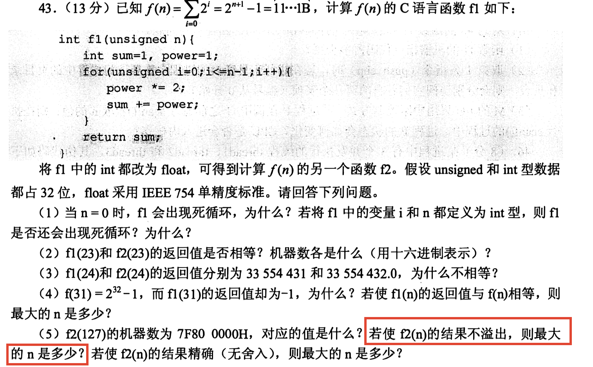
</div><p><span>第(5)题的第二小问，问你f2(n)结果不溢出的最大值是多少</span></p><p><span>我们看到这里会下意识想到float属于IEEE754规范，尾数默认隐藏1，而规格化阶码的范围在-126~127，所以最大能够表示到</span><mjx-container class="MathJax" jax="SVG" style="position: relative;"><svg xmlns="http://www.w3.org/2000/svg" width="21.969ex" height="1.952ex" role="img" focusable="false" viewBox="0 -841 9710.1 863" xmlns:xlink="http://www.w3.org/1999/xlink" aria-hidden="true" style="vertical-align: -0.05ex;"><defs><path id="MJX-18-TEX-N-31" d="M213 578L200 573Q186 568 160 563T102 556H83V602H102Q149 604 189 617T245 641T273 663Q275 666 285 666Q294 666 302 660V361L303 61Q310 54 315 52T339 48T401 46H427V0H416Q395 3 257 3Q121 3 100 0H88V46H114Q136 46 152 46T177 47T193 50T201 52T207 57T213 61V578Z"></path><path id="MJX-18-TEX-N-2E" d="M78 60Q78 84 95 102T138 120Q162 120 180 104T199 61Q199 36 182 18T139 0T96 17T78 60Z"></path><path id="MJX-18-TEX-N-2026" d="M78 60Q78 84 95 102T138 120Q162 120 180 104T199 61Q199 36 182 18T139 0T96 17T78 60ZM525 60Q525 84 542 102T585 120Q609 120 627 104T646 61Q646 36 629 18T586 0T543 17T525 60ZM972 60Q972 84 989 102T1032 120Q1056 120 1074 104T1093 61Q1093 36 1076 18T1033 0T990 17T972 60Z"></path><path id="MJX-18-TEX-N-30" d="M96 585Q152 666 249 666Q297 666 345 640T423 548Q460 465 460 320Q460 165 417 83Q397 41 362 16T301 -15T250 -22Q224 -22 198 -16T137 16T82 83Q39 165 39 320Q39 494 96 585ZM321 597Q291 629 250 629Q208 629 178 597Q153 571 145 525T137 333Q137 175 145 125T181 46Q209 16 250 16Q290 16 318 46Q347 76 354 130T362 333Q362 478 354 524T321 597Z"></path><path id="MJX-18-TEX-N-2217" d="M229 286Q216 420 216 436Q216 454 240 464Q241 464 245 464T251 465Q263 464 273 456T283 436Q283 419 277 356T270 286L328 328Q384 369 389 372T399 375Q412 375 423 365T435 338Q435 325 425 315Q420 312 357 282T289 250L355 219L425 184Q434 175 434 161Q434 146 425 136T401 125Q393 125 383 131T328 171L270 213Q283 79 283 63Q283 53 276 44T250 35Q231 35 224 44T216 63Q216 80 222 143T229 213L171 171Q115 130 110 127Q106 124 100 124Q87 124 76 134T64 161Q64 166 64 169T67 175T72 181T81 188T94 195T113 204T138 215T170 230T210 250L74 315Q65 324 65 338Q65 353 74 363T98 374Q106 374 116 368T171 328L229 286Z"></path><path id="MJX-18-TEX-N-32" d="M109 429Q82 429 66 447T50 491Q50 562 103 614T235 666Q326 666 387 610T449 465Q449 422 429 383T381 315T301 241Q265 210 201 149L142 93L218 92Q375 92 385 97Q392 99 409 186V189H449V186Q448 183 436 95T421 3V0H50V19V31Q50 38 56 46T86 81Q115 113 136 137Q145 147 170 174T204 211T233 244T261 278T284 308T305 340T320 369T333 401T340 431T343 464Q343 527 309 573T212 619Q179 619 154 602T119 569T109 550Q109 549 114 549Q132 549 151 535T170 489Q170 464 154 447T109 429Z"></path><path id="MJX-18-TEX-N-37" d="M55 458Q56 460 72 567L88 674Q88 676 108 676H128V672Q128 662 143 655T195 646T364 644H485V605L417 512Q408 500 387 472T360 435T339 403T319 367T305 330T292 284T284 230T278 162T275 80Q275 66 275 52T274 28V19Q270 2 255 -10T221 -22Q210 -22 200 -19T179 0T168 40Q168 198 265 368Q285 400 349 489L395 552H302Q128 552 119 546Q113 543 108 522T98 479L95 458V455H55V458Z"></path></defs><g stroke="currentColor" fill="currentColor" stroke-width="0" transform="scale(1,-1)"><g data-mml-node="math"><g data-mml-node="mn"><use data-c="31" xlink:href="#MJX-18-TEX-N-31"></use><use data-c="2E" xlink:href="#MJX-18-TEX-N-2E" transform="translate(500,0)"></use><use data-c="31" xlink:href="#MJX-18-TEX-N-31" transform="translate(778,0)"></use><use data-c="31" xlink:href="#MJX-18-TEX-N-31" transform="translate(1278,0)"></use><use data-c="31" xlink:href="#MJX-18-TEX-N-31" transform="translate(1778,0)"></use></g><g data-mml-node="mo" transform="translate(2444.7,0)"><use data-c="2026" xlink:href="#MJX-18-TEX-N-2026"></use></g><g data-mml-node="mo" transform="translate(3783.3,0)"><use data-c="2026" xlink:href="#MJX-18-TEX-N-2026"></use></g><g data-mml-node="mn" transform="translate(5122,0)"><use data-c="30" xlink:href="#MJX-18-TEX-N-30"></use><use data-c="30" xlink:href="#MJX-18-TEX-N-30" transform="translate(500,0)"></use><use data-c="30" xlink:href="#MJX-18-TEX-N-30" transform="translate(1000,0)"></use><use data-c="30" xlink:href="#MJX-18-TEX-N-30" transform="translate(1500,0)"></use></g><g data-mml-node="mo" transform="translate(7344.2,0)"><use data-c="2217" xlink:href="#MJX-18-TEX-N-2217"></use></g><g data-mml-node="msup" transform="translate(8066.4,0)"><g data-mml-node="mn"><use data-c="32" xlink:href="#MJX-18-TEX-N-32"></use></g><g data-mml-node="TeXAtom" transform="translate(533,363) scale(0.707)" data-mjx-texclass="ORD"><g data-mml-node="mn"><use data-c="31" xlink:href="#MJX-18-TEX-N-31"></use><use data-c="32" xlink:href="#MJX-18-TEX-N-32" transform="translate(500,0)"></use><use data-c="37" xlink:href="#MJX-18-TEX-N-37" transform="translate(1000,0)"></use></g></g></g></g></g></svg><mjx-assistive-mml unselectable="on" display="inline"><math xmlns="http://www.w3.org/1998/Math/MathML"><mn>1.111</mn><mo>…</mo><mo>…</mo><mn>0000</mn><mo>∗</mo><msup><mn>2</mn><mrow data-mjx-texclass="ORD"><mn>127</mn></mrow></msup></math></mjx-assistive-mml></mjx-container><script type="math/tex">1.111……0000*2^{127}</script><span> (小数点后24个1)，所以f2(127)只会损失精度，不会溢出。</span></p><p><span>这么想就中了出题老头的圈套了，</span><strong><span>在浮点数中是要是超出了尾数精度的数都会产生舍入</span></strong><span>，由于前面都是1，所以舍入后一定会产生进位，导致右移，让阶码+1，因此f2(127)会导致溢出，所以最大n为12</span></p></blockquote></li><li><p><span>有且仅有</span><strong><span>对阶和右归</span></strong><span>的时候才会产生”舍入”（因为这两个操作都会把数字往小数点后面移动，移动多了就可能发生截断，有截断就有可能舍入）</span></p></li><li><p><span>定点数无舍入（因为小数点固定）</span></p></li></ul><h3 id='各种数的表示范围'><span>各种数的表示范围</span></h3><ul><li><p><strong><span>原码</span></strong></p><p><mjx-container class="MathJax" jax="SVG" style="position: relative;"><svg xmlns="http://www.w3.org/2000/svg" width="47.91ex" height="2.262ex" role="img" focusable="false" viewBox="0 -750 21176.3 1000" xmlns:xlink="http://www.w3.org/1999/xlink" aria-hidden="true" style="vertical-align: -0.566ex;"><defs><path id="MJX-19-TEX-N-2212" d="M84 237T84 250T98 270H679Q694 262 694 250T679 230H98Q84 237 84 250Z"></path><path id="MJX-19-TEX-N-28" d="M94 250Q94 319 104 381T127 488T164 576T202 643T244 695T277 729T302 750H315H319Q333 750 333 741Q333 738 316 720T275 667T226 581T184 443T167 250T184 58T225 -81T274 -167T316 -220T333 -241Q333 -250 318 -250H315H302L274 -226Q180 -141 137 -14T94 250Z"></path><path id="MJX-19-TEX-N-32" d="M109 429Q82 429 66 447T50 491Q50 562 103 614T235 666Q326 666 387 610T449 465Q449 422 429 383T381 315T301 241Q265 210 201 149L142 93L218 92Q375 92 385 97Q392 99 409 186V189H449V186Q448 183 436 95T421 3V0H50V19V31Q50 38 56 46T86 81Q115 113 136 137Q145 147 170 174T204 211T233 244T261 278T284 308T305 340T320 369T333 401T340 431T343 464Q343 527 309 573T212 619Q179 619 154 602T119 569T109 550Q109 549 114 549Q132 549 151 535T170 489Q170 464 154 447T109 429Z"></path><path id="MJX-19-TEX-I-1D45B" d="M21 287Q22 293 24 303T36 341T56 388T89 425T135 442Q171 442 195 424T225 390T231 369Q231 367 232 367L243 378Q304 442 382 442Q436 442 469 415T503 336T465 179T427 52Q427 26 444 26Q450 26 453 27Q482 32 505 65T540 145Q542 153 560 153Q580 153 580 145Q580 144 576 130Q568 101 554 73T508 17T439 -10Q392 -10 371 17T350 73Q350 92 386 193T423 345Q423 404 379 404H374Q288 404 229 303L222 291L189 157Q156 26 151 16Q138 -11 108 -11Q95 -11 87 -5T76 7T74 17Q74 30 112 180T152 343Q153 348 153 366Q153 405 129 405Q91 405 66 305Q60 285 60 284Q58 278 41 278H27Q21 284 21 287Z"></path><path id="MJX-19-TEX-N-31" d="M213 578L200 573Q186 568 160 563T102 556H83V602H102Q149 604 189 617T245 641T273 663Q275 666 285 666Q294 666 302 660V361L303 61Q310 54 315 52T339 48T401 46H427V0H416Q395 3 257 3Q121 3 100 0H88V46H114Q136 46 152 46T177 47T193 50T201 52T207 57T213 61V578Z"></path><path id="MJX-19-TEX-N-29" d="M60 749L64 750Q69 750 74 750H86L114 726Q208 641 251 514T294 250Q294 182 284 119T261 12T224 -76T186 -143T145 -194T113 -227T90 -246Q87 -249 86 -250H74Q66 -250 63 -250T58 -247T55 -238Q56 -237 66 -225Q221 -64 221 250T66 725Q56 737 55 738Q55 746 60 749Z"></path><path id="MJX-19-TEX-N-2264" d="M674 636Q682 636 688 630T694 615T687 601Q686 600 417 472L151 346L399 228Q687 92 691 87Q694 81 694 76Q694 58 676 56H670L382 192Q92 329 90 331Q83 336 83 348Q84 359 96 365Q104 369 382 500T665 634Q669 636 674 636ZM84 -118Q84 -108 99 -98H678Q694 -104 694 -118Q694 -130 679 -138H98Q84 -131 84 -118Z"></path><path id="MJX-19-TEX-I-1D465" d="M52 289Q59 331 106 386T222 442Q257 442 286 424T329 379Q371 442 430 442Q467 442 494 420T522 361Q522 332 508 314T481 292T458 288Q439 288 427 299T415 328Q415 374 465 391Q454 404 425 404Q412 404 406 402Q368 386 350 336Q290 115 290 78Q290 50 306 38T341 26Q378 26 414 59T463 140Q466 150 469 151T485 153H489Q504 153 504 145Q504 144 502 134Q486 77 440 33T333 -11Q263 -11 227 52Q186 -10 133 -10H127Q78 -10 57 16T35 71Q35 103 54 123T99 143Q142 143 142 101Q142 81 130 66T107 46T94 41L91 40Q91 39 97 36T113 29T132 26Q168 26 194 71Q203 87 217 139T245 247T261 313Q266 340 266 352Q266 380 251 392T217 404Q177 404 142 372T93 290Q91 281 88 280T72 278H58Q52 284 52 289Z"></path><path id="MJX-19-TEX-N-A0" d=""></path></defs><g stroke="currentColor" fill="currentColor" stroke-width="0" transform="scale(1,-1)"><g data-mml-node="math"><g data-mml-node="mtext"><text data-variant="normal" transform="scale(1,-1)" font-size="884px" font-family="serif">纯</text></g><g data-mml-node="mtext" transform="translate(870.4,0)"><text data-variant="normal" transform="scale(1,-1)" font-size="884px" font-family="serif">整</text></g><g data-mml-node="mtext" transform="translate(1740.8,0)"><text data-variant="normal" transform="scale(1,-1)" font-size="884px" font-family="serif">数</text></g><g data-mml-node="mi" transform="translate(2567.7,0)"><text data-variant="italic" transform="scale(1,-1)" font-size="884px" font-family="serif" font-style="italic">：</text></g><g data-mml-node="mo" transform="translate(3616.8,0)"><use data-c="2212" xlink:href="#MJX-19-TEX-N-2212"></use></g><g data-mml-node="mo" transform="translate(4617,0)"><use data-c="28" xlink:href="#MJX-19-TEX-N-28"></use></g><g data-mml-node="msup" transform="translate(5006,0)"><g data-mml-node="mn"><use data-c="32" xlink:href="#MJX-19-TEX-N-32"></use></g><g data-mml-node="mi" transform="translate(533,363) scale(0.707)"><use data-c="1D45B" xlink:href="#MJX-19-TEX-I-1D45B"></use></g></g><g data-mml-node="mo" transform="translate(6235.5,0)"><use data-c="2212" xlink:href="#MJX-19-TEX-N-2212"></use></g><g data-mml-node="mn" transform="translate(7235.7,0)"><use data-c="31" xlink:href="#MJX-19-TEX-N-31"></use></g><g data-mml-node="mo" transform="translate(7735.7,0)"><use data-c="29" xlink:href="#MJX-19-TEX-N-29"></use></g><g data-mml-node="mo" transform="translate(8402.5,0)"><use data-c="2264" xlink:href="#MJX-19-TEX-N-2264"></use></g><g data-mml-node="mi" transform="translate(9458.3,0)"><use data-c="1D465" xlink:href="#MJX-19-TEX-I-1D465"></use></g><g data-mml-node="mo" transform="translate(10308.1,0)"><use data-c="2264" xlink:href="#MJX-19-TEX-N-2264"></use></g><g data-mml-node="msup" transform="translate(11363.9,0)"><g data-mml-node="mn"><use data-c="32" xlink:href="#MJX-19-TEX-N-32"></use></g><g data-mml-node="mi" transform="translate(533,363) scale(0.707)"><use data-c="1D45B" xlink:href="#MJX-19-TEX-I-1D45B"></use></g></g><g data-mml-node="mo" transform="translate(12593.3,0)"><use data-c="2212" xlink:href="#MJX-19-TEX-N-2212"></use></g><g data-mml-node="mn" transform="translate(13593.6,0)"><use data-c="31" xlink:href="#MJX-19-TEX-N-31"></use></g><g data-mml-node="mtext" transform="translate(14093.6,0)"><use data-c="A0" xlink:href="#MJX-19-TEX-N-A0"></use></g><g data-mml-node="mi" transform="translate(14343.6,0)"><text data-variant="italic" transform="scale(1,-1)" font-size="884px" font-family="serif" font-style="italic">（</text></g><g data-mml-node="mtext" transform="translate(15170.5,0)"><text data-variant="normal" transform="scale(1,-1)" font-size="884px" font-family="serif">关</text></g><g data-mml-node="mtext" transform="translate(16040.9,0)"><text data-variant="normal" transform="scale(1,-1)" font-size="884px" font-family="serif">于</text></g><g data-mml-node="mtext" transform="translate(16911.3,0)"><text data-variant="normal" transform="scale(1,-1)" font-size="884px" font-family="serif">原</text></g><g data-mml-node="mtext" transform="translate(17738.2,0)"><text data-variant="normal" transform="scale(1,-1)" font-size="884px" font-family="serif">点</text></g><g data-mml-node="mtext" transform="translate(18608.6,0)"><text data-variant="normal" transform="scale(1,-1)" font-size="884px" font-family="serif">对</text></g><g data-mml-node="mtext" transform="translate(19479,0)"><text data-variant="normal" transform="scale(1,-1)" font-size="884px" font-family="serif">称</text></g><g data-mml-node="mi" transform="translate(20349.4,0)"><text data-variant="italic" transform="scale(1,-1)" font-size="884px" font-family="serif" font-style="italic">）</text></g></g></g></svg><mjx-assistive-mml unselectable="on" display="inline"><math xmlns="http://www.w3.org/1998/Math/MathML"><mtext>纯</mtext><mtext>整</mtext><mtext>数</mtext><mi>：</mi><mo>−</mo><mo stretchy="false">(</mo><msup><mn>2</mn><mi>n</mi></msup><mo>−</mo><mn>1</mn><mo stretchy="false">)</mo><mo>≤</mo><mi>x</mi><mo>≤</mo><msup><mn>2</mn><mi>n</mi></msup><mo>−</mo><mn>1</mn><mtext>&nbsp;</mtext><mi>（</mi><mtext>关</mtext><mtext>于</mtext><mtext>原</mtext><mtext>点</mtext><mtext>对</mtext><mtext>称</mtext><mi>）</mi></math></mjx-assistive-mml></mjx-container><script type="math/tex">纯整数：-(2^n-1)≤x≤2^n-1\ （关于原点对称）</script><span> </span></p><p><mjx-container class="MathJax" jax="SVG" style="position: relative;"><svg xmlns="http://www.w3.org/2000/svg" width="49.834ex" height="2.32ex" role="img" focusable="false" viewBox="0 -775.2 22026.5 1025.2" xmlns:xlink="http://www.w3.org/1999/xlink" aria-hidden="true" style="vertical-align: -0.566ex;"><defs><path id="MJX-20-TEX-N-2212" d="M84 237T84 250T98 270H679Q694 262 694 250T679 230H98Q84 237 84 250Z"></path><path id="MJX-20-TEX-N-28" d="M94 250Q94 319 104 381T127 488T164 576T202 643T244 695T277 729T302 750H315H319Q333 750 333 741Q333 738 316 720T275 667T226 581T184 443T167 250T184 58T225 -81T274 -167T316 -220T333 -241Q333 -250 318 -250H315H302L274 -226Q180 -141 137 -14T94 250Z"></path><path id="MJX-20-TEX-N-31" d="M213 578L200 573Q186 568 160 563T102 556H83V602H102Q149 604 189 617T245 641T273 663Q275 666 285 666Q294 666 302 660V361L303 61Q310 54 315 52T339 48T401 46H427V0H416Q395 3 257 3Q121 3 100 0H88V46H114Q136 46 152 46T177 47T193 50T201 52T207 57T213 61V578Z"></path><path id="MJX-20-TEX-N-32" d="M109 429Q82 429 66 447T50 491Q50 562 103 614T235 666Q326 666 387 610T449 465Q449 422 429 383T381 315T301 241Q265 210 201 149L142 93L218 92Q375 92 385 97Q392 99 409 186V189H449V186Q448 183 436 95T421 3V0H50V19V31Q50 38 56 46T86 81Q115 113 136 137Q145 147 170 174T204 211T233 244T261 278T284 308T305 340T320 369T333 401T340 431T343 464Q343 527 309 573T212 619Q179 619 154 602T119 569T109 550Q109 549 114 549Q132 549 151 535T170 489Q170 464 154 447T109 429Z"></path><path id="MJX-20-TEX-I-1D45B" d="M21 287Q22 293 24 303T36 341T56 388T89 425T135 442Q171 442 195 424T225 390T231 369Q231 367 232 367L243 378Q304 442 382 442Q436 442 469 415T503 336T465 179T427 52Q427 26 444 26Q450 26 453 27Q482 32 505 65T540 145Q542 153 560 153Q580 153 580 145Q580 144 576 130Q568 101 554 73T508 17T439 -10Q392 -10 371 17T350 73Q350 92 386 193T423 345Q423 404 379 404H374Q288 404 229 303L222 291L189 157Q156 26 151 16Q138 -11 108 -11Q95 -11 87 -5T76 7T74 17Q74 30 112 180T152 343Q153 348 153 366Q153 405 129 405Q91 405 66 305Q60 285 60 284Q58 278 41 278H27Q21 284 21 287Z"></path><path id="MJX-20-TEX-N-29" d="M60 749L64 750Q69 750 74 750H86L114 726Q208 641 251 514T294 250Q294 182 284 119T261 12T224 -76T186 -143T145 -194T113 -227T90 -246Q87 -249 86 -250H74Q66 -250 63 -250T58 -247T55 -238Q56 -237 66 -225Q221 -64 221 250T66 725Q56 737 55 738Q55 746 60 749Z"></path><path id="MJX-20-TEX-N-2264" d="M674 636Q682 636 688 630T694 615T687 601Q686 600 417 472L151 346L399 228Q687 92 691 87Q694 81 694 76Q694 58 676 56H670L382 192Q92 329 90 331Q83 336 83 348Q84 359 96 365Q104 369 382 500T665 634Q669 636 674 636ZM84 -118Q84 -108 99 -98H678Q694 -104 694 -118Q694 -130 679 -138H98Q84 -131 84 -118Z"></path><path id="MJX-20-TEX-I-1D465" d="M52 289Q59 331 106 386T222 442Q257 442 286 424T329 379Q371 442 430 442Q467 442 494 420T522 361Q522 332 508 314T481 292T458 288Q439 288 427 299T415 328Q415 374 465 391Q454 404 425 404Q412 404 406 402Q368 386 350 336Q290 115 290 78Q290 50 306 38T341 26Q378 26 414 59T463 140Q466 150 469 151T485 153H489Q504 153 504 145Q504 144 502 134Q486 77 440 33T333 -11Q263 -11 227 52Q186 -10 133 -10H127Q78 -10 57 16T35 71Q35 103 54 123T99 143Q142 143 142 101Q142 81 130 66T107 46T94 41L91 40Q91 39 97 36T113 29T132 26Q168 26 194 71Q203 87 217 139T245 247T261 313Q266 340 266 352Q266 380 251 392T217 404Q177 404 142 372T93 290Q91 281 88 280T72 278H58Q52 284 52 289Z"></path></defs><g stroke="currentColor" fill="currentColor" stroke-width="0" transform="scale(1,-1)"><g data-mml-node="math"><g data-mml-node="mtext"><text data-variant="normal" transform="scale(1,-1)" font-size="884px" font-family="serif">纯</text></g><g data-mml-node="mtext" transform="translate(870.4,0)"><text data-variant="normal" transform="scale(1,-1)" font-size="884px" font-family="serif">小</text></g><g data-mml-node="mtext" transform="translate(1740.8,0)"><text data-variant="normal" transform="scale(1,-1)" font-size="884px" font-family="serif">数</text></g><g data-mml-node="mi" transform="translate(2567.7,0)"><text data-variant="italic" transform="scale(1,-1)" font-size="884px" font-family="serif" font-style="italic">：</text></g><g data-mml-node="mo" transform="translate(3616.8,0)"><use data-c="2212" xlink:href="#MJX-20-TEX-N-2212"></use></g><g data-mml-node="mo" transform="translate(4617,0)"><use data-c="28" xlink:href="#MJX-20-TEX-N-28"></use></g><g data-mml-node="mn" transform="translate(5006,0)"><use data-c="31" xlink:href="#MJX-20-TEX-N-31"></use></g><g data-mml-node="mo" transform="translate(5728.3,0)"><use data-c="2212" xlink:href="#MJX-20-TEX-N-2212"></use></g><g data-mml-node="msup" transform="translate(6728.5,0)"><g data-mml-node="mn"><use data-c="32" xlink:href="#MJX-20-TEX-N-32"></use></g><g data-mml-node="TeXAtom" transform="translate(533,363) scale(0.707)" data-mjx-texclass="ORD"><g data-mml-node="mo"><use data-c="2212" xlink:href="#MJX-20-TEX-N-2212"></use></g><g data-mml-node="mi" transform="translate(778,0)"><use data-c="1D45B" xlink:href="#MJX-20-TEX-I-1D45B"></use></g></g></g><g data-mml-node="mo" transform="translate(8285.9,0)"><use data-c="29" xlink:href="#MJX-20-TEX-N-29"></use></g><g data-mml-node="mo" transform="translate(8952.7,0)"><use data-c="2264" xlink:href="#MJX-20-TEX-N-2264"></use></g><g data-mml-node="mi" transform="translate(10008.4,0)"><use data-c="1D465" xlink:href="#MJX-20-TEX-I-1D465"></use></g><g data-mml-node="mo" transform="translate(10858.2,0)"><use data-c="2264" xlink:href="#MJX-20-TEX-N-2264"></use></g><g data-mml-node="mn" transform="translate(11914,0)"><use data-c="31" xlink:href="#MJX-20-TEX-N-31"></use></g><g data-mml-node="mo" transform="translate(12636.2,0)"><use data-c="2212" xlink:href="#MJX-20-TEX-N-2212"></use></g><g data-mml-node="msup" transform="translate(13636.4,0)"><g data-mml-node="mn"><use data-c="32" xlink:href="#MJX-20-TEX-N-32"></use></g><g data-mml-node="TeXAtom" transform="translate(533,363) scale(0.707)" data-mjx-texclass="ORD"><g data-mml-node="mo"><use data-c="2212" xlink:href="#MJX-20-TEX-N-2212"></use></g><g data-mml-node="mi" transform="translate(778,0)"><use data-c="1D45B" xlink:href="#MJX-20-TEX-I-1D45B"></use></g></g></g><g data-mml-node="mi" transform="translate(15193.8,0)"><text data-variant="italic" transform="scale(1,-1)" font-size="884px" font-family="serif" font-style="italic">（</text></g><g data-mml-node="mtext" transform="translate(16020.7,0)"><text data-variant="normal" transform="scale(1,-1)" font-size="884px" font-family="serif">关</text></g><g data-mml-node="mtext" transform="translate(16891.1,0)"><text data-variant="normal" transform="scale(1,-1)" font-size="884px" font-family="serif">于</text></g><g data-mml-node="mtext" transform="translate(17761.5,0)"><text data-variant="normal" transform="scale(1,-1)" font-size="884px" font-family="serif">原</text></g><g data-mml-node="mtext" transform="translate(18588.4,0)"><text data-variant="normal" transform="scale(1,-1)" font-size="884px" font-family="serif">点</text></g><g data-mml-node="mtext" transform="translate(19458.8,0)"><text data-variant="normal" transform="scale(1,-1)" font-size="884px" font-family="serif">对</text></g><g data-mml-node="mtext" transform="translate(20329.2,0)"><text data-variant="normal" transform="scale(1,-1)" font-size="884px" font-family="serif">称</text></g><g data-mml-node="mi" transform="translate(21199.6,0)"><text data-variant="italic" transform="scale(1,-1)" font-size="884px" font-family="serif" font-style="italic">）</text></g></g></g></svg><mjx-assistive-mml unselectable="on" display="inline"><math xmlns="http://www.w3.org/1998/Math/MathML"><mtext>纯</mtext><mtext>小</mtext><mtext>数</mtext><mi>：</mi><mo>−</mo><mo stretchy="false">(</mo><mn>1</mn><mo>−</mo><msup><mn>2</mn><mrow data-mjx-texclass="ORD"><mo>−</mo><mi>n</mi></mrow></msup><mo stretchy="false">)</mo><mo>≤</mo><mi>x</mi><mo>≤</mo><mn>1</mn><mo>−</mo><msup><mn>2</mn><mrow data-mjx-texclass="ORD"><mo>−</mo><mi>n</mi></mrow></msup><mi>（</mi><mtext>关</mtext><mtext>于</mtext><mtext>原</mtext><mtext>点</mtext><mtext>对</mtext><mtext>称</mtext><mi>）</mi></math></mjx-assistive-mml></mjx-container><script type="math/tex">纯小数：-(1-2^{-n})≤x≤1-2^{-n} （关于原点对称）</script></p></li><li><p><strong><span>反码</span></strong><span>：由原码转换而来，相比原码转补码，少去了一个+1操作。</span></p></li><li><p><strong><span>补码</span></strong></p><p><mjx-container class="MathJax" jax="SVG" style="position: relative;"><svg xmlns="http://www.w3.org/2000/svg" width="58.579ex" height="2.149ex" role="img" focusable="false" viewBox="0 -750 25892 950" xmlns:xlink="http://www.w3.org/1999/xlink" aria-hidden="true" style="vertical-align: -0.452ex;"><defs><path id="MJX-21-TEX-N-2212" d="M84 237T84 250T98 270H679Q694 262 694 250T679 230H98Q84 237 84 250Z"></path><path id="MJX-21-TEX-N-32" d="M109 429Q82 429 66 447T50 491Q50 562 103 614T235 666Q326 666 387 610T449 465Q449 422 429 383T381 315T301 241Q265 210 201 149L142 93L218 92Q375 92 385 97Q392 99 409 186V189H449V186Q448 183 436 95T421 3V0H50V19V31Q50 38 56 46T86 81Q115 113 136 137Q145 147 170 174T204 211T233 244T261 278T284 308T305 340T320 369T333 401T340 431T343 464Q343 527 309 573T212 619Q179 619 154 602T119 569T109 550Q109 549 114 549Q132 549 151 535T170 489Q170 464 154 447T109 429Z"></path><path id="MJX-21-TEX-I-1D45B" d="M21 287Q22 293 24 303T36 341T56 388T89 425T135 442Q171 442 195 424T225 390T231 369Q231 367 232 367L243 378Q304 442 382 442Q436 442 469 415T503 336T465 179T427 52Q427 26 444 26Q450 26 453 27Q482 32 505 65T540 145Q542 153 560 153Q580 153 580 145Q580 144 576 130Q568 101 554 73T508 17T439 -10Q392 -10 371 17T350 73Q350 92 386 193T423 345Q423 404 379 404H374Q288 404 229 303L222 291L189 157Q156 26 151 16Q138 -11 108 -11Q95 -11 87 -5T76 7T74 17Q74 30 112 180T152 343Q153 348 153 366Q153 405 129 405Q91 405 66 305Q60 285 60 284Q58 278 41 278H27Q21 284 21 287Z"></path><path id="MJX-21-TEX-N-2264" d="M674 636Q682 636 688 630T694 615T687 601Q686 600 417 472L151 346L399 228Q687 92 691 87Q694 81 694 76Q694 58 676 56H670L382 192Q92 329 90 331Q83 336 83 348Q84 359 96 365Q104 369 382 500T665 634Q669 636 674 636ZM84 -118Q84 -108 99 -98H678Q694 -104 694 -118Q694 -130 679 -138H98Q84 -131 84 -118Z"></path><path id="MJX-21-TEX-I-1D465" d="M52 289Q59 331 106 386T222 442Q257 442 286 424T329 379Q371 442 430 442Q467 442 494 420T522 361Q522 332 508 314T481 292T458 288Q439 288 427 299T415 328Q415 374 465 391Q454 404 425 404Q412 404 406 402Q368 386 350 336Q290 115 290 78Q290 50 306 38T341 26Q378 26 414 59T463 140Q466 150 469 151T485 153H489Q504 153 504 145Q504 144 502 134Q486 77 440 33T333 -11Q263 -11 227 52Q186 -10 133 -10H127Q78 -10 57 16T35 71Q35 103 54 123T99 143Q142 143 142 101Q142 81 130 66T107 46T94 41L91 40Q91 39 97 36T113 29T132 26Q168 26 194 71Q203 87 217 139T245 247T261 313Q266 340 266 352Q266 380 251 392T217 404Q177 404 142 372T93 290Q91 281 88 280T72 278H58Q52 284 52 289Z"></path><path id="MJX-21-TEX-N-31" d="M213 578L200 573Q186 568 160 563T102 556H83V602H102Q149 604 189 617T245 641T273 663Q275 666 285 666Q294 666 302 660V361L303 61Q310 54 315 52T339 48T401 46H427V0H416Q395 3 257 3Q121 3 100 0H88V46H114Q136 46 152 46T177 47T193 50T201 52T207 57T213 61V578Z"></path><path id="MJX-21-TEX-N-A0" d=""></path><path id="MJX-21-TEX-N-30" d="M96 585Q152 666 249 666Q297 666 345 640T423 548Q460 465 460 320Q460 165 417 83Q397 41 362 16T301 -15T250 -22Q224 -22 198 -16T137 16T82 83Q39 165 39 320Q39 494 96 585ZM321 597Q291 629 250 629Q208 629 178 597Q153 571 145 525T137 333Q137 175 145 125T181 46Q209 16 250 16Q290 16 318 46Q347 76 354 130T362 333Q362 478 354 524T321 597Z"></path></defs><g stroke="currentColor" fill="currentColor" stroke-width="0" transform="scale(1,-1)"><g data-mml-node="math"><g data-mml-node="mtext"><text data-variant="normal" transform="scale(1,-1)" font-size="884px" font-family="serif">纯</text></g><g data-mml-node="mtext" transform="translate(870.4,0)"><text data-variant="normal" transform="scale(1,-1)" font-size="884px" font-family="serif">整</text></g><g data-mml-node="mtext" transform="translate(1740.8,0)"><text data-variant="normal" transform="scale(1,-1)" font-size="884px" font-family="serif">数</text></g><g data-mml-node="mi" transform="translate(2567.7,0)"><text data-variant="italic" transform="scale(1,-1)" font-size="884px" font-family="serif" font-style="italic">：</text></g><g data-mml-node="mo" transform="translate(3616.8,0)"><use data-c="2212" xlink:href="#MJX-21-TEX-N-2212"></use></g><g data-mml-node="msup" transform="translate(4617,0)"><g data-mml-node="mn"><use data-c="32" xlink:href="#MJX-21-TEX-N-32"></use></g><g data-mml-node="mi" transform="translate(533,363) scale(0.707)"><use data-c="1D45B" xlink:href="#MJX-21-TEX-I-1D45B"></use></g></g><g data-mml-node="mo" transform="translate(5902.1,0)"><use data-c="2264" xlink:href="#MJX-21-TEX-N-2264"></use></g><g data-mml-node="mi" transform="translate(6957.9,0)"><use data-c="1D465" xlink:href="#MJX-21-TEX-I-1D465"></use></g><g data-mml-node="mo" transform="translate(7807.6,0)"><use data-c="2264" xlink:href="#MJX-21-TEX-N-2264"></use></g><g data-mml-node="msup" transform="translate(8863.4,0)"><g data-mml-node="mn"><use data-c="32" xlink:href="#MJX-21-TEX-N-32"></use></g><g data-mml-node="mi" transform="translate(533,363) scale(0.707)"><use data-c="1D45B" xlink:href="#MJX-21-TEX-I-1D45B"></use></g></g><g data-mml-node="mo" transform="translate(10092.9,0)"><use data-c="2212" xlink:href="#MJX-21-TEX-N-2212"></use></g><g data-mml-node="mn" transform="translate(11093.1,0)"><use data-c="31" xlink:href="#MJX-21-TEX-N-31"></use></g><g data-mml-node="mtext" transform="translate(11593.1,0)"><use data-c="A0" xlink:href="#MJX-21-TEX-N-A0"></use></g><g data-mml-node="mi" transform="translate(11843.1,0)"><text data-variant="italic" transform="scale(1,-1)" font-size="884px" font-family="serif" font-style="italic">（</text></g><g data-mml-node="mtext" transform="translate(12670,0)"><text data-variant="normal" transform="scale(1,-1)" font-size="884px" font-family="serif">原</text></g><g data-mml-node="mtext" transform="translate(13496.9,0)"><text data-variant="normal" transform="scale(1,-1)" font-size="884px" font-family="serif">码</text></g><g data-mml-node="mo" transform="translate(14546,0)"><use data-c="2212" xlink:href="#MJX-21-TEX-N-2212"></use></g><g data-mml-node="mn" transform="translate(15546.2,0)"><use data-c="30" xlink:href="#MJX-21-TEX-N-30"></use></g><g data-mml-node="mtext" transform="translate(16046.2,0)"><text data-variant="normal" transform="scale(1,-1)" font-size="884px" font-family="serif">在</text></g><g data-mml-node="mtext" transform="translate(16916.6,0)"><text data-variant="normal" transform="scale(1,-1)" font-size="884px" font-family="serif">补</text></g><g data-mml-node="mtext" transform="translate(17743.5,0)"><text data-variant="normal" transform="scale(1,-1)" font-size="884px" font-family="serif">码</text></g><g data-mml-node="mtext" transform="translate(18570.4,0)"><text data-variant="normal" transform="scale(1,-1)" font-size="884px" font-family="serif">中</text></g><g data-mml-node="mtext" transform="translate(19397.3,0)"><text data-variant="normal" transform="scale(1,-1)" font-size="884px" font-family="serif">用</text></g><g data-mml-node="mtext" transform="translate(20224.2,0)"><text data-variant="normal" transform="scale(1,-1)" font-size="884px" font-family="serif">来</text></g><g data-mml-node="mtext" transform="translate(21094.6,0)"><text data-variant="normal" transform="scale(1,-1)" font-size="884px" font-family="serif">表</text></g><g data-mml-node="mtext" transform="translate(21965,0)"><text data-variant="normal" transform="scale(1,-1)" font-size="884px" font-family="serif">示</text></g><g data-mml-node="mo" transform="translate(23057.6,0)"><use data-c="2212" xlink:href="#MJX-21-TEX-N-2212"></use></g><g data-mml-node="msup" transform="translate(24057.9,0)"><g data-mml-node="mn"><use data-c="32" xlink:href="#MJX-21-TEX-N-32"></use></g><g data-mml-node="mi" transform="translate(533,363) scale(0.707)"><use data-c="1D45B" xlink:href="#MJX-21-TEX-I-1D45B"></use></g></g><g data-mml-node="mi" transform="translate(25065.1,0)"><text data-variant="italic" transform="scale(1,-1)" font-size="884px" font-family="serif" font-style="italic">）</text></g></g></g></svg><mjx-assistive-mml unselectable="on" display="inline"><math xmlns="http://www.w3.org/1998/Math/MathML"><mtext>纯</mtext><mtext>整</mtext><mtext>数</mtext><mi>：</mi><mo>−</mo><msup><mn>2</mn><mi>n</mi></msup><mo>≤</mo><mi>x</mi><mo>≤</mo><msup><mn>2</mn><mi>n</mi></msup><mo>−</mo><mn>1</mn><mtext>&nbsp;</mtext><mi>（</mi><mtext>原</mtext><mtext>码</mtext><mo>−</mo><mn>0</mn><mtext>在</mtext><mtext>补</mtext><mtext>码</mtext><mtext>中</mtext><mtext>用</mtext><mtext>来</mtext><mtext>表</mtext><mtext>示</mtext><mo>−</mo><msup><mn>2</mn><mi>n</mi></msup><mi>）</mi></math></mjx-assistive-mml></mjx-container><script type="math/tex">纯整数：-2^n≤x≤2^n-1\ （原码-0在补码中用来表示-2^n）</script><span> </span></p><p><mjx-container class="MathJax" jax="SVG" style="position: relative;"><svg xmlns="http://www.w3.org/2000/svg" width="62.449ex" height="2.206ex" role="img" focusable="false" viewBox="0 -775.2 27602.3 975.2" xmlns:xlink="http://www.w3.org/1999/xlink" aria-hidden="true" style="vertical-align: -0.452ex;"><defs><path id="MJX-22-TEX-N-2212" d="M84 237T84 250T98 270H679Q694 262 694 250T679 230H98Q84 237 84 250Z"></path><path id="MJX-22-TEX-N-31" d="M213 578L200 573Q186 568 160 563T102 556H83V602H102Q149 604 189 617T245 641T273 663Q275 666 285 666Q294 666 302 660V361L303 61Q310 54 315 52T339 48T401 46H427V0H416Q395 3 257 3Q121 3 100 0H88V46H114Q136 46 152 46T177 47T193 50T201 52T207 57T213 61V578Z"></path><path id="MJX-22-TEX-N-2264" d="M674 636Q682 636 688 630T694 615T687 601Q686 600 417 472L151 346L399 228Q687 92 691 87Q694 81 694 76Q694 58 676 56H670L382 192Q92 329 90 331Q83 336 83 348Q84 359 96 365Q104 369 382 500T665 634Q669 636 674 636ZM84 -118Q84 -108 99 -98H678Q694 -104 694 -118Q694 -130 679 -138H98Q84 -131 84 -118Z"></path><path id="MJX-22-TEX-I-1D465" d="M52 289Q59 331 106 386T222 442Q257 442 286 424T329 379Q371 442 430 442Q467 442 494 420T522 361Q522 332 508 314T481 292T458 288Q439 288 427 299T415 328Q415 374 465 391Q454 404 425 404Q412 404 406 402Q368 386 350 336Q290 115 290 78Q290 50 306 38T341 26Q378 26 414 59T463 140Q466 150 469 151T485 153H489Q504 153 504 145Q504 144 502 134Q486 77 440 33T333 -11Q263 -11 227 52Q186 -10 133 -10H127Q78 -10 57 16T35 71Q35 103 54 123T99 143Q142 143 142 101Q142 81 130 66T107 46T94 41L91 40Q91 39 97 36T113 29T132 26Q168 26 194 71Q203 87 217 139T245 247T261 313Q266 340 266 352Q266 380 251 392T217 404Q177 404 142 372T93 290Q91 281 88 280T72 278H58Q52 284 52 289Z"></path><path id="MJX-22-TEX-N-32" d="M109 429Q82 429 66 447T50 491Q50 562 103 614T235 666Q326 666 387 610T449 465Q449 422 429 383T381 315T301 241Q265 210 201 149L142 93L218 92Q375 92 385 97Q392 99 409 186V189H449V186Q448 183 436 95T421 3V0H50V19V31Q50 38 56 46T86 81Q115 113 136 137Q145 147 170 174T204 211T233 244T261 278T284 308T305 340T320 369T333 401T340 431T343 464Q343 527 309 573T212 619Q179 619 154 602T119 569T109 550Q109 549 114 549Q132 549 151 535T170 489Q170 464 154 447T109 429Z"></path><path id="MJX-22-TEX-I-1D45B" d="M21 287Q22 293 24 303T36 341T56 388T89 425T135 442Q171 442 195 424T225 390T231 369Q231 367 232 367L243 378Q304 442 382 442Q436 442 469 415T503 336T465 179T427 52Q427 26 444 26Q450 26 453 27Q482 32 505 65T540 145Q542 153 560 153Q580 153 580 145Q580 144 576 130Q568 101 554 73T508 17T439 -10Q392 -10 371 17T350 73Q350 92 386 193T423 345Q423 404 379 404H374Q288 404 229 303L222 291L189 157Q156 26 151 16Q138 -11 108 -11Q95 -11 87 -5T76 7T74 17Q74 30 112 180T152 343Q153 348 153 366Q153 405 129 405Q91 405 66 305Q60 285 60 284Q58 278 41 278H27Q21 284 21 287Z"></path><path id="MJX-22-TEX-N-30" d="M96 585Q152 666 249 666Q297 666 345 640T423 548Q460 465 460 320Q460 165 417 83Q397 41 362 16T301 -15T250 -22Q224 -22 198 -16T137 16T82 83Q39 165 39 320Q39 494 96 585ZM321 597Q291 629 250 629Q208 629 178 597Q153 571 145 525T137 333Q137 175 145 125T181 46Q209 16 250 16Q290 16 318 46Q347 76 354 130T362 333Q362 478 354 524T321 597Z"></path><path id="MJX-22-TEX-N-2E" d="M78 60Q78 84 95 102T138 120Q162 120 180 104T199 61Q199 36 182 18T139 0T96 17T78 60Z"></path><path id="MJX-22-TEX-N-2026" d="M78 60Q78 84 95 102T138 120Q162 120 180 104T199 61Q199 36 182 18T139 0T96 17T78 60ZM525 60Q525 84 542 102T585 120Q609 120 627 104T646 61Q646 36 629 18T586 0T543 17T525 60ZM972 60Q972 84 989 102T1032 120Q1056 120 1074 104T1093 61Q1093 36 1076 18T1033 0T990 17T972 60Z"></path></defs><g stroke="currentColor" fill="currentColor" stroke-width="0" transform="scale(1,-1)"><g data-mml-node="math"><g data-mml-node="mtext"><text data-variant="normal" transform="scale(1,-1)" font-size="884px" font-family="serif">纯</text></g><g data-mml-node="mtext" transform="translate(870.4,0)"><text data-variant="normal" transform="scale(1,-1)" font-size="884px" font-family="serif">小</text></g><g data-mml-node="mtext" transform="translate(1740.8,0)"><text data-variant="normal" transform="scale(1,-1)" font-size="884px" font-family="serif">数</text></g><g data-mml-node="mi" transform="translate(2567.7,0)"><text data-variant="italic" transform="scale(1,-1)" font-size="884px" font-family="serif" font-style="italic">：</text></g><g data-mml-node="mo" transform="translate(3616.8,0)"><use data-c="2212" xlink:href="#MJX-22-TEX-N-2212"></use></g><g data-mml-node="mn" transform="translate(4617,0)"><use data-c="31" xlink:href="#MJX-22-TEX-N-31"></use></g><g data-mml-node="mo" transform="translate(5394.8,0)"><use data-c="2264" xlink:href="#MJX-22-TEX-N-2264"></use></g><g data-mml-node="mi" transform="translate(6450.6,0)"><use data-c="1D465" xlink:href="#MJX-22-TEX-I-1D465"></use></g><g data-mml-node="mo" transform="translate(7300.4,0)"><use data-c="2264" xlink:href="#MJX-22-TEX-N-2264"></use></g><g data-mml-node="mn" transform="translate(8356.1,0)"><use data-c="31" xlink:href="#MJX-22-TEX-N-31"></use></g><g data-mml-node="mo" transform="translate(9078.4,0)"><use data-c="2212" xlink:href="#MJX-22-TEX-N-2212"></use></g><g data-mml-node="msup" transform="translate(10078.6,0)"><g data-mml-node="mn"><use data-c="32" xlink:href="#MJX-22-TEX-N-32"></use></g><g data-mml-node="TeXAtom" transform="translate(533,363) scale(0.707)" data-mjx-texclass="ORD"><g data-mml-node="mo"><use data-c="2212" xlink:href="#MJX-22-TEX-N-2212"></use></g><g data-mml-node="mi" transform="translate(778,0)"><use data-c="1D45B" xlink:href="#MJX-22-TEX-I-1D45B"></use></g></g></g><g data-mml-node="mi" transform="translate(11636,0)"><text data-variant="italic" transform="scale(1,-1)" font-size="884px" font-family="serif" font-style="italic">（</text></g><g data-mml-node="mtext" transform="translate(12462.9,0)"><text data-variant="normal" transform="scale(1,-1)" font-size="884px" font-family="serif">原</text></g><g data-mml-node="mtext" transform="translate(13289.8,0)"><text data-variant="normal" transform="scale(1,-1)" font-size="884px" font-family="serif">码</text></g><g data-mml-node="mo" transform="translate(14338.9,0)"><use data-c="2212" xlink:href="#MJX-22-TEX-N-2212"></use></g><g data-mml-node="mn" transform="translate(15339.1,0)"><use data-c="30" xlink:href="#MJX-22-TEX-N-30"></use><use data-c="2E" xlink:href="#MJX-22-TEX-N-2E" transform="translate(500,0)"></use><use data-c="30" xlink:href="#MJX-22-TEX-N-30" transform="translate(778,0)"></use></g><g data-mml-node="mo" transform="translate(16783.8,0)"><use data-c="2026" xlink:href="#MJX-22-TEX-N-2026"></use></g><g data-mml-node="mo" transform="translate(18122.4,0)"><use data-c="2026" xlink:href="#MJX-22-TEX-N-2026"></use></g><g data-mml-node="mn" transform="translate(19461.1,0)"><use data-c="30" xlink:href="#MJX-22-TEX-N-30"></use></g><g data-mml-node="mtext" transform="translate(19961.1,0)"><text data-variant="normal" transform="scale(1,-1)" font-size="884px" font-family="serif">在</text></g><g data-mml-node="mtext" transform="translate(20831.5,0)"><text data-variant="normal" transform="scale(1,-1)" font-size="884px" font-family="serif">补</text></g><g data-mml-node="mtext" transform="translate(21658.4,0)"><text data-variant="normal" transform="scale(1,-1)" font-size="884px" font-family="serif">码</text></g><g data-mml-node="mtext" transform="translate(22485.3,0)"><text data-variant="normal" transform="scale(1,-1)" font-size="884px" font-family="serif">中</text></g><g data-mml-node="mtext" transform="translate(23312.2,0)"><text data-variant="normal" transform="scale(1,-1)" font-size="884px" font-family="serif">表</text></g><g data-mml-node="mtext" transform="translate(24182.6,0)"><text data-variant="normal" transform="scale(1,-1)" font-size="884px" font-family="serif">示</text></g><g data-mml-node="mo" transform="translate(25275.2,0)"><use data-c="2212" xlink:href="#MJX-22-TEX-N-2212"></use></g><g data-mml-node="mn" transform="translate(26275.4,0)"><use data-c="31" xlink:href="#MJX-22-TEX-N-31"></use></g><g data-mml-node="mi" transform="translate(26775.4,0)"><text data-variant="italic" transform="scale(1,-1)" font-size="884px" font-family="serif" font-style="italic">）</text></g></g></g></svg><mjx-assistive-mml unselectable="on" display="inline"><math xmlns="http://www.w3.org/1998/Math/MathML"><mtext>纯</mtext><mtext>小</mtext><mtext>数</mtext><mi>：</mi><mo>−</mo><mn>1</mn><mo>≤</mo><mi>x</mi><mo>≤</mo><mn>1</mn><mo>−</mo><msup><mn>2</mn><mrow data-mjx-texclass="ORD"><mo>−</mo><mi>n</mi></mrow></msup><mi>（</mi><mtext>原</mtext><mtext>码</mtext><mo>−</mo><mn>0.0</mn><mo>…</mo><mo>…</mo><mn>0</mn><mtext>在</mtext><mtext>补</mtext><mtext>码</mtext><mtext>中</mtext><mtext>表</mtext><mtext>示</mtext><mo>−</mo><mn>1</mn><mi>）</mi></math></mjx-assistive-mml></mjx-container><script type="math/tex">纯小数：-1≤x≤1-2^{-n} （原码-0.0……0在补码中表示-1）</script></p></li><li><p><strong><span>移码</span></strong><span>：由真值+偏置值转换而来</span></p></li></ul><h3 id='模四补码变形补码）'><span>模四补码（变形补码）</span></h3><p><strong><span>概念：</span></strong><span>除了</span><strong><span>运算时</span></strong><span>符号位需要占用2位，其余都与常归的模二补码相同</span></p><p><strong><span>细节特点：</span></strong></p><ul><li><p><strong><span>运算时</span></strong><span>（运算部件中）需要占用</span><strong><span>2</span></strong><span>个符号位，</span><strong><span>存储时</span></strong><span>仅占用1个符号位（因为正确的模四补码双符号位都是相同的）</span></p></li><li><p><span>相比模二补码，更容易判断出</span><strong><u><span>加减运算</span></u></strong><span>时的溢出情况</span></p><blockquote><p><span>模四补码双符号位的含义</span></p><p><span>00：正数</span></p><p><span>11：负数</span></p><p><span>01：</span><strong><span>上溢</span></strong></p><p><span>10：</span><strong><span>下溢</span></strong></p><p><strong><span>记忆技巧：</span></strong></p><p><span>只要两个符号位不相同就表示溢出，</span><strong><span>第一位符号位还兼具了表示溢出方向的功能</span></strong></p><p><span>0为正数，运算结果为正数，只能由于上溢造成</span></p><p><span>1为负数，预算结果位负数，只能由于下溢造成</span></p></blockquote></li></ul><h3 id='移位运算'><span>移位运算</span></h3><ul><li><strong><span>算术移位：</span></strong></li></ul><p></p><div contenteditable="false" spellcheck="false" class="mathjax-block md-end-block md-math-block md-rawblock" id="mathjax-n97" cid="n97" mdtype="math_block" data-math-tag-before="0" data-math-tag-after="1" data-math-labels="[]"><div class="md-rawblock-container md-math-container" tabindex="-1"><mjx-container class="MathJax" jax="SVG" display="true" width="full" style="min-width: 29.242ex; position: relative;"><svg xmlns="http://www.w3.org/2000/svg" width="100%" height="9.05ex" role="img" focusable="false" xmlns:xlink="http://www.w3.org/1999/xlink" aria-hidden="true" style="vertical-align: -3.959ex; min-width: 29.242ex;"><defs><path id="MJX-1-TEX-N-30" d="M96 585Q152 666 249 666Q297 666 345 640T423 548Q460 465 460 320Q460 165 417 83Q397 41 362 16T301 -15T250 -22Q224 -22 198 -16T137 16T82 83Q39 165 39 320Q39 494 96 585ZM321 597Q291 629 250 629Q208 629 178 597Q153 571 145 525T137 333Q137 175 145 125T181 46Q209 16 250 16Q290 16 318 46Q347 76 354 130T362 333Q362 478 354 524T321 597Z"></path><path id="MJX-1-TEX-N-31" d="M213 578L200 573Q186 568 160 563T102 556H83V602H102Q149 604 189 617T245 641T273 663Q275 666 285 666Q294 666 302 660V361L303 61Q310 54 315 52T339 48T401 46H427V0H416Q395 3 257 3Q121 3 100 0H88V46H114Q136 46 152 46T177 47T193 50T201 52T207 57T213 61V578Z"></path><path id="MJX-1-TEX-N-28" d="M94 250Q94 319 104 381T127 488T164 576T202 643T244 695T277 729T302 750H315H319Q333 750 333 741Q333 738 316 720T275 667T226 581T184 443T167 250T184 58T225 -81T274 -167T316 -220T333 -241Q333 -250 318 -250H315H302L274 -226Q180 -141 137 -14T94 250Z"></path><path id="MJX-1-TEX-N-29" d="M60 749L64 750Q69 750 74 750H86L114 726Q208 641 251 514T294 250Q294 182 284 119T261 12T224 -76T186 -143T145 -194T113 -227T90 -246Q87 -249 86 -250H74Q66 -250 63 -250T58 -247T55 -238Q56 -237 66 -225Q221 -64 221 250T66 725Q56 737 55 738Q55 746 60 749Z"></path></defs><g stroke="currentColor" fill="currentColor" stroke-width="0" transform="scale(0.023002,-0.023002) translate(0, -2250)"><g data-mml-node="math"><g data-mml-node="mtable" transform="translate(2078,0) translate(-2078,0)"><g transform="translate(0 2250) matrix(1 0 0 -1 0 0) scale(43.48)"><svg data-table="true" preserveAspectRatio="xMidYMid" viewBox="4384.5 -2250 1 4000"><g transform="matrix(1 0 0 -1 0 0)"><g data-mml-node="mlabeledtr"><g data-mml-node="mtd"><g data-mml-node="mtable"><g data-mml-node="mtr" transform="translate(0,1500)"><g data-mml-node="mtd" transform="translate(413.4,0)"><g data-mml-node="mtext"><text data-variant="normal" transform="scale(1,-1)" font-size="826px" font-family="serif">记</text></g><g data-mml-node="mtext" transform="translate(826.9,0)"><text data-variant="normal" transform="scale(1,-1)" font-size="826px" font-family="serif">忆</text></g><g data-mml-node="mtext" transform="translate(1653.8,0)"><text data-variant="normal" transform="scale(1,-1)" font-size="826px" font-family="serif">口</text></g><g data-mml-node="mtext" transform="translate(2480.7,0)"><text data-variant="normal" transform="scale(1,-1)" font-size="826px" font-family="serif">诀</text></g><g data-mml-node="mi" transform="translate(3307.6,0)"><text data-variant="italic" transform="scale(1,-1)" font-size="826px" font-family="serif" font-style="italic">：</text></g><g data-mml-node="mtext" transform="translate(4134.5,0)"><text data-variant="normal" transform="scale(1,-1)" font-size="826px" font-family="serif">原</text></g><g data-mml-node="mtext" transform="translate(4961.3,0)"><text data-variant="normal" transform="scale(1,-1)" font-size="826px" font-family="serif">码</text></g><g data-mml-node="mtext" transform="translate(5788.2,0)"><text data-variant="normal" transform="scale(1,-1)" font-size="826px" font-family="serif">都</text></g><g data-mml-node="mtext" transform="translate(6615.1,0)"><text data-variant="normal" transform="scale(1,-1)" font-size="826px" font-family="serif">是</text></g><g data-mml-node="mn" transform="translate(7442,0)"><use data-c="30" xlink:href="#MJX-1-TEX-N-30"></use></g></g></g><g data-mml-node="mtr"><g data-mml-node="mtd"><g data-mml-node="mtext"><text data-variant="normal" transform="scale(1,-1)" font-size="826px" font-family="serif">补</text></g><g data-mml-node="mtext" transform="translate(826.9,0)"><text data-variant="normal" transform="scale(1,-1)" font-size="826px" font-family="serif">码</text></g><g data-mml-node="mtext" transform="translate(1653.8,0)"><text data-variant="normal" transform="scale(1,-1)" font-size="826px" font-family="serif">左</text></g><g data-mml-node="mtext" transform="translate(2480.7,0)"><text data-variant="normal" transform="scale(1,-1)" font-size="826px" font-family="serif">移</text></g><g data-mml-node="mtext" transform="translate(3307.6,0)"><text data-variant="normal" transform="scale(1,-1)" font-size="826px" font-family="serif">补</text></g><g data-mml-node="mn" transform="translate(4134.5,0)"><use data-c="30" xlink:href="#MJX-1-TEX-N-30"></use></g><g data-mml-node="mi" transform="translate(4634.5,0)"><text data-variant="italic" transform="scale(1,-1)" font-size="826px" font-family="serif" font-style="italic">，</text></g><g data-mml-node="mtext" transform="translate(5461.3,0)"><text data-variant="normal" transform="scale(1,-1)" font-size="826px" font-family="serif">右</text></g><g data-mml-node="mtext" transform="translate(6288.2,0)"><text data-variant="normal" transform="scale(1,-1)" font-size="826px" font-family="serif">移</text></g><g data-mml-node="mtext" transform="translate(7115.1,0)"><text data-variant="normal" transform="scale(1,-1)" font-size="826px" font-family="serif">补</text></g><g data-mml-node="mtext" transform="translate(7942,0)"><text data-variant="normal" transform="scale(1,-1)" font-size="826px" font-family="serif">符</text></g></g></g><g data-mml-node="mtr" transform="translate(0,-1500)"><g data-mml-node="mtd" transform="translate(2230.7,0)"><g data-mml-node="mtext"><text data-variant="normal" transform="scale(1,-1)" font-size="826px" font-family="serif">反</text></g><g data-mml-node="mtext" transform="translate(826.9,0)"><text data-variant="normal" transform="scale(1,-1)" font-size="826px" font-family="serif">码</text></g><g data-mml-node="mtext" transform="translate(1653.8,0)"><text data-variant="normal" transform="scale(1,-1)" font-size="826px" font-family="serif">正</text></g><g data-mml-node="mn" transform="translate(2480.7,0)"><use data-c="30" xlink:href="#MJX-1-TEX-N-30"></use></g><g data-mml-node="mtext" transform="translate(2980.7,0)"><text data-variant="normal" transform="scale(1,-1)" font-size="826px" font-family="serif">负</text></g><g data-mml-node="mn" transform="translate(3807.6,0)"><use data-c="31" xlink:href="#MJX-1-TEX-N-31"></use></g></g></g></g></g></g></g></svg><svg data-labels="true" preserveAspectRatio="xMaxYMid" viewBox="1278 -2250 1 4000"><g data-labels="true" transform="matrix(1 0 0 -1 0 0)"><g data-mml-node="mtd" id="mjx-eqn:1"><g data-mml-node="mtext"><use data-c="28" xlink:href="#MJX-1-TEX-N-28"></use><use data-c="31" xlink:href="#MJX-1-TEX-N-31" transform="translate(389,0)"></use><use data-c="29" xlink:href="#MJX-1-TEX-N-29" transform="translate(889,0)"></use></g></g></g></svg></g></g></g></g></svg><mjx-assistive-mml unselectable="on" display="block"><math xmlns="http://www.w3.org/1998/Math/MathML" display="block"><mtable displaystyle="true"><mlabeledtr><mtd><mtext>(1)</mtext></mtd><mtd><mtable rowspacing=".5em" columnspacing="1em" displaystyle="true"><mtr><mtd><mtext>记</mtext><mtext>忆</mtext><mtext>口</mtext><mtext>诀</mtext><mi>：</mi><mtext>原</mtext><mtext>码</mtext><mtext>都</mtext><mtext>是</mtext><mn>0</mn></mtd></mtr><mtr><mtd><mtext>补</mtext><mtext>码</mtext><mtext>左</mtext><mtext>移</mtext><mtext>补</mtext><mn>0</mn><mi>，</mi><mtext>右</mtext><mtext>移</mtext><mtext>补</mtext><mtext>符</mtext></mtd></mtr><mtr><mtd><mtext>反</mtext><mtext>码</mtext><mtext>正</mtext><mn>0</mn><mtext>负</mtext><mn>1</mn></mtd></mtr></mtable></mtd></mlabeledtr></mtable></math></mjx-assistive-mml></mjx-container></div></div><blockquote><p><mjx-container class="MathJax" jax="SVG" style="position: relative;"><svg xmlns="http://www.w3.org/2000/svg" width="9.748ex" height="2.149ex" role="img" focusable="false" viewBox="0 -750 4308.5 950" xmlns:xlink="http://www.w3.org/1999/xlink" aria-hidden="true" style="vertical-align: -0.452ex;"><defs></defs><g stroke="currentColor" fill="currentColor" stroke-width="0" transform="scale(1,-1)"><g data-mml-node="math"><g data-mml-node="mtext"><text data-variant="normal" transform="scale(1,-1)" font-size="884px" font-family="serif">重</text></g><g data-mml-node="mtext" transform="translate(870.4,0)"><text data-variant="normal" transform="scale(1,-1)" font-size="884px" font-family="serif">要</text></g><g data-mml-node="mi" transform="translate(1697.3,0)"><text data-variant="italic" transform="scale(1,-1)" font-size="884px" font-family="serif" font-style="italic">！</text></g><g data-mml-node="mi" transform="translate(2567.7,0)"><text data-variant="italic" transform="scale(1,-1)" font-size="884px" font-family="serif" font-style="italic">！</text></g><g data-mml-node="mi" transform="translate(3438.1,0)"><text data-variant="italic" transform="scale(1,-1)" font-size="884px" font-family="serif" font-style="italic">！</text></g></g></g></svg><mjx-assistive-mml unselectable="on" display="inline"><math xmlns="http://www.w3.org/1998/Math/MathML"><mtext>重</mtext><mtext>要</mtext><mi>！</mi><mi>！</mi><mi>！</mi></math></mjx-assistive-mml></mjx-container><script type="math/tex">重要！！！</script></p><p><mjx-container class="MathJax" jax="SVG" style="position: relative;"><svg xmlns="http://www.w3.org/2000/svg" width="39.04ex" height="2.428ex" role="img" focusable="false" viewBox="0 -873 17255.9 1073" xmlns:xlink="http://www.w3.org/1999/xlink" aria-hidden="true" style="vertical-align: -0.452ex;"><defs><path id="MJX-24-TEX-V-2032" d="M79 43Q73 43 52 49T30 61Q30 68 85 293T146 528Q161 560 198 560Q218 560 240 545T262 501Q262 496 260 486Q259 479 173 263T84 45T79 43Z"></path></defs><g stroke="currentColor" fill="currentColor" stroke-width="0" transform="scale(1,-1)"><g data-mml-node="math"><g data-mml-node="mtext"><text data-variant="normal" transform="scale(1,-1)" font-size="884px" font-family="serif">如</text></g><g data-mml-node="mtext" transform="translate(870.4,0)"><text data-variant="normal" transform="scale(1,-1)" font-size="884px" font-family="serif">果</text></g><g data-mml-node="mtext" transform="translate(1740.8,0)"><text data-variant="normal" transform="scale(1,-1)" font-size="884px" font-family="serif">遇</text></g><g data-mml-node="mtext" transform="translate(2611.2,0)"><text data-variant="normal" transform="scale(1,-1)" font-size="884px" font-family="serif">到</text></g><g data-mml-node="mtext" transform="translate(3481.6,0)"><text data-variant="normal" transform="scale(1,-1)" font-size="884px" font-family="serif">一</text></g><g data-mml-node="msup" transform="translate(4308.5,0)"><g data-mml-node="mtext"><text data-variant="normal" transform="scale(1,-1)" font-size="884px" font-family="serif">个</text></g><g data-mml-node="mo" transform="translate(859.9,477.1) scale(0.707)"><use data-c="2032" xlink:href="#MJX-24-TEX-V-2032"></use></g></g><g data-mml-node="mtext" transform="translate(5412.9,0)"><text data-variant="normal" transform="scale(1,-1)" font-size="884px" font-family="serif">减</text></g><g data-mml-node="mtext" transform="translate(6283.3,0)"><text data-variant="normal" transform="scale(1,-1)" font-size="884px" font-family="serif">负</text></g><g data-mml-node="msup" transform="translate(7110.2,0)"><g data-mml-node="mtext"><text data-variant="normal" transform="scale(1,-1)" font-size="884px" font-family="serif">数</text></g><g data-mml-node="mo" transform="translate(859.9,477.1) scale(0.707)"><use data-c="2032" xlink:href="#MJX-24-TEX-V-2032"></use></g></g><g data-mml-node="msup" transform="translate(8214.5,0)"><g data-mml-node="mtext"><text data-variant="normal" transform="scale(1,-1)" font-size="884px" font-family="serif">与</text></g><g data-mml-node="mo" transform="translate(903.4,477.1) scale(0.707)"><use data-c="2032" xlink:href="#MJX-24-TEX-V-2032"></use></g></g><g data-mml-node="mtext" transform="translate(9362.4,0)"><text data-variant="normal" transform="scale(1,-1)" font-size="884px" font-family="serif">右</text></g><g data-mml-node="msup" transform="translate(10189.3,0)"><g data-mml-node="mtext"><text data-variant="normal" transform="scale(1,-1)" font-size="884px" font-family="serif">移</text></g><g data-mml-node="mo" transform="translate(859.9,477.1) scale(0.707)"><use data-c="2032" xlink:href="#MJX-24-TEX-V-2032"></use></g></g><g data-mml-node="mtext" transform="translate(11293.6,0)"><text data-variant="normal" transform="scale(1,-1)" font-size="884px" font-family="serif">同</text></g><g data-mml-node="mtext" transform="translate(12164,0)"><text data-variant="normal" transform="scale(1,-1)" font-size="884px" font-family="serif">时</text></g><g data-mml-node="mtext" transform="translate(12990.9,0)"><text data-variant="normal" transform="scale(1,-1)" font-size="884px" font-family="serif">发</text></g><g data-mml-node="mtext" transform="translate(13817.8,0)"><text data-variant="normal" transform="scale(1,-1)" font-size="884px" font-family="serif">生</text></g><g data-mml-node="mtext" transform="translate(14688.2,0)"><text data-variant="normal" transform="scale(1,-1)" font-size="884px" font-family="serif">的</text></g><g data-mml-node="mtext" transform="translate(15515.1,0)"><text data-variant="normal" transform="scale(1,-1)" font-size="884px" font-family="serif">情</text></g><g data-mml-node="mtext" transform="translate(16385.5,0)"><text data-variant="normal" transform="scale(1,-1)" font-size="884px" font-family="serif">况</text></g></g></g></svg><mjx-assistive-mml unselectable="on" display="inline"><math xmlns="http://www.w3.org/1998/Math/MathML"><mtext>如</mtext><mtext>果</mtext><mtext>遇</mtext><mtext>到</mtext><mtext>一</mtext><msup><mtext>个</mtext><mo data-mjx-alternate="1">′</mo></msup><mtext>减</mtext><mtext>负</mtext><msup><mtext>数</mtext><mo data-mjx-alternate="1">′</mo></msup><msup><mtext>与</mtext><mo data-mjx-alternate="1">′</mo></msup><mtext>右</mtext><msup><mtext>移</mtext><mo data-mjx-alternate="1">′</mo></msup><mtext>同</mtext><mtext>时</mtext><mtext>发</mtext><mtext>生</mtext><mtext>的</mtext><mtext>情</mtext><mtext>况</mtext></math></mjx-assistive-mml></mjx-container><script type="math/tex">如果遇到一个'减负数'与'右移'同时发生的情况</script></p><p><mjx-container class="MathJax" jax="SVG" style="position: relative;"><svg xmlns="http://www.w3.org/2000/svg" width="43.47ex" height="2.149ex" role="img" focusable="false" viewBox="0 -750 19213.8 950" xmlns:xlink="http://www.w3.org/1999/xlink" aria-hidden="true" style="vertical-align: -0.452ex;"><defs><path id="MJX-25-TEX-N-30" d="M96 585Q152 666 249 666Q297 666 345 640T423 548Q460 465 460 320Q460 165 417 83Q397 41 362 16T301 -15T250 -22Q224 -22 198 -16T137 16T82 83Q39 165 39 320Q39 494 96 585ZM321 597Q291 629 250 629Q208 629 178 597Q153 571 145 525T137 333Q137 175 145 125T181 46Q209 16 250 16Q290 16 318 46Q347 76 354 130T362 333Q362 478 354 524T321 597Z"></path></defs><g stroke="currentColor" fill="currentColor" stroke-width="0" transform="scale(1,-1)"><g data-mml-node="math"><g data-mml-node="mtext"><text data-variant="normal" transform="scale(1,-1)" font-size="884px" font-family="serif">就</text></g><g data-mml-node="mtext" transform="translate(870.4,0)"><text data-variant="normal" transform="scale(1,-1)" font-size="884px" font-family="serif">需</text></g><g data-mml-node="mtext" transform="translate(1697.3,0)"><text data-variant="normal" transform="scale(1,-1)" font-size="884px" font-family="serif">要</text></g><g data-mml-node="mtext" transform="translate(2524.2,0)"><text data-variant="normal" transform="scale(1,-1)" font-size="884px" font-family="serif">先</text></g><g data-mml-node="mtext" transform="translate(3394.6,0)"><text data-variant="normal" transform="scale(1,-1)" font-size="884px" font-family="serif">求</text></g><g data-mml-node="mtext" transform="translate(4265,0)"><text data-variant="normal" transform="scale(1,-1)" font-size="884px" font-family="serif">负</text></g><g data-mml-node="mtext" transform="translate(5091.9,0)"><text data-variant="normal" transform="scale(1,-1)" font-size="884px" font-family="serif">补</text></g><g data-mml-node="mtext" transform="translate(5918.8,0)"><text data-variant="normal" transform="scale(1,-1)" font-size="884px" font-family="serif">码</text></g><g data-mml-node="mi" transform="translate(6745.7,0)"><text data-variant="italic" transform="scale(1,-1)" font-size="884px" font-family="serif" font-style="italic">，</text></g><g data-mml-node="mtext" transform="translate(7572.6,0)"><text data-variant="normal" transform="scale(1,-1)" font-size="884px" font-family="serif">再</text></g><g data-mml-node="mtext" transform="translate(8443,0)"><text data-variant="normal" transform="scale(1,-1)" font-size="884px" font-family="serif">右</text></g><g data-mml-node="mtext" transform="translate(9269.9,0)"><text data-variant="normal" transform="scale(1,-1)" font-size="884px" font-family="serif">移</text></g><g data-mml-node="mi" transform="translate(10096.8,0)"><text data-variant="italic" transform="scale(1,-1)" font-size="884px" font-family="serif" font-style="italic">，</text></g><g data-mml-node="mtext" transform="translate(10923.6,0)"><text data-variant="normal" transform="scale(1,-1)" font-size="884px" font-family="serif">这</text></g><g data-mml-node="mtext" transform="translate(11794,0)"><text data-variant="normal" transform="scale(1,-1)" font-size="884px" font-family="serif">样</text></g><g data-mml-node="mtext" transform="translate(12664.5,0)"><text data-variant="normal" transform="scale(1,-1)" font-size="884px" font-family="serif">才</text></g><g data-mml-node="mtext" transform="translate(13534.9,0)"><text data-variant="normal" transform="scale(1,-1)" font-size="884px" font-family="serif">能</text></g><g data-mml-node="mtext" transform="translate(14405.3,0)"><text data-variant="normal" transform="scale(1,-1)" font-size="884px" font-family="serif">保</text></g><g data-mml-node="mtext" transform="translate(15232.2,0)"><text data-variant="normal" transform="scale(1,-1)" font-size="884px" font-family="serif">证</text></g><g data-mml-node="mtext" transform="translate(16102.6,0)"><text data-variant="normal" transform="scale(1,-1)" font-size="884px" font-family="serif">向</text></g><g data-mml-node="mn" transform="translate(16973,0)"><use data-c="30" xlink:href="#MJX-25-TEX-N-30"></use></g><g data-mml-node="mtext" transform="translate(17473,0)"><text data-variant="normal" transform="scale(1,-1)" font-size="884px" font-family="serif">舍</text></g><g data-mml-node="mtext" transform="translate(18343.4,0)"><text data-variant="normal" transform="scale(1,-1)" font-size="884px" font-family="serif">入</text></g></g></g></svg><mjx-assistive-mml unselectable="on" display="inline"><math xmlns="http://www.w3.org/1998/Math/MathML"><mtext>就</mtext><mtext>需</mtext><mtext>要</mtext><mtext>先</mtext><mtext>求</mtext><mtext>负</mtext><mtext>补</mtext><mtext>码</mtext><mi>，</mi><mtext>再</mtext><mtext>右</mtext><mtext>移</mtext><mi>，</mi><mtext>这</mtext><mtext>样</mtext><mtext>才</mtext><mtext>能</mtext><mtext>保</mtext><mtext>证</mtext><mtext>向</mtext><mn>0</mn><mtext>舍</mtext><mtext>入</mtext></math></mjx-assistive-mml></mjx-container><script type="math/tex">就需要先求负补码，再右移，这样才能保证向0舍入</script></p><p><mjx-container class="MathJax" jax="SVG" style="position: relative;"><svg xmlns="http://www.w3.org/2000/svg" width="3.84ex" height="2.149ex" role="img" focusable="false" viewBox="0 -750 1697.3 950" xmlns:xlink="http://www.w3.org/1999/xlink" aria-hidden="true" style="vertical-align: -0.452ex;"><defs></defs><g stroke="currentColor" fill="currentColor" stroke-width="0" transform="scale(1,-1)"><g data-mml-node="math"><g data-mml-node="mtext"><text data-variant="normal" transform="scale(1,-1)" font-size="884px" font-family="serif">例</text></g><g data-mml-node="mi" transform="translate(870.4,0)"><text data-variant="italic" transform="scale(1,-1)" font-size="884px" font-family="serif" font-style="italic">：</text></g></g></g></svg><mjx-assistive-mml unselectable="on" display="inline"><math xmlns="http://www.w3.org/1998/Math/MathML"><mtext>例</mtext><mi>：</mi></math></mjx-assistive-mml></mjx-container><script type="math/tex">例：</script></p><p><mjx-container class="MathJax" jax="SVG" style="position: relative;"><svg xmlns="http://www.w3.org/2000/svg" width="11.191ex" height="1.946ex" role="img" focusable="false" viewBox="0 -666 4946.6 860" xmlns:xlink="http://www.w3.org/1999/xlink" aria-hidden="true" style="vertical-align: -0.439ex;"><defs><path id="MJX-27-TEX-I-1D456" d="M184 600Q184 624 203 642T247 661Q265 661 277 649T290 619Q290 596 270 577T226 557Q211 557 198 567T184 600ZM21 287Q21 295 30 318T54 369T98 420T158 442Q197 442 223 419T250 357Q250 340 236 301T196 196T154 83Q149 61 149 51Q149 26 166 26Q175 26 185 29T208 43T235 78T260 137Q263 149 265 151T282 153Q302 153 302 143Q302 135 293 112T268 61T223 11T161 -11Q129 -11 102 10T74 74Q74 91 79 106T122 220Q160 321 166 341T173 380Q173 404 156 404H154Q124 404 99 371T61 287Q60 286 59 284T58 281T56 279T53 278T49 278T41 278H27Q21 284 21 287Z"></path><path id="MJX-27-TEX-I-1D45B" d="M21 287Q22 293 24 303T36 341T56 388T89 425T135 442Q171 442 195 424T225 390T231 369Q231 367 232 367L243 378Q304 442 382 442Q436 442 469 415T503 336T465 179T427 52Q427 26 444 26Q450 26 453 27Q482 32 505 65T540 145Q542 153 560 153Q580 153 580 145Q580 144 576 130Q568 101 554 73T508 17T439 -10Q392 -10 371 17T350 73Q350 92 386 193T423 345Q423 404 379 404H374Q288 404 229 303L222 291L189 157Q156 26 151 16Q138 -11 108 -11Q95 -11 87 -5T76 7T74 17Q74 30 112 180T152 343Q153 348 153 366Q153 405 129 405Q91 405 66 305Q60 285 60 284Q58 278 41 278H27Q21 284 21 287Z"></path><path id="MJX-27-TEX-I-1D461" d="M26 385Q19 392 19 395Q19 399 22 411T27 425Q29 430 36 430T87 431H140L159 511Q162 522 166 540T173 566T179 586T187 603T197 615T211 624T229 626Q247 625 254 615T261 596Q261 589 252 549T232 470L222 433Q222 431 272 431H323Q330 424 330 420Q330 398 317 385H210L174 240Q135 80 135 68Q135 26 162 26Q197 26 230 60T283 144Q285 150 288 151T303 153H307Q322 153 322 145Q322 142 319 133Q314 117 301 95T267 48T216 6T155 -11Q125 -11 98 4T59 56Q57 64 57 83V101L92 241Q127 382 128 383Q128 385 77 385H26Z"></path><path id="MJX-27-TEX-N-A0" d=""></path><path id="MJX-27-TEX-I-1D44E" d="M33 157Q33 258 109 349T280 441Q331 441 370 392Q386 422 416 422Q429 422 439 414T449 394Q449 381 412 234T374 68Q374 43 381 35T402 26Q411 27 422 35Q443 55 463 131Q469 151 473 152Q475 153 483 153H487Q506 153 506 144Q506 138 501 117T481 63T449 13Q436 0 417 -8Q409 -10 393 -10Q359 -10 336 5T306 36L300 51Q299 52 296 50Q294 48 292 46Q233 -10 172 -10Q117 -10 75 30T33 157ZM351 328Q351 334 346 350T323 385T277 405Q242 405 210 374T160 293Q131 214 119 129Q119 126 119 118T118 106Q118 61 136 44T179 26Q217 26 254 59T298 110Q300 114 325 217T351 328Z"></path><path id="MJX-27-TEX-N-3D" d="M56 347Q56 360 70 367H707Q722 359 722 347Q722 336 708 328L390 327H72Q56 332 56 347ZM56 153Q56 168 72 173H708Q722 163 722 153Q722 140 707 133H70Q56 140 56 153Z"></path><path id="MJX-27-TEX-N-32" d="M109 429Q82 429 66 447T50 491Q50 562 103 614T235 666Q326 666 387 610T449 465Q449 422 429 383T381 315T301 241Q265 210 201 149L142 93L218 92Q375 92 385 97Q392 99 409 186V189H449V186Q448 183 436 95T421 3V0H50V19V31Q50 38 56 46T86 81Q115 113 136 137Q145 147 170 174T204 211T233 244T261 278T284 308T305 340T320 369T333 401T340 431T343 464Q343 527 309 573T212 619Q179 619 154 602T119 569T109 550Q109 549 114 549Q132 549 151 535T170 489Q170 464 154 447T109 429Z"></path><path id="MJX-27-TEX-N-33" d="M127 463Q100 463 85 480T69 524Q69 579 117 622T233 665Q268 665 277 664Q351 652 390 611T430 522Q430 470 396 421T302 350L299 348Q299 347 308 345T337 336T375 315Q457 262 457 175Q457 96 395 37T238 -22Q158 -22 100 21T42 130Q42 158 60 175T105 193Q133 193 151 175T169 130Q169 119 166 110T159 94T148 82T136 74T126 70T118 67L114 66Q165 21 238 21Q293 21 321 74Q338 107 338 175V195Q338 290 274 322Q259 328 213 329L171 330L168 332Q166 335 166 348Q166 366 174 366Q202 366 232 371Q266 376 294 413T322 525V533Q322 590 287 612Q265 626 240 626Q208 626 181 615T143 592T132 580H135Q138 579 143 578T153 573T165 566T175 555T183 540T186 520Q186 498 172 481T127 463Z"></path><path id="MJX-27-TEX-N-3B" d="M78 370Q78 394 95 412T138 430Q162 430 180 414T199 371Q199 346 182 328T139 310T96 327T78 370ZM78 60Q78 85 94 103T137 121Q202 121 202 8Q202 -44 183 -94T144 -169T118 -194Q115 -194 106 -186T95 -174Q94 -171 107 -155T137 -107T160 -38Q161 -32 162 -22T165 -4T165 4Q165 5 161 4T142 0Q110 0 94 18T78 60Z"></path></defs><g stroke="currentColor" fill="currentColor" stroke-width="0" transform="scale(1,-1)"><g data-mml-node="math"><g data-mml-node="mi"><use data-c="1D456" xlink:href="#MJX-27-TEX-I-1D456"></use></g><g data-mml-node="mi" transform="translate(345,0)"><use data-c="1D45B" xlink:href="#MJX-27-TEX-I-1D45B"></use></g><g data-mml-node="mi" transform="translate(945,0)"><use data-c="1D461" xlink:href="#MJX-27-TEX-I-1D461"></use></g><g data-mml-node="mtext" transform="translate(1306,0)"><use data-c="A0" xlink:href="#MJX-27-TEX-N-A0"></use></g><g data-mml-node="mi" transform="translate(1556,0)"><use data-c="1D44E" xlink:href="#MJX-27-TEX-I-1D44E"></use></g><g data-mml-node="mtext" transform="translate(2085,0)"><use data-c="A0" xlink:href="#MJX-27-TEX-N-A0"></use></g><g data-mml-node="mo" transform="translate(2612.8,0)"><use data-c="3D" xlink:href="#MJX-27-TEX-N-3D"></use></g><g data-mml-node="mn" transform="translate(3668.6,0)"><use data-c="32" xlink:href="#MJX-27-TEX-N-32"></use><use data-c="33" xlink:href="#MJX-27-TEX-N-33" transform="translate(500,0)"></use></g><g data-mml-node="mo" transform="translate(4668.6,0)"><use data-c="3B" xlink:href="#MJX-27-TEX-N-3B"></use></g></g></g></svg><mjx-assistive-mml unselectable="on" display="inline"><math xmlns="http://www.w3.org/1998/Math/MathML"><mi>i</mi><mi>n</mi><mi>t</mi><mtext>&nbsp;</mtext><mi>a</mi><mtext>&nbsp;</mtext><mo>=</mo><mn>23</mn><mo>;</mo></math></mjx-assistive-mml></mjx-container><script type="math/tex">int\ a\ =23;</script></p><p><mjx-container class="MathJax" jax="SVG" style="position: relative;"><svg xmlns="http://www.w3.org/2000/svg" width="12.725ex" height="2.009ex" role="img" focusable="false" viewBox="0 -694 5624.6 888" xmlns:xlink="http://www.w3.org/1999/xlink" aria-hidden="true" style="vertical-align: -0.439ex;"><defs><path id="MJX-28-TEX-I-1D456" d="M184 600Q184 624 203 642T247 661Q265 661 277 649T290 619Q290 596 270 577T226 557Q211 557 198 567T184 600ZM21 287Q21 295 30 318T54 369T98 420T158 442Q197 442 223 419T250 357Q250 340 236 301T196 196T154 83Q149 61 149 51Q149 26 166 26Q175 26 185 29T208 43T235 78T260 137Q263 149 265 151T282 153Q302 153 302 143Q302 135 293 112T268 61T223 11T161 -11Q129 -11 102 10T74 74Q74 91 79 106T122 220Q160 321 166 341T173 380Q173 404 156 404H154Q124 404 99 371T61 287Q60 286 59 284T58 281T56 279T53 278T49 278T41 278H27Q21 284 21 287Z"></path><path id="MJX-28-TEX-I-1D45B" d="M21 287Q22 293 24 303T36 341T56 388T89 425T135 442Q171 442 195 424T225 390T231 369Q231 367 232 367L243 378Q304 442 382 442Q436 442 469 415T503 336T465 179T427 52Q427 26 444 26Q450 26 453 27Q482 32 505 65T540 145Q542 153 560 153Q580 153 580 145Q580 144 576 130Q568 101 554 73T508 17T439 -10Q392 -10 371 17T350 73Q350 92 386 193T423 345Q423 404 379 404H374Q288 404 229 303L222 291L189 157Q156 26 151 16Q138 -11 108 -11Q95 -11 87 -5T76 7T74 17Q74 30 112 180T152 343Q153 348 153 366Q153 405 129 405Q91 405 66 305Q60 285 60 284Q58 278 41 278H27Q21 284 21 287Z"></path><path id="MJX-28-TEX-I-1D461" d="M26 385Q19 392 19 395Q19 399 22 411T27 425Q29 430 36 430T87 431H140L159 511Q162 522 166 540T173 566T179 586T187 603T197 615T211 624T229 626Q247 625 254 615T261 596Q261 589 252 549T232 470L222 433Q222 431 272 431H323Q330 424 330 420Q330 398 317 385H210L174 240Q135 80 135 68Q135 26 162 26Q197 26 230 60T283 144Q285 150 288 151T303 153H307Q322 153 322 145Q322 142 319 133Q314 117 301 95T267 48T216 6T155 -11Q125 -11 98 4T59 56Q57 64 57 83V101L92 241Q127 382 128 383Q128 385 77 385H26Z"></path><path id="MJX-28-TEX-N-A0" d=""></path><path id="MJX-28-TEX-I-1D44F" d="M73 647Q73 657 77 670T89 683Q90 683 161 688T234 694Q246 694 246 685T212 542Q204 508 195 472T180 418L176 399Q176 396 182 402Q231 442 283 442Q345 442 383 396T422 280Q422 169 343 79T173 -11Q123 -11 82 27T40 150V159Q40 180 48 217T97 414Q147 611 147 623T109 637Q104 637 101 637H96Q86 637 83 637T76 640T73 647ZM336 325V331Q336 405 275 405Q258 405 240 397T207 376T181 352T163 330L157 322L136 236Q114 150 114 114Q114 66 138 42Q154 26 178 26Q211 26 245 58Q270 81 285 114T318 219Q336 291 336 325Z"></path><path id="MJX-28-TEX-N-3D" d="M56 347Q56 360 70 367H707Q722 359 722 347Q722 336 708 328L390 327H72Q56 332 56 347ZM56 153Q56 168 72 173H708Q722 163 722 153Q722 140 707 133H70Q56 140 56 153Z"></path><path id="MJX-28-TEX-N-2212" d="M84 237T84 250T98 270H679Q694 262 694 250T679 230H98Q84 237 84 250Z"></path><path id="MJX-28-TEX-N-37" d="M55 458Q56 460 72 567L88 674Q88 676 108 676H128V672Q128 662 143 655T195 646T364 644H485V605L417 512Q408 500 387 472T360 435T339 403T319 367T305 330T292 284T284 230T278 162T275 80Q275 66 275 52T274 28V19Q270 2 255 -10T221 -22Q210 -22 200 -19T179 0T168 40Q168 198 265 368Q285 400 349 489L395 552H302Q128 552 119 546Q113 543 108 522T98 479L95 458V455H55V458Z"></path><path id="MJX-28-TEX-N-35" d="M164 157Q164 133 148 117T109 101H102Q148 22 224 22Q294 22 326 82Q345 115 345 210Q345 313 318 349Q292 382 260 382H254Q176 382 136 314Q132 307 129 306T114 304Q97 304 95 310Q93 314 93 485V614Q93 664 98 664Q100 666 102 666Q103 666 123 658T178 642T253 634Q324 634 389 662Q397 666 402 666Q410 666 410 648V635Q328 538 205 538Q174 538 149 544L139 546V374Q158 388 169 396T205 412T256 420Q337 420 393 355T449 201Q449 109 385 44T229 -22Q148 -22 99 32T50 154Q50 178 61 192T84 210T107 214Q132 214 148 197T164 157Z"></path><path id="MJX-28-TEX-N-3B" d="M78 370Q78 394 95 412T138 430Q162 430 180 414T199 371Q199 346 182 328T139 310T96 327T78 370ZM78 60Q78 85 94 103T137 121Q202 121 202 8Q202 -44 183 -94T144 -169T118 -194Q115 -194 106 -186T95 -174Q94 -171 107 -155T137 -107T160 -38Q161 -32 162 -22T165 -4T165 4Q165 5 161 4T142 0Q110 0 94 18T78 60Z"></path></defs><g stroke="currentColor" fill="currentColor" stroke-width="0" transform="scale(1,-1)"><g data-mml-node="math"><g data-mml-node="mi"><use data-c="1D456" xlink:href="#MJX-28-TEX-I-1D456"></use></g><g data-mml-node="mi" transform="translate(345,0)"><use data-c="1D45B" xlink:href="#MJX-28-TEX-I-1D45B"></use></g><g data-mml-node="mi" transform="translate(945,0)"><use data-c="1D461" xlink:href="#MJX-28-TEX-I-1D461"></use></g><g data-mml-node="mtext" transform="translate(1306,0)"><use data-c="A0" xlink:href="#MJX-28-TEX-N-A0"></use></g><g data-mml-node="mi" transform="translate(1556,0)"><use data-c="1D44F" xlink:href="#MJX-28-TEX-I-1D44F"></use></g><g data-mml-node="mtext" transform="translate(1985,0)"><use data-c="A0" xlink:href="#MJX-28-TEX-N-A0"></use></g><g data-mml-node="mo" transform="translate(2512.8,0)"><use data-c="3D" xlink:href="#MJX-28-TEX-N-3D"></use></g><g data-mml-node="mo" transform="translate(3568.6,0)"><use data-c="2212" xlink:href="#MJX-28-TEX-N-2212"></use></g><g data-mml-node="mn" transform="translate(4346.6,0)"><use data-c="37" xlink:href="#MJX-28-TEX-N-37"></use><use data-c="35" xlink:href="#MJX-28-TEX-N-35" transform="translate(500,0)"></use></g><g data-mml-node="mo" transform="translate(5346.6,0)"><use data-c="3B" xlink:href="#MJX-28-TEX-N-3B"></use></g></g></g></svg><mjx-assistive-mml unselectable="on" display="inline"><math xmlns="http://www.w3.org/1998/Math/MathML"><mi>i</mi><mi>n</mi><mi>t</mi><mtext>&nbsp;</mtext><mi>b</mi><mtext>&nbsp;</mtext><mo>=</mo><mo>−</mo><mn>75</mn><mo>;</mo></math></mjx-assistive-mml></mjx-container><script type="math/tex">int\ b\ =-75;</script></p><p><mjx-container class="MathJax" jax="SVG" style="position: relative;"><svg xmlns="http://www.w3.org/2000/svg" width="18.814ex" height="2.262ex" role="img" focusable="false" viewBox="0 -750 8315.9 1000" xmlns:xlink="http://www.w3.org/1999/xlink" aria-hidden="true" style="vertical-align: -0.566ex;"><defs><path id="MJX-29-TEX-I-1D44E" d="M33 157Q33 258 109 349T280 441Q331 441 370 392Q386 422 416 422Q429 422 439 414T449 394Q449 381 412 234T374 68Q374 43 381 35T402 26Q411 27 422 35Q443 55 463 131Q469 151 473 152Q475 153 483 153H487Q506 153 506 144Q506 138 501 117T481 63T449 13Q436 0 417 -8Q409 -10 393 -10Q359 -10 336 5T306 36L300 51Q299 52 296 50Q294 48 292 46Q233 -10 172 -10Q117 -10 75 30T33 157ZM351 328Q351 334 346 350T323 385T277 405Q242 405 210 374T160 293Q131 214 119 129Q119 126 119 118T118 106Q118 61 136 44T179 26Q217 26 254 59T298 110Q300 114 325 217T351 328Z"></path><path id="MJX-29-TEX-N-2212" d="M84 237T84 250T98 270H679Q694 262 694 250T679 230H98Q84 237 84 250Z"></path><path id="MJX-29-TEX-I-1D44F" d="M73 647Q73 657 77 670T89 683Q90 683 161 688T234 694Q246 694 246 685T212 542Q204 508 195 472T180 418L176 399Q176 396 182 402Q231 442 283 442Q345 442 383 396T422 280Q422 169 343 79T173 -11Q123 -11 82 27T40 150V159Q40 180 48 217T97 414Q147 611 147 623T109 637Q104 637 101 637H96Q86 637 83 637T76 640T73 647ZM336 325V331Q336 405 275 405Q258 405 240 397T207 376T181 352T163 330L157 322L136 236Q114 150 114 114Q114 66 138 42Q154 26 178 26Q211 26 245 58Q270 81 285 114T318 219Q336 291 336 325Z"></path><path id="MJX-29-TEX-N-2F" d="M423 750Q432 750 438 744T444 730Q444 725 271 248T92 -240Q85 -250 75 -250Q68 -250 62 -245T56 -231Q56 -221 230 257T407 740Q411 750 423 750Z"></path><path id="MJX-29-TEX-N-32" d="M109 429Q82 429 66 447T50 491Q50 562 103 614T235 666Q326 666 387 610T449 465Q449 422 429 383T381 315T301 241Q265 210 201 149L142 93L218 92Q375 92 385 97Q392 99 409 186V189H449V186Q448 183 436 95T421 3V0H50V19V31Q50 38 56 46T86 81Q115 113 136 137Q145 147 170 174T204 211T233 244T261 278T284 308T305 340T320 369T333 401T340 431T343 464Q343 527 309 573T212 619Q179 619 154 602T119 569T109 550Q109 549 114 549Q132 549 151 535T170 489Q170 464 154 447T109 429Z"></path></defs><g stroke="currentColor" fill="currentColor" stroke-width="0" transform="scale(1,-1)"><g data-mml-node="math"><g data-mml-node="mtext"><text data-variant="normal" transform="scale(1,-1)" font-size="884px" font-family="serif">求</text></g><g data-mml-node="mi" transform="translate(870.4,0)"><use data-c="1D44E" xlink:href="#MJX-29-TEX-I-1D44E"></use></g><g data-mml-node="mo" transform="translate(1621.6,0)"><use data-c="2212" xlink:href="#MJX-29-TEX-N-2212"></use></g><g data-mml-node="mi" transform="translate(2621.9,0)"><use data-c="1D44F" xlink:href="#MJX-29-TEX-I-1D44F"></use></g><g data-mml-node="TeXAtom" data-mjx-texclass="ORD" transform="translate(3050.9,0)"><g data-mml-node="mo"><use data-c="2F" xlink:href="#MJX-29-TEX-N-2F"></use></g></g><g data-mml-node="mn" transform="translate(3550.9,0)"><use data-c="32" xlink:href="#MJX-29-TEX-N-32"></use></g><g data-mml-node="mtext" transform="translate(4050.9,0)"><text data-variant="normal" transform="scale(1,-1)" font-size="884px" font-family="serif">的</text></g><g data-mml-node="mtext" transform="translate(4877.7,0)"><text data-variant="normal" transform="scale(1,-1)" font-size="884px" font-family="serif">机</text></g><g data-mml-node="mtext" transform="translate(5748.1,0)"><text data-variant="normal" transform="scale(1,-1)" font-size="884px" font-family="serif">器</text></g><g data-mml-node="mtext" transform="translate(6618.6,0)"><text data-variant="normal" transform="scale(1,-1)" font-size="884px" font-family="serif">数</text></g><g data-mml-node="mi" transform="translate(7445.4,0)"><text data-variant="italic" transform="scale(1,-1)" font-size="884px" font-family="serif" font-style="italic">？</text></g></g></g></svg><mjx-assistive-mml unselectable="on" display="inline"><math xmlns="http://www.w3.org/1998/Math/MathML"><mtext>求</mtext><mi>a</mi><mo>−</mo><mi>b</mi><mrow data-mjx-texclass="ORD"><mo>/</mo></mrow><mn>2</mn><mtext>的</mtext><mtext>机</mtext><mtext>器</mtext><mtext>数</mtext><mi>？</mi></math></mjx-assistive-mml></mjx-container><script type="math/tex">	求a-b/2的机器数？</script></p><p><mjx-container class="MathJax" jax="SVG" style="position: relative;"><svg xmlns="http://www.w3.org/2000/svg" width="3.84ex" height="2.149ex" role="img" focusable="false" viewBox="0 -750 1697.3 950" xmlns:xlink="http://www.w3.org/1999/xlink" aria-hidden="true" style="vertical-align: -0.452ex;"><defs></defs><g stroke="currentColor" fill="currentColor" stroke-width="0" transform="scale(1,-1)"><g data-mml-node="math"><g data-mml-node="mtext"><text data-variant="normal" transform="scale(1,-1)" font-size="884px" font-family="serif">答</text></g><g data-mml-node="mi" transform="translate(870.4,0)"><text data-variant="italic" transform="scale(1,-1)" font-size="884px" font-family="serif" font-style="italic">：</text></g></g></g></svg><mjx-assistive-mml unselectable="on" display="inline"><math xmlns="http://www.w3.org/1998/Math/MathML"><mtext>答</mtext><mi>：</mi></math></mjx-assistive-mml></mjx-container><script type="math/tex">答：</script></p><p><mjx-container class="MathJax" jax="SVG" style="position: relative;"><svg xmlns="http://www.w3.org/2000/svg" width="53.146ex" height="2.417ex" role="img" focusable="false" viewBox="0 -750 23490.5 1068.2" xmlns:xlink="http://www.w3.org/1999/xlink" aria-hidden="true" style="vertical-align: -0.72ex;"><defs><path id="MJX-31-TEX-N-5B" d="M118 -250V750H255V710H158V-210H255V-250H118Z"></path><path id="MJX-31-TEX-I-1D44E" d="M33 157Q33 258 109 349T280 441Q331 441 370 392Q386 422 416 422Q429 422 439 414T449 394Q449 381 412 234T374 68Q374 43 381 35T402 26Q411 27 422 35Q443 55 463 131Q469 151 473 152Q475 153 483 153H487Q506 153 506 144Q506 138 501 117T481 63T449 13Q436 0 417 -8Q409 -10 393 -10Q359 -10 336 5T306 36L300 51Q299 52 296 50Q294 48 292 46Q233 -10 172 -10Q117 -10 75 30T33 157ZM351 328Q351 334 346 350T323 385T277 405Q242 405 210 374T160 293Q131 214 119 129Q119 126 119 118T118 106Q118 61 136 44T179 26Q217 26 254 59T298 110Q300 114 325 217T351 328Z"></path><path id="MJX-31-TEX-N-5D" d="M22 710V750H159V-250H22V-210H119V710H22Z"></path><path id="MJX-31-TEX-N-3D" d="M56 347Q56 360 70 367H707Q722 359 722 347Q722 336 708 328L390 327H72Q56 332 56 347ZM56 153Q56 168 72 173H708Q722 163 722 153Q722 140 707 133H70Q56 140 56 153Z"></path><path id="MJX-31-TEX-N-30" d="M96 585Q152 666 249 666Q297 666 345 640T423 548Q460 465 460 320Q460 165 417 83Q397 41 362 16T301 -15T250 -22Q224 -22 198 -16T137 16T82 83Q39 165 39 320Q39 494 96 585ZM321 597Q291 629 250 629Q208 629 178 597Q153 571 145 525T137 333Q137 175 145 125T181 46Q209 16 250 16Q290 16 318 46Q347 76 354 130T362 333Q362 478 354 524T321 597Z"></path><path id="MJX-31-TEX-N-31" d="M213 578L200 573Q186 568 160 563T102 556H83V602H102Q149 604 189 617T245 641T273 663Q275 666 285 666Q294 666 302 660V361L303 61Q310 54 315 52T339 48T401 46H427V0H416Q395 3 257 3Q121 3 100 0H88V46H114Q136 46 152 46T177 47T193 50T201 52T207 57T213 61V578Z"></path><path id="MJX-31-TEX-I-1D44F" d="M73 647Q73 657 77 670T89 683Q90 683 161 688T234 694Q246 694 246 685T212 542Q204 508 195 472T180 418L176 399Q176 396 182 402Q231 442 283 442Q345 442 383 396T422 280Q422 169 343 79T173 -11Q123 -11 82 27T40 150V159Q40 180 48 217T97 414Q147 611 147 623T109 637Q104 637 101 637H96Q86 637 83 637T76 640T73 647ZM336 325V331Q336 405 275 405Q258 405 240 397T207 376T181 352T163 330L157 322L136 236Q114 150 114 114Q114 66 138 42Q154 26 178 26Q211 26 245 58Q270 81 285 114T318 219Q336 291 336 325Z"></path><path id="MJX-31-TEX-N-2212" d="M84 237T84 250T98 270H679Q694 262 694 250T679 230H98Q84 237 84 250Z"></path></defs><g stroke="currentColor" fill="currentColor" stroke-width="0" transform="scale(1,-1)"><g data-mml-node="math"><g data-mml-node="mo"><use data-c="5B" xlink:href="#MJX-31-TEX-N-5B"></use></g><g data-mml-node="mi" transform="translate(278,0)"><use data-c="1D44E" xlink:href="#MJX-31-TEX-I-1D44E"></use></g><g data-mml-node="msub" transform="translate(807,0)"><g data-mml-node="mo"><use data-c="5D" xlink:href="#MJX-31-TEX-N-5D"></use></g><g data-mml-node="mtext" transform="translate(311,-176.7) scale(0.707)"><text data-variant="normal" transform="scale(1,-1)" font-size="884px" font-family="serif">补</text></g></g><g data-mml-node="mo" transform="translate(2030.5,0)"><use data-c="3D" xlink:href="#MJX-31-TEX-N-3D"></use></g><g data-mml-node="mn" transform="translate(3086.3,0)"><use data-c="30" xlink:href="#MJX-31-TEX-N-30"></use><use data-c="30" xlink:href="#MJX-31-TEX-N-30" transform="translate(500,0)"></use><use data-c="30" xlink:href="#MJX-31-TEX-N-30" transform="translate(1000,0)"></use><use data-c="31" xlink:href="#MJX-31-TEX-N-31" transform="translate(1500,0)"></use><use data-c="30" xlink:href="#MJX-31-TEX-N-30" transform="translate(2000,0)"></use><use data-c="31" xlink:href="#MJX-31-TEX-N-31" transform="translate(2500,0)"></use><use data-c="31" xlink:href="#MJX-31-TEX-N-31" transform="translate(3000,0)"></use><use data-c="31" xlink:href="#MJX-31-TEX-N-31" transform="translate(3500,0)"></use></g><g data-mml-node="mi" transform="translate(7086.3,0)"><text data-variant="italic" transform="scale(1,-1)" font-size="884px" font-family="serif" font-style="italic">，</text></g><g data-mml-node="mo" transform="translate(7913.1,0)"><use data-c="5B" xlink:href="#MJX-31-TEX-N-5B"></use></g><g data-mml-node="mi" transform="translate(8191.1,0)"><use data-c="1D44F" xlink:href="#MJX-31-TEX-I-1D44F"></use></g><g data-mml-node="msub" transform="translate(8620.1,0)"><g data-mml-node="mo"><use data-c="5D" xlink:href="#MJX-31-TEX-N-5D"></use></g><g data-mml-node="mtext" transform="translate(311,-176.7) scale(0.707)"><text data-variant="normal" transform="scale(1,-1)" font-size="884px" font-family="serif">补</text></g></g><g data-mml-node="mo" transform="translate(9843.6,0)"><use data-c="3D" xlink:href="#MJX-31-TEX-N-3D"></use></g><g data-mml-node="mn" transform="translate(10899.4,0)"><use data-c="31" xlink:href="#MJX-31-TEX-N-31"></use><use data-c="30" xlink:href="#MJX-31-TEX-N-30" transform="translate(500,0)"></use><use data-c="31" xlink:href="#MJX-31-TEX-N-31" transform="translate(1000,0)"></use><use data-c="31" xlink:href="#MJX-31-TEX-N-31" transform="translate(1500,0)"></use><use data-c="30" xlink:href="#MJX-31-TEX-N-30" transform="translate(2000,0)"></use><use data-c="31" xlink:href="#MJX-31-TEX-N-31" transform="translate(2500,0)"></use><use data-c="30" xlink:href="#MJX-31-TEX-N-30" transform="translate(3000,0)"></use><use data-c="31" xlink:href="#MJX-31-TEX-N-31" transform="translate(3500,0)"></use></g><g data-mml-node="mi" transform="translate(14899.4,0)"><text data-variant="italic" transform="scale(1,-1)" font-size="884px" font-family="serif" font-style="italic">，</text></g><g data-mml-node="mo" transform="translate(15726.3,0)"><use data-c="5B" xlink:href="#MJX-31-TEX-N-5B"></use></g><g data-mml-node="mo" transform="translate(16004.3,0)"><use data-c="2212" xlink:href="#MJX-31-TEX-N-2212"></use></g><g data-mml-node="mi" transform="translate(16782.3,0)"><use data-c="1D44F" xlink:href="#MJX-31-TEX-I-1D44F"></use></g><g data-mml-node="msub" transform="translate(17211.3,0)"><g data-mml-node="mo"><use data-c="5D" xlink:href="#MJX-31-TEX-N-5D"></use></g><g data-mml-node="mtext" transform="translate(311,-176.7) scale(0.707)"><text data-variant="normal" transform="scale(1,-1)" font-size="884px" font-family="serif">补</text></g></g><g data-mml-node="mo" transform="translate(18434.8,0)"><use data-c="3D" xlink:href="#MJX-31-TEX-N-3D"></use></g><g data-mml-node="mn" transform="translate(19490.5,0)"><use data-c="30" xlink:href="#MJX-31-TEX-N-30"></use><use data-c="31" xlink:href="#MJX-31-TEX-N-31" transform="translate(500,0)"></use><use data-c="30" xlink:href="#MJX-31-TEX-N-30" transform="translate(1000,0)"></use><use data-c="30" xlink:href="#MJX-31-TEX-N-30" transform="translate(1500,0)"></use><use data-c="31" xlink:href="#MJX-31-TEX-N-31" transform="translate(2000,0)"></use><use data-c="30" xlink:href="#MJX-31-TEX-N-30" transform="translate(2500,0)"></use><use data-c="31" xlink:href="#MJX-31-TEX-N-31" transform="translate(3000,0)"></use><use data-c="31" xlink:href="#MJX-31-TEX-N-31" transform="translate(3500,0)"></use></g></g></g></svg><mjx-assistive-mml unselectable="on" display="inline"><math xmlns="http://www.w3.org/1998/Math/MathML"><mo stretchy="false">[</mo><mi>a</mi><msub><mo stretchy="false">]</mo><mtext>补</mtext></msub><mo>=</mo><mn>00010111</mn><mi>，</mi><mo stretchy="false">[</mo><mi>b</mi><msub><mo stretchy="false">]</mo><mtext>补</mtext></msub><mo>=</mo><mn>10110101</mn><mi>，</mi><mo stretchy="false">[</mo><mo>−</mo><mi>b</mi><msub><mo stretchy="false">]</mo><mtext>补</mtext></msub><mo>=</mo><mn>01001011</mn></math></mjx-assistive-mml></mjx-container><script type="math/tex">[a]_补=00010111，[b]_补=10110101，[-b]_补=01001011</script></p><p><mjx-container class="MathJax" jax="SVG" style="position: relative;"><svg xmlns="http://www.w3.org/2000/svg" width="21.589ex" height="2.417ex" role="img" focusable="false" viewBox="0 -750 9542.3 1068.2" xmlns:xlink="http://www.w3.org/1999/xlink" aria-hidden="true" style="vertical-align: -0.72ex;"><defs><path id="MJX-32-TEX-N-5B" d="M118 -250V750H255V710H158V-210H255V-250H118Z"></path><path id="MJX-32-TEX-N-28" d="M94 250Q94 319 104 381T127 488T164 576T202 643T244 695T277 729T302 750H315H319Q333 750 333 741Q333 738 316 720T275 667T226 581T184 443T167 250T184 58T225 -81T274 -167T316 -220T333 -241Q333 -250 318 -250H315H302L274 -226Q180 -141 137 -14T94 250Z"></path><path id="MJX-32-TEX-N-2212" d="M84 237T84 250T98 270H679Q694 262 694 250T679 230H98Q84 237 84 250Z"></path><path id="MJX-32-TEX-I-1D44F" d="M73 647Q73 657 77 670T89 683Q90 683 161 688T234 694Q246 694 246 685T212 542Q204 508 195 472T180 418L176 399Q176 396 182 402Q231 442 283 442Q345 442 383 396T422 280Q422 169 343 79T173 -11Q123 -11 82 27T40 150V159Q40 180 48 217T97 414Q147 611 147 623T109 637Q104 637 101 637H96Q86 637 83 637T76 640T73 647ZM336 325V331Q336 405 275 405Q258 405 240 397T207 376T181 352T163 330L157 322L136 236Q114 150 114 114Q114 66 138 42Q154 26 178 26Q211 26 245 58Q270 81 285 114T318 219Q336 291 336 325Z"></path><path id="MJX-32-TEX-N-29" d="M60 749L64 750Q69 750 74 750H86L114 726Q208 641 251 514T294 250Q294 182 284 119T261 12T224 -76T186 -143T145 -194T113 -227T90 -246Q87 -249 86 -250H74Q66 -250 63 -250T58 -247T55 -238Q56 -237 66 -225Q221 -64 221 250T66 725Q56 737 55 738Q55 746 60 749Z"></path><path id="MJX-32-TEX-N-2F" d="M423 750Q432 750 438 744T444 730Q444 725 271 248T92 -240Q85 -250 75 -250Q68 -250 62 -245T56 -231Q56 -221 230 257T407 740Q411 750 423 750Z"></path><path id="MJX-32-TEX-N-32" d="M109 429Q82 429 66 447T50 491Q50 562 103 614T235 666Q326 666 387 610T449 465Q449 422 429 383T381 315T301 241Q265 210 201 149L142 93L218 92Q375 92 385 97Q392 99 409 186V189H449V186Q448 183 436 95T421 3V0H50V19V31Q50 38 56 46T86 81Q115 113 136 137Q145 147 170 174T204 211T233 244T261 278T284 308T305 340T320 369T333 401T340 431T343 464Q343 527 309 573T212 619Q179 619 154 602T119 569T109 550Q109 549 114 549Q132 549 151 535T170 489Q170 464 154 447T109 429Z"></path><path id="MJX-32-TEX-N-5D" d="M22 710V750H159V-250H22V-210H119V710H22Z"></path><path id="MJX-32-TEX-N-3D" d="M56 347Q56 360 70 367H707Q722 359 722 347Q722 336 708 328L390 327H72Q56 332 56 347ZM56 153Q56 168 72 173H708Q722 163 722 153Q722 140 707 133H70Q56 140 56 153Z"></path><path id="MJX-32-TEX-N-30" d="M96 585Q152 666 249 666Q297 666 345 640T423 548Q460 465 460 320Q460 165 417 83Q397 41 362 16T301 -15T250 -22Q224 -22 198 -16T137 16T82 83Q39 165 39 320Q39 494 96 585ZM321 597Q291 629 250 629Q208 629 178 597Q153 571 145 525T137 333Q137 175 145 125T181 46Q209 16 250 16Q290 16 318 46Q347 76 354 130T362 333Q362 478 354 524T321 597Z"></path><path id="MJX-32-TEX-N-31" d="M213 578L200 573Q186 568 160 563T102 556H83V602H102Q149 604 189 617T245 641T273 663Q275 666 285 666Q294 666 302 660V361L303 61Q310 54 315 52T339 48T401 46H427V0H416Q395 3 257 3Q121 3 100 0H88V46H114Q136 46 152 46T177 47T193 50T201 52T207 57T213 61V578Z"></path></defs><g stroke="currentColor" fill="currentColor" stroke-width="0" transform="scale(1,-1)"><g data-mml-node="math"><g data-mml-node="mo"><use data-c="5B" xlink:href="#MJX-32-TEX-N-5B"></use></g><g data-mml-node="mo" transform="translate(278,0)"><use data-c="28" xlink:href="#MJX-32-TEX-N-28"></use></g><g data-mml-node="mo" transform="translate(667,0)"><use data-c="2212" xlink:href="#MJX-32-TEX-N-2212"></use></g><g data-mml-node="mi" transform="translate(1445,0)"><use data-c="1D44F" xlink:href="#MJX-32-TEX-I-1D44F"></use></g><g data-mml-node="mo" transform="translate(1874,0)"><use data-c="29" xlink:href="#MJX-32-TEX-N-29"></use></g><g data-mml-node="TeXAtom" data-mjx-texclass="ORD" transform="translate(2263,0)"><g data-mml-node="mo"><use data-c="2F" xlink:href="#MJX-32-TEX-N-2F"></use></g></g><g data-mml-node="mn" transform="translate(2763,0)"><use data-c="32" xlink:href="#MJX-32-TEX-N-32"></use></g><g data-mml-node="msub" transform="translate(3263,0)"><g data-mml-node="mo"><use data-c="5D" xlink:href="#MJX-32-TEX-N-5D"></use></g><g data-mml-node="mtext" transform="translate(311,-176.7) scale(0.707)"><text data-variant="normal" transform="scale(1,-1)" font-size="884px" font-family="serif">补</text></g></g><g data-mml-node="mo" transform="translate(4486.5,0)"><use data-c="3D" xlink:href="#MJX-32-TEX-N-3D"></use></g><g data-mml-node="mn" transform="translate(5542.3,0)"><use data-c="30" xlink:href="#MJX-32-TEX-N-30"></use><use data-c="30" xlink:href="#MJX-32-TEX-N-30" transform="translate(500,0)"></use><use data-c="31" xlink:href="#MJX-32-TEX-N-31" transform="translate(1000,0)"></use><use data-c="30" xlink:href="#MJX-32-TEX-N-30" transform="translate(1500,0)"></use><use data-c="30" xlink:href="#MJX-32-TEX-N-30" transform="translate(2000,0)"></use><use data-c="31" xlink:href="#MJX-32-TEX-N-31" transform="translate(2500,0)"></use><use data-c="30" xlink:href="#MJX-32-TEX-N-30" transform="translate(3000,0)"></use><use data-c="31" xlink:href="#MJX-32-TEX-N-31" transform="translate(3500,0)"></use></g></g></g></svg><mjx-assistive-mml unselectable="on" display="inline"><math xmlns="http://www.w3.org/1998/Math/MathML"><mo stretchy="false">[</mo><mo stretchy="false">(</mo><mo>−</mo><mi>b</mi><mo stretchy="false">)</mo><mrow data-mjx-texclass="ORD"><mo>/</mo></mrow><mn>2</mn><msub><mo stretchy="false">]</mo><mtext>补</mtext></msub><mo>=</mo><mn>00100101</mn></math></mjx-assistive-mml></mjx-container><script type="math/tex">[(-b)/2]_补=00100101</script></p><p><mjx-container class="MathJax" jax="SVG" style="position: relative;"><svg xmlns="http://www.w3.org/2000/svg" width="51.483ex" height="11.765ex" role="img" focusable="false" viewBox="0 -2850 22755.3 5200" xmlns:xlink="http://www.w3.org/1999/xlink" aria-hidden="true" style="vertical-align: -5.317ex;"><defs><path id="MJX-33-TEX-N-5B" d="M118 -250V750H255V710H158V-210H255V-250H118Z"></path><path id="MJX-33-TEX-I-1D44E" d="M33 157Q33 258 109 349T280 441Q331 441 370 392Q386 422 416 422Q429 422 439 414T449 394Q449 381 412 234T374 68Q374 43 381 35T402 26Q411 27 422 35Q443 55 463 131Q469 151 473 152Q475 153 483 153H487Q506 153 506 144Q506 138 501 117T481 63T449 13Q436 0 417 -8Q409 -10 393 -10Q359 -10 336 5T306 36L300 51Q299 52 296 50Q294 48 292 46Q233 -10 172 -10Q117 -10 75 30T33 157ZM351 328Q351 334 346 350T323 385T277 405Q242 405 210 374T160 293Q131 214 119 129Q119 126 119 118T118 106Q118 61 136 44T179 26Q217 26 254 59T298 110Q300 114 325 217T351 328Z"></path><path id="MJX-33-TEX-N-2212" d="M84 237T84 250T98 270H679Q694 262 694 250T679 230H98Q84 237 84 250Z"></path><path id="MJX-33-TEX-I-1D44F" d="M73 647Q73 657 77 670T89 683Q90 683 161 688T234 694Q246 694 246 685T212 542Q204 508 195 472T180 418L176 399Q176 396 182 402Q231 442 283 442Q345 442 383 396T422 280Q422 169 343 79T173 -11Q123 -11 82 27T40 150V159Q40 180 48 217T97 414Q147 611 147 623T109 637Q104 637 101 637H96Q86 637 83 637T76 640T73 647ZM336 325V331Q336 405 275 405Q258 405 240 397T207 376T181 352T163 330L157 322L136 236Q114 150 114 114Q114 66 138 42Q154 26 178 26Q211 26 245 58Q270 81 285 114T318 219Q336 291 336 325Z"></path><path id="MJX-33-TEX-N-2F" d="M423 750Q432 750 438 744T444 730Q444 725 271 248T92 -240Q85 -250 75 -250Q68 -250 62 -245T56 -231Q56 -221 230 257T407 740Q411 750 423 750Z"></path><path id="MJX-33-TEX-N-32" d="M109 429Q82 429 66 447T50 491Q50 562 103 614T235 666Q326 666 387 610T449 465Q449 422 429 383T381 315T301 241Q265 210 201 149L142 93L218 92Q375 92 385 97Q392 99 409 186V189H449V186Q448 183 436 95T421 3V0H50V19V31Q50 38 56 46T86 81Q115 113 136 137Q145 147 170 174T204 211T233 244T261 278T284 308T305 340T320 369T333 401T340 431T343 464Q343 527 309 573T212 619Q179 619 154 602T119 569T109 550Q109 549 114 549Q132 549 151 535T170 489Q170 464 154 447T109 429Z"></path><path id="MJX-33-TEX-N-5D" d="M22 710V750H159V-250H22V-210H119V710H22Z"></path><path id="MJX-33-TEX-N-3D" d="M56 347Q56 360 70 367H707Q722 359 722 347Q722 336 708 328L390 327H72Q56 332 56 347ZM56 153Q56 168 72 173H708Q722 163 722 153Q722 140 707 133H70Q56 140 56 153Z"></path><path id="MJX-33-TEX-N-2B" d="M56 237T56 250T70 270H369V420L370 570Q380 583 389 583Q402 583 409 568V270H707Q722 262 722 250T707 230H409V-68Q401 -82 391 -82H389H387Q375 -82 369 -68V230H70Q56 237 56 250Z"></path><path id="MJX-33-TEX-N-28" d="M94 250Q94 319 104 381T127 488T164 576T202 643T244 695T277 729T302 750H315H319Q333 750 333 741Q333 738 316 720T275 667T226 581T184 443T167 250T184 58T225 -81T274 -167T316 -220T333 -241Q333 -250 318 -250H315H302L274 -226Q180 -141 137 -14T94 250Z"></path><path id="MJX-33-TEX-N-29" d="M60 749L64 750Q69 750 74 750H86L114 726Q208 641 251 514T294 250Q294 182 284 119T261 12T224 -76T186 -143T145 -194T113 -227T90 -246Q87 -249 86 -250H74Q66 -250 63 -250T58 -247T55 -238Q56 -237 66 -225Q221 -64 221 250T66 725Q56 737 55 738Q55 746 60 749Z"></path><path id="MJX-33-TEX-N-30" d="M96 585Q152 666 249 666Q297 666 345 640T423 548Q460 465 460 320Q460 165 417 83Q397 41 362 16T301 -15T250 -22Q224 -22 198 -16T137 16T82 83Q39 165 39 320Q39 494 96 585ZM321 597Q291 629 250 629Q208 629 178 597Q153 571 145 525T137 333Q137 175 145 125T181 46Q209 16 250 16Q290 16 318 46Q347 76 354 130T362 333Q362 478 354 524T321 597Z"></path><path id="MJX-33-TEX-N-31" d="M213 578L200 573Q186 568 160 563T102 556H83V602H102Q149 604 189 617T245 641T273 663Q275 666 285 666Q294 666 302 660V361L303 61Q310 54 315 52T339 48T401 46H427V0H416Q395 3 257 3Q121 3 100 0H88V46H114Q136 46 152 46T177 47T193 50T201 52T207 57T213 61V578Z"></path><path id="MJX-33-TEX-N-2014" d="M0 248V285H999V248H0Z"></path></defs><g stroke="currentColor" fill="currentColor" stroke-width="0" transform="scale(1,-1)"><g data-mml-node="math"><g data-mml-node="mtable"><g data-mml-node="mtr"><g data-mml-node="mtd"><g data-mml-node="mo"><use data-c="5B" xlink:href="#MJX-33-TEX-N-5B"></use></g><g data-mml-node="mi" transform="translate(278,0)"><use data-c="1D44E" xlink:href="#MJX-33-TEX-I-1D44E"></use></g><g data-mml-node="mo" transform="translate(1029.2,0)"><use data-c="2212" xlink:href="#MJX-33-TEX-N-2212"></use></g><g data-mml-node="mi" transform="translate(2029.4,0)"><use data-c="1D44F" xlink:href="#MJX-33-TEX-I-1D44F"></use></g><g data-mml-node="TeXAtom" data-mjx-texclass="ORD" transform="translate(2458.4,0)"><g data-mml-node="mo"><use data-c="2F" xlink:href="#MJX-33-TEX-N-2F"></use></g></g><g data-mml-node="mn" transform="translate(2958.4,0)"><use data-c="32" xlink:href="#MJX-33-TEX-N-32"></use></g><g data-mml-node="msub" transform="translate(3458.4,0)"><g data-mml-node="mo"><use data-c="5D" xlink:href="#MJX-33-TEX-N-5D"></use></g><g data-mml-node="mtext" transform="translate(311,-176.7) scale(0.707)"><text data-variant="normal" transform="scale(1,-1)" font-size="884px" font-family="serif">补</text></g></g><g data-mml-node="mo" transform="translate(4681.9,0)"><use data-c="3D" xlink:href="#MJX-33-TEX-N-3D"></use></g><g data-mml-node="mo" transform="translate(5737.7,0)"><use data-c="5B" xlink:href="#MJX-33-TEX-N-5B"></use></g><g data-mml-node="mi" transform="translate(6015.7,0)"><use data-c="1D44E" xlink:href="#MJX-33-TEX-I-1D44E"></use></g><g data-mml-node="msub" transform="translate(6544.7,0)"><g data-mml-node="mo"><use data-c="5D" xlink:href="#MJX-33-TEX-N-5D"></use></g><g data-mml-node="mtext" transform="translate(311,-176.7) scale(0.707)"><text data-variant="normal" transform="scale(1,-1)" font-size="884px" font-family="serif">补</text></g></g><g data-mml-node="mo" transform="translate(7712.6,0)"><use data-c="2B" xlink:href="#MJX-33-TEX-N-2B"></use></g><g data-mml-node="mo" transform="translate(8712.8,0)"><use data-c="5B" xlink:href="#MJX-33-TEX-N-5B"></use></g><g data-mml-node="mo" transform="translate(8990.8,0)"><use data-c="28" xlink:href="#MJX-33-TEX-N-28"></use></g><g data-mml-node="mo" transform="translate(9379.8,0)"><use data-c="2212" xlink:href="#MJX-33-TEX-N-2212"></use></g><g data-mml-node="mi" transform="translate(10157.8,0)"><use data-c="1D44F" xlink:href="#MJX-33-TEX-I-1D44F"></use></g><g data-mml-node="mo" transform="translate(10586.8,0)"><use data-c="29" xlink:href="#MJX-33-TEX-N-29"></use></g><g data-mml-node="TeXAtom" data-mjx-texclass="ORD" transform="translate(10975.8,0)"><g data-mml-node="mo"><use data-c="2F" xlink:href="#MJX-33-TEX-N-2F"></use></g></g><g data-mml-node="mn" transform="translate(11475.8,0)"><use data-c="32" xlink:href="#MJX-33-TEX-N-32"></use></g><g data-mml-node="msub" transform="translate(11975.8,0)"><g data-mml-node="mo"><use data-c="5D" xlink:href="#MJX-33-TEX-N-5D"></use></g><g data-mml-node="mtext" transform="translate(311,-176.7) scale(0.707)"><text data-variant="normal" transform="scale(1,-1)" font-size="884px" font-family="serif">补</text></g></g><g data-mml-node="mo" transform="translate(13199.3,0)"><use data-c="3D" xlink:href="#MJX-33-TEX-N-3D"></use></g><g data-mml-node="mtable" transform="translate(13977.3,0)"><g data-mml-node="mtr" transform="translate(0,2100)"><g data-mml-node="mtd"></g><g data-mml-node="mtd" transform="translate(2000,0)"><g data-mml-node="mn"><use data-c="30" xlink:href="#MJX-33-TEX-N-30"></use><use data-c="30" xlink:href="#MJX-33-TEX-N-30" transform="translate(500,0)"></use><use data-c="30" xlink:href="#MJX-33-TEX-N-30" transform="translate(1000,0)"></use><use data-c="31" xlink:href="#MJX-33-TEX-N-31" transform="translate(1500,0)"></use><use data-c="30" xlink:href="#MJX-33-TEX-N-30" transform="translate(2000,0)"></use><use data-c="31" xlink:href="#MJX-33-TEX-N-31" transform="translate(2500,0)"></use><use data-c="31" xlink:href="#MJX-33-TEX-N-31" transform="translate(3000,0)"></use><use data-c="31" xlink:href="#MJX-33-TEX-N-31" transform="translate(3500,0)"></use></g></g></g><g data-mml-node="mtr" transform="translate(0,700)"><g data-mml-node="mtd"></g><g data-mml-node="mtd" transform="translate(2000,0)"><g data-mml-node="mn"><use data-c="30" xlink:href="#MJX-33-TEX-N-30"></use><use data-c="30" xlink:href="#MJX-33-TEX-N-30" transform="translate(500,0)"></use><use data-c="31" xlink:href="#MJX-33-TEX-N-31" transform="translate(1000,0)"></use><use data-c="30" xlink:href="#MJX-33-TEX-N-30" transform="translate(1500,0)"></use><use data-c="30" xlink:href="#MJX-33-TEX-N-30" transform="translate(2000,0)"></use><use data-c="31" xlink:href="#MJX-33-TEX-N-31" transform="translate(2500,0)"></use><use data-c="30" xlink:href="#MJX-33-TEX-N-30" transform="translate(3000,0)"></use><use data-c="31" xlink:href="#MJX-33-TEX-N-31" transform="translate(3500,0)"></use></g></g><g data-mml-node="mtd" transform="translate(8000,0)"><g data-mml-node="mo"><use data-c="2B" xlink:href="#MJX-33-TEX-N-2B"></use></g></g></g><g data-mml-node="mtr" transform="translate(0,-700)"><g data-mml-node="mtd"></g><g data-mml-node="mtd" transform="translate(1000,0)"><g data-mml-node="TeXAtom" data-mjx-texclass="ORD"><g data-mml-node="mo"><use data-c="2014" xlink:href="#MJX-33-TEX-N-2014"></use></g></g><g data-mml-node="TeXAtom" data-mjx-texclass="ORD" transform="translate(1000,0)"><g data-mml-node="mo"><use data-c="2014" xlink:href="#MJX-33-TEX-N-2014"></use></g></g><g data-mml-node="TeXAtom" data-mjx-texclass="ORD" transform="translate(2000,0)"><g data-mml-node="mo"><use data-c="2014" xlink:href="#MJX-33-TEX-N-2014"></use></g></g><g data-mml-node="TeXAtom" data-mjx-texclass="ORD" transform="translate(3000,0)"><g data-mml-node="mo"><use data-c="2014" xlink:href="#MJX-33-TEX-N-2014"></use></g></g><g data-mml-node="TeXAtom" data-mjx-texclass="ORD" transform="translate(4000,0)"><g data-mml-node="mo"><use data-c="2014" xlink:href="#MJX-33-TEX-N-2014"></use></g></g><g data-mml-node="TeXAtom" data-mjx-texclass="ORD" transform="translate(5000,0)"><g data-mml-node="mo"><use data-c="2014" xlink:href="#MJX-33-TEX-N-2014"></use></g></g></g></g><g data-mml-node="mtr" transform="translate(0,-2100)"><g data-mml-node="mtd"></g><g data-mml-node="mtd" transform="translate(2000,0)"><g data-mml-node="mn"><use data-c="30" xlink:href="#MJX-33-TEX-N-30"></use><use data-c="30" xlink:href="#MJX-33-TEX-N-30" transform="translate(500,0)"></use><use data-c="31" xlink:href="#MJX-33-TEX-N-31" transform="translate(1000,0)"></use><use data-c="31" xlink:href="#MJX-33-TEX-N-31" transform="translate(1500,0)"></use><use data-c="31" xlink:href="#MJX-33-TEX-N-31" transform="translate(2000,0)"></use><use data-c="31" xlink:href="#MJX-33-TEX-N-31" transform="translate(2500,0)"></use><use data-c="30" xlink:href="#MJX-33-TEX-N-30" transform="translate(3000,0)"></use><use data-c="30" xlink:href="#MJX-33-TEX-N-30" transform="translate(3500,0)"></use></g></g></g></g></g></g></g></g></g></svg><mjx-assistive-mml unselectable="on" display="inline"><math xmlns="http://www.w3.org/1998/Math/MathML"><mtable rowspacing=".5em" columnspacing="1em" displaystyle="true"><mtr><mtd><mo stretchy="false">[</mo><mi>a</mi><mo>−</mo><mi>b</mi><mrow data-mjx-texclass="ORD"><mo>/</mo></mrow><mn>2</mn><msub><mo stretchy="false">]</mo><mtext>补</mtext></msub><mo>=</mo><mo stretchy="false">[</mo><mi>a</mi><msub><mo stretchy="false">]</mo><mtext>补</mtext></msub><mo>+</mo><mo stretchy="false">[</mo><mo stretchy="false">(</mo><mo>−</mo><mi>b</mi><mo stretchy="false">)</mo><mrow data-mjx-texclass="ORD"><mo>/</mo></mrow><mn>2</mn><msub><mo stretchy="false">]</mo><mtext>补</mtext></msub><mo>=</mo><mtable columnspacing="1em" rowspacing="4pt"><mtr><mtd></mtd><mtd><mn>00010111</mn></mtd></mtr><mtr><mtd></mtd><mtd><mn>00100101</mn></mtd><mtd><mo>+</mo></mtd></mtr><mtr><mtd></mtd><mtd><mrow data-mjx-texclass="ORD"><mo>—</mo></mrow><mrow data-mjx-texclass="ORD"><mo>—</mo></mrow><mrow data-mjx-texclass="ORD"><mo>—</mo></mrow><mrow data-mjx-texclass="ORD"><mo>—</mo></mrow><mrow data-mjx-texclass="ORD"><mo>—</mo></mrow><mrow data-mjx-texclass="ORD"><mo>—</mo></mrow></mtd></mtr><mtr><mtd></mtd><mtd><mn>00111100</mn></mtd></mtr></mtable></mtd></mtr></mtable></math></mjx-assistive-mml></mjx-container><script type="math/tex">[a-b/2]_补=[a]_补+[(-b)/2]_补=\begin{matrix}
&00010111 \\
&00100101  &+\\
&——————\\
&00111100
\end{matrix}</script></p></blockquote><ul><li><strong><span>逻辑移位：</span></strong><span>将操作数视为无符号，一律补0</span></li><li><strong><span>循环移位：</span></strong></li></ul><div>
    
    
</div><h3 id='☆求补运算的使用重要'><span>☆求补运算的使用【重要】</span></h3><h4 id='负16进制补码快速\n⇒\n原码'><span>负16进制补码快速</span><mjx-container class="MathJax" jax="SVG" style="position: relative;"><svg xmlns="http://www.w3.org/2000/svg" width="2.262ex" height="1.242ex" role="img" focusable="false" viewBox="0 -525 1000 549" xmlns:xlink="http://www.w3.org/1999/xlink" aria-hidden="true" style="vertical-align: -0.054ex;"><defs><path id="MJX-39-TEX-N-21D2" d="M580 514Q580 525 596 525Q601 525 604 525T609 525T613 524T615 523T617 520T619 517T622 512Q659 438 720 381T831 300T927 263Q944 258 944 250T935 239T898 228T840 204Q696 134 622 -12Q618 -21 615 -22T600 -24Q580 -24 580 -17Q580 -13 585 0Q620 69 671 123L681 133H70Q56 140 56 153Q56 168 72 173H725L735 181Q774 211 852 250Q851 251 834 259T789 283T735 319L725 327H72Q56 332 56 347Q56 360 70 367H681L671 377Q638 412 609 458T580 514Z"></path></defs><g stroke="currentColor" fill="currentColor" stroke-width="0" transform="scale(1,-1)"><g data-mml-node="math"><g data-mml-node="mo"><use data-c="21D2" xlink:href="#MJX-39-TEX-N-21D2"></use></g></g></g></svg><mjx-assistive-mml unselectable="on" display="inline"><math xmlns="http://www.w3.org/1998/Math/MathML"><mo stretchy="false">⇒</mo></math></mjx-assistive-mml></mjx-container><script type="math/tex">\Rightarrow</script><span>原码</span></h4><p><span>正数补码=原码，所以不多说</span></p><p><strong><span>负数2进制补码：</span></strong><span>用常归方法即可</span></p><p><strong><span>负数16进制补码：</span></strong><span>求补运算，说白了就是求这个数的一个互补值，使得这个数最</span><strong><u><span>高位能够进1位且其他位都为0</span></u></strong><span>，这种运算就称之为“求补运算”</span></p><blockquote><p><mjx-container class="MathJax" jax="SVG" style="position: relative;"><svg xmlns="http://www.w3.org/2000/svg" width="33.652ex" height="2.149ex" role="img" focusable="false" viewBox="0 -750 14874.3 950" xmlns:xlink="http://www.w3.org/1999/xlink" aria-hidden="true" style="vertical-align: -0.452ex;"><defs><path id="MJX-35-TEX-I-1D439" d="M48 1Q31 1 31 11Q31 13 34 25Q38 41 42 43T65 46Q92 46 125 49Q139 52 144 61Q146 66 215 342T285 622Q285 629 281 629Q273 632 228 634H197Q191 640 191 642T193 659Q197 676 203 680H742Q749 676 749 669Q749 664 736 557T722 447Q720 440 702 440H690Q683 445 683 453Q683 454 686 477T689 530Q689 560 682 579T663 610T626 626T575 633T503 634H480Q398 633 393 631Q388 629 386 623Q385 622 352 492L320 363H375Q378 363 398 363T426 364T448 367T472 374T489 386Q502 398 511 419T524 457T529 475Q532 480 548 480H560Q567 475 567 470Q567 467 536 339T502 207Q500 200 482 200H470Q463 206 463 212Q463 215 468 234T473 274Q473 303 453 310T364 317H309L277 190Q245 66 245 60Q245 46 334 46H359Q365 40 365 39T363 19Q359 6 353 0H336Q295 2 185 2Q120 2 86 2T48 1Z"></path><path id="MJX-35-TEX-I-1D436" d="M50 252Q50 367 117 473T286 641T490 704Q580 704 633 653Q642 643 648 636T656 626L657 623Q660 623 684 649Q691 655 699 663T715 679T725 690L740 705H746Q760 705 760 698Q760 694 728 561Q692 422 692 421Q690 416 687 415T669 413H653Q647 419 647 422Q647 423 648 429T650 449T651 481Q651 552 619 605T510 659Q484 659 454 652T382 628T299 572T226 479Q194 422 175 346T156 222Q156 108 232 58Q280 24 350 24Q441 24 512 92T606 240Q610 253 612 255T628 257Q648 257 648 248Q648 243 647 239Q618 132 523 55T319 -22Q206 -22 128 53T50 252Z"></path><path id="MJX-35-TEX-I-1D434" d="M208 74Q208 50 254 46Q272 46 272 35Q272 34 270 22Q267 8 264 4T251 0Q249 0 239 0T205 1T141 2Q70 2 50 0H42Q35 7 35 11Q37 38 48 46H62Q132 49 164 96Q170 102 345 401T523 704Q530 716 547 716H555H572Q578 707 578 706L606 383Q634 60 636 57Q641 46 701 46Q726 46 726 36Q726 34 723 22Q720 7 718 4T704 0Q701 0 690 0T651 1T578 2Q484 2 455 0H443Q437 6 437 9T439 27Q443 40 445 43L449 46H469Q523 49 533 63L521 213H283L249 155Q208 86 208 74ZM516 260Q516 271 504 416T490 562L463 519Q447 492 400 412L310 260L413 259Q516 259 516 260Z"></path><path id="MJX-35-TEX-N-33" d="M127 463Q100 463 85 480T69 524Q69 579 117 622T233 665Q268 665 277 664Q351 652 390 611T430 522Q430 470 396 421T302 350L299 348Q299 347 308 345T337 336T375 315Q457 262 457 175Q457 96 395 37T238 -22Q158 -22 100 21T42 130Q42 158 60 175T105 193Q133 193 151 175T169 130Q169 119 166 110T159 94T148 82T136 74T126 70T118 67L114 66Q165 21 238 21Q293 21 321 74Q338 107 338 175V195Q338 290 274 322Q259 328 213 329L171 330L168 332Q166 335 166 348Q166 366 174 366Q202 366 232 371Q266 376 294 413T322 525V533Q322 590 287 612Q265 626 240 626Q208 626 181 615T143 592T132 580H135Q138 579 143 578T153 573T165 566T175 555T183 540T186 520Q186 498 172 481T127 463Z"></path><path id="MJX-35-TEX-N-35" d="M164 157Q164 133 148 117T109 101H102Q148 22 224 22Q294 22 326 82Q345 115 345 210Q345 313 318 349Q292 382 260 382H254Q176 382 136 314Q132 307 129 306T114 304Q97 304 95 310Q93 314 93 485V614Q93 664 98 664Q100 666 102 666Q103 666 123 658T178 642T253 634Q324 634 389 662Q397 666 402 666Q410 666 410 648V635Q328 538 205 538Q174 538 149 544L139 546V374Q158 388 169 396T205 412T256 420Q337 420 393 355T449 201Q449 109 385 44T229 -22Q148 -22 99 32T50 154Q50 178 61 192T84 210T107 214Q132 214 148 197T164 157Z"></path><path id="MJX-35-TEX-N-38" d="M70 417T70 494T124 618T248 666Q319 666 374 624T429 515Q429 485 418 459T392 417T361 389T335 371T324 363L338 354Q352 344 366 334T382 323Q457 264 457 174Q457 95 399 37T249 -22Q159 -22 101 29T43 155Q43 263 172 335L154 348Q133 361 127 368Q70 417 70 494ZM286 386L292 390Q298 394 301 396T311 403T323 413T334 425T345 438T355 454T364 471T369 491T371 513Q371 556 342 586T275 624Q268 625 242 625Q201 625 165 599T128 534Q128 511 141 492T167 463T217 431Q224 426 228 424L286 386ZM250 21Q308 21 350 55T392 137Q392 154 387 169T375 194T353 216T330 234T301 253T274 270Q260 279 244 289T218 306L210 311Q204 311 181 294T133 239T107 157Q107 98 150 60T250 21Z"></path><path id="MJX-35-TEX-I-1D43B" d="M228 637Q194 637 192 641Q191 643 191 649Q191 673 202 682Q204 683 219 683Q260 681 355 681Q389 681 418 681T463 682T483 682Q499 682 499 672Q499 670 497 658Q492 641 487 638H485Q483 638 480 638T473 638T464 637T455 637Q416 636 405 634T387 623Q384 619 355 500Q348 474 340 442T328 395L324 380Q324 378 469 378H614L615 381Q615 384 646 504Q674 619 674 627T617 637Q594 637 587 639T580 648Q580 650 582 660Q586 677 588 679T604 682Q609 682 646 681T740 680Q802 680 835 681T871 682Q888 682 888 672Q888 645 876 638H874Q872 638 869 638T862 638T853 637T844 637Q805 636 794 634T776 623Q773 618 704 340T634 58Q634 51 638 51Q646 48 692 46H723Q729 38 729 37T726 19Q722 6 716 0H701Q664 2 567 2Q533 2 504 2T458 2T437 1Q420 1 420 10Q420 15 423 24Q428 43 433 45Q437 46 448 46H454Q481 46 514 49Q520 50 522 50T528 55T534 64T540 82T547 110T558 153Q565 181 569 198Q602 330 602 331T457 332H312L279 197Q245 63 245 58Q245 51 253 49T303 46H334Q340 38 340 37T337 19Q333 6 327 0H312Q275 2 178 2Q144 2 115 2T69 2T48 1Q31 1 31 10Q31 12 34 24Q39 43 44 45Q48 46 59 46H65Q92 46 125 49Q139 52 144 61Q147 65 216 339T285 628Q285 635 228 637Z"></path></defs><g stroke="currentColor" fill="currentColor" stroke-width="0" transform="scale(1,-1)"><g data-mml-node="math"><g data-mml-node="mtext"><text data-variant="normal" transform="scale(1,-1)" font-size="884px" font-family="serif">例</text></g><g data-mml-node="mi" transform="translate(870.4,0)"><text data-variant="italic" transform="scale(1,-1)" font-size="884px" font-family="serif" font-style="italic">：</text></g><g data-mml-node="mtext" transform="translate(1697.3,0)"><text data-variant="normal" transform="scale(1,-1)" font-size="884px" font-family="serif">求</text></g><g data-mml-node="mtext" transform="translate(2567.7,0)"><text data-variant="normal" transform="scale(1,-1)" font-size="884px" font-family="serif">带</text></g><g data-mml-node="mtext" transform="translate(3438.1,0)"><text data-variant="normal" transform="scale(1,-1)" font-size="884px" font-family="serif">符</text></g><g data-mml-node="mtext" transform="translate(4265,0)"><text data-variant="normal" transform="scale(1,-1)" font-size="884px" font-family="serif">号</text></g><g data-mml-node="mtext" transform="translate(5135.4,0)"><text data-variant="normal" transform="scale(1,-1)" font-size="884px" font-family="serif">补</text></g><g data-mml-node="mtext" transform="translate(5962.3,0)"><text data-variant="normal" transform="scale(1,-1)" font-size="884px" font-family="serif">码</text></g><g data-mml-node="mi" transform="translate(6789.2,0)"><use data-c="1D439" xlink:href="#MJX-35-TEX-I-1D439"></use></g><g data-mml-node="mi" transform="translate(7538.2,0)"><use data-c="1D436" xlink:href="#MJX-35-TEX-I-1D436"></use></g><g data-mml-node="mi" transform="translate(8298.2,0)"><use data-c="1D434" xlink:href="#MJX-35-TEX-I-1D434"></use></g><g data-mml-node="mn" transform="translate(9048.2,0)"><use data-c="33" xlink:href="#MJX-35-TEX-N-33"></use><use data-c="35" xlink:href="#MJX-35-TEX-N-35" transform="translate(500,0)"></use><use data-c="38" xlink:href="#MJX-35-TEX-N-38" transform="translate(1000,0)"></use></g><g data-mml-node="mi" transform="translate(10548.2,0)"><use data-c="1D43B" xlink:href="#MJX-35-TEX-I-1D43B"></use></g><g data-mml-node="mtext" transform="translate(11436.2,0)"><text data-variant="normal" transform="scale(1,-1)" font-size="884px" font-family="serif">的</text></g><g data-mml-node="mtext" transform="translate(12263.1,0)"><text data-variant="normal" transform="scale(1,-1)" font-size="884px" font-family="serif">真</text></g><g data-mml-node="mtext" transform="translate(13133.5,0)"><text data-variant="normal" transform="scale(1,-1)" font-size="884px" font-family="serif">值</text></g><g data-mml-node="mi" transform="translate(14003.9,0)"><text data-variant="italic" transform="scale(1,-1)" font-size="884px" font-family="serif" font-style="italic">？</text></g></g></g></svg><mjx-assistive-mml unselectable="on" display="inline"><math xmlns="http://www.w3.org/1998/Math/MathML"><mtext>例</mtext><mi>：</mi><mtext>求</mtext><mtext>带</mtext><mtext>符</mtext><mtext>号</mtext><mtext>补</mtext><mtext>码</mtext><mi>F</mi><mi>C</mi><mi>A</mi><mn>358</mn><mi>H</mi><mtext>的</mtext><mtext>真</mtext><mtext>值</mtext><mi>？</mi></math></mjx-assistive-mml></mjx-container><script type="math/tex">例：求带符号补码FCA358H的真值？</script></p><p><span>使用求补运算相当求让FCA358H加上一个数使其=10000000H</span></p><p><mjx-container class="MathJax" jax="SVG" style="position: relative;"><svg xmlns="http://www.w3.org/2000/svg" width="10.514ex" height="1.67ex" role="img" focusable="false" viewBox="0 -716 4647 738" xmlns:xlink="http://www.w3.org/1999/xlink" aria-hidden="true" style="vertical-align: -0.05ex;"><defs><path id="MJX-36-TEX-I-1D439" d="M48 1Q31 1 31 11Q31 13 34 25Q38 41 42 43T65 46Q92 46 125 49Q139 52 144 61Q146 66 215 342T285 622Q285 629 281 629Q273 632 228 634H197Q191 640 191 642T193 659Q197 676 203 680H742Q749 676 749 669Q749 664 736 557T722 447Q720 440 702 440H690Q683 445 683 453Q683 454 686 477T689 530Q689 560 682 579T663 610T626 626T575 633T503 634H480Q398 633 393 631Q388 629 386 623Q385 622 352 492L320 363H375Q378 363 398 363T426 364T448 367T472 374T489 386Q502 398 511 419T524 457T529 475Q532 480 548 480H560Q567 475 567 470Q567 467 536 339T502 207Q500 200 482 200H470Q463 206 463 212Q463 215 468 234T473 274Q473 303 453 310T364 317H309L277 190Q245 66 245 60Q245 46 334 46H359Q365 40 365 39T363 19Q359 6 353 0H336Q295 2 185 2Q120 2 86 2T48 1Z"></path><path id="MJX-36-TEX-I-1D436" d="M50 252Q50 367 117 473T286 641T490 704Q580 704 633 653Q642 643 648 636T656 626L657 623Q660 623 684 649Q691 655 699 663T715 679T725 690L740 705H746Q760 705 760 698Q760 694 728 561Q692 422 692 421Q690 416 687 415T669 413H653Q647 419 647 422Q647 423 648 429T650 449T651 481Q651 552 619 605T510 659Q484 659 454 652T382 628T299 572T226 479Q194 422 175 346T156 222Q156 108 232 58Q280 24 350 24Q441 24 512 92T606 240Q610 253 612 255T628 257Q648 257 648 248Q648 243 647 239Q618 132 523 55T319 -22Q206 -22 128 53T50 252Z"></path><path id="MJX-36-TEX-I-1D434" d="M208 74Q208 50 254 46Q272 46 272 35Q272 34 270 22Q267 8 264 4T251 0Q249 0 239 0T205 1T141 2Q70 2 50 0H42Q35 7 35 11Q37 38 48 46H62Q132 49 164 96Q170 102 345 401T523 704Q530 716 547 716H555H572Q578 707 578 706L606 383Q634 60 636 57Q641 46 701 46Q726 46 726 36Q726 34 723 22Q720 7 718 4T704 0Q701 0 690 0T651 1T578 2Q484 2 455 0H443Q437 6 437 9T439 27Q443 40 445 43L449 46H469Q523 49 533 63L521 213H283L249 155Q208 86 208 74ZM516 260Q516 271 504 416T490 562L463 519Q447 492 400 412L310 260L413 259Q516 259 516 260Z"></path><path id="MJX-36-TEX-N-33" d="M127 463Q100 463 85 480T69 524Q69 579 117 622T233 665Q268 665 277 664Q351 652 390 611T430 522Q430 470 396 421T302 350L299 348Q299 347 308 345T337 336T375 315Q457 262 457 175Q457 96 395 37T238 -22Q158 -22 100 21T42 130Q42 158 60 175T105 193Q133 193 151 175T169 130Q169 119 166 110T159 94T148 82T136 74T126 70T118 67L114 66Q165 21 238 21Q293 21 321 74Q338 107 338 175V195Q338 290 274 322Q259 328 213 329L171 330L168 332Q166 335 166 348Q166 366 174 366Q202 366 232 371Q266 376 294 413T322 525V533Q322 590 287 612Q265 626 240 626Q208 626 181 615T143 592T132 580H135Q138 579 143 578T153 573T165 566T175 555T183 540T186 520Q186 498 172 481T127 463Z"></path><path id="MJX-36-TEX-N-35" d="M164 157Q164 133 148 117T109 101H102Q148 22 224 22Q294 22 326 82Q345 115 345 210Q345 313 318 349Q292 382 260 382H254Q176 382 136 314Q132 307 129 306T114 304Q97 304 95 310Q93 314 93 485V614Q93 664 98 664Q100 666 102 666Q103 666 123 658T178 642T253 634Q324 634 389 662Q397 666 402 666Q410 666 410 648V635Q328 538 205 538Q174 538 149 544L139 546V374Q158 388 169 396T205 412T256 420Q337 420 393 355T449 201Q449 109 385 44T229 -22Q148 -22 99 32T50 154Q50 178 61 192T84 210T107 214Q132 214 148 197T164 157Z"></path><path id="MJX-36-TEX-N-38" d="M70 417T70 494T124 618T248 666Q319 666 374 624T429 515Q429 485 418 459T392 417T361 389T335 371T324 363L338 354Q352 344 366 334T382 323Q457 264 457 174Q457 95 399 37T249 -22Q159 -22 101 29T43 155Q43 263 172 335L154 348Q133 361 127 368Q70 417 70 494ZM286 386L292 390Q298 394 301 396T311 403T323 413T334 425T345 438T355 454T364 471T369 491T371 513Q371 556 342 586T275 624Q268 625 242 625Q201 625 165 599T128 534Q128 511 141 492T167 463T217 431Q224 426 228 424L286 386ZM250 21Q308 21 350 55T392 137Q392 154 387 169T375 194T353 216T330 234T301 253T274 270Q260 279 244 289T218 306L210 311Q204 311 181 294T133 239T107 157Q107 98 150 60T250 21Z"></path><path id="MJX-36-TEX-I-1D43B" d="M228 637Q194 637 192 641Q191 643 191 649Q191 673 202 682Q204 683 219 683Q260 681 355 681Q389 681 418 681T463 682T483 682Q499 682 499 672Q499 670 497 658Q492 641 487 638H485Q483 638 480 638T473 638T464 637T455 637Q416 636 405 634T387 623Q384 619 355 500Q348 474 340 442T328 395L324 380Q324 378 469 378H614L615 381Q615 384 646 504Q674 619 674 627T617 637Q594 637 587 639T580 648Q580 650 582 660Q586 677 588 679T604 682Q609 682 646 681T740 680Q802 680 835 681T871 682Q888 682 888 672Q888 645 876 638H874Q872 638 869 638T862 638T853 637T844 637Q805 636 794 634T776 623Q773 618 704 340T634 58Q634 51 638 51Q646 48 692 46H723Q729 38 729 37T726 19Q722 6 716 0H701Q664 2 567 2Q533 2 504 2T458 2T437 1Q420 1 420 10Q420 15 423 24Q428 43 433 45Q437 46 448 46H454Q481 46 514 49Q520 50 522 50T528 55T534 64T540 82T547 110T558 153Q565 181 569 198Q602 330 602 331T457 332H312L279 197Q245 63 245 58Q245 51 253 49T303 46H334Q340 38 340 37T337 19Q333 6 327 0H312Q275 2 178 2Q144 2 115 2T69 2T48 1Q31 1 31 10Q31 12 34 24Q39 43 44 45Q48 46 59 46H65Q92 46 125 49Q139 52 144 61Q147 65 216 339T285 628Q285 635 228 637Z"></path></defs><g stroke="currentColor" fill="currentColor" stroke-width="0" transform="scale(1,-1)"><g data-mml-node="math"><g data-mml-node="mi"><use data-c="1D439" xlink:href="#MJX-36-TEX-I-1D439"></use></g><g data-mml-node="mi" transform="translate(749,0)"><use data-c="1D436" xlink:href="#MJX-36-TEX-I-1D436"></use></g><g data-mml-node="mi" transform="translate(1509,0)"><use data-c="1D434" xlink:href="#MJX-36-TEX-I-1D434"></use></g><g data-mml-node="mn" transform="translate(2259,0)"><use data-c="33" xlink:href="#MJX-36-TEX-N-33"></use><use data-c="35" xlink:href="#MJX-36-TEX-N-35" transform="translate(500,0)"></use><use data-c="38" xlink:href="#MJX-36-TEX-N-38" transform="translate(1000,0)"></use></g><g data-mml-node="mi" transform="translate(3759,0)"><use data-c="1D43B" xlink:href="#MJX-36-TEX-I-1D43B"></use></g></g></g></svg><mjx-assistive-mml unselectable="on" display="inline"><math xmlns="http://www.w3.org/1998/Math/MathML"><mi>F</mi><mi>C</mi><mi>A</mi><mn>358</mn><mi>H</mi></math></mjx-assistive-mml></mjx-container><script type="math/tex">FCA358H</script><span>+</span></p><p><mjx-container class="MathJax" jax="SVG" style="position: relative;"><svg xmlns="http://www.w3.org/2000/svg" width="9.95ex" height="1.67ex" role="img" focusable="false" viewBox="0 -716 4398 738" xmlns:xlink="http://www.w3.org/1999/xlink" aria-hidden="true" style="vertical-align: -0.05ex;"><defs><path id="MJX-37-TEX-N-30" d="M96 585Q152 666 249 666Q297 666 345 640T423 548Q460 465 460 320Q460 165 417 83Q397 41 362 16T301 -15T250 -22Q224 -22 198 -16T137 16T82 83Q39 165 39 320Q39 494 96 585ZM321 597Q291 629 250 629Q208 629 178 597Q153 571 145 525T137 333Q137 175 145 125T181 46Q209 16 250 16Q290 16 318 46Q347 76 354 130T362 333Q362 478 354 524T321 597Z"></path><path id="MJX-37-TEX-N-33" d="M127 463Q100 463 85 480T69 524Q69 579 117 622T233 665Q268 665 277 664Q351 652 390 611T430 522Q430 470 396 421T302 350L299 348Q299 347 308 345T337 336T375 315Q457 262 457 175Q457 96 395 37T238 -22Q158 -22 100 21T42 130Q42 158 60 175T105 193Q133 193 151 175T169 130Q169 119 166 110T159 94T148 82T136 74T126 70T118 67L114 66Q165 21 238 21Q293 21 321 74Q338 107 338 175V195Q338 290 274 322Q259 328 213 329L171 330L168 332Q166 335 166 348Q166 366 174 366Q202 366 232 371Q266 376 294 413T322 525V533Q322 590 287 612Q265 626 240 626Q208 626 181 615T143 592T132 580H135Q138 579 143 578T153 573T165 566T175 555T183 540T186 520Q186 498 172 481T127 463Z"></path><path id="MJX-37-TEX-N-35" d="M164 157Q164 133 148 117T109 101H102Q148 22 224 22Q294 22 326 82Q345 115 345 210Q345 313 318 349Q292 382 260 382H254Q176 382 136 314Q132 307 129 306T114 304Q97 304 95 310Q93 314 93 485V614Q93 664 98 664Q100 666 102 666Q103 666 123 658T178 642T253 634Q324 634 389 662Q397 666 402 666Q410 666 410 648V635Q328 538 205 538Q174 538 149 544L139 546V374Q158 388 169 396T205 412T256 420Q337 420 393 355T449 201Q449 109 385 44T229 -22Q148 -22 99 32T50 154Q50 178 61 192T84 210T107 214Q132 214 148 197T164 157Z"></path><path id="MJX-37-TEX-I-1D436" d="M50 252Q50 367 117 473T286 641T490 704Q580 704 633 653Q642 643 648 636T656 626L657 623Q660 623 684 649Q691 655 699 663T715 679T725 690L740 705H746Q760 705 760 698Q760 694 728 561Q692 422 692 421Q690 416 687 415T669 413H653Q647 419 647 422Q647 423 648 429T650 449T651 481Q651 552 619 605T510 659Q484 659 454 652T382 628T299 572T226 479Q194 422 175 346T156 222Q156 108 232 58Q280 24 350 24Q441 24 512 92T606 240Q610 253 612 255T628 257Q648 257 648 248Q648 243 647 239Q618 132 523 55T319 -22Q206 -22 128 53T50 252Z"></path><path id="MJX-37-TEX-I-1D434" d="M208 74Q208 50 254 46Q272 46 272 35Q272 34 270 22Q267 8 264 4T251 0Q249 0 239 0T205 1T141 2Q70 2 50 0H42Q35 7 35 11Q37 38 48 46H62Q132 49 164 96Q170 102 345 401T523 704Q530 716 547 716H555H572Q578 707 578 706L606 383Q634 60 636 57Q641 46 701 46Q726 46 726 36Q726 34 723 22Q720 7 718 4T704 0Q701 0 690 0T651 1T578 2Q484 2 455 0H443Q437 6 437 9T439 27Q443 40 445 43L449 46H469Q523 49 533 63L521 213H283L249 155Q208 86 208 74ZM516 260Q516 271 504 416T490 562L463 519Q447 492 400 412L310 260L413 259Q516 259 516 260Z"></path><path id="MJX-37-TEX-N-38" d="M70 417T70 494T124 618T248 666Q319 666 374 624T429 515Q429 485 418 459T392 417T361 389T335 371T324 363L338 354Q352 344 366 334T382 323Q457 264 457 174Q457 95 399 37T249 -22Q159 -22 101 29T43 155Q43 263 172 335L154 348Q133 361 127 368Q70 417 70 494ZM286 386L292 390Q298 394 301 396T311 403T323 413T334 425T345 438T355 454T364 471T369 491T371 513Q371 556 342 586T275 624Q268 625 242 625Q201 625 165 599T128 534Q128 511 141 492T167 463T217 431Q224 426 228 424L286 386ZM250 21Q308 21 350 55T392 137Q392 154 387 169T375 194T353 216T330 234T301 253T274 270Q260 279 244 289T218 306L210 311Q204 311 181 294T133 239T107 157Q107 98 150 60T250 21Z"></path><path id="MJX-37-TEX-I-1D43B" d="M228 637Q194 637 192 641Q191 643 191 649Q191 673 202 682Q204 683 219 683Q260 681 355 681Q389 681 418 681T463 682T483 682Q499 682 499 672Q499 670 497 658Q492 641 487 638H485Q483 638 480 638T473 638T464 637T455 637Q416 636 405 634T387 623Q384 619 355 500Q348 474 340 442T328 395L324 380Q324 378 469 378H614L615 381Q615 384 646 504Q674 619 674 627T617 637Q594 637 587 639T580 648Q580 650 582 660Q586 677 588 679T604 682Q609 682 646 681T740 680Q802 680 835 681T871 682Q888 682 888 672Q888 645 876 638H874Q872 638 869 638T862 638T853 637T844 637Q805 636 794 634T776 623Q773 618 704 340T634 58Q634 51 638 51Q646 48 692 46H723Q729 38 729 37T726 19Q722 6 716 0H701Q664 2 567 2Q533 2 504 2T458 2T437 1Q420 1 420 10Q420 15 423 24Q428 43 433 45Q437 46 448 46H454Q481 46 514 49Q520 50 522 50T528 55T534 64T540 82T547 110T558 153Q565 181 569 198Q602 330 602 331T457 332H312L279 197Q245 63 245 58Q245 51 253 49T303 46H334Q340 38 340 37T337 19Q333 6 327 0H312Q275 2 178 2Q144 2 115 2T69 2T48 1Q31 1 31 10Q31 12 34 24Q39 43 44 45Q48 46 59 46H65Q92 46 125 49Q139 52 144 61Q147 65 216 339T285 628Q285 635 228 637Z"></path></defs><g stroke="currentColor" fill="currentColor" stroke-width="0" transform="scale(1,-1)"><g data-mml-node="math"><g data-mml-node="mn"><use data-c="30" xlink:href="#MJX-37-TEX-N-30"></use><use data-c="33" xlink:href="#MJX-37-TEX-N-33" transform="translate(500,0)"></use><use data-c="35" xlink:href="#MJX-37-TEX-N-35" transform="translate(1000,0)"></use></g><g data-mml-node="mi" transform="translate(1500,0)"><use data-c="1D436" xlink:href="#MJX-37-TEX-I-1D436"></use></g><g data-mml-node="mi" transform="translate(2260,0)"><use data-c="1D434" xlink:href="#MJX-37-TEX-I-1D434"></use></g><g data-mml-node="mn" transform="translate(3010,0)"><use data-c="38" xlink:href="#MJX-37-TEX-N-38"></use></g><g data-mml-node="mi" transform="translate(3510,0)"><use data-c="1D43B" xlink:href="#MJX-37-TEX-I-1D43B"></use></g></g></g></svg><mjx-assistive-mml unselectable="on" display="inline"><math xmlns="http://www.w3.org/1998/Math/MathML"><mn>035</mn><mi>C</mi><mi>A</mi><mn>8</mn><mi>H</mi></math></mjx-assistive-mml></mjx-container><script type="math/tex">035CA8H</script></p><p><mjx-container class="MathJax" jax="SVG" style="position: relative;"><svg xmlns="http://www.w3.org/2000/svg" width="13.447ex" height="1.731ex" role="img" focusable="false" viewBox="0 -683 5943.8 765" xmlns:xlink="http://www.w3.org/1999/xlink" aria-hidden="true" style="vertical-align: -0.186ex;"><defs><path id="MJX-38-TEX-N-3D" d="M56 347Q56 360 70 367H707Q722 359 722 347Q722 336 708 328L390 327H72Q56 332 56 347ZM56 153Q56 168 72 173H708Q722 163 722 153Q722 140 707 133H70Q56 140 56 153Z"></path><path id="MJX-38-TEX-N-31" d="M213 578L200 573Q186 568 160 563T102 556H83V602H102Q149 604 189 617T245 641T273 663Q275 666 285 666Q294 666 302 660V361L303 61Q310 54 315 52T339 48T401 46H427V0H416Q395 3 257 3Q121 3 100 0H88V46H114Q136 46 152 46T177 47T193 50T201 52T207 57T213 61V578Z"></path><path id="MJX-38-TEX-N-30" d="M96 585Q152 666 249 666Q297 666 345 640T423 548Q460 465 460 320Q460 165 417 83Q397 41 362 16T301 -15T250 -22Q224 -22 198 -16T137 16T82 83Q39 165 39 320Q39 494 96 585ZM321 597Q291 629 250 629Q208 629 178 597Q153 571 145 525T137 333Q137 175 145 125T181 46Q209 16 250 16Q290 16 318 46Q347 76 354 130T362 333Q362 478 354 524T321 597Z"></path><path id="MJX-38-TEX-I-1D43B" d="M228 637Q194 637 192 641Q191 643 191 649Q191 673 202 682Q204 683 219 683Q260 681 355 681Q389 681 418 681T463 682T483 682Q499 682 499 672Q499 670 497 658Q492 641 487 638H485Q483 638 480 638T473 638T464 637T455 637Q416 636 405 634T387 623Q384 619 355 500Q348 474 340 442T328 395L324 380Q324 378 469 378H614L615 381Q615 384 646 504Q674 619 674 627T617 637Q594 637 587 639T580 648Q580 650 582 660Q586 677 588 679T604 682Q609 682 646 681T740 680Q802 680 835 681T871 682Q888 682 888 672Q888 645 876 638H874Q872 638 869 638T862 638T853 637T844 637Q805 636 794 634T776 623Q773 618 704 340T634 58Q634 51 638 51Q646 48 692 46H723Q729 38 729 37T726 19Q722 6 716 0H701Q664 2 567 2Q533 2 504 2T458 2T437 1Q420 1 420 10Q420 15 423 24Q428 43 433 45Q437 46 448 46H454Q481 46 514 49Q520 50 522 50T528 55T534 64T540 82T547 110T558 153Q565 181 569 198Q602 330 602 331T457 332H312L279 197Q245 63 245 58Q245 51 253 49T303 46H334Q340 38 340 37T337 19Q333 6 327 0H312Q275 2 178 2Q144 2 115 2T69 2T48 1Q31 1 31 10Q31 12 34 24Q39 43 44 45Q48 46 59 46H65Q92 46 125 49Q139 52 144 61Q147 65 216 339T285 628Q285 635 228 637Z"></path></defs><g stroke="currentColor" fill="currentColor" stroke-width="0" transform="scale(1,-1)"><g data-mml-node="math"><g data-mml-node="mo"><use data-c="3D" xlink:href="#MJX-38-TEX-N-3D"></use></g><g data-mml-node="mn" transform="translate(1055.8,0)"><use data-c="31" xlink:href="#MJX-38-TEX-N-31"></use><use data-c="30" xlink:href="#MJX-38-TEX-N-30" transform="translate(500,0)"></use><use data-c="30" xlink:href="#MJX-38-TEX-N-30" transform="translate(1000,0)"></use><use data-c="30" xlink:href="#MJX-38-TEX-N-30" transform="translate(1500,0)"></use><use data-c="30" xlink:href="#MJX-38-TEX-N-30" transform="translate(2000,0)"></use><use data-c="30" xlink:href="#MJX-38-TEX-N-30" transform="translate(2500,0)"></use><use data-c="30" xlink:href="#MJX-38-TEX-N-30" transform="translate(3000,0)"></use><use data-c="30" xlink:href="#MJX-38-TEX-N-30" transform="translate(3500,0)"></use></g><g data-mml-node="mi" transform="translate(5055.8,0)"><use data-c="1D43B" xlink:href="#MJX-38-TEX-I-1D43B"></use></g></g></g></svg><mjx-assistive-mml unselectable="on" display="inline"><math xmlns="http://www.w3.org/1998/Math/MathML"><mo>=</mo><mn>10000000</mn><mi>H</mi></math></mjx-assistive-mml></mjx-container><script type="math/tex">=10000000H</script></p><p><span>此时我们求出来的是FCA358H的补数，由于FCA358H显然是负数，</span><strong><u><span>所以在转为真值的时候一定要记得加上负号！！</span></u></strong></p><p><span>同时，将</span><strong><span>有符号</span></strong><span>补数转为原码时也要保持符号一致性，所以最后FCA358H的原码为：835CA8H</span></p><div>

</div></blockquote><h4 id='负16进制原码快速\n⇒\n补码'><span>负16进制原码快速</span><mjx-container class="MathJax" jax="SVG" style="position: relative;"><svg xmlns="http://www.w3.org/2000/svg" width="2.262ex" height="1.242ex" role="img" focusable="false" viewBox="0 -525 1000 549" xmlns:xlink="http://www.w3.org/1999/xlink" aria-hidden="true" style="vertical-align: -0.054ex;"><defs><path id="MJX-39-TEX-N-21D2" d="M580 514Q580 525 596 525Q601 525 604 525T609 525T613 524T615 523T617 520T619 517T622 512Q659 438 720 381T831 300T927 263Q944 258 944 250T935 239T898 228T840 204Q696 134 622 -12Q618 -21 615 -22T600 -24Q580 -24 580 -17Q580 -13 585 0Q620 69 671 123L681 133H70Q56 140 56 153Q56 168 72 173H725L735 181Q774 211 852 250Q851 251 834 259T789 283T735 319L725 327H72Q56 332 56 347Q56 360 70 367H681L671 377Q638 412 609 458T580 514Z"></path></defs><g stroke="currentColor" fill="currentColor" stroke-width="0" transform="scale(1,-1)"><g data-mml-node="math"><g data-mml-node="mo"><use data-c="21D2" xlink:href="#MJX-39-TEX-N-21D2"></use></g></g></g></svg><mjx-assistive-mml unselectable="on" display="inline"><math xmlns="http://www.w3.org/1998/Math/MathML"><mo stretchy="false">⇒</mo></math></mjx-assistive-mml></mjx-container><script type="math/tex">\Rightarrow</script><span>补码</span></h4><p><span>相当于让1000……H减去该数本身</span></p><blockquote><p><mjx-container class="MathJax" jax="SVG" style="position: relative;"><svg xmlns="http://www.w3.org/2000/svg" width="21.307ex" height="2.149ex" role="img" focusable="false" viewBox="0 -750 9417.8 950" xmlns:xlink="http://www.w3.org/1999/xlink" aria-hidden="true" style="vertical-align: -0.452ex;"><defs><path id="MJX-40-TEX-N-2212" d="M84 237T84 250T98 270H679Q694 262 694 250T679 230H98Q84 237 84 250Z"></path><path id="MJX-40-TEX-N-30" d="M96 585Q152 666 249 666Q297 666 345 640T423 548Q460 465 460 320Q460 165 417 83Q397 41 362 16T301 -15T250 -22Q224 -22 198 -16T137 16T82 83Q39 165 39 320Q39 494 96 585ZM321 597Q291 629 250 629Q208 629 178 597Q153 571 145 525T137 333Q137 175 145 125T181 46Q209 16 250 16Q290 16 318 46Q347 76 354 130T362 333Q362 478 354 524T321 597Z"></path><path id="MJX-40-TEX-N-32" d="M109 429Q82 429 66 447T50 491Q50 562 103 614T235 666Q326 666 387 610T449 465Q449 422 429 383T381 315T301 241Q265 210 201 149L142 93L218 92Q375 92 385 97Q392 99 409 186V189H449V186Q448 183 436 95T421 3V0H50V19V31Q50 38 56 46T86 81Q115 113 136 137Q145 147 170 174T204 211T233 244T261 278T284 308T305 340T320 369T333 401T340 431T343 464Q343 527 309 573T212 619Q179 619 154 602T119 569T109 550Q109 549 114 549Q132 549 151 535T170 489Q170 464 154 447T109 429Z"></path><path id="MJX-40-TEX-I-1D435" d="M231 637Q204 637 199 638T194 649Q194 676 205 682Q206 683 335 683Q594 683 608 681Q671 671 713 636T756 544Q756 480 698 429T565 360L555 357Q619 348 660 311T702 219Q702 146 630 78T453 1Q446 0 242 0Q42 0 39 2Q35 5 35 10Q35 17 37 24Q42 43 47 45Q51 46 62 46H68Q95 46 128 49Q142 52 147 61Q150 65 219 339T288 628Q288 635 231 637ZM649 544Q649 574 634 600T585 634Q578 636 493 637Q473 637 451 637T416 636H403Q388 635 384 626Q382 622 352 506Q352 503 351 500L320 374H401Q482 374 494 376Q554 386 601 434T649 544ZM595 229Q595 273 572 302T512 336Q506 337 429 337Q311 337 310 336Q310 334 293 263T258 122L240 52Q240 48 252 48T333 46Q422 46 429 47Q491 54 543 105T595 229Z"></path><path id="MJX-40-TEX-I-1D43B" d="M228 637Q194 637 192 641Q191 643 191 649Q191 673 202 682Q204 683 219 683Q260 681 355 681Q389 681 418 681T463 682T483 682Q499 682 499 672Q499 670 497 658Q492 641 487 638H485Q483 638 480 638T473 638T464 637T455 637Q416 636 405 634T387 623Q384 619 355 500Q348 474 340 442T328 395L324 380Q324 378 469 378H614L615 381Q615 384 646 504Q674 619 674 627T617 637Q594 637 587 639T580 648Q580 650 582 660Q586 677 588 679T604 682Q609 682 646 681T740 680Q802 680 835 681T871 682Q888 682 888 672Q888 645 876 638H874Q872 638 869 638T862 638T853 637T844 637Q805 636 794 634T776 623Q773 618 704 340T634 58Q634 51 638 51Q646 48 692 46H723Q729 38 729 37T726 19Q722 6 716 0H701Q664 2 567 2Q533 2 504 2T458 2T437 1Q420 1 420 10Q420 15 423 24Q428 43 433 45Q437 46 448 46H454Q481 46 514 49Q520 50 522 50T528 55T534 64T540 82T547 110T558 153Q565 181 569 198Q602 330 602 331T457 332H312L279 197Q245 63 245 58Q245 51 253 49T303 46H334Q340 38 340 37T337 19Q333 6 327 0H312Q275 2 178 2Q144 2 115 2T69 2T48 1Q31 1 31 10Q31 12 34 24Q39 43 44 45Q48 46 59 46H65Q92 46 125 49Q139 52 144 61Q147 65 216 339T285 628Q285 635 228 637Z"></path></defs><g stroke="currentColor" fill="currentColor" stroke-width="0" transform="scale(1,-1)"><g data-mml-node="math"><g data-mml-node="mtext"><text data-variant="normal" transform="scale(1,-1)" font-size="884px" font-family="serif">例</text></g><g data-mml-node="mi" transform="translate(870.4,0)"><text data-variant="italic" transform="scale(1,-1)" font-size="884px" font-family="serif" font-style="italic">：</text></g><g data-mml-node="mtext" transform="translate(1697.3,0)"><text data-variant="normal" transform="scale(1,-1)" font-size="884px" font-family="serif">求</text></g><g data-mml-node="mo" transform="translate(2789.9,0)"><use data-c="2212" xlink:href="#MJX-40-TEX-N-2212"></use></g><g data-mml-node="mn" transform="translate(3790.1,0)"><use data-c="30" xlink:href="#MJX-40-TEX-N-30"></use><use data-c="30" xlink:href="#MJX-40-TEX-N-30" transform="translate(500,0)"></use><use data-c="32" xlink:href="#MJX-40-TEX-N-32" transform="translate(1000,0)"></use></g><g data-mml-node="mi" transform="translate(5290.1,0)"><use data-c="1D435" xlink:href="#MJX-40-TEX-I-1D435"></use></g><g data-mml-node="mi" transform="translate(6049.1,0)"><use data-c="1D43B" xlink:href="#MJX-40-TEX-I-1D43B"></use></g><g data-mml-node="mtext" transform="translate(6937.1,0)"><text data-variant="normal" transform="scale(1,-1)" font-size="884px" font-family="serif">的</text></g><g data-mml-node="mtext" transform="translate(7764,0)"><text data-variant="normal" transform="scale(1,-1)" font-size="884px" font-family="serif">补</text></g><g data-mml-node="mtext" transform="translate(8590.9,0)"><text data-variant="normal" transform="scale(1,-1)" font-size="884px" font-family="serif">码</text></g></g></g></svg><mjx-assistive-mml unselectable="on" display="inline"><math xmlns="http://www.w3.org/1998/Math/MathML"><mtext>例</mtext><mi>：</mi><mtext>求</mtext><mo>−</mo><mn>002</mn><mi>B</mi><mi>H</mi><mtext>的</mtext><mtext>补</mtext><mtext>码</mtext></math></mjx-assistive-mml></mjx-container><script type="math/tex">例：求-002BH的补码</script></p><p><mjx-container class="MathJax" jax="SVG" style="position: relative;"><svg xmlns="http://www.w3.org/2000/svg" width="7.665ex" height="1.595ex" role="img" focusable="false" viewBox="0 -683 3388 705" xmlns:xlink="http://www.w3.org/1999/xlink" aria-hidden="true" style="vertical-align: -0.05ex;"><defs><path id="MJX-41-TEX-N-31" d="M213 578L200 573Q186 568 160 563T102 556H83V602H102Q149 604 189 617T245 641T273 663Q275 666 285 666Q294 666 302 660V361L303 61Q310 54 315 52T339 48T401 46H427V0H416Q395 3 257 3Q121 3 100 0H88V46H114Q136 46 152 46T177 47T193 50T201 52T207 57T213 61V578Z"></path><path id="MJX-41-TEX-N-30" d="M96 585Q152 666 249 666Q297 666 345 640T423 548Q460 465 460 320Q460 165 417 83Q397 41 362 16T301 -15T250 -22Q224 -22 198 -16T137 16T82 83Q39 165 39 320Q39 494 96 585ZM321 597Q291 629 250 629Q208 629 178 597Q153 571 145 525T137 333Q137 175 145 125T181 46Q209 16 250 16Q290 16 318 46Q347 76 354 130T362 333Q362 478 354 524T321 597Z"></path><path id="MJX-41-TEX-I-1D43B" d="M228 637Q194 637 192 641Q191 643 191 649Q191 673 202 682Q204 683 219 683Q260 681 355 681Q389 681 418 681T463 682T483 682Q499 682 499 672Q499 670 497 658Q492 641 487 638H485Q483 638 480 638T473 638T464 637T455 637Q416 636 405 634T387 623Q384 619 355 500Q348 474 340 442T328 395L324 380Q324 378 469 378H614L615 381Q615 384 646 504Q674 619 674 627T617 637Q594 637 587 639T580 648Q580 650 582 660Q586 677 588 679T604 682Q609 682 646 681T740 680Q802 680 835 681T871 682Q888 682 888 672Q888 645 876 638H874Q872 638 869 638T862 638T853 637T844 637Q805 636 794 634T776 623Q773 618 704 340T634 58Q634 51 638 51Q646 48 692 46H723Q729 38 729 37T726 19Q722 6 716 0H701Q664 2 567 2Q533 2 504 2T458 2T437 1Q420 1 420 10Q420 15 423 24Q428 43 433 45Q437 46 448 46H454Q481 46 514 49Q520 50 522 50T528 55T534 64T540 82T547 110T558 153Q565 181 569 198Q602 330 602 331T457 332H312L279 197Q245 63 245 58Q245 51 253 49T303 46H334Q340 38 340 37T337 19Q333 6 327 0H312Q275 2 178 2Q144 2 115 2T69 2T48 1Q31 1 31 10Q31 12 34 24Q39 43 44 45Q48 46 59 46H65Q92 46 125 49Q139 52 144 61Q147 65 216 339T285 628Q285 635 228 637Z"></path></defs><g stroke="currentColor" fill="currentColor" stroke-width="0" transform="scale(1,-1)"><g data-mml-node="math"><g data-mml-node="mn"><use data-c="31" xlink:href="#MJX-41-TEX-N-31"></use><use data-c="30" xlink:href="#MJX-41-TEX-N-30" transform="translate(500,0)"></use><use data-c="30" xlink:href="#MJX-41-TEX-N-30" transform="translate(1000,0)"></use><use data-c="30" xlink:href="#MJX-41-TEX-N-30" transform="translate(1500,0)"></use><use data-c="30" xlink:href="#MJX-41-TEX-N-30" transform="translate(2000,0)"></use></g><g data-mml-node="mi" transform="translate(2500,0)"><use data-c="1D43B" xlink:href="#MJX-41-TEX-I-1D43B"></use></g></g></g></svg><mjx-assistive-mml unselectable="on" display="inline"><math xmlns="http://www.w3.org/1998/Math/MathML"><mn>10000</mn><mi>H</mi></math></mjx-assistive-mml></mjx-container><script type="math/tex">10000H</script><span>-</span></p><p><mjx-container class="MathJax" jax="SVG" style="position: relative;"><svg xmlns="http://www.w3.org/2000/svg" width="7.686ex" height="1.595ex" role="img" focusable="false" viewBox="0 -683 3397 705" xmlns:xlink="http://www.w3.org/1999/xlink" aria-hidden="true" style="vertical-align: -0.05ex;"><defs><path id="MJX-42-TEX-N-A0" d=""></path><path id="MJX-42-TEX-N-30" d="M96 585Q152 666 249 666Q297 666 345 640T423 548Q460 465 460 320Q460 165 417 83Q397 41 362 16T301 -15T250 -22Q224 -22 198 -16T137 16T82 83Q39 165 39 320Q39 494 96 585ZM321 597Q291 629 250 629Q208 629 178 597Q153 571 145 525T137 333Q137 175 145 125T181 46Q209 16 250 16Q290 16 318 46Q347 76 354 130T362 333Q362 478 354 524T321 597Z"></path><path id="MJX-42-TEX-N-32" d="M109 429Q82 429 66 447T50 491Q50 562 103 614T235 666Q326 666 387 610T449 465Q449 422 429 383T381 315T301 241Q265 210 201 149L142 93L218 92Q375 92 385 97Q392 99 409 186V189H449V186Q448 183 436 95T421 3V0H50V19V31Q50 38 56 46T86 81Q115 113 136 137Q145 147 170 174T204 211T233 244T261 278T284 308T305 340T320 369T333 401T340 431T343 464Q343 527 309 573T212 619Q179 619 154 602T119 569T109 550Q109 549 114 549Q132 549 151 535T170 489Q170 464 154 447T109 429Z"></path><path id="MJX-42-TEX-I-1D435" d="M231 637Q204 637 199 638T194 649Q194 676 205 682Q206 683 335 683Q594 683 608 681Q671 671 713 636T756 544Q756 480 698 429T565 360L555 357Q619 348 660 311T702 219Q702 146 630 78T453 1Q446 0 242 0Q42 0 39 2Q35 5 35 10Q35 17 37 24Q42 43 47 45Q51 46 62 46H68Q95 46 128 49Q142 52 147 61Q150 65 219 339T288 628Q288 635 231 637ZM649 544Q649 574 634 600T585 634Q578 636 493 637Q473 637 451 637T416 636H403Q388 635 384 626Q382 622 352 506Q352 503 351 500L320 374H401Q482 374 494 376Q554 386 601 434T649 544ZM595 229Q595 273 572 302T512 336Q506 337 429 337Q311 337 310 336Q310 334 293 263T258 122L240 52Q240 48 252 48T333 46Q422 46 429 47Q491 54 543 105T595 229Z"></path><path id="MJX-42-TEX-I-1D43B" d="M228 637Q194 637 192 641Q191 643 191 649Q191 673 202 682Q204 683 219 683Q260 681 355 681Q389 681 418 681T463 682T483 682Q499 682 499 672Q499 670 497 658Q492 641 487 638H485Q483 638 480 638T473 638T464 637T455 637Q416 636 405 634T387 623Q384 619 355 500Q348 474 340 442T328 395L324 380Q324 378 469 378H614L615 381Q615 384 646 504Q674 619 674 627T617 637Q594 637 587 639T580 648Q580 650 582 660Q586 677 588 679T604 682Q609 682 646 681T740 680Q802 680 835 681T871 682Q888 682 888 672Q888 645 876 638H874Q872 638 869 638T862 638T853 637T844 637Q805 636 794 634T776 623Q773 618 704 340T634 58Q634 51 638 51Q646 48 692 46H723Q729 38 729 37T726 19Q722 6 716 0H701Q664 2 567 2Q533 2 504 2T458 2T437 1Q420 1 420 10Q420 15 423 24Q428 43 433 45Q437 46 448 46H454Q481 46 514 49Q520 50 522 50T528 55T534 64T540 82T547 110T558 153Q565 181 569 198Q602 330 602 331T457 332H312L279 197Q245 63 245 58Q245 51 253 49T303 46H334Q340 38 340 37T337 19Q333 6 327 0H312Q275 2 178 2Q144 2 115 2T69 2T48 1Q31 1 31 10Q31 12 34 24Q39 43 44 45Q48 46 59 46H65Q92 46 125 49Q139 52 144 61Q147 65 216 339T285 628Q285 635 228 637Z"></path></defs><g stroke="currentColor" fill="currentColor" stroke-width="0" transform="scale(1,-1)"><g data-mml-node="math"><g data-mml-node="mtext"><use data-c="A0" xlink:href="#MJX-42-TEX-N-A0"></use></g><g data-mml-node="mn" transform="translate(250,0)"><use data-c="30" xlink:href="#MJX-42-TEX-N-30"></use><use data-c="30" xlink:href="#MJX-42-TEX-N-30" transform="translate(500,0)"></use><use data-c="32" xlink:href="#MJX-42-TEX-N-32" transform="translate(1000,0)"></use></g><g data-mml-node="mi" transform="translate(1750,0)"><use data-c="1D435" xlink:href="#MJX-42-TEX-I-1D435"></use></g><g data-mml-node="mi" transform="translate(2509,0)"><use data-c="1D43B" xlink:href="#MJX-42-TEX-I-1D43B"></use></g></g></g></svg><mjx-assistive-mml unselectable="on" display="inline"><math xmlns="http://www.w3.org/1998/Math/MathML"><mtext>&nbsp;</mtext><mn>002</mn><mi>B</mi><mi>H</mi></math></mjx-assistive-mml></mjx-container><script type="math/tex">\ 002BH</script></p><p><mjx-container class="MathJax" jax="SVG" style="position: relative;"><svg xmlns="http://www.w3.org/2000/svg" width="10.791ex" height="1.731ex" role="img" focusable="false" viewBox="0 -683 4769.8 765" xmlns:xlink="http://www.w3.org/1999/xlink" aria-hidden="true" style="vertical-align: -0.186ex;"><defs><path id="MJX-43-TEX-N-3D" d="M56 347Q56 360 70 367H707Q722 359 722 347Q722 336 708 328L390 327H72Q56 332 56 347ZM56 153Q56 168 72 173H708Q722 163 722 153Q722 140 707 133H70Q56 140 56 153Z"></path><path id="MJX-43-TEX-I-1D439" d="M48 1Q31 1 31 11Q31 13 34 25Q38 41 42 43T65 46Q92 46 125 49Q139 52 144 61Q146 66 215 342T285 622Q285 629 281 629Q273 632 228 634H197Q191 640 191 642T193 659Q197 676 203 680H742Q749 676 749 669Q749 664 736 557T722 447Q720 440 702 440H690Q683 445 683 453Q683 454 686 477T689 530Q689 560 682 579T663 610T626 626T575 633T503 634H480Q398 633 393 631Q388 629 386 623Q385 622 352 492L320 363H375Q378 363 398 363T426 364T448 367T472 374T489 386Q502 398 511 419T524 457T529 475Q532 480 548 480H560Q567 475 567 470Q567 467 536 339T502 207Q500 200 482 200H470Q463 206 463 212Q463 215 468 234T473 274Q473 303 453 310T364 317H309L277 190Q245 66 245 60Q245 46 334 46H359Q365 40 365 39T363 19Q359 6 353 0H336Q295 2 185 2Q120 2 86 2T48 1Z"></path><path id="MJX-43-TEX-I-1D437" d="M287 628Q287 635 230 637Q207 637 200 638T193 647Q193 655 197 667T204 682Q206 683 403 683Q570 682 590 682T630 676Q702 659 752 597T803 431Q803 275 696 151T444 3L430 1L236 0H125H72Q48 0 41 2T33 11Q33 13 36 25Q40 41 44 43T67 46Q94 46 127 49Q141 52 146 61Q149 65 218 339T287 628ZM703 469Q703 507 692 537T666 584T629 613T590 629T555 636Q553 636 541 636T512 636T479 637H436Q392 637 386 627Q384 623 313 339T242 52Q242 48 253 48T330 47Q335 47 349 47T373 46Q499 46 581 128Q617 164 640 212T683 339T703 469Z"></path><path id="MJX-43-TEX-N-35" d="M164 157Q164 133 148 117T109 101H102Q148 22 224 22Q294 22 326 82Q345 115 345 210Q345 313 318 349Q292 382 260 382H254Q176 382 136 314Q132 307 129 306T114 304Q97 304 95 310Q93 314 93 485V614Q93 664 98 664Q100 666 102 666Q103 666 123 658T178 642T253 634Q324 634 389 662Q397 666 402 666Q410 666 410 648V635Q328 538 205 538Q174 538 149 544L139 546V374Q158 388 169 396T205 412T256 420Q337 420 393 355T449 201Q449 109 385 44T229 -22Q148 -22 99 32T50 154Q50 178 61 192T84 210T107 214Q132 214 148 197T164 157Z"></path><path id="MJX-43-TEX-I-1D43B" d="M228 637Q194 637 192 641Q191 643 191 649Q191 673 202 682Q204 683 219 683Q260 681 355 681Q389 681 418 681T463 682T483 682Q499 682 499 672Q499 670 497 658Q492 641 487 638H485Q483 638 480 638T473 638T464 637T455 637Q416 636 405 634T387 623Q384 619 355 500Q348 474 340 442T328 395L324 380Q324 378 469 378H614L615 381Q615 384 646 504Q674 619 674 627T617 637Q594 637 587 639T580 648Q580 650 582 660Q586 677 588 679T604 682Q609 682 646 681T740 680Q802 680 835 681T871 682Q888 682 888 672Q888 645 876 638H874Q872 638 869 638T862 638T853 637T844 637Q805 636 794 634T776 623Q773 618 704 340T634 58Q634 51 638 51Q646 48 692 46H723Q729 38 729 37T726 19Q722 6 716 0H701Q664 2 567 2Q533 2 504 2T458 2T437 1Q420 1 420 10Q420 15 423 24Q428 43 433 45Q437 46 448 46H454Q481 46 514 49Q520 50 522 50T528 55T534 64T540 82T547 110T558 153Q565 181 569 198Q602 330 602 331T457 332H312L279 197Q245 63 245 58Q245 51 253 49T303 46H334Q340 38 340 37T337 19Q333 6 327 0H312Q275 2 178 2Q144 2 115 2T69 2T48 1Q31 1 31 10Q31 12 34 24Q39 43 44 45Q48 46 59 46H65Q92 46 125 49Q139 52 144 61Q147 65 216 339T285 628Q285 635 228 637Z"></path></defs><g stroke="currentColor" fill="currentColor" stroke-width="0" transform="scale(1,-1)"><g data-mml-node="math"><g data-mml-node="mo"><use data-c="3D" xlink:href="#MJX-43-TEX-N-3D"></use></g><g data-mml-node="mi" transform="translate(1055.8,0)"><use data-c="1D439" xlink:href="#MJX-43-TEX-I-1D439"></use></g><g data-mml-node="mi" transform="translate(1804.8,0)"><use data-c="1D439" xlink:href="#MJX-43-TEX-I-1D439"></use></g><g data-mml-node="mi" transform="translate(2553.8,0)"><use data-c="1D437" xlink:href="#MJX-43-TEX-I-1D437"></use></g><g data-mml-node="mn" transform="translate(3381.8,0)"><use data-c="35" xlink:href="#MJX-43-TEX-N-35"></use></g><g data-mml-node="mi" transform="translate(3881.8,0)"><use data-c="1D43B" xlink:href="#MJX-43-TEX-I-1D43B"></use></g></g></g></svg><mjx-assistive-mml unselectable="on" display="inline"><math xmlns="http://www.w3.org/1998/Math/MathML"><mo>=</mo><mi>F</mi><mi>F</mi><mi>D</mi><mn>5</mn><mi>H</mi></math></mjx-assistive-mml></mjx-container><script type="math/tex">=FFD5H</script></p></blockquote><p>&nbsp;</p><h3 id='定点数的运算及运算部件'><span>定点数的运算及运算部件</span></h3><h4 id='补码加减运算部件'><span>补码加减运算部件</span></h4><p></p><h4 id='并行进位加法器'><span>并行进位加法器</span></h4><p></p><p><strong><span>进位</span><mjx-container class="MathJax" jax="SVG" style="position: relative;"><svg xmlns="http://www.w3.org/2000/svg" width="2.357ex" height="1.952ex" role="img" focusable="false" viewBox="0 -705 1042 862.8" xmlns:xlink="http://www.w3.org/1999/xlink" aria-hidden="true" style="vertical-align: -0.357ex;"><defs><path id="MJX-44-TEX-I-1D436" d="M50 252Q50 367 117 473T286 641T490 704Q580 704 633 653Q642 643 648 636T656 626L657 623Q660 623 684 649Q691 655 699 663T715 679T725 690L740 705H746Q760 705 760 698Q760 694 728 561Q692 422 692 421Q690 416 687 415T669 413H653Q647 419 647 422Q647 423 648 429T650 449T651 481Q651 552 619 605T510 659Q484 659 454 652T382 628T299 572T226 479Q194 422 175 346T156 222Q156 108 232 58Q280 24 350 24Q441 24 512 92T606 240Q610 253 612 255T628 257Q648 257 648 248Q648 243 647 239Q618 132 523 55T319 -22Q206 -22 128 53T50 252Z"></path><path id="MJX-44-TEX-I-1D456" d="M184 600Q184 624 203 642T247 661Q265 661 277 649T290 619Q290 596 270 577T226 557Q211 557 198 567T184 600ZM21 287Q21 295 30 318T54 369T98 420T158 442Q197 442 223 419T250 357Q250 340 236 301T196 196T154 83Q149 61 149 51Q149 26 166 26Q175 26 185 29T208 43T235 78T260 137Q263 149 265 151T282 153Q302 153 302 143Q302 135 293 112T268 61T223 11T161 -11Q129 -11 102 10T74 74Q74 91 79 106T122 220Q160 321 166 341T173 380Q173 404 156 404H154Q124 404 99 371T61 287Q60 286 59 284T58 281T56 279T53 278T49 278T41 278H27Q21 284 21 287Z"></path></defs><g stroke="currentColor" fill="currentColor" stroke-width="0" transform="scale(1,-1)"><g data-mml-node="math"><g data-mml-node="msub"><g data-mml-node="mi"><use data-c="1D436" xlink:href="#MJX-44-TEX-I-1D436"></use></g><g data-mml-node="mi" transform="translate(748,-150) scale(0.707)"><use data-c="1D456" xlink:href="#MJX-44-TEX-I-1D456"></use></g></g></g></g></svg><mjx-assistive-mml unselectable="on" display="inline"><math xmlns="http://www.w3.org/1998/Math/MathML"><msub><mi>C</mi><mi>i</mi></msub></math></mjx-assistive-mml></mjx-container><script type="math/tex">C_i</script><span>的产生原理:</span></strong></p><p><span>从单个加法器来看，已知</span><mjx-container class="MathJax" jax="SVG" style="position: relative;"><svg xmlns="http://www.w3.org/2000/svg" width="2.437ex" height="1.977ex" role="img" focusable="false" viewBox="0 -716 1077 873.8" xmlns:xlink="http://www.w3.org/1999/xlink" aria-hidden="true" style="vertical-align: -0.357ex;"><defs><path id="MJX-51-TEX-I-1D434" d="M208 74Q208 50 254 46Q272 46 272 35Q272 34 270 22Q267 8 264 4T251 0Q249 0 239 0T205 1T141 2Q70 2 50 0H42Q35 7 35 11Q37 38 48 46H62Q132 49 164 96Q170 102 345 401T523 704Q530 716 547 716H555H572Q578 707 578 706L606 383Q634 60 636 57Q641 46 701 46Q726 46 726 36Q726 34 723 22Q720 7 718 4T704 0Q701 0 690 0T651 1T578 2Q484 2 455 0H443Q437 6 437 9T439 27Q443 40 445 43L449 46H469Q523 49 533 63L521 213H283L249 155Q208 86 208 74ZM516 260Q516 271 504 416T490 562L463 519Q447 492 400 412L310 260L413 259Q516 259 516 260Z"></path><path id="MJX-51-TEX-I-1D456" d="M184 600Q184 624 203 642T247 661Q265 661 277 649T290 619Q290 596 270 577T226 557Q211 557 198 567T184 600ZM21 287Q21 295 30 318T54 369T98 420T158 442Q197 442 223 419T250 357Q250 340 236 301T196 196T154 83Q149 61 149 51Q149 26 166 26Q175 26 185 29T208 43T235 78T260 137Q263 149 265 151T282 153Q302 153 302 143Q302 135 293 112T268 61T223 11T161 -11Q129 -11 102 10T74 74Q74 91 79 106T122 220Q160 321 166 341T173 380Q173 404 156 404H154Q124 404 99 371T61 287Q60 286 59 284T58 281T56 279T53 278T49 278T41 278H27Q21 284 21 287Z"></path></defs><g stroke="currentColor" fill="currentColor" stroke-width="0" transform="scale(1,-1)"><g data-mml-node="math"><g data-mml-node="msub"><g data-mml-node="mi"><use data-c="1D434" xlink:href="#MJX-51-TEX-I-1D434"></use></g><g data-mml-node="mi" transform="translate(783,-150) scale(0.707)"><use data-c="1D456" xlink:href="#MJX-51-TEX-I-1D456"></use></g></g></g></g></svg><mjx-assistive-mml unselectable="on" display="inline"><math xmlns="http://www.w3.org/1998/Math/MathML"><msub><mi>A</mi><mi>i</mi></msub></math></mjx-assistive-mml></mjx-container><script type="math/tex">A_i</script><span>和</span><mjx-container class="MathJax" jax="SVG" style="position: relative;"><svg xmlns="http://www.w3.org/2000/svg" width="2.457ex" height="1.902ex" role="img" focusable="false" viewBox="0 -683 1086 840.8" xmlns:xlink="http://www.w3.org/1999/xlink" aria-hidden="true" style="vertical-align: -0.357ex;"><defs><path id="MJX-52-TEX-I-1D435" d="M231 637Q204 637 199 638T194 649Q194 676 205 682Q206 683 335 683Q594 683 608 681Q671 671 713 636T756 544Q756 480 698 429T565 360L555 357Q619 348 660 311T702 219Q702 146 630 78T453 1Q446 0 242 0Q42 0 39 2Q35 5 35 10Q35 17 37 24Q42 43 47 45Q51 46 62 46H68Q95 46 128 49Q142 52 147 61Q150 65 219 339T288 628Q288 635 231 637ZM649 544Q649 574 634 600T585 634Q578 636 493 637Q473 637 451 637T416 636H403Q388 635 384 626Q382 622 352 506Q352 503 351 500L320 374H401Q482 374 494 376Q554 386 601 434T649 544ZM595 229Q595 273 572 302T512 336Q506 337 429 337Q311 337 310 336Q310 334 293 263T258 122L240 52Q240 48 252 48T333 46Q422 46 429 47Q491 54 543 105T595 229Z"></path><path id="MJX-52-TEX-I-1D456" d="M184 600Q184 624 203 642T247 661Q265 661 277 649T290 619Q290 596 270 577T226 557Q211 557 198 567T184 600ZM21 287Q21 295 30 318T54 369T98 420T158 442Q197 442 223 419T250 357Q250 340 236 301T196 196T154 83Q149 61 149 51Q149 26 166 26Q175 26 185 29T208 43T235 78T260 137Q263 149 265 151T282 153Q302 153 302 143Q302 135 293 112T268 61T223 11T161 -11Q129 -11 102 10T74 74Q74 91 79 106T122 220Q160 321 166 341T173 380Q173 404 156 404H154Q124 404 99 371T61 287Q60 286 59 284T58 281T56 279T53 278T49 278T41 278H27Q21 284 21 287Z"></path></defs><g stroke="currentColor" fill="currentColor" stroke-width="0" transform="scale(1,-1)"><g data-mml-node="math"><g data-mml-node="msub"><g data-mml-node="mi"><use data-c="1D435" xlink:href="#MJX-52-TEX-I-1D435"></use></g><g data-mml-node="mi" transform="translate(792,-150) scale(0.707)"><use data-c="1D456" xlink:href="#MJX-52-TEX-I-1D456"></use></g></g></g></g></svg><mjx-assistive-mml unselectable="on" display="inline"><math xmlns="http://www.w3.org/1998/Math/MathML"><msub><mi>B</mi><mi>i</mi></msub></math></mjx-assistive-mml></mjx-container><script type="math/tex">B_i</script><span>为两个二进制输入端，</span><mjx-container class="MathJax" jax="SVG" style="position: relative;"><svg xmlns="http://www.w3.org/2000/svg" width="4.402ex" height="2.066ex" role="img" focusable="false" viewBox="0 -705 1945.6 913" xmlns:xlink="http://www.w3.org/1999/xlink" aria-hidden="true" style="vertical-align: -0.471ex;"><defs><path id="MJX-53-TEX-I-1D436" d="M50 252Q50 367 117 473T286 641T490 704Q580 704 633 653Q642 643 648 636T656 626L657 623Q660 623 684 649Q691 655 699 663T715 679T725 690L740 705H746Q760 705 760 698Q760 694 728 561Q692 422 692 421Q690 416 687 415T669 413H653Q647 419 647 422Q647 423 648 429T650 449T651 481Q651 552 619 605T510 659Q484 659 454 652T382 628T299 572T226 479Q194 422 175 346T156 222Q156 108 232 58Q280 24 350 24Q441 24 512 92T606 240Q610 253 612 255T628 257Q648 257 648 248Q648 243 647 239Q618 132 523 55T319 -22Q206 -22 128 53T50 252Z"></path><path id="MJX-53-TEX-I-1D456" d="M184 600Q184 624 203 642T247 661Q265 661 277 649T290 619Q290 596 270 577T226 557Q211 557 198 567T184 600ZM21 287Q21 295 30 318T54 369T98 420T158 442Q197 442 223 419T250 357Q250 340 236 301T196 196T154 83Q149 61 149 51Q149 26 166 26Q175 26 185 29T208 43T235 78T260 137Q263 149 265 151T282 153Q302 153 302 143Q302 135 293 112T268 61T223 11T161 -11Q129 -11 102 10T74 74Q74 91 79 106T122 220Q160 321 166 341T173 380Q173 404 156 404H154Q124 404 99 371T61 287Q60 286 59 284T58 281T56 279T53 278T49 278T41 278H27Q21 284 21 287Z"></path><path id="MJX-53-TEX-N-2212" d="M84 237T84 250T98 270H679Q694 262 694 250T679 230H98Q84 237 84 250Z"></path><path id="MJX-53-TEX-N-31" d="M213 578L200 573Q186 568 160 563T102 556H83V602H102Q149 604 189 617T245 641T273 663Q275 666 285 666Q294 666 302 660V361L303 61Q310 54 315 52T339 48T401 46H427V0H416Q395 3 257 3Q121 3 100 0H88V46H114Q136 46 152 46T177 47T193 50T201 52T207 57T213 61V578Z"></path></defs><g stroke="currentColor" fill="currentColor" stroke-width="0" transform="scale(1,-1)"><g data-mml-node="math"><g data-mml-node="msub"><g data-mml-node="mi"><use data-c="1D436" xlink:href="#MJX-53-TEX-I-1D436"></use></g><g data-mml-node="TeXAtom" transform="translate(748,-150) scale(0.707)" data-mjx-texclass="ORD"><g data-mml-node="mi"><use data-c="1D456" xlink:href="#MJX-53-TEX-I-1D456"></use></g><g data-mml-node="mo" transform="translate(345,0)"><use data-c="2212" xlink:href="#MJX-53-TEX-N-2212"></use></g><g data-mml-node="mn" transform="translate(1123,0)"><use data-c="31" xlink:href="#MJX-53-TEX-N-31"></use></g></g></g></g></g></svg><mjx-assistive-mml unselectable="on" display="inline"><math xmlns="http://www.w3.org/1998/Math/MathML"><msub><mi>C</mi><mrow data-mjx-texclass="ORD"><mi>i</mi><mo>−</mo><mn>1</mn></mrow></msub></math></mjx-assistive-mml></mjx-container><script type="math/tex">C_{i-1}</script><span>为低位运算器传来的进位信息。</span></p><p><span>根据分析，我们可以得出二进制加法运算</span><strong><span>只有两种情况</span></strong><span>会产生进位：</span></p><ol start='' ><li><mjx-container class="MathJax" jax="SVG" style="position: relative;"><svg xmlns="http://www.w3.org/2000/svg" width="2.437ex" height="1.977ex" role="img" focusable="false" viewBox="0 -716 1077 873.8" xmlns:xlink="http://www.w3.org/1999/xlink" aria-hidden="true" style="vertical-align: -0.357ex;"><defs><path id="MJX-51-TEX-I-1D434" d="M208 74Q208 50 254 46Q272 46 272 35Q272 34 270 22Q267 8 264 4T251 0Q249 0 239 0T205 1T141 2Q70 2 50 0H42Q35 7 35 11Q37 38 48 46H62Q132 49 164 96Q170 102 345 401T523 704Q530 716 547 716H555H572Q578 707 578 706L606 383Q634 60 636 57Q641 46 701 46Q726 46 726 36Q726 34 723 22Q720 7 718 4T704 0Q701 0 690 0T651 1T578 2Q484 2 455 0H443Q437 6 437 9T439 27Q443 40 445 43L449 46H469Q523 49 533 63L521 213H283L249 155Q208 86 208 74ZM516 260Q516 271 504 416T490 562L463 519Q447 492 400 412L310 260L413 259Q516 259 516 260Z"></path><path id="MJX-51-TEX-I-1D456" d="M184 600Q184 624 203 642T247 661Q265 661 277 649T290 619Q290 596 270 577T226 557Q211 557 198 567T184 600ZM21 287Q21 295 30 318T54 369T98 420T158 442Q197 442 223 419T250 357Q250 340 236 301T196 196T154 83Q149 61 149 51Q149 26 166 26Q175 26 185 29T208 43T235 78T260 137Q263 149 265 151T282 153Q302 153 302 143Q302 135 293 112T268 61T223 11T161 -11Q129 -11 102 10T74 74Q74 91 79 106T122 220Q160 321 166 341T173 380Q173 404 156 404H154Q124 404 99 371T61 287Q60 286 59 284T58 281T56 279T53 278T49 278T41 278H27Q21 284 21 287Z"></path></defs><g stroke="currentColor" fill="currentColor" stroke-width="0" transform="scale(1,-1)"><g data-mml-node="math"><g data-mml-node="msub"><g data-mml-node="mi"><use data-c="1D434" xlink:href="#MJX-51-TEX-I-1D434"></use></g><g data-mml-node="mi" transform="translate(783,-150) scale(0.707)"><use data-c="1D456" xlink:href="#MJX-51-TEX-I-1D456"></use></g></g></g></g></svg><mjx-assistive-mml unselectable="on" display="inline"><math xmlns="http://www.w3.org/1998/Math/MathML"><msub><mi>A</mi><mi>i</mi></msub></math></mjx-assistive-mml></mjx-container><script type="math/tex">A_i</script><span>和</span><mjx-container class="MathJax" jax="SVG" style="position: relative;"><svg xmlns="http://www.w3.org/2000/svg" width="2.457ex" height="1.902ex" role="img" focusable="false" viewBox="0 -683 1086 840.8" xmlns:xlink="http://www.w3.org/1999/xlink" aria-hidden="true" style="vertical-align: -0.357ex;"><defs><path id="MJX-52-TEX-I-1D435" d="M231 637Q204 637 199 638T194 649Q194 676 205 682Q206 683 335 683Q594 683 608 681Q671 671 713 636T756 544Q756 480 698 429T565 360L555 357Q619 348 660 311T702 219Q702 146 630 78T453 1Q446 0 242 0Q42 0 39 2Q35 5 35 10Q35 17 37 24Q42 43 47 45Q51 46 62 46H68Q95 46 128 49Q142 52 147 61Q150 65 219 339T288 628Q288 635 231 637ZM649 544Q649 574 634 600T585 634Q578 636 493 637Q473 637 451 637T416 636H403Q388 635 384 626Q382 622 352 506Q352 503 351 500L320 374H401Q482 374 494 376Q554 386 601 434T649 544ZM595 229Q595 273 572 302T512 336Q506 337 429 337Q311 337 310 336Q310 334 293 263T258 122L240 52Q240 48 252 48T333 46Q422 46 429 47Q491 54 543 105T595 229Z"></path><path id="MJX-52-TEX-I-1D456" d="M184 600Q184 624 203 642T247 661Q265 661 277 649T290 619Q290 596 270 577T226 557Q211 557 198 567T184 600ZM21 287Q21 295 30 318T54 369T98 420T158 442Q197 442 223 419T250 357Q250 340 236 301T196 196T154 83Q149 61 149 51Q149 26 166 26Q175 26 185 29T208 43T235 78T260 137Q263 149 265 151T282 153Q302 153 302 143Q302 135 293 112T268 61T223 11T161 -11Q129 -11 102 10T74 74Q74 91 79 106T122 220Q160 321 166 341T173 380Q173 404 156 404H154Q124 404 99 371T61 287Q60 286 59 284T58 281T56 279T53 278T49 278T41 278H27Q21 284 21 287Z"></path></defs><g stroke="currentColor" fill="currentColor" stroke-width="0" transform="scale(1,-1)"><g data-mml-node="math"><g data-mml-node="msub"><g data-mml-node="mi"><use data-c="1D435" xlink:href="#MJX-52-TEX-I-1D435"></use></g><g data-mml-node="mi" transform="translate(792,-150) scale(0.707)"><use data-c="1D456" xlink:href="#MJX-52-TEX-I-1D456"></use></g></g></g></g></svg><mjx-assistive-mml unselectable="on" display="inline"><math xmlns="http://www.w3.org/1998/Math/MathML"><msub><mi>B</mi><mi>i</mi></msub></math></mjx-assistive-mml></mjx-container><script type="math/tex">B_i</script><span>均为1时，会</span><strong><span>向高位产生</span></strong><span>进位，用逻辑表达式写为：</span><mjx-container class="MathJax" jax="SVG" style="position: relative;"><svg xmlns="http://www.w3.org/2000/svg" width="10.268ex" height="1.977ex" role="img" focusable="false" viewBox="0 -716 4538.4 873.8" xmlns:xlink="http://www.w3.org/1999/xlink" aria-hidden="true" style="vertical-align: -0.357ex;"><defs><path id="MJX-50-TEX-I-1D436" d="M50 252Q50 367 117 473T286 641T490 704Q580 704 633 653Q642 643 648 636T656 626L657 623Q660 623 684 649Q691 655 699 663T715 679T725 690L740 705H746Q760 705 760 698Q760 694 728 561Q692 422 692 421Q690 416 687 415T669 413H653Q647 419 647 422Q647 423 648 429T650 449T651 481Q651 552 619 605T510 659Q484 659 454 652T382 628T299 572T226 479Q194 422 175 346T156 222Q156 108 232 58Q280 24 350 24Q441 24 512 92T606 240Q610 253 612 255T628 257Q648 257 648 248Q648 243 647 239Q618 132 523 55T319 -22Q206 -22 128 53T50 252Z"></path><path id="MJX-50-TEX-I-1D456" d="M184 600Q184 624 203 642T247 661Q265 661 277 649T290 619Q290 596 270 577T226 557Q211 557 198 567T184 600ZM21 287Q21 295 30 318T54 369T98 420T158 442Q197 442 223 419T250 357Q250 340 236 301T196 196T154 83Q149 61 149 51Q149 26 166 26Q175 26 185 29T208 43T235 78T260 137Q263 149 265 151T282 153Q302 153 302 143Q302 135 293 112T268 61T223 11T161 -11Q129 -11 102 10T74 74Q74 91 79 106T122 220Q160 321 166 341T173 380Q173 404 156 404H154Q124 404 99 371T61 287Q60 286 59 284T58 281T56 279T53 278T49 278T41 278H27Q21 284 21 287Z"></path><path id="MJX-50-TEX-N-3D" d="M56 347Q56 360 70 367H707Q722 359 722 347Q722 336 708 328L390 327H72Q56 332 56 347ZM56 153Q56 168 72 173H708Q722 163 722 153Q722 140 707 133H70Q56 140 56 153Z"></path><path id="MJX-50-TEX-I-1D434" d="M208 74Q208 50 254 46Q272 46 272 35Q272 34 270 22Q267 8 264 4T251 0Q249 0 239 0T205 1T141 2Q70 2 50 0H42Q35 7 35 11Q37 38 48 46H62Q132 49 164 96Q170 102 345 401T523 704Q530 716 547 716H555H572Q578 707 578 706L606 383Q634 60 636 57Q641 46 701 46Q726 46 726 36Q726 34 723 22Q720 7 718 4T704 0Q701 0 690 0T651 1T578 2Q484 2 455 0H443Q437 6 437 9T439 27Q443 40 445 43L449 46H469Q523 49 533 63L521 213H283L249 155Q208 86 208 74ZM516 260Q516 271 504 416T490 562L463 519Q447 492 400 412L310 260L413 259Q516 259 516 260Z"></path><path id="MJX-50-TEX-I-1D435" d="M231 637Q204 637 199 638T194 649Q194 676 205 682Q206 683 335 683Q594 683 608 681Q671 671 713 636T756 544Q756 480 698 429T565 360L555 357Q619 348 660 311T702 219Q702 146 630 78T453 1Q446 0 242 0Q42 0 39 2Q35 5 35 10Q35 17 37 24Q42 43 47 45Q51 46 62 46H68Q95 46 128 49Q142 52 147 61Q150 65 219 339T288 628Q288 635 231 637ZM649 544Q649 574 634 600T585 634Q578 636 493 637Q473 637 451 637T416 636H403Q388 635 384 626Q382 622 352 506Q352 503 351 500L320 374H401Q482 374 494 376Q554 386 601 434T649 544ZM595 229Q595 273 572 302T512 336Q506 337 429 337Q311 337 310 336Q310 334 293 263T258 122L240 52Q240 48 252 48T333 46Q422 46 429 47Q491 54 543 105T595 229Z"></path></defs><g stroke="currentColor" fill="currentColor" stroke-width="0" transform="scale(1,-1)"><g data-mml-node="math"><g data-mml-node="msub"><g data-mml-node="mi"><use data-c="1D436" xlink:href="#MJX-50-TEX-I-1D436"></use></g><g data-mml-node="mi" transform="translate(748,-150) scale(0.707)"><use data-c="1D456" xlink:href="#MJX-50-TEX-I-1D456"></use></g></g><g data-mml-node="mo" transform="translate(1319.7,0)"><use data-c="3D" xlink:href="#MJX-50-TEX-N-3D"></use></g><g data-mml-node="msub" transform="translate(2375.5,0)"><g data-mml-node="mi"><use data-c="1D434" xlink:href="#MJX-50-TEX-I-1D434"></use></g><g data-mml-node="mi" transform="translate(783,-150) scale(0.707)"><use data-c="1D456" xlink:href="#MJX-50-TEX-I-1D456"></use></g></g><g data-mml-node="msub" transform="translate(3452.5,0)"><g data-mml-node="mi"><use data-c="1D435" xlink:href="#MJX-50-TEX-I-1D435"></use></g><g data-mml-node="mi" transform="translate(792,-150) scale(0.707)"><use data-c="1D456" xlink:href="#MJX-50-TEX-I-1D456"></use></g></g></g></g></svg><mjx-assistive-mml unselectable="on" display="inline"><math xmlns="http://www.w3.org/1998/Math/MathML"><msub><mi>C</mi><mi>i</mi></msub><mo>=</mo><msub><mi>A</mi><mi>i</mi></msub><msub><mi>B</mi><mi>i</mi></msub></math></mjx-assistive-mml></mjx-container><script type="math/tex">C_i=A_iB_i</script></li><li><mjx-container class="MathJax" jax="SVG" style="position: relative;"><svg xmlns="http://www.w3.org/2000/svg" width="2.437ex" height="1.977ex" role="img" focusable="false" viewBox="0 -716 1077 873.8" xmlns:xlink="http://www.w3.org/1999/xlink" aria-hidden="true" style="vertical-align: -0.357ex;"><defs><path id="MJX-51-TEX-I-1D434" d="M208 74Q208 50 254 46Q272 46 272 35Q272 34 270 22Q267 8 264 4T251 0Q249 0 239 0T205 1T141 2Q70 2 50 0H42Q35 7 35 11Q37 38 48 46H62Q132 49 164 96Q170 102 345 401T523 704Q530 716 547 716H555H572Q578 707 578 706L606 383Q634 60 636 57Q641 46 701 46Q726 46 726 36Q726 34 723 22Q720 7 718 4T704 0Q701 0 690 0T651 1T578 2Q484 2 455 0H443Q437 6 437 9T439 27Q443 40 445 43L449 46H469Q523 49 533 63L521 213H283L249 155Q208 86 208 74ZM516 260Q516 271 504 416T490 562L463 519Q447 492 400 412L310 260L413 259Q516 259 516 260Z"></path><path id="MJX-51-TEX-I-1D456" d="M184 600Q184 624 203 642T247 661Q265 661 277 649T290 619Q290 596 270 577T226 557Q211 557 198 567T184 600ZM21 287Q21 295 30 318T54 369T98 420T158 442Q197 442 223 419T250 357Q250 340 236 301T196 196T154 83Q149 61 149 51Q149 26 166 26Q175 26 185 29T208 43T235 78T260 137Q263 149 265 151T282 153Q302 153 302 143Q302 135 293 112T268 61T223 11T161 -11Q129 -11 102 10T74 74Q74 91 79 106T122 220Q160 321 166 341T173 380Q173 404 156 404H154Q124 404 99 371T61 287Q60 286 59 284T58 281T56 279T53 278T49 278T41 278H27Q21 284 21 287Z"></path></defs><g stroke="currentColor" fill="currentColor" stroke-width="0" transform="scale(1,-1)"><g data-mml-node="math"><g data-mml-node="msub"><g data-mml-node="mi"><use data-c="1D434" xlink:href="#MJX-51-TEX-I-1D434"></use></g><g data-mml-node="mi" transform="translate(783,-150) scale(0.707)"><use data-c="1D456" xlink:href="#MJX-51-TEX-I-1D456"></use></g></g></g></g></svg><mjx-assistive-mml unselectable="on" display="inline"><math xmlns="http://www.w3.org/1998/Math/MathML"><msub><mi>A</mi><mi>i</mi></msub></math></mjx-assistive-mml></mjx-container><script type="math/tex">A_i</script><span>和</span><mjx-container class="MathJax" jax="SVG" style="position: relative;"><svg xmlns="http://www.w3.org/2000/svg" width="2.457ex" height="1.902ex" role="img" focusable="false" viewBox="0 -683 1086 840.8" xmlns:xlink="http://www.w3.org/1999/xlink" aria-hidden="true" style="vertical-align: -0.357ex;"><defs><path id="MJX-52-TEX-I-1D435" d="M231 637Q204 637 199 638T194 649Q194 676 205 682Q206 683 335 683Q594 683 608 681Q671 671 713 636T756 544Q756 480 698 429T565 360L555 357Q619 348 660 311T702 219Q702 146 630 78T453 1Q446 0 242 0Q42 0 39 2Q35 5 35 10Q35 17 37 24Q42 43 47 45Q51 46 62 46H68Q95 46 128 49Q142 52 147 61Q150 65 219 339T288 628Q288 635 231 637ZM649 544Q649 574 634 600T585 634Q578 636 493 637Q473 637 451 637T416 636H403Q388 635 384 626Q382 622 352 506Q352 503 351 500L320 374H401Q482 374 494 376Q554 386 601 434T649 544ZM595 229Q595 273 572 302T512 336Q506 337 429 337Q311 337 310 336Q310 334 293 263T258 122L240 52Q240 48 252 48T333 46Q422 46 429 47Q491 54 543 105T595 229Z"></path><path id="MJX-52-TEX-I-1D456" d="M184 600Q184 624 203 642T247 661Q265 661 277 649T290 619Q290 596 270 577T226 557Q211 557 198 567T184 600ZM21 287Q21 295 30 318T54 369T98 420T158 442Q197 442 223 419T250 357Q250 340 236 301T196 196T154 83Q149 61 149 51Q149 26 166 26Q175 26 185 29T208 43T235 78T260 137Q263 149 265 151T282 153Q302 153 302 143Q302 135 293 112T268 61T223 11T161 -11Q129 -11 102 10T74 74Q74 91 79 106T122 220Q160 321 166 341T173 380Q173 404 156 404H154Q124 404 99 371T61 287Q60 286 59 284T58 281T56 279T53 278T49 278T41 278H27Q21 284 21 287Z"></path></defs><g stroke="currentColor" fill="currentColor" stroke-width="0" transform="scale(1,-1)"><g data-mml-node="math"><g data-mml-node="msub"><g data-mml-node="mi"><use data-c="1D435" xlink:href="#MJX-52-TEX-I-1D435"></use></g><g data-mml-node="mi" transform="translate(792,-150) scale(0.707)"><use data-c="1D456" xlink:href="#MJX-52-TEX-I-1D456"></use></g></g></g></g></svg><mjx-assistive-mml unselectable="on" display="inline"><math xmlns="http://www.w3.org/1998/Math/MathML"><msub><mi>B</mi><mi>i</mi></msub></math></mjx-assistive-mml></mjx-container><script type="math/tex">B_i</script><span>其中有一个为1，且低位的进位</span><mjx-container class="MathJax" jax="SVG" style="position: relative;"><svg xmlns="http://www.w3.org/2000/svg" width="4.402ex" height="2.066ex" role="img" focusable="false" viewBox="0 -705 1945.6 913" xmlns:xlink="http://www.w3.org/1999/xlink" aria-hidden="true" style="vertical-align: -0.471ex;"><defs><path id="MJX-53-TEX-I-1D436" d="M50 252Q50 367 117 473T286 641T490 704Q580 704 633 653Q642 643 648 636T656 626L657 623Q660 623 684 649Q691 655 699 663T715 679T725 690L740 705H746Q760 705 760 698Q760 694 728 561Q692 422 692 421Q690 416 687 415T669 413H653Q647 419 647 422Q647 423 648 429T650 449T651 481Q651 552 619 605T510 659Q484 659 454 652T382 628T299 572T226 479Q194 422 175 346T156 222Q156 108 232 58Q280 24 350 24Q441 24 512 92T606 240Q610 253 612 255T628 257Q648 257 648 248Q648 243 647 239Q618 132 523 55T319 -22Q206 -22 128 53T50 252Z"></path><path id="MJX-53-TEX-I-1D456" d="M184 600Q184 624 203 642T247 661Q265 661 277 649T290 619Q290 596 270 577T226 557Q211 557 198 567T184 600ZM21 287Q21 295 30 318T54 369T98 420T158 442Q197 442 223 419T250 357Q250 340 236 301T196 196T154 83Q149 61 149 51Q149 26 166 26Q175 26 185 29T208 43T235 78T260 137Q263 149 265 151T282 153Q302 153 302 143Q302 135 293 112T268 61T223 11T161 -11Q129 -11 102 10T74 74Q74 91 79 106T122 220Q160 321 166 341T173 380Q173 404 156 404H154Q124 404 99 371T61 287Q60 286 59 284T58 281T56 279T53 278T49 278T41 278H27Q21 284 21 287Z"></path><path id="MJX-53-TEX-N-2212" d="M84 237T84 250T98 270H679Q694 262 694 250T679 230H98Q84 237 84 250Z"></path><path id="MJX-53-TEX-N-31" d="M213 578L200 573Q186 568 160 563T102 556H83V602H102Q149 604 189 617T245 641T273 663Q275 666 285 666Q294 666 302 660V361L303 61Q310 54 315 52T339 48T401 46H427V0H416Q395 3 257 3Q121 3 100 0H88V46H114Q136 46 152 46T177 47T193 50T201 52T207 57T213 61V578Z"></path></defs><g stroke="currentColor" fill="currentColor" stroke-width="0" transform="scale(1,-1)"><g data-mml-node="math"><g data-mml-node="msub"><g data-mml-node="mi"><use data-c="1D436" xlink:href="#MJX-53-TEX-I-1D436"></use></g><g data-mml-node="TeXAtom" transform="translate(748,-150) scale(0.707)" data-mjx-texclass="ORD"><g data-mml-node="mi"><use data-c="1D456" xlink:href="#MJX-53-TEX-I-1D456"></use></g><g data-mml-node="mo" transform="translate(345,0)"><use data-c="2212" xlink:href="#MJX-53-TEX-N-2212"></use></g><g data-mml-node="mn" transform="translate(1123,0)"><use data-c="31" xlink:href="#MJX-53-TEX-N-31"></use></g></g></g></g></g></svg><mjx-assistive-mml unselectable="on" display="inline"><math xmlns="http://www.w3.org/1998/Math/MathML"><msub><mi>C</mi><mrow data-mjx-texclass="ORD"><mi>i</mi><mo>−</mo><mn>1</mn></mrow></msub></math></mjx-assistive-mml></mjx-container><script type="math/tex">C_{i-1}</script><span>也为1，此时也会因为低位的进位而把</span><strong><span>进位信息向高位传递</span></strong><span>，用逻辑表达式写为：</span><mjx-container class="MathJax" jax="SVG" style="position: relative;"><svg xmlns="http://www.w3.org/2000/svg" width="19.196ex" height="2.262ex" role="img" focusable="false" viewBox="0 -750 8484.5 1000" xmlns:xlink="http://www.w3.org/1999/xlink" aria-hidden="true" style="vertical-align: -0.566ex;"><defs><path id="MJX-54-TEX-I-1D436" d="M50 252Q50 367 117 473T286 641T490 704Q580 704 633 653Q642 643 648 636T656 626L657 623Q660 623 684 649Q691 655 699 663T715 679T725 690L740 705H746Q760 705 760 698Q760 694 728 561Q692 422 692 421Q690 416 687 415T669 413H653Q647 419 647 422Q647 423 648 429T650 449T651 481Q651 552 619 605T510 659Q484 659 454 652T382 628T299 572T226 479Q194 422 175 346T156 222Q156 108 232 58Q280 24 350 24Q441 24 512 92T606 240Q610 253 612 255T628 257Q648 257 648 248Q648 243 647 239Q618 132 523 55T319 -22Q206 -22 128 53T50 252Z"></path><path id="MJX-54-TEX-I-1D456" d="M184 600Q184 624 203 642T247 661Q265 661 277 649T290 619Q290 596 270 577T226 557Q211 557 198 567T184 600ZM21 287Q21 295 30 318T54 369T98 420T158 442Q197 442 223 419T250 357Q250 340 236 301T196 196T154 83Q149 61 149 51Q149 26 166 26Q175 26 185 29T208 43T235 78T260 137Q263 149 265 151T282 153Q302 153 302 143Q302 135 293 112T268 61T223 11T161 -11Q129 -11 102 10T74 74Q74 91 79 106T122 220Q160 321 166 341T173 380Q173 404 156 404H154Q124 404 99 371T61 287Q60 286 59 284T58 281T56 279T53 278T49 278T41 278H27Q21 284 21 287Z"></path><path id="MJX-54-TEX-N-3D" d="M56 347Q56 360 70 367H707Q722 359 722 347Q722 336 708 328L390 327H72Q56 332 56 347ZM56 153Q56 168 72 173H708Q722 163 722 153Q722 140 707 133H70Q56 140 56 153Z"></path><path id="MJX-54-TEX-N-28" d="M94 250Q94 319 104 381T127 488T164 576T202 643T244 695T277 729T302 750H315H319Q333 750 333 741Q333 738 316 720T275 667T226 581T184 443T167 250T184 58T225 -81T274 -167T316 -220T333 -241Q333 -250 318 -250H315H302L274 -226Q180 -141 137 -14T94 250Z"></path><path id="MJX-54-TEX-I-1D434" d="M208 74Q208 50 254 46Q272 46 272 35Q272 34 270 22Q267 8 264 4T251 0Q249 0 239 0T205 1T141 2Q70 2 50 0H42Q35 7 35 11Q37 38 48 46H62Q132 49 164 96Q170 102 345 401T523 704Q530 716 547 716H555H572Q578 707 578 706L606 383Q634 60 636 57Q641 46 701 46Q726 46 726 36Q726 34 723 22Q720 7 718 4T704 0Q701 0 690 0T651 1T578 2Q484 2 455 0H443Q437 6 437 9T439 27Q443 40 445 43L449 46H469Q523 49 533 63L521 213H283L249 155Q208 86 208 74ZM516 260Q516 271 504 416T490 562L463 519Q447 492 400 412L310 260L413 259Q516 259 516 260Z"></path><path id="MJX-54-TEX-N-2295" d="M56 250Q56 394 156 488T384 583Q530 583 626 485T722 250Q722 110 625 14T390 -83Q249 -83 153 14T56 250ZM364 542Q308 539 251 509T148 418T96 278V270H369V542H364ZM681 278Q675 338 650 386T592 462T522 509T458 535T412 542H409V270H681V278ZM96 222Q104 150 139 95T219 12T302 -29T366 -42H369V230H96V222ZM681 222V230H409V-42H412Q429 -42 456 -36T521 -10T590 37T649 113T681 222Z"></path><path id="MJX-54-TEX-I-1D435" d="M231 637Q204 637 199 638T194 649Q194 676 205 682Q206 683 335 683Q594 683 608 681Q671 671 713 636T756 544Q756 480 698 429T565 360L555 357Q619 348 660 311T702 219Q702 146 630 78T453 1Q446 0 242 0Q42 0 39 2Q35 5 35 10Q35 17 37 24Q42 43 47 45Q51 46 62 46H68Q95 46 128 49Q142 52 147 61Q150 65 219 339T288 628Q288 635 231 637ZM649 544Q649 574 634 600T585 634Q578 636 493 637Q473 637 451 637T416 636H403Q388 635 384 626Q382 622 352 506Q352 503 351 500L320 374H401Q482 374 494 376Q554 386 601 434T649 544ZM595 229Q595 273 572 302T512 336Q506 337 429 337Q311 337 310 336Q310 334 293 263T258 122L240 52Q240 48 252 48T333 46Q422 46 429 47Q491 54 543 105T595 229Z"></path><path id="MJX-54-TEX-N-29" d="M60 749L64 750Q69 750 74 750H86L114 726Q208 641 251 514T294 250Q294 182 284 119T261 12T224 -76T186 -143T145 -194T113 -227T90 -246Q87 -249 86 -250H74Q66 -250 63 -250T58 -247T55 -238Q56 -237 66 -225Q221 -64 221 250T66 725Q56 737 55 738Q55 746 60 749Z"></path><path id="MJX-54-TEX-N-2212" d="M84 237T84 250T98 270H679Q694 262 694 250T679 230H98Q84 237 84 250Z"></path><path id="MJX-54-TEX-N-31" d="M213 578L200 573Q186 568 160 563T102 556H83V602H102Q149 604 189 617T245 641T273 663Q275 666 285 666Q294 666 302 660V361L303 61Q310 54 315 52T339 48T401 46H427V0H416Q395 3 257 3Q121 3 100 0H88V46H114Q136 46 152 46T177 47T193 50T201 52T207 57T213 61V578Z"></path></defs><g stroke="currentColor" fill="currentColor" stroke-width="0" transform="scale(1,-1)"><g data-mml-node="math"><g data-mml-node="msub"><g data-mml-node="mi"><use data-c="1D436" xlink:href="#MJX-54-TEX-I-1D436"></use></g><g data-mml-node="mi" transform="translate(748,-150) scale(0.707)"><use data-c="1D456" xlink:href="#MJX-54-TEX-I-1D456"></use></g></g><g data-mml-node="mo" transform="translate(1319.7,0)"><use data-c="3D" xlink:href="#MJX-54-TEX-N-3D"></use></g><g data-mml-node="mo" transform="translate(2375.5,0)"><use data-c="28" xlink:href="#MJX-54-TEX-N-28"></use></g><g data-mml-node="msub" transform="translate(2764.5,0)"><g data-mml-node="mi"><use data-c="1D434" xlink:href="#MJX-54-TEX-I-1D434"></use></g><g data-mml-node="mi" transform="translate(783,-150) scale(0.707)"><use data-c="1D456" xlink:href="#MJX-54-TEX-I-1D456"></use></g></g><g data-mml-node="mo" transform="translate(4063.7,0)"><use data-c="2295" xlink:href="#MJX-54-TEX-N-2295"></use></g><g data-mml-node="msub" transform="translate(5063.9,0)"><g data-mml-node="mi"><use data-c="1D435" xlink:href="#MJX-54-TEX-I-1D435"></use></g><g data-mml-node="mi" transform="translate(792,-150) scale(0.707)"><use data-c="1D456" xlink:href="#MJX-54-TEX-I-1D456"></use></g></g><g data-mml-node="mo" transform="translate(6149.9,0)"><use data-c="29" xlink:href="#MJX-54-TEX-N-29"></use></g><g data-mml-node="msub" transform="translate(6538.9,0)"><g data-mml-node="mi"><use data-c="1D436" xlink:href="#MJX-54-TEX-I-1D436"></use></g><g data-mml-node="TeXAtom" transform="translate(748,-150) scale(0.707)" data-mjx-texclass="ORD"><g data-mml-node="mi"><use data-c="1D456" xlink:href="#MJX-54-TEX-I-1D456"></use></g><g data-mml-node="mo" transform="translate(345,0)"><use data-c="2212" xlink:href="#MJX-54-TEX-N-2212"></use></g><g data-mml-node="mn" transform="translate(1123,0)"><use data-c="31" xlink:href="#MJX-54-TEX-N-31"></use></g></g></g></g></g></svg><mjx-assistive-mml unselectable="on" display="inline"><math xmlns="http://www.w3.org/1998/Math/MathML"><msub><mi>C</mi><mi>i</mi></msub><mo>=</mo><mo stretchy="false">(</mo><msub><mi>A</mi><mi>i</mi></msub><mo>⊕</mo><msub><mi>B</mi><mi>i</mi></msub><mo stretchy="false">)</mo><msub><mi>C</mi><mrow data-mjx-texclass="ORD"><mi>i</mi><mo>−</mo><mn>1</mn></mrow></msub></math></mjx-assistive-mml></mjx-container><script type="math/tex">C_i=(A_i \oplus B_i)C_{i-1}</script><span>，</span></li></ol><p><span>因此也将</span><mjx-container class="MathJax" jax="SVG" style="position: relative;"><svg xmlns="http://www.w3.org/2000/svg" width="2.518ex" height="1.952ex" role="img" focusable="false" viewBox="0 -705 1113 862.8" xmlns:xlink="http://www.w3.org/1999/xlink" aria-hidden="true" style="vertical-align: -0.357ex;"><defs><path id="MJX-55-TEX-I-1D43A" d="M50 252Q50 367 117 473T286 641T490 704Q580 704 633 653Q642 643 648 636T656 626L657 623Q660 623 684 649Q691 655 699 663T715 679T725 690L740 705H746Q760 705 760 698Q760 694 728 561Q692 422 692 421Q690 416 687 415T669 413H653Q647 419 647 422Q647 423 648 429T650 449T651 481Q651 552 619 605T510 659Q492 659 471 656T418 643T357 615T294 567T236 496T189 394T158 260Q156 242 156 221Q156 173 170 136T206 79T256 45T308 28T353 24Q407 24 452 47T514 106Q517 114 529 161T541 214Q541 222 528 224T468 227H431Q425 233 425 235T427 254Q431 267 437 273H454Q494 271 594 271Q634 271 659 271T695 272T707 272Q721 272 721 263Q721 261 719 249Q714 230 709 228Q706 227 694 227Q674 227 653 224Q646 221 643 215T629 164Q620 131 614 108Q589 6 586 3Q584 1 581 1Q571 1 553 21T530 52Q530 53 528 52T522 47Q448 -22 322 -22Q201 -22 126 55T50 252Z"></path><path id="MJX-55-TEX-I-1D456" d="M184 600Q184 624 203 642T247 661Q265 661 277 649T290 619Q290 596 270 577T226 557Q211 557 198 567T184 600ZM21 287Q21 295 30 318T54 369T98 420T158 442Q197 442 223 419T250 357Q250 340 236 301T196 196T154 83Q149 61 149 51Q149 26 166 26Q175 26 185 29T208 43T235 78T260 137Q263 149 265 151T282 153Q302 153 302 143Q302 135 293 112T268 61T223 11T161 -11Q129 -11 102 10T74 74Q74 91 79 106T122 220Q160 321 166 341T173 380Q173 404 156 404H154Q124 404 99 371T61 287Q60 286 59 284T58 281T56 279T53 278T49 278T41 278H27Q21 284 21 287Z"></path></defs><g stroke="currentColor" fill="currentColor" stroke-width="0" transform="scale(1,-1)"><g data-mml-node="math"><g data-mml-node="msub"><g data-mml-node="mi"><use data-c="1D43A" xlink:href="#MJX-55-TEX-I-1D43A"></use></g><g data-mml-node="mi" transform="translate(819,-150) scale(0.707)"><use data-c="1D456" xlink:href="#MJX-55-TEX-I-1D456"></use></g></g></g></g></svg><mjx-assistive-mml unselectable="on" display="inline"><math xmlns="http://www.w3.org/1998/Math/MathML"><msub><mi>G</mi><mi>i</mi></msub></math></mjx-assistive-mml></mjx-container><script type="math/tex">G_i</script><span>称为</span><strong><span>“进位产生函数”</span></strong><span>，将</span><mjx-container class="MathJax" jax="SVG" style="position: relative;"><svg xmlns="http://www.w3.org/2000/svg" width="2.192ex" height="1.902ex" role="img" focusable="false" viewBox="0 -683 969 840.8" xmlns:xlink="http://www.w3.org/1999/xlink" aria-hidden="true" style="vertical-align: -0.357ex;"><defs><path id="MJX-56-TEX-I-1D443" d="M287 628Q287 635 230 637Q206 637 199 638T192 648Q192 649 194 659Q200 679 203 681T397 683Q587 682 600 680Q664 669 707 631T751 530Q751 453 685 389Q616 321 507 303Q500 302 402 301H307L277 182Q247 66 247 59Q247 55 248 54T255 50T272 48T305 46H336Q342 37 342 35Q342 19 335 5Q330 0 319 0Q316 0 282 1T182 2Q120 2 87 2T51 1Q33 1 33 11Q33 13 36 25Q40 41 44 43T67 46Q94 46 127 49Q141 52 146 61Q149 65 218 339T287 628ZM645 554Q645 567 643 575T634 597T609 619T560 635Q553 636 480 637Q463 637 445 637T416 636T404 636Q391 635 386 627Q384 621 367 550T332 412T314 344Q314 342 395 342H407H430Q542 342 590 392Q617 419 631 471T645 554Z"></path><path id="MJX-56-TEX-I-1D456" d="M184 600Q184 624 203 642T247 661Q265 661 277 649T290 619Q290 596 270 577T226 557Q211 557 198 567T184 600ZM21 287Q21 295 30 318T54 369T98 420T158 442Q197 442 223 419T250 357Q250 340 236 301T196 196T154 83Q149 61 149 51Q149 26 166 26Q175 26 185 29T208 43T235 78T260 137Q263 149 265 151T282 153Q302 153 302 143Q302 135 293 112T268 61T223 11T161 -11Q129 -11 102 10T74 74Q74 91 79 106T122 220Q160 321 166 341T173 380Q173 404 156 404H154Q124 404 99 371T61 287Q60 286 59 284T58 281T56 279T53 278T49 278T41 278H27Q21 284 21 287Z"></path></defs><g stroke="currentColor" fill="currentColor" stroke-width="0" transform="scale(1,-1)"><g data-mml-node="math"><g data-mml-node="msub"><g data-mml-node="mi"><use data-c="1D443" xlink:href="#MJX-56-TEX-I-1D443"></use></g><g data-mml-node="mi" transform="translate(675,-150) scale(0.707)"><use data-c="1D456" xlink:href="#MJX-56-TEX-I-1D456"></use></g></g></g></g></svg><mjx-assistive-mml unselectable="on" display="inline"><math xmlns="http://www.w3.org/1998/Math/MathML"><msub><mi>P</mi><mi>i</mi></msub></math></mjx-assistive-mml></mjx-container><script type="math/tex">P_i</script><span>称为</span><strong><span>“进位传递函数”</span></strong></p><p><span>令：</span></p><div contenteditable="false" spellcheck="false" class="mathjax-block md-end-block md-math-block md-rawblock" id="mathjax-n153" cid="n153" mdtype="math_block" data-math-tag-before="1" data-math-tag-after="2" data-math-labels="[]"><div class="md-rawblock-container md-math-container" tabindex="-1"><mjx-container class="MathJax" jax="SVG" display="true" width="full" style="min-width: 22.271ex; position: relative;"><svg xmlns="http://www.w3.org/2000/svg" width="100%" height="5.656ex" role="img" focusable="false" xmlns:xlink="http://www.w3.org/1999/xlink" aria-hidden="true" style="vertical-align: -2.262ex; min-width: 22.271ex;"><defs><path id="MJX-2-TEX-I-1D43A" d="M50 252Q50 367 117 473T286 641T490 704Q580 704 633 653Q642 643 648 636T656 626L657 623Q660 623 684 649Q691 655 699 663T715 679T725 690L740 705H746Q760 705 760 698Q760 694 728 561Q692 422 692 421Q690 416 687 415T669 413H653Q647 419 647 422Q647 423 648 429T650 449T651 481Q651 552 619 605T510 659Q492 659 471 656T418 643T357 615T294 567T236 496T189 394T158 260Q156 242 156 221Q156 173 170 136T206 79T256 45T308 28T353 24Q407 24 452 47T514 106Q517 114 529 161T541 214Q541 222 528 224T468 227H431Q425 233 425 235T427 254Q431 267 437 273H454Q494 271 594 271Q634 271 659 271T695 272T707 272Q721 272 721 263Q721 261 719 249Q714 230 709 228Q706 227 694 227Q674 227 653 224Q646 221 643 215T629 164Q620 131 614 108Q589 6 586 3Q584 1 581 1Q571 1 553 21T530 52Q530 53 528 52T522 47Q448 -22 322 -22Q201 -22 126 55T50 252Z"></path><path id="MJX-2-TEX-I-1D456" d="M184 600Q184 624 203 642T247 661Q265 661 277 649T290 619Q290 596 270 577T226 557Q211 557 198 567T184 600ZM21 287Q21 295 30 318T54 369T98 420T158 442Q197 442 223 419T250 357Q250 340 236 301T196 196T154 83Q149 61 149 51Q149 26 166 26Q175 26 185 29T208 43T235 78T260 137Q263 149 265 151T282 153Q302 153 302 143Q302 135 293 112T268 61T223 11T161 -11Q129 -11 102 10T74 74Q74 91 79 106T122 220Q160 321 166 341T173 380Q173 404 156 404H154Q124 404 99 371T61 287Q60 286 59 284T58 281T56 279T53 278T49 278T41 278H27Q21 284 21 287Z"></path><path id="MJX-2-TEX-N-3D" d="M56 347Q56 360 70 367H707Q722 359 722 347Q722 336 708 328L390 327H72Q56 332 56 347ZM56 153Q56 168 72 173H708Q722 163 722 153Q722 140 707 133H70Q56 140 56 153Z"></path><path id="MJX-2-TEX-I-1D434" d="M208 74Q208 50 254 46Q272 46 272 35Q272 34 270 22Q267 8 264 4T251 0Q249 0 239 0T205 1T141 2Q70 2 50 0H42Q35 7 35 11Q37 38 48 46H62Q132 49 164 96Q170 102 345 401T523 704Q530 716 547 716H555H572Q578 707 578 706L606 383Q634 60 636 57Q641 46 701 46Q726 46 726 36Q726 34 723 22Q720 7 718 4T704 0Q701 0 690 0T651 1T578 2Q484 2 455 0H443Q437 6 437 9T439 27Q443 40 445 43L449 46H469Q523 49 533 63L521 213H283L249 155Q208 86 208 74ZM516 260Q516 271 504 416T490 562L463 519Q447 492 400 412L310 260L413 259Q516 259 516 260Z"></path><path id="MJX-2-TEX-I-1D435" d="M231 637Q204 637 199 638T194 649Q194 676 205 682Q206 683 335 683Q594 683 608 681Q671 671 713 636T756 544Q756 480 698 429T565 360L555 357Q619 348 660 311T702 219Q702 146 630 78T453 1Q446 0 242 0Q42 0 39 2Q35 5 35 10Q35 17 37 24Q42 43 47 45Q51 46 62 46H68Q95 46 128 49Q142 52 147 61Q150 65 219 339T288 628Q288 635 231 637ZM649 544Q649 574 634 600T585 634Q578 636 493 637Q473 637 451 637T416 636H403Q388 635 384 626Q382 622 352 506Q352 503 351 500L320 374H401Q482 374 494 376Q554 386 601 434T649 544ZM595 229Q595 273 572 302T512 336Q506 337 429 337Q311 337 310 336Q310 334 293 263T258 122L240 52Q240 48 252 48T333 46Q422 46 429 47Q491 54 543 105T595 229Z"></path><path id="MJX-2-TEX-I-1D443" d="M287 628Q287 635 230 637Q206 637 199 638T192 648Q192 649 194 659Q200 679 203 681T397 683Q587 682 600 680Q664 669 707 631T751 530Q751 453 685 389Q616 321 507 303Q500 302 402 301H307L277 182Q247 66 247 59Q247 55 248 54T255 50T272 48T305 46H336Q342 37 342 35Q342 19 335 5Q330 0 319 0Q316 0 282 1T182 2Q120 2 87 2T51 1Q33 1 33 11Q33 13 36 25Q40 41 44 43T67 46Q94 46 127 49Q141 52 146 61Q149 65 218 339T287 628ZM645 554Q645 567 643 575T634 597T609 619T560 635Q553 636 480 637Q463 637 445 637T416 636T404 636Q391 635 386 627Q384 621 367 550T332 412T314 344Q314 342 395 342H407H430Q542 342 590 392Q617 419 631 471T645 554Z"></path><path id="MJX-2-TEX-N-2295" d="M56 250Q56 394 156 488T384 583Q530 583 626 485T722 250Q722 110 625 14T390 -83Q249 -83 153 14T56 250ZM364 542Q308 539 251 509T148 418T96 278V270H369V542H364ZM681 278Q675 338 650 386T592 462T522 509T458 535T412 542H409V270H681V278ZM96 222Q104 150 139 95T219 12T302 -29T366 -42H369V230H96V222ZM681 222V230H409V-42H412Q429 -42 456 -36T521 -10T590 37T649 113T681 222Z"></path><path id="MJX-2-TEX-N-28" d="M94 250Q94 319 104 381T127 488T164 576T202 643T244 695T277 729T302 750H315H319Q333 750 333 741Q333 738 316 720T275 667T226 581T184 443T167 250T184 58T225 -81T274 -167T316 -220T333 -241Q333 -250 318 -250H315H302L274 -226Q180 -141 137 -14T94 250Z"></path><path id="MJX-2-TEX-N-32" d="M109 429Q82 429 66 447T50 491Q50 562 103 614T235 666Q326 666 387 610T449 465Q449 422 429 383T381 315T301 241Q265 210 201 149L142 93L218 92Q375 92 385 97Q392 99 409 186V189H449V186Q448 183 436 95T421 3V0H50V19V31Q50 38 56 46T86 81Q115 113 136 137Q145 147 170 174T204 211T233 244T261 278T284 308T305 340T320 369T333 401T340 431T343 464Q343 527 309 573T212 619Q179 619 154 602T119 569T109 550Q109 549 114 549Q132 549 151 535T170 489Q170 464 154 447T109 429Z"></path><path id="MJX-2-TEX-N-29" d="M60 749L64 750Q69 750 74 750H86L114 726Q208 641 251 514T294 250Q294 182 284 119T261 12T224 -76T186 -143T145 -194T113 -227T90 -246Q87 -249 86 -250H74Q66 -250 63 -250T58 -247T55 -238Q56 -237 66 -225Q221 -64 221 250T66 725Q56 737 55 738Q55 746 60 749Z"></path></defs><g stroke="currentColor" fill="currentColor" stroke-width="0" transform="scale(0.023002,-0.023002) translate(0, -1500)"><g data-mml-node="math"><g data-mml-node="mtable" transform="translate(2078,0) translate(-2078,0)"><g transform="translate(0 1500) matrix(1 0 0 -1 0 0) scale(43.48)"><svg data-table="true" preserveAspectRatio="xMidYMid" viewBox="2843.9 -1500 1 2500"><g transform="matrix(1 0 0 -1 0 0)"><g data-mml-node="mlabeledtr"><g data-mml-node="mtd"><g data-mml-node="mtable"><g data-mml-node="mtr" transform="translate(0,750)"><g data-mml-node="mtd" transform="translate(539.2,0)"><g data-mml-node="msub"><g data-mml-node="mi"><use data-c="1D43A" xlink:href="#MJX-2-TEX-I-1D43A"></use></g><g data-mml-node="mi" transform="translate(819,-150) scale(0.707)"><use data-c="1D456" xlink:href="#MJX-2-TEX-I-1D456"></use></g></g><g data-mml-node="mo" transform="translate(1390.7,0)"><use data-c="3D" xlink:href="#MJX-2-TEX-N-3D"></use></g><g data-mml-node="msub" transform="translate(2446.5,0)"><g data-mml-node="mi"><use data-c="1D434" xlink:href="#MJX-2-TEX-I-1D434"></use></g><g data-mml-node="mi" transform="translate(783,-150) scale(0.707)"><use data-c="1D456" xlink:href="#MJX-2-TEX-I-1D456"></use></g></g><g data-mml-node="msub" transform="translate(3523.5,0)"><g data-mml-node="mi"><use data-c="1D435" xlink:href="#MJX-2-TEX-I-1D435"></use></g><g data-mml-node="mi" transform="translate(792,-150) scale(0.707)"><use data-c="1D456" xlink:href="#MJX-2-TEX-I-1D456"></use></g></g></g></g><g data-mml-node="mtr" transform="translate(0,-750)"><g data-mml-node="mtd"><g data-mml-node="msub"><g data-mml-node="mi"><use data-c="1D443" xlink:href="#MJX-2-TEX-I-1D443"></use></g><g data-mml-node="mi" transform="translate(675,-150) scale(0.707)"><use data-c="1D456" xlink:href="#MJX-2-TEX-I-1D456"></use></g></g><g data-mml-node="mo" transform="translate(1246.7,0)"><use data-c="3D" xlink:href="#MJX-2-TEX-N-3D"></use></g><g data-mml-node="msub" transform="translate(2302.5,0)"><g data-mml-node="mi"><use data-c="1D434" xlink:href="#MJX-2-TEX-I-1D434"></use></g><g data-mml-node="mi" transform="translate(783,-150) scale(0.707)"><use data-c="1D456" xlink:href="#MJX-2-TEX-I-1D456"></use></g></g><g data-mml-node="mo" transform="translate(3601.7,0)"><use data-c="2295" xlink:href="#MJX-2-TEX-N-2295"></use></g><g data-mml-node="msub" transform="translate(4601.9,0)"><g data-mml-node="mi"><use data-c="1D435" xlink:href="#MJX-2-TEX-I-1D435"></use></g><g data-mml-node="mi" transform="translate(792,-150) scale(0.707)"><use data-c="1D456" xlink:href="#MJX-2-TEX-I-1D456"></use></g></g></g></g></g></g></g></g></svg><svg data-labels="true" preserveAspectRatio="xMaxYMid" viewBox="1278 -1500 1 2500"><g data-labels="true" transform="matrix(1 0 0 -1 0 0)"><g data-mml-node="mtd" id="mjx-eqn:2"><g data-mml-node="mtext"><use data-c="28" xlink:href="#MJX-2-TEX-N-28"></use><use data-c="32" xlink:href="#MJX-2-TEX-N-32" transform="translate(389,0)"></use><use data-c="29" xlink:href="#MJX-2-TEX-N-29" transform="translate(889,0)"></use></g></g></g></svg></g></g></g></g></svg><mjx-assistive-mml unselectable="on" display="block"><math xmlns="http://www.w3.org/1998/Math/MathML" display="block"><mtable displaystyle="true"><mlabeledtr><mtd><mtext>(2)</mtext></mtd><mtd><mtable rowspacing=".5em" columnspacing="1em" displaystyle="true"><mtr><mtd><msub><mi>G</mi><mi>i</mi></msub><mo>=</mo><msub><mi>A</mi><mi>i</mi></msub><msub><mi>B</mi><mi>i</mi></msub></mtd></mtr><mtr><mtd><msub><mi>P</mi><mi>i</mi></msub><mo>=</mo><msub><mi>A</mi><mi>i</mi></msub><mo>⊕</mo><msub><mi>B</mi><mi>i</mi></msub></mtd></mtr></mtable></mtd></mlabeledtr></mtable></math></mjx-assistive-mml></mjx-container></div></div><p><span>得到：</span></p><div contenteditable="false" spellcheck="false" class="mathjax-block md-end-block md-math-block md-rawblock" id="mathjax-n155" cid="n155" mdtype="math_block" data-math-tag-before="2" data-math-tag-after="3" data-math-labels="[]"><div class="md-rawblock-container md-math-container" tabindex="-1"><mjx-container class="MathJax" jax="SVG" display="true" width="full" style="min-width: 26.655ex; position: relative;"><svg xmlns="http://www.w3.org/2000/svg" width="100%" height="2.262ex" role="img" focusable="false" xmlns:xlink="http://www.w3.org/1999/xlink" aria-hidden="true" style="vertical-align: -0.566ex; min-width: 26.655ex;"><defs><path id="MJX-3-TEX-I-1D436" d="M50 252Q50 367 117 473T286 641T490 704Q580 704 633 653Q642 643 648 636T656 626L657 623Q660 623 684 649Q691 655 699 663T715 679T725 690L740 705H746Q760 705 760 698Q760 694 728 561Q692 422 692 421Q690 416 687 415T669 413H653Q647 419 647 422Q647 423 648 429T650 449T651 481Q651 552 619 605T510 659Q484 659 454 652T382 628T299 572T226 479Q194 422 175 346T156 222Q156 108 232 58Q280 24 350 24Q441 24 512 92T606 240Q610 253 612 255T628 257Q648 257 648 248Q648 243 647 239Q618 132 523 55T319 -22Q206 -22 128 53T50 252Z"></path><path id="MJX-3-TEX-I-1D456" d="M184 600Q184 624 203 642T247 661Q265 661 277 649T290 619Q290 596 270 577T226 557Q211 557 198 567T184 600ZM21 287Q21 295 30 318T54 369T98 420T158 442Q197 442 223 419T250 357Q250 340 236 301T196 196T154 83Q149 61 149 51Q149 26 166 26Q175 26 185 29T208 43T235 78T260 137Q263 149 265 151T282 153Q302 153 302 143Q302 135 293 112T268 61T223 11T161 -11Q129 -11 102 10T74 74Q74 91 79 106T122 220Q160 321 166 341T173 380Q173 404 156 404H154Q124 404 99 371T61 287Q60 286 59 284T58 281T56 279T53 278T49 278T41 278H27Q21 284 21 287Z"></path><path id="MJX-3-TEX-N-3D" d="M56 347Q56 360 70 367H707Q722 359 722 347Q722 336 708 328L390 327H72Q56 332 56 347ZM56 153Q56 168 72 173H708Q722 163 722 153Q722 140 707 133H70Q56 140 56 153Z"></path><path id="MJX-3-TEX-I-1D43A" d="M50 252Q50 367 117 473T286 641T490 704Q580 704 633 653Q642 643 648 636T656 626L657 623Q660 623 684 649Q691 655 699 663T715 679T725 690L740 705H746Q760 705 760 698Q760 694 728 561Q692 422 692 421Q690 416 687 415T669 413H653Q647 419 647 422Q647 423 648 429T650 449T651 481Q651 552 619 605T510 659Q492 659 471 656T418 643T357 615T294 567T236 496T189 394T158 260Q156 242 156 221Q156 173 170 136T206 79T256 45T308 28T353 24Q407 24 452 47T514 106Q517 114 529 161T541 214Q541 222 528 224T468 227H431Q425 233 425 235T427 254Q431 267 437 273H454Q494 271 594 271Q634 271 659 271T695 272T707 272Q721 272 721 263Q721 261 719 249Q714 230 709 228Q706 227 694 227Q674 227 653 224Q646 221 643 215T629 164Q620 131 614 108Q589 6 586 3Q584 1 581 1Q571 1 553 21T530 52Q530 53 528 52T522 47Q448 -22 322 -22Q201 -22 126 55T50 252Z"></path><path id="MJX-3-TEX-N-2B" d="M56 237T56 250T70 270H369V420L370 570Q380 583 389 583Q402 583 409 568V270H707Q722 262 722 250T707 230H409V-68Q401 -82 391 -82H389H387Q375 -82 369 -68V230H70Q56 237 56 250Z"></path><path id="MJX-3-TEX-I-1D443" d="M287 628Q287 635 230 637Q206 637 199 638T192 648Q192 649 194 659Q200 679 203 681T397 683Q587 682 600 680Q664 669 707 631T751 530Q751 453 685 389Q616 321 507 303Q500 302 402 301H307L277 182Q247 66 247 59Q247 55 248 54T255 50T272 48T305 46H336Q342 37 342 35Q342 19 335 5Q330 0 319 0Q316 0 282 1T182 2Q120 2 87 2T51 1Q33 1 33 11Q33 13 36 25Q40 41 44 43T67 46Q94 46 127 49Q141 52 146 61Q149 65 218 339T287 628ZM645 554Q645 567 643 575T634 597T609 619T560 635Q553 636 480 637Q463 637 445 637T416 636T404 636Q391 635 386 627Q384 621 367 550T332 412T314 344Q314 342 395 342H407H430Q542 342 590 392Q617 419 631 471T645 554Z"></path><path id="MJX-3-TEX-N-2212" d="M84 237T84 250T98 270H679Q694 262 694 250T679 230H98Q84 237 84 250Z"></path><path id="MJX-3-TEX-N-31" d="M213 578L200 573Q186 568 160 563T102 556H83V602H102Q149 604 189 617T245 641T273 663Q275 666 285 666Q294 666 302 660V361L303 61Q310 54 315 52T339 48T401 46H427V0H416Q395 3 257 3Q121 3 100 0H88V46H114Q136 46 152 46T177 47T193 50T201 52T207 57T213 61V578Z"></path><path id="MJX-3-TEX-N-28" d="M94 250Q94 319 104 381T127 488T164 576T202 643T244 695T277 729T302 750H315H319Q333 750 333 741Q333 738 316 720T275 667T226 581T184 443T167 250T184 58T225 -81T274 -167T316 -220T333 -241Q333 -250 318 -250H315H302L274 -226Q180 -141 137 -14T94 250Z"></path><path id="MJX-3-TEX-N-33" d="M127 463Q100 463 85 480T69 524Q69 579 117 622T233 665Q268 665 277 664Q351 652 390 611T430 522Q430 470 396 421T302 350L299 348Q299 347 308 345T337 336T375 315Q457 262 457 175Q457 96 395 37T238 -22Q158 -22 100 21T42 130Q42 158 60 175T105 193Q133 193 151 175T169 130Q169 119 166 110T159 94T148 82T136 74T126 70T118 67L114 66Q165 21 238 21Q293 21 321 74Q338 107 338 175V195Q338 290 274 322Q259 328 213 329L171 330L168 332Q166 335 166 348Q166 366 174 366Q202 366 232 371Q266 376 294 413T322 525V533Q322 590 287 612Q265 626 240 626Q208 626 181 615T143 592T132 580H135Q138 579 143 578T153 573T165 566T175 555T183 540T186 520Q186 498 172 481T127 463Z"></path><path id="MJX-3-TEX-N-29" d="M60 749L64 750Q69 750 74 750H86L114 726Q208 641 251 514T294 250Q294 182 284 119T261 12T224 -76T186 -143T145 -194T113 -227T90 -246Q87 -249 86 -250H74Q66 -250 63 -250T58 -247T55 -238Q56 -237 66 -225Q221 -64 221 250T66 725Q56 737 55 738Q55 746 60 749Z"></path></defs><g stroke="currentColor" fill="currentColor" stroke-width="0" transform="scale(0.023002,-0.023002) translate(0, -750)"><g data-mml-node="math"><g data-mml-node="mtable" transform="translate(2078,0) translate(-2078,0)"><g transform="translate(0 750) matrix(1 0 0 -1 0 0) scale(43.48)"><svg data-table="true" preserveAspectRatio="xMidYMid" viewBox="3812.7 -750 1 1000"><g transform="matrix(1 0 0 -1 0 0)"><g data-mml-node="mlabeledtr"><g data-mml-node="mtd"><g data-mml-node="msub"><g data-mml-node="mi"><use data-c="1D436" xlink:href="#MJX-3-TEX-I-1D436"></use></g><g data-mml-node="mi" transform="translate(748,-150) scale(0.707)"><use data-c="1D456" xlink:href="#MJX-3-TEX-I-1D456"></use></g></g><g data-mml-node="mo" transform="translate(1319.7,0)"><use data-c="3D" xlink:href="#MJX-3-TEX-N-3D"></use></g><g data-mml-node="msub" transform="translate(2375.5,0)"><g data-mml-node="mi"><use data-c="1D43A" xlink:href="#MJX-3-TEX-I-1D43A"></use></g><g data-mml-node="mi" transform="translate(819,-150) scale(0.707)"><use data-c="1D456" xlink:href="#MJX-3-TEX-I-1D456"></use></g></g><g data-mml-node="mo" transform="translate(3710.7,0)"><use data-c="2B" xlink:href="#MJX-3-TEX-N-2B"></use></g><g data-mml-node="msub" transform="translate(4710.9,0)"><g data-mml-node="mi"><use data-c="1D443" xlink:href="#MJX-3-TEX-I-1D443"></use></g><g data-mml-node="mi" transform="translate(675,-150) scale(0.707)"><use data-c="1D456" xlink:href="#MJX-3-TEX-I-1D456"></use></g></g><g data-mml-node="msub" transform="translate(5679.9,0)"><g data-mml-node="mi"><use data-c="1D436" xlink:href="#MJX-3-TEX-I-1D436"></use></g><g data-mml-node="TeXAtom" transform="translate(748,-150) scale(0.707)" data-mjx-texclass="ORD"><g data-mml-node="mi"><use data-c="1D456" xlink:href="#MJX-3-TEX-I-1D456"></use></g><g data-mml-node="mo" transform="translate(345,0)"><use data-c="2212" xlink:href="#MJX-3-TEX-N-2212"></use></g><g data-mml-node="mn" transform="translate(1123,0)"><use data-c="31" xlink:href="#MJX-3-TEX-N-31"></use></g></g></g></g></g></g></svg><svg data-labels="true" preserveAspectRatio="xMaxYMid" viewBox="1278 -750 1 1000"><g data-labels="true" transform="matrix(1 0 0 -1 0 0)"><g data-mml-node="mtd" id="mjx-eqn:3"><g data-mml-node="mtext"><use data-c="28" xlink:href="#MJX-3-TEX-N-28"></use><use data-c="33" xlink:href="#MJX-3-TEX-N-33" transform="translate(389,0)"></use><use data-c="29" xlink:href="#MJX-3-TEX-N-29" transform="translate(889,0)"></use></g></g></g></svg></g></g></g></g></svg><mjx-assistive-mml unselectable="on" display="block"><math xmlns="http://www.w3.org/1998/Math/MathML" display="block"><mtable displaystyle="true"><mlabeledtr><mtd><mtext>(3)</mtext></mtd><mtd><msub><mi>C</mi><mi>i</mi></msub><mo>=</mo><msub><mi>G</mi><mi>i</mi></msub><mo>+</mo><msub><mi>P</mi><mi>i</mi></msub><msub><mi>C</mi><mrow data-mjx-texclass="ORD"><mi>i</mi><mo>−</mo><mn>1</mn></mrow></msub></mtd></mlabeledtr></mtable></math></mjx-assistive-mml></mjx-container></div></div><h4 id='无符号乘法'><span>无符号乘法</span></h4><p></p><p><mjx-container class="MathJax" jax="SVG" style="position: relative;"><svg xmlns="http://www.w3.org/2000/svg" width="73.551ex" height="2.149ex" role="img" focusable="false" viewBox="0 -750 32509.7 950" xmlns:xlink="http://www.w3.org/1999/xlink" aria-hidden="true" style="vertical-align: -0.452ex;"><defs></defs><g stroke="currentColor" fill="currentColor" stroke-width="0" transform="scale(1,-1)"><g data-mml-node="math"><g data-mml-node="mtext"><text data-variant="normal" transform="scale(1,-1)" font-size="884px" font-family="serif">符</text></g><g data-mml-node="mtext" transform="translate(826.9,0)"><text data-variant="normal" transform="scale(1,-1)" font-size="884px" font-family="serif">号</text></g><g data-mml-node="mtext" transform="translate(1697.3,0)"><text data-variant="normal" transform="scale(1,-1)" font-size="884px" font-family="serif">位</text></g><g data-mml-node="mtext" transform="translate(2567.7,0)"><text data-variant="normal" transform="scale(1,-1)" font-size="884px" font-family="serif">与</text></g><g data-mml-node="mtext" transform="translate(3438.1,0)"><text data-variant="normal" transform="scale(1,-1)" font-size="884px" font-family="serif">数</text></g><g data-mml-node="mtext" transform="translate(4265,0)"><text data-variant="normal" transform="scale(1,-1)" font-size="884px" font-family="serif">值</text></g><g data-mml-node="mtext" transform="translate(5135.4,0)"><text data-variant="normal" transform="scale(1,-1)" font-size="884px" font-family="serif">位</text></g><g data-mml-node="mtext" transform="translate(6005.8,0)"><text data-variant="normal" transform="scale(1,-1)" font-size="884px" font-family="serif">分</text></g><g data-mml-node="mtext" transform="translate(6876.2,0)"><text data-variant="normal" transform="scale(1,-1)" font-size="884px" font-family="serif">开</text></g><g data-mml-node="mtext" transform="translate(7746.6,0)"><text data-variant="normal" transform="scale(1,-1)" font-size="884px" font-family="serif">运</text></g><g data-mml-node="mtext" transform="translate(8617,0)"><text data-variant="normal" transform="scale(1,-1)" font-size="884px" font-family="serif">算</text></g><g data-mml-node="mi" transform="translate(9487.4,0)"><text data-variant="italic" transform="scale(1,-1)" font-size="884px" font-family="serif" font-style="italic">，</text></g><g data-mml-node="mtext" transform="translate(10314.3,0)"><text data-variant="normal" transform="scale(1,-1)" font-size="884px" font-family="serif">符</text></g><g data-mml-node="mtext" transform="translate(11141.2,0)"><text data-variant="normal" transform="scale(1,-1)" font-size="884px" font-family="serif">号</text></g><g data-mml-node="mtext" transform="translate(12011.6,0)"><text data-variant="normal" transform="scale(1,-1)" font-size="884px" font-family="serif">位</text></g><g data-mml-node="mtext" transform="translate(12882,0)"><text data-variant="normal" transform="scale(1,-1)" font-size="884px" font-family="serif">由</text></g><g data-mml-node="mtext" transform="translate(13708.9,0)"><text data-variant="normal" transform="scale(1,-1)" font-size="884px" font-family="serif">一</text></g><g data-mml-node="mtext" transform="translate(14535.8,0)"><text data-variant="normal" transform="scale(1,-1)" font-size="884px" font-family="serif">个</text></g><g data-mml-node="mtext" transform="translate(15362.7,0)"><text data-variant="normal" transform="scale(1,-1)" font-size="884px" font-family="serif">异</text></g><g data-mml-node="mtext" transform="translate(16233.1,0)"><text data-variant="normal" transform="scale(1,-1)" font-size="884px" font-family="serif">或</text></g><g data-mml-node="mtext" transform="translate(17103.5,0)"><text data-variant="normal" transform="scale(1,-1)" font-size="884px" font-family="serif">门</text></g><g data-mml-node="mtext" transform="translate(17973.9,0)"><text data-variant="normal" transform="scale(1,-1)" font-size="884px" font-family="serif">产</text></g><g data-mml-node="mtext" transform="translate(18844.3,0)"><text data-variant="normal" transform="scale(1,-1)" font-size="884px" font-family="serif">生</text></g><g data-mml-node="mi" transform="translate(19714.7,0)"><text data-variant="italic" transform="scale(1,-1)" font-size="884px" font-family="serif" font-style="italic">（</text></g><g data-mml-node="mtext" transform="translate(20541.6,0)"><text data-variant="normal" transform="scale(1,-1)" font-size="884px" font-family="serif">两</text></g><g data-mml-node="mtext" transform="translate(21412,0)"><text data-variant="normal" transform="scale(1,-1)" font-size="884px" font-family="serif">个</text></g><g data-mml-node="mtext" transform="translate(22238.9,0)"><text data-variant="normal" transform="scale(1,-1)" font-size="884px" font-family="serif">操</text></g><g data-mml-node="mtext" transform="translate(23109.3,0)"><text data-variant="normal" transform="scale(1,-1)" font-size="884px" font-family="serif">作</text></g><g data-mml-node="mtext" transform="translate(23979.7,0)"><text data-variant="normal" transform="scale(1,-1)" font-size="884px" font-family="serif">数</text></g><g data-mml-node="mtext" transform="translate(24806.6,0)"><text data-variant="normal" transform="scale(1,-1)" font-size="884px" font-family="serif">取</text></g><g data-mml-node="mtext" transform="translate(25677,0)"><text data-variant="normal" transform="scale(1,-1)" font-size="884px" font-family="serif">绝</text></g><g data-mml-node="mtext" transform="translate(26547.4,0)"><text data-variant="normal" transform="scale(1,-1)" font-size="884px" font-family="serif">对</text></g><g data-mml-node="mtext" transform="translate(27417.8,0)"><text data-variant="normal" transform="scale(1,-1)" font-size="884px" font-family="serif">值</text></g><g data-mml-node="mtext" transform="translate(28288.2,0)"><text data-variant="normal" transform="scale(1,-1)" font-size="884px" font-family="serif">进</text></g><g data-mml-node="mtext" transform="translate(29115.1,0)"><text data-variant="normal" transform="scale(1,-1)" font-size="884px" font-family="serif">行</text></g><g data-mml-node="mtext" transform="translate(29942,0)"><text data-variant="normal" transform="scale(1,-1)" font-size="884px" font-family="serif">运</text></g><g data-mml-node="mtext" transform="translate(30812.4,0)"><text data-variant="normal" transform="scale(1,-1)" font-size="884px" font-family="serif">算</text></g><g data-mml-node="mi" transform="translate(31682.8,0)"><text data-variant="italic" transform="scale(1,-1)" font-size="884px" font-family="serif" font-style="italic">）</text></g></g></g></svg><mjx-assistive-mml unselectable="on" display="inline"><math xmlns="http://www.w3.org/1998/Math/MathML"><mtext>符</mtext><mtext>号</mtext><mtext>位</mtext><mtext>与</mtext><mtext>数</mtext><mtext>值</mtext><mtext>位</mtext><mtext>分</mtext><mtext>开</mtext><mtext>运</mtext><mtext>算</mtext><mi>，</mi><mtext>符</mtext><mtext>号</mtext><mtext>位</mtext><mtext>由</mtext><mtext>一</mtext><mtext>个</mtext><mtext>异</mtext><mtext>或</mtext><mtext>门</mtext><mtext>产</mtext><mtext>生</mtext><mi>（</mi><mtext>两</mtext><mtext>个</mtext><mtext>操</mtext><mtext>作</mtext><mtext>数</mtext><mtext>取</mtext><mtext>绝</mtext><mtext>对</mtext><mtext>值</mtext><mtext>进</mtext><mtext>行</mtext><mtext>运</mtext><mtext>算</mtext><mi>）</mi></math></mjx-assistive-mml></mjx-container><script type="math/tex">符号位与数值位分开运算，符号位由一个异或门产生（两个操作数取绝对值进行运算）</script></p><p><mjx-container class="MathJax" jax="SVG" style="position: relative;"><svg xmlns="http://www.w3.org/2000/svg" width="85.055ex" height="2.149ex" role="img" focusable="false" viewBox="0 -750 37594.4 950" xmlns:xlink="http://www.w3.org/1999/xlink" aria-hidden="true" style="vertical-align: -0.452ex;"><defs><path id="MJX-58-TEX-I-1D436" d="M50 252Q50 367 117 473T286 641T490 704Q580 704 633 653Q642 643 648 636T656 626L657 623Q660 623 684 649Q691 655 699 663T715 679T725 690L740 705H746Q760 705 760 698Q760 694 728 561Q692 422 692 421Q690 416 687 415T669 413H653Q647 419 647 422Q647 423 648 429T650 449T651 481Q651 552 619 605T510 659Q484 659 454 652T382 628T299 572T226 479Q194 422 175 346T156 222Q156 108 232 58Q280 24 350 24Q441 24 512 92T606 240Q610 253 612 255T628 257Q648 257 648 248Q648 243 647 239Q618 132 523 55T319 -22Q206 -22 128 53T50 252Z"></path><path id="MJX-58-TEX-I-1D45B" d="M21 287Q22 293 24 303T36 341T56 388T89 425T135 442Q171 442 195 424T225 390T231 369Q231 367 232 367L243 378Q304 442 382 442Q436 442 469 415T503 336T465 179T427 52Q427 26 444 26Q450 26 453 27Q482 32 505 65T540 145Q542 153 560 153Q580 153 580 145Q580 144 576 130Q568 101 554 73T508 17T439 -10Q392 -10 371 17T350 73Q350 92 386 193T423 345Q423 404 379 404H374Q288 404 229 303L222 291L189 157Q156 26 151 16Q138 -11 108 -11Q95 -11 87 -5T76 7T74 17Q74 30 112 180T152 343Q153 348 153 366Q153 405 129 405Q91 405 66 305Q60 285 60 284Q58 278 41 278H27Q21 284 21 287Z"></path><path id="MJX-58-TEX-N-2212" d="M84 237T84 250T98 270H679Q694 262 694 250T679 230H98Q84 237 84 250Z"></path><path id="MJX-58-TEX-N-31" d="M213 578L200 573Q186 568 160 563T102 556H83V602H102Q149 604 189 617T245 641T273 663Q275 666 285 666Q294 666 302 660V361L303 61Q310 54 315 52T339 48T401 46H427V0H416Q395 3 257 3Q121 3 100 0H88V46H114Q136 46 152 46T177 47T193 50T201 52T207 57T213 61V578Z"></path></defs><g stroke="currentColor" fill="currentColor" stroke-width="0" transform="scale(1,-1)"><g data-mml-node="math"><g data-mml-node="msub"><g data-mml-node="mi"><use data-c="1D436" xlink:href="#MJX-58-TEX-I-1D436"></use></g><g data-mml-node="mi" transform="translate(748,-150) scale(0.707)"><use data-c="1D45B" xlink:href="#MJX-58-TEX-I-1D45B"></use></g></g><g data-mml-node="mtext" transform="translate(1222.3,0)"><text data-variant="normal" transform="scale(1,-1)" font-size="884px" font-family="serif">计</text></g><g data-mml-node="mtext" transform="translate(2092.7,0)"><text data-variant="normal" transform="scale(1,-1)" font-size="884px" font-family="serif">数</text></g><g data-mml-node="mtext" transform="translate(2919.6,0)"><text data-variant="normal" transform="scale(1,-1)" font-size="884px" font-family="serif">器</text></g><g data-mml-node="mtext" transform="translate(3790,0)"><text data-variant="normal" transform="scale(1,-1)" font-size="884px" font-family="serif">表</text></g><g data-mml-node="mtext" transform="translate(4660.4,0)"><text data-variant="normal" transform="scale(1,-1)" font-size="884px" font-family="serif">示</text></g><g data-mml-node="mtext" transform="translate(5530.8,0)"><text data-variant="normal" transform="scale(1,-1)" font-size="884px" font-family="serif">需</text></g><g data-mml-node="mtext" transform="translate(6357.7,0)"><text data-variant="normal" transform="scale(1,-1)" font-size="884px" font-family="serif">要</text></g><g data-mml-node="mtext" transform="translate(7184.6,0)"><text data-variant="normal" transform="scale(1,-1)" font-size="884px" font-family="serif">循</text></g><g data-mml-node="mtext" transform="translate(8055,0)"><text data-variant="normal" transform="scale(1,-1)" font-size="884px" font-family="serif">环</text></g><g data-mml-node="mtext" transform="translate(8925.4,0)"><text data-variant="normal" transform="scale(1,-1)" font-size="884px" font-family="serif">的</text></g><g data-mml-node="mtext" transform="translate(9752.3,0)"><text data-variant="normal" transform="scale(1,-1)" font-size="884px" font-family="serif">次</text></g><g data-mml-node="mtext" transform="translate(10579.2,0)"><text data-variant="normal" transform="scale(1,-1)" font-size="884px" font-family="serif">数</text></g><g data-mml-node="mi" transform="translate(11406,0)"><text data-variant="italic" transform="scale(1,-1)" font-size="884px" font-family="serif" font-style="italic">，</text></g><g data-mml-node="mtext" transform="translate(12232.9,0)"><text data-variant="normal" transform="scale(1,-1)" font-size="884px" font-family="serif">有</text></g><g data-mml-node="mtext" transform="translate(13059.8,0)"><text data-variant="normal" transform="scale(1,-1)" font-size="884px" font-family="serif">几</text></g><g data-mml-node="mtext" transform="translate(13930.2,0)"><text data-variant="normal" transform="scale(1,-1)" font-size="884px" font-family="serif">位</text></g><g data-mml-node="mtext" transform="translate(14800.6,0)"><text data-variant="normal" transform="scale(1,-1)" font-size="884px" font-family="serif">数</text></g><g data-mml-node="mtext" transform="translate(15627.5,0)"><text data-variant="normal" transform="scale(1,-1)" font-size="884px" font-family="serif">据</text></g><g data-mml-node="mtext" transform="translate(16454.4,0)"><text data-variant="normal" transform="scale(1,-1)" font-size="884px" font-family="serif">进</text></g><g data-mml-node="mtext" transform="translate(17281.3,0)"><text data-variant="normal" transform="scale(1,-1)" font-size="884px" font-family="serif">行</text></g><g data-mml-node="mtext" transform="translate(18108.2,0)"><text data-variant="normal" transform="scale(1,-1)" font-size="884px" font-family="serif">运</text></g><g data-mml-node="mtext" transform="translate(18978.6,0)"><text data-variant="normal" transform="scale(1,-1)" font-size="884px" font-family="serif">算</text></g><g data-mml-node="mi" transform="translate(19849,0)"><text data-variant="italic" transform="scale(1,-1)" font-size="884px" font-family="serif" font-style="italic">，</text></g><g data-mml-node="msub" transform="translate(20675.9,0)"><g data-mml-node="mi"><use data-c="1D436" xlink:href="#MJX-58-TEX-I-1D436"></use></g><g data-mml-node="mi" transform="translate(748,-150) scale(0.707)"><use data-c="1D45B" xlink:href="#MJX-58-TEX-I-1D45B"></use></g></g><g data-mml-node="mtext" transform="translate(21898.2,0)"><text data-variant="normal" transform="scale(1,-1)" font-size="884px" font-family="serif">的</text></g><g data-mml-node="mtext" transform="translate(22725.1,0)"><text data-variant="normal" transform="scale(1,-1)" font-size="884px" font-family="serif">初</text></g><g data-mml-node="mtext" transform="translate(23595.5,0)"><text data-variant="normal" transform="scale(1,-1)" font-size="884px" font-family="serif">始</text></g><g data-mml-node="mtext" transform="translate(24465.9,0)"><text data-variant="normal" transform="scale(1,-1)" font-size="884px" font-family="serif">值</text></g><g data-mml-node="mtext" transform="translate(25336.3,0)"><text data-variant="normal" transform="scale(1,-1)" font-size="884px" font-family="serif">就</text></g><g data-mml-node="mtext" transform="translate(26206.7,0)"><text data-variant="normal" transform="scale(1,-1)" font-size="884px" font-family="serif">为</text></g><g data-mml-node="mtext" transform="translate(27077.1,0)"><text data-variant="normal" transform="scale(1,-1)" font-size="884px" font-family="serif">多</text></g><g data-mml-node="mtext" transform="translate(27947.5,0)"><text data-variant="normal" transform="scale(1,-1)" font-size="884px" font-family="serif">少</text></g><g data-mml-node="mi" transform="translate(28817.9,0)"><text data-variant="italic" transform="scale(1,-1)" font-size="884px" font-family="serif" font-style="italic">，</text></g><g data-mml-node="mtext" transform="translate(29644.8,0)"><text data-variant="normal" transform="scale(1,-1)" font-size="884px" font-family="serif">每</text></g><g data-mml-node="mtext" transform="translate(30515.2,0)"><text data-variant="normal" transform="scale(1,-1)" font-size="884px" font-family="serif">右</text></g><g data-mml-node="mtext" transform="translate(31342.1,0)"><text data-variant="normal" transform="scale(1,-1)" font-size="884px" font-family="serif">移</text></g><g data-mml-node="mtext" transform="translate(32169,0)"><text data-variant="normal" transform="scale(1,-1)" font-size="884px" font-family="serif">一</text></g><g data-mml-node="mtext" transform="translate(32995.9,0)"><text data-variant="normal" transform="scale(1,-1)" font-size="884px" font-family="serif">次</text></g><g data-mml-node="mi" transform="translate(33822.8,0)"><text data-variant="italic" transform="scale(1,-1)" font-size="884px" font-family="serif" font-style="italic">，</text></g><g data-mml-node="msub" transform="translate(34649.7,0)"><g data-mml-node="mi"><use data-c="1D436" xlink:href="#MJX-58-TEX-I-1D436"></use></g><g data-mml-node="mi" transform="translate(748,-150) scale(0.707)"><use data-c="1D45B" xlink:href="#MJX-58-TEX-I-1D45B"></use></g></g><g data-mml-node="mo" transform="translate(36094.1,0)"><use data-c="2212" xlink:href="#MJX-58-TEX-N-2212"></use></g><g data-mml-node="mn" transform="translate(37094.4,0)"><use data-c="31" xlink:href="#MJX-58-TEX-N-31"></use></g></g></g></svg><mjx-assistive-mml unselectable="on" display="inline"><math xmlns="http://www.w3.org/1998/Math/MathML"><msub><mi>C</mi><mi>n</mi></msub><mtext>计</mtext><mtext>数</mtext><mtext>器</mtext><mtext>表</mtext><mtext>示</mtext><mtext>需</mtext><mtext>要</mtext><mtext>循</mtext><mtext>环</mtext><mtext>的</mtext><mtext>次</mtext><mtext>数</mtext><mi>，</mi><mtext>有</mtext><mtext>几</mtext><mtext>位</mtext><mtext>数</mtext><mtext>据</mtext><mtext>进</mtext><mtext>行</mtext><mtext>运</mtext><mtext>算</mtext><mi>，</mi><msub><mi>C</mi><mi>n</mi></msub><mtext>的</mtext><mtext>初</mtext><mtext>始</mtext><mtext>值</mtext><mtext>就</mtext><mtext>为</mtext><mtext>多</mtext><mtext>少</mtext><mi>，</mi><mtext>每</mtext><mtext>右</mtext><mtext>移</mtext><mtext>一</mtext><mtext>次</mtext><mi>，</mi><msub><mi>C</mi><mi>n</mi></msub><mo>−</mo><mn>1</mn></math></mjx-assistive-mml></mjx-container><script type="math/tex">C_n计数器表示需要循环的次数，有几位数据进行运算，C_n的初始值就为多少，每右移一次，C_n-1</script></p><p><mjx-container class="MathJax" jax="SVG" style="position: relative;"><svg xmlns="http://www.w3.org/2000/svg" width="26.979ex" height="2.149ex" role="img" focusable="false" viewBox="0 -750 11924.6 950" xmlns:xlink="http://www.w3.org/1999/xlink" aria-hidden="true" style="vertical-align: -0.452ex;"><defs></defs><g stroke="currentColor" fill="currentColor" stroke-width="0" transform="scale(1,-1)"><g data-mml-node="math"><g data-mml-node="mtext"><text data-variant="normal" transform="scale(1,-1)" font-size="884px" font-family="serif">通</text></g><g data-mml-node="mtext" transform="translate(826.9,0)"><text data-variant="normal" transform="scale(1,-1)" font-size="884px" font-family="serif">过</text></g><g data-mml-node="mtext" transform="translate(1653.8,0)"><text data-variant="normal" transform="scale(1,-1)" font-size="884px" font-family="serif">不</text></g><g data-mml-node="mtext" transform="translate(2480.7,0)"><text data-variant="normal" transform="scale(1,-1)" font-size="884px" font-family="serif">断</text></g><g data-mml-node="mtext" transform="translate(3351.1,0)"><text data-variant="normal" transform="scale(1,-1)" font-size="884px" font-family="serif">右</text></g><g data-mml-node="mtext" transform="translate(4178,0)"><text data-variant="normal" transform="scale(1,-1)" font-size="884px" font-family="serif">移</text></g><g data-mml-node="mi" transform="translate(5004.9,0)"><text data-variant="italic" transform="scale(1,-1)" font-size="884px" font-family="serif" font-style="italic">，</text></g><g data-mml-node="mtext" transform="translate(5831.8,0)"><text data-variant="normal" transform="scale(1,-1)" font-size="884px" font-family="serif">来</text></g><g data-mml-node="mtext" transform="translate(6702.2,0)"><text data-variant="normal" transform="scale(1,-1)" font-size="884px" font-family="serif">实</text></g><g data-mml-node="mtext" transform="translate(7572.6,0)"><text data-variant="normal" transform="scale(1,-1)" font-size="884px" font-family="serif">现</text></g><g data-mml-node="mtext" transform="translate(8443,0)"><text data-variant="normal" transform="scale(1,-1)" font-size="884px" font-family="serif">错</text></g><g data-mml-node="mtext" transform="translate(9313.4,0)"><text data-variant="normal" transform="scale(1,-1)" font-size="884px" font-family="serif">位</text></g><g data-mml-node="mtext" transform="translate(10183.8,0)"><text data-variant="normal" transform="scale(1,-1)" font-size="884px" font-family="serif">相</text></g><g data-mml-node="mtext" transform="translate(11054.2,0)"><text data-variant="normal" transform="scale(1,-1)" font-size="884px" font-family="serif">加</text></g></g></g></svg><mjx-assistive-mml unselectable="on" display="inline"><math xmlns="http://www.w3.org/1998/Math/MathML"><mtext>通</mtext><mtext>过</mtext><mtext>不</mtext><mtext>断</mtext><mtext>右</mtext><mtext>移</mtext><mi>，</mi><mtext>来</mtext><mtext>实</mtext><mtext>现</mtext><mtext>错</mtext><mtext>位</mtext><mtext>相</mtext><mtext>加</mtext></math></mjx-assistive-mml></mjx-container><script type="math/tex">通过不断右移，来实现错位相加</script></p><p><mjx-container class="MathJax" jax="SVG" style="position: relative;"><svg xmlns="http://www.w3.org/2000/svg" width="72.493ex" height="2.149ex" role="img" focusable="false" viewBox="0 -750 32042 950" xmlns:xlink="http://www.w3.org/1999/xlink" aria-hidden="true" style="vertical-align: -0.452ex;"><defs><path id="MJX-60-TEX-I-1D436" d="M50 252Q50 367 117 473T286 641T490 704Q580 704 633 653Q642 643 648 636T656 626L657 623Q660 623 684 649Q691 655 699 663T715 679T725 690L740 705H746Q760 705 760 698Q760 694 728 561Q692 422 692 421Q690 416 687 415T669 413H653Q647 419 647 422Q647 423 648 429T650 449T651 481Q651 552 619 605T510 659Q484 659 454 652T382 628T299 572T226 479Q194 422 175 346T156 222Q156 108 232 58Q280 24 350 24Q441 24 512 92T606 240Q610 253 612 255T628 257Q648 257 648 248Q648 243 647 239Q618 132 523 55T319 -22Q206 -22 128 53T50 252Z"></path><path id="MJX-60-TEX-I-1D443" d="M287 628Q287 635 230 637Q206 637 199 638T192 648Q192 649 194 659Q200 679 203 681T397 683Q587 682 600 680Q664 669 707 631T751 530Q751 453 685 389Q616 321 507 303Q500 302 402 301H307L277 182Q247 66 247 59Q247 55 248 54T255 50T272 48T305 46H336Q342 37 342 35Q342 19 335 5Q330 0 319 0Q316 0 282 1T182 2Q120 2 87 2T51 1Q33 1 33 11Q33 13 36 25Q40 41 44 43T67 46Q94 46 127 49Q141 52 146 61Q149 65 218 339T287 628ZM645 554Q645 567 643 575T634 597T609 619T560 635Q553 636 480 637Q463 637 445 637T416 636T404 636Q391 635 386 627Q384 621 367 550T332 412T314 344Q314 342 395 342H407H430Q542 342 590 392Q617 419 631 471T645 554Z"></path><path id="MJX-60-TEX-I-1D44C" d="M66 637Q54 637 49 637T39 638T32 641T30 647T33 664T42 682Q44 683 56 683Q104 680 165 680Q288 680 306 683H316Q322 677 322 674T320 656Q316 643 310 637H298Q242 637 242 624Q242 619 292 477T343 333L346 336Q350 340 358 349T379 373T411 410T454 461Q546 568 561 587T577 618Q577 634 545 637Q528 637 528 647Q528 649 530 661Q533 676 535 679T549 683Q551 683 578 682T657 680Q684 680 713 681T746 682Q763 682 763 673Q763 669 760 657T755 643Q753 637 734 637Q662 632 617 587Q608 578 477 424L348 273L322 169Q295 62 295 57Q295 46 363 46Q379 46 384 45T390 35Q390 33 388 23Q384 6 382 4T366 1Q361 1 324 1T232 2Q170 2 138 2T102 1Q84 1 84 9Q84 14 87 24Q88 27 89 30T90 35T91 39T93 42T96 44T101 45T107 45T116 46T129 46Q168 47 180 50T198 63Q201 68 227 171L252 274L129 623Q128 624 127 625T125 627T122 629T118 631T113 633T105 634T96 635T83 636T66 637Z"></path></defs><g stroke="currentColor" fill="currentColor" stroke-width="0" transform="scale(1,-1)"><g data-mml-node="math"><g data-mml-node="mtext"><text data-variant="normal" transform="scale(1,-1)" font-size="884px" font-family="serif">注</text></g><g data-mml-node="mtext" transform="translate(870.4,0)"><text data-variant="normal" transform="scale(1,-1)" font-size="884px" font-family="serif">意</text></g><g data-mml-node="mi" transform="translate(1740.8,0)"><text data-variant="italic" transform="scale(1,-1)" font-size="884px" font-family="serif" font-style="italic">：</text></g><g data-mml-node="mtext" transform="translate(2567.7,0)"><text data-variant="normal" transform="scale(1,-1)" font-size="884px" font-family="serif">由</text></g><g data-mml-node="mtext" transform="translate(3394.6,0)"><text data-variant="normal" transform="scale(1,-1)" font-size="884px" font-family="serif">于</text></g><g data-mml-node="mtext" transform="translate(4265,0)"><text data-variant="normal" transform="scale(1,-1)" font-size="884px" font-family="serif">是</text></g><g data-mml-node="mtext" transform="translate(5091.9,0)"><text data-variant="normal" transform="scale(1,-1)" font-size="884px" font-family="serif">对</text></g><g data-mml-node="mtext" transform="translate(5962.3,0)"><text data-variant="normal" transform="scale(1,-1)" font-size="884px" font-family="serif">无</text></g><g data-mml-node="mtext" transform="translate(6832.7,0)"><text data-variant="normal" transform="scale(1,-1)" font-size="884px" font-family="serif">符</text></g><g data-mml-node="mtext" transform="translate(7659.6,0)"><text data-variant="normal" transform="scale(1,-1)" font-size="884px" font-family="serif">号</text></g><g data-mml-node="mtext" transform="translate(8530,0)"><text data-variant="normal" transform="scale(1,-1)" font-size="884px" font-family="serif">数</text></g><g data-mml-node="mtext" transform="translate(9356.9,0)"><text data-variant="normal" transform="scale(1,-1)" font-size="884px" font-family="serif">进</text></g><g data-mml-node="mtext" transform="translate(10183.8,0)"><text data-variant="normal" transform="scale(1,-1)" font-size="884px" font-family="serif">行</text></g><g data-mml-node="mtext" transform="translate(11010.7,0)"><text data-variant="normal" transform="scale(1,-1)" font-size="884px" font-family="serif">乘</text></g><g data-mml-node="mtext" transform="translate(11881.1,0)"><text data-variant="normal" transform="scale(1,-1)" font-size="884px" font-family="serif">法</text></g><g data-mml-node="mtext" transform="translate(12751.5,0)"><text data-variant="normal" transform="scale(1,-1)" font-size="884px" font-family="serif">运</text></g><g data-mml-node="mtext" transform="translate(13621.9,0)"><text data-variant="normal" transform="scale(1,-1)" font-size="884px" font-family="serif">算</text></g><g data-mml-node="mi" transform="translate(14492.3,0)"><text data-variant="italic" transform="scale(1,-1)" font-size="884px" font-family="serif" font-style="italic">，</text></g><g data-mml-node="mtext" transform="translate(15319.2,0)"><text data-variant="normal" transform="scale(1,-1)" font-size="884px" font-family="serif">所</text></g><g data-mml-node="mtext" transform="translate(16189.6,0)"><text data-variant="normal" transform="scale(1,-1)" font-size="884px" font-family="serif">以</text></g><g data-mml-node="mi" transform="translate(17060,0)"><use data-c="1D436" xlink:href="#MJX-60-TEX-I-1D436"></use></g><g data-mml-node="TeXAtom" data-mjx-texclass="ORD" transform="translate(17820,0)"><g data-mml-node="mo"><text data-variant="normal" transform="scale(1,-1)" font-size="884px" font-family="serif">、</text></g></g><g data-mml-node="mi" transform="translate(18690.4,0)"><use data-c="1D443" xlink:href="#MJX-60-TEX-I-1D443"></use></g><g data-mml-node="TeXAtom" data-mjx-texclass="ORD" transform="translate(19441.4,0)"><g data-mml-node="mo"><text data-variant="normal" transform="scale(1,-1)" font-size="884px" font-family="serif">、</text></g></g><g data-mml-node="mi" transform="translate(20311.8,0)"><use data-c="1D44C" xlink:href="#MJX-60-TEX-I-1D44C"></use></g><g data-mml-node="mtext" transform="translate(21074.8,0)"><text data-variant="normal" transform="scale(1,-1)" font-size="884px" font-family="serif">三</text></g><g data-mml-node="mtext" transform="translate(21945.2,0)"><text data-variant="normal" transform="scale(1,-1)" font-size="884px" font-family="serif">者</text></g><g data-mml-node="mtext" transform="translate(22815.6,0)"><text data-variant="normal" transform="scale(1,-1)" font-size="884px" font-family="serif">的</text></g><g data-mml-node="mtext" transform="translate(23642.5,0)"><text data-variant="normal" transform="scale(1,-1)" font-size="884px" font-family="serif">内</text></g><g data-mml-node="mtext" transform="translate(24469.4,0)"><text data-variant="normal" transform="scale(1,-1)" font-size="884px" font-family="serif">容</text></g><g data-mml-node="mtext" transform="translate(25296.3,0)"><text data-variant="normal" transform="scale(1,-1)" font-size="884px" font-family="serif">同</text></g><g data-mml-node="mtext" transform="translate(26166.7,0)"><text data-variant="normal" transform="scale(1,-1)" font-size="884px" font-family="serif">时</text></g><g data-mml-node="mtext" transform="translate(26993.6,0)"><text data-variant="normal" transform="scale(1,-1)" font-size="884px" font-family="serif">进</text></g><g data-mml-node="mtext" transform="translate(27820.5,0)"><text data-variant="normal" transform="scale(1,-1)" font-size="884px" font-family="serif">行</text></g><g data-mml-node="mtext" transform="translate(28647.4,0)"><text data-variant="normal" transform="scale(1,-1)" font-size="884px" font-family="serif">逻</text></g><g data-mml-node="mtext" transform="translate(29517.8,0)"><text data-variant="normal" transform="scale(1,-1)" font-size="884px" font-family="serif">辑</text></g><g data-mml-node="mtext" transform="translate(30388.2,0)"><text data-variant="normal" transform="scale(1,-1)" font-size="884px" font-family="serif">右</text></g><g data-mml-node="mtext" transform="translate(31215.1,0)"><text data-variant="normal" transform="scale(1,-1)" font-size="884px" font-family="serif">移</text></g></g></g></svg><mjx-assistive-mml unselectable="on" display="inline"><math xmlns="http://www.w3.org/1998/Math/MathML"><mtext>注</mtext><mtext>意</mtext><mi>：</mi><mtext>由</mtext><mtext>于</mtext><mtext>是</mtext><mtext>对</mtext><mtext>无</mtext><mtext>符</mtext><mtext>号</mtext><mtext>数</mtext><mtext>进</mtext><mtext>行</mtext><mtext>乘</mtext><mtext>法</mtext><mtext>运</mtext><mtext>算</mtext><mi>，</mi><mtext>所</mtext><mtext>以</mtext><mi>C</mi><mrow data-mjx-texclass="ORD"><mo>、</mo></mrow><mi>P</mi><mrow data-mjx-texclass="ORD"><mo>、</mo></mrow><mi>Y</mi><mtext>三</mtext><mtext>者</mtext><mtext>的</mtext><mtext>内</mtext><mtext>容</mtext><mtext>同</mtext><mtext>时</mtext><mtext>进</mtext><mtext>行</mtext><mtext>逻</mtext><mtext>辑</mtext><mtext>右</mtext><mtext>移</mtext></math></mjx-assistive-mml></mjx-container><script type="math/tex">注意：由于是对无符号数进行乘法运算，所以C、P、Y三者的内容同时进行逻辑右移</script></p><p><mjx-container class="MathJax" jax="SVG" style="position: relative;"><svg xmlns="http://www.w3.org/2000/svg" width="9.748ex" height="2.149ex" role="img" focusable="false" viewBox="0 -750 4308.5 950" xmlns:xlink="http://www.w3.org/1999/xlink" aria-hidden="true" style="vertical-align: -0.452ex;"><defs></defs><g stroke="currentColor" fill="currentColor" stroke-width="0" transform="scale(1,-1)"><g data-mml-node="math"><g data-mml-node="mtext"><text data-variant="normal" transform="scale(1,-1)" font-size="884px" font-family="serif">运</text></g><g data-mml-node="mtext" transform="translate(870.4,0)"><text data-variant="normal" transform="scale(1,-1)" font-size="884px" font-family="serif">算</text></g><g data-mml-node="mtext" transform="translate(1740.8,0)"><text data-variant="normal" transform="scale(1,-1)" font-size="884px" font-family="serif">逻</text></g><g data-mml-node="mtext" transform="translate(2611.2,0)"><text data-variant="normal" transform="scale(1,-1)" font-size="884px" font-family="serif">辑</text></g><g data-mml-node="mi" transform="translate(3481.6,0)"><text data-variant="italic" transform="scale(1,-1)" font-size="884px" font-family="serif" font-style="italic">：</text></g></g></g></svg><mjx-assistive-mml unselectable="on" display="inline"><math xmlns="http://www.w3.org/1998/Math/MathML"><mtext>运</mtext><mtext>算</mtext><mtext>逻</mtext><mtext>辑</mtext><mi>：</mi></math></mjx-assistive-mml></mjx-container><script type="math/tex">运算逻辑：</script></p><figure><table><thead><tr><th><span>比较结果</span></th><th><span>执行操作</span></th></tr></thead><tbody><tr><td><mjx-container class="MathJax" jax="SVG" style="position: relative;"><svg xmlns="http://www.w3.org/2000/svg" width="9.813ex" height="2.149ex" role="img" focusable="false" viewBox="0 -750 4337.4 950" xmlns:xlink="http://www.w3.org/1999/xlink" aria-hidden="true" style="vertical-align: -0.452ex;"><defs><path id="MJX-62-TEX-I-1D44C" d="M66 637Q54 637 49 637T39 638T32 641T30 647T33 664T42 682Q44 683 56 683Q104 680 165 680Q288 680 306 683H316Q322 677 322 674T320 656Q316 643 310 637H298Q242 637 242 624Q242 619 292 477T343 333L346 336Q350 340 358 349T379 373T411 410T454 461Q546 568 561 587T577 618Q577 634 545 637Q528 637 528 647Q528 649 530 661Q533 676 535 679T549 683Q551 683 578 682T657 680Q684 680 713 681T746 682Q763 682 763 673Q763 669 760 657T755 643Q753 637 734 637Q662 632 617 587Q608 578 477 424L348 273L322 169Q295 62 295 57Q295 46 363 46Q379 46 384 45T390 35Q390 33 388 23Q384 6 382 4T366 1Q361 1 324 1T232 2Q170 2 138 2T102 1Q84 1 84 9Q84 14 87 24Q88 27 89 30T90 35T91 39T93 42T96 44T101 45T107 45T116 46T129 46Q168 47 180 50T198 63Q201 68 227 171L252 274L129 623Q128 624 127 625T125 627T122 629T118 631T113 633T105 634T96 635T83 636T66 637Z"></path><path id="MJX-62-TEX-N-3D" d="M56 347Q56 360 70 367H707Q722 359 722 347Q722 336 708 328L390 327H72Q56 332 56 347ZM56 153Q56 168 72 173H708Q722 163 722 153Q722 140 707 133H70Q56 140 56 153Z"></path><path id="MJX-62-TEX-N-31" d="M213 578L200 573Q186 568 160 563T102 556H83V602H102Q149 604 189 617T245 641T273 663Q275 666 285 666Q294 666 302 660V361L303 61Q310 54 315 52T339 48T401 46H427V0H416Q395 3 257 3Q121 3 100 0H88V46H114Q136 46 152 46T177 47T193 50T201 52T207 57T213 61V578Z"></path></defs><g stroke="currentColor" fill="currentColor" stroke-width="0" transform="scale(1,-1)"><g data-mml-node="math"><g data-mml-node="mi"><use data-c="1D44C" xlink:href="#MJX-62-TEX-I-1D44C"></use></g><g data-mml-node="mtext" transform="translate(763,0)"><text data-variant="normal" transform="scale(1,-1)" font-size="884px" font-family="serif">末</text></g><g data-mml-node="mtext" transform="translate(1633.4,0)"><text data-variant="normal" transform="scale(1,-1)" font-size="884px" font-family="serif">位</text></g><g data-mml-node="mo" transform="translate(2781.6,0)"><use data-c="3D" xlink:href="#MJX-62-TEX-N-3D"></use></g><g data-mml-node="mn" transform="translate(3837.4,0)"><use data-c="31" xlink:href="#MJX-62-TEX-N-31"></use></g></g></g></svg><mjx-assistive-mml unselectable="on" display="inline"><math xmlns="http://www.w3.org/1998/Math/MathML"><mi>Y</mi><mtext>末</mtext><mtext>位</mtext><mo>=</mo><mn>1</mn></math></mjx-assistive-mml></mjx-container><script type="math/tex">Y末位=1</script></td><td><mjx-container class="MathJax" jax="SVG" style="position: relative;"><svg xmlns="http://www.w3.org/2000/svg" width="17.703ex" height="2.262ex" role="img" focusable="false" viewBox="0 -750 7824.9 1000" xmlns:xlink="http://www.w3.org/1999/xlink" aria-hidden="true" style="vertical-align: -0.566ex;"><defs><path id="MJX-63-TEX-N-28" d="M94 250Q94 319 104 381T127 488T164 576T202 643T244 695T277 729T302 750H315H319Q333 750 333 741Q333 738 316 720T275 667T226 581T184 443T167 250T184 58T225 -81T274 -167T316 -220T333 -241Q333 -250 318 -250H315H302L274 -226Q180 -141 137 -14T94 250Z"></path><path id="MJX-63-TEX-I-1D443" d="M287 628Q287 635 230 637Q206 637 199 638T192 648Q192 649 194 659Q200 679 203 681T397 683Q587 682 600 680Q664 669 707 631T751 530Q751 453 685 389Q616 321 507 303Q500 302 402 301H307L277 182Q247 66 247 59Q247 55 248 54T255 50T272 48T305 46H336Q342 37 342 35Q342 19 335 5Q330 0 319 0Q316 0 282 1T182 2Q120 2 87 2T51 1Q33 1 33 11Q33 13 36 25Q40 41 44 43T67 46Q94 46 127 49Q141 52 146 61Q149 65 218 339T287 628ZM645 554Q645 567 643 575T634 597T609 619T560 635Q553 636 480 637Q463 637 445 637T416 636T404 636Q391 635 386 627Q384 621 367 550T332 412T314 344Q314 342 395 342H407H430Q542 342 590 392Q617 419 631 471T645 554Z"></path><path id="MJX-63-TEX-N-29" d="M60 749L64 750Q69 750 74 750H86L114 726Q208 641 251 514T294 250Q294 182 284 119T261 12T224 -76T186 -143T145 -194T113 -227T90 -246Q87 -249 86 -250H74Q66 -250 63 -250T58 -247T55 -238Q56 -237 66 -225Q221 -64 221 250T66 725Q56 737 55 738Q55 746 60 749Z"></path><path id="MJX-63-TEX-N-2B" d="M56 237T56 250T70 270H369V420L370 570Q380 583 389 583Q402 583 409 568V270H707Q722 262 722 250T707 230H409V-68Q401 -82 391 -82H389H387Q375 -82 369 -68V230H70Q56 237 56 250Z"></path><path id="MJX-63-TEX-I-1D44B" d="M42 0H40Q26 0 26 11Q26 15 29 27Q33 41 36 43T55 46Q141 49 190 98Q200 108 306 224T411 342Q302 620 297 625Q288 636 234 637H206Q200 643 200 645T202 664Q206 677 212 683H226Q260 681 347 681Q380 681 408 681T453 682T473 682Q490 682 490 671Q490 670 488 658Q484 643 481 640T465 637Q434 634 411 620L488 426L541 485Q646 598 646 610Q646 628 622 635Q617 635 609 637Q594 637 594 648Q594 650 596 664Q600 677 606 683H618Q619 683 643 683T697 681T738 680Q828 680 837 683H845Q852 676 852 672Q850 647 840 637H824Q790 636 763 628T722 611T698 593L687 584Q687 585 592 480L505 384Q505 383 536 304T601 142T638 56Q648 47 699 46Q734 46 734 37Q734 35 732 23Q728 7 725 4T711 1Q708 1 678 1T589 2Q528 2 496 2T461 1Q444 1 444 10Q444 11 446 25Q448 35 450 39T455 44T464 46T480 47T506 54Q523 62 523 64Q522 64 476 181L429 299Q241 95 236 84Q232 76 232 72Q232 53 261 47Q262 47 267 47T273 46Q276 46 277 46T280 45T283 42T284 35Q284 26 282 19Q279 6 276 4T261 1Q258 1 243 1T201 2T142 2Q64 2 42 0Z"></path></defs><g stroke="currentColor" fill="currentColor" stroke-width="0" transform="scale(1,-1)"><g data-mml-node="math"><g data-mml-node="mo"><use data-c="28" xlink:href="#MJX-63-TEX-N-28"></use></g><g data-mml-node="mi" transform="translate(389,0)"><use data-c="1D443" xlink:href="#MJX-63-TEX-I-1D443"></use></g><g data-mml-node="mo" transform="translate(1140,0)"><use data-c="29" xlink:href="#MJX-63-TEX-N-29"></use></g><g data-mml-node="mo" transform="translate(1751.2,0)"><use data-c="2B" xlink:href="#MJX-63-TEX-N-2B"></use></g><g data-mml-node="mi" transform="translate(2751.4,0)"><use data-c="1D44B" xlink:href="#MJX-63-TEX-I-1D44B"></use></g><g data-mml-node="mi" transform="translate(3603.4,0)"><text data-variant="italic" transform="scale(1,-1)" font-size="884px" font-family="serif" font-style="italic">，</text></g><g data-mml-node="mtext" transform="translate(4430.3,0)"><text data-variant="normal" transform="scale(1,-1)" font-size="884px" font-family="serif">逻</text></g><g data-mml-node="mtext" transform="translate(5300.7,0)"><text data-variant="normal" transform="scale(1,-1)" font-size="884px" font-family="serif">辑</text></g><g data-mml-node="mtext" transform="translate(6171.1,0)"><text data-variant="normal" transform="scale(1,-1)" font-size="884px" font-family="serif">右</text></g><g data-mml-node="mtext" transform="translate(6998,0)"><text data-variant="normal" transform="scale(1,-1)" font-size="884px" font-family="serif">移</text></g></g></g></svg><mjx-assistive-mml unselectable="on" display="inline"><math xmlns="http://www.w3.org/1998/Math/MathML"><mo stretchy="false">(</mo><mi>P</mi><mo stretchy="false">)</mo><mo>+</mo><mi>X</mi><mi>，</mi><mtext>逻</mtext><mtext>辑</mtext><mtext>右</mtext><mtext>移</mtext></math></mjx-assistive-mml></mjx-container><script type="math/tex">(P)+X，逻辑右移</script></td></tr><tr><td><mjx-container class="MathJax" jax="SVG" style="position: relative;"><svg xmlns="http://www.w3.org/2000/svg" width="9.813ex" height="2.149ex" role="img" focusable="false" viewBox="0 -750 4337.4 950" xmlns:xlink="http://www.w3.org/1999/xlink" aria-hidden="true" style="vertical-align: -0.452ex;"><defs><path id="MJX-64-TEX-I-1D44C" d="M66 637Q54 637 49 637T39 638T32 641T30 647T33 664T42 682Q44 683 56 683Q104 680 165 680Q288 680 306 683H316Q322 677 322 674T320 656Q316 643 310 637H298Q242 637 242 624Q242 619 292 477T343 333L346 336Q350 340 358 349T379 373T411 410T454 461Q546 568 561 587T577 618Q577 634 545 637Q528 637 528 647Q528 649 530 661Q533 676 535 679T549 683Q551 683 578 682T657 680Q684 680 713 681T746 682Q763 682 763 673Q763 669 760 657T755 643Q753 637 734 637Q662 632 617 587Q608 578 477 424L348 273L322 169Q295 62 295 57Q295 46 363 46Q379 46 384 45T390 35Q390 33 388 23Q384 6 382 4T366 1Q361 1 324 1T232 2Q170 2 138 2T102 1Q84 1 84 9Q84 14 87 24Q88 27 89 30T90 35T91 39T93 42T96 44T101 45T107 45T116 46T129 46Q168 47 180 50T198 63Q201 68 227 171L252 274L129 623Q128 624 127 625T125 627T122 629T118 631T113 633T105 634T96 635T83 636T66 637Z"></path><path id="MJX-64-TEX-N-3D" d="M56 347Q56 360 70 367H707Q722 359 722 347Q722 336 708 328L390 327H72Q56 332 56 347ZM56 153Q56 168 72 173H708Q722 163 722 153Q722 140 707 133H70Q56 140 56 153Z"></path><path id="MJX-64-TEX-N-30" d="M96 585Q152 666 249 666Q297 666 345 640T423 548Q460 465 460 320Q460 165 417 83Q397 41 362 16T301 -15T250 -22Q224 -22 198 -16T137 16T82 83Q39 165 39 320Q39 494 96 585ZM321 597Q291 629 250 629Q208 629 178 597Q153 571 145 525T137 333Q137 175 145 125T181 46Q209 16 250 16Q290 16 318 46Q347 76 354 130T362 333Q362 478 354 524T321 597Z"></path></defs><g stroke="currentColor" fill="currentColor" stroke-width="0" transform="scale(1,-1)"><g data-mml-node="math"><g data-mml-node="mi"><use data-c="1D44C" xlink:href="#MJX-64-TEX-I-1D44C"></use></g><g data-mml-node="mtext" transform="translate(763,0)"><text data-variant="normal" transform="scale(1,-1)" font-size="884px" font-family="serif">末</text></g><g data-mml-node="mtext" transform="translate(1633.4,0)"><text data-variant="normal" transform="scale(1,-1)" font-size="884px" font-family="serif">位</text></g><g data-mml-node="mo" transform="translate(2781.6,0)"><use data-c="3D" xlink:href="#MJX-64-TEX-N-3D"></use></g><g data-mml-node="mn" transform="translate(3837.4,0)"><use data-c="30" xlink:href="#MJX-64-TEX-N-30"></use></g></g></g></svg><mjx-assistive-mml unselectable="on" display="inline"><math xmlns="http://www.w3.org/1998/Math/MathML"><mi>Y</mi><mtext>末</mtext><mtext>位</mtext><mo>=</mo><mn>0</mn></math></mjx-assistive-mml></mjx-container><script type="math/tex">Y末位=0</script></td><td><mjx-container class="MathJax" jax="SVG" style="position: relative;"><svg xmlns="http://www.w3.org/2000/svg" width="7.68ex" height="2.149ex" role="img" focusable="false" viewBox="0 -750 3394.6 950" xmlns:xlink="http://www.w3.org/1999/xlink" aria-hidden="true" style="vertical-align: -0.452ex;"><defs></defs><g stroke="currentColor" fill="currentColor" stroke-width="0" transform="scale(1,-1)"><g data-mml-node="math"><g data-mml-node="mtext"><text data-variant="normal" transform="scale(1,-1)" font-size="884px" font-family="serif">逻</text></g><g data-mml-node="mtext" transform="translate(870.4,0)"><text data-variant="normal" transform="scale(1,-1)" font-size="884px" font-family="serif">辑</text></g><g data-mml-node="mtext" transform="translate(1740.8,0)"><text data-variant="normal" transform="scale(1,-1)" font-size="884px" font-family="serif">右</text></g><g data-mml-node="mtext" transform="translate(2567.7,0)"><text data-variant="normal" transform="scale(1,-1)" font-size="884px" font-family="serif">移</text></g></g></g></svg><mjx-assistive-mml unselectable="on" display="inline"><math xmlns="http://www.w3.org/1998/Math/MathML"><mtext>逻</mtext><mtext>辑</mtext><mtext>右</mtext><mtext>移</mtext></math></mjx-assistive-mml></mjx-container><script type="math/tex">逻辑右移</script></td></tr></tbody></table></figure><blockquote><ul><li><span>之所以需要C来存储进位信息，是因为P与X相加是有可能产生进位的，需要将进位信息一同右移至P中</span></li><li><span>共进行N次右移操作（因为数据总共只有N位）</span></li></ul></blockquote><h4 id='补码一位乘法booth）'><span>补码一位乘法（Booth）</span></h4><p></p><p><strong><mjx-container class="MathJax" jax="SVG" style="position: relative;"><svg xmlns="http://www.w3.org/2000/svg" width="38.893ex" height="2.149ex" role="img" focusable="false" viewBox="0 -750 17190.5 950" xmlns:xlink="http://www.w3.org/1999/xlink" aria-hidden="true" style="vertical-align: -0.452ex;"><defs></defs><g stroke="currentColor" fill="currentColor" stroke-width="0" transform="scale(1,-1)"><g data-mml-node="math"><g data-mml-node="mtext"><text data-variant="normal" transform="scale(1,-1)" font-size="884px" font-family="serif">符</text></g><g data-mml-node="mtext" transform="translate(826.9,0)"><text data-variant="normal" transform="scale(1,-1)" font-size="884px" font-family="serif">号</text></g><g data-mml-node="mtext" transform="translate(1697.3,0)"><text data-variant="normal" transform="scale(1,-1)" font-size="884px" font-family="serif">位</text></g><g data-mml-node="mtext" transform="translate(2567.7,0)"><text data-variant="normal" transform="scale(1,-1)" font-size="884px" font-family="serif">和</text></g><g data-mml-node="mtext" transform="translate(3438.1,0)"><text data-variant="normal" transform="scale(1,-1)" font-size="884px" font-family="serif">数</text></g><g data-mml-node="mtext" transform="translate(4265,0)"><text data-variant="normal" transform="scale(1,-1)" font-size="884px" font-family="serif">值</text></g><g data-mml-node="mtext" transform="translate(5135.4,0)"><text data-variant="normal" transform="scale(1,-1)" font-size="884px" font-family="serif">位</text></g><g data-mml-node="mtext" transform="translate(6005.8,0)"><text data-variant="normal" transform="scale(1,-1)" font-size="884px" font-family="serif">一</text></g><g data-mml-node="mtext" transform="translate(6832.7,0)"><text data-variant="normal" transform="scale(1,-1)" font-size="884px" font-family="serif">起</text></g><g data-mml-node="mtext" transform="translate(7703.1,0)"><text data-variant="normal" transform="scale(1,-1)" font-size="884px" font-family="serif">参</text></g><g data-mml-node="mtext" transform="translate(8573.5,0)"><text data-variant="normal" transform="scale(1,-1)" font-size="884px" font-family="serif">与</text></g><g data-mml-node="mtext" transform="translate(9443.9,0)"><text data-variant="normal" transform="scale(1,-1)" font-size="884px" font-family="serif">运</text></g><g data-mml-node="mtext" transform="translate(10314.3,0)"><text data-variant="normal" transform="scale(1,-1)" font-size="884px" font-family="serif">算</text></g><g data-mml-node="mi" transform="translate(11184.7,0)"><text data-variant="italic" transform="scale(1,-1)" font-size="884px" font-family="serif" font-style="italic">，</text></g><g data-mml-node="mtext" transform="translate(12011.6,0)"><text data-variant="normal" transform="scale(1,-1)" font-size="884px" font-family="serif">无</text></g><g data-mml-node="mtext" transform="translate(12882,0)"><text data-variant="normal" transform="scale(1,-1)" font-size="884px" font-family="serif">专</text></g><g data-mml-node="mtext" transform="translate(13752.4,0)"><text data-variant="normal" transform="scale(1,-1)" font-size="884px" font-family="serif">门</text></g><g data-mml-node="mtext" transform="translate(14622.8,0)"><text data-variant="normal" transform="scale(1,-1)" font-size="884px" font-family="serif">进</text></g><g data-mml-node="mtext" transform="translate(15449.7,0)"><text data-variant="normal" transform="scale(1,-1)" font-size="884px" font-family="serif">位</text></g><g data-mml-node="mtext" transform="translate(16320.1,0)"><text data-variant="normal" transform="scale(1,-1)" font-size="884px" font-family="serif">位</text></g></g></g></svg><mjx-assistive-mml unselectable="on" display="inline"><math xmlns="http://www.w3.org/1998/Math/MathML"><mtext>符</mtext><mtext>号</mtext><mtext>位</mtext><mtext>和</mtext><mtext>数</mtext><mtext>值</mtext><mtext>位</mtext><mtext>一</mtext><mtext>起</mtext><mtext>参</mtext><mtext>与</mtext><mtext>运</mtext><mtext>算</mtext><mi>，</mi><mtext>无</mtext><mtext>专</mtext><mtext>门</mtext><mtext>进</mtext><mtext>位</mtext><mtext>位</mtext></math></mjx-assistive-mml></mjx-container><script type="math/tex">符号位和数值位一起参与运算，无专门进位位</script></strong></p><p><mjx-container class="MathJax" jax="SVG" style="position: relative;"><svg xmlns="http://www.w3.org/2000/svg" width="35.019ex" height="2.149ex" role="img" focusable="false" viewBox="0 -750 15478.6 950" xmlns:xlink="http://www.w3.org/1999/xlink" aria-hidden="true" style="vertical-align: -0.452ex;"><defs><path id="MJX-67-TEX-I-1D44C" d="M66 637Q54 637 49 637T39 638T32 641T30 647T33 664T42 682Q44 683 56 683Q104 680 165 680Q288 680 306 683H316Q322 677 322 674T320 656Q316 643 310 637H298Q242 637 242 624Q242 619 292 477T343 333L346 336Q350 340 358 349T379 373T411 410T454 461Q546 568 561 587T577 618Q577 634 545 637Q528 637 528 647Q528 649 530 661Q533 676 535 679T549 683Q551 683 578 682T657 680Q684 680 713 681T746 682Q763 682 763 673Q763 669 760 657T755 643Q753 637 734 637Q662 632 617 587Q608 578 477 424L348 273L322 169Q295 62 295 57Q295 46 363 46Q379 46 384 45T390 35Q390 33 388 23Q384 6 382 4T366 1Q361 1 324 1T232 2Q170 2 138 2T102 1Q84 1 84 9Q84 14 87 24Q88 27 89 30T90 35T91 39T93 42T96 44T101 45T107 45T116 46T129 46Q168 47 180 50T198 63Q201 68 227 171L252 274L129 623Q128 624 127 625T125 627T122 629T118 631T113 633T105 634T96 635T83 636T66 637Z"></path><path id="MJX-67-TEX-N-3D" d="M56 347Q56 360 70 367H707Q722 359 722 347Q722 336 708 328L390 327H72Q56 332 56 347ZM56 153Q56 168 72 173H708Q722 163 722 153Q722 140 707 133H70Q56 140 56 153Z"></path><path id="MJX-67-TEX-N-30" d="M96 585Q152 666 249 666Q297 666 345 640T423 548Q460 465 460 320Q460 165 417 83Q397 41 362 16T301 -15T250 -22Q224 -22 198 -16T137 16T82 83Q39 165 39 320Q39 494 96 585ZM321 597Q291 629 250 629Q208 629 178 597Q153 571 145 525T137 333Q137 175 145 125T181 46Q209 16 250 16Q290 16 318 46Q347 76 354 130T362 333Q362 478 354 524T321 597Z"></path></defs><g stroke="currentColor" fill="currentColor" stroke-width="0" transform="scale(1,-1)"><g data-mml-node="math"><g data-mml-node="mi"><use data-c="1D44C" xlink:href="#MJX-67-TEX-I-1D44C"></use></g><g data-mml-node="mtext" transform="translate(763,0)"><text data-variant="normal" transform="scale(1,-1)" font-size="884px" font-family="serif">右</text></g><g data-mml-node="mtext" transform="translate(1589.9,0)"><text data-variant="normal" transform="scale(1,-1)" font-size="884px" font-family="serif">边</text></g><g data-mml-node="mtext" transform="translate(2460.3,0)"><text data-variant="normal" transform="scale(1,-1)" font-size="884px" font-family="serif">的</text></g><g data-mml-node="mtext" transform="translate(3287.2,0)"><text data-variant="normal" transform="scale(1,-1)" font-size="884px" font-family="serif">一</text></g><g data-mml-node="mtext" transform="translate(4114.1,0)"><text data-variant="normal" transform="scale(1,-1)" font-size="884px" font-family="serif">小</text></g><g data-mml-node="mtext" transform="translate(4984.5,0)"><text data-variant="normal" transform="scale(1,-1)" font-size="884px" font-family="serif">格</text></g><g data-mml-node="mtext" transform="translate(5854.9,0)"><text data-variant="normal" transform="scale(1,-1)" font-size="884px" font-family="serif">子</text></g><g data-mml-node="mtext" transform="translate(6725.3,0)"><text data-variant="normal" transform="scale(1,-1)" font-size="884px" font-family="serif">为</text></g><g data-mml-node="mtext" transform="translate(7595.7,0)"><text data-variant="normal" transform="scale(1,-1)" font-size="884px" font-family="serif">辅</text></g><g data-mml-node="mtext" transform="translate(8466.1,0)"><text data-variant="normal" transform="scale(1,-1)" font-size="884px" font-family="serif">助</text></g><g data-mml-node="mtext" transform="translate(9336.5,0)"><text data-variant="normal" transform="scale(1,-1)" font-size="884px" font-family="serif">位</text></g><g data-mml-node="mi" transform="translate(10206.9,0)"><text data-variant="italic" transform="scale(1,-1)" font-size="884px" font-family="serif" font-style="italic">，</text></g><g data-mml-node="mtext" transform="translate(11033.8,0)"><text data-variant="normal" transform="scale(1,-1)" font-size="884px" font-family="serif">初</text></g><g data-mml-node="mtext" transform="translate(11904.2,0)"><text data-variant="normal" transform="scale(1,-1)" font-size="884px" font-family="serif">始</text></g><g data-mml-node="mtext" transform="translate(12774.6,0)"><text data-variant="normal" transform="scale(1,-1)" font-size="884px" font-family="serif">值</text></g><g data-mml-node="mo" transform="translate(13922.8,0)"><use data-c="3D" xlink:href="#MJX-67-TEX-N-3D"></use></g><g data-mml-node="mn" transform="translate(14978.6,0)"><use data-c="30" xlink:href="#MJX-67-TEX-N-30"></use></g></g></g></svg><mjx-assistive-mml unselectable="on" display="inline"><math xmlns="http://www.w3.org/1998/Math/MathML"><mi>Y</mi><mtext>右</mtext><mtext>边</mtext><mtext>的</mtext><mtext>一</mtext><mtext>小</mtext><mtext>格</mtext><mtext>子</mtext><mtext>为</mtext><mtext>辅</mtext><mtext>助</mtext><mtext>位</mtext><mi>，</mi><mtext>初</mtext><mtext>始</mtext><mtext>值</mtext><mo>=</mo><mn>0</mn></math></mjx-assistive-mml></mjx-container><script type="math/tex">Y右边的一小格子为辅助位，初始值=0</script></p><p><mjx-container class="MathJax" jax="SVG" style="position: relative;"><svg xmlns="http://www.w3.org/2000/svg" width="38.302ex" height="2.149ex" role="img" focusable="false" viewBox="0 -750 16929.5 950" xmlns:xlink="http://www.w3.org/1999/xlink" aria-hidden="true" style="vertical-align: -0.452ex;"><defs></defs><g stroke="currentColor" fill="currentColor" stroke-width="0" transform="scale(1,-1)"><g data-mml-node="math"><g data-mml-node="mtext"><text data-variant="normal" transform="scale(1,-1)" font-size="884px" font-family="serif">注</text></g><g data-mml-node="mtext" transform="translate(870.4,0)"><text data-variant="normal" transform="scale(1,-1)" font-size="884px" font-family="serif">意</text></g><g data-mml-node="mi" transform="translate(1740.8,0)"><text data-variant="italic" transform="scale(1,-1)" font-size="884px" font-family="serif" font-style="italic">：</text></g><g data-mml-node="mtext" transform="translate(2567.7,0)"><text data-variant="normal" transform="scale(1,-1)" font-size="884px" font-family="serif">对</text></g><g data-mml-node="mtext" transform="translate(3438.1,0)"><text data-variant="normal" transform="scale(1,-1)" font-size="884px" font-family="serif">补</text></g><g data-mml-node="mtext" transform="translate(4265,0)"><text data-variant="normal" transform="scale(1,-1)" font-size="884px" font-family="serif">码</text></g><g data-mml-node="mtext" transform="translate(5091.9,0)"><text data-variant="normal" transform="scale(1,-1)" font-size="884px" font-family="serif">进</text></g><g data-mml-node="mtext" transform="translate(5918.8,0)"><text data-variant="normal" transform="scale(1,-1)" font-size="884px" font-family="serif">行</text></g><g data-mml-node="mtext" transform="translate(6745.7,0)"><text data-variant="normal" transform="scale(1,-1)" font-size="884px" font-family="serif">乘</text></g><g data-mml-node="mtext" transform="translate(7616.1,0)"><text data-variant="normal" transform="scale(1,-1)" font-size="884px" font-family="serif">法</text></g><g data-mml-node="mtext" transform="translate(8486.5,0)"><text data-variant="normal" transform="scale(1,-1)" font-size="884px" font-family="serif">运</text></g><g data-mml-node="mtext" transform="translate(9356.9,0)"><text data-variant="normal" transform="scale(1,-1)" font-size="884px" font-family="serif">算</text></g><g data-mml-node="mtext" transform="translate(10227.3,0)"><text data-variant="normal" transform="scale(1,-1)" font-size="884px" font-family="serif">需</text></g><g data-mml-node="mtext" transform="translate(11054.2,0)"><text data-variant="normal" transform="scale(1,-1)" font-size="884px" font-family="serif">要</text></g><g data-mml-node="mtext" transform="translate(11881.1,0)"><text data-variant="normal" transform="scale(1,-1)" font-size="884px" font-family="serif">进</text></g><g data-mml-node="mtext" transform="translate(12708,0)"><text data-variant="normal" transform="scale(1,-1)" font-size="884px" font-family="serif">行</text></g><g data-mml-node="mtext" transform="translate(13534.9,0)"><text data-variant="normal" transform="scale(1,-1)" font-size="884px" font-family="serif">算</text></g><g data-mml-node="mtext" transform="translate(14405.3,0)"><text data-variant="normal" transform="scale(1,-1)" font-size="884px" font-family="serif">术</text></g><g data-mml-node="mtext" transform="translate(15275.7,0)"><text data-variant="normal" transform="scale(1,-1)" font-size="884px" font-family="serif">右</text></g><g data-mml-node="mtext" transform="translate(16102.6,0)"><text data-variant="normal" transform="scale(1,-1)" font-size="884px" font-family="serif">移</text></g></g></g></svg><mjx-assistive-mml unselectable="on" display="inline"><math xmlns="http://www.w3.org/1998/Math/MathML"><mtext>注</mtext><mtext>意</mtext><mi>：</mi><mtext>对</mtext><mtext>补</mtext><mtext>码</mtext><mtext>进</mtext><mtext>行</mtext><mtext>乘</mtext><mtext>法</mtext><mtext>运</mtext><mtext>算</mtext><mtext>需</mtext><mtext>要</mtext><mtext>进</mtext><mtext>行</mtext><mtext>算</mtext><mtext>术</mtext><mtext>右</mtext><mtext>移</mtext></math></mjx-assistive-mml></mjx-container><script type="math/tex">注意：对补码进行乘法运算需要进行算术右移</script></p><p><mjx-container class="MathJax" jax="SVG" style="position: relative;"><svg xmlns="http://www.w3.org/2000/svg" width="9.748ex" height="2.149ex" role="img" focusable="false" viewBox="0 -750 4308.5 950" xmlns:xlink="http://www.w3.org/1999/xlink" aria-hidden="true" style="vertical-align: -0.452ex;"><defs></defs><g stroke="currentColor" fill="currentColor" stroke-width="0" transform="scale(1,-1)"><g data-mml-node="math"><g data-mml-node="mtext"><text data-variant="normal" transform="scale(1,-1)" font-size="884px" font-family="serif">运</text></g><g data-mml-node="mtext" transform="translate(870.4,0)"><text data-variant="normal" transform="scale(1,-1)" font-size="884px" font-family="serif">算</text></g><g data-mml-node="mtext" transform="translate(1740.8,0)"><text data-variant="normal" transform="scale(1,-1)" font-size="884px" font-family="serif">逻</text></g><g data-mml-node="mtext" transform="translate(2611.2,0)"><text data-variant="normal" transform="scale(1,-1)" font-size="884px" font-family="serif">辑</text></g><g data-mml-node="mi" transform="translate(3481.6,0)"><text data-variant="italic" transform="scale(1,-1)" font-size="884px" font-family="serif" font-style="italic">：</text></g></g></g></svg><mjx-assistive-mml unselectable="on" display="inline"><math xmlns="http://www.w3.org/1998/Math/MathML"><mtext>运</mtext><mtext>算</mtext><mtext>逻</mtext><mtext>辑</mtext><mi>：</mi></math></mjx-assistive-mml></mjx-container><script type="math/tex">运算逻辑：</script></p><figure><table><thead><tr><th><span>比较结果</span></th><th><span>执行操作</span></th></tr></thead><tbody><tr><td><mjx-container class="MathJax" jax="SVG" style="position: relative;"><svg xmlns="http://www.w3.org/2000/svg" width="14.548ex" height="2.149ex" role="img" focusable="false" viewBox="0 -750 6430.2 950" xmlns:xlink="http://www.w3.org/1999/xlink" aria-hidden="true" style="vertical-align: -0.452ex;"><defs><path id="MJX-70-TEX-I-1D44C" d="M66 637Q54 637 49 637T39 638T32 641T30 647T33 664T42 682Q44 683 56 683Q104 680 165 680Q288 680 306 683H316Q322 677 322 674T320 656Q316 643 310 637H298Q242 637 242 624Q242 619 292 477T343 333L346 336Q350 340 358 349T379 373T411 410T454 461Q546 568 561 587T577 618Q577 634 545 637Q528 637 528 647Q528 649 530 661Q533 676 535 679T549 683Q551 683 578 682T657 680Q684 680 713 681T746 682Q763 682 763 673Q763 669 760 657T755 643Q753 637 734 637Q662 632 617 587Q608 578 477 424L348 273L322 169Q295 62 295 57Q295 46 363 46Q379 46 384 45T390 35Q390 33 388 23Q384 6 382 4T366 1Q361 1 324 1T232 2Q170 2 138 2T102 1Q84 1 84 9Q84 14 87 24Q88 27 89 30T90 35T91 39T93 42T96 44T101 45T107 45T116 46T129 46Q168 47 180 50T198 63Q201 68 227 171L252 274L129 623Q128 624 127 625T125 627T122 629T118 631T113 633T105 634T96 635T83 636T66 637Z"></path><path id="MJX-70-TEX-N-2212" d="M84 237T84 250T98 270H679Q694 262 694 250T679 230H98Q84 237 84 250Z"></path><path id="MJX-70-TEX-N-3D" d="M56 347Q56 360 70 367H707Q722 359 722 347Q722 336 708 328L390 327H72Q56 332 56 347ZM56 153Q56 168 72 173H708Q722 163 722 153Q722 140 707 133H70Q56 140 56 153Z"></path><path id="MJX-70-TEX-N-31" d="M213 578L200 573Q186 568 160 563T102 556H83V602H102Q149 604 189 617T245 641T273 663Q275 666 285 666Q294 666 302 660V361L303 61Q310 54 315 52T339 48T401 46H427V0H416Q395 3 257 3Q121 3 100 0H88V46H114Q136 46 152 46T177 47T193 50T201 52T207 57T213 61V578Z"></path></defs><g stroke="currentColor" fill="currentColor" stroke-width="0" transform="scale(1,-1)"><g data-mml-node="math"><g data-mml-node="mi"><use data-c="1D44C" xlink:href="#MJX-70-TEX-I-1D44C"></use></g><g data-mml-node="mo" transform="translate(985.2,0)"><use data-c="2212" xlink:href="#MJX-70-TEX-N-2212"></use></g><g data-mml-node="mtext" transform="translate(1985.4,0)"><text data-variant="normal" transform="scale(1,-1)" font-size="884px" font-family="serif">辅</text></g><g data-mml-node="mtext" transform="translate(2855.9,0)"><text data-variant="normal" transform="scale(1,-1)" font-size="884px" font-family="serif">助</text></g><g data-mml-node="mtext" transform="translate(3726.3,0)"><text data-variant="normal" transform="scale(1,-1)" font-size="884px" font-family="serif">位</text></g><g data-mml-node="mo" transform="translate(4874.4,0)"><use data-c="3D" xlink:href="#MJX-70-TEX-N-3D"></use></g><g data-mml-node="mn" transform="translate(5930.2,0)"><use data-c="31" xlink:href="#MJX-70-TEX-N-31"></use></g></g></g></svg><mjx-assistive-mml unselectable="on" display="inline"><math xmlns="http://www.w3.org/1998/Math/MathML"><mi>Y</mi><mo>−</mo><mtext>辅</mtext><mtext>助</mtext><mtext>位</mtext><mo>=</mo><mn>1</mn></math></mjx-assistive-mml></mjx-container><script type="math/tex">Y-辅助位=1</script></td><td><mjx-container class="MathJax" jax="SVG" style="position: relative;"><svg xmlns="http://www.w3.org/2000/svg" width="19.839ex" height="2.417ex" role="img" focusable="false" viewBox="0 -750 8768.6 1068.2" xmlns:xlink="http://www.w3.org/1999/xlink" aria-hidden="true" style="vertical-align: -0.72ex;"><defs><path id="MJX-71-TEX-N-28" d="M94 250Q94 319 104 381T127 488T164 576T202 643T244 695T277 729T302 750H315H319Q333 750 333 741Q333 738 316 720T275 667T226 581T184 443T167 250T184 58T225 -81T274 -167T316 -220T333 -241Q333 -250 318 -250H315H302L274 -226Q180 -141 137 -14T94 250Z"></path><path id="MJX-71-TEX-I-1D443" d="M287 628Q287 635 230 637Q206 637 199 638T192 648Q192 649 194 659Q200 679 203 681T397 683Q587 682 600 680Q664 669 707 631T751 530Q751 453 685 389Q616 321 507 303Q500 302 402 301H307L277 182Q247 66 247 59Q247 55 248 54T255 50T272 48T305 46H336Q342 37 342 35Q342 19 335 5Q330 0 319 0Q316 0 282 1T182 2Q120 2 87 2T51 1Q33 1 33 11Q33 13 36 25Q40 41 44 43T67 46Q94 46 127 49Q141 52 146 61Q149 65 218 339T287 628ZM645 554Q645 567 643 575T634 597T609 619T560 635Q553 636 480 637Q463 637 445 637T416 636T404 636Q391 635 386 627Q384 621 367 550T332 412T314 344Q314 342 395 342H407H430Q542 342 590 392Q617 419 631 471T645 554Z"></path><path id="MJX-71-TEX-N-29" d="M60 749L64 750Q69 750 74 750H86L114 726Q208 641 251 514T294 250Q294 182 284 119T261 12T224 -76T186 -143T145 -194T113 -227T90 -246Q87 -249 86 -250H74Q66 -250 63 -250T58 -247T55 -238Q56 -237 66 -225Q221 -64 221 250T66 725Q56 737 55 738Q55 746 60 749Z"></path><path id="MJX-71-TEX-N-2B" d="M56 237T56 250T70 270H369V420L370 570Q380 583 389 583Q402 583 409 568V270H707Q722 262 722 250T707 230H409V-68Q401 -82 391 -82H389H387Q375 -82 369 -68V230H70Q56 237 56 250Z"></path><path id="MJX-71-TEX-N-5B" d="M118 -250V750H255V710H158V-210H255V-250H118Z"></path><path id="MJX-71-TEX-I-1D465" d="M52 289Q59 331 106 386T222 442Q257 442 286 424T329 379Q371 442 430 442Q467 442 494 420T522 361Q522 332 508 314T481 292T458 288Q439 288 427 299T415 328Q415 374 465 391Q454 404 425 404Q412 404 406 402Q368 386 350 336Q290 115 290 78Q290 50 306 38T341 26Q378 26 414 59T463 140Q466 150 469 151T485 153H489Q504 153 504 145Q504 144 502 134Q486 77 440 33T333 -11Q263 -11 227 52Q186 -10 133 -10H127Q78 -10 57 16T35 71Q35 103 54 123T99 143Q142 143 142 101Q142 81 130 66T107 46T94 41L91 40Q91 39 97 36T113 29T132 26Q168 26 194 71Q203 87 217 139T245 247T261 313Q266 340 266 352Q266 380 251 392T217 404Q177 404 142 372T93 290Q91 281 88 280T72 278H58Q52 284 52 289Z"></path><path id="MJX-71-TEX-N-5D" d="M22 710V750H159V-250H22V-210H119V710H22Z"></path></defs><g stroke="currentColor" fill="currentColor" stroke-width="0" transform="scale(1,-1)"><g data-mml-node="math"><g data-mml-node="mo"><use data-c="28" xlink:href="#MJX-71-TEX-N-28"></use></g><g data-mml-node="mi" transform="translate(389,0)"><use data-c="1D443" xlink:href="#MJX-71-TEX-I-1D443"></use></g><g data-mml-node="mo" transform="translate(1140,0)"><use data-c="29" xlink:href="#MJX-71-TEX-N-29"></use></g><g data-mml-node="mo" transform="translate(1751.2,0)"><use data-c="2B" xlink:href="#MJX-71-TEX-N-2B"></use></g><g data-mml-node="mo" transform="translate(2751.4,0)"><use data-c="5B" xlink:href="#MJX-71-TEX-N-5B"></use></g><g data-mml-node="mi" transform="translate(3029.4,0)"><use data-c="1D465" xlink:href="#MJX-71-TEX-I-1D465"></use></g><g data-mml-node="msub" transform="translate(3601.4,0)"><g data-mml-node="mo"><use data-c="5D" xlink:href="#MJX-71-TEX-N-5D"></use></g><g data-mml-node="mtext" transform="translate(311,-176.7) scale(0.707)"><text data-variant="normal" transform="scale(1,-1)" font-size="884px" font-family="serif">补</text></g></g><g data-mml-node="mi" transform="translate(4547.1,0)"><text data-variant="italic" transform="scale(1,-1)" font-size="884px" font-family="serif" font-style="italic">，</text></g><g data-mml-node="mtext" transform="translate(5374,0)"><text data-variant="normal" transform="scale(1,-1)" font-size="884px" font-family="serif">算</text></g><g data-mml-node="mtext" transform="translate(6244.4,0)"><text data-variant="normal" transform="scale(1,-1)" font-size="884px" font-family="serif">术</text></g><g data-mml-node="mtext" transform="translate(7114.8,0)"><text data-variant="normal" transform="scale(1,-1)" font-size="884px" font-family="serif">右</text></g><g data-mml-node="mtext" transform="translate(7941.7,0)"><text data-variant="normal" transform="scale(1,-1)" font-size="884px" font-family="serif">移</text></g></g></g></svg><mjx-assistive-mml unselectable="on" display="inline"><math xmlns="http://www.w3.org/1998/Math/MathML"><mo stretchy="false">(</mo><mi>P</mi><mo stretchy="false">)</mo><mo>+</mo><mo stretchy="false">[</mo><mi>x</mi><msub><mo stretchy="false">]</mo><mtext>补</mtext></msub><mi>，</mi><mtext>算</mtext><mtext>术</mtext><mtext>右</mtext><mtext>移</mtext></math></mjx-assistive-mml></mjx-container><script type="math/tex">(P)+[x]_补，算术右移</script></td></tr><tr><td><mjx-container class="MathJax" jax="SVG" style="position: relative;"><svg xmlns="http://www.w3.org/2000/svg" width="14.548ex" height="2.149ex" role="img" focusable="false" viewBox="0 -750 6430.2 950" xmlns:xlink="http://www.w3.org/1999/xlink" aria-hidden="true" style="vertical-align: -0.452ex;"><defs><path id="MJX-72-TEX-I-1D44C" d="M66 637Q54 637 49 637T39 638T32 641T30 647T33 664T42 682Q44 683 56 683Q104 680 165 680Q288 680 306 683H316Q322 677 322 674T320 656Q316 643 310 637H298Q242 637 242 624Q242 619 292 477T343 333L346 336Q350 340 358 349T379 373T411 410T454 461Q546 568 561 587T577 618Q577 634 545 637Q528 637 528 647Q528 649 530 661Q533 676 535 679T549 683Q551 683 578 682T657 680Q684 680 713 681T746 682Q763 682 763 673Q763 669 760 657T755 643Q753 637 734 637Q662 632 617 587Q608 578 477 424L348 273L322 169Q295 62 295 57Q295 46 363 46Q379 46 384 45T390 35Q390 33 388 23Q384 6 382 4T366 1Q361 1 324 1T232 2Q170 2 138 2T102 1Q84 1 84 9Q84 14 87 24Q88 27 89 30T90 35T91 39T93 42T96 44T101 45T107 45T116 46T129 46Q168 47 180 50T198 63Q201 68 227 171L252 274L129 623Q128 624 127 625T125 627T122 629T118 631T113 633T105 634T96 635T83 636T66 637Z"></path><path id="MJX-72-TEX-N-2212" d="M84 237T84 250T98 270H679Q694 262 694 250T679 230H98Q84 237 84 250Z"></path><path id="MJX-72-TEX-N-3D" d="M56 347Q56 360 70 367H707Q722 359 722 347Q722 336 708 328L390 327H72Q56 332 56 347ZM56 153Q56 168 72 173H708Q722 163 722 153Q722 140 707 133H70Q56 140 56 153Z"></path><path id="MJX-72-TEX-N-30" d="M96 585Q152 666 249 666Q297 666 345 640T423 548Q460 465 460 320Q460 165 417 83Q397 41 362 16T301 -15T250 -22Q224 -22 198 -16T137 16T82 83Q39 165 39 320Q39 494 96 585ZM321 597Q291 629 250 629Q208 629 178 597Q153 571 145 525T137 333Q137 175 145 125T181 46Q209 16 250 16Q290 16 318 46Q347 76 354 130T362 333Q362 478 354 524T321 597Z"></path></defs><g stroke="currentColor" fill="currentColor" stroke-width="0" transform="scale(1,-1)"><g data-mml-node="math"><g data-mml-node="mi"><use data-c="1D44C" xlink:href="#MJX-72-TEX-I-1D44C"></use></g><g data-mml-node="mo" transform="translate(985.2,0)"><use data-c="2212" xlink:href="#MJX-72-TEX-N-2212"></use></g><g data-mml-node="mtext" transform="translate(1985.4,0)"><text data-variant="normal" transform="scale(1,-1)" font-size="884px" font-family="serif">辅</text></g><g data-mml-node="mtext" transform="translate(2855.9,0)"><text data-variant="normal" transform="scale(1,-1)" font-size="884px" font-family="serif">助</text></g><g data-mml-node="mtext" transform="translate(3726.3,0)"><text data-variant="normal" transform="scale(1,-1)" font-size="884px" font-family="serif">位</text></g><g data-mml-node="mo" transform="translate(4874.4,0)"><use data-c="3D" xlink:href="#MJX-72-TEX-N-3D"></use></g><g data-mml-node="mn" transform="translate(5930.2,0)"><use data-c="30" xlink:href="#MJX-72-TEX-N-30"></use></g></g></g></svg><mjx-assistive-mml unselectable="on" display="inline"><math xmlns="http://www.w3.org/1998/Math/MathML"><mi>Y</mi><mo>−</mo><mtext>辅</mtext><mtext>助</mtext><mtext>位</mtext><mo>=</mo><mn>0</mn></math></mjx-assistive-mml></mjx-container><script type="math/tex">Y-辅助位=0</script></td><td><mjx-container class="MathJax" jax="SVG" style="position: relative;"><svg xmlns="http://www.w3.org/2000/svg" width="11.52ex" height="2.149ex" role="img" focusable="false" viewBox="0 -750 5091.9 950" xmlns:xlink="http://www.w3.org/1999/xlink" aria-hidden="true" style="vertical-align: -0.452ex;"><defs></defs><g stroke="currentColor" fill="currentColor" stroke-width="0" transform="scale(1,-1)"><g data-mml-node="math"><g data-mml-node="mtext"><text data-variant="normal" transform="scale(1,-1)" font-size="884px" font-family="serif">直</text></g><g data-mml-node="mtext" transform="translate(870.4,0)"><text data-variant="normal" transform="scale(1,-1)" font-size="884px" font-family="serif">接</text></g><g data-mml-node="mtext" transform="translate(1697.3,0)"><text data-variant="normal" transform="scale(1,-1)" font-size="884px" font-family="serif">算</text></g><g data-mml-node="mtext" transform="translate(2567.7,0)"><text data-variant="normal" transform="scale(1,-1)" font-size="884px" font-family="serif">术</text></g><g data-mml-node="mtext" transform="translate(3438.1,0)"><text data-variant="normal" transform="scale(1,-1)" font-size="884px" font-family="serif">右</text></g><g data-mml-node="mtext" transform="translate(4265,0)"><text data-variant="normal" transform="scale(1,-1)" font-size="884px" font-family="serif">移</text></g></g></g></svg><mjx-assistive-mml unselectable="on" display="inline"><math xmlns="http://www.w3.org/1998/Math/MathML"><mtext>直</mtext><mtext>接</mtext><mtext>算</mtext><mtext>术</mtext><mtext>右</mtext><mtext>移</mtext></math></mjx-assistive-mml></mjx-container><script type="math/tex">直接算术右移</script></td></tr><tr><td><mjx-container class="MathJax" jax="SVG" style="position: relative;"><svg xmlns="http://www.w3.org/2000/svg" width="16.308ex" height="2.149ex" role="img" focusable="false" viewBox="0 -750 7208.2 950" xmlns:xlink="http://www.w3.org/1999/xlink" aria-hidden="true" style="vertical-align: -0.452ex;"><defs><path id="MJX-74-TEX-I-1D44C" d="M66 637Q54 637 49 637T39 638T32 641T30 647T33 664T42 682Q44 683 56 683Q104 680 165 680Q288 680 306 683H316Q322 677 322 674T320 656Q316 643 310 637H298Q242 637 242 624Q242 619 292 477T343 333L346 336Q350 340 358 349T379 373T411 410T454 461Q546 568 561 587T577 618Q577 634 545 637Q528 637 528 647Q528 649 530 661Q533 676 535 679T549 683Q551 683 578 682T657 680Q684 680 713 681T746 682Q763 682 763 673Q763 669 760 657T755 643Q753 637 734 637Q662 632 617 587Q608 578 477 424L348 273L322 169Q295 62 295 57Q295 46 363 46Q379 46 384 45T390 35Q390 33 388 23Q384 6 382 4T366 1Q361 1 324 1T232 2Q170 2 138 2T102 1Q84 1 84 9Q84 14 87 24Q88 27 89 30T90 35T91 39T93 42T96 44T101 45T107 45T116 46T129 46Q168 47 180 50T198 63Q201 68 227 171L252 274L129 623Q128 624 127 625T125 627T122 629T118 631T113 633T105 634T96 635T83 636T66 637Z"></path><path id="MJX-74-TEX-N-2212" d="M84 237T84 250T98 270H679Q694 262 694 250T679 230H98Q84 237 84 250Z"></path><path id="MJX-74-TEX-N-3D" d="M56 347Q56 360 70 367H707Q722 359 722 347Q722 336 708 328L390 327H72Q56 332 56 347ZM56 153Q56 168 72 173H708Q722 163 722 153Q722 140 707 133H70Q56 140 56 153Z"></path><path id="MJX-74-TEX-N-31" d="M213 578L200 573Q186 568 160 563T102 556H83V602H102Q149 604 189 617T245 641T273 663Q275 666 285 666Q294 666 302 660V361L303 61Q310 54 315 52T339 48T401 46H427V0H416Q395 3 257 3Q121 3 100 0H88V46H114Q136 46 152 46T177 47T193 50T201 52T207 57T213 61V578Z"></path></defs><g stroke="currentColor" fill="currentColor" stroke-width="0" transform="scale(1,-1)"><g data-mml-node="math"><g data-mml-node="mi"><use data-c="1D44C" xlink:href="#MJX-74-TEX-I-1D44C"></use></g><g data-mml-node="mo" transform="translate(985.2,0)"><use data-c="2212" xlink:href="#MJX-74-TEX-N-2212"></use></g><g data-mml-node="mtext" transform="translate(1985.4,0)"><text data-variant="normal" transform="scale(1,-1)" font-size="884px" font-family="serif">辅</text></g><g data-mml-node="mtext" transform="translate(2855.9,0)"><text data-variant="normal" transform="scale(1,-1)" font-size="884px" font-family="serif">助</text></g><g data-mml-node="mtext" transform="translate(3726.3,0)"><text data-variant="normal" transform="scale(1,-1)" font-size="884px" font-family="serif">位</text></g><g data-mml-node="mo" transform="translate(4874.4,0)"><use data-c="3D" xlink:href="#MJX-74-TEX-N-3D"></use></g><g data-mml-node="mo" transform="translate(5930.2,0)"><use data-c="2212" xlink:href="#MJX-74-TEX-N-2212"></use></g><g data-mml-node="mn" transform="translate(6708.2,0)"><use data-c="31" xlink:href="#MJX-74-TEX-N-31"></use></g></g></g></svg><mjx-assistive-mml unselectable="on" display="inline"><math xmlns="http://www.w3.org/1998/Math/MathML"><mi>Y</mi><mo>−</mo><mtext>辅</mtext><mtext>助</mtext><mtext>位</mtext><mo>=</mo><mo>−</mo><mn>1</mn></math></mjx-assistive-mml></mjx-container><script type="math/tex">Y-辅助位=-1</script></td><td><mjx-container class="MathJax" jax="SVG" style="position: relative;"><svg xmlns="http://www.w3.org/2000/svg" width="40.787ex" height="2.417ex" role="img" focusable="false" viewBox="0 -750 18027.7 1068.2" xmlns:xlink="http://www.w3.org/1999/xlink" aria-hidden="true" style="vertical-align: -0.72ex;"><defs><path id="MJX-75-TEX-N-28" d="M94 250Q94 319 104 381T127 488T164 576T202 643T244 695T277 729T302 750H315H319Q333 750 333 741Q333 738 316 720T275 667T226 581T184 443T167 250T184 58T225 -81T274 -167T316 -220T333 -241Q333 -250 318 -250H315H302L274 -226Q180 -141 137 -14T94 250Z"></path><path id="MJX-75-TEX-I-1D443" d="M287 628Q287 635 230 637Q206 637 199 638T192 648Q192 649 194 659Q200 679 203 681T397 683Q587 682 600 680Q664 669 707 631T751 530Q751 453 685 389Q616 321 507 303Q500 302 402 301H307L277 182Q247 66 247 59Q247 55 248 54T255 50T272 48T305 46H336Q342 37 342 35Q342 19 335 5Q330 0 319 0Q316 0 282 1T182 2Q120 2 87 2T51 1Q33 1 33 11Q33 13 36 25Q40 41 44 43T67 46Q94 46 127 49Q141 52 146 61Q149 65 218 339T287 628ZM645 554Q645 567 643 575T634 597T609 619T560 635Q553 636 480 637Q463 637 445 637T416 636T404 636Q391 635 386 627Q384 621 367 550T332 412T314 344Q314 342 395 342H407H430Q542 342 590 392Q617 419 631 471T645 554Z"></path><path id="MJX-75-TEX-N-29" d="M60 749L64 750Q69 750 74 750H86L114 726Q208 641 251 514T294 250Q294 182 284 119T261 12T224 -76T186 -143T145 -194T113 -227T90 -246Q87 -249 86 -250H74Q66 -250 63 -250T58 -247T55 -238Q56 -237 66 -225Q221 -64 221 250T66 725Q56 737 55 738Q55 746 60 749Z"></path><path id="MJX-75-TEX-N-2B" d="M56 237T56 250T70 270H369V420L370 570Q380 583 389 583Q402 583 409 568V270H707Q722 262 722 250T707 230H409V-68Q401 -82 391 -82H389H387Q375 -82 369 -68V230H70Q56 237 56 250Z"></path><path id="MJX-75-TEX-N-5B" d="M118 -250V750H255V710H158V-210H255V-250H118Z"></path><path id="MJX-75-TEX-N-2212" d="M84 237T84 250T98 270H679Q694 262 694 250T679 230H98Q84 237 84 250Z"></path><path id="MJX-75-TEX-I-1D465" d="M52 289Q59 331 106 386T222 442Q257 442 286 424T329 379Q371 442 430 442Q467 442 494 420T522 361Q522 332 508 314T481 292T458 288Q439 288 427 299T415 328Q415 374 465 391Q454 404 425 404Q412 404 406 402Q368 386 350 336Q290 115 290 78Q290 50 306 38T341 26Q378 26 414 59T463 140Q466 150 469 151T485 153H489Q504 153 504 145Q504 144 502 134Q486 77 440 33T333 -11Q263 -11 227 52Q186 -10 133 -10H127Q78 -10 57 16T35 71Q35 103 54 123T99 143Q142 143 142 101Q142 81 130 66T107 46T94 41L91 40Q91 39 97 36T113 29T132 26Q168 26 194 71Q203 87 217 139T245 247T261 313Q266 340 266 352Q266 380 251 392T217 404Q177 404 142 372T93 290Q91 281 88 280T72 278H58Q52 284 52 289Z"></path><path id="MJX-75-TEX-N-5D" d="M22 710V750H159V-250H22V-210H119V710H22Z"></path></defs><g stroke="currentColor" fill="currentColor" stroke-width="0" transform="scale(1,-1)"><g data-mml-node="math"><g data-mml-node="mo"><use data-c="28" xlink:href="#MJX-75-TEX-N-28"></use></g><g data-mml-node="mi" transform="translate(389,0)"><use data-c="1D443" xlink:href="#MJX-75-TEX-I-1D443"></use></g><g data-mml-node="mo" transform="translate(1140,0)"><use data-c="29" xlink:href="#MJX-75-TEX-N-29"></use></g><g data-mml-node="mo" transform="translate(1751.2,0)"><use data-c="2B" xlink:href="#MJX-75-TEX-N-2B"></use></g><g data-mml-node="mo" transform="translate(2751.4,0)"><use data-c="5B" xlink:href="#MJX-75-TEX-N-5B"></use></g><g data-mml-node="mo" transform="translate(3029.4,0)"><use data-c="2212" xlink:href="#MJX-75-TEX-N-2212"></use></g><g data-mml-node="mi" transform="translate(3807.4,0)"><use data-c="1D465" xlink:href="#MJX-75-TEX-I-1D465"></use></g><g data-mml-node="msub" transform="translate(4379.4,0)"><g data-mml-node="mo"><use data-c="5D" xlink:href="#MJX-75-TEX-N-5D"></use></g><g data-mml-node="mtext" transform="translate(311,-176.7) scale(0.707)"><text data-variant="normal" transform="scale(1,-1)" font-size="884px" font-family="serif">补</text></g></g><g data-mml-node="mo" transform="translate(5325.1,0)"><use data-c="28" xlink:href="#MJX-75-TEX-N-28"></use></g><g data-mml-node="mtext" transform="translate(5714.1,0)"><text data-variant="normal" transform="scale(1,-1)" font-size="884px" font-family="serif">控</text></g><g data-mml-node="mtext" transform="translate(6541,0)"><text data-variant="normal" transform="scale(1,-1)" font-size="884px" font-family="serif">制</text></g><g data-mml-node="mtext" transform="translate(7367.9,0)"><text data-variant="normal" transform="scale(1,-1)" font-size="884px" font-family="serif">逻</text></g><g data-mml-node="mtext" transform="translate(8238.3,0)"><text data-variant="normal" transform="scale(1,-1)" font-size="884px" font-family="serif">辑</text></g><g data-mml-node="mtext" transform="translate(9108.7,0)"><text data-variant="normal" transform="scale(1,-1)" font-size="884px" font-family="serif">发</text></g><g data-mml-node="mtext" transform="translate(9935.6,0)"><text data-variant="normal" transform="scale(1,-1)" font-size="884px" font-family="serif">出</text></g><g data-mml-node="mtext" transform="translate(10806,0)"><text data-variant="normal" transform="scale(1,-1)" font-size="884px" font-family="serif">减</text></g><g data-mml-node="mtext" transform="translate(11676.4,0)"><text data-variant="normal" transform="scale(1,-1)" font-size="884px" font-family="serif">指</text></g><g data-mml-node="mtext" transform="translate(12546.8,0)"><text data-variant="normal" transform="scale(1,-1)" font-size="884px" font-family="serif">令</text></g><g data-mml-node="mo" transform="translate(13417.3,0)"><use data-c="29" xlink:href="#MJX-75-TEX-N-29"></use></g><g data-mml-node="mi" transform="translate(13806.3,0)"><text data-variant="italic" transform="scale(1,-1)" font-size="884px" font-family="serif" font-style="italic">，</text></g><g data-mml-node="mtext" transform="translate(14633.1,0)"><text data-variant="normal" transform="scale(1,-1)" font-size="884px" font-family="serif">算</text></g><g data-mml-node="mtext" transform="translate(15503.6,0)"><text data-variant="normal" transform="scale(1,-1)" font-size="884px" font-family="serif">术</text></g><g data-mml-node="mtext" transform="translate(16374,0)"><text data-variant="normal" transform="scale(1,-1)" font-size="884px" font-family="serif">右</text></g><g data-mml-node="mtext" transform="translate(17200.8,0)"><text data-variant="normal" transform="scale(1,-1)" font-size="884px" font-family="serif">移</text></g></g></g></svg><mjx-assistive-mml unselectable="on" display="inline"><math xmlns="http://www.w3.org/1998/Math/MathML"><mo stretchy="false">(</mo><mi>P</mi><mo stretchy="false">)</mo><mo>+</mo><mo stretchy="false">[</mo><mo>−</mo><mi>x</mi><msub><mo stretchy="false">]</mo><mtext>补</mtext></msub><mo stretchy="false">(</mo><mtext>控</mtext><mtext>制</mtext><mtext>逻</mtext><mtext>辑</mtext><mtext>发</mtext><mtext>出</mtext><mtext>减</mtext><mtext>指</mtext><mtext>令</mtext><mo stretchy="false">)</mo><mi>，</mi><mtext>算</mtext><mtext>术</mtext><mtext>右</mtext><mtext>移</mtext></math></mjx-assistive-mml></mjx-container><script type="math/tex">(P)+[-x]_补(控制逻辑发出减指令)，算术右移</script></td></tr></tbody></table></figure><blockquote><ul><li><span>N位数据（不含符号位）最进行N+1次加法运算，N次右移（</span><strong><u><span>最后一次运算仅做加法，不右移</span></u></strong><span>）</span></li><li><span>乘积为2N+1位（</span><strong><span>那1位是符号位</span></strong><span>）</span></li></ul></blockquote><h4 id='阵列乘法器补充'><span>阵列乘法器【补充】</span></h4><p></p><p><mjx-container class="MathJax" jax="SVG" style="position: relative;"><svg xmlns="http://www.w3.org/2000/svg" width="15.557ex" height="2.149ex" role="img" focusable="false" viewBox="0 -750 6876.2 950" xmlns:xlink="http://www.w3.org/1999/xlink" aria-hidden="true" style="vertical-align: -0.452ex;"><defs></defs><g stroke="currentColor" fill="currentColor" stroke-width="0" transform="scale(1,-1)"><g data-mml-node="math"><g data-mml-node="mtext"><text data-variant="normal" transform="scale(1,-1)" font-size="884px" font-family="serif">阵</text></g><g data-mml-node="mtext" transform="translate(870.4,0)"><text data-variant="normal" transform="scale(1,-1)" font-size="884px" font-family="serif">列</text></g><g data-mml-node="mtext" transform="translate(1697.3,0)"><text data-variant="normal" transform="scale(1,-1)" font-size="884px" font-family="serif">乘</text></g><g data-mml-node="mtext" transform="translate(2567.7,0)"><text data-variant="normal" transform="scale(1,-1)" font-size="884px" font-family="serif">法</text></g><g data-mml-node="mtext" transform="translate(3438.1,0)"><text data-variant="normal" transform="scale(1,-1)" font-size="884px" font-family="serif">器</text></g><g data-mml-node="mtext" transform="translate(4308.5,0)"><text data-variant="normal" transform="scale(1,-1)" font-size="884px" font-family="serif">特</text></g><g data-mml-node="mtext" transform="translate(5178.9,0)"><text data-variant="normal" transform="scale(1,-1)" font-size="884px" font-family="serif">性</text></g><g data-mml-node="mi" transform="translate(6049.3,0)"><text data-variant="italic" transform="scale(1,-1)" font-size="884px" font-family="serif" font-style="italic">：</text></g></g></g></svg><mjx-assistive-mml unselectable="on" display="inline"><math xmlns="http://www.w3.org/1998/Math/MathML"><mtext>阵</mtext><mtext>列</mtext><mtext>乘</mtext><mtext>法</mtext><mtext>器</mtext><mtext>特</mtext><mtext>性</mtext><mi>：</mi></math></mjx-assistive-mml></mjx-container><script type="math/tex">阵列乘法器特性：</script></p><ul><li><mjx-container class="MathJax" jax="SVG" style="position: relative;"><svg xmlns="http://www.w3.org/2000/svg" width="18.046ex" height="2.149ex" role="img" focusable="false" viewBox="0 -750 7976.2 950" xmlns:xlink="http://www.w3.org/1999/xlink" aria-hidden="true" style="vertical-align: -0.452ex;"><defs><path id="MJX-77-TEX-N-32" d="M109 429Q82 429 66 447T50 491Q50 562 103 614T235 666Q326 666 387 610T449 465Q449 422 429 383T381 315T301 241Q265 210 201 149L142 93L218 92Q375 92 385 97Q392 99 409 186V189H449V186Q448 183 436 95T421 3V0H50V19V31Q50 38 56 46T86 81Q115 113 136 137Q145 147 170 174T204 211T233 244T261 278T284 308T305 340T320 369T333 401T340 431T343 464Q343 527 309 573T212 619Q179 619 154 602T119 569T109 550Q109 549 114 549Q132 549 151 535T170 489Q170 464 154 447T109 429Z"></path><path id="MJX-77-TEX-I-1D45B" d="M21 287Q22 293 24 303T36 341T56 388T89 425T135 442Q171 442 195 424T225 390T231 369Q231 367 232 367L243 378Q304 442 382 442Q436 442 469 415T503 336T465 179T427 52Q427 26 444 26Q450 26 453 27Q482 32 505 65T540 145Q542 153 560 153Q580 153 580 145Q580 144 576 130Q568 101 554 73T508 17T439 -10Q392 -10 371 17T350 73Q350 92 386 193T423 345Q423 404 379 404H374Q288 404 229 303L222 291L189 157Q156 26 151 16Q138 -11 108 -11Q95 -11 87 -5T76 7T74 17Q74 30 112 180T152 343Q153 348 153 366Q153 405 129 405Q91 405 66 305Q60 285 60 284Q58 278 41 278H27Q21 284 21 287Z"></path></defs><g stroke="currentColor" fill="currentColor" stroke-width="0" transform="scale(1,-1)"><g data-mml-node="math"><g data-mml-node="mtext"><text data-variant="normal" transform="scale(1,-1)" font-size="884px" font-family="serif">可</text></g><g data-mml-node="mtext" transform="translate(870.4,0)"><text data-variant="normal" transform="scale(1,-1)" font-size="884px" font-family="serif">并</text></g><g data-mml-node="mtext" transform="translate(1697.3,0)"><text data-variant="normal" transform="scale(1,-1)" font-size="884px" font-family="serif">行</text></g><g data-mml-node="mtext" transform="translate(2524.2,0)"><text data-variant="normal" transform="scale(1,-1)" font-size="884px" font-family="serif">算</text></g><g data-mml-node="mtext" transform="translate(3394.6,0)"><text data-variant="normal" transform="scale(1,-1)" font-size="884px" font-family="serif">出</text></g><g data-mml-node="mn" transform="translate(4265,0)"><use data-c="32" xlink:href="#MJX-77-TEX-N-32"></use></g><g data-mml-node="mi" transform="translate(4765,0)"><use data-c="1D45B" xlink:href="#MJX-77-TEX-I-1D45B"></use></g><g data-mml-node="mtext" transform="translate(5365,0)"><text data-variant="normal" transform="scale(1,-1)" font-size="884px" font-family="serif">位</text></g><g data-mml-node="mtext" transform="translate(6235.4,0)"><text data-variant="normal" transform="scale(1,-1)" font-size="884px" font-family="serif">乘</text></g><g data-mml-node="mtext" transform="translate(7105.8,0)"><text data-variant="normal" transform="scale(1,-1)" font-size="884px" font-family="serif">积</text></g></g></g></svg><mjx-assistive-mml unselectable="on" display="inline"><math xmlns="http://www.w3.org/1998/Math/MathML"><mtext>可</mtext><mtext>并</mtext><mtext>行</mtext><mtext>算</mtext><mtext>出</mtext><mn>2</mn><mi>n</mi><mtext>位</mtext><mtext>乘</mtext><mtext>积</mtext></math></mjx-assistive-mml></mjx-container><script type="math/tex">可并行算出2n位乘积</script></li><li><mjx-container class="MathJax" jax="SVG" style="position: relative;"><svg xmlns="http://www.w3.org/2000/svg" width="54.056ex" height="2.149ex" role="img" focusable="false" viewBox="0 -750 23892.7 950" xmlns:xlink="http://www.w3.org/1999/xlink" aria-hidden="true" style="vertical-align: -0.452ex;"><defs></defs><g stroke="currentColor" fill="currentColor" stroke-width="0" transform="scale(1,-1)"><g data-mml-node="math"><g data-mml-node="mtext"><text data-variant="normal" transform="scale(1,-1)" font-size="884px" font-family="serif">不</text></g><g data-mml-node="mtext" transform="translate(826.9,0)"><text data-variant="normal" transform="scale(1,-1)" font-size="884px" font-family="serif">需</text></g><g data-mml-node="mtext" transform="translate(1653.8,0)"><text data-variant="normal" transform="scale(1,-1)" font-size="884px" font-family="serif">要</text></g><g data-mml-node="mtext" transform="translate(2480.7,0)"><text data-variant="normal" transform="scale(1,-1)" font-size="884px" font-family="serif">进</text></g><g data-mml-node="mtext" transform="translate(3307.6,0)"><text data-variant="normal" transform="scale(1,-1)" font-size="884px" font-family="serif">行</text></g><g data-mml-node="mtext" transform="translate(4134.5,0)"><text data-variant="normal" transform="scale(1,-1)" font-size="884px" font-family="serif">多</text></g><g data-mml-node="mtext" transform="translate(5004.9,0)"><text data-variant="normal" transform="scale(1,-1)" font-size="884px" font-family="serif">轮</text></g><g data-mml-node="mtext" transform="translate(5875.3,0)"><text data-variant="normal" transform="scale(1,-1)" font-size="884px" font-family="serif">的</text></g><g data-mml-node="mtext" transform="translate(6702.2,0)"><text data-variant="normal" transform="scale(1,-1)" font-size="884px" font-family="serif">加</text></g><g data-mml-node="mtext" transform="translate(7572.6,0)"><text data-variant="normal" transform="scale(1,-1)" font-size="884px" font-family="serif">法</text></g><g data-mml-node="TeXAtom" data-mjx-texclass="ORD" transform="translate(8443,0)"><g data-mml-node="mo"><text data-variant="normal" transform="scale(1,-1)" font-size="884px" font-family="serif">、</text></g></g><g data-mml-node="mtext" transform="translate(9313.4,0)"><text data-variant="normal" transform="scale(1,-1)" font-size="884px" font-family="serif">移</text></g><g data-mml-node="mtext" transform="translate(10140.3,0)"><text data-variant="normal" transform="scale(1,-1)" font-size="884px" font-family="serif">位</text></g><g data-mml-node="mtext" transform="translate(11010.7,0)"><text data-variant="normal" transform="scale(1,-1)" font-size="884px" font-family="serif">运</text></g><g data-mml-node="mtext" transform="translate(11881.1,0)"><text data-variant="normal" transform="scale(1,-1)" font-size="884px" font-family="serif">算</text></g><g data-mml-node="mi" transform="translate(12751.5,0)"><text data-variant="italic" transform="scale(1,-1)" font-size="884px" font-family="serif" font-style="italic">，</text></g><g data-mml-node="mtext" transform="translate(13578.4,0)"><text data-variant="normal" transform="scale(1,-1)" font-size="884px" font-family="serif">因</text></g><g data-mml-node="mtext" transform="translate(14448.8,0)"><text data-variant="normal" transform="scale(1,-1)" font-size="884px" font-family="serif">此</text></g><g data-mml-node="mtext" transform="translate(15319.2,0)"><text data-variant="normal" transform="scale(1,-1)" font-size="884px" font-family="serif">阵</text></g><g data-mml-node="mtext" transform="translate(16189.6,0)"><text data-variant="normal" transform="scale(1,-1)" font-size="884px" font-family="serif">列</text></g><g data-mml-node="mtext" transform="translate(17016.5,0)"><text data-variant="normal" transform="scale(1,-1)" font-size="884px" font-family="serif">乘</text></g><g data-mml-node="mtext" transform="translate(17886.9,0)"><text data-variant="normal" transform="scale(1,-1)" font-size="884px" font-family="serif">法</text></g><g data-mml-node="mtext" transform="translate(18757.3,0)"><text data-variant="normal" transform="scale(1,-1)" font-size="884px" font-family="serif">器</text></g><g data-mml-node="mtext" transform="translate(19627.7,0)"><text data-variant="normal" transform="scale(1,-1)" font-size="884px" font-family="serif">中</text></g><g data-mml-node="mtext" transform="translate(20454.6,0)"><text data-variant="normal" transform="scale(1,-1)" font-size="884px" font-family="serif">无</text></g><g data-mml-node="mtext" transform="translate(21325,0)"><text data-variant="normal" transform="scale(1,-1)" font-size="884px" font-family="serif">移</text></g><g data-mml-node="mtext" transform="translate(22151.9,0)"><text data-variant="normal" transform="scale(1,-1)" font-size="884px" font-family="serif">位</text></g><g data-mml-node="mtext" transform="translate(23022.3,0)"><text data-variant="normal" transform="scale(1,-1)" font-size="884px" font-family="serif">器</text></g></g></g></svg><mjx-assistive-mml unselectable="on" display="inline"><math xmlns="http://www.w3.org/1998/Math/MathML"><mtext>不</mtext><mtext>需</mtext><mtext>要</mtext><mtext>进</mtext><mtext>行</mtext><mtext>多</mtext><mtext>轮</mtext><mtext>的</mtext><mtext>加</mtext><mtext>法</mtext><mrow data-mjx-texclass="ORD"><mo>、</mo></mrow><mtext>移</mtext><mtext>位</mtext><mtext>运</mtext><mtext>算</mtext><mi>，</mi><mtext>因</mtext><mtext>此</mtext><mtext>阵</mtext><mtext>列</mtext><mtext>乘</mtext><mtext>法</mtext><mtext>器</mtext><mtext>中</mtext><mtext>无</mtext><mtext>移</mtext><mtext>位</mtext><mtext>器</mtext></math></mjx-assistive-mml></mjx-container><script type="math/tex">不需要进行多轮的加法、移位运算，因此阵列乘法器中无移位器</script></li><li><mjx-container class="MathJax" jax="SVG" style="position: relative;"><svg xmlns="http://www.w3.org/2000/svg" width="54.241ex" height="2.262ex" role="img" focusable="false" viewBox="0 -750 23974.4 1000" xmlns:xlink="http://www.w3.org/1999/xlink" aria-hidden="true" style="vertical-align: -0.566ex;"><defs><path id="MJX-79-TEX-N-28" d="M94 250Q94 319 104 381T127 488T164 576T202 643T244 695T277 729T302 750H315H319Q333 750 333 741Q333 738 316 720T275 667T226 581T184 443T167 250T184 58T225 -81T274 -167T316 -220T333 -241Q333 -250 318 -250H315H302L274 -226Q180 -141 137 -14T94 250Z"></path><path id="MJX-79-TEX-N-29" d="M60 749L64 750Q69 750 74 750H86L114 726Q208 641 251 514T294 250Q294 182 284 119T261 12T224 -76T186 -143T145 -194T113 -227T90 -246Q87 -249 86 -250H74Q66 -250 63 -250T58 -247T55 -238Q56 -237 66 -225Q221 -64 221 250T66 725Q56 737 55 738Q55 746 60 749Z"></path></defs><g stroke="currentColor" fill="currentColor" stroke-width="0" transform="scale(1,-1)"><g data-mml-node="math"><g data-mml-node="mtext"><text data-variant="normal" transform="scale(1,-1)" font-size="884px" font-family="serif">运</text></g><g data-mml-node="mtext" transform="translate(870.4,0)"><text data-variant="normal" transform="scale(1,-1)" font-size="884px" font-family="serif">算</text></g><g data-mml-node="mtext" transform="translate(1740.8,0)"><text data-variant="normal" transform="scale(1,-1)" font-size="884px" font-family="serif">速</text></g><g data-mml-node="mtext" transform="translate(2611.2,0)"><text data-variant="normal" transform="scale(1,-1)" font-size="884px" font-family="serif">度</text></g><g data-mml-node="mtext" transform="translate(3438.1,0)"><text data-variant="normal" transform="scale(1,-1)" font-size="884px" font-family="serif">比</text></g><g data-mml-node="mtext" transform="translate(4308.5,0)"><text data-variant="normal" transform="scale(1,-1)" font-size="884px" font-family="serif">一</text></g><g data-mml-node="mtext" transform="translate(5135.4,0)"><text data-variant="normal" transform="scale(1,-1)" font-size="884px" font-family="serif">位</text></g><g data-mml-node="mtext" transform="translate(6005.8,0)"><text data-variant="normal" transform="scale(1,-1)" font-size="884px" font-family="serif">乘</text></g><g data-mml-node="mtext" transform="translate(6876.2,0)"><text data-variant="normal" transform="scale(1,-1)" font-size="884px" font-family="serif">法</text></g><g data-mml-node="mtext" transform="translate(7746.6,0)"><text data-variant="normal" transform="scale(1,-1)" font-size="884px" font-family="serif">器</text></g><g data-mml-node="mtext" transform="translate(8617,0)"><text data-variant="normal" transform="scale(1,-1)" font-size="884px" font-family="serif">快</text></g><g data-mml-node="mtext" transform="translate(9487.4,0)"><text data-variant="normal" transform="scale(1,-1)" font-size="884px" font-family="serif">得</text></g><g data-mml-node="mtext" transform="translate(10357.8,0)"><text data-variant="normal" transform="scale(1,-1)" font-size="884px" font-family="serif">多</text></g><g data-mml-node="mo" transform="translate(11228.3,0)"><use data-c="28" xlink:href="#MJX-79-TEX-N-28"></use></g><g data-mml-node="mtext" transform="translate(11617.3,0)"><text data-variant="normal" transform="scale(1,-1)" font-size="884px" font-family="serif">通</text></g><g data-mml-node="mtext" transform="translate(12444.1,0)"><text data-variant="normal" transform="scale(1,-1)" font-size="884px" font-family="serif">常</text></g><g data-mml-node="mtext" transform="translate(13271,0)"><text data-variant="normal" transform="scale(1,-1)" font-size="884px" font-family="serif">一</text></g><g data-mml-node="mtext" transform="translate(14097.9,0)"><text data-variant="normal" transform="scale(1,-1)" font-size="884px" font-family="serif">个</text></g><g data-mml-node="mtext" transform="translate(14924.8,0)"><text data-variant="normal" transform="scale(1,-1)" font-size="884px" font-family="serif">时</text></g><g data-mml-node="mtext" transform="translate(15751.7,0)"><text data-variant="normal" transform="scale(1,-1)" font-size="884px" font-family="serif">钟</text></g><g data-mml-node="mtext" transform="translate(16622.1,0)"><text data-variant="normal" transform="scale(1,-1)" font-size="884px" font-family="serif">周</text></g><g data-mml-node="mtext" transform="translate(17492.5,0)"><text data-variant="normal" transform="scale(1,-1)" font-size="884px" font-family="serif">期</text></g><g data-mml-node="mtext" transform="translate(18362.9,0)"><text data-variant="normal" transform="scale(1,-1)" font-size="884px" font-family="serif">就</text></g><g data-mml-node="mtext" transform="translate(19233.3,0)"><text data-variant="normal" transform="scale(1,-1)" font-size="884px" font-family="serif">能</text></g><g data-mml-node="mtext" transform="translate(20103.7,0)"><text data-variant="normal" transform="scale(1,-1)" font-size="884px" font-family="serif">够</text></g><g data-mml-node="mtext" transform="translate(20974.1,0)"><text data-variant="normal" transform="scale(1,-1)" font-size="884px" font-family="serif">出</text></g><g data-mml-node="mtext" transform="translate(21844.5,0)"><text data-variant="normal" transform="scale(1,-1)" font-size="884px" font-family="serif">结</text></g><g data-mml-node="mtext" transform="translate(22715,0)"><text data-variant="normal" transform="scale(1,-1)" font-size="884px" font-family="serif">果</text></g><g data-mml-node="mo" transform="translate(23585.4,0)"><use data-c="29" xlink:href="#MJX-79-TEX-N-29"></use></g></g></g></svg><mjx-assistive-mml unselectable="on" display="inline"><math xmlns="http://www.w3.org/1998/Math/MathML"><mtext>运</mtext><mtext>算</mtext><mtext>速</mtext><mtext>度</mtext><mtext>比</mtext><mtext>一</mtext><mtext>位</mtext><mtext>乘</mtext><mtext>法</mtext><mtext>器</mtext><mtext>快</mtext><mtext>得</mtext><mtext>多</mtext><mo stretchy="false">(</mo><mtext>通</mtext><mtext>常</mtext><mtext>一</mtext><mtext>个</mtext><mtext>时</mtext><mtext>钟</mtext><mtext>周</mtext><mtext>期</mtext><mtext>就</mtext><mtext>能</mtext><mtext>够</mtext><mtext>出</mtext><mtext>结</mtext><mtext>果</mtext><mo stretchy="false">)</mo></math></mjx-assistive-mml></mjx-container><script type="math/tex">运算速度比一位乘法器快得多(通常一个时钟周期就能够出结果)</script></li></ul><h4 id='除法运算部件'><span>除法运算部件</span></h4><p></p><p><mjx-container class="MathJax" jax="SVG" style="position: relative;"><svg xmlns="http://www.w3.org/2000/svg" width="40.271ex" height="2.149ex" role="img" focusable="false" viewBox="0 -750 17799.9 950" xmlns:xlink="http://www.w3.org/1999/xlink" aria-hidden="true" style="vertical-align: -0.452ex;"><defs></defs><g stroke="currentColor" fill="currentColor" stroke-width="0" transform="scale(1,-1)"><g data-mml-node="math"><g data-mml-node="mtext"><text data-variant="normal" transform="scale(1,-1)" font-size="884px" font-family="serif">注</text></g><g data-mml-node="mtext" transform="translate(870.4,0)"><text data-variant="normal" transform="scale(1,-1)" font-size="884px" font-family="serif">意</text></g><g data-mml-node="mi" transform="translate(1740.8,0)"><text data-variant="italic" transform="scale(1,-1)" font-size="884px" font-family="serif" font-style="italic">：</text></g><g data-mml-node="mtext" transform="translate(2567.7,0)"><text data-variant="normal" transform="scale(1,-1)" font-size="884px" font-family="serif">除</text></g><g data-mml-node="mtext" transform="translate(3438.1,0)"><text data-variant="normal" transform="scale(1,-1)" font-size="884px" font-family="serif">法</text></g><g data-mml-node="mtext" transform="translate(4308.5,0)"><text data-variant="normal" transform="scale(1,-1)" font-size="884px" font-family="serif">运</text></g><g data-mml-node="mtext" transform="translate(5178.9,0)"><text data-variant="normal" transform="scale(1,-1)" font-size="884px" font-family="serif">算</text></g><g data-mml-node="mtext" transform="translate(6049.3,0)"><text data-variant="normal" transform="scale(1,-1)" font-size="884px" font-family="serif">器</text></g><g data-mml-node="mtext" transform="translate(6919.7,0)"><text data-variant="normal" transform="scale(1,-1)" font-size="884px" font-family="serif">用</text></g><g data-mml-node="mtext" transform="translate(7746.6,0)"><text data-variant="normal" transform="scale(1,-1)" font-size="884px" font-family="serif">的</text></g><g data-mml-node="mtext" transform="translate(8573.5,0)"><text data-variant="normal" transform="scale(1,-1)" font-size="884px" font-family="serif">是</text></g><g data-mml-node="mtext" transform="translate(9400.4,0)"><text data-variant="normal" transform="scale(1,-1)" font-size="884px" font-family="serif">左</text></g><g data-mml-node="mtext" transform="translate(10227.3,0)"><text data-variant="normal" transform="scale(1,-1)" font-size="884px" font-family="serif">移</text></g><g data-mml-node="mtext" transform="translate(11054.2,0)"><text data-variant="normal" transform="scale(1,-1)" font-size="884px" font-family="serif">操</text></g><g data-mml-node="mtext" transform="translate(11924.6,0)"><text data-variant="normal" transform="scale(1,-1)" font-size="884px" font-family="serif">作</text></g><g data-mml-node="mi" transform="translate(12795,0)"><text data-variant="italic" transform="scale(1,-1)" font-size="884px" font-family="serif" font-style="italic">，</text></g><g data-mml-node="mtext" transform="translate(13621.9,0)"><text data-variant="normal" transform="scale(1,-1)" font-size="884px" font-family="serif">不</text></g><g data-mml-node="mtext" transform="translate(14448.8,0)"><text data-variant="normal" transform="scale(1,-1)" font-size="884px" font-family="serif">是</text></g><g data-mml-node="mtext" transform="translate(15275.7,0)"><text data-variant="normal" transform="scale(1,-1)" font-size="884px" font-family="serif">右</text></g><g data-mml-node="mtext" transform="translate(16102.6,0)"><text data-variant="normal" transform="scale(1,-1)" font-size="884px" font-family="serif">移</text></g><g data-mml-node="mi" transform="translate(16929.5,0)"><text data-variant="italic" transform="scale(1,-1)" font-size="884px" font-family="serif" font-style="italic">！</text></g></g></g></svg><mjx-assistive-mml unselectable="on" display="inline"><math xmlns="http://www.w3.org/1998/Math/MathML"><mtext>注</mtext><mtext>意</mtext><mi>：</mi><mtext>除</mtext><mtext>法</mtext><mtext>运</mtext><mtext>算</mtext><mtext>器</mtext><mtext>用</mtext><mtext>的</mtext><mtext>是</mtext><mtext>左</mtext><mtext>移</mtext><mtext>操</mtext><mtext>作</mtext><mi>，</mi><mtext>不</mtext><mtext>是</mtext><mtext>右</mtext><mtext>移</mtext><mi>！</mi></math></mjx-assistive-mml></mjx-container><script type="math/tex">注意：除法运算器用的是左移操作，不是右移！</script></p><p><strong><span>运算不同数据类型的差异：</span></strong></p><ul><li><span>无符号定点</span><strong><span>整数</span></strong><span>除法运算：</span><mjx-container class="MathJax" jax="SVG" style="position: relative;"><svg xmlns="http://www.w3.org/2000/svg" width="18.144ex" height="2.149ex" role="img" focusable="false" viewBox="0 -750 8019.7 950" xmlns:xlink="http://www.w3.org/1999/xlink" aria-hidden="true" style="vertical-align: -0.452ex;"><defs><path id="MJX-81-TEX-I-1D45B" d="M21 287Q22 293 24 303T36 341T56 388T89 425T135 442Q171 442 195 424T225 390T231 369Q231 367 232 367L243 378Q304 442 382 442Q436 442 469 415T503 336T465 179T427 52Q427 26 444 26Q450 26 453 27Q482 32 505 65T540 145Q542 153 560 153Q580 153 580 145Q580 144 576 130Q568 101 554 73T508 17T439 -10Q392 -10 371 17T350 73Q350 92 386 193T423 345Q423 404 379 404H374Q288 404 229 303L222 291L189 157Q156 26 151 16Q138 -11 108 -11Q95 -11 87 -5T76 7T74 17Q74 30 112 180T152 343Q153 348 153 366Q153 405 129 405Q91 405 66 305Q60 285 60 284Q58 278 41 278H27Q21 284 21 287Z"></path><path id="MJX-81-TEX-N-30" d="M96 585Q152 666 249 666Q297 666 345 640T423 548Q460 465 460 320Q460 165 417 83Q397 41 362 16T301 -15T250 -22Q224 -22 198 -16T137 16T82 83Q39 165 39 320Q39 494 96 585ZM321 597Q291 629 250 629Q208 629 178 597Q153 571 145 525T137 333Q137 175 145 125T181 46Q209 16 250 16Q290 16 318 46Q347 76 354 130T362 333Q362 478 354 524T321 597Z"></path></defs><g stroke="currentColor" fill="currentColor" stroke-width="0" transform="scale(1,-1)"><g data-mml-node="math"><g data-mml-node="mtext"><text data-variant="normal" transform="scale(1,-1)" font-size="884px" font-family="serif">初</text></g><g data-mml-node="mtext" transform="translate(870.4,0)"><text data-variant="normal" transform="scale(1,-1)" font-size="884px" font-family="serif">始</text></g><g data-mml-node="mtext" transform="translate(1740.8,0)"><text data-variant="normal" transform="scale(1,-1)" font-size="884px" font-family="serif">时</text></g><g data-mml-node="mtext" transform="translate(2567.7,0)"><text data-variant="normal" transform="scale(1,-1)" font-size="884px" font-family="serif">在</text></g><g data-mml-node="mtext" transform="translate(3438.1,0)"><text data-variant="normal" transform="scale(1,-1)" font-size="884px" font-family="serif">高</text></g><g data-mml-node="mi" transform="translate(4308.5,0)"><use data-c="1D45B" xlink:href="#MJX-81-TEX-I-1D45B"></use></g><g data-mml-node="mtext" transform="translate(4908.5,0)"><text data-variant="normal" transform="scale(1,-1)" font-size="884px" font-family="serif">位</text></g><g data-mml-node="mtext" transform="translate(5778.9,0)"><text data-variant="normal" transform="scale(1,-1)" font-size="884px" font-family="serif">拓</text></g><g data-mml-node="mtext" transform="translate(6649.3,0)"><text data-variant="normal" transform="scale(1,-1)" font-size="884px" font-family="serif">展</text></g><g data-mml-node="mn" transform="translate(7519.7,0)"><use data-c="30" xlink:href="#MJX-81-TEX-N-30"></use></g></g></g></svg><mjx-assistive-mml unselectable="on" display="inline"><math xmlns="http://www.w3.org/1998/Math/MathML"><mtext>初</mtext><mtext>始</mtext><mtext>时</mtext><mtext>在</mtext><mtext>高</mtext><mi>n</mi><mtext>位</mtext><mtext>拓</mtext><mtext>展</mtext><mn>0</mn></math></mjx-assistive-mml></mjx-container><script type="math/tex">初始时在高n位拓展0</script></li><li><span>无符号定点</span><strong><span>小数</span></strong><span>除法运算：</span><mjx-container class="MathJax" jax="SVG" style="position: relative;"><svg xmlns="http://www.w3.org/2000/svg" width="18.144ex" height="2.149ex" role="img" focusable="false" viewBox="0 -750 8019.7 950" xmlns:xlink="http://www.w3.org/1999/xlink" aria-hidden="true" style="vertical-align: -0.452ex;"><defs><path id="MJX-82-TEX-I-1D45B" d="M21 287Q22 293 24 303T36 341T56 388T89 425T135 442Q171 442 195 424T225 390T231 369Q231 367 232 367L243 378Q304 442 382 442Q436 442 469 415T503 336T465 179T427 52Q427 26 444 26Q450 26 453 27Q482 32 505 65T540 145Q542 153 560 153Q580 153 580 145Q580 144 576 130Q568 101 554 73T508 17T439 -10Q392 -10 371 17T350 73Q350 92 386 193T423 345Q423 404 379 404H374Q288 404 229 303L222 291L189 157Q156 26 151 16Q138 -11 108 -11Q95 -11 87 -5T76 7T74 17Q74 30 112 180T152 343Q153 348 153 366Q153 405 129 405Q91 405 66 305Q60 285 60 284Q58 278 41 278H27Q21 284 21 287Z"></path><path id="MJX-82-TEX-N-30" d="M96 585Q152 666 249 666Q297 666 345 640T423 548Q460 465 460 320Q460 165 417 83Q397 41 362 16T301 -15T250 -22Q224 -22 198 -16T137 16T82 83Q39 165 39 320Q39 494 96 585ZM321 597Q291 629 250 629Q208 629 178 597Q153 571 145 525T137 333Q137 175 145 125T181 46Q209 16 250 16Q290 16 318 46Q347 76 354 130T362 333Q362 478 354 524T321 597Z"></path></defs><g stroke="currentColor" fill="currentColor" stroke-width="0" transform="scale(1,-1)"><g data-mml-node="math"><g data-mml-node="mtext"><text data-variant="normal" transform="scale(1,-1)" font-size="884px" font-family="serif">初</text></g><g data-mml-node="mtext" transform="translate(870.4,0)"><text data-variant="normal" transform="scale(1,-1)" font-size="884px" font-family="serif">始</text></g><g data-mml-node="mtext" transform="translate(1740.8,0)"><text data-variant="normal" transform="scale(1,-1)" font-size="884px" font-family="serif">时</text></g><g data-mml-node="mtext" transform="translate(2567.7,0)"><text data-variant="normal" transform="scale(1,-1)" font-size="884px" font-family="serif">在</text></g><g data-mml-node="mtext" transform="translate(3438.1,0)"><text data-variant="normal" transform="scale(1,-1)" font-size="884px" font-family="serif">低</text></g><g data-mml-node="mi" transform="translate(4308.5,0)"><use data-c="1D45B" xlink:href="#MJX-82-TEX-I-1D45B"></use></g><g data-mml-node="mtext" transform="translate(4908.5,0)"><text data-variant="normal" transform="scale(1,-1)" font-size="884px" font-family="serif">位</text></g><g data-mml-node="mtext" transform="translate(5778.9,0)"><text data-variant="normal" transform="scale(1,-1)" font-size="884px" font-family="serif">拓</text></g><g data-mml-node="mtext" transform="translate(6649.3,0)"><text data-variant="normal" transform="scale(1,-1)" font-size="884px" font-family="serif">展</text></g><g data-mml-node="mn" transform="translate(7519.7,0)"><use data-c="30" xlink:href="#MJX-82-TEX-N-30"></use></g></g></g></svg><mjx-assistive-mml unselectable="on" display="inline"><math xmlns="http://www.w3.org/1998/Math/MathML"><mtext>初</mtext><mtext>始</mtext><mtext>时</mtext><mtext>在</mtext><mtext>低</mtext><mi>n</mi><mtext>位</mtext><mtext>拓</mtext><mtext>展</mtext><mn>0</mn></math></mjx-assistive-mml></mjx-container><script type="math/tex">初始时在低n位拓展0</script></li></ul><p><strong><span>溢出判断：</span></strong></p><ul><li><p><span>无符号</span><strong><span>定点整数</span></strong><span>相除，结果不可能溢出，无需判断</span></p></li><li><p><span>无符号</span><strong><span>定点小数</span></strong><span>相除，结果可能溢出，需要通过最高位商来判断</span></p><p><mjx-container class="MathJax" jax="SVG" style="position: relative;"><svg xmlns="http://www.w3.org/2000/svg" width="30.558ex" height="2.149ex" role="img" focusable="false" viewBox="0 -750 13506.5 950" xmlns:xlink="http://www.w3.org/1999/xlink" aria-hidden="true" style="vertical-align: -0.452ex;"><defs><path id="MJX-83-TEX-N-31" d="M213 578L200 573Q186 568 160 563T102 556H83V602H102Q149 604 189 617T245 641T273 663Q275 666 285 666Q294 666 302 660V361L303 61Q310 54 315 52T339 48T401 46H427V0H416Q395 3 257 3Q121 3 100 0H88V46H114Q136 46 152 46T177 47T193 50T201 52T207 57T213 61V578Z"></path><path id="MJX-83-TEX-N-3E" d="M84 520Q84 528 88 533T96 539L99 540Q106 540 253 471T544 334L687 265Q694 260 694 250T687 235Q685 233 395 96L107 -40H101Q83 -38 83 -20Q83 -19 83 -17Q82 -10 98 -1Q117 9 248 71Q326 108 378 132L626 250L378 368Q90 504 86 509Q84 513 84 520Z"></path><path id="MJX-83-TEX-N-2C" d="M78 35T78 60T94 103T137 121Q165 121 187 96T210 8Q210 -27 201 -60T180 -117T154 -158T130 -185T117 -194Q113 -194 104 -185T95 -172Q95 -168 106 -156T131 -126T157 -76T173 -3V9L172 8Q170 7 167 6T161 3T152 1T140 0Q113 0 96 17Z"></path></defs><g stroke="currentColor" fill="currentColor" stroke-width="0" transform="scale(1,-1)"><g data-mml-node="math"><g data-mml-node="mtext"><text data-variant="normal" transform="scale(1,-1)" font-size="884px" font-family="serif">最</text></g><g data-mml-node="mtext" transform="translate(870.4,0)"><text data-variant="normal" transform="scale(1,-1)" font-size="884px" font-family="serif">高</text></g><g data-mml-node="mtext" transform="translate(1740.8,0)"><text data-variant="normal" transform="scale(1,-1)" font-size="884px" font-family="serif">位</text></g><g data-mml-node="mtext" transform="translate(2611.2,0)"><text data-variant="normal" transform="scale(1,-1)" font-size="884px" font-family="serif">商</text></g><g data-mml-node="mn" transform="translate(3481.6,0)"><use data-c="31" xlink:href="#MJX-83-TEX-N-31"></use></g><g data-mml-node="mtext" transform="translate(3981.6,0)"><text data-variant="normal" transform="scale(1,-1)" font-size="884px" font-family="serif">说</text></g><g data-mml-node="mtext" transform="translate(4852,0)"><text data-variant="normal" transform="scale(1,-1)" font-size="884px" font-family="serif">明</text></g><g data-mml-node="mtext" transform="translate(5722.4,0)"><text data-variant="normal" transform="scale(1,-1)" font-size="884px" font-family="serif">被</text></g><g data-mml-node="mtext" transform="translate(6592.8,0)"><text data-variant="normal" transform="scale(1,-1)" font-size="884px" font-family="serif">除</text></g><g data-mml-node="mtext" transform="translate(7463.3,0)"><text data-variant="normal" transform="scale(1,-1)" font-size="884px" font-family="serif">数</text></g><g data-mml-node="mo" transform="translate(8567.9,0)"><use data-c="3E" xlink:href="#MJX-83-TEX-N-3E"></use></g><g data-mml-node="mtext" transform="translate(9623.7,0)"><text data-variant="normal" transform="scale(1,-1)" font-size="884px" font-family="serif">除</text></g><g data-mml-node="mtext" transform="translate(10494.1,0)"><text data-variant="normal" transform="scale(1,-1)" font-size="884px" font-family="serif">数</text></g><g data-mml-node="mo" transform="translate(11321,0)"><use data-c="2C" xlink:href="#MJX-83-TEX-N-2C"></use></g><g data-mml-node="mtext" transform="translate(11765.7,0)"><text data-variant="normal" transform="scale(1,-1)" font-size="884px" font-family="serif">溢</text></g><g data-mml-node="mtext" transform="translate(12636.1,0)"><text data-variant="normal" transform="scale(1,-1)" font-size="884px" font-family="serif">出</text></g></g></g></svg><mjx-assistive-mml unselectable="on" display="inline"><math xmlns="http://www.w3.org/1998/Math/MathML"><mtext>最</mtext><mtext>高</mtext><mtext>位</mtext><mtext>商</mtext><mn>1</mn><mtext>说</mtext><mtext>明</mtext><mtext>被</mtext><mtext>除</mtext><mtext>数</mtext><mo>&gt;</mo><mtext>除</mtext><mtext>数</mtext><mo>,</mo><mtext>溢</mtext><mtext>出</mtext></math></mjx-assistive-mml></mjx-container><script type="math/tex">最高位商1说明被除数>除数,溢出</script></p><p><mjx-container class="MathJax" jax="SVG" style="position: relative;"><svg xmlns="http://www.w3.org/2000/svg" width="33.293ex" height="2.149ex" role="img" focusable="false" viewBox="0 -750 14715.6 950" xmlns:xlink="http://www.w3.org/1999/xlink" aria-hidden="true" style="vertical-align: -0.452ex;"><defs><path id="MJX-84-TEX-N-30" d="M96 585Q152 666 249 666Q297 666 345 640T423 548Q460 465 460 320Q460 165 417 83Q397 41 362 16T301 -15T250 -22Q224 -22 198 -16T137 16T82 83Q39 165 39 320Q39 494 96 585ZM321 597Q291 629 250 629Q208 629 178 597Q153 571 145 525T137 333Q137 175 145 125T181 46Q209 16 250 16Q290 16 318 46Q347 76 354 130T362 333Q362 478 354 524T321 597Z"></path><path id="MJX-84-TEX-N-3C" d="M694 -11T694 -19T688 -33T678 -40Q671 -40 524 29T234 166L90 235Q83 240 83 250Q83 261 91 266Q664 540 678 540Q681 540 687 534T694 519T687 505Q686 504 417 376L151 250L417 124Q686 -4 687 -5Q694 -11 694 -19Z"></path></defs><g stroke="currentColor" fill="currentColor" stroke-width="0" transform="scale(1,-1)"><g data-mml-node="math"><g data-mml-node="mtext"><text data-variant="normal" transform="scale(1,-1)" font-size="884px" font-family="serif">最</text></g><g data-mml-node="mtext" transform="translate(870.4,0)"><text data-variant="normal" transform="scale(1,-1)" font-size="884px" font-family="serif">高</text></g><g data-mml-node="mtext" transform="translate(1740.8,0)"><text data-variant="normal" transform="scale(1,-1)" font-size="884px" font-family="serif">位</text></g><g data-mml-node="mtext" transform="translate(2611.2,0)"><text data-variant="normal" transform="scale(1,-1)" font-size="884px" font-family="serif">商</text></g><g data-mml-node="mn" transform="translate(3481.6,0)"><use data-c="30" xlink:href="#MJX-84-TEX-N-30"></use></g><g data-mml-node="mtext" transform="translate(3981.6,0)"><text data-variant="normal" transform="scale(1,-1)" font-size="884px" font-family="serif">说</text></g><g data-mml-node="mtext" transform="translate(4852,0)"><text data-variant="normal" transform="scale(1,-1)" font-size="884px" font-family="serif">明</text></g><g data-mml-node="mtext" transform="translate(5722.4,0)"><text data-variant="normal" transform="scale(1,-1)" font-size="884px" font-family="serif">被</text></g><g data-mml-node="mtext" transform="translate(6592.8,0)"><text data-variant="normal" transform="scale(1,-1)" font-size="884px" font-family="serif">除</text></g><g data-mml-node="mtext" transform="translate(7463.3,0)"><text data-variant="normal" transform="scale(1,-1)" font-size="884px" font-family="serif">数</text></g><g data-mml-node="mo" transform="translate(8567.9,0)"><use data-c="3C" xlink:href="#MJX-84-TEX-N-3C"></use></g><g data-mml-node="mtext" transform="translate(9623.7,0)"><text data-variant="normal" transform="scale(1,-1)" font-size="884px" font-family="serif">除</text></g><g data-mml-node="mtext" transform="translate(10494.1,0)"><text data-variant="normal" transform="scale(1,-1)" font-size="884px" font-family="serif">数</text></g><g data-mml-node="mi" transform="translate(11321,0)"><text data-variant="italic" transform="scale(1,-1)" font-size="884px" font-family="serif" font-style="italic">，</text></g><g data-mml-node="mtext" transform="translate(12147.9,0)"><text data-variant="normal" transform="scale(1,-1)" font-size="884px" font-family="serif">不</text></g><g data-mml-node="mtext" transform="translate(12974.8,0)"><text data-variant="normal" transform="scale(1,-1)" font-size="884px" font-family="serif">溢</text></g><g data-mml-node="mtext" transform="translate(13845.2,0)"><text data-variant="normal" transform="scale(1,-1)" font-size="884px" font-family="serif">出</text></g></g></g></svg><mjx-assistive-mml unselectable="on" display="inline"><math xmlns="http://www.w3.org/1998/Math/MathML"><mtext>最</mtext><mtext>高</mtext><mtext>位</mtext><mtext>商</mtext><mn>0</mn><mtext>说</mtext><mtext>明</mtext><mtext>被</mtext><mtext>除</mtext><mtext>数</mtext><mo>&lt;</mo><mtext>除</mtext><mtext>数</mtext><mi>，</mi><mtext>不</mtext><mtext>溢</mtext><mtext>出</mtext></math></mjx-assistive-mml></mjx-container><script type="math/tex">最高位商0说明被除数<除数，不溢出</script></p><blockquote><p><span>补充：带符号定点整数除法也是有可能溢出的，当</span><mjx-container class="MathJax" jax="SVG" style="position: relative;"><svg xmlns="http://www.w3.org/2000/svg" width="9.072ex" height="3.201ex" role="img" focusable="false" viewBox="0 -1011.8 4009.7 1414.7" xmlns:xlink="http://www.w3.org/1999/xlink" aria-hidden="true" style="vertical-align: -0.912ex;"><defs><path id="MJX-85-TEX-N-2212" d="M84 237T84 250T98 270H679Q694 262 694 250T679 230H98Q84 237 84 250Z"></path><path id="MJX-85-TEX-N-31" d="M213 578L200 573Q186 568 160 563T102 556H83V602H102Q149 604 189 617T245 641T273 663Q275 666 285 666Q294 666 302 660V361L303 61Q310 54 315 52T339 48T401 46H427V0H416Q395 3 257 3Q121 3 100 0H88V46H114Q136 46 152 46T177 47T193 50T201 52T207 57T213 61V578Z"></path></defs><g stroke="currentColor" fill="currentColor" stroke-width="0" transform="scale(1,-1)"><g data-mml-node="math"><g data-mml-node="mfrac"><g data-mml-node="mrow" transform="translate(220,481.4) scale(0.707)"><g data-mml-node="mtext"><text data-variant="normal" transform="scale(1,-1)" font-size="884px" font-family="serif">补</text></g><g data-mml-node="mtext" transform="translate(826.9,0)"><text data-variant="normal" transform="scale(1,-1)" font-size="884px" font-family="serif">码</text></g><g data-mml-node="mtext" transform="translate(1653.8,0)"><text data-variant="normal" transform="scale(1,-1)" font-size="884px" font-family="serif">最</text></g><g data-mml-node="mtext" transform="translate(2524.2,0)"><text data-variant="normal" transform="scale(1,-1)" font-size="884px" font-family="serif">小</text></g><g data-mml-node="mtext" transform="translate(3394.6,0)"><text data-variant="normal" transform="scale(1,-1)" font-size="884px" font-family="serif">负</text></g><g data-mml-node="mtext" transform="translate(4221.5,0)"><text data-variant="normal" transform="scale(1,-1)" font-size="884px" font-family="serif">数</text></g></g><g data-mml-node="mrow" transform="translate(1553,-345) scale(0.707)"><g data-mml-node="mo"><use data-c="2212" xlink:href="#MJX-85-TEX-N-2212"></use></g><g data-mml-node="mn" transform="translate(778,0)"><use data-c="31" xlink:href="#MJX-85-TEX-N-31"></use></g></g><rect width="3769.7" height="60" x="120" y="220"></rect></g></g></g></svg><mjx-assistive-mml unselectable="on" display="inline"><math xmlns="http://www.w3.org/1998/Math/MathML"><mfrac><mrow><mtext>补</mtext><mtext>码</mtext><mtext>最</mtext><mtext>小</mtext><mtext>负</mtext><mtext>数</mtext></mrow><mrow><mo>−</mo><mn>1</mn></mrow></mfrac></math></mjx-assistive-mml></mjx-container><script type="math/tex">\frac{补码最小负数}{-1}</script><span>时，会发生溢出，因为补码的负数比正数能够多表示一个数字。</span></p></blockquote></li></ul><h3 id='普通浮点数'><span>普通浮点数</span></h3><ul><li><strong><span>格式</span></strong><span>（具体占多少位视题目而定）</span></li></ul><p></p><p><strong><span>注意：</span></strong><span>题中告诉你阶码和位数的位数后，</span><u><strong><span>一定要留意他们还有符号位</span></strong></u><span>，看清楚各占多少位，是否可能最终会溢出</span></p><ul><li><strong><span>规格化后的格式（原码）</span></strong><span>（以基数2位例）</span></li></ul><p><mjx-container class="MathJax" jax="SVG" style="position: relative;"><svg xmlns="http://www.w3.org/2000/svg" width="21.088ex" height="2.149ex" role="img" focusable="false" viewBox="0 -750 9320.8 950" xmlns:xlink="http://www.w3.org/1999/xlink" aria-hidden="true" style="vertical-align: -0.452ex;"><defs><path id="MJX-86-TEX-N-30" d="M96 585Q152 666 249 666Q297 666 345 640T423 548Q460 465 460 320Q460 165 417 83Q397 41 362 16T301 -15T250 -22Q224 -22 198 -16T137 16T82 83Q39 165 39 320Q39 494 96 585ZM321 597Q291 629 250 629Q208 629 178 597Q153 571 145 525T137 333Q137 175 145 125T181 46Q209 16 250 16Q290 16 318 46Q347 76 354 130T362 333Q362 478 354 524T321 597Z"></path><path id="MJX-86-TEX-N-2E" d="M78 60Q78 84 95 102T138 120Q162 120 180 104T199 61Q199 36 182 18T139 0T96 17T78 60Z"></path><path id="MJX-86-TEX-N-31" d="M213 578L200 573Q186 568 160 563T102 556H83V602H102Q149 604 189 617T245 641T273 663Q275 666 285 666Q294 666 302 660V361L303 61Q310 54 315 52T339 48T401 46H427V0H416Q395 3 257 3Q121 3 100 0H88V46H114Q136 46 152 46T177 47T193 50T201 52T207 57T213 61V578Z"></path><path id="MJX-86-TEX-I-1D465" d="M52 289Q59 331 106 386T222 442Q257 442 286 424T329 379Q371 442 430 442Q467 442 494 420T522 361Q522 332 508 314T481 292T458 288Q439 288 427 299T415 328Q415 374 465 391Q454 404 425 404Q412 404 406 402Q368 386 350 336Q290 115 290 78Q290 50 306 38T341 26Q378 26 414 59T463 140Q466 150 469 151T485 153H489Q504 153 504 145Q504 144 502 134Q486 77 440 33T333 -11Q263 -11 227 52Q186 -10 133 -10H127Q78 -10 57 16T35 71Q35 103 54 123T99 143Q142 143 142 101Q142 81 130 66T107 46T94 41L91 40Q91 39 97 36T113 29T132 26Q168 26 194 71Q203 87 217 139T245 247T261 313Q266 340 266 352Q266 380 251 392T217 404Q177 404 142 372T93 290Q91 281 88 280T72 278H58Q52 284 52 289Z"></path><path id="MJX-86-TEX-N-2026" d="M78 60Q78 84 95 102T138 120Q162 120 180 104T199 61Q199 36 182 18T139 0T96 17T78 60ZM525 60Q525 84 542 102T585 120Q609 120 627 104T646 61Q646 36 629 18T586 0T543 17T525 60ZM972 60Q972 84 989 102T1032 120Q1056 120 1074 104T1093 61Q1093 36 1076 18T1033 0T990 17T972 60Z"></path></defs><g stroke="currentColor" fill="currentColor" stroke-width="0" transform="scale(1,-1)"><g data-mml-node="math"><g data-mml-node="mtext"><text data-variant="normal" transform="scale(1,-1)" font-size="884px" font-family="serif">正</text></g><g data-mml-node="mtext" transform="translate(826.9,0)"><text data-variant="normal" transform="scale(1,-1)" font-size="884px" font-family="serif">浮</text></g><g data-mml-node="mtext" transform="translate(1697.3,0)"><text data-variant="normal" transform="scale(1,-1)" font-size="884px" font-family="serif">点</text></g><g data-mml-node="mtext" transform="translate(2567.7,0)"><text data-variant="normal" transform="scale(1,-1)" font-size="884px" font-family="serif">数</text></g><g data-mml-node="mi" transform="translate(3394.6,0)"><text data-variant="italic" transform="scale(1,-1)" font-size="884px" font-family="serif" font-style="italic">：</text></g><g data-mml-node="mn" transform="translate(4221.5,0)"><use data-c="30" xlink:href="#MJX-86-TEX-N-30"></use><use data-c="2E" xlink:href="#MJX-86-TEX-N-2E" transform="translate(500,0)"></use><use data-c="31" xlink:href="#MJX-86-TEX-N-31" transform="translate(778,0)"></use></g><g data-mml-node="mi" transform="translate(5499.5,0)"><use data-c="1D465" xlink:href="#MJX-86-TEX-I-1D465"></use></g><g data-mml-node="mi" transform="translate(6071.5,0)"><use data-c="1D465" xlink:href="#MJX-86-TEX-I-1D465"></use></g><g data-mml-node="mo" transform="translate(6810.2,0)"><use data-c="2026" xlink:href="#MJX-86-TEX-N-2026"></use></g><g data-mml-node="mo" transform="translate(8148.8,0)"><use data-c="2026" xlink:href="#MJX-86-TEX-N-2026"></use></g></g></g></svg><mjx-assistive-mml unselectable="on" display="inline"><math xmlns="http://www.w3.org/1998/Math/MathML"><mtext>正</mtext><mtext>浮</mtext><mtext>点</mtext><mtext>数</mtext><mi>：</mi><mn>0.1</mn><mi>x</mi><mi>x</mi><mo>…</mo><mo>…</mo></math></mjx-assistive-mml></mjx-container><script type="math/tex">正浮点数：0.1xx……</script></p><p><mjx-container class="MathJax" jax="SVG" style="position: relative;"><svg xmlns="http://www.w3.org/2000/svg" width="21.088ex" height="2.149ex" role="img" focusable="false" viewBox="0 -750 9320.8 950" xmlns:xlink="http://www.w3.org/1999/xlink" aria-hidden="true" style="vertical-align: -0.452ex;"><defs><path id="MJX-87-TEX-N-31" d="M213 578L200 573Q186 568 160 563T102 556H83V602H102Q149 604 189 617T245 641T273 663Q275 666 285 666Q294 666 302 660V361L303 61Q310 54 315 52T339 48T401 46H427V0H416Q395 3 257 3Q121 3 100 0H88V46H114Q136 46 152 46T177 47T193 50T201 52T207 57T213 61V578Z"></path><path id="MJX-87-TEX-N-2E" d="M78 60Q78 84 95 102T138 120Q162 120 180 104T199 61Q199 36 182 18T139 0T96 17T78 60Z"></path><path id="MJX-87-TEX-I-1D465" d="M52 289Q59 331 106 386T222 442Q257 442 286 424T329 379Q371 442 430 442Q467 442 494 420T522 361Q522 332 508 314T481 292T458 288Q439 288 427 299T415 328Q415 374 465 391Q454 404 425 404Q412 404 406 402Q368 386 350 336Q290 115 290 78Q290 50 306 38T341 26Q378 26 414 59T463 140Q466 150 469 151T485 153H489Q504 153 504 145Q504 144 502 134Q486 77 440 33T333 -11Q263 -11 227 52Q186 -10 133 -10H127Q78 -10 57 16T35 71Q35 103 54 123T99 143Q142 143 142 101Q142 81 130 66T107 46T94 41L91 40Q91 39 97 36T113 29T132 26Q168 26 194 71Q203 87 217 139T245 247T261 313Q266 340 266 352Q266 380 251 392T217 404Q177 404 142 372T93 290Q91 281 88 280T72 278H58Q52 284 52 289Z"></path><path id="MJX-87-TEX-N-2026" d="M78 60Q78 84 95 102T138 120Q162 120 180 104T199 61Q199 36 182 18T139 0T96 17T78 60ZM525 60Q525 84 542 102T585 120Q609 120 627 104T646 61Q646 36 629 18T586 0T543 17T525 60ZM972 60Q972 84 989 102T1032 120Q1056 120 1074 104T1093 61Q1093 36 1076 18T1033 0T990 17T972 60Z"></path></defs><g stroke="currentColor" fill="currentColor" stroke-width="0" transform="scale(1,-1)"><g data-mml-node="math"><g data-mml-node="mtext"><text data-variant="normal" transform="scale(1,-1)" font-size="884px" font-family="serif">负</text></g><g data-mml-node="mtext" transform="translate(826.9,0)"><text data-variant="normal" transform="scale(1,-1)" font-size="884px" font-family="serif">浮</text></g><g data-mml-node="mtext" transform="translate(1697.3,0)"><text data-variant="normal" transform="scale(1,-1)" font-size="884px" font-family="serif">点</text></g><g data-mml-node="mtext" transform="translate(2567.7,0)"><text data-variant="normal" transform="scale(1,-1)" font-size="884px" font-family="serif">数</text></g><g data-mml-node="mi" transform="translate(3394.6,0)"><text data-variant="italic" transform="scale(1,-1)" font-size="884px" font-family="serif" font-style="italic">：</text></g><g data-mml-node="mn" transform="translate(4221.5,0)"><use data-c="31" xlink:href="#MJX-87-TEX-N-31"></use><use data-c="2E" xlink:href="#MJX-87-TEX-N-2E" transform="translate(500,0)"></use><use data-c="31" xlink:href="#MJX-87-TEX-N-31" transform="translate(778,0)"></use></g><g data-mml-node="mi" transform="translate(5499.5,0)"><use data-c="1D465" xlink:href="#MJX-87-TEX-I-1D465"></use></g><g data-mml-node="mi" transform="translate(6071.5,0)"><use data-c="1D465" xlink:href="#MJX-87-TEX-I-1D465"></use></g><g data-mml-node="mo" transform="translate(6810.2,0)"><use data-c="2026" xlink:href="#MJX-87-TEX-N-2026"></use></g><g data-mml-node="mo" transform="translate(8148.8,0)"><use data-c="2026" xlink:href="#MJX-87-TEX-N-2026"></use></g></g></g></svg><mjx-assistive-mml unselectable="on" display="inline"><math xmlns="http://www.w3.org/1998/Math/MathML"><mtext>负</mtext><mtext>浮</mtext><mtext>点</mtext><mtext>数</mtext><mi>：</mi><mn>1.1</mn><mi>x</mi><mi>x</mi><mo>…</mo><mo>…</mo></math></mjx-assistive-mml></mjx-container><script type="math/tex">负浮点数：1.1xx……</script></p><ul><li><p><strong><span>左归与右归</span></strong></p><p><strong><span>左归：</span></strong><span>尾数左移，阶码-1；</span><strong><span>应用场景：</span></strong><span>浮点数最高位不是有效位（小数点后第一位不是有效位）</span></p><p><strong><span>右归：</span></strong><span>尾数右移，阶码+1；</span><strong><span>应用场景：</span></strong><span>尾数的有效位跑到小数点左边时（</span><strong><span>通常只归一次，由进位引起</span></strong><span>）</span></p></li><li><p><strong><span>舍入☆</span></strong></p><p><strong><span>诱发舍入的场景：</span></strong><span>右归、对阶（虽然对阶本质也是右归，但≠右归，他们是两个东西）</span></p><blockquote><p><span>本质原因：右归导致尾数右移，部分尾数被丢弃。</span><strong><span>这个过程就叫舍入</span></strong><span>，</span><strong><u><span>所以如果这部分尾数中不含有效位，本次舍入就不会产生误差</span></u></strong></p></blockquote></li><li><p><strong><span>不同基数浮点数的规格化判断☆</span></strong></p><p><span>当浮点数的</span><strong><span>基数为N</span></strong><span>时，（用原码表示）小数点后</span><mjx-container class="MathJax" jax="SVG" style="position: relative;"><svg xmlns="http://www.w3.org/2000/svg" width="5.847ex" height="2.034ex" role="img" focusable="false" viewBox="0 -694 2584.6 899" xmlns:xlink="http://www.w3.org/1999/xlink" aria-hidden="true" style="vertical-align: -0.464ex;"><defs><path id="MJX-88-TEX-I-1D459" d="M117 59Q117 26 142 26Q179 26 205 131Q211 151 215 152Q217 153 225 153H229Q238 153 241 153T246 151T248 144Q247 138 245 128T234 90T214 43T183 6T137 -11Q101 -11 70 11T38 85Q38 97 39 102L104 360Q167 615 167 623Q167 626 166 628T162 632T157 634T149 635T141 636T132 637T122 637Q112 637 109 637T101 638T95 641T94 647Q94 649 96 661Q101 680 107 682T179 688Q194 689 213 690T243 693T254 694Q266 694 266 686Q266 675 193 386T118 83Q118 81 118 75T117 65V59Z"></path><path id="MJX-88-TEX-I-1D45C" d="M201 -11Q126 -11 80 38T34 156Q34 221 64 279T146 380Q222 441 301 441Q333 441 341 440Q354 437 367 433T402 417T438 387T464 338T476 268Q476 161 390 75T201 -11ZM121 120Q121 70 147 48T206 26Q250 26 289 58T351 142Q360 163 374 216T388 308Q388 352 370 375Q346 405 306 405Q243 405 195 347Q158 303 140 230T121 120Z"></path><path id="MJX-88-TEX-I-1D454" d="M311 43Q296 30 267 15T206 0Q143 0 105 45T66 160Q66 265 143 353T314 442Q361 442 401 394L404 398Q406 401 409 404T418 412T431 419T447 422Q461 422 470 413T480 394Q480 379 423 152T363 -80Q345 -134 286 -169T151 -205Q10 -205 10 -137Q10 -111 28 -91T74 -71Q89 -71 102 -80T116 -111Q116 -121 114 -130T107 -144T99 -154T92 -162L90 -164H91Q101 -167 151 -167Q189 -167 211 -155Q234 -144 254 -122T282 -75Q288 -56 298 -13Q311 35 311 43ZM384 328L380 339Q377 350 375 354T369 368T359 382T346 393T328 402T306 405Q262 405 221 352Q191 313 171 233T151 117Q151 38 213 38Q269 38 323 108L331 118L384 328Z"></path><path id="MJX-88-TEX-N-32" d="M109 429Q82 429 66 447T50 491Q50 562 103 614T235 666Q326 666 387 610T449 465Q449 422 429 383T381 315T301 241Q265 210 201 149L142 93L218 92Q375 92 385 97Q392 99 409 186V189H449V186Q448 183 436 95T421 3V0H50V19V31Q50 38 56 46T86 81Q115 113 136 137Q145 147 170 174T204 211T233 244T261 278T284 308T305 340T320 369T333 401T340 431T343 464Q343 527 309 573T212 619Q179 619 154 602T119 569T109 550Q109 549 114 549Q132 549 151 535T170 489Q170 464 154 447T109 429Z"></path><path id="MJX-88-TEX-I-1D441" d="M234 637Q231 637 226 637Q201 637 196 638T191 649Q191 676 202 682Q204 683 299 683Q376 683 387 683T401 677Q612 181 616 168L670 381Q723 592 723 606Q723 633 659 637Q635 637 635 648Q635 650 637 660Q641 676 643 679T653 683Q656 683 684 682T767 680Q817 680 843 681T873 682Q888 682 888 672Q888 650 880 642Q878 637 858 637Q787 633 769 597L620 7Q618 0 599 0Q585 0 582 2Q579 5 453 305L326 604L261 344Q196 88 196 79Q201 46 268 46H278Q284 41 284 38T282 19Q278 6 272 0H259Q228 2 151 2Q123 2 100 2T63 2T46 1Q31 1 31 10Q31 14 34 26T39 40Q41 46 62 46Q130 49 150 85Q154 91 221 362L289 634Q287 635 234 637Z"></path></defs><g stroke="currentColor" fill="currentColor" stroke-width="0" transform="scale(1,-1)"><g data-mml-node="math"><g data-mml-node="mi"><use data-c="1D459" xlink:href="#MJX-88-TEX-I-1D459"></use></g><g data-mml-node="mi" transform="translate(298,0)"><use data-c="1D45C" xlink:href="#MJX-88-TEX-I-1D45C"></use></g><g data-mml-node="msub" transform="translate(783,0)"><g data-mml-node="mi"><use data-c="1D454" xlink:href="#MJX-88-TEX-I-1D454"></use></g><g data-mml-node="mn" transform="translate(510,-150) scale(0.707)"><use data-c="32" xlink:href="#MJX-88-TEX-N-32"></use></g></g><g data-mml-node="mi" transform="translate(1696.6,0)"><use data-c="1D441" xlink:href="#MJX-88-TEX-I-1D441"></use></g></g></g></svg><mjx-assistive-mml unselectable="on" display="inline"><math xmlns="http://www.w3.org/1998/Math/MathML"><mi>l</mi><mi>o</mi><msub><mi>g</mi><mn>2</mn></msub><mi>N</mi></math></mjx-assistive-mml></mjx-container><script type="math/tex">log_2N</script><span>位</span><strong><span>不全为0</span></strong><span>的浮点数表示</span><strong><span>正确规格化</span></strong></p></li></ul><p><span>（☆用</span><strong><span>补码</span></strong><span>则为：小数点后 </span><mjx-container class="MathJax" jax="SVG" style="position: relative;"><svg xmlns="http://www.w3.org/2000/svg" width="6.265ex" height="2.116ex" role="img" focusable="false" viewBox="0 -694 2769.2 935.4" xmlns:xlink="http://www.w3.org/1999/xlink" aria-hidden="true" style="vertical-align: -0.546ex;"><defs><path id="MJX-89-TEX-N-6C" d="M42 46H56Q95 46 103 60V68Q103 77 103 91T103 124T104 167T104 217T104 272T104 329Q104 366 104 407T104 482T104 542T103 586T103 603Q100 622 89 628T44 637H26V660Q26 683 28 683L38 684Q48 685 67 686T104 688Q121 689 141 690T171 693T182 694H185V379Q185 62 186 60Q190 52 198 49Q219 46 247 46H263V0H255L232 1Q209 2 183 2T145 3T107 3T57 1L34 0H26V46H42Z"></path><path id="MJX-89-TEX-N-6F" d="M28 214Q28 309 93 378T250 448Q340 448 405 380T471 215Q471 120 407 55T250 -10Q153 -10 91 57T28 214ZM250 30Q372 30 372 193V225V250Q372 272 371 288T364 326T348 362T317 390T268 410Q263 411 252 411Q222 411 195 399Q152 377 139 338T126 246V226Q126 130 145 91Q177 30 250 30Z"></path><path id="MJX-89-TEX-N-67" d="M329 409Q373 453 429 453Q459 453 472 434T485 396Q485 382 476 371T449 360Q416 360 412 390Q410 404 415 411Q415 412 416 414V415Q388 412 363 393Q355 388 355 386Q355 385 359 381T368 369T379 351T388 325T392 292Q392 230 343 187T222 143Q172 143 123 171Q112 153 112 133Q112 98 138 81Q147 75 155 75T227 73Q311 72 335 67Q396 58 431 26Q470 -13 470 -72Q470 -139 392 -175Q332 -206 250 -206Q167 -206 107 -175Q29 -140 29 -75Q29 -39 50 -15T92 18L103 24Q67 55 67 108Q67 155 96 193Q52 237 52 292Q52 355 102 398T223 442Q274 442 318 416L329 409ZM299 343Q294 371 273 387T221 404Q192 404 171 388T145 343Q142 326 142 292Q142 248 149 227T179 192Q196 182 222 182Q244 182 260 189T283 207T294 227T299 242Q302 258 302 292T299 343ZM403 -75Q403 -50 389 -34T348 -11T299 -2T245 0H218Q151 0 138 -6Q118 -15 107 -34T95 -74Q95 -84 101 -97T122 -127T170 -155T250 -167Q319 -167 361 -139T403 -75Z"></path><path id="MJX-89-TEX-N-32" d="M109 429Q82 429 66 447T50 491Q50 562 103 614T235 666Q326 666 387 610T449 465Q449 422 429 383T381 315T301 241Q265 210 201 149L142 93L218 92Q375 92 385 97Q392 99 409 186V189H449V186Q448 183 436 95T421 3V0H50V19V31Q50 38 56 46T86 81Q115 113 136 137Q145 147 170 174T204 211T233 244T261 278T284 308T305 340T320 369T333 401T340 431T343 464Q343 527 309 573T212 619Q179 619 154 602T119 569T109 550Q109 549 114 549Q132 549 151 535T170 489Q170 464 154 447T109 429Z"></path><path id="MJX-89-TEX-N-2061" d=""></path><path id="MJX-89-TEX-I-1D441" d="M234 637Q231 637 226 637Q201 637 196 638T191 649Q191 676 202 682Q204 683 299 683Q376 683 387 683T401 677Q612 181 616 168L670 381Q723 592 723 606Q723 633 659 637Q635 637 635 648Q635 650 637 660Q641 676 643 679T653 683Q656 683 684 682T767 680Q817 680 843 681T873 682Q888 682 888 672Q888 650 880 642Q878 637 858 637Q787 633 769 597L620 7Q618 0 599 0Q585 0 582 2Q579 5 453 305L326 604L261 344Q196 88 196 79Q201 46 268 46H278Q284 41 284 38T282 19Q278 6 272 0H259Q228 2 151 2Q123 2 100 2T63 2T46 1Q31 1 31 10Q31 14 34 26T39 40Q41 46 62 46Q130 49 150 85Q154 91 221 362L289 634Q287 635 234 637Z"></path></defs><g stroke="currentColor" fill="currentColor" stroke-width="0" transform="scale(1,-1)"><g data-mml-node="math"><g data-mml-node="msub"><g data-mml-node="mi"><use data-c="6C" xlink:href="#MJX-89-TEX-N-6C"></use><use data-c="6F" xlink:href="#MJX-89-TEX-N-6F" transform="translate(278,0)"></use><use data-c="67" xlink:href="#MJX-89-TEX-N-67" transform="translate(778,0)"></use></g><g data-mml-node="mn" transform="translate(1311,-241.4) scale(0.707)"><use data-c="32" xlink:href="#MJX-89-TEX-N-32"></use></g></g><g data-mml-node="mo" transform="translate(1714.6,0)"><use data-c="2061" xlink:href="#MJX-89-TEX-N-2061"></use></g><g data-mml-node="mi" transform="translate(1881.2,0)"><use data-c="1D441" xlink:href="#MJX-89-TEX-I-1D441"></use></g></g></g></svg><mjx-assistive-mml unselectable="on" display="inline"><math xmlns="http://www.w3.org/1998/Math/MathML"><msub><mi>log</mi><mn>2</mn></msub><mo data-mjx-texclass="NONE">⁡</mo><mi>N</mi></math></mjx-assistive-mml></mjx-container><script type="math/tex">\log_2N</script><span> 位</span><strong><span>不全为 </span><mjx-container class="MathJax" jax="SVG" style="position: relative;"><svg xmlns="http://www.w3.org/2000/svg" width="13.878ex" height="2.149ex" role="img" focusable="false" viewBox="0 -750 6133.9 950" xmlns:xlink="http://www.w3.org/1999/xlink" aria-hidden="true" style="vertical-align: -0.452ex;"><defs><path id="MJX-90-TEX-I-1D458" d="M121 647Q121 657 125 670T137 683Q138 683 209 688T282 694Q294 694 294 686Q294 679 244 477Q194 279 194 272Q213 282 223 291Q247 309 292 354T362 415Q402 442 438 442Q468 442 485 423T503 369Q503 344 496 327T477 302T456 291T438 288Q418 288 406 299T394 328Q394 353 410 369T442 390L458 393Q446 405 434 405H430Q398 402 367 380T294 316T228 255Q230 254 243 252T267 246T293 238T320 224T342 206T359 180T365 147Q365 130 360 106T354 66Q354 26 381 26Q429 26 459 145Q461 153 479 153H483Q499 153 499 144Q499 139 496 130Q455 -11 378 -11Q333 -11 305 15T277 90Q277 108 280 121T283 145Q283 167 269 183T234 206T200 217T182 220H180Q168 178 159 139T145 81T136 44T129 20T122 7T111 -2Q98 -11 83 -11Q66 -11 57 -1T48 16Q48 26 85 176T158 471L195 616Q196 629 188 632T149 637H144Q134 637 131 637T124 640T121 647Z"></path></defs><g stroke="currentColor" fill="currentColor" stroke-width="0" transform="scale(1,-1)"><g data-mml-node="math"><g data-mml-node="mi"><use data-c="1D458" xlink:href="#MJX-90-TEX-I-1D458"></use></g><g data-mml-node="mi" transform="translate(521,0)"><text data-variant="italic" transform="scale(1,-1)" font-size="884px" font-family="serif" font-style="italic">（</text></g><g data-mml-node="mi" transform="translate(1347.9,0)"><use data-c="1D458" xlink:href="#MJX-90-TEX-I-1D458"></use></g><g data-mml-node="mtext" transform="translate(1868.9,0)"><text data-variant="normal" transform="scale(1,-1)" font-size="884px" font-family="serif">为</text></g><g data-mml-node="mtext" transform="translate(2739.3,0)"><text data-variant="normal" transform="scale(1,-1)" font-size="884px" font-family="serif">符</text></g><g data-mml-node="mtext" transform="translate(3566.2,0)"><text data-variant="normal" transform="scale(1,-1)" font-size="884px" font-family="serif">号</text></g><g data-mml-node="mtext" transform="translate(4436.6,0)"><text data-variant="normal" transform="scale(1,-1)" font-size="884px" font-family="serif">位</text></g><g data-mml-node="mi" transform="translate(5307,0)"><text data-variant="italic" transform="scale(1,-1)" font-size="884px" font-family="serif" font-style="italic">）</text></g></g></g></svg><mjx-assistive-mml unselectable="on" display="inline"><math xmlns="http://www.w3.org/1998/Math/MathML"><mi>k</mi><mi>（</mi><mi>k</mi><mtext>为</mtext><mtext>符</mtext><mtext>号</mtext><mtext>位</mtext><mi>）</mi></math></mjx-assistive-mml></mjx-container><script type="math/tex">k（k为符号位）</script><span> </span></strong><span>的浮点数表示</span><strong><span>正确规格化</span></strong><span> ）</span></p><blockquote><p><span>eg.</span></p><ul><li><span>浮点数基数为4，尾数用原码表示，则以下（C）是规格化小数</span></li></ul><pre class="md-fences md-end-block md-fences-with-lineno ty-contain-cm modeLoaded" spellcheck="false" lang="c"><div class="CodeMirror cm-s-inner cm-s-null-scroll CodeMirror-wrap" lang="c"><div style="overflow: hidden; position: relative; width: 3px; height: 0px; top: 11.5px; left: 37px;"><textarea autocorrect="off" autocapitalize="off" spellcheck="false" tabindex="0" style="position: absolute; bottom: -1em; padding: 0px; width: 1000px; height: 1em; outline: none;"></textarea></div><div class="CodeMirror-scrollbar-filler" cm-not-content="true"></div><div class="CodeMirror-gutter-filler" cm-not-content="true"></div><div class="CodeMirror-scroll" tabindex="-1"><div class="CodeMirror-sizer" style="margin-left: 29px; margin-bottom: 0px; border-right-width: 0px; padding-right: 0px; padding-bottom: 0px;"><div style="position: relative; top: 0px;"><div class="CodeMirror-lines" role="presentation"><div role="presentation" style="position: relative; outline: none;"><div class="CodeMirror-measure"></div><div class="CodeMirror-measure"></div><div style="position: relative; z-index: 1;"></div><div class="CodeMirror-code" role="presentation"><div class="CodeMirror-activeline" style="position: relative;"><div class="CodeMirror-activeline-background CodeMirror-linebackground"></div><div class="CodeMirror-gutter-background CodeMirror-activeline-gutter" style="left: -29px; width: 29px;"></div><div class="CodeMirror-gutter-wrapper CodeMirror-activeline-gutter" style="left: -29px;"><div class="CodeMirror-linenumber CodeMirror-gutter-elt CodeMirror-linenumber-show" style="left: 0px; width: 20px;">1</div></div><pre class=" CodeMirror-line " role="presentation"><span role="presentation" style="padding-right: 0.1px;"><span class="cm-variable">A</span> <span class="cm-number">1.001101</span></span></pre></div><div style="position: relative;"><div class="CodeMirror-gutter-wrapper" style="left: -29px;"><div class="CodeMirror-linenumber CodeMirror-gutter-elt" style="left: 0px; width: 20px;">2</div></div><pre class=" CodeMirror-line " role="presentation"><span role="presentation" style="padding-right: 0.1px;"><span class="cm-variable">B</span> <span class="cm-number">0.001101</span></span></pre></div><div style="position: relative;"><div class="CodeMirror-gutter-wrapper" style="left: -29px;"><div class="CodeMirror-linenumber CodeMirror-gutter-elt" style="left: 0px; width: 20px;">3</div></div><pre class=" CodeMirror-line " role="presentation"><span role="presentation" style="padding-right: 0.1px;"><span class="cm-variable">C</span> <span class="cm-number">1.011011</span> &nbsp;<span class="cm-comment">//C的小数点后两位中存在不为0的数</span></span></pre></div><div style="position: relative;"><div class="CodeMirror-gutter-wrapper" style="left: -29px;"><div class="CodeMirror-linenumber CodeMirror-gutter-elt CodeMirror-linenumber-show" style="left: 0px; width: 20px;">4</div></div><pre class=" CodeMirror-line " role="presentation"><span role="presentation" style="padding-right: 0.1px;"><span class="cm-variable">D</span> <span class="cm-number">0.000010</span></span></pre></div></div></div></div></div></div><div style="position: absolute; height: 0px; width: 1px; border-bottom-width: 0px; border-bottom-style: solid; border-bottom-color: transparent; top: 108px;"></div><div class="CodeMirror-gutters" style="height: 108px;"><div class="CodeMirror-gutter CodeMirror-linenumbers" style="width: 28px;"></div></div></div></div></pre></blockquote><ul><li><strong><span>不同基数对浮点数的影响</span></strong></li></ul><p><span>通常浮点数被表示为</span><mjx-container class="MathJax" jax="SVG" style="position: relative;"><svg xmlns="http://www.w3.org/2000/svg" width="37.343ex" height="2.444ex" role="img" focusable="false" viewBox="0 -830.4 16505.7 1080.4" xmlns:xlink="http://www.w3.org/1999/xlink" aria-hidden="true" style="vertical-align: -0.566ex;"><defs><path id="MJX-91-TEX-I-1D441" d="M234 637Q231 637 226 637Q201 637 196 638T191 649Q191 676 202 682Q204 683 299 683Q376 683 387 683T401 677Q612 181 616 168L670 381Q723 592 723 606Q723 633 659 637Q635 637 635 648Q635 650 637 660Q641 676 643 679T653 683Q656 683 684 682T767 680Q817 680 843 681T873 682Q888 682 888 672Q888 650 880 642Q878 637 858 637Q787 633 769 597L620 7Q618 0 599 0Q585 0 582 2Q579 5 453 305L326 604L261 344Q196 88 196 79Q201 46 268 46H278Q284 41 284 38T282 19Q278 6 272 0H259Q228 2 151 2Q123 2 100 2T63 2T46 1Q31 1 31 10Q31 14 34 26T39 40Q41 46 62 46Q130 49 150 85Q154 91 221 362L289 634Q287 635 234 637Z"></path><path id="MJX-91-TEX-N-3D" d="M56 347Q56 360 70 367H707Q722 359 722 347Q722 336 708 328L390 327H72Q56 332 56 347ZM56 153Q56 168 72 173H708Q722 163 722 153Q722 140 707 133H70Q56 140 56 153Z"></path><path id="MJX-91-TEX-I-1D446" d="M308 24Q367 24 416 76T466 197Q466 260 414 284Q308 311 278 321T236 341Q176 383 176 462Q176 523 208 573T273 648Q302 673 343 688T407 704H418H425Q521 704 564 640Q565 640 577 653T603 682T623 704Q624 704 627 704T632 705Q645 705 645 698T617 577T585 459T569 456Q549 456 549 465Q549 471 550 475Q550 478 551 494T553 520Q553 554 544 579T526 616T501 641Q465 662 419 662Q362 662 313 616T263 510Q263 480 278 458T319 427Q323 425 389 408T456 390Q490 379 522 342T554 242Q554 216 546 186Q541 164 528 137T492 78T426 18T332 -20Q320 -22 298 -22Q199 -22 144 33L134 44L106 13Q83 -14 78 -18T65 -22Q52 -22 52 -14Q52 -11 110 221Q112 227 130 227H143Q149 221 149 216Q149 214 148 207T144 186T142 153Q144 114 160 87T203 47T255 29T308 24Z"></path><path id="MJX-91-TEX-N-2217" d="M229 286Q216 420 216 436Q216 454 240 464Q241 464 245 464T251 465Q263 464 273 456T283 436Q283 419 277 356T270 286L328 328Q384 369 389 372T399 375Q412 375 423 365T435 338Q435 325 425 315Q420 312 357 282T289 250L355 219L425 184Q434 175 434 161Q434 146 425 136T401 125Q393 125 383 131T328 171L270 213Q283 79 283 63Q283 53 276 44T250 35Q231 35 224 44T216 63Q216 80 222 143T229 213L171 171Q115 130 110 127Q106 124 100 124Q87 124 76 134T64 161Q64 166 64 169T67 175T72 181T81 188T94 195T113 204T138 215T170 230T210 250L74 315Q65 324 65 338Q65 353 74 363T98 374Q106 374 116 368T171 328L229 286Z"></path><path id="MJX-91-TEX-I-1D45F" d="M21 287Q22 290 23 295T28 317T38 348T53 381T73 411T99 433T132 442Q161 442 183 430T214 408T225 388Q227 382 228 382T236 389Q284 441 347 441H350Q398 441 422 400Q430 381 430 363Q430 333 417 315T391 292T366 288Q346 288 334 299T322 328Q322 376 378 392Q356 405 342 405Q286 405 239 331Q229 315 224 298T190 165Q156 25 151 16Q138 -11 108 -11Q95 -11 87 -5T76 7T74 17Q74 30 114 189T154 366Q154 405 128 405Q107 405 92 377T68 316T57 280Q55 278 41 278H27Q21 284 21 287Z"></path><path id="MJX-91-TEX-I-1D457" d="M297 596Q297 627 318 644T361 661Q378 661 389 651T403 623Q403 595 384 576T340 557Q322 557 310 567T297 596ZM288 376Q288 405 262 405Q240 405 220 393T185 362T161 325T144 293L137 279Q135 278 121 278H107Q101 284 101 286T105 299Q126 348 164 391T252 441Q253 441 260 441T272 442Q296 441 316 432Q341 418 354 401T367 348V332L318 133Q267 -67 264 -75Q246 -125 194 -164T75 -204Q25 -204 7 -183T-12 -137Q-12 -110 7 -91T53 -71Q70 -71 82 -81T95 -112Q95 -148 63 -167Q69 -168 77 -168Q111 -168 139 -140T182 -74L193 -32Q204 11 219 72T251 197T278 308T289 365Q289 372 288 376Z"></path><path id="MJX-91-TEX-N-A0" d=""></path><path id="MJX-91-TEX-N-28" d="M94 250Q94 319 104 381T127 488T164 576T202 643T244 695T277 729T302 750H315H319Q333 750 333 741Q333 738 316 720T275 667T226 581T184 443T167 250T184 58T225 -81T274 -167T316 -220T333 -241Q333 -250 318 -250H315H302L274 -226Q180 -141 137 -14T94 250Z"></path><path id="MJX-91-TEX-N-3A" d="M78 370Q78 394 95 412T138 430Q162 430 180 414T199 371Q199 346 182 328T139 310T96 327T78 370ZM78 60Q78 84 95 102T138 120Q162 120 180 104T199 61Q199 36 182 18T139 0T96 17T78 60Z"></path><path id="MJX-91-TEX-N-29" d="M60 749L64 750Q69 750 74 750H86L114 726Q208 641 251 514T294 250Q294 182 284 119T261 12T224 -76T186 -143T145 -194T113 -227T90 -246Q87 -249 86 -250H74Q66 -250 63 -250T58 -247T55 -238Q56 -237 66 -225Q221 -64 221 250T66 725Q56 737 55 738Q55 746 60 749Z"></path></defs><g stroke="currentColor" fill="currentColor" stroke-width="0" transform="scale(1,-1)"><g data-mml-node="math"><g data-mml-node="mi"><use data-c="1D441" xlink:href="#MJX-91-TEX-I-1D441"></use></g><g data-mml-node="mo" transform="translate(1165.8,0)"><use data-c="3D" xlink:href="#MJX-91-TEX-N-3D"></use></g><g data-mml-node="mi" transform="translate(2221.6,0)"><use data-c="1D446" xlink:href="#MJX-91-TEX-I-1D446"></use></g><g data-mml-node="mo" transform="translate(3088.8,0)"><use data-c="2217" xlink:href="#MJX-91-TEX-N-2217"></use></g><g data-mml-node="msup" transform="translate(3811,0)"><g data-mml-node="mi"><use data-c="1D45F" xlink:href="#MJX-91-TEX-I-1D45F"></use></g><g data-mml-node="mi" transform="translate(484,363) scale(0.707)"><use data-c="1D457" xlink:href="#MJX-91-TEX-I-1D457"></use></g></g><g data-mml-node="mtext" transform="translate(4636.3,0)"><use data-c="A0" xlink:href="#MJX-91-TEX-N-A0"></use></g><g data-mml-node="mo" transform="translate(4886.3,0)"><use data-c="28" xlink:href="#MJX-91-TEX-N-28"></use></g><g data-mml-node="mi" transform="translate(5275.3,0)"><use data-c="1D446" xlink:href="#MJX-91-TEX-I-1D446"></use></g><g data-mml-node="mo" transform="translate(6198.1,0)"><use data-c="3A" xlink:href="#MJX-91-TEX-N-3A"></use></g><g data-mml-node="mtext" transform="translate(6753.9,0)"><text data-variant="normal" transform="scale(1,-1)" font-size="884px" font-family="serif">尾</text></g><g data-mml-node="mtext" transform="translate(7624.3,0)"><text data-variant="normal" transform="scale(1,-1)" font-size="884px" font-family="serif">数</text></g><g data-mml-node="mi" transform="translate(8451.2,0)"><text data-variant="italic" transform="scale(1,-1)" font-size="884px" font-family="serif" font-style="italic">；</text></g><g data-mml-node="mi" transform="translate(9321.6,0)"><use data-c="1D45F" xlink:href="#MJX-91-TEX-I-1D45F"></use></g><g data-mml-node="mo" transform="translate(10050.4,0)"><use data-c="3A" xlink:href="#MJX-91-TEX-N-3A"></use></g><g data-mml-node="mtext" transform="translate(10606.1,0)"><text data-variant="normal" transform="scale(1,-1)" font-size="884px" font-family="serif">基</text></g><g data-mml-node="mtext" transform="translate(11476.5,0)"><text data-variant="normal" transform="scale(1,-1)" font-size="884px" font-family="serif">数</text></g><g data-mml-node="mi" transform="translate(12303.4,0)"><text data-variant="italic" transform="scale(1,-1)" font-size="884px" font-family="serif" font-style="italic">；</text></g><g data-mml-node="mi" transform="translate(13173.8,0)"><use data-c="1D457" xlink:href="#MJX-91-TEX-I-1D457"></use></g><g data-mml-node="mo" transform="translate(13863.6,0)"><use data-c="3A" xlink:href="#MJX-91-TEX-N-3A"></use></g><g data-mml-node="mtext" transform="translate(14419.4,0)"><text data-variant="normal" transform="scale(1,-1)" font-size="884px" font-family="serif">阶</text></g><g data-mml-node="mtext" transform="translate(15289.8,0)"><text data-variant="normal" transform="scale(1,-1)" font-size="884px" font-family="serif">码</text></g><g data-mml-node="mo" transform="translate(16116.7,0)"><use data-c="29" xlink:href="#MJX-91-TEX-N-29"></use></g></g></g></svg><mjx-assistive-mml unselectable="on" display="inline"><math xmlns="http://www.w3.org/1998/Math/MathML"><mi>N</mi><mo>=</mo><mi>S</mi><mo>∗</mo><msup><mi>r</mi><mi>j</mi></msup><mtext>&nbsp;</mtext><mo stretchy="false">(</mo><mi>S</mi><mo>:</mo><mtext>尾</mtext><mtext>数</mtext><mi>；</mi><mi>r</mi><mo>:</mo><mtext>基</mtext><mtext>数</mtext><mi>；</mi><mi>j</mi><mo>:</mo><mtext>阶</mtext><mtext>码</mtext><mo stretchy="false">)</mo></math></mjx-assistive-mml></mjx-container><script type="math/tex">N=S*r^j\ (S:尾数；r:基数；j:阶码)</script></p><p><span>因此可以发现，当</span><mjx-container class="MathJax" jax="SVG" style="position: relative;"><svg xmlns="http://www.w3.org/2000/svg" width="1.459ex" height="1.645ex" role="img" focusable="false" viewBox="0 -705 645 727" xmlns:xlink="http://www.w3.org/1999/xlink" aria-hidden="true" style="vertical-align: -0.05ex;"><defs><path id="MJX-94-TEX-I-1D446" d="M308 24Q367 24 416 76T466 197Q466 260 414 284Q308 311 278 321T236 341Q176 383 176 462Q176 523 208 573T273 648Q302 673 343 688T407 704H418H425Q521 704 564 640Q565 640 577 653T603 682T623 704Q624 704 627 704T632 705Q645 705 645 698T617 577T585 459T569 456Q549 456 549 465Q549 471 550 475Q550 478 551 494T553 520Q553 554 544 579T526 616T501 641Q465 662 419 662Q362 662 313 616T263 510Q263 480 278 458T319 427Q323 425 389 408T456 390Q490 379 522 342T554 242Q554 216 546 186Q541 164 528 137T492 78T426 18T332 -20Q320 -22 298 -22Q199 -22 144 33L134 44L106 13Q83 -14 78 -18T65 -22Q52 -22 52 -14Q52 -11 110 221Q112 227 130 227H143Q149 221 149 216Q149 214 148 207T144 186T142 153Q144 114 160 87T203 47T255 29T308 24Z"></path></defs><g stroke="currentColor" fill="currentColor" stroke-width="0" transform="scale(1,-1)"><g data-mml-node="math"><g data-mml-node="mi"><use data-c="1D446" xlink:href="#MJX-94-TEX-I-1D446"></use></g></g></g></svg><mjx-assistive-mml unselectable="on" display="inline"><math xmlns="http://www.w3.org/1998/Math/MathML"><mi>S</mi></math></mjx-assistive-mml></mjx-container><script type="math/tex">S</script><span>与</span><mjx-container class="MathJax" jax="SVG" style="position: relative;"><svg xmlns="http://www.w3.org/2000/svg" width="0.932ex" height="1.957ex" role="img" focusable="false" viewBox="0 -661 412 865" xmlns:xlink="http://www.w3.org/1999/xlink" aria-hidden="true" style="vertical-align: -0.462ex;"><defs><path id="MJX-95-TEX-I-1D457" d="M297 596Q297 627 318 644T361 661Q378 661 389 651T403 623Q403 595 384 576T340 557Q322 557 310 567T297 596ZM288 376Q288 405 262 405Q240 405 220 393T185 362T161 325T144 293L137 279Q135 278 121 278H107Q101 284 101 286T105 299Q126 348 164 391T252 441Q253 441 260 441T272 442Q296 441 316 432Q341 418 354 401T367 348V332L318 133Q267 -67 264 -75Q246 -125 194 -164T75 -204Q25 -204 7 -183T-12 -137Q-12 -110 7 -91T53 -71Q70 -71 82 -81T95 -112Q95 -148 63 -167Q69 -168 77 -168Q111 -168 139 -140T182 -74L193 -32Q204 11 219 72T251 197T278 308T289 365Q289 372 288 376Z"></path></defs><g stroke="currentColor" fill="currentColor" stroke-width="0" transform="scale(1,-1)"><g data-mml-node="math"><g data-mml-node="mi"><use data-c="1D457" xlink:href="#MJX-95-TEX-I-1D457"></use></g></g></g></svg><mjx-assistive-mml unselectable="on" display="inline"><math xmlns="http://www.w3.org/1998/Math/MathML"><mi>j</mi></math></mjx-assistive-mml></mjx-container><script type="math/tex">j</script><span>的长度及格式相同时，</span><strong><span>基数越大，N所能表示的范围越大</span></strong></p><p><span>但这也会带来一个问题，当基数变大后，</span><strong><span>尾数的的变化步长也会增大</span></strong></p><blockquote><p><span>例如在</span><strong><span>以2为基数</span></strong><span>的二进制浮点数中，阶码每增加1，尾数需要</span><strong><span>向右位移1位</span></strong><span>。</span></p><p><span>而在同样的条件下</span><strong><span>以4为基数</span></strong><span>的二进制浮点数中，阶码每增加1，尾数需要</span><strong><span>向右移2位</span></strong><span>，</span><strong><u><span>这也间接说明了大基数的浮点数的尾数是跳着移动的，而这些被跳过的二进制位状态都是他们无法表示的。</span></u></strong></p><p><span>因此可以得出结论，当</span><mjx-container class="MathJax" jax="SVG" style="position: relative;"><svg xmlns="http://www.w3.org/2000/svg" width="1.459ex" height="1.645ex" role="img" focusable="false" viewBox="0 -705 645 727" xmlns:xlink="http://www.w3.org/1999/xlink" aria-hidden="true" style="vertical-align: -0.05ex;"><defs><path id="MJX-94-TEX-I-1D446" d="M308 24Q367 24 416 76T466 197Q466 260 414 284Q308 311 278 321T236 341Q176 383 176 462Q176 523 208 573T273 648Q302 673 343 688T407 704H418H425Q521 704 564 640Q565 640 577 653T603 682T623 704Q624 704 627 704T632 705Q645 705 645 698T617 577T585 459T569 456Q549 456 549 465Q549 471 550 475Q550 478 551 494T553 520Q553 554 544 579T526 616T501 641Q465 662 419 662Q362 662 313 616T263 510Q263 480 278 458T319 427Q323 425 389 408T456 390Q490 379 522 342T554 242Q554 216 546 186Q541 164 528 137T492 78T426 18T332 -20Q320 -22 298 -22Q199 -22 144 33L134 44L106 13Q83 -14 78 -18T65 -22Q52 -22 52 -14Q52 -11 110 221Q112 227 130 227H143Q149 221 149 216Q149 214 148 207T144 186T142 153Q144 114 160 87T203 47T255 29T308 24Z"></path></defs><g stroke="currentColor" fill="currentColor" stroke-width="0" transform="scale(1,-1)"><g data-mml-node="math"><g data-mml-node="mi"><use data-c="1D446" xlink:href="#MJX-94-TEX-I-1D446"></use></g></g></g></svg><mjx-assistive-mml unselectable="on" display="inline"><math xmlns="http://www.w3.org/1998/Math/MathML"><mi>S</mi></math></mjx-assistive-mml></mjx-container><script type="math/tex">S</script><span>与</span><mjx-container class="MathJax" jax="SVG" style="position: relative;"><svg xmlns="http://www.w3.org/2000/svg" width="0.932ex" height="1.957ex" role="img" focusable="false" viewBox="0 -661 412 865" xmlns:xlink="http://www.w3.org/1999/xlink" aria-hidden="true" style="vertical-align: -0.462ex;"><defs><path id="MJX-95-TEX-I-1D457" d="M297 596Q297 627 318 644T361 661Q378 661 389 651T403 623Q403 595 384 576T340 557Q322 557 310 567T297 596ZM288 376Q288 405 262 405Q240 405 220 393T185 362T161 325T144 293L137 279Q135 278 121 278H107Q101 284 101 286T105 299Q126 348 164 391T252 441Q253 441 260 441T272 442Q296 441 316 432Q341 418 354 401T367 348V332L318 133Q267 -67 264 -75Q246 -125 194 -164T75 -204Q25 -204 7 -183T-12 -137Q-12 -110 7 -91T53 -71Q70 -71 82 -81T95 -112Q95 -148 63 -167Q69 -168 77 -168Q111 -168 139 -140T182 -74L193 -32Q204 11 219 72T251 197T278 308T289 365Q289 372 288 376Z"></path></defs><g stroke="currentColor" fill="currentColor" stroke-width="0" transform="scale(1,-1)"><g data-mml-node="math"><g data-mml-node="mi"><use data-c="1D457" xlink:href="#MJX-95-TEX-I-1D457"></use></g></g></g></svg><mjx-assistive-mml unselectable="on" display="inline"><math xmlns="http://www.w3.org/1998/Math/MathML"><mi>j</mi></math></mjx-assistive-mml></mjx-container><script type="math/tex">j</script><span>的长度及格式相同时，</span><strong><span>基数越大，N所能表示的精度越低。</span></strong></p></blockquote><p><span>其实也可以从另一个角度来理解：</span><strong><u><span>同样规格划分的浮点数，能表示的不同状态个数是一定的，表示的范围大，就说明数据的离散程度更大，说明数据的精度更低。</span></u></strong></p><p><strong><span>总结：</span></strong><span>同等条件下，基数越大，能表示的范围越大，精度越低。</span></p><h3 id='ieee754-浮点数'><span>IEEE754 浮点数</span></h3><p></p><p>&nbsp;</p><ul><li><strong><span>非规格化表示</span></strong></li></ul><blockquote><p><span>在float型浮点数的阶码中，由于偏置值为127，所以阶码中</span></p><p><mjx-container class="MathJax" jax="SVG" style="position: relative;"><svg xmlns="http://www.w3.org/2000/svg" width="20.727ex" height="2.417ex" role="img" focusable="false" viewBox="0 -750 9161.5 1068.2" xmlns:xlink="http://www.w3.org/1999/xlink" aria-hidden="true" style="vertical-align: -0.72ex;"><defs><path id="MJX-96-TEX-N-5B" d="M118 -250V750H255V710H158V-210H255V-250H118Z"></path><path id="MJX-96-TEX-N-2212" d="M84 237T84 250T98 270H679Q694 262 694 250T679 230H98Q84 237 84 250Z"></path><path id="MJX-96-TEX-N-31" d="M213 578L200 573Q186 568 160 563T102 556H83V602H102Q149 604 189 617T245 641T273 663Q275 666 285 666Q294 666 302 660V361L303 61Q310 54 315 52T339 48T401 46H427V0H416Q395 3 257 3Q121 3 100 0H88V46H114Q136 46 152 46T177 47T193 50T201 52T207 57T213 61V578Z"></path><path id="MJX-96-TEX-N-32" d="M109 429Q82 429 66 447T50 491Q50 562 103 614T235 666Q326 666 387 610T449 465Q449 422 429 383T381 315T301 241Q265 210 201 149L142 93L218 92Q375 92 385 97Q392 99 409 186V189H449V186Q448 183 436 95T421 3V0H50V19V31Q50 38 56 46T86 81Q115 113 136 137Q145 147 170 174T204 211T233 244T261 278T284 308T305 340T320 369T333 401T340 431T343 464Q343 527 309 573T212 619Q179 619 154 602T119 569T109 550Q109 549 114 549Q132 549 151 535T170 489Q170 464 154 447T109 429Z"></path><path id="MJX-96-TEX-N-38" d="M70 417T70 494T124 618T248 666Q319 666 374 624T429 515Q429 485 418 459T392 417T361 389T335 371T324 363L338 354Q352 344 366 334T382 323Q457 264 457 174Q457 95 399 37T249 -22Q159 -22 101 29T43 155Q43 263 172 335L154 348Q133 361 127 368Q70 417 70 494ZM286 386L292 390Q298 394 301 396T311 403T323 413T334 425T345 438T355 454T364 471T369 491T371 513Q371 556 342 586T275 624Q268 625 242 625Q201 625 165 599T128 534Q128 511 141 492T167 463T217 431Q224 426 228 424L286 386ZM250 21Q308 21 350 55T392 137Q392 154 387 169T375 194T353 216T330 234T301 253T274 270Q260 279 244 289T218 306L210 311Q204 311 181 294T133 239T107 157Q107 98 150 60T250 21Z"></path><path id="MJX-96-TEX-N-5D" d="M22 710V750H159V-250H22V-210H119V710H22Z"></path><path id="MJX-96-TEX-N-3D" d="M56 347Q56 360 70 367H707Q722 359 722 347Q722 336 708 328L390 327H72Q56 332 56 347ZM56 153Q56 168 72 173H708Q722 163 722 153Q722 140 707 133H70Q56 140 56 153Z"></path></defs><g stroke="currentColor" fill="currentColor" stroke-width="0" transform="scale(1,-1)"><g data-mml-node="math"><g data-mml-node="mo"><use data-c="5B" xlink:href="#MJX-96-TEX-N-5B"></use></g><g data-mml-node="mtext" transform="translate(278,0)"><text data-variant="normal" transform="scale(1,-1)" font-size="884px" font-family="serif">阶</text></g><g data-mml-node="mtext" transform="translate(1148.4,0)"><text data-variant="normal" transform="scale(1,-1)" font-size="884px" font-family="serif">码</text></g><g data-mml-node="mi" transform="translate(1975.3,0)"><text data-variant="italic" transform="scale(1,-1)" font-size="884px" font-family="serif" font-style="italic">：</text></g><g data-mml-node="mo" transform="translate(3024.4,0)"><use data-c="2212" xlink:href="#MJX-96-TEX-N-2212"></use></g><g data-mml-node="mn" transform="translate(4024.6,0)"><use data-c="31" xlink:href="#MJX-96-TEX-N-31"></use><use data-c="32" xlink:href="#MJX-96-TEX-N-32" transform="translate(500,0)"></use><use data-c="38" xlink:href="#MJX-96-TEX-N-38" transform="translate(1000,0)"></use></g><g data-mml-node="msub" transform="translate(5524.6,0)"><g data-mml-node="mo"><use data-c="5D" xlink:href="#MJX-96-TEX-N-5D"></use></g><g data-mml-node="mtext" transform="translate(311,-176.7) scale(0.707)"><text data-variant="normal" transform="scale(1,-1)" font-size="884px" font-family="serif">真</text></g></g><g data-mml-node="mo" transform="translate(6778.9,0)"><use data-c="3D" xlink:href="#MJX-96-TEX-N-3D"></use></g><g data-mml-node="mtext" transform="translate(7834.7,0)"><text data-variant="normal" transform="scale(1,-1)" font-size="884px" font-family="serif">全</text></g><g data-mml-node="mn" transform="translate(8661.5,0)"><use data-c="31" xlink:href="#MJX-96-TEX-N-31"></use></g></g></g></svg><mjx-assistive-mml unselectable="on" display="inline"><math xmlns="http://www.w3.org/1998/Math/MathML"><mo stretchy="false">[</mo><mtext>阶</mtext><mtext>码</mtext><mi>：</mi><mo>−</mo><mn>128</mn><msub><mo stretchy="false">]</mo><mtext>真</mtext></msub><mo>=</mo><mtext>全</mtext><mn>1</mn></math></mjx-assistive-mml></mjx-container><script type="math/tex">[阶码：-128]_真=全1</script></p><p><mjx-container class="MathJax" jax="SVG" style="position: relative;"><svg xmlns="http://www.w3.org/2000/svg" width="20.727ex" height="2.417ex" role="img" focusable="false" viewBox="0 -750 9161.5 1068.2" xmlns:xlink="http://www.w3.org/1999/xlink" aria-hidden="true" style="vertical-align: -0.72ex;"><defs><path id="MJX-97-TEX-N-5B" d="M118 -250V750H255V710H158V-210H255V-250H118Z"></path><path id="MJX-97-TEX-N-2212" d="M84 237T84 250T98 270H679Q694 262 694 250T679 230H98Q84 237 84 250Z"></path><path id="MJX-97-TEX-N-31" d="M213 578L200 573Q186 568 160 563T102 556H83V602H102Q149 604 189 617T245 641T273 663Q275 666 285 666Q294 666 302 660V361L303 61Q310 54 315 52T339 48T401 46H427V0H416Q395 3 257 3Q121 3 100 0H88V46H114Q136 46 152 46T177 47T193 50T201 52T207 57T213 61V578Z"></path><path id="MJX-97-TEX-N-32" d="M109 429Q82 429 66 447T50 491Q50 562 103 614T235 666Q326 666 387 610T449 465Q449 422 429 383T381 315T301 241Q265 210 201 149L142 93L218 92Q375 92 385 97Q392 99 409 186V189H449V186Q448 183 436 95T421 3V0H50V19V31Q50 38 56 46T86 81Q115 113 136 137Q145 147 170 174T204 211T233 244T261 278T284 308T305 340T320 369T333 401T340 431T343 464Q343 527 309 573T212 619Q179 619 154 602T119 569T109 550Q109 549 114 549Q132 549 151 535T170 489Q170 464 154 447T109 429Z"></path><path id="MJX-97-TEX-N-37" d="M55 458Q56 460 72 567L88 674Q88 676 108 676H128V672Q128 662 143 655T195 646T364 644H485V605L417 512Q408 500 387 472T360 435T339 403T319 367T305 330T292 284T284 230T278 162T275 80Q275 66 275 52T274 28V19Q270 2 255 -10T221 -22Q210 -22 200 -19T179 0T168 40Q168 198 265 368Q285 400 349 489L395 552H302Q128 552 119 546Q113 543 108 522T98 479L95 458V455H55V458Z"></path><path id="MJX-97-TEX-N-5D" d="M22 710V750H159V-250H22V-210H119V710H22Z"></path><path id="MJX-97-TEX-N-3D" d="M56 347Q56 360 70 367H707Q722 359 722 347Q722 336 708 328L390 327H72Q56 332 56 347ZM56 153Q56 168 72 173H708Q722 163 722 153Q722 140 707 133H70Q56 140 56 153Z"></path><path id="MJX-97-TEX-N-30" d="M96 585Q152 666 249 666Q297 666 345 640T423 548Q460 465 460 320Q460 165 417 83Q397 41 362 16T301 -15T250 -22Q224 -22 198 -16T137 16T82 83Q39 165 39 320Q39 494 96 585ZM321 597Q291 629 250 629Q208 629 178 597Q153 571 145 525T137 333Q137 175 145 125T181 46Q209 16 250 16Q290 16 318 46Q347 76 354 130T362 333Q362 478 354 524T321 597Z"></path></defs><g stroke="currentColor" fill="currentColor" stroke-width="0" transform="scale(1,-1)"><g data-mml-node="math"><g data-mml-node="mo"><use data-c="5B" xlink:href="#MJX-97-TEX-N-5B"></use></g><g data-mml-node="mtext" transform="translate(278,0)"><text data-variant="normal" transform="scale(1,-1)" font-size="884px" font-family="serif">阶</text></g><g data-mml-node="mtext" transform="translate(1148.4,0)"><text data-variant="normal" transform="scale(1,-1)" font-size="884px" font-family="serif">码</text></g><g data-mml-node="mi" transform="translate(1975.3,0)"><text data-variant="italic" transform="scale(1,-1)" font-size="884px" font-family="serif" font-style="italic">：</text></g><g data-mml-node="mo" transform="translate(3024.4,0)"><use data-c="2212" xlink:href="#MJX-97-TEX-N-2212"></use></g><g data-mml-node="mn" transform="translate(4024.6,0)"><use data-c="31" xlink:href="#MJX-97-TEX-N-31"></use><use data-c="32" xlink:href="#MJX-97-TEX-N-32" transform="translate(500,0)"></use><use data-c="37" xlink:href="#MJX-97-TEX-N-37" transform="translate(1000,0)"></use></g><g data-mml-node="msub" transform="translate(5524.6,0)"><g data-mml-node="mo"><use data-c="5D" xlink:href="#MJX-97-TEX-N-5D"></use></g><g data-mml-node="mtext" transform="translate(311,-176.7) scale(0.707)"><text data-variant="normal" transform="scale(1,-1)" font-size="884px" font-family="serif">真</text></g></g><g data-mml-node="mo" transform="translate(6778.9,0)"><use data-c="3D" xlink:href="#MJX-97-TEX-N-3D"></use></g><g data-mml-node="mtext" transform="translate(7834.7,0)"><text data-variant="normal" transform="scale(1,-1)" font-size="884px" font-family="serif">全</text></g><g data-mml-node="mn" transform="translate(8661.5,0)"><use data-c="30" xlink:href="#MJX-97-TEX-N-30"></use></g></g></g></svg><mjx-assistive-mml unselectable="on" display="inline"><math xmlns="http://www.w3.org/1998/Math/MathML"><mo stretchy="false">[</mo><mtext>阶</mtext><mtext>码</mtext><mi>：</mi><mo>−</mo><mn>127</mn><msub><mo stretchy="false">]</mo><mtext>真</mtext></msub><mo>=</mo><mtext>全</mtext><mn>0</mn></math></mjx-assistive-mml></mjx-container><script type="math/tex">[阶码：-127]_真=全0</script></p><figure><table><thead><tr><th><span>阶码</span></th><th><span>尾数</span></th><th><span>含义</span></th></tr></thead><tbody><tr><td><span>全0</span></td><td><mjx-container class="MathJax" jax="SVG" style="position: relative;"><svg xmlns="http://www.w3.org/2000/svg" width="3.52ex" height="2.106ex" role="img" focusable="false" viewBox="0 -716 1555.8 931" xmlns:xlink="http://www.w3.org/1999/xlink" aria-hidden="true" style="vertical-align: -0.486ex;"><defs><path id="MJX-101-TEX-N-2260" d="M166 -215T159 -215T147 -212T141 -204T139 -197Q139 -190 144 -183L306 133H70Q56 140 56 153Q56 168 72 173H327L406 327H72Q56 332 56 347Q56 360 70 367H426Q597 702 602 707Q605 716 618 716Q625 716 630 712T636 703T638 696Q638 692 471 367H707Q722 359 722 347Q722 336 708 328L451 327L371 173H708Q722 163 722 153Q722 140 707 133H351Q175 -210 170 -212Q166 -215 159 -215Z"></path><path id="MJX-101-TEX-N-30" d="M96 585Q152 666 249 666Q297 666 345 640T423 548Q460 465 460 320Q460 165 417 83Q397 41 362 16T301 -15T250 -22Q224 -22 198 -16T137 16T82 83Q39 165 39 320Q39 494 96 585ZM321 597Q291 629 250 629Q208 629 178 597Q153 571 145 525T137 333Q137 175 145 125T181 46Q209 16 250 16Q290 16 318 46Q347 76 354 130T362 333Q362 478 354 524T321 597Z"></path></defs><g stroke="currentColor" fill="currentColor" stroke-width="0" transform="scale(1,-1)"><g data-mml-node="math"><g data-mml-node="mo"><use data-c="2260" xlink:href="#MJX-101-TEX-N-2260"></use></g><g data-mml-node="mn" transform="translate(1055.8,0)"><use data-c="30" xlink:href="#MJX-101-TEX-N-30"></use></g></g></g></svg><mjx-assistive-mml unselectable="on" display="inline"><math xmlns="http://www.w3.org/1998/Math/MathML"><mo>≠</mo><mn>0</mn></math></mjx-assistive-mml></mjx-container><script type="math/tex">\ne0</script></td><td><mjx-container class="MathJax" jax="SVG" style="position: relative;"><svg xmlns="http://www.w3.org/2000/svg" width="11.238ex" height="1.937ex" role="img" focusable="false" viewBox="0 -833.9 4967.2 855.9" xmlns:xlink="http://www.w3.org/1999/xlink" aria-hidden="true" style="vertical-align: -0.05ex;"><defs><path id="MJX-99-TEX-N-30" d="M96 585Q152 666 249 666Q297 666 345 640T423 548Q460 465 460 320Q460 165 417 83Q397 41 362 16T301 -15T250 -22Q224 -22 198 -16T137 16T82 83Q39 165 39 320Q39 494 96 585ZM321 597Q291 629 250 629Q208 629 178 597Q153 571 145 525T137 333Q137 175 145 125T181 46Q209 16 250 16Q290 16 318 46Q347 76 354 130T362 333Q362 478 354 524T321 597Z"></path><path id="MJX-99-TEX-N-2E" d="M78 60Q78 84 95 102T138 120Q162 120 180 104T199 61Q199 36 182 18T139 0T96 17T78 60Z"></path><path id="MJX-99-TEX-I-1D440" d="M289 629Q289 635 232 637Q208 637 201 638T194 648Q194 649 196 659Q197 662 198 666T199 671T201 676T203 679T207 681T212 683T220 683T232 684Q238 684 262 684T307 683Q386 683 398 683T414 678Q415 674 451 396L487 117L510 154Q534 190 574 254T662 394Q837 673 839 675Q840 676 842 678T846 681L852 683H948Q965 683 988 683T1017 684Q1051 684 1051 673Q1051 668 1048 656T1045 643Q1041 637 1008 637Q968 636 957 634T939 623Q936 618 867 340T797 59Q797 55 798 54T805 50T822 48T855 46H886Q892 37 892 35Q892 19 885 5Q880 0 869 0Q864 0 828 1T736 2Q675 2 644 2T609 1Q592 1 592 11Q592 13 594 25Q598 41 602 43T625 46Q652 46 685 49Q699 52 704 61Q706 65 742 207T813 490T848 631L654 322Q458 10 453 5Q451 4 449 3Q444 0 433 0Q418 0 415 7Q413 11 374 317L335 624L267 354Q200 88 200 79Q206 46 272 46H282Q288 41 289 37T286 19Q282 3 278 1Q274 0 267 0Q265 0 255 0T221 1T157 2Q127 2 95 1T58 0Q43 0 39 2T35 11Q35 13 38 25T43 40Q45 46 65 46Q135 46 154 86Q158 92 223 354T289 629Z"></path><path id="MJX-99-TEX-N-2217" d="M229 286Q216 420 216 436Q216 454 240 464Q241 464 245 464T251 465Q263 464 273 456T283 436Q283 419 277 356T270 286L328 328Q384 369 389 372T399 375Q412 375 423 365T435 338Q435 325 425 315Q420 312 357 282T289 250L355 219L425 184Q434 175 434 161Q434 146 425 136T401 125Q393 125 383 131T328 171L270 213Q283 79 283 63Q283 53 276 44T250 35Q231 35 224 44T216 63Q216 80 222 143T229 213L171 171Q115 130 110 127Q106 124 100 124Q87 124 76 134T64 161Q64 166 64 169T67 175T72 181T81 188T94 195T113 204T138 215T170 230T210 250L74 315Q65 324 65 338Q65 353 74 363T98 374Q106 374 116 368T171 328L229 286Z"></path><path id="MJX-99-TEX-N-32" d="M109 429Q82 429 66 447T50 491Q50 562 103 614T235 666Q326 666 387 610T449 465Q449 422 429 383T381 315T301 241Q265 210 201 149L142 93L218 92Q375 92 385 97Q392 99 409 186V189H449V186Q448 183 436 95T421 3V0H50V19V31Q50 38 56 46T86 81Q115 113 136 137Q145 147 170 174T204 211T233 244T261 278T284 308T305 340T320 369T333 401T340 431T343 464Q343 527 309 573T212 619Q179 619 154 602T119 569T109 550Q109 549 114 549Q132 549 151 535T170 489Q170 464 154 447T109 429Z"></path><path id="MJX-99-TEX-N-2212" d="M84 237T84 250T98 270H679Q694 262 694 250T679 230H98Q84 237 84 250Z"></path><path id="MJX-99-TEX-N-31" d="M213 578L200 573Q186 568 160 563T102 556H83V602H102Q149 604 189 617T245 641T273 663Q275 666 285 666Q294 666 302 660V361L303 61Q310 54 315 52T339 48T401 46H427V0H416Q395 3 257 3Q121 3 100 0H88V46H114Q136 46 152 46T177 47T193 50T201 52T207 57T213 61V578Z"></path><path id="MJX-99-TEX-N-36" d="M42 313Q42 476 123 571T303 666Q372 666 402 630T432 550Q432 525 418 510T379 495Q356 495 341 509T326 548Q326 592 373 601Q351 623 311 626Q240 626 194 566Q147 500 147 364L148 360Q153 366 156 373Q197 433 263 433H267Q313 433 348 414Q372 400 396 374T435 317Q456 268 456 210V192Q456 169 451 149Q440 90 387 34T253 -22Q225 -22 199 -14T143 16T92 75T56 172T42 313ZM257 397Q227 397 205 380T171 335T154 278T148 216Q148 133 160 97T198 39Q222 21 251 21Q302 21 329 59Q342 77 347 104T352 209Q352 289 347 316T329 361Q302 397 257 397Z"></path></defs><g stroke="currentColor" fill="currentColor" stroke-width="0" transform="scale(1,-1)"><g data-mml-node="math"><g data-mml-node="mn"><use data-c="30" xlink:href="#MJX-99-TEX-N-30"></use><use data-c="2E" xlink:href="#MJX-99-TEX-N-2E" transform="translate(500,0)"></use></g><g data-mml-node="mi" transform="translate(778,0)"><use data-c="1D440" xlink:href="#MJX-99-TEX-I-1D440"></use></g><g data-mml-node="mo" transform="translate(2051.2,0)"><use data-c="2217" xlink:href="#MJX-99-TEX-N-2217"></use></g><g data-mml-node="msup" transform="translate(2773.4,0)"><g data-mml-node="mn"><use data-c="32" xlink:href="#MJX-99-TEX-N-32"></use></g><g data-mml-node="TeXAtom" transform="translate(533,363) scale(0.707)" data-mjx-texclass="ORD"><g data-mml-node="mo"><use data-c="2212" xlink:href="#MJX-99-TEX-N-2212"></use></g><g data-mml-node="mn" transform="translate(778,0)"><use data-c="31" xlink:href="#MJX-99-TEX-N-31"></use><use data-c="32" xlink:href="#MJX-99-TEX-N-32" transform="translate(500,0)"></use><use data-c="36" xlink:href="#MJX-99-TEX-N-36" transform="translate(1000,0)"></use></g></g></g></g></g></svg><mjx-assistive-mml unselectable="on" display="inline"><math xmlns="http://www.w3.org/1998/Math/MathML"><mn>0.</mn><mi>M</mi><mo>∗</mo><msup><mn>2</mn><mrow data-mjx-texclass="ORD"><mo>−</mo><mn>126</mn></mrow></msup></math></mjx-assistive-mml></mjx-container><script type="math/tex">0.M*2^{-126}</script><span>（非规格化小数，隐含位1不存在了）</span></td></tr><tr><td><span>全0</span></td><td><span>0</span></td><td><mjx-container class="MathJax" jax="SVG" style="position: relative;"><svg xmlns="http://www.w3.org/2000/svg" width="2.891ex" height="1.557ex" role="img" focusable="false" viewBox="0 -666 1278 688" xmlns:xlink="http://www.w3.org/1999/xlink" aria-hidden="true" style="vertical-align: -0.05ex;"><defs><path id="MJX-100-TEX-N-B1" d="M56 320T56 333T70 353H369V502Q369 651 371 655Q376 666 388 666Q402 666 405 654T409 596V500V353H707Q722 345 722 333Q722 320 707 313H409V40H707Q722 32 722 20T707 0H70Q56 7 56 20T70 40H369V313H70Q56 320 56 333Z"></path><path id="MJX-100-TEX-N-30" d="M96 585Q152 666 249 666Q297 666 345 640T423 548Q460 465 460 320Q460 165 417 83Q397 41 362 16T301 -15T250 -22Q224 -22 198 -16T137 16T82 83Q39 165 39 320Q39 494 96 585ZM321 597Q291 629 250 629Q208 629 178 597Q153 571 145 525T137 333Q137 175 145 125T181 46Q209 16 250 16Q290 16 318 46Q347 76 354 130T362 333Q362 478 354 524T321 597Z"></path></defs><g stroke="currentColor" fill="currentColor" stroke-width="0" transform="scale(1,-1)"><g data-mml-node="math"><g data-mml-node="mo"><use data-c="B1" xlink:href="#MJX-100-TEX-N-B1"></use></g><g data-mml-node="mn" transform="translate(778,0)"><use data-c="30" xlink:href="#MJX-100-TEX-N-30"></use></g></g></g></svg><mjx-assistive-mml unselectable="on" display="inline"><math xmlns="http://www.w3.org/1998/Math/MathML"><mo>±</mo><mn>0</mn></math></mjx-assistive-mml></mjx-container><script type="math/tex">\pm0</script></td></tr><tr><td><span>全1</span></td><td><mjx-container class="MathJax" jax="SVG" style="position: relative;"><svg xmlns="http://www.w3.org/2000/svg" width="3.52ex" height="2.106ex" role="img" focusable="false" viewBox="0 -716 1555.8 931" xmlns:xlink="http://www.w3.org/1999/xlink" aria-hidden="true" style="vertical-align: -0.486ex;"><defs><path id="MJX-101-TEX-N-2260" d="M166 -215T159 -215T147 -212T141 -204T139 -197Q139 -190 144 -183L306 133H70Q56 140 56 153Q56 168 72 173H327L406 327H72Q56 332 56 347Q56 360 70 367H426Q597 702 602 707Q605 716 618 716Q625 716 630 712T636 703T638 696Q638 692 471 367H707Q722 359 722 347Q722 336 708 328L451 327L371 173H708Q722 163 722 153Q722 140 707 133H351Q175 -210 170 -212Q166 -215 159 -215Z"></path><path id="MJX-101-TEX-N-30" d="M96 585Q152 666 249 666Q297 666 345 640T423 548Q460 465 460 320Q460 165 417 83Q397 41 362 16T301 -15T250 -22Q224 -22 198 -16T137 16T82 83Q39 165 39 320Q39 494 96 585ZM321 597Q291 629 250 629Q208 629 178 597Q153 571 145 525T137 333Q137 175 145 125T181 46Q209 16 250 16Q290 16 318 46Q347 76 354 130T362 333Q362 478 354 524T321 597Z"></path></defs><g stroke="currentColor" fill="currentColor" stroke-width="0" transform="scale(1,-1)"><g data-mml-node="math"><g data-mml-node="mo"><use data-c="2260" xlink:href="#MJX-101-TEX-N-2260"></use></g><g data-mml-node="mn" transform="translate(1055.8,0)"><use data-c="30" xlink:href="#MJX-101-TEX-N-30"></use></g></g></g></svg><mjx-assistive-mml unselectable="on" display="inline"><math xmlns="http://www.w3.org/1998/Math/MathML"><mo>≠</mo><mn>0</mn></math></mjx-assistive-mml></mjx-container><script type="math/tex">\ne0</script></td><td><mjx-container class="MathJax" jax="SVG" style="position: relative;"><svg xmlns="http://www.w3.org/2000/svg" width="5.215ex" height="1.568ex" role="img" focusable="false" viewBox="0 -683 2305 693" xmlns:xlink="http://www.w3.org/1999/xlink" aria-hidden="true" style="vertical-align: -0.023ex;"><defs><path id="MJX-102-TEX-I-1D441" d="M234 637Q231 637 226 637Q201 637 196 638T191 649Q191 676 202 682Q204 683 299 683Q376 683 387 683T401 677Q612 181 616 168L670 381Q723 592 723 606Q723 633 659 637Q635 637 635 648Q635 650 637 660Q641 676 643 679T653 683Q656 683 684 682T767 680Q817 680 843 681T873 682Q888 682 888 672Q888 650 880 642Q878 637 858 637Q787 633 769 597L620 7Q618 0 599 0Q585 0 582 2Q579 5 453 305L326 604L261 344Q196 88 196 79Q201 46 268 46H278Q284 41 284 38T282 19Q278 6 272 0H259Q228 2 151 2Q123 2 100 2T63 2T46 1Q31 1 31 10Q31 14 34 26T39 40Q41 46 62 46Q130 49 150 85Q154 91 221 362L289 634Q287 635 234 637Z"></path><path id="MJX-102-TEX-I-1D44E" d="M33 157Q33 258 109 349T280 441Q331 441 370 392Q386 422 416 422Q429 422 439 414T449 394Q449 381 412 234T374 68Q374 43 381 35T402 26Q411 27 422 35Q443 55 463 131Q469 151 473 152Q475 153 483 153H487Q506 153 506 144Q506 138 501 117T481 63T449 13Q436 0 417 -8Q409 -10 393 -10Q359 -10 336 5T306 36L300 51Q299 52 296 50Q294 48 292 46Q233 -10 172 -10Q117 -10 75 30T33 157ZM351 328Q351 334 346 350T323 385T277 405Q242 405 210 374T160 293Q131 214 119 129Q119 126 119 118T118 106Q118 61 136 44T179 26Q217 26 254 59T298 110Q300 114 325 217T351 328Z"></path></defs><g stroke="currentColor" fill="currentColor" stroke-width="0" transform="scale(1,-1)"><g data-mml-node="math"><g data-mml-node="mi"><use data-c="1D441" xlink:href="#MJX-102-TEX-I-1D441"></use></g><g data-mml-node="mi" transform="translate(888,0)"><use data-c="1D44E" xlink:href="#MJX-102-TEX-I-1D44E"></use></g><g data-mml-node="mi" transform="translate(1417,0)"><use data-c="1D441" xlink:href="#MJX-102-TEX-I-1D441"></use></g></g></g></svg><mjx-assistive-mml unselectable="on" display="inline"><math xmlns="http://www.w3.org/1998/Math/MathML"><mi>N</mi><mi>a</mi><mi>N</mi></math></mjx-assistive-mml></mjx-container><script type="math/tex">NaN</script></td></tr><tr><td><span>全1</span></td><td><span>0</span></td><td><mjx-container class="MathJax" jax="SVG" style="position: relative;"><svg xmlns="http://www.w3.org/2000/svg" width="4.023ex" height="1.532ex" role="img" focusable="false" viewBox="0 -666 1778 677" xmlns:xlink="http://www.w3.org/1999/xlink" aria-hidden="true" style="vertical-align: -0.025ex;"><defs><path id="MJX-103-TEX-N-B1" d="M56 320T56 333T70 353H369V502Q369 651 371 655Q376 666 388 666Q402 666 405 654T409 596V500V353H707Q722 345 722 333Q722 320 707 313H409V40H707Q722 32 722 20T707 0H70Q56 7 56 20T70 40H369V313H70Q56 320 56 333Z"></path><path id="MJX-103-TEX-N-221E" d="M55 217Q55 305 111 373T254 442Q342 442 419 381Q457 350 493 303L507 284L514 294Q618 442 747 442Q833 442 888 374T944 214Q944 128 889 59T743 -11Q657 -11 580 50Q542 81 506 128L492 147L485 137Q381 -11 252 -11Q166 -11 111 57T55 217ZM907 217Q907 285 869 341T761 397Q740 397 720 392T682 378T648 359T619 335T594 310T574 285T559 263T548 246L543 238L574 198Q605 158 622 138T664 94T714 61T765 51Q827 51 867 100T907 217ZM92 214Q92 145 131 89T239 33Q357 33 456 193L425 233Q364 312 334 337Q285 380 233 380Q171 380 132 331T92 214Z"></path></defs><g stroke="currentColor" fill="currentColor" stroke-width="0" transform="scale(1,-1)"><g data-mml-node="math"><g data-mml-node="mo"><use data-c="B1" xlink:href="#MJX-103-TEX-N-B1"></use></g><g data-mml-node="mi" transform="translate(778,0)"><use data-c="221E" xlink:href="#MJX-103-TEX-N-221E"></use></g></g></g></svg><mjx-assistive-mml unselectable="on" display="inline"><math xmlns="http://www.w3.org/1998/Math/MathML"><mo>±</mo><mi mathvariant="normal">∞</mi></math></mjx-assistive-mml></mjx-container><script type="math/tex">\pm\infty</script></td></tr></tbody></table></figure></blockquote><h3 id='溢出判断'><span>溢出判断</span></h3><ul><li><p><strong><span>加减法(机器视角)</span></strong></p><p><mjx-container class="MathJax" jax="SVG" style="position: relative;"><svg xmlns="http://www.w3.org/2000/svg" width="30.552ex" height="2.417ex" role="img" focusable="false" viewBox="0 -750 13504 1068.2" xmlns:xlink="http://www.w3.org/1999/xlink" aria-hidden="true" style="vertical-align: -0.72ex;"><defs><path id="MJX-104-TEX-I-1D442" d="M740 435Q740 320 676 213T511 42T304 -22Q207 -22 138 35T51 201Q50 209 50 244Q50 346 98 438T227 601Q351 704 476 704Q514 704 524 703Q621 689 680 617T740 435ZM637 476Q637 565 591 615T476 665Q396 665 322 605Q242 542 200 428T157 216Q157 126 200 73T314 19Q404 19 485 98T608 313Q637 408 637 476Z"></path><path id="MJX-104-TEX-I-1D439" d="M48 1Q31 1 31 11Q31 13 34 25Q38 41 42 43T65 46Q92 46 125 49Q139 52 144 61Q146 66 215 342T285 622Q285 629 281 629Q273 632 228 634H197Q191 640 191 642T193 659Q197 676 203 680H742Q749 676 749 669Q749 664 736 557T722 447Q720 440 702 440H690Q683 445 683 453Q683 454 686 477T689 530Q689 560 682 579T663 610T626 626T575 633T503 634H480Q398 633 393 631Q388 629 386 623Q385 622 352 492L320 363H375Q378 363 398 363T426 364T448 367T472 374T489 386Q502 398 511 419T524 457T529 475Q532 480 548 480H560Q567 475 567 470Q567 467 536 339T502 207Q500 200 482 200H470Q463 206 463 212Q463 215 468 234T473 274Q473 303 453 310T364 317H309L277 190Q245 66 245 60Q245 46 334 46H359Q365 40 365 39T363 19Q359 6 353 0H336Q295 2 185 2Q120 2 86 2T48 1Z"></path><path id="MJX-104-TEX-N-3D" d="M56 347Q56 360 70 367H707Q722 359 722 347Q722 336 708 328L390 327H72Q56 332 56 347ZM56 153Q56 168 72 173H708Q722 163 722 153Q722 140 707 133H70Q56 140 56 153Z"></path><path id="MJX-104-TEX-I-1D436" d="M50 252Q50 367 117 473T286 641T490 704Q580 704 633 653Q642 643 648 636T656 626L657 623Q660 623 684 649Q691 655 699 663T715 679T725 690L740 705H746Q760 705 760 698Q760 694 728 561Q692 422 692 421Q690 416 687 415T669 413H653Q647 419 647 422Q647 423 648 429T650 449T651 481Q651 552 619 605T510 659Q484 659 454 652T382 628T299 572T226 479Q194 422 175 346T156 222Q156 108 232 58Q280 24 350 24Q441 24 512 92T606 240Q610 253 612 255T628 257Q648 257 648 248Q648 243 647 239Q618 132 523 55T319 -22Q206 -22 128 53T50 252Z"></path><path id="MJX-104-TEX-N-2295" d="M56 250Q56 394 156 488T384 583Q530 583 626 485T722 250Q722 110 625 14T390 -83Q249 -83 153 14T56 250ZM364 542Q308 539 251 509T148 418T96 278V270H369V542H364ZM681 278Q675 338 650 386T592 462T522 509T458 535T412 542H409V270H681V278ZM96 222Q104 150 139 95T219 12T302 -29T366 -42H369V230H96V222ZM681 222V230H409V-42H412Q429 -42 456 -36T521 -10T590 37T649 113T681 222Z"></path></defs><g stroke="currentColor" fill="currentColor" stroke-width="0" transform="scale(1,-1)"><g data-mml-node="math"><g data-mml-node="mtext"><text data-variant="normal" transform="scale(1,-1)" font-size="884px" font-family="serif">有</text></g><g data-mml-node="mtext" transform="translate(826.9,0)"><text data-variant="normal" transform="scale(1,-1)" font-size="884px" font-family="serif">符</text></g><g data-mml-node="mtext" transform="translate(1653.8,0)"><text data-variant="normal" transform="scale(1,-1)" font-size="884px" font-family="serif">号</text></g><g data-mml-node="mtext" transform="translate(2524.2,0)"><text data-variant="normal" transform="scale(1,-1)" font-size="884px" font-family="serif">数</text></g><g data-mml-node="mi" transform="translate(3351.1,0)"><text data-variant="italic" transform="scale(1,-1)" font-size="884px" font-family="serif" font-style="italic">：</text></g><g data-mml-node="mi" transform="translate(4178,0)"><use data-c="1D442" xlink:href="#MJX-104-TEX-I-1D442"></use></g><g data-mml-node="mi" transform="translate(4941,0)"><use data-c="1D439" xlink:href="#MJX-104-TEX-I-1D439"></use></g><g data-mml-node="mo" transform="translate(5967.7,0)"><use data-c="3D" xlink:href="#MJX-104-TEX-N-3D"></use></g><g data-mml-node="msub" transform="translate(7023.5,0)"><g data-mml-node="mi"><use data-c="1D436" xlink:href="#MJX-104-TEX-I-1D436"></use></g><g data-mml-node="TeXAtom" transform="translate(748,-176.7) scale(0.707)" data-mjx-texclass="ORD"><g data-mml-node="mtext"><text data-variant="normal" transform="scale(1,-1)" font-size="884px" font-family="serif">最</text></g><g data-mml-node="mtext" transform="translate(870.4,0)"><text data-variant="normal" transform="scale(1,-1)" font-size="884px" font-family="serif">高</text></g><g data-mml-node="mtext" transform="translate(1740.8,0)"><text data-variant="normal" transform="scale(1,-1)" font-size="884px" font-family="serif">位</text></g></g></g><g data-mml-node="mo" transform="translate(9890.2,0)"><use data-c="2295" xlink:href="#MJX-104-TEX-N-2295"></use></g><g data-mml-node="msub" transform="translate(10890.4,0)"><g data-mml-node="mi"><use data-c="1D436" xlink:href="#MJX-104-TEX-I-1D436"></use></g><g data-mml-node="TeXAtom" transform="translate(748,-176.7) scale(0.707)" data-mjx-texclass="ORD"><g data-mml-node="mtext"><text data-variant="normal" transform="scale(1,-1)" font-size="884px" font-family="serif">次</text></g><g data-mml-node="mtext" transform="translate(826.9,0)"><text data-variant="normal" transform="scale(1,-1)" font-size="884px" font-family="serif">高</text></g><g data-mml-node="mtext" transform="translate(1697.3,0)"><text data-variant="normal" transform="scale(1,-1)" font-size="884px" font-family="serif">位</text></g></g></g></g></g></svg><mjx-assistive-mml unselectable="on" display="inline"><math xmlns="http://www.w3.org/1998/Math/MathML"><mtext>有</mtext><mtext>符</mtext><mtext>号</mtext><mtext>数</mtext><mi>：</mi><mi>O</mi><mi>F</mi><mo>=</mo><msub><mi>C</mi><mrow data-mjx-texclass="ORD"><mtext>最</mtext><mtext>高</mtext><mtext>位</mtext></mrow></msub><mo>⊕</mo><msub><mi>C</mi><mrow data-mjx-texclass="ORD"><mtext>次</mtext><mtext>高</mtext><mtext>位</mtext></mrow></msub></math></mjx-assistive-mml></mjx-container><script type="math/tex">有符号数：OF=C_{最高位}\oplus C_{次高位}</script></p><p><mjx-container class="MathJax" jax="SVG" style="position: relative;"><svg xmlns="http://www.w3.org/2000/svg" width="36.061ex" height="2.79ex" role="img" focusable="false" viewBox="0 -1033 15939.1 1233" xmlns:xlink="http://www.w3.org/1999/xlink" aria-hidden="true" style="vertical-align: -0.452ex;"><defs><path id="MJX-105-TEX-I-1D442" d="M740 435Q740 320 676 213T511 42T304 -22Q207 -22 138 35T51 201Q50 209 50 244Q50 346 98 438T227 601Q351 704 476 704Q514 704 524 703Q621 689 680 617T740 435ZM637 476Q637 565 591 615T476 665Q396 665 322 605Q242 542 200 428T157 216Q157 126 200 73T314 19Q404 19 485 98T608 313Q637 408 637 476Z"></path><path id="MJX-105-TEX-I-1D439" d="M48 1Q31 1 31 11Q31 13 34 25Q38 41 42 43T65 46Q92 46 125 49Q139 52 144 61Q146 66 215 342T285 622Q285 629 281 629Q273 632 228 634H197Q191 640 191 642T193 659Q197 676 203 680H742Q749 676 749 669Q749 664 736 557T722 447Q720 440 702 440H690Q683 445 683 453Q683 454 686 477T689 530Q689 560 682 579T663 610T626 626T575 633T503 634H480Q398 633 393 631Q388 629 386 623Q385 622 352 492L320 363H375Q378 363 398 363T426 364T448 367T472 374T489 386Q502 398 511 419T524 457T529 475Q532 480 548 480H560Q567 475 567 470Q567 467 536 339T502 207Q500 200 482 200H470Q463 206 463 212Q463 215 468 234T473 274Q473 303 453 310T364 317H309L277 190Q245 66 245 60Q245 46 334 46H359Q365 40 365 39T363 19Q359 6 353 0H336Q295 2 185 2Q120 2 86 2T48 1Z"></path><path id="MJX-105-TEX-N-3D" d="M56 347Q56 360 70 367H707Q722 359 722 347Q722 336 708 328L390 327H72Q56 332 56 347ZM56 153Q56 168 72 173H708Q722 163 722 153Q722 140 707 133H70Q56 140 56 153Z"></path><path id="MJX-105-TEX-I-1D434" d="M208 74Q208 50 254 46Q272 46 272 35Q272 34 270 22Q267 8 264 4T251 0Q249 0 239 0T205 1T141 2Q70 2 50 0H42Q35 7 35 11Q37 38 48 46H62Q132 49 164 96Q170 102 345 401T523 704Q530 716 547 716H555H572Q578 707 578 706L606 383Q634 60 636 57Q641 46 701 46Q726 46 726 36Q726 34 723 22Q720 7 718 4T704 0Q701 0 690 0T651 1T578 2Q484 2 455 0H443Q437 6 437 9T439 27Q443 40 445 43L449 46H469Q523 49 533 63L521 213H283L249 155Q208 86 208 74ZM516 260Q516 271 504 416T490 562L463 519Q447 492 400 412L310 260L413 259Q516 259 516 260Z"></path><path id="MJX-105-TEX-N-73" d="M295 316Q295 356 268 385T190 414Q154 414 128 401Q98 382 98 349Q97 344 98 336T114 312T157 287Q175 282 201 278T245 269T277 256Q294 248 310 236T342 195T359 133Q359 71 321 31T198 -10H190Q138 -10 94 26L86 19L77 10Q71 4 65 -1L54 -11H46H42Q39 -11 33 -5V74V132Q33 153 35 157T45 162H54Q66 162 70 158T75 146T82 119T101 77Q136 26 198 26Q295 26 295 104Q295 133 277 151Q257 175 194 187T111 210Q75 227 54 256T33 318Q33 357 50 384T93 424T143 442T187 447H198Q238 447 268 432L283 424L292 431Q302 440 314 448H322H326Q329 448 335 442V310L329 304H301Q295 310 295 316Z"></path><path id="MJX-105-TEX-N-22C5" d="M78 250Q78 274 95 292T138 310Q162 310 180 294T199 251Q199 226 182 208T139 190T96 207T78 250Z"></path><path id="MJX-105-TEX-I-1D435" d="M231 637Q204 637 199 638T194 649Q194 676 205 682Q206 683 335 683Q594 683 608 681Q671 671 713 636T756 544Q756 480 698 429T565 360L555 357Q619 348 660 311T702 219Q702 146 630 78T453 1Q446 0 242 0Q42 0 39 2Q35 5 35 10Q35 17 37 24Q42 43 47 45Q51 46 62 46H68Q95 46 128 49Q142 52 147 61Q150 65 219 339T288 628Q288 635 231 637ZM649 544Q649 574 634 600T585 634Q578 636 493 637Q473 637 451 637T416 636H403Q388 635 384 626Q382 622 352 506Q352 503 351 500L320 374H401Q482 374 494 376Q554 386 601 434T649 544ZM595 229Q595 273 572 302T512 336Q506 337 429 337Q311 337 310 336Q310 334 293 263T258 122L240 52Q240 48 252 48T333 46Q422 46 429 47Q491 54 543 105T595 229Z"></path><path id="MJX-105-TEX-I-1D446" d="M308 24Q367 24 416 76T466 197Q466 260 414 284Q308 311 278 321T236 341Q176 383 176 462Q176 523 208 573T273 648Q302 673 343 688T407 704H418H425Q521 704 564 640Q565 640 577 653T603 682T623 704Q624 704 627 704T632 705Q645 705 645 698T617 577T585 459T569 456Q549 456 549 465Q549 471 550 475Q550 478 551 494T553 520Q553 554 544 579T526 616T501 641Q465 662 419 662Q362 662 313 616T263 510Q263 480 278 458T319 427Q323 425 389 408T456 390Q490 379 522 342T554 242Q554 216 546 186Q541 164 528 137T492 78T426 18T332 -20Q320 -22 298 -22Q199 -22 144 33L134 44L106 13Q83 -14 78 -18T65 -22Q52 -22 52 -14Q52 -11 110 221Q112 227 130 227H143Q149 221 149 216Q149 214 148 207T144 186T142 153Q144 114 160 87T203 47T255 29T308 24Z"></path><path id="MJX-105-TEX-S4-2013" d="M0 248V285H499V248H0Z"></path><path id="MJX-105-TEX-N-2B" d="M56 237T56 250T70 270H369V420L370 570Q380 583 389 583Q402 583 409 568V270H707Q722 262 722 250T707 230H409V-68Q401 -82 391 -82H389H387Q375 -82 369 -68V230H70Q56 237 56 250Z"></path></defs><g stroke="currentColor" fill="currentColor" stroke-width="0" transform="scale(1,-1)"><g data-mml-node="math"><g data-mml-node="mtext"><text data-variant="normal" transform="scale(1,-1)" font-size="884px" font-family="serif">加</text></g><g data-mml-node="mtext" transform="translate(870.4,0)"><text data-variant="normal" transform="scale(1,-1)" font-size="884px" font-family="serif">法</text></g><g data-mml-node="mi" transform="translate(1740.8,0)"><text data-variant="italic" transform="scale(1,-1)" font-size="884px" font-family="serif" font-style="italic">：</text></g><g data-mml-node="mi" transform="translate(2567.7,0)"><use data-c="1D442" xlink:href="#MJX-105-TEX-I-1D442"></use></g><g data-mml-node="mi" transform="translate(3330.7,0)"><use data-c="1D439" xlink:href="#MJX-105-TEX-I-1D439"></use></g><g data-mml-node="mo" transform="translate(4357.5,0)"><use data-c="3D" xlink:href="#MJX-105-TEX-N-3D"></use></g><g data-mml-node="msub" transform="translate(5413.3,0)"><g data-mml-node="mi"><use data-c="1D434" xlink:href="#MJX-105-TEX-I-1D434"></use></g><g data-mml-node="TeXAtom" transform="translate(783,-150) scale(0.707)" data-mjx-texclass="ORD"><g data-mml-node="TeXAtom" data-mjx-texclass="ORD"><g data-mml-node="mi"><use data-c="73" xlink:href="#MJX-105-TEX-N-73"></use></g></g></g></g><g data-mml-node="mo" transform="translate(6747.1,0)"><use data-c="22C5" xlink:href="#MJX-105-TEX-N-22C5"></use></g><g data-mml-node="msub" transform="translate(7247.3,0)"><g data-mml-node="mi"><use data-c="1D435" xlink:href="#MJX-105-TEX-I-1D435"></use></g><g data-mml-node="TeXAtom" transform="translate(792,-150) scale(0.707)" data-mjx-texclass="ORD"><g data-mml-node="TeXAtom" data-mjx-texclass="ORD"><g data-mml-node="mi"><use data-c="73" xlink:href="#MJX-105-TEX-N-73"></use></g></g></g></g><g data-mml-node="mo" transform="translate(8590.1,0)"><use data-c="22C5" xlink:href="#MJX-105-TEX-N-22C5"></use></g><g data-mml-node="mover" transform="translate(9090.3,0)"><g data-mml-node="msub"><g data-mml-node="mi"><use data-c="1D446" xlink:href="#MJX-105-TEX-I-1D446"></use></g><g data-mml-node="TeXAtom" transform="translate(646,-150) scale(0.707)" data-mjx-texclass="ORD"><g data-mml-node="TeXAtom" data-mjx-texclass="ORD"><g data-mml-node="mi"><use data-c="73" xlink:href="#MJX-105-TEX-N-73"></use></g></g></g></g><g data-mml-node="mo" transform="translate(0,637)"><svg width="974.6" height="237" x="0" y="148" viewBox="243.7 148 974.6 237"><use data-c="2013" xlink:href="#MJX-105-TEX-S4-2013" transform="scale(2.924,1)"></use></svg></g></g><g data-mml-node="mo" transform="translate(10287.2,0)"><use data-c="2B" xlink:href="#MJX-105-TEX-N-2B"></use></g><g data-mml-node="mover" transform="translate(11287.4,0)"><g data-mml-node="msub"><g data-mml-node="mi"><use data-c="1D434" xlink:href="#MJX-105-TEX-I-1D434"></use></g><g data-mml-node="TeXAtom" transform="translate(783,-150) scale(0.707)" data-mjx-texclass="ORD"><g data-mml-node="TeXAtom" data-mjx-texclass="ORD"><g data-mml-node="mi"><use data-c="73" xlink:href="#MJX-105-TEX-N-73"></use></g></g></g></g><g data-mml-node="mo" transform="translate(0,648)"><svg width="1111.6" height="237" x="0" y="148" viewBox="277.9 148 1111.6 237"><use data-c="2013" xlink:href="#MJX-105-TEX-S4-2013" transform="scale(3.335,1)"></use></svg></g></g><g data-mml-node="mo" transform="translate(12621.2,0)"><use data-c="22C5" xlink:href="#MJX-105-TEX-N-22C5"></use></g><g data-mml-node="mover" transform="translate(13121.4,0)"><g data-mml-node="msub"><g data-mml-node="mi"><use data-c="1D435" xlink:href="#MJX-105-TEX-I-1D435"></use></g><g data-mml-node="TeXAtom" transform="translate(792,-150) scale(0.707)" data-mjx-texclass="ORD"><g data-mml-node="TeXAtom" data-mjx-texclass="ORD"><g data-mml-node="mi"><use data-c="73" xlink:href="#MJX-105-TEX-N-73"></use></g></g></g></g><g data-mml-node="mo" transform="translate(0,615)"><svg width="1120.6" height="237" x="0" y="148" viewBox="280.2 148 1120.6 237"><use data-c="2013" xlink:href="#MJX-105-TEX-S4-2013" transform="scale(3.362,1)"></use></svg></g></g><g data-mml-node="mo" transform="translate(14464.3,0)"><use data-c="22C5" xlink:href="#MJX-105-TEX-N-22C5"></use></g><g data-mml-node="msub" transform="translate(14964.5,0)"><g data-mml-node="mi"><use data-c="1D446" xlink:href="#MJX-105-TEX-I-1D446"></use></g><g data-mml-node="TeXAtom" transform="translate(646,-150) scale(0.707)" data-mjx-texclass="ORD"><g data-mml-node="TeXAtom" data-mjx-texclass="ORD"><g data-mml-node="mi"><use data-c="73" xlink:href="#MJX-105-TEX-N-73"></use></g></g></g></g></g></g></svg><mjx-assistive-mml unselectable="on" display="inline"><math xmlns="http://www.w3.org/1998/Math/MathML"><mtext>加</mtext><mtext>法</mtext><mi>：</mi><mi>O</mi><mi>F</mi><mo>=</mo><msub><mi>A</mi><mrow data-mjx-texclass="ORD"><mrow data-mjx-texclass="ORD"><mi mathvariant="normal">s</mi></mrow></mrow></msub><mo>⋅</mo><msub><mi>B</mi><mrow data-mjx-texclass="ORD"><mrow data-mjx-texclass="ORD"><mi mathvariant="normal">s</mi></mrow></mrow></msub><mo>⋅</mo><mover><msub><mi>S</mi><mrow data-mjx-texclass="ORD"><mrow data-mjx-texclass="ORD"><mi mathvariant="normal">s</mi></mrow></mrow></msub><mo accent="true">―</mo></mover><mo>+</mo><mover><msub><mi>A</mi><mrow data-mjx-texclass="ORD"><mrow data-mjx-texclass="ORD"><mi mathvariant="normal">s</mi></mrow></mrow></msub><mo accent="true">―</mo></mover><mo>⋅</mo><mover><msub><mi>B</mi><mrow data-mjx-texclass="ORD"><mrow data-mjx-texclass="ORD"><mi mathvariant="normal">s</mi></mrow></mrow></msub><mo accent="true">―</mo></mover><mo>⋅</mo><msub><mi>S</mi><mrow data-mjx-texclass="ORD"><mrow data-mjx-texclass="ORD"><mi mathvariant="normal">s</mi></mrow></mrow></msub></math></mjx-assistive-mml></mjx-container><script type="math/tex">加法：OF= A_{\mathrm{s}}\cdot B_{\mathrm{s}}\cdot  \overline{S_{\mathrm{s}}}+\overline{A_{\mathrm{s}}}\cdot  \overline{B_{\mathrm{s}}}\cdot  S_{\mathrm{s}}</script></p><p><mjx-container class="MathJax" jax="SVG" style="position: relative;"><svg xmlns="http://www.w3.org/2000/svg" width="36.061ex" height="2.79ex" role="img" focusable="false" viewBox="0 -1033 15939.1 1233" xmlns:xlink="http://www.w3.org/1999/xlink" aria-hidden="true" style="vertical-align: -0.452ex;"><defs><path id="MJX-106-TEX-I-1D442" d="M740 435Q740 320 676 213T511 42T304 -22Q207 -22 138 35T51 201Q50 209 50 244Q50 346 98 438T227 601Q351 704 476 704Q514 704 524 703Q621 689 680 617T740 435ZM637 476Q637 565 591 615T476 665Q396 665 322 605Q242 542 200 428T157 216Q157 126 200 73T314 19Q404 19 485 98T608 313Q637 408 637 476Z"></path><path id="MJX-106-TEX-I-1D439" d="M48 1Q31 1 31 11Q31 13 34 25Q38 41 42 43T65 46Q92 46 125 49Q139 52 144 61Q146 66 215 342T285 622Q285 629 281 629Q273 632 228 634H197Q191 640 191 642T193 659Q197 676 203 680H742Q749 676 749 669Q749 664 736 557T722 447Q720 440 702 440H690Q683 445 683 453Q683 454 686 477T689 530Q689 560 682 579T663 610T626 626T575 633T503 634H480Q398 633 393 631Q388 629 386 623Q385 622 352 492L320 363H375Q378 363 398 363T426 364T448 367T472 374T489 386Q502 398 511 419T524 457T529 475Q532 480 548 480H560Q567 475 567 470Q567 467 536 339T502 207Q500 200 482 200H470Q463 206 463 212Q463 215 468 234T473 274Q473 303 453 310T364 317H309L277 190Q245 66 245 60Q245 46 334 46H359Q365 40 365 39T363 19Q359 6 353 0H336Q295 2 185 2Q120 2 86 2T48 1Z"></path><path id="MJX-106-TEX-N-3D" d="M56 347Q56 360 70 367H707Q722 359 722 347Q722 336 708 328L390 327H72Q56 332 56 347ZM56 153Q56 168 72 173H708Q722 163 722 153Q722 140 707 133H70Q56 140 56 153Z"></path><path id="MJX-106-TEX-I-1D434" d="M208 74Q208 50 254 46Q272 46 272 35Q272 34 270 22Q267 8 264 4T251 0Q249 0 239 0T205 1T141 2Q70 2 50 0H42Q35 7 35 11Q37 38 48 46H62Q132 49 164 96Q170 102 345 401T523 704Q530 716 547 716H555H572Q578 707 578 706L606 383Q634 60 636 57Q641 46 701 46Q726 46 726 36Q726 34 723 22Q720 7 718 4T704 0Q701 0 690 0T651 1T578 2Q484 2 455 0H443Q437 6 437 9T439 27Q443 40 445 43L449 46H469Q523 49 533 63L521 213H283L249 155Q208 86 208 74ZM516 260Q516 271 504 416T490 562L463 519Q447 492 400 412L310 260L413 259Q516 259 516 260Z"></path><path id="MJX-106-TEX-N-73" d="M295 316Q295 356 268 385T190 414Q154 414 128 401Q98 382 98 349Q97 344 98 336T114 312T157 287Q175 282 201 278T245 269T277 256Q294 248 310 236T342 195T359 133Q359 71 321 31T198 -10H190Q138 -10 94 26L86 19L77 10Q71 4 65 -1L54 -11H46H42Q39 -11 33 -5V74V132Q33 153 35 157T45 162H54Q66 162 70 158T75 146T82 119T101 77Q136 26 198 26Q295 26 295 104Q295 133 277 151Q257 175 194 187T111 210Q75 227 54 256T33 318Q33 357 50 384T93 424T143 442T187 447H198Q238 447 268 432L283 424L292 431Q302 440 314 448H322H326Q329 448 335 442V310L329 304H301Q295 310 295 316Z"></path><path id="MJX-106-TEX-S4-2013" d="M0 248V285H499V248H0Z"></path><path id="MJX-106-TEX-N-22C5" d="M78 250Q78 274 95 292T138 310Q162 310 180 294T199 251Q199 226 182 208T139 190T96 207T78 250Z"></path><path id="MJX-106-TEX-I-1D435" d="M231 637Q204 637 199 638T194 649Q194 676 205 682Q206 683 335 683Q594 683 608 681Q671 671 713 636T756 544Q756 480 698 429T565 360L555 357Q619 348 660 311T702 219Q702 146 630 78T453 1Q446 0 242 0Q42 0 39 2Q35 5 35 10Q35 17 37 24Q42 43 47 45Q51 46 62 46H68Q95 46 128 49Q142 52 147 61Q150 65 219 339T288 628Q288 635 231 637ZM649 544Q649 574 634 600T585 634Q578 636 493 637Q473 637 451 637T416 636H403Q388 635 384 626Q382 622 352 506Q352 503 351 500L320 374H401Q482 374 494 376Q554 386 601 434T649 544ZM595 229Q595 273 572 302T512 336Q506 337 429 337Q311 337 310 336Q310 334 293 263T258 122L240 52Q240 48 252 48T333 46Q422 46 429 47Q491 54 543 105T595 229Z"></path><path id="MJX-106-TEX-I-1D446" d="M308 24Q367 24 416 76T466 197Q466 260 414 284Q308 311 278 321T236 341Q176 383 176 462Q176 523 208 573T273 648Q302 673 343 688T407 704H418H425Q521 704 564 640Q565 640 577 653T603 682T623 704Q624 704 627 704T632 705Q645 705 645 698T617 577T585 459T569 456Q549 456 549 465Q549 471 550 475Q550 478 551 494T553 520Q553 554 544 579T526 616T501 641Q465 662 419 662Q362 662 313 616T263 510Q263 480 278 458T319 427Q323 425 389 408T456 390Q490 379 522 342T554 242Q554 216 546 186Q541 164 528 137T492 78T426 18T332 -20Q320 -22 298 -22Q199 -22 144 33L134 44L106 13Q83 -14 78 -18T65 -22Q52 -22 52 -14Q52 -11 110 221Q112 227 130 227H143Q149 221 149 216Q149 214 148 207T144 186T142 153Q144 114 160 87T203 47T255 29T308 24Z"></path><path id="MJX-106-TEX-N-2B" d="M56 237T56 250T70 270H369V420L370 570Q380 583 389 583Q402 583 409 568V270H707Q722 262 722 250T707 230H409V-68Q401 -82 391 -82H389H387Q375 -82 369 -68V230H70Q56 237 56 250Z"></path></defs><g stroke="currentColor" fill="currentColor" stroke-width="0" transform="scale(1,-1)"><g data-mml-node="math"><g data-mml-node="mtext"><text data-variant="normal" transform="scale(1,-1)" font-size="884px" font-family="serif">减</text></g><g data-mml-node="mtext" transform="translate(870.4,0)"><text data-variant="normal" transform="scale(1,-1)" font-size="884px" font-family="serif">法</text></g><g data-mml-node="mi" transform="translate(1740.8,0)"><text data-variant="italic" transform="scale(1,-1)" font-size="884px" font-family="serif" font-style="italic">：</text></g><g data-mml-node="mi" transform="translate(2567.7,0)"><use data-c="1D442" xlink:href="#MJX-106-TEX-I-1D442"></use></g><g data-mml-node="mi" transform="translate(3330.7,0)"><use data-c="1D439" xlink:href="#MJX-106-TEX-I-1D439"></use></g><g data-mml-node="mo" transform="translate(4357.5,0)"><use data-c="3D" xlink:href="#MJX-106-TEX-N-3D"></use></g><g data-mml-node="mover" transform="translate(5413.3,0)"><g data-mml-node="msub"><g data-mml-node="mi"><use data-c="1D434" xlink:href="#MJX-106-TEX-I-1D434"></use></g><g data-mml-node="TeXAtom" transform="translate(783,-150) scale(0.707)" data-mjx-texclass="ORD"><g data-mml-node="TeXAtom" data-mjx-texclass="ORD"><g data-mml-node="mi"><use data-c="73" xlink:href="#MJX-106-TEX-N-73"></use></g></g></g></g><g data-mml-node="mo" transform="translate(0,648)"><svg width="1111.6" height="237" x="0" y="148" viewBox="277.9 148 1111.6 237"><use data-c="2013" xlink:href="#MJX-106-TEX-S4-2013" transform="scale(3.335,1)"></use></svg></g></g><g data-mml-node="mo" transform="translate(6747.1,0)"><use data-c="22C5" xlink:href="#MJX-106-TEX-N-22C5"></use></g><g data-mml-node="msub" transform="translate(7247.3,0)"><g data-mml-node="mi"><use data-c="1D435" xlink:href="#MJX-106-TEX-I-1D435"></use></g><g data-mml-node="TeXAtom" transform="translate(792,-150) scale(0.707)" data-mjx-texclass="ORD"><g data-mml-node="TeXAtom" data-mjx-texclass="ORD"><g data-mml-node="mi"><use data-c="73" xlink:href="#MJX-106-TEX-N-73"></use></g></g></g></g><g data-mml-node="mo" transform="translate(8590.1,0)"><use data-c="22C5" xlink:href="#MJX-106-TEX-N-22C5"></use></g><g data-mml-node="msub" transform="translate(9090.3,0)"><g data-mml-node="mi"><use data-c="1D446" xlink:href="#MJX-106-TEX-I-1D446"></use></g><g data-mml-node="TeXAtom" transform="translate(646,-150) scale(0.707)" data-mjx-texclass="ORD"><g data-mml-node="TeXAtom" data-mjx-texclass="ORD"><g data-mml-node="mi"><use data-c="73" xlink:href="#MJX-106-TEX-N-73"></use></g></g></g></g><g data-mml-node="mo" transform="translate(10287.2,0)"><use data-c="2B" xlink:href="#MJX-106-TEX-N-2B"></use></g><g data-mml-node="msub" transform="translate(11287.4,0)"><g data-mml-node="mi"><use data-c="1D434" xlink:href="#MJX-106-TEX-I-1D434"></use></g><g data-mml-node="TeXAtom" transform="translate(783,-150) scale(0.707)" data-mjx-texclass="ORD"><g data-mml-node="TeXAtom" data-mjx-texclass="ORD"><g data-mml-node="mi"><use data-c="73" xlink:href="#MJX-106-TEX-N-73"></use></g></g></g></g><g data-mml-node="mo" transform="translate(12621.2,0)"><use data-c="22C5" xlink:href="#MJX-106-TEX-N-22C5"></use></g><g data-mml-node="mover" transform="translate(13121.4,0)"><g data-mml-node="msub"><g data-mml-node="mi"><use data-c="1D435" xlink:href="#MJX-106-TEX-I-1D435"></use></g><g data-mml-node="TeXAtom" transform="translate(792,-150) scale(0.707)" data-mjx-texclass="ORD"><g data-mml-node="TeXAtom" data-mjx-texclass="ORD"><g data-mml-node="mi"><use data-c="73" xlink:href="#MJX-106-TEX-N-73"></use></g></g></g></g><g data-mml-node="mo" transform="translate(0,615)"><svg width="1120.6" height="237" x="0" y="148" viewBox="280.2 148 1120.6 237"><use data-c="2013" xlink:href="#MJX-106-TEX-S4-2013" transform="scale(3.362,1)"></use></svg></g></g><g data-mml-node="mo" transform="translate(14464.3,0)"><use data-c="22C5" xlink:href="#MJX-106-TEX-N-22C5"></use></g><g data-mml-node="mover" transform="translate(14964.5,0)"><g data-mml-node="msub"><g data-mml-node="mi"><use data-c="1D446" xlink:href="#MJX-106-TEX-I-1D446"></use></g><g data-mml-node="TeXAtom" transform="translate(646,-150) scale(0.707)" data-mjx-texclass="ORD"><g data-mml-node="TeXAtom" data-mjx-texclass="ORD"><g data-mml-node="mi"><use data-c="73" xlink:href="#MJX-106-TEX-N-73"></use></g></g></g></g><g data-mml-node="mo" transform="translate(0,637)"><svg width="974.6" height="237" x="0" y="148" viewBox="243.7 148 974.6 237"><use data-c="2013" xlink:href="#MJX-106-TEX-S4-2013" transform="scale(2.924,1)"></use></svg></g></g></g></g></svg><mjx-assistive-mml unselectable="on" display="inline"><math xmlns="http://www.w3.org/1998/Math/MathML"><mtext>减</mtext><mtext>法</mtext><mi>：</mi><mi>O</mi><mi>F</mi><mo>=</mo><mover><msub><mi>A</mi><mrow data-mjx-texclass="ORD"><mrow data-mjx-texclass="ORD"><mi mathvariant="normal">s</mi></mrow></mrow></msub><mo accent="true">―</mo></mover><mo>⋅</mo><msub><mi>B</mi><mrow data-mjx-texclass="ORD"><mrow data-mjx-texclass="ORD"><mi mathvariant="normal">s</mi></mrow></mrow></msub><mo>⋅</mo><msub><mi>S</mi><mrow data-mjx-texclass="ORD"><mrow data-mjx-texclass="ORD"><mi mathvariant="normal">s</mi></mrow></mrow></msub><mo>+</mo><msub><mi>A</mi><mrow data-mjx-texclass="ORD"><mrow data-mjx-texclass="ORD"><mi mathvariant="normal">s</mi></mrow></mrow></msub><mo>⋅</mo><mover><msub><mi>B</mi><mrow data-mjx-texclass="ORD"><mrow data-mjx-texclass="ORD"><mi mathvariant="normal">s</mi></mrow></mrow></msub><mo accent="true">―</mo></mover><mo>⋅</mo><mover><msub><mi>S</mi><mrow data-mjx-texclass="ORD"><mrow data-mjx-texclass="ORD"><mi mathvariant="normal">s</mi></mrow></mrow></msub><mo accent="true">―</mo></mover></math></mjx-assistive-mml></mjx-container><script type="math/tex">减法：OF= \overline{A_{\mathrm{s}}}\cdot B_{\mathrm{s}}\cdot  S_{\mathrm{s}}+A_{\mathrm{s}}\cdot  \overline{B_{\mathrm{s}}}\cdot  \overline{S_{\mathrm{s}}}</script></p><p><mjx-container class="MathJax" jax="SVG" style="position: relative;"><svg xmlns="http://www.w3.org/2000/svg" width="44.231ex" height="2.262ex" role="img" focusable="false" viewBox="0 -750 19550.1 1000" xmlns:xlink="http://www.w3.org/1999/xlink" aria-hidden="true" style="vertical-align: -0.566ex;"><defs><path id="MJX-107-TEX-N-28" d="M94 250Q94 319 104 381T127 488T164 576T202 643T244 695T277 729T302 750H315H319Q333 750 333 741Q333 738 316 720T275 667T226 581T184 443T167 250T184 58T225 -81T274 -167T316 -220T333 -241Q333 -250 318 -250H315H302L274 -226Q180 -141 137 -14T94 250Z"></path><path id="MJX-107-TEX-I-1D434" d="M208 74Q208 50 254 46Q272 46 272 35Q272 34 270 22Q267 8 264 4T251 0Q249 0 239 0T205 1T141 2Q70 2 50 0H42Q35 7 35 11Q37 38 48 46H62Q132 49 164 96Q170 102 345 401T523 704Q530 716 547 716H555H572Q578 707 578 706L606 383Q634 60 636 57Q641 46 701 46Q726 46 726 36Q726 34 723 22Q720 7 718 4T704 0Q701 0 690 0T651 1T578 2Q484 2 455 0H443Q437 6 437 9T439 27Q443 40 445 43L449 46H469Q523 49 533 63L521 213H283L249 155Q208 86 208 74ZM516 260Q516 271 504 416T490 562L463 519Q447 492 400 412L310 260L413 259Q516 259 516 260Z"></path><path id="MJX-107-TEX-I-1D460" d="M131 289Q131 321 147 354T203 415T300 442Q362 442 390 415T419 355Q419 323 402 308T364 292Q351 292 340 300T328 326Q328 342 337 354T354 372T367 378Q368 378 368 379Q368 382 361 388T336 399T297 405Q249 405 227 379T204 326Q204 301 223 291T278 274T330 259Q396 230 396 163Q396 135 385 107T352 51T289 7T195 -10Q118 -10 86 19T53 87Q53 126 74 143T118 160Q133 160 146 151T160 120Q160 94 142 76T111 58Q109 57 108 57T107 55Q108 52 115 47T146 34T201 27Q237 27 263 38T301 66T318 97T323 122Q323 150 302 164T254 181T195 196T148 231Q131 256 131 289Z"></path><path id="MJX-107-TEX-I-1D435" d="M231 637Q204 637 199 638T194 649Q194 676 205 682Q206 683 335 683Q594 683 608 681Q671 671 713 636T756 544Q756 480 698 429T565 360L555 357Q619 348 660 311T702 219Q702 146 630 78T453 1Q446 0 242 0Q42 0 39 2Q35 5 35 10Q35 17 37 24Q42 43 47 45Q51 46 62 46H68Q95 46 128 49Q142 52 147 61Q150 65 219 339T288 628Q288 635 231 637ZM649 544Q649 574 634 600T585 634Q578 636 493 637Q473 637 451 637T416 636H403Q388 635 384 626Q382 622 352 506Q352 503 351 500L320 374H401Q482 374 494 376Q554 386 601 434T649 544ZM595 229Q595 273 572 302T512 336Q506 337 429 337Q311 337 310 336Q310 334 293 263T258 122L240 52Q240 48 252 48T333 46Q422 46 429 47Q491 54 543 105T595 229Z"></path><path id="MJX-107-TEX-I-1D446" d="M308 24Q367 24 416 76T466 197Q466 260 414 284Q308 311 278 321T236 341Q176 383 176 462Q176 523 208 573T273 648Q302 673 343 688T407 704H418H425Q521 704 564 640Q565 640 577 653T603 682T623 704Q624 704 627 704T632 705Q645 705 645 698T617 577T585 459T569 456Q549 456 549 465Q549 471 550 475Q550 478 551 494T553 520Q553 554 544 579T526 616T501 641Q465 662 419 662Q362 662 313 616T263 510Q263 480 278 458T319 427Q323 425 389 408T456 390Q490 379 522 342T554 242Q554 216 546 186Q541 164 528 137T492 78T426 18T332 -20Q320 -22 298 -22Q199 -22 144 33L134 44L106 13Q83 -14 78 -18T65 -22Q52 -22 52 -14Q52 -11 110 221Q112 227 130 227H143Q149 221 149 216Q149 214 148 207T144 186T142 153Q144 114 160 87T203 47T255 29T308 24Z"></path><path id="MJX-107-TEX-N-29" d="M60 749L64 750Q69 750 74 750H86L114 726Q208 641 251 514T294 250Q294 182 284 119T261 12T224 -76T186 -143T145 -194T113 -227T90 -246Q87 -249 86 -250H74Q66 -250 63 -250T58 -247T55 -238Q56 -237 66 -225Q221 -64 221 250T66 725Q56 737 55 738Q55 746 60 749Z"></path></defs><g stroke="currentColor" fill="currentColor" stroke-width="0" transform="scale(1,-1)"><g data-mml-node="math"><g data-mml-node="mo"><use data-c="28" xlink:href="#MJX-107-TEX-N-28"></use></g><g data-mml-node="msub" transform="translate(389,0)"><g data-mml-node="mi"><use data-c="1D434" xlink:href="#MJX-107-TEX-I-1D434"></use></g><g data-mml-node="mi" transform="translate(783,-150) scale(0.707)"><use data-c="1D460" xlink:href="#MJX-107-TEX-I-1D460"></use></g></g><g data-mml-node="TeXAtom" data-mjx-texclass="ORD" transform="translate(1553.6,0)"><g data-mml-node="mo"><text data-variant="normal" transform="scale(1,-1)" font-size="884px" font-family="serif">、</text></g></g><g data-mml-node="msub" transform="translate(2424,0)"><g data-mml-node="mi"><use data-c="1D435" xlink:href="#MJX-107-TEX-I-1D435"></use></g><g data-mml-node="mi" transform="translate(792,-150) scale(0.707)"><use data-c="1D460" xlink:href="#MJX-107-TEX-I-1D460"></use></g></g><g data-mml-node="mtext" transform="translate(3597.7,0)"><text data-variant="normal" transform="scale(1,-1)" font-size="884px" font-family="serif">为</text></g><g data-mml-node="mtext" transform="translate(4468.1,0)"><text data-variant="normal" transform="scale(1,-1)" font-size="884px" font-family="serif">输</text></g><g data-mml-node="mtext" transform="translate(5338.5,0)"><text data-variant="normal" transform="scale(1,-1)" font-size="884px" font-family="serif">入</text></g><g data-mml-node="mtext" transform="translate(6208.9,0)"><text data-variant="normal" transform="scale(1,-1)" font-size="884px" font-family="serif">数</text></g><g data-mml-node="mtext" transform="translate(7035.8,0)"><text data-variant="normal" transform="scale(1,-1)" font-size="884px" font-family="serif">字</text></g><g data-mml-node="mtext" transform="translate(7862.7,0)"><text data-variant="normal" transform="scale(1,-1)" font-size="884px" font-family="serif">的</text></g><g data-mml-node="mtext" transform="translate(8689.6,0)"><text data-variant="normal" transform="scale(1,-1)" font-size="884px" font-family="serif">符</text></g><g data-mml-node="mtext" transform="translate(9516.5,0)"><text data-variant="normal" transform="scale(1,-1)" font-size="884px" font-family="serif">号</text></g><g data-mml-node="mi" transform="translate(10386.9,0)"><text data-variant="italic" transform="scale(1,-1)" font-size="884px" font-family="serif" font-style="italic">，</text></g><g data-mml-node="msub" transform="translate(11213.8,0)"><g data-mml-node="mi"><use data-c="1D446" xlink:href="#MJX-107-TEX-I-1D446"></use></g><g data-mml-node="mi" transform="translate(646,-150) scale(0.707)"><use data-c="1D460" xlink:href="#MJX-107-TEX-I-1D460"></use></g></g><g data-mml-node="mtext" transform="translate(12241.4,0)"><text data-variant="normal" transform="scale(1,-1)" font-size="884px" font-family="serif">为</text></g><g data-mml-node="mtext" transform="translate(13111.8,0)"><text data-variant="normal" transform="scale(1,-1)" font-size="884px" font-family="serif">输</text></g><g data-mml-node="mtext" transform="translate(13982.2,0)"><text data-variant="normal" transform="scale(1,-1)" font-size="884px" font-family="serif">出</text></g><g data-mml-node="mtext" transform="translate(14852.6,0)"><text data-variant="normal" transform="scale(1,-1)" font-size="884px" font-family="serif">结</text></g><g data-mml-node="mtext" transform="translate(15723,0)"><text data-variant="normal" transform="scale(1,-1)" font-size="884px" font-family="serif">果</text></g><g data-mml-node="mtext" transform="translate(16593.4,0)"><text data-variant="normal" transform="scale(1,-1)" font-size="884px" font-family="serif">符</text></g><g data-mml-node="mtext" transform="translate(17420.3,0)"><text data-variant="normal" transform="scale(1,-1)" font-size="884px" font-family="serif">号</text></g><g data-mml-node="TeXAtom" data-mjx-texclass="ORD" transform="translate(18290.7,0)"><g data-mml-node="mo"><text data-variant="normal" transform="scale(1,-1)" font-size="884px" font-family="serif">。</text></g></g><g data-mml-node="mo" transform="translate(19161.1,0)"><use data-c="29" xlink:href="#MJX-107-TEX-N-29"></use></g></g></g></svg><mjx-assistive-mml unselectable="on" display="inline"><math xmlns="http://www.w3.org/1998/Math/MathML"><mo stretchy="false">(</mo><msub><mi>A</mi><mi>s</mi></msub><mrow data-mjx-texclass="ORD"><mo>、</mo></mrow><msub><mi>B</mi><mi>s</mi></msub><mtext>为</mtext><mtext>输</mtext><mtext>入</mtext><mtext>数</mtext><mtext>字</mtext><mtext>的</mtext><mtext>符</mtext><mtext>号</mtext><mi>，</mi><msub><mi>S</mi><mi>s</mi></msub><mtext>为</mtext><mtext>输</mtext><mtext>出</mtext><mtext>结</mtext><mtext>果</mtext><mtext>符</mtext><mtext>号</mtext><mrow data-mjx-texclass="ORD"><mo>。</mo></mrow><mo stretchy="false">)</mo></math></mjx-assistive-mml></mjx-container><script type="math/tex">(A_s、B_s为输入数字的符号，S_s为输出结果符号。)</script></p><p><mjx-container class="MathJax" jax="SVG" style="position: relative;"><svg xmlns="http://www.w3.org/2000/svg" width="28.455ex" height="2.417ex" role="img" focusable="false" viewBox="0 -750 12576.9 1068.2" xmlns:xlink="http://www.w3.org/1999/xlink" aria-hidden="true" style="vertical-align: -0.72ex;"><defs><path id="MJX-108-TEX-I-1D436" d="M50 252Q50 367 117 473T286 641T490 704Q580 704 633 653Q642 643 648 636T656 626L657 623Q660 623 684 649Q691 655 699 663T715 679T725 690L740 705H746Q760 705 760 698Q760 694 728 561Q692 422 692 421Q690 416 687 415T669 413H653Q647 419 647 422Q647 423 648 429T650 449T651 481Q651 552 619 605T510 659Q484 659 454 652T382 628T299 572T226 479Q194 422 175 346T156 222Q156 108 232 58Q280 24 350 24Q441 24 512 92T606 240Q610 253 612 255T628 257Q648 257 648 248Q648 243 647 239Q618 132 523 55T319 -22Q206 -22 128 53T50 252Z"></path><path id="MJX-108-TEX-I-1D439" d="M48 1Q31 1 31 11Q31 13 34 25Q38 41 42 43T65 46Q92 46 125 49Q139 52 144 61Q146 66 215 342T285 622Q285 629 281 629Q273 632 228 634H197Q191 640 191 642T193 659Q197 676 203 680H742Q749 676 749 669Q749 664 736 557T722 447Q720 440 702 440H690Q683 445 683 453Q683 454 686 477T689 530Q689 560 682 579T663 610T626 626T575 633T503 634H480Q398 633 393 631Q388 629 386 623Q385 622 352 492L320 363H375Q378 363 398 363T426 364T448 367T472 374T489 386Q502 398 511 419T524 457T529 475Q532 480 548 480H560Q567 475 567 470Q567 467 536 339T502 207Q500 200 482 200H470Q463 206 463 212Q463 215 468 234T473 274Q473 303 453 310T364 317H309L277 190Q245 66 245 60Q245 46 334 46H359Q365 40 365 39T363 19Q359 6 353 0H336Q295 2 185 2Q120 2 86 2T48 1Z"></path><path id="MJX-108-TEX-N-3D" d="M56 347Q56 360 70 367H707Q722 359 722 347Q722 336 708 328L390 327H72Q56 332 56 347ZM56 153Q56 168 72 173H708Q722 163 722 153Q722 140 707 133H70Q56 140 56 153Z"></path><path id="MJX-108-TEX-I-1D446" d="M308 24Q367 24 416 76T466 197Q466 260 414 284Q308 311 278 321T236 341Q176 383 176 462Q176 523 208 573T273 648Q302 673 343 688T407 704H418H425Q521 704 564 640Q565 640 577 653T603 682T623 704Q624 704 627 704T632 705Q645 705 645 698T617 577T585 459T569 456Q549 456 549 465Q549 471 550 475Q550 478 551 494T553 520Q553 554 544 579T526 616T501 641Q465 662 419 662Q362 662 313 616T263 510Q263 480 278 458T319 427Q323 425 389 408T456 390Q490 379 522 342T554 242Q554 216 546 186Q541 164 528 137T492 78T426 18T332 -20Q320 -22 298 -22Q199 -22 144 33L134 44L106 13Q83 -14 78 -18T65 -22Q52 -22 52 -14Q52 -11 110 221Q112 227 130 227H143Q149 221 149 216Q149 214 148 207T144 186T142 153Q144 114 160 87T203 47T255 29T308 24Z"></path><path id="MJX-108-TEX-I-1D462" d="M21 287Q21 295 30 318T55 370T99 420T158 442Q204 442 227 417T250 358Q250 340 216 246T182 105Q182 62 196 45T238 27T291 44T328 78L339 95Q341 99 377 247Q407 367 413 387T427 416Q444 431 463 431Q480 431 488 421T496 402L420 84Q419 79 419 68Q419 43 426 35T447 26Q469 29 482 57T512 145Q514 153 532 153Q551 153 551 144Q550 139 549 130T540 98T523 55T498 17T462 -8Q454 -10 438 -10Q372 -10 347 46Q345 45 336 36T318 21T296 6T267 -6T233 -11Q189 -11 155 7Q103 38 103 113Q103 170 138 262T173 379Q173 380 173 381Q173 390 173 393T169 400T158 404H154Q131 404 112 385T82 344T65 302T57 280Q55 278 41 278H27Q21 284 21 287Z"></path><path id="MJX-108-TEX-I-1D44F" d="M73 647Q73 657 77 670T89 683Q90 683 161 688T234 694Q246 694 246 685T212 542Q204 508 195 472T180 418L176 399Q176 396 182 402Q231 442 283 442Q345 442 383 396T422 280Q422 169 343 79T173 -11Q123 -11 82 27T40 150V159Q40 180 48 217T97 414Q147 611 147 623T109 637Q104 637 101 637H96Q86 637 83 637T76 640T73 647ZM336 325V331Q336 405 275 405Q258 405 240 397T207 376T181 352T163 330L157 322L136 236Q114 150 114 114Q114 66 138 42Q154 26 178 26Q211 26 245 58Q270 81 285 114T318 219Q336 291 336 325Z"></path><path id="MJX-108-TEX-N-2295" d="M56 250Q56 394 156 488T384 583Q530 583 626 485T722 250Q722 110 625 14T390 -83Q249 -83 153 14T56 250ZM364 542Q308 539 251 509T148 418T96 278V270H369V542H364ZM681 278Q675 338 650 386T592 462T522 509T458 535T412 542H409V270H681V278ZM96 222Q104 150 139 95T219 12T302 -29T366 -42H369V230H96V222ZM681 222V230H409V-42H412Q429 -42 456 -36T521 -10T590 37T649 113T681 222Z"></path></defs><g stroke="currentColor" fill="currentColor" stroke-width="0" transform="scale(1,-1)"><g data-mml-node="math"><g data-mml-node="mtext"><text data-variant="normal" transform="scale(1,-1)" font-size="884px" font-family="serif">无</text></g><g data-mml-node="mtext" transform="translate(870.4,0)"><text data-variant="normal" transform="scale(1,-1)" font-size="884px" font-family="serif">符</text></g><g data-mml-node="mtext" transform="translate(1697.3,0)"><text data-variant="normal" transform="scale(1,-1)" font-size="884px" font-family="serif">号</text></g><g data-mml-node="mtext" transform="translate(2567.7,0)"><text data-variant="normal" transform="scale(1,-1)" font-size="884px" font-family="serif">数</text></g><g data-mml-node="mi" transform="translate(3394.6,0)"><text data-variant="italic" transform="scale(1,-1)" font-size="884px" font-family="serif" font-style="italic">：</text></g><g data-mml-node="mi" transform="translate(4221.5,0)"><use data-c="1D436" xlink:href="#MJX-108-TEX-I-1D436"></use></g><g data-mml-node="mi" transform="translate(4981.5,0)"><use data-c="1D439" xlink:href="#MJX-108-TEX-I-1D439"></use></g><g data-mml-node="mo" transform="translate(6008.3,0)"><use data-c="3D" xlink:href="#MJX-108-TEX-N-3D"></use></g><g data-mml-node="mi" transform="translate(7064,0)"><use data-c="1D446" xlink:href="#MJX-108-TEX-I-1D446"></use></g><g data-mml-node="mi" transform="translate(7709,0)"><use data-c="1D462" xlink:href="#MJX-108-TEX-I-1D462"></use></g><g data-mml-node="mi" transform="translate(8281,0)"><use data-c="1D44F" xlink:href="#MJX-108-TEX-I-1D44F"></use></g><g data-mml-node="mo" transform="translate(8932.3,0)"><use data-c="2295" xlink:href="#MJX-108-TEX-N-2295"></use></g><g data-mml-node="msub" transform="translate(9932.5,0)"><g data-mml-node="mi"><use data-c="1D436" xlink:href="#MJX-108-TEX-I-1D436"></use></g><g data-mml-node="TeXAtom" transform="translate(748,-176.7) scale(0.707)" data-mjx-texclass="ORD"><g data-mml-node="mtext"><text data-variant="normal" transform="scale(1,-1)" font-size="884px" font-family="serif">最</text></g><g data-mml-node="mtext" transform="translate(870.4,0)"><text data-variant="normal" transform="scale(1,-1)" font-size="884px" font-family="serif">高</text></g><g data-mml-node="mtext" transform="translate(1740.8,0)"><text data-variant="normal" transform="scale(1,-1)" font-size="884px" font-family="serif">位</text></g></g></g></g></g></svg><mjx-assistive-mml unselectable="on" display="inline"><math xmlns="http://www.w3.org/1998/Math/MathML"><mtext>无</mtext><mtext>符</mtext><mtext>号</mtext><mtext>数</mtext><mi>：</mi><mi>C</mi><mi>F</mi><mo>=</mo><mi>S</mi><mi>u</mi><mi>b</mi><mo>⊕</mo><msub><mi>C</mi><mrow data-mjx-texclass="ORD"><mtext>最</mtext><mtext>高</mtext><mtext>位</mtext></mrow></msub></math></mjx-assistive-mml></mjx-container><script type="math/tex">无符号数：CF=Sub \oplus C_{最高位}</script></p><blockquote><p><span>其余标志位补充：</span></p><p><mjx-container class="MathJax" jax="SVG" style="position: relative;"><svg xmlns="http://www.w3.org/2000/svg" width="5.719ex" height="1.731ex" role="img" focusable="false" viewBox="0 -683 2527.8 765" xmlns:xlink="http://www.w3.org/1999/xlink" aria-hidden="true" style="vertical-align: -0.186ex;"><defs><path id="MJX-109-TEX-I-1D44D" d="M58 8Q58 23 64 35Q64 36 329 334T596 635L586 637Q575 637 512 637H500H476Q442 637 420 635T365 624T311 598T266 548T228 469Q227 466 226 463T224 458T223 453T222 450L221 448Q218 443 202 443Q185 443 182 453L214 561Q228 606 241 651Q249 679 253 681Q256 683 487 683H718Q723 678 723 675Q723 673 717 649Q189 54 188 52L185 49H274Q369 50 377 51Q452 60 500 100T579 247Q587 272 590 277T603 282H607Q628 282 628 271Q547 5 541 2Q538 0 300 0H124Q58 0 58 8Z"></path><path id="MJX-109-TEX-I-1D439" d="M48 1Q31 1 31 11Q31 13 34 25Q38 41 42 43T65 46Q92 46 125 49Q139 52 144 61Q146 66 215 342T285 622Q285 629 281 629Q273 632 228 634H197Q191 640 191 642T193 659Q197 676 203 680H742Q749 676 749 669Q749 664 736 557T722 447Q720 440 702 440H690Q683 445 683 453Q683 454 686 477T689 530Q689 560 682 579T663 610T626 626T575 633T503 634H480Q398 633 393 631Q388 629 386 623Q385 622 352 492L320 363H375Q378 363 398 363T426 364T448 367T472 374T489 386Q502 398 511 419T524 457T529 475Q532 480 548 480H560Q567 475 567 470Q567 467 536 339T502 207Q500 200 482 200H470Q463 206 463 212Q463 215 468 234T473 274Q473 303 453 310T364 317H309L277 190Q245 66 245 60Q245 46 334 46H359Q365 40 365 39T363 19Q359 6 353 0H336Q295 2 185 2Q120 2 86 2T48 1Z"></path><path id="MJX-109-TEX-N-3D" d="M56 347Q56 360 70 367H707Q722 359 722 347Q722 336 708 328L390 327H72Q56 332 56 347ZM56 153Q56 168 72 173H708Q722 163 722 153Q722 140 707 133H70Q56 140 56 153Z"></path></defs><g stroke="currentColor" fill="currentColor" stroke-width="0" transform="scale(1,-1)"><g data-mml-node="math"><g data-mml-node="mi"><use data-c="1D44D" xlink:href="#MJX-109-TEX-I-1D44D"></use></g><g data-mml-node="mi" transform="translate(723,0)"><use data-c="1D439" xlink:href="#MJX-109-TEX-I-1D439"></use></g><g data-mml-node="mo" transform="translate(1749.8,0)"><use data-c="3D" xlink:href="#MJX-109-TEX-N-3D"></use></g></g></g></svg><mjx-assistive-mml unselectable="on" display="inline"><math xmlns="http://www.w3.org/1998/Math/MathML"><mi>Z</mi><mi>F</mi><mo>=</mo></math></mjx-assistive-mml></mjx-container><script type="math/tex">ZF=</script></p></blockquote></li><li><p><strong><span>乘法</span></strong></p><p><mjx-container class="MathJax" jax="SVG" style="position: relative;"><svg xmlns="http://www.w3.org/2000/svg" width="37.458ex" height="2.149ex" role="img" focusable="false" viewBox="0 -750 16556.4 950" xmlns:xlink="http://www.w3.org/1999/xlink" aria-hidden="true" style="vertical-align: -0.452ex;"><defs><path id="MJX-110-TEX-N-3A" d="M78 370Q78 394 95 412T138 430Q162 430 180 414T199 371Q199 346 182 328T139 310T96 327T78 370ZM78 60Q78 84 95 102T138 120Q162 120 180 104T199 61Q199 36 182 18T139 0T96 17T78 60Z"></path><path id="MJX-110-TEX-I-1D45B" d="M21 287Q22 293 24 303T36 341T56 388T89 425T135 442Q171 442 195 424T225 390T231 369Q231 367 232 367L243 378Q304 442 382 442Q436 442 469 415T503 336T465 179T427 52Q427 26 444 26Q450 26 453 27Q482 32 505 65T540 145Q542 153 560 153Q580 153 580 145Q580 144 576 130Q568 101 554 73T508 17T439 -10Q392 -10 371 17T350 73Q350 92 386 193T423 345Q423 404 379 404H374Q288 404 229 303L222 291L189 157Q156 26 151 16Q138 -11 108 -11Q95 -11 87 -5T76 7T74 17Q74 30 112 180T152 343Q153 348 153 366Q153 405 129 405Q91 405 66 305Q60 285 60 284Q58 278 41 278H27Q21 284 21 287Z"></path><path id="MJX-110-TEX-N-30" d="M96 585Q152 666 249 666Q297 666 345 640T423 548Q460 465 460 320Q460 165 417 83Q397 41 362 16T301 -15T250 -22Q224 -22 198 -16T137 16T82 83Q39 165 39 320Q39 494 96 585ZM321 597Q291 629 250 629Q208 629 178 597Q153 571 145 525T137 333Q137 175 145 125T181 46Q209 16 250 16Q290 16 318 46Q347 76 354 130T362 333Q362 478 354 524T321 597Z"></path></defs><g stroke="currentColor" fill="currentColor" stroke-width="0" transform="scale(1,-1)"><g data-mml-node="math"><g data-mml-node="mtext"><text data-variant="normal" transform="scale(1,-1)" font-size="884px" font-family="serif">无</text></g><g data-mml-node="mtext" transform="translate(870.4,0)"><text data-variant="normal" transform="scale(1,-1)" font-size="884px" font-family="serif">符</text></g><g data-mml-node="mtext" transform="translate(1697.3,0)"><text data-variant="normal" transform="scale(1,-1)" font-size="884px" font-family="serif">号</text></g><g data-mml-node="mtext" transform="translate(2567.7,0)"><text data-variant="normal" transform="scale(1,-1)" font-size="884px" font-family="serif">乘</text></g><g data-mml-node="mtext" transform="translate(3438.1,0)"><text data-variant="normal" transform="scale(1,-1)" font-size="884px" font-family="serif">法</text></g><g data-mml-node="mo" transform="translate(4586.3,0)"><use data-c="3A" xlink:href="#MJX-110-TEX-N-3A"></use></g><g data-mml-node="mtext" transform="translate(5142.1,0)"><text data-variant="normal" transform="scale(1,-1)" font-size="884px" font-family="serif">高</text></g><g data-mml-node="mi" transform="translate(6012.5,0)"><use data-c="1D45B" xlink:href="#MJX-110-TEX-I-1D45B"></use></g><g data-mml-node="mtext" transform="translate(6612.5,0)"><text data-variant="normal" transform="scale(1,-1)" font-size="884px" font-family="serif">位</text></g><g data-mml-node="mtext" transform="translate(7482.9,0)"><text data-variant="normal" transform="scale(1,-1)" font-size="884px" font-family="serif">全</text></g><g data-mml-node="mtext" transform="translate(8309.8,0)"><text data-variant="normal" transform="scale(1,-1)" font-size="884px" font-family="serif">为</text></g><g data-mml-node="mn" transform="translate(9180.2,0)"><use data-c="30" xlink:href="#MJX-110-TEX-N-30"></use></g><g data-mml-node="mtext" transform="translate(9680.2,0)"><text data-variant="normal" transform="scale(1,-1)" font-size="884px" font-family="serif">不</text></g><g data-mml-node="mtext" transform="translate(10507.1,0)"><text data-variant="normal" transform="scale(1,-1)" font-size="884px" font-family="serif">溢</text></g><g data-mml-node="mtext" transform="translate(11377.5,0)"><text data-variant="normal" transform="scale(1,-1)" font-size="884px" font-family="serif">出</text></g><g data-mml-node="mi" transform="translate(12247.9,0)"><text data-variant="italic" transform="scale(1,-1)" font-size="884px" font-family="serif" font-style="italic">，</text></g><g data-mml-node="mtext" transform="translate(13074.8,0)"><text data-variant="normal" transform="scale(1,-1)" font-size="884px" font-family="serif">否</text></g><g data-mml-node="mtext" transform="translate(13945.2,0)"><text data-variant="normal" transform="scale(1,-1)" font-size="884px" font-family="serif">则</text></g><g data-mml-node="mtext" transform="translate(14815.6,0)"><text data-variant="normal" transform="scale(1,-1)" font-size="884px" font-family="serif">溢</text></g><g data-mml-node="mtext" transform="translate(15686,0)"><text data-variant="normal" transform="scale(1,-1)" font-size="884px" font-family="serif">出</text></g></g></g></svg><mjx-assistive-mml unselectable="on" display="inline"><math xmlns="http://www.w3.org/1998/Math/MathML"><mtext>无</mtext><mtext>符</mtext><mtext>号</mtext><mtext>乘</mtext><mtext>法</mtext><mo>:</mo><mtext>高</mtext><mi>n</mi><mtext>位</mtext><mtext>全</mtext><mtext>为</mtext><mn>0</mn><mtext>不</mtext><mtext>溢</mtext><mtext>出</mtext><mi>，</mi><mtext>否</mtext><mtext>则</mtext><mtext>溢</mtext><mtext>出</mtext></math></mjx-assistive-mml></mjx-container><script type="math/tex">无符号乘法:高n位全为0不溢出，否则溢出</script></p><p><mjx-container class="MathJax" jax="SVG" style="position: relative;"><svg xmlns="http://www.w3.org/2000/svg" width="43.504ex" height="2.262ex" role="img" focusable="false" viewBox="0 -750 19228.7 1000" xmlns:xlink="http://www.w3.org/1999/xlink" aria-hidden="true" style="vertical-align: -0.566ex;"><defs><path id="MJX-111-TEX-I-1D45B" d="M21 287Q22 293 24 303T36 341T56 388T89 425T135 442Q171 442 195 424T225 390T231 369Q231 367 232 367L243 378Q304 442 382 442Q436 442 469 415T503 336T465 179T427 52Q427 26 444 26Q450 26 453 27Q482 32 505 65T540 145Q542 153 560 153Q580 153 580 145Q580 144 576 130Q568 101 554 73T508 17T439 -10Q392 -10 371 17T350 73Q350 92 386 193T423 345Q423 404 379 404H374Q288 404 229 303L222 291L189 157Q156 26 151 16Q138 -11 108 -11Q95 -11 87 -5T76 7T74 17Q74 30 112 180T152 343Q153 348 153 366Q153 405 129 405Q91 405 66 305Q60 285 60 284Q58 278 41 278H27Q21 284 21 287Z"></path><path id="MJX-111-TEX-N-2B" d="M56 237T56 250T70 270H369V420L370 570Q380 583 389 583Q402 583 409 568V270H707Q722 262 722 250T707 230H409V-68Q401 -82 391 -82H389H387Q375 -82 369 -68V230H70Q56 237 56 250Z"></path><path id="MJX-111-TEX-N-31" d="M213 578L200 573Q186 568 160 563T102 556H83V602H102Q149 604 189 617T245 641T273 663Q275 666 285 666Q294 666 302 660V361L303 61Q310 54 315 52T339 48T401 46H427V0H416Q395 3 257 3Q121 3 100 0H88V46H114Q136 46 152 46T177 47T193 50T201 52T207 57T213 61V578Z"></path><path id="MJX-111-TEX-N-30" d="M96 585Q152 666 249 666Q297 666 345 640T423 548Q460 465 460 320Q460 165 417 83Q397 41 362 16T301 -15T250 -22Q224 -22 198 -16T137 16T82 83Q39 165 39 320Q39 494 96 585ZM321 597Q291 629 250 629Q208 629 178 597Q153 571 145 525T137 333Q137 175 145 125T181 46Q209 16 250 16Q290 16 318 46Q347 76 354 130T362 333Q362 478 354 524T321 597Z"></path><path id="MJX-111-TEX-N-2F" d="M423 750Q432 750 438 744T444 730Q444 725 271 248T92 -240Q85 -250 75 -250Q68 -250 62 -245T56 -231Q56 -221 230 257T407 740Q411 750 423 750Z"></path></defs><g stroke="currentColor" fill="currentColor" stroke-width="0" transform="scale(1,-1)"><g data-mml-node="math"><g data-mml-node="mtext"><text data-variant="normal" transform="scale(1,-1)" font-size="884px" font-family="serif">有</text></g><g data-mml-node="mtext" transform="translate(826.9,0)"><text data-variant="normal" transform="scale(1,-1)" font-size="884px" font-family="serif">符</text></g><g data-mml-node="mtext" transform="translate(1653.8,0)"><text data-variant="normal" transform="scale(1,-1)" font-size="884px" font-family="serif">号</text></g><g data-mml-node="mtext" transform="translate(2524.2,0)"><text data-variant="normal" transform="scale(1,-1)" font-size="884px" font-family="serif">乘</text></g><g data-mml-node="mtext" transform="translate(3394.6,0)"><text data-variant="normal" transform="scale(1,-1)" font-size="884px" font-family="serif">法</text></g><g data-mml-node="mi" transform="translate(4265,0)"><text data-variant="italic" transform="scale(1,-1)" font-size="884px" font-family="serif" font-style="italic">：</text></g><g data-mml-node="mtext" transform="translate(5091.9,0)"><text data-variant="normal" transform="scale(1,-1)" font-size="884px" font-family="serif">高</text></g><g data-mml-node="mi" transform="translate(5962.3,0)"><use data-c="1D45B" xlink:href="#MJX-111-TEX-I-1D45B"></use></g><g data-mml-node="mo" transform="translate(6784.5,0)"><use data-c="2B" xlink:href="#MJX-111-TEX-N-2B"></use></g><g data-mml-node="mn" transform="translate(7784.7,0)"><use data-c="31" xlink:href="#MJX-111-TEX-N-31"></use></g><g data-mml-node="mtext" transform="translate(8284.7,0)"><text data-variant="normal" transform="scale(1,-1)" font-size="884px" font-family="serif">位</text></g><g data-mml-node="mtext" transform="translate(9155.1,0)"><text data-variant="normal" transform="scale(1,-1)" font-size="884px" font-family="serif">全</text></g><g data-mml-node="mtext" transform="translate(9982,0)"><text data-variant="normal" transform="scale(1,-1)" font-size="884px" font-family="serif">为</text></g><g data-mml-node="mn" transform="translate(10852.4,0)"><use data-c="30" xlink:href="#MJX-111-TEX-N-30"></use></g><g data-mml-node="TeXAtom" data-mjx-texclass="ORD" transform="translate(11352.4,0)"><g data-mml-node="mo"><use data-c="2F" xlink:href="#MJX-111-TEX-N-2F"></use></g></g><g data-mml-node="mn" transform="translate(11852.4,0)"><use data-c="31" xlink:href="#MJX-111-TEX-N-31"></use></g><g data-mml-node="mtext" transform="translate(12352.4,0)"><text data-variant="normal" transform="scale(1,-1)" font-size="884px" font-family="serif">不</text></g><g data-mml-node="mtext" transform="translate(13179.3,0)"><text data-variant="normal" transform="scale(1,-1)" font-size="884px" font-family="serif">溢</text></g><g data-mml-node="mtext" transform="translate(14049.7,0)"><text data-variant="normal" transform="scale(1,-1)" font-size="884px" font-family="serif">出</text></g><g data-mml-node="mi" transform="translate(14920.1,0)"><text data-variant="italic" transform="scale(1,-1)" font-size="884px" font-family="serif" font-style="italic">，</text></g><g data-mml-node="mtext" transform="translate(15747,0)"><text data-variant="normal" transform="scale(1,-1)" font-size="884px" font-family="serif">否</text></g><g data-mml-node="mtext" transform="translate(16617.4,0)"><text data-variant="normal" transform="scale(1,-1)" font-size="884px" font-family="serif">则</text></g><g data-mml-node="mtext" transform="translate(17487.9,0)"><text data-variant="normal" transform="scale(1,-1)" font-size="884px" font-family="serif">溢</text></g><g data-mml-node="mtext" transform="translate(18358.3,0)"><text data-variant="normal" transform="scale(1,-1)" font-size="884px" font-family="serif">出</text></g></g></g></svg><mjx-assistive-mml unselectable="on" display="inline"><math xmlns="http://www.w3.org/1998/Math/MathML"><mtext>有</mtext><mtext>符</mtext><mtext>号</mtext><mtext>乘</mtext><mtext>法</mtext><mi>：</mi><mtext>高</mtext><mi>n</mi><mo>+</mo><mn>1</mn><mtext>位</mtext><mtext>全</mtext><mtext>为</mtext><mn>0</mn><mrow data-mjx-texclass="ORD"><mo>/</mo></mrow><mn>1</mn><mtext>不</mtext><mtext>溢</mtext><mtext>出</mtext><mi>，</mi><mtext>否</mtext><mtext>则</mtext><mtext>溢</mtext><mtext>出</mtext></math></mjx-assistive-mml></mjx-container><script type="math/tex">有符号乘法：高n+1位全为0/1不溢出，否则溢出</script></p></li><li><p><strong><span>除法</span></strong></p><p><mjx-container class="MathJax" jax="SVG" style="position: relative;"><svg xmlns="http://www.w3.org/2000/svg" width="64.789ex" height="3.201ex" role="img" focusable="false" viewBox="0 -1011.8 28636.9 1414.7" xmlns:xlink="http://www.w3.org/1999/xlink" aria-hidden="true" style="vertical-align: -0.912ex;"><defs><path id="MJX-112-TEX-N-2212" d="M84 237T84 250T98 270H679Q694 262 694 250T679 230H98Q84 237 84 250Z"></path><path id="MJX-112-TEX-N-31" d="M213 578L200 573Q186 568 160 563T102 556H83V602H102Q149 604 189 617T245 641T273 663Q275 666 285 666Q294 666 302 660V361L303 61Q310 54 315 52T339 48T401 46H427V0H416Q395 3 257 3Q121 3 100 0H88V46H114Q136 46 152 46T177 47T193 50T201 52T207 57T213 61V578Z"></path><path id="MJX-112-TEX-N-28" d="M94 250Q94 319 104 381T127 488T164 576T202 643T244 695T277 729T302 750H315H319Q333 750 333 741Q333 738 316 720T275 667T226 581T184 443T167 250T184 58T225 -81T274 -167T316 -220T333 -241Q333 -250 318 -250H315H302L274 -226Q180 -141 137 -14T94 250Z"></path><path id="MJX-112-TEX-N-29" d="M60 749L64 750Q69 750 74 750H86L114 726Q208 641 251 514T294 250Q294 182 284 119T261 12T224 -76T186 -143T145 -194T113 -227T90 -246Q87 -249 86 -250H74Q66 -250 63 -250T58 -247T55 -238Q56 -237 66 -225Q221 -64 221 250T66 725Q56 737 55 738Q55 746 60 749Z"></path></defs><g stroke="currentColor" fill="currentColor" stroke-width="0" transform="scale(1,-1)"><g data-mml-node="math"><g data-mml-node="mtext"><text data-variant="normal" transform="scale(1,-1)" font-size="884px" font-family="serif">除</text></g><g data-mml-node="mtext" transform="translate(870.4,0)"><text data-variant="normal" transform="scale(1,-1)" font-size="884px" font-family="serif">法</text></g><g data-mml-node="mtext" transform="translate(1740.8,0)"><text data-variant="normal" transform="scale(1,-1)" font-size="884px" font-family="serif">只</text></g><g data-mml-node="mtext" transform="translate(2611.2,0)"><text data-variant="normal" transform="scale(1,-1)" font-size="884px" font-family="serif">有</text></g><g data-mml-node="mtext" transform="translate(3438.1,0)"><text data-variant="normal" transform="scale(1,-1)" font-size="884px" font-family="serif">一</text></g><g data-mml-node="mtext" transform="translate(4265,0)"><text data-variant="normal" transform="scale(1,-1)" font-size="884px" font-family="serif">种</text></g><g data-mml-node="mtext" transform="translate(5135.4,0)"><text data-variant="normal" transform="scale(1,-1)" font-size="884px" font-family="serif">情</text></g><g data-mml-node="mtext" transform="translate(6005.8,0)"><text data-variant="normal" transform="scale(1,-1)" font-size="884px" font-family="serif">况</text></g><g data-mml-node="mtext" transform="translate(6876.2,0)"><text data-variant="normal" transform="scale(1,-1)" font-size="884px" font-family="serif">可</text></g><g data-mml-node="mtext" transform="translate(7746.6,0)"><text data-variant="normal" transform="scale(1,-1)" font-size="884px" font-family="serif">能</text></g><g data-mml-node="mtext" transform="translate(8617,0)"><text data-variant="normal" transform="scale(1,-1)" font-size="884px" font-family="serif">溢</text></g><g data-mml-node="mtext" transform="translate(9487.4,0)"><text data-variant="normal" transform="scale(1,-1)" font-size="884px" font-family="serif">出</text></g><g data-mml-node="mi" transform="translate(10357.8,0)"><text data-variant="italic" transform="scale(1,-1)" font-size="884px" font-family="serif" font-style="italic">：</text></g><g data-mml-node="mfrac" transform="translate(11184.7,0)"><g data-mml-node="mrow" transform="translate(220,481.4) scale(0.707)"><g data-mml-node="mtext"><text data-variant="normal" transform="scale(1,-1)" font-size="884px" font-family="serif">补</text></g><g data-mml-node="mtext" transform="translate(826.9,0)"><text data-variant="normal" transform="scale(1,-1)" font-size="884px" font-family="serif">码</text></g><g data-mml-node="mtext" transform="translate(1653.8,0)"><text data-variant="normal" transform="scale(1,-1)" font-size="884px" font-family="serif">最</text></g><g data-mml-node="mtext" transform="translate(2524.2,0)"><text data-variant="normal" transform="scale(1,-1)" font-size="884px" font-family="serif">大</text></g><g data-mml-node="mtext" transform="translate(3394.6,0)"><text data-variant="normal" transform="scale(1,-1)" font-size="884px" font-family="serif">负</text></g><g data-mml-node="mtext" transform="translate(4221.5,0)"><text data-variant="normal" transform="scale(1,-1)" font-size="884px" font-family="serif">数</text></g></g><g data-mml-node="mrow" transform="translate(1553,-345) scale(0.707)"><g data-mml-node="mo"><use data-c="2212" xlink:href="#MJX-112-TEX-N-2212"></use></g><g data-mml-node="mn" transform="translate(778,0)"><use data-c="31" xlink:href="#MJX-112-TEX-N-31"></use></g></g><rect width="3769.7" height="60" x="120" y="220"></rect></g><g data-mml-node="mo" transform="translate(15194.5,0)"><use data-c="28" xlink:href="#MJX-112-TEX-N-28"></use></g><g data-mml-node="mtext" transform="translate(15583.5,0)"><text data-variant="normal" transform="scale(1,-1)" font-size="884px" font-family="serif">因</text></g><g data-mml-node="mtext" transform="translate(16453.9,0)"><text data-variant="normal" transform="scale(1,-1)" font-size="884px" font-family="serif">为</text></g><g data-mml-node="mtext" transform="translate(17324.3,0)"><text data-variant="normal" transform="scale(1,-1)" font-size="884px" font-family="serif">补</text></g><g data-mml-node="mtext" transform="translate(18151.2,0)"><text data-variant="normal" transform="scale(1,-1)" font-size="884px" font-family="serif">码</text></g><g data-mml-node="mtext" transform="translate(18978.1,0)"><text data-variant="normal" transform="scale(1,-1)" font-size="884px" font-family="serif">负</text></g><g data-mml-node="mtext" transform="translate(19805,0)"><text data-variant="normal" transform="scale(1,-1)" font-size="884px" font-family="serif">数</text></g><g data-mml-node="mtext" transform="translate(20631.8,0)"><text data-variant="normal" transform="scale(1,-1)" font-size="884px" font-family="serif">比</text></g><g data-mml-node="mtext" transform="translate(21502.3,0)"><text data-variant="normal" transform="scale(1,-1)" font-size="884px" font-family="serif">正</text></g><g data-mml-node="mtext" transform="translate(22329.1,0)"><text data-variant="normal" transform="scale(1,-1)" font-size="884px" font-family="serif">数</text></g><g data-mml-node="mtext" transform="translate(23156,0)"><text data-variant="normal" transform="scale(1,-1)" font-size="884px" font-family="serif">多</text></g><g data-mml-node="mtext" transform="translate(24026.4,0)"><text data-variant="normal" transform="scale(1,-1)" font-size="884px" font-family="serif">表</text></g><g data-mml-node="mtext" transform="translate(24896.8,0)"><text data-variant="normal" transform="scale(1,-1)" font-size="884px" font-family="serif">示</text></g><g data-mml-node="mtext" transform="translate(25767.3,0)"><text data-variant="normal" transform="scale(1,-1)" font-size="884px" font-family="serif">一</text></g><g data-mml-node="mtext" transform="translate(26594.1,0)"><text data-variant="normal" transform="scale(1,-1)" font-size="884px" font-family="serif">个</text></g><g data-mml-node="mtext" transform="translate(27421,0)"><text data-variant="normal" transform="scale(1,-1)" font-size="884px" font-family="serif">数</text></g><g data-mml-node="mo" transform="translate(28247.9,0)"><use data-c="29" xlink:href="#MJX-112-TEX-N-29"></use></g></g></g></svg><mjx-assistive-mml unselectable="on" display="inline"><math xmlns="http://www.w3.org/1998/Math/MathML"><mtext>除</mtext><mtext>法</mtext><mtext>只</mtext><mtext>有</mtext><mtext>一</mtext><mtext>种</mtext><mtext>情</mtext><mtext>况</mtext><mtext>可</mtext><mtext>能</mtext><mtext>溢</mtext><mtext>出</mtext><mi>：</mi><mfrac><mrow><mtext>补</mtext><mtext>码</mtext><mtext>最</mtext><mtext>大</mtext><mtext>负</mtext><mtext>数</mtext></mrow><mrow><mo>−</mo><mn>1</mn></mrow></mfrac><mo stretchy="false">(</mo><mtext>因</mtext><mtext>为</mtext><mtext>补</mtext><mtext>码</mtext><mtext>负</mtext><mtext>数</mtext><mtext>比</mtext><mtext>正</mtext><mtext>数</mtext><mtext>多</mtext><mtext>表</mtext><mtext>示</mtext><mtext>一</mtext><mtext>个</mtext><mtext>数</mtext><mo stretchy="false">)</mo></math></mjx-assistive-mml></mjx-container><script type="math/tex">除法只有一种情况可能溢出：\frac{补码最大负数}{-1}(因为补码负数比正数多表示一个数)</script></p></li></ul><p>&nbsp;</p><div style="page-break-after: always;"></div><h2 id='u3-存储系统'><span>U3 存储系统</span></h2><h3 id='易错点-3'><span>易错点</span></h3><ul><li><p><span>DRAM刷新</span><strong><span>只占用一个存储周期</span></strong></p></li><li><p><span>ROM就是ROM，RAM就是RAM，U盘也是（EEP）ROM只读存储器（这里的</span><strong><span>只读</span></strong><span>只是约定俗成的名字而已，并不是真的只读）</span></p></li><li><p><span>DRAM默认采用</span><strong><span>地址复用技术</span></strong><span>，就是地址线减半，但是</span><strong><span>片选线</span></strong><span>会变为（</span><strong><u><span>行通选+列通选共2根</span></u></strong><span>）</span></p></li><li><p><span>频率带宽中1KB=</span><strong><span>1000</span></strong><span>B，只有设计存储容量时，才会使用1024</span></p></li><li><p><mjx-container class="MathJax" jax="SVG" style="position: relative;"><svg xmlns="http://www.w3.org/2000/svg" width="16.871ex" height="2.149ex" role="img" focusable="false" viewBox="0 -750 7456.9 950" xmlns:xlink="http://www.w3.org/1999/xlink" aria-hidden="true" style="vertical-align: -0.452ex;"><defs><path id="MJX-113-TEX-N-3D" d="M56 347Q56 360 70 367H707Q722 359 722 347Q722 336 708 328L390 327H72Q56 332 56 347ZM56 153Q56 168 72 173H708Q722 163 722 153Q722 140 707 133H70Q56 140 56 153Z"></path><path id="MJX-113-TEX-N-2217" d="M229 286Q216 420 216 436Q216 454 240 464Q241 464 245 464T251 465Q263 464 273 456T283 436Q283 419 277 356T270 286L328 328Q384 369 389 372T399 375Q412 375 423 365T435 338Q435 325 425 315Q420 312 357 282T289 250L355 219L425 184Q434 175 434 161Q434 146 425 136T401 125Q393 125 383 131T328 171L270 213Q283 79 283 63Q283 53 276 44T250 35Q231 35 224 44T216 63Q216 80 222 143T229 213L171 171Q115 130 110 127Q106 124 100 124Q87 124 76 134T64 161Q64 166 64 169T67 175T72 181T81 188T94 195T113 204T138 215T170 230T210 250L74 315Q65 324 65 338Q65 353 74 363T98 374Q106 374 116 368T171 328L229 286Z"></path></defs><g stroke="currentColor" fill="currentColor" stroke-width="0" transform="scale(1,-1)"><g data-mml-node="math"><g data-mml-node="mtext"><text data-variant="normal" transform="scale(1,-1)" font-size="884px" font-family="serif">带</text></g><g data-mml-node="mtext" transform="translate(870.4,0)"><text data-variant="normal" transform="scale(1,-1)" font-size="884px" font-family="serif">宽</text></g><g data-mml-node="mo" transform="translate(2018.6,0)"><use data-c="3D" xlink:href="#MJX-113-TEX-N-3D"></use></g><g data-mml-node="mtext" transform="translate(3074.4,0)"><text data-variant="normal" transform="scale(1,-1)" font-size="884px" font-family="serif">位</text></g><g data-mml-node="mtext" transform="translate(3944.8,0)"><text data-variant="normal" transform="scale(1,-1)" font-size="884px" font-family="serif">宽</text></g><g data-mml-node="mo" transform="translate(5037.4,0)"><use data-c="2217" xlink:href="#MJX-113-TEX-N-2217"></use></g><g data-mml-node="mtext" transform="translate(5759.6,0)"><text data-variant="normal" transform="scale(1,-1)" font-size="884px" font-family="serif">频</text></g><g data-mml-node="mtext" transform="translate(6630,0)"><text data-variant="normal" transform="scale(1,-1)" font-size="884px" font-family="serif">率</text></g></g></g></svg><mjx-assistive-mml unselectable="on" display="inline"><math xmlns="http://www.w3.org/1998/Math/MathML"><mtext>带</mtext><mtext>宽</mtext><mo>=</mo><mtext>位</mtext><mtext>宽</mtext><mo>∗</mo><mtext>频</mtext><mtext>率</mtext></math></mjx-assistive-mml></mjx-container><script type="math/tex">带宽=位宽*频率</script></p></li><li><p><strong><span>主存-辅存-Cache之间的数据调动</span></strong><span>☆</span></p><blockquote><p><span>主存-Cache：</span><strong><span>由硬件自动</span></strong><span>完成，对</span><strong><span>所有</span></strong><span>程序员透明</span></p><p><span>主存-辅存：</span><strong><span>OS+硬件共同完成</span></strong><span>，对</span><strong><span>应用程序员</span></strong><span>透明</span></p></blockquote></li><li><p><strong><span>磁盘读写是串行的</span></strong></p><blockquote><p><span>不能在同一时刻</span><strong><span>又读又写</span></strong><span>， 不能在同一时刻读或写</span><strong><span>两组数据</span></strong></p></blockquote></li><li><p><strong><span>Cache指令与数据分离的目的？</span></strong></p><blockquote><p><span>减少流水线的指令冲突</span></p></blockquote></li><li><p><strong><span>flash闪存的存储元？</span></strong></p><blockquote><p><span>双层浮空栅MOS管</span></p></blockquote></li><li><p><strong><span>DRAM完整的刷新过程需要占用几个存储周期？</span></strong></p><blockquote><p><strong><span>仅占用一个存储周期</span></strong>
<span>因为刷新的本质并没和其他任何部件交互数据</span>
<span>仅仅只是用集成在自身的刷新放大器将数据</span><strong><span>取出，再放回</span></strong></p></blockquote></li><li><p><strong><span>多路组相联模式，组号位数的计算</span></strong></p><blockquote><p><span>组号的位数是由</span><strong><span>“组数”（一共有多少组）决定</span></strong><span>的，而</span><strong><span>不是由“路数”决定</span></strong><span>的。</span></p></blockquote></li><li><p><span>计算TLB访存次数的时候一定要注意：</span><strong><span>缺页中断后，会重新访问TLB</span></strong></p></li></ul><h3 id='知识点补充'><span>知识点补充</span></h3><ul><li><p><strong><span>相联存储器的寻址方式？</span></strong></p><blockquote><p><strong><span>内容</span></strong><span>指定方式与</span><strong><span>地址</span></strong><span>指定方式相结合</span></p></blockquote></li><li><p><strong><span>磁盘属于哪种存储器：</span></strong></p><blockquote><p><span>直接存取存储器（DAM），速度介于RAM和SAM之间</span></p></blockquote></li><li><p><strong><span>计算机存储系统指的是？</span></strong></p><blockquote><p><span>Cache+主存储器+外存储器</span></p></blockquote></li><li><p><strong><span>DRAM与SRAM的存储元</span></strong></p><blockquote><p><span>DRAM：栅极电容</span></p><p><span>SRAM：双稳态触发器</span></p></blockquote></li><li><p><strong><span>DRAM的刷新时长</span></strong></p><blockquote><p><span>DRAM刷新的本质就是：从RAM中读出数据，经过刷新放大器（</span><strong><u><span>集成在DRAM内部</span></u></strong><span>）放大，写回RAM</span></p><p><span>所以整个过程都在RAM内部进行，仅占用</span><strong><u><span>一个存储周期</span></u></strong></p></blockquote></li><li><p><strong><span>虚拟存储器最底层的原理：</span></strong></p><blockquote><p><span>程序局部性原理</span></p><p><mjx-container class="MathJax" jax="SVG" style="position: relative;"><svg xmlns="http://www.w3.org/2000/svg" width="5.809ex" height="2.149ex" role="img" focusable="false" viewBox="0 -750 2567.7 950" xmlns:xlink="http://www.w3.org/1999/xlink" aria-hidden="true" style="vertical-align: -0.452ex;"><defs></defs><g stroke="currentColor" fill="currentColor" stroke-width="0" transform="scale(1,-1)"><g data-mml-node="math"><g data-mml-node="mtext"><text data-variant="normal" transform="scale(1,-1)" font-size="884px" font-family="serif">例</text></g><g data-mml-node="mtext" transform="translate(870.4,0)"><text data-variant="normal" transform="scale(1,-1)" font-size="884px" font-family="serif">题</text></g><g data-mml-node="mi" transform="translate(1740.8,0)"><text data-variant="italic" transform="scale(1,-1)" font-size="884px" font-family="serif" font-style="italic">：</text></g></g></g></svg><mjx-assistive-mml unselectable="on" display="inline"><math xmlns="http://www.w3.org/1998/Math/MathML"><mtext>例</mtext><mtext>题</mtext><mi>：</mi></math></mjx-assistive-mml></mjx-container><script type="math/tex">例题：</script></p><p><span>【王道P140】</span></p><div>

</div><p><mjx-container class="MathJax" jax="SVG" style="position: relative;"><svg xmlns="http://www.w3.org/2000/svg" width="5.809ex" height="2.149ex" role="img" focusable="false" viewBox="0 -750 2567.7 950" xmlns:xlink="http://www.w3.org/1999/xlink" aria-hidden="true" style="vertical-align: -0.452ex;"><defs></defs><g stroke="currentColor" fill="currentColor" stroke-width="0" transform="scale(1,-1)"><g data-mml-node="math"><g data-mml-node="mtext"><text data-variant="normal" transform="scale(1,-1)" font-size="884px" font-family="serif">解</text></g><g data-mml-node="mtext" transform="translate(870.4,0)"><text data-variant="normal" transform="scale(1,-1)" font-size="884px" font-family="serif">析</text></g><g data-mml-node="mi" transform="translate(1740.8,0)"><text data-variant="italic" transform="scale(1,-1)" font-size="884px" font-family="serif" font-style="italic">：</text></g></g></g></svg><mjx-assistive-mml unselectable="on" display="inline"><math xmlns="http://www.w3.org/1998/Math/MathML"><mtext>解</mtext><mtext>析</mtext><mi>：</mi></math></mjx-assistive-mml></mjx-container><script type="math/tex">解析：</script></p><p><span>这题很容易错选B，实际上由于现代操作系统都是多道程序设计，所以准确来说，应该是所有正在运行的程序大小加起来&gt;实际内存。</span></p><p><span>C肯定对</span></p></blockquote></li></ul><h3 id='存储器☆'><span>存储器☆</span></h3><h4 id='sram与dram对比'><span>SRAM与DRAM对比</span></h4><p></p><p><span>功耗：SRAM大、DRAM小</span></p><h4 id='sram引脚结构'><span>SRAM引脚结构</span></h4><p><strong><span>引脚包含：</span></strong></p><ul><li><span>数据线</span></li><li><span>地址线</span></li><li><span>读写控制线：可能为1根，可能为2根</span></li><li><span>片选线：1根</span></li></ul><h4 id='dram引脚结构'><span>DRAM引脚结构</span></h4><p><strong><span>引脚包含：</span></strong></p><ul><li><span>数据线</span></li><li><span>地址线：由于采用了”地址线复用技术“，相比SRAM地址线数量减半</span></li><li><span>读写控制线：可能为1根，可能为2根</span></li><li><span>行通选线：1根</span></li><li><span>列通选线：1根</span></li><li><del><span>片选线</span></del><span>：相比于</span><strong><span>SRAM</span></strong><span>，DRAM并没有独立的片选线，</span><strong><span>片选线的功能由行通选线代替完成</span></strong></li></ul><p><strong><span>线路逻辑：</span></strong></p><p><span>DRAM的基本单元：</span><strong><span>COMS晶体管</span></strong><span>，一个DRAM单元称之为一个cell</span></p><p><span>一个块DRAM芯片，由许多个规格相同的</span><strong><span>cell阵列</span></strong><span>构成，</span><u><span>单个cell的数据位数，决定了整个DRAM芯片的位数</span></u><span>。</span></p><p></p><p><span>为了能够定位到cell阵列中的任意一个cell，需要通过</span><strong><u><span>行地址线</span></u></strong><span>和</span><strong><u><span>列地址线</span></u></strong><span>来选择某个cell，上图中，cell阵列的行和列外面都接入了</span><strong><u><span>地址译码器</span></u></strong><span>，以减少地址线的个数。</span></p><p><span>所以计算一块DRAM芯片（未采用地址复用）所需的最少地址线数量只需用下面公式：</span></p><p><mjx-container class="MathJax" jax="SVG" style="position: relative;"><svg xmlns="http://www.w3.org/2000/svg" width="34.235ex" height="2.161ex" role="img" focusable="false" viewBox="0 -750 15131.9 955" xmlns:xlink="http://www.w3.org/1999/xlink" aria-hidden="true" style="vertical-align: -0.464ex;"><defs><path id="MJX-116-TEX-N-3D" d="M56 347Q56 360 70 367H707Q722 359 722 347Q722 336 708 328L390 327H72Q56 332 56 347ZM56 153Q56 168 72 173H708Q722 163 722 153Q722 140 707 133H70Q56 140 56 153Z"></path><path id="MJX-116-TEX-I-1D459" d="M117 59Q117 26 142 26Q179 26 205 131Q211 151 215 152Q217 153 225 153H229Q238 153 241 153T246 151T248 144Q247 138 245 128T234 90T214 43T183 6T137 -11Q101 -11 70 11T38 85Q38 97 39 102L104 360Q167 615 167 623Q167 626 166 628T162 632T157 634T149 635T141 636T132 637T122 637Q112 637 109 637T101 638T95 641T94 647Q94 649 96 661Q101 680 107 682T179 688Q194 689 213 690T243 693T254 694Q266 694 266 686Q266 675 193 386T118 83Q118 81 118 75T117 65V59Z"></path><path id="MJX-116-TEX-I-1D45C" d="M201 -11Q126 -11 80 38T34 156Q34 221 64 279T146 380Q222 441 301 441Q333 441 341 440Q354 437 367 433T402 417T438 387T464 338T476 268Q476 161 390 75T201 -11ZM121 120Q121 70 147 48T206 26Q250 26 289 58T351 142Q360 163 374 216T388 308Q388 352 370 375Q346 405 306 405Q243 405 195 347Q158 303 140 230T121 120Z"></path><path id="MJX-116-TEX-I-1D454" d="M311 43Q296 30 267 15T206 0Q143 0 105 45T66 160Q66 265 143 353T314 442Q361 442 401 394L404 398Q406 401 409 404T418 412T431 419T447 422Q461 422 470 413T480 394Q480 379 423 152T363 -80Q345 -134 286 -169T151 -205Q10 -205 10 -137Q10 -111 28 -91T74 -71Q89 -71 102 -80T116 -111Q116 -121 114 -130T107 -144T99 -154T92 -162L90 -164H91Q101 -167 151 -167Q189 -167 211 -155Q234 -144 254 -122T282 -75Q288 -56 298 -13Q311 35 311 43ZM384 328L380 339Q377 350 375 354T369 368T359 382T346 393T328 402T306 405Q262 405 221 352Q191 313 171 233T151 117Q151 38 213 38Q269 38 323 108L331 118L384 328Z"></path><path id="MJX-116-TEX-N-32" d="M109 429Q82 429 66 447T50 491Q50 562 103 614T235 666Q326 666 387 610T449 465Q449 422 429 383T381 315T301 241Q265 210 201 149L142 93L218 92Q375 92 385 97Q392 99 409 186V189H449V186Q448 183 436 95T421 3V0H50V19V31Q50 38 56 46T86 81Q115 113 136 137Q145 147 170 174T204 211T233 244T261 278T284 308T305 340T320 369T333 401T340 431T343 464Q343 527 309 573T212 619Q179 619 154 602T119 569T109 550Q109 549 114 549Q132 549 151 535T170 489Q170 464 154 447T109 429Z"></path><path id="MJX-116-TEX-N-2B" d="M56 237T56 250T70 270H369V420L370 570Q380 583 389 583Q402 583 409 568V270H707Q722 262 722 250T707 230H409V-68Q401 -82 391 -82H389H387Q375 -82 369 -68V230H70Q56 237 56 250Z"></path></defs><g stroke="currentColor" fill="currentColor" stroke-width="0" transform="scale(1,-1)"><g data-mml-node="math"><g data-mml-node="mtext"><text data-variant="normal" transform="scale(1,-1)" font-size="884px" font-family="serif">最</text></g><g data-mml-node="mtext" transform="translate(870.4,0)"><text data-variant="normal" transform="scale(1,-1)" font-size="884px" font-family="serif">少</text></g><g data-mml-node="mtext" transform="translate(1740.8,0)"><text data-variant="normal" transform="scale(1,-1)" font-size="884px" font-family="serif">地</text></g><g data-mml-node="mtext" transform="translate(2567.7,0)"><text data-variant="normal" transform="scale(1,-1)" font-size="884px" font-family="serif">址</text></g><g data-mml-node="mtext" transform="translate(3394.6,0)"><text data-variant="normal" transform="scale(1,-1)" font-size="884px" font-family="serif">线</text></g><g data-mml-node="mtext" transform="translate(4221.5,0)"><text data-variant="normal" transform="scale(1,-1)" font-size="884px" font-family="serif">数</text></g><g data-mml-node="mtext" transform="translate(5048.4,0)"><text data-variant="normal" transform="scale(1,-1)" font-size="884px" font-family="serif">量</text></g><g data-mml-node="mo" transform="translate(6153,0)"><use data-c="3D" xlink:href="#MJX-116-TEX-N-3D"></use></g><g data-mml-node="mi" transform="translate(7208.8,0)"><use data-c="1D459" xlink:href="#MJX-116-TEX-I-1D459"></use></g><g data-mml-node="mi" transform="translate(7506.8,0)"><use data-c="1D45C" xlink:href="#MJX-116-TEX-I-1D45C"></use></g><g data-mml-node="msub" transform="translate(7991.8,0)"><g data-mml-node="mi"><use data-c="1D454" xlink:href="#MJX-116-TEX-I-1D454"></use></g><g data-mml-node="mn" transform="translate(510,-150) scale(0.707)"><use data-c="32" xlink:href="#MJX-116-TEX-N-32"></use></g></g><g data-mml-node="mtext" transform="translate(8905.4,0)"><text data-variant="normal" transform="scale(1,-1)" font-size="884px" font-family="serif">行</text></g><g data-mml-node="mtext" transform="translate(9732.3,0)"><text data-variant="normal" transform="scale(1,-1)" font-size="884px" font-family="serif">数</text></g><g data-mml-node="mo" transform="translate(10781.4,0)"><use data-c="2B" xlink:href="#MJX-116-TEX-N-2B"></use></g><g data-mml-node="mi" transform="translate(11781.6,0)"><use data-c="1D459" xlink:href="#MJX-116-TEX-I-1D459"></use></g><g data-mml-node="mi" transform="translate(12079.6,0)"><use data-c="1D45C" xlink:href="#MJX-116-TEX-I-1D45C"></use></g><g data-mml-node="msub" transform="translate(12564.6,0)"><g data-mml-node="mi"><use data-c="1D454" xlink:href="#MJX-116-TEX-I-1D454"></use></g><g data-mml-node="mn" transform="translate(510,-150) scale(0.707)"><use data-c="32" xlink:href="#MJX-116-TEX-N-32"></use></g></g><g data-mml-node="mtext" transform="translate(13478.2,0)"><text data-variant="normal" transform="scale(1,-1)" font-size="884px" font-family="serif">列</text></g><g data-mml-node="mtext" transform="translate(14305,0)"><text data-variant="normal" transform="scale(1,-1)" font-size="884px" font-family="serif">数</text></g></g></g></svg><mjx-assistive-mml unselectable="on" display="inline"><math xmlns="http://www.w3.org/1998/Math/MathML"><mtext>最</mtext><mtext>少</mtext><mtext>地</mtext><mtext>址</mtext><mtext>线</mtext><mtext>数</mtext><mtext>量</mtext><mo>=</mo><mi>l</mi><mi>o</mi><msub><mi>g</mi><mn>2</mn></msub><mtext>行</mtext><mtext>数</mtext><mo>+</mo><mi>l</mi><mi>o</mi><msub><mi>g</mi><mn>2</mn></msub><mtext>列</mtext><mtext>数</mtext></math></mjx-assistive-mml></mjx-container><script type="math/tex">最少地址线数量=log_2行数+log_2列数</script></p><p><mjx-container class="MathJax" jax="SVG" style="position: relative;"><svg xmlns="http://www.w3.org/2000/svg" width="47.383ex" height="2.149ex" role="img" focusable="false" viewBox="0 -750 20943.3 950" xmlns:xlink="http://www.w3.org/1999/xlink" aria-hidden="true" style="vertical-align: -0.452ex;"><defs><path id="MJX-117-TEX-N-38" d="M70 417T70 494T124 618T248 666Q319 666 374 624T429 515Q429 485 418 459T392 417T361 389T335 371T324 363L338 354Q352 344 366 334T382 323Q457 264 457 174Q457 95 399 37T249 -22Q159 -22 101 29T43 155Q43 263 172 335L154 348Q133 361 127 368Q70 417 70 494ZM286 386L292 390Q298 394 301 396T311 403T323 413T334 425T345 438T355 454T364 471T369 491T371 513Q371 556 342 586T275 624Q268 625 242 625Q201 625 165 599T128 534Q128 511 141 492T167 463T217 431Q224 426 228 424L286 386ZM250 21Q308 21 350 55T392 137Q392 154 387 169T375 194T353 216T330 234T301 253T274 270Q260 279 244 289T218 306L210 311Q204 311 181 294T133 239T107 157Q107 98 150 60T250 21Z"></path><path id="MJX-117-TEX-N-2217" d="M229 286Q216 420 216 436Q216 454 240 464Q241 464 245 464T251 465Q263 464 273 456T283 436Q283 419 277 356T270 286L328 328Q384 369 389 372T399 375Q412 375 423 365T435 338Q435 325 425 315Q420 312 357 282T289 250L355 219L425 184Q434 175 434 161Q434 146 425 136T401 125Q393 125 383 131T328 171L270 213Q283 79 283 63Q283 53 276 44T250 35Q231 35 224 44T216 63Q216 80 222 143T229 213L171 171Q115 130 110 127Q106 124 100 124Q87 124 76 134T64 161Q64 166 64 169T67 175T72 181T81 188T94 195T113 204T138 215T170 230T210 250L74 315Q65 324 65 338Q65 353 74 363T98 374Q106 374 116 368T171 328L229 286Z"></path><path id="MJX-117-TEX-I-1D450" d="M34 159Q34 268 120 355T306 442Q362 442 394 418T427 355Q427 326 408 306T360 285Q341 285 330 295T319 325T330 359T352 380T366 386H367Q367 388 361 392T340 400T306 404Q276 404 249 390Q228 381 206 359Q162 315 142 235T121 119Q121 73 147 50Q169 26 205 26H209Q321 26 394 111Q403 121 406 121Q410 121 419 112T429 98T420 83T391 55T346 25T282 0T202 -11Q127 -11 81 37T34 159Z"></path><path id="MJX-117-TEX-I-1D452" d="M39 168Q39 225 58 272T107 350T174 402T244 433T307 442H310Q355 442 388 420T421 355Q421 265 310 237Q261 224 176 223Q139 223 138 221Q138 219 132 186T125 128Q125 81 146 54T209 26T302 45T394 111Q403 121 406 121Q410 121 419 112T429 98T420 82T390 55T344 24T281 -1T205 -11Q126 -11 83 42T39 168ZM373 353Q367 405 305 405Q272 405 244 391T199 357T170 316T154 280T149 261Q149 260 169 260Q282 260 327 284T373 353Z"></path><path id="MJX-117-TEX-I-1D459" d="M117 59Q117 26 142 26Q179 26 205 131Q211 151 215 152Q217 153 225 153H229Q238 153 241 153T246 151T248 144Q247 138 245 128T234 90T214 43T183 6T137 -11Q101 -11 70 11T38 85Q38 97 39 102L104 360Q167 615 167 623Q167 626 166 628T162 632T157 634T149 635T141 636T132 637T122 637Q112 637 109 637T101 638T95 641T94 647Q94 649 96 661Q101 680 107 682T179 688Q194 689 213 690T243 693T254 694Q266 694 266 686Q266 675 193 386T118 83Q118 81 118 75T117 65V59Z"></path><path id="MJX-117-TEX-N-33" d="M127 463Q100 463 85 480T69 524Q69 579 117 622T233 665Q268 665 277 664Q351 652 390 611T430 522Q430 470 396 421T302 350L299 348Q299 347 308 345T337 336T375 315Q457 262 457 175Q457 96 395 37T238 -22Q158 -22 100 21T42 130Q42 158 60 175T105 193Q133 193 151 175T169 130Q169 119 166 110T159 94T148 82T136 74T126 70T118 67L114 66Q165 21 238 21Q293 21 321 74Q338 107 338 175V195Q338 290 274 322Q259 328 213 329L171 330L168 332Q166 335 166 348Q166 366 174 366Q202 366 232 371Q266 376 294 413T322 525V533Q322 590 287 612Q265 626 240 626Q208 626 181 615T143 592T132 580H135Q138 579 143 578T153 573T165 566T175 555T183 540T186 520Q186 498 172 481T127 463Z"></path><path id="MJX-117-TEX-N-2B" d="M56 237T56 250T70 270H369V420L370 570Q380 583 389 583Q402 583 409 568V270H707Q722 262 722 250T707 230H409V-68Q401 -82 391 -82H389H387Q375 -82 369 -68V230H70Q56 237 56 250Z"></path><path id="MJX-117-TEX-N-3D" d="M56 347Q56 360 70 367H707Q722 359 722 347Q722 336 708 328L390 327H72Q56 332 56 347ZM56 153Q56 168 72 173H708Q722 163 722 153Q722 140 707 133H70Q56 140 56 153Z"></path><path id="MJX-117-TEX-N-36" d="M42 313Q42 476 123 571T303 666Q372 666 402 630T432 550Q432 525 418 510T379 495Q356 495 341 509T326 548Q326 592 373 601Q351 623 311 626Q240 626 194 566Q147 500 147 364L148 360Q153 366 156 373Q197 433 263 433H267Q313 433 348 414Q372 400 396 374T435 317Q456 268 456 210V192Q456 169 451 149Q440 90 387 34T253 -22Q225 -22 199 -14T143 16T92 75T56 172T42 313ZM257 397Q227 397 205 380T171 335T154 278T148 216Q148 133 160 97T198 39Q222 21 251 21Q302 21 329 59Q342 77 347 104T352 209Q352 289 347 316T329 361Q302 397 257 397Z"></path></defs><g stroke="currentColor" fill="currentColor" stroke-width="0" transform="scale(1,-1)"><g data-mml-node="math"><g data-mml-node="mtext"><text data-variant="normal" transform="scale(1,-1)" font-size="884px" font-family="serif">上</text></g><g data-mml-node="mtext" transform="translate(870.4,0)"><text data-variant="normal" transform="scale(1,-1)" font-size="884px" font-family="serif">图</text></g><g data-mml-node="mtext" transform="translate(1740.8,0)"><text data-variant="normal" transform="scale(1,-1)" font-size="884px" font-family="serif">中</text></g><g data-mml-node="mi" transform="translate(2567.7,0)"><text data-variant="italic" transform="scale(1,-1)" font-size="884px" font-family="serif" font-style="italic">，</text></g><g data-mml-node="mtext" transform="translate(3394.6,0)"><text data-variant="normal" transform="scale(1,-1)" font-size="884px" font-family="serif">一</text></g><g data-mml-node="mtext" transform="translate(4221.5,0)"><text data-variant="normal" transform="scale(1,-1)" font-size="884px" font-family="serif">个</text></g><g data-mml-node="mn" transform="translate(5048.4,0)"><use data-c="38" xlink:href="#MJX-117-TEX-N-38"></use></g><g data-mml-node="mo" transform="translate(5770.6,0)"><use data-c="2217" xlink:href="#MJX-117-TEX-N-2217"></use></g><g data-mml-node="mn" transform="translate(6492.8,0)"><use data-c="38" xlink:href="#MJX-117-TEX-N-38"></use></g><g data-mml-node="mtext" transform="translate(6992.8,0)"><text data-variant="normal" transform="scale(1,-1)" font-size="884px" font-family="serif">的</text></g><g data-mml-node="mi" transform="translate(7819.7,0)"><use data-c="1D450" xlink:href="#MJX-117-TEX-I-1D450"></use></g><g data-mml-node="mi" transform="translate(8252.7,0)"><use data-c="1D452" xlink:href="#MJX-117-TEX-I-1D452"></use></g><g data-mml-node="mi" transform="translate(8718.7,0)"><use data-c="1D459" xlink:href="#MJX-117-TEX-I-1D459"></use></g><g data-mml-node="mi" transform="translate(9016.7,0)"><use data-c="1D459" xlink:href="#MJX-117-TEX-I-1D459"></use></g><g data-mml-node="mtext" transform="translate(9314.7,0)"><text data-variant="normal" transform="scale(1,-1)" font-size="884px" font-family="serif">阵</text></g><g data-mml-node="mtext" transform="translate(10185.1,0)"><text data-variant="normal" transform="scale(1,-1)" font-size="884px" font-family="serif">列</text></g><g data-mml-node="mtext" transform="translate(11012,0)"><text data-variant="normal" transform="scale(1,-1)" font-size="884px" font-family="serif">共</text></g><g data-mml-node="mtext" transform="translate(11882.4,0)"><text data-variant="normal" transform="scale(1,-1)" font-size="884px" font-family="serif">需</text></g><g data-mml-node="mtext" transform="translate(12709.3,0)"><text data-variant="normal" transform="scale(1,-1)" font-size="884px" font-family="serif">要</text></g><g data-mml-node="mn" transform="translate(13536.2,0)"><use data-c="33" xlink:href="#MJX-117-TEX-N-33"></use></g><g data-mml-node="mo" transform="translate(14258.4,0)"><use data-c="2B" xlink:href="#MJX-117-TEX-N-2B"></use></g><g data-mml-node="mn" transform="translate(15258.6,0)"><use data-c="33" xlink:href="#MJX-117-TEX-N-33"></use></g><g data-mml-node="mo" transform="translate(16036.4,0)"><use data-c="3D" xlink:href="#MJX-117-TEX-N-3D"></use></g><g data-mml-node="mn" transform="translate(17092.2,0)"><use data-c="36" xlink:href="#MJX-117-TEX-N-36"></use></g><g data-mml-node="mtext" transform="translate(17592.2,0)"><text data-variant="normal" transform="scale(1,-1)" font-size="884px" font-family="serif">根</text></g><g data-mml-node="mtext" transform="translate(18462.6,0)"><text data-variant="normal" transform="scale(1,-1)" font-size="884px" font-family="serif">地</text></g><g data-mml-node="mtext" transform="translate(19289.5,0)"><text data-variant="normal" transform="scale(1,-1)" font-size="884px" font-family="serif">址</text></g><g data-mml-node="mtext" transform="translate(20116.4,0)"><text data-variant="normal" transform="scale(1,-1)" font-size="884px" font-family="serif">线</text></g></g></g></svg><mjx-assistive-mml unselectable="on" display="inline"><math xmlns="http://www.w3.org/1998/Math/MathML"><mtext>上</mtext><mtext>图</mtext><mtext>中</mtext><mi>，</mi><mtext>一</mtext><mtext>个</mtext><mn>8</mn><mo>∗</mo><mn>8</mn><mtext>的</mtext><mi>c</mi><mi>e</mi><mi>l</mi><mi>l</mi><mtext>阵</mtext><mtext>列</mtext><mtext>共</mtext><mtext>需</mtext><mtext>要</mtext><mn>3</mn><mo>+</mo><mn>3</mn><mo>=</mo><mn>6</mn><mtext>根</mtext><mtext>地</mtext><mtext>址</mtext><mtext>线</mtext></math></mjx-assistive-mml></mjx-container><script type="math/tex">上图中，一个8*8的cell阵列共需要3+3=6根地址线</script></p><p>&nbsp;</p><p><strong><span>☆地址线复用技术：</span></strong></p><p><span>为了进一步减少地址线数量，线代DRAM通常采用“地址复用技术”，行和列共用一组地址线，</span><strong><u><span>行地址与列地址分两次传送</span></u></strong><span>，此时最少地址线数量应该如下计算</span></p><p><mjx-container class="MathJax" jax="SVG" style="position: relative;"><svg xmlns="http://www.w3.org/2000/svg" width="35.377ex" height="2.262ex" role="img" focusable="false" viewBox="0 -750 15636.6 1000" xmlns:xlink="http://www.w3.org/1999/xlink" aria-hidden="true" style="vertical-align: -0.566ex;"><defs><path id="MJX-118-TEX-N-3D" d="M56 347Q56 360 70 367H707Q722 359 722 347Q722 336 708 328L390 327H72Q56 332 56 347ZM56 153Q56 168 72 173H708Q722 163 722 153Q722 140 707 133H70Q56 140 56 153Z"></path><path id="MJX-118-TEX-I-1D459" d="M117 59Q117 26 142 26Q179 26 205 131Q211 151 215 152Q217 153 225 153H229Q238 153 241 153T246 151T248 144Q247 138 245 128T234 90T214 43T183 6T137 -11Q101 -11 70 11T38 85Q38 97 39 102L104 360Q167 615 167 623Q167 626 166 628T162 632T157 634T149 635T141 636T132 637T122 637Q112 637 109 637T101 638T95 641T94 647Q94 649 96 661Q101 680 107 682T179 688Q194 689 213 690T243 693T254 694Q266 694 266 686Q266 675 193 386T118 83Q118 81 118 75T117 65V59Z"></path><path id="MJX-118-TEX-I-1D45C" d="M201 -11Q126 -11 80 38T34 156Q34 221 64 279T146 380Q222 441 301 441Q333 441 341 440Q354 437 367 433T402 417T438 387T464 338T476 268Q476 161 390 75T201 -11ZM121 120Q121 70 147 48T206 26Q250 26 289 58T351 142Q360 163 374 216T388 308Q388 352 370 375Q346 405 306 405Q243 405 195 347Q158 303 140 230T121 120Z"></path><path id="MJX-118-TEX-I-1D454" d="M311 43Q296 30 267 15T206 0Q143 0 105 45T66 160Q66 265 143 353T314 442Q361 442 401 394L404 398Q406 401 409 404T418 412T431 419T447 422Q461 422 470 413T480 394Q480 379 423 152T363 -80Q345 -134 286 -169T151 -205Q10 -205 10 -137Q10 -111 28 -91T74 -71Q89 -71 102 -80T116 -111Q116 -121 114 -130T107 -144T99 -154T92 -162L90 -164H91Q101 -167 151 -167Q189 -167 211 -155Q234 -144 254 -122T282 -75Q288 -56 298 -13Q311 35 311 43ZM384 328L380 339Q377 350 375 354T369 368T359 382T346 393T328 402T306 405Q262 405 221 352Q191 313 171 233T151 117Q151 38 213 38Q269 38 323 108L331 118L384 328Z"></path><path id="MJX-118-TEX-N-32" d="M109 429Q82 429 66 447T50 491Q50 562 103 614T235 666Q326 666 387 610T449 465Q449 422 429 383T381 315T301 241Q265 210 201 149L142 93L218 92Q375 92 385 97Q392 99 409 186V189H449V186Q448 183 436 95T421 3V0H50V19V31Q50 38 56 46T86 81Q115 113 136 137Q145 147 170 174T204 211T233 244T261 278T284 308T305 340T320 369T333 401T340 431T343 464Q343 527 309 573T212 619Q179 619 154 602T119 569T109 550Q109 549 114 549Q132 549 151 535T170 489Q170 464 154 447T109 429Z"></path><path id="MJX-118-TEX-I-1D45A" d="M21 287Q22 293 24 303T36 341T56 388T88 425T132 442T175 435T205 417T221 395T229 376L231 369Q231 367 232 367L243 378Q303 442 384 442Q401 442 415 440T441 433T460 423T475 411T485 398T493 385T497 373T500 364T502 357L510 367Q573 442 659 442Q713 442 746 415T780 336Q780 285 742 178T704 50Q705 36 709 31T724 26Q752 26 776 56T815 138Q818 149 821 151T837 153Q857 153 857 145Q857 144 853 130Q845 101 831 73T785 17T716 -10Q669 -10 648 17T627 73Q627 92 663 193T700 345Q700 404 656 404H651Q565 404 506 303L499 291L466 157Q433 26 428 16Q415 -11 385 -11Q372 -11 364 -4T353 8T350 18Q350 29 384 161L420 307Q423 322 423 345Q423 404 379 404H374Q288 404 229 303L222 291L189 157Q156 26 151 16Q138 -11 108 -11Q95 -11 87 -5T76 7T74 17Q74 30 112 181Q151 335 151 342Q154 357 154 369Q154 405 129 405Q107 405 92 377T69 316T57 280Q55 278 41 278H27Q21 284 21 287Z"></path><path id="MJX-118-TEX-I-1D44E" d="M33 157Q33 258 109 349T280 441Q331 441 370 392Q386 422 416 422Q429 422 439 414T449 394Q449 381 412 234T374 68Q374 43 381 35T402 26Q411 27 422 35Q443 55 463 131Q469 151 473 152Q475 153 483 153H487Q506 153 506 144Q506 138 501 117T481 63T449 13Q436 0 417 -8Q409 -10 393 -10Q359 -10 336 5T306 36L300 51Q299 52 296 50Q294 48 292 46Q233 -10 172 -10Q117 -10 75 30T33 157ZM351 328Q351 334 346 350T323 385T277 405Q242 405 210 374T160 293Q131 214 119 129Q119 126 119 118T118 106Q118 61 136 44T179 26Q217 26 254 59T298 110Q300 114 325 217T351 328Z"></path><path id="MJX-118-TEX-I-1D465" d="M52 289Q59 331 106 386T222 442Q257 442 286 424T329 379Q371 442 430 442Q467 442 494 420T522 361Q522 332 508 314T481 292T458 288Q439 288 427 299T415 328Q415 374 465 391Q454 404 425 404Q412 404 406 402Q368 386 350 336Q290 115 290 78Q290 50 306 38T341 26Q378 26 414 59T463 140Q466 150 469 151T485 153H489Q504 153 504 145Q504 144 502 134Q486 77 440 33T333 -11Q263 -11 227 52Q186 -10 133 -10H127Q78 -10 57 16T35 71Q35 103 54 123T99 143Q142 143 142 101Q142 81 130 66T107 46T94 41L91 40Q91 39 97 36T113 29T132 26Q168 26 194 71Q203 87 217 139T245 247T261 313Q266 340 266 352Q266 380 251 392T217 404Q177 404 142 372T93 290Q91 281 88 280T72 278H58Q52 284 52 289Z"></path><path id="MJX-118-TEX-N-7B" d="M434 -231Q434 -244 428 -250H410Q281 -250 230 -184Q225 -177 222 -172T217 -161T213 -148T211 -133T210 -111T209 -84T209 -47T209 0Q209 21 209 53Q208 142 204 153Q203 154 203 155Q189 191 153 211T82 231Q71 231 68 234T65 250T68 266T82 269Q116 269 152 289T203 345Q208 356 208 377T209 529V579Q209 634 215 656T244 698Q270 724 324 740Q361 748 377 749Q379 749 390 749T408 750H428Q434 744 434 732Q434 719 431 716Q429 713 415 713Q362 710 332 689T296 647Q291 634 291 499V417Q291 370 288 353T271 314Q240 271 184 255L170 250L184 245Q202 239 220 230T262 196T290 137Q291 131 291 1Q291 -134 296 -147Q306 -174 339 -192T415 -213Q429 -213 431 -216Q434 -219 434 -231Z"></path><path id="MJX-118-TEX-N-2C" d="M78 35T78 60T94 103T137 121Q165 121 187 96T210 8Q210 -27 201 -60T180 -117T154 -158T130 -185T117 -194Q113 -194 104 -185T95 -172Q95 -168 106 -156T131 -126T157 -76T173 -3V9L172 8Q170 7 167 6T161 3T152 1T140 0Q113 0 96 17Z"></path><path id="MJX-118-TEX-N-7D" d="M65 731Q65 745 68 747T88 750Q171 750 216 725T279 670Q288 649 289 635T291 501Q292 362 293 357Q306 312 345 291T417 269Q428 269 431 266T434 250T431 234T417 231Q380 231 345 210T298 157Q293 143 292 121T291 -28V-79Q291 -134 285 -156T256 -198Q202 -250 89 -250Q71 -250 68 -247T65 -230Q65 -224 65 -223T66 -218T69 -214T77 -213Q91 -213 108 -210T146 -200T183 -177T207 -139Q208 -134 209 3L210 139Q223 196 280 230Q315 247 330 250Q305 257 280 270Q225 304 212 352L210 362L209 498Q208 635 207 640Q195 680 154 696T77 713Q68 713 67 716T65 731Z"></path></defs><g stroke="currentColor" fill="currentColor" stroke-width="0" transform="scale(1,-1)"><g data-mml-node="math"><g data-mml-node="mtext"><text data-variant="normal" transform="scale(1,-1)" font-size="884px" font-family="serif">最</text></g><g data-mml-node="mtext" transform="translate(870.4,0)"><text data-variant="normal" transform="scale(1,-1)" font-size="884px" font-family="serif">少</text></g><g data-mml-node="mtext" transform="translate(1740.8,0)"><text data-variant="normal" transform="scale(1,-1)" font-size="884px" font-family="serif">地</text></g><g data-mml-node="mtext" transform="translate(2567.7,0)"><text data-variant="normal" transform="scale(1,-1)" font-size="884px" font-family="serif">址</text></g><g data-mml-node="mtext" transform="translate(3394.6,0)"><text data-variant="normal" transform="scale(1,-1)" font-size="884px" font-family="serif">线</text></g><g data-mml-node="mtext" transform="translate(4221.5,0)"><text data-variant="normal" transform="scale(1,-1)" font-size="884px" font-family="serif">数</text></g><g data-mml-node="mtext" transform="translate(5048.4,0)"><text data-variant="normal" transform="scale(1,-1)" font-size="884px" font-family="serif">量</text></g><g data-mml-node="mo" transform="translate(6153,0)"><use data-c="3D" xlink:href="#MJX-118-TEX-N-3D"></use></g><g data-mml-node="mi" transform="translate(7208.8,0)"><use data-c="1D459" xlink:href="#MJX-118-TEX-I-1D459"></use></g><g data-mml-node="mi" transform="translate(7506.8,0)"><use data-c="1D45C" xlink:href="#MJX-118-TEX-I-1D45C"></use></g><g data-mml-node="msub" transform="translate(7991.8,0)"><g data-mml-node="mi"><use data-c="1D454" xlink:href="#MJX-118-TEX-I-1D454"></use></g><g data-mml-node="mn" transform="translate(510,-150) scale(0.707)"><use data-c="32" xlink:href="#MJX-118-TEX-N-32"></use></g></g><g data-mml-node="mi" transform="translate(8905.4,0)"><use data-c="1D45A" xlink:href="#MJX-118-TEX-I-1D45A"></use></g><g data-mml-node="mi" transform="translate(9783.4,0)"><use data-c="1D44E" xlink:href="#MJX-118-TEX-I-1D44E"></use></g><g data-mml-node="mi" transform="translate(10312.4,0)"><use data-c="1D465" xlink:href="#MJX-118-TEX-I-1D465"></use></g><g data-mml-node="mo" transform="translate(10884.4,0)"><use data-c="7B" xlink:href="#MJX-118-TEX-N-7B"></use></g><g data-mml-node="mtext" transform="translate(11384.4,0)"><text data-variant="normal" transform="scale(1,-1)" font-size="884px" font-family="serif">行</text></g><g data-mml-node="mtext" transform="translate(12211.3,0)"><text data-variant="normal" transform="scale(1,-1)" font-size="884px" font-family="serif">数</text></g><g data-mml-node="mo" transform="translate(13038.2,0)"><use data-c="2C" xlink:href="#MJX-118-TEX-N-2C"></use></g><g data-mml-node="mtext" transform="translate(13482.8,0)"><text data-variant="normal" transform="scale(1,-1)" font-size="884px" font-family="serif">列</text></g><g data-mml-node="mtext" transform="translate(14309.7,0)"><text data-variant="normal" transform="scale(1,-1)" font-size="884px" font-family="serif">数</text></g><g data-mml-node="mo" transform="translate(15136.6,0)"><use data-c="7D" xlink:href="#MJX-118-TEX-N-7D"></use></g></g></g></svg><mjx-assistive-mml unselectable="on" display="inline"><math xmlns="http://www.w3.org/1998/Math/MathML"><mtext>最</mtext><mtext>少</mtext><mtext>地</mtext><mtext>址</mtext><mtext>线</mtext><mtext>数</mtext><mtext>量</mtext><mo>=</mo><mi>l</mi><mi>o</mi><msub><mi>g</mi><mn>2</mn></msub><mi>m</mi><mi>a</mi><mi>x</mi><mo fence="false" stretchy="false">{</mo><mtext>行</mtext><mtext>数</mtext><mo>,</mo><mtext>列</mtext><mtext>数</mtext><mo fence="false" stretchy="false">}</mo></math></mjx-assistive-mml></mjx-container><script type="math/tex">最少地址线数量=log_2max\{行数,列数\}</script></p><p><strong><u><span>如下图所示，当cell阵列是个方阵时，行数=列数，所以看起来就会有地址线减半的效果</span></u></strong></p><p></p><p><strong><span>总结：</span></strong></p><blockquote><p><span>对于容量为</span><mjx-container class="MathJax" jax="SVG" style="position: relative;"><svg xmlns="http://www.w3.org/2000/svg" width="8.573ex" height="1.595ex" role="img" focusable="false" viewBox="0 -694 3789.4 705" xmlns:xlink="http://www.w3.org/1999/xlink" aria-hidden="true" style="vertical-align: -0.025ex;"><defs><path id="MJX-119-TEX-I-1D441" d="M234 637Q231 637 226 637Q201 637 196 638T191 649Q191 676 202 682Q204 683 299 683Q376 683 387 683T401 677Q612 181 616 168L670 381Q723 592 723 606Q723 633 659 637Q635 637 635 648Q635 650 637 660Q641 676 643 679T653 683Q656 683 684 682T767 680Q817 680 843 681T873 682Q888 682 888 672Q888 650 880 642Q878 637 858 637Q787 633 769 597L620 7Q618 0 599 0Q585 0 582 2Q579 5 453 305L326 604L261 344Q196 88 196 79Q201 46 268 46H278Q284 41 284 38T282 19Q278 6 272 0H259Q228 2 151 2Q123 2 100 2T63 2T46 1Q31 1 31 10Q31 14 34 26T39 40Q41 46 62 46Q130 49 150 85Q154 91 221 362L289 634Q287 635 234 637Z"></path><path id="MJX-119-TEX-N-2217" d="M229 286Q216 420 216 436Q216 454 240 464Q241 464 245 464T251 465Q263 464 273 456T283 436Q283 419 277 356T270 286L328 328Q384 369 389 372T399 375Q412 375 423 365T435 338Q435 325 425 315Q420 312 357 282T289 250L355 219L425 184Q434 175 434 161Q434 146 425 136T401 125Q393 125 383 131T328 171L270 213Q283 79 283 63Q283 53 276 44T250 35Q231 35 224 44T216 63Q216 80 222 143T229 213L171 171Q115 130 110 127Q106 124 100 124Q87 124 76 134T64 161Q64 166 64 169T67 175T72 181T81 188T94 195T113 204T138 215T170 230T210 250L74 315Q65 324 65 338Q65 353 74 363T98 374Q106 374 116 368T171 328L229 286Z"></path><path id="MJX-119-TEX-I-1D465" d="M52 289Q59 331 106 386T222 442Q257 442 286 424T329 379Q371 442 430 442Q467 442 494 420T522 361Q522 332 508 314T481 292T458 288Q439 288 427 299T415 328Q415 374 465 391Q454 404 425 404Q412 404 406 402Q368 386 350 336Q290 115 290 78Q290 50 306 38T341 26Q378 26 414 59T463 140Q466 150 469 151T485 153H489Q504 153 504 145Q504 144 502 134Q486 77 440 33T333 -11Q263 -11 227 52Q186 -10 133 -10H127Q78 -10 57 16T35 71Q35 103 54 123T99 143Q142 143 142 101Q142 81 130 66T107 46T94 41L91 40Q91 39 97 36T113 29T132 26Q168 26 194 71Q203 87 217 139T245 247T261 313Q266 340 266 352Q266 380 251 392T217 404Q177 404 142 372T93 290Q91 281 88 280T72 278H58Q52 284 52 289Z"></path><path id="MJX-119-TEX-N-A0" d=""></path><path id="MJX-119-TEX-I-1D44F" d="M73 647Q73 657 77 670T89 683Q90 683 161 688T234 694Q246 694 246 685T212 542Q204 508 195 472T180 418L176 399Q176 396 182 402Q231 442 283 442Q345 442 383 396T422 280Q422 169 343 79T173 -11Q123 -11 82 27T40 150V159Q40 180 48 217T97 414Q147 611 147 623T109 637Q104 637 101 637H96Q86 637 83 637T76 640T73 647ZM336 325V331Q336 405 275 405Q258 405 240 397T207 376T181 352T163 330L157 322L136 236Q114 150 114 114Q114 66 138 42Q154 26 178 26Q211 26 245 58Q270 81 285 114T318 219Q336 291 336 325Z"></path><path id="MJX-119-TEX-I-1D456" d="M184 600Q184 624 203 642T247 661Q265 661 277 649T290 619Q290 596 270 577T226 557Q211 557 198 567T184 600ZM21 287Q21 295 30 318T54 369T98 420T158 442Q197 442 223 419T250 357Q250 340 236 301T196 196T154 83Q149 61 149 51Q149 26 166 26Q175 26 185 29T208 43T235 78T260 137Q263 149 265 151T282 153Q302 153 302 143Q302 135 293 112T268 61T223 11T161 -11Q129 -11 102 10T74 74Q74 91 79 106T122 220Q160 321 166 341T173 380Q173 404 156 404H154Q124 404 99 371T61 287Q60 286 59 284T58 281T56 279T53 278T49 278T41 278H27Q21 284 21 287Z"></path><path id="MJX-119-TEX-I-1D461" d="M26 385Q19 392 19 395Q19 399 22 411T27 425Q29 430 36 430T87 431H140L159 511Q162 522 166 540T173 566T179 586T187 603T197 615T211 624T229 626Q247 625 254 615T261 596Q261 589 252 549T232 470L222 433Q222 431 272 431H323Q330 424 330 420Q330 398 317 385H210L174 240Q135 80 135 68Q135 26 162 26Q197 26 230 60T283 144Q285 150 288 151T303 153H307Q322 153 322 145Q322 142 319 133Q314 117 301 95T267 48T216 6T155 -11Q125 -11 98 4T59 56Q57 64 57 83V101L92 241Q127 382 128 383Q128 385 77 385H26Z"></path></defs><g stroke="currentColor" fill="currentColor" stroke-width="0" transform="scale(1,-1)"><g data-mml-node="math"><g data-mml-node="mi"><use data-c="1D441" xlink:href="#MJX-119-TEX-I-1D441"></use></g><g data-mml-node="mo" transform="translate(1110.2,0)"><use data-c="2217" xlink:href="#MJX-119-TEX-N-2217"></use></g><g data-mml-node="mi" transform="translate(1832.4,0)"><use data-c="1D465" xlink:href="#MJX-119-TEX-I-1D465"></use></g><g data-mml-node="mtext" transform="translate(2404.4,0)"><use data-c="A0" xlink:href="#MJX-119-TEX-N-A0"></use></g><g data-mml-node="mi" transform="translate(2654.4,0)"><use data-c="1D44F" xlink:href="#MJX-119-TEX-I-1D44F"></use></g><g data-mml-node="mi" transform="translate(3083.4,0)"><use data-c="1D456" xlink:href="#MJX-119-TEX-I-1D456"></use></g><g data-mml-node="mi" transform="translate(3428.4,0)"><use data-c="1D461" xlink:href="#MJX-119-TEX-I-1D461"></use></g></g></g></svg><mjx-assistive-mml unselectable="on" display="inline"><math xmlns="http://www.w3.org/1998/Math/MathML"><mi>N</mi><mo>∗</mo><mi>x</mi><mtext>&nbsp;</mtext><mi>b</mi><mi>i</mi><mi>t</mi></math></mjx-assistive-mml></mjx-container><script type="math/tex">N*x\ bit</script><span> 的</span><strong><span>DRAM</span></strong><span>芯片引脚数计算公式为：</span></p><div contenteditable="false" spellcheck="false" class="mathjax-block md-end-block md-math-block md-rawblock" id="mathjax-n450" cid="n450" mdtype="math_block" data-math-tag-before="3" data-math-tag-after="4" data-math-labels="[]"><div class="md-rawblock-container md-math-container" tabindex="-1"><mjx-container class="MathJax" jax="SVG" display="true" width="full" style="min-width: 30.166ex; position: relative;"><svg xmlns="http://www.w3.org/2000/svg" width="100%" height="4.588ex" role="img" focusable="false" xmlns:xlink="http://www.w3.org/1999/xlink" aria-hidden="true" style="vertical-align: -1.729ex; min-width: 30.166ex;"><defs><path id="MJX-4-TEX-N-3D" d="M56 347Q56 360 70 367H707Q722 359 722 347Q722 336 708 328L390 327H72Q56 332 56 347ZM56 153Q56 168 72 173H708Q722 163 722 153Q722 140 707 133H70Q56 140 56 153Z"></path><path id="MJX-4-TEX-N-31" d="M213 578L200 573Q186 568 160 563T102 556H83V602H102Q149 604 189 617T245 641T273 663Q275 666 285 666Q294 666 302 660V361L303 61Q310 54 315 52T339 48T401 46H427V0H416Q395 3 257 3Q121 3 100 0H88V46H114Q136 46 152 46T177 47T193 50T201 52T207 57T213 61V578Z"></path><path id="MJX-4-TEX-N-32" d="M109 429Q82 429 66 447T50 491Q50 562 103 614T235 666Q326 666 387 610T449 465Q449 422 429 383T381 315T301 241Q265 210 201 149L142 93L218 92Q375 92 385 97Q392 99 409 186V189H449V186Q448 183 436 95T421 3V0H50V19V31Q50 38 56 46T86 81Q115 113 136 137Q145 147 170 174T204 211T233 244T261 278T284 308T305 340T320 369T333 401T340 431T343 464Q343 527 309 573T212 619Q179 619 154 602T119 569T109 550Q109 549 114 549Q132 549 151 535T170 489Q170 464 154 447T109 429Z"></path><path id="MJX-4-TEX-N-6C" d="M42 46H56Q95 46 103 60V68Q103 77 103 91T103 124T104 167T104 217T104 272T104 329Q104 366 104 407T104 482T104 542T103 586T103 603Q100 622 89 628T44 637H26V660Q26 683 28 683L38 684Q48 685 67 686T104 688Q121 689 141 690T171 693T182 694H185V379Q185 62 186 60Q190 52 198 49Q219 46 247 46H263V0H255L232 1Q209 2 183 2T145 3T107 3T57 1L34 0H26V46H42Z"></path><path id="MJX-4-TEX-N-6F" d="M28 214Q28 309 93 378T250 448Q340 448 405 380T471 215Q471 120 407 55T250 -10Q153 -10 91 57T28 214ZM250 30Q372 30 372 193V225V250Q372 272 371 288T364 326T348 362T317 390T268 410Q263 411 252 411Q222 411 195 399Q152 377 139 338T126 246V226Q126 130 145 91Q177 30 250 30Z"></path><path id="MJX-4-TEX-N-67" d="M329 409Q373 453 429 453Q459 453 472 434T485 396Q485 382 476 371T449 360Q416 360 412 390Q410 404 415 411Q415 412 416 414V415Q388 412 363 393Q355 388 355 386Q355 385 359 381T368 369T379 351T388 325T392 292Q392 230 343 187T222 143Q172 143 123 171Q112 153 112 133Q112 98 138 81Q147 75 155 75T227 73Q311 72 335 67Q396 58 431 26Q470 -13 470 -72Q470 -139 392 -175Q332 -206 250 -206Q167 -206 107 -175Q29 -140 29 -75Q29 -39 50 -15T92 18L103 24Q67 55 67 108Q67 155 96 193Q52 237 52 292Q52 355 102 398T223 442Q274 442 318 416L329 409ZM299 343Q294 371 273 387T221 404Q192 404 171 388T145 343Q142 326 142 292Q142 248 149 227T179 192Q196 182 222 182Q244 182 260 189T283 207T294 227T299 242Q302 258 302 292T299 343ZM403 -75Q403 -50 389 -34T348 -11T299 -2T245 0H218Q151 0 138 -6Q118 -15 107 -34T95 -74Q95 -84 101 -97T122 -127T170 -155T250 -167Q319 -167 361 -139T403 -75Z"></path><path id="MJX-4-TEX-N-2061" d=""></path><path id="MJX-4-TEX-I-1D441" d="M234 637Q231 637 226 637Q201 637 196 638T191 649Q191 676 202 682Q204 683 299 683Q376 683 387 683T401 677Q612 181 616 168L670 381Q723 592 723 606Q723 633 659 637Q635 637 635 648Q635 650 637 660Q641 676 643 679T653 683Q656 683 684 682T767 680Q817 680 843 681T873 682Q888 682 888 672Q888 650 880 642Q878 637 858 637Q787 633 769 597L620 7Q618 0 599 0Q585 0 582 2Q579 5 453 305L326 604L261 344Q196 88 196 79Q201 46 268 46H278Q284 41 284 38T282 19Q278 6 272 0H259Q228 2 151 2Q123 2 100 2T63 2T46 1Q31 1 31 10Q31 14 34 26T39 40Q41 46 62 46Q130 49 150 85Q154 91 221 362L289 634Q287 635 234 637Z"></path><path id="MJX-4-TEX-N-28" d="M94 250Q94 319 104 381T127 488T164 576T202 643T244 695T277 729T302 750H315H319Q333 750 333 741Q333 738 316 720T275 667T226 581T184 443T167 250T184 58T225 -81T274 -167T316 -220T333 -241Q333 -250 318 -250H315H302L274 -226Q180 -141 137 -14T94 250Z"></path><path id="MJX-4-TEX-N-34" d="M462 0Q444 3 333 3Q217 3 199 0H190V46H221Q241 46 248 46T265 48T279 53T286 61Q287 63 287 115V165H28V211L179 442Q332 674 334 675Q336 677 355 677H373L379 671V211H471V165H379V114Q379 73 379 66T385 54Q393 47 442 46H471V0H462ZM293 211V545L74 212L183 211H293Z"></path><path id="MJX-4-TEX-N-29" d="M60 749L64 750Q69 750 74 750H86L114 726Q208 641 251 514T294 250Q294 182 284 119T261 12T224 -76T186 -143T145 -194T113 -227T90 -246Q87 -249 86 -250H74Q66 -250 63 -250T58 -247T55 -238Q56 -237 66 -225Q221 -64 221 250T66 725Q56 737 55 738Q55 746 60 749Z"></path></defs><g stroke="currentColor" fill="currentColor" stroke-width="0" transform="scale(0.023002,-0.023002) translate(0, -1264)"><g data-mml-node="math"><g data-mml-node="mtable" transform="translate(2078,0) translate(-2078,0)"><g transform="translate(0 1264) matrix(1 0 0 -1 0 0) scale(43.48)"><svg data-table="true" preserveAspectRatio="xMidYMid" viewBox="4588.6 -1264 1 2028"><g transform="matrix(1 0 0 -1 0 0)"><g data-mml-node="mlabeledtr" transform="translate(0,-78)"><g data-mml-node="mtd"><g data-mml-node="mtext"><text data-variant="normal" transform="scale(1,-1)" font-size="826px" font-family="serif">地</text></g><g data-mml-node="mtext" transform="translate(826.9,0)"><text data-variant="normal" transform="scale(1,-1)" font-size="826px" font-family="serif">址</text></g><g data-mml-node="mtext" transform="translate(1653.8,0)"><text data-variant="normal" transform="scale(1,-1)" font-size="826px" font-family="serif">线</text></g><g data-mml-node="mtext" transform="translate(2480.7,0)"><text data-variant="normal" transform="scale(1,-1)" font-size="826px" font-family="serif">数</text></g><g data-mml-node="mtext" transform="translate(3307.6,0)"><text data-variant="normal" transform="scale(1,-1)" font-size="826px" font-family="serif">量</text></g><g data-mml-node="mo" transform="translate(4412.2,0)"><use data-c="3D" xlink:href="#MJX-4-TEX-N-3D"></use></g><g data-mml-node="mfrac" transform="translate(5468,0)"><g data-mml-node="mn" transform="translate(220,676)"><use data-c="31" xlink:href="#MJX-4-TEX-N-31"></use></g><g data-mml-node="mn" transform="translate(220,-686)"><use data-c="32" xlink:href="#MJX-4-TEX-N-32"></use></g><rect width="700" height="60" x="120" y="220"></rect></g><g data-mml-node="msub" transform="translate(6408,0)"><g data-mml-node="mi"><use data-c="6C" xlink:href="#MJX-4-TEX-N-6C"></use><use data-c="6F" xlink:href="#MJX-4-TEX-N-6F" transform="translate(278,0)"></use><use data-c="67" xlink:href="#MJX-4-TEX-N-67" transform="translate(778,0)"></use></g><g data-mml-node="mn" transform="translate(1311,-241.4) scale(0.707)"><use data-c="32" xlink:href="#MJX-4-TEX-N-32"></use></g></g><g data-mml-node="mo" transform="translate(8122.6,0)"><use data-c="2061" xlink:href="#MJX-4-TEX-N-2061"></use></g><g data-mml-node="mi" transform="translate(8289.2,0)"><use data-c="1D441" xlink:href="#MJX-4-TEX-I-1D441"></use></g></g></g></g></svg><svg data-labels="true" preserveAspectRatio="xMaxYMid" viewBox="1278 -1264 1 2028"><g data-labels="true" transform="matrix(1 0 0 -1 0 0)"><g data-mml-node="mtd" id="mjx-eqn:4" transform="translate(0,672)"><text data-id-align="true"></text><g data-idbox="true" transform="translate(0,-750)"><g data-mml-node="mtext"><use data-c="28" xlink:href="#MJX-4-TEX-N-28"></use><use data-c="34" xlink:href="#MJX-4-TEX-N-34" transform="translate(389,0)"></use><use data-c="29" xlink:href="#MJX-4-TEX-N-29" transform="translate(889,0)"></use></g></g></g></g></svg></g></g></g></g></svg><mjx-assistive-mml unselectable="on" display="block"><math xmlns="http://www.w3.org/1998/Math/MathML" display="block"><mtable displaystyle="true"><mlabeledtr><mtd><mtext>(4)</mtext></mtd><mtd><mtext>地</mtext><mtext>址</mtext><mtext>线</mtext><mtext>数</mtext><mtext>量</mtext><mo>=</mo><mfrac><mn>1</mn><mn>2</mn></mfrac><msub><mi>log</mi><mn>2</mn></msub><mo data-mjx-texclass="NONE">⁡</mo><mi>N</mi></mtd></mlabeledtr></mtable></math></mjx-assistive-mml></mjx-container></div></div><div contenteditable="false" spellcheck="false" class="mathjax-block md-end-block md-math-block md-rawblock" id="mathjax-n451" cid="n451" mdtype="math_block" data-math-tag-before="4" data-math-tag-after="5" data-math-labels="[]"><div class="md-rawblock-container md-math-container" tabindex="-1"><mjx-container class="MathJax" jax="SVG" display="true" width="full" style="min-width: 23.068ex; position: relative;"><svg xmlns="http://www.w3.org/2000/svg" width="100%" height="2.262ex" role="img" focusable="false" xmlns:xlink="http://www.w3.org/1999/xlink" aria-hidden="true" style="vertical-align: -0.566ex; min-width: 23.068ex;"><defs><path id="MJX-5-TEX-N-3D" d="M56 347Q56 360 70 367H707Q722 359 722 347Q722 336 708 328L390 327H72Q56 332 56 347ZM56 153Q56 168 72 173H708Q722 163 722 153Q722 140 707 133H70Q56 140 56 153Z"></path><path id="MJX-5-TEX-I-1D465" d="M52 289Q59 331 106 386T222 442Q257 442 286 424T329 379Q371 442 430 442Q467 442 494 420T522 361Q522 332 508 314T481 292T458 288Q439 288 427 299T415 328Q415 374 465 391Q454 404 425 404Q412 404 406 402Q368 386 350 336Q290 115 290 78Q290 50 306 38T341 26Q378 26 414 59T463 140Q466 150 469 151T485 153H489Q504 153 504 145Q504 144 502 134Q486 77 440 33T333 -11Q263 -11 227 52Q186 -10 133 -10H127Q78 -10 57 16T35 71Q35 103 54 123T99 143Q142 143 142 101Q142 81 130 66T107 46T94 41L91 40Q91 39 97 36T113 29T132 26Q168 26 194 71Q203 87 217 139T245 247T261 313Q266 340 266 352Q266 380 251 392T217 404Q177 404 142 372T93 290Q91 281 88 280T72 278H58Q52 284 52 289Z"></path><path id="MJX-5-TEX-N-28" d="M94 250Q94 319 104 381T127 488T164 576T202 643T244 695T277 729T302 750H315H319Q333 750 333 741Q333 738 316 720T275 667T226 581T184 443T167 250T184 58T225 -81T274 -167T316 -220T333 -241Q333 -250 318 -250H315H302L274 -226Q180 -141 137 -14T94 250Z"></path><path id="MJX-5-TEX-N-35" d="M164 157Q164 133 148 117T109 101H102Q148 22 224 22Q294 22 326 82Q345 115 345 210Q345 313 318 349Q292 382 260 382H254Q176 382 136 314Q132 307 129 306T114 304Q97 304 95 310Q93 314 93 485V614Q93 664 98 664Q100 666 102 666Q103 666 123 658T178 642T253 634Q324 634 389 662Q397 666 402 666Q410 666 410 648V635Q328 538 205 538Q174 538 149 544L139 546V374Q158 388 169 396T205 412T256 420Q337 420 393 355T449 201Q449 109 385 44T229 -22Q148 -22 99 32T50 154Q50 178 61 192T84 210T107 214Q132 214 148 197T164 157Z"></path><path id="MJX-5-TEX-N-29" d="M60 749L64 750Q69 750 74 750H86L114 726Q208 641 251 514T294 250Q294 182 284 119T261 12T224 -76T186 -143T145 -194T113 -227T90 -246Q87 -249 86 -250H74Q66 -250 63 -250T58 -247T55 -238Q56 -237 66 -225Q221 -64 221 250T66 725Q56 737 55 738Q55 746 60 749Z"></path></defs><g stroke="currentColor" fill="currentColor" stroke-width="0" transform="scale(0.023002,-0.023002) translate(0, -750)"><g data-mml-node="math"><g data-mml-node="mtable" transform="translate(2078,0) translate(-2078,0)"><g transform="translate(0 750) matrix(1 0 0 -1 0 0) scale(43.48)"><svg data-table="true" preserveAspectRatio="xMidYMid" viewBox="3020 -750 1 1000"><g transform="matrix(1 0 0 -1 0 0)"><g data-mml-node="mlabeledtr"><g data-mml-node="mtd"><g data-mml-node="mtext"><text data-variant="normal" transform="scale(1,-1)" font-size="826px" font-family="serif">数</text></g><g data-mml-node="mtext" transform="translate(826.9,0)"><text data-variant="normal" transform="scale(1,-1)" font-size="826px" font-family="serif">据</text></g><g data-mml-node="mtext" transform="translate(1653.8,0)"><text data-variant="normal" transform="scale(1,-1)" font-size="826px" font-family="serif">线</text></g><g data-mml-node="mtext" transform="translate(2480.7,0)"><text data-variant="normal" transform="scale(1,-1)" font-size="826px" font-family="serif">数</text></g><g data-mml-node="mtext" transform="translate(3307.6,0)"><text data-variant="normal" transform="scale(1,-1)" font-size="826px" font-family="serif">量</text></g><g data-mml-node="mo" transform="translate(4412.2,0)"><use data-c="3D" xlink:href="#MJX-5-TEX-N-3D"></use></g><g data-mml-node="mi" transform="translate(5468,0)"><use data-c="1D465" xlink:href="#MJX-5-TEX-I-1D465"></use></g></g></g></g></svg><svg data-labels="true" preserveAspectRatio="xMaxYMid" viewBox="1278 -750 1 1000"><g data-labels="true" transform="matrix(1 0 0 -1 0 0)"><g data-mml-node="mtd" id="mjx-eqn:5"><g data-mml-node="mtext"><use data-c="28" xlink:href="#MJX-5-TEX-N-28"></use><use data-c="35" xlink:href="#MJX-5-TEX-N-35" transform="translate(389,0)"></use><use data-c="29" xlink:href="#MJX-5-TEX-N-29" transform="translate(889,0)"></use></g></g></g></svg></g></g></g></g></svg><mjx-assistive-mml unselectable="on" display="block"><math xmlns="http://www.w3.org/1998/Math/MathML" display="block"><mtable displaystyle="true"><mlabeledtr><mtd><mtext>(5)</mtext></mtd><mtd><mtext>数</mtext><mtext>据</mtext><mtext>线</mtext><mtext>数</mtext><mtext>量</mtext><mo>=</mo><mi>x</mi></mtd></mlabeledtr></mtable></math></mjx-assistive-mml></mjx-container></div></div><div contenteditable="false" spellcheck="false" class="mathjax-block md-end-block md-math-block md-rawblock" id="mathjax-n452" cid="n452" mdtype="math_block" data-math-tag-before="5" data-math-tag-after="6" data-math-labels="[]"><div class="md-rawblock-container md-math-container" tabindex="-1"><mjx-container class="MathJax" jax="SVG" display="true" width="full" style="min-width: 83.348ex; position: relative;"><svg xmlns="http://www.w3.org/2000/svg" width="100%" height="2.262ex" role="img" focusable="false" xmlns:xlink="http://www.w3.org/1999/xlink" aria-hidden="true" style="vertical-align: -0.566ex; min-width: 83.348ex;"><defs><path id="MJX-6-TEX-N-3D" d="M56 347Q56 360 70 367H707Q722 359 722 347Q722 336 708 328L390 327H72Q56 332 56 347ZM56 153Q56 168 72 173H708Q722 163 722 153Q722 140 707 133H70Q56 140 56 153Z"></path><path id="MJX-6-TEX-N-2B" d="M56 237T56 250T70 270H369V420L370 570Q380 583 389 583Q402 583 409 568V270H707Q722 262 722 250T707 230H409V-68Q401 -82 391 -82H389H387Q375 -82 369 -68V230H70Q56 237 56 250Z"></path><path id="MJX-6-TEX-N-28" d="M94 250Q94 319 104 381T127 488T164 576T202 643T244 695T277 729T302 750H315H319Q333 750 333 741Q333 738 316 720T275 667T226 581T184 443T167 250T184 58T225 -81T274 -167T316 -220T333 -241Q333 -250 318 -250H315H302L274 -226Q180 -141 137 -14T94 250Z"></path><path id="MJX-6-TEX-N-36" d="M42 313Q42 476 123 571T303 666Q372 666 402 630T432 550Q432 525 418 510T379 495Q356 495 341 509T326 548Q326 592 373 601Q351 623 311 626Q240 626 194 566Q147 500 147 364L148 360Q153 366 156 373Q197 433 263 433H267Q313 433 348 414Q372 400 396 374T435 317Q456 268 456 210V192Q456 169 451 149Q440 90 387 34T253 -22Q225 -22 199 -14T143 16T92 75T56 172T42 313ZM257 397Q227 397 205 380T171 335T154 278T148 216Q148 133 160 97T198 39Q222 21 251 21Q302 21 329 59Q342 77 347 104T352 209Q352 289 347 316T329 361Q302 397 257 397Z"></path><path id="MJX-6-TEX-N-29" d="M60 749L64 750Q69 750 74 750H86L114 726Q208 641 251 514T294 250Q294 182 284 119T261 12T224 -76T186 -143T145 -194T113 -227T90 -246Q87 -249 86 -250H74Q66 -250 63 -250T58 -247T55 -238Q56 -237 66 -225Q221 -64 221 250T66 725Q56 737 55 738Q55 746 60 749Z"></path></defs><g stroke="currentColor" fill="currentColor" stroke-width="0" transform="scale(0.023002,-0.023002) translate(0, -750)"><g data-mml-node="math"><g data-mml-node="mtable" transform="translate(2078,0) translate(-2078,0)"><g transform="translate(0 750) matrix(1 0 0 -1 0 0) scale(43.48)"><svg data-table="true" preserveAspectRatio="xMidYMid" viewBox="16341.9 -750 1 1000"><g transform="matrix(1 0 0 -1 0 0)"><g data-mml-node="mlabeledtr"><g data-mml-node="mtd"><g data-mml-node="mtext"><text data-variant="normal" transform="scale(1,-1)" font-size="826px" font-family="serif">总</text></g><g data-mml-node="mtext" transform="translate(826.9,0)"><text data-variant="normal" transform="scale(1,-1)" font-size="826px" font-family="serif">引</text></g><g data-mml-node="mtext" transform="translate(1653.8,0)"><text data-variant="normal" transform="scale(1,-1)" font-size="826px" font-family="serif">脚</text></g><g data-mml-node="mtext" transform="translate(2480.7,0)"><text data-variant="normal" transform="scale(1,-1)" font-size="826px" font-family="serif">数</text></g><g data-mml-node="mo" transform="translate(3585.3,0)"><use data-c="3D" xlink:href="#MJX-6-TEX-N-3D"></use></g><g data-mml-node="mtext" transform="translate(4641.1,0)"><text data-variant="normal" transform="scale(1,-1)" font-size="826px" font-family="serif">地</text></g><g data-mml-node="mtext" transform="translate(5468,0)"><text data-variant="normal" transform="scale(1,-1)" font-size="826px" font-family="serif">址</text></g><g data-mml-node="mtext" transform="translate(6294.9,0)"><text data-variant="normal" transform="scale(1,-1)" font-size="826px" font-family="serif">线</text></g><g data-mml-node="mo" transform="translate(7344,0)"><use data-c="2B" xlink:href="#MJX-6-TEX-N-2B"></use></g><g data-mml-node="mtext" transform="translate(8344.2,0)"><text data-variant="normal" transform="scale(1,-1)" font-size="826px" font-family="serif">数</text></g><g data-mml-node="mtext" transform="translate(9171.1,0)"><text data-variant="normal" transform="scale(1,-1)" font-size="826px" font-family="serif">据</text></g><g data-mml-node="mtext" transform="translate(9998,0)"><text data-variant="normal" transform="scale(1,-1)" font-size="826px" font-family="serif">线</text></g><g data-mml-node="mo" transform="translate(11047.1,0)"><use data-c="2B" xlink:href="#MJX-6-TEX-N-2B"></use></g><g data-mml-node="mtext" transform="translate(12047.4,0)"><text data-variant="normal" transform="scale(1,-1)" font-size="826px" font-family="serif">读</text></g><g data-mml-node="mtext" transform="translate(12874.2,0)"><text data-variant="normal" transform="scale(1,-1)" font-size="826px" font-family="serif">写</text></g><g data-mml-node="mtext" transform="translate(13701.1,0)"><text data-variant="normal" transform="scale(1,-1)" font-size="826px" font-family="serif">控</text></g><g data-mml-node="mtext" transform="translate(14528,0)"><text data-variant="normal" transform="scale(1,-1)" font-size="826px" font-family="serif">制</text></g><g data-mml-node="mtext" transform="translate(15354.9,0)"><text data-variant="normal" transform="scale(1,-1)" font-size="826px" font-family="serif">线</text></g><g data-mml-node="mo" transform="translate(16404,0)"><use data-c="2B" xlink:href="#MJX-6-TEX-N-2B"></use></g><g data-mml-node="mtext" transform="translate(17404.2,0)"><text data-variant="normal" transform="scale(1,-1)" font-size="826px" font-family="serif">行</text></g><g data-mml-node="mtext" transform="translate(18231.1,0)"><text data-variant="normal" transform="scale(1,-1)" font-size="826px" font-family="serif">通</text></g><g data-mml-node="mtext" transform="translate(19058,0)"><text data-variant="normal" transform="scale(1,-1)" font-size="826px" font-family="serif">选</text></g><g data-mml-node="mo" transform="translate(20107.1,0)"><use data-c="2B" xlink:href="#MJX-6-TEX-N-2B"></use></g><g data-mml-node="mtext" transform="translate(21107.4,0)"><text data-variant="normal" transform="scale(1,-1)" font-size="826px" font-family="serif">列</text></g><g data-mml-node="mtext" transform="translate(21934.3,0)"><text data-variant="normal" transform="scale(1,-1)" font-size="826px" font-family="serif">通</text></g><g data-mml-node="mtext" transform="translate(22761.1,0)"><text data-variant="normal" transform="scale(1,-1)" font-size="826px" font-family="serif">选</text></g><g data-mml-node="mi" transform="translate(23588,0)"><text data-variant="italic" transform="scale(1,-1)" font-size="826px" font-family="serif" font-style="italic">（</text></g><g data-mml-node="mtext" transform="translate(24414.9,0)"><text data-variant="normal" transform="scale(1,-1)" font-size="826px" font-family="serif">片</text></g><g data-mml-node="mtext" transform="translate(25241.8,0)"><text data-variant="normal" transform="scale(1,-1)" font-size="826px" font-family="serif">选</text></g><g data-mml-node="mtext" transform="translate(26068.7,0)"><text data-variant="normal" transform="scale(1,-1)" font-size="826px" font-family="serif">线</text></g><g data-mml-node="mtext" transform="translate(26895.6,0)"><text data-variant="normal" transform="scale(1,-1)" font-size="826px" font-family="serif">由</text></g><g data-mml-node="mtext" transform="translate(27722.5,0)"><text data-variant="normal" transform="scale(1,-1)" font-size="826px" font-family="serif">行</text></g><g data-mml-node="mtext" transform="translate(28549.4,0)"><text data-variant="normal" transform="scale(1,-1)" font-size="826px" font-family="serif">通</text></g><g data-mml-node="mtext" transform="translate(29376.3,0)"><text data-variant="normal" transform="scale(1,-1)" font-size="826px" font-family="serif">选</text></g><g data-mml-node="mtext" transform="translate(30203.2,0)"><text data-variant="normal" transform="scale(1,-1)" font-size="826px" font-family="serif">代</text></g><g data-mml-node="mtext" transform="translate(31030.1,0)"><text data-variant="normal" transform="scale(1,-1)" font-size="826px" font-family="serif">替</text></g><g data-mml-node="mi" transform="translate(31856.9,0)"><text data-variant="italic" transform="scale(1,-1)" font-size="826px" font-family="serif" font-style="italic">）</text></g></g></g></g></svg><svg data-labels="true" preserveAspectRatio="xMaxYMid" viewBox="1278 -750 1 1000"><g data-labels="true" transform="matrix(1 0 0 -1 0 0)"><g data-mml-node="mtd" id="mjx-eqn:6"><g data-mml-node="mtext"><use data-c="28" xlink:href="#MJX-6-TEX-N-28"></use><use data-c="36" xlink:href="#MJX-6-TEX-N-36" transform="translate(389,0)"></use><use data-c="29" xlink:href="#MJX-6-TEX-N-29" transform="translate(889,0)"></use></g></g></g></svg></g></g></g></g></svg><mjx-assistive-mml unselectable="on" display="block"><math xmlns="http://www.w3.org/1998/Math/MathML" display="block"><mtable displaystyle="true"><mlabeledtr><mtd><mtext>(6)</mtext></mtd><mtd><mtext>总</mtext><mtext>引</mtext><mtext>脚</mtext><mtext>数</mtext><mo>=</mo><mtext>地</mtext><mtext>址</mtext><mtext>线</mtext><mo>+</mo><mtext>数</mtext><mtext>据</mtext><mtext>线</mtext><mo>+</mo><mtext>读</mtext><mtext>写</mtext><mtext>控</mtext><mtext>制</mtext><mtext>线</mtext><mo>+</mo><mtext>行</mtext><mtext>通</mtext><mtext>选</mtext><mo>+</mo><mtext>列</mtext><mtext>通</mtext><mtext>选</mtext><mi>（</mi><mtext>片</mtext><mtext>选</mtext><mtext>线</mtext><mtext>由</mtext><mtext>行</mtext><mtext>通</mtext><mtext>选</mtext><mtext>代</mtext><mtext>替</mtext><mi>）</mi></mtd></mlabeledtr></mtable></math></mjx-assistive-mml></mjx-container></div></div></blockquote><p>&nbsp;</p><blockquote><p><mjx-container class="MathJax" jax="SVG" style="position: relative;"><svg xmlns="http://www.w3.org/2000/svg" width="3.938ex" height="2.149ex" role="img" focusable="false" viewBox="0 -750 1740.8 950" xmlns:xlink="http://www.w3.org/1999/xlink" aria-hidden="true" style="vertical-align: -0.452ex;"><defs></defs><g stroke="currentColor" fill="currentColor" stroke-width="0" transform="scale(1,-1)"><g data-mml-node="math"><g data-mml-node="mtext"><text data-variant="normal" transform="scale(1,-1)" font-size="884px" font-family="serif">例</text></g><g data-mml-node="mtext" transform="translate(870.4,0)"><text data-variant="normal" transform="scale(1,-1)" font-size="884px" font-family="serif">题</text></g></g></g></svg><mjx-assistive-mml unselectable="on" display="inline"><math xmlns="http://www.w3.org/1998/Math/MathML"><mtext>例</mtext><mtext>题</mtext></math></mjx-assistive-mml></mjx-container><script type="math/tex">例题</script></p><p><span>【18年T17】</span></p><div>

</div><p>&nbsp;</p><p><mjx-container class="MathJax" jax="SVG" style="position: relative;"><svg xmlns="http://www.w3.org/2000/svg" width="5.809ex" height="2.149ex" role="img" focusable="false" viewBox="0 -750 2567.7 950" xmlns:xlink="http://www.w3.org/1999/xlink" aria-hidden="true" style="vertical-align: -0.452ex;"><defs></defs><g stroke="currentColor" fill="currentColor" stroke-width="0" transform="scale(1,-1)"><g data-mml-node="math"><g data-mml-node="mtext"><text data-variant="normal" transform="scale(1,-1)" font-size="884px" font-family="serif">解</text></g><g data-mml-node="mtext" transform="translate(870.4,0)"><text data-variant="normal" transform="scale(1,-1)" font-size="884px" font-family="serif">析</text></g><g data-mml-node="mi" transform="translate(1740.8,0)"><text data-variant="italic" transform="scale(1,-1)" font-size="884px" font-family="serif" font-style="italic">：</text></g></g></g></svg><mjx-assistive-mml unselectable="on" display="inline"><math xmlns="http://www.w3.org/1998/Math/MathML"><mtext>解</mtext><mtext>析</mtext><mi>：</mi></math></mjx-assistive-mml></mjx-container><script type="math/tex">解析：</script></p><p><mjx-container class="MathJax" jax="SVG" style="position: relative;"><svg xmlns="http://www.w3.org/2000/svg" width="26.49ex" height="2.149ex" role="img" focusable="false" viewBox="0 -750 11708.5 950" xmlns:xlink="http://www.w3.org/1999/xlink" aria-hidden="true" style="vertical-align: -0.452ex;"><defs><path id="MJX-122-TEX-I-1D437" d="M287 628Q287 635 230 637Q207 637 200 638T193 647Q193 655 197 667T204 682Q206 683 403 683Q570 682 590 682T630 676Q702 659 752 597T803 431Q803 275 696 151T444 3L430 1L236 0H125H72Q48 0 41 2T33 11Q33 13 36 25Q40 41 44 43T67 46Q94 46 127 49Q141 52 146 61Q149 65 218 339T287 628ZM703 469Q703 507 692 537T666 584T629 613T590 629T555 636Q553 636 541 636T512 636T479 637H436Q392 637 386 627Q384 623 313 339T242 52Q242 48 253 48T330 47Q335 47 349 47T373 46Q499 46 581 128Q617 164 640 212T683 339T703 469Z"></path><path id="MJX-122-TEX-I-1D445" d="M230 637Q203 637 198 638T193 649Q193 676 204 682Q206 683 378 683Q550 682 564 680Q620 672 658 652T712 606T733 563T739 529Q739 484 710 445T643 385T576 351T538 338L545 333Q612 295 612 223Q612 212 607 162T602 80V71Q602 53 603 43T614 25T640 16Q668 16 686 38T712 85Q717 99 720 102T735 105Q755 105 755 93Q755 75 731 36Q693 -21 641 -21H632Q571 -21 531 4T487 82Q487 109 502 166T517 239Q517 290 474 313Q459 320 449 321T378 323H309L277 193Q244 61 244 59Q244 55 245 54T252 50T269 48T302 46H333Q339 38 339 37T336 19Q332 6 326 0H311Q275 2 180 2Q146 2 117 2T71 2T50 1Q33 1 33 10Q33 12 36 24Q41 43 46 45Q50 46 61 46H67Q94 46 127 49Q141 52 146 61Q149 65 218 339T287 628Q287 635 230 637ZM630 554Q630 586 609 608T523 636Q521 636 500 636T462 637H440Q393 637 386 627Q385 624 352 494T319 361Q319 360 388 360Q466 361 492 367Q556 377 592 426Q608 449 619 486T630 554Z"></path><path id="MJX-122-TEX-I-1D434" d="M208 74Q208 50 254 46Q272 46 272 35Q272 34 270 22Q267 8 264 4T251 0Q249 0 239 0T205 1T141 2Q70 2 50 0H42Q35 7 35 11Q37 38 48 46H62Q132 49 164 96Q170 102 345 401T523 704Q530 716 547 716H555H572Q578 707 578 706L606 383Q634 60 636 57Q641 46 701 46Q726 46 726 36Q726 34 723 22Q720 7 718 4T704 0Q701 0 690 0T651 1T578 2Q484 2 455 0H443Q437 6 437 9T439 27Q443 40 445 43L449 46H469Q523 49 533 63L521 213H283L249 155Q208 86 208 74ZM516 260Q516 271 504 416T490 562L463 519Q447 492 400 412L310 260L413 259Q516 259 516 260Z"></path><path id="MJX-122-TEX-I-1D440" d="M289 629Q289 635 232 637Q208 637 201 638T194 648Q194 649 196 659Q197 662 198 666T199 671T201 676T203 679T207 681T212 683T220 683T232 684Q238 684 262 684T307 683Q386 683 398 683T414 678Q415 674 451 396L487 117L510 154Q534 190 574 254T662 394Q837 673 839 675Q840 676 842 678T846 681L852 683H948Q965 683 988 683T1017 684Q1051 684 1051 673Q1051 668 1048 656T1045 643Q1041 637 1008 637Q968 636 957 634T939 623Q936 618 867 340T797 59Q797 55 798 54T805 50T822 48T855 46H886Q892 37 892 35Q892 19 885 5Q880 0 869 0Q864 0 828 1T736 2Q675 2 644 2T609 1Q592 1 592 11Q592 13 594 25Q598 41 602 43T625 46Q652 46 685 49Q699 52 704 61Q706 65 742 207T813 490T848 631L654 322Q458 10 453 5Q451 4 449 3Q444 0 433 0Q418 0 415 7Q413 11 374 317L335 624L267 354Q200 88 200 79Q206 46 272 46H282Q288 41 289 37T286 19Q282 3 278 1Q274 0 267 0Q265 0 255 0T221 1T157 2Q127 2 95 1T58 0Q43 0 39 2T35 11Q35 13 38 25T43 40Q45 46 65 46Q135 46 154 86Q158 92 223 354T289 629Z"></path><path id="MJX-122-TEX-N-32" d="M109 429Q82 429 66 447T50 491Q50 562 103 614T235 666Q326 666 387 610T449 465Q449 422 429 383T381 315T301 241Q265 210 201 149L142 93L218 92Q375 92 385 97Q392 99 409 186V189H449V186Q448 183 436 95T421 3V0H50V19V31Q50 38 56 46T86 81Q115 113 136 137Q145 147 170 174T204 211T233 244T261 278T284 308T305 340T320 369T333 401T340 431T343 464Q343 527 309 573T212 619Q179 619 154 602T119 569T109 550Q109 549 114 549Q132 549 151 535T170 489Q170 464 154 447T109 429Z"></path><path id="MJX-122-TEX-I-1D43E" d="M285 628Q285 635 228 637Q205 637 198 638T191 647Q191 649 193 661Q199 681 203 682Q205 683 214 683H219Q260 681 355 681Q389 681 418 681T463 682T483 682Q500 682 500 674Q500 669 497 660Q496 658 496 654T495 648T493 644T490 641T486 639T479 638T470 637T456 637Q416 636 405 634T387 623L306 305Q307 305 490 449T678 597Q692 611 692 620Q692 635 667 637Q651 637 651 648Q651 650 654 662T659 677Q662 682 676 682Q680 682 711 681T791 680Q814 680 839 681T869 682Q889 682 889 672Q889 650 881 642Q878 637 862 637Q787 632 726 586Q710 576 656 534T556 455L509 418L518 396Q527 374 546 329T581 244Q656 67 661 61Q663 59 666 57Q680 47 717 46H738Q744 38 744 37T741 19Q737 6 731 0H720Q680 3 625 3Q503 3 488 0H478Q472 6 472 9T474 27Q478 40 480 43T491 46H494Q544 46 544 71Q544 75 517 141T485 216L427 354L359 301L291 248L268 155Q245 63 245 58Q245 51 253 49T303 46H334Q340 37 340 35Q340 19 333 5Q328 0 317 0Q314 0 280 1T180 2Q118 2 85 2T49 1Q31 1 31 11Q31 13 34 25Q38 41 42 43T65 46Q92 46 125 49Q139 52 144 61Q147 65 216 339T285 628Z"></path><path id="MJX-122-TEX-N-2217" d="M229 286Q216 420 216 436Q216 454 240 464Q241 464 245 464T251 465Q263 464 273 456T283 436Q283 419 277 356T270 286L328 328Q384 369 389 372T399 375Q412 375 423 365T435 338Q435 325 425 315Q420 312 357 282T289 250L355 219L425 184Q434 175 434 161Q434 146 425 136T401 125Q393 125 383 131T328 171L270 213Q283 79 283 63Q283 53 276 44T250 35Q231 35 224 44T216 63Q216 80 222 143T229 213L171 171Q115 130 110 127Q106 124 100 124Q87 124 76 134T64 161Q64 166 64 169T67 175T72 181T81 188T94 195T113 204T138 215T170 230T210 250L74 315Q65 324 65 338Q65 353 74 363T98 374Q106 374 116 368T171 328L229 286Z"></path><path id="MJX-122-TEX-N-31" d="M213 578L200 573Q186 568 160 563T102 556H83V602H102Q149 604 189 617T245 641T273 663Q275 666 285 666Q294 666 302 660V361L303 61Q310 54 315 52T339 48T401 46H427V0H416Q395 3 257 3Q121 3 100 0H88V46H114Q136 46 152 46T177 47T193 50T201 52T207 57T213 61V578Z"></path><path id="MJX-122-TEX-I-1D44F" d="M73 647Q73 657 77 670T89 683Q90 683 161 688T234 694Q246 694 246 685T212 542Q204 508 195 472T180 418L176 399Q176 396 182 402Q231 442 283 442Q345 442 383 396T422 280Q422 169 343 79T173 -11Q123 -11 82 27T40 150V159Q40 180 48 217T97 414Q147 611 147 623T109 637Q104 637 101 637H96Q86 637 83 637T76 640T73 647ZM336 325V331Q336 405 275 405Q258 405 240 397T207 376T181 352T163 330L157 322L136 236Q114 150 114 114Q114 66 138 42Q154 26 178 26Q211 26 245 58Q270 81 285 114T318 219Q336 291 336 325Z"></path><path id="MJX-122-TEX-I-1D456" d="M184 600Q184 624 203 642T247 661Q265 661 277 649T290 619Q290 596 270 577T226 557Q211 557 198 567T184 600ZM21 287Q21 295 30 318T54 369T98 420T158 442Q197 442 223 419T250 357Q250 340 236 301T196 196T154 83Q149 61 149 51Q149 26 166 26Q175 26 185 29T208 43T235 78T260 137Q263 149 265 151T282 153Q302 153 302 143Q302 135 293 112T268 61T223 11T161 -11Q129 -11 102 10T74 74Q74 91 79 106T122 220Q160 321 166 341T173 380Q173 404 156 404H154Q124 404 99 371T61 287Q60 286 59 284T58 281T56 279T53 278T49 278T41 278H27Q21 284 21 287Z"></path><path id="MJX-122-TEX-I-1D461" d="M26 385Q19 392 19 395Q19 399 22 411T27 425Q29 430 36 430T87 431H140L159 511Q162 522 166 540T173 566T179 586T187 603T197 615T211 624T229 626Q247 625 254 615T261 596Q261 589 252 549T232 470L222 433Q222 431 272 431H323Q330 424 330 420Q330 398 317 385H210L174 240Q135 80 135 68Q135 26 162 26Q197 26 230 60T283 144Q285 150 288 151T303 153H307Q322 153 322 145Q322 142 319 133Q314 117 301 95T267 48T216 6T155 -11Q125 -11 98 4T59 56Q57 64 57 83V101L92 241Q127 382 128 383Q128 385 77 385H26Z"></path></defs><g stroke="currentColor" fill="currentColor" stroke-width="0" transform="scale(1,-1)"><g data-mml-node="math"><g data-mml-node="mtext"><text data-variant="normal" transform="scale(1,-1)" font-size="884px" font-family="serif">已</text></g><g data-mml-node="mtext" transform="translate(870.4,0)"><text data-variant="normal" transform="scale(1,-1)" font-size="884px" font-family="serif">知</text></g><g data-mml-node="mi" transform="translate(1740.8,0)"><use data-c="1D437" xlink:href="#MJX-122-TEX-I-1D437"></use></g><g data-mml-node="mi" transform="translate(2568.8,0)"><use data-c="1D445" xlink:href="#MJX-122-TEX-I-1D445"></use></g><g data-mml-node="mi" transform="translate(3327.8,0)"><use data-c="1D434" xlink:href="#MJX-122-TEX-I-1D434"></use></g><g data-mml-node="mi" transform="translate(4077.8,0)"><use data-c="1D440" xlink:href="#MJX-122-TEX-I-1D440"></use></g><g data-mml-node="mtext" transform="translate(5128.8,0)"><text data-variant="normal" transform="scale(1,-1)" font-size="884px" font-family="serif">大</text></g><g data-mml-node="mtext" transform="translate(5999.2,0)"><text data-variant="normal" transform="scale(1,-1)" font-size="884px" font-family="serif">小</text></g><g data-mml-node="mtext" transform="translate(6869.6,0)"><text data-variant="normal" transform="scale(1,-1)" font-size="884px" font-family="serif">为</text></g><g data-mml-node="mn" transform="translate(7740,0)"><use data-c="32" xlink:href="#MJX-122-TEX-N-32"></use></g><g data-mml-node="mi" transform="translate(8240,0)"><use data-c="1D43E" xlink:href="#MJX-122-TEX-I-1D43E"></use></g><g data-mml-node="mo" transform="translate(9351.3,0)"><use data-c="2217" xlink:href="#MJX-122-TEX-N-2217"></use></g><g data-mml-node="mn" transform="translate(10073.5,0)"><use data-c="31" xlink:href="#MJX-122-TEX-N-31"></use></g><g data-mml-node="mi" transform="translate(10573.5,0)"><use data-c="1D44F" xlink:href="#MJX-122-TEX-I-1D44F"></use></g><g data-mml-node="mi" transform="translate(11002.5,0)"><use data-c="1D456" xlink:href="#MJX-122-TEX-I-1D456"></use></g><g data-mml-node="mi" transform="translate(11347.5,0)"><use data-c="1D461" xlink:href="#MJX-122-TEX-I-1D461"></use></g></g></g></svg><mjx-assistive-mml unselectable="on" display="inline"><math xmlns="http://www.w3.org/1998/Math/MathML"><mtext>已</mtext><mtext>知</mtext><mi>D</mi><mi>R</mi><mi>A</mi><mi>M</mi><mtext>大</mtext><mtext>小</mtext><mtext>为</mtext><mn>2</mn><mi>K</mi><mo>∗</mo><mn>1</mn><mi>b</mi><mi>i</mi><mi>t</mi></math></mjx-assistive-mml></mjx-container><script type="math/tex">已知DRAM大小为2K*1bit</script></p><p><mjx-container class="MathJax" jax="SVG" style="position: relative;"><svg xmlns="http://www.w3.org/2000/svg" width="39.097ex" height="2.149ex" role="img" focusable="false" viewBox="0 -750 17281 950" xmlns:xlink="http://www.w3.org/1999/xlink" aria-hidden="true" style="vertical-align: -0.452ex;"><defs><path id="MJX-123-TEX-I-1D450" d="M34 159Q34 268 120 355T306 442Q362 442 394 418T427 355Q427 326 408 306T360 285Q341 285 330 295T319 325T330 359T352 380T366 386H367Q367 388 361 392T340 400T306 404Q276 404 249 390Q228 381 206 359Q162 315 142 235T121 119Q121 73 147 50Q169 26 205 26H209Q321 26 394 111Q403 121 406 121Q410 121 419 112T429 98T420 83T391 55T346 25T282 0T202 -11Q127 -11 81 37T34 159Z"></path><path id="MJX-123-TEX-I-1D452" d="M39 168Q39 225 58 272T107 350T174 402T244 433T307 442H310Q355 442 388 420T421 355Q421 265 310 237Q261 224 176 223Q139 223 138 221Q138 219 132 186T125 128Q125 81 146 54T209 26T302 45T394 111Q403 121 406 121Q410 121 419 112T429 98T420 82T390 55T344 24T281 -1T205 -11Q126 -11 83 42T39 168ZM373 353Q367 405 305 405Q272 405 244 391T199 357T170 316T154 280T149 261Q149 260 169 260Q282 260 327 284T373 353Z"></path><path id="MJX-123-TEX-I-1D459" d="M117 59Q117 26 142 26Q179 26 205 131Q211 151 215 152Q217 153 225 153H229Q238 153 241 153T246 151T248 144Q247 138 245 128T234 90T214 43T183 6T137 -11Q101 -11 70 11T38 85Q38 97 39 102L104 360Q167 615 167 623Q167 626 166 628T162 632T157 634T149 635T141 636T132 637T122 637Q112 637 109 637T101 638T95 641T94 647Q94 649 96 661Q101 680 107 682T179 688Q194 689 213 690T243 693T254 694Q266 694 266 686Q266 675 193 386T118 83Q118 81 118 75T117 65V59Z"></path><path id="MJX-123-TEX-N-3D" d="M56 347Q56 360 70 367H707Q722 359 722 347Q722 336 708 328L390 327H72Q56 332 56 347ZM56 153Q56 168 72 173H708Q722 163 722 153Q722 140 707 133H70Q56 140 56 153Z"></path><path id="MJX-123-TEX-N-32" d="M109 429Q82 429 66 447T50 491Q50 562 103 614T235 666Q326 666 387 610T449 465Q449 422 429 383T381 315T301 241Q265 210 201 149L142 93L218 92Q375 92 385 97Q392 99 409 186V189H449V186Q448 183 436 95T421 3V0H50V19V31Q50 38 56 46T86 81Q115 113 136 137Q145 147 170 174T204 211T233 244T261 278T284 308T305 340T320 369T333 401T340 431T343 464Q343 527 309 573T212 619Q179 619 154 602T119 569T109 550Q109 549 114 549Q132 549 151 535T170 489Q170 464 154 447T109 429Z"></path><path id="MJX-123-TEX-N-30" d="M96 585Q152 666 249 666Q297 666 345 640T423 548Q460 465 460 320Q460 165 417 83Q397 41 362 16T301 -15T250 -22Q224 -22 198 -16T137 16T82 83Q39 165 39 320Q39 494 96 585ZM321 597Q291 629 250 629Q208 629 178 597Q153 571 145 525T137 333Q137 175 145 125T181 46Q209 16 250 16Q290 16 318 46Q347 76 354 130T362 333Q362 478 354 524T321 597Z"></path><path id="MJX-123-TEX-N-34" d="M462 0Q444 3 333 3Q217 3 199 0H190V46H221Q241 46 248 46T265 48T279 53T286 61Q287 63 287 115V165H28V211L179 442Q332 674 334 675Q336 677 355 677H373L379 671V211H471V165H379V114Q379 73 379 66T385 54Q393 47 442 46H471V0H462ZM293 211V545L74 212L183 211H293Z"></path><path id="MJX-123-TEX-N-38" d="M70 417T70 494T124 618T248 666Q319 666 374 624T429 515Q429 485 418 459T392 417T361 389T335 371T324 363L338 354Q352 344 366 334T382 323Q457 264 457 174Q457 95 399 37T249 -22Q159 -22 101 29T43 155Q43 263 172 335L154 348Q133 361 127 368Q70 417 70 494ZM286 386L292 390Q298 394 301 396T311 403T323 413T334 425T345 438T355 454T364 471T369 491T371 513Q371 556 342 586T275 624Q268 625 242 625Q201 625 165 599T128 534Q128 511 141 492T167 463T217 431Q224 426 228 424L286 386ZM250 21Q308 21 350 55T392 137Q392 154 387 169T375 194T353 216T330 234T301 253T274 270Q260 279 244 289T218 306L210 311Q204 311 181 294T133 239T107 157Q107 98 150 60T250 21Z"></path><path id="MJX-123-TEX-N-3E" d="M84 520Q84 528 88 533T96 539L99 540Q106 540 253 471T544 334L687 265Q694 260 694 250T687 235Q685 233 395 96L107 -40H101Q83 -38 83 -20Q83 -19 83 -17Q82 -10 98 -1Q117 9 248 71Q326 108 378 132L626 250L378 368Q90 504 86 509Q84 513 84 520Z"></path><path id="MJX-123-TEX-I-1D45F" d="M21 287Q22 290 23 295T28 317T38 348T53 381T73 411T99 433T132 442Q161 442 183 430T214 408T225 388Q227 382 228 382T236 389Q284 441 347 441H350Q398 441 422 400Q430 381 430 363Q430 333 417 315T391 292T366 288Q346 288 334 299T322 328Q322 376 378 392Q356 405 342 405Q286 405 239 331Q229 315 224 298T190 165Q156 25 151 16Q138 -11 108 -11Q95 -11 87 -5T76 7T74 17Q74 30 114 189T154 366Q154 405 128 405Q107 405 92 377T68 316T57 280Q55 278 41 278H27Q21 284 21 287Z"></path><path id="MJX-123-TEX-N-2217" d="M229 286Q216 420 216 436Q216 454 240 464Q241 464 245 464T251 465Q263 464 273 456T283 436Q283 419 277 356T270 286L328 328Q384 369 389 372T399 375Q412 375 423 365T435 338Q435 325 425 315Q420 312 357 282T289 250L355 219L425 184Q434 175 434 161Q434 146 425 136T401 125Q393 125 383 131T328 171L270 213Q283 79 283 63Q283 53 276 44T250 35Q231 35 224 44T216 63Q216 80 222 143T229 213L171 171Q115 130 110 127Q106 124 100 124Q87 124 76 134T64 161Q64 166 64 169T67 175T72 181T81 188T94 195T113 204T138 215T170 230T210 250L74 315Q65 324 65 338Q65 353 74 363T98 374Q106 374 116 368T171 328L229 286Z"></path></defs><g stroke="currentColor" fill="currentColor" stroke-width="0" transform="scale(1,-1)"><g data-mml-node="math"><g data-mml-node="mtext"><text data-variant="normal" transform="scale(1,-1)" font-size="884px" font-family="serif">所</text></g><g data-mml-node="mtext" transform="translate(870.4,0)"><text data-variant="normal" transform="scale(1,-1)" font-size="884px" font-family="serif">以</text></g><g data-mml-node="mi" transform="translate(1740.8,0)"><use data-c="1D450" xlink:href="#MJX-123-TEX-I-1D450"></use></g><g data-mml-node="mi" transform="translate(2173.8,0)"><use data-c="1D452" xlink:href="#MJX-123-TEX-I-1D452"></use></g><g data-mml-node="mi" transform="translate(2639.8,0)"><use data-c="1D459" xlink:href="#MJX-123-TEX-I-1D459"></use></g><g data-mml-node="mi" transform="translate(2937.8,0)"><use data-c="1D459" xlink:href="#MJX-123-TEX-I-1D459"></use></g><g data-mml-node="mtext" transform="translate(3235.8,0)"><text data-variant="normal" transform="scale(1,-1)" font-size="884px" font-family="serif">单</text></g><g data-mml-node="mtext" transform="translate(4106.2,0)"><text data-variant="normal" transform="scale(1,-1)" font-size="884px" font-family="serif">元</text></g><g data-mml-node="mtext" transform="translate(4976.6,0)"><text data-variant="normal" transform="scale(1,-1)" font-size="884px" font-family="serif">数</text></g><g data-mml-node="mo" transform="translate(6081.3,0)"><use data-c="3D" xlink:href="#MJX-123-TEX-N-3D"></use></g><g data-mml-node="mn" transform="translate(7137.1,0)"><use data-c="32" xlink:href="#MJX-123-TEX-N-32"></use><use data-c="30" xlink:href="#MJX-123-TEX-N-30" transform="translate(500,0)"></use><use data-c="34" xlink:href="#MJX-123-TEX-N-34" transform="translate(1000,0)"></use><use data-c="38" xlink:href="#MJX-123-TEX-N-38" transform="translate(1500,0)"></use></g><g data-mml-node="mo" transform="translate(9414.8,0)"><g data-mml-node="text"><use data-c="3D" xlink:href="#MJX-123-TEX-N-3D"></use></g><g data-mml-node="text" transform="translate(778,0)"><use data-c="3E" xlink:href="#MJX-123-TEX-N-3E"></use></g></g><g data-mml-node="mtext" transform="translate(11248.6,0)"><text data-variant="normal" transform="scale(1,-1)" font-size="884px" font-family="serif">即</text></g><g data-mml-node="mi" transform="translate(12119,0)"><use data-c="1D45F" xlink:href="#MJX-123-TEX-I-1D45F"></use></g><g data-mml-node="mo" transform="translate(12792.3,0)"><use data-c="2217" xlink:href="#MJX-123-TEX-N-2217"></use></g><g data-mml-node="mi" transform="translate(13514.5,0)"><use data-c="1D450" xlink:href="#MJX-123-TEX-I-1D450"></use></g><g data-mml-node="mo" transform="translate(14225.3,0)"><use data-c="3D" xlink:href="#MJX-123-TEX-N-3D"></use></g><g data-mml-node="mn" transform="translate(15281,0)"><use data-c="32" xlink:href="#MJX-123-TEX-N-32"></use><use data-c="30" xlink:href="#MJX-123-TEX-N-30" transform="translate(500,0)"></use><use data-c="34" xlink:href="#MJX-123-TEX-N-34" transform="translate(1000,0)"></use><use data-c="38" xlink:href="#MJX-123-TEX-N-38" transform="translate(1500,0)"></use></g></g></g></svg><mjx-assistive-mml unselectable="on" display="inline"><math xmlns="http://www.w3.org/1998/Math/MathML"><mtext>所</mtext><mtext>以</mtext><mi>c</mi><mi>e</mi><mi>l</mi><mi>l</mi><mtext>单</mtext><mtext>元</mtext><mtext>数</mtext><mo>=</mo><mn>2048</mn><mo>=&gt;</mo><mtext>即</mtext><mi>r</mi><mo>∗</mo><mi>c</mi><mo>=</mo><mn>2048</mn></math></mjx-assistive-mml></mjx-container><script type="math/tex">所以cell单元数=2048 => 即r*c=2048</script></p><p><mjx-container class="MathJax" jax="SVG" style="position: relative;"><svg xmlns="http://www.w3.org/2000/svg" width="81.149ex" height="2.149ex" role="img" focusable="false" viewBox="0 -750 35867.8 950" xmlns:xlink="http://www.w3.org/1999/xlink" aria-hidden="true" style="vertical-align: -0.452ex;"><defs><path id="MJX-124-TEX-I-1D437" d="M287 628Q287 635 230 637Q207 637 200 638T193 647Q193 655 197 667T204 682Q206 683 403 683Q570 682 590 682T630 676Q702 659 752 597T803 431Q803 275 696 151T444 3L430 1L236 0H125H72Q48 0 41 2T33 11Q33 13 36 25Q40 41 44 43T67 46Q94 46 127 49Q141 52 146 61Q149 65 218 339T287 628ZM703 469Q703 507 692 537T666 584T629 613T590 629T555 636Q553 636 541 636T512 636T479 637H436Q392 637 386 627Q384 623 313 339T242 52Q242 48 253 48T330 47Q335 47 349 47T373 46Q499 46 581 128Q617 164 640 212T683 339T703 469Z"></path><path id="MJX-124-TEX-I-1D445" d="M230 637Q203 637 198 638T193 649Q193 676 204 682Q206 683 378 683Q550 682 564 680Q620 672 658 652T712 606T733 563T739 529Q739 484 710 445T643 385T576 351T538 338L545 333Q612 295 612 223Q612 212 607 162T602 80V71Q602 53 603 43T614 25T640 16Q668 16 686 38T712 85Q717 99 720 102T735 105Q755 105 755 93Q755 75 731 36Q693 -21 641 -21H632Q571 -21 531 4T487 82Q487 109 502 166T517 239Q517 290 474 313Q459 320 449 321T378 323H309L277 193Q244 61 244 59Q244 55 245 54T252 50T269 48T302 46H333Q339 38 339 37T336 19Q332 6 326 0H311Q275 2 180 2Q146 2 117 2T71 2T50 1Q33 1 33 10Q33 12 36 24Q41 43 46 45Q50 46 61 46H67Q94 46 127 49Q141 52 146 61Q149 65 218 339T287 628Q287 635 230 637ZM630 554Q630 586 609 608T523 636Q521 636 500 636T462 637H440Q393 637 386 627Q385 624 352 494T319 361Q319 360 388 360Q466 361 492 367Q556 377 592 426Q608 449 619 486T630 554Z"></path><path id="MJX-124-TEX-I-1D434" d="M208 74Q208 50 254 46Q272 46 272 35Q272 34 270 22Q267 8 264 4T251 0Q249 0 239 0T205 1T141 2Q70 2 50 0H42Q35 7 35 11Q37 38 48 46H62Q132 49 164 96Q170 102 345 401T523 704Q530 716 547 716H555H572Q578 707 578 706L606 383Q634 60 636 57Q641 46 701 46Q726 46 726 36Q726 34 723 22Q720 7 718 4T704 0Q701 0 690 0T651 1T578 2Q484 2 455 0H443Q437 6 437 9T439 27Q443 40 445 43L449 46H469Q523 49 533 63L521 213H283L249 155Q208 86 208 74ZM516 260Q516 271 504 416T490 562L463 519Q447 492 400 412L310 260L413 259Q516 259 516 260Z"></path><path id="MJX-124-TEX-I-1D440" d="M289 629Q289 635 232 637Q208 637 201 638T194 648Q194 649 196 659Q197 662 198 666T199 671T201 676T203 679T207 681T212 683T220 683T232 684Q238 684 262 684T307 683Q386 683 398 683T414 678Q415 674 451 396L487 117L510 154Q534 190 574 254T662 394Q837 673 839 675Q840 676 842 678T846 681L852 683H948Q965 683 988 683T1017 684Q1051 684 1051 673Q1051 668 1048 656T1045 643Q1041 637 1008 637Q968 636 957 634T939 623Q936 618 867 340T797 59Q797 55 798 54T805 50T822 48T855 46H886Q892 37 892 35Q892 19 885 5Q880 0 869 0Q864 0 828 1T736 2Q675 2 644 2T609 1Q592 1 592 11Q592 13 594 25Q598 41 602 43T625 46Q652 46 685 49Q699 52 704 61Q706 65 742 207T813 490T848 631L654 322Q458 10 453 5Q451 4 449 3Q444 0 433 0Q418 0 415 7Q413 11 374 317L335 624L267 354Q200 88 200 79Q206 46 272 46H282Q288 41 289 37T286 19Q282 3 278 1Q274 0 267 0Q265 0 255 0T221 1T157 2Q127 2 95 1T58 0Q43 0 39 2T35 11Q35 13 38 25T43 40Q45 46 65 46Q135 46 154 86Q158 92 223 354T289 629Z"></path><path id="MJX-124-TEX-I-1D450" d="M34 159Q34 268 120 355T306 442Q362 442 394 418T427 355Q427 326 408 306T360 285Q341 285 330 295T319 325T330 359T352 380T366 386H367Q367 388 361 392T340 400T306 404Q276 404 249 390Q228 381 206 359Q162 315 142 235T121 119Q121 73 147 50Q169 26 205 26H209Q321 26 394 111Q403 121 406 121Q410 121 419 112T429 98T420 83T391 55T346 25T282 0T202 -11Q127 -11 81 37T34 159Z"></path><path id="MJX-124-TEX-I-1D45F" d="M21 287Q22 290 23 295T28 317T38 348T53 381T73 411T99 433T132 442Q161 442 183 430T214 408T225 388Q227 382 228 382T236 389Q284 441 347 441H350Q398 441 422 400Q430 381 430 363Q430 333 417 315T391 292T366 288Q346 288 334 299T322 328Q322 376 378 392Q356 405 342 405Q286 405 239 331Q229 315 224 298T190 165Q156 25 151 16Q138 -11 108 -11Q95 -11 87 -5T76 7T74 17Q74 30 114 189T154 366Q154 405 128 405Q107 405 92 377T68 316T57 280Q55 278 41 278H27Q21 284 21 287Z"></path></defs><g stroke="currentColor" fill="currentColor" stroke-width="0" transform="scale(1,-1)"><g data-mml-node="math"><g data-mml-node="mi"><use data-c="1D437" xlink:href="#MJX-124-TEX-I-1D437"></use></g><g data-mml-node="mi" transform="translate(828,0)"><use data-c="1D445" xlink:href="#MJX-124-TEX-I-1D445"></use></g><g data-mml-node="mi" transform="translate(1587,0)"><use data-c="1D434" xlink:href="#MJX-124-TEX-I-1D434"></use></g><g data-mml-node="mi" transform="translate(2337,0)"><use data-c="1D440" xlink:href="#MJX-124-TEX-I-1D440"></use></g><g data-mml-node="mtext" transform="translate(3388,0)"><text data-variant="normal" transform="scale(1,-1)" font-size="884px" font-family="serif">默</text></g><g data-mml-node="mtext" transform="translate(4258.4,0)"><text data-variant="normal" transform="scale(1,-1)" font-size="884px" font-family="serif">认</text></g><g data-mml-node="mtext" transform="translate(5128.8,0)"><text data-variant="normal" transform="scale(1,-1)" font-size="884px" font-family="serif">采</text></g><g data-mml-node="mtext" transform="translate(5999.2,0)"><text data-variant="normal" transform="scale(1,-1)" font-size="884px" font-family="serif">用</text></g><g data-mml-node="mtext" transform="translate(6826.1,0)"><text data-variant="normal" transform="scale(1,-1)" font-size="884px" font-family="serif">地</text></g><g data-mml-node="mtext" transform="translate(7653,0)"><text data-variant="normal" transform="scale(1,-1)" font-size="884px" font-family="serif">址</text></g><g data-mml-node="mtext" transform="translate(8479.9,0)"><text data-variant="normal" transform="scale(1,-1)" font-size="884px" font-family="serif">线</text></g><g data-mml-node="mtext" transform="translate(9306.8,0)"><text data-variant="normal" transform="scale(1,-1)" font-size="884px" font-family="serif">复</text></g><g data-mml-node="mtext" transform="translate(10133.7,0)"><text data-variant="normal" transform="scale(1,-1)" font-size="884px" font-family="serif">用</text></g><g data-mml-node="mtext" transform="translate(10960.6,0)"><text data-variant="normal" transform="scale(1,-1)" font-size="884px" font-family="serif">技</text></g><g data-mml-node="mtext" transform="translate(11831,0)"><text data-variant="normal" transform="scale(1,-1)" font-size="884px" font-family="serif">术</text></g><g data-mml-node="mi" transform="translate(12701.4,0)"><text data-variant="italic" transform="scale(1,-1)" font-size="884px" font-family="serif" font-style="italic">，</text></g><g data-mml-node="mtext" transform="translate(13528.3,0)"><text data-variant="normal" transform="scale(1,-1)" font-size="884px" font-family="serif">所</text></g><g data-mml-node="mtext" transform="translate(14398.7,0)"><text data-variant="normal" transform="scale(1,-1)" font-size="884px" font-family="serif">以</text></g><g data-mml-node="mtext" transform="translate(15269.1,0)"><text data-variant="normal" transform="scale(1,-1)" font-size="884px" font-family="serif">为</text></g><g data-mml-node="mtext" transform="translate(16139.5,0)"><text data-variant="normal" transform="scale(1,-1)" font-size="884px" font-family="serif">了</text></g><g data-mml-node="mtext" transform="translate(17009.9,0)"><text data-variant="normal" transform="scale(1,-1)" font-size="884px" font-family="serif">尽</text></g><g data-mml-node="mtext" transform="translate(17880.3,0)"><text data-variant="normal" transform="scale(1,-1)" font-size="884px" font-family="serif">量</text></g><g data-mml-node="mtext" transform="translate(18707.2,0)"><text data-variant="normal" transform="scale(1,-1)" font-size="884px" font-family="serif">减</text></g><g data-mml-node="mtext" transform="translate(19577.6,0)"><text data-variant="normal" transform="scale(1,-1)" font-size="884px" font-family="serif">少</text></g><g data-mml-node="mtext" transform="translate(20448,0)"><text data-variant="normal" transform="scale(1,-1)" font-size="884px" font-family="serif">地</text></g><g data-mml-node="mtext" transform="translate(21274.9,0)"><text data-variant="normal" transform="scale(1,-1)" font-size="884px" font-family="serif">址</text></g><g data-mml-node="mtext" transform="translate(22101.8,0)"><text data-variant="normal" transform="scale(1,-1)" font-size="884px" font-family="serif">线</text></g><g data-mml-node="mtext" transform="translate(22928.7,0)"><text data-variant="normal" transform="scale(1,-1)" font-size="884px" font-family="serif">数</text></g><g data-mml-node="mtext" transform="translate(23755.6,0)"><text data-variant="normal" transform="scale(1,-1)" font-size="884px" font-family="serif">量</text></g><g data-mml-node="mi" transform="translate(24582.5,0)"><text data-variant="italic" transform="scale(1,-1)" font-size="884px" font-family="serif" font-style="italic">，</text></g><g data-mml-node="mtext" transform="translate(25409.3,0)"><text data-variant="normal" transform="scale(1,-1)" font-size="884px" font-family="serif">应</text></g><g data-mml-node="mtext" transform="translate(26279.8,0)"><text data-variant="normal" transform="scale(1,-1)" font-size="884px" font-family="serif">该</text></g><g data-mml-node="mtext" transform="translate(27150.2,0)"><text data-variant="normal" transform="scale(1,-1)" font-size="884px" font-family="serif">让</text></g><g data-mml-node="mi" transform="translate(28020.6,0)"><use data-c="1D450" xlink:href="#MJX-124-TEX-I-1D450"></use></g><g data-mml-node="mtext" transform="translate(28453.6,0)"><text data-variant="normal" transform="scale(1,-1)" font-size="884px" font-family="serif">和</text></g><g data-mml-node="mi" transform="translate(29324,0)"><use data-c="1D45F" xlink:href="#MJX-124-TEX-I-1D45F"></use></g><g data-mml-node="mtext" transform="translate(29775,0)"><text data-variant="normal" transform="scale(1,-1)" font-size="884px" font-family="serif">尽</text></g><g data-mml-node="mtext" transform="translate(30645.4,0)"><text data-variant="normal" transform="scale(1,-1)" font-size="884px" font-family="serif">可</text></g><g data-mml-node="mtext" transform="translate(31515.8,0)"><text data-variant="normal" transform="scale(1,-1)" font-size="884px" font-family="serif">能</text></g><g data-mml-node="mtext" transform="translate(32386.2,0)"><text data-variant="normal" transform="scale(1,-1)" font-size="884px" font-family="serif">相</text></g><g data-mml-node="mtext" transform="translate(33256.6,0)"><text data-variant="normal" transform="scale(1,-1)" font-size="884px" font-family="serif">差</text></g><g data-mml-node="mtext" transform="translate(34127,0)"><text data-variant="normal" transform="scale(1,-1)" font-size="884px" font-family="serif">较</text></g><g data-mml-node="mtext" transform="translate(34997.4,0)"><text data-variant="normal" transform="scale(1,-1)" font-size="884px" font-family="serif">小</text></g></g></g></svg><mjx-assistive-mml unselectable="on" display="inline"><math xmlns="http://www.w3.org/1998/Math/MathML"><mi>D</mi><mi>R</mi><mi>A</mi><mi>M</mi><mtext>默</mtext><mtext>认</mtext><mtext>采</mtext><mtext>用</mtext><mtext>地</mtext><mtext>址</mtext><mtext>线</mtext><mtext>复</mtext><mtext>用</mtext><mtext>技</mtext><mtext>术</mtext><mi>，</mi><mtext>所</mtext><mtext>以</mtext><mtext>为</mtext><mtext>了</mtext><mtext>尽</mtext><mtext>量</mtext><mtext>减</mtext><mtext>少</mtext><mtext>地</mtext><mtext>址</mtext><mtext>线</mtext><mtext>数</mtext><mtext>量</mtext><mi>，</mi><mtext>应</mtext><mtext>该</mtext><mtext>让</mtext><mi>c</mi><mtext>和</mtext><mi>r</mi><mtext>尽</mtext><mtext>可</mtext><mtext>能</mtext><mtext>相</mtext><mtext>差</mtext><mtext>较</mtext><mtext>小</mtext></math></mjx-assistive-mml></mjx-container><script type="math/tex">DRAM默认采用地址线复用技术，所以为了尽量减少地址线数量，应该让c和r尽可能相差较小</script></p><p><mjx-container class="MathJax" jax="SVG" style="position: relative;"><svg xmlns="http://www.w3.org/2000/svg" width="11.447ex" height="2.149ex" role="img" focusable="false" viewBox="0 -750 5059.6 950" xmlns:xlink="http://www.w3.org/1999/xlink" aria-hidden="true" style="vertical-align: -0.452ex;"><defs><path id="MJX-125-TEX-I-1D434" d="M208 74Q208 50 254 46Q272 46 272 35Q272 34 270 22Q267 8 264 4T251 0Q249 0 239 0T205 1T141 2Q70 2 50 0H42Q35 7 35 11Q37 38 48 46H62Q132 49 164 96Q170 102 345 401T523 704Q530 716 547 716H555H572Q578 707 578 706L606 383Q634 60 636 57Q641 46 701 46Q726 46 726 36Q726 34 723 22Q720 7 718 4T704 0Q701 0 690 0T651 1T578 2Q484 2 455 0H443Q437 6 437 9T439 27Q443 40 445 43L449 46H469Q523 49 533 63L521 213H283L249 155Q208 86 208 74ZM516 260Q516 271 504 416T490 562L463 519Q447 492 400 412L310 260L413 259Q516 259 516 260Z"></path><path id="MJX-125-TEX-I-1D437" d="M287 628Q287 635 230 637Q207 637 200 638T193 647Q193 655 197 667T204 682Q206 683 403 683Q570 682 590 682T630 676Q702 659 752 597T803 431Q803 275 696 151T444 3L430 1L236 0H125H72Q48 0 41 2T33 11Q33 13 36 25Q40 41 44 43T67 46Q94 46 127 49Q141 52 146 61Q149 65 218 339T287 628ZM703 469Q703 507 692 537T666 584T629 613T590 629T555 636Q553 636 541 636T512 636T479 637H436Q392 637 386 627Q384 623 313 339T242 52Q242 48 253 48T330 47Q335 47 349 47T373 46Q499 46 581 128Q617 164 640 212T683 339T703 469Z"></path></defs><g stroke="currentColor" fill="currentColor" stroke-width="0" transform="scale(1,-1)"><g data-mml-node="math"><g data-mml-node="mtext"><text data-variant="normal" transform="scale(1,-1)" font-size="884px" font-family="serif">所</text></g><g data-mml-node="mtext" transform="translate(870.4,0)"><text data-variant="normal" transform="scale(1,-1)" font-size="884px" font-family="serif">以</text></g><g data-mml-node="mi" transform="translate(1740.8,0)"><use data-c="1D434" xlink:href="#MJX-125-TEX-I-1D434"></use></g><g data-mml-node="mi" transform="translate(2490.8,0)"><use data-c="1D437" xlink:href="#MJX-125-TEX-I-1D437"></use></g><g data-mml-node="mtext" transform="translate(3318.8,0)"><text data-variant="normal" transform="scale(1,-1)" font-size="884px" font-family="serif">排</text></g><g data-mml-node="mtext" transform="translate(4189.2,0)"><text data-variant="normal" transform="scale(1,-1)" font-size="884px" font-family="serif">除</text></g></g></g></svg><mjx-assistive-mml unselectable="on" display="inline"><math xmlns="http://www.w3.org/1998/Math/MathML"><mtext>所</mtext><mtext>以</mtext><mi>A</mi><mi>D</mi><mtext>排</mtext><mtext>除</mtext></math></mjx-assistive-mml></mjx-container><script type="math/tex">所以AD排除</script></p><p><mjx-container class="MathJax" jax="SVG" style="position: relative;"><svg xmlns="http://www.w3.org/2000/svg" width="76.375ex" height="2.149ex" role="img" focusable="false" viewBox="0 -750 33757.7 950" xmlns:xlink="http://www.w3.org/1999/xlink" aria-hidden="true" style="vertical-align: -0.452ex;"><defs><path id="MJX-126-TEX-I-1D437" d="M287 628Q287 635 230 637Q207 637 200 638T193 647Q193 655 197 667T204 682Q206 683 403 683Q570 682 590 682T630 676Q702 659 752 597T803 431Q803 275 696 151T444 3L430 1L236 0H125H72Q48 0 41 2T33 11Q33 13 36 25Q40 41 44 43T67 46Q94 46 127 49Q141 52 146 61Q149 65 218 339T287 628ZM703 469Q703 507 692 537T666 584T629 613T590 629T555 636Q553 636 541 636T512 636T479 637H436Q392 637 386 627Q384 623 313 339T242 52Q242 48 253 48T330 47Q335 47 349 47T373 46Q499 46 581 128Q617 164 640 212T683 339T703 469Z"></path><path id="MJX-126-TEX-I-1D445" d="M230 637Q203 637 198 638T193 649Q193 676 204 682Q206 683 378 683Q550 682 564 680Q620 672 658 652T712 606T733 563T739 529Q739 484 710 445T643 385T576 351T538 338L545 333Q612 295 612 223Q612 212 607 162T602 80V71Q602 53 603 43T614 25T640 16Q668 16 686 38T712 85Q717 99 720 102T735 105Q755 105 755 93Q755 75 731 36Q693 -21 641 -21H632Q571 -21 531 4T487 82Q487 109 502 166T517 239Q517 290 474 313Q459 320 449 321T378 323H309L277 193Q244 61 244 59Q244 55 245 54T252 50T269 48T302 46H333Q339 38 339 37T336 19Q332 6 326 0H311Q275 2 180 2Q146 2 117 2T71 2T50 1Q33 1 33 10Q33 12 36 24Q41 43 46 45Q50 46 61 46H67Q94 46 127 49Q141 52 146 61Q149 65 218 339T287 628Q287 635 230 637ZM630 554Q630 586 609 608T523 636Q521 636 500 636T462 637H440Q393 637 386 627Q385 624 352 494T319 361Q319 360 388 360Q466 361 492 367Q556 377 592 426Q608 449 619 486T630 554Z"></path><path id="MJX-126-TEX-I-1D434" d="M208 74Q208 50 254 46Q272 46 272 35Q272 34 270 22Q267 8 264 4T251 0Q249 0 239 0T205 1T141 2Q70 2 50 0H42Q35 7 35 11Q37 38 48 46H62Q132 49 164 96Q170 102 345 401T523 704Q530 716 547 716H555H572Q578 707 578 706L606 383Q634 60 636 57Q641 46 701 46Q726 46 726 36Q726 34 723 22Q720 7 718 4T704 0Q701 0 690 0T651 1T578 2Q484 2 455 0H443Q437 6 437 9T439 27Q443 40 445 43L449 46H469Q523 49 533 63L521 213H283L249 155Q208 86 208 74ZM516 260Q516 271 504 416T490 562L463 519Q447 492 400 412L310 260L413 259Q516 259 516 260Z"></path><path id="MJX-126-TEX-I-1D440" d="M289 629Q289 635 232 637Q208 637 201 638T194 648Q194 649 196 659Q197 662 198 666T199 671T201 676T203 679T207 681T212 683T220 683T232 684Q238 684 262 684T307 683Q386 683 398 683T414 678Q415 674 451 396L487 117L510 154Q534 190 574 254T662 394Q837 673 839 675Q840 676 842 678T846 681L852 683H948Q965 683 988 683T1017 684Q1051 684 1051 673Q1051 668 1048 656T1045 643Q1041 637 1008 637Q968 636 957 634T939 623Q936 618 867 340T797 59Q797 55 798 54T805 50T822 48T855 46H886Q892 37 892 35Q892 19 885 5Q880 0 869 0Q864 0 828 1T736 2Q675 2 644 2T609 1Q592 1 592 11Q592 13 594 25Q598 41 602 43T625 46Q652 46 685 49Q699 52 704 61Q706 65 742 207T813 490T848 631L654 322Q458 10 453 5Q451 4 449 3Q444 0 433 0Q418 0 415 7Q413 11 374 317L335 624L267 354Q200 88 200 79Q206 46 272 46H282Q288 41 289 37T286 19Q282 3 278 1Q274 0 267 0Q265 0 255 0T221 1T157 2Q127 2 95 1T58 0Q43 0 39 2T35 11Q35 13 38 25T43 40Q45 46 65 46Q135 46 154 86Q158 92 223 354T289 629Z"></path><path id="MJX-126-TEX-I-1D45F" d="M21 287Q22 290 23 295T28 317T38 348T53 381T73 411T99 433T132 442Q161 442 183 430T214 408T225 388Q227 382 228 382T236 389Q284 441 347 441H350Q398 441 422 400Q430 381 430 363Q430 333 417 315T391 292T366 288Q346 288 334 299T322 328Q322 376 378 392Q356 405 342 405Q286 405 239 331Q229 315 224 298T190 165Q156 25 151 16Q138 -11 108 -11Q95 -11 87 -5T76 7T74 17Q74 30 114 189T154 366Q154 405 128 405Q107 405 92 377T68 316T57 280Q55 278 41 278H27Q21 284 21 287Z"></path><path id="MJX-126-TEX-I-1D436" d="M50 252Q50 367 117 473T286 641T490 704Q580 704 633 653Q642 643 648 636T656 626L657 623Q660 623 684 649Q691 655 699 663T715 679T725 690L740 705H746Q760 705 760 698Q760 694 728 561Q692 422 692 421Q690 416 687 415T669 413H653Q647 419 647 422Q647 423 648 429T650 449T651 481Q651 552 619 605T510 659Q484 659 454 652T382 628T299 572T226 479Q194 422 175 346T156 222Q156 108 232 58Q280 24 350 24Q441 24 512 92T606 240Q610 253 612 255T628 257Q648 257 648 248Q648 243 647 239Q618 132 523 55T319 -22Q206 -22 128 53T50 252Z"></path></defs><g stroke="currentColor" fill="currentColor" stroke-width="0" transform="scale(1,-1)"><g data-mml-node="math"><g data-mml-node="mtext"><text data-variant="normal" transform="scale(1,-1)" font-size="884px" font-family="serif">又</text></g><g data-mml-node="mtext" transform="translate(870.4,0)"><text data-variant="normal" transform="scale(1,-1)" font-size="884px" font-family="serif">由</text></g><g data-mml-node="mtext" transform="translate(1697.3,0)"><text data-variant="normal" transform="scale(1,-1)" font-size="884px" font-family="serif">于</text></g><g data-mml-node="mi" transform="translate(2567.7,0)"><use data-c="1D437" xlink:href="#MJX-126-TEX-I-1D437"></use></g><g data-mml-node="mi" transform="translate(3395.7,0)"><use data-c="1D445" xlink:href="#MJX-126-TEX-I-1D445"></use></g><g data-mml-node="mi" transform="translate(4154.7,0)"><use data-c="1D434" xlink:href="#MJX-126-TEX-I-1D434"></use></g><g data-mml-node="mi" transform="translate(4904.7,0)"><use data-c="1D440" xlink:href="#MJX-126-TEX-I-1D440"></use></g><g data-mml-node="mtext" transform="translate(5955.7,0)"><text data-variant="normal" transform="scale(1,-1)" font-size="884px" font-family="serif">按</text></g><g data-mml-node="mtext" transform="translate(6826.1,0)"><text data-variant="normal" transform="scale(1,-1)" font-size="884px" font-family="serif">行</text></g><g data-mml-node="mtext" transform="translate(7653,0)"><text data-variant="normal" transform="scale(1,-1)" font-size="884px" font-family="serif">刷</text></g><g data-mml-node="mtext" transform="translate(8523.4,0)"><text data-variant="normal" transform="scale(1,-1)" font-size="884px" font-family="serif">新</text></g><g data-mml-node="mi" transform="translate(9393.8,0)"><text data-variant="italic" transform="scale(1,-1)" font-size="884px" font-family="serif" font-style="italic">，</text></g><g data-mml-node="mtext" transform="translate(10220.7,0)"><text data-variant="normal" transform="scale(1,-1)" font-size="884px" font-family="serif">为</text></g><g data-mml-node="mtext" transform="translate(11091.1,0)"><text data-variant="normal" transform="scale(1,-1)" font-size="884px" font-family="serif">了</text></g><g data-mml-node="mtext" transform="translate(11961.5,0)"><text data-variant="normal" transform="scale(1,-1)" font-size="884px" font-family="serif">使</text></g><g data-mml-node="mtext" transform="translate(12831.9,0)"><text data-variant="normal" transform="scale(1,-1)" font-size="884px" font-family="serif">刷</text></g><g data-mml-node="mtext" transform="translate(13702.3,0)"><text data-variant="normal" transform="scale(1,-1)" font-size="884px" font-family="serif">新</text></g><g data-mml-node="mtext" transform="translate(14572.7,0)"><text data-variant="normal" transform="scale(1,-1)" font-size="884px" font-family="serif">速</text></g><g data-mml-node="mtext" transform="translate(15443.1,0)"><text data-variant="normal" transform="scale(1,-1)" font-size="884px" font-family="serif">度</text></g><g data-mml-node="mtext" transform="translate(16270,0)"><text data-variant="normal" transform="scale(1,-1)" font-size="884px" font-family="serif">尽</text></g><g data-mml-node="mtext" transform="translate(17140.4,0)"><text data-variant="normal" transform="scale(1,-1)" font-size="884px" font-family="serif">可</text></g><g data-mml-node="mtext" transform="translate(18010.8,0)"><text data-variant="normal" transform="scale(1,-1)" font-size="884px" font-family="serif">能</text></g><g data-mml-node="mtext" transform="translate(18881.2,0)"><text data-variant="normal" transform="scale(1,-1)" font-size="884px" font-family="serif">快</text></g><g data-mml-node="mi" transform="translate(19751.7,0)"><text data-variant="italic" transform="scale(1,-1)" font-size="884px" font-family="serif" font-style="italic">，</text></g><g data-mml-node="mtext" transform="translate(20578.5,0)"><text data-variant="normal" transform="scale(1,-1)" font-size="884px" font-family="serif">所</text></g><g data-mml-node="mtext" transform="translate(21449,0)"><text data-variant="normal" transform="scale(1,-1)" font-size="884px" font-family="serif">以</text></g><g data-mml-node="mtext" transform="translate(22319.4,0)"><text data-variant="normal" transform="scale(1,-1)" font-size="884px" font-family="serif">应</text></g><g data-mml-node="mtext" transform="translate(23189.8,0)"><text data-variant="normal" transform="scale(1,-1)" font-size="884px" font-family="serif">该</text></g><g data-mml-node="mtext" transform="translate(24060.2,0)"><text data-variant="normal" transform="scale(1,-1)" font-size="884px" font-family="serif">让</text></g><g data-mml-node="mtext" transform="translate(24930.6,0)"><text data-variant="normal" transform="scale(1,-1)" font-size="884px" font-family="serif">行</text></g><g data-mml-node="mtext" transform="translate(25757.5,0)"><text data-variant="normal" transform="scale(1,-1)" font-size="884px" font-family="serif">数</text></g><g data-mml-node="mi" transform="translate(26584.4,0)"><use data-c="1D45F" xlink:href="#MJX-126-TEX-I-1D45F"></use></g><g data-mml-node="mtext" transform="translate(27035.4,0)"><text data-variant="normal" transform="scale(1,-1)" font-size="884px" font-family="serif">尽</text></g><g data-mml-node="mtext" transform="translate(27905.8,0)"><text data-variant="normal" transform="scale(1,-1)" font-size="884px" font-family="serif">量</text></g><g data-mml-node="mtext" transform="translate(28732.7,0)"><text data-variant="normal" transform="scale(1,-1)" font-size="884px" font-family="serif">小</text></g><g data-mml-node="mi" transform="translate(29603.1,0)"><text data-variant="italic" transform="scale(1,-1)" font-size="884px" font-family="serif" font-style="italic">，</text></g><g data-mml-node="mtext" transform="translate(30430,0)"><text data-variant="normal" transform="scale(1,-1)" font-size="884px" font-family="serif">所</text></g><g data-mml-node="mtext" transform="translate(31300.4,0)"><text data-variant="normal" transform="scale(1,-1)" font-size="884px" font-family="serif">以</text></g><g data-mml-node="mtext" transform="translate(32170.8,0)"><text data-variant="normal" transform="scale(1,-1)" font-size="884px" font-family="serif">选</text></g><g data-mml-node="mi" transform="translate(32997.7,0)"><use data-c="1D436" xlink:href="#MJX-126-TEX-I-1D436"></use></g></g></g></svg><mjx-assistive-mml unselectable="on" display="inline"><math xmlns="http://www.w3.org/1998/Math/MathML"><mtext>又</mtext><mtext>由</mtext><mtext>于</mtext><mi>D</mi><mi>R</mi><mi>A</mi><mi>M</mi><mtext>按</mtext><mtext>行</mtext><mtext>刷</mtext><mtext>新</mtext><mi>，</mi><mtext>为</mtext><mtext>了</mtext><mtext>使</mtext><mtext>刷</mtext><mtext>新</mtext><mtext>速</mtext><mtext>度</mtext><mtext>尽</mtext><mtext>可</mtext><mtext>能</mtext><mtext>快</mtext><mi>，</mi><mtext>所</mtext><mtext>以</mtext><mtext>应</mtext><mtext>该</mtext><mtext>让</mtext><mtext>行</mtext><mtext>数</mtext><mi>r</mi><mtext>尽</mtext><mtext>量</mtext><mtext>小</mtext><mi>，</mi><mtext>所</mtext><mtext>以</mtext><mtext>选</mtext><mi>C</mi></math></mjx-assistive-mml></mjx-container><script type="math/tex">又由于DRAM按行刷新，为了使刷新速度尽可能快，所以应该让行数r尽量小，所以选C</script></p><p><span>【14年T15】</span></p><div>

</div><p>&nbsp;</p><p><mjx-container class="MathJax" jax="SVG" style="position: relative;"><svg xmlns="http://www.w3.org/2000/svg" width="5.809ex" height="2.149ex" role="img" focusable="false" viewBox="0 -750 2567.7 950" xmlns:xlink="http://www.w3.org/1999/xlink" aria-hidden="true" style="vertical-align: -0.452ex;"><defs></defs><g stroke="currentColor" fill="currentColor" stroke-width="0" transform="scale(1,-1)"><g data-mml-node="math"><g data-mml-node="mtext"><text data-variant="normal" transform="scale(1,-1)" font-size="884px" font-family="serif">解</text></g><g data-mml-node="mtext" transform="translate(870.4,0)"><text data-variant="normal" transform="scale(1,-1)" font-size="884px" font-family="serif">析</text></g><g data-mml-node="mi" transform="translate(1740.8,0)"><text data-variant="italic" transform="scale(1,-1)" font-size="884px" font-family="serif" font-style="italic">：</text></g></g></g></svg><mjx-assistive-mml unselectable="on" display="inline"><math xmlns="http://www.w3.org/1998/Math/MathML"><mtext>解</mtext><mtext>析</mtext><mi>：</mi></math></mjx-assistive-mml></mjx-container><script type="math/tex">解析：</script></p><p><span>注意：408中只要让你算DRAM引脚，</span><strong><span>默认启用地址复用</span></strong></p><p><span>牢记DRAM数据线数量和存储器总大小无关！！，那是片选线该干的事情</span></p><p><mjx-container class="MathJax" jax="SVG" style="position: relative;"><svg xmlns="http://www.w3.org/2000/svg" width="42.347ex" height="2.645ex" role="img" focusable="false" viewBox="0 -969 18717.3 1169" xmlns:xlink="http://www.w3.org/1999/xlink" aria-hidden="true" style="vertical-align: -0.452ex;"><defs><path id="MJX-128-TEX-N-3D" d="M56 347Q56 360 70 367H707Q722 359 722 347Q722 336 708 328L390 327H72Q56 332 56 347ZM56 153Q56 168 72 173H708Q722 163 722 153Q722 140 707 133H70Q56 140 56 153Z"></path><path id="MJX-128-TEX-N-221A" d="M95 178Q89 178 81 186T72 200T103 230T169 280T207 309Q209 311 212 311H213Q219 311 227 294T281 177Q300 134 312 108L397 -77Q398 -77 501 136T707 565T814 786Q820 800 834 800Q841 800 846 794T853 782V776L620 293L385 -193Q381 -200 366 -200Q357 -200 354 -197Q352 -195 256 15L160 225L144 214Q129 202 113 190T95 178Z"></path><path id="MJX-128-TEX-N-34" d="M462 0Q444 3 333 3Q217 3 199 0H190V46H221Q241 46 248 46T265 48T279 53T286 61Q287 63 287 115V165H28V211L179 442Q332 674 334 675Q336 677 355 677H373L379 671V211H471V165H379V114Q379 73 379 66T385 54Q393 47 442 46H471V0H462ZM293 211V545L74 212L183 211H293Z"></path><path id="MJX-128-TEX-I-1D440" d="M289 629Q289 635 232 637Q208 637 201 638T194 648Q194 649 196 659Q197 662 198 666T199 671T201 676T203 679T207 681T212 683T220 683T232 684Q238 684 262 684T307 683Q386 683 398 683T414 678Q415 674 451 396L487 117L510 154Q534 190 574 254T662 394Q837 673 839 675Q840 676 842 678T846 681L852 683H948Q965 683 988 683T1017 684Q1051 684 1051 673Q1051 668 1048 656T1045 643Q1041 637 1008 637Q968 636 957 634T939 623Q936 618 867 340T797 59Q797 55 798 54T805 50T822 48T855 46H886Q892 37 892 35Q892 19 885 5Q880 0 869 0Q864 0 828 1T736 2Q675 2 644 2T609 1Q592 1 592 11Q592 13 594 25Q598 41 602 43T625 46Q652 46 685 49Q699 52 704 61Q706 65 742 207T813 490T848 631L654 322Q458 10 453 5Q451 4 449 3Q444 0 433 0Q418 0 415 7Q413 11 374 317L335 624L267 354Q200 88 200 79Q206 46 272 46H282Q288 41 289 37T286 19Q282 3 278 1Q274 0 267 0Q265 0 255 0T221 1T157 2Q127 2 95 1T58 0Q43 0 39 2T35 11Q35 13 38 25T43 40Q45 46 65 46Q135 46 154 86Q158 92 223 354T289 629Z"></path><path id="MJX-128-TEX-N-32" d="M109 429Q82 429 66 447T50 491Q50 562 103 614T235 666Q326 666 387 610T449 465Q449 422 429 383T381 315T301 241Q265 210 201 149L142 93L218 92Q375 92 385 97Q392 99 409 186V189H449V186Q448 183 436 95T421 3V0H50V19V31Q50 38 56 46T86 81Q115 113 136 137Q145 147 170 174T204 211T233 244T261 278T284 308T305 340T320 369T333 401T340 431T343 464Q343 527 309 573T212 619Q179 619 154 602T119 569T109 550Q109 549 114 549Q132 549 151 535T170 489Q170 464 154 447T109 429Z"></path><path id="MJX-128-TEX-I-1D43E" d="M285 628Q285 635 228 637Q205 637 198 638T191 647Q191 649 193 661Q199 681 203 682Q205 683 214 683H219Q260 681 355 681Q389 681 418 681T463 682T483 682Q500 682 500 674Q500 669 497 660Q496 658 496 654T495 648T493 644T490 641T486 639T479 638T470 637T456 637Q416 636 405 634T387 623L306 305Q307 305 490 449T678 597Q692 611 692 620Q692 635 667 637Q651 637 651 648Q651 650 654 662T659 677Q662 682 676 682Q680 682 711 681T791 680Q814 680 839 681T869 682Q889 682 889 672Q889 650 881 642Q878 637 862 637Q787 632 726 586Q710 576 656 534T556 455L509 418L518 396Q527 374 546 329T581 244Q656 67 661 61Q663 59 666 57Q680 47 717 46H738Q744 38 744 37T741 19Q737 6 731 0H720Q680 3 625 3Q503 3 488 0H478Q472 6 472 9T474 27Q478 40 480 43T491 46H494Q544 46 544 71Q544 75 517 141T485 216L427 354L359 301L291 248L268 155Q245 63 245 58Q245 51 253 49T303 46H334Q340 37 340 35Q340 19 333 5Q328 0 317 0Q314 0 280 1T180 2Q118 2 85 2T49 1Q31 1 31 11Q31 13 34 25Q38 41 42 43T65 46Q92 46 125 49Q139 52 144 61Q147 65 216 339T285 628Z"></path></defs><g stroke="currentColor" fill="currentColor" stroke-width="0" transform="scale(1,-1)"><g data-mml-node="math"><g data-mml-node="mtext"><text data-variant="normal" transform="scale(1,-1)" font-size="884px" font-family="serif">由</text></g><g data-mml-node="mtext" transform="translate(826.9,0)"><text data-variant="normal" transform="scale(1,-1)" font-size="884px" font-family="serif">于</text></g><g data-mml-node="mtext" transform="translate(1697.3,0)"><text data-variant="normal" transform="scale(1,-1)" font-size="884px" font-family="serif">采</text></g><g data-mml-node="mtext" transform="translate(2567.7,0)"><text data-variant="normal" transform="scale(1,-1)" font-size="884px" font-family="serif">用</text></g><g data-mml-node="mtext" transform="translate(3394.6,0)"><text data-variant="normal" transform="scale(1,-1)" font-size="884px" font-family="serif">地</text></g><g data-mml-node="mtext" transform="translate(4221.5,0)"><text data-variant="normal" transform="scale(1,-1)" font-size="884px" font-family="serif">址</text></g><g data-mml-node="mtext" transform="translate(5048.4,0)"><text data-variant="normal" transform="scale(1,-1)" font-size="884px" font-family="serif">复</text></g><g data-mml-node="mtext" transform="translate(5875.3,0)"><text data-variant="normal" transform="scale(1,-1)" font-size="884px" font-family="serif">用</text></g><g data-mml-node="mi" transform="translate(6702.2,0)"><text data-variant="italic" transform="scale(1,-1)" font-size="884px" font-family="serif" font-style="italic">，</text></g><g data-mml-node="mtext" transform="translate(7529,0)"><text data-variant="normal" transform="scale(1,-1)" font-size="884px" font-family="serif">所</text></g><g data-mml-node="mtext" transform="translate(8399.5,0)"><text data-variant="normal" transform="scale(1,-1)" font-size="884px" font-family="serif">以</text></g><g data-mml-node="mtext" transform="translate(9269.9,0)"><text data-variant="normal" transform="scale(1,-1)" font-size="884px" font-family="serif">行</text></g><g data-mml-node="mo" transform="translate(10374.5,0)"><use data-c="3D" xlink:href="#MJX-128-TEX-N-3D"></use></g><g data-mml-node="mtext" transform="translate(11430.3,0)"><text data-variant="normal" transform="scale(1,-1)" font-size="884px" font-family="serif">列</text></g><g data-mml-node="mo" transform="translate(12535,0)"><use data-c="3D" xlink:href="#MJX-128-TEX-N-3D"></use></g><g data-mml-node="msqrt" transform="translate(13590.8,0)"><g transform="translate(853,0)"><g data-mml-node="mn"><use data-c="34" xlink:href="#MJX-128-TEX-N-34"></use></g><g data-mml-node="mi" transform="translate(500,0)"><use data-c="1D440" xlink:href="#MJX-128-TEX-I-1D440"></use></g></g><g data-mml-node="mo" transform="translate(0,109)"><use data-c="221A" xlink:href="#MJX-128-TEX-N-221A"></use></g><rect width="1551" height="60" x="853" y="849"></rect></g><g data-mml-node="mo" transform="translate(16272.5,0)"><use data-c="3D" xlink:href="#MJX-128-TEX-N-3D"></use></g><g data-mml-node="mn" transform="translate(17328.3,0)"><use data-c="32" xlink:href="#MJX-128-TEX-N-32"></use></g><g data-mml-node="mi" transform="translate(17828.3,0)"><use data-c="1D43E" xlink:href="#MJX-128-TEX-I-1D43E"></use></g></g></g></svg><mjx-assistive-mml unselectable="on" display="inline"><math xmlns="http://www.w3.org/1998/Math/MathML"><mtext>由</mtext><mtext>于</mtext><mtext>采</mtext><mtext>用</mtext><mtext>地</mtext><mtext>址</mtext><mtext>复</mtext><mtext>用</mtext><mi>，</mi><mtext>所</mtext><mtext>以</mtext><mtext>行</mtext><mo>=</mo><mtext>列</mtext><mo>=</mo><msqrt><mn>4</mn><mi>M</mi></msqrt><mo>=</mo><mn>2</mn><mi>K</mi></math></mjx-assistive-mml></mjx-container><script type="math/tex">由于采用地址复用，所以行=列=\sqrt{4M}=2K</script></p><p><mjx-container class="MathJax" jax="SVG" style="position: relative;"><svg xmlns="http://www.w3.org/2000/svg" width="24.828ex" height="2.161ex" role="img" focusable="false" viewBox="0 -750 10974.1 955" xmlns:xlink="http://www.w3.org/1999/xlink" aria-hidden="true" style="vertical-align: -0.464ex;"><defs><path id="MJX-129-TEX-N-3D" d="M56 347Q56 360 70 367H707Q722 359 722 347Q722 336 708 328L390 327H72Q56 332 56 347ZM56 153Q56 168 72 173H708Q722 163 722 153Q722 140 707 133H70Q56 140 56 153Z"></path><path id="MJX-129-TEX-I-1D459" d="M117 59Q117 26 142 26Q179 26 205 131Q211 151 215 152Q217 153 225 153H229Q238 153 241 153T246 151T248 144Q247 138 245 128T234 90T214 43T183 6T137 -11Q101 -11 70 11T38 85Q38 97 39 102L104 360Q167 615 167 623Q167 626 166 628T162 632T157 634T149 635T141 636T132 637T122 637Q112 637 109 637T101 638T95 641T94 647Q94 649 96 661Q101 680 107 682T179 688Q194 689 213 690T243 693T254 694Q266 694 266 686Q266 675 193 386T118 83Q118 81 118 75T117 65V59Z"></path><path id="MJX-129-TEX-I-1D45C" d="M201 -11Q126 -11 80 38T34 156Q34 221 64 279T146 380Q222 441 301 441Q333 441 341 440Q354 437 367 433T402 417T438 387T464 338T476 268Q476 161 390 75T201 -11ZM121 120Q121 70 147 48T206 26Q250 26 289 58T351 142Q360 163 374 216T388 308Q388 352 370 375Q346 405 306 405Q243 405 195 347Q158 303 140 230T121 120Z"></path><path id="MJX-129-TEX-I-1D454" d="M311 43Q296 30 267 15T206 0Q143 0 105 45T66 160Q66 265 143 353T314 442Q361 442 401 394L404 398Q406 401 409 404T418 412T431 419T447 422Q461 422 470 413T480 394Q480 379 423 152T363 -80Q345 -134 286 -169T151 -205Q10 -205 10 -137Q10 -111 28 -91T74 -71Q89 -71 102 -80T116 -111Q116 -121 114 -130T107 -144T99 -154T92 -162L90 -164H91Q101 -167 151 -167Q189 -167 211 -155Q234 -144 254 -122T282 -75Q288 -56 298 -13Q311 35 311 43ZM384 328L380 339Q377 350 375 354T369 368T359 382T346 393T328 402T306 405Q262 405 221 352Q191 313 171 233T151 117Q151 38 213 38Q269 38 323 108L331 118L384 328Z"></path><path id="MJX-129-TEX-N-32" d="M109 429Q82 429 66 447T50 491Q50 562 103 614T235 666Q326 666 387 610T449 465Q449 422 429 383T381 315T301 241Q265 210 201 149L142 93L218 92Q375 92 385 97Q392 99 409 186V189H449V186Q448 183 436 95T421 3V0H50V19V31Q50 38 56 46T86 81Q115 113 136 137Q145 147 170 174T204 211T233 244T261 278T284 308T305 340T320 369T333 401T340 431T343 464Q343 527 309 573T212 619Q179 619 154 602T119 569T109 550Q109 549 114 549Q132 549 151 535T170 489Q170 464 154 447T109 429Z"></path><path id="MJX-129-TEX-I-1D43E" d="M285 628Q285 635 228 637Q205 637 198 638T191 647Q191 649 193 661Q199 681 203 682Q205 683 214 683H219Q260 681 355 681Q389 681 418 681T463 682T483 682Q500 682 500 674Q500 669 497 660Q496 658 496 654T495 648T493 644T490 641T486 639T479 638T470 637T456 637Q416 636 405 634T387 623L306 305Q307 305 490 449T678 597Q692 611 692 620Q692 635 667 637Q651 637 651 648Q651 650 654 662T659 677Q662 682 676 682Q680 682 711 681T791 680Q814 680 839 681T869 682Q889 682 889 672Q889 650 881 642Q878 637 862 637Q787 632 726 586Q710 576 656 534T556 455L509 418L518 396Q527 374 546 329T581 244Q656 67 661 61Q663 59 666 57Q680 47 717 46H738Q744 38 744 37T741 19Q737 6 731 0H720Q680 3 625 3Q503 3 488 0H478Q472 6 472 9T474 27Q478 40 480 43T491 46H494Q544 46 544 71Q544 75 517 141T485 216L427 354L359 301L291 248L268 155Q245 63 245 58Q245 51 253 49T303 46H334Q340 37 340 35Q340 19 333 5Q328 0 317 0Q314 0 280 1T180 2Q118 2 85 2T49 1Q31 1 31 11Q31 13 34 25Q38 41 42 43T65 46Q92 46 125 49Q139 52 144 61Q147 65 216 339T285 628Z"></path><path id="MJX-129-TEX-N-31" d="M213 578L200 573Q186 568 160 563T102 556H83V602H102Q149 604 189 617T245 641T273 663Q275 666 285 666Q294 666 302 660V361L303 61Q310 54 315 52T339 48T401 46H427V0H416Q395 3 257 3Q121 3 100 0H88V46H114Q136 46 152 46T177 47T193 50T201 52T207 57T213 61V578Z"></path></defs><g stroke="currentColor" fill="currentColor" stroke-width="0" transform="scale(1,-1)"><g data-mml-node="math"><g data-mml-node="mtext"><text data-variant="normal" transform="scale(1,-1)" font-size="884px" font-family="serif">所</text></g><g data-mml-node="mtext" transform="translate(870.4,0)"><text data-variant="normal" transform="scale(1,-1)" font-size="884px" font-family="serif">以</text></g><g data-mml-node="mtext" transform="translate(1740.8,0)"><text data-variant="normal" transform="scale(1,-1)" font-size="884px" font-family="serif">地</text></g><g data-mml-node="mtext" transform="translate(2567.7,0)"><text data-variant="normal" transform="scale(1,-1)" font-size="884px" font-family="serif">址</text></g><g data-mml-node="mtext" transform="translate(3394.6,0)"><text data-variant="normal" transform="scale(1,-1)" font-size="884px" font-family="serif">线</text></g><g data-mml-node="mo" transform="translate(4499.3,0)"><use data-c="3D" xlink:href="#MJX-129-TEX-N-3D"></use></g><g data-mml-node="mi" transform="translate(5555,0)"><use data-c="1D459" xlink:href="#MJX-129-TEX-I-1D459"></use></g><g data-mml-node="mi" transform="translate(5853,0)"><use data-c="1D45C" xlink:href="#MJX-129-TEX-I-1D45C"></use></g><g data-mml-node="msub" transform="translate(6338,0)"><g data-mml-node="mi"><use data-c="1D454" xlink:href="#MJX-129-TEX-I-1D454"></use></g><g data-mml-node="mn" transform="translate(510,-150) scale(0.707)"><use data-c="32" xlink:href="#MJX-129-TEX-N-32"></use></g></g><g data-mml-node="mn" transform="translate(7251.6,0)"><use data-c="32" xlink:href="#MJX-129-TEX-N-32"></use></g><g data-mml-node="mi" transform="translate(7751.6,0)"><use data-c="1D43E" xlink:href="#MJX-129-TEX-I-1D43E"></use></g><g data-mml-node="mo" transform="translate(8918.4,0)"><use data-c="3D" xlink:href="#MJX-129-TEX-N-3D"></use></g><g data-mml-node="mn" transform="translate(9974.1,0)"><use data-c="31" xlink:href="#MJX-129-TEX-N-31"></use><use data-c="31" xlink:href="#MJX-129-TEX-N-31" transform="translate(500,0)"></use></g></g></g></svg><mjx-assistive-mml unselectable="on" display="inline"><math xmlns="http://www.w3.org/1998/Math/MathML"><mtext>所</mtext><mtext>以</mtext><mtext>地</mtext><mtext>址</mtext><mtext>线</mtext><mo>=</mo><mi>l</mi><mi>o</mi><msub><mi>g</mi><mn>2</mn></msub><mn>2</mn><mi>K</mi><mo>=</mo><mn>11</mn></math></mjx-assistive-mml></mjx-container><script type="math/tex">所以地址线=log_2 2K=11</script></p><p><mjx-container class="MathJax" jax="SVG" style="position: relative;"><svg xmlns="http://www.w3.org/2000/svg" width="44.097ex" height="2.262ex" role="img" focusable="false" viewBox="0 -750 19490.9 1000" xmlns:xlink="http://www.w3.org/1999/xlink" aria-hidden="true" style="vertical-align: -0.566ex;"><defs><path id="MJX-130-TEX-N-3D" d="M56 347Q56 360 70 367H707Q722 359 722 347Q722 336 708 328L390 327H72Q56 332 56 347ZM56 153Q56 168 72 173H708Q722 163 722 153Q722 140 707 133H70Q56 140 56 153Z"></path><path id="MJX-130-TEX-N-38" d="M70 417T70 494T124 618T248 666Q319 666 374 624T429 515Q429 485 418 459T392 417T361 389T335 371T324 363L338 354Q352 344 366 334T382 323Q457 264 457 174Q457 95 399 37T249 -22Q159 -22 101 29T43 155Q43 263 172 335L154 348Q133 361 127 368Q70 417 70 494ZM286 386L292 390Q298 394 301 396T311 403T323 413T334 425T345 438T355 454T364 471T369 491T371 513Q371 556 342 586T275 624Q268 625 242 625Q201 625 165 599T128 534Q128 511 141 492T167 463T217 431Q224 426 228 424L286 386ZM250 21Q308 21 350 55T392 137Q392 154 387 169T375 194T353 216T330 234T301 253T274 270Q260 279 244 289T218 306L210 311Q204 311 181 294T133 239T107 157Q107 98 150 60T250 21Z"></path><path id="MJX-130-TEX-N-28" d="M94 250Q94 319 104 381T127 488T164 576T202 643T244 695T277 729T302 750H315H319Q333 750 333 741Q333 738 316 720T275 667T226 581T184 443T167 250T184 58T225 -81T274 -167T316 -220T333 -241Q333 -250 318 -250H315H302L274 -226Q180 -141 137 -14T94 250Z"></path><path id="MJX-130-TEX-I-1D437" d="M287 628Q287 635 230 637Q207 637 200 638T193 647Q193 655 197 667T204 682Q206 683 403 683Q570 682 590 682T630 676Q702 659 752 597T803 431Q803 275 696 151T444 3L430 1L236 0H125H72Q48 0 41 2T33 11Q33 13 36 25Q40 41 44 43T67 46Q94 46 127 49Q141 52 146 61Q149 65 218 339T287 628ZM703 469Q703 507 692 537T666 584T629 613T590 629T555 636Q553 636 541 636T512 636T479 637H436Q392 637 386 627Q384 623 313 339T242 52Q242 48 253 48T330 47Q335 47 349 47T373 46Q499 46 581 128Q617 164 640 212T683 339T703 469Z"></path><path id="MJX-130-TEX-I-1D445" d="M230 637Q203 637 198 638T193 649Q193 676 204 682Q206 683 378 683Q550 682 564 680Q620 672 658 652T712 606T733 563T739 529Q739 484 710 445T643 385T576 351T538 338L545 333Q612 295 612 223Q612 212 607 162T602 80V71Q602 53 603 43T614 25T640 16Q668 16 686 38T712 85Q717 99 720 102T735 105Q755 105 755 93Q755 75 731 36Q693 -21 641 -21H632Q571 -21 531 4T487 82Q487 109 502 166T517 239Q517 290 474 313Q459 320 449 321T378 323H309L277 193Q244 61 244 59Q244 55 245 54T252 50T269 48T302 46H333Q339 38 339 37T336 19Q332 6 326 0H311Q275 2 180 2Q146 2 117 2T71 2T50 1Q33 1 33 10Q33 12 36 24Q41 43 46 45Q50 46 61 46H67Q94 46 127 49Q141 52 146 61Q149 65 218 339T287 628Q287 635 230 637ZM630 554Q630 586 609 608T523 636Q521 636 500 636T462 637H440Q393 637 386 627Q385 624 352 494T319 361Q319 360 388 360Q466 361 492 367Q556 377 592 426Q608 449 619 486T630 554Z"></path><path id="MJX-130-TEX-I-1D434" d="M208 74Q208 50 254 46Q272 46 272 35Q272 34 270 22Q267 8 264 4T251 0Q249 0 239 0T205 1T141 2Q70 2 50 0H42Q35 7 35 11Q37 38 48 46H62Q132 49 164 96Q170 102 345 401T523 704Q530 716 547 716H555H572Q578 707 578 706L606 383Q634 60 636 57Q641 46 701 46Q726 46 726 36Q726 34 723 22Q720 7 718 4T704 0Q701 0 690 0T651 1T578 2Q484 2 455 0H443Q437 6 437 9T439 27Q443 40 445 43L449 46H469Q523 49 533 63L521 213H283L249 155Q208 86 208 74ZM516 260Q516 271 504 416T490 562L463 519Q447 492 400 412L310 260L413 259Q516 259 516 260Z"></path><path id="MJX-130-TEX-I-1D440" d="M289 629Q289 635 232 637Q208 637 201 638T194 648Q194 649 196 659Q197 662 198 666T199 671T201 676T203 679T207 681T212 683T220 683T232 684Q238 684 262 684T307 683Q386 683 398 683T414 678Q415 674 451 396L487 117L510 154Q534 190 574 254T662 394Q837 673 839 675Q840 676 842 678T846 681L852 683H948Q965 683 988 683T1017 684Q1051 684 1051 673Q1051 668 1048 656T1045 643Q1041 637 1008 637Q968 636 957 634T939 623Q936 618 867 340T797 59Q797 55 798 54T805 50T822 48T855 46H886Q892 37 892 35Q892 19 885 5Q880 0 869 0Q864 0 828 1T736 2Q675 2 644 2T609 1Q592 1 592 11Q592 13 594 25Q598 41 602 43T625 46Q652 46 685 49Q699 52 704 61Q706 65 742 207T813 490T848 631L654 322Q458 10 453 5Q451 4 449 3Q444 0 433 0Q418 0 415 7Q413 11 374 317L335 624L267 354Q200 88 200 79Q206 46 272 46H282Q288 41 289 37T286 19Q282 3 278 1Q274 0 267 0Q265 0 255 0T221 1T157 2Q127 2 95 1T58 0Q43 0 39 2T35 11Q35 13 38 25T43 40Q45 46 65 46Q135 46 154 86Q158 92 223 354T289 629Z"></path><path id="MJX-130-TEX-N-29" d="M60 749L64 750Q69 750 74 750H86L114 726Q208 641 251 514T294 250Q294 182 284 119T261 12T224 -76T186 -143T145 -194T113 -227T90 -246Q87 -249 86 -250H74Q66 -250 63 -250T58 -247T55 -238Q56 -237 66 -225Q221 -64 221 250T66 725Q56 737 55 738Q55 746 60 749Z"></path></defs><g stroke="currentColor" fill="currentColor" stroke-width="0" transform="scale(1,-1)"><g data-mml-node="math"><g data-mml-node="mtext"><text data-variant="normal" transform="scale(1,-1)" font-size="884px" font-family="serif">数</text></g><g data-mml-node="mtext" transform="translate(826.9,0)"><text data-variant="normal" transform="scale(1,-1)" font-size="884px" font-family="serif">据</text></g><g data-mml-node="mtext" transform="translate(1653.8,0)"><text data-variant="normal" transform="scale(1,-1)" font-size="884px" font-family="serif">线</text></g><g data-mml-node="mo" transform="translate(2758.4,0)"><use data-c="3D" xlink:href="#MJX-130-TEX-N-3D"></use></g><g data-mml-node="mn" transform="translate(3814.2,0)"><use data-c="38" xlink:href="#MJX-130-TEX-N-38"></use></g><g data-mml-node="mo" transform="translate(4314.2,0)"><use data-c="28" xlink:href="#MJX-130-TEX-N-28"></use></g><g data-mml-node="mi" transform="translate(4703.2,0)"><use data-c="1D437" xlink:href="#MJX-130-TEX-I-1D437"></use></g><g data-mml-node="mi" transform="translate(5531.2,0)"><use data-c="1D445" xlink:href="#MJX-130-TEX-I-1D445"></use></g><g data-mml-node="mi" transform="translate(6290.2,0)"><use data-c="1D434" xlink:href="#MJX-130-TEX-I-1D434"></use></g><g data-mml-node="mi" transform="translate(7040.2,0)"><use data-c="1D440" xlink:href="#MJX-130-TEX-I-1D440"></use></g><g data-mml-node="mtext" transform="translate(8091.2,0)"><text data-variant="normal" transform="scale(1,-1)" font-size="884px" font-family="serif">芯</text></g><g data-mml-node="mtext" transform="translate(8961.6,0)"><text data-variant="normal" transform="scale(1,-1)" font-size="884px" font-family="serif">片</text></g><g data-mml-node="mtext" transform="translate(9788.5,0)"><text data-variant="normal" transform="scale(1,-1)" font-size="884px" font-family="serif">有</text></g><g data-mml-node="mtext" transform="translate(10615.4,0)"><text data-variant="normal" transform="scale(1,-1)" font-size="884px" font-family="serif">几</text></g><g data-mml-node="mtext" transform="translate(11485.8,0)"><text data-variant="normal" transform="scale(1,-1)" font-size="884px" font-family="serif">位</text></g><g data-mml-node="mi" transform="translate(12356.2,0)"><text data-variant="italic" transform="scale(1,-1)" font-size="884px" font-family="serif" font-style="italic">，</text></g><g data-mml-node="mtext" transform="translate(13183.1,0)"><text data-variant="normal" transform="scale(1,-1)" font-size="884px" font-family="serif">数</text></g><g data-mml-node="mtext" transform="translate(14010,0)"><text data-variant="normal" transform="scale(1,-1)" font-size="884px" font-family="serif">据</text></g><g data-mml-node="mtext" transform="translate(14836.9,0)"><text data-variant="normal" transform="scale(1,-1)" font-size="884px" font-family="serif">线</text></g><g data-mml-node="mtext" transform="translate(15663.8,0)"><text data-variant="normal" transform="scale(1,-1)" font-size="884px" font-family="serif">就</text></g><g data-mml-node="mtext" transform="translate(16534.2,0)"><text data-variant="normal" transform="scale(1,-1)" font-size="884px" font-family="serif">有</text></g><g data-mml-node="mtext" transform="translate(17361.1,0)"><text data-variant="normal" transform="scale(1,-1)" font-size="884px" font-family="serif">几</text></g><g data-mml-node="mtext" transform="translate(18231.5,0)"><text data-variant="normal" transform="scale(1,-1)" font-size="884px" font-family="serif">根</text></g><g data-mml-node="mo" transform="translate(19101.9,0)"><use data-c="29" xlink:href="#MJX-130-TEX-N-29"></use></g></g></g></svg><mjx-assistive-mml unselectable="on" display="inline"><math xmlns="http://www.w3.org/1998/Math/MathML"><mtext>数</mtext><mtext>据</mtext><mtext>线</mtext><mo>=</mo><mn>8</mn><mo stretchy="false">(</mo><mi>D</mi><mi>R</mi><mi>A</mi><mi>M</mi><mtext>芯</mtext><mtext>片</mtext><mtext>有</mtext><mtext>几</mtext><mtext>位</mtext><mi>，</mi><mtext>数</mtext><mtext>据</mtext><mtext>线</mtext><mtext>就</mtext><mtext>有</mtext><mtext>几</mtext><mtext>根</mtext><mo stretchy="false">)</mo></math></mjx-assistive-mml></mjx-container><script type="math/tex">数据线=8(DRAM芯片有几位，数据线就有几根)</script></p><p><mjx-container class="MathJax" jax="SVG" style="position: relative;"><svg xmlns="http://www.w3.org/2000/svg" width="38.947ex" height="2.149ex" role="img" focusable="false" viewBox="0 -750 17214.5 950" xmlns:xlink="http://www.w3.org/1999/xlink" aria-hidden="true" style="vertical-align: -0.452ex;"><defs><path id="MJX-131-TEX-N-3D" d="M56 347Q56 360 70 367H707Q722 359 722 347Q722 336 708 328L390 327H72Q56 332 56 347ZM56 153Q56 168 72 173H708Q722 163 722 153Q722 140 707 133H70Q56 140 56 153Z"></path><path id="MJX-131-TEX-N-2B" d="M56 237T56 250T70 270H369V420L370 570Q380 583 389 583Q402 583 409 568V270H707Q722 262 722 250T707 230H409V-68Q401 -82 391 -82H389H387Q375 -82 369 -68V230H70Q56 237 56 250Z"></path><path id="MJX-131-TEX-N-31" d="M213 578L200 573Q186 568 160 563T102 556H83V602H102Q149 604 189 617T245 641T273 663Q275 666 285 666Q294 666 302 660V361L303 61Q310 54 315 52T339 48T401 46H427V0H416Q395 3 257 3Q121 3 100 0H88V46H114Q136 46 152 46T177 47T193 50T201 52T207 57T213 61V578Z"></path><path id="MJX-131-TEX-N-38" d="M70 417T70 494T124 618T248 666Q319 666 374 624T429 515Q429 485 418 459T392 417T361 389T335 371T324 363L338 354Q352 344 366 334T382 323Q457 264 457 174Q457 95 399 37T249 -22Q159 -22 101 29T43 155Q43 263 172 335L154 348Q133 361 127 368Q70 417 70 494ZM286 386L292 390Q298 394 301 396T311 403T323 413T334 425T345 438T355 454T364 471T369 491T371 513Q371 556 342 586T275 624Q268 625 242 625Q201 625 165 599T128 534Q128 511 141 492T167 463T217 431Q224 426 228 424L286 386ZM250 21Q308 21 350 55T392 137Q392 154 387 169T375 194T353 216T330 234T301 253T274 270Q260 279 244 289T218 306L210 311Q204 311 181 294T133 239T107 157Q107 98 150 60T250 21Z"></path><path id="MJX-131-TEX-N-39" d="M352 287Q304 211 232 211Q154 211 104 270T44 396Q42 412 42 436V444Q42 537 111 606Q171 666 243 666Q245 666 249 666T257 665H261Q273 665 286 663T323 651T370 619T413 560Q456 472 456 334Q456 194 396 97Q361 41 312 10T208 -22Q147 -22 108 7T68 93T121 149Q143 149 158 135T173 96Q173 78 164 65T148 49T135 44L131 43Q131 41 138 37T164 27T206 22H212Q272 22 313 86Q352 142 352 280V287ZM244 248Q292 248 321 297T351 430Q351 508 343 542Q341 552 337 562T323 588T293 615T246 625Q208 625 181 598Q160 576 154 546T147 441Q147 358 152 329T172 282Q197 248 244 248Z"></path></defs><g stroke="currentColor" fill="currentColor" stroke-width="0" transform="scale(1,-1)"><g data-mml-node="math"><g data-mml-node="mtext"><text data-variant="normal" transform="scale(1,-1)" font-size="884px" font-family="serif">引</text></g><g data-mml-node="mtext" transform="translate(826.9,0)"><text data-variant="normal" transform="scale(1,-1)" font-size="884px" font-family="serif">脚</text></g><g data-mml-node="mtext" transform="translate(1653.8,0)"><text data-variant="normal" transform="scale(1,-1)" font-size="884px" font-family="serif">总</text></g><g data-mml-node="mtext" transform="translate(2480.7,0)"><text data-variant="normal" transform="scale(1,-1)" font-size="884px" font-family="serif">数</text></g><g data-mml-node="mo" transform="translate(3585.3,0)"><use data-c="3D" xlink:href="#MJX-131-TEX-N-3D"></use></g><g data-mml-node="mtext" transform="translate(4641.1,0)"><text data-variant="normal" transform="scale(1,-1)" font-size="884px" font-family="serif">地</text></g><g data-mml-node="mtext" transform="translate(5468,0)"><text data-variant="normal" transform="scale(1,-1)" font-size="884px" font-family="serif">址</text></g><g data-mml-node="mtext" transform="translate(6294.9,0)"><text data-variant="normal" transform="scale(1,-1)" font-size="884px" font-family="serif">线</text></g><g data-mml-node="mo" transform="translate(7344,0)"><use data-c="2B" xlink:href="#MJX-131-TEX-N-2B"></use></g><g data-mml-node="mtext" transform="translate(8344.2,0)"><text data-variant="normal" transform="scale(1,-1)" font-size="884px" font-family="serif">数</text></g><g data-mml-node="mtext" transform="translate(9171.1,0)"><text data-variant="normal" transform="scale(1,-1)" font-size="884px" font-family="serif">据</text></g><g data-mml-node="mtext" transform="translate(9998,0)"><text data-variant="normal" transform="scale(1,-1)" font-size="884px" font-family="serif">线</text></g><g data-mml-node="mo" transform="translate(11102.7,0)"><use data-c="3D" xlink:href="#MJX-131-TEX-N-3D"></use></g><g data-mml-node="mn" transform="translate(12158.5,0)"><use data-c="31" xlink:href="#MJX-131-TEX-N-31"></use><use data-c="31" xlink:href="#MJX-131-TEX-N-31" transform="translate(500,0)"></use></g><g data-mml-node="mo" transform="translate(13380.7,0)"><use data-c="2B" xlink:href="#MJX-131-TEX-N-2B"></use></g><g data-mml-node="mn" transform="translate(14380.9,0)"><use data-c="38" xlink:href="#MJX-131-TEX-N-38"></use></g><g data-mml-node="mo" transform="translate(15158.7,0)"><use data-c="3D" xlink:href="#MJX-131-TEX-N-3D"></use></g><g data-mml-node="mn" transform="translate(16214.5,0)"><use data-c="31" xlink:href="#MJX-131-TEX-N-31"></use><use data-c="39" xlink:href="#MJX-131-TEX-N-39" transform="translate(500,0)"></use></g></g></g></svg><mjx-assistive-mml unselectable="on" display="inline"><math xmlns="http://www.w3.org/1998/Math/MathML"><mtext>引</mtext><mtext>脚</mtext><mtext>总</mtext><mtext>数</mtext><mo>=</mo><mtext>地</mtext><mtext>址</mtext><mtext>线</mtext><mo>+</mo><mtext>数</mtext><mtext>据</mtext><mtext>线</mtext><mo>=</mo><mn>11</mn><mo>+</mo><mn>8</mn><mo>=</mo><mn>19</mn></math></mjx-assistive-mml></mjx-container><script type="math/tex">引脚总数=地址线+数据线=11+8=19</script><span>（其他题目没说就不用算）A</span></p></blockquote><p>&nbsp;</p><h4 id='dram刷新方式'><span>DRAM刷新方式</span></h4><ul><li><span>集中刷新：</span><strong><u><span>存在</span></u></strong><span>“死时间”</span></li><li><span>分散刷新：</span><strong><u><span>不存在</span></u></strong><span>“死时间”</span></li><li><span>异步刷新：</span><strong><u><span>缩短但无法消除</span></u></strong><span>“死时间”</span></li></ul><h4 id='408中描述的交叉编址'><span>408中描述的交叉编址</span></h4><ul><li><span>顺序编址：高位交叉编址</span></li><li><span>交叉编址：低位交叉编址</span></li></ul><h4 id='双端口存储器'><span>双端口存储器</span></h4><ul><li><span>具有</span><strong><span>两套独立</span></strong><span>的读/写口</span></li><li><span>具有</span><strong><span>各自的地址寄存器</span></strong><span>和译码电路</span></li><li><span>两端口同时读，</span><strong><span>不会产生冲突</span></strong></li></ul><h4 id='数据交换单位'><span>数据交换单位</span></h4><figure><table><thead><tr><th><span>设备</span></th><th><span>交换单位</span></th></tr></thead><tbody><tr><td><mjx-container class="MathJax" jax="SVG" style="position: relative;"><svg xmlns="http://www.w3.org/2000/svg" width="12.859ex" height="2.149ex" role="img" focusable="false" viewBox="0 -750 5683.7 950" xmlns:xlink="http://www.w3.org/1999/xlink" aria-hidden="true" style="vertical-align: -0.452ex;"><defs><path id="MJX-132-TEX-N-2212" d="M84 237T84 250T98 270H679Q694 262 694 250T679 230H98Q84 237 84 250Z"></path><path id="MJX-132-TEX-I-1D436" d="M50 252Q50 367 117 473T286 641T490 704Q580 704 633 653Q642 643 648 636T656 626L657 623Q660 623 684 649Q691 655 699 663T715 679T725 690L740 705H746Q760 705 760 698Q760 694 728 561Q692 422 692 421Q690 416 687 415T669 413H653Q647 419 647 422Q647 423 648 429T650 449T651 481Q651 552 619 605T510 659Q484 659 454 652T382 628T299 572T226 479Q194 422 175 346T156 222Q156 108 232 58Q280 24 350 24Q441 24 512 92T606 240Q610 253 612 255T628 257Q648 257 648 248Q648 243 647 239Q618 132 523 55T319 -22Q206 -22 128 53T50 252Z"></path><path id="MJX-132-TEX-I-1D44E" d="M33 157Q33 258 109 349T280 441Q331 441 370 392Q386 422 416 422Q429 422 439 414T449 394Q449 381 412 234T374 68Q374 43 381 35T402 26Q411 27 422 35Q443 55 463 131Q469 151 473 152Q475 153 483 153H487Q506 153 506 144Q506 138 501 117T481 63T449 13Q436 0 417 -8Q409 -10 393 -10Q359 -10 336 5T306 36L300 51Q299 52 296 50Q294 48 292 46Q233 -10 172 -10Q117 -10 75 30T33 157ZM351 328Q351 334 346 350T323 385T277 405Q242 405 210 374T160 293Q131 214 119 129Q119 126 119 118T118 106Q118 61 136 44T179 26Q217 26 254 59T298 110Q300 114 325 217T351 328Z"></path><path id="MJX-132-TEX-I-1D450" d="M34 159Q34 268 120 355T306 442Q362 442 394 418T427 355Q427 326 408 306T360 285Q341 285 330 295T319 325T330 359T352 380T366 386H367Q367 388 361 392T340 400T306 404Q276 404 249 390Q228 381 206 359Q162 315 142 235T121 119Q121 73 147 50Q169 26 205 26H209Q321 26 394 111Q403 121 406 121Q410 121 419 112T429 98T420 83T391 55T346 25T282 0T202 -11Q127 -11 81 37T34 159Z"></path><path id="MJX-132-TEX-I-210E" d="M137 683Q138 683 209 688T282 694Q294 694 294 685Q294 674 258 534Q220 386 220 383Q220 381 227 388Q288 442 357 442Q411 442 444 415T478 336Q478 285 440 178T402 50Q403 36 407 31T422 26Q450 26 474 56T513 138Q516 149 519 151T535 153Q555 153 555 145Q555 144 551 130Q535 71 500 33Q466 -10 419 -10H414Q367 -10 346 17T325 74Q325 90 361 192T398 345Q398 404 354 404H349Q266 404 205 306L198 293L164 158Q132 28 127 16Q114 -11 83 -11Q69 -11 59 -2T48 16Q48 30 121 320L195 616Q195 629 188 632T149 637H128Q122 643 122 645T124 664Q129 683 137 683Z"></path><path id="MJX-132-TEX-I-1D452" d="M39 168Q39 225 58 272T107 350T174 402T244 433T307 442H310Q355 442 388 420T421 355Q421 265 310 237Q261 224 176 223Q139 223 138 221Q138 219 132 186T125 128Q125 81 146 54T209 26T302 45T394 111Q403 121 406 121Q410 121 419 112T429 98T420 82T390 55T344 24T281 -1T205 -11Q126 -11 83 42T39 168ZM373 353Q367 405 305 405Q272 405 244 391T199 357T170 316T154 280T149 261Q149 260 169 260Q282 260 327 284T373 353Z"></path></defs><g stroke="currentColor" fill="currentColor" stroke-width="0" transform="scale(1,-1)"><g data-mml-node="math"><g data-mml-node="mtext"><text data-variant="normal" transform="scale(1,-1)" font-size="884px" font-family="serif">主</text></g><g data-mml-node="mtext" transform="translate(870.4,0)"><text data-variant="normal" transform="scale(1,-1)" font-size="884px" font-family="serif">存</text></g><g data-mml-node="mo" transform="translate(1919.5,0)"><use data-c="2212" xlink:href="#MJX-132-TEX-N-2212"></use></g><g data-mml-node="mi" transform="translate(2919.7,0)"><use data-c="1D436" xlink:href="#MJX-132-TEX-I-1D436"></use></g><g data-mml-node="mi" transform="translate(3679.7,0)"><use data-c="1D44E" xlink:href="#MJX-132-TEX-I-1D44E"></use></g><g data-mml-node="mi" transform="translate(4208.7,0)"><use data-c="1D450" xlink:href="#MJX-132-TEX-I-1D450"></use></g><g data-mml-node="mi" transform="translate(4641.7,0)"><use data-c="210E" xlink:href="#MJX-132-TEX-I-210E"></use></g><g data-mml-node="mi" transform="translate(5217.7,0)"><use data-c="1D452" xlink:href="#MJX-132-TEX-I-1D452"></use></g></g></g></svg><mjx-assistive-mml unselectable="on" display="inline"><math xmlns="http://www.w3.org/1998/Math/MathML"><mtext>主</mtext><mtext>存</mtext><mo>−</mo><mi>C</mi><mi>a</mi><mi>c</mi><mi>h</mi><mi>e</mi></math></mjx-assistive-mml></mjx-container><script type="math/tex">主存-Cache</script></td><td><mjx-container class="MathJax" jax="SVG" style="position: relative;"><svg xmlns="http://www.w3.org/2000/svg" width="1.969ex" height="2.149ex" role="img" focusable="false" viewBox="0 -750 870.4 950" xmlns:xlink="http://www.w3.org/1999/xlink" aria-hidden="true" style="vertical-align: -0.452ex;"><defs></defs><g stroke="currentColor" fill="currentColor" stroke-width="0" transform="scale(1,-1)"><g data-mml-node="math"><g data-mml-node="mtext"><text data-variant="normal" transform="scale(1,-1)" font-size="884px" font-family="serif">块</text></g></g></g></svg><mjx-assistive-mml unselectable="on" display="inline"><math xmlns="http://www.w3.org/1998/Math/MathML"><mtext>块</mtext></math></mjx-assistive-mml></mjx-container><script type="math/tex">块</script></td></tr><tr><td><mjx-container class="MathJax" jax="SVG" style="position: relative;"><svg xmlns="http://www.w3.org/2000/svg" width="11.858ex" height="2.149ex" role="img" focusable="false" viewBox="0 -750 5241.3 950" xmlns:xlink="http://www.w3.org/1999/xlink" aria-hidden="true" style="vertical-align: -0.452ex;"><defs><path id="MJX-134-TEX-I-1D436" d="M50 252Q50 367 117 473T286 641T490 704Q580 704 633 653Q642 643 648 636T656 626L657 623Q660 623 684 649Q691 655 699 663T715 679T725 690L740 705H746Q760 705 760 698Q760 694 728 561Q692 422 692 421Q690 416 687 415T669 413H653Q647 419 647 422Q647 423 648 429T650 449T651 481Q651 552 619 605T510 659Q484 659 454 652T382 628T299 572T226 479Q194 422 175 346T156 222Q156 108 232 58Q280 24 350 24Q441 24 512 92T606 240Q610 253 612 255T628 257Q648 257 648 248Q648 243 647 239Q618 132 523 55T319 -22Q206 -22 128 53T50 252Z"></path><path id="MJX-134-TEX-I-1D443" d="M287 628Q287 635 230 637Q206 637 199 638T192 648Q192 649 194 659Q200 679 203 681T397 683Q587 682 600 680Q664 669 707 631T751 530Q751 453 685 389Q616 321 507 303Q500 302 402 301H307L277 182Q247 66 247 59Q247 55 248 54T255 50T272 48T305 46H336Q342 37 342 35Q342 19 335 5Q330 0 319 0Q316 0 282 1T182 2Q120 2 87 2T51 1Q33 1 33 11Q33 13 36 25Q40 41 44 43T67 46Q94 46 127 49Q141 52 146 61Q149 65 218 339T287 628ZM645 554Q645 567 643 575T634 597T609 619T560 635Q553 636 480 637Q463 637 445 637T416 636T404 636Q391 635 386 627Q384 621 367 550T332 412T314 344Q314 342 395 342H407H430Q542 342 590 392Q617 419 631 471T645 554Z"></path><path id="MJX-134-TEX-I-1D448" d="M107 637Q73 637 71 641Q70 643 70 649Q70 673 81 682Q83 683 98 683Q139 681 234 681Q268 681 297 681T342 682T362 682Q378 682 378 672Q378 670 376 658Q371 641 366 638H364Q362 638 359 638T352 638T343 637T334 637Q295 636 284 634T266 623Q265 621 238 518T184 302T154 169Q152 155 152 140Q152 86 183 55T269 24Q336 24 403 69T501 205L552 406Q599 598 599 606Q599 633 535 637Q511 637 511 648Q511 650 513 660Q517 676 519 679T529 683Q532 683 561 682T645 680Q696 680 723 681T752 682Q767 682 767 672Q767 650 759 642Q756 637 737 637Q666 633 648 597Q646 592 598 404Q557 235 548 205Q515 105 433 42T263 -22Q171 -22 116 34T60 167V183Q60 201 115 421Q164 622 164 628Q164 635 107 637Z"></path><path id="MJX-134-TEX-N-2212" d="M84 237T84 250T98 270H679Q694 262 694 250T679 230H98Q84 237 84 250Z"></path></defs><g stroke="currentColor" fill="currentColor" stroke-width="0" transform="scale(1,-1)"><g data-mml-node="math"><g data-mml-node="mi"><use data-c="1D436" xlink:href="#MJX-134-TEX-I-1D436"></use></g><g data-mml-node="mi" transform="translate(760,0)"><use data-c="1D443" xlink:href="#MJX-134-TEX-I-1D443"></use></g><g data-mml-node="mi" transform="translate(1511,0)"><use data-c="1D448" xlink:href="#MJX-134-TEX-I-1D448"></use></g><g data-mml-node="mo" transform="translate(2500.2,0)"><use data-c="2212" xlink:href="#MJX-134-TEX-N-2212"></use></g><g data-mml-node="mtext" transform="translate(3500.4,0)"><text data-variant="normal" transform="scale(1,-1)" font-size="884px" font-family="serif">其</text></g><g data-mml-node="mtext" transform="translate(4370.9,0)"><text data-variant="normal" transform="scale(1,-1)" font-size="884px" font-family="serif">他</text></g></g></g></svg><mjx-assistive-mml unselectable="on" display="inline"><math xmlns="http://www.w3.org/1998/Math/MathML"><mi>C</mi><mi>P</mi><mi>U</mi><mo>−</mo><mtext>其</mtext><mtext>他</mtext></math></mjx-assistive-mml></mjx-container><script type="math/tex">CPU-其他</script></td><td><mjx-container class="MathJax" jax="SVG" style="position: relative;"><svg xmlns="http://www.w3.org/2000/svg" width="1.871ex" height="2.149ex" role="img" focusable="false" viewBox="0 -750 826.9 950" xmlns:xlink="http://www.w3.org/1999/xlink" aria-hidden="true" style="vertical-align: -0.452ex;"><defs></defs><g stroke="currentColor" fill="currentColor" stroke-width="0" transform="scale(1,-1)"><g data-mml-node="math"><g data-mml-node="mtext"><text data-variant="normal" transform="scale(1,-1)" font-size="884px" font-family="serif">字</text></g></g></g></svg><mjx-assistive-mml unselectable="on" display="inline"><math xmlns="http://www.w3.org/1998/Math/MathML"><mtext>字</mtext></math></mjx-assistive-mml></mjx-container><script type="math/tex">字</script></td></tr></tbody></table></figure><h4 id='☆字位同时拓展情况下的芯片地址计算'><span>☆字、位同时拓展情况下的芯片地址计算</span></h4><p><span>做这种题的核心注意点：</span><strong><span>搞清楚芯片排列的结构</span></strong><span>⚠️</span></p><ul><li><span>如果题目没说编址方式，</span><u><strong><span>默认高位为片选线</span></strong></u></li><li><span>核心需要搞清楚片选位数和片内地址位数</span></li></ul><p><mjx-container class="MathJax" jax="SVG" style="position: relative;"><svg xmlns="http://www.w3.org/2000/svg" width="3.938ex" height="2.149ex" role="img" focusable="false" viewBox="0 -750 1740.8 950" xmlns:xlink="http://www.w3.org/1999/xlink" aria-hidden="true" style="vertical-align: -0.452ex;"><defs></defs><g stroke="currentColor" fill="currentColor" stroke-width="0" transform="scale(1,-1)"><g data-mml-node="math"><g data-mml-node="mtext"><text data-variant="normal" transform="scale(1,-1)" font-size="884px" font-family="serif">例</text></g><g data-mml-node="mtext" transform="translate(870.4,0)"><text data-variant="normal" transform="scale(1,-1)" font-size="884px" font-family="serif">题</text></g></g></g></svg><mjx-assistive-mml unselectable="on" display="inline"><math xmlns="http://www.w3.org/1998/Math/MathML"><mtext>例</mtext><mtext>题</mtext></math></mjx-assistive-mml></mjx-container><script type="math/tex">例题</script></p><blockquote><p><span>【10年 T15】</span></p><div>

</div><p>&nbsp;</p><p><mjx-container class="MathJax" jax="SVG" style="position: relative;"><svg xmlns="http://www.w3.org/2000/svg" width="5.809ex" height="2.149ex" role="img" focusable="false" viewBox="0 -750 2567.7 950" xmlns:xlink="http://www.w3.org/1999/xlink" aria-hidden="true" style="vertical-align: -0.452ex;"><defs></defs><g stroke="currentColor" fill="currentColor" stroke-width="0" transform="scale(1,-1)"><g data-mml-node="math"><g data-mml-node="mtext"><text data-variant="normal" transform="scale(1,-1)" font-size="884px" font-family="serif">解</text></g><g data-mml-node="mtext" transform="translate(870.4,0)"><text data-variant="normal" transform="scale(1,-1)" font-size="884px" font-family="serif">析</text></g><g data-mml-node="mi" transform="translate(1740.8,0)"><text data-variant="italic" transform="scale(1,-1)" font-size="884px" font-family="serif" font-style="italic">：</text></g></g></g></svg><mjx-assistive-mml unselectable="on" display="inline"><math xmlns="http://www.w3.org/1998/Math/MathML"><mtext>解</mtext><mtext>析</mtext><mi>：</mi></math></mjx-assistive-mml></mjx-container><script type="math/tex">解析：</script></p><p><mjx-container class="MathJax" jax="SVG" style="position: relative;"><svg xmlns="http://www.w3.org/2000/svg" width="66.012ex" height="2.262ex" role="img" focusable="false" viewBox="0 -750 29177.3 1000" xmlns:xlink="http://www.w3.org/1999/xlink" aria-hidden="true" style="vertical-align: -0.566ex;"><defs><path id="MJX-138-TEX-N-38" d="M70 417T70 494T124 618T248 666Q319 666 374 624T429 515Q429 485 418 459T392 417T361 389T335 371T324 363L338 354Q352 344 366 334T382 323Q457 264 457 174Q457 95 399 37T249 -22Q159 -22 101 29T43 155Q43 263 172 335L154 348Q133 361 127 368Q70 417 70 494ZM286 386L292 390Q298 394 301 396T311 403T323 413T334 425T345 438T355 454T364 471T369 491T371 513Q371 556 342 586T275 624Q268 625 242 625Q201 625 165 599T128 534Q128 511 141 492T167 463T217 431Q224 426 228 424L286 386ZM250 21Q308 21 350 55T392 137Q392 154 387 169T375 194T353 216T330 234T301 253T274 270Q260 279 244 289T218 306L210 311Q204 311 181 294T133 239T107 157Q107 98 150 60T250 21Z"></path><path id="MJX-138-TEX-I-1D43E" d="M285 628Q285 635 228 637Q205 637 198 638T191 647Q191 649 193 661Q199 681 203 682Q205 683 214 683H219Q260 681 355 681Q389 681 418 681T463 682T483 682Q500 682 500 674Q500 669 497 660Q496 658 496 654T495 648T493 644T490 641T486 639T479 638T470 637T456 637Q416 636 405 634T387 623L306 305Q307 305 490 449T678 597Q692 611 692 620Q692 635 667 637Q651 637 651 648Q651 650 654 662T659 677Q662 682 676 682Q680 682 711 681T791 680Q814 680 839 681T869 682Q889 682 889 672Q889 650 881 642Q878 637 862 637Q787 632 726 586Q710 576 656 534T556 455L509 418L518 396Q527 374 546 329T581 244Q656 67 661 61Q663 59 666 57Q680 47 717 46H738Q744 38 744 37T741 19Q737 6 731 0H720Q680 3 625 3Q503 3 488 0H478Q472 6 472 9T474 27Q478 40 480 43T491 46H494Q544 46 544 71Q544 75 517 141T485 216L427 354L359 301L291 248L268 155Q245 63 245 58Q245 51 253 49T303 46H334Q340 37 340 35Q340 19 333 5Q328 0 317 0Q314 0 280 1T180 2Q118 2 85 2T49 1Q31 1 31 11Q31 13 34 25Q38 41 42 43T65 46Q92 46 125 49Q139 52 144 61Q147 65 216 339T285 628Z"></path><path id="MJX-138-TEX-N-2217" d="M229 286Q216 420 216 436Q216 454 240 464Q241 464 245 464T251 465Q263 464 273 456T283 436Q283 419 277 356T270 286L328 328Q384 369 389 372T399 375Q412 375 423 365T435 338Q435 325 425 315Q420 312 357 282T289 250L355 219L425 184Q434 175 434 161Q434 146 425 136T401 125Q393 125 383 131T328 171L270 213Q283 79 283 63Q283 53 276 44T250 35Q231 35 224 44T216 63Q216 80 222 143T229 213L171 171Q115 130 110 127Q106 124 100 124Q87 124 76 134T64 161Q64 166 64 169T67 175T72 181T81 188T94 195T113 204T138 215T170 230T210 250L74 315Q65 324 65 338Q65 353 74 363T98 374Q106 374 116 368T171 328L229 286Z"></path><path id="MJX-138-TEX-N-31" d="M213 578L200 573Q186 568 160 563T102 556H83V602H102Q149 604 189 617T245 641T273 663Q275 666 285 666Q294 666 302 660V361L303 61Q310 54 315 52T339 48T401 46H427V0H416Q395 3 257 3Q121 3 100 0H88V46H114Q136 46 152 46T177 47T193 50T201 52T207 57T213 61V578Z"></path><path id="MJX-138-TEX-N-33" d="M127 463Q100 463 85 480T69 524Q69 579 117 622T233 665Q268 665 277 664Q351 652 390 611T430 522Q430 470 396 421T302 350L299 348Q299 347 308 345T337 336T375 315Q457 262 457 175Q457 96 395 37T238 -22Q158 -22 100 21T42 130Q42 158 60 175T105 193Q133 193 151 175T169 130Q169 119 166 110T159 94T148 82T136 74T126 70T118 67L114 66Q165 21 238 21Q293 21 321 74Q338 107 338 175V195Q338 290 274 322Q259 328 213 329L171 330L168 332Q166 335 166 348Q166 366 174 366Q202 366 232 371Q266 376 294 413T322 525V533Q322 590 287 612Q265 626 240 626Q208 626 181 615T143 592T132 580H135Q138 579 143 578T153 573T165 566T175 555T183 540T186 520Q186 498 172 481T127 463Z"></path><path id="MJX-138-TEX-N-28" d="M94 250Q94 319 104 381T127 488T164 576T202 643T244 695T277 729T302 750H315H319Q333 750 333 741Q333 738 316 720T275 667T226 581T184 443T167 250T184 58T225 -81T274 -167T316 -220T333 -241Q333 -250 318 -250H315H302L274 -226Q180 -141 137 -14T94 250Z"></path><path id="MJX-138-TEX-N-34" d="M462 0Q444 3 333 3Q217 3 199 0H190V46H221Q241 46 248 46T265 48T279 53T286 61Q287 63 287 115V165H28V211L179 442Q332 674 334 675Q336 677 355 677H373L379 671V211H471V165H379V114Q379 73 379 66T385 54Q393 47 442 46H471V0H462ZM293 211V545L74 212L183 211H293Z"></path><path id="MJX-138-TEX-N-30" d="M96 585Q152 666 249 666Q297 666 345 640T423 548Q460 465 460 320Q460 165 417 83Q397 41 362 16T301 -15T250 -22Q224 -22 198 -16T137 16T82 83Q39 165 39 320Q39 494 96 585ZM321 597Q291 629 250 629Q208 629 178 597Q153 571 145 525T137 333Q137 175 145 125T181 46Q209 16 250 16Q290 16 318 46Q347 76 354 130T362 333Q362 478 354 524T321 597Z"></path><path id="MJX-138-TEX-N-29" d="M60 749L64 750Q69 750 74 750H86L114 726Q208 641 251 514T294 250Q294 182 284 119T261 12T224 -76T186 -143T145 -194T113 -227T90 -246Q87 -249 86 -250H74Q66 -250 63 -250T58 -247T55 -238Q56 -237 66 -225Q221 -64 221 250T66 725Q56 737 55 738Q55 746 60 749Z"></path></defs><g stroke="currentColor" fill="currentColor" stroke-width="0" transform="scale(1,-1)"><g data-mml-node="math"><g data-mml-node="mtext"><text data-variant="normal" transform="scale(1,-1)" font-size="884px" font-family="serif">首</text></g><g data-mml-node="mtext" transform="translate(870.4,0)"><text data-variant="normal" transform="scale(1,-1)" font-size="884px" font-family="serif">先</text></g><g data-mml-node="mtext" transform="translate(1740.8,0)"><text data-variant="normal" transform="scale(1,-1)" font-size="884px" font-family="serif">根</text></g><g data-mml-node="mtext" transform="translate(2611.2,0)"><text data-variant="normal" transform="scale(1,-1)" font-size="884px" font-family="serif">据</text></g><g data-mml-node="mtext" transform="translate(3438.1,0)"><text data-variant="normal" transform="scale(1,-1)" font-size="884px" font-family="serif">总</text></g><g data-mml-node="mtext" transform="translate(4265,0)"><text data-variant="normal" transform="scale(1,-1)" font-size="884px" font-family="serif">大</text></g><g data-mml-node="mtext" transform="translate(5135.4,0)"><text data-variant="normal" transform="scale(1,-1)" font-size="884px" font-family="serif">小</text></g><g data-mml-node="mn" transform="translate(6005.8,0)"><use data-c="38" xlink:href="#MJX-138-TEX-N-38"></use></g><g data-mml-node="mi" transform="translate(6505.8,0)"><use data-c="1D43E" xlink:href="#MJX-138-TEX-I-1D43E"></use></g><g data-mml-node="mo" transform="translate(7617,0)"><use data-c="2217" xlink:href="#MJX-138-TEX-N-2217"></use></g><g data-mml-node="mn" transform="translate(8339.3,0)"><use data-c="38" xlink:href="#MJX-138-TEX-N-38"></use></g><g data-mml-node="mtext" transform="translate(8839.3,0)"><text data-variant="normal" transform="scale(1,-1)" font-size="884px" font-family="serif">位</text></g><g data-mml-node="mtext" transform="translate(9709.7,0)"><text data-variant="normal" transform="scale(1,-1)" font-size="884px" font-family="serif">得</text></g><g data-mml-node="mtext" transform="translate(10580.1,0)"><text data-variant="normal" transform="scale(1,-1)" font-size="884px" font-family="serif">知</text></g><g data-mml-node="mtext" transform="translate(11450.5,0)"><text data-variant="normal" transform="scale(1,-1)" font-size="884px" font-family="serif">地</text></g><g data-mml-node="mtext" transform="translate(12277.4,0)"><text data-variant="normal" transform="scale(1,-1)" font-size="884px" font-family="serif">址</text></g><g data-mml-node="mtext" transform="translate(13104.3,0)"><text data-variant="normal" transform="scale(1,-1)" font-size="884px" font-family="serif">总</text></g><g data-mml-node="mtext" transform="translate(13931.1,0)"><text data-variant="normal" transform="scale(1,-1)" font-size="884px" font-family="serif">长</text></g><g data-mml-node="mtext" transform="translate(14758,0)"><text data-variant="normal" transform="scale(1,-1)" font-size="884px" font-family="serif">度</text></g><g data-mml-node="mtext" transform="translate(15584.9,0)"><text data-variant="normal" transform="scale(1,-1)" font-size="884px" font-family="serif">为</text></g><g data-mml-node="mn" transform="translate(16455.3,0)"><use data-c="31" xlink:href="#MJX-138-TEX-N-31"></use><use data-c="33" xlink:href="#MJX-138-TEX-N-33" transform="translate(500,0)"></use></g><g data-mml-node="mtext" transform="translate(17455.3,0)"><text data-variant="normal" transform="scale(1,-1)" font-size="884px" font-family="serif">位</text></g><g data-mml-node="mo" transform="translate(18325.7,0)"><use data-c="28" xlink:href="#MJX-138-TEX-N-28"></use></g><g data-mml-node="mn" transform="translate(18714.7,0)"><use data-c="34" xlink:href="#MJX-138-TEX-N-34"></use><use data-c="30" xlink:href="#MJX-138-TEX-N-30" transform="translate(500,0)"></use><use data-c="38" xlink:href="#MJX-138-TEX-N-38" transform="translate(1000,0)"></use></g><g data-mml-node="mtext" transform="translate(20214.7,0)"><text data-variant="normal" transform="scale(1,-1)" font-size="884px" font-family="serif">的</text></g><g data-mml-node="mtext" transform="translate(21041.6,0)"><text data-variant="normal" transform="scale(1,-1)" font-size="884px" font-family="serif">题</text></g><g data-mml-node="mtext" transform="translate(21912,0)"><text data-variant="normal" transform="scale(1,-1)" font-size="884px" font-family="serif">目</text></g><g data-mml-node="mtext" transform="translate(22782.4,0)"><text data-variant="normal" transform="scale(1,-1)" font-size="884px" font-family="serif">默</text></g><g data-mml-node="mtext" transform="translate(23652.9,0)"><text data-variant="normal" transform="scale(1,-1)" font-size="884px" font-family="serif">认</text></g><g data-mml-node="mtext" transform="translate(24523.3,0)"><text data-variant="normal" transform="scale(1,-1)" font-size="884px" font-family="serif">按</text></g><g data-mml-node="mtext" transform="translate(25393.7,0)"><text data-variant="normal" transform="scale(1,-1)" font-size="884px" font-family="serif">字</text></g><g data-mml-node="mtext" transform="translate(26220.6,0)"><text data-variant="normal" transform="scale(1,-1)" font-size="884px" font-family="serif">节</text></g><g data-mml-node="mtext" transform="translate(27091,0)"><text data-variant="normal" transform="scale(1,-1)" font-size="884px" font-family="serif">编</text></g><g data-mml-node="mtext" transform="translate(27961.4,0)"><text data-variant="normal" transform="scale(1,-1)" font-size="884px" font-family="serif">址</text></g><g data-mml-node="mo" transform="translate(28788.3,0)"><use data-c="29" xlink:href="#MJX-138-TEX-N-29"></use></g></g></g></svg><mjx-assistive-mml unselectable="on" display="inline"><math xmlns="http://www.w3.org/1998/Math/MathML"><mtext>首</mtext><mtext>先</mtext><mtext>根</mtext><mtext>据</mtext><mtext>总</mtext><mtext>大</mtext><mtext>小</mtext><mn>8</mn><mi>K</mi><mo>∗</mo><mn>8</mn><mtext>位</mtext><mtext>得</mtext><mtext>知</mtext><mtext>地</mtext><mtext>址</mtext><mtext>总</mtext><mtext>长</mtext><mtext>度</mtext><mtext>为</mtext><mn>13</mn><mtext>位</mtext><mo stretchy="false">(</mo><mn>408</mn><mtext>的</mtext><mtext>题</mtext><mtext>目</mtext><mtext>默</mtext><mtext>认</mtext><mtext>按</mtext><mtext>字</mtext><mtext>节</mtext><mtext>编</mtext><mtext>址</mtext><mo stretchy="false">)</mo></math></mjx-assistive-mml></mjx-container><script type="math/tex">首先根据总大小8K*8位得知地址总长度为13位(408的题目默认按字节编址)</script></p><p><mjx-container class="MathJax" jax="SVG" style="position: relative;"><svg xmlns="http://www.w3.org/2000/svg" width="72.655ex" height="2.149ex" role="img" focusable="false" viewBox="0 -750 32113.6 950" xmlns:xlink="http://www.w3.org/1999/xlink" aria-hidden="true" style="vertical-align: -0.452ex;"><defs><path id="MJX-139-TEX-N-38" d="M70 417T70 494T124 618T248 666Q319 666 374 624T429 515Q429 485 418 459T392 417T361 389T335 371T324 363L338 354Q352 344 366 334T382 323Q457 264 457 174Q457 95 399 37T249 -22Q159 -22 101 29T43 155Q43 263 172 335L154 348Q133 361 127 368Q70 417 70 494ZM286 386L292 390Q298 394 301 396T311 403T323 413T334 425T345 438T355 454T364 471T369 491T371 513Q371 556 342 586T275 624Q268 625 242 625Q201 625 165 599T128 534Q128 511 141 492T167 463T217 431Q224 426 228 424L286 386ZM250 21Q308 21 350 55T392 137Q392 154 387 169T375 194T353 216T330 234T301 253T274 270Q260 279 244 289T218 306L210 311Q204 311 181 294T133 239T107 157Q107 98 150 60T250 21Z"></path><path id="MJX-139-TEX-N-32" d="M109 429Q82 429 66 447T50 491Q50 562 103 614T235 666Q326 666 387 610T449 465Q449 422 429 383T381 315T301 241Q265 210 201 149L142 93L218 92Q375 92 385 97Q392 99 409 186V189H449V186Q448 183 436 95T421 3V0H50V19V31Q50 38 56 46T86 81Q115 113 136 137Q145 147 170 174T204 211T233 244T261 278T284 308T305 340T320 369T333 401T340 431T343 464Q343 527 309 573T212 619Q179 619 154 602T119 569T109 550Q109 549 114 549Q132 549 151 535T170 489Q170 464 154 447T109 429Z"></path><path id="MJX-139-TEX-I-1D43E" d="M285 628Q285 635 228 637Q205 637 198 638T191 647Q191 649 193 661Q199 681 203 682Q205 683 214 683H219Q260 681 355 681Q389 681 418 681T463 682T483 682Q500 682 500 674Q500 669 497 660Q496 658 496 654T495 648T493 644T490 641T486 639T479 638T470 637T456 637Q416 636 405 634T387 623L306 305Q307 305 490 449T678 597Q692 611 692 620Q692 635 667 637Q651 637 651 648Q651 650 654 662T659 677Q662 682 676 682Q680 682 711 681T791 680Q814 680 839 681T869 682Q889 682 889 672Q889 650 881 642Q878 637 862 637Q787 632 726 586Q710 576 656 534T556 455L509 418L518 396Q527 374 546 329T581 244Q656 67 661 61Q663 59 666 57Q680 47 717 46H738Q744 38 744 37T741 19Q737 6 731 0H720Q680 3 625 3Q503 3 488 0H478Q472 6 472 9T474 27Q478 40 480 43T491 46H494Q544 46 544 71Q544 75 517 141T485 216L427 354L359 301L291 248L268 155Q245 63 245 58Q245 51 253 49T303 46H334Q340 37 340 35Q340 19 333 5Q328 0 317 0Q314 0 280 1T180 2Q118 2 85 2T49 1Q31 1 31 11Q31 13 34 25Q38 41 42 43T65 46Q92 46 125 49Q139 52 144 61Q147 65 216 339T285 628Z"></path><path id="MJX-139-TEX-N-2217" d="M229 286Q216 420 216 436Q216 454 240 464Q241 464 245 464T251 465Q263 464 273 456T283 436Q283 419 277 356T270 286L328 328Q384 369 389 372T399 375Q412 375 423 365T435 338Q435 325 425 315Q420 312 357 282T289 250L355 219L425 184Q434 175 434 161Q434 146 425 136T401 125Q393 125 383 131T328 171L270 213Q283 79 283 63Q283 53 276 44T250 35Q231 35 224 44T216 63Q216 80 222 143T229 213L171 171Q115 130 110 127Q106 124 100 124Q87 124 76 134T64 161Q64 166 64 169T67 175T72 181T81 188T94 195T113 204T138 215T170 230T210 250L74 315Q65 324 65 338Q65 353 74 363T98 374Q106 374 116 368T171 328L229 286Z"></path><path id="MJX-139-TEX-N-34" d="M462 0Q444 3 333 3Q217 3 199 0H190V46H221Q241 46 248 46T265 48T279 53T286 61Q287 63 287 115V165H28V211L179 442Q332 674 334 675Q336 677 355 677H373L379 671V211H471V165H379V114Q379 73 379 66T385 54Q393 47 442 46H471V0H462ZM293 211V545L74 212L183 211H293Z"></path><path id="MJX-139-TEX-N-2C" d="M78 35T78 60T94 103T137 121Q165 121 187 96T210 8Q210 -27 201 -60T180 -117T154 -158T130 -185T117 -194Q113 -194 104 -185T95 -172Q95 -168 106 -156T131 -126T157 -76T173 -3V9L172 8Q170 7 167 6T161 3T152 1T140 0Q113 0 96 17Z"></path></defs><g stroke="currentColor" fill="currentColor" stroke-width="0" transform="scale(1,-1)"><g data-mml-node="math"><g data-mml-node="mtext"><text data-variant="normal" transform="scale(1,-1)" font-size="884px" font-family="serif">共</text></g><g data-mml-node="mtext" transform="translate(870.4,0)"><text data-variant="normal" transform="scale(1,-1)" font-size="884px" font-family="serif">需</text></g><g data-mml-node="mn" transform="translate(1697.3,0)"><use data-c="38" xlink:href="#MJX-139-TEX-N-38"></use></g><g data-mml-node="mtext" transform="translate(2197.3,0)"><text data-variant="normal" transform="scale(1,-1)" font-size="884px" font-family="serif">片</text></g><g data-mml-node="mn" transform="translate(3024.2,0)"><use data-c="32" xlink:href="#MJX-139-TEX-N-32"></use></g><g data-mml-node="mi" transform="translate(3524.2,0)"><use data-c="1D43E" xlink:href="#MJX-139-TEX-I-1D43E"></use></g><g data-mml-node="mo" transform="translate(4635.4,0)"><use data-c="2217" xlink:href="#MJX-139-TEX-N-2217"></use></g><g data-mml-node="mn" transform="translate(5357.6,0)"><use data-c="34" xlink:href="#MJX-139-TEX-N-34"></use></g><g data-mml-node="mtext" transform="translate(5857.6,0)"><text data-variant="normal" transform="scale(1,-1)" font-size="884px" font-family="serif">位</text></g><g data-mml-node="mtext" transform="translate(6728,0)"><text data-variant="normal" transform="scale(1,-1)" font-size="884px" font-family="serif">的</text></g><g data-mml-node="mtext" transform="translate(7554.9,0)"><text data-variant="normal" transform="scale(1,-1)" font-size="884px" font-family="serif">芯</text></g><g data-mml-node="mtext" transform="translate(8425.3,0)"><text data-variant="normal" transform="scale(1,-1)" font-size="884px" font-family="serif">片</text></g><g data-mml-node="mi" transform="translate(9252.2,0)"><text data-variant="italic" transform="scale(1,-1)" font-size="884px" font-family="serif" font-style="italic">，</text></g><g data-mml-node="mtext" transform="translate(10079.1,0)"><text data-variant="normal" transform="scale(1,-1)" font-size="884px" font-family="serif">每</text></g><g data-mml-node="mtext" transform="translate(10949.5,0)"><text data-variant="normal" transform="scale(1,-1)" font-size="884px" font-family="serif">两</text></g><g data-mml-node="mtext" transform="translate(11819.9,0)"><text data-variant="normal" transform="scale(1,-1)" font-size="884px" font-family="serif">片</text></g><g data-mml-node="mtext" transform="translate(12646.8,0)"><text data-variant="normal" transform="scale(1,-1)" font-size="884px" font-family="serif">组</text></g><g data-mml-node="mtext" transform="translate(13517.2,0)"><text data-variant="normal" transform="scale(1,-1)" font-size="884px" font-family="serif">成</text></g><g data-mml-node="mtext" transform="translate(14387.6,0)"><text data-variant="normal" transform="scale(1,-1)" font-size="884px" font-family="serif">一</text></g><g data-mml-node="mtext" transform="translate(15214.5,0)"><text data-variant="normal" transform="scale(1,-1)" font-size="884px" font-family="serif">行</text></g><g data-mml-node="mn" transform="translate(16041.4,0)"><use data-c="32" xlink:href="#MJX-139-TEX-N-32"></use></g><g data-mml-node="mi" transform="translate(16541.4,0)"><use data-c="1D43E" xlink:href="#MJX-139-TEX-I-1D43E"></use></g><g data-mml-node="mo" transform="translate(17652.6,0)"><use data-c="2217" xlink:href="#MJX-139-TEX-N-2217"></use></g><g data-mml-node="mn" transform="translate(18374.9,0)"><use data-c="38" xlink:href="#MJX-139-TEX-N-38"></use></g><g data-mml-node="mtext" transform="translate(18874.9,0)"><text data-variant="normal" transform="scale(1,-1)" font-size="884px" font-family="serif">位</text></g><g data-mml-node="mtext" transform="translate(19745.3,0)"><text data-variant="normal" transform="scale(1,-1)" font-size="884px" font-family="serif">的</text></g><g data-mml-node="mtext" transform="translate(20572.2,0)"><text data-variant="normal" transform="scale(1,-1)" font-size="884px" font-family="serif">行</text></g><g data-mml-node="mi" transform="translate(21399,0)"><text data-variant="italic" transform="scale(1,-1)" font-size="884px" font-family="serif" font-style="italic">，</text></g><g data-mml-node="mtext" transform="translate(22225.9,0)"><text data-variant="normal" transform="scale(1,-1)" font-size="884px" font-family="serif">共</text></g><g data-mml-node="mn" transform="translate(23096.3,0)"><use data-c="34" xlink:href="#MJX-139-TEX-N-34"></use></g><g data-mml-node="mtext" transform="translate(23596.3,0)"><text data-variant="normal" transform="scale(1,-1)" font-size="884px" font-family="serif">行</text></g><g data-mml-node="mo" transform="translate(24423.2,0)"><use data-c="2C" xlink:href="#MJX-139-TEX-N-2C"></use></g><g data-mml-node="mtext" transform="translate(24867.9,0)"><text data-variant="normal" transform="scale(1,-1)" font-size="884px" font-family="serif">所</text></g><g data-mml-node="mtext" transform="translate(25738.3,0)"><text data-variant="normal" transform="scale(1,-1)" font-size="884px" font-family="serif">以</text></g><g data-mml-node="mtext" transform="translate(26608.7,0)"><text data-variant="normal" transform="scale(1,-1)" font-size="884px" font-family="serif">片</text></g><g data-mml-node="mtext" transform="translate(27435.6,0)"><text data-variant="normal" transform="scale(1,-1)" font-size="884px" font-family="serif">选</text></g><g data-mml-node="mtext" transform="translate(28262.5,0)"><text data-variant="normal" transform="scale(1,-1)" font-size="884px" font-family="serif">线</text></g><g data-mml-node="mtext" transform="translate(29089.4,0)"><text data-variant="normal" transform="scale(1,-1)" font-size="884px" font-family="serif">需</text></g><g data-mml-node="mtext" transform="translate(29916.3,0)"><text data-variant="normal" transform="scale(1,-1)" font-size="884px" font-family="serif">要</text></g><g data-mml-node="mn" transform="translate(30743.2,0)"><use data-c="32" xlink:href="#MJX-139-TEX-N-32"></use></g><g data-mml-node="mtext" transform="translate(31243.2,0)"><text data-variant="normal" transform="scale(1,-1)" font-size="884px" font-family="serif">位</text></g></g></g></svg><mjx-assistive-mml unselectable="on" display="inline"><math xmlns="http://www.w3.org/1998/Math/MathML"><mtext>共</mtext><mtext>需</mtext><mn>8</mn><mtext>片</mtext><mn>2</mn><mi>K</mi><mo>∗</mo><mn>4</mn><mtext>位</mtext><mtext>的</mtext><mtext>芯</mtext><mtext>片</mtext><mi>，</mi><mtext>每</mtext><mtext>两</mtext><mtext>片</mtext><mtext>组</mtext><mtext>成</mtext><mtext>一</mtext><mtext>行</mtext><mn>2</mn><mi>K</mi><mo>∗</mo><mn>8</mn><mtext>位</mtext><mtext>的</mtext><mtext>行</mtext><mi>，</mi><mtext>共</mtext><mn>4</mn><mtext>行</mtext><mo>,</mo><mtext>所</mtext><mtext>以</mtext><mtext>片</mtext><mtext>选</mtext><mtext>线</mtext><mtext>需</mtext><mtext>要</mtext><mn>2</mn><mtext>位</mtext></math></mjx-assistive-mml></mjx-container><script type="math/tex">共需8片2K*4位的芯片，每两片组成一行2K*8位的行，共4行,所以片选线需要2位</script><span>（片选线选的就是行）</span></p><p><span>所以13位地址中的的高2位为片选地址，剩余低11位为片内地址</span></p><p><span>0B1FH=0 1011 0001 1111B ，由于求的是最小地址，相当于把低11位全部抹零</span></p><p><span>0 1000 0000 0000B = 0800H</span></p><p><span>选D</span></p></blockquote><h4 id='☆低位交叉存储带宽计算'><span>☆低位交叉存储带宽计算</span></h4><p></p><p><mjx-container class="MathJax" jax="SVG" style="position: relative;"><svg xmlns="http://www.w3.org/2000/svg" width="69.514ex" height="2.149ex" role="img" focusable="false" viewBox="0 -750 30725.4 950" xmlns:xlink="http://www.w3.org/1999/xlink" aria-hidden="true" style="vertical-align: -0.452ex;"><defs></defs><g stroke="currentColor" fill="currentColor" stroke-width="0" transform="scale(1,-1)"><g data-mml-node="math"><g data-mml-node="mtext"><text data-variant="normal" transform="scale(1,-1)" font-size="884px" font-family="serif">首</text></g><g data-mml-node="mtext" transform="translate(870.4,0)"><text data-variant="normal" transform="scale(1,-1)" font-size="884px" font-family="serif">先</text></g><g data-mml-node="mtext" transform="translate(1740.8,0)"><text data-variant="normal" transform="scale(1,-1)" font-size="884px" font-family="serif">需</text></g><g data-mml-node="mtext" transform="translate(2567.7,0)"><text data-variant="normal" transform="scale(1,-1)" font-size="884px" font-family="serif">要</text></g><g data-mml-node="mtext" transform="translate(3394.6,0)"><text data-variant="normal" transform="scale(1,-1)" font-size="884px" font-family="serif">搞</text></g><g data-mml-node="mtext" transform="translate(4265,0)"><text data-variant="normal" transform="scale(1,-1)" font-size="884px" font-family="serif">清</text></g><g data-mml-node="mtext" transform="translate(5135.4,0)"><text data-variant="normal" transform="scale(1,-1)" font-size="884px" font-family="serif">楚</text></g><g data-mml-node="mtext" transform="translate(6005.8,0)"><text data-variant="normal" transform="scale(1,-1)" font-size="884px" font-family="serif">题</text></g><g data-mml-node="mtext" transform="translate(6876.2,0)"><text data-variant="normal" transform="scale(1,-1)" font-size="884px" font-family="serif">目</text></g><g data-mml-node="mtext" transform="translate(7746.6,0)"><text data-variant="normal" transform="scale(1,-1)" font-size="884px" font-family="serif">问</text></g><g data-mml-node="mtext" transform="translate(8617,0)"><text data-variant="normal" transform="scale(1,-1)" font-size="884px" font-family="serif">你</text></g><g data-mml-node="mtext" transform="translate(9487.4,0)"><text data-variant="normal" transform="scale(1,-1)" font-size="884px" font-family="serif">的</text></g><g data-mml-node="mtext" transform="translate(10314.3,0)"><text data-variant="normal" transform="scale(1,-1)" font-size="884px" font-family="serif">是</text></g><g data-mml-node="mtext" transform="translate(11141.2,0)"><text data-variant="normal" transform="scale(1,-1)" font-size="884px" font-family="serif">宏</text></g><g data-mml-node="mtext" transform="translate(12011.6,0)"><text data-variant="normal" transform="scale(1,-1)" font-size="884px" font-family="serif">观</text></g><g data-mml-node="mtext" transform="translate(12882,0)"><text data-variant="normal" transform="scale(1,-1)" font-size="884px" font-family="serif">的</text></g><g data-mml-node="mtext" transform="translate(13708.9,0)"><text data-variant="normal" transform="scale(1,-1)" font-size="884px" font-family="serif">还</text></g><g data-mml-node="mtext" transform="translate(14579.3,0)"><text data-variant="normal" transform="scale(1,-1)" font-size="884px" font-family="serif">是</text></g><g data-mml-node="mtext" transform="translate(15406.2,0)"><text data-variant="normal" transform="scale(1,-1)" font-size="884px" font-family="serif">微</text></g><g data-mml-node="mtext" transform="translate(16276.6,0)"><text data-variant="normal" transform="scale(1,-1)" font-size="884px" font-family="serif">观</text></g><g data-mml-node="mtext" transform="translate(17147,0)"><text data-variant="normal" transform="scale(1,-1)" font-size="884px" font-family="serif">的</text></g><g data-mml-node="mi" transform="translate(17973.9,0)"><text data-variant="italic" transform="scale(1,-1)" font-size="884px" font-family="serif" font-style="italic">？</text></g><g data-mml-node="mi" transform="translate(18844.3,0)"><text data-variant="italic" transform="scale(1,-1)" font-size="884px" font-family="serif" font-style="italic">（</text></g><g data-mml-node="mtext" transform="translate(19671.2,0)"><text data-variant="normal" transform="scale(1,-1)" font-size="884px" font-family="serif">通</text></g><g data-mml-node="mtext" transform="translate(20498.1,0)"><text data-variant="normal" transform="scale(1,-1)" font-size="884px" font-family="serif">常</text></g><g data-mml-node="mtext" transform="translate(21325,0)"><text data-variant="normal" transform="scale(1,-1)" font-size="884px" font-family="serif">问</text></g><g data-mml-node="mtext" transform="translate(22195.4,0)"><text data-variant="normal" transform="scale(1,-1)" font-size="884px" font-family="serif">最</text></g><g data-mml-node="mtext" transform="translate(23065.8,0)"><text data-variant="normal" transform="scale(1,-1)" font-size="884px" font-family="serif">大</text></g><g data-mml-node="mtext" transform="translate(23936.2,0)"><text data-variant="normal" transform="scale(1,-1)" font-size="884px" font-family="serif">带</text></g><g data-mml-node="mtext" transform="translate(24806.6,0)"><text data-variant="normal" transform="scale(1,-1)" font-size="884px" font-family="serif">宽</text></g><g data-mml-node="mtext" transform="translate(25677,0)"><text data-variant="normal" transform="scale(1,-1)" font-size="884px" font-family="serif">都</text></g><g data-mml-node="mtext" transform="translate(26503.9,0)"><text data-variant="normal" transform="scale(1,-1)" font-size="884px" font-family="serif">是</text></g><g data-mml-node="mtext" transform="translate(27330.8,0)"><text data-variant="normal" transform="scale(1,-1)" font-size="884px" font-family="serif">宏</text></g><g data-mml-node="mtext" transform="translate(28201.2,0)"><text data-variant="normal" transform="scale(1,-1)" font-size="884px" font-family="serif">观</text></g><g data-mml-node="mtext" transform="translate(29071.6,0)"><text data-variant="normal" transform="scale(1,-1)" font-size="884px" font-family="serif">的</text></g><g data-mml-node="mi" transform="translate(29898.5,0)"><text data-variant="italic" transform="scale(1,-1)" font-size="884px" font-family="serif" font-style="italic">）</text></g></g></g></svg><mjx-assistive-mml unselectable="on" display="inline"><math xmlns="http://www.w3.org/1998/Math/MathML"><mtext>首</mtext><mtext>先</mtext><mtext>需</mtext><mtext>要</mtext><mtext>搞</mtext><mtext>清</mtext><mtext>楚</mtext><mtext>题</mtext><mtext>目</mtext><mtext>问</mtext><mtext>你</mtext><mtext>的</mtext><mtext>是</mtext><mtext>宏</mtext><mtext>观</mtext><mtext>的</mtext><mtext>还</mtext><mtext>是</mtext><mtext>微</mtext><mtext>观</mtext><mtext>的</mtext><mi>？</mi><mi>（</mi><mtext>通</mtext><mtext>常</mtext><mtext>问</mtext><mtext>最</mtext><mtext>大</mtext><mtext>带</mtext><mtext>宽</mtext><mtext>都</mtext><mtext>是</mtext><mtext>宏</mtext><mtext>观</mtext><mtext>的</mtext><mi>）</mi></math></mjx-assistive-mml></mjx-container><script type="math/tex">首先需要搞清楚题目问你的是宏观的还是微观的？（通常问最大带宽都是宏观的）</script></p><p><mjx-container class="MathJax" jax="SVG" style="position: relative;"><svg xmlns="http://www.w3.org/2000/svg" width="40.024ex" height="2.149ex" role="img" focusable="false" viewBox="0 -750 17690.5 950" xmlns:xlink="http://www.w3.org/1999/xlink" aria-hidden="true" style="vertical-align: -0.452ex;"><defs><path id="MJX-141-TEX-N-31" d="M213 578L200 573Q186 568 160 563T102 556H83V602H102Q149 604 189 617T245 641T273 663Q275 666 285 666Q294 666 302 660V361L303 61Q310 54 315 52T339 48T401 46H427V0H416Q395 3 257 3Q121 3 100 0H88V46H114Q136 46 152 46T177 47T193 50T201 52T207 57T213 61V578Z"></path></defs><g stroke="currentColor" fill="currentColor" stroke-width="0" transform="scale(1,-1)"><g data-mml-node="math"><g data-mml-node="mn"><use data-c="31" xlink:href="#MJX-141-TEX-N-31"></use></g><g data-mml-node="TeXAtom" data-mjx-texclass="ORD" transform="translate(500,0)"><g data-mml-node="mo"><text data-variant="normal" transform="scale(1,-1)" font-size="884px" font-family="serif">、</text></g></g><g data-mml-node="mtext" transform="translate(1370.4,0)"><text data-variant="normal" transform="scale(1,-1)" font-size="884px" font-family="serif">如</text></g><g data-mml-node="mtext" transform="translate(2240.8,0)"><text data-variant="normal" transform="scale(1,-1)" font-size="884px" font-family="serif">果</text></g><g data-mml-node="mtext" transform="translate(3111.2,0)"><text data-variant="normal" transform="scale(1,-1)" font-size="884px" font-family="serif">是</text></g><g data-mml-node="mtext" transform="translate(3938.1,0)"><text data-variant="normal" transform="scale(1,-1)" font-size="884px" font-family="serif">微</text></g><g data-mml-node="mtext" transform="translate(4808.5,0)"><text data-variant="normal" transform="scale(1,-1)" font-size="884px" font-family="serif">观</text></g><g data-mml-node="mtext" transform="translate(5678.9,0)"><text data-variant="normal" transform="scale(1,-1)" font-size="884px" font-family="serif">的</text></g><g data-mml-node="mi" transform="translate(6505.8,0)"><text data-variant="italic" transform="scale(1,-1)" font-size="884px" font-family="serif" font-style="italic">，</text></g><g data-mml-node="mtext" transform="translate(7332.7,0)"><text data-variant="normal" transform="scale(1,-1)" font-size="884px" font-family="serif">就</text></g><g data-mml-node="mtext" transform="translate(8203.1,0)"><text data-variant="normal" transform="scale(1,-1)" font-size="884px" font-family="serif">按</text></g><g data-mml-node="mtext" transform="translate(9073.5,0)"><text data-variant="normal" transform="scale(1,-1)" font-size="884px" font-family="serif">照</text></g><g data-mml-node="mtext" transform="translate(9943.9,0)"><text data-variant="normal" transform="scale(1,-1)" font-size="884px" font-family="serif">常</text></g><g data-mml-node="mtext" transform="translate(10770.8,0)"><text data-variant="normal" transform="scale(1,-1)" font-size="884px" font-family="serif">规</text></g><g data-mml-node="mtext" transform="translate(11641.2,0)"><text data-variant="normal" transform="scale(1,-1)" font-size="884px" font-family="serif">流</text></g><g data-mml-node="mtext" transform="translate(12511.6,0)"><text data-variant="normal" transform="scale(1,-1)" font-size="884px" font-family="serif">水</text></g><g data-mml-node="mtext" transform="translate(13382,0)"><text data-variant="normal" transform="scale(1,-1)" font-size="884px" font-family="serif">线</text></g><g data-mml-node="mtext" transform="translate(14208.9,0)"><text data-variant="normal" transform="scale(1,-1)" font-size="884px" font-family="serif">方</text></g><g data-mml-node="mtext" transform="translate(15079.3,0)"><text data-variant="normal" transform="scale(1,-1)" font-size="884px" font-family="serif">式</text></g><g data-mml-node="mtext" transform="translate(15949.7,0)"><text data-variant="normal" transform="scale(1,-1)" font-size="884px" font-family="serif">计</text></g><g data-mml-node="mtext" transform="translate(16820.1,0)"><text data-variant="normal" transform="scale(1,-1)" font-size="884px" font-family="serif">算</text></g></g></g></svg><mjx-assistive-mml unselectable="on" display="inline"><math xmlns="http://www.w3.org/1998/Math/MathML"><mn>1</mn><mrow data-mjx-texclass="ORD"><mo>、</mo></mrow><mtext>如</mtext><mtext>果</mtext><mtext>是</mtext><mtext>微</mtext><mtext>观</mtext><mtext>的</mtext><mi>，</mi><mtext>就</mtext><mtext>按</mtext><mtext>照</mtext><mtext>常</mtext><mtext>规</mtext><mtext>流</mtext><mtext>水</mtext><mtext>线</mtext><mtext>方</mtext><mtext>式</mtext><mtext>计</mtext><mtext>算</mtext></math></mjx-assistive-mml></mjx-container><script type="math/tex">1、如果是微观的，就按照常规流水线方式计算</script></p><p><mjx-container class="MathJax" jax="SVG" style="position: relative;"><svg xmlns="http://www.w3.org/2000/svg" width="65.019ex" height="2.755ex" role="img" focusable="false" viewBox="0 -864.9 28738.6 1217.7" xmlns:xlink="http://www.w3.org/1999/xlink" aria-hidden="true" style="vertical-align: -0.798ex;"><defs><path id="MJX-142-TEX-N-32" d="M109 429Q82 429 66 447T50 491Q50 562 103 614T235 666Q326 666 387 610T449 465Q449 422 429 383T381 315T301 241Q265 210 201 149L142 93L218 92Q375 92 385 97Q392 99 409 186V189H449V186Q448 183 436 95T421 3V0H50V19V31Q50 38 56 46T86 81Q115 113 136 137Q145 147 170 174T204 211T233 244T261 278T284 308T305 340T320 369T333 401T340 431T343 464Q343 527 309 573T212 619Q179 619 154 602T119 569T109 550Q109 549 114 549Q132 549 151 535T170 489Q170 464 154 447T109 429Z"></path><path id="MJX-142-TEX-N-31" d="M213 578L200 573Q186 568 160 563T102 556H83V602H102Q149 604 189 617T245 641T273 663Q275 666 285 666Q294 666 302 660V361L303 61Q310 54 315 52T339 48T401 46H427V0H416Q395 3 257 3Q121 3 100 0H88V46H114Q136 46 152 46T177 47T193 50T201 52T207 57T213 61V578Z"></path><path id="MJX-142-TEX-I-1D45B" d="M21 287Q22 293 24 303T36 341T56 388T89 425T135 442Q171 442 195 424T225 390T231 369Q231 367 232 367L243 378Q304 442 382 442Q436 442 469 415T503 336T465 179T427 52Q427 26 444 26Q450 26 453 27Q482 32 505 65T540 145Q542 153 560 153Q580 153 580 145Q580 144 576 130Q568 101 554 73T508 17T439 -10Q392 -10 371 17T350 73Q350 92 386 193T423 345Q423 404 379 404H374Q288 404 229 303L222 291L189 157Q156 26 151 16Q138 -11 108 -11Q95 -11 87 -5T76 7T74 17Q74 30 112 180T152 343Q153 348 153 366Q153 405 129 405Q91 405 66 305Q60 285 60 284Q58 278 41 278H27Q21 284 21 287Z"></path></defs><g stroke="currentColor" fill="currentColor" stroke-width="0" transform="scale(1,-1)"><g data-mml-node="math"><g data-mml-node="mn"><use data-c="32" xlink:href="#MJX-142-TEX-N-32"></use></g><g data-mml-node="TeXAtom" data-mjx-texclass="ORD" transform="translate(500,0)"><g data-mml-node="mo"><text data-variant="normal" transform="scale(1,-1)" font-size="884px" font-family="serif">、</text></g></g><g data-mml-node="mtext" transform="translate(1370.4,0)"><text data-variant="normal" transform="scale(1,-1)" font-size="884px" font-family="serif">如</text></g><g data-mml-node="mtext" transform="translate(2240.8,0)"><text data-variant="normal" transform="scale(1,-1)" font-size="884px" font-family="serif">果</text></g><g data-mml-node="mtext" transform="translate(3111.2,0)"><text data-variant="normal" transform="scale(1,-1)" font-size="884px" font-family="serif">是</text></g><g data-mml-node="mtext" transform="translate(3938.1,0)"><text data-variant="normal" transform="scale(1,-1)" font-size="884px" font-family="serif">宏</text></g><g data-mml-node="mtext" transform="translate(4808.5,0)"><text data-variant="normal" transform="scale(1,-1)" font-size="884px" font-family="serif">观</text></g><g data-mml-node="mtext" transform="translate(5678.9,0)"><text data-variant="normal" transform="scale(1,-1)" font-size="884px" font-family="serif">的</text></g><g data-mml-node="mi" transform="translate(6505.8,0)"><text data-variant="italic" transform="scale(1,-1)" font-size="884px" font-family="serif" font-style="italic">，</text></g><g data-mml-node="mtext" transform="translate(7332.7,0)"><text data-variant="normal" transform="scale(1,-1)" font-size="884px" font-family="serif">就</text></g><g data-mml-node="mtext" transform="translate(8203.1,0)"><text data-variant="normal" transform="scale(1,-1)" font-size="884px" font-family="serif">把</text></g><g data-mml-node="mtext" transform="translate(9073.5,0)"><text data-variant="normal" transform="scale(1,-1)" font-size="884px" font-family="serif">头</text></g><g data-mml-node="mtext" transform="translate(9943.9,0)"><text data-variant="normal" transform="scale(1,-1)" font-size="884px" font-family="serif">尾</text></g><g data-mml-node="mtext" transform="translate(10814.3,0)"><text data-variant="normal" transform="scale(1,-1)" font-size="884px" font-family="serif">砍</text></g><g data-mml-node="mtext" transform="translate(11684.7,0)"><text data-variant="normal" transform="scale(1,-1)" font-size="884px" font-family="serif">掉</text></g><g data-mml-node="mi" transform="translate(12555.1,0)"><text data-variant="italic" transform="scale(1,-1)" font-size="884px" font-family="serif" font-style="italic">，</text></g><g data-mml-node="mtext" transform="translate(13382,0)"><text data-variant="normal" transform="scale(1,-1)" font-size="884px" font-family="serif">平</text></g><g data-mml-node="mtext" transform="translate(14252.4,0)"><text data-variant="normal" transform="scale(1,-1)" font-size="884px" font-family="serif">均</text></g><g data-mml-node="mtext" transform="translate(15122.8,0)"><text data-variant="normal" transform="scale(1,-1)" font-size="884px" font-family="serif">就</text></g><g data-mml-node="mtext" transform="translate(15993.3,0)"><text data-variant="normal" transform="scale(1,-1)" font-size="884px" font-family="serif">是</text></g><g data-mml-node="mtext" transform="translate(16820.1,0)"><text data-variant="normal" transform="scale(1,-1)" font-size="884px" font-family="serif">每</text></g><g data-mml-node="mfrac" transform="translate(17690.5,0)"><g data-mml-node="mn" transform="translate(255.4,394) scale(0.707)"><use data-c="31" xlink:href="#MJX-142-TEX-N-31"></use></g><g data-mml-node="mi" transform="translate(220,-345) scale(0.707)"><use data-c="1D45B" xlink:href="#MJX-142-TEX-I-1D45B"></use></g><rect width="624.3" height="60" x="120" y="220"></rect></g><g data-mml-node="mtext" transform="translate(18554.8,0)"><text data-variant="normal" transform="scale(1,-1)" font-size="884px" font-family="serif">个</text></g><g data-mml-node="mtext" transform="translate(19381.7,0)"><text data-variant="normal" transform="scale(1,-1)" font-size="884px" font-family="serif">周</text></g><g data-mml-node="mtext" transform="translate(20252.1,0)"><text data-variant="normal" transform="scale(1,-1)" font-size="884px" font-family="serif">期</text></g><g data-mml-node="mtext" transform="translate(21122.5,0)"><text data-variant="normal" transform="scale(1,-1)" font-size="884px" font-family="serif">能</text></g><g data-mml-node="mtext" transform="translate(21992.9,0)"><text data-variant="normal" transform="scale(1,-1)" font-size="884px" font-family="serif">够</text></g><g data-mml-node="mtext" transform="translate(22863.3,0)"><text data-variant="normal" transform="scale(1,-1)" font-size="884px" font-family="serif">读</text></g><g data-mml-node="mtext" transform="translate(23690.2,0)"><text data-variant="normal" transform="scale(1,-1)" font-size="884px" font-family="serif">取</text></g><g data-mml-node="mtext" transform="translate(24560.6,0)"><text data-variant="normal" transform="scale(1,-1)" font-size="884px" font-family="serif">出</text></g><g data-mml-node="mtext" transform="translate(25431,0)"><text data-variant="normal" transform="scale(1,-1)" font-size="884px" font-family="serif">一</text></g><g data-mml-node="mtext" transform="translate(26257.9,0)"><text data-variant="normal" transform="scale(1,-1)" font-size="884px" font-family="serif">个</text></g><g data-mml-node="mtext" transform="translate(27084.8,0)"><text data-variant="normal" transform="scale(1,-1)" font-size="884px" font-family="serif">数</text></g><g data-mml-node="mtext" transform="translate(27911.7,0)"><text data-variant="normal" transform="scale(1,-1)" font-size="884px" font-family="serif">据</text></g></g></g></svg><mjx-assistive-mml unselectable="on" display="inline"><math xmlns="http://www.w3.org/1998/Math/MathML"><mn>2</mn><mrow data-mjx-texclass="ORD"><mo>、</mo></mrow><mtext>如</mtext><mtext>果</mtext><mtext>是</mtext><mtext>宏</mtext><mtext>观</mtext><mtext>的</mtext><mi>，</mi><mtext>就</mtext><mtext>把</mtext><mtext>头</mtext><mtext>尾</mtext><mtext>砍</mtext><mtext>掉</mtext><mi>，</mi><mtext>平</mtext><mtext>均</mtext><mtext>就</mtext><mtext>是</mtext><mtext>每</mtext><mfrac><mn>1</mn><mi>n</mi></mfrac><mtext>个</mtext><mtext>周</mtext><mtext>期</mtext><mtext>能</mtext><mtext>够</mtext><mtext>读</mtext><mtext>取</mtext><mtext>出</mtext><mtext>一</mtext><mtext>个</mtext><mtext>数</mtext><mtext>据</mtext></math></mjx-assistive-mml></mjx-container><script type="math/tex">2、如果是宏观的，就把头尾砍掉，平均就是每\frac{1}{n}个周期能够读取出一个数据</script></p><p><mjx-container class="MathJax" jax="SVG" style="position: relative;"><svg xmlns="http://www.w3.org/2000/svg" width="42.258ex" height="2.149ex" role="img" focusable="false" viewBox="0 -750 18677.9 950" xmlns:xlink="http://www.w3.org/1999/xlink" aria-hidden="true" style="vertical-align: -0.452ex;"><defs><path id="MJX-143-TEX-I-1D447" d="M40 437Q21 437 21 445Q21 450 37 501T71 602L88 651Q93 669 101 677H569H659Q691 677 697 676T704 667Q704 661 687 553T668 444Q668 437 649 437Q640 437 637 437T631 442L629 445Q629 451 635 490T641 551Q641 586 628 604T573 629Q568 630 515 631Q469 631 457 630T439 622Q438 621 368 343T298 60Q298 48 386 46Q418 46 427 45T436 36Q436 31 433 22Q429 4 424 1L422 0Q419 0 415 0Q410 0 363 1T228 2Q99 2 64 0H49Q43 6 43 9T45 27Q49 40 55 46H83H94Q174 46 189 55Q190 56 191 56Q196 59 201 76T241 233Q258 301 269 344Q339 619 339 625Q339 630 310 630H279Q212 630 191 624Q146 614 121 583T67 467Q60 445 57 441T43 437H40Z"></path></defs><g stroke="currentColor" fill="currentColor" stroke-width="0" transform="scale(1,-1)"><g data-mml-node="math"><g data-mml-node="mtext"><text data-variant="normal" transform="scale(1,-1)" font-size="884px" font-family="serif">切</text></g><g data-mml-node="mtext" transform="translate(826.9,0)"><text data-variant="normal" transform="scale(1,-1)" font-size="884px" font-family="serif">记</text></g><g data-mml-node="mtext" transform="translate(1653.8,0)"><text data-variant="normal" transform="scale(1,-1)" font-size="884px" font-family="serif">题</text></g><g data-mml-node="mtext" transform="translate(2524.2,0)"><text data-variant="normal" transform="scale(1,-1)" font-size="884px" font-family="serif">目</text></g><g data-mml-node="mtext" transform="translate(3394.6,0)"><text data-variant="normal" transform="scale(1,-1)" font-size="884px" font-family="serif">里</text></g><g data-mml-node="mtext" transform="translate(4265,0)"><text data-variant="normal" transform="scale(1,-1)" font-size="884px" font-family="serif">如</text></g><g data-mml-node="mtext" transform="translate(5135.4,0)"><text data-variant="normal" transform="scale(1,-1)" font-size="884px" font-family="serif">果</text></g><g data-mml-node="mtext" transform="translate(6005.8,0)"><text data-variant="normal" transform="scale(1,-1)" font-size="884px" font-family="serif">告</text></g><g data-mml-node="mtext" transform="translate(6876.2,0)"><text data-variant="normal" transform="scale(1,-1)" font-size="884px" font-family="serif">诉</text></g><g data-mml-node="mtext" transform="translate(7746.6,0)"><text data-variant="normal" transform="scale(1,-1)" font-size="884px" font-family="serif">你</text></g><g data-mml-node="mtext" transform="translate(8617,0)"><text data-variant="normal" transform="scale(1,-1)" font-size="884px" font-family="serif">每</text></g><g data-mml-node="mtext" transform="translate(9487.4,0)"><text data-variant="normal" transform="scale(1,-1)" font-size="884px" font-family="serif">个</text></g><g data-mml-node="mtext" transform="translate(10314.3,0)"><text data-variant="normal" transform="scale(1,-1)" font-size="884px" font-family="serif">体</text></g><g data-mml-node="mtext" transform="translate(11184.7,0)"><text data-variant="normal" transform="scale(1,-1)" font-size="884px" font-family="serif">的</text></g><g data-mml-node="mtext" transform="translate(12011.6,0)"><text data-variant="normal" transform="scale(1,-1)" font-size="884px" font-family="serif">存</text></g><g data-mml-node="mtext" transform="translate(12838.5,0)"><text data-variant="normal" transform="scale(1,-1)" font-size="884px" font-family="serif">储</text></g><g data-mml-node="mtext" transform="translate(13708.9,0)"><text data-variant="normal" transform="scale(1,-1)" font-size="884px" font-family="serif">周</text></g><g data-mml-node="mtext" transform="translate(14579.3,0)"><text data-variant="normal" transform="scale(1,-1)" font-size="884px" font-family="serif">期</text></g><g data-mml-node="mi" transform="translate(15449.7,0)"><text data-variant="italic" transform="scale(1,-1)" font-size="884px" font-family="serif" font-style="italic">，</text></g><g data-mml-node="mtext" transform="translate(16276.6,0)"><text data-variant="normal" transform="scale(1,-1)" font-size="884px" font-family="serif">就</text></g><g data-mml-node="mtext" transform="translate(17147,0)"><text data-variant="normal" transform="scale(1,-1)" font-size="884px" font-family="serif">是</text></g><g data-mml-node="mi" transform="translate(17973.9,0)"><use data-c="1D447" xlink:href="#MJX-143-TEX-I-1D447"></use></g></g></g></svg><mjx-assistive-mml unselectable="on" display="inline"><math xmlns="http://www.w3.org/1998/Math/MathML"><mtext>切</mtext><mtext>记</mtext><mtext>题</mtext><mtext>目</mtext><mtext>里</mtext><mtext>如</mtext><mtext>果</mtext><mtext>告</mtext><mtext>诉</mtext><mtext>你</mtext><mtext>每</mtext><mtext>个</mtext><mtext>体</mtext><mtext>的</mtext><mtext>存</mtext><mtext>储</mtext><mtext>周</mtext><mtext>期</mtext><mi>，</mi><mtext>就</mtext><mtext>是</mtext><mi>T</mi></math></mjx-assistive-mml></mjx-container><script type="math/tex">切记题目里如果告诉你每个体的存储周期，就是T</script></p><p><mjx-container class="MathJax" jax="SVG" style="position: relative;"><svg xmlns="http://www.w3.org/2000/svg" width="48.984ex" height="2.262ex" role="img" focusable="false" viewBox="0 -750 21650.9 1000" xmlns:xlink="http://www.w3.org/1999/xlink" aria-hidden="true" style="vertical-align: -0.566ex;"><defs><path id="MJX-144-TEX-N-2F" d="M423 750Q432 750 438 744T444 730Q444 725 271 248T92 -240Q85 -250 75 -250Q68 -250 62 -245T56 -231Q56 -221 230 257T407 740Q411 750 423 750Z"></path></defs><g stroke="currentColor" fill="currentColor" stroke-width="0" transform="scale(1,-1)"><g data-mml-node="math"><g data-mml-node="mtext"><text data-variant="normal" transform="scale(1,-1)" font-size="884px" font-family="serif">注</text></g><g data-mml-node="mi" transform="translate(870.4,0)"><text data-variant="italic" transform="scale(1,-1)" font-size="884px" font-family="serif" font-style="italic">：</text></g><g data-mml-node="mtext" transform="translate(1697.3,0)"><text data-variant="normal" transform="scale(1,-1)" font-size="884px" font-family="serif">这</text></g><g data-mml-node="mtext" transform="translate(2567.7,0)"><text data-variant="normal" transform="scale(1,-1)" font-size="884px" font-family="serif">里</text></g><g data-mml-node="mtext" transform="translate(3438.1,0)"><text data-variant="normal" transform="scale(1,-1)" font-size="884px" font-family="serif">每</text></g><g data-mml-node="mtext" transform="translate(4308.5,0)"><text data-variant="normal" transform="scale(1,-1)" font-size="884px" font-family="serif">次</text></g><g data-mml-node="mtext" transform="translate(5135.4,0)"><text data-variant="normal" transform="scale(1,-1)" font-size="884px" font-family="serif">读</text></g><g data-mml-node="mtext" transform="translate(5962.3,0)"><text data-variant="normal" transform="scale(1,-1)" font-size="884px" font-family="serif">取</text></g><g data-mml-node="mtext" transform="translate(6832.7,0)"><text data-variant="normal" transform="scale(1,-1)" font-size="884px" font-family="serif">的</text></g><g data-mml-node="mtext" transform="translate(7659.6,0)"><text data-variant="normal" transform="scale(1,-1)" font-size="884px" font-family="serif">数</text></g><g data-mml-node="mtext" transform="translate(8486.5,0)"><text data-variant="normal" transform="scale(1,-1)" font-size="884px" font-family="serif">据</text></g><g data-mml-node="mtext" transform="translate(9313.4,0)"><text data-variant="normal" transform="scale(1,-1)" font-size="884px" font-family="serif">量</text></g><g data-mml-node="mtext" transform="translate(10140.3,0)"><text data-variant="normal" transform="scale(1,-1)" font-size="884px" font-family="serif">由</text></g><g data-mml-node="mtext" transform="translate(10967.2,0)"><text data-variant="normal" transform="scale(1,-1)" font-size="884px" font-family="serif">存</text></g><g data-mml-node="mtext" transform="translate(11794,0)"><text data-variant="normal" transform="scale(1,-1)" font-size="884px" font-family="serif">储</text></g><g data-mml-node="mtext" transform="translate(12664.5,0)"><text data-variant="normal" transform="scale(1,-1)" font-size="884px" font-family="serif">字</text></g><g data-mml-node="mtext" transform="translate(13491.3,0)"><text data-variant="normal" transform="scale(1,-1)" font-size="884px" font-family="serif">长</text></g><g data-mml-node="TeXAtom" data-mjx-texclass="ORD" transform="translate(14318.2,0)"><g data-mml-node="mo"><use data-c="2F" xlink:href="#MJX-144-TEX-N-2F"></use></g></g><g data-mml-node="mtext" transform="translate(14818.2,0)"><text data-variant="normal" transform="scale(1,-1)" font-size="884px" font-family="serif">存</text></g><g data-mml-node="mtext" transform="translate(15645.1,0)"><text data-variant="normal" transform="scale(1,-1)" font-size="884px" font-family="serif">储</text></g><g data-mml-node="mtext" transform="translate(16515.5,0)"><text data-variant="normal" transform="scale(1,-1)" font-size="884px" font-family="serif">总</text></g><g data-mml-node="mtext" transform="translate(17342.4,0)"><text data-variant="normal" transform="scale(1,-1)" font-size="884px" font-family="serif">线</text></g><g data-mml-node="mtext" transform="translate(18169.3,0)"><text data-variant="normal" transform="scale(1,-1)" font-size="884px" font-family="serif">带</text></g><g data-mml-node="mtext" transform="translate(19039.7,0)"><text data-variant="normal" transform="scale(1,-1)" font-size="884px" font-family="serif">宽</text></g><g data-mml-node="mtext" transform="translate(19910.1,0)"><text data-variant="normal" transform="scale(1,-1)" font-size="884px" font-family="serif">决</text></g><g data-mml-node="mtext" transform="translate(20780.5,0)"><text data-variant="normal" transform="scale(1,-1)" font-size="884px" font-family="serif">定</text></g></g></g></svg><mjx-assistive-mml unselectable="on" display="inline"><math xmlns="http://www.w3.org/1998/Math/MathML"><mtext>注</mtext><mi>：</mi><mtext>这</mtext><mtext>里</mtext><mtext>每</mtext><mtext>次</mtext><mtext>读</mtext><mtext>取</mtext><mtext>的</mtext><mtext>数</mtext><mtext>据</mtext><mtext>量</mtext><mtext>由</mtext><mtext>存</mtext><mtext>储</mtext><mtext>字</mtext><mtext>长</mtext><mrow data-mjx-texclass="ORD"><mo>/</mo></mrow><mtext>存</mtext><mtext>储</mtext><mtext>总</mtext><mtext>线</mtext><mtext>带</mtext><mtext>宽</mtext><mtext>决</mtext><mtext>定</mtext></math></mjx-assistive-mml></mjx-container><script type="math/tex">注：这里每次读取的数据量由存储字长/存储总线带宽决定</script></p><p><mjx-container class="MathJax" jax="SVG" style="position: relative;"><svg xmlns="http://www.w3.org/2000/svg" width="52.307ex" height="3.366ex" role="img" focusable="false" viewBox="0 -892.5 23119.6 1487.8" xmlns:xlink="http://www.w3.org/1999/xlink" aria-hidden="true" style="vertical-align: -1.347ex;"><defs><path id="MJX-145-TEX-N-3D" d="M56 347Q56 360 70 367H707Q722 359 722 347Q722 336 708 328L390 327H72Q56 332 56 347ZM56 153Q56 168 72 173H708Q722 163 722 153Q722 140 707 133H70Q56 140 56 153Z"></path><path id="MJX-145-TEX-N-31" d="M213 578L200 573Q186 568 160 563T102 556H83V602H102Q149 604 189 617T245 641T273 663Q275 666 285 666Q294 666 302 660V361L303 61Q310 54 315 52T339 48T401 46H427V0H416Q395 3 257 3Q121 3 100 0H88V46H114Q136 46 152 46T177 47T193 50T201 52T207 57T213 61V578Z"></path><path id="MJX-145-TEX-I-1D446" d="M308 24Q367 24 416 76T466 197Q466 260 414 284Q308 311 278 321T236 341Q176 383 176 462Q176 523 208 573T273 648Q302 673 343 688T407 704H418H425Q521 704 564 640Q565 640 577 653T603 682T623 704Q624 704 627 704T632 705Q645 705 645 698T617 577T585 459T569 456Q549 456 549 465Q549 471 550 475Q550 478 551 494T553 520Q553 554 544 579T526 616T501 641Q465 662 419 662Q362 662 313 616T263 510Q263 480 278 458T319 427Q323 425 389 408T456 390Q490 379 522 342T554 242Q554 216 546 186Q541 164 528 137T492 78T426 18T332 -20Q320 -22 298 -22Q199 -22 144 33L134 44L106 13Q83 -14 78 -18T65 -22Q52 -22 52 -14Q52 -11 110 221Q112 227 130 227H143Q149 221 149 216Q149 214 148 207T144 186T142 153Q144 114 160 87T203 47T255 29T308 24Z"></path><path id="MJX-145-TEX-I-1D447" d="M40 437Q21 437 21 445Q21 450 37 501T71 602L88 651Q93 669 101 677H569H659Q691 677 697 676T704 667Q704 661 687 553T668 444Q668 437 649 437Q640 437 637 437T631 442L629 445Q629 451 635 490T641 551Q641 586 628 604T573 629Q568 630 515 631Q469 631 457 630T439 622Q438 621 368 343T298 60Q298 48 386 46Q418 46 427 45T436 36Q436 31 433 22Q429 4 424 1L422 0Q419 0 415 0Q410 0 363 1T228 2Q99 2 64 0H49Q43 6 43 9T45 27Q49 40 55 46H83H94Q174 46 189 55Q190 56 191 56Q196 59 201 76T241 233Q258 301 269 344Q339 619 339 625Q339 630 310 630H279Q212 630 191 624Q146 614 121 583T67 467Q60 445 57 441T43 437H40Z"></path><path id="MJX-145-TEX-N-2F" d="M423 750Q432 750 438 744T444 730Q444 725 271 248T92 -240Q85 -250 75 -250Q68 -250 62 -245T56 -231Q56 -221 230 257T407 740Q411 750 423 750Z"></path><path id="MJX-145-TEX-I-1D45B" d="M21 287Q22 293 24 303T36 341T56 388T89 425T135 442Q171 442 195 424T225 390T231 369Q231 367 232 367L243 378Q304 442 382 442Q436 442 469 415T503 336T465 179T427 52Q427 26 444 26Q450 26 453 27Q482 32 505 65T540 145Q542 153 560 153Q580 153 580 145Q580 144 576 130Q568 101 554 73T508 17T439 -10Q392 -10 371 17T350 73Q350 92 386 193T423 345Q423 404 379 404H374Q288 404 229 303L222 291L189 157Q156 26 151 16Q138 -11 108 -11Q95 -11 87 -5T76 7T74 17Q74 30 112 180T152 343Q153 348 153 366Q153 405 129 405Q91 405 66 305Q60 285 60 284Q58 278 41 278H27Q21 284 21 287Z"></path><path id="MJX-145-TEX-N-2217" d="M229 286Q216 420 216 436Q216 454 240 464Q241 464 245 464T251 465Q263 464 273 456T283 436Q283 419 277 356T270 286L328 328Q384 369 389 372T399 375Q412 375 423 365T435 338Q435 325 425 315Q420 312 357 282T289 250L355 219L425 184Q434 175 434 161Q434 146 425 136T401 125Q393 125 383 131T328 171L270 213Q283 79 283 63Q283 53 276 44T250 35Q231 35 224 44T216 63Q216 80 222 143T229 213L171 171Q115 130 110 127Q106 124 100 124Q87 124 76 134T64 161Q64 166 64 169T67 175T72 181T81 188T94 195T113 204T138 215T170 230T210 250L74 315Q65 324 65 338Q65 353 74 363T98 374Q106 374 116 368T171 328L229 286Z"></path></defs><g stroke="currentColor" fill="currentColor" stroke-width="0" transform="scale(1,-1)"><g data-mml-node="math"><g data-mml-node="mtext"><text data-variant="normal" transform="scale(1,-1)" font-size="884px" font-family="serif">存</text></g><g data-mml-node="mtext" transform="translate(826.9,0)"><text data-variant="normal" transform="scale(1,-1)" font-size="884px" font-family="serif">储</text></g><g data-mml-node="mtext" transform="translate(1697.3,0)"><text data-variant="normal" transform="scale(1,-1)" font-size="884px" font-family="serif">器</text></g><g data-mml-node="mtext" transform="translate(2567.7,0)"><text data-variant="normal" transform="scale(1,-1)" font-size="884px" font-family="serif">最</text></g><g data-mml-node="mtext" transform="translate(3438.1,0)"><text data-variant="normal" transform="scale(1,-1)" font-size="884px" font-family="serif">大</text></g><g data-mml-node="mtext" transform="translate(4308.5,0)"><text data-variant="normal" transform="scale(1,-1)" font-size="884px" font-family="serif">带</text></g><g data-mml-node="mtext" transform="translate(5178.9,0)"><text data-variant="normal" transform="scale(1,-1)" font-size="884px" font-family="serif">宽</text></g><g data-mml-node="mo" transform="translate(6327.1,0)"><use data-c="3D" xlink:href="#MJX-145-TEX-N-3D"></use></g><g data-mml-node="mfrac" transform="translate(7382.9,0)"><g data-mml-node="mrow" transform="translate(864.2,394) scale(0.707)"><g data-mml-node="mn"><use data-c="31" xlink:href="#MJX-145-TEX-N-31"></use></g><g data-mml-node="mi" transform="translate(500,0)"><use data-c="1D446" xlink:href="#MJX-145-TEX-I-1D446"></use></g></g><g data-mml-node="mrow" transform="translate(220,-370.3) scale(0.707)"><g data-mml-node="msub"><g data-mml-node="mi"><use data-c="1D447" xlink:href="#MJX-145-TEX-I-1D447"></use></g><g data-mml-node="TeXAtom" transform="translate(617,-176.7) scale(0.707)" data-mjx-texclass="ORD"><g data-mml-node="mtext"><text data-variant="normal" transform="scale(1,-1)" font-size="884px" font-family="serif">存</text></g><g data-mml-node="mtext" transform="translate(826.9,0)"><text data-variant="normal" transform="scale(1,-1)" font-size="884px" font-family="serif">储</text></g></g></g><g data-mml-node="TeXAtom" data-mjx-texclass="ORD" transform="translate(1867.2,0)"><g data-mml-node="mo"><use data-c="2F" xlink:href="#MJX-145-TEX-N-2F"></use></g></g><g data-mml-node="mi" transform="translate(2367.2,0)"><use data-c="1D45B" xlink:href="#MJX-145-TEX-I-1D45B"></use></g></g><rect width="2298.1" height="60" x="120" y="220"></rect></g><g data-mml-node="mo" transform="translate(10143.2,0)"><use data-c="2217" xlink:href="#MJX-145-TEX-N-2217"></use></g><g data-mml-node="mtext" transform="translate(10865.4,0)"><text data-variant="normal" transform="scale(1,-1)" font-size="884px" font-family="serif">存</text></g><g data-mml-node="mtext" transform="translate(11692.3,0)"><text data-variant="normal" transform="scale(1,-1)" font-size="884px" font-family="serif">储</text></g><g data-mml-node="mtext" transform="translate(12562.7,0)"><text data-variant="normal" transform="scale(1,-1)" font-size="884px" font-family="serif">字</text></g><g data-mml-node="mtext" transform="translate(13389.6,0)"><text data-variant="normal" transform="scale(1,-1)" font-size="884px" font-family="serif">长</text></g><g data-mml-node="mi" transform="translate(14216.5,0)"><text data-variant="italic" transform="scale(1,-1)" font-size="884px" font-family="serif" font-style="italic">，</text></g><g data-mml-node="mi" transform="translate(15043.4,0)"><use data-c="1D45B" xlink:href="#MJX-145-TEX-I-1D45B"></use></g><g data-mml-node="mi" transform="translate(15643.4,0)"><text data-variant="italic" transform="scale(1,-1)" font-size="884px" font-family="serif" font-style="italic">：</text></g><g data-mml-node="mi" transform="translate(16470.3,0)"><use data-c="1D45B" xlink:href="#MJX-145-TEX-I-1D45B"></use></g><g data-mml-node="mtext" transform="translate(17070.3,0)"><text data-variant="normal" transform="scale(1,-1)" font-size="884px" font-family="serif">体</text></g><g data-mml-node="mtext" transform="translate(17940.7,0)"><text data-variant="normal" transform="scale(1,-1)" font-size="884px" font-family="serif">低</text></g><g data-mml-node="mtext" transform="translate(18811.1,0)"><text data-variant="normal" transform="scale(1,-1)" font-size="884px" font-family="serif">位</text></g><g data-mml-node="mtext" transform="translate(19681.5,0)"><text data-variant="normal" transform="scale(1,-1)" font-size="884px" font-family="serif">交</text></g><g data-mml-node="mtext" transform="translate(20551.9,0)"><text data-variant="normal" transform="scale(1,-1)" font-size="884px" font-family="serif">叉</text></g><g data-mml-node="mtext" transform="translate(21422.3,0)"><text data-variant="normal" transform="scale(1,-1)" font-size="884px" font-family="serif">存</text></g><g data-mml-node="mtext" transform="translate(22249.2,0)"><text data-variant="normal" transform="scale(1,-1)" font-size="884px" font-family="serif">储</text></g></g></g></svg><mjx-assistive-mml unselectable="on" display="inline"><math xmlns="http://www.w3.org/1998/Math/MathML"><mtext>存</mtext><mtext>储</mtext><mtext>器</mtext><mtext>最</mtext><mtext>大</mtext><mtext>带</mtext><mtext>宽</mtext><mo>=</mo><mfrac><mrow><mn>1</mn><mi>S</mi></mrow><mrow><msub><mi>T</mi><mrow data-mjx-texclass="ORD"><mtext>存</mtext><mtext>储</mtext></mrow></msub><mrow data-mjx-texclass="ORD"><mo>/</mo></mrow><mi>n</mi></mrow></mfrac><mo>∗</mo><mtext>存</mtext><mtext>储</mtext><mtext>字</mtext><mtext>长</mtext><mi>，</mi><mi>n</mi><mi>：</mi><mi>n</mi><mtext>体</mtext><mtext>低</mtext><mtext>位</mtext><mtext>交</mtext><mtext>叉</mtext><mtext>存</mtext><mtext>储</mtext></math></mjx-assistive-mml></mjx-container><script type="math/tex">存储器最大带宽=\frac{1S}{T_{存储}/n}*存储字长，n：n体低位交叉存储</script></p><h4 id='mar位数的确定'><span>MAR位数的确定</span></h4><ul><li><span>只有一个原则，那就是：保证能够访问到整个地址空间，</span><strong><span>和现用存储器大小无关！！</span></strong></li></ul><p><mjx-container class="MathJax" jax="SVG" style="position: relative;"><svg xmlns="http://www.w3.org/2000/svg" width="3.938ex" height="2.149ex" role="img" focusable="false" viewBox="0 -750 1740.8 950" xmlns:xlink="http://www.w3.org/1999/xlink" aria-hidden="true" style="vertical-align: -0.452ex;"><defs></defs><g stroke="currentColor" fill="currentColor" stroke-width="0" transform="scale(1,-1)"><g data-mml-node="math"><g data-mml-node="mtext"><text data-variant="normal" transform="scale(1,-1)" font-size="884px" font-family="serif">例</text></g><g data-mml-node="mtext" transform="translate(870.4,0)"><text data-variant="normal" transform="scale(1,-1)" font-size="884px" font-family="serif">题</text></g></g></g></svg><mjx-assistive-mml unselectable="on" display="inline"><math xmlns="http://www.w3.org/1998/Math/MathML"><mtext>例</mtext><mtext>题</mtext></math></mjx-assistive-mml></mjx-container><script type="math/tex">例题</script></p><blockquote><p><span>【11年 T15】</span></p><div>

</div><p>&nbsp;</p><p><mjx-container class="MathJax" jax="SVG" style="position: relative;"><svg xmlns="http://www.w3.org/2000/svg" width="5.809ex" height="2.149ex" role="img" focusable="false" viewBox="0 -750 2567.7 950" xmlns:xlink="http://www.w3.org/1999/xlink" aria-hidden="true" style="vertical-align: -0.452ex;"><defs></defs><g stroke="currentColor" fill="currentColor" stroke-width="0" transform="scale(1,-1)"><g data-mml-node="math"><g data-mml-node="mtext"><text data-variant="normal" transform="scale(1,-1)" font-size="884px" font-family="serif">解</text></g><g data-mml-node="mtext" transform="translate(870.4,0)"><text data-variant="normal" transform="scale(1,-1)" font-size="884px" font-family="serif">析</text></g><g data-mml-node="mi" transform="translate(1740.8,0)"><text data-variant="italic" transform="scale(1,-1)" font-size="884px" font-family="serif" font-style="italic">：</text></g></g></g></svg><mjx-assistive-mml unselectable="on" display="inline"><math xmlns="http://www.w3.org/1998/Math/MathML"><mtext>解</mtext><mtext>析</mtext><mi>：</mi></math></mjx-assistive-mml></mjx-container><script type="math/tex">解析：</script></p><p><span>直接看主存空间64MB，字节编址，共需26位表示，所以选D  </span></p></blockquote><h3 id='cache'><span>Cache</span></h3><h4 id='cache结构'><span>Cache结构</span></h4><blockquote><p><strong><span>Cache = ①有效位+②脏位（可选）+③算法替换位（可选）+④Tag+⑤Cache行</span></strong></p><p><strong><span>标记阵列=①+②+③+④</span></strong></p><p><strong><span>☆注：Tag不包括Cache行号或组号</span></strong></p></blockquote><h4 id='cache写策略'><span>Cache写策略</span></h4><p><strong><span>命中时：</span></strong></p><ul><li><span>全写法：Cache与主存块中的数据</span><strong><u><span>实时同步更新</span></u></strong><span> (常搭配非写分配使用)</span></li><li><span>写回法：等到Cache中块被调出的时候，</span><strong><u><span>再写回主存</span></u></strong><span> （常搭配写分配使用）</span></li></ul><p><strong><span>未命中时：</span></strong></p><ul><li><span>写分配法：先将主存数据调入Cache中，再修改</span></li><li><span>非写分配法：跳过Cache，直接修改主存数据</span></li></ul><p><mjx-container class="MathJax" jax="SVG" style="position: relative;"><svg xmlns="http://www.w3.org/2000/svg" width="5.809ex" height="2.149ex" role="img" focusable="false" viewBox="0 -750 2567.7 950" xmlns:xlink="http://www.w3.org/1999/xlink" aria-hidden="true" style="vertical-align: -0.452ex;"><defs></defs><g stroke="currentColor" fill="currentColor" stroke-width="0" transform="scale(1,-1)"><g data-mml-node="math"><g data-mml-node="mtext"><text data-variant="normal" transform="scale(1,-1)" font-size="884px" font-family="serif">例</text></g><g data-mml-node="mtext" transform="translate(870.4,0)"><text data-variant="normal" transform="scale(1,-1)" font-size="884px" font-family="serif">题</text></g><g data-mml-node="mi" transform="translate(1740.8,0)"><text data-variant="italic" transform="scale(1,-1)" font-size="884px" font-family="serif" font-style="italic">：</text></g></g></g></svg><mjx-assistive-mml unselectable="on" display="inline"><math xmlns="http://www.w3.org/1998/Math/MathML"><mtext>例</mtext><mtext>题</mtext><mi>：</mi></math></mjx-assistive-mml></mjx-container><script type="math/tex">例题：</script></p><blockquote><p><span>【CO P123】</span></p><div>

</div><p>&nbsp;</p><p><mjx-container class="MathJax" jax="SVG" style="position: relative;"><svg xmlns="http://www.w3.org/2000/svg" width="5.809ex" height="2.149ex" role="img" focusable="false" viewBox="0 -750 2567.7 950" xmlns:xlink="http://www.w3.org/1999/xlink" aria-hidden="true" style="vertical-align: -0.452ex;"><defs></defs><g stroke="currentColor" fill="currentColor" stroke-width="0" transform="scale(1,-1)"><g data-mml-node="math"><g data-mml-node="mtext"><text data-variant="normal" transform="scale(1,-1)" font-size="884px" font-family="serif">解</text></g><g data-mml-node="mtext" transform="translate(870.4,0)"><text data-variant="normal" transform="scale(1,-1)" font-size="884px" font-family="serif">析</text></g><g data-mml-node="mi" transform="translate(1740.8,0)"><text data-variant="italic" transform="scale(1,-1)" font-size="884px" font-family="serif" font-style="italic">：</text></g></g></g></svg><mjx-assistive-mml unselectable="on" display="inline"><math xmlns="http://www.w3.org/1998/Math/MathML"><mtext>解</mtext><mtext>析</mtext><mi>：</mi></math></mjx-assistive-mml></mjx-container><script type="math/tex">解析：</script></p><p><span>首先这四种方法都是Cache的写分配策略，和读操作无关，AC排除</span></p><p><span>写分配法应该Cache miss时使用，B排除</span></p><p><span>D正确✅</span></p></blockquote><h4 id='☆快速口算不同映射方式下的地址结构'><strong><span>☆快速口算不同映射方式下的地址结构</span></strong></h4><p><strong><span>核心：</span></strong><span>首先算出直接映射的结构，再转为其他两种映射</span></p><p><span>① 确定地址总长度：根据“</span><strong><span>总地址空间大小</span></strong><span>”得出</span></p><p><span>② 确定Tag及Cache区地址：根据</span><strong><span>“Cache总大小”</span></strong><span>可得知Cache区地址，总长度-Cache区地址长度=Tag长度</span></p><p><span>③ 确定块内地址长度：根据“</span><strong><span>Cache块</span></strong><span>”大小得知：Cache区地址-块内地址=Cache行号</span></p><p><strong><span>转全相联映射：</span></strong><span>除了块内，剩余全是Tag</span></p><p><strong><span>转组相联映射：</span></strong><span>先根据</span><strong><u><span>组数=Cache块数/路数</span></u></strong><span>得到</span><strong><span>组号</span></strong><span>（此时组号肯定比原先的行号短），然后多出的部分归Tag所有</span></p><p>&nbsp;</p><h4 id='☆带cache命中率的程序总执行时间计算'><span>☆带Cache命中率的程序总执行时间计算</span></h4><p><mjx-container class="MathJax" jax="SVG" style="position: relative;"><svg xmlns="http://www.w3.org/2000/svg" width="5.809ex" height="2.149ex" role="img" focusable="false" viewBox="0 -750 2567.7 950" xmlns:xlink="http://www.w3.org/1999/xlink" aria-hidden="true" style="vertical-align: -0.452ex;"><defs></defs><g stroke="currentColor" fill="currentColor" stroke-width="0" transform="scale(1,-1)"><g data-mml-node="math"><g data-mml-node="mtext"><text data-variant="normal" transform="scale(1,-1)" font-size="884px" font-family="serif">例</text></g><g data-mml-node="mtext" transform="translate(870.4,0)"><text data-variant="normal" transform="scale(1,-1)" font-size="884px" font-family="serif">题</text></g><g data-mml-node="mi" transform="translate(1740.8,0)"><text data-variant="italic" transform="scale(1,-1)" font-size="884px" font-family="serif" font-style="italic">：</text></g></g></g></svg><mjx-assistive-mml unselectable="on" display="inline"><math xmlns="http://www.w3.org/1998/Math/MathML"><mtext>例</mtext><mtext>题</mtext><mi>：</mi></math></mjx-assistive-mml></mjx-container><script type="math/tex">例题：</script></p><p></p><blockquote><p><mjx-container class="MathJax" jax="SVG" style="position: relative;"><svg xmlns="http://www.w3.org/2000/svg" width="5.809ex" height="2.149ex" role="img" focusable="false" viewBox="0 -750 2567.7 950" xmlns:xlink="http://www.w3.org/1999/xlink" aria-hidden="true" style="vertical-align: -0.452ex;"><defs></defs><g stroke="currentColor" fill="currentColor" stroke-width="0" transform="scale(1,-1)"><g data-mml-node="math"><g data-mml-node="mtext"><text data-variant="normal" transform="scale(1,-1)" font-size="884px" font-family="serif">解</text></g><g data-mml-node="mtext" transform="translate(870.4,0)"><text data-variant="normal" transform="scale(1,-1)" font-size="884px" font-family="serif">析</text></g><g data-mml-node="mi" transform="translate(1740.8,0)"><text data-variant="italic" transform="scale(1,-1)" font-size="884px" font-family="serif" font-style="italic">：</text></g></g></g></svg><mjx-assistive-mml unselectable="on" display="inline"><math xmlns="http://www.w3.org/1998/Math/MathML"><mtext>解</mtext><mtext>析</mtext><mi>：</mi></math></mjx-assistive-mml></mjx-container><script type="math/tex">解析：</script></p><p><mjx-container class="MathJax" jax="SVG" style="position: relative;"><svg xmlns="http://www.w3.org/2000/svg" width="27.521ex" height="2.149ex" role="img" focusable="false" viewBox="0 -750 12164.4 950" xmlns:xlink="http://www.w3.org/1999/xlink" aria-hidden="true" style="vertical-align: -0.452ex;"><defs><path id="MJX-152-TEX-I-1D436" d="M50 252Q50 367 117 473T286 641T490 704Q580 704 633 653Q642 643 648 636T656 626L657 623Q660 623 684 649Q691 655 699 663T715 679T725 690L740 705H746Q760 705 760 698Q760 694 728 561Q692 422 692 421Q690 416 687 415T669 413H653Q647 419 647 422Q647 423 648 429T650 449T651 481Q651 552 619 605T510 659Q484 659 454 652T382 628T299 572T226 479Q194 422 175 346T156 222Q156 108 232 58Q280 24 350 24Q441 24 512 92T606 240Q610 253 612 255T628 257Q648 257 648 248Q648 243 647 239Q618 132 523 55T319 -22Q206 -22 128 53T50 252Z"></path><path id="MJX-152-TEX-I-1D44E" d="M33 157Q33 258 109 349T280 441Q331 441 370 392Q386 422 416 422Q429 422 439 414T449 394Q449 381 412 234T374 68Q374 43 381 35T402 26Q411 27 422 35Q443 55 463 131Q469 151 473 152Q475 153 483 153H487Q506 153 506 144Q506 138 501 117T481 63T449 13Q436 0 417 -8Q409 -10 393 -10Q359 -10 336 5T306 36L300 51Q299 52 296 50Q294 48 292 46Q233 -10 172 -10Q117 -10 75 30T33 157ZM351 328Q351 334 346 350T323 385T277 405Q242 405 210 374T160 293Q131 214 119 129Q119 126 119 118T118 106Q118 61 136 44T179 26Q217 26 254 59T298 110Q300 114 325 217T351 328Z"></path><path id="MJX-152-TEX-I-1D450" d="M34 159Q34 268 120 355T306 442Q362 442 394 418T427 355Q427 326 408 306T360 285Q341 285 330 295T319 325T330 359T352 380T366 386H367Q367 388 361 392T340 400T306 404Q276 404 249 390Q228 381 206 359Q162 315 142 235T121 119Q121 73 147 50Q169 26 205 26H209Q321 26 394 111Q403 121 406 121Q410 121 419 112T429 98T420 83T391 55T346 25T282 0T202 -11Q127 -11 81 37T34 159Z"></path><path id="MJX-152-TEX-I-210E" d="M137 683Q138 683 209 688T282 694Q294 694 294 685Q294 674 258 534Q220 386 220 383Q220 381 227 388Q288 442 357 442Q411 442 444 415T478 336Q478 285 440 178T402 50Q403 36 407 31T422 26Q450 26 474 56T513 138Q516 149 519 151T535 153Q555 153 555 145Q555 144 551 130Q535 71 500 33Q466 -10 419 -10H414Q367 -10 346 17T325 74Q325 90 361 192T398 345Q398 404 354 404H349Q266 404 205 306L198 293L164 158Q132 28 127 16Q114 -11 83 -11Q69 -11 59 -2T48 16Q48 30 121 320L195 616Q195 629 188 632T149 637H128Q122 643 122 645T124 664Q129 683 137 683Z"></path><path id="MJX-152-TEX-I-1D452" d="M39 168Q39 225 58 272T107 350T174 402T244 433T307 442H310Q355 442 388 420T421 355Q421 265 310 237Q261 224 176 223Q139 223 138 221Q138 219 132 186T125 128Q125 81 146 54T209 26T302 45T394 111Q403 121 406 121Q410 121 419 112T429 98T420 82T390 55T344 24T281 -1T205 -11Q126 -11 83 42T39 168ZM373 353Q367 405 305 405Q272 405 244 391T199 357T170 316T154 280T149 261Q149 260 169 260Q282 260 327 284T373 353Z"></path></defs><g stroke="currentColor" fill="currentColor" stroke-width="0" transform="scale(1,-1)"><g data-mml-node="math"><g data-mml-node="mtext"><text data-variant="normal" transform="scale(1,-1)" font-size="884px" font-family="serif">首</text></g><g data-mml-node="mtext" transform="translate(870.4,0)"><text data-variant="normal" transform="scale(1,-1)" font-size="884px" font-family="serif">先</text></g><g data-mml-node="mtext" transform="translate(1740.8,0)"><text data-variant="normal" transform="scale(1,-1)" font-size="884px" font-family="serif">需</text></g><g data-mml-node="mtext" transform="translate(2567.7,0)"><text data-variant="normal" transform="scale(1,-1)" font-size="884px" font-family="serif">要</text></g><g data-mml-node="mtext" transform="translate(3394.6,0)"><text data-variant="normal" transform="scale(1,-1)" font-size="884px" font-family="serif">知</text></g><g data-mml-node="mtext" transform="translate(4265,0)"><text data-variant="normal" transform="scale(1,-1)" font-size="884px" font-family="serif">道</text></g><g data-mml-node="mi" transform="translate(5091.9,0)"><text data-variant="italic" transform="scale(1,-1)" font-size="884px" font-family="serif" font-style="italic">，</text></g><g data-mml-node="mtext" transform="translate(5918.8,0)"><text data-variant="normal" transform="scale(1,-1)" font-size="884px" font-family="serif">带</text></g><g data-mml-node="mi" transform="translate(6789.2,0)"><use data-c="1D436" xlink:href="#MJX-152-TEX-I-1D436"></use></g><g data-mml-node="mi" transform="translate(7549.2,0)"><use data-c="1D44E" xlink:href="#MJX-152-TEX-I-1D44E"></use></g><g data-mml-node="mi" transform="translate(8078.2,0)"><use data-c="1D450" xlink:href="#MJX-152-TEX-I-1D450"></use></g><g data-mml-node="mi" transform="translate(8511.2,0)"><use data-c="210E" xlink:href="#MJX-152-TEX-I-210E"></use></g><g data-mml-node="mi" transform="translate(9087.2,0)"><use data-c="1D452" xlink:href="#MJX-152-TEX-I-1D452"></use></g><g data-mml-node="mtext" transform="translate(9553.2,0)"><text data-variant="normal" transform="scale(1,-1)" font-size="884px" font-family="serif">情</text></g><g data-mml-node="mtext" transform="translate(10423.6,0)"><text data-variant="normal" transform="scale(1,-1)" font-size="884px" font-family="serif">况</text></g><g data-mml-node="mtext" transform="translate(11294,0)"><text data-variant="normal" transform="scale(1,-1)" font-size="884px" font-family="serif">下</text></g></g></g></svg><mjx-assistive-mml unselectable="on" display="inline"><math xmlns="http://www.w3.org/1998/Math/MathML"><mtext>首</mtext><mtext>先</mtext><mtext>需</mtext><mtext>要</mtext><mtext>知</mtext><mtext>道</mtext><mi>，</mi><mtext>带</mtext><mi>C</mi><mi>a</mi><mi>c</mi><mi>h</mi><mi>e</mi><mtext>情</mtext><mtext>况</mtext><mtext>下</mtext></math></mjx-assistive-mml></mjx-container><script type="math/tex">首先需要知道，带Cache情况下</script></p><p><mjx-container class="MathJax" jax="SVG" style="position: relative;"><svg xmlns="http://www.w3.org/2000/svg" width="62.401ex" height="2.149ex" role="img" focusable="false" viewBox="0 -750 27581.2 950" xmlns:xlink="http://www.w3.org/1999/xlink" aria-hidden="true" style="vertical-align: -0.452ex;"><defs><path id="MJX-153-TEX-N-3D" d="M56 347Q56 360 70 367H707Q722 359 722 347Q722 336 708 328L390 327H72Q56 332 56 347ZM56 153Q56 168 72 173H708Q722 163 722 153Q722 140 707 133H70Q56 140 56 153Z"></path><path id="MJX-153-TEX-I-1D436" d="M50 252Q50 367 117 473T286 641T490 704Q580 704 633 653Q642 643 648 636T656 626L657 623Q660 623 684 649Q691 655 699 663T715 679T725 690L740 705H746Q760 705 760 698Q760 694 728 561Q692 422 692 421Q690 416 687 415T669 413H653Q647 419 647 422Q647 423 648 429T650 449T651 481Q651 552 619 605T510 659Q484 659 454 652T382 628T299 572T226 479Q194 422 175 346T156 222Q156 108 232 58Q280 24 350 24Q441 24 512 92T606 240Q610 253 612 255T628 257Q648 257 648 248Q648 243 647 239Q618 132 523 55T319 -22Q206 -22 128 53T50 252Z"></path><path id="MJX-153-TEX-I-1D44E" d="M33 157Q33 258 109 349T280 441Q331 441 370 392Q386 422 416 422Q429 422 439 414T449 394Q449 381 412 234T374 68Q374 43 381 35T402 26Q411 27 422 35Q443 55 463 131Q469 151 473 152Q475 153 483 153H487Q506 153 506 144Q506 138 501 117T481 63T449 13Q436 0 417 -8Q409 -10 393 -10Q359 -10 336 5T306 36L300 51Q299 52 296 50Q294 48 292 46Q233 -10 172 -10Q117 -10 75 30T33 157ZM351 328Q351 334 346 350T323 385T277 405Q242 405 210 374T160 293Q131 214 119 129Q119 126 119 118T118 106Q118 61 136 44T179 26Q217 26 254 59T298 110Q300 114 325 217T351 328Z"></path><path id="MJX-153-TEX-I-1D450" d="M34 159Q34 268 120 355T306 442Q362 442 394 418T427 355Q427 326 408 306T360 285Q341 285 330 295T319 325T330 359T352 380T366 386H367Q367 388 361 392T340 400T306 404Q276 404 249 390Q228 381 206 359Q162 315 142 235T121 119Q121 73 147 50Q169 26 205 26H209Q321 26 394 111Q403 121 406 121Q410 121 419 112T429 98T420 83T391 55T346 25T282 0T202 -11Q127 -11 81 37T34 159Z"></path><path id="MJX-153-TEX-I-210E" d="M137 683Q138 683 209 688T282 694Q294 694 294 685Q294 674 258 534Q220 386 220 383Q220 381 227 388Q288 442 357 442Q411 442 444 415T478 336Q478 285 440 178T402 50Q403 36 407 31T422 26Q450 26 474 56T513 138Q516 149 519 151T535 153Q555 153 555 145Q555 144 551 130Q535 71 500 33Q466 -10 419 -10H414Q367 -10 346 17T325 74Q325 90 361 192T398 345Q398 404 354 404H349Q266 404 205 306L198 293L164 158Q132 28 127 16Q114 -11 83 -11Q69 -11 59 -2T48 16Q48 30 121 320L195 616Q195 629 188 632T149 637H128Q122 643 122 645T124 664Q129 683 137 683Z"></path><path id="MJX-153-TEX-I-1D452" d="M39 168Q39 225 58 272T107 350T174 402T244 433T307 442H310Q355 442 388 420T421 355Q421 265 310 237Q261 224 176 223Q139 223 138 221Q138 219 132 186T125 128Q125 81 146 54T209 26T302 45T394 111Q403 121 406 121Q410 121 419 112T429 98T420 82T390 55T344 24T281 -1T205 -11Q126 -11 83 42T39 168ZM373 353Q367 405 305 405Q272 405 244 391T199 357T170 316T154 280T149 261Q149 260 169 260Q282 260 327 284T373 353Z"></path><path id="MJX-153-TEX-N-2B" d="M56 237T56 250T70 270H369V420L370 570Q380 583 389 583Q402 583 409 568V270H707Q722 262 722 250T707 230H409V-68Q401 -82 391 -82H389H387Q375 -82 369 -68V230H70Q56 237 56 250Z"></path></defs><g stroke="currentColor" fill="currentColor" stroke-width="0" transform="scale(1,-1)"><g data-mml-node="math"><g data-mml-node="mtext"><text data-variant="normal" transform="scale(1,-1)" font-size="884px" font-family="serif">程</text></g><g data-mml-node="mtext" transform="translate(826.9,0)"><text data-variant="normal" transform="scale(1,-1)" font-size="884px" font-family="serif">序</text></g><g data-mml-node="mtext" transform="translate(1697.3,0)"><text data-variant="normal" transform="scale(1,-1)" font-size="884px" font-family="serif">总</text></g><g data-mml-node="mtext" transform="translate(2524.2,0)"><text data-variant="normal" transform="scale(1,-1)" font-size="884px" font-family="serif">执</text></g><g data-mml-node="mtext" transform="translate(3394.6,0)"><text data-variant="normal" transform="scale(1,-1)" font-size="884px" font-family="serif">行</text></g><g data-mml-node="mtext" transform="translate(4221.5,0)"><text data-variant="normal" transform="scale(1,-1)" font-size="884px" font-family="serif">时</text></g><g data-mml-node="mtext" transform="translate(5048.4,0)"><text data-variant="normal" transform="scale(1,-1)" font-size="884px" font-family="serif">间</text></g><g data-mml-node="mo" transform="translate(6153,0)"><use data-c="3D" xlink:href="#MJX-153-TEX-N-3D"></use></g><g data-mml-node="mtext" transform="translate(7208.8,0)"><text data-variant="normal" transform="scale(1,-1)" font-size="884px" font-family="serif">纯</text></g><g data-mml-node="mi" transform="translate(8079.2,0)"><use data-c="1D436" xlink:href="#MJX-153-TEX-I-1D436"></use></g><g data-mml-node="mi" transform="translate(8839.2,0)"><use data-c="1D44E" xlink:href="#MJX-153-TEX-I-1D44E"></use></g><g data-mml-node="mi" transform="translate(9368.2,0)"><use data-c="1D450" xlink:href="#MJX-153-TEX-I-1D450"></use></g><g data-mml-node="mi" transform="translate(9801.2,0)"><use data-c="210E" xlink:href="#MJX-153-TEX-I-210E"></use></g><g data-mml-node="mi" transform="translate(10377.2,0)"><use data-c="1D452" xlink:href="#MJX-153-TEX-I-1D452"></use></g><g data-mml-node="mtext" transform="translate(10843.2,0)"><text data-variant="normal" transform="scale(1,-1)" font-size="884px" font-family="serif">命</text></g><g data-mml-node="mtext" transform="translate(11713.6,0)"><text data-variant="normal" transform="scale(1,-1)" font-size="884px" font-family="serif">中</text></g><g data-mml-node="mtext" transform="translate(12540.5,0)"><text data-variant="normal" transform="scale(1,-1)" font-size="884px" font-family="serif">所</text></g><g data-mml-node="mtext" transform="translate(13410.9,0)"><text data-variant="normal" transform="scale(1,-1)" font-size="884px" font-family="serif">需</text></g><g data-mml-node="mtext" transform="translate(14237.8,0)"><text data-variant="normal" transform="scale(1,-1)" font-size="884px" font-family="serif">时</text></g><g data-mml-node="mtext" transform="translate(15064.7,0)"><text data-variant="normal" transform="scale(1,-1)" font-size="884px" font-family="serif">间</text></g><g data-mml-node="mo" transform="translate(16113.8,0)"><use data-c="2B" xlink:href="#MJX-153-TEX-N-2B"></use></g><g data-mml-node="mi" transform="translate(17114,0)"><use data-c="1D436" xlink:href="#MJX-153-TEX-I-1D436"></use></g><g data-mml-node="mi" transform="translate(17874,0)"><use data-c="1D44E" xlink:href="#MJX-153-TEX-I-1D44E"></use></g><g data-mml-node="mi" transform="translate(18403,0)"><use data-c="1D450" xlink:href="#MJX-153-TEX-I-1D450"></use></g><g data-mml-node="mi" transform="translate(18836,0)"><use data-c="210E" xlink:href="#MJX-153-TEX-I-210E"></use></g><g data-mml-node="mi" transform="translate(19412,0)"><use data-c="1D452" xlink:href="#MJX-153-TEX-I-1D452"></use></g><g data-mml-node="mtext" transform="translate(19878,0)"><text data-variant="normal" transform="scale(1,-1)" font-size="884px" font-family="serif">未</text></g><g data-mml-node="mtext" transform="translate(20748.5,0)"><text data-variant="normal" transform="scale(1,-1)" font-size="884px" font-family="serif">命</text></g><g data-mml-node="mtext" transform="translate(21618.9,0)"><text data-variant="normal" transform="scale(1,-1)" font-size="884px" font-family="serif">中</text></g><g data-mml-node="mtext" transform="translate(22445.8,0)"><text data-variant="normal" transform="scale(1,-1)" font-size="884px" font-family="serif">时</text></g><g data-mml-node="mtext" transform="translate(23272.6,0)"><text data-variant="normal" transform="scale(1,-1)" font-size="884px" font-family="serif">额</text></g><g data-mml-node="mtext" transform="translate(24143,0)"><text data-variant="normal" transform="scale(1,-1)" font-size="884px" font-family="serif">外</text></g><g data-mml-node="mtext" transform="translate(25013.5,0)"><text data-variant="normal" transform="scale(1,-1)" font-size="884px" font-family="serif">的</text></g><g data-mml-node="mtext" transform="translate(25840.3,0)"><text data-variant="normal" transform="scale(1,-1)" font-size="884px" font-family="serif">开</text></g><g data-mml-node="mtext" transform="translate(26710.8,0)"><text data-variant="normal" transform="scale(1,-1)" font-size="884px" font-family="serif">销</text></g></g></g></svg><mjx-assistive-mml unselectable="on" display="inline"><math xmlns="http://www.w3.org/1998/Math/MathML"><mtext>程</mtext><mtext>序</mtext><mtext>总</mtext><mtext>执</mtext><mtext>行</mtext><mtext>时</mtext><mtext>间</mtext><mo>=</mo><mtext>纯</mtext><mi>C</mi><mi>a</mi><mi>c</mi><mi>h</mi><mi>e</mi><mtext>命</mtext><mtext>中</mtext><mtext>所</mtext><mtext>需</mtext><mtext>时</mtext><mtext>间</mtext><mo>+</mo><mi>C</mi><mi>a</mi><mi>c</mi><mi>h</mi><mi>e</mi><mtext>未</mtext><mtext>命</mtext><mtext>中</mtext><mtext>时</mtext><mtext>额</mtext><mtext>外</mtext><mtext>的</mtext><mtext>开</mtext><mtext>销</mtext></math></mjx-assistive-mml></mjx-container><script type="math/tex">程序总执行时间=纯Cache命中所需时间+Cache未命中时额外的开销</script></p><p><mjx-container class="MathJax" jax="SVG" style="position: relative;"><svg xmlns="http://www.w3.org/2000/svg" width="70.947ex" height="2.149ex" role="img" focusable="false" viewBox="0 -750 31358.4 950" xmlns:xlink="http://www.w3.org/1999/xlink" aria-hidden="true" style="vertical-align: -0.452ex;"><defs><path id="MJX-154-TEX-N-2234" d="M273 411Q273 437 291 454T334 471Q358 471 375 454T393 411T376 368T333 351Q307 351 290 368T273 411ZM84 38Q110 38 126 21T143 -22Q143 -46 127 -64T83 -82Q57 -82 41 -65T24 -22Q24 4 41 21T84 38ZM524 -22Q524 4 541 21T584 38Q608 38 625 21T643 -22Q643 -45 627 -63T583 -82Q557 -82 541 -65T524 -22Z"></path><path id="MJX-154-TEX-N-3D" d="M56 347Q56 360 70 367H707Q722 359 722 347Q722 336 708 328L390 327H72Q56 332 56 347ZM56 153Q56 168 72 173H708Q722 163 722 153Q722 140 707 133H70Q56 140 56 153Z"></path><path id="MJX-154-TEX-I-1D436" d="M50 252Q50 367 117 473T286 641T490 704Q580 704 633 653Q642 643 648 636T656 626L657 623Q660 623 684 649Q691 655 699 663T715 679T725 690L740 705H746Q760 705 760 698Q760 694 728 561Q692 422 692 421Q690 416 687 415T669 413H653Q647 419 647 422Q647 423 648 429T650 449T651 481Q651 552 619 605T510 659Q484 659 454 652T382 628T299 572T226 479Q194 422 175 346T156 222Q156 108 232 58Q280 24 350 24Q441 24 512 92T606 240Q610 253 612 255T628 257Q648 257 648 248Q648 243 647 239Q618 132 523 55T319 -22Q206 -22 128 53T50 252Z"></path><path id="MJX-154-TEX-I-1D443" d="M287 628Q287 635 230 637Q206 637 199 638T192 648Q192 649 194 659Q200 679 203 681T397 683Q587 682 600 680Q664 669 707 631T751 530Q751 453 685 389Q616 321 507 303Q500 302 402 301H307L277 182Q247 66 247 59Q247 55 248 54T255 50T272 48T305 46H336Q342 37 342 35Q342 19 335 5Q330 0 319 0Q316 0 282 1T182 2Q120 2 87 2T51 1Q33 1 33 11Q33 13 36 25Q40 41 44 43T67 46Q94 46 127 49Q141 52 146 61Q149 65 218 339T287 628ZM645 554Q645 567 643 575T634 597T609 619T560 635Q553 636 480 637Q463 637 445 637T416 636T404 636Q391 635 386 627Q384 621 367 550T332 412T314 344Q314 342 395 342H407H430Q542 342 590 392Q617 419 631 471T645 554Z"></path><path id="MJX-154-TEX-I-1D43C" d="M43 1Q26 1 26 10Q26 12 29 24Q34 43 39 45Q42 46 54 46H60Q120 46 136 53Q137 53 138 54Q143 56 149 77T198 273Q210 318 216 344Q286 624 286 626Q284 630 284 631Q274 637 213 637H193Q184 643 189 662Q193 677 195 680T209 683H213Q285 681 359 681Q481 681 487 683H497Q504 676 504 672T501 655T494 639Q491 637 471 637Q440 637 407 634Q393 631 388 623Q381 609 337 432Q326 385 315 341Q245 65 245 59Q245 52 255 50T307 46H339Q345 38 345 37T342 19Q338 6 332 0H316Q279 2 179 2Q143 2 113 2T65 2T43 1Z"></path><path id="MJX-154-TEX-N-2217" d="M229 286Q216 420 216 436Q216 454 240 464Q241 464 245 464T251 465Q263 464 273 456T283 436Q283 419 277 356T270 286L328 328Q384 369 389 372T399 375Q412 375 423 365T435 338Q435 325 425 315Q420 312 357 282T289 250L355 219L425 184Q434 175 434 161Q434 146 425 136T401 125Q393 125 383 131T328 171L270 213Q283 79 283 63Q283 53 276 44T250 35Q231 35 224 44T216 63Q216 80 222 143T229 213L171 171Q115 130 110 127Q106 124 100 124Q87 124 76 134T64 161Q64 166 64 169T67 175T72 181T81 188T94 195T113 204T138 215T170 230T210 250L74 315Q65 324 65 338Q65 353 74 363T98 374Q106 374 116 368T171 328L229 286Z"></path><path id="MJX-154-TEX-N-2B" d="M56 237T56 250T70 270H369V420L370 570Q380 583 389 583Q402 583 409 568V270H707Q722 262 722 250T707 230H409V-68Q401 -82 391 -82H389H387Q375 -82 369 -68V230H70Q56 237 56 250Z"></path></defs><g stroke="currentColor" fill="currentColor" stroke-width="0" transform="scale(1,-1)"><g data-mml-node="math"><g data-mml-node="mo"><use data-c="2234" xlink:href="#MJX-154-TEX-N-2234"></use></g><g data-mml-node="mtext" transform="translate(944.8,0)"><text data-variant="normal" transform="scale(1,-1)" font-size="884px" font-family="serif">总</text></g><g data-mml-node="mtext" transform="translate(1771.7,0)"><text data-variant="normal" transform="scale(1,-1)" font-size="884px" font-family="serif">时</text></g><g data-mml-node="mtext" transform="translate(2598.6,0)"><text data-variant="normal" transform="scale(1,-1)" font-size="884px" font-family="serif">间</text></g><g data-mml-node="mo" transform="translate(3703.2,0)"><use data-c="3D" xlink:href="#MJX-154-TEX-N-3D"></use></g><g data-mml-node="mtext" transform="translate(4759,0)"><text data-variant="normal" transform="scale(1,-1)" font-size="884px" font-family="serif">命</text></g><g data-mml-node="mtext" transform="translate(5629.4,0)"><text data-variant="normal" transform="scale(1,-1)" font-size="884px" font-family="serif">中</text></g><g data-mml-node="mtext" transform="translate(6456.3,0)"><text data-variant="normal" transform="scale(1,-1)" font-size="884px" font-family="serif">时</text></g><g data-mml-node="mi" transform="translate(7283.2,0)"><use data-c="1D436" xlink:href="#MJX-154-TEX-I-1D436"></use></g><g data-mml-node="mi" transform="translate(8043.2,0)"><use data-c="1D443" xlink:href="#MJX-154-TEX-I-1D443"></use></g><g data-mml-node="mi" transform="translate(8794.2,0)"><use data-c="1D43C" xlink:href="#MJX-154-TEX-I-1D43C"></use></g><g data-mml-node="mo" transform="translate(9520.4,0)"><use data-c="2217" xlink:href="#MJX-154-TEX-N-2217"></use></g><g data-mml-node="mtext" transform="translate(10242.6,0)"><text data-variant="normal" transform="scale(1,-1)" font-size="884px" font-family="serif">总</text></g><g data-mml-node="mtext" transform="translate(11069.5,0)"><text data-variant="normal" transform="scale(1,-1)" font-size="884px" font-family="serif">指</text></g><g data-mml-node="mtext" transform="translate(11939.9,0)"><text data-variant="normal" transform="scale(1,-1)" font-size="884px" font-family="serif">令</text></g><g data-mml-node="mtext" transform="translate(12810.3,0)"><text data-variant="normal" transform="scale(1,-1)" font-size="884px" font-family="serif">数</text></g><g data-mml-node="mo" transform="translate(13859.5,0)"><use data-c="2217" xlink:href="#MJX-154-TEX-N-2217"></use></g><g data-mml-node="mtext" transform="translate(14581.7,0)"><text data-variant="normal" transform="scale(1,-1)" font-size="884px" font-family="serif">时</text></g><g data-mml-node="mtext" transform="translate(15408.6,0)"><text data-variant="normal" transform="scale(1,-1)" font-size="884px" font-family="serif">钟</text></g><g data-mml-node="mtext" transform="translate(16279,0)"><text data-variant="normal" transform="scale(1,-1)" font-size="884px" font-family="serif">周</text></g><g data-mml-node="mtext" transform="translate(17149.4,0)"><text data-variant="normal" transform="scale(1,-1)" font-size="884px" font-family="serif">期</text></g><g data-mml-node="mo" transform="translate(18242,0)"><use data-c="2B" xlink:href="#MJX-154-TEX-N-2B"></use></g><g data-mml-node="mtext" transform="translate(19242.2,0)"><text data-variant="normal" transform="scale(1,-1)" font-size="884px" font-family="serif">总</text></g><g data-mml-node="mtext" transform="translate(20069.1,0)"><text data-variant="normal" transform="scale(1,-1)" font-size="884px" font-family="serif">访</text></g><g data-mml-node="mtext" transform="translate(20939.5,0)"><text data-variant="normal" transform="scale(1,-1)" font-size="884px" font-family="serif">存</text></g><g data-mml-node="mtext" transform="translate(21766.4,0)"><text data-variant="normal" transform="scale(1,-1)" font-size="884px" font-family="serif">次</text></g><g data-mml-node="mtext" transform="translate(22593.3,0)"><text data-variant="normal" transform="scale(1,-1)" font-size="884px" font-family="serif">数</text></g><g data-mml-node="mo" transform="translate(23642.4,0)"><use data-c="2217" xlink:href="#MJX-154-TEX-N-2217"></use></g><g data-mml-node="mtext" transform="translate(24364.6,0)"><text data-variant="normal" transform="scale(1,-1)" font-size="884px" font-family="serif">缺</text></g><g data-mml-node="mtext" transform="translate(25235,0)"><text data-variant="normal" transform="scale(1,-1)" font-size="884px" font-family="serif">失</text></g><g data-mml-node="mtext" transform="translate(26105.5,0)"><text data-variant="normal" transform="scale(1,-1)" font-size="884px" font-family="serif">率</text></g><g data-mml-node="mo" transform="translate(27154.6,0)"><use data-c="2217" xlink:href="#MJX-154-TEX-N-2217"></use></g><g data-mml-node="mtext" transform="translate(27876.8,0)"><text data-variant="normal" transform="scale(1,-1)" font-size="884px" font-family="serif">缺</text></g><g data-mml-node="mtext" transform="translate(28747.2,0)"><text data-variant="normal" transform="scale(1,-1)" font-size="884px" font-family="serif">失</text></g><g data-mml-node="mtext" transform="translate(29617.6,0)"><text data-variant="normal" transform="scale(1,-1)" font-size="884px" font-family="serif">开</text></g><g data-mml-node="mtext" transform="translate(30488,0)"><text data-variant="normal" transform="scale(1,-1)" font-size="884px" font-family="serif">销</text></g></g></g></svg><mjx-assistive-mml unselectable="on" display="inline"><math xmlns="http://www.w3.org/1998/Math/MathML"><mo>∴</mo><mtext>总</mtext><mtext>时</mtext><mtext>间</mtext><mo>=</mo><mtext>命</mtext><mtext>中</mtext><mtext>时</mtext><mi>C</mi><mi>P</mi><mi>I</mi><mo>∗</mo><mtext>总</mtext><mtext>指</mtext><mtext>令</mtext><mtext>数</mtext><mo>∗</mo><mtext>时</mtext><mtext>钟</mtext><mtext>周</mtext><mtext>期</mtext><mo>+</mo><mtext>总</mtext><mtext>访</mtext><mtext>存</mtext><mtext>次</mtext><mtext>数</mtext><mo>∗</mo><mtext>缺</mtext><mtext>失</mtext><mtext>率</mtext><mo>∗</mo><mtext>缺</mtext><mtext>失</mtext><mtext>开</mtext><mtext>销</mtext></math></mjx-assistive-mml></mjx-container><script type="math/tex">\therefore 总时间=命中时CPI*总指令数*时钟周期+总访存次数*缺失率*缺失开销</script></p><p><span>注：解决这类题的核心就是要知道：Cache缺失后，除了访存之外，还会将数据调入Cache，</span><strong><span>额外重新访问一次Cache</span></strong><span>，所以相当于每条指令不管是一开始否命中，最后都会成功访问Cache。</span></p></blockquote><h4 id='tlbpagecache命中情况'><span>TLB、Page、Cache命中情况</span></h4><p></p><blockquote><p><span>PS：TLB相当于是Page的副本，所以如果TLB命中就相当于Page命中了，</span><strong><span>只不过不需要再去查Page了</span></strong></p></blockquote><div style="page-break-after: always;"></div><h2 id='u4-指令系统'><span>U4 指令系统</span></h2><h3 id='记忆内容-1'><span>记忆内容</span></h3><ul><li><strong><span>指令系统是？</span></strong></li></ul><blockquote><p><span>一台机器硬件能执行的</span><strong><span>指令全体</span></strong></p><p><span>是计算机的软硬件</span><strong><span>界面</span></strong><span>（软件的最底层就是指令，硬件是由指令驱动的）</span></p></blockquote><h3 id='指令长度计算☆'><span>指令长度计算☆</span></h3><ul><li><span>切记不能直接把不同地址数的指令直接相加然后算出OP字段，这样是❌错的</span></li><li><span>✅正确方法：先算出地址数最多的指令条数所需OP字段，然后计算指令少的，不够再补，最后别忘了</span><strong><u><span>向上取整至编址单位的整数倍</span></u></strong></li></ul><blockquote><p><span>【17年T16】</span></p><div>

</div><p>&nbsp;</p><p><mjx-container class="MathJax" jax="SVG" style="position: relative;"><svg xmlns="http://www.w3.org/2000/svg" width="5.809ex" height="2.149ex" role="img" focusable="false" viewBox="0 -750 2567.7 950" xmlns:xlink="http://www.w3.org/1999/xlink" aria-hidden="true" style="vertical-align: -0.452ex;"><defs></defs><g stroke="currentColor" fill="currentColor" stroke-width="0" transform="scale(1,-1)"><g data-mml-node="math"><g data-mml-node="mtext"><text data-variant="normal" transform="scale(1,-1)" font-size="884px" font-family="serif">解</text></g><g data-mml-node="mtext" transform="translate(870.4,0)"><text data-variant="normal" transform="scale(1,-1)" font-size="884px" font-family="serif">析</text></g><g data-mml-node="mi" transform="translate(1740.8,0)"><text data-variant="italic" transform="scale(1,-1)" font-size="884px" font-family="serif" font-style="italic">：</text></g></g></g></svg><mjx-assistive-mml unselectable="on" display="inline"><math xmlns="http://www.w3.org/1998/Math/MathML"><mtext>解</mtext><mtext>析</mtext><mi>：</mi></math></mjx-assistive-mml></mjx-container><script type="math/tex">解析：</script></p><p><strong><span>首先计算三地址指令所需OP字段长度：</span></strong></p><p><mjx-container class="MathJax" jax="SVG" style="position: relative;"><svg xmlns="http://www.w3.org/2000/svg" width="26.532ex" height="2.149ex" role="img" focusable="false" viewBox="0 -750 11727.3 950" xmlns:xlink="http://www.w3.org/1999/xlink" aria-hidden="true" style="vertical-align: -0.452ex;"><defs><path id="MJX-156-TEX-N-32" d="M109 429Q82 429 66 447T50 491Q50 562 103 614T235 666Q326 666 387 610T449 465Q449 422 429 383T381 315T301 241Q265 210 201 149L142 93L218 92Q375 92 385 97Q392 99 409 186V189H449V186Q448 183 436 95T421 3V0H50V19V31Q50 38 56 46T86 81Q115 113 136 137Q145 147 170 174T204 211T233 244T261 278T284 308T305 340T320 369T333 401T340 431T343 464Q343 527 309 573T212 619Q179 619 154 602T119 569T109 550Q109 549 114 549Q132 549 151 535T170 489Q170 464 154 447T109 429Z"></path><path id="MJX-156-TEX-N-39" d="M352 287Q304 211 232 211Q154 211 104 270T44 396Q42 412 42 436V444Q42 537 111 606Q171 666 243 666Q245 666 249 666T257 665H261Q273 665 286 663T323 651T370 619T413 560Q456 472 456 334Q456 194 396 97Q361 41 312 10T208 -22Q147 -22 108 7T68 93T121 149Q143 149 158 135T173 96Q173 78 164 65T148 49T135 44L131 43Q131 41 138 37T164 27T206 22H212Q272 22 313 86Q352 142 352 280V287ZM244 248Q292 248 321 297T351 430Q351 508 343 542Q341 552 337 562T323 588T293 615T246 625Q208 625 181 598Q160 576 154 546T147 441Q147 358 152 329T172 282Q197 248 244 248Z"></path><path id="MJX-156-TEX-N-35" d="M164 157Q164 133 148 117T109 101H102Q148 22 224 22Q294 22 326 82Q345 115 345 210Q345 313 318 349Q292 382 260 382H254Q176 382 136 314Q132 307 129 306T114 304Q97 304 95 310Q93 314 93 485V614Q93 664 98 664Q100 666 102 666Q103 666 123 658T178 642T253 634Q324 634 389 662Q397 666 402 666Q410 666 410 648V635Q328 538 205 538Q174 538 149 544L139 546V374Q158 388 169 396T205 412T256 420Q337 420 393 355T449 201Q449 109 385 44T229 -22Q148 -22 99 32T50 154Q50 178 61 192T84 210T107 214Q132 214 148 197T164 157Z"></path></defs><g stroke="currentColor" fill="currentColor" stroke-width="0" transform="scale(1,-1)"><g data-mml-node="math"><g data-mml-node="mtext"><text data-variant="normal" transform="scale(1,-1)" font-size="884px" font-family="serif">三</text></g><g data-mml-node="mtext" transform="translate(870.4,0)"><text data-variant="normal" transform="scale(1,-1)" font-size="884px" font-family="serif">地</text></g><g data-mml-node="mtext" transform="translate(1697.3,0)"><text data-variant="normal" transform="scale(1,-1)" font-size="884px" font-family="serif">址</text></g><g data-mml-node="mtext" transform="translate(2524.2,0)"><text data-variant="normal" transform="scale(1,-1)" font-size="884px" font-family="serif">指</text></g><g data-mml-node="mtext" transform="translate(3394.6,0)"><text data-variant="normal" transform="scale(1,-1)" font-size="884px" font-family="serif">令</text></g><g data-mml-node="mn" transform="translate(4265,0)"><use data-c="32" xlink:href="#MJX-156-TEX-N-32"></use><use data-c="39" xlink:href="#MJX-156-TEX-N-39" transform="translate(500,0)"></use></g><g data-mml-node="mtext" transform="translate(5265,0)"><text data-variant="normal" transform="scale(1,-1)" font-size="884px" font-family="serif">条</text></g><g data-mml-node="mi" transform="translate(6135.4,0)"><text data-variant="italic" transform="scale(1,-1)" font-size="884px" font-family="serif" font-style="italic">，</text></g><g data-mml-node="mtext" transform="translate(6962.3,0)"><text data-variant="normal" transform="scale(1,-1)" font-size="884px" font-family="serif">最</text></g><g data-mml-node="mtext" transform="translate(7832.7,0)"><text data-variant="normal" transform="scale(1,-1)" font-size="884px" font-family="serif">少</text></g><g data-mml-node="mtext" transform="translate(8703.1,0)"><text data-variant="normal" transform="scale(1,-1)" font-size="884px" font-family="serif">需</text></g><g data-mml-node="mtext" transform="translate(9530,0)"><text data-variant="normal" transform="scale(1,-1)" font-size="884px" font-family="serif">要</text></g><g data-mml-node="mn" transform="translate(10356.9,0)"><use data-c="35" xlink:href="#MJX-156-TEX-N-35"></use></g><g data-mml-node="mtext" transform="translate(10856.9,0)"><text data-variant="normal" transform="scale(1,-1)" font-size="884px" font-family="serif">位</text></g></g></g></svg><mjx-assistive-mml unselectable="on" display="inline"><math xmlns="http://www.w3.org/1998/Math/MathML"><mtext>三</mtext><mtext>地</mtext><mtext>址</mtext><mtext>指</mtext><mtext>令</mtext><mn>29</mn><mtext>条</mtext><mi>，</mi><mtext>最</mtext><mtext>少</mtext><mtext>需</mtext><mtext>要</mtext><mn>5</mn><mtext>位</mtext></math></mjx-assistive-mml></mjx-container><script type="math/tex">三地址指令29条，最少需要5位</script></p><p><mjx-container class="MathJax" jax="SVG" style="position: relative;"><svg xmlns="http://www.w3.org/2000/svg" width="30.488ex" height="2.149ex" role="img" focusable="false" viewBox="0 -750 13475.7 950" xmlns:xlink="http://www.w3.org/1999/xlink" aria-hidden="true" style="vertical-align: -0.452ex;"><defs><path id="MJX-157-TEX-N-35" d="M164 157Q164 133 148 117T109 101H102Q148 22 224 22Q294 22 326 82Q345 115 345 210Q345 313 318 349Q292 382 260 382H254Q176 382 136 314Q132 307 129 306T114 304Q97 304 95 310Q93 314 93 485V614Q93 664 98 664Q100 666 102 666Q103 666 123 658T178 642T253 634Q324 634 389 662Q397 666 402 666Q410 666 410 648V635Q328 538 205 538Q174 538 149 544L139 546V374Q158 388 169 396T205 412T256 420Q337 420 393 355T449 201Q449 109 385 44T229 -22Q148 -22 99 32T50 154Q50 178 61 192T84 210T107 214Q132 214 148 197T164 157Z"></path><path id="MJX-157-TEX-N-33" d="M127 463Q100 463 85 480T69 524Q69 579 117 622T233 665Q268 665 277 664Q351 652 390 611T430 522Q430 470 396 421T302 350L299 348Q299 347 308 345T337 336T375 315Q457 262 457 175Q457 96 395 37T238 -22Q158 -22 100 21T42 130Q42 158 60 175T105 193Q133 193 151 175T169 130Q169 119 166 110T159 94T148 82T136 74T126 70T118 67L114 66Q165 21 238 21Q293 21 321 74Q338 107 338 175V195Q338 290 274 322Q259 328 213 329L171 330L168 332Q166 335 166 348Q166 366 174 366Q202 366 232 371Q266 376 294 413T322 525V533Q322 590 287 612Q265 626 240 626Q208 626 181 615T143 592T132 580H135Q138 579 143 578T153 573T165 566T175 555T183 540T186 520Q186 498 172 481T127 463Z"></path><path id="MJX-157-TEX-N-32" d="M109 429Q82 429 66 447T50 491Q50 562 103 614T235 666Q326 666 387 610T449 465Q449 422 429 383T381 315T301 241Q265 210 201 149L142 93L218 92Q375 92 385 97Q392 99 409 186V189H449V186Q448 183 436 95T421 3V0H50V19V31Q50 38 56 46T86 81Q115 113 136 137Q145 147 170 174T204 211T233 244T261 278T284 308T305 340T320 369T333 401T340 431T343 464Q343 527 309 573T212 619Q179 619 154 602T119 569T109 550Q109 549 114 549Q132 549 151 535T170 489Q170 464 154 447T109 429Z"></path><path id="MJX-157-TEX-N-2212" d="M84 237T84 250T98 270H679Q694 262 694 250T679 230H98Q84 237 84 250Z"></path><path id="MJX-157-TEX-N-39" d="M352 287Q304 211 232 211Q154 211 104 270T44 396Q42 412 42 436V444Q42 537 111 606Q171 666 243 666Q245 666 249 666T257 665H261Q273 665 286 663T323 651T370 619T413 560Q456 472 456 334Q456 194 396 97Q361 41 312 10T208 -22Q147 -22 108 7T68 93T121 149Q143 149 158 135T173 96Q173 78 164 65T148 49T135 44L131 43Q131 41 138 37T164 27T206 22H212Q272 22 313 86Q352 142 352 280V287ZM244 248Q292 248 321 297T351 430Q351 508 343 542Q341 552 337 562T323 588T293 615T246 625Q208 625 181 598Q160 576 154 546T147 441Q147 358 152 329T172 282Q197 248 244 248Z"></path><path id="MJX-157-TEX-N-3D" d="M56 347Q56 360 70 367H707Q722 359 722 347Q722 336 708 328L390 327H72Q56 332 56 347ZM56 153Q56 168 72 173H708Q722 163 722 153Q722 140 707 133H70Q56 140 56 153Z"></path><path id="MJX-157-TEX-N-36" d="M42 313Q42 476 123 571T303 666Q372 666 402 630T432 550Q432 525 418 510T379 495Q356 495 341 509T326 548Q326 592 373 601Q351 623 311 626Q240 626 194 566Q147 500 147 364L148 360Q153 366 156 373Q197 433 263 433H267Q313 433 348 414Q372 400 396 374T435 317Q456 268 456 210V192Q456 169 451 149Q440 90 387 34T253 -22Q225 -22 199 -14T143 16T92 75T56 172T42 313ZM257 397Q227 397 205 380T171 335T154 278T148 216Q148 133 160 97T198 39Q222 21 251 21Q302 21 329 59Q342 77 347 104T352 209Q352 289 347 316T329 361Q302 397 257 397Z"></path></defs><g stroke="currentColor" fill="currentColor" stroke-width="0" transform="scale(1,-1)"><g data-mml-node="math"><g data-mml-node="mn"><use data-c="35" xlink:href="#MJX-157-TEX-N-35"></use></g><g data-mml-node="mtext" transform="translate(500,0)"><text data-variant="normal" transform="scale(1,-1)" font-size="884px" font-family="serif">位</text></g><g data-mml-node="mtext" transform="translate(1370.4,0)"><text data-variant="normal" transform="scale(1,-1)" font-size="884px" font-family="serif">最</text></g><g data-mml-node="mtext" transform="translate(2240.8,0)"><text data-variant="normal" transform="scale(1,-1)" font-size="884px" font-family="serif">多</text></g><g data-mml-node="mtext" transform="translate(3111.2,0)"><text data-variant="normal" transform="scale(1,-1)" font-size="884px" font-family="serif">能</text></g><g data-mml-node="mtext" transform="translate(3981.6,0)"><text data-variant="normal" transform="scale(1,-1)" font-size="884px" font-family="serif">表</text></g><g data-mml-node="mtext" transform="translate(4852,0)"><text data-variant="normal" transform="scale(1,-1)" font-size="884px" font-family="serif">示</text></g><g data-mml-node="mn" transform="translate(5722.4,0)"><use data-c="33" xlink:href="#MJX-157-TEX-N-33"></use><use data-c="32" xlink:href="#MJX-157-TEX-N-32" transform="translate(500,0)"></use></g><g data-mml-node="mtext" transform="translate(6722.4,0)"><text data-variant="normal" transform="scale(1,-1)" font-size="884px" font-family="serif">条</text></g><g data-mml-node="mi" transform="translate(7592.8,0)"><text data-variant="italic" transform="scale(1,-1)" font-size="884px" font-family="serif" font-style="italic">，</text></g><g data-mml-node="mn" transform="translate(8419.7,0)"><use data-c="33" xlink:href="#MJX-157-TEX-N-33"></use><use data-c="32" xlink:href="#MJX-157-TEX-N-32" transform="translate(500,0)"></use></g><g data-mml-node="mo" transform="translate(9642,0)"><use data-c="2212" xlink:href="#MJX-157-TEX-N-2212"></use></g><g data-mml-node="mn" transform="translate(10642.2,0)"><use data-c="32" xlink:href="#MJX-157-TEX-N-32"></use><use data-c="39" xlink:href="#MJX-157-TEX-N-39" transform="translate(500,0)"></use></g><g data-mml-node="mo" transform="translate(11920,0)"><use data-c="3D" xlink:href="#MJX-157-TEX-N-3D"></use></g><g data-mml-node="mn" transform="translate(12975.7,0)"><use data-c="36" xlink:href="#MJX-157-TEX-N-36"></use></g></g></g></svg><mjx-assistive-mml unselectable="on" display="inline"><math xmlns="http://www.w3.org/1998/Math/MathML"><mn>5</mn><mtext>位</mtext><mtext>最</mtext><mtext>多</mtext><mtext>能</mtext><mtext>表</mtext><mtext>示</mtext><mn>32</mn><mtext>条</mtext><mi>，</mi><mn>32</mn><mo>−</mo><mn>29</mn><mo>=</mo><mn>6</mn></math></mjx-assistive-mml></mjx-container><script type="math/tex">5位最多能表示32条，32-29=6</script></p><p><mjx-container class="MathJax" jax="SVG" style="position: relative;"><svg xmlns="http://www.w3.org/2000/svg" width="31.091ex" height="2.149ex" role="img" focusable="false" viewBox="0 -750 13742.3 950" xmlns:xlink="http://www.w3.org/1999/xlink" aria-hidden="true" style="vertical-align: -0.452ex;"><defs><path id="MJX-158-TEX-N-35" d="M164 157Q164 133 148 117T109 101H102Q148 22 224 22Q294 22 326 82Q345 115 345 210Q345 313 318 349Q292 382 260 382H254Q176 382 136 314Q132 307 129 306T114 304Q97 304 95 310Q93 314 93 485V614Q93 664 98 664Q100 666 102 666Q103 666 123 658T178 642T253 634Q324 634 389 662Q397 666 402 666Q410 666 410 648V635Q328 538 205 538Q174 538 149 544L139 546V374Q158 388 169 396T205 412T256 420Q337 420 393 355T449 201Q449 109 385 44T229 -22Q148 -22 99 32T50 154Q50 178 61 192T84 210T107 214Q132 214 148 197T164 157Z"></path><path id="MJX-158-TEX-I-1D442" d="M740 435Q740 320 676 213T511 42T304 -22Q207 -22 138 35T51 201Q50 209 50 244Q50 346 98 438T227 601Q351 704 476 704Q514 704 524 703Q621 689 680 617T740 435ZM637 476Q637 565 591 615T476 665Q396 665 322 605Q242 542 200 428T157 216Q157 126 200 73T314 19Q404 19 485 98T608 313Q637 408 637 476Z"></path><path id="MJX-158-TEX-I-1D443" d="M287 628Q287 635 230 637Q206 637 199 638T192 648Q192 649 194 659Q200 679 203 681T397 683Q587 682 600 680Q664 669 707 631T751 530Q751 453 685 389Q616 321 507 303Q500 302 402 301H307L277 182Q247 66 247 59Q247 55 248 54T255 50T272 48T305 46H336Q342 37 342 35Q342 19 335 5Q330 0 319 0Q316 0 282 1T182 2Q120 2 87 2T51 1Q33 1 33 11Q33 13 36 25Q40 41 44 43T67 46Q94 46 127 49Q141 52 146 61Q149 65 218 339T287 628ZM645 554Q645 567 643 575T634 597T609 619T560 635Q553 636 480 637Q463 637 445 637T416 636T404 636Q391 635 386 627Q384 621 367 550T332 412T314 344Q314 342 395 342H407H430Q542 342 590 392Q617 419 631 471T645 554Z"></path><path id="MJX-158-TEX-N-36" d="M42 313Q42 476 123 571T303 666Q372 666 402 630T432 550Q432 525 418 510T379 495Q356 495 341 509T326 548Q326 592 373 601Q351 623 311 626Q240 626 194 566Q147 500 147 364L148 360Q153 366 156 373Q197 433 263 433H267Q313 433 348 414Q372 400 396 374T435 317Q456 268 456 210V192Q456 169 451 149Q440 90 387 34T253 -22Q225 -22 199 -14T143 16T92 75T56 172T42 313ZM257 397Q227 397 205 380T171 335T154 278T148 216Q148 133 160 97T198 39Q222 21 251 21Q302 21 329 59Q342 77 347 104T352 209Q352 289 347 316T329 361Q302 397 257 397Z"></path></defs><g stroke="currentColor" fill="currentColor" stroke-width="0" transform="scale(1,-1)"><g data-mml-node="math"><g data-mml-node="mtext"><text data-variant="normal" transform="scale(1,-1)" font-size="884px" font-family="serif">表</text></g><g data-mml-node="mtext" transform="translate(870.4,0)"><text data-variant="normal" transform="scale(1,-1)" font-size="884px" font-family="serif">示</text></g><g data-mml-node="mn" transform="translate(1740.8,0)"><use data-c="35" xlink:href="#MJX-158-TEX-N-35"></use></g><g data-mml-node="mtext" transform="translate(2240.8,0)"><text data-variant="normal" transform="scale(1,-1)" font-size="884px" font-family="serif">位</text></g><g data-mml-node="mi" transform="translate(3111.2,0)"><use data-c="1D442" xlink:href="#MJX-158-TEX-I-1D442"></use></g><g data-mml-node="mi" transform="translate(3874.2,0)"><use data-c="1D443" xlink:href="#MJX-158-TEX-I-1D443"></use></g><g data-mml-node="mtext" transform="translate(4625.2,0)"><text data-variant="normal" transform="scale(1,-1)" font-size="884px" font-family="serif">中</text></g><g data-mml-node="mtext" transform="translate(5452.1,0)"><text data-variant="normal" transform="scale(1,-1)" font-size="884px" font-family="serif">剩</text></g><g data-mml-node="mtext" transform="translate(6322.5,0)"><text data-variant="normal" transform="scale(1,-1)" font-size="884px" font-family="serif">余</text></g><g data-mml-node="mn" transform="translate(7192.9,0)"><use data-c="36" xlink:href="#MJX-158-TEX-N-36"></use></g><g data-mml-node="mtext" transform="translate(7692.9,0)"><text data-variant="normal" transform="scale(1,-1)" font-size="884px" font-family="serif">种</text></g><g data-mml-node="mtext" transform="translate(8563.3,0)"><text data-variant="normal" transform="scale(1,-1)" font-size="884px" font-family="serif">情</text></g><g data-mml-node="mtext" transform="translate(9433.7,0)"><text data-variant="normal" transform="scale(1,-1)" font-size="884px" font-family="serif">况</text></g><g data-mml-node="mtext" transform="translate(10304.1,0)"><text data-variant="normal" transform="scale(1,-1)" font-size="884px" font-family="serif">未</text></g><g data-mml-node="mtext" transform="translate(11174.5,0)"><text data-variant="normal" transform="scale(1,-1)" font-size="884px" font-family="serif">被</text></g><g data-mml-node="mtext" transform="translate(12045,0)"><text data-variant="normal" transform="scale(1,-1)" font-size="884px" font-family="serif">使</text></g><g data-mml-node="mtext" transform="translate(12915.4,0)"><text data-variant="normal" transform="scale(1,-1)" font-size="884px" font-family="serif">用</text></g></g></g></svg><mjx-assistive-mml unselectable="on" display="inline"><math xmlns="http://www.w3.org/1998/Math/MathML"><mtext>表</mtext><mtext>示</mtext><mn>5</mn><mtext>位</mtext><mi>O</mi><mi>P</mi><mtext>中</mtext><mtext>剩</mtext><mtext>余</mtext><mn>6</mn><mtext>种</mtext><mtext>情</mtext><mtext>况</mtext><mtext>未</mtext><mtext>被</mtext><mtext>使</mtext><mtext>用</mtext></math></mjx-assistive-mml></mjx-container><script type="math/tex">表示5位OP中剩余6种情况未被使用</script></p><p><strong><span>接下来计算二地址指令是否够用：</span></strong></p><p><mjx-container class="MathJax" jax="SVG" style="position: relative;"><svg xmlns="http://www.w3.org/2000/svg" width="40.564ex" height="2.149ex" role="img" focusable="false" viewBox="0 -750 17929.5 950" xmlns:xlink="http://www.w3.org/1999/xlink" aria-hidden="true" style="vertical-align: -0.452ex;"><defs><path id="MJX-159-TEX-N-36" d="M42 313Q42 476 123 571T303 666Q372 666 402 630T432 550Q432 525 418 510T379 495Q356 495 341 509T326 548Q326 592 373 601Q351 623 311 626Q240 626 194 566Q147 500 147 364L148 360Q153 366 156 373Q197 433 263 433H267Q313 433 348 414Q372 400 396 374T435 317Q456 268 456 210V192Q456 169 451 149Q440 90 387 34T253 -22Q225 -22 199 -14T143 16T92 75T56 172T42 313ZM257 397Q227 397 205 380T171 335T154 278T148 216Q148 133 160 97T198 39Q222 21 251 21Q302 21 329 59Q342 77 347 104T352 209Q352 289 347 316T329 361Q302 397 257 397Z"></path></defs><g stroke="currentColor" fill="currentColor" stroke-width="0" transform="scale(1,-1)"><g data-mml-node="math"><g data-mml-node="mtext"><text data-variant="normal" transform="scale(1,-1)" font-size="884px" font-family="serif">每</text></g><g data-mml-node="mtext" transform="translate(870.4,0)"><text data-variant="normal" transform="scale(1,-1)" font-size="884px" font-family="serif">个</text></g><g data-mml-node="mtext" transform="translate(1697.3,0)"><text data-variant="normal" transform="scale(1,-1)" font-size="884px" font-family="serif">地</text></g><g data-mml-node="mtext" transform="translate(2524.2,0)"><text data-variant="normal" transform="scale(1,-1)" font-size="884px" font-family="serif">址</text></g><g data-mml-node="mtext" transform="translate(3351.1,0)"><text data-variant="normal" transform="scale(1,-1)" font-size="884px" font-family="serif">字</text></g><g data-mml-node="mtext" transform="translate(4178,0)"><text data-variant="normal" transform="scale(1,-1)" font-size="884px" font-family="serif">段</text></g><g data-mml-node="mtext" transform="translate(5048.4,0)"><text data-variant="normal" transform="scale(1,-1)" font-size="884px" font-family="serif">长</text></g><g data-mml-node="mn" transform="translate(5875.3,0)"><use data-c="36" xlink:href="#MJX-159-TEX-N-36"></use></g><g data-mml-node="mtext" transform="translate(6375.3,0)"><text data-variant="normal" transform="scale(1,-1)" font-size="884px" font-family="serif">位</text></g><g data-mml-node="mi" transform="translate(7245.7,0)"><text data-variant="italic" transform="scale(1,-1)" font-size="884px" font-family="serif" font-style="italic">，</text></g><g data-mml-node="mtext" transform="translate(8072.6,0)"><text data-variant="normal" transform="scale(1,-1)" font-size="884px" font-family="serif">二</text></g><g data-mml-node="mtext" transform="translate(8943,0)"><text data-variant="normal" transform="scale(1,-1)" font-size="884px" font-family="serif">地</text></g><g data-mml-node="mtext" transform="translate(9769.9,0)"><text data-variant="normal" transform="scale(1,-1)" font-size="884px" font-family="serif">址</text></g><g data-mml-node="mtext" transform="translate(10596.8,0)"><text data-variant="normal" transform="scale(1,-1)" font-size="884px" font-family="serif">比</text></g><g data-mml-node="mtext" transform="translate(11467.2,0)"><text data-variant="normal" transform="scale(1,-1)" font-size="884px" font-family="serif">三</text></g><g data-mml-node="mtext" transform="translate(12337.6,0)"><text data-variant="normal" transform="scale(1,-1)" font-size="884px" font-family="serif">地</text></g><g data-mml-node="mtext" transform="translate(13164.5,0)"><text data-variant="normal" transform="scale(1,-1)" font-size="884px" font-family="serif">址</text></g><g data-mml-node="mtext" transform="translate(13991.3,0)"><text data-variant="normal" transform="scale(1,-1)" font-size="884px" font-family="serif">少</text></g><g data-mml-node="mtext" transform="translate(14861.8,0)"><text data-variant="normal" transform="scale(1,-1)" font-size="884px" font-family="serif">占</text></g><g data-mml-node="mtext" transform="translate(15732.2,0)"><text data-variant="normal" transform="scale(1,-1)" font-size="884px" font-family="serif">用</text></g><g data-mml-node="mn" transform="translate(16559,0)"><use data-c="36" xlink:href="#MJX-159-TEX-N-36"></use></g><g data-mml-node="mtext" transform="translate(17059,0)"><text data-variant="normal" transform="scale(1,-1)" font-size="884px" font-family="serif">位</text></g></g></g></svg><mjx-assistive-mml unselectable="on" display="inline"><math xmlns="http://www.w3.org/1998/Math/MathML"><mtext>每</mtext><mtext>个</mtext><mtext>地</mtext><mtext>址</mtext><mtext>字</mtext><mtext>段</mtext><mtext>长</mtext><mn>6</mn><mtext>位</mtext><mi>，</mi><mtext>二</mtext><mtext>地</mtext><mtext>址</mtext><mtext>比</mtext><mtext>三</mtext><mtext>地</mtext><mtext>址</mtext><mtext>少</mtext><mtext>占</mtext><mtext>用</mtext><mn>6</mn><mtext>位</mtext></math></mjx-assistive-mml></mjx-container><script type="math/tex">每个地址字段长6位，二地址比三地址少占用6位</script></p><p><mjx-container class="MathJax" jax="SVG" style="position: relative;"><svg xmlns="http://www.w3.org/2000/svg" width="60.941ex" height="2.339ex" role="img" focusable="false" viewBox="0 -833.9 26936 1033.9" xmlns:xlink="http://www.w3.org/1999/xlink" aria-hidden="true" style="vertical-align: -0.452ex;"><defs><path id="MJX-160-TEX-N-36" d="M42 313Q42 476 123 571T303 666Q372 666 402 630T432 550Q432 525 418 510T379 495Q356 495 341 509T326 548Q326 592 373 601Q351 623 311 626Q240 626 194 566Q147 500 147 364L148 360Q153 366 156 373Q197 433 263 433H267Q313 433 348 414Q372 400 396 374T435 317Q456 268 456 210V192Q456 169 451 149Q440 90 387 34T253 -22Q225 -22 199 -14T143 16T92 75T56 172T42 313ZM257 397Q227 397 205 380T171 335T154 278T148 216Q148 133 160 97T198 39Q222 21 251 21Q302 21 329 59Q342 77 347 104T352 209Q352 289 347 316T329 361Q302 397 257 397Z"></path><path id="MJX-160-TEX-N-2217" d="M229 286Q216 420 216 436Q216 454 240 464Q241 464 245 464T251 465Q263 464 273 456T283 436Q283 419 277 356T270 286L328 328Q384 369 389 372T399 375Q412 375 423 365T435 338Q435 325 425 315Q420 312 357 282T289 250L355 219L425 184Q434 175 434 161Q434 146 425 136T401 125Q393 125 383 131T328 171L270 213Q283 79 283 63Q283 53 276 44T250 35Q231 35 224 44T216 63Q216 80 222 143T229 213L171 171Q115 130 110 127Q106 124 100 124Q87 124 76 134T64 161Q64 166 64 169T67 175T72 181T81 188T94 195T113 204T138 215T170 230T210 250L74 315Q65 324 65 338Q65 353 74 363T98 374Q106 374 116 368T171 328L229 286Z"></path><path id="MJX-160-TEX-N-32" d="M109 429Q82 429 66 447T50 491Q50 562 103 614T235 666Q326 666 387 610T449 465Q449 422 429 383T381 315T301 241Q265 210 201 149L142 93L218 92Q375 92 385 97Q392 99 409 186V189H449V186Q448 183 436 95T421 3V0H50V19V31Q50 38 56 46T86 81Q115 113 136 137Q145 147 170 174T204 211T233 244T261 278T284 308T305 340T320 369T333 401T340 431T343 464Q343 527 309 573T212 619Q179 619 154 602T119 569T109 550Q109 549 114 549Q132 549 151 535T170 489Q170 464 154 447T109 429Z"></path><path id="MJX-160-TEX-N-3D" d="M56 347Q56 360 70 367H707Q722 359 722 347Q722 336 708 328L390 327H72Q56 332 56 347ZM56 153Q56 168 72 173H708Q722 163 722 153Q722 140 707 133H70Q56 140 56 153Z"></path><path id="MJX-160-TEX-N-31" d="M213 578L200 573Q186 568 160 563T102 556H83V602H102Q149 604 189 617T245 641T273 663Q275 666 285 666Q294 666 302 660V361L303 61Q310 54 315 52T339 48T401 46H427V0H416Q395 3 257 3Q121 3 100 0H88V46H114Q136 46 152 46T177 47T193 50T201 52T207 57T213 61V578Z"></path><path id="MJX-160-TEX-N-39" d="M352 287Q304 211 232 211Q154 211 104 270T44 396Q42 412 42 436V444Q42 537 111 606Q171 666 243 666Q245 666 249 666T257 665H261Q273 665 286 663T323 651T370 619T413 560Q456 472 456 334Q456 194 396 97Q361 41 312 10T208 -22Q147 -22 108 7T68 93T121 149Q143 149 158 135T173 96Q173 78 164 65T148 49T135 44L131 43Q131 41 138 37T164 27T206 22H212Q272 22 313 86Q352 142 352 280V287ZM244 248Q292 248 321 297T351 430Q351 508 343 542Q341 552 337 562T323 588T293 615T246 625Q208 625 181 598Q160 576 154 546T147 441Q147 358 152 329T172 282Q197 248 244 248Z"></path><path id="MJX-160-TEX-N-3E" d="M84 520Q84 528 88 533T96 539L99 540Q106 540 253 471T544 334L687 265Q694 260 694 250T687 235Q685 233 395 96L107 -40H101Q83 -38 83 -20Q83 -19 83 -17Q82 -10 98 -1Q117 9 248 71Q326 108 378 132L626 250L378 368Q90 504 86 509Q84 513 84 520Z"></path><path id="MJX-160-TEX-N-30" d="M96 585Q152 666 249 666Q297 666 345 640T423 548Q460 465 460 320Q460 165 417 83Q397 41 362 16T301 -15T250 -22Q224 -22 198 -16T137 16T82 83Q39 165 39 320Q39 494 96 585ZM321 597Q291 629 250 629Q208 629 178 597Q153 571 145 525T137 333Q137 175 145 125T181 46Q209 16 250 16Q290 16 318 46Q347 76 354 130T362 333Q362 478 354 524T321 597Z"></path><path id="MJX-160-TEX-N-37" d="M55 458Q56 460 72 567L88 674Q88 676 108 676H128V672Q128 662 143 655T195 646T364 644H485V605L417 512Q408 500 387 472T360 435T339 403T319 367T305 330T292 284T284 230T278 162T275 80Q275 66 275 52T274 28V19Q270 2 255 -10T221 -22Q210 -22 200 -19T179 0T168 40Q168 198 265 368Q285 400 349 489L395 552H302Q128 552 119 546Q113 543 108 522T98 479L95 458V455H55V458Z"></path></defs><g stroke="currentColor" fill="currentColor" stroke-width="0" transform="scale(1,-1)"><g data-mml-node="math"><g data-mml-node="mtext"><text data-variant="normal" transform="scale(1,-1)" font-size="884px" font-family="serif">所</text></g><g data-mml-node="mtext" transform="translate(870.4,0)"><text data-variant="normal" transform="scale(1,-1)" font-size="884px" font-family="serif">以</text></g><g data-mml-node="mtext" transform="translate(1740.8,0)"><text data-variant="normal" transform="scale(1,-1)" font-size="884px" font-family="serif">目</text></g><g data-mml-node="mtext" transform="translate(2611.2,0)"><text data-variant="normal" transform="scale(1,-1)" font-size="884px" font-family="serif">前</text></g><g data-mml-node="mtext" transform="translate(3438.1,0)"><text data-variant="normal" transform="scale(1,-1)" font-size="884px" font-family="serif">最</text></g><g data-mml-node="mtext" transform="translate(4308.5,0)"><text data-variant="normal" transform="scale(1,-1)" font-size="884px" font-family="serif">多</text></g><g data-mml-node="mtext" transform="translate(5178.9,0)"><text data-variant="normal" transform="scale(1,-1)" font-size="884px" font-family="serif">还</text></g><g data-mml-node="mtext" transform="translate(6049.3,0)"><text data-variant="normal" transform="scale(1,-1)" font-size="884px" font-family="serif">能</text></g><g data-mml-node="mtext" transform="translate(6919.7,0)"><text data-variant="normal" transform="scale(1,-1)" font-size="884px" font-family="serif">表</text></g><g data-mml-node="mtext" transform="translate(7790.1,0)"><text data-variant="normal" transform="scale(1,-1)" font-size="884px" font-family="serif">示</text></g><g data-mml-node="mi" transform="translate(8660.5,0)"><text data-variant="italic" transform="scale(1,-1)" font-size="884px" font-family="serif" font-style="italic">：</text></g><g data-mml-node="mn" transform="translate(9487.4,0)"><use data-c="36" xlink:href="#MJX-160-TEX-N-36"></use></g><g data-mml-node="mo" transform="translate(10209.7,0)"><use data-c="2217" xlink:href="#MJX-160-TEX-N-2217"></use></g><g data-mml-node="msup" transform="translate(10931.9,0)"><g data-mml-node="mn"><use data-c="32" xlink:href="#MJX-160-TEX-N-32"></use></g><g data-mml-node="mn" transform="translate(533,363) scale(0.707)"><use data-c="36" xlink:href="#MJX-160-TEX-N-36"></use></g></g><g data-mml-node="mo" transform="translate(12146.2,0)"><use data-c="3D" xlink:href="#MJX-160-TEX-N-3D"></use></g><g data-mml-node="mn" transform="translate(13202,0)"><use data-c="31" xlink:href="#MJX-160-TEX-N-31"></use><use data-c="39" xlink:href="#MJX-160-TEX-N-39" transform="translate(500,0)"></use><use data-c="32" xlink:href="#MJX-160-TEX-N-32" transform="translate(1000,0)"></use></g><g data-mml-node="mtext" transform="translate(14702,0)"><text data-variant="normal" transform="scale(1,-1)" font-size="884px" font-family="serif">条</text></g><g data-mml-node="mtext" transform="translate(15572.4,0)"><text data-variant="normal" transform="scale(1,-1)" font-size="884px" font-family="serif">二</text></g><g data-mml-node="mtext" transform="translate(16442.8,0)"><text data-variant="normal" transform="scale(1,-1)" font-size="884px" font-family="serif">地</text></g><g data-mml-node="mtext" transform="translate(17269.7,0)"><text data-variant="normal" transform="scale(1,-1)" font-size="884px" font-family="serif">址</text></g><g data-mml-node="mtext" transform="translate(18096.6,0)"><text data-variant="normal" transform="scale(1,-1)" font-size="884px" font-family="serif">指</text></g><g data-mml-node="mtext" transform="translate(18967,0)"><text data-variant="normal" transform="scale(1,-1)" font-size="884px" font-family="serif">令</text></g><g data-mml-node="mo" transform="translate(20115.2,0)"><use data-c="3E" xlink:href="#MJX-160-TEX-N-3E"></use></g><g data-mml-node="mn" transform="translate(21171,0)"><use data-c="31" xlink:href="#MJX-160-TEX-N-31"></use><use data-c="30" xlink:href="#MJX-160-TEX-N-30" transform="translate(500,0)"></use><use data-c="37" xlink:href="#MJX-160-TEX-N-37" transform="translate(1000,0)"></use></g><g data-mml-node="mtext" transform="translate(22671,0)"><text data-variant="normal" transform="scale(1,-1)" font-size="884px" font-family="serif">条</text></g><g data-mml-node="mi" transform="translate(23541.4,0)"><text data-variant="italic" transform="scale(1,-1)" font-size="884px" font-family="serif" font-style="italic">，</text></g><g data-mml-node="mtext" transform="translate(24368.2,0)"><text data-variant="normal" transform="scale(1,-1)" font-size="884px" font-family="serif">够</text></g><g data-mml-node="mtext" transform="translate(25238.7,0)"><text data-variant="normal" transform="scale(1,-1)" font-size="884px" font-family="serif">用</text></g><g data-mml-node="TeXAtom" data-mjx-texclass="ORD" transform="translate(26065.5,0)"><g data-mml-node="mo"><text data-variant="normal" transform="scale(1,-1)" font-size="884px" font-family="serif">。</text></g></g></g></g></svg><mjx-assistive-mml unselectable="on" display="inline"><math xmlns="http://www.w3.org/1998/Math/MathML"><mtext>所</mtext><mtext>以</mtext><mtext>目</mtext><mtext>前</mtext><mtext>最</mtext><mtext>多</mtext><mtext>还</mtext><mtext>能</mtext><mtext>表</mtext><mtext>示</mtext><mi>：</mi><mn>6</mn><mo>∗</mo><msup><mn>2</mn><mn>6</mn></msup><mo>=</mo><mn>192</mn><mtext>条</mtext><mtext>二</mtext><mtext>地</mtext><mtext>址</mtext><mtext>指</mtext><mtext>令</mtext><mo>&gt;</mo><mn>107</mn><mtext>条</mtext><mi>，</mi><mtext>够</mtext><mtext>用</mtext><mrow data-mjx-texclass="ORD"><mo>。</mo></mrow></math></mjx-assistive-mml></mjx-container><script type="math/tex">所以目前最多还能表示：6*2^6=192条二地址指令>107条，够用。</script></p><p><mjx-container class="MathJax" jax="SVG" style="position: relative;"><svg xmlns="http://www.w3.org/2000/svg" width="40.85ex" height="2.149ex" role="img" focusable="false" viewBox="0 -750 18055.6 950" xmlns:xlink="http://www.w3.org/1999/xlink" aria-hidden="true" style="vertical-align: -0.452ex;"><defs><path id="MJX-161-TEX-N-35" d="M164 157Q164 133 148 117T109 101H102Q148 22 224 22Q294 22 326 82Q345 115 345 210Q345 313 318 349Q292 382 260 382H254Q176 382 136 314Q132 307 129 306T114 304Q97 304 95 310Q93 314 93 485V614Q93 664 98 664Q100 666 102 666Q103 666 123 658T178 642T253 634Q324 634 389 662Q397 666 402 666Q410 666 410 648V635Q328 538 205 538Q174 538 149 544L139 546V374Q158 388 169 396T205 412T256 420Q337 420 393 355T449 201Q449 109 385 44T229 -22Q148 -22 99 32T50 154Q50 178 61 192T84 210T107 214Q132 214 148 197T164 157Z"></path><path id="MJX-161-TEX-N-2B" d="M56 237T56 250T70 270H369V420L370 570Q380 583 389 583Q402 583 409 568V270H707Q722 262 722 250T707 230H409V-68Q401 -82 391 -82H389H387Q375 -82 369 -68V230H70Q56 237 56 250Z"></path><path id="MJX-161-TEX-N-36" d="M42 313Q42 476 123 571T303 666Q372 666 402 630T432 550Q432 525 418 510T379 495Q356 495 341 509T326 548Q326 592 373 601Q351 623 311 626Q240 626 194 566Q147 500 147 364L148 360Q153 366 156 373Q197 433 263 433H267Q313 433 348 414Q372 400 396 374T435 317Q456 268 456 210V192Q456 169 451 149Q440 90 387 34T253 -22Q225 -22 199 -14T143 16T92 75T56 172T42 313ZM257 397Q227 397 205 380T171 335T154 278T148 216Q148 133 160 97T198 39Q222 21 251 21Q302 21 329 59Q342 77 347 104T352 209Q352 289 347 316T329 361Q302 397 257 397Z"></path><path id="MJX-161-TEX-N-2217" d="M229 286Q216 420 216 436Q216 454 240 464Q241 464 245 464T251 465Q263 464 273 456T283 436Q283 419 277 356T270 286L328 328Q384 369 389 372T399 375Q412 375 423 365T435 338Q435 325 425 315Q420 312 357 282T289 250L355 219L425 184Q434 175 434 161Q434 146 425 136T401 125Q393 125 383 131T328 171L270 213Q283 79 283 63Q283 53 276 44T250 35Q231 35 224 44T216 63Q216 80 222 143T229 213L171 171Q115 130 110 127Q106 124 100 124Q87 124 76 134T64 161Q64 166 64 169T67 175T72 181T81 188T94 195T113 204T138 215T170 230T210 250L74 315Q65 324 65 338Q65 353 74 363T98 374Q106 374 116 368T171 328L229 286Z"></path><path id="MJX-161-TEX-N-33" d="M127 463Q100 463 85 480T69 524Q69 579 117 622T233 665Q268 665 277 664Q351 652 390 611T430 522Q430 470 396 421T302 350L299 348Q299 347 308 345T337 336T375 315Q457 262 457 175Q457 96 395 37T238 -22Q158 -22 100 21T42 130Q42 158 60 175T105 193Q133 193 151 175T169 130Q169 119 166 110T159 94T148 82T136 74T126 70T118 67L114 66Q165 21 238 21Q293 21 321 74Q338 107 338 175V195Q338 290 274 322Q259 328 213 329L171 330L168 332Q166 335 166 348Q166 366 174 366Q202 366 232 371Q266 376 294 413T322 525V533Q322 590 287 612Q265 626 240 626Q208 626 181 615T143 592T132 580H135Q138 579 143 578T153 573T165 566T175 555T183 540T186 520Q186 498 172 481T127 463Z"></path><path id="MJX-161-TEX-N-3D" d="M56 347Q56 360 70 367H707Q722 359 722 347Q722 336 708 328L390 327H72Q56 332 56 347ZM56 153Q56 168 72 173H708Q722 163 722 153Q722 140 707 133H70Q56 140 56 153Z"></path><path id="MJX-161-TEX-N-32" d="M109 429Q82 429 66 447T50 491Q50 562 103 614T235 666Q326 666 387 610T449 465Q449 422 429 383T381 315T301 241Q265 210 201 149L142 93L218 92Q375 92 385 97Q392 99 409 186V189H449V186Q448 183 436 95T421 3V0H50V19V31Q50 38 56 46T86 81Q115 113 136 137Q145 147 170 174T204 211T233 244T261 278T284 308T305 340T320 369T333 401T340 431T343 464Q343 527 309 573T212 619Q179 619 154 602T119 569T109 550Q109 549 114 549Q132 549 151 535T170 489Q170 464 154 447T109 429Z"></path></defs><g stroke="currentColor" fill="currentColor" stroke-width="0" transform="scale(1,-1)"><g data-mml-node="math"><g data-mml-node="mtext"><text data-variant="normal" transform="scale(1,-1)" font-size="884px" font-family="serif">所</text></g><g data-mml-node="mtext" transform="translate(870.4,0)"><text data-variant="normal" transform="scale(1,-1)" font-size="884px" font-family="serif">以</text></g><g data-mml-node="mtext" transform="translate(1740.8,0)"><text data-variant="normal" transform="scale(1,-1)" font-size="884px" font-family="serif">指</text></g><g data-mml-node="mtext" transform="translate(2611.2,0)"><text data-variant="normal" transform="scale(1,-1)" font-size="884px" font-family="serif">令</text></g><g data-mml-node="mtext" transform="translate(3481.6,0)"><text data-variant="normal" transform="scale(1,-1)" font-size="884px" font-family="serif">字</text></g><g data-mml-node="mtext" transform="translate(4308.5,0)"><text data-variant="normal" transform="scale(1,-1)" font-size="884px" font-family="serif">长</text></g><g data-mml-node="mtext" transform="translate(5135.4,0)"><text data-variant="normal" transform="scale(1,-1)" font-size="884px" font-family="serif">最</text></g><g data-mml-node="mtext" transform="translate(6005.8,0)"><text data-variant="normal" transform="scale(1,-1)" font-size="884px" font-family="serif">少</text></g><g data-mml-node="mtext" transform="translate(6876.2,0)"><text data-variant="normal" transform="scale(1,-1)" font-size="884px" font-family="serif">仅</text></g><g data-mml-node="mtext" transform="translate(7746.6,0)"><text data-variant="normal" transform="scale(1,-1)" font-size="884px" font-family="serif">需</text></g><g data-mml-node="mn" transform="translate(8573.5,0)"><use data-c="35" xlink:href="#MJX-161-TEX-N-35"></use></g><g data-mml-node="mo" transform="translate(9295.7,0)"><use data-c="2B" xlink:href="#MJX-161-TEX-N-2B"></use></g><g data-mml-node="mn" transform="translate(10296,0)"><use data-c="36" xlink:href="#MJX-161-TEX-N-36"></use></g><g data-mml-node="mo" transform="translate(11018.2,0)"><use data-c="2217" xlink:href="#MJX-161-TEX-N-2217"></use></g><g data-mml-node="mn" transform="translate(11740.4,0)"><use data-c="33" xlink:href="#MJX-161-TEX-N-33"></use></g><g data-mml-node="mo" transform="translate(12518.2,0)"><use data-c="3D" xlink:href="#MJX-161-TEX-N-3D"></use></g><g data-mml-node="mn" transform="translate(13574,0)"><use data-c="32" xlink:href="#MJX-161-TEX-N-32"></use><use data-c="33" xlink:href="#MJX-161-TEX-N-33" transform="translate(500,0)"></use></g><g data-mml-node="mtext" transform="translate(14574,0)"><text data-variant="normal" transform="scale(1,-1)" font-size="884px" font-family="serif">位</text></g><g data-mml-node="mtext" transform="translate(15444.4,0)"><text data-variant="normal" transform="scale(1,-1)" font-size="884px" font-family="serif">即</text></g><g data-mml-node="mtext" transform="translate(16314.8,0)"><text data-variant="normal" transform="scale(1,-1)" font-size="884px" font-family="serif">可</text></g><g data-mml-node="TeXAtom" data-mjx-texclass="ORD" transform="translate(17185.2,0)"><g data-mml-node="mo"><text data-variant="normal" transform="scale(1,-1)" font-size="884px" font-family="serif">。</text></g></g></g></g></svg><mjx-assistive-mml unselectable="on" display="inline"><math xmlns="http://www.w3.org/1998/Math/MathML"><mtext>所</mtext><mtext>以</mtext><mtext>指</mtext><mtext>令</mtext><mtext>字</mtext><mtext>长</mtext><mtext>最</mtext><mtext>少</mtext><mtext>仅</mtext><mtext>需</mtext><mn>5</mn><mo>+</mo><mn>6</mn><mo>∗</mo><mn>3</mn><mo>=</mo><mn>23</mn><mtext>位</mtext><mtext>即</mtext><mtext>可</mtext><mrow data-mjx-texclass="ORD"><mo>。</mo></mrow></math></mjx-assistive-mml></mjx-container><script type="math/tex">所以指令字长最少仅需5+6*3=23位即可。</script></p><p><strong><u><span>⚠️重点：千万别忘了，最后还需要向上取整为编址单位的整数倍！！！</span></u></strong></p><p><mjx-container class="MathJax" jax="SVG" style="position: relative;"><svg xmlns="http://www.w3.org/2000/svg" width="65.554ex" height="2.149ex" role="img" focusable="false" viewBox="0 -750 28975 950" xmlns:xlink="http://www.w3.org/1999/xlink" aria-hidden="true" style="vertical-align: -0.452ex;"><defs><path id="MJX-162-TEX-N-38" d="M70 417T70 494T124 618T248 666Q319 666 374 624T429 515Q429 485 418 459T392 417T361 389T335 371T324 363L338 354Q352 344 366 334T382 323Q457 264 457 174Q457 95 399 37T249 -22Q159 -22 101 29T43 155Q43 263 172 335L154 348Q133 361 127 368Q70 417 70 494ZM286 386L292 390Q298 394 301 396T311 403T323 413T334 425T345 438T355 454T364 471T369 491T371 513Q371 556 342 586T275 624Q268 625 242 625Q201 625 165 599T128 534Q128 511 141 492T167 463T217 431Q224 426 228 424L286 386ZM250 21Q308 21 350 55T392 137Q392 154 387 169T375 194T353 216T330 234T301 253T274 270Q260 279 244 289T218 306L210 311Q204 311 181 294T133 239T107 157Q107 98 150 60T250 21Z"></path><path id="MJX-162-TEX-I-1D44F" d="M73 647Q73 657 77 670T89 683Q90 683 161 688T234 694Q246 694 246 685T212 542Q204 508 195 472T180 418L176 399Q176 396 182 402Q231 442 283 442Q345 442 383 396T422 280Q422 169 343 79T173 -11Q123 -11 82 27T40 150V159Q40 180 48 217T97 414Q147 611 147 623T109 637Q104 637 101 637H96Q86 637 83 637T76 640T73 647ZM336 325V331Q336 405 275 405Q258 405 240 397T207 376T181 352T163 330L157 322L136 236Q114 150 114 114Q114 66 138 42Q154 26 178 26Q211 26 245 58Q270 81 285 114T318 219Q336 291 336 325Z"></path><path id="MJX-162-TEX-I-1D456" d="M184 600Q184 624 203 642T247 661Q265 661 277 649T290 619Q290 596 270 577T226 557Q211 557 198 567T184 600ZM21 287Q21 295 30 318T54 369T98 420T158 442Q197 442 223 419T250 357Q250 340 236 301T196 196T154 83Q149 61 149 51Q149 26 166 26Q175 26 185 29T208 43T235 78T260 137Q263 149 265 151T282 153Q302 153 302 143Q302 135 293 112T268 61T223 11T161 -11Q129 -11 102 10T74 74Q74 91 79 106T122 220Q160 321 166 341T173 380Q173 404 156 404H154Q124 404 99 371T61 287Q60 286 59 284T58 281T56 279T53 278T49 278T41 278H27Q21 284 21 287Z"></path><path id="MJX-162-TEX-I-1D461" d="M26 385Q19 392 19 395Q19 399 22 411T27 425Q29 430 36 430T87 431H140L159 511Q162 522 166 540T173 566T179 586T187 603T197 615T211 624T229 626Q247 625 254 615T261 596Q261 589 252 549T232 470L222 433Q222 431 272 431H323Q330 424 330 420Q330 398 317 385H210L174 240Q135 80 135 68Q135 26 162 26Q197 26 230 60T283 144Q285 150 288 151T303 153H307Q322 153 322 145Q322 142 319 133Q314 117 301 95T267 48T216 6T155 -11Q125 -11 98 4T59 56Q57 64 57 83V101L92 241Q127 382 128 383Q128 385 77 385H26Z"></path><path id="MJX-162-TEX-N-32" d="M109 429Q82 429 66 447T50 491Q50 562 103 614T235 666Q326 666 387 610T449 465Q449 422 429 383T381 315T301 241Q265 210 201 149L142 93L218 92Q375 92 385 97Q392 99 409 186V189H449V186Q448 183 436 95T421 3V0H50V19V31Q50 38 56 46T86 81Q115 113 136 137Q145 147 170 174T204 211T233 244T261 278T284 308T305 340T320 369T333 401T340 431T343 464Q343 527 309 573T212 619Q179 619 154 602T119 569T109 550Q109 549 114 549Q132 549 151 535T170 489Q170 464 154 447T109 429Z"></path><path id="MJX-162-TEX-N-34" d="M462 0Q444 3 333 3Q217 3 199 0H190V46H221Q241 46 248 46T265 48T279 53T286 61Q287 63 287 115V165H28V211L179 442Q332 674 334 675Q336 677 355 677H373L379 671V211H471V165H379V114Q379 73 379 66T385 54Q393 47 442 46H471V0H462ZM293 211V545L74 212L183 211H293Z"></path><path id="MJX-162-TEX-I-1D434" d="M208 74Q208 50 254 46Q272 46 272 35Q272 34 270 22Q267 8 264 4T251 0Q249 0 239 0T205 1T141 2Q70 2 50 0H42Q35 7 35 11Q37 38 48 46H62Q132 49 164 96Q170 102 345 401T523 704Q530 716 547 716H555H572Q578 707 578 706L606 383Q634 60 636 57Q641 46 701 46Q726 46 726 36Q726 34 723 22Q720 7 718 4T704 0Q701 0 690 0T651 1T578 2Q484 2 455 0H443Q437 6 437 9T439 27Q443 40 445 43L449 46H469Q523 49 533 63L521 213H283L249 155Q208 86 208 74ZM516 260Q516 271 504 416T490 562L463 519Q447 492 400 412L310 260L413 259Q516 259 516 260Z"></path></defs><g stroke="currentColor" fill="currentColor" stroke-width="0" transform="scale(1,-1)"><g data-mml-node="math"><g data-mml-node="mtext"><text data-variant="normal" transform="scale(1,-1)" font-size="884px" font-family="serif">由</text></g><g data-mml-node="mtext" transform="translate(826.9,0)"><text data-variant="normal" transform="scale(1,-1)" font-size="884px" font-family="serif">于</text></g><g data-mml-node="mtext" transform="translate(1697.3,0)"><text data-variant="normal" transform="scale(1,-1)" font-size="884px" font-family="serif">使</text></g><g data-mml-node="mtext" transform="translate(2567.7,0)"><text data-variant="normal" transform="scale(1,-1)" font-size="884px" font-family="serif">用</text></g><g data-mml-node="mtext" transform="translate(3394.6,0)"><text data-variant="normal" transform="scale(1,-1)" font-size="884px" font-family="serif">字</text></g><g data-mml-node="mtext" transform="translate(4221.5,0)"><text data-variant="normal" transform="scale(1,-1)" font-size="884px" font-family="serif">节</text></g><g data-mml-node="mtext" transform="translate(5091.9,0)"><text data-variant="normal" transform="scale(1,-1)" font-size="884px" font-family="serif">编</text></g><g data-mml-node="mtext" transform="translate(5962.3,0)"><text data-variant="normal" transform="scale(1,-1)" font-size="884px" font-family="serif">址</text></g><g data-mml-node="mi" transform="translate(6789.2,0)"><text data-variant="italic" transform="scale(1,-1)" font-size="884px" font-family="serif" font-style="italic">，</text></g><g data-mml-node="mtext" transform="translate(7616.1,0)"><text data-variant="normal" transform="scale(1,-1)" font-size="884px" font-family="serif">所</text></g><g data-mml-node="mtext" transform="translate(8486.5,0)"><text data-variant="normal" transform="scale(1,-1)" font-size="884px" font-family="serif">以</text></g><g data-mml-node="mtext" transform="translate(9356.9,0)"><text data-variant="normal" transform="scale(1,-1)" font-size="884px" font-family="serif">字</text></g><g data-mml-node="mtext" transform="translate(10183.8,0)"><text data-variant="normal" transform="scale(1,-1)" font-size="884px" font-family="serif">长</text></g><g data-mml-node="mtext" transform="translate(11010.7,0)"><text data-variant="normal" transform="scale(1,-1)" font-size="884px" font-family="serif">应</text></g><g data-mml-node="mtext" transform="translate(11881.1,0)"><text data-variant="normal" transform="scale(1,-1)" font-size="884px" font-family="serif">为</text></g><g data-mml-node="mn" transform="translate(12751.5,0)"><use data-c="38" xlink:href="#MJX-162-TEX-N-38"></use></g><g data-mml-node="mi" transform="translate(13251.5,0)"><use data-c="1D44F" xlink:href="#MJX-162-TEX-I-1D44F"></use></g><g data-mml-node="mi" transform="translate(13680.5,0)"><use data-c="1D456" xlink:href="#MJX-162-TEX-I-1D456"></use></g><g data-mml-node="mi" transform="translate(14025.5,0)"><use data-c="1D461" xlink:href="#MJX-162-TEX-I-1D461"></use></g><g data-mml-node="mtext" transform="translate(14386.5,0)"><text data-variant="normal" transform="scale(1,-1)" font-size="884px" font-family="serif">的</text></g><g data-mml-node="mtext" transform="translate(15213.4,0)"><text data-variant="normal" transform="scale(1,-1)" font-size="884px" font-family="serif">整</text></g><g data-mml-node="mtext" transform="translate(16083.8,0)"><text data-variant="normal" transform="scale(1,-1)" font-size="884px" font-family="serif">数</text></g><g data-mml-node="mtext" transform="translate(16910.7,0)"><text data-variant="normal" transform="scale(1,-1)" font-size="884px" font-family="serif">倍</text></g><g data-mml-node="mi" transform="translate(17781.1,0)"><text data-variant="italic" transform="scale(1,-1)" font-size="884px" font-family="serif" font-style="italic">，</text></g><g data-mml-node="mtext" transform="translate(18608,0)"><text data-variant="normal" transform="scale(1,-1)" font-size="884px" font-family="serif">所</text></g><g data-mml-node="mtext" transform="translate(19478.4,0)"><text data-variant="normal" transform="scale(1,-1)" font-size="884px" font-family="serif">以</text></g><g data-mml-node="mtext" transform="translate(20348.8,0)"><text data-variant="normal" transform="scale(1,-1)" font-size="884px" font-family="serif">向</text></g><g data-mml-node="mtext" transform="translate(21219.2,0)"><text data-variant="normal" transform="scale(1,-1)" font-size="884px" font-family="serif">上</text></g><g data-mml-node="mtext" transform="translate(22089.6,0)"><text data-variant="normal" transform="scale(1,-1)" font-size="884px" font-family="serif">取</text></g><g data-mml-node="mtext" transform="translate(22960,0)"><text data-variant="normal" transform="scale(1,-1)" font-size="884px" font-family="serif">整</text></g><g data-mml-node="mtext" transform="translate(23830.4,0)"><text data-variant="normal" transform="scale(1,-1)" font-size="884px" font-family="serif">为</text></g><g data-mml-node="mn" transform="translate(24700.8,0)"><use data-c="32" xlink:href="#MJX-162-TEX-N-32"></use><use data-c="34" xlink:href="#MJX-162-TEX-N-34" transform="translate(500,0)"></use></g><g data-mml-node="mtext" transform="translate(25700.8,0)"><text data-variant="normal" transform="scale(1,-1)" font-size="884px" font-family="serif">位</text></g><g data-mml-node="mi" transform="translate(26571.2,0)"><text data-variant="italic" transform="scale(1,-1)" font-size="884px" font-family="serif" font-style="italic">，</text></g><g data-mml-node="mtext" transform="translate(27398.1,0)"><text data-variant="normal" transform="scale(1,-1)" font-size="884px" font-family="serif">选</text></g><g data-mml-node="mi" transform="translate(28225,0)"><use data-c="1D434" xlink:href="#MJX-162-TEX-I-1D434"></use></g></g></g></svg><mjx-assistive-mml unselectable="on" display="inline"><math xmlns="http://www.w3.org/1998/Math/MathML"><mtext>由</mtext><mtext>于</mtext><mtext>使</mtext><mtext>用</mtext><mtext>字</mtext><mtext>节</mtext><mtext>编</mtext><mtext>址</mtext><mi>，</mi><mtext>所</mtext><mtext>以</mtext><mtext>字</mtext><mtext>长</mtext><mtext>应</mtext><mtext>为</mtext><mn>8</mn><mi>b</mi><mi>i</mi><mi>t</mi><mtext>的</mtext><mtext>整</mtext><mtext>数</mtext><mtext>倍</mtext><mi>，</mi><mtext>所</mtext><mtext>以</mtext><mtext>向</mtext><mtext>上</mtext><mtext>取</mtext><mtext>整</mtext><mtext>为</mtext><mn>24</mn><mtext>位</mtext><mi>，</mi><mtext>选</mtext><mi>A</mi></math></mjx-assistive-mml></mjx-container><script type="math/tex">由于使用字节编址，所以字长应为8bit的整数倍，所以向上取整为24位，选A</script></p></blockquote><p>&nbsp;</p><h3 id='基址寻址-与-变址寻址'><span>基址寻址 与 变址寻址</span></h3><ul><li><span>基址寻址：（以程序</span><strong><span>起始地址</span></strong><span>为起点寻址），有利于</span><strong><span>多道程序设计</span></strong></li><li><span>变址寻址：由用户决定起始地址，</span><strong><span>有利于解决循环问题，及数组遍历</span></strong></li></ul><p>&nbsp;</p><h3 id='att与intel指令格式'><span>AT&amp;T与Intel指令格式</span></h3><figure><table><thead><tr><th>&nbsp;</th><th><span>AT&amp;T</span></th><th><span>Intel</span></th></tr></thead><tbody><tr><td><span>大小写</span></td><td><span>仅支持</span><strong><span>小写</span></strong></td><td><span>大小写均可</span></td></tr><tr><td><span>操作数定义</span></td><td><span>先源后目    </span><strong><span>从左到右</span></strong></td><td><span>先目后源   </span><strong><span>从右到左</span></strong></td></tr><tr><td><span>前缀</span></td><td><span>%：寄存器    $：立即数</span></td><td><span>/</span></td></tr><tr><td><span>寻址</span></td><td><span>（）</span></td><td><span>[]</span></td></tr><tr><td><span>偏移量</span></td><td><span>偏移量(基址,变址,比例因子)</span></td><td><span>[edx+eax*scale+offset]</span></td></tr><tr><td><span>数据长度</span></td><td><span>b:byte    w:word   l:long(双字)</span></td><td><span>byte ptr    word ptr    dword ptr</span></td></tr><tr><td>&nbsp;</td><td>&nbsp;</td><td><span>注：word 统一表示16bit</span></td></tr></tbody></table></figure><h3 id='机器级代码表示☆'><span>机器级代码表示☆</span></h3><h4 id='函数调用的切换过程'><span>函数调用的切换过程</span></h4><p></p><p><strong><span>call指令的作用：</span></strong></p><ul><li><span>将PC的</span><strong><span>旧值保存压栈</span></strong><span>（保存在函数栈帧顶部）</span></li><li><strong><span>设置PC的新值</span></strong><span>，让PC指向即将要调用的函数</span></li></ul><p><strong><span>ret指令的作用：</span></strong></p><ul><li><span>从函数栈帧顶部</span><strong><span>找到旧PC值</span></strong><span>，</span><strong><span>并将其恢复</span></strong><span>到PC</span></li></ul><p></p><h4 id='如何访问栈帧'><span>如何访问栈帧</span></h4><p><strong><span>方法一：</span></strong><span>Push/Pop</span></p><ul><li><span>Push：先让ebp-4，在将元素压入（因为函数调用栈高地址为栈底，低地址为栈顶）</span></li><li><span>Pop：先将栈顶元素写回寄存器，再让ebp+4</span></li></ul><p><strong><span>方法二：mov结合add/sub指令</span></strong></p><p><span>通过add和sub指令对ebp指针进行修改，然后用mov指令来移动数据</span></p><h4 id='如何切换栈帧'><span>如何切换栈帧</span></h4><p><span>切换栈帧的本质实际上就是</span><strong><u><span>不断更新ebp和esp的值</span></u></strong><span>来确保</span><strong><span>当前“</span><u><span>标记栈范围</span></u><span>”确实是当前的函数对应栈帧</span></strong></p><blockquote><p><span>ebp和esp所囊括的栈区域称为：标记栈范围</span></p></blockquote><p><span>栈帧的切换操作分为两类：</span><strong><span>函数调用时</span></strong><span>（进帧）和</span><strong><span>函数返回时</span></strong><span>（退帧）</span></p><p><strong><span>1、函数调用时</span></strong></p><p><span>在调用新的函数后（执行call后），PC值会指向即将调用函数的第一条指令，此时“标记栈范围”仍然处于原先的函数处，所以需要两条固定的指令来更新栈指针</span></p><pre class="md-fences md-end-block md-fences-with-lineno ty-contain-cm modeLoaded" spellcheck="false" lang="assembly"><div class="CodeMirror cm-s-inner cm-s-null-scroll CodeMirror-wrap" lang="assembly"><div style="overflow: hidden; position: relative; width: 3px; height: 0px; top: 11.5px; left: 37px;"><textarea autocorrect="off" autocapitalize="off" spellcheck="false" tabindex="0" style="position: absolute; bottom: -1em; padding: 0px; width: 1000px; height: 1em; outline: none;"></textarea></div><div class="CodeMirror-scrollbar-filler" cm-not-content="true"></div><div class="CodeMirror-gutter-filler" cm-not-content="true"></div><div class="CodeMirror-scroll" tabindex="-1"><div class="CodeMirror-sizer" style="margin-left: 29px; margin-bottom: 0px; border-right-width: 0px; padding-right: 0px; padding-bottom: 0px;"><div style="position: relative; top: 0px;"><div class="CodeMirror-lines" role="presentation"><div role="presentation" style="position: relative; outline: none;"><div class="CodeMirror-measure"><span><span>​</span>x</span></div><div class="CodeMirror-measure"></div><div style="position: relative; z-index: 1;"></div><div class="CodeMirror-code" role="presentation"><div class="CodeMirror-activeline" style="position: relative;"><div class="CodeMirror-activeline-background CodeMirror-linebackground"></div><div class="CodeMirror-gutter-background CodeMirror-activeline-gutter" style="left: -29px; width: 29px;"></div><div class="CodeMirror-gutter-wrapper CodeMirror-activeline-gutter" style="left: -29px;"><div class="CodeMirror-linenumber CodeMirror-gutter-elt CodeMirror-linenumber-show" style="left: 0px; width: 20px;">1</div></div><pre class=" CodeMirror-line " role="presentation"><span role="presentation" style="padding-right: 0.1px;"><span class="cm-keyword">push</span> <span class="cm-variable-2">ebp</span><span class="cm-tab" role="presentation" cm-text="	">  </span><span class="cm-tab" role="presentation" cm-text="	">  </span><span class="cm-tab" role="presentation" cm-text="	">  </span><span class="cm-comment">;保存栈底旧值（退栈的时候备用）</span></span></pre></div><div style="position: relative;"><div class="CodeMirror-gutter-wrapper" style="left: -29px;"><div class="CodeMirror-linenumber CodeMirror-gutter-elt" style="left: 0px; width: 20px;">2</div></div><pre class=" CodeMirror-line " role="presentation"><span role="presentation" style="padding-right: 0.1px;"><span class="cm-keyword">mov</span> <span class="cm-variable-2">ebp</span>,<span class="cm-variable-2">esp</span><span class="cm-tab" role="presentation" cm-text="	"> </span><span class="cm-tab" role="presentation" cm-text="	">  </span><span class="cm-comment">;更新栈底值，让其指向新栈帧的栈底</span></span></pre></div><div style="position: relative;"><div class="CodeMirror-gutter-wrapper" style="left: -29px;"><div class="CodeMirror-linenumber CodeMirror-gutter-elt" style="left: 0px; width: 20px;">3</div></div><pre class=" CodeMirror-line " role="presentation"><span role="presentation" style="padding-right: 0.1px;"><span cm-text="" cm-zwsp="">
</span></span></pre></div><div style="position: relative;"><div class="CodeMirror-gutter-wrapper" style="left: -29px;"><div class="CodeMirror-linenumber CodeMirror-gutter-elt CodeMirror-linenumber-show" style="left: 0px; width: 20px;">4</div></div><pre class=" CodeMirror-line " role="presentation"><span role="presentation" style="padding-right: 0.1px;"><span class="cm-comment">;这两行指令也可以等价于enter</span></span></pre></div></div></div></div></div></div><div style="position: absolute; height: 0px; width: 1px; border-bottom-width: 0px; border-bottom-style: solid; border-bottom-color: transparent; top: 108px;"></div><div class="CodeMirror-gutters" style="height: 108px;"><div class="CodeMirror-gutter CodeMirror-linenumbers" style="width: 28px;"></div></div></div></div></pre><p></p><p><strong><span>2、函数返回时</span></strong></p><p><span>在函数即将准备返回时（即将执行ret指令），我们首先要将</span><strong><u><span>“标记栈范围”恢复为上一级栈帧的范围</span></u></strong><span>，因此我们同样需要用两条固定的指令来更新栈指针</span></p><pre class="md-fences md-end-block md-fences-with-lineno ty-contain-cm modeLoaded" spellcheck="false" lang="assembly"><div class="CodeMirror cm-s-inner cm-s-null-scroll CodeMirror-wrap" lang="assembly"><div style="overflow: hidden; position: relative; width: 3px; height: 0px; top: 11.5px; left: 37px;"><textarea autocorrect="off" autocapitalize="off" spellcheck="false" tabindex="0" style="position: absolute; bottom: -1em; padding: 0px; width: 1000px; height: 1em; outline: none;"></textarea></div><div class="CodeMirror-scrollbar-filler" cm-not-content="true"></div><div class="CodeMirror-gutter-filler" cm-not-content="true"></div><div class="CodeMirror-scroll" tabindex="-1"><div class="CodeMirror-sizer" style="margin-left: 29px; margin-bottom: 0px; border-right-width: 0px; padding-right: 0px; padding-bottom: 0px;"><div style="position: relative; top: 0px;"><div class="CodeMirror-lines" role="presentation"><div role="presentation" style="position: relative; outline: none;"><div class="CodeMirror-measure"><pre><span>xxxxxxxxxx</span></pre><div class="CodeMirror-linenumber CodeMirror-gutter-elt"><div>4</div></div></div><div class="CodeMirror-measure"></div><div style="position: relative; z-index: 1;"></div><div class="CodeMirror-code" role="presentation"><div class="CodeMirror-activeline" style="position: relative;"><div class="CodeMirror-activeline-background CodeMirror-linebackground"></div><div class="CodeMirror-gutter-background CodeMirror-activeline-gutter" style="left: -29px; width: 29px;"></div><div class="CodeMirror-gutter-wrapper CodeMirror-activeline-gutter" style="left: -29px;"><div class="CodeMirror-linenumber CodeMirror-gutter-elt CodeMirror-linenumber-show" style="left: 0px; width: 20px;">1</div></div><pre class=" CodeMirror-line " role="presentation"><span role="presentation" style="padding-right: 0.1px;"><span class="cm-keyword">mov</span> <span class="cm-variable-2">esp</span> <span class="cm-variable-2">ebp</span><span class="cm-tab" role="presentation" cm-text="	"> </span><span class="cm-tab" role="presentation" cm-text="	">  </span><span class="cm-comment">;让栈顶指针直接指向当前栈的栈底（因为栈底存的就是ebp的旧值）</span></span></pre></div><div style="position: relative;"><div class="CodeMirror-gutter-wrapper" style="left: -29px;"><div class="CodeMirror-linenumber CodeMirror-gutter-elt" style="left: 0px; width: 20px;">2</div></div><pre class=" CodeMirror-line " role="presentation"><span role="presentation" style="padding-right: 0.1px;"><span class="cm-keyword">pop</span> <span class="cm-variable-2">ebp</span><span class="cm-tab" role="presentation" cm-text="	"> </span><span class="cm-tab" role="presentation" cm-text="	">  </span><span class="cm-tab" role="presentation" cm-text="	">  </span><span class="cm-tab" role="presentation" cm-text="	">  </span><span class="cm-comment">;将ebp的旧值出栈，并恢复至ebp</span></span></pre></div><div style="position: relative;"><div class="CodeMirror-gutter-wrapper" style="left: -29px;"><div class="CodeMirror-linenumber CodeMirror-gutter-elt" style="left: 0px; width: 20px;">3</div></div><pre class=" CodeMirror-line " role="presentation"><span role="presentation" style="padding-right: 0.1px;"><span cm-text="" cm-zwsp="">
</span></span></pre></div><div style="position: relative;"><div class="CodeMirror-gutter-wrapper" style="left: -29px;"><div class="CodeMirror-linenumber CodeMirror-gutter-elt CodeMirror-linenumber-show" style="left: 0px; width: 20px;">4</div></div><pre class=" CodeMirror-line " role="presentation"><span role="presentation" style="padding-right: 0.1px;"><span class="cm-comment">;这两行指令等价于leave</span></span></pre></div></div></div></div></div></div><div style="position: absolute; height: 0px; width: 1px; border-bottom-width: 0px; border-bottom-style: solid; border-bottom-color: transparent; top: 108px;"></div><div class="CodeMirror-gutters" style="height: 108px;"><div class="CodeMirror-gutter CodeMirror-linenumbers" style="width: 28px;"></div></div></div></div></pre><p></p><p></p><h4 id='如何传递参数和返回值'><span>如何传递参数和返回值</span></h4><p>&nbsp;</p><h4 id='一个栈帧可能包含的内容'><span>一个栈帧可能包含的内容</span></h4><p></p><p></p><p>&nbsp;</p><h4 id='☆指令跳转类大题踩分点'><span>☆指令跳转类大题踩分点 </span></h4><p><mjx-container class="MathJax" jax="SVG" style="position: relative;"><svg xmlns="http://www.w3.org/2000/svg" width="5.809ex" height="2.149ex" role="img" focusable="false" viewBox="0 -750 2567.7 950" xmlns:xlink="http://www.w3.org/1999/xlink" aria-hidden="true" style="vertical-align: -0.452ex;"><defs></defs><g stroke="currentColor" fill="currentColor" stroke-width="0" transform="scale(1,-1)"><g data-mml-node="math"><g data-mml-node="mtext"><text data-variant="normal" transform="scale(1,-1)" font-size="884px" font-family="serif">例</text></g><g data-mml-node="mtext" transform="translate(870.4,0)"><text data-variant="normal" transform="scale(1,-1)" font-size="884px" font-family="serif">题</text></g><g data-mml-node="mi" transform="translate(1740.8,0)"><text data-variant="italic" transform="scale(1,-1)" font-size="884px" font-family="serif" font-style="italic">：</text></g></g></g></svg><mjx-assistive-mml unselectable="on" display="inline"><math xmlns="http://www.w3.org/1998/Math/MathML"><mtext>例</mtext><mtext>题</mtext><mi>：</mi></math></mjx-assistive-mml></mjx-container><script type="math/tex">例题：</script></p><div>
  
</div><p>&nbsp;</p><p><mjx-container class="MathJax" jax="SVG" style="position: relative;"><svg xmlns="http://www.w3.org/2000/svg" width="5.809ex" height="2.149ex" role="img" focusable="false" viewBox="0 -750 2567.7 950" xmlns:xlink="http://www.w3.org/1999/xlink" aria-hidden="true" style="vertical-align: -0.452ex;"><defs></defs><g stroke="currentColor" fill="currentColor" stroke-width="0" transform="scale(1,-1)"><g data-mml-node="math"><g data-mml-node="mtext"><text data-variant="normal" transform="scale(1,-1)" font-size="884px" font-family="serif">解</text></g><g data-mml-node="mtext" transform="translate(870.4,0)"><text data-variant="normal" transform="scale(1,-1)" font-size="884px" font-family="serif">答</text></g><g data-mml-node="mi" transform="translate(1740.8,0)"><text data-variant="italic" transform="scale(1,-1)" font-size="884px" font-family="serif" font-style="italic">：</text></g></g></g></svg><mjx-assistive-mml unselectable="on" display="inline"><math xmlns="http://www.w3.org/1998/Math/MathML"><mtext>解</mtext><mtext>答</mtext><mi>：</mi></math></mjx-assistive-mml></mjx-container><script type="math/tex">解答：</script></p><p><strong><span>（1）编址单位计算：</span></strong></p><ul><li><span>首先求得指令字长</span></li><li><span>观察相邻指令之间地址之差</span></li><li><mjx-container class="MathJax" jax="SVG" style="position: relative;"><svg xmlns="http://www.w3.org/2000/svg" width="17.222ex" height="3.447ex" role="img" focusable="false" viewBox="0 -1011.8 7612 1523.5" xmlns:xlink="http://www.w3.org/1999/xlink" aria-hidden="true" style="vertical-align: -1.158ex;"><defs><path id="MJX-165-TEX-N-3D" d="M56 347Q56 360 70 367H707Q722 359 722 347Q722 336 708 328L390 327H72Q56 332 56 347ZM56 153Q56 168 72 173H708Q722 163 722 153Q722 140 707 133H70Q56 140 56 153Z"></path></defs><g stroke="currentColor" fill="currentColor" stroke-width="0" transform="scale(1,-1)"><g data-mml-node="math"><g data-mml-node="mtext"><text data-variant="normal" transform="scale(1,-1)" font-size="884px" font-family="serif">编</text></g><g data-mml-node="mtext" transform="translate(870.4,0)"><text data-variant="normal" transform="scale(1,-1)" font-size="884px" font-family="serif">址</text></g><g data-mml-node="mtext" transform="translate(1697.3,0)"><text data-variant="normal" transform="scale(1,-1)" font-size="884px" font-family="serif">单</text></g><g data-mml-node="mtext" transform="translate(2567.7,0)"><text data-variant="normal" transform="scale(1,-1)" font-size="884px" font-family="serif">位</text></g><g data-mml-node="mo" transform="translate(3715.9,0)"><use data-c="3D" xlink:href="#MJX-165-TEX-N-3D"></use></g><g data-mml-node="mfrac" transform="translate(4771.7,0)"><g data-mml-node="mrow" transform="translate(220,481.4) scale(0.707)"><g data-mml-node="mtext"><text data-variant="normal" transform="scale(1,-1)" font-size="884px" font-family="serif">指</text></g><g data-mml-node="mtext" transform="translate(870.4,0)"><text data-variant="normal" transform="scale(1,-1)" font-size="884px" font-family="serif">令</text></g><g data-mml-node="mtext" transform="translate(1740.8,0)"><text data-variant="normal" transform="scale(1,-1)" font-size="884px" font-family="serif">字</text></g><g data-mml-node="mtext" transform="translate(2567.7,0)"><text data-variant="normal" transform="scale(1,-1)" font-size="884px" font-family="serif">长</text></g></g><g data-mml-node="mrow" transform="translate(220,-370.3) scale(0.707)"><g data-mml-node="mtext"><text data-variant="normal" transform="scale(1,-1)" font-size="884px" font-family="serif">地</text></g><g data-mml-node="mtext" transform="translate(826.9,0)"><text data-variant="normal" transform="scale(1,-1)" font-size="884px" font-family="serif">址</text></g><g data-mml-node="mtext" transform="translate(1653.8,0)"><text data-variant="normal" transform="scale(1,-1)" font-size="884px" font-family="serif">之</text></g><g data-mml-node="mtext" transform="translate(2524.2,0)"><text data-variant="normal" transform="scale(1,-1)" font-size="884px" font-family="serif">差</text></g></g><rect width="2600.3" height="60" x="120" y="220"></rect></g></g></g></svg><mjx-assistive-mml unselectable="on" display="inline"><math xmlns="http://www.w3.org/1998/Math/MathML"><mtext>编</mtext><mtext>址</mtext><mtext>单</mtext><mtext>位</mtext><mo>=</mo><mfrac><mrow><mtext>指</mtext><mtext>令</mtext><mtext>字</mtext><mtext>长</mtext></mrow><mrow><mtext>地</mtext><mtext>址</mtext><mtext>之</mtext><mtext>差</mtext></mrow></mfrac></math></mjx-assistive-mml></mjx-container><script type="math/tex">编址单位=\frac{指令字长}{地址之差}</script></li></ul><blockquote><p><span>答题模板：</span></p><p><span>已知指令字长=4B</span></p><p><span>观察表发现相邻指令之间地址之差为4</span></p><p><span>相当于4B代表4个</span><strong><span>地址单位</span></strong><span>，所以1个地址单位=1B，所以是按字节编址。</span></p></blockquote><p><strong><span>（2）根据左移求单个数组元素大小：</span></strong></p><ul><li><span>将左移翻译为乘法，得到</span><strong><span>数据间隔单位</span></strong></li><li><span>间隔单位即为数组元素大小</span></li></ul><blockquote><p><span>答题模板：</span></p><p><span>二进制中左移2位相当于*4，由该条件可知，数组中数据间隔为4个地址单位，又因为按字节编址，所以每个元素占4B</span></p></blockquote><p><strong><span>（3）根据OFFSET推导转移目标地址：</span></strong></p><ul><li><span>首先计算出OFFSET字段真值（符号别漏了）</span></li><li><span>计算取完跳转指令后PC值，与跳转的目标地址</span><strong><span>相减</span></strong><span>得到</span><u><span>偏移量</span></u></li><li><span>所以OFFSET字段的1位=</span><mjx-container class="MathJax" jax="SVG" style="position: relative;"><svg xmlns="http://www.w3.org/2000/svg" width="12.368ex" height="3.105ex" role="img" focusable="false" viewBox="0 -1011.8 5466.4 1372.3" xmlns:xlink="http://www.w3.org/1999/xlink" aria-hidden="true" style="vertical-align: -0.816ex;"><defs><path id="MJX-166-TEX-I-1D442" d="M740 435Q740 320 676 213T511 42T304 -22Q207 -22 138 35T51 201Q50 209 50 244Q50 346 98 438T227 601Q351 704 476 704Q514 704 524 703Q621 689 680 617T740 435ZM637 476Q637 565 591 615T476 665Q396 665 322 605Q242 542 200 428T157 216Q157 126 200 73T314 19Q404 19 485 98T608 313Q637 408 637 476Z"></path><path id="MJX-166-TEX-I-1D439" d="M48 1Q31 1 31 11Q31 13 34 25Q38 41 42 43T65 46Q92 46 125 49Q139 52 144 61Q146 66 215 342T285 622Q285 629 281 629Q273 632 228 634H197Q191 640 191 642T193 659Q197 676 203 680H742Q749 676 749 669Q749 664 736 557T722 447Q720 440 702 440H690Q683 445 683 453Q683 454 686 477T689 530Q689 560 682 579T663 610T626 626T575 633T503 634H480Q398 633 393 631Q388 629 386 623Q385 622 352 492L320 363H375Q378 363 398 363T426 364T448 367T472 374T489 386Q502 398 511 419T524 457T529 475Q532 480 548 480H560Q567 475 567 470Q567 467 536 339T502 207Q500 200 482 200H470Q463 206 463 212Q463 215 468 234T473 274Q473 303 453 310T364 317H309L277 190Q245 66 245 60Q245 46 334 46H359Q365 40 365 39T363 19Q359 6 353 0H336Q295 2 185 2Q120 2 86 2T48 1Z"></path><path id="MJX-166-TEX-I-1D446" d="M308 24Q367 24 416 76T466 197Q466 260 414 284Q308 311 278 321T236 341Q176 383 176 462Q176 523 208 573T273 648Q302 673 343 688T407 704H418H425Q521 704 564 640Q565 640 577 653T603 682T623 704Q624 704 627 704T632 705Q645 705 645 698T617 577T585 459T569 456Q549 456 549 465Q549 471 550 475Q550 478 551 494T553 520Q553 554 544 579T526 616T501 641Q465 662 419 662Q362 662 313 616T263 510Q263 480 278 458T319 427Q323 425 389 408T456 390Q490 379 522 342T554 242Q554 216 546 186Q541 164 528 137T492 78T426 18T332 -20Q320 -22 298 -22Q199 -22 144 33L134 44L106 13Q83 -14 78 -18T65 -22Q52 -22 52 -14Q52 -11 110 221Q112 227 130 227H143Q149 221 149 216Q149 214 148 207T144 186T142 153Q144 114 160 87T203 47T255 29T308 24Z"></path><path id="MJX-166-TEX-I-1D438" d="M492 213Q472 213 472 226Q472 230 477 250T482 285Q482 316 461 323T364 330H312Q311 328 277 192T243 52Q243 48 254 48T334 46Q428 46 458 48T518 61Q567 77 599 117T670 248Q680 270 683 272Q690 274 698 274Q718 274 718 261Q613 7 608 2Q605 0 322 0H133Q31 0 31 11Q31 13 34 25Q38 41 42 43T65 46Q92 46 125 49Q139 52 144 61Q146 66 215 342T285 622Q285 629 281 629Q273 632 228 634H197Q191 640 191 642T193 659Q197 676 203 680H757Q764 676 764 669Q764 664 751 557T737 447Q735 440 717 440H705Q698 445 698 453L701 476Q704 500 704 528Q704 558 697 578T678 609T643 625T596 632T532 634H485Q397 633 392 631Q388 629 386 622Q385 619 355 499T324 377Q347 376 372 376H398Q464 376 489 391T534 472Q538 488 540 490T557 493Q562 493 565 493T570 492T572 491T574 487T577 483L544 351Q511 218 508 216Q505 213 492 213Z"></path><path id="MJX-166-TEX-I-1D447" d="M40 437Q21 437 21 445Q21 450 37 501T71 602L88 651Q93 669 101 677H569H659Q691 677 697 676T704 667Q704 661 687 553T668 444Q668 437 649 437Q640 437 637 437T631 442L629 445Q629 451 635 490T641 551Q641 586 628 604T573 629Q568 630 515 631Q469 631 457 630T439 622Q438 621 368 343T298 60Q298 48 386 46Q418 46 427 45T436 36Q436 31 433 22Q429 4 424 1L422 0Q419 0 415 0Q410 0 363 1T228 2Q99 2 64 0H49Q43 6 43 9T45 27Q49 40 55 46H83H94Q174 46 189 55Q190 56 191 56Q196 59 201 76T241 233Q258 301 269 344Q339 619 339 625Q339 630 310 630H279Q212 630 191 624Q146 614 121 583T67 467Q60 445 57 441T43 437H40Z"></path><path id="MJX-166-TEX-N-3D" d="M56 347Q56 360 70 367H707Q722 359 722 347Q722 336 708 328L390 327H72Q56 332 56 347ZM56 153Q56 168 72 173H708Q722 163 722 153Q722 140 707 133H70Q56 140 56 153Z"></path><path id="MJX-166-TEX-I-1D45B" d="M21 287Q22 293 24 303T36 341T56 388T89 425T135 442Q171 442 195 424T225 390T231 369Q231 367 232 367L243 378Q304 442 382 442Q436 442 469 415T503 336T465 179T427 52Q427 26 444 26Q450 26 453 27Q482 32 505 65T540 145Q542 153 560 153Q580 153 580 145Q580 144 576 130Q568 101 554 73T508 17T439 -10Q392 -10 371 17T350 73Q350 92 386 193T423 345Q423 404 379 404H374Q288 404 229 303L222 291L189 157Q156 26 151 16Q138 -11 108 -11Q95 -11 87 -5T76 7T74 17Q74 30 112 180T152 343Q153 348 153 366Q153 405 129 405Q91 405 66 305Q60 285 60 284Q58 278 41 278H27Q21 284 21 287Z"></path></defs><g stroke="currentColor" fill="currentColor" stroke-width="0" transform="scale(1,-1)"><g data-mml-node="math"><g data-mml-node="mfrac"><g data-mml-node="mrow" transform="translate(874,481.4) scale(0.707)"><g data-mml-node="mtext"><text data-variant="normal" transform="scale(1,-1)" font-size="884px" font-family="serif">偏</text></g><g data-mml-node="mtext" transform="translate(870.4,0)"><text data-variant="normal" transform="scale(1,-1)" font-size="884px" font-family="serif">移</text></g><g data-mml-node="mtext" transform="translate(1697.3,0)"><text data-variant="normal" transform="scale(1,-1)" font-size="884px" font-family="serif">量</text></g></g><g data-mml-node="mrow" transform="translate(220,-345) scale(0.707)"><g data-mml-node="mi"><use data-c="1D442" xlink:href="#MJX-166-TEX-I-1D442"></use></g><g data-mml-node="mi" transform="translate(763,0)"><use data-c="1D439" xlink:href="#MJX-166-TEX-I-1D439"></use></g><g data-mml-node="mi" transform="translate(1512,0)"><use data-c="1D439" xlink:href="#MJX-166-TEX-I-1D439"></use></g><g data-mml-node="mi" transform="translate(2261,0)"><use data-c="1D446" xlink:href="#MJX-166-TEX-I-1D446"></use></g><g data-mml-node="mi" transform="translate(2906,0)"><use data-c="1D438" xlink:href="#MJX-166-TEX-I-1D438"></use></g><g data-mml-node="mi" transform="translate(3670,0)"><use data-c="1D447" xlink:href="#MJX-166-TEX-I-1D447"></use></g></g><rect width="3292.9" height="60" x="120" y="220"></rect></g><g data-mml-node="mo" transform="translate(3810.7,0)"><use data-c="3D" xlink:href="#MJX-166-TEX-N-3D"></use></g><g data-mml-node="mi" transform="translate(4866.4,0)"><use data-c="1D45B" xlink:href="#MJX-166-TEX-I-1D45B"></use></g></g></g></svg><mjx-assistive-mml unselectable="on" display="inline"><math xmlns="http://www.w3.org/1998/Math/MathML"><mfrac><mrow><mtext>偏</mtext><mtext>移</mtext><mtext>量</mtext></mrow><mrow><mi>O</mi><mi>F</mi><mi>F</mi><mi>S</mi><mi>E</mi><mi>T</mi></mrow></mfrac><mo>=</mo><mi>n</mi></math></mjx-assistive-mml></mjx-container><script type="math/tex">\frac{偏移量}{OFFSET}=n</script><span>个真实地址单位</span></li><li><span>所以</span><mjx-container class="MathJax" jax="SVG" style="position: relative;"><svg xmlns="http://www.w3.org/2000/svg" width="37.184ex" height="2.283ex" role="img" focusable="false" viewBox="0 -759 16435.4 1009" xmlns:xlink="http://www.w3.org/1999/xlink" aria-hidden="true" style="vertical-align: -0.566ex;"><defs><path id="MJX-167-TEX-N-3D" d="M56 347Q56 360 70 367H707Q722 359 722 347Q722 336 708 328L390 327H72Q56 332 56 347ZM56 153Q56 168 72 173H708Q722 163 722 153Q722 140 707 133H70Q56 140 56 153Z"></path><path id="MJX-167-TEX-N-28" d="M94 250Q94 319 104 381T127 488T164 576T202 643T244 695T277 729T302 750H315H319Q333 750 333 741Q333 738 316 720T275 667T226 581T184 443T167 250T184 58T225 -81T274 -167T316 -220T333 -241Q333 -250 318 -250H315H302L274 -226Q180 -141 137 -14T94 250Z"></path><path id="MJX-167-TEX-I-1D443" d="M287 628Q287 635 230 637Q206 637 199 638T192 648Q192 649 194 659Q200 679 203 681T397 683Q587 682 600 680Q664 669 707 631T751 530Q751 453 685 389Q616 321 507 303Q500 302 402 301H307L277 182Q247 66 247 59Q247 55 248 54T255 50T272 48T305 46H336Q342 37 342 35Q342 19 335 5Q330 0 319 0Q316 0 282 1T182 2Q120 2 87 2T51 1Q33 1 33 11Q33 13 36 25Q40 41 44 43T67 46Q94 46 127 49Q141 52 146 61Q149 65 218 339T287 628ZM645 554Q645 567 643 575T634 597T609 619T560 635Q553 636 480 637Q463 637 445 637T416 636T404 636Q391 635 386 627Q384 621 367 550T332 412T314 344Q314 342 395 342H407H430Q542 342 590 392Q617 419 631 471T645 554Z"></path><path id="MJX-167-TEX-I-1D436" d="M50 252Q50 367 117 473T286 641T490 704Q580 704 633 653Q642 643 648 636T656 626L657 623Q660 623 684 649Q691 655 699 663T715 679T725 690L740 705H746Q760 705 760 698Q760 694 728 561Q692 422 692 421Q690 416 687 415T669 413H653Q647 419 647 422Q647 423 648 429T650 449T651 481Q651 552 619 605T510 659Q484 659 454 652T382 628T299 572T226 479Q194 422 175 346T156 222Q156 108 232 58Q280 24 350 24Q441 24 512 92T606 240Q610 253 612 255T628 257Q648 257 648 248Q648 243 647 239Q618 132 523 55T319 -22Q206 -22 128 53T50 252Z"></path><path id="MJX-167-TEX-N-29" d="M60 749L64 750Q69 750 74 750H86L114 726Q208 641 251 514T294 250Q294 182 284 119T261 12T224 -76T186 -143T145 -194T113 -227T90 -246Q87 -249 86 -250H74Q66 -250 63 -250T58 -247T55 -238Q56 -237 66 -225Q221 -64 221 250T66 725Q56 737 55 738Q55 746 60 749Z"></path><path id="MJX-167-TEX-N-2B" d="M56 237T56 250T70 270H369V420L370 570Q380 583 389 583Q402 583 409 568V270H707Q722 262 722 250T707 230H409V-68Q401 -82 391 -82H389H387Q375 -82 369 -68V230H70Q56 237 56 250Z"></path><path id="MJX-167-TEX-V-2032" d="M79 43Q73 43 52 49T30 61Q30 68 85 293T146 528Q161 560 198 560Q218 560 240 545T262 501Q262 496 260 486Q259 479 173 263T84 45T79 43Z"></path><path id="MJX-167-TEX-N-31" d="M213 578L200 573Q186 568 160 563T102 556H83V602H102Q149 604 189 617T245 641T273 663Q275 666 285 666Q294 666 302 660V361L303 61Q310 54 315 52T339 48T401 46H427V0H416Q395 3 257 3Q121 3 100 0H88V46H114Q136 46 152 46T177 47T193 50T201 52T207 57T213 61V578Z"></path><path id="MJX-167-TEX-I-1D442" d="M740 435Q740 320 676 213T511 42T304 -22Q207 -22 138 35T51 201Q50 209 50 244Q50 346 98 438T227 601Q351 704 476 704Q514 704 524 703Q621 689 680 617T740 435ZM637 476Q637 565 591 615T476 665Q396 665 322 605Q242 542 200 428T157 216Q157 126 200 73T314 19Q404 19 485 98T608 313Q637 408 637 476Z"></path><path id="MJX-167-TEX-I-1D439" d="M48 1Q31 1 31 11Q31 13 34 25Q38 41 42 43T65 46Q92 46 125 49Q139 52 144 61Q146 66 215 342T285 622Q285 629 281 629Q273 632 228 634H197Q191 640 191 642T193 659Q197 676 203 680H742Q749 676 749 669Q749 664 736 557T722 447Q720 440 702 440H690Q683 445 683 453Q683 454 686 477T689 530Q689 560 682 579T663 610T626 626T575 633T503 634H480Q398 633 393 631Q388 629 386 623Q385 622 352 492L320 363H375Q378 363 398 363T426 364T448 367T472 374T489 386Q502 398 511 419T524 457T529 475Q532 480 548 480H560Q567 475 567 470Q567 467 536 339T502 207Q500 200 482 200H470Q463 206 463 212Q463 215 468 234T473 274Q473 303 453 310T364 317H309L277 190Q245 66 245 60Q245 46 334 46H359Q365 40 365 39T363 19Q359 6 353 0H336Q295 2 185 2Q120 2 86 2T48 1Z"></path><path id="MJX-167-TEX-I-1D446" d="M308 24Q367 24 416 76T466 197Q466 260 414 284Q308 311 278 321T236 341Q176 383 176 462Q176 523 208 573T273 648Q302 673 343 688T407 704H418H425Q521 704 564 640Q565 640 577 653T603 682T623 704Q624 704 627 704T632 705Q645 705 645 698T617 577T585 459T569 456Q549 456 549 465Q549 471 550 475Q550 478 551 494T553 520Q553 554 544 579T526 616T501 641Q465 662 419 662Q362 662 313 616T263 510Q263 480 278 458T319 427Q323 425 389 408T456 390Q490 379 522 342T554 242Q554 216 546 186Q541 164 528 137T492 78T426 18T332 -20Q320 -22 298 -22Q199 -22 144 33L134 44L106 13Q83 -14 78 -18T65 -22Q52 -22 52 -14Q52 -11 110 221Q112 227 130 227H143Q149 221 149 216Q149 214 148 207T144 186T142 153Q144 114 160 87T203 47T255 29T308 24Z"></path><path id="MJX-167-TEX-I-1D438" d="M492 213Q472 213 472 226Q472 230 477 250T482 285Q482 316 461 323T364 330H312Q311 328 277 192T243 52Q243 48 254 48T334 46Q428 46 458 48T518 61Q567 77 599 117T670 248Q680 270 683 272Q690 274 698 274Q718 274 718 261Q613 7 608 2Q605 0 322 0H133Q31 0 31 11Q31 13 34 25Q38 41 42 43T65 46Q92 46 125 49Q139 52 144 61Q146 66 215 342T285 622Q285 629 281 629Q273 632 228 634H197Q191 640 191 642T193 659Q197 676 203 680H757Q764 676 764 669Q764 664 751 557T737 447Q735 440 717 440H705Q698 445 698 453L701 476Q704 500 704 528Q704 558 697 578T678 609T643 625T596 632T532 634H485Q397 633 392 631Q388 629 386 622Q385 619 355 499T324 377Q347 376 372 376H398Q464 376 489 391T534 472Q538 488 540 490T557 493Q562 493 565 493T570 492T572 491T574 487T577 483L544 351Q511 218 508 216Q505 213 492 213Z"></path><path id="MJX-167-TEX-I-1D447" d="M40 437Q21 437 21 445Q21 450 37 501T71 602L88 651Q93 669 101 677H569H659Q691 677 697 676T704 667Q704 661 687 553T668 444Q668 437 649 437Q640 437 637 437T631 442L629 445Q629 451 635 490T641 551Q641 586 628 604T573 629Q568 630 515 631Q469 631 457 630T439 622Q438 621 368 343T298 60Q298 48 386 46Q418 46 427 45T436 36Q436 31 433 22Q429 4 424 1L422 0Q419 0 415 0Q410 0 363 1T228 2Q99 2 64 0H49Q43 6 43 9T45 27Q49 40 55 46H83H94Q174 46 189 55Q190 56 191 56Q196 59 201 76T241 233Q258 301 269 344Q339 619 339 625Q339 630 310 630H279Q212 630 191 624Q146 614 121 583T67 467Q60 445 57 441T43 437H40Z"></path><path id="MJX-167-TEX-N-2217" d="M229 286Q216 420 216 436Q216 454 240 464Q241 464 245 464T251 465Q263 464 273 456T283 436Q283 419 277 356T270 286L328 328Q384 369 389 372T399 375Q412 375 423 365T435 338Q435 325 425 315Q420 312 357 282T289 250L355 219L425 184Q434 175 434 161Q434 146 425 136T401 125Q393 125 383 131T328 171L270 213Q283 79 283 63Q283 53 276 44T250 35Q231 35 224 44T216 63Q216 80 222 143T229 213L171 171Q115 130 110 127Q106 124 100 124Q87 124 76 134T64 161Q64 166 64 169T67 175T72 181T81 188T94 195T113 204T138 215T170 230T210 250L74 315Q65 324 65 338Q65 353 74 363T98 374Q106 374 116 368T171 328L229 286Z"></path><path id="MJX-167-TEX-I-1D45B" d="M21 287Q22 293 24 303T36 341T56 388T89 425T135 442Q171 442 195 424T225 390T231 369Q231 367 232 367L243 378Q304 442 382 442Q436 442 469 415T503 336T465 179T427 52Q427 26 444 26Q450 26 453 27Q482 32 505 65T540 145Q542 153 560 153Q580 153 580 145Q580 144 576 130Q568 101 554 73T508 17T439 -10Q392 -10 371 17T350 73Q350 92 386 193T423 345Q423 404 379 404H374Q288 404 229 303L222 291L189 157Q156 26 151 16Q138 -11 108 -11Q95 -11 87 -5T76 7T74 17Q74 30 112 180T152 343Q153 348 153 366Q153 405 129 405Q91 405 66 305Q60 285 60 284Q58 278 41 278H27Q21 284 21 287Z"></path></defs><g stroke="currentColor" fill="currentColor" stroke-width="0" transform="scale(1,-1)"><g data-mml-node="math"><g data-mml-node="mtext"><text data-variant="normal" transform="scale(1,-1)" font-size="884px" font-family="serif">真</text></g><g data-mml-node="mtext" transform="translate(870.4,0)"><text data-variant="normal" transform="scale(1,-1)" font-size="884px" font-family="serif">实</text></g><g data-mml-node="mtext" transform="translate(1740.8,0)"><text data-variant="normal" transform="scale(1,-1)" font-size="884px" font-family="serif">地</text></g><g data-mml-node="mtext" transform="translate(2567.7,0)"><text data-variant="normal" transform="scale(1,-1)" font-size="884px" font-family="serif">址</text></g><g data-mml-node="mo" transform="translate(3672.4,0)"><use data-c="3D" xlink:href="#MJX-167-TEX-N-3D"></use></g><g data-mml-node="mo" transform="translate(4728.1,0)"><use data-c="28" xlink:href="#MJX-167-TEX-N-28"></use></g><g data-mml-node="mi" transform="translate(5117.1,0)"><use data-c="1D443" xlink:href="#MJX-167-TEX-I-1D443"></use></g><g data-mml-node="mi" transform="translate(5868.1,0)"><use data-c="1D436" xlink:href="#MJX-167-TEX-I-1D436"></use></g><g data-mml-node="mo" transform="translate(6628.1,0)"><use data-c="29" xlink:href="#MJX-167-TEX-N-29"></use></g><g data-mml-node="msup" transform="translate(7239.4,0)"><g data-mml-node="mo"><use data-c="2B" xlink:href="#MJX-167-TEX-N-2B"></use></g><g data-mml-node="mo" transform="translate(811,363) scale(0.707)"><use data-c="2032" xlink:href="#MJX-167-TEX-V-2032"></use></g></g><g data-mml-node="msup" transform="translate(8517,0)"><g data-mml-node="mn"><use data-c="31" xlink:href="#MJX-167-TEX-N-31"></use></g><g data-mml-node="mo" transform="translate(533,363) scale(0.707)"><use data-c="2032" xlink:href="#MJX-167-TEX-V-2032"></use></g></g><g data-mml-node="mo" transform="translate(9516.7,0)"><use data-c="2B" xlink:href="#MJX-167-TEX-N-2B"></use></g><g data-mml-node="mi" transform="translate(10516.9,0)"><use data-c="1D442" xlink:href="#MJX-167-TEX-I-1D442"></use></g><g data-mml-node="mi" transform="translate(11279.9,0)"><use data-c="1D439" xlink:href="#MJX-167-TEX-I-1D439"></use></g><g data-mml-node="mi" transform="translate(12028.9,0)"><use data-c="1D439" xlink:href="#MJX-167-TEX-I-1D439"></use></g><g data-mml-node="mi" transform="translate(12777.9,0)"><use data-c="1D446" xlink:href="#MJX-167-TEX-I-1D446"></use></g><g data-mml-node="mi" transform="translate(13422.9,0)"><use data-c="1D438" xlink:href="#MJX-167-TEX-I-1D438"></use></g><g data-mml-node="mi" transform="translate(14186.9,0)"><use data-c="1D447" xlink:href="#MJX-167-TEX-I-1D447"></use></g><g data-mml-node="mo" transform="translate(15113.2,0)"><use data-c="2217" xlink:href="#MJX-167-TEX-N-2217"></use></g><g data-mml-node="mi" transform="translate(15835.4,0)"><use data-c="1D45B" xlink:href="#MJX-167-TEX-I-1D45B"></use></g></g></g></svg><mjx-assistive-mml unselectable="on" display="inline"><math xmlns="http://www.w3.org/1998/Math/MathML"><mtext>真</mtext><mtext>实</mtext><mtext>地</mtext><mtext>址</mtext><mo>=</mo><mo stretchy="false">(</mo><mi>P</mi><mi>C</mi><mo stretchy="false">)</mo><msup><mo>+</mo><mo data-mjx-alternate="1">′</mo></msup><msup><mn>1</mn><mo data-mjx-alternate="1">′</mo></msup><mo>+</mo><mi>O</mi><mi>F</mi><mi>F</mi><mi>S</mi><mi>E</mi><mi>T</mi><mo>∗</mo><mi>n</mi></math></mjx-assistive-mml></mjx-container><script type="math/tex">真实地址=(PC)+'1'+OFFSET*n</script></li></ul><blockquote><p><span>答题模板：</span></p><p><span>由题目可知，OFFSET字段真值=-6（十进制），系统执行到该跳转指令时，PC+4=08048118H，跳转的目标地址是08048110H，相差18H=24（十进制）个地址单元，所以OFFSET的1位=-24/-6=4位，所以真实地址=</span><mjx-container class="MathJax" jax="SVG" style="position: relative;"><svg xmlns="http://www.w3.org/2000/svg" width="25.005ex" height="2.262ex" role="img" focusable="false" viewBox="0 -750 11052.3 1000" xmlns:xlink="http://www.w3.org/1999/xlink" aria-hidden="true" style="vertical-align: -0.566ex;"><defs><path id="MJX-168-TEX-N-28" d="M94 250Q94 319 104 381T127 488T164 576T202 643T244 695T277 729T302 750H315H319Q333 750 333 741Q333 738 316 720T275 667T226 581T184 443T167 250T184 58T225 -81T274 -167T316 -220T333 -241Q333 -250 318 -250H315H302L274 -226Q180 -141 137 -14T94 250Z"></path><path id="MJX-168-TEX-I-1D443" d="M287 628Q287 635 230 637Q206 637 199 638T192 648Q192 649 194 659Q200 679 203 681T397 683Q587 682 600 680Q664 669 707 631T751 530Q751 453 685 389Q616 321 507 303Q500 302 402 301H307L277 182Q247 66 247 59Q247 55 248 54T255 50T272 48T305 46H336Q342 37 342 35Q342 19 335 5Q330 0 319 0Q316 0 282 1T182 2Q120 2 87 2T51 1Q33 1 33 11Q33 13 36 25Q40 41 44 43T67 46Q94 46 127 49Q141 52 146 61Q149 65 218 339T287 628ZM645 554Q645 567 643 575T634 597T609 619T560 635Q553 636 480 637Q463 637 445 637T416 636T404 636Q391 635 386 627Q384 621 367 550T332 412T314 344Q314 342 395 342H407H430Q542 342 590 392Q617 419 631 471T645 554Z"></path><path id="MJX-168-TEX-I-1D436" d="M50 252Q50 367 117 473T286 641T490 704Q580 704 633 653Q642 643 648 636T656 626L657 623Q660 623 684 649Q691 655 699 663T715 679T725 690L740 705H746Q760 705 760 698Q760 694 728 561Q692 422 692 421Q690 416 687 415T669 413H653Q647 419 647 422Q647 423 648 429T650 449T651 481Q651 552 619 605T510 659Q484 659 454 652T382 628T299 572T226 479Q194 422 175 346T156 222Q156 108 232 58Q280 24 350 24Q441 24 512 92T606 240Q610 253 612 255T628 257Q648 257 648 248Q648 243 647 239Q618 132 523 55T319 -22Q206 -22 128 53T50 252Z"></path><path id="MJX-168-TEX-N-29" d="M60 749L64 750Q69 750 74 750H86L114 726Q208 641 251 514T294 250Q294 182 284 119T261 12T224 -76T186 -143T145 -194T113 -227T90 -246Q87 -249 86 -250H74Q66 -250 63 -250T58 -247T55 -238Q56 -237 66 -225Q221 -64 221 250T66 725Q56 737 55 738Q55 746 60 749Z"></path><path id="MJX-168-TEX-N-2B" d="M56 237T56 250T70 270H369V420L370 570Q380 583 389 583Q402 583 409 568V270H707Q722 262 722 250T707 230H409V-68Q401 -82 391 -82H389H387Q375 -82 369 -68V230H70Q56 237 56 250Z"></path><path id="MJX-168-TEX-N-34" d="M462 0Q444 3 333 3Q217 3 199 0H190V46H221Q241 46 248 46T265 48T279 53T286 61Q287 63 287 115V165H28V211L179 442Q332 674 334 675Q336 677 355 677H373L379 671V211H471V165H379V114Q379 73 379 66T385 54Q393 47 442 46H471V0H462ZM293 211V545L74 212L183 211H293Z"></path><path id="MJX-168-TEX-I-1D442" d="M740 435Q740 320 676 213T511 42T304 -22Q207 -22 138 35T51 201Q50 209 50 244Q50 346 98 438T227 601Q351 704 476 704Q514 704 524 703Q621 689 680 617T740 435ZM637 476Q637 565 591 615T476 665Q396 665 322 605Q242 542 200 428T157 216Q157 126 200 73T314 19Q404 19 485 98T608 313Q637 408 637 476Z"></path><path id="MJX-168-TEX-I-1D439" d="M48 1Q31 1 31 11Q31 13 34 25Q38 41 42 43T65 46Q92 46 125 49Q139 52 144 61Q146 66 215 342T285 622Q285 629 281 629Q273 632 228 634H197Q191 640 191 642T193 659Q197 676 203 680H742Q749 676 749 669Q749 664 736 557T722 447Q720 440 702 440H690Q683 445 683 453Q683 454 686 477T689 530Q689 560 682 579T663 610T626 626T575 633T503 634H480Q398 633 393 631Q388 629 386 623Q385 622 352 492L320 363H375Q378 363 398 363T426 364T448 367T472 374T489 386Q502 398 511 419T524 457T529 475Q532 480 548 480H560Q567 475 567 470Q567 467 536 339T502 207Q500 200 482 200H470Q463 206 463 212Q463 215 468 234T473 274Q473 303 453 310T364 317H309L277 190Q245 66 245 60Q245 46 334 46H359Q365 40 365 39T363 19Q359 6 353 0H336Q295 2 185 2Q120 2 86 2T48 1Z"></path><path id="MJX-168-TEX-I-1D446" d="M308 24Q367 24 416 76T466 197Q466 260 414 284Q308 311 278 321T236 341Q176 383 176 462Q176 523 208 573T273 648Q302 673 343 688T407 704H418H425Q521 704 564 640Q565 640 577 653T603 682T623 704Q624 704 627 704T632 705Q645 705 645 698T617 577T585 459T569 456Q549 456 549 465Q549 471 550 475Q550 478 551 494T553 520Q553 554 544 579T526 616T501 641Q465 662 419 662Q362 662 313 616T263 510Q263 480 278 458T319 427Q323 425 389 408T456 390Q490 379 522 342T554 242Q554 216 546 186Q541 164 528 137T492 78T426 18T332 -20Q320 -22 298 -22Q199 -22 144 33L134 44L106 13Q83 -14 78 -18T65 -22Q52 -22 52 -14Q52 -11 110 221Q112 227 130 227H143Q149 221 149 216Q149 214 148 207T144 186T142 153Q144 114 160 87T203 47T255 29T308 24Z"></path><path id="MJX-168-TEX-I-1D438" d="M492 213Q472 213 472 226Q472 230 477 250T482 285Q482 316 461 323T364 330H312Q311 328 277 192T243 52Q243 48 254 48T334 46Q428 46 458 48T518 61Q567 77 599 117T670 248Q680 270 683 272Q690 274 698 274Q718 274 718 261Q613 7 608 2Q605 0 322 0H133Q31 0 31 11Q31 13 34 25Q38 41 42 43T65 46Q92 46 125 49Q139 52 144 61Q146 66 215 342T285 622Q285 629 281 629Q273 632 228 634H197Q191 640 191 642T193 659Q197 676 203 680H757Q764 676 764 669Q764 664 751 557T737 447Q735 440 717 440H705Q698 445 698 453L701 476Q704 500 704 528Q704 558 697 578T678 609T643 625T596 632T532 634H485Q397 633 392 631Q388 629 386 622Q385 619 355 499T324 377Q347 376 372 376H398Q464 376 489 391T534 472Q538 488 540 490T557 493Q562 493 565 493T570 492T572 491T574 487T577 483L544 351Q511 218 508 216Q505 213 492 213Z"></path><path id="MJX-168-TEX-I-1D447" d="M40 437Q21 437 21 445Q21 450 37 501T71 602L88 651Q93 669 101 677H569H659Q691 677 697 676T704 667Q704 661 687 553T668 444Q668 437 649 437Q640 437 637 437T631 442L629 445Q629 451 635 490T641 551Q641 586 628 604T573 629Q568 630 515 631Q469 631 457 630T439 622Q438 621 368 343T298 60Q298 48 386 46Q418 46 427 45T436 36Q436 31 433 22Q429 4 424 1L422 0Q419 0 415 0Q410 0 363 1T228 2Q99 2 64 0H49Q43 6 43 9T45 27Q49 40 55 46H83H94Q174 46 189 55Q190 56 191 56Q196 59 201 76T241 233Q258 301 269 344Q339 619 339 625Q339 630 310 630H279Q212 630 191 624Q146 614 121 583T67 467Q60 445 57 441T43 437H40Z"></path><path id="MJX-168-TEX-N-2217" d="M229 286Q216 420 216 436Q216 454 240 464Q241 464 245 464T251 465Q263 464 273 456T283 436Q283 419 277 356T270 286L328 328Q384 369 389 372T399 375Q412 375 423 365T435 338Q435 325 425 315Q420 312 357 282T289 250L355 219L425 184Q434 175 434 161Q434 146 425 136T401 125Q393 125 383 131T328 171L270 213Q283 79 283 63Q283 53 276 44T250 35Q231 35 224 44T216 63Q216 80 222 143T229 213L171 171Q115 130 110 127Q106 124 100 124Q87 124 76 134T64 161Q64 166 64 169T67 175T72 181T81 188T94 195T113 204T138 215T170 230T210 250L74 315Q65 324 65 338Q65 353 74 363T98 374Q106 374 116 368T171 328L229 286Z"></path></defs><g stroke="currentColor" fill="currentColor" stroke-width="0" transform="scale(1,-1)"><g data-mml-node="math"><g data-mml-node="mo"><use data-c="28" xlink:href="#MJX-168-TEX-N-28"></use></g><g data-mml-node="mi" transform="translate(389,0)"><use data-c="1D443" xlink:href="#MJX-168-TEX-I-1D443"></use></g><g data-mml-node="mi" transform="translate(1140,0)"><use data-c="1D436" xlink:href="#MJX-168-TEX-I-1D436"></use></g><g data-mml-node="mo" transform="translate(1900,0)"><use data-c="29" xlink:href="#MJX-168-TEX-N-29"></use></g><g data-mml-node="mo" transform="translate(2511.2,0)"><use data-c="2B" xlink:href="#MJX-168-TEX-N-2B"></use></g><g data-mml-node="mn" transform="translate(3511.4,0)"><use data-c="34" xlink:href="#MJX-168-TEX-N-34"></use></g><g data-mml-node="mo" transform="translate(4233.7,0)"><use data-c="2B" xlink:href="#MJX-168-TEX-N-2B"></use></g><g data-mml-node="mi" transform="translate(5233.9,0)"><use data-c="1D442" xlink:href="#MJX-168-TEX-I-1D442"></use></g><g data-mml-node="mi" transform="translate(5996.9,0)"><use data-c="1D439" xlink:href="#MJX-168-TEX-I-1D439"></use></g><g data-mml-node="mi" transform="translate(6745.9,0)"><use data-c="1D439" xlink:href="#MJX-168-TEX-I-1D439"></use></g><g data-mml-node="mi" transform="translate(7494.9,0)"><use data-c="1D446" xlink:href="#MJX-168-TEX-I-1D446"></use></g><g data-mml-node="mi" transform="translate(8139.9,0)"><use data-c="1D438" xlink:href="#MJX-168-TEX-I-1D438"></use></g><g data-mml-node="mi" transform="translate(8903.9,0)"><use data-c="1D447" xlink:href="#MJX-168-TEX-I-1D447"></use></g><g data-mml-node="mo" transform="translate(9830.1,0)"><use data-c="2217" xlink:href="#MJX-168-TEX-N-2217"></use></g><g data-mml-node="mn" transform="translate(10552.3,0)"><use data-c="34" xlink:href="#MJX-168-TEX-N-34"></use></g></g></g></svg><mjx-assistive-mml unselectable="on" display="inline"><math xmlns="http://www.w3.org/1998/Math/MathML"><mo stretchy="false">(</mo><mi>P</mi><mi>C</mi><mo stretchy="false">)</mo><mo>+</mo><mn>4</mn><mo>+</mo><mi>O</mi><mi>F</mi><mi>F</mi><mi>S</mi><mi>E</mi><mi>T</mi><mo>∗</mo><mn>4</mn></math></mjx-assistive-mml></mjx-container><script type="math/tex">(PC)+4+OFFSET*4</script></p></blockquote><div style="page-break-after: always;"></div><h2 id='u5-中央处理器'><span>U5 中央处理器</span></h2><h3 id='记忆内容-2'><span>记忆内容</span></h3><ul><li><span>微程序控制器内置的2个公共微程序分别是什么？</span></li></ul><blockquote><p><span>取指微程序、中断周期响应微程序</span></p></blockquote><ul><li><span>在微程序控制器中，微程序入口地址源自哪里？</span></li></ul><blockquote><p><span>机器指令的操作码字段</span></p><div>
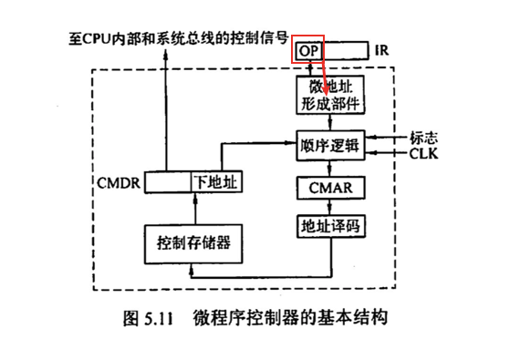
</div><p><span>易混选项：</span></p><p><span>机器指令的</span><strong><span>地址码</span></strong><span>字段：这里面存的是该条命令的操作数</span></p><p><span>微指令的</span><strong><span>微地址码</span></strong><span>字段：存放的是下一条微指令所在的位置</span></p><p><span>微指令的</span><strong><span>微操作码</span></strong><span>字段：存放的是该条微指令所</span><strong><span>要进行的微操作</span></strong></p></blockquote><h3 id='cpu基本结构'><span>CPU基本结构</span></h3><h4 id='从功能角度分类'><span>从功能角度分类：</span></h4><figure><table><thead><tr><th><span>运算器</span></th><th><span>控制器</span></th><th><span>数据通路</span></th></tr></thead><tbody><tr><td><span>ALU</span></td><td><span>PC</span></td><td><span>内部通路（内部总线）</span></td></tr><tr><td><span>ACC</span></td><td><span>操作信号发生器(</span><strong><span>操作控制器</span></strong><span>)</span></td><td><span>专用通路</span></td></tr><tr><td><span>SR移位器、T暂存器</span></td><td><span>MDR、MAR</span></td><td>&nbsp;</td></tr><tr><td><span>Rx、SP堆栈指针寄存器</span></td><td><span>ID、IR</span></td><td>&nbsp;</td></tr><tr><td><span>CT计数器</span></td><td><span>时序系统</span></td><td>&nbsp;</td></tr><tr><td><span>PSW</span></td><td>&nbsp;</td><td>&nbsp;</td></tr></tbody></table></figure><blockquote><p><span>控制部件：PC+MM+II+操控、时序 </span></p></blockquote><h4 id='从用户可见角度分类'><span>从用户可见角度分类：</span></h4><ul><li><span>用户可见</span></li></ul><blockquote><p><span>PC、PSW（部分可见）、Rx、</span><strong><span>基址</span></strong><span>寄存器、ACC</span></p></blockquote><ul><li><span>对用户透明</span></li></ul><blockquote><p><span>MDR、MAR、ID、IR、SR移位器、T</span><strong><span>暂存</span></strong><span>寄存器</span></p></blockquote><h3 id='微程序结构'><span>微程序结构</span></h3><p></p><blockquote><p><strong><span>牢记：指令 &gt; 命令</span></strong></p></blockquote><h3 id='微程序控制器组件待续）'><span>微程序控制器组件（待续）</span></h3><p><strong><span>结构图：</span></strong></p><p></p><h4 id='与cpu外部组件的区分'><span>与CPU外部组件的区分</span></h4><p><strong><span>MDR与CMDR区别：</span></strong></p><blockquote><ul><li><span>MAR用于存放主存地址</span></li><li><span>CMAR存放CM地址</span></li></ul></blockquote><p><strong><span>IR与CMDR(μIR)</span></strong></p><blockquote><ul><li><span>CMDR用于存放从</span><strong><span>CM</span></strong><span>中读出的</span><strong><span>微指令</span></strong></li><li><span>IR用于存放从主存中读出的指令</span></li></ul></blockquote><p><strong><span>MM(主存储器)与CM(控制存储器)的区别：</span></strong></p><figure><table><thead><tr><th>&nbsp;</th><th><span>MM主存</span></th><th><span>CM控存</span></th></tr></thead><tbody><tr><td><span>位置</span></td><td><span>CPU外</span></td><td><span>CPU</span><strong><span>内部</span></strong></td></tr><tr><td><span>存放内容</span></td><td><span>程序与数据</span></td><td><span>微程序</span></td></tr><tr><td><span>实现介质</span></td><td><span>RAM+ROM</span></td><td><span>ROM</span></td></tr></tbody></table></figure><h3 id='各种周期的基本概念'><span>各种周期的基本概念</span></h3><ul><li><strong><span>时钟周期/节拍：</span></strong><span>CPU操作的最基本单位</span></li><li><strong><span>机器周期：</span></strong><span>指令周期中</span><u><span>某个阶段</span></u><span>所花费的时间</span></li><li><strong><span>指令周期：</span></strong><span>从主存中</span><strong><u><span>取出并执行</span></u></strong><span>一条指令的时间</span></li></ul><blockquote><p><span>一个</span><strong><span>指令周期</span></strong><span>中包含若干机器周期，一个</span><strong><span>机器周期</span></strong><span>由若干个</span><strong><span>时钟周期</span></strong><span>构成</span></p></blockquote><p></p><h3 id='不同周期访存的目的'><span>不同周期访存的目的</span></h3><ul><li><strong><span>取指周期：</span></strong><span>取指令</span></li><li><strong><span>间址周期：</span></strong><span>取操作数</span><strong><span>地址</span></strong><span>（不是取操作数本身）</span></li><li><strong><span>执行周期：</span></strong><span>取操作数</span></li><li><strong><span>中断周期：</span></strong><span>保存程序断点</span></li></ul><p>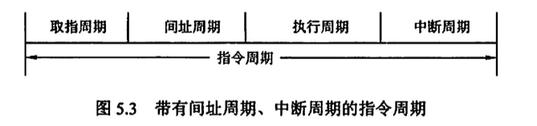</p><h3 id='微指令编码方式'><span>微指令编码方式</span></h3><h4 id='直接编码'><span>直接编码：</span></h4><p><span>1位代表一个微操作命令</span></p><h4 id='字段直接编码'><span>字段直接编码：</span></h4><p><span>将微指令分为若干个字段，每段经过译码之后发出控制信号</span></p><div>
  
</div><p><strong><span>分段原则：</span></strong></p><ul><li><span>互斥性命令 放 同一段中</span></li><li><span>相容性命令 放 不同段中</span></li><li><strong><u><span>每段留出一个状态位表示“无信号”</span></u></strong></li></ul><h4 id='字段间接编码隐式编码）'><span>字段间接编码（隐式编码）：</span></h4><p><span>每个字段所对应的命令，需要由另一个字段中的某些微命令来解释</span></p><div>
  
</div><p>&nbsp;</p><h4 id='总结-1'><span>总结</span></h4><figure><table><thead><tr><th>&nbsp;</th><th><span>直接编码</span></th><th><span>字段直接编码</span></th><th><span>隐式编码</span></th></tr></thead><tbody><tr><td><strong><span>特点</span></strong></td><td><span>1位=1个微操作</span></td><td><span>一段=多个微操作</span></td><td><span>一段由另一段解释</span></td></tr><tr><td><strong><span>优点</span></strong></td><td><span>简单、直观、执行高效</span></td><td><span>能够缩短指令字长</span></td><td><span>进一步缩短指令字长</span></td></tr><tr><td><strong><span>缺点</span></strong></td><td><span>指令字段过长</span></td><td><span>需要</span><strong><span>译码</span></strong><span>，执行相对</span><strong><span>缓慢</span></strong></td><td><span>削弱了并行能力</span></td></tr></tbody></table></figure><p>&nbsp;</p><h3 id='微指令格式'><span>微指令格式</span></h3><h4 id='水平型'><span>水平型：</span></h4><p><span>一条微指令可定义</span><strong><span>多个并行</span></strong><span>的基本操作</span></p><p><strong><span>特点：</span></strong><span>程序行数短，执行效率高，但是编写麻烦不灵活（因为一条指令包含了很多操作，功能复杂）</span></p><div>
  
  
</div><p>&nbsp;</p><p>&nbsp;</p><h4 id='垂直型'><span>垂直型：</span></h4><p><span>一条微指令只能定义</span><strong><span>一种</span></strong><span>基本操作</span></p><p><strong><span>特点：</span></strong><span>程序行数多，执行效率低，但是编写简单且灵活</span></p><div>
  
  
</div><p>&nbsp;</p><h4 id='混合型'><span>混合型：</span></h4><p><span>前两者折中</span></p><h4 id='总结-2'><span>总结：</span></h4><figure><table><thead><tr><th>&nbsp;</th><th><span>水平型</span></th><th><span>垂直型</span></th></tr></thead><tbody><tr><td><strong><span>特点</span></strong></td><td><span>一指令对多操作</span></td><td><span>一指令对一操作</span></td></tr><tr><td><strong><span>优点</span></strong></td><td><span>微程序短，执行高效</span></td><td><span>微指令短，易于编写</span></td></tr><tr><td><strong><span>缺点</span></strong></td><td><span>微指令长，编写麻烦</span></td><td><span>微程序长，执行效率低</span></td></tr></tbody></table></figure><p>&nbsp;</p><p>&nbsp;</p><h3 id='两种制器对比'><span>两种制器对比</span></h3><p>&nbsp;</p><p></p><h3 id='数据通路功能-和-基本结构'><span>数据通路功能 和 基本结构</span></h3><h4 id='数据通路'><span>数据通路</span></h4><ul><li><span>数据通路 = 路径 + 路径上的部件</span></li></ul><p><strong><span>数据通路中的部件包含：</span></strong></p><blockquote><ul><li><span>ALU</span></li><li><span>Rx</span></li><li><span>PSW</span></li><li><span>Cache</span></li><li><span>MMU（内存管理单元）</span></li><li><span>浮点运算逻辑</span></li><li><strong><span>异常和中断处理逻辑</span></strong><span>☆</span></li><li><strong><span>组合逻辑电路+时序逻辑电路</span></strong></li></ul></blockquote><p><mjx-container class="MathJax" jax="SVG" style="position: relative;"><svg xmlns="http://www.w3.org/2000/svg" width="5.809ex" height="2.149ex" role="img" focusable="false" viewBox="0 -750 2567.7 950" xmlns:xlink="http://www.w3.org/1999/xlink" aria-hidden="true" style="vertical-align: -0.452ex;"><defs></defs><g stroke="currentColor" fill="currentColor" stroke-width="0" transform="scale(1,-1)"><g data-mml-node="math"><g data-mml-node="mtext"><text data-variant="normal" transform="scale(1,-1)" font-size="884px" font-family="serif">例</text></g><g data-mml-node="mtext" transform="translate(870.4,0)"><text data-variant="normal" transform="scale(1,-1)" font-size="884px" font-family="serif">题</text></g><g data-mml-node="mi" transform="translate(1740.8,0)"><text data-variant="italic" transform="scale(1,-1)" font-size="884px" font-family="serif" font-style="italic">：</text></g></g></g></svg><mjx-assistive-mml unselectable="on" display="inline"><math xmlns="http://www.w3.org/1998/Math/MathML"><mtext>例</mtext><mtext>题</mtext><mi>：</mi></math></mjx-assistive-mml></mjx-container><script type="math/tex">例题：</script></p><blockquote><div>

</div><p>&nbsp;</p><p><mjx-container class="MathJax" jax="SVG" style="position: relative;"><svg xmlns="http://www.w3.org/2000/svg" width="5.809ex" height="2.149ex" role="img" focusable="false" viewBox="0 -750 2567.7 950" xmlns:xlink="http://www.w3.org/1999/xlink" aria-hidden="true" style="vertical-align: -0.452ex;"><defs></defs><g stroke="currentColor" fill="currentColor" stroke-width="0" transform="scale(1,-1)"><g data-mml-node="math"><g data-mml-node="mtext"><text data-variant="normal" transform="scale(1,-1)" font-size="884px" font-family="serif">解</text></g><g data-mml-node="mtext" transform="translate(870.4,0)"><text data-variant="normal" transform="scale(1,-1)" font-size="884px" font-family="serif">析</text></g><g data-mml-node="mi" transform="translate(1740.8,0)"><text data-variant="italic" transform="scale(1,-1)" font-size="884px" font-family="serif" font-style="italic">：</text></g></g></g></svg><mjx-assistive-mml unselectable="on" display="inline"><math xmlns="http://www.w3.org/1998/Math/MathML"><mtext>解</mtext><mtext>析</mtext><mi>：</mi></math></mjx-assistive-mml></mjx-container><script type="math/tex">解析：</script></p><p><mjx-container class="MathJax" jax="SVG" style="position: relative;"><svg xmlns="http://www.w3.org/2000/svg" width="57.033ex" height="2.149ex" role="img" focusable="false" viewBox="0 -750 25208.5 950" xmlns:xlink="http://www.w3.org/1999/xlink" aria-hidden="true" style="vertical-align: -0.452ex;"><defs><path id="MJX-171-TEX-I-1D434" d="M208 74Q208 50 254 46Q272 46 272 35Q272 34 270 22Q267 8 264 4T251 0Q249 0 239 0T205 1T141 2Q70 2 50 0H42Q35 7 35 11Q37 38 48 46H62Q132 49 164 96Q170 102 345 401T523 704Q530 716 547 716H555H572Q578 707 578 706L606 383Q634 60 636 57Q641 46 701 46Q726 46 726 36Q726 34 723 22Q720 7 718 4T704 0Q701 0 690 0T651 1T578 2Q484 2 455 0H443Q437 6 437 9T439 27Q443 40 445 43L449 46H469Q523 49 533 63L521 213H283L249 155Q208 86 208 74ZM516 260Q516 271 504 416T490 562L463 519Q447 492 400 412L310 260L413 259Q516 259 516 260Z"></path></defs><g stroke="currentColor" fill="currentColor" stroke-width="0" transform="scale(1,-1)"><g data-mml-node="math"><g data-mml-node="mtext"><text data-variant="normal" transform="scale(1,-1)" font-size="884px" font-family="serif">控</text></g><g data-mml-node="mtext" transform="translate(826.9,0)"><text data-variant="normal" transform="scale(1,-1)" font-size="884px" font-family="serif">制</text></g><g data-mml-node="mtext" transform="translate(1653.8,0)"><text data-variant="normal" transform="scale(1,-1)" font-size="884px" font-family="serif">部</text></g><g data-mml-node="mtext" transform="translate(2524.2,0)"><text data-variant="normal" transform="scale(1,-1)" font-size="884px" font-family="serif">件</text></g><g data-mml-node="mtext" transform="translate(3394.6,0)"><text data-variant="normal" transform="scale(1,-1)" font-size="884px" font-family="serif">是</text></g><g data-mml-node="mtext" transform="translate(4221.5,0)"><text data-variant="normal" transform="scale(1,-1)" font-size="884px" font-family="serif">对</text></g><g data-mml-node="mtext" transform="translate(5091.9,0)"><text data-variant="normal" transform="scale(1,-1)" font-size="884px" font-family="serif">数</text></g><g data-mml-node="mtext" transform="translate(5918.8,0)"><text data-variant="normal" transform="scale(1,-1)" font-size="884px" font-family="serif">据</text></g><g data-mml-node="mtext" transform="translate(6745.7,0)"><text data-variant="normal" transform="scale(1,-1)" font-size="884px" font-family="serif">通</text></g><g data-mml-node="mtext" transform="translate(7572.6,0)"><text data-variant="normal" transform="scale(1,-1)" font-size="884px" font-family="serif">路</text></g><g data-mml-node="mtext" transform="translate(8443,0)"><text data-variant="normal" transform="scale(1,-1)" font-size="884px" font-family="serif">生</text></g><g data-mml-node="mtext" transform="translate(9313.4,0)"><text data-variant="normal" transform="scale(1,-1)" font-size="884px" font-family="serif">成</text></g><g data-mml-node="mtext" transform="translate(10183.8,0)"><text data-variant="normal" transform="scale(1,-1)" font-size="884px" font-family="serif">控</text></g><g data-mml-node="mtext" transform="translate(11010.7,0)"><text data-variant="normal" transform="scale(1,-1)" font-size="884px" font-family="serif">制</text></g><g data-mml-node="mtext" transform="translate(11837.6,0)"><text data-variant="normal" transform="scale(1,-1)" font-size="884px" font-family="serif">信</text></g><g data-mml-node="mtext" transform="translate(12664.5,0)"><text data-variant="normal" transform="scale(1,-1)" font-size="884px" font-family="serif">号</text></g><g data-mml-node="mtext" transform="translate(13534.9,0)"><text data-variant="normal" transform="scale(1,-1)" font-size="884px" font-family="serif">的</text></g><g data-mml-node="mi" transform="translate(14361.8,0)"><text data-variant="italic" transform="scale(1,-1)" font-size="884px" font-family="serif" font-style="italic">，</text></g><g data-mml-node="mtext" transform="translate(15188.6,0)"><text data-variant="normal" transform="scale(1,-1)" font-size="884px" font-family="serif">不</text></g><g data-mml-node="mtext" transform="translate(16015.5,0)"><text data-variant="normal" transform="scale(1,-1)" font-size="884px" font-family="serif">包</text></g><g data-mml-node="mtext" transform="translate(16885.9,0)"><text data-variant="normal" transform="scale(1,-1)" font-size="884px" font-family="serif">含</text></g><g data-mml-node="mtext" transform="translate(17712.8,0)"><text data-variant="normal" transform="scale(1,-1)" font-size="884px" font-family="serif">在</text></g><g data-mml-node="mtext" transform="translate(18583.2,0)"><text data-variant="normal" transform="scale(1,-1)" font-size="884px" font-family="serif">数</text></g><g data-mml-node="mtext" transform="translate(19410.1,0)"><text data-variant="normal" transform="scale(1,-1)" font-size="884px" font-family="serif">据</text></g><g data-mml-node="mtext" transform="translate(20237,0)"><text data-variant="normal" transform="scale(1,-1)" font-size="884px" font-family="serif">通</text></g><g data-mml-node="mtext" transform="translate(21063.9,0)"><text data-variant="normal" transform="scale(1,-1)" font-size="884px" font-family="serif">路</text></g><g data-mml-node="mtext" transform="translate(21934.3,0)"><text data-variant="normal" transform="scale(1,-1)" font-size="884px" font-family="serif">中</text></g><g data-mml-node="mi" transform="translate(22761.2,0)"><text data-variant="italic" transform="scale(1,-1)" font-size="884px" font-family="serif" font-style="italic">；</text></g><g data-mml-node="mtext" transform="translate(23631.6,0)"><text data-variant="normal" transform="scale(1,-1)" font-size="884px" font-family="serif">选</text></g><g data-mml-node="mi" transform="translate(24458.5,0)"><use data-c="1D434" xlink:href="#MJX-171-TEX-I-1D434"></use></g></g></g></svg><mjx-assistive-mml unselectable="on" display="inline"><math xmlns="http://www.w3.org/1998/Math/MathML"><mtext>控</mtext><mtext>制</mtext><mtext>部</mtext><mtext>件</mtext><mtext>是</mtext><mtext>对</mtext><mtext>数</mtext><mtext>据</mtext><mtext>通</mtext><mtext>路</mtext><mtext>生</mtext><mtext>成</mtext><mtext>控</mtext><mtext>制</mtext><mtext>信</mtext><mtext>号</mtext><mtext>的</mtext><mi>，</mi><mtext>不</mtext><mtext>包</mtext><mtext>含</mtext><mtext>在</mtext><mtext>数</mtext><mtext>据</mtext><mtext>通</mtext><mtext>路</mtext><mtext>中</mtext><mi>；</mi><mtext>选</mtext><mi>A</mi></math></mjx-assistive-mml></mjx-container><script type="math/tex">控制部件是对数据通路生成控制信号的，不包含在数据通路中；选A</script></p></blockquote><h4 id='数据通路元件分类'><span>数据通路元件分类</span></h4><p><strong><span>操作元件（组合逻辑元件）：</span></strong></p><ul><li><span>加法器、ALU</span></li><li><span>译码器、多路选择器</span></li><li><span>三态门</span></li></ul><p><strong><span>状态元件（时序逻辑元件）：</span></strong></p><ul><li><span>Rx（GPRs）</span></li><li><span>暂存/锁存/移位寄存器</span></li><li><span>PC、PSWR</span></li></ul><blockquote><p><span>总结：一般负责</span><strong><span>运算</span></strong><span>和</span><strong><span>链路通断</span></strong><span>的都是</span><u><span>操作元件</span></u><span>，带有</span><strong><span>存储记忆</span></strong><span>功能的都是</span><u><span>状态元件</span></u></p></blockquote><p>&nbsp;</p><h3 id='指令流水线'><span>指令流水线</span></h3><h4 id='性能指标'><span>性能指标</span></h4><p><strong><span>吞吐率：</span></strong><span>单位时间内完成的指令数量</span></p><p><span>	</span><mjx-container class="MathJax" jax="SVG" style="position: relative;"><svg xmlns="http://www.w3.org/2000/svg" width="64.242ex" height="2.935ex" role="img" focusable="false" viewBox="0 -750 28394.8 1297.1" xmlns:xlink="http://www.w3.org/1999/xlink" aria-hidden="true" style="vertical-align: -1.238ex;"><defs><path id="MJX-172-TEX-I-1D447" d="M40 437Q21 437 21 445Q21 450 37 501T71 602L88 651Q93 669 101 677H569H659Q691 677 697 676T704 667Q704 661 687 553T668 444Q668 437 649 437Q640 437 637 437T631 442L629 445Q629 451 635 490T641 551Q641 586 628 604T573 629Q568 630 515 631Q469 631 457 630T439 622Q438 621 368 343T298 60Q298 48 386 46Q418 46 427 45T436 36Q436 31 433 22Q429 4 424 1L422 0Q419 0 415 0Q410 0 363 1T228 2Q99 2 64 0H49Q43 6 43 9T45 27Q49 40 55 46H83H94Q174 46 189 55Q190 56 191 56Q196 59 201 76T241 233Q258 301 269 344Q339 619 339 625Q339 630 310 630H279Q212 630 191 624Q146 614 121 583T67 467Q60 445 57 441T43 437H40Z"></path><path id="MJX-172-TEX-I-1D443" d="M287 628Q287 635 230 637Q206 637 199 638T192 648Q192 649 194 659Q200 679 203 681T397 683Q587 682 600 680Q664 669 707 631T751 530Q751 453 685 389Q616 321 507 303Q500 302 402 301H307L277 182Q247 66 247 59Q247 55 248 54T255 50T272 48T305 46H336Q342 37 342 35Q342 19 335 5Q330 0 319 0Q316 0 282 1T182 2Q120 2 87 2T51 1Q33 1 33 11Q33 13 36 25Q40 41 44 43T67 46Q94 46 127 49Q141 52 146 61Q149 65 218 339T287 628ZM645 554Q645 567 643 575T634 597T609 619T560 635Q553 636 480 637Q463 637 445 637T416 636T404 636Q391 635 386 627Q384 621 367 550T332 412T314 344Q314 342 395 342H407H430Q542 342 590 392Q617 419 631 471T645 554Z"></path><path id="MJX-172-TEX-N-3D" d="M56 347Q56 360 70 367H707Q722 359 722 347Q722 336 708 328L390 327H72Q56 332 56 347ZM56 153Q56 168 72 173H708Q722 163 722 153Q722 140 707 133H70Q56 140 56 153Z"></path><path id="MJX-172-TEX-I-1D45B" d="M21 287Q22 293 24 303T36 341T56 388T89 425T135 442Q171 442 195 424T225 390T231 369Q231 367 232 367L243 378Q304 442 382 442Q436 442 469 415T503 336T465 179T427 52Q427 26 444 26Q450 26 453 27Q482 32 505 65T540 145Q542 153 560 153Q580 153 580 145Q580 144 576 130Q568 101 554 73T508 17T439 -10Q392 -10 371 17T350 73Q350 92 386 193T423 345Q423 404 379 404H374Q288 404 229 303L222 291L189 157Q156 26 151 16Q138 -11 108 -11Q95 -11 87 -5T76 7T74 17Q74 30 112 180T152 343Q153 348 153 366Q153 405 129 405Q91 405 66 305Q60 285 60 284Q58 278 41 278H27Q21 284 21 287Z"></path><path id="MJX-172-TEX-N-28" d="M94 250Q94 319 104 381T127 488T164 576T202 643T244 695T277 729T302 750H315H319Q333 750 333 741Q333 738 316 720T275 667T226 581T184 443T167 250T184 58T225 -81T274 -167T316 -220T333 -241Q333 -250 318 -250H315H302L274 -226Q180 -141 137 -14T94 250Z"></path><path id="MJX-172-TEX-I-1D458" d="M121 647Q121 657 125 670T137 683Q138 683 209 688T282 694Q294 694 294 686Q294 679 244 477Q194 279 194 272Q213 282 223 291Q247 309 292 354T362 415Q402 442 438 442Q468 442 485 423T503 369Q503 344 496 327T477 302T456 291T438 288Q418 288 406 299T394 328Q394 353 410 369T442 390L458 393Q446 405 434 405H430Q398 402 367 380T294 316T228 255Q230 254 243 252T267 246T293 238T320 224T342 206T359 180T365 147Q365 130 360 106T354 66Q354 26 381 26Q429 26 459 145Q461 153 479 153H483Q499 153 499 144Q499 139 496 130Q455 -11 378 -11Q333 -11 305 15T277 90Q277 108 280 121T283 145Q283 167 269 183T234 206T200 217T182 220H180Q168 178 159 139T145 81T136 44T129 20T122 7T111 -2Q98 -11 83 -11Q66 -11 57 -1T48 16Q48 26 85 176T158 471L195 616Q196 629 188 632T149 637H144Q134 637 131 637T124 640T121 647Z"></path><path id="MJX-172-TEX-N-2B" d="M56 237T56 250T70 270H369V420L370 570Q380 583 389 583Q402 583 409 568V270H707Q722 262 722 250T707 230H409V-68Q401 -82 391 -82H389H387Q375 -82 369 -68V230H70Q56 237 56 250Z"></path><path id="MJX-172-TEX-N-2212" d="M84 237T84 250T98 270H679Q694 262 694 250T679 230H98Q84 237 84 250Z"></path><path id="MJX-172-TEX-N-31" d="M213 578L200 573Q186 568 160 563T102 556H83V602H102Q149 604 189 617T245 641T273 663Q275 666 285 666Q294 666 302 660V361L303 61Q310 54 315 52T339 48T401 46H427V0H416Q395 3 257 3Q121 3 100 0H88V46H114Q136 46 152 46T177 47T193 50T201 52T207 57T213 61V578Z"></path><path id="MJX-172-TEX-N-29" d="M60 749L64 750Q69 750 74 750H86L114 726Q208 641 251 514T294 250Q294 182 284 119T261 12T224 -76T186 -143T145 -194T113 -227T90 -246Q87 -249 86 -250H74Q66 -250 63 -250T58 -247T55 -238Q56 -237 66 -225Q221 -64 221 250T66 725Q56 737 55 738Q55 746 60 749Z"></path><path id="MJX-172-TEX-N-25B3" d="M75 0L72 2Q69 3 67 5T62 11T59 20Q59 24 62 30Q65 37 245 370T428 707Q428 708 430 710T436 714T444 716Q451 716 455 712Q459 710 644 368L828 27V20Q828 7 814 0H75ZM610 347L444 653Q443 653 278 347T113 40H775Q775 42 610 347Z"></path><path id="MJX-172-TEX-I-1D461" d="M26 385Q19 392 19 395Q19 399 22 411T27 425Q29 430 36 430T87 431H140L159 511Q162 522 166 540T173 566T179 586T187 603T197 615T211 624T229 626Q247 625 254 615T261 596Q261 589 252 549T232 470L222 433Q222 431 272 431H323Q330 424 330 420Q330 398 317 385H210L174 240Q135 80 135 68Q135 26 162 26Q197 26 230 60T283 144Q285 150 288 151T303 153H307Q322 153 322 145Q322 142 319 133Q314 117 301 95T267 48T216 6T155 -11Q125 -11 98 4T59 56Q57 64 57 83V101L92 241Q127 382 128 383Q128 385 77 385H26Z"></path></defs><g stroke="currentColor" fill="currentColor" stroke-width="0" transform="scale(1,-1)"><g data-mml-node="math"><g data-mml-node="mi"><use data-c="1D447" xlink:href="#MJX-172-TEX-I-1D447"></use></g><g data-mml-node="mi" transform="translate(704,0)"><use data-c="1D443" xlink:href="#MJX-172-TEX-I-1D443"></use></g><g data-mml-node="mo" transform="translate(1732.8,0)"><use data-c="3D" xlink:href="#MJX-172-TEX-N-3D"></use></g><g data-mml-node="mfrac" transform="translate(2788.6,0)"><g data-mml-node="mi" transform="translate(1848.1,394) scale(0.707)"><use data-c="1D45B" xlink:href="#MJX-172-TEX-I-1D45B"></use></g><g data-mml-node="mrow" transform="translate(220,-370.3) scale(0.707)"><g data-mml-node="mo"><use data-c="28" xlink:href="#MJX-172-TEX-N-28"></use></g><g data-mml-node="mi" transform="translate(389,0)"><use data-c="1D458" xlink:href="#MJX-172-TEX-I-1D458"></use></g><g data-mml-node="mo" transform="translate(910,0)"><use data-c="2B" xlink:href="#MJX-172-TEX-N-2B"></use></g><g data-mml-node="mi" transform="translate(1688,0)"><use data-c="1D45B" xlink:href="#MJX-172-TEX-I-1D45B"></use></g><g data-mml-node="mo" transform="translate(2288,0)"><use data-c="2212" xlink:href="#MJX-172-TEX-N-2212"></use></g><g data-mml-node="mn" transform="translate(3066,0)"><use data-c="31" xlink:href="#MJX-172-TEX-N-31"></use></g><g data-mml-node="mo" transform="translate(3566,0)"><use data-c="29" xlink:href="#MJX-172-TEX-N-29"></use></g><g data-mml-node="mo" transform="translate(3955,0)"><use data-c="25B3" xlink:href="#MJX-172-TEX-N-25B3"></use></g><g data-mml-node="mi" transform="translate(4844,0)"><use data-c="1D461" xlink:href="#MJX-172-TEX-I-1D461"></use></g></g><rect width="3880.5" height="60" x="120" y="220"></rect></g><g data-mml-node="TeXAtom" data-mjx-texclass="ORD" transform="translate(6909,0)"><g data-mml-node="mo"><text data-variant="normal" transform="scale(1,-1)" font-size="884px" font-family="serif">【</text></g></g><g data-mml-node="mi" transform="translate(7779.5,0)"><use data-c="1D458" xlink:href="#MJX-172-TEX-I-1D458"></use></g><g data-mml-node="mi" transform="translate(8300.5,0)"><text data-variant="italic" transform="scale(1,-1)" font-size="884px" font-family="serif" font-style="italic">：</text></g><g data-mml-node="mtext" transform="translate(9127.3,0)"><text data-variant="normal" transform="scale(1,-1)" font-size="884px" font-family="serif">流</text></g><g data-mml-node="mtext" transform="translate(9997.7,0)"><text data-variant="normal" transform="scale(1,-1)" font-size="884px" font-family="serif">水</text></g><g data-mml-node="mtext" transform="translate(10868.2,0)"><text data-variant="normal" transform="scale(1,-1)" font-size="884px" font-family="serif">线</text></g><g data-mml-node="mtext" transform="translate(11695,0)"><text data-variant="normal" transform="scale(1,-1)" font-size="884px" font-family="serif">段</text></g><g data-mml-node="mtext" transform="translate(12565.5,0)"><text data-variant="normal" transform="scale(1,-1)" font-size="884px" font-family="serif">数</text></g><g data-mml-node="mi" transform="translate(13392.3,0)"><text data-variant="italic" transform="scale(1,-1)" font-size="884px" font-family="serif" font-style="italic">，</text></g><g data-mml-node="mi" transform="translate(14219.2,0)"><use data-c="1D45B" xlink:href="#MJX-172-TEX-I-1D45B"></use></g><g data-mml-node="mi" transform="translate(14819.2,0)"><text data-variant="italic" transform="scale(1,-1)" font-size="884px" font-family="serif" font-style="italic">：</text></g><g data-mml-node="mtext" transform="translate(15646.1,0)"><text data-variant="normal" transform="scale(1,-1)" font-size="884px" font-family="serif">任</text></g><g data-mml-node="mtext" transform="translate(16516.5,0)"><text data-variant="normal" transform="scale(1,-1)" font-size="884px" font-family="serif">务</text></g><g data-mml-node="mtext" transform="translate(17386.9,0)"><text data-variant="normal" transform="scale(1,-1)" font-size="884px" font-family="serif">数</text></g><g data-mml-node="mi" transform="translate(18213.8,0)"><text data-variant="italic" transform="scale(1,-1)" font-size="884px" font-family="serif" font-style="italic">，</text></g><g data-mml-node="mo" transform="translate(19262.9,0)"><use data-c="25B3" xlink:href="#MJX-172-TEX-N-25B3"></use></g><g data-mml-node="mi" transform="translate(20374.2,0)"><use data-c="1D461" xlink:href="#MJX-172-TEX-I-1D461"></use></g><g data-mml-node="mi" transform="translate(20735.2,0)"><text data-variant="italic" transform="scale(1,-1)" font-size="884px" font-family="serif" font-style="italic">：</text></g><g data-mml-node="mtext" transform="translate(21562.1,0)"><text data-variant="normal" transform="scale(1,-1)" font-size="884px" font-family="serif">一</text></g><g data-mml-node="mtext" transform="translate(22388.9,0)"><text data-variant="normal" transform="scale(1,-1)" font-size="884px" font-family="serif">段</text></g><g data-mml-node="mtext" transform="translate(23259.4,0)"><text data-variant="normal" transform="scale(1,-1)" font-size="884px" font-family="serif">所</text></g><g data-mml-node="mtext" transform="translate(24129.8,0)"><text data-variant="normal" transform="scale(1,-1)" font-size="884px" font-family="serif">需</text></g><g data-mml-node="mtext" transform="translate(24956.6,0)"><text data-variant="normal" transform="scale(1,-1)" font-size="884px" font-family="serif">时</text></g><g data-mml-node="mtext" transform="translate(25783.5,0)"><text data-variant="normal" transform="scale(1,-1)" font-size="884px" font-family="serif">钟</text></g><g data-mml-node="mtext" transform="translate(26653.9,0)"><text data-variant="normal" transform="scale(1,-1)" font-size="884px" font-family="serif">周</text></g><g data-mml-node="mtext" transform="translate(27524.4,0)"><text data-variant="normal" transform="scale(1,-1)" font-size="884px" font-family="serif">期</text></g></g></g></svg><mjx-assistive-mml unselectable="on" display="inline"><math xmlns="http://www.w3.org/1998/Math/MathML"><mi>T</mi><mi>P</mi><mo>=</mo><mfrac><mi>n</mi><mrow><mo stretchy="false">(</mo><mi>k</mi><mo>+</mo><mi>n</mi><mo>−</mo><mn>1</mn><mo stretchy="false">)</mo><mo>△</mo><mi>t</mi></mrow></mfrac><mrow data-mjx-texclass="ORD"><mo>【</mo></mrow><mi>k</mi><mi>：</mi><mtext>流</mtext><mtext>水</mtext><mtext>线</mtext><mtext>段</mtext><mtext>数</mtext><mi>，</mi><mi>n</mi><mi>：</mi><mtext>任</mtext><mtext>务</mtext><mtext>数</mtext><mi>，</mi><mo>△</mo><mi>t</mi><mi>：</mi><mtext>一</mtext><mtext>段</mtext><mtext>所</mtext><mtext>需</mtext><mtext>时</mtext><mtext>钟</mtext><mtext>周</mtext><mtext>期</mtext></math></mjx-assistive-mml></mjx-container><script type="math/tex">TP=\frac{n}{(k+n-1)\bigtriangleup t}【k：流水线段数，n：任务数，\bigtriangleup t：一段所需时钟周期</script></p><p></p><p><strong><span>加速比：</span></strong><span>引入流水线后比没引入快了多少倍</span></p><p><mjx-container class="MathJax" jax="SVG" style="position: relative;"><svg xmlns="http://www.w3.org/2000/svg" width="68.105ex" height="3.355ex" role="img" focusable="false" viewBox="0 -935.8 30102.3 1482.9" xmlns:xlink="http://www.w3.org/1999/xlink" aria-hidden="true" style="vertical-align: -1.238ex;"><defs><path id="MJX-173-TEX-I-1D446" d="M308 24Q367 24 416 76T466 197Q466 260 414 284Q308 311 278 321T236 341Q176 383 176 462Q176 523 208 573T273 648Q302 673 343 688T407 704H418H425Q521 704 564 640Q565 640 577 653T603 682T623 704Q624 704 627 704T632 705Q645 705 645 698T617 577T585 459T569 456Q549 456 549 465Q549 471 550 475Q550 478 551 494T553 520Q553 554 544 579T526 616T501 641Q465 662 419 662Q362 662 313 616T263 510Q263 480 278 458T319 427Q323 425 389 408T456 390Q490 379 522 342T554 242Q554 216 546 186Q541 164 528 137T492 78T426 18T332 -20Q320 -22 298 -22Q199 -22 144 33L134 44L106 13Q83 -14 78 -18T65 -22Q52 -22 52 -14Q52 -11 110 221Q112 227 130 227H143Q149 221 149 216Q149 214 148 207T144 186T142 153Q144 114 160 87T203 47T255 29T308 24Z"></path><path id="MJX-173-TEX-N-3D" d="M56 347Q56 360 70 367H707Q722 359 722 347Q722 336 708 328L390 327H72Q56 332 56 347ZM56 153Q56 168 72 173H708Q722 163 722 153Q722 140 707 133H70Q56 140 56 153Z"></path><path id="MJX-173-TEX-I-1D447" d="M40 437Q21 437 21 445Q21 450 37 501T71 602L88 651Q93 669 101 677H569H659Q691 677 697 676T704 667Q704 661 687 553T668 444Q668 437 649 437Q640 437 637 437T631 442L629 445Q629 451 635 490T641 551Q641 586 628 604T573 629Q568 630 515 631Q469 631 457 630T439 622Q438 621 368 343T298 60Q298 48 386 46Q418 46 427 45T436 36Q436 31 433 22Q429 4 424 1L422 0Q419 0 415 0Q410 0 363 1T228 2Q99 2 64 0H49Q43 6 43 9T45 27Q49 40 55 46H83H94Q174 46 189 55Q190 56 191 56Q196 59 201 76T241 233Q258 301 269 344Q339 619 339 625Q339 630 310 630H279Q212 630 191 624Q146 614 121 583T67 467Q60 445 57 441T43 437H40Z"></path><path id="MJX-173-TEX-N-30" d="M96 585Q152 666 249 666Q297 666 345 640T423 548Q460 465 460 320Q460 165 417 83Q397 41 362 16T301 -15T250 -22Q224 -22 198 -16T137 16T82 83Q39 165 39 320Q39 494 96 585ZM321 597Q291 629 250 629Q208 629 178 597Q153 571 145 525T137 333Q137 175 145 125T181 46Q209 16 250 16Q290 16 318 46Q347 76 354 130T362 333Q362 478 354 524T321 597Z"></path><path id="MJX-173-TEX-N-31" d="M213 578L200 573Q186 568 160 563T102 556H83V602H102Q149 604 189 617T245 641T273 663Q275 666 285 666Q294 666 302 660V361L303 61Q310 54 315 52T339 48T401 46H427V0H416Q395 3 257 3Q121 3 100 0H88V46H114Q136 46 152 46T177 47T193 50T201 52T207 57T213 61V578Z"></path><path id="MJX-173-TEX-I-1D45B" d="M21 287Q22 293 24 303T36 341T56 388T89 425T135 442Q171 442 195 424T225 390T231 369Q231 367 232 367L243 378Q304 442 382 442Q436 442 469 415T503 336T465 179T427 52Q427 26 444 26Q450 26 453 27Q482 32 505 65T540 145Q542 153 560 153Q580 153 580 145Q580 144 576 130Q568 101 554 73T508 17T439 -10Q392 -10 371 17T350 73Q350 92 386 193T423 345Q423 404 379 404H374Q288 404 229 303L222 291L189 157Q156 26 151 16Q138 -11 108 -11Q95 -11 87 -5T76 7T74 17Q74 30 112 180T152 343Q153 348 153 366Q153 405 129 405Q91 405 66 305Q60 285 60 284Q58 278 41 278H27Q21 284 21 287Z"></path><path id="MJX-173-TEX-I-1D458" d="M121 647Q121 657 125 670T137 683Q138 683 209 688T282 694Q294 694 294 686Q294 679 244 477Q194 279 194 272Q213 282 223 291Q247 309 292 354T362 415Q402 442 438 442Q468 442 485 423T503 369Q503 344 496 327T477 302T456 291T438 288Q418 288 406 299T394 328Q394 353 410 369T442 390L458 393Q446 405 434 405H430Q398 402 367 380T294 316T228 255Q230 254 243 252T267 246T293 238T320 224T342 206T359 180T365 147Q365 130 360 106T354 66Q354 26 381 26Q429 26 459 145Q461 153 479 153H483Q499 153 499 144Q499 139 496 130Q455 -11 378 -11Q333 -11 305 15T277 90Q277 108 280 121T283 145Q283 167 269 183T234 206T200 217T182 220H180Q168 178 159 139T145 81T136 44T129 20T122 7T111 -2Q98 -11 83 -11Q66 -11 57 -1T48 16Q48 26 85 176T158 471L195 616Q196 629 188 632T149 637H144Q134 637 131 637T124 640T121 647Z"></path><path id="MJX-173-TEX-N-25B3" d="M75 0L72 2Q69 3 67 5T62 11T59 20Q59 24 62 30Q65 37 245 370T428 707Q428 708 430 710T436 714T444 716Q451 716 455 712Q459 710 644 368L828 27V20Q828 7 814 0H75ZM610 347L444 653Q443 653 278 347T113 40H775Q775 42 610 347Z"></path><path id="MJX-173-TEX-I-1D461" d="M26 385Q19 392 19 395Q19 399 22 411T27 425Q29 430 36 430T87 431H140L159 511Q162 522 166 540T173 566T179 586T187 603T197 615T211 624T229 626Q247 625 254 615T261 596Q261 589 252 549T232 470L222 433Q222 431 272 431H323Q330 424 330 420Q330 398 317 385H210L174 240Q135 80 135 68Q135 26 162 26Q197 26 230 60T283 144Q285 150 288 151T303 153H307Q322 153 322 145Q322 142 319 133Q314 117 301 95T267 48T216 6T155 -11Q125 -11 98 4T59 56Q57 64 57 83V101L92 241Q127 382 128 383Q128 385 77 385H26Z"></path><path id="MJX-173-TEX-N-28" d="M94 250Q94 319 104 381T127 488T164 576T202 643T244 695T277 729T302 750H315H319Q333 750 333 741Q333 738 316 720T275 667T226 581T184 443T167 250T184 58T225 -81T274 -167T316 -220T333 -241Q333 -250 318 -250H315H302L274 -226Q180 -141 137 -14T94 250Z"></path><path id="MJX-173-TEX-N-2B" d="M56 237T56 250T70 270H369V420L370 570Q380 583 389 583Q402 583 409 568V270H707Q722 262 722 250T707 230H409V-68Q401 -82 391 -82H389H387Q375 -82 369 -68V230H70Q56 237 56 250Z"></path><path id="MJX-173-TEX-N-2212" d="M84 237T84 250T98 270H679Q694 262 694 250T679 230H98Q84 237 84 250Z"></path><path id="MJX-173-TEX-N-29" d="M60 749L64 750Q69 750 74 750H86L114 726Q208 641 251 514T294 250Q294 182 284 119T261 12T224 -76T186 -143T145 -194T113 -227T90 -246Q87 -249 86 -250H74Q66 -250 63 -250T58 -247T55 -238Q56 -237 66 -225Q221 -64 221 250T66 725Q56 737 55 738Q55 746 60 749Z"></path><path id="MJX-173-TEX-N-3A" d="M78 370Q78 394 95 412T138 430Q162 430 180 414T199 371Q199 346 182 328T139 310T96 327T78 370ZM78 60Q78 84 95 102T138 120Q162 120 180 104T199 61Q199 36 182 18T139 0T96 17T78 60Z"></path></defs><g stroke="currentColor" fill="currentColor" stroke-width="0" transform="scale(1,-1)"><g data-mml-node="math"><g data-mml-node="mi"><use data-c="1D446" xlink:href="#MJX-173-TEX-I-1D446"></use></g><g data-mml-node="mo" transform="translate(922.8,0)"><use data-c="3D" xlink:href="#MJX-173-TEX-N-3D"></use></g><g data-mml-node="mfrac" transform="translate(1978.6,0)"><g data-mml-node="msub" transform="translate(220,457.1) scale(0.707)"><g data-mml-node="mi"><use data-c="1D447" xlink:href="#MJX-173-TEX-I-1D447"></use></g><g data-mml-node="mn" transform="translate(617,-150) scale(0.707)"><use data-c="30" xlink:href="#MJX-173-TEX-N-30"></use></g></g><g data-mml-node="msub" transform="translate(220,-345) scale(0.707)"><g data-mml-node="mi"><use data-c="1D447" xlink:href="#MJX-173-TEX-I-1D447"></use></g><g data-mml-node="mn" transform="translate(617,-150) scale(0.707)"><use data-c="31" xlink:href="#MJX-173-TEX-N-31"></use></g></g><rect width="921.6" height="60" x="120" y="220"></rect></g><g data-mml-node="mo" transform="translate(3418,0)"><use data-c="3D" xlink:href="#MJX-173-TEX-N-3D"></use></g><g data-mml-node="mfrac" transform="translate(4473.8,0)"><g data-mml-node="mrow" transform="translate(1222,394) scale(0.707)"><g data-mml-node="mi"><use data-c="1D45B" xlink:href="#MJX-173-TEX-I-1D45B"></use></g><g data-mml-node="mi" transform="translate(600,0)"><use data-c="1D458" xlink:href="#MJX-173-TEX-I-1D458"></use></g><g data-mml-node="mo" transform="translate(1121,0)"><use data-c="25B3" xlink:href="#MJX-173-TEX-N-25B3"></use></g><g data-mml-node="mi" transform="translate(2010,0)"><use data-c="1D461" xlink:href="#MJX-173-TEX-I-1D461"></use></g></g><g data-mml-node="mrow" transform="translate(220,-370.3) scale(0.707)"><g data-mml-node="mo"><use data-c="28" xlink:href="#MJX-173-TEX-N-28"></use></g><g data-mml-node="mi" transform="translate(389,0)"><use data-c="1D458" xlink:href="#MJX-173-TEX-I-1D458"></use></g><g data-mml-node="mo" transform="translate(910,0)"><use data-c="2B" xlink:href="#MJX-173-TEX-N-2B"></use></g><g data-mml-node="mi" transform="translate(1688,0)"><use data-c="1D45B" xlink:href="#MJX-173-TEX-I-1D45B"></use></g><g data-mml-node="mo" transform="translate(2288,0)"><use data-c="2212" xlink:href="#MJX-173-TEX-N-2212"></use></g><g data-mml-node="mn" transform="translate(3066,0)"><use data-c="31" xlink:href="#MJX-173-TEX-N-31"></use></g><g data-mml-node="mo" transform="translate(3566,0)"><use data-c="29" xlink:href="#MJX-173-TEX-N-29"></use></g><g data-mml-node="mo" transform="translate(3955,0)"><use data-c="25B3" xlink:href="#MJX-173-TEX-N-25B3"></use></g><g data-mml-node="mi" transform="translate(4844,0)"><use data-c="1D461" xlink:href="#MJX-173-TEX-I-1D461"></use></g></g><rect width="3880.5" height="60" x="120" y="220"></rect></g><g data-mml-node="TeXAtom" data-mjx-texclass="ORD" transform="translate(8594.2,0)"><g data-mml-node="mo"><text data-variant="normal" transform="scale(1,-1)" font-size="884px" font-family="serif">【</text></g></g><g data-mml-node="msub" transform="translate(9464.6,0)"><g data-mml-node="mi"><use data-c="1D447" xlink:href="#MJX-173-TEX-I-1D447"></use></g><g data-mml-node="mn" transform="translate(617,-150) scale(0.707)"><use data-c="30" xlink:href="#MJX-173-TEX-N-30"></use></g></g><g data-mml-node="mo" transform="translate(10763,0)"><use data-c="3A" xlink:href="#MJX-173-TEX-N-3A"></use></g><g data-mml-node="mtext" transform="translate(11318.8,0)"><text data-variant="normal" transform="scale(1,-1)" font-size="884px" font-family="serif">未</text></g><g data-mml-node="mtext" transform="translate(12189.2,0)"><text data-variant="normal" transform="scale(1,-1)" font-size="884px" font-family="serif">引</text></g><g data-mml-node="mtext" transform="translate(13016.1,0)"><text data-variant="normal" transform="scale(1,-1)" font-size="884px" font-family="serif">入</text></g><g data-mml-node="mtext" transform="translate(13886.5,0)"><text data-variant="normal" transform="scale(1,-1)" font-size="884px" font-family="serif">流</text></g><g data-mml-node="mtext" transform="translate(14756.9,0)"><text data-variant="normal" transform="scale(1,-1)" font-size="884px" font-family="serif">水</text></g><g data-mml-node="mtext" transform="translate(15627.3,0)"><text data-variant="normal" transform="scale(1,-1)" font-size="884px" font-family="serif">线</text></g><g data-mml-node="mtext" transform="translate(16454.2,0)"><text data-variant="normal" transform="scale(1,-1)" font-size="884px" font-family="serif">的</text></g><g data-mml-node="mtext" transform="translate(17281.1,0)"><text data-variant="normal" transform="scale(1,-1)" font-size="884px" font-family="serif">时</text></g><g data-mml-node="mtext" transform="translate(18107.9,0)"><text data-variant="normal" transform="scale(1,-1)" font-size="884px" font-family="serif">间</text></g><g data-mml-node="mi" transform="translate(18934.8,0)"><text data-variant="italic" transform="scale(1,-1)" font-size="884px" font-family="serif" font-style="italic">，</text></g><g data-mml-node="msub" transform="translate(19761.7,0)"><g data-mml-node="mi"><use data-c="1D447" xlink:href="#MJX-173-TEX-I-1D447"></use></g><g data-mml-node="mn" transform="translate(617,-150) scale(0.707)"><use data-c="31" xlink:href="#MJX-173-TEX-N-31"></use></g></g><g data-mml-node="mo" transform="translate(21060.1,0)"><use data-c="3A" xlink:href="#MJX-173-TEX-N-3A"></use></g><g data-mml-node="mtext" transform="translate(21615.8,0)"><text data-variant="normal" transform="scale(1,-1)" font-size="884px" font-family="serif">引</text></g><g data-mml-node="mtext" transform="translate(22442.7,0)"><text data-variant="normal" transform="scale(1,-1)" font-size="884px" font-family="serif">入</text></g><g data-mml-node="mtext" transform="translate(23313.1,0)"><text data-variant="normal" transform="scale(1,-1)" font-size="884px" font-family="serif">流</text></g><g data-mml-node="mtext" transform="translate(24183.5,0)"><text data-variant="normal" transform="scale(1,-1)" font-size="884px" font-family="serif">水</text></g><g data-mml-node="mtext" transform="translate(25053.9,0)"><text data-variant="normal" transform="scale(1,-1)" font-size="884px" font-family="serif">线</text></g><g data-mml-node="mtext" transform="translate(25880.8,0)"><text data-variant="normal" transform="scale(1,-1)" font-size="884px" font-family="serif">后</text></g><g data-mml-node="mtext" transform="translate(26751.2,0)"><text data-variant="normal" transform="scale(1,-1)" font-size="884px" font-family="serif">的</text></g><g data-mml-node="mtext" transform="translate(27578.1,0)"><text data-variant="normal" transform="scale(1,-1)" font-size="884px" font-family="serif">时</text></g><g data-mml-node="mtext" transform="translate(28405,0)"><text data-variant="normal" transform="scale(1,-1)" font-size="884px" font-family="serif">间</text></g><g data-mml-node="TeXAtom" data-mjx-texclass="ORD" transform="translate(29231.9,0)"><g data-mml-node="mo"><text data-variant="normal" transform="scale(1,-1)" font-size="884px" font-family="serif">】</text></g></g></g></g></svg><mjx-assistive-mml unselectable="on" display="inline"><math xmlns="http://www.w3.org/1998/Math/MathML"><mi>S</mi><mo>=</mo><mfrac><msub><mi>T</mi><mn>0</mn></msub><msub><mi>T</mi><mn>1</mn></msub></mfrac><mo>=</mo><mfrac><mrow><mi>n</mi><mi>k</mi><mo>△</mo><mi>t</mi></mrow><mrow><mo stretchy="false">(</mo><mi>k</mi><mo>+</mo><mi>n</mi><mo>−</mo><mn>1</mn><mo stretchy="false">)</mo><mo>△</mo><mi>t</mi></mrow></mfrac><mrow data-mjx-texclass="ORD"><mo>【</mo></mrow><msub><mi>T</mi><mn>0</mn></msub><mo>:</mo><mtext>未</mtext><mtext>引</mtext><mtext>入</mtext><mtext>流</mtext><mtext>水</mtext><mtext>线</mtext><mtext>的</mtext><mtext>时</mtext><mtext>间</mtext><mi>，</mi><msub><mi>T</mi><mn>1</mn></msub><mo>:</mo><mtext>引</mtext><mtext>入</mtext><mtext>流</mtext><mtext>水</mtext><mtext>线</mtext><mtext>后</mtext><mtext>的</mtext><mtext>时</mtext><mtext>间</mtext><mrow data-mjx-texclass="ORD"><mo>】</mo></mrow></math></mjx-assistive-mml></mjx-container><script type="math/tex">S=\frac{T_0}{T_1}=\frac{nk\bigtriangleup t}{(k+n-1)\bigtriangleup t}【T_0:未引入流水线的时间，T_1:引入流水线后的时间】</script></p><p><strong><span>效率：</span></strong><span>流水线的设备利用率</span></p><p><mjx-container class="MathJax" jax="SVG" style="position: relative;"><svg xmlns="http://www.w3.org/2000/svg" width="23.545ex" height="2.262ex" role="img" focusable="false" viewBox="0 -750 10407.1 1000" xmlns:xlink="http://www.w3.org/1999/xlink" aria-hidden="true" style="vertical-align: -0.566ex;"><defs><path id="MJX-174-TEX-N-3D" d="M56 347Q56 360 70 367H707Q722 359 722 347Q722 336 708 328L390 327H72Q56 332 56 347ZM56 153Q56 168 72 173H708Q722 163 722 153Q722 140 707 133H70Q56 140 56 153Z"></path><path id="MJX-174-TEX-N-2F" d="M423 750Q432 750 438 744T444 730Q444 725 271 248T92 -240Q85 -250 75 -250Q68 -250 62 -245T56 -231Q56 -221 230 257T407 740Q411 750 423 750Z"></path></defs><g stroke="currentColor" fill="currentColor" stroke-width="0" transform="scale(1,-1)"><g data-mml-node="math"><g data-mml-node="mtext"><text data-variant="normal" transform="scale(1,-1)" font-size="884px" font-family="serif">效</text></g><g data-mml-node="mtext" transform="translate(826.9,0)"><text data-variant="normal" transform="scale(1,-1)" font-size="884px" font-family="serif">率</text></g><g data-mml-node="mo" transform="translate(1931.6,0)"><use data-c="3D" xlink:href="#MJX-174-TEX-N-3D"></use></g><g data-mml-node="mtext" transform="translate(2987.3,0)"><text data-variant="normal" transform="scale(1,-1)" font-size="884px" font-family="serif">红</text></g><g data-mml-node="mtext" transform="translate(3814.2,0)"><text data-variant="normal" transform="scale(1,-1)" font-size="884px" font-family="serif">色</text></g><g data-mml-node="mtext" transform="translate(4684.6,0)"><text data-variant="normal" transform="scale(1,-1)" font-size="884px" font-family="serif">面</text></g><g data-mml-node="mtext" transform="translate(5555,0)"><text data-variant="normal" transform="scale(1,-1)" font-size="884px" font-family="serif">积</text></g><g data-mml-node="TeXAtom" data-mjx-texclass="ORD" transform="translate(6425.4,0)"><g data-mml-node="mo"><use data-c="2F" xlink:href="#MJX-174-TEX-N-2F"></use></g></g><g data-mml-node="mtext" transform="translate(6925.4,0)"><text data-variant="normal" transform="scale(1,-1)" font-size="884px" font-family="serif">蓝</text></g><g data-mml-node="mtext" transform="translate(7795.9,0)"><text data-variant="normal" transform="scale(1,-1)" font-size="884px" font-family="serif">色</text></g><g data-mml-node="mtext" transform="translate(8666.3,0)"><text data-variant="normal" transform="scale(1,-1)" font-size="884px" font-family="serif">面</text></g><g data-mml-node="mtext" transform="translate(9536.7,0)"><text data-variant="normal" transform="scale(1,-1)" font-size="884px" font-family="serif">积</text></g></g></g></svg><mjx-assistive-mml unselectable="on" display="inline"><math xmlns="http://www.w3.org/1998/Math/MathML"><mtext>效</mtext><mtext>率</mtext><mo>=</mo><mtext>红</mtext><mtext>色</mtext><mtext>面</mtext><mtext>积</mtext><mrow data-mjx-texclass="ORD"><mo>/</mo></mrow><mtext>蓝</mtext><mtext>色</mtext><mtext>面</mtext><mtext>积</mtext></math></mjx-assistive-mml></mjx-container><script type="math/tex">效率=红色面积/蓝色面积</script></p><p></p><ul><li><span>装入时间：</span><strong><span>第一条</span></strong><span>指令从开始到结束</span></li><li><span>排空时间：</span><strong><span>最后一条</span></strong><span>指令从开始到结束</span></li></ul><h4 id='五段式指令流水线☆'><span>五段式指令流水线☆</span></h4><p></p><p>&nbsp;</p><p></p><blockquote><p><span>注意：在LOAD指令中同样要进行一次</span><strong><span>加法运算</span></strong><span>，因为RISC中默认采用基址寻址（需要相加计算真实地址）</span></p></blockquote><h4 id='高级流水线技术'><span>高级流水线技术</span></h4><p><strong><span>超标量技术（空分复用）：</span></strong><span>每个时钟周期内</span><strong><span>并行发射多条</span></strong><span>不同指令，在该技术下CPI&lt;1</span></p><p></p><ul><li><strong><span>要求：</span></strong></li></ul><blockquote><ul><li><span>要配置多个功能部件</span></li><li><span>能在同一个时钟周期内发射多条指令</span></li><li><span>指令顺序不能改变（支持</span><strong><span>乱序发射</span></strong><span>的处理机除外）</span></li><li><span>配合</span><strong><u><span>动态调度技术</span></u></strong><span>提高并行性</span><strong><span>（乱序发射+乱序完成：以减少指令之间原有的冲突）</span></strong></li></ul></blockquote><ul><li><strong><span>例题：</span></strong></li></ul><blockquote><p><span>【17年T17】</span></p><div>

</div><p>&nbsp;</p><p><mjx-container class="MathJax" jax="SVG" style="position: relative;"><svg xmlns="http://www.w3.org/2000/svg" width="49.671ex" height="2.149ex" role="img" focusable="false" viewBox="0 -750 21954.5 950" xmlns:xlink="http://www.w3.org/1999/xlink" aria-hidden="true" style="vertical-align: -0.452ex;"><defs><path id="MJX-175-TEX-I-1D436" d="M50 252Q50 367 117 473T286 641T490 704Q580 704 633 653Q642 643 648 636T656 626L657 623Q660 623 684 649Q691 655 699 663T715 679T725 690L740 705H746Q760 705 760 698Q760 694 728 561Q692 422 692 421Q690 416 687 415T669 413H653Q647 419 647 422Q647 423 648 429T650 449T651 481Q651 552 619 605T510 659Q484 659 454 652T382 628T299 572T226 479Q194 422 175 346T156 222Q156 108 232 58Q280 24 350 24Q441 24 512 92T606 240Q610 253 612 255T628 257Q648 257 648 248Q648 243 647 239Q618 132 523 55T319 -22Q206 -22 128 53T50 252Z"></path></defs><g stroke="currentColor" fill="currentColor" stroke-width="0" transform="scale(1,-1)"><g data-mml-node="math"><g data-mml-node="mtext"><text data-variant="normal" transform="scale(1,-1)" font-size="884px" font-family="serif">答</text></g><g data-mml-node="mtext" transform="translate(870.4,0)"><text data-variant="normal" transform="scale(1,-1)" font-size="884px" font-family="serif">案</text></g><g data-mml-node="mi" transform="translate(1740.8,0)"><text data-variant="italic" transform="scale(1,-1)" font-size="884px" font-family="serif" font-style="italic">：</text></g><g data-mml-node="mtext" transform="translate(2567.7,0)"><text data-variant="normal" transform="scale(1,-1)" font-size="884px" font-family="serif">本</text></g><g data-mml-node="mtext" transform="translate(3438.1,0)"><text data-variant="normal" transform="scale(1,-1)" font-size="884px" font-family="serif">质</text></g><g data-mml-node="mtext" transform="translate(4308.5,0)"><text data-variant="normal" transform="scale(1,-1)" font-size="884px" font-family="serif">是</text></g><g data-mml-node="mtext" transform="translate(5135.4,0)"><text data-variant="normal" transform="scale(1,-1)" font-size="884px" font-family="serif">以</text></g><g data-mml-node="mtext" transform="translate(6005.8,0)"><text data-variant="normal" transform="scale(1,-1)" font-size="884px" font-family="serif">空</text></g><g data-mml-node="mtext" transform="translate(6876.2,0)"><text data-variant="normal" transform="scale(1,-1)" font-size="884px" font-family="serif">间</text></g><g data-mml-node="mtext" transform="translate(7703.1,0)"><text data-variant="normal" transform="scale(1,-1)" font-size="884px" font-family="serif">换</text></g><g data-mml-node="mtext" transform="translate(8530,0)"><text data-variant="normal" transform="scale(1,-1)" font-size="884px" font-family="serif">时</text></g><g data-mml-node="mtext" transform="translate(9356.9,0)"><text data-variant="normal" transform="scale(1,-1)" font-size="884px" font-family="serif">间</text></g><g data-mml-node="mi" transform="translate(10183.8,0)"><text data-variant="italic" transform="scale(1,-1)" font-size="884px" font-family="serif" font-style="italic">，</text></g><g data-mml-node="mtext" transform="translate(11010.7,0)"><text data-variant="normal" transform="scale(1,-1)" font-size="884px" font-family="serif">并</text></g><g data-mml-node="mtext" transform="translate(11837.6,0)"><text data-variant="normal" transform="scale(1,-1)" font-size="884px" font-family="serif">没</text></g><g data-mml-node="mtext" transform="translate(12708,0)"><text data-variant="normal" transform="scale(1,-1)" font-size="884px" font-family="serif">有</text></g><g data-mml-node="mtext" transform="translate(13534.9,0)"><text data-variant="normal" transform="scale(1,-1)" font-size="884px" font-family="serif">缩</text></g><g data-mml-node="mtext" transform="translate(14405.3,0)"><text data-variant="normal" transform="scale(1,-1)" font-size="884px" font-family="serif">短</text></g><g data-mml-node="mtext" transform="translate(15275.7,0)"><text data-variant="normal" transform="scale(1,-1)" font-size="884px" font-family="serif">功</text></g><g data-mml-node="mtext" transform="translate(16146.1,0)"><text data-variant="normal" transform="scale(1,-1)" font-size="884px" font-family="serif">能</text></g><g data-mml-node="mtext" transform="translate(17016.5,0)"><text data-variant="normal" transform="scale(1,-1)" font-size="884px" font-family="serif">段</text></g><g data-mml-node="mtext" transform="translate(17886.9,0)"><text data-variant="normal" transform="scale(1,-1)" font-size="884px" font-family="serif">的</text></g><g data-mml-node="mtext" transform="translate(18713.8,0)"><text data-variant="normal" transform="scale(1,-1)" font-size="884px" font-family="serif">时</text></g><g data-mml-node="mtext" transform="translate(19540.7,0)"><text data-variant="normal" transform="scale(1,-1)" font-size="884px" font-family="serif">间</text></g><g data-mml-node="mi" transform="translate(20367.6,0)"><text data-variant="italic" transform="scale(1,-1)" font-size="884px" font-family="serif" font-style="italic">，</text></g><g data-mml-node="mi" transform="translate(21194.5,0)"><use data-c="1D436" xlink:href="#MJX-175-TEX-I-1D436"></use></g></g></g></svg><mjx-assistive-mml unselectable="on" display="inline"><math xmlns="http://www.w3.org/1998/Math/MathML"><mtext>答</mtext><mtext>案</mtext><mi>：</mi><mtext>本</mtext><mtext>质</mtext><mtext>是</mtext><mtext>以</mtext><mtext>空</mtext><mtext>间</mtext><mtext>换</mtext><mtext>时</mtext><mtext>间</mtext><mi>，</mi><mtext>并</mtext><mtext>没</mtext><mtext>有</mtext><mtext>缩</mtext><mtext>短</mtext><mtext>功</mtext><mtext>能</mtext><mtext>段</mtext><mtext>的</mtext><mtext>时</mtext><mtext>间</mtext><mi>，</mi><mi>C</mi></math></mjx-assistive-mml></mjx-container><script type="math/tex">答案：本质是以空间换时间，并没有缩短功能段的时间，C</script></p></blockquote><p>&nbsp;</p><p><strong><span>超流水技术（时分复用）：</span></strong></p><p><span>将一个时钟周期内</span><strong><span>的操作</span></strong><span>再分段。</span><strong><span>注意： </span></strong><span>在该技术下并没有提高CPI，CPI依然=1，但是clock被缩短了。</span></p><p></p><ul><li><strong><span>要求：</span></strong></li></ul><blockquote><ul><li><span>在一个时钟周期内，一个部件可能</span><strong><span>被多次使用</span></strong></li><li><span>指令顺序不能改变</span></li></ul></blockquote><p>&nbsp;</p><p><strong><span>超长指令字技术(静态多发射技术):</span></strong></p><p><span>编译器发现某几个指令具有潜在的并行性，于是将多条能够并行的指令</span><strong><span>合并成一条超长指令字</span></strong></p><p></p><h3 id='多处理器概念'><span>多处理器概念</span></h3><h4 id='指令流数据流'><span>指令流&amp;数据流</span></h4><p><strong><span>数据流</span></strong></p><blockquote><ul><li><span>单数据流：每条指令只能处理</span><strong><span>特定的一两个</span></strong><span>数据</span></li><li><span>多数据流：每条指令可同时处理</span><strong><u><span>很多个具有相同特征</span></u></strong><span>的数据</span></li></ul></blockquote><p><strong><span>指令流</span></strong></p><blockquote><ul><li><span>单指令流：指令序列</span><strong><span>只能并发</span></strong><span>，</span><strong><span>不能并行</span></strong></li><li><span>多指令流：指令序列</span><strong><span>支持并行</span></strong></li></ul></blockquote><h4 id='sisdsimdmimd基本概念'><span>SISD、SIMD、MIMD基本概念</span></h4><p><strong><span>SISD（单指令流 单数据流）</span></strong></p><p><strong><span>特点：</span></strong><span>不支持数据级并行</span></p><p><strong><span>硬件：</span></strong><span>单CPU+单主存（若采用</span><strong><span>指令流水线</span></strong><span>技术，需采用</span><strong><span>多模交叉存储器</span></strong><span>）</span></p><p>&nbsp;</p><p><strong><span>SIMD（单指令流 多数据流）</span></strong></p><p><strong><span>特点：</span></strong><span>多个单元执行</span><strong><span>同一条</span></strong><span>命令，</span><strong><span>不同</span></strong><span>数据</span></p><p><strong><span>硬件：</span></strong><span>1CU+多(ALU+局部存储器+主存)</span></p><div>
  
</div><p><strong><span>使用场景：</span></strong><span>显卡渲染、重复for循环等</span></p><p>&nbsp;</p><p><strong><span>MISD（多指令流 单数据流）</span></strong></p><p><strong><span>特点：</span></strong><span>多个单元执行</span><strong><span>同一条</span></strong><span>命令，</span><strong><span>同一个</span></strong><span>数据【现实中不存在，纯属浪费】</span></p><p>&nbsp;</p><p><strong><span>MIMD（多指令流 多数据流）</span></strong></p><p><strong><span>特点：</span></strong><span>多个执行单元执行</span><strong><span>不同的</span></strong><span>命令，</span><strong><span>不同</span></strong><span>的数据。是一种</span><strong><span>线程级</span></strong><span>并行，甚至</span><strong><span>线程级以上</span></strong><span>的并技术</span></p><p><span>进一步可分类为：</span></p><ul><li><p><strong><span>共享存储多处理器系统（SMP）</span></strong><span>【</span><mjx-container class="MathJax" jax="SVG" style="position: relative;"><svg xmlns="http://www.w3.org/2000/svg" width="12.235ex" height="2.149ex" role="img" focusable="false" viewBox="0 -750 5407.8 950" xmlns:xlink="http://www.w3.org/1999/xlink" aria-hidden="true" style="vertical-align: -0.452ex;"><defs><path id="MJX-176-TEX-N-2248" d="M55 319Q55 360 72 393T114 444T163 472T205 482Q207 482 213 482T223 483Q262 483 296 468T393 413L443 381Q502 346 553 346Q609 346 649 375T694 454Q694 465 698 474T708 483Q722 483 722 452Q722 386 675 338T555 289Q514 289 468 310T388 357T308 404T224 426Q164 426 125 393T83 318Q81 289 69 289Q55 289 55 319ZM55 85Q55 126 72 159T114 210T163 238T205 248Q207 248 213 248T223 249Q262 249 296 234T393 179L443 147Q502 112 553 112Q609 112 649 141T694 220Q694 249 708 249T722 217Q722 153 675 104T555 55Q514 55 468 76T388 123T308 170T224 192Q164 192 125 159T83 84Q80 55 69 55Q55 55 55 85Z"></path></defs><g stroke="currentColor" fill="currentColor" stroke-width="0" transform="scale(1,-1)"><g data-mml-node="math"><g data-mml-node="mo"><use data-c="2248" xlink:href="#MJX-176-TEX-N-2248"></use></g><g data-mml-node="mtext" transform="translate(1055.8,0)"><text data-variant="normal" transform="scale(1,-1)" font-size="884px" font-family="serif">多</text></g><g data-mml-node="mtext" transform="translate(1926.2,0)"><text data-variant="normal" transform="scale(1,-1)" font-size="884px" font-family="serif">核</text></g><g data-mml-node="mtext" transform="translate(2796.6,0)"><text data-variant="normal" transform="scale(1,-1)" font-size="884px" font-family="serif">处</text></g><g data-mml-node="mtext" transform="translate(3667,0)"><text data-variant="normal" transform="scale(1,-1)" font-size="884px" font-family="serif">理</text></g><g data-mml-node="mtext" transform="translate(4537.4,0)"><text data-variant="normal" transform="scale(1,-1)" font-size="884px" font-family="serif">器</text></g></g></g></svg><mjx-assistive-mml unselectable="on" display="inline"><math xmlns="http://www.w3.org/1998/Math/MathML"><mo>≈</mo><mtext>多</mtext><mtext>核</mtext><mtext>处</mtext><mtext>理</mtext><mtext>器</mtext></math></mjx-assistive-mml></mjx-container><script type="math/tex">\approx 多核处理器 </script><span>】</span></p><p><strong><span>特征：</span></strong><span>各个处理器之间，可以通过LOAD/STORE指令访问</span><strong><u><span>同一个主存</span></u></strong><span>，以及</span><strong><span>LLC</span></strong><span>（Last-Level Cache）</span></p><p><strong><span>硬件：</span></strong><span>多处理器+</span><strong><span>1存储</span></strong><span>（处理器</span><u><span>共用同一个物理地址</span></u><span>）</span></p><p></p><p><strong><span>从访存方式的角度又可划分为：</span></strong></p><blockquote><p><strong><span>UMA 统一访存多处理器：</span></strong></p><p><mjx-container class="MathJax" jax="SVG" style="position: relative;"><svg xmlns="http://www.w3.org/2000/svg" width="73.453ex" height="2.149ex" role="img" focusable="false" viewBox="0 -750 32466.2 950" xmlns:xlink="http://www.w3.org/1999/xlink" aria-hidden="true" style="vertical-align: -0.452ex;"><defs></defs><g stroke="currentColor" fill="currentColor" stroke-width="0" transform="scale(1,-1)"><g data-mml-node="math"><g data-mml-node="mtext"><text data-variant="normal" transform="scale(1,-1)" font-size="884px" font-family="serif">每</text></g><g data-mml-node="mtext" transform="translate(870.4,0)"><text data-variant="normal" transform="scale(1,-1)" font-size="884px" font-family="serif">个</text></g><g data-mml-node="mtext" transform="translate(1697.3,0)"><text data-variant="normal" transform="scale(1,-1)" font-size="884px" font-family="serif">处</text></g><g data-mml-node="mtext" transform="translate(2567.7,0)"><text data-variant="normal" transform="scale(1,-1)" font-size="884px" font-family="serif">理</text></g><g data-mml-node="mtext" transform="translate(3438.1,0)"><text data-variant="normal" transform="scale(1,-1)" font-size="884px" font-family="serif">器</text></g><g data-mml-node="mtext" transform="translate(4308.5,0)"><text data-variant="normal" transform="scale(1,-1)" font-size="884px" font-family="serif">对</text></g><g data-mml-node="mtext" transform="translate(5178.9,0)"><text data-variant="normal" transform="scale(1,-1)" font-size="884px" font-family="serif">所</text></g><g data-mml-node="mtext" transform="translate(6049.3,0)"><text data-variant="normal" transform="scale(1,-1)" font-size="884px" font-family="serif">有</text></g><g data-mml-node="mtext" transform="translate(6876.2,0)"><text data-variant="normal" transform="scale(1,-1)" font-size="884px" font-family="serif">存</text></g><g data-mml-node="mtext" transform="translate(7703.1,0)"><text data-variant="normal" transform="scale(1,-1)" font-size="884px" font-family="serif">储</text></g><g data-mml-node="mtext" transform="translate(8573.5,0)"><text data-variant="normal" transform="scale(1,-1)" font-size="884px" font-family="serif">单</text></g><g data-mml-node="mtext" transform="translate(9443.9,0)"><text data-variant="normal" transform="scale(1,-1)" font-size="884px" font-family="serif">元</text></g><g data-mml-node="mtext" transform="translate(10314.3,0)"><text data-variant="normal" transform="scale(1,-1)" font-size="884px" font-family="serif">访</text></g><g data-mml-node="mtext" transform="translate(11184.7,0)"><text data-variant="normal" transform="scale(1,-1)" font-size="884px" font-family="serif">问</text></g><g data-mml-node="mtext" transform="translate(12055.1,0)"><text data-variant="normal" transform="scale(1,-1)" font-size="884px" font-family="serif">的</text></g><g data-mml-node="mtext" transform="translate(12882,0)"><text data-variant="normal" transform="scale(1,-1)" font-size="884px" font-family="serif">时</text></g><g data-mml-node="mtext" transform="translate(13708.9,0)"><text data-variant="normal" transform="scale(1,-1)" font-size="884px" font-family="serif">间</text></g><g data-mml-node="mtext" transform="translate(14535.8,0)"><text data-variant="normal" transform="scale(1,-1)" font-size="884px" font-family="serif">都</text></g><g data-mml-node="mtext" transform="translate(15362.7,0)"><text data-variant="normal" transform="scale(1,-1)" font-size="884px" font-family="serif">是</text></g><g data-mml-node="mtext" transform="translate(16189.6,0)"><text data-variant="normal" transform="scale(1,-1)" font-size="884px" font-family="serif">一</text></g><g data-mml-node="mtext" transform="translate(17016.5,0)"><text data-variant="normal" transform="scale(1,-1)" font-size="884px" font-family="serif">致</text></g><g data-mml-node="mtext" transform="translate(17886.9,0)"><text data-variant="normal" transform="scale(1,-1)" font-size="884px" font-family="serif">的</text></g><g data-mml-node="TeXAtom" data-mjx-texclass="ORD" transform="translate(18713.8,0)"><g data-mml-node="mo"><text data-variant="normal" transform="scale(1,-1)" font-size="884px" font-family="serif">。</text></g></g><g data-mml-node="mi" transform="translate(19584.2,0)"><text data-variant="italic" transform="scale(1,-1)" font-size="884px" font-family="serif" font-style="italic">（</text></g><g data-mml-node="mtext" transform="translate(20411.1,0)"><text data-variant="normal" transform="scale(1,-1)" font-size="884px" font-family="serif">与</text></g><g data-mml-node="mtext" transform="translate(21281.5,0)"><text data-variant="normal" transform="scale(1,-1)" font-size="884px" font-family="serif">处</text></g><g data-mml-node="mtext" transform="translate(22151.9,0)"><text data-variant="normal" transform="scale(1,-1)" font-size="884px" font-family="serif">理</text></g><g data-mml-node="mtext" transform="translate(23022.3,0)"><text data-variant="normal" transform="scale(1,-1)" font-size="884px" font-family="serif">器</text></g><g data-mml-node="mtext" transform="translate(23892.7,0)"><text data-variant="normal" transform="scale(1,-1)" font-size="884px" font-family="serif">提</text></g><g data-mml-node="mtext" transform="translate(24763.1,0)"><text data-variant="normal" transform="scale(1,-1)" font-size="884px" font-family="serif">出</text></g><g data-mml-node="mtext" transform="translate(25633.5,0)"><text data-variant="normal" transform="scale(1,-1)" font-size="884px" font-family="serif">访</text></g><g data-mml-node="mtext" transform="translate(26503.9,0)"><text data-variant="normal" transform="scale(1,-1)" font-size="884px" font-family="serif">问</text></g><g data-mml-node="mtext" transform="translate(27374.3,0)"><text data-variant="normal" transform="scale(1,-1)" font-size="884px" font-family="serif">哪</text></g><g data-mml-node="mtext" transform="translate(28244.7,0)"><text data-variant="normal" transform="scale(1,-1)" font-size="884px" font-family="serif">个</text></g><g data-mml-node="mtext" transform="translate(29071.6,0)"><text data-variant="normal" transform="scale(1,-1)" font-size="884px" font-family="serif">字</text></g><g data-mml-node="mtext" transform="translate(29898.5,0)"><text data-variant="normal" transform="scale(1,-1)" font-size="884px" font-family="serif">无</text></g><g data-mml-node="mtext" transform="translate(30768.9,0)"><text data-variant="normal" transform="scale(1,-1)" font-size="884px" font-family="serif">关</text></g><g data-mml-node="mi" transform="translate(31639.3,0)"><text data-variant="italic" transform="scale(1,-1)" font-size="884px" font-family="serif" font-style="italic">）</text></g></g></g></svg><mjx-assistive-mml unselectable="on" display="inline"><math xmlns="http://www.w3.org/1998/Math/MathML"><mtext>每</mtext><mtext>个</mtext><mtext>处</mtext><mtext>理</mtext><mtext>器</mtext><mtext>对</mtext><mtext>所</mtext><mtext>有</mtext><mtext>存</mtext><mtext>储</mtext><mtext>单</mtext><mtext>元</mtext><mtext>访</mtext><mtext>问</mtext><mtext>的</mtext><mtext>时</mtext><mtext>间</mtext><mtext>都</mtext><mtext>是</mtext><mtext>一</mtext><mtext>致</mtext><mtext>的</mtext><mrow data-mjx-texclass="ORD"><mo>。</mo></mrow><mi>（</mi><mtext>与</mtext><mtext>处</mtext><mtext>理</mtext><mtext>器</mtext><mtext>提</mtext><mtext>出</mtext><mtext>访</mtext><mtext>问</mtext><mtext>哪</mtext><mtext>个</mtext><mtext>字</mtext><mtext>无</mtext><mtext>关</mtext><mi>）</mi></math></mjx-assistive-mml></mjx-container><script type="math/tex">每个处理器对所有存储单元访问的时间都是一致的。（与处理器提出访问哪个字无关）</script></p><p><strong><span>NUMA 非统一访存多处理器：</span></strong></p><p><mjx-container class="MathJax" jax="SVG" style="position: relative;"><svg xmlns="http://www.w3.org/2000/svg" width="39.09ex" height="2.149ex" role="img" focusable="false" viewBox="0 -750 17277.6 950" xmlns:xlink="http://www.w3.org/1999/xlink" aria-hidden="true" style="vertical-align: -0.452ex;"><defs></defs><g stroke="currentColor" fill="currentColor" stroke-width="0" transform="scale(1,-1)"><g data-mml-node="math"><g data-mml-node="mtext"><text data-variant="normal" transform="scale(1,-1)" font-size="884px" font-family="serif">取</text></g><g data-mml-node="mtext" transform="translate(870.4,0)"><text data-variant="normal" transform="scale(1,-1)" font-size="884px" font-family="serif">决</text></g><g data-mml-node="mtext" transform="translate(1740.8,0)"><text data-variant="normal" transform="scale(1,-1)" font-size="884px" font-family="serif">于</text></g><g data-mml-node="mtext" transform="translate(2611.2,0)"><text data-variant="normal" transform="scale(1,-1)" font-size="884px" font-family="serif">哪</text></g><g data-mml-node="mtext" transform="translate(3481.6,0)"><text data-variant="normal" transform="scale(1,-1)" font-size="884px" font-family="serif">个</text></g><g data-mml-node="mtext" transform="translate(4308.5,0)"><text data-variant="normal" transform="scale(1,-1)" font-size="884px" font-family="serif">处</text></g><g data-mml-node="mtext" transform="translate(5178.9,0)"><text data-variant="normal" transform="scale(1,-1)" font-size="884px" font-family="serif">理</text></g><g data-mml-node="mtext" transform="translate(6049.3,0)"><text data-variant="normal" transform="scale(1,-1)" font-size="884px" font-family="serif">器</text></g><g data-mml-node="mtext" transform="translate(6919.7,0)"><text data-variant="normal" transform="scale(1,-1)" font-size="884px" font-family="serif">提</text></g><g data-mml-node="mtext" transform="translate(7790.1,0)"><text data-variant="normal" transform="scale(1,-1)" font-size="884px" font-family="serif">出</text></g><g data-mml-node="mtext" transform="translate(8660.5,0)"><text data-variant="normal" transform="scale(1,-1)" font-size="884px" font-family="serif">访</text></g><g data-mml-node="mtext" transform="translate(9531,0)"><text data-variant="normal" transform="scale(1,-1)" font-size="884px" font-family="serif">问</text></g><g data-mml-node="mtext" transform="translate(10401.4,0)"><text data-variant="normal" transform="scale(1,-1)" font-size="884px" font-family="serif">以</text></g><g data-mml-node="mtext" transform="translate(11271.8,0)"><text data-variant="normal" transform="scale(1,-1)" font-size="884px" font-family="serif">及</text></g><g data-mml-node="mtext" transform="translate(12142.2,0)"><text data-variant="normal" transform="scale(1,-1)" font-size="884px" font-family="serif">访</text></g><g data-mml-node="mtext" transform="translate(13012.6,0)"><text data-variant="normal" transform="scale(1,-1)" font-size="884px" font-family="serif">问</text></g><g data-mml-node="mtext" transform="translate(13883,0)"><text data-variant="normal" transform="scale(1,-1)" font-size="884px" font-family="serif">哪</text></g><g data-mml-node="mtext" transform="translate(14753.4,0)"><text data-variant="normal" transform="scale(1,-1)" font-size="884px" font-family="serif">个</text></g><g data-mml-node="mtext" transform="translate(15580.3,0)"><text data-variant="normal" transform="scale(1,-1)" font-size="884px" font-family="serif">字</text></g><g data-mml-node="mi" transform="translate(16407.2,0)"><text data-variant="italic" transform="scale(1,-1)" font-size="884px" font-family="serif" font-style="italic">？</text></g></g></g></svg><mjx-assistive-mml unselectable="on" display="inline"><math xmlns="http://www.w3.org/1998/Math/MathML"><mtext>取</mtext><mtext>决</mtext><mtext>于</mtext><mtext>哪</mtext><mtext>个</mtext><mtext>处</mtext><mtext>理</mtext><mtext>器</mtext><mtext>提</mtext><mtext>出</mtext><mtext>访</mtext><mtext>问</mtext><mtext>以</mtext><mtext>及</mtext><mtext>访</mtext><mtext>问</mtext><mtext>哪</mtext><mtext>个</mtext><mtext>字</mtext><mi>？</mi></math></mjx-assistive-mml></mjx-container><script type="math/tex">取决于哪个处理器提出访问 以及访问哪个字？</script></p><p><mjx-container class="MathJax" jax="SVG" style="position: relative;"><svg xmlns="http://www.w3.org/2000/svg" width="50.314ex" height="2.149ex" role="img" focusable="false" viewBox="0 -750 22238.9 950" xmlns:xlink="http://www.w3.org/1999/xlink" aria-hidden="true" style="vertical-align: -0.452ex;"><defs></defs><g stroke="currentColor" fill="currentColor" stroke-width="0" transform="scale(1,-1)"><g data-mml-node="math"><g data-mml-node="mtext"><text data-variant="normal" transform="scale(1,-1)" font-size="884px" font-family="serif">主</text></g><g data-mml-node="mtext" transform="translate(870.4,0)"><text data-variant="normal" transform="scale(1,-1)" font-size="884px" font-family="serif">存</text></g><g data-mml-node="mtext" transform="translate(1697.3,0)"><text data-variant="normal" transform="scale(1,-1)" font-size="884px" font-family="serif">被</text></g><g data-mml-node="mtext" transform="translate(2567.7,0)"><text data-variant="normal" transform="scale(1,-1)" font-size="884px" font-family="serif">分</text></g><g data-mml-node="mtext" transform="translate(3438.1,0)"><text data-variant="normal" transform="scale(1,-1)" font-size="884px" font-family="serif">割</text></g><g data-mml-node="mtext" transform="translate(4308.5,0)"><text data-variant="normal" transform="scale(1,-1)" font-size="884px" font-family="serif">并</text></g><g data-mml-node="mtext" transform="translate(5135.4,0)"><text data-variant="normal" transform="scale(1,-1)" font-size="884px" font-family="serif">分</text></g><g data-mml-node="mtext" transform="translate(6005.8,0)"><text data-variant="normal" transform="scale(1,-1)" font-size="884px" font-family="serif">配</text></g><g data-mml-node="mtext" transform="translate(6876.2,0)"><text data-variant="normal" transform="scale(1,-1)" font-size="884px" font-family="serif">给</text></g><g data-mml-node="mtext" transform="translate(7746.6,0)"><text data-variant="normal" transform="scale(1,-1)" font-size="884px" font-family="serif">同</text></g><g data-mml-node="mtext" transform="translate(8617,0)"><text data-variant="normal" transform="scale(1,-1)" font-size="884px" font-family="serif">一</text></g><g data-mml-node="mtext" transform="translate(9443.9,0)"><text data-variant="normal" transform="scale(1,-1)" font-size="884px" font-family="serif">机</text></g><g data-mml-node="mtext" transform="translate(10314.3,0)"><text data-variant="normal" transform="scale(1,-1)" font-size="884px" font-family="serif">器</text></g><g data-mml-node="mtext" transform="translate(11184.7,0)"><text data-variant="normal" transform="scale(1,-1)" font-size="884px" font-family="serif">上</text></g><g data-mml-node="mtext" transform="translate(12055.1,0)"><text data-variant="normal" transform="scale(1,-1)" font-size="884px" font-family="serif">不</text></g><g data-mml-node="mtext" transform="translate(12882,0)"><text data-variant="normal" transform="scale(1,-1)" font-size="884px" font-family="serif">同</text></g><g data-mml-node="mtext" transform="translate(13752.4,0)"><text data-variant="normal" transform="scale(1,-1)" font-size="884px" font-family="serif">的</text></g><g data-mml-node="mtext" transform="translate(14579.3,0)"><text data-variant="normal" transform="scale(1,-1)" font-size="884px" font-family="serif">处</text></g><g data-mml-node="mtext" transform="translate(15449.7,0)"><text data-variant="normal" transform="scale(1,-1)" font-size="884px" font-family="serif">理</text></g><g data-mml-node="mtext" transform="translate(16320.1,0)"><text data-variant="normal" transform="scale(1,-1)" font-size="884px" font-family="serif">器</text></g><g data-mml-node="mtext" transform="translate(17190.5,0)"><text data-variant="normal" transform="scale(1,-1)" font-size="884px" font-family="serif">或</text></g><g data-mml-node="mtext" transform="translate(18061,0)"><text data-variant="normal" transform="scale(1,-1)" font-size="884px" font-family="serif">内</text></g><g data-mml-node="mtext" transform="translate(18887.8,0)"><text data-variant="normal" transform="scale(1,-1)" font-size="884px" font-family="serif">存</text></g><g data-mml-node="mtext" transform="translate(19714.7,0)"><text data-variant="normal" transform="scale(1,-1)" font-size="884px" font-family="serif">控</text></g><g data-mml-node="mtext" transform="translate(20541.6,0)"><text data-variant="normal" transform="scale(1,-1)" font-size="884px" font-family="serif">制</text></g><g data-mml-node="mtext" transform="translate(21368.5,0)"><text data-variant="normal" transform="scale(1,-1)" font-size="884px" font-family="serif">器</text></g></g></g></svg><mjx-assistive-mml unselectable="on" display="inline"><math xmlns="http://www.w3.org/1998/Math/MathML"><mtext>主</mtext><mtext>存</mtext><mtext>被</mtext><mtext>分</mtext><mtext>割</mtext><mtext>并</mtext><mtext>分</mtext><mtext>配</mtext><mtext>给</mtext><mtext>同</mtext><mtext>一</mtext><mtext>机</mtext><mtext>器</mtext><mtext>上</mtext><mtext>不</mtext><mtext>同</mtext><mtext>的</mtext><mtext>处</mtext><mtext>理</mtext><mtext>器</mtext><mtext>或</mtext><mtext>内</mtext><mtext>存</mtext><mtext>控</mtext><mtext>制</mtext><mtext>器</mtext></math></mjx-assistive-mml></mjx-container><script type="math/tex">主存被分割并分配给同一机器上不同的处理器或内存控制器</script></p></blockquote></li><li><p><strong><span>多计算机系统（分布式）</span></strong></p><p><strong><span>特征：</span></strong><span>由</span><strong><span>多台独立的</span></strong><span>计算机构成（计算机之间仅能通过</span><strong><span>“消息传递”</span></strong><span>的方式来传递数据）</span></p></li></ul><h4 id='向量处理机simd）思想的进阶应用'><u><span>向量处理机</span></u><span>（SIMD）思想的进阶应用</span></h4><p><strong><span>特点：</span></strong></p><ul><li><span>专门用于处理</span><strong><span>“向量”</span></strong><span>，一条指令的处理对象是</span><strong><span>“向量”</span></strong></li><li><span>常用于超级计算机中，处理科学研究中的巨大运算量</span></li></ul><p><strong><span>硬件组成：</span></strong></p><ul><li><span>多个处理单元，多组</span><strong><span>向量寄存器</span></strong></li><li><span>主存采用 </span><strong><u><span>支持多端口同时读取的多模交叉存储器</span></u></strong></li><li><u><span>主存大小限制了解题规模</span></u><span>，因此要有</span><strong><span>大容量</span></strong><span>的集中的处理器</span></li></ul><p></p><h3 id='硬件多线程概述'><span>硬件多线程概述</span></h3><h4 id='细粒度多线程'><span>细粒度多线程</span></h4><ul><li><span>多个线程之间轮流交叉执行</span></li><li><span>可乱序并行</span></li></ul><h4 id='粗粒度多线程'><span>粗粒度多线程</span></h4><ul><li><span>仅在遇到较大开销阻塞时才切换线程。（eg：Cache缺失等）</span></li><li><span>所以当流水线阻塞时必须</span><u><strong><span>清除原有流水线，并重载流水线</span></strong></u><span>，</span><strong><span>开销比细粒度更大</span></strong></li></ul><h4 id='同时多线程smt）'><span>同时多线程（SMT）</span></h4><ul><li><span>前两种技术的变体</span></li><li><span>在实现指令级并行的同时，实现线程级并行（在同一个周期中向</span><strong><span>多个不同</span></strong><span>线程发射</span><strong><span>多条指令</span></strong><span>）</span></li></ul><figure><table><thead><tr><th>&nbsp;</th><th><span>细粒度多线程</span></th><th><span>粗粒度多线程</span></th><th><span>同时多线程（SMT）</span></th></tr></thead><tbody><tr><td><strong><span>发射指令</span></strong></td><td><span>轮流交替发射（每个时钟周期发射一个线程）</span></td><td><span>连续几个周期发射同一线程的指令，</span><strong><span>流水线阻塞时</span></strong><span>，切换到另一个线程</span></td><td><span>一个时钟周期内，同时发射多个线程指令</span></td></tr><tr><td><strong><span>线程切换频率</span></strong></td><td><span>每个始终周期切换一次</span></td><td><span>只有流水线阻塞时才会切换线程</span></td><td><span>NULL</span></td></tr><tr><td><strong><span>线程切换代价</span></strong></td><td><span>低</span></td><td><span>高，需要重载流水线</span></td><td><span>NULL</span></td></tr><tr><td><strong><span>并行性</span></strong></td><td><span>指令级并行，线程间</span><strong><u><span>不并行</span></u></strong></td><td><span>指令级并行，线程间</span><strong><u><span>不并行</span></u></strong></td><td><span>指令级并行+</span><strong><u><span>线程级并行</span></u></strong></td></tr></tbody></table></figure><p>&nbsp;</p><div style="page-break-after: always;"></div><h2 id='u6-总线'><span>U6 总线</span></h2><h3 id='易错点-4'><span>易错点</span></h3><ul><li><strong><span>总线同步：</span></strong></li></ul><blockquote><p><span>同步/半同步总线均是统一时钟信号</span></p></blockquote><ul><li><strong><span>如何充分利用CPU性能？</span></strong></li></ul><blockquote><p><span>采用多总线</span></p></blockquote><ul><li><strong><span>总线之间必须使用桥接器连接吗？</span></strong></li></ul><blockquote><p><span>是的，因为不同总线之间的速度不同，桥接器起到的就是一个缓冲的作用</span></p></blockquote><ul><li><strong><span>地址总线是单向的：</span></strong></li></ul><blockquote><p><span>仅用于CPU向主存或IO设备传送地址用于寻址，不允许逆向传送！！</span></p></blockquote><h3 id='总线性能指标'><span>总线性能指标</span></h3><h4 id='对应关系'><span>对应关系：</span></h4><blockquote><p><span>总线</span><strong><span>时钟周期</span></strong><span> &lt;=&gt; 总线</span><strong><span>时钟频率</span></strong></p><p><span>总线</span><strong><span>传输周期</span></strong><span> &lt;=&gt; 总线</span><strong><span>工作频率</span></strong></p></blockquote><h4 id='总线带宽计算'><span>总线带宽计算：</span></h4><p><mjx-container class="MathJax" jax="SVG" style="position: relative;"><svg xmlns="http://www.w3.org/2000/svg" width="57.113ex" height="2.149ex" role="img" focusable="false" viewBox="0 -750 25243.8 950" xmlns:xlink="http://www.w3.org/1999/xlink" aria-hidden="true" style="vertical-align: -0.452ex;"><defs><path id="MJX-180-TEX-N-3D" d="M56 347Q56 360 70 367H707Q722 359 722 347Q722 336 708 328L390 327H72Q56 332 56 347ZM56 153Q56 168 72 173H708Q722 163 722 153Q722 140 707 133H70Q56 140 56 153Z"></path><path id="MJX-180-TEX-N-2217" d="M229 286Q216 420 216 436Q216 454 240 464Q241 464 245 464T251 465Q263 464 273 456T283 436Q283 419 277 356T270 286L328 328Q384 369 389 372T399 375Q412 375 423 365T435 338Q435 325 425 315Q420 312 357 282T289 250L355 219L425 184Q434 175 434 161Q434 146 425 136T401 125Q393 125 383 131T328 171L270 213Q283 79 283 63Q283 53 276 44T250 35Q231 35 224 44T216 63Q216 80 222 143T229 213L171 171Q115 130 110 127Q106 124 100 124Q87 124 76 134T64 161Q64 166 64 169T67 175T72 181T81 188T94 195T113 204T138 215T170 230T210 250L74 315Q65 324 65 338Q65 353 74 363T98 374Q106 374 116 368T171 328L229 286Z"></path></defs><g stroke="currentColor" fill="currentColor" stroke-width="0" transform="scale(1,-1)"><g data-mml-node="math"><g data-mml-node="mtext"><text data-variant="normal" transform="scale(1,-1)" font-size="884px" font-family="serif">总</text></g><g data-mml-node="mtext" transform="translate(826.9,0)"><text data-variant="normal" transform="scale(1,-1)" font-size="884px" font-family="serif">线</text></g><g data-mml-node="mtext" transform="translate(1653.8,0)"><text data-variant="normal" transform="scale(1,-1)" font-size="884px" font-family="serif">带</text></g><g data-mml-node="mtext" transform="translate(2524.2,0)"><text data-variant="normal" transform="scale(1,-1)" font-size="884px" font-family="serif">宽</text></g><g data-mml-node="mo" transform="translate(3672.4,0)"><use data-c="3D" xlink:href="#MJX-180-TEX-N-3D"></use></g><g data-mml-node="mtext" transform="translate(4728.1,0)"><text data-variant="normal" transform="scale(1,-1)" font-size="884px" font-family="serif">宽</text></g><g data-mml-node="mtext" transform="translate(5598.6,0)"><text data-variant="normal" transform="scale(1,-1)" font-size="884px" font-family="serif">度</text></g><g data-mml-node="mo" transform="translate(6647.7,0)"><use data-c="2217" xlink:href="#MJX-180-TEX-N-2217"></use></g><g data-mml-node="mtext" transform="translate(7369.9,0)"><text data-variant="normal" transform="scale(1,-1)" font-size="884px" font-family="serif">总</text></g><g data-mml-node="mtext" transform="translate(8196.8,0)"><text data-variant="normal" transform="scale(1,-1)" font-size="884px" font-family="serif">线</text></g><g data-mml-node="mtext" transform="translate(9023.7,0)"><text data-variant="normal" transform="scale(1,-1)" font-size="884px" font-family="serif">工</text></g><g data-mml-node="mtext" transform="translate(9894.1,0)"><text data-variant="normal" transform="scale(1,-1)" font-size="884px" font-family="serif">作</text></g><g data-mml-node="mtext" transform="translate(10764.5,0)"><text data-variant="normal" transform="scale(1,-1)" font-size="884px" font-family="serif">频</text></g><g data-mml-node="mtext" transform="translate(11634.9,0)"><text data-variant="normal" transform="scale(1,-1)" font-size="884px" font-family="serif">率</text></g><g data-mml-node="mo" transform="translate(12684,0)"><use data-c="2217" xlink:href="#MJX-180-TEX-N-2217"></use></g><g data-mml-node="mtext" transform="translate(13406.2,0)"><text data-variant="normal" transform="scale(1,-1)" font-size="884px" font-family="serif">通</text></g><g data-mml-node="mtext" transform="translate(14233.1,0)"><text data-variant="normal" transform="scale(1,-1)" font-size="884px" font-family="serif">道</text></g><g data-mml-node="mtext" transform="translate(15060,0)"><text data-variant="normal" transform="scale(1,-1)" font-size="884px" font-family="serif">数</text></g><g data-mml-node="mi" transform="translate(15886.9,0)"><text data-variant="italic" transform="scale(1,-1)" font-size="884px" font-family="serif" font-style="italic">（</text></g><g data-mml-node="mtext" transform="translate(16713.8,0)"><text data-variant="normal" transform="scale(1,-1)" font-size="884px" font-family="serif">如</text></g><g data-mml-node="mtext" transform="translate(17584.2,0)"><text data-variant="normal" transform="scale(1,-1)" font-size="884px" font-family="serif">果</text></g><g data-mml-node="mtext" transform="translate(18454.6,0)"><text data-variant="normal" transform="scale(1,-1)" font-size="884px" font-family="serif">没</text></g><g data-mml-node="mtext" transform="translate(19325,0)"><text data-variant="normal" transform="scale(1,-1)" font-size="884px" font-family="serif">说</text></g><g data-mml-node="mtext" transform="translate(20195.4,0)"><text data-variant="normal" transform="scale(1,-1)" font-size="884px" font-family="serif">就</text></g><g data-mml-node="mtext" transform="translate(21065.8,0)"><text data-variant="normal" transform="scale(1,-1)" font-size="884px" font-family="serif">是</text></g><g data-mml-node="mtext" transform="translate(21892.7,0)"><text data-variant="normal" transform="scale(1,-1)" font-size="884px" font-family="serif">单</text></g><g data-mml-node="mtext" transform="translate(22763.1,0)"><text data-variant="normal" transform="scale(1,-1)" font-size="884px" font-family="serif">通</text></g><g data-mml-node="mtext" transform="translate(23590,0)"><text data-variant="normal" transform="scale(1,-1)" font-size="884px" font-family="serif">道</text></g><g data-mml-node="mi" transform="translate(24416.9,0)"><text data-variant="italic" transform="scale(1,-1)" font-size="884px" font-family="serif" font-style="italic">）</text></g></g></g></svg><mjx-assistive-mml unselectable="on" display="inline"><math xmlns="http://www.w3.org/1998/Math/MathML"><mtext>总</mtext><mtext>线</mtext><mtext>带</mtext><mtext>宽</mtext><mo>=</mo><mtext>宽</mtext><mtext>度</mtext><mo>∗</mo><mtext>总</mtext><mtext>线</mtext><mtext>工</mtext><mtext>作</mtext><mtext>频</mtext><mtext>率</mtext><mo>∗</mo><mtext>通</mtext><mtext>道</mtext><mtext>数</mtext><mi>（</mi><mtext>如</mtext><mtext>果</mtext><mtext>没</mtext><mtext>说</mtext><mtext>就</mtext><mtext>是</mtext><mtext>单</mtext><mtext>通</mtext><mtext>道</mtext><mi>）</mi></math></mjx-assistive-mml></mjx-container><script type="math/tex">总线带宽=宽度*总线工作频率*通道数（如果没说就是单通道）</script></p><p><mjx-container class="MathJax" jax="SVG" style="position: relative;"><svg xmlns="http://www.w3.org/2000/svg" width="28.448ex" height="2.262ex" role="img" focusable="false" viewBox="0 -750 12573.8 1000" xmlns:xlink="http://www.w3.org/1999/xlink" aria-hidden="true" style="vertical-align: -0.566ex;"><defs><path id="MJX-181-TEX-N-3D" d="M56 347Q56 360 70 367H707Q722 359 722 347Q722 336 708 328L390 327H72Q56 332 56 347ZM56 153Q56 168 72 173H708Q722 163 722 153Q722 140 707 133H70Q56 140 56 153Z"></path><path id="MJX-181-TEX-N-2F" d="M423 750Q432 750 438 744T444 730Q444 725 271 248T92 -240Q85 -250 75 -250Q68 -250 62 -245T56 -231Q56 -221 230 257T407 740Q411 750 423 750Z"></path><path id="MJX-181-TEX-I-1D45B" d="M21 287Q22 293 24 303T36 341T56 388T89 425T135 442Q171 442 195 424T225 390T231 369Q231 367 232 367L243 378Q304 442 382 442Q436 442 469 415T503 336T465 179T427 52Q427 26 444 26Q450 26 453 27Q482 32 505 65T540 145Q542 153 560 153Q580 153 580 145Q580 144 576 130Q568 101 554 73T508 17T439 -10Q392 -10 371 17T350 73Q350 92 386 193T423 345Q423 404 379 404H374Q288 404 229 303L222 291L189 157Q156 26 151 16Q138 -11 108 -11Q95 -11 87 -5T76 7T74 17Q74 30 112 180T152 343Q153 348 153 366Q153 405 129 405Q91 405 66 305Q60 285 60 284Q58 278 41 278H27Q21 284 21 287Z"></path></defs><g stroke="currentColor" fill="currentColor" stroke-width="0" transform="scale(1,-1)"><g data-mml-node="math"><g data-mml-node="mtext"><text data-variant="normal" transform="scale(1,-1)" font-size="884px" font-family="serif">总</text></g><g data-mml-node="mtext" transform="translate(826.9,0)"><text data-variant="normal" transform="scale(1,-1)" font-size="884px" font-family="serif">线</text></g><g data-mml-node="mtext" transform="translate(1653.8,0)"><text data-variant="normal" transform="scale(1,-1)" font-size="884px" font-family="serif">工</text></g><g data-mml-node="mtext" transform="translate(2524.2,0)"><text data-variant="normal" transform="scale(1,-1)" font-size="884px" font-family="serif">作</text></g><g data-mml-node="mtext" transform="translate(3394.6,0)"><text data-variant="normal" transform="scale(1,-1)" font-size="884px" font-family="serif">频</text></g><g data-mml-node="mtext" transform="translate(4265,0)"><text data-variant="normal" transform="scale(1,-1)" font-size="884px" font-family="serif">率</text></g><g data-mml-node="mo" transform="translate(5369.7,0)"><use data-c="3D" xlink:href="#MJX-181-TEX-N-3D"></use></g><g data-mml-node="mtext" transform="translate(6425.4,0)"><text data-variant="normal" transform="scale(1,-1)" font-size="884px" font-family="serif">总</text></g><g data-mml-node="mtext" transform="translate(7252.3,0)"><text data-variant="normal" transform="scale(1,-1)" font-size="884px" font-family="serif">线</text></g><g data-mml-node="mtext" transform="translate(8079.2,0)"><text data-variant="normal" transform="scale(1,-1)" font-size="884px" font-family="serif">时</text></g><g data-mml-node="mtext" transform="translate(8906.1,0)"><text data-variant="normal" transform="scale(1,-1)" font-size="884px" font-family="serif">钟</text></g><g data-mml-node="mtext" transform="translate(9776.5,0)"><text data-variant="normal" transform="scale(1,-1)" font-size="884px" font-family="serif">频</text></g><g data-mml-node="mtext" transform="translate(10646.9,0)"><text data-variant="normal" transform="scale(1,-1)" font-size="884px" font-family="serif">率</text></g><g data-mml-node="TeXAtom" data-mjx-texclass="ORD" transform="translate(11473.8,0)"><g data-mml-node="mo"><use data-c="2F" xlink:href="#MJX-181-TEX-N-2F"></use></g></g><g data-mml-node="mi" transform="translate(11973.8,0)"><use data-c="1D45B" xlink:href="#MJX-181-TEX-I-1D45B"></use></g></g></g></svg><mjx-assistive-mml unselectable="on" display="inline"><math xmlns="http://www.w3.org/1998/Math/MathML"><mtext>总</mtext><mtext>线</mtext><mtext>工</mtext><mtext>作</mtext><mtext>频</mtext><mtext>率</mtext><mo>=</mo><mtext>总</mtext><mtext>线</mtext><mtext>时</mtext><mtext>钟</mtext><mtext>频</mtext><mtext>率</mtext><mrow data-mjx-texclass="ORD"><mo>/</mo></mrow><mi>n</mi></math></mjx-assistive-mml></mjx-container><script type="math/tex">总线工作频率=总线时钟频率/n</script></p><p><mjx-container class="MathJax" jax="SVG" style="position: relative;"><svg xmlns="http://www.w3.org/2000/svg" width="33.767ex" height="2.149ex" role="img" focusable="false" viewBox="0 -750 14924.9 950" xmlns:xlink="http://www.w3.org/1999/xlink" aria-hidden="true" style="vertical-align: -0.452ex;"><defs><path id="MJX-182-TEX-I-1D45B" d="M21 287Q22 293 24 303T36 341T56 388T89 425T135 442Q171 442 195 424T225 390T231 369Q231 367 232 367L243 378Q304 442 382 442Q436 442 469 415T503 336T465 179T427 52Q427 26 444 26Q450 26 453 27Q482 32 505 65T540 145Q542 153 560 153Q580 153 580 145Q580 144 576 130Q568 101 554 73T508 17T439 -10Q392 -10 371 17T350 73Q350 92 386 193T423 345Q423 404 379 404H374Q288 404 229 303L222 291L189 157Q156 26 151 16Q138 -11 108 -11Q95 -11 87 -5T76 7T74 17Q74 30 112 180T152 343Q153 348 153 366Q153 405 129 405Q91 405 66 305Q60 285 60 284Q58 278 41 278H27Q21 284 21 287Z"></path><path id="MJX-182-TEX-N-3A" d="M78 370Q78 394 95 412T138 430Q162 430 180 414T199 371Q199 346 182 328T139 310T96 327T78 370ZM78 60Q78 84 95 102T138 120Q162 120 180 104T199 61Q199 36 182 18T139 0T96 17T78 60Z"></path></defs><g stroke="currentColor" fill="currentColor" stroke-width="0" transform="scale(1,-1)"><g data-mml-node="math"><g data-mml-node="mi"><use data-c="1D45B" xlink:href="#MJX-182-TEX-I-1D45B"></use></g><g data-mml-node="mo" transform="translate(877.8,0)"><use data-c="3A" xlink:href="#MJX-182-TEX-N-3A"></use></g><g data-mml-node="mtext" transform="translate(1433.6,0)"><text data-variant="normal" transform="scale(1,-1)" font-size="884px" font-family="serif">总</text></g><g data-mml-node="mtext" transform="translate(2260.4,0)"><text data-variant="normal" transform="scale(1,-1)" font-size="884px" font-family="serif">线</text></g><g data-mml-node="mtext" transform="translate(3087.3,0)"><text data-variant="normal" transform="scale(1,-1)" font-size="884px" font-family="serif">传</text></g><g data-mml-node="mtext" transform="translate(3957.7,0)"><text data-variant="normal" transform="scale(1,-1)" font-size="884px" font-family="serif">输</text></g><g data-mml-node="mtext" transform="translate(4828.1,0)"><text data-variant="normal" transform="scale(1,-1)" font-size="884px" font-family="serif">一</text></g><g data-mml-node="mtext" transform="translate(5655,0)"><text data-variant="normal" transform="scale(1,-1)" font-size="884px" font-family="serif">次</text></g><g data-mml-node="mtext" transform="translate(6481.9,0)"><text data-variant="normal" transform="scale(1,-1)" font-size="884px" font-family="serif">所</text></g><g data-mml-node="mtext" transform="translate(7352.3,0)"><text data-variant="normal" transform="scale(1,-1)" font-size="884px" font-family="serif">需</text></g><g data-mml-node="mtext" transform="translate(8179.2,0)"><text data-variant="normal" transform="scale(1,-1)" font-size="884px" font-family="serif">要</text></g><g data-mml-node="mtext" transform="translate(9006.1,0)"><text data-variant="normal" transform="scale(1,-1)" font-size="884px" font-family="serif">的</text></g><g data-mml-node="mtext" transform="translate(9833,0)"><text data-variant="normal" transform="scale(1,-1)" font-size="884px" font-family="serif">总</text></g><g data-mml-node="mtext" transform="translate(10659.9,0)"><text data-variant="normal" transform="scale(1,-1)" font-size="884px" font-family="serif">线</text></g><g data-mml-node="mtext" transform="translate(11486.8,0)"><text data-variant="normal" transform="scale(1,-1)" font-size="884px" font-family="serif">时</text></g><g data-mml-node="mtext" transform="translate(12313.7,0)"><text data-variant="normal" transform="scale(1,-1)" font-size="884px" font-family="serif">钟</text></g><g data-mml-node="mtext" transform="translate(13184.1,0)"><text data-variant="normal" transform="scale(1,-1)" font-size="884px" font-family="serif">周</text></g><g data-mml-node="mtext" transform="translate(14054.5,0)"><text data-variant="normal" transform="scale(1,-1)" font-size="884px" font-family="serif">期</text></g></g></g></svg><mjx-assistive-mml unselectable="on" display="inline"><math xmlns="http://www.w3.org/1998/Math/MathML"><mi>n</mi><mo>:</mo><mtext>总</mtext><mtext>线</mtext><mtext>传</mtext><mtext>输</mtext><mtext>一</mtext><mtext>次</mtext><mtext>所</mtext><mtext>需</mtext><mtext>要</mtext><mtext>的</mtext><mtext>总</mtext><mtext>线</mtext><mtext>时</mtext><mtext>钟</mtext><mtext>周</mtext><mtext>期</mtext></math></mjx-assistive-mml></mjx-container><script type="math/tex">n:总线传输一次所需要的总线时钟周期</script></p><h3 id='常见总线结构'><span>常见总线结构</span></h3><p><strong><span>单总线：</span></strong><span>系统总线</span></p><p><strong><span>双总线：</span></strong><span>主存总线+I/O总线</span></p><p><strong><span>三总线：</span></strong><span>主存总线+I/O总线+DMA总线</span></p><h3 id='总线定时'><span>总线定时</span></h3><h4 id='同步定时'><span>同步定时</span></h4><p><strong><span>特点：</span></strong></p><ul><li><span>全局采用一个</span><strong><span>统一</span></strong><span>的时钟信号（包括半同步）</span></li><li><span>总线长度通常较短</span></li><li><span>各个部件存取时间比较接近</span></li></ul><p><strong><span>优点：</span></strong><span>传输速率高、逻辑控制简单</span></p><p><strong><span>缺点：</span></strong><span>属于</span><strong><span>强制性</span></strong><span>同步，不能有进行有效性检查，</span><strong><span>可靠性低</span></strong></p><h4 id='异步定时'><span>异步定时</span></h4><ul><li><span>双方</span><strong><span>没有固定的时钟</span></strong><span>，完全通过</span><strong><span>“握手”信号</span></strong><span>来同步</span></li><li><strong><span>每次</span></strong><span>握手的过程完成</span><strong><span>一次</span></strong><span>通信，通常会交换</span><strong><span>多位</span></strong><span>数据【21年T19】</span></li></ul><p>&nbsp;</p><p><strong><span>分类：</span></strong></p><ul><li><span>不互锁方式</span></li><li><span>半互锁方式</span></li><li><span>全互锁方式</span></li></ul><div>
  
</div><figure><table><thead><tr><th><span>优点</span></th><th><span>缺点</span></th></tr></thead><tbody><tr><td><span>总线</span><strong><span>周期长度可变</span></strong></td><td><span>控制方式较为复杂，</span><strong><span>速度比同步定时慢</span></strong></td></tr></tbody></table></figure><h3 id='总线仲裁补充'><span>总线仲裁【补充】</span></h3><p></p><p><mjx-container class="MathJax" jax="SVG" style="position: relative;"><svg xmlns="http://www.w3.org/2000/svg" width="5.809ex" height="2.149ex" role="img" focusable="false" viewBox="0 -750 2567.7 950" xmlns:xlink="http://www.w3.org/1999/xlink" aria-hidden="true" style="vertical-align: -0.452ex;"><defs></defs><g stroke="currentColor" fill="currentColor" stroke-width="0" transform="scale(1,-1)"><g data-mml-node="math"><g data-mml-node="mtext"><text data-variant="normal" transform="scale(1,-1)" font-size="884px" font-family="serif">例</text></g><g data-mml-node="mtext" transform="translate(870.4,0)"><text data-variant="normal" transform="scale(1,-1)" font-size="884px" font-family="serif">题</text></g><g data-mml-node="mi" transform="translate(1740.8,0)"><text data-variant="italic" transform="scale(1,-1)" font-size="884px" font-family="serif" font-style="italic">：</text></g></g></g></svg><mjx-assistive-mml unselectable="on" display="inline"><math xmlns="http://www.w3.org/1998/Math/MathML"><mtext>例</mtext><mtext>题</mtext><mi>：</mi></math></mjx-assistive-mml></mjx-container><script type="math/tex">例题：</script></p><blockquote><p><span>【CO P305】</span></p><div>

</div><p>&nbsp;</p><p><span>II.在</span><strong><span>计数器定时方式下</span></strong><span>一根地设备地址线显然是不够的，错误</span></p><p><span>B</span></p></blockquote><div style="page-break-after: always;"></div><h2 id='u7-io系统'><span>U7 I/O系统</span></h2><h3 id='易错点-5'><span>易错点</span></h3><ul><li><p><strong><span>IO总线中传送的信息包括？</span></strong></p><blockquote><p><span>IO接口中的</span><strong><span>命令字</span></strong></p><p><span>IO接口中的</span><strong><span>状态字</span></strong></p><p><span>中断</span><strong><span>类型号</span></strong></p></blockquote></li><li><p><strong><span>程序员如何访问的设备？</span></strong></p><blockquote><p><span>使用</span><strong><span>逻辑地址</span></strong><span>通过</span><strong><span>系统调用</span></strong><span>来访问</span></p></blockquote></li><li><p><strong><span>检测DMA请求一般在什么时候？</span></strong></p><blockquote><p><span>一般在CPU每次</span><strong><span>访完存之后</span></strong><span>,因为此时总线空闲，很适合检测DMAC是否需要争用总线，如果有恰好把空闲的总线让出去</span></p></blockquote></li><li><p><strong><span>使用DMA方式的硬性要求</span></strong></p><blockquote><p><span>带有DMA</span><strong><span>接口</span></strong></p></blockquote></li><li><p><strong><span>DMA中断是否需要保护现场？</span></strong></p><blockquote><p><span>传送过程中不需要，</span><strong><u><span>传送完一块数据后需要</span></u></strong><span>（因为传送完后发送的是DAM中断，通常中断都是要保护现场的）</span></p></blockquote></li><li><p><strong><span>中断触发器的置0是由什么完成的？</span></strong></p><blockquote><p><strong><span>中断隐指令</span></strong></p><p><span>（中断触发器不是由单一的一条指令完成操作的，而是需要由一整套硬件操作完成）</span></p></blockquote></li><li><p><strong><span>CPU与DMAC两者，谁的优先级更高</span></strong></p><blockquote><p><span>DMA属于输入设备，通常更高</span></p></blockquote></li><li><p><strong><span>在异步串行通信方式中，默认隐含1位起始位</span></strong></p><blockquote><p><mjx-container class="MathJax" jax="SVG" style="position: relative;"><svg xmlns="http://www.w3.org/2000/svg" width="5.809ex" height="2.149ex" role="img" focusable="false" viewBox="0 -750 2567.7 950" xmlns:xlink="http://www.w3.org/1999/xlink" aria-hidden="true" style="vertical-align: -0.452ex;"><defs></defs><g stroke="currentColor" fill="currentColor" stroke-width="0" transform="scale(1,-1)"><g data-mml-node="math"><g data-mml-node="mtext"><text data-variant="normal" transform="scale(1,-1)" font-size="884px" font-family="serif">例</text></g><g data-mml-node="mtext" transform="translate(870.4,0)"><text data-variant="normal" transform="scale(1,-1)" font-size="884px" font-family="serif">题</text></g><g data-mml-node="mi" transform="translate(1740.8,0)"><text data-variant="italic" transform="scale(1,-1)" font-size="884px" font-family="serif" font-style="italic">：</text></g></g></g></svg><mjx-assistive-mml unselectable="on" display="inline"><math xmlns="http://www.w3.org/1998/Math/MathML"><mtext>例</mtext><mtext>题</mtext><mi>：</mi></math></mjx-assistive-mml></mjx-container><script type="math/tex">例题：</script></p><p></p><p><mjx-container class="MathJax" jax="SVG" style="position: relative;"><svg xmlns="http://www.w3.org/2000/svg" width="5.809ex" height="2.149ex" role="img" focusable="false" viewBox="0 -750 2567.7 950" xmlns:xlink="http://www.w3.org/1999/xlink" aria-hidden="true" style="vertical-align: -0.452ex;"><defs></defs><g stroke="currentColor" fill="currentColor" stroke-width="0" transform="scale(1,-1)"><g data-mml-node="math"><g data-mml-node="mtext"><text data-variant="normal" transform="scale(1,-1)" font-size="884px" font-family="serif">解</text></g><g data-mml-node="mtext" transform="translate(870.4,0)"><text data-variant="normal" transform="scale(1,-1)" font-size="884px" font-family="serif">析</text></g><g data-mml-node="mi" transform="translate(1740.8,0)"><text data-variant="italic" transform="scale(1,-1)" font-size="884px" font-family="serif" font-style="italic">：</text></g></g></g></svg><mjx-assistive-mml unselectable="on" display="inline"><math xmlns="http://www.w3.org/1998/Math/MathML"><mtext>解</mtext><mtext>析</mtext><mi>：</mi></math></mjx-assistive-mml></mjx-container><script type="math/tex">解析：</script></p><p><mjx-container class="MathJax" jax="SVG" style="position: relative;"><svg xmlns="http://www.w3.org/2000/svg" width="75.572ex" height="2.149ex" role="img" focusable="false" viewBox="0 -750 33402.8 950" xmlns:xlink="http://www.w3.org/1999/xlink" aria-hidden="true" style="vertical-align: -0.452ex;"><defs><path id="MJX-186-TEX-N-37" d="M55 458Q56 460 72 567L88 674Q88 676 108 676H128V672Q128 662 143 655T195 646T364 644H485V605L417 512Q408 500 387 472T360 435T339 403T319 367T305 330T292 284T284 230T278 162T275 80Q275 66 275 52T274 28V19Q270 2 255 -10T221 -22Q210 -22 200 -19T179 0T168 40Q168 198 265 368Q285 400 349 489L395 552H302Q128 552 119 546Q113 543 108 522T98 479L95 458V455H55V458Z"></path><path id="MJX-186-TEX-I-1D434" d="M208 74Q208 50 254 46Q272 46 272 35Q272 34 270 22Q267 8 264 4T251 0Q249 0 239 0T205 1T141 2Q70 2 50 0H42Q35 7 35 11Q37 38 48 46H62Q132 49 164 96Q170 102 345 401T523 704Q530 716 547 716H555H572Q578 707 578 706L606 383Q634 60 636 57Q641 46 701 46Q726 46 726 36Q726 34 723 22Q720 7 718 4T704 0Q701 0 690 0T651 1T578 2Q484 2 455 0H443Q437 6 437 9T439 27Q443 40 445 43L449 46H469Q523 49 533 63L521 213H283L249 155Q208 86 208 74ZM516 260Q516 271 504 416T490 562L463 519Q447 492 400 412L310 260L413 259Q516 259 516 260Z"></path><path id="MJX-186-TEX-I-1D446" d="M308 24Q367 24 416 76T466 197Q466 260 414 284Q308 311 278 321T236 341Q176 383 176 462Q176 523 208 573T273 648Q302 673 343 688T407 704H418H425Q521 704 564 640Q565 640 577 653T603 682T623 704Q624 704 627 704T632 705Q645 705 645 698T617 577T585 459T569 456Q549 456 549 465Q549 471 550 475Q550 478 551 494T553 520Q553 554 544 579T526 616T501 641Q465 662 419 662Q362 662 313 616T263 510Q263 480 278 458T319 427Q323 425 389 408T456 390Q490 379 522 342T554 242Q554 216 546 186Q541 164 528 137T492 78T426 18T332 -20Q320 -22 298 -22Q199 -22 144 33L134 44L106 13Q83 -14 78 -18T65 -22Q52 -22 52 -14Q52 -11 110 221Q112 227 130 227H143Q149 221 149 216Q149 214 148 207T144 186T142 153Q144 114 160 87T203 47T255 29T308 24Z"></path><path id="MJX-186-TEX-I-1D436" d="M50 252Q50 367 117 473T286 641T490 704Q580 704 633 653Q642 643 648 636T656 626L657 623Q660 623 684 649Q691 655 699 663T715 679T725 690L740 705H746Q760 705 760 698Q760 694 728 561Q692 422 692 421Q690 416 687 415T669 413H653Q647 419 647 422Q647 423 648 429T650 449T651 481Q651 552 619 605T510 659Q484 659 454 652T382 628T299 572T226 479Q194 422 175 346T156 222Q156 108 232 58Q280 24 350 24Q441 24 512 92T606 240Q610 253 612 255T628 257Q648 257 648 248Q648 243 647 239Q618 132 523 55T319 -22Q206 -22 128 53T50 252Z"></path><path id="MJX-186-TEX-I-1D43C" d="M43 1Q26 1 26 10Q26 12 29 24Q34 43 39 45Q42 46 54 46H60Q120 46 136 53Q137 53 138 54Q143 56 149 77T198 273Q210 318 216 344Q286 624 286 626Q284 630 284 631Q274 637 213 637H193Q184 643 189 662Q193 677 195 680T209 683H213Q285 681 359 681Q481 681 487 683H497Q504 676 504 672T501 655T494 639Q491 637 471 637Q440 637 407 634Q393 631 388 623Q381 609 337 432Q326 385 315 341Q245 65 245 59Q245 52 255 50T307 46H339Q345 38 345 37T342 19Q338 6 332 0H316Q279 2 179 2Q143 2 113 2T65 2T43 1Z"></path><path id="MJX-186-TEX-N-2B" d="M56 237T56 250T70 270H369V420L370 570Q380 583 389 583Q402 583 409 568V270H707Q722 262 722 250T707 230H409V-68Q401 -82 391 -82H389H387Q375 -82 369 -68V230H70Q56 237 56 250Z"></path><path id="MJX-186-TEX-N-31" d="M213 578L200 573Q186 568 160 563T102 556H83V602H102Q149 604 189 617T245 641T273 663Q275 666 285 666Q294 666 302 660V361L303 61Q310 54 315 52T339 48T401 46H427V0H416Q395 3 257 3Q121 3 100 0H88V46H114Q136 46 152 46T177 47T193 50T201 52T207 57T213 61V578Z"></path><path id="MJX-186-TEX-N-3D" d="M56 347Q56 360 70 367H707Q722 359 722 347Q722 336 708 328L390 327H72Q56 332 56 347ZM56 153Q56 168 72 173H708Q722 163 722 153Q722 140 707 133H70Q56 140 56 153Z"></path><path id="MJX-186-TEX-N-30" d="M96 585Q152 666 249 666Q297 666 345 640T423 548Q460 465 460 320Q460 165 417 83Q397 41 362 16T301 -15T250 -22Q224 -22 198 -16T137 16T82 83Q39 165 39 320Q39 494 96 585ZM321 597Q291 629 250 629Q208 629 178 597Q153 571 145 525T137 333Q137 175 145 125T181 46Q209 16 250 16Q290 16 318 46Q347 76 354 130T362 333Q362 478 354 524T321 597Z"></path></defs><g stroke="currentColor" fill="currentColor" stroke-width="0" transform="scale(1,-1)"><g data-mml-node="math"><g data-mml-node="mtext"><text data-variant="normal" transform="scale(1,-1)" font-size="884px" font-family="serif">需</text></g><g data-mml-node="mtext" transform="translate(826.9,0)"><text data-variant="normal" transform="scale(1,-1)" font-size="884px" font-family="serif">要</text></g><g data-mml-node="mtext" transform="translate(1653.8,0)"><text data-variant="normal" transform="scale(1,-1)" font-size="884px" font-family="serif">传</text></g><g data-mml-node="mtext" transform="translate(2524.2,0)"><text data-variant="normal" transform="scale(1,-1)" font-size="884px" font-family="serif">送</text></g><g data-mml-node="mtext" transform="translate(3351.1,0)"><text data-variant="normal" transform="scale(1,-1)" font-size="884px" font-family="serif">的</text></g><g data-mml-node="mtext" transform="translate(4178,0)"><text data-variant="normal" transform="scale(1,-1)" font-size="884px" font-family="serif">数</text></g><g data-mml-node="mtext" transform="translate(5004.9,0)"><text data-variant="normal" transform="scale(1,-1)" font-size="884px" font-family="serif">据</text></g><g data-mml-node="mtext" transform="translate(5831.8,0)"><text data-variant="normal" transform="scale(1,-1)" font-size="884px" font-family="serif">有</text></g><g data-mml-node="mi" transform="translate(6658.6,0)"><text data-variant="italic" transform="scale(1,-1)" font-size="884px" font-family="serif" font-style="italic">：</text></g><g data-mml-node="mn" transform="translate(7485.5,0)"><use data-c="37" xlink:href="#MJX-186-TEX-N-37"></use></g><g data-mml-node="mtext" transform="translate(7985.5,0)"><text data-variant="normal" transform="scale(1,-1)" font-size="884px" font-family="serif">位</text></g><g data-mml-node="mi" transform="translate(8855.9,0)"><use data-c="1D434" xlink:href="#MJX-186-TEX-I-1D434"></use></g><g data-mml-node="mi" transform="translate(9605.9,0)"><use data-c="1D446" xlink:href="#MJX-186-TEX-I-1D446"></use></g><g data-mml-node="mi" transform="translate(10250.9,0)"><use data-c="1D436" xlink:href="#MJX-186-TEX-I-1D436"></use></g><g data-mml-node="mi" transform="translate(11010.9,0)"><use data-c="1D43C" xlink:href="#MJX-186-TEX-I-1D43C"></use></g><g data-mml-node="mi" transform="translate(11514.9,0)"><use data-c="1D43C" xlink:href="#MJX-186-TEX-I-1D43C"></use></g><g data-mml-node="mo" transform="translate(12241.2,0)"><use data-c="2B" xlink:href="#MJX-186-TEX-N-2B"></use></g><g data-mml-node="mn" transform="translate(13241.4,0)"><use data-c="31" xlink:href="#MJX-186-TEX-N-31"></use></g><g data-mml-node="mtext" transform="translate(13741.4,0)"><text data-variant="normal" transform="scale(1,-1)" font-size="884px" font-family="serif">位</text></g><g data-mml-node="mtext" transform="translate(14611.8,0)"><text data-variant="normal" transform="scale(1,-1)" font-size="884px" font-family="serif">奇</text></g><g data-mml-node="mtext" transform="translate(15482.2,0)"><text data-variant="normal" transform="scale(1,-1)" font-size="884px" font-family="serif">校</text></g><g data-mml-node="mtext" transform="translate(16352.6,0)"><text data-variant="normal" transform="scale(1,-1)" font-size="884px" font-family="serif">验</text></g><g data-mml-node="mtext" transform="translate(17223,0)"><text data-variant="normal" transform="scale(1,-1)" font-size="884px" font-family="serif">位</text></g><g data-mml-node="mo" transform="translate(18315.6,0)"><use data-c="2B" xlink:href="#MJX-186-TEX-N-2B"></use></g><g data-mml-node="mn" transform="translate(19315.9,0)"><use data-c="31" xlink:href="#MJX-186-TEX-N-31"></use></g><g data-mml-node="mtext" transform="translate(19815.9,0)"><text data-variant="normal" transform="scale(1,-1)" font-size="884px" font-family="serif">位</text></g><g data-mml-node="mtext" transform="translate(20686.3,0)"><text data-variant="normal" transform="scale(1,-1)" font-size="884px" font-family="serif">停</text></g><g data-mml-node="mtext" transform="translate(21556.7,0)"><text data-variant="normal" transform="scale(1,-1)" font-size="884px" font-family="serif">止</text></g><g data-mml-node="mtext" transform="translate(22427.1,0)"><text data-variant="normal" transform="scale(1,-1)" font-size="884px" font-family="serif">位</text></g><g data-mml-node="mo" transform="translate(23519.7,0)"><use data-c="2B" xlink:href="#MJX-186-TEX-N-2B"></use></g><g data-mml-node="mn" transform="translate(24519.9,0)"><use data-c="31" xlink:href="#MJX-186-TEX-N-31"></use></g><g data-mml-node="mtext" transform="translate(25019.9,0)"><text data-variant="normal" transform="scale(1,-1)" font-size="884px" font-family="serif">位</text></g><g data-mml-node="mtext" transform="translate(25890.3,0)"><text data-variant="normal" transform="scale(1,-1)" font-size="884px" font-family="serif">隐</text></g><g data-mml-node="mtext" transform="translate(26760.7,0)"><text data-variant="normal" transform="scale(1,-1)" font-size="884px" font-family="serif">含</text></g><g data-mml-node="mtext" transform="translate(27587.6,0)"><text data-variant="normal" transform="scale(1,-1)" font-size="884px" font-family="serif">起</text></g><g data-mml-node="mtext" transform="translate(28458,0)"><text data-variant="normal" transform="scale(1,-1)" font-size="884px" font-family="serif">始</text></g><g data-mml-node="mtext" transform="translate(29328.4,0)"><text data-variant="normal" transform="scale(1,-1)" font-size="884px" font-family="serif">位</text></g><g data-mml-node="mo" transform="translate(30476.6,0)"><use data-c="3D" xlink:href="#MJX-186-TEX-N-3D"></use></g><g data-mml-node="mn" transform="translate(31532.4,0)"><use data-c="31" xlink:href="#MJX-186-TEX-N-31"></use><use data-c="30" xlink:href="#MJX-186-TEX-N-30" transform="translate(500,0)"></use></g><g data-mml-node="mtext" transform="translate(32532.4,0)"><text data-variant="normal" transform="scale(1,-1)" font-size="884px" font-family="serif">位</text></g></g></g></svg><mjx-assistive-mml unselectable="on" display="inline"><math xmlns="http://www.w3.org/1998/Math/MathML"><mtext>需</mtext><mtext>要</mtext><mtext>传</mtext><mtext>送</mtext><mtext>的</mtext><mtext>数</mtext><mtext>据</mtext><mtext>有</mtext><mi>：</mi><mn>7</mn><mtext>位</mtext><mi>A</mi><mi>S</mi><mi>C</mi><mi>I</mi><mi>I</mi><mo>+</mo><mn>1</mn><mtext>位</mtext><mtext>奇</mtext><mtext>校</mtext><mtext>验</mtext><mtext>位</mtext><mo>+</mo><mn>1</mn><mtext>位</mtext><mtext>停</mtext><mtext>止</mtext><mtext>位</mtext><mo>+</mo><mn>1</mn><mtext>位</mtext><mtext>隐</mtext><mtext>含</mtext><mtext>起</mtext><mtext>始</mtext><mtext>位</mtext><mo>=</mo><mn>10</mn><mtext>位</mtext></math></mjx-assistive-mml></mjx-container><script type="math/tex">需要传送的数据有：7位ASCII+1位奇校验位+1位停止位+1位隐含起始位=10位</script></p></blockquote></li><li><p><strong><span>DMA传送单位：</span></strong></p><blockquote><p><span>虽然说DMA设备都是以“</span><strong><span>块</span></strong><span>”为传送单位，但这说的是与主机之间的传送单位，DMA设备</span><strong><u><span>与DMA接口之间依然是以“字”为传送单位</span></u></strong><span>（本质上就是往DMA接口中一个字一个字充入数据，充满一个“块”大小后，再传送给主机，所以从主机视角看上去就好像是一块一块传输的。）</span></p></blockquote></li><li><p><strong><span>☆DMA处理时间占比</span></strong></p><blockquote><p><span>其实题目问你CPU用于DMA处理的时间占比，本质上就是在问你DMA</span><u><strong><span>预处理</span></strong><span>+</span><strong><span>后处理</span></strong></u><span>的时间占比</span></p><p><mjx-container class="MathJax" jax="SVG" style="position: relative;"><svg xmlns="http://www.w3.org/2000/svg" width="78.942ex" height="2.149ex" role="img" focusable="false" viewBox="0 -750 34892.5 950" xmlns:xlink="http://www.w3.org/1999/xlink" aria-hidden="true" style="vertical-align: -0.452ex;"><defs><path id="MJX-187-TEX-I-1D437" d="M287 628Q287 635 230 637Q207 637 200 638T193 647Q193 655 197 667T204 682Q206 683 403 683Q570 682 590 682T630 676Q702 659 752 597T803 431Q803 275 696 151T444 3L430 1L236 0H125H72Q48 0 41 2T33 11Q33 13 36 25Q40 41 44 43T67 46Q94 46 127 49Q141 52 146 61Q149 65 218 339T287 628ZM703 469Q703 507 692 537T666 584T629 613T590 629T555 636Q553 636 541 636T512 636T479 637H436Q392 637 386 627Q384 623 313 339T242 52Q242 48 253 48T330 47Q335 47 349 47T373 46Q499 46 581 128Q617 164 640 212T683 339T703 469Z"></path><path id="MJX-187-TEX-I-1D440" d="M289 629Q289 635 232 637Q208 637 201 638T194 648Q194 649 196 659Q197 662 198 666T199 671T201 676T203 679T207 681T212 683T220 683T232 684Q238 684 262 684T307 683Q386 683 398 683T414 678Q415 674 451 396L487 117L510 154Q534 190 574 254T662 394Q837 673 839 675Q840 676 842 678T846 681L852 683H948Q965 683 988 683T1017 684Q1051 684 1051 673Q1051 668 1048 656T1045 643Q1041 637 1008 637Q968 636 957 634T939 623Q936 618 867 340T797 59Q797 55 798 54T805 50T822 48T855 46H886Q892 37 892 35Q892 19 885 5Q880 0 869 0Q864 0 828 1T736 2Q675 2 644 2T609 1Q592 1 592 11Q592 13 594 25Q598 41 602 43T625 46Q652 46 685 49Q699 52 704 61Q706 65 742 207T813 490T848 631L654 322Q458 10 453 5Q451 4 449 3Q444 0 433 0Q418 0 415 7Q413 11 374 317L335 624L267 354Q200 88 200 79Q206 46 272 46H282Q288 41 289 37T286 19Q282 3 278 1Q274 0 267 0Q265 0 255 0T221 1T157 2Q127 2 95 1T58 0Q43 0 39 2T35 11Q35 13 38 25T43 40Q45 46 65 46Q135 46 154 86Q158 92 223 354T289 629Z"></path><path id="MJX-187-TEX-I-1D434" d="M208 74Q208 50 254 46Q272 46 272 35Q272 34 270 22Q267 8 264 4T251 0Q249 0 239 0T205 1T141 2Q70 2 50 0H42Q35 7 35 11Q37 38 48 46H62Q132 49 164 96Q170 102 345 401T523 704Q530 716 547 716H555H572Q578 707 578 706L606 383Q634 60 636 57Q641 46 701 46Q726 46 726 36Q726 34 723 22Q720 7 718 4T704 0Q701 0 690 0T651 1T578 2Q484 2 455 0H443Q437 6 437 9T439 27Q443 40 445 43L449 46H469Q523 49 533 63L521 213H283L249 155Q208 86 208 74ZM516 260Q516 271 504 416T490 562L463 519Q447 492 400 412L310 260L413 259Q516 259 516 260Z"></path><path id="MJX-187-TEX-I-1D436" d="M50 252Q50 367 117 473T286 641T490 704Q580 704 633 653Q642 643 648 636T656 626L657 623Q660 623 684 649Q691 655 699 663T715 679T725 690L740 705H746Q760 705 760 698Q760 694 728 561Q692 422 692 421Q690 416 687 415T669 413H653Q647 419 647 422Q647 423 648 429T650 449T651 481Q651 552 619 605T510 659Q484 659 454 652T382 628T299 572T226 479Q194 422 175 346T156 222Q156 108 232 58Q280 24 350 24Q441 24 512 92T606 240Q610 253 612 255T628 257Q648 257 648 248Q648 243 647 239Q618 132 523 55T319 -22Q206 -22 128 53T50 252Z"></path><path id="MJX-187-TEX-I-1D443" d="M287 628Q287 635 230 637Q206 637 199 638T192 648Q192 649 194 659Q200 679 203 681T397 683Q587 682 600 680Q664 669 707 631T751 530Q751 453 685 389Q616 321 507 303Q500 302 402 301H307L277 182Q247 66 247 59Q247 55 248 54T255 50T272 48T305 46H336Q342 37 342 35Q342 19 335 5Q330 0 319 0Q316 0 282 1T182 2Q120 2 87 2T51 1Q33 1 33 11Q33 13 36 25Q40 41 44 43T67 46Q94 46 127 49Q141 52 146 61Q149 65 218 339T287 628ZM645 554Q645 567 643 575T634 597T609 619T560 635Q553 636 480 637Q463 637 445 637T416 636T404 636Q391 635 386 627Q384 621 367 550T332 412T314 344Q314 342 395 342H407H430Q542 342 590 392Q617 419 631 471T645 554Z"></path><path id="MJX-187-TEX-I-1D448" d="M107 637Q73 637 71 641Q70 643 70 649Q70 673 81 682Q83 683 98 683Q139 681 234 681Q268 681 297 681T342 682T362 682Q378 682 378 672Q378 670 376 658Q371 641 366 638H364Q362 638 359 638T352 638T343 637T334 637Q295 636 284 634T266 623Q265 621 238 518T184 302T154 169Q152 155 152 140Q152 86 183 55T269 24Q336 24 403 69T501 205L552 406Q599 598 599 606Q599 633 535 637Q511 637 511 648Q511 650 513 660Q517 676 519 679T529 683Q532 683 561 682T645 680Q696 680 723 681T752 682Q767 682 767 672Q767 650 759 642Q756 637 737 637Q666 633 648 597Q646 592 598 404Q557 235 548 205Q515 105 433 42T263 -22Q171 -22 116 34T60 167V183Q60 201 115 421Q164 622 164 628Q164 635 107 637Z"></path></defs><g stroke="currentColor" fill="currentColor" stroke-width="0" transform="scale(1,-1)"><g data-mml-node="math"><g data-mml-node="mtext"><text data-variant="normal" transform="scale(1,-1)" font-size="884px" font-family="serif">因</text></g><g data-mml-node="mtext" transform="translate(870.4,0)"><text data-variant="normal" transform="scale(1,-1)" font-size="884px" font-family="serif">为</text></g><g data-mml-node="mtext" transform="translate(1740.8,0)"><text data-variant="normal" transform="scale(1,-1)" font-size="884px" font-family="serif">在</text></g><g data-mml-node="mi" transform="translate(2611.2,0)"><use data-c="1D437" xlink:href="#MJX-187-TEX-I-1D437"></use></g><g data-mml-node="mi" transform="translate(3439.2,0)"><use data-c="1D440" xlink:href="#MJX-187-TEX-I-1D440"></use></g><g data-mml-node="mi" transform="translate(4490.2,0)"><use data-c="1D434" xlink:href="#MJX-187-TEX-I-1D434"></use></g><g data-mml-node="mtext" transform="translate(5240.2,0)"><text data-variant="normal" transform="scale(1,-1)" font-size="884px" font-family="serif">方</text></g><g data-mml-node="mtext" transform="translate(6110.6,0)"><text data-variant="normal" transform="scale(1,-1)" font-size="884px" font-family="serif">式</text></g><g data-mml-node="mtext" transform="translate(6981,0)"><text data-variant="normal" transform="scale(1,-1)" font-size="884px" font-family="serif">下</text></g><g data-mml-node="mi" transform="translate(7851.4,0)"><text data-variant="italic" transform="scale(1,-1)" font-size="884px" font-family="serif" font-style="italic">，</text></g><g data-mml-node="mtext" transform="translate(8678.3,0)"><text data-variant="normal" transform="scale(1,-1)" font-size="884px" font-family="serif">除</text></g><g data-mml-node="mtext" transform="translate(9548.7,0)"><text data-variant="normal" transform="scale(1,-1)" font-size="884px" font-family="serif">了</text></g><g data-mml-node="mtext" transform="translate(10419.1,0)"><text data-variant="normal" transform="scale(1,-1)" font-size="884px" font-family="serif">预</text></g><g data-mml-node="mtext" transform="translate(11289.5,0)"><text data-variant="normal" transform="scale(1,-1)" font-size="884px" font-family="serif">处</text></g><g data-mml-node="mtext" transform="translate(12160,0)"><text data-variant="normal" transform="scale(1,-1)" font-size="884px" font-family="serif">理</text></g><g data-mml-node="mtext" transform="translate(13030.4,0)"><text data-variant="normal" transform="scale(1,-1)" font-size="884px" font-family="serif">和</text></g><g data-mml-node="mtext" transform="translate(13900.8,0)"><text data-variant="normal" transform="scale(1,-1)" font-size="884px" font-family="serif">后</text></g><g data-mml-node="mtext" transform="translate(14771.2,0)"><text data-variant="normal" transform="scale(1,-1)" font-size="884px" font-family="serif">处</text></g><g data-mml-node="mtext" transform="translate(15641.6,0)"><text data-variant="normal" transform="scale(1,-1)" font-size="884px" font-family="serif">理</text></g><g data-mml-node="mtext" transform="translate(16512,0)"><text data-variant="normal" transform="scale(1,-1)" font-size="884px" font-family="serif">时</text></g><g data-mml-node="mi" transform="translate(17338.9,0)"><text data-variant="italic" transform="scale(1,-1)" font-size="884px" font-family="serif" font-style="italic">，</text></g><g data-mml-node="mi" transform="translate(18165.8,0)"><use data-c="1D436" xlink:href="#MJX-187-TEX-I-1D436"></use></g><g data-mml-node="mi" transform="translate(18925.8,0)"><use data-c="1D443" xlink:href="#MJX-187-TEX-I-1D443"></use></g><g data-mml-node="mi" transform="translate(19676.8,0)"><use data-c="1D448" xlink:href="#MJX-187-TEX-I-1D448"></use></g><g data-mml-node="mtext" transform="translate(20443.8,0)"><text data-variant="normal" transform="scale(1,-1)" font-size="884px" font-family="serif">都</text></g><g data-mml-node="mtext" transform="translate(21270.7,0)"><text data-variant="normal" transform="scale(1,-1)" font-size="884px" font-family="serif">在</text></g><g data-mml-node="mtext" transform="translate(22141.1,0)"><text data-variant="normal" transform="scale(1,-1)" font-size="884px" font-family="serif">干</text></g><g data-mml-node="mtext" transform="translate(23011.5,0)"><text data-variant="normal" transform="scale(1,-1)" font-size="884px" font-family="serif">自</text></g><g data-mml-node="mtext" transform="translate(23881.9,0)"><text data-variant="normal" transform="scale(1,-1)" font-size="884px" font-family="serif">己</text></g><g data-mml-node="mtext" transform="translate(24752.3,0)"><text data-variant="normal" transform="scale(1,-1)" font-size="884px" font-family="serif">的</text></g><g data-mml-node="mtext" transform="translate(25579.2,0)"><text data-variant="normal" transform="scale(1,-1)" font-size="884px" font-family="serif">事</text></g><g data-mml-node="mtext" transform="translate(26449.6,0)"><text data-variant="normal" transform="scale(1,-1)" font-size="884px" font-family="serif">情</text></g><g data-mml-node="mi" transform="translate(27320,0)"><text data-variant="italic" transform="scale(1,-1)" font-size="884px" font-family="serif" font-style="italic">，</text></g><g data-mml-node="mtext" transform="translate(28146.9,0)"><text data-variant="normal" transform="scale(1,-1)" font-size="884px" font-family="serif">是</text></g><g data-mml-node="mtext" transform="translate(28973.8,0)"><text data-variant="normal" transform="scale(1,-1)" font-size="884px" font-family="serif">不</text></g><g data-mml-node="mtext" transform="translate(29800.7,0)"><text data-variant="normal" transform="scale(1,-1)" font-size="884px" font-family="serif">耗</text></g><g data-mml-node="mtext" transform="translate(30671.1,0)"><text data-variant="normal" transform="scale(1,-1)" font-size="884px" font-family="serif">费</text></g><g data-mml-node="mtext" transform="translate(31541.5,0)"><text data-variant="normal" transform="scale(1,-1)" font-size="884px" font-family="serif">时</text></g><g data-mml-node="mtext" transform="translate(32368.4,0)"><text data-variant="normal" transform="scale(1,-1)" font-size="884px" font-family="serif">间</text></g><g data-mml-node="mtext" transform="translate(33195.2,0)"><text data-variant="normal" transform="scale(1,-1)" font-size="884px" font-family="serif">的</text></g><g data-mml-node="TeXAtom" data-mjx-texclass="ORD" transform="translate(34022.1,0)"><g data-mml-node="mo"><text data-variant="normal" transform="scale(1,-1)" font-size="884px" font-family="serif">。</text></g></g></g></g></svg><mjx-assistive-mml unselectable="on" display="inline"><math xmlns="http://www.w3.org/1998/Math/MathML"><mtext>因</mtext><mtext>为</mtext><mtext>在</mtext><mi>D</mi><mi>M</mi><mi>A</mi><mtext>方</mtext><mtext>式</mtext><mtext>下</mtext><mi>，</mi><mtext>除</mtext><mtext>了</mtext><mtext>预</mtext><mtext>处</mtext><mtext>理</mtext><mtext>和</mtext><mtext>后</mtext><mtext>处</mtext><mtext>理</mtext><mtext>时</mtext><mi>，</mi><mi>C</mi><mi>P</mi><mi>U</mi><mtext>都</mtext><mtext>在</mtext><mtext>干</mtext><mtext>自</mtext><mtext>己</mtext><mtext>的</mtext><mtext>事</mtext><mtext>情</mtext><mi>，</mi><mtext>是</mtext><mtext>不</mtext><mtext>耗</mtext><mtext>费</mtext><mtext>时</mtext><mtext>间</mtext><mtext>的</mtext><mrow data-mjx-texclass="ORD"><mo>。</mo></mrow></math></mjx-assistive-mml></mjx-container><script type="math/tex">因为在DMA方式下，除了预处理和后处理时，CPU都在干自己的事情，是不耗费时间的。</script></p></blockquote></li><li><p><strong><span>DMA传送前由谁设置传送参数？</span></strong></p><blockquote><p><span>驱动程序</span></p></blockquote></li><li><p><strong><span>常见中断优先级排序</span></strong></p><blockquote><p><span>机器故障&gt;</span><strong><span>访管&gt;外部</span></strong><span>&gt;程序性&gt;重新启动</span></p></blockquote></li><li><p><strong><span>判断中断类型的时候注意判别中断的发起者☆</span></strong></p><blockquote><p><span>通常判断一个中断的类型时，不光要看操作的内容，还要看操作的发起者。</span></p><p><mjx-container class="MathJax" jax="SVG" style="position: relative;"><svg xmlns="http://www.w3.org/2000/svg" width="5.809ex" height="2.149ex" role="img" focusable="false" viewBox="0 -750 2567.7 950" xmlns:xlink="http://www.w3.org/1999/xlink" aria-hidden="true" style="vertical-align: -0.452ex;"><defs></defs><g stroke="currentColor" fill="currentColor" stroke-width="0" transform="scale(1,-1)"><g data-mml-node="math"><g data-mml-node="mtext"><text data-variant="normal" transform="scale(1,-1)" font-size="884px" font-family="serif">例</text></g><g data-mml-node="mtext" transform="translate(870.4,0)"><text data-variant="normal" transform="scale(1,-1)" font-size="884px" font-family="serif">题</text></g><g data-mml-node="mi" transform="translate(1740.8,0)"><text data-variant="italic" transform="scale(1,-1)" font-size="884px" font-family="serif" font-style="italic">：</text></g></g></g></svg><mjx-assistive-mml unselectable="on" display="inline"><math xmlns="http://www.w3.org/1998/Math/MathML"><mtext>例</mtext><mtext>题</mtext><mi>：</mi></math></mjx-assistive-mml></mjx-container><script type="math/tex">例题：</script></p><p><span>【CO P306】</span></p><div>

</div><p>&nbsp;</p><p><mjx-container class="MathJax" jax="SVG" style="position: relative;"><svg xmlns="http://www.w3.org/2000/svg" width="5.809ex" height="2.149ex" role="img" focusable="false" viewBox="0 -750 2567.7 950" xmlns:xlink="http://www.w3.org/1999/xlink" aria-hidden="true" style="vertical-align: -0.452ex;"><defs></defs><g stroke="currentColor" fill="currentColor" stroke-width="0" transform="scale(1,-1)"><g data-mml-node="math"><g data-mml-node="mtext"><text data-variant="normal" transform="scale(1,-1)" font-size="884px" font-family="serif">解</text></g><g data-mml-node="mtext" transform="translate(870.4,0)"><text data-variant="normal" transform="scale(1,-1)" font-size="884px" font-family="serif">析</text></g><g data-mml-node="mi" transform="translate(1740.8,0)"><text data-variant="italic" transform="scale(1,-1)" font-size="884px" font-family="serif" font-style="italic">：</text></g></g></g></svg><mjx-assistive-mml unselectable="on" display="inline"><math xmlns="http://www.w3.org/1998/Math/MathML"><mtext>解</mtext><mtext>析</mtext><mi>：</mi></math></mjx-assistive-mml></mjx-container><script type="math/tex">解析：</script></p><p><span>题干说</span><strong><span>用户程序</span></strong><span>需要输入/输入，的确是要进行IO操作，但是请注意，这个动作的发起者是</span><strong><u><span>用户程序</span></u></strong><span>本身（</span><strong><u><span>也就是说是CPU主动去请求这个IO操作</span></u></strong><span>），那自然就要进入核心态，所以是</span><strong><span>访管中断</span></strong><span>。选A</span></p><p><span>⚠️</span><strong><span>IO中断：</span></strong><span>只有</span><strong><u><span>外部IO设备主动发出</span></u></strong><span>的中断才能称之为IO中断，注意区分动作发起者。</span></p></blockquote></li><li><p><strong><span>【易错】DMA不属于程序控制方式</span></strong><span>??</span></p><blockquote><p><span>DMA方式靠的是硬件电路实现的，所以不需要程序的干预</span></p><p><mjx-container class="MathJax" jax="SVG" style="position: relative;"><svg xmlns="http://www.w3.org/2000/svg" width="5.809ex" height="2.149ex" role="img" focusable="false" viewBox="0 -750 2567.7 950" xmlns:xlink="http://www.w3.org/1999/xlink" aria-hidden="true" style="vertical-align: -0.452ex;"><defs></defs><g stroke="currentColor" fill="currentColor" stroke-width="0" transform="scale(1,-1)"><g data-mml-node="math"><g data-mml-node="mtext"><text data-variant="normal" transform="scale(1,-1)" font-size="884px" font-family="serif">例</text></g><g data-mml-node="mtext" transform="translate(870.4,0)"><text data-variant="normal" transform="scale(1,-1)" font-size="884px" font-family="serif">题</text></g><g data-mml-node="mi" transform="translate(1740.8,0)"><text data-variant="italic" transform="scale(1,-1)" font-size="884px" font-family="serif" font-style="italic">：</text></g></g></g></svg><mjx-assistive-mml unselectable="on" display="inline"><math xmlns="http://www.w3.org/1998/Math/MathML"><mtext>例</mtext><mtext>题</mtext><mi>：</mi></math></mjx-assistive-mml></mjx-container><script type="math/tex">例题：</script></p><p><span>【CO P307】</span></p><div>

</div><p>&nbsp;</p><p><mjx-container class="MathJax" jax="SVG" style="position: relative;"><svg xmlns="http://www.w3.org/2000/svg" width="5.196ex" height="2.149ex" role="img" focusable="false" viewBox="0 -750 2296.6 950" xmlns:xlink="http://www.w3.org/1999/xlink" aria-hidden="true" style="vertical-align: -0.452ex;"><defs><path id="MJX-191-TEX-N-3A" d="M78 370Q78 394 95 412T138 430Q162 430 180 414T199 371Q199 346 182 328T139 310T96 327T78 370ZM78 60Q78 84 95 102T138 120Q162 120 180 104T199 61Q199 36 182 18T139 0T96 17T78 60Z"></path></defs><g stroke="currentColor" fill="currentColor" stroke-width="0" transform="scale(1,-1)"><g data-mml-node="math"><g data-mml-node="mtext"><text data-variant="normal" transform="scale(1,-1)" font-size="884px" font-family="serif">解</text></g><g data-mml-node="mtext" transform="translate(870.4,0)"><text data-variant="normal" transform="scale(1,-1)" font-size="884px" font-family="serif">析</text></g><g data-mml-node="mo" transform="translate(2018.6,0)"><use data-c="3A" xlink:href="#MJX-191-TEX-N-3A"></use></g></g></g></svg><mjx-assistive-mml unselectable="on" display="inline"><math xmlns="http://www.w3.org/1998/Math/MathML"><mtext>解</mtext><mtext>析</mtext><mo>:</mo></math></mjx-assistive-mml></mjx-container><script type="math/tex">解析:</script></p><p><span>DMA是纯硬件实现的选C</span></p><p><span>易错项：D通道虽然也是一种硬件（低配CPU），但通道的执行依赖于</span><strong><span>通道程序</span></strong><span>，而</span><strong><span>通道程序</span></strong><span>是存放在主存中的，还是需要通过CPU指令将</span><strong><span>通道程序</span></strong><span>发送给通道，所以通道也是一种软件控制方式。</span></p></blockquote></li><li><p><strong><span>进入“中断响应周期”，CPU一定处于开中断</span></strong><span>✅</span></p><blockquote><p><span>这句话正确，因为如果是</span><strong><span>不可屏蔽中断，压根就没有中断响应周期！！！</span></strong></p><p><span>能进入“中断响应周期”的，一定是</span><strong><u><span>可屏蔽中断</span></u></strong><span>，且未被屏蔽（</span><strong><span>处于开中断状态</span></strong><span>）☆</span></p><p><mjx-container class="MathJax" jax="SVG" style="position: relative;"><svg xmlns="http://www.w3.org/2000/svg" width="5.809ex" height="2.149ex" role="img" focusable="false" viewBox="0 -750 2567.7 950" xmlns:xlink="http://www.w3.org/1999/xlink" aria-hidden="true" style="vertical-align: -0.452ex;"><defs></defs><g stroke="currentColor" fill="currentColor" stroke-width="0" transform="scale(1,-1)"><g data-mml-node="math"><g data-mml-node="mtext"><text data-variant="normal" transform="scale(1,-1)" font-size="884px" font-family="serif">例</text></g><g data-mml-node="mtext" transform="translate(870.4,0)"><text data-variant="normal" transform="scale(1,-1)" font-size="884px" font-family="serif">题</text></g><g data-mml-node="mi" transform="translate(1740.8,0)"><text data-variant="italic" transform="scale(1,-1)" font-size="884px" font-family="serif" font-style="italic">：</text></g></g></g></svg><mjx-assistive-mml unselectable="on" display="inline"><math xmlns="http://www.w3.org/1998/Math/MathML"><mtext>例</mtext><mtext>题</mtext><mi>：</mi></math></mjx-assistive-mml></mjx-container><script type="math/tex">例题：</script></p><p><span>【CO P309】</span></p><div>

</div><p>&nbsp;</p><p><span>A错误❌：如果在核心态下不能响应紧急中断，岂不是完蛋了？</span></p><p><span>B显然对</span></p><p><span>C正确：这里注意不可屏蔽中断压根就没有中断响应周期</span></p><p><span>D正确：</span><strong><span>被屏蔽的中断CPU是检测不到的</span></strong></p></blockquote></li></ul><p>&nbsp;</p><h3 id='io接口-1'><span>I/O接口</span></h3><blockquote><p><span>IO接口存在的意义：由于主机与IO设备之间读写速度差异过大，IO接口用于缓解两者速度矛盾</span></p><p><span>通常IO接口又称为“设备</span><strong><span>控制器</span></strong><span>”或“IO</span><strong><span>适配器</span></strong><span>”</span></p><p><mjx-container class="MathJax" jax="SVG" style="position: relative;"><svg xmlns="http://www.w3.org/2000/svg" width="5.809ex" height="2.149ex" role="img" focusable="false" viewBox="0 -750 2567.7 950" xmlns:xlink="http://www.w3.org/1999/xlink" aria-hidden="true" style="vertical-align: -0.452ex;"><defs></defs><g stroke="currentColor" fill="currentColor" stroke-width="0" transform="scale(1,-1)"><g data-mml-node="math"><g data-mml-node="mtext"><text data-variant="normal" transform="scale(1,-1)" font-size="884px" font-family="serif">例</text></g><g data-mml-node="mtext" transform="translate(870.4,0)"><text data-variant="normal" transform="scale(1,-1)" font-size="884px" font-family="serif">题</text></g><g data-mml-node="mi" transform="translate(1740.8,0)"><text data-variant="italic" transform="scale(1,-1)" font-size="884px" font-family="serif" font-style="italic">：</text></g></g></g></svg><mjx-assistive-mml unselectable="on" display="inline"><math xmlns="http://www.w3.org/1998/Math/MathML"><mtext>例</mtext><mtext>题</mtext><mi>：</mi></math></mjx-assistive-mml></mjx-container><script type="math/tex">例题：</script></p><div>

</div><p>&nbsp;</p><p><span>直接排除带</span><strong><span>控制器/适配器</span></strong><span>的，选A</span></p><p><span>磁盘驱动器指的就是硬盘，不属于外部IO设备，是计算机存储系统的一部分</span></p></blockquote><h4 id='io接口与io端口的关系'><span>IO接口与IO端口的关系</span></h4><ul><li><strong><span>IO接口：</span></strong><span>通常指的是CPU与IO设备之间用于连接交换信息的一块硬件电路。</span></li><li><strong><span>IO端口：</span></strong><span>通常指的是IO接口硬件电路中的部分</span><strong><u><span>寄存器</span></u></strong><span>。</span></li></ul><blockquote><p><span>在程序中断I/O方式中， CPU和打印机直接交换， 打印字符直接传输到打印机的 I/O端口，</span><strong><u><span>不会涉及主存地址，</span></u></strong><span>而 CPU和打印机通过I/O端口中</span><strong><span>状态口</span></strong><span>和</span><strong><span>控制口</span></strong><span>来实现交互。</span></p></blockquote><p><strong><span>IO接口基本结构：</span></strong></p><p></p><h4 id='io接口分类'><span>IO接口分类</span></h4><p><strong><span>按数据传送方式（外设和接口一侧）</span></strong></p><ul><li><span>并行接口：一字节或多个位同时传送</span></li><li><span>串行接口：一位一位的传送</span></li></ul><p><strong><span>按控制方式划分</span></strong></p><ul><li><span>程序查询接口</span></li><li><span>中断接口</span></li><li><span>DMA接口</span></li></ul><p><strong><span>按可编程性划分</span></strong></p><ul><li><span>可编程</span></li><li><span>不可编程</span></li></ul><h4 id='io端口编址'><span>IO端口编址</span></h4><figure><table><thead><tr><th>&nbsp;</th><th><span>统一编址</span></th><th><span>独立编址</span></th></tr></thead><tbody><tr><td><strong><span>特点</span></strong></td><td><span>与主存共同编址，</span><strong><span>CPU可直接访问</span></strong></td><td><span>又称</span><strong><span>IO映射</span></strong><span>方式，需要专门的</span><strong><span>IO指令</span></strong><span>来访问IO端口</span></td></tr><tr><td><strong><span>优点</span></strong></td><td><strong><span>灵活方便</span></strong><span>，具有较大编址空间</span></td><td><span>明显区别与普通指令，</span><strong><span>编程含义清晰，易于理解</span></strong></td></tr><tr><td><strong><span>缺点</span></strong></td><td><strong><span>占用主存空间</span></strong><span>，且主存编址的IO</span><strong><span>速度较慢</span></strong></td><td><span>专用IO指令种类较少，</span><strong><span>增加操作的复杂性</span></strong></td></tr><tr><td><strong><span>与普通存储单元的区分☆</span></strong></td><td><span>通过不同的</span><strong><span>地址码</span></strong><span>区分</span></td><td><span>通过不同的</span><strong><span>指令</span></strong><span>区分</span></td></tr></tbody></table></figure><p><mjx-container class="MathJax" jax="SVG" style="position: relative;"><svg xmlns="http://www.w3.org/2000/svg" width="5.809ex" height="2.149ex" role="img" focusable="false" viewBox="0 -750 2567.7 950" xmlns:xlink="http://www.w3.org/1999/xlink" aria-hidden="true" style="vertical-align: -0.452ex;"><defs></defs><g stroke="currentColor" fill="currentColor" stroke-width="0" transform="scale(1,-1)"><g data-mml-node="math"><g data-mml-node="mtext"><text data-variant="normal" transform="scale(1,-1)" font-size="884px" font-family="serif">例</text></g><g data-mml-node="mtext" transform="translate(870.4,0)"><text data-variant="normal" transform="scale(1,-1)" font-size="884px" font-family="serif">题</text></g><g data-mml-node="mi" transform="translate(1740.8,0)"><text data-variant="italic" transform="scale(1,-1)" font-size="884px" font-family="serif" font-style="italic">：</text></g></g></g></svg><mjx-assistive-mml unselectable="on" display="inline"><math xmlns="http://www.w3.org/1998/Math/MathML"><mtext>例</mtext><mtext>题</mtext><mi>：</mi></math></mjx-assistive-mml></mjx-container><script type="math/tex">例题：</script></p><blockquote><p><span>【CO P295】</span></p><div>

</div><p>&nbsp;</p><p><span>A</span></p><div>

</div><p>&nbsp;</p><p><span>BC错，注意地址码≠地址线</span></p><p><span>A错误，根据</span><strong><span>数据传送方式</span></strong><span>分为</span><strong><span>并行接口</span></strong><span>与</span><strong><span>串行接口</span></strong></p><p><span>D</span></p></blockquote><h3 id='中断分类'><span>中断分类</span></h3><p>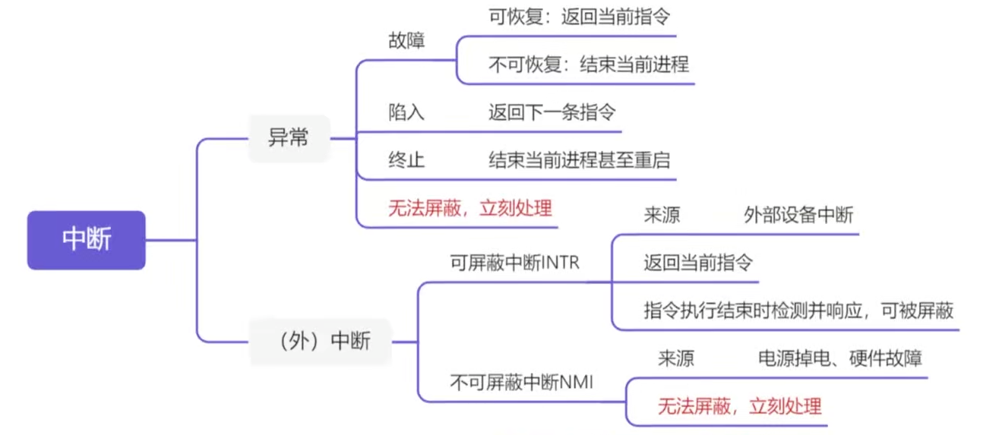</p><ul><li><span>可屏蔽中断INTR：所有外中断都是可屏蔽中断，只有在</span><strong><span>开中断</span></strong><span>时能被响应（有响应周期）</span></li><li><span>不可屏蔽中断NMI：</span><strong><span>关中断状态下也能响应</span></strong><span>（⚠️且无响应周期），所有内中断都是</span><strong><span>不可屏蔽</span></strong><span>中断</span></li></ul><blockquote><p><span>例：【21年T22】</span></p><div>
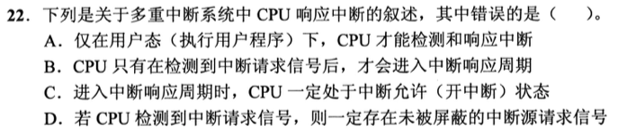
</div><p><span>解析：</span></p><p><span>A反例，在多重中断中，执行中断处理程序时（此时处于内核态）也能够响应中断。A错误</span></p><p><span>B正确，没有中断请求信号，CPU不会进入中断周期浪费时间</span></p><p><span>C正确，能够进入中断响应周期，说明引发的一定是可屏蔽中断（不可屏蔽中断无响应周期），而能收到可屏蔽中断的信号则说明处于开中断状态</span></p><p><span>D正确，如果可屏蔽中断被屏蔽，CPU是收不到请求信号的。</span></p></blockquote><h3 id='中断判优'><span>中断判优</span></h3><h4 id='分类'><span>分类：</span></h4><ul><li><span>响应优先级：响应优先级由硬件电路（</span><strong><span>硬件排队器</span></strong><span>）决定，无法更改</span></li><li><span>处理优先级：可以由中断屏蔽技术（</span><strong><span>中断屏蔽字</span></strong><span>）改变动态调整，以实现多重中断</span></li></ul><h4 id='中断屏蔽字'><span>中断屏蔽字</span></h4><ul><li><span>中断屏蔽字：表示中断的权限，所以某个中断源所拥有的的屏蔽字越多（1越多），表示权限越高，优先级也就越高</span></li></ul><blockquote><p><mjx-container class="MathJax" jax="SVG" style="position: relative;"><svg xmlns="http://www.w3.org/2000/svg" width="81.225ex" height="2.149ex" role="img" focusable="false" viewBox="0 -750 35901.3 950" xmlns:xlink="http://www.w3.org/1999/xlink" aria-hidden="true" style="vertical-align: -0.452ex;"><defs><path id="MJX-195-TEX-I-1D437" d="M287 628Q287 635 230 637Q207 637 200 638T193 647Q193 655 197 667T204 682Q206 683 403 683Q570 682 590 682T630 676Q702 659 752 597T803 431Q803 275 696 151T444 3L430 1L236 0H125H72Q48 0 41 2T33 11Q33 13 36 25Q40 41 44 43T67 46Q94 46 127 49Q141 52 146 61Q149 65 218 339T287 628ZM703 469Q703 507 692 537T666 584T629 613T590 629T555 636Q553 636 541 636T512 636T479 637H436Q392 637 386 627Q384 623 313 339T242 52Q242 48 253 48T330 47Q335 47 349 47T373 46Q499 46 581 128Q617 164 640 212T683 339T703 469Z"></path><path id="MJX-195-TEX-I-1D435" d="M231 637Q204 637 199 638T194 649Q194 676 205 682Q206 683 335 683Q594 683 608 681Q671 671 713 636T756 544Q756 480 698 429T565 360L555 357Q619 348 660 311T702 219Q702 146 630 78T453 1Q446 0 242 0Q42 0 39 2Q35 5 35 10Q35 17 37 24Q42 43 47 45Q51 46 62 46H68Q95 46 128 49Q142 52 147 61Q150 65 219 339T288 628Q288 635 231 637ZM649 544Q649 574 634 600T585 634Q578 636 493 637Q473 637 451 637T416 636H403Q388 635 384 626Q382 622 352 506Q352 503 351 500L320 374H401Q482 374 494 376Q554 386 601 434T649 544ZM595 229Q595 273 572 302T512 336Q506 337 429 337Q311 337 310 336Q310 334 293 263T258 122L240 52Q240 48 252 48T333 46Q422 46 429 47Q491 54 543 105T595 229Z"></path></defs><g stroke="currentColor" fill="currentColor" stroke-width="0" transform="scale(1,-1)"><g data-mml-node="math"><g data-mml-node="mtext"><text data-variant="normal" transform="scale(1,-1)" font-size="884px" font-family="serif">如</text></g><g data-mml-node="mtext" transform="translate(870.4,0)"><text data-variant="normal" transform="scale(1,-1)" font-size="884px" font-family="serif">下</text></g><g data-mml-node="mtext" transform="translate(1740.8,0)"><text data-variant="normal" transform="scale(1,-1)" font-size="884px" font-family="serif">图</text></g><g data-mml-node="mtext" transform="translate(2611.2,0)"><text data-variant="normal" transform="scale(1,-1)" font-size="884px" font-family="serif">所</text></g><g data-mml-node="mtext" transform="translate(3481.6,0)"><text data-variant="normal" transform="scale(1,-1)" font-size="884px" font-family="serif">示</text></g><g data-mml-node="mi" transform="translate(4352,0)"><text data-variant="italic" transform="scale(1,-1)" font-size="884px" font-family="serif" font-style="italic">：</text></g><g data-mml-node="mi" transform="translate(5178.9,0)"><use data-c="1D437" xlink:href="#MJX-195-TEX-I-1D437"></use></g><g data-mml-node="mtext" transform="translate(6006.9,0)"><text data-variant="normal" transform="scale(1,-1)" font-size="884px" font-family="serif">能</text></g><g data-mml-node="mtext" transform="translate(6877.3,0)"><text data-variant="normal" transform="scale(1,-1)" font-size="884px" font-family="serif">够</text></g><g data-mml-node="mtext" transform="translate(7747.7,0)"><text data-variant="normal" transform="scale(1,-1)" font-size="884px" font-family="serif">屏</text></g><g data-mml-node="mtext" transform="translate(8618.1,0)"><text data-variant="normal" transform="scale(1,-1)" font-size="884px" font-family="serif">蔽</text></g><g data-mml-node="mtext" transform="translate(9488.5,0)"><text data-variant="normal" transform="scale(1,-1)" font-size="884px" font-family="serif">所</text></g><g data-mml-node="mtext" transform="translate(10359,0)"><text data-variant="normal" transform="scale(1,-1)" font-size="884px" font-family="serif">有</text></g><g data-mml-node="mtext" transform="translate(11185.8,0)"><text data-variant="normal" transform="scale(1,-1)" font-size="884px" font-family="serif">其</text></g><g data-mml-node="mtext" transform="translate(12056.3,0)"><text data-variant="normal" transform="scale(1,-1)" font-size="884px" font-family="serif">他</text></g><g data-mml-node="mtext" transform="translate(12926.7,0)"><text data-variant="normal" transform="scale(1,-1)" font-size="884px" font-family="serif">中</text></g><g data-mml-node="mtext" transform="translate(13753.5,0)"><text data-variant="normal" transform="scale(1,-1)" font-size="884px" font-family="serif">断</text></g><g data-mml-node="mi" transform="translate(14624,0)"><text data-variant="italic" transform="scale(1,-1)" font-size="884px" font-family="serif" font-style="italic">，</text></g><g data-mml-node="mtext" transform="translate(15450.8,0)"><text data-variant="normal" transform="scale(1,-1)" font-size="884px" font-family="serif">而</text></g><g data-mml-node="mi" transform="translate(16321.3,0)"><use data-c="1D435" xlink:href="#MJX-195-TEX-I-1D435"></use></g><g data-mml-node="mtext" transform="translate(17080.3,0)"><text data-variant="normal" transform="scale(1,-1)" font-size="884px" font-family="serif">仅</text></g><g data-mml-node="mtext" transform="translate(17950.7,0)"><text data-variant="normal" transform="scale(1,-1)" font-size="884px" font-family="serif">能</text></g><g data-mml-node="mtext" transform="translate(18821.1,0)"><text data-variant="normal" transform="scale(1,-1)" font-size="884px" font-family="serif">屏</text></g><g data-mml-node="mtext" transform="translate(19691.5,0)"><text data-variant="normal" transform="scale(1,-1)" font-size="884px" font-family="serif">蔽</text></g><g data-mml-node="mtext" transform="translate(20561.9,0)"><text data-variant="normal" transform="scale(1,-1)" font-size="884px" font-family="serif">自</text></g><g data-mml-node="mtext" transform="translate(21432.3,0)"><text data-variant="normal" transform="scale(1,-1)" font-size="884px" font-family="serif">己</text></g><g data-mml-node="mi" transform="translate(22302.7,0)"><text data-variant="italic" transform="scale(1,-1)" font-size="884px" font-family="serif" font-style="italic">，</text></g><g data-mml-node="mtext" transform="translate(23129.6,0)"><text data-variant="normal" transform="scale(1,-1)" font-size="884px" font-family="serif">所</text></g><g data-mml-node="mtext" transform="translate(24000,0)"><text data-variant="normal" transform="scale(1,-1)" font-size="884px" font-family="serif">以</text></g><g data-mml-node="mi" transform="translate(24870.4,0)"><use data-c="1D437" xlink:href="#MJX-195-TEX-I-1D437"></use></g><g data-mml-node="mtext" transform="translate(25698.4,0)"><text data-variant="normal" transform="scale(1,-1)" font-size="884px" font-family="serif">的</text></g><g data-mml-node="mtext" transform="translate(26525.3,0)"><text data-variant="normal" transform="scale(1,-1)" font-size="884px" font-family="serif">权</text></g><g data-mml-node="mtext" transform="translate(27395.7,0)"><text data-variant="normal" transform="scale(1,-1)" font-size="884px" font-family="serif">限</text></g><g data-mml-node="mtext" transform="translate(28266.1,0)"><text data-variant="normal" transform="scale(1,-1)" font-size="884px" font-family="serif">最</text></g><g data-mml-node="mtext" transform="translate(29136.5,0)"><text data-variant="normal" transform="scale(1,-1)" font-size="884px" font-family="serif">高</text></g><g data-mml-node="mi" transform="translate(30006.9,0)"><text data-variant="italic" transform="scale(1,-1)" font-size="884px" font-family="serif" font-style="italic">，</text></g><g data-mml-node="mi" transform="translate(30833.8,0)"><use data-c="1D435" xlink:href="#MJX-195-TEX-I-1D435"></use></g><g data-mml-node="mtext" transform="translate(31592.8,0)"><text data-variant="normal" transform="scale(1,-1)" font-size="884px" font-family="serif">的</text></g><g data-mml-node="mtext" transform="translate(32419.7,0)"><text data-variant="normal" transform="scale(1,-1)" font-size="884px" font-family="serif">权</text></g><g data-mml-node="mtext" transform="translate(33290.1,0)"><text data-variant="normal" transform="scale(1,-1)" font-size="884px" font-family="serif">限</text></g><g data-mml-node="mtext" transform="translate(34160.5,0)"><text data-variant="normal" transform="scale(1,-1)" font-size="884px" font-family="serif">最</text></g><g data-mml-node="mtext" transform="translate(35030.9,0)"><text data-variant="normal" transform="scale(1,-1)" font-size="884px" font-family="serif">低</text></g></g></g></svg><mjx-assistive-mml unselectable="on" display="inline"><math xmlns="http://www.w3.org/1998/Math/MathML"><mtext>如</mtext><mtext>下</mtext><mtext>图</mtext><mtext>所</mtext><mtext>示</mtext><mi>：</mi><mi>D</mi><mtext>能</mtext><mtext>够</mtext><mtext>屏</mtext><mtext>蔽</mtext><mtext>所</mtext><mtext>有</mtext><mtext>其</mtext><mtext>他</mtext><mtext>中</mtext><mtext>断</mtext><mi>，</mi><mtext>而</mtext><mi>B</mi><mtext>仅</mtext><mtext>能</mtext><mtext>屏</mtext><mtext>蔽</mtext><mtext>自</mtext><mtext>己</mtext><mi>，</mi><mtext>所</mtext><mtext>以</mtext><mi>D</mi><mtext>的</mtext><mtext>权</mtext><mtext>限</mtext><mtext>最</mtext><mtext>高</mtext><mi>，</mi><mi>B</mi><mtext>的</mtext><mtext>权</mtext><mtext>限</mtext><mtext>最</mtext><mtext>低</mtext></math></mjx-assistive-mml></mjx-container><script type="math/tex">如下图所示：D能够屏蔽所有其他中断，而B仅能屏蔽自己，所以D的权限最高，B的权限最低</script></p><p></p></blockquote><p>&nbsp;</p><h3 id='中断处理过程多级中断'><span>中断处理过程：多级中断</span></h3><p></p><p><span>一整个从中断</span><strong><u><span>开始到结束</span></u></strong><span>的过程称为：</span><strong><span>中断处理过程</span></strong></p><p><span>其中前三步</span><strong><u><span>中断隐指令</span></u></strong><span>干的事情称为：</span><strong><span>中断响应过程</span></strong></p><p>&nbsp;</p><h4 id='引出中断服务程序---识别中断源补充'><span>引出中断服务程序—识别中断源【补充】</span></h4><p><span>在中断隐指令引出中断服务程序的过程中，首先会先识别中断源。</span></p><p><span>在计算机中，中断源分为两种，对应的识别方法也不同：</span></p><ul><li><p><span>向量中断：</span><strong><span>硬件识别方式</span></strong></p><blockquote><p><span>每个向量型中断都会被指定一个</span><strong><span>中断类型号</span></strong><span>，硬件机构会直接根据中断类型号去查询</span><strong><span>中断向量表</span></strong><span>，从而得到中断服务程序的地址</span></p></blockquote></li><li><p><span>非向量中断：</span><strong><span>软件查询方式</span></strong></p><blockquote><p><span>CPU会设置一个</span><strong><span>异常状态寄存</span></strong><span>器，用于记录异常原因，当遇到非向量型异常时，OS会使用一个统一的</span><strong><span>异常查询程序</span></strong><span>，</span><strong><u><span>按照优先级顺序查询异常状态寄存器</span></u></strong><span>，先查到的异常先处理。</span></p></blockquote><p>&nbsp;</p></li></ul><h3 id='dma方式中断'><span>DMA方式中断</span></h3><h4 id='dma传送过程'><span>DMA传送过程</span></h4><p><strong><span>预处理：</span></strong></p><ul><li><span>CPU完成一些必要工作</span></li><li><span>测试状态</span></li><li><span>启动设备等</span></li><li><span>☆</span><strong><span>然后继续做自己的事情</span></strong><span>，</span><strong><span>IO设备</span></strong><span>准备好了之后，会主动</span><u><span>向DMC</span></u><span>发出</span><strong><span>DMA请求</span></strong><span>，然后</span><u><span>DMC会向CPU</span></u><span>发出</span><strong><u><span>总线请求</span></u></strong><span>（</span><strong><span>通常这两个也合称为DMA请求</span></strong><span>）</span></li></ul><p></p><p><mjx-container class="MathJax" jax="SVG" style="position: relative;"><svg xmlns="http://www.w3.org/2000/svg" width="5.809ex" height="2.149ex" role="img" focusable="false" viewBox="0 -750 2567.7 950" xmlns:xlink="http://www.w3.org/1999/xlink" aria-hidden="true" style="vertical-align: -0.452ex;"><defs></defs><g stroke="currentColor" fill="currentColor" stroke-width="0" transform="scale(1,-1)"><g data-mml-node="math"><g data-mml-node="mtext"><text data-variant="normal" transform="scale(1,-1)" font-size="884px" font-family="serif">例</text></g><g data-mml-node="mtext" transform="translate(870.4,0)"><text data-variant="normal" transform="scale(1,-1)" font-size="884px" font-family="serif">题</text></g><g data-mml-node="mi" transform="translate(1740.8,0)"><text data-variant="italic" transform="scale(1,-1)" font-size="884px" font-family="serif" font-style="italic">：</text></g></g></g></svg><mjx-assistive-mml unselectable="on" display="inline"><math xmlns="http://www.w3.org/1998/Math/MathML"><mtext>例</mtext><mtext>题</mtext><mi>：</mi></math></mjx-assistive-mml></mjx-container><script type="math/tex">例题：</script></p><blockquote><p><span>【CO P306】</span></p><div>

</div><p>&nbsp;</p><p><mjx-container class="MathJax" jax="SVG" style="position: relative;"><svg xmlns="http://www.w3.org/2000/svg" width="5.809ex" height="2.149ex" role="img" focusable="false" viewBox="0 -750 2567.7 950" xmlns:xlink="http://www.w3.org/1999/xlink" aria-hidden="true" style="vertical-align: -0.452ex;"><defs></defs><g stroke="currentColor" fill="currentColor" stroke-width="0" transform="scale(1,-1)"><g data-mml-node="math"><g data-mml-node="mtext"><text data-variant="normal" transform="scale(1,-1)" font-size="884px" font-family="serif">解</text></g><g data-mml-node="mtext" transform="translate(870.4,0)"><text data-variant="normal" transform="scale(1,-1)" font-size="884px" font-family="serif">析</text></g><g data-mml-node="mi" transform="translate(1740.8,0)"><text data-variant="italic" transform="scale(1,-1)" font-size="884px" font-family="serif" font-style="italic">：</text></g></g></g></svg><mjx-assistive-mml unselectable="on" display="inline"><math xmlns="http://www.w3.org/1998/Math/MathML"><mtext>解</mtext><mtext>析</mtext><mi>：</mi></math></mjx-assistive-mml></mjx-container><script type="math/tex">解析：</script></p><p><span>题中的DMA请求，指的就是外部IO设备发送给DMAC的请求，所以选C</span></p></blockquote><p>&nbsp;</p><p><strong><span>数据传送</span></strong></p><p><strong><span>后处理：</span></strong></p><ul><li><p><span>数据传送满一个块后，DMC向CPU发出</span><strong><span>中断请求</span></strong></p></li><li><p><span>CPU执行中断程序</span></p></li><li><ul><li><span>校验数据</span></li><li><span>测试传送过程</span></li><li><span>决定是否继续使用DMA传送等等</span></li></ul></li></ul><h4 id='dma传送方式-周期挪用窃取）'><span>DMA传送方式-周期挪用（窃取）</span></h4> <div>
   
 </div><p><mjx-container class="MathJax" jax="SVG" style="position: relative;"><svg xmlns="http://www.w3.org/2000/svg" width="36.726ex" height="2.149ex" role="img" focusable="false" viewBox="0 -750 16233.1 950" xmlns:xlink="http://www.w3.org/1999/xlink" aria-hidden="true" style="vertical-align: -0.452ex;"><defs></defs><g stroke="currentColor" fill="currentColor" stroke-width="0" transform="scale(1,-1)"><g data-mml-node="math"><g data-mml-node="mtext"><text data-variant="normal" transform="scale(1,-1)" font-size="884px" font-family="serif">注</text></g><g data-mml-node="mi" transform="translate(870.4,0)"><text data-variant="italic" transform="scale(1,-1)" font-size="884px" font-family="serif" font-style="italic">：</text></g><g data-mml-node="mtext" transform="translate(1697.3,0)"><text data-variant="normal" transform="scale(1,-1)" font-size="884px" font-family="serif">这</text></g><g data-mml-node="mtext" transform="translate(2567.7,0)"><text data-variant="normal" transform="scale(1,-1)" font-size="884px" font-family="serif">里</text></g><g data-mml-node="mtext" transform="translate(3438.1,0)"><text data-variant="normal" transform="scale(1,-1)" font-size="884px" font-family="serif">的</text></g><g data-mml-node="mtext" transform="translate(4265,0)"><text data-variant="normal" transform="scale(1,-1)" font-size="884px" font-family="serif">周</text></g><g data-mml-node="mtext" transform="translate(5135.4,0)"><text data-variant="normal" transform="scale(1,-1)" font-size="884px" font-family="serif">期</text></g><g data-mml-node="mtext" transform="translate(6005.8,0)"><text data-variant="normal" transform="scale(1,-1)" font-size="884px" font-family="serif">指</text></g><g data-mml-node="mtext" transform="translate(6876.2,0)"><text data-variant="normal" transform="scale(1,-1)" font-size="884px" font-family="serif">的</text></g><g data-mml-node="mtext" transform="translate(7703.1,0)"><text data-variant="normal" transform="scale(1,-1)" font-size="884px" font-family="serif">是</text></g><g data-mml-node="TeXAtom" data-mjx-texclass="ORD" transform="translate(8530,0)"><g data-mml-node="mo"><text data-variant="normal" transform="scale(1,-1)" font-size="884px" font-family="serif">【</text></g></g><g data-mml-node="mtext" transform="translate(9400.4,0)"><text data-variant="normal" transform="scale(1,-1)" font-size="884px" font-family="serif">主</text></g><g data-mml-node="mtext" transform="translate(10270.8,0)"><text data-variant="normal" transform="scale(1,-1)" font-size="884px" font-family="serif">存</text></g><g data-mml-node="mtext" transform="translate(11097.7,0)"><text data-variant="normal" transform="scale(1,-1)" font-size="884px" font-family="serif">的</text></g><g data-mml-node="mtext" transform="translate(11924.6,0)"><text data-variant="normal" transform="scale(1,-1)" font-size="884px" font-family="serif">存</text></g><g data-mml-node="mtext" transform="translate(12751.5,0)"><text data-variant="normal" transform="scale(1,-1)" font-size="884px" font-family="serif">取</text></g><g data-mml-node="mtext" transform="translate(13621.9,0)"><text data-variant="normal" transform="scale(1,-1)" font-size="884px" font-family="serif">周</text></g><g data-mml-node="mtext" transform="translate(14492.3,0)"><text data-variant="normal" transform="scale(1,-1)" font-size="884px" font-family="serif">期</text></g><g data-mml-node="TeXAtom" data-mjx-texclass="ORD" transform="translate(15362.7,0)"><g data-mml-node="mo"><text data-variant="normal" transform="scale(1,-1)" font-size="884px" font-family="serif">】</text></g></g></g></g></svg><mjx-assistive-mml unselectable="on" display="inline"><math xmlns="http://www.w3.org/1998/Math/MathML"><mtext>注</mtext><mi>：</mi><mtext>这</mtext><mtext>里</mtext><mtext>的</mtext><mtext>周</mtext><mtext>期</mtext><mtext>指</mtext><mtext>的</mtext><mtext>是</mtext><mrow data-mjx-texclass="ORD"><mo>【</mo></mrow><mtext>主</mtext><mtext>存</mtext><mtext>的</mtext><mtext>存</mtext><mtext>取</mtext><mtext>周</mtext><mtext>期</mtext><mrow data-mjx-texclass="ORD"><mo>】</mo></mrow></math></mjx-assistive-mml></mjx-container><script type="math/tex">注：这里的周期指的是【主存的存取周期】</script></p><p><strong><span>三种情况：</span></strong></p><ul><li><span>CPU本来就不访存：不存在冲突</span></li><li><span>CPU正在访存：</span><strong><span>CPU优先</span></strong></li><li><span>CPU与DMA</span><strong><span>同时申请访存</span></strong><span>：</span><strong><span>IO访存优先</span></strong></li></ul><p><mjx-container class="MathJax" jax="SVG" style="position: relative;"><svg xmlns="http://www.w3.org/2000/svg" width="5.809ex" height="2.149ex" role="img" focusable="false" viewBox="0 -750 2567.7 950" xmlns:xlink="http://www.w3.org/1999/xlink" aria-hidden="true" style="vertical-align: -0.452ex;"><defs></defs><g stroke="currentColor" fill="currentColor" stroke-width="0" transform="scale(1,-1)"><g data-mml-node="math"><g data-mml-node="mtext"><text data-variant="normal" transform="scale(1,-1)" font-size="884px" font-family="serif">例</text></g><g data-mml-node="mtext" transform="translate(870.4,0)"><text data-variant="normal" transform="scale(1,-1)" font-size="884px" font-family="serif">题</text></g><g data-mml-node="mi" transform="translate(1740.8,0)"><text data-variant="italic" transform="scale(1,-1)" font-size="884px" font-family="serif" font-style="italic">：</text></g></g></g></svg><mjx-assistive-mml unselectable="on" display="inline"><math xmlns="http://www.w3.org/1998/Math/MathML"><mtext>例</mtext><mtext>题</mtext><mi>：</mi></math></mjx-assistive-mml></mjx-container><script type="math/tex">例题：</script></p><blockquote><p><span>【CO P306】</span></p><div>

</div><p>&nbsp;</p><p><span>A错误，DMA在</span><strong><span>数据传送</span></strong><span>期间不需要中断请求</span></p><p><span>B错误，在完整的DMA过程中，DMA后处理阶段是需要发送中断请求来通知CPU一块数据已经充满</span></p><p><span>C正确✅</span></p><p><span>D错误，DMA周期窃取指的是</span><strong><u><span>主存的存取周期</span></u></strong><span>结束时，可窃取。（意思就是只要主存空闲就能窃取，和指令周期无关）</span></p></blockquote><h4 id='☆dma请求-与-dma中断请求'><span>☆DMA请求 与 DMA</span><strong><span>中断</span></strong><span>请求</span></h4><p><span>DMA请求：发生DMA请求表示我们要</span><strong><span>向主存传送</span></strong><span>一个字的数据</span></p><p><span>DMA</span><strong><span>中断</span></strong><span>请求：表示一整块的数据</span><strong><span>已经传送完成</span></strong></p><h4 id='程序中断-与-dma中断-对比'><span>程序中断 与 DMA中断 对比</span></h4><div>
  
</div><h4 id='从磁盘读数据到内存的完整dma过程☆'><strong><span>从磁盘读数据到内存的完整DMA过程☆</span></strong></h4><p><mjx-container class="MathJax" jax="SVG" style="position: relative;"><svg xmlns="http://www.w3.org/2000/svg" width="29.751ex" height="2.149ex" role="img" focusable="false" viewBox="0 -750 13149.8 950" xmlns:xlink="http://www.w3.org/1999/xlink" aria-hidden="true" style="vertical-align: -0.452ex;"><defs><path id="MJX-200-TEX-N-A0" d=""></path><path id="MJX-200-TEX-I-1D437" d="M287 628Q287 635 230 637Q207 637 200 638T193 647Q193 655 197 667T204 682Q206 683 403 683Q570 682 590 682T630 676Q702 659 752 597T803 431Q803 275 696 151T444 3L430 1L236 0H125H72Q48 0 41 2T33 11Q33 13 36 25Q40 41 44 43T67 46Q94 46 127 49Q141 52 146 61Q149 65 218 339T287 628ZM703 469Q703 507 692 537T666 584T629 613T590 629T555 636Q553 636 541 636T512 636T479 637H436Q392 637 386 627Q384 623 313 339T242 52Q242 48 253 48T330 47Q335 47 349 47T373 46Q499 46 581 128Q617 164 640 212T683 339T703 469Z"></path><path id="MJX-200-TEX-I-1D440" d="M289 629Q289 635 232 637Q208 637 201 638T194 648Q194 649 196 659Q197 662 198 666T199 671T201 676T203 679T207 681T212 683T220 683T232 684Q238 684 262 684T307 683Q386 683 398 683T414 678Q415 674 451 396L487 117L510 154Q534 190 574 254T662 394Q837 673 839 675Q840 676 842 678T846 681L852 683H948Q965 683 988 683T1017 684Q1051 684 1051 673Q1051 668 1048 656T1045 643Q1041 637 1008 637Q968 636 957 634T939 623Q936 618 867 340T797 59Q797 55 798 54T805 50T822 48T855 46H886Q892 37 892 35Q892 19 885 5Q880 0 869 0Q864 0 828 1T736 2Q675 2 644 2T609 1Q592 1 592 11Q592 13 594 25Q598 41 602 43T625 46Q652 46 685 49Q699 52 704 61Q706 65 742 207T813 490T848 631L654 322Q458 10 453 5Q451 4 449 3Q444 0 433 0Q418 0 415 7Q413 11 374 317L335 624L267 354Q200 88 200 79Q206 46 272 46H282Q288 41 289 37T286 19Q282 3 278 1Q274 0 267 0Q265 0 255 0T221 1T157 2Q127 2 95 1T58 0Q43 0 39 2T35 11Q35 13 38 25T43 40Q45 46 65 46Q135 46 154 86Q158 92 223 354T289 629Z"></path><path id="MJX-200-TEX-I-1D434" d="M208 74Q208 50 254 46Q272 46 272 35Q272 34 270 22Q267 8 264 4T251 0Q249 0 239 0T205 1T141 2Q70 2 50 0H42Q35 7 35 11Q37 38 48 46H62Q132 49 164 96Q170 102 345 401T523 704Q530 716 547 716H555H572Q578 707 578 706L606 383Q634 60 636 57Q641 46 701 46Q726 46 726 36Q726 34 723 22Q720 7 718 4T704 0Q701 0 690 0T651 1T578 2Q484 2 455 0H443Q437 6 437 9T439 27Q443 40 445 43L449 46H469Q523 49 533 63L521 213H283L249 155Q208 86 208 74ZM516 260Q516 271 504 416T490 562L463 519Q447 492 400 412L310 260L413 259Q516 259 516 260Z"></path></defs><g stroke="currentColor" fill="currentColor" stroke-width="0" transform="scale(1,-1)"><g data-mml-node="math"><g data-mml-node="mn"><text data-variant="normal" transform="scale(1,-1)" font-size="884px" font-family="serif">①</text></g><g data-mml-node="mtext" transform="translate(870.4,0)"><use data-c="A0" xlink:href="#MJX-200-TEX-N-A0"></use></g><g data-mml-node="mtext" transform="translate(1120.4,0)"><text data-variant="normal" transform="scale(1,-1)" font-size="884px" font-family="serif">初</text></g><g data-mml-node="mtext" transform="translate(1990.8,0)"><text data-variant="normal" transform="scale(1,-1)" font-size="884px" font-family="serif">始</text></g><g data-mml-node="mtext" transform="translate(2861.2,0)"><text data-variant="normal" transform="scale(1,-1)" font-size="884px" font-family="serif">化</text></g><g data-mml-node="mi" transform="translate(3731.6,0)"><use data-c="1D437" xlink:href="#MJX-200-TEX-I-1D437"></use></g><g data-mml-node="mi" transform="translate(4559.6,0)"><use data-c="1D440" xlink:href="#MJX-200-TEX-I-1D440"></use></g><g data-mml-node="mi" transform="translate(5610.6,0)"><use data-c="1D434" xlink:href="#MJX-200-TEX-I-1D434"></use></g><g data-mml-node="mtext" transform="translate(6360.6,0)"><text data-variant="normal" transform="scale(1,-1)" font-size="884px" font-family="serif">控</text></g><g data-mml-node="mtext" transform="translate(7187.5,0)"><text data-variant="normal" transform="scale(1,-1)" font-size="884px" font-family="serif">制</text></g><g data-mml-node="mtext" transform="translate(8014.4,0)"><text data-variant="normal" transform="scale(1,-1)" font-size="884px" font-family="serif">器</text></g><g data-mml-node="mi" transform="translate(8884.8,0)"><text data-variant="italic" transform="scale(1,-1)" font-size="884px" font-family="serif" font-style="italic">；</text></g><g data-mml-node="mtext" transform="translate(9755.2,0)"><text data-variant="normal" transform="scale(1,-1)" font-size="884px" font-family="serif">启</text></g><g data-mml-node="mtext" transform="translate(10625.6,0)"><text data-variant="normal" transform="scale(1,-1)" font-size="884px" font-family="serif">动</text></g><g data-mml-node="mtext" transform="translate(11496,0)"><text data-variant="normal" transform="scale(1,-1)" font-size="884px" font-family="serif">磁</text></g><g data-mml-node="mtext" transform="translate(12322.9,0)"><text data-variant="normal" transform="scale(1,-1)" font-size="884px" font-family="serif">盘</text></g></g></g></svg><mjx-assistive-mml unselectable="on" display="inline"><math xmlns="http://www.w3.org/1998/Math/MathML"><mn>①</mn><mtext>&nbsp;</mtext><mtext>初</mtext><mtext>始</mtext><mtext>化</mtext><mi>D</mi><mi>M</mi><mi>A</mi><mtext>控</mtext><mtext>制</mtext><mtext>器</mtext><mi>；</mi><mtext>启</mtext><mtext>动</mtext><mtext>磁</mtext><mtext>盘</mtext></math></mjx-assistive-mml></mjx-container><script type="math/tex">①\ 初始化DMA控制器；启动磁盘</script></p><p><mjx-container class="MathJax" jax="SVG" style="position: relative;"><svg xmlns="http://www.w3.org/2000/svg" width="31.384ex" height="2.149ex" role="img" focusable="false" viewBox="0 -750 13871.9 950" xmlns:xlink="http://www.w3.org/1999/xlink" aria-hidden="true" style="vertical-align: -0.452ex;"><defs><path id="MJX-201-TEX-N-A0" d=""></path></defs><g stroke="currentColor" fill="currentColor" stroke-width="0" transform="scale(1,-1)"><g data-mml-node="math"><g data-mml-node="mn"><text data-variant="normal" transform="scale(1,-1)" font-size="884px" font-family="serif">②</text></g><g data-mml-node="mtext" transform="translate(870.4,0)"><use data-c="A0" xlink:href="#MJX-201-TEX-N-A0"></use></g><g data-mml-node="mtext" transform="translate(1120.4,0)"><text data-variant="normal" transform="scale(1,-1)" font-size="884px" font-family="serif">从</text></g><g data-mml-node="mtext" transform="translate(1990.8,0)"><text data-variant="normal" transform="scale(1,-1)" font-size="884px" font-family="serif">磁</text></g><g data-mml-node="mtext" transform="translate(2817.7,0)"><text data-variant="normal" transform="scale(1,-1)" font-size="884px" font-family="serif">盘</text></g><g data-mml-node="mtext" transform="translate(3644.6,0)"><text data-variant="normal" transform="scale(1,-1)" font-size="884px" font-family="serif">传</text></g><g data-mml-node="mtext" transform="translate(4515,0)"><text data-variant="normal" transform="scale(1,-1)" font-size="884px" font-family="serif">输</text></g><g data-mml-node="mtext" transform="translate(5385.4,0)"><text data-variant="normal" transform="scale(1,-1)" font-size="884px" font-family="serif">一</text></g><g data-mml-node="mtext" transform="translate(6212.3,0)"><text data-variant="normal" transform="scale(1,-1)" font-size="884px" font-family="serif">块</text></g><g data-mml-node="mtext" transform="translate(7082.7,0)"><text data-variant="normal" transform="scale(1,-1)" font-size="884px" font-family="serif">数</text></g><g data-mml-node="mtext" transform="translate(7909.6,0)"><text data-variant="normal" transform="scale(1,-1)" font-size="884px" font-family="serif">据</text></g><g data-mml-node="mtext" transform="translate(8736.5,0)"><text data-variant="normal" transform="scale(1,-1)" font-size="884px" font-family="serif">到</text></g><g data-mml-node="mtext" transform="translate(9606.9,0)"><text data-variant="normal" transform="scale(1,-1)" font-size="884px" font-family="serif">内</text></g><g data-mml-node="mtext" transform="translate(10433.8,0)"><text data-variant="normal" transform="scale(1,-1)" font-size="884px" font-family="serif">存</text></g><g data-mml-node="mtext" transform="translate(11260.7,0)"><text data-variant="normal" transform="scale(1,-1)" font-size="884px" font-family="serif">缓</text></g><g data-mml-node="mtext" transform="translate(12131.1,0)"><text data-variant="normal" transform="scale(1,-1)" font-size="884px" font-family="serif">冲</text></g><g data-mml-node="mtext" transform="translate(13001.5,0)"><text data-variant="normal" transform="scale(1,-1)" font-size="884px" font-family="serif">区</text></g></g></g></svg><mjx-assistive-mml unselectable="on" display="inline"><math xmlns="http://www.w3.org/1998/Math/MathML"><mn>②</mn><mtext>&nbsp;</mtext><mtext>从</mtext><mtext>磁</mtext><mtext>盘</mtext><mtext>传</mtext><mtext>输</mtext><mtext>一</mtext><mtext>块</mtext><mtext>数</mtext><mtext>据</mtext><mtext>到</mtext><mtext>内</mtext><mtext>存</mtext><mtext>缓</mtext><mtext>冲</mtext><mtext>区</mtext></math></mjx-assistive-mml></mjx-container><script type="math/tex">②\ 从磁盘传输一块数据到内存缓冲区</script></p><p><mjx-container class="MathJax" jax="SVG" style="position: relative;"><svg xmlns="http://www.w3.org/2000/svg" width="21.821ex" height="2.149ex" role="img" focusable="false" viewBox="0 -750 9644.8 950" xmlns:xlink="http://www.w3.org/1999/xlink" aria-hidden="true" style="vertical-align: -0.452ex;"><defs><path id="MJX-202-TEX-N-A0" d=""></path><path id="MJX-202-TEX-I-1D437" d="M287 628Q287 635 230 637Q207 637 200 638T193 647Q193 655 197 667T204 682Q206 683 403 683Q570 682 590 682T630 676Q702 659 752 597T803 431Q803 275 696 151T444 3L430 1L236 0H125H72Q48 0 41 2T33 11Q33 13 36 25Q40 41 44 43T67 46Q94 46 127 49Q141 52 146 61Q149 65 218 339T287 628ZM703 469Q703 507 692 537T666 584T629 613T590 629T555 636Q553 636 541 636T512 636T479 637H436Q392 637 386 627Q384 623 313 339T242 52Q242 48 253 48T330 47Q335 47 349 47T373 46Q499 46 581 128Q617 164 640 212T683 339T703 469Z"></path><path id="MJX-202-TEX-I-1D440" d="M289 629Q289 635 232 637Q208 637 201 638T194 648Q194 649 196 659Q197 662 198 666T199 671T201 676T203 679T207 681T212 683T220 683T232 684Q238 684 262 684T307 683Q386 683 398 683T414 678Q415 674 451 396L487 117L510 154Q534 190 574 254T662 394Q837 673 839 675Q840 676 842 678T846 681L852 683H948Q965 683 988 683T1017 684Q1051 684 1051 673Q1051 668 1048 656T1045 643Q1041 637 1008 637Q968 636 957 634T939 623Q936 618 867 340T797 59Q797 55 798 54T805 50T822 48T855 46H886Q892 37 892 35Q892 19 885 5Q880 0 869 0Q864 0 828 1T736 2Q675 2 644 2T609 1Q592 1 592 11Q592 13 594 25Q598 41 602 43T625 46Q652 46 685 49Q699 52 704 61Q706 65 742 207T813 490T848 631L654 322Q458 10 453 5Q451 4 449 3Q444 0 433 0Q418 0 415 7Q413 11 374 317L335 624L267 354Q200 88 200 79Q206 46 272 46H282Q288 41 289 37T286 19Q282 3 278 1Q274 0 267 0Q265 0 255 0T221 1T157 2Q127 2 95 1T58 0Q43 0 39 2T35 11Q35 13 38 25T43 40Q45 46 65 46Q135 46 154 86Q158 92 223 354T289 629Z"></path><path id="MJX-202-TEX-I-1D434" d="M208 74Q208 50 254 46Q272 46 272 35Q272 34 270 22Q267 8 264 4T251 0Q249 0 239 0T205 1T141 2Q70 2 50 0H42Q35 7 35 11Q37 38 48 46H62Q132 49 164 96Q170 102 345 401T523 704Q530 716 547 716H555H572Q578 707 578 706L606 383Q634 60 636 57Q641 46 701 46Q726 46 726 36Q726 34 723 22Q720 7 718 4T704 0Q701 0 690 0T651 1T578 2Q484 2 455 0H443Q437 6 437 9T439 27Q443 40 445 43L449 46H469Q523 49 533 63L521 213H283L249 155Q208 86 208 74ZM516 260Q516 271 504 416T490 562L463 519Q447 492 400 412L310 260L413 259Q516 259 516 260Z"></path><path id="MJX-202-TEX-I-1D436" d="M50 252Q50 367 117 473T286 641T490 704Q580 704 633 653Q642 643 648 636T656 626L657 623Q660 623 684 649Q691 655 699 663T715 679T725 690L740 705H746Q760 705 760 698Q760 694 728 561Q692 422 692 421Q690 416 687 415T669 413H653Q647 419 647 422Q647 423 648 429T650 449T651 481Q651 552 619 605T510 659Q484 659 454 652T382 628T299 572T226 479Q194 422 175 346T156 222Q156 108 232 58Q280 24 350 24Q441 24 512 92T606 240Q610 253 612 255T628 257Q648 257 648 248Q648 243 647 239Q618 132 523 55T319 -22Q206 -22 128 53T50 252Z"></path></defs><g stroke="currentColor" fill="currentColor" stroke-width="0" transform="scale(1,-1)"><g data-mml-node="math"><g data-mml-node="mn"><text data-variant="normal" transform="scale(1,-1)" font-size="884px" font-family="serif">③</text></g><g data-mml-node="mtext" transform="translate(870.4,0)"><use data-c="A0" xlink:href="#MJX-202-TEX-N-A0"></use></g><g data-mml-node="mi" transform="translate(1120.4,0)"><use data-c="1D437" xlink:href="#MJX-202-TEX-I-1D437"></use></g><g data-mml-node="mi" transform="translate(1948.4,0)"><use data-c="1D440" xlink:href="#MJX-202-TEX-I-1D440"></use></g><g data-mml-node="mi" transform="translate(2999.4,0)"><use data-c="1D434" xlink:href="#MJX-202-TEX-I-1D434"></use></g><g data-mml-node="mi" transform="translate(3749.4,0)"><use data-c="1D436" xlink:href="#MJX-202-TEX-I-1D436"></use></g><g data-mml-node="mtext" transform="translate(4509.4,0)"><text data-variant="normal" transform="scale(1,-1)" font-size="884px" font-family="serif">发</text></g><g data-mml-node="mtext" transform="translate(5336.3,0)"><text data-variant="normal" transform="scale(1,-1)" font-size="884px" font-family="serif">出</text></g><g data-mml-node="mtext" transform="translate(6206.7,0)"><text data-variant="normal" transform="scale(1,-1)" font-size="884px" font-family="serif">中</text></g><g data-mml-node="mtext" transform="translate(7033.6,0)"><text data-variant="normal" transform="scale(1,-1)" font-size="884px" font-family="serif">断</text></g><g data-mml-node="mtext" transform="translate(7904,0)"><text data-variant="normal" transform="scale(1,-1)" font-size="884px" font-family="serif">请</text></g><g data-mml-node="mtext" transform="translate(8774.4,0)"><text data-variant="normal" transform="scale(1,-1)" font-size="884px" font-family="serif">求</text></g></g></g></svg><mjx-assistive-mml unselectable="on" display="inline"><math xmlns="http://www.w3.org/1998/Math/MathML"><mn>③</mn><mtext>&nbsp;</mtext><mi>D</mi><mi>M</mi><mi>A</mi><mi>C</mi><mtext>发</mtext><mtext>出</mtext><mtext>中</mtext><mtext>断</mtext><mtext>请</mtext><mtext>求</mtext></math></mjx-assistive-mml></mjx-container><script type="math/tex">③\ DMAC发出中断请求</script></p><p><mjx-container class="MathJax" jax="SVG" style="position: relative;"><svg xmlns="http://www.w3.org/2000/svg" width="30.369ex" height="2.149ex" role="img" focusable="false" viewBox="0 -750 13422.9 950" xmlns:xlink="http://www.w3.org/1999/xlink" aria-hidden="true" style="vertical-align: -0.452ex;"><defs><path id="MJX-203-TEX-N-A0" d=""></path><path id="MJX-203-TEX-N-2032" d="M79 43Q73 43 52 49T30 61Q30 68 85 293T146 528Q161 560 198 560Q218 560 240 545T262 501Q262 496 260 486Q259 479 173 263T84 45T79 43Z"></path><path id="MJX-203-TEX-I-1D437" d="M287 628Q287 635 230 637Q207 637 200 638T193 647Q193 655 197 667T204 682Q206 683 403 683Q570 682 590 682T630 676Q702 659 752 597T803 431Q803 275 696 151T444 3L430 1L236 0H125H72Q48 0 41 2T33 11Q33 13 36 25Q40 41 44 43T67 46Q94 46 127 49Q141 52 146 61Q149 65 218 339T287 628ZM703 469Q703 507 692 537T666 584T629 613T590 629T555 636Q553 636 541 636T512 636T479 637H436Q392 637 386 627Q384 623 313 339T242 52Q242 48 253 48T330 47Q335 47 349 47T373 46Q499 46 581 128Q617 164 640 212T683 339T703 469Z"></path><path id="MJX-203-TEX-I-1D440" d="M289 629Q289 635 232 637Q208 637 201 638T194 648Q194 649 196 659Q197 662 198 666T199 671T201 676T203 679T207 681T212 683T220 683T232 684Q238 684 262 684T307 683Q386 683 398 683T414 678Q415 674 451 396L487 117L510 154Q534 190 574 254T662 394Q837 673 839 675Q840 676 842 678T846 681L852 683H948Q965 683 988 683T1017 684Q1051 684 1051 673Q1051 668 1048 656T1045 643Q1041 637 1008 637Q968 636 957 634T939 623Q936 618 867 340T797 59Q797 55 798 54T805 50T822 48T855 46H886Q892 37 892 35Q892 19 885 5Q880 0 869 0Q864 0 828 1T736 2Q675 2 644 2T609 1Q592 1 592 11Q592 13 594 25Q598 41 602 43T625 46Q652 46 685 49Q699 52 704 61Q706 65 742 207T813 490T848 631L654 322Q458 10 453 5Q451 4 449 3Q444 0 433 0Q418 0 415 7Q413 11 374 317L335 624L267 354Q200 88 200 79Q206 46 272 46H282Q288 41 289 37T286 19Q282 3 278 1Q274 0 267 0Q265 0 255 0T221 1T157 2Q127 2 95 1T58 0Q43 0 39 2T35 11Q35 13 38 25T43 40Q45 46 65 46Q135 46 154 86Q158 92 223 354T289 629Z"></path><path id="MJX-203-TEX-I-1D434" d="M208 74Q208 50 254 46Q272 46 272 35Q272 34 270 22Q267 8 264 4T251 0Q249 0 239 0T205 1T141 2Q70 2 50 0H42Q35 7 35 11Q37 38 48 46H62Q132 49 164 96Q170 102 345 401T523 704Q530 716 547 716H555H572Q578 707 578 706L606 383Q634 60 636 57Q641 46 701 46Q726 46 726 36Q726 34 723 22Q720 7 718 4T704 0Q701 0 690 0T651 1T578 2Q484 2 455 0H443Q437 6 437 9T439 27Q443 40 445 43L449 46H469Q523 49 533 63L521 213H283L249 155Q208 86 208 74ZM516 260Q516 271 504 416T490 562L463 519Q447 492 400 412L310 260L413 259Q516 259 516 260Z"></path><path id="MJX-203-TEX-N-2035" d="M12 501Q12 527 31 542T63 558Q73 560 77 560Q114 560 128 528Q133 518 188 293T244 61Q244 56 223 50T195 43Q192 43 190 45T102 263T14 486Q12 496 12 501Z"></path></defs><g stroke="currentColor" fill="currentColor" stroke-width="0" transform="scale(1,-1)"><g data-mml-node="math"><g data-mml-node="mn"><text data-variant="normal" transform="scale(1,-1)" font-size="884px" font-family="serif">④</text></g><g data-mml-node="mtext" transform="translate(870.4,0)"><use data-c="A0" xlink:href="#MJX-203-TEX-N-A0"></use></g><g data-mml-node="mtext" transform="translate(1120.4,0)"><text data-variant="normal" transform="scale(1,-1)" font-size="884px" font-family="serif">执</text></g><g data-mml-node="mtext" transform="translate(1990.8,0)"><text data-variant="normal" transform="scale(1,-1)" font-size="884px" font-family="serif">行</text></g><g data-mml-node="mo" transform="translate(2817.7,0)"><g data-c="2033"><use data-c="2032" xlink:href="#MJX-203-TEX-N-2032"></use><use data-c="2032" xlink:href="#MJX-203-TEX-N-2032" transform="translate(275,0)"></use></g></g><g data-mml-node="mi" transform="translate(3367.7,0)"><use data-c="1D437" xlink:href="#MJX-203-TEX-I-1D437"></use></g><g data-mml-node="mi" transform="translate(4195.7,0)"><use data-c="1D440" xlink:href="#MJX-203-TEX-I-1D440"></use></g><g data-mml-node="mi" transform="translate(5246.7,0)"><use data-c="1D434" xlink:href="#MJX-203-TEX-I-1D434"></use></g><g data-mml-node="mtext" transform="translate(5996.7,0)"><text data-variant="normal" transform="scale(1,-1)" font-size="884px" font-family="serif">结</text></g><g data-mml-node="mtext" transform="translate(6867.1,0)"><text data-variant="normal" transform="scale(1,-1)" font-size="884px" font-family="serif">束</text></g><g data-mml-node="mo" transform="translate(7737.5,0)"><g data-c="2036"><use data-c="2035" xlink:href="#MJX-203-TEX-N-2035"></use><use data-c="2035" xlink:href="#MJX-203-TEX-N-2035" transform="translate(275,0)"></use></g></g><g data-mml-node="mtext" transform="translate(8287.5,0)"><text data-variant="normal" transform="scale(1,-1)" font-size="884px" font-family="serif">中</text></g><g data-mml-node="mtext" transform="translate(9114.4,0)"><text data-variant="normal" transform="scale(1,-1)" font-size="884px" font-family="serif">断</text></g><g data-mml-node="mtext" transform="translate(9984.8,0)"><text data-variant="normal" transform="scale(1,-1)" font-size="884px" font-family="serif">服</text></g><g data-mml-node="mtext" transform="translate(10855.2,0)"><text data-variant="normal" transform="scale(1,-1)" font-size="884px" font-family="serif">务</text></g><g data-mml-node="mtext" transform="translate(11725.6,0)"><text data-variant="normal" transform="scale(1,-1)" font-size="884px" font-family="serif">程</text></g><g data-mml-node="mtext" transform="translate(12552.5,0)"><text data-variant="normal" transform="scale(1,-1)" font-size="884px" font-family="serif">序</text></g></g></g></svg><mjx-assistive-mml unselectable="on" display="inline"><math xmlns="http://www.w3.org/1998/Math/MathML"><mn>④</mn><mtext>&nbsp;</mtext><mtext>执</mtext><mtext>行</mtext><mo data-mjx-pseudoscript="true">”</mo><mi>D</mi><mi>M</mi><mi>A</mi><mtext>结</mtext><mtext>束</mtext><mo data-mjx-pseudoscript="true">“</mo><mtext>中</mtext><mtext>断</mtext><mtext>服</mtext><mtext>务</mtext><mtext>程</mtext><mtext>序</mtext></math></mjx-assistive-mml></mjx-container><script type="math/tex">④\ 执行”DMA结束“中断服务程序</script></p><p>&nbsp;</p><h3 id='io类大题计算思路☆'><span>IO类大题计算思路☆</span></h3><h4 id='最长查询时间间隔的计算'><span>最长查询时间间隔的计算</span></h4><p><strong><span>这类题的解题核心就是：</span></strong><mjx-container class="MathJax" jax="SVG" style="position: relative;"><svg xmlns="http://www.w3.org/2000/svg" width="94.721ex" height="2.149ex" role="img" focusable="false" viewBox="0 -750 41866.6 950" xmlns:xlink="http://www.w3.org/1999/xlink" aria-hidden="true" style="vertical-align: -0.452ex;"><defs></defs><g stroke="currentColor" fill="currentColor" stroke-width="0" transform="scale(1,-1)"><g data-mml-node="math"><g data-mml-node="mtext"><text data-variant="normal" transform="scale(1,-1)" font-size="884px" font-family="serif">之</text></g><g data-mml-node="mtext" transform="translate(870.4,0)"><text data-variant="normal" transform="scale(1,-1)" font-size="884px" font-family="serif">所</text></g><g data-mml-node="mtext" transform="translate(1740.8,0)"><text data-variant="normal" transform="scale(1,-1)" font-size="884px" font-family="serif">以</text></g><g data-mml-node="mtext" transform="translate(2611.2,0)"><text data-variant="normal" transform="scale(1,-1)" font-size="884px" font-family="serif">要</text></g><g data-mml-node="mtext" transform="translate(3438.1,0)"><text data-variant="normal" transform="scale(1,-1)" font-size="884px" font-family="serif">不</text></g><g data-mml-node="mtext" transform="translate(4265,0)"><text data-variant="normal" transform="scale(1,-1)" font-size="884px" font-family="serif">断</text></g><g data-mml-node="mtext" transform="translate(5135.4,0)"><text data-variant="normal" transform="scale(1,-1)" font-size="884px" font-family="serif">查</text></g><g data-mml-node="mtext" transform="translate(6005.8,0)"><text data-variant="normal" transform="scale(1,-1)" font-size="884px" font-family="serif">询</text></g><g data-mml-node="mtext" transform="translate(6876.2,0)"><text data-variant="normal" transform="scale(1,-1)" font-size="884px" font-family="serif">数</text></g><g data-mml-node="mtext" transform="translate(7703.1,0)"><text data-variant="normal" transform="scale(1,-1)" font-size="884px" font-family="serif">据</text></g><g data-mml-node="mi" transform="translate(8530,0)"><text data-variant="italic" transform="scale(1,-1)" font-size="884px" font-family="serif" font-style="italic">，</text></g><g data-mml-node="mtext" transform="translate(9356.9,0)"><text data-variant="normal" transform="scale(1,-1)" font-size="884px" font-family="serif">就</text></g><g data-mml-node="mtext" transform="translate(10227.3,0)"><text data-variant="normal" transform="scale(1,-1)" font-size="884px" font-family="serif">是</text></g><g data-mml-node="mtext" transform="translate(11054.2,0)"><text data-variant="normal" transform="scale(1,-1)" font-size="884px" font-family="serif">要</text></g><g data-mml-node="mtext" transform="translate(11881.1,0)"><text data-variant="normal" transform="scale(1,-1)" font-size="884px" font-family="serif">看</text></g><g data-mml-node="mtext" transform="translate(12751.5,0)"><text data-variant="normal" transform="scale(1,-1)" font-size="884px" font-family="serif">一</text></g><g data-mml-node="mtext" transform="translate(13578.4,0)"><text data-variant="normal" transform="scale(1,-1)" font-size="884px" font-family="serif">下</text></g><g data-mml-node="mtext" transform="translate(14448.8,0)"><text data-variant="normal" transform="scale(1,-1)" font-size="884px" font-family="serif">数</text></g><g data-mml-node="mtext" transform="translate(15275.7,0)"><text data-variant="normal" transform="scale(1,-1)" font-size="884px" font-family="serif">据</text></g><g data-mml-node="mtext" transform="translate(16102.6,0)"><text data-variant="normal" transform="scale(1,-1)" font-size="884px" font-family="serif">缓</text></g><g data-mml-node="mtext" transform="translate(16973,0)"><text data-variant="normal" transform="scale(1,-1)" font-size="884px" font-family="serif">冲</text></g><g data-mml-node="mtext" transform="translate(17843.4,0)"><text data-variant="normal" transform="scale(1,-1)" font-size="884px" font-family="serif">区</text></g><g data-mml-node="mtext" transform="translate(18713.8,0)"><text data-variant="normal" transform="scale(1,-1)" font-size="884px" font-family="serif">是</text></g><g data-mml-node="mtext" transform="translate(19540.7,0)"><text data-variant="normal" transform="scale(1,-1)" font-size="884px" font-family="serif">否</text></g><g data-mml-node="mtext" transform="translate(20411.1,0)"><text data-variant="normal" transform="scale(1,-1)" font-size="884px" font-family="serif">被</text></g><g data-mml-node="mtext" transform="translate(21281.5,0)"><text data-variant="normal" transform="scale(1,-1)" font-size="884px" font-family="serif">充</text></g><g data-mml-node="mtext" transform="translate(22151.9,0)"><text data-variant="normal" transform="scale(1,-1)" font-size="884px" font-family="serif">满</text></g><g data-mml-node="mi" transform="translate(23022.3,0)"><text data-variant="italic" transform="scale(1,-1)" font-size="884px" font-family="serif" font-style="italic">，</text></g><g data-mml-node="mtext" transform="translate(23849.2,0)"><text data-variant="normal" transform="scale(1,-1)" font-size="884px" font-family="serif">如</text></g><g data-mml-node="mtext" transform="translate(24719.6,0)"><text data-variant="normal" transform="scale(1,-1)" font-size="884px" font-family="serif">果</text></g><g data-mml-node="mtext" transform="translate(25590,0)"><text data-variant="normal" transform="scale(1,-1)" font-size="884px" font-family="serif">充</text></g><g data-mml-node="mtext" transform="translate(26460.4,0)"><text data-variant="normal" transform="scale(1,-1)" font-size="884px" font-family="serif">满</text></g><g data-mml-node="mtext" transform="translate(27330.8,0)"><text data-variant="normal" transform="scale(1,-1)" font-size="884px" font-family="serif">了</text></g><g data-mml-node="mtext" transform="translate(28201.2,0)"><text data-variant="normal" transform="scale(1,-1)" font-size="884px" font-family="serif">要</text></g><g data-mml-node="mtext" transform="translate(29028.1,0)"><text data-variant="normal" transform="scale(1,-1)" font-size="884px" font-family="serif">马</text></g><g data-mml-node="mtext" transform="translate(29898.5,0)"><text data-variant="normal" transform="scale(1,-1)" font-size="884px" font-family="serif">上</text></g><g data-mml-node="mtext" transform="translate(30768.9,0)"><text data-variant="normal" transform="scale(1,-1)" font-size="884px" font-family="serif">取</text></g><g data-mml-node="mtext" transform="translate(31639.3,0)"><text data-variant="normal" transform="scale(1,-1)" font-size="884px" font-family="serif">走</text></g><g data-mml-node="mtext" transform="translate(32509.7,0)"><text data-variant="normal" transform="scale(1,-1)" font-size="884px" font-family="serif">数</text></g><g data-mml-node="mtext" transform="translate(33336.6,0)"><text data-variant="normal" transform="scale(1,-1)" font-size="884px" font-family="serif">据</text></g><g data-mml-node="mi" transform="translate(34163.5,0)"><text data-variant="italic" transform="scale(1,-1)" font-size="884px" font-family="serif" font-style="italic">，</text></g><g data-mml-node="mtext" transform="translate(34990.4,0)"><text data-variant="normal" transform="scale(1,-1)" font-size="884px" font-family="serif">防</text></g><g data-mml-node="mtext" transform="translate(35860.8,0)"><text data-variant="normal" transform="scale(1,-1)" font-size="884px" font-family="serif">止</text></g><g data-mml-node="mtext" transform="translate(36731.2,0)"><text data-variant="normal" transform="scale(1,-1)" font-size="884px" font-family="serif">数</text></g><g data-mml-node="mtext" transform="translate(37558.1,0)"><text data-variant="normal" transform="scale(1,-1)" font-size="884px" font-family="serif">据</text></g><g data-mml-node="mtext" transform="translate(38385,0)"><text data-variant="normal" transform="scale(1,-1)" font-size="884px" font-family="serif">被</text></g><g data-mml-node="mtext" transform="translate(39255.4,0)"><text data-variant="normal" transform="scale(1,-1)" font-size="884px" font-family="serif">覆</text></g><g data-mml-node="mtext" transform="translate(40125.8,0)"><text data-variant="normal" transform="scale(1,-1)" font-size="884px" font-family="serif">盖</text></g><g data-mml-node="TeXAtom" data-mjx-texclass="ORD" transform="translate(40996.2,0)"><g data-mml-node="mo"><text data-variant="normal" transform="scale(1,-1)" font-size="884px" font-family="serif">。</text></g></g></g></g></svg><mjx-assistive-mml unselectable="on" display="inline"><math xmlns="http://www.w3.org/1998/Math/MathML"><mtext>之</mtext><mtext>所</mtext><mtext>以</mtext><mtext>要</mtext><mtext>不</mtext><mtext>断</mtext><mtext>查</mtext><mtext>询</mtext><mtext>数</mtext><mtext>据</mtext><mi>，</mi><mtext>就</mtext><mtext>是</mtext><mtext>要</mtext><mtext>看</mtext><mtext>一</mtext><mtext>下</mtext><mtext>数</mtext><mtext>据</mtext><mtext>缓</mtext><mtext>冲</mtext><mtext>区</mtext><mtext>是</mtext><mtext>否</mtext><mtext>被</mtext><mtext>充</mtext><mtext>满</mtext><mi>，</mi><mtext>如</mtext><mtext>果</mtext><mtext>充</mtext><mtext>满</mtext><mtext>了</mtext><mtext>要</mtext><mtext>马</mtext><mtext>上</mtext><mtext>取</mtext><mtext>走</mtext><mtext>数</mtext><mtext>据</mtext><mi>，</mi><mtext>防</mtext><mtext>止</mtext><mtext>数</mtext><mtext>据</mtext><mtext>被</mtext><mtext>覆</mtext><mtext>盖</mtext><mrow data-mjx-texclass="ORD"><mo>。</mo></mrow></math></mjx-assistive-mml></mjx-container><script type="math/tex">之所以要不断查询数据，就是要看一下数据缓冲区是否被充满，如果充满了要马上取走数据，防止数据被覆盖。</script></p><p><span>所以，</span><strong><u><span>最长查询时间间隔=数据缓冲区被充满数据的时间</span></u></strong><span>，与其他条件无关！！</span></p><h4 id='cpu用于io的时间占比计算'><span>CPU用于I/O的时间占比计算</span></h4><p><span>① 首先计算1s内需要响应中断的次数（也就是缓冲区被充满的次数）</span></p><p><mjx-container class="MathJax" jax="SVG" style="position: relative;"><svg xmlns="http://www.w3.org/2000/svg" width="29.613ex" height="3.447ex" role="img" focusable="false" viewBox="0 -1011.8 13088.7 1523.5" xmlns:xlink="http://www.w3.org/1999/xlink" aria-hidden="true" style="vertical-align: -1.158ex;"><defs><path id="MJX-205-TEX-N-31" d="M213 578L200 573Q186 568 160 563T102 556H83V602H102Q149 604 189 617T245 641T273 663Q275 666 285 666Q294 666 302 660V361L303 61Q310 54 315 52T339 48T401 46H427V0H416Q395 3 257 3Q121 3 100 0H88V46H114Q136 46 152 46T177 47T193 50T201 52T207 57T213 61V578Z"></path><path id="MJX-205-TEX-I-1D460" d="M131 289Q131 321 147 354T203 415T300 442Q362 442 390 415T419 355Q419 323 402 308T364 292Q351 292 340 300T328 326Q328 342 337 354T354 372T367 378Q368 378 368 379Q368 382 361 388T336 399T297 405Q249 405 227 379T204 326Q204 301 223 291T278 274T330 259Q396 230 396 163Q396 135 385 107T352 51T289 7T195 -10Q118 -10 86 19T53 87Q53 126 74 143T118 160Q133 160 146 151T160 120Q160 94 142 76T111 58Q109 57 108 57T107 55Q108 52 115 47T146 34T201 27Q237 27 263 38T301 66T318 97T323 122Q323 150 302 164T254 181T195 196T148 231Q131 256 131 289Z"></path><path id="MJX-205-TEX-N-3D" d="M56 347Q56 360 70 367H707Q722 359 722 347Q722 336 708 328L390 327H72Q56 332 56 347ZM56 153Q56 168 72 173H708Q722 163 722 153Q722 140 707 133H70Q56 140 56 153Z"></path></defs><g stroke="currentColor" fill="currentColor" stroke-width="0" transform="scale(1,-1)"><g data-mml-node="math"><g data-mml-node="mn"><use data-c="31" xlink:href="#MJX-205-TEX-N-31"></use></g><g data-mml-node="mi" transform="translate(500,0)"><use data-c="1D460" xlink:href="#MJX-205-TEX-I-1D460"></use></g><g data-mml-node="mtext" transform="translate(969,0)"><text data-variant="normal" transform="scale(1,-1)" font-size="884px" font-family="serif">内</text></g><g data-mml-node="mtext" transform="translate(1795.9,0)"><text data-variant="normal" transform="scale(1,-1)" font-size="884px" font-family="serif">响</text></g><g data-mml-node="mtext" transform="translate(2666.3,0)"><text data-variant="normal" transform="scale(1,-1)" font-size="884px" font-family="serif">应</text></g><g data-mml-node="mtext" transform="translate(3536.7,0)"><text data-variant="normal" transform="scale(1,-1)" font-size="884px" font-family="serif">中</text></g><g data-mml-node="mtext" transform="translate(4363.6,0)"><text data-variant="normal" transform="scale(1,-1)" font-size="884px" font-family="serif">断</text></g><g data-mml-node="mtext" transform="translate(5234,0)"><text data-variant="normal" transform="scale(1,-1)" font-size="884px" font-family="serif">的</text></g><g data-mml-node="mtext" transform="translate(6060.9,0)"><text data-variant="normal" transform="scale(1,-1)" font-size="884px" font-family="serif">次</text></g><g data-mml-node="mtext" transform="translate(6887.8,0)"><text data-variant="normal" transform="scale(1,-1)" font-size="884px" font-family="serif">数</text></g><g data-mml-node="mo" transform="translate(7992.4,0)"><use data-c="3D" xlink:href="#MJX-205-TEX-N-3D"></use></g><g data-mml-node="mfrac" transform="translate(9048.2,0)"><g data-mml-node="mrow" transform="translate(220,481.4) scale(0.707)"><g data-mml-node="mtext"><text data-variant="normal" transform="scale(1,-1)" font-size="884px" font-family="serif">数</text></g><g data-mml-node="mtext" transform="translate(826.9,0)"><text data-variant="normal" transform="scale(1,-1)" font-size="884px" font-family="serif">据</text></g><g data-mml-node="mtext" transform="translate(1653.8,0)"><text data-variant="normal" transform="scale(1,-1)" font-size="884px" font-family="serif">传</text></g><g data-mml-node="mtext" transform="translate(2524.2,0)"><text data-variant="normal" transform="scale(1,-1)" font-size="884px" font-family="serif">输</text></g><g data-mml-node="mtext" transform="translate(3394.6,0)"><text data-variant="normal" transform="scale(1,-1)" font-size="884px" font-family="serif">速</text></g><g data-mml-node="mtext" transform="translate(4265,0)"><text data-variant="normal" transform="scale(1,-1)" font-size="884px" font-family="serif">率</text></g></g><g data-mml-node="mrow" transform="translate(481.6,-370.3) scale(0.707)"><g data-mml-node="mtext"><text data-variant="normal" transform="scale(1,-1)" font-size="884px" font-family="serif">缓</text></g><g data-mml-node="mtext" transform="translate(870.4,0)"><text data-variant="normal" transform="scale(1,-1)" font-size="884px" font-family="serif">冲</text></g><g data-mml-node="mtext" transform="translate(1740.8,0)"><text data-variant="normal" transform="scale(1,-1)" font-size="884px" font-family="serif">区</text></g><g data-mml-node="mtext" transform="translate(2611.2,0)"><text data-variant="normal" transform="scale(1,-1)" font-size="884px" font-family="serif">大</text></g><g data-mml-node="mtext" transform="translate(3481.6,0)"><text data-variant="normal" transform="scale(1,-1)" font-size="884px" font-family="serif">小</text></g></g><rect width="3800.5" height="60" x="120" y="220"></rect></g></g></g></svg><mjx-assistive-mml unselectable="on" display="inline"><math xmlns="http://www.w3.org/1998/Math/MathML"><mn>1</mn><mi>s</mi><mtext>内</mtext><mtext>响</mtext><mtext>应</mtext><mtext>中</mtext><mtext>断</mtext><mtext>的</mtext><mtext>次</mtext><mtext>数</mtext><mo>=</mo><mfrac><mrow><mtext>数</mtext><mtext>据</mtext><mtext>传</mtext><mtext>输</mtext><mtext>速</mtext><mtext>率</mtext></mrow><mrow><mtext>缓</mtext><mtext>冲</mtext><mtext>区</mtext><mtext>大</mtext><mtext>小</mtext></mrow></mfrac></math></mjx-assistive-mml></mjx-container><script type="math/tex">1s内响应中断的次数=\frac{数据传输速率}{缓冲区大小}</script></p><p><span>② 计算出1s内响应完所有的中断共需多少时钟周期</span></p><p><mjx-container class="MathJax" jax="SVG" style="position: relative;"><svg xmlns="http://www.w3.org/2000/svg" width="59.308ex" height="2.149ex" role="img" focusable="false" viewBox="0 -750 26214.2 950" xmlns:xlink="http://www.w3.org/1999/xlink" aria-hidden="true" style="vertical-align: -0.452ex;"><defs><path id="MJX-206-TEX-N-3D" d="M56 347Q56 360 70 367H707Q722 359 722 347Q722 336 708 328L390 327H72Q56 332 56 347ZM56 153Q56 168 72 173H708Q722 163 722 153Q722 140 707 133H70Q56 140 56 153Z"></path><path id="MJX-206-TEX-N-2217" d="M229 286Q216 420 216 436Q216 454 240 464Q241 464 245 464T251 465Q263 464 273 456T283 436Q283 419 277 356T270 286L328 328Q384 369 389 372T399 375Q412 375 423 365T435 338Q435 325 425 315Q420 312 357 282T289 250L355 219L425 184Q434 175 434 161Q434 146 425 136T401 125Q393 125 383 131T328 171L270 213Q283 79 283 63Q283 53 276 44T250 35Q231 35 224 44T216 63Q216 80 222 143T229 213L171 171Q115 130 110 127Q106 124 100 124Q87 124 76 134T64 161Q64 166 64 169T67 175T72 181T81 188T94 195T113 204T138 215T170 230T210 250L74 315Q65 324 65 338Q65 353 74 363T98 374Q106 374 116 368T171 328L229 286Z"></path></defs><g stroke="currentColor" fill="currentColor" stroke-width="0" transform="scale(1,-1)"><g data-mml-node="math"><g data-mml-node="mtext"><text data-variant="normal" transform="scale(1,-1)" font-size="884px" font-family="serif">响</text></g><g data-mml-node="mtext" transform="translate(870.4,0)"><text data-variant="normal" transform="scale(1,-1)" font-size="884px" font-family="serif">应</text></g><g data-mml-node="mtext" transform="translate(1740.8,0)"><text data-variant="normal" transform="scale(1,-1)" font-size="884px" font-family="serif">所</text></g><g data-mml-node="mtext" transform="translate(2611.2,0)"><text data-variant="normal" transform="scale(1,-1)" font-size="884px" font-family="serif">有</text></g><g data-mml-node="mtext" transform="translate(3438.1,0)"><text data-variant="normal" transform="scale(1,-1)" font-size="884px" font-family="serif">中</text></g><g data-mml-node="mtext" transform="translate(4265,0)"><text data-variant="normal" transform="scale(1,-1)" font-size="884px" font-family="serif">断</text></g><g data-mml-node="mtext" transform="translate(5135.4,0)"><text data-variant="normal" transform="scale(1,-1)" font-size="884px" font-family="serif">所</text></g><g data-mml-node="mtext" transform="translate(6005.8,0)"><text data-variant="normal" transform="scale(1,-1)" font-size="884px" font-family="serif">耗</text></g><g data-mml-node="mtext" transform="translate(6876.2,0)"><text data-variant="normal" transform="scale(1,-1)" font-size="884px" font-family="serif">费</text></g><g data-mml-node="mtext" transform="translate(7746.6,0)"><text data-variant="normal" transform="scale(1,-1)" font-size="884px" font-family="serif">的</text></g><g data-mml-node="mtext" transform="translate(8573.5,0)"><text data-variant="normal" transform="scale(1,-1)" font-size="884px" font-family="serif">时</text></g><g data-mml-node="mtext" transform="translate(9400.4,0)"><text data-variant="normal" transform="scale(1,-1)" font-size="884px" font-family="serif">钟</text></g><g data-mml-node="mtext" transform="translate(10270.8,0)"><text data-variant="normal" transform="scale(1,-1)" font-size="884px" font-family="serif">周</text></g><g data-mml-node="mtext" transform="translate(11141.2,0)"><text data-variant="normal" transform="scale(1,-1)" font-size="884px" font-family="serif">期</text></g><g data-mml-node="mo" transform="translate(12289.4,0)"><use data-c="3D" xlink:href="#MJX-206-TEX-N-3D"></use></g><g data-mml-node="mtext" transform="translate(13345.2,0)"><text data-variant="normal" transform="scale(1,-1)" font-size="884px" font-family="serif">总</text></g><g data-mml-node="mtext" transform="translate(14172.1,0)"><text data-variant="normal" transform="scale(1,-1)" font-size="884px" font-family="serif">中</text></g><g data-mml-node="mtext" transform="translate(14999,0)"><text data-variant="normal" transform="scale(1,-1)" font-size="884px" font-family="serif">断</text></g><g data-mml-node="mtext" transform="translate(15869.4,0)"><text data-variant="normal" transform="scale(1,-1)" font-size="884px" font-family="serif">次</text></g><g data-mml-node="mtext" transform="translate(16696.3,0)"><text data-variant="normal" transform="scale(1,-1)" font-size="884px" font-family="serif">数</text></g><g data-mml-node="mo" transform="translate(17745.4,0)"><use data-c="2217" xlink:href="#MJX-206-TEX-N-2217"></use></g><g data-mml-node="mtext" transform="translate(18467.6,0)"><text data-variant="normal" transform="scale(1,-1)" font-size="884px" font-family="serif">每</text></g><g data-mml-node="mtext" transform="translate(19338,0)"><text data-variant="normal" transform="scale(1,-1)" font-size="884px" font-family="serif">次</text></g><g data-mml-node="mtext" transform="translate(20164.9,0)"><text data-variant="normal" transform="scale(1,-1)" font-size="884px" font-family="serif">中</text></g><g data-mml-node="mtext" transform="translate(20991.8,0)"><text data-variant="normal" transform="scale(1,-1)" font-size="884px" font-family="serif">断</text></g><g data-mml-node="mtext" transform="translate(21862.2,0)"><text data-variant="normal" transform="scale(1,-1)" font-size="884px" font-family="serif">所</text></g><g data-mml-node="mtext" transform="translate(22732.6,0)"><text data-variant="normal" transform="scale(1,-1)" font-size="884px" font-family="serif">耗</text></g><g data-mml-node="mtext" transform="translate(23603,0)"><text data-variant="normal" transform="scale(1,-1)" font-size="884px" font-family="serif">费</text></g><g data-mml-node="mtext" transform="translate(24473.4,0)"><text data-variant="normal" transform="scale(1,-1)" font-size="884px" font-family="serif">周</text></g><g data-mml-node="mtext" transform="translate(25343.8,0)"><text data-variant="normal" transform="scale(1,-1)" font-size="884px" font-family="serif">期</text></g></g></g></svg><mjx-assistive-mml unselectable="on" display="inline"><math xmlns="http://www.w3.org/1998/Math/MathML"><mtext>响</mtext><mtext>应</mtext><mtext>所</mtext><mtext>有</mtext><mtext>中</mtext><mtext>断</mtext><mtext>所</mtext><mtext>耗</mtext><mtext>费</mtext><mtext>的</mtext><mtext>时</mtext><mtext>钟</mtext><mtext>周</mtext><mtext>期</mtext><mo>=</mo><mtext>总</mtext><mtext>中</mtext><mtext>断</mtext><mtext>次</mtext><mtext>数</mtext><mo>∗</mo><mtext>每</mtext><mtext>次</mtext><mtext>中</mtext><mtext>断</mtext><mtext>所</mtext><mtext>耗</mtext><mtext>费</mtext><mtext>周</mtext><mtext>期</mtext></math></mjx-assistive-mml></mjx-container><script type="math/tex">响应所有中断所耗费的时钟周期=总中断次数*每次中断所耗费周期</script></p><p><span>③ 计算占比</span></p><p><mjx-container class="MathJax" jax="SVG" style="position: relative;"><svg xmlns="http://www.w3.org/2000/svg" width="27.759ex" height="3.447ex" role="img" focusable="false" viewBox="0 -1011.8 12269.5 1523.5" xmlns:xlink="http://www.w3.org/1999/xlink" aria-hidden="true" style="vertical-align: -1.158ex;"><defs><path id="MJX-207-TEX-N-3D" d="M56 347Q56 360 70 367H707Q722 359 722 347Q722 336 708 328L390 327H72Q56 332 56 347ZM56 153Q56 168 72 173H708Q722 163 722 153Q722 140 707 133H70Q56 140 56 153Z"></path><path id="MJX-207-TEX-N-2217" d="M229 286Q216 420 216 436Q216 454 240 464Q241 464 245 464T251 465Q263 464 273 456T283 436Q283 419 277 356T270 286L328 328Q384 369 389 372T399 375Q412 375 423 365T435 338Q435 325 425 315Q420 312 357 282T289 250L355 219L425 184Q434 175 434 161Q434 146 425 136T401 125Q393 125 383 131T328 171L270 213Q283 79 283 63Q283 53 276 44T250 35Q231 35 224 44T216 63Q216 80 222 143T229 213L171 171Q115 130 110 127Q106 124 100 124Q87 124 76 134T64 161Q64 166 64 169T67 175T72 181T81 188T94 195T113 204T138 215T170 230T210 250L74 315Q65 324 65 338Q65 353 74 363T98 374Q106 374 116 368T171 328L229 286Z"></path><path id="MJX-207-TEX-N-31" d="M213 578L200 573Q186 568 160 563T102 556H83V602H102Q149 604 189 617T245 641T273 663Q275 666 285 666Q294 666 302 660V361L303 61Q310 54 315 52T339 48T401 46H427V0H416Q395 3 257 3Q121 3 100 0H88V46H114Q136 46 152 46T177 47T193 50T201 52T207 57T213 61V578Z"></path><path id="MJX-207-TEX-N-30" d="M96 585Q152 666 249 666Q297 666 345 640T423 548Q460 465 460 320Q460 165 417 83Q397 41 362 16T301 -15T250 -22Q224 -22 198 -16T137 16T82 83Q39 165 39 320Q39 494 96 585ZM321 597Q291 629 250 629Q208 629 178 597Q153 571 145 525T137 333Q137 175 145 125T181 46Q209 16 250 16Q290 16 318 46Q347 76 354 130T362 333Q362 478 354 524T321 597Z"></path><path id="MJX-207-TEX-N-25" d="M465 605Q428 605 394 614T340 632T319 641Q332 608 332 548Q332 458 293 403T202 347Q145 347 101 402T56 548Q56 637 101 693T202 750Q241 750 272 719Q359 642 464 642Q580 642 650 732Q662 748 668 749Q670 750 673 750Q682 750 688 743T693 726Q178 -47 170 -52Q166 -56 160 -56Q147 -56 142 -45Q137 -36 142 -27Q143 -24 363 304Q469 462 525 546T581 630Q528 605 465 605ZM207 385Q235 385 263 427T292 548Q292 617 267 664T200 712Q193 712 186 709T167 698T147 668T134 615Q132 595 132 548V527Q132 436 165 403Q183 385 203 385H207ZM500 146Q500 234 544 290T647 347Q699 347 737 292T776 146T737 0T646 -56Q590 -56 545 0T500 146ZM651 -18Q679 -18 707 24T736 146Q736 215 711 262T644 309Q637 309 630 306T611 295T591 265T578 212Q577 200 577 146V124Q577 -18 647 -18H651Z"></path></defs><g stroke="currentColor" fill="currentColor" stroke-width="0" transform="scale(1,-1)"><g data-mml-node="math"><g data-mml-node="mtext"><text data-variant="normal" transform="scale(1,-1)" font-size="884px" font-family="serif">占</text></g><g data-mml-node="mtext" transform="translate(870.4,0)"><text data-variant="normal" transform="scale(1,-1)" font-size="884px" font-family="serif">比</text></g><g data-mml-node="mo" transform="translate(2018.6,0)"><use data-c="3D" xlink:href="#MJX-207-TEX-N-3D"></use></g><g data-mml-node="mfrac" transform="translate(3074.4,0)"><g data-mml-node="mrow" transform="translate(220,481.4) scale(0.707)"><g data-mml-node="mtext"><text data-variant="normal" transform="scale(1,-1)" font-size="884px" font-family="serif">响</text></g><g data-mml-node="mtext" transform="translate(870.4,0)"><text data-variant="normal" transform="scale(1,-1)" font-size="884px" font-family="serif">应</text></g><g data-mml-node="mtext" transform="translate(1740.8,0)"><text data-variant="normal" transform="scale(1,-1)" font-size="884px" font-family="serif">中</text></g><g data-mml-node="mtext" transform="translate(2567.7,0)"><text data-variant="normal" transform="scale(1,-1)" font-size="884px" font-family="serif">断</text></g><g data-mml-node="mtext" transform="translate(3438.1,0)"><text data-variant="normal" transform="scale(1,-1)" font-size="884px" font-family="serif">总</text></g><g data-mml-node="mtext" transform="translate(4265,0)"><text data-variant="normal" transform="scale(1,-1)" font-size="884px" font-family="serif">耗</text></g><g data-mml-node="mtext" transform="translate(5135.4,0)"><text data-variant="normal" transform="scale(1,-1)" font-size="884px" font-family="serif">费</text></g><g data-mml-node="mtext" transform="translate(6005.8,0)"><text data-variant="normal" transform="scale(1,-1)" font-size="884px" font-family="serif">周</text></g><g data-mml-node="mtext" transform="translate(6876.2,0)"><text data-variant="normal" transform="scale(1,-1)" font-size="884px" font-family="serif">期</text></g></g><g data-mml-node="mrow" transform="translate(1758.7,-370.3) scale(0.707)"><g data-mml-node="mtext"><text data-variant="normal" transform="scale(1,-1)" font-size="884px" font-family="serif">时</text></g><g data-mml-node="mtext" transform="translate(826.9,0)"><text data-variant="normal" transform="scale(1,-1)" font-size="884px" font-family="serif">钟</text></g><g data-mml-node="mtext" transform="translate(1697.3,0)"><text data-variant="normal" transform="scale(1,-1)" font-size="884px" font-family="serif">频</text></g><g data-mml-node="mtext" transform="translate(2567.7,0)"><text data-variant="normal" transform="scale(1,-1)" font-size="884px" font-family="serif">率</text></g></g><rect width="5677.7" height="60" x="120" y="220"></rect></g><g data-mml-node="mo" transform="translate(9214.3,0)"><use data-c="2217" xlink:href="#MJX-207-TEX-N-2217"></use></g><g data-mml-node="mn" transform="translate(9936.5,0)"><use data-c="31" xlink:href="#MJX-207-TEX-N-31"></use><use data-c="30" xlink:href="#MJX-207-TEX-N-30" transform="translate(500,0)"></use><use data-c="30" xlink:href="#MJX-207-TEX-N-30" transform="translate(1000,0)"></use></g><g data-mml-node="mi" transform="translate(11436.5,0)"><use data-c="25" xlink:href="#MJX-207-TEX-N-25"></use></g></g></g></svg><mjx-assistive-mml unselectable="on" display="inline"><math xmlns="http://www.w3.org/1998/Math/MathML"><mtext>占</mtext><mtext>比</mtext><mo>=</mo><mfrac><mrow><mtext>响</mtext><mtext>应</mtext><mtext>中</mtext><mtext>断</mtext><mtext>总</mtext><mtext>耗</mtext><mtext>费</mtext><mtext>周</mtext><mtext>期</mtext></mrow><mrow><mtext>时</mtext><mtext>钟</mtext><mtext>频</mtext><mtext>率</mtext></mrow></mfrac><mo>∗</mo><mn>100</mn><mi mathvariant="normal">%</mi></math></mjx-assistive-mml></mjx-container><script type="math/tex">占比=\frac{响应中断总耗费周期}{时钟频率}*100\%</script><span>（因为时钟频率表示的就是CPU1s内所能提供的最大周期数量）</span></p><h4 id='判断设备是否适用某种io方式'><span>判断设备是否适用某种IO方式</span></h4><p><span>① 计算出1s内响应中断次数</span></p><p><span>② 计算出1s内响应中断耗费的总时间</span></p><p><span>③ 判断响应所有中断耗费的时间</span><strong><u><span>是否超出CPU频率</span></u></strong><span>，如果超出CPU频率，说明该CPU不能满足该种IO方式的开销。</span></p><p><mjx-container class="MathJax" jax="SVG" style="position: relative;"><svg xmlns="http://www.w3.org/2000/svg" width="5.809ex" height="2.149ex" role="img" focusable="false" viewBox="0 -750 2567.7 950" xmlns:xlink="http://www.w3.org/1999/xlink" aria-hidden="true" style="vertical-align: -0.452ex;"><defs></defs><g stroke="currentColor" fill="currentColor" stroke-width="0" transform="scale(1,-1)"><g data-mml-node="math"><g data-mml-node="mtext"><text data-variant="normal" transform="scale(1,-1)" font-size="884px" font-family="serif">例</text></g><g data-mml-node="mtext" transform="translate(870.4,0)"><text data-variant="normal" transform="scale(1,-1)" font-size="884px" font-family="serif">题</text></g><g data-mml-node="mi" transform="translate(1740.8,0)"><text data-variant="italic" transform="scale(1,-1)" font-size="884px" font-family="serif" font-style="italic">：</text></g></g></g></svg><mjx-assistive-mml unselectable="on" display="inline"><math xmlns="http://www.w3.org/1998/Math/MathML"><mtext>例</mtext><mtext>题</mtext><mi>：</mi></math></mjx-assistive-mml></mjx-container><script type="math/tex">例题：</script></p><blockquote><p><span>【18年T43】</span></p><div>

</div><p>&nbsp;</p><p><mjx-container class="MathJax" jax="SVG" style="position: relative;"><svg xmlns="http://www.w3.org/2000/svg" width="5.809ex" height="2.149ex" role="img" focusable="false" viewBox="0 -750 2567.7 950" xmlns:xlink="http://www.w3.org/1999/xlink" aria-hidden="true" style="vertical-align: -0.452ex;"><defs></defs><g stroke="currentColor" fill="currentColor" stroke-width="0" transform="scale(1,-1)"><g data-mml-node="math"><g data-mml-node="mtext"><text data-variant="normal" transform="scale(1,-1)" font-size="884px" font-family="serif">解</text></g><g data-mml-node="mtext" transform="translate(870.4,0)"><text data-variant="normal" transform="scale(1,-1)" font-size="884px" font-family="serif">析</text></g><g data-mml-node="mi" transform="translate(1740.8,0)"><text data-variant="italic" transform="scale(1,-1)" font-size="884px" font-family="serif" font-style="italic">：</text></g></g></g></svg><mjx-assistive-mml unselectable="on" display="inline"><math xmlns="http://www.w3.org/1998/Math/MathML"><mtext>解</mtext><mtext>析</mtext><mi>：</mi></math></mjx-assistive-mml></mjx-container><script type="math/tex">解析：</script></p><p><span>(1):</span></p><p><mjx-container class="MathJax" jax="SVG" style="position: relative;"><svg xmlns="http://www.w3.org/2000/svg" width="59.016ex" height="3.075ex" role="img" focusable="false" viewBox="0 -877 26085.2 1359.1" xmlns:xlink="http://www.w3.org/1999/xlink" aria-hidden="true" style="vertical-align: -1.091ex;"><defs><path id="MJX-210-TEX-N-3D" d="M56 347Q56 360 70 367H707Q722 359 722 347Q722 336 708 328L390 327H72Q56 332 56 347ZM56 153Q56 168 72 173H708Q722 163 722 153Q722 140 707 133H70Q56 140 56 153Z"></path><path id="MJX-210-TEX-N-34" d="M462 0Q444 3 333 3Q217 3 199 0H190V46H221Q241 46 248 46T265 48T279 53T286 61Q287 63 287 115V165H28V211L179 442Q332 674 334 675Q336 677 355 677H373L379 671V211H471V165H379V114Q379 73 379 66T385 54Q393 47 442 46H471V0H462ZM293 211V545L74 212L183 211H293Z"></path><path id="MJX-210-TEX-I-1D435" d="M231 637Q204 637 199 638T194 649Q194 676 205 682Q206 683 335 683Q594 683 608 681Q671 671 713 636T756 544Q756 480 698 429T565 360L555 357Q619 348 660 311T702 219Q702 146 630 78T453 1Q446 0 242 0Q42 0 39 2Q35 5 35 10Q35 17 37 24Q42 43 47 45Q51 46 62 46H68Q95 46 128 49Q142 52 147 61Q150 65 219 339T288 628Q288 635 231 637ZM649 544Q649 574 634 600T585 634Q578 636 493 637Q473 637 451 637T416 636H403Q388 635 384 626Q382 622 352 506Q352 503 351 500L320 374H401Q482 374 494 376Q554 386 601 434T649 544ZM595 229Q595 273 572 302T512 336Q506 337 429 337Q311 337 310 336Q310 334 293 263T258 122L240 52Q240 48 252 48T333 46Q422 46 429 47Q491 54 543 105T595 229Z"></path><path id="MJX-210-TEX-N-32" d="M109 429Q82 429 66 447T50 491Q50 562 103 614T235 666Q326 666 387 610T449 465Q449 422 429 383T381 315T301 241Q265 210 201 149L142 93L218 92Q375 92 385 97Q392 99 409 186V189H449V186Q448 183 436 95T421 3V0H50V19V31Q50 38 56 46T86 81Q115 113 136 137Q145 147 170 174T204 211T233 244T261 278T284 308T305 340T320 369T333 401T340 431T343 464Q343 527 309 573T212 619Q179 619 154 602T119 569T109 550Q109 549 114 549Q132 549 151 535T170 489Q170 464 154 447T109 429Z"></path><path id="MJX-210-TEX-I-1D440" d="M289 629Q289 635 232 637Q208 637 201 638T194 648Q194 649 196 659Q197 662 198 666T199 671T201 676T203 679T207 681T212 683T220 683T232 684Q238 684 262 684T307 683Q386 683 398 683T414 678Q415 674 451 396L487 117L510 154Q534 190 574 254T662 394Q837 673 839 675Q840 676 842 678T846 681L852 683H948Q965 683 988 683T1017 684Q1051 684 1051 673Q1051 668 1048 656T1045 643Q1041 637 1008 637Q968 636 957 634T939 623Q936 618 867 340T797 59Q797 55 798 54T805 50T822 48T855 46H886Q892 37 892 35Q892 19 885 5Q880 0 869 0Q864 0 828 1T736 2Q675 2 644 2T609 1Q592 1 592 11Q592 13 594 25Q598 41 602 43T625 46Q652 46 685 49Q699 52 704 61Q706 65 742 207T813 490T848 631L654 322Q458 10 453 5Q451 4 449 3Q444 0 433 0Q418 0 415 7Q413 11 374 317L335 624L267 354Q200 88 200 79Q206 46 272 46H282Q288 41 289 37T286 19Q282 3 278 1Q274 0 267 0Q265 0 255 0T221 1T157 2Q127 2 95 1T58 0Q43 0 39 2T35 11Q35 13 38 25T43 40Q45 46 65 46Q135 46 154 86Q158 92 223 354T289 629Z"></path><path id="MJX-210-TEX-I-1D44F" d="M73 647Q73 657 77 670T89 683Q90 683 161 688T234 694Q246 694 246 685T212 542Q204 508 195 472T180 418L176 399Q176 396 182 402Q231 442 283 442Q345 442 383 396T422 280Q422 169 343 79T173 -11Q123 -11 82 27T40 150V159Q40 180 48 217T97 414Q147 611 147 623T109 637Q104 637 101 637H96Q86 637 83 637T76 640T73 647ZM336 325V331Q336 405 275 405Q258 405 240 397T207 376T181 352T163 330L157 322L136 236Q114 150 114 114Q114 66 138 42Q154 26 178 26Q211 26 245 58Q270 81 285 114T318 219Q336 291 336 325Z"></path><path id="MJX-210-TEX-I-1D45D" d="M23 287Q24 290 25 295T30 317T40 348T55 381T75 411T101 433T134 442Q209 442 230 378L240 387Q302 442 358 442Q423 442 460 395T497 281Q497 173 421 82T249 -10Q227 -10 210 -4Q199 1 187 11T168 28L161 36Q160 35 139 -51T118 -138Q118 -144 126 -145T163 -148H188Q194 -155 194 -157T191 -175Q188 -187 185 -190T172 -194Q170 -194 161 -194T127 -193T65 -192Q-5 -192 -24 -194H-32Q-39 -187 -39 -183Q-37 -156 -26 -148H-6Q28 -147 33 -136Q36 -130 94 103T155 350Q156 355 156 364Q156 405 131 405Q109 405 94 377T71 316T59 280Q57 278 43 278H29Q23 284 23 287ZM178 102Q200 26 252 26Q282 26 310 49T356 107Q374 141 392 215T411 325V331Q411 405 350 405Q339 405 328 402T306 393T286 380T269 365T254 350T243 336T235 326L232 322Q232 321 229 308T218 264T204 212Q178 106 178 102Z"></path><path id="MJX-210-TEX-I-1D460" d="M131 289Q131 321 147 354T203 415T300 442Q362 442 390 415T419 355Q419 323 402 308T364 292Q351 292 340 300T328 326Q328 342 337 354T354 372T367 378Q368 378 368 379Q368 382 361 388T336 399T297 405Q249 405 227 379T204 326Q204 301 223 291T278 274T330 259Q396 230 396 163Q396 135 385 107T352 51T289 7T195 -10Q118 -10 86 19T53 87Q53 126 74 143T118 160Q133 160 146 151T160 120Q160 94 142 76T111 58Q109 57 108 57T107 55Q108 52 115 47T146 34T201 27Q237 27 263 38T301 66T318 97T323 122Q323 150 302 164T254 181T195 196T148 231Q131 256 131 289Z"></path><path id="MJX-210-TEX-N-2217" d="M229 286Q216 420 216 436Q216 454 240 464Q241 464 245 464T251 465Q263 464 273 456T283 436Q283 419 277 356T270 286L328 328Q384 369 389 372T399 375Q412 375 423 365T435 338Q435 325 425 315Q420 312 357 282T289 250L355 219L425 184Q434 175 434 161Q434 146 425 136T401 125Q393 125 383 131T328 171L270 213Q283 79 283 63Q283 53 276 44T250 35Q231 35 224 44T216 63Q216 80 222 143T229 213L171 171Q115 130 110 127Q106 124 100 124Q87 124 76 134T64 161Q64 166 64 169T67 175T72 181T81 188T94 195T113 204T138 215T170 230T210 250L74 315Q65 324 65 338Q65 353 74 363T98 374Q106 374 116 368T171 328L229 286Z"></path><path id="MJX-210-TEX-N-31" d="M213 578L200 573Q186 568 160 563T102 556H83V602H102Q149 604 189 617T245 641T273 663Q275 666 285 666Q294 666 302 660V361L303 61Q310 54 315 52T339 48T401 46H427V0H416Q395 3 257 3Q121 3 100 0H88V46H114Q136 46 152 46T177 47T193 50T201 52T207 57T213 61V578Z"></path><path id="MJX-210-TEX-N-30" d="M96 585Q152 666 249 666Q297 666 345 640T423 548Q460 465 460 320Q460 165 417 83Q397 41 362 16T301 -15T250 -22Q224 -22 198 -16T137 16T82 83Q39 165 39 320Q39 494 96 585ZM321 597Q291 629 250 629Q208 629 178 597Q153 571 145 525T137 333Q137 175 145 125T181 46Q209 16 250 16Q290 16 318 46Q347 76 354 130T362 333Q362 478 354 524T321 597Z"></path><path id="MJX-210-TEX-N-2212" d="M84 237T84 250T98 270H679Q694 262 694 250T679 230H98Q84 237 84 250Z"></path><path id="MJX-210-TEX-N-36" d="M42 313Q42 476 123 571T303 666Q372 666 402 630T432 550Q432 525 418 510T379 495Q356 495 341 509T326 548Q326 592 373 601Q351 623 311 626Q240 626 194 566Q147 500 147 364L148 360Q153 366 156 373Q197 433 263 433H267Q313 433 348 414Q372 400 396 374T435 317Q456 268 456 210V192Q456 169 451 149Q440 90 387 34T253 -22Q225 -22 199 -14T143 16T92 75T56 172T42 313ZM257 397Q227 397 205 380T171 335T154 278T148 216Q148 133 160 97T198 39Q222 21 251 21Q302 21 329 59Q342 77 347 104T352 209Q352 289 347 316T329 361Q302 397 257 397Z"></path><path id="MJX-210-TEX-I-1D707" d="M58 -216Q44 -216 34 -208T23 -186Q23 -176 96 116T173 414Q186 442 219 442Q231 441 239 435T249 423T251 413Q251 401 220 279T187 142Q185 131 185 107V99Q185 26 252 26Q261 26 270 27T287 31T302 38T315 45T327 55T338 65T348 77T356 88T365 100L372 110L408 253Q444 395 448 404Q461 431 491 431Q504 431 512 424T523 412T525 402L449 84Q448 79 448 68Q448 43 455 35T476 26Q485 27 496 35Q517 55 537 131Q543 151 547 152Q549 153 557 153H561Q580 153 580 144Q580 138 575 117T555 63T523 13Q510 0 491 -8Q483 -10 467 -10Q446 -10 429 -4T402 11T385 29T376 44T374 51L368 45Q362 39 350 30T324 12T288 -4T246 -11Q199 -11 153 12L129 -85Q108 -167 104 -180T92 -202Q76 -216 58 -216Z"></path></defs><g stroke="currentColor" fill="currentColor" stroke-width="0" transform="scale(1,-1)"><g data-mml-node="math"><g data-mml-node="mtext"><text data-variant="normal" transform="scale(1,-1)" font-size="884px" font-family="serif">最</text></g><g data-mml-node="mtext" transform="translate(870.4,0)"><text data-variant="normal" transform="scale(1,-1)" font-size="884px" font-family="serif">长</text></g><g data-mml-node="mtext" transform="translate(1697.3,0)"><text data-variant="normal" transform="scale(1,-1)" font-size="884px" font-family="serif">间</text></g><g data-mml-node="mtext" transform="translate(2524.2,0)"><text data-variant="normal" transform="scale(1,-1)" font-size="884px" font-family="serif">隔</text></g><g data-mml-node="mtext" transform="translate(3394.6,0)"><text data-variant="normal" transform="scale(1,-1)" font-size="884px" font-family="serif">时</text></g><g data-mml-node="mtext" transform="translate(4221.5,0)"><text data-variant="normal" transform="scale(1,-1)" font-size="884px" font-family="serif">间</text></g><g data-mml-node="mo" transform="translate(5326.2,0)"><use data-c="3D" xlink:href="#MJX-210-TEX-N-3D"></use></g><g data-mml-node="mtext" transform="translate(6381.9,0)"><text data-variant="normal" transform="scale(1,-1)" font-size="884px" font-family="serif">缓</text></g><g data-mml-node="mtext" transform="translate(7252.3,0)"><text data-variant="normal" transform="scale(1,-1)" font-size="884px" font-family="serif">冲</text></g><g data-mml-node="mtext" transform="translate(8122.7,0)"><text data-variant="normal" transform="scale(1,-1)" font-size="884px" font-family="serif">区</text></g><g data-mml-node="mtext" transform="translate(8993.1,0)"><text data-variant="normal" transform="scale(1,-1)" font-size="884px" font-family="serif">被</text></g><g data-mml-node="mtext" transform="translate(9863.6,0)"><text data-variant="normal" transform="scale(1,-1)" font-size="884px" font-family="serif">充</text></g><g data-mml-node="mtext" transform="translate(10734,0)"><text data-variant="normal" transform="scale(1,-1)" font-size="884px" font-family="serif">满</text></g><g data-mml-node="mtext" transform="translate(11604.4,0)"><text data-variant="normal" transform="scale(1,-1)" font-size="884px" font-family="serif">的</text></g><g data-mml-node="mtext" transform="translate(12431.3,0)"><text data-variant="normal" transform="scale(1,-1)" font-size="884px" font-family="serif">时</text></g><g data-mml-node="mtext" transform="translate(13258.1,0)"><text data-variant="normal" transform="scale(1,-1)" font-size="884px" font-family="serif">间</text></g><g data-mml-node="mo" transform="translate(14362.8,0)"><use data-c="3D" xlink:href="#MJX-210-TEX-N-3D"></use></g><g data-mml-node="mfrac" transform="translate(15418.6,0)"><g data-mml-node="mrow" transform="translate(818.6,394) scale(0.707)"><g data-mml-node="mn"><use data-c="34" xlink:href="#MJX-210-TEX-N-34"></use></g><g data-mml-node="mi" transform="translate(500,0)"><use data-c="1D435" xlink:href="#MJX-210-TEX-I-1D435"></use></g></g><g data-mml-node="mrow" transform="translate(220,-345) scale(0.707)"><g data-mml-node="mn"><use data-c="32" xlink:href="#MJX-210-TEX-N-32"></use></g><g data-mml-node="mi" transform="translate(500,0)"><use data-c="1D440" xlink:href="#MJX-210-TEX-I-1D440"></use></g><g data-mml-node="mi" transform="translate(1551,0)"><use data-c="1D44F" xlink:href="#MJX-210-TEX-I-1D44F"></use></g><g data-mml-node="mi" transform="translate(1980,0)"><use data-c="1D45D" xlink:href="#MJX-210-TEX-I-1D45D"></use></g><g data-mml-node="mi" transform="translate(2483,0)"><use data-c="1D460" xlink:href="#MJX-210-TEX-I-1D460"></use></g></g><rect width="2287.4" height="60" x="120" y="220"></rect></g><g data-mml-node="mo" transform="translate(18223.8,0)"><use data-c="3D" xlink:href="#MJX-210-TEX-N-3D"></use></g><g data-mml-node="mn" transform="translate(19279.5,0)"><use data-c="32" xlink:href="#MJX-210-TEX-N-32"></use></g><g data-mml-node="mo" transform="translate(20001.8,0)"><use data-c="2217" xlink:href="#MJX-210-TEX-N-2217"></use></g><g data-mml-node="msup" transform="translate(20724,0)"><g data-mml-node="mn"><use data-c="31" xlink:href="#MJX-210-TEX-N-31"></use><use data-c="30" xlink:href="#MJX-210-TEX-N-30" transform="translate(500,0)"></use></g><g data-mml-node="TeXAtom" transform="translate(1033,393.1) scale(0.707)" data-mjx-texclass="ORD"><g data-mml-node="mo"><use data-c="2212" xlink:href="#MJX-210-TEX-N-2212"></use></g><g data-mml-node="mn" transform="translate(778,0)"><use data-c="36" xlink:href="#MJX-210-TEX-N-36"></use></g></g></g><g data-mml-node="mi" transform="translate(22710.7,0)"><use data-c="1D460" xlink:href="#MJX-210-TEX-I-1D460"></use></g><g data-mml-node="mo" transform="translate(23457.4,0)"><use data-c="3D" xlink:href="#MJX-210-TEX-N-3D"></use></g><g data-mml-node="mn" transform="translate(24513.2,0)"><use data-c="32" xlink:href="#MJX-210-TEX-N-32"></use></g><g data-mml-node="mi" transform="translate(25013.2,0)"><use data-c="1D707" xlink:href="#MJX-210-TEX-I-1D707"></use></g><g data-mml-node="mi" transform="translate(25616.2,0)"><use data-c="1D460" xlink:href="#MJX-210-TEX-I-1D460"></use></g></g></g></svg><mjx-assistive-mml unselectable="on" display="inline"><math xmlns="http://www.w3.org/1998/Math/MathML"><mtext>最</mtext><mtext>长</mtext><mtext>间</mtext><mtext>隔</mtext><mtext>时</mtext><mtext>间</mtext><mo>=</mo><mtext>缓</mtext><mtext>冲</mtext><mtext>区</mtext><mtext>被</mtext><mtext>充</mtext><mtext>满</mtext><mtext>的</mtext><mtext>时</mtext><mtext>间</mtext><mo>=</mo><mfrac><mrow><mn>4</mn><mi>B</mi></mrow><mrow><mn>2</mn><mi>M</mi><mi>b</mi><mi>p</mi><mi>s</mi></mrow></mfrac><mo>=</mo><mn>2</mn><mo>∗</mo><msup><mn>10</mn><mrow data-mjx-texclass="ORD"><mo>−</mo><mn>6</mn></mrow></msup><mi>s</mi><mo>=</mo><mn>2</mn><mi>μ</mi><mi>s</mi></math></mjx-assistive-mml></mjx-container><script type="math/tex">最长间隔时间=缓冲区被充满的时间=\frac{4B}{2Mbps}=2*10^{-6}s=2\mu s</script></p><p><mjx-container class="MathJax" jax="SVG" style="position: relative;"><svg xmlns="http://www.w3.org/2000/svg" width="40.631ex" height="2.953ex" role="img" focusable="false" viewBox="0 -960.1 17958.8 1305.1" xmlns:xlink="http://www.w3.org/1999/xlink" aria-hidden="true" style="vertical-align: -0.781ex;"><defs><path id="MJX-211-TEX-N-31" d="M213 578L200 573Q186 568 160 563T102 556H83V602H102Q149 604 189 617T245 641T273 663Q275 666 285 666Q294 666 302 660V361L303 61Q310 54 315 52T339 48T401 46H427V0H416Q395 3 257 3Q121 3 100 0H88V46H114Q136 46 152 46T177 47T193 50T201 52T207 57T213 61V578Z"></path><path id="MJX-211-TEX-I-1D460" d="M131 289Q131 321 147 354T203 415T300 442Q362 442 390 415T419 355Q419 323 402 308T364 292Q351 292 340 300T328 326Q328 342 337 354T354 372T367 378Q368 378 368 379Q368 382 361 388T336 399T297 405Q249 405 227 379T204 326Q204 301 223 291T278 274T330 259Q396 230 396 163Q396 135 385 107T352 51T289 7T195 -10Q118 -10 86 19T53 87Q53 126 74 143T118 160Q133 160 146 151T160 120Q160 94 142 76T111 58Q109 57 108 57T107 55Q108 52 115 47T146 34T201 27Q237 27 263 38T301 66T318 97T323 122Q323 150 302 164T254 181T195 196T148 231Q131 256 131 289Z"></path><path id="MJX-211-TEX-I-1D434" d="M208 74Q208 50 254 46Q272 46 272 35Q272 34 270 22Q267 8 264 4T251 0Q249 0 239 0T205 1T141 2Q70 2 50 0H42Q35 7 35 11Q37 38 48 46H62Q132 49 164 96Q170 102 345 401T523 704Q530 716 547 716H555H572Q578 707 578 706L606 383Q634 60 636 57Q641 46 701 46Q726 46 726 36Q726 34 723 22Q720 7 718 4T704 0Q701 0 690 0T651 1T578 2Q484 2 455 0H443Q437 6 437 9T439 27Q443 40 445 43L449 46H469Q523 49 533 63L521 213H283L249 155Q208 86 208 74ZM516 260Q516 271 504 416T490 562L463 519Q447 492 400 412L310 260L413 259Q516 259 516 260Z"></path><path id="MJX-211-TEX-N-32" d="M109 429Q82 429 66 447T50 491Q50 562 103 614T235 666Q326 666 387 610T449 465Q449 422 429 383T381 315T301 241Q265 210 201 149L142 93L218 92Q375 92 385 97Q392 99 409 186V189H449V186Q448 183 436 95T421 3V0H50V19V31Q50 38 56 46T86 81Q115 113 136 137Q145 147 170 174T204 211T233 244T261 278T284 308T305 340T320 369T333 401T340 431T343 464Q343 527 309 573T212 619Q179 619 154 602T119 569T109 550Q109 549 114 549Q132 549 151 535T170 489Q170 464 154 447T109 429Z"></path><path id="MJX-211-TEX-I-1D440" d="M289 629Q289 635 232 637Q208 637 201 638T194 648Q194 649 196 659Q197 662 198 666T199 671T201 676T203 679T207 681T212 683T220 683T232 684Q238 684 262 684T307 683Q386 683 398 683T414 678Q415 674 451 396L487 117L510 154Q534 190 574 254T662 394Q837 673 839 675Q840 676 842 678T846 681L852 683H948Q965 683 988 683T1017 684Q1051 684 1051 673Q1051 668 1048 656T1045 643Q1041 637 1008 637Q968 636 957 634T939 623Q936 618 867 340T797 59Q797 55 798 54T805 50T822 48T855 46H886Q892 37 892 35Q892 19 885 5Q880 0 869 0Q864 0 828 1T736 2Q675 2 644 2T609 1Q592 1 592 11Q592 13 594 25Q598 41 602 43T625 46Q652 46 685 49Q699 52 704 61Q706 65 742 207T813 490T848 631L654 322Q458 10 453 5Q451 4 449 3Q444 0 433 0Q418 0 415 7Q413 11 374 317L335 624L267 354Q200 88 200 79Q206 46 272 46H282Q288 41 289 37T286 19Q282 3 278 1Q274 0 267 0Q265 0 255 0T221 1T157 2Q127 2 95 1T58 0Q43 0 39 2T35 11Q35 13 38 25T43 40Q45 46 65 46Q135 46 154 86Q158 92 223 354T289 629Z"></path><path id="MJX-211-TEX-I-1D435" d="M231 637Q204 637 199 638T194 649Q194 676 205 682Q206 683 335 683Q594 683 608 681Q671 671 713 636T756 544Q756 480 698 429T565 360L555 357Q619 348 660 311T702 219Q702 146 630 78T453 1Q446 0 242 0Q42 0 39 2Q35 5 35 10Q35 17 37 24Q42 43 47 45Q51 46 62 46H68Q95 46 128 49Q142 52 147 61Q150 65 219 339T288 628Q288 635 231 637ZM649 544Q649 574 634 600T585 634Q578 636 493 637Q473 637 451 637T416 636H403Q388 635 384 626Q382 622 352 506Q352 503 351 500L320 374H401Q482 374 494 376Q554 386 601 434T649 544ZM595 229Q595 273 572 302T512 336Q506 337 429 337Q311 337 310 336Q310 334 293 263T258 122L240 52Q240 48 252 48T333 46Q422 46 429 47Q491 54 543 105T595 229Z"></path><path id="MJX-211-TEX-I-1D45D" d="M23 287Q24 290 25 295T30 317T40 348T55 381T75 411T101 433T134 442Q209 442 230 378L240 387Q302 442 358 442Q423 442 460 395T497 281Q497 173 421 82T249 -10Q227 -10 210 -4Q199 1 187 11T168 28L161 36Q160 35 139 -51T118 -138Q118 -144 126 -145T163 -148H188Q194 -155 194 -157T191 -175Q188 -187 185 -190T172 -194Q170 -194 161 -194T127 -193T65 -192Q-5 -192 -24 -194H-32Q-39 -187 -39 -183Q-37 -156 -26 -148H-6Q28 -147 33 -136Q36 -130 94 103T155 350Q156 355 156 364Q156 405 131 405Q109 405 94 377T71 316T59 280Q57 278 43 278H29Q23 284 23 287ZM178 102Q200 26 252 26Q282 26 310 49T356 107Q374 141 392 215T411 325V331Q411 405 350 405Q339 405 328 402T306 393T286 380T269 365T254 350T243 336T235 326L232 322Q232 321 229 308T218 264T204 212Q178 106 178 102Z"></path><path id="MJX-211-TEX-N-34" d="M462 0Q444 3 333 3Q217 3 199 0H190V46H221Q241 46 248 46T265 48T279 53T286 61Q287 63 287 115V165H28V211L179 442Q332 674 334 675Q336 677 355 677H373L379 671V211H471V165H379V114Q379 73 379 66T385 54Q393 47 442 46H471V0H462ZM293 211V545L74 212L183 211H293Z"></path><path id="MJX-211-TEX-N-3D" d="M56 347Q56 360 70 367H707Q722 359 722 347Q722 336 708 328L390 327H72Q56 332 56 347ZM56 153Q56 168 72 173H708Q722 163 722 153Q722 140 707 133H70Q56 140 56 153Z"></path><path id="MJX-211-TEX-N-30" d="M96 585Q152 666 249 666Q297 666 345 640T423 548Q460 465 460 320Q460 165 417 83Q397 41 362 16T301 -15T250 -22Q224 -22 198 -16T137 16T82 83Q39 165 39 320Q39 494 96 585ZM321 597Q291 629 250 629Q208 629 178 597Q153 571 145 525T137 333Q137 175 145 125T181 46Q209 16 250 16Q290 16 318 46Q347 76 354 130T362 333Q362 478 354 524T321 597Z"></path><path id="MJX-211-TEX-N-2E" d="M78 60Q78 84 95 102T138 120Q162 120 180 104T199 61Q199 36 182 18T139 0T96 17T78 60Z"></path><path id="MJX-211-TEX-N-35" d="M164 157Q164 133 148 117T109 101H102Q148 22 224 22Q294 22 326 82Q345 115 345 210Q345 313 318 349Q292 382 260 382H254Q176 382 136 314Q132 307 129 306T114 304Q97 304 95 310Q93 314 93 485V614Q93 664 98 664Q100 666 102 666Q103 666 123 658T178 642T253 634Q324 634 389 662Q397 666 402 666Q410 666 410 648V635Q328 538 205 538Q174 538 149 544L139 546V374Q158 388 169 396T205 412T256 420Q337 420 393 355T449 201Q449 109 385 44T229 -22Q148 -22 99 32T50 154Q50 178 61 192T84 210T107 214Q132 214 148 197T164 157Z"></path><path id="MJX-211-TEX-N-2217" d="M229 286Q216 420 216 436Q216 454 240 464Q241 464 245 464T251 465Q263 464 273 456T283 436Q283 419 277 356T270 286L328 328Q384 369 389 372T399 375Q412 375 423 365T435 338Q435 325 425 315Q420 312 357 282T289 250L355 219L425 184Q434 175 434 161Q434 146 425 136T401 125Q393 125 383 131T328 171L270 213Q283 79 283 63Q283 53 276 44T250 35Q231 35 224 44T216 63Q216 80 222 143T229 213L171 171Q115 130 110 127Q106 124 100 124Q87 124 76 134T64 161Q64 166 64 169T67 175T72 181T81 188T94 195T113 204T138 215T170 230T210 250L74 315Q65 324 65 338Q65 353 74 363T98 374Q106 374 116 368T171 328L229 286Z"></path><path id="MJX-211-TEX-N-36" d="M42 313Q42 476 123 571T303 666Q372 666 402 630T432 550Q432 525 418 510T379 495Q356 495 341 509T326 548Q326 592 373 601Q351 623 311 626Q240 626 194 566Q147 500 147 364L148 360Q153 366 156 373Q197 433 263 433H267Q313 433 348 414Q372 400 396 374T435 317Q456 268 456 210V192Q456 169 451 149Q440 90 387 34T253 -22Q225 -22 199 -14T143 16T92 75T56 172T42 313ZM257 397Q227 397 205 380T171 335T154 278T148 216Q148 133 160 97T198 39Q222 21 251 21Q302 21 329 59Q342 77 347 104T352 209Q352 289 347 316T329 361Q302 397 257 397Z"></path></defs><g stroke="currentColor" fill="currentColor" stroke-width="0" transform="scale(1,-1)"><g data-mml-node="math"><g data-mml-node="mn"><use data-c="31" xlink:href="#MJX-211-TEX-N-31"></use></g><g data-mml-node="mi" transform="translate(500,0)"><use data-c="1D460" xlink:href="#MJX-211-TEX-I-1D460"></use></g><g data-mml-node="mtext" transform="translate(969,0)"><text data-variant="normal" transform="scale(1,-1)" font-size="884px" font-family="serif">内</text></g><g data-mml-node="mtext" transform="translate(1795.9,0)"><text data-variant="normal" transform="scale(1,-1)" font-size="884px" font-family="serif">设</text></g><g data-mml-node="mtext" transform="translate(2666.3,0)"><text data-variant="normal" transform="scale(1,-1)" font-size="884px" font-family="serif">备</text></g><g data-mml-node="mi" transform="translate(3536.7,0)"><use data-c="1D434" xlink:href="#MJX-211-TEX-I-1D434"></use></g><g data-mml-node="mtext" transform="translate(4286.7,0)"><text data-variant="normal" transform="scale(1,-1)" font-size="884px" font-family="serif">需</text></g><g data-mml-node="mtext" transform="translate(5113.6,0)"><text data-variant="normal" transform="scale(1,-1)" font-size="884px" font-family="serif">要</text></g><g data-mml-node="mtext" transform="translate(5940.5,0)"><text data-variant="normal" transform="scale(1,-1)" font-size="884px" font-family="serif">响</text></g><g data-mml-node="mtext" transform="translate(6810.9,0)"><text data-variant="normal" transform="scale(1,-1)" font-size="884px" font-family="serif">应</text></g><g data-mml-node="mfrac" transform="translate(7681.3,0)"><g data-mml-node="mrow" transform="translate(220,477.2) scale(0.707)"><g data-mml-node="mn"><use data-c="32" xlink:href="#MJX-211-TEX-N-32"></use></g><g data-mml-node="mi" transform="translate(500,0)"><use data-c="1D440" xlink:href="#MJX-211-TEX-I-1D440"></use></g><g data-mml-node="mi" transform="translate(1551,0)"><use data-c="1D435" xlink:href="#MJX-211-TEX-I-1D435"></use></g><g data-mml-node="mi" transform="translate(2310,0)"><use data-c="1D45D" xlink:href="#MJX-211-TEX-I-1D45D"></use></g><g data-mml-node="mi" transform="translate(2813,0)"><use data-c="1D460" xlink:href="#MJX-211-TEX-I-1D460"></use></g></g><g data-mml-node="mrow" transform="translate(935.2,-345) scale(0.707)"><g data-mml-node="mn"><use data-c="34" xlink:href="#MJX-211-TEX-N-34"></use></g><g data-mml-node="mi" transform="translate(500,0)"><use data-c="1D435" xlink:href="#MJX-211-TEX-I-1D435"></use></g></g><rect width="2520.7" height="60" x="120" y="220"></rect></g><g data-mml-node="mo" transform="translate(10719.8,0)"><use data-c="3D" xlink:href="#MJX-211-TEX-N-3D"></use></g><g data-mml-node="mn" transform="translate(11775.6,0)"><use data-c="30" xlink:href="#MJX-211-TEX-N-30"></use><use data-c="2E" xlink:href="#MJX-211-TEX-N-2E" transform="translate(500,0)"></use><use data-c="35" xlink:href="#MJX-211-TEX-N-35" transform="translate(778,0)"></use></g><g data-mml-node="mo" transform="translate(13275.8,0)"><use data-c="2217" xlink:href="#MJX-211-TEX-N-2217"></use></g><g data-mml-node="msup" transform="translate(13998,0)"><g data-mml-node="mn"><use data-c="31" xlink:href="#MJX-211-TEX-N-31"></use><use data-c="30" xlink:href="#MJX-211-TEX-N-30" transform="translate(500,0)"></use></g><g data-mml-node="TeXAtom" transform="translate(1033,393.1) scale(0.707)" data-mjx-texclass="ORD"><g data-mml-node="mn"><use data-c="36" xlink:href="#MJX-211-TEX-N-36"></use></g></g></g><g data-mml-node="mtext" transform="translate(15434.6,0)"><text data-variant="normal" transform="scale(1,-1)" font-size="884px" font-family="serif">次</text></g><g data-mml-node="mtext" transform="translate(16261.5,0)"><text data-variant="normal" transform="scale(1,-1)" font-size="884px" font-family="serif">中</text></g><g data-mml-node="mtext" transform="translate(17088.4,0)"><text data-variant="normal" transform="scale(1,-1)" font-size="884px" font-family="serif">断</text></g></g></g></svg><mjx-assistive-mml unselectable="on" display="inline"><math xmlns="http://www.w3.org/1998/Math/MathML"><mn>1</mn><mi>s</mi><mtext>内</mtext><mtext>设</mtext><mtext>备</mtext><mi>A</mi><mtext>需</mtext><mtext>要</mtext><mtext>响</mtext><mtext>应</mtext><mfrac><mrow><mn>2</mn><mi>M</mi><mi>B</mi><mi>p</mi><mi>s</mi></mrow><mrow><mn>4</mn><mi>B</mi></mrow></mfrac><mo>=</mo><mn>0.5</mn><mo>∗</mo><msup><mn>10</mn><mrow data-mjx-texclass="ORD"><mn>6</mn></mrow></msup><mtext>次</mtext><mtext>中</mtext><mtext>断</mtext></math></mjx-assistive-mml></mjx-container><script type="math/tex">1s内设备A需要响应\frac{2MBps}{4B}=0.5*10^{6}次中断</script></p><p><mjx-container class="MathJax" jax="SVG" style="position: relative;"><svg xmlns="http://www.w3.org/2000/svg" width="64.896ex" height="2.52ex" role="img" focusable="false" viewBox="0 -864 28684 1114" xmlns:xlink="http://www.w3.org/1999/xlink" aria-hidden="true" style="vertical-align: -0.566ex;"><defs><path id="MJX-212-TEX-N-3D" d="M56 347Q56 360 70 367H707Q722 359 722 347Q722 336 708 328L390 327H72Q56 332 56 347ZM56 153Q56 168 72 173H708Q722 163 722 153Q722 140 707 133H70Q56 140 56 153Z"></path><path id="MJX-212-TEX-N-30" d="M96 585Q152 666 249 666Q297 666 345 640T423 548Q460 465 460 320Q460 165 417 83Q397 41 362 16T301 -15T250 -22Q224 -22 198 -16T137 16T82 83Q39 165 39 320Q39 494 96 585ZM321 597Q291 629 250 629Q208 629 178 597Q153 571 145 525T137 333Q137 175 145 125T181 46Q209 16 250 16Q290 16 318 46Q347 76 354 130T362 333Q362 478 354 524T321 597Z"></path><path id="MJX-212-TEX-N-2E" d="M78 60Q78 84 95 102T138 120Q162 120 180 104T199 61Q199 36 182 18T139 0T96 17T78 60Z"></path><path id="MJX-212-TEX-N-35" d="M164 157Q164 133 148 117T109 101H102Q148 22 224 22Q294 22 326 82Q345 115 345 210Q345 313 318 349Q292 382 260 382H254Q176 382 136 314Q132 307 129 306T114 304Q97 304 95 310Q93 314 93 485V614Q93 664 98 664Q100 666 102 666Q103 666 123 658T178 642T253 634Q324 634 389 662Q397 666 402 666Q410 666 410 648V635Q328 538 205 538Q174 538 149 544L139 546V374Q158 388 169 396T205 412T256 420Q337 420 393 355T449 201Q449 109 385 44T229 -22Q148 -22 99 32T50 154Q50 178 61 192T84 210T107 214Q132 214 148 197T164 157Z"></path><path id="MJX-212-TEX-N-2217" d="M229 286Q216 420 216 436Q216 454 240 464Q241 464 245 464T251 465Q263 464 273 456T283 436Q283 419 277 356T270 286L328 328Q384 369 389 372T399 375Q412 375 423 365T435 338Q435 325 425 315Q420 312 357 282T289 250L355 219L425 184Q434 175 434 161Q434 146 425 136T401 125Q393 125 383 131T328 171L270 213Q283 79 283 63Q283 53 276 44T250 35Q231 35 224 44T216 63Q216 80 222 143T229 213L171 171Q115 130 110 127Q106 124 100 124Q87 124 76 134T64 161Q64 166 64 169T67 175T72 181T81 188T94 195T113 204T138 215T170 230T210 250L74 315Q65 324 65 338Q65 353 74 363T98 374Q106 374 116 368T171 328L229 286Z"></path><path id="MJX-212-TEX-N-31" d="M213 578L200 573Q186 568 160 563T102 556H83V602H102Q149 604 189 617T245 641T273 663Q275 666 285 666Q294 666 302 660V361L303 61Q310 54 315 52T339 48T401 46H427V0H416Q395 3 257 3Q121 3 100 0H88V46H114Q136 46 152 46T177 47T193 50T201 52T207 57T213 61V578Z"></path><path id="MJX-212-TEX-N-36" d="M42 313Q42 476 123 571T303 666Q372 666 402 630T432 550Q432 525 418 510T379 495Q356 495 341 509T326 548Q326 592 373 601Q351 623 311 626Q240 626 194 566Q147 500 147 364L148 360Q153 366 156 373Q197 433 263 433H267Q313 433 348 414Q372 400 396 374T435 317Q456 268 456 210V192Q456 169 451 149Q440 90 387 34T253 -22Q225 -22 199 -14T143 16T92 75T56 172T42 313ZM257 397Q227 397 205 380T171 335T154 278T148 216Q148 133 160 97T198 39Q222 21 251 21Q302 21 329 59Q342 77 347 104T352 209Q352 289 347 316T329 361Q302 397 257 397Z"></path><path id="MJX-212-TEX-N-34" d="M462 0Q444 3 333 3Q217 3 199 0H190V46H221Q241 46 248 46T265 48T279 53T286 61Q287 63 287 115V165H28V211L179 442Q332 674 334 675Q336 677 355 677H373L379 671V211H471V165H379V114Q379 73 379 66T385 54Q393 47 442 46H471V0H462ZM293 211V545L74 212L183 211H293Z"></path><path id="MJX-212-TEX-N-28" d="M94 250Q94 319 104 381T127 488T164 576T202 643T244 695T277 729T302 750H315H319Q333 750 333 741Q333 738 316 720T275 667T226 581T184 443T167 250T184 58T225 -81T274 -167T316 -220T333 -241Q333 -250 318 -250H315H302L274 -226Q180 -141 137 -14T94 250Z"></path><path id="MJX-212-TEX-I-1D436" d="M50 252Q50 367 117 473T286 641T490 704Q580 704 633 653Q642 643 648 636T656 626L657 623Q660 623 684 649Q691 655 699 663T715 679T725 690L740 705H746Q760 705 760 698Q760 694 728 561Q692 422 692 421Q690 416 687 415T669 413H653Q647 419 647 422Q647 423 648 429T650 449T651 481Q651 552 619 605T510 659Q484 659 454 652T382 628T299 572T226 479Q194 422 175 346T156 222Q156 108 232 58Q280 24 350 24Q441 24 512 92T606 240Q610 253 612 255T628 257Q648 257 648 248Q648 243 647 239Q618 132 523 55T319 -22Q206 -22 128 53T50 252Z"></path><path id="MJX-212-TEX-I-1D443" d="M287 628Q287 635 230 637Q206 637 199 638T192 648Q192 649 194 659Q200 679 203 681T397 683Q587 682 600 680Q664 669 707 631T751 530Q751 453 685 389Q616 321 507 303Q500 302 402 301H307L277 182Q247 66 247 59Q247 55 248 54T255 50T272 48T305 46H336Q342 37 342 35Q342 19 335 5Q330 0 319 0Q316 0 282 1T182 2Q120 2 87 2T51 1Q33 1 33 11Q33 13 36 25Q40 41 44 43T67 46Q94 46 127 49Q141 52 146 61Q149 65 218 339T287 628ZM645 554Q645 567 643 575T634 597T609 619T560 635Q553 636 480 637Q463 637 445 637T416 636T404 636Q391 635 386 627Q384 621 367 550T332 412T314 344Q314 342 395 342H407H430Q542 342 590 392Q617 419 631 471T645 554Z"></path><path id="MJX-212-TEX-I-1D43C" d="M43 1Q26 1 26 10Q26 12 29 24Q34 43 39 45Q42 46 54 46H60Q120 46 136 53Q137 53 138 54Q143 56 149 77T198 273Q210 318 216 344Q286 624 286 626Q284 630 284 631Q274 637 213 637H193Q184 643 189 662Q193 677 195 680T209 683H213Q285 681 359 681Q481 681 487 683H497Q504 676 504 672T501 655T494 639Q491 637 471 637Q440 637 407 634Q393 631 388 623Q381 609 337 432Q326 385 315 341Q245 65 245 59Q245 52 255 50T307 46H339Q345 38 345 37T342 19Q338 6 332 0H316Q279 2 179 2Q143 2 113 2T65 2T43 1Z"></path><path id="MJX-212-TEX-N-29" d="M60 749L64 750Q69 750 74 750H86L114 726Q208 641 251 514T294 250Q294 182 284 119T261 12T224 -76T186 -143T145 -194T113 -227T90 -246Q87 -249 86 -250H74Q66 -250 63 -250T58 -247T55 -238Q56 -237 66 -225Q221 -64 221 250T66 725Q56 737 55 738Q55 746 60 749Z"></path><path id="MJX-212-TEX-N-32" d="M109 429Q82 429 66 447T50 491Q50 562 103 614T235 666Q326 666 387 610T449 465Q449 422 429 383T381 315T301 241Q265 210 201 149L142 93L218 92Q375 92 385 97Q392 99 409 186V189H449V186Q448 183 436 95T421 3V0H50V19V31Q50 38 56 46T86 81Q115 113 136 137Q145 147 170 174T204 211T233 244T261 278T284 308T305 340T320 369T333 401T340 431T343 464Q343 527 309 573T212 619Q179 619 154 602T119 569T109 550Q109 549 114 549Q132 549 151 535T170 489Q170 464 154 447T109 429Z"></path></defs><g stroke="currentColor" fill="currentColor" stroke-width="0" transform="scale(1,-1)"><g data-mml-node="math"><g data-mml-node="mtext"><text data-variant="normal" transform="scale(1,-1)" font-size="884px" font-family="serif">响</text></g><g data-mml-node="mtext" transform="translate(870.4,0)"><text data-variant="normal" transform="scale(1,-1)" font-size="884px" font-family="serif">应</text></g><g data-mml-node="mtext" transform="translate(1740.8,0)"><text data-variant="normal" transform="scale(1,-1)" font-size="884px" font-family="serif">中</text></g><g data-mml-node="mtext" transform="translate(2567.7,0)"><text data-variant="normal" transform="scale(1,-1)" font-size="884px" font-family="serif">断</text></g><g data-mml-node="mtext" transform="translate(3438.1,0)"><text data-variant="normal" transform="scale(1,-1)" font-size="884px" font-family="serif">所</text></g><g data-mml-node="mtext" transform="translate(4308.5,0)"><text data-variant="normal" transform="scale(1,-1)" font-size="884px" font-family="serif">耗</text></g><g data-mml-node="mtext" transform="translate(5178.9,0)"><text data-variant="normal" transform="scale(1,-1)" font-size="884px" font-family="serif">费</text></g><g data-mml-node="mtext" transform="translate(6049.3,0)"><text data-variant="normal" transform="scale(1,-1)" font-size="884px" font-family="serif">总</text></g><g data-mml-node="mtext" transform="translate(6876.2,0)"><text data-variant="normal" transform="scale(1,-1)" font-size="884px" font-family="serif">时</text></g><g data-mml-node="mtext" transform="translate(7703.1,0)"><text data-variant="normal" transform="scale(1,-1)" font-size="884px" font-family="serif">间</text></g><g data-mml-node="mo" transform="translate(8807.8,0)"><use data-c="3D" xlink:href="#MJX-212-TEX-N-3D"></use></g><g data-mml-node="mn" transform="translate(9863.6,0)"><use data-c="30" xlink:href="#MJX-212-TEX-N-30"></use><use data-c="2E" xlink:href="#MJX-212-TEX-N-2E" transform="translate(500,0)"></use><use data-c="35" xlink:href="#MJX-212-TEX-N-35" transform="translate(778,0)"></use></g><g data-mml-node="mo" transform="translate(11363.8,0)"><use data-c="2217" xlink:href="#MJX-212-TEX-N-2217"></use></g><g data-mml-node="msup" transform="translate(12086,0)"><g data-mml-node="mn"><use data-c="31" xlink:href="#MJX-212-TEX-N-31"></use><use data-c="30" xlink:href="#MJX-212-TEX-N-30" transform="translate(500,0)"></use></g><g data-mml-node="TeXAtom" transform="translate(1033,393.1) scale(0.707)" data-mjx-texclass="ORD"><g data-mml-node="mn"><use data-c="36" xlink:href="#MJX-212-TEX-N-36"></use></g></g></g><g data-mml-node="mo" transform="translate(13744.8,0)"><use data-c="2217" xlink:href="#MJX-212-TEX-N-2217"></use></g><g data-mml-node="mn" transform="translate(14467,0)"><use data-c="31" xlink:href="#MJX-212-TEX-N-31"></use><use data-c="30" xlink:href="#MJX-212-TEX-N-30" transform="translate(500,0)"></use></g><g data-mml-node="mo" transform="translate(15689.2,0)"><use data-c="2217" xlink:href="#MJX-212-TEX-N-2217"></use></g><g data-mml-node="mn" transform="translate(16411.4,0)"><use data-c="34" xlink:href="#MJX-212-TEX-N-34"></use></g><g data-mml-node="mo" transform="translate(16911.4,0)"><use data-c="28" xlink:href="#MJX-212-TEX-N-28"></use></g><g data-mml-node="mi" transform="translate(17300.4,0)"><use data-c="1D436" xlink:href="#MJX-212-TEX-I-1D436"></use></g><g data-mml-node="mi" transform="translate(18060.4,0)"><use data-c="1D443" xlink:href="#MJX-212-TEX-I-1D443"></use></g><g data-mml-node="mi" transform="translate(18811.4,0)"><use data-c="1D43C" xlink:href="#MJX-212-TEX-I-1D43C"></use></g><g data-mml-node="mo" transform="translate(19315.4,0)"><use data-c="29" xlink:href="#MJX-212-TEX-N-29"></use></g><g data-mml-node="mo" transform="translate(19982.2,0)"><use data-c="3D" xlink:href="#MJX-212-TEX-N-3D"></use></g><g data-mml-node="mn" transform="translate(21038,0)"><use data-c="32" xlink:href="#MJX-212-TEX-N-32"></use><use data-c="30" xlink:href="#MJX-212-TEX-N-30" transform="translate(500,0)"></use></g><g data-mml-node="mo" transform="translate(22260.2,0)"><use data-c="2217" xlink:href="#MJX-212-TEX-N-2217"></use></g><g data-mml-node="msup" transform="translate(22982.4,0)"><g data-mml-node="mn"><use data-c="31" xlink:href="#MJX-212-TEX-N-31"></use><use data-c="30" xlink:href="#MJX-212-TEX-N-30" transform="translate(500,0)"></use></g><g data-mml-node="mn" transform="translate(1033,393.1) scale(0.707)"><use data-c="36" xlink:href="#MJX-212-TEX-N-36"></use></g></g><g data-mml-node="mtext" transform="translate(24419,0)"><text data-variant="normal" transform="scale(1,-1)" font-size="884px" font-family="serif">个</text></g><g data-mml-node="mtext" transform="translate(25245.9,0)"><text data-variant="normal" transform="scale(1,-1)" font-size="884px" font-family="serif">时</text></g><g data-mml-node="mtext" transform="translate(26072.8,0)"><text data-variant="normal" transform="scale(1,-1)" font-size="884px" font-family="serif">钟</text></g><g data-mml-node="mtext" transform="translate(26943.2,0)"><text data-variant="normal" transform="scale(1,-1)" font-size="884px" font-family="serif">周</text></g><g data-mml-node="mtext" transform="translate(27813.6,0)"><text data-variant="normal" transform="scale(1,-1)" font-size="884px" font-family="serif">期</text></g></g></g></svg><mjx-assistive-mml unselectable="on" display="inline"><math xmlns="http://www.w3.org/1998/Math/MathML"><mtext>响</mtext><mtext>应</mtext><mtext>中</mtext><mtext>断</mtext><mtext>所</mtext><mtext>耗</mtext><mtext>费</mtext><mtext>总</mtext><mtext>时</mtext><mtext>间</mtext><mo>=</mo><mn>0.5</mn><mo>∗</mo><msup><mn>10</mn><mrow data-mjx-texclass="ORD"><mn>6</mn></mrow></msup><mo>∗</mo><mn>10</mn><mo>∗</mo><mn>4</mn><mo stretchy="false">(</mo><mi>C</mi><mi>P</mi><mi>I</mi><mo stretchy="false">)</mo><mo>=</mo><mn>20</mn><mo>∗</mo><msup><mn>10</mn><mn>6</mn></msup><mtext>个</mtext><mtext>时</mtext><mtext>钟</mtext><mtext>周</mtext><mtext>期</mtext></math></mjx-assistive-mml></mjx-container><script type="math/tex">响应中断所耗费总时间=0.5*10^{6}*10*4(CPI)=20*10^6个时钟周期</script></p><p><mjx-container class="MathJax" jax="SVG" style="position: relative;"><svg xmlns="http://www.w3.org/2000/svg" width="50.852ex" height="3.089ex" role="img" focusable="false" viewBox="0 -1004.9 22476.7 1365.5" xmlns:xlink="http://www.w3.org/1999/xlink" aria-hidden="true" style="vertical-align: -0.816ex;"><defs><path id="MJX-219-TEX-I-1D436" d="M50 252Q50 367 117 473T286 641T490 704Q580 704 633 653Q642 643 648 636T656 626L657 623Q660 623 684 649Q691 655 699 663T715 679T725 690L740 705H746Q760 705 760 698Q760 694 728 561Q692 422 692 421Q690 416 687 415T669 413H653Q647 419 647 422Q647 423 648 429T650 449T651 481Q651 552 619 605T510 659Q484 659 454 652T382 628T299 572T226 479Q194 422 175 346T156 222Q156 108 232 58Q280 24 350 24Q441 24 512 92T606 240Q610 253 612 255T628 257Q648 257 648 248Q648 243 647 239Q618 132 523 55T319 -22Q206 -22 128 53T50 252Z"></path><path id="MJX-219-TEX-I-1D443" d="M287 628Q287 635 230 637Q206 637 199 638T192 648Q192 649 194 659Q200 679 203 681T397 683Q587 682 600 680Q664 669 707 631T751 530Q751 453 685 389Q616 321 507 303Q500 302 402 301H307L277 182Q247 66 247 59Q247 55 248 54T255 50T272 48T305 46H336Q342 37 342 35Q342 19 335 5Q330 0 319 0Q316 0 282 1T182 2Q120 2 87 2T51 1Q33 1 33 11Q33 13 36 25Q40 41 44 43T67 46Q94 46 127 49Q141 52 146 61Q149 65 218 339T287 628ZM645 554Q645 567 643 575T634 597T609 619T560 635Q553 636 480 637Q463 637 445 637T416 636T404 636Q391 635 386 627Q384 621 367 550T332 412T314 344Q314 342 395 342H407H430Q542 342 590 392Q617 419 631 471T645 554Z"></path><path id="MJX-219-TEX-I-1D448" d="M107 637Q73 637 71 641Q70 643 70 649Q70 673 81 682Q83 683 98 683Q139 681 234 681Q268 681 297 681T342 682T362 682Q378 682 378 672Q378 670 376 658Q371 641 366 638H364Q362 638 359 638T352 638T343 637T334 637Q295 636 284 634T266 623Q265 621 238 518T184 302T154 169Q152 155 152 140Q152 86 183 55T269 24Q336 24 403 69T501 205L552 406Q599 598 599 606Q599 633 535 637Q511 637 511 648Q511 650 513 660Q517 676 519 679T529 683Q532 683 561 682T645 680Q696 680 723 681T752 682Q767 682 767 672Q767 650 759 642Q756 637 737 637Q666 633 648 597Q646 592 598 404Q557 235 548 205Q515 105 433 42T263 -22Q171 -22 116 34T60 167V183Q60 201 115 421Q164 622 164 628Q164 635 107 637Z"></path><path id="MJX-219-TEX-N-32" d="M109 429Q82 429 66 447T50 491Q50 562 103 614T235 666Q326 666 387 610T449 465Q449 422 429 383T381 315T301 241Q265 210 201 149L142 93L218 92Q375 92 385 97Q392 99 409 186V189H449V186Q448 183 436 95T421 3V0H50V19V31Q50 38 56 46T86 81Q115 113 136 137Q145 147 170 174T204 211T233 244T261 278T284 308T305 340T320 369T333 401T340 431T343 464Q343 527 309 573T212 619Q179 619 154 602T119 569T109 550Q109 549 114 549Q132 549 151 535T170 489Q170 464 154 447T109 429Z"></path><path id="MJX-219-TEX-N-30" d="M96 585Q152 666 249 666Q297 666 345 640T423 548Q460 465 460 320Q460 165 417 83Q397 41 362 16T301 -15T250 -22Q224 -22 198 -16T137 16T82 83Q39 165 39 320Q39 494 96 585ZM321 597Q291 629 250 629Q208 629 178 597Q153 571 145 525T137 333Q137 175 145 125T181 46Q209 16 250 16Q290 16 318 46Q347 76 354 130T362 333Q362 478 354 524T321 597Z"></path><path id="MJX-219-TEX-N-2217" d="M229 286Q216 420 216 436Q216 454 240 464Q241 464 245 464T251 465Q263 464 273 456T283 436Q283 419 277 356T270 286L328 328Q384 369 389 372T399 375Q412 375 423 365T435 338Q435 325 425 315Q420 312 357 282T289 250L355 219L425 184Q434 175 434 161Q434 146 425 136T401 125Q393 125 383 131T328 171L270 213Q283 79 283 63Q283 53 276 44T250 35Q231 35 224 44T216 63Q216 80 222 143T229 213L171 171Q115 130 110 127Q106 124 100 124Q87 124 76 134T64 161Q64 166 64 169T67 175T72 181T81 188T94 195T113 204T138 215T170 230T210 250L74 315Q65 324 65 338Q65 353 74 363T98 374Q106 374 116 368T171 328L229 286Z"></path><path id="MJX-219-TEX-N-31" d="M213 578L200 573Q186 568 160 563T102 556H83V602H102Q149 604 189 617T245 641T273 663Q275 666 285 666Q294 666 302 660V361L303 61Q310 54 315 52T339 48T401 46H427V0H416Q395 3 257 3Q121 3 100 0H88V46H114Q136 46 152 46T177 47T193 50T201 52T207 57T213 61V578Z"></path><path id="MJX-219-TEX-N-36" d="M42 313Q42 476 123 571T303 666Q372 666 402 630T432 550Q432 525 418 510T379 495Q356 495 341 509T326 548Q326 592 373 601Q351 623 311 626Q240 626 194 566Q147 500 147 364L148 360Q153 366 156 373Q197 433 263 433H267Q313 433 348 414Q372 400 396 374T435 317Q456 268 456 210V192Q456 169 451 149Q440 90 387 34T253 -22Q225 -22 199 -14T143 16T92 75T56 172T42 313ZM257 397Q227 397 205 380T171 335T154 278T148 216Q148 133 160 97T198 39Q222 21 251 21Q302 21 329 59Q342 77 347 104T352 209Q352 289 347 316T329 361Q302 397 257 397Z"></path><path id="MJX-219-TEX-N-35" d="M164 157Q164 133 148 117T109 101H102Q148 22 224 22Q294 22 326 82Q345 115 345 210Q345 313 318 349Q292 382 260 382H254Q176 382 136 314Q132 307 129 306T114 304Q97 304 95 310Q93 314 93 485V614Q93 664 98 664Q100 666 102 666Q103 666 123 658T178 642T253 634Q324 634 389 662Q397 666 402 666Q410 666 410 648V635Q328 538 205 538Q174 538 149 544L139 546V374Q158 388 169 396T205 412T256 420Q337 420 393 355T449 201Q449 109 385 44T229 -22Q148 -22 99 32T50 154Q50 178 61 192T84 210T107 214Q132 214 148 197T164 157Z"></path><path id="MJX-219-TEX-I-1D440" d="M289 629Q289 635 232 637Q208 637 201 638T194 648Q194 649 196 659Q197 662 198 666T199 671T201 676T203 679T207 681T212 683T220 683T232 684Q238 684 262 684T307 683Q386 683 398 683T414 678Q415 674 451 396L487 117L510 154Q534 190 574 254T662 394Q837 673 839 675Q840 676 842 678T846 681L852 683H948Q965 683 988 683T1017 684Q1051 684 1051 673Q1051 668 1048 656T1045 643Q1041 637 1008 637Q968 636 957 634T939 623Q936 618 867 340T797 59Q797 55 798 54T805 50T822 48T855 46H886Q892 37 892 35Q892 19 885 5Q880 0 869 0Q864 0 828 1T736 2Q675 2 644 2T609 1Q592 1 592 11Q592 13 594 25Q598 41 602 43T625 46Q652 46 685 49Q699 52 704 61Q706 65 742 207T813 490T848 631L654 322Q458 10 453 5Q451 4 449 3Q444 0 433 0Q418 0 415 7Q413 11 374 317L335 624L267 354Q200 88 200 79Q206 46 272 46H282Q288 41 289 37T286 19Q282 3 278 1Q274 0 267 0Q265 0 255 0T221 1T157 2Q127 2 95 1T58 0Q43 0 39 2T35 11Q35 13 38 25T43 40Q45 46 65 46Q135 46 154 86Q158 92 223 354T289 629Z"></path><path id="MJX-219-TEX-I-1D43B" d="M228 637Q194 637 192 641Q191 643 191 649Q191 673 202 682Q204 683 219 683Q260 681 355 681Q389 681 418 681T463 682T483 682Q499 682 499 672Q499 670 497 658Q492 641 487 638H485Q483 638 480 638T473 638T464 637T455 637Q416 636 405 634T387 623Q384 619 355 500Q348 474 340 442T328 395L324 380Q324 378 469 378H614L615 381Q615 384 646 504Q674 619 674 627T617 637Q594 637 587 639T580 648Q580 650 582 660Q586 677 588 679T604 682Q609 682 646 681T740 680Q802 680 835 681T871 682Q888 682 888 672Q888 645 876 638H874Q872 638 869 638T862 638T853 637T844 637Q805 636 794 634T776 623Q773 618 704 340T634 58Q634 51 638 51Q646 48 692 46H723Q729 38 729 37T726 19Q722 6 716 0H701Q664 2 567 2Q533 2 504 2T458 2T437 1Q420 1 420 10Q420 15 423 24Q428 43 433 45Q437 46 448 46H454Q481 46 514 49Q520 50 522 50T528 55T534 64T540 82T547 110T558 153Q565 181 569 198Q602 330 602 331T457 332H312L279 197Q245 63 245 58Q245 51 253 49T303 46H334Q340 38 340 37T337 19Q333 6 327 0H312Q275 2 178 2Q144 2 115 2T69 2T48 1Q31 1 31 10Q31 12 34 24Q39 43 44 45Q48 46 59 46H65Q92 46 125 49Q139 52 144 61Q147 65 216 339T285 628Q285 635 228 637Z"></path><path id="MJX-219-TEX-I-1D467" d="M347 338Q337 338 294 349T231 360Q211 360 197 356T174 346T162 335T155 324L153 320Q150 317 138 317Q117 317 117 325Q117 330 120 339Q133 378 163 406T229 440Q241 442 246 442Q271 442 291 425T329 392T367 375Q389 375 411 408T434 441Q435 442 449 442H462Q468 436 468 434Q468 430 463 420T449 399T432 377T418 358L411 349Q368 298 275 214T160 106L148 94L163 93Q185 93 227 82T290 71Q328 71 360 90T402 140Q406 149 409 151T424 153Q443 153 443 143Q443 138 442 134Q425 72 376 31T278 -11Q252 -11 232 6T193 40T155 57Q111 57 76 -3Q70 -11 59 -11H54H41Q35 -5 35 -2Q35 13 93 84Q132 129 225 214T340 322Q352 338 347 338Z"></path><path id="MJX-219-TEX-N-25" d="M465 605Q428 605 394 614T340 632T319 641Q332 608 332 548Q332 458 293 403T202 347Q145 347 101 402T56 548Q56 637 101 693T202 750Q241 750 272 719Q359 642 464 642Q580 642 650 732Q662 748 668 749Q670 750 673 750Q682 750 688 743T693 726Q178 -47 170 -52Q166 -56 160 -56Q147 -56 142 -45Q137 -36 142 -27Q143 -24 363 304Q469 462 525 546T581 630Q528 605 465 605ZM207 385Q235 385 263 427T292 548Q292 617 267 664T200 712Q193 712 186 709T167 698T147 668T134 615Q132 595 132 548V527Q132 436 165 403Q183 385 203 385H207ZM500 146Q500 234 544 290T647 347Q699 347 737 292T776 146T737 0T646 -56Q590 -56 545 0T500 146ZM651 -18Q679 -18 707 24T736 146Q736 215 711 262T644 309Q637 309 630 306T611 295T591 265T578 212Q577 200 577 146V124Q577 -18 647 -18H651Z"></path><path id="MJX-219-TEX-N-3D" d="M56 347Q56 360 70 367H707Q722 359 722 347Q722 336 708 328L390 327H72Q56 332 56 347ZM56 153Q56 168 72 173H708Q722 163 722 153Q722 140 707 133H70Q56 140 56 153Z"></path><path id="MJX-219-TEX-N-34" d="M462 0Q444 3 333 3Q217 3 199 0H190V46H221Q241 46 248 46T265 48T279 53T286 61Q287 63 287 115V165H28V211L179 442Q332 674 334 675Q336 677 355 677H373L379 671V211H471V165H379V114Q379 73 379 66T385 54Q393 47 442 46H471V0H462ZM293 211V545L74 212L183 211H293Z"></path></defs><g stroke="currentColor" fill="currentColor" stroke-width="0" transform="scale(1,-1)"><g data-mml-node="math"><g data-mml-node="mtext"><text data-variant="normal" transform="scale(1,-1)" font-size="884px" font-family="serif">所</text></g><g data-mml-node="mtext" transform="translate(870.4,0)"><text data-variant="normal" transform="scale(1,-1)" font-size="884px" font-family="serif">以</text></g><g data-mml-node="mi" transform="translate(1740.8,0)"><use data-c="1D436" xlink:href="#MJX-219-TEX-I-1D436"></use></g><g data-mml-node="mi" transform="translate(2500.8,0)"><use data-c="1D443" xlink:href="#MJX-219-TEX-I-1D443"></use></g><g data-mml-node="mi" transform="translate(3251.8,0)"><use data-c="1D448" xlink:href="#MJX-219-TEX-I-1D448"></use></g><g data-mml-node="mtext" transform="translate(4018.8,0)"><text data-variant="normal" transform="scale(1,-1)" font-size="884px" font-family="serif">用</text></g><g data-mml-node="mtext" transform="translate(4845.7,0)"><text data-variant="normal" transform="scale(1,-1)" font-size="884px" font-family="serif">于</text></g><g data-mml-node="mtext" transform="translate(5716.1,0)"><text data-variant="normal" transform="scale(1,-1)" font-size="884px" font-family="serif">中</text></g><g data-mml-node="mtext" transform="translate(6543,0)"><text data-variant="normal" transform="scale(1,-1)" font-size="884px" font-family="serif">断</text></g><g data-mml-node="mtext" transform="translate(7413.4,0)"><text data-variant="normal" transform="scale(1,-1)" font-size="884px" font-family="serif">的</text></g><g data-mml-node="mtext" transform="translate(8240.3,0)"><text data-variant="normal" transform="scale(1,-1)" font-size="884px" font-family="serif">时</text></g><g data-mml-node="mtext" transform="translate(9067.2,0)"><text data-variant="normal" transform="scale(1,-1)" font-size="884px" font-family="serif">间</text></g><g data-mml-node="mtext" transform="translate(9894.1,0)"><text data-variant="normal" transform="scale(1,-1)" font-size="884px" font-family="serif">占</text></g><g data-mml-node="mtext" transform="translate(10764.5,0)"><text data-variant="normal" transform="scale(1,-1)" font-size="884px" font-family="serif">比</text></g><g data-mml-node="mtext" transform="translate(11634.9,0)"><text data-variant="normal" transform="scale(1,-1)" font-size="884px" font-family="serif">为</text></g><g data-mml-node="mi" transform="translate(12505.3,0)"><text data-variant="italic" transform="scale(1,-1)" font-size="884px" font-family="serif" font-style="italic">：</text></g><g data-mml-node="mfrac" transform="translate(13332.2,0)"><g data-mml-node="mrow" transform="translate(562,394) scale(0.707)"><g data-mml-node="mn"><use data-c="32" xlink:href="#MJX-219-TEX-N-32"></use><use data-c="30" xlink:href="#MJX-219-TEX-N-30" transform="translate(500,0)"></use></g><g data-mml-node="mo" transform="translate(1000,0)"><use data-c="2217" xlink:href="#MJX-219-TEX-N-2217"></use></g><g data-mml-node="msup" transform="translate(1500,0)"><g data-mml-node="mn"><use data-c="31" xlink:href="#MJX-219-TEX-N-31"></use><use data-c="30" xlink:href="#MJX-219-TEX-N-30" transform="translate(500,0)"></use></g><g data-mml-node="mn" transform="translate(1033,393.1) scale(0.707)"><use data-c="36" xlink:href="#MJX-219-TEX-N-36"></use></g></g></g><g data-mml-node="mrow" transform="translate(220,-345) scale(0.707)"><g data-mml-node="mn"><use data-c="35" xlink:href="#MJX-219-TEX-N-35"></use><use data-c="30" xlink:href="#MJX-219-TEX-N-30" transform="translate(500,0)"></use><use data-c="30" xlink:href="#MJX-219-TEX-N-30" transform="translate(1000,0)"></use></g><g data-mml-node="mi" transform="translate(1500,0)"><use data-c="1D440" xlink:href="#MJX-219-TEX-I-1D440"></use></g><g data-mml-node="mi" transform="translate(2551,0)"><use data-c="1D43B" xlink:href="#MJX-219-TEX-I-1D43B"></use></g><g data-mml-node="mi" transform="translate(3439,0)"><use data-c="1D467" xlink:href="#MJX-219-TEX-I-1D467"></use></g></g><rect width="2960.5" height="60" x="120" y="220"></rect></g><g data-mml-node="mo" transform="translate(16755,0)"><use data-c="2217" xlink:href="#MJX-219-TEX-N-2217"></use></g><g data-mml-node="mn" transform="translate(17477.2,0)"><use data-c="31" xlink:href="#MJX-219-TEX-N-31"></use><use data-c="30" xlink:href="#MJX-219-TEX-N-30" transform="translate(500,0)"></use><use data-c="30" xlink:href="#MJX-219-TEX-N-30" transform="translate(1000,0)"></use></g><g data-mml-node="mi" transform="translate(18977.2,0)"><use data-c="25" xlink:href="#MJX-219-TEX-N-25"></use></g><g data-mml-node="mo" transform="translate(20088,0)"><use data-c="3D" xlink:href="#MJX-219-TEX-N-3D"></use></g><g data-mml-node="mn" transform="translate(21143.7,0)"><use data-c="34" xlink:href="#MJX-219-TEX-N-34"></use></g><g data-mml-node="mi" transform="translate(21643.7,0)"><use data-c="25" xlink:href="#MJX-219-TEX-N-25"></use></g></g></g></svg><mjx-assistive-mml unselectable="on" display="inline"><math xmlns="http://www.w3.org/1998/Math/MathML"><mtext>所</mtext><mtext>以</mtext><mi>C</mi><mi>P</mi><mi>U</mi><mtext>用</mtext><mtext>于</mtext><mtext>中</mtext><mtext>断</mtext><mtext>的</mtext><mtext>时</mtext><mtext>间</mtext><mtext>占</mtext><mtext>比</mtext><mtext>为</mtext><mi>：</mi><mfrac><mrow><mn>20</mn><mo>∗</mo><msup><mn>10</mn><mn>6</mn></msup></mrow><mrow><mn>500</mn><mi>M</mi><mi>H</mi><mi>z</mi></mrow></mfrac><mo>∗</mo><mn>100</mn><mi mathvariant="normal">%</mi><mo>=</mo><mn>4</mn><mi mathvariant="normal">%</mi></math></mjx-assistive-mml></mjx-container><script type="math/tex">所以CPU用于中断的时间占比为：\frac{20*10^6}{500MHz}*100\%=4\%</script></p><p><span>(2):</span></p><p><mjx-container class="MathJax" jax="SVG" style="position: relative;"><svg xmlns="http://www.w3.org/2000/svg" width="40.802ex" height="2.953ex" role="img" focusable="false" viewBox="0 -960.1 18034.3 1305.1" xmlns:xlink="http://www.w3.org/1999/xlink" aria-hidden="true" style="vertical-align: -0.781ex;"><defs><path id="MJX-214-TEX-N-31" d="M213 578L200 573Q186 568 160 563T102 556H83V602H102Q149 604 189 617T245 641T273 663Q275 666 285 666Q294 666 302 660V361L303 61Q310 54 315 52T339 48T401 46H427V0H416Q395 3 257 3Q121 3 100 0H88V46H114Q136 46 152 46T177 47T193 50T201 52T207 57T213 61V578Z"></path><path id="MJX-214-TEX-I-1D460" d="M131 289Q131 321 147 354T203 415T300 442Q362 442 390 415T419 355Q419 323 402 308T364 292Q351 292 340 300T328 326Q328 342 337 354T354 372T367 378Q368 378 368 379Q368 382 361 388T336 399T297 405Q249 405 227 379T204 326Q204 301 223 291T278 274T330 259Q396 230 396 163Q396 135 385 107T352 51T289 7T195 -10Q118 -10 86 19T53 87Q53 126 74 143T118 160Q133 160 146 151T160 120Q160 94 142 76T111 58Q109 57 108 57T107 55Q108 52 115 47T146 34T201 27Q237 27 263 38T301 66T318 97T323 122Q323 150 302 164T254 181T195 196T148 231Q131 256 131 289Z"></path><path id="MJX-214-TEX-I-1D434" d="M208 74Q208 50 254 46Q272 46 272 35Q272 34 270 22Q267 8 264 4T251 0Q249 0 239 0T205 1T141 2Q70 2 50 0H42Q35 7 35 11Q37 38 48 46H62Q132 49 164 96Q170 102 345 401T523 704Q530 716 547 716H555H572Q578 707 578 706L606 383Q634 60 636 57Q641 46 701 46Q726 46 726 36Q726 34 723 22Q720 7 718 4T704 0Q701 0 690 0T651 1T578 2Q484 2 455 0H443Q437 6 437 9T439 27Q443 40 445 43L449 46H469Q523 49 533 63L521 213H283L249 155Q208 86 208 74ZM516 260Q516 271 504 416T490 562L463 519Q447 492 400 412L310 260L413 259Q516 259 516 260Z"></path><path id="MJX-214-TEX-N-34" d="M462 0Q444 3 333 3Q217 3 199 0H190V46H221Q241 46 248 46T265 48T279 53T286 61Q287 63 287 115V165H28V211L179 442Q332 674 334 675Q336 677 355 677H373L379 671V211H471V165H379V114Q379 73 379 66T385 54Q393 47 442 46H471V0H462ZM293 211V545L74 212L183 211H293Z"></path><path id="MJX-214-TEX-N-30" d="M96 585Q152 666 249 666Q297 666 345 640T423 548Q460 465 460 320Q460 165 417 83Q397 41 362 16T301 -15T250 -22Q224 -22 198 -16T137 16T82 83Q39 165 39 320Q39 494 96 585ZM321 597Q291 629 250 629Q208 629 178 597Q153 571 145 525T137 333Q137 175 145 125T181 46Q209 16 250 16Q290 16 318 46Q347 76 354 130T362 333Q362 478 354 524T321 597Z"></path><path id="MJX-214-TEX-I-1D440" d="M289 629Q289 635 232 637Q208 637 201 638T194 648Q194 649 196 659Q197 662 198 666T199 671T201 676T203 679T207 681T212 683T220 683T232 684Q238 684 262 684T307 683Q386 683 398 683T414 678Q415 674 451 396L487 117L510 154Q534 190 574 254T662 394Q837 673 839 675Q840 676 842 678T846 681L852 683H948Q965 683 988 683T1017 684Q1051 684 1051 673Q1051 668 1048 656T1045 643Q1041 637 1008 637Q968 636 957 634T939 623Q936 618 867 340T797 59Q797 55 798 54T805 50T822 48T855 46H886Q892 37 892 35Q892 19 885 5Q880 0 869 0Q864 0 828 1T736 2Q675 2 644 2T609 1Q592 1 592 11Q592 13 594 25Q598 41 602 43T625 46Q652 46 685 49Q699 52 704 61Q706 65 742 207T813 490T848 631L654 322Q458 10 453 5Q451 4 449 3Q444 0 433 0Q418 0 415 7Q413 11 374 317L335 624L267 354Q200 88 200 79Q206 46 272 46H282Q288 41 289 37T286 19Q282 3 278 1Q274 0 267 0Q265 0 255 0T221 1T157 2Q127 2 95 1T58 0Q43 0 39 2T35 11Q35 13 38 25T43 40Q45 46 65 46Q135 46 154 86Q158 92 223 354T289 629Z"></path><path id="MJX-214-TEX-I-1D435" d="M231 637Q204 637 199 638T194 649Q194 676 205 682Q206 683 335 683Q594 683 608 681Q671 671 713 636T756 544Q756 480 698 429T565 360L555 357Q619 348 660 311T702 219Q702 146 630 78T453 1Q446 0 242 0Q42 0 39 2Q35 5 35 10Q35 17 37 24Q42 43 47 45Q51 46 62 46H68Q95 46 128 49Q142 52 147 61Q150 65 219 339T288 628Q288 635 231 637ZM649 544Q649 574 634 600T585 634Q578 636 493 637Q473 637 451 637T416 636H403Q388 635 384 626Q382 622 352 506Q352 503 351 500L320 374H401Q482 374 494 376Q554 386 601 434T649 544ZM595 229Q595 273 572 302T512 336Q506 337 429 337Q311 337 310 336Q310 334 293 263T258 122L240 52Q240 48 252 48T333 46Q422 46 429 47Q491 54 543 105T595 229Z"></path><path id="MJX-214-TEX-I-1D45D" d="M23 287Q24 290 25 295T30 317T40 348T55 381T75 411T101 433T134 442Q209 442 230 378L240 387Q302 442 358 442Q423 442 460 395T497 281Q497 173 421 82T249 -10Q227 -10 210 -4Q199 1 187 11T168 28L161 36Q160 35 139 -51T118 -138Q118 -144 126 -145T163 -148H188Q194 -155 194 -157T191 -175Q188 -187 185 -190T172 -194Q170 -194 161 -194T127 -193T65 -192Q-5 -192 -24 -194H-32Q-39 -187 -39 -183Q-37 -156 -26 -148H-6Q28 -147 33 -136Q36 -130 94 103T155 350Q156 355 156 364Q156 405 131 405Q109 405 94 377T71 316T59 280Q57 278 43 278H29Q23 284 23 287ZM178 102Q200 26 252 26Q282 26 310 49T356 107Q374 141 392 215T411 325V331Q411 405 350 405Q339 405 328 402T306 393T286 380T269 365T254 350T243 336T235 326L232 322Q232 321 229 308T218 264T204 212Q178 106 178 102Z"></path><path id="MJX-214-TEX-N-3D" d="M56 347Q56 360 70 367H707Q722 359 722 347Q722 336 708 328L390 327H72Q56 332 56 347ZM56 153Q56 168 72 173H708Q722 163 722 153Q722 140 707 133H70Q56 140 56 153Z"></path><path id="MJX-214-TEX-N-2217" d="M229 286Q216 420 216 436Q216 454 240 464Q241 464 245 464T251 465Q263 464 273 456T283 436Q283 419 277 356T270 286L328 328Q384 369 389 372T399 375Q412 375 423 365T435 338Q435 325 425 315Q420 312 357 282T289 250L355 219L425 184Q434 175 434 161Q434 146 425 136T401 125Q393 125 383 131T328 171L270 213Q283 79 283 63Q283 53 276 44T250 35Q231 35 224 44T216 63Q216 80 222 143T229 213L171 171Q115 130 110 127Q106 124 100 124Q87 124 76 134T64 161Q64 166 64 169T67 175T72 181T81 188T94 195T113 204T138 215T170 230T210 250L74 315Q65 324 65 338Q65 353 74 363T98 374Q106 374 116 368T171 328L229 286Z"></path><path id="MJX-214-TEX-N-36" d="M42 313Q42 476 123 571T303 666Q372 666 402 630T432 550Q432 525 418 510T379 495Q356 495 341 509T326 548Q326 592 373 601Q351 623 311 626Q240 626 194 566Q147 500 147 364L148 360Q153 366 156 373Q197 433 263 433H267Q313 433 348 414Q372 400 396 374T435 317Q456 268 456 210V192Q456 169 451 149Q440 90 387 34T253 -22Q225 -22 199 -14T143 16T92 75T56 172T42 313ZM257 397Q227 397 205 380T171 335T154 278T148 216Q148 133 160 97T198 39Q222 21 251 21Q302 21 329 59Q342 77 347 104T352 209Q352 289 347 316T329 361Q302 397 257 397Z"></path></defs><g stroke="currentColor" fill="currentColor" stroke-width="0" transform="scale(1,-1)"><g data-mml-node="math"><g data-mml-node="mn"><use data-c="31" xlink:href="#MJX-214-TEX-N-31"></use></g><g data-mml-node="mi" transform="translate(500,0)"><use data-c="1D460" xlink:href="#MJX-214-TEX-I-1D460"></use></g><g data-mml-node="mtext" transform="translate(969,0)"><text data-variant="normal" transform="scale(1,-1)" font-size="884px" font-family="serif">内</text></g><g data-mml-node="mtext" transform="translate(1795.9,0)"><text data-variant="normal" transform="scale(1,-1)" font-size="884px" font-family="serif">设</text></g><g data-mml-node="mtext" transform="translate(2666.3,0)"><text data-variant="normal" transform="scale(1,-1)" font-size="884px" font-family="serif">备</text></g><g data-mml-node="mi" transform="translate(3536.7,0)"><use data-c="1D434" xlink:href="#MJX-214-TEX-I-1D434"></use></g><g data-mml-node="mtext" transform="translate(4286.7,0)"><text data-variant="normal" transform="scale(1,-1)" font-size="884px" font-family="serif">需</text></g><g data-mml-node="mtext" transform="translate(5113.6,0)"><text data-variant="normal" transform="scale(1,-1)" font-size="884px" font-family="serif">要</text></g><g data-mml-node="mtext" transform="translate(5940.5,0)"><text data-variant="normal" transform="scale(1,-1)" font-size="884px" font-family="serif">响</text></g><g data-mml-node="mtext" transform="translate(6810.9,0)"><text data-variant="normal" transform="scale(1,-1)" font-size="884px" font-family="serif">应</text></g><g data-mml-node="mfrac" transform="translate(7681.3,0)"><g data-mml-node="mrow" transform="translate(220,477.2) scale(0.707)"><g data-mml-node="mn"><use data-c="34" xlink:href="#MJX-214-TEX-N-34"></use><use data-c="30" xlink:href="#MJX-214-TEX-N-30" transform="translate(500,0)"></use></g><g data-mml-node="mi" transform="translate(1000,0)"><use data-c="1D440" xlink:href="#MJX-214-TEX-I-1D440"></use></g><g data-mml-node="mi" transform="translate(2051,0)"><use data-c="1D435" xlink:href="#MJX-214-TEX-I-1D435"></use></g><g data-mml-node="mi" transform="translate(2810,0)"><use data-c="1D45D" xlink:href="#MJX-214-TEX-I-1D45D"></use></g><g data-mml-node="mi" transform="translate(3313,0)"><use data-c="1D460" xlink:href="#MJX-214-TEX-I-1D460"></use></g></g><g data-mml-node="mrow" transform="translate(1112,-345) scale(0.707)"><g data-mml-node="mn"><use data-c="34" xlink:href="#MJX-214-TEX-N-34"></use></g><g data-mml-node="mi" transform="translate(500,0)"><use data-c="1D435" xlink:href="#MJX-214-TEX-I-1D435"></use></g></g><rect width="2874.3" height="60" x="120" y="220"></rect></g><g data-mml-node="mo" transform="translate(11073.4,0)"><use data-c="3D" xlink:href="#MJX-214-TEX-N-3D"></use></g><g data-mml-node="mn" transform="translate(12129.1,0)"><use data-c="31" xlink:href="#MJX-214-TEX-N-31"></use><use data-c="30" xlink:href="#MJX-214-TEX-N-30" transform="translate(500,0)"></use></g><g data-mml-node="mo" transform="translate(13351.4,0)"><use data-c="2217" xlink:href="#MJX-214-TEX-N-2217"></use></g><g data-mml-node="msup" transform="translate(14073.6,0)"><g data-mml-node="mn"><use data-c="31" xlink:href="#MJX-214-TEX-N-31"></use><use data-c="30" xlink:href="#MJX-214-TEX-N-30" transform="translate(500,0)"></use></g><g data-mml-node="TeXAtom" transform="translate(1033,393.1) scale(0.707)" data-mjx-texclass="ORD"><g data-mml-node="mn"><use data-c="36" xlink:href="#MJX-214-TEX-N-36"></use></g></g></g><g data-mml-node="mtext" transform="translate(15510.1,0)"><text data-variant="normal" transform="scale(1,-1)" font-size="884px" font-family="serif">次</text></g><g data-mml-node="mtext" transform="translate(16337,0)"><text data-variant="normal" transform="scale(1,-1)" font-size="884px" font-family="serif">中</text></g><g data-mml-node="mtext" transform="translate(17163.9,0)"><text data-variant="normal" transform="scale(1,-1)" font-size="884px" font-family="serif">断</text></g></g></g></svg><mjx-assistive-mml unselectable="on" display="inline"><math xmlns="http://www.w3.org/1998/Math/MathML"><mn>1</mn><mi>s</mi><mtext>内</mtext><mtext>设</mtext><mtext>备</mtext><mi>A</mi><mtext>需</mtext><mtext>要</mtext><mtext>响</mtext><mtext>应</mtext><mfrac><mrow><mn>40</mn><mi>M</mi><mi>B</mi><mi>p</mi><mi>s</mi></mrow><mrow><mn>4</mn><mi>B</mi></mrow></mfrac><mo>=</mo><mn>10</mn><mo>∗</mo><msup><mn>10</mn><mrow data-mjx-texclass="ORD"><mn>6</mn></mrow></msup><mtext>次</mtext><mtext>中</mtext><mtext>断</mtext></math></mjx-assistive-mml></mjx-container><script type="math/tex">1s内设备A需要响应\frac{40MBps}{4B}=10*10^{6}次中断</script></p><p><mjx-container class="MathJax" jax="SVG" style="position: relative;"><svg xmlns="http://www.w3.org/2000/svg" width="58.074ex" height="2.407ex" role="img" focusable="false" viewBox="0 -864 25668.6 1064" xmlns:xlink="http://www.w3.org/1999/xlink" aria-hidden="true" style="vertical-align: -0.452ex;"><defs><path id="MJX-215-TEX-N-3D" d="M56 347Q56 360 70 367H707Q722 359 722 347Q722 336 708 328L390 327H72Q56 332 56 347ZM56 153Q56 168 72 173H708Q722 163 722 153Q722 140 707 133H70Q56 140 56 153Z"></path><path id="MJX-215-TEX-N-31" d="M213 578L200 573Q186 568 160 563T102 556H83V602H102Q149 604 189 617T245 641T273 663Q275 666 285 666Q294 666 302 660V361L303 61Q310 54 315 52T339 48T401 46H427V0H416Q395 3 257 3Q121 3 100 0H88V46H114Q136 46 152 46T177 47T193 50T201 52T207 57T213 61V578Z"></path><path id="MJX-215-TEX-N-30" d="M96 585Q152 666 249 666Q297 666 345 640T423 548Q460 465 460 320Q460 165 417 83Q397 41 362 16T301 -15T250 -22Q224 -22 198 -16T137 16T82 83Q39 165 39 320Q39 494 96 585ZM321 597Q291 629 250 629Q208 629 178 597Q153 571 145 525T137 333Q137 175 145 125T181 46Q209 16 250 16Q290 16 318 46Q347 76 354 130T362 333Q362 478 354 524T321 597Z"></path><path id="MJX-215-TEX-N-2217" d="M229 286Q216 420 216 436Q216 454 240 464Q241 464 245 464T251 465Q263 464 273 456T283 436Q283 419 277 356T270 286L328 328Q384 369 389 372T399 375Q412 375 423 365T435 338Q435 325 425 315Q420 312 357 282T289 250L355 219L425 184Q434 175 434 161Q434 146 425 136T401 125Q393 125 383 131T328 171L270 213Q283 79 283 63Q283 53 276 44T250 35Q231 35 224 44T216 63Q216 80 222 143T229 213L171 171Q115 130 110 127Q106 124 100 124Q87 124 76 134T64 161Q64 166 64 169T67 175T72 181T81 188T94 195T113 204T138 215T170 230T210 250L74 315Q65 324 65 338Q65 353 74 363T98 374Q106 374 116 368T171 328L229 286Z"></path><path id="MJX-215-TEX-N-36" d="M42 313Q42 476 123 571T303 666Q372 666 402 630T432 550Q432 525 418 510T379 495Q356 495 341 509T326 548Q326 592 373 601Q351 623 311 626Q240 626 194 566Q147 500 147 364L148 360Q153 366 156 373Q197 433 263 433H267Q313 433 348 414Q372 400 396 374T435 317Q456 268 456 210V192Q456 169 451 149Q440 90 387 34T253 -22Q225 -22 199 -14T143 16T92 75T56 172T42 313ZM257 397Q227 397 205 380T171 335T154 278T148 216Q148 133 160 97T198 39Q222 21 251 21Q302 21 329 59Q342 77 347 104T352 209Q352 289 347 316T329 361Q302 397 257 397Z"></path><path id="MJX-215-TEX-N-34" d="M462 0Q444 3 333 3Q217 3 199 0H190V46H221Q241 46 248 46T265 48T279 53T286 61Q287 63 287 115V165H28V211L179 442Q332 674 334 675Q336 677 355 677H373L379 671V211H471V165H379V114Q379 73 379 66T385 54Q393 47 442 46H471V0H462ZM293 211V545L74 212L183 211H293Z"></path></defs><g stroke="currentColor" fill="currentColor" stroke-width="0" transform="scale(1,-1)"><g data-mml-node="math"><g data-mml-node="mtext"><text data-variant="normal" transform="scale(1,-1)" font-size="884px" font-family="serif">响</text></g><g data-mml-node="mtext" transform="translate(870.4,0)"><text data-variant="normal" transform="scale(1,-1)" font-size="884px" font-family="serif">应</text></g><g data-mml-node="mtext" transform="translate(1740.8,0)"><text data-variant="normal" transform="scale(1,-1)" font-size="884px" font-family="serif">中</text></g><g data-mml-node="mtext" transform="translate(2567.7,0)"><text data-variant="normal" transform="scale(1,-1)" font-size="884px" font-family="serif">断</text></g><g data-mml-node="mtext" transform="translate(3438.1,0)"><text data-variant="normal" transform="scale(1,-1)" font-size="884px" font-family="serif">所</text></g><g data-mml-node="mtext" transform="translate(4308.5,0)"><text data-variant="normal" transform="scale(1,-1)" font-size="884px" font-family="serif">耗</text></g><g data-mml-node="mtext" transform="translate(5178.9,0)"><text data-variant="normal" transform="scale(1,-1)" font-size="884px" font-family="serif">费</text></g><g data-mml-node="mtext" transform="translate(6049.3,0)"><text data-variant="normal" transform="scale(1,-1)" font-size="884px" font-family="serif">总</text></g><g data-mml-node="mtext" transform="translate(6876.2,0)"><text data-variant="normal" transform="scale(1,-1)" font-size="884px" font-family="serif">时</text></g><g data-mml-node="mtext" transform="translate(7703.1,0)"><text data-variant="normal" transform="scale(1,-1)" font-size="884px" font-family="serif">间</text></g><g data-mml-node="mo" transform="translate(8807.8,0)"><use data-c="3D" xlink:href="#MJX-215-TEX-N-3D"></use></g><g data-mml-node="mn" transform="translate(9863.6,0)"><use data-c="31" xlink:href="#MJX-215-TEX-N-31"></use><use data-c="30" xlink:href="#MJX-215-TEX-N-30" transform="translate(500,0)"></use></g><g data-mml-node="mo" transform="translate(11085.8,0)"><use data-c="2217" xlink:href="#MJX-215-TEX-N-2217"></use></g><g data-mml-node="msup" transform="translate(11808,0)"><g data-mml-node="mn"><use data-c="31" xlink:href="#MJX-215-TEX-N-31"></use><use data-c="30" xlink:href="#MJX-215-TEX-N-30" transform="translate(500,0)"></use></g><g data-mml-node="TeXAtom" transform="translate(1033,393.1) scale(0.707)" data-mjx-texclass="ORD"><g data-mml-node="mn"><use data-c="36" xlink:href="#MJX-215-TEX-N-36"></use></g></g></g><g data-mml-node="mo" transform="translate(13466.8,0)"><use data-c="2217" xlink:href="#MJX-215-TEX-N-2217"></use></g><g data-mml-node="mn" transform="translate(14189,0)"><use data-c="34" xlink:href="#MJX-215-TEX-N-34"></use><use data-c="30" xlink:href="#MJX-215-TEX-N-30" transform="translate(500,0)"></use><use data-c="30" xlink:href="#MJX-215-TEX-N-30" transform="translate(1000,0)"></use></g><g data-mml-node="mo" transform="translate(15966.8,0)"><use data-c="3D" xlink:href="#MJX-215-TEX-N-3D"></use></g><g data-mml-node="mn" transform="translate(17022.6,0)"><use data-c="34" xlink:href="#MJX-215-TEX-N-34"></use><use data-c="30" xlink:href="#MJX-215-TEX-N-30" transform="translate(500,0)"></use><use data-c="30" xlink:href="#MJX-215-TEX-N-30" transform="translate(1000,0)"></use><use data-c="30" xlink:href="#MJX-215-TEX-N-30" transform="translate(1500,0)"></use></g><g data-mml-node="mo" transform="translate(19244.8,0)"><use data-c="2217" xlink:href="#MJX-215-TEX-N-2217"></use></g><g data-mml-node="msup" transform="translate(19967,0)"><g data-mml-node="mn"><use data-c="31" xlink:href="#MJX-215-TEX-N-31"></use><use data-c="30" xlink:href="#MJX-215-TEX-N-30" transform="translate(500,0)"></use></g><g data-mml-node="mn" transform="translate(1033,393.1) scale(0.707)"><use data-c="36" xlink:href="#MJX-215-TEX-N-36"></use></g></g><g data-mml-node="mtext" transform="translate(21403.6,0)"><text data-variant="normal" transform="scale(1,-1)" font-size="884px" font-family="serif">个</text></g><g data-mml-node="mtext" transform="translate(22230.4,0)"><text data-variant="normal" transform="scale(1,-1)" font-size="884px" font-family="serif">时</text></g><g data-mml-node="mtext" transform="translate(23057.3,0)"><text data-variant="normal" transform="scale(1,-1)" font-size="884px" font-family="serif">钟</text></g><g data-mml-node="mtext" transform="translate(23927.7,0)"><text data-variant="normal" transform="scale(1,-1)" font-size="884px" font-family="serif">周</text></g><g data-mml-node="mtext" transform="translate(24798.1,0)"><text data-variant="normal" transform="scale(1,-1)" font-size="884px" font-family="serif">期</text></g></g></g></svg><mjx-assistive-mml unselectable="on" display="inline"><math xmlns="http://www.w3.org/1998/Math/MathML"><mtext>响</mtext><mtext>应</mtext><mtext>中</mtext><mtext>断</mtext><mtext>所</mtext><mtext>耗</mtext><mtext>费</mtext><mtext>总</mtext><mtext>时</mtext><mtext>间</mtext><mo>=</mo><mn>10</mn><mo>∗</mo><msup><mn>10</mn><mrow data-mjx-texclass="ORD"><mn>6</mn></mrow></msup><mo>∗</mo><mn>400</mn><mo>=</mo><mn>4000</mn><mo>∗</mo><msup><mn>10</mn><mn>6</mn></msup><mtext>个</mtext><mtext>时</mtext><mtext>钟</mtext><mtext>周</mtext><mtext>期</mtext></math></mjx-assistive-mml></mjx-container><script type="math/tex">响应中断所耗费总时间=10*10^{6}*400=4000*10^6个时钟周期</script></p><p><mjx-container class="MathJax" jax="SVG" style="position: relative;"><svg xmlns="http://www.w3.org/2000/svg" width="75.035ex" height="2.407ex" role="img" focusable="false" viewBox="0 -864 33165.7 1064" xmlns:xlink="http://www.w3.org/1999/xlink" aria-hidden="true" style="vertical-align: -0.452ex;"><defs><path id="MJX-216-TEX-I-1D436" d="M50 252Q50 367 117 473T286 641T490 704Q580 704 633 653Q642 643 648 636T656 626L657 623Q660 623 684 649Q691 655 699 663T715 679T725 690L740 705H746Q760 705 760 698Q760 694 728 561Q692 422 692 421Q690 416 687 415T669 413H653Q647 419 647 422Q647 423 648 429T650 449T651 481Q651 552 619 605T510 659Q484 659 454 652T382 628T299 572T226 479Q194 422 175 346T156 222Q156 108 232 58Q280 24 350 24Q441 24 512 92T606 240Q610 253 612 255T628 257Q648 257 648 248Q648 243 647 239Q618 132 523 55T319 -22Q206 -22 128 53T50 252Z"></path><path id="MJX-216-TEX-I-1D443" d="M287 628Q287 635 230 637Q206 637 199 638T192 648Q192 649 194 659Q200 679 203 681T397 683Q587 682 600 680Q664 669 707 631T751 530Q751 453 685 389Q616 321 507 303Q500 302 402 301H307L277 182Q247 66 247 59Q247 55 248 54T255 50T272 48T305 46H336Q342 37 342 35Q342 19 335 5Q330 0 319 0Q316 0 282 1T182 2Q120 2 87 2T51 1Q33 1 33 11Q33 13 36 25Q40 41 44 43T67 46Q94 46 127 49Q141 52 146 61Q149 65 218 339T287 628ZM645 554Q645 567 643 575T634 597T609 619T560 635Q553 636 480 637Q463 637 445 637T416 636T404 636Q391 635 386 627Q384 621 367 550T332 412T314 344Q314 342 395 342H407H430Q542 342 590 392Q617 419 631 471T645 554Z"></path><path id="MJX-216-TEX-I-1D448" d="M107 637Q73 637 71 641Q70 643 70 649Q70 673 81 682Q83 683 98 683Q139 681 234 681Q268 681 297 681T342 682T362 682Q378 682 378 672Q378 670 376 658Q371 641 366 638H364Q362 638 359 638T352 638T343 637T334 637Q295 636 284 634T266 623Q265 621 238 518T184 302T154 169Q152 155 152 140Q152 86 183 55T269 24Q336 24 403 69T501 205L552 406Q599 598 599 606Q599 633 535 637Q511 637 511 648Q511 650 513 660Q517 676 519 679T529 683Q532 683 561 682T645 680Q696 680 723 681T752 682Q767 682 767 672Q767 650 759 642Q756 637 737 637Q666 633 648 597Q646 592 598 404Q557 235 548 205Q515 105 433 42T263 -22Q171 -22 116 34T60 167V183Q60 201 115 421Q164 622 164 628Q164 635 107 637Z"></path><path id="MJX-216-TEX-N-35" d="M164 157Q164 133 148 117T109 101H102Q148 22 224 22Q294 22 326 82Q345 115 345 210Q345 313 318 349Q292 382 260 382H254Q176 382 136 314Q132 307 129 306T114 304Q97 304 95 310Q93 314 93 485V614Q93 664 98 664Q100 666 102 666Q103 666 123 658T178 642T253 634Q324 634 389 662Q397 666 402 666Q410 666 410 648V635Q328 538 205 538Q174 538 149 544L139 546V374Q158 388 169 396T205 412T256 420Q337 420 393 355T449 201Q449 109 385 44T229 -22Q148 -22 99 32T50 154Q50 178 61 192T84 210T107 214Q132 214 148 197T164 157Z"></path><path id="MJX-216-TEX-N-30" d="M96 585Q152 666 249 666Q297 666 345 640T423 548Q460 465 460 320Q460 165 417 83Q397 41 362 16T301 -15T250 -22Q224 -22 198 -16T137 16T82 83Q39 165 39 320Q39 494 96 585ZM321 597Q291 629 250 629Q208 629 178 597Q153 571 145 525T137 333Q137 175 145 125T181 46Q209 16 250 16Q290 16 318 46Q347 76 354 130T362 333Q362 478 354 524T321 597Z"></path><path id="MJX-216-TEX-N-2217" d="M229 286Q216 420 216 436Q216 454 240 464Q241 464 245 464T251 465Q263 464 273 456T283 436Q283 419 277 356T270 286L328 328Q384 369 389 372T399 375Q412 375 423 365T435 338Q435 325 425 315Q420 312 357 282T289 250L355 219L425 184Q434 175 434 161Q434 146 425 136T401 125Q393 125 383 131T328 171L270 213Q283 79 283 63Q283 53 276 44T250 35Q231 35 224 44T216 63Q216 80 222 143T229 213L171 171Q115 130 110 127Q106 124 100 124Q87 124 76 134T64 161Q64 166 64 169T67 175T72 181T81 188T94 195T113 204T138 215T170 230T210 250L74 315Q65 324 65 338Q65 353 74 363T98 374Q106 374 116 368T171 328L229 286Z"></path><path id="MJX-216-TEX-N-31" d="M213 578L200 573Q186 568 160 563T102 556H83V602H102Q149 604 189 617T245 641T273 663Q275 666 285 666Q294 666 302 660V361L303 61Q310 54 315 52T339 48T401 46H427V0H416Q395 3 257 3Q121 3 100 0H88V46H114Q136 46 152 46T177 47T193 50T201 52T207 57T213 61V578Z"></path><path id="MJX-216-TEX-N-36" d="M42 313Q42 476 123 571T303 666Q372 666 402 630T432 550Q432 525 418 510T379 495Q356 495 341 509T326 548Q326 592 373 601Q351 623 311 626Q240 626 194 566Q147 500 147 364L148 360Q153 366 156 373Q197 433 263 433H267Q313 433 348 414Q372 400 396 374T435 317Q456 268 456 210V192Q456 169 451 149Q440 90 387 34T253 -22Q225 -22 199 -14T143 16T92 75T56 172T42 313ZM257 397Q227 397 205 380T171 335T154 278T148 216Q148 133 160 97T198 39Q222 21 251 21Q302 21 329 59Q342 77 347 104T352 209Q352 289 347 316T329 361Q302 397 257 397Z"></path><path id="MJX-216-TEX-I-1D435" d="M231 637Q204 637 199 638T194 649Q194 676 205 682Q206 683 335 683Q594 683 608 681Q671 671 713 636T756 544Q756 480 698 429T565 360L555 357Q619 348 660 311T702 219Q702 146 630 78T453 1Q446 0 242 0Q42 0 39 2Q35 5 35 10Q35 17 37 24Q42 43 47 45Q51 46 62 46H68Q95 46 128 49Q142 52 147 61Q150 65 219 339T288 628Q288 635 231 637ZM649 544Q649 574 634 600T585 634Q578 636 493 637Q473 637 451 637T416 636H403Q388 635 384 626Q382 622 352 506Q352 503 351 500L320 374H401Q482 374 494 376Q554 386 601 434T649 544ZM595 229Q595 273 572 302T512 336Q506 337 429 337Q311 337 310 336Q310 334 293 263T258 122L240 52Q240 48 252 48T333 46Q422 46 429 47Q491 54 543 105T595 229Z"></path><path id="MJX-216-TEX-I-1D43C" d="M43 1Q26 1 26 10Q26 12 29 24Q34 43 39 45Q42 46 54 46H60Q120 46 136 53Q137 53 138 54Q143 56 149 77T198 273Q210 318 216 344Q286 624 286 626Q284 630 284 631Q274 637 213 637H193Q184 643 189 662Q193 677 195 680T209 683H213Q285 681 359 681Q481 681 487 683H497Q504 676 504 672T501 655T494 639Q491 637 471 637Q440 637 407 634Q393 631 388 623Q381 609 337 432Q326 385 315 341Q245 65 245 59Q245 52 255 50T307 46H339Q345 38 345 37T342 19Q338 6 332 0H316Q279 2 179 2Q143 2 113 2T65 2T43 1Z"></path><path id="MJX-216-TEX-I-1D442" d="M740 435Q740 320 676 213T511 42T304 -22Q207 -22 138 35T51 201Q50 209 50 244Q50 346 98 438T227 601Q351 704 476 704Q514 704 524 703Q621 689 680 617T740 435ZM637 476Q637 565 591 615T476 665Q396 665 322 605Q242 542 200 428T157 216Q157 126 200 73T314 19Q404 19 485 98T608 313Q637 408 637 476Z"></path></defs><g stroke="currentColor" fill="currentColor" stroke-width="0" transform="scale(1,-1)"><g data-mml-node="math"><g data-mml-node="mtext"><text data-variant="normal" transform="scale(1,-1)" font-size="884px" font-family="serif">超</text></g><g data-mml-node="mtext" transform="translate(870.4,0)"><text data-variant="normal" transform="scale(1,-1)" font-size="884px" font-family="serif">出</text></g><g data-mml-node="mi" transform="translate(1740.8,0)"><use data-c="1D436" xlink:href="#MJX-216-TEX-I-1D436"></use></g><g data-mml-node="mi" transform="translate(2500.8,0)"><use data-c="1D443" xlink:href="#MJX-216-TEX-I-1D443"></use></g><g data-mml-node="mi" transform="translate(3251.8,0)"><use data-c="1D448" xlink:href="#MJX-216-TEX-I-1D448"></use></g><g data-mml-node="mtext" transform="translate(4018.8,0)"><text data-variant="normal" transform="scale(1,-1)" font-size="884px" font-family="serif">每</text></g><g data-mml-node="mtext" transform="translate(4889.2,0)"><text data-variant="normal" transform="scale(1,-1)" font-size="884px" font-family="serif">秒</text></g><g data-mml-node="mtext" transform="translate(5759.6,0)"><text data-variant="normal" transform="scale(1,-1)" font-size="884px" font-family="serif">所</text></g><g data-mml-node="mtext" transform="translate(6630,0)"><text data-variant="normal" transform="scale(1,-1)" font-size="884px" font-family="serif">能</text></g><g data-mml-node="mtext" transform="translate(7500.4,0)"><text data-variant="normal" transform="scale(1,-1)" font-size="884px" font-family="serif">提</text></g><g data-mml-node="mtext" transform="translate(8370.8,0)"><text data-variant="normal" transform="scale(1,-1)" font-size="884px" font-family="serif">供</text></g><g data-mml-node="mtext" transform="translate(9241.3,0)"><text data-variant="normal" transform="scale(1,-1)" font-size="884px" font-family="serif">的</text></g><g data-mml-node="mtext" transform="translate(10068.1,0)"><text data-variant="normal" transform="scale(1,-1)" font-size="884px" font-family="serif">最</text></g><g data-mml-node="mtext" transform="translate(10938.5,0)"><text data-variant="normal" transform="scale(1,-1)" font-size="884px" font-family="serif">大</text></g><g data-mml-node="mtext" transform="translate(11809,0)"><text data-variant="normal" transform="scale(1,-1)" font-size="884px" font-family="serif">周</text></g><g data-mml-node="mtext" transform="translate(12679.4,0)"><text data-variant="normal" transform="scale(1,-1)" font-size="884px" font-family="serif">期</text></g><g data-mml-node="mtext" transform="translate(13549.8,0)"><text data-variant="normal" transform="scale(1,-1)" font-size="884px" font-family="serif">数</text></g><g data-mml-node="mi" transform="translate(14376.7,0)"><text data-variant="italic" transform="scale(1,-1)" font-size="884px" font-family="serif" font-style="italic">：</text></g><g data-mml-node="mn" transform="translate(15203.5,0)"><use data-c="35" xlink:href="#MJX-216-TEX-N-35"></use><use data-c="30" xlink:href="#MJX-216-TEX-N-30" transform="translate(500,0)"></use><use data-c="30" xlink:href="#MJX-216-TEX-N-30" transform="translate(1000,0)"></use></g><g data-mml-node="mo" transform="translate(16925.8,0)"><use data-c="2217" xlink:href="#MJX-216-TEX-N-2217"></use></g><g data-mml-node="msup" transform="translate(17648,0)"><g data-mml-node="mn"><use data-c="31" xlink:href="#MJX-216-TEX-N-31"></use><use data-c="30" xlink:href="#MJX-216-TEX-N-30" transform="translate(500,0)"></use></g><g data-mml-node="mn" transform="translate(1033,393.1) scale(0.707)"><use data-c="36" xlink:href="#MJX-216-TEX-N-36"></use></g></g><g data-mml-node="mi" transform="translate(19084.5,0)"><text data-variant="italic" transform="scale(1,-1)" font-size="884px" font-family="serif" font-style="italic">，</text></g><g data-mml-node="mtext" transform="translate(19911.4,0)"><text data-variant="normal" transform="scale(1,-1)" font-size="884px" font-family="serif">所</text></g><g data-mml-node="mtext" transform="translate(20781.8,0)"><text data-variant="normal" transform="scale(1,-1)" font-size="884px" font-family="serif">以</text></g><g data-mml-node="mtext" transform="translate(21652.2,0)"><text data-variant="normal" transform="scale(1,-1)" font-size="884px" font-family="serif">设</text></g><g data-mml-node="mtext" transform="translate(22522.7,0)"><text data-variant="normal" transform="scale(1,-1)" font-size="884px" font-family="serif">备</text></g><g data-mml-node="mi" transform="translate(23393.1,0)"><use data-c="1D435" xlink:href="#MJX-216-TEX-I-1D435"></use></g><g data-mml-node="mtext" transform="translate(24152.1,0)"><text data-variant="normal" transform="scale(1,-1)" font-size="884px" font-family="serif">不</text></g><g data-mml-node="mtext" transform="translate(24979,0)"><text data-variant="normal" transform="scale(1,-1)" font-size="884px" font-family="serif">适</text></g><g data-mml-node="mtext" transform="translate(25849.4,0)"><text data-variant="normal" transform="scale(1,-1)" font-size="884px" font-family="serif">合</text></g><g data-mml-node="mtext" transform="translate(26719.8,0)"><text data-variant="normal" transform="scale(1,-1)" font-size="884px" font-family="serif">使</text></g><g data-mml-node="mtext" transform="translate(27590.2,0)"><text data-variant="normal" transform="scale(1,-1)" font-size="884px" font-family="serif">用</text></g><g data-mml-node="mtext" transform="translate(28417.1,0)"><text data-variant="normal" transform="scale(1,-1)" font-size="884px" font-family="serif">该</text></g><g data-mml-node="mtext" transform="translate(29287.5,0)"><text data-variant="normal" transform="scale(1,-1)" font-size="884px" font-family="serif">种</text></g><g data-mml-node="mi" transform="translate(30157.9,0)"><use data-c="1D43C" xlink:href="#MJX-216-TEX-I-1D43C"></use></g><g data-mml-node="mi" transform="translate(30661.9,0)"><use data-c="1D442" xlink:href="#MJX-216-TEX-I-1D442"></use></g><g data-mml-node="mtext" transform="translate(31424.9,0)"><text data-variant="normal" transform="scale(1,-1)" font-size="884px" font-family="serif">方</text></g><g data-mml-node="mtext" transform="translate(32295.3,0)"><text data-variant="normal" transform="scale(1,-1)" font-size="884px" font-family="serif">式</text></g></g></g></svg><mjx-assistive-mml unselectable="on" display="inline"><math xmlns="http://www.w3.org/1998/Math/MathML"><mtext>超</mtext><mtext>出</mtext><mi>C</mi><mi>P</mi><mi>U</mi><mtext>每</mtext><mtext>秒</mtext><mtext>所</mtext><mtext>能</mtext><mtext>提</mtext><mtext>供</mtext><mtext>的</mtext><mtext>最</mtext><mtext>大</mtext><mtext>周</mtext><mtext>期</mtext><mtext>数</mtext><mi>：</mi><mn>500</mn><mo>∗</mo><msup><mn>10</mn><mn>6</mn></msup><mi>，</mi><mtext>所</mtext><mtext>以</mtext><mtext>设</mtext><mtext>备</mtext><mi>B</mi><mtext>不</mtext><mtext>适</mtext><mtext>合</mtext><mtext>使</mtext><mtext>用</mtext><mtext>该</mtext><mtext>种</mtext><mi>I</mi><mi>O</mi><mtext>方</mtext><mtext>式</mtext></math></mjx-assistive-mml></mjx-container><script type="math/tex">超出CPU每秒所能提供的最大周期数：500*10^6，所以设备B不适合使用该种IO方式</script></p><p><span>(3):</span></p><p><mjx-container class="MathJax" jax="SVG" style="position: relative;"><svg xmlns="http://www.w3.org/2000/svg" width="39.67ex" height="2.988ex" role="img" focusable="false" viewBox="0 -960.1 17534.3 1320.7" xmlns:xlink="http://www.w3.org/1999/xlink" aria-hidden="true" style="vertical-align: -0.816ex;"><defs><path id="MJX-217-TEX-N-31" d="M213 578L200 573Q186 568 160 563T102 556H83V602H102Q149 604 189 617T245 641T273 663Q275 666 285 666Q294 666 302 660V361L303 61Q310 54 315 52T339 48T401 46H427V0H416Q395 3 257 3Q121 3 100 0H88V46H114Q136 46 152 46T177 47T193 50T201 52T207 57T213 61V578Z"></path><path id="MJX-217-TEX-I-1D460" d="M131 289Q131 321 147 354T203 415T300 442Q362 442 390 415T419 355Q419 323 402 308T364 292Q351 292 340 300T328 326Q328 342 337 354T354 372T367 378Q368 378 368 379Q368 382 361 388T336 399T297 405Q249 405 227 379T204 326Q204 301 223 291T278 274T330 259Q396 230 396 163Q396 135 385 107T352 51T289 7T195 -10Q118 -10 86 19T53 87Q53 126 74 143T118 160Q133 160 146 151T160 120Q160 94 142 76T111 58Q109 57 108 57T107 55Q108 52 115 47T146 34T201 27Q237 27 263 38T301 66T318 97T323 122Q323 150 302 164T254 181T195 196T148 231Q131 256 131 289Z"></path><path id="MJX-217-TEX-I-1D434" d="M208 74Q208 50 254 46Q272 46 272 35Q272 34 270 22Q267 8 264 4T251 0Q249 0 239 0T205 1T141 2Q70 2 50 0H42Q35 7 35 11Q37 38 48 46H62Q132 49 164 96Q170 102 345 401T523 704Q530 716 547 716H555H572Q578 707 578 706L606 383Q634 60 636 57Q641 46 701 46Q726 46 726 36Q726 34 723 22Q720 7 718 4T704 0Q701 0 690 0T651 1T578 2Q484 2 455 0H443Q437 6 437 9T439 27Q443 40 445 43L449 46H469Q523 49 533 63L521 213H283L249 155Q208 86 208 74ZM516 260Q516 271 504 416T490 562L463 519Q447 492 400 412L310 260L413 259Q516 259 516 260Z"></path><path id="MJX-217-TEX-N-34" d="M462 0Q444 3 333 3Q217 3 199 0H190V46H221Q241 46 248 46T265 48T279 53T286 61Q287 63 287 115V165H28V211L179 442Q332 674 334 675Q336 677 355 677H373L379 671V211H471V165H379V114Q379 73 379 66T385 54Q393 47 442 46H471V0H462ZM293 211V545L74 212L183 211H293Z"></path><path id="MJX-217-TEX-N-30" d="M96 585Q152 666 249 666Q297 666 345 640T423 548Q460 465 460 320Q460 165 417 83Q397 41 362 16T301 -15T250 -22Q224 -22 198 -16T137 16T82 83Q39 165 39 320Q39 494 96 585ZM321 597Q291 629 250 629Q208 629 178 597Q153 571 145 525T137 333Q137 175 145 125T181 46Q209 16 250 16Q290 16 318 46Q347 76 354 130T362 333Q362 478 354 524T321 597Z"></path><path id="MJX-217-TEX-I-1D440" d="M289 629Q289 635 232 637Q208 637 201 638T194 648Q194 649 196 659Q197 662 198 666T199 671T201 676T203 679T207 681T212 683T220 683T232 684Q238 684 262 684T307 683Q386 683 398 683T414 678Q415 674 451 396L487 117L510 154Q534 190 574 254T662 394Q837 673 839 675Q840 676 842 678T846 681L852 683H948Q965 683 988 683T1017 684Q1051 684 1051 673Q1051 668 1048 656T1045 643Q1041 637 1008 637Q968 636 957 634T939 623Q936 618 867 340T797 59Q797 55 798 54T805 50T822 48T855 46H886Q892 37 892 35Q892 19 885 5Q880 0 869 0Q864 0 828 1T736 2Q675 2 644 2T609 1Q592 1 592 11Q592 13 594 25Q598 41 602 43T625 46Q652 46 685 49Q699 52 704 61Q706 65 742 207T813 490T848 631L654 322Q458 10 453 5Q451 4 449 3Q444 0 433 0Q418 0 415 7Q413 11 374 317L335 624L267 354Q200 88 200 79Q206 46 272 46H282Q288 41 289 37T286 19Q282 3 278 1Q274 0 267 0Q265 0 255 0T221 1T157 2Q127 2 95 1T58 0Q43 0 39 2T35 11Q35 13 38 25T43 40Q45 46 65 46Q135 46 154 86Q158 92 223 354T289 629Z"></path><path id="MJX-217-TEX-I-1D435" d="M231 637Q204 637 199 638T194 649Q194 676 205 682Q206 683 335 683Q594 683 608 681Q671 671 713 636T756 544Q756 480 698 429T565 360L555 357Q619 348 660 311T702 219Q702 146 630 78T453 1Q446 0 242 0Q42 0 39 2Q35 5 35 10Q35 17 37 24Q42 43 47 45Q51 46 62 46H68Q95 46 128 49Q142 52 147 61Q150 65 219 339T288 628Q288 635 231 637ZM649 544Q649 574 634 600T585 634Q578 636 493 637Q473 637 451 637T416 636H403Q388 635 384 626Q382 622 352 506Q352 503 351 500L320 374H401Q482 374 494 376Q554 386 601 434T649 544ZM595 229Q595 273 572 302T512 336Q506 337 429 337Q311 337 310 336Q310 334 293 263T258 122L240 52Q240 48 252 48T333 46Q422 46 429 47Q491 54 543 105T595 229Z"></path><path id="MJX-217-TEX-I-1D45D" d="M23 287Q24 290 25 295T30 317T40 348T55 381T75 411T101 433T134 442Q209 442 230 378L240 387Q302 442 358 442Q423 442 460 395T497 281Q497 173 421 82T249 -10Q227 -10 210 -4Q199 1 187 11T168 28L161 36Q160 35 139 -51T118 -138Q118 -144 126 -145T163 -148H188Q194 -155 194 -157T191 -175Q188 -187 185 -190T172 -194Q170 -194 161 -194T127 -193T65 -192Q-5 -192 -24 -194H-32Q-39 -187 -39 -183Q-37 -156 -26 -148H-6Q28 -147 33 -136Q36 -130 94 103T155 350Q156 355 156 364Q156 405 131 405Q109 405 94 377T71 316T59 280Q57 278 43 278H29Q23 284 23 287ZM178 102Q200 26 252 26Q282 26 310 49T356 107Q374 141 392 215T411 325V331Q411 405 350 405Q339 405 328 402T306 393T286 380T269 365T254 350T243 336T235 326L232 322Q232 321 229 308T218 264T204 212Q178 106 178 102Z"></path><path id="MJX-217-TEX-N-3D" d="M56 347Q56 360 70 367H707Q722 359 722 347Q722 336 708 328L390 327H72Q56 332 56 347ZM56 153Q56 168 72 173H708Q722 163 722 153Q722 140 707 133H70Q56 140 56 153Z"></path><path id="MJX-217-TEX-N-2217" d="M229 286Q216 420 216 436Q216 454 240 464Q241 464 245 464T251 465Q263 464 273 456T283 436Q283 419 277 356T270 286L328 328Q384 369 389 372T399 375Q412 375 423 365T435 338Q435 325 425 315Q420 312 357 282T289 250L355 219L425 184Q434 175 434 161Q434 146 425 136T401 125Q393 125 383 131T328 171L270 213Q283 79 283 63Q283 53 276 44T250 35Q231 35 224 44T216 63Q216 80 222 143T229 213L171 171Q115 130 110 127Q106 124 100 124Q87 124 76 134T64 161Q64 166 64 169T67 175T72 181T81 188T94 195T113 204T138 215T170 230T210 250L74 315Q65 324 65 338Q65 353 74 363T98 374Q106 374 116 368T171 328L229 286Z"></path></defs><g stroke="currentColor" fill="currentColor" stroke-width="0" transform="scale(1,-1)"><g data-mml-node="math"><g data-mml-node="mn"><use data-c="31" xlink:href="#MJX-217-TEX-N-31"></use></g><g data-mml-node="mi" transform="translate(500,0)"><use data-c="1D460" xlink:href="#MJX-217-TEX-I-1D460"></use></g><g data-mml-node="mtext" transform="translate(969,0)"><text data-variant="normal" transform="scale(1,-1)" font-size="884px" font-family="serif">内</text></g><g data-mml-node="mtext" transform="translate(1795.9,0)"><text data-variant="normal" transform="scale(1,-1)" font-size="884px" font-family="serif">设</text></g><g data-mml-node="mtext" transform="translate(2666.3,0)"><text data-variant="normal" transform="scale(1,-1)" font-size="884px" font-family="serif">备</text></g><g data-mml-node="mi" transform="translate(3536.7,0)"><use data-c="1D434" xlink:href="#MJX-217-TEX-I-1D434"></use></g><g data-mml-node="mtext" transform="translate(4286.7,0)"><text data-variant="normal" transform="scale(1,-1)" font-size="884px" font-family="serif">需</text></g><g data-mml-node="mtext" transform="translate(5113.6,0)"><text data-variant="normal" transform="scale(1,-1)" font-size="884px" font-family="serif">要</text></g><g data-mml-node="mtext" transform="translate(5940.5,0)"><text data-variant="normal" transform="scale(1,-1)" font-size="884px" font-family="serif">响</text></g><g data-mml-node="mtext" transform="translate(6810.9,0)"><text data-variant="normal" transform="scale(1,-1)" font-size="884px" font-family="serif">应</text></g><g data-mml-node="mfrac" transform="translate(7681.3,0)"><g data-mml-node="mrow" transform="translate(220,477.2) scale(0.707)"><g data-mml-node="mn"><use data-c="34" xlink:href="#MJX-217-TEX-N-34"></use><use data-c="30" xlink:href="#MJX-217-TEX-N-30" transform="translate(500,0)"></use></g><g data-mml-node="mi" transform="translate(1000,0)"><use data-c="1D440" xlink:href="#MJX-217-TEX-I-1D440"></use></g><g data-mml-node="mi" transform="translate(2051,0)"><use data-c="1D435" xlink:href="#MJX-217-TEX-I-1D435"></use></g><g data-mml-node="mi" transform="translate(2810,0)"><use data-c="1D45D" xlink:href="#MJX-217-TEX-I-1D45D"></use></g><g data-mml-node="mi" transform="translate(3313,0)"><use data-c="1D460" xlink:href="#MJX-217-TEX-I-1D460"></use></g></g><g data-mml-node="mrow" transform="translate(581.7,-345) scale(0.707)"><g data-mml-node="mn"><use data-c="31" xlink:href="#MJX-217-TEX-N-31"></use><use data-c="30" xlink:href="#MJX-217-TEX-N-30" transform="translate(500,0)"></use><use data-c="30" xlink:href="#MJX-217-TEX-N-30" transform="translate(1000,0)"></use><use data-c="30" xlink:href="#MJX-217-TEX-N-30" transform="translate(1500,0)"></use></g><g data-mml-node="mi" transform="translate(2000,0)"><use data-c="1D435" xlink:href="#MJX-217-TEX-I-1D435"></use></g></g><rect width="2874.3" height="60" x="120" y="220"></rect></g><g data-mml-node="mo" transform="translate(11073.4,0)"><use data-c="3D" xlink:href="#MJX-217-TEX-N-3D"></use></g><g data-mml-node="mn" transform="translate(12129.1,0)"><use data-c="34" xlink:href="#MJX-217-TEX-N-34"></use></g><g data-mml-node="mo" transform="translate(12851.4,0)"><use data-c="2217" xlink:href="#MJX-217-TEX-N-2217"></use></g><g data-mml-node="msup" transform="translate(13573.6,0)"><g data-mml-node="mn"><use data-c="31" xlink:href="#MJX-217-TEX-N-31"></use><use data-c="30" xlink:href="#MJX-217-TEX-N-30" transform="translate(500,0)"></use></g><g data-mml-node="TeXAtom" transform="translate(1033,393.1) scale(0.707)" data-mjx-texclass="ORD"><g data-mml-node="mn"><use data-c="34" xlink:href="#MJX-217-TEX-N-34"></use></g></g></g><g data-mml-node="mtext" transform="translate(15010.1,0)"><text data-variant="normal" transform="scale(1,-1)" font-size="884px" font-family="serif">次</text></g><g data-mml-node="mtext" transform="translate(15837,0)"><text data-variant="normal" transform="scale(1,-1)" font-size="884px" font-family="serif">中</text></g><g data-mml-node="mtext" transform="translate(16663.9,0)"><text data-variant="normal" transform="scale(1,-1)" font-size="884px" font-family="serif">断</text></g></g></g></svg><mjx-assistive-mml unselectable="on" display="inline"><math xmlns="http://www.w3.org/1998/Math/MathML"><mn>1</mn><mi>s</mi><mtext>内</mtext><mtext>设</mtext><mtext>备</mtext><mi>A</mi><mtext>需</mtext><mtext>要</mtext><mtext>响</mtext><mtext>应</mtext><mfrac><mrow><mn>40</mn><mi>M</mi><mi>B</mi><mi>p</mi><mi>s</mi></mrow><mrow><mn>1000</mn><mi>B</mi></mrow></mfrac><mo>=</mo><mn>4</mn><mo>∗</mo><msup><mn>10</mn><mrow data-mjx-texclass="ORD"><mn>4</mn></mrow></msup><mtext>次</mtext><mtext>中</mtext><mtext>断</mtext></math></mjx-assistive-mml></mjx-container><script type="math/tex">1s内设备A需要响应\frac{40MBps}{1000B}=4*10^{4}次中断</script></p><p><mjx-container class="MathJax" jax="SVG" style="position: relative;"><svg xmlns="http://www.w3.org/2000/svg" width="54.68ex" height="2.425ex" role="img" focusable="false" viewBox="0 -871.8 24168.6 1071.8" xmlns:xlink="http://www.w3.org/1999/xlink" aria-hidden="true" style="vertical-align: -0.452ex;"><defs><path id="MJX-218-TEX-N-3D" d="M56 347Q56 360 70 367H707Q722 359 722 347Q722 336 708 328L390 327H72Q56 332 56 347ZM56 153Q56 168 72 173H708Q722 163 722 153Q722 140 707 133H70Q56 140 56 153Z"></path><path id="MJX-218-TEX-N-34" d="M462 0Q444 3 333 3Q217 3 199 0H190V46H221Q241 46 248 46T265 48T279 53T286 61Q287 63 287 115V165H28V211L179 442Q332 674 334 675Q336 677 355 677H373L379 671V211H471V165H379V114Q379 73 379 66T385 54Q393 47 442 46H471V0H462ZM293 211V545L74 212L183 211H293Z"></path><path id="MJX-218-TEX-N-2217" d="M229 286Q216 420 216 436Q216 454 240 464Q241 464 245 464T251 465Q263 464 273 456T283 436Q283 419 277 356T270 286L328 328Q384 369 389 372T399 375Q412 375 423 365T435 338Q435 325 425 315Q420 312 357 282T289 250L355 219L425 184Q434 175 434 161Q434 146 425 136T401 125Q393 125 383 131T328 171L270 213Q283 79 283 63Q283 53 276 44T250 35Q231 35 224 44T216 63Q216 80 222 143T229 213L171 171Q115 130 110 127Q106 124 100 124Q87 124 76 134T64 161Q64 166 64 169T67 175T72 181T81 188T94 195T113 204T138 215T170 230T210 250L74 315Q65 324 65 338Q65 353 74 363T98 374Q106 374 116 368T171 328L229 286Z"></path><path id="MJX-218-TEX-N-31" d="M213 578L200 573Q186 568 160 563T102 556H83V602H102Q149 604 189 617T245 641T273 663Q275 666 285 666Q294 666 302 660V361L303 61Q310 54 315 52T339 48T401 46H427V0H416Q395 3 257 3Q121 3 100 0H88V46H114Q136 46 152 46T177 47T193 50T201 52T207 57T213 61V578Z"></path><path id="MJX-218-TEX-N-30" d="M96 585Q152 666 249 666Q297 666 345 640T423 548Q460 465 460 320Q460 165 417 83Q397 41 362 16T301 -15T250 -22Q224 -22 198 -16T137 16T82 83Q39 165 39 320Q39 494 96 585ZM321 597Q291 629 250 629Q208 629 178 597Q153 571 145 525T137 333Q137 175 145 125T181 46Q209 16 250 16Q290 16 318 46Q347 76 354 130T362 333Q362 478 354 524T321 597Z"></path><path id="MJX-218-TEX-N-35" d="M164 157Q164 133 148 117T109 101H102Q148 22 224 22Q294 22 326 82Q345 115 345 210Q345 313 318 349Q292 382 260 382H254Q176 382 136 314Q132 307 129 306T114 304Q97 304 95 310Q93 314 93 485V614Q93 664 98 664Q100 666 102 666Q103 666 123 658T178 642T253 634Q324 634 389 662Q397 666 402 666Q410 666 410 648V635Q328 538 205 538Q174 538 149 544L139 546V374Q158 388 169 396T205 412T256 420Q337 420 393 355T449 201Q449 109 385 44T229 -22Q148 -22 99 32T50 154Q50 178 61 192T84 210T107 214Q132 214 148 197T164 157Z"></path><path id="MJX-218-TEX-N-32" d="M109 429Q82 429 66 447T50 491Q50 562 103 614T235 666Q326 666 387 610T449 465Q449 422 429 383T381 315T301 241Q265 210 201 149L142 93L218 92Q375 92 385 97Q392 99 409 186V189H449V186Q448 183 436 95T421 3V0H50V19V31Q50 38 56 46T86 81Q115 113 136 137Q145 147 170 174T204 211T233 244T261 278T284 308T305 340T320 369T333 401T340 431T343 464Q343 527 309 573T212 619Q179 619 154 602T119 569T109 550Q109 549 114 549Q132 549 151 535T170 489Q170 464 154 447T109 429Z"></path><path id="MJX-218-TEX-N-36" d="M42 313Q42 476 123 571T303 666Q372 666 402 630T432 550Q432 525 418 510T379 495Q356 495 341 509T326 548Q326 592 373 601Q351 623 311 626Q240 626 194 566Q147 500 147 364L148 360Q153 366 156 373Q197 433 263 433H267Q313 433 348 414Q372 400 396 374T435 317Q456 268 456 210V192Q456 169 451 149Q440 90 387 34T253 -22Q225 -22 199 -14T143 16T92 75T56 172T42 313ZM257 397Q227 397 205 380T171 335T154 278T148 216Q148 133 160 97T198 39Q222 21 251 21Q302 21 329 59Q342 77 347 104T352 209Q352 289 347 316T329 361Q302 397 257 397Z"></path></defs><g stroke="currentColor" fill="currentColor" stroke-width="0" transform="scale(1,-1)"><g data-mml-node="math"><g data-mml-node="mtext"><text data-variant="normal" transform="scale(1,-1)" font-size="884px" font-family="serif">响</text></g><g data-mml-node="mtext" transform="translate(870.4,0)"><text data-variant="normal" transform="scale(1,-1)" font-size="884px" font-family="serif">应</text></g><g data-mml-node="mtext" transform="translate(1740.8,0)"><text data-variant="normal" transform="scale(1,-1)" font-size="884px" font-family="serif">中</text></g><g data-mml-node="mtext" transform="translate(2567.7,0)"><text data-variant="normal" transform="scale(1,-1)" font-size="884px" font-family="serif">断</text></g><g data-mml-node="mtext" transform="translate(3438.1,0)"><text data-variant="normal" transform="scale(1,-1)" font-size="884px" font-family="serif">所</text></g><g data-mml-node="mtext" transform="translate(4308.5,0)"><text data-variant="normal" transform="scale(1,-1)" font-size="884px" font-family="serif">耗</text></g><g data-mml-node="mtext" transform="translate(5178.9,0)"><text data-variant="normal" transform="scale(1,-1)" font-size="884px" font-family="serif">费</text></g><g data-mml-node="mtext" transform="translate(6049.3,0)"><text data-variant="normal" transform="scale(1,-1)" font-size="884px" font-family="serif">总</text></g><g data-mml-node="mtext" transform="translate(6876.2,0)"><text data-variant="normal" transform="scale(1,-1)" font-size="884px" font-family="serif">时</text></g><g data-mml-node="mtext" transform="translate(7703.1,0)"><text data-variant="normal" transform="scale(1,-1)" font-size="884px" font-family="serif">间</text></g><g data-mml-node="mo" transform="translate(8807.8,0)"><use data-c="3D" xlink:href="#MJX-218-TEX-N-3D"></use></g><g data-mml-node="mn" transform="translate(9863.6,0)"><use data-c="34" xlink:href="#MJX-218-TEX-N-34"></use></g><g data-mml-node="mo" transform="translate(10585.8,0)"><use data-c="2217" xlink:href="#MJX-218-TEX-N-2217"></use></g><g data-mml-node="msup" transform="translate(11308,0)"><g data-mml-node="mn"><use data-c="31" xlink:href="#MJX-218-TEX-N-31"></use><use data-c="30" xlink:href="#MJX-218-TEX-N-30" transform="translate(500,0)"></use></g><g data-mml-node="TeXAtom" transform="translate(1033,393.1) scale(0.707)" data-mjx-texclass="ORD"><g data-mml-node="mn"><use data-c="34" xlink:href="#MJX-218-TEX-N-34"></use></g></g></g><g data-mml-node="mo" transform="translate(12966.8,0)"><use data-c="2217" xlink:href="#MJX-218-TEX-N-2217"></use></g><g data-mml-node="mn" transform="translate(13689,0)"><use data-c="35" xlink:href="#MJX-218-TEX-N-35"></use><use data-c="30" xlink:href="#MJX-218-TEX-N-30" transform="translate(500,0)"></use><use data-c="30" xlink:href="#MJX-218-TEX-N-30" transform="translate(1000,0)"></use></g><g data-mml-node="mo" transform="translate(15466.8,0)"><use data-c="3D" xlink:href="#MJX-218-TEX-N-3D"></use></g><g data-mml-node="mn" transform="translate(16522.6,0)"><use data-c="32" xlink:href="#MJX-218-TEX-N-32"></use><use data-c="30" xlink:href="#MJX-218-TEX-N-30" transform="translate(500,0)"></use></g><g data-mml-node="mo" transform="translate(17744.8,0)"><use data-c="2217" xlink:href="#MJX-218-TEX-N-2217"></use></g><g data-mml-node="msup" transform="translate(18467,0)"><g data-mml-node="mn"><use data-c="31" xlink:href="#MJX-218-TEX-N-31"></use><use data-c="30" xlink:href="#MJX-218-TEX-N-30" transform="translate(500,0)"></use></g><g data-mml-node="mn" transform="translate(1033,393.1) scale(0.707)"><use data-c="36" xlink:href="#MJX-218-TEX-N-36"></use></g></g><g data-mml-node="mtext" transform="translate(19903.6,0)"><text data-variant="normal" transform="scale(1,-1)" font-size="884px" font-family="serif">个</text></g><g data-mml-node="mtext" transform="translate(20730.4,0)"><text data-variant="normal" transform="scale(1,-1)" font-size="884px" font-family="serif">时</text></g><g data-mml-node="mtext" transform="translate(21557.3,0)"><text data-variant="normal" transform="scale(1,-1)" font-size="884px" font-family="serif">钟</text></g><g data-mml-node="mtext" transform="translate(22427.7,0)"><text data-variant="normal" transform="scale(1,-1)" font-size="884px" font-family="serif">周</text></g><g data-mml-node="mtext" transform="translate(23298.1,0)"><text data-variant="normal" transform="scale(1,-1)" font-size="884px" font-family="serif">期</text></g></g></g></svg><mjx-assistive-mml unselectable="on" display="inline"><math xmlns="http://www.w3.org/1998/Math/MathML"><mtext>响</mtext><mtext>应</mtext><mtext>中</mtext><mtext>断</mtext><mtext>所</mtext><mtext>耗</mtext><mtext>费</mtext><mtext>总</mtext><mtext>时</mtext><mtext>间</mtext><mo>=</mo><mn>4</mn><mo>∗</mo><msup><mn>10</mn><mrow data-mjx-texclass="ORD"><mn>4</mn></mrow></msup><mo>∗</mo><mn>500</mn><mo>=</mo><mn>20</mn><mo>∗</mo><msup><mn>10</mn><mn>6</mn></msup><mtext>个</mtext><mtext>时</mtext><mtext>钟</mtext><mtext>周</mtext><mtext>期</mtext></math></mjx-assistive-mml></mjx-container><script type="math/tex">响应中断所耗费总时间=4*10^{4}*500=20*10^6个时钟周期</script></p><p><mjx-container class="MathJax" jax="SVG" style="position: relative;"><svg xmlns="http://www.w3.org/2000/svg" width="50.852ex" height="3.089ex" role="img" focusable="false" viewBox="0 -1004.9 22476.7 1365.5" xmlns:xlink="http://www.w3.org/1999/xlink" aria-hidden="true" style="vertical-align: -0.816ex;"><defs><path id="MJX-219-TEX-I-1D436" d="M50 252Q50 367 117 473T286 641T490 704Q580 704 633 653Q642 643 648 636T656 626L657 623Q660 623 684 649Q691 655 699 663T715 679T725 690L740 705H746Q760 705 760 698Q760 694 728 561Q692 422 692 421Q690 416 687 415T669 413H653Q647 419 647 422Q647 423 648 429T650 449T651 481Q651 552 619 605T510 659Q484 659 454 652T382 628T299 572T226 479Q194 422 175 346T156 222Q156 108 232 58Q280 24 350 24Q441 24 512 92T606 240Q610 253 612 255T628 257Q648 257 648 248Q648 243 647 239Q618 132 523 55T319 -22Q206 -22 128 53T50 252Z"></path><path id="MJX-219-TEX-I-1D443" d="M287 628Q287 635 230 637Q206 637 199 638T192 648Q192 649 194 659Q200 679 203 681T397 683Q587 682 600 680Q664 669 707 631T751 530Q751 453 685 389Q616 321 507 303Q500 302 402 301H307L277 182Q247 66 247 59Q247 55 248 54T255 50T272 48T305 46H336Q342 37 342 35Q342 19 335 5Q330 0 319 0Q316 0 282 1T182 2Q120 2 87 2T51 1Q33 1 33 11Q33 13 36 25Q40 41 44 43T67 46Q94 46 127 49Q141 52 146 61Q149 65 218 339T287 628ZM645 554Q645 567 643 575T634 597T609 619T560 635Q553 636 480 637Q463 637 445 637T416 636T404 636Q391 635 386 627Q384 621 367 550T332 412T314 344Q314 342 395 342H407H430Q542 342 590 392Q617 419 631 471T645 554Z"></path><path id="MJX-219-TEX-I-1D448" d="M107 637Q73 637 71 641Q70 643 70 649Q70 673 81 682Q83 683 98 683Q139 681 234 681Q268 681 297 681T342 682T362 682Q378 682 378 672Q378 670 376 658Q371 641 366 638H364Q362 638 359 638T352 638T343 637T334 637Q295 636 284 634T266 623Q265 621 238 518T184 302T154 169Q152 155 152 140Q152 86 183 55T269 24Q336 24 403 69T501 205L552 406Q599 598 599 606Q599 633 535 637Q511 637 511 648Q511 650 513 660Q517 676 519 679T529 683Q532 683 561 682T645 680Q696 680 723 681T752 682Q767 682 767 672Q767 650 759 642Q756 637 737 637Q666 633 648 597Q646 592 598 404Q557 235 548 205Q515 105 433 42T263 -22Q171 -22 116 34T60 167V183Q60 201 115 421Q164 622 164 628Q164 635 107 637Z"></path><path id="MJX-219-TEX-N-32" d="M109 429Q82 429 66 447T50 491Q50 562 103 614T235 666Q326 666 387 610T449 465Q449 422 429 383T381 315T301 241Q265 210 201 149L142 93L218 92Q375 92 385 97Q392 99 409 186V189H449V186Q448 183 436 95T421 3V0H50V19V31Q50 38 56 46T86 81Q115 113 136 137Q145 147 170 174T204 211T233 244T261 278T284 308T305 340T320 369T333 401T340 431T343 464Q343 527 309 573T212 619Q179 619 154 602T119 569T109 550Q109 549 114 549Q132 549 151 535T170 489Q170 464 154 447T109 429Z"></path><path id="MJX-219-TEX-N-30" d="M96 585Q152 666 249 666Q297 666 345 640T423 548Q460 465 460 320Q460 165 417 83Q397 41 362 16T301 -15T250 -22Q224 -22 198 -16T137 16T82 83Q39 165 39 320Q39 494 96 585ZM321 597Q291 629 250 629Q208 629 178 597Q153 571 145 525T137 333Q137 175 145 125T181 46Q209 16 250 16Q290 16 318 46Q347 76 354 130T362 333Q362 478 354 524T321 597Z"></path><path id="MJX-219-TEX-N-2217" d="M229 286Q216 420 216 436Q216 454 240 464Q241 464 245 464T251 465Q263 464 273 456T283 436Q283 419 277 356T270 286L328 328Q384 369 389 372T399 375Q412 375 423 365T435 338Q435 325 425 315Q420 312 357 282T289 250L355 219L425 184Q434 175 434 161Q434 146 425 136T401 125Q393 125 383 131T328 171L270 213Q283 79 283 63Q283 53 276 44T250 35Q231 35 224 44T216 63Q216 80 222 143T229 213L171 171Q115 130 110 127Q106 124 100 124Q87 124 76 134T64 161Q64 166 64 169T67 175T72 181T81 188T94 195T113 204T138 215T170 230T210 250L74 315Q65 324 65 338Q65 353 74 363T98 374Q106 374 116 368T171 328L229 286Z"></path><path id="MJX-219-TEX-N-31" d="M213 578L200 573Q186 568 160 563T102 556H83V602H102Q149 604 189 617T245 641T273 663Q275 666 285 666Q294 666 302 660V361L303 61Q310 54 315 52T339 48T401 46H427V0H416Q395 3 257 3Q121 3 100 0H88V46H114Q136 46 152 46T177 47T193 50T201 52T207 57T213 61V578Z"></path><path id="MJX-219-TEX-N-36" d="M42 313Q42 476 123 571T303 666Q372 666 402 630T432 550Q432 525 418 510T379 495Q356 495 341 509T326 548Q326 592 373 601Q351 623 311 626Q240 626 194 566Q147 500 147 364L148 360Q153 366 156 373Q197 433 263 433H267Q313 433 348 414Q372 400 396 374T435 317Q456 268 456 210V192Q456 169 451 149Q440 90 387 34T253 -22Q225 -22 199 -14T143 16T92 75T56 172T42 313ZM257 397Q227 397 205 380T171 335T154 278T148 216Q148 133 160 97T198 39Q222 21 251 21Q302 21 329 59Q342 77 347 104T352 209Q352 289 347 316T329 361Q302 397 257 397Z"></path><path id="MJX-219-TEX-N-35" d="M164 157Q164 133 148 117T109 101H102Q148 22 224 22Q294 22 326 82Q345 115 345 210Q345 313 318 349Q292 382 260 382H254Q176 382 136 314Q132 307 129 306T114 304Q97 304 95 310Q93 314 93 485V614Q93 664 98 664Q100 666 102 666Q103 666 123 658T178 642T253 634Q324 634 389 662Q397 666 402 666Q410 666 410 648V635Q328 538 205 538Q174 538 149 544L139 546V374Q158 388 169 396T205 412T256 420Q337 420 393 355T449 201Q449 109 385 44T229 -22Q148 -22 99 32T50 154Q50 178 61 192T84 210T107 214Q132 214 148 197T164 157Z"></path><path id="MJX-219-TEX-I-1D440" d="M289 629Q289 635 232 637Q208 637 201 638T194 648Q194 649 196 659Q197 662 198 666T199 671T201 676T203 679T207 681T212 683T220 683T232 684Q238 684 262 684T307 683Q386 683 398 683T414 678Q415 674 451 396L487 117L510 154Q534 190 574 254T662 394Q837 673 839 675Q840 676 842 678T846 681L852 683H948Q965 683 988 683T1017 684Q1051 684 1051 673Q1051 668 1048 656T1045 643Q1041 637 1008 637Q968 636 957 634T939 623Q936 618 867 340T797 59Q797 55 798 54T805 50T822 48T855 46H886Q892 37 892 35Q892 19 885 5Q880 0 869 0Q864 0 828 1T736 2Q675 2 644 2T609 1Q592 1 592 11Q592 13 594 25Q598 41 602 43T625 46Q652 46 685 49Q699 52 704 61Q706 65 742 207T813 490T848 631L654 322Q458 10 453 5Q451 4 449 3Q444 0 433 0Q418 0 415 7Q413 11 374 317L335 624L267 354Q200 88 200 79Q206 46 272 46H282Q288 41 289 37T286 19Q282 3 278 1Q274 0 267 0Q265 0 255 0T221 1T157 2Q127 2 95 1T58 0Q43 0 39 2T35 11Q35 13 38 25T43 40Q45 46 65 46Q135 46 154 86Q158 92 223 354T289 629Z"></path><path id="MJX-219-TEX-I-1D43B" d="M228 637Q194 637 192 641Q191 643 191 649Q191 673 202 682Q204 683 219 683Q260 681 355 681Q389 681 418 681T463 682T483 682Q499 682 499 672Q499 670 497 658Q492 641 487 638H485Q483 638 480 638T473 638T464 637T455 637Q416 636 405 634T387 623Q384 619 355 500Q348 474 340 442T328 395L324 380Q324 378 469 378H614L615 381Q615 384 646 504Q674 619 674 627T617 637Q594 637 587 639T580 648Q580 650 582 660Q586 677 588 679T604 682Q609 682 646 681T740 680Q802 680 835 681T871 682Q888 682 888 672Q888 645 876 638H874Q872 638 869 638T862 638T853 637T844 637Q805 636 794 634T776 623Q773 618 704 340T634 58Q634 51 638 51Q646 48 692 46H723Q729 38 729 37T726 19Q722 6 716 0H701Q664 2 567 2Q533 2 504 2T458 2T437 1Q420 1 420 10Q420 15 423 24Q428 43 433 45Q437 46 448 46H454Q481 46 514 49Q520 50 522 50T528 55T534 64T540 82T547 110T558 153Q565 181 569 198Q602 330 602 331T457 332H312L279 197Q245 63 245 58Q245 51 253 49T303 46H334Q340 38 340 37T337 19Q333 6 327 0H312Q275 2 178 2Q144 2 115 2T69 2T48 1Q31 1 31 10Q31 12 34 24Q39 43 44 45Q48 46 59 46H65Q92 46 125 49Q139 52 144 61Q147 65 216 339T285 628Q285 635 228 637Z"></path><path id="MJX-219-TEX-I-1D467" d="M347 338Q337 338 294 349T231 360Q211 360 197 356T174 346T162 335T155 324L153 320Q150 317 138 317Q117 317 117 325Q117 330 120 339Q133 378 163 406T229 440Q241 442 246 442Q271 442 291 425T329 392T367 375Q389 375 411 408T434 441Q435 442 449 442H462Q468 436 468 434Q468 430 463 420T449 399T432 377T418 358L411 349Q368 298 275 214T160 106L148 94L163 93Q185 93 227 82T290 71Q328 71 360 90T402 140Q406 149 409 151T424 153Q443 153 443 143Q443 138 442 134Q425 72 376 31T278 -11Q252 -11 232 6T193 40T155 57Q111 57 76 -3Q70 -11 59 -11H54H41Q35 -5 35 -2Q35 13 93 84Q132 129 225 214T340 322Q352 338 347 338Z"></path><path id="MJX-219-TEX-N-25" d="M465 605Q428 605 394 614T340 632T319 641Q332 608 332 548Q332 458 293 403T202 347Q145 347 101 402T56 548Q56 637 101 693T202 750Q241 750 272 719Q359 642 464 642Q580 642 650 732Q662 748 668 749Q670 750 673 750Q682 750 688 743T693 726Q178 -47 170 -52Q166 -56 160 -56Q147 -56 142 -45Q137 -36 142 -27Q143 -24 363 304Q469 462 525 546T581 630Q528 605 465 605ZM207 385Q235 385 263 427T292 548Q292 617 267 664T200 712Q193 712 186 709T167 698T147 668T134 615Q132 595 132 548V527Q132 436 165 403Q183 385 203 385H207ZM500 146Q500 234 544 290T647 347Q699 347 737 292T776 146T737 0T646 -56Q590 -56 545 0T500 146ZM651 -18Q679 -18 707 24T736 146Q736 215 711 262T644 309Q637 309 630 306T611 295T591 265T578 212Q577 200 577 146V124Q577 -18 647 -18H651Z"></path><path id="MJX-219-TEX-N-3D" d="M56 347Q56 360 70 367H707Q722 359 722 347Q722 336 708 328L390 327H72Q56 332 56 347ZM56 153Q56 168 72 173H708Q722 163 722 153Q722 140 707 133H70Q56 140 56 153Z"></path><path id="MJX-219-TEX-N-34" d="M462 0Q444 3 333 3Q217 3 199 0H190V46H221Q241 46 248 46T265 48T279 53T286 61Q287 63 287 115V165H28V211L179 442Q332 674 334 675Q336 677 355 677H373L379 671V211H471V165H379V114Q379 73 379 66T385 54Q393 47 442 46H471V0H462ZM293 211V545L74 212L183 211H293Z"></path></defs><g stroke="currentColor" fill="currentColor" stroke-width="0" transform="scale(1,-1)"><g data-mml-node="math"><g data-mml-node="mtext"><text data-variant="normal" transform="scale(1,-1)" font-size="884px" font-family="serif">所</text></g><g data-mml-node="mtext" transform="translate(870.4,0)"><text data-variant="normal" transform="scale(1,-1)" font-size="884px" font-family="serif">以</text></g><g data-mml-node="mi" transform="translate(1740.8,0)"><use data-c="1D436" xlink:href="#MJX-219-TEX-I-1D436"></use></g><g data-mml-node="mi" transform="translate(2500.8,0)"><use data-c="1D443" xlink:href="#MJX-219-TEX-I-1D443"></use></g><g data-mml-node="mi" transform="translate(3251.8,0)"><use data-c="1D448" xlink:href="#MJX-219-TEX-I-1D448"></use></g><g data-mml-node="mtext" transform="translate(4018.8,0)"><text data-variant="normal" transform="scale(1,-1)" font-size="884px" font-family="serif">用</text></g><g data-mml-node="mtext" transform="translate(4845.7,0)"><text data-variant="normal" transform="scale(1,-1)" font-size="884px" font-family="serif">于</text></g><g data-mml-node="mtext" transform="translate(5716.1,0)"><text data-variant="normal" transform="scale(1,-1)" font-size="884px" font-family="serif">中</text></g><g data-mml-node="mtext" transform="translate(6543,0)"><text data-variant="normal" transform="scale(1,-1)" font-size="884px" font-family="serif">断</text></g><g data-mml-node="mtext" transform="translate(7413.4,0)"><text data-variant="normal" transform="scale(1,-1)" font-size="884px" font-family="serif">的</text></g><g data-mml-node="mtext" transform="translate(8240.3,0)"><text data-variant="normal" transform="scale(1,-1)" font-size="884px" font-family="serif">时</text></g><g data-mml-node="mtext" transform="translate(9067.2,0)"><text data-variant="normal" transform="scale(1,-1)" font-size="884px" font-family="serif">间</text></g><g data-mml-node="mtext" transform="translate(9894.1,0)"><text data-variant="normal" transform="scale(1,-1)" font-size="884px" font-family="serif">占</text></g><g data-mml-node="mtext" transform="translate(10764.5,0)"><text data-variant="normal" transform="scale(1,-1)" font-size="884px" font-family="serif">比</text></g><g data-mml-node="mtext" transform="translate(11634.9,0)"><text data-variant="normal" transform="scale(1,-1)" font-size="884px" font-family="serif">为</text></g><g data-mml-node="mi" transform="translate(12505.3,0)"><text data-variant="italic" transform="scale(1,-1)" font-size="884px" font-family="serif" font-style="italic">：</text></g><g data-mml-node="mfrac" transform="translate(13332.2,0)"><g data-mml-node="mrow" transform="translate(562,394) scale(0.707)"><g data-mml-node="mn"><use data-c="32" xlink:href="#MJX-219-TEX-N-32"></use><use data-c="30" xlink:href="#MJX-219-TEX-N-30" transform="translate(500,0)"></use></g><g data-mml-node="mo" transform="translate(1000,0)"><use data-c="2217" xlink:href="#MJX-219-TEX-N-2217"></use></g><g data-mml-node="msup" transform="translate(1500,0)"><g data-mml-node="mn"><use data-c="31" xlink:href="#MJX-219-TEX-N-31"></use><use data-c="30" xlink:href="#MJX-219-TEX-N-30" transform="translate(500,0)"></use></g><g data-mml-node="mn" transform="translate(1033,393.1) scale(0.707)"><use data-c="36" xlink:href="#MJX-219-TEX-N-36"></use></g></g></g><g data-mml-node="mrow" transform="translate(220,-345) scale(0.707)"><g data-mml-node="mn"><use data-c="35" xlink:href="#MJX-219-TEX-N-35"></use><use data-c="30" xlink:href="#MJX-219-TEX-N-30" transform="translate(500,0)"></use><use data-c="30" xlink:href="#MJX-219-TEX-N-30" transform="translate(1000,0)"></use></g><g data-mml-node="mi" transform="translate(1500,0)"><use data-c="1D440" xlink:href="#MJX-219-TEX-I-1D440"></use></g><g data-mml-node="mi" transform="translate(2551,0)"><use data-c="1D43B" xlink:href="#MJX-219-TEX-I-1D43B"></use></g><g data-mml-node="mi" transform="translate(3439,0)"><use data-c="1D467" xlink:href="#MJX-219-TEX-I-1D467"></use></g></g><rect width="2960.5" height="60" x="120" y="220"></rect></g><g data-mml-node="mo" transform="translate(16755,0)"><use data-c="2217" xlink:href="#MJX-219-TEX-N-2217"></use></g><g data-mml-node="mn" transform="translate(17477.2,0)"><use data-c="31" xlink:href="#MJX-219-TEX-N-31"></use><use data-c="30" xlink:href="#MJX-219-TEX-N-30" transform="translate(500,0)"></use><use data-c="30" xlink:href="#MJX-219-TEX-N-30" transform="translate(1000,0)"></use></g><g data-mml-node="mi" transform="translate(18977.2,0)"><use data-c="25" xlink:href="#MJX-219-TEX-N-25"></use></g><g data-mml-node="mo" transform="translate(20088,0)"><use data-c="3D" xlink:href="#MJX-219-TEX-N-3D"></use></g><g data-mml-node="mn" transform="translate(21143.7,0)"><use data-c="34" xlink:href="#MJX-219-TEX-N-34"></use></g><g data-mml-node="mi" transform="translate(21643.7,0)"><use data-c="25" xlink:href="#MJX-219-TEX-N-25"></use></g></g></g></svg><mjx-assistive-mml unselectable="on" display="inline"><math xmlns="http://www.w3.org/1998/Math/MathML"><mtext>所</mtext><mtext>以</mtext><mi>C</mi><mi>P</mi><mi>U</mi><mtext>用</mtext><mtext>于</mtext><mtext>中</mtext><mtext>断</mtext><mtext>的</mtext><mtext>时</mtext><mtext>间</mtext><mtext>占</mtext><mtext>比</mtext><mtext>为</mtext><mi>：</mi><mfrac><mrow><mn>20</mn><mo>∗</mo><msup><mn>10</mn><mn>6</mn></msup></mrow><mrow><mn>500</mn><mi>M</mi><mi>H</mi><mi>z</mi></mrow></mfrac><mo>∗</mo><mn>100</mn><mi mathvariant="normal">%</mi><mo>=</mo><mn>4</mn><mi mathvariant="normal">%</mi></math></mjx-assistive-mml></mjx-container><script type="math/tex">所以CPU用于中断的时间占比为：\frac{20*10^6}{500MHz}*100\%=4\%</script></p></blockquote><h1 id='os冲刺背诵手册'><span>OS冲刺背诵手册</span></h1><h2 id='u1系统概述'><span>U1系统概述</span></h2><h3 id='记忆内容-3'><span>记忆内容</span></h3><ul><li><p><strong><span>系统调用</span></strong><span>的目的？</span></p><blockquote><p><span>直接目的是</span><strong><span>请求系统服务</span></strong><span>，在该过程中还会间接</span><strong><span>申请系统资源</span></strong></p><div>

</div></blockquote></li><li><p><strong><span>特权指令/广义指令：</span></strong><span>用户态下</span><strong><span>调用</span></strong><span>，核心态下</span><strong><span>执行</span></strong></p></li><li><p><strong><span>常见特权指令</span></strong></p><blockquote><ul><li><span>对</span><strong><span>IO</span></strong><span>设备操作相关</span></li><li><span>有关访问</span><strong><span>程序状态</span></strong><span>的指令</span></li><li><span>存储</span><strong><span>特殊寄存器</span></strong><span>相关</span></li></ul></blockquote></li></ul><h3 id='os-boot'><span>OS Boot</span></h3><h4 id='引导流程'><span>引导流程</span></h4><ul><li><p><span>激活CPU：读取BIOS中的boot程序，执行BIOS的第一条指令</span></p><ul><li><span>CPU加电，CS:IP指向FFFF0H</span></li><li><span>执行JMP跳转到BIOS</span></li><li><span>登记BIOS中断程序入口地址</span></li></ul></li><li><p><span>硬件自检</span></p></li><li><p><span>加载Boot Device</span></p></li><li><p><span>加载MBR：MBR的作用是告诉CPU应该去</span><strong><span>哪个主分区</span></strong><span>寻找OS</span></p></li><li><p><span>扫描硬盘分区表，加载</span><strong><span>活动分区</span></strong></p></li><li><p><span>加载PBR：</span><strong><u><span>活动分区</span></u></strong><span>的第一个扇区称为PBR，目的是寻找并启动该分区下的</span><strong><u><span>启动管理器</span></u></strong></p></li><li><p><span>加载</span><strong><span>启动管理器</span></strong><span>：启动管理器就是活动分区中负责引导整个OS启动的程序</span></p></li><li><p><span>加载OS</span></p></li></ul><h3 id='程序运行的内存映像'><span>程序运行的内存映像</span></h3><p></p><p></p><h4 id='内存映像几大要素'><span>内存映像几大要素</span></h4><ul><li><strong><span>代码段（read only）：</span></strong><span>存放二进制代码（</span><u><span>可被多个进程共享</span></u><span>）、const常量</span></li><li><strong><span>数据段：</span></strong><span>静态变量、全局变量</span></li></ul><blockquote><p><strong><span>代码段</span></strong><span>与</span><strong><span>数据段</span></strong><span>合称为：</span><strong><u><span>正文段</span></u></strong></p></blockquote><ul><li><strong><span>堆：</span></strong><span>动态分配的变量</span></li><li><strong><span>栈：</span></strong><span>实现函数调用，临时/局部变量（包括</span><strong><u><span>未赋值</span></u></strong><span>）</span></li><li><strong><span>系统内核区：</span></strong><span>PCB（普通进程</span><u><span>无法访问</span></u><span>）</span></li><li><strong><span>共享存储区：</span></strong><span>动态加载的共享库（dll等）</span></li></ul><h3 id='时钟中断补充'><span>时钟中断【补充】</span></h3><p><span>时钟中断：指的就是时间片到</span></p><ul><li><span>系统每隔一段时间向CPU发送一个“时钟中断”，从而实现分时</span></li><li><span>当CPU收到时钟中断信号后，转而执行“</span><strong><span>时钟中断服务程序</span></strong><span>”</span></li></ul><h4 id='时钟中断会做的事情三个修改'><span>时钟中断会做的事情(三个修改)</span></h4><ul><li><strong><span>修改</span></strong><span>内核中时钟</span><strong><span>变量的值</span></strong></li><li><strong><span>修改</span></strong><span>当前进程在时间片内的</span><strong><span>剩余执行时间</span></strong></li><li><strong><span>修改</span></strong><span>当前进程占用CPU时间（</span><strong><span>总占用时间</span></strong><span>）</span></li></ul><h4 id='置时钟指令'><span>置时钟指令</span></h4><p><span>修改时钟内容，核心态下运行</span></p><h3 id='中断类'><span>中断类</span></h3><h4 id='中断处理和子程序调用的区别'><span>中断处理和子程序调用的区别</span></h4><p><strong><span>中断处理：</span></strong></p><ul><li><strong><span>保存PC</span></strong></li><li><strong><span>保存PSW</span></strong><span>：其中一个作用是标记CPU状态（目态/管态）因为执行完中断需要返回中断前的状态，所以需要保存PSW（eg 嵌套中断）</span></li></ul><p><strong><span>子程序调用：</span></strong></p><ul><li><span>仅仅保存</span><strong><span>程序断点（PC）</span></strong></li></ul><p>&nbsp;</p><h4 id='送中断向量和初始化中断向量表的区别'><span>“送中断向量”和“初始化中断向量表”的区别</span></h4><ul><li><strong><span>中断向量表：</span></strong><span>内存中专门用于存放所有类型的中断向量的区域，一般在开机的时候由OS初始化</span></li><li><strong><span>送中断向量：</span></strong><span>指的是</span><strong><span>中断隐指令</span></strong><span>根据中断类型</span><strong><u><span>选择对应的中断向量送给PC</span></u></strong><span>，让PC接下来能够执行对应的中断服务程序。</span></li></ul><h4 id='执行系统调用的过程'><span>执行系统调用的过程</span></h4><p><span>① 传递系统调用参数</span></p><p><span>② 执行陷入（trap）指令</span></p><p><span>③ 执行相应服务程序</span></p><p><span>④ 返回用户态</span></p><h3 id='补充内容'><span>补充内容：</span></h3><ul><li><p><span>OS与用户通信接口通常包含哪些？</span></p><blockquote><p><span>shell</span></p><p><span>命令解释器</span></p><p><span>广义指令</span></p></blockquote></li></ul><div style="page-break-after: always;"></div><h2 id='u2进程与线程'><span>U2进程与线程</span></h2><h3 id='记忆内容-4'><span>记忆内容</span></h3><ul><li><p><strong><span>创建一个新进程需要做的事</span></strong></p><blockquote><ul><li><strong><span>申请一个空白PCB</span></strong></li><li><strong><span>初始化PCB必要信息</span></strong><span>：进程标志信息、进程优先级、处理机状态信息等</span></li></ul></blockquote></li><li><p><strong><span>进程的封闭性：</span></strong></p><blockquote><p><span>进程封闭性指的是，进程执行结果只和本身有关（无论进程以什么速度或顺序执行，都不会影响结果）</span></p><p><mjx-container class="MathJax" jax="SVG" style="position: relative;"><svg xmlns="http://www.w3.org/2000/svg" width="5.809ex" height="2.149ex" role="img" focusable="false" viewBox="0 -750 2567.7 950" xmlns:xlink="http://www.w3.org/1999/xlink" aria-hidden="true" style="vertical-align: -0.452ex;"><defs></defs><g stroke="currentColor" fill="currentColor" stroke-width="0" transform="scale(1,-1)"><g data-mml-node="math"><g data-mml-node="mtext"><text data-variant="normal" transform="scale(1,-1)" font-size="884px" font-family="serif">例</text></g><g data-mml-node="mtext" transform="translate(870.4,0)"><text data-variant="normal" transform="scale(1,-1)" font-size="884px" font-family="serif">题</text></g><g data-mml-node="mi" transform="translate(1740.8,0)"><text data-variant="italic" transform="scale(1,-1)" font-size="884px" font-family="serif" font-style="italic">：</text></g></g></g></svg><mjx-assistive-mml unselectable="on" display="inline"><math xmlns="http://www.w3.org/1998/Math/MathML"><mtext>例</mtext><mtext>题</mtext><mi>：</mi></math></mjx-assistive-mml></mjx-container><script type="math/tex">例题：</script></p><div>

</div><p>&nbsp;</p><p><mjx-container class="MathJax" jax="SVG" style="position: relative;"><svg xmlns="http://www.w3.org/2000/svg" width="5.809ex" height="2.149ex" role="img" focusable="false" viewBox="0 -750 2567.7 950" xmlns:xlink="http://www.w3.org/1999/xlink" aria-hidden="true" style="vertical-align: -0.452ex;"><defs></defs><g stroke="currentColor" fill="currentColor" stroke-width="0" transform="scale(1,-1)"><g data-mml-node="math"><g data-mml-node="mtext"><text data-variant="normal" transform="scale(1,-1)" font-size="884px" font-family="serif">解</text></g><g data-mml-node="mtext" transform="translate(870.4,0)"><text data-variant="normal" transform="scale(1,-1)" font-size="884px" font-family="serif">析</text></g><g data-mml-node="mi" transform="translate(1740.8,0)"><text data-variant="italic" transform="scale(1,-1)" font-size="884px" font-family="serif" font-style="italic">：</text></g></g></g></svg><mjx-assistive-mml unselectable="on" display="inline"><math xmlns="http://www.w3.org/1998/Math/MathML"><mtext>解</mtext><mtext>析</mtext><mi>：</mi></math></mjx-assistive-mml></mjx-container><script type="math/tex">解析：</script></p><p><span>进程失去封闭性也就意味着，进程的执行结果受外界因素的影响。 选D</span></p></blockquote></li><li><p><strong><span>多线程模型：</span></strong><span> UTL：KTL（记忆：英国UK）</span></p></li><li><p><strong><span>UNIX属于什么操作系统？</span></strong></p><blockquote><p><span>分时操作系统</span></p></blockquote></li><li><p><strong><span>无中断，不并发</span></strong></p><blockquote><p><span>没有中断，就没有</span><strong><span>多道程序设计</span></strong></p><p><strong><span>中断是非常非常重要的技术</span></strong></p></blockquote></li><li><p><strong><span>pip文件存放位置？</span></strong></p><blockquote><p><span>主存（所以管道大小与磁盘大小无关）</span></p></blockquote></li><li><p><strong><span>OS通过什么控制进程？</span></strong></p><blockquote><p><span>操作系统是通过</span><strong><span>PCB</span></strong><span>来对进程进行</span><strong><span>控制和管理的</span></strong></p></blockquote></li><li><p><strong><span>分时操作系统的时间片可调吗？</span></strong></p><blockquote><p><span>不可调整</span></p></blockquote></li><li><p><span>中断结束后是否有可能引发</span><strong><span>调度</span></strong><span>？</span></p><blockquote><p><span>有可能.</span></p><p><span>因为中断结束后OS</span><strong><span>同样会检测时间片轮</span></strong><span>，如果刚好轮到自己，那就会</span><strong><span>直接调度上处理机</span></strong><span>运行</span></p></blockquote></li><li><p><span>降低</span><strong><span>进程优先级</span></strong><span>的合时机？</span></p><blockquote><p><span>不应在进程运行时降低，应当在时间片到后降低优先级！</span></p></blockquote></li><li><p><strong><span>实现互斥必须遵循的原则？</span></strong></p><blockquote><p><strong><span>空闲让进</span></strong><span>：临界区空闲时允许立即进入</span></p><p><strong><span>忙则等待</span></strong><span>：当临界区中已有进程时，其他进程需要等待</span></p><p><strong><span>有限等待</span></strong><span>：请求访问临界区的进程，需保证在有限时间内进入</span></p><p><span>让权等待：当进程无法进入临界区时，应立即释放处理器（非必须，别忘了，所有硬件互斥方法都没法实现让权等待）</span></p></blockquote></li></ul><h3 id='各种关系'><span>各种关系</span></h3><h4 id='临界区与临界资源之间的关系'><span>临界区与临界资源之间的关系</span></h4><ul><li><strong><span>临界区：</span></strong><span>访问临界资源的</span><strong><span>代码段</span></strong></li><li><strong><span>临界资源：</span></strong><span>①一个</span><strong><span>时间段</span></strong><span>内</span><strong><span>允许多个</span></strong><span>进程使用  ②一个</span><strong><span>时刻</span></strong><span>内仅</span><strong><span>允许一个</span></strong><span>进程使用的</span><strong><span>资源</span></strong></li></ul><h4 id='临界资源与共享资源的区别'><span>临界资源与共享资源的区别</span></h4><blockquote><p><span>他们之间的区别就在于</span><strong><span>一段时间内能否被多个进程访问</span></strong></p><p><strong><span>临界资源：</span></strong><span>一次只供一个进程使用（eg. 缓冲区、队列、打印机）</span></p><p><strong><span>共享资源：</span></strong><span>一次可以供多个进程使用（eg. 共享区代码、磁盘）</span></p></blockquote><h4 id='并发进程之间的关系'><span>并发进程之间的关系</span></h4><ul><li><span>没有必然的关系，只有时间上的</span><strong><span>偶然</span></strong><span>重合（异步性）</span></li><li><span>所以他们之间可能</span><strong><span>是相关的</span></strong><span>，也可能</span><strong><span>是无关的</span></strong></li></ul><h4 id='进程与线程的关系'><span>进程与线程的关系</span></h4><figure><table><thead><tr><th>&nbsp;</th><th><span>进程</span></th><th><span>线程</span></th></tr></thead><tbody><tr><td><span>基本单位</span></td><td><u><span>永远</span></u><span>是“</span><strong><span>资源</span></strong><span>分配”的基本单位</span></td><td><span>引入线程后，线程作为“</span><strong><span>CPU调度</span></strong><span>”的基本单位，</span></td></tr><tr><td><span>资源</span></td><td><span>拥有资源，同下</span></td><td><span>没有独立资源，可访问</span><strong><span>父进程</span></strong><span>的资源</span></td></tr><tr><td><span>独立性</span></td><td><span>拥有</span><strong><span>独立的</span></strong><span>地址空间</span></td><td><span>共享</span><strong><span>所属进程</span></strong><span>资源</span></td></tr></tbody></table></figure><blockquote><p><span>虽然线程从属于进程，但也有自己的PCB</span></p></blockquote><h4 id='父子进程的关系'><span>父子进程的关系</span></h4><ul><li><span>父子进程可并发执行</span></li><li><span>☆子进程</span><strong><span>独享</span></strong><span>一块虚拟地址空间（补充：父子进程可以共享一部分资源，但</span><strong><u><span>不能共享虚拟地址空间</span></u></strong><span>）</span></li><li><span>父子进程拥有不同的PCB</span></li></ul><h4 id='进程与作业之间的区别'><span>进程与作业之间的区别</span></h4><ul><li><strong><span>作业：</span></strong><span>以用户的角度出发，</span><strong><span>由用户提交，以用户任务为基本单位</span></strong></li><li><strong><span>进程：</span></strong><span>以OS角度出发，</span><strong><span>由OS生成，是OS资源分配</span></strong><span>和</span><strong><span>独立运行</span></strong><span>的基本单位</span></li></ul><h3 id='进程通信'><span>进程通信</span></h3><h4 id='共享存储'><span>共享存储</span></h4><p><span>在通信的进程间存在一块可直接访问的</span><strong><span>共享空间，</span></strong><span>通过对这片空间R/W进行信息交换</span></p><p><strong><span>特点与实现方式：</span></strong></p><blockquote><ul><li><span>需使用互斥工具</span></li><li><strong><span>低级方式：</span></strong><span>基于数据结构（包括文件）</span></li><li><strong><span>高级方式：</span></strong><span>基于存储区</span></li></ul></blockquote><h4 id='消息传递'><span>消息传递</span></h4><p><span>数据交换以</span><u><span>格式化的Message</span></u><span>为单位，需要使用OS提供的“</span><strong><span>发送信息</span></strong><span>”和“</span><strong><span>接收信息</span></strong><span>”两个</span><strong><span>原语</span></strong><span>进行通信</span></p><p><strong><span>实现方式：</span></strong></p><blockquote><ul><li><strong><span>直接通信方式：</span></strong><span>发送方直接给接收方发送消息，并将它挂到进程的接收</span><strong><span>消息缓冲队列</span></strong><span>上，接收方从队列中取得消息</span></li><li><strong><span>间接通信方式：</span></strong><span>两个进程之间通过“</span><strong><span>信箱</span></strong><span>”来中转信息</span></li></ul></blockquote><h4 id='管道通信pip'><span>管道通信(Pip)</span></h4><blockquote><p><strong><span>管道：</span></strong><span>连接两个进程之间的一个共享文件（又名pipe文件），数据在管道中以</span><strong><span>字符流</span></strong><span>的形式传输</span></p></blockquote><p><strong><span>特性：</span></strong></p><blockquote><ul><li><span>只存在于</span><strong><span>内存</span></strong><span>中（磁盘速度太慢了，也达不到进程通信的要求）</span></li><li><span>半双工（若要实现全双工，需要两条管道）</span></li><li><span>只要管道</span><strong><span>没满</span></strong><span>，就能</span><strong><span>继续写</span></strong><span>；只要管道</span><strong><span>没空</span></strong><span>，就能</span><strong><span>继续读</span></strong></li><li><strong><span>破坏性读出：</span></strong><span>管道读取数据是</span><u><strong><span>一次性操作</span></strong></u><span>，数据一旦被读取，立马释放空间存入新的数据</span></li></ul></blockquote><p><strong><span>管道基本功能：</span></strong></p><blockquote><ul><li><span>确定对方的存在</span></li><li><span>同步</span></li><li><span>互斥</span></li></ul></blockquote><p><strong><span>读写者数量要求⭐️：</span></strong></p><blockquote><p><span>同一时间，管道可以拥有</span><strong><span>多个写进程</span></strong><span>，但</span><strong><span>只能有一个读进程</span></strong></p><p><span>（因为管道的本质就是缓冲区，是破坏性读出，一旦多个进程一起读，会把别的进程数据给破坏了。而写操作并不会破坏管道内原有的数据，所以允许多个进程同时写。）</span></p></blockquote><p>&nbsp;</p><h3 id='进程调度'><span>进程调度</span></h3><h4 id='调度性能指标'><span>调度性能指标</span></h4><p><mjx-container class="MathJax" jax="SVG" style="position: relative;"><svg xmlns="http://www.w3.org/2000/svg" width="32.762ex" height="2.149ex" role="img" focusable="false" viewBox="0 -750 14480.6 950" xmlns:xlink="http://www.w3.org/1999/xlink" aria-hidden="true" style="vertical-align: -0.452ex;"><defs><path id="MJX-222-TEX-N-3D" d="M56 347Q56 360 70 367H707Q722 359 722 347Q722 336 708 328L390 327H72Q56 332 56 347ZM56 153Q56 168 72 173H708Q722 163 722 153Q722 140 707 133H70Q56 140 56 153Z"></path><path id="MJX-222-TEX-N-2212" d="M84 237T84 250T98 270H679Q694 262 694 250T679 230H98Q84 237 84 250Z"></path></defs><g stroke="currentColor" fill="currentColor" stroke-width="0" transform="scale(1,-1)"><g data-mml-node="math"><g data-mml-node="mtext"><text data-variant="normal" transform="scale(1,-1)" font-size="884px" font-family="serif">周</text></g><g data-mml-node="mtext" transform="translate(870.4,0)"><text data-variant="normal" transform="scale(1,-1)" font-size="884px" font-family="serif">转</text></g><g data-mml-node="mtext" transform="translate(1740.8,0)"><text data-variant="normal" transform="scale(1,-1)" font-size="884px" font-family="serif">时</text></g><g data-mml-node="mtext" transform="translate(2567.7,0)"><text data-variant="normal" transform="scale(1,-1)" font-size="884px" font-family="serif">间</text></g><g data-mml-node="mo" transform="translate(3672.4,0)"><use data-c="3D" xlink:href="#MJX-222-TEX-N-3D"></use></g><g data-mml-node="mtext" transform="translate(4728.1,0)"><text data-variant="normal" transform="scale(1,-1)" font-size="884px" font-family="serif">作</text></g><g data-mml-node="mtext" transform="translate(5598.6,0)"><text data-variant="normal" transform="scale(1,-1)" font-size="884px" font-family="serif">业</text></g><g data-mml-node="mtext" transform="translate(6469,0)"><text data-variant="normal" transform="scale(1,-1)" font-size="884px" font-family="serif">完</text></g><g data-mml-node="mtext" transform="translate(7339.4,0)"><text data-variant="normal" transform="scale(1,-1)" font-size="884px" font-family="serif">成</text></g><g data-mml-node="mtext" transform="translate(8209.8,0)"><text data-variant="normal" transform="scale(1,-1)" font-size="884px" font-family="serif">时</text></g><g data-mml-node="mtext" transform="translate(9036.7,0)"><text data-variant="normal" transform="scale(1,-1)" font-size="884px" font-family="serif">间</text></g><g data-mml-node="mo" transform="translate(10085.8,0)"><use data-c="2212" xlink:href="#MJX-222-TEX-N-2212"></use></g><g data-mml-node="mtext" transform="translate(11086,0)"><text data-variant="normal" transform="scale(1,-1)" font-size="884px" font-family="serif">提</text></g><g data-mml-node="mtext" transform="translate(11956.4,0)"><text data-variant="normal" transform="scale(1,-1)" font-size="884px" font-family="serif">交</text></g><g data-mml-node="mtext" transform="translate(12826.8,0)"><text data-variant="normal" transform="scale(1,-1)" font-size="884px" font-family="serif">时</text></g><g data-mml-node="mtext" transform="translate(13653.7,0)"><text data-variant="normal" transform="scale(1,-1)" font-size="884px" font-family="serif">间</text></g></g></g></svg><mjx-assistive-mml unselectable="on" display="inline"><math xmlns="http://www.w3.org/1998/Math/MathML"><mtext>周</mtext><mtext>转</mtext><mtext>时</mtext><mtext>间</mtext><mo>=</mo><mtext>作</mtext><mtext>业</mtext><mtext>完</mtext><mtext>成</mtext><mtext>时</mtext><mtext>间</mtext><mo>−</mo><mtext>提</mtext><mtext>交</mtext><mtext>时</mtext><mtext>间</mtext></math></mjx-assistive-mml></mjx-container><script type="math/tex">周转时间=作业完成时间-提交时间</script></p><p><mjx-container class="MathJax" jax="SVG" style="position: relative;"><svg xmlns="http://www.w3.org/2000/svg" width="30.193ex" height="2.149ex" role="img" focusable="false" viewBox="0 -750 13345.2 950" xmlns:xlink="http://www.w3.org/1999/xlink" aria-hidden="true" style="vertical-align: -0.452ex;"><defs><path id="MJX-223-TEX-N-3D" d="M56 347Q56 360 70 367H707Q722 359 722 347Q722 336 708 328L390 327H72Q56 332 56 347ZM56 153Q56 168 72 173H708Q722 163 722 153Q722 140 707 133H70Q56 140 56 153Z"></path></defs><g stroke="currentColor" fill="currentColor" stroke-width="0" transform="scale(1,-1)"><g data-mml-node="math"><g data-mml-node="mtext"><text data-variant="normal" transform="scale(1,-1)" font-size="884px" font-family="serif">平</text></g><g data-mml-node="mtext" transform="translate(870.4,0)"><text data-variant="normal" transform="scale(1,-1)" font-size="884px" font-family="serif">均</text></g><g data-mml-node="mtext" transform="translate(1740.8,0)"><text data-variant="normal" transform="scale(1,-1)" font-size="884px" font-family="serif">周</text></g><g data-mml-node="mtext" transform="translate(2611.2,0)"><text data-variant="normal" transform="scale(1,-1)" font-size="884px" font-family="serif">转</text></g><g data-mml-node="mtext" transform="translate(3481.6,0)"><text data-variant="normal" transform="scale(1,-1)" font-size="884px" font-family="serif">时</text></g><g data-mml-node="mtext" transform="translate(4308.5,0)"><text data-variant="normal" transform="scale(1,-1)" font-size="884px" font-family="serif">间</text></g><g data-mml-node="mo" transform="translate(5413.2,0)"><use data-c="3D" xlink:href="#MJX-223-TEX-N-3D"></use></g><g data-mml-node="mtext" transform="translate(6469,0)"><text data-variant="normal" transform="scale(1,-1)" font-size="884px" font-family="serif">周</text></g><g data-mml-node="mtext" transform="translate(7339.4,0)"><text data-variant="normal" transform="scale(1,-1)" font-size="884px" font-family="serif">转</text></g><g data-mml-node="mtext" transform="translate(8209.8,0)"><text data-variant="normal" transform="scale(1,-1)" font-size="884px" font-family="serif">时</text></g><g data-mml-node="mtext" transform="translate(9036.7,0)"><text data-variant="normal" transform="scale(1,-1)" font-size="884px" font-family="serif">间</text></g><g data-mml-node="mtext" transform="translate(9863.6,0)"><text data-variant="normal" transform="scale(1,-1)" font-size="884px" font-family="serif">加</text></g><g data-mml-node="mtext" transform="translate(10734,0)"><text data-variant="normal" transform="scale(1,-1)" font-size="884px" font-family="serif">权</text></g><g data-mml-node="mtext" transform="translate(11604.4,0)"><text data-variant="normal" transform="scale(1,-1)" font-size="884px" font-family="serif">平</text></g><g data-mml-node="mtext" transform="translate(12474.8,0)"><text data-variant="normal" transform="scale(1,-1)" font-size="884px" font-family="serif">均</text></g></g></g></svg><mjx-assistive-mml unselectable="on" display="inline"><math xmlns="http://www.w3.org/1998/Math/MathML"><mtext>平</mtext><mtext>均</mtext><mtext>周</mtext><mtext>转</mtext><mtext>时</mtext><mtext>间</mtext><mo>=</mo><mtext>周</mtext><mtext>转</mtext><mtext>时</mtext><mtext>间</mtext><mtext>加</mtext><mtext>权</mtext><mtext>平</mtext><mtext>均</mtext></math></mjx-assistive-mml></mjx-container><script type="math/tex">平均周转时间=周转时间加权平均</script></p><p><mjx-container class="MathJax" jax="SVG" style="position: relative;"><svg xmlns="http://www.w3.org/2000/svg" width="23.777ex" height="3.447ex" role="img" focusable="false" viewBox="0 -1011.8 10509.5 1523.5" xmlns:xlink="http://www.w3.org/1999/xlink" aria-hidden="true" style="vertical-align: -1.158ex;"><defs><path id="MJX-224-TEX-N-3D" d="M56 347Q56 360 70 367H707Q722 359 722 347Q722 336 708 328L390 327H72Q56 332 56 347ZM56 153Q56 168 72 173H708Q722 163 722 153Q722 140 707 133H70Q56 140 56 153Z"></path></defs><g stroke="currentColor" fill="currentColor" stroke-width="0" transform="scale(1,-1)"><g data-mml-node="math"><g data-mml-node="mtext"><text data-variant="normal" transform="scale(1,-1)" font-size="884px" font-family="serif">带</text></g><g data-mml-node="mtext" transform="translate(870.4,0)"><text data-variant="normal" transform="scale(1,-1)" font-size="884px" font-family="serif">权</text></g><g data-mml-node="mtext" transform="translate(1740.8,0)"><text data-variant="normal" transform="scale(1,-1)" font-size="884px" font-family="serif">周</text></g><g data-mml-node="mtext" transform="translate(2611.2,0)"><text data-variant="normal" transform="scale(1,-1)" font-size="884px" font-family="serif">转</text></g><g data-mml-node="mtext" transform="translate(3481.6,0)"><text data-variant="normal" transform="scale(1,-1)" font-size="884px" font-family="serif">时</text></g><g data-mml-node="mtext" transform="translate(4308.5,0)"><text data-variant="normal" transform="scale(1,-1)" font-size="884px" font-family="serif">间</text></g><g data-mml-node="mo" transform="translate(5413.2,0)"><use data-c="3D" xlink:href="#MJX-224-TEX-N-3D"></use></g><g data-mml-node="mfrac" transform="translate(6469,0)"><g data-mml-node="mrow" transform="translate(820.1,481.4) scale(0.707)"><g data-mml-node="mtext"><text data-variant="normal" transform="scale(1,-1)" font-size="884px" font-family="serif">周</text></g><g data-mml-node="mtext" transform="translate(870.4,0)"><text data-variant="normal" transform="scale(1,-1)" font-size="884px" font-family="serif">转</text></g><g data-mml-node="mtext" transform="translate(1740.8,0)"><text data-variant="normal" transform="scale(1,-1)" font-size="884px" font-family="serif">时</text></g><g data-mml-node="mtext" transform="translate(2567.7,0)"><text data-variant="normal" transform="scale(1,-1)" font-size="884px" font-family="serif">间</text></g></g><g data-mml-node="mrow" transform="translate(220,-370.3) scale(0.707)"><g data-mml-node="mtext"><text data-variant="normal" transform="scale(1,-1)" font-size="884px" font-family="serif">实</text></g><g data-mml-node="mtext" transform="translate(870.4,0)"><text data-variant="normal" transform="scale(1,-1)" font-size="884px" font-family="serif">际</text></g><g data-mml-node="mtext" transform="translate(1740.8,0)"><text data-variant="normal" transform="scale(1,-1)" font-size="884px" font-family="serif">运</text></g><g data-mml-node="mtext" transform="translate(2611.2,0)"><text data-variant="normal" transform="scale(1,-1)" font-size="884px" font-family="serif">行</text></g><g data-mml-node="mtext" transform="translate(3438.1,0)"><text data-variant="normal" transform="scale(1,-1)" font-size="884px" font-family="serif">时</text></g><g data-mml-node="mtext" transform="translate(4265,0)"><text data-variant="normal" transform="scale(1,-1)" font-size="884px" font-family="serif">间</text></g></g><rect width="3800.5" height="60" x="120" y="220"></rect></g></g></g></svg><mjx-assistive-mml unselectable="on" display="inline"><math xmlns="http://www.w3.org/1998/Math/MathML"><mtext>带</mtext><mtext>权</mtext><mtext>周</mtext><mtext>转</mtext><mtext>时</mtext><mtext>间</mtext><mo>=</mo><mfrac><mrow><mtext>周</mtext><mtext>转</mtext><mtext>时</mtext><mtext>间</mtext></mrow><mrow><mtext>实</mtext><mtext>际</mtext><mtext>运</mtext><mtext>行</mtext><mtext>时</mtext><mtext>间</mtext></mrow></mfrac></math></mjx-assistive-mml></mjx-container><script type="math/tex">带权周转时间=\frac{周转时间}{实际运行时间}</script></p><p><mjx-container class="MathJax" jax="SVG" style="position: relative;"><svg xmlns="http://www.w3.org/2000/svg" width="39.94ex" height="2.149ex" role="img" focusable="false" viewBox="0 -750 17653.7 950" xmlns:xlink="http://www.w3.org/1999/xlink" aria-hidden="true" style="vertical-align: -0.452ex;"><defs><path id="MJX-225-TEX-N-3D" d="M56 347Q56 360 70 367H707Q722 359 722 347Q722 336 708 328L390 327H72Q56 332 56 347ZM56 153Q56 168 72 173H708Q722 163 722 153Q722 140 707 133H70Q56 140 56 153Z"></path></defs><g stroke="currentColor" fill="currentColor" stroke-width="0" transform="scale(1,-1)"><g data-mml-node="math"><g data-mml-node="mtext"><text data-variant="normal" transform="scale(1,-1)" font-size="884px" font-family="serif">平</text></g><g data-mml-node="mtext" transform="translate(870.4,0)"><text data-variant="normal" transform="scale(1,-1)" font-size="884px" font-family="serif">均</text></g><g data-mml-node="mtext" transform="translate(1740.8,0)"><text data-variant="normal" transform="scale(1,-1)" font-size="884px" font-family="serif">带</text></g><g data-mml-node="mtext" transform="translate(2611.2,0)"><text data-variant="normal" transform="scale(1,-1)" font-size="884px" font-family="serif">权</text></g><g data-mml-node="mtext" transform="translate(3481.6,0)"><text data-variant="normal" transform="scale(1,-1)" font-size="884px" font-family="serif">周</text></g><g data-mml-node="mtext" transform="translate(4352,0)"><text data-variant="normal" transform="scale(1,-1)" font-size="884px" font-family="serif">转</text></g><g data-mml-node="mtext" transform="translate(5222.4,0)"><text data-variant="normal" transform="scale(1,-1)" font-size="884px" font-family="serif">时</text></g><g data-mml-node="mtext" transform="translate(6049.3,0)"><text data-variant="normal" transform="scale(1,-1)" font-size="884px" font-family="serif">间</text></g><g data-mml-node="mo" transform="translate(7154,0)"><use data-c="3D" xlink:href="#MJX-225-TEX-N-3D"></use></g><g data-mml-node="mtext" transform="translate(8209.8,0)"><text data-variant="normal" transform="scale(1,-1)" font-size="884px" font-family="serif">带</text></g><g data-mml-node="mtext" transform="translate(9080.2,0)"><text data-variant="normal" transform="scale(1,-1)" font-size="884px" font-family="serif">权</text></g><g data-mml-node="mtext" transform="translate(9950.6,0)"><text data-variant="normal" transform="scale(1,-1)" font-size="884px" font-family="serif">周</text></g><g data-mml-node="mtext" transform="translate(10821,0)"><text data-variant="normal" transform="scale(1,-1)" font-size="884px" font-family="serif">转</text></g><g data-mml-node="mtext" transform="translate(11691.4,0)"><text data-variant="normal" transform="scale(1,-1)" font-size="884px" font-family="serif">时</text></g><g data-mml-node="mtext" transform="translate(12518.3,0)"><text data-variant="normal" transform="scale(1,-1)" font-size="884px" font-family="serif">间</text></g><g data-mml-node="mtext" transform="translate(13345.2,0)"><text data-variant="normal" transform="scale(1,-1)" font-size="884px" font-family="serif">的</text></g><g data-mml-node="mtext" transform="translate(14172.1,0)"><text data-variant="normal" transform="scale(1,-1)" font-size="884px" font-family="serif">加</text></g><g data-mml-node="mtext" transform="translate(15042.5,0)"><text data-variant="normal" transform="scale(1,-1)" font-size="884px" font-family="serif">权</text></g><g data-mml-node="mtext" transform="translate(15912.9,0)"><text data-variant="normal" transform="scale(1,-1)" font-size="884px" font-family="serif">平</text></g><g data-mml-node="mtext" transform="translate(16783.3,0)"><text data-variant="normal" transform="scale(1,-1)" font-size="884px" font-family="serif">均</text></g></g></g></svg><mjx-assistive-mml unselectable="on" display="inline"><math xmlns="http://www.w3.org/1998/Math/MathML"><mtext>平</mtext><mtext>均</mtext><mtext>带</mtext><mtext>权</mtext><mtext>周</mtext><mtext>转</mtext><mtext>时</mtext><mtext>间</mtext><mo>=</mo><mtext>带</mtext><mtext>权</mtext><mtext>周</mtext><mtext>转</mtext><mtext>时</mtext><mtext>间</mtext><mtext>的</mtext><mtext>加</mtext><mtext>权</mtext><mtext>平</mtext><mtext>均</mtext></math></mjx-assistive-mml></mjx-container><script type="math/tex">平均带权周转时间=带权周转时间的加权平均</script></p><p><mjx-container class="MathJax" jax="SVG" style="position: relative;"><svg xmlns="http://www.w3.org/2000/svg" width="32.69ex" height="2.149ex" role="img" focusable="false" viewBox="0 -750 14448.8 950" xmlns:xlink="http://www.w3.org/1999/xlink" aria-hidden="true" style="vertical-align: -0.452ex;"><defs></defs><g stroke="currentColor" fill="currentColor" stroke-width="0" transform="scale(1,-1)"><g data-mml-node="math"><g data-mml-node="mtext"><text data-variant="normal" transform="scale(1,-1)" font-size="884px" font-family="serif">等</text></g><g data-mml-node="mtext" transform="translate(870.4,0)"><text data-variant="normal" transform="scale(1,-1)" font-size="884px" font-family="serif">待</text></g><g data-mml-node="mtext" transform="translate(1740.8,0)"><text data-variant="normal" transform="scale(1,-1)" font-size="884px" font-family="serif">时</text></g><g data-mml-node="mtext" transform="translate(2567.7,0)"><text data-variant="normal" transform="scale(1,-1)" font-size="884px" font-family="serif">间</text></g><g data-mml-node="mi" transform="translate(3394.6,0)"><text data-variant="italic" transform="scale(1,-1)" font-size="884px" font-family="serif" font-style="italic">：</text></g><g data-mml-node="mtext" transform="translate(4221.5,0)"><text data-variant="normal" transform="scale(1,-1)" font-size="884px" font-family="serif">进</text></g><g data-mml-node="mtext" transform="translate(5048.4,0)"><text data-variant="normal" transform="scale(1,-1)" font-size="884px" font-family="serif">程</text></g><g data-mml-node="mtext" transform="translate(5875.3,0)"><text data-variant="normal" transform="scale(1,-1)" font-size="884px" font-family="serif">被</text></g><g data-mml-node="mtext" transform="translate(6745.7,0)"><text data-variant="normal" transform="scale(1,-1)" font-size="884px" font-family="serif">创</text></g><g data-mml-node="mtext" transform="translate(7616.1,0)"><text data-variant="normal" transform="scale(1,-1)" font-size="884px" font-family="serif">建</text></g><g data-mml-node="mtext" transform="translate(8486.5,0)"><text data-variant="normal" transform="scale(1,-1)" font-size="884px" font-family="serif">后</text></g><g data-mml-node="mtext" transform="translate(9356.9,0)"><text data-variant="normal" transform="scale(1,-1)" font-size="884px" font-family="serif">未</text></g><g data-mml-node="mtext" transform="translate(10227.3,0)"><text data-variant="normal" transform="scale(1,-1)" font-size="884px" font-family="serif">上</text></g><g data-mml-node="mtext" transform="translate(11097.7,0)"><text data-variant="normal" transform="scale(1,-1)" font-size="884px" font-family="serif">机</text></g><g data-mml-node="mtext" transform="translate(11968.1,0)"><text data-variant="normal" transform="scale(1,-1)" font-size="884px" font-family="serif">的</text></g><g data-mml-node="mtext" transform="translate(12795,0)"><text data-variant="normal" transform="scale(1,-1)" font-size="884px" font-family="serif">时</text></g><g data-mml-node="mtext" transform="translate(13621.9,0)"><text data-variant="normal" transform="scale(1,-1)" font-size="884px" font-family="serif">间</text></g></g></g></svg><mjx-assistive-mml unselectable="on" display="inline"><math xmlns="http://www.w3.org/1998/Math/MathML"><mtext>等</mtext><mtext>待</mtext><mtext>时</mtext><mtext>间</mtext><mi>：</mi><mtext>进</mtext><mtext>程</mtext><mtext>被</mtext><mtext>创</mtext><mtext>建</mtext><mtext>后</mtext><mtext>未</mtext><mtext>上</mtext><mtext>机</mtext><mtext>的</mtext><mtext>时</mtext><mtext>间</mtext></math></mjx-assistive-mml></mjx-container><script type="math/tex">等待时间：进程被创建后未上机的时间</script></p><p><mjx-container class="MathJax" jax="SVG" style="position: relative;"><svg xmlns="http://www.w3.org/2000/svg" width="30.917ex" height="2.149ex" role="img" focusable="false" viewBox="0 -750 13665.4 950" xmlns:xlink="http://www.w3.org/1999/xlink" aria-hidden="true" style="vertical-align: -0.452ex;"><defs></defs><g stroke="currentColor" fill="currentColor" stroke-width="0" transform="scale(1,-1)"><g data-mml-node="math"><g data-mml-node="mtext"><text data-variant="normal" transform="scale(1,-1)" font-size="884px" font-family="serif">平</text></g><g data-mml-node="mtext" transform="translate(870.4,0)"><text data-variant="normal" transform="scale(1,-1)" font-size="884px" font-family="serif">均</text></g><g data-mml-node="mtext" transform="translate(1740.8,0)"><text data-variant="normal" transform="scale(1,-1)" font-size="884px" font-family="serif">等</text></g><g data-mml-node="mtext" transform="translate(2611.2,0)"><text data-variant="normal" transform="scale(1,-1)" font-size="884px" font-family="serif">待</text></g><g data-mml-node="mtext" transform="translate(3481.6,0)"><text data-variant="normal" transform="scale(1,-1)" font-size="884px" font-family="serif">时</text></g><g data-mml-node="mtext" transform="translate(4308.5,0)"><text data-variant="normal" transform="scale(1,-1)" font-size="884px" font-family="serif">间</text></g><g data-mml-node="mi" transform="translate(5135.4,0)"><text data-variant="italic" transform="scale(1,-1)" font-size="884px" font-family="serif" font-style="italic">：</text></g><g data-mml-node="mtext" transform="translate(5962.3,0)"><text data-variant="normal" transform="scale(1,-1)" font-size="884px" font-family="serif">等</text></g><g data-mml-node="mtext" transform="translate(6832.7,0)"><text data-variant="normal" transform="scale(1,-1)" font-size="884px" font-family="serif">待</text></g><g data-mml-node="mtext" transform="translate(7703.1,0)"><text data-variant="normal" transform="scale(1,-1)" font-size="884px" font-family="serif">时</text></g><g data-mml-node="mtext" transform="translate(8530,0)"><text data-variant="normal" transform="scale(1,-1)" font-size="884px" font-family="serif">间</text></g><g data-mml-node="mtext" transform="translate(9356.9,0)"><text data-variant="normal" transform="scale(1,-1)" font-size="884px" font-family="serif">的</text></g><g data-mml-node="mtext" transform="translate(10183.8,0)"><text data-variant="normal" transform="scale(1,-1)" font-size="884px" font-family="serif">加</text></g><g data-mml-node="mtext" transform="translate(11054.2,0)"><text data-variant="normal" transform="scale(1,-1)" font-size="884px" font-family="serif">权</text></g><g data-mml-node="mtext" transform="translate(11924.6,0)"><text data-variant="normal" transform="scale(1,-1)" font-size="884px" font-family="serif">平</text></g><g data-mml-node="mtext" transform="translate(12795,0)"><text data-variant="normal" transform="scale(1,-1)" font-size="884px" font-family="serif">均</text></g></g></g></svg><mjx-assistive-mml unselectable="on" display="inline"><math xmlns="http://www.w3.org/1998/Math/MathML"><mtext>平</mtext><mtext>均</mtext><mtext>等</mtext><mtext>待</mtext><mtext>时</mtext><mtext>间</mtext><mi>：</mi><mtext>等</mtext><mtext>待</mtext><mtext>时</mtext><mtext>间</mtext><mtext>的</mtext><mtext>加</mtext><mtext>权</mtext><mtext>平</mtext><mtext>均</mtext></math></mjx-assistive-mml></mjx-container><script type="math/tex">平均等待时间：等待时间的加权平均</script></p><p><span>响应时间：从用户</span><strong><span>提交请求</span></strong><span>到系统</span><strong><span>产生响应</span></strong><span>所需的时间</span></p><blockquote><p><span>注意：</span><strong><u><span>进程切换和调度的时间</span></u></strong><span>，表示系统在每次上处理机</span><strong><u><span>运行前</span></u></strong><span>所需要耗费的时间</span></p><p><mjx-container class="MathJax" jax="SVG" style="position: relative;"><svg xmlns="http://www.w3.org/2000/svg" width="5.809ex" height="2.149ex" role="img" focusable="false" viewBox="0 -750 2567.7 950" xmlns:xlink="http://www.w3.org/1999/xlink" aria-hidden="true" style="vertical-align: -0.452ex;"><defs></defs><g stroke="currentColor" fill="currentColor" stroke-width="0" transform="scale(1,-1)"><g data-mml-node="math"><g data-mml-node="mtext"><text data-variant="normal" transform="scale(1,-1)" font-size="884px" font-family="serif">例</text></g><g data-mml-node="mtext" transform="translate(870.4,0)"><text data-variant="normal" transform="scale(1,-1)" font-size="884px" font-family="serif">题</text></g><g data-mml-node="mi" transform="translate(1740.8,0)"><text data-variant="italic" transform="scale(1,-1)" font-size="884px" font-family="serif" font-style="italic">：</text></g></g></g></svg><mjx-assistive-mml unselectable="on" display="inline"><math xmlns="http://www.w3.org/1998/Math/MathML"><mtext>例</mtext><mtext>题</mtext><mi>：</mi></math></mjx-assistive-mml></mjx-container><script type="math/tex">例题：</script></p><p><span>【18年T24】</span></p><div>

</div><p>&nbsp;</p><p><mjx-container class="MathJax" jax="SVG" style="position: relative;"><svg xmlns="http://www.w3.org/2000/svg" width="5.809ex" height="2.149ex" role="img" focusable="false" viewBox="0 -750 2567.7 950" xmlns:xlink="http://www.w3.org/1999/xlink" aria-hidden="true" style="vertical-align: -0.452ex;"><defs></defs><g stroke="currentColor" fill="currentColor" stroke-width="0" transform="scale(1,-1)"><g data-mml-node="math"><g data-mml-node="mtext"><text data-variant="normal" transform="scale(1,-1)" font-size="884px" font-family="serif">解</text></g><g data-mml-node="mtext" transform="translate(870.4,0)"><text data-variant="normal" transform="scale(1,-1)" font-size="884px" font-family="serif">析</text></g><g data-mml-node="mi" transform="translate(1740.8,0)"><text data-variant="italic" transform="scale(1,-1)" font-size="884px" font-family="serif" font-style="italic">：</text></g></g></g></svg><mjx-assistive-mml unselectable="on" display="inline"><math xmlns="http://www.w3.org/1998/Math/MathML"><mtext>解</mtext><mtext>析</mtext><mi>：</mi></math></mjx-assistive-mml></mjx-container><script type="math/tex">解析：</script></p><p><span>注意题中说：</span><mjx-container class="MathJax" jax="SVG" style="position: relative;"><svg xmlns="http://www.w3.org/2000/svg" width="37.92ex" height="2.186ex" role="img" focusable="false" viewBox="0 -750 16760.6 966" xmlns:xlink="http://www.w3.org/1999/xlink" aria-hidden="true" style="vertical-align: -0.489ex;"><defs><path id="MJX-230-TEX-N-31" d="M213 578L200 573Q186 568 160 563T102 556H83V602H102Q149 604 189 617T245 641T273 663Q275 666 285 666Q294 666 302 660V361L303 61Q310 54 315 52T339 48T401 46H427V0H416Q395 3 257 3Q121 3 100 0H88V46H114Q136 46 152 46T177 47T193 50T201 52T207 57T213 61V578Z"></path><path id="MJX-230-TEX-I-1D707" d="M58 -216Q44 -216 34 -208T23 -186Q23 -176 96 116T173 414Q186 442 219 442Q231 441 239 435T249 423T251 413Q251 401 220 279T187 142Q185 131 185 107V99Q185 26 252 26Q261 26 270 27T287 31T302 38T315 45T327 55T338 65T348 77T356 88T365 100L372 110L408 253Q444 395 448 404Q461 431 491 431Q504 431 512 424T523 412T525 402L449 84Q448 79 448 68Q448 43 455 35T476 26Q485 27 496 35Q517 55 537 131Q543 151 547 152Q549 153 557 153H561Q580 153 580 144Q580 138 575 117T555 63T523 13Q510 0 491 -8Q483 -10 467 -10Q446 -10 429 -4T402 11T385 29T376 44T374 51L368 45Q362 39 350 30T324 12T288 -4T246 -11Q199 -11 153 12L129 -85Q108 -167 104 -180T92 -202Q76 -216 58 -216Z"></path><path id="MJX-230-TEX-I-1D460" d="M131 289Q131 321 147 354T203 415T300 442Q362 442 390 415T419 355Q419 323 402 308T364 292Q351 292 340 300T328 326Q328 342 337 354T354 372T367 378Q368 378 368 379Q368 382 361 388T336 399T297 405Q249 405 227 379T204 326Q204 301 223 291T278 274T330 259Q396 230 396 163Q396 135 385 107T352 51T289 7T195 -10Q118 -10 86 19T53 87Q53 126 74 143T118 160Q133 160 146 151T160 120Q160 94 142 76T111 58Q109 57 108 57T107 55Q108 52 115 47T146 34T201 27Q237 27 263 38T301 66T318 97T323 122Q323 150 302 164T254 181T195 196T148 231Q131 256 131 289Z"></path></defs><g stroke="currentColor" fill="currentColor" stroke-width="0" transform="scale(1,-1)"><g data-mml-node="math"><g data-mml-node="mtext"><text data-variant="normal" transform="scale(1,-1)" font-size="884px" font-family="serif">完</text></g><g data-mml-node="mtext" transform="translate(870.4,0)"><text data-variant="normal" transform="scale(1,-1)" font-size="884px" font-family="serif">成</text></g><g data-mml-node="mtext" transform="translate(1740.8,0)"><text data-variant="normal" transform="scale(1,-1)" font-size="884px" font-family="serif">一</text></g><g data-mml-node="mtext" transform="translate(2567.7,0)"><text data-variant="normal" transform="scale(1,-1)" font-size="884px" font-family="serif">次</text></g><g data-mml-node="mtext" transform="translate(3394.6,0)"><text data-variant="normal" transform="scale(1,-1)" font-size="884px" font-family="serif">进</text></g><g data-mml-node="mtext" transform="translate(4221.5,0)"><text data-variant="normal" transform="scale(1,-1)" font-size="884px" font-family="serif">程</text></g><g data-mml-node="mtext" transform="translate(5048.4,0)"><text data-variant="normal" transform="scale(1,-1)" font-size="884px" font-family="serif">调</text></g><g data-mml-node="mtext" transform="translate(5918.8,0)"><text data-variant="normal" transform="scale(1,-1)" font-size="884px" font-family="serif">度</text></g><g data-mml-node="mtext" transform="translate(6745.7,0)"><text data-variant="normal" transform="scale(1,-1)" font-size="884px" font-family="serif">和</text></g><g data-mml-node="mtext" transform="translate(7616.1,0)"><text data-variant="normal" transform="scale(1,-1)" font-size="884px" font-family="serif">调</text></g><g data-mml-node="mtext" transform="translate(8486.5,0)"><text data-variant="normal" transform="scale(1,-1)" font-size="884px" font-family="serif">度</text></g><g data-mml-node="mtext" transform="translate(9313.4,0)"><text data-variant="normal" transform="scale(1,-1)" font-size="884px" font-family="serif">和</text></g><g data-mml-node="mtext" transform="translate(10183.8,0)"><text data-variant="normal" transform="scale(1,-1)" font-size="884px" font-family="serif">切</text></g><g data-mml-node="mtext" transform="translate(11010.7,0)"><text data-variant="normal" transform="scale(1,-1)" font-size="884px" font-family="serif">换</text></g><g data-mml-node="mtext" transform="translate(11837.6,0)"><text data-variant="normal" transform="scale(1,-1)" font-size="884px" font-family="serif">的</text></g><g data-mml-node="mtext" transform="translate(12664.5,0)"><text data-variant="normal" transform="scale(1,-1)" font-size="884px" font-family="serif">时</text></g><g data-mml-node="mtext" transform="translate(13491.3,0)"><text data-variant="normal" transform="scale(1,-1)" font-size="884px" font-family="serif">间</text></g><g data-mml-node="mtext" transform="translate(14318.2,0)"><text data-variant="normal" transform="scale(1,-1)" font-size="884px" font-family="serif">为</text></g><g data-mml-node="mn" transform="translate(15188.6,0)"><use data-c="31" xlink:href="#MJX-230-TEX-N-31"></use></g><g data-mml-node="mi" transform="translate(15688.6,0)"><use data-c="1D707" xlink:href="#MJX-230-TEX-I-1D707"></use></g><g data-mml-node="mi" transform="translate(16291.6,0)"><use data-c="1D460" xlink:href="#MJX-230-TEX-I-1D460"></use></g></g></g></svg><mjx-assistive-mml unselectable="on" display="inline"><math xmlns="http://www.w3.org/1998/Math/MathML"><mtext>完</mtext><mtext>成</mtext><mtext>一</mtext><mtext>次</mtext><mtext>进</mtext><mtext>程</mtext><mtext>调</mtext><mtext>度</mtext><mtext>和</mtext><mtext>调</mtext><mtext>度</mtext><mtext>和</mtext><mtext>切</mtext><mtext>换</mtext><mtext>的</mtext><mtext>时</mtext><mtext>间</mtext><mtext>为</mtext><mn>1</mn><mi>μ</mi><mi>s</mi></math></mjx-assistive-mml></mjx-container><script type="math/tex">完成一次进程调度和调度和切换的时间为1\mu s</script><span>，表示进程</span><strong><span>每次上机执行前</span></strong><span>都要花费</span><mjx-container class="MathJax" jax="SVG" style="position: relative;"><svg xmlns="http://www.w3.org/2000/svg" width="3.557ex" height="1.995ex" role="img" focusable="false" viewBox="0 -666 1572 882" xmlns:xlink="http://www.w3.org/1999/xlink" aria-hidden="true" style="vertical-align: -0.489ex;"><defs><path id="MJX-231-TEX-N-31" d="M213 578L200 573Q186 568 160 563T102 556H83V602H102Q149 604 189 617T245 641T273 663Q275 666 285 666Q294 666 302 660V361L303 61Q310 54 315 52T339 48T401 46H427V0H416Q395 3 257 3Q121 3 100 0H88V46H114Q136 46 152 46T177 47T193 50T201 52T207 57T213 61V578Z"></path><path id="MJX-231-TEX-I-1D707" d="M58 -216Q44 -216 34 -208T23 -186Q23 -176 96 116T173 414Q186 442 219 442Q231 441 239 435T249 423T251 413Q251 401 220 279T187 142Q185 131 185 107V99Q185 26 252 26Q261 26 270 27T287 31T302 38T315 45T327 55T338 65T348 77T356 88T365 100L372 110L408 253Q444 395 448 404Q461 431 491 431Q504 431 512 424T523 412T525 402L449 84Q448 79 448 68Q448 43 455 35T476 26Q485 27 496 35Q517 55 537 131Q543 151 547 152Q549 153 557 153H561Q580 153 580 144Q580 138 575 117T555 63T523 13Q510 0 491 -8Q483 -10 467 -10Q446 -10 429 -4T402 11T385 29T376 44T374 51L368 45Q362 39 350 30T324 12T288 -4T246 -11Q199 -11 153 12L129 -85Q108 -167 104 -180T92 -202Q76 -216 58 -216Z"></path><path id="MJX-231-TEX-I-1D460" d="M131 289Q131 321 147 354T203 415T300 442Q362 442 390 415T419 355Q419 323 402 308T364 292Q351 292 340 300T328 326Q328 342 337 354T354 372T367 378Q368 378 368 379Q368 382 361 388T336 399T297 405Q249 405 227 379T204 326Q204 301 223 291T278 274T330 259Q396 230 396 163Q396 135 385 107T352 51T289 7T195 -10Q118 -10 86 19T53 87Q53 126 74 143T118 160Q133 160 146 151T160 120Q160 94 142 76T111 58Q109 57 108 57T107 55Q108 52 115 47T146 34T201 27Q237 27 263 38T301 66T318 97T323 122Q323 150 302 164T254 181T195 196T148 231Q131 256 131 289Z"></path></defs><g stroke="currentColor" fill="currentColor" stroke-width="0" transform="scale(1,-1)"><g data-mml-node="math"><g data-mml-node="mn"><use data-c="31" xlink:href="#MJX-231-TEX-N-31"></use></g><g data-mml-node="mi" transform="translate(500,0)"><use data-c="1D707" xlink:href="#MJX-231-TEX-I-1D707"></use></g><g data-mml-node="mi" transform="translate(1103,0)"><use data-c="1D460" xlink:href="#MJX-231-TEX-I-1D460"></use></g></g></g></svg><mjx-assistive-mml unselectable="on" display="inline"><math xmlns="http://www.w3.org/1998/Math/MathML"><mn>1</mn><mi>μ</mi><mi>s</mi></math></mjx-assistive-mml></mjx-container><script type="math/tex">1\mu s</script><span>的时间</span></p><p><span>如图所示</span></p><p></p><p><span>经过计算，平均周转时间</span><mjx-container class="MathJax" jax="SVG" style="position: relative;"><svg xmlns="http://www.w3.org/2000/svg" width="28.219ex" height="3.185ex" role="img" focusable="false" viewBox="0 -1047.1 12473 1407.7" xmlns:xlink="http://www.w3.org/1999/xlink" aria-hidden="true" style="vertical-align: -0.816ex;"><defs><path id="MJX-232-TEX-N-3D" d="M56 347Q56 360 70 367H707Q722 359 722 347Q722 336 708 328L390 327H72Q56 332 56 347ZM56 153Q56 168 72 173H708Q722 163 722 153Q722 140 707 133H70Q56 140 56 153Z"></path><path id="MJX-232-TEX-N-28" d="M94 250Q94 319 104 381T127 488T164 576T202 643T244 695T277 729T302 750H315H319Q333 750 333 741Q333 738 316 720T275 667T226 581T184 443T167 250T184 58T225 -81T274 -167T316 -220T333 -241Q333 -250 318 -250H315H302L274 -226Q180 -141 137 -14T94 250Z"></path><path id="MJX-232-TEX-N-32" d="M109 429Q82 429 66 447T50 491Q50 562 103 614T235 666Q326 666 387 610T449 465Q449 422 429 383T381 315T301 241Q265 210 201 149L142 93L218 92Q375 92 385 97Q392 99 409 186V189H449V186Q448 183 436 95T421 3V0H50V19V31Q50 38 56 46T86 81Q115 113 136 137Q145 147 170 174T204 211T233 244T261 278T284 308T305 340T320 369T333 401T340 431T343 464Q343 527 309 573T212 619Q179 619 154 602T119 569T109 550Q109 549 114 549Q132 549 151 535T170 489Q170 464 154 447T109 429Z"></path><path id="MJX-232-TEX-N-35" d="M164 157Q164 133 148 117T109 101H102Q148 22 224 22Q294 22 326 82Q345 115 345 210Q345 313 318 349Q292 382 260 382H254Q176 382 136 314Q132 307 129 306T114 304Q97 304 95 310Q93 314 93 485V614Q93 664 98 664Q100 666 102 666Q103 666 123 658T178 642T253 634Q324 634 389 662Q397 666 402 666Q410 666 410 648V635Q328 538 205 538Q174 538 149 544L139 546V374Q158 388 169 396T205 412T256 420Q337 420 393 355T449 201Q449 109 385 44T229 -22Q148 -22 99 32T50 154Q50 178 61 192T84 210T107 214Q132 214 148 197T164 157Z"></path><path id="MJX-232-TEX-N-2B" d="M56 237T56 250T70 270H369V420L370 570Q380 583 389 583Q402 583 409 568V270H707Q722 262 722 250T707 230H409V-68Q401 -82 391 -82H389H387Q375 -82 369 -68V230H70Q56 237 56 250Z"></path><path id="MJX-232-TEX-N-31" d="M213 578L200 573Q186 568 160 563T102 556H83V602H102Q149 604 189 617T245 641T273 663Q275 666 285 666Q294 666 302 660V361L303 61Q310 54 315 52T339 48T401 46H427V0H416Q395 3 257 3Q121 3 100 0H88V46H114Q136 46 152 46T177 47T193 50T201 52T207 57T213 61V578Z"></path><path id="MJX-232-TEX-N-29" d="M60 749L64 750Q69 750 74 750H86L114 726Q208 641 251 514T294 250Q294 182 284 119T261 12T224 -76T186 -143T145 -194T113 -227T90 -246Q87 -249 86 -250H74Q66 -250 63 -250T58 -247T55 -238Q56 -237 66 -225Q221 -64 221 250T66 725Q56 737 55 738Q55 746 60 749Z"></path><path id="MJX-232-TEX-N-36" d="M42 313Q42 476 123 571T303 666Q372 666 402 630T432 550Q432 525 418 510T379 495Q356 495 341 509T326 548Q326 592 373 601Q351 623 311 626Q240 626 194 566Q147 500 147 364L148 360Q153 366 156 373Q197 433 263 433H267Q313 433 348 414Q372 400 396 374T435 317Q456 268 456 210V192Q456 169 451 149Q440 90 387 34T253 -22Q225 -22 199 -14T143 16T92 75T56 172T42 313ZM257 397Q227 397 205 380T171 335T154 278T148 216Q148 133 160 97T198 39Q222 21 251 21Q302 21 329 59Q342 77 347 104T352 209Q352 289 347 316T329 361Q302 397 257 397Z"></path><path id="MJX-232-TEX-N-38" d="M70 417T70 494T124 618T248 666Q319 666 374 624T429 515Q429 485 418 459T392 417T361 389T335 371T324 363L338 354Q352 344 366 334T382 323Q457 264 457 174Q457 95 399 37T249 -22Q159 -22 101 29T43 155Q43 263 172 335L154 348Q133 361 127 368Q70 417 70 494ZM286 386L292 390Q298 394 301 396T311 403T323 413T334 425T345 438T355 454T364 471T369 491T371 513Q371 556 342 586T275 624Q268 625 242 625Q201 625 165 599T128 534Q128 511 141 492T167 463T217 431Q224 426 228 424L286 386ZM250 21Q308 21 350 55T392 137Q392 154 387 169T375 194T353 216T330 234T301 253T274 270Q260 279 244 289T218 306L210 311Q204 311 181 294T133 239T107 157Q107 98 150 60T250 21Z"></path><path id="MJX-232-TEX-N-37" d="M55 458Q56 460 72 567L88 674Q88 676 108 676H128V672Q128 662 143 655T195 646T364 644H485V605L417 512Q408 500 387 472T360 435T339 403T319 367T305 330T292 284T284 230T278 162T275 80Q275 66 275 52T274 28V19Q270 2 255 -10T221 -22Q210 -22 200 -19T179 0T168 40Q168 198 265 368Q285 400 349 489L395 552H302Q128 552 119 546Q113 543 108 522T98 479L95 458V455H55V458Z"></path><path id="MJX-232-TEX-N-33" d="M127 463Q100 463 85 480T69 524Q69 579 117 622T233 665Q268 665 277 664Q351 652 390 611T430 522Q430 470 396 421T302 350L299 348Q299 347 308 345T337 336T375 315Q457 262 457 175Q457 96 395 37T238 -22Q158 -22 100 21T42 130Q42 158 60 175T105 193Q133 193 151 175T169 130Q169 119 166 110T159 94T148 82T136 74T126 70T118 67L114 66Q165 21 238 21Q293 21 321 74Q338 107 338 175V195Q338 290 274 322Q259 328 213 329L171 330L168 332Q166 335 166 348Q166 366 174 366Q202 366 232 371Q266 376 294 413T322 525V533Q322 590 287 612Q265 626 240 626Q208 626 181 615T143 592T132 580H135Q138 579 143 578T153 573T165 566T175 555T183 540T186 520Q186 498 172 481T127 463Z"></path></defs><g stroke="currentColor" fill="currentColor" stroke-width="0" transform="scale(1,-1)"><g data-mml-node="math"><g data-mml-node="mo"><use data-c="3D" xlink:href="#MJX-232-TEX-N-3D"></use></g><g data-mml-node="mfrac" transform="translate(1055.8,0)"><g data-mml-node="mrow" transform="translate(220,516.8) scale(0.707)"><g data-mml-node="mo"><use data-c="28" xlink:href="#MJX-232-TEX-N-28"></use></g><g data-mml-node="mn" transform="translate(389,0)"><use data-c="32" xlink:href="#MJX-232-TEX-N-32"></use><use data-c="35" xlink:href="#MJX-232-TEX-N-35" transform="translate(500,0)"></use></g><g data-mml-node="mo" transform="translate(1389,0)"><use data-c="2B" xlink:href="#MJX-232-TEX-N-2B"></use></g><g data-mml-node="mn" transform="translate(2167,0)"><use data-c="31" xlink:href="#MJX-232-TEX-N-31"></use><use data-c="35" xlink:href="#MJX-232-TEX-N-35" transform="translate(500,0)"></use></g><g data-mml-node="mo" transform="translate(3167,0)"><use data-c="29" xlink:href="#MJX-232-TEX-N-29"></use></g><g data-mml-node="mo" transform="translate(3556,0)"><use data-c="2B" xlink:href="#MJX-232-TEX-N-2B"></use></g><g data-mml-node="mo" transform="translate(4334,0)"><use data-c="28" xlink:href="#MJX-232-TEX-N-28"></use></g><g data-mml-node="mn" transform="translate(4723,0)"><use data-c="36" xlink:href="#MJX-232-TEX-N-36"></use><use data-c="32" xlink:href="#MJX-232-TEX-N-32" transform="translate(500,0)"></use></g><g data-mml-node="mo" transform="translate(5723,0)"><use data-c="2B" xlink:href="#MJX-232-TEX-N-2B"></use></g><g data-mml-node="mn" transform="translate(6501,0)"><use data-c="31" xlink:href="#MJX-232-TEX-N-31"></use><use data-c="38" xlink:href="#MJX-232-TEX-N-38" transform="translate(500,0)"></use></g><g data-mml-node="mo" transform="translate(7501,0)"><use data-c="29" xlink:href="#MJX-232-TEX-N-29"></use></g><g data-mml-node="mo" transform="translate(7890,0)"><use data-c="2B" xlink:href="#MJX-232-TEX-N-2B"></use></g><g data-mml-node="mo" transform="translate(8668,0)"><use data-c="28" xlink:href="#MJX-232-TEX-N-28"></use></g><g data-mml-node="mn" transform="translate(9057,0)"><use data-c="37" xlink:href="#MJX-232-TEX-N-37"></use><use data-c="35" xlink:href="#MJX-232-TEX-N-35" transform="translate(500,0)"></use></g><g data-mml-node="mo" transform="translate(10057,0)"><use data-c="2B" xlink:href="#MJX-232-TEX-N-2B"></use></g><g data-mml-node="mn" transform="translate(10835,0)"><use data-c="31" xlink:href="#MJX-232-TEX-N-31"></use><use data-c="33" xlink:href="#MJX-232-TEX-N-33" transform="translate(500,0)"></use></g><g data-mml-node="mo" transform="translate(11835,0)"><use data-c="29" xlink:href="#MJX-232-TEX-N-29"></use></g></g><g data-mml-node="mn" transform="translate(4365.1,-345) scale(0.707)"><use data-c="33" xlink:href="#MJX-232-TEX-N-33"></use></g><rect width="8843.7" height="60" x="120" y="220"></rect></g><g data-mml-node="mo" transform="translate(10417.2,0)"><use data-c="3D" xlink:href="#MJX-232-TEX-N-3D"></use></g><g data-mml-node="mn" transform="translate(11473,0)"><use data-c="37" xlink:href="#MJX-232-TEX-N-37"></use><use data-c="35" xlink:href="#MJX-232-TEX-N-35" transform="translate(500,0)"></use></g></g></g></svg><mjx-assistive-mml unselectable="on" display="inline"><math xmlns="http://www.w3.org/1998/Math/MathML"><mo>=</mo><mfrac><mrow><mo stretchy="false">(</mo><mn>25</mn><mo>+</mo><mn>15</mn><mo stretchy="false">)</mo><mo>+</mo><mo stretchy="false">(</mo><mn>62</mn><mo>+</mo><mn>18</mn><mo stretchy="false">)</mo><mo>+</mo><mo stretchy="false">(</mo><mn>75</mn><mo>+</mo><mn>13</mn><mo stretchy="false">)</mo></mrow><mn>3</mn></mfrac><mo>=</mo><mn>75</mn></math></mjx-assistive-mml></mjx-container><script type="math/tex">=\frac{(25+15)+(62+18)+(75+13)}{3}=75</script></p></blockquote><p>&nbsp;</p><h4 id='三级调度'><span>三级调度</span></h4><ul><li><span>高级/作业调度</span></li><li><span>中级/内存调度</span></li><li><span>低级/进程调度：</span><strong><span>频率最快、最基本、不可或缺</span></strong></li></ul><h4 id='进程切换的代价'><span>进程切换的代价</span></h4><ul><li><span>重新保存/恢复</span><strong><span>PTR</span></strong></li><li><strong><span>TLB</span></strong><span>全失效</span></li><li><strong><span>Cache</span></strong><span>全失效</span></li><li><span>运行初期</span><strong><span>缺页率较高</span></strong></li></ul><p></p><div contenteditable="false" spellcheck="false" class="mathjax-block md-end-block md-math-block md-rawblock" id="mathjax-n1895" cid="n1895" mdtype="math_block" data-math-tag-before="6" data-math-tag-after="7" data-math-labels="[]"><div class="md-rawblock-container md-math-container" tabindex="-1"><mjx-container class="MathJax" jax="SVG" display="true" width="full" style="min-width: 44.208ex; position: relative;"><svg xmlns="http://www.w3.org/2000/svg" width="100%" height="2.262ex" role="img" focusable="false" xmlns:xlink="http://www.w3.org/1999/xlink" aria-hidden="true" style="vertical-align: -0.566ex; min-width: 44.208ex;"><defs><path id="MJX-7-TEX-N-2F" d="M423 750Q432 750 438 744T444 730Q444 725 271 248T92 -240Q85 -250 75 -250Q68 -250 62 -245T56 -231Q56 -221 230 257T407 740Q411 750 423 750Z"></path><path id="MJX-7-TEX-N-28" d="M94 250Q94 319 104 381T127 488T164 576T202 643T244 695T277 729T302 750H315H319Q333 750 333 741Q333 738 316 720T275 667T226 581T184 443T167 250T184 58T225 -81T274 -167T316 -220T333 -241Q333 -250 318 -250H315H302L274 -226Q180 -141 137 -14T94 250Z"></path><path id="MJX-7-TEX-N-37" d="M55 458Q56 460 72 567L88 674Q88 676 108 676H128V672Q128 662 143 655T195 646T364 644H485V605L417 512Q408 500 387 472T360 435T339 403T319 367T305 330T292 284T284 230T278 162T275 80Q275 66 275 52T274 28V19Q270 2 255 -10T221 -22Q210 -22 200 -19T179 0T168 40Q168 198 265 368Q285 400 349 489L395 552H302Q128 552 119 546Q113 543 108 522T98 479L95 458V455H55V458Z"></path><path id="MJX-7-TEX-N-29" d="M60 749L64 750Q69 750 74 750H86L114 726Q208 641 251 514T294 250Q294 182 284 119T261 12T224 -76T186 -143T145 -194T113 -227T90 -246Q87 -249 86 -250H74Q66 -250 63 -250T58 -247T55 -238Q56 -237 66 -225Q221 -64 221 250T66 725Q56 737 55 738Q55 746 60 749Z"></path></defs><g stroke="currentColor" fill="currentColor" stroke-width="0" transform="scale(0.023002,-0.023002) translate(0, -750)"><g data-mml-node="math"><g data-mml-node="mtable" transform="translate(2078,0) translate(-2078,0)"><g transform="translate(0 750) matrix(1 0 0 -1 0 0) scale(43.48)"><svg data-table="true" preserveAspectRatio="xMidYMid" viewBox="7692 -750 1 1000"><g transform="matrix(1 0 0 -1 0 0)"><g data-mml-node="mlabeledtr"><g data-mml-node="mtd"><g data-mml-node="mtext"><text data-variant="normal" transform="scale(1,-1)" font-size="826px" font-family="serif">红</text></g><g data-mml-node="mtext" transform="translate(826.9,0)"><text data-variant="normal" transform="scale(1,-1)" font-size="826px" font-family="serif">字</text></g><g data-mml-node="mtext" transform="translate(1653.8,0)"><text data-variant="normal" transform="scale(1,-1)" font-size="826px" font-family="serif">全</text></g><g data-mml-node="mtext" transform="translate(2480.7,0)"><text data-variant="normal" transform="scale(1,-1)" font-size="826px" font-family="serif">是</text></g><g data-mml-node="mtext" transform="translate(3307.6,0)"><text data-variant="normal" transform="scale(1,-1)" font-size="826px" font-family="serif">进</text></g><g data-mml-node="mtext" transform="translate(4134.5,0)"><text data-variant="normal" transform="scale(1,-1)" font-size="826px" font-family="serif">程</text></g><g data-mml-node="mtext" transform="translate(4961.3,0)"><text data-variant="normal" transform="scale(1,-1)" font-size="826px" font-family="serif">切</text></g><g data-mml-node="mtext" transform="translate(5788.2,0)"><text data-variant="normal" transform="scale(1,-1)" font-size="826px" font-family="serif">换</text></g><g data-mml-node="mtext" transform="translate(6615.1,0)"><text data-variant="normal" transform="scale(1,-1)" font-size="826px" font-family="serif">时</text></g><g data-mml-node="mtext" transform="translate(7442,0)"><text data-variant="normal" transform="scale(1,-1)" font-size="826px" font-family="serif">需</text></g><g data-mml-node="mtext" transform="translate(8268.9,0)"><text data-variant="normal" transform="scale(1,-1)" font-size="826px" font-family="serif">要</text></g><g data-mml-node="mtext" transform="translate(9095.8,0)"><text data-variant="normal" transform="scale(1,-1)" font-size="826px" font-family="serif">保</text></g><g data-mml-node="mtext" transform="translate(9922.7,0)"><text data-variant="normal" transform="scale(1,-1)" font-size="826px" font-family="serif">存</text></g><g data-mml-node="TeXAtom" data-mjx-texclass="ORD" transform="translate(10749.6,0)"><g data-mml-node="mo"><use data-c="2F" xlink:href="#MJX-7-TEX-N-2F"></use></g></g><g data-mml-node="mtext" transform="translate(11249.6,0)"><text data-variant="normal" transform="scale(1,-1)" font-size="826px" font-family="serif">恢</text></g><g data-mml-node="mtext" transform="translate(12076.5,0)"><text data-variant="normal" transform="scale(1,-1)" font-size="826px" font-family="serif">复</text></g><g data-mml-node="mtext" transform="translate(12903.4,0)"><text data-variant="normal" transform="scale(1,-1)" font-size="826px" font-family="serif">的</text></g><g data-mml-node="mtext" transform="translate(13730.3,0)"><text data-variant="normal" transform="scale(1,-1)" font-size="826px" font-family="serif">内</text></g><g data-mml-node="mtext" transform="translate(14557.1,0)"><text data-variant="normal" transform="scale(1,-1)" font-size="826px" font-family="serif">容</text></g></g></g></g></svg><svg data-labels="true" preserveAspectRatio="xMaxYMid" viewBox="1278 -750 1 1000"><g data-labels="true" transform="matrix(1 0 0 -1 0 0)"><g data-mml-node="mtd" id="mjx-eqn:7"><g data-mml-node="mtext"><use data-c="28" xlink:href="#MJX-7-TEX-N-28"></use><use data-c="37" xlink:href="#MJX-7-TEX-N-37" transform="translate(389,0)"></use><use data-c="29" xlink:href="#MJX-7-TEX-N-29" transform="translate(889,0)"></use></g></g></g></svg></g></g></g></g></svg><mjx-assistive-mml unselectable="on" display="block"><math xmlns="http://www.w3.org/1998/Math/MathML" display="block"><mtable displaystyle="true"><mlabeledtr><mtd><mtext>(7)</mtext></mtd><mtd><mtext>红</mtext><mtext>字</mtext><mtext>全</mtext><mtext>是</mtext><mtext>进</mtext><mtext>程</mtext><mtext>切</mtext><mtext>换</mtext><mtext>时</mtext><mtext>需</mtext><mtext>要</mtext><mtext>保</mtext><mtext>存</mtext><mrow data-mjx-texclass="ORD"><mo>/</mo></mrow><mtext>恢</mtext><mtext>复</mtext><mtext>的</mtext><mtext>内</mtext><mtext>容</mtext></mtd></mlabeledtr></mtable></math></mjx-assistive-mml></mjx-container></div></div><h4 id='各种调度算法的特性'><span>各种调度算法的特性</span></h4><ul><li><strong><span>FCFS：</span></strong><span>不利于</span><u><span>短作业</span></u></li><li><strong><span>SJF：</span></strong><span>最短平均周转时间，长作业可能饥饿</span></li><li><strong><span>高响应比优先：</span></strong><mjx-container class="MathJax" jax="SVG" style="position: relative;"><svg xmlns="http://www.w3.org/2000/svg" width="32.409ex" height="3.447ex" role="img" focusable="false" viewBox="0 -1011.8 14325 1523.5" xmlns:xlink="http://www.w3.org/1999/xlink" aria-hidden="true" style="vertical-align: -1.158ex;"><defs><path id="MJX-233-TEX-N-3D" d="M56 347Q56 360 70 367H707Q722 359 722 347Q722 336 708 328L390 327H72Q56 332 56 347ZM56 153Q56 168 72 173H708Q722 163 722 153Q722 140 707 133H70Q56 140 56 153Z"></path><path id="MJX-233-TEX-N-2B" d="M56 237T56 250T70 270H369V420L370 570Q380 583 389 583Q402 583 409 568V270H707Q722 262 722 250T707 230H409V-68Q401 -82 391 -82H389H387Q375 -82 369 -68V230H70Q56 237 56 250Z"></path><path id="MJX-233-TEX-N-28" d="M94 250Q94 319 104 381T127 488T164 576T202 643T244 695T277 729T302 750H315H319Q333 750 333 741Q333 738 316 720T275 667T226 581T184 443T167 250T184 58T225 -81T274 -167T316 -220T333 -241Q333 -250 318 -250H315H302L274 -226Q180 -141 137 -14T94 250Z"></path><path id="MJX-233-TEX-N-29" d="M60 749L64 750Q69 750 74 750H86L114 726Q208 641 251 514T294 250Q294 182 284 119T261 12T224 -76T186 -143T145 -194T113 -227T90 -246Q87 -249 86 -250H74Q66 -250 63 -250T58 -247T55 -238Q56 -237 66 -225Q221 -64 221 250T66 725Q56 737 55 738Q55 746 60 749Z"></path></defs><g stroke="currentColor" fill="currentColor" stroke-width="0" transform="scale(1,-1)"><g data-mml-node="math"><g data-mml-node="mtext"><text data-variant="normal" transform="scale(1,-1)" font-size="884px" font-family="serif">响</text></g><g data-mml-node="mtext" transform="translate(870.4,0)"><text data-variant="normal" transform="scale(1,-1)" font-size="884px" font-family="serif">应</text></g><g data-mml-node="mtext" transform="translate(1740.8,0)"><text data-variant="normal" transform="scale(1,-1)" font-size="884px" font-family="serif">比</text></g><g data-mml-node="mo" transform="translate(2889,0)"><use data-c="3D" xlink:href="#MJX-233-TEX-N-3D"></use></g><g data-mml-node="mfrac" transform="translate(3944.8,0)"><g data-mml-node="mrow" transform="translate(220,481.4) scale(0.707)"><g data-mml-node="mtext"><text data-variant="normal" transform="scale(1,-1)" font-size="884px" font-family="serif">等</text></g><g data-mml-node="mtext" transform="translate(870.4,0)"><text data-variant="normal" transform="scale(1,-1)" font-size="884px" font-family="serif">待</text></g><g data-mml-node="mtext" transform="translate(1740.8,0)"><text data-variant="normal" transform="scale(1,-1)" font-size="884px" font-family="serif">时</text></g><g data-mml-node="mtext" transform="translate(2567.7,0)"><text data-variant="normal" transform="scale(1,-1)" font-size="884px" font-family="serif">间</text></g><g data-mml-node="mo" transform="translate(3394.6,0)"><use data-c="2B" xlink:href="#MJX-233-TEX-N-2B"></use></g><g data-mml-node="mtext" transform="translate(4172.6,0)"><text data-variant="normal" transform="scale(1,-1)" font-size="884px" font-family="serif">要</text></g><g data-mml-node="mtext" transform="translate(4999.5,0)"><text data-variant="normal" transform="scale(1,-1)" font-size="884px" font-family="serif">求</text></g><g data-mml-node="mtext" transform="translate(5869.9,0)"><text data-variant="normal" transform="scale(1,-1)" font-size="884px" font-family="serif">服</text></g><g data-mml-node="mtext" transform="translate(6740.3,0)"><text data-variant="normal" transform="scale(1,-1)" font-size="884px" font-family="serif">务</text></g><g data-mml-node="mtext" transform="translate(7610.7,0)"><text data-variant="normal" transform="scale(1,-1)" font-size="884px" font-family="serif">时</text></g><g data-mml-node="mtext" transform="translate(8437.6,0)"><text data-variant="normal" transform="scale(1,-1)" font-size="884px" font-family="serif">间</text></g></g><g data-mml-node="mrow" transform="translate(1695.2,-370.3) scale(0.707)"><g data-mml-node="mtext"><text data-variant="normal" transform="scale(1,-1)" font-size="884px" font-family="serif">要</text></g><g data-mml-node="mtext" transform="translate(826.9,0)"><text data-variant="normal" transform="scale(1,-1)" font-size="884px" font-family="serif">求</text></g><g data-mml-node="mtext" transform="translate(1697.3,0)"><text data-variant="normal" transform="scale(1,-1)" font-size="884px" font-family="serif">服</text></g><g data-mml-node="mtext" transform="translate(2567.7,0)"><text data-variant="normal" transform="scale(1,-1)" font-size="884px" font-family="serif">务</text></g><g data-mml-node="mtext" transform="translate(3438.1,0)"><text data-variant="normal" transform="scale(1,-1)" font-size="884px" font-family="serif">时</text></g><g data-mml-node="mtext" transform="translate(4265,0)"><text data-variant="normal" transform="scale(1,-1)" font-size="884px" font-family="serif">间</text></g></g><rect width="6751" height="60" x="120" y="220"></rect></g><g data-mml-node="mo" transform="translate(10935.8,0)"><use data-c="28" xlink:href="#MJX-233-TEX-N-28"></use></g><g data-mml-node="mtext" transform="translate(11324.8,0)"><text data-variant="normal" transform="scale(1,-1)" font-size="884px" font-family="serif">倒</text></g><g data-mml-node="mtext" transform="translate(12195.2,0)"><text data-variant="normal" transform="scale(1,-1)" font-size="884px" font-family="serif">三</text></g><g data-mml-node="mtext" transform="translate(13065.6,0)"><text data-variant="normal" transform="scale(1,-1)" font-size="884px" font-family="serif">角</text></g><g data-mml-node="mo" transform="translate(13936,0)"><use data-c="29" xlink:href="#MJX-233-TEX-N-29"></use></g></g></g></svg><mjx-assistive-mml unselectable="on" display="inline"><math xmlns="http://www.w3.org/1998/Math/MathML"><mtext>响</mtext><mtext>应</mtext><mtext>比</mtext><mo>=</mo><mfrac><mrow><mtext>等</mtext><mtext>待</mtext><mtext>时</mtext><mtext>间</mtext><mo>+</mo><mtext>要</mtext><mtext>求</mtext><mtext>服</mtext><mtext>务</mtext><mtext>时</mtext><mtext>间</mtext></mrow><mrow><mtext>要</mtext><mtext>求</mtext><mtext>服</mtext><mtext>务</mtext><mtext>时</mtext><mtext>间</mtext></mrow></mfrac><mo stretchy="false">(</mo><mtext>倒</mtext><mtext>三</mtext><mtext>角</mtext><mo stretchy="false">)</mo></math></mjx-assistive-mml></mjx-container><script type="math/tex">响应比=\frac{等待时间+要求服务时间}{要求服务时间}(倒三角)</script><span>，满足</span><u><span>短作业</span></u><span>优先（总体兼顾），且不会发生饥饿</span></li></ul><blockquote><p><span>注意：</span></p><p><span>I/O密集型作业=长作业</span></p><p><span>CPU密集型=短作业</span></p></blockquote><blockquote><p><span>例题</span></p><div>

</div><p><span>答：</span></p><p><span>I/O繁忙型=短作业，而FCFS不利于短作业，选B</span></p></blockquote><h3 id='同步与互斥'><span>同步与互斥</span></h3><h4 id='软件实现临界区互斥'><span>软件实现临界区互斥</span></h4><figure><table><thead><tr><th><span>算法</span></th><th><span>优点</span></th><th><span>缺点</span></th></tr></thead><tbody><tr><td><strong><span>单标志法</span></strong></td><td>&nbsp;</td><td><span>违背</span><strong><span>空闲让进</span></strong></td></tr><tr><td><strong><span>双标志先检查</span></strong></td><td><span>空闲让进</span></td><td><span>违背</span><strong><span>忙则等待</span></strong></td></tr><tr><td><strong><span>双标志后检查</span></strong></td><td>&nbsp;</td><td><span>可能导致</span><strong><span>饥饿</span></strong></td></tr><tr><td><strong><span>Peterson’s Algorithm</span></strong></td><td><span>不会导致饥饿</span></td><td><span>无法实现</span><strong><span>让权等待</span></strong></td></tr></tbody></table></figure><h4 id='硬件实现临界区互斥'><span>硬件实现临界区互斥</span></h4><blockquote><p><span>⚠️</span><strong><span>首先牢记：</span></strong><span>所有硬件方法均不能实现让权等待</span></p><p><mjx-container class="MathJax" jax="SVG" style="position: relative;"><svg xmlns="http://www.w3.org/2000/svg" width="5.809ex" height="2.149ex" role="img" focusable="false" viewBox="0 -750 2567.7 950" xmlns:xlink="http://www.w3.org/1999/xlink" aria-hidden="true" style="vertical-align: -0.452ex;"><defs></defs><g stroke="currentColor" fill="currentColor" stroke-width="0" transform="scale(1,-1)"><g data-mml-node="math"><g data-mml-node="mtext"><text data-variant="normal" transform="scale(1,-1)" font-size="884px" font-family="serif">例</text></g><g data-mml-node="mtext" transform="translate(870.4,0)"><text data-variant="normal" transform="scale(1,-1)" font-size="884px" font-family="serif">题</text></g><g data-mml-node="mi" transform="translate(1740.8,0)"><text data-variant="italic" transform="scale(1,-1)" font-size="884px" font-family="serif" font-style="italic">：</text></g></g></g></svg><mjx-assistive-mml unselectable="on" display="inline"><math xmlns="http://www.w3.org/1998/Math/MathML"><mtext>例</mtext><mtext>题</mtext><mi>：</mi></math></mjx-assistive-mml></mjx-container><script type="math/tex">例题：</script></p><p><span>【18年T32】</span></p><div>

</div><p>&nbsp;</p><p><mjx-container class="MathJax" jax="SVG" style="position: relative;"><svg xmlns="http://www.w3.org/2000/svg" width="26.926ex" height="2.149ex" role="img" focusable="false" viewBox="0 -750 11901.3 950" xmlns:xlink="http://www.w3.org/1999/xlink" aria-hidden="true" style="vertical-align: -0.452ex;"><defs><path id="MJX-235-TEX-I-1D435" d="M231 637Q204 637 199 638T194 649Q194 676 205 682Q206 683 335 683Q594 683 608 681Q671 671 713 636T756 544Q756 480 698 429T565 360L555 357Q619 348 660 311T702 219Q702 146 630 78T453 1Q446 0 242 0Q42 0 39 2Q35 5 35 10Q35 17 37 24Q42 43 47 45Q51 46 62 46H68Q95 46 128 49Q142 52 147 61Q150 65 219 339T288 628Q288 635 231 637ZM649 544Q649 574 634 600T585 634Q578 636 493 637Q473 637 451 637T416 636H403Q388 635 384 626Q382 622 352 506Q352 503 351 500L320 374H401Q482 374 494 376Q554 386 601 434T649 544ZM595 229Q595 273 572 302T512 336Q506 337 429 337Q311 337 310 336Q310 334 293 263T258 122L240 52Q240 48 252 48T333 46Q422 46 429 47Q491 54 543 105T595 229Z"></path><path id="MJX-235-TEX-I-1D437" d="M287 628Q287 635 230 637Q207 637 200 638T193 647Q193 655 197 667T204 682Q206 683 403 683Q570 682 590 682T630 676Q702 659 752 597T803 431Q803 275 696 151T444 3L430 1L236 0H125H72Q48 0 41 2T33 11Q33 13 36 25Q40 41 44 43T67 46Q94 46 127 49Q141 52 146 61Q149 65 218 339T287 628ZM703 469Q703 507 692 537T666 584T629 613T590 629T555 636Q553 636 541 636T512 636T479 637H436Q392 637 386 627Q384 623 313 339T242 52Q242 48 253 48T330 47Q335 47 349 47T373 46Q499 46 581 128Q617 164 640 212T683 339T703 469Z"></path></defs><g stroke="currentColor" fill="currentColor" stroke-width="0" transform="scale(1,-1)"><g data-mml-node="math"><g data-mml-node="mtext"><text data-variant="normal" transform="scale(1,-1)" font-size="884px" font-family="serif">由</text></g><g data-mml-node="mtext" transform="translate(826.9,0)"><text data-variant="normal" transform="scale(1,-1)" font-size="884px" font-family="serif">上</text></g><g data-mml-node="mtext" transform="translate(1697.3,0)"><text data-variant="normal" transform="scale(1,-1)" font-size="884px" font-family="serif">述</text></g><g data-mml-node="mtext" transform="translate(2567.7,0)"><text data-variant="normal" transform="scale(1,-1)" font-size="884px" font-family="serif">结</text></g><g data-mml-node="mtext" transform="translate(3438.1,0)"><text data-variant="normal" transform="scale(1,-1)" font-size="884px" font-family="serif">论</text></g><g data-mml-node="mi" transform="translate(4308.5,0)"><text data-variant="italic" transform="scale(1,-1)" font-size="884px" font-family="serif" font-style="italic">，</text></g><g data-mml-node="mtext" transform="translate(5135.4,0)"><text data-variant="normal" transform="scale(1,-1)" font-size="884px" font-family="serif">可</text></g><g data-mml-node="mtext" transform="translate(6005.8,0)"><text data-variant="normal" transform="scale(1,-1)" font-size="884px" font-family="serif">以</text></g><g data-mml-node="mtext" transform="translate(6876.2,0)"><text data-variant="normal" transform="scale(1,-1)" font-size="884px" font-family="serif">直</text></g><g data-mml-node="mtext" transform="translate(7746.6,0)"><text data-variant="normal" transform="scale(1,-1)" font-size="884px" font-family="serif">接</text></g><g data-mml-node="mtext" transform="translate(8573.5,0)"><text data-variant="normal" transform="scale(1,-1)" font-size="884px" font-family="serif">排</text></g><g data-mml-node="mtext" transform="translate(9443.9,0)"><text data-variant="normal" transform="scale(1,-1)" font-size="884px" font-family="serif">除</text></g><g data-mml-node="mi" transform="translate(10314.3,0)"><use data-c="1D435" xlink:href="#MJX-235-TEX-I-1D435"></use></g><g data-mml-node="mi" transform="translate(11073.3,0)"><use data-c="1D437" xlink:href="#MJX-235-TEX-I-1D437"></use></g></g></g></svg><mjx-assistive-mml unselectable="on" display="inline"><math xmlns="http://www.w3.org/1998/Math/MathML"><mtext>由</mtext><mtext>上</mtext><mtext>述</mtext><mtext>结</mtext><mtext>论</mtext><mi>，</mi><mtext>可</mtext><mtext>以</mtext><mtext>直</mtext><mtext>接</mtext><mtext>排</mtext><mtext>除</mtext><mi>B</mi><mi>D</mi></math></mjx-assistive-mml></mjx-container><script type="math/tex">由上述结论，可以直接排除BD</script></p><p><mjx-container class="MathJax" jax="SVG" style="position: relative;"><svg xmlns="http://www.w3.org/2000/svg" width="27.569ex" height="2.149ex" role="img" focusable="false" viewBox="0 -750 12185.7 950" xmlns:xlink="http://www.w3.org/1999/xlink" aria-hidden="true" style="vertical-align: -0.452ex;"><defs></defs><g stroke="currentColor" fill="currentColor" stroke-width="0" transform="scale(1,-1)"><g data-mml-node="math"><g data-mml-node="mtext"><text data-variant="normal" transform="scale(1,-1)" font-size="884px" font-family="serif">皮</text></g><g data-mml-node="mtext" transform="translate(870.4,0)"><text data-variant="normal" transform="scale(1,-1)" font-size="884px" font-family="serif">特</text></g><g data-mml-node="mtext" transform="translate(1740.8,0)"><text data-variant="normal" transform="scale(1,-1)" font-size="884px" font-family="serif">森</text></g><g data-mml-node="mtext" transform="translate(2611.2,0)"><text data-variant="normal" transform="scale(1,-1)" font-size="884px" font-family="serif">算</text></g><g data-mml-node="mtext" transform="translate(3481.6,0)"><text data-variant="normal" transform="scale(1,-1)" font-size="884px" font-family="serif">法</text></g><g data-mml-node="mtext" transform="translate(4352,0)"><text data-variant="normal" transform="scale(1,-1)" font-size="884px" font-family="serif">也</text></g><g data-mml-node="mtext" transform="translate(5222.4,0)"><text data-variant="normal" transform="scale(1,-1)" font-size="884px" font-family="serif">无</text></g><g data-mml-node="mtext" transform="translate(6092.8,0)"><text data-variant="normal" transform="scale(1,-1)" font-size="884px" font-family="serif">法</text></g><g data-mml-node="mtext" transform="translate(6963.3,0)"><text data-variant="normal" transform="scale(1,-1)" font-size="884px" font-family="serif">满</text></g><g data-mml-node="mtext" transform="translate(7833.7,0)"><text data-variant="normal" transform="scale(1,-1)" font-size="884px" font-family="serif">足</text></g><g data-mml-node="mtext" transform="translate(8704.1,0)"><text data-variant="normal" transform="scale(1,-1)" font-size="884px" font-family="serif">让</text></g><g data-mml-node="mtext" transform="translate(9574.5,0)"><text data-variant="normal" transform="scale(1,-1)" font-size="884px" font-family="serif">权</text></g><g data-mml-node="mtext" transform="translate(10444.9,0)"><text data-variant="normal" transform="scale(1,-1)" font-size="884px" font-family="serif">等</text></g><g data-mml-node="mtext" transform="translate(11315.3,0)"><text data-variant="normal" transform="scale(1,-1)" font-size="884px" font-family="serif">待</text></g></g></g></svg><mjx-assistive-mml unselectable="on" display="inline"><math xmlns="http://www.w3.org/1998/Math/MathML"><mtext>皮</mtext><mtext>特</mtext><mtext>森</mtext><mtext>算</mtext><mtext>法</mtext><mtext>也</mtext><mtext>无</mtext><mtext>法</mtext><mtext>满</mtext><mtext>足</mtext><mtext>让</mtext><mtext>权</mtext><mtext>等</mtext><mtext>待</mtext></math></mjx-assistive-mml></mjx-container><script type="math/tex">皮特森算法也无法满足让权等待</script></p><p><mjx-container class="MathJax" jax="SVG" style="position: relative;"><svg xmlns="http://www.w3.org/2000/svg" width="11.467ex" height="2.149ex" role="img" focusable="false" viewBox="0 -750 5068.5 950" xmlns:xlink="http://www.w3.org/1999/xlink" aria-hidden="true" style="vertical-align: -0.452ex;"><defs><path id="MJX-237-TEX-I-1D436" d="M50 252Q50 367 117 473T286 641T490 704Q580 704 633 653Q642 643 648 636T656 626L657 623Q660 623 684 649Q691 655 699 663T715 679T725 690L740 705H746Q760 705 760 698Q760 694 728 561Q692 422 692 421Q690 416 687 415T669 413H653Q647 419 647 422Q647 423 648 429T650 449T651 481Q651 552 619 605T510 659Q484 659 454 652T382 628T299 572T226 479Q194 422 175 346T156 222Q156 108 232 58Q280 24 350 24Q441 24 512 92T606 240Q610 253 612 255T628 257Q648 257 648 248Q648 243 647 239Q618 132 523 55T319 -22Q206 -22 128 53T50 252Z"></path></defs><g stroke="currentColor" fill="currentColor" stroke-width="0" transform="scale(1,-1)"><g data-mml-node="math"><g data-mml-node="mtext"><text data-variant="normal" transform="scale(1,-1)" font-size="884px" font-family="serif">所</text></g><g data-mml-node="mtext" transform="translate(870.4,0)"><text data-variant="normal" transform="scale(1,-1)" font-size="884px" font-family="serif">以</text></g><g data-mml-node="mtext" transform="translate(1740.8,0)"><text data-variant="normal" transform="scale(1,-1)" font-size="884px" font-family="serif">答</text></g><g data-mml-node="mtext" transform="translate(2611.2,0)"><text data-variant="normal" transform="scale(1,-1)" font-size="884px" font-family="serif">案</text></g><g data-mml-node="mtext" transform="translate(3481.6,0)"><text data-variant="normal" transform="scale(1,-1)" font-size="884px" font-family="serif">选</text></g><g data-mml-node="mi" transform="translate(4308.5,0)"><use data-c="1D436" xlink:href="#MJX-237-TEX-I-1D436"></use></g></g></g></svg><mjx-assistive-mml unselectable="on" display="inline"><math xmlns="http://www.w3.org/1998/Math/MathML"><mtext>所</mtext><mtext>以</mtext><mtext>答</mtext><mtext>案</mtext><mtext>选</mtext><mi>C</mi></math></mjx-assistive-mml></mjx-container><script type="math/tex">所以答案选C</script></p></blockquote><p>&nbsp;</p><p><strong><span>中断屏蔽法：</span></strong><span>（又称低级方法/元方法）</span></p><pre class="md-fences md-end-block md-fences-with-lineno ty-contain-cm modeLoaded" spellcheck="false" lang="c"><div class="CodeMirror cm-s-inner cm-s-null-scroll CodeMirror-wrap" lang="c"><div style="overflow: hidden; position: relative; width: 3px; height: 0px; top: 11.5px; left: 37px;"><textarea autocorrect="off" autocapitalize="off" spellcheck="false" tabindex="0" style="position: absolute; bottom: -1em; padding: 0px; width: 1000px; height: 1em; outline: none;"></textarea></div><div class="CodeMirror-scrollbar-filler" cm-not-content="true"></div><div class="CodeMirror-gutter-filler" cm-not-content="true"></div><div class="CodeMirror-scroll" tabindex="-1"><div class="CodeMirror-sizer" style="margin-left: 29px; margin-bottom: 0px; border-right-width: 0px; padding-right: 0px; padding-bottom: 0px;"><div style="position: relative; top: 0px;"><div class="CodeMirror-lines" role="presentation"><div role="presentation" style="position: relative; outline: none;"><div class="CodeMirror-measure"><pre><span>xxxxxxxxxx</span></pre><div class="CodeMirror-linenumber CodeMirror-gutter-elt"><div>5</div></div></div><div class="CodeMirror-measure"></div><div style="position: relative; z-index: 1;"></div><div class="CodeMirror-code" role="presentation" style=""><div class="CodeMirror-activeline" style="position: relative;"><div class="CodeMirror-activeline-background CodeMirror-linebackground"></div><div class="CodeMirror-gutter-background CodeMirror-activeline-gutter" style="left: -29px; width: 29px;"></div><div class="CodeMirror-gutter-wrapper CodeMirror-activeline-gutter" style="left: -29px;"><div class="CodeMirror-linenumber CodeMirror-gutter-elt CodeMirror-linenumber-show" style="left: 0px; width: 20px;">1</div></div><pre class=" CodeMirror-line " role="presentation"><span role="presentation" style="padding-right: 0.1px;"><span class="cm-variable">……</span></span></pre></div><div style="position: relative;"><div class="CodeMirror-gutter-wrapper" style="left: -29px;"><div class="CodeMirror-linenumber CodeMirror-gutter-elt" style="left: 0px; width: 20px;">2</div></div><pre class=" CodeMirror-line " role="presentation"><span role="presentation" style="padding-right: 0.1px;"><span class="cm-variable">关中断</span>;</span></pre></div><div style="position: relative;"><div class="CodeMirror-gutter-wrapper" style="left: -29px;"><div class="CodeMirror-linenumber CodeMirror-gutter-elt" style="left: 0px; width: 20px;">3</div></div><pre class=" CodeMirror-line " role="presentation"><span role="presentation" style="padding-right: 0.1px;"><span class="cm-variable">临界区</span>;</span></pre></div><div style="position: relative;"><div class="CodeMirror-gutter-wrapper" style="left: -29px;"><div class="CodeMirror-linenumber CodeMirror-gutter-elt" style="left: 0px; width: 20px;">4</div></div><pre class=" CodeMirror-line " role="presentation"><span role="presentation" style="padding-right: 0.1px;"><span class="cm-variable">开中断</span>;</span></pre></div><div style="position: relative;"><div class="CodeMirror-gutter-wrapper" style="left: -29px;"><div class="CodeMirror-linenumber CodeMirror-gutter-elt CodeMirror-linenumber-show" style="left: 0px; width: 20px;">5</div></div><pre class=" CodeMirror-line " role="presentation"><span role="presentation" style="padding-right: 0.1px;"><span class="cm-variable">……</span></span></pre></div></div></div></div></div></div><div style="position: absolute; height: 0px; width: 1px; border-bottom-width: 0px; border-bottom-style: solid; border-bottom-color: transparent; top: 135px;"></div><div class="CodeMirror-gutters" style="height: 135px;"><div class="CodeMirror-gutter CodeMirror-linenumbers" style="width: 28px;"></div></div></div></div></pre><p><span>缺点：</span></p><ul><li><strong><span>限制了</span></strong><span>处理机的</span><strong><span>交替执行程序能力</span></strong><span>，会导致</span><strong><span>处理效率降低</span></strong><span>。</span></li><li><span>将</span><strong><span>关中断权限交给用户</span></strong><span>是一种很</span><strong><span>危险</span></strong><span>的做法</span></li></ul><p>&nbsp;</p><p><strong><span>TSL（Test and Set Lock）：</span></strong></p><pre class="md-fences md-end-block md-fences-with-lineno ty-contain-cm modeLoaded" spellcheck="false" lang="c++" style="break-inside: unset;"><div class="CodeMirror cm-s-inner cm-s-null-scroll CodeMirror-wrap" lang="c++"><div style="overflow: hidden; position: relative; width: 3px; height: 0px; top: 11.5px; left: 47px;"><textarea autocorrect="off" autocapitalize="off" spellcheck="false" tabindex="0" style="position: absolute; bottom: -1em; padding: 0px; width: 1000px; height: 1em; outline: none;"></textarea></div><div class="CodeMirror-scrollbar-filler" cm-not-content="true"></div><div class="CodeMirror-gutter-filler" cm-not-content="true"></div><div class="CodeMirror-scroll" tabindex="-1"><div class="CodeMirror-sizer" style="margin-left: 39px; margin-bottom: 0px; border-right-width: 0px; padding-right: 0px; padding-bottom: 0px;"><div style="position: relative; top: 0px;"><div class="CodeMirror-lines" role="presentation"><div role="presentation" style="position: relative; outline: none;"><div class="CodeMirror-measure"><pre><span>xxxxxxxxxx</span></pre><div class="CodeMirror-linenumber CodeMirror-gutter-elt"><div>14</div></div></div><div class="CodeMirror-measure"></div><div style="position: relative; z-index: 1;"></div><div class="CodeMirror-code" role="presentation" style=""><div class="CodeMirror-activeline" style="position: relative;"><div class="CodeMirror-activeline-background CodeMirror-linebackground"></div><div class="CodeMirror-gutter-background CodeMirror-activeline-gutter" style="left: -39px; width: 39px;"></div><div class="CodeMirror-gutter-wrapper CodeMirror-activeline-gutter" style="left: -39px;"><div class="CodeMirror-linenumber CodeMirror-gutter-elt CodeMirror-linenumber-show" style="left: 0px; width: 30px;">1</div></div><pre class=" CodeMirror-line " role="presentation"><span role="presentation" style="padding-right: 0.1px;"><span class="cm-variable-3">bool</span> <span class="cm-def">TSL</span>(<span class="cm-variable-3">bool</span> <span class="cm-operator">&amp;</span><span class="cm-variable">lock</span>){</span></pre></div><div style="position: relative;"><div class="CodeMirror-gutter-wrapper" style="left: -39px;"><div class="CodeMirror-linenumber CodeMirror-gutter-elt" style="left: 0px; width: 30px;">2</div></div><pre class=" CodeMirror-line " role="presentation"><span role="presentation" style="padding-right: 0.1px;"><span class="cm-tab" role="presentation" cm-text="	">  </span><span class="cm-variable-3">bool</span> <span class="cm-variable">old</span>;</span></pre></div><div style="position: relative;"><div class="CodeMirror-gutter-wrapper" style="left: -39px;"><div class="CodeMirror-linenumber CodeMirror-gutter-elt" style="left: 0px; width: 30px;">3</div></div><pre class=" CodeMirror-line " role="presentation"><span role="presentation" style="padding-right: 0.1px;"> &nbsp;<span class="cm-variable">old</span><span class="cm-operator">=</span><span class="cm-variable">lock</span>;</span></pre></div><div style="position: relative;"><div class="CodeMirror-gutter-wrapper" style="left: -39px;"><div class="CodeMirror-linenumber CodeMirror-gutter-elt" style="left: 0px; width: 30px;">4</div></div><pre class=" CodeMirror-line " role="presentation"><span role="presentation" style="padding-right: 0.1px;"> &nbsp;<span class="cm-variable">lock</span><span class="cm-operator">=</span><span class="cm-atom">true</span>;</span></pre></div><div style="position: relative;"><div class="CodeMirror-gutter-wrapper" style="left: -39px;"><div class="CodeMirror-linenumber CodeMirror-gutter-elt" style="left: 0px; width: 30px;">5</div></div><pre class=" CodeMirror-line " role="presentation"><span role="presentation" style="padding-right: 0.1px;"> &nbsp;<span class="cm-keyword">return</span> <span class="cm-variable">old</span>;</span></pre></div><div style="position: relative;"><div class="CodeMirror-gutter-wrapper" style="left: -39px;"><div class="CodeMirror-linenumber CodeMirror-gutter-elt" style="left: 0px; width: 30px;">6</div></div><pre class=" CodeMirror-line " role="presentation"><span role="presentation" style="padding-right: 0.1px;">}</span></pre></div><div style="position: relative;"><div class="CodeMirror-gutter-wrapper" style="left: -39px;"><div class="CodeMirror-linenumber CodeMirror-gutter-elt" style="left: 0px; width: 30px;">7</div></div><pre class=" CodeMirror-line " role="presentation"><span role="presentation" style="padding-right: 0.1px;"><span cm-text="" cm-zwsp="">
</span></span></pre></div><div style="position: relative;"><div class="CodeMirror-gutter-wrapper" style="left: -39px;"><div class="CodeMirror-linenumber CodeMirror-gutter-elt" style="left: 0px; width: 30px;">8</div></div><pre class=" CodeMirror-line " role="presentation"><span role="presentation" style="padding-right: 0.1px;"><span class="cm-keyword">do</span>{</span></pre></div><div style="position: relative;"><div class="CodeMirror-gutter-wrapper" style="left: -39px;"><div class="CodeMirror-linenumber CodeMirror-gutter-elt" style="left: 0px; width: 30px;">9</div></div><pre class=" CodeMirror-line " role="presentation"><span role="presentation" style="padding-right: 0.1px;"> &nbsp;<span class="cm-variable">……</span></span></pre></div><div style="position: relative;"><div class="CodeMirror-gutter-wrapper" style="left: -39px;"><div class="CodeMirror-linenumber CodeMirror-gutter-elt CodeMirror-linenumber-show" style="left: 0px; width: 30px;">10</div></div><pre class=" CodeMirror-line " role="presentation"><span role="presentation" style="padding-right: 0.1px;"> &nbsp;<span class="cm-keyword">while</span>(<span class="cm-variable">TSL</span>(<span class="cm-operator">&amp;</span><span class="cm-variable">lock</span>));<span class="cm-tab" role="presentation" cm-text="	">  </span><span class="cm-tab" role="presentation" cm-text="	">  </span><span class="cm-comment">//lock=true表示资源正在被占用</span></span></pre></div><div style="position: relative;"><div class="CodeMirror-gutter-wrapper" style="left: -39px;"><div class="CodeMirror-linenumber CodeMirror-gutter-elt" style="left: 0px; width: 30px;">11</div></div><pre class=" CodeMirror-line " role="presentation"><span role="presentation" style="padding-right: 0.1px;"> &nbsp;<span class="cm-variable">临界区</span>;</span></pre></div><div style="position: relative;"><div class="CodeMirror-gutter-wrapper" style="left: -39px;"><div class="CodeMirror-linenumber CodeMirror-gutter-elt" style="left: 0px; width: 30px;">12</div></div><pre class=" CodeMirror-line " role="presentation"><span role="presentation" style="padding-right: 0.1px;"> &nbsp;<span class="cm-variable">lock</span><span class="cm-operator">=</span><span class="cm-atom">false</span>;<span class="cm-tab" role="presentation" cm-text="	"> </span><span class="cm-tab" role="presentation" cm-text="	">  </span><span class="cm-tab" role="presentation" cm-text="	">  </span><span class="cm-tab" role="presentation" cm-text="	">  </span><span class="cm-tab" role="presentation" cm-text="	">  </span><span class="cm-tab" role="presentation" cm-text="	">  </span><span class="cm-comment">//解锁资源</span></span></pre></div><div style="position: relative;"><div class="CodeMirror-gutter-wrapper" style="left: -39px;"><div class="CodeMirror-linenumber CodeMirror-gutter-elt" style="left: 0px; width: 30px;">13</div></div><pre class=" CodeMirror-line " role="presentation"><span role="presentation" style="padding-right: 0.1px;"> &nbsp;<span class="cm-variable">……</span></span></pre></div><div style="position: relative;"><div class="CodeMirror-gutter-wrapper" style="left: -39px;"><div class="CodeMirror-linenumber CodeMirror-gutter-elt CodeMirror-linenumber-show" style="left: 0px; width: 30px;">14</div></div><pre class=" CodeMirror-line " role="presentation"><span role="presentation" style="padding-right: 0.1px;">}</span></pre></div></div></div></div></div></div><div style="position: absolute; height: 0px; width: 1px; border-bottom-width: 0px; border-bottom-style: solid; border-bottom-color: transparent; top: 378px;"></div><div class="CodeMirror-gutters" style="height: 378px;"><div class="CodeMirror-gutter CodeMirror-linenumbers" style="width: 38px;"></div></div></div></div></pre><p><span>TSL做的事情其实就是表明自己想用资源的意愿，并且返回当前资源的状态（是否被人使用）</span></p><p><span>当别人用完资源后（lock=false），TestAndSet</span><strong><span>会立马检测到资源空闲，于是将lock重新设为true（锁住资源）</span></strong><span>，并向上层报告资源当前可供自己使用</span></p><p><strong><span>☆408考点：</span></strong></p><ul><li><span>使用TSL实现互斥的进程，</span><strong><span>不会进入阻塞态</span></strong><span>，因为TSL实现阻塞的本质是让进程</span><u><span>不断执行空的while循环</span></u><span>。</span></li><li><span>进入“等待”状态的进程，</span><strong><span>不会主动放弃CPU</span></strong><span>，因为上一条已经说了，进程</span><strong><span>不会进入阻塞态</span></strong><span>，自然也就无法主动放弃CPU。</span></li><li><span>TSL不满足</span><strong><span>”让权等待“</span></strong><span>，因为让全等待指的是：进程无法访问临界区时，</span><strong><u><span>主动放弃CPU</span></u></strong><span>，显然他不满足。</span></li></ul><p><span>【16年T27】</span></p><blockquote><div>

</div><p>&nbsp;</p><p><mjx-container class="MathJax" jax="SVG" style="position: relative;"><svg xmlns="http://www.w3.org/2000/svg" width="7.526ex" height="2.149ex" role="img" focusable="false" viewBox="0 -750 3326.7 950" xmlns:xlink="http://www.w3.org/1999/xlink" aria-hidden="true" style="vertical-align: -0.452ex;"><defs><path id="MJX-368-TEX-I-1D435" d="M231 637Q204 637 199 638T194 649Q194 676 205 682Q206 683 335 683Q594 683 608 681Q671 671 713 636T756 544Q756 480 698 429T565 360L555 357Q619 348 660 311T702 219Q702 146 630 78T453 1Q446 0 242 0Q42 0 39 2Q35 5 35 10Q35 17 37 24Q42 43 47 45Q51 46 62 46H68Q95 46 128 49Q142 52 147 61Q150 65 219 339T288 628Q288 635 231 637ZM649 544Q649 574 634 600T585 634Q578 636 493 637Q473 637 451 637T416 636H403Q388 635 384 626Q382 622 352 506Q352 503 351 500L320 374H401Q482 374 494 376Q554 386 601 434T649 544ZM595 229Q595 273 572 302T512 336Q506 337 429 337Q311 337 310 336Q310 334 293 263T258 122L240 52Q240 48 252 48T333 46Q422 46 429 47Q491 54 543 105T595 229Z"></path></defs><g stroke="currentColor" fill="currentColor" stroke-width="0" transform="scale(1,-1)"><g data-mml-node="math"><g data-mml-node="mtext"><text data-variant="normal" transform="scale(1,-1)" font-size="884px" font-family="serif">答</text></g><g data-mml-node="mtext" transform="translate(870.4,0)"><text data-variant="normal" transform="scale(1,-1)" font-size="884px" font-family="serif">案</text></g><g data-mml-node="mi" transform="translate(1740.8,0)"><text data-variant="italic" transform="scale(1,-1)" font-size="884px" font-family="serif" font-style="italic">：</text></g><g data-mml-node="mi" transform="translate(2567.7,0)"><use data-c="1D435" xlink:href="#MJX-368-TEX-I-1D435"></use></g></g></g></svg><mjx-assistive-mml unselectable="on" display="inline"><math xmlns="http://www.w3.org/1998/Math/MathML"><mtext>答</mtext><mtext>案</mtext><mi>：</mi><mi>B</mi></math></mjx-assistive-mml></mjx-container><script type="math/tex">答案：B</script></p></blockquote><p>&nbsp;</p><h4 id='前驱图'><span>前驱图</span></h4><p></p><ul><li><span>关键：</span><strong><span>前V后P</span></strong></li><li><span>注意：用作前驱关系的信号量</span><strong><span>初值为0</span></strong></li></ul><h4 id='管程'><span>管程</span></h4><p><strong><span>背景：</span></strong><span>管程是在</span><strong><u><span>程序设计语言</span></u></strong><span>中被引入的，是一种高级的同步机制</span></p><p><strong><span>特点：</span></strong></p><ul><li><span>管程把对共享资源的操作</span><strong><span>封装</span></strong><span>起来</span></li><li><span>每次仅允许</span><strong><span>一个进程</span></strong><span>进入管程☆</span></li></ul><p><strong><span>条件变量：</span></strong></p><ul><li><strong><span>x.wait：</span></strong><span>x条件（请注意这里的条件并不像PV信号量那样是某个具体值）</span><strong><span>不满足时</span></strong><span>，</span><strong><span>将自己插入</span></strong><span>x条件的</span><strong><span>等待队列</span></strong><span>，并释放管程，允许其他进程使用该管程（</span><strong><span>让其他人先用</span></strong><span>）</span></li><li><strong><span>x.signal：</span></strong><span>x条件满足时，</span><strong><span>唤醒一个</span></strong><span>因x条件而阻塞的</span><strong><span>进程</span></strong></li></ul><p><strong><span>易错点：</span></strong></p><ul><li><span>管程的wait() 和 signal()操作</span><strong><span>不会</span></strong><span>对条件变量进行检查，这个条件变量仅用于实现管程内部队列的排队功能（并不像信号量那样代表实际的资源数量）</span></li></ul><p><strong><span>与PV操作相比：</span></strong></p><figure><table><thead><tr><th>&nbsp;</th><th><span>管程</span></th><th><span>PV</span></th></tr></thead><tbody><tr><td><strong><span>主要功能</span></strong></td><td><span>进程的阻塞/唤醒，</span><strong><span>但仅限于”排队等待“</span></strong></td><td><span>进程的阻塞/唤醒</span></td></tr><tr><td><strong><span>剩余资源的表示</span></strong></td><td><span>用</span><strong><span>共享数据结构</span></strong><span>记录</span></td><td><strong><span>信号量的值</span></strong><span>反应了资源</span><strong><span>剩余数</span></strong></td></tr><tr><td><strong><span>灵活性</span></strong></td><td><span>管程是</span><strong><span>被</span></strong><span>进程</span><strong><span>调用的</span></strong><span>，</span><strong><span>无法创建和撤销</span></strong></td><td><span>自由编写</span></td></tr></tbody></table></figure><h3 id='☆死锁'><span>☆死锁</span></h3><h4 id='死锁的预防'><span>死锁的预防</span></h4><ul><li><span>打破</span><u><span>循环等待</span></u><span>：</span><strong><span>给系统资源编号</span></strong><span>（‘循环编号’）</span></li><li><span>打破</span><u><span>请求并保持</span></u><span>：</span><strong><span>预先静态分配</span></strong><span>（‘保持静态’）</span></li><li><span>打破</span><u><span>不剥夺</span></u><span>：实现较为复杂</span></li><li><span>打破</span><u><span>互斥</span></u><span>：一般</span><strong><span>无法打破</span></strong></li></ul><h4 id='死锁避免'><span>死锁避免</span></h4><p><strong><span>银行家算法：</span></strong></p><ul><li><span>数据结构</span></li></ul><blockquote><p><span>Available：剩余可用</span></p><p><span>Max：最大需求</span></p><p><span>Allocation：目前已分配</span></p><p><span>Need：剩余需求</span></p></blockquote><ul><li><mjx-container class="MathJax" jax="SVG" style="position: relative;"><svg xmlns="http://www.w3.org/2000/svg" width="39.09ex" height="2.149ex" role="img" focusable="false" viewBox="0 -750 17277.6 950" xmlns:xlink="http://www.w3.org/1999/xlink" aria-hidden="true" style="vertical-align: -0.452ex;"><defs></defs><g stroke="currentColor" fill="currentColor" stroke-width="0" transform="scale(1,-1)"><g data-mml-node="math"><g data-mml-node="mtext"><text data-variant="normal" transform="scale(1,-1)" font-size="884px" font-family="serif">注</text></g><g data-mml-node="mi" transform="translate(870.4,0)"><text data-variant="italic" transform="scale(1,-1)" font-size="884px" font-family="serif" font-style="italic">：</text></g><g data-mml-node="mtext" transform="translate(1697.3,0)"><text data-variant="normal" transform="scale(1,-1)" font-size="884px" font-family="serif">银</text></g><g data-mml-node="mtext" transform="translate(2567.7,0)"><text data-variant="normal" transform="scale(1,-1)" font-size="884px" font-family="serif">行</text></g><g data-mml-node="mtext" transform="translate(3394.6,0)"><text data-variant="normal" transform="scale(1,-1)" font-size="884px" font-family="serif">家</text></g><g data-mml-node="mtext" transform="translate(4265,0)"><text data-variant="normal" transform="scale(1,-1)" font-size="884px" font-family="serif">算</text></g><g data-mml-node="mtext" transform="translate(5135.4,0)"><text data-variant="normal" transform="scale(1,-1)" font-size="884px" font-family="serif">法</text></g><g data-mml-node="mtext" transform="translate(6005.8,0)"><text data-variant="normal" transform="scale(1,-1)" font-size="884px" font-family="serif">无</text></g><g data-mml-node="mtext" transform="translate(6876.2,0)"><text data-variant="normal" transform="scale(1,-1)" font-size="884px" font-family="serif">法</text></g><g data-mml-node="mtext" transform="translate(7746.6,0)"><text data-variant="normal" transform="scale(1,-1)" font-size="884px" font-family="serif">检</text></g><g data-mml-node="mtext" transform="translate(8617,0)"><text data-variant="normal" transform="scale(1,-1)" font-size="884px" font-family="serif">测</text></g><g data-mml-node="mtext" transform="translate(9487.4,0)"><text data-variant="normal" transform="scale(1,-1)" font-size="884px" font-family="serif">出</text></g><g data-mml-node="mtext" transform="translate(10357.8,0)"><text data-variant="normal" transform="scale(1,-1)" font-size="884px" font-family="serif">是</text></g><g data-mml-node="mtext" transform="translate(11184.7,0)"><text data-variant="normal" transform="scale(1,-1)" font-size="884px" font-family="serif">否</text></g><g data-mml-node="mtext" transform="translate(12055.1,0)"><text data-variant="normal" transform="scale(1,-1)" font-size="884px" font-family="serif">处</text></g><g data-mml-node="mtext" transform="translate(12925.5,0)"><text data-variant="normal" transform="scale(1,-1)" font-size="884px" font-family="serif">于</text></g><g data-mml-node="mtext" transform="translate(13796,0)"><text data-variant="normal" transform="scale(1,-1)" font-size="884px" font-family="serif">死</text></g><g data-mml-node="mtext" transform="translate(14666.4,0)"><text data-variant="normal" transform="scale(1,-1)" font-size="884px" font-family="serif">锁</text></g><g data-mml-node="mtext" transform="translate(15536.8,0)"><text data-variant="normal" transform="scale(1,-1)" font-size="884px" font-family="serif">状</text></g><g data-mml-node="mtext" transform="translate(16407.2,0)"><text data-variant="normal" transform="scale(1,-1)" font-size="884px" font-family="serif">态</text></g></g></g></svg><mjx-assistive-mml unselectable="on" display="inline"><math xmlns="http://www.w3.org/1998/Math/MathML"><mtext>注</mtext><mi>：</mi><mtext>银</mtext><mtext>行</mtext><mtext>家</mtext><mtext>算</mtext><mtext>法</mtext><mtext>无</mtext><mtext>法</mtext><mtext>检</mtext><mtext>测</mtext><mtext>出</mtext><mtext>是</mtext><mtext>否</mtext><mtext>处</mtext><mtext>于</mtext><mtext>死</mtext><mtext>锁</mtext><mtext>状</mtext><mtext>态</mtext></math></mjx-assistive-mml></mjx-container><script type="math/tex">注：银行家算法无法检测出是否处于死锁状态</script></li></ul><p><strong><span>系统安全状态：</span></strong></p><p><mjx-container class="MathJax" jax="SVG" style="position: relative;"><svg xmlns="http://www.w3.org/2000/svg" width="29.046ex" height="2.149ex" role="img" focusable="false" viewBox="0 -750 12838.5 950" xmlns:xlink="http://www.w3.org/1999/xlink" aria-hidden="true" style="vertical-align: -0.452ex;"><defs></defs><g stroke="currentColor" fill="currentColor" stroke-width="0" transform="scale(1,-1)"><g data-mml-node="math"><g data-mml-node="mtext"><text data-variant="normal" transform="scale(1,-1)" font-size="884px" font-family="serif">进</text></g><g data-mml-node="mtext" transform="translate(826.9,0)"><text data-variant="normal" transform="scale(1,-1)" font-size="884px" font-family="serif">入</text></g><g data-mml-node="mtext" transform="translate(1697.3,0)"><text data-variant="normal" transform="scale(1,-1)" font-size="884px" font-family="serif">不</text></g><g data-mml-node="mtext" transform="translate(2524.2,0)"><text data-variant="normal" transform="scale(1,-1)" font-size="884px" font-family="serif">安</text></g><g data-mml-node="mtext" transform="translate(3394.6,0)"><text data-variant="normal" transform="scale(1,-1)" font-size="884px" font-family="serif">全</text></g><g data-mml-node="mtext" transform="translate(4221.5,0)"><text data-variant="normal" transform="scale(1,-1)" font-size="884px" font-family="serif">状</text></g><g data-mml-node="mtext" transform="translate(5091.9,0)"><text data-variant="normal" transform="scale(1,-1)" font-size="884px" font-family="serif">态</text></g><g data-mml-node="mi" transform="translate(5962.3,0)"><text data-variant="italic" transform="scale(1,-1)" font-size="884px" font-family="serif" font-style="italic">，</text></g><g data-mml-node="mtext" transform="translate(6789.2,0)"><text data-variant="normal" transform="scale(1,-1)" font-size="884px" font-family="serif">未</text></g><g data-mml-node="mtext" transform="translate(7659.6,0)"><text data-variant="normal" transform="scale(1,-1)" font-size="884px" font-family="serif">必</text></g><g data-mml-node="mtext" transform="translate(8530,0)"><text data-variant="normal" transform="scale(1,-1)" font-size="884px" font-family="serif">会</text></g><g data-mml-node="mtext" transform="translate(9400.4,0)"><text data-variant="normal" transform="scale(1,-1)" font-size="884px" font-family="serif">发</text></g><g data-mml-node="mtext" transform="translate(10227.3,0)"><text data-variant="normal" transform="scale(1,-1)" font-size="884px" font-family="serif">生</text></g><g data-mml-node="mtext" transform="translate(11097.7,0)"><text data-variant="normal" transform="scale(1,-1)" font-size="884px" font-family="serif">死</text></g><g data-mml-node="mtext" transform="translate(11968.1,0)"><text data-variant="normal" transform="scale(1,-1)" font-size="884px" font-family="serif">锁</text></g></g></g></svg><mjx-assistive-mml unselectable="on" display="inline"><math xmlns="http://www.w3.org/1998/Math/MathML"><mtext>进</mtext><mtext>入</mtext><mtext>不</mtext><mtext>安</mtext><mtext>全</mtext><mtext>状</mtext><mtext>态</mtext><mi>，</mi><mtext>未</mtext><mtext>必</mtext><mtext>会</mtext><mtext>发</mtext><mtext>生</mtext><mtext>死</mtext><mtext>锁</mtext></math></mjx-assistive-mml></mjx-container><script type="math/tex">进入不安全状态，未必会发生死锁</script>
<mjx-container class="MathJax" jax="SVG" style="position: relative;"><svg xmlns="http://www.w3.org/2000/svg" width="30.819ex" height="2.149ex" role="img" focusable="false" viewBox="0 -750 13621.9 950" xmlns:xlink="http://www.w3.org/1999/xlink" aria-hidden="true" style="vertical-align: -0.452ex;"><defs></defs><g stroke="currentColor" fill="currentColor" stroke-width="0" transform="scale(1,-1)"><g data-mml-node="math"><g data-mml-node="mtext"><text data-variant="normal" transform="scale(1,-1)" font-size="884px" font-family="serif">但</text></g><g data-mml-node="mtext" transform="translate(870.4,0)"><text data-variant="normal" transform="scale(1,-1)" font-size="884px" font-family="serif">是</text></g><g data-mml-node="mtext" transform="translate(1697.3,0)"><text data-variant="normal" transform="scale(1,-1)" font-size="884px" font-family="serif">发</text></g><g data-mml-node="mtext" transform="translate(2524.2,0)"><text data-variant="normal" transform="scale(1,-1)" font-size="884px" font-family="serif">生</text></g><g data-mml-node="mtext" transform="translate(3394.6,0)"><text data-variant="normal" transform="scale(1,-1)" font-size="884px" font-family="serif">死</text></g><g data-mml-node="mtext" transform="translate(4265,0)"><text data-variant="normal" transform="scale(1,-1)" font-size="884px" font-family="serif">锁</text></g><g data-mml-node="mi" transform="translate(5135.4,0)"><text data-variant="italic" transform="scale(1,-1)" font-size="884px" font-family="serif" font-style="italic">，</text></g><g data-mml-node="mtext" transform="translate(5962.3,0)"><text data-variant="normal" transform="scale(1,-1)" font-size="884px" font-family="serif">一</text></g><g data-mml-node="mtext" transform="translate(6789.2,0)"><text data-variant="normal" transform="scale(1,-1)" font-size="884px" font-family="serif">定</text></g><g data-mml-node="mtext" transform="translate(7659.6,0)"><text data-variant="normal" transform="scale(1,-1)" font-size="884px" font-family="serif">是</text></g><g data-mml-node="mtext" transform="translate(8486.5,0)"><text data-variant="normal" transform="scale(1,-1)" font-size="884px" font-family="serif">在</text></g><g data-mml-node="mtext" transform="translate(9356.9,0)"><text data-variant="normal" transform="scale(1,-1)" font-size="884px" font-family="serif">不</text></g><g data-mml-node="mtext" transform="translate(10183.8,0)"><text data-variant="normal" transform="scale(1,-1)" font-size="884px" font-family="serif">安</text></g><g data-mml-node="mtext" transform="translate(11054.2,0)"><text data-variant="normal" transform="scale(1,-1)" font-size="884px" font-family="serif">全</text></g><g data-mml-node="mtext" transform="translate(11881.1,0)"><text data-variant="normal" transform="scale(1,-1)" font-size="884px" font-family="serif">状</text></g><g data-mml-node="mtext" transform="translate(12751.5,0)"><text data-variant="normal" transform="scale(1,-1)" font-size="884px" font-family="serif">态</text></g></g></g></svg><mjx-assistive-mml unselectable="on" display="inline"><math xmlns="http://www.w3.org/1998/Math/MathML"><mtext>但</mtext><mtext>是</mtext><mtext>发</mtext><mtext>生</mtext><mtext>死</mtext><mtext>锁</mtext><mi>，</mi><mtext>一</mtext><mtext>定</mtext><mtext>是</mtext><mtext>在</mtext><mtext>不</mtext><mtext>安</mtext><mtext>全</mtext><mtext>状</mtext><mtext>态</mtext></math></mjx-assistive-mml></mjx-container><script type="math/tex">但是发生死锁，一定是在不安全状态</script></p><h4 id='死锁检测和解除'><span>死锁检测和解除</span></h4><p><strong><span>资源分配图</span></strong></p><ul><li><p><span>如果能够消除所有的边，说明资源分配图可完全简化</span></p></li><li><p><span>如果不能消除所有的边，则说明发生死锁</span></p></li><li><p><strong><span>孤点：</span></strong><span>表示没有任何一条边与该点相连</span></p></li><li><p><strong><span>包含</span></strong></p><blockquote><p><strong><span>大圆圈：</span></strong><span>进程</span></p><p><strong><span>框：</span></strong><span>一类资源</span></p><p><strong><span>框中的一个圆：</span></strong><span>一类资源中的一个资源</span></p><p><strong><span>资源-&gt;进程的边：</span></strong><span>分配边</span></p><p><strong><span>进程-&gt;资源的边：</span></strong><span>请求边</span></p><div>

</div></blockquote></li></ul><p>&nbsp;</p><p><strong><span>死锁定理</span></strong><span>：</span></p><p><span>	</span><span>就是通过</span><strong><span>优化</span><u><span>资源分配图</span></u></strong><span>来检测死锁</span></p><p><strong><span>死锁解除：</span></strong><span>（记忆撤销剥夺与回退）</span></p><ul><li><span>撤销进程法</span></li><li><span>资源剥夺法</span></li><li><span>进程</span><strong><span>回退法</span></strong></li></ul><h3 id='pv信号量'><span>PV信号量</span></h3><h4 id='整形信号量'><span>整形信号量</span></h4><pre class="md-fences md-end-block md-fences-with-lineno ty-contain-cm modeLoaded" spellcheck="false" lang="C"><div class="CodeMirror cm-s-inner cm-s-null-scroll CodeMirror-wrap" lang="c"><div style="overflow: hidden; position: relative; width: 3px; height: 0px; top: 11.5px; left: 37px;"><textarea autocorrect="off" autocapitalize="off" spellcheck="false" tabindex="0" style="position: absolute; bottom: -1em; padding: 0px; width: 1000px; height: 1em; outline: none;"></textarea></div><div class="CodeMirror-scrollbar-filler" cm-not-content="true"></div><div class="CodeMirror-gutter-filler" cm-not-content="true"></div><div class="CodeMirror-scroll" tabindex="-1"><div class="CodeMirror-sizer" style="margin-left: 29px; margin-bottom: 0px; border-right-width: 0px; padding-right: 0px; padding-bottom: 0px;"><div style="position: relative; top: 0px;"><div class="CodeMirror-lines" role="presentation"><div role="presentation" style="position: relative; outline: none;"><div class="CodeMirror-measure"><pre><span>xxxxxxxxxx</span></pre><div class="CodeMirror-linenumber CodeMirror-gutter-elt"><div>7</div></div></div><div class="CodeMirror-measure"></div><div style="position: relative; z-index: 1;"></div><div class="CodeMirror-code" role="presentation" style=""><div class="CodeMirror-activeline" style="position: relative;"><div class="CodeMirror-activeline-background CodeMirror-linebackground"></div><div class="CodeMirror-gutter-background CodeMirror-activeline-gutter" style="left: -29px; width: 29px;"></div><div class="CodeMirror-gutter-wrapper CodeMirror-activeline-gutter" style="left: -29px;"><div class="CodeMirror-linenumber CodeMirror-gutter-elt CodeMirror-linenumber-show" style="left: 0px; width: 20px;">1</div></div><pre class=" CodeMirror-line " role="presentation"><span role="presentation" style="padding-right: 0.1px;"><span class="cm-variable">wait</span>(<span class="cm-variable">S</span>){</span></pre></div><div style="position: relative;"><div class="CodeMirror-gutter-wrapper" style="left: -29px;"><div class="CodeMirror-linenumber CodeMirror-gutter-elt" style="left: 0px; width: 20px;">2</div></div><pre class=" CodeMirror-line " role="presentation"><span role="presentation" style="padding-right: 0.1px;"> &nbsp; &nbsp;<span class="cm-keyword">while</span>(<span class="cm-variable">S</span><span class="cm-operator">&lt;=</span><span class="cm-number">0</span>);</span></pre></div><div style="position: relative;"><div class="CodeMirror-gutter-wrapper" style="left: -29px;"><div class="CodeMirror-linenumber CodeMirror-gutter-elt" style="left: 0px; width: 20px;">3</div></div><pre class=" CodeMirror-line " role="presentation"><span role="presentation" style="padding-right: 0.1px;"> &nbsp; &nbsp;<span class="cm-variable">S</span><span class="cm-operator">--</span>;</span></pre></div><div style="position: relative;"><div class="CodeMirror-gutter-wrapper" style="left: -29px;"><div class="CodeMirror-linenumber CodeMirror-gutter-elt" style="left: 0px; width: 20px;">4</div></div><pre class=" CodeMirror-line " role="presentation"><span role="presentation" style="padding-right: 0.1px;">}</span></pre></div><div style="position: relative;"><div class="CodeMirror-gutter-wrapper" style="left: -29px;"><div class="CodeMirror-linenumber CodeMirror-gutter-elt" style="left: 0px; width: 20px;">5</div></div><pre class=" CodeMirror-line " role="presentation"><span role="presentation" style="padding-right: 0.1px;"><span class="cm-variable">signal</span>(<span class="cm-variable">S</span>){</span></pre></div><div style="position: relative;"><div class="CodeMirror-gutter-wrapper" style="left: -29px;"><div class="CodeMirror-linenumber CodeMirror-gutter-elt" style="left: 0px; width: 20px;">6</div></div><pre class=" CodeMirror-line " role="presentation"><span role="presentation" style="padding-right: 0.1px;"> &nbsp; &nbsp;<span class="cm-variable">S</span><span class="cm-operator">++</span>;</span></pre></div><div style="position: relative;"><div class="CodeMirror-gutter-wrapper" style="left: -29px;"><div class="CodeMirror-linenumber CodeMirror-gutter-elt CodeMirror-linenumber-show" style="left: 0px; width: 20px;">7</div></div><pre class=" CodeMirror-line " role="presentation"><span role="presentation" style="padding-right: 0.1px;">}</span></pre></div></div></div></div></div></div><div style="position: absolute; height: 0px; width: 1px; border-bottom-width: 0px; border-bottom-style: solid; border-bottom-color: transparent; top: 189px;"></div><div class="CodeMirror-gutters" style="height: 189px;"><div class="CodeMirror-gutter CodeMirror-linenumbers" style="width: 28px;"></div></div></div></div></pre><p>&nbsp;</p><h4 id='记录型信号量'><span>记录型信号量</span></h4><pre class="md-fences md-end-block md-fences-with-lineno ty-contain-cm modeLoaded" spellcheck="false" lang="c" style="break-inside: unset;"><div class="CodeMirror cm-s-inner cm-s-null-scroll CodeMirror-wrap" lang="c"><div style="overflow: hidden; position: relative; width: 3px; height: 0px; top: 11.5px; left: 47px;"><textarea autocorrect="off" autocapitalize="off" spellcheck="false" tabindex="0" style="position: absolute; bottom: -1em; padding: 0px; width: 1000px; height: 1em; outline: none;"></textarea></div><div class="CodeMirror-scrollbar-filler" cm-not-content="true"></div><div class="CodeMirror-gutter-filler" cm-not-content="true"></div><div class="CodeMirror-scroll" tabindex="-1"><div class="CodeMirror-sizer" style="margin-left: 39px; margin-bottom: 0px; border-right-width: 0px; padding-right: 0px; padding-bottom: 0px;"><div style="position: relative; top: 0px;"><div class="CodeMirror-lines" role="presentation"><div role="presentation" style="position: relative; outline: none;"><div class="CodeMirror-measure"><pre><span>xxxxxxxxxx</span></pre><div class="CodeMirror-linenumber CodeMirror-gutter-elt"><div>15</div></div></div><div class="CodeMirror-measure"></div><div style="position: relative; z-index: 1;"></div><div class="CodeMirror-code" role="presentation" style=""><div class="CodeMirror-activeline" style="position: relative;"><div class="CodeMirror-activeline-background CodeMirror-linebackground"></div><div class="CodeMirror-gutter-background CodeMirror-activeline-gutter" style="left: -39px; width: 39px;"></div><div class="CodeMirror-gutter-wrapper CodeMirror-activeline-gutter" style="left: -39px;"><div class="CodeMirror-linenumber CodeMirror-gutter-elt CodeMirror-linenumber-show" style="left: 0px; width: 30px;">1</div></div><pre class=" CodeMirror-line " role="presentation"><span role="presentation" style="padding-right: 0.1px;"><span class="cm-variable">wait</span>(<span class="cm-variable">semaphore</span> <span class="cm-variable">S</span>){</span></pre></div><div style="position: relative;"><div class="CodeMirror-gutter-wrapper" style="left: -39px;"><div class="CodeMirror-linenumber CodeMirror-gutter-elt" style="left: 0px; width: 30px;">2</div></div><pre class=" CodeMirror-line " role="presentation"><span role="presentation" style="padding-right: 0.1px;"> &nbsp; &nbsp;<span class="cm-variable">S</span>.<span class="cm-variable">value</span><span class="cm-operator">--</span>;</span></pre></div><div style="position: relative;"><div class="CodeMirror-gutter-wrapper" style="left: -39px;"><div class="CodeMirror-linenumber CodeMirror-gutter-elt" style="left: 0px; width: 30px;">3</div></div><pre class=" CodeMirror-line " role="presentation"><span role="presentation" style="padding-right: 0.1px;"> &nbsp; &nbsp;<span class="cm-keyword">if</span> (<span class="cm-variable">S</span>.<span class="cm-variable">value</span> <span class="cm-operator">&lt;</span> <span class="cm-number">0</span>){</span></pre></div><div style="position: relative;"><div class="CodeMirror-gutter-wrapper" style="left: -39px;"><div class="CodeMirror-linenumber CodeMirror-gutter-elt" style="left: 0px; width: 30px;">4</div></div><pre class=" CodeMirror-line " role="presentation"><span role="presentation" style="padding-right: 0.1px;"> &nbsp; &nbsp; &nbsp; &nbsp;<span class="cm-comment">// 添加进程到S.L </span></span></pre></div><div style="position: relative;"><div class="CodeMirror-gutter-wrapper" style="left: -39px;"><div class="CodeMirror-linenumber CodeMirror-gutter-elt" style="left: 0px; width: 30px;">5</div></div><pre class=" CodeMirror-line " role="presentation"><span role="presentation" style="padding-right: 0.1px;"> &nbsp; &nbsp; &nbsp; &nbsp;<span class="cm-variable">block</span>(<span class="cm-variable">S</span>.<span class="cm-variable">L</span>); <span class="cm-comment">// 自我阻塞（达到让权等待）</span></span></pre></div><div style="position: relative;"><div class="CodeMirror-gutter-wrapper" style="left: -39px;"><div class="CodeMirror-linenumber CodeMirror-gutter-elt" style="left: 0px; width: 30px;">6</div></div><pre class=" CodeMirror-line " role="presentation"><span role="presentation" style="padding-right: 0.1px;"> &nbsp;  }</span></pre></div><div style="position: relative;"><div class="CodeMirror-gutter-wrapper" style="left: -39px;"><div class="CodeMirror-linenumber CodeMirror-gutter-elt" style="left: 0px; width: 30px;">7</div></div><pre class=" CodeMirror-line " role="presentation"><span role="presentation" style="padding-right: 0.1px;">}</span></pre></div><div style="position: relative;"><div class="CodeMirror-gutter-wrapper" style="left: -39px;"><div class="CodeMirror-linenumber CodeMirror-gutter-elt" style="left: 0px; width: 30px;">8</div></div><pre class=" CodeMirror-line " role="presentation"><span role="presentation" style="padding-right: 0.1px;"><span cm-text="" cm-zwsp="">
</span></span></pre></div><div style="position: relative;"><div class="CodeMirror-gutter-wrapper" style="left: -39px;"><div class="CodeMirror-linenumber CodeMirror-gutter-elt" style="left: 0px; width: 30px;">9</div></div><pre class=" CodeMirror-line " role="presentation"><span role="presentation" style="padding-right: 0.1px;"><span class="cm-variable">signal</span>(<span class="cm-variable">semaphore</span> <span class="cm-variable">S</span>){</span></pre></div><div style="position: relative;"><div class="CodeMirror-gutter-wrapper" style="left: -39px;"><div class="CodeMirror-linenumber CodeMirror-gutter-elt CodeMirror-linenumber-show" style="left: 0px; width: 30px;">10</div></div><pre class=" CodeMirror-line " role="presentation"><span role="presentation" style="padding-right: 0.1px;"> &nbsp; &nbsp;<span class="cm-variable">S</span>.<span class="cm-variable">value</span><span class="cm-operator">++</span>;</span></pre></div><div style="position: relative;"><div class="CodeMirror-gutter-wrapper" style="left: -39px;"><div class="CodeMirror-linenumber CodeMirror-gutter-elt" style="left: 0px; width: 30px;">11</div></div><pre class=" CodeMirror-line " role="presentation"><span role="presentation" style="padding-right: 0.1px;"> &nbsp; &nbsp;<span class="cm-keyword">if</span> (<span class="cm-variable">S</span>.<span class="cm-variable">value</span> <span class="cm-operator">&lt;=</span> <span class="cm-number">0</span>){</span></pre></div><div style="position: relative;"><div class="CodeMirror-gutter-wrapper" style="left: -39px;"><div class="CodeMirror-linenumber CodeMirror-gutter-elt" style="left: 0px; width: 30px;">12</div></div><pre class=" CodeMirror-line " role="presentation"><span role="presentation" style="padding-right: 0.1px;"> &nbsp; &nbsp; &nbsp; &nbsp;<span class="cm-comment">// 从S.L中移除该进程P</span></span></pre></div><div style="position: relative;"><div class="CodeMirror-gutter-wrapper" style="left: -39px;"><div class="CodeMirror-linenumber CodeMirror-gutter-elt" style="left: 0px; width: 30px;">13</div></div><pre class=" CodeMirror-line " role="presentation"><span role="presentation" style="padding-right: 0.1px;"> &nbsp; &nbsp; &nbsp; &nbsp;<span class="cm-variable">wakeup</span>(<span class="cm-variable">P</span>); <span class="cm-comment">// 唤醒该进程</span></span></pre></div><div style="position: relative;"><div class="CodeMirror-gutter-wrapper" style="left: -39px;"><div class="CodeMirror-linenumber CodeMirror-gutter-elt" style="left: 0px; width: 30px;">14</div></div><pre class=" CodeMirror-line " role="presentation"><span role="presentation" style="padding-right: 0.1px;"> &nbsp;  }</span></pre></div><div style="position: relative;"><div class="CodeMirror-gutter-wrapper" style="left: -39px;"><div class="CodeMirror-linenumber CodeMirror-gutter-elt CodeMirror-linenumber-show" style="left: 0px; width: 30px;">15</div></div><pre class=" CodeMirror-line " role="presentation"><span role="presentation" style="padding-right: 0.1px;">}</span></pre></div></div></div></div></div></div><div style="position: absolute; height: 0px; width: 1px; border-bottom-width: 0px; border-bottom-style: solid; border-bottom-color: transparent; top: 405px;"></div><div class="CodeMirror-gutters" style="height: 405px;"><div class="CodeMirror-gutter CodeMirror-linenumbers" style="width: 38px;"></div></div></div></div></pre><p>&nbsp;</p><h3 id='pv-读写者问题'><span>PV-读写者问题</span></h3><p><span>读写者问题中 ，通常写者直接是互斥访问的，而读者之间是不互斥访问的。想要实现这个核心逻辑就是为读者分配一个count计数器，并利用if判断确保后来的读者跳过P()互斥操作。</span></p><h4 id='读优先'><span>读优先</span></h4><pre class="md-fences md-end-block md-fences-with-lineno ty-contain-cm modeLoaded" spellcheck="false" lang="c" style="break-inside: unset;"><div class="CodeMirror cm-s-inner cm-s-null-scroll CodeMirror-wrap" lang="c"><div style="overflow: hidden; position: relative; width: 3px; height: 0px; top: 11.5px; left: 47px;"><textarea autocorrect="off" autocapitalize="off" spellcheck="false" tabindex="0" style="position: absolute; bottom: -1em; padding: 0px; width: 1000px; height: 1em; outline: none;"></textarea></div><div class="CodeMirror-scrollbar-filler" cm-not-content="true"></div><div class="CodeMirror-gutter-filler" cm-not-content="true"></div><div class="CodeMirror-scroll" tabindex="-1"><div class="CodeMirror-sizer" style="margin-left: 39px; margin-bottom: 0px; border-right-width: 0px; padding-right: 0px; padding-bottom: 0px;"><div style="position: relative; top: 0px;"><div class="CodeMirror-lines" role="presentation"><div role="presentation" style="position: relative; outline: none;"><div class="CodeMirror-measure"><pre><span>xxxxxxxxxx</span></pre><div class="CodeMirror-linenumber CodeMirror-gutter-elt"><div>21</div></div></div><div class="CodeMirror-measure"></div><div style="position: relative; z-index: 1;"></div><div class="CodeMirror-code" role="presentation" style=""><div class="CodeMirror-activeline" style="position: relative;"><div class="CodeMirror-activeline-background CodeMirror-linebackground"></div><div class="CodeMirror-gutter-background CodeMirror-activeline-gutter" style="left: -39px; width: 39px;"></div><div class="CodeMirror-gutter-wrapper CodeMirror-activeline-gutter" style="left: -39px;"><div class="CodeMirror-linenumber CodeMirror-gutter-elt CodeMirror-linenumber-show" style="left: 0px; width: 30px;">1</div></div><pre class=" CodeMirror-line " role="presentation"><span role="presentation" style="padding-right: 0.1px;"><span class="cm-comment">//读者优先</span></span></pre></div><div style="position: relative;"><div class="CodeMirror-gutter-wrapper" style="left: -39px;"><div class="CodeMirror-linenumber CodeMirror-gutter-elt" style="left: 0px; width: 30px;">2</div></div><pre class=" CodeMirror-line " role="presentation"><span role="presentation" style="padding-right: 0.1px;"><span class="cm-variable">Semaphore</span> <span class="cm-variable">lock</span><span class="cm-operator">=</span><span class="cm-number">1</span>; &nbsp; <span class="cm-comment">//读者与写者之间的互斥锁</span></span></pre></div><div style="position: relative;"><div class="CodeMirror-gutter-wrapper" style="left: -39px;"><div class="CodeMirror-linenumber CodeMirror-gutter-elt" style="left: 0px; width: 30px;">3</div></div><pre class=" CodeMirror-line " role="presentation"><span role="presentation" style="padding-right: 0.1px;"><span class="cm-variable">Semaphore</span> <span class="cm-variable">m</span><span class="cm-operator">=</span><span class="cm-number">1</span>; &nbsp; &nbsp; &nbsp;<span class="cm-comment">//count的互斥锁</span></span></pre></div><div style="position: relative;"><div class="CodeMirror-gutter-wrapper" style="left: -39px;"><div class="CodeMirror-linenumber CodeMirror-gutter-elt" style="left: 0px; width: 30px;">4</div></div><pre class=" CodeMirror-line " role="presentation"><span role="presentation" style="padding-right: 0.1px;"><span class="cm-variable-3">int</span> <span class="cm-variable">count</span><span class="cm-operator">=</span><span class="cm-number">0</span>; &nbsp; &nbsp; &nbsp; &nbsp;<span class="cm-comment">//读者计数器</span></span></pre></div><div style="position: relative;"><div class="CodeMirror-gutter-wrapper" style="left: -39px;"><div class="CodeMirror-linenumber CodeMirror-gutter-elt" style="left: 0px; width: 30px;">5</div></div><pre class=" CodeMirror-line " role="presentation"><span role="presentation" style="padding-right: 0.1px;"><span class="cm-variable">Reader</span>(){</span></pre></div><div style="position: relative;"><div class="CodeMirror-gutter-wrapper" style="left: -39px;"><div class="CodeMirror-linenumber CodeMirror-gutter-elt" style="left: 0px; width: 30px;">6</div></div><pre class=" CodeMirror-line " role="presentation"><span role="presentation" style="padding-right: 0.1px;"> &nbsp; &nbsp;<span class="cm-variable">P</span>(<span class="cm-variable">m</span>);</span></pre></div><div style="position: relative;"><div class="CodeMirror-gutter-wrapper" style="left: -39px;"><div class="CodeMirror-linenumber CodeMirror-gutter-elt" style="left: 0px; width: 30px;">7</div></div><pre class=" CodeMirror-line " role="presentation"><span role="presentation" style="padding-right: 0.1px;"> &nbsp; &nbsp;<span class="cm-keyword">if</span>(<span class="cm-variable">count</span><span class="cm-operator">==</span><span class="cm-number">0</span>) <span class="cm-variable">P</span>(<span class="cm-variable">lock</span>); &nbsp; <span class="cm-comment">//第一个读者负责上锁</span></span></pre></div><div style="position: relative;"><div class="CodeMirror-gutter-wrapper" style="left: -39px;"><div class="CodeMirror-linenumber CodeMirror-gutter-elt" style="left: 0px; width: 30px;">8</div></div><pre class=" CodeMirror-line " role="presentation"><span role="presentation" style="padding-right: 0.1px;"> &nbsp; &nbsp;<span class="cm-variable">count</span><span class="cm-operator">++</span>;</span></pre></div><div style="position: relative;"><div class="CodeMirror-gutter-wrapper" style="left: -39px;"><div class="CodeMirror-linenumber CodeMirror-gutter-elt" style="left: 0px; width: 30px;">9</div></div><pre class=" CodeMirror-line " role="presentation"><span role="presentation" style="padding-right: 0.1px;"> &nbsp; &nbsp;<span class="cm-variable">V</span>(<span class="cm-variable">m</span>);</span></pre></div><div style="position: relative;"><div class="CodeMirror-gutter-wrapper" style="left: -39px;"><div class="CodeMirror-linenumber CodeMirror-gutter-elt CodeMirror-linenumber-show" style="left: 0px; width: 30px;">10</div></div><pre class=" CodeMirror-line " role="presentation"><span role="presentation" style="padding-right: 0.1px;"> &nbsp; &nbsp;<span class="cm-comment">//reading……</span></span></pre></div><div style="position: relative;"><div class="CodeMirror-gutter-wrapper" style="left: -39px;"><div class="CodeMirror-linenumber CodeMirror-gutter-elt" style="left: 0px; width: 30px;">11</div></div><pre class=" CodeMirror-line " role="presentation"><span role="presentation" style="padding-right: 0.1px;"> &nbsp; &nbsp;<span class="cm-variable">P</span>(<span class="cm-variable">m</span>);</span></pre></div><div style="position: relative;"><div class="CodeMirror-gutter-wrapper" style="left: -39px;"><div class="CodeMirror-linenumber CodeMirror-gutter-elt" style="left: 0px; width: 30px;">12</div></div><pre class=" CodeMirror-line " role="presentation"><span role="presentation" style="padding-right: 0.1px;"> &nbsp; &nbsp;<span class="cm-variable">count</span><span class="cm-operator">--</span>;</span></pre></div><div style="position: relative;"><div class="CodeMirror-gutter-wrapper" style="left: -39px;"><div class="CodeMirror-linenumber CodeMirror-gutter-elt" style="left: 0px; width: 30px;">13</div></div><pre class=" CodeMirror-line " role="presentation"><span role="presentation" style="padding-right: 0.1px;"> &nbsp; &nbsp;<span class="cm-keyword">if</span>(<span class="cm-variable">count</span><span class="cm-operator">==</span><span class="cm-number">0</span>) <span class="cm-variable">V</span>(<span class="cm-variable">lock</span>); &nbsp; &nbsp;<span class="cm-comment">//最后一个读者负责解锁</span></span></pre></div><div style="position: relative;"><div class="CodeMirror-gutter-wrapper" style="left: -39px;"><div class="CodeMirror-linenumber CodeMirror-gutter-elt" style="left: 0px; width: 30px;">14</div></div><pre class=" CodeMirror-line " role="presentation"><span role="presentation" style="padding-right: 0.1px;"> &nbsp; &nbsp;<span class="cm-variable">V</span>(<span class="cm-variable">m</span>);</span></pre></div><div style="position: relative;"><div class="CodeMirror-gutter-wrapper" style="left: -39px;"><div class="CodeMirror-linenumber CodeMirror-gutter-elt" style="left: 0px; width: 30px;">15</div></div><pre class=" CodeMirror-line " role="presentation"><span role="presentation" style="padding-right: 0.1px;">}</span></pre></div><div style="position: relative;"><div class="CodeMirror-gutter-wrapper" style="left: -39px;"><div class="CodeMirror-linenumber CodeMirror-gutter-elt" style="left: 0px; width: 30px;">16</div></div><pre class=" CodeMirror-line " role="presentation"><span role="presentation" style="padding-right: 0.1px;"><span cm-text="" cm-zwsp="">
</span></span></pre></div><div style="position: relative;"><div class="CodeMirror-gutter-wrapper" style="left: -39px;"><div class="CodeMirror-linenumber CodeMirror-gutter-elt" style="left: 0px; width: 30px;">17</div></div><pre class=" CodeMirror-line " role="presentation"><span role="presentation" style="padding-right: 0.1px;"><span class="cm-variable">Writer</span>(){</span></pre></div><div style="position: relative;"><div class="CodeMirror-gutter-wrapper" style="left: -39px;"><div class="CodeMirror-linenumber CodeMirror-gutter-elt" style="left: 0px; width: 30px;">18</div></div><pre class=" CodeMirror-line " role="presentation"><span role="presentation" style="padding-right: 0.1px;"> &nbsp; &nbsp;<span class="cm-variable">P</span>(<span class="cm-variable">lock</span>);</span></pre></div><div style="position: relative;"><div class="CodeMirror-gutter-wrapper" style="left: -39px;"><div class="CodeMirror-linenumber CodeMirror-gutter-elt" style="left: 0px; width: 30px;">19</div></div><pre class=" CodeMirror-line " role="presentation"><span role="presentation" style="padding-right: 0.1px;"> &nbsp; &nbsp;<span class="cm-comment">//writing……</span></span></pre></div><div style="position: relative;"><div class="CodeMirror-gutter-wrapper" style="left: -39px;"><div class="CodeMirror-linenumber CodeMirror-gutter-elt CodeMirror-linenumber-show" style="left: 0px; width: 30px;">20</div></div><pre class=" CodeMirror-line " role="presentation"><span role="presentation" style="padding-right: 0.1px;"> &nbsp; &nbsp;<span class="cm-variable">V</span>(<span class="cm-variable">lock</span>);</span></pre></div><div style="position: relative;"><div class="CodeMirror-gutter-wrapper" style="left: -39px;"><div class="CodeMirror-linenumber CodeMirror-gutter-elt CodeMirror-linenumber-show" style="left: 0px; width: 30px;">21</div></div><pre class=" CodeMirror-line " role="presentation"><span role="presentation" style="padding-right: 0.1px;">}</span></pre></div></div></div></div></div></div><div style="position: absolute; height: 0px; width: 1px; border-bottom-width: 0px; border-bottom-style: solid; border-bottom-color: transparent; top: 567px;"></div><div class="CodeMirror-gutters" style="height: 567px;"><div class="CodeMirror-gutter CodeMirror-linenumbers" style="width: 38px;"></div></div></div></div></pre><p>&nbsp;</p><h4 id='平衡读写'><span>平衡读写</span></h4><p><span>实际上要实现“平衡读写”，只需要在读优先的基础上加一个queue信号量来实现“排队”操作。queue信号量的使用精髓在于：</span><strong><u><span>干任何事情前首先排队，在真正读写之前，通知队列中的下一个进程</span></u></strong><span>。</span></p><pre class="md-fences md-end-block md-fences-with-lineno ty-contain-cm modeLoaded" spellcheck="false" lang="c" style="break-inside: unset;"><div class="CodeMirror cm-s-inner cm-s-null-scroll CodeMirror-wrap" lang="c"><div style="overflow: hidden; position: relative; width: 3px; height: 0px; top: 11.5px; left: 47px;"><textarea autocorrect="off" autocapitalize="off" spellcheck="false" tabindex="0" style="position: absolute; bottom: -1em; padding: 0px; width: 1000px; height: 1em; outline: none;"></textarea></div><div class="CodeMirror-scrollbar-filler" cm-not-content="true"></div><div class="CodeMirror-gutter-filler" cm-not-content="true"></div><div class="CodeMirror-scroll" tabindex="-1"><div class="CodeMirror-sizer" style="margin-left: 39px; margin-bottom: 0px; border-right-width: 0px; padding-right: 0px; padding-bottom: 0px;"><div style="position: relative; top: 0px;"><div class="CodeMirror-lines" role="presentation"><div role="presentation" style="position: relative; outline: none;"><div class="CodeMirror-measure"><pre><span>xxxxxxxxxx</span></pre><div class="CodeMirror-linenumber CodeMirror-gutter-elt"><div>26</div></div></div><div class="CodeMirror-measure"></div><div style="position: relative; z-index: 1;"></div><div class="CodeMirror-code" role="presentation" style=""><div class="CodeMirror-activeline" style="position: relative;"><div class="CodeMirror-activeline-background CodeMirror-linebackground"></div><div class="CodeMirror-gutter-background CodeMirror-activeline-gutter" style="left: -39px; width: 39px;"></div><div class="CodeMirror-gutter-wrapper CodeMirror-activeline-gutter" style="left: -39px;"><div class="CodeMirror-linenumber CodeMirror-gutter-elt CodeMirror-linenumber-show" style="left: 0px; width: 30px;">1</div></div><pre class=" CodeMirror-line " role="presentation"><span role="presentation" style="padding-right: 0.1px;"><span class="cm-comment">//读写平衡</span></span></pre></div><div style="position: relative;"><div class="CodeMirror-gutter-wrapper" style="left: -39px;"><div class="CodeMirror-linenumber CodeMirror-gutter-elt" style="left: 0px; width: 30px;">2</div></div><pre class=" CodeMirror-line " role="presentation"><span role="presentation" style="padding-right: 0.1px;"><span class="cm-variable">Semaphore</span> <span class="cm-variable">lock</span><span class="cm-operator">=</span><span class="cm-number">1</span>; &nbsp; <span class="cm-comment">//读者与写者之间的互斥锁</span></span></pre></div><div style="position: relative;"><div class="CodeMirror-gutter-wrapper" style="left: -39px;"><div class="CodeMirror-linenumber CodeMirror-gutter-elt" style="left: 0px; width: 30px;">3</div></div><pre class=" CodeMirror-line " role="presentation"><span role="presentation" style="padding-right: 0.1px;"><span class="cm-variable">Semaphore</span> <span class="cm-variable">queue</span><span class="cm-operator">=</span><span class="cm-number">1</span>; &nbsp;<span class="cm-comment">//相当于一个排队的队列作用（用于实现读写平衡）</span></span></pre></div><div style="position: relative;"><div class="CodeMirror-gutter-wrapper" style="left: -39px;"><div class="CodeMirror-linenumber CodeMirror-gutter-elt" style="left: 0px; width: 30px;">4</div></div><pre class=" CodeMirror-line " role="presentation"><span role="presentation" style="padding-right: 0.1px;"><span class="cm-variable">Semaphore</span> <span class="cm-variable">m</span><span class="cm-operator">=</span><span class="cm-number">1</span>; &nbsp; &nbsp; &nbsp;<span class="cm-comment">//count的互斥锁</span></span></pre></div><div style="position: relative;"><div class="CodeMirror-gutter-wrapper" style="left: -39px;"><div class="CodeMirror-linenumber CodeMirror-gutter-elt" style="left: 0px; width: 30px;">5</div></div><pre class=" CodeMirror-line " role="presentation"><span role="presentation" style="padding-right: 0.1px;"><span class="cm-variable-3">int</span> <span class="cm-variable">count</span><span class="cm-operator">=</span><span class="cm-number">0</span>; &nbsp; &nbsp; &nbsp; &nbsp;<span class="cm-comment">//读者计数器</span></span></pre></div><div style="position: relative;"><div class="CodeMirror-gutter-wrapper" style="left: -39px;"><div class="CodeMirror-linenumber CodeMirror-gutter-elt" style="left: 0px; width: 30px;">6</div></div><pre class=" CodeMirror-line " role="presentation"><span role="presentation" style="padding-right: 0.1px;"><span class="cm-variable">Reader</span>(){</span></pre></div><div style="position: relative;"><div class="CodeMirror-gutter-wrapper" style="left: -39px;"><div class="CodeMirror-linenumber CodeMirror-gutter-elt" style="left: 0px; width: 30px;">7</div></div><pre class=" CodeMirror-line " role="presentation"><span role="presentation" style="padding-right: 0.1px;"> &nbsp; &nbsp;<span class="cm-variable">P</span>(<span class="cm-variable">queue</span>); &nbsp; &nbsp; &nbsp; &nbsp; &nbsp; &nbsp; &nbsp; <span class="cm-comment">//先排队</span></span></pre></div><div style="position: relative;"><div class="CodeMirror-gutter-wrapper" style="left: -39px;"><div class="CodeMirror-linenumber CodeMirror-gutter-elt" style="left: 0px; width: 30px;">8</div></div><pre class=" CodeMirror-line " role="presentation"><span role="presentation" style="padding-right: 0.1px;"> &nbsp; &nbsp;<span class="cm-variable">P</span>(<span class="cm-variable">m</span>);</span></pre></div><div style="position: relative;"><div class="CodeMirror-gutter-wrapper" style="left: -39px;"><div class="CodeMirror-linenumber CodeMirror-gutter-elt" style="left: 0px; width: 30px;">9</div></div><pre class=" CodeMirror-line " role="presentation"><span role="presentation" style="padding-right: 0.1px;"> &nbsp; &nbsp;<span class="cm-keyword">if</span>(<span class="cm-variable">count</span><span class="cm-operator">==</span><span class="cm-number">0</span>) <span class="cm-variable">P</span>(<span class="cm-variable">lock</span>); &nbsp; <span class="cm-comment">//第一个读者负责上锁</span></span></pre></div><div style="position: relative;"><div class="CodeMirror-gutter-wrapper" style="left: -39px;"><div class="CodeMirror-linenumber CodeMirror-gutter-elt CodeMirror-linenumber-show" style="left: 0px; width: 30px;">10</div></div><pre class=" CodeMirror-line " role="presentation"><span role="presentation" style="padding-right: 0.1px;"> &nbsp; &nbsp;<span class="cm-variable">count</span><span class="cm-operator">++</span>;</span></pre></div><div style="position: relative;"><div class="CodeMirror-gutter-wrapper" style="left: -39px;"><div class="CodeMirror-linenumber CodeMirror-gutter-elt" style="left: 0px; width: 30px;">11</div></div><pre class=" CodeMirror-line " role="presentation"><span role="presentation" style="padding-right: 0.1px;"> &nbsp; &nbsp;<span class="cm-variable">V</span>(<span class="cm-variable">m</span>);</span></pre></div><div style="position: relative;"><div class="CodeMirror-gutter-wrapper" style="left: -39px;"><div class="CodeMirror-linenumber CodeMirror-gutter-elt" style="left: 0px; width: 30px;">12</div></div><pre class=" CodeMirror-line " role="presentation"><span role="presentation" style="padding-right: 0.1px;"> &nbsp; &nbsp;<span class="cm-variable">P</span>(<span class="cm-variable">queue</span>); &nbsp; &nbsp; &nbsp; &nbsp; &nbsp; &nbsp; &nbsp; <span class="cm-comment">//真正读之前通知队列中的下一个进程</span></span></pre></div><div style="position: relative;"><div class="CodeMirror-gutter-wrapper" style="left: -39px;"><div class="CodeMirror-linenumber CodeMirror-gutter-elt" style="left: 0px; width: 30px;">13</div></div><pre class=" CodeMirror-line " role="presentation"><span role="presentation" style="padding-right: 0.1px;"> &nbsp; &nbsp;<span class="cm-comment">//reading……</span></span></pre></div><div style="position: relative;"><div class="CodeMirror-gutter-wrapper" style="left: -39px;"><div class="CodeMirror-linenumber CodeMirror-gutter-elt" style="left: 0px; width: 30px;">14</div></div><pre class=" CodeMirror-line " role="presentation"><span role="presentation" style="padding-right: 0.1px;"> &nbsp; &nbsp;<span class="cm-variable">P</span>(<span class="cm-variable">m</span>);</span></pre></div><div style="position: relative;"><div class="CodeMirror-gutter-wrapper" style="left: -39px;"><div class="CodeMirror-linenumber CodeMirror-gutter-elt" style="left: 0px; width: 30px;">15</div></div><pre class=" CodeMirror-line " role="presentation"><span role="presentation" style="padding-right: 0.1px;"> &nbsp; &nbsp;<span class="cm-variable">count</span><span class="cm-operator">--</span>;</span></pre></div><div style="position: relative;"><div class="CodeMirror-gutter-wrapper" style="left: -39px;"><div class="CodeMirror-linenumber CodeMirror-gutter-elt" style="left: 0px; width: 30px;">16</div></div><pre class=" CodeMirror-line " role="presentation"><span role="presentation" style="padding-right: 0.1px;"> &nbsp; &nbsp;<span class="cm-keyword">if</span>(<span class="cm-variable">count</span><span class="cm-operator">==</span><span class="cm-number">0</span>) <span class="cm-variable">V</span>(<span class="cm-variable">lock</span>); &nbsp; &nbsp;<span class="cm-comment">//最后一个读者负责解锁</span></span></pre></div><div style="position: relative;"><div class="CodeMirror-gutter-wrapper" style="left: -39px;"><div class="CodeMirror-linenumber CodeMirror-gutter-elt" style="left: 0px; width: 30px;">17</div></div><pre class=" CodeMirror-line " role="presentation"><span role="presentation" style="padding-right: 0.1px;"> &nbsp; &nbsp;<span class="cm-variable">V</span>(<span class="cm-variable">m</span>);</span></pre></div><div style="position: relative;"><div class="CodeMirror-gutter-wrapper" style="left: -39px;"><div class="CodeMirror-linenumber CodeMirror-gutter-elt" style="left: 0px; width: 30px;">18</div></div><pre class=" CodeMirror-line " role="presentation"><span role="presentation" style="padding-right: 0.1px;">}</span></pre></div><div style="position: relative;"><div class="CodeMirror-gutter-wrapper" style="left: -39px;"><div class="CodeMirror-linenumber CodeMirror-gutter-elt" style="left: 0px; width: 30px;">19</div></div><pre class=" CodeMirror-line " role="presentation"><span role="presentation" style="padding-right: 0.1px;"><span cm-text="" cm-zwsp="">
</span></span></pre></div><div style="position: relative;"><div class="CodeMirror-gutter-wrapper" style="left: -39px;"><div class="CodeMirror-linenumber CodeMirror-gutter-elt CodeMirror-linenumber-show" style="left: 0px; width: 30px;">20</div></div><pre class=" CodeMirror-line " role="presentation"><span role="presentation" style="padding-right: 0.1px;"><span class="cm-variable">Writer</span>(){</span></pre></div><div style="position: relative;"><div class="CodeMirror-gutter-wrapper" style="left: -39px;"><div class="CodeMirror-linenumber CodeMirror-gutter-elt" style="left: 0px; width: 30px;">21</div></div><pre class=" CodeMirror-line " role="presentation"><span role="presentation" style="padding-right: 0.1px;"> &nbsp; &nbsp;<span class="cm-variable">P</span>(<span class="cm-variable">queue</span>); &nbsp; <span class="cm-comment">//排队</span></span></pre></div><div style="position: relative;"><div class="CodeMirror-gutter-wrapper" style="left: -39px;"><div class="CodeMirror-linenumber CodeMirror-gutter-elt" style="left: 0px; width: 30px;">22</div></div><pre class=" CodeMirror-line " role="presentation"><span role="presentation" style="padding-right: 0.1px;"> &nbsp; &nbsp;<span class="cm-variable">P</span>(<span class="cm-variable">lock</span>);</span></pre></div><div style="position: relative;"><div class="CodeMirror-gutter-wrapper" style="left: -39px;"><div class="CodeMirror-linenumber CodeMirror-gutter-elt" style="left: 0px; width: 30px;">23</div></div><pre class=" CodeMirror-line " role="presentation"><span role="presentation" style="padding-right: 0.1px;"> &nbsp; &nbsp;<span class="cm-variable">V</span>(<span class="cm-variable">queue</span>) &nbsp; &nbsp;<span class="cm-comment">//真正写之前通知队列中的下一个进程</span></span></pre></div><div style="position: relative;"><div class="CodeMirror-gutter-wrapper" style="left: -39px;"><div class="CodeMirror-linenumber CodeMirror-gutter-elt" style="left: 0px; width: 30px;">24</div></div><pre class=" CodeMirror-line " role="presentation"><span role="presentation" style="padding-right: 0.1px;"> &nbsp; &nbsp;<span class="cm-comment">//writing……</span></span></pre></div><div style="position: relative;"><div class="CodeMirror-gutter-wrapper" style="left: -39px;"><div class="CodeMirror-linenumber CodeMirror-gutter-elt" style="left: 0px; width: 30px;">25</div></div><pre class=" CodeMirror-line " role="presentation"><span role="presentation" style="padding-right: 0.1px;"> &nbsp; &nbsp;<span class="cm-variable">V</span>(<span class="cm-variable">lock</span>);</span></pre></div><div style="position: relative;"><div class="CodeMirror-gutter-wrapper" style="left: -39px;"><div class="CodeMirror-linenumber CodeMirror-gutter-elt CodeMirror-linenumber-show" style="left: 0px; width: 30px;">26</div></div><pre class=" CodeMirror-line " role="presentation"><span role="presentation" style="padding-right: 0.1px;">}</span></pre></div></div></div></div></div></div><div style="position: absolute; height: 0px; width: 1px; border-bottom-width: 0px; border-bottom-style: solid; border-bottom-color: transparent; top: 702px;"></div><div class="CodeMirror-gutters" style="height: 702px;"><div class="CodeMirror-gutter CodeMirror-linenumbers" style="width: 38px;"></div></div></div></div></pre><p>&nbsp;</p><h4 id='写优先'><span>写优先</span></h4><p><span>写优先的实现相对复杂，他的实现原理如下：</span></p><ul><li><p><span>先将</span><strong><u><span>写者改造为读者</span></u></strong><span>（加上自己单独的count计数器），</span><u><span>此时写者之间也不互斥</span></u></p></li><li><p><span>因此要在写操作的前后加上一对PV恢复写互斥</span></p></li><li><p><span>接下来就是通过读写者之间</span><strong><u><span>互相给对方上锁</span></u></strong><span>，来实现读写者之间的互斥。</span></p></li><li><p><span>若此时再给读者套一对</span><strong><u><span>”检测PV“</span></u></strong><span>，则读者的优先级会更低，从而实现写优先</span></p><p><mjx-container class="MathJax" jax="SVG" style="position: relative;"><svg xmlns="http://www.w3.org/2000/svg" width="93.067ex" height="2.149ex" role="img" focusable="false" viewBox="0 -750 41135.5 950" xmlns:xlink="http://www.w3.org/1999/xlink" aria-hidden="true" style="vertical-align: -0.452ex;"><defs><path id="MJX-242-TEX-N-2032" d="M79 43Q73 43 52 49T30 61Q30 68 85 293T146 528Q161 560 198 560Q218 560 240 545T262 501Q262 496 260 486Q259 479 173 263T84 45T79 43Z"></path><path id="MJX-242-TEX-I-1D443" d="M287 628Q287 635 230 637Q206 637 199 638T192 648Q192 649 194 659Q200 679 203 681T397 683Q587 682 600 680Q664 669 707 631T751 530Q751 453 685 389Q616 321 507 303Q500 302 402 301H307L277 182Q247 66 247 59Q247 55 248 54T255 50T272 48T305 46H336Q342 37 342 35Q342 19 335 5Q330 0 319 0Q316 0 282 1T182 2Q120 2 87 2T51 1Q33 1 33 11Q33 13 36 25Q40 41 44 43T67 46Q94 46 127 49Q141 52 146 61Q149 65 218 339T287 628ZM645 554Q645 567 643 575T634 597T609 619T560 635Q553 636 480 637Q463 637 445 637T416 636T404 636Q391 635 386 627Q384 621 367 550T332 412T314 344Q314 342 395 342H407H430Q542 342 590 392Q617 419 631 471T645 554Z"></path><path id="MJX-242-TEX-I-1D449" d="M52 648Q52 670 65 683H76Q118 680 181 680Q299 680 320 683H330Q336 677 336 674T334 656Q329 641 325 637H304Q282 635 274 635Q245 630 242 620Q242 618 271 369T301 118L374 235Q447 352 520 471T595 594Q599 601 599 609Q599 633 555 637Q537 637 537 648Q537 649 539 661Q542 675 545 679T558 683Q560 683 570 683T604 682T668 681Q737 681 755 683H762Q769 676 769 672Q769 655 760 640Q757 637 743 637Q730 636 719 635T698 630T682 623T670 615T660 608T652 599T645 592L452 282Q272 -9 266 -16Q263 -18 259 -21L241 -22H234Q216 -22 216 -15Q213 -9 177 305Q139 623 138 626Q133 637 76 637H59Q52 642 52 648Z"></path></defs><g stroke="currentColor" fill="currentColor" stroke-width="0" transform="scale(1,-1)"><g data-mml-node="math"><g data-mml-node="mtext"><text data-variant="normal" transform="scale(1,-1)" font-size="884px" font-family="serif">注</text></g><g data-mml-node="mi" transform="translate(870.4,0)"><text data-variant="italic" transform="scale(1,-1)" font-size="884px" font-family="serif" font-style="italic">：</text></g><g data-mml-node="TeXAtom" data-mjx-texclass="ORD" transform="translate(1697.3,0)"><g data-mml-node="mo"><g data-c="2033"><use data-c="2032" xlink:href="#MJX-242-TEX-N-2032"></use><use data-c="2032" xlink:href="#MJX-242-TEX-N-2032" transform="translate(275,0)"></use></g></g></g><g data-mml-node="mtext" transform="translate(2247.3,0)"><text data-variant="normal" transform="scale(1,-1)" font-size="884px" font-family="serif">检</text></g><g data-mml-node="mtext" transform="translate(3117.7,0)"><text data-variant="normal" transform="scale(1,-1)" font-size="884px" font-family="serif">测</text></g><g data-mml-node="mi" transform="translate(3988.1,0)"><use data-c="1D443" xlink:href="#MJX-242-TEX-I-1D443"></use></g><g data-mml-node="mi" transform="translate(4739.1,0)"><use data-c="1D449" xlink:href="#MJX-242-TEX-I-1D449"></use></g><g data-mml-node="TeXAtom" data-mjx-texclass="ORD" transform="translate(5508.1,0)"><g data-mml-node="mo"><g data-c="2033"><use data-c="2032" xlink:href="#MJX-242-TEX-N-2032"></use><use data-c="2032" xlink:href="#MJX-242-TEX-N-2032" transform="translate(275,0)"></use></g></g></g><g data-mml-node="mtext" transform="translate(6058.1,0)"><text data-variant="normal" transform="scale(1,-1)" font-size="884px" font-family="serif">的</text></g><g data-mml-node="mtext" transform="translate(6885,0)"><text data-variant="normal" transform="scale(1,-1)" font-size="884px" font-family="serif">精</text></g><g data-mml-node="mtext" transform="translate(7755.4,0)"><text data-variant="normal" transform="scale(1,-1)" font-size="884px" font-family="serif">髓</text></g><g data-mml-node="mtext" transform="translate(8625.8,0)"><text data-variant="normal" transform="scale(1,-1)" font-size="884px" font-family="serif">在</text></g><g data-mml-node="mtext" transform="translate(9496.2,0)"><text data-variant="normal" transform="scale(1,-1)" font-size="884px" font-family="serif">于</text></g><g data-mml-node="mi" transform="translate(10366.6,0)"><text data-variant="italic" transform="scale(1,-1)" font-size="884px" font-family="serif" font-style="italic">：</text></g><g data-mml-node="mtext" transform="translate(11193.5,0)"><text data-variant="normal" transform="scale(1,-1)" font-size="884px" font-family="serif">真</text></g><g data-mml-node="mtext" transform="translate(12063.9,0)"><text data-variant="normal" transform="scale(1,-1)" font-size="884px" font-family="serif">正</text></g><g data-mml-node="mtext" transform="translate(12890.8,0)"><text data-variant="normal" transform="scale(1,-1)" font-size="884px" font-family="serif">读</text></g><g data-mml-node="mtext" transform="translate(13717.7,0)"><text data-variant="normal" transform="scale(1,-1)" font-size="884px" font-family="serif">写</text></g><g data-mml-node="mtext" transform="translate(14544.6,0)"><text data-variant="normal" transform="scale(1,-1)" font-size="884px" font-family="serif">之</text></g><g data-mml-node="mtext" transform="translate(15415,0)"><text data-variant="normal" transform="scale(1,-1)" font-size="884px" font-family="serif">前</text></g><g data-mml-node="mtext" transform="translate(16241.9,0)"><text data-variant="normal" transform="scale(1,-1)" font-size="884px" font-family="serif">要</text></g><g data-mml-node="mtext" transform="translate(17068.8,0)"><text data-variant="normal" transform="scale(1,-1)" font-size="884px" font-family="serif">先</text></g><g data-mml-node="mtext" transform="translate(17939.2,0)"><text data-variant="normal" transform="scale(1,-1)" font-size="884px" font-family="serif">解</text></g><g data-mml-node="mtext" transform="translate(18809.6,0)"><text data-variant="normal" transform="scale(1,-1)" font-size="884px" font-family="serif">锁</text></g><g data-mml-node="mi" transform="translate(19680,0)"><text data-variant="italic" transform="scale(1,-1)" font-size="884px" font-family="serif" font-style="italic">（</text></g><g data-mml-node="mtext" transform="translate(20506.9,0)"><text data-variant="normal" transform="scale(1,-1)" font-size="884px" font-family="serif">准</text></g><g data-mml-node="mtext" transform="translate(21377.3,0)"><text data-variant="normal" transform="scale(1,-1)" font-size="884px" font-family="serif">确</text></g><g data-mml-node="mtext" transform="translate(22247.7,0)"><text data-variant="normal" transform="scale(1,-1)" font-size="884px" font-family="serif">说</text></g><g data-mml-node="mtext" transform="translate(23118.1,0)"><text data-variant="normal" transform="scale(1,-1)" font-size="884px" font-family="serif">是</text></g><g data-mml-node="mtext" transform="translate(23945,0)"><text data-variant="normal" transform="scale(1,-1)" font-size="884px" font-family="serif">给</text></g><g data-mml-node="mtext" transform="translate(24815.4,0)"><text data-variant="normal" transform="scale(1,-1)" font-size="884px" font-family="serif">同</text></g><g data-mml-node="mtext" transform="translate(25685.8,0)"><text data-variant="normal" transform="scale(1,-1)" font-size="884px" font-family="serif">伴</text></g><g data-mml-node="mtext" transform="translate(26556.2,0)"><text data-variant="normal" transform="scale(1,-1)" font-size="884px" font-family="serif">解</text></g><g data-mml-node="mtext" transform="translate(27426.6,0)"><text data-variant="normal" transform="scale(1,-1)" font-size="884px" font-family="serif">锁</text></g><g data-mml-node="mi" transform="translate(28297,0)"><text data-variant="italic" transform="scale(1,-1)" font-size="884px" font-family="serif" font-style="italic">）</text></g><g data-mml-node="mi" transform="translate(29123.9,0)"><text data-variant="italic" transform="scale(1,-1)" font-size="884px" font-family="serif" font-style="italic">，</text></g><g data-mml-node="mtext" transform="translate(29950.8,0)"><text data-variant="normal" transform="scale(1,-1)" font-size="884px" font-family="serif">否</text></g><g data-mml-node="mtext" transform="translate(30821.2,0)"><text data-variant="normal" transform="scale(1,-1)" font-size="884px" font-family="serif">则</text></g><g data-mml-node="mtext" transform="translate(31691.6,0)"><text data-variant="normal" transform="scale(1,-1)" font-size="884px" font-family="serif">会</text></g><g data-mml-node="mtext" transform="translate(32562,0)"><text data-variant="normal" transform="scale(1,-1)" font-size="884px" font-family="serif">影</text></g><g data-mml-node="mtext" transform="translate(33432.4,0)"><text data-variant="normal" transform="scale(1,-1)" font-size="884px" font-family="serif">响</text></g><g data-mml-node="mtext" transform="translate(34302.8,0)"><text data-variant="normal" transform="scale(1,-1)" font-size="884px" font-family="serif">到</text></g><g data-mml-node="mtext" transform="translate(35173.2,0)"><text data-variant="normal" transform="scale(1,-1)" font-size="884px" font-family="serif">原</text></g><g data-mml-node="mtext" transform="translate(36000.1,0)"><text data-variant="normal" transform="scale(1,-1)" font-size="884px" font-family="serif">有</text></g><g data-mml-node="mtext" transform="translate(36827,0)"><text data-variant="normal" transform="scale(1,-1)" font-size="884px" font-family="serif">的</text></g><g data-mml-node="mtext" transform="translate(37653.9,0)"><text data-variant="normal" transform="scale(1,-1)" font-size="884px" font-family="serif">同</text></g><g data-mml-node="mtext" transform="translate(38524.3,0)"><text data-variant="normal" transform="scale(1,-1)" font-size="884px" font-family="serif">步</text></g><g data-mml-node="mtext" transform="translate(39394.7,0)"><text data-variant="normal" transform="scale(1,-1)" font-size="884px" font-family="serif">顺</text></g><g data-mml-node="mtext" transform="translate(40265.1,0)"><text data-variant="normal" transform="scale(1,-1)" font-size="884px" font-family="serif">序</text></g></g></g></svg><mjx-assistive-mml unselectable="on" display="inline"><math xmlns="http://www.w3.org/1998/Math/MathML"><mtext>注</mtext><mi>：</mi><mrow data-mjx-texclass="ORD"><mo data-mjx-pseudoscript="true">"</mo></mrow><mtext>检</mtext><mtext>测</mtext><mi>P</mi><mi>V</mi><mrow data-mjx-texclass="ORD"><mo data-mjx-pseudoscript="true">"</mo></mrow><mtext>的</mtext><mtext>精</mtext><mtext>髓</mtext><mtext>在</mtext><mtext>于</mtext><mi>：</mi><mtext>真</mtext><mtext>正</mtext><mtext>读</mtext><mtext>写</mtext><mtext>之</mtext><mtext>前</mtext><mtext>要</mtext><mtext>先</mtext><mtext>解</mtext><mtext>锁</mtext><mi>（</mi><mtext>准</mtext><mtext>确</mtext><mtext>说</mtext><mtext>是</mtext><mtext>给</mtext><mtext>同</mtext><mtext>伴</mtext><mtext>解</mtext><mtext>锁</mtext><mi>）</mi><mi>，</mi><mtext>否</mtext><mtext>则</mtext><mtext>会</mtext><mtext>影</mtext><mtext>响</mtext><mtext>到</mtext><mtext>原</mtext><mtext>有</mtext><mtext>的</mtext><mtext>同</mtext><mtext>步</mtext><mtext>顺</mtext><mtext>序</mtext></math></mjx-assistive-mml></mjx-container><script type="math/tex">注："检测PV"的精髓在于：真正读写之前要先解锁（准确说是给同伴解锁），否则会影响到原有的同步顺序</script></p></li></ul><p>&nbsp;</p><pre class="md-fences md-end-block md-fences-with-lineno ty-contain-cm modeLoaded" spellcheck="false" lang="c" style="break-inside: unset;"><div class="CodeMirror cm-s-inner cm-s-null-scroll CodeMirror-wrap" lang="c"><div style="overflow: hidden; position: relative; width: 3px; height: 0px; top: 11.5px; left: 47px;"><textarea autocorrect="off" autocapitalize="off" spellcheck="false" tabindex="0" style="position: absolute; bottom: -1em; padding: 0px; width: 1000px; height: 1em; outline: none;"></textarea></div><div class="CodeMirror-scrollbar-filler" cm-not-content="true"></div><div class="CodeMirror-gutter-filler" cm-not-content="true"></div><div class="CodeMirror-scroll" tabindex="-1"><div class="CodeMirror-sizer" style="margin-left: 39px; margin-bottom: 0px; border-right-width: 0px; padding-right: 0px; padding-bottom: 0px;"><div style="position: relative; top: 0px;"><div class="CodeMirror-lines" role="presentation"><div role="presentation" style="position: relative; outline: none;"><div class="CodeMirror-measure"><pre><span>xxxxxxxxxx</span></pre><div class="CodeMirror-linenumber CodeMirror-gutter-elt"><div>36</div></div></div><div class="CodeMirror-measure"></div><div style="position: relative; z-index: 1;"></div><div class="CodeMirror-code" role="presentation" style=""><div class="CodeMirror-activeline" style="position: relative;"><div class="CodeMirror-activeline-background CodeMirror-linebackground"></div><div class="CodeMirror-gutter-background CodeMirror-activeline-gutter" style="left: -39px; width: 39px;"></div><div class="CodeMirror-gutter-wrapper CodeMirror-activeline-gutter" style="left: -39px;"><div class="CodeMirror-linenumber CodeMirror-gutter-elt CodeMirror-linenumber-show" style="left: 0px; width: 30px;">1</div></div><pre class=" CodeMirror-line " role="presentation"><span role="presentation" style="padding-right: 0.1px;"><span class="cm-comment">//写优先</span></span></pre></div><div style="position: relative;"><div class="CodeMirror-gutter-wrapper" style="left: -39px;"><div class="CodeMirror-linenumber CodeMirror-gutter-elt" style="left: 0px; width: 30px;">2</div></div><pre class=" CodeMirror-line " role="presentation"><span role="presentation" style="padding-right: 0.1px;"><span class="cm-variable">Semaphore</span> <span class="cm-variable">Wlock</span><span class="cm-operator">=</span><span class="cm-number">1</span>; &nbsp; <span class="cm-comment">//用于给写者上锁</span></span></pre></div><div style="position: relative;"><div class="CodeMirror-gutter-wrapper" style="left: -39px;"><div class="CodeMirror-linenumber CodeMirror-gutter-elt" style="left: 0px; width: 30px;">3</div></div><pre class=" CodeMirror-line " role="presentation"><span role="presentation" style="padding-right: 0.1px;"><span class="cm-variable">Semaphore</span> <span class="cm-variable">Rlock</span><span class="cm-operator">=</span><span class="cm-number">1</span>; &nbsp; <span class="cm-comment">//用于给读者上锁</span></span></pre></div><div style="position: relative;"><div class="CodeMirror-gutter-wrapper" style="left: -39px;"><div class="CodeMirror-linenumber CodeMirror-gutter-elt" style="left: 0px; width: 30px;">4</div></div><pre class=" CodeMirror-line " role="presentation"><span role="presentation" style="padding-right: 0.1px;"><span class="cm-variable">Semaphore</span> <span class="cm-variable">Wm</span><span class="cm-operator">=</span><span class="cm-number">1</span>; &nbsp; &nbsp; &nbsp;<span class="cm-comment">//Wcount的互斥锁</span></span></pre></div><div style="position: relative;"><div class="CodeMirror-gutter-wrapper" style="left: -39px;"><div class="CodeMirror-linenumber CodeMirror-gutter-elt" style="left: 0px; width: 30px;">5</div></div><pre class=" CodeMirror-line " role="presentation"><span role="presentation" style="padding-right: 0.1px;"><span class="cm-variable">Semaphore</span> <span class="cm-variable">Rm</span><span class="cm-operator">=</span><span class="cm-number">1</span>; &nbsp; &nbsp; &nbsp;<span class="cm-comment">//Rcount的互斥锁</span></span></pre></div><div style="position: relative;"><div class="CodeMirror-gutter-wrapper" style="left: -39px;"><div class="CodeMirror-linenumber CodeMirror-gutter-elt" style="left: 0px; width: 30px;">6</div></div><pre class=" CodeMirror-line " role="presentation"><span role="presentation" style="padding-right: 0.1px;"><span class="cm-variable-3">int</span> <span class="cm-variable">Wcount</span><span class="cm-operator">=</span><span class="cm-number">0</span>; &nbsp; &nbsp; &nbsp; &nbsp;<span class="cm-comment">//写者计数器</span></span></pre></div><div style="position: relative;"><div class="CodeMirror-gutter-wrapper" style="left: -39px;"><div class="CodeMirror-linenumber CodeMirror-gutter-elt" style="left: 0px; width: 30px;">7</div></div><pre class=" CodeMirror-line " role="presentation"><span role="presentation" style="padding-right: 0.1px;"><span class="cm-variable-3">int</span> <span class="cm-variable">Rcount</span><span class="cm-operator">=</span><span class="cm-number">0</span>; &nbsp; &nbsp; &nbsp; &nbsp;<span class="cm-comment">//读者计数器</span></span></pre></div><div style="position: relative;"><div class="CodeMirror-gutter-wrapper" style="left: -39px;"><div class="CodeMirror-linenumber CodeMirror-gutter-elt" style="left: 0px; width: 30px;">8</div></div><pre class=" CodeMirror-line " role="presentation"><span role="presentation" style="padding-right: 0.1px;"><span class="cm-variable">Reader</span>(){</span></pre></div><div style="position: relative;"><div class="CodeMirror-gutter-wrapper" style="left: -39px;"><div class="CodeMirror-linenumber CodeMirror-gutter-elt" style="left: 0px; width: 30px;">9</div></div><pre class=" CodeMirror-line " role="presentation"><span role="presentation" style="padding-right: 0.1px;"> &nbsp; &nbsp;<span class="cm-variable">P</span>(<span class="cm-variable">Rlock</span>); &nbsp; &nbsp; &nbsp; <span class="cm-comment">//”检测PV“：此时如果发现已经被写者上锁，则会卡住（实现了写优先）</span></span></pre></div><div style="position: relative;"><div class="CodeMirror-gutter-wrapper" style="left: -39px;"><div class="CodeMirror-linenumber CodeMirror-gutter-elt CodeMirror-linenumber-show" style="left: 0px; width: 30px;">10</div></div><pre class=" CodeMirror-line " role="presentation"><span role="presentation" style="padding-right: 0.1px;"> &nbsp; &nbsp;<span class="cm-variable">P</span>(<span class="cm-variable">Rm</span>);</span></pre></div><div style="position: relative;"><div class="CodeMirror-gutter-wrapper" style="left: -39px;"><div class="CodeMirror-linenumber CodeMirror-gutter-elt" style="left: 0px; width: 30px;">11</div></div><pre class=" CodeMirror-line " role="presentation"><span role="presentation" style="padding-right: 0.1px;"> &nbsp; &nbsp;<span class="cm-keyword">if</span>(<span class="cm-variable">Rcount</span><span class="cm-operator">==</span><span class="cm-number">0</span>) <span class="cm-variable">P</span>(<span class="cm-variable">Wlock</span>); &nbsp; <span class="cm-comment">//第一个读者给写者上锁</span></span></pre></div><div style="position: relative;"><div class="CodeMirror-gutter-wrapper" style="left: -39px;"><div class="CodeMirror-linenumber CodeMirror-gutter-elt" style="left: 0px; width: 30px;">12</div></div><pre class=" CodeMirror-line " role="presentation"><span role="presentation" style="padding-right: 0.1px;"> &nbsp; &nbsp;<span class="cm-variable">Rcount</span><span class="cm-operator">++</span>;</span></pre></div><div style="position: relative;"><div class="CodeMirror-gutter-wrapper" style="left: -39px;"><div class="CodeMirror-linenumber CodeMirror-gutter-elt" style="left: 0px; width: 30px;">13</div></div><pre class=" CodeMirror-line " role="presentation"><span role="presentation" style="padding-right: 0.1px;"> &nbsp; &nbsp;<span class="cm-variable">V</span>(<span class="cm-variable">Rm</span>);</span></pre></div><div style="position: relative;"><div class="CodeMirror-gutter-wrapper" style="left: -39px;"><div class="CodeMirror-linenumber CodeMirror-gutter-elt" style="left: 0px; width: 30px;">14</div></div><pre class=" CodeMirror-line " role="presentation"><span role="presentation" style="padding-right: 0.1px;"> &nbsp; &nbsp;<span class="cm-variable">V</span>(<span class="cm-variable">Rlock</span>); &nbsp; &nbsp; &nbsp; <span class="cm-comment">//若是自己上的锁，则在读之前要先给其他同伴解锁（实现了读者不互斥）</span></span></pre></div><div style="position: relative;"><div class="CodeMirror-gutter-wrapper" style="left: -39px;"><div class="CodeMirror-linenumber CodeMirror-gutter-elt" style="left: 0px; width: 30px;">15</div></div><pre class=" CodeMirror-line " role="presentation"><span role="presentation" style="padding-right: 0.1px;"> &nbsp; &nbsp;<span class="cm-comment">//reading……</span></span></pre></div><div style="position: relative;"><div class="CodeMirror-gutter-wrapper" style="left: -39px;"><div class="CodeMirror-linenumber CodeMirror-gutter-elt" style="left: 0px; width: 30px;">16</div></div><pre class=" CodeMirror-line " role="presentation"><span role="presentation" style="padding-right: 0.1px;"> &nbsp; &nbsp;<span class="cm-variable">P</span>(<span class="cm-variable">Rm</span>);</span></pre></div><div style="position: relative;"><div class="CodeMirror-gutter-wrapper" style="left: -39px;"><div class="CodeMirror-linenumber CodeMirror-gutter-elt" style="left: 0px; width: 30px;">17</div></div><pre class=" CodeMirror-line " role="presentation"><span role="presentation" style="padding-right: 0.1px;"> &nbsp; &nbsp;<span class="cm-variable">Rcount</span><span class="cm-operator">--</span>;</span></pre></div><div style="position: relative;"><div class="CodeMirror-gutter-wrapper" style="left: -39px;"><div class="CodeMirror-linenumber CodeMirror-gutter-elt" style="left: 0px; width: 30px;">18</div></div><pre class=" CodeMirror-line " role="presentation"><span role="presentation" style="padding-right: 0.1px;"> &nbsp; &nbsp;<span class="cm-keyword">if</span>(<span class="cm-variable">Rcount</span><span class="cm-operator">==</span><span class="cm-number">0</span>) <span class="cm-variable">V</span>(<span class="cm-variable">Wlock</span>); &nbsp; &nbsp;<span class="cm-comment">//最后一个读者给写者解锁</span></span></pre></div><div style="position: relative;"><div class="CodeMirror-gutter-wrapper" style="left: -39px;"><div class="CodeMirror-linenumber CodeMirror-gutter-elt" style="left: 0px; width: 30px;">19</div></div><pre class=" CodeMirror-line " role="presentation"><span role="presentation" style="padding-right: 0.1px;"> &nbsp; &nbsp;<span class="cm-variable">V</span>(<span class="cm-variable">Rm</span>);</span></pre></div><div style="position: relative;"><div class="CodeMirror-gutter-wrapper" style="left: -39px;"><div class="CodeMirror-linenumber CodeMirror-gutter-elt CodeMirror-linenumber-show" style="left: 0px; width: 30px;">20</div></div><pre class=" CodeMirror-line " role="presentation"><span role="presentation" style="padding-right: 0.1px;">}</span></pre></div><div style="position: relative;"><div class="CodeMirror-gutter-wrapper" style="left: -39px;"><div class="CodeMirror-linenumber CodeMirror-gutter-elt" style="left: 0px; width: 30px;">21</div></div><pre class=" CodeMirror-line " role="presentation"><span role="presentation" style="padding-right: 0.1px;"><span cm-text="" cm-zwsp="">
</span></span></pre></div><div style="position: relative;"><div class="CodeMirror-gutter-wrapper" style="left: -39px;"><div class="CodeMirror-linenumber CodeMirror-gutter-elt" style="left: 0px; width: 30px;">22</div></div><pre class=" CodeMirror-line " role="presentation"><span role="presentation" style="padding-right: 0.1px;"><span class="cm-variable">Writer</span>(){</span></pre></div><div style="position: relative;"><div class="CodeMirror-gutter-wrapper" style="left: -39px;"><div class="CodeMirror-linenumber CodeMirror-gutter-elt" style="left: 0px; width: 30px;">23</div></div><pre class=" CodeMirror-line " role="presentation"><span role="presentation" style="padding-right: 0.1px;"> &nbsp; &nbsp;<span class="cm-variable">P</span>(<span class="cm-variable">Wm</span>);</span></pre></div><div style="position: relative;"><div class="CodeMirror-gutter-wrapper" style="left: -39px;"><div class="CodeMirror-linenumber CodeMirror-gutter-elt" style="left: 0px; width: 30px;">24</div></div><pre class=" CodeMirror-line " role="presentation"><span role="presentation" style="padding-right: 0.1px;"> &nbsp; &nbsp;<span class="cm-keyword">if</span>(<span class="cm-variable">Wcount</span><span class="cm-operator">==</span><span class="cm-number">0</span>) <span class="cm-variable">P</span>(<span class="cm-variable">Rlock</span>); &nbsp;<span class="cm-comment">//第一个写者给读者上锁（写优先的关键）</span></span></pre></div><div style="position: relative;"><div class="CodeMirror-gutter-wrapper" style="left: -39px;"><div class="CodeMirror-linenumber CodeMirror-gutter-elt" style="left: 0px; width: 30px;">25</div></div><pre class=" CodeMirror-line " role="presentation"><span role="presentation" style="padding-right: 0.1px;"> &nbsp; &nbsp;<span class="cm-variable">Wcount</span><span class="cm-operator">++</span>;</span></pre></div><div style="position: relative;"><div class="CodeMirror-gutter-wrapper" style="left: -39px;"><div class="CodeMirror-linenumber CodeMirror-gutter-elt" style="left: 0px; width: 30px;">26</div></div><pre class=" CodeMirror-line " role="presentation"><span role="presentation" style="padding-right: 0.1px;"> &nbsp; &nbsp;<span class="cm-variable">V</span>(<span class="cm-variable">Wm</span>);</span></pre></div><div style="position: relative;"><div class="CodeMirror-gutter-wrapper" style="left: -39px;"><div class="CodeMirror-linenumber CodeMirror-gutter-elt" style="left: 0px; width: 30px;">27</div></div><pre class=" CodeMirror-line " role="presentation"><span role="presentation" style="padding-right: 0.1px;"><span cm-text="" cm-zwsp="">
</span></span></pre></div><div style="position: relative;"><div class="CodeMirror-gutter-wrapper" style="left: -39px;"><div class="CodeMirror-linenumber CodeMirror-gutter-elt" style="left: 0px; width: 30px;">28</div></div><pre class=" CodeMirror-line " role="presentation"><span role="presentation" style="padding-right: 0.1px;"> &nbsp; &nbsp;<span class="cm-variable">P</span>(<span class="cm-variable">Wlock</span>); &nbsp; <span class="cm-comment">//这对Wlock是用于实现写者之间的互斥（很容易遗忘）</span></span></pre></div><div style="position: relative;"><div class="CodeMirror-gutter-wrapper" style="left: -39px;"><div class="CodeMirror-linenumber CodeMirror-gutter-elt" style="left: 0px; width: 30px;">29</div></div><pre class=" CodeMirror-line " role="presentation"><span role="presentation" style="padding-right: 0.1px;"> &nbsp; &nbsp;<span class="cm-comment">//writing……</span></span></pre></div><div style="position: relative;"><div class="CodeMirror-gutter-wrapper" style="left: -39px;"><div class="CodeMirror-linenumber CodeMirror-gutter-elt CodeMirror-linenumber-show" style="left: 0px; width: 30px;">30</div></div><pre class=" CodeMirror-line " role="presentation"><span role="presentation" style="padding-right: 0.1px;"> &nbsp; &nbsp;<span class="cm-variable">V</span>(<span class="cm-variable">Wlock</span>);</span></pre></div><div style="position: relative;"><div class="CodeMirror-gutter-wrapper" style="left: -39px;"><div class="CodeMirror-linenumber CodeMirror-gutter-elt" style="left: 0px; width: 30px;">31</div></div><pre class=" CodeMirror-line " role="presentation"><span role="presentation" style="padding-right: 0.1px;"> &nbsp; &nbsp;</span></pre></div><div style="position: relative;"><div class="CodeMirror-gutter-wrapper" style="left: -39px;"><div class="CodeMirror-linenumber CodeMirror-gutter-elt" style="left: 0px; width: 30px;">32</div></div><pre class=" CodeMirror-line " role="presentation"><span role="presentation" style="padding-right: 0.1px;"> &nbsp; &nbsp;<span class="cm-variable">P</span>(<span class="cm-variable">Wm</span>);</span></pre></div><div style="position: relative;"><div class="CodeMirror-gutter-wrapper" style="left: -39px;"><div class="CodeMirror-linenumber CodeMirror-gutter-elt" style="left: 0px; width: 30px;">33</div></div><pre class=" CodeMirror-line " role="presentation"><span role="presentation" style="padding-right: 0.1px;"> &nbsp; &nbsp;<span class="cm-variable">Wcount</span><span class="cm-operator">--</span>;</span></pre></div><div style="position: relative;"><div class="CodeMirror-gutter-wrapper" style="left: -39px;"><div class="CodeMirror-linenumber CodeMirror-gutter-elt" style="left: 0px; width: 30px;">34</div></div><pre class=" CodeMirror-line " role="presentation"><span role="presentation" style="padding-right: 0.1px;"> &nbsp; &nbsp;<span class="cm-keyword">if</span>(<span class="cm-variable">Wcount</span><span class="cm-operator">==</span><span class="cm-number">0</span>) <span class="cm-variable">V</span>(<span class="cm-variable">Rlock</span>); &nbsp; &nbsp; <span class="cm-comment">//最后一个写着负责为读者解锁</span></span></pre></div><div style="position: relative;"><div class="CodeMirror-gutter-wrapper" style="left: -39px;"><div class="CodeMirror-linenumber CodeMirror-gutter-elt" style="left: 0px; width: 30px;">35</div></div><pre class=" CodeMirror-line " role="presentation"><span role="presentation" style="padding-right: 0.1px;"> &nbsp; &nbsp;<span class="cm-variable">V</span>(<span class="cm-variable">Wm</span>);</span></pre></div><div style="position: relative;"><div class="CodeMirror-gutter-wrapper" style="left: -39px;"><div class="CodeMirror-linenumber CodeMirror-gutter-elt CodeMirror-linenumber-show" style="left: 0px; width: 30px;">36</div></div><pre class=" CodeMirror-line " role="presentation"><span role="presentation" style="padding-right: 0.1px;">}</span></pre></div></div></div></div></div></div><div style="position: absolute; height: 0px; width: 1px; border-bottom-width: 0px; border-bottom-style: solid; border-bottom-color: transparent; top: 972px;"></div><div class="CodeMirror-gutters" style="height: 972px;"><div class="CodeMirror-gutter CodeMirror-linenumbers" style="width: 38px;"></div></div></div></div></pre><p>&nbsp;</p><h3 id='pv-哲学家进餐问题'><span>PV-哲学家进餐问题</span></h3><p><span>实现精髓在于：</span></p><ul><li><span>用int类型定义所有资源</span></li><li><span>一次性索取/归还所有资源</span></li></ul><pre class="md-fences md-end-block md-fences-with-lineno ty-contain-cm modeLoaded" spellcheck="false" lang="c" style="break-inside: unset;"><div class="CodeMirror cm-s-inner cm-s-null-scroll CodeMirror-wrap" lang="c"><div style="overflow: hidden; position: relative; width: 3px; height: 0px; top: 11.5px; left: 47px;"><textarea autocorrect="off" autocapitalize="off" spellcheck="false" tabindex="0" style="position: absolute; bottom: -1em; padding: 0px; width: 1000px; height: 1em; outline: none;"></textarea></div><div class="CodeMirror-scrollbar-filler" cm-not-content="true"></div><div class="CodeMirror-gutter-filler" cm-not-content="true"></div><div class="CodeMirror-scroll" tabindex="-1"><div class="CodeMirror-sizer" style="margin-left: 39px; margin-bottom: 0px; border-right-width: 0px; padding-right: 0px; padding-bottom: 0px;"><div style="position: relative; top: 0px;"><div class="CodeMirror-lines" role="presentation"><div role="presentation" style="position: relative; outline: none;"><div class="CodeMirror-measure"><pre><span>xxxxxxxxxx</span></pre><div class="CodeMirror-linenumber CodeMirror-gutter-elt"><div>20</div></div></div><div class="CodeMirror-measure"></div><div style="position: relative; z-index: 1;"></div><div class="CodeMirror-code" role="presentation" style=""><div class="CodeMirror-activeline" style="position: relative;"><div class="CodeMirror-activeline-background CodeMirror-linebackground"></div><div class="CodeMirror-gutter-background CodeMirror-activeline-gutter" style="left: -39px; width: 39px;"></div><div class="CodeMirror-gutter-wrapper CodeMirror-activeline-gutter" style="left: -39px;"><div class="CodeMirror-linenumber CodeMirror-gutter-elt CodeMirror-linenumber-show" style="left: 0px; width: 30px;">1</div></div><pre class=" CodeMirror-line " role="presentation"><span role="presentation" style="padding-right: 0.1px;"><span class="cm-variable">semaphore</span> <span class="cm-variable">Lock</span> <span class="cm-operator">=</span> <span class="cm-number">1</span>; <span class="cm-comment">// 互斥锁</span></span></pre></div><div style="position: relative;"><div class="CodeMirror-gutter-wrapper" style="left: -39px;"><div class="CodeMirror-linenumber CodeMirror-gutter-elt" style="left: 0px; width: 30px;">2</div></div><pre class=" CodeMirror-line " role="presentation"><span role="presentation" style="padding-right: 0.1px;"><span class="cm-variable-3">int</span> <span class="cm-variable">所有资源</span> <span class="cm-operator">=</span> <span class="cm-variable">资源数</span>; </span></pre></div><div style="position: relative;"><div class="CodeMirror-gutter-wrapper" style="left: -39px;"><div class="CodeMirror-linenumber CodeMirror-gutter-elt" style="left: 0px; width: 30px;">3</div></div><pre class=" CodeMirror-line " role="presentation"><span role="presentation" style="padding-right: 0.1px;"><span class="cm-variable">Process</span> () {</span></pre></div><div style="position: relative;"><div class="CodeMirror-gutter-wrapper" style="left: -39px;"><div class="CodeMirror-linenumber CodeMirror-gutter-elt" style="left: 0px; width: 30px;">4</div></div><pre class=" CodeMirror-line " role="presentation"><span role="presentation" style="padding-right: 0.1px;"> &nbsp; &nbsp;<span class="cm-keyword">while</span>(<span class="cm-number">1</span>) {</span></pre></div><div style="position: relative;"><div class="CodeMirror-gutter-wrapper" style="left: -39px;"><div class="CodeMirror-linenumber CodeMirror-gutter-elt" style="left: 0px; width: 30px;">5</div></div><pre class=" CodeMirror-line " role="presentation"><span role="presentation" style="padding-right: 0.1px;"> &nbsp; &nbsp; &nbsp; &nbsp;<span class="cm-variable">P</span>(<span class="cm-variable">Lock</span>); <span class="cm-comment">// 在取资源前先套一个大锁，然后一口气拿走所有资源</span></span></pre></div><div style="position: relative;"><div class="CodeMirror-gutter-wrapper" style="left: -39px;"><div class="CodeMirror-linenumber CodeMirror-gutter-elt" style="left: 0px; width: 30px;">6</div></div><pre class=" CodeMirror-line " role="presentation"><span role="presentation" style="padding-right: 0.1px;"> &nbsp; &nbsp; &nbsp; &nbsp;<span class="cm-keyword">if</span>(<span class="cm-variable">所有资源都足够</span>) { &nbsp;<span class="cm-comment">//循环检测资源资源充足</span></span></pre></div><div style="position: relative;"><div class="CodeMirror-gutter-wrapper" style="left: -39px;"><div class="CodeMirror-linenumber CodeMirror-gutter-elt" style="left: 0px; width: 30px;">7</div></div><pre class=" CodeMirror-line " role="presentation"><span role="presentation" style="padding-right: 0.1px;"> &nbsp; &nbsp; &nbsp; &nbsp; &nbsp; &nbsp;<span class="cm-comment">// 所有资源的int值减少，一口气取走所有资源</span></span></pre></div><div style="position: relative;"><div class="CodeMirror-gutter-wrapper" style="left: -39px;"><div class="CodeMirror-linenumber CodeMirror-gutter-elt" style="left: 0px; width: 30px;">8</div></div><pre class=" CodeMirror-line " role="presentation"><span role="presentation" style="padding-right: 0.1px;"> &nbsp; &nbsp; &nbsp; &nbsp; &nbsp; &nbsp;<span class="cm-variable">V</span>(<span class="cm-variable">Lock</span>); <span class="cm-comment">// 取走所有资源后解锁</span></span></pre></div><div style="position: relative;"><div class="CodeMirror-gutter-wrapper" style="left: -39px;"><div class="CodeMirror-linenumber CodeMirror-gutter-elt" style="left: 0px; width: 30px;">9</div></div><pre class=" CodeMirror-line " role="presentation"><span role="presentation" style="padding-right: 0.1px;"> &nbsp; &nbsp; &nbsp; &nbsp; &nbsp; &nbsp;<span class="cm-keyword">break</span>; &nbsp;<span class="cm-comment">// 并跳出用于检测资源的while循环</span></span></pre></div><div style="position: relative;"><div class="CodeMirror-gutter-wrapper" style="left: -39px;"><div class="CodeMirror-linenumber CodeMirror-gutter-elt CodeMirror-linenumber-show" style="left: 0px; width: 30px;">10</div></div><pre class=" CodeMirror-line " role="presentation"><span role="presentation" style="padding-right: 0.1px;"> &nbsp; &nbsp; &nbsp;  }</span></pre></div><div style="position: relative;"><div class="CodeMirror-gutter-wrapper" style="left: -39px;"><div class="CodeMirror-linenumber CodeMirror-gutter-elt" style="left: 0px; width: 30px;">11</div></div><pre class=" CodeMirror-line " role="presentation"><span role="presentation" style="padding-right: 0.1px;"> &nbsp; &nbsp;  <span class="cm-tab" role="presentation" cm-text="	">  </span><span class="cm-variable">V</span>(<span class="cm-variable">Lock</span>); <span class="cm-comment">// 资源不够，解锁并再循环一次</span></span></pre></div><div style="position: relative;"><div class="CodeMirror-gutter-wrapper" style="left: -39px;"><div class="CodeMirror-linenumber CodeMirror-gutter-elt" style="left: 0px; width: 30px;">12</div></div><pre class=" CodeMirror-line " role="presentation"><span role="presentation" style="padding-right: 0.1px;"> &nbsp;  }</span></pre></div><div style="position: relative;"><div class="CodeMirror-gutter-wrapper" style="left: -39px;"><div class="CodeMirror-linenumber CodeMirror-gutter-elt" style="left: 0px; width: 30px;">13</div></div><pre class=" CodeMirror-line " role="presentation"><span role="presentation" style="padding-right: 0.1px;"> &nbsp;</span></pre></div><div style="position: relative;"><div class="CodeMirror-gutter-wrapper" style="left: -39px;"><div class="CodeMirror-linenumber CodeMirror-gutter-elt" style="left: 0px; width: 30px;">14</div></div><pre class=" CodeMirror-line " role="presentation"><span role="presentation" style="padding-right: 0.1px;">  <span class="cm-tab" role="presentation" cm-text="	">  </span><span class="cm-comment">//....</span></span></pre></div><div style="position: relative;"><div class="CodeMirror-gutter-wrapper" style="left: -39px;"><div class="CodeMirror-linenumber CodeMirror-gutter-elt" style="left: 0px; width: 30px;">15</div></div><pre class=" CodeMirror-line " role="presentation"><span role="presentation" style="padding-right: 0.1px;"> &nbsp; &nbsp;<span class="cm-comment">// 此处做进程该做的事情（eg.哲学家干饭）</span></span></pre></div><div style="position: relative;"><div class="CodeMirror-gutter-wrapper" style="left: -39px;"><div class="CodeMirror-linenumber CodeMirror-gutter-elt" style="left: 0px; width: 30px;">16</div></div><pre class=" CodeMirror-line " role="presentation"><span role="presentation" style="padding-right: 0.1px;"> &nbsp;</span></pre></div><div style="position: relative;"><div class="CodeMirror-gutter-wrapper" style="left: -39px;"><div class="CodeMirror-linenumber CodeMirror-gutter-elt" style="left: 0px; width: 30px;">17</div></div><pre class=" CodeMirror-line " role="presentation"><span role="presentation" style="padding-right: 0.1px;"> &nbsp; &nbsp;<span class="cm-variable">P</span>(<span class="cm-variable">Lock</span>);</span></pre></div><div style="position: relative;"><div class="CodeMirror-gutter-wrapper" style="left: -39px;"><div class="CodeMirror-linenumber CodeMirror-gutter-elt" style="left: 0px; width: 30px;">18</div></div><pre class=" CodeMirror-line " role="presentation"><span role="presentation" style="padding-right: 0.1px;"> &nbsp; &nbsp;<span class="cm-comment">// 所有资源int值增加，一口气归还所有资源</span></span></pre></div><div style="position: relative;"><div class="CodeMirror-gutter-wrapper" style="left: -39px;"><div class="CodeMirror-linenumber CodeMirror-gutter-elt" style="left: 0px; width: 30px;">19</div></div><pre class=" CodeMirror-line " role="presentation"><span role="presentation" style="padding-right: 0.1px;"> &nbsp; &nbsp;<span class="cm-variable">V</span>(<span class="cm-variable">Lock</span>);</span></pre></div><div style="position: relative;"><div class="CodeMirror-gutter-wrapper" style="left: -39px;"><div class="CodeMirror-linenumber CodeMirror-gutter-elt CodeMirror-linenumber-show" style="left: 0px; width: 30px;">20</div></div><pre class=" CodeMirror-line " role="presentation"><span role="presentation" style="padding-right: 0.1px;">}</span></pre></div></div></div></div></div></div><div style="position: absolute; height: 0px; width: 1px; border-bottom-width: 0px; border-bottom-style: solid; border-bottom-color: transparent; top: 540px;"></div><div class="CodeMirror-gutters" style="height: 540px;"><div class="CodeMirror-gutter CodeMirror-linenumbers" style="width: 38px;"></div></div></div></div></pre><p>&nbsp;</p><div style="page-break-after: always;"></div><h2 id='u3内存管理'><span>U3内存管理</span></h2><h3 id='记忆内容-5'><span>记忆内容</span></h3><ul><li><p><strong><span>引入“段式存储管理”的目的（优点）？</span></strong></p><blockquote><p><span>方便编程</span></p><p><span>共享和保护</span></p><p><span>动态链接和增长（增加实际内存容量）</span></p></blockquote></li><li><p><strong><span>进程与页表的关系？</span></strong></p><blockquote><p><span>每个进程都有一张页表</span></p><p><span>绝大多数进程的页表都是常驻内存的（不论是否运行）</span></p></blockquote></li><li><p><strong><span>影响请求分页系统有效（平均）访存时间的是？</span></strong></p><blockquote><p><span>缺页率</span></p><p><span>磁盘读写时间</span></p><p><span>内存访问时间</span></p><p><span>执行缺页处理程序的CPU时间</span></p></blockquote></li><li><p><strong><span>☆发生</span><u><span>缺页</span></u><span>时，操作系统是不会检查是否越界的</span></strong></p><blockquote><p><span>因为“</span><strong><span>缺页</span></strong><span>”只有可能在查询页表的时候发现，此时我们使用的已经是转换完成的物理地址了，所以一定不会越界。</span></p><p><strong><span>“越界检查”</span></strong><span>这个步骤是在</span><mjx-container class="MathJax" jax="SVG" style="position: relative;"><svg xmlns="http://www.w3.org/2000/svg" width="10.352ex" height="1.67ex" role="img" focusable="false" viewBox="0 -716 4575.6 738" xmlns:xlink="http://www.w3.org/1999/xlink" aria-hidden="true" style="vertical-align: -0.05ex;"><defs><path id="MJX-243-TEX-I-1D449" d="M52 648Q52 670 65 683H76Q118 680 181 680Q299 680 320 683H330Q336 677 336 674T334 656Q329 641 325 637H304Q282 635 274 635Q245 630 242 620Q242 618 271 369T301 118L374 235Q447 352 520 471T595 594Q599 601 599 609Q599 633 555 637Q537 637 537 648Q537 649 539 661Q542 675 545 679T558 683Q560 683 570 683T604 682T668 681Q737 681 755 683H762Q769 676 769 672Q769 655 760 640Q757 637 743 637Q730 636 719 635T698 630T682 623T670 615T660 608T652 599T645 592L452 282Q272 -9 266 -16Q263 -18 259 -21L241 -22H234Q216 -22 216 -15Q213 -9 177 305Q139 623 138 626Q133 637 76 637H59Q52 642 52 648Z"></path><path id="MJX-243-TEX-I-1D434" d="M208 74Q208 50 254 46Q272 46 272 35Q272 34 270 22Q267 8 264 4T251 0Q249 0 239 0T205 1T141 2Q70 2 50 0H42Q35 7 35 11Q37 38 48 46H62Q132 49 164 96Q170 102 345 401T523 704Q530 716 547 716H555H572Q578 707 578 706L606 383Q634 60 636 57Q641 46 701 46Q726 46 726 36Q726 34 723 22Q720 7 718 4T704 0Q701 0 690 0T651 1T578 2Q484 2 455 0H443Q437 6 437 9T439 27Q443 40 445 43L449 46H469Q523 49 533 63L521 213H283L249 155Q208 86 208 74ZM516 260Q516 271 504 416T490 562L463 519Q447 492 400 412L310 260L413 259Q516 259 516 260Z"></path><path id="MJX-243-TEX-N-2192" d="M56 237T56 250T70 270H835Q719 357 692 493Q692 494 692 496T691 499Q691 511 708 511H711Q720 511 723 510T729 506T732 497T735 481T743 456Q765 389 816 336T935 261Q944 258 944 250Q944 244 939 241T915 231T877 212Q836 186 806 152T761 85T740 35T732 4Q730 -6 727 -8T711 -11Q691 -11 691 0Q691 7 696 25Q728 151 835 230H70Q56 237 56 250Z"></path><path id="MJX-243-TEX-I-1D443" d="M287 628Q287 635 230 637Q206 637 199 638T192 648Q192 649 194 659Q200 679 203 681T397 683Q587 682 600 680Q664 669 707 631T751 530Q751 453 685 389Q616 321 507 303Q500 302 402 301H307L277 182Q247 66 247 59Q247 55 248 54T255 50T272 48T305 46H336Q342 37 342 35Q342 19 335 5Q330 0 319 0Q316 0 282 1T182 2Q120 2 87 2T51 1Q33 1 33 11Q33 13 36 25Q40 41 44 43T67 46Q94 46 127 49Q141 52 146 61Q149 65 218 339T287 628ZM645 554Q645 567 643 575T634 597T609 619T560 635Q553 636 480 637Q463 637 445 637T416 636T404 636Q391 635 386 627Q384 621 367 550T332 412T314 344Q314 342 395 342H407H430Q542 342 590 392Q617 419 631 471T645 554Z"></path></defs><g stroke="currentColor" fill="currentColor" stroke-width="0" transform="scale(1,-1)"><g data-mml-node="math"><g data-mml-node="mi"><use data-c="1D449" xlink:href="#MJX-243-TEX-I-1D449"></use></g><g data-mml-node="mi" transform="translate(769,0)"><use data-c="1D434" xlink:href="#MJX-243-TEX-I-1D434"></use></g><g data-mml-node="mo" transform="translate(1796.8,0)"><use data-c="2192" xlink:href="#MJX-243-TEX-N-2192"></use></g><g data-mml-node="mi" transform="translate(3074.6,0)"><use data-c="1D443" xlink:href="#MJX-243-TEX-I-1D443"></use></g><g data-mml-node="mi" transform="translate(3825.6,0)"><use data-c="1D434" xlink:href="#MJX-243-TEX-I-1D434"></use></g></g></g></svg><mjx-assistive-mml unselectable="on" display="inline"><math xmlns="http://www.w3.org/1998/Math/MathML"><mi>V</mi><mi>A</mi><mo stretchy="false">→</mo><mi>P</mi><mi>A</mi></math></mjx-assistive-mml></mjx-container><script type="math/tex">VA\rightarrow PA</script><span>的过程中就已经完成了。</span></p><p><mjx-container class="MathJax" jax="SVG" style="position: relative;"><svg xmlns="http://www.w3.org/2000/svg" width="5.809ex" height="2.149ex" role="img" focusable="false" viewBox="0 -750 2567.7 950" xmlns:xlink="http://www.w3.org/1999/xlink" aria-hidden="true" style="vertical-align: -0.452ex;"><defs></defs><g stroke="currentColor" fill="currentColor" stroke-width="0" transform="scale(1,-1)"><g data-mml-node="math"><g data-mml-node="mtext"><text data-variant="normal" transform="scale(1,-1)" font-size="884px" font-family="serif">例</text></g><g data-mml-node="mtext" transform="translate(870.4,0)"><text data-variant="normal" transform="scale(1,-1)" font-size="884px" font-family="serif">题</text></g><g data-mml-node="mi" transform="translate(1740.8,0)"><text data-variant="italic" transform="scale(1,-1)" font-size="884px" font-family="serif" font-style="italic">：</text></g></g></g></svg><mjx-assistive-mml unselectable="on" display="inline"><math xmlns="http://www.w3.org/1998/Math/MathML"><mtext>例</mtext><mtext>题</mtext><mi>：</mi></math></mjx-assistive-mml></mjx-container><script type="math/tex">例题：</script></p><p><span>【13年T30】</span></p><div>

</div><p><mjx-container class="MathJax" jax="SVG" style="position: relative;"><svg xmlns="http://www.w3.org/2000/svg" width="7.526ex" height="2.149ex" role="img" focusable="false" viewBox="0 -750 3326.7 950" xmlns:xlink="http://www.w3.org/1999/xlink" aria-hidden="true" style="vertical-align: -0.452ex;"><defs><path id="MJX-368-TEX-I-1D435" d="M231 637Q204 637 199 638T194 649Q194 676 205 682Q206 683 335 683Q594 683 608 681Q671 671 713 636T756 544Q756 480 698 429T565 360L555 357Q619 348 660 311T702 219Q702 146 630 78T453 1Q446 0 242 0Q42 0 39 2Q35 5 35 10Q35 17 37 24Q42 43 47 45Q51 46 62 46H68Q95 46 128 49Q142 52 147 61Q150 65 219 339T288 628Q288 635 231 637ZM649 544Q649 574 634 600T585 634Q578 636 493 637Q473 637 451 637T416 636H403Q388 635 384 626Q382 622 352 506Q352 503 351 500L320 374H401Q482 374 494 376Q554 386 601 434T649 544ZM595 229Q595 273 572 302T512 336Q506 337 429 337Q311 337 310 336Q310 334 293 263T258 122L240 52Q240 48 252 48T333 46Q422 46 429 47Q491 54 543 105T595 229Z"></path></defs><g stroke="currentColor" fill="currentColor" stroke-width="0" transform="scale(1,-1)"><g data-mml-node="math"><g data-mml-node="mtext"><text data-variant="normal" transform="scale(1,-1)" font-size="884px" font-family="serif">答</text></g><g data-mml-node="mtext" transform="translate(870.4,0)"><text data-variant="normal" transform="scale(1,-1)" font-size="884px" font-family="serif">案</text></g><g data-mml-node="mi" transform="translate(1740.8,0)"><text data-variant="italic" transform="scale(1,-1)" font-size="884px" font-family="serif" font-style="italic">：</text></g><g data-mml-node="mi" transform="translate(2567.7,0)"><use data-c="1D435" xlink:href="#MJX-368-TEX-I-1D435"></use></g></g></g></svg><mjx-assistive-mml unselectable="on" display="inline"><math xmlns="http://www.w3.org/1998/Math/MathML"><mtext>答</mtext><mtext>案</mtext><mi>：</mi><mi>B</mi></math></mjx-assistive-mml></mjx-container><script type="math/tex">答案：B</script></p></blockquote></li></ul><h3 id='重定位所处过程总结☆'><span>重定位所处过程总结☆</span></h3><p><strong><span>绝对装入：</span></strong><span>链接、编译阶段</span></p><p><strong><span>静态重定位（可重定位装入）：</span></strong><span>装入阶段</span></p><p><strong><span>动态重定位（动态装入）：</span></strong><span>运行阶段</span></p><p><strong><span>【补充】地址变换阶段总结：</span></strong></p><ul><li><span>形成逻辑地址：链接阶段</span></li><li><span>逻辑地址-&gt;物理地址：运行阶段</span></li></ul><h3 id='连续分区管理'><span>连续分区管理</span></h3><p><strong><span>单一连续分配</span></strong></p><ul><li><span>内存中永远</span><strong><span>只有一道程序</span></strong></li><li><span>仅适用于</span><strong><span>单用户、单任务</span></strong><span>OS</span></li></ul><p><strong><span>固定分区分配</span></strong></p><ul><li><span>一种最简单的</span><strong><span>多道程序</span></strong><span>管理方式</span></li></ul><p><strong><span>动态分区分配</span></strong></p><figure><table><thead><tr><th><span>算法</span></th><th><span>首次适应</span></th><th><span>最佳适应</span></th><th><span>最坏适应</span></th><th><span>邻近适应</span></th></tr></thead><tbody><tr><td><strong><span>特点</span></strong></td><td><span>每次从头找</span></td><td><span>从小往大找</span></td><td><span>从大往小找</span></td><td><span>继续向下找</span></td></tr><tr><td><strong><span>优点</span></strong></td><td><strong><u><span>综合性能ok</span></u></strong><span>，开销小</span></td><td><span>会有更多</span><strong><u><span>大分区被保留</span></u></strong></td><td><strong><u><span>内部碎片少</span></u></strong></td><td><span>开销小</span></td></tr><tr><td><strong><span>缺点</span></strong></td><td>&nbsp;</td><td><span>产生</span><strong><u><span>内部碎片</span></u></strong><span>，开销大</span></td><td><strong><u><span>大分区很快被用完</span></u></strong></td><td><strong><u><span>高地址大分区很快用完</span></u></strong></td></tr></tbody></table></figure><h3 id='虚拟内存管理'><span>虚拟内存管理</span></h3><h4 id='基本概念-1'><span>基本概念</span></h4><p><strong><span>虚拟存储器的特征：</span></strong></p><blockquote><ul><li><span>多次性：作业分多次调入内存</span></li><li><span>对换性：作业无需常驻内存，允许</span><strong><span>多次换入换出</span></strong></li><li><span>虚拟性：</span><strong><u><span>逻辑上</span></u></strong><span>扩充主存【最主要目标】</span></li></ul></blockquote><p><strong><span>实现方式：</span></strong></p><blockquote><ul><li><span>请求</span><strong><span>分页</span></strong><span>管理</span></li><li><span>请求</span><strong><span>分段</span></strong><span>管理</span></li><li><span>请求</span><strong><span>段页式</span></strong><span>管理</span></li></ul></blockquote><p><span>注意：</span><strong><u><span>无论以上哪种实现方式，都需要硬件支持</span></u></strong><span>！</span></p><p><span>所需硬件：</span></p><blockquote><ul><li><span>一定量的</span><strong><span>内外存</span></strong></li><li><span>页/段表机制</span></li><li><span>(缺页)中断机构</span></li><li><span>地址变换机构</span></li></ul></blockquote><h4 id='内存分配置换策略'><span>内存分配/置换策略</span></h4><p><strong><span>概念：</span></strong></p><blockquote><ul><li><strong><span>固定分配：</span></strong><span>分配给一个进程的页框数是</span><strong><span>定死的</span></strong></li><li><strong><span>可变分配：</span></strong><span>分配给一个进程的页框数</span><strong><span>可变</span></strong></li><li><strong><span>全局置换：</span></strong><span>缺页时，从</span><strong><u><span>主存</span></u></strong><span>分配更多页框</span></li><li><strong><span>局部置换：</span></strong><span>缺页时，从</span><strong><u><span>驻留集内部</span></u></strong><span>替换</span></li></ul></blockquote><p><span>由上述各2种不同的</span><strong><span>置换</span></strong><span>和</span><strong><span>分配</span></strong><span>策略的规则组合，产生了3种不同的内存分配策略</span></p><ul><li><strong><span>固定分配 局部置换</span></strong></li><li><strong><span>可变分配 局部置换</span></strong></li><li><strong><span>可变分配 全局置换</span></strong></li></ul><h4 id='磁盘文件区与对换区'><span>磁盘文件区与对换区</span></h4><figure><table><thead><tr><th>&nbsp;</th><th><span>文件区</span></th><th><span>对换区</span></th></tr></thead><tbody><tr><td><strong><span>存放内容：</span></strong></td><td><span>文件数据</span></td><td><span>对换页面</span></td></tr><tr><td><strong><span>存储结构：</span></strong></td><td><strong><span>离散</span></strong><span>分配（文件）</span></td><td><strong><span>连续</span></strong><span>分配（字符流）</span></td></tr><tr><td><strong><span>读写速度：</span></strong></td><td><span>低速</span></td><td><span>高速</span></td></tr></tbody></table></figure><h3 id='clock置换算法'><span>CLOCK置换算法</span></h3><h4 id='简单clock'><span>简单CLOCK</span></h4><ul><li><strong><span>首轮：</span></strong><span>找</span><u><span>访问位=0</span></u><span>的，并置0</span></li><li><strong><span>后续：</span></strong><span>同首轮</span></li></ul><blockquote><p><span>注：当前指针指向的页面在第一轮也会去找</span></p></blockquote><h4 id='改进型clock'><span>改进型CLOCK</span></h4><p><span>在简单CLOCK的基础上增加为</span><strong><span>&lt;访问，修改&gt;</span></strong><span>（先访问再修改）</span></p><ul><li><strong><span>首轮：</span></strong><span>找</span><strong><span>(0,0)</span></strong></li><li><strong><span>二轮：</span></strong><span>找找</span><strong><span>(0,1)</span></strong><span>且将</span><u><strong><span>访问位</span></strong></u><span>置0</span></li><li><strong><span>三轮：</span></strong><span>找</span><strong><span>(0,0)</span></strong></li><li><strong><span>四轮：</span></strong><span>找</span><strong><span>(0,1)</span></strong><span>，⚠️经过前三轮，这一轮必能找到</span></li></ul><blockquote><p><span>该算法的淘汰页次序为：(0,0),(0,1),(1,0),(1,1)</span></p></blockquote><h3 id='抖动和工作集'><span>抖动和工作集</span></h3><h4 id='抖动颠簸'><strong><span>抖动/颠簸：</span></strong></h4><p><span>刚换入的页面又要换出，刚刚换出的页面又要调入</span></p><blockquote><p><span>抖动会导致大量时间用于IO，导致排队进程急剧增加，恶性循环，从而导致系统性能接近于0</span></p></blockquote><h4 id='工作集-与-驻留集'><span>工作集 与 驻留集：</span></h4><ul><li><strong><span>驻留集：预先</span></strong><span>给进程分配的物理块</span></li><li><strong><span>工作集：</span></strong><span>进程</span><strong><span>实际访问</span></strong><span>页面的集合</span></li></ul><blockquote><p><span>☆注：</span><strong><u><span>工作集窗口</span></u></strong><span>包含重复！！！，但</span><strong><u><span>工作集</span></u></strong><span> </span><strong><span>不包含重复</span></strong><span>⚠️</span></p></blockquote><p><span>通常工作集&lt;=驻留集</span></p><p><strong><span>例题：</span></strong></p><blockquote><div>

</div><p>&nbsp;</p><p><mjx-container class="MathJax" jax="SVG" style="position: relative;"><svg xmlns="http://www.w3.org/2000/svg" width="5.809ex" height="2.149ex" role="img" focusable="false" viewBox="0 -750 2567.7 950" xmlns:xlink="http://www.w3.org/1999/xlink" aria-hidden="true" style="vertical-align: -0.452ex;"><defs></defs><g stroke="currentColor" fill="currentColor" stroke-width="0" transform="scale(1,-1)"><g data-mml-node="math"><g data-mml-node="mtext"><text data-variant="normal" transform="scale(1,-1)" font-size="884px" font-family="serif">解</text></g><g data-mml-node="mtext" transform="translate(870.4,0)"><text data-variant="normal" transform="scale(1,-1)" font-size="884px" font-family="serif">析</text></g><g data-mml-node="mi" transform="translate(1740.8,0)"><text data-variant="italic" transform="scale(1,-1)" font-size="884px" font-family="serif" font-style="italic">：</text></g></g></g></svg><mjx-assistive-mml unselectable="on" display="inline"><math xmlns="http://www.w3.org/1998/Math/MathML"><mtext>解</mtext><mtext>析</mtext><mi>：</mi></math></mjx-assistive-mml></mjx-container><script type="math/tex">解析：</script></p><p><mjx-container class="MathJax" jax="SVG" style="position: relative;"><svg xmlns="http://www.w3.org/2000/svg" width="63.607ex" height="2.149ex" role="img" focusable="false" viewBox="0 -750 28114.2 950" xmlns:xlink="http://www.w3.org/1999/xlink" aria-hidden="true" style="vertical-align: -0.452ex;"><defs></defs><g stroke="currentColor" fill="currentColor" stroke-width="0" transform="scale(1,-1)"><g data-mml-node="math"><g data-mml-node="mtext"><text data-variant="normal" transform="scale(1,-1)" font-size="884px" font-family="serif">解</text></g><g data-mml-node="mtext" transform="translate(870.4,0)"><text data-variant="normal" transform="scale(1,-1)" font-size="884px" font-family="serif">题</text></g><g data-mml-node="mtext" transform="translate(1740.8,0)"><text data-variant="normal" transform="scale(1,-1)" font-size="884px" font-family="serif">核</text></g><g data-mml-node="mtext" transform="translate(2611.2,0)"><text data-variant="normal" transform="scale(1,-1)" font-size="884px" font-family="serif">心</text></g><g data-mml-node="mi" transform="translate(3481.6,0)"><text data-variant="italic" transform="scale(1,-1)" font-size="884px" font-family="serif" font-style="italic">：</text></g><g data-mml-node="mtext" transform="translate(4308.5,0)"><text data-variant="normal" transform="scale(1,-1)" font-size="884px" font-family="serif">要</text></g><g data-mml-node="mtext" transform="translate(5135.4,0)"><text data-variant="normal" transform="scale(1,-1)" font-size="884px" font-family="serif">知</text></g><g data-mml-node="mtext" transform="translate(6005.8,0)"><text data-variant="normal" transform="scale(1,-1)" font-size="884px" font-family="serif">道</text></g><g data-mml-node="mtext" transform="translate(6832.7,0)"><text data-variant="normal" transform="scale(1,-1)" font-size="884px" font-family="serif">工</text></g><g data-mml-node="mtext" transform="translate(7703.1,0)"><text data-variant="normal" transform="scale(1,-1)" font-size="884px" font-family="serif">作</text></g><g data-mml-node="mtext" transform="translate(8573.5,0)"><text data-variant="normal" transform="scale(1,-1)" font-size="884px" font-family="serif">集</text></g><g data-mml-node="mtext" transform="translate(9443.9,0)"><text data-variant="normal" transform="scale(1,-1)" font-size="884px" font-family="serif">窗</text></g><g data-mml-node="mtext" transform="translate(10314.3,0)"><text data-variant="normal" transform="scale(1,-1)" font-size="884px" font-family="serif">口</text></g><g data-mml-node="mtext" transform="translate(11141.2,0)"><text data-variant="normal" transform="scale(1,-1)" font-size="884px" font-family="serif">是</text></g><g data-mml-node="mtext" transform="translate(11968.1,0)"><text data-variant="normal" transform="scale(1,-1)" font-size="884px" font-family="serif">可</text></g><g data-mml-node="mtext" transform="translate(12838.5,0)"><text data-variant="normal" transform="scale(1,-1)" font-size="884px" font-family="serif">以</text></g><g data-mml-node="mtext" transform="translate(13708.9,0)"><text data-variant="normal" transform="scale(1,-1)" font-size="884px" font-family="serif">包</text></g><g data-mml-node="mtext" transform="translate(14579.3,0)"><text data-variant="normal" transform="scale(1,-1)" font-size="884px" font-family="serif">含</text></g><g data-mml-node="mtext" transform="translate(15406.2,0)"><text data-variant="normal" transform="scale(1,-1)" font-size="884px" font-family="serif">重</text></g><g data-mml-node="mtext" transform="translate(16276.6,0)"><text data-variant="normal" transform="scale(1,-1)" font-size="884px" font-family="serif">复</text></g><g data-mml-node="mtext" transform="translate(17103.5,0)"><text data-variant="normal" transform="scale(1,-1)" font-size="884px" font-family="serif">的</text></g><g data-mml-node="mi" transform="translate(17930.4,0)"><text data-variant="italic" transform="scale(1,-1)" font-size="884px" font-family="serif" font-style="italic">，</text></g><g data-mml-node="mtext" transform="translate(18757.3,0)"><text data-variant="normal" transform="scale(1,-1)" font-size="884px" font-family="serif">但</text></g><g data-mml-node="mtext" transform="translate(19627.7,0)"><text data-variant="normal" transform="scale(1,-1)" font-size="884px" font-family="serif">工</text></g><g data-mml-node="mtext" transform="translate(20498.1,0)"><text data-variant="normal" transform="scale(1,-1)" font-size="884px" font-family="serif">作</text></g><g data-mml-node="mtext" transform="translate(21368.5,0)"><text data-variant="normal" transform="scale(1,-1)" font-size="884px" font-family="serif">集</text></g><g data-mml-node="mtext" transform="translate(22238.9,0)"><text data-variant="normal" transform="scale(1,-1)" font-size="884px" font-family="serif">是</text></g><g data-mml-node="mtext" transform="translate(23065.8,0)"><text data-variant="normal" transform="scale(1,-1)" font-size="884px" font-family="serif">不</text></g><g data-mml-node="mtext" transform="translate(23892.7,0)"><text data-variant="normal" transform="scale(1,-1)" font-size="884px" font-family="serif">包</text></g><g data-mml-node="mtext" transform="translate(24763.1,0)"><text data-variant="normal" transform="scale(1,-1)" font-size="884px" font-family="serif">含</text></g><g data-mml-node="mtext" transform="translate(25590,0)"><text data-variant="normal" transform="scale(1,-1)" font-size="884px" font-family="serif">重</text></g><g data-mml-node="mtext" transform="translate(26460.4,0)"><text data-variant="normal" transform="scale(1,-1)" font-size="884px" font-family="serif">复</text></g><g data-mml-node="mtext" transform="translate(27287.3,0)"><text data-variant="normal" transform="scale(1,-1)" font-size="884px" font-family="serif">的</text></g></g></g></svg><mjx-assistive-mml unselectable="on" display="inline"><math xmlns="http://www.w3.org/1998/Math/MathML"><mtext>解</mtext><mtext>题</mtext><mtext>核</mtext><mtext>心</mtext><mi>：</mi><mtext>要</mtext><mtext>知</mtext><mtext>道</mtext><mtext>工</mtext><mtext>作</mtext><mtext>集</mtext><mtext>窗</mtext><mtext>口</mtext><mtext>是</mtext><mtext>可</mtext><mtext>以</mtext><mtext>包</mtext><mtext>含</mtext><mtext>重</mtext><mtext>复</mtext><mtext>的</mtext><mi>，</mi><mtext>但</mtext><mtext>工</mtext><mtext>作</mtext><mtext>集</mtext><mtext>是</mtext><mtext>不</mtext><mtext>包</mtext><mtext>含</mtext><mtext>重</mtext><mtext>复</mtext><mtext>的</mtext></math></mjx-assistive-mml></mjx-container><script type="math/tex">解题核心：要知道工作集窗口是可以包含重复的，但工作集是不包含重复的</script></p><p><mjx-container class="MathJax" jax="SVG" style="position: relative;"><svg xmlns="http://www.w3.org/2000/svg" width="51.093ex" height="2.262ex" role="img" focusable="false" viewBox="0 -750 22583.3 1000" xmlns:xlink="http://www.w3.org/1999/xlink" aria-hidden="true" style="vertical-align: -0.566ex;"><defs><path id="MJX-248-TEX-N-3D" d="M56 347Q56 360 70 367H707Q722 359 722 347Q722 336 708 328L390 327H72Q56 332 56 347ZM56 153Q56 168 72 173H708Q722 163 722 153Q722 140 707 133H70Q56 140 56 153Z"></path><path id="MJX-248-TEX-N-36" d="M42 313Q42 476 123 571T303 666Q372 666 402 630T432 550Q432 525 418 510T379 495Q356 495 341 509T326 548Q326 592 373 601Q351 623 311 626Q240 626 194 566Q147 500 147 364L148 360Q153 366 156 373Q197 433 263 433H267Q313 433 348 414Q372 400 396 374T435 317Q456 268 456 210V192Q456 169 451 149Q440 90 387 34T253 -22Q225 -22 199 -14T143 16T92 75T56 172T42 313ZM257 397Q227 397 205 380T171 335T154 278T148 216Q148 133 160 97T198 39Q222 21 251 21Q302 21 329 59Q342 77 347 104T352 209Q352 289 347 316T329 361Q302 397 257 397Z"></path><path id="MJX-248-TEX-I-1D461" d="M26 385Q19 392 19 395Q19 399 22 411T27 425Q29 430 36 430T87 431H140L159 511Q162 522 166 540T173 566T179 586T187 603T197 615T211 624T229 626Q247 625 254 615T261 596Q261 589 252 549T232 470L222 433Q222 431 272 431H323Q330 424 330 420Q330 398 317 385H210L174 240Q135 80 135 68Q135 26 162 26Q197 26 230 60T283 144Q285 150 288 151T303 153H307Q322 153 322 145Q322 142 319 133Q314 117 301 95T267 48T216 6T155 -11Q125 -11 98 4T59 56Q57 64 57 83V101L92 241Q127 382 128 383Q128 385 77 385H26Z"></path><path id="MJX-248-TEX-N-7B" d="M434 -231Q434 -244 428 -250H410Q281 -250 230 -184Q225 -177 222 -172T217 -161T213 -148T211 -133T210 -111T209 -84T209 -47T209 0Q209 21 209 53Q208 142 204 153Q203 154 203 155Q189 191 153 211T82 231Q71 231 68 234T65 250T68 266T82 269Q116 269 152 289T203 345Q208 356 208 377T209 529V579Q209 634 215 656T244 698Q270 724 324 740Q361 748 377 749Q379 749 390 749T408 750H428Q434 744 434 732Q434 719 431 716Q429 713 415 713Q362 710 332 689T296 647Q291 634 291 499V417Q291 370 288 353T271 314Q240 271 184 255L170 250L184 245Q202 239 220 230T262 196T290 137Q291 131 291 1Q291 -134 296 -147Q306 -174 339 -192T415 -213Q429 -213 431 -216Q434 -219 434 -231Z"></path><path id="MJX-248-TEX-N-2C" d="M78 35T78 60T94 103T137 121Q165 121 187 96T210 8Q210 -27 201 -60T180 -117T154 -158T130 -185T117 -194Q113 -194 104 -185T95 -172Q95 -168 106 -156T131 -126T157 -76T173 -3V9L172 8Q170 7 167 6T161 3T152 1T140 0Q113 0 96 17Z"></path><path id="MJX-248-TEX-N-30" d="M96 585Q152 666 249 666Q297 666 345 640T423 548Q460 465 460 320Q460 165 417 83Q397 41 362 16T301 -15T250 -22Q224 -22 198 -16T137 16T82 83Q39 165 39 320Q39 494 96 585ZM321 597Q291 629 250 629Q208 629 178 597Q153 571 145 525T137 333Q137 175 145 125T181 46Q209 16 250 16Q290 16 318 46Q347 76 354 130T362 333Q362 478 354 524T321 597Z"></path><path id="MJX-248-TEX-N-33" d="M127 463Q100 463 85 480T69 524Q69 579 117 622T233 665Q268 665 277 664Q351 652 390 611T430 522Q430 470 396 421T302 350L299 348Q299 347 308 345T337 336T375 315Q457 262 457 175Q457 96 395 37T238 -22Q158 -22 100 21T42 130Q42 158 60 175T105 193Q133 193 151 175T169 130Q169 119 166 110T159 94T148 82T136 74T126 70T118 67L114 66Q165 21 238 21Q293 21 321 74Q338 107 338 175V195Q338 290 274 322Q259 328 213 329L171 330L168 332Q166 335 166 348Q166 366 174 366Q202 366 232 371Q266 376 294 413T322 525V533Q322 590 287 612Q265 626 240 626Q208 626 181 615T143 592T132 580H135Q138 579 143 578T153 573T165 566T175 555T183 540T186 520Q186 498 172 481T127 463Z"></path><path id="MJX-248-TEX-N-32" d="M109 429Q82 429 66 447T50 491Q50 562 103 614T235 666Q326 666 387 610T449 465Q449 422 429 383T381 315T301 241Q265 210 201 149L142 93L218 92Q375 92 385 97Q392 99 409 186V189H449V186Q448 183 436 95T421 3V0H50V19V31Q50 38 56 46T86 81Q115 113 136 137Q145 147 170 174T204 211T233 244T261 278T284 308T305 340T320 369T333 401T340 431T343 464Q343 527 309 573T212 619Q179 619 154 602T119 569T109 550Q109 549 114 549Q132 549 151 535T170 489Q170 464 154 447T109 429Z"></path><path id="MJX-248-TEX-N-7D" d="M65 731Q65 745 68 747T88 750Q171 750 216 725T279 670Q288 649 289 635T291 501Q292 362 293 357Q306 312 345 291T417 269Q428 269 431 266T434 250T431 234T417 231Q380 231 345 210T298 157Q293 143 292 121T291 -28V-79Q291 -134 285 -156T256 -198Q202 -250 89 -250Q71 -250 68 -247T65 -230Q65 -224 65 -223T66 -218T69 -214T77 -213Q91 -213 108 -210T146 -200T183 -177T207 -139Q208 -134 209 3L210 139Q223 196 280 230Q315 247 330 250Q305 257 280 270Q225 304 212 352L210 362L209 498Q208 635 207 640Q195 680 154 696T77 713Q68 713 67 716T65 731Z"></path></defs><g stroke="currentColor" fill="currentColor" stroke-width="0" transform="scale(1,-1)"><g data-mml-node="math"><g data-mml-node="mtext"><text data-variant="normal" transform="scale(1,-1)" font-size="884px" font-family="serif">本</text></g><g data-mml-node="mtext" transform="translate(870.4,0)"><text data-variant="normal" transform="scale(1,-1)" font-size="884px" font-family="serif">题</text></g><g data-mml-node="mtext" transform="translate(1740.8,0)"><text data-variant="normal" transform="scale(1,-1)" font-size="884px" font-family="serif">工</text></g><g data-mml-node="mtext" transform="translate(2611.2,0)"><text data-variant="normal" transform="scale(1,-1)" font-size="884px" font-family="serif">作</text></g><g data-mml-node="mtext" transform="translate(3481.6,0)"><text data-variant="normal" transform="scale(1,-1)" font-size="884px" font-family="serif">集</text></g><g data-mml-node="mtext" transform="translate(4352,0)"><text data-variant="normal" transform="scale(1,-1)" font-size="884px" font-family="serif">窗</text></g><g data-mml-node="mtext" transform="translate(5222.4,0)"><text data-variant="normal" transform="scale(1,-1)" font-size="884px" font-family="serif">口</text></g><g data-mml-node="mo" transform="translate(6327.1,0)"><use data-c="3D" xlink:href="#MJX-248-TEX-N-3D"></use></g><g data-mml-node="mn" transform="translate(7382.9,0)"><use data-c="36" xlink:href="#MJX-248-TEX-N-36"></use></g><g data-mml-node="mi" transform="translate(7882.9,0)"><text data-variant="italic" transform="scale(1,-1)" font-size="884px" font-family="serif" font-style="italic">，</text></g><g data-mml-node="mtext" transform="translate(8709.8,0)"><text data-variant="normal" transform="scale(1,-1)" font-size="884px" font-family="serif">从</text></g><g data-mml-node="mi" transform="translate(9580.2,0)"><use data-c="1D461" xlink:href="#MJX-248-TEX-I-1D461"></use></g><g data-mml-node="mtext" transform="translate(9941.2,0)"><text data-variant="normal" transform="scale(1,-1)" font-size="884px" font-family="serif">往</text></g><g data-mml-node="mtext" transform="translate(10811.6,0)"><text data-variant="normal" transform="scale(1,-1)" font-size="884px" font-family="serif">前</text></g><g data-mml-node="mtext" transform="translate(11638.5,0)"><text data-variant="normal" transform="scale(1,-1)" font-size="884px" font-family="serif">数</text></g><g data-mml-node="mn" transform="translate(12465.4,0)"><use data-c="36" xlink:href="#MJX-248-TEX-N-36"></use></g><g data-mml-node="mtext" transform="translate(12965.4,0)"><text data-variant="normal" transform="scale(1,-1)" font-size="884px" font-family="serif">个</text></g><g data-mml-node="mtext" transform="translate(13792.3,0)"><text data-variant="normal" transform="scale(1,-1)" font-size="884px" font-family="serif">元</text></g><g data-mml-node="mtext" transform="translate(14662.7,0)"><text data-variant="normal" transform="scale(1,-1)" font-size="884px" font-family="serif">素</text></g><g data-mml-node="mi" transform="translate(15533.1,0)"><text data-variant="italic" transform="scale(1,-1)" font-size="884px" font-family="serif" font-style="italic">：</text></g><g data-mml-node="mo" transform="translate(16360,0)"><use data-c="7B" xlink:href="#MJX-248-TEX-N-7B"></use></g><g data-mml-node="mn" transform="translate(16860,0)"><use data-c="36" xlink:href="#MJX-248-TEX-N-36"></use></g><g data-mml-node="mo" transform="translate(17360,0)"><use data-c="2C" xlink:href="#MJX-248-TEX-N-2C"></use></g><g data-mml-node="mn" transform="translate(17804.6,0)"><use data-c="30" xlink:href="#MJX-248-TEX-N-30"></use></g><g data-mml-node="mo" transform="translate(18304.6,0)"><use data-c="2C" xlink:href="#MJX-248-TEX-N-2C"></use></g><g data-mml-node="mn" transform="translate(18749.3,0)"><use data-c="33" xlink:href="#MJX-248-TEX-N-33"></use></g><g data-mml-node="mo" transform="translate(19249.3,0)"><use data-c="2C" xlink:href="#MJX-248-TEX-N-2C"></use></g><g data-mml-node="mn" transform="translate(19694,0)"><use data-c="32" xlink:href="#MJX-248-TEX-N-32"></use></g><g data-mml-node="mo" transform="translate(20194,0)"><use data-c="2C" xlink:href="#MJX-248-TEX-N-2C"></use></g><g data-mml-node="mn" transform="translate(20638.6,0)"><use data-c="33" xlink:href="#MJX-248-TEX-N-33"></use></g><g data-mml-node="mo" transform="translate(21138.6,0)"><use data-c="2C" xlink:href="#MJX-248-TEX-N-2C"></use></g><g data-mml-node="mn" transform="translate(21583.3,0)"><use data-c="32" xlink:href="#MJX-248-TEX-N-32"></use></g><g data-mml-node="mo" transform="translate(22083.3,0)"><use data-c="7D" xlink:href="#MJX-248-TEX-N-7D"></use></g></g></g></svg><mjx-assistive-mml unselectable="on" display="inline"><math xmlns="http://www.w3.org/1998/Math/MathML"><mtext>本</mtext><mtext>题</mtext><mtext>工</mtext><mtext>作</mtext><mtext>集</mtext><mtext>窗</mtext><mtext>口</mtext><mo>=</mo><mn>6</mn><mi>，</mi><mtext>从</mtext><mi>t</mi><mtext>往</mtext><mtext>前</mtext><mtext>数</mtext><mn>6</mn><mtext>个</mtext><mtext>元</mtext><mtext>素</mtext><mi>：</mi><mo fence="false" stretchy="false">{</mo><mn>6</mn><mo>,</mo><mn>0</mn><mo>,</mo><mn>3</mn><mo>,</mo><mn>2</mn><mo>,</mo><mn>3</mn><mo>,</mo><mn>2</mn><mo fence="false" stretchy="false">}</mo></math></mjx-assistive-mml></mjx-container><script type="math/tex">本题工作集窗口=6，从t往前数6个元素：\{6,0,3,2,3,2\}</script></p><p><mjx-container class="MathJax" jax="SVG" style="position: relative;"><svg xmlns="http://www.w3.org/2000/svg" width="31.27ex" height="2.262ex" role="img" focusable="false" viewBox="0 -750 13821.4 1000" xmlns:xlink="http://www.w3.org/1999/xlink" aria-hidden="true" style="vertical-align: -0.566ex;"><defs><path id="MJX-249-TEX-N-7B" d="M434 -231Q434 -244 428 -250H410Q281 -250 230 -184Q225 -177 222 -172T217 -161T213 -148T211 -133T210 -111T209 -84T209 -47T209 0Q209 21 209 53Q208 142 204 153Q203 154 203 155Q189 191 153 211T82 231Q71 231 68 234T65 250T68 266T82 269Q116 269 152 289T203 345Q208 356 208 377T209 529V579Q209 634 215 656T244 698Q270 724 324 740Q361 748 377 749Q379 749 390 749T408 750H428Q434 744 434 732Q434 719 431 716Q429 713 415 713Q362 710 332 689T296 647Q291 634 291 499V417Q291 370 288 353T271 314Q240 271 184 255L170 250L184 245Q202 239 220 230T262 196T290 137Q291 131 291 1Q291 -134 296 -147Q306 -174 339 -192T415 -213Q429 -213 431 -216Q434 -219 434 -231Z"></path><path id="MJX-249-TEX-N-36" d="M42 313Q42 476 123 571T303 666Q372 666 402 630T432 550Q432 525 418 510T379 495Q356 495 341 509T326 548Q326 592 373 601Q351 623 311 626Q240 626 194 566Q147 500 147 364L148 360Q153 366 156 373Q197 433 263 433H267Q313 433 348 414Q372 400 396 374T435 317Q456 268 456 210V192Q456 169 451 149Q440 90 387 34T253 -22Q225 -22 199 -14T143 16T92 75T56 172T42 313ZM257 397Q227 397 205 380T171 335T154 278T148 216Q148 133 160 97T198 39Q222 21 251 21Q302 21 329 59Q342 77 347 104T352 209Q352 289 347 316T329 361Q302 397 257 397Z"></path><path id="MJX-249-TEX-N-2C" d="M78 35T78 60T94 103T137 121Q165 121 187 96T210 8Q210 -27 201 -60T180 -117T154 -158T130 -185T117 -194Q113 -194 104 -185T95 -172Q95 -168 106 -156T131 -126T157 -76T173 -3V9L172 8Q170 7 167 6T161 3T152 1T140 0Q113 0 96 17Z"></path><path id="MJX-249-TEX-N-30" d="M96 585Q152 666 249 666Q297 666 345 640T423 548Q460 465 460 320Q460 165 417 83Q397 41 362 16T301 -15T250 -22Q224 -22 198 -16T137 16T82 83Q39 165 39 320Q39 494 96 585ZM321 597Q291 629 250 629Q208 629 178 597Q153 571 145 525T137 333Q137 175 145 125T181 46Q209 16 250 16Q290 16 318 46Q347 76 354 130T362 333Q362 478 354 524T321 597Z"></path><path id="MJX-249-TEX-N-33" d="M127 463Q100 463 85 480T69 524Q69 579 117 622T233 665Q268 665 277 664Q351 652 390 611T430 522Q430 470 396 421T302 350L299 348Q299 347 308 345T337 336T375 315Q457 262 457 175Q457 96 395 37T238 -22Q158 -22 100 21T42 130Q42 158 60 175T105 193Q133 193 151 175T169 130Q169 119 166 110T159 94T148 82T136 74T126 70T118 67L114 66Q165 21 238 21Q293 21 321 74Q338 107 338 175V195Q338 290 274 322Q259 328 213 329L171 330L168 332Q166 335 166 348Q166 366 174 366Q202 366 232 371Q266 376 294 413T322 525V533Q322 590 287 612Q265 626 240 626Q208 626 181 615T143 592T132 580H135Q138 579 143 578T153 573T165 566T175 555T183 540T186 520Q186 498 172 481T127 463Z"></path><path id="MJX-249-TEX-N-32" d="M109 429Q82 429 66 447T50 491Q50 562 103 614T235 666Q326 666 387 610T449 465Q449 422 429 383T381 315T301 241Q265 210 201 149L142 93L218 92Q375 92 385 97Q392 99 409 186V189H449V186Q448 183 436 95T421 3V0H50V19V31Q50 38 56 46T86 81Q115 113 136 137Q145 147 170 174T204 211T233 244T261 278T284 308T305 340T320 369T333 401T340 431T343 464Q343 527 309 573T212 619Q179 619 154 602T119 569T109 550Q109 549 114 549Q132 549 151 535T170 489Q170 464 154 447T109 429Z"></path><path id="MJX-249-TEX-N-7D" d="M65 731Q65 745 68 747T88 750Q171 750 216 725T279 670Q288 649 289 635T291 501Q292 362 293 357Q306 312 345 291T417 269Q428 269 431 266T434 250T431 234T417 231Q380 231 345 210T298 157Q293 143 292 121T291 -28V-79Q291 -134 285 -156T256 -198Q202 -250 89 -250Q71 -250 68 -247T65 -230Q65 -224 65 -223T66 -218T69 -214T77 -213Q91 -213 108 -210T146 -200T183 -177T207 -139Q208 -134 209 3L210 139Q223 196 280 230Q315 247 330 250Q305 257 280 270Q225 304 212 352L210 362L209 498Q208 635 207 640Q195 680 154 696T77 713Q68 713 67 716T65 731Z"></path></defs><g stroke="currentColor" fill="currentColor" stroke-width="0" transform="scale(1,-1)"><g data-mml-node="math"><g data-mml-node="mtext"><text data-variant="normal" transform="scale(1,-1)" font-size="884px" font-family="serif">去</text></g><g data-mml-node="mtext" transform="translate(870.4,0)"><text data-variant="normal" transform="scale(1,-1)" font-size="884px" font-family="serif">除</text></g><g data-mml-node="mtext" transform="translate(1740.8,0)"><text data-variant="normal" transform="scale(1,-1)" font-size="884px" font-family="serif">重</text></g><g data-mml-node="mtext" transform="translate(2611.2,0)"><text data-variant="normal" transform="scale(1,-1)" font-size="884px" font-family="serif">复</text></g><g data-mml-node="mtext" transform="translate(3438.1,0)"><text data-variant="normal" transform="scale(1,-1)" font-size="884px" font-family="serif">后</text></g><g data-mml-node="mtext" transform="translate(4308.5,0)"><text data-variant="normal" transform="scale(1,-1)" font-size="884px" font-family="serif">得</text></g><g data-mml-node="mtext" transform="translate(5178.9,0)"><text data-variant="normal" transform="scale(1,-1)" font-size="884px" font-family="serif">到</text></g><g data-mml-node="mtext" transform="translate(6049.3,0)"><text data-variant="normal" transform="scale(1,-1)" font-size="884px" font-family="serif">工</text></g><g data-mml-node="mtext" transform="translate(6919.7,0)"><text data-variant="normal" transform="scale(1,-1)" font-size="884px" font-family="serif">作</text></g><g data-mml-node="mtext" transform="translate(7790.1,0)"><text data-variant="normal" transform="scale(1,-1)" font-size="884px" font-family="serif">集</text></g><g data-mml-node="mi" transform="translate(8660.5,0)"><text data-variant="italic" transform="scale(1,-1)" font-size="884px" font-family="serif" font-style="italic">：</text></g><g data-mml-node="mo" transform="translate(9487.4,0)"><use data-c="7B" xlink:href="#MJX-249-TEX-N-7B"></use></g><g data-mml-node="mn" transform="translate(9987.4,0)"><use data-c="36" xlink:href="#MJX-249-TEX-N-36"></use></g><g data-mml-node="mo" transform="translate(10487.4,0)"><use data-c="2C" xlink:href="#MJX-249-TEX-N-2C"></use></g><g data-mml-node="mn" transform="translate(10932.1,0)"><use data-c="30" xlink:href="#MJX-249-TEX-N-30"></use></g><g data-mml-node="mo" transform="translate(11432.1,0)"><use data-c="2C" xlink:href="#MJX-249-TEX-N-2C"></use></g><g data-mml-node="mn" transform="translate(11876.8,0)"><use data-c="33" xlink:href="#MJX-249-TEX-N-33"></use></g><g data-mml-node="mo" transform="translate(12376.8,0)"><use data-c="2C" xlink:href="#MJX-249-TEX-N-2C"></use></g><g data-mml-node="mn" transform="translate(12821.4,0)"><use data-c="32" xlink:href="#MJX-249-TEX-N-32"></use></g><g data-mml-node="mo" transform="translate(13321.4,0)"><use data-c="7D" xlink:href="#MJX-249-TEX-N-7D"></use></g></g></g></svg><mjx-assistive-mml unselectable="on" display="inline"><math xmlns="http://www.w3.org/1998/Math/MathML"><mtext>去</mtext><mtext>除</mtext><mtext>重</mtext><mtext>复</mtext><mtext>后</mtext><mtext>得</mtext><mtext>到</mtext><mtext>工</mtext><mtext>作</mtext><mtext>集</mtext><mi>：</mi><mo fence="false" stretchy="false">{</mo><mn>6</mn><mo>,</mo><mn>0</mn><mo>,</mo><mn>3</mn><mo>,</mo><mn>2</mn><mo fence="false" stretchy="false">}</mo></math></mjx-assistive-mml></mjx-container><script type="math/tex">去除重复后得到工作集：\{6,0,3,2 \}</script></p></blockquote><h3 id='内存映射文件'><span>内存映射文件</span></h3><ul><li><span>该技术能够将磁盘文件的内容</span><strong><span>映射</span></strong><span>到虚拟内存的某个区域</span></li><li><span>使得用户对该区域的读写就仿佛在读写主存一样，</span><strong><u><span>大大减少了IO次数</span></u><span>，</span></strong><span> </span><strong><span>便于进程之间共享数据。</span></strong></li><li><strong><span>只有当close调用关闭文件时</span></strong><span>，才会将页面页面写回磁盘，并解除映射，</span><strong><span>（当然OS也有可能会定期检查是否需要写回磁盘）</span></strong></li></ul><p></p><div style="page-break-after: always;"></div><h2 id='u4文件管理'><span>U4文件管理</span></h2><h3 id='记忆内容-6'><span>记忆内容</span></h3><ul><li><span>可用于文件系统</span><strong><span>管理空闲磁盘块</span></strong><span>的数据结构有哪些？</span></li></ul><blockquote><ul><li><span>位图</span></li><li><span>空闲磁盘块链</span></li><li><span>FAT文件分配表（主要功能用于</span><strong><u><span>记录文件分配信息</span></u></strong><span>，兼职管理空闲盘块）</span></li></ul></blockquote><ul><li><strong><span>文件访问控制信息（ACL）的合理存储位置？</span></strong></li></ul><blockquote><p><span>FCB</span></p></blockquote><ul><li><span>限制文件访问的因素</span></li></ul><blockquote><p><span>由</span><strong><span>用户权限</span></strong><span>和</span><strong><span>文件属性</span></strong><span> 共同限制</span></p></blockquote><p>&nbsp;</p><h3 id='文件共享'><span>文件共享</span></h3><h4 id='硬链接'><span>硬链接</span></h4><p><span>共享该文件的</span><strong><span>所有用户</span></strong><span>都直接指向真实文件的</span><strong><span>索引节点</span></strong></p><h4 id='软链接'><span>软链接</span></h4><p><span>只有</span><strong><span>文件主</span></strong><span>能够指向真实文件的索引结点。而其他共享用户都是自己</span><strong><span>先创建一个新的</span></strong><span>索引结点，该索引结点</span><strong><span>指向LINK文件</span></strong><span>，</span><u><span>新索引结点的Count数与真实文件索引结点Count无关！！</span></u><span>。</span></p><p></p><h4 id='open与read系统调用'><span>open与read系统调用</span></h4><ul><li><span>先open后read</span></li><li><strong><span>open(文件名，路径)：return 文件描述符 </span></strong></li><li><strong><span>read(文件描述符fd，缓冲区首址buf，读取字节数)</span></strong></li></ul><p></p><h3 id='fat文件分配表'><span>FAT文件分配表</span></h3><p><span>FAT（File Allocation Table），是一种在“链式分配盘块”方式中用到的一种数据结构，它的本质类似于一个静态链表，数据结构由 </span><code>&lt;物理块号, 下一块&gt;</code><span> 构成，当 “下一块” 为-1通常表示为文件占用的最后一块盘块。</span></p><p>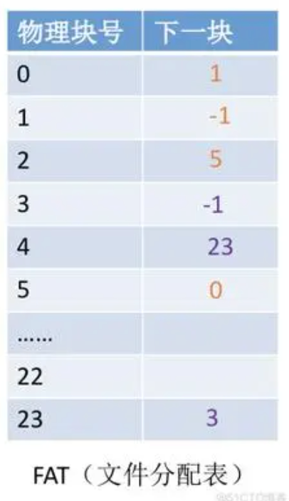</p><h4 id='fat长度计算'><span>FAT长度计算</span></h4><p><span>本质就是计算FAT表项的数量，而FAT表项的数量又由</span><code>&lt;物理块号, 下一块&gt;</code><span>能表示的最大范围决定，因此，核心就是知道这两个字段的位数 。</span></p><blockquote><p><span>例题：【2016 T47】</span></p><div>
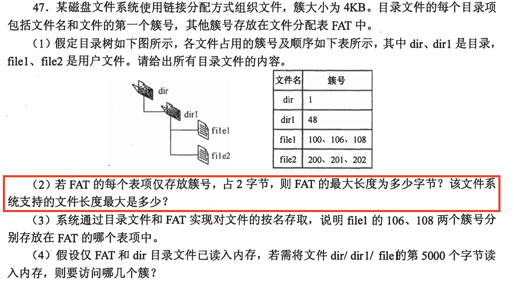
</div><p><span>答：</span></p><p><span>每个表项仅存簇号这一个字段，因此只需计算簇号的位数就知道能表示的最大范围</span></p><p><span>故FAT的最大长度 = </span><mjx-container class="MathJax" jax="SVG" style="position: relative;"><svg xmlns="http://www.w3.org/2000/svg" width="50.274ex" height="2.339ex" role="img" focusable="false" viewBox="0 -833.9 22221.2 1033.9" xmlns:xlink="http://www.w3.org/1999/xlink" aria-hidden="true" style="vertical-align: -0.452ex;"><defs><path id="MJX-250-TEX-N-2217" d="M229 286Q216 420 216 436Q216 454 240 464Q241 464 245 464T251 465Q263 464 273 456T283 436Q283 419 277 356T270 286L328 328Q384 369 389 372T399 375Q412 375 423 365T435 338Q435 325 425 315Q420 312 357 282T289 250L355 219L425 184Q434 175 434 161Q434 146 425 136T401 125Q393 125 383 131T328 171L270 213Q283 79 283 63Q283 53 276 44T250 35Q231 35 224 44T216 63Q216 80 222 143T229 213L171 171Q115 130 110 127Q106 124 100 124Q87 124 76 134T64 161Q64 166 64 169T67 175T72 181T81 188T94 195T113 204T138 215T170 230T210 250L74 315Q65 324 65 338Q65 353 74 363T98 374Q106 374 116 368T171 328L229 286Z"></path><path id="MJX-250-TEX-N-3D" d="M56 347Q56 360 70 367H707Q722 359 722 347Q722 336 708 328L390 327H72Q56 332 56 347ZM56 153Q56 168 72 173H708Q722 163 722 153Q722 140 707 133H70Q56 140 56 153Z"></path><path id="MJX-250-TEX-N-32" d="M109 429Q82 429 66 447T50 491Q50 562 103 614T235 666Q326 666 387 610T449 465Q449 422 429 383T381 315T301 241Q265 210 201 149L142 93L218 92Q375 92 385 97Q392 99 409 186V189H449V186Q448 183 436 95T421 3V0H50V19V31Q50 38 56 46T86 81Q115 113 136 137Q145 147 170 174T204 211T233 244T261 278T284 308T305 340T320 369T333 401T340 431T343 464Q343 527 309 573T212 619Q179 619 154 602T119 569T109 550Q109 549 114 549Q132 549 151 535T170 489Q170 464 154 447T109 429Z"></path><path id="MJX-250-TEX-N-31" d="M213 578L200 573Q186 568 160 563T102 556H83V602H102Q149 604 189 617T245 641T273 663Q275 666 285 666Q294 666 302 660V361L303 61Q310 54 315 52T339 48T401 46H427V0H416Q395 3 257 3Q121 3 100 0H88V46H114Q136 46 152 46T177 47T193 50T201 52T207 57T213 61V578Z"></path><path id="MJX-250-TEX-N-36" d="M42 313Q42 476 123 571T303 666Q372 666 402 630T432 550Q432 525 418 510T379 495Q356 495 341 509T326 548Q326 592 373 601Q351 623 311 626Q240 626 194 566Q147 500 147 364L148 360Q153 366 156 373Q197 433 263 433H267Q313 433 348 414Q372 400 396 374T435 317Q456 268 456 210V192Q456 169 451 149Q440 90 387 34T253 -22Q225 -22 199 -14T143 16T92 75T56 172T42 313ZM257 397Q227 397 205 380T171 335T154 278T148 216Q148 133 160 97T198 39Q222 21 251 21Q302 21 329 59Q342 77 347 104T352 209Q352 289 347 316T329 361Q302 397 257 397Z"></path><path id="MJX-250-TEX-I-1D435" d="M231 637Q204 637 199 638T194 649Q194 676 205 682Q206 683 335 683Q594 683 608 681Q671 671 713 636T756 544Q756 480 698 429T565 360L555 357Q619 348 660 311T702 219Q702 146 630 78T453 1Q446 0 242 0Q42 0 39 2Q35 5 35 10Q35 17 37 24Q42 43 47 45Q51 46 62 46H68Q95 46 128 49Q142 52 147 61Q150 65 219 339T288 628Q288 635 231 637ZM649 544Q649 574 634 600T585 634Q578 636 493 637Q473 637 451 637T416 636H403Q388 635 384 626Q382 622 352 506Q352 503 351 500L320 374H401Q482 374 494 376Q554 386 601 434T649 544ZM595 229Q595 273 572 302T512 336Q506 337 429 337Q311 337 310 336Q310 334 293 263T258 122L240 52Q240 48 252 48T333 46Q422 46 429 47Q491 54 543 105T595 229Z"></path><path id="MJX-250-TEX-N-38" d="M70 417T70 494T124 618T248 666Q319 666 374 624T429 515Q429 485 418 459T392 417T361 389T335 371T324 363L338 354Q352 344 366 334T382 323Q457 264 457 174Q457 95 399 37T249 -22Q159 -22 101 29T43 155Q43 263 172 335L154 348Q133 361 127 368Q70 417 70 494ZM286 386L292 390Q298 394 301 396T311 403T323 413T334 425T345 438T355 454T364 471T369 491T371 513Q371 556 342 586T275 624Q268 625 242 625Q201 625 165 599T128 534Q128 511 141 492T167 463T217 431Q224 426 228 424L286 386ZM250 21Q308 21 350 55T392 137Q392 154 387 169T375 194T353 216T330 234T301 253T274 270Q260 279 244 289T218 306L210 311Q204 311 181 294T133 239T107 157Q107 98 150 60T250 21Z"></path><path id="MJX-250-TEX-I-1D43E" d="M285 628Q285 635 228 637Q205 637 198 638T191 647Q191 649 193 661Q199 681 203 682Q205 683 214 683H219Q260 681 355 681Q389 681 418 681T463 682T483 682Q500 682 500 674Q500 669 497 660Q496 658 496 654T495 648T493 644T490 641T486 639T479 638T470 637T456 637Q416 636 405 634T387 623L306 305Q307 305 490 449T678 597Q692 611 692 620Q692 635 667 637Q651 637 651 648Q651 650 654 662T659 677Q662 682 676 682Q680 682 711 681T791 680Q814 680 839 681T869 682Q889 682 889 672Q889 650 881 642Q878 637 862 637Q787 632 726 586Q710 576 656 534T556 455L509 418L518 396Q527 374 546 329T581 244Q656 67 661 61Q663 59 666 57Q680 47 717 46H738Q744 38 744 37T741 19Q737 6 731 0H720Q680 3 625 3Q503 3 488 0H478Q472 6 472 9T474 27Q478 40 480 43T491 46H494Q544 46 544 71Q544 75 517 141T485 216L427 354L359 301L291 248L268 155Q245 63 245 58Q245 51 253 49T303 46H334Q340 37 340 35Q340 19 333 5Q328 0 317 0Q314 0 280 1T180 2Q118 2 85 2T49 1Q31 1 31 11Q31 13 34 25Q38 41 42 43T65 46Q92 46 125 49Q139 52 144 61Q147 65 216 339T285 628Z"></path></defs><g stroke="currentColor" fill="currentColor" stroke-width="0" transform="scale(1,-1)"><g data-mml-node="math"><g data-mml-node="mtext"><text data-variant="normal" transform="scale(1,-1)" font-size="884px" font-family="serif">最</text></g><g data-mml-node="mtext" transform="translate(870.4,0)"><text data-variant="normal" transform="scale(1,-1)" font-size="884px" font-family="serif">大</text></g><g data-mml-node="mtext" transform="translate(1740.8,0)"><text data-variant="normal" transform="scale(1,-1)" font-size="884px" font-family="serif">能</text></g><g data-mml-node="mtext" transform="translate(2611.2,0)"><text data-variant="normal" transform="scale(1,-1)" font-size="884px" font-family="serif">表</text></g><g data-mml-node="mtext" transform="translate(3481.6,0)"><text data-variant="normal" transform="scale(1,-1)" font-size="884px" font-family="serif">示</text></g><g data-mml-node="mtext" transform="translate(4352,0)"><text data-variant="normal" transform="scale(1,-1)" font-size="884px" font-family="serif">的</text></g><g data-mml-node="mtext" transform="translate(5178.9,0)"><text data-variant="normal" transform="scale(1,-1)" font-size="884px" font-family="serif">簇</text></g><g data-mml-node="mtext" transform="translate(6049.3,0)"><text data-variant="normal" transform="scale(1,-1)" font-size="884px" font-family="serif">数</text></g><g data-mml-node="mo" transform="translate(7098.4,0)"><use data-c="2217" xlink:href="#MJX-250-TEX-N-2217"></use></g><g data-mml-node="mtext" transform="translate(7820.7,0)"><text data-variant="normal" transform="scale(1,-1)" font-size="884px" font-family="serif">单</text></g><g data-mml-node="mtext" transform="translate(8691.1,0)"><text data-variant="normal" transform="scale(1,-1)" font-size="884px" font-family="serif">个</text></g><g data-mml-node="mtext" transform="translate(9518,0)"><text data-variant="normal" transform="scale(1,-1)" font-size="884px" font-family="serif">表</text></g><g data-mml-node="mtext" transform="translate(10388.4,0)"><text data-variant="normal" transform="scale(1,-1)" font-size="884px" font-family="serif">项</text></g><g data-mml-node="mtext" transform="translate(11258.8,0)"><text data-variant="normal" transform="scale(1,-1)" font-size="884px" font-family="serif">长</text></g><g data-mml-node="mtext" transform="translate(12085.7,0)"><text data-variant="normal" transform="scale(1,-1)" font-size="884px" font-family="serif">度</text></g><g data-mml-node="mo" transform="translate(13190.3,0)"><use data-c="3D" xlink:href="#MJX-250-TEX-N-3D"></use></g><g data-mml-node="msup" transform="translate(14246.1,0)"><g data-mml-node="mn"><use data-c="32" xlink:href="#MJX-250-TEX-N-32"></use></g><g data-mml-node="TeXAtom" transform="translate(533,363) scale(0.707)" data-mjx-texclass="ORD"><g data-mml-node="mn"><use data-c="31" xlink:href="#MJX-250-TEX-N-31"></use><use data-c="36" xlink:href="#MJX-250-TEX-N-36" transform="translate(500,0)"></use></g></g></g><g data-mml-node="mo" transform="translate(15758.4,0)"><use data-c="2217" xlink:href="#MJX-250-TEX-N-2217"></use></g><g data-mml-node="mn" transform="translate(16480.7,0)"><use data-c="32" xlink:href="#MJX-250-TEX-N-32"></use></g><g data-mml-node="mi" transform="translate(16980.7,0)"><use data-c="1D435" xlink:href="#MJX-250-TEX-I-1D435"></use></g><g data-mml-node="mo" transform="translate(18017.4,0)"><use data-c="3D" xlink:href="#MJX-250-TEX-N-3D"></use></g><g data-mml-node="mn" transform="translate(19073.2,0)"><use data-c="31" xlink:href="#MJX-250-TEX-N-31"></use><use data-c="32" xlink:href="#MJX-250-TEX-N-32" transform="translate(500,0)"></use><use data-c="38" xlink:href="#MJX-250-TEX-N-38" transform="translate(1000,0)"></use></g><g data-mml-node="mi" transform="translate(20573.2,0)"><use data-c="1D43E" xlink:href="#MJX-250-TEX-I-1D43E"></use></g><g data-mml-node="mi" transform="translate(21462.2,0)"><use data-c="1D435" xlink:href="#MJX-250-TEX-I-1D435"></use></g></g></g></svg><mjx-assistive-mml unselectable="on" display="inline"><math xmlns="http://www.w3.org/1998/Math/MathML"><mtext>最</mtext><mtext>大</mtext><mtext>能</mtext><mtext>表</mtext><mtext>示</mtext><mtext>的</mtext><mtext>簇</mtext><mtext>数</mtext><mo>∗</mo><mtext>单</mtext><mtext>个</mtext><mtext>表</mtext><mtext>项</mtext><mtext>长</mtext><mtext>度</mtext><mo>=</mo><msup><mn>2</mn><mrow data-mjx-texclass="ORD"><mn>16</mn></mrow></msup><mo>∗</mo><mn>2</mn><mi>B</mi><mo>=</mo><mn>128</mn><mi>K</mi><mi>B</mi></math></mjx-assistive-mml></mjx-container><script type="math/tex">最大能表示的簇数*单个表项长度=2^{16}*2B=128KB</script></p></blockquote><h3 id='不同盘块组织方式的优缺点'><span>不同盘块组织方式的优缺点</span></h3><figure><table><thead><tr><th><span>组织方式</span></th><th><span>优点</span></th><th><span>缺点</span></th></tr></thead><tbody><tr><td><strong><span>连续分配</span></strong></td><td><span>随机读写速度</span><u><strong><span>最快</span></strong></u><span>，空间利用率最高</span></td><td><span>文件的增删改不方便</span></td></tr><tr><td><strong><span>链接分配</span></strong></td><td><span>增删改方便</span></td><td><span>不支持随机读写，且指针占用额外空间</span></td></tr><tr><td><strong><span>索引分配</span></strong></td><td><span>支持随机读写（速度没连续分配快），且增删改也方便</span></td><td><span>索引结点占用额外空间</span></td></tr></tbody></table></figure><blockquote><p><strong><span>做题技巧：</span></strong></p><p><span>若题目中提到了</span><strong><span>“文件不可修改/无需修改”</span></strong><span>等，这是一个强提示，通常都是可以选用连续分配方式的。</span></p></blockquote><h3 id='文件数量的计算'><span>文件数量的计算</span></h3><p><span>制约文件数量的因素有两个</span></p><ul><li><strong><span>空闲盘块数：</span></strong><span>空闲盘块越多，能存放的文件越多（</span><strong><u><span>千万注意一个文件不管多小，至少占用1个盘块</span></u></strong><span>）</span></li><li><strong><span>索引节点数：</span></strong><span>一个文件对应一个索引结点</span></li></ul><p><span>所以如果告诉你文件大小让你计算最多能存的文件数，用下面的步骤：</span></p><blockquote><ol start='' ><li><span>计算出空闲盘块能存放的文件数量</span><mjx-container class="MathJax" jax="SVG" style="position: relative;"><svg xmlns="http://www.w3.org/2000/svg" width="2.345ex" height="1.339ex" role="img" focusable="false" viewBox="0 -442 1036.6 592" xmlns:xlink="http://www.w3.org/1999/xlink" aria-hidden="true" style="vertical-align: -0.339ex;"><defs><path id="MJX-251-TEX-I-1D45B" d="M21 287Q22 293 24 303T36 341T56 388T89 425T135 442Q171 442 195 424T225 390T231 369Q231 367 232 367L243 378Q304 442 382 442Q436 442 469 415T503 336T465 179T427 52Q427 26 444 26Q450 26 453 27Q482 32 505 65T540 145Q542 153 560 153Q580 153 580 145Q580 144 576 130Q568 101 554 73T508 17T439 -10Q392 -10 371 17T350 73Q350 92 386 193T423 345Q423 404 379 404H374Q288 404 229 303L222 291L189 157Q156 26 151 16Q138 -11 108 -11Q95 -11 87 -5T76 7T74 17Q74 30 112 180T152 343Q153 348 153 366Q153 405 129 405Q91 405 66 305Q60 285 60 284Q58 278 41 278H27Q21 284 21 287Z"></path><path id="MJX-251-TEX-N-31" d="M213 578L200 573Q186 568 160 563T102 556H83V602H102Q149 604 189 617T245 641T273 663Q275 666 285 666Q294 666 302 660V361L303 61Q310 54 315 52T339 48T401 46H427V0H416Q395 3 257 3Q121 3 100 0H88V46H114Q136 46 152 46T177 47T193 50T201 52T207 57T213 61V578Z"></path></defs><g stroke="currentColor" fill="currentColor" stroke-width="0" transform="scale(1,-1)"><g data-mml-node="math"><g data-mml-node="msub"><g data-mml-node="mi"><use data-c="1D45B" xlink:href="#MJX-251-TEX-I-1D45B"></use></g><g data-mml-node="mn" transform="translate(633,-150) scale(0.707)"><use data-c="31" xlink:href="#MJX-251-TEX-N-31"></use></g></g></g></g></svg><mjx-assistive-mml unselectable="on" display="inline"><math xmlns="http://www.w3.org/1998/Math/MathML"><msub><mi>n</mi><mn>1</mn></msub></math></mjx-assistive-mml></mjx-container><script type="math/tex">n_1</script></li><li><span>计算出系统索引结点数</span><mjx-container class="MathJax" jax="SVG" style="position: relative;"><svg xmlns="http://www.w3.org/2000/svg" width="2.345ex" height="1.339ex" role="img" focusable="false" viewBox="0 -442 1036.6 592" xmlns:xlink="http://www.w3.org/1999/xlink" aria-hidden="true" style="vertical-align: -0.339ex;"><defs><path id="MJX-252-TEX-I-1D45B" d="M21 287Q22 293 24 303T36 341T56 388T89 425T135 442Q171 442 195 424T225 390T231 369Q231 367 232 367L243 378Q304 442 382 442Q436 442 469 415T503 336T465 179T427 52Q427 26 444 26Q450 26 453 27Q482 32 505 65T540 145Q542 153 560 153Q580 153 580 145Q580 144 576 130Q568 101 554 73T508 17T439 -10Q392 -10 371 17T350 73Q350 92 386 193T423 345Q423 404 379 404H374Q288 404 229 303L222 291L189 157Q156 26 151 16Q138 -11 108 -11Q95 -11 87 -5T76 7T74 17Q74 30 112 180T152 343Q153 348 153 366Q153 405 129 405Q91 405 66 305Q60 285 60 284Q58 278 41 278H27Q21 284 21 287Z"></path><path id="MJX-252-TEX-N-32" d="M109 429Q82 429 66 447T50 491Q50 562 103 614T235 666Q326 666 387 610T449 465Q449 422 429 383T381 315T301 241Q265 210 201 149L142 93L218 92Q375 92 385 97Q392 99 409 186V189H449V186Q448 183 436 95T421 3V0H50V19V31Q50 38 56 46T86 81Q115 113 136 137Q145 147 170 174T204 211T233 244T261 278T284 308T305 340T320 369T333 401T340 431T343 464Q343 527 309 573T212 619Q179 619 154 602T119 569T109 550Q109 549 114 549Q132 549 151 535T170 489Q170 464 154 447T109 429Z"></path></defs><g stroke="currentColor" fill="currentColor" stroke-width="0" transform="scale(1,-1)"><g data-mml-node="math"><g data-mml-node="msub"><g data-mml-node="mi"><use data-c="1D45B" xlink:href="#MJX-252-TEX-I-1D45B"></use></g><g data-mml-node="mn" transform="translate(633,-150) scale(0.707)"><use data-c="32" xlink:href="#MJX-252-TEX-N-32"></use></g></g></g></g></svg><mjx-assistive-mml unselectable="on" display="inline"><math xmlns="http://www.w3.org/1998/Math/MathML"><msub><mi>n</mi><mn>2</mn></msub></math></mjx-assistive-mml></mjx-container><script type="math/tex">n_2</script></li><li><span>最大文件数量 = </span><mjx-container class="MathJax" jax="SVG" style="position: relative;"><svg xmlns="http://www.w3.org/2000/svg" width="11.73ex" height="2.262ex" role="img" focusable="false" viewBox="0 -750 5184.8 1000" xmlns:xlink="http://www.w3.org/1999/xlink" aria-hidden="true" style="vertical-align: -0.566ex;"><defs><path id="MJX-253-TEX-N-6D" d="M41 46H55Q94 46 102 60V68Q102 77 102 91T102 122T103 161T103 203Q103 234 103 269T102 328V351Q99 370 88 376T43 385H25V408Q25 431 27 431L37 432Q47 433 65 434T102 436Q119 437 138 438T167 441T178 442H181V402Q181 364 182 364T187 369T199 384T218 402T247 421T285 437Q305 442 336 442Q351 442 364 440T387 434T406 426T421 417T432 406T441 395T448 384T452 374T455 366L457 361L460 365Q463 369 466 373T475 384T488 397T503 410T523 422T546 432T572 439T603 442Q729 442 740 329Q741 322 741 190V104Q741 66 743 59T754 49Q775 46 803 46H819V0H811L788 1Q764 2 737 2T699 3Q596 3 587 0H579V46H595Q656 46 656 62Q657 64 657 200Q656 335 655 343Q649 371 635 385T611 402T585 404Q540 404 506 370Q479 343 472 315T464 232V168V108Q464 78 465 68T468 55T477 49Q498 46 526 46H542V0H534L510 1Q487 2 460 2T422 3Q319 3 310 0H302V46H318Q379 46 379 62Q380 64 380 200Q379 335 378 343Q372 371 358 385T334 402T308 404Q263 404 229 370Q202 343 195 315T187 232V168V108Q187 78 188 68T191 55T200 49Q221 46 249 46H265V0H257L234 1Q210 2 183 2T145 3Q42 3 33 0H25V46H41Z"></path><path id="MJX-253-TEX-N-69" d="M69 609Q69 637 87 653T131 669Q154 667 171 652T188 609Q188 579 171 564T129 549Q104 549 87 564T69 609ZM247 0Q232 3 143 3Q132 3 106 3T56 1L34 0H26V46H42Q70 46 91 49Q100 53 102 60T104 102V205V293Q104 345 102 359T88 378Q74 385 41 385H30V408Q30 431 32 431L42 432Q52 433 70 434T106 436Q123 437 142 438T171 441T182 442H185V62Q190 52 197 50T232 46H255V0H247Z"></path><path id="MJX-253-TEX-N-6E" d="M41 46H55Q94 46 102 60V68Q102 77 102 91T102 122T103 161T103 203Q103 234 103 269T102 328V351Q99 370 88 376T43 385H25V408Q25 431 27 431L37 432Q47 433 65 434T102 436Q119 437 138 438T167 441T178 442H181V402Q181 364 182 364T187 369T199 384T218 402T247 421T285 437Q305 442 336 442Q450 438 463 329Q464 322 464 190V104Q464 66 466 59T477 49Q498 46 526 46H542V0H534L510 1Q487 2 460 2T422 3Q319 3 310 0H302V46H318Q379 46 379 62Q380 64 380 200Q379 335 378 343Q372 371 358 385T334 402T308 404Q263 404 229 370Q202 343 195 315T187 232V168V108Q187 78 188 68T191 55T200 49Q221 46 249 46H265V0H257L234 1Q210 2 183 2T145 3Q42 3 33 0H25V46H41Z"></path><path id="MJX-253-TEX-N-7B" d="M434 -231Q434 -244 428 -250H410Q281 -250 230 -184Q225 -177 222 -172T217 -161T213 -148T211 -133T210 -111T209 -84T209 -47T209 0Q209 21 209 53Q208 142 204 153Q203 154 203 155Q189 191 153 211T82 231Q71 231 68 234T65 250T68 266T82 269Q116 269 152 289T203 345Q208 356 208 377T209 529V579Q209 634 215 656T244 698Q270 724 324 740Q361 748 377 749Q379 749 390 749T408 750H428Q434 744 434 732Q434 719 431 716Q429 713 415 713Q362 710 332 689T296 647Q291 634 291 499V417Q291 370 288 353T271 314Q240 271 184 255L170 250L184 245Q202 239 220 230T262 196T290 137Q291 131 291 1Q291 -134 296 -147Q306 -174 339 -192T415 -213Q429 -213 431 -216Q434 -219 434 -231Z"></path><path id="MJX-253-TEX-I-1D45B" d="M21 287Q22 293 24 303T36 341T56 388T89 425T135 442Q171 442 195 424T225 390T231 369Q231 367 232 367L243 378Q304 442 382 442Q436 442 469 415T503 336T465 179T427 52Q427 26 444 26Q450 26 453 27Q482 32 505 65T540 145Q542 153 560 153Q580 153 580 145Q580 144 576 130Q568 101 554 73T508 17T439 -10Q392 -10 371 17T350 73Q350 92 386 193T423 345Q423 404 379 404H374Q288 404 229 303L222 291L189 157Q156 26 151 16Q138 -11 108 -11Q95 -11 87 -5T76 7T74 17Q74 30 112 180T152 343Q153 348 153 366Q153 405 129 405Q91 405 66 305Q60 285 60 284Q58 278 41 278H27Q21 284 21 287Z"></path><path id="MJX-253-TEX-N-31" d="M213 578L200 573Q186 568 160 563T102 556H83V602H102Q149 604 189 617T245 641T273 663Q275 666 285 666Q294 666 302 660V361L303 61Q310 54 315 52T339 48T401 46H427V0H416Q395 3 257 3Q121 3 100 0H88V46H114Q136 46 152 46T177 47T193 50T201 52T207 57T213 61V578Z"></path><path id="MJX-253-TEX-N-2C" d="M78 35T78 60T94 103T137 121Q165 121 187 96T210 8Q210 -27 201 -60T180 -117T154 -158T130 -185T117 -194Q113 -194 104 -185T95 -172Q95 -168 106 -156T131 -126T157 -76T173 -3V9L172 8Q170 7 167 6T161 3T152 1T140 0Q113 0 96 17Z"></path><path id="MJX-253-TEX-N-32" d="M109 429Q82 429 66 447T50 491Q50 562 103 614T235 666Q326 666 387 610T449 465Q449 422 429 383T381 315T301 241Q265 210 201 149L142 93L218 92Q375 92 385 97Q392 99 409 186V189H449V186Q448 183 436 95T421 3V0H50V19V31Q50 38 56 46T86 81Q115 113 136 137Q145 147 170 174T204 211T233 244T261 278T284 308T305 340T320 369T333 401T340 431T343 464Q343 527 309 573T212 619Q179 619 154 602T119 569T109 550Q109 549 114 549Q132 549 151 535T170 489Q170 464 154 447T109 429Z"></path><path id="MJX-253-TEX-N-7D" d="M65 731Q65 745 68 747T88 750Q171 750 216 725T279 670Q288 649 289 635T291 501Q292 362 293 357Q306 312 345 291T417 269Q428 269 431 266T434 250T431 234T417 231Q380 231 345 210T298 157Q293 143 292 121T291 -28V-79Q291 -134 285 -156T256 -198Q202 -250 89 -250Q71 -250 68 -247T65 -230Q65 -224 65 -223T66 -218T69 -214T77 -213Q91 -213 108 -210T146 -200T183 -177T207 -139Q208 -134 209 3L210 139Q223 196 280 230Q315 247 330 250Q305 257 280 270Q225 304 212 352L210 362L209 498Q208 635 207 640Q195 680 154 696T77 713Q68 713 67 716T65 731Z"></path></defs><g stroke="currentColor" fill="currentColor" stroke-width="0" transform="scale(1,-1)"><g data-mml-node="math"><g data-mml-node="mo"><use data-c="6D" xlink:href="#MJX-253-TEX-N-6D"></use><use data-c="69" xlink:href="#MJX-253-TEX-N-69" transform="translate(833,0)"></use><use data-c="6E" xlink:href="#MJX-253-TEX-N-6E" transform="translate(1111,0)"></use></g><g data-mml-node="mo" transform="translate(1667,0)"><use data-c="7B" xlink:href="#MJX-253-TEX-N-7B"></use></g><g data-mml-node="msub" transform="translate(2167,0)"><g data-mml-node="mi"><use data-c="1D45B" xlink:href="#MJX-253-TEX-I-1D45B"></use></g><g data-mml-node="mn" transform="translate(633,-150) scale(0.707)"><use data-c="31" xlink:href="#MJX-253-TEX-N-31"></use></g></g><g data-mml-node="mo" transform="translate(3203.6,0)"><use data-c="2C" xlink:href="#MJX-253-TEX-N-2C"></use></g><g data-mml-node="msub" transform="translate(3648.2,0)"><g data-mml-node="mi"><use data-c="1D45B" xlink:href="#MJX-253-TEX-I-1D45B"></use></g><g data-mml-node="mn" transform="translate(633,-150) scale(0.707)"><use data-c="32" xlink:href="#MJX-253-TEX-N-32"></use></g></g><g data-mml-node="mo" transform="translate(4684.8,0)"><use data-c="7D" xlink:href="#MJX-253-TEX-N-7D"></use></g></g></g></svg><mjx-assistive-mml unselectable="on" display="inline"><math xmlns="http://www.w3.org/1998/Math/MathML"><mo data-mjx-texclass="OP" movablelimits="true">min</mo><mo fence="false" stretchy="false">{</mo><msub><mi>n</mi><mn>1</mn></msub><mo>,</mo><msub><mi>n</mi><mn>2</mn></msub><mo fence="false" stretchy="false">}</mo></math></mjx-assistive-mml></mjx-container><script type="math/tex">\min\{ n_1, n_2 \}</script></li></ol></blockquote><p>&nbsp;</p><div style="page-break-after: always;"></div><h2 id='u5io管理'><span>U5IO管理</span></h2><h3 id='记忆内容-7'><span>记忆内容</span></h3><ul><li><span>不会产生磁臂黏着的算法：FCFS</span></li><li><span>IO软件结构层次：用户、无关、驱动、中断</span></li><li><strong><span>IO层次</span></strong></li></ul><blockquote><div>

</div><p><strong><span>牢记：</span></strong><span>中断处理程序与</span><strong><span>硬件</span></strong><span>直接打交道</span></p></blockquote><ul><li><strong><span>通道，设备控制器和设备之间的关系？</span></strong></li></ul><blockquote><p><span>通道控制设备控制器，设备控制器控制设备工作</span></p></blockquote><ul><li><strong><span>设备分配时应考虑的问题：</span></strong></li></ul><blockquote><p><strong><span>设备固有属性：</span></strong><span>独占设备/共享设备/虚拟设备</span></p><p><strong><span>设备分配算法</span></strong></p><p><strong><span>设备安全性：</span></strong><span>安全分配方式/不安全分配方式</span></p></blockquote><ul><li><strong><span>在内存中设置磁盘缓冲区的目的：</span></strong></li></ul><blockquote><p><span>减少IO次数</span></p></blockquote><ul><li><strong><span>管理缓冲区中首要考虑的问题是？</span></strong></li></ul><blockquote><p><span>进程与缓冲区之间的</span><strong><span>同步</span></strong><span>。</span></p><p><span>（因为不管缓冲区大小、数量如何，你都得遵循缓冲区</span><strong><u><span>未空可读，未满可写</span></u></strong><span>的</span><strong><span>同步原则</span></strong><span>）</span></p></blockquote><ul><li><strong><span>缓冲技术的缓冲池所在位置？</span></strong></li></ul><blockquote><p><span>主存</span></p></blockquote><ul><li><strong><span>每台设备在系统中都有一个独立的编号，称为？</span></strong></li></ul><blockquote><p><span>绝对号</span></p></blockquote><ul><li><strong><span>光盘读写特性？</span></strong></li></ul><blockquote><p><span>可随机读，但</span><u><strong><span>不可</span></strong></u><span>随机写</span></p></blockquote><ul><li><strong><span>初始化中断向量表是由OS完成的吗？</span></strong></li></ul><blockquote><p><span>是的，这一步操作仅仅只是</span><u><strong><span>初始化</span></strong></u><span>存放中断向量的那张表而已，并非</span><strong><span>中断服务寻址</span></strong><span>（硬件完成）</span></p></blockquote><h3 id='io设备的分类'><span>IO设备的分类</span></h3><p><strong><span>块设备：</span></strong><span>以“块”为交换单位，高速、可寻址、支持随机读写</span></p><p><strong><span>字符设备：</span></strong><span>以“字符”为交换单位、低速、不可寻址、不支持随机读写</span></p><h3 id='磁盘管理'><span>磁盘管理</span></h3><h4 id='磁盘的地址结构'><span>磁盘的地址结构</span></h4><p></p><h4 id='簇号与磁盘地址的转换'><span>簇号与磁盘地址的转换</span></h4><p><mjx-container class="MathJax" jax="SVG" style="position: relative;"><svg xmlns="http://www.w3.org/2000/svg" width="41.699ex" height="2.262ex" role="img" focusable="false" viewBox="0 -750 18430.7 1000" xmlns:xlink="http://www.w3.org/1999/xlink" aria-hidden="true" style="vertical-align: -0.566ex;"><defs><path id="MJX-254-TEX-N-28" d="M94 250Q94 319 104 381T127 488T164 576T202 643T244 695T277 729T302 750H315H319Q333 750 333 741Q333 738 316 720T275 667T226 581T184 443T167 250T184 58T225 -81T274 -167T316 -220T333 -241Q333 -250 318 -250H315H302L274 -226Q180 -141 137 -14T94 250Z"></path><path id="MJX-254-TEX-N-29" d="M60 749L64 750Q69 750 74 750H86L114 726Q208 641 251 514T294 250Q294 182 284 119T261 12T224 -76T186 -143T145 -194T113 -227T90 -246Q87 -249 86 -250H74Q66 -250 63 -250T58 -247T55 -238Q56 -237 66 -225Q221 -64 221 250T66 725Q56 737 55 738Q55 746 60 749Z"></path><path id="MJX-254-TEX-N-3D" d="M56 347Q56 360 70 367H707Q722 359 722 347Q722 336 708 328L390 327H72Q56 332 56 347ZM56 153Q56 168 72 173H708Q722 163 722 153Q722 140 707 133H70Q56 140 56 153Z"></path><path id="MJX-254-TEX-N-2F" d="M423 750Q432 750 438 744T444 730Q444 725 271 248T92 -240Q85 -250 75 -250Q68 -250 62 -245T56 -231Q56 -221 230 257T407 740Q411 750 423 750Z"></path></defs><g stroke="currentColor" fill="currentColor" stroke-width="0" transform="scale(1,-1)"><g data-mml-node="math"><g data-mml-node="mtext"><text data-variant="normal" transform="scale(1,-1)" font-size="884px" font-family="serif">柱</text></g><g data-mml-node="mtext" transform="translate(870.4,0)"><text data-variant="normal" transform="scale(1,-1)" font-size="884px" font-family="serif">面</text></g><g data-mml-node="mo" transform="translate(1740.8,0)"><use data-c="28" xlink:href="#MJX-254-TEX-N-28"></use></g><g data-mml-node="mtext" transform="translate(2129.8,0)"><text data-variant="normal" transform="scale(1,-1)" font-size="884px" font-family="serif">磁</text></g><g data-mml-node="mtext" transform="translate(2956.7,0)"><text data-variant="normal" transform="scale(1,-1)" font-size="884px" font-family="serif">道</text></g><g data-mml-node="mo" transform="translate(3783.6,0)"><use data-c="29" xlink:href="#MJX-254-TEX-N-29"></use></g><g data-mml-node="mtext" transform="translate(4172.6,0)"><text data-variant="normal" transform="scale(1,-1)" font-size="884px" font-family="serif">号</text></g><g data-mml-node="mo" transform="translate(5320.8,0)"><use data-c="3D" xlink:href="#MJX-254-TEX-N-3D"></use></g><g data-mml-node="mtext" transform="translate(6376.6,0)"><text data-variant="normal" transform="scale(1,-1)" font-size="884px" font-family="serif">簇</text></g><g data-mml-node="mtext" transform="translate(7247,0)"><text data-variant="normal" transform="scale(1,-1)" font-size="884px" font-family="serif">号</text></g><g data-mml-node="TeXAtom" data-mjx-texclass="ORD" transform="translate(8117.4,0)"><g data-mml-node="mo"><use data-c="2F" xlink:href="#MJX-254-TEX-N-2F"></use></g></g><g data-mml-node="mtext" transform="translate(8617.4,0)"><text data-variant="normal" transform="scale(1,-1)" font-size="884px" font-family="serif">单</text></g><g data-mml-node="mtext" transform="translate(9487.8,0)"><text data-variant="normal" transform="scale(1,-1)" font-size="884px" font-family="serif">磁</text></g><g data-mml-node="mtext" transform="translate(10314.7,0)"><text data-variant="normal" transform="scale(1,-1)" font-size="884px" font-family="serif">道</text></g><g data-mml-node="mtext" transform="translate(11141.6,0)"><text data-variant="normal" transform="scale(1,-1)" font-size="884px" font-family="serif">簇</text></g><g data-mml-node="mtext" transform="translate(12012,0)"><text data-variant="normal" transform="scale(1,-1)" font-size="884px" font-family="serif">数</text></g><g data-mml-node="TeXAtom" data-mjx-texclass="ORD" transform="translate(12838.9,0)"><g data-mml-node="mo"><use data-c="2F" xlink:href="#MJX-254-TEX-N-2F"></use></g></g><g data-mml-node="mtext" transform="translate(13338.9,0)"><text data-variant="normal" transform="scale(1,-1)" font-size="884px" font-family="serif">单</text></g><g data-mml-node="mtext" transform="translate(14209.3,0)"><text data-variant="normal" transform="scale(1,-1)" font-size="884px" font-family="serif">柱</text></g><g data-mml-node="mtext" transform="translate(15079.7,0)"><text data-variant="normal" transform="scale(1,-1)" font-size="884px" font-family="serif">面</text></g><g data-mml-node="mtext" transform="translate(15950.1,0)"><text data-variant="normal" transform="scale(1,-1)" font-size="884px" font-family="serif">磁</text></g><g data-mml-node="mtext" transform="translate(16777,0)"><text data-variant="normal" transform="scale(1,-1)" font-size="884px" font-family="serif">道</text></g><g data-mml-node="mtext" transform="translate(17603.9,0)"><text data-variant="normal" transform="scale(1,-1)" font-size="884px" font-family="serif">数</text></g></g></g></svg><mjx-assistive-mml unselectable="on" display="inline"><math xmlns="http://www.w3.org/1998/Math/MathML"><mtext>柱</mtext><mtext>面</mtext><mo stretchy="false">(</mo><mtext>磁</mtext><mtext>道</mtext><mo stretchy="false">)</mo><mtext>号</mtext><mo>=</mo><mtext>簇</mtext><mtext>号</mtext><mrow data-mjx-texclass="ORD"><mo>/</mo></mrow><mtext>单</mtext><mtext>磁</mtext><mtext>道</mtext><mtext>簇</mtext><mtext>数</mtext><mrow data-mjx-texclass="ORD"><mo>/</mo></mrow><mtext>单</mtext><mtext>柱</mtext><mtext>面</mtext><mtext>磁</mtext><mtext>道</mtext><mtext>数</mtext></math></mjx-assistive-mml></mjx-container><script type="math/tex">柱面(磁道)号=簇号/单磁道簇数/单柱面磁道数</script></p><p><mjx-container class="MathJax" jax="SVG" style="position: relative;"><svg xmlns="http://www.w3.org/2000/svg" width="36.852ex" height="2.262ex" role="img" focusable="false" viewBox="0 -750 16288.4 1000" xmlns:xlink="http://www.w3.org/1999/xlink" aria-hidden="true" style="vertical-align: -0.566ex;"><defs><path id="MJX-255-TEX-N-3D" d="M56 347Q56 360 70 367H707Q722 359 722 347Q722 336 708 328L390 327H72Q56 332 56 347ZM56 153Q56 168 72 173H708Q722 163 722 153Q722 140 707 133H70Q56 140 56 153Z"></path><path id="MJX-255-TEX-N-2F" d="M423 750Q432 750 438 744T444 730Q444 725 271 248T92 -240Q85 -250 75 -250Q68 -250 62 -245T56 -231Q56 -221 230 257T407 740Q411 750 423 750Z"></path><path id="MJX-255-TEX-N-25" d="M465 605Q428 605 394 614T340 632T319 641Q332 608 332 548Q332 458 293 403T202 347Q145 347 101 402T56 548Q56 637 101 693T202 750Q241 750 272 719Q359 642 464 642Q580 642 650 732Q662 748 668 749Q670 750 673 750Q682 750 688 743T693 726Q178 -47 170 -52Q166 -56 160 -56Q147 -56 142 -45Q137 -36 142 -27Q143 -24 363 304Q469 462 525 546T581 630Q528 605 465 605ZM207 385Q235 385 263 427T292 548Q292 617 267 664T200 712Q193 712 186 709T167 698T147 668T134 615Q132 595 132 548V527Q132 436 165 403Q183 385 203 385H207ZM500 146Q500 234 544 290T647 347Q699 347 737 292T776 146T737 0T646 -56Q590 -56 545 0T500 146ZM651 -18Q679 -18 707 24T736 146Q736 215 711 262T644 309Q637 309 630 306T611 295T591 265T578 212Q577 200 577 146V124Q577 -18 647 -18H651Z"></path></defs><g stroke="currentColor" fill="currentColor" stroke-width="0" transform="scale(1,-1)"><g data-mml-node="math"><g data-mml-node="mtext"><text data-variant="normal" transform="scale(1,-1)" font-size="884px" font-family="serif">盘</text></g><g data-mml-node="mtext" transform="translate(826.9,0)"><text data-variant="normal" transform="scale(1,-1)" font-size="884px" font-family="serif">面</text></g><g data-mml-node="mtext" transform="translate(1697.3,0)"><text data-variant="normal" transform="scale(1,-1)" font-size="884px" font-family="serif">号</text></g><g data-mml-node="mo" transform="translate(2845.5,0)"><use data-c="3D" xlink:href="#MJX-255-TEX-N-3D"></use></g><g data-mml-node="mtext" transform="translate(3901.3,0)"><text data-variant="normal" transform="scale(1,-1)" font-size="884px" font-family="serif">簇</text></g><g data-mml-node="mtext" transform="translate(4771.7,0)"><text data-variant="normal" transform="scale(1,-1)" font-size="884px" font-family="serif">号</text></g><g data-mml-node="TeXAtom" data-mjx-texclass="ORD" transform="translate(5642.1,0)"><g data-mml-node="mo"><use data-c="2F" xlink:href="#MJX-255-TEX-N-2F"></use></g></g><g data-mml-node="mtext" transform="translate(6142.1,0)"><text data-variant="normal" transform="scale(1,-1)" font-size="884px" font-family="serif">单</text></g><g data-mml-node="mtext" transform="translate(7012.5,0)"><text data-variant="normal" transform="scale(1,-1)" font-size="884px" font-family="serif">磁</text></g><g data-mml-node="mtext" transform="translate(7839.4,0)"><text data-variant="normal" transform="scale(1,-1)" font-size="884px" font-family="serif">道</text></g><g data-mml-node="mtext" transform="translate(8666.3,0)"><text data-variant="normal" transform="scale(1,-1)" font-size="884px" font-family="serif">簇</text></g><g data-mml-node="mtext" transform="translate(9536.7,0)"><text data-variant="normal" transform="scale(1,-1)" font-size="884px" font-family="serif">数</text></g><g data-mml-node="mi" transform="translate(10363.6,0)"><use data-c="25" xlink:href="#MJX-255-TEX-N-25"></use></g><g data-mml-node="mtext" transform="translate(11196.6,0)"><text data-variant="normal" transform="scale(1,-1)" font-size="884px" font-family="serif">单</text></g><g data-mml-node="mtext" transform="translate(12067,0)"><text data-variant="normal" transform="scale(1,-1)" font-size="884px" font-family="serif">柱</text></g><g data-mml-node="mtext" transform="translate(12937.4,0)"><text data-variant="normal" transform="scale(1,-1)" font-size="884px" font-family="serif">面</text></g><g data-mml-node="mtext" transform="translate(13807.8,0)"><text data-variant="normal" transform="scale(1,-1)" font-size="884px" font-family="serif">磁</text></g><g data-mml-node="mtext" transform="translate(14634.7,0)"><text data-variant="normal" transform="scale(1,-1)" font-size="884px" font-family="serif">道</text></g><g data-mml-node="mtext" transform="translate(15461.6,0)"><text data-variant="normal" transform="scale(1,-1)" font-size="884px" font-family="serif">数</text></g></g></g></svg><mjx-assistive-mml unselectable="on" display="inline"><math xmlns="http://www.w3.org/1998/Math/MathML"><mtext>盘</mtext><mtext>面</mtext><mtext>号</mtext><mo>=</mo><mtext>簇</mtext><mtext>号</mtext><mrow data-mjx-texclass="ORD"><mo>/</mo></mrow><mtext>单</mtext><mtext>磁</mtext><mtext>道</mtext><mtext>簇</mtext><mtext>数</mtext><mi mathvariant="normal">%</mi><mtext>单</mtext><mtext>柱</mtext><mtext>面</mtext><mtext>磁</mtext><mtext>道</mtext><mtext>数</mtext></math></mjx-assistive-mml></mjx-container><script type="math/tex">盘面号=簇号/单磁道簇数\%单柱面磁道数</script></p><p><mjx-container class="MathJax" jax="SVG" style="position: relative;"><svg xmlns="http://www.w3.org/2000/svg" width="42.19ex" height="2.149ex" role="img" focusable="false" viewBox="0 -750 18647.8 950" xmlns:xlink="http://www.w3.org/1999/xlink" aria-hidden="true" style="vertical-align: -0.452ex;"><defs><path id="MJX-256-TEX-N-3D" d="M56 347Q56 360 70 367H707Q722 359 722 347Q722 336 708 328L390 327H72Q56 332 56 347ZM56 153Q56 168 72 173H708Q722 163 722 153Q722 140 707 133H70Q56 140 56 153Z"></path><path id="MJX-256-TEX-N-2217" d="M229 286Q216 420 216 436Q216 454 240 464Q241 464 245 464T251 465Q263 464 273 456T283 436Q283 419 277 356T270 286L328 328Q384 369 389 372T399 375Q412 375 423 365T435 338Q435 325 425 315Q420 312 357 282T289 250L355 219L425 184Q434 175 434 161Q434 146 425 136T401 125Q393 125 383 131T328 171L270 213Q283 79 283 63Q283 53 276 44T250 35Q231 35 224 44T216 63Q216 80 222 143T229 213L171 171Q115 130 110 127Q106 124 100 124Q87 124 76 134T64 161Q64 166 64 169T67 175T72 181T81 188T94 195T113 204T138 215T170 230T210 250L74 315Q65 324 65 338Q65 353 74 363T98 374Q106 374 116 368T171 328L229 286Z"></path><path id="MJX-256-TEX-N-25" d="M465 605Q428 605 394 614T340 632T319 641Q332 608 332 548Q332 458 293 403T202 347Q145 347 101 402T56 548Q56 637 101 693T202 750Q241 750 272 719Q359 642 464 642Q580 642 650 732Q662 748 668 749Q670 750 673 750Q682 750 688 743T693 726Q178 -47 170 -52Q166 -56 160 -56Q147 -56 142 -45Q137 -36 142 -27Q143 -24 363 304Q469 462 525 546T581 630Q528 605 465 605ZM207 385Q235 385 263 427T292 548Q292 617 267 664T200 712Q193 712 186 709T167 698T147 668T134 615Q132 595 132 548V527Q132 436 165 403Q183 385 203 385H207ZM500 146Q500 234 544 290T647 347Q699 347 737 292T776 146T737 0T646 -56Q590 -56 545 0T500 146ZM651 -18Q679 -18 707 24T736 146Q736 215 711 262T644 309Q637 309 630 306T611 295T591 265T578 212Q577 200 577 146V124Q577 -18 647 -18H651Z"></path></defs><g stroke="currentColor" fill="currentColor" stroke-width="0" transform="scale(1,-1)"><g data-mml-node="math"><g data-mml-node="mtext"><text data-variant="normal" transform="scale(1,-1)" font-size="884px" font-family="serif">扇</text></g><g data-mml-node="mtext" transform="translate(870.4,0)"><text data-variant="normal" transform="scale(1,-1)" font-size="884px" font-family="serif">区</text></g><g data-mml-node="mtext" transform="translate(1740.8,0)"><text data-variant="normal" transform="scale(1,-1)" font-size="884px" font-family="serif">号</text></g><g data-mml-node="mo" transform="translate(2889,0)"><use data-c="3D" xlink:href="#MJX-256-TEX-N-3D"></use></g><g data-mml-node="mtext" transform="translate(3944.8,0)"><text data-variant="normal" transform="scale(1,-1)" font-size="884px" font-family="serif">簇</text></g><g data-mml-node="mtext" transform="translate(4815.2,0)"><text data-variant="normal" transform="scale(1,-1)" font-size="884px" font-family="serif">号</text></g><g data-mml-node="mo" transform="translate(5907.8,0)"><use data-c="2217" xlink:href="#MJX-256-TEX-N-2217"></use></g><g data-mml-node="mtext" transform="translate(6630,0)"><text data-variant="normal" transform="scale(1,-1)" font-size="884px" font-family="serif">单</text></g><g data-mml-node="mtext" transform="translate(7500.4,0)"><text data-variant="normal" transform="scale(1,-1)" font-size="884px" font-family="serif">簇</text></g><g data-mml-node="mtext" transform="translate(8370.8,0)"><text data-variant="normal" transform="scale(1,-1)" font-size="884px" font-family="serif">包</text></g><g data-mml-node="mtext" transform="translate(9241.3,0)"><text data-variant="normal" transform="scale(1,-1)" font-size="884px" font-family="serif">含</text></g><g data-mml-node="mtext" transform="translate(10068.1,0)"><text data-variant="normal" transform="scale(1,-1)" font-size="884px" font-family="serif">扇</text></g><g data-mml-node="mtext" transform="translate(10938.5,0)"><text data-variant="normal" transform="scale(1,-1)" font-size="884px" font-family="serif">区</text></g><g data-mml-node="mtext" transform="translate(11809,0)"><text data-variant="normal" transform="scale(1,-1)" font-size="884px" font-family="serif">数</text></g><g data-mml-node="mi" transform="translate(12635.8,0)"><use data-c="25" xlink:href="#MJX-256-TEX-N-25"></use></g><g data-mml-node="mtext" transform="translate(13468.8,0)"><text data-variant="normal" transform="scale(1,-1)" font-size="884px" font-family="serif">单</text></g><g data-mml-node="mtext" transform="translate(14339.3,0)"><text data-variant="normal" transform="scale(1,-1)" font-size="884px" font-family="serif">柱</text></g><g data-mml-node="mtext" transform="translate(15209.7,0)"><text data-variant="normal" transform="scale(1,-1)" font-size="884px" font-family="serif">面</text></g><g data-mml-node="mtext" transform="translate(16080.1,0)"><text data-variant="normal" transform="scale(1,-1)" font-size="884px" font-family="serif">扇</text></g><g data-mml-node="mtext" transform="translate(16950.5,0)"><text data-variant="normal" transform="scale(1,-1)" font-size="884px" font-family="serif">区</text></g><g data-mml-node="mtext" transform="translate(17820.9,0)"><text data-variant="normal" transform="scale(1,-1)" font-size="884px" font-family="serif">数</text></g></g></g></svg><mjx-assistive-mml unselectable="on" display="inline"><math xmlns="http://www.w3.org/1998/Math/MathML"><mtext>扇</mtext><mtext>区</mtext><mtext>号</mtext><mo>=</mo><mtext>簇</mtext><mtext>号</mtext><mo>∗</mo><mtext>单</mtext><mtext>簇</mtext><mtext>包</mtext><mtext>含</mtext><mtext>扇</mtext><mtext>区</mtext><mtext>数</mtext><mi mathvariant="normal">%</mi><mtext>单</mtext><mtext>柱</mtext><mtext>面</mtext><mtext>扇</mtext><mtext>区</mtext><mtext>数</mtext></math></mjx-assistive-mml></mjx-container><script type="math/tex">扇区号=簇号*单簇包含扇区数\%单柱面扇区数</script></p><p><mjx-container class="MathJax" jax="SVG" style="position: relative;"><svg xmlns="http://www.w3.org/2000/svg" width="5.809ex" height="2.149ex" role="img" focusable="false" viewBox="0 -750 2567.7 950" xmlns:xlink="http://www.w3.org/1999/xlink" aria-hidden="true" style="vertical-align: -0.452ex;"><defs></defs><g stroke="currentColor" fill="currentColor" stroke-width="0" transform="scale(1,-1)"><g data-mml-node="math"><g data-mml-node="mtext"><text data-variant="normal" transform="scale(1,-1)" font-size="884px" font-family="serif">例</text></g><g data-mml-node="mtext" transform="translate(870.4,0)"><text data-variant="normal" transform="scale(1,-1)" font-size="884px" font-family="serif">题</text></g><g data-mml-node="mi" transform="translate(1740.8,0)"><text data-variant="italic" transform="scale(1,-1)" font-size="884px" font-family="serif" font-style="italic">：</text></g></g></g></svg><mjx-assistive-mml unselectable="on" display="inline"><math xmlns="http://www.w3.org/1998/Math/MathML"><mtext>例</mtext><mtext>题</mtext><mi>：</mi></math></mjx-assistive-mml></mjx-container><script type="math/tex">例题：</script></p><blockquote><p><span>【2019年T44】</span></p><div>

</div><p>&nbsp;</p><p><mjx-container class="MathJax" jax="SVG" style="position: relative;"><svg xmlns="http://www.w3.org/2000/svg" width="5.809ex" height="2.149ex" role="img" focusable="false" viewBox="0 -750 2567.7 950" xmlns:xlink="http://www.w3.org/1999/xlink" aria-hidden="true" style="vertical-align: -0.452ex;"><defs></defs><g stroke="currentColor" fill="currentColor" stroke-width="0" transform="scale(1,-1)"><g data-mml-node="math"><g data-mml-node="mtext"><text data-variant="normal" transform="scale(1,-1)" font-size="884px" font-family="serif">解</text></g><g data-mml-node="mtext" transform="translate(870.4,0)"><text data-variant="normal" transform="scale(1,-1)" font-size="884px" font-family="serif">析</text></g><g data-mml-node="mi" transform="translate(1740.8,0)"><text data-variant="italic" transform="scale(1,-1)" font-size="884px" font-family="serif" font-style="italic">：</text></g></g></g></svg><mjx-assistive-mml unselectable="on" display="inline"><math xmlns="http://www.w3.org/1998/Math/MathML"><mtext>解</mtext><mtext>析</mtext><mi>：</mi></math></mjx-assistive-mml></mjx-container><script type="math/tex">解析：</script></p><p><strong><span>(1):</span></strong></p><p><mjx-container class="MathJax" jax="SVG" style="position: relative;"><svg xmlns="http://www.w3.org/2000/svg" width="68.984ex" height="2.407ex" role="img" focusable="false" viewBox="0 -864 30491 1064" xmlns:xlink="http://www.w3.org/1999/xlink" aria-hidden="true" style="vertical-align: -0.452ex;"><defs><path id="MJX-259-TEX-N-3D" d="M56 347Q56 360 70 367H707Q722 359 722 347Q722 336 708 328L390 327H72Q56 332 56 347ZM56 153Q56 168 72 173H708Q722 163 722 153Q722 140 707 133H70Q56 140 56 153Z"></path><path id="MJX-259-TEX-N-2217" d="M229 286Q216 420 216 436Q216 454 240 464Q241 464 245 464T251 465Q263 464 273 456T283 436Q283 419 277 356T270 286L328 328Q384 369 389 372T399 375Q412 375 423 365T435 338Q435 325 425 315Q420 312 357 282T289 250L355 219L425 184Q434 175 434 161Q434 146 425 136T401 125Q393 125 383 131T328 171L270 213Q283 79 283 63Q283 53 276 44T250 35Q231 35 224 44T216 63Q216 80 222 143T229 213L171 171Q115 130 110 127Q106 124 100 124Q87 124 76 134T64 161Q64 166 64 169T67 175T72 181T81 188T94 195T113 204T138 215T170 230T210 250L74 315Q65 324 65 338Q65 353 74 363T98 374Q106 374 116 368T171 328L229 286Z"></path><path id="MJX-259-TEX-N-33" d="M127 463Q100 463 85 480T69 524Q69 579 117 622T233 665Q268 665 277 664Q351 652 390 611T430 522Q430 470 396 421T302 350L299 348Q299 347 308 345T337 336T375 315Q457 262 457 175Q457 96 395 37T238 -22Q158 -22 100 21T42 130Q42 158 60 175T105 193Q133 193 151 175T169 130Q169 119 166 110T159 94T148 82T136 74T126 70T118 67L114 66Q165 21 238 21Q293 21 321 74Q338 107 338 175V195Q338 290 274 322Q259 328 213 329L171 330L168 332Q166 335 166 348Q166 366 174 366Q202 366 232 371Q266 376 294 413T322 525V533Q322 590 287 612Q265 626 240 626Q208 626 181 615T143 592T132 580H135Q138 579 143 578T153 573T165 566T175 555T183 540T186 520Q186 498 172 481T127 463Z"></path><path id="MJX-259-TEX-N-30" d="M96 585Q152 666 249 666Q297 666 345 640T423 548Q460 465 460 320Q460 165 417 83Q397 41 362 16T301 -15T250 -22Q224 -22 198 -16T137 16T82 83Q39 165 39 320Q39 494 96 585ZM321 597Q291 629 250 629Q208 629 178 597Q153 571 145 525T137 333Q137 175 145 125T181 46Q209 16 250 16Q290 16 318 46Q347 76 354 130T362 333Q362 478 354 524T321 597Z"></path><path id="MJX-259-TEX-N-31" d="M213 578L200 573Q186 568 160 563T102 556H83V602H102Q149 604 189 617T245 641T273 663Q275 666 285 666Q294 666 302 660V361L303 61Q310 54 315 52T339 48T401 46H427V0H416Q395 3 257 3Q121 3 100 0H88V46H114Q136 46 152 46T177 47T193 50T201 52T207 57T213 61V578Z"></path><path id="MJX-259-TEX-N-32" d="M109 429Q82 429 66 447T50 491Q50 562 103 614T235 666Q326 666 387 610T449 465Q449 422 429 383T381 315T301 241Q265 210 201 149L142 93L218 92Q375 92 385 97Q392 99 409 186V189H449V186Q448 183 436 95T421 3V0H50V19V31Q50 38 56 46T86 81Q115 113 136 137Q145 147 170 174T204 211T233 244T261 278T284 308T305 340T320 369T333 401T340 431T343 464Q343 527 309 573T212 619Q179 619 154 602T119 569T109 550Q109 549 114 549Q132 549 151 535T170 489Q170 464 154 447T109 429Z"></path><path id="MJX-259-TEX-N-35" d="M164 157Q164 133 148 117T109 101H102Q148 22 224 22Q294 22 326 82Q345 115 345 210Q345 313 318 349Q292 382 260 382H254Q176 382 136 314Q132 307 129 306T114 304Q97 304 95 310Q93 314 93 485V614Q93 664 98 664Q100 666 102 666Q103 666 123 658T178 642T253 634Q324 634 389 662Q397 666 402 666Q410 666 410 648V635Q328 538 205 538Q174 538 149 544L139 546V374Q158 388 169 396T205 412T256 420Q337 420 393 355T449 201Q449 109 385 44T229 -22Q148 -22 99 32T50 154Q50 178 61 192T84 210T107 214Q132 214 148 197T164 157Z"></path><path id="MJX-259-TEX-I-1D435" d="M231 637Q204 637 199 638T194 649Q194 676 205 682Q206 683 335 683Q594 683 608 681Q671 671 713 636T756 544Q756 480 698 429T565 360L555 357Q619 348 660 311T702 219Q702 146 630 78T453 1Q446 0 242 0Q42 0 39 2Q35 5 35 10Q35 17 37 24Q42 43 47 45Q51 46 62 46H68Q95 46 128 49Q142 52 147 61Q150 65 219 339T288 628Q288 635 231 637ZM649 544Q649 574 634 600T585 634Q578 636 493 637Q473 637 451 637T416 636H403Q388 635 384 626Q382 622 352 506Q352 503 351 500L320 374H401Q482 374 494 376Q554 386 601 434T649 544ZM595 229Q595 273 572 302T512 336Q506 337 429 337Q311 337 310 336Q310 334 293 263T258 122L240 52Q240 48 252 48T333 46Q422 46 429 47Q491 54 543 105T595 229Z"></path><path id="MJX-259-TEX-I-1D43E" d="M285 628Q285 635 228 637Q205 637 198 638T191 647Q191 649 193 661Q199 681 203 682Q205 683 214 683H219Q260 681 355 681Q389 681 418 681T463 682T483 682Q500 682 500 674Q500 669 497 660Q496 658 496 654T495 648T493 644T490 641T486 639T479 638T470 637T456 637Q416 636 405 634T387 623L306 305Q307 305 490 449T678 597Q692 611 692 620Q692 635 667 637Q651 637 651 648Q651 650 654 662T659 677Q662 682 676 682Q680 682 711 681T791 680Q814 680 839 681T869 682Q889 682 889 672Q889 650 881 642Q878 637 862 637Q787 632 726 586Q710 576 656 534T556 455L509 418L518 396Q527 374 546 329T581 244Q656 67 661 61Q663 59 666 57Q680 47 717 46H738Q744 38 744 37T741 19Q737 6 731 0H720Q680 3 625 3Q503 3 488 0H478Q472 6 472 9T474 27Q478 40 480 43T491 46H494Q544 46 544 71Q544 75 517 141T485 216L427 354L359 301L291 248L268 155Q245 63 245 58Q245 51 253 49T303 46H334Q340 37 340 35Q340 19 333 5Q328 0 317 0Q314 0 280 1T180 2Q118 2 85 2T49 1Q31 1 31 11Q31 13 34 25Q38 41 42 43T65 46Q92 46 125 49Q139 52 144 61Q147 65 216 339T285 628Z"></path></defs><g stroke="currentColor" fill="currentColor" stroke-width="0" transform="scale(1,-1)"><g data-mml-node="math"><g data-mml-node="mtext"><text data-variant="normal" transform="scale(1,-1)" font-size="884px" font-family="serif">磁</text></g><g data-mml-node="mtext" transform="translate(826.9,0)"><text data-variant="normal" transform="scale(1,-1)" font-size="884px" font-family="serif">盘</text></g><g data-mml-node="mtext" transform="translate(1653.8,0)"><text data-variant="normal" transform="scale(1,-1)" font-size="884px" font-family="serif">容</text></g><g data-mml-node="mtext" transform="translate(2480.7,0)"><text data-variant="normal" transform="scale(1,-1)" font-size="884px" font-family="serif">量</text></g><g data-mml-node="mo" transform="translate(3585.3,0)"><use data-c="3D" xlink:href="#MJX-259-TEX-N-3D"></use></g><g data-mml-node="mtext" transform="translate(4641.1,0)"><text data-variant="normal" transform="scale(1,-1)" font-size="884px" font-family="serif">总</text></g><g data-mml-node="mtext" transform="translate(5468,0)"><text data-variant="normal" transform="scale(1,-1)" font-size="884px" font-family="serif">扇</text></g><g data-mml-node="mtext" transform="translate(6338.4,0)"><text data-variant="normal" transform="scale(1,-1)" font-size="884px" font-family="serif">区</text></g><g data-mml-node="mtext" transform="translate(7208.8,0)"><text data-variant="normal" transform="scale(1,-1)" font-size="884px" font-family="serif">数</text></g><g data-mml-node="mo" transform="translate(8257.9,0)"><use data-c="2217" xlink:href="#MJX-259-TEX-N-2217"></use></g><g data-mml-node="mtext" transform="translate(8980.2,0)"><text data-variant="normal" transform="scale(1,-1)" font-size="884px" font-family="serif">单</text></g><g data-mml-node="mtext" transform="translate(9850.6,0)"><text data-variant="normal" transform="scale(1,-1)" font-size="884px" font-family="serif">位</text></g><g data-mml-node="mtext" transform="translate(10721,0)"><text data-variant="normal" transform="scale(1,-1)" font-size="884px" font-family="serif">扇</text></g><g data-mml-node="mtext" transform="translate(11591.4,0)"><text data-variant="normal" transform="scale(1,-1)" font-size="884px" font-family="serif">区</text></g><g data-mml-node="mtext" transform="translate(12461.8,0)"><text data-variant="normal" transform="scale(1,-1)" font-size="884px" font-family="serif">大</text></g><g data-mml-node="mtext" transform="translate(13332.2,0)"><text data-variant="normal" transform="scale(1,-1)" font-size="884px" font-family="serif">小</text></g><g data-mml-node="mo" transform="translate(14480.4,0)"><use data-c="3D" xlink:href="#MJX-259-TEX-N-3D"></use></g><g data-mml-node="mn" transform="translate(15536.1,0)"><use data-c="33" xlink:href="#MJX-259-TEX-N-33"></use><use data-c="30" xlink:href="#MJX-259-TEX-N-30" transform="translate(500,0)"></use><use data-c="30" xlink:href="#MJX-259-TEX-N-30" transform="translate(1000,0)"></use></g><g data-mml-node="mo" transform="translate(17258.4,0)"><use data-c="2217" xlink:href="#MJX-259-TEX-N-2217"></use></g><g data-mml-node="mn" transform="translate(17980.6,0)"><use data-c="31" xlink:href="#MJX-259-TEX-N-31"></use><use data-c="30" xlink:href="#MJX-259-TEX-N-30" transform="translate(500,0)"></use></g><g data-mml-node="mo" transform="translate(19202.8,0)"><use data-c="2217" xlink:href="#MJX-259-TEX-N-2217"></use></g><g data-mml-node="mn" transform="translate(19925,0)"><use data-c="32" xlink:href="#MJX-259-TEX-N-32"></use><use data-c="30" xlink:href="#MJX-259-TEX-N-30" transform="translate(500,0)"></use><use data-c="30" xlink:href="#MJX-259-TEX-N-30" transform="translate(1000,0)"></use></g><g data-mml-node="mo" transform="translate(21647.3,0)"><use data-c="2217" xlink:href="#MJX-259-TEX-N-2217"></use></g><g data-mml-node="mn" transform="translate(22369.5,0)"><use data-c="35" xlink:href="#MJX-259-TEX-N-35"></use><use data-c="31" xlink:href="#MJX-259-TEX-N-31" transform="translate(500,0)"></use><use data-c="32" xlink:href="#MJX-259-TEX-N-32" transform="translate(1000,0)"></use></g><g data-mml-node="mi" transform="translate(23869.5,0)"><use data-c="1D435" xlink:href="#MJX-259-TEX-I-1D435"></use></g><g data-mml-node="mo" transform="translate(24906.3,0)"><use data-c="3D" xlink:href="#MJX-259-TEX-N-3D"></use></g><g data-mml-node="mn" transform="translate(25962,0)"><use data-c="33" xlink:href="#MJX-259-TEX-N-33"></use></g><g data-mml-node="mo" transform="translate(26684.3,0)"><use data-c="2217" xlink:href="#MJX-259-TEX-N-2217"></use></g><g data-mml-node="msup" transform="translate(27406.5,0)"><g data-mml-node="mn"><use data-c="31" xlink:href="#MJX-259-TEX-N-31"></use><use data-c="30" xlink:href="#MJX-259-TEX-N-30" transform="translate(500,0)"></use></g><g data-mml-node="mn" transform="translate(1033,393.1) scale(0.707)"><use data-c="35" xlink:href="#MJX-259-TEX-N-35"></use></g></g><g data-mml-node="mi" transform="translate(28843,0)"><use data-c="1D43E" xlink:href="#MJX-259-TEX-I-1D43E"></use></g><g data-mml-node="mi" transform="translate(29732,0)"><use data-c="1D435" xlink:href="#MJX-259-TEX-I-1D435"></use></g></g></g></svg><mjx-assistive-mml unselectable="on" display="inline"><math xmlns="http://www.w3.org/1998/Math/MathML"><mtext>磁</mtext><mtext>盘</mtext><mtext>容</mtext><mtext>量</mtext><mo>=</mo><mtext>总</mtext><mtext>扇</mtext><mtext>区</mtext><mtext>数</mtext><mo>∗</mo><mtext>单</mtext><mtext>位</mtext><mtext>扇</mtext><mtext>区</mtext><mtext>大</mtext><mtext>小</mtext><mo>=</mo><mn>300</mn><mo>∗</mo><mn>10</mn><mo>∗</mo><mn>200</mn><mo>∗</mo><mn>512</mn><mi>B</mi><mo>=</mo><mn>3</mn><mo>∗</mo><msup><mn>10</mn><mn>5</mn></msup><mi>K</mi><mi>B</mi></math></mjx-assistive-mml></mjx-container><script type="math/tex">磁盘容量=总扇区数*单位扇区大小=300*10*200*512B=3*10^5KB</script></p><p><strong><span>(2):</span></strong></p><p><mjx-container class="MathJax" jax="SVG" style="position: relative;"><svg xmlns="http://www.w3.org/2000/svg" width="32.048ex" height="2.149ex" role="img" focusable="false" viewBox="0 -750 14165.4 950" xmlns:xlink="http://www.w3.org/1999/xlink" aria-hidden="true" style="vertical-align: -0.452ex;"><defs><path id="MJX-260-TEX-N-34" d="M462 0Q444 3 333 3Q217 3 199 0H190V46H221Q241 46 248 46T265 48T279 53T286 61Q287 63 287 115V165H28V211L179 442Q332 674 334 675Q336 677 355 677H373L379 671V211H471V165H379V114Q379 73 379 66T385 54Q393 47 442 46H471V0H462ZM293 211V545L74 212L183 211H293Z"></path></defs><g stroke="currentColor" fill="currentColor" stroke-width="0" transform="scale(1,-1)"><g data-mml-node="math"><g data-mml-node="mtext"><text data-variant="normal" transform="scale(1,-1)" font-size="884px" font-family="serif">分</text></g><g data-mml-node="mtext" transform="translate(870.4,0)"><text data-variant="normal" transform="scale(1,-1)" font-size="884px" font-family="serif">别</text></g><g data-mml-node="mtext" transform="translate(1740.8,0)"><text data-variant="normal" transform="scale(1,-1)" font-size="884px" font-family="serif">利</text></g><g data-mml-node="mtext" transform="translate(2567.7,0)"><text data-variant="normal" transform="scale(1,-1)" font-size="884px" font-family="serif">用</text></g><g data-mml-node="mtext" transform="translate(3394.6,0)"><text data-variant="normal" transform="scale(1,-1)" font-size="884px" font-family="serif">公</text></g><g data-mml-node="mtext" transform="translate(4265,0)"><text data-variant="normal" transform="scale(1,-1)" font-size="884px" font-family="serif">式</text></g><g data-mml-node="mtext" transform="translate(5135.4,0)"><text data-variant="normal" transform="scale(1,-1)" font-size="884px" font-family="serif">计</text></g><g data-mml-node="mtext" transform="translate(6005.8,0)"><text data-variant="normal" transform="scale(1,-1)" font-size="884px" font-family="serif">算</text></g><g data-mml-node="mn" transform="translate(6876.2,0)"><use data-c="34" xlink:href="#MJX-260-TEX-N-34"></use></g><g data-mml-node="mtext" transform="translate(7376.2,0)"><text data-variant="normal" transform="scale(1,-1)" font-size="884px" font-family="serif">组</text></g><g data-mml-node="mtext" transform="translate(8246.6,0)"><text data-variant="normal" transform="scale(1,-1)" font-size="884px" font-family="serif">簇</text></g><g data-mml-node="mtext" transform="translate(9117,0)"><text data-variant="normal" transform="scale(1,-1)" font-size="884px" font-family="serif">号</text></g><g data-mml-node="mtext" transform="translate(9987.4,0)"><text data-variant="normal" transform="scale(1,-1)" font-size="884px" font-family="serif">的</text></g><g data-mml-node="mtext" transform="translate(10814.3,0)"><text data-variant="normal" transform="scale(1,-1)" font-size="884px" font-family="serif">磁</text></g><g data-mml-node="mtext" transform="translate(11641.2,0)"><text data-variant="normal" transform="scale(1,-1)" font-size="884px" font-family="serif">道</text></g><g data-mml-node="mtext" transform="translate(12468.1,0)"><text data-variant="normal" transform="scale(1,-1)" font-size="884px" font-family="serif">号</text></g><g data-mml-node="mi" transform="translate(13338.5,0)"><text data-variant="italic" transform="scale(1,-1)" font-size="884px" font-family="serif" font-style="italic">：</text></g></g></g></svg><mjx-assistive-mml unselectable="on" display="inline"><math xmlns="http://www.w3.org/1998/Math/MathML"><mtext>分</mtext><mtext>别</mtext><mtext>利</mtext><mtext>用</mtext><mtext>公</mtext><mtext>式</mtext><mtext>计</mtext><mtext>算</mtext><mn>4</mn><mtext>组</mtext><mtext>簇</mtext><mtext>号</mtext><mtext>的</mtext><mtext>磁</mtext><mtext>道</mtext><mtext>号</mtext><mi>：</mi></math></mjx-assistive-mml></mjx-container><script type="math/tex">分别利用公式计算4组簇号的磁道号：</script></p><p><mjx-container class="MathJax" jax="SVG" style="position: relative;"><svg xmlns="http://www.w3.org/2000/svg" width="38.518ex" height="2.262ex" role="img" focusable="false" viewBox="0 -750 17024.9 1000" xmlns:xlink="http://www.w3.org/1999/xlink" aria-hidden="true" style="vertical-align: -0.566ex;"><defs><path id="MJX-261-TEX-N-31" d="M213 578L200 573Q186 568 160 563T102 556H83V602H102Q149 604 189 617T245 641T273 663Q275 666 285 666Q294 666 302 660V361L303 61Q310 54 315 52T339 48T401 46H427V0H416Q395 3 257 3Q121 3 100 0H88V46H114Q136 46 152 46T177 47T193 50T201 52T207 57T213 61V578Z"></path><path id="MJX-261-TEX-N-30" d="M96 585Q152 666 249 666Q297 666 345 640T423 548Q460 465 460 320Q460 165 417 83Q397 41 362 16T301 -15T250 -22Q224 -22 198 -16T137 16T82 83Q39 165 39 320Q39 494 96 585ZM321 597Q291 629 250 629Q208 629 178 597Q153 571 145 525T137 333Q137 175 145 125T181 46Q209 16 250 16Q290 16 318 46Q347 76 354 130T362 333Q362 478 354 524T321 597Z"></path><path id="MJX-261-TEX-N-32" d="M109 429Q82 429 66 447T50 491Q50 562 103 614T235 666Q326 666 387 610T449 465Q449 422 429 383T381 315T301 241Q265 210 201 149L142 93L218 92Q375 92 385 97Q392 99 409 186V189H449V186Q448 183 436 95T421 3V0H50V19V31Q50 38 56 46T86 81Q115 113 136 137Q145 147 170 174T204 211T233 244T261 278T284 308T305 340T320 369T333 401T340 431T343 464Q343 527 309 573T212 619Q179 619 154 602T119 569T109 550Q109 549 114 549Q132 549 151 535T170 489Q170 464 154 447T109 429Z"></path><path id="MJX-261-TEX-N-36" d="M42 313Q42 476 123 571T303 666Q372 666 402 630T432 550Q432 525 418 510T379 495Q356 495 341 509T326 548Q326 592 373 601Q351 623 311 626Q240 626 194 566Q147 500 147 364L148 360Q153 366 156 373Q197 433 263 433H267Q313 433 348 414Q372 400 396 374T435 317Q456 268 456 210V192Q456 169 451 149Q440 90 387 34T253 -22Q225 -22 199 -14T143 16T92 75T56 172T42 313ZM257 397Q227 397 205 380T171 335T154 278T148 216Q148 133 160 97T198 39Q222 21 251 21Q302 21 329 59Q342 77 347 104T352 209Q352 289 347 316T329 361Q302 397 257 397Z"></path><path id="MJX-261-TEX-N-3A" d="M78 370Q78 394 95 412T138 430Q162 430 180 414T199 371Q199 346 182 328T139 310T96 327T78 370ZM78 60Q78 84 95 102T138 120Q162 120 180 104T199 61Q199 36 182 18T139 0T96 17T78 60Z"></path><path id="MJX-261-TEX-N-3D" d="M56 347Q56 360 70 367H707Q722 359 722 347Q722 336 708 328L390 327H72Q56 332 56 347ZM56 153Q56 168 72 173H708Q722 163 722 153Q722 140 707 133H70Q56 140 56 153Z"></path><path id="MJX-261-TEX-N-2F" d="M423 750Q432 750 438 744T444 730Q444 725 271 248T92 -240Q85 -250 75 -250Q68 -250 62 -245T56 -231Q56 -221 230 257T407 740Q411 750 423 750Z"></path></defs><g stroke="currentColor" fill="currentColor" stroke-width="0" transform="scale(1,-1)"><g data-mml-node="math"><g data-mml-node="mn"><use data-c="31" xlink:href="#MJX-261-TEX-N-31"></use><use data-c="30" xlink:href="#MJX-261-TEX-N-30" transform="translate(500,0)"></use><use data-c="30" xlink:href="#MJX-261-TEX-N-30" transform="translate(1000,0)"></use><use data-c="32" xlink:href="#MJX-261-TEX-N-32" transform="translate(1500,0)"></use><use data-c="36" xlink:href="#MJX-261-TEX-N-36" transform="translate(2000,0)"></use><use data-c="30" xlink:href="#MJX-261-TEX-N-30" transform="translate(2500,0)"></use></g><g data-mml-node="mo" transform="translate(3277.8,0)"><use data-c="3A" xlink:href="#MJX-261-TEX-N-3A"></use></g><g data-mml-node="mtext" transform="translate(3833.6,0)"><text data-variant="normal" transform="scale(1,-1)" font-size="884px" font-family="serif">磁</text></g><g data-mml-node="mtext" transform="translate(4660.4,0)"><text data-variant="normal" transform="scale(1,-1)" font-size="884px" font-family="serif">道</text></g><g data-mml-node="mtext" transform="translate(5487.3,0)"><text data-variant="normal" transform="scale(1,-1)" font-size="884px" font-family="serif">号</text></g><g data-mml-node="mo" transform="translate(6635.5,0)"><use data-c="3D" xlink:href="#MJX-261-TEX-N-3D"></use></g><g data-mml-node="mn" transform="translate(7691.3,0)"><use data-c="31" xlink:href="#MJX-261-TEX-N-31"></use><use data-c="30" xlink:href="#MJX-261-TEX-N-30" transform="translate(500,0)"></use><use data-c="30" xlink:href="#MJX-261-TEX-N-30" transform="translate(1000,0)"></use><use data-c="32" xlink:href="#MJX-261-TEX-N-32" transform="translate(1500,0)"></use><use data-c="36" xlink:href="#MJX-261-TEX-N-36" transform="translate(2000,0)"></use><use data-c="30" xlink:href="#MJX-261-TEX-N-30" transform="translate(2500,0)"></use></g><g data-mml-node="TeXAtom" data-mjx-texclass="ORD" transform="translate(10691.3,0)"><g data-mml-node="mo"><use data-c="2F" xlink:href="#MJX-261-TEX-N-2F"></use></g></g><g data-mml-node="mn" transform="translate(11191.3,0)"><use data-c="31" xlink:href="#MJX-261-TEX-N-31"></use><use data-c="30" xlink:href="#MJX-261-TEX-N-30" transform="translate(500,0)"></use><use data-c="30" xlink:href="#MJX-261-TEX-N-30" transform="translate(1000,0)"></use></g><g data-mml-node="TeXAtom" data-mjx-texclass="ORD" transform="translate(12691.3,0)"><g data-mml-node="mo"><use data-c="2F" xlink:href="#MJX-261-TEX-N-2F"></use></g></g><g data-mml-node="mn" transform="translate(13191.3,0)"><use data-c="31" xlink:href="#MJX-261-TEX-N-31"></use><use data-c="30" xlink:href="#MJX-261-TEX-N-30" transform="translate(500,0)"></use></g><g data-mml-node="mo" transform="translate(14469.1,0)"><use data-c="3D" xlink:href="#MJX-261-TEX-N-3D"></use></g><g data-mml-node="mn" transform="translate(15524.9,0)"><use data-c="31" xlink:href="#MJX-261-TEX-N-31"></use><use data-c="30" xlink:href="#MJX-261-TEX-N-30" transform="translate(500,0)"></use><use data-c="30" xlink:href="#MJX-261-TEX-N-30" transform="translate(1000,0)"></use></g></g></g></svg><mjx-assistive-mml unselectable="on" display="inline"><math xmlns="http://www.w3.org/1998/Math/MathML"><mn>100260</mn><mo>:</mo><mtext>磁</mtext><mtext>道</mtext><mtext>号</mtext><mo>=</mo><mn>100260</mn><mrow data-mjx-texclass="ORD"><mo>/</mo></mrow><mn>100</mn><mrow data-mjx-texclass="ORD"><mo>/</mo></mrow><mn>10</mn><mo>=</mo><mn>100</mn></math></mjx-assistive-mml></mjx-container><script type="math/tex">100260:磁道号=100260/100/10=100</script></p><p><mjx-container class="MathJax" jax="SVG" style="position: relative;"><svg xmlns="http://www.w3.org/2000/svg" width="35.124ex" height="2.262ex" role="img" focusable="false" viewBox="0 -750 15524.9 1000" xmlns:xlink="http://www.w3.org/1999/xlink" aria-hidden="true" style="vertical-align: -0.566ex;"><defs><path id="MJX-262-TEX-N-36" d="M42 313Q42 476 123 571T303 666Q372 666 402 630T432 550Q432 525 418 510T379 495Q356 495 341 509T326 548Q326 592 373 601Q351 623 311 626Q240 626 194 566Q147 500 147 364L148 360Q153 366 156 373Q197 433 263 433H267Q313 433 348 414Q372 400 396 374T435 317Q456 268 456 210V192Q456 169 451 149Q440 90 387 34T253 -22Q225 -22 199 -14T143 16T92 75T56 172T42 313ZM257 397Q227 397 205 380T171 335T154 278T148 216Q148 133 160 97T198 39Q222 21 251 21Q302 21 329 59Q342 77 347 104T352 209Q352 289 347 316T329 361Q302 397 257 397Z"></path><path id="MJX-262-TEX-N-30" d="M96 585Q152 666 249 666Q297 666 345 640T423 548Q460 465 460 320Q460 165 417 83Q397 41 362 16T301 -15T250 -22Q224 -22 198 -16T137 16T82 83Q39 165 39 320Q39 494 96 585ZM321 597Q291 629 250 629Q208 629 178 597Q153 571 145 525T137 333Q137 175 145 125T181 46Q209 16 250 16Q290 16 318 46Q347 76 354 130T362 333Q362 478 354 524T321 597Z"></path><path id="MJX-262-TEX-N-35" d="M164 157Q164 133 148 117T109 101H102Q148 22 224 22Q294 22 326 82Q345 115 345 210Q345 313 318 349Q292 382 260 382H254Q176 382 136 314Q132 307 129 306T114 304Q97 304 95 310Q93 314 93 485V614Q93 664 98 664Q100 666 102 666Q103 666 123 658T178 642T253 634Q324 634 389 662Q397 666 402 666Q410 666 410 648V635Q328 538 205 538Q174 538 149 544L139 546V374Q158 388 169 396T205 412T256 420Q337 420 393 355T449 201Q449 109 385 44T229 -22Q148 -22 99 32T50 154Q50 178 61 192T84 210T107 214Q132 214 148 197T164 157Z"></path><path id="MJX-262-TEX-N-3A" d="M78 370Q78 394 95 412T138 430Q162 430 180 414T199 371Q199 346 182 328T139 310T96 327T78 370ZM78 60Q78 84 95 102T138 120Q162 120 180 104T199 61Q199 36 182 18T139 0T96 17T78 60Z"></path><path id="MJX-262-TEX-N-3D" d="M56 347Q56 360 70 367H707Q722 359 722 347Q722 336 708 328L390 327H72Q56 332 56 347ZM56 153Q56 168 72 173H708Q722 163 722 153Q722 140 707 133H70Q56 140 56 153Z"></path><path id="MJX-262-TEX-N-2F" d="M423 750Q432 750 438 744T444 730Q444 725 271 248T92 -240Q85 -250 75 -250Q68 -250 62 -245T56 -231Q56 -221 230 257T407 740Q411 750 423 750Z"></path><path id="MJX-262-TEX-N-31" d="M213 578L200 573Q186 568 160 563T102 556H83V602H102Q149 604 189 617T245 641T273 663Q275 666 285 666Q294 666 302 660V361L303 61Q310 54 315 52T339 48T401 46H427V0H416Q395 3 257 3Q121 3 100 0H88V46H114Q136 46 152 46T177 47T193 50T201 52T207 57T213 61V578Z"></path></defs><g stroke="currentColor" fill="currentColor" stroke-width="0" transform="scale(1,-1)"><g data-mml-node="math"><g data-mml-node="mn"><use data-c="36" xlink:href="#MJX-262-TEX-N-36"></use><use data-c="30" xlink:href="#MJX-262-TEX-N-30" transform="translate(500,0)"></use><use data-c="30" xlink:href="#MJX-262-TEX-N-30" transform="translate(1000,0)"></use><use data-c="30" xlink:href="#MJX-262-TEX-N-30" transform="translate(1500,0)"></use><use data-c="35" xlink:href="#MJX-262-TEX-N-35" transform="translate(2000,0)"></use></g><g data-mml-node="mo" transform="translate(2777.8,0)"><use data-c="3A" xlink:href="#MJX-262-TEX-N-3A"></use></g><g data-mml-node="mtext" transform="translate(3333.6,0)"><text data-variant="normal" transform="scale(1,-1)" font-size="884px" font-family="serif">磁</text></g><g data-mml-node="mtext" transform="translate(4160.4,0)"><text data-variant="normal" transform="scale(1,-1)" font-size="884px" font-family="serif">道</text></g><g data-mml-node="mtext" transform="translate(4987.3,0)"><text data-variant="normal" transform="scale(1,-1)" font-size="884px" font-family="serif">号</text></g><g data-mml-node="mo" transform="translate(6135.5,0)"><use data-c="3D" xlink:href="#MJX-262-TEX-N-3D"></use></g><g data-mml-node="mn" transform="translate(7191.3,0)"><use data-c="36" xlink:href="#MJX-262-TEX-N-36"></use><use data-c="30" xlink:href="#MJX-262-TEX-N-30" transform="translate(500,0)"></use><use data-c="30" xlink:href="#MJX-262-TEX-N-30" transform="translate(1000,0)"></use><use data-c="30" xlink:href="#MJX-262-TEX-N-30" transform="translate(1500,0)"></use><use data-c="35" xlink:href="#MJX-262-TEX-N-35" transform="translate(2000,0)"></use></g><g data-mml-node="TeXAtom" data-mjx-texclass="ORD" transform="translate(9691.3,0)"><g data-mml-node="mo"><use data-c="2F" xlink:href="#MJX-262-TEX-N-2F"></use></g></g><g data-mml-node="mn" transform="translate(10191.3,0)"><use data-c="31" xlink:href="#MJX-262-TEX-N-31"></use><use data-c="30" xlink:href="#MJX-262-TEX-N-30" transform="translate(500,0)"></use><use data-c="30" xlink:href="#MJX-262-TEX-N-30" transform="translate(1000,0)"></use></g><g data-mml-node="TeXAtom" data-mjx-texclass="ORD" transform="translate(11691.3,0)"><g data-mml-node="mo"><use data-c="2F" xlink:href="#MJX-262-TEX-N-2F"></use></g></g><g data-mml-node="mn" transform="translate(12191.3,0)"><use data-c="31" xlink:href="#MJX-262-TEX-N-31"></use><use data-c="30" xlink:href="#MJX-262-TEX-N-30" transform="translate(500,0)"></use></g><g data-mml-node="mo" transform="translate(13469.1,0)"><use data-c="3D" xlink:href="#MJX-262-TEX-N-3D"></use></g><g data-mml-node="mn" transform="translate(14524.9,0)"><use data-c="36" xlink:href="#MJX-262-TEX-N-36"></use><use data-c="30" xlink:href="#MJX-262-TEX-N-30" transform="translate(500,0)"></use></g></g></g></svg><mjx-assistive-mml unselectable="on" display="inline"><math xmlns="http://www.w3.org/1998/Math/MathML"><mn>60005</mn><mo>:</mo><mtext>磁</mtext><mtext>道</mtext><mtext>号</mtext><mo>=</mo><mn>60005</mn><mrow data-mjx-texclass="ORD"><mo>/</mo></mrow><mn>100</mn><mrow data-mjx-texclass="ORD"><mo>/</mo></mrow><mn>10</mn><mo>=</mo><mn>60</mn></math></mjx-assistive-mml></mjx-container><script type="math/tex">60005:磁道号=60005/100/10=60</script></p><p><mjx-container class="MathJax" jax="SVG" style="position: relative;"><svg xmlns="http://www.w3.org/2000/svg" width="38.518ex" height="2.262ex" role="img" focusable="false" viewBox="0 -750 17024.9 1000" xmlns:xlink="http://www.w3.org/1999/xlink" aria-hidden="true" style="vertical-align: -0.566ex;"><defs><path id="MJX-263-TEX-N-31" d="M213 578L200 573Q186 568 160 563T102 556H83V602H102Q149 604 189 617T245 641T273 663Q275 666 285 666Q294 666 302 660V361L303 61Q310 54 315 52T339 48T401 46H427V0H416Q395 3 257 3Q121 3 100 0H88V46H114Q136 46 152 46T177 47T193 50T201 52T207 57T213 61V578Z"></path><path id="MJX-263-TEX-N-30" d="M96 585Q152 666 249 666Q297 666 345 640T423 548Q460 465 460 320Q460 165 417 83Q397 41 362 16T301 -15T250 -22Q224 -22 198 -16T137 16T82 83Q39 165 39 320Q39 494 96 585ZM321 597Q291 629 250 629Q208 629 178 597Q153 571 145 525T137 333Q137 175 145 125T181 46Q209 16 250 16Q290 16 318 46Q347 76 354 130T362 333Q362 478 354 524T321 597Z"></path><path id="MJX-263-TEX-N-36" d="M42 313Q42 476 123 571T303 666Q372 666 402 630T432 550Q432 525 418 510T379 495Q356 495 341 509T326 548Q326 592 373 601Q351 623 311 626Q240 626 194 566Q147 500 147 364L148 360Q153 366 156 373Q197 433 263 433H267Q313 433 348 414Q372 400 396 374T435 317Q456 268 456 210V192Q456 169 451 149Q440 90 387 34T253 -22Q225 -22 199 -14T143 16T92 75T56 172T42 313ZM257 397Q227 397 205 380T171 335T154 278T148 216Q148 133 160 97T198 39Q222 21 251 21Q302 21 329 59Q342 77 347 104T352 209Q352 289 347 316T329 361Q302 397 257 397Z"></path><path id="MJX-263-TEX-N-3A" d="M78 370Q78 394 95 412T138 430Q162 430 180 414T199 371Q199 346 182 328T139 310T96 327T78 370ZM78 60Q78 84 95 102T138 120Q162 120 180 104T199 61Q199 36 182 18T139 0T96 17T78 60Z"></path><path id="MJX-263-TEX-N-3D" d="M56 347Q56 360 70 367H707Q722 359 722 347Q722 336 708 328L390 327H72Q56 332 56 347ZM56 153Q56 168 72 173H708Q722 163 722 153Q722 140 707 133H70Q56 140 56 153Z"></path><path id="MJX-263-TEX-N-2F" d="M423 750Q432 750 438 744T444 730Q444 725 271 248T92 -240Q85 -250 75 -250Q68 -250 62 -245T56 -231Q56 -221 230 257T407 740Q411 750 423 750Z"></path></defs><g stroke="currentColor" fill="currentColor" stroke-width="0" transform="scale(1,-1)"><g data-mml-node="math"><g data-mml-node="mn"><use data-c="31" xlink:href="#MJX-263-TEX-N-31"></use><use data-c="30" xlink:href="#MJX-263-TEX-N-30" transform="translate(500,0)"></use><use data-c="31" xlink:href="#MJX-263-TEX-N-31" transform="translate(1000,0)"></use><use data-c="36" xlink:href="#MJX-263-TEX-N-36" transform="translate(1500,0)"></use><use data-c="36" xlink:href="#MJX-263-TEX-N-36" transform="translate(2000,0)"></use><use data-c="30" xlink:href="#MJX-263-TEX-N-30" transform="translate(2500,0)"></use></g><g data-mml-node="mo" transform="translate(3277.8,0)"><use data-c="3A" xlink:href="#MJX-263-TEX-N-3A"></use></g><g data-mml-node="mtext" transform="translate(3833.6,0)"><text data-variant="normal" transform="scale(1,-1)" font-size="884px" font-family="serif">磁</text></g><g data-mml-node="mtext" transform="translate(4660.4,0)"><text data-variant="normal" transform="scale(1,-1)" font-size="884px" font-family="serif">道</text></g><g data-mml-node="mtext" transform="translate(5487.3,0)"><text data-variant="normal" transform="scale(1,-1)" font-size="884px" font-family="serif">号</text></g><g data-mml-node="mo" transform="translate(6635.5,0)"><use data-c="3D" xlink:href="#MJX-263-TEX-N-3D"></use></g><g data-mml-node="mn" transform="translate(7691.3,0)"><use data-c="31" xlink:href="#MJX-263-TEX-N-31"></use><use data-c="30" xlink:href="#MJX-263-TEX-N-30" transform="translate(500,0)"></use><use data-c="31" xlink:href="#MJX-263-TEX-N-31" transform="translate(1000,0)"></use><use data-c="36" xlink:href="#MJX-263-TEX-N-36" transform="translate(1500,0)"></use><use data-c="36" xlink:href="#MJX-263-TEX-N-36" transform="translate(2000,0)"></use><use data-c="30" xlink:href="#MJX-263-TEX-N-30" transform="translate(2500,0)"></use></g><g data-mml-node="TeXAtom" data-mjx-texclass="ORD" transform="translate(10691.3,0)"><g data-mml-node="mo"><use data-c="2F" xlink:href="#MJX-263-TEX-N-2F"></use></g></g><g data-mml-node="mn" transform="translate(11191.3,0)"><use data-c="31" xlink:href="#MJX-263-TEX-N-31"></use><use data-c="30" xlink:href="#MJX-263-TEX-N-30" transform="translate(500,0)"></use><use data-c="30" xlink:href="#MJX-263-TEX-N-30" transform="translate(1000,0)"></use></g><g data-mml-node="TeXAtom" data-mjx-texclass="ORD" transform="translate(12691.3,0)"><g data-mml-node="mo"><use data-c="2F" xlink:href="#MJX-263-TEX-N-2F"></use></g></g><g data-mml-node="mn" transform="translate(13191.3,0)"><use data-c="31" xlink:href="#MJX-263-TEX-N-31"></use><use data-c="30" xlink:href="#MJX-263-TEX-N-30" transform="translate(500,0)"></use></g><g data-mml-node="mo" transform="translate(14469.1,0)"><use data-c="3D" xlink:href="#MJX-263-TEX-N-3D"></use></g><g data-mml-node="mn" transform="translate(15524.9,0)"><use data-c="31" xlink:href="#MJX-263-TEX-N-31"></use><use data-c="30" xlink:href="#MJX-263-TEX-N-30" transform="translate(500,0)"></use><use data-c="31" xlink:href="#MJX-263-TEX-N-31" transform="translate(1000,0)"></use></g></g></g></svg><mjx-assistive-mml unselectable="on" display="inline"><math xmlns="http://www.w3.org/1998/Math/MathML"><mn>101660</mn><mo>:</mo><mtext>磁</mtext><mtext>道</mtext><mtext>号</mtext><mo>=</mo><mn>101660</mn><mrow data-mjx-texclass="ORD"><mo>/</mo></mrow><mn>100</mn><mrow data-mjx-texclass="ORD"><mo>/</mo></mrow><mn>10</mn><mo>=</mo><mn>101</mn></math></mjx-assistive-mml></mjx-container><script type="math/tex">101660:磁道号=101660/100/10=101</script></p><p><mjx-container class="MathJax" jax="SVG" style="position: relative;"><svg xmlns="http://www.w3.org/2000/svg" width="38.518ex" height="2.262ex" role="img" focusable="false" viewBox="0 -750 17024.9 1000" xmlns:xlink="http://www.w3.org/1999/xlink" aria-hidden="true" style="vertical-align: -0.566ex;"><defs><path id="MJX-264-TEX-N-31" d="M213 578L200 573Q186 568 160 563T102 556H83V602H102Q149 604 189 617T245 641T273 663Q275 666 285 666Q294 666 302 660V361L303 61Q310 54 315 52T339 48T401 46H427V0H416Q395 3 257 3Q121 3 100 0H88V46H114Q136 46 152 46T177 47T193 50T201 52T207 57T213 61V578Z"></path><path id="MJX-264-TEX-N-30" d="M96 585Q152 666 249 666Q297 666 345 640T423 548Q460 465 460 320Q460 165 417 83Q397 41 362 16T301 -15T250 -22Q224 -22 198 -16T137 16T82 83Q39 165 39 320Q39 494 96 585ZM321 597Q291 629 250 629Q208 629 178 597Q153 571 145 525T137 333Q137 175 145 125T181 46Q209 16 250 16Q290 16 318 46Q347 76 354 130T362 333Q362 478 354 524T321 597Z"></path><path id="MJX-264-TEX-N-35" d="M164 157Q164 133 148 117T109 101H102Q148 22 224 22Q294 22 326 82Q345 115 345 210Q345 313 318 349Q292 382 260 382H254Q176 382 136 314Q132 307 129 306T114 304Q97 304 95 310Q93 314 93 485V614Q93 664 98 664Q100 666 102 666Q103 666 123 658T178 642T253 634Q324 634 389 662Q397 666 402 666Q410 666 410 648V635Q328 538 205 538Q174 538 149 544L139 546V374Q158 388 169 396T205 412T256 420Q337 420 393 355T449 201Q449 109 385 44T229 -22Q148 -22 99 32T50 154Q50 178 61 192T84 210T107 214Q132 214 148 197T164 157Z"></path><path id="MJX-264-TEX-N-36" d="M42 313Q42 476 123 571T303 666Q372 666 402 630T432 550Q432 525 418 510T379 495Q356 495 341 509T326 548Q326 592 373 601Q351 623 311 626Q240 626 194 566Q147 500 147 364L148 360Q153 366 156 373Q197 433 263 433H267Q313 433 348 414Q372 400 396 374T435 317Q456 268 456 210V192Q456 169 451 149Q440 90 387 34T253 -22Q225 -22 199 -14T143 16T92 75T56 172T42 313ZM257 397Q227 397 205 380T171 335T154 278T148 216Q148 133 160 97T198 39Q222 21 251 21Q302 21 329 59Q342 77 347 104T352 209Q352 289 347 316T329 361Q302 397 257 397Z"></path><path id="MJX-264-TEX-N-3A" d="M78 370Q78 394 95 412T138 430Q162 430 180 414T199 371Q199 346 182 328T139 310T96 327T78 370ZM78 60Q78 84 95 102T138 120Q162 120 180 104T199 61Q199 36 182 18T139 0T96 17T78 60Z"></path><path id="MJX-264-TEX-N-3D" d="M56 347Q56 360 70 367H707Q722 359 722 347Q722 336 708 328L390 327H72Q56 332 56 347ZM56 153Q56 168 72 173H708Q722 163 722 153Q722 140 707 133H70Q56 140 56 153Z"></path><path id="MJX-264-TEX-N-2F" d="M423 750Q432 750 438 744T444 730Q444 725 271 248T92 -240Q85 -250 75 -250Q68 -250 62 -245T56 -231Q56 -221 230 257T407 740Q411 750 423 750Z"></path></defs><g stroke="currentColor" fill="currentColor" stroke-width="0" transform="scale(1,-1)"><g data-mml-node="math"><g data-mml-node="mn"><use data-c="31" xlink:href="#MJX-264-TEX-N-31"></use><use data-c="31" xlink:href="#MJX-264-TEX-N-31" transform="translate(500,0)"></use><use data-c="30" xlink:href="#MJX-264-TEX-N-30" transform="translate(1000,0)"></use><use data-c="35" xlink:href="#MJX-264-TEX-N-35" transform="translate(1500,0)"></use><use data-c="36" xlink:href="#MJX-264-TEX-N-36" transform="translate(2000,0)"></use><use data-c="30" xlink:href="#MJX-264-TEX-N-30" transform="translate(2500,0)"></use></g><g data-mml-node="mo" transform="translate(3277.8,0)"><use data-c="3A" xlink:href="#MJX-264-TEX-N-3A"></use></g><g data-mml-node="mtext" transform="translate(3833.6,0)"><text data-variant="normal" transform="scale(1,-1)" font-size="884px" font-family="serif">磁</text></g><g data-mml-node="mtext" transform="translate(4660.4,0)"><text data-variant="normal" transform="scale(1,-1)" font-size="884px" font-family="serif">道</text></g><g data-mml-node="mtext" transform="translate(5487.3,0)"><text data-variant="normal" transform="scale(1,-1)" font-size="884px" font-family="serif">号</text></g><g data-mml-node="mo" transform="translate(6635.5,0)"><use data-c="3D" xlink:href="#MJX-264-TEX-N-3D"></use></g><g data-mml-node="mn" transform="translate(7691.3,0)"><use data-c="31" xlink:href="#MJX-264-TEX-N-31"></use><use data-c="31" xlink:href="#MJX-264-TEX-N-31" transform="translate(500,0)"></use><use data-c="30" xlink:href="#MJX-264-TEX-N-30" transform="translate(1000,0)"></use><use data-c="35" xlink:href="#MJX-264-TEX-N-35" transform="translate(1500,0)"></use><use data-c="36" xlink:href="#MJX-264-TEX-N-36" transform="translate(2000,0)"></use><use data-c="30" xlink:href="#MJX-264-TEX-N-30" transform="translate(2500,0)"></use></g><g data-mml-node="TeXAtom" data-mjx-texclass="ORD" transform="translate(10691.3,0)"><g data-mml-node="mo"><use data-c="2F" xlink:href="#MJX-264-TEX-N-2F"></use></g></g><g data-mml-node="mn" transform="translate(11191.3,0)"><use data-c="31" xlink:href="#MJX-264-TEX-N-31"></use><use data-c="30" xlink:href="#MJX-264-TEX-N-30" transform="translate(500,0)"></use><use data-c="30" xlink:href="#MJX-264-TEX-N-30" transform="translate(1000,0)"></use></g><g data-mml-node="TeXAtom" data-mjx-texclass="ORD" transform="translate(12691.3,0)"><g data-mml-node="mo"><use data-c="2F" xlink:href="#MJX-264-TEX-N-2F"></use></g></g><g data-mml-node="mn" transform="translate(13191.3,0)"><use data-c="31" xlink:href="#MJX-264-TEX-N-31"></use><use data-c="30" xlink:href="#MJX-264-TEX-N-30" transform="translate(500,0)"></use></g><g data-mml-node="mo" transform="translate(14469.1,0)"><use data-c="3D" xlink:href="#MJX-264-TEX-N-3D"></use></g><g data-mml-node="mn" transform="translate(15524.9,0)"><use data-c="31" xlink:href="#MJX-264-TEX-N-31"></use><use data-c="31" xlink:href="#MJX-264-TEX-N-31" transform="translate(500,0)"></use><use data-c="30" xlink:href="#MJX-264-TEX-N-30" transform="translate(1000,0)"></use></g></g></g></svg><mjx-assistive-mml unselectable="on" display="inline"><math xmlns="http://www.w3.org/1998/Math/MathML"><mn>110560</mn><mo>:</mo><mtext>磁</mtext><mtext>道</mtext><mtext>号</mtext><mo>=</mo><mn>110560</mn><mrow data-mjx-texclass="ORD"><mo>/</mo></mrow><mn>100</mn><mrow data-mjx-texclass="ORD"><mo>/</mo></mrow><mn>10</mn><mo>=</mo><mn>110</mn></math></mjx-assistive-mml></mjx-container><script type="math/tex">110560:磁道号=110560/100/10=110</script></p><p><mjx-container class="MathJax" jax="SVG" style="position: relative;"><svg xmlns="http://www.w3.org/2000/svg" width="50.906ex" height="2.149ex" role="img" focusable="false" viewBox="0 -750 22500.3 950" xmlns:xlink="http://www.w3.org/1999/xlink" aria-hidden="true" style="vertical-align: -0.452ex;"><defs><path id="MJX-265-TEX-N-38" d="M70 417T70 494T124 618T248 666Q319 666 374 624T429 515Q429 485 418 459T392 417T361 389T335 371T324 363L338 354Q352 344 366 334T382 323Q457 264 457 174Q457 95 399 37T249 -22Q159 -22 101 29T43 155Q43 263 172 335L154 348Q133 361 127 368Q70 417 70 494ZM286 386L292 390Q298 394 301 396T311 403T323 413T334 425T345 438T355 454T364 471T369 491T371 513Q371 556 342 586T275 624Q268 625 242 625Q201 625 165 599T128 534Q128 511 141 492T167 463T217 431Q224 426 228 424L286 386ZM250 21Q308 21 350 55T392 137Q392 154 387 169T375 194T353 216T330 234T301 253T274 270Q260 279 244 289T218 306L210 311Q204 311 181 294T133 239T107 157Q107 98 150 60T250 21Z"></path><path id="MJX-265-TEX-N-35" d="M164 157Q164 133 148 117T109 101H102Q148 22 224 22Q294 22 326 82Q345 115 345 210Q345 313 318 349Q292 382 260 382H254Q176 382 136 314Q132 307 129 306T114 304Q97 304 95 310Q93 314 93 485V614Q93 664 98 664Q100 666 102 666Q103 666 123 658T178 642T253 634Q324 634 389 662Q397 666 402 666Q410 666 410 648V635Q328 538 205 538Q174 538 149 544L139 546V374Q158 388 169 396T205 412T256 420Q337 420 393 355T449 201Q449 109 385 44T229 -22Q148 -22 99 32T50 154Q50 178 61 192T84 210T107 214Q132 214 148 197T164 157Z"></path><path id="MJX-265-TEX-I-1D446" d="M308 24Q367 24 416 76T466 197Q466 260 414 284Q308 311 278 321T236 341Q176 383 176 462Q176 523 208 573T273 648Q302 673 343 688T407 704H418H425Q521 704 564 640Q565 640 577 653T603 682T623 704Q624 704 627 704T632 705Q645 705 645 698T617 577T585 459T569 456Q549 456 549 465Q549 471 550 475Q550 478 551 494T553 520Q553 554 544 579T526 616T501 641Q465 662 419 662Q362 662 313 616T263 510Q263 480 278 458T319 427Q323 425 389 408T456 390Q490 379 522 342T554 242Q554 216 546 186Q541 164 528 137T492 78T426 18T332 -20Q320 -22 298 -22Q199 -22 144 33L134 44L106 13Q83 -14 78 -18T65 -22Q52 -22 52 -14Q52 -11 110 221Q112 227 130 227H143Q149 221 149 216Q149 214 148 207T144 186T142 153Q144 114 160 87T203 47T255 29T308 24Z"></path><path id="MJX-265-TEX-I-1D447" d="M40 437Q21 437 21 445Q21 450 37 501T71 602L88 651Q93 669 101 677H569H659Q691 677 697 676T704 667Q704 661 687 553T668 444Q668 437 649 437Q640 437 637 437T631 442L629 445Q629 451 635 490T641 551Q641 586 628 604T573 629Q568 630 515 631Q469 631 457 630T439 622Q438 621 368 343T298 60Q298 48 386 46Q418 46 427 45T436 36Q436 31 433 22Q429 4 424 1L422 0Q419 0 415 0Q410 0 363 1T228 2Q99 2 64 0H49Q43 6 43 9T45 27Q49 40 55 46H83H94Q174 46 189 55Q190 56 191 56Q196 59 201 76T241 233Q258 301 269 344Q339 619 339 625Q339 630 310 630H279Q212 630 191 624Q146 614 121 583T67 467Q60 445 57 441T43 437H40Z"></path><path id="MJX-265-TEX-I-1D439" d="M48 1Q31 1 31 11Q31 13 34 25Q38 41 42 43T65 46Q92 46 125 49Q139 52 144 61Q146 66 215 342T285 622Q285 629 281 629Q273 632 228 634H197Q191 640 191 642T193 659Q197 676 203 680H742Q749 676 749 669Q749 664 736 557T722 447Q720 440 702 440H690Q683 445 683 453Q683 454 686 477T689 530Q689 560 682 579T663 610T626 626T575 633T503 634H480Q398 633 393 631Q388 629 386 623Q385 622 352 492L320 363H375Q378 363 398 363T426 364T448 367T472 374T489 386Q502 398 511 419T524 457T529 475Q532 480 548 480H560Q567 475 567 470Q567 467 536 339T502 207Q500 200 482 200H470Q463 206 463 212Q463 215 468 234T473 274Q473 303 453 310T364 317H309L277 190Q245 66 245 60Q245 46 334 46H359Q365 40 365 39T363 19Q359 6 353 0H336Q295 2 185 2Q120 2 86 2T48 1Z"></path></defs><g stroke="currentColor" fill="currentColor" stroke-width="0" transform="scale(1,-1)"><g data-mml-node="math"><g data-mml-node="mtext"><text data-variant="normal" transform="scale(1,-1)" font-size="884px" font-family="serif">由</text></g><g data-mml-node="mtext" transform="translate(826.9,0)"><text data-variant="normal" transform="scale(1,-1)" font-size="884px" font-family="serif">于</text></g><g data-mml-node="mtext" transform="translate(1697.3,0)"><text data-variant="normal" transform="scale(1,-1)" font-size="884px" font-family="serif">当</text></g><g data-mml-node="mtext" transform="translate(2567.7,0)"><text data-variant="normal" transform="scale(1,-1)" font-size="884px" font-family="serif">前</text></g><g data-mml-node="mtext" transform="translate(3394.6,0)"><text data-variant="normal" transform="scale(1,-1)" font-size="884px" font-family="serif">所</text></g><g data-mml-node="mtext" transform="translate(4265,0)"><text data-variant="normal" transform="scale(1,-1)" font-size="884px" font-family="serif">在</text></g><g data-mml-node="mtext" transform="translate(5135.4,0)"><text data-variant="normal" transform="scale(1,-1)" font-size="884px" font-family="serif">磁</text></g><g data-mml-node="mtext" transform="translate(5962.3,0)"><text data-variant="normal" transform="scale(1,-1)" font-size="884px" font-family="serif">道</text></g><g data-mml-node="mtext" transform="translate(6789.2,0)"><text data-variant="normal" transform="scale(1,-1)" font-size="884px" font-family="serif">为</text></g><g data-mml-node="mn" transform="translate(7659.6,0)"><use data-c="38" xlink:href="#MJX-265-TEX-N-38"></use><use data-c="35" xlink:href="#MJX-265-TEX-N-35" transform="translate(500,0)"></use></g><g data-mml-node="mi" transform="translate(8659.6,0)"><text data-variant="italic" transform="scale(1,-1)" font-size="884px" font-family="serif" font-style="italic">，</text></g><g data-mml-node="mtext" transform="translate(9486.5,0)"><text data-variant="normal" transform="scale(1,-1)" font-size="884px" font-family="serif">根</text></g><g data-mml-node="mtext" transform="translate(10356.9,0)"><text data-variant="normal" transform="scale(1,-1)" font-size="884px" font-family="serif">据</text></g><g data-mml-node="mi" transform="translate(11183.8,0)"><use data-c="1D446" xlink:href="#MJX-265-TEX-I-1D446"></use></g><g data-mml-node="mi" transform="translate(11828.8,0)"><use data-c="1D446" xlink:href="#MJX-265-TEX-I-1D446"></use></g><g data-mml-node="mi" transform="translate(12473.8,0)"><use data-c="1D447" xlink:href="#MJX-265-TEX-I-1D447"></use></g><g data-mml-node="mi" transform="translate(13177.8,0)"><use data-c="1D439" xlink:href="#MJX-265-TEX-I-1D439"></use></g><g data-mml-node="mtext" transform="translate(13926.8,0)"><text data-variant="normal" transform="scale(1,-1)" font-size="884px" font-family="serif">算</text></g><g data-mml-node="mtext" transform="translate(14797.2,0)"><text data-variant="normal" transform="scale(1,-1)" font-size="884px" font-family="serif">法</text></g><g data-mml-node="mi" transform="translate(15667.6,0)"><text data-variant="italic" transform="scale(1,-1)" font-size="884px" font-family="serif" font-style="italic">，</text></g><g data-mml-node="mtext" transform="translate(16494.5,0)"><text data-variant="normal" transform="scale(1,-1)" font-size="884px" font-family="serif">磁</text></g><g data-mml-node="mtext" transform="translate(17321.4,0)"><text data-variant="normal" transform="scale(1,-1)" font-size="884px" font-family="serif">道</text></g><g data-mml-node="mtext" transform="translate(18148.3,0)"><text data-variant="normal" transform="scale(1,-1)" font-size="884px" font-family="serif">访</text></g><g data-mml-node="mtext" transform="translate(19018.7,0)"><text data-variant="normal" transform="scale(1,-1)" font-size="884px" font-family="serif">问</text></g><g data-mml-node="mtext" transform="translate(19889.1,0)"><text data-variant="normal" transform="scale(1,-1)" font-size="884px" font-family="serif">顺</text></g><g data-mml-node="mtext" transform="translate(20759.5,0)"><text data-variant="normal" transform="scale(1,-1)" font-size="884px" font-family="serif">序</text></g><g data-mml-node="mtext" transform="translate(21629.9,0)"><text data-variant="normal" transform="scale(1,-1)" font-size="884px" font-family="serif">为</text></g></g></g></svg><mjx-assistive-mml unselectable="on" display="inline"><math xmlns="http://www.w3.org/1998/Math/MathML"><mtext>由</mtext><mtext>于</mtext><mtext>当</mtext><mtext>前</mtext><mtext>所</mtext><mtext>在</mtext><mtext>磁</mtext><mtext>道</mtext><mtext>为</mtext><mn>85</mn><mi>，</mi><mtext>根</mtext><mtext>据</mtext><mi>S</mi><mi>S</mi><mi>T</mi><mi>F</mi><mtext>算</mtext><mtext>法</mtext><mi>，</mi><mtext>磁</mtext><mtext>道</mtext><mtext>访</mtext><mtext>问</mtext><mtext>顺</mtext><mtext>序</mtext><mtext>为</mtext></math></mjx-assistive-mml></mjx-container><script type="math/tex">由于当前所在磁道为85，根据SSTF算法，磁道访问顺序为</script><span>：</span></p><p><mjx-container class="MathJax" jax="SVG" style="position: relative;"><svg xmlns="http://www.w3.org/2000/svg" width="31.926ex" height="2.149ex" role="img" focusable="false" viewBox="0 -750 14111.2 950" xmlns:xlink="http://www.w3.org/1999/xlink" aria-hidden="true" style="vertical-align: -0.452ex;"><defs><path id="MJX-266-TEX-N-31" d="M213 578L200 573Q186 568 160 563T102 556H83V602H102Q149 604 189 617T245 641T273 663Q275 666 285 666Q294 666 302 660V361L303 61Q310 54 315 52T339 48T401 46H427V0H416Q395 3 257 3Q121 3 100 0H88V46H114Q136 46 152 46T177 47T193 50T201 52T207 57T213 61V578Z"></path><path id="MJX-266-TEX-N-30" d="M96 585Q152 666 249 666Q297 666 345 640T423 548Q460 465 460 320Q460 165 417 83Q397 41 362 16T301 -15T250 -22Q224 -22 198 -16T137 16T82 83Q39 165 39 320Q39 494 96 585ZM321 597Q291 629 250 629Q208 629 178 597Q153 571 145 525T137 333Q137 175 145 125T181 46Q209 16 250 16Q290 16 318 46Q347 76 354 130T362 333Q362 478 354 524T321 597Z"></path><path id="MJX-266-TEX-N-32" d="M109 429Q82 429 66 447T50 491Q50 562 103 614T235 666Q326 666 387 610T449 465Q449 422 429 383T381 315T301 241Q265 210 201 149L142 93L218 92Q375 92 385 97Q392 99 409 186V189H449V186Q448 183 436 95T421 3V0H50V19V31Q50 38 56 46T86 81Q115 113 136 137Q145 147 170 174T204 211T233 244T261 278T284 308T305 340T320 369T333 401T340 431T343 464Q343 527 309 573T212 619Q179 619 154 602T119 569T109 550Q109 549 114 549Q132 549 151 535T170 489Q170 464 154 447T109 429Z"></path><path id="MJX-266-TEX-N-36" d="M42 313Q42 476 123 571T303 666Q372 666 402 630T432 550Q432 525 418 510T379 495Q356 495 341 509T326 548Q326 592 373 601Q351 623 311 626Q240 626 194 566Q147 500 147 364L148 360Q153 366 156 373Q197 433 263 433H267Q313 433 348 414Q372 400 396 374T435 317Q456 268 456 210V192Q456 169 451 149Q440 90 387 34T253 -22Q225 -22 199 -14T143 16T92 75T56 172T42 313ZM257 397Q227 397 205 380T171 335T154 278T148 216Q148 133 160 97T198 39Q222 21 251 21Q302 21 329 59Q342 77 347 104T352 209Q352 289 347 316T329 361Q302 397 257 397Z"></path><path id="MJX-266-TEX-N-35" d="M164 157Q164 133 148 117T109 101H102Q148 22 224 22Q294 22 326 82Q345 115 345 210Q345 313 318 349Q292 382 260 382H254Q176 382 136 314Q132 307 129 306T114 304Q97 304 95 310Q93 314 93 485V614Q93 664 98 664Q100 666 102 666Q103 666 123 658T178 642T253 634Q324 634 389 662Q397 666 402 666Q410 666 410 648V635Q328 538 205 538Q174 538 149 544L139 546V374Q158 388 169 396T205 412T256 420Q337 420 393 355T449 201Q449 109 385 44T229 -22Q148 -22 99 32T50 154Q50 178 61 192T84 210T107 214Q132 214 148 197T164 157Z"></path></defs><g stroke="currentColor" fill="currentColor" stroke-width="0" transform="scale(1,-1)"><g data-mml-node="math"><g data-mml-node="mn"><use data-c="31" xlink:href="#MJX-266-TEX-N-31"></use><use data-c="30" xlink:href="#MJX-266-TEX-N-30" transform="translate(500,0)"></use><use data-c="30" xlink:href="#MJX-266-TEX-N-30" transform="translate(1000,0)"></use><use data-c="32" xlink:href="#MJX-266-TEX-N-32" transform="translate(1500,0)"></use><use data-c="36" xlink:href="#MJX-266-TEX-N-36" transform="translate(2000,0)"></use><use data-c="30" xlink:href="#MJX-266-TEX-N-30" transform="translate(2500,0)"></use></g><g data-mml-node="TeXAtom" data-mjx-texclass="ORD" transform="translate(3000,0)"><g data-mml-node="mo"><text data-variant="normal" transform="scale(1,-1)" font-size="884px" font-family="serif">、</text></g></g><g data-mml-node="mn" transform="translate(3870.4,0)"><use data-c="31" xlink:href="#MJX-266-TEX-N-31"></use><use data-c="30" xlink:href="#MJX-266-TEX-N-30" transform="translate(500,0)"></use><use data-c="31" xlink:href="#MJX-266-TEX-N-31" transform="translate(1000,0)"></use><use data-c="36" xlink:href="#MJX-266-TEX-N-36" transform="translate(1500,0)"></use><use data-c="36" xlink:href="#MJX-266-TEX-N-36" transform="translate(2000,0)"></use><use data-c="30" xlink:href="#MJX-266-TEX-N-30" transform="translate(2500,0)"></use></g><g data-mml-node="TeXAtom" data-mjx-texclass="ORD" transform="translate(6870.4,0)"><g data-mml-node="mo"><text data-variant="normal" transform="scale(1,-1)" font-size="884px" font-family="serif">、</text></g></g><g data-mml-node="mn" transform="translate(7740.8,0)"><use data-c="31" xlink:href="#MJX-266-TEX-N-31"></use><use data-c="31" xlink:href="#MJX-266-TEX-N-31" transform="translate(500,0)"></use><use data-c="30" xlink:href="#MJX-266-TEX-N-30" transform="translate(1000,0)"></use><use data-c="35" xlink:href="#MJX-266-TEX-N-35" transform="translate(1500,0)"></use><use data-c="36" xlink:href="#MJX-266-TEX-N-36" transform="translate(2000,0)"></use><use data-c="30" xlink:href="#MJX-266-TEX-N-30" transform="translate(2500,0)"></use></g><g data-mml-node="TeXAtom" data-mjx-texclass="ORD" transform="translate(10740.8,0)"><g data-mml-node="mo"><text data-variant="normal" transform="scale(1,-1)" font-size="884px" font-family="serif">、</text></g></g><g data-mml-node="mn" transform="translate(11611.2,0)"><use data-c="36" xlink:href="#MJX-266-TEX-N-36"></use><use data-c="30" xlink:href="#MJX-266-TEX-N-30" transform="translate(500,0)"></use><use data-c="30" xlink:href="#MJX-266-TEX-N-30" transform="translate(1000,0)"></use><use data-c="30" xlink:href="#MJX-266-TEX-N-30" transform="translate(1500,0)"></use><use data-c="35" xlink:href="#MJX-266-TEX-N-35" transform="translate(2000,0)"></use></g></g></g></svg><mjx-assistive-mml unselectable="on" display="inline"><math xmlns="http://www.w3.org/1998/Math/MathML"><mn>100260</mn><mrow data-mjx-texclass="ORD"><mo>、</mo></mrow><mn>101660</mn><mrow data-mjx-texclass="ORD"><mo>、</mo></mrow><mn>110560</mn><mrow data-mjx-texclass="ORD"><mo>、</mo></mrow><mn>60005</mn></math></mjx-assistive-mml></mjx-container><script type="math/tex">100260、101660、110560、60005</script></p><p><strong><span>(3):</span></strong></p><p><mjx-container class="MathJax" jax="SVG" style="position: relative;"><svg xmlns="http://www.w3.org/2000/svg" width="29.845ex" height="2.262ex" role="img" focusable="false" viewBox="0 -750 13191.3 1000" xmlns:xlink="http://www.w3.org/1999/xlink" aria-hidden="true" style="vertical-align: -0.566ex;"><defs><path id="MJX-267-TEX-N-3D" d="M56 347Q56 360 70 367H707Q722 359 722 347Q722 336 708 328L390 327H72Q56 332 56 347ZM56 153Q56 168 72 173H708Q722 163 722 153Q722 140 707 133H70Q56 140 56 153Z"></path><path id="MJX-267-TEX-N-31" d="M213 578L200 573Q186 568 160 563T102 556H83V602H102Q149 604 189 617T245 641T273 663Q275 666 285 666Q294 666 302 660V361L303 61Q310 54 315 52T339 48T401 46H427V0H416Q395 3 257 3Q121 3 100 0H88V46H114Q136 46 152 46T177 47T193 50T201 52T207 57T213 61V578Z"></path><path id="MJX-267-TEX-N-30" d="M96 585Q152 666 249 666Q297 666 345 640T423 548Q460 465 460 320Q460 165 417 83Q397 41 362 16T301 -15T250 -22Q224 -22 198 -16T137 16T82 83Q39 165 39 320Q39 494 96 585ZM321 597Q291 629 250 629Q208 629 178 597Q153 571 145 525T137 333Q137 175 145 125T181 46Q209 16 250 16Q290 16 318 46Q347 76 354 130T362 333Q362 478 354 524T321 597Z"></path><path id="MJX-267-TEX-N-35" d="M164 157Q164 133 148 117T109 101H102Q148 22 224 22Q294 22 326 82Q345 115 345 210Q345 313 318 349Q292 382 260 382H254Q176 382 136 314Q132 307 129 306T114 304Q97 304 95 310Q93 314 93 485V614Q93 664 98 664Q100 666 102 666Q103 666 123 658T178 642T253 634Q324 634 389 662Q397 666 402 666Q410 666 410 648V635Q328 538 205 538Q174 538 149 544L139 546V374Q158 388 169 396T205 412T256 420Q337 420 393 355T449 201Q449 109 385 44T229 -22Q148 -22 99 32T50 154Q50 178 61 192T84 210T107 214Q132 214 148 197T164 157Z"></path><path id="MJX-267-TEX-N-33" d="M127 463Q100 463 85 480T69 524Q69 579 117 622T233 665Q268 665 277 664Q351 652 390 611T430 522Q430 470 396 421T302 350L299 348Q299 347 308 345T337 336T375 315Q457 262 457 175Q457 96 395 37T238 -22Q158 -22 100 21T42 130Q42 158 60 175T105 193Q133 193 151 175T169 130Q169 119 166 110T159 94T148 82T136 74T126 70T118 67L114 66Q165 21 238 21Q293 21 321 74Q338 107 338 175V195Q338 290 274 322Q259 328 213 329L171 330L168 332Q166 335 166 348Q166 366 174 366Q202 366 232 371Q266 376 294 413T322 525V533Q322 590 287 612Q265 626 240 626Q208 626 181 615T143 592T132 580H135Q138 579 143 578T153 573T165 566T175 555T183 540T186 520Q186 498 172 481T127 463Z"></path><path id="MJX-267-TEX-N-2F" d="M423 750Q432 750 438 744T444 730Q444 725 271 248T92 -240Q85 -250 75 -250Q68 -250 62 -245T56 -231Q56 -221 230 257T407 740Q411 750 423 750Z"></path></defs><g stroke="currentColor" fill="currentColor" stroke-width="0" transform="scale(1,-1)"><g data-mml-node="math"><g data-mml-node="mtext"><text data-variant="normal" transform="scale(1,-1)" font-size="884px" font-family="serif">磁</text></g><g data-mml-node="mtext" transform="translate(826.9,0)"><text data-variant="normal" transform="scale(1,-1)" font-size="884px" font-family="serif">道</text></g><g data-mml-node="mtext" transform="translate(1653.8,0)"><text data-variant="normal" transform="scale(1,-1)" font-size="884px" font-family="serif">号</text></g><g data-mml-node="mo" transform="translate(2802,0)"><use data-c="3D" xlink:href="#MJX-267-TEX-N-3D"></use></g><g data-mml-node="mn" transform="translate(3857.7,0)"><use data-c="31" xlink:href="#MJX-267-TEX-N-31"></use><use data-c="30" xlink:href="#MJX-267-TEX-N-30" transform="translate(500,0)"></use><use data-c="30" xlink:href="#MJX-267-TEX-N-30" transform="translate(1000,0)"></use><use data-c="35" xlink:href="#MJX-267-TEX-N-35" transform="translate(1500,0)"></use><use data-c="33" xlink:href="#MJX-267-TEX-N-33" transform="translate(2000,0)"></use><use data-c="30" xlink:href="#MJX-267-TEX-N-30" transform="translate(2500,0)"></use></g><g data-mml-node="TeXAtom" data-mjx-texclass="ORD" transform="translate(6857.7,0)"><g data-mml-node="mo"><use data-c="2F" xlink:href="#MJX-267-TEX-N-2F"></use></g></g><g data-mml-node="mn" transform="translate(7357.7,0)"><use data-c="31" xlink:href="#MJX-267-TEX-N-31"></use><use data-c="30" xlink:href="#MJX-267-TEX-N-30" transform="translate(500,0)"></use><use data-c="30" xlink:href="#MJX-267-TEX-N-30" transform="translate(1000,0)"></use></g><g data-mml-node="TeXAtom" data-mjx-texclass="ORD" transform="translate(8857.7,0)"><g data-mml-node="mo"><use data-c="2F" xlink:href="#MJX-267-TEX-N-2F"></use></g></g><g data-mml-node="mn" transform="translate(9357.7,0)"><use data-c="31" xlink:href="#MJX-267-TEX-N-31"></use><use data-c="30" xlink:href="#MJX-267-TEX-N-30" transform="translate(500,0)"></use></g><g data-mml-node="mo" transform="translate(10635.5,0)"><use data-c="3D" xlink:href="#MJX-267-TEX-N-3D"></use></g><g data-mml-node="mn" transform="translate(11691.3,0)"><use data-c="31" xlink:href="#MJX-267-TEX-N-31"></use><use data-c="30" xlink:href="#MJX-267-TEX-N-30" transform="translate(500,0)"></use><use data-c="30" xlink:href="#MJX-267-TEX-N-30" transform="translate(1000,0)"></use></g></g></g></svg><mjx-assistive-mml unselectable="on" display="inline"><math xmlns="http://www.w3.org/1998/Math/MathML"><mtext>磁</mtext><mtext>道</mtext><mtext>号</mtext><mo>=</mo><mn>100530</mn><mrow data-mjx-texclass="ORD"><mo>/</mo></mrow><mn>100</mn><mrow data-mjx-texclass="ORD"><mo>/</mo></mrow><mn>10</mn><mo>=</mo><mn>100</mn></math></mjx-assistive-mml></mjx-container><script type="math/tex">磁道号=100530/100/10=100</script></p><p><mjx-container class="MathJax" jax="SVG" style="position: relative;"><svg xmlns="http://www.w3.org/2000/svg" width="28.434ex" height="2.262ex" role="img" focusable="false" viewBox="0 -750 12567.8 1000" xmlns:xlink="http://www.w3.org/1999/xlink" aria-hidden="true" style="vertical-align: -0.566ex;"><defs><path id="MJX-268-TEX-N-3D" d="M56 347Q56 360 70 367H707Q722 359 722 347Q722 336 708 328L390 327H72Q56 332 56 347ZM56 153Q56 168 72 173H708Q722 163 722 153Q722 140 707 133H70Q56 140 56 153Z"></path><path id="MJX-268-TEX-N-31" d="M213 578L200 573Q186 568 160 563T102 556H83V602H102Q149 604 189 617T245 641T273 663Q275 666 285 666Q294 666 302 660V361L303 61Q310 54 315 52T339 48T401 46H427V0H416Q395 3 257 3Q121 3 100 0H88V46H114Q136 46 152 46T177 47T193 50T201 52T207 57T213 61V578Z"></path><path id="MJX-268-TEX-N-30" d="M96 585Q152 666 249 666Q297 666 345 640T423 548Q460 465 460 320Q460 165 417 83Q397 41 362 16T301 -15T250 -22Q224 -22 198 -16T137 16T82 83Q39 165 39 320Q39 494 96 585ZM321 597Q291 629 250 629Q208 629 178 597Q153 571 145 525T137 333Q137 175 145 125T181 46Q209 16 250 16Q290 16 318 46Q347 76 354 130T362 333Q362 478 354 524T321 597Z"></path><path id="MJX-268-TEX-N-35" d="M164 157Q164 133 148 117T109 101H102Q148 22 224 22Q294 22 326 82Q345 115 345 210Q345 313 318 349Q292 382 260 382H254Q176 382 136 314Q132 307 129 306T114 304Q97 304 95 310Q93 314 93 485V614Q93 664 98 664Q100 666 102 666Q103 666 123 658T178 642T253 634Q324 634 389 662Q397 666 402 666Q410 666 410 648V635Q328 538 205 538Q174 538 149 544L139 546V374Q158 388 169 396T205 412T256 420Q337 420 393 355T449 201Q449 109 385 44T229 -22Q148 -22 99 32T50 154Q50 178 61 192T84 210T107 214Q132 214 148 197T164 157Z"></path><path id="MJX-268-TEX-N-33" d="M127 463Q100 463 85 480T69 524Q69 579 117 622T233 665Q268 665 277 664Q351 652 390 611T430 522Q430 470 396 421T302 350L299 348Q299 347 308 345T337 336T375 315Q457 262 457 175Q457 96 395 37T238 -22Q158 -22 100 21T42 130Q42 158 60 175T105 193Q133 193 151 175T169 130Q169 119 166 110T159 94T148 82T136 74T126 70T118 67L114 66Q165 21 238 21Q293 21 321 74Q338 107 338 175V195Q338 290 274 322Q259 328 213 329L171 330L168 332Q166 335 166 348Q166 366 174 366Q202 366 232 371Q266 376 294 413T322 525V533Q322 590 287 612Q265 626 240 626Q208 626 181 615T143 592T132 580H135Q138 579 143 578T153 573T165 566T175 555T183 540T186 520Q186 498 172 481T127 463Z"></path><path id="MJX-268-TEX-N-2F" d="M423 750Q432 750 438 744T444 730Q444 725 271 248T92 -240Q85 -250 75 -250Q68 -250 62 -245T56 -231Q56 -221 230 257T407 740Q411 750 423 750Z"></path><path id="MJX-268-TEX-N-25" d="M465 605Q428 605 394 614T340 632T319 641Q332 608 332 548Q332 458 293 403T202 347Q145 347 101 402T56 548Q56 637 101 693T202 750Q241 750 272 719Q359 642 464 642Q580 642 650 732Q662 748 668 749Q670 750 673 750Q682 750 688 743T693 726Q178 -47 170 -52Q166 -56 160 -56Q147 -56 142 -45Q137 -36 142 -27Q143 -24 363 304Q469 462 525 546T581 630Q528 605 465 605ZM207 385Q235 385 263 427T292 548Q292 617 267 664T200 712Q193 712 186 709T167 698T147 668T134 615Q132 595 132 548V527Q132 436 165 403Q183 385 203 385H207ZM500 146Q500 234 544 290T647 347Q699 347 737 292T776 146T737 0T646 -56Q590 -56 545 0T500 146ZM651 -18Q679 -18 707 24T736 146Q736 215 711 262T644 309Q637 309 630 306T611 295T591 265T578 212Q577 200 577 146V124Q577 -18 647 -18H651Z"></path></defs><g stroke="currentColor" fill="currentColor" stroke-width="0" transform="scale(1,-1)"><g data-mml-node="math"><g data-mml-node="mtext"><text data-variant="normal" transform="scale(1,-1)" font-size="884px" font-family="serif">盘</text></g><g data-mml-node="mtext" transform="translate(826.9,0)"><text data-variant="normal" transform="scale(1,-1)" font-size="884px" font-family="serif">面</text></g><g data-mml-node="mtext" transform="translate(1697.3,0)"><text data-variant="normal" transform="scale(1,-1)" font-size="884px" font-family="serif">号</text></g><g data-mml-node="mo" transform="translate(2845.5,0)"><use data-c="3D" xlink:href="#MJX-268-TEX-N-3D"></use></g><g data-mml-node="mn" transform="translate(3901.3,0)"><use data-c="31" xlink:href="#MJX-268-TEX-N-31"></use><use data-c="30" xlink:href="#MJX-268-TEX-N-30" transform="translate(500,0)"></use><use data-c="30" xlink:href="#MJX-268-TEX-N-30" transform="translate(1000,0)"></use><use data-c="35" xlink:href="#MJX-268-TEX-N-35" transform="translate(1500,0)"></use><use data-c="33" xlink:href="#MJX-268-TEX-N-33" transform="translate(2000,0)"></use><use data-c="30" xlink:href="#MJX-268-TEX-N-30" transform="translate(2500,0)"></use></g><g data-mml-node="TeXAtom" data-mjx-texclass="ORD" transform="translate(6901.3,0)"><g data-mml-node="mo"><use data-c="2F" xlink:href="#MJX-268-TEX-N-2F"></use></g></g><g data-mml-node="mn" transform="translate(7401.3,0)"><use data-c="31" xlink:href="#MJX-268-TEX-N-31"></use><use data-c="30" xlink:href="#MJX-268-TEX-N-30" transform="translate(500,0)"></use><use data-c="30" xlink:href="#MJX-268-TEX-N-30" transform="translate(1000,0)"></use></g><g data-mml-node="mi" transform="translate(8901.3,0)"><use data-c="25" xlink:href="#MJX-268-TEX-N-25"></use></g><g data-mml-node="mn" transform="translate(9734.3,0)"><use data-c="31" xlink:href="#MJX-268-TEX-N-31"></use><use data-c="30" xlink:href="#MJX-268-TEX-N-30" transform="translate(500,0)"></use></g><g data-mml-node="mo" transform="translate(11012,0)"><use data-c="3D" xlink:href="#MJX-268-TEX-N-3D"></use></g><g data-mml-node="mn" transform="translate(12067.8,0)"><use data-c="35" xlink:href="#MJX-268-TEX-N-35"></use></g></g></g></svg><mjx-assistive-mml unselectable="on" display="inline"><math xmlns="http://www.w3.org/1998/Math/MathML"><mtext>盘</mtext><mtext>面</mtext><mtext>号</mtext><mo>=</mo><mn>100530</mn><mrow data-mjx-texclass="ORD"><mo>/</mo></mrow><mn>100</mn><mi mathvariant="normal">%</mi><mn>10</mn><mo>=</mo><mn>5</mn></math></mjx-assistive-mml></mjx-container><script type="math/tex">盘面号=100530/100\%10=5</script></p><p><mjx-container class="MathJax" jax="SVG" style="position: relative;"><svg xmlns="http://www.w3.org/2000/svg" width="32.597ex" height="2.262ex" role="img" focusable="false" viewBox="0 -750 14407.8 1000" xmlns:xlink="http://www.w3.org/1999/xlink" aria-hidden="true" style="vertical-align: -0.566ex;"><defs><path id="MJX-269-TEX-N-3D" d="M56 347Q56 360 70 367H707Q722 359 722 347Q722 336 708 328L390 327H72Q56 332 56 347ZM56 153Q56 168 72 173H708Q722 163 722 153Q722 140 707 133H70Q56 140 56 153Z"></path><path id="MJX-269-TEX-N-31" d="M213 578L200 573Q186 568 160 563T102 556H83V602H102Q149 604 189 617T245 641T273 663Q275 666 285 666Q294 666 302 660V361L303 61Q310 54 315 52T339 48T401 46H427V0H416Q395 3 257 3Q121 3 100 0H88V46H114Q136 46 152 46T177 47T193 50T201 52T207 57T213 61V578Z"></path><path id="MJX-269-TEX-N-30" d="M96 585Q152 666 249 666Q297 666 345 640T423 548Q460 465 460 320Q460 165 417 83Q397 41 362 16T301 -15T250 -22Q224 -22 198 -16T137 16T82 83Q39 165 39 320Q39 494 96 585ZM321 597Q291 629 250 629Q208 629 178 597Q153 571 145 525T137 333Q137 175 145 125T181 46Q209 16 250 16Q290 16 318 46Q347 76 354 130T362 333Q362 478 354 524T321 597Z"></path><path id="MJX-269-TEX-N-35" d="M164 157Q164 133 148 117T109 101H102Q148 22 224 22Q294 22 326 82Q345 115 345 210Q345 313 318 349Q292 382 260 382H254Q176 382 136 314Q132 307 129 306T114 304Q97 304 95 310Q93 314 93 485V614Q93 664 98 664Q100 666 102 666Q103 666 123 658T178 642T253 634Q324 634 389 662Q397 666 402 666Q410 666 410 648V635Q328 538 205 538Q174 538 149 544L139 546V374Q158 388 169 396T205 412T256 420Q337 420 393 355T449 201Q449 109 385 44T229 -22Q148 -22 99 32T50 154Q50 178 61 192T84 210T107 214Q132 214 148 197T164 157Z"></path><path id="MJX-269-TEX-N-33" d="M127 463Q100 463 85 480T69 524Q69 579 117 622T233 665Q268 665 277 664Q351 652 390 611T430 522Q430 470 396 421T302 350L299 348Q299 347 308 345T337 336T375 315Q457 262 457 175Q457 96 395 37T238 -22Q158 -22 100 21T42 130Q42 158 60 175T105 193Q133 193 151 175T169 130Q169 119 166 110T159 94T148 82T136 74T126 70T118 67L114 66Q165 21 238 21Q293 21 321 74Q338 107 338 175V195Q338 290 274 322Q259 328 213 329L171 330L168 332Q166 335 166 348Q166 366 174 366Q202 366 232 371Q266 376 294 413T322 525V533Q322 590 287 612Q265 626 240 626Q208 626 181 615T143 592T132 580H135Q138 579 143 578T153 573T165 566T175 555T183 540T186 520Q186 498 172 481T127 463Z"></path><path id="MJX-269-TEX-N-2217" d="M229 286Q216 420 216 436Q216 454 240 464Q241 464 245 464T251 465Q263 464 273 456T283 436Q283 419 277 356T270 286L328 328Q384 369 389 372T399 375Q412 375 423 365T435 338Q435 325 425 315Q420 312 357 282T289 250L355 219L425 184Q434 175 434 161Q434 146 425 136T401 125Q393 125 383 131T328 171L270 213Q283 79 283 63Q283 53 276 44T250 35Q231 35 224 44T216 63Q216 80 222 143T229 213L171 171Q115 130 110 127Q106 124 100 124Q87 124 76 134T64 161Q64 166 64 169T67 175T72 181T81 188T94 195T113 204T138 215T170 230T210 250L74 315Q65 324 65 338Q65 353 74 363T98 374Q106 374 116 368T171 328L229 286Z"></path><path id="MJX-269-TEX-N-32" d="M109 429Q82 429 66 447T50 491Q50 562 103 614T235 666Q326 666 387 610T449 465Q449 422 429 383T381 315T301 241Q265 210 201 149L142 93L218 92Q375 92 385 97Q392 99 409 186V189H449V186Q448 183 436 95T421 3V0H50V19V31Q50 38 56 46T86 81Q115 113 136 137Q145 147 170 174T204 211T233 244T261 278T284 308T305 340T320 369T333 401T340 431T343 464Q343 527 309 573T212 619Q179 619 154 602T119 569T109 550Q109 549 114 549Q132 549 151 535T170 489Q170 464 154 447T109 429Z"></path><path id="MJX-269-TEX-N-25" d="M465 605Q428 605 394 614T340 632T319 641Q332 608 332 548Q332 458 293 403T202 347Q145 347 101 402T56 548Q56 637 101 693T202 750Q241 750 272 719Q359 642 464 642Q580 642 650 732Q662 748 668 749Q670 750 673 750Q682 750 688 743T693 726Q178 -47 170 -52Q166 -56 160 -56Q147 -56 142 -45Q137 -36 142 -27Q143 -24 363 304Q469 462 525 546T581 630Q528 605 465 605ZM207 385Q235 385 263 427T292 548Q292 617 267 664T200 712Q193 712 186 709T167 698T147 668T134 615Q132 595 132 548V527Q132 436 165 403Q183 385 203 385H207ZM500 146Q500 234 544 290T647 347Q699 347 737 292T776 146T737 0T646 -56Q590 -56 545 0T500 146ZM651 -18Q679 -18 707 24T736 146Q736 215 711 262T644 309Q637 309 630 306T611 295T591 265T578 212Q577 200 577 146V124Q577 -18 647 -18H651Z"></path><path id="MJX-269-TEX-N-28" d="M94 250Q94 319 104 381T127 488T164 576T202 643T244 695T277 729T302 750H315H319Q333 750 333 741Q333 738 316 720T275 667T226 581T184 443T167 250T184 58T225 -81T274 -167T316 -220T333 -241Q333 -250 318 -250H315H302L274 -226Q180 -141 137 -14T94 250Z"></path><path id="MJX-269-TEX-N-29" d="M60 749L64 750Q69 750 74 750H86L114 726Q208 641 251 514T294 250Q294 182 284 119T261 12T224 -76T186 -143T145 -194T113 -227T90 -246Q87 -249 86 -250H74Q66 -250 63 -250T58 -247T55 -238Q56 -237 66 -225Q221 -64 221 250T66 725Q56 737 55 738Q55 746 60 749Z"></path><path id="MJX-269-TEX-N-36" d="M42 313Q42 476 123 571T303 666Q372 666 402 630T432 550Q432 525 418 510T379 495Q356 495 341 509T326 548Q326 592 373 601Q351 623 311 626Q240 626 194 566Q147 500 147 364L148 360Q153 366 156 373Q197 433 263 433H267Q313 433 348 414Q372 400 396 374T435 317Q456 268 456 210V192Q456 169 451 149Q440 90 387 34T253 -22Q225 -22 199 -14T143 16T92 75T56 172T42 313ZM257 397Q227 397 205 380T171 335T154 278T148 216Q148 133 160 97T198 39Q222 21 251 21Q302 21 329 59Q342 77 347 104T352 209Q352 289 347 316T329 361Q302 397 257 397Z"></path></defs><g stroke="currentColor" fill="currentColor" stroke-width="0" transform="scale(1,-1)"><g data-mml-node="math"><g data-mml-node="mtext"><text data-variant="normal" transform="scale(1,-1)" font-size="884px" font-family="serif">簇</text></g><g data-mml-node="mtext" transform="translate(870.4,0)"><text data-variant="normal" transform="scale(1,-1)" font-size="884px" font-family="serif">号</text></g><g data-mml-node="mo" transform="translate(2018.6,0)"><use data-c="3D" xlink:href="#MJX-269-TEX-N-3D"></use></g><g data-mml-node="mn" transform="translate(3074.4,0)"><use data-c="31" xlink:href="#MJX-269-TEX-N-31"></use><use data-c="30" xlink:href="#MJX-269-TEX-N-30" transform="translate(500,0)"></use><use data-c="30" xlink:href="#MJX-269-TEX-N-30" transform="translate(1000,0)"></use><use data-c="35" xlink:href="#MJX-269-TEX-N-35" transform="translate(1500,0)"></use><use data-c="33" xlink:href="#MJX-269-TEX-N-33" transform="translate(2000,0)"></use><use data-c="30" xlink:href="#MJX-269-TEX-N-30" transform="translate(2500,0)"></use></g><g data-mml-node="mo" transform="translate(6296.6,0)"><use data-c="2217" xlink:href="#MJX-269-TEX-N-2217"></use></g><g data-mml-node="mn" transform="translate(7018.8,0)"><use data-c="32" xlink:href="#MJX-269-TEX-N-32"></use></g><g data-mml-node="mi" transform="translate(7518.8,0)"><use data-c="25" xlink:href="#MJX-269-TEX-N-25"></use></g><g data-mml-node="mo" transform="translate(8351.8,0)"><use data-c="28" xlink:href="#MJX-269-TEX-N-28"></use></g><g data-mml-node="mn" transform="translate(8740.8,0)"><use data-c="31" xlink:href="#MJX-269-TEX-N-31"></use><use data-c="30" xlink:href="#MJX-269-TEX-N-30" transform="translate(500,0)"></use><use data-c="30" xlink:href="#MJX-269-TEX-N-30" transform="translate(1000,0)"></use></g><g data-mml-node="mo" transform="translate(10463,0)"><use data-c="2217" xlink:href="#MJX-269-TEX-N-2217"></use></g><g data-mml-node="mn" transform="translate(11185.3,0)"><use data-c="32" xlink:href="#MJX-269-TEX-N-32"></use></g><g data-mml-node="mo" transform="translate(11685.3,0)"><use data-c="29" xlink:href="#MJX-269-TEX-N-29"></use></g><g data-mml-node="mo" transform="translate(12352,0)"><use data-c="3D" xlink:href="#MJX-269-TEX-N-3D"></use></g><g data-mml-node="mn" transform="translate(13407.8,0)"><use data-c="36" xlink:href="#MJX-269-TEX-N-36"></use><use data-c="30" xlink:href="#MJX-269-TEX-N-30" transform="translate(500,0)"></use></g></g></g></svg><mjx-assistive-mml unselectable="on" display="inline"><math xmlns="http://www.w3.org/1998/Math/MathML"><mtext>簇</mtext><mtext>号</mtext><mo>=</mo><mn>100530</mn><mo>∗</mo><mn>2</mn><mi mathvariant="normal">%</mi><mo stretchy="false">(</mo><mn>100</mn><mo>∗</mo><mn>2</mn><mo stretchy="false">)</mo><mo>=</mo><mn>60</mn></math></mjx-assistive-mml></mjx-container><script type="math/tex">簇号=100530*2\%(100*2)=60</script></p><p><mjx-container class="MathJax" jax="SVG" style="position: relative;"><svg xmlns="http://www.w3.org/2000/svg" width="13.588ex" height="2.149ex" role="img" focusable="false" viewBox="0 -750 6005.8 950" xmlns:xlink="http://www.w3.org/1999/xlink" aria-hidden="true" style="vertical-align: -0.452ex;"><defs></defs><g stroke="currentColor" fill="currentColor" stroke-width="0" transform="scale(1,-1)"><g data-mml-node="math"><g data-mml-node="mtext"><text data-variant="normal" transform="scale(1,-1)" font-size="884px" font-family="serif">由</text></g><g data-mml-node="mtext" transform="translate(826.9,0)"><text data-variant="normal" transform="scale(1,-1)" font-size="884px" font-family="serif">驱</text></g><g data-mml-node="mtext" transform="translate(1697.3,0)"><text data-variant="normal" transform="scale(1,-1)" font-size="884px" font-family="serif">动</text></g><g data-mml-node="mtext" transform="translate(2567.7,0)"><text data-variant="normal" transform="scale(1,-1)" font-size="884px" font-family="serif">程</text></g><g data-mml-node="mtext" transform="translate(3394.6,0)"><text data-variant="normal" transform="scale(1,-1)" font-size="884px" font-family="serif">序</text></g><g data-mml-node="mtext" transform="translate(4265,0)"><text data-variant="normal" transform="scale(1,-1)" font-size="884px" font-family="serif">完</text></g><g data-mml-node="mtext" transform="translate(5135.4,0)"><text data-variant="normal" transform="scale(1,-1)" font-size="884px" font-family="serif">成</text></g></g></g></svg><mjx-assistive-mml unselectable="on" display="inline"><math xmlns="http://www.w3.org/1998/Math/MathML"><mtext>由</mtext><mtext>驱</mtext><mtext>动</mtext><mtext>程</mtext><mtext>序</mtext><mtext>完</mtext><mtext>成</mtext></math></mjx-assistive-mml></mjx-container><script type="math/tex">由驱动程序完成</script></p></blockquote><p>&nbsp;</p><h4 id='磁盘的初始化工作'><span>磁盘的初始化工作</span></h4><p><strong><span>低级格式化（物理）：</span></strong></p><blockquote><ul><li><span>划分扇区</span></li><li><span>确定扇区所需数据结构：包括扇区</span><strong><span>校验码</span></strong><span>等</span></li></ul><p><span>（低格通常采用特殊的数据结构来填充扇区）</span></p></blockquote><p><strong><span>磁盘分区：</span></strong></p><blockquote><ul><li><span>将磁盘的若干柱面划分为一个分区</span></li></ul></blockquote><p><strong><span>高级格式化（逻辑）：</span></strong></p><blockquote><ul><li><span>建立</span><strong><span>文件系统</span></strong><span>：包括根目录等</span></li><li><span>对</span><strong><span>空闲盘块信息</span></strong><span>初始化（位示图、空闲分区表等）</span></li></ul></blockquote><p><mjx-container class="MathJax" jax="SVG" style="position: relative;"><svg xmlns="http://www.w3.org/2000/svg" width="5.809ex" height="2.149ex" role="img" focusable="false" viewBox="0 -750 2567.7 950" xmlns:xlink="http://www.w3.org/1999/xlink" aria-hidden="true" style="vertical-align: -0.452ex;"><defs></defs><g stroke="currentColor" fill="currentColor" stroke-width="0" transform="scale(1,-1)"><g data-mml-node="math"><g data-mml-node="mtext"><text data-variant="normal" transform="scale(1,-1)" font-size="884px" font-family="serif">例</text></g><g data-mml-node="mtext" transform="translate(870.4,0)"><text data-variant="normal" transform="scale(1,-1)" font-size="884px" font-family="serif">题</text></g><g data-mml-node="mi" transform="translate(1740.8,0)"><text data-variant="italic" transform="scale(1,-1)" font-size="884px" font-family="serif" font-style="italic">：</text></g></g></g></svg><mjx-assistive-mml unselectable="on" display="inline"><math xmlns="http://www.w3.org/1998/Math/MathML"><mtext>例</mtext><mtext>题</mtext><mi>：</mi></math></mjx-assistive-mml></mjx-container><script type="math/tex">例题：</script></p><blockquote><p><span>【17年T29】</span></p><div>

</div><p><mjx-container class="MathJax" jax="SVG" style="position: relative;"><svg xmlns="http://www.w3.org/2000/svg" width="7.526ex" height="2.149ex" role="img" focusable="false" viewBox="0 -750 3326.7 950" xmlns:xlink="http://www.w3.org/1999/xlink" aria-hidden="true" style="vertical-align: -0.452ex;"><defs><path id="MJX-368-TEX-I-1D435" d="M231 637Q204 637 199 638T194 649Q194 676 205 682Q206 683 335 683Q594 683 608 681Q671 671 713 636T756 544Q756 480 698 429T565 360L555 357Q619 348 660 311T702 219Q702 146 630 78T453 1Q446 0 242 0Q42 0 39 2Q35 5 35 10Q35 17 37 24Q42 43 47 45Q51 46 62 46H68Q95 46 128 49Q142 52 147 61Q150 65 219 339T288 628Q288 635 231 637ZM649 544Q649 574 634 600T585 634Q578 636 493 637Q473 637 451 637T416 636H403Q388 635 384 626Q382 622 352 506Q352 503 351 500L320 374H401Q482 374 494 376Q554 386 601 434T649 544ZM595 229Q595 273 572 302T512 336Q506 337 429 337Q311 337 310 336Q310 334 293 263T258 122L240 52Q240 48 252 48T333 46Q422 46 429 47Q491 54 543 105T595 229Z"></path></defs><g stroke="currentColor" fill="currentColor" stroke-width="0" transform="scale(1,-1)"><g data-mml-node="math"><g data-mml-node="mtext"><text data-variant="normal" transform="scale(1,-1)" font-size="884px" font-family="serif">答</text></g><g data-mml-node="mtext" transform="translate(870.4,0)"><text data-variant="normal" transform="scale(1,-1)" font-size="884px" font-family="serif">案</text></g><g data-mml-node="mi" transform="translate(1740.8,0)"><text data-variant="italic" transform="scale(1,-1)" font-size="884px" font-family="serif" font-style="italic">：</text></g><g data-mml-node="mi" transform="translate(2567.7,0)"><use data-c="1D435" xlink:href="#MJX-368-TEX-I-1D435"></use></g></g></g></svg><mjx-assistive-mml unselectable="on" display="inline"><math xmlns="http://www.w3.org/1998/Math/MathML"><mtext>答</mtext><mtext>案</mtext><mi>：</mi><mi>B</mi></math></mjx-assistive-mml></mjx-container><script type="math/tex">答案：B</script></p><p><mjx-container class="MathJax" jax="SVG" style="position: relative;"><svg xmlns="http://www.w3.org/2000/svg" width="38.162ex" height="2.149ex" role="img" focusable="false" viewBox="0 -750 16867.7 950" xmlns:xlink="http://www.w3.org/1999/xlink" aria-hidden="true" style="vertical-align: -0.452ex;"><defs><path id="MJX-273-TEX-I-1D43C" d="M43 1Q26 1 26 10Q26 12 29 24Q34 43 39 45Q42 46 54 46H60Q120 46 136 53Q137 53 138 54Q143 56 149 77T198 273Q210 318 216 344Q286 624 286 626Q284 630 284 631Q274 637 213 637H193Q184 643 189 662Q193 677 195 680T209 683H213Q285 681 359 681Q481 681 487 683H497Q504 676 504 672T501 655T494 639Q491 637 471 637Q440 637 407 634Q393 631 388 623Q381 609 337 432Q326 385 315 341Q245 65 245 59Q245 52 255 50T307 46H339Q345 38 345 37T342 19Q338 6 332 0H316Q279 2 179 2Q143 2 113 2T65 2T43 1Z"></path></defs><g stroke="currentColor" fill="currentColor" stroke-width="0" transform="scale(1,-1)"><g data-mml-node="math"><g data-mml-node="mi"><use data-c="1D43C" xlink:href="#MJX-273-TEX-I-1D43C"></use></g><g data-mml-node="mtext" transform="translate(504,0)"><text data-variant="normal" transform="scale(1,-1)" font-size="884px" font-family="serif">属</text></g><g data-mml-node="mtext" transform="translate(1374.4,0)"><text data-variant="normal" transform="scale(1,-1)" font-size="884px" font-family="serif">于</text></g><g data-mml-node="mtext" transform="translate(2244.8,0)"><text data-variant="normal" transform="scale(1,-1)" font-size="884px" font-family="serif">分</text></g><g data-mml-node="mtext" transform="translate(3115.2,0)"><text data-variant="normal" transform="scale(1,-1)" font-size="884px" font-family="serif">区</text></g><g data-mml-node="mi" transform="translate(3985.6,0)"><text data-variant="italic" transform="scale(1,-1)" font-size="884px" font-family="serif" font-style="italic">，</text></g><g data-mml-node="mtext" transform="translate(4812.5,0)"><text data-variant="normal" transform="scale(1,-1)" font-size="884px" font-family="serif">分</text></g><g data-mml-node="mtext" transform="translate(5682.9,0)"><text data-variant="normal" transform="scale(1,-1)" font-size="884px" font-family="serif">区</text></g><g data-mml-node="mtext" transform="translate(6553.3,0)"><text data-variant="normal" transform="scale(1,-1)" font-size="884px" font-family="serif">和</text></g><g data-mml-node="mtext" transform="translate(7423.7,0)"><text data-variant="normal" transform="scale(1,-1)" font-size="884px" font-family="serif">格</text></g><g data-mml-node="mtext" transform="translate(8294.1,0)"><text data-variant="normal" transform="scale(1,-1)" font-size="884px" font-family="serif">式</text></g><g data-mml-node="mtext" transform="translate(9164.5,0)"><text data-variant="normal" transform="scale(1,-1)" font-size="884px" font-family="serif">化</text></g><g data-mml-node="mtext" transform="translate(10035,0)"><text data-variant="normal" transform="scale(1,-1)" font-size="884px" font-family="serif">是</text></g><g data-mml-node="mtext" transform="translate(10861.8,0)"><text data-variant="normal" transform="scale(1,-1)" font-size="884px" font-family="serif">两</text></g><g data-mml-node="mtext" transform="translate(11732.3,0)"><text data-variant="normal" transform="scale(1,-1)" font-size="884px" font-family="serif">件</text></g><g data-mml-node="mtext" transform="translate(12602.7,0)"><text data-variant="normal" transform="scale(1,-1)" font-size="884px" font-family="serif">不</text></g><g data-mml-node="mtext" transform="translate(13429.5,0)"><text data-variant="normal" transform="scale(1,-1)" font-size="884px" font-family="serif">同</text></g><g data-mml-node="mtext" transform="translate(14300,0)"><text data-variant="normal" transform="scale(1,-1)" font-size="884px" font-family="serif">的</text></g><g data-mml-node="mtext" transform="translate(15126.8,0)"><text data-variant="normal" transform="scale(1,-1)" font-size="884px" font-family="serif">事</text></g><g data-mml-node="mtext" transform="translate(15997.3,0)"><text data-variant="normal" transform="scale(1,-1)" font-size="884px" font-family="serif">情</text></g></g></g></svg><mjx-assistive-mml unselectable="on" display="inline"><math xmlns="http://www.w3.org/1998/Math/MathML"><mi>I</mi><mtext>属</mtext><mtext>于</mtext><mtext>分</mtext><mtext>区</mtext><mi>，</mi><mtext>分</mtext><mtext>区</mtext><mtext>和</mtext><mtext>格</mtext><mtext>式</mtext><mtext>化</mtext><mtext>是</mtext><mtext>两</mtext><mtext>件</mtext><mtext>不</mtext><mtext>同</mtext><mtext>的</mtext><mtext>事</mtext><mtext>情</mtext></math></mjx-assistive-mml></mjx-container><script type="math/tex">I属于分区，分区和格式化是两件不同的事情</script></p><p><mjx-container class="MathJax" jax="SVG" style="position: relative;"><svg xmlns="http://www.w3.org/2000/svg" width="22.916ex" height="2.149ex" role="img" focusable="false" viewBox="0 -750 10129 950" xmlns:xlink="http://www.w3.org/1999/xlink" aria-hidden="true" style="vertical-align: -0.452ex;"><defs><path id="MJX-274-TEX-I-1D43C" d="M43 1Q26 1 26 10Q26 12 29 24Q34 43 39 45Q42 46 54 46H60Q120 46 136 53Q137 53 138 54Q143 56 149 77T198 273Q210 318 216 344Q286 624 286 626Q284 630 284 631Q274 637 213 637H193Q184 643 189 662Q193 677 195 680T209 683H213Q285 681 359 681Q481 681 487 683H497Q504 676 504 672T501 655T494 639Q491 637 471 637Q440 637 407 634Q393 631 388 623Q381 609 337 432Q326 385 315 341Q245 65 245 59Q245 52 255 50T307 46H339Q345 38 345 37T342 19Q338 6 332 0H316Q279 2 179 2Q143 2 113 2T65 2T43 1Z"></path></defs><g stroke="currentColor" fill="currentColor" stroke-width="0" transform="scale(1,-1)"><g data-mml-node="math"><g data-mml-node="mi"><use data-c="1D43C" xlink:href="#MJX-274-TEX-I-1D43C"></use></g><g data-mml-node="mi" transform="translate(504,0)"><use data-c="1D43C" xlink:href="#MJX-274-TEX-I-1D43C"></use></g><g data-mml-node="mi" transform="translate(1008,0)"><use data-c="1D43C" xlink:href="#MJX-274-TEX-I-1D43C"></use></g><g data-mml-node="mtext" transform="translate(1512,0)"><text data-variant="normal" transform="scale(1,-1)" font-size="884px" font-family="serif">是</text></g><g data-mml-node="mtext" transform="translate(2338.9,0)"><text data-variant="normal" transform="scale(1,-1)" font-size="884px" font-family="serif">低</text></g><g data-mml-node="mtext" transform="translate(3209.3,0)"><text data-variant="normal" transform="scale(1,-1)" font-size="884px" font-family="serif">级</text></g><g data-mml-node="mtext" transform="translate(4079.7,0)"><text data-variant="normal" transform="scale(1,-1)" font-size="884px" font-family="serif">格</text></g><g data-mml-node="mtext" transform="translate(4950.1,0)"><text data-variant="normal" transform="scale(1,-1)" font-size="884px" font-family="serif">式</text></g><g data-mml-node="mtext" transform="translate(5820.5,0)"><text data-variant="normal" transform="scale(1,-1)" font-size="884px" font-family="serif">化</text></g><g data-mml-node="mtext" transform="translate(6690.9,0)"><text data-variant="normal" transform="scale(1,-1)" font-size="884px" font-family="serif">干</text></g><g data-mml-node="mtext" transform="translate(7561.3,0)"><text data-variant="normal" transform="scale(1,-1)" font-size="884px" font-family="serif">的</text></g><g data-mml-node="mtext" transform="translate(8388.2,0)"><text data-variant="normal" transform="scale(1,-1)" font-size="884px" font-family="serif">事</text></g><g data-mml-node="mtext" transform="translate(9258.6,0)"><text data-variant="normal" transform="scale(1,-1)" font-size="884px" font-family="serif">情</text></g></g></g></svg><mjx-assistive-mml unselectable="on" display="inline"><math xmlns="http://www.w3.org/1998/Math/MathML"><mi>I</mi><mi>I</mi><mi>I</mi><mtext>是</mtext><mtext>低</mtext><mtext>级</mtext><mtext>格</mtext><mtext>式</mtext><mtext>化</mtext><mtext>干</mtext><mtext>的</mtext><mtext>事</mtext><mtext>情</mtext></math></mjx-assistive-mml></mjx-container><script type="math/tex">III是低级格式化干的事情</script></p></blockquote><p>&nbsp;</p><h4 id='磁盘调度算法'><span>磁盘调度算法</span></h4><p><mjx-container class="MathJax" jax="SVG" style="position: relative;"><svg xmlns="http://www.w3.org/2000/svg" width="61.635ex" height="2.149ex" role="img" focusable="false" viewBox="0 -750 27242.7 950" xmlns:xlink="http://www.w3.org/1999/xlink" aria-hidden="true" style="vertical-align: -0.452ex;"><defs><path id="MJX-275-TEX-N-34" d="M462 0Q444 3 333 3Q217 3 199 0H190V46H221Q241 46 248 46T265 48T279 53T286 61Q287 63 287 115V165H28V211L179 442Q332 674 334 675Q336 677 355 677H373L379 671V211H471V165H379V114Q379 73 379 66T385 54Q393 47 442 46H471V0H462ZM293 211V545L74 212L183 211H293Z"></path><path id="MJX-275-TEX-N-30" d="M96 585Q152 666 249 666Q297 666 345 640T423 548Q460 465 460 320Q460 165 417 83Q397 41 362 16T301 -15T250 -22Q224 -22 198 -16T137 16T82 83Q39 165 39 320Q39 494 96 585ZM321 597Q291 629 250 629Q208 629 178 597Q153 571 145 525T137 333Q137 175 145 125T181 46Q209 16 250 16Q290 16 318 46Q347 76 354 130T362 333Q362 478 354 524T321 597Z"></path><path id="MJX-275-TEX-N-38" d="M70 417T70 494T124 618T248 666Q319 666 374 624T429 515Q429 485 418 459T392 417T361 389T335 371T324 363L338 354Q352 344 366 334T382 323Q457 264 457 174Q457 95 399 37T249 -22Q159 -22 101 29T43 155Q43 263 172 335L154 348Q133 361 127 368Q70 417 70 494ZM286 386L292 390Q298 394 301 396T311 403T323 413T334 425T345 438T355 454T364 471T369 491T371 513Q371 556 342 586T275 624Q268 625 242 625Q201 625 165 599T128 534Q128 511 141 492T167 463T217 431Q224 426 228 424L286 386ZM250 21Q308 21 350 55T392 137Q392 154 387 169T375 194T353 216T330 234T301 253T274 270Q260 279 244 289T218 306L210 311Q204 311 181 294T133 239T107 157Q107 98 150 60T250 21Z"></path><path id="MJX-275-TEX-I-1D446" d="M308 24Q367 24 416 76T466 197Q466 260 414 284Q308 311 278 321T236 341Q176 383 176 462Q176 523 208 573T273 648Q302 673 343 688T407 704H418H425Q521 704 564 640Q565 640 577 653T603 682T623 704Q624 704 627 704T632 705Q645 705 645 698T617 577T585 459T569 456Q549 456 549 465Q549 471 550 475Q550 478 551 494T553 520Q553 554 544 579T526 616T501 641Q465 662 419 662Q362 662 313 616T263 510Q263 480 278 458T319 427Q323 425 389 408T456 390Q490 379 522 342T554 242Q554 216 546 186Q541 164 528 137T492 78T426 18T332 -20Q320 -22 298 -22Q199 -22 144 33L134 44L106 13Q83 -14 78 -18T65 -22Q52 -22 52 -14Q52 -11 110 221Q112 227 130 227H143Q149 221 149 216Q149 214 148 207T144 186T142 153Q144 114 160 87T203 47T255 29T308 24Z"></path><path id="MJX-275-TEX-I-1D436" d="M50 252Q50 367 117 473T286 641T490 704Q580 704 633 653Q642 643 648 636T656 626L657 623Q660 623 684 649Q691 655 699 663T715 679T725 690L740 705H746Q760 705 760 698Q760 694 728 561Q692 422 692 421Q690 416 687 415T669 413H653Q647 419 647 422Q647 423 648 429T650 449T651 481Q651 552 619 605T510 659Q484 659 454 652T382 628T299 572T226 479Q194 422 175 346T156 222Q156 108 232 58Q280 24 350 24Q441 24 512 92T606 240Q610 253 612 255T628 257Q648 257 648 248Q648 243 647 239Q618 132 523 55T319 -22Q206 -22 128 53T50 252Z"></path><path id="MJX-275-TEX-I-1D434" d="M208 74Q208 50 254 46Q272 46 272 35Q272 34 270 22Q267 8 264 4T251 0Q249 0 239 0T205 1T141 2Q70 2 50 0H42Q35 7 35 11Q37 38 48 46H62Q132 49 164 96Q170 102 345 401T523 704Q530 716 547 716H555H572Q578 707 578 706L606 383Q634 60 636 57Q641 46 701 46Q726 46 726 36Q726 34 723 22Q720 7 718 4T704 0Q701 0 690 0T651 1T578 2Q484 2 455 0H443Q437 6 437 9T439 27Q443 40 445 43L449 46H469Q523 49 533 63L521 213H283L249 155Q208 86 208 74ZM516 260Q516 271 504 416T490 562L463 519Q447 492 400 412L310 260L413 259Q516 259 516 260Z"></path><path id="MJX-275-TEX-I-1D441" d="M234 637Q231 637 226 637Q201 637 196 638T191 649Q191 676 202 682Q204 683 299 683Q376 683 387 683T401 677Q612 181 616 168L670 381Q723 592 723 606Q723 633 659 637Q635 637 635 648Q635 650 637 660Q641 676 643 679T653 683Q656 683 684 682T767 680Q817 680 843 681T873 682Q888 682 888 672Q888 650 880 642Q878 637 858 637Q787 633 769 597L620 7Q618 0 599 0Q585 0 582 2Q579 5 453 305L326 604L261 344Q196 88 196 79Q201 46 268 46H278Q284 41 284 38T282 19Q278 6 272 0H259Q228 2 151 2Q123 2 100 2T63 2T46 1Q31 1 31 10Q31 14 34 26T39 40Q41 46 62 46Q130 49 150 85Q154 91 221 362L289 634Q287 635 234 637Z"></path><path id="MJX-275-TEX-N-3D" d="M56 347Q56 360 70 367H707Q722 359 722 347Q722 336 708 328L390 327H72Q56 332 56 347ZM56 153Q56 168 72 173H708Q722 163 722 153Q722 140 707 133H70Q56 140 56 153Z"></path><path id="MJX-275-TEX-I-1D43F" d="M228 637Q194 637 192 641Q191 643 191 649Q191 673 202 682Q204 683 217 683Q271 680 344 680Q485 680 506 683H518Q524 677 524 674T522 656Q517 641 513 637H475Q406 636 394 628Q387 624 380 600T313 336Q297 271 279 198T252 88L243 52Q243 48 252 48T311 46H328Q360 46 379 47T428 54T478 72T522 106T564 161Q580 191 594 228T611 270Q616 273 628 273H641Q647 264 647 262T627 203T583 83T557 9Q555 4 553 3T537 0T494 -1Q483 -1 418 -1T294 0H116Q32 0 32 10Q32 17 34 24Q39 43 44 45Q48 46 59 46H65Q92 46 125 49Q139 52 144 61Q147 65 216 339T285 628Q285 635 228 637Z"></path><path id="MJX-275-TEX-I-1D442" d="M740 435Q740 320 676 213T511 42T304 -22Q207 -22 138 35T51 201Q50 209 50 244Q50 346 98 438T227 601Q351 704 476 704Q514 704 524 703Q621 689 680 617T740 435ZM637 476Q637 565 591 615T476 665Q396 665 322 605Q242 542 200 428T157 216Q157 126 200 73T314 19Q404 19 485 98T608 313Q637 408 637 476Z"></path><path id="MJX-275-TEX-I-1D43E" d="M285 628Q285 635 228 637Q205 637 198 638T191 647Q191 649 193 661Q199 681 203 682Q205 683 214 683H219Q260 681 355 681Q389 681 418 681T463 682T483 682Q500 682 500 674Q500 669 497 660Q496 658 496 654T495 648T493 644T490 641T486 639T479 638T470 637T456 637Q416 636 405 634T387 623L306 305Q307 305 490 449T678 597Q692 611 692 620Q692 635 667 637Q651 637 651 648Q651 650 654 662T659 677Q662 682 676 682Q680 682 711 681T791 680Q814 680 839 681T869 682Q889 682 889 672Q889 650 881 642Q878 637 862 637Q787 632 726 586Q710 576 656 534T556 455L509 418L518 396Q527 374 546 329T581 244Q656 67 661 61Q663 59 666 57Q680 47 717 46H738Q744 38 744 37T741 19Q737 6 731 0H720Q680 3 625 3Q503 3 488 0H478Q472 6 472 9T474 27Q478 40 480 43T491 46H494Q544 46 544 71Q544 75 517 141T485 216L427 354L359 301L291 248L268 155Q245 63 245 58Q245 51 253 49T303 46H334Q340 37 340 35Q340 19 333 5Q328 0 317 0Q314 0 280 1T180 2Q118 2 85 2T49 1Q31 1 31 11Q31 13 34 25Q38 41 42 43T65 46Q92 46 125 49Q139 52 144 61Q147 65 216 339T285 628Z"></path><path id="MJX-275-TEX-N-2212" d="M84 237T84 250T98 270H679Q694 262 694 250T679 230H98Q84 237 84 250Z"></path></defs><g stroke="currentColor" fill="currentColor" stroke-width="0" transform="scale(1,-1)"><g data-mml-node="math"><g data-mml-node="mtext"><text data-variant="normal" transform="scale(1,-1)" font-size="884px" font-family="serif">首</text></g><g data-mml-node="mtext" transform="translate(870.4,0)"><text data-variant="normal" transform="scale(1,-1)" font-size="884px" font-family="serif">先</text></g><g data-mml-node="mtext" transform="translate(1740.8,0)"><text data-variant="normal" transform="scale(1,-1)" font-size="884px" font-family="serif">注</text></g><g data-mml-node="mtext" transform="translate(2611.2,0)"><text data-variant="normal" transform="scale(1,-1)" font-size="884px" font-family="serif">意</text></g><g data-mml-node="mi" transform="translate(3481.6,0)"><text data-variant="italic" transform="scale(1,-1)" font-size="884px" font-family="serif" font-style="italic">：</text></g><g data-mml-node="mn" transform="translate(4308.5,0)"><use data-c="34" xlink:href="#MJX-275-TEX-N-34"></use><use data-c="30" xlink:href="#MJX-275-TEX-N-30" transform="translate(500,0)"></use><use data-c="38" xlink:href="#MJX-275-TEX-N-38" transform="translate(1000,0)"></use></g><g data-mml-node="mtext" transform="translate(5808.5,0)"><text data-variant="normal" transform="scale(1,-1)" font-size="884px" font-family="serif">中</text></g><g data-mml-node="mtext" transform="translate(6635.4,0)"><text data-variant="normal" transform="scale(1,-1)" font-size="884px" font-family="serif">的</text></g><g data-mml-node="mi" transform="translate(7462.3,0)"><use data-c="1D446" xlink:href="#MJX-275-TEX-I-1D446"></use></g><g data-mml-node="mi" transform="translate(8107.3,0)"><use data-c="1D436" xlink:href="#MJX-275-TEX-I-1D436"></use></g><g data-mml-node="mi" transform="translate(8867.3,0)"><use data-c="1D434" xlink:href="#MJX-275-TEX-I-1D434"></use></g><g data-mml-node="mi" transform="translate(9617.3,0)"><use data-c="1D441" xlink:href="#MJX-275-TEX-I-1D441"></use></g><g data-mml-node="mo" transform="translate(10783.1,0)"><use data-c="3D" xlink:href="#MJX-275-TEX-N-3D"></use></g><g data-mml-node="mi" transform="translate(11838.9,0)"><use data-c="1D43F" xlink:href="#MJX-275-TEX-I-1D43F"></use></g><g data-mml-node="mi" transform="translate(12519.9,0)"><use data-c="1D442" xlink:href="#MJX-275-TEX-I-1D442"></use></g><g data-mml-node="mi" transform="translate(13282.9,0)"><use data-c="1D442" xlink:href="#MJX-275-TEX-I-1D442"></use></g><g data-mml-node="mi" transform="translate(14045.9,0)"><use data-c="1D43E" xlink:href="#MJX-275-TEX-I-1D43E"></use></g><g data-mml-node="mi" transform="translate(14934.9,0)"><text data-variant="italic" transform="scale(1,-1)" font-size="884px" font-family="serif" font-style="italic">；</text></g><g data-mml-node="mi" transform="translate(15805.3,0)"><use data-c="1D436" xlink:href="#MJX-275-TEX-I-1D436"></use></g><g data-mml-node="mo" transform="translate(16787.5,0)"><use data-c="2212" xlink:href="#MJX-275-TEX-N-2212"></use></g><g data-mml-node="mi" transform="translate(17787.7,0)"><use data-c="1D446" xlink:href="#MJX-275-TEX-I-1D446"></use></g><g data-mml-node="mi" transform="translate(18432.7,0)"><use data-c="1D436" xlink:href="#MJX-275-TEX-I-1D436"></use></g><g data-mml-node="mi" transform="translate(19192.7,0)"><use data-c="1D434" xlink:href="#MJX-275-TEX-I-1D434"></use></g><g data-mml-node="mi" transform="translate(19942.7,0)"><use data-c="1D441" xlink:href="#MJX-275-TEX-I-1D441"></use></g><g data-mml-node="mo" transform="translate(21108.5,0)"><use data-c="3D" xlink:href="#MJX-275-TEX-N-3D"></use></g><g data-mml-node="mi" transform="translate(22164.3,0)"><use data-c="1D436" xlink:href="#MJX-275-TEX-I-1D436"></use></g><g data-mml-node="mo" transform="translate(23146.5,0)"><use data-c="2212" xlink:href="#MJX-275-TEX-N-2212"></use></g><g data-mml-node="mi" transform="translate(24146.7,0)"><use data-c="1D43F" xlink:href="#MJX-275-TEX-I-1D43F"></use></g><g data-mml-node="mi" transform="translate(24827.7,0)"><use data-c="1D442" xlink:href="#MJX-275-TEX-I-1D442"></use></g><g data-mml-node="mi" transform="translate(25590.7,0)"><use data-c="1D442" xlink:href="#MJX-275-TEX-I-1D442"></use></g><g data-mml-node="mi" transform="translate(26353.7,0)"><use data-c="1D43E" xlink:href="#MJX-275-TEX-I-1D43E"></use></g></g></g></svg><mjx-assistive-mml unselectable="on" display="inline"><math xmlns="http://www.w3.org/1998/Math/MathML"><mtext>首</mtext><mtext>先</mtext><mtext>注</mtext><mtext>意</mtext><mi>：</mi><mn>408</mn><mtext>中</mtext><mtext>的</mtext><mi>S</mi><mi>C</mi><mi>A</mi><mi>N</mi><mo>=</mo><mi>L</mi><mi>O</mi><mi>O</mi><mi>K</mi><mi>；</mi><mi>C</mi><mo>−</mo><mi>S</mi><mi>C</mi><mi>A</mi><mi>N</mi><mo>=</mo><mi>C</mi><mo>−</mo><mi>L</mi><mi>O</mi><mi>O</mi><mi>K</mi></math></mjx-assistive-mml></mjx-container><script type="math/tex">首先注意：408中的SCAN=LOOK；C-SCAN=C-LOOK</script></p><ul><li><strong><span>SCAN/LOOK：</span></strong><span>来回都干活</span></li><li><strong><span>C-SCAN/C-LOOK：</span></strong><span>只在一个方向干活</span></li></ul><p></p><p></p><h3 id='固态硬盘ssd'><span>固态硬盘SSD</span></h3><h4 id='原理'><span>原理</span></h4><p><span>基于闪存FlashMemory技术属于电可擦除ROM(EEPROM)</span></p><h4 id='组成-1'><span>组成</span></h4><p><strong><span>闪存翻译层：</span></strong><span>负责翻译逻辑块号，找到对应的页（Page）</span></p><blockquote><p><span>注意：在传统机械硬盘中，读写以“块”为基本单位，而在SSD中的“页”就相当于HDD中的块。</span></p></blockquote><p><strong><span>存储介质：</span></strong><span>多个闪存芯片（Flash Chip），每个Chip包含多个块（Block），每个Block包含多个Page</span></p><p></p><h4 id='读写特性'><span>读写特性</span></h4><ul><li><span>以Page为单位</span><strong><span>读取</span></strong></li><li><span>以Block为单位</span><strong><span>擦除</span></strong></li><li><span>读快写慢，如果要写入的页已经有数据，则需要先将块内其他复制到新的块中，再写入该新块</span></li></ul><h4 id='磨损均衡技术wear-leveling）'><span>磨损均衡技术（Wear Leveling）</span></h4><p><strong><span>思想：</span></strong><span>把“擦除”平均分布在各个块中，以提升使用寿命</span></p><ul><li><strong><span>动态磨损均衡：</span></strong><span>写入数据时触发，</span><strong><u><span>优先选择擦除次数少</span></u></strong><span>的块</span></li><li><strong><span>静态磨损均衡： </span></strong><span>SSD在后台自己检测，判别。把</span><strong><span>读多写少</span></strong><span>的数据放到老旧的块中。让新块承担写任务。</span></li></ul><h3 id='缓冲区'><span>缓冲区</span></h3><h4 id='单缓冲'><strong><span>单缓冲</span></strong></h4><p><span>处理平均时间：max(C,T)+M</span></p><h4 id='双缓冲'><strong><span>双缓冲</span></strong></h4><p><span>处理平均时间：max(T,C+M)</span></p><h4 id='缓冲池'><span>缓冲池</span></h4><p><strong><span>三种队列</span></strong></p><ul><li><span>空缓冲队列</span></li><li><span>输入队列</span></li><li><span>输出队列</span></li></ul><p><strong><span>四种缓冲区</span></strong></p><ul><li><span>hin：收容输入</span></li><li><span>hout：收容输出</span></li><li><span>sin：提取输入</span></li><li><span>sout：提取输出</span></li></ul><p></p><h4 id='磁盘高速缓存补充'><span>磁盘高速缓存【补充】</span></h4><p><strong><span>工作原理：</span></strong><span>从</span><strong><span>主存</span></strong><span>中划出一片空间来存储磁盘中读出的块信息</span></p><p><span>（所以从</span><strong><span>逻辑上</span></strong><span>来看磁盘高速缓存是</span><strong><u><span>磁盘</span></u></strong><span>，但是</span><strong><span>物理上</span></strong><span>来看是</span><u><strong><span>驻留在主存当中的盘块</span></strong></u><span>）</span></p><p><strong><span>高速缓存在内存中的两种形式：</span></strong></p><ul><li><span>在内存中单独开辟空间</span></li><li><span>把未利用的空间作为缓冲池</span></li></ul><h4 id='高速缓存与缓冲区对比'><span>高速缓存与缓冲区对比</span></h4><p></p><h3 id='io接口-2'><span>IO接口</span></h3><p><span>状态端口和控制端口可以共用一个寄存器</span></p><blockquote><p><span>状态端口：用来存放IO设备状态</span></p><p><span>控制端口：用来存放控制命令</span></p><p><span>在一次完整的读写过程中，由于CPU会先查询状态，（当设备空闲时）才会向IO接口发出控制命令，</span><strong><u><span>且在本次操作结束前都不会再使用到设备的状态信息</span></u></strong><span>，所以两个端口的使用时间互不冲突，可以共用一个寄存器</span></p></blockquote><h3 id='spooling技术'><span>SPOOLing技术</span></h3><h4 id='组成-2'><strong><span>组成：</span></strong></h4><p></p><h4 id='组件管理程序'><span>组件管理程序：</span></h4><ul><li><strong><span>预输入程序：</span></strong><span>管理输入缓冲区</span></li><li><strong><span>缓输出程序：</span></strong><span>管理输出缓冲区</span></li><li><strong><span>井管理程序：</span></strong><span>管理输入/输出井</span></li></ul><h4 id='特点-1'><span>特点：</span></h4><blockquote><ul><li><span>提高IO速度</span></li><li><span>将</span><strong><span>独占设备</span></strong><span>改成了</span><strong><span>共享设备</span></strong></li><li><span>实现了</span><strong><span>虚拟设备</span></strong><span>的功能（每个用户都认为自己独占了设备）</span></li><li><span>由</span><strong><span>OS</span></strong><span>控制</span><strong><span>设备</span></strong><span>与</span><strong><span>I/O井</span></strong><span>之间的数据传送（因为SPOOLing的</span><strong><span>内部实现细节是对用户透明</span></strong><span>的，也正是如此，才会让用户觉得自己在独占设备）</span></li></ul></blockquote><h4 id='要求'><span>要求：</span></h4><blockquote><ul><li><span>需要</span><strong><span>外存</span></strong><span>支持</span></li><li><span>需要</span><strong><span>多道程序设计</span></strong><span>支持</span></li></ul></blockquote><p>&nbsp;</p><p>&nbsp;</p><h1 id='nc冲刺背诵手册'><span>NC冲刺背诵手册</span></h1><h2 id='常见失分点'><span>常见失分点</span></h2><ol start='' ><li><span>警惕</span><strong><span>广播地址</span></strong><span>：广播地址不占用主机数</span></li></ol><p>&nbsp;</p><h2 id='u1-网络体系结构'><span>U1 网络体系结构</span></h2><h3 id='记忆内容-8'><span>记忆内容</span></h3><ul><li><p><span>OSI模型与TCP/IP层次差异</span></p><p></p></li><li><p><span>通信子网与资源子网</span></p><ul><li><span>通信子网：下三层</span></li><li><span>资源子网：上三层</span></li></ul></li><li><p><span>网络最核心功能：数据通信</span></p></li><li><p><span>点对点与广播式划分的依据：点对点网络采用</span><strong><span>存储转发</span></strong><span>技术</span></p></li><li><p><span>协议的组成：语法、语义、同步</span></p></li><li><p><span>应用层SAP：用户界面</span></p></li></ul><h4 id='不同层次下的流量控制作用对象）'><strong><span>不同层次下的流量控制（作用对象）：</span></strong></h4><ul><li><strong><span>数据链路层：</span></strong><span>限制相邻结点之间的流量</span></li><li><strong><span>网络层：</span></strong><span>限制整个网络之中的流量</span></li><li><strong><span>传输层：</span></strong><span>限制两个端口之间的流量（源端口-&gt;目的端口）</span></li></ul><h3 id='☆分组交换的时延'><span>☆分组交换的时延</span></h3><div>
  
</div><p>&nbsp;</p><p><span>分组交换的时延与途径</span><strong><span>路由器数量</span></strong><span>密切相关。</span></p><p><span>根据上图可以发现，</span><u><strong><span>每经过一个路由器</span></strong></u><span>，就会</span><strong><u><span>多出一段发送时延与传播时延</span></u></strong></p><p><mjx-container class="MathJax" jax="SVG" style="position: relative;"><svg xmlns="http://www.w3.org/2000/svg" width="88.732ex" height="2.417ex" role="img" focusable="false" viewBox="0 -750 39219.6 1068.2" xmlns:xlink="http://www.w3.org/1999/xlink" aria-hidden="true" style="vertical-align: -0.72ex;"><defs><path id="MJX-276-TEX-I-1D465" d="M52 289Q59 331 106 386T222 442Q257 442 286 424T329 379Q371 442 430 442Q467 442 494 420T522 361Q522 332 508 314T481 292T458 288Q439 288 427 299T415 328Q415 374 465 391Q454 404 425 404Q412 404 406 402Q368 386 350 336Q290 115 290 78Q290 50 306 38T341 26Q378 26 414 59T463 140Q466 150 469 151T485 153H489Q504 153 504 145Q504 144 502 134Q486 77 440 33T333 -11Q263 -11 227 52Q186 -10 133 -10H127Q78 -10 57 16T35 71Q35 103 54 123T99 143Q142 143 142 101Q142 81 130 66T107 46T94 41L91 40Q91 39 97 36T113 29T132 26Q168 26 194 71Q203 87 217 139T245 247T261 313Q266 340 266 352Q266 380 251 392T217 404Q177 404 142 372T93 290Q91 281 88 280T72 278H58Q52 284 52 289Z"></path><path id="MJX-276-TEX-I-1D458" d="M121 647Q121 657 125 670T137 683Q138 683 209 688T282 694Q294 694 294 686Q294 679 244 477Q194 279 194 272Q213 282 223 291Q247 309 292 354T362 415Q402 442 438 442Q468 442 485 423T503 369Q503 344 496 327T477 302T456 291T438 288Q418 288 406 299T394 328Q394 353 410 369T442 390L458 393Q446 405 434 405H430Q398 402 367 380T294 316T228 255Q230 254 243 252T267 246T293 238T320 224T342 206T359 180T365 147Q365 130 360 106T354 66Q354 26 381 26Q429 26 459 145Q461 153 479 153H483Q499 153 499 144Q499 139 496 130Q455 -11 378 -11Q333 -11 305 15T277 90Q277 108 280 121T283 145Q283 167 269 183T234 206T200 217T182 220H180Q168 178 159 139T145 81T136 44T129 20T122 7T111 -2Q98 -11 83 -11Q66 -11 57 -1T48 16Q48 26 85 176T158 471L195 616Q196 629 188 632T149 637H144Q134 637 131 637T124 640T121 647Z"></path><path id="MJX-276-TEX-N-2B" d="M56 237T56 250T70 270H369V420L370 570Q380 583 389 583Q402 583 409 568V270H707Q722 262 722 250T707 230H409V-68Q401 -82 391 -82H389H387Q375 -82 369 -68V230H70Q56 237 56 250Z"></path><path id="MJX-276-TEX-N-31" d="M213 578L200 573Q186 568 160 563T102 556H83V602H102Q149 604 189 617T245 641T273 663Q275 666 285 666Q294 666 302 660V361L303 61Q310 54 315 52T339 48T401 46H427V0H416Q395 3 257 3Q121 3 100 0H88V46H114Q136 46 152 46T177 47T193 50T201 52T207 57T213 61V578Z"></path><path id="MJX-276-TEX-N-3D" d="M56 347Q56 360 70 367H707Q722 359 722 347Q722 336 708 328L390 327H72Q56 332 56 347ZM56 153Q56 168 72 173H708Q722 163 722 153Q722 140 707 133H70Q56 140 56 153Z"></path><path id="MJX-276-TEX-I-1D447" d="M40 437Q21 437 21 445Q21 450 37 501T71 602L88 651Q93 669 101 677H569H659Q691 677 697 676T704 667Q704 661 687 553T668 444Q668 437 649 437Q640 437 637 437T631 442L629 445Q629 451 635 490T641 551Q641 586 628 604T573 629Q568 630 515 631Q469 631 457 630T439 622Q438 621 368 343T298 60Q298 48 386 46Q418 46 427 45T436 36Q436 31 433 22Q429 4 424 1L422 0Q419 0 415 0Q410 0 363 1T228 2Q99 2 64 0H49Q43 6 43 9T45 27Q49 40 55 46H83H94Q174 46 189 55Q190 56 191 56Q196 59 201 76T241 233Q258 301 269 344Q339 619 339 625Q339 630 310 630H279Q212 630 191 624Q146 614 121 583T67 467Q60 445 57 441T43 437H40Z"></path></defs><g stroke="currentColor" fill="currentColor" stroke-width="0" transform="scale(1,-1)"><g data-mml-node="math"><g data-mml-node="mtext"><text data-variant="normal" transform="scale(1,-1)" font-size="884px" font-family="serif">假</text></g><g data-mml-node="mtext" transform="translate(870.4,0)"><text data-variant="normal" transform="scale(1,-1)" font-size="884px" font-family="serif">设</text></g><g data-mml-node="mtext" transform="translate(1740.8,0)"><text data-variant="normal" transform="scale(1,-1)" font-size="884px" font-family="serif">共</text></g><g data-mml-node="mtext" transform="translate(2611.2,0)"><text data-variant="normal" transform="scale(1,-1)" font-size="884px" font-family="serif">有</text></g><g data-mml-node="mi" transform="translate(3438.1,0)"><use data-c="1D465" xlink:href="#MJX-276-TEX-I-1D465"></use></g><g data-mml-node="mtext" transform="translate(4010.1,0)"><text data-variant="normal" transform="scale(1,-1)" font-size="884px" font-family="serif">个</text></g><g data-mml-node="mtext" transform="translate(4837,0)"><text data-variant="normal" transform="scale(1,-1)" font-size="884px" font-family="serif">报</text></g><g data-mml-node="mtext" transform="translate(5707.4,0)"><text data-variant="normal" transform="scale(1,-1)" font-size="884px" font-family="serif">文</text></g><g data-mml-node="mtext" transform="translate(6577.8,0)"><text data-variant="normal" transform="scale(1,-1)" font-size="884px" font-family="serif">段</text></g><g data-mml-node="mi" transform="translate(7448.2,0)"><text data-variant="italic" transform="scale(1,-1)" font-size="884px" font-family="serif" font-style="italic">，</text></g><g data-mml-node="mtext" transform="translate(8275.1,0)"><text data-variant="normal" transform="scale(1,-1)" font-size="884px" font-family="serif">途</text></g><g data-mml-node="mtext" transform="translate(9145.5,0)"><text data-variant="normal" transform="scale(1,-1)" font-size="884px" font-family="serif">径</text></g><g data-mml-node="mi" transform="translate(10015.9,0)"><use data-c="1D458" xlink:href="#MJX-276-TEX-I-1D458"></use></g><g data-mml-node="mtext" transform="translate(10536.9,0)"><text data-variant="normal" transform="scale(1,-1)" font-size="884px" font-family="serif">个</text></g><g data-mml-node="mtext" transform="translate(11363.8,0)"><text data-variant="normal" transform="scale(1,-1)" font-size="884px" font-family="serif">路</text></g><g data-mml-node="mtext" transform="translate(12234.2,0)"><text data-variant="normal" transform="scale(1,-1)" font-size="884px" font-family="serif">由</text></g><g data-mml-node="mtext" transform="translate(13061.1,0)"><text data-variant="normal" transform="scale(1,-1)" font-size="884px" font-family="serif">器</text></g><g data-mml-node="mi" transform="translate(13931.5,0)"><text data-variant="italic" transform="scale(1,-1)" font-size="884px" font-family="serif" font-style="italic">（</text></g><g data-mml-node="mtext" transform="translate(14758.4,0)"><text data-variant="normal" transform="scale(1,-1)" font-size="884px" font-family="serif">也</text></g><g data-mml-node="mtext" transform="translate(15628.8,0)"><text data-variant="normal" transform="scale(1,-1)" font-size="884px" font-family="serif">就</text></g><g data-mml-node="mtext" transform="translate(16499.2,0)"><text data-variant="normal" transform="scale(1,-1)" font-size="884px" font-family="serif">是</text></g><g data-mml-node="mi" transform="translate(17326.1,0)"><use data-c="1D458" xlink:href="#MJX-276-TEX-I-1D458"></use></g><g data-mml-node="mo" transform="translate(18069.3,0)"><use data-c="2B" xlink:href="#MJX-276-TEX-N-2B"></use></g><g data-mml-node="mn" transform="translate(19069.6,0)"><use data-c="31" xlink:href="#MJX-276-TEX-N-31"></use></g><g data-mml-node="mtext" transform="translate(19569.6,0)"><text data-variant="normal" transform="scale(1,-1)" font-size="884px" font-family="serif">段</text></g><g data-mml-node="mtext" transform="translate(20440,0)"><text data-variant="normal" transform="scale(1,-1)" font-size="884px" font-family="serif">链</text></g><g data-mml-node="mtext" transform="translate(21310.4,0)"><text data-variant="normal" transform="scale(1,-1)" font-size="884px" font-family="serif">路</text></g><g data-mml-node="mi" transform="translate(22180.8,0)"><text data-variant="italic" transform="scale(1,-1)" font-size="884px" font-family="serif" font-style="italic">）</text></g><g data-mml-node="mi" transform="translate(23007.7,0)"><text data-variant="italic" transform="scale(1,-1)" font-size="884px" font-family="serif" font-style="italic">，</text></g><g data-mml-node="mtext" transform="translate(23834.6,0)"><text data-variant="normal" transform="scale(1,-1)" font-size="884px" font-family="serif">发</text></g><g data-mml-node="mtext" transform="translate(24661.4,0)"><text data-variant="normal" transform="scale(1,-1)" font-size="884px" font-family="serif">送</text></g><g data-mml-node="mtext" transform="translate(25488.3,0)"><text data-variant="normal" transform="scale(1,-1)" font-size="884px" font-family="serif">时</text></g><g data-mml-node="mtext" transform="translate(26315.2,0)"><text data-variant="normal" transform="scale(1,-1)" font-size="884px" font-family="serif">延</text></g><g data-mml-node="mo" transform="translate(27463.4,0)"><use data-c="3D" xlink:href="#MJX-276-TEX-N-3D"></use></g><g data-mml-node="msub" transform="translate(28519.2,0)"><g data-mml-node="mi"><use data-c="1D447" xlink:href="#MJX-276-TEX-I-1D447"></use></g><g data-mml-node="mtext" transform="translate(617,-176.7) scale(0.707)"><text data-variant="normal" transform="scale(1,-1)" font-size="884px" font-family="serif">发</text></g></g><g data-mml-node="mi" transform="translate(29770.9,0)"><text data-variant="italic" transform="scale(1,-1)" font-size="884px" font-family="serif" font-style="italic">，</text></g><g data-mml-node="mtext" transform="translate(30597.8,0)"><text data-variant="normal" transform="scale(1,-1)" font-size="884px" font-family="serif">传</text></g><g data-mml-node="mtext" transform="translate(31468.2,0)"><text data-variant="normal" transform="scale(1,-1)" font-size="884px" font-family="serif">播</text></g><g data-mml-node="mtext" transform="translate(32338.6,0)"><text data-variant="normal" transform="scale(1,-1)" font-size="884px" font-family="serif">时</text></g><g data-mml-node="mtext" transform="translate(33165.5,0)"><text data-variant="normal" transform="scale(1,-1)" font-size="884px" font-family="serif">延</text></g><g data-mml-node="mo" transform="translate(34313.7,0)"><use data-c="3D" xlink:href="#MJX-276-TEX-N-3D"></use></g><g data-mml-node="msub" transform="translate(35369.4,0)"><g data-mml-node="mi"><use data-c="1D447" xlink:href="#MJX-276-TEX-I-1D447"></use></g><g data-mml-node="mtext" transform="translate(617,-176.7) scale(0.707)"><text data-variant="normal" transform="scale(1,-1)" font-size="884px" font-family="serif">传</text></g></g><g data-mml-node="TeXAtom" data-mjx-texclass="ORD" transform="translate(36651.9,0)"><g data-mml-node="mo"><text data-variant="normal" transform="scale(1,-1)" font-size="884px" font-family="serif">。</text></g></g><g data-mml-node="mtext" transform="translate(37522.3,0)"><text data-variant="normal" transform="scale(1,-1)" font-size="884px" font-family="serif">则</text></g><g data-mml-node="mi" transform="translate(38392.7,0)"><text data-variant="italic" transform="scale(1,-1)" font-size="884px" font-family="serif" font-style="italic">：</text></g></g></g></svg><mjx-assistive-mml unselectable="on" display="inline"><math xmlns="http://www.w3.org/1998/Math/MathML"><mtext>假</mtext><mtext>设</mtext><mtext>共</mtext><mtext>有</mtext><mi>x</mi><mtext>个</mtext><mtext>报</mtext><mtext>文</mtext><mtext>段</mtext><mi>，</mi><mtext>途</mtext><mtext>径</mtext><mi>k</mi><mtext>个</mtext><mtext>路</mtext><mtext>由</mtext><mtext>器</mtext><mi>（</mi><mtext>也</mtext><mtext>就</mtext><mtext>是</mtext><mi>k</mi><mo>+</mo><mn>1</mn><mtext>段</mtext><mtext>链</mtext><mtext>路</mtext><mi>）</mi><mi>，</mi><mtext>发</mtext><mtext>送</mtext><mtext>时</mtext><mtext>延</mtext><mo>=</mo><msub><mi>T</mi><mtext>发</mtext></msub><mi>，</mi><mtext>传</mtext><mtext>播</mtext><mtext>时</mtext><mtext>延</mtext><mo>=</mo><msub><mi>T</mi><mtext>传</mtext></msub><mrow data-mjx-texclass="ORD"><mo>。</mo></mrow><mtext>则</mtext><mi>：</mi></math></mjx-assistive-mml></mjx-container><script type="math/tex">假设共有x个报文段，途径k个路由器（也就是k+1段链路），发送时延=T_发，传播时延=T_传。则：</script></p><p><mjx-container class="MathJax" jax="SVG" style="position: relative;"><svg xmlns="http://www.w3.org/2000/svg" width="22.3ex" height="2.417ex" role="img" focusable="false" viewBox="0 -750 9856.7 1068.2" xmlns:xlink="http://www.w3.org/1999/xlink" aria-hidden="true" style="vertical-align: -0.72ex;"><defs><path id="MJX-277-TEX-N-3D" d="M56 347Q56 360 70 367H707Q722 359 722 347Q722 336 708 328L390 327H72Q56 332 56 347ZM56 153Q56 168 72 173H708Q722 163 722 153Q722 140 707 133H70Q56 140 56 153Z"></path><path id="MJX-277-TEX-N-28" d="M94 250Q94 319 104 381T127 488T164 576T202 643T244 695T277 729T302 750H315H319Q333 750 333 741Q333 738 316 720T275 667T226 581T184 443T167 250T184 58T225 -81T274 -167T316 -220T333 -241Q333 -250 318 -250H315H302L274 -226Q180 -141 137 -14T94 250Z"></path><path id="MJX-277-TEX-I-1D465" d="M52 289Q59 331 106 386T222 442Q257 442 286 424T329 379Q371 442 430 442Q467 442 494 420T522 361Q522 332 508 314T481 292T458 288Q439 288 427 299T415 328Q415 374 465 391Q454 404 425 404Q412 404 406 402Q368 386 350 336Q290 115 290 78Q290 50 306 38T341 26Q378 26 414 59T463 140Q466 150 469 151T485 153H489Q504 153 504 145Q504 144 502 134Q486 77 440 33T333 -11Q263 -11 227 52Q186 -10 133 -10H127Q78 -10 57 16T35 71Q35 103 54 123T99 143Q142 143 142 101Q142 81 130 66T107 46T94 41L91 40Q91 39 97 36T113 29T132 26Q168 26 194 71Q203 87 217 139T245 247T261 313Q266 340 266 352Q266 380 251 392T217 404Q177 404 142 372T93 290Q91 281 88 280T72 278H58Q52 284 52 289Z"></path><path id="MJX-277-TEX-N-2B" d="M56 237T56 250T70 270H369V420L370 570Q380 583 389 583Q402 583 409 568V270H707Q722 262 722 250T707 230H409V-68Q401 -82 391 -82H389H387Q375 -82 369 -68V230H70Q56 237 56 250Z"></path><path id="MJX-277-TEX-I-1D458" d="M121 647Q121 657 125 670T137 683Q138 683 209 688T282 694Q294 694 294 686Q294 679 244 477Q194 279 194 272Q213 282 223 291Q247 309 292 354T362 415Q402 442 438 442Q468 442 485 423T503 369Q503 344 496 327T477 302T456 291T438 288Q418 288 406 299T394 328Q394 353 410 369T442 390L458 393Q446 405 434 405H430Q398 402 367 380T294 316T228 255Q230 254 243 252T267 246T293 238T320 224T342 206T359 180T365 147Q365 130 360 106T354 66Q354 26 381 26Q429 26 459 145Q461 153 479 153H483Q499 153 499 144Q499 139 496 130Q455 -11 378 -11Q333 -11 305 15T277 90Q277 108 280 121T283 145Q283 167 269 183T234 206T200 217T182 220H180Q168 178 159 139T145 81T136 44T129 20T122 7T111 -2Q98 -11 83 -11Q66 -11 57 -1T48 16Q48 26 85 176T158 471L195 616Q196 629 188 632T149 637H144Q134 637 131 637T124 640T121 647Z"></path><path id="MJX-277-TEX-N-29" d="M60 749L64 750Q69 750 74 750H86L114 726Q208 641 251 514T294 250Q294 182 284 119T261 12T224 -76T186 -143T145 -194T113 -227T90 -246Q87 -249 86 -250H74Q66 -250 63 -250T58 -247T55 -238Q56 -237 66 -225Q221 -64 221 250T66 725Q56 737 55 738Q55 746 60 749Z"></path><path id="MJX-277-TEX-I-1D447" d="M40 437Q21 437 21 445Q21 450 37 501T71 602L88 651Q93 669 101 677H569H659Q691 677 697 676T704 667Q704 661 687 553T668 444Q668 437 649 437Q640 437 637 437T631 442L629 445Q629 451 635 490T641 551Q641 586 628 604T573 629Q568 630 515 631Q469 631 457 630T439 622Q438 621 368 343T298 60Q298 48 386 46Q418 46 427 45T436 36Q436 31 433 22Q429 4 424 1L422 0Q419 0 415 0Q410 0 363 1T228 2Q99 2 64 0H49Q43 6 43 9T45 27Q49 40 55 46H83H94Q174 46 189 55Q190 56 191 56Q196 59 201 76T241 233Q258 301 269 344Q339 619 339 625Q339 630 310 630H279Q212 630 191 624Q146 614 121 583T67 467Q60 445 57 441T43 437H40Z"></path></defs><g stroke="currentColor" fill="currentColor" stroke-width="0" transform="scale(1,-1)"><g data-mml-node="math"><g data-mml-node="mtext"><text data-variant="normal" transform="scale(1,-1)" font-size="884px" font-family="serif">总</text></g><g data-mml-node="mtext" transform="translate(826.9,0)"><text data-variant="normal" transform="scale(1,-1)" font-size="884px" font-family="serif">发</text></g><g data-mml-node="mtext" transform="translate(1653.8,0)"><text data-variant="normal" transform="scale(1,-1)" font-size="884px" font-family="serif">送</text></g><g data-mml-node="mtext" transform="translate(2480.7,0)"><text data-variant="normal" transform="scale(1,-1)" font-size="884px" font-family="serif">时</text></g><g data-mml-node="mtext" transform="translate(3307.6,0)"><text data-variant="normal" transform="scale(1,-1)" font-size="884px" font-family="serif">延</text></g><g data-mml-node="mo" transform="translate(4455.7,0)"><use data-c="3D" xlink:href="#MJX-277-TEX-N-3D"></use></g><g data-mml-node="mo" transform="translate(5511.5,0)"><use data-c="28" xlink:href="#MJX-277-TEX-N-28"></use></g><g data-mml-node="mi" transform="translate(5900.5,0)"><use data-c="1D465" xlink:href="#MJX-277-TEX-I-1D465"></use></g><g data-mml-node="mo" transform="translate(6694.7,0)"><use data-c="2B" xlink:href="#MJX-277-TEX-N-2B"></use></g><g data-mml-node="mi" transform="translate(7695,0)"><use data-c="1D458" xlink:href="#MJX-277-TEX-I-1D458"></use></g><g data-mml-node="mo" transform="translate(8216,0)"><use data-c="29" xlink:href="#MJX-277-TEX-N-29"></use></g><g data-mml-node="msub" transform="translate(8605,0)"><g data-mml-node="mi"><use data-c="1D447" xlink:href="#MJX-277-TEX-I-1D447"></use></g><g data-mml-node="mtext" transform="translate(617,-176.7) scale(0.707)"><text data-variant="normal" transform="scale(1,-1)" font-size="884px" font-family="serif">发</text></g></g></g></g></svg><mjx-assistive-mml unselectable="on" display="inline"><math xmlns="http://www.w3.org/1998/Math/MathML"><mtext>总</mtext><mtext>发</mtext><mtext>送</mtext><mtext>时</mtext><mtext>延</mtext><mo>=</mo><mo stretchy="false">(</mo><mi>x</mi><mo>+</mo><mi>k</mi><mo stretchy="false">)</mo><msub><mi>T</mi><mtext>发</mtext></msub></math></mjx-assistive-mml></mjx-container><script type="math/tex">总发送时延=(x+k)T_发</script></p><p><mjx-container class="MathJax" jax="SVG" style="position: relative;"><svg xmlns="http://www.w3.org/2000/svg" width="22.404ex" height="2.417ex" role="img" focusable="false" viewBox="0 -750 9902.5 1068.2" xmlns:xlink="http://www.w3.org/1999/xlink" aria-hidden="true" style="vertical-align: -0.72ex;"><defs><path id="MJX-278-TEX-N-3D" d="M56 347Q56 360 70 367H707Q722 359 722 347Q722 336 708 328L390 327H72Q56 332 56 347ZM56 153Q56 168 72 173H708Q722 163 722 153Q722 140 707 133H70Q56 140 56 153Z"></path><path id="MJX-278-TEX-N-28" d="M94 250Q94 319 104 381T127 488T164 576T202 643T244 695T277 729T302 750H315H319Q333 750 333 741Q333 738 316 720T275 667T226 581T184 443T167 250T184 58T225 -81T274 -167T316 -220T333 -241Q333 -250 318 -250H315H302L274 -226Q180 -141 137 -14T94 250Z"></path><path id="MJX-278-TEX-I-1D458" d="M121 647Q121 657 125 670T137 683Q138 683 209 688T282 694Q294 694 294 686Q294 679 244 477Q194 279 194 272Q213 282 223 291Q247 309 292 354T362 415Q402 442 438 442Q468 442 485 423T503 369Q503 344 496 327T477 302T456 291T438 288Q418 288 406 299T394 328Q394 353 410 369T442 390L458 393Q446 405 434 405H430Q398 402 367 380T294 316T228 255Q230 254 243 252T267 246T293 238T320 224T342 206T359 180T365 147Q365 130 360 106T354 66Q354 26 381 26Q429 26 459 145Q461 153 479 153H483Q499 153 499 144Q499 139 496 130Q455 -11 378 -11Q333 -11 305 15T277 90Q277 108 280 121T283 145Q283 167 269 183T234 206T200 217T182 220H180Q168 178 159 139T145 81T136 44T129 20T122 7T111 -2Q98 -11 83 -11Q66 -11 57 -1T48 16Q48 26 85 176T158 471L195 616Q196 629 188 632T149 637H144Q134 637 131 637T124 640T121 647Z"></path><path id="MJX-278-TEX-N-2B" d="M56 237T56 250T70 270H369V420L370 570Q380 583 389 583Q402 583 409 568V270H707Q722 262 722 250T707 230H409V-68Q401 -82 391 -82H389H387Q375 -82 369 -68V230H70Q56 237 56 250Z"></path><path id="MJX-278-TEX-N-31" d="M213 578L200 573Q186 568 160 563T102 556H83V602H102Q149 604 189 617T245 641T273 663Q275 666 285 666Q294 666 302 660V361L303 61Q310 54 315 52T339 48T401 46H427V0H416Q395 3 257 3Q121 3 100 0H88V46H114Q136 46 152 46T177 47T193 50T201 52T207 57T213 61V578Z"></path><path id="MJX-278-TEX-N-29" d="M60 749L64 750Q69 750 74 750H86L114 726Q208 641 251 514T294 250Q294 182 284 119T261 12T224 -76T186 -143T145 -194T113 -227T90 -246Q87 -249 86 -250H74Q66 -250 63 -250T58 -247T55 -238Q56 -237 66 -225Q221 -64 221 250T66 725Q56 737 55 738Q55 746 60 749Z"></path><path id="MJX-278-TEX-I-1D447" d="M40 437Q21 437 21 445Q21 450 37 501T71 602L88 651Q93 669 101 677H569H659Q691 677 697 676T704 667Q704 661 687 553T668 444Q668 437 649 437Q640 437 637 437T631 442L629 445Q629 451 635 490T641 551Q641 586 628 604T573 629Q568 630 515 631Q469 631 457 630T439 622Q438 621 368 343T298 60Q298 48 386 46Q418 46 427 45T436 36Q436 31 433 22Q429 4 424 1L422 0Q419 0 415 0Q410 0 363 1T228 2Q99 2 64 0H49Q43 6 43 9T45 27Q49 40 55 46H83H94Q174 46 189 55Q190 56 191 56Q196 59 201 76T241 233Q258 301 269 344Q339 619 339 625Q339 630 310 630H279Q212 630 191 624Q146 614 121 583T67 467Q60 445 57 441T43 437H40Z"></path></defs><g stroke="currentColor" fill="currentColor" stroke-width="0" transform="scale(1,-1)"><g data-mml-node="math"><g data-mml-node="mtext"><text data-variant="normal" transform="scale(1,-1)" font-size="884px" font-family="serif">总</text></g><g data-mml-node="mtext" transform="translate(826.9,0)"><text data-variant="normal" transform="scale(1,-1)" font-size="884px" font-family="serif">传</text></g><g data-mml-node="mtext" transform="translate(1697.3,0)"><text data-variant="normal" transform="scale(1,-1)" font-size="884px" font-family="serif">播</text></g><g data-mml-node="mtext" transform="translate(2567.7,0)"><text data-variant="normal" transform="scale(1,-1)" font-size="884px" font-family="serif">时</text></g><g data-mml-node="mtext" transform="translate(3394.6,0)"><text data-variant="normal" transform="scale(1,-1)" font-size="884px" font-family="serif">延</text></g><g data-mml-node="mo" transform="translate(4542.8,0)"><use data-c="3D" xlink:href="#MJX-278-TEX-N-3D"></use></g><g data-mml-node="mo" transform="translate(5598.6,0)"><use data-c="28" xlink:href="#MJX-278-TEX-N-28"></use></g><g data-mml-node="mi" transform="translate(5987.6,0)"><use data-c="1D458" xlink:href="#MJX-278-TEX-I-1D458"></use></g><g data-mml-node="mo" transform="translate(6730.8,0)"><use data-c="2B" xlink:href="#MJX-278-TEX-N-2B"></use></g><g data-mml-node="mn" transform="translate(7731,0)"><use data-c="31" xlink:href="#MJX-278-TEX-N-31"></use></g><g data-mml-node="mo" transform="translate(8231,0)"><use data-c="29" xlink:href="#MJX-278-TEX-N-29"></use></g><g data-mml-node="msub" transform="translate(8620,0)"><g data-mml-node="mi"><use data-c="1D447" xlink:href="#MJX-278-TEX-I-1D447"></use></g><g data-mml-node="mtext" transform="translate(617,-176.7) scale(0.707)"><text data-variant="normal" transform="scale(1,-1)" font-size="884px" font-family="serif">传</text></g></g></g></g></svg><mjx-assistive-mml unselectable="on" display="inline"><math xmlns="http://www.w3.org/1998/Math/MathML"><mtext>总</mtext><mtext>传</mtext><mtext>播</mtext><mtext>时</mtext><mtext>延</mtext><mo>=</mo><mo stretchy="false">(</mo><mi>k</mi><mo>+</mo><mn>1</mn><mo stretchy="false">)</mo><msub><mi>T</mi><mtext>传</mtext></msub></math></mjx-assistive-mml></mjx-container><script type="math/tex">总传播时延=(k+1)T_传</script></p><p><strong><span>例题</span></strong></p><blockquote><p></p><p><mjx-container class="MathJax" jax="SVG" style="position: relative;"><svg xmlns="http://www.w3.org/2000/svg" width="5.809ex" height="2.149ex" role="img" focusable="false" viewBox="0 -750 2567.7 950" xmlns:xlink="http://www.w3.org/1999/xlink" aria-hidden="true" style="vertical-align: -0.452ex;"><defs></defs><g stroke="currentColor" fill="currentColor" stroke-width="0" transform="scale(1,-1)"><g data-mml-node="math"><g data-mml-node="mtext"><text data-variant="normal" transform="scale(1,-1)" font-size="884px" font-family="serif">分</text></g><g data-mml-node="mtext" transform="translate(870.4,0)"><text data-variant="normal" transform="scale(1,-1)" font-size="884px" font-family="serif">析</text></g><g data-mml-node="mi" transform="translate(1740.8,0)"><text data-variant="italic" transform="scale(1,-1)" font-size="884px" font-family="serif" font-style="italic">：</text></g></g></g></svg><mjx-assistive-mml unselectable="on" display="inline"><math xmlns="http://www.w3.org/1998/Math/MathML"><mtext>分</mtext><mtext>析</mtext><mi>：</mi></math></mjx-assistive-mml></mjx-container><script type="math/tex">分析：</script></p><p><mjx-container class="MathJax" jax="SVG" style="position: relative;"><svg xmlns="http://www.w3.org/2000/svg" width="59.964ex" height="2.149ex" role="img" focusable="false" viewBox="0 -750 26503.9 950" xmlns:xlink="http://www.w3.org/1999/xlink" aria-hidden="true" style="vertical-align: -0.452ex;"><defs></defs><g stroke="currentColor" fill="currentColor" stroke-width="0" transform="scale(1,-1)"><g data-mml-node="math"><g data-mml-node="mtext"><text data-variant="normal" transform="scale(1,-1)" font-size="884px" font-family="serif">由</text></g><g data-mml-node="mtext" transform="translate(826.9,0)"><text data-variant="normal" transform="scale(1,-1)" font-size="884px" font-family="serif">于</text></g><g data-mml-node="mtext" transform="translate(1697.3,0)"><text data-variant="normal" transform="scale(1,-1)" font-size="884px" font-family="serif">题</text></g><g data-mml-node="mtext" transform="translate(2567.7,0)"><text data-variant="normal" transform="scale(1,-1)" font-size="884px" font-family="serif">目</text></g><g data-mml-node="mtext" transform="translate(3438.1,0)"><text data-variant="normal" transform="scale(1,-1)" font-size="884px" font-family="serif">问</text></g><g data-mml-node="mtext" transform="translate(4308.5,0)"><text data-variant="normal" transform="scale(1,-1)" font-size="884px" font-family="serif">的</text></g><g data-mml-node="mtext" transform="translate(5135.4,0)"><text data-variant="normal" transform="scale(1,-1)" font-size="884px" font-family="serif">是</text></g><g data-mml-node="mtext" transform="translate(5962.3,0)"><text data-variant="normal" transform="scale(1,-1)" font-size="884px" font-family="serif">至</text></g><g data-mml-node="mtext" transform="translate(6832.7,0)"><text data-variant="normal" transform="scale(1,-1)" font-size="884px" font-family="serif">少</text></g><g data-mml-node="mtext" transform="translate(7703.1,0)"><text data-variant="normal" transform="scale(1,-1)" font-size="884px" font-family="serif">时</text></g><g data-mml-node="mtext" transform="translate(8530,0)"><text data-variant="normal" transform="scale(1,-1)" font-size="884px" font-family="serif">间</text></g><g data-mml-node="mi" transform="translate(9356.9,0)"><text data-variant="italic" transform="scale(1,-1)" font-size="884px" font-family="serif" font-style="italic">，</text></g><g data-mml-node="mtext" transform="translate(10183.8,0)"><text data-variant="normal" transform="scale(1,-1)" font-size="884px" font-family="serif">所</text></g><g data-mml-node="mtext" transform="translate(11054.2,0)"><text data-variant="normal" transform="scale(1,-1)" font-size="884px" font-family="serif">以</text></g><g data-mml-node="mtext" transform="translate(11924.6,0)"><text data-variant="normal" transform="scale(1,-1)" font-size="884px" font-family="serif">选</text></g><g data-mml-node="mtext" transform="translate(12751.5,0)"><text data-variant="normal" transform="scale(1,-1)" font-size="884px" font-family="serif">择</text></g><g data-mml-node="mtext" transform="translate(13621.9,0)"><text data-variant="normal" transform="scale(1,-1)" font-size="884px" font-family="serif">路</text></g><g data-mml-node="mtext" transform="translate(14492.3,0)"><text data-variant="normal" transform="scale(1,-1)" font-size="884px" font-family="serif">由</text></g><g data-mml-node="mtext" transform="translate(15319.2,0)"><text data-variant="normal" transform="scale(1,-1)" font-size="884px" font-family="serif">器</text></g><g data-mml-node="mtext" transform="translate(16189.6,0)"><text data-variant="normal" transform="scale(1,-1)" font-size="884px" font-family="serif">少</text></g><g data-mml-node="mtext" transform="translate(17060,0)"><text data-variant="normal" transform="scale(1,-1)" font-size="884px" font-family="serif">的</text></g><g data-mml-node="mtext" transform="translate(17886.9,0)"><text data-variant="normal" transform="scale(1,-1)" font-size="884px" font-family="serif">链</text></g><g data-mml-node="mtext" transform="translate(18757.3,0)"><text data-variant="normal" transform="scale(1,-1)" font-size="884px" font-family="serif">路</text></g><g data-mml-node="mi" transform="translate(19627.7,0)"><text data-variant="italic" transform="scale(1,-1)" font-size="884px" font-family="serif" font-style="italic">，</text></g><g data-mml-node="mtext" transform="translate(20454.6,0)"><text data-variant="normal" transform="scale(1,-1)" font-size="884px" font-family="serif">也</text></g><g data-mml-node="mtext" transform="translate(21325,0)"><text data-variant="normal" transform="scale(1,-1)" font-size="884px" font-family="serif">就</text></g><g data-mml-node="mtext" transform="translate(22195.4,0)"><text data-variant="normal" transform="scale(1,-1)" font-size="884px" font-family="serif">是</text></g><g data-mml-node="mtext" transform="translate(23022.3,0)"><text data-variant="normal" transform="scale(1,-1)" font-size="884px" font-family="serif">上</text></g><g data-mml-node="mtext" transform="translate(23892.7,0)"><text data-variant="normal" transform="scale(1,-1)" font-size="884px" font-family="serif">面</text></g><g data-mml-node="mtext" transform="translate(24763.1,0)"><text data-variant="normal" transform="scale(1,-1)" font-size="884px" font-family="serif">那</text></g><g data-mml-node="mtext" transform="translate(25633.5,0)"><text data-variant="normal" transform="scale(1,-1)" font-size="884px" font-family="serif">条</text></g></g></g></svg><mjx-assistive-mml unselectable="on" display="inline"><math xmlns="http://www.w3.org/1998/Math/MathML"><mtext>由</mtext><mtext>于</mtext><mtext>题</mtext><mtext>目</mtext><mtext>问</mtext><mtext>的</mtext><mtext>是</mtext><mtext>至</mtext><mtext>少</mtext><mtext>时</mtext><mtext>间</mtext><mi>，</mi><mtext>所</mtext><mtext>以</mtext><mtext>选</mtext><mtext>择</mtext><mtext>路</mtext><mtext>由</mtext><mtext>器</mtext><mtext>少</mtext><mtext>的</mtext><mtext>链</mtext><mtext>路</mtext><mi>，</mi><mtext>也</mtext><mtext>就</mtext><mtext>是</mtext><mtext>上</mtext><mtext>面</mtext><mtext>那</mtext><mtext>条</mtext></math></mjx-assistive-mml></mjx-container><script type="math/tex">由于题目问的是至少时间，所以选择路由器少的链路，也就是上面那条</script></p><p><mjx-container class="MathJax" jax="SVG" style="position: relative;"><svg xmlns="http://www.w3.org/2000/svg" width="53.486ex" height="2.149ex" role="img" focusable="false" viewBox="0 -750 23641 950" xmlns:xlink="http://www.w3.org/1999/xlink" aria-hidden="true" style="vertical-align: -0.452ex;"><defs><path id="MJX-281-TEX-N-2C" d="M78 35T78 60T94 103T137 121Q165 121 187 96T210 8Q210 -27 201 -60T180 -117T154 -158T130 -185T117 -194Q113 -194 104 -185T95 -172Q95 -168 106 -156T131 -126T157 -76T173 -3V9L172 8Q170 7 167 6T161 3T152 1T140 0Q113 0 96 17Z"></path></defs><g stroke="currentColor" fill="currentColor" stroke-width="0" transform="scale(1,-1)"><g data-mml-node="math"><g data-mml-node="mtext"><text data-variant="normal" transform="scale(1,-1)" font-size="884px" font-family="serif">题</text></g><g data-mml-node="mtext" transform="translate(870.4,0)"><text data-variant="normal" transform="scale(1,-1)" font-size="884px" font-family="serif">目</text></g><g data-mml-node="mtext" transform="translate(1740.8,0)"><text data-variant="normal" transform="scale(1,-1)" font-size="884px" font-family="serif">要</text></g><g data-mml-node="mtext" transform="translate(2567.7,0)"><text data-variant="normal" transform="scale(1,-1)" font-size="884px" font-family="serif">求</text></g><g data-mml-node="mtext" transform="translate(3438.1,0)"><text data-variant="normal" transform="scale(1,-1)" font-size="884px" font-family="serif">忽</text></g><g data-mml-node="mtext" transform="translate(4308.5,0)"><text data-variant="normal" transform="scale(1,-1)" font-size="884px" font-family="serif">略</text></g><g data-mml-node="mtext" transform="translate(5178.9,0)"><text data-variant="normal" transform="scale(1,-1)" font-size="884px" font-family="serif">传</text></g><g data-mml-node="mtext" transform="translate(6049.3,0)"><text data-variant="normal" transform="scale(1,-1)" font-size="884px" font-family="serif">播</text></g><g data-mml-node="mtext" transform="translate(6919.7,0)"><text data-variant="normal" transform="scale(1,-1)" font-size="884px" font-family="serif">时</text></g><g data-mml-node="mtext" transform="translate(7746.6,0)"><text data-variant="normal" transform="scale(1,-1)" font-size="884px" font-family="serif">延</text></g><g data-mml-node="mtext" transform="translate(8617,0)"><text data-variant="normal" transform="scale(1,-1)" font-size="884px" font-family="serif">与</text></g><g data-mml-node="mtext" transform="translate(9487.4,0)"><text data-variant="normal" transform="scale(1,-1)" font-size="884px" font-family="serif">分</text></g><g data-mml-node="mtext" transform="translate(10357.8,0)"><text data-variant="normal" transform="scale(1,-1)" font-size="884px" font-family="serif">组</text></g><g data-mml-node="mtext" transform="translate(11228.3,0)"><text data-variant="normal" transform="scale(1,-1)" font-size="884px" font-family="serif">拆</text></g><g data-mml-node="mtext" transform="translate(12098.7,0)"><text data-variant="normal" transform="scale(1,-1)" font-size="884px" font-family="serif">装</text></g><g data-mml-node="mtext" transform="translate(12969.1,0)"><text data-variant="normal" transform="scale(1,-1)" font-size="884px" font-family="serif">时</text></g><g data-mml-node="mtext" transform="translate(13796,0)"><text data-variant="normal" transform="scale(1,-1)" font-size="884px" font-family="serif">延</text></g><g data-mml-node="mo" transform="translate(14666.4,0)"><use data-c="2C" xlink:href="#MJX-281-TEX-N-2C"></use></g><g data-mml-node="mtext" transform="translate(15111,0)"><text data-variant="normal" transform="scale(1,-1)" font-size="884px" font-family="serif">所</text></g><g data-mml-node="mtext" transform="translate(15981.4,0)"><text data-variant="normal" transform="scale(1,-1)" font-size="884px" font-family="serif">以</text></g><g data-mml-node="mtext" transform="translate(16851.8,0)"><text data-variant="normal" transform="scale(1,-1)" font-size="884px" font-family="serif">仅</text></g><g data-mml-node="mtext" transform="translate(17722.2,0)"><text data-variant="normal" transform="scale(1,-1)" font-size="884px" font-family="serif">考</text></g><g data-mml-node="mtext" transform="translate(18592.7,0)"><text data-variant="normal" transform="scale(1,-1)" font-size="884px" font-family="serif">虑</text></g><g data-mml-node="mtext" transform="translate(19463.1,0)"><text data-variant="normal" transform="scale(1,-1)" font-size="884px" font-family="serif">总</text></g><g data-mml-node="mtext" transform="translate(20289.9,0)"><text data-variant="normal" transform="scale(1,-1)" font-size="884px" font-family="serif">发</text></g><g data-mml-node="mtext" transform="translate(21116.8,0)"><text data-variant="normal" transform="scale(1,-1)" font-size="884px" font-family="serif">送</text></g><g data-mml-node="mtext" transform="translate(21943.7,0)"><text data-variant="normal" transform="scale(1,-1)" font-size="884px" font-family="serif">时</text></g><g data-mml-node="mtext" transform="translate(22770.6,0)"><text data-variant="normal" transform="scale(1,-1)" font-size="884px" font-family="serif">延</text></g></g></g></svg><mjx-assistive-mml unselectable="on" display="inline"><math xmlns="http://www.w3.org/1998/Math/MathML"><mtext>题</mtext><mtext>目</mtext><mtext>要</mtext><mtext>求</mtext><mtext>忽</mtext><mtext>略</mtext><mtext>传</mtext><mtext>播</mtext><mtext>时</mtext><mtext>延</mtext><mtext>与</mtext><mtext>分</mtext><mtext>组</mtext><mtext>拆</mtext><mtext>装</mtext><mtext>时</mtext><mtext>延</mtext><mo>,</mo><mtext>所</mtext><mtext>以</mtext><mtext>仅</mtext><mtext>考</mtext><mtext>虑</mtext><mtext>总</mtext><mtext>发</mtext><mtext>送</mtext><mtext>时</mtext><mtext>延</mtext></math></mjx-assistive-mml></mjx-container><script type="math/tex">题目要求忽略传播时延与分组拆装时延,所以仅考虑总发送时延</script></p><p>&nbsp;</p><p><mjx-container class="MathJax" jax="SVG" style="position: relative;"><svg xmlns="http://www.w3.org/2000/svg" width="5.809ex" height="2.149ex" role="img" focusable="false" viewBox="0 -750 2567.7 950" xmlns:xlink="http://www.w3.org/1999/xlink" aria-hidden="true" style="vertical-align: -0.452ex;"><defs></defs><g stroke="currentColor" fill="currentColor" stroke-width="0" transform="scale(1,-1)"><g data-mml-node="math"><g data-mml-node="mtext"><text data-variant="normal" transform="scale(1,-1)" font-size="884px" font-family="serif">解</text></g><g data-mml-node="mtext" transform="translate(870.4,0)"><text data-variant="normal" transform="scale(1,-1)" font-size="884px" font-family="serif">析</text></g><g data-mml-node="mi" transform="translate(1740.8,0)"><text data-variant="italic" transform="scale(1,-1)" font-size="884px" font-family="serif" font-style="italic">：</text></g></g></g></svg><mjx-assistive-mml unselectable="on" display="inline"><math xmlns="http://www.w3.org/1998/Math/MathML"><mtext>解</mtext><mtext>析</mtext><mi>：</mi></math></mjx-assistive-mml></mjx-container><script type="math/tex">解析：</script></p><p><mjx-container class="MathJax" jax="SVG" style="position: relative;"><svg xmlns="http://www.w3.org/2000/svg" width="23.42ex" height="2.262ex" role="img" focusable="false" viewBox="0 -750 10351.5 1000" xmlns:xlink="http://www.w3.org/1999/xlink" aria-hidden="true" style="vertical-align: -0.566ex;"><defs><path id="MJX-283-TEX-N-32" d="M109 429Q82 429 66 447T50 491Q50 562 103 614T235 666Q326 666 387 610T449 465Q449 422 429 383T381 315T301 241Q265 210 201 149L142 93L218 92Q375 92 385 97Q392 99 409 186V189H449V186Q448 183 436 95T421 3V0H50V19V31Q50 38 56 46T86 81Q115 113 136 137Q145 147 170 174T204 211T233 244T261 278T284 308T305 340T320 369T333 401T340 431T343 464Q343 527 309 573T212 619Q179 619 154 602T119 569T109 550Q109 549 114 549Q132 549 151 535T170 489Q170 464 154 447T109 429Z"></path><path id="MJX-283-TEX-N-28" d="M94 250Q94 319 104 381T127 488T164 576T202 643T244 695T277 729T302 750H315H319Q333 750 333 741Q333 738 316 720T275 667T226 581T184 443T167 250T184 58T225 -81T274 -167T316 -220T333 -241Q333 -250 318 -250H315H302L274 -226Q180 -141 137 -14T94 250Z"></path><path id="MJX-283-TEX-N-33" d="M127 463Q100 463 85 480T69 524Q69 579 117 622T233 665Q268 665 277 664Q351 652 390 611T430 522Q430 470 396 421T302 350L299 348Q299 347 308 345T337 336T375 315Q457 262 457 175Q457 96 395 37T238 -22Q158 -22 100 21T42 130Q42 158 60 175T105 193Q133 193 151 175T169 130Q169 119 166 110T159 94T148 82T136 74T126 70T118 67L114 66Q165 21 238 21Q293 21 321 74Q338 107 338 175V195Q338 290 274 322Q259 328 213 329L171 330L168 332Q166 335 166 348Q166 366 174 366Q202 366 232 371Q266 376 294 413T322 525V533Q322 590 287 612Q265 626 240 626Q208 626 181 615T143 592T132 580H135Q138 579 143 578T153 573T165 566T175 555T183 540T186 520Q186 498 172 481T127 463Z"></path><path id="MJX-283-TEX-N-29" d="M60 749L64 750Q69 750 74 750H86L114 726Q208 641 251 514T294 250Q294 182 284 119T261 12T224 -76T186 -143T145 -194T113 -227T90 -246Q87 -249 86 -250H74Q66 -250 63 -250T58 -247T55 -238Q56 -237 66 -225Q221 -64 221 250T66 725Q56 737 55 738Q55 746 60 749Z"></path></defs><g stroke="currentColor" fill="currentColor" stroke-width="0" transform="scale(1,-1)"><g data-mml-node="math"><g data-mml-node="mtext"><text data-variant="normal" transform="scale(1,-1)" font-size="884px" font-family="serif">已</text></g><g data-mml-node="mtext" transform="translate(870.4,0)"><text data-variant="normal" transform="scale(1,-1)" font-size="884px" font-family="serif">知</text></g><g data-mml-node="mtext" transform="translate(1740.8,0)"><text data-variant="normal" transform="scale(1,-1)" font-size="884px" font-family="serif">经</text></g><g data-mml-node="mtext" transform="translate(2611.2,0)"><text data-variant="normal" transform="scale(1,-1)" font-size="884px" font-family="serif">过</text></g><g data-mml-node="mn" transform="translate(3438.1,0)"><use data-c="32" xlink:href="#MJX-283-TEX-N-32"></use></g><g data-mml-node="mtext" transform="translate(3938.1,0)"><text data-variant="normal" transform="scale(1,-1)" font-size="884px" font-family="serif">个</text></g><g data-mml-node="mtext" transform="translate(4765,0)"><text data-variant="normal" transform="scale(1,-1)" font-size="884px" font-family="serif">路</text></g><g data-mml-node="mtext" transform="translate(5635.4,0)"><text data-variant="normal" transform="scale(1,-1)" font-size="884px" font-family="serif">由</text></g><g data-mml-node="mo" transform="translate(6462.3,0)"><use data-c="28" xlink:href="#MJX-283-TEX-N-28"></use></g><g data-mml-node="mn" transform="translate(6851.3,0)"><use data-c="33" xlink:href="#MJX-283-TEX-N-33"></use></g><g data-mml-node="mtext" transform="translate(7351.3,0)"><text data-variant="normal" transform="scale(1,-1)" font-size="884px" font-family="serif">段</text></g><g data-mml-node="mtext" transform="translate(8221.7,0)"><text data-variant="normal" transform="scale(1,-1)" font-size="884px" font-family="serif">链</text></g><g data-mml-node="mtext" transform="translate(9092.1,0)"><text data-variant="normal" transform="scale(1,-1)" font-size="884px" font-family="serif">路</text></g><g data-mml-node="mo" transform="translate(9962.5,0)"><use data-c="29" xlink:href="#MJX-283-TEX-N-29"></use></g></g></g></svg><mjx-assistive-mml unselectable="on" display="inline"><math xmlns="http://www.w3.org/1998/Math/MathML"><mtext>已</mtext><mtext>知</mtext><mtext>经</mtext><mtext>过</mtext><mn>2</mn><mtext>个</mtext><mtext>路</mtext><mtext>由</mtext><mo stretchy="false">(</mo><mn>3</mn><mtext>段</mtext><mtext>链</mtext><mtext>路</mtext><mo stretchy="false">)</mo></math></mjx-assistive-mml></mjx-container><script type="math/tex">已知经过2个路由(3段链路)</script></p><p><mjx-container class="MathJax" jax="SVG" style="position: relative;"><svg xmlns="http://www.w3.org/2000/svg" width="58.598ex" height="3.093ex" role="img" focusable="false" viewBox="0 -884.7 25900.5 1366.9" xmlns:xlink="http://www.w3.org/1999/xlink" aria-hidden="true" style="vertical-align: -1.091ex;"><defs><path id="MJX-284-TEX-I-1D447" d="M40 437Q21 437 21 445Q21 450 37 501T71 602L88 651Q93 669 101 677H569H659Q691 677 697 676T704 667Q704 661 687 553T668 444Q668 437 649 437Q640 437 637 437T631 442L629 445Q629 451 635 490T641 551Q641 586 628 604T573 629Q568 630 515 631Q469 631 457 630T439 622Q438 621 368 343T298 60Q298 48 386 46Q418 46 427 45T436 36Q436 31 433 22Q429 4 424 1L422 0Q419 0 415 0Q410 0 363 1T228 2Q99 2 64 0H49Q43 6 43 9T45 27Q49 40 55 46H83H94Q174 46 189 55Q190 56 191 56Q196 59 201 76T241 233Q258 301 269 344Q339 619 339 625Q339 630 310 630H279Q212 630 191 624Q146 614 121 583T67 467Q60 445 57 441T43 437H40Z"></path><path id="MJX-284-TEX-N-3D" d="M56 347Q56 360 70 367H707Q722 359 722 347Q722 336 708 328L390 327H72Q56 332 56 347ZM56 153Q56 168 72 173H708Q722 163 722 153Q722 140 707 133H70Q56 140 56 153Z"></path><path id="MJX-284-TEX-N-31" d="M213 578L200 573Q186 568 160 563T102 556H83V602H102Q149 604 189 617T245 641T273 663Q275 666 285 666Q294 666 302 660V361L303 61Q310 54 315 52T339 48T401 46H427V0H416Q395 3 257 3Q121 3 100 0H88V46H114Q136 46 152 46T177 47T193 50T201 52T207 57T213 61V578Z"></path><path id="MJX-284-TEX-N-30" d="M96 585Q152 666 249 666Q297 666 345 640T423 548Q460 465 460 320Q460 165 417 83Q397 41 362 16T301 -15T250 -22Q224 -22 198 -16T137 16T82 83Q39 165 39 320Q39 494 96 585ZM321 597Q291 629 250 629Q208 629 178 597Q153 571 145 525T137 333Q137 175 145 125T181 46Q209 16 250 16Q290 16 318 46Q347 76 354 130T362 333Q362 478 354 524T321 597Z"></path><path id="MJX-284-TEX-I-1D435" d="M231 637Q204 637 199 638T194 649Q194 676 205 682Q206 683 335 683Q594 683 608 681Q671 671 713 636T756 544Q756 480 698 429T565 360L555 357Q619 348 660 311T702 219Q702 146 630 78T453 1Q446 0 242 0Q42 0 39 2Q35 5 35 10Q35 17 37 24Q42 43 47 45Q51 46 62 46H68Q95 46 128 49Q142 52 147 61Q150 65 219 339T288 628Q288 635 231 637ZM649 544Q649 574 634 600T585 634Q578 636 493 637Q473 637 451 637T416 636H403Q388 635 384 626Q382 622 352 506Q352 503 351 500L320 374H401Q482 374 494 376Q554 386 601 434T649 544ZM595 229Q595 273 572 302T512 336Q506 337 429 337Q311 337 310 336Q310 334 293 263T258 122L240 52Q240 48 252 48T333 46Q422 46 429 47Q491 54 543 105T595 229Z"></path><path id="MJX-284-TEX-I-1D440" d="M289 629Q289 635 232 637Q208 637 201 638T194 648Q194 649 196 659Q197 662 198 666T199 671T201 676T203 679T207 681T212 683T220 683T232 684Q238 684 262 684T307 683Q386 683 398 683T414 678Q415 674 451 396L487 117L510 154Q534 190 574 254T662 394Q837 673 839 675Q840 676 842 678T846 681L852 683H948Q965 683 988 683T1017 684Q1051 684 1051 673Q1051 668 1048 656T1045 643Q1041 637 1008 637Q968 636 957 634T939 623Q936 618 867 340T797 59Q797 55 798 54T805 50T822 48T855 46H886Q892 37 892 35Q892 19 885 5Q880 0 869 0Q864 0 828 1T736 2Q675 2 644 2T609 1Q592 1 592 11Q592 13 594 25Q598 41 602 43T625 46Q652 46 685 49Q699 52 704 61Q706 65 742 207T813 490T848 631L654 322Q458 10 453 5Q451 4 449 3Q444 0 433 0Q418 0 415 7Q413 11 374 317L335 624L267 354Q200 88 200 79Q206 46 272 46H282Q288 41 289 37T286 19Q282 3 278 1Q274 0 267 0Q265 0 255 0T221 1T157 2Q127 2 95 1T58 0Q43 0 39 2T35 11Q35 13 38 25T43 40Q45 46 65 46Q135 46 154 86Q158 92 223 354T289 629Z"></path><path id="MJX-284-TEX-I-1D44F" d="M73 647Q73 657 77 670T89 683Q90 683 161 688T234 694Q246 694 246 685T212 542Q204 508 195 472T180 418L176 399Q176 396 182 402Q231 442 283 442Q345 442 383 396T422 280Q422 169 343 79T173 -11Q123 -11 82 27T40 150V159Q40 180 48 217T97 414Q147 611 147 623T109 637Q104 637 101 637H96Q86 637 83 637T76 640T73 647ZM336 325V331Q336 405 275 405Q258 405 240 397T207 376T181 352T163 330L157 322L136 236Q114 150 114 114Q114 66 138 42Q154 26 178 26Q211 26 245 58Q270 81 285 114T318 219Q336 291 336 325Z"></path><path id="MJX-284-TEX-I-1D45D" d="M23 287Q24 290 25 295T30 317T40 348T55 381T75 411T101 433T134 442Q209 442 230 378L240 387Q302 442 358 442Q423 442 460 395T497 281Q497 173 421 82T249 -10Q227 -10 210 -4Q199 1 187 11T168 28L161 36Q160 35 139 -51T118 -138Q118 -144 126 -145T163 -148H188Q194 -155 194 -157T191 -175Q188 -187 185 -190T172 -194Q170 -194 161 -194T127 -193T65 -192Q-5 -192 -24 -194H-32Q-39 -187 -39 -183Q-37 -156 -26 -148H-6Q28 -147 33 -136Q36 -130 94 103T155 350Q156 355 156 364Q156 405 131 405Q109 405 94 377T71 316T59 280Q57 278 43 278H29Q23 284 23 287ZM178 102Q200 26 252 26Q282 26 310 49T356 107Q374 141 392 215T411 325V331Q411 405 350 405Q339 405 328 402T306 393T286 380T269 365T254 350T243 336T235 326L232 322Q232 321 229 308T218 264T204 212Q178 106 178 102Z"></path><path id="MJX-284-TEX-I-1D460" d="M131 289Q131 321 147 354T203 415T300 442Q362 442 390 415T419 355Q419 323 402 308T364 292Q351 292 340 300T328 326Q328 342 337 354T354 372T367 378Q368 378 368 379Q368 382 361 388T336 399T297 405Q249 405 227 379T204 326Q204 301 223 291T278 274T330 259Q396 230 396 163Q396 135 385 107T352 51T289 7T195 -10Q118 -10 86 19T53 87Q53 126 74 143T118 160Q133 160 146 151T160 120Q160 94 142 76T111 58Q109 57 108 57T107 55Q108 52 115 47T146 34T201 27Q237 27 263 38T301 66T318 97T323 122Q323 150 302 164T254 181T195 196T148 231Q131 256 131 289Z"></path><path id="MJX-284-TEX-N-38" d="M70 417T70 494T124 618T248 666Q319 666 374 624T429 515Q429 485 418 459T392 417T361 389T335 371T324 363L338 354Q352 344 366 334T382 323Q457 264 457 174Q457 95 399 37T249 -22Q159 -22 101 29T43 155Q43 263 172 335L154 348Q133 361 127 368Q70 417 70 494ZM286 386L292 390Q298 394 301 396T311 403T323 413T334 425T345 438T355 454T364 471T369 491T371 513Q371 556 342 586T275 624Q268 625 242 625Q201 625 165 599T128 534Q128 511 141 492T167 463T217 431Q224 426 228 424L286 386ZM250 21Q308 21 350 55T392 137Q392 154 387 169T375 194T353 216T330 234T301 253T274 270Q260 279 244 289T218 306L210 311Q204 311 181 294T133 239T107 157Q107 98 150 60T250 21Z"></path><path id="MJX-284-TEX-N-2E" d="M78 60Q78 84 95 102T138 120Q162 120 180 104T199 61Q199 36 182 18T139 0T96 17T78 60Z"></path><path id="MJX-284-TEX-I-1D45A" d="M21 287Q22 293 24 303T36 341T56 388T88 425T132 442T175 435T205 417T221 395T229 376L231 369Q231 367 232 367L243 378Q303 442 384 442Q401 442 415 440T441 433T460 423T475 411T485 398T493 385T497 373T500 364T502 357L510 367Q573 442 659 442Q713 442 746 415T780 336Q780 285 742 178T704 50Q705 36 709 31T724 26Q752 26 776 56T815 138Q818 149 821 151T837 153Q857 153 857 145Q857 144 853 130Q845 101 831 73T785 17T716 -10Q669 -10 648 17T627 73Q627 92 663 193T700 345Q700 404 656 404H651Q565 404 506 303L499 291L466 157Q433 26 428 16Q415 -11 385 -11Q372 -11 364 -4T353 8T350 18Q350 29 384 161L420 307Q423 322 423 345Q423 404 379 404H374Q288 404 229 303L222 291L189 157Q156 26 151 16Q138 -11 108 -11Q95 -11 87 -5T76 7T74 17Q74 30 112 181Q151 335 151 342Q154 357 154 369Q154 405 129 405Q107 405 92 377T69 316T57 280Q55 278 41 278H27Q21 284 21 287Z"></path></defs><g stroke="currentColor" fill="currentColor" stroke-width="0" transform="scale(1,-1)"><g data-mml-node="math"><g data-mml-node="mtext"><text data-variant="normal" transform="scale(1,-1)" font-size="884px" font-family="serif">先</text></g><g data-mml-node="mtext" transform="translate(870.4,0)"><text data-variant="normal" transform="scale(1,-1)" font-size="884px" font-family="serif">计</text></g><g data-mml-node="mtext" transform="translate(1740.8,0)"><text data-variant="normal" transform="scale(1,-1)" font-size="884px" font-family="serif">算</text></g><g data-mml-node="mtext" transform="translate(2611.2,0)"><text data-variant="normal" transform="scale(1,-1)" font-size="884px" font-family="serif">单</text></g><g data-mml-node="mtext" transform="translate(3481.6,0)"><text data-variant="normal" transform="scale(1,-1)" font-size="884px" font-family="serif">个</text></g><g data-mml-node="mtext" transform="translate(4308.5,0)"><text data-variant="normal" transform="scale(1,-1)" font-size="884px" font-family="serif">分</text></g><g data-mml-node="mtext" transform="translate(5178.9,0)"><text data-variant="normal" transform="scale(1,-1)" font-size="884px" font-family="serif">组</text></g><g data-mml-node="mtext" transform="translate(6049.3,0)"><text data-variant="normal" transform="scale(1,-1)" font-size="884px" font-family="serif">的</text></g><g data-mml-node="mtext" transform="translate(6876.2,0)"><text data-variant="normal" transform="scale(1,-1)" font-size="884px" font-family="serif">发</text></g><g data-mml-node="mtext" transform="translate(7703.1,0)"><text data-variant="normal" transform="scale(1,-1)" font-size="884px" font-family="serif">送</text></g><g data-mml-node="mtext" transform="translate(8530,0)"><text data-variant="normal" transform="scale(1,-1)" font-size="884px" font-family="serif">时</text></g><g data-mml-node="mtext" transform="translate(9356.9,0)"><text data-variant="normal" transform="scale(1,-1)" font-size="884px" font-family="serif">延</text></g><g data-mml-node="mi" transform="translate(10227.3,0)"><text data-variant="italic" transform="scale(1,-1)" font-size="884px" font-family="serif" font-style="italic">，</text></g><g data-mml-node="msub" transform="translate(11054.2,0)"><g data-mml-node="mi"><use data-c="1D447" xlink:href="#MJX-284-TEX-I-1D447"></use></g><g data-mml-node="mtext" transform="translate(617,-176.7) scale(0.707)"><text data-variant="normal" transform="scale(1,-1)" font-size="884px" font-family="serif">发</text></g></g><g data-mml-node="mo" transform="translate(12583.7,0)"><use data-c="3D" xlink:href="#MJX-284-TEX-N-3D"></use></g><g data-mml-node="mfrac" transform="translate(13639.4,0)"><g data-mml-node="mrow" transform="translate(641.8,394) scale(0.707)"><g data-mml-node="mn"><use data-c="31" xlink:href="#MJX-284-TEX-N-31"></use><use data-c="30" xlink:href="#MJX-284-TEX-N-30" transform="translate(500,0)"></use><use data-c="30" xlink:href="#MJX-284-TEX-N-30" transform="translate(1000,0)"></use><use data-c="30" xlink:href="#MJX-284-TEX-N-30" transform="translate(1500,0)"></use></g><g data-mml-node="mi" transform="translate(2000,0)"><use data-c="1D435" xlink:href="#MJX-284-TEX-I-1D435"></use></g></g><g data-mml-node="mrow" transform="translate(220,-345) scale(0.707)"><g data-mml-node="mn"><use data-c="31" xlink:href="#MJX-284-TEX-N-31"></use><use data-c="30" xlink:href="#MJX-284-TEX-N-30" transform="translate(500,0)"></use><use data-c="30" xlink:href="#MJX-284-TEX-N-30" transform="translate(1000,0)"></use></g><g data-mml-node="mi" transform="translate(1500,0)"><use data-c="1D440" xlink:href="#MJX-284-TEX-I-1D440"></use></g><g data-mml-node="mi" transform="translate(2551,0)"><use data-c="1D44F" xlink:href="#MJX-284-TEX-I-1D44F"></use></g><g data-mml-node="mi" transform="translate(2980,0)"><use data-c="1D45D" xlink:href="#MJX-284-TEX-I-1D45D"></use></g><g data-mml-node="mi" transform="translate(3483,0)"><use data-c="1D460" xlink:href="#MJX-284-TEX-I-1D460"></use></g></g><rect width="2994.5" height="60" x="120" y="220"></rect></g><g data-mml-node="mo" transform="translate(17151.7,0)"><use data-c="3D" xlink:href="#MJX-284-TEX-N-3D"></use></g><g data-mml-node="mfrac" transform="translate(18207.5,0)"><g data-mml-node="mrow" transform="translate(758.5,394) scale(0.707)"><g data-mml-node="mn"><use data-c="38" xlink:href="#MJX-284-TEX-N-38"></use><use data-c="30" xlink:href="#MJX-284-TEX-N-30" transform="translate(500,0)"></use><use data-c="30" xlink:href="#MJX-284-TEX-N-30" transform="translate(1000,0)"></use><use data-c="30" xlink:href="#MJX-284-TEX-N-30" transform="translate(1500,0)"></use></g><g data-mml-node="mi" transform="translate(2000,0)"><use data-c="1D44F" xlink:href="#MJX-284-TEX-I-1D44F"></use></g></g><g data-mml-node="mrow" transform="translate(220,-345) scale(0.707)"><g data-mml-node="mn"><use data-c="31" xlink:href="#MJX-284-TEX-N-31"></use><use data-c="30" xlink:href="#MJX-284-TEX-N-30" transform="translate(500,0)"></use><use data-c="30" xlink:href="#MJX-284-TEX-N-30" transform="translate(1000,0)"></use></g><g data-mml-node="mi" transform="translate(1500,0)"><use data-c="1D440" xlink:href="#MJX-284-TEX-I-1D440"></use></g><g data-mml-node="mi" transform="translate(2551,0)"><use data-c="1D44F" xlink:href="#MJX-284-TEX-I-1D44F"></use></g><g data-mml-node="mi" transform="translate(2980,0)"><use data-c="1D45D" xlink:href="#MJX-284-TEX-I-1D45D"></use></g><g data-mml-node="mi" transform="translate(3483,0)"><use data-c="1D460" xlink:href="#MJX-284-TEX-I-1D460"></use></g></g><rect width="2994.5" height="60" x="120" y="220"></rect></g><g data-mml-node="mo" transform="translate(21719.7,0)"><use data-c="3D" xlink:href="#MJX-284-TEX-N-3D"></use></g><g data-mml-node="mn" transform="translate(22775.5,0)"><use data-c="30" xlink:href="#MJX-284-TEX-N-30"></use><use data-c="2E" xlink:href="#MJX-284-TEX-N-2E" transform="translate(500,0)"></use><use data-c="30" xlink:href="#MJX-284-TEX-N-30" transform="translate(778,0)"></use><use data-c="38" xlink:href="#MJX-284-TEX-N-38" transform="translate(1278,0)"></use></g><g data-mml-node="mi" transform="translate(24553.5,0)"><use data-c="1D45A" xlink:href="#MJX-284-TEX-I-1D45A"></use></g><g data-mml-node="mi" transform="translate(25431.5,0)"><use data-c="1D460" xlink:href="#MJX-284-TEX-I-1D460"></use></g></g></g></svg><mjx-assistive-mml unselectable="on" display="inline"><math xmlns="http://www.w3.org/1998/Math/MathML"><mtext>先</mtext><mtext>计</mtext><mtext>算</mtext><mtext>单</mtext><mtext>个</mtext><mtext>分</mtext><mtext>组</mtext><mtext>的</mtext><mtext>发</mtext><mtext>送</mtext><mtext>时</mtext><mtext>延</mtext><mi>，</mi><msub><mi>T</mi><mtext>发</mtext></msub><mo>=</mo><mfrac><mrow><mn>1000</mn><mi>B</mi></mrow><mrow><mn>100</mn><mi>M</mi><mi>b</mi><mi>p</mi><mi>s</mi></mrow></mfrac><mo>=</mo><mfrac><mrow><mn>8000</mn><mi>b</mi></mrow><mrow><mn>100</mn><mi>M</mi><mi>b</mi><mi>p</mi><mi>s</mi></mrow></mfrac><mo>=</mo><mn>0.08</mn><mi>m</mi><mi>s</mi></math></mjx-assistive-mml></mjx-container><script type="math/tex">先计算单个分组的发送时延，T_发=\frac{1000B}{100Mbps}=\frac{8000b}{100Mbps}=0.08ms</script></p><p><mjx-container class="MathJax" jax="SVG" style="position: relative;"><svg xmlns="http://www.w3.org/2000/svg" width="59.087ex" height="2.149ex" role="img" focusable="false" viewBox="0 -750 26116.3 950" xmlns:xlink="http://www.w3.org/1999/xlink" aria-hidden="true" style="vertical-align: -0.452ex;"><defs><path id="MJX-285-TEX-N-3D" d="M56 347Q56 360 70 367H707Q722 359 722 347Q722 336 708 328L390 327H72Q56 332 56 347ZM56 153Q56 168 72 173H708Q722 163 722 153Q722 140 707 133H70Q56 140 56 153Z"></path><path id="MJX-285-TEX-N-31" d="M213 578L200 573Q186 568 160 563T102 556H83V602H102Q149 604 189 617T245 641T273 663Q275 666 285 666Q294 666 302 660V361L303 61Q310 54 315 52T339 48T401 46H427V0H416Q395 3 257 3Q121 3 100 0H88V46H114Q136 46 152 46T177 47T193 50T201 52T207 57T213 61V578Z"></path><path id="MJX-285-TEX-N-30" d="M96 585Q152 666 249 666Q297 666 345 640T423 548Q460 465 460 320Q460 165 417 83Q397 41 362 16T301 -15T250 -22Q224 -22 198 -16T137 16T82 83Q39 165 39 320Q39 494 96 585ZM321 597Q291 629 250 629Q208 629 178 597Q153 571 145 525T137 333Q137 175 145 125T181 46Q209 16 250 16Q290 16 318 46Q347 76 354 130T362 333Q362 478 354 524T321 597Z"></path><path id="MJX-285-TEX-I-1D435" d="M231 637Q204 637 199 638T194 649Q194 676 205 682Q206 683 335 683Q594 683 608 681Q671 671 713 636T756 544Q756 480 698 429T565 360L555 357Q619 348 660 311T702 219Q702 146 630 78T453 1Q446 0 242 0Q42 0 39 2Q35 5 35 10Q35 17 37 24Q42 43 47 45Q51 46 62 46H68Q95 46 128 49Q142 52 147 61Q150 65 219 339T288 628Q288 635 231 637ZM649 544Q649 574 634 600T585 634Q578 636 493 637Q473 637 451 637T416 636H403Q388 635 384 626Q382 622 352 506Q352 503 351 500L320 374H401Q482 374 494 376Q554 386 601 434T649 544ZM595 229Q595 273 572 302T512 336Q506 337 429 337Q311 337 310 336Q310 334 293 263T258 122L240 52Q240 48 252 48T333 46Q422 46 429 47Q491 54 543 105T595 229Z"></path><path id="MJX-285-TEX-N-2212" d="M84 237T84 250T98 270H679Q694 262 694 250T679 230H98Q84 237 84 250Z"></path><path id="MJX-285-TEX-N-32" d="M109 429Q82 429 66 447T50 491Q50 562 103 614T235 666Q326 666 387 610T449 465Q449 422 429 383T381 315T301 241Q265 210 201 149L142 93L218 92Q375 92 385 97Q392 99 409 186V189H449V186Q448 183 436 95T421 3V0H50V19V31Q50 38 56 46T86 81Q115 113 136 137Q145 147 170 174T204 211T233 244T261 278T284 308T305 340T320 369T333 401T340 431T343 464Q343 527 309 573T212 619Q179 619 154 602T119 569T109 550Q109 549 114 549Q132 549 151 535T170 489Q170 464 154 447T109 429Z"></path><path id="MJX-285-TEX-N-39" d="M352 287Q304 211 232 211Q154 211 104 270T44 396Q42 412 42 436V444Q42 537 111 606Q171 666 243 666Q245 666 249 666T257 665H261Q273 665 286 663T323 651T370 619T413 560Q456 472 456 334Q456 194 396 97Q361 41 312 10T208 -22Q147 -22 108 7T68 93T121 149Q143 149 158 135T173 96Q173 78 164 65T148 49T135 44L131 43Q131 41 138 37T164 27T206 22H212Q272 22 313 86Q352 142 352 280V287ZM244 248Q292 248 321 297T351 430Q351 508 343 542Q341 552 337 562T323 588T293 615T246 625Q208 625 181 598Q160 576 154 546T147 441Q147 358 152 329T172 282Q197 248 244 248Z"></path><path id="MJX-285-TEX-N-38" d="M70 417T70 494T124 618T248 666Q319 666 374 624T429 515Q429 485 418 459T392 417T361 389T335 371T324 363L338 354Q352 344 366 334T382 323Q457 264 457 174Q457 95 399 37T249 -22Q159 -22 101 29T43 155Q43 263 172 335L154 348Q133 361 127 368Q70 417 70 494ZM286 386L292 390Q298 394 301 396T311 403T323 413T334 425T345 438T355 454T364 471T369 491T371 513Q371 556 342 586T275 624Q268 625 242 625Q201 625 165 599T128 534Q128 511 141 492T167 463T217 431Q224 426 228 424L286 386ZM250 21Q308 21 350 55T392 137Q392 154 387 169T375 194T353 216T330 234T301 253T274 270Q260 279 244 289T218 306L210 311Q204 311 181 294T133 239T107 157Q107 98 150 60T250 21Z"></path></defs><g stroke="currentColor" fill="currentColor" stroke-width="0" transform="scale(1,-1)"><g data-mml-node="math"><g data-mml-node="mtext"><text data-variant="normal" transform="scale(1,-1)" font-size="884px" font-family="serif">然</text></g><g data-mml-node="mtext" transform="translate(870.4,0)"><text data-variant="normal" transform="scale(1,-1)" font-size="884px" font-family="serif">后</text></g><g data-mml-node="mtext" transform="translate(1740.8,0)"><text data-variant="normal" transform="scale(1,-1)" font-size="884px" font-family="serif">计</text></g><g data-mml-node="mtext" transform="translate(2611.2,0)"><text data-variant="normal" transform="scale(1,-1)" font-size="884px" font-family="serif">算</text></g><g data-mml-node="mtext" transform="translate(3481.6,0)"><text data-variant="normal" transform="scale(1,-1)" font-size="884px" font-family="serif">分</text></g><g data-mml-node="mtext" transform="translate(4352,0)"><text data-variant="normal" transform="scale(1,-1)" font-size="884px" font-family="serif">组</text></g><g data-mml-node="mtext" transform="translate(5222.4,0)"><text data-variant="normal" transform="scale(1,-1)" font-size="884px" font-family="serif">数</text></g><g data-mml-node="mi" transform="translate(6049.3,0)"><text data-variant="italic" transform="scale(1,-1)" font-size="884px" font-family="serif" font-style="italic">，</text></g><g data-mml-node="mtext" transform="translate(6876.2,0)"><text data-variant="normal" transform="scale(1,-1)" font-size="884px" font-family="serif">每</text></g><g data-mml-node="mtext" transform="translate(7746.6,0)"><text data-variant="normal" transform="scale(1,-1)" font-size="884px" font-family="serif">个</text></g><g data-mml-node="mtext" transform="translate(8573.5,0)"><text data-variant="normal" transform="scale(1,-1)" font-size="884px" font-family="serif">分</text></g><g data-mml-node="mtext" transform="translate(9443.9,0)"><text data-variant="normal" transform="scale(1,-1)" font-size="884px" font-family="serif">组</text></g><g data-mml-node="mtext" transform="translate(10314.3,0)"><text data-variant="normal" transform="scale(1,-1)" font-size="884px" font-family="serif">实</text></g><g data-mml-node="mtext" transform="translate(11184.7,0)"><text data-variant="normal" transform="scale(1,-1)" font-size="884px" font-family="serif">际</text></g><g data-mml-node="mtext" transform="translate(12055.1,0)"><text data-variant="normal" transform="scale(1,-1)" font-size="884px" font-family="serif">数</text></g><g data-mml-node="mtext" transform="translate(12882,0)"><text data-variant="normal" transform="scale(1,-1)" font-size="884px" font-family="serif">据</text></g><g data-mml-node="mtext" transform="translate(13708.9,0)"><text data-variant="normal" transform="scale(1,-1)" font-size="884px" font-family="serif">大</text></g><g data-mml-node="mtext" transform="translate(14579.3,0)"><text data-variant="normal" transform="scale(1,-1)" font-size="884px" font-family="serif">小</text></g><g data-mml-node="mo" transform="translate(15727.5,0)"><use data-c="3D" xlink:href="#MJX-285-TEX-N-3D"></use></g><g data-mml-node="mn" transform="translate(16783.3,0)"><use data-c="31" xlink:href="#MJX-285-TEX-N-31"></use><use data-c="30" xlink:href="#MJX-285-TEX-N-30" transform="translate(500,0)"></use><use data-c="30" xlink:href="#MJX-285-TEX-N-30" transform="translate(1000,0)"></use><use data-c="30" xlink:href="#MJX-285-TEX-N-30" transform="translate(1500,0)"></use></g><g data-mml-node="mi" transform="translate(18783.3,0)"><use data-c="1D435" xlink:href="#MJX-285-TEX-I-1D435"></use></g><g data-mml-node="mo" transform="translate(19764.5,0)"><use data-c="2212" xlink:href="#MJX-285-TEX-N-2212"></use></g><g data-mml-node="mn" transform="translate(20764.7,0)"><use data-c="32" xlink:href="#MJX-285-TEX-N-32"></use><use data-c="30" xlink:href="#MJX-285-TEX-N-30" transform="translate(500,0)"></use></g><g data-mml-node="mi" transform="translate(21764.7,0)"><use data-c="1D435" xlink:href="#MJX-285-TEX-I-1D435"></use></g><g data-mml-node="mo" transform="translate(22801.5,0)"><use data-c="3D" xlink:href="#MJX-285-TEX-N-3D"></use></g><g data-mml-node="mn" transform="translate(23857.3,0)"><use data-c="39" xlink:href="#MJX-285-TEX-N-39"></use><use data-c="38" xlink:href="#MJX-285-TEX-N-38" transform="translate(500,0)"></use><use data-c="30" xlink:href="#MJX-285-TEX-N-30" transform="translate(1000,0)"></use></g><g data-mml-node="mi" transform="translate(25357.3,0)"><use data-c="1D435" xlink:href="#MJX-285-TEX-I-1D435"></use></g></g></g></svg><mjx-assistive-mml unselectable="on" display="inline"><math xmlns="http://www.w3.org/1998/Math/MathML"><mtext>然</mtext><mtext>后</mtext><mtext>计</mtext><mtext>算</mtext><mtext>分</mtext><mtext>组</mtext><mtext>数</mtext><mi>，</mi><mtext>每</mtext><mtext>个</mtext><mtext>分</mtext><mtext>组</mtext><mtext>实</mtext><mtext>际</mtext><mtext>数</mtext><mtext>据</mtext><mtext>大</mtext><mtext>小</mtext><mo>=</mo><mn>1000</mn><mi>B</mi><mo>−</mo><mn>20</mn><mi>B</mi><mo>=</mo><mn>980</mn><mi>B</mi></math></mjx-assistive-mml></mjx-container><script type="math/tex">然后计算分组数，每个分组实际数据大小=1000B-20B=980B</script></p><p><mjx-container class="MathJax" jax="SVG" style="position: relative;"><svg xmlns="http://www.w3.org/2000/svg" width="20.36ex" height="2.8ex" role="img" focusable="false" viewBox="0 -877 8999.3 1237.5" xmlns:xlink="http://www.w3.org/1999/xlink" aria-hidden="true" style="vertical-align: -0.816ex;"><defs><path id="MJX-286-TEX-N-39" d="M352 287Q304 211 232 211Q154 211 104 270T44 396Q42 412 42 436V444Q42 537 111 606Q171 666 243 666Q245 666 249 666T257 665H261Q273 665 286 663T323 651T370 619T413 560Q456 472 456 334Q456 194 396 97Q361 41 312 10T208 -22Q147 -22 108 7T68 93T121 149Q143 149 158 135T173 96Q173 78 164 65T148 49T135 44L131 43Q131 41 138 37T164 27T206 22H212Q272 22 313 86Q352 142 352 280V287ZM244 248Q292 248 321 297T351 430Q351 508 343 542Q341 552 337 562T323 588T293 615T246 625Q208 625 181 598Q160 576 154 546T147 441Q147 358 152 329T172 282Q197 248 244 248Z"></path><path id="MJX-286-TEX-N-38" d="M70 417T70 494T124 618T248 666Q319 666 374 624T429 515Q429 485 418 459T392 417T361 389T335 371T324 363L338 354Q352 344 366 334T382 323Q457 264 457 174Q457 95 399 37T249 -22Q159 -22 101 29T43 155Q43 263 172 335L154 348Q133 361 127 368Q70 417 70 494ZM286 386L292 390Q298 394 301 396T311 403T323 413T334 425T345 438T355 454T364 471T369 491T371 513Q371 556 342 586T275 624Q268 625 242 625Q201 625 165 599T128 534Q128 511 141 492T167 463T217 431Q224 426 228 424L286 386ZM250 21Q308 21 350 55T392 137Q392 154 387 169T375 194T353 216T330 234T301 253T274 270Q260 279 244 289T218 306L210 311Q204 311 181 294T133 239T107 157Q107 98 150 60T250 21Z"></path><path id="MJX-286-TEX-N-30" d="M96 585Q152 666 249 666Q297 666 345 640T423 548Q460 465 460 320Q460 165 417 83Q397 41 362 16T301 -15T250 -22Q224 -22 198 -16T137 16T82 83Q39 165 39 320Q39 494 96 585ZM321 597Q291 629 250 629Q208 629 178 597Q153 571 145 525T137 333Q137 175 145 125T181 46Q209 16 250 16Q290 16 318 46Q347 76 354 130T362 333Q362 478 354 524T321 597Z"></path><path id="MJX-286-TEX-I-1D435" d="M231 637Q204 637 199 638T194 649Q194 676 205 682Q206 683 335 683Q594 683 608 681Q671 671 713 636T756 544Q756 480 698 429T565 360L555 357Q619 348 660 311T702 219Q702 146 630 78T453 1Q446 0 242 0Q42 0 39 2Q35 5 35 10Q35 17 37 24Q42 43 47 45Q51 46 62 46H68Q95 46 128 49Q142 52 147 61Q150 65 219 339T288 628Q288 635 231 637ZM649 544Q649 574 634 600T585 634Q578 636 493 637Q473 637 451 637T416 636H403Q388 635 384 626Q382 622 352 506Q352 503 351 500L320 374H401Q482 374 494 376Q554 386 601 434T649 544ZM595 229Q595 273 572 302T512 336Q506 337 429 337Q311 337 310 336Q310 334 293 263T258 122L240 52Q240 48 252 48T333 46Q422 46 429 47Q491 54 543 105T595 229Z"></path><path id="MJX-286-TEX-N-3D" d="M56 347Q56 360 70 367H707Q722 359 722 347Q722 336 708 328L390 327H72Q56 332 56 347ZM56 153Q56 168 72 173H708Q722 163 722 153Q722 140 707 133H70Q56 140 56 153Z"></path><path id="MJX-286-TEX-N-31" d="M213 578L200 573Q186 568 160 563T102 556H83V602H102Q149 604 189 617T245 641T273 663Q275 666 285 666Q294 666 302 660V361L303 61Q310 54 315 52T339 48T401 46H427V0H416Q395 3 257 3Q121 3 100 0H88V46H114Q136 46 152 46T177 47T193 50T201 52T207 57T213 61V578Z"></path></defs><g stroke="currentColor" fill="currentColor" stroke-width="0" transform="scale(1,-1)"><g data-mml-node="math"><g data-mml-node="mtext"><text data-variant="normal" transform="scale(1,-1)" font-size="884px" font-family="serif">共</text></g><g data-mml-node="mtext" transform="translate(870.4,0)"><text data-variant="normal" transform="scale(1,-1)" font-size="884px" font-family="serif">有</text></g><g data-mml-node="mfrac" transform="translate(1697.3,0)"><g data-mml-node="mrow" transform="translate(220,394) scale(0.707)"><g data-mml-node="mn"><use data-c="39" xlink:href="#MJX-286-TEX-N-39"></use><use data-c="38" xlink:href="#MJX-286-TEX-N-38" transform="translate(500,0)"></use><use data-c="30" xlink:href="#MJX-286-TEX-N-30" transform="translate(1000,0)"></use><use data-c="30" xlink:href="#MJX-286-TEX-N-30" transform="translate(1500,0)"></use><use data-c="30" xlink:href="#MJX-286-TEX-N-30" transform="translate(2000,0)"></use><use data-c="30" xlink:href="#MJX-286-TEX-N-30" transform="translate(2500,0)"></use></g><g data-mml-node="mi" transform="translate(3000,0)"><use data-c="1D435" xlink:href="#MJX-286-TEX-I-1D435"></use></g></g><g data-mml-node="mrow" transform="translate(750.3,-345) scale(0.707)"><g data-mml-node="mn"><use data-c="39" xlink:href="#MJX-286-TEX-N-39"></use><use data-c="38" xlink:href="#MJX-286-TEX-N-38" transform="translate(500,0)"></use><use data-c="30" xlink:href="#MJX-286-TEX-N-30" transform="translate(1000,0)"></use></g><g data-mml-node="mi" transform="translate(1500,0)"><use data-c="1D435" xlink:href="#MJX-286-TEX-I-1D435"></use></g></g><rect width="2858" height="60" x="120" y="220"></rect></g><g data-mml-node="mo" transform="translate(5073.1,0)"><use data-c="3D" xlink:href="#MJX-286-TEX-N-3D"></use></g><g data-mml-node="mn" transform="translate(6128.9,0)"><use data-c="31" xlink:href="#MJX-286-TEX-N-31"></use><use data-c="30" xlink:href="#MJX-286-TEX-N-30" transform="translate(500,0)"></use><use data-c="30" xlink:href="#MJX-286-TEX-N-30" transform="translate(1000,0)"></use><use data-c="30" xlink:href="#MJX-286-TEX-N-30" transform="translate(1500,0)"></use></g><g data-mml-node="mtext" transform="translate(8128.9,0)"><text data-variant="normal" transform="scale(1,-1)" font-size="884px" font-family="serif">组</text></g></g></g></svg><mjx-assistive-mml unselectable="on" display="inline"><math xmlns="http://www.w3.org/1998/Math/MathML"><mtext>共</mtext><mtext>有</mtext><mfrac><mrow><mn>980000</mn><mi>B</mi></mrow><mrow><mn>980</mn><mi>B</mi></mrow></mfrac><mo>=</mo><mn>1000</mn><mtext>组</mtext></math></mjx-assistive-mml></mjx-container><script type="math/tex">共有\frac{980000B}{980B}=1000组</script></p><p><mjx-container class="MathJax" jax="SVG" style="position: relative;"><svg xmlns="http://www.w3.org/2000/svg" width="62.321ex" height="2.417ex" role="img" focusable="false" viewBox="0 -750 27546 1068.2" xmlns:xlink="http://www.w3.org/1999/xlink" aria-hidden="true" style="vertical-align: -0.72ex;"><defs><path id="MJX-287-TEX-N-2234" d="M273 411Q273 437 291 454T334 471Q358 471 375 454T393 411T376 368T333 351Q307 351 290 368T273 411ZM84 38Q110 38 126 21T143 -22Q143 -46 127 -64T83 -82Q57 -82 41 -65T24 -22Q24 4 41 21T84 38ZM524 -22Q524 4 541 21T584 38Q608 38 625 21T643 -22Q643 -45 627 -63T583 -82Q557 -82 541 -65T524 -22Z"></path><path id="MJX-287-TEX-N-3D" d="M56 347Q56 360 70 367H707Q722 359 722 347Q722 336 708 328L390 327H72Q56 332 56 347ZM56 153Q56 168 72 173H708Q722 163 722 153Q722 140 707 133H70Q56 140 56 153Z"></path><path id="MJX-287-TEX-N-28" d="M94 250Q94 319 104 381T127 488T164 576T202 643T244 695T277 729T302 750H315H319Q333 750 333 741Q333 738 316 720T275 667T226 581T184 443T167 250T184 58T225 -81T274 -167T316 -220T333 -241Q333 -250 318 -250H315H302L274 -226Q180 -141 137 -14T94 250Z"></path><path id="MJX-287-TEX-N-31" d="M213 578L200 573Q186 568 160 563T102 556H83V602H102Q149 604 189 617T245 641T273 663Q275 666 285 666Q294 666 302 660V361L303 61Q310 54 315 52T339 48T401 46H427V0H416Q395 3 257 3Q121 3 100 0H88V46H114Q136 46 152 46T177 47T193 50T201 52T207 57T213 61V578Z"></path><path id="MJX-287-TEX-N-30" d="M96 585Q152 666 249 666Q297 666 345 640T423 548Q460 465 460 320Q460 165 417 83Q397 41 362 16T301 -15T250 -22Q224 -22 198 -16T137 16T82 83Q39 165 39 320Q39 494 96 585ZM321 597Q291 629 250 629Q208 629 178 597Q153 571 145 525T137 333Q137 175 145 125T181 46Q209 16 250 16Q290 16 318 46Q347 76 354 130T362 333Q362 478 354 524T321 597Z"></path><path id="MJX-287-TEX-N-2B" d="M56 237T56 250T70 270H369V420L370 570Q380 583 389 583Q402 583 409 568V270H707Q722 262 722 250T707 230H409V-68Q401 -82 391 -82H389H387Q375 -82 369 -68V230H70Q56 237 56 250Z"></path><path id="MJX-287-TEX-N-32" d="M109 429Q82 429 66 447T50 491Q50 562 103 614T235 666Q326 666 387 610T449 465Q449 422 429 383T381 315T301 241Q265 210 201 149L142 93L218 92Q375 92 385 97Q392 99 409 186V189H449V186Q448 183 436 95T421 3V0H50V19V31Q50 38 56 46T86 81Q115 113 136 137Q145 147 170 174T204 211T233 244T261 278T284 308T305 340T320 369T333 401T340 431T343 464Q343 527 309 573T212 619Q179 619 154 602T119 569T109 550Q109 549 114 549Q132 549 151 535T170 489Q170 464 154 447T109 429Z"></path><path id="MJX-287-TEX-N-29" d="M60 749L64 750Q69 750 74 750H86L114 726Q208 641 251 514T294 250Q294 182 284 119T261 12T224 -76T186 -143T145 -194T113 -227T90 -246Q87 -249 86 -250H74Q66 -250 63 -250T58 -247T55 -238Q56 -237 66 -225Q221 -64 221 250T66 725Q56 737 55 738Q55 746 60 749Z"></path><path id="MJX-287-TEX-N-2217" d="M229 286Q216 420 216 436Q216 454 240 464Q241 464 245 464T251 465Q263 464 273 456T283 436Q283 419 277 356T270 286L328 328Q384 369 389 372T399 375Q412 375 423 365T435 338Q435 325 425 315Q420 312 357 282T289 250L355 219L425 184Q434 175 434 161Q434 146 425 136T401 125Q393 125 383 131T328 171L270 213Q283 79 283 63Q283 53 276 44T250 35Q231 35 224 44T216 63Q216 80 222 143T229 213L171 171Q115 130 110 127Q106 124 100 124Q87 124 76 134T64 161Q64 166 64 169T67 175T72 181T81 188T94 195T113 204T138 215T170 230T210 250L74 315Q65 324 65 338Q65 353 74 363T98 374Q106 374 116 368T171 328L229 286Z"></path><path id="MJX-287-TEX-I-1D447" d="M40 437Q21 437 21 445Q21 450 37 501T71 602L88 651Q93 669 101 677H569H659Q691 677 697 676T704 667Q704 661 687 553T668 444Q668 437 649 437Q640 437 637 437T631 442L629 445Q629 451 635 490T641 551Q641 586 628 604T573 629Q568 630 515 631Q469 631 457 630T439 622Q438 621 368 343T298 60Q298 48 386 46Q418 46 427 45T436 36Q436 31 433 22Q429 4 424 1L422 0Q419 0 415 0Q410 0 363 1T228 2Q99 2 64 0H49Q43 6 43 9T45 27Q49 40 55 46H83H94Q174 46 189 55Q190 56 191 56Q196 59 201 76T241 233Q258 301 269 344Q339 619 339 625Q339 630 310 630H279Q212 630 191 624Q146 614 121 583T67 467Q60 445 57 441T43 437H40Z"></path><path id="MJX-287-TEX-N-2E" d="M78 60Q78 84 95 102T138 120Q162 120 180 104T199 61Q199 36 182 18T139 0T96 17T78 60Z"></path><path id="MJX-287-TEX-N-38" d="M70 417T70 494T124 618T248 666Q319 666 374 624T429 515Q429 485 418 459T392 417T361 389T335 371T324 363L338 354Q352 344 366 334T382 323Q457 264 457 174Q457 95 399 37T249 -22Q159 -22 101 29T43 155Q43 263 172 335L154 348Q133 361 127 368Q70 417 70 494ZM286 386L292 390Q298 394 301 396T311 403T323 413T334 425T345 438T355 454T364 471T369 491T371 513Q371 556 342 586T275 624Q268 625 242 625Q201 625 165 599T128 534Q128 511 141 492T167 463T217 431Q224 426 228 424L286 386ZM250 21Q308 21 350 55T392 137Q392 154 387 169T375 194T353 216T330 234T301 253T274 270Q260 279 244 289T218 306L210 311Q204 311 181 294T133 239T107 157Q107 98 150 60T250 21Z"></path><path id="MJX-287-TEX-I-1D45A" d="M21 287Q22 293 24 303T36 341T56 388T88 425T132 442T175 435T205 417T221 395T229 376L231 369Q231 367 232 367L243 378Q303 442 384 442Q401 442 415 440T441 433T460 423T475 411T485 398T493 385T497 373T500 364T502 357L510 367Q573 442 659 442Q713 442 746 415T780 336Q780 285 742 178T704 50Q705 36 709 31T724 26Q752 26 776 56T815 138Q818 149 821 151T837 153Q857 153 857 145Q857 144 853 130Q845 101 831 73T785 17T716 -10Q669 -10 648 17T627 73Q627 92 663 193T700 345Q700 404 656 404H651Q565 404 506 303L499 291L466 157Q433 26 428 16Q415 -11 385 -11Q372 -11 364 -4T353 8T350 18Q350 29 384 161L420 307Q423 322 423 345Q423 404 379 404H374Q288 404 229 303L222 291L189 157Q156 26 151 16Q138 -11 108 -11Q95 -11 87 -5T76 7T74 17Q74 30 112 181Q151 335 151 342Q154 357 154 369Q154 405 129 405Q107 405 92 377T69 316T57 280Q55 278 41 278H27Q21 284 21 287Z"></path><path id="MJX-287-TEX-I-1D460" d="M131 289Q131 321 147 354T203 415T300 442Q362 442 390 415T419 355Q419 323 402 308T364 292Q351 292 340 300T328 326Q328 342 337 354T354 372T367 378Q368 378 368 379Q368 382 361 388T336 399T297 405Q249 405 227 379T204 326Q204 301 223 291T278 274T330 259Q396 230 396 163Q396 135 385 107T352 51T289 7T195 -10Q118 -10 86 19T53 87Q53 126 74 143T118 160Q133 160 146 151T160 120Q160 94 142 76T111 58Q109 57 108 57T107 55Q108 52 115 47T146 34T201 27Q237 27 263 38T301 66T318 97T323 122Q323 150 302 164T254 181T195 196T148 231Q131 256 131 289Z"></path><path id="MJX-287-TEX-N-36" d="M42 313Q42 476 123 571T303 666Q372 666 402 630T432 550Q432 525 418 510T379 495Q356 495 341 509T326 548Q326 592 373 601Q351 623 311 626Q240 626 194 566Q147 500 147 364L148 360Q153 366 156 373Q197 433 263 433H267Q313 433 348 414Q372 400 396 374T435 317Q456 268 456 210V192Q456 169 451 149Q440 90 387 34T253 -22Q225 -22 199 -14T143 16T92 75T56 172T42 313ZM257 397Q227 397 205 380T171 335T154 278T148 216Q148 133 160 97T198 39Q222 21 251 21Q302 21 329 59Q342 77 347 104T352 209Q352 289 347 316T329 361Q302 397 257 397Z"></path><path id="MJX-287-TEX-N-2C" d="M78 35T78 60T94 103T137 121Q165 121 187 96T210 8Q210 -27 201 -60T180 -117T154 -158T130 -185T117 -194Q113 -194 104 -185T95 -172Q95 -168 106 -156T131 -126T157 -76T173 -3V9L172 8Q170 7 167 6T161 3T152 1T140 0Q113 0 96 17Z"></path><path id="MJX-287-TEX-I-1D436" d="M50 252Q50 367 117 473T286 641T490 704Q580 704 633 653Q642 643 648 636T656 626L657 623Q660 623 684 649Q691 655 699 663T715 679T725 690L740 705H746Q760 705 760 698Q760 694 728 561Q692 422 692 421Q690 416 687 415T669 413H653Q647 419 647 422Q647 423 648 429T650 449T651 481Q651 552 619 605T510 659Q484 659 454 652T382 628T299 572T226 479Q194 422 175 346T156 222Q156 108 232 58Q280 24 350 24Q441 24 512 92T606 240Q610 253 612 255T628 257Q648 257 648 248Q648 243 647 239Q618 132 523 55T319 -22Q206 -22 128 53T50 252Z"></path></defs><g stroke="currentColor" fill="currentColor" stroke-width="0" transform="scale(1,-1)"><g data-mml-node="math"><g data-mml-node="mo"><use data-c="2234" xlink:href="#MJX-287-TEX-N-2234"></use></g><g data-mml-node="mtext" transform="translate(944.8,0)"><text data-variant="normal" transform="scale(1,-1)" font-size="884px" font-family="serif">总</text></g><g data-mml-node="mtext" transform="translate(1771.7,0)"><text data-variant="normal" transform="scale(1,-1)" font-size="884px" font-family="serif">发</text></g><g data-mml-node="mtext" transform="translate(2598.6,0)"><text data-variant="normal" transform="scale(1,-1)" font-size="884px" font-family="serif">送</text></g><g data-mml-node="mtext" transform="translate(3425.4,0)"><text data-variant="normal" transform="scale(1,-1)" font-size="884px" font-family="serif">时</text></g><g data-mml-node="mtext" transform="translate(4252.3,0)"><text data-variant="normal" transform="scale(1,-1)" font-size="884px" font-family="serif">延</text></g><g data-mml-node="mo" transform="translate(5400.5,0)"><use data-c="3D" xlink:href="#MJX-287-TEX-N-3D"></use></g><g data-mml-node="mo" transform="translate(6456.3,0)"><use data-c="28" xlink:href="#MJX-287-TEX-N-28"></use></g><g data-mml-node="mn" transform="translate(6845.3,0)"><use data-c="31" xlink:href="#MJX-287-TEX-N-31"></use><use data-c="30" xlink:href="#MJX-287-TEX-N-30" transform="translate(500,0)"></use><use data-c="30" xlink:href="#MJX-287-TEX-N-30" transform="translate(1000,0)"></use><use data-c="30" xlink:href="#MJX-287-TEX-N-30" transform="translate(1500,0)"></use></g><g data-mml-node="mo" transform="translate(9067.5,0)"><use data-c="2B" xlink:href="#MJX-287-TEX-N-2B"></use></g><g data-mml-node="mn" transform="translate(10067.7,0)"><use data-c="32" xlink:href="#MJX-287-TEX-N-32"></use></g><g data-mml-node="mo" transform="translate(10567.7,0)"><use data-c="29" xlink:href="#MJX-287-TEX-N-29"></use></g><g data-mml-node="mo" transform="translate(11179,0)"><use data-c="2217" xlink:href="#MJX-287-TEX-N-2217"></use></g><g data-mml-node="msub" transform="translate(11901.2,0)"><g data-mml-node="mi"><use data-c="1D447" xlink:href="#MJX-287-TEX-I-1D447"></use></g><g data-mml-node="mtext" transform="translate(617,-176.7) scale(0.707)"><text data-variant="normal" transform="scale(1,-1)" font-size="884px" font-family="serif">发</text></g></g><g data-mml-node="mo" transform="translate(13430.7,0)"><use data-c="3D" xlink:href="#MJX-287-TEX-N-3D"></use></g><g data-mml-node="mn" transform="translate(14486.4,0)"><use data-c="31" xlink:href="#MJX-287-TEX-N-31"></use><use data-c="30" xlink:href="#MJX-287-TEX-N-30" transform="translate(500,0)"></use><use data-c="30" xlink:href="#MJX-287-TEX-N-30" transform="translate(1000,0)"></use><use data-c="32" xlink:href="#MJX-287-TEX-N-32" transform="translate(1500,0)"></use></g><g data-mml-node="mo" transform="translate(16708.7,0)"><use data-c="2217" xlink:href="#MJX-287-TEX-N-2217"></use></g><g data-mml-node="mn" transform="translate(17430.9,0)"><use data-c="30" xlink:href="#MJX-287-TEX-N-30"></use><use data-c="2E" xlink:href="#MJX-287-TEX-N-2E" transform="translate(500,0)"></use><use data-c="30" xlink:href="#MJX-287-TEX-N-30" transform="translate(778,0)"></use><use data-c="38" xlink:href="#MJX-287-TEX-N-38" transform="translate(1278,0)"></use></g><g data-mml-node="mi" transform="translate(19208.9,0)"><use data-c="1D45A" xlink:href="#MJX-287-TEX-I-1D45A"></use></g><g data-mml-node="mi" transform="translate(20086.9,0)"><use data-c="1D460" xlink:href="#MJX-287-TEX-I-1D460"></use></g><g data-mml-node="mo" transform="translate(20833.7,0)"><use data-c="3D" xlink:href="#MJX-287-TEX-N-3D"></use></g><g data-mml-node="mn" transform="translate(21889.4,0)"><use data-c="38" xlink:href="#MJX-287-TEX-N-38"></use><use data-c="30" xlink:href="#MJX-287-TEX-N-30" transform="translate(500,0)"></use><use data-c="2E" xlink:href="#MJX-287-TEX-N-2E" transform="translate(1000,0)"></use><use data-c="31" xlink:href="#MJX-287-TEX-N-31" transform="translate(1278,0)"></use><use data-c="36" xlink:href="#MJX-287-TEX-N-36" transform="translate(1778,0)"></use></g><g data-mml-node="mi" transform="translate(24167.4,0)"><use data-c="1D45A" xlink:href="#MJX-287-TEX-I-1D45A"></use></g><g data-mml-node="mi" transform="translate(25045.4,0)"><use data-c="1D460" xlink:href="#MJX-287-TEX-I-1D460"></use></g><g data-mml-node="mo" transform="translate(25514.4,0)"><use data-c="2C" xlink:href="#MJX-287-TEX-N-2C"></use></g><g data-mml-node="mtext" transform="translate(25959.1,0)"><text data-variant="normal" transform="scale(1,-1)" font-size="884px" font-family="serif">选</text></g><g data-mml-node="mi" transform="translate(26786,0)"><use data-c="1D436" xlink:href="#MJX-287-TEX-I-1D436"></use></g></g></g></svg><mjx-assistive-mml unselectable="on" display="inline"><math xmlns="http://www.w3.org/1998/Math/MathML"><mo>∴</mo><mtext>总</mtext><mtext>发</mtext><mtext>送</mtext><mtext>时</mtext><mtext>延</mtext><mo>=</mo><mo stretchy="false">(</mo><mn>1000</mn><mo>+</mo><mn>2</mn><mo stretchy="false">)</mo><mo>∗</mo><msub><mi>T</mi><mtext>发</mtext></msub><mo>=</mo><mn>1002</mn><mo>∗</mo><mn>0.08</mn><mi>m</mi><mi>s</mi><mo>=</mo><mn>80.16</mn><mi>m</mi><mi>s</mi><mo>,</mo><mtext>选</mtext><mi>C</mi></math></mjx-assistive-mml></mjx-container><script type="math/tex">\therefore 总发送时延=(1000+2)*T_发=1002*0.08ms=80.16ms,选C</script></p></blockquote><div style="page-break-after: always;"></div><h2 id='u2-物理层'><span>U2 物理层</span></h2><h3 id='记忆内容-9'><span>记忆内容</span></h3><ul><li><p><strong><span>虚电路转发方式特点？</span></strong></p><blockquote><ul><li><span>可以确保数据有序到达</span></li><li><span>需要提前建立连接，但是</span><strong><span>无需预分配带宽☆</span></strong><span>（因为“虚”就虚在虚电路的线路结点</span><strong><span>并非独占</span></strong><span>）</span></li><li><strong><span>建立</span></strong><span>虚电路时，需要路由选择</span></li><li><span>根据虚电路号（VCID）进行转发</span></li></ul></blockquote></li></ul><ul><li><p><strong><span>关于”以太网“的物理层特性</span></strong></p><blockquote><p><strong><span>曼彻斯特编码：</span></strong><span> </span><strong><span>每个比特需要2个信号周期</span></strong><span>（2个Baud）来表示，相当于</span><strong><span>每个Baud携带0.5bit信息</span></strong></p></blockquote></li></ul><p>&nbsp;</p><h3 id='各种特性'><span>各种特性</span></h3><ul><li><strong><span>机械特性</span></strong><span>：接口、形状、引脚</span></li><li><strong><span>电气特性</span></strong><span>：</span><strong><span>电压范围</span></strong><span>、抗阻</span></li><li><strong><span>功能特性</span></strong><span>：高低电平的具体含义</span></li><li><strong><span>规程特性</span></strong><span>：规程和时序</span></li></ul><h3 id='通信方式'><span>通信方式</span></h3><ul><li><strong><span>单工</span></strong><span>：单向通信</span></li><li><strong><span>半双工</span></strong><span>：双向但不能同时通信（对讲机）</span></li><li><strong><span>全双工</span></strong><span>：双向同时通信</span></li></ul><h3 id='奈氏准则'><span>奈氏准则</span></h3><p><mjx-container class="MathJax" jax="SVG" style="position: relative;"><svg xmlns="http://www.w3.org/2000/svg" width="94.432ex" height="2.262ex" role="img" focusable="false" viewBox="0 -750 41739 1000" xmlns:xlink="http://www.w3.org/1999/xlink" aria-hidden="true" style="vertical-align: -0.566ex;"><defs><path id="MJX-288-TEX-N-3D" d="M56 347Q56 360 70 367H707Q722 359 722 347Q722 336 708 328L390 327H72Q56 332 56 347ZM56 153Q56 168 72 173H708Q722 163 722 153Q722 140 707 133H70Q56 140 56 153Z"></path><path id="MJX-288-TEX-N-32" d="M109 429Q82 429 66 447T50 491Q50 562 103 614T235 666Q326 666 387 610T449 465Q449 422 429 383T381 315T301 241Q265 210 201 149L142 93L218 92Q375 92 385 97Q392 99 409 186V189H449V186Q448 183 436 95T421 3V0H50V19V31Q50 38 56 46T86 81Q115 113 136 137Q145 147 170 174T204 211T233 244T261 278T284 308T305 340T320 369T333 401T340 431T343 464Q343 527 309 573T212 619Q179 619 154 602T119 569T109 550Q109 549 114 549Q132 549 151 535T170 489Q170 464 154 447T109 429Z"></path><path id="MJX-288-TEX-I-1D44A" d="M436 683Q450 683 486 682T553 680Q604 680 638 681T677 682Q695 682 695 674Q695 670 692 659Q687 641 683 639T661 637Q636 636 621 632T600 624T597 615Q597 603 613 377T629 138L631 141Q633 144 637 151T649 170T666 200T690 241T720 295T759 362Q863 546 877 572T892 604Q892 619 873 628T831 637Q817 637 817 647Q817 650 819 660Q823 676 825 679T839 682Q842 682 856 682T895 682T949 681Q1015 681 1034 683Q1048 683 1048 672Q1048 666 1045 655T1038 640T1028 637Q1006 637 988 631T958 617T939 600T927 584L923 578L754 282Q586 -14 585 -15Q579 -22 561 -22Q546 -22 542 -17Q539 -14 523 229T506 480L494 462Q472 425 366 239Q222 -13 220 -15T215 -19Q210 -22 197 -22Q178 -22 176 -15Q176 -12 154 304T131 622Q129 631 121 633T82 637H58Q51 644 51 648Q52 671 64 683H76Q118 680 176 680Q301 680 313 683H323Q329 677 329 674T327 656Q322 641 318 637H297Q236 634 232 620Q262 160 266 136L501 550L499 587Q496 629 489 632Q483 636 447 637Q428 637 422 639T416 648Q416 650 418 660Q419 664 420 669T421 676T424 680T428 682T436 683Z"></path><path id="MJX-288-TEX-I-1D459" d="M117 59Q117 26 142 26Q179 26 205 131Q211 151 215 152Q217 153 225 153H229Q238 153 241 153T246 151T248 144Q247 138 245 128T234 90T214 43T183 6T137 -11Q101 -11 70 11T38 85Q38 97 39 102L104 360Q167 615 167 623Q167 626 166 628T162 632T157 634T149 635T141 636T132 637T122 637Q112 637 109 637T101 638T95 641T94 647Q94 649 96 661Q101 680 107 682T179 688Q194 689 213 690T243 693T254 694Q266 694 266 686Q266 675 193 386T118 83Q118 81 118 75T117 65V59Z"></path><path id="MJX-288-TEX-I-1D45C" d="M201 -11Q126 -11 80 38T34 156Q34 221 64 279T146 380Q222 441 301 441Q333 441 341 440Q354 437 367 433T402 417T438 387T464 338T476 268Q476 161 390 75T201 -11ZM121 120Q121 70 147 48T206 26Q250 26 289 58T351 142Q360 163 374 216T388 308Q388 352 370 375Q346 405 306 405Q243 405 195 347Q158 303 140 230T121 120Z"></path><path id="MJX-288-TEX-I-1D454" d="M311 43Q296 30 267 15T206 0Q143 0 105 45T66 160Q66 265 143 353T314 442Q361 442 401 394L404 398Q406 401 409 404T418 412T431 419T447 422Q461 422 470 413T480 394Q480 379 423 152T363 -80Q345 -134 286 -169T151 -205Q10 -205 10 -137Q10 -111 28 -91T74 -71Q89 -71 102 -80T116 -111Q116 -121 114 -130T107 -144T99 -154T92 -162L90 -164H91Q101 -167 151 -167Q189 -167 211 -155Q234 -144 254 -122T282 -75Q288 -56 298 -13Q311 35 311 43ZM384 328L380 339Q377 350 375 354T369 368T359 382T346 393T328 402T306 405Q262 405 221 352Q191 313 171 233T151 117Q151 38 213 38Q269 38 323 108L331 118L384 328Z"></path><path id="MJX-288-TEX-I-1D449" d="M52 648Q52 670 65 683H76Q118 680 181 680Q299 680 320 683H330Q336 677 336 674T334 656Q329 641 325 637H304Q282 635 274 635Q245 630 242 620Q242 618 271 369T301 118L374 235Q447 352 520 471T595 594Q599 601 599 609Q599 633 555 637Q537 637 537 648Q537 649 539 661Q542 675 545 679T558 683Q560 683 570 683T604 682T668 681Q737 681 755 683H762Q769 676 769 672Q769 655 760 640Q757 637 743 637Q730 636 719 635T698 630T682 623T670 615T660 608T652 599T645 592L452 282Q272 -9 266 -16Q263 -18 259 -21L241 -22H234Q216 -22 216 -15Q213 -9 177 305Q139 623 138 626Q133 637 76 637H59Q52 642 52 648Z"></path><path id="MJX-288-TEX-N-A0" d=""></path><path id="MJX-288-TEX-N-28" d="M94 250Q94 319 104 381T127 488T164 576T202 643T244 695T277 729T302 750H315H319Q333 750 333 741Q333 738 316 720T275 667T226 581T184 443T167 250T184 58T225 -81T274 -167T316 -220T333 -241Q333 -250 318 -250H315H302L274 -226Q180 -141 137 -14T94 250Z"></path><path id="MJX-288-TEX-N-29" d="M60 749L64 750Q69 750 74 750H86L114 726Q208 641 251 514T294 250Q294 182 284 119T261 12T224 -76T186 -143T145 -194T113 -227T90 -246Q87 -249 86 -250H74Q66 -250 63 -250T58 -247T55 -238Q56 -237 66 -225Q221 -64 221 250T66 725Q56 737 55 738Q55 746 60 749Z"></path><path id="MJX-288-TEX-N-2217" d="M229 286Q216 420 216 436Q216 454 240 464Q241 464 245 464T251 465Q263 464 273 456T283 436Q283 419 277 356T270 286L328 328Q384 369 389 372T399 375Q412 375 423 365T435 338Q435 325 425 315Q420 312 357 282T289 250L355 219L425 184Q434 175 434 161Q434 146 425 136T401 125Q393 125 383 131T328 171L270 213Q283 79 283 63Q283 53 276 44T250 35Q231 35 224 44T216 63Q216 80 222 143T229 213L171 171Q115 130 110 127Q106 124 100 124Q87 124 76 134T64 161Q64 166 64 169T67 175T72 181T81 188T94 195T113 204T138 215T170 230T210 250L74 315Q65 324 65 338Q65 353 74 363T98 374Q106 374 116 368T171 328L229 286Z"></path></defs><g stroke="currentColor" fill="currentColor" stroke-width="0" transform="scale(1,-1)"><g data-mml-node="math"><g data-mml-node="mtext"><text data-variant="normal" transform="scale(1,-1)" font-size="884px" font-family="serif">理</text></g><g data-mml-node="mtext" transform="translate(870.4,0)"><text data-variant="normal" transform="scale(1,-1)" font-size="884px" font-family="serif">想</text></g><g data-mml-node="mtext" transform="translate(1740.8,0)"><text data-variant="normal" transform="scale(1,-1)" font-size="884px" font-family="serif">低</text></g><g data-mml-node="mtext" transform="translate(2611.2,0)"><text data-variant="normal" transform="scale(1,-1)" font-size="884px" font-family="serif">通</text></g><g data-mml-node="mtext" transform="translate(3438.1,0)"><text data-variant="normal" transform="scale(1,-1)" font-size="884px" font-family="serif">极</text></g><g data-mml-node="mtext" transform="translate(4308.5,0)"><text data-variant="normal" transform="scale(1,-1)" font-size="884px" font-family="serif">限</text></g><g data-mml-node="mtext" transform="translate(5178.9,0)"><text data-variant="normal" transform="scale(1,-1)" font-size="884px" font-family="serif">传</text></g><g data-mml-node="mtext" transform="translate(6049.3,0)"><text data-variant="normal" transform="scale(1,-1)" font-size="884px" font-family="serif">输</text></g><g data-mml-node="mtext" transform="translate(6919.7,0)"><text data-variant="normal" transform="scale(1,-1)" font-size="884px" font-family="serif">速</text></g><g data-mml-node="mtext" transform="translate(7790.1,0)"><text data-variant="normal" transform="scale(1,-1)" font-size="884px" font-family="serif">率</text></g><g data-mml-node="mo" transform="translate(8894.8,0)"><use data-c="3D" xlink:href="#MJX-288-TEX-N-3D"></use></g><g data-mml-node="mn" transform="translate(9950.6,0)"><use data-c="32" xlink:href="#MJX-288-TEX-N-32"></use></g><g data-mml-node="mi" transform="translate(10450.6,0)"><use data-c="1D44A" xlink:href="#MJX-288-TEX-I-1D44A"></use></g><g data-mml-node="mi" transform="translate(11498.6,0)"><use data-c="1D459" xlink:href="#MJX-288-TEX-I-1D459"></use></g><g data-mml-node="mi" transform="translate(11796.6,0)"><use data-c="1D45C" xlink:href="#MJX-288-TEX-I-1D45C"></use></g><g data-mml-node="msub" transform="translate(12281.6,0)"><g data-mml-node="mi"><use data-c="1D454" xlink:href="#MJX-288-TEX-I-1D454"></use></g><g data-mml-node="mn" transform="translate(510,-150) scale(0.707)"><use data-c="32" xlink:href="#MJX-288-TEX-N-32"></use></g></g><g data-mml-node="mi" transform="translate(13195.1,0)"><use data-c="1D449" xlink:href="#MJX-288-TEX-I-1D449"></use></g><g data-mml-node="mtext" transform="translate(13964.1,0)"><use data-c="A0" xlink:href="#MJX-288-TEX-N-A0"></use></g><g data-mml-node="mtext" transform="translate(14214.1,0)"><use data-c="A0" xlink:href="#MJX-288-TEX-N-A0"></use></g><g data-mml-node="mtext" transform="translate(14464.1,0)"><use data-c="A0" xlink:href="#MJX-288-TEX-N-A0"></use></g><g data-mml-node="mo" transform="translate(14714.1,0)"><use data-c="28" xlink:href="#MJX-288-TEX-N-28"></use></g><g data-mml-node="mi" transform="translate(15103.1,0)"><use data-c="1D44A" xlink:href="#MJX-288-TEX-I-1D44A"></use></g><g data-mml-node="mtext" transform="translate(16151.1,0)"><text data-variant="normal" transform="scale(1,-1)" font-size="884px" font-family="serif">表</text></g><g data-mml-node="mtext" transform="translate(17021.5,0)"><text data-variant="normal" transform="scale(1,-1)" font-size="884px" font-family="serif">示</text></g><g data-mml-node="mtext" transform="translate(17892,0)"><text data-variant="normal" transform="scale(1,-1)" font-size="884px" font-family="serif">信</text></g><g data-mml-node="mtext" transform="translate(18718.8,0)"><text data-variant="normal" transform="scale(1,-1)" font-size="884px" font-family="serif">道</text></g><g data-mml-node="mtext" transform="translate(19545.7,0)"><text data-variant="normal" transform="scale(1,-1)" font-size="884px" font-family="serif">带</text></g><g data-mml-node="mtext" transform="translate(20416.1,0)"><text data-variant="normal" transform="scale(1,-1)" font-size="884px" font-family="serif">宽</text></g><g data-mml-node="mi" transform="translate(21286.5,0)"><text data-variant="italic" transform="scale(1,-1)" font-size="884px" font-family="serif" font-style="italic">，</text></g><g data-mml-node="mi" transform="translate(22113.4,0)"><use data-c="1D449" xlink:href="#MJX-288-TEX-I-1D449"></use></g><g data-mml-node="mtext" transform="translate(22882.4,0)"><text data-variant="normal" transform="scale(1,-1)" font-size="884px" font-family="serif">表</text></g><g data-mml-node="mtext" transform="translate(23752.8,0)"><text data-variant="normal" transform="scale(1,-1)" font-size="884px" font-family="serif">示</text></g><g data-mml-node="mtext" transform="translate(24623.2,0)"><text data-variant="normal" transform="scale(1,-1)" font-size="884px" font-family="serif">有</text></g><g data-mml-node="mtext" transform="translate(25450.1,0)"><text data-variant="normal" transform="scale(1,-1)" font-size="884px" font-family="serif">几</text></g><g data-mml-node="mtext" transform="translate(26320.5,0)"><text data-variant="normal" transform="scale(1,-1)" font-size="884px" font-family="serif">种</text></g><g data-mml-node="mtext" transform="translate(27191,0)"><text data-variant="normal" transform="scale(1,-1)" font-size="884px" font-family="serif">码</text></g><g data-mml-node="mtext" transform="translate(28017.8,0)"><text data-variant="normal" transform="scale(1,-1)" font-size="884px" font-family="serif">元</text></g><g data-mml-node="mo" transform="translate(28888.2,0)"><use data-c="29" xlink:href="#MJX-288-TEX-N-29"></use></g><g data-mml-node="mo" transform="translate(29555,0)"><use data-c="3D" xlink:href="#MJX-288-TEX-N-3D"></use></g><g data-mml-node="mtext" transform="translate(30610.8,0)"><text data-variant="normal" transform="scale(1,-1)" font-size="884px" font-family="serif">波</text></g><g data-mml-node="mtext" transform="translate(31481.2,0)"><text data-variant="normal" transform="scale(1,-1)" font-size="884px" font-family="serif">特</text></g><g data-mml-node="mtext" transform="translate(32351.6,0)"><text data-variant="normal" transform="scale(1,-1)" font-size="884px" font-family="serif">率</text></g><g data-mml-node="mo" transform="translate(33400.7,0)"><use data-c="2217" xlink:href="#MJX-288-TEX-N-2217"></use></g><g data-mml-node="mtext" transform="translate(34123,0)"><text data-variant="normal" transform="scale(1,-1)" font-size="884px" font-family="serif">每</text></g><g data-mml-node="mtext" transform="translate(34993.4,0)"><text data-variant="normal" transform="scale(1,-1)" font-size="884px" font-family="serif">个</text></g><g data-mml-node="mtext" transform="translate(35820.2,0)"><text data-variant="normal" transform="scale(1,-1)" font-size="884px" font-family="serif">码</text></g><g data-mml-node="mtext" transform="translate(36647.1,0)"><text data-variant="normal" transform="scale(1,-1)" font-size="884px" font-family="serif">元</text></g><g data-mml-node="mtext" transform="translate(37517.5,0)"><text data-variant="normal" transform="scale(1,-1)" font-size="884px" font-family="serif">携</text></g><g data-mml-node="mtext" transform="translate(38388,0)"><text data-variant="normal" transform="scale(1,-1)" font-size="884px" font-family="serif">带</text></g><g data-mml-node="mtext" transform="translate(39258.4,0)"><text data-variant="normal" transform="scale(1,-1)" font-size="884px" font-family="serif">数</text></g><g data-mml-node="mtext" transform="translate(40085.2,0)"><text data-variant="normal" transform="scale(1,-1)" font-size="884px" font-family="serif">据</text></g><g data-mml-node="mtext" transform="translate(40912.1,0)"><text data-variant="normal" transform="scale(1,-1)" font-size="884px" font-family="serif">量</text></g></g></g></svg><mjx-assistive-mml unselectable="on" display="inline"><math xmlns="http://www.w3.org/1998/Math/MathML"><mtext>理</mtext><mtext>想</mtext><mtext>低</mtext><mtext>通</mtext><mtext>极</mtext><mtext>限</mtext><mtext>传</mtext><mtext>输</mtext><mtext>速</mtext><mtext>率</mtext><mo>=</mo><mn>2</mn><mi>W</mi><mi>l</mi><mi>o</mi><msub><mi>g</mi><mn>2</mn></msub><mi>V</mi><mtext>&nbsp;</mtext><mtext>&nbsp;</mtext><mtext>&nbsp;</mtext><mo stretchy="false">(</mo><mi>W</mi><mtext>表</mtext><mtext>示</mtext><mtext>信</mtext><mtext>道</mtext><mtext>带</mtext><mtext>宽</mtext><mi>，</mi><mi>V</mi><mtext>表</mtext><mtext>示</mtext><mtext>有</mtext><mtext>几</mtext><mtext>种</mtext><mtext>码</mtext><mtext>元</mtext><mo stretchy="false">)</mo><mo>=</mo><mtext>波</mtext><mtext>特</mtext><mtext>率</mtext><mo>∗</mo><mtext>每</mtext><mtext>个</mtext><mtext>码</mtext><mtext>元</mtext><mtext>携</mtext><mtext>带</mtext><mtext>数</mtext><mtext>据</mtext><mtext>量</mtext></math></mjx-assistive-mml></mjx-container><script type="math/tex">理想低通极限传输速率=2Wlog_2V\ \ \ (W表示信道带宽，V表示有几种码元)=波特率*每个码元携带数据量</script></p><h3 id='香农公式'><span>香农公式</span></h3><p><mjx-container class="MathJax" jax="SVG" style="position: relative;"><svg xmlns="http://www.w3.org/2000/svg" width="34.629ex" height="2.8ex" role="img" focusable="false" viewBox="0 -892.5 15306.1 1237.5" xmlns:xlink="http://www.w3.org/1999/xlink" aria-hidden="true" style="vertical-align: -0.781ex;"><defs><path id="MJX-289-TEX-N-3D" d="M56 347Q56 360 70 367H707Q722 359 722 347Q722 336 708 328L390 327H72Q56 332 56 347ZM56 153Q56 168 72 173H708Q722 163 722 153Q722 140 707 133H70Q56 140 56 153Z"></path><path id="MJX-289-TEX-I-1D44A" d="M436 683Q450 683 486 682T553 680Q604 680 638 681T677 682Q695 682 695 674Q695 670 692 659Q687 641 683 639T661 637Q636 636 621 632T600 624T597 615Q597 603 613 377T629 138L631 141Q633 144 637 151T649 170T666 200T690 241T720 295T759 362Q863 546 877 572T892 604Q892 619 873 628T831 637Q817 637 817 647Q817 650 819 660Q823 676 825 679T839 682Q842 682 856 682T895 682T949 681Q1015 681 1034 683Q1048 683 1048 672Q1048 666 1045 655T1038 640T1028 637Q1006 637 988 631T958 617T939 600T927 584L923 578L754 282Q586 -14 585 -15Q579 -22 561 -22Q546 -22 542 -17Q539 -14 523 229T506 480L494 462Q472 425 366 239Q222 -13 220 -15T215 -19Q210 -22 197 -22Q178 -22 176 -15Q176 -12 154 304T131 622Q129 631 121 633T82 637H58Q51 644 51 648Q52 671 64 683H76Q118 680 176 680Q301 680 313 683H323Q329 677 329 674T327 656Q322 641 318 637H297Q236 634 232 620Q262 160 266 136L501 550L499 587Q496 629 489 632Q483 636 447 637Q428 637 422 639T416 648Q416 650 418 660Q419 664 420 669T421 676T424 680T428 682T436 683Z"></path><path id="MJX-289-TEX-I-1D459" d="M117 59Q117 26 142 26Q179 26 205 131Q211 151 215 152Q217 153 225 153H229Q238 153 241 153T246 151T248 144Q247 138 245 128T234 90T214 43T183 6T137 -11Q101 -11 70 11T38 85Q38 97 39 102L104 360Q167 615 167 623Q167 626 166 628T162 632T157 634T149 635T141 636T132 637T122 637Q112 637 109 637T101 638T95 641T94 647Q94 649 96 661Q101 680 107 682T179 688Q194 689 213 690T243 693T254 694Q266 694 266 686Q266 675 193 386T118 83Q118 81 118 75T117 65V59Z"></path><path id="MJX-289-TEX-I-1D45C" d="M201 -11Q126 -11 80 38T34 156Q34 221 64 279T146 380Q222 441 301 441Q333 441 341 440Q354 437 367 433T402 417T438 387T464 338T476 268Q476 161 390 75T201 -11ZM121 120Q121 70 147 48T206 26Q250 26 289 58T351 142Q360 163 374 216T388 308Q388 352 370 375Q346 405 306 405Q243 405 195 347Q158 303 140 230T121 120Z"></path><path id="MJX-289-TEX-I-1D454" d="M311 43Q296 30 267 15T206 0Q143 0 105 45T66 160Q66 265 143 353T314 442Q361 442 401 394L404 398Q406 401 409 404T418 412T431 419T447 422Q461 422 470 413T480 394Q480 379 423 152T363 -80Q345 -134 286 -169T151 -205Q10 -205 10 -137Q10 -111 28 -91T74 -71Q89 -71 102 -80T116 -111Q116 -121 114 -130T107 -144T99 -154T92 -162L90 -164H91Q101 -167 151 -167Q189 -167 211 -155Q234 -144 254 -122T282 -75Q288 -56 298 -13Q311 35 311 43ZM384 328L380 339Q377 350 375 354T369 368T359 382T346 393T328 402T306 405Q262 405 221 352Q191 313 171 233T151 117Q151 38 213 38Q269 38 323 108L331 118L384 328Z"></path><path id="MJX-289-TEX-N-32" d="M109 429Q82 429 66 447T50 491Q50 562 103 614T235 666Q326 666 387 610T449 465Q449 422 429 383T381 315T301 241Q265 210 201 149L142 93L218 92Q375 92 385 97Q392 99 409 186V189H449V186Q448 183 436 95T421 3V0H50V19V31Q50 38 56 46T86 81Q115 113 136 137Q145 147 170 174T204 211T233 244T261 278T284 308T305 340T320 369T333 401T340 431T343 464Q343 527 309 573T212 619Q179 619 154 602T119 569T109 550Q109 549 114 549Q132 549 151 535T170 489Q170 464 154 447T109 429Z"></path><path id="MJX-289-TEX-N-28" d="M94 250Q94 319 104 381T127 488T164 576T202 643T244 695T277 729T302 750H315H319Q333 750 333 741Q333 738 316 720T275 667T226 581T184 443T167 250T184 58T225 -81T274 -167T316 -220T333 -241Q333 -250 318 -250H315H302L274 -226Q180 -141 137 -14T94 250Z"></path><path id="MJX-289-TEX-N-31" d="M213 578L200 573Q186 568 160 563T102 556H83V602H102Q149 604 189 617T245 641T273 663Q275 666 285 666Q294 666 302 660V361L303 61Q310 54 315 52T339 48T401 46H427V0H416Q395 3 257 3Q121 3 100 0H88V46H114Q136 46 152 46T177 47T193 50T201 52T207 57T213 61V578Z"></path><path id="MJX-289-TEX-N-2B" d="M56 237T56 250T70 270H369V420L370 570Q380 583 389 583Q402 583 409 568V270H707Q722 262 722 250T707 230H409V-68Q401 -82 391 -82H389H387Q375 -82 369 -68V230H70Q56 237 56 250Z"></path><path id="MJX-289-TEX-I-1D446" d="M308 24Q367 24 416 76T466 197Q466 260 414 284Q308 311 278 321T236 341Q176 383 176 462Q176 523 208 573T273 648Q302 673 343 688T407 704H418H425Q521 704 564 640Q565 640 577 653T603 682T623 704Q624 704 627 704T632 705Q645 705 645 698T617 577T585 459T569 456Q549 456 549 465Q549 471 550 475Q550 478 551 494T553 520Q553 554 544 579T526 616T501 641Q465 662 419 662Q362 662 313 616T263 510Q263 480 278 458T319 427Q323 425 389 408T456 390Q490 379 522 342T554 242Q554 216 546 186Q541 164 528 137T492 78T426 18T332 -20Q320 -22 298 -22Q199 -22 144 33L134 44L106 13Q83 -14 78 -18T65 -22Q52 -22 52 -14Q52 -11 110 221Q112 227 130 227H143Q149 221 149 216Q149 214 148 207T144 186T142 153Q144 114 160 87T203 47T255 29T308 24Z"></path><path id="MJX-289-TEX-I-1D441" d="M234 637Q231 637 226 637Q201 637 196 638T191 649Q191 676 202 682Q204 683 299 683Q376 683 387 683T401 677Q612 181 616 168L670 381Q723 592 723 606Q723 633 659 637Q635 637 635 648Q635 650 637 660Q641 676 643 679T653 683Q656 683 684 682T767 680Q817 680 843 681T873 682Q888 682 888 672Q888 650 880 642Q878 637 858 637Q787 633 769 597L620 7Q618 0 599 0Q585 0 582 2Q579 5 453 305L326 604L261 344Q196 88 196 79Q201 46 268 46H278Q284 41 284 38T282 19Q278 6 272 0H259Q228 2 151 2Q123 2 100 2T63 2T46 1Q31 1 31 10Q31 14 34 26T39 40Q41 46 62 46Q130 49 150 85Q154 91 221 362L289 634Q287 635 234 637Z"></path><path id="MJX-289-TEX-N-29" d="M60 749L64 750Q69 750 74 750H86L114 726Q208 641 251 514T294 250Q294 182 284 119T261 12T224 -76T186 -143T145 -194T113 -227T90 -246Q87 -249 86 -250H74Q66 -250 63 -250T58 -247T55 -238Q56 -237 66 -225Q221 -64 221 250T66 725Q56 737 55 738Q55 746 60 749Z"></path></defs><g stroke="currentColor" fill="currentColor" stroke-width="0" transform="scale(1,-1)"><g data-mml-node="math"><g data-mml-node="mtext"><text data-variant="normal" transform="scale(1,-1)" font-size="884px" font-family="serif">信</text></g><g data-mml-node="mtext" transform="translate(826.9,0)"><text data-variant="normal" transform="scale(1,-1)" font-size="884px" font-family="serif">道</text></g><g data-mml-node="mtext" transform="translate(1653.8,0)"><text data-variant="normal" transform="scale(1,-1)" font-size="884px" font-family="serif">的</text></g><g data-mml-node="mtext" transform="translate(2480.7,0)"><text data-variant="normal" transform="scale(1,-1)" font-size="884px" font-family="serif">极</text></g><g data-mml-node="mtext" transform="translate(3351.1,0)"><text data-variant="normal" transform="scale(1,-1)" font-size="884px" font-family="serif">限</text></g><g data-mml-node="mtext" transform="translate(4221.5,0)"><text data-variant="normal" transform="scale(1,-1)" font-size="884px" font-family="serif">传</text></g><g data-mml-node="mtext" transform="translate(5091.9,0)"><text data-variant="normal" transform="scale(1,-1)" font-size="884px" font-family="serif">输</text></g><g data-mml-node="mtext" transform="translate(5962.3,0)"><text data-variant="normal" transform="scale(1,-1)" font-size="884px" font-family="serif">速</text></g><g data-mml-node="mtext" transform="translate(6832.7,0)"><text data-variant="normal" transform="scale(1,-1)" font-size="884px" font-family="serif">率</text></g><g data-mml-node="mo" transform="translate(7937.4,0)"><use data-c="3D" xlink:href="#MJX-289-TEX-N-3D"></use></g><g data-mml-node="mi" transform="translate(8993.1,0)"><use data-c="1D44A" xlink:href="#MJX-289-TEX-I-1D44A"></use></g><g data-mml-node="mi" transform="translate(10041.1,0)"><use data-c="1D459" xlink:href="#MJX-289-TEX-I-1D459"></use></g><g data-mml-node="mi" transform="translate(10339.1,0)"><use data-c="1D45C" xlink:href="#MJX-289-TEX-I-1D45C"></use></g><g data-mml-node="msub" transform="translate(10824.1,0)"><g data-mml-node="mi"><use data-c="1D454" xlink:href="#MJX-289-TEX-I-1D454"></use></g><g data-mml-node="mn" transform="translate(510,-150) scale(0.707)"><use data-c="32" xlink:href="#MJX-289-TEX-N-32"></use></g></g><g data-mml-node="mo" transform="translate(11737.7,0)"><use data-c="28" xlink:href="#MJX-289-TEX-N-28"></use></g><g data-mml-node="mn" transform="translate(12126.7,0)"><use data-c="31" xlink:href="#MJX-289-TEX-N-31"></use></g><g data-mml-node="mo" transform="translate(12848.9,0)"><use data-c="2B" xlink:href="#MJX-289-TEX-N-2B"></use></g><g data-mml-node="mfrac" transform="translate(13849.1,0)"><g data-mml-node="mi" transform="translate(305.9,394) scale(0.707)"><use data-c="1D446" xlink:href="#MJX-289-TEX-I-1D446"></use></g><g data-mml-node="mi" transform="translate(220,-345) scale(0.707)"><use data-c="1D441" xlink:href="#MJX-289-TEX-I-1D441"></use></g><rect width="827.9" height="60" x="120" y="220"></rect></g><g data-mml-node="mo" transform="translate(14917.1,0)"><use data-c="29" xlink:href="#MJX-289-TEX-N-29"></use></g></g></g></svg><mjx-assistive-mml unselectable="on" display="inline"><math xmlns="http://www.w3.org/1998/Math/MathML"><mtext>信</mtext><mtext>道</mtext><mtext>的</mtext><mtext>极</mtext><mtext>限</mtext><mtext>传</mtext><mtext>输</mtext><mtext>速</mtext><mtext>率</mtext><mo>=</mo><mi>W</mi><mi>l</mi><mi>o</mi><msub><mi>g</mi><mn>2</mn></msub><mo stretchy="false">(</mo><mn>1</mn><mo>+</mo><mfrac><mi>S</mi><mi>N</mi></mfrac><mo stretchy="false">)</mo></math></mjx-assistive-mml></mjx-container><script type="math/tex">信道的极限传输速率=Wlog_2(1+\frac{S}{N})</script></p><p><mjx-container class="MathJax" jax="SVG" style="position: relative;"><svg xmlns="http://www.w3.org/2000/svg" width="27.875ex" height="2.8ex" role="img" focusable="false" viewBox="0 -892.5 12320.6 1237.5" xmlns:xlink="http://www.w3.org/1999/xlink" aria-hidden="true" style="vertical-align: -0.781ex;"><defs><path id="MJX-290-TEX-N-3D" d="M56 347Q56 360 70 367H707Q722 359 722 347Q722 336 708 328L390 327H72Q56 332 56 347ZM56 153Q56 168 72 173H708Q722 163 722 153Q722 140 707 133H70Q56 140 56 153Z"></path><path id="MJX-290-TEX-N-31" d="M213 578L200 573Q186 568 160 563T102 556H83V602H102Q149 604 189 617T245 641T273 663Q275 666 285 666Q294 666 302 660V361L303 61Q310 54 315 52T339 48T401 46H427V0H416Q395 3 257 3Q121 3 100 0H88V46H114Q136 46 152 46T177 47T193 50T201 52T207 57T213 61V578Z"></path><path id="MJX-290-TEX-N-30" d="M96 585Q152 666 249 666Q297 666 345 640T423 548Q460 465 460 320Q460 165 417 83Q397 41 362 16T301 -15T250 -22Q224 -22 198 -16T137 16T82 83Q39 165 39 320Q39 494 96 585ZM321 597Q291 629 250 629Q208 629 178 597Q153 571 145 525T137 333Q137 175 145 125T181 46Q209 16 250 16Q290 16 318 46Q347 76 354 130T362 333Q362 478 354 524T321 597Z"></path><path id="MJX-290-TEX-I-1D459" d="M117 59Q117 26 142 26Q179 26 205 131Q211 151 215 152Q217 153 225 153H229Q238 153 241 153T246 151T248 144Q247 138 245 128T234 90T214 43T183 6T137 -11Q101 -11 70 11T38 85Q38 97 39 102L104 360Q167 615 167 623Q167 626 166 628T162 632T157 634T149 635T141 636T132 637T122 637Q112 637 109 637T101 638T95 641T94 647Q94 649 96 661Q101 680 107 682T179 688Q194 689 213 690T243 693T254 694Q266 694 266 686Q266 675 193 386T118 83Q118 81 118 75T117 65V59Z"></path><path id="MJX-290-TEX-I-1D45C" d="M201 -11Q126 -11 80 38T34 156Q34 221 64 279T146 380Q222 441 301 441Q333 441 341 440Q354 437 367 433T402 417T438 387T464 338T476 268Q476 161 390 75T201 -11ZM121 120Q121 70 147 48T206 26Q250 26 289 58T351 142Q360 163 374 216T388 308Q388 352 370 375Q346 405 306 405Q243 405 195 347Q158 303 140 230T121 120Z"></path><path id="MJX-290-TEX-I-1D454" d="M311 43Q296 30 267 15T206 0Q143 0 105 45T66 160Q66 265 143 353T314 442Q361 442 401 394L404 398Q406 401 409 404T418 412T431 419T447 422Q461 422 470 413T480 394Q480 379 423 152T363 -80Q345 -134 286 -169T151 -205Q10 -205 10 -137Q10 -111 28 -91T74 -71Q89 -71 102 -80T116 -111Q116 -121 114 -130T107 -144T99 -154T92 -162L90 -164H91Q101 -167 151 -167Q189 -167 211 -155Q234 -144 254 -122T282 -75Q288 -56 298 -13Q311 35 311 43ZM384 328L380 339Q377 350 375 354T369 368T359 382T346 393T328 402T306 405Q262 405 221 352Q191 313 171 233T151 117Q151 38 213 38Q269 38 323 108L331 118L384 328Z"></path><path id="MJX-290-TEX-I-1D446" d="M308 24Q367 24 416 76T466 197Q466 260 414 284Q308 311 278 321T236 341Q176 383 176 462Q176 523 208 573T273 648Q302 673 343 688T407 704H418H425Q521 704 564 640Q565 640 577 653T603 682T623 704Q624 704 627 704T632 705Q645 705 645 698T617 577T585 459T569 456Q549 456 549 465Q549 471 550 475Q550 478 551 494T553 520Q553 554 544 579T526 616T501 641Q465 662 419 662Q362 662 313 616T263 510Q263 480 278 458T319 427Q323 425 389 408T456 390Q490 379 522 342T554 242Q554 216 546 186Q541 164 528 137T492 78T426 18T332 -20Q320 -22 298 -22Q199 -22 144 33L134 44L106 13Q83 -14 78 -18T65 -22Q52 -22 52 -14Q52 -11 110 221Q112 227 130 227H143Q149 221 149 216Q149 214 148 207T144 186T142 153Q144 114 160 87T203 47T255 29T308 24Z"></path><path id="MJX-290-TEX-I-1D441" d="M234 637Q231 637 226 637Q201 637 196 638T191 649Q191 676 202 682Q204 683 299 683Q376 683 387 683T401 677Q612 181 616 168L670 381Q723 592 723 606Q723 633 659 637Q635 637 635 648Q635 650 637 660Q641 676 643 679T653 683Q656 683 684 682T767 680Q817 680 843 681T873 682Q888 682 888 672Q888 650 880 642Q878 637 858 637Q787 633 769 597L620 7Q618 0 599 0Q585 0 582 2Q579 5 453 305L326 604L261 344Q196 88 196 79Q201 46 268 46H278Q284 41 284 38T282 19Q278 6 272 0H259Q228 2 151 2Q123 2 100 2T63 2T46 1Q31 1 31 10Q31 14 34 26T39 40Q41 46 62 46Q130 49 150 85Q154 91 221 362L289 634Q287 635 234 637Z"></path><path id="MJX-290-TEX-N-28" d="M94 250Q94 319 104 381T127 488T164 576T202 643T244 695T277 729T302 750H315H319Q333 750 333 741Q333 738 316 720T275 667T226 581T184 443T167 250T184 58T225 -81T274 -167T316 -220T333 -241Q333 -250 318 -250H315H302L274 -226Q180 -141 137 -14T94 250Z"></path><path id="MJX-290-TEX-N-3A" d="M78 370Q78 394 95 412T138 430Q162 430 180 414T199 371Q199 346 182 328T139 310T96 327T78 370ZM78 60Q78 84 95 102T138 120Q162 120 180 104T199 61Q199 36 182 18T139 0T96 17T78 60Z"></path><path id="MJX-290-TEX-I-1D451" d="M366 683Q367 683 438 688T511 694Q523 694 523 686Q523 679 450 384T375 83T374 68Q374 26 402 26Q411 27 422 35Q443 55 463 131Q469 151 473 152Q475 153 483 153H487H491Q506 153 506 145Q506 140 503 129Q490 79 473 48T445 8T417 -8Q409 -10 393 -10Q359 -10 336 5T306 36L300 51Q299 52 296 50Q294 48 292 46Q233 -10 172 -10Q117 -10 75 30T33 157Q33 205 53 255T101 341Q148 398 195 420T280 442Q336 442 364 400Q369 394 369 396Q370 400 396 505T424 616Q424 629 417 632T378 637H357Q351 643 351 645T353 664Q358 683 366 683ZM352 326Q329 405 277 405Q242 405 210 374T160 293Q131 214 119 129Q119 126 119 118T118 106Q118 61 136 44T179 26Q233 26 290 98L298 109L352 326Z"></path><path id="MJX-290-TEX-I-1D44F" d="M73 647Q73 657 77 670T89 683Q90 683 161 688T234 694Q246 694 246 685T212 542Q204 508 195 472T180 418L176 399Q176 396 182 402Q231 442 283 442Q345 442 383 396T422 280Q422 169 343 79T173 -11Q123 -11 82 27T40 150V159Q40 180 48 217T97 414Q147 611 147 623T109 637Q104 637 101 637H96Q86 637 83 637T76 640T73 647ZM336 325V331Q336 405 275 405Q258 405 240 397T207 376T181 352T163 330L157 322L136 236Q114 150 114 114Q114 66 138 42Q154 26 178 26Q211 26 245 58Q270 81 285 114T318 219Q336 291 336 325Z"></path><path id="MJX-290-TEX-N-29" d="M60 749L64 750Q69 750 74 750H86L114 726Q208 641 251 514T294 250Q294 182 284 119T261 12T224 -76T186 -143T145 -194T113 -227T90 -246Q87 -249 86 -250H74Q66 -250 63 -250T58 -247T55 -238Q56 -237 66 -225Q221 -64 221 250T66 725Q56 737 55 738Q55 746 60 749Z"></path></defs><g stroke="currentColor" fill="currentColor" stroke-width="0" transform="scale(1,-1)"><g data-mml-node="math"><g data-mml-node="mtext"><text data-variant="normal" transform="scale(1,-1)" font-size="884px" font-family="serif">信</text></g><g data-mml-node="mtext" transform="translate(826.9,0)"><text data-variant="normal" transform="scale(1,-1)" font-size="884px" font-family="serif">噪</text></g><g data-mml-node="mtext" transform="translate(1697.3,0)"><text data-variant="normal" transform="scale(1,-1)" font-size="884px" font-family="serif">比</text></g><g data-mml-node="mo" transform="translate(2845.5,0)"><use data-c="3D" xlink:href="#MJX-290-TEX-N-3D"></use></g><g data-mml-node="mn" transform="translate(3901.3,0)"><use data-c="31" xlink:href="#MJX-290-TEX-N-31"></use><use data-c="30" xlink:href="#MJX-290-TEX-N-30" transform="translate(500,0)"></use></g><g data-mml-node="mi" transform="translate(4901.3,0)"><use data-c="1D459" xlink:href="#MJX-290-TEX-I-1D459"></use></g><g data-mml-node="mi" transform="translate(5199.3,0)"><use data-c="1D45C" xlink:href="#MJX-290-TEX-I-1D45C"></use></g><g data-mml-node="msub" transform="translate(5684.3,0)"><g data-mml-node="mi"><use data-c="1D454" xlink:href="#MJX-290-TEX-I-1D454"></use></g><g data-mml-node="TeXAtom" transform="translate(510,-150) scale(0.707)" data-mjx-texclass="ORD"><g data-mml-node="mn"><use data-c="31" xlink:href="#MJX-290-TEX-N-31"></use><use data-c="30" xlink:href="#MJX-290-TEX-N-30" transform="translate(500,0)"></use></g></g></g><g data-mml-node="mfrac" transform="translate(6951.4,0)"><g data-mml-node="mi" transform="translate(305.9,394) scale(0.707)"><use data-c="1D446" xlink:href="#MJX-290-TEX-I-1D446"></use></g><g data-mml-node="mi" transform="translate(220,-345) scale(0.707)"><use data-c="1D441" xlink:href="#MJX-290-TEX-I-1D441"></use></g><rect width="827.9" height="60" x="120" y="220"></rect></g><g data-mml-node="mo" transform="translate(8019.3,0)"><use data-c="28" xlink:href="#MJX-290-TEX-N-28"></use></g><g data-mml-node="mtext" transform="translate(8408.3,0)"><text data-variant="normal" transform="scale(1,-1)" font-size="884px" font-family="serif">单</text></g><g data-mml-node="mtext" transform="translate(9278.7,0)"><text data-variant="normal" transform="scale(1,-1)" font-size="884px" font-family="serif">位</text></g><g data-mml-node="mo" transform="translate(10426.9,0)"><use data-c="3A" xlink:href="#MJX-290-TEX-N-3A"></use></g><g data-mml-node="mi" transform="translate(10982.6,0)"><use data-c="1D451" xlink:href="#MJX-290-TEX-I-1D451"></use></g><g data-mml-node="mi" transform="translate(11502.6,0)"><use data-c="1D44F" xlink:href="#MJX-290-TEX-I-1D44F"></use></g><g data-mml-node="mo" transform="translate(11931.6,0)"><use data-c="29" xlink:href="#MJX-290-TEX-N-29"></use></g></g></g></svg><mjx-assistive-mml unselectable="on" display="inline"><math xmlns="http://www.w3.org/1998/Math/MathML"><mtext>信</mtext><mtext>噪</mtext><mtext>比</mtext><mo>=</mo><mn>10</mn><mi>l</mi><mi>o</mi><msub><mi>g</mi><mrow data-mjx-texclass="ORD"><mn>10</mn></mrow></msub><mfrac><mi>S</mi><mi>N</mi></mfrac><mo stretchy="false">(</mo><mtext>单</mtext><mtext>位</mtext><mo>:</mo><mi>d</mi><mi>b</mi><mo stretchy="false">)</mo></math></mjx-assistive-mml></mjx-container><script type="math/tex">信噪比=10log_{10}\frac{S}{N}(单位:db)</script></p><p><mjx-container class="MathJax" jax="SVG" style="position: relative;"><svg xmlns="http://www.w3.org/2000/svg" width="70.647ex" height="2.262ex" role="img" focusable="false" viewBox="0 -750 31226 1000" xmlns:xlink="http://www.w3.org/1999/xlink" aria-hidden="true" style="vertical-align: -0.566ex;"><defs><path id="MJX-291-TEX-I-1D45B" d="M21 287Q22 293 24 303T36 341T56 388T89 425T135 442Q171 442 195 424T225 390T231 369Q231 367 232 367L243 378Q304 442 382 442Q436 442 469 415T503 336T465 179T427 52Q427 26 444 26Q450 26 453 27Q482 32 505 65T540 145Q542 153 560 153Q580 153 580 145Q580 144 576 130Q568 101 554 73T508 17T439 -10Q392 -10 371 17T350 73Q350 92 386 193T423 345Q423 404 379 404H374Q288 404 229 303L222 291L189 157Q156 26 151 16Q138 -11 108 -11Q95 -11 87 -5T76 7T74 17Q74 30 112 180T152 343Q153 348 153 366Q153 405 129 405Q91 405 66 305Q60 285 60 284Q58 278 41 278H27Q21 284 21 287Z"></path><path id="MJX-291-TEX-I-1D440" d="M289 629Q289 635 232 637Q208 637 201 638T194 648Q194 649 196 659Q197 662 198 666T199 671T201 676T203 679T207 681T212 683T220 683T232 684Q238 684 262 684T307 683Q386 683 398 683T414 678Q415 674 451 396L487 117L510 154Q534 190 574 254T662 394Q837 673 839 675Q840 676 842 678T846 681L852 683H948Q965 683 988 683T1017 684Q1051 684 1051 673Q1051 668 1048 656T1045 643Q1041 637 1008 637Q968 636 957 634T939 623Q936 618 867 340T797 59Q797 55 798 54T805 50T822 48T855 46H886Q892 37 892 35Q892 19 885 5Q880 0 869 0Q864 0 828 1T736 2Q675 2 644 2T609 1Q592 1 592 11Q592 13 594 25Q598 41 602 43T625 46Q652 46 685 49Q699 52 704 61Q706 65 742 207T813 490T848 631L654 322Q458 10 453 5Q451 4 449 3Q444 0 433 0Q418 0 415 7Q413 11 374 317L335 624L267 354Q200 88 200 79Q206 46 272 46H282Q288 41 289 37T286 19Q282 3 278 1Q274 0 267 0Q265 0 255 0T221 1T157 2Q127 2 95 1T58 0Q43 0 39 2T35 11Q35 13 38 25T43 40Q45 46 65 46Q135 46 154 86Q158 92 223 354T289 629Z"></path><path id="MJX-291-TEX-I-1D435" d="M231 637Q204 637 199 638T194 649Q194 676 205 682Q206 683 335 683Q594 683 608 681Q671 671 713 636T756 544Q756 480 698 429T565 360L555 357Q619 348 660 311T702 219Q702 146 630 78T453 1Q446 0 242 0Q42 0 39 2Q35 5 35 10Q35 17 37 24Q42 43 47 45Q51 46 62 46H68Q95 46 128 49Q142 52 147 61Q150 65 219 339T288 628Q288 635 231 637ZM649 544Q649 574 634 600T585 634Q578 636 493 637Q473 637 451 637T416 636H403Q388 635 384 626Q382 622 352 506Q352 503 351 500L320 374H401Q482 374 494 376Q554 386 601 434T649 544ZM595 229Q595 273 572 302T512 336Q506 337 429 337Q311 337 310 336Q310 334 293 263T258 122L240 52Q240 48 252 48T333 46Q422 46 429 47Q491 54 543 105T595 229Z"></path><path id="MJX-291-TEX-I-1D44E" d="M33 157Q33 258 109 349T280 441Q331 441 370 392Q386 422 416 422Q429 422 439 414T449 394Q449 381 412 234T374 68Q374 43 381 35T402 26Q411 27 422 35Q443 55 463 131Q469 151 473 152Q475 153 483 153H487Q506 153 506 144Q506 138 501 117T481 63T449 13Q436 0 417 -8Q409 -10 393 -10Q359 -10 336 5T306 36L300 51Q299 52 296 50Q294 48 292 46Q233 -10 172 -10Q117 -10 75 30T33 157ZM351 328Q351 334 346 350T323 385T277 405Q242 405 210 374T160 293Q131 214 119 129Q119 126 119 118T118 106Q118 61 136 44T179 26Q217 26 254 59T298 110Q300 114 325 217T351 328Z"></path><path id="MJX-291-TEX-I-1D462" d="M21 287Q21 295 30 318T55 370T99 420T158 442Q204 442 227 417T250 358Q250 340 216 246T182 105Q182 62 196 45T238 27T291 44T328 78L339 95Q341 99 377 247Q407 367 413 387T427 416Q444 431 463 431Q480 431 488 421T496 402L420 84Q419 79 419 68Q419 43 426 35T447 26Q469 29 482 57T512 145Q514 153 532 153Q551 153 551 144Q550 139 549 130T540 98T523 55T498 17T462 -8Q454 -10 438 -10Q372 -10 347 46Q345 45 336 36T318 21T296 6T267 -6T233 -11Q189 -11 155 7Q103 38 103 113Q103 170 138 262T173 379Q173 380 173 381Q173 390 173 393T169 400T158 404H154Q131 404 112 385T82 344T65 302T57 280Q55 278 41 278H27Q21 284 21 287Z"></path><path id="MJX-291-TEX-I-1D451" d="M366 683Q367 683 438 688T511 694Q523 694 523 686Q523 679 450 384T375 83T374 68Q374 26 402 26Q411 27 422 35Q443 55 463 131Q469 151 473 152Q475 153 483 153H487H491Q506 153 506 145Q506 140 503 129Q490 79 473 48T445 8T417 -8Q409 -10 393 -10Q359 -10 336 5T306 36L300 51Q299 52 296 50Q294 48 292 46Q233 -10 172 -10Q117 -10 75 30T33 157Q33 205 53 255T101 341Q148 398 195 420T280 442Q336 442 364 400Q369 394 369 396Q370 400 396 505T424 616Q424 629 417 632T378 637H357Q351 643 351 645T353 664Q358 683 366 683ZM352 326Q329 405 277 405Q242 405 210 374T160 293Q131 214 119 129Q119 126 119 118T118 106Q118 61 136 44T179 26Q233 26 290 98L298 109L352 326Z"></path><path id="MJX-291-TEX-N-3A" d="M78 370Q78 394 95 412T138 430Q162 430 180 414T199 371Q199 346 182 328T139 310T96 327T78 370ZM78 60Q78 84 95 102T138 120Q162 120 180 104T199 61Q199 36 182 18T139 0T96 17T78 60Z"></path><path id="MJX-291-TEX-N-2217" d="M229 286Q216 420 216 436Q216 454 240 464Q241 464 245 464T251 465Q263 464 273 456T283 436Q283 419 277 356T270 286L328 328Q384 369 389 372T399 375Q412 375 423 365T435 338Q435 325 425 315Q420 312 357 282T289 250L355 219L425 184Q434 175 434 161Q434 146 425 136T401 125Q393 125 383 131T328 171L270 213Q283 79 283 63Q283 53 276 44T250 35Q231 35 224 44T216 63Q216 80 222 143T229 213L171 171Q115 130 110 127Q106 124 100 124Q87 124 76 134T64 161Q64 166 64 169T67 175T72 181T81 188T94 195T113 204T138 215T170 230T210 250L74 315Q65 324 65 338Q65 353 74 363T98 374Q106 374 116 368T171 328L229 286Z"></path><path id="MJX-291-TEX-N-A0" d=""></path><path id="MJX-291-TEX-I-1D44F" d="M73 647Q73 657 77 670T89 683Q90 683 161 688T234 694Q246 694 246 685T212 542Q204 508 195 472T180 418L176 399Q176 396 182 402Q231 442 283 442Q345 442 383 396T422 280Q422 169 343 79T173 -11Q123 -11 82 27T40 150V159Q40 180 48 217T97 414Q147 611 147 623T109 637Q104 637 101 637H96Q86 637 83 637T76 640T73 647ZM336 325V331Q336 405 275 405Q258 405 240 397T207 376T181 352T163 330L157 322L136 236Q114 150 114 114Q114 66 138 42Q154 26 178 26Q211 26 245 58Q270 81 285 114T318 219Q336 291 336 325Z"></path><path id="MJX-291-TEX-I-1D456" d="M184 600Q184 624 203 642T247 661Q265 661 277 649T290 619Q290 596 270 577T226 557Q211 557 198 567T184 600ZM21 287Q21 295 30 318T54 369T98 420T158 442Q197 442 223 419T250 357Q250 340 236 301T196 196T154 83Q149 61 149 51Q149 26 166 26Q175 26 185 29T208 43T235 78T260 137Q263 149 265 151T282 153Q302 153 302 143Q302 135 293 112T268 61T223 11T161 -11Q129 -11 102 10T74 74Q74 91 79 106T122 220Q160 321 166 341T173 380Q173 404 156 404H154Q124 404 99 371T61 287Q60 286 59 284T58 281T56 279T53 278T49 278T41 278H27Q21 284 21 287Z"></path><path id="MJX-291-TEX-I-1D461" d="M26 385Q19 392 19 395Q19 399 22 411T27 425Q29 430 36 430T87 431H140L159 511Q162 522 166 540T173 566T179 586T187 603T197 615T211 624T229 626Q247 625 254 615T261 596Q261 589 252 549T232 470L222 433Q222 431 272 431H323Q330 424 330 420Q330 398 317 385H210L174 240Q135 80 135 68Q135 26 162 26Q197 26 230 60T283 144Q285 150 288 151T303 153H307Q322 153 322 145Q322 142 319 133Q314 117 301 95T267 48T216 6T155 -11Q125 -11 98 4T59 56Q57 64 57 83V101L92 241Q127 382 128 383Q128 385 77 385H26Z"></path><path id="MJX-291-TEX-N-2F" d="M423 750Q432 750 438 744T444 730Q444 725 271 248T92 -240Q85 -250 75 -250Q68 -250 62 -245T56 -231Q56 -221 230 257T407 740Q411 750 423 750Z"></path><path id="MJX-291-TEX-I-1D460" d="M131 289Q131 321 147 354T203 415T300 442Q362 442 390 415T419 355Q419 323 402 308T364 292Q351 292 340 300T328 326Q328 342 337 354T354 372T367 378Q368 378 368 379Q368 382 361 388T336 399T297 405Q249 405 227 379T204 326Q204 301 223 291T278 274T330 259Q396 230 396 163Q396 135 385 107T352 51T289 7T195 -10Q118 -10 86 19T53 87Q53 126 74 143T118 160Q133 160 146 151T160 120Q160 94 142 76T111 58Q109 57 108 57T107 55Q108 52 115 47T146 34T201 27Q237 27 263 38T301 66T318 97T323 122Q323 150 302 164T254 181T195 196T148 231Q131 256 131 289Z"></path></defs><g stroke="currentColor" fill="currentColor" stroke-width="0" transform="scale(1,-1)"><g data-mml-node="math"><g data-mml-node="mtext"><text data-variant="normal" transform="scale(1,-1)" font-size="884px" font-family="serif">注</text></g><g data-mml-node="mtext" transform="translate(870.4,0)"><text data-variant="normal" transform="scale(1,-1)" font-size="884px" font-family="serif">意</text></g><g data-mml-node="mi" transform="translate(1740.8,0)"><text data-variant="italic" transform="scale(1,-1)" font-size="884px" font-family="serif" font-style="italic">：</text></g><g data-mml-node="mtext" transform="translate(2567.7,0)"><text data-variant="normal" transform="scale(1,-1)" font-size="884px" font-family="serif">若</text></g><g data-mml-node="mtext" transform="translate(3438.1,0)"><text data-variant="normal" transform="scale(1,-1)" font-size="884px" font-family="serif">一</text></g><g data-mml-node="mtext" transform="translate(4265,0)"><text data-variant="normal" transform="scale(1,-1)" font-size="884px" font-family="serif">个</text></g><g data-mml-node="mtext" transform="translate(5091.9,0)"><text data-variant="normal" transform="scale(1,-1)" font-size="884px" font-family="serif">码</text></g><g data-mml-node="mtext" transform="translate(5918.8,0)"><text data-variant="normal" transform="scale(1,-1)" font-size="884px" font-family="serif">元</text></g><g data-mml-node="mtext" transform="translate(6789.2,0)"><text data-variant="normal" transform="scale(1,-1)" font-size="884px" font-family="serif">携</text></g><g data-mml-node="mtext" transform="translate(7659.6,0)"><text data-variant="normal" transform="scale(1,-1)" font-size="884px" font-family="serif">带</text></g><g data-mml-node="mi" transform="translate(8530,0)"><use data-c="1D45B" xlink:href="#MJX-291-TEX-I-1D45B"></use></g><g data-mml-node="mtext" transform="translate(9130,0)"><text data-variant="normal" transform="scale(1,-1)" font-size="884px" font-family="serif">比</text></g><g data-mml-node="mtext" transform="translate(10000.4,0)"><text data-variant="normal" transform="scale(1,-1)" font-size="884px" font-family="serif">特</text></g><g data-mml-node="mtext" transform="translate(10870.8,0)"><text data-variant="normal" transform="scale(1,-1)" font-size="884px" font-family="serif">信</text></g><g data-mml-node="mtext" transform="translate(11697.7,0)"><text data-variant="normal" transform="scale(1,-1)" font-size="884px" font-family="serif">息</text></g><g data-mml-node="mi" transform="translate(12568.1,0)"><text data-variant="italic" transform="scale(1,-1)" font-size="884px" font-family="serif" font-style="italic">，</text></g><g data-mml-node="mtext" transform="translate(13395,0)"><text data-variant="normal" transform="scale(1,-1)" font-size="884px" font-family="serif">则</text></g><g data-mml-node="mi" transform="translate(14265.4,0)"><use data-c="1D440" xlink:href="#MJX-291-TEX-I-1D440"></use></g><g data-mml-node="mi" transform="translate(15316.4,0)"><use data-c="1D435" xlink:href="#MJX-291-TEX-I-1D435"></use></g><g data-mml-node="mi" transform="translate(16075.4,0)"><use data-c="1D44E" xlink:href="#MJX-291-TEX-I-1D44E"></use></g><g data-mml-node="mi" transform="translate(16604.4,0)"><use data-c="1D462" xlink:href="#MJX-291-TEX-I-1D462"></use></g><g data-mml-node="mi" transform="translate(17176.4,0)"><use data-c="1D451" xlink:href="#MJX-291-TEX-I-1D451"></use></g><g data-mml-node="mtext" transform="translate(17696.4,0)"><text data-variant="normal" transform="scale(1,-1)" font-size="884px" font-family="serif">码</text></g><g data-mml-node="mtext" transform="translate(18523.3,0)"><text data-variant="normal" transform="scale(1,-1)" font-size="884px" font-family="serif">元</text></g><g data-mml-node="mtext" transform="translate(19393.7,0)"><text data-variant="normal" transform="scale(1,-1)" font-size="884px" font-family="serif">传</text></g><g data-mml-node="mtext" transform="translate(20264.1,0)"><text data-variant="normal" transform="scale(1,-1)" font-size="884px" font-family="serif">输</text></g><g data-mml-node="mtext" transform="translate(21134.5,0)"><text data-variant="normal" transform="scale(1,-1)" font-size="884px" font-family="serif">速</text></g><g data-mml-node="mtext" transform="translate(22004.9,0)"><text data-variant="normal" transform="scale(1,-1)" font-size="884px" font-family="serif">率</text></g><g data-mml-node="mtext" transform="translate(22831.8,0)"><text data-variant="normal" transform="scale(1,-1)" font-size="884px" font-family="serif">为</text></g><g data-mml-node="mo" transform="translate(23980,0)"><use data-c="3A" xlink:href="#MJX-291-TEX-N-3A"></use></g><g data-mml-node="mi" transform="translate(24535.8,0)"><use data-c="1D440" xlink:href="#MJX-291-TEX-I-1D440"></use></g><g data-mml-node="mo" transform="translate(25809,0)"><use data-c="2217" xlink:href="#MJX-291-TEX-N-2217"></use></g><g data-mml-node="mi" transform="translate(26531.2,0)"><use data-c="1D45B" xlink:href="#MJX-291-TEX-I-1D45B"></use></g><g data-mml-node="mtext" transform="translate(27131.2,0)"><use data-c="A0" xlink:href="#MJX-291-TEX-N-A0"></use></g><g data-mml-node="mi" transform="translate(27381.2,0)"><use data-c="1D44F" xlink:href="#MJX-291-TEX-I-1D44F"></use></g><g data-mml-node="mi" transform="translate(27810.2,0)"><use data-c="1D456" xlink:href="#MJX-291-TEX-I-1D456"></use></g><g data-mml-node="mi" transform="translate(28155.2,0)"><use data-c="1D461" xlink:href="#MJX-291-TEX-I-1D461"></use></g><g data-mml-node="TeXAtom" data-mjx-texclass="ORD" transform="translate(28516.2,0)"><g data-mml-node="mo"><use data-c="2F" xlink:href="#MJX-291-TEX-N-2F"></use></g></g><g data-mml-node="mi" transform="translate(29016.2,0)"><use data-c="1D460" xlink:href="#MJX-291-TEX-I-1D460"></use></g><g data-mml-node="mi" transform="translate(29485.2,0)"><text data-variant="italic" transform="scale(1,-1)" font-size="884px" font-family="serif" font-style="italic">！</text></g><g data-mml-node="mi" transform="translate(30355.6,0)"><text data-variant="italic" transform="scale(1,-1)" font-size="884px" font-family="serif" font-style="italic">！</text></g></g></g></svg><mjx-assistive-mml unselectable="on" display="inline"><math xmlns="http://www.w3.org/1998/Math/MathML"><mtext>注</mtext><mtext>意</mtext><mi>：</mi><mtext>若</mtext><mtext>一</mtext><mtext>个</mtext><mtext>码</mtext><mtext>元</mtext><mtext>携</mtext><mtext>带</mtext><mi>n</mi><mtext>比</mtext><mtext>特</mtext><mtext>信</mtext><mtext>息</mtext><mi>，</mi><mtext>则</mtext><mi>M</mi><mi>B</mi><mi>a</mi><mi>u</mi><mi>d</mi><mtext>码</mtext><mtext>元</mtext><mtext>传</mtext><mtext>输</mtext><mtext>速</mtext><mtext>率</mtext><mtext>为</mtext><mo>:</mo><mi>M</mi><mo>∗</mo><mi>n</mi><mtext>&nbsp;</mtext><mi>b</mi><mi>i</mi><mi>t</mi><mrow data-mjx-texclass="ORD"><mo>/</mo></mrow><mi>s</mi><mi>！</mi><mi>！</mi></math></mjx-assistive-mml></mjx-container><script type="math/tex">注意：若一个码元携带n比特信息，则MBaud码元传输速率为:M*n\ bit/s！！</script></p><h3 id='编码与调制'><span>编码与调制</span></h3><p></p><p></p><h3 id='数据交换方式特点）'><span>数据交换方式（特点）</span></h3><h4 id='电路交换'><span>电路交换</span></h4><ul><li><span>独占线路</span></li><li><span>传播时延最小，实时性强 （</span><em><span>适用于实时性要求较高的场景</span></em><span>）</span></li><li><strong><span>不纠错</span></strong></li><li><strong><span>一个结点挂了，整条线路就废了</span></strong></li></ul><h4 id='报文交换'><span>报文交换</span></h4><ul><li><span>将数据切分为报文</span></li><li><span>报文大小无限制（因此传输时延</span><strong><span>不固定</span></strong><span>）</span></li><li><span>要求通信节点有一定的交换空间</span></li></ul><h4 id='分组交换'><span>分组交换</span></h4><ul><li><span>将报文切分为</span><strong><span>分组</span></strong></li><li><span>分组大小有上限（传输时延相对稳定）</span></li><li><strong><span>线路利用率高</span></strong></li><li><span>需要额外的信息开销</span></li></ul><h4 id='分组交换的两种实现方式'><span>分组交换的两种实现方式：</span></h4><p><strong><span>数据报服务：</span></strong></p><ul><li><span>无需建立连接</span></li><li><span>每个分组独立进行路由选择与转发（因此每个分组都要包含</span><strong><span>完整的发送端、接收端地址</span></strong><span>）</span></li><li><span>不保证数据可靠性（可靠性由主机负责）</span></li><li><strong><span>数据不一定有序</span></strong></li><li><strong><span>结点发生故障：立刻寻址切换新结点</span></strong><span>（</span><em><span>适用于故障率较高的网络</span></em><span>）</span></li></ul><p><strong><span>虚电路服务：</span></strong></p><ul><li><span>通信三阶段：1、虚电路建立  2、数据传输  3、虚电路释放</span></li><li><span>仅在建立电路阶段时候用</span><strong><span>目的地址</span></strong><span>（后续使用</span><strong><span>虚电路号</span></strong><span>）</span></li><li><strong><span>保证分组有序到达</span></strong></li><li><strong><span>结点发生故障：重新建立一条新的虚电路</span></strong><span>（时间开销还是挺大的，所以</span><strong><span>不适用</span></strong><span>于故障率高的网络）</span></li></ul><p></p><h3 id='传输介质-1'><span>传输介质</span></h3><p><strong><span>同轴电缆</span></strong></p><ul><li><span>50Ω同轴电缆：基带</span><strong><span>数字</span></strong><span>信号</span></li><li><span>75Ω同轴电缆：宽带</span><strong><span>模拟</span></strong><span>信号（有线电视）</span></li></ul><h3 id='物理层设备'><span>物理层设备</span></h3><h4 id='中继器转发器）'><span>中继器（转发器）</span></h4><p><strong><span>主要功能：</span></strong><span>再生（整型并放大）</span><strong><span>数字</span></strong><span>信号</span></p><p><strong><span>5-4-3原则：</span></strong></p><ul><li><span>最多5段介质</span></li><li><span>用4个中继器相连</span></li><li><span>最多3段可以挂PC</span></li></ul><p><strong><span>与放大器的区别：</span></strong><span>☆</span><strong><span>（放宽中基）</span></strong></p><ul><li><span>放大器放大的是</span><strong><span>模拟信号（直接放大）（宽带传输）</span></strong></li><li><span>中继器放大的是</span><strong><span>数字信号（整形后再生）（基带传输）</span></strong></li></ul><h4 id='集线器hub）'><span>集线器（Hub）</span></h4><p><strong><span>本质：</span></strong><span>多端口的中继器</span></p><p><strong><span>重要性质：</span></strong></p><ul><li><span>无法分割冲突域</span></li><li><span>Hub只能在</span><strong><span>半双工</span></strong><span>模式下工作</span></li></ul><p><u><span>408中默认Hub传输速率为</span><strong><span>100Mbps！！！</span></strong></u><span>☆</span></p><p><span>	</span></p><div style="page-break-after: always;"></div><h2 id='u3-数链层'><span>U3 数链层</span></h2><h3 id='记忆内容-10'><span>记忆内容</span></h3><ul><li><p><mjx-container class="MathJax" jax="SVG" style="position: relative;"><svg xmlns="http://www.w3.org/2000/svg" width="48.055ex" height="2.149ex" role="img" focusable="false" viewBox="0 -750 21240.2 950" xmlns:xlink="http://www.w3.org/1999/xlink" aria-hidden="true" style="vertical-align: -0.452ex;"><defs><path id="MJX-292-TEX-N-2B" d="M56 237T56 250T70 270H369V420L370 570Q380 583 389 583Q402 583 409 568V270H707Q722 262 722 250T707 230H409V-68Q401 -82 391 -82H389H387Q375 -82 369 -68V230H70Q56 237 56 250Z"></path><path id="MJX-292-TEX-N-3D" d="M56 347Q56 360 70 367H707Q722 359 722 347Q722 336 708 328L390 327H72Q56 332 56 347ZM56 153Q56 168 72 173H708Q722 163 722 153Q722 140 707 133H70Q56 140 56 153Z"></path><path id="MJX-292-TEX-N-31" d="M213 578L200 573Q186 568 160 563T102 556H83V602H102Q149 604 189 617T245 641T273 663Q275 666 285 666Q294 666 302 660V361L303 61Q310 54 315 52T339 48T401 46H427V0H416Q395 3 257 3Q121 3 100 0H88V46H114Q136 46 152 46T177 47T193 50T201 52T207 57T213 61V578Z"></path><path id="MJX-292-TEX-N-38" d="M70 417T70 494T124 618T248 666Q319 666 374 624T429 515Q429 485 418 459T392 417T361 389T335 371T324 363L338 354Q352 344 366 334T382 323Q457 264 457 174Q457 95 399 37T249 -22Q159 -22 101 29T43 155Q43 263 172 335L154 348Q133 361 127 368Q70 417 70 494ZM286 386L292 390Q298 394 301 396T311 403T323 413T334 425T345 438T355 454T364 471T369 491T371 513Q371 556 342 586T275 624Q268 625 242 625Q201 625 165 599T128 534Q128 511 141 492T167 463T217 431Q224 426 228 424L286 386ZM250 21Q308 21 350 55T392 137Q392 154 387 169T375 194T353 216T330 234T301 253T274 270Q260 279 244 289T218 306L210 311Q204 311 181 294T133 239T107 157Q107 98 150 60T250 21Z"></path><path id="MJX-292-TEX-I-1D435" d="M231 637Q204 637 199 638T194 649Q194 676 205 682Q206 683 335 683Q594 683 608 681Q671 671 713 636T756 544Q756 480 698 429T565 360L555 357Q619 348 660 311T702 219Q702 146 630 78T453 1Q446 0 242 0Q42 0 39 2Q35 5 35 10Q35 17 37 24Q42 43 47 45Q51 46 62 46H68Q95 46 128 49Q142 52 147 61Q150 65 219 339T288 628Q288 635 231 637ZM649 544Q649 574 634 600T585 634Q578 636 493 637Q473 637 451 637T416 636H403Q388 635 384 626Q382 622 352 506Q352 503 351 500L320 374H401Q482 374 494 376Q554 386 601 434T649 544ZM595 229Q595 273 572 302T512 336Q506 337 429 337Q311 337 310 336Q310 334 293 263T258 122L240 52Q240 48 252 48T333 46Q422 46 429 47Q491 54 543 105T595 229Z"></path><path id="MJX-292-TEX-N-34" d="M462 0Q444 3 333 3Q217 3 199 0H190V46H221Q241 46 248 46T265 48T279 53T286 61Q287 63 287 115V165H28V211L179 442Q332 674 334 675Q336 677 355 677H373L379 671V211H471V165H379V114Q379 73 379 66T385 54Q393 47 442 46H471V0H462ZM293 211V545L74 212L183 211H293Z"></path><path id="MJX-292-TEX-N-36" d="M42 313Q42 476 123 571T303 666Q372 666 402 630T432 550Q432 525 418 510T379 495Q356 495 341 509T326 548Q326 592 373 601Q351 623 311 626Q240 626 194 566Q147 500 147 364L148 360Q153 366 156 373Q197 433 263 433H267Q313 433 348 414Q372 400 396 374T435 317Q456 268 456 210V192Q456 169 451 149Q440 90 387 34T253 -22Q225 -22 199 -14T143 16T92 75T56 172T42 313ZM257 397Q227 397 205 380T171 335T154 278T148 216Q148 133 160 97T198 39Q222 21 251 21Q302 21 329 59Q342 77 347 104T352 209Q352 289 347 316T329 361Q302 397 257 397Z"></path><path id="MJX-292-TEX-N-2212" d="M84 237T84 250T98 270H679Q694 262 694 250T679 230H98Q84 237 84 250Z"></path><path id="MJX-292-TEX-N-35" d="M164 157Q164 133 148 117T109 101H102Q148 22 224 22Q294 22 326 82Q345 115 345 210Q345 313 318 349Q292 382 260 382H254Q176 382 136 314Q132 307 129 306T114 304Q97 304 95 310Q93 314 93 485V614Q93 664 98 664Q100 666 102 666Q103 666 123 658T178 642T253 634Q324 634 389 662Q397 666 402 666Q410 666 410 648V635Q328 538 205 538Q174 538 149 544L139 546V374Q158 388 169 396T205 412T256 420Q337 420 393 355T449 201Q449 109 385 44T229 -22Q148 -22 99 32T50 154Q50 178 61 192T84 210T107 214Q132 214 148 197T164 157Z"></path><path id="MJX-292-TEX-N-30" d="M96 585Q152 666 249 666Q297 666 345 640T423 548Q460 465 460 320Q460 165 417 83Q397 41 362 16T301 -15T250 -22Q224 -22 198 -16T137 16T82 83Q39 165 39 320Q39 494 96 585ZM321 597Q291 629 250 629Q208 629 178 597Q153 571 145 525T137 333Q137 175 145 125T181 46Q209 16 250 16Q290 16 318 46Q347 76 354 130T362 333Q362 478 354 524T321 597Z"></path></defs><g stroke="currentColor" fill="currentColor" stroke-width="0" transform="scale(1,-1)"><g data-mml-node="math"><g data-mml-node="mtext"><text data-variant="normal" transform="scale(1,-1)" font-size="884px" font-family="serif">以</text></g><g data-mml-node="mtext" transform="translate(870.4,0)"><text data-variant="normal" transform="scale(1,-1)" font-size="884px" font-family="serif">太</text></g><g data-mml-node="mtext" transform="translate(1740.8,0)"><text data-variant="normal" transform="scale(1,-1)" font-size="884px" font-family="serif">网</text></g><g data-mml-node="mtext" transform="translate(2611.2,0)"><text data-variant="normal" transform="scale(1,-1)" font-size="884px" font-family="serif">帧</text></g><g data-mml-node="mtext" transform="translate(3438.1,0)"><text data-variant="normal" transform="scale(1,-1)" font-size="884px" font-family="serif">首</text></g><g data-mml-node="mtext" transform="translate(4308.5,0)"><text data-variant="normal" transform="scale(1,-1)" font-size="884px" font-family="serif">部</text></g><g data-mml-node="mo" transform="translate(5401.1,0)"><use data-c="2B" xlink:href="#MJX-292-TEX-N-2B"></use></g><g data-mml-node="mtext" transform="translate(6401.4,0)"><text data-variant="normal" transform="scale(1,-1)" font-size="884px" font-family="serif">尾</text></g><g data-mml-node="mtext" transform="translate(7271.8,0)"><text data-variant="normal" transform="scale(1,-1)" font-size="884px" font-family="serif">部</text></g><g data-mml-node="mo" transform="translate(8420,0)"><use data-c="3D" xlink:href="#MJX-292-TEX-N-3D"></use></g><g data-mml-node="mn" transform="translate(9475.7,0)"><use data-c="31" xlink:href="#MJX-292-TEX-N-31"></use><use data-c="38" xlink:href="#MJX-292-TEX-N-38" transform="translate(500,0)"></use></g><g data-mml-node="mi" transform="translate(10475.7,0)"><use data-c="1D435" xlink:href="#MJX-292-TEX-I-1D435"></use></g><g data-mml-node="mi" transform="translate(11234.7,0)"><text data-variant="italic" transform="scale(1,-1)" font-size="884px" font-family="serif" font-style="italic">；</text></g><g data-mml-node="mtext" transform="translate(12105.1,0)"><text data-variant="normal" transform="scale(1,-1)" font-size="884px" font-family="serif">数</text></g><g data-mml-node="mtext" transform="translate(12932,0)"><text data-variant="normal" transform="scale(1,-1)" font-size="884px" font-family="serif">据</text></g><g data-mml-node="mtext" transform="translate(13758.9,0)"><text data-variant="normal" transform="scale(1,-1)" font-size="884px" font-family="serif">部</text></g><g data-mml-node="mtext" transform="translate(14629.3,0)"><text data-variant="normal" transform="scale(1,-1)" font-size="884px" font-family="serif">分</text></g><g data-mml-node="mn" transform="translate(15499.7,0)"><use data-c="34" xlink:href="#MJX-292-TEX-N-34"></use><use data-c="36" xlink:href="#MJX-292-TEX-N-36" transform="translate(500,0)"></use></g><g data-mml-node="mi" transform="translate(16499.7,0)"><use data-c="1D435" xlink:href="#MJX-292-TEX-I-1D435"></use></g><g data-mml-node="mo" transform="translate(17481,0)"><use data-c="2212" xlink:href="#MJX-292-TEX-N-2212"></use></g><g data-mml-node="mn" transform="translate(18481.2,0)"><use data-c="31" xlink:href="#MJX-292-TEX-N-31"></use><use data-c="35" xlink:href="#MJX-292-TEX-N-35" transform="translate(500,0)"></use><use data-c="30" xlink:href="#MJX-292-TEX-N-30" transform="translate(1000,0)"></use><use data-c="30" xlink:href="#MJX-292-TEX-N-30" transform="translate(1500,0)"></use></g><g data-mml-node="mi" transform="translate(20481.2,0)"><use data-c="1D435" xlink:href="#MJX-292-TEX-I-1D435"></use></g></g></g></svg><mjx-assistive-mml unselectable="on" display="inline"><math xmlns="http://www.w3.org/1998/Math/MathML"><mtext>以</mtext><mtext>太</mtext><mtext>网</mtext><mtext>帧</mtext><mtext>首</mtext><mtext>部</mtext><mo>+</mo><mtext>尾</mtext><mtext>部</mtext><mo>=</mo><mn>18</mn><mi>B</mi><mi>；</mi><mtext>数</mtext><mtext>据</mtext><mtext>部</mtext><mtext>分</mtext><mn>46</mn><mi>B</mi><mo>−</mo><mn>1500</mn><mi>B</mi></math></mjx-assistive-mml></mjx-container><script type="math/tex">以太网帧首部+尾部=18B；数据部分46B-1500B</script><span> </span></p></li><li><p><strong><span>当同一个局域网，两个设备使用</span><u><span>相同的MAC地址</span></u><span>，会发生什么？</span></strong></p><blockquote><p><span>两个设备</span><strong><span>都不能正常通信</span></strong></p><p><span>在这种互斥情况下，</span><strong><span>通常双方都是无法正常工作的</span></strong><span>，好比是局域网内两个电脑用同一个IP，都不能正常上网</span></p></blockquote></li></ul><ul><li><span>交换机泛洪发送：除</span><strong><span>发出端口</span></strong><span>外的</span><strong><span>所有端口</span></strong></li></ul><ul><li><p><strong><span>对正确收到的帧进行确认的MAC协议是？</span></strong></p><blockquote><p><strong><span>CSMA/CA</span></strong></p><p><span>由于CSMA/CA是采用</span><strong><span>碰撞避免</span></strong><span>的，所以一定要利用ACK确认机制来告知对方自己已经正确收到</span></p></blockquote></li></ul><h3 id='海明码'><span>海明码</span></h3><h4 id='基本概念-2'><strong><span>基本概念：</span></strong></h4><ul><li><span>码距：两个码字之间</span><strong><span>内容不相同的位数</span></strong><span>的</span><strong><span>个数</span></strong></li><li><span>一个集合的码距：该集合中任意两个数据码距的</span><strong><span>最小值</span></strong></li></ul><h4 id='海明距）码距要求'><span>（海明距）码距要求：</span></h4><ul><li><span>检d位错：d+1</span></li><li><span>纠d位错：2d+1</span></li></ul><h4 id='①确定校验位数'><span>①确定校验位数</span></h4><p><mjx-container class="MathJax" jax="SVG" style="position: relative;"><svg xmlns="http://www.w3.org/2000/svg" width="26.346ex" height="2.149ex" role="img" focusable="false" viewBox="0 -750 11644.8 950" xmlns:xlink="http://www.w3.org/1999/xlink" aria-hidden="true" style="vertical-align: -0.452ex;"><defs><path id="MJX-293-TEX-N-32" d="M109 429Q82 429 66 447T50 491Q50 562 103 614T235 666Q326 666 387 610T449 465Q449 422 429 383T381 315T301 241Q265 210 201 149L142 93L218 92Q375 92 385 97Q392 99 409 186V189H449V186Q448 183 436 95T421 3V0H50V19V31Q50 38 56 46T86 81Q115 113 136 137Q145 147 170 174T204 211T233 244T261 278T284 308T305 340T320 369T333 401T340 431T343 464Q343 527 309 573T212 619Q179 619 154 602T119 569T109 550Q109 549 114 549Q132 549 151 535T170 489Q170 464 154 447T109 429Z"></path><path id="MJX-293-TEX-I-1D45F" d="M21 287Q22 290 23 295T28 317T38 348T53 381T73 411T99 433T132 442Q161 442 183 430T214 408T225 388Q227 382 228 382T236 389Q284 441 347 441H350Q398 441 422 400Q430 381 430 363Q430 333 417 315T391 292T366 288Q346 288 334 299T322 328Q322 376 378 392Q356 405 342 405Q286 405 239 331Q229 315 224 298T190 165Q156 25 151 16Q138 -11 108 -11Q95 -11 87 -5T76 7T74 17Q74 30 114 189T154 366Q154 405 128 405Q107 405 92 377T68 316T57 280Q55 278 41 278H27Q21 284 21 287Z"></path><path id="MJX-293-TEX-N-2265" d="M83 616Q83 624 89 630T99 636Q107 636 253 568T543 431T687 361Q694 356 694 346T687 331Q685 329 395 192L107 56H101Q83 58 83 76Q83 77 83 79Q82 86 98 95Q117 105 248 167Q326 204 378 228L626 346L360 472Q291 505 200 548Q112 589 98 597T83 616ZM84 -118Q84 -108 99 -98H678Q694 -104 694 -118Q694 -130 679 -138H98Q84 -131 84 -118Z"></path><path id="MJX-293-TEX-I-1D45A" d="M21 287Q22 293 24 303T36 341T56 388T88 425T132 442T175 435T205 417T221 395T229 376L231 369Q231 367 232 367L243 378Q303 442 384 442Q401 442 415 440T441 433T460 423T475 411T485 398T493 385T497 373T500 364T502 357L510 367Q573 442 659 442Q713 442 746 415T780 336Q780 285 742 178T704 50Q705 36 709 31T724 26Q752 26 776 56T815 138Q818 149 821 151T837 153Q857 153 857 145Q857 144 853 130Q845 101 831 73T785 17T716 -10Q669 -10 648 17T627 73Q627 92 663 193T700 345Q700 404 656 404H651Q565 404 506 303L499 291L466 157Q433 26 428 16Q415 -11 385 -11Q372 -11 364 -4T353 8T350 18Q350 29 384 161L420 307Q423 322 423 345Q423 404 379 404H374Q288 404 229 303L222 291L189 157Q156 26 151 16Q138 -11 108 -11Q95 -11 87 -5T76 7T74 17Q74 30 112 181Q151 335 151 342Q154 357 154 369Q154 405 129 405Q107 405 92 377T69 316T57 280Q55 278 41 278H27Q21 284 21 287Z"></path><path id="MJX-293-TEX-N-2B" d="M56 237T56 250T70 270H369V420L370 570Q380 583 389 583Q402 583 409 568V270H707Q722 262 722 250T707 230H409V-68Q401 -82 391 -82H389H387Q375 -82 369 -68V230H70Q56 237 56 250Z"></path><path id="MJX-293-TEX-N-31" d="M213 578L200 573Q186 568 160 563T102 556H83V602H102Q149 604 189 617T245 641T273 663Q275 666 285 666Q294 666 302 660V361L303 61Q310 54 315 52T339 48T401 46H427V0H416Q395 3 257 3Q121 3 100 0H88V46H114Q136 46 152 46T177 47T193 50T201 52T207 57T213 61V578Z"></path></defs><g stroke="currentColor" fill="currentColor" stroke-width="0" transform="scale(1,-1)"><g data-mml-node="math"><g data-mml-node="mtext"><text data-variant="normal" transform="scale(1,-1)" font-size="884px" font-family="serif">海</text></g><g data-mml-node="mtext" transform="translate(870.4,0)"><text data-variant="normal" transform="scale(1,-1)" font-size="884px" font-family="serif">明</text></g><g data-mml-node="mtext" transform="translate(1740.8,0)"><text data-variant="normal" transform="scale(1,-1)" font-size="884px" font-family="serif">不</text></g><g data-mml-node="mtext" transform="translate(2567.7,0)"><text data-variant="normal" transform="scale(1,-1)" font-size="884px" font-family="serif">等</text></g><g data-mml-node="mtext" transform="translate(3438.1,0)"><text data-variant="normal" transform="scale(1,-1)" font-size="884px" font-family="serif">式</text></g><g data-mml-node="mi" transform="translate(4308.5,0)"><text data-variant="italic" transform="scale(1,-1)" font-size="884px" font-family="serif" font-style="italic">：</text></g><g data-mml-node="msup" transform="translate(5135.4,0)"><g data-mml-node="mn"><use data-c="32" xlink:href="#MJX-293-TEX-N-32"></use></g><g data-mml-node="mi" transform="translate(533,363) scale(0.707)"><use data-c="1D45F" xlink:href="#MJX-293-TEX-I-1D45F"></use></g></g><g data-mml-node="mo" transform="translate(6315.1,0)"><use data-c="2265" xlink:href="#MJX-293-TEX-N-2265"></use></g><g data-mml-node="mi" transform="translate(7370.9,0)"><use data-c="1D45A" xlink:href="#MJX-293-TEX-I-1D45A"></use></g><g data-mml-node="mo" transform="translate(8471.1,0)"><use data-c="2B" xlink:href="#MJX-293-TEX-N-2B"></use></g><g data-mml-node="mi" transform="translate(9471.3,0)"><use data-c="1D45F" xlink:href="#MJX-293-TEX-I-1D45F"></use></g><g data-mml-node="mo" transform="translate(10144.5,0)"><use data-c="2B" xlink:href="#MJX-293-TEX-N-2B"></use></g><g data-mml-node="mn" transform="translate(11144.8,0)"><use data-c="31" xlink:href="#MJX-293-TEX-N-31"></use></g></g></g></svg><mjx-assistive-mml unselectable="on" display="inline"><math xmlns="http://www.w3.org/1998/Math/MathML"><mtext>海</mtext><mtext>明</mtext><mtext>不</mtext><mtext>等</mtext><mtext>式</mtext><mi>：</mi><msup><mn>2</mn><mi>r</mi></msup><mo>≥</mo><mi>m</mi><mo>+</mo><mi>r</mi><mo>+</mo><mn>1</mn></math></mjx-assistive-mml></mjx-container><script type="math/tex">海明不等式：2^r≥m+r+1</script></p><p><mjx-container class="MathJax" jax="SVG" style="position: relative;"><svg xmlns="http://www.w3.org/2000/svg" width="12.556ex" height="2.149ex" role="img" focusable="false" viewBox="0 -750 5549.6 950" xmlns:xlink="http://www.w3.org/1999/xlink" aria-hidden="true" style="vertical-align: -0.452ex;"><defs><path id="MJX-294-TEX-I-1D45F" d="M21 287Q22 290 23 295T28 317T38 348T53 381T73 411T99 433T132 442Q161 442 183 430T214 408T225 388Q227 382 228 382T236 389Q284 441 347 441H350Q398 441 422 400Q430 381 430 363Q430 333 417 315T391 292T366 288Q346 288 334 299T322 328Q322 376 378 392Q356 405 342 405Q286 405 239 331Q229 315 224 298T190 165Q156 25 151 16Q138 -11 108 -11Q95 -11 87 -5T76 7T74 17Q74 30 114 189T154 366Q154 405 128 405Q107 405 92 377T68 316T57 280Q55 278 41 278H27Q21 284 21 287Z"></path><path id="MJX-294-TEX-N-3A" d="M78 370Q78 394 95 412T138 430Q162 430 180 414T199 371Q199 346 182 328T139 310T96 327T78 370ZM78 60Q78 84 95 102T138 120Q162 120 180 104T199 61Q199 36 182 18T139 0T96 17T78 60Z"></path></defs><g stroke="currentColor" fill="currentColor" stroke-width="0" transform="scale(1,-1)"><g data-mml-node="math"><g data-mml-node="mi"><use data-c="1D45F" xlink:href="#MJX-294-TEX-I-1D45F"></use></g><g data-mml-node="mo" transform="translate(728.8,0)"><use data-c="3A" xlink:href="#MJX-294-TEX-N-3A"></use></g><g data-mml-node="mtext" transform="translate(1284.6,0)"><text data-variant="normal" transform="scale(1,-1)" font-size="884px" font-family="serif">校</text></g><g data-mml-node="mtext" transform="translate(2155,0)"><text data-variant="normal" transform="scale(1,-1)" font-size="884px" font-family="serif">验</text></g><g data-mml-node="mtext" transform="translate(3025.4,0)"><text data-variant="normal" transform="scale(1,-1)" font-size="884px" font-family="serif">码</text></g><g data-mml-node="mtext" transform="translate(3852.3,0)"><text data-variant="normal" transform="scale(1,-1)" font-size="884px" font-family="serif">位</text></g><g data-mml-node="mtext" transform="translate(4722.7,0)"><text data-variant="normal" transform="scale(1,-1)" font-size="884px" font-family="serif">数</text></g></g></g></svg><mjx-assistive-mml unselectable="on" display="inline"><math xmlns="http://www.w3.org/1998/Math/MathML"><mi>r</mi><mo>:</mo><mtext>校</mtext><mtext>验</mtext><mtext>码</mtext><mtext>位</mtext><mtext>数</mtext></math></mjx-assistive-mml></mjx-container><script type="math/tex">r:校验码位数</script></p><p><mjx-container class="MathJax" jax="SVG" style="position: relative;"><svg xmlns="http://www.w3.org/2000/svg" width="13.211ex" height="2.149ex" role="img" focusable="false" viewBox="0 -750 5839.3 950" xmlns:xlink="http://www.w3.org/1999/xlink" aria-hidden="true" style="vertical-align: -0.452ex;"><defs><path id="MJX-295-TEX-I-1D45A" d="M21 287Q22 293 24 303T36 341T56 388T88 425T132 442T175 435T205 417T221 395T229 376L231 369Q231 367 232 367L243 378Q303 442 384 442Q401 442 415 440T441 433T460 423T475 411T485 398T493 385T497 373T500 364T502 357L510 367Q573 442 659 442Q713 442 746 415T780 336Q780 285 742 178T704 50Q705 36 709 31T724 26Q752 26 776 56T815 138Q818 149 821 151T837 153Q857 153 857 145Q857 144 853 130Q845 101 831 73T785 17T716 -10Q669 -10 648 17T627 73Q627 92 663 193T700 345Q700 404 656 404H651Q565 404 506 303L499 291L466 157Q433 26 428 16Q415 -11 385 -11Q372 -11 364 -4T353 8T350 18Q350 29 384 161L420 307Q423 322 423 345Q423 404 379 404H374Q288 404 229 303L222 291L189 157Q156 26 151 16Q138 -11 108 -11Q95 -11 87 -5T76 7T74 17Q74 30 112 181Q151 335 151 342Q154 357 154 369Q154 405 129 405Q107 405 92 377T69 316T57 280Q55 278 41 278H27Q21 284 21 287Z"></path></defs><g stroke="currentColor" fill="currentColor" stroke-width="0" transform="scale(1,-1)"><g data-mml-node="math"><g data-mml-node="mi"><use data-c="1D45A" xlink:href="#MJX-295-TEX-I-1D45A"></use></g><g data-mml-node="mi" transform="translate(878,0)"><text data-variant="italic" transform="scale(1,-1)" font-size="884px" font-family="serif" font-style="italic">：</text></g><g data-mml-node="mtext" transform="translate(1704.9,0)"><text data-variant="normal" transform="scale(1,-1)" font-size="884px" font-family="serif">原</text></g><g data-mml-node="mtext" transform="translate(2531.8,0)"><text data-variant="normal" transform="scale(1,-1)" font-size="884px" font-family="serif">数</text></g><g data-mml-node="mtext" transform="translate(3358.7,0)"><text data-variant="normal" transform="scale(1,-1)" font-size="884px" font-family="serif">据</text></g><g data-mml-node="mtext" transform="translate(4185.6,0)"><text data-variant="normal" transform="scale(1,-1)" font-size="884px" font-family="serif">长</text></g><g data-mml-node="mtext" transform="translate(5012.5,0)"><text data-variant="normal" transform="scale(1,-1)" font-size="884px" font-family="serif">度</text></g></g></g></svg><mjx-assistive-mml unselectable="on" display="inline"><math xmlns="http://www.w3.org/1998/Math/MathML"><mi>m</mi><mi>：</mi><mtext>原</mtext><mtext>数</mtext><mtext>据</mtext><mtext>长</mtext><mtext>度</mtext></math></mjx-assistive-mml></mjx-container><script type="math/tex">m：原数据长度</script></p><blockquote><p><span>常见校验位</span></p><p><span>2-4位：3位校验</span></p><p><span>5-11位：4位校验</span></p></blockquote><h4 id='②确定校验位的值'><span>②确定校验位的值</span></h4><p><span>这个首先要看是</span><strong><span>奇校验</span></strong><span>还是</span><strong><span>偶校验</span></strong><span>（默认偶）</span></p><p><span>先将完整的带校验位的数据平铺写好，下标从右1往左标</span></p><p><span>第k位校验码，从第k位开始，画k隔k，数1的个数，最后加上校验位满足1的个数=奇/偶 即可</span></p><h4 id='③检错'><span>③检错</span></h4><p><span>同样把所有校验位画k隔k看是否满足奇/偶校验</span></p><p><span>最后把所有出错校验位的下标相加=出错位的下标</span></p><h3 id='流量控制与可靠传输☆'><span>流量控制与可靠传输☆</span></h3><h4 id='窗口大小'><span>窗口大小：</span></h4><ul><li><mjx-container class="MathJax" jax="SVG" style="position: relative;"><svg xmlns="http://www.w3.org/2000/svg" width="15.752ex" height="2.149ex" role="img" focusable="false" viewBox="0 -750 6962.3 950" xmlns:xlink="http://www.w3.org/1999/xlink" aria-hidden="true" style="vertical-align: -0.452ex;"><defs><path id="MJX-296-TEX-N-31" d="M213 578L200 573Q186 568 160 563T102 556H83V602H102Q149 604 189 617T245 641T273 663Q275 666 285 666Q294 666 302 660V361L303 61Q310 54 315 52T339 48T401 46H427V0H416Q395 3 257 3Q121 3 100 0H88V46H114Q136 46 152 46T177 47T193 50T201 52T207 57T213 61V578Z"></path></defs><g stroke="currentColor" fill="currentColor" stroke-width="0" transform="scale(1,-1)"><g data-mml-node="math"><g data-mml-node="mtext"><text data-variant="normal" transform="scale(1,-1)" font-size="884px" font-family="serif">停</text></g><g data-mml-node="mtext" transform="translate(870.4,0)"><text data-variant="normal" transform="scale(1,-1)" font-size="884px" font-family="serif">止</text></g><g data-mml-node="mtext" transform="translate(1740.8,0)"><text data-variant="normal" transform="scale(1,-1)" font-size="884px" font-family="serif">等</text></g><g data-mml-node="mtext" transform="translate(2611.2,0)"><text data-variant="normal" transform="scale(1,-1)" font-size="884px" font-family="serif">待</text></g><g data-mml-node="mi" transform="translate(3481.6,0)"><text data-variant="italic" transform="scale(1,-1)" font-size="884px" font-family="serif" font-style="italic">：</text></g><g data-mml-node="mtext" transform="translate(4308.5,0)"><text data-variant="normal" transform="scale(1,-1)" font-size="884px" font-family="serif">发</text></g><g data-mml-node="mn" transform="translate(5135.4,0)"><use data-c="31" xlink:href="#MJX-296-TEX-N-31"></use></g><g data-mml-node="mtext" transform="translate(5635.4,0)"><text data-variant="normal" transform="scale(1,-1)" font-size="884px" font-family="serif">收</text></g><g data-mml-node="mn" transform="translate(6462.3,0)"><use data-c="31" xlink:href="#MJX-296-TEX-N-31"></use></g></g></g></svg><mjx-assistive-mml unselectable="on" display="inline"><math xmlns="http://www.w3.org/1998/Math/MathML"><mtext>停</mtext><mtext>止</mtext><mtext>等</mtext><mtext>待</mtext><mi>：</mi><mtext>发</mtext><mn>1</mn><mtext>收</mtext><mn>1</mn></math></mjx-assistive-mml></mjx-container><script type="math/tex">停止等待：发1收1</script></li><li><mjx-container class="MathJax" jax="SVG" style="position: relative;"><svg xmlns="http://www.w3.org/2000/svg" width="49.341ex" height="2.262ex" role="img" focusable="false" viewBox="0 -750 21808.7 1000" xmlns:xlink="http://www.w3.org/1999/xlink" aria-hidden="true" style="vertical-align: -0.566ex;"><defs><path id="MJX-297-TEX-I-1D43A" d="M50 252Q50 367 117 473T286 641T490 704Q580 704 633 653Q642 643 648 636T656 626L657 623Q660 623 684 649Q691 655 699 663T715 679T725 690L740 705H746Q760 705 760 698Q760 694 728 561Q692 422 692 421Q690 416 687 415T669 413H653Q647 419 647 422Q647 423 648 429T650 449T651 481Q651 552 619 605T510 659Q492 659 471 656T418 643T357 615T294 567T236 496T189 394T158 260Q156 242 156 221Q156 173 170 136T206 79T256 45T308 28T353 24Q407 24 452 47T514 106Q517 114 529 161T541 214Q541 222 528 224T468 227H431Q425 233 425 235T427 254Q431 267 437 273H454Q494 271 594 271Q634 271 659 271T695 272T707 272Q721 272 721 263Q721 261 719 249Q714 230 709 228Q706 227 694 227Q674 227 653 224Q646 221 643 215T629 164Q620 131 614 108Q589 6 586 3Q584 1 581 1Q571 1 553 21T530 52Q530 53 528 52T522 47Q448 -22 322 -22Q201 -22 126 55T50 252Z"></path><path id="MJX-297-TEX-I-1D435" d="M231 637Q204 637 199 638T194 649Q194 676 205 682Q206 683 335 683Q594 683 608 681Q671 671 713 636T756 544Q756 480 698 429T565 360L555 357Q619 348 660 311T702 219Q702 146 630 78T453 1Q446 0 242 0Q42 0 39 2Q35 5 35 10Q35 17 37 24Q42 43 47 45Q51 46 62 46H68Q95 46 128 49Q142 52 147 61Q150 65 219 339T288 628Q288 635 231 637ZM649 544Q649 574 634 600T585 634Q578 636 493 637Q473 637 451 637T416 636H403Q388 635 384 626Q382 622 352 506Q352 503 351 500L320 374H401Q482 374 494 376Q554 386 601 434T649 544ZM595 229Q595 273 572 302T512 336Q506 337 429 337Q311 337 310 336Q310 334 293 263T258 122L240 52Q240 48 252 48T333 46Q422 46 429 47Q491 54 543 105T595 229Z"></path><path id="MJX-297-TEX-I-1D441" d="M234 637Q231 637 226 637Q201 637 196 638T191 649Q191 676 202 682Q204 683 299 683Q376 683 387 683T401 677Q612 181 616 168L670 381Q723 592 723 606Q723 633 659 637Q635 637 635 648Q635 650 637 660Q641 676 643 679T653 683Q656 683 684 682T767 680Q817 680 843 681T873 682Q888 682 888 672Q888 650 880 642Q878 637 858 637Q787 633 769 597L620 7Q618 0 599 0Q585 0 582 2Q579 5 453 305L326 604L261 344Q196 88 196 79Q201 46 268 46H278Q284 41 284 38T282 19Q278 6 272 0H259Q228 2 151 2Q123 2 100 2T63 2T46 1Q31 1 31 10Q31 14 34 26T39 40Q41 46 62 46Q130 49 150 85Q154 91 221 362L289 634Q287 635 234 637Z"></path><path id="MJX-297-TEX-N-3A" d="M78 370Q78 394 95 412T138 430Q162 430 180 414T199 371Q199 346 182 328T139 310T96 327T78 370ZM78 60Q78 84 95 102T138 120Q162 120 180 104T199 61Q199 36 182 18T139 0T96 17T78 60Z"></path><path id="MJX-297-TEX-N-31" d="M213 578L200 573Q186 568 160 563T102 556H83V602H102Q149 604 189 617T245 641T273 663Q275 666 285 666Q294 666 302 660V361L303 61Q310 54 315 52T339 48T401 46H427V0H416Q395 3 257 3Q121 3 100 0H88V46H114Q136 46 152 46T177 47T193 50T201 52T207 57T213 61V578Z"></path><path id="MJX-297-TEX-N-223C" d="M55 166Q55 241 101 304T222 367Q260 367 296 349T362 304T421 252T484 208T554 189Q616 189 655 236T694 338Q694 350 698 358T708 367Q722 367 722 334Q722 260 677 197T562 134H554Q517 134 481 152T414 196T355 248T292 293T223 311Q179 311 145 286Q109 257 96 218T80 156T69 133Q55 133 55 166Z"></path><path id="MJX-297-TEX-N-32" d="M109 429Q82 429 66 447T50 491Q50 562 103 614T235 666Q326 666 387 610T449 465Q449 422 429 383T381 315T301 241Q265 210 201 149L142 93L218 92Q375 92 385 97Q392 99 409 186V189H449V186Q448 183 436 95T421 3V0H50V19V31Q50 38 56 46T86 81Q115 113 136 137Q145 147 170 174T204 211T233 244T261 278T284 308T305 340T320 369T333 401T340 431T343 464Q343 527 309 573T212 619Q179 619 154 602T119 569T109 550Q109 549 114 549Q132 549 151 535T170 489Q170 464 154 447T109 429Z"></path><path id="MJX-297-TEX-I-1D45B" d="M21 287Q22 293 24 303T36 341T56 388T89 425T135 442Q171 442 195 424T225 390T231 369Q231 367 232 367L243 378Q304 442 382 442Q436 442 469 415T503 336T465 179T427 52Q427 26 444 26Q450 26 453 27Q482 32 505 65T540 145Q542 153 560 153Q580 153 580 145Q580 144 576 130Q568 101 554 73T508 17T439 -10Q392 -10 371 17T350 73Q350 92 386 193T423 345Q423 404 379 404H374Q288 404 229 303L222 291L189 157Q156 26 151 16Q138 -11 108 -11Q95 -11 87 -5T76 7T74 17Q74 30 112 180T152 343Q153 348 153 366Q153 405 129 405Q91 405 66 305Q60 285 60 284Q58 278 41 278H27Q21 284 21 287Z"></path><path id="MJX-297-TEX-N-2212" d="M84 237T84 250T98 270H679Q694 262 694 250T679 230H98Q84 237 84 250Z"></path><path id="MJX-297-TEX-N-2C" d="M78 35T78 60T94 103T137 121Q165 121 187 96T210 8Q210 -27 201 -60T180 -117T154 -158T130 -185T117 -194Q113 -194 104 -185T95 -172Q95 -168 106 -156T131 -126T157 -76T173 -3V9L172 8Q170 7 167 6T161 3T152 1T140 0Q113 0 96 17Z"></path><path id="MJX-297-TEX-N-28" d="M94 250Q94 319 104 381T127 488T164 576T202 643T244 695T277 729T302 750H315H319Q333 750 333 741Q333 738 316 720T275 667T226 581T184 443T167 250T184 58T225 -81T274 -167T316 -220T333 -241Q333 -250 318 -250H315H302L274 -226Q180 -141 137 -14T94 250Z"></path><path id="MJX-297-TEX-N-29" d="M60 749L64 750Q69 750 74 750H86L114 726Q208 641 251 514T294 250Q294 182 284 119T261 12T224 -76T186 -143T145 -194T113 -227T90 -246Q87 -249 86 -250H74Q66 -250 63 -250T58 -247T55 -238Q56 -237 66 -225Q221 -64 221 250T66 725Q56 737 55 738Q55 746 60 749Z"></path><path id="MJX-297-TEX-N-A0" d=""></path><path id="MJX-297-TEX-N-2B" d="M56 237T56 250T70 270H369V420L370 570Q380 583 389 583Q402 583 409 568V270H707Q722 262 722 250T707 230H409V-68Q401 -82 391 -82H389H387Q375 -82 369 -68V230H70Q56 237 56 250Z"></path><path id="MJX-297-TEX-N-2264" d="M674 636Q682 636 688 630T694 615T687 601Q686 600 417 472L151 346L399 228Q687 92 691 87Q694 81 694 76Q694 58 676 56H670L382 192Q92 329 90 331Q83 336 83 348Q84 359 96 365Q104 369 382 500T665 634Q669 636 674 636ZM84 -118Q84 -108 99 -98H678Q694 -104 694 -118Q694 -130 679 -138H98Q84 -131 84 -118Z"></path></defs><g stroke="currentColor" fill="currentColor" stroke-width="0" transform="scale(1,-1)"><g data-mml-node="math"><g data-mml-node="mi"><use data-c="1D43A" xlink:href="#MJX-297-TEX-I-1D43A"></use></g><g data-mml-node="mi" transform="translate(786,0)"><use data-c="1D435" xlink:href="#MJX-297-TEX-I-1D435"></use></g><g data-mml-node="mi" transform="translate(1545,0)"><use data-c="1D441" xlink:href="#MJX-297-TEX-I-1D441"></use></g><g data-mml-node="mo" transform="translate(2710.8,0)"><use data-c="3A" xlink:href="#MJX-297-TEX-N-3A"></use></g><g data-mml-node="mtext" transform="translate(3266.6,0)"><text data-variant="normal" transform="scale(1,-1)" font-size="884px" font-family="serif">发</text></g><g data-mml-node="mn" transform="translate(4093.4,0)"><use data-c="31" xlink:href="#MJX-297-TEX-N-31"></use></g><g data-mml-node="mo" transform="translate(4871.2,0)"><use data-c="223C" xlink:href="#MJX-297-TEX-N-223C"></use></g><g data-mml-node="msup" transform="translate(5927,0)"><g data-mml-node="mn"><use data-c="32" xlink:href="#MJX-297-TEX-N-32"></use></g><g data-mml-node="mi" transform="translate(533,363) scale(0.707)"><use data-c="1D45B" xlink:href="#MJX-297-TEX-I-1D45B"></use></g></g><g data-mml-node="mo" transform="translate(7156.5,0)"><use data-c="2212" xlink:href="#MJX-297-TEX-N-2212"></use></g><g data-mml-node="mn" transform="translate(8156.7,0)"><use data-c="31" xlink:href="#MJX-297-TEX-N-31"></use></g><g data-mml-node="mo" transform="translate(8656.7,0)"><use data-c="2C" xlink:href="#MJX-297-TEX-N-2C"></use></g><g data-mml-node="mtext" transform="translate(9101.4,0)"><text data-variant="normal" transform="scale(1,-1)" font-size="884px" font-family="serif">收</text></g><g data-mml-node="mn" transform="translate(9928.3,0)"><use data-c="31" xlink:href="#MJX-297-TEX-N-31"></use></g><g data-mml-node="mo" transform="translate(10428.3,0)"><use data-c="28" xlink:href="#MJX-297-TEX-N-28"></use></g><g data-mml-node="mtext" transform="translate(10817.3,0)"><text data-variant="normal" transform="scale(1,-1)" font-size="884px" font-family="serif">默</text></g><g data-mml-node="mtext" transform="translate(11687.7,0)"><text data-variant="normal" transform="scale(1,-1)" font-size="884px" font-family="serif">认</text></g><g data-mml-node="mo" transform="translate(12558.1,0)"><use data-c="29" xlink:href="#MJX-297-TEX-N-29"></use></g><g data-mml-node="mi" transform="translate(12947.1,0)"><text data-variant="italic" transform="scale(1,-1)" font-size="884px" font-family="serif" font-style="italic">，</text></g><g data-mml-node="mtext" transform="translate(13774,0)"><text data-variant="normal" transform="scale(1,-1)" font-size="884px" font-family="serif">大</text></g><g data-mml-node="mtext" transform="translate(14644.4,0)"><text data-variant="normal" transform="scale(1,-1)" font-size="884px" font-family="serif">前</text></g><g data-mml-node="mtext" transform="translate(15471.3,0)"><text data-variant="normal" transform="scale(1,-1)" font-size="884px" font-family="serif">提</text></g><g data-mml-node="mtext" transform="translate(16341.7,0)"><use data-c="A0" xlink:href="#MJX-297-TEX-N-A0"></use></g><g data-mml-node="mtext" transform="translate(16591.7,0)"><text data-variant="normal" transform="scale(1,-1)" font-size="884px" font-family="serif">收</text></g><g data-mml-node="mo" transform="translate(17640.8,0)"><use data-c="2B" xlink:href="#MJX-297-TEX-N-2B"></use></g><g data-mml-node="mtext" transform="translate(18641,0)"><text data-variant="normal" transform="scale(1,-1)" font-size="884px" font-family="serif">发</text></g><g data-mml-node="mo" transform="translate(19745.7,0)"><use data-c="2264" xlink:href="#MJX-297-TEX-N-2264"></use></g><g data-mml-node="msup" transform="translate(20801.5,0)"><g data-mml-node="mn"><use data-c="32" xlink:href="#MJX-297-TEX-N-32"></use></g><g data-mml-node="mi" transform="translate(533,363) scale(0.707)"><use data-c="1D45B" xlink:href="#MJX-297-TEX-I-1D45B"></use></g></g></g></g></svg><mjx-assistive-mml unselectable="on" display="inline"><math xmlns="http://www.w3.org/1998/Math/MathML"><mi>G</mi><mi>B</mi><mi>N</mi><mo>:</mo><mtext>发</mtext><mn>1</mn><mo>∼</mo><msup><mn>2</mn><mi>n</mi></msup><mo>−</mo><mn>1</mn><mo>,</mo><mtext>收</mtext><mn>1</mn><mo stretchy="false">(</mo><mtext>默</mtext><mtext>认</mtext><mo stretchy="false">)</mo><mi>，</mi><mtext>大</mtext><mtext>前</mtext><mtext>提</mtext><mtext>&nbsp;</mtext><mtext>收</mtext><mo>+</mo><mtext>发</mtext><mo>≤</mo><msup><mn>2</mn><mi>n</mi></msup></math></mjx-assistive-mml></mjx-container><script type="math/tex">GBN:发1\sim 2^n-1,收1(默认)，大前提\  收+发≤2^n</script></li><li><mjx-container class="MathJax" jax="SVG" style="position: relative;"><svg xmlns="http://www.w3.org/2000/svg" width="23.295ex" height="2.339ex" role="img" focusable="false" viewBox="0 -833.9 10296.3 1033.9" xmlns:xlink="http://www.w3.org/1999/xlink" aria-hidden="true" style="vertical-align: -0.452ex;"><defs><path id="MJX-298-TEX-I-1D446" d="M308 24Q367 24 416 76T466 197Q466 260 414 284Q308 311 278 321T236 341Q176 383 176 462Q176 523 208 573T273 648Q302 673 343 688T407 704H418H425Q521 704 564 640Q565 640 577 653T603 682T623 704Q624 704 627 704T632 705Q645 705 645 698T617 577T585 459T569 456Q549 456 549 465Q549 471 550 475Q550 478 551 494T553 520Q553 554 544 579T526 616T501 641Q465 662 419 662Q362 662 313 616T263 510Q263 480 278 458T319 427Q323 425 389 408T456 390Q490 379 522 342T554 242Q554 216 546 186Q541 164 528 137T492 78T426 18T332 -20Q320 -22 298 -22Q199 -22 144 33L134 44L106 13Q83 -14 78 -18T65 -22Q52 -22 52 -14Q52 -11 110 221Q112 227 130 227H143Q149 221 149 216Q149 214 148 207T144 186T142 153Q144 114 160 87T203 47T255 29T308 24Z"></path><path id="MJX-298-TEX-I-1D445" d="M230 637Q203 637 198 638T193 649Q193 676 204 682Q206 683 378 683Q550 682 564 680Q620 672 658 652T712 606T733 563T739 529Q739 484 710 445T643 385T576 351T538 338L545 333Q612 295 612 223Q612 212 607 162T602 80V71Q602 53 603 43T614 25T640 16Q668 16 686 38T712 85Q717 99 720 102T735 105Q755 105 755 93Q755 75 731 36Q693 -21 641 -21H632Q571 -21 531 4T487 82Q487 109 502 166T517 239Q517 290 474 313Q459 320 449 321T378 323H309L277 193Q244 61 244 59Q244 55 245 54T252 50T269 48T302 46H333Q339 38 339 37T336 19Q332 6 326 0H311Q275 2 180 2Q146 2 117 2T71 2T50 1Q33 1 33 10Q33 12 36 24Q41 43 46 45Q50 46 61 46H67Q94 46 127 49Q141 52 146 61Q149 65 218 339T287 628Q287 635 230 637ZM630 554Q630 586 609 608T523 636Q521 636 500 636T462 637H440Q393 637 386 627Q385 624 352 494T319 361Q319 360 388 360Q466 361 492 367Q556 377 592 426Q608 449 619 486T630 554Z"></path><path id="MJX-298-TEX-N-31" d="M213 578L200 573Q186 568 160 563T102 556H83V602H102Q149 604 189 617T245 641T273 663Q275 666 285 666Q294 666 302 660V361L303 61Q310 54 315 52T339 48T401 46H427V0H416Q395 3 257 3Q121 3 100 0H88V46H114Q136 46 152 46T177 47T193 50T201 52T207 57T213 61V578Z"></path><path id="MJX-298-TEX-N-3C" d="M694 -11T694 -19T688 -33T678 -40Q671 -40 524 29T234 166L90 235Q83 240 83 250Q83 261 91 266Q664 540 678 540Q681 540 687 534T694 519T687 505Q686 504 417 376L151 250L417 124Q686 -4 687 -5Q694 -11 694 -19Z"></path><path id="MJX-298-TEX-N-3D" d="M56 347Q56 360 70 367H707Q722 359 722 347Q722 336 708 328L390 327H72Q56 332 56 347ZM56 153Q56 168 72 173H708Q722 163 722 153Q722 140 707 133H70Q56 140 56 153Z"></path><path id="MJX-298-TEX-N-2264" d="M674 636Q682 636 688 630T694 615T687 601Q686 600 417 472L151 346L399 228Q687 92 691 87Q694 81 694 76Q694 58 676 56H670L382 192Q92 329 90 331Q83 336 83 348Q84 359 96 365Q104 369 382 500T665 634Q669 636 674 636ZM84 -118Q84 -108 99 -98H678Q694 -104 694 -118Q694 -130 679 -138H98Q84 -131 84 -118Z"></path><path id="MJX-298-TEX-N-32" d="M109 429Q82 429 66 447T50 491Q50 562 103 614T235 666Q326 666 387 610T449 465Q449 422 429 383T381 315T301 241Q265 210 201 149L142 93L218 92Q375 92 385 97Q392 99 409 186V189H449V186Q448 183 436 95T421 3V0H50V19V31Q50 38 56 46T86 81Q115 113 136 137Q145 147 170 174T204 211T233 244T261 278T284 308T305 340T320 369T333 401T340 431T343 464Q343 527 309 573T212 619Q179 619 154 602T119 569T109 550Q109 549 114 549Q132 549 151 535T170 489Q170 464 154 447T109 429Z"></path><path id="MJX-298-TEX-I-1D45B" d="M21 287Q22 293 24 303T36 341T56 388T89 425T135 442Q171 442 195 424T225 390T231 369Q231 367 232 367L243 378Q304 442 382 442Q436 442 469 415T503 336T465 179T427 52Q427 26 444 26Q450 26 453 27Q482 32 505 65T540 145Q542 153 560 153Q580 153 580 145Q580 144 576 130Q568 101 554 73T508 17T439 -10Q392 -10 371 17T350 73Q350 92 386 193T423 345Q423 404 379 404H374Q288 404 229 303L222 291L189 157Q156 26 151 16Q138 -11 108 -11Q95 -11 87 -5T76 7T74 17Q74 30 112 180T152 343Q153 348 153 366Q153 405 129 405Q91 405 66 305Q60 285 60 284Q58 278 41 278H27Q21 284 21 287Z"></path><path id="MJX-298-TEX-N-2212" d="M84 237T84 250T98 270H679Q694 262 694 250T679 230H98Q84 237 84 250Z"></path></defs><g stroke="currentColor" fill="currentColor" stroke-width="0" transform="scale(1,-1)"><g data-mml-node="math"><g data-mml-node="mi"><use data-c="1D446" xlink:href="#MJX-298-TEX-I-1D446"></use></g><g data-mml-node="mi" transform="translate(645,0)"><use data-c="1D445" xlink:href="#MJX-298-TEX-I-1D445"></use></g><g data-mml-node="mi" transform="translate(1404,0)"><text data-variant="italic" transform="scale(1,-1)" font-size="884px" font-family="serif" font-style="italic">：</text></g><g data-mml-node="mn" transform="translate(2230.9,0)"><use data-c="31" xlink:href="#MJX-298-TEX-N-31"></use></g><g data-mml-node="mo" transform="translate(3008.7,0)"><use data-c="3C" xlink:href="#MJX-298-TEX-N-3C"></use></g><g data-mml-node="mtext" transform="translate(4064.4,0)"><text data-variant="normal" transform="scale(1,-1)" font-size="884px" font-family="serif">发</text></g><g data-mml-node="mo" transform="translate(5169.1,0)"><use data-c="3D" xlink:href="#MJX-298-TEX-N-3D"></use></g><g data-mml-node="mtext" transform="translate(6224.9,0)"><text data-variant="normal" transform="scale(1,-1)" font-size="884px" font-family="serif">收</text></g><g data-mml-node="mo" transform="translate(7329.6,0)"><use data-c="2264" xlink:href="#MJX-298-TEX-N-2264"></use></g><g data-mml-node="msup" transform="translate(8385.3,0)"><g data-mml-node="mn"><use data-c="32" xlink:href="#MJX-298-TEX-N-32"></use></g><g data-mml-node="TeXAtom" transform="translate(533,363) scale(0.707)" data-mjx-texclass="ORD"><g data-mml-node="mi"><use data-c="1D45B" xlink:href="#MJX-298-TEX-I-1D45B"></use></g><g data-mml-node="mo" transform="translate(600,0)"><use data-c="2212" xlink:href="#MJX-298-TEX-N-2212"></use></g><g data-mml-node="mn" transform="translate(1378,0)"><use data-c="31" xlink:href="#MJX-298-TEX-N-31"></use></g></g></g></g></g></svg><mjx-assistive-mml unselectable="on" display="inline"><math xmlns="http://www.w3.org/1998/Math/MathML"><mi>S</mi><mi>R</mi><mi>：</mi><mn>1</mn><mo>&lt;</mo><mtext>发</mtext><mo>=</mo><mtext>收</mtext><mo>≤</mo><msup><mn>2</mn><mrow data-mjx-texclass="ORD"><mi>n</mi><mo>−</mo><mn>1</mn></mrow></msup></math></mjx-assistive-mml></mjx-container><script type="math/tex">SR：1<发=收≤2^{n-1}</script></li></ul><blockquote><p><span>注意：计算窗口编号比特数的时候，除了计算发送窗口大小，千万不要忘了</span><strong><span>还要考虑接收窗口的大小！！</span></strong></p><p><span>【2015年T35】</span></p><div>

</div><p><span>解：</span></p><p><span>设发送窗口大小为n，根据题目列出等式：</span></p><p><mjx-container class="MathJax" jax="SVG" style="position: relative;"><svg xmlns="http://www.w3.org/2000/svg" width="39.924ex" height="3.607ex" role="img" focusable="false" viewBox="0 -1047.1 17646.2 1594.2" xmlns:xlink="http://www.w3.org/1999/xlink" aria-hidden="true" style="vertical-align: -1.238ex;"><defs><path id="MJX-299-TEX-I-1D45B" d="M21 287Q22 293 24 303T36 341T56 388T89 425T135 442Q171 442 195 424T225 390T231 369Q231 367 232 367L243 378Q304 442 382 442Q436 442 469 415T503 336T465 179T427 52Q427 26 444 26Q450 26 453 27Q482 32 505 65T540 145Q542 153 560 153Q580 153 580 145Q580 144 576 130Q568 101 554 73T508 17T439 -10Q392 -10 371 17T350 73Q350 92 386 193T423 345Q423 404 379 404H374Q288 404 229 303L222 291L189 157Q156 26 151 16Q138 -11 108 -11Q95 -11 87 -5T76 7T74 17Q74 30 112 180T152 343Q153 348 153 366Q153 405 129 405Q91 405 66 305Q60 285 60 284Q58 278 41 278H27Q21 284 21 287Z"></path><path id="MJX-299-TEX-N-2217" d="M229 286Q216 420 216 436Q216 454 240 464Q241 464 245 464T251 465Q263 464 273 456T283 436Q283 419 277 356T270 286L328 328Q384 369 389 372T399 375Q412 375 423 365T435 338Q435 325 425 315Q420 312 357 282T289 250L355 219L425 184Q434 175 434 161Q434 146 425 136T401 125Q393 125 383 131T328 171L270 213Q283 79 283 63Q283 53 276 44T250 35Q231 35 224 44T216 63Q216 80 222 143T229 213L171 171Q115 130 110 127Q106 124 100 124Q87 124 76 134T64 161Q64 166 64 169T67 175T72 181T81 188T94 195T113 204T138 215T170 230T210 250L74 315Q65 324 65 338Q65 353 74 363T98 374Q106 374 116 368T171 328L229 286Z"></path><path id="MJX-299-TEX-N-38" d="M70 417T70 494T124 618T248 666Q319 666 374 624T429 515Q429 485 418 459T392 417T361 389T335 371T324 363L338 354Q352 344 366 334T382 323Q457 264 457 174Q457 95 399 37T249 -22Q159 -22 101 29T43 155Q43 263 172 335L154 348Q133 361 127 368Q70 417 70 494ZM286 386L292 390Q298 394 301 396T311 403T323 413T334 425T345 438T355 454T364 471T369 491T371 513Q371 556 342 586T275 624Q268 625 242 625Q201 625 165 599T128 534Q128 511 141 492T167 463T217 431Q224 426 228 424L286 386ZM250 21Q308 21 350 55T392 137Q392 154 387 169T375 194T353 216T330 234T301 253T274 270Q260 279 244 289T218 306L210 311Q204 311 181 294T133 239T107 157Q107 98 150 60T250 21Z"></path><path id="MJX-299-TEX-N-30" d="M96 585Q152 666 249 666Q297 666 345 640T423 548Q460 465 460 320Q460 165 417 83Q397 41 362 16T301 -15T250 -22Q224 -22 198 -16T137 16T82 83Q39 165 39 320Q39 494 96 585ZM321 597Q291 629 250 629Q208 629 178 597Q153 571 145 525T137 333Q137 175 145 125T181 46Q209 16 250 16Q290 16 318 46Q347 76 354 130T362 333Q362 478 354 524T321 597Z"></path><path id="MJX-299-TEX-I-1D44F" d="M73 647Q73 657 77 670T89 683Q90 683 161 688T234 694Q246 694 246 685T212 542Q204 508 195 472T180 418L176 399Q176 396 182 402Q231 442 283 442Q345 442 383 396T422 280Q422 169 343 79T173 -11Q123 -11 82 27T40 150V159Q40 180 48 217T97 414Q147 611 147 623T109 637Q104 637 101 637H96Q86 637 83 637T76 640T73 647ZM336 325V331Q336 405 275 405Q258 405 240 397T207 376T181 352T163 330L157 322L136 236Q114 150 114 114Q114 66 138 42Q154 26 178 26Q211 26 245 58Q270 81 285 114T318 219Q336 291 336 325Z"></path><path id="MJX-299-TEX-I-1D456" d="M184 600Q184 624 203 642T247 661Q265 661 277 649T290 619Q290 596 270 577T226 557Q211 557 198 567T184 600ZM21 287Q21 295 30 318T54 369T98 420T158 442Q197 442 223 419T250 357Q250 340 236 301T196 196T154 83Q149 61 149 51Q149 26 166 26Q175 26 185 29T208 43T235 78T260 137Q263 149 265 151T282 153Q302 153 302 143Q302 135 293 112T268 61T223 11T161 -11Q129 -11 102 10T74 74Q74 91 79 106T122 220Q160 321 166 341T173 380Q173 404 156 404H154Q124 404 99 371T61 287Q60 286 59 284T58 281T56 279T53 278T49 278T41 278H27Q21 284 21 287Z"></path><path id="MJX-299-TEX-I-1D461" d="M26 385Q19 392 19 395Q19 399 22 411T27 425Q29 430 36 430T87 431H140L159 511Q162 522 166 540T173 566T179 586T187 603T197 615T211 624T229 626Q247 625 254 615T261 596Q261 589 252 549T232 470L222 433Q222 431 272 431H323Q330 424 330 420Q330 398 317 385H210L174 240Q135 80 135 68Q135 26 162 26Q197 26 230 60T283 144Q285 150 288 151T303 153H307Q322 153 322 145Q322 142 319 133Q314 117 301 95T267 48T216 6T155 -11Q125 -11 98 4T59 56Q57 64 57 83V101L92 241Q127 382 128 383Q128 385 77 385H26Z"></path><path id="MJX-299-TEX-N-2F" d="M423 750Q432 750 438 744T444 730Q444 725 271 248T92 -240Q85 -250 75 -250Q68 -250 62 -245T56 -231Q56 -221 230 257T407 740Q411 750 423 750Z"></path><path id="MJX-299-TEX-N-31" d="M213 578L200 573Q186 568 160 563T102 556H83V602H102Q149 604 189 617T245 641T273 663Q275 666 285 666Q294 666 302 660V361L303 61Q310 54 315 52T339 48T401 46H427V0H416Q395 3 257 3Q121 3 100 0H88V46H114Q136 46 152 46T177 47T193 50T201 52T207 57T213 61V578Z"></path><path id="MJX-299-TEX-N-32" d="M109 429Q82 429 66 447T50 491Q50 562 103 614T235 666Q326 666 387 610T449 465Q449 422 429 383T381 315T301 241Q265 210 201 149L142 93L218 92Q375 92 385 97Q392 99 409 186V189H449V186Q448 183 436 95T421 3V0H50V19V31Q50 38 56 46T86 81Q115 113 136 137Q145 147 170 174T204 211T233 244T261 278T284 308T305 340T320 369T333 401T340 431T343 464Q343 527 309 573T212 619Q179 619 154 602T119 569T109 550Q109 549 114 549Q132 549 151 535T170 489Q170 464 154 447T109 429Z"></path><path id="MJX-299-TEX-I-1D458" d="M121 647Q121 657 125 670T137 683Q138 683 209 688T282 694Q294 694 294 686Q294 679 244 477Q194 279 194 272Q213 282 223 291Q247 309 292 354T362 415Q402 442 438 442Q468 442 485 423T503 369Q503 344 496 327T477 302T456 291T438 288Q418 288 406 299T394 328Q394 353 410 369T442 390L458 393Q446 405 434 405H430Q398 402 367 380T294 316T228 255Q230 254 243 252T267 246T293 238T320 224T342 206T359 180T365 147Q365 130 360 106T354 66Q354 26 381 26Q429 26 459 145Q461 153 479 153H483Q499 153 499 144Q499 139 496 130Q455 -11 378 -11Q333 -11 305 15T277 90Q277 108 280 121T283 145Q283 167 269 183T234 206T200 217T182 220H180Q168 178 159 139T145 81T136 44T129 20T122 7T111 -2Q98 -11 83 -11Q66 -11 57 -1T48 16Q48 26 85 176T158 471L195 616Q196 629 188 632T149 637H144Q134 637 131 637T124 640T121 647Z"></path><path id="MJX-299-TEX-I-1D45D" d="M23 287Q24 290 25 295T30 317T40 348T55 381T75 411T101 433T134 442Q209 442 230 378L240 387Q302 442 358 442Q423 442 460 395T497 281Q497 173 421 82T249 -10Q227 -10 210 -4Q199 1 187 11T168 28L161 36Q160 35 139 -51T118 -138Q118 -144 126 -145T163 -148H188Q194 -155 194 -157T191 -175Q188 -187 185 -190T172 -194Q170 -194 161 -194T127 -193T65 -192Q-5 -192 -24 -194H-32Q-39 -187 -39 -183Q-37 -156 -26 -148H-6Q28 -147 33 -136Q36 -130 94 103T155 350Q156 355 156 364Q156 405 131 405Q109 405 94 377T71 316T59 280Q57 278 43 278H29Q23 284 23 287ZM178 102Q200 26 252 26Q282 26 310 49T356 107Q374 141 392 215T411 325V331Q411 405 350 405Q339 405 328 402T306 393T286 380T269 365T254 350T243 336T235 326L232 322Q232 321 229 308T218 264T204 212Q178 106 178 102Z"></path><path id="MJX-299-TEX-I-1D460" d="M131 289Q131 321 147 354T203 415T300 442Q362 442 390 415T419 355Q419 323 402 308T364 292Q351 292 340 300T328 326Q328 342 337 354T354 372T367 378Q368 378 368 379Q368 382 361 388T336 399T297 405Q249 405 227 379T204 326Q204 301 223 291T278 274T330 259Q396 230 396 163Q396 135 385 107T352 51T289 7T195 -10Q118 -10 86 19T53 87Q53 126 74 143T118 160Q133 160 146 151T160 120Q160 94 142 76T111 58Q109 57 108 57T107 55Q108 52 115 47T146 34T201 27Q237 27 263 38T301 66T318 97T323 122Q323 150 302 164T254 181T195 196T148 231Q131 256 131 289Z"></path><path id="MJX-299-TEX-N-2B" d="M56 237T56 250T70 270H369V420L370 570Q380 583 389 583Q402 583 409 568V270H707Q722 262 722 250T707 230H409V-68Q401 -82 391 -82H389H387Q375 -82 369 -68V230H70Q56 237 56 250Z"></path><path id="MJX-299-TEX-N-35" d="M164 157Q164 133 148 117T109 101H102Q148 22 224 22Q294 22 326 82Q345 115 345 210Q345 313 318 349Q292 382 260 382H254Q176 382 136 314Q132 307 129 306T114 304Q97 304 95 310Q93 314 93 485V614Q93 664 98 664Q100 666 102 666Q103 666 123 658T178 642T253 634Q324 634 389 662Q397 666 402 666Q410 666 410 648V635Q328 538 205 538Q174 538 149 544L139 546V374Q158 388 169 396T205 412T256 420Q337 420 393 355T449 201Q449 109 385 44T229 -22Q148 -22 99 32T50 154Q50 178 61 192T84 210T107 214Q132 214 148 197T164 157Z"></path><path id="MJX-299-TEX-I-1D45A" d="M21 287Q22 293 24 303T36 341T56 388T88 425T132 442T175 435T205 417T221 395T229 376L231 369Q231 367 232 367L243 378Q303 442 384 442Q401 442 415 440T441 433T460 423T475 411T485 398T493 385T497 373T500 364T502 357L510 367Q573 442 659 442Q713 442 746 415T780 336Q780 285 742 178T704 50Q705 36 709 31T724 26Q752 26 776 56T815 138Q818 149 821 151T837 153Q857 153 857 145Q857 144 853 130Q845 101 831 73T785 17T716 -10Q669 -10 648 17T627 73Q627 92 663 193T700 345Q700 404 656 404H651Q565 404 506 303L499 291L466 157Q433 26 428 16Q415 -11 385 -11Q372 -11 364 -4T353 8T350 18Q350 29 384 161L420 307Q423 322 423 345Q423 404 379 404H374Q288 404 229 303L222 291L189 157Q156 26 151 16Q138 -11 108 -11Q95 -11 87 -5T76 7T74 17Q74 30 112 181Q151 335 151 342Q154 357 154 369Q154 405 129 405Q107 405 92 377T69 316T57 280Q55 278 41 278H27Q21 284 21 287Z"></path><path id="MJX-299-TEX-N-2265" d="M83 616Q83 624 89 630T99 636Q107 636 253 568T543 431T687 361Q694 356 694 346T687 331Q685 329 395 192L107 56H101Q83 58 83 76Q83 77 83 79Q82 86 98 95Q117 105 248 167Q326 204 378 228L626 346L360 472Q291 505 200 548Q112 589 98 597T83 616ZM84 -118Q84 -108 99 -98H678Q694 -104 694 -118Q694 -130 679 -138H98Q84 -131 84 -118Z"></path><path id="MJX-299-TEX-N-25" d="M465 605Q428 605 394 614T340 632T319 641Q332 608 332 548Q332 458 293 403T202 347Q145 347 101 402T56 548Q56 637 101 693T202 750Q241 750 272 719Q359 642 464 642Q580 642 650 732Q662 748 668 749Q670 750 673 750Q682 750 688 743T693 726Q178 -47 170 -52Q166 -56 160 -56Q147 -56 142 -45Q137 -36 142 -27Q143 -24 363 304Q469 462 525 546T581 630Q528 605 465 605ZM207 385Q235 385 263 427T292 548Q292 617 267 664T200 712Q193 712 186 709T167 698T147 668T134 615Q132 595 132 548V527Q132 436 165 403Q183 385 203 385H207ZM500 146Q500 234 544 290T647 347Q699 347 737 292T776 146T737 0T646 -56Q590 -56 545 0T500 146ZM651 -18Q679 -18 707 24T736 146Q736 215 711 262T644 309Q637 309 630 306T611 295T591 265T578 212Q577 200 577 146V124Q577 -18 647 -18H651Z"></path><path id="MJX-299-TEX-N-37" d="M55 458Q56 460 72 567L88 674Q88 676 108 676H128V672Q128 662 143 655T195 646T364 644H485V605L417 512Q408 500 387 472T360 435T339 403T319 367T305 330T292 284T284 230T278 162T275 80Q275 66 275 52T274 28V19Q270 2 255 -10T221 -22Q210 -22 200 -19T179 0T168 40Q168 198 265 368Q285 400 349 489L395 552H302Q128 552 119 546Q113 543 108 522T98 479L95 458V455H55V458Z"></path><path id="MJX-299-TEX-N-2E" d="M78 60Q78 84 95 102T138 120Q162 120 180 104T199 61Q199 36 182 18T139 0T96 17T78 60Z"></path></defs><g stroke="currentColor" fill="currentColor" stroke-width="0" transform="scale(1,-1)"><g data-mml-node="math"><g data-mml-node="mfrac"><g data-mml-node="mrow" transform="translate(1466.3,516.8) scale(0.707)"><g data-mml-node="mi"><use data-c="1D45B" xlink:href="#MJX-299-TEX-I-1D45B"></use></g><g data-mml-node="mo" transform="translate(600,0)"><use data-c="2217" xlink:href="#MJX-299-TEX-N-2217"></use></g><g data-mml-node="mn" transform="translate(1100,0)"><use data-c="38" xlink:href="#MJX-299-TEX-N-38"></use><use data-c="30" xlink:href="#MJX-299-TEX-N-30" transform="translate(500,0)"></use><use data-c="30" xlink:href="#MJX-299-TEX-N-30" transform="translate(1000,0)"></use><use data-c="30" xlink:href="#MJX-299-TEX-N-30" transform="translate(1500,0)"></use></g><g data-mml-node="mi" transform="translate(3100,0)"><use data-c="1D44F" xlink:href="#MJX-299-TEX-I-1D44F"></use></g><g data-mml-node="mi" transform="translate(3529,0)"><use data-c="1D456" xlink:href="#MJX-299-TEX-I-1D456"></use></g><g data-mml-node="mi" transform="translate(3874,0)"><use data-c="1D461" xlink:href="#MJX-299-TEX-I-1D461"></use></g><g data-mml-node="TeXAtom" data-mjx-texclass="ORD" transform="translate(4235,0)"><g data-mml-node="mo"><use data-c="2F" xlink:href="#MJX-299-TEX-N-2F"></use></g></g><g data-mml-node="mn" transform="translate(4735,0)"><use data-c="31" xlink:href="#MJX-299-TEX-N-31"></use><use data-c="32" xlink:href="#MJX-299-TEX-N-32" transform="translate(500,0)"></use><use data-c="38" xlink:href="#MJX-299-TEX-N-38" transform="translate(1000,0)"></use></g><g data-mml-node="mi" transform="translate(6235,0)"><use data-c="1D458" xlink:href="#MJX-299-TEX-I-1D458"></use></g><g data-mml-node="mi" transform="translate(6756,0)"><use data-c="1D44F" xlink:href="#MJX-299-TEX-I-1D44F"></use></g><g data-mml-node="mi" transform="translate(7185,0)"><use data-c="1D45D" xlink:href="#MJX-299-TEX-I-1D45D"></use></g><g data-mml-node="mi" transform="translate(7688,0)"><use data-c="1D460" xlink:href="#MJX-299-TEX-I-1D460"></use></g></g><g data-mml-node="mrow" transform="translate(220,-370.3) scale(0.707)"><g data-mml-node="mn"><use data-c="38" xlink:href="#MJX-299-TEX-N-38"></use><use data-c="30" xlink:href="#MJX-299-TEX-N-30" transform="translate(500,0)"></use><use data-c="30" xlink:href="#MJX-299-TEX-N-30" transform="translate(1000,0)"></use><use data-c="30" xlink:href="#MJX-299-TEX-N-30" transform="translate(1500,0)"></use></g><g data-mml-node="mi" transform="translate(2000,0)"><use data-c="1D44F" xlink:href="#MJX-299-TEX-I-1D44F"></use></g><g data-mml-node="mi" transform="translate(2429,0)"><use data-c="1D456" xlink:href="#MJX-299-TEX-I-1D456"></use></g><g data-mml-node="mi" transform="translate(2774,0)"><use data-c="1D461" xlink:href="#MJX-299-TEX-I-1D461"></use></g><g data-mml-node="TeXAtom" data-mjx-texclass="ORD" transform="translate(3135,0)"><g data-mml-node="mo"><use data-c="2F" xlink:href="#MJX-299-TEX-N-2F"></use></g></g><g data-mml-node="mn" transform="translate(3635,0)"><use data-c="31" xlink:href="#MJX-299-TEX-N-31"></use><use data-c="32" xlink:href="#MJX-299-TEX-N-32" transform="translate(500,0)"></use><use data-c="38" xlink:href="#MJX-299-TEX-N-38" transform="translate(1000,0)"></use></g><g data-mml-node="mi" transform="translate(5135,0)"><use data-c="1D458" xlink:href="#MJX-299-TEX-I-1D458"></use></g><g data-mml-node="mi" transform="translate(5656,0)"><use data-c="1D44F" xlink:href="#MJX-299-TEX-I-1D44F"></use></g><g data-mml-node="mi" transform="translate(6085,0)"><use data-c="1D45D" xlink:href="#MJX-299-TEX-I-1D45D"></use></g><g data-mml-node="mi" transform="translate(6588,0)"><use data-c="1D460" xlink:href="#MJX-299-TEX-I-1D460"></use></g><g data-mml-node="mo" transform="translate(7057,0)"><use data-c="2B" xlink:href="#MJX-299-TEX-N-2B"></use></g><g data-mml-node="mn" transform="translate(7835,0)"><use data-c="32" xlink:href="#MJX-299-TEX-N-32"></use></g><g data-mml-node="mo" transform="translate(8335,0)"><use data-c="2217" xlink:href="#MJX-299-TEX-N-2217"></use></g><g data-mml-node="mn" transform="translate(8835,0)"><use data-c="32" xlink:href="#MJX-299-TEX-N-32"></use><use data-c="35" xlink:href="#MJX-299-TEX-N-35" transform="translate(500,0)"></use><use data-c="30" xlink:href="#MJX-299-TEX-N-30" transform="translate(1000,0)"></use></g><g data-mml-node="mi" transform="translate(10335,0)"><use data-c="1D45A" xlink:href="#MJX-299-TEX-I-1D45A"></use></g><g data-mml-node="mi" transform="translate(11213,0)"><use data-c="1D460" xlink:href="#MJX-299-TEX-I-1D460"></use></g></g><rect width="8460.4" height="60" x="120" y="220"></rect></g><g data-mml-node="mo" transform="translate(8978.2,0)"><use data-c="2265" xlink:href="#MJX-299-TEX-N-2265"></use></g><g data-mml-node="mn" transform="translate(10034,0)"><use data-c="38" xlink:href="#MJX-299-TEX-N-38"></use><use data-c="30" xlink:href="#MJX-299-TEX-N-30" transform="translate(500,0)"></use></g><g data-mml-node="mi" transform="translate(11034,0)"><use data-c="25" xlink:href="#MJX-299-TEX-N-25"></use></g><g data-mml-node="mi" transform="translate(11867,0)"><text data-variant="italic" transform="scale(1,-1)" font-size="884px" font-family="serif" font-style="italic">，</text></g><g data-mml-node="mtext" transform="translate(12693.9,0)"><text data-variant="normal" transform="scale(1,-1)" font-size="884px" font-family="serif">解</text></g><g data-mml-node="mtext" transform="translate(13564.3,0)"><text data-variant="normal" transform="scale(1,-1)" font-size="884px" font-family="serif">得</text></g><g data-mml-node="mi" transform="translate(14434.7,0)"><use data-c="1D45B" xlink:href="#MJX-299-TEX-I-1D45B"></use></g><g data-mml-node="mo" transform="translate(15312.5,0)"><use data-c="2265" xlink:href="#MJX-299-TEX-N-2265"></use></g><g data-mml-node="mn" transform="translate(16368.2,0)"><use data-c="37" xlink:href="#MJX-299-TEX-N-37"></use><use data-c="2E" xlink:href="#MJX-299-TEX-N-2E" transform="translate(500,0)"></use><use data-c="32" xlink:href="#MJX-299-TEX-N-32" transform="translate(778,0)"></use></g></g></g></svg><mjx-assistive-mml unselectable="on" display="inline"><math xmlns="http://www.w3.org/1998/Math/MathML"><mfrac><mrow><mi>n</mi><mo>∗</mo><mn>8000</mn><mi>b</mi><mi>i</mi><mi>t</mi><mrow data-mjx-texclass="ORD"><mo>/</mo></mrow><mn>128</mn><mi>k</mi><mi>b</mi><mi>p</mi><mi>s</mi></mrow><mrow><mn>8000</mn><mi>b</mi><mi>i</mi><mi>t</mi><mrow data-mjx-texclass="ORD"><mo>/</mo></mrow><mn>128</mn><mi>k</mi><mi>b</mi><mi>p</mi><mi>s</mi><mo>+</mo><mn>2</mn><mo>∗</mo><mn>250</mn><mi>m</mi><mi>s</mi></mrow></mfrac><mo>≥</mo><mn>80</mn><mi mathvariant="normal">%</mi><mi>，</mi><mtext>解</mtext><mtext>得</mtext><mi>n</mi><mo>≥</mo><mn>7.2</mn></math></mjx-assistive-mml></mjx-container><script type="math/tex">\frac{n*8000bit/128kbps}{8000bit/128kbps+2*250ms} \ge 80\% ，解得n\ge7.2</script></p><p><span>因为问的是最少比特数，所以考虑接收窗口大小为1，则有</span></p><p><mjx-container class="MathJax" jax="SVG" style="position: relative;"><svg xmlns="http://www.w3.org/2000/svg" width="23.291ex" height="2.149ex" role="img" focusable="false" viewBox="0 -750 10294.7 950" xmlns:xlink="http://www.w3.org/1999/xlink" aria-hidden="true" style="vertical-align: -0.452ex;"><defs><path id="MJX-300-TEX-N-32" d="M109 429Q82 429 66 447T50 491Q50 562 103 614T235 666Q326 666 387 610T449 465Q449 422 429 383T381 315T301 241Q265 210 201 149L142 93L218 92Q375 92 385 97Q392 99 409 186V189H449V186Q448 183 436 95T421 3V0H50V19V31Q50 38 56 46T86 81Q115 113 136 137Q145 147 170 174T204 211T233 244T261 278T284 308T305 340T320 369T333 401T340 431T343 464Q343 527 309 573T212 619Q179 619 154 602T119 569T109 550Q109 549 114 549Q132 549 151 535T170 489Q170 464 154 447T109 429Z"></path><path id="MJX-300-TEX-I-1D465" d="M52 289Q59 331 106 386T222 442Q257 442 286 424T329 379Q371 442 430 442Q467 442 494 420T522 361Q522 332 508 314T481 292T458 288Q439 288 427 299T415 328Q415 374 465 391Q454 404 425 404Q412 404 406 402Q368 386 350 336Q290 115 290 78Q290 50 306 38T341 26Q378 26 414 59T463 140Q466 150 469 151T485 153H489Q504 153 504 145Q504 144 502 134Q486 77 440 33T333 -11Q263 -11 227 52Q186 -10 133 -10H127Q78 -10 57 16T35 71Q35 103 54 123T99 143Q142 143 142 101Q142 81 130 66T107 46T94 41L91 40Q91 39 97 36T113 29T132 26Q168 26 194 71Q203 87 217 139T245 247T261 313Q266 340 266 352Q266 380 251 392T217 404Q177 404 142 372T93 290Q91 281 88 280T72 278H58Q52 284 52 289Z"></path><path id="MJX-300-TEX-N-2265" d="M83 616Q83 624 89 630T99 636Q107 636 253 568T543 431T687 361Q694 356 694 346T687 331Q685 329 395 192L107 56H101Q83 58 83 76Q83 77 83 79Q82 86 98 95Q117 105 248 167Q326 204 378 228L626 346L360 472Q291 505 200 548Q112 589 98 597T83 616ZM84 -118Q84 -108 99 -98H678Q694 -104 694 -118Q694 -130 679 -138H98Q84 -131 84 -118Z"></path><path id="MJX-300-TEX-N-37" d="M55 458Q56 460 72 567L88 674Q88 676 108 676H128V672Q128 662 143 655T195 646T364 644H485V605L417 512Q408 500 387 472T360 435T339 403T319 367T305 330T292 284T284 230T278 162T275 80Q275 66 275 52T274 28V19Q270 2 255 -10T221 -22Q210 -22 200 -19T179 0T168 40Q168 198 265 368Q285 400 349 489L395 552H302Q128 552 119 546Q113 543 108 522T98 479L95 458V455H55V458Z"></path><path id="MJX-300-TEX-N-2E" d="M78 60Q78 84 95 102T138 120Q162 120 180 104T199 61Q199 36 182 18T139 0T96 17T78 60Z"></path><path id="MJX-300-TEX-N-2B" d="M56 237T56 250T70 270H369V420L370 570Q380 583 389 583Q402 583 409 568V270H707Q722 262 722 250T707 230H409V-68Q401 -82 391 -82H389H387Q375 -82 369 -68V230H70Q56 237 56 250Z"></path><path id="MJX-300-TEX-N-31" d="M213 578L200 573Q186 568 160 563T102 556H83V602H102Q149 604 189 617T245 641T273 663Q275 666 285 666Q294 666 302 660V361L303 61Q310 54 315 52T339 48T401 46H427V0H416Q395 3 257 3Q121 3 100 0H88V46H114Q136 46 152 46T177 47T193 50T201 52T207 57T213 61V578Z"></path><path id="MJX-300-TEX-N-3D" d="M56 347Q56 360 70 367H707Q722 359 722 347Q722 336 708 328L390 327H72Q56 332 56 347ZM56 153Q56 168 72 173H708Q722 163 722 153Q722 140 707 133H70Q56 140 56 153Z"></path><path id="MJX-300-TEX-N-34" d="M462 0Q444 3 333 3Q217 3 199 0H190V46H221Q241 46 248 46T265 48T279 53T286 61Q287 63 287 115V165H28V211L179 442Q332 674 334 675Q336 677 355 677H373L379 671V211H471V165H379V114Q379 73 379 66T385 54Q393 47 442 46H471V0H462ZM293 211V545L74 212L183 211H293Z"></path></defs><g stroke="currentColor" fill="currentColor" stroke-width="0" transform="scale(1,-1)"><g data-mml-node="math"><g data-mml-node="msup"><g data-mml-node="mn"><use data-c="32" xlink:href="#MJX-300-TEX-N-32"></use></g><g data-mml-node="mi" transform="translate(533,363) scale(0.707)"><use data-c="1D465" xlink:href="#MJX-300-TEX-I-1D465"></use></g></g><g data-mml-node="mo" transform="translate(1265.2,0)"><use data-c="2265" xlink:href="#MJX-300-TEX-N-2265"></use></g><g data-mml-node="mn" transform="translate(2321,0)"><use data-c="37" xlink:href="#MJX-300-TEX-N-37"></use><use data-c="2E" xlink:href="#MJX-300-TEX-N-2E" transform="translate(500,0)"></use><use data-c="32" xlink:href="#MJX-300-TEX-N-32" transform="translate(778,0)"></use></g><g data-mml-node="mo" transform="translate(3821.2,0)"><use data-c="2B" xlink:href="#MJX-300-TEX-N-2B"></use></g><g data-mml-node="mn" transform="translate(4821.5,0)"><use data-c="31" xlink:href="#MJX-300-TEX-N-31"></use></g><g data-mml-node="mi" transform="translate(5321.5,0)"><text data-variant="italic" transform="scale(1,-1)" font-size="884px" font-family="serif" font-style="italic">，</text></g><g data-mml-node="mtext" transform="translate(6148.4,0)"><text data-variant="normal" transform="scale(1,-1)" font-size="884px" font-family="serif">解</text></g><g data-mml-node="mtext" transform="translate(7018.8,0)"><text data-variant="normal" transform="scale(1,-1)" font-size="884px" font-family="serif">得</text></g><g data-mml-node="mi" transform="translate(7889.2,0)"><use data-c="1D465" xlink:href="#MJX-300-TEX-I-1D465"></use></g><g data-mml-node="mo" transform="translate(8738.9,0)"><use data-c="3D" xlink:href="#MJX-300-TEX-N-3D"></use></g><g data-mml-node="mn" transform="translate(9794.7,0)"><use data-c="34" xlink:href="#MJX-300-TEX-N-34"></use></g></g></g></svg><mjx-assistive-mml unselectable="on" display="inline"><math xmlns="http://www.w3.org/1998/Math/MathML"><msup><mn>2</mn><mi>x</mi></msup><mo>≥</mo><mn>7.2</mn><mo>+</mo><mn>1</mn><mi>，</mi><mtext>解</mtext><mtext>得</mtext><mi>x</mi><mo>=</mo><mn>4</mn></math></mjx-assistive-mml></mjx-container><script type="math/tex">2^x\ge 7.2+1，解得x=4</script></p><p><span>选B</span></p></blockquote><h4 id='超时重传细节'><span>超时重传细节：</span></h4><ul><li><span>GBN：超时后，只要是</span><strong><u><span>已发出，且未收到确认的帧</span></u></strong><span>，都得重传 </span></li><li><span>SR：超时后，</span><strong><u><span>仅超时的那个帧</span></u></strong><span>需要重传</span></li></ul><p><span>注意⚠️：滑动窗口编号的范围只和</span><strong><span>编号比特数大小</span></strong><span>相关，与发送窗口大小</span><strong><span>无关！！</span></strong></p><p><mjx-container class="MathJax" jax="SVG" style="position: relative;"><svg xmlns="http://www.w3.org/2000/svg" width="21.549ex" height="2.262ex" role="img" focusable="false" viewBox="0 -750 9524.6 1000" xmlns:xlink="http://www.w3.org/1999/xlink" aria-hidden="true" style="vertical-align: -0.566ex;"><defs><path id="MJX-301-TEX-N-28" d="M94 250Q94 319 104 381T127 488T164 576T202 643T244 695T277 729T302 750H315H319Q333 750 333 741Q333 738 316 720T275 667T226 581T184 443T167 250T184 58T225 -81T274 -167T316 -220T333 -241Q333 -250 318 -250H315H302L274 -226Q180 -141 137 -14T94 250Z"></path><path id="MJX-301-TEX-N-32" d="M109 429Q82 429 66 447T50 491Q50 562 103 614T235 666Q326 666 387 610T449 465Q449 422 429 383T381 315T301 241Q265 210 201 149L142 93L218 92Q375 92 385 97Q392 99 409 186V189H449V186Q448 183 436 95T421 3V0H50V19V31Q50 38 56 46T86 81Q115 113 136 137Q145 147 170 174T204 211T233 244T261 278T284 308T305 340T320 369T333 401T340 431T343 464Q343 527 309 573T212 619Q179 619 154 602T119 569T109 550Q109 549 114 549Q132 549 151 535T170 489Q170 464 154 447T109 429Z"></path><path id="MJX-301-TEX-N-33" d="M127 463Q100 463 85 480T69 524Q69 579 117 622T233 665Q268 665 277 664Q351 652 390 611T430 522Q430 470 396 421T302 350L299 348Q299 347 308 345T337 336T375 315Q457 262 457 175Q457 96 395 37T238 -22Q158 -22 100 21T42 130Q42 158 60 175T105 193Q133 193 151 175T169 130Q169 119 166 110T159 94T148 82T136 74T126 70T118 67L114 66Q165 21 238 21Q293 21 321 74Q338 107 338 175V195Q338 290 274 322Q259 328 213 329L171 330L168 332Q166 335 166 348Q166 366 174 366Q202 366 232 371Q266 376 294 413T322 525V533Q322 590 287 612Q265 626 240 626Q208 626 181 615T143 592T132 580H135Q138 579 143 578T153 573T165 566T175 555T183 540T186 520Q186 498 172 481T127 463Z"></path><path id="MJX-301-TEX-N-29" d="M60 749L64 750Q69 750 74 750H86L114 726Q208 641 251 514T294 250Q294 182 284 119T261 12T224 -76T186 -143T145 -194T113 -227T90 -246Q87 -249 86 -250H74Q66 -250 63 -250T58 -247T55 -238Q56 -237 66 -225Q221 -64 221 250T66 725Q56 737 55 738Q55 746 60 749Z"></path></defs><g stroke="currentColor" fill="currentColor" stroke-width="0" transform="scale(1,-1)"><g data-mml-node="math"><g data-mml-node="mtext"><text data-variant="normal" transform="scale(1,-1)" font-size="884px" font-family="serif">例</text></g><g data-mml-node="mtext" transform="translate(870.4,0)"><text data-variant="normal" transform="scale(1,-1)" font-size="884px" font-family="serif">题</text></g><g data-mml-node="mi" transform="translate(1740.8,0)"><text data-variant="italic" transform="scale(1,-1)" font-size="884px" font-family="serif" font-style="italic">：</text></g><g data-mml-node="mo" transform="translate(2567.7,0)"><use data-c="28" xlink:href="#MJX-301-TEX-N-28"></use></g><g data-mml-node="mtext" transform="translate(2956.7,0)"><text data-variant="normal" transform="scale(1,-1)" font-size="884px" font-family="serif">主</text></g><g data-mml-node="mtext" transform="translate(3827.1,0)"><text data-variant="normal" transform="scale(1,-1)" font-size="884px" font-family="serif">要</text></g><g data-mml-node="mtext" transform="translate(4654,0)"><text data-variant="normal" transform="scale(1,-1)" font-size="884px" font-family="serif">看</text></g><g data-mml-node="mn" transform="translate(5524.4,0)"><use data-c="32" xlink:href="#MJX-301-TEX-N-32"></use></g><g data-mml-node="TeXAtom" data-mjx-texclass="ORD" transform="translate(6024.4,0)"><g data-mml-node="mo"><text data-variant="normal" transform="scale(1,-1)" font-size="884px" font-family="serif">、</text></g></g><g data-mml-node="mn" transform="translate(6894.8,0)"><use data-c="33" xlink:href="#MJX-301-TEX-N-33"></use></g><g data-mml-node="mtext" transform="translate(7394.8,0)"><text data-variant="normal" transform="scale(1,-1)" font-size="884px" font-family="serif">小</text></g><g data-mml-node="mtext" transform="translate(8265.2,0)"><text data-variant="normal" transform="scale(1,-1)" font-size="884px" font-family="serif">问</text></g><g data-mml-node="mo" transform="translate(9135.6,0)"><use data-c="29" xlink:href="#MJX-301-TEX-N-29"></use></g></g></g></svg><mjx-assistive-mml unselectable="on" display="inline"><math xmlns="http://www.w3.org/1998/Math/MathML"><mtext>例</mtext><mtext>题</mtext><mi>：</mi><mo stretchy="false">(</mo><mtext>主</mtext><mtext>要</mtext><mtext>看</mtext><mn>2</mn><mrow data-mjx-texclass="ORD"><mo>、</mo></mrow><mn>3</mn><mtext>小</mtext><mtext>问</mtext><mo stretchy="false">)</mo></math></mjx-assistive-mml></mjx-container><script type="math/tex">例题：(主要看2、3小问)</script></p><blockquote><p><span>【2017年T47】</span></p><div>

</div><p>&nbsp;</p><p><mjx-container class="MathJax" jax="SVG" style="position: relative;"><svg xmlns="http://www.w3.org/2000/svg" width="5.809ex" height="2.149ex" role="img" focusable="false" viewBox="0 -750 2567.7 950" xmlns:xlink="http://www.w3.org/1999/xlink" aria-hidden="true" style="vertical-align: -0.452ex;"><defs></defs><g stroke="currentColor" fill="currentColor" stroke-width="0" transform="scale(1,-1)"><g data-mml-node="math"><g data-mml-node="mtext"><text data-variant="normal" transform="scale(1,-1)" font-size="884px" font-family="serif">解</text></g><g data-mml-node="mtext" transform="translate(870.4,0)"><text data-variant="normal" transform="scale(1,-1)" font-size="884px" font-family="serif">析</text></g><g data-mml-node="mi" transform="translate(1740.8,0)"><text data-variant="italic" transform="scale(1,-1)" font-size="884px" font-family="serif" font-style="italic">：</text></g></g></g></svg><mjx-assistive-mml unselectable="on" display="inline"><math xmlns="http://www.w3.org/1998/Math/MathML"><mtext>解</mtext><mtext>析</mtext><mi>：</mi></math></mjx-assistive-mml></mjx-container><script type="math/tex">解析：</script></p><p><mjx-container class="MathJax" jax="SVG" style="position: relative;"><svg xmlns="http://www.w3.org/2000/svg" width="4.149ex" height="2.262ex" role="img" focusable="false" viewBox="0 -750 1833.8 1000" xmlns:xlink="http://www.w3.org/1999/xlink" aria-hidden="true" style="vertical-align: -0.566ex;"><defs><path id="MJX-303-TEX-N-28" d="M94 250Q94 319 104 381T127 488T164 576T202 643T244 695T277 729T302 750H315H319Q333 750 333 741Q333 738 316 720T275 667T226 581T184 443T167 250T184 58T225 -81T274 -167T316 -220T333 -241Q333 -250 318 -250H315H302L274 -226Q180 -141 137 -14T94 250Z"></path><path id="MJX-303-TEX-N-31" d="M213 578L200 573Q186 568 160 563T102 556H83V602H102Q149 604 189 617T245 641T273 663Q275 666 285 666Q294 666 302 660V361L303 61Q310 54 315 52T339 48T401 46H427V0H416Q395 3 257 3Q121 3 100 0H88V46H114Q136 46 152 46T177 47T193 50T201 52T207 57T213 61V578Z"></path><path id="MJX-303-TEX-N-29" d="M60 749L64 750Q69 750 74 750H86L114 726Q208 641 251 514T294 250Q294 182 284 119T261 12T224 -76T186 -143T145 -194T113 -227T90 -246Q87 -249 86 -250H74Q66 -250 63 -250T58 -247T55 -238Q56 -237 66 -225Q221 -64 221 250T66 725Q56 737 55 738Q55 746 60 749Z"></path><path id="MJX-303-TEX-N-3A" d="M78 370Q78 394 95 412T138 430Q162 430 180 414T199 371Q199 346 182 328T139 310T96 327T78 370ZM78 60Q78 84 95 102T138 120Q162 120 180 104T199 61Q199 36 182 18T139 0T96 17T78 60Z"></path></defs><g stroke="currentColor" fill="currentColor" stroke-width="0" transform="scale(1,-1)"><g data-mml-node="math"><g data-mml-node="mo"><use data-c="28" xlink:href="#MJX-303-TEX-N-28"></use></g><g data-mml-node="mn" transform="translate(389,0)"><use data-c="31" xlink:href="#MJX-303-TEX-N-31"></use></g><g data-mml-node="mo" transform="translate(889,0)"><use data-c="29" xlink:href="#MJX-303-TEX-N-29"></use></g><g data-mml-node="mo" transform="translate(1555.8,0)"><use data-c="3A" xlink:href="#MJX-303-TEX-N-3A"></use></g></g></g></svg><mjx-assistive-mml unselectable="on" display="inline"><math xmlns="http://www.w3.org/1998/Math/MathML"><mo stretchy="false">(</mo><mn>1</mn><mo stretchy="false">)</mo><mo>:</mo></math></mjx-assistive-mml></mjx-container><script type="math/tex">(1):</script></p><p><mjx-container class="MathJax" jax="SVG" style="position: relative;"><svg xmlns="http://www.w3.org/2000/svg" width="84.42ex" height="2.347ex" role="img" focusable="false" viewBox="0 -750 37313.5 1037.2" xmlns:xlink="http://www.w3.org/1999/xlink" aria-hidden="true" style="vertical-align: -0.65ex;"><defs><path id="MJX-304-TEX-I-1D44E" d="M33 157Q33 258 109 349T280 441Q331 441 370 392Q386 422 416 422Q429 422 439 414T449 394Q449 381 412 234T374 68Q374 43 381 35T402 26Q411 27 422 35Q443 55 463 131Q469 151 473 152Q475 153 483 153H487Q506 153 506 144Q506 138 501 117T481 63T449 13Q436 0 417 -8Q409 -10 393 -10Q359 -10 336 5T306 36L300 51Q299 52 296 50Q294 48 292 46Q233 -10 172 -10Q117 -10 75 30T33 157ZM351 328Q351 334 346 350T323 385T277 405Q242 405 210 374T160 293Q131 214 119 129Q119 126 119 118T118 106Q118 61 136 44T179 26Q217 26 254 59T298 110Q300 114 325 217T351 328Z"></path><path id="MJX-304-TEX-I-1D445" d="M230 637Q203 637 198 638T193 649Q193 676 204 682Q206 683 378 683Q550 682 564 680Q620 672 658 652T712 606T733 563T739 529Q739 484 710 445T643 385T576 351T538 338L545 333Q612 295 612 223Q612 212 607 162T602 80V71Q602 53 603 43T614 25T640 16Q668 16 686 38T712 85Q717 99 720 102T735 105Q755 105 755 93Q755 75 731 36Q693 -21 641 -21H632Q571 -21 531 4T487 82Q487 109 502 166T517 239Q517 290 474 313Q459 320 449 321T378 323H309L277 193Q244 61 244 59Q244 55 245 54T252 50T269 48T302 46H333Q339 38 339 37T336 19Q332 6 326 0H311Q275 2 180 2Q146 2 117 2T71 2T50 1Q33 1 33 10Q33 12 36 24Q41 43 46 45Q50 46 61 46H67Q94 46 127 49Q141 52 146 61Q149 65 218 339T287 628Q287 635 230 637ZM630 554Q630 586 609 608T523 636Q521 636 500 636T462 637H440Q393 637 386 627Q385 624 352 494T319 361Q319 360 388 360Q466 361 492 367Q556 377 592 426Q608 449 619 486T630 554Z"></path><path id="MJX-304-TEX-N-33" d="M127 463Q100 463 85 480T69 524Q69 579 117 622T233 665Q268 665 277 664Q351 652 390 611T430 522Q430 470 396 421T302 350L299 348Q299 347 308 345T337 336T375 315Q457 262 457 175Q457 96 395 37T238 -22Q158 -22 100 21T42 130Q42 158 60 175T105 193Q133 193 151 175T169 130Q169 119 166 110T159 94T148 82T136 74T126 70T118 67L114 66Q165 21 238 21Q293 21 321 74Q338 107 338 175V195Q338 290 274 322Q259 328 213 329L171 330L168 332Q166 335 166 348Q166 366 174 366Q202 366 232 371Q266 376 294 413T322 525V533Q322 590 287 612Q265 626 240 626Q208 626 181 615T143 592T132 580H135Q138 579 143 578T153 573T165 566T175 555T183 540T186 520Q186 498 172 481T127 463Z"></path><path id="MJX-304-TEX-N-2C" d="M78 35T78 60T94 103T137 121Q165 121 187 96T210 8Q210 -27 201 -60T180 -117T154 -158T130 -185T117 -194Q113 -194 104 -185T95 -172Q95 -168 106 -156T131 -126T157 -76T173 -3V9L172 8Q170 7 167 6T161 3T152 1T140 0Q113 0 96 17Z"></path><path id="MJX-304-TEX-N-31" d="M213 578L200 573Q186 568 160 563T102 556H83V602H102Q149 604 189 617T245 641T273 663Q275 666 285 666Q294 666 302 660V361L303 61Q310 54 315 52T339 48T401 46H427V0H416Q395 3 257 3Q121 3 100 0H88V46H114Q136 46 152 46T177 47T193 50T201 52T207 57T213 61V578Z"></path></defs><g stroke="currentColor" fill="currentColor" stroke-width="0" transform="scale(1,-1)"><g data-mml-node="math"><g data-mml-node="mtext"><text data-variant="normal" transform="scale(1,-1)" font-size="884px" font-family="serif">观</text></g><g data-mml-node="mtext" transform="translate(870.4,0)"><text data-variant="normal" transform="scale(1,-1)" font-size="884px" font-family="serif">察</text></g><g data-mml-node="mtext" transform="translate(1740.8,0)"><text data-variant="normal" transform="scale(1,-1)" font-size="884px" font-family="serif">图</text></g><g data-mml-node="mi" transform="translate(2611.2,0)"><use data-c="1D44E" xlink:href="#MJX-304-TEX-I-1D44E"></use></g><g data-mml-node="mtext" transform="translate(3140.2,0)"><text data-variant="normal" transform="scale(1,-1)" font-size="884px" font-family="serif">发</text></g><g data-mml-node="mtext" transform="translate(3967.1,0)"><text data-variant="normal" transform="scale(1,-1)" font-size="884px" font-family="serif">现</text></g><g data-mml-node="mtext" transform="translate(4837.5,0)"><text data-variant="normal" transform="scale(1,-1)" font-size="884px" font-family="serif">对</text></g><g data-mml-node="mtext" transform="translate(5707.9,0)"><text data-variant="normal" transform="scale(1,-1)" font-size="884px" font-family="serif">方</text></g><g data-mml-node="mtext" transform="translate(6578.3,0)"><text data-variant="normal" transform="scale(1,-1)" font-size="884px" font-family="serif">最</text></g><g data-mml-node="mtext" transform="translate(7448.7,0)"><text data-variant="normal" transform="scale(1,-1)" font-size="884px" font-family="serif">后</text></g><g data-mml-node="mtext" transform="translate(8319.1,0)"><text data-variant="normal" transform="scale(1,-1)" font-size="884px" font-family="serif">发</text></g><g data-mml-node="mtext" transform="translate(9146,0)"><text data-variant="normal" transform="scale(1,-1)" font-size="884px" font-family="serif">来</text></g><g data-mml-node="mtext" transform="translate(10016.4,0)"><text data-variant="normal" transform="scale(1,-1)" font-size="884px" font-family="serif">的</text></g><g data-mml-node="mtext" transform="translate(10843.3,0)"><text data-variant="normal" transform="scale(1,-1)" font-size="884px" font-family="serif">是</text></g><g data-mml-node="msub" transform="translate(11670.2,0)"><g data-mml-node="mi"><use data-c="1D445" xlink:href="#MJX-304-TEX-I-1D445"></use></g><g data-mml-node="TeXAtom" transform="translate(792,-150) scale(0.707)" data-mjx-texclass="ORD"><g data-mml-node="mn"><use data-c="33" xlink:href="#MJX-304-TEX-N-33"></use></g><g data-mml-node="mo" transform="translate(500,0)"><use data-c="2C" xlink:href="#MJX-304-TEX-N-2C"></use></g><g data-mml-node="mn" transform="translate(778,0)"><use data-c="33" xlink:href="#MJX-304-TEX-N-33"></use></g></g></g><g data-mml-node="mi" transform="translate(13415.9,0)"><text data-variant="italic" transform="scale(1,-1)" font-size="884px" font-family="serif" font-style="italic">，</text></g><g data-mml-node="mtext" transform="translate(14242.8,0)"><text data-variant="normal" transform="scale(1,-1)" font-size="884px" font-family="serif">但</text></g><g data-mml-node="mtext" transform="translate(15113.2,0)"><text data-variant="normal" transform="scale(1,-1)" font-size="884px" font-family="serif">由</text></g><g data-mml-node="mtext" transform="translate(15940.1,0)"><text data-variant="normal" transform="scale(1,-1)" font-size="884px" font-family="serif">于</text></g><g data-mml-node="mtext" transform="translate(16810.5,0)"><text data-variant="normal" transform="scale(1,-1)" font-size="884px" font-family="serif">不</text></g><g data-mml-node="mtext" transform="translate(17637.4,0)"><text data-variant="normal" transform="scale(1,-1)" font-size="884px" font-family="serif">是</text></g><g data-mml-node="mtext" transform="translate(18464.3,0)"><text data-variant="normal" transform="scale(1,-1)" font-size="884px" font-family="serif">按</text></g><g data-mml-node="mtext" transform="translate(19334.7,0)"><text data-variant="normal" transform="scale(1,-1)" font-size="884px" font-family="serif">序</text></g><g data-mml-node="mtext" transform="translate(20205.1,0)"><text data-variant="normal" transform="scale(1,-1)" font-size="884px" font-family="serif">发</text></g><g data-mml-node="mtext" transform="translate(21032,0)"><text data-variant="normal" transform="scale(1,-1)" font-size="884px" font-family="serif">来</text></g><g data-mml-node="mtext" transform="translate(21902.4,0)"><text data-variant="normal" transform="scale(1,-1)" font-size="884px" font-family="serif">的</text></g><g data-mml-node="mi" transform="translate(22729.3,0)"><text data-variant="italic" transform="scale(1,-1)" font-size="884px" font-family="serif" font-style="italic">，</text></g><g data-mml-node="mtext" transform="translate(23556.2,0)"><text data-variant="normal" transform="scale(1,-1)" font-size="884px" font-family="serif">所</text></g><g data-mml-node="mtext" transform="translate(24426.6,0)"><text data-variant="normal" transform="scale(1,-1)" font-size="884px" font-family="serif">以</text></g><g data-mml-node="mtext" transform="translate(25297,0)"><text data-variant="normal" transform="scale(1,-1)" font-size="884px" font-family="serif">被</text></g><g data-mml-node="mtext" transform="translate(26167.4,0)"><text data-variant="normal" transform="scale(1,-1)" font-size="884px" font-family="serif">丢</text></g><g data-mml-node="mtext" transform="translate(27037.8,0)"><text data-variant="normal" transform="scale(1,-1)" font-size="884px" font-family="serif">弃</text></g><g data-mml-node="mi" transform="translate(27908.2,0)"><text data-variant="italic" transform="scale(1,-1)" font-size="884px" font-family="serif" font-style="italic">，</text></g><g data-mml-node="mtext" transform="translate(28735.1,0)"><text data-variant="normal" transform="scale(1,-1)" font-size="884px" font-family="serif">所</text></g><g data-mml-node="mtext" transform="translate(29605.5,0)"><text data-variant="normal" transform="scale(1,-1)" font-size="884px" font-family="serif">以</text></g><g data-mml-node="mtext" transform="translate(30475.9,0)"><text data-variant="normal" transform="scale(1,-1)" font-size="884px" font-family="serif">最</text></g><g data-mml-node="mtext" transform="translate(31346.3,0)"><text data-variant="normal" transform="scale(1,-1)" font-size="884px" font-family="serif">终</text></g><g data-mml-node="mtext" transform="translate(32216.7,0)"><text data-variant="normal" transform="scale(1,-1)" font-size="884px" font-family="serif">有</text></g><g data-mml-node="mtext" transform="translate(33043.6,0)"><text data-variant="normal" transform="scale(1,-1)" font-size="884px" font-family="serif">效</text></g><g data-mml-node="mtext" transform="translate(33870.5,0)"><text data-variant="normal" transform="scale(1,-1)" font-size="884px" font-family="serif">帧</text></g><g data-mml-node="mtext" transform="translate(34697.4,0)"><text data-variant="normal" transform="scale(1,-1)" font-size="884px" font-family="serif">为</text></g><g data-mml-node="msub" transform="translate(35567.8,0)"><g data-mml-node="mi"><use data-c="1D445" xlink:href="#MJX-304-TEX-I-1D445"></use></g><g data-mml-node="TeXAtom" transform="translate(792,-150) scale(0.707)" data-mjx-texclass="ORD"><g data-mml-node="mn"><use data-c="31" xlink:href="#MJX-304-TEX-N-31"></use></g><g data-mml-node="mo" transform="translate(500,0)"><use data-c="2C" xlink:href="#MJX-304-TEX-N-2C"></use></g><g data-mml-node="mn" transform="translate(778,0)"><use data-c="33" xlink:href="#MJX-304-TEX-N-33"></use></g></g></g></g></g></svg><mjx-assistive-mml unselectable="on" display="inline"><math xmlns="http://www.w3.org/1998/Math/MathML"><mtext>观</mtext><mtext>察</mtext><mtext>图</mtext><mi>a</mi><mtext>发</mtext><mtext>现</mtext><mtext>对</mtext><mtext>方</mtext><mtext>最</mtext><mtext>后</mtext><mtext>发</mtext><mtext>来</mtext><mtext>的</mtext><mtext>是</mtext><msub><mi>R</mi><mrow data-mjx-texclass="ORD"><mn>3</mn><mo>,</mo><mn>3</mn></mrow></msub><mi>，</mi><mtext>但</mtext><mtext>由</mtext><mtext>于</mtext><mtext>不</mtext><mtext>是</mtext><mtext>按</mtext><mtext>序</mtext><mtext>发</mtext><mtext>来</mtext><mtext>的</mtext><mi>，</mi><mtext>所</mtext><mtext>以</mtext><mtext>被</mtext><mtext>丢</mtext><mtext>弃</mtext><mi>，</mi><mtext>所</mtext><mtext>以</mtext><mtext>最</mtext><mtext>终</mtext><mtext>有</mtext><mtext>效</mtext><mtext>帧</mtext><mtext>为</mtext><msub><mi>R</mi><mrow data-mjx-texclass="ORD"><mn>1</mn><mo>,</mo><mn>3</mn></mrow></msub></math></mjx-assistive-mml></mjx-container><script type="math/tex">观察图a发现对方最后发来的是R_{3,3}，但由于不是按序发来的，所以被丢弃，所以最终有效帧为R_{1,3}</script></p><p><mjx-container class="MathJax" jax="SVG" style="position: relative;"><svg xmlns="http://www.w3.org/2000/svg" width="65.01ex" height="2.347ex" role="img" focusable="false" viewBox="0 -750 28734.3 1037.2" xmlns:xlink="http://www.w3.org/1999/xlink" aria-hidden="true" style="vertical-align: -0.65ex;"><defs><path id="MJX-305-TEX-N-33" d="M127 463Q100 463 85 480T69 524Q69 579 117 622T233 665Q268 665 277 664Q351 652 390 611T430 522Q430 470 396 421T302 350L299 348Q299 347 308 345T337 336T375 315Q457 262 457 175Q457 96 395 37T238 -22Q158 -22 100 21T42 130Q42 158 60 175T105 193Q133 193 151 175T169 130Q169 119 166 110T159 94T148 82T136 74T126 70T118 67L114 66Q165 21 238 21Q293 21 321 74Q338 107 338 175V195Q338 290 274 322Q259 328 213 329L171 330L168 332Q166 335 166 348Q166 366 174 366Q202 366 232 371Q266 376 294 413T322 525V533Q322 590 287 612Q265 626 240 626Q208 626 181 615T143 592T132 580H135Q138 579 143 578T153 573T165 566T175 555T183 540T186 520Q186 498 172 481T127 463Z"></path><path id="MJX-305-TEX-I-1D446" d="M308 24Q367 24 416 76T466 197Q466 260 414 284Q308 311 278 321T236 341Q176 383 176 462Q176 523 208 573T273 648Q302 673 343 688T407 704H418H425Q521 704 564 640Q565 640 577 653T603 682T623 704Q624 704 627 704T632 705Q645 705 645 698T617 577T585 459T569 456Q549 456 549 465Q549 471 550 475Q550 478 551 494T553 520Q553 554 544 579T526 616T501 641Q465 662 419 662Q362 662 313 616T263 510Q263 480 278 458T319 427Q323 425 389 408T456 390Q490 379 522 342T554 242Q554 216 546 186Q541 164 528 137T492 78T426 18T332 -20Q320 -22 298 -22Q199 -22 144 33L134 44L106 13Q83 -14 78 -18T65 -22Q52 -22 52 -14Q52 -11 110 221Q112 227 130 227H143Q149 221 149 216Q149 214 148 207T144 186T142 153Q144 114 160 87T203 47T255 29T308 24Z"></path><path id="MJX-305-TEX-N-30" d="M96 585Q152 666 249 666Q297 666 345 640T423 548Q460 465 460 320Q460 165 417 83Q397 41 362 16T301 -15T250 -22Q224 -22 198 -16T137 16T82 83Q39 165 39 320Q39 494 96 585ZM321 597Q291 629 250 629Q208 629 178 597Q153 571 145 525T137 333Q137 175 145 125T181 46Q209 16 250 16Q290 16 318 46Q347 76 354 130T362 333Q362 478 354 524T321 597Z"></path><path id="MJX-305-TEX-N-2C" d="M78 35T78 60T94 103T137 121Q165 121 187 96T210 8Q210 -27 201 -60T180 -117T154 -158T130 -185T117 -194Q113 -194 104 -185T95 -172Q95 -168 106 -156T131 -126T157 -76T173 -3V9L172 8Q170 7 167 6T161 3T152 1T140 0Q113 0 96 17Z"></path><path id="MJX-305-TEX-N-31" d="M213 578L200 573Q186 568 160 563T102 556H83V602H102Q149 604 189 617T245 641T273 663Q275 666 285 666Q294 666 302 660V361L303 61Q310 54 315 52T339 48T401 46H427V0H416Q395 3 257 3Q121 3 100 0H88V46H114Q136 46 152 46T177 47T193 50T201 52T207 57T213 61V578Z"></path><path id="MJX-305-TEX-N-32" d="M109 429Q82 429 66 447T50 491Q50 562 103 614T235 666Q326 666 387 610T449 465Q449 422 429 383T381 315T301 241Q265 210 201 149L142 93L218 92Q375 92 385 97Q392 99 409 186V189H449V186Q448 183 436 95T421 3V0H50V19V31Q50 38 56 46T86 81Q115 113 136 137Q145 147 170 174T204 211T233 244T261 278T284 308T305 340T320 369T333 401T340 431T343 464Q343 527 309 573T212 619Q179 619 154 602T119 569T109 550Q109 549 114 549Q132 549 151 535T170 489Q170 464 154 447T109 429Z"></path></defs><g stroke="currentColor" fill="currentColor" stroke-width="0" transform="scale(1,-1)"><g data-mml-node="math"><g data-mml-node="mtext"><text data-variant="normal" transform="scale(1,-1)" font-size="884px" font-family="serif">表</text></g><g data-mml-node="mtext" transform="translate(870.4,0)"><text data-variant="normal" transform="scale(1,-1)" font-size="884px" font-family="serif">示</text></g><g data-mml-node="mn" transform="translate(1740.8,0)"><use data-c="33" xlink:href="#MJX-305-TEX-N-33"></use></g><g data-mml-node="mtext" transform="translate(2240.8,0)"><text data-variant="normal" transform="scale(1,-1)" font-size="884px" font-family="serif">号</text></g><g data-mml-node="mtext" transform="translate(3111.2,0)"><text data-variant="normal" transform="scale(1,-1)" font-size="884px" font-family="serif">帧</text></g><g data-mml-node="mtext" transform="translate(3938.1,0)"><text data-variant="normal" transform="scale(1,-1)" font-size="884px" font-family="serif">之</text></g><g data-mml-node="mtext" transform="translate(4808.5,0)"><text data-variant="normal" transform="scale(1,-1)" font-size="884px" font-family="serif">前</text></g><g data-mml-node="mtext" transform="translate(5635.4,0)"><text data-variant="normal" transform="scale(1,-1)" font-size="884px" font-family="serif">的</text></g><g data-mml-node="mtext" transform="translate(6462.3,0)"><text data-variant="normal" transform="scale(1,-1)" font-size="884px" font-family="serif">都</text></g><g data-mml-node="mtext" transform="translate(7289.2,0)"><text data-variant="normal" transform="scale(1,-1)" font-size="884px" font-family="serif">已</text></g><g data-mml-node="mtext" transform="translate(8159.6,0)"><text data-variant="normal" transform="scale(1,-1)" font-size="884px" font-family="serif">收</text></g><g data-mml-node="mtext" transform="translate(8986.5,0)"><text data-variant="normal" transform="scale(1,-1)" font-size="884px" font-family="serif">到</text></g><g data-mml-node="mi" transform="translate(9856.9,0)"><text data-variant="italic" transform="scale(1,-1)" font-size="884px" font-family="serif" font-style="italic">，</text></g><g data-mml-node="mtext" transform="translate(10683.8,0)"><text data-variant="normal" transform="scale(1,-1)" font-size="884px" font-family="serif">所</text></g><g data-mml-node="mtext" transform="translate(11554.2,0)"><text data-variant="normal" transform="scale(1,-1)" font-size="884px" font-family="serif">以</text></g><g data-mml-node="mtext" transform="translate(12424.6,0)"><text data-variant="normal" transform="scale(1,-1)" font-size="884px" font-family="serif">乙</text></g><g data-mml-node="mtext" transform="translate(13295,0)"><text data-variant="normal" transform="scale(1,-1)" font-size="884px" font-family="serif">方</text></g><g data-mml-node="mtext" transform="translate(14165.4,0)"><text data-variant="normal" transform="scale(1,-1)" font-size="884px" font-family="serif">正</text></g><g data-mml-node="mtext" transform="translate(14992.3,0)"><text data-variant="normal" transform="scale(1,-1)" font-size="884px" font-family="serif">确</text></g><g data-mml-node="mtext" transform="translate(15862.7,0)"><text data-variant="normal" transform="scale(1,-1)" font-size="884px" font-family="serif">接</text></g><g data-mml-node="mtext" transform="translate(16689.6,0)"><text data-variant="normal" transform="scale(1,-1)" font-size="884px" font-family="serif">收</text></g><g data-mml-node="mtext" transform="translate(17516.5,0)"><text data-variant="normal" transform="scale(1,-1)" font-size="884px" font-family="serif">的</text></g><g data-mml-node="mn" transform="translate(18343.4,0)"><use data-c="33" xlink:href="#MJX-305-TEX-N-33"></use></g><g data-mml-node="mtext" transform="translate(18843.4,0)"><text data-variant="normal" transform="scale(1,-1)" font-size="884px" font-family="serif">个</text></g><g data-mml-node="mtext" transform="translate(19670.3,0)"><text data-variant="normal" transform="scale(1,-1)" font-size="884px" font-family="serif">帧</text></g><g data-mml-node="mtext" transform="translate(20497.2,0)"><text data-variant="normal" transform="scale(1,-1)" font-size="884px" font-family="serif">为</text></g><g data-mml-node="mi" transform="translate(21367.6,0)"><text data-variant="italic" transform="scale(1,-1)" font-size="884px" font-family="serif" font-style="italic">：</text></g><g data-mml-node="msub" transform="translate(22194.5,0)"><g data-mml-node="mi"><use data-c="1D446" xlink:href="#MJX-305-TEX-I-1D446"></use></g><g data-mml-node="TeXAtom" transform="translate(646,-150) scale(0.707)" data-mjx-texclass="ORD"><g data-mml-node="mn"><use data-c="30" xlink:href="#MJX-305-TEX-N-30"></use></g><g data-mml-node="mo" transform="translate(500,0)"><use data-c="2C" xlink:href="#MJX-305-TEX-N-2C"></use></g><g data-mml-node="mn" transform="translate(778,0)"><use data-c="30" xlink:href="#MJX-305-TEX-N-30"></use></g></g></g><g data-mml-node="TeXAtom" data-mjx-texclass="ORD" transform="translate(23794.1,0)"><g data-mml-node="mo"><text data-variant="normal" transform="scale(1,-1)" font-size="884px" font-family="serif">、</text></g></g><g data-mml-node="msub" transform="translate(24664.5,0)"><g data-mml-node="mi"><use data-c="1D446" xlink:href="#MJX-305-TEX-I-1D446"></use></g><g data-mml-node="TeXAtom" transform="translate(646,-150) scale(0.707)" data-mjx-texclass="ORD"><g data-mml-node="mn"><use data-c="31" xlink:href="#MJX-305-TEX-N-31"></use></g><g data-mml-node="mo" transform="translate(500,0)"><use data-c="2C" xlink:href="#MJX-305-TEX-N-2C"></use></g><g data-mml-node="mn" transform="translate(778,0)"><use data-c="30" xlink:href="#MJX-305-TEX-N-30"></use></g></g></g><g data-mml-node="TeXAtom" data-mjx-texclass="ORD" transform="translate(26264.2,0)"><g data-mml-node="mo"><text data-variant="normal" transform="scale(1,-1)" font-size="884px" font-family="serif">、</text></g></g><g data-mml-node="msub" transform="translate(27134.6,0)"><g data-mml-node="mi"><use data-c="1D446" xlink:href="#MJX-305-TEX-I-1D446"></use></g><g data-mml-node="TeXAtom" transform="translate(646,-150) scale(0.707)" data-mjx-texclass="ORD"><g data-mml-node="mn"><use data-c="32" xlink:href="#MJX-305-TEX-N-32"></use></g><g data-mml-node="mo" transform="translate(500,0)"><use data-c="2C" xlink:href="#MJX-305-TEX-N-2C"></use></g><g data-mml-node="mn" transform="translate(778,0)"><use data-c="30" xlink:href="#MJX-305-TEX-N-30"></use></g></g></g></g></g></svg><mjx-assistive-mml unselectable="on" display="inline"><math xmlns="http://www.w3.org/1998/Math/MathML"><mtext>表</mtext><mtext>示</mtext><mn>3</mn><mtext>号</mtext><mtext>帧</mtext><mtext>之</mtext><mtext>前</mtext><mtext>的</mtext><mtext>都</mtext><mtext>已</mtext><mtext>收</mtext><mtext>到</mtext><mi>，</mi><mtext>所</mtext><mtext>以</mtext><mtext>乙</mtext><mtext>方</mtext><mtext>正</mtext><mtext>确</mtext><mtext>接</mtext><mtext>收</mtext><mtext>的</mtext><mn>3</mn><mtext>个</mtext><mtext>帧</mtext><mtext>为</mtext><mi>：</mi><msub><mi>S</mi><mrow data-mjx-texclass="ORD"><mn>0</mn><mo>,</mo><mn>0</mn></mrow></msub><mrow data-mjx-texclass="ORD"><mo>、</mo></mrow><msub><mi>S</mi><mrow data-mjx-texclass="ORD"><mn>1</mn><mo>,</mo><mn>0</mn></mrow></msub><mrow data-mjx-texclass="ORD"><mo>、</mo></mrow><msub><mi>S</mi><mrow data-mjx-texclass="ORD"><mn>2</mn><mo>,</mo><mn>0</mn></mrow></msub></math></mjx-assistive-mml></mjx-container><script type="math/tex">表示3号帧之前的都已收到，所以乙方正确接收的3个帧为：S_{0,0}、S_{1,0}、S_{2,0}</script></p><p><mjx-container class="MathJax" jax="SVG" style="position: relative;"><svg xmlns="http://www.w3.org/2000/svg" width="4.149ex" height="2.262ex" role="img" focusable="false" viewBox="0 -750 1833.8 1000" xmlns:xlink="http://www.w3.org/1999/xlink" aria-hidden="true" style="vertical-align: -0.566ex;"><defs><path id="MJX-306-TEX-N-28" d="M94 250Q94 319 104 381T127 488T164 576T202 643T244 695T277 729T302 750H315H319Q333 750 333 741Q333 738 316 720T275 667T226 581T184 443T167 250T184 58T225 -81T274 -167T316 -220T333 -241Q333 -250 318 -250H315H302L274 -226Q180 -141 137 -14T94 250Z"></path><path id="MJX-306-TEX-N-32" d="M109 429Q82 429 66 447T50 491Q50 562 103 614T235 666Q326 666 387 610T449 465Q449 422 429 383T381 315T301 241Q265 210 201 149L142 93L218 92Q375 92 385 97Q392 99 409 186V189H449V186Q448 183 436 95T421 3V0H50V19V31Q50 38 56 46T86 81Q115 113 136 137Q145 147 170 174T204 211T233 244T261 278T284 308T305 340T320 369T333 401T340 431T343 464Q343 527 309 573T212 619Q179 619 154 602T119 569T109 550Q109 549 114 549Q132 549 151 535T170 489Q170 464 154 447T109 429Z"></path><path id="MJX-306-TEX-N-29" d="M60 749L64 750Q69 750 74 750H86L114 726Q208 641 251 514T294 250Q294 182 284 119T261 12T224 -76T186 -143T145 -194T113 -227T90 -246Q87 -249 86 -250H74Q66 -250 63 -250T58 -247T55 -238Q56 -237 66 -225Q221 -64 221 250T66 725Q56 737 55 738Q55 746 60 749Z"></path><path id="MJX-306-TEX-N-3A" d="M78 370Q78 394 95 412T138 430Q162 430 180 414T199 371Q199 346 182 328T139 310T96 327T78 370ZM78 60Q78 84 95 102T138 120Q162 120 180 104T199 61Q199 36 182 18T139 0T96 17T78 60Z"></path></defs><g stroke="currentColor" fill="currentColor" stroke-width="0" transform="scale(1,-1)"><g data-mml-node="math"><g data-mml-node="mo"><use data-c="28" xlink:href="#MJX-306-TEX-N-28"></use></g><g data-mml-node="mn" transform="translate(389,0)"><use data-c="32" xlink:href="#MJX-306-TEX-N-32"></use></g><g data-mml-node="mo" transform="translate(889,0)"><use data-c="29" xlink:href="#MJX-306-TEX-N-29"></use></g><g data-mml-node="mo" transform="translate(1555.8,0)"><use data-c="3A" xlink:href="#MJX-306-TEX-N-3A"></use></g></g></g></svg><mjx-assistive-mml unselectable="on" display="inline"><math xmlns="http://www.w3.org/1998/Math/MathML"><mo stretchy="false">(</mo><mn>2</mn><mo stretchy="false">)</mo><mo>:</mo></math></mjx-assistive-mml></mjx-container><script type="math/tex">(2):</script></p><p><mjx-container class="MathJax" jax="SVG" style="position: relative;"><svg xmlns="http://www.w3.org/2000/svg" width="52.284ex" height="2.149ex" role="img" focusable="false" viewBox="0 -750 23109.3 950" xmlns:xlink="http://www.w3.org/1999/xlink" aria-hidden="true" style="vertical-align: -0.452ex;"><defs></defs><g stroke="currentColor" fill="currentColor" stroke-width="0" transform="scale(1,-1)"><g data-mml-node="math"><g data-mml-node="mtext"><text data-variant="normal" transform="scale(1,-1)" font-size="884px" font-family="serif">做</text></g><g data-mml-node="mtext" transform="translate(870.4,0)"><text data-variant="normal" transform="scale(1,-1)" font-size="884px" font-family="serif">这</text></g><g data-mml-node="mtext" transform="translate(1740.8,0)"><text data-variant="normal" transform="scale(1,-1)" font-size="884px" font-family="serif">种</text></g><g data-mml-node="mtext" transform="translate(2611.2,0)"><text data-variant="normal" transform="scale(1,-1)" font-size="884px" font-family="serif">题</text></g><g data-mml-node="mtext" transform="translate(3481.6,0)"><text data-variant="normal" transform="scale(1,-1)" font-size="884px" font-family="serif">首</text></g><g data-mml-node="mtext" transform="translate(4352,0)"><text data-variant="normal" transform="scale(1,-1)" font-size="884px" font-family="serif">先</text></g><g data-mml-node="mtext" transform="translate(5222.4,0)"><text data-variant="normal" transform="scale(1,-1)" font-size="884px" font-family="serif">需</text></g><g data-mml-node="mtext" transform="translate(6049.3,0)"><text data-variant="normal" transform="scale(1,-1)" font-size="884px" font-family="serif">要</text></g><g data-mml-node="mtext" transform="translate(6876.2,0)"><text data-variant="normal" transform="scale(1,-1)" font-size="884px" font-family="serif">知</text></g><g data-mml-node="mtext" transform="translate(7746.6,0)"><text data-variant="normal" transform="scale(1,-1)" font-size="884px" font-family="serif">道</text></g><g data-mml-node="mtext" transform="translate(8573.5,0)"><text data-variant="normal" transform="scale(1,-1)" font-size="884px" font-family="serif">发</text></g><g data-mml-node="mtext" transform="translate(9400.4,0)"><text data-variant="normal" transform="scale(1,-1)" font-size="884px" font-family="serif">送</text></g><g data-mml-node="mtext" transform="translate(10227.3,0)"><text data-variant="normal" transform="scale(1,-1)" font-size="884px" font-family="serif">窗</text></g><g data-mml-node="mtext" transform="translate(11097.7,0)"><text data-variant="normal" transform="scale(1,-1)" font-size="884px" font-family="serif">口</text></g><g data-mml-node="mtext" transform="translate(11924.6,0)"><text data-variant="normal" transform="scale(1,-1)" font-size="884px" font-family="serif">的</text></g><g data-mml-node="mtext" transform="translate(12751.5,0)"><text data-variant="normal" transform="scale(1,-1)" font-size="884px" font-family="serif">大</text></g><g data-mml-node="mtext" transform="translate(13621.9,0)"><text data-variant="normal" transform="scale(1,-1)" font-size="884px" font-family="serif">小</text></g><g data-mml-node="mtext" transform="translate(14492.3,0)"><text data-variant="normal" transform="scale(1,-1)" font-size="884px" font-family="serif">以</text></g><g data-mml-node="mtext" transform="translate(15362.7,0)"><text data-variant="normal" transform="scale(1,-1)" font-size="884px" font-family="serif">及</text></g><g data-mml-node="mtext" transform="translate(16233.1,0)"><text data-variant="normal" transform="scale(1,-1)" font-size="884px" font-family="serif">帧</text></g><g data-mml-node="mtext" transform="translate(17060,0)"><text data-variant="normal" transform="scale(1,-1)" font-size="884px" font-family="serif">编</text></g><g data-mml-node="mtext" transform="translate(17930.4,0)"><text data-variant="normal" transform="scale(1,-1)" font-size="884px" font-family="serif">号</text></g><g data-mml-node="mtext" transform="translate(18800.8,0)"><text data-variant="normal" transform="scale(1,-1)" font-size="884px" font-family="serif">的</text></g><g data-mml-node="mtext" transform="translate(19627.7,0)"><text data-variant="normal" transform="scale(1,-1)" font-size="884px" font-family="serif">表</text></g><g data-mml-node="mtext" transform="translate(20498.1,0)"><text data-variant="normal" transform="scale(1,-1)" font-size="884px" font-family="serif">示</text></g><g data-mml-node="mtext" transform="translate(21368.5,0)"><text data-variant="normal" transform="scale(1,-1)" font-size="884px" font-family="serif">范</text></g><g data-mml-node="mtext" transform="translate(22238.9,0)"><text data-variant="normal" transform="scale(1,-1)" font-size="884px" font-family="serif">围</text></g></g></g></svg><mjx-assistive-mml unselectable="on" display="inline"><math xmlns="http://www.w3.org/1998/Math/MathML"><mtext>做</mtext><mtext>这</mtext><mtext>种</mtext><mtext>题</mtext><mtext>首</mtext><mtext>先</mtext><mtext>需</mtext><mtext>要</mtext><mtext>知</mtext><mtext>道</mtext><mtext>发</mtext><mtext>送</mtext><mtext>窗</mtext><mtext>口</mtext><mtext>的</mtext><mtext>大</mtext><mtext>小</mtext><mtext>以</mtext><mtext>及</mtext><mtext>帧</mtext><mtext>编</mtext><mtext>号</mtext><mtext>的</mtext><mtext>表</mtext><mtext>示</mtext><mtext>范</mtext><mtext>围</mtext></math></mjx-assistive-mml></mjx-container><script type="math/tex">做这种题首先需要知道发送窗口的大小以及帧编号的表示范围</script></p><p><mjx-container class="MathJax" jax="SVG" style="position: relative;"><svg xmlns="http://www.w3.org/2000/svg" width="59.054ex" height="2.338ex" role="img" focusable="false" viewBox="0 -833.2 26102.1 1033.2" xmlns:xlink="http://www.w3.org/1999/xlink" aria-hidden="true" style="vertical-align: -0.452ex;"><defs><path id="MJX-308-TEX-I-1D43A" d="M50 252Q50 367 117 473T286 641T490 704Q580 704 633 653Q642 643 648 636T656 626L657 623Q660 623 684 649Q691 655 699 663T715 679T725 690L740 705H746Q760 705 760 698Q760 694 728 561Q692 422 692 421Q690 416 687 415T669 413H653Q647 419 647 422Q647 423 648 429T650 449T651 481Q651 552 619 605T510 659Q492 659 471 656T418 643T357 615T294 567T236 496T189 394T158 260Q156 242 156 221Q156 173 170 136T206 79T256 45T308 28T353 24Q407 24 452 47T514 106Q517 114 529 161T541 214Q541 222 528 224T468 227H431Q425 233 425 235T427 254Q431 267 437 273H454Q494 271 594 271Q634 271 659 271T695 272T707 272Q721 272 721 263Q721 261 719 249Q714 230 709 228Q706 227 694 227Q674 227 653 224Q646 221 643 215T629 164Q620 131 614 108Q589 6 586 3Q584 1 581 1Q571 1 553 21T530 52Q530 53 528 52T522 47Q448 -22 322 -22Q201 -22 126 55T50 252Z"></path><path id="MJX-308-TEX-I-1D435" d="M231 637Q204 637 199 638T194 649Q194 676 205 682Q206 683 335 683Q594 683 608 681Q671 671 713 636T756 544Q756 480 698 429T565 360L555 357Q619 348 660 311T702 219Q702 146 630 78T453 1Q446 0 242 0Q42 0 39 2Q35 5 35 10Q35 17 37 24Q42 43 47 45Q51 46 62 46H68Q95 46 128 49Q142 52 147 61Q150 65 219 339T288 628Q288 635 231 637ZM649 544Q649 574 634 600T585 634Q578 636 493 637Q473 637 451 637T416 636H403Q388 635 384 626Q382 622 352 506Q352 503 351 500L320 374H401Q482 374 494 376Q554 386 601 434T649 544ZM595 229Q595 273 572 302T512 336Q506 337 429 337Q311 337 310 336Q310 334 293 263T258 122L240 52Q240 48 252 48T333 46Q422 46 429 47Q491 54 543 105T595 229Z"></path><path id="MJX-308-TEX-I-1D441" d="M234 637Q231 637 226 637Q201 637 196 638T191 649Q191 676 202 682Q204 683 299 683Q376 683 387 683T401 677Q612 181 616 168L670 381Q723 592 723 606Q723 633 659 637Q635 637 635 648Q635 650 637 660Q641 676 643 679T653 683Q656 683 684 682T767 680Q817 680 843 681T873 682Q888 682 888 672Q888 650 880 642Q878 637 858 637Q787 633 769 597L620 7Q618 0 599 0Q585 0 582 2Q579 5 453 305L326 604L261 344Q196 88 196 79Q201 46 268 46H278Q284 41 284 38T282 19Q278 6 272 0H259Q228 2 151 2Q123 2 100 2T63 2T46 1Q31 1 31 10Q31 14 34 26T39 40Q41 46 62 46Q130 49 150 85Q154 91 221 362L289 634Q287 635 234 637Z"></path><path id="MJX-308-TEX-N-33" d="M127 463Q100 463 85 480T69 524Q69 579 117 622T233 665Q268 665 277 664Q351 652 390 611T430 522Q430 470 396 421T302 350L299 348Q299 347 308 345T337 336T375 315Q457 262 457 175Q457 96 395 37T238 -22Q158 -22 100 21T42 130Q42 158 60 175T105 193Q133 193 151 175T169 130Q169 119 166 110T159 94T148 82T136 74T126 70T118 67L114 66Q165 21 238 21Q293 21 321 74Q338 107 338 175V195Q338 290 274 322Q259 328 213 329L171 330L168 332Q166 335 166 348Q166 366 174 366Q202 366 232 371Q266 376 294 413T322 525V533Q322 590 287 612Q265 626 240 626Q208 626 181 615T143 592T132 580H135Q138 579 143 578T153 573T165 566T175 555T183 540T186 520Q186 498 172 481T127 463Z"></path><path id="MJX-308-TEX-I-1D44F" d="M73 647Q73 657 77 670T89 683Q90 683 161 688T234 694Q246 694 246 685T212 542Q204 508 195 472T180 418L176 399Q176 396 182 402Q231 442 283 442Q345 442 383 396T422 280Q422 169 343 79T173 -11Q123 -11 82 27T40 150V159Q40 180 48 217T97 414Q147 611 147 623T109 637Q104 637 101 637H96Q86 637 83 637T76 640T73 647ZM336 325V331Q336 405 275 405Q258 405 240 397T207 376T181 352T163 330L157 322L136 236Q114 150 114 114Q114 66 138 42Q154 26 178 26Q211 26 245 58Q270 81 285 114T318 219Q336 291 336 325Z"></path><path id="MJX-308-TEX-I-1D456" d="M184 600Q184 624 203 642T247 661Q265 661 277 649T290 619Q290 596 270 577T226 557Q211 557 198 567T184 600ZM21 287Q21 295 30 318T54 369T98 420T158 442Q197 442 223 419T250 357Q250 340 236 301T196 196T154 83Q149 61 149 51Q149 26 166 26Q175 26 185 29T208 43T235 78T260 137Q263 149 265 151T282 153Q302 153 302 143Q302 135 293 112T268 61T223 11T161 -11Q129 -11 102 10T74 74Q74 91 79 106T122 220Q160 321 166 341T173 380Q173 404 156 404H154Q124 404 99 371T61 287Q60 286 59 284T58 281T56 279T53 278T49 278T41 278H27Q21 284 21 287Z"></path><path id="MJX-308-TEX-I-1D461" d="M26 385Q19 392 19 395Q19 399 22 411T27 425Q29 430 36 430T87 431H140L159 511Q162 522 166 540T173 566T179 586T187 603T197 615T211 624T229 626Q247 625 254 615T261 596Q261 589 252 549T232 470L222 433Q222 431 272 431H323Q330 424 330 420Q330 398 317 385H210L174 240Q135 80 135 68Q135 26 162 26Q197 26 230 60T283 144Q285 150 288 151T303 153H307Q322 153 322 145Q322 142 319 133Q314 117 301 95T267 48T216 6T155 -11Q125 -11 98 4T59 56Q57 64 57 83V101L92 241Q127 382 128 383Q128 385 77 385H26Z"></path><path id="MJX-308-TEX-N-3D" d="M56 347Q56 360 70 367H707Q722 359 722 347Q722 336 708 328L390 327H72Q56 332 56 347ZM56 153Q56 168 72 173H708Q722 163 722 153Q722 140 707 133H70Q56 140 56 153Z"></path><path id="MJX-308-TEX-N-32" d="M109 429Q82 429 66 447T50 491Q50 562 103 614T235 666Q326 666 387 610T449 465Q449 422 429 383T381 315T301 241Q265 210 201 149L142 93L218 92Q375 92 385 97Q392 99 409 186V189H449V186Q448 183 436 95T421 3V0H50V19V31Q50 38 56 46T86 81Q115 113 136 137Q145 147 170 174T204 211T233 244T261 278T284 308T305 340T320 369T333 401T340 431T343 464Q343 527 309 573T212 619Q179 619 154 602T119 569T109 550Q109 549 114 549Q132 549 151 535T170 489Q170 464 154 447T109 429Z"></path><path id="MJX-308-TEX-N-38" d="M70 417T70 494T124 618T248 666Q319 666 374 624T429 515Q429 485 418 459T392 417T361 389T335 371T324 363L338 354Q352 344 366 334T382 323Q457 264 457 174Q457 95 399 37T249 -22Q159 -22 101 29T43 155Q43 263 172 335L154 348Q133 361 127 368Q70 417 70 494ZM286 386L292 390Q298 394 301 396T311 403T323 413T334 425T345 438T355 454T364 471T369 491T371 513Q371 556 342 586T275 624Q268 625 242 625Q201 625 165 599T128 534Q128 511 141 492T167 463T217 431Q224 426 228 424L286 386ZM250 21Q308 21 350 55T392 137Q392 154 387 169T375 194T353 216T330 234T301 253T274 270Q260 279 244 289T218 306L210 311Q204 311 181 294T133 239T107 157Q107 98 150 60T250 21Z"></path></defs><g stroke="currentColor" fill="currentColor" stroke-width="0" transform="scale(1,-1)"><g data-mml-node="math"><g data-mml-node="mtext"><text data-variant="normal" transform="scale(1,-1)" font-size="884px" font-family="serif">已</text></g><g data-mml-node="mtext" transform="translate(870.4,0)"><text data-variant="normal" transform="scale(1,-1)" font-size="884px" font-family="serif">知</text></g><g data-mml-node="mtext" transform="translate(1740.8,0)"><text data-variant="normal" transform="scale(1,-1)" font-size="884px" font-family="serif">题</text></g><g data-mml-node="mtext" transform="translate(2611.2,0)"><text data-variant="normal" transform="scale(1,-1)" font-size="884px" font-family="serif">中</text></g><g data-mml-node="mtext" transform="translate(3438.1,0)"><text data-variant="normal" transform="scale(1,-1)" font-size="884px" font-family="serif">采</text></g><g data-mml-node="mtext" transform="translate(4308.5,0)"><text data-variant="normal" transform="scale(1,-1)" font-size="884px" font-family="serif">用</text></g><g data-mml-node="mi" transform="translate(5135.4,0)"><use data-c="1D43A" xlink:href="#MJX-308-TEX-I-1D43A"></use></g><g data-mml-node="mi" transform="translate(5921.4,0)"><use data-c="1D435" xlink:href="#MJX-308-TEX-I-1D435"></use></g><g data-mml-node="mi" transform="translate(6680.4,0)"><use data-c="1D441" xlink:href="#MJX-308-TEX-I-1D441"></use></g><g data-mml-node="mtext" transform="translate(7568.4,0)"><text data-variant="normal" transform="scale(1,-1)" font-size="884px" font-family="serif">协</text></g><g data-mml-node="mtext" transform="translate(8438.8,0)"><text data-variant="normal" transform="scale(1,-1)" font-size="884px" font-family="serif">议</text></g><g data-mml-node="mi" transform="translate(9309.2,0)"><text data-variant="italic" transform="scale(1,-1)" font-size="884px" font-family="serif" font-style="italic">，</text></g><g data-mml-node="mtext" transform="translate(10136.1,0)"><text data-variant="normal" transform="scale(1,-1)" font-size="884px" font-family="serif">且</text></g><g data-mml-node="mtext" transform="translate(11006.5,0)"><text data-variant="normal" transform="scale(1,-1)" font-size="884px" font-family="serif">发</text></g><g data-mml-node="mtext" transform="translate(11833.4,0)"><text data-variant="normal" transform="scale(1,-1)" font-size="884px" font-family="serif">送</text></g><g data-mml-node="mtext" transform="translate(12660.3,0)"><text data-variant="normal" transform="scale(1,-1)" font-size="884px" font-family="serif">序</text></g><g data-mml-node="mtext" transform="translate(13530.7,0)"><text data-variant="normal" transform="scale(1,-1)" font-size="884px" font-family="serif">号</text></g><g data-mml-node="mtext" transform="translate(14401.1,0)"><text data-variant="normal" transform="scale(1,-1)" font-size="884px" font-family="serif">为</text></g><g data-mml-node="mn" transform="translate(15271.5,0)"><use data-c="33" xlink:href="#MJX-308-TEX-N-33"></use></g><g data-mml-node="mi" transform="translate(15771.5,0)"><use data-c="1D44F" xlink:href="#MJX-308-TEX-I-1D44F"></use></g><g data-mml-node="mi" transform="translate(16200.5,0)"><use data-c="1D456" xlink:href="#MJX-308-TEX-I-1D456"></use></g><g data-mml-node="mi" transform="translate(16545.5,0)"><use data-c="1D461" xlink:href="#MJX-308-TEX-I-1D461"></use></g><g data-mml-node="mi" transform="translate(16906.5,0)"><text data-variant="italic" transform="scale(1,-1)" font-size="884px" font-family="serif" font-style="italic">，</text></g><g data-mml-node="mtext" transform="translate(17733.4,0)"><text data-variant="normal" transform="scale(1,-1)" font-size="884px" font-family="serif">总</text></g><g data-mml-node="mtext" transform="translate(18560.3,0)"><text data-variant="normal" transform="scale(1,-1)" font-size="884px" font-family="serif">窗</text></g><g data-mml-node="mtext" transform="translate(19430.7,0)"><text data-variant="normal" transform="scale(1,-1)" font-size="884px" font-family="serif">口</text></g><g data-mml-node="mtext" transform="translate(20257.6,0)"><text data-variant="normal" transform="scale(1,-1)" font-size="884px" font-family="serif">大</text></g><g data-mml-node="mtext" transform="translate(21128,0)"><text data-variant="normal" transform="scale(1,-1)" font-size="884px" font-family="serif">小</text></g><g data-mml-node="mo" transform="translate(22276.2,0)"><use data-c="3D" xlink:href="#MJX-308-TEX-N-3D"></use></g><g data-mml-node="msup" transform="translate(23332,0)"><g data-mml-node="mn"><use data-c="32" xlink:href="#MJX-308-TEX-N-32"></use></g><g data-mml-node="mn" transform="translate(533,363) scale(0.707)"><use data-c="33" xlink:href="#MJX-308-TEX-N-33"></use></g></g><g data-mml-node="mo" transform="translate(24546.3,0)"><use data-c="3D" xlink:href="#MJX-308-TEX-N-3D"></use></g><g data-mml-node="mn" transform="translate(25602.1,0)"><use data-c="38" xlink:href="#MJX-308-TEX-N-38"></use></g></g></g></svg><mjx-assistive-mml unselectable="on" display="inline"><math xmlns="http://www.w3.org/1998/Math/MathML"><mtext>已</mtext><mtext>知</mtext><mtext>题</mtext><mtext>中</mtext><mtext>采</mtext><mtext>用</mtext><mi>G</mi><mi>B</mi><mi>N</mi><mtext>协</mtext><mtext>议</mtext><mi>，</mi><mtext>且</mtext><mtext>发</mtext><mtext>送</mtext><mtext>序</mtext><mtext>号</mtext><mtext>为</mtext><mn>3</mn><mi>b</mi><mi>i</mi><mi>t</mi><mi>，</mi><mtext>总</mtext><mtext>窗</mtext><mtext>口</mtext><mtext>大</mtext><mtext>小</mtext><mo>=</mo><msup><mn>2</mn><mn>3</mn></msup><mo>=</mo><mn>8</mn></math></mjx-assistive-mml></mjx-container><script type="math/tex">已知题中采用GBN协议，且发送序号为3bit，总窗口大小=2^3=8</script></p><p><mjx-container class="MathJax" jax="SVG" style="position: relative;"><svg xmlns="http://www.w3.org/2000/svg" width="88.71ex" height="2.149ex" role="img" focusable="false" viewBox="0 -750 39210 950" xmlns:xlink="http://www.w3.org/1999/xlink" aria-hidden="true" style="vertical-align: -0.452ex;"><defs><path id="MJX-309-TEX-I-1D43A" d="M50 252Q50 367 117 473T286 641T490 704Q580 704 633 653Q642 643 648 636T656 626L657 623Q660 623 684 649Q691 655 699 663T715 679T725 690L740 705H746Q760 705 760 698Q760 694 728 561Q692 422 692 421Q690 416 687 415T669 413H653Q647 419 647 422Q647 423 648 429T650 449T651 481Q651 552 619 605T510 659Q492 659 471 656T418 643T357 615T294 567T236 496T189 394T158 260Q156 242 156 221Q156 173 170 136T206 79T256 45T308 28T353 24Q407 24 452 47T514 106Q517 114 529 161T541 214Q541 222 528 224T468 227H431Q425 233 425 235T427 254Q431 267 437 273H454Q494 271 594 271Q634 271 659 271T695 272T707 272Q721 272 721 263Q721 261 719 249Q714 230 709 228Q706 227 694 227Q674 227 653 224Q646 221 643 215T629 164Q620 131 614 108Q589 6 586 3Q584 1 581 1Q571 1 553 21T530 52Q530 53 528 52T522 47Q448 -22 322 -22Q201 -22 126 55T50 252Z"></path><path id="MJX-309-TEX-I-1D435" d="M231 637Q204 637 199 638T194 649Q194 676 205 682Q206 683 335 683Q594 683 608 681Q671 671 713 636T756 544Q756 480 698 429T565 360L555 357Q619 348 660 311T702 219Q702 146 630 78T453 1Q446 0 242 0Q42 0 39 2Q35 5 35 10Q35 17 37 24Q42 43 47 45Q51 46 62 46H68Q95 46 128 49Q142 52 147 61Q150 65 219 339T288 628Q288 635 231 637ZM649 544Q649 574 634 600T585 634Q578 636 493 637Q473 637 451 637T416 636H403Q388 635 384 626Q382 622 352 506Q352 503 351 500L320 374H401Q482 374 494 376Q554 386 601 434T649 544ZM595 229Q595 273 572 302T512 336Q506 337 429 337Q311 337 310 336Q310 334 293 263T258 122L240 52Q240 48 252 48T333 46Q422 46 429 47Q491 54 543 105T595 229Z"></path><path id="MJX-309-TEX-I-1D441" d="M234 637Q231 637 226 637Q201 637 196 638T191 649Q191 676 202 682Q204 683 299 683Q376 683 387 683T401 677Q612 181 616 168L670 381Q723 592 723 606Q723 633 659 637Q635 637 635 648Q635 650 637 660Q641 676 643 679T653 683Q656 683 684 682T767 680Q817 680 843 681T873 682Q888 682 888 672Q888 650 880 642Q878 637 858 637Q787 633 769 597L620 7Q618 0 599 0Q585 0 582 2Q579 5 453 305L326 604L261 344Q196 88 196 79Q201 46 268 46H278Q284 41 284 38T282 19Q278 6 272 0H259Q228 2 151 2Q123 2 100 2T63 2T46 1Q31 1 31 10Q31 14 34 26T39 40Q41 46 62 46Q130 49 150 85Q154 91 221 362L289 634Q287 635 234 637Z"></path><path id="MJX-309-TEX-N-3D" d="M56 347Q56 360 70 367H707Q722 359 722 347Q722 336 708 328L390 327H72Q56 332 56 347ZM56 153Q56 168 72 173H708Q722 163 722 153Q722 140 707 133H70Q56 140 56 153Z"></path><path id="MJX-309-TEX-N-32" d="M109 429Q82 429 66 447T50 491Q50 562 103 614T235 666Q326 666 387 610T449 465Q449 422 429 383T381 315T301 241Q265 210 201 149L142 93L218 92Q375 92 385 97Q392 99 409 186V189H449V186Q448 183 436 95T421 3V0H50V19V31Q50 38 56 46T86 81Q115 113 136 137Q145 147 170 174T204 211T233 244T261 278T284 308T305 340T320 369T333 401T340 431T343 464Q343 527 309 573T212 619Q179 619 154 602T119 569T109 550Q109 549 114 549Q132 549 151 535T170 489Q170 464 154 447T109 429Z"></path><path id="MJX-309-TEX-I-1D45B" d="M21 287Q22 293 24 303T36 341T56 388T89 425T135 442Q171 442 195 424T225 390T231 369Q231 367 232 367L243 378Q304 442 382 442Q436 442 469 415T503 336T465 179T427 52Q427 26 444 26Q450 26 453 27Q482 32 505 65T540 145Q542 153 560 153Q580 153 580 145Q580 144 576 130Q568 101 554 73T508 17T439 -10Q392 -10 371 17T350 73Q350 92 386 193T423 345Q423 404 379 404H374Q288 404 229 303L222 291L189 157Q156 26 151 16Q138 -11 108 -11Q95 -11 87 -5T76 7T74 17Q74 30 112 180T152 343Q153 348 153 366Q153 405 129 405Q91 405 66 305Q60 285 60 284Q58 278 41 278H27Q21 284 21 287Z"></path><path id="MJX-309-TEX-N-2212" d="M84 237T84 250T98 270H679Q694 262 694 250T679 230H98Q84 237 84 250Z"></path><path id="MJX-309-TEX-N-31" d="M213 578L200 573Q186 568 160 563T102 556H83V602H102Q149 604 189 617T245 641T273 663Q275 666 285 666Q294 666 302 660V361L303 61Q310 54 315 52T339 48T401 46H427V0H416Q395 3 257 3Q121 3 100 0H88V46H114Q136 46 152 46T177 47T193 50T201 52T207 57T213 61V578Z"></path><path id="MJX-309-TEX-N-37" d="M55 458Q56 460 72 567L88 674Q88 676 108 676H128V672Q128 662 143 655T195 646T364 644H485V605L417 512Q408 500 387 472T360 435T339 403T319 367T305 330T292 284T284 230T278 162T275 80Q275 66 275 52T274 28V19Q270 2 255 -10T221 -22Q210 -22 200 -19T179 0T168 40Q168 198 265 368Q285 400 349 489L395 552H302Q128 552 119 546Q113 543 108 522T98 479L95 458V455H55V458Z"></path><path id="MJX-309-TEX-N-30" d="M96 585Q152 666 249 666Q297 666 345 640T423 548Q460 465 460 320Q460 165 417 83Q397 41 362 16T301 -15T250 -22Q224 -22 198 -16T137 16T82 83Q39 165 39 320Q39 494 96 585ZM321 597Q291 629 250 629Q208 629 178 597Q153 571 145 525T137 333Q137 175 145 125T181 46Q209 16 250 16Q290 16 318 46Q347 76 354 130T362 333Q362 478 354 524T321 597Z"></path></defs><g stroke="currentColor" fill="currentColor" stroke-width="0" transform="scale(1,-1)"><g data-mml-node="math"><g data-mml-node="mi"><use data-c="1D43A" xlink:href="#MJX-309-TEX-I-1D43A"></use></g><g data-mml-node="mi" transform="translate(786,0)"><use data-c="1D435" xlink:href="#MJX-309-TEX-I-1D435"></use></g><g data-mml-node="mi" transform="translate(1545,0)"><use data-c="1D441" xlink:href="#MJX-309-TEX-I-1D441"></use></g><g data-mml-node="mtext" transform="translate(2433,0)"><text data-variant="normal" transform="scale(1,-1)" font-size="884px" font-family="serif">协</text></g><g data-mml-node="mtext" transform="translate(3303.4,0)"><text data-variant="normal" transform="scale(1,-1)" font-size="884px" font-family="serif">议</text></g><g data-mml-node="mtext" transform="translate(4173.8,0)"><text data-variant="normal" transform="scale(1,-1)" font-size="884px" font-family="serif">中</text></g><g data-mml-node="mtext" transform="translate(5000.7,0)"><text data-variant="normal" transform="scale(1,-1)" font-size="884px" font-family="serif">默</text></g><g data-mml-node="mtext" transform="translate(5871.1,0)"><text data-variant="normal" transform="scale(1,-1)" font-size="884px" font-family="serif">认</text></g><g data-mml-node="mtext" transform="translate(6741.5,0)"><text data-variant="normal" transform="scale(1,-1)" font-size="884px" font-family="serif">发</text></g><g data-mml-node="mtext" transform="translate(7568.4,0)"><text data-variant="normal" transform="scale(1,-1)" font-size="884px" font-family="serif">送</text></g><g data-mml-node="mtext" transform="translate(8395.3,0)"><text data-variant="normal" transform="scale(1,-1)" font-size="884px" font-family="serif">窗</text></g><g data-mml-node="mtext" transform="translate(9265.7,0)"><text data-variant="normal" transform="scale(1,-1)" font-size="884px" font-family="serif">口</text></g><g data-mml-node="mo" transform="translate(10370.4,0)"><use data-c="3D" xlink:href="#MJX-309-TEX-N-3D"></use></g><g data-mml-node="msup" transform="translate(11426.1,0)"><g data-mml-node="mn"><use data-c="32" xlink:href="#MJX-309-TEX-N-32"></use></g><g data-mml-node="mi" transform="translate(533,363) scale(0.707)"><use data-c="1D45B" xlink:href="#MJX-309-TEX-I-1D45B"></use></g></g><g data-mml-node="mo" transform="translate(12655.6,0)"><use data-c="2212" xlink:href="#MJX-309-TEX-N-2212"></use></g><g data-mml-node="mn" transform="translate(13655.9,0)"><use data-c="31" xlink:href="#MJX-309-TEX-N-31"></use></g><g data-mml-node="mi" transform="translate(14155.9,0)"><text data-variant="italic" transform="scale(1,-1)" font-size="884px" font-family="serif" font-style="italic">；</text></g><g data-mml-node="mtext" transform="translate(15026.3,0)"><text data-variant="normal" transform="scale(1,-1)" font-size="884px" font-family="serif">接</text></g><g data-mml-node="mtext" transform="translate(15853.2,0)"><text data-variant="normal" transform="scale(1,-1)" font-size="884px" font-family="serif">收</text></g><g data-mml-node="mtext" transform="translate(16680,0)"><text data-variant="normal" transform="scale(1,-1)" font-size="884px" font-family="serif">窗</text></g><g data-mml-node="mtext" transform="translate(17550.5,0)"><text data-variant="normal" transform="scale(1,-1)" font-size="884px" font-family="serif">口</text></g><g data-mml-node="mo" transform="translate(18655.1,0)"><use data-c="3D" xlink:href="#MJX-309-TEX-N-3D"></use></g><g data-mml-node="mn" transform="translate(19710.9,0)"><use data-c="31" xlink:href="#MJX-309-TEX-N-31"></use></g><g data-mml-node="mi" transform="translate(20210.9,0)"><text data-variant="italic" transform="scale(1,-1)" font-size="884px" font-family="serif" font-style="italic">，</text></g><g data-mml-node="mtext" transform="translate(21037.8,0)"><text data-variant="normal" transform="scale(1,-1)" font-size="884px" font-family="serif">所</text></g><g data-mml-node="mtext" transform="translate(21908.2,0)"><text data-variant="normal" transform="scale(1,-1)" font-size="884px" font-family="serif">以</text></g><g data-mml-node="mtext" transform="translate(22778.6,0)"><text data-variant="normal" transform="scale(1,-1)" font-size="884px" font-family="serif">本</text></g><g data-mml-node="mtext" transform="translate(23649,0)"><text data-variant="normal" transform="scale(1,-1)" font-size="884px" font-family="serif">题</text></g><g data-mml-node="mtext" transform="translate(24519.4,0)"><text data-variant="normal" transform="scale(1,-1)" font-size="884px" font-family="serif">中</text></g><g data-mml-node="mtext" transform="translate(25346.3,0)"><text data-variant="normal" transform="scale(1,-1)" font-size="884px" font-family="serif">发</text></g><g data-mml-node="mtext" transform="translate(26173.2,0)"><text data-variant="normal" transform="scale(1,-1)" font-size="884px" font-family="serif">送</text></g><g data-mml-node="mtext" transform="translate(27000.1,0)"><text data-variant="normal" transform="scale(1,-1)" font-size="884px" font-family="serif">窗</text></g><g data-mml-node="mtext" transform="translate(27870.5,0)"><text data-variant="normal" transform="scale(1,-1)" font-size="884px" font-family="serif">口</text></g><g data-mml-node="mtext" transform="translate(28697.4,0)"><text data-variant="normal" transform="scale(1,-1)" font-size="884px" font-family="serif">大</text></g><g data-mml-node="mtext" transform="translate(29567.8,0)"><text data-variant="normal" transform="scale(1,-1)" font-size="884px" font-family="serif">小</text></g><g data-mml-node="mtext" transform="translate(30438.2,0)"><text data-variant="normal" transform="scale(1,-1)" font-size="884px" font-family="serif">为</text></g><g data-mml-node="mn" transform="translate(31308.6,0)"><use data-c="37" xlink:href="#MJX-309-TEX-N-37"></use></g><g data-mml-node="mi" transform="translate(31808.6,0)"><text data-variant="italic" transform="scale(1,-1)" font-size="884px" font-family="serif" font-style="italic">，</text></g><g data-mml-node="mtext" transform="translate(32635.5,0)"><text data-variant="normal" transform="scale(1,-1)" font-size="884px" font-family="serif">编</text></g><g data-mml-node="mtext" transform="translate(33505.9,0)"><text data-variant="normal" transform="scale(1,-1)" font-size="884px" font-family="serif">号</text></g><g data-mml-node="mtext" transform="translate(34376.3,0)"><text data-variant="normal" transform="scale(1,-1)" font-size="884px" font-family="serif">范</text></g><g data-mml-node="mtext" transform="translate(35246.7,0)"><text data-variant="normal" transform="scale(1,-1)" font-size="884px" font-family="serif">围</text></g><g data-mml-node="mtext" transform="translate(36117.1,0)"><text data-variant="normal" transform="scale(1,-1)" font-size="884px" font-family="serif">为</text></g><g data-mml-node="mn" transform="translate(36987.5,0)"><use data-c="30" xlink:href="#MJX-309-TEX-N-30"></use></g><g data-mml-node="mo" transform="translate(37709.7,0)"><use data-c="2212" xlink:href="#MJX-309-TEX-N-2212"></use></g><g data-mml-node="mn" transform="translate(38710,0)"><use data-c="37" xlink:href="#MJX-309-TEX-N-37"></use></g></g></g></svg><mjx-assistive-mml unselectable="on" display="inline"><math xmlns="http://www.w3.org/1998/Math/MathML"><mi>G</mi><mi>B</mi><mi>N</mi><mtext>协</mtext><mtext>议</mtext><mtext>中</mtext><mtext>默</mtext><mtext>认</mtext><mtext>发</mtext><mtext>送</mtext><mtext>窗</mtext><mtext>口</mtext><mo>=</mo><msup><mn>2</mn><mi>n</mi></msup><mo>−</mo><mn>1</mn><mi>；</mi><mtext>接</mtext><mtext>收</mtext><mtext>窗</mtext><mtext>口</mtext><mo>=</mo><mn>1</mn><mi>，</mi><mtext>所</mtext><mtext>以</mtext><mtext>本</mtext><mtext>题</mtext><mtext>中</mtext><mtext>发</mtext><mtext>送</mtext><mtext>窗</mtext><mtext>口</mtext><mtext>大</mtext><mtext>小</mtext><mtext>为</mtext><mn>7</mn><mi>，</mi><mtext>编</mtext><mtext>号</mtext><mtext>范</mtext><mtext>围</mtext><mtext>为</mtext><mn>0</mn><mo>−</mo><mn>7</mn></math></mjx-assistive-mml></mjx-container><script type="math/tex">GBN协议中默认发送窗口=2^n-1；接收窗口=1，所以本题中发送窗口大小为7，编号范围为0-7</script></p><p><strong><u><span>（这里可千万不要以为发送窗口是7，编号就是0-6了，和发送窗口大小无关！！）</span></u></strong></p><p><mjx-container class="MathJax" jax="SVG" style="position: relative;"><svg xmlns="http://www.w3.org/2000/svg" width="71.955ex" height="2.347ex" role="img" focusable="false" viewBox="0 -750 31804.1 1037.2" xmlns:xlink="http://www.w3.org/1999/xlink" aria-hidden="true" style="vertical-align: -0.65ex;"><defs><path id="MJX-310-TEX-I-1D446" d="M308 24Q367 24 416 76T466 197Q466 260 414 284Q308 311 278 321T236 341Q176 383 176 462Q176 523 208 573T273 648Q302 673 343 688T407 704H418H425Q521 704 564 640Q565 640 577 653T603 682T623 704Q624 704 627 704T632 705Q645 705 645 698T617 577T585 459T569 456Q549 456 549 465Q549 471 550 475Q550 478 551 494T553 520Q553 554 544 579T526 616T501 641Q465 662 419 662Q362 662 313 616T263 510Q263 480 278 458T319 427Q323 425 389 408T456 390Q490 379 522 342T554 242Q554 216 546 186Q541 164 528 137T492 78T426 18T332 -20Q320 -22 298 -22Q199 -22 144 33L134 44L106 13Q83 -14 78 -18T65 -22Q52 -22 52 -14Q52 -11 110 221Q112 227 130 227H143Q149 221 149 216Q149 214 148 207T144 186T142 153Q144 114 160 87T203 47T255 29T308 24Z"></path><path id="MJX-310-TEX-N-30" d="M96 585Q152 666 249 666Q297 666 345 640T423 548Q460 465 460 320Q460 165 417 83Q397 41 362 16T301 -15T250 -22Q224 -22 198 -16T137 16T82 83Q39 165 39 320Q39 494 96 585ZM321 597Q291 629 250 629Q208 629 178 597Q153 571 145 525T137 333Q137 175 145 125T181 46Q209 16 250 16Q290 16 318 46Q347 76 354 130T362 333Q362 478 354 524T321 597Z"></path><path id="MJX-310-TEX-N-2C" d="M78 35T78 60T94 103T137 121Q165 121 187 96T210 8Q210 -27 201 -60T180 -117T154 -158T130 -185T117 -194Q113 -194 104 -185T95 -172Q95 -168 106 -156T131 -126T157 -76T173 -3V9L172 8Q170 7 167 6T161 3T152 1T140 0Q113 0 96 17Z"></path><path id="MJX-310-TEX-N-31" d="M213 578L200 573Q186 568 160 563T102 556H83V602H102Q149 604 189 617T245 641T273 663Q275 666 285 666Q294 666 302 660V361L303 61Q310 54 315 52T339 48T401 46H427V0H416Q395 3 257 3Q121 3 100 0H88V46H114Q136 46 152 46T177 47T193 50T201 52T207 57T213 61V578Z"></path><path id="MJX-310-TEX-N-32" d="M109 429Q82 429 66 447T50 491Q50 562 103 614T235 666Q326 666 387 610T449 465Q449 422 429 383T381 315T301 241Q265 210 201 149L142 93L218 92Q375 92 385 97Q392 99 409 186V189H449V186Q448 183 436 95T421 3V0H50V19V31Q50 38 56 46T86 81Q115 113 136 137Q145 147 170 174T204 211T233 244T261 278T284 308T305 340T320 369T333 401T340 431T343 464Q343 527 309 573T212 619Q179 619 154 602T119 569T109 550Q109 549 114 549Q132 549 151 535T170 489Q170 464 154 447T109 429Z"></path><path id="MJX-310-TEX-N-33" d="M127 463Q100 463 85 480T69 524Q69 579 117 622T233 665Q268 665 277 664Q351 652 390 611T430 522Q430 470 396 421T302 350L299 348Q299 347 308 345T337 336T375 315Q457 262 457 175Q457 96 395 37T238 -22Q158 -22 100 21T42 130Q42 158 60 175T105 193Q133 193 151 175T169 130Q169 119 166 110T159 94T148 82T136 74T126 70T118 67L114 66Q165 21 238 21Q293 21 321 74Q338 107 338 175V195Q338 290 274 322Q259 328 213 329L171 330L168 332Q166 335 166 348Q166 366 174 366Q202 366 232 371Q266 376 294 413T322 525V533Q322 590 287 612Q265 626 240 626Q208 626 181 615T143 592T132 580H135Q138 579 143 578T153 573T165 566T175 555T183 540T186 520Q186 498 172 481T127 463Z"></path><path id="MJX-310-TEX-N-34" d="M462 0Q444 3 333 3Q217 3 199 0H190V46H221Q241 46 248 46T265 48T279 53T286 61Q287 63 287 115V165H28V211L179 442Q332 674 334 675Q336 677 355 677H373L379 671V211H471V165H379V114Q379 73 379 66T385 54Q393 47 442 46H471V0H462ZM293 211V545L74 212L183 211H293Z"></path></defs><g stroke="currentColor" fill="currentColor" stroke-width="0" transform="scale(1,-1)"><g data-mml-node="math"><g data-mml-node="mtext"><text data-variant="normal" transform="scale(1,-1)" font-size="884px" font-family="serif">已</text></g><g data-mml-node="mtext" transform="translate(870.4,0)"><text data-variant="normal" transform="scale(1,-1)" font-size="884px" font-family="serif">知</text></g><g data-mml-node="mtext" transform="translate(1740.8,0)"><text data-variant="normal" transform="scale(1,-1)" font-size="884px" font-family="serif">目</text></g><g data-mml-node="mtext" transform="translate(2611.2,0)"><text data-variant="normal" transform="scale(1,-1)" font-size="884px" font-family="serif">前</text></g><g data-mml-node="mtext" transform="translate(3438.1,0)"><text data-variant="normal" transform="scale(1,-1)" font-size="884px" font-family="serif">已</text></g><g data-mml-node="mtext" transform="translate(4308.5,0)"><text data-variant="normal" transform="scale(1,-1)" font-size="884px" font-family="serif">发</text></g><g data-mml-node="mtext" transform="translate(5135.4,0)"><text data-variant="normal" transform="scale(1,-1)" font-size="884px" font-family="serif">送</text></g><g data-mml-node="mtext" transform="translate(5962.3,0)"><text data-variant="normal" transform="scale(1,-1)" font-size="884px" font-family="serif">出</text></g><g data-mml-node="mtext" transform="translate(6832.7,0)"><text data-variant="normal" transform="scale(1,-1)" font-size="884px" font-family="serif">去</text></g><g data-mml-node="mtext" transform="translate(7703.1,0)"><text data-variant="normal" transform="scale(1,-1)" font-size="884px" font-family="serif">的</text></g><g data-mml-node="mtext" transform="translate(8530,0)"><text data-variant="normal" transform="scale(1,-1)" font-size="884px" font-family="serif">是</text></g><g data-mml-node="mi" transform="translate(9356.9,0)"><text data-variant="italic" transform="scale(1,-1)" font-size="884px" font-family="serif" font-style="italic">：</text></g><g data-mml-node="msub" transform="translate(10183.8,0)"><g data-mml-node="mi"><use data-c="1D446" xlink:href="#MJX-310-TEX-I-1D446"></use></g><g data-mml-node="TeXAtom" transform="translate(646,-150) scale(0.707)" data-mjx-texclass="ORD"><g data-mml-node="mn"><use data-c="30" xlink:href="#MJX-310-TEX-N-30"></use></g><g data-mml-node="mo" transform="translate(500,0)"><use data-c="2C" xlink:href="#MJX-310-TEX-N-2C"></use></g><g data-mml-node="mn" transform="translate(778,0)"><use data-c="30" xlink:href="#MJX-310-TEX-N-30"></use></g></g></g><g data-mml-node="TeXAtom" data-mjx-texclass="ORD" transform="translate(11783.5,0)"><g data-mml-node="mo"><text data-variant="normal" transform="scale(1,-1)" font-size="884px" font-family="serif">、</text></g></g><g data-mml-node="msub" transform="translate(12653.9,0)"><g data-mml-node="mi"><use data-c="1D446" xlink:href="#MJX-310-TEX-I-1D446"></use></g><g data-mml-node="TeXAtom" transform="translate(646,-150) scale(0.707)" data-mjx-texclass="ORD"><g data-mml-node="mn"><use data-c="31" xlink:href="#MJX-310-TEX-N-31"></use></g><g data-mml-node="mo" transform="translate(500,0)"><use data-c="2C" xlink:href="#MJX-310-TEX-N-2C"></use></g><g data-mml-node="mn" transform="translate(778,0)"><use data-c="30" xlink:href="#MJX-310-TEX-N-30"></use></g></g></g><g data-mml-node="TeXAtom" data-mjx-texclass="ORD" transform="translate(14253.6,0)"><g data-mml-node="mo"><text data-variant="normal" transform="scale(1,-1)" font-size="884px" font-family="serif">、</text></g></g><g data-mml-node="msub" transform="translate(15124,0)"><g data-mml-node="mi"><use data-c="1D446" xlink:href="#MJX-310-TEX-I-1D446"></use></g><g data-mml-node="TeXAtom" transform="translate(646,-150) scale(0.707)" data-mjx-texclass="ORD"><g data-mml-node="mn"><use data-c="32" xlink:href="#MJX-310-TEX-N-32"></use></g><g data-mml-node="mo" transform="translate(500,0)"><use data-c="2C" xlink:href="#MJX-310-TEX-N-2C"></use></g><g data-mml-node="mn" transform="translate(778,0)"><use data-c="30" xlink:href="#MJX-310-TEX-N-30"></use></g></g></g><g data-mml-node="TeXAtom" data-mjx-texclass="ORD" transform="translate(16723.6,0)"><g data-mml-node="mo"><text data-variant="normal" transform="scale(1,-1)" font-size="884px" font-family="serif">、</text></g></g><g data-mml-node="msub" transform="translate(17594,0)"><g data-mml-node="mi"><use data-c="1D446" xlink:href="#MJX-310-TEX-I-1D446"></use></g><g data-mml-node="TeXAtom" transform="translate(646,-150) scale(0.707)" data-mjx-texclass="ORD"><g data-mml-node="mn"><use data-c="33" xlink:href="#MJX-310-TEX-N-33"></use></g><g data-mml-node="mo" transform="translate(500,0)"><use data-c="2C" xlink:href="#MJX-310-TEX-N-2C"></use></g><g data-mml-node="mn" transform="translate(778,0)"><use data-c="30" xlink:href="#MJX-310-TEX-N-30"></use></g></g></g><g data-mml-node="TeXAtom" data-mjx-texclass="ORD" transform="translate(19193.7,0)"><g data-mml-node="mo"><text data-variant="normal" transform="scale(1,-1)" font-size="884px" font-family="serif">、</text></g></g><g data-mml-node="msub" transform="translate(20064.1,0)"><g data-mml-node="mi"><use data-c="1D446" xlink:href="#MJX-310-TEX-I-1D446"></use></g><g data-mml-node="TeXAtom" transform="translate(646,-150) scale(0.707)" data-mjx-texclass="ORD"><g data-mml-node="mn"><use data-c="34" xlink:href="#MJX-310-TEX-N-34"></use></g><g data-mml-node="mo" transform="translate(500,0)"><use data-c="2C" xlink:href="#MJX-310-TEX-N-2C"></use></g><g data-mml-node="mn" transform="translate(778,0)"><use data-c="30" xlink:href="#MJX-310-TEX-N-30"></use></g></g></g><g data-mml-node="mi" transform="translate(21663.8,0)"><text data-variant="italic" transform="scale(1,-1)" font-size="884px" font-family="serif" font-style="italic">，</text></g><g data-mml-node="mtext" transform="translate(22490.7,0)"><text data-variant="normal" transform="scale(1,-1)" font-size="884px" font-family="serif">其</text></g><g data-mml-node="mtext" transform="translate(23361.1,0)"><text data-variant="normal" transform="scale(1,-1)" font-size="884px" font-family="serif">中</text></g><g data-mml-node="mtext" transform="translate(24188,0)"><text data-variant="normal" transform="scale(1,-1)" font-size="884px" font-family="serif">前</text></g><g data-mml-node="mtext" transform="translate(25014.9,0)"><text data-variant="normal" transform="scale(1,-1)" font-size="884px" font-family="serif">三</text></g><g data-mml-node="mtext" transform="translate(25885.3,0)"><text data-variant="normal" transform="scale(1,-1)" font-size="884px" font-family="serif">个</text></g><g data-mml-node="mtext" transform="translate(26712.2,0)"><text data-variant="normal" transform="scale(1,-1)" font-size="884px" font-family="serif">已</text></g><g data-mml-node="mtext" transform="translate(27582.6,0)"><text data-variant="normal" transform="scale(1,-1)" font-size="884px" font-family="serif">被</text></g><g data-mml-node="mtext" transform="translate(28453,0)"><text data-variant="normal" transform="scale(1,-1)" font-size="884px" font-family="serif">正</text></g><g data-mml-node="mtext" transform="translate(29279.9,0)"><text data-variant="normal" transform="scale(1,-1)" font-size="884px" font-family="serif">确</text></g><g data-mml-node="mtext" transform="translate(30150.3,0)"><text data-variant="normal" transform="scale(1,-1)" font-size="884px" font-family="serif">接</text></g><g data-mml-node="mtext" transform="translate(30977.2,0)"><text data-variant="normal" transform="scale(1,-1)" font-size="884px" font-family="serif">收</text></g></g></g></svg><mjx-assistive-mml unselectable="on" display="inline"><math xmlns="http://www.w3.org/1998/Math/MathML"><mtext>已</mtext><mtext>知</mtext><mtext>目</mtext><mtext>前</mtext><mtext>已</mtext><mtext>发</mtext><mtext>送</mtext><mtext>出</mtext><mtext>去</mtext><mtext>的</mtext><mtext>是</mtext><mi>：</mi><msub><mi>S</mi><mrow data-mjx-texclass="ORD"><mn>0</mn><mo>,</mo><mn>0</mn></mrow></msub><mrow data-mjx-texclass="ORD"><mo>、</mo></mrow><msub><mi>S</mi><mrow data-mjx-texclass="ORD"><mn>1</mn><mo>,</mo><mn>0</mn></mrow></msub><mrow data-mjx-texclass="ORD"><mo>、</mo></mrow><msub><mi>S</mi><mrow data-mjx-texclass="ORD"><mn>2</mn><mo>,</mo><mn>0</mn></mrow></msub><mrow data-mjx-texclass="ORD"><mo>、</mo></mrow><msub><mi>S</mi><mrow data-mjx-texclass="ORD"><mn>3</mn><mo>,</mo><mn>0</mn></mrow></msub><mrow data-mjx-texclass="ORD"><mo>、</mo></mrow><msub><mi>S</mi><mrow data-mjx-texclass="ORD"><mn>4</mn><mo>,</mo><mn>0</mn></mrow></msub><mi>，</mi><mtext>其</mtext><mtext>中</mtext><mtext>前</mtext><mtext>三</mtext><mtext>个</mtext><mtext>已</mtext><mtext>被</mtext><mtext>正</mtext><mtext>确</mtext><mtext>接</mtext><mtext>收</mtext></math></mjx-assistive-mml></mjx-container><script type="math/tex">已知目前已发送出去的是：S_{0,0}、S_{1,0}、S_{2,0}、S_{3,0}、S_{4,0}，其中前三个已被正确接收</script></p><p><mjx-container class="MathJax" jax="SVG" style="position: relative;"><svg xmlns="http://www.w3.org/2000/svg" width="73.845ex" height="2.149ex" role="img" focusable="false" viewBox="0 -750 32639.3 950" xmlns:xlink="http://www.w3.org/1999/xlink" aria-hidden="true" style="vertical-align: -0.452ex;"><defs><path id="MJX-311-TEX-N-35" d="M164 157Q164 133 148 117T109 101H102Q148 22 224 22Q294 22 326 82Q345 115 345 210Q345 313 318 349Q292 382 260 382H254Q176 382 136 314Q132 307 129 306T114 304Q97 304 95 310Q93 314 93 485V614Q93 664 98 664Q100 666 102 666Q103 666 123 658T178 642T253 634Q324 634 389 662Q397 666 402 666Q410 666 410 648V635Q328 538 205 538Q174 538 149 544L139 546V374Q158 388 169 396T205 412T256 420Q337 420 393 355T449 201Q449 109 385 44T229 -22Q148 -22 99 32T50 154Q50 178 61 192T84 210T107 214Q132 214 148 197T164 157Z"></path><path id="MJX-311-TEX-N-32" d="M109 429Q82 429 66 447T50 491Q50 562 103 614T235 666Q326 666 387 610T449 465Q449 422 429 383T381 315T301 241Q265 210 201 149L142 93L218 92Q375 92 385 97Q392 99 409 186V189H449V186Q448 183 436 95T421 3V0H50V19V31Q50 38 56 46T86 81Q115 113 136 137Q145 147 170 174T204 211T233 244T261 278T284 308T305 340T320 369T333 401T340 431T343 464Q343 527 309 573T212 619Q179 619 154 602T119 569T109 550Q109 549 114 549Q132 549 151 535T170 489Q170 464 154 447T109 429Z"></path></defs><g stroke="currentColor" fill="currentColor" stroke-width="0" transform="scale(1,-1)"><g data-mml-node="math"><g data-mml-node="mtext"><text data-variant="normal" transform="scale(1,-1)" font-size="884px" font-family="serif">所</text></g><g data-mml-node="mtext" transform="translate(870.4,0)"><text data-variant="normal" transform="scale(1,-1)" font-size="884px" font-family="serif">以</text></g><g data-mml-node="mtext" transform="translate(1740.8,0)"><text data-variant="normal" transform="scale(1,-1)" font-size="884px" font-family="serif">窗</text></g><g data-mml-node="mtext" transform="translate(2611.2,0)"><text data-variant="normal" transform="scale(1,-1)" font-size="884px" font-family="serif">口</text></g><g data-mml-node="mtext" transform="translate(3438.1,0)"><text data-variant="normal" transform="scale(1,-1)" font-size="884px" font-family="serif">向</text></g><g data-mml-node="mtext" transform="translate(4308.5,0)"><text data-variant="normal" transform="scale(1,-1)" font-size="884px" font-family="serif">后</text></g><g data-mml-node="mtext" transform="translate(5178.9,0)"><text data-variant="normal" transform="scale(1,-1)" font-size="884px" font-family="serif">滑</text></g><g data-mml-node="mtext" transform="translate(6049.3,0)"><text data-variant="normal" transform="scale(1,-1)" font-size="884px" font-family="serif">动</text></g><g data-mml-node="mi" transform="translate(6919.7,0)"><text data-variant="italic" transform="scale(1,-1)" font-size="884px" font-family="serif" font-style="italic">，</text></g><g data-mml-node="mtext" transform="translate(7746.6,0)"><text data-variant="normal" transform="scale(1,-1)" font-size="884px" font-family="serif">由</text></g><g data-mml-node="mtext" transform="translate(8573.5,0)"><text data-variant="normal" transform="scale(1,-1)" font-size="884px" font-family="serif">下</text></g><g data-mml-node="mtext" transform="translate(9443.9,0)"><text data-variant="normal" transform="scale(1,-1)" font-size="884px" font-family="serif">图</text></g><g data-mml-node="mtext" transform="translate(10314.3,0)"><text data-variant="normal" transform="scale(1,-1)" font-size="884px" font-family="serif">可</text></g><g data-mml-node="mtext" transform="translate(11184.7,0)"><text data-variant="normal" transform="scale(1,-1)" font-size="884px" font-family="serif">知</text></g><g data-mml-node="mtext" transform="translate(12055.1,0)"><text data-variant="normal" transform="scale(1,-1)" font-size="884px" font-family="serif">剩</text></g><g data-mml-node="mtext" transform="translate(12925.5,0)"><text data-variant="normal" transform="scale(1,-1)" font-size="884px" font-family="serif">余</text></g><g data-mml-node="mn" transform="translate(13796,0)"><use data-c="35" xlink:href="#MJX-311-TEX-N-35"></use></g><g data-mml-node="mtext" transform="translate(14296,0)"><text data-variant="normal" transform="scale(1,-1)" font-size="884px" font-family="serif">个</text></g><g data-mml-node="mtext" transform="translate(15122.8,0)"><text data-variant="normal" transform="scale(1,-1)" font-size="884px" font-family="serif">帧</text></g><g data-mml-node="mtext" transform="translate(15949.7,0)"><text data-variant="normal" transform="scale(1,-1)" font-size="884px" font-family="serif">可</text></g><g data-mml-node="mtext" transform="translate(16820.1,0)"><text data-variant="normal" transform="scale(1,-1)" font-size="884px" font-family="serif">发</text></g><g data-mml-node="mtext" transform="translate(17647,0)"><text data-variant="normal" transform="scale(1,-1)" font-size="884px" font-family="serif">送</text></g><g data-mml-node="mi" transform="translate(18473.9,0)"><text data-variant="italic" transform="scale(1,-1)" font-size="884px" font-family="serif" font-style="italic">，</text></g><g data-mml-node="mtext" transform="translate(19300.8,0)"><text data-variant="normal" transform="scale(1,-1)" font-size="884px" font-family="serif">且</text></g><g data-mml-node="mtext" transform="translate(20171.2,0)"><text data-variant="normal" transform="scale(1,-1)" font-size="884px" font-family="serif">期</text></g><g data-mml-node="mtext" transform="translate(21041.6,0)"><text data-variant="normal" transform="scale(1,-1)" font-size="884px" font-family="serif">望</text></g><g data-mml-node="mtext" transform="translate(21912,0)"><text data-variant="normal" transform="scale(1,-1)" font-size="884px" font-family="serif">收</text></g><g data-mml-node="mtext" transform="translate(22738.9,0)"><text data-variant="normal" transform="scale(1,-1)" font-size="884px" font-family="serif">到</text></g><g data-mml-node="mtext" transform="translate(23609.3,0)"><text data-variant="normal" transform="scale(1,-1)" font-size="884px" font-family="serif">乙</text></g><g data-mml-node="mtext" transform="translate(24479.7,0)"><text data-variant="normal" transform="scale(1,-1)" font-size="884px" font-family="serif">方</text></g><g data-mml-node="mtext" transform="translate(25350.1,0)"><text data-variant="normal" transform="scale(1,-1)" font-size="884px" font-family="serif">的</text></g><g data-mml-node="mtext" transform="translate(26177,0)"><text data-variant="normal" transform="scale(1,-1)" font-size="884px" font-family="serif">下</text></g><g data-mml-node="mtext" transform="translate(27047.4,0)"><text data-variant="normal" transform="scale(1,-1)" font-size="884px" font-family="serif">一</text></g><g data-mml-node="mtext" transform="translate(27874.3,0)"><text data-variant="normal" transform="scale(1,-1)" font-size="884px" font-family="serif">个</text></g><g data-mml-node="mtext" transform="translate(28701.2,0)"><text data-variant="normal" transform="scale(1,-1)" font-size="884px" font-family="serif">帧</text></g><g data-mml-node="mtext" transform="translate(29528.1,0)"><text data-variant="normal" transform="scale(1,-1)" font-size="884px" font-family="serif">序</text></g><g data-mml-node="mtext" transform="translate(30398.5,0)"><text data-variant="normal" transform="scale(1,-1)" font-size="884px" font-family="serif">号</text></g><g data-mml-node="mtext" transform="translate(31268.9,0)"><text data-variant="normal" transform="scale(1,-1)" font-size="884px" font-family="serif">为</text></g><g data-mml-node="mn" transform="translate(32139.3,0)"><use data-c="32" xlink:href="#MJX-311-TEX-N-32"></use></g></g></g></svg><mjx-assistive-mml unselectable="on" display="inline"><math xmlns="http://www.w3.org/1998/Math/MathML"><mtext>所</mtext><mtext>以</mtext><mtext>窗</mtext><mtext>口</mtext><mtext>向</mtext><mtext>后</mtext><mtext>滑</mtext><mtext>动</mtext><mi>，</mi><mtext>由</mtext><mtext>下</mtext><mtext>图</mtext><mtext>可</mtext><mtext>知</mtext><mtext>剩</mtext><mtext>余</mtext><mn>5</mn><mtext>个</mtext><mtext>帧</mtext><mtext>可</mtext><mtext>发</mtext><mtext>送</mtext><mi>，</mi><mtext>且</mtext><mtext>期</mtext><mtext>望</mtext><mtext>收</mtext><mtext>到</mtext><mtext>乙</mtext><mtext>方</mtext><mtext>的</mtext><mtext>下</mtext><mtext>一</mtext><mtext>个</mtext><mtext>帧</mtext><mtext>序</mtext><mtext>号</mtext><mtext>为</mtext><mn>2</mn></math></mjx-assistive-mml></mjx-container><script type="math/tex">所以窗口向后滑动，由下图可知剩余5个帧可发送，且期望收到乙方的下一个帧序号为2</script></p><p><mjx-container class="MathJax" jax="SVG" style="position: relative;"><svg xmlns="http://www.w3.org/2000/svg" width="30.279ex" height="2.347ex" role="img" focusable="false" viewBox="0 -750 13383.1 1037.2" xmlns:xlink="http://www.w3.org/1999/xlink" aria-hidden="true" style="vertical-align: -0.65ex;"><defs><path id="MJX-312-TEX-I-1D446" d="M308 24Q367 24 416 76T466 197Q466 260 414 284Q308 311 278 321T236 341Q176 383 176 462Q176 523 208 573T273 648Q302 673 343 688T407 704H418H425Q521 704 564 640Q565 640 577 653T603 682T623 704Q624 704 627 704T632 705Q645 705 645 698T617 577T585 459T569 456Q549 456 549 465Q549 471 550 475Q550 478 551 494T553 520Q553 554 544 579T526 616T501 641Q465 662 419 662Q362 662 313 616T263 510Q263 480 278 458T319 427Q323 425 389 408T456 390Q490 379 522 342T554 242Q554 216 546 186Q541 164 528 137T492 78T426 18T332 -20Q320 -22 298 -22Q199 -22 144 33L134 44L106 13Q83 -14 78 -18T65 -22Q52 -22 52 -14Q52 -11 110 221Q112 227 130 227H143Q149 221 149 216Q149 214 148 207T144 186T142 153Q144 114 160 87T203 47T255 29T308 24Z"></path><path id="MJX-312-TEX-N-35" d="M164 157Q164 133 148 117T109 101H102Q148 22 224 22Q294 22 326 82Q345 115 345 210Q345 313 318 349Q292 382 260 382H254Q176 382 136 314Q132 307 129 306T114 304Q97 304 95 310Q93 314 93 485V614Q93 664 98 664Q100 666 102 666Q103 666 123 658T178 642T253 634Q324 634 389 662Q397 666 402 666Q410 666 410 648V635Q328 538 205 538Q174 538 149 544L139 546V374Q158 388 169 396T205 412T256 420Q337 420 393 355T449 201Q449 109 385 44T229 -22Q148 -22 99 32T50 154Q50 178 61 192T84 210T107 214Q132 214 148 197T164 157Z"></path><path id="MJX-312-TEX-N-2C" d="M78 35T78 60T94 103T137 121Q165 121 187 96T210 8Q210 -27 201 -60T180 -117T154 -158T130 -185T117 -194Q113 -194 104 -185T95 -172Q95 -168 106 -156T131 -126T157 -76T173 -3V9L172 8Q170 7 167 6T161 3T152 1T140 0Q113 0 96 17Z"></path><path id="MJX-312-TEX-N-32" d="M109 429Q82 429 66 447T50 491Q50 562 103 614T235 666Q326 666 387 610T449 465Q449 422 429 383T381 315T301 241Q265 210 201 149L142 93L218 92Q375 92 385 97Q392 99 409 186V189H449V186Q448 183 436 95T421 3V0H50V19V31Q50 38 56 46T86 81Q115 113 136 137Q145 147 170 174T204 211T233 244T261 278T284 308T305 340T320 369T333 401T340 431T343 464Q343 527 309 573T212 619Q179 619 154 602T119 569T109 550Q109 549 114 549Q132 549 151 535T170 489Q170 464 154 447T109 429Z"></path><path id="MJX-312-TEX-N-31" d="M213 578L200 573Q186 568 160 563T102 556H83V602H102Q149 604 189 617T245 641T273 663Q275 666 285 666Q294 666 302 660V361L303 61Q310 54 315 52T339 48T401 46H427V0H416Q395 3 257 3Q121 3 100 0H88V46H114Q136 46 152 46T177 47T193 50T201 52T207 57T213 61V578Z"></path></defs><g stroke="currentColor" fill="currentColor" stroke-width="0" transform="scale(1,-1)"><g data-mml-node="math"><g data-mml-node="mtext"><text data-variant="normal" transform="scale(1,-1)" font-size="884px" font-family="serif">所</text></g><g data-mml-node="mtext" transform="translate(870.4,0)"><text data-variant="normal" transform="scale(1,-1)" font-size="884px" font-family="serif">以</text></g><g data-mml-node="mtext" transform="translate(1740.8,0)"><text data-variant="normal" transform="scale(1,-1)" font-size="884px" font-family="serif">第</text></g><g data-mml-node="mtext" transform="translate(2567.7,0)"><text data-variant="normal" transform="scale(1,-1)" font-size="884px" font-family="serif">一</text></g><g data-mml-node="mtext" transform="translate(3394.6,0)"><text data-variant="normal" transform="scale(1,-1)" font-size="884px" font-family="serif">个</text></g><g data-mml-node="mtext" transform="translate(4221.5,0)"><text data-variant="normal" transform="scale(1,-1)" font-size="884px" font-family="serif">为</text></g><g data-mml-node="msub" transform="translate(5091.9,0)"><g data-mml-node="mi"><use data-c="1D446" xlink:href="#MJX-312-TEX-I-1D446"></use></g><g data-mml-node="TeXAtom" transform="translate(646,-150) scale(0.707)" data-mjx-texclass="ORD"><g data-mml-node="mn"><use data-c="35" xlink:href="#MJX-312-TEX-N-35"></use></g><g data-mml-node="mo" transform="translate(500,0)"><use data-c="2C" xlink:href="#MJX-312-TEX-N-2C"></use></g><g data-mml-node="mn" transform="translate(778,0)"><use data-c="32" xlink:href="#MJX-312-TEX-N-32"></use></g></g></g><g data-mml-node="mi" transform="translate(6691.6,0)"><text data-variant="italic" transform="scale(1,-1)" font-size="884px" font-family="serif" font-style="italic">，</text></g><g data-mml-node="mtext" transform="translate(7518.5,0)"><text data-variant="normal" transform="scale(1,-1)" font-size="884px" font-family="serif">最</text></g><g data-mml-node="mtext" transform="translate(8388.9,0)"><text data-variant="normal" transform="scale(1,-1)" font-size="884px" font-family="serif">后</text></g><g data-mml-node="mtext" transform="translate(9259.3,0)"><text data-variant="normal" transform="scale(1,-1)" font-size="884px" font-family="serif">一</text></g><g data-mml-node="mtext" transform="translate(10086.2,0)"><text data-variant="normal" transform="scale(1,-1)" font-size="884px" font-family="serif">个</text></g><g data-mml-node="mtext" transform="translate(10913.1,0)"><text data-variant="normal" transform="scale(1,-1)" font-size="884px" font-family="serif">为</text></g><g data-mml-node="msub" transform="translate(11783.5,0)"><g data-mml-node="mi"><use data-c="1D446" xlink:href="#MJX-312-TEX-I-1D446"></use></g><g data-mml-node="TeXAtom" transform="translate(646,-150) scale(0.707)" data-mjx-texclass="ORD"><g data-mml-node="mn"><use data-c="31" xlink:href="#MJX-312-TEX-N-31"></use></g><g data-mml-node="mo" transform="translate(500,0)"><use data-c="2C" xlink:href="#MJX-312-TEX-N-2C"></use></g><g data-mml-node="mn" transform="translate(778,0)"><use data-c="32" xlink:href="#MJX-312-TEX-N-32"></use></g></g></g></g></g></svg><mjx-assistive-mml unselectable="on" display="inline"><math xmlns="http://www.w3.org/1998/Math/MathML"><mtext>所</mtext><mtext>以</mtext><mtext>第</mtext><mtext>一</mtext><mtext>个</mtext><mtext>为</mtext><msub><mi>S</mi><mrow data-mjx-texclass="ORD"><mn>5</mn><mo>,</mo><mn>2</mn></mrow></msub><mi>，</mi><mtext>最</mtext><mtext>后</mtext><mtext>一</mtext><mtext>个</mtext><mtext>为</mtext><msub><mi>S</mi><mrow data-mjx-texclass="ORD"><mn>1</mn><mo>,</mo><mn>2</mn></mrow></msub></math></mjx-assistive-mml></mjx-container><script type="math/tex">所以第一个为S_{5,2}，最后一个为S_{1,2}</script></p><div>

</div><p>&nbsp;</p><p><mjx-container class="MathJax" jax="SVG" style="position: relative;"><svg xmlns="http://www.w3.org/2000/svg" width="4.149ex" height="2.262ex" role="img" focusable="false" viewBox="0 -750 1833.8 1000" xmlns:xlink="http://www.w3.org/1999/xlink" aria-hidden="true" style="vertical-align: -0.566ex;"><defs><path id="MJX-313-TEX-N-28" d="M94 250Q94 319 104 381T127 488T164 576T202 643T244 695T277 729T302 750H315H319Q333 750 333 741Q333 738 316 720T275 667T226 581T184 443T167 250T184 58T225 -81T274 -167T316 -220T333 -241Q333 -250 318 -250H315H302L274 -226Q180 -141 137 -14T94 250Z"></path><path id="MJX-313-TEX-N-33" d="M127 463Q100 463 85 480T69 524Q69 579 117 622T233 665Q268 665 277 664Q351 652 390 611T430 522Q430 470 396 421T302 350L299 348Q299 347 308 345T337 336T375 315Q457 262 457 175Q457 96 395 37T238 -22Q158 -22 100 21T42 130Q42 158 60 175T105 193Q133 193 151 175T169 130Q169 119 166 110T159 94T148 82T136 74T126 70T118 67L114 66Q165 21 238 21Q293 21 321 74Q338 107 338 175V195Q338 290 274 322Q259 328 213 329L171 330L168 332Q166 335 166 348Q166 366 174 366Q202 366 232 371Q266 376 294 413T322 525V533Q322 590 287 612Q265 626 240 626Q208 626 181 615T143 592T132 580H135Q138 579 143 578T153 573T165 566T175 555T183 540T186 520Q186 498 172 481T127 463Z"></path><path id="MJX-313-TEX-N-29" d="M60 749L64 750Q69 750 74 750H86L114 726Q208 641 251 514T294 250Q294 182 284 119T261 12T224 -76T186 -143T145 -194T113 -227T90 -246Q87 -249 86 -250H74Q66 -250 63 -250T58 -247T55 -238Q56 -237 66 -225Q221 -64 221 250T66 725Q56 737 55 738Q55 746 60 749Z"></path><path id="MJX-313-TEX-N-3A" d="M78 370Q78 394 95 412T138 430Q162 430 180 414T199 371Q199 346 182 328T139 310T96 327T78 370ZM78 60Q78 84 95 102T138 120Q162 120 180 104T199 61Q199 36 182 18T139 0T96 17T78 60Z"></path></defs><g stroke="currentColor" fill="currentColor" stroke-width="0" transform="scale(1,-1)"><g data-mml-node="math"><g data-mml-node="mo"><use data-c="28" xlink:href="#MJX-313-TEX-N-28"></use></g><g data-mml-node="mn" transform="translate(389,0)"><use data-c="33" xlink:href="#MJX-313-TEX-N-33"></use></g><g data-mml-node="mo" transform="translate(889,0)"><use data-c="29" xlink:href="#MJX-313-TEX-N-29"></use></g><g data-mml-node="mo" transform="translate(1555.8,0)"><use data-c="3A" xlink:href="#MJX-313-TEX-N-3A"></use></g></g></g></svg><mjx-assistive-mml unselectable="on" display="inline"><math xmlns="http://www.w3.org/1998/Math/MathML"><mo stretchy="false">(</mo><mn>3</mn><mo stretchy="false">)</mo><mo>:</mo></math></mjx-assistive-mml></mjx-container><script type="math/tex">(3):</script></p><p><mjx-container class="MathJax" jax="SVG" style="position: relative;"><svg xmlns="http://www.w3.org/2000/svg" width="79.124ex" height="2.347ex" role="img" focusable="false" viewBox="0 -750 34972.7 1037.2" xmlns:xlink="http://www.w3.org/1999/xlink" aria-hidden="true" style="vertical-align: -0.65ex;"><defs><path id="MJX-314-TEX-I-1D44F" d="M73 647Q73 657 77 670T89 683Q90 683 161 688T234 694Q246 694 246 685T212 542Q204 508 195 472T180 418L176 399Q176 396 182 402Q231 442 283 442Q345 442 383 396T422 280Q422 169 343 79T173 -11Q123 -11 82 27T40 150V159Q40 180 48 217T97 414Q147 611 147 623T109 637Q104 637 101 637H96Q86 637 83 637T76 640T73 647ZM336 325V331Q336 405 275 405Q258 405 240 397T207 376T181 352T163 330L157 322L136 236Q114 150 114 114Q114 66 138 42Q154 26 178 26Q211 26 245 58Q270 81 285 114T318 219Q336 291 336 325Z"></path><path id="MJX-314-TEX-I-1D446" d="M308 24Q367 24 416 76T466 197Q466 260 414 284Q308 311 278 321T236 341Q176 383 176 462Q176 523 208 573T273 648Q302 673 343 688T407 704H418H425Q521 704 564 640Q565 640 577 653T603 682T623 704Q624 704 627 704T632 705Q645 705 645 698T617 577T585 459T569 456Q549 456 549 465Q549 471 550 475Q550 478 551 494T553 520Q553 554 544 579T526 616T501 641Q465 662 419 662Q362 662 313 616T263 510Q263 480 278 458T319 427Q323 425 389 408T456 390Q490 379 522 342T554 242Q554 216 546 186Q541 164 528 137T492 78T426 18T332 -20Q320 -22 298 -22Q199 -22 144 33L134 44L106 13Q83 -14 78 -18T65 -22Q52 -22 52 -14Q52 -11 110 221Q112 227 130 227H143Q149 221 149 216Q149 214 148 207T144 186T142 153Q144 114 160 87T203 47T255 29T308 24Z"></path><path id="MJX-314-TEX-N-32" d="M109 429Q82 429 66 447T50 491Q50 562 103 614T235 666Q326 666 387 610T449 465Q449 422 429 383T381 315T301 241Q265 210 201 149L142 93L218 92Q375 92 385 97Q392 99 409 186V189H449V186Q448 183 436 95T421 3V0H50V19V31Q50 38 56 46T86 81Q115 113 136 137Q145 147 170 174T204 211T233 244T261 278T284 308T305 340T320 369T333 401T340 431T343 464Q343 527 309 573T212 619Q179 619 154 602T119 569T109 550Q109 549 114 549Q132 549 151 535T170 489Q170 464 154 447T109 429Z"></path><path id="MJX-314-TEX-N-2C" d="M78 35T78 60T94 103T137 121Q165 121 187 96T210 8Q210 -27 201 -60T180 -117T154 -158T130 -185T117 -194Q113 -194 104 -185T95 -172Q95 -168 106 -156T131 -126T157 -76T173 -3V9L172 8Q170 7 167 6T161 3T152 1T140 0Q113 0 96 17Z"></path><path id="MJX-314-TEX-N-30" d="M96 585Q152 666 249 666Q297 666 345 640T423 548Q460 465 460 320Q460 165 417 83Q397 41 362 16T301 -15T250 -22Q224 -22 198 -16T137 16T82 83Q39 165 39 320Q39 494 96 585ZM321 597Q291 629 250 629Q208 629 178 597Q153 571 145 525T137 333Q137 175 145 125T181 46Q209 16 250 16Q290 16 318 46Q347 76 354 130T362 333Q362 478 354 524T321 597Z"></path><path id="MJX-314-TEX-N-33" d="M127 463Q100 463 85 480T69 524Q69 579 117 622T233 665Q268 665 277 664Q351 652 390 611T430 522Q430 470 396 421T302 350L299 348Q299 347 308 345T337 336T375 315Q457 262 457 175Q457 96 395 37T238 -22Q158 -22 100 21T42 130Q42 158 60 175T105 193Q133 193 151 175T169 130Q169 119 166 110T159 94T148 82T136 74T126 70T118 67L114 66Q165 21 238 21Q293 21 321 74Q338 107 338 175V195Q338 290 274 322Q259 328 213 329L171 330L168 332Q166 335 166 348Q166 366 174 366Q202 366 232 371Q266 376 294 413T322 525V533Q322 590 287 612Q265 626 240 626Q208 626 181 615T143 592T132 580H135Q138 579 143 578T153 573T165 566T175 555T183 540T186 520Q186 498 172 481T127 463Z"></path><path id="MJX-314-TEX-N-34" d="M462 0Q444 3 333 3Q217 3 199 0H190V46H221Q241 46 248 46T265 48T279 53T286 61Q287 63 287 115V165H28V211L179 442Q332 674 334 675Q336 677 355 677H373L379 671V211H471V165H379V114Q379 73 379 66T385 54Q393 47 442 46H471V0H462ZM293 211V545L74 212L183 211H293Z"></path></defs><g stroke="currentColor" fill="currentColor" stroke-width="0" transform="scale(1,-1)"><g data-mml-node="math"><g data-mml-node="mtext"><text data-variant="normal" transform="scale(1,-1)" font-size="884px" font-family="serif">由</text></g><g data-mml-node="mtext" transform="translate(826.9,0)"><text data-variant="normal" transform="scale(1,-1)" font-size="884px" font-family="serif">图</text></g><g data-mml-node="mi" transform="translate(1697.3,0)"><use data-c="1D44F" xlink:href="#MJX-314-TEX-I-1D44F"></use></g><g data-mml-node="mtext" transform="translate(2126.3,0)"><text data-variant="normal" transform="scale(1,-1)" font-size="884px" font-family="serif">可</text></g><g data-mml-node="mtext" transform="translate(2996.7,0)"><text data-variant="normal" transform="scale(1,-1)" font-size="884px" font-family="serif">知</text></g><g data-mml-node="mi" transform="translate(3867.1,0)"><text data-variant="italic" transform="scale(1,-1)" font-size="884px" font-family="serif" font-style="italic">，</text></g><g data-mml-node="msub" transform="translate(4694,0)"><g data-mml-node="mi"><use data-c="1D446" xlink:href="#MJX-314-TEX-I-1D446"></use></g><g data-mml-node="TeXAtom" transform="translate(646,-150) scale(0.707)" data-mjx-texclass="ORD"><g data-mml-node="mn"><use data-c="32" xlink:href="#MJX-314-TEX-N-32"></use></g><g data-mml-node="mo" transform="translate(500,0)"><use data-c="2C" xlink:href="#MJX-314-TEX-N-2C"></use></g><g data-mml-node="mn" transform="translate(778,0)"><use data-c="30" xlink:href="#MJX-314-TEX-N-30"></use></g></g></g><g data-mml-node="mtext" transform="translate(6293.7,0)"><text data-variant="normal" transform="scale(1,-1)" font-size="884px" font-family="serif">超</text></g><g data-mml-node="mtext" transform="translate(7164.1,0)"><text data-variant="normal" transform="scale(1,-1)" font-size="884px" font-family="serif">时</text></g><g data-mml-node="mtext" transform="translate(7991,0)"><text data-variant="normal" transform="scale(1,-1)" font-size="884px" font-family="serif">时</text></g><g data-mml-node="mi" transform="translate(8817.9,0)"><text data-variant="italic" transform="scale(1,-1)" font-size="884px" font-family="serif" font-style="italic">，</text></g><g data-mml-node="mtext" transform="translate(9644.8,0)"><text data-variant="normal" transform="scale(1,-1)" font-size="884px" font-family="serif">已</text></g><g data-mml-node="mtext" transform="translate(10515.2,0)"><text data-variant="normal" transform="scale(1,-1)" font-size="884px" font-family="serif">发</text></g><g data-mml-node="mtext" transform="translate(11342.1,0)"><text data-variant="normal" transform="scale(1,-1)" font-size="884px" font-family="serif">出</text></g><g data-mml-node="mtext" transform="translate(12212.5,0)"><text data-variant="normal" transform="scale(1,-1)" font-size="884px" font-family="serif">且</text></g><g data-mml-node="mtext" transform="translate(13082.9,0)"><text data-variant="normal" transform="scale(1,-1)" font-size="884px" font-family="serif">未</text></g><g data-mml-node="mtext" transform="translate(13953.3,0)"><text data-variant="normal" transform="scale(1,-1)" font-size="884px" font-family="serif">收</text></g><g data-mml-node="mtext" transform="translate(14780.2,0)"><text data-variant="normal" transform="scale(1,-1)" font-size="884px" font-family="serif">到</text></g><g data-mml-node="mtext" transform="translate(15650.6,0)"><text data-variant="normal" transform="scale(1,-1)" font-size="884px" font-family="serif">确</text></g><g data-mml-node="mtext" transform="translate(16521,0)"><text data-variant="normal" transform="scale(1,-1)" font-size="884px" font-family="serif">认</text></g><g data-mml-node="mtext" transform="translate(17391.4,0)"><text data-variant="normal" transform="scale(1,-1)" font-size="884px" font-family="serif">的</text></g><g data-mml-node="mtext" transform="translate(18218.3,0)"><text data-variant="normal" transform="scale(1,-1)" font-size="884px" font-family="serif">帧</text></g><g data-mml-node="mtext" transform="translate(19045.2,0)"><text data-variant="normal" transform="scale(1,-1)" font-size="884px" font-family="serif">有</text></g><g data-mml-node="mi" transform="translate(19872.1,0)"><text data-variant="italic" transform="scale(1,-1)" font-size="884px" font-family="serif" font-style="italic">：</text></g><g data-mml-node="msub" transform="translate(20698.9,0)"><g data-mml-node="mi"><use data-c="1D446" xlink:href="#MJX-314-TEX-I-1D446"></use></g><g data-mml-node="TeXAtom" transform="translate(646,-150) scale(0.707)" data-mjx-texclass="ORD"><g data-mml-node="mn"><use data-c="32" xlink:href="#MJX-314-TEX-N-32"></use></g><g data-mml-node="mo" transform="translate(500,0)"><use data-c="2C" xlink:href="#MJX-314-TEX-N-2C"></use></g><g data-mml-node="mn" transform="translate(778,0)"><use data-c="30" xlink:href="#MJX-314-TEX-N-30"></use></g></g></g><g data-mml-node="TeXAtom" data-mjx-texclass="ORD" transform="translate(22298.6,0)"><g data-mml-node="mo"><text data-variant="normal" transform="scale(1,-1)" font-size="884px" font-family="serif">、</text></g></g><g data-mml-node="msub" transform="translate(23169,0)"><g data-mml-node="mi"><use data-c="1D446" xlink:href="#MJX-314-TEX-I-1D446"></use></g><g data-mml-node="TeXAtom" transform="translate(646,-150) scale(0.707)" data-mjx-texclass="ORD"><g data-mml-node="mn"><use data-c="33" xlink:href="#MJX-314-TEX-N-33"></use></g><g data-mml-node="mo" transform="translate(500,0)"><use data-c="2C" xlink:href="#MJX-314-TEX-N-2C"></use></g><g data-mml-node="mn" transform="translate(778,0)"><use data-c="32" xlink:href="#MJX-314-TEX-N-32"></use></g></g></g><g data-mml-node="TeXAtom" data-mjx-texclass="ORD" transform="translate(24768.7,0)"><g data-mml-node="mo"><text data-variant="normal" transform="scale(1,-1)" font-size="884px" font-family="serif">、</text></g></g><g data-mml-node="msub" transform="translate(25639.1,0)"><g data-mml-node="mi"><use data-c="1D446" xlink:href="#MJX-314-TEX-I-1D446"></use></g><g data-mml-node="TeXAtom" transform="translate(646,-150) scale(0.707)" data-mjx-texclass="ORD"><g data-mml-node="mn"><use data-c="34" xlink:href="#MJX-314-TEX-N-34"></use></g><g data-mml-node="mo" transform="translate(500,0)"><use data-c="2C" xlink:href="#MJX-314-TEX-N-2C"></use></g><g data-mml-node="mn" transform="translate(778,0)"><use data-c="32" xlink:href="#MJX-314-TEX-N-32"></use></g></g></g><g data-mml-node="mo" transform="translate(27238.8,0)"><use data-c="2C" xlink:href="#MJX-314-TEX-N-2C"></use></g><g data-mml-node="mtext" transform="translate(27683.5,0)"><text data-variant="normal" transform="scale(1,-1)" font-size="884px" font-family="serif">所</text></g><g data-mml-node="mtext" transform="translate(28553.9,0)"><text data-variant="normal" transform="scale(1,-1)" font-size="884px" font-family="serif">以</text></g><g data-mml-node="mtext" transform="translate(29424.3,0)"><text data-variant="normal" transform="scale(1,-1)" font-size="884px" font-family="serif">需</text></g><g data-mml-node="mtext" transform="translate(30251.2,0)"><text data-variant="normal" transform="scale(1,-1)" font-size="884px" font-family="serif">要</text></g><g data-mml-node="mtext" transform="translate(31078.1,0)"><text data-variant="normal" transform="scale(1,-1)" font-size="884px" font-family="serif">重</text></g><g data-mml-node="mtext" transform="translate(31948.5,0)"><text data-variant="normal" transform="scale(1,-1)" font-size="884px" font-family="serif">传</text></g><g data-mml-node="mn" transform="translate(32818.9,0)"><use data-c="33" xlink:href="#MJX-314-TEX-N-33"></use></g><g data-mml-node="mtext" transform="translate(33318.9,0)"><text data-variant="normal" transform="scale(1,-1)" font-size="884px" font-family="serif">个</text></g><g data-mml-node="mtext" transform="translate(34145.8,0)"><text data-variant="normal" transform="scale(1,-1)" font-size="884px" font-family="serif">帧</text></g></g></g></svg><mjx-assistive-mml unselectable="on" display="inline"><math xmlns="http://www.w3.org/1998/Math/MathML"><mtext>由</mtext><mtext>图</mtext><mi>b</mi><mtext>可</mtext><mtext>知</mtext><mi>，</mi><msub><mi>S</mi><mrow data-mjx-texclass="ORD"><mn>2</mn><mo>,</mo><mn>0</mn></mrow></msub><mtext>超</mtext><mtext>时</mtext><mtext>时</mtext><mi>，</mi><mtext>已</mtext><mtext>发</mtext><mtext>出</mtext><mtext>且</mtext><mtext>未</mtext><mtext>收</mtext><mtext>到</mtext><mtext>确</mtext><mtext>认</mtext><mtext>的</mtext><mtext>帧</mtext><mtext>有</mtext><mi>：</mi><msub><mi>S</mi><mrow data-mjx-texclass="ORD"><mn>2</mn><mo>,</mo><mn>0</mn></mrow></msub><mrow data-mjx-texclass="ORD"><mo>、</mo></mrow><msub><mi>S</mi><mrow data-mjx-texclass="ORD"><mn>3</mn><mo>,</mo><mn>2</mn></mrow></msub><mrow data-mjx-texclass="ORD"><mo>、</mo></mrow><msub><mi>S</mi><mrow data-mjx-texclass="ORD"><mn>4</mn><mo>,</mo><mn>2</mn></mrow></msub><mo>,</mo><mtext>所</mtext><mtext>以</mtext><mtext>需</mtext><mtext>要</mtext><mtext>重</mtext><mtext>传</mtext><mn>3</mn><mtext>个</mtext><mtext>帧</mtext></math></mjx-assistive-mml></mjx-container><script type="math/tex">由图b可知，S_{2,0}超时时，已发出且未收到确认的帧有：S_{2,0}、S_{3,2}、S_{4,2},所以需要重传3个帧</script></p><p><mjx-container class="MathJax" jax="SVG" style="position: relative;"><svg xmlns="http://www.w3.org/2000/svg" width="18.782ex" height="2.347ex" role="img" focusable="false" viewBox="0 -750 8301.8 1037.2" xmlns:xlink="http://www.w3.org/1999/xlink" aria-hidden="true" style="vertical-align: -0.65ex;"><defs><path id="MJX-315-TEX-I-1D446" d="M308 24Q367 24 416 76T466 197Q466 260 414 284Q308 311 278 321T236 341Q176 383 176 462Q176 523 208 573T273 648Q302 673 343 688T407 704H418H425Q521 704 564 640Q565 640 577 653T603 682T623 704Q624 704 627 704T632 705Q645 705 645 698T617 577T585 459T569 456Q549 456 549 465Q549 471 550 475Q550 478 551 494T553 520Q553 554 544 579T526 616T501 641Q465 662 419 662Q362 662 313 616T263 510Q263 480 278 458T319 427Q323 425 389 408T456 390Q490 379 522 342T554 242Q554 216 546 186Q541 164 528 137T492 78T426 18T332 -20Q320 -22 298 -22Q199 -22 144 33L134 44L106 13Q83 -14 78 -18T65 -22Q52 -22 52 -14Q52 -11 110 221Q112 227 130 227H143Q149 221 149 216Q149 214 148 207T144 186T142 153Q144 114 160 87T203 47T255 29T308 24Z"></path><path id="MJX-315-TEX-N-32" d="M109 429Q82 429 66 447T50 491Q50 562 103 614T235 666Q326 666 387 610T449 465Q449 422 429 383T381 315T301 241Q265 210 201 149L142 93L218 92Q375 92 385 97Q392 99 409 186V189H449V186Q448 183 436 95T421 3V0H50V19V31Q50 38 56 46T86 81Q115 113 136 137Q145 147 170 174T204 211T233 244T261 278T284 308T305 340T320 369T333 401T340 431T343 464Q343 527 309 573T212 619Q179 619 154 602T119 569T109 550Q109 549 114 549Q132 549 151 535T170 489Q170 464 154 447T109 429Z"></path><path id="MJX-315-TEX-N-2C" d="M78 35T78 60T94 103T137 121Q165 121 187 96T210 8Q210 -27 201 -60T180 -117T154 -158T130 -185T117 -194Q113 -194 104 -185T95 -172Q95 -168 106 -156T131 -126T157 -76T173 -3V9L172 8Q170 7 167 6T161 3T152 1T140 0Q113 0 96 17Z"></path><path id="MJX-315-TEX-N-33" d="M127 463Q100 463 85 480T69 524Q69 579 117 622T233 665Q268 665 277 664Q351 652 390 611T430 522Q430 470 396 421T302 350L299 348Q299 347 308 345T337 336T375 315Q457 262 457 175Q457 96 395 37T238 -22Q158 -22 100 21T42 130Q42 158 60 175T105 193Q133 193 151 175T169 130Q169 119 166 110T159 94T148 82T136 74T126 70T118 67L114 66Q165 21 238 21Q293 21 321 74Q338 107 338 175V195Q338 290 274 322Q259 328 213 329L171 330L168 332Q166 335 166 348Q166 366 174 366Q202 366 232 371Q266 376 294 413T322 525V533Q322 590 287 612Q265 626 240 626Q208 626 181 615T143 592T132 580H135Q138 579 143 578T153 573T165 566T175 555T183 540T186 520Q186 498 172 481T127 463Z"></path></defs><g stroke="currentColor" fill="currentColor" stroke-width="0" transform="scale(1,-1)"><g data-mml-node="math"><g data-mml-node="mtext"><text data-variant="normal" transform="scale(1,-1)" font-size="884px" font-family="serif">重</text></g><g data-mml-node="mtext" transform="translate(870.4,0)"><text data-variant="normal" transform="scale(1,-1)" font-size="884px" font-family="serif">发</text></g><g data-mml-node="mtext" transform="translate(1697.3,0)"><text data-variant="normal" transform="scale(1,-1)" font-size="884px" font-family="serif">的</text></g><g data-mml-node="mtext" transform="translate(2524.2,0)"><text data-variant="normal" transform="scale(1,-1)" font-size="884px" font-family="serif">第</text></g><g data-mml-node="mtext" transform="translate(3351.1,0)"><text data-variant="normal" transform="scale(1,-1)" font-size="884px" font-family="serif">一</text></g><g data-mml-node="mtext" transform="translate(4178,0)"><text data-variant="normal" transform="scale(1,-1)" font-size="884px" font-family="serif">个</text></g><g data-mml-node="mtext" transform="translate(5004.9,0)"><text data-variant="normal" transform="scale(1,-1)" font-size="884px" font-family="serif">帧</text></g><g data-mml-node="mtext" transform="translate(5831.8,0)"><text data-variant="normal" transform="scale(1,-1)" font-size="884px" font-family="serif">为</text></g><g data-mml-node="msub" transform="translate(6702.2,0)"><g data-mml-node="mi"><use data-c="1D446" xlink:href="#MJX-315-TEX-I-1D446"></use></g><g data-mml-node="TeXAtom" transform="translate(646,-150) scale(0.707)" data-mjx-texclass="ORD"><g data-mml-node="mn"><use data-c="32" xlink:href="#MJX-315-TEX-N-32"></use></g><g data-mml-node="mo" transform="translate(500,0)"><use data-c="2C" xlink:href="#MJX-315-TEX-N-2C"></use></g><g data-mml-node="mn" transform="translate(778,0)"><use data-c="33" xlink:href="#MJX-315-TEX-N-33"></use></g></g></g></g></g></svg><mjx-assistive-mml unselectable="on" display="inline"><math xmlns="http://www.w3.org/1998/Math/MathML"><mtext>重</mtext><mtext>发</mtext><mtext>的</mtext><mtext>第</mtext><mtext>一</mtext><mtext>个</mtext><mtext>帧</mtext><mtext>为</mtext><msub><mi>S</mi><mrow data-mjx-texclass="ORD"><mn>2</mn><mo>,</mo><mn>3</mn></mrow></msub></math></mjx-assistive-mml></mjx-container><script type="math/tex">重发的第一个帧为S_{2,3}</script></p><p><mjx-container class="MathJax" jax="SVG" style="position: relative;"><svg xmlns="http://www.w3.org/2000/svg" width="4.149ex" height="2.262ex" role="img" focusable="false" viewBox="0 -750 1833.8 1000" xmlns:xlink="http://www.w3.org/1999/xlink" aria-hidden="true" style="vertical-align: -0.566ex;"><defs><path id="MJX-316-TEX-N-28" d="M94 250Q94 319 104 381T127 488T164 576T202 643T244 695T277 729T302 750H315H319Q333 750 333 741Q333 738 316 720T275 667T226 581T184 443T167 250T184 58T225 -81T274 -167T316 -220T333 -241Q333 -250 318 -250H315H302L274 -226Q180 -141 137 -14T94 250Z"></path><path id="MJX-316-TEX-N-34" d="M462 0Q444 3 333 3Q217 3 199 0H190V46H221Q241 46 248 46T265 48T279 53T286 61Q287 63 287 115V165H28V211L179 442Q332 674 334 675Q336 677 355 677H373L379 671V211H471V165H379V114Q379 73 379 66T385 54Q393 47 442 46H471V0H462ZM293 211V545L74 212L183 211H293Z"></path><path id="MJX-316-TEX-N-29" d="M60 749L64 750Q69 750 74 750H86L114 726Q208 641 251 514T294 250Q294 182 284 119T261 12T224 -76T186 -143T145 -194T113 -227T90 -246Q87 -249 86 -250H74Q66 -250 63 -250T58 -247T55 -238Q56 -237 66 -225Q221 -64 221 250T66 725Q56 737 55 738Q55 746 60 749Z"></path><path id="MJX-316-TEX-N-3A" d="M78 370Q78 394 95 412T138 430Q162 430 180 414T199 371Q199 346 182 328T139 310T96 327T78 370ZM78 60Q78 84 95 102T138 120Q162 120 180 104T199 61Q199 36 182 18T139 0T96 17T78 60Z"></path></defs><g stroke="currentColor" fill="currentColor" stroke-width="0" transform="scale(1,-1)"><g data-mml-node="math"><g data-mml-node="mo"><use data-c="28" xlink:href="#MJX-316-TEX-N-28"></use></g><g data-mml-node="mn" transform="translate(389,0)"><use data-c="34" xlink:href="#MJX-316-TEX-N-34"></use></g><g data-mml-node="mo" transform="translate(889,0)"><use data-c="29" xlink:href="#MJX-316-TEX-N-29"></use></g><g data-mml-node="mo" transform="translate(1555.8,0)"><use data-c="3A" xlink:href="#MJX-316-TEX-N-3A"></use></g></g></g></svg><mjx-assistive-mml unselectable="on" display="inline"><math xmlns="http://www.w3.org/1998/Math/MathML"><mo stretchy="false">(</mo><mn>4</mn><mo stretchy="false">)</mo><mo>:</mo></math></mjx-assistive-mml></mjx-container><script type="math/tex">(4):</script></p><p><mjx-container class="MathJax" jax="SVG" style="position: relative;"><svg xmlns="http://www.w3.org/2000/svg" width="62.045ex" height="4.181ex" role="img" focusable="false" viewBox="0 -1047.1 27424.1 1848.2" xmlns:xlink="http://www.w3.org/1999/xlink" aria-hidden="true" style="vertical-align: -1.812ex;"><defs><path id="MJX-317-TEX-N-3D" d="M56 347Q56 360 70 367H707Q722 359 722 347Q722 336 708 328L390 327H72Q56 332 56 347ZM56 153Q56 168 72 173H708Q722 163 722 153Q722 140 707 133H70Q56 140 56 153Z"></path><path id="MJX-317-TEX-N-37" d="M55 458Q56 460 72 567L88 674Q88 676 108 676H128V672Q128 662 143 655T195 646T364 644H485V605L417 512Q408 500 387 472T360 435T339 403T319 367T305 330T292 284T284 230T278 162T275 80Q275 66 275 52T274 28V19Q270 2 255 -10T221 -22Q210 -22 200 -19T179 0T168 40Q168 198 265 368Q285 400 349 489L395 552H302Q128 552 119 546Q113 543 108 522T98 479L95 458V455H55V458Z"></path><path id="MJX-317-TEX-N-31" d="M213 578L200 573Q186 568 160 563T102 556H83V602H102Q149 604 189 617T245 641T273 663Q275 666 285 666Q294 666 302 660V361L303 61Q310 54 315 52T339 48T401 46H427V0H416Q395 3 257 3Q121 3 100 0H88V46H114Q136 46 152 46T177 47T193 50T201 52T207 57T213 61V578Z"></path><path id="MJX-317-TEX-N-2217" d="M229 286Q216 420 216 436Q216 454 240 464Q241 464 245 464T251 465Q263 464 273 456T283 436Q283 419 277 356T270 286L328 328Q384 369 389 372T399 375Q412 375 423 365T435 338Q435 325 425 315Q420 312 357 282T289 250L355 219L425 184Q434 175 434 161Q434 146 425 136T401 125Q393 125 383 131T328 171L270 213Q283 79 283 63Q283 53 276 44T250 35Q231 35 224 44T216 63Q216 80 222 143T229 213L171 171Q115 130 110 127Q106 124 100 124Q87 124 76 134T64 161Q64 166 64 169T67 175T72 181T81 188T94 195T113 204T138 215T170 230T210 250L74 315Q65 324 65 338Q65 353 74 363T98 374Q106 374 116 368T171 328L229 286Z"></path><path id="MJX-317-TEX-N-30" d="M96 585Q152 666 249 666Q297 666 345 640T423 548Q460 465 460 320Q460 165 417 83Q397 41 362 16T301 -15T250 -22Q224 -22 198 -16T137 16T82 83Q39 165 39 320Q39 494 96 585ZM321 597Q291 629 250 629Q208 629 178 597Q153 571 145 525T137 333Q137 175 145 125T181 46Q209 16 250 16Q290 16 318 46Q347 76 354 130T362 333Q362 478 354 524T321 597Z"></path><path id="MJX-317-TEX-I-1D435" d="M231 637Q204 637 199 638T194 649Q194 676 205 682Q206 683 335 683Q594 683 608 681Q671 671 713 636T756 544Q756 480 698 429T565 360L555 357Q619 348 660 311T702 219Q702 146 630 78T453 1Q446 0 242 0Q42 0 39 2Q35 5 35 10Q35 17 37 24Q42 43 47 45Q51 46 62 46H68Q95 46 128 49Q142 52 147 61Q150 65 219 339T288 628Q288 635 231 637ZM649 544Q649 574 634 600T585 634Q578 636 493 637Q473 637 451 637T416 636H403Q388 635 384 626Q382 622 352 506Q352 503 351 500L320 374H401Q482 374 494 376Q554 386 601 434T649 544ZM595 229Q595 273 572 302T512 336Q506 337 429 337Q311 337 310 336Q310 334 293 263T258 122L240 52Q240 48 252 48T333 46Q422 46 429 47Q491 54 543 105T595 229Z"></path><path id="MJX-317-TEX-N-2F" d="M423 750Q432 750 438 744T444 730Q444 725 271 248T92 -240Q85 -250 75 -250Q68 -250 62 -245T56 -231Q56 -221 230 257T407 740Q411 750 423 750Z"></path><path id="MJX-317-TEX-I-1D440" d="M289 629Q289 635 232 637Q208 637 201 638T194 648Q194 649 196 659Q197 662 198 666T199 671T201 676T203 679T207 681T212 683T220 683T232 684Q238 684 262 684T307 683Q386 683 398 683T414 678Q415 674 451 396L487 117L510 154Q534 190 574 254T662 394Q837 673 839 675Q840 676 842 678T846 681L852 683H948Q965 683 988 683T1017 684Q1051 684 1051 673Q1051 668 1048 656T1045 643Q1041 637 1008 637Q968 636 957 634T939 623Q936 618 867 340T797 59Q797 55 798 54T805 50T822 48T855 46H886Q892 37 892 35Q892 19 885 5Q880 0 869 0Q864 0 828 1T736 2Q675 2 644 2T609 1Q592 1 592 11Q592 13 594 25Q598 41 602 43T625 46Q652 46 685 49Q699 52 704 61Q706 65 742 207T813 490T848 631L654 322Q458 10 453 5Q451 4 449 3Q444 0 433 0Q418 0 415 7Q413 11 374 317L335 624L267 354Q200 88 200 79Q206 46 272 46H282Q288 41 289 37T286 19Q282 3 278 1Q274 0 267 0Q265 0 255 0T221 1T157 2Q127 2 95 1T58 0Q43 0 39 2T35 11Q35 13 38 25T43 40Q45 46 65 46Q135 46 154 86Q158 92 223 354T289 629Z"></path><path id="MJX-317-TEX-I-1D44F" d="M73 647Q73 657 77 670T89 683Q90 683 161 688T234 694Q246 694 246 685T212 542Q204 508 195 472T180 418L176 399Q176 396 182 402Q231 442 283 442Q345 442 383 396T422 280Q422 169 343 79T173 -11Q123 -11 82 27T40 150V159Q40 180 48 217T97 414Q147 611 147 623T109 637Q104 637 101 637H96Q86 637 83 637T76 640T73 647ZM336 325V331Q336 405 275 405Q258 405 240 397T207 376T181 352T163 330L157 322L136 236Q114 150 114 114Q114 66 138 42Q154 26 178 26Q211 26 245 58Q270 81 285 114T318 219Q336 291 336 325Z"></path><path id="MJX-317-TEX-I-1D45D" d="M23 287Q24 290 25 295T30 317T40 348T55 381T75 411T101 433T134 442Q209 442 230 378L240 387Q302 442 358 442Q423 442 460 395T497 281Q497 173 421 82T249 -10Q227 -10 210 -4Q199 1 187 11T168 28L161 36Q160 35 139 -51T118 -138Q118 -144 126 -145T163 -148H188Q194 -155 194 -157T191 -175Q188 -187 185 -190T172 -194Q170 -194 161 -194T127 -193T65 -192Q-5 -192 -24 -194H-32Q-39 -187 -39 -183Q-37 -156 -26 -148H-6Q28 -147 33 -136Q36 -130 94 103T155 350Q156 355 156 364Q156 405 131 405Q109 405 94 377T71 316T59 280Q57 278 43 278H29Q23 284 23 287ZM178 102Q200 26 252 26Q282 26 310 49T356 107Q374 141 392 215T411 325V331Q411 405 350 405Q339 405 328 402T306 393T286 380T269 365T254 350T243 336T235 326L232 322Q232 321 229 308T218 264T204 212Q178 106 178 102Z"></path><path id="MJX-317-TEX-I-1D460" d="M131 289Q131 321 147 354T203 415T300 442Q362 442 390 415T419 355Q419 323 402 308T364 292Q351 292 340 300T328 326Q328 342 337 354T354 372T367 378Q368 378 368 379Q368 382 361 388T336 399T297 405Q249 405 227 379T204 326Q204 301 223 291T278 274T330 259Q396 230 396 163Q396 135 385 107T352 51T289 7T195 -10Q118 -10 86 19T53 87Q53 126 74 143T118 160Q133 160 146 151T160 120Q160 94 142 76T111 58Q109 57 108 57T107 55Q108 52 115 47T146 34T201 27Q237 27 263 38T301 66T318 97T323 122Q323 150 302 164T254 181T195 196T148 231Q131 256 131 289Z"></path><path id="MJX-317-TEX-N-32" d="M109 429Q82 429 66 447T50 491Q50 562 103 614T235 666Q326 666 387 610T449 465Q449 422 429 383T381 315T301 241Q265 210 201 149L142 93L218 92Q375 92 385 97Q392 99 409 186V189H449V186Q448 183 436 95T421 3V0H50V19V31Q50 38 56 46T86 81Q115 113 136 137Q145 147 170 174T204 211T233 244T261 278T284 308T305 340T320 369T333 401T340 431T343 464Q343 527 309 573T212 619Q179 619 154 602T119 569T109 550Q109 549 114 549Q132 549 151 535T170 489Q170 464 154 447T109 429Z"></path><path id="MJX-317-TEX-N-2B" d="M56 237T56 250T70 270H369V420L370 570Q380 583 389 583Q402 583 409 568V270H707Q722 262 722 250T707 230H409V-68Q401 -82 391 -82H389H387Q375 -82 369 -68V230H70Q56 237 56 250Z"></path><path id="MJX-317-TEX-N-2E" d="M78 60Q78 84 95 102T138 120Q162 120 180 104T199 61Q199 36 182 18T139 0T96 17T78 60Z"></path><path id="MJX-317-TEX-N-39" d="M352 287Q304 211 232 211Q154 211 104 270T44 396Q42 412 42 436V444Q42 537 111 606Q171 666 243 666Q245 666 249 666T257 665H261Q273 665 286 663T323 651T370 619T413 560Q456 472 456 334Q456 194 396 97Q361 41 312 10T208 -22Q147 -22 108 7T68 93T121 149Q143 149 158 135T173 96Q173 78 164 65T148 49T135 44L131 43Q131 41 138 37T164 27T206 22H212Q272 22 313 86Q352 142 352 280V287ZM244 248Q292 248 321 297T351 430Q351 508 343 542Q341 552 337 562T323 588T293 615T246 625Q208 625 181 598Q160 576 154 546T147 441Q147 358 152 329T172 282Q197 248 244 248Z"></path><path id="MJX-317-TEX-N-36" d="M42 313Q42 476 123 571T303 666Q372 666 402 630T432 550Q432 525 418 510T379 495Q356 495 341 509T326 548Q326 592 373 601Q351 623 311 626Q240 626 194 566Q147 500 147 364L148 360Q153 366 156 373Q197 433 263 433H267Q313 433 348 414Q372 400 396 374T435 317Q456 268 456 210V192Q456 169 451 149Q440 90 387 34T253 -22Q225 -22 199 -14T143 16T92 75T56 172T42 313ZM257 397Q227 397 205 380T171 335T154 278T148 216Q148 133 160 97T198 39Q222 21 251 21Q302 21 329 59Q342 77 347 104T352 209Q352 289 347 316T329 361Q302 397 257 397Z"></path><path id="MJX-317-TEX-I-1D45A" d="M21 287Q22 293 24 303T36 341T56 388T88 425T132 442T175 435T205 417T221 395T229 376L231 369Q231 367 232 367L243 378Q303 442 384 442Q401 442 415 440T441 433T460 423T475 411T485 398T493 385T497 373T500 364T502 357L510 367Q573 442 659 442Q713 442 746 415T780 336Q780 285 742 178T704 50Q705 36 709 31T724 26Q752 26 776 56T815 138Q818 149 821 151T837 153Q857 153 857 145Q857 144 853 130Q845 101 831 73T785 17T716 -10Q669 -10 648 17T627 73Q627 92 663 193T700 345Q700 404 656 404H651Q565 404 506 303L499 291L466 157Q433 26 428 16Q415 -11 385 -11Q372 -11 364 -4T353 8T350 18Q350 29 384 161L420 307Q423 322 423 345Q423 404 379 404H374Q288 404 229 303L222 291L189 157Q156 26 151 16Q138 -11 108 -11Q95 -11 87 -5T76 7T74 17Q74 30 112 181Q151 335 151 342Q154 357 154 369Q154 405 129 405Q107 405 92 377T69 316T57 280Q55 278 41 278H27Q21 284 21 287Z"></path><path id="MJX-317-TEX-N-25" d="M465 605Q428 605 394 614T340 632T319 641Q332 608 332 548Q332 458 293 403T202 347Q145 347 101 402T56 548Q56 637 101 693T202 750Q241 750 272 719Q359 642 464 642Q580 642 650 732Q662 748 668 749Q670 750 673 750Q682 750 688 743T693 726Q178 -47 170 -52Q166 -56 160 -56Q147 -56 142 -45Q137 -36 142 -27Q143 -24 363 304Q469 462 525 546T581 630Q528 605 465 605ZM207 385Q235 385 263 427T292 548Q292 617 267 664T200 712Q193 712 186 709T167 698T147 668T134 615Q132 595 132 548V527Q132 436 165 403Q183 385 203 385H207ZM500 146Q500 234 544 290T647 347Q699 347 737 292T776 146T737 0T646 -56Q590 -56 545 0T500 146ZM651 -18Q679 -18 707 24T736 146Q736 215 711 262T644 309Q637 309 630 306T611 295T591 265T578 212Q577 200 577 146V124Q577 -18 647 -18H651Z"></path><path id="MJX-317-TEX-N-35" d="M164 157Q164 133 148 117T109 101H102Q148 22 224 22Q294 22 326 82Q345 115 345 210Q345 313 318 349Q292 382 260 382H254Q176 382 136 314Q132 307 129 306T114 304Q97 304 95 310Q93 314 93 485V614Q93 664 98 664Q100 666 102 666Q103 666 123 658T178 642T253 634Q324 634 389 662Q397 666 402 666Q410 666 410 648V635Q328 538 205 538Q174 538 149 544L139 546V374Q158 388 169 396T205 412T256 420Q337 420 393 355T449 201Q449 109 385 44T229 -22Q148 -22 99 32T50 154Q50 178 61 192T84 210T107 214Q132 214 148 197T164 157Z"></path></defs><g stroke="currentColor" fill="currentColor" stroke-width="0" transform="scale(1,-1)"><g data-mml-node="math"><g data-mml-node="mtext"><text data-variant="normal" transform="scale(1,-1)" font-size="884px" font-family="serif">最</text></g><g data-mml-node="mtext" transform="translate(870.4,0)"><text data-variant="normal" transform="scale(1,-1)" font-size="884px" font-family="serif">大</text></g><g data-mml-node="mtext" transform="translate(1740.8,0)"><text data-variant="normal" transform="scale(1,-1)" font-size="884px" font-family="serif">信</text></g><g data-mml-node="mtext" transform="translate(2567.7,0)"><text data-variant="normal" transform="scale(1,-1)" font-size="884px" font-family="serif">号</text></g><g data-mml-node="mtext" transform="translate(3438.1,0)"><text data-variant="normal" transform="scale(1,-1)" font-size="884px" font-family="serif">利</text></g><g data-mml-node="mtext" transform="translate(4265,0)"><text data-variant="normal" transform="scale(1,-1)" font-size="884px" font-family="serif">用</text></g><g data-mml-node="mtext" transform="translate(5091.9,0)"><text data-variant="normal" transform="scale(1,-1)" font-size="884px" font-family="serif">率</text></g><g data-mml-node="mo" transform="translate(6196.6,0)"><use data-c="3D" xlink:href="#MJX-317-TEX-N-3D"></use></g><g data-mml-node="mfrac" transform="translate(7252.3,0)"><g data-mml-node="mrow" transform="translate(850.9,481.4) scale(0.707)"><g data-mml-node="mn"><use data-c="37" xlink:href="#MJX-317-TEX-N-37"></use></g><g data-mml-node="mtext" transform="translate(500,0)"><text data-variant="normal" transform="scale(1,-1)" font-size="884px" font-family="serif">个</text></g><g data-mml-node="mtext" transform="translate(1326.9,0)"><text data-variant="normal" transform="scale(1,-1)" font-size="884px" font-family="serif">帧</text></g><g data-mml-node="mtext" transform="translate(2153.8,0)"><text data-variant="normal" transform="scale(1,-1)" font-size="884px" font-family="serif">发</text></g><g data-mml-node="mtext" transform="translate(2980.7,0)"><text data-variant="normal" transform="scale(1,-1)" font-size="884px" font-family="serif">送</text></g><g data-mml-node="mtext" transform="translate(3807.6,0)"><text data-variant="normal" transform="scale(1,-1)" font-size="884px" font-family="serif">的</text></g><g data-mml-node="mtext" transform="translate(4634.5,0)"><text data-variant="normal" transform="scale(1,-1)" font-size="884px" font-family="serif">时</text></g><g data-mml-node="mtext" transform="translate(5461.3,0)"><text data-variant="normal" transform="scale(1,-1)" font-size="884px" font-family="serif">间</text></g></g><g data-mml-node="mrow" transform="translate(220,-370.3) scale(0.707)"><g data-mml-node="mn"><use data-c="31" xlink:href="#MJX-317-TEX-N-31"></use></g><g data-mml-node="mtext" transform="translate(500,0)"><text data-variant="normal" transform="scale(1,-1)" font-size="884px" font-family="serif">个</text></g><g data-mml-node="mtext" transform="translate(1326.9,0)"><text data-variant="normal" transform="scale(1,-1)" font-size="884px" font-family="serif">帧</text></g><g data-mml-node="mtext" transform="translate(2153.8,0)"><text data-variant="normal" transform="scale(1,-1)" font-size="884px" font-family="serif">的</text></g><g data-mml-node="mtext" transform="translate(2980.7,0)"><text data-variant="normal" transform="scale(1,-1)" font-size="884px" font-family="serif">往</text></g><g data-mml-node="mtext" transform="translate(3851.1,0)"><text data-variant="normal" transform="scale(1,-1)" font-size="884px" font-family="serif">返</text></g><g data-mml-node="mtext" transform="translate(4721.5,0)"><text data-variant="normal" transform="scale(1,-1)" font-size="884px" font-family="serif">全</text></g><g data-mml-node="mtext" transform="translate(5548.4,0)"><text data-variant="normal" transform="scale(1,-1)" font-size="884px" font-family="serif">部</text></g><g data-mml-node="mtext" transform="translate(6418.8,0)"><text data-variant="normal" transform="scale(1,-1)" font-size="884px" font-family="serif">时</text></g><g data-mml-node="mtext" transform="translate(7245.7,0)"><text data-variant="normal" transform="scale(1,-1)" font-size="884px" font-family="serif">间</text></g></g><rect width="5908.2" height="60" x="120" y="220"></rect></g><g data-mml-node="mo" transform="translate(13678.3,0)"><use data-c="3D" xlink:href="#MJX-317-TEX-N-3D"></use></g><g data-mml-node="mfrac" transform="translate(14734.1,0)"><g data-mml-node="mrow" transform="translate(220,516.8) scale(0.707)"><g data-mml-node="mn"><use data-c="37" xlink:href="#MJX-317-TEX-N-37"></use></g><g data-mml-node="mo" transform="translate(500,0)"><use data-c="2217" xlink:href="#MJX-317-TEX-N-2217"></use></g><g data-mml-node="mn" transform="translate(1000,0)"><use data-c="31" xlink:href="#MJX-317-TEX-N-31"></use><use data-c="30" xlink:href="#MJX-317-TEX-N-30" transform="translate(500,0)"></use><use data-c="30" xlink:href="#MJX-317-TEX-N-30" transform="translate(1000,0)"></use><use data-c="30" xlink:href="#MJX-317-TEX-N-30" transform="translate(1500,0)"></use></g><g data-mml-node="mi" transform="translate(3000,0)"><use data-c="1D435" xlink:href="#MJX-317-TEX-I-1D435"></use></g><g data-mml-node="TeXAtom" data-mjx-texclass="ORD" transform="translate(3759,0)"><g data-mml-node="mo"><use data-c="2F" xlink:href="#MJX-317-TEX-N-2F"></use></g></g><g data-mml-node="mn" transform="translate(4259,0)"><use data-c="31" xlink:href="#MJX-317-TEX-N-31"></use><use data-c="30" xlink:href="#MJX-317-TEX-N-30" transform="translate(500,0)"></use><use data-c="30" xlink:href="#MJX-317-TEX-N-30" transform="translate(1000,0)"></use></g><g data-mml-node="mi" transform="translate(5759,0)"><use data-c="1D440" xlink:href="#MJX-317-TEX-I-1D440"></use></g><g data-mml-node="mi" transform="translate(6810,0)"><use data-c="1D44F" xlink:href="#MJX-317-TEX-I-1D44F"></use></g><g data-mml-node="mi" transform="translate(7239,0)"><use data-c="1D45D" xlink:href="#MJX-317-TEX-I-1D45D"></use></g><g data-mml-node="mi" transform="translate(7742,0)"><use data-c="1D460" xlink:href="#MJX-317-TEX-I-1D460"></use></g></g><g data-mml-node="mrow" transform="translate(246,-460.1) scale(0.707)"><g data-mml-node="mfrac"><g data-mml-node="mrow" transform="translate(641.8,394) scale(0.707)"><g data-mml-node="mn"><use data-c="31" xlink:href="#MJX-317-TEX-N-31"></use><use data-c="30" xlink:href="#MJX-317-TEX-N-30" transform="translate(500,0)"></use><use data-c="30" xlink:href="#MJX-317-TEX-N-30" transform="translate(1000,0)"></use><use data-c="30" xlink:href="#MJX-317-TEX-N-30" transform="translate(1500,0)"></use></g><g data-mml-node="mi" transform="translate(2000,0)"><use data-c="1D435" xlink:href="#MJX-317-TEX-I-1D435"></use></g></g><g data-mml-node="mrow" transform="translate(220,-345) scale(0.707)"><g data-mml-node="mn"><use data-c="31" xlink:href="#MJX-317-TEX-N-31"></use><use data-c="30" xlink:href="#MJX-317-TEX-N-30" transform="translate(500,0)"></use><use data-c="30" xlink:href="#MJX-317-TEX-N-30" transform="translate(1000,0)"></use></g><g data-mml-node="mi" transform="translate(1500,0)"><use data-c="1D440" xlink:href="#MJX-317-TEX-I-1D440"></use></g><g data-mml-node="mi" transform="translate(2551,0)"><use data-c="1D44F" xlink:href="#MJX-317-TEX-I-1D44F"></use></g><g data-mml-node="mi" transform="translate(2980,0)"><use data-c="1D45D" xlink:href="#MJX-317-TEX-I-1D45D"></use></g><g data-mml-node="mi" transform="translate(3483,0)"><use data-c="1D460" xlink:href="#MJX-317-TEX-I-1D460"></use></g></g><rect width="2994.5" height="60" x="120" y="220"></rect></g><g data-mml-node="mo" transform="translate(3234.5,0)"><use data-c="2217" xlink:href="#MJX-317-TEX-N-2217"></use></g><g data-mml-node="mn" transform="translate(3734.5,0)"><use data-c="32" xlink:href="#MJX-317-TEX-N-32"></use></g><g data-mml-node="mo" transform="translate(4234.5,0)"><use data-c="2B" xlink:href="#MJX-317-TEX-N-2B"></use></g><g data-mml-node="mn" transform="translate(5012.5,0)"><use data-c="30" xlink:href="#MJX-317-TEX-N-30"></use><use data-c="2E" xlink:href="#MJX-317-TEX-N-2E" transform="translate(500,0)"></use><use data-c="39" xlink:href="#MJX-317-TEX-N-39" transform="translate(778,0)"></use><use data-c="36" xlink:href="#MJX-317-TEX-N-36" transform="translate(1278,0)"></use></g><g data-mml-node="mi" transform="translate(6790.5,0)"><use data-c="1D45A" xlink:href="#MJX-317-TEX-I-1D45A"></use></g><g data-mml-node="mi" transform="translate(7668.5,0)"><use data-c="1D460" xlink:href="#MJX-317-TEX-I-1D460"></use></g></g><rect width="6006.1" height="60" x="120" y="220"></rect></g><g data-mml-node="mo" transform="translate(21202.3,0)"><use data-c="2217" xlink:href="#MJX-317-TEX-N-2217"></use></g><g data-mml-node="mn" transform="translate(21924.6,0)"><use data-c="31" xlink:href="#MJX-317-TEX-N-31"></use><use data-c="30" xlink:href="#MJX-317-TEX-N-30" transform="translate(500,0)"></use><use data-c="30" xlink:href="#MJX-317-TEX-N-30" transform="translate(1000,0)"></use></g><g data-mml-node="mi" transform="translate(23424.6,0)"><use data-c="25" xlink:href="#MJX-317-TEX-N-25"></use></g><g data-mml-node="mo" transform="translate(24535.3,0)"><use data-c="3D" xlink:href="#MJX-317-TEX-N-3D"></use></g><g data-mml-node="mn" transform="translate(25591.1,0)"><use data-c="35" xlink:href="#MJX-317-TEX-N-35"></use><use data-c="30" xlink:href="#MJX-317-TEX-N-30" transform="translate(500,0)"></use></g><g data-mml-node="mi" transform="translate(26591.1,0)"><use data-c="25" xlink:href="#MJX-317-TEX-N-25"></use></g></g></g></svg><mjx-assistive-mml unselectable="on" display="inline"><math xmlns="http://www.w3.org/1998/Math/MathML"><mtext>最</mtext><mtext>大</mtext><mtext>信</mtext><mtext>号</mtext><mtext>利</mtext><mtext>用</mtext><mtext>率</mtext><mo>=</mo><mfrac><mrow><mn>7</mn><mtext>个</mtext><mtext>帧</mtext><mtext>发</mtext><mtext>送</mtext><mtext>的</mtext><mtext>时</mtext><mtext>间</mtext></mrow><mrow><mn>1</mn><mtext>个</mtext><mtext>帧</mtext><mtext>的</mtext><mtext>往</mtext><mtext>返</mtext><mtext>全</mtext><mtext>部</mtext><mtext>时</mtext><mtext>间</mtext></mrow></mfrac><mo>=</mo><mfrac><mrow><mn>7</mn><mo>∗</mo><mn>1000</mn><mi>B</mi><mrow data-mjx-texclass="ORD"><mo>/</mo></mrow><mn>100</mn><mi>M</mi><mi>b</mi><mi>p</mi><mi>s</mi></mrow><mrow><mfrac><mrow><mn>1000</mn><mi>B</mi></mrow><mrow><mn>100</mn><mi>M</mi><mi>b</mi><mi>p</mi><mi>s</mi></mrow></mfrac><mo>∗</mo><mn>2</mn><mo>+</mo><mn>0.96</mn><mi>m</mi><mi>s</mi></mrow></mfrac><mo>∗</mo><mn>100</mn><mi mathvariant="normal">%</mi><mo>=</mo><mn>50</mn><mi mathvariant="normal">%</mi></math></mjx-assistive-mml></mjx-container><script type="math/tex">最大信号利用率=\frac{7个帧发送的时间}{1个帧的往返全部时间}=\frac{7*1000B/100Mbps}{\frac{1000B}{100Mbps}*2+0.96ms}*100\%=50\%</script></p></blockquote><p>&nbsp;</p><h3 id='常见计算☆'><span>常见计算☆</span></h3><ul><li><p><strong><span>有效数据传输速率：</span></strong></p><p><span>在</span><strong><span>一个周期内</span></strong><span>能够发送的</span><strong><span>有效数据大小</span></strong></p><div contenteditable="false" spellcheck="false" class="mathjax-block md-end-block md-math-block md-rawblock" id="mathjax-n2931" cid="n2931" mdtype="math_block" data-math-tag-before="7" data-math-tag-after="8" data-math-labels="[]"><div class="md-rawblock-container md-math-container" tabindex="-1"><mjx-container class="MathJax" jax="SVG" display="true" width="full" style="min-width: 42.184ex; position: relative;"><svg xmlns="http://www.w3.org/2000/svg" width="100%" height="11.911ex" role="img" focusable="false" xmlns:xlink="http://www.w3.org/1999/xlink" aria-hidden="true" style="vertical-align: -5.39ex; min-width: 42.184ex;"><defs><path id="MJX-8-TEX-N-3D" d="M56 347Q56 360 70 367H707Q722 359 722 347Q722 336 708 328L390 327H72Q56 332 56 347ZM56 153Q56 168 72 173H708Q722 163 722 153Q722 140 707 133H70Q56 140 56 153Z"></path><path id="MJX-8-TEX-I-1D447" d="M40 437Q21 437 21 445Q21 450 37 501T71 602L88 651Q93 669 101 677H569H659Q691 677 697 676T704 667Q704 661 687 553T668 444Q668 437 649 437Q640 437 637 437T631 442L629 445Q629 451 635 490T641 551Q641 586 628 604T573 629Q568 630 515 631Q469 631 457 630T439 622Q438 621 368 343T298 60Q298 48 386 46Q418 46 427 45T436 36Q436 31 433 22Q429 4 424 1L422 0Q419 0 415 0Q410 0 363 1T228 2Q99 2 64 0H49Q43 6 43 9T45 27Q49 40 55 46H83H94Q174 46 189 55Q190 56 191 56Q196 59 201 76T241 233Q258 301 269 344Q339 619 339 625Q339 630 310 630H279Q212 630 191 624Q146 614 121 583T67 467Q60 445 57 441T43 437H40Z"></path><path id="MJX-8-TEX-I-1D437" d="M287 628Q287 635 230 637Q207 637 200 638T193 647Q193 655 197 667T204 682Q206 683 403 683Q570 682 590 682T630 676Q702 659 752 597T803 431Q803 275 696 151T444 3L430 1L236 0H125H72Q48 0 41 2T33 11Q33 13 36 25Q40 41 44 43T67 46Q94 46 127 49Q141 52 146 61Q149 65 218 339T287 628ZM703 469Q703 507 692 537T666 584T629 613T590 629T555 636Q553 636 541 636T512 636T479 637H436Q392 637 386 627Q384 623 313 339T242 52Q242 48 253 48T330 47Q335 47 349 47T373 46Q499 46 581 128Q617 164 640 212T683 339T703 469Z"></path><path id="MJX-8-TEX-N-2B" d="M56 237T56 250T70 270H369V420L370 570Q380 583 389 583Q402 583 409 568V270H707Q722 262 722 250T707 230H409V-68Q401 -82 391 -82H389H387Q375 -82 369 -68V230H70Q56 237 56 250Z"></path><path id="MJX-8-TEX-I-1D445" d="M230 637Q203 637 198 638T193 649Q193 676 204 682Q206 683 378 683Q550 682 564 680Q620 672 658 652T712 606T733 563T739 529Q739 484 710 445T643 385T576 351T538 338L545 333Q612 295 612 223Q612 212 607 162T602 80V71Q602 53 603 43T614 25T640 16Q668 16 686 38T712 85Q717 99 720 102T735 105Q755 105 755 93Q755 75 731 36Q693 -21 641 -21H632Q571 -21 531 4T487 82Q487 109 502 166T517 239Q517 290 474 313Q459 320 449 321T378 323H309L277 193Q244 61 244 59Q244 55 245 54T252 50T269 48T302 46H333Q339 38 339 37T336 19Q332 6 326 0H311Q275 2 180 2Q146 2 117 2T71 2T50 1Q33 1 33 10Q33 12 36 24Q41 43 46 45Q50 46 61 46H67Q94 46 127 49Q141 52 146 61Q149 65 218 339T287 628Q287 635 230 637ZM630 554Q630 586 609 608T523 636Q521 636 500 636T462 637H440Q393 637 386 627Q385 624 352 494T319 361Q319 360 388 360Q466 361 492 367Q556 377 592 426Q608 449 619 486T630 554Z"></path><path id="MJX-8-TEX-I-1D434" d="M208 74Q208 50 254 46Q272 46 272 35Q272 34 270 22Q267 8 264 4T251 0Q249 0 239 0T205 1T141 2Q70 2 50 0H42Q35 7 35 11Q37 38 48 46H62Q132 49 164 96Q170 102 345 401T523 704Q530 716 547 716H555H572Q578 707 578 706L606 383Q634 60 636 57Q641 46 701 46Q726 46 726 36Q726 34 723 22Q720 7 718 4T704 0Q701 0 690 0T651 1T578 2Q484 2 455 0H443Q437 6 437 9T439 27Q443 40 445 43L449 46H469Q523 49 533 63L521 213H283L249 155Q208 86 208 74ZM516 260Q516 271 504 416T490 562L463 519Q447 492 400 412L310 260L413 259Q516 259 516 260Z"></path><path id="MJX-8-TEX-N-3A" d="M78 370Q78 394 95 412T138 430Q162 430 180 414T199 371Q199 346 182 328T139 310T96 327T78 370ZM78 60Q78 84 95 102T138 120Q162 120 180 104T199 61Q199 36 182 18T139 0T96 17T78 60Z"></path><path id="MJX-8-TEX-I-1D436" d="M50 252Q50 367 117 473T286 641T490 704Q580 704 633 653Q642 643 648 636T656 626L657 623Q660 623 684 649Q691 655 699 663T715 679T725 690L740 705H746Q760 705 760 698Q760 694 728 561Q692 422 692 421Q690 416 687 415T669 413H653Q647 419 647 422Q647 423 648 429T650 449T651 481Q651 552 619 605T510 659Q484 659 454 652T382 628T299 572T226 479Q194 422 175 346T156 222Q156 108 232 58Q280 24 350 24Q441 24 512 92T606 240Q610 253 612 255T628 257Q648 257 648 248Q648 243 647 239Q618 132 523 55T319 -22Q206 -22 128 53T50 252Z"></path><path id="MJX-8-TEX-I-1D43E" d="M285 628Q285 635 228 637Q205 637 198 638T191 647Q191 649 193 661Q199 681 203 682Q205 683 214 683H219Q260 681 355 681Q389 681 418 681T463 682T483 682Q500 682 500 674Q500 669 497 660Q496 658 496 654T495 648T493 644T490 641T486 639T479 638T470 637T456 637Q416 636 405 634T387 623L306 305Q307 305 490 449T678 597Q692 611 692 620Q692 635 667 637Q651 637 651 648Q651 650 654 662T659 677Q662 682 676 682Q680 682 711 681T791 680Q814 680 839 681T869 682Q889 682 889 672Q889 650 881 642Q878 637 862 637Q787 632 726 586Q710 576 656 534T556 455L509 418L518 396Q527 374 546 329T581 244Q656 67 661 61Q663 59 666 57Q680 47 717 46H738Q744 38 744 37T741 19Q737 6 731 0H720Q680 3 625 3Q503 3 488 0H478Q472 6 472 9T474 27Q478 40 480 43T491 46H494Q544 46 544 71Q544 75 517 141T485 216L427 354L359 301L291 248L268 155Q245 63 245 58Q245 51 253 49T303 46H334Q340 37 340 35Q340 19 333 5Q328 0 317 0Q314 0 280 1T180 2Q118 2 85 2T49 1Q31 1 31 11Q31 13 34 25Q38 41 42 43T65 46Q92 46 125 49Q139 52 144 61Q147 65 216 339T285 628Z"></path><path id="MJX-8-TEX-N-28" d="M94 250Q94 319 104 381T127 488T164 576T202 643T244 695T277 729T302 750H315H319Q333 750 333 741Q333 738 316 720T275 667T226 581T184 443T167 250T184 58T225 -81T274 -167T316 -220T333 -241Q333 -250 318 -250H315H302L274 -226Q180 -141 137 -14T94 250Z"></path><path id="MJX-8-TEX-N-38" d="M70 417T70 494T124 618T248 666Q319 666 374 624T429 515Q429 485 418 459T392 417T361 389T335 371T324 363L338 354Q352 344 366 334T382 323Q457 264 457 174Q457 95 399 37T249 -22Q159 -22 101 29T43 155Q43 263 172 335L154 348Q133 361 127 368Q70 417 70 494ZM286 386L292 390Q298 394 301 396T311 403T323 413T334 425T345 438T355 454T364 471T369 491T371 513Q371 556 342 586T275 624Q268 625 242 625Q201 625 165 599T128 534Q128 511 141 492T167 463T217 431Q224 426 228 424L286 386ZM250 21Q308 21 350 55T392 137Q392 154 387 169T375 194T353 216T330 234T301 253T274 270Q260 279 244 289T218 306L210 311Q204 311 181 294T133 239T107 157Q107 98 150 60T250 21Z"></path><path id="MJX-8-TEX-N-29" d="M60 749L64 750Q69 750 74 750H86L114 726Q208 641 251 514T294 250Q294 182 284 119T261 12T224 -76T186 -143T145 -194T113 -227T90 -246Q87 -249 86 -250H74Q66 -250 63 -250T58 -247T55 -238Q56 -237 66 -225Q221 -64 221 250T66 725Q56 737 55 738Q55 746 60 749Z"></path></defs><g stroke="currentColor" fill="currentColor" stroke-width="0" transform="scale(0.023002,-0.023002) translate(0, -2882.3)"><g data-mml-node="math"><g data-mml-node="mtable" transform="translate(2078,0) translate(-2078,0)"><g transform="translate(0 2882.3) matrix(1 0 0 -1 0 0) scale(43.48)"><svg data-table="true" preserveAspectRatio="xMidYMid" viewBox="7244.7 -2882.3 1 5264.7"><g transform="matrix(1 0 0 -1 0 0)"><g data-mml-node="mlabeledtr"><g data-mml-node="mtd"><g data-mml-node="mtable"><g data-mml-node="mtr" transform="translate(0,1456.3)"><g data-mml-node="mtd" transform="translate(156.2,0)"><g data-mml-node="mtext"><text data-variant="normal" transform="scale(1,-1)" font-size="826px" font-family="serif">通</text></g><g data-mml-node="mtext" transform="translate(826.9,0)"><text data-variant="normal" transform="scale(1,-1)" font-size="826px" font-family="serif">常</text></g><g data-mml-node="mo" transform="translate(1931.6,0)"><use data-c="3D" xlink:href="#MJX-8-TEX-N-3D"></use></g><g data-mml-node="mfrac" transform="translate(2987.3,0)"><g data-mml-node="mrow" transform="translate(220,676)"><g data-mml-node="mtext"><text data-variant="normal" transform="scale(1,-1)" font-size="826px" font-family="serif">有</text></g><g data-mml-node="mtext" transform="translate(826.9,0)"><text data-variant="normal" transform="scale(1,-1)" font-size="826px" font-family="serif">效</text></g><g data-mml-node="mtext" transform="translate(1653.8,0)"><text data-variant="normal" transform="scale(1,-1)" font-size="826px" font-family="serif">数</text></g><g data-mml-node="mtext" transform="translate(2480.7,0)"><text data-variant="normal" transform="scale(1,-1)" font-size="826px" font-family="serif">据</text></g><g data-mml-node="mtext" transform="translate(3307.6,0)"><text data-variant="normal" transform="scale(1,-1)" font-size="826px" font-family="serif">长</text></g><g data-mml-node="mtext" transform="translate(4134.5,0)"><text data-variant="normal" transform="scale(1,-1)" font-size="826px" font-family="serif">度</text></g><g data-mml-node="mi" transform="translate(4961.3,0)"><text data-variant="italic" transform="scale(1,-1)" font-size="826px" font-family="serif" font-style="italic">（</text></g><g data-mml-node="mtext" transform="translate(5788.2,0)"><text data-variant="normal" transform="scale(1,-1)" font-size="826px" font-family="serif">不</text></g><g data-mml-node="mtext" transform="translate(6615.1,0)"><text data-variant="normal" transform="scale(1,-1)" font-size="826px" font-family="serif">含</text></g><g data-mml-node="mtext" transform="translate(7442,0)"><text data-variant="normal" transform="scale(1,-1)" font-size="826px" font-family="serif">前</text></g><g data-mml-node="mtext" transform="translate(8268.9,0)"><text data-variant="normal" transform="scale(1,-1)" font-size="826px" font-family="serif">导</text></g><g data-mml-node="mtext" transform="translate(9095.8,0)"><text data-variant="normal" transform="scale(1,-1)" font-size="826px" font-family="serif">码</text></g><g data-mml-node="mi" transform="translate(9922.7,0)"><text data-variant="italic" transform="scale(1,-1)" font-size="826px" font-family="serif" font-style="italic">）</text></g></g><g data-mml-node="mrow" transform="translate(2063.9,-686)"><g data-mml-node="msub"><g data-mml-node="mi"><use data-c="1D447" xlink:href="#MJX-8-TEX-I-1D447"></use></g><g data-mml-node="mi" transform="translate(617,-150) scale(0.707)"><use data-c="1D437" xlink:href="#MJX-8-TEX-I-1D437"></use></g></g><g data-mml-node="mo" transform="translate(1474.7,0)"><use data-c="2B" xlink:href="#MJX-8-TEX-N-2B"></use></g><g data-mml-node="mi" transform="translate(2474.9,0)"><use data-c="1D445" xlink:href="#MJX-8-TEX-I-1D445"></use></g><g data-mml-node="mi" transform="translate(3233.9,0)"><use data-c="1D447" xlink:href="#MJX-8-TEX-I-1D447"></use></g><g data-mml-node="mi" transform="translate(3937.9,0)"><use data-c="1D447" xlink:href="#MJX-8-TEX-I-1D447"></use></g><g data-mml-node="mo" transform="translate(4864.2,0)"><use data-c="2B" xlink:href="#MJX-8-TEX-N-2B"></use></g><g data-mml-node="msub" transform="translate(5864.4,0)"><g data-mml-node="mi"><use data-c="1D447" xlink:href="#MJX-8-TEX-I-1D447"></use></g><g data-mml-node="mi" transform="translate(617,-152.7) scale(0.707)"><use data-c="1D434" xlink:href="#MJX-8-TEX-I-1D434"></use></g></g></g><rect width="10949.6" height="60" x="120" y="220"></rect></g></g></g><g data-mml-node="mtr" transform="translate(0,-632.3)"><g data-mml-node="mtd"><g data-mml-node="msub"><g data-mml-node="mi"><use data-c="1D447" xlink:href="#MJX-8-TEX-I-1D447"></use></g><g data-mml-node="mi" transform="translate(617,-150) scale(0.707)"><use data-c="1D437" xlink:href="#MJX-8-TEX-I-1D437"></use></g></g><g data-mml-node="mo" transform="translate(1530.3,0)"><use data-c="3A" xlink:href="#MJX-8-TEX-N-3A"></use></g><g data-mml-node="mtext" transform="translate(2086,0)"><text data-variant="normal" transform="scale(1,-1)" font-size="826px" font-family="serif">第</text></g><g data-mml-node="mtext" transform="translate(2912.9,0)"><text data-variant="normal" transform="scale(1,-1)" font-size="826px" font-family="serif">一</text></g><g data-mml-node="mtext" transform="translate(3739.8,0)"><text data-variant="normal" transform="scale(1,-1)" font-size="826px" font-family="serif">个</text></g><g data-mml-node="mtext" transform="translate(4566.7,0)"><text data-variant="normal" transform="scale(1,-1)" font-size="826px" font-family="serif">帧</text></g><g data-mml-node="mtext" transform="translate(5393.6,0)"><text data-variant="normal" transform="scale(1,-1)" font-size="826px" font-family="serif">的</text></g><g data-mml-node="mtext" transform="translate(6220.5,0)"><text data-variant="normal" transform="scale(1,-1)" font-size="826px" font-family="serif">发</text></g><g data-mml-node="mtext" transform="translate(7047.4,0)"><text data-variant="normal" transform="scale(1,-1)" font-size="826px" font-family="serif">送</text></g><g data-mml-node="mtext" transform="translate(7874.3,0)"><text data-variant="normal" transform="scale(1,-1)" font-size="826px" font-family="serif">时</text></g><g data-mml-node="mtext" transform="translate(8701.2,0)"><text data-variant="normal" transform="scale(1,-1)" font-size="826px" font-family="serif">间</text></g><g data-mml-node="mi" transform="translate(9528.1,0)"><text data-variant="italic" transform="scale(1,-1)" font-size="826px" font-family="serif" font-style="italic">（</text></g><g data-mml-node="mtext" transform="translate(10354.9,0)"><text data-variant="normal" transform="scale(1,-1)" font-size="826px" font-family="serif">含</text></g><g data-mml-node="mtext" transform="translate(11181.8,0)"><text data-variant="normal" transform="scale(1,-1)" font-size="826px" font-family="serif">前</text></g><g data-mml-node="mtext" transform="translate(12008.7,0)"><text data-variant="normal" transform="scale(1,-1)" font-size="826px" font-family="serif">导</text></g><g data-mml-node="mtext" transform="translate(12835.6,0)"><text data-variant="normal" transform="scale(1,-1)" font-size="826px" font-family="serif">码</text></g><g data-mml-node="mi" transform="translate(13662.5,0)"><text data-variant="italic" transform="scale(1,-1)" font-size="826px" font-family="serif" font-style="italic">）</text></g></g></g><g data-mml-node="mtr" transform="translate(0,-2132.3)"><g data-mml-node="mtd" transform="translate(1722.2,0)"><g data-mml-node="msub"><g data-mml-node="mi"><use data-c="1D447" xlink:href="#MJX-8-TEX-I-1D447"></use></g><g data-mml-node="mi" transform="translate(617,-152.7) scale(0.707)"><use data-c="1D434" xlink:href="#MJX-8-TEX-I-1D434"></use></g></g><g data-mml-node="mo" transform="translate(1475.1,0)"><use data-c="3A" xlink:href="#MJX-8-TEX-N-3A"></use></g><g data-mml-node="mtext" transform="translate(2030.9,0)"><text data-variant="normal" transform="scale(1,-1)" font-size="826px" font-family="serif">接</text></g><g data-mml-node="mtext" transform="translate(2857.8,0)"><text data-variant="normal" transform="scale(1,-1)" font-size="826px" font-family="serif">收</text></g><g data-mml-node="mtext" transform="translate(3684.7,0)"><text data-variant="normal" transform="scale(1,-1)" font-size="826px" font-family="serif">第</text></g><g data-mml-node="mtext" transform="translate(4511.6,0)"><text data-variant="normal" transform="scale(1,-1)" font-size="826px" font-family="serif">一</text></g><g data-mml-node="mtext" transform="translate(5338.4,0)"><text data-variant="normal" transform="scale(1,-1)" font-size="826px" font-family="serif">个</text></g><g data-mml-node="mi" transform="translate(6165.3,0)"><use data-c="1D434" xlink:href="#MJX-8-TEX-I-1D434"></use></g><g data-mml-node="mi" transform="translate(6915.3,0)"><use data-c="1D436" xlink:href="#MJX-8-TEX-I-1D436"></use></g><g data-mml-node="mi" transform="translate(7675.3,0)"><use data-c="1D43E" xlink:href="#MJX-8-TEX-I-1D43E"></use></g><g data-mml-node="mtext" transform="translate(8564.3,0)"><text data-variant="normal" transform="scale(1,-1)" font-size="826px" font-family="serif">的</text></g><g data-mml-node="mtext" transform="translate(9391.2,0)"><text data-variant="normal" transform="scale(1,-1)" font-size="826px" font-family="serif">时</text></g><g data-mml-node="mtext" transform="translate(10218.1,0)"><text data-variant="normal" transform="scale(1,-1)" font-size="826px" font-family="serif">间</text></g></g></g></g></g></g></g></svg><svg data-labels="true" preserveAspectRatio="xMaxYMid" viewBox="1278 -2882.3 1 5264.7"><g data-labels="true" transform="matrix(1 0 0 -1 0 0)"><g data-mml-node="mtd" id="mjx-eqn:8"><g data-mml-node="mtext"><use data-c="28" xlink:href="#MJX-8-TEX-N-28"></use><use data-c="38" xlink:href="#MJX-8-TEX-N-38" transform="translate(389,0)"></use><use data-c="29" xlink:href="#MJX-8-TEX-N-29" transform="translate(889,0)"></use></g></g></g></svg></g></g></g></g></svg><mjx-assistive-mml unselectable="on" display="block"><math xmlns="http://www.w3.org/1998/Math/MathML" display="block"><mtable displaystyle="true"><mlabeledtr><mtd><mtext>(8)</mtext></mtd><mtd><mtable rowspacing=".5em" columnspacing="1em" displaystyle="true"><mtr><mtd><mtext>通</mtext><mtext>常</mtext><mo>=</mo><mfrac><mrow><mtext>有</mtext><mtext>效</mtext><mtext>数</mtext><mtext>据</mtext><mtext>长</mtext><mtext>度</mtext><mi>（</mi><mtext>不</mtext><mtext>含</mtext><mtext>前</mtext><mtext>导</mtext><mtext>码</mtext><mi>）</mi></mrow><mrow><msub><mi>T</mi><mi>D</mi></msub><mo>+</mo><mi>R</mi><mi>T</mi><mi>T</mi><mo>+</mo><msub><mi>T</mi><mi>A</mi></msub></mrow></mfrac></mtd></mtr><mtr><mtd><msub><mi>T</mi><mi>D</mi></msub><mo>:</mo><mtext>第</mtext><mtext>一</mtext><mtext>个</mtext><mtext>帧</mtext><mtext>的</mtext><mtext>发</mtext><mtext>送</mtext><mtext>时</mtext><mtext>间</mtext><mi>（</mi><mtext>含</mtext><mtext>前</mtext><mtext>导</mtext><mtext>码</mtext><mi>）</mi></mtd></mtr><mtr><mtd><msub><mi>T</mi><mi>A</mi></msub><mo>:</mo><mtext>接</mtext><mtext>收</mtext><mtext>第</mtext><mtext>一</mtext><mtext>个</mtext><mi>A</mi><mi>C</mi><mi>K</mi><mtext>的</mtext><mtext>时</mtext><mtext>间</mtext></mtd></mtr></mtable></mtd></mlabeledtr></mtable></math></mjx-assistive-mml></mjx-container></div></div></li><li><p><strong><span>信道利用率：</span></strong></p><p><span>从发送第一个帧，到收到第一个确认所耗费的时间中，</span><strong><span>真正用于数据发送的时间</span></strong><span>占比</span></p><div contenteditable="false" spellcheck="false" class="mathjax-block md-end-block md-math-block md-rawblock" id="mathjax-n2935" cid="n2935" mdtype="math_block" data-math-tag-before="8" data-math-tag-after="9" data-math-labels="[]"><div class="md-rawblock-container md-math-container" tabindex="-1"><mjx-container class="MathJax" jax="SVG" display="true" width="full" style="min-width: 42.184ex; position: relative;"><svg xmlns="http://www.w3.org/2000/svg" width="100%" height="11.911ex" role="img" focusable="false" xmlns:xlink="http://www.w3.org/1999/xlink" aria-hidden="true" style="vertical-align: -5.39ex; min-width: 42.184ex;"><defs><path id="MJX-9-TEX-N-3D" d="M56 347Q56 360 70 367H707Q722 359 722 347Q722 336 708 328L390 327H72Q56 332 56 347ZM56 153Q56 168 72 173H708Q722 163 722 153Q722 140 707 133H70Q56 140 56 153Z"></path><path id="MJX-9-TEX-I-1D447" d="M40 437Q21 437 21 445Q21 450 37 501T71 602L88 651Q93 669 101 677H569H659Q691 677 697 676T704 667Q704 661 687 553T668 444Q668 437 649 437Q640 437 637 437T631 442L629 445Q629 451 635 490T641 551Q641 586 628 604T573 629Q568 630 515 631Q469 631 457 630T439 622Q438 621 368 343T298 60Q298 48 386 46Q418 46 427 45T436 36Q436 31 433 22Q429 4 424 1L422 0Q419 0 415 0Q410 0 363 1T228 2Q99 2 64 0H49Q43 6 43 9T45 27Q49 40 55 46H83H94Q174 46 189 55Q190 56 191 56Q196 59 201 76T241 233Q258 301 269 344Q339 619 339 625Q339 630 310 630H279Q212 630 191 624Q146 614 121 583T67 467Q60 445 57 441T43 437H40Z"></path><path id="MJX-9-TEX-I-1D437" d="M287 628Q287 635 230 637Q207 637 200 638T193 647Q193 655 197 667T204 682Q206 683 403 683Q570 682 590 682T630 676Q702 659 752 597T803 431Q803 275 696 151T444 3L430 1L236 0H125H72Q48 0 41 2T33 11Q33 13 36 25Q40 41 44 43T67 46Q94 46 127 49Q141 52 146 61Q149 65 218 339T287 628ZM703 469Q703 507 692 537T666 584T629 613T590 629T555 636Q553 636 541 636T512 636T479 637H436Q392 637 386 627Q384 623 313 339T242 52Q242 48 253 48T330 47Q335 47 349 47T373 46Q499 46 581 128Q617 164 640 212T683 339T703 469Z"></path><path id="MJX-9-TEX-N-2B" d="M56 237T56 250T70 270H369V420L370 570Q380 583 389 583Q402 583 409 568V270H707Q722 262 722 250T707 230H409V-68Q401 -82 391 -82H389H387Q375 -82 369 -68V230H70Q56 237 56 250Z"></path><path id="MJX-9-TEX-I-1D445" d="M230 637Q203 637 198 638T193 649Q193 676 204 682Q206 683 378 683Q550 682 564 680Q620 672 658 652T712 606T733 563T739 529Q739 484 710 445T643 385T576 351T538 338L545 333Q612 295 612 223Q612 212 607 162T602 80V71Q602 53 603 43T614 25T640 16Q668 16 686 38T712 85Q717 99 720 102T735 105Q755 105 755 93Q755 75 731 36Q693 -21 641 -21H632Q571 -21 531 4T487 82Q487 109 502 166T517 239Q517 290 474 313Q459 320 449 321T378 323H309L277 193Q244 61 244 59Q244 55 245 54T252 50T269 48T302 46H333Q339 38 339 37T336 19Q332 6 326 0H311Q275 2 180 2Q146 2 117 2T71 2T50 1Q33 1 33 10Q33 12 36 24Q41 43 46 45Q50 46 61 46H67Q94 46 127 49Q141 52 146 61Q149 65 218 339T287 628Q287 635 230 637ZM630 554Q630 586 609 608T523 636Q521 636 500 636T462 637H440Q393 637 386 627Q385 624 352 494T319 361Q319 360 388 360Q466 361 492 367Q556 377 592 426Q608 449 619 486T630 554Z"></path><path id="MJX-9-TEX-I-1D434" d="M208 74Q208 50 254 46Q272 46 272 35Q272 34 270 22Q267 8 264 4T251 0Q249 0 239 0T205 1T141 2Q70 2 50 0H42Q35 7 35 11Q37 38 48 46H62Q132 49 164 96Q170 102 345 401T523 704Q530 716 547 716H555H572Q578 707 578 706L606 383Q634 60 636 57Q641 46 701 46Q726 46 726 36Q726 34 723 22Q720 7 718 4T704 0Q701 0 690 0T651 1T578 2Q484 2 455 0H443Q437 6 437 9T439 27Q443 40 445 43L449 46H469Q523 49 533 63L521 213H283L249 155Q208 86 208 74ZM516 260Q516 271 504 416T490 562L463 519Q447 492 400 412L310 260L413 259Q516 259 516 260Z"></path><path id="MJX-9-TEX-N-3A" d="M78 370Q78 394 95 412T138 430Q162 430 180 414T199 371Q199 346 182 328T139 310T96 327T78 370ZM78 60Q78 84 95 102T138 120Q162 120 180 104T199 61Q199 36 182 18T139 0T96 17T78 60Z"></path><path id="MJX-9-TEX-I-1D436" d="M50 252Q50 367 117 473T286 641T490 704Q580 704 633 653Q642 643 648 636T656 626L657 623Q660 623 684 649Q691 655 699 663T715 679T725 690L740 705H746Q760 705 760 698Q760 694 728 561Q692 422 692 421Q690 416 687 415T669 413H653Q647 419 647 422Q647 423 648 429T650 449T651 481Q651 552 619 605T510 659Q484 659 454 652T382 628T299 572T226 479Q194 422 175 346T156 222Q156 108 232 58Q280 24 350 24Q441 24 512 92T606 240Q610 253 612 255T628 257Q648 257 648 248Q648 243 647 239Q618 132 523 55T319 -22Q206 -22 128 53T50 252Z"></path><path id="MJX-9-TEX-I-1D43E" d="M285 628Q285 635 228 637Q205 637 198 638T191 647Q191 649 193 661Q199 681 203 682Q205 683 214 683H219Q260 681 355 681Q389 681 418 681T463 682T483 682Q500 682 500 674Q500 669 497 660Q496 658 496 654T495 648T493 644T490 641T486 639T479 638T470 637T456 637Q416 636 405 634T387 623L306 305Q307 305 490 449T678 597Q692 611 692 620Q692 635 667 637Q651 637 651 648Q651 650 654 662T659 677Q662 682 676 682Q680 682 711 681T791 680Q814 680 839 681T869 682Q889 682 889 672Q889 650 881 642Q878 637 862 637Q787 632 726 586Q710 576 656 534T556 455L509 418L518 396Q527 374 546 329T581 244Q656 67 661 61Q663 59 666 57Q680 47 717 46H738Q744 38 744 37T741 19Q737 6 731 0H720Q680 3 625 3Q503 3 488 0H478Q472 6 472 9T474 27Q478 40 480 43T491 46H494Q544 46 544 71Q544 75 517 141T485 216L427 354L359 301L291 248L268 155Q245 63 245 58Q245 51 253 49T303 46H334Q340 37 340 35Q340 19 333 5Q328 0 317 0Q314 0 280 1T180 2Q118 2 85 2T49 1Q31 1 31 11Q31 13 34 25Q38 41 42 43T65 46Q92 46 125 49Q139 52 144 61Q147 65 216 339T285 628Z"></path><path id="MJX-9-TEX-N-28" d="M94 250Q94 319 104 381T127 488T164 576T202 643T244 695T277 729T302 750H315H319Q333 750 333 741Q333 738 316 720T275 667T226 581T184 443T167 250T184 58T225 -81T274 -167T316 -220T333 -241Q333 -250 318 -250H315H302L274 -226Q180 -141 137 -14T94 250Z"></path><path id="MJX-9-TEX-N-39" d="M352 287Q304 211 232 211Q154 211 104 270T44 396Q42 412 42 436V444Q42 537 111 606Q171 666 243 666Q245 666 249 666T257 665H261Q273 665 286 663T323 651T370 619T413 560Q456 472 456 334Q456 194 396 97Q361 41 312 10T208 -22Q147 -22 108 7T68 93T121 149Q143 149 158 135T173 96Q173 78 164 65T148 49T135 44L131 43Q131 41 138 37T164 27T206 22H212Q272 22 313 86Q352 142 352 280V287ZM244 248Q292 248 321 297T351 430Q351 508 343 542Q341 552 337 562T323 588T293 615T246 625Q208 625 181 598Q160 576 154 546T147 441Q147 358 152 329T172 282Q197 248 244 248Z"></path><path id="MJX-9-TEX-N-29" d="M60 749L64 750Q69 750 74 750H86L114 726Q208 641 251 514T294 250Q294 182 284 119T261 12T224 -76T186 -143T145 -194T113 -227T90 -246Q87 -249 86 -250H74Q66 -250 63 -250T58 -247T55 -238Q56 -237 66 -225Q221 -64 221 250T66 725Q56 737 55 738Q55 746 60 749Z"></path></defs><g stroke="currentColor" fill="currentColor" stroke-width="0" transform="scale(0.023002,-0.023002) translate(0, -2882.3)"><g data-mml-node="math"><g data-mml-node="mtable" transform="translate(2078,0) translate(-2078,0)"><g transform="translate(0 2882.3) matrix(1 0 0 -1 0 0) scale(43.48)"><svg data-table="true" preserveAspectRatio="xMidYMid" viewBox="7244.7 -2882.3 1 5264.7"><g transform="matrix(1 0 0 -1 0 0)"><g data-mml-node="mlabeledtr"><g data-mml-node="mtd"><g data-mml-node="mtable"><g data-mml-node="mtr" transform="translate(0,1456.3)"><g data-mml-node="mtd" transform="translate(759.8,0)"><g data-mml-node="mtext"><text data-variant="normal" transform="scale(1,-1)" font-size="826px" font-family="serif">信</text></g><g data-mml-node="mtext" transform="translate(826.9,0)"><text data-variant="normal" transform="scale(1,-1)" font-size="826px" font-family="serif">道</text></g><g data-mml-node="mtext" transform="translate(1653.8,0)"><text data-variant="normal" transform="scale(1,-1)" font-size="826px" font-family="serif">利</text></g><g data-mml-node="mtext" transform="translate(2480.7,0)"><text data-variant="normal" transform="scale(1,-1)" font-size="826px" font-family="serif">用</text></g><g data-mml-node="mtext" transform="translate(3307.6,0)"><text data-variant="normal" transform="scale(1,-1)" font-size="826px" font-family="serif">率</text></g><g data-mml-node="mo" transform="translate(4412.2,0)"><use data-c="3D" xlink:href="#MJX-9-TEX-N-3D"></use></g><g data-mml-node="mfrac" transform="translate(5468,0)"><g data-mml-node="mrow" transform="translate(1270.2,676)"><g data-mml-node="mtext"><text data-variant="normal" transform="scale(1,-1)" font-size="826px" font-family="serif">数</text></g><g data-mml-node="mtext" transform="translate(826.9,0)"><text data-variant="normal" transform="scale(1,-1)" font-size="826px" font-family="serif">据</text></g><g data-mml-node="mtext" transform="translate(1653.8,0)"><text data-variant="normal" transform="scale(1,-1)" font-size="826px" font-family="serif">发</text></g><g data-mml-node="mtext" transform="translate(2480.7,0)"><text data-variant="normal" transform="scale(1,-1)" font-size="826px" font-family="serif">送</text></g><g data-mml-node="mtext" transform="translate(3307.6,0)"><text data-variant="normal" transform="scale(1,-1)" font-size="826px" font-family="serif">时</text></g><g data-mml-node="mtext" transform="translate(4134.5,0)"><text data-variant="normal" transform="scale(1,-1)" font-size="826px" font-family="serif">间</text></g></g><g data-mml-node="mrow" transform="translate(220,-686)"><g data-mml-node="msub"><g data-mml-node="mi"><use data-c="1D447" xlink:href="#MJX-9-TEX-I-1D447"></use></g><g data-mml-node="mi" transform="translate(617,-150) scale(0.707)"><use data-c="1D437" xlink:href="#MJX-9-TEX-I-1D437"></use></g></g><g data-mml-node="mo" transform="translate(1474.7,0)"><use data-c="2B" xlink:href="#MJX-9-TEX-N-2B"></use></g><g data-mml-node="mi" transform="translate(2474.9,0)"><use data-c="1D445" xlink:href="#MJX-9-TEX-I-1D445"></use></g><g data-mml-node="mi" transform="translate(3233.9,0)"><use data-c="1D447" xlink:href="#MJX-9-TEX-I-1D447"></use></g><g data-mml-node="mi" transform="translate(3937.9,0)"><use data-c="1D447" xlink:href="#MJX-9-TEX-I-1D447"></use></g><g data-mml-node="mo" transform="translate(4864.2,0)"><use data-c="2B" xlink:href="#MJX-9-TEX-N-2B"></use></g><g data-mml-node="msub" transform="translate(5864.4,0)"><g data-mml-node="mi"><use data-c="1D447" xlink:href="#MJX-9-TEX-I-1D447"></use></g><g data-mml-node="mi" transform="translate(617,-152.7) scale(0.707)"><use data-c="1D434" xlink:href="#MJX-9-TEX-I-1D434"></use></g></g></g><rect width="7261.7" height="60" x="120" y="220"></rect></g></g></g><g data-mml-node="mtr" transform="translate(0,-632.3)"><g data-mml-node="mtd"><g data-mml-node="msub"><g data-mml-node="mi"><use data-c="1D447" xlink:href="#MJX-9-TEX-I-1D447"></use></g><g data-mml-node="mi" transform="translate(617,-150) scale(0.707)"><use data-c="1D437" xlink:href="#MJX-9-TEX-I-1D437"></use></g></g><g data-mml-node="mo" transform="translate(1530.3,0)"><use data-c="3A" xlink:href="#MJX-9-TEX-N-3A"></use></g><g data-mml-node="mtext" transform="translate(2086,0)"><text data-variant="normal" transform="scale(1,-1)" font-size="826px" font-family="serif">第</text></g><g data-mml-node="mtext" transform="translate(2912.9,0)"><text data-variant="normal" transform="scale(1,-1)" font-size="826px" font-family="serif">一</text></g><g data-mml-node="mtext" transform="translate(3739.8,0)"><text data-variant="normal" transform="scale(1,-1)" font-size="826px" font-family="serif">个</text></g><g data-mml-node="mtext" transform="translate(4566.7,0)"><text data-variant="normal" transform="scale(1,-1)" font-size="826px" font-family="serif">帧</text></g><g data-mml-node="mtext" transform="translate(5393.6,0)"><text data-variant="normal" transform="scale(1,-1)" font-size="826px" font-family="serif">的</text></g><g data-mml-node="mtext" transform="translate(6220.5,0)"><text data-variant="normal" transform="scale(1,-1)" font-size="826px" font-family="serif">发</text></g><g data-mml-node="mtext" transform="translate(7047.4,0)"><text data-variant="normal" transform="scale(1,-1)" font-size="826px" font-family="serif">送</text></g><g data-mml-node="mtext" transform="translate(7874.3,0)"><text data-variant="normal" transform="scale(1,-1)" font-size="826px" font-family="serif">时</text></g><g data-mml-node="mtext" transform="translate(8701.2,0)"><text data-variant="normal" transform="scale(1,-1)" font-size="826px" font-family="serif">间</text></g><g data-mml-node="mi" transform="translate(9528.1,0)"><text data-variant="italic" transform="scale(1,-1)" font-size="826px" font-family="serif" font-style="italic">（</text></g><g data-mml-node="mtext" transform="translate(10354.9,0)"><text data-variant="normal" transform="scale(1,-1)" font-size="826px" font-family="serif">含</text></g><g data-mml-node="mtext" transform="translate(11181.8,0)"><text data-variant="normal" transform="scale(1,-1)" font-size="826px" font-family="serif">前</text></g><g data-mml-node="mtext" transform="translate(12008.7,0)"><text data-variant="normal" transform="scale(1,-1)" font-size="826px" font-family="serif">导</text></g><g data-mml-node="mtext" transform="translate(12835.6,0)"><text data-variant="normal" transform="scale(1,-1)" font-size="826px" font-family="serif">码</text></g><g data-mml-node="mi" transform="translate(13662.5,0)"><text data-variant="italic" transform="scale(1,-1)" font-size="826px" font-family="serif" font-style="italic">）</text></g></g></g><g data-mml-node="mtr" transform="translate(0,-2132.3)"><g data-mml-node="mtd" transform="translate(1722.2,0)"><g data-mml-node="msub"><g data-mml-node="mi"><use data-c="1D447" xlink:href="#MJX-9-TEX-I-1D447"></use></g><g data-mml-node="mi" transform="translate(617,-152.7) scale(0.707)"><use data-c="1D434" xlink:href="#MJX-9-TEX-I-1D434"></use></g></g><g data-mml-node="mo" transform="translate(1475.1,0)"><use data-c="3A" xlink:href="#MJX-9-TEX-N-3A"></use></g><g data-mml-node="mtext" transform="translate(2030.9,0)"><text data-variant="normal" transform="scale(1,-1)" font-size="826px" font-family="serif">接</text></g><g data-mml-node="mtext" transform="translate(2857.8,0)"><text data-variant="normal" transform="scale(1,-1)" font-size="826px" font-family="serif">收</text></g><g data-mml-node="mtext" transform="translate(3684.7,0)"><text data-variant="normal" transform="scale(1,-1)" font-size="826px" font-family="serif">第</text></g><g data-mml-node="mtext" transform="translate(4511.6,0)"><text data-variant="normal" transform="scale(1,-1)" font-size="826px" font-family="serif">一</text></g><g data-mml-node="mtext" transform="translate(5338.4,0)"><text data-variant="normal" transform="scale(1,-1)" font-size="826px" font-family="serif">个</text></g><g data-mml-node="mi" transform="translate(6165.3,0)"><use data-c="1D434" xlink:href="#MJX-9-TEX-I-1D434"></use></g><g data-mml-node="mi" transform="translate(6915.3,0)"><use data-c="1D436" xlink:href="#MJX-9-TEX-I-1D436"></use></g><g data-mml-node="mi" transform="translate(7675.3,0)"><use data-c="1D43E" xlink:href="#MJX-9-TEX-I-1D43E"></use></g><g data-mml-node="mtext" transform="translate(8564.3,0)"><text data-variant="normal" transform="scale(1,-1)" font-size="826px" font-family="serif">的</text></g><g data-mml-node="mtext" transform="translate(9391.2,0)"><text data-variant="normal" transform="scale(1,-1)" font-size="826px" font-family="serif">时</text></g><g data-mml-node="mtext" transform="translate(10218.1,0)"><text data-variant="normal" transform="scale(1,-1)" font-size="826px" font-family="serif">间</text></g></g></g></g></g></g></g></svg><svg data-labels="true" preserveAspectRatio="xMaxYMid" viewBox="1278 -2882.3 1 5264.7"><g data-labels="true" transform="matrix(1 0 0 -1 0 0)"><g data-mml-node="mtd" id="mjx-eqn:9"><g data-mml-node="mtext"><use data-c="28" xlink:href="#MJX-9-TEX-N-28"></use><use data-c="39" xlink:href="#MJX-9-TEX-N-39" transform="translate(389,0)"></use><use data-c="29" xlink:href="#MJX-9-TEX-N-29" transform="translate(889,0)"></use></g></g></g></svg></g></g></g></g></svg><mjx-assistive-mml unselectable="on" display="block"><math xmlns="http://www.w3.org/1998/Math/MathML" display="block"><mtable displaystyle="true"><mlabeledtr><mtd><mtext>(9)</mtext></mtd><mtd><mtable rowspacing=".5em" columnspacing="1em" displaystyle="true"><mtr><mtd><mtext>信</mtext><mtext>道</mtext><mtext>利</mtext><mtext>用</mtext><mtext>率</mtext><mo>=</mo><mfrac><mrow><mtext>数</mtext><mtext>据</mtext><mtext>发</mtext><mtext>送</mtext><mtext>时</mtext><mtext>间</mtext></mrow><mrow><msub><mi>T</mi><mi>D</mi></msub><mo>+</mo><mi>R</mi><mi>T</mi><mi>T</mi><mo>+</mo><msub><mi>T</mi><mi>A</mi></msub></mrow></mfrac></mtd></mtr><mtr><mtd><msub><mi>T</mi><mi>D</mi></msub><mo>:</mo><mtext>第</mtext><mtext>一</mtext><mtext>个</mtext><mtext>帧</mtext><mtext>的</mtext><mtext>发</mtext><mtext>送</mtext><mtext>时</mtext><mtext>间</mtext><mi>（</mi><mtext>含</mtext><mtext>前</mtext><mtext>导</mtext><mtext>码</mtext><mi>）</mi></mtd></mtr><mtr><mtd><msub><mi>T</mi><mi>A</mi></msub><mo>:</mo><mtext>接</mtext><mtext>收</mtext><mtext>第</mtext><mtext>一</mtext><mtext>个</mtext><mi>A</mi><mi>C</mi><mi>K</mi><mtext>的</mtext><mtext>时</mtext><mtext>间</mtext></mtd></mtr></mtable></mtd></mlabeledtr></mtable></math></mjx-assistive-mml></mjx-container></div></div></li><li><p><strong><span>变长信道利用率计算☆</span></strong></p></li></ul><p></p><blockquote><p><span>分析：</span></p><p><span>很显这是一道变长的数据帧的题目，所以首先需要先根据要求确定数据帧的长度。</span></p><p><span>题目要求使得信道利用率达到最高，所以应该先列出帧长与信道利用率之间的关系，再确定帧长。</span></p><p><span>解：</span></p><p><mjx-container class="MathJax" jax="SVG" style="position: relative;"><svg xmlns="http://www.w3.org/2000/svg" width="28.196ex" height="3.447ex" role="img" focusable="false" viewBox="0 -1011.8 12462.8 1523.5" xmlns:xlink="http://www.w3.org/1999/xlink" aria-hidden="true" style="vertical-align: -1.158ex;"><defs><path id="MJX-318-TEX-N-3D" d="M56 347Q56 360 70 367H707Q722 359 722 347Q722 336 708 328L390 327H72Q56 332 56 347ZM56 153Q56 168 72 173H708Q722 163 722 153Q722 140 707 133H70Q56 140 56 153Z"></path><path id="MJX-318-TEX-N-31" d="M213 578L200 573Q186 568 160 563T102 556H83V602H102Q149 604 189 617T245 641T273 663Q275 666 285 666Q294 666 302 660V361L303 61Q310 54 315 52T339 48T401 46H427V0H416Q395 3 257 3Q121 3 100 0H88V46H114Q136 46 152 46T177 47T193 50T201 52T207 57T213 61V578Z"></path></defs><g stroke="currentColor" fill="currentColor" stroke-width="0" transform="scale(1,-1)"><g data-mml-node="math"><g data-mml-node="mtext"><text data-variant="normal" transform="scale(1,-1)" font-size="884px" font-family="serif">信</text></g><g data-mml-node="mtext" transform="translate(826.9,0)"><text data-variant="normal" transform="scale(1,-1)" font-size="884px" font-family="serif">道</text></g><g data-mml-node="mtext" transform="translate(1653.8,0)"><text data-variant="normal" transform="scale(1,-1)" font-size="884px" font-family="serif">利</text></g><g data-mml-node="mtext" transform="translate(2480.7,0)"><text data-variant="normal" transform="scale(1,-1)" font-size="884px" font-family="serif">用</text></g><g data-mml-node="mtext" transform="translate(3307.6,0)"><text data-variant="normal" transform="scale(1,-1)" font-size="884px" font-family="serif">率</text></g><g data-mml-node="mo" transform="translate(4412.2,0)"><use data-c="3D" xlink:href="#MJX-318-TEX-N-3D"></use></g><g data-mml-node="mfrac" transform="translate(5468,0)"><g data-mml-node="mrow" transform="translate(220,481.4) scale(0.707)"><g data-mml-node="mtext"><text data-variant="normal" transform="scale(1,-1)" font-size="884px" font-family="serif">周</text></g><g data-mml-node="mtext" transform="translate(870.4,0)"><text data-variant="normal" transform="scale(1,-1)" font-size="884px" font-family="serif">期</text></g><g data-mml-node="mtext" transform="translate(1740.8,0)"><text data-variant="normal" transform="scale(1,-1)" font-size="884px" font-family="serif">内</text></g><g data-mml-node="mtext" transform="translate(2567.7,0)"><text data-variant="normal" transform="scale(1,-1)" font-size="884px" font-family="serif">用</text></g><g data-mml-node="mtext" transform="translate(3394.6,0)"><text data-variant="normal" transform="scale(1,-1)" font-size="884px" font-family="serif">于</text></g><g data-mml-node="mtext" transform="translate(4265,0)"><text data-variant="normal" transform="scale(1,-1)" font-size="884px" font-family="serif">传</text></g><g data-mml-node="mtext" transform="translate(5135.4,0)"><text data-variant="normal" transform="scale(1,-1)" font-size="884px" font-family="serif">送</text></g><g data-mml-node="mtext" transform="translate(5962.3,0)"><text data-variant="normal" transform="scale(1,-1)" font-size="884px" font-family="serif">帧</text></g><g data-mml-node="mtext" transform="translate(6789.2,0)"><text data-variant="normal" transform="scale(1,-1)" font-size="884px" font-family="serif">的</text></g><g data-mml-node="mtext" transform="translate(7616.1,0)"><text data-variant="normal" transform="scale(1,-1)" font-size="884px" font-family="serif">时</text></g><g data-mml-node="mtext" transform="translate(8443,0)"><text data-variant="normal" transform="scale(1,-1)" font-size="884px" font-family="serif">间</text></g></g><g data-mml-node="mrow" transform="translate(1212.6,-370.3) scale(0.707)"><g data-mml-node="mtext"><text data-variant="normal" transform="scale(1,-1)" font-size="884px" font-family="serif">传</text></g><g data-mml-node="mtext" transform="translate(870.4,0)"><text data-variant="normal" transform="scale(1,-1)" font-size="884px" font-family="serif">输</text></g><g data-mml-node="mn" transform="translate(1740.8,0)"><use data-c="31" xlink:href="#MJX-318-TEX-N-31"></use></g><g data-mml-node="mtext" transform="translate(2240.8,0)"><text data-variant="normal" transform="scale(1,-1)" font-size="884px" font-family="serif">个</text></g><g data-mml-node="mtext" transform="translate(3067.7,0)"><text data-variant="normal" transform="scale(1,-1)" font-size="884px" font-family="serif">帧</text></g><g data-mml-node="mtext" transform="translate(3894.6,0)"><text data-variant="normal" transform="scale(1,-1)" font-size="884px" font-family="serif">的</text></g><g data-mml-node="mtext" transform="translate(4721.5,0)"><text data-variant="normal" transform="scale(1,-1)" font-size="884px" font-family="serif">周</text></g><g data-mml-node="mtext" transform="translate(5591.9,0)"><text data-variant="normal" transform="scale(1,-1)" font-size="884px" font-family="serif">期</text></g></g><rect width="6754.8" height="60" x="120" y="220"></rect></g></g></g></svg><mjx-assistive-mml unselectable="on" display="inline"><math xmlns="http://www.w3.org/1998/Math/MathML"><mtext>信</mtext><mtext>道</mtext><mtext>利</mtext><mtext>用</mtext><mtext>率</mtext><mo>=</mo><mfrac><mrow><mtext>周</mtext><mtext>期</mtext><mtext>内</mtext><mtext>用</mtext><mtext>于</mtext><mtext>传</mtext><mtext>送</mtext><mtext>帧</mtext><mtext>的</mtext><mtext>时</mtext><mtext>间</mtext></mrow><mrow><mtext>传</mtext><mtext>输</mtext><mn>1</mn><mtext>个</mtext><mtext>帧</mtext><mtext>的</mtext><mtext>周</mtext><mtext>期</mtext></mrow></mfrac></math></mjx-assistive-mml></mjx-container><script type="math/tex">信道利用率=\frac{周期内用于传送帧的时间}{传输1个帧的周期}</script></p><p><span>一个帧通常要经过4个周期，分别是：</span><strong><span>发送端</span></strong><span>发送时延+</span><u><strong><span>发送端</span></strong><span>传播时延+</span><strong><span>接收端</span></strong><span>发送时延</span></u><span>+</span><strong><span>接收端</span></strong><span>传播时延(两个传播时延就是RTT)</span></p><p><span>设数据帧长度为</span><mjx-container class="MathJax" jax="SVG" style="position: relative;"><svg xmlns="http://www.w3.org/2000/svg" width="15.412ex" height="2.262ex" role="img" focusable="false" viewBox="0 -750 6811.9 1000" xmlns:xlink="http://www.w3.org/1999/xlink" aria-hidden="true" style="vertical-align: -0.566ex;"><defs><path id="MJX-319-TEX-I-1D465" d="M52 289Q59 331 106 386T222 442Q257 442 286 424T329 379Q371 442 430 442Q467 442 494 420T522 361Q522 332 508 314T481 292T458 288Q439 288 427 299T415 328Q415 374 465 391Q454 404 425 404Q412 404 406 402Q368 386 350 336Q290 115 290 78Q290 50 306 38T341 26Q378 26 414 59T463 140Q466 150 469 151T485 153H489Q504 153 504 145Q504 144 502 134Q486 77 440 33T333 -11Q263 -11 227 52Q186 -10 133 -10H127Q78 -10 57 16T35 71Q35 103 54 123T99 143Q142 143 142 101Q142 81 130 66T107 46T94 41L91 40Q91 39 97 36T113 29T132 26Q168 26 194 71Q203 87 217 139T245 247T261 313Q266 340 266 352Q266 380 251 392T217 404Q177 404 142 372T93 290Q91 281 88 280T72 278H58Q52 284 52 289Z"></path><path id="MJX-319-TEX-N-2C" d="M78 35T78 60T94 103T137 121Q165 121 187 96T210 8Q210 -27 201 -60T180 -117T154 -158T130 -185T117 -194Q113 -194 104 -185T95 -172Q95 -168 106 -156T131 -126T157 -76T173 -3V9L172 8Q170 7 167 6T161 3T152 1T140 0Q113 0 96 17Z"></path><path id="MJX-319-TEX-N-2208" d="M84 250Q84 372 166 450T360 539Q361 539 377 539T419 540T469 540H568Q583 532 583 520Q583 511 570 501L466 500Q355 499 329 494Q280 482 242 458T183 409T147 354T129 306T124 272V270H568Q583 262 583 250T568 230H124V228Q124 207 134 177T167 112T231 48T328 7Q355 1 466 0H570Q583 -10 583 -20Q583 -32 568 -40H471Q464 -40 446 -40T417 -41Q262 -41 172 45Q84 127 84 250Z"></path><path id="MJX-319-TEX-N-5B" d="M118 -250V750H255V710H158V-210H255V-250H118Z"></path><path id="MJX-319-TEX-N-31" d="M213 578L200 573Q186 568 160 563T102 556H83V602H102Q149 604 189 617T245 641T273 663Q275 666 285 666Q294 666 302 660V361L303 61Q310 54 315 52T339 48T401 46H427V0H416Q395 3 257 3Q121 3 100 0H88V46H114Q136 46 152 46T177 47T193 50T201 52T207 57T213 61V578Z"></path><path id="MJX-319-TEX-N-32" d="M109 429Q82 429 66 447T50 491Q50 562 103 614T235 666Q326 666 387 610T449 465Q449 422 429 383T381 315T301 241Q265 210 201 149L142 93L218 92Q375 92 385 97Q392 99 409 186V189H449V186Q448 183 436 95T421 3V0H50V19V31Q50 38 56 46T86 81Q115 113 136 137Q145 147 170 174T204 211T233 244T261 278T284 308T305 340T320 369T333 401T340 431T343 464Q343 527 309 573T212 619Q179 619 154 602T119 569T109 550Q109 549 114 549Q132 549 151 535T170 489Q170 464 154 447T109 429Z"></path><path id="MJX-319-TEX-N-38" d="M70 417T70 494T124 618T248 666Q319 666 374 624T429 515Q429 485 418 459T392 417T361 389T335 371T324 363L338 354Q352 344 366 334T382 323Q457 264 457 174Q457 95 399 37T249 -22Q159 -22 101 29T43 155Q43 263 172 335L154 348Q133 361 127 368Q70 417 70 494ZM286 386L292 390Q298 394 301 396T311 403T323 413T334 425T345 438T355 454T364 471T369 491T371 513Q371 556 342 586T275 624Q268 625 242 625Q201 625 165 599T128 534Q128 511 141 492T167 463T217 431Q224 426 228 424L286 386ZM250 21Q308 21 350 55T392 137Q392 154 387 169T375 194T353 216T330 234T301 253T274 270Q260 279 244 289T218 306L210 311Q204 311 181 294T133 239T107 157Q107 98 150 60T250 21Z"></path><path id="MJX-319-TEX-N-35" d="M164 157Q164 133 148 117T109 101H102Q148 22 224 22Q294 22 326 82Q345 115 345 210Q345 313 318 349Q292 382 260 382H254Q176 382 136 314Q132 307 129 306T114 304Q97 304 95 310Q93 314 93 485V614Q93 664 98 664Q100 666 102 666Q103 666 123 658T178 642T253 634Q324 634 389 662Q397 666 402 666Q410 666 410 648V635Q328 538 205 538Q174 538 149 544L139 546V374Q158 388 169 396T205 412T256 420Q337 420 393 355T449 201Q449 109 385 44T229 -22Q148 -22 99 32T50 154Q50 178 61 192T84 210T107 214Q132 214 148 197T164 157Z"></path><path id="MJX-319-TEX-N-5D" d="M22 710V750H159V-250H22V-210H119V710H22Z"></path></defs><g stroke="currentColor" fill="currentColor" stroke-width="0" transform="scale(1,-1)"><g data-mml-node="math"><g data-mml-node="mi"><use data-c="1D465" xlink:href="#MJX-319-TEX-I-1D465"></use></g><g data-mml-node="mo" transform="translate(572,0)"><use data-c="2C" xlink:href="#MJX-319-TEX-N-2C"></use></g><g data-mml-node="mi" transform="translate(1016.7,0)"><use data-c="1D465" xlink:href="#MJX-319-TEX-I-1D465"></use></g><g data-mml-node="mo" transform="translate(1866.4,0)"><use data-c="2208" xlink:href="#MJX-319-TEX-N-2208"></use></g><g data-mml-node="mo" transform="translate(2811.2,0)"><use data-c="5B" xlink:href="#MJX-319-TEX-N-5B"></use></g><g data-mml-node="mn" transform="translate(3089.2,0)"><use data-c="31" xlink:href="#MJX-319-TEX-N-31"></use><use data-c="32" xlink:href="#MJX-319-TEX-N-32" transform="translate(500,0)"></use><use data-c="38" xlink:href="#MJX-319-TEX-N-38" transform="translate(1000,0)"></use></g><g data-mml-node="mo" transform="translate(4589.2,0)"><use data-c="2C" xlink:href="#MJX-319-TEX-N-2C"></use></g><g data-mml-node="mn" transform="translate(5033.9,0)"><use data-c="35" xlink:href="#MJX-319-TEX-N-35"></use><use data-c="31" xlink:href="#MJX-319-TEX-N-31" transform="translate(500,0)"></use><use data-c="32" xlink:href="#MJX-319-TEX-N-32" transform="translate(1000,0)"></use></g><g data-mml-node="mo" transform="translate(6533.9,0)"><use data-c="5D" xlink:href="#MJX-319-TEX-N-5D"></use></g></g></g></svg><mjx-assistive-mml unselectable="on" display="inline"><math xmlns="http://www.w3.org/1998/Math/MathML"><mi>x</mi><mo>,</mo><mi>x</mi><mo>∈</mo><mo stretchy="false">[</mo><mn>128</mn><mo>,</mo><mn>512</mn><mo stretchy="false">]</mo></math></mjx-assistive-mml></mjx-container><script type="math/tex">x,x\in[128,512]</script><span>，共发送</span><mjx-container class="MathJax" jax="SVG" style="position: relative;"><svg xmlns="http://www.w3.org/2000/svg" width="1.357ex" height="1.025ex" role="img" focusable="false" viewBox="0 -442 600 453" xmlns:xlink="http://www.w3.org/1999/xlink" aria-hidden="true" style="vertical-align: -0.025ex;"><defs><path id="MJX-327-TEX-I-1D45B" d="M21 287Q22 293 24 303T36 341T56 388T89 425T135 442Q171 442 195 424T225 390T231 369Q231 367 232 367L243 378Q304 442 382 442Q436 442 469 415T503 336T465 179T427 52Q427 26 444 26Q450 26 453 27Q482 32 505 65T540 145Q542 153 560 153Q580 153 580 145Q580 144 576 130Q568 101 554 73T508 17T439 -10Q392 -10 371 17T350 73Q350 92 386 193T423 345Q423 404 379 404H374Q288 404 229 303L222 291L189 157Q156 26 151 16Q138 -11 108 -11Q95 -11 87 -5T76 7T74 17Q74 30 112 180T152 343Q153 348 153 366Q153 405 129 405Q91 405 66 305Q60 285 60 284Q58 278 41 278H27Q21 284 21 287Z"></path></defs><g stroke="currentColor" fill="currentColor" stroke-width="0" transform="scale(1,-1)"><g data-mml-node="math"><g data-mml-node="mi"><use data-c="1D45B" xlink:href="#MJX-327-TEX-I-1D45B"></use></g></g></g></svg><mjx-assistive-mml unselectable="on" display="inline"><math xmlns="http://www.w3.org/1998/Math/MathML"><mi>n</mi></math></mjx-assistive-mml></mjx-container><script type="math/tex">n</script><span>个帧，则可得出</span></p><p><mjx-container class="MathJax" jax="SVG" style="position: relative;"><svg xmlns="http://www.w3.org/2000/svg" width="31.42ex" height="3.048ex" role="img" focusable="false" viewBox="0 -864.9 13887.4 1347.1" xmlns:xlink="http://www.w3.org/1999/xlink" aria-hidden="true" style="vertical-align: -1.091ex;"><defs><path id="MJX-321-TEX-I-1D45B" d="M21 287Q22 293 24 303T36 341T56 388T89 425T135 442Q171 442 195 424T225 390T231 369Q231 367 232 367L243 378Q304 442 382 442Q436 442 469 415T503 336T465 179T427 52Q427 26 444 26Q450 26 453 27Q482 32 505 65T540 145Q542 153 560 153Q580 153 580 145Q580 144 576 130Q568 101 554 73T508 17T439 -10Q392 -10 371 17T350 73Q350 92 386 193T423 345Q423 404 379 404H374Q288 404 229 303L222 291L189 157Q156 26 151 16Q138 -11 108 -11Q95 -11 87 -5T76 7T74 17Q74 30 112 180T152 343Q153 348 153 366Q153 405 129 405Q91 405 66 305Q60 285 60 284Q58 278 41 278H27Q21 284 21 287Z"></path><path id="MJX-321-TEX-N-3D" d="M56 347Q56 360 70 367H707Q722 359 722 347Q722 336 708 328L390 327H72Q56 332 56 347ZM56 153Q56 168 72 173H708Q722 163 722 153Q722 140 707 133H70Q56 140 56 153Z"></path><path id="MJX-321-TEX-I-1D465" d="M52 289Q59 331 106 386T222 442Q257 442 286 424T329 379Q371 442 430 442Q467 442 494 420T522 361Q522 332 508 314T481 292T458 288Q439 288 427 299T415 328Q415 374 465 391Q454 404 425 404Q412 404 406 402Q368 386 350 336Q290 115 290 78Q290 50 306 38T341 26Q378 26 414 59T463 140Q466 150 469 151T485 153H489Q504 153 504 145Q504 144 502 134Q486 77 440 33T333 -11Q263 -11 227 52Q186 -10 133 -10H127Q78 -10 57 16T35 71Q35 103 54 123T99 143Q142 143 142 101Q142 81 130 66T107 46T94 41L91 40Q91 39 97 36T113 29T132 26Q168 26 194 71Q203 87 217 139T245 247T261 313Q266 340 266 352Q266 380 251 392T217 404Q177 404 142 372T93 290Q91 281 88 280T72 278H58Q52 284 52 289Z"></path><path id="MJX-321-TEX-N-2217" d="M229 286Q216 420 216 436Q216 454 240 464Q241 464 245 464T251 465Q263 464 273 456T283 436Q283 419 277 356T270 286L328 328Q384 369 389 372T399 375Q412 375 423 365T435 338Q435 325 425 315Q420 312 357 282T289 250L355 219L425 184Q434 175 434 161Q434 146 425 136T401 125Q393 125 383 131T328 171L270 213Q283 79 283 63Q283 53 276 44T250 35Q231 35 224 44T216 63Q216 80 222 143T229 213L171 171Q115 130 110 127Q106 124 100 124Q87 124 76 134T64 161Q64 166 64 169T67 175T72 181T81 188T94 195T113 204T138 215T170 230T210 250L74 315Q65 324 65 338Q65 353 74 363T98 374Q106 374 116 368T171 328L229 286Z"></path><path id="MJX-321-TEX-N-38" d="M70 417T70 494T124 618T248 666Q319 666 374 624T429 515Q429 485 418 459T392 417T361 389T335 371T324 363L338 354Q352 344 366 334T382 323Q457 264 457 174Q457 95 399 37T249 -22Q159 -22 101 29T43 155Q43 263 172 335L154 348Q133 361 127 368Q70 417 70 494ZM286 386L292 390Q298 394 301 396T311 403T323 413T334 425T345 438T355 454T364 471T369 491T371 513Q371 556 342 586T275 624Q268 625 242 625Q201 625 165 599T128 534Q128 511 141 492T167 463T217 431Q224 426 228 424L286 386ZM250 21Q308 21 350 55T392 137Q392 154 387 169T375 194T353 216T330 234T301 253T274 270Q260 279 244 289T218 306L210 311Q204 311 181 294T133 239T107 157Q107 98 150 60T250 21Z"></path><path id="MJX-321-TEX-N-31" d="M213 578L200 573Q186 568 160 563T102 556H83V602H102Q149 604 189 617T245 641T273 663Q275 666 285 666Q294 666 302 660V361L303 61Q310 54 315 52T339 48T401 46H427V0H416Q395 3 257 3Q121 3 100 0H88V46H114Q136 46 152 46T177 47T193 50T201 52T207 57T213 61V578Z"></path><path id="MJX-321-TEX-N-36" d="M42 313Q42 476 123 571T303 666Q372 666 402 630T432 550Q432 525 418 510T379 495Q356 495 341 509T326 548Q326 592 373 601Q351 623 311 626Q240 626 194 566Q147 500 147 364L148 360Q153 366 156 373Q197 433 263 433H267Q313 433 348 414Q372 400 396 374T435 317Q456 268 456 210V192Q456 169 451 149Q440 90 387 34T253 -22Q225 -22 199 -14T143 16T92 75T56 172T42 313ZM257 397Q227 397 205 380T171 335T154 278T148 216Q148 133 160 97T198 39Q222 21 251 21Q302 21 329 59Q342 77 347 104T352 209Q352 289 347 316T329 361Q302 397 257 397Z"></path><path id="MJX-321-TEX-I-1D458" d="M121 647Q121 657 125 670T137 683Q138 683 209 688T282 694Q294 694 294 686Q294 679 244 477Q194 279 194 272Q213 282 223 291Q247 309 292 354T362 415Q402 442 438 442Q468 442 485 423T503 369Q503 344 496 327T477 302T456 291T438 288Q418 288 406 299T394 328Q394 353 410 369T442 390L458 393Q446 405 434 405H430Q398 402 367 380T294 316T228 255Q230 254 243 252T267 246T293 238T320 224T342 206T359 180T365 147Q365 130 360 106T354 66Q354 26 381 26Q429 26 459 145Q461 153 479 153H483Q499 153 499 144Q499 139 496 130Q455 -11 378 -11Q333 -11 305 15T277 90Q277 108 280 121T283 145Q283 167 269 183T234 206T200 217T182 220H180Q168 178 159 139T145 81T136 44T129 20T122 7T111 -2Q98 -11 83 -11Q66 -11 57 -1T48 16Q48 26 85 176T158 471L195 616Q196 629 188 632T149 637H144Q134 637 131 637T124 640T121 647Z"></path><path id="MJX-321-TEX-I-1D44F" d="M73 647Q73 657 77 670T89 683Q90 683 161 688T234 694Q246 694 246 685T212 542Q204 508 195 472T180 418L176 399Q176 396 182 402Q231 442 283 442Q345 442 383 396T422 280Q422 169 343 79T173 -11Q123 -11 82 27T40 150V159Q40 180 48 217T97 414Q147 611 147 623T109 637Q104 637 101 637H96Q86 637 83 637T76 640T73 647ZM336 325V331Q336 405 275 405Q258 405 240 397T207 376T181 352T163 330L157 322L136 236Q114 150 114 114Q114 66 138 42Q154 26 178 26Q211 26 245 58Q270 81 285 114T318 219Q336 291 336 325Z"></path><path id="MJX-321-TEX-I-1D45D" d="M23 287Q24 290 25 295T30 317T40 348T55 381T75 411T101 433T134 442Q209 442 230 378L240 387Q302 442 358 442Q423 442 460 395T497 281Q497 173 421 82T249 -10Q227 -10 210 -4Q199 1 187 11T168 28L161 36Q160 35 139 -51T118 -138Q118 -144 126 -145T163 -148H188Q194 -155 194 -157T191 -175Q188 -187 185 -190T172 -194Q170 -194 161 -194T127 -193T65 -192Q-5 -192 -24 -194H-32Q-39 -187 -39 -183Q-37 -156 -26 -148H-6Q28 -147 33 -136Q36 -130 94 103T155 350Q156 355 156 364Q156 405 131 405Q109 405 94 377T71 316T59 280Q57 278 43 278H29Q23 284 23 287ZM178 102Q200 26 252 26Q282 26 310 49T356 107Q374 141 392 215T411 325V331Q411 405 350 405Q339 405 328 402T306 393T286 380T269 365T254 350T243 336T235 326L232 322Q232 321 229 308T218 264T204 212Q178 106 178 102Z"></path><path id="MJX-321-TEX-I-1D460" d="M131 289Q131 321 147 354T203 415T300 442Q362 442 390 415T419 355Q419 323 402 308T364 292Q351 292 340 300T328 326Q328 342 337 354T354 372T367 378Q368 378 368 379Q368 382 361 388T336 399T297 405Q249 405 227 379T204 326Q204 301 223 291T278 274T330 259Q396 230 396 163Q396 135 385 107T352 51T289 7T195 -10Q118 -10 86 19T53 87Q53 126 74 143T118 160Q133 160 146 151T160 120Q160 94 142 76T111 58Q109 57 108 57T107 55Q108 52 115 47T146 34T201 27Q237 27 263 38T301 66T318 97T323 122Q323 150 302 164T254 181T195 196T148 231Q131 256 131 289Z"></path><path id="MJX-321-TEX-N-A0" d=""></path><path id="MJX-321-TEX-N-28" d="M94 250Q94 319 104 381T127 488T164 576T202 643T244 695T277 729T302 750H315H319Q333 750 333 741Q333 738 316 720T275 667T226 581T184 443T167 250T184 58T225 -81T274 -167T316 -220T333 -241Q333 -250 318 -250H315H302L274 -226Q180 -141 137 -14T94 250Z"></path><path id="MJX-321-TEX-N-29" d="M60 749L64 750Q69 750 74 750H86L114 726Q208 641 251 514T294 250Q294 182 284 119T261 12T224 -76T186 -143T145 -194T113 -227T90 -246Q87 -249 86 -250H74Q66 -250 63 -250T58 -247T55 -238Q56 -237 66 -225Q221 -64 221 250T66 725Q56 737 55 738Q55 746 60 749Z"></path></defs><g stroke="currentColor" fill="currentColor" stroke-width="0" transform="scale(1,-1)"><g data-mml-node="math"><g data-mml-node="mtext"><text data-variant="normal" transform="scale(1,-1)" font-size="884px" font-family="serif">传</text></g><g data-mml-node="mtext" transform="translate(870.4,0)"><text data-variant="normal" transform="scale(1,-1)" font-size="884px" font-family="serif">输</text></g><g data-mml-node="mi" transform="translate(1740.8,0)"><use data-c="1D45B" xlink:href="#MJX-321-TEX-I-1D45B"></use></g><g data-mml-node="mtext" transform="translate(2340.8,0)"><text data-variant="normal" transform="scale(1,-1)" font-size="884px" font-family="serif">个</text></g><g data-mml-node="mtext" transform="translate(3167.7,0)"><text data-variant="normal" transform="scale(1,-1)" font-size="884px" font-family="serif">帧</text></g><g data-mml-node="mtext" transform="translate(3994.6,0)"><text data-variant="normal" transform="scale(1,-1)" font-size="884px" font-family="serif">的</text></g><g data-mml-node="mtext" transform="translate(4821.5,0)"><text data-variant="normal" transform="scale(1,-1)" font-size="884px" font-family="serif">时</text></g><g data-mml-node="mtext" transform="translate(5648.4,0)"><text data-variant="normal" transform="scale(1,-1)" font-size="884px" font-family="serif">间</text></g><g data-mml-node="mo" transform="translate(6753,0)"><use data-c="3D" xlink:href="#MJX-321-TEX-N-3D"></use></g><g data-mml-node="mfrac" transform="translate(7808.8,0)"><g data-mml-node="mrow" transform="translate(697.3,394) scale(0.707)"><g data-mml-node="mi"><use data-c="1D465" xlink:href="#MJX-321-TEX-I-1D465"></use></g><g data-mml-node="mo" transform="translate(572,0)"><use data-c="2217" xlink:href="#MJX-321-TEX-N-2217"></use></g><g data-mml-node="mn" transform="translate(1072,0)"><use data-c="38" xlink:href="#MJX-321-TEX-N-38"></use></g></g><g data-mml-node="mrow" transform="translate(220,-345) scale(0.707)"><g data-mml-node="mn"><use data-c="31" xlink:href="#MJX-321-TEX-N-31"></use><use data-c="36" xlink:href="#MJX-321-TEX-N-36" transform="translate(500,0)"></use></g><g data-mml-node="mi" transform="translate(1000,0)"><use data-c="1D458" xlink:href="#MJX-321-TEX-I-1D458"></use></g><g data-mml-node="mi" transform="translate(1521,0)"><use data-c="1D44F" xlink:href="#MJX-321-TEX-I-1D44F"></use></g><g data-mml-node="mi" transform="translate(1950,0)"><use data-c="1D45D" xlink:href="#MJX-321-TEX-I-1D45D"></use></g><g data-mml-node="mi" transform="translate(2453,0)"><use data-c="1D460" xlink:href="#MJX-321-TEX-I-1D460"></use></g></g><rect width="2266.2" height="60" x="120" y="220"></rect></g><g data-mml-node="mo" transform="translate(10537.2,0)"><use data-c="2217" xlink:href="#MJX-321-TEX-N-2217"></use></g><g data-mml-node="mi" transform="translate(11259.4,0)"><use data-c="1D45B" xlink:href="#MJX-321-TEX-I-1D45B"></use></g><g data-mml-node="mtext" transform="translate(11859.4,0)"><use data-c="A0" xlink:href="#MJX-321-TEX-N-A0"></use></g><g data-mml-node="mtext" transform="translate(12109.4,0)"><use data-c="A0" xlink:href="#MJX-321-TEX-N-A0"></use></g><g data-mml-node="mtext" transform="translate(12359.4,0)"><use data-c="A0" xlink:href="#MJX-321-TEX-N-A0"></use></g><g data-mml-node="mo" transform="translate(12609.4,0)"><use data-c="28" xlink:href="#MJX-321-TEX-N-28"></use></g><g data-mml-node="mo" transform="translate(12998.4,0)"><use data-c="2217" xlink:href="#MJX-321-TEX-N-2217"></use></g><g data-mml-node="mo" transform="translate(13498.4,0)"><use data-c="29" xlink:href="#MJX-321-TEX-N-29"></use></g></g></g></svg><mjx-assistive-mml unselectable="on" display="inline"><math xmlns="http://www.w3.org/1998/Math/MathML"><mtext>传</mtext><mtext>输</mtext><mi>n</mi><mtext>个</mtext><mtext>帧</mtext><mtext>的</mtext><mtext>时</mtext><mtext>间</mtext><mo>=</mo><mfrac><mrow><mi>x</mi><mo>∗</mo><mn>8</mn></mrow><mrow><mn>16</mn><mi>k</mi><mi>b</mi><mi>p</mi><mi>s</mi></mrow></mfrac><mo>∗</mo><mi>n</mi><mtext>&nbsp;</mtext><mtext>&nbsp;</mtext><mtext>&nbsp;</mtext><mo stretchy="false">(</mo><mo>∗</mo><mo stretchy="false">)</mo></math></mjx-assistive-mml></mjx-container><script type="math/tex">传输n个帧的时间=\frac{x*8}{16kbps}*n\ \ \ (*)</script></p><p><mjx-container class="MathJax" jax="SVG" style="position: relative;"><svg xmlns="http://www.w3.org/2000/svg" width="39.964ex" height="3.048ex" role="img" focusable="false" viewBox="0 -864.9 17663.9 1347.1" xmlns:xlink="http://www.w3.org/1999/xlink" aria-hidden="true" style="vertical-align: -1.091ex;"><defs><path id="MJX-322-TEX-N-31" d="M213 578L200 573Q186 568 160 563T102 556H83V602H102Q149 604 189 617T245 641T273 663Q275 666 285 666Q294 666 302 660V361L303 61Q310 54 315 52T339 48T401 46H427V0H416Q395 3 257 3Q121 3 100 0H88V46H114Q136 46 152 46T177 47T193 50T201 52T207 57T213 61V578Z"></path><path id="MJX-322-TEX-N-3D" d="M56 347Q56 360 70 367H707Q722 359 722 347Q722 336 708 328L390 327H72Q56 332 56 347ZM56 153Q56 168 72 173H708Q722 163 722 153Q722 140 707 133H70Q56 140 56 153Z"></path><path id="MJX-322-TEX-I-1D465" d="M52 289Q59 331 106 386T222 442Q257 442 286 424T329 379Q371 442 430 442Q467 442 494 420T522 361Q522 332 508 314T481 292T458 288Q439 288 427 299T415 328Q415 374 465 391Q454 404 425 404Q412 404 406 402Q368 386 350 336Q290 115 290 78Q290 50 306 38T341 26Q378 26 414 59T463 140Q466 150 469 151T485 153H489Q504 153 504 145Q504 144 502 134Q486 77 440 33T333 -11Q263 -11 227 52Q186 -10 133 -10H127Q78 -10 57 16T35 71Q35 103 54 123T99 143Q142 143 142 101Q142 81 130 66T107 46T94 41L91 40Q91 39 97 36T113 29T132 26Q168 26 194 71Q203 87 217 139T245 247T261 313Q266 340 266 352Q266 380 251 392T217 404Q177 404 142 372T93 290Q91 281 88 280T72 278H58Q52 284 52 289Z"></path><path id="MJX-322-TEX-N-2217" d="M229 286Q216 420 216 436Q216 454 240 464Q241 464 245 464T251 465Q263 464 273 456T283 436Q283 419 277 356T270 286L328 328Q384 369 389 372T399 375Q412 375 423 365T435 338Q435 325 425 315Q420 312 357 282T289 250L355 219L425 184Q434 175 434 161Q434 146 425 136T401 125Q393 125 383 131T328 171L270 213Q283 79 283 63Q283 53 276 44T250 35Q231 35 224 44T216 63Q216 80 222 143T229 213L171 171Q115 130 110 127Q106 124 100 124Q87 124 76 134T64 161Q64 166 64 169T67 175T72 181T81 188T94 195T113 204T138 215T170 230T210 250L74 315Q65 324 65 338Q65 353 74 363T98 374Q106 374 116 368T171 328L229 286Z"></path><path id="MJX-322-TEX-N-38" d="M70 417T70 494T124 618T248 666Q319 666 374 624T429 515Q429 485 418 459T392 417T361 389T335 371T324 363L338 354Q352 344 366 334T382 323Q457 264 457 174Q457 95 399 37T249 -22Q159 -22 101 29T43 155Q43 263 172 335L154 348Q133 361 127 368Q70 417 70 494ZM286 386L292 390Q298 394 301 396T311 403T323 413T334 425T345 438T355 454T364 471T369 491T371 513Q371 556 342 586T275 624Q268 625 242 625Q201 625 165 599T128 534Q128 511 141 492T167 463T217 431Q224 426 228 424L286 386ZM250 21Q308 21 350 55T392 137Q392 154 387 169T375 194T353 216T330 234T301 253T274 270Q260 279 244 289T218 306L210 311Q204 311 181 294T133 239T107 157Q107 98 150 60T250 21Z"></path><path id="MJX-322-TEX-N-36" d="M42 313Q42 476 123 571T303 666Q372 666 402 630T432 550Q432 525 418 510T379 495Q356 495 341 509T326 548Q326 592 373 601Q351 623 311 626Q240 626 194 566Q147 500 147 364L148 360Q153 366 156 373Q197 433 263 433H267Q313 433 348 414Q372 400 396 374T435 317Q456 268 456 210V192Q456 169 451 149Q440 90 387 34T253 -22Q225 -22 199 -14T143 16T92 75T56 172T42 313ZM257 397Q227 397 205 380T171 335T154 278T148 216Q148 133 160 97T198 39Q222 21 251 21Q302 21 329 59Q342 77 347 104T352 209Q352 289 347 316T329 361Q302 397 257 397Z"></path><path id="MJX-322-TEX-I-1D458" d="M121 647Q121 657 125 670T137 683Q138 683 209 688T282 694Q294 694 294 686Q294 679 244 477Q194 279 194 272Q213 282 223 291Q247 309 292 354T362 415Q402 442 438 442Q468 442 485 423T503 369Q503 344 496 327T477 302T456 291T438 288Q418 288 406 299T394 328Q394 353 410 369T442 390L458 393Q446 405 434 405H430Q398 402 367 380T294 316T228 255Q230 254 243 252T267 246T293 238T320 224T342 206T359 180T365 147Q365 130 360 106T354 66Q354 26 381 26Q429 26 459 145Q461 153 479 153H483Q499 153 499 144Q499 139 496 130Q455 -11 378 -11Q333 -11 305 15T277 90Q277 108 280 121T283 145Q283 167 269 183T234 206T200 217T182 220H180Q168 178 159 139T145 81T136 44T129 20T122 7T111 -2Q98 -11 83 -11Q66 -11 57 -1T48 16Q48 26 85 176T158 471L195 616Q196 629 188 632T149 637H144Q134 637 131 637T124 640T121 647Z"></path><path id="MJX-322-TEX-I-1D44F" d="M73 647Q73 657 77 670T89 683Q90 683 161 688T234 694Q246 694 246 685T212 542Q204 508 195 472T180 418L176 399Q176 396 182 402Q231 442 283 442Q345 442 383 396T422 280Q422 169 343 79T173 -11Q123 -11 82 27T40 150V159Q40 180 48 217T97 414Q147 611 147 623T109 637Q104 637 101 637H96Q86 637 83 637T76 640T73 647ZM336 325V331Q336 405 275 405Q258 405 240 397T207 376T181 352T163 330L157 322L136 236Q114 150 114 114Q114 66 138 42Q154 26 178 26Q211 26 245 58Q270 81 285 114T318 219Q336 291 336 325Z"></path><path id="MJX-322-TEX-I-1D45D" d="M23 287Q24 290 25 295T30 317T40 348T55 381T75 411T101 433T134 442Q209 442 230 378L240 387Q302 442 358 442Q423 442 460 395T497 281Q497 173 421 82T249 -10Q227 -10 210 -4Q199 1 187 11T168 28L161 36Q160 35 139 -51T118 -138Q118 -144 126 -145T163 -148H188Q194 -155 194 -157T191 -175Q188 -187 185 -190T172 -194Q170 -194 161 -194T127 -193T65 -192Q-5 -192 -24 -194H-32Q-39 -187 -39 -183Q-37 -156 -26 -148H-6Q28 -147 33 -136Q36 -130 94 103T155 350Q156 355 156 364Q156 405 131 405Q109 405 94 377T71 316T59 280Q57 278 43 278H29Q23 284 23 287ZM178 102Q200 26 252 26Q282 26 310 49T356 107Q374 141 392 215T411 325V331Q411 405 350 405Q339 405 328 402T306 393T286 380T269 365T254 350T243 336T235 326L232 322Q232 321 229 308T218 264T204 212Q178 106 178 102Z"></path><path id="MJX-322-TEX-I-1D460" d="M131 289Q131 321 147 354T203 415T300 442Q362 442 390 415T419 355Q419 323 402 308T364 292Q351 292 340 300T328 326Q328 342 337 354T354 372T367 378Q368 378 368 379Q368 382 361 388T336 399T297 405Q249 405 227 379T204 326Q204 301 223 291T278 274T330 259Q396 230 396 163Q396 135 385 107T352 51T289 7T195 -10Q118 -10 86 19T53 87Q53 126 74 143T118 160Q133 160 146 151T160 120Q160 94 142 76T111 58Q109 57 108 57T107 55Q108 52 115 47T146 34T201 27Q237 27 263 38T301 66T318 97T323 122Q323 150 302 164T254 181T195 196T148 231Q131 256 131 289Z"></path><path id="MJX-322-TEX-N-32" d="M109 429Q82 429 66 447T50 491Q50 562 103 614T235 666Q326 666 387 610T449 465Q449 422 429 383T381 315T301 241Q265 210 201 149L142 93L218 92Q375 92 385 97Q392 99 409 186V189H449V186Q448 183 436 95T421 3V0H50V19V31Q50 38 56 46T86 81Q115 113 136 137Q145 147 170 174T204 211T233 244T261 278T284 308T305 340T320 369T333 401T340 431T343 464Q343 527 309 573T212 619Q179 619 154 602T119 569T109 550Q109 549 114 549Q132 549 151 535T170 489Q170 464 154 447T109 429Z"></path><path id="MJX-322-TEX-N-2B" d="M56 237T56 250T70 270H369V420L370 570Q380 583 389 583Q402 583 409 568V270H707Q722 262 722 250T707 230H409V-68Q401 -82 391 -82H389H387Q375 -82 369 -68V230H70Q56 237 56 250Z"></path><path id="MJX-322-TEX-I-1D445" d="M230 637Q203 637 198 638T193 649Q193 676 204 682Q206 683 378 683Q550 682 564 680Q620 672 658 652T712 606T733 563T739 529Q739 484 710 445T643 385T576 351T538 338L545 333Q612 295 612 223Q612 212 607 162T602 80V71Q602 53 603 43T614 25T640 16Q668 16 686 38T712 85Q717 99 720 102T735 105Q755 105 755 93Q755 75 731 36Q693 -21 641 -21H632Q571 -21 531 4T487 82Q487 109 502 166T517 239Q517 290 474 313Q459 320 449 321T378 323H309L277 193Q244 61 244 59Q244 55 245 54T252 50T269 48T302 46H333Q339 38 339 37T336 19Q332 6 326 0H311Q275 2 180 2Q146 2 117 2T71 2T50 1Q33 1 33 10Q33 12 36 24Q41 43 46 45Q50 46 61 46H67Q94 46 127 49Q141 52 146 61Q149 65 218 339T287 628Q287 635 230 637ZM630 554Q630 586 609 608T523 636Q521 636 500 636T462 637H440Q393 637 386 627Q385 624 352 494T319 361Q319 360 388 360Q466 361 492 367Q556 377 592 426Q608 449 619 486T630 554Z"></path><path id="MJX-322-TEX-I-1D447" d="M40 437Q21 437 21 445Q21 450 37 501T71 602L88 651Q93 669 101 677H569H659Q691 677 697 676T704 667Q704 661 687 553T668 444Q668 437 649 437Q640 437 637 437T631 442L629 445Q629 451 635 490T641 551Q641 586 628 604T573 629Q568 630 515 631Q469 631 457 630T439 622Q438 621 368 343T298 60Q298 48 386 46Q418 46 427 45T436 36Q436 31 433 22Q429 4 424 1L422 0Q419 0 415 0Q410 0 363 1T228 2Q99 2 64 0H49Q43 6 43 9T45 27Q49 40 55 46H83H94Q174 46 189 55Q190 56 191 56Q196 59 201 76T241 233Q258 301 269 344Q339 619 339 625Q339 630 310 630H279Q212 630 191 624Q146 614 121 583T67 467Q60 445 57 441T43 437H40Z"></path><path id="MJX-322-TEX-N-A0" d=""></path><path id="MJX-322-TEX-N-28" d="M94 250Q94 319 104 381T127 488T164 576T202 643T244 695T277 729T302 750H315H319Q333 750 333 741Q333 738 316 720T275 667T226 581T184 443T167 250T184 58T225 -81T274 -167T316 -220T333 -241Q333 -250 318 -250H315H302L274 -226Q180 -141 137 -14T94 250Z"></path><path id="MJX-322-TEX-N-29" d="M60 749L64 750Q69 750 74 750H86L114 726Q208 641 251 514T294 250Q294 182 284 119T261 12T224 -76T186 -143T145 -194T113 -227T90 -246Q87 -249 86 -250H74Q66 -250 63 -250T58 -247T55 -238Q56 -237 66 -225Q221 -64 221 250T66 725Q56 737 55 738Q55 746 60 749Z"></path></defs><g stroke="currentColor" fill="currentColor" stroke-width="0" transform="scale(1,-1)"><g data-mml-node="math"><g data-mml-node="mn"><use data-c="31" xlink:href="#MJX-322-TEX-N-31"></use></g><g data-mml-node="mtext" transform="translate(500,0)"><text data-variant="normal" transform="scale(1,-1)" font-size="884px" font-family="serif">个</text></g><g data-mml-node="mtext" transform="translate(1326.9,0)"><text data-variant="normal" transform="scale(1,-1)" font-size="884px" font-family="serif">帧</text></g><g data-mml-node="mtext" transform="translate(2153.8,0)"><text data-variant="normal" transform="scale(1,-1)" font-size="884px" font-family="serif">的</text></g><g data-mml-node="mtext" transform="translate(2980.7,0)"><text data-variant="normal" transform="scale(1,-1)" font-size="884px" font-family="serif">传</text></g><g data-mml-node="mtext" transform="translate(3851.1,0)"><text data-variant="normal" transform="scale(1,-1)" font-size="884px" font-family="serif">输</text></g><g data-mml-node="mtext" transform="translate(4721.5,0)"><text data-variant="normal" transform="scale(1,-1)" font-size="884px" font-family="serif">周</text></g><g data-mml-node="mtext" transform="translate(5591.9,0)"><text data-variant="normal" transform="scale(1,-1)" font-size="884px" font-family="serif">期</text></g><g data-mml-node="mo" transform="translate(6740.1,0)"><use data-c="3D" xlink:href="#MJX-322-TEX-N-3D"></use></g><g data-mml-node="mfrac" transform="translate(7795.9,0)"><g data-mml-node="mrow" transform="translate(697.3,394) scale(0.707)"><g data-mml-node="mi"><use data-c="1D465" xlink:href="#MJX-322-TEX-I-1D465"></use></g><g data-mml-node="mo" transform="translate(572,0)"><use data-c="2217" xlink:href="#MJX-322-TEX-N-2217"></use></g><g data-mml-node="mn" transform="translate(1072,0)"><use data-c="38" xlink:href="#MJX-322-TEX-N-38"></use></g></g><g data-mml-node="mrow" transform="translate(220,-345) scale(0.707)"><g data-mml-node="mn"><use data-c="31" xlink:href="#MJX-322-TEX-N-31"></use><use data-c="36" xlink:href="#MJX-322-TEX-N-36" transform="translate(500,0)"></use></g><g data-mml-node="mi" transform="translate(1000,0)"><use data-c="1D458" xlink:href="#MJX-322-TEX-I-1D458"></use></g><g data-mml-node="mi" transform="translate(1521,0)"><use data-c="1D44F" xlink:href="#MJX-322-TEX-I-1D44F"></use></g><g data-mml-node="mi" transform="translate(1950,0)"><use data-c="1D45D" xlink:href="#MJX-322-TEX-I-1D45D"></use></g><g data-mml-node="mi" transform="translate(2453,0)"><use data-c="1D460" xlink:href="#MJX-322-TEX-I-1D460"></use></g></g><rect width="2266.2" height="60" x="120" y="220"></rect></g><g data-mml-node="mo" transform="translate(10524.2,0)"><use data-c="2217" xlink:href="#MJX-322-TEX-N-2217"></use></g><g data-mml-node="mn" transform="translate(11246.5,0)"><use data-c="32" xlink:href="#MJX-322-TEX-N-32"></use></g><g data-mml-node="mo" transform="translate(11968.7,0)"><use data-c="2B" xlink:href="#MJX-322-TEX-N-2B"></use></g><g data-mml-node="mi" transform="translate(12968.9,0)"><use data-c="1D445" xlink:href="#MJX-322-TEX-I-1D445"></use></g><g data-mml-node="mi" transform="translate(13727.9,0)"><use data-c="1D447" xlink:href="#MJX-322-TEX-I-1D447"></use></g><g data-mml-node="mi" transform="translate(14431.9,0)"><use data-c="1D447" xlink:href="#MJX-322-TEX-I-1D447"></use></g><g data-mml-node="mtext" transform="translate(15135.9,0)"><use data-c="A0" xlink:href="#MJX-322-TEX-N-A0"></use></g><g data-mml-node="mtext" transform="translate(15385.9,0)"><use data-c="A0" xlink:href="#MJX-322-TEX-N-A0"></use></g><g data-mml-node="mtext" transform="translate(15635.9,0)"><use data-c="A0" xlink:href="#MJX-322-TEX-N-A0"></use></g><g data-mml-node="mo" transform="translate(15885.9,0)"><use data-c="28" xlink:href="#MJX-322-TEX-N-28"></use></g><g data-mml-node="mo" transform="translate(16274.9,0)"><use data-c="2217" xlink:href="#MJX-322-TEX-N-2217"></use></g><g data-mml-node="mo" transform="translate(16774.9,0)"><use data-c="2217" xlink:href="#MJX-322-TEX-N-2217"></use></g><g data-mml-node="mo" transform="translate(17274.9,0)"><use data-c="29" xlink:href="#MJX-322-TEX-N-29"></use></g></g></g></svg><mjx-assistive-mml unselectable="on" display="inline"><math xmlns="http://www.w3.org/1998/Math/MathML"><mn>1</mn><mtext>个</mtext><mtext>帧</mtext><mtext>的</mtext><mtext>传</mtext><mtext>输</mtext><mtext>周</mtext><mtext>期</mtext><mo>=</mo><mfrac><mrow><mi>x</mi><mo>∗</mo><mn>8</mn></mrow><mrow><mn>16</mn><mi>k</mi><mi>b</mi><mi>p</mi><mi>s</mi></mrow></mfrac><mo>∗</mo><mn>2</mn><mo>+</mo><mi>R</mi><mi>T</mi><mi>T</mi><mtext>&nbsp;</mtext><mtext>&nbsp;</mtext><mtext>&nbsp;</mtext><mo stretchy="false">(</mo><mo>∗</mo><mo>∗</mo><mo stretchy="false">)</mo></math></mjx-assistive-mml></mjx-container><script type="math/tex">1个帧的传输周期=\frac{x*8}{16kbps}*2+RTT\ \ \ (**)</script><span>（因为接收方采用数据帧等长确认）</span></p><p><span>为了让信道利用率最大，所以假设信道利用率=100%=1</span></p><p><mjx-container class="MathJax" jax="SVG" style="position: relative;"><svg xmlns="http://www.w3.org/2000/svg" width="20.359ex" height="3.607ex" role="img" focusable="false" viewBox="0 -1047.1 8998.8 1594.2" xmlns:xlink="http://www.w3.org/1999/xlink" aria-hidden="true" style="vertical-align: -1.238ex;"><defs><path id="MJX-323-TEX-N-28" d="M94 250Q94 319 104 381T127 488T164 576T202 643T244 695T277 729T302 750H315H319Q333 750 333 741Q333 738 316 720T275 667T226 581T184 443T167 250T184 58T225 -81T274 -167T316 -220T333 -241Q333 -250 318 -250H315H302L274 -226Q180 -141 137 -14T94 250Z"></path><path id="MJX-323-TEX-N-2217" d="M229 286Q216 420 216 436Q216 454 240 464Q241 464 245 464T251 465Q263 464 273 456T283 436Q283 419 277 356T270 286L328 328Q384 369 389 372T399 375Q412 375 423 365T435 338Q435 325 425 315Q420 312 357 282T289 250L355 219L425 184Q434 175 434 161Q434 146 425 136T401 125Q393 125 383 131T328 171L270 213Q283 79 283 63Q283 53 276 44T250 35Q231 35 224 44T216 63Q216 80 222 143T229 213L171 171Q115 130 110 127Q106 124 100 124Q87 124 76 134T64 161Q64 166 64 169T67 175T72 181T81 188T94 195T113 204T138 215T170 230T210 250L74 315Q65 324 65 338Q65 353 74 363T98 374Q106 374 116 368T171 328L229 286Z"></path><path id="MJX-323-TEX-N-29" d="M60 749L64 750Q69 750 74 750H86L114 726Q208 641 251 514T294 250Q294 182 284 119T261 12T224 -76T186 -143T145 -194T113 -227T90 -246Q87 -249 86 -250H74Q66 -250 63 -250T58 -247T55 -238Q56 -237 66 -225Q221 -64 221 250T66 725Q56 737 55 738Q55 746 60 749Z"></path><path id="MJX-323-TEX-N-3D" d="M56 347Q56 360 70 367H707Q722 359 722 347Q722 336 708 328L390 327H72Q56 332 56 347ZM56 153Q56 168 72 173H708Q722 163 722 153Q722 140 707 133H70Q56 140 56 153Z"></path><path id="MJX-323-TEX-N-31" d="M213 578L200 573Q186 568 160 563T102 556H83V602H102Q149 604 189 617T245 641T273 663Q275 666 285 666Q294 666 302 660V361L303 61Q310 54 315 52T339 48T401 46H427V0H416Q395 3 257 3Q121 3 100 0H88V46H114Q136 46 152 46T177 47T193 50T201 52T207 57T213 61V578Z"></path></defs><g stroke="currentColor" fill="currentColor" stroke-width="0" transform="scale(1,-1)"><g data-mml-node="math"><g data-mml-node="mfrac"><g data-mml-node="mrow" transform="translate(396.8,516.8) scale(0.707)"><g data-mml-node="mo"><use data-c="28" xlink:href="#MJX-323-TEX-N-28"></use></g><g data-mml-node="mo" transform="translate(389,0)"><use data-c="2217" xlink:href="#MJX-323-TEX-N-2217"></use></g><g data-mml-node="mo" transform="translate(889,0)"><use data-c="29" xlink:href="#MJX-323-TEX-N-29"></use></g></g><g data-mml-node="mrow" transform="translate(220,-370.3) scale(0.707)"><g data-mml-node="mo"><use data-c="28" xlink:href="#MJX-323-TEX-N-28"></use></g><g data-mml-node="mo" transform="translate(389,0)"><use data-c="2217" xlink:href="#MJX-323-TEX-N-2217"></use></g><g data-mml-node="mo" transform="translate(889,0)"><use data-c="2217" xlink:href="#MJX-323-TEX-N-2217"></use></g><g data-mml-node="mo" transform="translate(1389,0)"><use data-c="29" xlink:href="#MJX-323-TEX-N-29"></use></g></g><rect width="1457.2" height="60" x="120" y="220"></rect></g><g data-mml-node="mo" transform="translate(1975,0)"><use data-c="3D" xlink:href="#MJX-323-TEX-N-3D"></use></g><g data-mml-node="mtext" transform="translate(3030.8,0)"><text data-variant="normal" transform="scale(1,-1)" font-size="884px" font-family="serif">信</text></g><g data-mml-node="mtext" transform="translate(3857.7,0)"><text data-variant="normal" transform="scale(1,-1)" font-size="884px" font-family="serif">道</text></g><g data-mml-node="mtext" transform="translate(4684.6,0)"><text data-variant="normal" transform="scale(1,-1)" font-size="884px" font-family="serif">利</text></g><g data-mml-node="mtext" transform="translate(5511.5,0)"><text data-variant="normal" transform="scale(1,-1)" font-size="884px" font-family="serif">用</text></g><g data-mml-node="mtext" transform="translate(6338.4,0)"><text data-variant="normal" transform="scale(1,-1)" font-size="884px" font-family="serif">率</text></g><g data-mml-node="mo" transform="translate(7443,0)"><use data-c="3D" xlink:href="#MJX-323-TEX-N-3D"></use></g><g data-mml-node="mn" transform="translate(8498.8,0)"><use data-c="31" xlink:href="#MJX-323-TEX-N-31"></use></g></g></g></svg><mjx-assistive-mml unselectable="on" display="inline"><math xmlns="http://www.w3.org/1998/Math/MathML"><mfrac><mrow><mo stretchy="false">(</mo><mo>∗</mo><mo stretchy="false">)</mo></mrow><mrow><mo stretchy="false">(</mo><mo>∗</mo><mo>∗</mo><mo stretchy="false">)</mo></mrow></mfrac><mo>=</mo><mtext>信</mtext><mtext>道</mtext><mtext>利</mtext><mtext>用</mtext><mtext>率</mtext><mo>=</mo><mn>1</mn></math></mjx-assistive-mml></mjx-container><script type="math/tex">\frac{(*)}{(**)}=信道利用率=1</script><span>，化简后得到</span><mjx-container class="MathJax" jax="SVG" style="position: relative;"><svg xmlns="http://www.w3.org/2000/svg" width="1.357ex" height="1.025ex" role="img" focusable="false" viewBox="0 -442 600 453" xmlns:xlink="http://www.w3.org/1999/xlink" aria-hidden="true" style="vertical-align: -0.025ex;"><defs><path id="MJX-327-TEX-I-1D45B" d="M21 287Q22 293 24 303T36 341T56 388T89 425T135 442Q171 442 195 424T225 390T231 369Q231 367 232 367L243 378Q304 442 382 442Q436 442 469 415T503 336T465 179T427 52Q427 26 444 26Q450 26 453 27Q482 32 505 65T540 145Q542 153 560 153Q580 153 580 145Q580 144 576 130Q568 101 554 73T508 17T439 -10Q392 -10 371 17T350 73Q350 92 386 193T423 345Q423 404 379 404H374Q288 404 229 303L222 291L189 157Q156 26 151 16Q138 -11 108 -11Q95 -11 87 -5T76 7T74 17Q74 30 112 180T152 343Q153 348 153 366Q153 405 129 405Q91 405 66 305Q60 285 60 284Q58 278 41 278H27Q21 284 21 287Z"></path></defs><g stroke="currentColor" fill="currentColor" stroke-width="0" transform="scale(1,-1)"><g data-mml-node="math"><g data-mml-node="mi"><use data-c="1D45B" xlink:href="#MJX-327-TEX-I-1D45B"></use></g></g></g></svg><mjx-assistive-mml unselectable="on" display="inline"><math xmlns="http://www.w3.org/1998/Math/MathML"><mi>n</mi></math></mjx-assistive-mml></mjx-container><script type="math/tex">n</script><span>与</span><mjx-container class="MathJax" jax="SVG" style="position: relative;"><svg xmlns="http://www.w3.org/2000/svg" width="1.294ex" height="1.025ex" role="img" focusable="false" viewBox="0 -442 572 453" xmlns:xlink="http://www.w3.org/1999/xlink" aria-hidden="true" style="vertical-align: -0.025ex;"><defs><path id="MJX-328-TEX-I-1D465" d="M52 289Q59 331 106 386T222 442Q257 442 286 424T329 379Q371 442 430 442Q467 442 494 420T522 361Q522 332 508 314T481 292T458 288Q439 288 427 299T415 328Q415 374 465 391Q454 404 425 404Q412 404 406 402Q368 386 350 336Q290 115 290 78Q290 50 306 38T341 26Q378 26 414 59T463 140Q466 150 469 151T485 153H489Q504 153 504 145Q504 144 502 134Q486 77 440 33T333 -11Q263 -11 227 52Q186 -10 133 -10H127Q78 -10 57 16T35 71Q35 103 54 123T99 143Q142 143 142 101Q142 81 130 66T107 46T94 41L91 40Q91 39 97 36T113 29T132 26Q168 26 194 71Q203 87 217 139T245 247T261 313Q266 340 266 352Q266 380 251 392T217 404Q177 404 142 372T93 290Q91 281 88 280T72 278H58Q52 284 52 289Z"></path></defs><g stroke="currentColor" fill="currentColor" stroke-width="0" transform="scale(1,-1)"><g data-mml-node="math"><g data-mml-node="mi"><use data-c="1D465" xlink:href="#MJX-328-TEX-I-1D465"></use></g></g></g></svg><mjx-assistive-mml unselectable="on" display="inline"><math xmlns="http://www.w3.org/1998/Math/MathML"><mi>x</mi></math></mjx-assistive-mml></mjx-container><script type="math/tex">x</script><span>之间的关系为：</span><mjx-container class="MathJax" jax="SVG" style="position: relative;"><svg xmlns="http://www.w3.org/2000/svg" width="14.536ex" height="3.102ex" role="img" focusable="false" viewBox="0 -967.9 6424.9 1370.9" xmlns:xlink="http://www.w3.org/1999/xlink" aria-hidden="true" style="vertical-align: -0.912ex;"><defs><path id="MJX-326-TEX-I-1D465" d="M52 289Q59 331 106 386T222 442Q257 442 286 424T329 379Q371 442 430 442Q467 442 494 420T522 361Q522 332 508 314T481 292T458 288Q439 288 427 299T415 328Q415 374 465 391Q454 404 425 404Q412 404 406 402Q368 386 350 336Q290 115 290 78Q290 50 306 38T341 26Q378 26 414 59T463 140Q466 150 469 151T485 153H489Q504 153 504 145Q504 144 502 134Q486 77 440 33T333 -11Q263 -11 227 52Q186 -10 133 -10H127Q78 -10 57 16T35 71Q35 103 54 123T99 143Q142 143 142 101Q142 81 130 66T107 46T94 41L91 40Q91 39 97 36T113 29T132 26Q168 26 194 71Q203 87 217 139T245 247T261 313Q266 340 266 352Q266 380 251 392T217 404Q177 404 142 372T93 290Q91 281 88 280T72 278H58Q52 284 52 289Z"></path><path id="MJX-326-TEX-N-3D" d="M56 347Q56 360 70 367H707Q722 359 722 347Q722 336 708 328L390 327H72Q56 332 56 347ZM56 153Q56 168 72 173H708Q722 163 722 153Q722 140 707 133H70Q56 140 56 153Z"></path><path id="MJX-326-TEX-N-35" d="M164 157Q164 133 148 117T109 101H102Q148 22 224 22Q294 22 326 82Q345 115 345 210Q345 313 318 349Q292 382 260 382H254Q176 382 136 314Q132 307 129 306T114 304Q97 304 95 310Q93 314 93 485V614Q93 664 98 664Q100 666 102 666Q103 666 123 658T178 642T253 634Q324 634 389 662Q397 666 402 666Q410 666 410 648V635Q328 538 205 538Q174 538 149 544L139 546V374Q158 388 169 396T205 412T256 420Q337 420 393 355T449 201Q449 109 385 44T229 -22Q148 -22 99 32T50 154Q50 178 61 192T84 210T107 214Q132 214 148 197T164 157Z"></path><path id="MJX-326-TEX-N-34" d="M462 0Q444 3 333 3Q217 3 199 0H190V46H221Q241 46 248 46T265 48T279 53T286 61Q287 63 287 115V165H28V211L179 442Q332 674 334 675Q336 677 355 677H373L379 671V211H471V165H379V114Q379 73 379 66T385 54Q393 47 442 46H471V0H462ZM293 211V545L74 212L183 211H293Z"></path><path id="MJX-326-TEX-N-30" d="M96 585Q152 666 249 666Q297 666 345 640T423 548Q460 465 460 320Q460 165 417 83Q397 41 362 16T301 -15T250 -22Q224 -22 198 -16T137 16T82 83Q39 165 39 320Q39 494 96 585ZM321 597Q291 629 250 629Q208 629 178 597Q153 571 145 525T137 333Q137 175 145 125T181 46Q209 16 250 16Q290 16 318 46Q347 76 354 130T362 333Q362 478 354 524T321 597Z"></path><path id="MJX-326-TEX-I-1D45A" d="M21 287Q22 293 24 303T36 341T56 388T88 425T132 442T175 435T205 417T221 395T229 376L231 369Q231 367 232 367L243 378Q303 442 384 442Q401 442 415 440T441 433T460 423T475 411T485 398T493 385T497 373T500 364T502 357L510 367Q573 442 659 442Q713 442 746 415T780 336Q780 285 742 178T704 50Q705 36 709 31T724 26Q752 26 776 56T815 138Q818 149 821 151T837 153Q857 153 857 145Q857 144 853 130Q845 101 831 73T785 17T716 -10Q669 -10 648 17T627 73Q627 92 663 193T700 345Q700 404 656 404H651Q565 404 506 303L499 291L466 157Q433 26 428 16Q415 -11 385 -11Q372 -11 364 -4T353 8T350 18Q350 29 384 161L420 307Q423 322 423 345Q423 404 379 404H374Q288 404 229 303L222 291L189 157Q156 26 151 16Q138 -11 108 -11Q95 -11 87 -5T76 7T74 17Q74 30 112 181Q151 335 151 342Q154 357 154 369Q154 405 129 405Q107 405 92 377T69 316T57 280Q55 278 41 278H27Q21 284 21 287Z"></path><path id="MJX-326-TEX-I-1D460" d="M131 289Q131 321 147 354T203 415T300 442Q362 442 390 415T419 355Q419 323 402 308T364 292Q351 292 340 300T328 326Q328 342 337 354T354 372T367 378Q368 378 368 379Q368 382 361 388T336 399T297 405Q249 405 227 379T204 326Q204 301 223 291T278 274T330 259Q396 230 396 163Q396 135 385 107T352 51T289 7T195 -10Q118 -10 86 19T53 87Q53 126 74 143T118 160Q133 160 146 151T160 120Q160 94 142 76T111 58Q109 57 108 57T107 55Q108 52 115 47T146 34T201 27Q237 27 263 38T301 66T318 97T323 122Q323 150 302 164T254 181T195 196T148 231Q131 256 131 289Z"></path><path id="MJX-326-TEX-N-2217" d="M229 286Q216 420 216 436Q216 454 240 464Q241 464 245 464T251 465Q263 464 273 456T283 436Q283 419 277 356T270 286L328 328Q384 369 389 372T399 375Q412 375 423 365T435 338Q435 325 425 315Q420 312 357 282T289 250L355 219L425 184Q434 175 434 161Q434 146 425 136T401 125Q393 125 383 131T328 171L270 213Q283 79 283 63Q283 53 276 44T250 35Q231 35 224 44T216 63Q216 80 222 143T229 213L171 171Q115 130 110 127Q106 124 100 124Q87 124 76 134T64 161Q64 166 64 169T67 175T72 181T81 188T94 195T113 204T138 215T170 230T210 250L74 315Q65 324 65 338Q65 353 74 363T98 374Q106 374 116 368T171 328L229 286Z"></path><path id="MJX-326-TEX-N-32" d="M109 429Q82 429 66 447T50 491Q50 562 103 614T235 666Q326 666 387 610T449 465Q449 422 429 383T381 315T301 241Q265 210 201 149L142 93L218 92Q375 92 385 97Q392 99 409 186V189H449V186Q448 183 436 95T421 3V0H50V19V31Q50 38 56 46T86 81Q115 113 136 137Q145 147 170 174T204 211T233 244T261 278T284 308T305 340T320 369T333 401T340 431T343 464Q343 527 309 573T212 619Q179 619 154 602T119 569T109 550Q109 549 114 549Q132 549 151 535T170 489Q170 464 154 447T109 429Z"></path><path id="MJX-326-TEX-I-1D458" d="M121 647Q121 657 125 670T137 683Q138 683 209 688T282 694Q294 694 294 686Q294 679 244 477Q194 279 194 272Q213 282 223 291Q247 309 292 354T362 415Q402 442 438 442Q468 442 485 423T503 369Q503 344 496 327T477 302T456 291T438 288Q418 288 406 299T394 328Q394 353 410 369T442 390L458 393Q446 405 434 405H430Q398 402 367 380T294 316T228 255Q230 254 243 252T267 246T293 238T320 224T342 206T359 180T365 147Q365 130 360 106T354 66Q354 26 381 26Q429 26 459 145Q461 153 479 153H483Q499 153 499 144Q499 139 496 130Q455 -11 378 -11Q333 -11 305 15T277 90Q277 108 280 121T283 145Q283 167 269 183T234 206T200 217T182 220H180Q168 178 159 139T145 81T136 44T129 20T122 7T111 -2Q98 -11 83 -11Q66 -11 57 -1T48 16Q48 26 85 176T158 471L195 616Q196 629 188 632T149 637H144Q134 637 131 637T124 640T121 647Z"></path><path id="MJX-326-TEX-I-1D44F" d="M73 647Q73 657 77 670T89 683Q90 683 161 688T234 694Q246 694 246 685T212 542Q204 508 195 472T180 418L176 399Q176 396 182 402Q231 442 283 442Q345 442 383 396T422 280Q422 169 343 79T173 -11Q123 -11 82 27T40 150V159Q40 180 48 217T97 414Q147 611 147 623T109 637Q104 637 101 637H96Q86 637 83 637T76 640T73 647ZM336 325V331Q336 405 275 405Q258 405 240 397T207 376T181 352T163 330L157 322L136 236Q114 150 114 114Q114 66 138 42Q154 26 178 26Q211 26 245 58Q270 81 285 114T318 219Q336 291 336 325Z"></path><path id="MJX-326-TEX-I-1D45D" d="M23 287Q24 290 25 295T30 317T40 348T55 381T75 411T101 433T134 442Q209 442 230 378L240 387Q302 442 358 442Q423 442 460 395T497 281Q497 173 421 82T249 -10Q227 -10 210 -4Q199 1 187 11T168 28L161 36Q160 35 139 -51T118 -138Q118 -144 126 -145T163 -148H188Q194 -155 194 -157T191 -175Q188 -187 185 -190T172 -194Q170 -194 161 -194T127 -193T65 -192Q-5 -192 -24 -194H-32Q-39 -187 -39 -183Q-37 -156 -26 -148H-6Q28 -147 33 -136Q36 -130 94 103T155 350Q156 355 156 364Q156 405 131 405Q109 405 94 377T71 316T59 280Q57 278 43 278H29Q23 284 23 287ZM178 102Q200 26 252 26Q282 26 310 49T356 107Q374 141 392 215T411 325V331Q411 405 350 405Q339 405 328 402T306 393T286 380T269 365T254 350T243 336T235 326L232 322Q232 321 229 308T218 264T204 212Q178 106 178 102Z"></path><path id="MJX-326-TEX-I-1D45B" d="M21 287Q22 293 24 303T36 341T56 388T89 425T135 442Q171 442 195 424T225 390T231 369Q231 367 232 367L243 378Q304 442 382 442Q436 442 469 415T503 336T465 179T427 52Q427 26 444 26Q450 26 453 27Q482 32 505 65T540 145Q542 153 560 153Q580 153 580 145Q580 144 576 130Q568 101 554 73T508 17T439 -10Q392 -10 371 17T350 73Q350 92 386 193T423 345Q423 404 379 404H374Q288 404 229 303L222 291L189 157Q156 26 151 16Q138 -11 108 -11Q95 -11 87 -5T76 7T74 17Q74 30 112 180T152 343Q153 348 153 366Q153 405 129 405Q91 405 66 305Q60 285 60 284Q58 278 41 278H27Q21 284 21 287Z"></path><path id="MJX-326-TEX-N-2212" d="M84 237T84 250T98 270H679Q694 262 694 250T679 230H98Q84 237 84 250Z"></path><path id="MJX-326-TEX-N-31" d="M213 578L200 573Q186 568 160 563T102 556H83V602H102Q149 604 189 617T245 641T273 663Q275 666 285 666Q294 666 302 660V361L303 61Q310 54 315 52T339 48T401 46H427V0H416Q395 3 257 3Q121 3 100 0H88V46H114Q136 46 152 46T177 47T193 50T201 52T207 57T213 61V578Z"></path></defs><g stroke="currentColor" fill="currentColor" stroke-width="0" transform="scale(1,-1)"><g data-mml-node="math"><g data-mml-node="mi"><use data-c="1D465" xlink:href="#MJX-326-TEX-I-1D465"></use></g><g data-mml-node="mo" transform="translate(849.8,0)"><use data-c="3D" xlink:href="#MJX-326-TEX-N-3D"></use></g><g data-mml-node="mfrac" transform="translate(1905.6,0)"><g data-mml-node="mrow" transform="translate(220,477.2) scale(0.707)"><g data-mml-node="mn"><use data-c="35" xlink:href="#MJX-326-TEX-N-35"></use><use data-c="34" xlink:href="#MJX-326-TEX-N-34" transform="translate(500,0)"></use><use data-c="30" xlink:href="#MJX-326-TEX-N-30" transform="translate(1000,0)"></use></g><g data-mml-node="mi" transform="translate(1500,0)"><use data-c="1D45A" xlink:href="#MJX-326-TEX-I-1D45A"></use></g><g data-mml-node="mi" transform="translate(2378,0)"><use data-c="1D460" xlink:href="#MJX-326-TEX-I-1D460"></use></g><g data-mml-node="mo" transform="translate(2847,0)"><use data-c="2217" xlink:href="#MJX-326-TEX-N-2217"></use></g><g data-mml-node="mn" transform="translate(3347,0)"><use data-c="32" xlink:href="#MJX-326-TEX-N-32"></use></g><g data-mml-node="mi" transform="translate(3847,0)"><use data-c="1D458" xlink:href="#MJX-326-TEX-I-1D458"></use></g><g data-mml-node="mi" transform="translate(4368,0)"><use data-c="1D44F" xlink:href="#MJX-326-TEX-I-1D44F"></use></g><g data-mml-node="mi" transform="translate(4797,0)"><use data-c="1D45D" xlink:href="#MJX-326-TEX-I-1D45D"></use></g><g data-mml-node="mi" transform="translate(5300,0)"><use data-c="1D460" xlink:href="#MJX-326-TEX-I-1D460"></use></g></g><g data-mml-node="mrow" transform="translate(1595.7,-345) scale(0.707)"><g data-mml-node="mi"><use data-c="1D45B" xlink:href="#MJX-326-TEX-I-1D45B"></use></g><g data-mml-node="mo" transform="translate(600,0)"><use data-c="2212" xlink:href="#MJX-326-TEX-N-2212"></use></g><g data-mml-node="mn" transform="translate(1378,0)"><use data-c="31" xlink:href="#MJX-326-TEX-N-31"></use></g></g><rect width="4279.3" height="60" x="120" y="220"></rect></g></g></g></svg><mjx-assistive-mml unselectable="on" display="inline"><math xmlns="http://www.w3.org/1998/Math/MathML"><mi>x</mi><mo>=</mo><mfrac><mrow><mn>540</mn><mi>m</mi><mi>s</mi><mo>∗</mo><mn>2</mn><mi>k</mi><mi>b</mi><mi>p</mi><mi>s</mi></mrow><mrow><mi>n</mi><mo>−</mo><mn>1</mn></mrow></mfrac></math></mjx-assistive-mml></mjx-container><script type="math/tex">x=\frac{540ms*2kbps}{n-1}</script></p><p><strong><u><span>已知，发送的帧数越多，信道利用率越高</span></u></strong><span>，所以让</span><mjx-container class="MathJax" jax="SVG" style="position: relative;"><svg xmlns="http://www.w3.org/2000/svg" width="1.357ex" height="1.025ex" role="img" focusable="false" viewBox="0 -442 600 453" xmlns:xlink="http://www.w3.org/1999/xlink" aria-hidden="true" style="vertical-align: -0.025ex;"><defs><path id="MJX-327-TEX-I-1D45B" d="M21 287Q22 293 24 303T36 341T56 388T89 425T135 442Q171 442 195 424T225 390T231 369Q231 367 232 367L243 378Q304 442 382 442Q436 442 469 415T503 336T465 179T427 52Q427 26 444 26Q450 26 453 27Q482 32 505 65T540 145Q542 153 560 153Q580 153 580 145Q580 144 576 130Q568 101 554 73T508 17T439 -10Q392 -10 371 17T350 73Q350 92 386 193T423 345Q423 404 379 404H374Q288 404 229 303L222 291L189 157Q156 26 151 16Q138 -11 108 -11Q95 -11 87 -5T76 7T74 17Q74 30 112 180T152 343Q153 348 153 366Q153 405 129 405Q91 405 66 305Q60 285 60 284Q58 278 41 278H27Q21 284 21 287Z"></path></defs><g stroke="currentColor" fill="currentColor" stroke-width="0" transform="scale(1,-1)"><g data-mml-node="math"><g data-mml-node="mi"><use data-c="1D45B" xlink:href="#MJX-327-TEX-I-1D45B"></use></g></g></g></svg><mjx-assistive-mml unselectable="on" display="inline"><math xmlns="http://www.w3.org/1998/Math/MathML"><mi>n</mi></math></mjx-assistive-mml></mjx-container><script type="math/tex">n</script><span>尽可能大，</span><mjx-container class="MathJax" jax="SVG" style="position: relative;"><svg xmlns="http://www.w3.org/2000/svg" width="1.294ex" height="1.025ex" role="img" focusable="false" viewBox="0 -442 572 453" xmlns:xlink="http://www.w3.org/1999/xlink" aria-hidden="true" style="vertical-align: -0.025ex;"><defs><path id="MJX-328-TEX-I-1D465" d="M52 289Q59 331 106 386T222 442Q257 442 286 424T329 379Q371 442 430 442Q467 442 494 420T522 361Q522 332 508 314T481 292T458 288Q439 288 427 299T415 328Q415 374 465 391Q454 404 425 404Q412 404 406 402Q368 386 350 336Q290 115 290 78Q290 50 306 38T341 26Q378 26 414 59T463 140Q466 150 469 151T485 153H489Q504 153 504 145Q504 144 502 134Q486 77 440 33T333 -11Q263 -11 227 52Q186 -10 133 -10H127Q78 -10 57 16T35 71Q35 103 54 123T99 143Q142 143 142 101Q142 81 130 66T107 46T94 41L91 40Q91 39 97 36T113 29T132 26Q168 26 194 71Q203 87 217 139T245 247T261 313Q266 340 266 352Q266 380 251 392T217 404Q177 404 142 372T93 290Q91 281 88 280T72 278H58Q52 284 52 289Z"></path></defs><g stroke="currentColor" fill="currentColor" stroke-width="0" transform="scale(1,-1)"><g data-mml-node="math"><g data-mml-node="mi"><use data-c="1D465" xlink:href="#MJX-328-TEX-I-1D465"></use></g></g></g></svg><mjx-assistive-mml unselectable="on" display="inline"><math xmlns="http://www.w3.org/1998/Math/MathML"><mi>x</mi></math></mjx-assistive-mml></mjx-container><script type="math/tex">x</script><span>就应该取最小 </span><mjx-container class="MathJax" jax="SVG" style="position: relative;"><svg xmlns="http://www.w3.org/2000/svg" width="11.56ex" height="1.731ex" role="img" focusable="false" viewBox="0 -683 5109.3 765" xmlns:xlink="http://www.w3.org/1999/xlink" aria-hidden="true" style="vertical-align: -0.186ex;"><defs><path id="MJX-329-TEX-N-2234" d="M273 411Q273 437 291 454T334 471Q358 471 375 454T393 411T376 368T333 351Q307 351 290 368T273 411ZM84 38Q110 38 126 21T143 -22Q143 -46 127 -64T83 -82Q57 -82 41 -65T24 -22Q24 4 41 21T84 38ZM524 -22Q524 4 541 21T584 38Q608 38 625 21T643 -22Q643 -45 627 -63T583 -82Q557 -82 541 -65T524 -22Z"></path><path id="MJX-329-TEX-I-1D465" d="M52 289Q59 331 106 386T222 442Q257 442 286 424T329 379Q371 442 430 442Q467 442 494 420T522 361Q522 332 508 314T481 292T458 288Q439 288 427 299T415 328Q415 374 465 391Q454 404 425 404Q412 404 406 402Q368 386 350 336Q290 115 290 78Q290 50 306 38T341 26Q378 26 414 59T463 140Q466 150 469 151T485 153H489Q504 153 504 145Q504 144 502 134Q486 77 440 33T333 -11Q263 -11 227 52Q186 -10 133 -10H127Q78 -10 57 16T35 71Q35 103 54 123T99 143Q142 143 142 101Q142 81 130 66T107 46T94 41L91 40Q91 39 97 36T113 29T132 26Q168 26 194 71Q203 87 217 139T245 247T261 313Q266 340 266 352Q266 380 251 392T217 404Q177 404 142 372T93 290Q91 281 88 280T72 278H58Q52 284 52 289Z"></path><path id="MJX-329-TEX-N-3D" d="M56 347Q56 360 70 367H707Q722 359 722 347Q722 336 708 328L390 327H72Q56 332 56 347ZM56 153Q56 168 72 173H708Q722 163 722 153Q722 140 707 133H70Q56 140 56 153Z"></path><path id="MJX-329-TEX-N-31" d="M213 578L200 573Q186 568 160 563T102 556H83V602H102Q149 604 189 617T245 641T273 663Q275 666 285 666Q294 666 302 660V361L303 61Q310 54 315 52T339 48T401 46H427V0H416Q395 3 257 3Q121 3 100 0H88V46H114Q136 46 152 46T177 47T193 50T201 52T207 57T213 61V578Z"></path><path id="MJX-329-TEX-N-32" d="M109 429Q82 429 66 447T50 491Q50 562 103 614T235 666Q326 666 387 610T449 465Q449 422 429 383T381 315T301 241Q265 210 201 149L142 93L218 92Q375 92 385 97Q392 99 409 186V189H449V186Q448 183 436 95T421 3V0H50V19V31Q50 38 56 46T86 81Q115 113 136 137Q145 147 170 174T204 211T233 244T261 278T284 308T305 340T320 369T333 401T340 431T343 464Q343 527 309 573T212 619Q179 619 154 602T119 569T109 550Q109 549 114 549Q132 549 151 535T170 489Q170 464 154 447T109 429Z"></path><path id="MJX-329-TEX-N-38" d="M70 417T70 494T124 618T248 666Q319 666 374 624T429 515Q429 485 418 459T392 417T361 389T335 371T324 363L338 354Q352 344 366 334T382 323Q457 264 457 174Q457 95 399 37T249 -22Q159 -22 101 29T43 155Q43 263 172 335L154 348Q133 361 127 368Q70 417 70 494ZM286 386L292 390Q298 394 301 396T311 403T323 413T334 425T345 438T355 454T364 471T369 491T371 513Q371 556 342 586T275 624Q268 625 242 625Q201 625 165 599T128 534Q128 511 141 492T167 463T217 431Q224 426 228 424L286 386ZM250 21Q308 21 350 55T392 137Q392 154 387 169T375 194T353 216T330 234T301 253T274 270Q260 279 244 289T218 306L210 311Q204 311 181 294T133 239T107 157Q107 98 150 60T250 21Z"></path><path id="MJX-329-TEX-I-1D435" d="M231 637Q204 637 199 638T194 649Q194 676 205 682Q206 683 335 683Q594 683 608 681Q671 671 713 636T756 544Q756 480 698 429T565 360L555 357Q619 348 660 311T702 219Q702 146 630 78T453 1Q446 0 242 0Q42 0 39 2Q35 5 35 10Q35 17 37 24Q42 43 47 45Q51 46 62 46H68Q95 46 128 49Q142 52 147 61Q150 65 219 339T288 628Q288 635 231 637ZM649 544Q649 574 634 600T585 634Q578 636 493 637Q473 637 451 637T416 636H403Q388 635 384 626Q382 622 352 506Q352 503 351 500L320 374H401Q482 374 494 376Q554 386 601 434T649 544ZM595 229Q595 273 572 302T512 336Q506 337 429 337Q311 337 310 336Q310 334 293 263T258 122L240 52Q240 48 252 48T333 46Q422 46 429 47Q491 54 543 105T595 229Z"></path></defs><g stroke="currentColor" fill="currentColor" stroke-width="0" transform="scale(1,-1)"><g data-mml-node="math"><g data-mml-node="mo"><use data-c="2234" xlink:href="#MJX-329-TEX-N-2234"></use></g><g data-mml-node="mi" transform="translate(944.8,0)"><use data-c="1D465" xlink:href="#MJX-329-TEX-I-1D465"></use></g><g data-mml-node="mo" transform="translate(1794.6,0)"><use data-c="3D" xlink:href="#MJX-329-TEX-N-3D"></use></g><g data-mml-node="mn" transform="translate(2850.3,0)"><use data-c="31" xlink:href="#MJX-329-TEX-N-31"></use><use data-c="32" xlink:href="#MJX-329-TEX-N-32" transform="translate(500,0)"></use><use data-c="38" xlink:href="#MJX-329-TEX-N-38" transform="translate(1000,0)"></use></g><g data-mml-node="mi" transform="translate(4350.3,0)"><use data-c="1D435" xlink:href="#MJX-329-TEX-I-1D435"></use></g></g></g></svg><mjx-assistive-mml unselectable="on" display="inline"><math xmlns="http://www.w3.org/1998/Math/MathML"><mo>∴</mo><mi>x</mi><mo>=</mo><mn>128</mn><mi>B</mi></math></mjx-assistive-mml></mjx-container><script type="math/tex">\therefore x=128B</script></p><p><mjx-container class="MathJax" jax="SVG" style="position: relative;"><svg xmlns="http://www.w3.org/2000/svg" width="22.12ex" height="2.149ex" role="img" focusable="false" viewBox="0 -750 9777.2 950" xmlns:xlink="http://www.w3.org/1999/xlink" aria-hidden="true" style="vertical-align: -0.452ex;"><defs><path id="MJX-330-TEX-I-1D465" d="M52 289Q59 331 106 386T222 442Q257 442 286 424T329 379Q371 442 430 442Q467 442 494 420T522 361Q522 332 508 314T481 292T458 288Q439 288 427 299T415 328Q415 374 465 391Q454 404 425 404Q412 404 406 402Q368 386 350 336Q290 115 290 78Q290 50 306 38T341 26Q378 26 414 59T463 140Q466 150 469 151T485 153H489Q504 153 504 145Q504 144 502 134Q486 77 440 33T333 -11Q263 -11 227 52Q186 -10 133 -10H127Q78 -10 57 16T35 71Q35 103 54 123T99 143Q142 143 142 101Q142 81 130 66T107 46T94 41L91 40Q91 39 97 36T113 29T132 26Q168 26 194 71Q203 87 217 139T245 247T261 313Q266 340 266 352Q266 380 251 392T217 404Q177 404 142 372T93 290Q91 281 88 280T72 278H58Q52 284 52 289Z"></path><path id="MJX-330-TEX-N-3D" d="M56 347Q56 360 70 367H707Q722 359 722 347Q722 336 708 328L390 327H72Q56 332 56 347ZM56 153Q56 168 72 173H708Q722 163 722 153Q722 140 707 133H70Q56 140 56 153Z"></path><path id="MJX-330-TEX-N-31" d="M213 578L200 573Q186 568 160 563T102 556H83V602H102Q149 604 189 617T245 641T273 663Q275 666 285 666Q294 666 302 660V361L303 61Q310 54 315 52T339 48T401 46H427V0H416Q395 3 257 3Q121 3 100 0H88V46H114Q136 46 152 46T177 47T193 50T201 52T207 57T213 61V578Z"></path><path id="MJX-330-TEX-N-32" d="M109 429Q82 429 66 447T50 491Q50 562 103 614T235 666Q326 666 387 610T449 465Q449 422 429 383T381 315T301 241Q265 210 201 149L142 93L218 92Q375 92 385 97Q392 99 409 186V189H449V186Q448 183 436 95T421 3V0H50V19V31Q50 38 56 46T86 81Q115 113 136 137Q145 147 170 174T204 211T233 244T261 278T284 308T305 340T320 369T333 401T340 431T343 464Q343 527 309 573T212 619Q179 619 154 602T119 569T109 550Q109 549 114 549Q132 549 151 535T170 489Q170 464 154 447T109 429Z"></path><path id="MJX-330-TEX-N-38" d="M70 417T70 494T124 618T248 666Q319 666 374 624T429 515Q429 485 418 459T392 417T361 389T335 371T324 363L338 354Q352 344 366 334T382 323Q457 264 457 174Q457 95 399 37T249 -22Q159 -22 101 29T43 155Q43 263 172 335L154 348Q133 361 127 368Q70 417 70 494ZM286 386L292 390Q298 394 301 396T311 403T323 413T334 425T345 438T355 454T364 471T369 491T371 513Q371 556 342 586T275 624Q268 625 242 625Q201 625 165 599T128 534Q128 511 141 492T167 463T217 431Q224 426 228 424L286 386ZM250 21Q308 21 350 55T392 137Q392 154 387 169T375 194T353 216T330 234T301 253T274 270Q260 279 244 289T218 306L210 311Q204 311 181 294T133 239T107 157Q107 98 150 60T250 21Z"></path><path id="MJX-330-TEX-I-1D45B" d="M21 287Q22 293 24 303T36 341T56 388T89 425T135 442Q171 442 195 424T225 390T231 369Q231 367 232 367L243 378Q304 442 382 442Q436 442 469 415T503 336T465 179T427 52Q427 26 444 26Q450 26 453 27Q482 32 505 65T540 145Q542 153 560 153Q580 153 580 145Q580 144 576 130Q568 101 554 73T508 17T439 -10Q392 -10 371 17T350 73Q350 92 386 193T423 345Q423 404 379 404H374Q288 404 229 303L222 291L189 157Q156 26 151 16Q138 -11 108 -11Q95 -11 87 -5T76 7T74 17Q74 30 112 180T152 343Q153 348 153 366Q153 405 129 405Q91 405 66 305Q60 285 60 284Q58 278 41 278H27Q21 284 21 287Z"></path><path id="MJX-330-TEX-N-2248" d="M55 319Q55 360 72 393T114 444T163 472T205 482Q207 482 213 482T223 483Q262 483 296 468T393 413L443 381Q502 346 553 346Q609 346 649 375T694 454Q694 465 698 474T708 483Q722 483 722 452Q722 386 675 338T555 289Q514 289 468 310T388 357T308 404T224 426Q164 426 125 393T83 318Q81 289 69 289Q55 289 55 319ZM55 85Q55 126 72 159T114 210T163 238T205 248Q207 248 213 248T223 249Q262 249 296 234T393 179L443 147Q502 112 553 112Q609 112 649 141T694 220Q694 249 708 249T722 217Q722 153 675 104T555 55Q514 55 468 76T388 123T308 170T224 192Q164 192 125 159T83 84Q80 55 69 55Q55 55 55 85Z"></path><path id="MJX-330-TEX-N-30" d="M96 585Q152 666 249 666Q297 666 345 640T423 548Q460 465 460 320Q460 165 417 83Q397 41 362 16T301 -15T250 -22Q224 -22 198 -16T137 16T82 83Q39 165 39 320Q39 494 96 585ZM321 597Q291 629 250 629Q208 629 178 597Q153 571 145 525T137 333Q137 175 145 125T181 46Q209 16 250 16Q290 16 318 46Q347 76 354 130T362 333Q362 478 354 524T321 597Z"></path></defs><g stroke="currentColor" fill="currentColor" stroke-width="0" transform="scale(1,-1)"><g data-mml-node="math"><g data-mml-node="mi"><use data-c="1D465" xlink:href="#MJX-330-TEX-I-1D465"></use></g><g data-mml-node="mo" transform="translate(849.8,0)"><use data-c="3D" xlink:href="#MJX-330-TEX-N-3D"></use></g><g data-mml-node="mn" transform="translate(1905.6,0)"><use data-c="31" xlink:href="#MJX-330-TEX-N-31"></use><use data-c="32" xlink:href="#MJX-330-TEX-N-32" transform="translate(500,0)"></use><use data-c="38" xlink:href="#MJX-330-TEX-N-38" transform="translate(1000,0)"></use></g><g data-mml-node="mtext" transform="translate(3405.6,0)"><text data-variant="normal" transform="scale(1,-1)" font-size="884px" font-family="serif">代</text></g><g data-mml-node="mtext" transform="translate(4232.4,0)"><text data-variant="normal" transform="scale(1,-1)" font-size="884px" font-family="serif">入</text></g><g data-mml-node="mtext" transform="translate(5102.9,0)"><text data-variant="normal" transform="scale(1,-1)" font-size="884px" font-family="serif">求</text></g><g data-mml-node="mtext" transform="translate(5973.3,0)"><text data-variant="normal" transform="scale(1,-1)" font-size="884px" font-family="serif">得</text></g><g data-mml-node="mi" transform="translate(6843.7,0)"><use data-c="1D45B" xlink:href="#MJX-330-TEX-I-1D45B"></use></g><g data-mml-node="mo" transform="translate(7721.4,0)"><use data-c="2248" xlink:href="#MJX-330-TEX-N-2248"></use></g><g data-mml-node="mn" transform="translate(8777.2,0)"><use data-c="31" xlink:href="#MJX-330-TEX-N-31"></use><use data-c="30" xlink:href="#MJX-330-TEX-N-30" transform="translate(500,0)"></use></g></g></g></svg><mjx-assistive-mml unselectable="on" display="inline"><math xmlns="http://www.w3.org/1998/Math/MathML"><mi>x</mi><mo>=</mo><mn>128</mn><mtext>代</mtext><mtext>入</mtext><mtext>求</mtext><mtext>得</mtext><mi>n</mi><mo>≈</mo><mn>10</mn></math></mjx-assistive-mml></mjx-container><script type="math/tex">x=128代入求得n\approx 10</script></p><p><mjx-container class="MathJax" jax="SVG" style="position: relative;"><svg xmlns="http://www.w3.org/2000/svg" width="41.637ex" height="2.357ex" role="img" focusable="false" viewBox="0 -841.7 18403.5 1041.7" xmlns:xlink="http://www.w3.org/1999/xlink" aria-hidden="true" style="vertical-align: -0.452ex;"><defs><path id="MJX-331-TEX-N-32" d="M109 429Q82 429 66 447T50 491Q50 562 103 614T235 666Q326 666 387 610T449 465Q449 422 429 383T381 315T301 241Q265 210 201 149L142 93L218 92Q375 92 385 97Q392 99 409 186V189H449V186Q448 183 436 95T421 3V0H50V19V31Q50 38 56 46T86 81Q115 113 136 137Q145 147 170 174T204 211T233 244T261 278T284 308T305 340T320 369T333 401T340 431T343 464Q343 527 309 573T212 619Q179 619 154 602T119 569T109 550Q109 549 114 549Q132 549 151 535T170 489Q170 464 154 447T109 429Z"></path><path id="MJX-331-TEX-N-33" d="M127 463Q100 463 85 480T69 524Q69 579 117 622T233 665Q268 665 277 664Q351 652 390 611T430 522Q430 470 396 421T302 350L299 348Q299 347 308 345T337 336T375 315Q457 262 457 175Q457 96 395 37T238 -22Q158 -22 100 21T42 130Q42 158 60 175T105 193Q133 193 151 175T169 130Q169 119 166 110T159 94T148 82T136 74T126 70T118 67L114 66Q165 21 238 21Q293 21 321 74Q338 107 338 175V195Q338 290 274 322Q259 328 213 329L171 330L168 332Q166 335 166 348Q166 366 174 366Q202 366 232 371Q266 376 294 413T322 525V533Q322 590 287 612Q265 626 240 626Q208 626 181 615T143 592T132 580H135Q138 579 143 578T153 573T165 566T175 555T183 540T186 520Q186 498 172 481T127 463Z"></path><path id="MJX-331-TEX-N-2264" d="M674 636Q682 636 688 630T694 615T687 601Q686 600 417 472L151 346L399 228Q687 92 691 87Q694 81 694 76Q694 58 676 56H670L382 192Q92 329 90 331Q83 336 83 348Q84 359 96 365Q104 369 382 500T665 634Q669 636 674 636ZM84 -118Q84 -108 99 -98H678Q694 -104 694 -118Q694 -130 679 -138H98Q84 -131 84 -118Z"></path><path id="MJX-331-TEX-N-31" d="M213 578L200 573Q186 568 160 563T102 556H83V602H102Q149 604 189 617T245 641T273 663Q275 666 285 666Q294 666 302 660V361L303 61Q310 54 315 52T339 48T401 46H427V0H416Q395 3 257 3Q121 3 100 0H88V46H114Q136 46 152 46T177 47T193 50T201 52T207 57T213 61V578Z"></path><path id="MJX-331-TEX-N-30" d="M96 585Q152 666 249 666Q297 666 345 640T423 548Q460 465 460 320Q460 165 417 83Q397 41 362 16T301 -15T250 -22Q224 -22 198 -16T137 16T82 83Q39 165 39 320Q39 494 96 585ZM321 597Q291 629 250 629Q208 629 178 597Q153 571 145 525T137 333Q137 175 145 125T181 46Q209 16 250 16Q290 16 318 46Q347 76 354 130T362 333Q362 478 354 524T321 597Z"></path><path id="MJX-331-TEX-N-34" d="M462 0Q444 3 333 3Q217 3 199 0H190V46H221Q241 46 248 46T265 48T279 53T286 61Q287 63 287 115V165H28V211L179 442Q332 674 334 675Q336 677 355 677H373L379 671V211H471V165H379V114Q379 73 379 66T385 54Q393 47 442 46H471V0H462ZM293 211V545L74 212L183 211H293Z"></path><path id="MJX-331-TEX-I-1D44F" d="M73 647Q73 657 77 670T89 683Q90 683 161 688T234 694Q246 694 246 685T212 542Q204 508 195 472T180 418L176 399Q176 396 182 402Q231 442 283 442Q345 442 383 396T422 280Q422 169 343 79T173 -11Q123 -11 82 27T40 150V159Q40 180 48 217T97 414Q147 611 147 623T109 637Q104 637 101 637H96Q86 637 83 637T76 640T73 647ZM336 325V331Q336 405 275 405Q258 405 240 397T207 376T181 352T163 330L157 322L136 236Q114 150 114 114Q114 66 138 42Q154 26 178 26Q211 26 245 58Q270 81 285 114T318 219Q336 291 336 325Z"></path><path id="MJX-331-TEX-I-1D456" d="M184 600Q184 624 203 642T247 661Q265 661 277 649T290 619Q290 596 270 577T226 557Q211 557 198 567T184 600ZM21 287Q21 295 30 318T54 369T98 420T158 442Q197 442 223 419T250 357Q250 340 236 301T196 196T154 83Q149 61 149 51Q149 26 166 26Q175 26 185 29T208 43T235 78T260 137Q263 149 265 151T282 153Q302 153 302 143Q302 135 293 112T268 61T223 11T161 -11Q129 -11 102 10T74 74Q74 91 79 106T122 220Q160 321 166 341T173 380Q173 404 156 404H154Q124 404 99 371T61 287Q60 286 59 284T58 281T56 279T53 278T49 278T41 278H27Q21 284 21 287Z"></path><path id="MJX-331-TEX-I-1D461" d="M26 385Q19 392 19 395Q19 399 22 411T27 425Q29 430 36 430T87 431H140L159 511Q162 522 166 540T173 566T179 586T187 603T197 615T211 624T229 626Q247 625 254 615T261 596Q261 589 252 549T232 470L222 433Q222 431 272 431H323Q330 424 330 420Q330 398 317 385H210L174 240Q135 80 135 68Q135 26 162 26Q197 26 230 60T283 144Q285 150 288 151T303 153H307Q322 153 322 145Q322 142 319 133Q314 117 301 95T267 48T216 6T155 -11Q125 -11 98 4T59 56Q57 64 57 83V101L92 241Q127 382 128 383Q128 385 77 385H26Z"></path></defs><g stroke="currentColor" fill="currentColor" stroke-width="0" transform="scale(1,-1)"><g data-mml-node="math"><g data-mml-node="mtext"><text data-variant="normal" transform="scale(1,-1)" font-size="884px" font-family="serif">又</text></g><g data-mml-node="msup" transform="translate(870.4,0)"><g data-mml-node="mn"><use data-c="32" xlink:href="#MJX-331-TEX-N-32"></use></g><g data-mml-node="mn" transform="translate(533,363) scale(0.707)"><use data-c="33" xlink:href="#MJX-331-TEX-N-33"></use></g></g><g data-mml-node="mo" transform="translate(2084.7,0)"><use data-c="2264" xlink:href="#MJX-331-TEX-N-2264"></use></g><g data-mml-node="mn" transform="translate(3140.5,0)"><use data-c="31" xlink:href="#MJX-331-TEX-N-31"></use><use data-c="30" xlink:href="#MJX-331-TEX-N-30" transform="translate(500,0)"></use></g><g data-mml-node="mo" transform="translate(4418.3,0)"><use data-c="2264" xlink:href="#MJX-331-TEX-N-2264"></use></g><g data-mml-node="msup" transform="translate(5474.1,0)"><g data-mml-node="mn"><use data-c="32" xlink:href="#MJX-331-TEX-N-32"></use></g><g data-mml-node="mn" transform="translate(533,363) scale(0.707)"><use data-c="34" xlink:href="#MJX-331-TEX-N-34"></use></g></g><g data-mml-node="mi" transform="translate(6410.6,0)"><text data-variant="italic" transform="scale(1,-1)" font-size="884px" font-family="serif" font-style="italic">，</text></g><g data-mml-node="mtext" transform="translate(7237.5,0)"><text data-variant="normal" transform="scale(1,-1)" font-size="884px" font-family="serif">所</text></g><g data-mml-node="mtext" transform="translate(8107.9,0)"><text data-variant="normal" transform="scale(1,-1)" font-size="884px" font-family="serif">以</text></g><g data-mml-node="mtext" transform="translate(8978.3,0)"><text data-variant="normal" transform="scale(1,-1)" font-size="884px" font-family="serif">至</text></g><g data-mml-node="mtext" transform="translate(9848.7,0)"><text data-variant="normal" transform="scale(1,-1)" font-size="884px" font-family="serif">少</text></g><g data-mml-node="mtext" transform="translate(10719.1,0)"><text data-variant="normal" transform="scale(1,-1)" font-size="884px" font-family="serif">应</text></g><g data-mml-node="mtext" transform="translate(11589.5,0)"><text data-variant="normal" transform="scale(1,-1)" font-size="884px" font-family="serif">该</text></g><g data-mml-node="mtext" transform="translate(12460,0)"><text data-variant="normal" transform="scale(1,-1)" font-size="884px" font-family="serif">要</text></g><g data-mml-node="mn" transform="translate(13286.8,0)"><use data-c="34" xlink:href="#MJX-331-TEX-N-34"></use></g><g data-mml-node="mi" transform="translate(13786.8,0)"><use data-c="1D44F" xlink:href="#MJX-331-TEX-I-1D44F"></use></g><g data-mml-node="mi" transform="translate(14215.8,0)"><use data-c="1D456" xlink:href="#MJX-331-TEX-I-1D456"></use></g><g data-mml-node="mi" transform="translate(14560.8,0)"><use data-c="1D461" xlink:href="#MJX-331-TEX-I-1D461"></use></g><g data-mml-node="mtext" transform="translate(14921.8,0)"><text data-variant="normal" transform="scale(1,-1)" font-size="884px" font-family="serif">作</text></g><g data-mml-node="mtext" transform="translate(15792.2,0)"><text data-variant="normal" transform="scale(1,-1)" font-size="884px" font-family="serif">为</text></g><g data-mml-node="mtext" transform="translate(16662.7,0)"><text data-variant="normal" transform="scale(1,-1)" font-size="884px" font-family="serif">编</text></g><g data-mml-node="mtext" transform="translate(17533.1,0)"><text data-variant="normal" transform="scale(1,-1)" font-size="884px" font-family="serif">号</text></g></g></g></svg><mjx-assistive-mml unselectable="on" display="inline"><math xmlns="http://www.w3.org/1998/Math/MathML"><mtext>又</mtext><msup><mn>2</mn><mn>3</mn></msup><mo>≤</mo><mn>10</mn><mo>≤</mo><msup><mn>2</mn><mn>4</mn></msup><mi>，</mi><mtext>所</mtext><mtext>以</mtext><mtext>至</mtext><mtext>少</mtext><mtext>应</mtext><mtext>该</mtext><mtext>要</mtext><mn>4</mn><mi>b</mi><mi>i</mi><mi>t</mi><mtext>作</mtext><mtext>为</mtext><mtext>编</mtext><mtext>号</mtext></math></mjx-assistive-mml></mjx-container><script type="math/tex">又2^3≤10≤2^4，所以至少应该要4bit作为编号</script></p></blockquote><p>&nbsp;</p><h3 id='csma总结'><span>CSMA总结</span></h3><p></p><h3 id='csmacd'><span>CSMA/CD</span></h3><ul><li><p><mjx-container class="MathJax" jax="SVG" style="position: relative;"><svg xmlns="http://www.w3.org/2000/svg" width="44.742ex" height="2.262ex" role="img" focusable="false" viewBox="0 -750 19776.1 1000" xmlns:xlink="http://www.w3.org/1999/xlink" aria-hidden="true" style="vertical-align: -0.566ex;"><defs><path id="MJX-332-TEX-N-3D" d="M56 347Q56 360 70 367H707Q722 359 722 347Q722 336 708 328L390 327H72Q56 332 56 347ZM56 153Q56 168 72 173H708Q722 163 722 153Q722 140 707 133H70Q56 140 56 153Z"></path><path id="MJX-332-TEX-N-28" d="M94 250Q94 319 104 381T127 488T164 576T202 643T244 695T277 729T302 750H315H319Q333 750 333 741Q333 738 316 720T275 667T226 581T184 443T167 250T184 58T225 -81T274 -167T316 -220T333 -241Q333 -250 318 -250H315H302L274 -226Q180 -141 137 -14T94 250Z"></path><path id="MJX-332-TEX-N-29" d="M60 749L64 750Q69 750 74 750H86L114 726Q208 641 251 514T294 250Q294 182 284 119T261 12T224 -76T186 -143T145 -194T113 -227T90 -246Q87 -249 86 -250H74Q66 -250 63 -250T58 -247T55 -238Q56 -237 66 -225Q221 -64 221 250T66 725Q56 737 55 738Q55 746 60 749Z"></path><path id="MJX-332-TEX-N-2217" d="M229 286Q216 420 216 436Q216 454 240 464Q241 464 245 464T251 465Q263 464 273 456T283 436Q283 419 277 356T270 286L328 328Q384 369 389 372T399 375Q412 375 423 365T435 338Q435 325 425 315Q420 312 357 282T289 250L355 219L425 184Q434 175 434 161Q434 146 425 136T401 125Q393 125 383 131T328 171L270 213Q283 79 283 63Q283 53 276 44T250 35Q231 35 224 44T216 63Q216 80 222 143T229 213L171 171Q115 130 110 127Q106 124 100 124Q87 124 76 134T64 161Q64 166 64 169T67 175T72 181T81 188T94 195T113 204T138 215T170 230T210 250L74 315Q65 324 65 338Q65 353 74 363T98 374Q106 374 116 368T171 328L229 286Z"></path><path id="MJX-332-TEX-N-32" d="M109 429Q82 429 66 447T50 491Q50 562 103 614T235 666Q326 666 387 610T449 465Q449 422 429 383T381 315T301 241Q265 210 201 149L142 93L218 92Q375 92 385 97Q392 99 409 186V189H449V186Q448 183 436 95T421 3V0H50V19V31Q50 38 56 46T86 81Q115 113 136 137Q145 147 170 174T204 211T233 244T261 278T284 308T305 340T320 369T333 401T340 431T343 464Q343 527 309 573T212 619Q179 619 154 602T119 569T109 550Q109 549 114 549Q132 549 151 535T170 489Q170 464 154 447T109 429Z"></path></defs><g stroke="currentColor" fill="currentColor" stroke-width="0" transform="scale(1,-1)"><g data-mml-node="math"><g data-mml-node="mtext"><text data-variant="normal" transform="scale(1,-1)" font-size="884px" font-family="serif">最</text></g><g data-mml-node="mtext" transform="translate(870.4,0)"><text data-variant="normal" transform="scale(1,-1)" font-size="884px" font-family="serif">小</text></g><g data-mml-node="mtext" transform="translate(1740.8,0)"><text data-variant="normal" transform="scale(1,-1)" font-size="884px" font-family="serif">帧</text></g><g data-mml-node="mtext" transform="translate(2567.7,0)"><text data-variant="normal" transform="scale(1,-1)" font-size="884px" font-family="serif">长</text></g><g data-mml-node="mo" transform="translate(3672.4,0)"><use data-c="3D" xlink:href="#MJX-332-TEX-N-3D"></use></g><g data-mml-node="mtext" transform="translate(4728.1,0)"><text data-variant="normal" transform="scale(1,-1)" font-size="884px" font-family="serif">总</text></g><g data-mml-node="mtext" transform="translate(5555,0)"><text data-variant="normal" transform="scale(1,-1)" font-size="884px" font-family="serif">线</text></g><g data-mml-node="mtext" transform="translate(6381.9,0)"><text data-variant="normal" transform="scale(1,-1)" font-size="884px" font-family="serif">传</text></g><g data-mml-node="mtext" transform="translate(7252.3,0)"><text data-variant="normal" transform="scale(1,-1)" font-size="884px" font-family="serif">播</text></g><g data-mml-node="mtext" transform="translate(8122.7,0)"><text data-variant="normal" transform="scale(1,-1)" font-size="884px" font-family="serif">时</text></g><g data-mml-node="mtext" transform="translate(8949.6,0)"><text data-variant="normal" transform="scale(1,-1)" font-size="884px" font-family="serif">延</text></g><g data-mml-node="mo" transform="translate(9820,0)"><use data-c="28" xlink:href="#MJX-332-TEX-N-28"></use></g><g data-mml-node="mtext" transform="translate(10209,0)"><text data-variant="normal" transform="scale(1,-1)" font-size="884px" font-family="serif">单</text></g><g data-mml-node="mtext" transform="translate(11079.4,0)"><text data-variant="normal" transform="scale(1,-1)" font-size="884px" font-family="serif">程</text></g><g data-mml-node="mo" transform="translate(11906.3,0)"><use data-c="29" xlink:href="#MJX-332-TEX-N-29"></use></g><g data-mml-node="mo" transform="translate(12517.6,0)"><use data-c="2217" xlink:href="#MJX-332-TEX-N-2217"></use></g><g data-mml-node="mtext" transform="translate(13239.8,0)"><text data-variant="normal" transform="scale(1,-1)" font-size="884px" font-family="serif">数</text></g><g data-mml-node="mtext" transform="translate(14066.7,0)"><text data-variant="normal" transform="scale(1,-1)" font-size="884px" font-family="serif">据</text></g><g data-mml-node="mtext" transform="translate(14893.6,0)"><text data-variant="normal" transform="scale(1,-1)" font-size="884px" font-family="serif">传</text></g><g data-mml-node="mtext" transform="translate(15764,0)"><text data-variant="normal" transform="scale(1,-1)" font-size="884px" font-family="serif">输</text></g><g data-mml-node="mtext" transform="translate(16634.4,0)"><text data-variant="normal" transform="scale(1,-1)" font-size="884px" font-family="serif">速</text></g><g data-mml-node="mtext" transform="translate(17504.8,0)"><text data-variant="normal" transform="scale(1,-1)" font-size="884px" font-family="serif">率</text></g><g data-mml-node="mo" transform="translate(18553.9,0)"><use data-c="2217" xlink:href="#MJX-332-TEX-N-2217"></use></g><g data-mml-node="mn" transform="translate(19276.1,0)"><use data-c="32" xlink:href="#MJX-332-TEX-N-32"></use></g></g></g></svg><mjx-assistive-mml unselectable="on" display="inline"><math xmlns="http://www.w3.org/1998/Math/MathML"><mtext>最</mtext><mtext>小</mtext><mtext>帧</mtext><mtext>长</mtext><mo>=</mo><mtext>总</mtext><mtext>线</mtext><mtext>传</mtext><mtext>播</mtext><mtext>时</mtext><mtext>延</mtext><mo stretchy="false">(</mo><mtext>单</mtext><mtext>程</mtext><mo stretchy="false">)</mo><mo>∗</mo><mtext>数</mtext><mtext>据</mtext><mtext>传</mtext><mtext>输</mtext><mtext>速</mtext><mtext>率</mtext><mo>∗</mo><mn>2</mn></math></mjx-assistive-mml></mjx-container><script type="math/tex">最小帧长=总线传播时延(单程)*数据传输速率*2</script></p></li><li><p><strong><span>争用期：</span></strong><span> 2τ （定义：信号在</span><strong><span>最远两个端点之间</span></strong><span>往返传输的时间）</span></p></li><li><p><strong><span>截断二进制退避指数算法</span></strong></p><p><mjx-container class="MathJax" jax="SVG" style="position: relative;"><svg xmlns="http://www.w3.org/2000/svg" width="37.325ex" height="2.149ex" role="img" focusable="false" viewBox="0 -750 16497.5 950" xmlns:xlink="http://www.w3.org/1999/xlink" aria-hidden="true" style="vertical-align: -0.452ex;"><defs><path id="MJX-333-TEX-N-3D" d="M56 347Q56 360 70 367H707Q722 359 722 347Q722 336 708 328L390 327H72Q56 332 56 347ZM56 153Q56 168 72 173H708Q722 163 722 153Q722 140 707 133H70Q56 140 56 153Z"></path><path id="MJX-333-TEX-N-32" d="M109 429Q82 429 66 447T50 491Q50 562 103 614T235 666Q326 666 387 610T449 465Q449 422 429 383T381 315T301 241Q265 210 201 149L142 93L218 92Q375 92 385 97Q392 99 409 186V189H449V186Q448 183 436 95T421 3V0H50V19V31Q50 38 56 46T86 81Q115 113 136 137Q145 147 170 174T204 211T233 244T261 278T284 308T305 340T320 369T333 401T340 431T343 464Q343 527 309 573T212 619Q179 619 154 602T119 569T109 550Q109 549 114 549Q132 549 151 535T170 489Q170 464 154 447T109 429Z"></path><path id="MJX-333-TEX-I-1D70F" d="M39 284Q18 284 18 294Q18 301 45 338T99 398Q134 425 164 429Q170 431 332 431Q492 431 497 429Q517 424 517 402Q517 388 508 376T485 360Q479 358 389 358T299 356Q298 355 283 274T251 109T233 20Q228 5 215 -4T186 -13Q153 -13 153 20V30L203 192Q214 228 227 272T248 336L254 357Q254 358 208 358Q206 358 197 358T183 359Q105 359 61 295Q56 287 53 286T39 284Z"></path><path id="MJX-333-TEX-N-2217" d="M229 286Q216 420 216 436Q216 454 240 464Q241 464 245 464T251 465Q263 464 273 456T283 436Q283 419 277 356T270 286L328 328Q384 369 389 372T399 375Q412 375 423 365T435 338Q435 325 425 315Q420 312 357 282T289 250L355 219L425 184Q434 175 434 161Q434 146 425 136T401 125Q393 125 383 131T328 171L270 213Q283 79 283 63Q283 53 276 44T250 35Q231 35 224 44T216 63Q216 80 222 143T229 213L171 171Q115 130 110 127Q106 124 100 124Q87 124 76 134T64 161Q64 166 64 169T67 175T72 181T81 188T94 195T113 204T138 215T170 230T210 250L74 315Q65 324 65 338Q65 353 74 363T98 374Q106 374 116 368T171 328L229 286Z"></path><path id="MJX-333-TEX-I-1D45F" d="M21 287Q22 290 23 295T28 317T38 348T53 381T73 411T99 433T132 442Q161 442 183 430T214 408T225 388Q227 382 228 382T236 389Q284 441 347 441H350Q398 441 422 400Q430 381 430 363Q430 333 417 315T391 292T366 288Q346 288 334 299T322 328Q322 376 378 392Q356 405 342 405Q286 405 239 331Q229 315 224 298T190 165Q156 25 151 16Q138 -11 108 -11Q95 -11 87 -5T76 7T74 17Q74 30 114 189T154 366Q154 405 128 405Q107 405 92 377T68 316T57 280Q55 278 41 278H27Q21 284 21 287Z"></path></defs><g stroke="currentColor" fill="currentColor" stroke-width="0" transform="scale(1,-1)"><g data-mml-node="math"><g data-mml-node="mtext"><text data-variant="normal" transform="scale(1,-1)" font-size="884px" font-family="serif">退</text></g><g data-mml-node="mtext" transform="translate(870.4,0)"><text data-variant="normal" transform="scale(1,-1)" font-size="884px" font-family="serif">避</text></g><g data-mml-node="mtext" transform="translate(1740.8,0)"><text data-variant="normal" transform="scale(1,-1)" font-size="884px" font-family="serif">时</text></g><g data-mml-node="mtext" transform="translate(2567.7,0)"><text data-variant="normal" transform="scale(1,-1)" font-size="884px" font-family="serif">间</text></g><g data-mml-node="mo" transform="translate(3672.4,0)"><use data-c="3D" xlink:href="#MJX-333-TEX-N-3D"></use></g><g data-mml-node="mtext" transform="translate(4728.1,0)"><text data-variant="normal" transform="scale(1,-1)" font-size="884px" font-family="serif">基</text></g><g data-mml-node="mtext" transform="translate(5598.6,0)"><text data-variant="normal" transform="scale(1,-1)" font-size="884px" font-family="serif">本</text></g><g data-mml-node="mtext" transform="translate(6469,0)"><text data-variant="normal" transform="scale(1,-1)" font-size="884px" font-family="serif">退</text></g><g data-mml-node="mtext" transform="translate(7339.4,0)"><text data-variant="normal" transform="scale(1,-1)" font-size="884px" font-family="serif">避</text></g><g data-mml-node="mtext" transform="translate(8209.8,0)"><text data-variant="normal" transform="scale(1,-1)" font-size="884px" font-family="serif">时</text></g><g data-mml-node="mtext" transform="translate(9036.7,0)"><text data-variant="normal" transform="scale(1,-1)" font-size="884px" font-family="serif">间</text></g><g data-mml-node="mi" transform="translate(9863.6,0)"><text data-variant="italic" transform="scale(1,-1)" font-size="884px" font-family="serif" font-style="italic">（</text></g><g data-mml-node="mn" transform="translate(10690.4,0)"><use data-c="32" xlink:href="#MJX-333-TEX-N-32"></use></g><g data-mml-node="mi" transform="translate(11190.4,0)"><use data-c="1D70F" xlink:href="#MJX-333-TEX-I-1D70F"></use></g><g data-mml-node="mi" transform="translate(11707.4,0)"><text data-variant="italic" transform="scale(1,-1)" font-size="884px" font-family="serif" font-style="italic">）</text></g><g data-mml-node="mo" transform="translate(12756.6,0)"><use data-c="2217" xlink:href="#MJX-333-TEX-N-2217"></use></g><g data-mml-node="mtext" transform="translate(13478.8,0)"><text data-variant="normal" transform="scale(1,-1)" font-size="884px" font-family="serif">随</text></g><g data-mml-node="mtext" transform="translate(14349.2,0)"><text data-variant="normal" transform="scale(1,-1)" font-size="884px" font-family="serif">机</text></g><g data-mml-node="mtext" transform="translate(15219.6,0)"><text data-variant="normal" transform="scale(1,-1)" font-size="884px" font-family="serif">数</text></g><g data-mml-node="mi" transform="translate(16046.5,0)"><use data-c="1D45F" xlink:href="#MJX-333-TEX-I-1D45F"></use></g></g></g></svg><mjx-assistive-mml unselectable="on" display="inline"><math xmlns="http://www.w3.org/1998/Math/MathML"><mtext>退</mtext><mtext>避</mtext><mtext>时</mtext><mtext>间</mtext><mo>=</mo><mtext>基</mtext><mtext>本</mtext><mtext>退</mtext><mtext>避</mtext><mtext>时</mtext><mtext>间</mtext><mi>（</mi><mn>2</mn><mi>τ</mi><mi>）</mi><mo>∗</mo><mtext>随</mtext><mtext>机</mtext><mtext>数</mtext><mi>r</mi></math></mjx-assistive-mml></mjx-container><script type="math/tex">退避时间 = 基本退避时间（2τ）* 随机数r</script></p></li><li><p><strong><span>随机数r的生成</span></strong></p></li><li><ul><li><mjx-container class="MathJax" jax="SVG" style="position: relative;"><svg xmlns="http://www.w3.org/2000/svg" width="24.819ex" height="2.37ex" role="img" focusable="false" viewBox="0 -853.7 10970.1 1047.7" xmlns:xlink="http://www.w3.org/1999/xlink" aria-hidden="true" style="vertical-align: -0.439ex;"><defs><path id="MJX-334-TEX-I-1D45F" d="M21 287Q22 290 23 295T28 317T38 348T53 381T73 411T99 433T132 442Q161 442 183 430T214 408T225 388Q227 382 228 382T236 389Q284 441 347 441H350Q398 441 422 400Q430 381 430 363Q430 333 417 315T391 292T366 288Q346 288 334 299T322 328Q322 376 378 392Q356 405 342 405Q286 405 239 331Q229 315 224 298T190 165Q156 25 151 16Q138 -11 108 -11Q95 -11 87 -5T76 7T74 17Q74 30 114 189T154 366Q154 405 128 405Q107 405 92 377T68 316T57 280Q55 278 41 278H27Q21 284 21 287Z"></path><path id="MJX-334-TEX-N-2208" d="M84 250Q84 372 166 450T360 539Q361 539 377 539T419 540T469 540H568Q583 532 583 520Q583 511 570 501L466 500Q355 499 329 494Q280 482 242 458T183 409T147 354T129 306T124 272V270H568Q583 262 583 250T568 230H124V228Q124 207 134 177T167 112T231 48T328 7Q355 1 466 0H570Q583 -10 583 -20Q583 -32 568 -40H471Q464 -40 446 -40T417 -41Q262 -41 172 45Q84 127 84 250Z"></path><path id="MJX-334-TEX-N-30" d="M96 585Q152 666 249 666Q297 666 345 640T423 548Q460 465 460 320Q460 165 417 83Q397 41 362 16T301 -15T250 -22Q224 -22 198 -16T137 16T82 83Q39 165 39 320Q39 494 96 585ZM321 597Q291 629 250 629Q208 629 178 597Q153 571 145 525T137 333Q137 175 145 125T181 46Q209 16 250 16Q290 16 318 46Q347 76 354 130T362 333Q362 478 354 524T321 597Z"></path><path id="MJX-334-TEX-N-2C" d="M78 35T78 60T94 103T137 121Q165 121 187 96T210 8Q210 -27 201 -60T180 -117T154 -158T130 -185T117 -194Q113 -194 104 -185T95 -172Q95 -168 106 -156T131 -126T157 -76T173 -3V9L172 8Q170 7 167 6T161 3T152 1T140 0Q113 0 96 17Z"></path><path id="MJX-334-TEX-N-31" d="M213 578L200 573Q186 568 160 563T102 556H83V602H102Q149 604 189 617T245 641T273 663Q275 666 285 666Q294 666 302 660V361L303 61Q310 54 315 52T339 48T401 46H427V0H416Q395 3 257 3Q121 3 100 0H88V46H114Q136 46 152 46T177 47T193 50T201 52T207 57T213 61V578Z"></path><path id="MJX-334-TEX-N-32" d="M109 429Q82 429 66 447T50 491Q50 562 103 614T235 666Q326 666 387 610T449 465Q449 422 429 383T381 315T301 241Q265 210 201 149L142 93L218 92Q375 92 385 97Q392 99 409 186V189H449V186Q448 183 436 95T421 3V0H50V19V31Q50 38 56 46T86 81Q115 113 136 137Q145 147 170 174T204 211T233 244T261 278T284 308T305 340T320 369T333 401T340 431T343 464Q343 527 309 573T212 619Q179 619 154 602T119 569T109 550Q109 549 114 549Q132 549 151 535T170 489Q170 464 154 447T109 429Z"></path><path id="MJX-334-TEX-N-33" d="M127 463Q100 463 85 480T69 524Q69 579 117 622T233 665Q268 665 277 664Q351 652 390 611T430 522Q430 470 396 421T302 350L299 348Q299 347 308 345T337 336T375 315Q457 262 457 175Q457 96 395 37T238 -22Q158 -22 100 21T42 130Q42 158 60 175T105 193Q133 193 151 175T169 130Q169 119 166 110T159 94T148 82T136 74T126 70T118 67L114 66Q165 21 238 21Q293 21 321 74Q338 107 338 175V195Q338 290 274 322Q259 328 213 329L171 330L168 332Q166 335 166 348Q166 366 174 366Q202 366 232 371Q266 376 294 413T322 525V533Q322 590 287 612Q265 626 240 626Q208 626 181 615T143 592T132 580H135Q138 579 143 578T153 573T165 566T175 555T183 540T186 520Q186 498 172 481T127 463Z"></path><path id="MJX-334-TEX-N-2026" d="M78 60Q78 84 95 102T138 120Q162 120 180 104T199 61Q199 36 182 18T139 0T96 17T78 60ZM525 60Q525 84 542 102T585 120Q609 120 627 104T646 61Q646 36 629 18T586 0T543 17T525 60ZM972 60Q972 84 989 102T1032 120Q1056 120 1074 104T1093 61Q1093 36 1076 18T1033 0T990 17T972 60Z"></path><path id="MJX-334-TEX-I-1D458" d="M121 647Q121 657 125 670T137 683Q138 683 209 688T282 694Q294 694 294 686Q294 679 244 477Q194 279 194 272Q213 282 223 291Q247 309 292 354T362 415Q402 442 438 442Q468 442 485 423T503 369Q503 344 496 327T477 302T456 291T438 288Q418 288 406 299T394 328Q394 353 410 369T442 390L458 393Q446 405 434 405H430Q398 402 367 380T294 316T228 255Q230 254 243 252T267 246T293 238T320 224T342 206T359 180T365 147Q365 130 360 106T354 66Q354 26 381 26Q429 26 459 145Q461 153 479 153H483Q499 153 499 144Q499 139 496 130Q455 -11 378 -11Q333 -11 305 15T277 90Q277 108 280 121T283 145Q283 167 269 183T234 206T200 217T182 220H180Q168 178 159 139T145 81T136 44T129 20T122 7T111 -2Q98 -11 83 -11Q66 -11 57 -1T48 16Q48 26 85 176T158 471L195 616Q196 629 188 632T149 637H144Q134 637 131 637T124 640T121 647Z"></path><path id="MJX-334-TEX-N-2212" d="M84 237T84 250T98 270H679Q694 262 694 250T679 230H98Q84 237 84 250Z"></path></defs><g stroke="currentColor" fill="currentColor" stroke-width="0" transform="scale(1,-1)"><g data-mml-node="math"><g data-mml-node="mi"><use data-c="1D45F" xlink:href="#MJX-334-TEX-I-1D45F"></use></g><g data-mml-node="mo" transform="translate(728.8,0)"><use data-c="2208" xlink:href="#MJX-334-TEX-N-2208"></use></g><g data-mml-node="TeXAtom" data-mjx-texclass="ORD" transform="translate(1673.6,0)"><g data-mml-node="mn"><use data-c="30" xlink:href="#MJX-334-TEX-N-30"></use></g><g data-mml-node="mo" transform="translate(500,0)"><use data-c="2C" xlink:href="#MJX-334-TEX-N-2C"></use></g><g data-mml-node="mn" transform="translate(944.7,0)"><use data-c="31" xlink:href="#MJX-334-TEX-N-31"></use></g><g data-mml-node="mo" transform="translate(1444.7,0)"><use data-c="2C" xlink:href="#MJX-334-TEX-N-2C"></use></g><g data-mml-node="mn" transform="translate(1889.3,0)"><use data-c="32" xlink:href="#MJX-334-TEX-N-32"></use></g><g data-mml-node="mo" transform="translate(2389.3,0)"><use data-c="2C" xlink:href="#MJX-334-TEX-N-2C"></use></g><g data-mml-node="mn" transform="translate(2834,0)"><use data-c="33" xlink:href="#MJX-334-TEX-N-33"></use></g><g data-mml-node="mo" transform="translate(3500.7,0)"><use data-c="2026" xlink:href="#MJX-334-TEX-N-2026"></use></g><g data-mml-node="mo" transform="translate(4839.3,0)"><use data-c="2026" xlink:href="#MJX-334-TEX-N-2026"></use></g><g data-mml-node="mo" transform="translate(6178,0)"><use data-c="2C" xlink:href="#MJX-334-TEX-N-2C"></use></g><g data-mml-node="msup" transform="translate(6622.7,0)"><g data-mml-node="mn"><use data-c="32" xlink:href="#MJX-334-TEX-N-32"></use></g><g data-mml-node="mi" transform="translate(533,363) scale(0.707)"><use data-c="1D458" xlink:href="#MJX-334-TEX-I-1D458"></use></g></g><g data-mml-node="mo" transform="translate(7796.3,0)"><use data-c="2212" xlink:href="#MJX-334-TEX-N-2212"></use></g><g data-mml-node="mn" transform="translate(8796.5,0)"><use data-c="31" xlink:href="#MJX-334-TEX-N-31"></use></g></g></g></g></svg><mjx-assistive-mml unselectable="on" display="inline"><math xmlns="http://www.w3.org/1998/Math/MathML"><mi>r</mi><mo>∈</mo><mrow data-mjx-texclass="ORD"><mn>0</mn><mo>,</mo><mn>1</mn><mo>,</mo><mn>2</mn><mo>,</mo><mn>3</mn><mo>…</mo><mo>…</mo><mo>,</mo><msup><mn>2</mn><mi>k</mi></msup><mo>−</mo><mn>1</mn></mrow></math></mjx-assistive-mml></mjx-container><script type="math/tex">r ∈ { 0,1,2,3……,2^k-1 }</script></li><li><mjx-container class="MathJax" jax="SVG" style="position: relative;"><svg xmlns="http://www.w3.org/2000/svg" width="21.029ex" height="2.262ex" role="img" focusable="false" viewBox="0 -750 9294.8 1000" xmlns:xlink="http://www.w3.org/1999/xlink" aria-hidden="true" style="vertical-align: -0.566ex;"><defs><path id="MJX-335-TEX-I-1D458" d="M121 647Q121 657 125 670T137 683Q138 683 209 688T282 694Q294 694 294 686Q294 679 244 477Q194 279 194 272Q213 282 223 291Q247 309 292 354T362 415Q402 442 438 442Q468 442 485 423T503 369Q503 344 496 327T477 302T456 291T438 288Q418 288 406 299T394 328Q394 353 410 369T442 390L458 393Q446 405 434 405H430Q398 402 367 380T294 316T228 255Q230 254 243 252T267 246T293 238T320 224T342 206T359 180T365 147Q365 130 360 106T354 66Q354 26 381 26Q429 26 459 145Q461 153 479 153H483Q499 153 499 144Q499 139 496 130Q455 -11 378 -11Q333 -11 305 15T277 90Q277 108 280 121T283 145Q283 167 269 183T234 206T200 217T182 220H180Q168 178 159 139T145 81T136 44T129 20T122 7T111 -2Q98 -11 83 -11Q66 -11 57 -1T48 16Q48 26 85 176T158 471L195 616Q196 629 188 632T149 637H144Q134 637 131 637T124 640T121 647Z"></path><path id="MJX-335-TEX-N-3D" d="M56 347Q56 360 70 367H707Q722 359 722 347Q722 336 708 328L390 327H72Q56 332 56 347ZM56 153Q56 168 72 173H708Q722 163 722 153Q722 140 707 133H70Q56 140 56 153Z"></path><path id="MJX-335-TEX-I-1D45A" d="M21 287Q22 293 24 303T36 341T56 388T88 425T132 442T175 435T205 417T221 395T229 376L231 369Q231 367 232 367L243 378Q303 442 384 442Q401 442 415 440T441 433T460 423T475 411T485 398T493 385T497 373T500 364T502 357L510 367Q573 442 659 442Q713 442 746 415T780 336Q780 285 742 178T704 50Q705 36 709 31T724 26Q752 26 776 56T815 138Q818 149 821 151T837 153Q857 153 857 145Q857 144 853 130Q845 101 831 73T785 17T716 -10Q669 -10 648 17T627 73Q627 92 663 193T700 345Q700 404 656 404H651Q565 404 506 303L499 291L466 157Q433 26 428 16Q415 -11 385 -11Q372 -11 364 -4T353 8T350 18Q350 29 384 161L420 307Q423 322 423 345Q423 404 379 404H374Q288 404 229 303L222 291L189 157Q156 26 151 16Q138 -11 108 -11Q95 -11 87 -5T76 7T74 17Q74 30 112 181Q151 335 151 342Q154 357 154 369Q154 405 129 405Q107 405 92 377T69 316T57 280Q55 278 41 278H27Q21 284 21 287Z"></path><path id="MJX-335-TEX-I-1D456" d="M184 600Q184 624 203 642T247 661Q265 661 277 649T290 619Q290 596 270 577T226 557Q211 557 198 567T184 600ZM21 287Q21 295 30 318T54 369T98 420T158 442Q197 442 223 419T250 357Q250 340 236 301T196 196T154 83Q149 61 149 51Q149 26 166 26Q175 26 185 29T208 43T235 78T260 137Q263 149 265 151T282 153Q302 153 302 143Q302 135 293 112T268 61T223 11T161 -11Q129 -11 102 10T74 74Q74 91 79 106T122 220Q160 321 166 341T173 380Q173 404 156 404H154Q124 404 99 371T61 287Q60 286 59 284T58 281T56 279T53 278T49 278T41 278H27Q21 284 21 287Z"></path><path id="MJX-335-TEX-I-1D45B" d="M21 287Q22 293 24 303T36 341T56 388T89 425T135 442Q171 442 195 424T225 390T231 369Q231 367 232 367L243 378Q304 442 382 442Q436 442 469 415T503 336T465 179T427 52Q427 26 444 26Q450 26 453 27Q482 32 505 65T540 145Q542 153 560 153Q580 153 580 145Q580 144 576 130Q568 101 554 73T508 17T439 -10Q392 -10 371 17T350 73Q350 92 386 193T423 345Q423 404 379 404H374Q288 404 229 303L222 291L189 157Q156 26 151 16Q138 -11 108 -11Q95 -11 87 -5T76 7T74 17Q74 30 112 180T152 343Q153 348 153 366Q153 405 129 405Q91 405 66 305Q60 285 60 284Q58 278 41 278H27Q21 284 21 287Z"></path><path id="MJX-335-TEX-N-28" d="M94 250Q94 319 104 381T127 488T164 576T202 643T244 695T277 729T302 750H315H319Q333 750 333 741Q333 738 316 720T275 667T226 581T184 443T167 250T184 58T225 -81T274 -167T316 -220T333 -241Q333 -250 318 -250H315H302L274 -226Q180 -141 137 -14T94 250Z"></path><path id="MJX-335-TEX-N-2C" d="M78 35T78 60T94 103T137 121Q165 121 187 96T210 8Q210 -27 201 -60T180 -117T154 -158T130 -185T117 -194Q113 -194 104 -185T95 -172Q95 -168 106 -156T131 -126T157 -76T173 -3V9L172 8Q170 7 167 6T161 3T152 1T140 0Q113 0 96 17Z"></path><path id="MJX-335-TEX-N-31" d="M213 578L200 573Q186 568 160 563T102 556H83V602H102Q149 604 189 617T245 641T273 663Q275 666 285 666Q294 666 302 660V361L303 61Q310 54 315 52T339 48T401 46H427V0H416Q395 3 257 3Q121 3 100 0H88V46H114Q136 46 152 46T177 47T193 50T201 52T207 57T213 61V578Z"></path><path id="MJX-335-TEX-N-30" d="M96 585Q152 666 249 666Q297 666 345 640T423 548Q460 465 460 320Q460 165 417 83Q397 41 362 16T301 -15T250 -22Q224 -22 198 -16T137 16T82 83Q39 165 39 320Q39 494 96 585ZM321 597Q291 629 250 629Q208 629 178 597Q153 571 145 525T137 333Q137 175 145 125T181 46Q209 16 250 16Q290 16 318 46Q347 76 354 130T362 333Q362 478 354 524T321 597Z"></path><path id="MJX-335-TEX-N-29" d="M60 749L64 750Q69 750 74 750H86L114 726Q208 641 251 514T294 250Q294 182 284 119T261 12T224 -76T186 -143T145 -194T113 -227T90 -246Q87 -249 86 -250H74Q66 -250 63 -250T58 -247T55 -238Q56 -237 66 -225Q221 -64 221 250T66 725Q56 737 55 738Q55 746 60 749Z"></path></defs><g stroke="currentColor" fill="currentColor" stroke-width="0" transform="scale(1,-1)"><g data-mml-node="math"><g data-mml-node="mi"><use data-c="1D458" xlink:href="#MJX-335-TEX-I-1D458"></use></g><g data-mml-node="mo" transform="translate(798.8,0)"><use data-c="3D" xlink:href="#MJX-335-TEX-N-3D"></use></g><g data-mml-node="mi" transform="translate(1854.6,0)"><use data-c="1D45A" xlink:href="#MJX-335-TEX-I-1D45A"></use></g><g data-mml-node="mi" transform="translate(2732.6,0)"><use data-c="1D456" xlink:href="#MJX-335-TEX-I-1D456"></use></g><g data-mml-node="mi" transform="translate(3077.6,0)"><use data-c="1D45B" xlink:href="#MJX-335-TEX-I-1D45B"></use></g><g data-mml-node="mo" transform="translate(3677.6,0)"><use data-c="28" xlink:href="#MJX-335-TEX-N-28"></use></g><g data-mml-node="mtext" transform="translate(4066.6,0)"><text data-variant="normal" transform="scale(1,-1)" font-size="884px" font-family="serif">重</text></g><g data-mml-node="mtext" transform="translate(4937,0)"><text data-variant="normal" transform="scale(1,-1)" font-size="884px" font-family="serif">传</text></g><g data-mml-node="mtext" transform="translate(5807.4,0)"><text data-variant="normal" transform="scale(1,-1)" font-size="884px" font-family="serif">次</text></g><g data-mml-node="mtext" transform="translate(6634.3,0)"><text data-variant="normal" transform="scale(1,-1)" font-size="884px" font-family="serif">数</text></g><g data-mml-node="mo" transform="translate(7461.1,0)"><use data-c="2C" xlink:href="#MJX-335-TEX-N-2C"></use></g><g data-mml-node="mn" transform="translate(7905.8,0)"><use data-c="31" xlink:href="#MJX-335-TEX-N-31"></use><use data-c="30" xlink:href="#MJX-335-TEX-N-30" transform="translate(500,0)"></use></g><g data-mml-node="mo" transform="translate(8905.8,0)"><use data-c="29" xlink:href="#MJX-335-TEX-N-29"></use></g></g></g></svg><mjx-assistive-mml unselectable="on" display="inline"><math xmlns="http://www.w3.org/1998/Math/MathML"><mi>k</mi><mo>=</mo><mi>m</mi><mi>i</mi><mi>n</mi><mo stretchy="false">(</mo><mtext>重</mtext><mtext>传</mtext><mtext>次</mtext><mtext>数</mtext><mo>,</mo><mn>10</mn><mo stretchy="false">)</mo></math></mjx-assistive-mml></mjx-container><script type="math/tex">k = min(重传次数, 10)</script></li><li><span>当重传次数达到</span><strong><span>16次</span></strong><span>而未成功时，表名主机数量太多，应该</span><strong><span>丢弃该帧</span></strong><span>，并上报高层</span></li></ul></li><li><p><span>算法优点</span></p><ul><li><span>可使重传时间</span><strong><span>随重传次数增大而增大</span></strong></li></ul></li></ul><h4 id='最小帧长综合题☆'><span>最小帧长综合题☆</span></h4><blockquote><p><mjx-container class="MathJax" jax="SVG" style="position: relative;"><svg xmlns="http://www.w3.org/2000/svg" width="12.025ex" height="2.149ex" role="img" focusable="false" viewBox="0 -750 5315.2 950" xmlns:xlink="http://www.w3.org/1999/xlink" aria-hidden="true" style="vertical-align: -0.452ex;"><defs><path id="MJX-336-TEX-N-31" d="M213 578L200 573Q186 568 160 563T102 556H83V602H102Q149 604 189 617T245 641T273 663Q275 666 285 666Q294 666 302 660V361L303 61Q310 54 315 52T339 48T401 46H427V0H416Q395 3 257 3Q121 3 100 0H88V46H114Q136 46 152 46T177 47T193 50T201 52T207 57T213 61V578Z"></path><path id="MJX-336-TEX-N-36" d="M42 313Q42 476 123 571T303 666Q372 666 402 630T432 550Q432 525 418 510T379 495Q356 495 341 509T326 548Q326 592 373 601Q351 623 311 626Q240 626 194 566Q147 500 147 364L148 360Q153 366 156 373Q197 433 263 433H267Q313 433 348 414Q372 400 396 374T435 317Q456 268 456 210V192Q456 169 451 149Q440 90 387 34T253 -22Q225 -22 199 -14T143 16T92 75T56 172T42 313ZM257 397Q227 397 205 380T171 335T154 278T148 216Q148 133 160 97T198 39Q222 21 251 21Q302 21 329 59Q342 77 347 104T352 209Q352 289 347 316T329 361Q302 397 257 397Z"></path><path id="MJX-336-TEX-I-1D447" d="M40 437Q21 437 21 445Q21 450 37 501T71 602L88 651Q93 669 101 677H569H659Q691 677 697 676T704 667Q704 661 687 553T668 444Q668 437 649 437Q640 437 637 437T631 442L629 445Q629 451 635 490T641 551Q641 586 628 604T573 629Q568 630 515 631Q469 631 457 630T439 622Q438 621 368 343T298 60Q298 48 386 46Q418 46 427 45T436 36Q436 31 433 22Q429 4 424 1L422 0Q419 0 415 0Q410 0 363 1T228 2Q99 2 64 0H49Q43 6 43 9T45 27Q49 40 55 46H83H94Q174 46 189 55Q190 56 191 56Q196 59 201 76T241 233Q258 301 269 344Q339 619 339 625Q339 630 310 630H279Q212 630 191 624Q146 614 121 583T67 467Q60 445 57 441T43 437H40Z"></path><path id="MJX-336-TEX-N-33" d="M127 463Q100 463 85 480T69 524Q69 579 117 622T233 665Q268 665 277 664Q351 652 390 611T430 522Q430 470 396 421T302 350L299 348Q299 347 308 345T337 336T375 315Q457 262 457 175Q457 96 395 37T238 -22Q158 -22 100 21T42 130Q42 158 60 175T105 193Q133 193 151 175T169 130Q169 119 166 110T159 94T148 82T136 74T126 70T118 67L114 66Q165 21 238 21Q293 21 321 74Q338 107 338 175V195Q338 290 274 322Q259 328 213 329L171 330L168 332Q166 335 166 348Q166 366 174 366Q202 366 232 371Q266 376 294 413T322 525V533Q322 590 287 612Q265 626 240 626Q208 626 181 615T143 592T132 580H135Q138 579 143 578T153 573T165 566T175 555T183 540T186 520Q186 498 172 481T127 463Z"></path></defs><g stroke="currentColor" fill="currentColor" stroke-width="0" transform="scale(1,-1)"><g data-mml-node="math"><g data-mml-node="TeXAtom" data-mjx-texclass="ORD"><g data-mml-node="mo"><text data-variant="normal" transform="scale(1,-1)" font-size="884px" font-family="serif">【</text></g></g><g data-mml-node="mn" transform="translate(870.4,0)"><use data-c="31" xlink:href="#MJX-336-TEX-N-31"></use><use data-c="36" xlink:href="#MJX-336-TEX-N-36" transform="translate(500,0)"></use></g><g data-mml-node="mtext" transform="translate(1870.4,0)"><text data-variant="normal" transform="scale(1,-1)" font-size="884px" font-family="serif">年</text></g><g data-mml-node="mi" transform="translate(2740.8,0)"><use data-c="1D447" xlink:href="#MJX-336-TEX-I-1D447"></use></g><g data-mml-node="mn" transform="translate(3444.8,0)"><use data-c="33" xlink:href="#MJX-336-TEX-N-33"></use><use data-c="36" xlink:href="#MJX-336-TEX-N-36" transform="translate(500,0)"></use></g><g data-mml-node="TeXAtom" data-mjx-texclass="ORD" transform="translate(4444.8,0)"><g data-mml-node="mo"><text data-variant="normal" transform="scale(1,-1)" font-size="884px" font-family="serif">】</text></g></g></g></g></svg><mjx-assistive-mml unselectable="on" display="inline"><math xmlns="http://www.w3.org/1998/Math/MathML"><mrow data-mjx-texclass="ORD"><mo>【</mo></mrow><mn>16</mn><mtext>年</mtext><mi>T</mi><mn>36</mn><mrow data-mjx-texclass="ORD"><mo>】</mo></mrow></math></mjx-assistive-mml></mjx-container><script type="math/tex">【16年T36】</script></p><div>


</div><p>&nbsp;</p><p><mjx-container class="MathJax" jax="SVG" style="position: relative;"><svg xmlns="http://www.w3.org/2000/svg" width="5.809ex" height="2.149ex" role="img" focusable="false" viewBox="0 -750 2567.7 950" xmlns:xlink="http://www.w3.org/1999/xlink" aria-hidden="true" style="vertical-align: -0.452ex;"><defs></defs><g stroke="currentColor" fill="currentColor" stroke-width="0" transform="scale(1,-1)"><g data-mml-node="math"><g data-mml-node="mtext"><text data-variant="normal" transform="scale(1,-1)" font-size="884px" font-family="serif">解</text></g><g data-mml-node="mtext" transform="translate(870.4,0)"><text data-variant="normal" transform="scale(1,-1)" font-size="884px" font-family="serif">析</text></g><g data-mml-node="mi" transform="translate(1740.8,0)"><text data-variant="italic" transform="scale(1,-1)" font-size="884px" font-family="serif" font-style="italic">：</text></g></g></g></svg><mjx-assistive-mml unselectable="on" display="inline"><math xmlns="http://www.w3.org/1998/Math/MathML"><mtext>解</mtext><mtext>析</mtext><mi>：</mi></math></mjx-assistive-mml></mjx-container><script type="math/tex">解析：</script></p><p><span>首先需要知道本题中隐含的信息</span></p><ul><li><span>Hub默认传输速率：100Mbps</span></li><li><strong><span>以太网（不含前导码）最短帧长：64B</span></strong></li></ul><p><span>然后进行分析：</span></p><p><mjx-container class="MathJax" jax="SVG" style="position: relative;"><svg xmlns="http://www.w3.org/2000/svg" width="69.908ex" height="2.149ex" role="img" focusable="false" viewBox="0 -750 30899.5 950" xmlns:xlink="http://www.w3.org/1999/xlink" aria-hidden="true" style="vertical-align: -0.452ex;"><defs></defs><g stroke="currentColor" fill="currentColor" stroke-width="0" transform="scale(1,-1)"><g data-mml-node="math"><g data-mml-node="mtext"><text data-variant="normal" transform="scale(1,-1)" font-size="884px" font-family="serif">根</text></g><g data-mml-node="mtext" transform="translate(870.4,0)"><text data-variant="normal" transform="scale(1,-1)" font-size="884px" font-family="serif">据</text></g><g data-mml-node="mtext" transform="translate(1697.3,0)"><text data-variant="normal" transform="scale(1,-1)" font-size="884px" font-family="serif">本</text></g><g data-mml-node="mtext" transform="translate(2567.7,0)"><text data-variant="normal" transform="scale(1,-1)" font-size="884px" font-family="serif">题</text></g><g data-mml-node="mtext" transform="translate(3438.1,0)"><text data-variant="normal" transform="scale(1,-1)" font-size="884px" font-family="serif">的</text></g><g data-mml-node="mtext" transform="translate(4265,0)"><text data-variant="normal" transform="scale(1,-1)" font-size="884px" font-family="serif">已</text></g><g data-mml-node="mtext" transform="translate(5135.4,0)"><text data-variant="normal" transform="scale(1,-1)" font-size="884px" font-family="serif">知</text></g><g data-mml-node="mtext" transform="translate(6005.8,0)"><text data-variant="normal" transform="scale(1,-1)" font-size="884px" font-family="serif">条</text></g><g data-mml-node="mtext" transform="translate(6876.2,0)"><text data-variant="normal" transform="scale(1,-1)" font-size="884px" font-family="serif">件</text></g><g data-mml-node="mi" transform="translate(7746.6,0)"><text data-variant="italic" transform="scale(1,-1)" font-size="884px" font-family="serif" font-style="italic">，</text></g><g data-mml-node="mtext" transform="translate(8573.5,0)"><text data-variant="normal" transform="scale(1,-1)" font-size="884px" font-family="serif">可</text></g><g data-mml-node="mtext" transform="translate(9443.9,0)"><text data-variant="normal" transform="scale(1,-1)" font-size="884px" font-family="serif">以</text></g><g data-mml-node="mtext" transform="translate(10314.3,0)"><text data-variant="normal" transform="scale(1,-1)" font-size="884px" font-family="serif">看</text></g><g data-mml-node="mtext" transform="translate(11184.7,0)"><text data-variant="normal" transform="scale(1,-1)" font-size="884px" font-family="serif">出</text></g><g data-mml-node="mtext" transform="translate(12055.1,0)"><text data-variant="normal" transform="scale(1,-1)" font-size="884px" font-family="serif">是</text></g><g data-mml-node="mtext" transform="translate(12882,0)"><text data-variant="normal" transform="scale(1,-1)" font-size="884px" font-family="serif">让</text></g><g data-mml-node="mtext" transform="translate(13752.4,0)"><text data-variant="normal" transform="scale(1,-1)" font-size="884px" font-family="serif">你</text></g><g data-mml-node="mtext" transform="translate(14622.8,0)"><text data-variant="normal" transform="scale(1,-1)" font-size="884px" font-family="serif">通</text></g><g data-mml-node="mtext" transform="translate(15449.7,0)"><text data-variant="normal" transform="scale(1,-1)" font-size="884px" font-family="serif">过</text></g><g data-mml-node="mtext" transform="translate(16276.6,0)"><text data-variant="normal" transform="scale(1,-1)" font-size="884px" font-family="serif">已</text></g><g data-mml-node="mtext" transform="translate(17147,0)"><text data-variant="normal" transform="scale(1,-1)" font-size="884px" font-family="serif">知</text></g><g data-mml-node="mtext" transform="translate(18017.4,0)"><text data-variant="normal" transform="scale(1,-1)" font-size="884px" font-family="serif">的</text></g><g data-mml-node="mtext" transform="translate(18844.3,0)"><text data-variant="normal" transform="scale(1,-1)" font-size="884px" font-family="serif">最</text></g><g data-mml-node="mtext" transform="translate(19714.7,0)"><text data-variant="normal" transform="scale(1,-1)" font-size="884px" font-family="serif">小</text></g><g data-mml-node="mtext" transform="translate(20585.1,0)"><text data-variant="normal" transform="scale(1,-1)" font-size="884px" font-family="serif">帧</text></g><g data-mml-node="mtext" transform="translate(21412,0)"><text data-variant="normal" transform="scale(1,-1)" font-size="884px" font-family="serif">长</text></g><g data-mml-node="mi" transform="translate(22238.9,0)"><text data-variant="italic" transform="scale(1,-1)" font-size="884px" font-family="serif" font-style="italic">，</text></g><g data-mml-node="mtext" transform="translate(23065.8,0)"><text data-variant="normal" transform="scale(1,-1)" font-size="884px" font-family="serif">来</text></g><g data-mml-node="mtext" transform="translate(23936.2,0)"><text data-variant="normal" transform="scale(1,-1)" font-size="884px" font-family="serif">求</text></g><g data-mml-node="mtext" transform="translate(24806.6,0)"><text data-variant="normal" transform="scale(1,-1)" font-size="884px" font-family="serif">出</text></g><g data-mml-node="mtext" transform="translate(25677,0)"><text data-variant="normal" transform="scale(1,-1)" font-size="884px" font-family="serif">最</text></g><g data-mml-node="mtext" transform="translate(26547.4,0)"><text data-variant="normal" transform="scale(1,-1)" font-size="884px" font-family="serif">远</text></g><g data-mml-node="mtext" transform="translate(27417.8,0)"><text data-variant="normal" transform="scale(1,-1)" font-size="884px" font-family="serif">传</text></g><g data-mml-node="mtext" transform="translate(28288.2,0)"><text data-variant="normal" transform="scale(1,-1)" font-size="884px" font-family="serif">播</text></g><g data-mml-node="mtext" transform="translate(29158.7,0)"><text data-variant="normal" transform="scale(1,-1)" font-size="884px" font-family="serif">距</text></g><g data-mml-node="mtext" transform="translate(30029.1,0)"><text data-variant="normal" transform="scale(1,-1)" font-size="884px" font-family="serif">离</text></g></g></g></svg><mjx-assistive-mml unselectable="on" display="inline"><math xmlns="http://www.w3.org/1998/Math/MathML"><mtext>根</mtext><mtext>据</mtext><mtext>本</mtext><mtext>题</mtext><mtext>的</mtext><mtext>已</mtext><mtext>知</mtext><mtext>条</mtext><mtext>件</mtext><mi>，</mi><mtext>可</mtext><mtext>以</mtext><mtext>看</mtext><mtext>出</mtext><mtext>是</mtext><mtext>让</mtext><mtext>你</mtext><mtext>通</mtext><mtext>过</mtext><mtext>已</mtext><mtext>知</mtext><mtext>的</mtext><mtext>最</mtext><mtext>小</mtext><mtext>帧</mtext><mtext>长</mtext><mi>，</mi><mtext>来</mtext><mtext>求</mtext><mtext>出</mtext><mtext>最</mtext><mtext>远</mtext><mtext>传</mtext><mtext>播</mtext><mtext>距</mtext><mtext>离</mtext></math></mjx-assistive-mml></mjx-container><script type="math/tex">根据本题的已知条件，可以看出是让你通过已知的最小帧长，来求出最远传播距离</script></p><p><mjx-container class="MathJax" jax="SVG" style="position: relative;"><svg xmlns="http://www.w3.org/2000/svg" width="40.96ex" height="2.149ex" role="img" focusable="false" viewBox="0 -750 18104.5 950" xmlns:xlink="http://www.w3.org/1999/xlink" aria-hidden="true" style="vertical-align: -0.452ex;"><defs></defs><g stroke="currentColor" fill="currentColor" stroke-width="0" transform="scale(1,-1)"><g data-mml-node="math"><g data-mml-node="mtext"><text data-variant="normal" transform="scale(1,-1)" font-size="884px" font-family="serif">而</text></g><g data-mml-node="mtext" transform="translate(870.4,0)"><text data-variant="normal" transform="scale(1,-1)" font-size="884px" font-family="serif">求</text></g><g data-mml-node="mtext" transform="translate(1740.8,0)"><text data-variant="normal" transform="scale(1,-1)" font-size="884px" font-family="serif">出</text></g><g data-mml-node="mtext" transform="translate(2611.2,0)"><text data-variant="normal" transform="scale(1,-1)" font-size="884px" font-family="serif">传</text></g><g data-mml-node="mtext" transform="translate(3481.6,0)"><text data-variant="normal" transform="scale(1,-1)" font-size="884px" font-family="serif">播</text></g><g data-mml-node="mtext" transform="translate(4352,0)"><text data-variant="normal" transform="scale(1,-1)" font-size="884px" font-family="serif">距</text></g><g data-mml-node="mtext" transform="translate(5222.4,0)"><text data-variant="normal" transform="scale(1,-1)" font-size="884px" font-family="serif">离</text></g><g data-mml-node="mtext" transform="translate(6092.8,0)"><text data-variant="normal" transform="scale(1,-1)" font-size="884px" font-family="serif">的</text></g><g data-mml-node="mtext" transform="translate(6919.7,0)"><text data-variant="normal" transform="scale(1,-1)" font-size="884px" font-family="serif">核</text></g><g data-mml-node="mtext" transform="translate(7790.1,0)"><text data-variant="normal" transform="scale(1,-1)" font-size="884px" font-family="serif">心</text></g><g data-mml-node="mtext" transform="translate(8660.5,0)"><text data-variant="normal" transform="scale(1,-1)" font-size="884px" font-family="serif">在</text></g><g data-mml-node="mtext" transform="translate(9531,0)"><text data-variant="normal" transform="scale(1,-1)" font-size="884px" font-family="serif">于</text></g><g data-mml-node="mi" transform="translate(10401.4,0)"><text data-variant="italic" transform="scale(1,-1)" font-size="884px" font-family="serif" font-style="italic">，</text></g><g data-mml-node="mtext" transform="translate(11228.3,0)"><text data-variant="normal" transform="scale(1,-1)" font-size="884px" font-family="serif">求</text></g><g data-mml-node="mtext" transform="translate(12098.7,0)"><text data-variant="normal" transform="scale(1,-1)" font-size="884px" font-family="serif">出</text></g><g data-mml-node="mtext" transform="translate(12969.1,0)"><text data-variant="normal" transform="scale(1,-1)" font-size="884px" font-family="serif">线</text></g><g data-mml-node="mtext" transform="translate(13796,0)"><text data-variant="normal" transform="scale(1,-1)" font-size="884px" font-family="serif">路</text></g><g data-mml-node="mtext" transform="translate(14666.4,0)"><text data-variant="normal" transform="scale(1,-1)" font-size="884px" font-family="serif">传</text></g><g data-mml-node="mtext" transform="translate(15536.8,0)"><text data-variant="normal" transform="scale(1,-1)" font-size="884px" font-family="serif">播</text></g><g data-mml-node="mtext" transform="translate(16407.2,0)"><text data-variant="normal" transform="scale(1,-1)" font-size="884px" font-family="serif">时</text></g><g data-mml-node="mtext" transform="translate(17234.1,0)"><text data-variant="normal" transform="scale(1,-1)" font-size="884px" font-family="serif">延</text></g></g></g></svg><mjx-assistive-mml unselectable="on" display="inline"><math xmlns="http://www.w3.org/1998/Math/MathML"><mtext>而</mtext><mtext>求</mtext><mtext>出</mtext><mtext>传</mtext><mtext>播</mtext><mtext>距</mtext><mtext>离</mtext><mtext>的</mtext><mtext>核</mtext><mtext>心</mtext><mtext>在</mtext><mtext>于</mtext><mi>，</mi><mtext>求</mtext><mtext>出</mtext><mtext>线</mtext><mtext>路</mtext><mtext>传</mtext><mtext>播</mtext><mtext>时</mtext><mtext>延</mtext></math></mjx-assistive-mml></mjx-container><script type="math/tex">而求出传播距离的核心在于，求出线路传播时延</script></p><p><mjx-container class="MathJax" jax="SVG" style="position: relative;"><svg xmlns="http://www.w3.org/2000/svg" width="44.951ex" height="2.149ex" role="img" focusable="false" viewBox="0 -750 19868.5 950" xmlns:xlink="http://www.w3.org/1999/xlink" aria-hidden="true" style="vertical-align: -0.452ex;"><defs><path id="MJX-340-TEX-N-3D" d="M56 347Q56 360 70 367H707Q722 359 722 347Q722 336 708 328L390 327H72Q56 332 56 347ZM56 153Q56 168 72 173H708Q722 163 722 153Q722 140 707 133H70Q56 140 56 153Z"></path><path id="MJX-340-TEX-N-32" d="M109 429Q82 429 66 447T50 491Q50 562 103 614T235 666Q326 666 387 610T449 465Q449 422 429 383T381 315T301 241Q265 210 201 149L142 93L218 92Q375 92 385 97Q392 99 409 186V189H449V186Q448 183 436 95T421 3V0H50V19V31Q50 38 56 46T86 81Q115 113 136 137Q145 147 170 174T204 211T233 244T261 278T284 308T305 340T320 369T333 401T340 431T343 464Q343 527 309 573T212 619Q179 619 154 602T119 569T109 550Q109 549 114 549Q132 549 151 535T170 489Q170 464 154 447T109 429Z"></path><path id="MJX-340-TEX-N-2217" d="M229 286Q216 420 216 436Q216 454 240 464Q241 464 245 464T251 465Q263 464 273 456T283 436Q283 419 277 356T270 286L328 328Q384 369 389 372T399 375Q412 375 423 365T435 338Q435 325 425 315Q420 312 357 282T289 250L355 219L425 184Q434 175 434 161Q434 146 425 136T401 125Q393 125 383 131T328 171L270 213Q283 79 283 63Q283 53 276 44T250 35Q231 35 224 44T216 63Q216 80 222 143T229 213L171 171Q115 130 110 127Q106 124 100 124Q87 124 76 134T64 161Q64 166 64 169T67 175T72 181T81 188T94 195T113 204T138 215T170 230T210 250L74 315Q65 324 65 338Q65 353 74 363T98 374Q106 374 116 368T171 328L229 286Z"></path></defs><g stroke="currentColor" fill="currentColor" stroke-width="0" transform="scale(1,-1)"><g data-mml-node="math"><g data-mml-node="mtext"><text data-variant="normal" transform="scale(1,-1)" font-size="884px" font-family="serif">已</text></g><g data-mml-node="mtext" transform="translate(870.4,0)"><text data-variant="normal" transform="scale(1,-1)" font-size="884px" font-family="serif">知</text></g><g data-mml-node="mi" transform="translate(1740.8,0)"><text data-variant="italic" transform="scale(1,-1)" font-size="884px" font-family="serif" font-style="italic">，</text></g><g data-mml-node="mtext" transform="translate(2567.7,0)"><text data-variant="normal" transform="scale(1,-1)" font-size="884px" font-family="serif">最</text></g><g data-mml-node="mtext" transform="translate(3438.1,0)"><text data-variant="normal" transform="scale(1,-1)" font-size="884px" font-family="serif">小</text></g><g data-mml-node="mtext" transform="translate(4308.5,0)"><text data-variant="normal" transform="scale(1,-1)" font-size="884px" font-family="serif">帧</text></g><g data-mml-node="mtext" transform="translate(5135.4,0)"><text data-variant="normal" transform="scale(1,-1)" font-size="884px" font-family="serif">长</text></g><g data-mml-node="mo" transform="translate(6240.1,0)"><use data-c="3D" xlink:href="#MJX-340-TEX-N-3D"></use></g><g data-mml-node="mn" transform="translate(7295.9,0)"><use data-c="32" xlink:href="#MJX-340-TEX-N-32"></use></g><g data-mml-node="mo" transform="translate(8018.1,0)"><use data-c="2217" xlink:href="#MJX-340-TEX-N-2217"></use></g><g data-mml-node="mtext" transform="translate(8740.3,0)"><text data-variant="normal" transform="scale(1,-1)" font-size="884px" font-family="serif">数</text></g><g data-mml-node="mtext" transform="translate(9567.2,0)"><text data-variant="normal" transform="scale(1,-1)" font-size="884px" font-family="serif">据</text></g><g data-mml-node="mtext" transform="translate(10394.1,0)"><text data-variant="normal" transform="scale(1,-1)" font-size="884px" font-family="serif">传</text></g><g data-mml-node="mtext" transform="translate(11264.5,0)"><text data-variant="normal" transform="scale(1,-1)" font-size="884px" font-family="serif">输</text></g><g data-mml-node="mtext" transform="translate(12134.9,0)"><text data-variant="normal" transform="scale(1,-1)" font-size="884px" font-family="serif">速</text></g><g data-mml-node="mtext" transform="translate(13005.3,0)"><text data-variant="normal" transform="scale(1,-1)" font-size="884px" font-family="serif">率</text></g><g data-mml-node="mo" transform="translate(14054.4,0)"><use data-c="2217" xlink:href="#MJX-340-TEX-N-2217"></use></g><g data-mml-node="mtext" transform="translate(14776.6,0)"><text data-variant="normal" transform="scale(1,-1)" font-size="884px" font-family="serif">总</text></g><g data-mml-node="mtext" transform="translate(15603.5,0)"><text data-variant="normal" transform="scale(1,-1)" font-size="884px" font-family="serif">线</text></g><g data-mml-node="mtext" transform="translate(16430.4,0)"><text data-variant="normal" transform="scale(1,-1)" font-size="884px" font-family="serif">传</text></g><g data-mml-node="mtext" transform="translate(17300.8,0)"><text data-variant="normal" transform="scale(1,-1)" font-size="884px" font-family="serif">播</text></g><g data-mml-node="mtext" transform="translate(18171.2,0)"><text data-variant="normal" transform="scale(1,-1)" font-size="884px" font-family="serif">时</text></g><g data-mml-node="mtext" transform="translate(18998.1,0)"><text data-variant="normal" transform="scale(1,-1)" font-size="884px" font-family="serif">延</text></g></g></g></svg><mjx-assistive-mml unselectable="on" display="inline"><math xmlns="http://www.w3.org/1998/Math/MathML"><mtext>已</mtext><mtext>知</mtext><mi>，</mi><mtext>最</mtext><mtext>小</mtext><mtext>帧</mtext><mtext>长</mtext><mo>=</mo><mn>2</mn><mo>∗</mo><mtext>数</mtext><mtext>据</mtext><mtext>传</mtext><mtext>输</mtext><mtext>速</mtext><mtext>率</mtext><mo>∗</mo><mtext>总</mtext><mtext>线</mtext><mtext>传</mtext><mtext>播</mtext><mtext>时</mtext><mtext>延</mtext></math></mjx-assistive-mml></mjx-container><script type="math/tex">已知，最小帧长=2*数据传输速率*总线传播时延</script></p><p><mjx-container class="MathJax" jax="SVG" style="position: relative;"><svg xmlns="http://www.w3.org/2000/svg" width="64.448ex" height="2.149ex" role="img" focusable="false" viewBox="0 -750 28485.9 950" xmlns:xlink="http://www.w3.org/1999/xlink" aria-hidden="true" style="vertical-align: -0.452ex;"><defs><path id="MJX-341-TEX-I-1D43B" d="M228 637Q194 637 192 641Q191 643 191 649Q191 673 202 682Q204 683 219 683Q260 681 355 681Q389 681 418 681T463 682T483 682Q499 682 499 672Q499 670 497 658Q492 641 487 638H485Q483 638 480 638T473 638T464 637T455 637Q416 636 405 634T387 623Q384 619 355 500Q348 474 340 442T328 395L324 380Q324 378 469 378H614L615 381Q615 384 646 504Q674 619 674 627T617 637Q594 637 587 639T580 648Q580 650 582 660Q586 677 588 679T604 682Q609 682 646 681T740 680Q802 680 835 681T871 682Q888 682 888 672Q888 645 876 638H874Q872 638 869 638T862 638T853 637T844 637Q805 636 794 634T776 623Q773 618 704 340T634 58Q634 51 638 51Q646 48 692 46H723Q729 38 729 37T726 19Q722 6 716 0H701Q664 2 567 2Q533 2 504 2T458 2T437 1Q420 1 420 10Q420 15 423 24Q428 43 433 45Q437 46 448 46H454Q481 46 514 49Q520 50 522 50T528 55T534 64T540 82T547 110T558 153Q565 181 569 198Q602 330 602 331T457 332H312L279 197Q245 63 245 58Q245 51 253 49T303 46H334Q340 38 340 37T337 19Q333 6 327 0H312Q275 2 178 2Q144 2 115 2T69 2T48 1Q31 1 31 10Q31 12 34 24Q39 43 44 45Q48 46 59 46H65Q92 46 125 49Q139 52 144 61Q147 65 216 339T285 628Q285 635 228 637Z"></path><path id="MJX-341-TEX-I-1D462" d="M21 287Q21 295 30 318T55 370T99 420T158 442Q204 442 227 417T250 358Q250 340 216 246T182 105Q182 62 196 45T238 27T291 44T328 78L339 95Q341 99 377 247Q407 367 413 387T427 416Q444 431 463 431Q480 431 488 421T496 402L420 84Q419 79 419 68Q419 43 426 35T447 26Q469 29 482 57T512 145Q514 153 532 153Q551 153 551 144Q550 139 549 130T540 98T523 55T498 17T462 -8Q454 -10 438 -10Q372 -10 347 46Q345 45 336 36T318 21T296 6T267 -6T233 -11Q189 -11 155 7Q103 38 103 113Q103 170 138 262T173 379Q173 380 173 381Q173 390 173 393T169 400T158 404H154Q131 404 112 385T82 344T65 302T57 280Q55 278 41 278H27Q21 284 21 287Z"></path><path id="MJX-341-TEX-I-1D44F" d="M73 647Q73 657 77 670T89 683Q90 683 161 688T234 694Q246 694 246 685T212 542Q204 508 195 472T180 418L176 399Q176 396 182 402Q231 442 283 442Q345 442 383 396T422 280Q422 169 343 79T173 -11Q123 -11 82 27T40 150V159Q40 180 48 217T97 414Q147 611 147 623T109 637Q104 637 101 637H96Q86 637 83 637T76 640T73 647ZM336 325V331Q336 405 275 405Q258 405 240 397T207 376T181 352T163 330L157 322L136 236Q114 150 114 114Q114 66 138 42Q154 26 178 26Q211 26 245 58Q270 81 285 114T318 219Q336 291 336 325Z"></path><path id="MJX-341-TEX-N-3D" d="M56 347Q56 360 70 367H707Q722 359 722 347Q722 336 708 328L390 327H72Q56 332 56 347ZM56 153Q56 168 72 173H708Q722 163 722 153Q722 140 707 133H70Q56 140 56 153Z"></path><path id="MJX-341-TEX-N-2B" d="M56 237T56 250T70 270H369V420L370 570Q380 583 389 583Q402 583 409 568V270H707Q722 262 722 250T707 230H409V-68Q401 -82 391 -82H389H387Q375 -82 369 -68V230H70Q56 237 56 250Z"></path></defs><g stroke="currentColor" fill="currentColor" stroke-width="0" transform="scale(1,-1)"><g data-mml-node="math"><g data-mml-node="mtext"><text data-variant="normal" transform="scale(1,-1)" font-size="884px" font-family="serif">由</text></g><g data-mml-node="mtext" transform="translate(826.9,0)"><text data-variant="normal" transform="scale(1,-1)" font-size="884px" font-family="serif">于</text></g><g data-mml-node="mtext" transform="translate(1697.3,0)"><text data-variant="normal" transform="scale(1,-1)" font-size="884px" font-family="serif">本</text></g><g data-mml-node="mtext" transform="translate(2567.7,0)"><text data-variant="normal" transform="scale(1,-1)" font-size="884px" font-family="serif">题</text></g><g data-mml-node="mtext" transform="translate(3438.1,0)"><text data-variant="normal" transform="scale(1,-1)" font-size="884px" font-family="serif">中</text></g><g data-mml-node="mi" transform="translate(4265,0)"><use data-c="1D43B" xlink:href="#MJX-341-TEX-I-1D43B"></use></g><g data-mml-node="mi" transform="translate(5153,0)"><use data-c="1D462" xlink:href="#MJX-341-TEX-I-1D462"></use></g><g data-mml-node="mi" transform="translate(5725,0)"><use data-c="1D44F" xlink:href="#MJX-341-TEX-I-1D44F"></use></g><g data-mml-node="mtext" transform="translate(6154,0)"><text data-variant="normal" transform="scale(1,-1)" font-size="884px" font-family="serif">也</text></g><g data-mml-node="mtext" transform="translate(7024.4,0)"><text data-variant="normal" transform="scale(1,-1)" font-size="884px" font-family="serif">有</text></g><g data-mml-node="mtext" transform="translate(7851.3,0)"><text data-variant="normal" transform="scale(1,-1)" font-size="884px" font-family="serif">时</text></g><g data-mml-node="mtext" transform="translate(8678.2,0)"><text data-variant="normal" transform="scale(1,-1)" font-size="884px" font-family="serif">延</text></g><g data-mml-node="mi" transform="translate(9548.6,0)"><text data-variant="italic" transform="scale(1,-1)" font-size="884px" font-family="serif" font-style="italic">，</text></g><g data-mml-node="mtext" transform="translate(10375.5,0)"><text data-variant="normal" transform="scale(1,-1)" font-size="884px" font-family="serif">所</text></g><g data-mml-node="mtext" transform="translate(11245.9,0)"><text data-variant="normal" transform="scale(1,-1)" font-size="884px" font-family="serif">以</text></g><g data-mml-node="mtext" transform="translate(12116.3,0)"><text data-variant="normal" transform="scale(1,-1)" font-size="884px" font-family="serif">总</text></g><g data-mml-node="mtext" transform="translate(12943.2,0)"><text data-variant="normal" transform="scale(1,-1)" font-size="884px" font-family="serif">线</text></g><g data-mml-node="mtext" transform="translate(13770.1,0)"><text data-variant="normal" transform="scale(1,-1)" font-size="884px" font-family="serif">传</text></g><g data-mml-node="mtext" transform="translate(14640.5,0)"><text data-variant="normal" transform="scale(1,-1)" font-size="884px" font-family="serif">播</text></g><g data-mml-node="mtext" transform="translate(15510.9,0)"><text data-variant="normal" transform="scale(1,-1)" font-size="884px" font-family="serif">时</text></g><g data-mml-node="mtext" transform="translate(16337.8,0)"><text data-variant="normal" transform="scale(1,-1)" font-size="884px" font-family="serif">延</text></g><g data-mml-node="mo" transform="translate(17486,0)"><use data-c="3D" xlink:href="#MJX-341-TEX-N-3D"></use></g><g data-mml-node="mtext" transform="translate(18541.7,0)"><text data-variant="normal" transform="scale(1,-1)" font-size="884px" font-family="serif">线</text></g><g data-mml-node="mtext" transform="translate(19368.6,0)"><text data-variant="normal" transform="scale(1,-1)" font-size="884px" font-family="serif">路</text></g><g data-mml-node="mtext" transform="translate(20239,0)"><text data-variant="normal" transform="scale(1,-1)" font-size="884px" font-family="serif">传</text></g><g data-mml-node="mtext" transform="translate(21109.4,0)"><text data-variant="normal" transform="scale(1,-1)" font-size="884px" font-family="serif">播</text></g><g data-mml-node="mtext" transform="translate(21979.9,0)"><text data-variant="normal" transform="scale(1,-1)" font-size="884px" font-family="serif">时</text></g><g data-mml-node="mtext" transform="translate(22806.7,0)"><text data-variant="normal" transform="scale(1,-1)" font-size="884px" font-family="serif">延</text></g><g data-mml-node="mo" transform="translate(23899.4,0)"><use data-c="2B" xlink:href="#MJX-341-TEX-N-2B"></use></g><g data-mml-node="mi" transform="translate(24899.6,0)"><use data-c="1D43B" xlink:href="#MJX-341-TEX-I-1D43B"></use></g><g data-mml-node="mi" transform="translate(25787.6,0)"><use data-c="1D462" xlink:href="#MJX-341-TEX-I-1D462"></use></g><g data-mml-node="mi" transform="translate(26359.6,0)"><use data-c="1D44F" xlink:href="#MJX-341-TEX-I-1D44F"></use></g><g data-mml-node="mtext" transform="translate(26788.6,0)"><text data-variant="normal" transform="scale(1,-1)" font-size="884px" font-family="serif">时</text></g><g data-mml-node="mtext" transform="translate(27615.5,0)"><text data-variant="normal" transform="scale(1,-1)" font-size="884px" font-family="serif">延</text></g></g></g></svg><mjx-assistive-mml unselectable="on" display="inline"><math xmlns="http://www.w3.org/1998/Math/MathML"><mtext>由</mtext><mtext>于</mtext><mtext>本</mtext><mtext>题</mtext><mtext>中</mtext><mi>H</mi><mi>u</mi><mi>b</mi><mtext>也</mtext><mtext>有</mtext><mtext>时</mtext><mtext>延</mtext><mi>，</mi><mtext>所</mtext><mtext>以</mtext><mtext>总</mtext><mtext>线</mtext><mtext>传</mtext><mtext>播</mtext><mtext>时</mtext><mtext>延</mtext><mo>=</mo><mtext>线</mtext><mtext>路</mtext><mtext>传</mtext><mtext>播</mtext><mtext>时</mtext><mtext>延</mtext><mo>+</mo><mi>H</mi><mi>u</mi><mi>b</mi><mtext>时</mtext><mtext>延</mtext></math></mjx-assistive-mml></mjx-container><script type="math/tex">由于本题中Hub也有时延，所以总线传播时延=线路传播时延+Hub时延</script></p><p><mjx-container class="MathJax" jax="SVG" style="position: relative;"><svg xmlns="http://www.w3.org/2000/svg" width="41.547ex" height="2.262ex" role="img" focusable="false" viewBox="0 -750 18363.8 1000" xmlns:xlink="http://www.w3.org/1999/xlink" aria-hidden="true" style="vertical-align: -0.566ex;"><defs><path id="MJX-342-TEX-N-36" d="M42 313Q42 476 123 571T303 666Q372 666 402 630T432 550Q432 525 418 510T379 495Q356 495 341 509T326 548Q326 592 373 601Q351 623 311 626Q240 626 194 566Q147 500 147 364L148 360Q153 366 156 373Q197 433 263 433H267Q313 433 348 414Q372 400 396 374T435 317Q456 268 456 210V192Q456 169 451 149Q440 90 387 34T253 -22Q225 -22 199 -14T143 16T92 75T56 172T42 313ZM257 397Q227 397 205 380T171 335T154 278T148 216Q148 133 160 97T198 39Q222 21 251 21Q302 21 329 59Q342 77 347 104T352 209Q352 289 347 316T329 361Q302 397 257 397Z"></path><path id="MJX-342-TEX-N-34" d="M462 0Q444 3 333 3Q217 3 199 0H190V46H221Q241 46 248 46T265 48T279 53T286 61Q287 63 287 115V165H28V211L179 442Q332 674 334 675Q336 677 355 677H373L379 671V211H471V165H379V114Q379 73 379 66T385 54Q393 47 442 46H471V0H462ZM293 211V545L74 212L183 211H293Z"></path><path id="MJX-342-TEX-I-1D435" d="M231 637Q204 637 199 638T194 649Q194 676 205 682Q206 683 335 683Q594 683 608 681Q671 671 713 636T756 544Q756 480 698 429T565 360L555 357Q619 348 660 311T702 219Q702 146 630 78T453 1Q446 0 242 0Q42 0 39 2Q35 5 35 10Q35 17 37 24Q42 43 47 45Q51 46 62 46H68Q95 46 128 49Q142 52 147 61Q150 65 219 339T288 628Q288 635 231 637ZM649 544Q649 574 634 600T585 634Q578 636 493 637Q473 637 451 637T416 636H403Q388 635 384 626Q382 622 352 506Q352 503 351 500L320 374H401Q482 374 494 376Q554 386 601 434T649 544ZM595 229Q595 273 572 302T512 336Q506 337 429 337Q311 337 310 336Q310 334 293 263T258 122L240 52Q240 48 252 48T333 46Q422 46 429 47Q491 54 543 105T595 229Z"></path><path id="MJX-342-TEX-N-2217" d="M229 286Q216 420 216 436Q216 454 240 464Q241 464 245 464T251 465Q263 464 273 456T283 436Q283 419 277 356T270 286L328 328Q384 369 389 372T399 375Q412 375 423 365T435 338Q435 325 425 315Q420 312 357 282T289 250L355 219L425 184Q434 175 434 161Q434 146 425 136T401 125Q393 125 383 131T328 171L270 213Q283 79 283 63Q283 53 276 44T250 35Q231 35 224 44T216 63Q216 80 222 143T229 213L171 171Q115 130 110 127Q106 124 100 124Q87 124 76 134T64 161Q64 166 64 169T67 175T72 181T81 188T94 195T113 204T138 215T170 230T210 250L74 315Q65 324 65 338Q65 353 74 363T98 374Q106 374 116 368T171 328L229 286Z"></path><path id="MJX-342-TEX-N-38" d="M70 417T70 494T124 618T248 666Q319 666 374 624T429 515Q429 485 418 459T392 417T361 389T335 371T324 363L338 354Q352 344 366 334T382 323Q457 264 457 174Q457 95 399 37T249 -22Q159 -22 101 29T43 155Q43 263 172 335L154 348Q133 361 127 368Q70 417 70 494ZM286 386L292 390Q298 394 301 396T311 403T323 413T334 425T345 438T355 454T364 471T369 491T371 513Q371 556 342 586T275 624Q268 625 242 625Q201 625 165 599T128 534Q128 511 141 492T167 463T217 431Q224 426 228 424L286 386ZM250 21Q308 21 350 55T392 137Q392 154 387 169T375 194T353 216T330 234T301 253T274 270Q260 279 244 289T218 306L210 311Q204 311 181 294T133 239T107 157Q107 98 150 60T250 21Z"></path><path id="MJX-342-TEX-I-1D44F" d="M73 647Q73 657 77 670T89 683Q90 683 161 688T234 694Q246 694 246 685T212 542Q204 508 195 472T180 418L176 399Q176 396 182 402Q231 442 283 442Q345 442 383 396T422 280Q422 169 343 79T173 -11Q123 -11 82 27T40 150V159Q40 180 48 217T97 414Q147 611 147 623T109 637Q104 637 101 637H96Q86 637 83 637T76 640T73 647ZM336 325V331Q336 405 275 405Q258 405 240 397T207 376T181 352T163 330L157 322L136 236Q114 150 114 114Q114 66 138 42Q154 26 178 26Q211 26 245 58Q270 81 285 114T318 219Q336 291 336 325Z"></path><path id="MJX-342-TEX-I-1D456" d="M184 600Q184 624 203 642T247 661Q265 661 277 649T290 619Q290 596 270 577T226 557Q211 557 198 567T184 600ZM21 287Q21 295 30 318T54 369T98 420T158 442Q197 442 223 419T250 357Q250 340 236 301T196 196T154 83Q149 61 149 51Q149 26 166 26Q175 26 185 29T208 43T235 78T260 137Q263 149 265 151T282 153Q302 153 302 143Q302 135 293 112T268 61T223 11T161 -11Q129 -11 102 10T74 74Q74 91 79 106T122 220Q160 321 166 341T173 380Q173 404 156 404H154Q124 404 99 371T61 287Q60 286 59 284T58 281T56 279T53 278T49 278T41 278H27Q21 284 21 287Z"></path><path id="MJX-342-TEX-I-1D461" d="M26 385Q19 392 19 395Q19 399 22 411T27 425Q29 430 36 430T87 431H140L159 511Q162 522 166 540T173 566T179 586T187 603T197 615T211 624T229 626Q247 625 254 615T261 596Q261 589 252 549T232 470L222 433Q222 431 272 431H323Q330 424 330 420Q330 398 317 385H210L174 240Q135 80 135 68Q135 26 162 26Q197 26 230 60T283 144Q285 150 288 151T303 153H307Q322 153 322 145Q322 142 319 133Q314 117 301 95T267 48T216 6T155 -11Q125 -11 98 4T59 56Q57 64 57 83V101L92 241Q127 382 128 383Q128 385 77 385H26Z"></path><path id="MJX-342-TEX-N-2F" d="M423 750Q432 750 438 744T444 730Q444 725 271 248T92 -240Q85 -250 75 -250Q68 -250 62 -245T56 -231Q56 -221 230 257T407 740Q411 750 423 750Z"></path><path id="MJX-342-TEX-N-3D" d="M56 347Q56 360 70 367H707Q722 359 722 347Q722 336 708 328L390 327H72Q56 332 56 347ZM56 153Q56 168 72 173H708Q722 163 722 153Q722 140 707 133H70Q56 140 56 153Z"></path><path id="MJX-342-TEX-N-32" d="M109 429Q82 429 66 447T50 491Q50 562 103 614T235 666Q326 666 387 610T449 465Q449 422 429 383T381 315T301 241Q265 210 201 149L142 93L218 92Q375 92 385 97Q392 99 409 186V189H449V186Q448 183 436 95T421 3V0H50V19V31Q50 38 56 46T86 81Q115 113 136 137Q145 147 170 174T204 211T233 244T261 278T284 308T305 340T320 369T333 401T340 431T343 464Q343 527 309 573T212 619Q179 619 154 602T119 569T109 550Q109 549 114 549Q132 549 151 535T170 489Q170 464 154 447T109 429Z"></path><path id="MJX-342-TEX-N-31" d="M213 578L200 573Q186 568 160 563T102 556H83V602H102Q149 604 189 617T245 641T273 663Q275 666 285 666Q294 666 302 660V361L303 61Q310 54 315 52T339 48T401 46H427V0H416Q395 3 257 3Q121 3 100 0H88V46H114Q136 46 152 46T177 47T193 50T201 52T207 57T213 61V578Z"></path><path id="MJX-342-TEX-N-30" d="M96 585Q152 666 249 666Q297 666 345 640T423 548Q460 465 460 320Q460 165 417 83Q397 41 362 16T301 -15T250 -22Q224 -22 198 -16T137 16T82 83Q39 165 39 320Q39 494 96 585ZM321 597Q291 629 250 629Q208 629 178 597Q153 571 145 525T137 333Q137 175 145 125T181 46Q209 16 250 16Q290 16 318 46Q347 76 354 130T362 333Q362 478 354 524T321 597Z"></path><path id="MJX-342-TEX-I-1D440" d="M289 629Q289 635 232 637Q208 637 201 638T194 648Q194 649 196 659Q197 662 198 666T199 671T201 676T203 679T207 681T212 683T220 683T232 684Q238 684 262 684T307 683Q386 683 398 683T414 678Q415 674 451 396L487 117L510 154Q534 190 574 254T662 394Q837 673 839 675Q840 676 842 678T846 681L852 683H948Q965 683 988 683T1017 684Q1051 684 1051 673Q1051 668 1048 656T1045 643Q1041 637 1008 637Q968 636 957 634T939 623Q936 618 867 340T797 59Q797 55 798 54T805 50T822 48T855 46H886Q892 37 892 35Q892 19 885 5Q880 0 869 0Q864 0 828 1T736 2Q675 2 644 2T609 1Q592 1 592 11Q592 13 594 25Q598 41 602 43T625 46Q652 46 685 49Q699 52 704 61Q706 65 742 207T813 490T848 631L654 322Q458 10 453 5Q451 4 449 3Q444 0 433 0Q418 0 415 7Q413 11 374 317L335 624L267 354Q200 88 200 79Q206 46 272 46H282Q288 41 289 37T286 19Q282 3 278 1Q274 0 267 0Q265 0 255 0T221 1T157 2Q127 2 95 1T58 0Q43 0 39 2T35 11Q35 13 38 25T43 40Q45 46 65 46Q135 46 154 86Q158 92 223 354T289 629Z"></path><path id="MJX-342-TEX-I-1D45D" d="M23 287Q24 290 25 295T30 317T40 348T55 381T75 411T101 433T134 442Q209 442 230 378L240 387Q302 442 358 442Q423 442 460 395T497 281Q497 173 421 82T249 -10Q227 -10 210 -4Q199 1 187 11T168 28L161 36Q160 35 139 -51T118 -138Q118 -144 126 -145T163 -148H188Q194 -155 194 -157T191 -175Q188 -187 185 -190T172 -194Q170 -194 161 -194T127 -193T65 -192Q-5 -192 -24 -194H-32Q-39 -187 -39 -183Q-37 -156 -26 -148H-6Q28 -147 33 -136Q36 -130 94 103T155 350Q156 355 156 364Q156 405 131 405Q109 405 94 377T71 316T59 280Q57 278 43 278H29Q23 284 23 287ZM178 102Q200 26 252 26Q282 26 310 49T356 107Q374 141 392 215T411 325V331Q411 405 350 405Q339 405 328 402T306 393T286 380T269 365T254 350T243 336T235 326L232 322Q232 321 229 308T218 264T204 212Q178 106 178 102Z"></path><path id="MJX-342-TEX-I-1D460" d="M131 289Q131 321 147 354T203 415T300 442Q362 442 390 415T419 355Q419 323 402 308T364 292Q351 292 340 300T328 326Q328 342 337 354T354 372T367 378Q368 378 368 379Q368 382 361 388T336 399T297 405Q249 405 227 379T204 326Q204 301 223 291T278 274T330 259Q396 230 396 163Q396 135 385 107T352 51T289 7T195 -10Q118 -10 86 19T53 87Q53 126 74 143T118 160Q133 160 146 151T160 120Q160 94 142 76T111 58Q109 57 108 57T107 55Q108 52 115 47T146 34T201 27Q237 27 263 38T301 66T318 97T323 122Q323 150 302 164T254 181T195 196T148 231Q131 256 131 289Z"></path></defs><g stroke="currentColor" fill="currentColor" stroke-width="0" transform="scale(1,-1)"><g data-mml-node="math"><g data-mml-node="mn"><use data-c="36" xlink:href="#MJX-342-TEX-N-36"></use><use data-c="34" xlink:href="#MJX-342-TEX-N-34" transform="translate(500,0)"></use></g><g data-mml-node="mi" transform="translate(1000,0)"><use data-c="1D435" xlink:href="#MJX-342-TEX-I-1D435"></use></g><g data-mml-node="mo" transform="translate(1981.2,0)"><use data-c="2217" xlink:href="#MJX-342-TEX-N-2217"></use></g><g data-mml-node="mn" transform="translate(2703.4,0)"><use data-c="38" xlink:href="#MJX-342-TEX-N-38"></use></g><g data-mml-node="mi" transform="translate(3203.4,0)"><use data-c="1D44F" xlink:href="#MJX-342-TEX-I-1D44F"></use></g><g data-mml-node="mi" transform="translate(3632.4,0)"><use data-c="1D456" xlink:href="#MJX-342-TEX-I-1D456"></use></g><g data-mml-node="mi" transform="translate(3977.4,0)"><use data-c="1D461" xlink:href="#MJX-342-TEX-I-1D461"></use></g><g data-mml-node="TeXAtom" data-mjx-texclass="ORD" transform="translate(4338.4,0)"><g data-mml-node="mo"><use data-c="2F" xlink:href="#MJX-342-TEX-N-2F"></use></g></g><g data-mml-node="mi" transform="translate(4838.4,0)"><use data-c="1D435" xlink:href="#MJX-342-TEX-I-1D435"></use></g><g data-mml-node="mo" transform="translate(5875.2,0)"><use data-c="3D" xlink:href="#MJX-342-TEX-N-3D"></use></g><g data-mml-node="mn" transform="translate(6931,0)"><use data-c="32" xlink:href="#MJX-342-TEX-N-32"></use></g><g data-mml-node="mo" transform="translate(7653.2,0)"><use data-c="2217" xlink:href="#MJX-342-TEX-N-2217"></use></g><g data-mml-node="mn" transform="translate(8375.4,0)"><use data-c="31" xlink:href="#MJX-342-TEX-N-31"></use><use data-c="30" xlink:href="#MJX-342-TEX-N-30" transform="translate(500,0)"></use><use data-c="30" xlink:href="#MJX-342-TEX-N-30" transform="translate(1000,0)"></use></g><g data-mml-node="mi" transform="translate(9875.4,0)"><use data-c="1D440" xlink:href="#MJX-342-TEX-I-1D440"></use></g><g data-mml-node="mi" transform="translate(10926.4,0)"><use data-c="1D44F" xlink:href="#MJX-342-TEX-I-1D44F"></use></g><g data-mml-node="mi" transform="translate(11355.4,0)"><use data-c="1D45D" xlink:href="#MJX-342-TEX-I-1D45D"></use></g><g data-mml-node="mi" transform="translate(11858.4,0)"><use data-c="1D460" xlink:href="#MJX-342-TEX-I-1D460"></use></g><g data-mml-node="mo" transform="translate(12549.7,0)"><use data-c="2217" xlink:href="#MJX-342-TEX-N-2217"></use></g><g data-mml-node="mtext" transform="translate(13271.9,0)"><text data-variant="normal" transform="scale(1,-1)" font-size="884px" font-family="serif">总</text></g><g data-mml-node="mtext" transform="translate(14098.8,0)"><text data-variant="normal" transform="scale(1,-1)" font-size="884px" font-family="serif">线</text></g><g data-mml-node="mtext" transform="translate(14925.7,0)"><text data-variant="normal" transform="scale(1,-1)" font-size="884px" font-family="serif">传</text></g><g data-mml-node="mtext" transform="translate(15796.1,0)"><text data-variant="normal" transform="scale(1,-1)" font-size="884px" font-family="serif">播</text></g><g data-mml-node="mtext" transform="translate(16666.5,0)"><text data-variant="normal" transform="scale(1,-1)" font-size="884px" font-family="serif">时</text></g><g data-mml-node="mtext" transform="translate(17493.4,0)"><text data-variant="normal" transform="scale(1,-1)" font-size="884px" font-family="serif">延</text></g></g></g></svg><mjx-assistive-mml unselectable="on" display="inline"><math xmlns="http://www.w3.org/1998/Math/MathML"><mn>64</mn><mi>B</mi><mo>∗</mo><mn>8</mn><mi>b</mi><mi>i</mi><mi>t</mi><mrow data-mjx-texclass="ORD"><mo>/</mo></mrow><mi>B</mi><mo>=</mo><mn>2</mn><mo>∗</mo><mn>100</mn><mi>M</mi><mi>b</mi><mi>p</mi><mi>s</mi><mo>∗</mo><mtext>总</mtext><mtext>线</mtext><mtext>传</mtext><mtext>播</mtext><mtext>时</mtext><mtext>延</mtext></math></mjx-assistive-mml></mjx-container><script type="math/tex">64B*8bit/B=2*100Mbps*总线传播时延</script></p><p><mjx-container class="MathJax" jax="SVG" style="position: relative;"><svg xmlns="http://www.w3.org/2000/svg" width="37.979ex" height="2.443ex" role="img" focusable="false" viewBox="0 -864 16786.9 1080" xmlns:xlink="http://www.w3.org/1999/xlink" aria-hidden="true" style="vertical-align: -0.489ex;"><defs><path id="MJX-343-TEX-N-21D2" d="M580 514Q580 525 596 525Q601 525 604 525T609 525T613 524T615 523T617 520T619 517T622 512Q659 438 720 381T831 300T927 263Q944 258 944 250T935 239T898 228T840 204Q696 134 622 -12Q618 -21 615 -22T600 -24Q580 -24 580 -17Q580 -13 585 0Q620 69 671 123L681 133H70Q56 140 56 153Q56 168 72 173H725L735 181Q774 211 852 250Q851 251 834 259T789 283T735 319L725 327H72Q56 332 56 347Q56 360 70 367H681L671 377Q638 412 609 458T580 514Z"></path><path id="MJX-343-TEX-N-3D" d="M56 347Q56 360 70 367H707Q722 359 722 347Q722 336 708 328L390 327H72Q56 332 56 347ZM56 153Q56 168 72 173H708Q722 163 722 153Q722 140 707 133H70Q56 140 56 153Z"></path><path id="MJX-343-TEX-N-32" d="M109 429Q82 429 66 447T50 491Q50 562 103 614T235 666Q326 666 387 610T449 465Q449 422 429 383T381 315T301 241Q265 210 201 149L142 93L218 92Q375 92 385 97Q392 99 409 186V189H449V186Q448 183 436 95T421 3V0H50V19V31Q50 38 56 46T86 81Q115 113 136 137Q145 147 170 174T204 211T233 244T261 278T284 308T305 340T320 369T333 401T340 431T343 464Q343 527 309 573T212 619Q179 619 154 602T119 569T109 550Q109 549 114 549Q132 549 151 535T170 489Q170 464 154 447T109 429Z"></path><path id="MJX-343-TEX-N-35" d="M164 157Q164 133 148 117T109 101H102Q148 22 224 22Q294 22 326 82Q345 115 345 210Q345 313 318 349Q292 382 260 382H254Q176 382 136 314Q132 307 129 306T114 304Q97 304 95 310Q93 314 93 485V614Q93 664 98 664Q100 666 102 666Q103 666 123 658T178 642T253 634Q324 634 389 662Q397 666 402 666Q410 666 410 648V635Q328 538 205 538Q174 538 149 544L139 546V374Q158 388 169 396T205 412T256 420Q337 420 393 355T449 201Q449 109 385 44T229 -22Q148 -22 99 32T50 154Q50 178 61 192T84 210T107 214Q132 214 148 197T164 157Z"></path><path id="MJX-343-TEX-N-36" d="M42 313Q42 476 123 571T303 666Q372 666 402 630T432 550Q432 525 418 510T379 495Q356 495 341 509T326 548Q326 592 373 601Q351 623 311 626Q240 626 194 566Q147 500 147 364L148 360Q153 366 156 373Q197 433 263 433H267Q313 433 348 414Q372 400 396 374T435 317Q456 268 456 210V192Q456 169 451 149Q440 90 387 34T253 -22Q225 -22 199 -14T143 16T92 75T56 172T42 313ZM257 397Q227 397 205 380T171 335T154 278T148 216Q148 133 160 97T198 39Q222 21 251 21Q302 21 329 59Q342 77 347 104T352 209Q352 289 347 316T329 361Q302 397 257 397Z"></path><path id="MJX-343-TEX-N-2217" d="M229 286Q216 420 216 436Q216 454 240 464Q241 464 245 464T251 465Q263 464 273 456T283 436Q283 419 277 356T270 286L328 328Q384 369 389 372T399 375Q412 375 423 365T435 338Q435 325 425 315Q420 312 357 282T289 250L355 219L425 184Q434 175 434 161Q434 146 425 136T401 125Q393 125 383 131T328 171L270 213Q283 79 283 63Q283 53 276 44T250 35Q231 35 224 44T216 63Q216 80 222 143T229 213L171 171Q115 130 110 127Q106 124 100 124Q87 124 76 134T64 161Q64 166 64 169T67 175T72 181T81 188T94 195T113 204T138 215T170 230T210 250L74 315Q65 324 65 338Q65 353 74 363T98 374Q106 374 116 368T171 328L229 286Z"></path><path id="MJX-343-TEX-N-31" d="M213 578L200 573Q186 568 160 563T102 556H83V602H102Q149 604 189 617T245 641T273 663Q275 666 285 666Q294 666 302 660V361L303 61Q310 54 315 52T339 48T401 46H427V0H416Q395 3 257 3Q121 3 100 0H88V46H114Q136 46 152 46T177 47T193 50T201 52T207 57T213 61V578Z"></path><path id="MJX-343-TEX-N-30" d="M96 585Q152 666 249 666Q297 666 345 640T423 548Q460 465 460 320Q460 165 417 83Q397 41 362 16T301 -15T250 -22Q224 -22 198 -16T137 16T82 83Q39 165 39 320Q39 494 96 585ZM321 597Q291 629 250 629Q208 629 178 597Q153 571 145 525T137 333Q137 175 145 125T181 46Q209 16 250 16Q290 16 318 46Q347 76 354 130T362 333Q362 478 354 524T321 597Z"></path><path id="MJX-343-TEX-N-2212" d="M84 237T84 250T98 270H679Q694 262 694 250T679 230H98Q84 237 84 250Z"></path><path id="MJX-343-TEX-N-38" d="M70 417T70 494T124 618T248 666Q319 666 374 624T429 515Q429 485 418 459T392 417T361 389T335 371T324 363L338 354Q352 344 366 334T382 323Q457 264 457 174Q457 95 399 37T249 -22Q159 -22 101 29T43 155Q43 263 172 335L154 348Q133 361 127 368Q70 417 70 494ZM286 386L292 390Q298 394 301 396T311 403T323 413T334 425T345 438T355 454T364 471T369 491T371 513Q371 556 342 586T275 624Q268 625 242 625Q201 625 165 599T128 534Q128 511 141 492T167 463T217 431Q224 426 228 424L286 386ZM250 21Q308 21 350 55T392 137Q392 154 387 169T375 194T353 216T330 234T301 253T274 270Q260 279 244 289T218 306L210 311Q204 311 181 294T133 239T107 157Q107 98 150 60T250 21Z"></path><path id="MJX-343-TEX-I-1D460" d="M131 289Q131 321 147 354T203 415T300 442Q362 442 390 415T419 355Q419 323 402 308T364 292Q351 292 340 300T328 326Q328 342 337 354T354 372T367 378Q368 378 368 379Q368 382 361 388T336 399T297 405Q249 405 227 379T204 326Q204 301 223 291T278 274T330 259Q396 230 396 163Q396 135 385 107T352 51T289 7T195 -10Q118 -10 86 19T53 87Q53 126 74 143T118 160Q133 160 146 151T160 120Q160 94 142 76T111 58Q109 57 108 57T107 55Q108 52 115 47T146 34T201 27Q237 27 263 38T301 66T318 97T323 122Q323 150 302 164T254 181T195 196T148 231Q131 256 131 289Z"></path><path id="MJX-343-TEX-N-2E" d="M78 60Q78 84 95 102T138 120Q162 120 180 104T199 61Q199 36 182 18T139 0T96 17T78 60Z"></path><path id="MJX-343-TEX-I-1D707" d="M58 -216Q44 -216 34 -208T23 -186Q23 -176 96 116T173 414Q186 442 219 442Q231 441 239 435T249 423T251 413Q251 401 220 279T187 142Q185 131 185 107V99Q185 26 252 26Q261 26 270 27T287 31T302 38T315 45T327 55T338 65T348 77T356 88T365 100L372 110L408 253Q444 395 448 404Q461 431 491 431Q504 431 512 424T523 412T525 402L449 84Q448 79 448 68Q448 43 455 35T476 26Q485 27 496 35Q517 55 537 131Q543 151 547 152Q549 153 557 153H561Q580 153 580 144Q580 138 575 117T555 63T523 13Q510 0 491 -8Q483 -10 467 -10Q446 -10 429 -4T402 11T385 29T376 44T374 51L368 45Q362 39 350 30T324 12T288 -4T246 -11Q199 -11 153 12L129 -85Q108 -167 104 -180T92 -202Q76 -216 58 -216Z"></path></defs><g stroke="currentColor" fill="currentColor" stroke-width="0" transform="scale(1,-1)"><g data-mml-node="math"><g data-mml-node="mo"><use data-c="21D2" xlink:href="#MJX-343-TEX-N-21D2"></use></g><g data-mml-node="mtext" transform="translate(1277.8,0)"><text data-variant="normal" transform="scale(1,-1)" font-size="884px" font-family="serif">总</text></g><g data-mml-node="mtext" transform="translate(2104.7,0)"><text data-variant="normal" transform="scale(1,-1)" font-size="884px" font-family="serif">线</text></g><g data-mml-node="mtext" transform="translate(2931.6,0)"><text data-variant="normal" transform="scale(1,-1)" font-size="884px" font-family="serif">传</text></g><g data-mml-node="mtext" transform="translate(3802,0)"><text data-variant="normal" transform="scale(1,-1)" font-size="884px" font-family="serif">播</text></g><g data-mml-node="mtext" transform="translate(4672.4,0)"><text data-variant="normal" transform="scale(1,-1)" font-size="884px" font-family="serif">时</text></g><g data-mml-node="mtext" transform="translate(5499.3,0)"><text data-variant="normal" transform="scale(1,-1)" font-size="884px" font-family="serif">延</text></g><g data-mml-node="mo" transform="translate(6647.4,0)"><use data-c="3D" xlink:href="#MJX-343-TEX-N-3D"></use></g><g data-mml-node="mn" transform="translate(7703.2,0)"><use data-c="32" xlink:href="#MJX-343-TEX-N-32"></use><use data-c="35" xlink:href="#MJX-343-TEX-N-35" transform="translate(500,0)"></use><use data-c="36" xlink:href="#MJX-343-TEX-N-36" transform="translate(1000,0)"></use></g><g data-mml-node="mo" transform="translate(9425.4,0)"><use data-c="2217" xlink:href="#MJX-343-TEX-N-2217"></use></g><g data-mml-node="msup" transform="translate(10147.7,0)"><g data-mml-node="mn"><use data-c="31" xlink:href="#MJX-343-TEX-N-31"></use><use data-c="30" xlink:href="#MJX-343-TEX-N-30" transform="translate(500,0)"></use></g><g data-mml-node="TeXAtom" transform="translate(1033,393.1) scale(0.707)" data-mjx-texclass="ORD"><g data-mml-node="mo"><use data-c="2212" xlink:href="#MJX-343-TEX-N-2212"></use></g><g data-mml-node="mn" transform="translate(778,0)"><use data-c="38" xlink:href="#MJX-343-TEX-N-38"></use></g></g></g><g data-mml-node="mi" transform="translate(12134.4,0)"><use data-c="1D460" xlink:href="#MJX-343-TEX-I-1D460"></use></g><g data-mml-node="mo" transform="translate(12881.1,0)"><use data-c="3D" xlink:href="#MJX-343-TEX-N-3D"></use></g><g data-mml-node="mn" transform="translate(13936.9,0)"><use data-c="32" xlink:href="#MJX-343-TEX-N-32"></use><use data-c="2E" xlink:href="#MJX-343-TEX-N-2E" transform="translate(500,0)"></use><use data-c="35" xlink:href="#MJX-343-TEX-N-35" transform="translate(778,0)"></use><use data-c="36" xlink:href="#MJX-343-TEX-N-36" transform="translate(1278,0)"></use></g><g data-mml-node="mi" transform="translate(15714.9,0)"><use data-c="1D707" xlink:href="#MJX-343-TEX-I-1D707"></use></g><g data-mml-node="mi" transform="translate(16317.9,0)"><use data-c="1D460" xlink:href="#MJX-343-TEX-I-1D460"></use></g></g></g></svg><mjx-assistive-mml unselectable="on" display="inline"><math xmlns="http://www.w3.org/1998/Math/MathML"><mo stretchy="false">⇒</mo><mtext>总</mtext><mtext>线</mtext><mtext>传</mtext><mtext>播</mtext><mtext>时</mtext><mtext>延</mtext><mo>=</mo><mn>256</mn><mo>∗</mo><msup><mn>10</mn><mrow data-mjx-texclass="ORD"><mo>−</mo><mn>8</mn></mrow></msup><mi>s</mi><mo>=</mo><mn>2.56</mn><mi>μ</mi><mi>s</mi></math></mjx-assistive-mml></mjx-container><script type="math/tex">\Rightarrow 总线传播时延=256*10^{-8}s=2.56\mu s</script></p><p><mjx-container class="MathJax" jax="SVG" style="position: relative;"><svg xmlns="http://www.w3.org/2000/svg" width="44.916ex" height="2.186ex" role="img" focusable="false" viewBox="0 -750 19852.7 966" xmlns:xlink="http://www.w3.org/1999/xlink" aria-hidden="true" style="vertical-align: -0.489ex;"><defs><path id="MJX-344-TEX-N-21D2" d="M580 514Q580 525 596 525Q601 525 604 525T609 525T613 524T615 523T617 520T619 517T622 512Q659 438 720 381T831 300T927 263Q944 258 944 250T935 239T898 228T840 204Q696 134 622 -12Q618 -21 615 -22T600 -24Q580 -24 580 -17Q580 -13 585 0Q620 69 671 123L681 133H70Q56 140 56 153Q56 168 72 173H725L735 181Q774 211 852 250Q851 251 834 259T789 283T735 319L725 327H72Q56 332 56 347Q56 360 70 367H681L671 377Q638 412 609 458T580 514Z"></path><path id="MJX-344-TEX-N-3D" d="M56 347Q56 360 70 367H707Q722 359 722 347Q722 336 708 328L390 327H72Q56 332 56 347ZM56 153Q56 168 72 173H708Q722 163 722 153Q722 140 707 133H70Q56 140 56 153Z"></path><path id="MJX-344-TEX-N-32" d="M109 429Q82 429 66 447T50 491Q50 562 103 614T235 666Q326 666 387 610T449 465Q449 422 429 383T381 315T301 241Q265 210 201 149L142 93L218 92Q375 92 385 97Q392 99 409 186V189H449V186Q448 183 436 95T421 3V0H50V19V31Q50 38 56 46T86 81Q115 113 136 137Q145 147 170 174T204 211T233 244T261 278T284 308T305 340T320 369T333 401T340 431T343 464Q343 527 309 573T212 619Q179 619 154 602T119 569T109 550Q109 549 114 549Q132 549 151 535T170 489Q170 464 154 447T109 429Z"></path><path id="MJX-344-TEX-N-2E" d="M78 60Q78 84 95 102T138 120Q162 120 180 104T199 61Q199 36 182 18T139 0T96 17T78 60Z"></path><path id="MJX-344-TEX-N-35" d="M164 157Q164 133 148 117T109 101H102Q148 22 224 22Q294 22 326 82Q345 115 345 210Q345 313 318 349Q292 382 260 382H254Q176 382 136 314Q132 307 129 306T114 304Q97 304 95 310Q93 314 93 485V614Q93 664 98 664Q100 666 102 666Q103 666 123 658T178 642T253 634Q324 634 389 662Q397 666 402 666Q410 666 410 648V635Q328 538 205 538Q174 538 149 544L139 546V374Q158 388 169 396T205 412T256 420Q337 420 393 355T449 201Q449 109 385 44T229 -22Q148 -22 99 32T50 154Q50 178 61 192T84 210T107 214Q132 214 148 197T164 157Z"></path><path id="MJX-344-TEX-N-36" d="M42 313Q42 476 123 571T303 666Q372 666 402 630T432 550Q432 525 418 510T379 495Q356 495 341 509T326 548Q326 592 373 601Q351 623 311 626Q240 626 194 566Q147 500 147 364L148 360Q153 366 156 373Q197 433 263 433H267Q313 433 348 414Q372 400 396 374T435 317Q456 268 456 210V192Q456 169 451 149Q440 90 387 34T253 -22Q225 -22 199 -14T143 16T92 75T56 172T42 313ZM257 397Q227 397 205 380T171 335T154 278T148 216Q148 133 160 97T198 39Q222 21 251 21Q302 21 329 59Q342 77 347 104T352 209Q352 289 347 316T329 361Q302 397 257 397Z"></path><path id="MJX-344-TEX-I-1D707" d="M58 -216Q44 -216 34 -208T23 -186Q23 -176 96 116T173 414Q186 442 219 442Q231 441 239 435T249 423T251 413Q251 401 220 279T187 142Q185 131 185 107V99Q185 26 252 26Q261 26 270 27T287 31T302 38T315 45T327 55T338 65T348 77T356 88T365 100L372 110L408 253Q444 395 448 404Q461 431 491 431Q504 431 512 424T523 412T525 402L449 84Q448 79 448 68Q448 43 455 35T476 26Q485 27 496 35Q517 55 537 131Q543 151 547 152Q549 153 557 153H561Q580 153 580 144Q580 138 575 117T555 63T523 13Q510 0 491 -8Q483 -10 467 -10Q446 -10 429 -4T402 11T385 29T376 44T374 51L368 45Q362 39 350 30T324 12T288 -4T246 -11Q199 -11 153 12L129 -85Q108 -167 104 -180T92 -202Q76 -216 58 -216Z"></path><path id="MJX-344-TEX-I-1D460" d="M131 289Q131 321 147 354T203 415T300 442Q362 442 390 415T419 355Q419 323 402 308T364 292Q351 292 340 300T328 326Q328 342 337 354T354 372T367 378Q368 378 368 379Q368 382 361 388T336 399T297 405Q249 405 227 379T204 326Q204 301 223 291T278 274T330 259Q396 230 396 163Q396 135 385 107T352 51T289 7T195 -10Q118 -10 86 19T53 87Q53 126 74 143T118 160Q133 160 146 151T160 120Q160 94 142 76T111 58Q109 57 108 57T107 55Q108 52 115 47T146 34T201 27Q237 27 263 38T301 66T318 97T323 122Q323 150 302 164T254 181T195 196T148 231Q131 256 131 289Z"></path><path id="MJX-344-TEX-N-2212" d="M84 237T84 250T98 270H679Q694 262 694 250T679 230H98Q84 237 84 250Z"></path><path id="MJX-344-TEX-N-31" d="M213 578L200 573Q186 568 160 563T102 556H83V602H102Q149 604 189 617T245 641T273 663Q275 666 285 666Q294 666 302 660V361L303 61Q310 54 315 52T339 48T401 46H427V0H416Q395 3 257 3Q121 3 100 0H88V46H114Q136 46 152 46T177 47T193 50T201 52T207 57T213 61V578Z"></path><path id="MJX-344-TEX-N-33" d="M127 463Q100 463 85 480T69 524Q69 579 117 622T233 665Q268 665 277 664Q351 652 390 611T430 522Q430 470 396 421T302 350L299 348Q299 347 308 345T337 336T375 315Q457 262 457 175Q457 96 395 37T238 -22Q158 -22 100 21T42 130Q42 158 60 175T105 193Q133 193 151 175T169 130Q169 119 166 110T159 94T148 82T136 74T126 70T118 67L114 66Q165 21 238 21Q293 21 321 74Q338 107 338 175V195Q338 290 274 322Q259 328 213 329L171 330L168 332Q166 335 166 348Q166 366 174 366Q202 366 232 371Q266 376 294 413T322 525V533Q322 590 287 612Q265 626 240 626Q208 626 181 615T143 592T132 580H135Q138 579 143 578T153 573T165 566T175 555T183 540T186 520Q186 498 172 481T127 463Z"></path><path id="MJX-344-TEX-N-30" d="M96 585Q152 666 249 666Q297 666 345 640T423 548Q460 465 460 320Q460 165 417 83Q397 41 362 16T301 -15T250 -22Q224 -22 198 -16T137 16T82 83Q39 165 39 320Q39 494 96 585ZM321 597Q291 629 250 629Q208 629 178 597Q153 571 145 525T137 333Q137 175 145 125T181 46Q209 16 250 16Q290 16 318 46Q347 76 354 130T362 333Q362 478 354 524T321 597Z"></path></defs><g stroke="currentColor" fill="currentColor" stroke-width="0" transform="scale(1,-1)"><g data-mml-node="math"><g data-mml-node="mo"><use data-c="21D2" xlink:href="#MJX-344-TEX-N-21D2"></use></g><g data-mml-node="mtext" transform="translate(1277.8,0)"><text data-variant="normal" transform="scale(1,-1)" font-size="884px" font-family="serif">线</text></g><g data-mml-node="mtext" transform="translate(2104.7,0)"><text data-variant="normal" transform="scale(1,-1)" font-size="884px" font-family="serif">路</text></g><g data-mml-node="mtext" transform="translate(2975.1,0)"><text data-variant="normal" transform="scale(1,-1)" font-size="884px" font-family="serif">传</text></g><g data-mml-node="mtext" transform="translate(3845.5,0)"><text data-variant="normal" transform="scale(1,-1)" font-size="884px" font-family="serif">播</text></g><g data-mml-node="mtext" transform="translate(4715.9,0)"><text data-variant="normal" transform="scale(1,-1)" font-size="884px" font-family="serif">时</text></g><g data-mml-node="mtext" transform="translate(5542.8,0)"><text data-variant="normal" transform="scale(1,-1)" font-size="884px" font-family="serif">延</text></g><g data-mml-node="mo" transform="translate(6691,0)"><use data-c="3D" xlink:href="#MJX-344-TEX-N-3D"></use></g><g data-mml-node="mn" transform="translate(7746.7,0)"><use data-c="32" xlink:href="#MJX-344-TEX-N-32"></use><use data-c="2E" xlink:href="#MJX-344-TEX-N-2E" transform="translate(500,0)"></use><use data-c="35" xlink:href="#MJX-344-TEX-N-35" transform="translate(778,0)"></use><use data-c="36" xlink:href="#MJX-344-TEX-N-36" transform="translate(1278,0)"></use></g><g data-mml-node="mi" transform="translate(9524.7,0)"><use data-c="1D707" xlink:href="#MJX-344-TEX-I-1D707"></use></g><g data-mml-node="mi" transform="translate(10127.7,0)"><use data-c="1D460" xlink:href="#MJX-344-TEX-I-1D460"></use></g><g data-mml-node="mo" transform="translate(10819,0)"><use data-c="2212" xlink:href="#MJX-344-TEX-N-2212"></use></g><g data-mml-node="mn" transform="translate(11819.2,0)"><use data-c="31" xlink:href="#MJX-344-TEX-N-31"></use><use data-c="2E" xlink:href="#MJX-344-TEX-N-2E" transform="translate(500,0)"></use><use data-c="35" xlink:href="#MJX-344-TEX-N-35" transform="translate(778,0)"></use><use data-c="33" xlink:href="#MJX-344-TEX-N-33" transform="translate(1278,0)"></use><use data-c="35" xlink:href="#MJX-344-TEX-N-35" transform="translate(1778,0)"></use></g><g data-mml-node="mi" transform="translate(14097.2,0)"><use data-c="1D707" xlink:href="#MJX-344-TEX-I-1D707"></use></g><g data-mml-node="mi" transform="translate(14700.2,0)"><use data-c="1D460" xlink:href="#MJX-344-TEX-I-1D460"></use></g><g data-mml-node="mo" transform="translate(15447,0)"><use data-c="3D" xlink:href="#MJX-344-TEX-N-3D"></use></g><g data-mml-node="mn" transform="translate(16502.7,0)"><use data-c="31" xlink:href="#MJX-344-TEX-N-31"></use><use data-c="2E" xlink:href="#MJX-344-TEX-N-2E" transform="translate(500,0)"></use><use data-c="30" xlink:href="#MJX-344-TEX-N-30" transform="translate(778,0)"></use><use data-c="32" xlink:href="#MJX-344-TEX-N-32" transform="translate(1278,0)"></use><use data-c="35" xlink:href="#MJX-344-TEX-N-35" transform="translate(1778,0)"></use></g><g data-mml-node="mi" transform="translate(18780.7,0)"><use data-c="1D707" xlink:href="#MJX-344-TEX-I-1D707"></use></g><g data-mml-node="mi" transform="translate(19383.7,0)"><use data-c="1D460" xlink:href="#MJX-344-TEX-I-1D460"></use></g></g></g></svg><mjx-assistive-mml unselectable="on" display="inline"><math xmlns="http://www.w3.org/1998/Math/MathML"><mo stretchy="false">⇒</mo><mtext>线</mtext><mtext>路</mtext><mtext>传</mtext><mtext>播</mtext><mtext>时</mtext><mtext>延</mtext><mo>=</mo><mn>2.56</mn><mi>μ</mi><mi>s</mi><mo>−</mo><mn>1.535</mn><mi>μ</mi><mi>s</mi><mo>=</mo><mn>1.025</mn><mi>μ</mi><mi>s</mi></math></mjx-assistive-mml></mjx-container><script type="math/tex">\Rightarrow 线路传播时延=2.56 \mu s-1.535\mu s=1.025\mu s</script></p><p><mjx-container class="MathJax" jax="SVG" style="position: relative;"><svg xmlns="http://www.w3.org/2000/svg" width="41.882ex" height="2.262ex" role="img" focusable="false" viewBox="0 -750 18512 1000" xmlns:xlink="http://www.w3.org/1999/xlink" aria-hidden="true" style="vertical-align: -0.566ex;"><defs><path id="MJX-345-TEX-N-3D" d="M56 347Q56 360 70 367H707Q722 359 722 347Q722 336 708 328L390 327H72Q56 332 56 347ZM56 153Q56 168 72 173H708Q722 163 722 153Q722 140 707 133H70Q56 140 56 153Z"></path><path id="MJX-345-TEX-N-31" d="M213 578L200 573Q186 568 160 563T102 556H83V602H102Q149 604 189 617T245 641T273 663Q275 666 285 666Q294 666 302 660V361L303 61Q310 54 315 52T339 48T401 46H427V0H416Q395 3 257 3Q121 3 100 0H88V46H114Q136 46 152 46T177 47T193 50T201 52T207 57T213 61V578Z"></path><path id="MJX-345-TEX-N-2E" d="M78 60Q78 84 95 102T138 120Q162 120 180 104T199 61Q199 36 182 18T139 0T96 17T78 60Z"></path><path id="MJX-345-TEX-N-30" d="M96 585Q152 666 249 666Q297 666 345 640T423 548Q460 465 460 320Q460 165 417 83Q397 41 362 16T301 -15T250 -22Q224 -22 198 -16T137 16T82 83Q39 165 39 320Q39 494 96 585ZM321 597Q291 629 250 629Q208 629 178 597Q153 571 145 525T137 333Q137 175 145 125T181 46Q209 16 250 16Q290 16 318 46Q347 76 354 130T362 333Q362 478 354 524T321 597Z"></path><path id="MJX-345-TEX-N-32" d="M109 429Q82 429 66 447T50 491Q50 562 103 614T235 666Q326 666 387 610T449 465Q449 422 429 383T381 315T301 241Q265 210 201 149L142 93L218 92Q375 92 385 97Q392 99 409 186V189H449V186Q448 183 436 95T421 3V0H50V19V31Q50 38 56 46T86 81Q115 113 136 137Q145 147 170 174T204 211T233 244T261 278T284 308T305 340T320 369T333 401T340 431T343 464Q343 527 309 573T212 619Q179 619 154 602T119 569T109 550Q109 549 114 549Q132 549 151 535T170 489Q170 464 154 447T109 429Z"></path><path id="MJX-345-TEX-N-35" d="M164 157Q164 133 148 117T109 101H102Q148 22 224 22Q294 22 326 82Q345 115 345 210Q345 313 318 349Q292 382 260 382H254Q176 382 136 314Q132 307 129 306T114 304Q97 304 95 310Q93 314 93 485V614Q93 664 98 664Q100 666 102 666Q103 666 123 658T178 642T253 634Q324 634 389 662Q397 666 402 666Q410 666 410 648V635Q328 538 205 538Q174 538 149 544L139 546V374Q158 388 169 396T205 412T256 420Q337 420 393 355T449 201Q449 109 385 44T229 -22Q148 -22 99 32T50 154Q50 178 61 192T84 210T107 214Q132 214 148 197T164 157Z"></path><path id="MJX-345-TEX-I-1D707" d="M58 -216Q44 -216 34 -208T23 -186Q23 -176 96 116T173 414Q186 442 219 442Q231 441 239 435T249 423T251 413Q251 401 220 279T187 142Q185 131 185 107V99Q185 26 252 26Q261 26 270 27T287 31T302 38T315 45T327 55T338 65T348 77T356 88T365 100L372 110L408 253Q444 395 448 404Q461 431 491 431Q504 431 512 424T523 412T525 402L449 84Q448 79 448 68Q448 43 455 35T476 26Q485 27 496 35Q517 55 537 131Q543 151 547 152Q549 153 557 153H561Q580 153 580 144Q580 138 575 117T555 63T523 13Q510 0 491 -8Q483 -10 467 -10Q446 -10 429 -4T402 11T385 29T376 44T374 51L368 45Q362 39 350 30T324 12T288 -4T246 -11Q199 -11 153 12L129 -85Q108 -167 104 -180T92 -202Q76 -216 58 -216Z"></path><path id="MJX-345-TEX-I-1D460" d="M131 289Q131 321 147 354T203 415T300 442Q362 442 390 415T419 355Q419 323 402 308T364 292Q351 292 340 300T328 326Q328 342 337 354T354 372T367 378Q368 378 368 379Q368 382 361 388T336 399T297 405Q249 405 227 379T204 326Q204 301 223 291T278 274T330 259Q396 230 396 163Q396 135 385 107T352 51T289 7T195 -10Q118 -10 86 19T53 87Q53 126 74 143T118 160Q133 160 146 151T160 120Q160 94 142 76T111 58Q109 57 108 57T107 55Q108 52 115 47T146 34T201 27Q237 27 263 38T301 66T318 97T323 122Q323 150 302 164T254 181T195 196T148 231Q131 256 131 289Z"></path><path id="MJX-345-TEX-N-2217" d="M229 286Q216 420 216 436Q216 454 240 464Q241 464 245 464T251 465Q263 464 273 456T283 436Q283 419 277 356T270 286L328 328Q384 369 389 372T399 375Q412 375 423 365T435 338Q435 325 425 315Q420 312 357 282T289 250L355 219L425 184Q434 175 434 161Q434 146 425 136T401 125Q393 125 383 131T328 171L270 213Q283 79 283 63Q283 53 276 44T250 35Q231 35 224 44T216 63Q216 80 222 143T229 213L171 171Q115 130 110 127Q106 124 100 124Q87 124 76 134T64 161Q64 166 64 169T67 175T72 181T81 188T94 195T113 204T138 215T170 230T210 250L74 315Q65 324 65 338Q65 353 74 363T98 374Q106 374 116 368T171 328L229 286Z"></path><path id="MJX-345-TEX-I-1D45A" d="M21 287Q22 293 24 303T36 341T56 388T88 425T132 442T175 435T205 417T221 395T229 376L231 369Q231 367 232 367L243 378Q303 442 384 442Q401 442 415 440T441 433T460 423T475 411T485 398T493 385T497 373T500 364T502 357L510 367Q573 442 659 442Q713 442 746 415T780 336Q780 285 742 178T704 50Q705 36 709 31T724 26Q752 26 776 56T815 138Q818 149 821 151T837 153Q857 153 857 145Q857 144 853 130Q845 101 831 73T785 17T716 -10Q669 -10 648 17T627 73Q627 92 663 193T700 345Q700 404 656 404H651Q565 404 506 303L499 291L466 157Q433 26 428 16Q415 -11 385 -11Q372 -11 364 -4T353 8T350 18Q350 29 384 161L420 307Q423 322 423 345Q423 404 379 404H374Q288 404 229 303L222 291L189 157Q156 26 151 16Q138 -11 108 -11Q95 -11 87 -5T76 7T74 17Q74 30 112 181Q151 335 151 342Q154 357 154 369Q154 405 129 405Q107 405 92 377T69 316T57 280Q55 278 41 278H27Q21 284 21 287Z"></path><path id="MJX-345-TEX-N-2F" d="M423 750Q432 750 438 744T444 730Q444 725 271 248T92 -240Q85 -250 75 -250Q68 -250 62 -245T56 -231Q56 -221 230 257T407 740Q411 750 423 750Z"></path></defs><g stroke="currentColor" fill="currentColor" stroke-width="0" transform="scale(1,-1)"><g data-mml-node="math"><g data-mml-node="mtext"><text data-variant="normal" transform="scale(1,-1)" font-size="884px" font-family="serif">所</text></g><g data-mml-node="mtext" transform="translate(870.4,0)"><text data-variant="normal" transform="scale(1,-1)" font-size="884px" font-family="serif">以</text></g><g data-mml-node="mtext" transform="translate(1740.8,0)"><text data-variant="normal" transform="scale(1,-1)" font-size="884px" font-family="serif">最</text></g><g data-mml-node="mtext" transform="translate(2611.2,0)"><text data-variant="normal" transform="scale(1,-1)" font-size="884px" font-family="serif">远</text></g><g data-mml-node="mtext" transform="translate(3481.6,0)"><text data-variant="normal" transform="scale(1,-1)" font-size="884px" font-family="serif">距</text></g><g data-mml-node="mtext" transform="translate(4352,0)"><text data-variant="normal" transform="scale(1,-1)" font-size="884px" font-family="serif">离</text></g><g data-mml-node="mo" transform="translate(5500.2,0)"><use data-c="3D" xlink:href="#MJX-345-TEX-N-3D"></use></g><g data-mml-node="mn" transform="translate(6556,0)"><use data-c="31" xlink:href="#MJX-345-TEX-N-31"></use><use data-c="2E" xlink:href="#MJX-345-TEX-N-2E" transform="translate(500,0)"></use><use data-c="30" xlink:href="#MJX-345-TEX-N-30" transform="translate(778,0)"></use><use data-c="32" xlink:href="#MJX-345-TEX-N-32" transform="translate(1278,0)"></use><use data-c="35" xlink:href="#MJX-345-TEX-N-35" transform="translate(1778,0)"></use></g><g data-mml-node="mi" transform="translate(8834,0)"><use data-c="1D707" xlink:href="#MJX-345-TEX-I-1D707"></use></g><g data-mml-node="mi" transform="translate(9437,0)"><use data-c="1D460" xlink:href="#MJX-345-TEX-I-1D460"></use></g><g data-mml-node="mo" transform="translate(10128.2,0)"><use data-c="2217" xlink:href="#MJX-345-TEX-N-2217"></use></g><g data-mml-node="mn" transform="translate(10850.4,0)"><use data-c="32" xlink:href="#MJX-345-TEX-N-32"></use><use data-c="30" xlink:href="#MJX-345-TEX-N-30" transform="translate(500,0)"></use><use data-c="30" xlink:href="#MJX-345-TEX-N-30" transform="translate(1000,0)"></use></g><g data-mml-node="mi" transform="translate(12350.4,0)"><use data-c="1D45A" xlink:href="#MJX-345-TEX-I-1D45A"></use></g><g data-mml-node="TeXAtom" data-mjx-texclass="ORD" transform="translate(13228.4,0)"><g data-mml-node="mo"><use data-c="2F" xlink:href="#MJX-345-TEX-N-2F"></use></g></g><g data-mml-node="mi" transform="translate(13728.4,0)"><use data-c="1D707" xlink:href="#MJX-345-TEX-I-1D707"></use></g><g data-mml-node="mi" transform="translate(14331.4,0)"><use data-c="1D460" xlink:href="#MJX-345-TEX-I-1D460"></use></g><g data-mml-node="mo" transform="translate(15078.2,0)"><use data-c="3D" xlink:href="#MJX-345-TEX-N-3D"></use></g><g data-mml-node="mn" transform="translate(16134,0)"><use data-c="32" xlink:href="#MJX-345-TEX-N-32"></use><use data-c="30" xlink:href="#MJX-345-TEX-N-30" transform="translate(500,0)"></use><use data-c="35" xlink:href="#MJX-345-TEX-N-35" transform="translate(1000,0)"></use></g><g data-mml-node="mi" transform="translate(17634,0)"><use data-c="1D45A" xlink:href="#MJX-345-TEX-I-1D45A"></use></g></g></g></svg><mjx-assistive-mml unselectable="on" display="inline"><math xmlns="http://www.w3.org/1998/Math/MathML"><mtext>所</mtext><mtext>以</mtext><mtext>最</mtext><mtext>远</mtext><mtext>距</mtext><mtext>离</mtext><mo>=</mo><mn>1.025</mn><mi>μ</mi><mi>s</mi><mo>∗</mo><mn>200</mn><mi>m</mi><mrow data-mjx-texclass="ORD"><mo>/</mo></mrow><mi>μ</mi><mi>s</mi><mo>=</mo><mn>205</mn><mi>m</mi></math></mjx-assistive-mml></mjx-container><script type="math/tex">所以最远距离=1.025\mu s * 200m/\mu s=205m</script></p><p><mjx-container class="MathJax" jax="SVG" style="position: relative;"><svg xmlns="http://www.w3.org/2000/svg" width="3.744ex" height="2.149ex" role="img" focusable="false" viewBox="0 -750 1654.9 950" xmlns:xlink="http://www.w3.org/1999/xlink" aria-hidden="true" style="vertical-align: -0.452ex;"><defs><path id="MJX-346-TEX-I-1D437" d="M287 628Q287 635 230 637Q207 637 200 638T193 647Q193 655 197 667T204 682Q206 683 403 683Q570 682 590 682T630 676Q702 659 752 597T803 431Q803 275 696 151T444 3L430 1L236 0H125H72Q48 0 41 2T33 11Q33 13 36 25Q40 41 44 43T67 46Q94 46 127 49Q141 52 146 61Q149 65 218 339T287 628ZM703 469Q703 507 692 537T666 584T629 613T590 629T555 636Q553 636 541 636T512 636T479 637H436Q392 637 386 627Q384 623 313 339T242 52Q242 48 253 48T330 47Q335 47 349 47T373 46Q499 46 581 128Q617 164 640 212T683 339T703 469Z"></path></defs><g stroke="currentColor" fill="currentColor" stroke-width="0" transform="scale(1,-1)"><g data-mml-node="math"><g data-mml-node="mtext"><text data-variant="normal" transform="scale(1,-1)" font-size="884px" font-family="serif">选</text></g><g data-mml-node="mi" transform="translate(826.9,0)"><use data-c="1D437" xlink:href="#MJX-346-TEX-I-1D437"></use></g></g></g></svg><mjx-assistive-mml unselectable="on" display="inline"><math xmlns="http://www.w3.org/1998/Math/MathML"><mtext>选</mtext><mi>D</mi></math></mjx-assistive-mml></mjx-container><script type="math/tex">选D</script></p></blockquote><h3 id='csmaca'><span>CSMA/CA</span></h3><h4 id='帧类型-1'><span>帧类型：</span></h4><ul><li><strong><span>SIFS：</span></strong><span>最短的帧，用来分隔两次会话间的各帧</span></li><li><strong><span>PIFS：</span></strong><span>中等长度的帧，在PCF中使用</span></li><li><strong><span>DIFS：</span></strong><span>最长的帧，当检测到空闲时刻，先发送一个DIFS。（用于异步竞争的访问时序）</span></li></ul><div>
  
</div><h3 id='令牌环网络'><span>令牌环网络</span></h3><p>&nbsp;</p><h3 id='以太网'><span>以太网</span></h3><h4 id='传输介质-2'><span>传输介质</span></h4><p></p><h4 id='以太网优化通信的方式'><span>以太网优化通信的方式</span></h4><ul><li><strong><span>无确认+无连接</span></strong><span>工作方式，</span><strong><span>不可靠</span></strong><span>服务</span></li><li><strong><span>不对发送的帧编号，也不要求确认</span></strong></li><li><strong><span>曼彻斯特编码</span></strong><span>（所以只能保证无差错接受，并不保证服务可靠）</span></li></ul><h4 id='3种高速以太网'><span>3种高速以太网</span></h4><figure><table><thead><tr><th>&nbsp;</th><th><span>100BASE-T</span></th><th><span>Gbit</span></th><th><span>10Gbit</span></th></tr></thead><tbody><tr><td><span>速率</span></td><td><mjx-container class="MathJax" jax="SVG" style="position: relative;"><svg xmlns="http://www.w3.org/2000/svg" width="8.941ex" height="2.009ex" role="img" focusable="false" viewBox="0 -694 3952 888" xmlns:xlink="http://www.w3.org/1999/xlink" aria-hidden="true" style="vertical-align: -0.439ex;"><defs><path id="MJX-347-TEX-N-31" d="M213 578L200 573Q186 568 160 563T102 556H83V602H102Q149 604 189 617T245 641T273 663Q275 666 285 666Q294 666 302 660V361L303 61Q310 54 315 52T339 48T401 46H427V0H416Q395 3 257 3Q121 3 100 0H88V46H114Q136 46 152 46T177 47T193 50T201 52T207 57T213 61V578Z"></path><path id="MJX-347-TEX-N-30" d="M96 585Q152 666 249 666Q297 666 345 640T423 548Q460 465 460 320Q460 165 417 83Q397 41 362 16T301 -15T250 -22Q224 -22 198 -16T137 16T82 83Q39 165 39 320Q39 494 96 585ZM321 597Q291 629 250 629Q208 629 178 597Q153 571 145 525T137 333Q137 175 145 125T181 46Q209 16 250 16Q290 16 318 46Q347 76 354 130T362 333Q362 478 354 524T321 597Z"></path><path id="MJX-347-TEX-I-1D440" d="M289 629Q289 635 232 637Q208 637 201 638T194 648Q194 649 196 659Q197 662 198 666T199 671T201 676T203 679T207 681T212 683T220 683T232 684Q238 684 262 684T307 683Q386 683 398 683T414 678Q415 674 451 396L487 117L510 154Q534 190 574 254T662 394Q837 673 839 675Q840 676 842 678T846 681L852 683H948Q965 683 988 683T1017 684Q1051 684 1051 673Q1051 668 1048 656T1045 643Q1041 637 1008 637Q968 636 957 634T939 623Q936 618 867 340T797 59Q797 55 798 54T805 50T822 48T855 46H886Q892 37 892 35Q892 19 885 5Q880 0 869 0Q864 0 828 1T736 2Q675 2 644 2T609 1Q592 1 592 11Q592 13 594 25Q598 41 602 43T625 46Q652 46 685 49Q699 52 704 61Q706 65 742 207T813 490T848 631L654 322Q458 10 453 5Q451 4 449 3Q444 0 433 0Q418 0 415 7Q413 11 374 317L335 624L267 354Q200 88 200 79Q206 46 272 46H282Q288 41 289 37T286 19Q282 3 278 1Q274 0 267 0Q265 0 255 0T221 1T157 2Q127 2 95 1T58 0Q43 0 39 2T35 11Q35 13 38 25T43 40Q45 46 65 46Q135 46 154 86Q158 92 223 354T289 629Z"></path><path id="MJX-347-TEX-I-1D44F" d="M73 647Q73 657 77 670T89 683Q90 683 161 688T234 694Q246 694 246 685T212 542Q204 508 195 472T180 418L176 399Q176 396 182 402Q231 442 283 442Q345 442 383 396T422 280Q422 169 343 79T173 -11Q123 -11 82 27T40 150V159Q40 180 48 217T97 414Q147 611 147 623T109 637Q104 637 101 637H96Q86 637 83 637T76 640T73 647ZM336 325V331Q336 405 275 405Q258 405 240 397T207 376T181 352T163 330L157 322L136 236Q114 150 114 114Q114 66 138 42Q154 26 178 26Q211 26 245 58Q270 81 285 114T318 219Q336 291 336 325Z"></path><path id="MJX-347-TEX-I-1D45D" d="M23 287Q24 290 25 295T30 317T40 348T55 381T75 411T101 433T134 442Q209 442 230 378L240 387Q302 442 358 442Q423 442 460 395T497 281Q497 173 421 82T249 -10Q227 -10 210 -4Q199 1 187 11T168 28L161 36Q160 35 139 -51T118 -138Q118 -144 126 -145T163 -148H188Q194 -155 194 -157T191 -175Q188 -187 185 -190T172 -194Q170 -194 161 -194T127 -193T65 -192Q-5 -192 -24 -194H-32Q-39 -187 -39 -183Q-37 -156 -26 -148H-6Q28 -147 33 -136Q36 -130 94 103T155 350Q156 355 156 364Q156 405 131 405Q109 405 94 377T71 316T59 280Q57 278 43 278H29Q23 284 23 287ZM178 102Q200 26 252 26Q282 26 310 49T356 107Q374 141 392 215T411 325V331Q411 405 350 405Q339 405 328 402T306 393T286 380T269 365T254 350T243 336T235 326L232 322Q232 321 229 308T218 264T204 212Q178 106 178 102Z"></path><path id="MJX-347-TEX-I-1D460" d="M131 289Q131 321 147 354T203 415T300 442Q362 442 390 415T419 355Q419 323 402 308T364 292Q351 292 340 300T328 326Q328 342 337 354T354 372T367 378Q368 378 368 379Q368 382 361 388T336 399T297 405Q249 405 227 379T204 326Q204 301 223 291T278 274T330 259Q396 230 396 163Q396 135 385 107T352 51T289 7T195 -10Q118 -10 86 19T53 87Q53 126 74 143T118 160Q133 160 146 151T160 120Q160 94 142 76T111 58Q109 57 108 57T107 55Q108 52 115 47T146 34T201 27Q237 27 263 38T301 66T318 97T323 122Q323 150 302 164T254 181T195 196T148 231Q131 256 131 289Z"></path></defs><g stroke="currentColor" fill="currentColor" stroke-width="0" transform="scale(1,-1)"><g data-mml-node="math"><g data-mml-node="mn"><use data-c="31" xlink:href="#MJX-347-TEX-N-31"></use><use data-c="30" xlink:href="#MJX-347-TEX-N-30" transform="translate(500,0)"></use><use data-c="30" xlink:href="#MJX-347-TEX-N-30" transform="translate(1000,0)"></use></g><g data-mml-node="mi" transform="translate(1500,0)"><use data-c="1D440" xlink:href="#MJX-347-TEX-I-1D440"></use></g><g data-mml-node="mi" transform="translate(2551,0)"><use data-c="1D44F" xlink:href="#MJX-347-TEX-I-1D44F"></use></g><g data-mml-node="mi" transform="translate(2980,0)"><use data-c="1D45D" xlink:href="#MJX-347-TEX-I-1D45D"></use></g><g data-mml-node="mi" transform="translate(3483,0)"><use data-c="1D460" xlink:href="#MJX-347-TEX-I-1D460"></use></g></g></g></svg><mjx-assistive-mml unselectable="on" display="inline"><math xmlns="http://www.w3.org/1998/Math/MathML"><mn>100</mn><mi>M</mi><mi>b</mi><mi>p</mi><mi>s</mi></math></mjx-assistive-mml></mjx-container><script type="math/tex">100Mbps</script></td><td><mjx-container class="MathJax" jax="SVG" style="position: relative;"><svg xmlns="http://www.w3.org/2000/svg" width="6.079ex" height="2.034ex" role="img" focusable="false" viewBox="0 -705 2687 899" xmlns:xlink="http://www.w3.org/1999/xlink" aria-hidden="true" style="vertical-align: -0.439ex;"><defs><path id="MJX-348-TEX-N-31" d="M213 578L200 573Q186 568 160 563T102 556H83V602H102Q149 604 189 617T245 641T273 663Q275 666 285 666Q294 666 302 660V361L303 61Q310 54 315 52T339 48T401 46H427V0H416Q395 3 257 3Q121 3 100 0H88V46H114Q136 46 152 46T177 47T193 50T201 52T207 57T213 61V578Z"></path><path id="MJX-348-TEX-I-1D43A" d="M50 252Q50 367 117 473T286 641T490 704Q580 704 633 653Q642 643 648 636T656 626L657 623Q660 623 684 649Q691 655 699 663T715 679T725 690L740 705H746Q760 705 760 698Q760 694 728 561Q692 422 692 421Q690 416 687 415T669 413H653Q647 419 647 422Q647 423 648 429T650 449T651 481Q651 552 619 605T510 659Q492 659 471 656T418 643T357 615T294 567T236 496T189 394T158 260Q156 242 156 221Q156 173 170 136T206 79T256 45T308 28T353 24Q407 24 452 47T514 106Q517 114 529 161T541 214Q541 222 528 224T468 227H431Q425 233 425 235T427 254Q431 267 437 273H454Q494 271 594 271Q634 271 659 271T695 272T707 272Q721 272 721 263Q721 261 719 249Q714 230 709 228Q706 227 694 227Q674 227 653 224Q646 221 643 215T629 164Q620 131 614 108Q589 6 586 3Q584 1 581 1Q571 1 553 21T530 52Q530 53 528 52T522 47Q448 -22 322 -22Q201 -22 126 55T50 252Z"></path><path id="MJX-348-TEX-I-1D44F" d="M73 647Q73 657 77 670T89 683Q90 683 161 688T234 694Q246 694 246 685T212 542Q204 508 195 472T180 418L176 399Q176 396 182 402Q231 442 283 442Q345 442 383 396T422 280Q422 169 343 79T173 -11Q123 -11 82 27T40 150V159Q40 180 48 217T97 414Q147 611 147 623T109 637Q104 637 101 637H96Q86 637 83 637T76 640T73 647ZM336 325V331Q336 405 275 405Q258 405 240 397T207 376T181 352T163 330L157 322L136 236Q114 150 114 114Q114 66 138 42Q154 26 178 26Q211 26 245 58Q270 81 285 114T318 219Q336 291 336 325Z"></path><path id="MJX-348-TEX-I-1D45D" d="M23 287Q24 290 25 295T30 317T40 348T55 381T75 411T101 433T134 442Q209 442 230 378L240 387Q302 442 358 442Q423 442 460 395T497 281Q497 173 421 82T249 -10Q227 -10 210 -4Q199 1 187 11T168 28L161 36Q160 35 139 -51T118 -138Q118 -144 126 -145T163 -148H188Q194 -155 194 -157T191 -175Q188 -187 185 -190T172 -194Q170 -194 161 -194T127 -193T65 -192Q-5 -192 -24 -194H-32Q-39 -187 -39 -183Q-37 -156 -26 -148H-6Q28 -147 33 -136Q36 -130 94 103T155 350Q156 355 156 364Q156 405 131 405Q109 405 94 377T71 316T59 280Q57 278 43 278H29Q23 284 23 287ZM178 102Q200 26 252 26Q282 26 310 49T356 107Q374 141 392 215T411 325V331Q411 405 350 405Q339 405 328 402T306 393T286 380T269 365T254 350T243 336T235 326L232 322Q232 321 229 308T218 264T204 212Q178 106 178 102Z"></path><path id="MJX-348-TEX-I-1D460" d="M131 289Q131 321 147 354T203 415T300 442Q362 442 390 415T419 355Q419 323 402 308T364 292Q351 292 340 300T328 326Q328 342 337 354T354 372T367 378Q368 378 368 379Q368 382 361 388T336 399T297 405Q249 405 227 379T204 326Q204 301 223 291T278 274T330 259Q396 230 396 163Q396 135 385 107T352 51T289 7T195 -10Q118 -10 86 19T53 87Q53 126 74 143T118 160Q133 160 146 151T160 120Q160 94 142 76T111 58Q109 57 108 57T107 55Q108 52 115 47T146 34T201 27Q237 27 263 38T301 66T318 97T323 122Q323 150 302 164T254 181T195 196T148 231Q131 256 131 289Z"></path></defs><g stroke="currentColor" fill="currentColor" stroke-width="0" transform="scale(1,-1)"><g data-mml-node="math"><g data-mml-node="mn"><use data-c="31" xlink:href="#MJX-348-TEX-N-31"></use></g><g data-mml-node="mi" transform="translate(500,0)"><use data-c="1D43A" xlink:href="#MJX-348-TEX-I-1D43A"></use></g><g data-mml-node="mi" transform="translate(1286,0)"><use data-c="1D44F" xlink:href="#MJX-348-TEX-I-1D44F"></use></g><g data-mml-node="mi" transform="translate(1715,0)"><use data-c="1D45D" xlink:href="#MJX-348-TEX-I-1D45D"></use></g><g data-mml-node="mi" transform="translate(2218,0)"><use data-c="1D460" xlink:href="#MJX-348-TEX-I-1D460"></use></g></g></g></svg><mjx-assistive-mml unselectable="on" display="inline"><math xmlns="http://www.w3.org/1998/Math/MathML"><mn>1</mn><mi>G</mi><mi>b</mi><mi>p</mi><mi>s</mi></math></mjx-assistive-mml></mjx-container><script type="math/tex">1Gbps</script></td><td><mjx-container class="MathJax" jax="SVG" style="position: relative;"><svg xmlns="http://www.w3.org/2000/svg" width="7.21ex" height="2.034ex" role="img" focusable="false" viewBox="0 -705 3187 899" xmlns:xlink="http://www.w3.org/1999/xlink" aria-hidden="true" style="vertical-align: -0.439ex;"><defs><path id="MJX-349-TEX-N-31" d="M213 578L200 573Q186 568 160 563T102 556H83V602H102Q149 604 189 617T245 641T273 663Q275 666 285 666Q294 666 302 660V361L303 61Q310 54 315 52T339 48T401 46H427V0H416Q395 3 257 3Q121 3 100 0H88V46H114Q136 46 152 46T177 47T193 50T201 52T207 57T213 61V578Z"></path><path id="MJX-349-TEX-N-30" d="M96 585Q152 666 249 666Q297 666 345 640T423 548Q460 465 460 320Q460 165 417 83Q397 41 362 16T301 -15T250 -22Q224 -22 198 -16T137 16T82 83Q39 165 39 320Q39 494 96 585ZM321 597Q291 629 250 629Q208 629 178 597Q153 571 145 525T137 333Q137 175 145 125T181 46Q209 16 250 16Q290 16 318 46Q347 76 354 130T362 333Q362 478 354 524T321 597Z"></path><path id="MJX-349-TEX-I-1D43A" d="M50 252Q50 367 117 473T286 641T490 704Q580 704 633 653Q642 643 648 636T656 626L657 623Q660 623 684 649Q691 655 699 663T715 679T725 690L740 705H746Q760 705 760 698Q760 694 728 561Q692 422 692 421Q690 416 687 415T669 413H653Q647 419 647 422Q647 423 648 429T650 449T651 481Q651 552 619 605T510 659Q492 659 471 656T418 643T357 615T294 567T236 496T189 394T158 260Q156 242 156 221Q156 173 170 136T206 79T256 45T308 28T353 24Q407 24 452 47T514 106Q517 114 529 161T541 214Q541 222 528 224T468 227H431Q425 233 425 235T427 254Q431 267 437 273H454Q494 271 594 271Q634 271 659 271T695 272T707 272Q721 272 721 263Q721 261 719 249Q714 230 709 228Q706 227 694 227Q674 227 653 224Q646 221 643 215T629 164Q620 131 614 108Q589 6 586 3Q584 1 581 1Q571 1 553 21T530 52Q530 53 528 52T522 47Q448 -22 322 -22Q201 -22 126 55T50 252Z"></path><path id="MJX-349-TEX-I-1D44F" d="M73 647Q73 657 77 670T89 683Q90 683 161 688T234 694Q246 694 246 685T212 542Q204 508 195 472T180 418L176 399Q176 396 182 402Q231 442 283 442Q345 442 383 396T422 280Q422 169 343 79T173 -11Q123 -11 82 27T40 150V159Q40 180 48 217T97 414Q147 611 147 623T109 637Q104 637 101 637H96Q86 637 83 637T76 640T73 647ZM336 325V331Q336 405 275 405Q258 405 240 397T207 376T181 352T163 330L157 322L136 236Q114 150 114 114Q114 66 138 42Q154 26 178 26Q211 26 245 58Q270 81 285 114T318 219Q336 291 336 325Z"></path><path id="MJX-349-TEX-I-1D45D" d="M23 287Q24 290 25 295T30 317T40 348T55 381T75 411T101 433T134 442Q209 442 230 378L240 387Q302 442 358 442Q423 442 460 395T497 281Q497 173 421 82T249 -10Q227 -10 210 -4Q199 1 187 11T168 28L161 36Q160 35 139 -51T118 -138Q118 -144 126 -145T163 -148H188Q194 -155 194 -157T191 -175Q188 -187 185 -190T172 -194Q170 -194 161 -194T127 -193T65 -192Q-5 -192 -24 -194H-32Q-39 -187 -39 -183Q-37 -156 -26 -148H-6Q28 -147 33 -136Q36 -130 94 103T155 350Q156 355 156 364Q156 405 131 405Q109 405 94 377T71 316T59 280Q57 278 43 278H29Q23 284 23 287ZM178 102Q200 26 252 26Q282 26 310 49T356 107Q374 141 392 215T411 325V331Q411 405 350 405Q339 405 328 402T306 393T286 380T269 365T254 350T243 336T235 326L232 322Q232 321 229 308T218 264T204 212Q178 106 178 102Z"></path><path id="MJX-349-TEX-I-1D460" d="M131 289Q131 321 147 354T203 415T300 442Q362 442 390 415T419 355Q419 323 402 308T364 292Q351 292 340 300T328 326Q328 342 337 354T354 372T367 378Q368 378 368 379Q368 382 361 388T336 399T297 405Q249 405 227 379T204 326Q204 301 223 291T278 274T330 259Q396 230 396 163Q396 135 385 107T352 51T289 7T195 -10Q118 -10 86 19T53 87Q53 126 74 143T118 160Q133 160 146 151T160 120Q160 94 142 76T111 58Q109 57 108 57T107 55Q108 52 115 47T146 34T201 27Q237 27 263 38T301 66T318 97T323 122Q323 150 302 164T254 181T195 196T148 231Q131 256 131 289Z"></path></defs><g stroke="currentColor" fill="currentColor" stroke-width="0" transform="scale(1,-1)"><g data-mml-node="math"><g data-mml-node="mn"><use data-c="31" xlink:href="#MJX-349-TEX-N-31"></use><use data-c="30" xlink:href="#MJX-349-TEX-N-30" transform="translate(500,0)"></use></g><g data-mml-node="mi" transform="translate(1000,0)"><use data-c="1D43A" xlink:href="#MJX-349-TEX-I-1D43A"></use></g><g data-mml-node="mi" transform="translate(1786,0)"><use data-c="1D44F" xlink:href="#MJX-349-TEX-I-1D44F"></use></g><g data-mml-node="mi" transform="translate(2215,0)"><use data-c="1D45D" xlink:href="#MJX-349-TEX-I-1D45D"></use></g><g data-mml-node="mi" transform="translate(2718,0)"><use data-c="1D460" xlink:href="#MJX-349-TEX-I-1D460"></use></g></g></g></svg><mjx-assistive-mml unselectable="on" display="inline"><math xmlns="http://www.w3.org/1998/Math/MathML"><mn>10</mn><mi>G</mi><mi>b</mi><mi>p</mi><mi>s</mi></math></mjx-assistive-mml></mjx-container><script type="math/tex">10Gbps</script></td></tr><tr><td><span>传输介质</span></td><td><mjx-container class="MathJax" jax="SVG" style="position: relative;"><svg xmlns="http://www.w3.org/2000/svg" width="5.809ex" height="2.149ex" role="img" focusable="false" viewBox="0 -750 2567.7 950" xmlns:xlink="http://www.w3.org/1999/xlink" aria-hidden="true" style="vertical-align: -0.452ex;"><defs></defs><g stroke="currentColor" fill="currentColor" stroke-width="0" transform="scale(1,-1)"><g data-mml-node="math"><g data-mml-node="mtext"><text data-variant="normal" transform="scale(1,-1)" font-size="884px" font-family="serif">双</text></g><g data-mml-node="mtext" transform="translate(870.4,0)"><text data-variant="normal" transform="scale(1,-1)" font-size="884px" font-family="serif">绞</text></g><g data-mml-node="mtext" transform="translate(1740.8,0)"><text data-variant="normal" transform="scale(1,-1)" font-size="884px" font-family="serif">线</text></g></g></g></svg><mjx-assistive-mml unselectable="on" display="inline"><math xmlns="http://www.w3.org/1998/Math/MathML"><mtext>双</mtext><mtext>绞</mtext><mtext>线</mtext></math></mjx-assistive-mml></mjx-container><script type="math/tex">双绞线</script></td><td><mjx-container class="MathJax" jax="SVG" style="position: relative;"><svg xmlns="http://www.w3.org/2000/svg" width="13.885ex" height="5.656ex" role="img" focusable="false" viewBox="0 -1500 6137.3 2500" xmlns:xlink="http://www.w3.org/1999/xlink" aria-hidden="true" style="vertical-align: -2.262ex;"><defs><path id="MJX-351-TEX-N-38" d="M70 417T70 494T124 618T248 666Q319 666 374 624T429 515Q429 485 418 459T392 417T361 389T335 371T324 363L338 354Q352 344 366 334T382 323Q457 264 457 174Q457 95 399 37T249 -22Q159 -22 101 29T43 155Q43 263 172 335L154 348Q133 361 127 368Q70 417 70 494ZM286 386L292 390Q298 394 301 396T311 403T323 413T334 425T345 438T355 454T364 471T369 491T371 513Q371 556 342 586T275 624Q268 625 242 625Q201 625 165 599T128 534Q128 511 141 492T167 463T217 431Q224 426 228 424L286 386ZM250 21Q308 21 350 55T392 137Q392 154 387 169T375 194T353 216T330 234T301 253T274 270Q260 279 244 289T218 306L210 311Q204 311 181 294T133 239T107 157Q107 98 150 60T250 21Z"></path><path id="MJX-351-TEX-N-30" d="M96 585Q152 666 249 666Q297 666 345 640T423 548Q460 465 460 320Q460 165 417 83Q397 41 362 16T301 -15T250 -22Q224 -22 198 -16T137 16T82 83Q39 165 39 320Q39 494 96 585ZM321 597Q291 629 250 629Q208 629 178 597Q153 571 145 525T137 333Q137 175 145 125T181 46Q209 16 250 16Q290 16 318 46Q347 76 354 130T362 333Q362 478 354 524T321 597Z"></path><path id="MJX-351-TEX-N-32" d="M109 429Q82 429 66 447T50 491Q50 562 103 614T235 666Q326 666 387 610T449 465Q449 422 429 383T381 315T301 241Q265 210 201 149L142 93L218 92Q375 92 385 97Q392 99 409 186V189H449V186Q448 183 436 95T421 3V0H50V19V31Q50 38 56 46T86 81Q115 113 136 137Q145 147 170 174T204 211T233 244T261 278T284 308T305 340T320 369T333 401T340 431T343 464Q343 527 309 573T212 619Q179 619 154 602T119 569T109 550Q109 549 114 549Q132 549 151 535T170 489Q170 464 154 447T109 429Z"></path><path id="MJX-351-TEX-N-2E" d="M78 60Q78 84 95 102T138 120Q162 120 180 104T199 61Q199 36 182 18T139 0T96 17T78 60Z"></path><path id="MJX-351-TEX-I-1D44E" d="M33 157Q33 258 109 349T280 441Q331 441 370 392Q386 422 416 422Q429 422 439 414T449 394Q449 381 412 234T374 68Q374 43 381 35T402 26Q411 27 422 35Q443 55 463 131Q469 151 473 152Q475 153 483 153H487Q506 153 506 144Q506 138 501 117T481 63T449 13Q436 0 417 -8Q409 -10 393 -10Q359 -10 336 5T306 36L300 51Q299 52 296 50Q294 48 292 46Q233 -10 172 -10Q117 -10 75 30T33 157ZM351 328Q351 334 346 350T323 385T277 405Q242 405 210 374T160 293Q131 214 119 129Q119 126 119 118T118 106Q118 61 136 44T179 26Q217 26 254 59T298 110Q300 114 325 217T351 328Z"></path><path id="MJX-351-TEX-I-1D44F" d="M73 647Q73 657 77 670T89 683Q90 683 161 688T234 694Q246 694 246 685T212 542Q204 508 195 472T180 418L176 399Q176 396 182 402Q231 442 283 442Q345 442 383 396T422 280Q422 169 343 79T173 -11Q123 -11 82 27T40 150V159Q40 180 48 217T97 414Q147 611 147 623T109 637Q104 637 101 637H96Q86 637 83 637T76 640T73 647ZM336 325V331Q336 405 275 405Q258 405 240 397T207 376T181 352T163 330L157 322L136 236Q114 150 114 114Q114 66 138 42Q154 26 178 26Q211 26 245 58Q270 81 285 114T318 219Q336 291 336 325Z"></path><path id="MJX-351-TEX-N-3A" d="M78 370Q78 394 95 412T138 430Q162 430 180 414T199 371Q199 346 182 328T139 310T96 327T78 370ZM78 60Q78 84 95 102T138 120Q162 120 180 104T199 61Q199 36 182 18T139 0T96 17T78 60Z"></path><path id="MJX-351-TEX-I-1D467" d="M347 338Q337 338 294 349T231 360Q211 360 197 356T174 346T162 335T155 324L153 320Q150 317 138 317Q117 317 117 325Q117 330 120 339Q133 378 163 406T229 440Q241 442 246 442Q271 442 291 425T329 392T367 375Q389 375 411 408T434 441Q435 442 449 442H462Q468 436 468 434Q468 430 463 420T449 399T432 377T418 358L411 349Q368 298 275 214T160 106L148 94L163 93Q185 93 227 82T290 71Q328 71 360 90T402 140Q406 149 409 151T424 153Q443 153 443 143Q443 138 442 134Q425 72 376 31T278 -11Q252 -11 232 6T193 40T155 57Q111 57 76 -3Q70 -11 59 -11H54H41Q35 -5 35 -2Q35 13 93 84Q132 129 225 214T340 322Q352 338 347 338Z"></path></defs><g stroke="currentColor" fill="currentColor" stroke-width="0" transform="scale(1,-1)"><g data-mml-node="math"><g data-mml-node="mtable"><g data-mml-node="mtr" transform="translate(0,750)"><g data-mml-node="mtd"><g data-mml-node="mn"><use data-c="38" xlink:href="#MJX-351-TEX-N-38"></use><use data-c="30" xlink:href="#MJX-351-TEX-N-30" transform="translate(500,0)"></use><use data-c="32" xlink:href="#MJX-351-TEX-N-32" transform="translate(1000,0)"></use><use data-c="2E" xlink:href="#MJX-351-TEX-N-2E" transform="translate(1500,0)"></use></g><g data-mml-node="mi" transform="translate(1778,0)"><use data-c="1D44E" xlink:href="#MJX-351-TEX-I-1D44E"></use></g><g data-mml-node="mi" transform="translate(2307,0)"><use data-c="1D44F" xlink:href="#MJX-351-TEX-I-1D44F"></use></g><g data-mml-node="mo" transform="translate(3013.8,0)"><use data-c="3A" xlink:href="#MJX-351-TEX-N-3A"></use></g><g data-mml-node="mtext" transform="translate(3569.6,0)"><text data-variant="normal" transform="scale(1,-1)" font-size="884px" font-family="serif">双</text></g><g data-mml-node="mtext" transform="translate(4440,0)"><text data-variant="normal" transform="scale(1,-1)" font-size="884px" font-family="serif">绞</text></g><g data-mml-node="mtext" transform="translate(5310.4,0)"><text data-variant="normal" transform="scale(1,-1)" font-size="884px" font-family="serif">线</text></g></g></g><g data-mml-node="mtr" transform="translate(0,-750)"><g data-mml-node="mtd" transform="translate(659.9,0)"><g data-mml-node="mn"><use data-c="38" xlink:href="#MJX-351-TEX-N-38"></use><use data-c="30" xlink:href="#MJX-351-TEX-N-30" transform="translate(500,0)"></use><use data-c="32" xlink:href="#MJX-351-TEX-N-32" transform="translate(1000,0)"></use><use data-c="2E" xlink:href="#MJX-351-TEX-N-2E" transform="translate(1500,0)"></use></g><g data-mml-node="mi" transform="translate(1778,0)"><use data-c="1D467" xlink:href="#MJX-351-TEX-I-1D467"></use></g><g data-mml-node="mo" transform="translate(2520.8,0)"><use data-c="3A" xlink:href="#MJX-351-TEX-N-3A"></use></g><g data-mml-node="mtext" transform="translate(3076.6,0)"><text data-variant="normal" transform="scale(1,-1)" font-size="884px" font-family="serif">光</text></g><g data-mml-node="mtext" transform="translate(3947,0)"><text data-variant="normal" transform="scale(1,-1)" font-size="884px" font-family="serif">纤</text></g></g></g></g></g></g></svg><mjx-assistive-mml unselectable="on" display="inline"><math xmlns="http://www.w3.org/1998/Math/MathML"><mtable rowspacing=".5em" columnspacing="1em" displaystyle="true"><mtr><mtd><mn>802.</mn><mi>a</mi><mi>b</mi><mo>:</mo><mtext>双</mtext><mtext>绞</mtext><mtext>线</mtext></mtd></mtr><mtr><mtd><mn>802.</mn><mi>z</mi><mo>:</mo><mtext>光</mtext><mtext>纤</mtext></mtd></mtr></mtable></math></mjx-assistive-mml></mjx-container><script type="math/tex">802.ab:双绞线\\802.z:光纤</script></td><td><mjx-container class="MathJax" jax="SVG" style="position: relative;"><svg xmlns="http://www.w3.org/2000/svg" width="3.938ex" height="2.149ex" role="img" focusable="false" viewBox="0 -750 1740.8 950" xmlns:xlink="http://www.w3.org/1999/xlink" aria-hidden="true" style="vertical-align: -0.452ex;"><defs></defs><g stroke="currentColor" fill="currentColor" stroke-width="0" transform="scale(1,-1)"><g data-mml-node="math"><g data-mml-node="mtext"><text data-variant="normal" transform="scale(1,-1)" font-size="884px" font-family="serif">光</text></g><g data-mml-node="mtext" transform="translate(870.4,0)"><text data-variant="normal" transform="scale(1,-1)" font-size="884px" font-family="serif">纤</text></g></g></g></svg><mjx-assistive-mml unselectable="on" display="inline"><math xmlns="http://www.w3.org/1998/Math/MathML"><mtext>光</mtext><mtext>纤</mtext></math></mjx-assistive-mml></mjx-container><script type="math/tex">光纤</script></td></tr><tr><td><span>工作方式</span></td><td><mjx-container class="MathJax" jax="SVG" style="position: relative;"><svg xmlns="http://www.w3.org/2000/svg" width="33.931ex" height="2.262ex" role="img" focusable="false" viewBox="0 -750 14997.6 1000" xmlns:xlink="http://www.w3.org/1999/xlink" aria-hidden="true" style="vertical-align: -0.566ex;"><defs><path id="MJX-354-TEX-N-2B" d="M56 237T56 250T70 270H369V420L370 570Q380 583 389 583Q402 583 409 568V270H707Q722 262 722 250T707 230H409V-68Q401 -82 391 -82H389H387Q375 -82 369 -68V230H70Q56 237 56 250Z"></path><path id="MJX-354-TEX-N-28" d="M94 250Q94 319 104 381T127 488T164 576T202 643T244 695T277 729T302 750H315H319Q333 750 333 741Q333 738 316 720T275 667T226 581T184 443T167 250T184 58T225 -81T274 -167T316 -220T333 -241Q333 -250 318 -250H315H302L274 -226Q180 -141 137 -14T94 250Z"></path><path id="MJX-354-TEX-I-1D436" d="M50 252Q50 367 117 473T286 641T490 704Q580 704 633 653Q642 643 648 636T656 626L657 623Q660 623 684 649Q691 655 699 663T715 679T725 690L740 705H746Q760 705 760 698Q760 694 728 561Q692 422 692 421Q690 416 687 415T669 413H653Q647 419 647 422Q647 423 648 429T650 449T651 481Q651 552 619 605T510 659Q484 659 454 652T382 628T299 572T226 479Q194 422 175 346T156 222Q156 108 232 58Q280 24 350 24Q441 24 512 92T606 240Q610 253 612 255T628 257Q648 257 648 248Q648 243 647 239Q618 132 523 55T319 -22Q206 -22 128 53T50 252Z"></path><path id="MJX-354-TEX-I-1D446" d="M308 24Q367 24 416 76T466 197Q466 260 414 284Q308 311 278 321T236 341Q176 383 176 462Q176 523 208 573T273 648Q302 673 343 688T407 704H418H425Q521 704 564 640Q565 640 577 653T603 682T623 704Q624 704 627 704T632 705Q645 705 645 698T617 577T585 459T569 456Q549 456 549 465Q549 471 550 475Q550 478 551 494T553 520Q553 554 544 579T526 616T501 641Q465 662 419 662Q362 662 313 616T263 510Q263 480 278 458T319 427Q323 425 389 408T456 390Q490 379 522 342T554 242Q554 216 546 186Q541 164 528 137T492 78T426 18T332 -20Q320 -22 298 -22Q199 -22 144 33L134 44L106 13Q83 -14 78 -18T65 -22Q52 -22 52 -14Q52 -11 110 221Q112 227 130 227H143Q149 221 149 216Q149 214 148 207T144 186T142 153Q144 114 160 87T203 47T255 29T308 24Z"></path><path id="MJX-354-TEX-I-1D440" d="M289 629Q289 635 232 637Q208 637 201 638T194 648Q194 649 196 659Q197 662 198 666T199 671T201 676T203 679T207 681T212 683T220 683T232 684Q238 684 262 684T307 683Q386 683 398 683T414 678Q415 674 451 396L487 117L510 154Q534 190 574 254T662 394Q837 673 839 675Q840 676 842 678T846 681L852 683H948Q965 683 988 683T1017 684Q1051 684 1051 673Q1051 668 1048 656T1045 643Q1041 637 1008 637Q968 636 957 634T939 623Q936 618 867 340T797 59Q797 55 798 54T805 50T822 48T855 46H886Q892 37 892 35Q892 19 885 5Q880 0 869 0Q864 0 828 1T736 2Q675 2 644 2T609 1Q592 1 592 11Q592 13 594 25Q598 41 602 43T625 46Q652 46 685 49Q699 52 704 61Q706 65 742 207T813 490T848 631L654 322Q458 10 453 5Q451 4 449 3Q444 0 433 0Q418 0 415 7Q413 11 374 317L335 624L267 354Q200 88 200 79Q206 46 272 46H282Q288 41 289 37T286 19Q282 3 278 1Q274 0 267 0Q265 0 255 0T221 1T157 2Q127 2 95 1T58 0Q43 0 39 2T35 11Q35 13 38 25T43 40Q45 46 65 46Q135 46 154 86Q158 92 223 354T289 629Z"></path><path id="MJX-354-TEX-I-1D434" d="M208 74Q208 50 254 46Q272 46 272 35Q272 34 270 22Q267 8 264 4T251 0Q249 0 239 0T205 1T141 2Q70 2 50 0H42Q35 7 35 11Q37 38 48 46H62Q132 49 164 96Q170 102 345 401T523 704Q530 716 547 716H555H572Q578 707 578 706L606 383Q634 60 636 57Q641 46 701 46Q726 46 726 36Q726 34 723 22Q720 7 718 4T704 0Q701 0 690 0T651 1T578 2Q484 2 455 0H443Q437 6 437 9T439 27Q443 40 445 43L449 46H469Q523 49 533 63L521 213H283L249 155Q208 86 208 74ZM516 260Q516 271 504 416T490 562L463 519Q447 492 400 412L310 260L413 259Q516 259 516 260Z"></path><path id="MJX-354-TEX-N-2F" d="M423 750Q432 750 438 744T444 730Q444 725 271 248T92 -240Q85 -250 75 -250Q68 -250 62 -245T56 -231Q56 -221 230 257T407 740Q411 750 423 750Z"></path><path id="MJX-354-TEX-I-1D437" d="M287 628Q287 635 230 637Q207 637 200 638T193 647Q193 655 197 667T204 682Q206 683 403 683Q570 682 590 682T630 676Q702 659 752 597T803 431Q803 275 696 151T444 3L430 1L236 0H125H72Q48 0 41 2T33 11Q33 13 36 25Q40 41 44 43T67 46Q94 46 127 49Q141 52 146 61Q149 65 218 339T287 628ZM703 469Q703 507 692 537T666 584T629 613T590 629T555 636Q553 636 541 636T512 636T479 637H436Q392 637 386 627Q384 623 313 339T242 52Q242 48 253 48T330 47Q335 47 349 47T373 46Q499 46 581 128Q617 164 640 212T683 339T703 469Z"></path><path id="MJX-354-TEX-N-29" d="M60 749L64 750Q69 750 74 750H86L114 726Q208 641 251 514T294 250Q294 182 284 119T261 12T224 -76T186 -143T145 -194T113 -227T90 -246Q87 -249 86 -250H74Q66 -250 63 -250T58 -247T55 -238Q56 -237 66 -225Q221 -64 221 250T66 725Q56 737 55 738Q55 746 60 749Z"></path></defs><g stroke="currentColor" fill="currentColor" stroke-width="0" transform="scale(1,-1)"><g data-mml-node="math"><g data-mml-node="mtext"><text data-variant="normal" transform="scale(1,-1)" font-size="884px" font-family="serif">半</text></g><g data-mml-node="mtext" transform="translate(870.4,0)"><text data-variant="normal" transform="scale(1,-1)" font-size="884px" font-family="serif">双</text></g><g data-mml-node="mtext" transform="translate(1740.8,0)"><text data-variant="normal" transform="scale(1,-1)" font-size="884px" font-family="serif">工</text></g><g data-mml-node="mo" transform="translate(2833.4,0)"><use data-c="2B" xlink:href="#MJX-354-TEX-N-2B"></use></g><g data-mml-node="mtext" transform="translate(3833.7,0)"><text data-variant="normal" transform="scale(1,-1)" font-size="884px" font-family="serif">全</text></g><g data-mml-node="mtext" transform="translate(4660.6,0)"><text data-variant="normal" transform="scale(1,-1)" font-size="884px" font-family="serif">双</text></g><g data-mml-node="mtext" transform="translate(5531,0)"><text data-variant="normal" transform="scale(1,-1)" font-size="884px" font-family="serif">工</text></g><g data-mml-node="mo" transform="translate(6401.4,0)"><use data-c="28" xlink:href="#MJX-354-TEX-N-28"></use></g><g data-mml-node="mtext" transform="translate(6790.4,0)"><text data-variant="normal" transform="scale(1,-1)" font-size="884px" font-family="serif">不</text></g><g data-mml-node="mtext" transform="translate(7617.3,0)"><text data-variant="normal" transform="scale(1,-1)" font-size="884px" font-family="serif">使</text></g><g data-mml-node="mtext" transform="translate(8487.7,0)"><text data-variant="normal" transform="scale(1,-1)" font-size="884px" font-family="serif">用</text></g><g data-mml-node="mi" transform="translate(9314.6,0)"><use data-c="1D436" xlink:href="#MJX-354-TEX-I-1D436"></use></g><g data-mml-node="mi" transform="translate(10074.6,0)"><use data-c="1D446" xlink:href="#MJX-354-TEX-I-1D446"></use></g><g data-mml-node="mi" transform="translate(10719.6,0)"><use data-c="1D440" xlink:href="#MJX-354-TEX-I-1D440"></use></g><g data-mml-node="mi" transform="translate(11770.6,0)"><use data-c="1D434" xlink:href="#MJX-354-TEX-I-1D434"></use></g><g data-mml-node="TeXAtom" data-mjx-texclass="ORD" transform="translate(12520.6,0)"><g data-mml-node="mo"><use data-c="2F" xlink:href="#MJX-354-TEX-N-2F"></use></g></g><g data-mml-node="mi" transform="translate(13020.6,0)"><use data-c="1D436" xlink:href="#MJX-354-TEX-I-1D436"></use></g><g data-mml-node="mi" transform="translate(13780.6,0)"><use data-c="1D437" xlink:href="#MJX-354-TEX-I-1D437"></use></g><g data-mml-node="mo" transform="translate(14608.6,0)"><use data-c="29" xlink:href="#MJX-354-TEX-N-29"></use></g></g></g></svg><mjx-assistive-mml unselectable="on" display="inline"><math xmlns="http://www.w3.org/1998/Math/MathML"><mtext>半</mtext><mtext>双</mtext><mtext>工</mtext><mo>+</mo><mtext>全</mtext><mtext>双</mtext><mtext>工</mtext><mo stretchy="false">(</mo><mtext>不</mtext><mtext>使</mtext><mtext>用</mtext><mi>C</mi><mi>S</mi><mi>M</mi><mi>A</mi><mrow data-mjx-texclass="ORD"><mo>/</mo></mrow><mi>C</mi><mi>D</mi><mo stretchy="false">)</mo></math></mjx-assistive-mml></mjx-container><script type="math/tex">半双工+全双工(不使用CSMA/CD)</script></td><td><mjx-container class="MathJax" jax="SVG" style="position: relative;"><svg xmlns="http://www.w3.org/2000/svg" width="33.931ex" height="2.262ex" role="img" focusable="false" viewBox="0 -750 14997.6 1000" xmlns:xlink="http://www.w3.org/1999/xlink" aria-hidden="true" style="vertical-align: -0.566ex;"><defs><path id="MJX-354-TEX-N-2B" d="M56 237T56 250T70 270H369V420L370 570Q380 583 389 583Q402 583 409 568V270H707Q722 262 722 250T707 230H409V-68Q401 -82 391 -82H389H387Q375 -82 369 -68V230H70Q56 237 56 250Z"></path><path id="MJX-354-TEX-N-28" d="M94 250Q94 319 104 381T127 488T164 576T202 643T244 695T277 729T302 750H315H319Q333 750 333 741Q333 738 316 720T275 667T226 581T184 443T167 250T184 58T225 -81T274 -167T316 -220T333 -241Q333 -250 318 -250H315H302L274 -226Q180 -141 137 -14T94 250Z"></path><path id="MJX-354-TEX-I-1D436" d="M50 252Q50 367 117 473T286 641T490 704Q580 704 633 653Q642 643 648 636T656 626L657 623Q660 623 684 649Q691 655 699 663T715 679T725 690L740 705H746Q760 705 760 698Q760 694 728 561Q692 422 692 421Q690 416 687 415T669 413H653Q647 419 647 422Q647 423 648 429T650 449T651 481Q651 552 619 605T510 659Q484 659 454 652T382 628T299 572T226 479Q194 422 175 346T156 222Q156 108 232 58Q280 24 350 24Q441 24 512 92T606 240Q610 253 612 255T628 257Q648 257 648 248Q648 243 647 239Q618 132 523 55T319 -22Q206 -22 128 53T50 252Z"></path><path id="MJX-354-TEX-I-1D446" d="M308 24Q367 24 416 76T466 197Q466 260 414 284Q308 311 278 321T236 341Q176 383 176 462Q176 523 208 573T273 648Q302 673 343 688T407 704H418H425Q521 704 564 640Q565 640 577 653T603 682T623 704Q624 704 627 704T632 705Q645 705 645 698T617 577T585 459T569 456Q549 456 549 465Q549 471 550 475Q550 478 551 494T553 520Q553 554 544 579T526 616T501 641Q465 662 419 662Q362 662 313 616T263 510Q263 480 278 458T319 427Q323 425 389 408T456 390Q490 379 522 342T554 242Q554 216 546 186Q541 164 528 137T492 78T426 18T332 -20Q320 -22 298 -22Q199 -22 144 33L134 44L106 13Q83 -14 78 -18T65 -22Q52 -22 52 -14Q52 -11 110 221Q112 227 130 227H143Q149 221 149 216Q149 214 148 207T144 186T142 153Q144 114 160 87T203 47T255 29T308 24Z"></path><path id="MJX-354-TEX-I-1D440" d="M289 629Q289 635 232 637Q208 637 201 638T194 648Q194 649 196 659Q197 662 198 666T199 671T201 676T203 679T207 681T212 683T220 683T232 684Q238 684 262 684T307 683Q386 683 398 683T414 678Q415 674 451 396L487 117L510 154Q534 190 574 254T662 394Q837 673 839 675Q840 676 842 678T846 681L852 683H948Q965 683 988 683T1017 684Q1051 684 1051 673Q1051 668 1048 656T1045 643Q1041 637 1008 637Q968 636 957 634T939 623Q936 618 867 340T797 59Q797 55 798 54T805 50T822 48T855 46H886Q892 37 892 35Q892 19 885 5Q880 0 869 0Q864 0 828 1T736 2Q675 2 644 2T609 1Q592 1 592 11Q592 13 594 25Q598 41 602 43T625 46Q652 46 685 49Q699 52 704 61Q706 65 742 207T813 490T848 631L654 322Q458 10 453 5Q451 4 449 3Q444 0 433 0Q418 0 415 7Q413 11 374 317L335 624L267 354Q200 88 200 79Q206 46 272 46H282Q288 41 289 37T286 19Q282 3 278 1Q274 0 267 0Q265 0 255 0T221 1T157 2Q127 2 95 1T58 0Q43 0 39 2T35 11Q35 13 38 25T43 40Q45 46 65 46Q135 46 154 86Q158 92 223 354T289 629Z"></path><path id="MJX-354-TEX-I-1D434" d="M208 74Q208 50 254 46Q272 46 272 35Q272 34 270 22Q267 8 264 4T251 0Q249 0 239 0T205 1T141 2Q70 2 50 0H42Q35 7 35 11Q37 38 48 46H62Q132 49 164 96Q170 102 345 401T523 704Q530 716 547 716H555H572Q578 707 578 706L606 383Q634 60 636 57Q641 46 701 46Q726 46 726 36Q726 34 723 22Q720 7 718 4T704 0Q701 0 690 0T651 1T578 2Q484 2 455 0H443Q437 6 437 9T439 27Q443 40 445 43L449 46H469Q523 49 533 63L521 213H283L249 155Q208 86 208 74ZM516 260Q516 271 504 416T490 562L463 519Q447 492 400 412L310 260L413 259Q516 259 516 260Z"></path><path id="MJX-354-TEX-N-2F" d="M423 750Q432 750 438 744T444 730Q444 725 271 248T92 -240Q85 -250 75 -250Q68 -250 62 -245T56 -231Q56 -221 230 257T407 740Q411 750 423 750Z"></path><path id="MJX-354-TEX-I-1D437" d="M287 628Q287 635 230 637Q207 637 200 638T193 647Q193 655 197 667T204 682Q206 683 403 683Q570 682 590 682T630 676Q702 659 752 597T803 431Q803 275 696 151T444 3L430 1L236 0H125H72Q48 0 41 2T33 11Q33 13 36 25Q40 41 44 43T67 46Q94 46 127 49Q141 52 146 61Q149 65 218 339T287 628ZM703 469Q703 507 692 537T666 584T629 613T590 629T555 636Q553 636 541 636T512 636T479 637H436Q392 637 386 627Q384 623 313 339T242 52Q242 48 253 48T330 47Q335 47 349 47T373 46Q499 46 581 128Q617 164 640 212T683 339T703 469Z"></path><path id="MJX-354-TEX-N-29" d="M60 749L64 750Q69 750 74 750H86L114 726Q208 641 251 514T294 250Q294 182 284 119T261 12T224 -76T186 -143T145 -194T113 -227T90 -246Q87 -249 86 -250H74Q66 -250 63 -250T58 -247T55 -238Q56 -237 66 -225Q221 -64 221 250T66 725Q56 737 55 738Q55 746 60 749Z"></path></defs><g stroke="currentColor" fill="currentColor" stroke-width="0" transform="scale(1,-1)"><g data-mml-node="math"><g data-mml-node="mtext"><text data-variant="normal" transform="scale(1,-1)" font-size="884px" font-family="serif">半</text></g><g data-mml-node="mtext" transform="translate(870.4,0)"><text data-variant="normal" transform="scale(1,-1)" font-size="884px" font-family="serif">双</text></g><g data-mml-node="mtext" transform="translate(1740.8,0)"><text data-variant="normal" transform="scale(1,-1)" font-size="884px" font-family="serif">工</text></g><g data-mml-node="mo" transform="translate(2833.4,0)"><use data-c="2B" xlink:href="#MJX-354-TEX-N-2B"></use></g><g data-mml-node="mtext" transform="translate(3833.7,0)"><text data-variant="normal" transform="scale(1,-1)" font-size="884px" font-family="serif">全</text></g><g data-mml-node="mtext" transform="translate(4660.6,0)"><text data-variant="normal" transform="scale(1,-1)" font-size="884px" font-family="serif">双</text></g><g data-mml-node="mtext" transform="translate(5531,0)"><text data-variant="normal" transform="scale(1,-1)" font-size="884px" font-family="serif">工</text></g><g data-mml-node="mo" transform="translate(6401.4,0)"><use data-c="28" xlink:href="#MJX-354-TEX-N-28"></use></g><g data-mml-node="mtext" transform="translate(6790.4,0)"><text data-variant="normal" transform="scale(1,-1)" font-size="884px" font-family="serif">不</text></g><g data-mml-node="mtext" transform="translate(7617.3,0)"><text data-variant="normal" transform="scale(1,-1)" font-size="884px" font-family="serif">使</text></g><g data-mml-node="mtext" transform="translate(8487.7,0)"><text data-variant="normal" transform="scale(1,-1)" font-size="884px" font-family="serif">用</text></g><g data-mml-node="mi" transform="translate(9314.6,0)"><use data-c="1D436" xlink:href="#MJX-354-TEX-I-1D436"></use></g><g data-mml-node="mi" transform="translate(10074.6,0)"><use data-c="1D446" xlink:href="#MJX-354-TEX-I-1D446"></use></g><g data-mml-node="mi" transform="translate(10719.6,0)"><use data-c="1D440" xlink:href="#MJX-354-TEX-I-1D440"></use></g><g data-mml-node="mi" transform="translate(11770.6,0)"><use data-c="1D434" xlink:href="#MJX-354-TEX-I-1D434"></use></g><g data-mml-node="TeXAtom" data-mjx-texclass="ORD" transform="translate(12520.6,0)"><g data-mml-node="mo"><use data-c="2F" xlink:href="#MJX-354-TEX-N-2F"></use></g></g><g data-mml-node="mi" transform="translate(13020.6,0)"><use data-c="1D436" xlink:href="#MJX-354-TEX-I-1D436"></use></g><g data-mml-node="mi" transform="translate(13780.6,0)"><use data-c="1D437" xlink:href="#MJX-354-TEX-I-1D437"></use></g><g data-mml-node="mo" transform="translate(14608.6,0)"><use data-c="29" xlink:href="#MJX-354-TEX-N-29"></use></g></g></g></svg><mjx-assistive-mml unselectable="on" display="inline"><math xmlns="http://www.w3.org/1998/Math/MathML"><mtext>半</mtext><mtext>双</mtext><mtext>工</mtext><mo>+</mo><mtext>全</mtext><mtext>双</mtext><mtext>工</mtext><mo stretchy="false">(</mo><mtext>不</mtext><mtext>使</mtext><mtext>用</mtext><mi>C</mi><mi>S</mi><mi>M</mi><mi>A</mi><mrow data-mjx-texclass="ORD"><mo>/</mo></mrow><mi>C</mi><mi>D</mi><mo stretchy="false">)</mo></math></mjx-assistive-mml></mjx-container><script type="math/tex">半双工+全双工(不使用CSMA/CD)</script></td><td><mjx-container class="MathJax" jax="SVG" style="position: relative;"><svg xmlns="http://www.w3.org/2000/svg" width="5.809ex" height="2.149ex" role="img" focusable="false" viewBox="0 -750 2567.7 950" xmlns:xlink="http://www.w3.org/1999/xlink" aria-hidden="true" style="vertical-align: -0.452ex;"><defs></defs><g stroke="currentColor" fill="currentColor" stroke-width="0" transform="scale(1,-1)"><g data-mml-node="math"><g data-mml-node="mtext"><text data-variant="normal" transform="scale(1,-1)" font-size="884px" font-family="serif">全</text></g><g data-mml-node="mtext" transform="translate(826.9,0)"><text data-variant="normal" transform="scale(1,-1)" font-size="884px" font-family="serif">双</text></g><g data-mml-node="mtext" transform="translate(1697.3,0)"><text data-variant="normal" transform="scale(1,-1)" font-size="884px" font-family="serif">工</text></g></g></g></svg><mjx-assistive-mml unselectable="on" display="inline"><math xmlns="http://www.w3.org/1998/Math/MathML"><mtext>全</mtext><mtext>双</mtext><mtext>工</mtext></math></mjx-assistive-mml></mjx-container><script type="math/tex">全双工</script></td></tr><tr><td><span>最大段长</span></td><td><mjx-container class="MathJax" jax="SVG" style="position: relative;"><svg xmlns="http://www.w3.org/2000/svg" width="5.363ex" height="2.149ex" role="img" focusable="false" viewBox="0 -750 2370.4 950" xmlns:xlink="http://www.w3.org/1999/xlink" aria-hidden="true" style="vertical-align: -0.452ex;"><defs><path id="MJX-356-TEX-N-31" d="M213 578L200 573Q186 568 160 563T102 556H83V602H102Q149 604 189 617T245 641T273 663Q275 666 285 666Q294 666 302 660V361L303 61Q310 54 315 52T339 48T401 46H427V0H416Q395 3 257 3Q121 3 100 0H88V46H114Q136 46 152 46T177 47T193 50T201 52T207 57T213 61V578Z"></path><path id="MJX-356-TEX-N-30" d="M96 585Q152 666 249 666Q297 666 345 640T423 548Q460 465 460 320Q460 165 417 83Q397 41 362 16T301 -15T250 -22Q224 -22 198 -16T137 16T82 83Q39 165 39 320Q39 494 96 585ZM321 597Q291 629 250 629Q208 629 178 597Q153 571 145 525T137 333Q137 175 145 125T181 46Q209 16 250 16Q290 16 318 46Q347 76 354 130T362 333Q362 478 354 524T321 597Z"></path></defs><g stroke="currentColor" fill="currentColor" stroke-width="0" transform="scale(1,-1)"><g data-mml-node="math"><g data-mml-node="mn"><use data-c="31" xlink:href="#MJX-356-TEX-N-31"></use><use data-c="30" xlink:href="#MJX-356-TEX-N-30" transform="translate(500,0)"></use><use data-c="30" xlink:href="#MJX-356-TEX-N-30" transform="translate(1000,0)"></use></g><g data-mml-node="mtext" transform="translate(1500,0)"><text data-variant="normal" transform="scale(1,-1)" font-size="884px" font-family="serif">米</text></g></g></g></svg><mjx-assistive-mml unselectable="on" display="inline"><math xmlns="http://www.w3.org/1998/Math/MathML"><mn>100</mn><mtext>米</mtext></math></mjx-assistive-mml></mjx-container><script type="math/tex">100米</script></td><td>&nbsp;</td><td>&nbsp;</td></tr></tbody></table></figure><h3 id='llc子层与mac子层'><span>LLC子层与MAC子层</span></h3><p>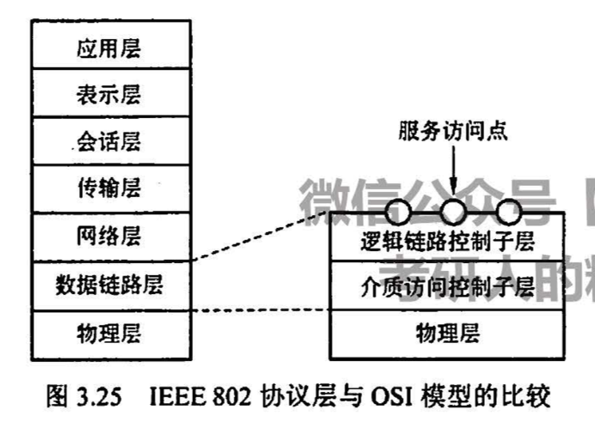</p><p>&nbsp;</p><p><strong><span>LLC(逻辑链路控制子层)功能：</span></strong></p><ul><li><strong><span>建立与释放连接</span></strong></li><li><span>提供高层接口</span></li><li><span>差错控制</span></li><li><strong><span>给帧加序号</span></strong></li></ul><p><strong><span>MAC(媒体访问控制子层)功能：</span></strong></p><ul><li><strong><span>组帧和拆帧</span></strong></li><li><strong><span>比特差错检测</span></strong></li><li><span>寻址</span></li><li><span>竞争处理</span></li></ul><h3 id='ieee80211无线局域网'><span>IEEE802.11无线局域网</span></h3><p><strong><span>802.11 MAC帧格式：</span></strong></p><p></p><ul><li><mjx-container class="MathJax" jax="SVG" style="position: relative;"><svg xmlns="http://www.w3.org/2000/svg" width="37.24ex" height="2.149ex" role="img" focusable="false" viewBox="0 -750 16459.9 950" xmlns:xlink="http://www.w3.org/1999/xlink" aria-hidden="true" style="vertical-align: -0.452ex;"><defs><path id="MJX-357-TEX-N-32" d="M109 429Q82 429 66 447T50 491Q50 562 103 614T235 666Q326 666 387 610T449 465Q449 422 429 383T381 315T301 241Q265 210 201 149L142 93L218 92Q375 92 385 97Q392 99 409 186V189H449V186Q448 183 436 95T421 3V0H50V19V31Q50 38 56 46T86 81Q115 113 136 137Q145 147 170 174T204 211T233 244T261 278T284 308T305 340T320 369T333 401T340 431T343 464Q343 527 309 573T212 619Q179 619 154 602T119 569T109 550Q109 549 114 549Q132 549 151 535T170 489Q170 464 154 447T109 429Z"></path><path id="MJX-357-TEX-N-2192" d="M56 237T56 250T70 270H835Q719 357 692 493Q692 494 692 496T691 499Q691 511 708 511H711Q720 511 723 510T729 506T732 497T735 481T743 456Q765 389 816 336T935 261Q944 258 944 250Q944 244 939 241T915 231T877 212Q836 186 806 152T761 85T740 35T732 4Q730 -6 727 -8T711 -11Q691 -11 691 0Q691 7 696 25Q728 151 835 230H70Q56 237 56 250Z"></path><path id="MJX-357-TEX-N-31" d="M213 578L200 573Q186 568 160 563T102 556H83V602H102Q149 604 189 617T245 641T273 663Q275 666 285 666Q294 666 302 660V361L303 61Q310 54 315 52T339 48T401 46H427V0H416Q395 3 257 3Q121 3 100 0H88V46H114Q136 46 152 46T177 47T193 50T201 52T207 57T213 61V578Z"></path><path id="MJX-357-TEX-N-33" d="M127 463Q100 463 85 480T69 524Q69 579 117 622T233 665Q268 665 277 664Q351 652 390 611T430 522Q430 470 396 421T302 350L299 348Q299 347 308 345T337 336T375 315Q457 262 457 175Q457 96 395 37T238 -22Q158 -22 100 21T42 130Q42 158 60 175T105 193Q133 193 151 175T169 130Q169 119 166 110T159 94T148 82T136 74T126 70T118 67L114 66Q165 21 238 21Q293 21 321 74Q338 107 338 175V195Q338 290 274 322Q259 328 213 329L171 330L168 332Q166 335 166 348Q166 366 174 366Q202 366 232 371Q266 376 294 413T322 525V533Q322 590 287 612Q265 626 240 626Q208 626 181 615T143 592T132 580H135Q138 579 143 578T153 573T165 566T175 555T183 540T186 520Q186 498 172 481T127 463Z"></path></defs><g stroke="currentColor" fill="currentColor" stroke-width="0" transform="scale(1,-1)"><g data-mml-node="math"><g data-mml-node="mtext"><text data-variant="normal" transform="scale(1,-1)" font-size="884px" font-family="serif">口</text></g><g data-mml-node="mtext" transform="translate(826.9,0)"><text data-variant="normal" transform="scale(1,-1)" font-size="884px" font-family="serif">诀</text></g><g data-mml-node="mi" transform="translate(1653.8,0)"><text data-variant="italic" transform="scale(1,-1)" font-size="884px" font-family="serif" font-style="italic">：</text></g><g data-mml-node="mtext" transform="translate(2480.7,0)"><text data-variant="normal" transform="scale(1,-1)" font-size="884px" font-family="serif">从</text></g><g data-mml-node="mtext" transform="translate(3351.1,0)"><text data-variant="normal" transform="scale(1,-1)" font-size="884px" font-family="serif">地</text></g><g data-mml-node="mtext" transform="translate(4178,0)"><text data-variant="normal" transform="scale(1,-1)" font-size="884px" font-family="serif">址</text></g><g data-mml-node="mn" transform="translate(5004.9,0)"><use data-c="32" xlink:href="#MJX-357-TEX-N-32"></use></g><g data-mml-node="mo" transform="translate(5782.6,0)"><use data-c="2192" xlink:href="#MJX-357-TEX-N-2192"></use></g><g data-mml-node="mtext" transform="translate(7060.4,0)"><text data-variant="normal" transform="scale(1,-1)" font-size="884px" font-family="serif">地</text></g><g data-mml-node="mtext" transform="translate(7887.3,0)"><text data-variant="normal" transform="scale(1,-1)" font-size="884px" font-family="serif">址</text></g><g data-mml-node="mn" transform="translate(8714.2,0)"><use data-c="31" xlink:href="#MJX-357-TEX-N-31"></use></g><g data-mml-node="mi" transform="translate(9214.2,0)"><text data-variant="italic" transform="scale(1,-1)" font-size="884px" font-family="serif" font-style="italic">，</text></g><g data-mml-node="mtext" transform="translate(10041.1,0)"><text data-variant="normal" transform="scale(1,-1)" font-size="884px" font-family="serif">剩</text></g><g data-mml-node="mtext" transform="translate(10911.5,0)"><text data-variant="normal" transform="scale(1,-1)" font-size="884px" font-family="serif">下</text></g><g data-mml-node="mtext" transform="translate(11781.9,0)"><text data-variant="normal" transform="scale(1,-1)" font-size="884px" font-family="serif">一</text></g><g data-mml-node="mtext" transform="translate(12608.8,0)"><text data-variant="normal" transform="scale(1,-1)" font-size="884px" font-family="serif">个</text></g><g data-mml-node="mtext" transform="translate(13435.7,0)"><text data-variant="normal" transform="scale(1,-1)" font-size="884px" font-family="serif">为</text></g><g data-mml-node="mtext" transform="translate(14306.1,0)"><text data-variant="normal" transform="scale(1,-1)" font-size="884px" font-family="serif">地</text></g><g data-mml-node="mtext" transform="translate(15133,0)"><text data-variant="normal" transform="scale(1,-1)" font-size="884px" font-family="serif">址</text></g><g data-mml-node="mn" transform="translate(15959.9,0)"><use data-c="33" xlink:href="#MJX-357-TEX-N-33"></use></g></g></g></svg><mjx-assistive-mml unselectable="on" display="inline"><math xmlns="http://www.w3.org/1998/Math/MathML"><mtext>口</mtext><mtext>诀</mtext><mi>：</mi><mtext>从</mtext><mtext>地</mtext><mtext>址</mtext><mn>2</mn><mo stretchy="false">→</mo><mtext>地</mtext><mtext>址</mtext><mn>1</mn><mi>，</mi><mtext>剩</mtext><mtext>下</mtext><mtext>一</mtext><mtext>个</mtext><mtext>为</mtext><mtext>地</mtext><mtext>址</mtext><mn>3</mn></math></mjx-assistive-mml></mjx-container><script type="math/tex">口诀：从地址2\rightarrow 地址1，剩下一个为地址3</script></li></ul><blockquote><p><span>这句口诀的核心在于搞清楚题目所问的802.11帧（在经典两段链路中）是在</span><strong><u><span>哪两个设备之间传输</span></u></strong><span>，以及</span><strong><u><span>传输的方向</span></u></strong></p></blockquote><p><mjx-container class="MathJax" jax="SVG" style="position: relative;"><svg xmlns="http://www.w3.org/2000/svg" width="5.809ex" height="2.149ex" role="img" focusable="false" viewBox="0 -750 2567.7 950" xmlns:xlink="http://www.w3.org/1999/xlink" aria-hidden="true" style="vertical-align: -0.452ex;"><defs></defs><g stroke="currentColor" fill="currentColor" stroke-width="0" transform="scale(1,-1)"><g data-mml-node="math"><g data-mml-node="mtext"><text data-variant="normal" transform="scale(1,-1)" font-size="884px" font-family="serif">例</text></g><g data-mml-node="mtext" transform="translate(870.4,0)"><text data-variant="normal" transform="scale(1,-1)" font-size="884px" font-family="serif">题</text></g><g data-mml-node="mi" transform="translate(1740.8,0)"><text data-variant="italic" transform="scale(1,-1)" font-size="884px" font-family="serif" font-style="italic">：</text></g></g></g></svg><mjx-assistive-mml unselectable="on" display="inline"><math xmlns="http://www.w3.org/1998/Math/MathML"><mtext>例</mtext><mtext>题</mtext><mi>：</mi></math></mjx-assistive-mml></mjx-container><script type="math/tex">例题：</script></p><blockquote><p><span>【17年T35】</span></p><div>

</div><p>&nbsp;</p><p><mjx-container class="MathJax" jax="SVG" style="position: relative;"><svg xmlns="http://www.w3.org/2000/svg" width="5.809ex" height="2.149ex" role="img" focusable="false" viewBox="0 -750 2567.7 950" xmlns:xlink="http://www.w3.org/1999/xlink" aria-hidden="true" style="vertical-align: -0.452ex;"><defs></defs><g stroke="currentColor" fill="currentColor" stroke-width="0" transform="scale(1,-1)"><g data-mml-node="math"><g data-mml-node="mtext"><text data-variant="normal" transform="scale(1,-1)" font-size="884px" font-family="serif">解</text></g><g data-mml-node="mtext" transform="translate(870.4,0)"><text data-variant="normal" transform="scale(1,-1)" font-size="884px" font-family="serif">析</text></g><g data-mml-node="mi" transform="translate(1740.8,0)"><text data-variant="italic" transform="scale(1,-1)" font-size="884px" font-family="serif" font-style="italic">：</text></g></g></g></svg><mjx-assistive-mml unselectable="on" display="inline"><math xmlns="http://www.w3.org/1998/Math/MathML"><mtext>解</mtext><mtext>析</mtext><mi>：</mi></math></mjx-assistive-mml></mjx-container><script type="math/tex">解析：</script></p><p><mjx-container class="MathJax" jax="SVG" style="position: relative;"><svg xmlns="http://www.w3.org/2000/svg" width="73.05ex" height="2.149ex" role="img" focusable="false" viewBox="0 -750 32288 950" xmlns:xlink="http://www.w3.org/1999/xlink" aria-hidden="true" style="vertical-align: -0.452ex;"><defs><path id="MJX-360-TEX-I-1D439" d="M48 1Q31 1 31 11Q31 13 34 25Q38 41 42 43T65 46Q92 46 125 49Q139 52 144 61Q146 66 215 342T285 622Q285 629 281 629Q273 632 228 634H197Q191 640 191 642T193 659Q197 676 203 680H742Q749 676 749 669Q749 664 736 557T722 447Q720 440 702 440H690Q683 445 683 453Q683 454 686 477T689 530Q689 560 682 579T663 610T626 626T575 633T503 634H480Q398 633 393 631Q388 629 386 623Q385 622 352 492L320 363H375Q378 363 398 363T426 364T448 367T472 374T489 386Q502 398 511 419T524 457T529 475Q532 480 548 480H560Q567 475 567 470Q567 467 536 339T502 207Q500 200 482 200H470Q463 206 463 212Q463 215 468 234T473 274Q473 303 453 310T364 317H309L277 190Q245 66 245 60Q245 46 334 46H359Q365 40 365 39T363 19Q359 6 353 0H336Q295 2 185 2Q120 2 86 2T48 1Z"></path><path id="MJX-360-TEX-I-1D43B" d="M228 637Q194 637 192 641Q191 643 191 649Q191 673 202 682Q204 683 219 683Q260 681 355 681Q389 681 418 681T463 682T483 682Q499 682 499 672Q499 670 497 658Q492 641 487 638H485Q483 638 480 638T473 638T464 637T455 637Q416 636 405 634T387 623Q384 619 355 500Q348 474 340 442T328 395L324 380Q324 378 469 378H614L615 381Q615 384 646 504Q674 619 674 627T617 637Q594 637 587 639T580 648Q580 650 582 660Q586 677 588 679T604 682Q609 682 646 681T740 680Q802 680 835 681T871 682Q888 682 888 672Q888 645 876 638H874Q872 638 869 638T862 638T853 637T844 637Q805 636 794 634T776 623Q773 618 704 340T634 58Q634 51 638 51Q646 48 692 46H723Q729 38 729 37T726 19Q722 6 716 0H701Q664 2 567 2Q533 2 504 2T458 2T437 1Q420 1 420 10Q420 15 423 24Q428 43 433 45Q437 46 448 46H454Q481 46 514 49Q520 50 522 50T528 55T534 64T540 82T547 110T558 153Q565 181 569 198Q602 330 602 331T457 332H312L279 197Q245 63 245 58Q245 51 253 49T303 46H334Q340 38 340 37T337 19Q333 6 327 0H312Q275 2 178 2Q144 2 115 2T69 2T48 1Q31 1 31 10Q31 12 34 24Q39 43 44 45Q48 46 59 46H65Q92 46 125 49Q139 52 144 61Q147 65 216 339T285 628Q285 635 228 637Z"></path><path id="MJX-360-TEX-I-1D434" d="M208 74Q208 50 254 46Q272 46 272 35Q272 34 270 22Q267 8 264 4T251 0Q249 0 239 0T205 1T141 2Q70 2 50 0H42Q35 7 35 11Q37 38 48 46H62Q132 49 164 96Q170 102 345 401T523 704Q530 716 547 716H555H572Q578 707 578 706L606 383Q634 60 636 57Q641 46 701 46Q726 46 726 36Q726 34 723 22Q720 7 718 4T704 0Q701 0 690 0T651 1T578 2Q484 2 455 0H443Q437 6 437 9T439 27Q443 40 445 43L449 46H469Q523 49 533 63L521 213H283L249 155Q208 86 208 74ZM516 260Q516 271 504 416T490 562L463 519Q447 492 400 412L310 260L413 259Q516 259 516 260Z"></path><path id="MJX-360-TEX-I-1D443" d="M287 628Q287 635 230 637Q206 637 199 638T192 648Q192 649 194 659Q200 679 203 681T397 683Q587 682 600 680Q664 669 707 631T751 530Q751 453 685 389Q616 321 507 303Q500 302 402 301H307L277 182Q247 66 247 59Q247 55 248 54T255 50T272 48T305 46H336Q342 37 342 35Q342 19 335 5Q330 0 319 0Q316 0 282 1T182 2Q120 2 87 2T51 1Q33 1 33 11Q33 13 36 25Q40 41 44 43T67 46Q94 46 127 49Q141 52 146 61Q149 65 218 339T287 628ZM645 554Q645 567 643 575T634 597T609 619T560 635Q553 636 480 637Q463 637 445 637T416 636T404 636Q391 635 386 627Q384 621 367 550T332 412T314 344Q314 342 395 342H407H430Q542 342 590 392Q617 419 631 471T645 554Z"></path><path id="MJX-360-TEX-N-32" d="M109 429Q82 429 66 447T50 491Q50 562 103 614T235 666Q326 666 387 610T449 465Q449 422 429 383T381 315T301 241Q265 210 201 149L142 93L218 92Q375 92 385 97Q392 99 409 186V189H449V186Q448 183 436 95T421 3V0H50V19V31Q50 38 56 46T86 81Q115 113 136 137Q145 147 170 174T204 211T233 244T261 278T284 308T305 340T320 369T333 401T340 431T343 464Q343 527 309 573T212 619Q179 619 154 602T119 569T109 550Q109 549 114 549Q132 549 151 535T170 489Q170 464 154 447T109 429Z"></path><path id="MJX-360-TEX-N-31" d="M213 578L200 573Q186 568 160 563T102 556H83V602H102Q149 604 189 617T245 641T273 663Q275 666 285 666Q294 666 302 660V361L303 61Q310 54 315 52T339 48T401 46H427V0H416Q395 3 257 3Q121 3 100 0H88V46H114Q136 46 152 46T177 47T193 50T201 52T207 57T213 61V578Z"></path><path id="MJX-360-TEX-I-1D445" d="M230 637Q203 637 198 638T193 649Q193 676 204 682Q206 683 378 683Q550 682 564 680Q620 672 658 652T712 606T733 563T739 529Q739 484 710 445T643 385T576 351T538 338L545 333Q612 295 612 223Q612 212 607 162T602 80V71Q602 53 603 43T614 25T640 16Q668 16 686 38T712 85Q717 99 720 102T735 105Q755 105 755 93Q755 75 731 36Q693 -21 641 -21H632Q571 -21 531 4T487 82Q487 109 502 166T517 239Q517 290 474 313Q459 320 449 321T378 323H309L277 193Q244 61 244 59Q244 55 245 54T252 50T269 48T302 46H333Q339 38 339 37T336 19Q332 6 326 0H311Q275 2 180 2Q146 2 117 2T71 2T50 1Q33 1 33 10Q33 12 36 24Q41 43 46 45Q50 46 61 46H67Q94 46 127 49Q141 52 146 61Q149 65 218 339T287 628Q287 635 230 637ZM630 554Q630 586 609 608T523 636Q521 636 500 636T462 637H440Q393 637 386 627Q385 624 352 494T319 361Q319 360 388 360Q466 361 492 367Q556 377 592 426Q608 449 619 486T630 554Z"></path><path id="MJX-360-TEX-N-33" d="M127 463Q100 463 85 480T69 524Q69 579 117 622T233 665Q268 665 277 664Q351 652 390 611T430 522Q430 470 396 421T302 350L299 348Q299 347 308 345T337 336T375 315Q457 262 457 175Q457 96 395 37T238 -22Q158 -22 100 21T42 130Q42 158 60 175T105 193Q133 193 151 175T169 130Q169 119 166 110T159 94T148 82T136 74T126 70T118 67L114 66Q165 21 238 21Q293 21 321 74Q338 107 338 175V195Q338 290 274 322Q259 328 213 329L171 330L168 332Q166 335 166 348Q166 366 174 366Q202 366 232 371Q266 376 294 413T322 525V533Q322 590 287 612Q265 626 240 626Q208 626 181 615T143 592T132 580H135Q138 579 143 578T153 573T165 566T175 555T183 540T186 520Q186 498 172 481T127 463Z"></path></defs><g stroke="currentColor" fill="currentColor" stroke-width="0" transform="scale(1,-1)"><g data-mml-node="math"><g data-mml-node="mtext"><text data-variant="normal" transform="scale(1,-1)" font-size="884px" font-family="serif">由</text></g><g data-mml-node="mtext" transform="translate(826.9,0)"><text data-variant="normal" transform="scale(1,-1)" font-size="884px" font-family="serif">图</text></g><g data-mml-node="mtext" transform="translate(1697.3,0)"><text data-variant="normal" transform="scale(1,-1)" font-size="884px" font-family="serif">可</text></g><g data-mml-node="mtext" transform="translate(2567.7,0)"><text data-variant="normal" transform="scale(1,-1)" font-size="884px" font-family="serif">知</text></g><g data-mml-node="mi" transform="translate(3438.1,0)"><use data-c="1D439" xlink:href="#MJX-360-TEX-I-1D439"></use></g><g data-mml-node="mtext" transform="translate(4187.1,0)"><text data-variant="normal" transform="scale(1,-1)" font-size="884px" font-family="serif">帧</text></g><g data-mml-node="mtext" transform="translate(5014,0)"><text data-variant="normal" transform="scale(1,-1)" font-size="884px" font-family="serif">从</text></g><g data-mml-node="mi" transform="translate(5884.4,0)"><use data-c="1D43B" xlink:href="#MJX-360-TEX-I-1D43B"></use></g><g data-mml-node="mtext" transform="translate(6772.4,0)"><text data-variant="normal" transform="scale(1,-1)" font-size="884px" font-family="serif">发</text></g><g data-mml-node="mtext" transform="translate(7599.3,0)"><text data-variant="normal" transform="scale(1,-1)" font-size="884px" font-family="serif">往</text></g><g data-mml-node="mi" transform="translate(8469.7,0)"><use data-c="1D434" xlink:href="#MJX-360-TEX-I-1D434"></use></g><g data-mml-node="mi" transform="translate(9219.7,0)"><use data-c="1D443" xlink:href="#MJX-360-TEX-I-1D443"></use></g><g data-mml-node="mi" transform="translate(9970.7,0)"><text data-variant="italic" transform="scale(1,-1)" font-size="884px" font-family="serif" font-style="italic">，</text></g><g data-mml-node="mtext" transform="translate(10797.6,0)"><text data-variant="normal" transform="scale(1,-1)" font-size="884px" font-family="serif">应</text></g><g data-mml-node="mtext" transform="translate(11668,0)"><text data-variant="normal" transform="scale(1,-1)" font-size="884px" font-family="serif">用</text></g><g data-mml-node="mtext" transform="translate(12494.9,0)"><text data-variant="normal" transform="scale(1,-1)" font-size="884px" font-family="serif">口</text></g><g data-mml-node="mtext" transform="translate(13321.8,0)"><text data-variant="normal" transform="scale(1,-1)" font-size="884px" font-family="serif">诀</text></g><g data-mml-node="mi" transform="translate(14148.7,0)"><text data-variant="italic" transform="scale(1,-1)" font-size="884px" font-family="serif" font-style="italic">：</text></g><g data-mml-node="mi" transform="translate(14975.6,0)"><use data-c="1D43B" xlink:href="#MJX-360-TEX-I-1D43B"></use></g><g data-mml-node="mtext" transform="translate(15863.6,0)"><text data-variant="normal" transform="scale(1,-1)" font-size="884px" font-family="serif">为</text></g><g data-mml-node="mtext" transform="translate(16734,0)"><text data-variant="normal" transform="scale(1,-1)" font-size="884px" font-family="serif">地</text></g><g data-mml-node="mtext" transform="translate(17560.9,0)"><text data-variant="normal" transform="scale(1,-1)" font-size="884px" font-family="serif">址</text></g><g data-mml-node="mn" transform="translate(18387.8,0)"><use data-c="32" xlink:href="#MJX-360-TEX-N-32"></use></g><g data-mml-node="mi" transform="translate(18887.8,0)"><text data-variant="italic" transform="scale(1,-1)" font-size="884px" font-family="serif" font-style="italic">，</text></g><g data-mml-node="mi" transform="translate(19714.6,0)"><use data-c="1D434" xlink:href="#MJX-360-TEX-I-1D434"></use></g><g data-mml-node="mi" transform="translate(20464.6,0)"><use data-c="1D443" xlink:href="#MJX-360-TEX-I-1D443"></use></g><g data-mml-node="mtext" transform="translate(21215.6,0)"><text data-variant="normal" transform="scale(1,-1)" font-size="884px" font-family="serif">为</text></g><g data-mml-node="mtext" transform="translate(22086,0)"><text data-variant="normal" transform="scale(1,-1)" font-size="884px" font-family="serif">地</text></g><g data-mml-node="mtext" transform="translate(22912.9,0)"><text data-variant="normal" transform="scale(1,-1)" font-size="884px" font-family="serif">址</text></g><g data-mml-node="mn" transform="translate(23739.8,0)"><use data-c="31" xlink:href="#MJX-360-TEX-N-31"></use></g><g data-mml-node="mi" transform="translate(24239.8,0)"><text data-variant="italic" transform="scale(1,-1)" font-size="884px" font-family="serif" font-style="italic">，</text></g><g data-mml-node="mtext" transform="translate(25066.7,0)"><text data-variant="normal" transform="scale(1,-1)" font-size="884px" font-family="serif">则</text></g><g data-mml-node="mtext" transform="translate(25937.1,0)"><text data-variant="normal" transform="scale(1,-1)" font-size="884px" font-family="serif">剩</text></g><g data-mml-node="mtext" transform="translate(26807.5,0)"><text data-variant="normal" transform="scale(1,-1)" font-size="884px" font-family="serif">下</text></g><g data-mml-node="mtext" transform="translate(27677.9,0)"><text data-variant="normal" transform="scale(1,-1)" font-size="884px" font-family="serif">的</text></g><g data-mml-node="mi" transform="translate(28504.8,0)"><use data-c="1D445" xlink:href="#MJX-360-TEX-I-1D445"></use></g><g data-mml-node="mtext" transform="translate(29263.8,0)"><text data-variant="normal" transform="scale(1,-1)" font-size="884px" font-family="serif">为</text></g><g data-mml-node="mtext" transform="translate(30134.2,0)"><text data-variant="normal" transform="scale(1,-1)" font-size="884px" font-family="serif">地</text></g><g data-mml-node="mtext" transform="translate(30961.1,0)"><text data-variant="normal" transform="scale(1,-1)" font-size="884px" font-family="serif">址</text></g><g data-mml-node="mn" transform="translate(31788,0)"><use data-c="33" xlink:href="#MJX-360-TEX-N-33"></use></g></g></g></svg><mjx-assistive-mml unselectable="on" display="inline"><math xmlns="http://www.w3.org/1998/Math/MathML"><mtext>由</mtext><mtext>图</mtext><mtext>可</mtext><mtext>知</mtext><mi>F</mi><mtext>帧</mtext><mtext>从</mtext><mi>H</mi><mtext>发</mtext><mtext>往</mtext><mi>A</mi><mi>P</mi><mi>，</mi><mtext>应</mtext><mtext>用</mtext><mtext>口</mtext><mtext>诀</mtext><mi>：</mi><mi>H</mi><mtext>为</mtext><mtext>地</mtext><mtext>址</mtext><mn>2</mn><mi>，</mi><mi>A</mi><mi>P</mi><mtext>为</mtext><mtext>地</mtext><mtext>址</mtext><mn>1</mn><mi>，</mi><mtext>则</mtext><mtext>剩</mtext><mtext>下</mtext><mtext>的</mtext><mi>R</mi><mtext>为</mtext><mtext>地</mtext><mtext>址</mtext><mn>3</mn></math></mjx-assistive-mml></mjx-container><script type="math/tex">由图可知F帧从H发往AP，应用口诀：H为地址2，AP为地址1，则剩下的R为地址3</script></p><p><mjx-container class="MathJax" jax="SVG" style="position: relative;"><svg xmlns="http://www.w3.org/2000/svg" width="3.588ex" height="2.149ex" role="img" focusable="false" viewBox="0 -750 1585.9 950" xmlns:xlink="http://www.w3.org/1999/xlink" aria-hidden="true" style="vertical-align: -0.452ex;"><defs><path id="MJX-361-TEX-I-1D435" d="M231 637Q204 637 199 638T194 649Q194 676 205 682Q206 683 335 683Q594 683 608 681Q671 671 713 636T756 544Q756 480 698 429T565 360L555 357Q619 348 660 311T702 219Q702 146 630 78T453 1Q446 0 242 0Q42 0 39 2Q35 5 35 10Q35 17 37 24Q42 43 47 45Q51 46 62 46H68Q95 46 128 49Q142 52 147 61Q150 65 219 339T288 628Q288 635 231 637ZM649 544Q649 574 634 600T585 634Q578 636 493 637Q473 637 451 637T416 636H403Q388 635 384 626Q382 622 352 506Q352 503 351 500L320 374H401Q482 374 494 376Q554 386 601 434T649 544ZM595 229Q595 273 572 302T512 336Q506 337 429 337Q311 337 310 336Q310 334 293 263T258 122L240 52Q240 48 252 48T333 46Q422 46 429 47Q491 54 543 105T595 229Z"></path></defs><g stroke="currentColor" fill="currentColor" stroke-width="0" transform="scale(1,-1)"><g data-mml-node="math"><g data-mml-node="mtext"><text data-variant="normal" transform="scale(1,-1)" font-size="884px" font-family="serif">选</text></g><g data-mml-node="mi" transform="translate(826.9,0)"><use data-c="1D435" xlink:href="#MJX-361-TEX-I-1D435"></use></g></g></g></svg><mjx-assistive-mml unselectable="on" display="inline"><math xmlns="http://www.w3.org/1998/Math/MathML"><mtext>选</mtext><mi>B</mi></math></mjx-assistive-mml></mjx-container><script type="math/tex">选B</script></p></blockquote><p>&nbsp;</p><h3 id='vlan'><span>VLAN</span></h3><p><span>VLAN被设计的初衷：隔绝广播域（因此一个VLAN就是一个广播域）</span></p><p><strong><span>优点：</span></strong></p><ul><li><span>有效共享网络资源  【易错选：链路聚合】</span></li><li><span>简化网络管理</span></li><li><span>提高安全性</span></li></ul><p><strong><span>划分方式</span></strong><span>：</span></p><ul><li><span>基于端口</span></li><li><span>基于MAC</span></li><li><span>基于IP</span></li></ul><h3 id='数链层设备'><span>数链层设备</span></h3><h4 id='以太网交换机'><span>以太网交换机</span></h4><ul><li><span>本质：多端口的</span><strong><span>网桥</span></strong></li><li><span>特点：独占传输媒体带宽，</span><strong><span>带宽随着连接设备的增多而增大</span></strong><span>（最大优点）</span></li></ul><p><strong><span>交换机类型</span></strong></p><ul><li><strong><span>直通式：</span></strong><span>延迟小；</span><strong><span>只检查目的MAC地址(6B)【意味着最少只需要读6B的内容即可】</span></strong></li><li><strong><span>存储转发式：</span></strong><span>可靠性高，支持</span><strong><span>不同速率端口</span></strong><span>之间转换【</span><strong><span>缺点</span></strong><span>：延迟较大】</span></li></ul><p><mjx-container class="MathJax" jax="SVG" style="position: relative;"><svg xmlns="http://www.w3.org/2000/svg" width="5.809ex" height="2.149ex" role="img" focusable="false" viewBox="0 -750 2567.7 950" xmlns:xlink="http://www.w3.org/1999/xlink" aria-hidden="true" style="vertical-align: -0.452ex;"><defs></defs><g stroke="currentColor" fill="currentColor" stroke-width="0" transform="scale(1,-1)"><g data-mml-node="math"><g data-mml-node="mtext"><text data-variant="normal" transform="scale(1,-1)" font-size="884px" font-family="serif">例</text></g><g data-mml-node="mtext" transform="translate(870.4,0)"><text data-variant="normal" transform="scale(1,-1)" font-size="884px" font-family="serif">题</text></g><g data-mml-node="mi" transform="translate(1740.8,0)"><text data-variant="italic" transform="scale(1,-1)" font-size="884px" font-family="serif" font-style="italic">：</text></g></g></g></svg><mjx-assistive-mml unselectable="on" display="inline"><math xmlns="http://www.w3.org/1998/Math/MathML"><mtext>例</mtext><mtext>题</mtext><mi>：</mi></math></mjx-assistive-mml></mjx-container><script type="math/tex">例题：</script></p><blockquote><div>

</div><p><mjx-container class="MathJax" jax="SVG" style="position: relative;"><svg xmlns="http://www.w3.org/2000/svg" width="5.809ex" height="2.149ex" role="img" focusable="false" viewBox="0 -750 2567.7 950" xmlns:xlink="http://www.w3.org/1999/xlink" aria-hidden="true" style="vertical-align: -0.452ex;"><defs></defs><g stroke="currentColor" fill="currentColor" stroke-width="0" transform="scale(1,-1)"><g data-mml-node="math"><g data-mml-node="mtext"><text data-variant="normal" transform="scale(1,-1)" font-size="884px" font-family="serif">解</text></g><g data-mml-node="mtext" transform="translate(870.4,0)"><text data-variant="normal" transform="scale(1,-1)" font-size="884px" font-family="serif">析</text></g><g data-mml-node="mi" transform="translate(1740.8,0)"><text data-variant="italic" transform="scale(1,-1)" font-size="884px" font-family="serif" font-style="italic">：</text></g></g></g></svg><mjx-assistive-mml unselectable="on" display="inline"><math xmlns="http://www.w3.org/1998/Math/MathML"><mtext>解</mtext><mtext>析</mtext><mi>：</mi></math></mjx-assistive-mml></mjx-container><script type="math/tex">解析：</script></p><p><mjx-container class="MathJax" jax="SVG" style="position: relative;"><svg xmlns="http://www.w3.org/2000/svg" width="43.554ex" height="3.093ex" role="img" focusable="false" viewBox="0 -884.7 19250.9 1366.9" xmlns:xlink="http://www.w3.org/1999/xlink" aria-hidden="true" style="vertical-align: -1.091ex;"><defs><path id="MJX-364-TEX-N-36" d="M42 313Q42 476 123 571T303 666Q372 666 402 630T432 550Q432 525 418 510T379 495Q356 495 341 509T326 548Q326 592 373 601Q351 623 311 626Q240 626 194 566Q147 500 147 364L148 360Q153 366 156 373Q197 433 263 433H267Q313 433 348 414Q372 400 396 374T435 317Q456 268 456 210V192Q456 169 451 149Q440 90 387 34T253 -22Q225 -22 199 -14T143 16T92 75T56 172T42 313ZM257 397Q227 397 205 380T171 335T154 278T148 216Q148 133 160 97T198 39Q222 21 251 21Q302 21 329 59Q342 77 347 104T352 209Q352 289 347 316T329 361Q302 397 257 397Z"></path><path id="MJX-364-TEX-I-1D435" d="M231 637Q204 637 199 638T194 649Q194 676 205 682Q206 683 335 683Q594 683 608 681Q671 671 713 636T756 544Q756 480 698 429T565 360L555 357Q619 348 660 311T702 219Q702 146 630 78T453 1Q446 0 242 0Q42 0 39 2Q35 5 35 10Q35 17 37 24Q42 43 47 45Q51 46 62 46H68Q95 46 128 49Q142 52 147 61Q150 65 219 339T288 628Q288 635 231 637ZM649 544Q649 574 634 600T585 634Q578 636 493 637Q473 637 451 637T416 636H403Q388 635 384 626Q382 622 352 506Q352 503 351 500L320 374H401Q482 374 494 376Q554 386 601 434T649 544ZM595 229Q595 273 572 302T512 336Q506 337 429 337Q311 337 310 336Q310 334 293 263T258 122L240 52Q240 48 252 48T333 46Q422 46 429 47Q491 54 543 105T595 229Z"></path><path id="MJX-364-TEX-N-31" d="M213 578L200 573Q186 568 160 563T102 556H83V602H102Q149 604 189 617T245 641T273 663Q275 666 285 666Q294 666 302 660V361L303 61Q310 54 315 52T339 48T401 46H427V0H416Q395 3 257 3Q121 3 100 0H88V46H114Q136 46 152 46T177 47T193 50T201 52T207 57T213 61V578Z"></path><path id="MJX-364-TEX-N-30" d="M96 585Q152 666 249 666Q297 666 345 640T423 548Q460 465 460 320Q460 165 417 83Q397 41 362 16T301 -15T250 -22Q224 -22 198 -16T137 16T82 83Q39 165 39 320Q39 494 96 585ZM321 597Q291 629 250 629Q208 629 178 597Q153 571 145 525T137 333Q137 175 145 125T181 46Q209 16 250 16Q290 16 318 46Q347 76 354 130T362 333Q362 478 354 524T321 597Z"></path><path id="MJX-364-TEX-I-1D440" d="M289 629Q289 635 232 637Q208 637 201 638T194 648Q194 649 196 659Q197 662 198 666T199 671T201 676T203 679T207 681T212 683T220 683T232 684Q238 684 262 684T307 683Q386 683 398 683T414 678Q415 674 451 396L487 117L510 154Q534 190 574 254T662 394Q837 673 839 675Q840 676 842 678T846 681L852 683H948Q965 683 988 683T1017 684Q1051 684 1051 673Q1051 668 1048 656T1045 643Q1041 637 1008 637Q968 636 957 634T939 623Q936 618 867 340T797 59Q797 55 798 54T805 50T822 48T855 46H886Q892 37 892 35Q892 19 885 5Q880 0 869 0Q864 0 828 1T736 2Q675 2 644 2T609 1Q592 1 592 11Q592 13 594 25Q598 41 602 43T625 46Q652 46 685 49Q699 52 704 61Q706 65 742 207T813 490T848 631L654 322Q458 10 453 5Q451 4 449 3Q444 0 433 0Q418 0 415 7Q413 11 374 317L335 624L267 354Q200 88 200 79Q206 46 272 46H282Q288 41 289 37T286 19Q282 3 278 1Q274 0 267 0Q265 0 255 0T221 1T157 2Q127 2 95 1T58 0Q43 0 39 2T35 11Q35 13 38 25T43 40Q45 46 65 46Q135 46 154 86Q158 92 223 354T289 629Z"></path><path id="MJX-364-TEX-I-1D44F" d="M73 647Q73 657 77 670T89 683Q90 683 161 688T234 694Q246 694 246 685T212 542Q204 508 195 472T180 418L176 399Q176 396 182 402Q231 442 283 442Q345 442 383 396T422 280Q422 169 343 79T173 -11Q123 -11 82 27T40 150V159Q40 180 48 217T97 414Q147 611 147 623T109 637Q104 637 101 637H96Q86 637 83 637T76 640T73 647ZM336 325V331Q336 405 275 405Q258 405 240 397T207 376T181 352T163 330L157 322L136 236Q114 150 114 114Q114 66 138 42Q154 26 178 26Q211 26 245 58Q270 81 285 114T318 219Q336 291 336 325Z"></path><path id="MJX-364-TEX-I-1D45D" d="M23 287Q24 290 25 295T30 317T40 348T55 381T75 411T101 433T134 442Q209 442 230 378L240 387Q302 442 358 442Q423 442 460 395T497 281Q497 173 421 82T249 -10Q227 -10 210 -4Q199 1 187 11T168 28L161 36Q160 35 139 -51T118 -138Q118 -144 126 -145T163 -148H188Q194 -155 194 -157T191 -175Q188 -187 185 -190T172 -194Q170 -194 161 -194T127 -193T65 -192Q-5 -192 -24 -194H-32Q-39 -187 -39 -183Q-37 -156 -26 -148H-6Q28 -147 33 -136Q36 -130 94 103T155 350Q156 355 156 364Q156 405 131 405Q109 405 94 377T71 316T59 280Q57 278 43 278H29Q23 284 23 287ZM178 102Q200 26 252 26Q282 26 310 49T356 107Q374 141 392 215T411 325V331Q411 405 350 405Q339 405 328 402T306 393T286 380T269 365T254 350T243 336T235 326L232 322Q232 321 229 308T218 264T204 212Q178 106 178 102Z"></path><path id="MJX-364-TEX-I-1D460" d="M131 289Q131 321 147 354T203 415T300 442Q362 442 390 415T419 355Q419 323 402 308T364 292Q351 292 340 300T328 326Q328 342 337 354T354 372T367 378Q368 378 368 379Q368 382 361 388T336 399T297 405Q249 405 227 379T204 326Q204 301 223 291T278 274T330 259Q396 230 396 163Q396 135 385 107T352 51T289 7T195 -10Q118 -10 86 19T53 87Q53 126 74 143T118 160Q133 160 146 151T160 120Q160 94 142 76T111 58Q109 57 108 57T107 55Q108 52 115 47T146 34T201 27Q237 27 263 38T301 66T318 97T323 122Q323 150 302 164T254 181T195 196T148 231Q131 256 131 289Z"></path><path id="MJX-364-TEX-N-3D" d="M56 347Q56 360 70 367H707Q722 359 722 347Q722 336 708 328L390 327H72Q56 332 56 347ZM56 153Q56 168 72 173H708Q722 163 722 153Q722 140 707 133H70Q56 140 56 153Z"></path><path id="MJX-364-TEX-N-34" d="M462 0Q444 3 333 3Q217 3 199 0H190V46H221Q241 46 248 46T265 48T279 53T286 61Q287 63 287 115V165H28V211L179 442Q332 674 334 675Q336 677 355 677H373L379 671V211H471V165H379V114Q379 73 379 66T385 54Q393 47 442 46H471V0H462ZM293 211V545L74 212L183 211H293Z"></path><path id="MJX-364-TEX-N-38" d="M70 417T70 494T124 618T248 666Q319 666 374 624T429 515Q429 485 418 459T392 417T361 389T335 371T324 363L338 354Q352 344 366 334T382 323Q457 264 457 174Q457 95 399 37T249 -22Q159 -22 101 29T43 155Q43 263 172 335L154 348Q133 361 127 368Q70 417 70 494ZM286 386L292 390Q298 394 301 396T311 403T323 413T334 425T345 438T355 454T364 471T369 491T371 513Q371 556 342 586T275 624Q268 625 242 625Q201 625 165 599T128 534Q128 511 141 492T167 463T217 431Q224 426 228 424L286 386ZM250 21Q308 21 350 55T392 137Q392 154 387 169T375 194T353 216T330 234T301 253T274 270Q260 279 244 289T218 306L210 311Q204 311 181 294T133 239T107 157Q107 98 150 60T250 21Z"></path><path id="MJX-364-TEX-N-2E" d="M78 60Q78 84 95 102T138 120Q162 120 180 104T199 61Q199 36 182 18T139 0T96 17T78 60Z"></path><path id="MJX-364-TEX-I-1D707" d="M58 -216Q44 -216 34 -208T23 -186Q23 -176 96 116T173 414Q186 442 219 442Q231 441 239 435T249 423T251 413Q251 401 220 279T187 142Q185 131 185 107V99Q185 26 252 26Q261 26 270 27T287 31T302 38T315 45T327 55T338 65T348 77T356 88T365 100L372 110L408 253Q444 395 448 404Q461 431 491 431Q504 431 512 424T523 412T525 402L449 84Q448 79 448 68Q448 43 455 35T476 26Q485 27 496 35Q517 55 537 131Q543 151 547 152Q549 153 557 153H561Q580 153 580 144Q580 138 575 117T555 63T523 13Q510 0 491 -8Q483 -10 467 -10Q446 -10 429 -4T402 11T385 29T376 44T374 51L368 45Q362 39 350 30T324 12T288 -4T246 -11Q199 -11 153 12L129 -85Q108 -167 104 -180T92 -202Q76 -216 58 -216Z"></path></defs><g stroke="currentColor" fill="currentColor" stroke-width="0" transform="scale(1,-1)"><g data-mml-node="math"><g data-mml-node="mtext"><text data-variant="normal" transform="scale(1,-1)" font-size="884px" font-family="serif">直</text></g><g data-mml-node="mtext" transform="translate(870.4,0)"><text data-variant="normal" transform="scale(1,-1)" font-size="884px" font-family="serif">通</text></g><g data-mml-node="mtext" transform="translate(1697.3,0)"><text data-variant="normal" transform="scale(1,-1)" font-size="884px" font-family="serif">式</text></g><g data-mml-node="mtext" transform="translate(2567.7,0)"><text data-variant="normal" transform="scale(1,-1)" font-size="884px" font-family="serif">只</text></g><g data-mml-node="mtext" transform="translate(3438.1,0)"><text data-variant="normal" transform="scale(1,-1)" font-size="884px" font-family="serif">检</text></g><g data-mml-node="mtext" transform="translate(4308.5,0)"><text data-variant="normal" transform="scale(1,-1)" font-size="884px" font-family="serif">查</text></g><g data-mml-node="mn" transform="translate(5178.9,0)"><use data-c="36" xlink:href="#MJX-364-TEX-N-36"></use></g><g data-mml-node="mi" transform="translate(5678.9,0)"><use data-c="1D435" xlink:href="#MJX-364-TEX-I-1D435"></use></g><g data-mml-node="mi" transform="translate(6437.9,0)"><text data-variant="italic" transform="scale(1,-1)" font-size="884px" font-family="serif" font-style="italic">：</text></g><g data-mml-node="mfrac" transform="translate(7264.8,0)"><g data-mml-node="mrow" transform="translate(1172.1,394) scale(0.707)"><g data-mml-node="mn"><use data-c="36" xlink:href="#MJX-364-TEX-N-36"></use></g><g data-mml-node="mi" transform="translate(500,0)"><use data-c="1D435" xlink:href="#MJX-364-TEX-I-1D435"></use></g></g><g data-mml-node="mrow" transform="translate(220,-345) scale(0.707)"><g data-mml-node="mn"><use data-c="31" xlink:href="#MJX-364-TEX-N-31"></use><use data-c="30" xlink:href="#MJX-364-TEX-N-30" transform="translate(500,0)"></use><use data-c="30" xlink:href="#MJX-364-TEX-N-30" transform="translate(1000,0)"></use></g><g data-mml-node="mi" transform="translate(1500,0)"><use data-c="1D440" xlink:href="#MJX-364-TEX-I-1D440"></use></g><g data-mml-node="mi" transform="translate(2551,0)"><use data-c="1D44F" xlink:href="#MJX-364-TEX-I-1D44F"></use></g><g data-mml-node="mi" transform="translate(2980,0)"><use data-c="1D45D" xlink:href="#MJX-364-TEX-I-1D45D"></use></g><g data-mml-node="mi" transform="translate(3483,0)"><use data-c="1D460" xlink:href="#MJX-364-TEX-I-1D460"></use></g></g><rect width="2994.5" height="60" x="120" y="220"></rect></g><g data-mml-node="mo" transform="translate(10777.1,0)"><use data-c="3D" xlink:href="#MJX-364-TEX-N-3D"></use></g><g data-mml-node="mfrac" transform="translate(11832.9,0)"><g data-mml-node="mrow" transform="translate(1112,394) scale(0.707)"><g data-mml-node="mn"><use data-c="34" xlink:href="#MJX-364-TEX-N-34"></use><use data-c="38" xlink:href="#MJX-364-TEX-N-38" transform="translate(500,0)"></use></g><g data-mml-node="mi" transform="translate(1000,0)"><use data-c="1D44F" xlink:href="#MJX-364-TEX-I-1D44F"></use></g></g><g data-mml-node="mrow" transform="translate(220,-345) scale(0.707)"><g data-mml-node="mn"><use data-c="31" xlink:href="#MJX-364-TEX-N-31"></use><use data-c="30" xlink:href="#MJX-364-TEX-N-30" transform="translate(500,0)"></use><use data-c="30" xlink:href="#MJX-364-TEX-N-30" transform="translate(1000,0)"></use></g><g data-mml-node="mi" transform="translate(1500,0)"><use data-c="1D440" xlink:href="#MJX-364-TEX-I-1D440"></use></g><g data-mml-node="mi" transform="translate(2551,0)"><use data-c="1D44F" xlink:href="#MJX-364-TEX-I-1D44F"></use></g><g data-mml-node="mi" transform="translate(2980,0)"><use data-c="1D45D" xlink:href="#MJX-364-TEX-I-1D45D"></use></g><g data-mml-node="mi" transform="translate(3483,0)"><use data-c="1D460" xlink:href="#MJX-364-TEX-I-1D460"></use></g></g><rect width="2994.5" height="60" x="120" y="220"></rect></g><g data-mml-node="mo" transform="translate(15345.1,0)"><use data-c="3D" xlink:href="#MJX-364-TEX-N-3D"></use></g><g data-mml-node="mn" transform="translate(16400.9,0)"><use data-c="30" xlink:href="#MJX-364-TEX-N-30"></use><use data-c="2E" xlink:href="#MJX-364-TEX-N-2E" transform="translate(500,0)"></use><use data-c="34" xlink:href="#MJX-364-TEX-N-34" transform="translate(778,0)"></use><use data-c="38" xlink:href="#MJX-364-TEX-N-38" transform="translate(1278,0)"></use></g><g data-mml-node="mi" transform="translate(18178.9,0)"><use data-c="1D707" xlink:href="#MJX-364-TEX-I-1D707"></use></g><g data-mml-node="mi" transform="translate(18781.9,0)"><use data-c="1D460" xlink:href="#MJX-364-TEX-I-1D460"></use></g></g></g></svg><mjx-assistive-mml unselectable="on" display="inline"><math xmlns="http://www.w3.org/1998/Math/MathML"><mtext>直</mtext><mtext>通</mtext><mtext>式</mtext><mtext>只</mtext><mtext>检</mtext><mtext>查</mtext><mn>6</mn><mi>B</mi><mi>：</mi><mfrac><mrow><mn>6</mn><mi>B</mi></mrow><mrow><mn>100</mn><mi>M</mi><mi>b</mi><mi>p</mi><mi>s</mi></mrow></mfrac><mo>=</mo><mfrac><mrow><mn>48</mn><mi>b</mi></mrow><mrow><mn>100</mn><mi>M</mi><mi>b</mi><mi>p</mi><mi>s</mi></mrow></mfrac><mo>=</mo><mn>0.48</mn><mi>μ</mi><mi>s</mi></math></mjx-assistive-mml></mjx-container><script type="math/tex">直通式只检查6B：\frac{6B}{100Mbps}=\frac{48b}{100Mbps}=0.48\mu s</script></p></blockquote><p><strong><span>以太网交换机速率计算</span></strong></p><ul><li><p><span>以太网交换机端口上标注的</span><strong><span>带宽</span></strong><span>，就是每个</span><strong><u><span>连接点</span></u></strong><span>的</span><strong><span>平均带宽。全双工状态下*2倍</span></strong></p><ul><li><span>整个交换机的总带宽是按照</span><strong><span>接口对（一对=2个接口）</span></strong><span>的数量来计算的。</span></li><li><mjx-container class="MathJax" jax="SVG" style="position: relative;"><svg xmlns="http://www.w3.org/2000/svg" width="36.012ex" height="2.149ex" role="img" focusable="false" viewBox="0 -750 15917.5 950" xmlns:xlink="http://www.w3.org/1999/xlink" aria-hidden="true" style="vertical-align: -0.452ex;"><defs><path id="MJX-365-TEX-N-3D" d="M56 347Q56 360 70 367H707Q722 359 722 347Q722 336 708 328L390 327H72Q56 332 56 347ZM56 153Q56 168 72 173H708Q722 163 722 153Q722 140 707 133H70Q56 140 56 153Z"></path><path id="MJX-365-TEX-I-1D441" d="M234 637Q231 637 226 637Q201 637 196 638T191 649Q191 676 202 682Q204 683 299 683Q376 683 387 683T401 677Q612 181 616 168L670 381Q723 592 723 606Q723 633 659 637Q635 637 635 648Q635 650 637 660Q641 676 643 679T653 683Q656 683 684 682T767 680Q817 680 843 681T873 682Q888 682 888 672Q888 650 880 642Q878 637 858 637Q787 633 769 597L620 7Q618 0 599 0Q585 0 582 2Q579 5 453 305L326 604L261 344Q196 88 196 79Q201 46 268 46H278Q284 41 284 38T282 19Q278 6 272 0H259Q228 2 151 2Q123 2 100 2T63 2T46 1Q31 1 31 10Q31 14 34 26T39 40Q41 46 62 46Q130 49 150 85Q154 91 221 362L289 634Q287 635 234 637Z"></path><path id="MJX-365-TEX-N-2217" d="M229 286Q216 420 216 436Q216 454 240 464Q241 464 245 464T251 465Q263 464 273 456T283 436Q283 419 277 356T270 286L328 328Q384 369 389 372T399 375Q412 375 423 365T435 338Q435 325 425 315Q420 312 357 282T289 250L355 219L425 184Q434 175 434 161Q434 146 425 136T401 125Q393 125 383 131T328 171L270 213Q283 79 283 63Q283 53 276 44T250 35Q231 35 224 44T216 63Q216 80 222 143T229 213L171 171Q115 130 110 127Q106 124 100 124Q87 124 76 134T64 161Q64 166 64 169T67 175T72 181T81 188T94 195T113 204T138 215T170 230T210 250L74 315Q65 324 65 338Q65 353 74 363T98 374Q106 374 116 368T171 328L229 286Z"></path></defs><g stroke="currentColor" fill="currentColor" stroke-width="0" transform="scale(1,-1)"><g data-mml-node="math"><g data-mml-node="mtext"><text data-variant="normal" transform="scale(1,-1)" font-size="884px" font-family="serif">总</text></g><g data-mml-node="mtext" transform="translate(826.9,0)"><text data-variant="normal" transform="scale(1,-1)" font-size="884px" font-family="serif">带</text></g><g data-mml-node="mtext" transform="translate(1697.3,0)"><text data-variant="normal" transform="scale(1,-1)" font-size="884px" font-family="serif">宽</text></g><g data-mml-node="mo" transform="translate(2845.5,0)"><use data-c="3D" xlink:href="#MJX-365-TEX-N-3D"></use></g><g data-mml-node="mi" transform="translate(3901.3,0)"><use data-c="1D441" xlink:href="#MJX-365-TEX-I-1D441"></use></g><g data-mml-node="mtext" transform="translate(4789.3,0)"><text data-variant="normal" transform="scale(1,-1)" font-size="884px" font-family="serif">对</text></g><g data-mml-node="mtext" transform="translate(5659.7,0)"><text data-variant="normal" transform="scale(1,-1)" font-size="884px" font-family="serif">接</text></g><g data-mml-node="mtext" transform="translate(6486.6,0)"><text data-variant="normal" transform="scale(1,-1)" font-size="884px" font-family="serif">口</text></g><g data-mml-node="mo" transform="translate(7535.7,0)"><use data-c="2217" xlink:href="#MJX-365-TEX-N-2217"></use></g><g data-mml-node="mtext" transform="translate(8257.9,0)"><text data-variant="normal" transform="scale(1,-1)" font-size="884px" font-family="serif">每</text></g><g data-mml-node="mtext" transform="translate(9128.3,0)"><text data-variant="normal" transform="scale(1,-1)" font-size="884px" font-family="serif">个</text></g><g data-mml-node="mtext" transform="translate(9955.2,0)"><text data-variant="normal" transform="scale(1,-1)" font-size="884px" font-family="serif">接</text></g><g data-mml-node="mtext" transform="translate(10782.1,0)"><text data-variant="normal" transform="scale(1,-1)" font-size="884px" font-family="serif">口</text></g><g data-mml-node="mtext" transform="translate(11609,0)"><text data-variant="normal" transform="scale(1,-1)" font-size="884px" font-family="serif">的</text></g><g data-mml-node="mtext" transform="translate(12435.9,0)"><text data-variant="normal" transform="scale(1,-1)" font-size="884px" font-family="serif">平</text></g><g data-mml-node="mtext" transform="translate(13306.3,0)"><text data-variant="normal" transform="scale(1,-1)" font-size="884px" font-family="serif">均</text></g><g data-mml-node="mtext" transform="translate(14176.7,0)"><text data-variant="normal" transform="scale(1,-1)" font-size="884px" font-family="serif">带</text></g><g data-mml-node="mtext" transform="translate(15047.1,0)"><text data-variant="normal" transform="scale(1,-1)" font-size="884px" font-family="serif">宽</text></g></g></g></svg><mjx-assistive-mml unselectable="on" display="inline"><math xmlns="http://www.w3.org/1998/Math/MathML"><mtext>总</mtext><mtext>带</mtext><mtext>宽</mtext><mo>=</mo><mi>N</mi><mtext>对</mtext><mtext>接</mtext><mtext>口</mtext><mo>∗</mo><mtext>每</mtext><mtext>个</mtext><mtext>接</mtext><mtext>口</mtext><mtext>的</mtext><mtext>平</mtext><mtext>均</mtext><mtext>带</mtext><mtext>宽</mtext></math></mjx-assistive-mml></mjx-container><script type="math/tex">总带宽=N对接口*每个接口的平均带宽</script></li></ul></li></ul><p><strong><span>以太网交换机自学习功能</span></strong></p><blockquote><p><span>以太网交换机通过自学习功能来建立起”帧交换表“</span></p></blockquote><p><span>交换机自学习流程如下：</span></p><p><span>① 收到帧后</span><strong><span>登记</span><u><span>源MAC地址</span></u><span>，及</span><u><span>接口号</span></u></strong></p><p><span>② 根据交换表查询结果，会有三种情况</span></p><ul><li><strong><span>明确转发：</span></strong><span>找到了</span></li><li><strong><span>盲目转发（洪泛）：</span></strong><span>没找到，向所有端口转发</span></li><li><strong><span>明确丢弃：</span></strong><span> </span><strong><span>目标主机</span></strong><span>和</span><strong><span>源主机</span></strong><span>同一端口，直接丢弃</span></li></ul><p><span>注：交换表中每条记录都有自己的</span><strong><span>有效时间</span></strong><span>，到期删除，原因：</span></p><ul><li><span>交换机接口所连接的设备发生变动</span></li><li><span>主机更换网卡</span></li></ul><h3 id='ppp协议'><span>PPP协议</span></h3><h4 id='特点-2'><span>特点：</span></h4><ul><li><span>仅支持</span><strong><span>全双工</span></strong></li><li><strong><span>字节</span></strong><span>填充（转义字符7D）</span></li></ul><h4 id='帧的组成'><span>帧的组成：</span></h4><p><strong><span>链路控制协议帧LCP：</span></strong><span> 建立、配置、测试和</span><strong><span>管理数据连接（身份验证）</span></strong></p><p><strong><span>网络控制协议帧NCP：</span></strong><span> 为网络层建立和配置</span><strong><span>逻辑连接</span></strong></p><h4 id='注意点'><span>注意点：</span></h4><blockquote><p><span>PPP是</span><strong><span>点对点</span></strong><span>的，不是总线型，所以</span><strong><span>无需使用CSMA/CD</span></strong><span>，因此也就</span><strong><span>没有最短帧长限制</span></strong></p></blockquote><h3 id='hdlc协议'><span>HDLC协议</span></h3><h4 id='特点-3'><span>特点：</span></h4><ul><li><span>0比特填充</span></li></ul><h4 id='站的类型'><strong><span>“站”</span></strong><span>的类型</span><strong><span>：</span></strong></h4><figure><table><thead><tr><th style='text-align:center;' ><span>主站</span></th><th style='text-align:center;' ><span>从站</span></th><th style='text-align:center;' ><span>复合站</span></th></tr></thead><tbody><tr><td style='text-align:center;' ><span>控制链路操作</span></td><td style='text-align:center;' ><span>受控于主站</span></td><td style='text-align:center;' ><span>主站+从站的功能</span></td></tr><tr><td style='text-align:center;' ><span>发出命令帧</span></td><td style='text-align:center;' ><span>发出响应帧</span></td><td style='text-align:center;' ><span>发出命令帧+响应帧</span></td></tr></tbody></table></figure><h4 id='数据操作方式'><span>数据操作方式：</span></h4><figure><table><thead><tr><th><span>模式</span></th><th style='text-align:center;' ><span>正常响应</span></th><th style='text-align:center;' ><span>异步响应</span></th><th style='text-align:center;' ><span>异步平衡</span></th></tr></thead><tbody><tr><td><span>参与对象</span></td><td style='text-align:center;' ><span>主站、从站</span></td><td style='text-align:center;' ><span>主站、从站</span></td><td style='text-align:center;' ><span>符合站</span></td></tr><tr><td><span>内容</span></td><td style='text-align:center;' ><span>主站传输、从站响应</span></td><td style='text-align:center;' ><span>主站传输、从站响应</span></td><td style='text-align:center;' ><span>符合站传输、符合站响应</span></td></tr><tr><td><span>特点</span></td><td style='text-align:center;' ><span>从站必</span><strong><span>须得到主站允许</span></strong></td><td style='text-align:center;' ><span>从站</span><strong><span>无需得到允许</span></strong></td><td style='text-align:center;' ><span>/</span></td></tr></tbody></table></figure><h4 id='帧类型-2'><span>帧类型</span></h4><ul><li><span>信息帧（I）</span></li><li><span>监督帧（S）</span></li><li><span>无编号帧（U）</span></li></ul><div style="page-break-after : always;"></div><h2 id='u4-网络层'><span>U4 网络层</span></h2><h3 id='记忆内容-11'><span>记忆内容</span></h3><ul><li><p><strong><span>划分子网的好处？</span></strong></p><blockquote><p><span>减小</span><strong><span>广播域</span></strong><span>的大小</span></p></blockquote></li></ul><ul><li><p><strong><span>IP数据报可以在哪些地方分片？</span></strong></p><blockquote><p><span>路由器分片，目的主机重组</span></p></blockquote></li><li><p><strong><span>NAT端口转发、丢弃规则？</span></strong></p><blockquote><p><span>如果表中</span><strong><span>找不到，直接丢弃</span></strong></p><p><span>NAT转换表由管理员</span><strong><span>手工添加</span></strong></p></blockquote></li><li><p><strong><span>AS分区的好处？</span></strong></p><blockquote><p><span>使得</span><strong><span>洪泛</span></strong><span>交换信息的</span><strong><span>范围缩小</span></strong><span>，每次洪泛不需要对整个AS洪泛</span></p></blockquote></li><li><p><strong><span>BGP交换的内容？</span></strong></p><blockquote><p><span>按时间划分：</span></p><p><strong><span>首次</span></strong><span>交换整个路由表，随后每次更新</span><strong><span>有变化的部分</span></strong></p><p><strong><span>可达信息：</span></strong><span>到达某个网络所经过的</span><strong><span>路径（记忆）</span></strong></p></blockquote></li><li><p><strong><span>各种互连/互联问题集合</span></strong></p><blockquote><ul><li><span>路由器互联：下三层</span><strong><span>可不同</span></strong></li><li><span>异构网络：下两层</span><strong><span>可不同</span></strong></li><li><span>网段互联：本层和下层相同</span></li><li><span>集线器两端互联：全一样</span></li></ul></blockquote></li><li><p><mjx-container class="MathJax" jax="SVG" style="position: relative;"><svg xmlns="http://www.w3.org/2000/svg" width="64.394ex" height="2.149ex" role="img" focusable="false" viewBox="0 -750 28462.3 950" xmlns:xlink="http://www.w3.org/1999/xlink" aria-hidden="true" style="vertical-align: -0.452ex;"><defs></defs><g stroke="currentColor" fill="currentColor" stroke-width="0" transform="scale(1,-1)"><g data-mml-node="math"><g data-mml-node="mtext"><text data-variant="normal" transform="scale(1,-1)" font-size="884px" font-family="serif">网</text></g><g data-mml-node="mtext" transform="translate(870.4,0)"><text data-variant="normal" transform="scale(1,-1)" font-size="884px" font-family="serif">络</text></g><g data-mml-node="mtext" transform="translate(1740.8,0)"><text data-variant="normal" transform="scale(1,-1)" font-size="884px" font-family="serif">层</text></g><g data-mml-node="mtext" transform="translate(2611.2,0)"><text data-variant="normal" transform="scale(1,-1)" font-size="884px" font-family="serif">只</text></g><g data-mml-node="mtext" transform="translate(3481.6,0)"><text data-variant="normal" transform="scale(1,-1)" font-size="884px" font-family="serif">向</text></g><g data-mml-node="mtext" transform="translate(4352,0)"><text data-variant="normal" transform="scale(1,-1)" font-size="884px" font-family="serif">上</text></g><g data-mml-node="mtext" transform="translate(5222.4,0)"><text data-variant="normal" transform="scale(1,-1)" font-size="884px" font-family="serif">提</text></g><g data-mml-node="mtext" transform="translate(6092.8,0)"><text data-variant="normal" transform="scale(1,-1)" font-size="884px" font-family="serif">供</text></g><g data-mml-node="mi" transform="translate(6963.3,0)"><text data-variant="italic" transform="scale(1,-1)" font-size="884px" font-family="serif" font-style="italic">：</text></g><g data-mml-node="mtext" transform="translate(7790.1,0)"><text data-variant="normal" transform="scale(1,-1)" font-size="884px" font-family="serif">简</text></g><g data-mml-node="mtext" transform="translate(8660.5,0)"><text data-variant="normal" transform="scale(1,-1)" font-size="884px" font-family="serif">单</text></g><g data-mml-node="mtext" transform="translate(9531,0)"><text data-variant="normal" transform="scale(1,-1)" font-size="884px" font-family="serif">灵</text></g><g data-mml-node="mtext" transform="translate(10401.4,0)"><text data-variant="normal" transform="scale(1,-1)" font-size="884px" font-family="serif">活</text></g><g data-mml-node="mtext" transform="translate(11271.8,0)"><text data-variant="normal" transform="scale(1,-1)" font-size="884px" font-family="serif">的</text></g><g data-mml-node="mtext" transform="translate(12098.7,0)"><text data-variant="normal" transform="scale(1,-1)" font-size="884px" font-family="serif">无</text></g><g data-mml-node="mtext" transform="translate(12969.1,0)"><text data-variant="normal" transform="scale(1,-1)" font-size="884px" font-family="serif">连</text></g><g data-mml-node="mtext" transform="translate(13839.5,0)"><text data-variant="normal" transform="scale(1,-1)" font-size="884px" font-family="serif">接</text></g><g data-mml-node="TeXAtom" data-mjx-texclass="ORD" transform="translate(14666.4,0)"><g data-mml-node="mo"><text data-variant="normal" transform="scale(1,-1)" font-size="884px" font-family="serif">、</text></g></g><g data-mml-node="mtext" transform="translate(15536.8,0)"><text data-variant="normal" transform="scale(1,-1)" font-size="884px" font-family="serif">尽</text></g><g data-mml-node="mtext" transform="translate(16407.2,0)"><text data-variant="normal" transform="scale(1,-1)" font-size="884px" font-family="serif">最</text></g><g data-mml-node="mtext" transform="translate(17277.6,0)"><text data-variant="normal" transform="scale(1,-1)" font-size="884px" font-family="serif">大</text></g><g data-mml-node="mtext" transform="translate(18148,0)"><text data-variant="normal" transform="scale(1,-1)" font-size="884px" font-family="serif">努</text></g><g data-mml-node="mtext" transform="translate(19018.4,0)"><text data-variant="normal" transform="scale(1,-1)" font-size="884px" font-family="serif">力</text></g><g data-mml-node="mtext" transform="translate(19888.8,0)"><text data-variant="normal" transform="scale(1,-1)" font-size="884px" font-family="serif">交</text></g><g data-mml-node="mtext" transform="translate(20759.2,0)"><text data-variant="normal" transform="scale(1,-1)" font-size="884px" font-family="serif">付</text></g><g data-mml-node="mtext" transform="translate(21629.6,0)"><text data-variant="normal" transform="scale(1,-1)" font-size="884px" font-family="serif">的</text></g><g data-mml-node="mtext" transform="translate(22456.5,0)"><text data-variant="normal" transform="scale(1,-1)" font-size="884px" font-family="serif">数</text></g><g data-mml-node="mtext" transform="translate(23283.4,0)"><text data-variant="normal" transform="scale(1,-1)" font-size="884px" font-family="serif">据</text></g><g data-mml-node="mtext" transform="translate(24110.3,0)"><text data-variant="normal" transform="scale(1,-1)" font-size="884px" font-family="serif">报</text></g><g data-mml-node="mtext" transform="translate(24980.7,0)"><text data-variant="normal" transform="scale(1,-1)" font-size="884px" font-family="serif">服</text></g><g data-mml-node="mtext" transform="translate(25851.1,0)"><text data-variant="normal" transform="scale(1,-1)" font-size="884px" font-family="serif">务</text></g><g data-mml-node="mi" transform="translate(26721.5,0)"><text data-variant="italic" transform="scale(1,-1)" font-size="884px" font-family="serif" font-style="italic">！</text></g><g data-mml-node="mi" transform="translate(27591.9,0)"><text data-variant="italic" transform="scale(1,-1)" font-size="884px" font-family="serif" font-style="italic">！</text></g></g></g></svg><mjx-assistive-mml unselectable="on" display="inline"><math xmlns="http://www.w3.org/1998/Math/MathML"><mtext>网</mtext><mtext>络</mtext><mtext>层</mtext><mtext>只</mtext><mtext>向</mtext><mtext>上</mtext><mtext>提</mtext><mtext>供</mtext><mi>：</mi><mtext>简</mtext><mtext>单</mtext><mtext>灵</mtext><mtext>活</mtext><mtext>的</mtext><mtext>无</mtext><mtext>连</mtext><mtext>接</mtext><mrow data-mjx-texclass="ORD"><mo>、</mo></mrow><mtext>尽</mtext><mtext>最</mtext><mtext>大</mtext><mtext>努</mtext><mtext>力</mtext><mtext>交</mtext><mtext>付</mtext><mtext>的</mtext><mtext>数</mtext><mtext>据</mtext><mtext>报</mtext><mtext>服</mtext><mtext>务</mtext><mi>！</mi><mi>！</mi></math></mjx-assistive-mml></mjx-container><script type="math/tex">网络层只向上提供：简单灵活的无连接、尽最大努力交付的数据报服务！！</script></p><p><mjx-container class="MathJax" jax="SVG" style="position: relative;"><svg xmlns="http://www.w3.org/2000/svg" width="55.274ex" height="2.149ex" role="img" focusable="false" viewBox="0 -750 24430.9 950" xmlns:xlink="http://www.w3.org/1999/xlink" aria-hidden="true" style="vertical-align: -0.452ex;"><defs><path id="MJX-367-TEX-I-1D436" d="M50 252Q50 367 117 473T286 641T490 704Q580 704 633 653Q642 643 648 636T656 626L657 623Q660 623 684 649Q691 655 699 663T715 679T725 690L740 705H746Q760 705 760 698Q760 694 728 561Q692 422 692 421Q690 416 687 415T669 413H653Q647 419 647 422Q647 423 648 429T650 449T651 481Q651 552 619 605T510 659Q484 659 454 652T382 628T299 572T226 479Q194 422 175 346T156 222Q156 108 232 58Q280 24 350 24Q441 24 512 92T606 240Q610 253 612 255T628 257Q648 257 648 248Q648 243 647 239Q618 132 523 55T319 -22Q206 -22 128 53T50 252Z"></path><path id="MJX-367-TEX-I-1D445" d="M230 637Q203 637 198 638T193 649Q193 676 204 682Q206 683 378 683Q550 682 564 680Q620 672 658 652T712 606T733 563T739 529Q739 484 710 445T643 385T576 351T538 338L545 333Q612 295 612 223Q612 212 607 162T602 80V71Q602 53 603 43T614 25T640 16Q668 16 686 38T712 85Q717 99 720 102T735 105Q755 105 755 93Q755 75 731 36Q693 -21 641 -21H632Q571 -21 531 4T487 82Q487 109 502 166T517 239Q517 290 474 313Q459 320 449 321T378 323H309L277 193Q244 61 244 59Q244 55 245 54T252 50T269 48T302 46H333Q339 38 339 37T336 19Q332 6 326 0H311Q275 2 180 2Q146 2 117 2T71 2T50 1Q33 1 33 10Q33 12 36 24Q41 43 46 45Q50 46 61 46H67Q94 46 127 49Q141 52 146 61Q149 65 218 339T287 628Q287 635 230 637ZM630 554Q630 586 609 608T523 636Q521 636 500 636T462 637H440Q393 637 386 627Q385 624 352 494T319 361Q319 360 388 360Q466 361 492 367Q556 377 592 426Q608 449 619 486T630 554Z"></path></defs><g stroke="currentColor" fill="currentColor" stroke-width="0" transform="scale(1,-1)"><g data-mml-node="math"><g data-mml-node="mi"><text data-variant="italic" transform="scale(1,-1)" font-size="884px" font-family="serif" font-style="italic">（</text></g><g data-mml-node="mtext" transform="translate(826.9,0)"><text data-variant="normal" transform="scale(1,-1)" font-size="884px" font-family="serif">不</text></g><g data-mml-node="mtext" transform="translate(1653.8,0)"><text data-variant="normal" transform="scale(1,-1)" font-size="884px" font-family="serif">保</text></g><g data-mml-node="mtext" transform="translate(2480.7,0)"><text data-variant="normal" transform="scale(1,-1)" font-size="884px" font-family="serif">证</text></g><g data-mml-node="mtext" transform="translate(3351.1,0)"><text data-variant="normal" transform="scale(1,-1)" font-size="884px" font-family="serif">数</text></g><g data-mml-node="mtext" transform="translate(4178,0)"><text data-variant="normal" transform="scale(1,-1)" font-size="884px" font-family="serif">据</text></g><g data-mml-node="mtext" transform="translate(5004.9,0)"><text data-variant="normal" transform="scale(1,-1)" font-size="884px" font-family="serif">不</text></g><g data-mml-node="mtext" transform="translate(5831.8,0)"><text data-variant="normal" transform="scale(1,-1)" font-size="884px" font-family="serif">丢</text></g><g data-mml-node="mtext" transform="translate(6702.2,0)"><text data-variant="normal" transform="scale(1,-1)" font-size="884px" font-family="serif">失</text></g><g data-mml-node="mi" transform="translate(7572.6,0)"><text data-variant="italic" transform="scale(1,-1)" font-size="884px" font-family="serif" font-style="italic">，</text></g><g data-mml-node="mtext" transform="translate(8399.5,0)"><text data-variant="normal" transform="scale(1,-1)" font-size="884px" font-family="serif">仅</text></g><g data-mml-node="mtext" transform="translate(9269.9,0)"><text data-variant="normal" transform="scale(1,-1)" font-size="884px" font-family="serif">检</text></g><g data-mml-node="mtext" transform="translate(10140.3,0)"><text data-variant="normal" transform="scale(1,-1)" font-size="884px" font-family="serif">测</text></g><g data-mml-node="mtext" transform="translate(11010.7,0)"><text data-variant="normal" transform="scale(1,-1)" font-size="884px" font-family="serif">报</text></g><g data-mml-node="mtext" transform="translate(11881.1,0)"><text data-variant="normal" transform="scale(1,-1)" font-size="884px" font-family="serif">文</text></g><g data-mml-node="mtext" transform="translate(12751.5,0)"><text data-variant="normal" transform="scale(1,-1)" font-size="884px" font-family="serif">头</text></g><g data-mml-node="mtext" transform="translate(13621.9,0)"><text data-variant="normal" transform="scale(1,-1)" font-size="884px" font-family="serif">差</text></g><g data-mml-node="mtext" transform="translate(14492.3,0)"><text data-variant="normal" transform="scale(1,-1)" font-size="884px" font-family="serif">错</text></g><g data-mml-node="mi" transform="translate(15362.7,0)"><text data-variant="italic" transform="scale(1,-1)" font-size="884px" font-family="serif" font-style="italic">，</text></g><g data-mml-node="mtext" transform="translate(16189.6,0)"><text data-variant="normal" transform="scale(1,-1)" font-size="884px" font-family="serif">且</text></g><g data-mml-node="mtext" transform="translate(17060,0)"><text data-variant="normal" transform="scale(1,-1)" font-size="884px" font-family="serif">不</text></g><g data-mml-node="mtext" transform="translate(17886.9,0)"><text data-variant="normal" transform="scale(1,-1)" font-size="884px" font-family="serif">采</text></g><g data-mml-node="mtext" transform="translate(18757.3,0)"><text data-variant="normal" transform="scale(1,-1)" font-size="884px" font-family="serif">用</text></g><g data-mml-node="mi" transform="translate(19584.2,0)"><use data-c="1D436" xlink:href="#MJX-367-TEX-I-1D436"></use></g><g data-mml-node="mi" transform="translate(20344.2,0)"><use data-c="1D445" xlink:href="#MJX-367-TEX-I-1D445"></use></g><g data-mml-node="mi" transform="translate(21103.2,0)"><use data-c="1D436" xlink:href="#MJX-367-TEX-I-1D436"></use></g><g data-mml-node="mtext" transform="translate(21863.2,0)"><text data-variant="normal" transform="scale(1,-1)" font-size="884px" font-family="serif">校</text></g><g data-mml-node="mtext" transform="translate(22733.6,0)"><text data-variant="normal" transform="scale(1,-1)" font-size="884px" font-family="serif">验</text></g><g data-mml-node="mi" transform="translate(23604,0)"><text data-variant="italic" transform="scale(1,-1)" font-size="884px" font-family="serif" font-style="italic">）</text></g></g></g></svg><mjx-assistive-mml unselectable="on" display="inline"><math xmlns="http://www.w3.org/1998/Math/MathML"><mi>（</mi><mtext>不</mtext><mtext>保</mtext><mtext>证</mtext><mtext>数</mtext><mtext>据</mtext><mtext>不</mtext><mtext>丢</mtext><mtext>失</mtext><mi>，</mi><mtext>仅</mtext><mtext>检</mtext><mtext>测</mtext><mtext>报</mtext><mtext>文</mtext><mtext>头</mtext><mtext>差</mtext><mtext>错</mtext><mi>，</mi><mtext>且</mtext><mtext>不</mtext><mtext>采</mtext><mtext>用</mtext><mi>C</mi><mi>R</mi><mi>C</mi><mtext>校</mtext><mtext>验</mtext><mi>）</mi></math></mjx-assistive-mml></mjx-container><script type="math/tex">（不保证数据不丢失，仅检测报文头差错，且不采用CRC校验）</script></p></li><li><p><strong><span>网络层的主要目的：</span></strong><span>任意结点之间进行数据报传输</span></p></li><li><p><span>0.0.0.0只能作为</span><strong><span>源地址</span></strong><span>（表示本网络的任意一台主机）</span></p></li><li><p><strong><span>NAT转换表</span></strong><span>只能手工配置</span></p></li><li><p><span>AS中有哪几类路由？</span></p></li></ul><blockquote><p><span>区域边界</span></p><p><span>区域内部</span></p><p><span>自治边界</span></p></blockquote><ul><li><span>IP分组长度单位</span></li></ul><blockquote><p><span>总长度1B</span></p><p><span>片偏移8B的整数倍，</span><strong><span>乘倍前</span></strong></p><p><span>首部长度4B</span></p><p><span>（一种八片首饰）</span></p></blockquote><ul><li><span>RIP距离计算的时候，直达距离为1</span></li></ul><blockquote><p><span>【16年T37】</span></p><div>
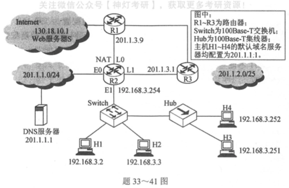

</div><p><mjx-container class="MathJax" jax="SVG" style="position: relative;"><svg xmlns="http://www.w3.org/2000/svg" width="7.526ex" height="2.149ex" role="img" focusable="false" viewBox="0 -750 3326.7 950" xmlns:xlink="http://www.w3.org/1999/xlink" aria-hidden="true" style="vertical-align: -0.452ex;"><defs><path id="MJX-368-TEX-I-1D435" d="M231 637Q204 637 199 638T194 649Q194 676 205 682Q206 683 335 683Q594 683 608 681Q671 671 713 636T756 544Q756 480 698 429T565 360L555 357Q619 348 660 311T702 219Q702 146 630 78T453 1Q446 0 242 0Q42 0 39 2Q35 5 35 10Q35 17 37 24Q42 43 47 45Q51 46 62 46H68Q95 46 128 49Q142 52 147 61Q150 65 219 339T288 628Q288 635 231 637ZM649 544Q649 574 634 600T585 634Q578 636 493 637Q473 637 451 637T416 636H403Q388 635 384 626Q382 622 352 506Q352 503 351 500L320 374H401Q482 374 494 376Q554 386 601 434T649 544ZM595 229Q595 273 572 302T512 336Q506 337 429 337Q311 337 310 336Q310 334 293 263T258 122L240 52Q240 48 252 48T333 46Q422 46 429 47Q491 54 543 105T595 229Z"></path></defs><g stroke="currentColor" fill="currentColor" stroke-width="0" transform="scale(1,-1)"><g data-mml-node="math"><g data-mml-node="mtext"><text data-variant="normal" transform="scale(1,-1)" font-size="884px" font-family="serif">答</text></g><g data-mml-node="mtext" transform="translate(870.4,0)"><text data-variant="normal" transform="scale(1,-1)" font-size="884px" font-family="serif">案</text></g><g data-mml-node="mi" transform="translate(1740.8,0)"><text data-variant="italic" transform="scale(1,-1)" font-size="884px" font-family="serif" font-style="italic">：</text></g><g data-mml-node="mi" transform="translate(2567.7,0)"><use data-c="1D435" xlink:href="#MJX-368-TEX-I-1D435"></use></g></g></g></svg><mjx-assistive-mml unselectable="on" display="inline"><math xmlns="http://www.w3.org/1998/Math/MathML"><mtext>答</mtext><mtext>案</mtext><mi>：</mi><mi>B</mi></math></mjx-assistive-mml></mjx-container><script type="math/tex">答案：B</script></p><p><span>R2发现R3报告不可达时，R1还未更新，此时R1所记录的到网距离为2，故R2以此为基础再加上1，距离为3</span></p></blockquote><ul><li><span>ICMP属于哪一层协议，封装在哪里？</span></li></ul><blockquote><p><span>网络层，IP数据报中</span></p></blockquote><h3 id='sdn'><span>SDN</span></h3><p></p><p>&nbsp;</p><ul><li><strong><span>SDN优缺点</span></strong></li></ul><figure><table><thead><tr><th><span>优点</span></th><th><span>缺点</span></th></tr></thead><tbody><tr><td><span>集中式控制</span><strong><span>利于全局优化</span></strong><span>，高性能转发</span></td><td><strong><span>安全风险</span></strong><span>，集中控制容易导致被一锅端</span></td></tr><tr><td><span>可编程是网络配置</span><strong><span>更加灵活</span></strong></td><td><span>随着网络规模增大，</span><strong><span>控制器可能称为性能瓶颈</span></strong></td></tr><tr><td><span>控制层与数据层分离后，网络设备</span><strong><span>成本降低</span></strong></td><td>&nbsp;</td></tr></tbody></table></figure><h3 id='ip首部格式'><span>IP首部格式</span></h3><p></p><h3 id='数据报分片'><span>数据报分片</span></h3><p></p><ul><li><strong><span>片偏移*8</span></strong><span>=数据部分长度，他是小的，</span><strong><mark><span>并不是</span></mark></strong><span>8的倍数，不要搞混了！！！</span></li><li><span>MUT包含首部，片偏移</span><strong><span>不包含</span></strong><span>首部</span></li><li><mjx-container class="MathJax" jax="SVG" style="position: relative;"><svg xmlns="http://www.w3.org/2000/svg" width="36.148ex" height="2.262ex" role="img" focusable="false" viewBox="0 -750 15977.6 1000" xmlns:xlink="http://www.w3.org/1999/xlink" aria-hidden="true" style="vertical-align: -0.566ex;"><defs><path id="MJX-369-TEX-N-3D" d="M56 347Q56 360 70 367H707Q722 359 722 347Q722 336 708 328L390 327H72Q56 332 56 347ZM56 153Q56 168 72 173H708Q722 163 722 153Q722 140 707 133H70Q56 140 56 153Z"></path><path id="MJX-369-TEX-N-230A" d="M174 734Q174 735 175 737T177 740T180 744T184 747T189 749T196 750Q206 748 214 735V-210H310H373Q401 -210 411 -213T422 -230T411 -247T369 -251Q362 -251 338 -251T298 -250H190Q178 -246 174 -234V734Z"></path><path id="MJX-369-TEX-N-28" d="M94 250Q94 319 104 381T127 488T164 576T202 643T244 695T277 729T302 750H315H319Q333 750 333 741Q333 738 316 720T275 667T226 581T184 443T167 250T184 58T225 -81T274 -167T316 -220T333 -241Q333 -250 318 -250H315H302L274 -226Q180 -141 137 -14T94 250Z"></path><path id="MJX-369-TEX-I-1D440" d="M289 629Q289 635 232 637Q208 637 201 638T194 648Q194 649 196 659Q197 662 198 666T199 671T201 676T203 679T207 681T212 683T220 683T232 684Q238 684 262 684T307 683Q386 683 398 683T414 678Q415 674 451 396L487 117L510 154Q534 190 574 254T662 394Q837 673 839 675Q840 676 842 678T846 681L852 683H948Q965 683 988 683T1017 684Q1051 684 1051 673Q1051 668 1048 656T1045 643Q1041 637 1008 637Q968 636 957 634T939 623Q936 618 867 340T797 59Q797 55 798 54T805 50T822 48T855 46H886Q892 37 892 35Q892 19 885 5Q880 0 869 0Q864 0 828 1T736 2Q675 2 644 2T609 1Q592 1 592 11Q592 13 594 25Q598 41 602 43T625 46Q652 46 685 49Q699 52 704 61Q706 65 742 207T813 490T848 631L654 322Q458 10 453 5Q451 4 449 3Q444 0 433 0Q418 0 415 7Q413 11 374 317L335 624L267 354Q200 88 200 79Q206 46 272 46H282Q288 41 289 37T286 19Q282 3 278 1Q274 0 267 0Q265 0 255 0T221 1T157 2Q127 2 95 1T58 0Q43 0 39 2T35 11Q35 13 38 25T43 40Q45 46 65 46Q135 46 154 86Q158 92 223 354T289 629Z"></path><path id="MJX-369-TEX-I-1D447" d="M40 437Q21 437 21 445Q21 450 37 501T71 602L88 651Q93 669 101 677H569H659Q691 677 697 676T704 667Q704 661 687 553T668 444Q668 437 649 437Q640 437 637 437T631 442L629 445Q629 451 635 490T641 551Q641 586 628 604T573 629Q568 630 515 631Q469 631 457 630T439 622Q438 621 368 343T298 60Q298 48 386 46Q418 46 427 45T436 36Q436 31 433 22Q429 4 424 1L422 0Q419 0 415 0Q410 0 363 1T228 2Q99 2 64 0H49Q43 6 43 9T45 27Q49 40 55 46H83H94Q174 46 189 55Q190 56 191 56Q196 59 201 76T241 233Q258 301 269 344Q339 619 339 625Q339 630 310 630H279Q212 630 191 624Q146 614 121 583T67 467Q60 445 57 441T43 437H40Z"></path><path id="MJX-369-TEX-I-1D448" d="M107 637Q73 637 71 641Q70 643 70 649Q70 673 81 682Q83 683 98 683Q139 681 234 681Q268 681 297 681T342 682T362 682Q378 682 378 672Q378 670 376 658Q371 641 366 638H364Q362 638 359 638T352 638T343 637T334 637Q295 636 284 634T266 623Q265 621 238 518T184 302T154 169Q152 155 152 140Q152 86 183 55T269 24Q336 24 403 69T501 205L552 406Q599 598 599 606Q599 633 535 637Q511 637 511 648Q511 650 513 660Q517 676 519 679T529 683Q532 683 561 682T645 680Q696 680 723 681T752 682Q767 682 767 672Q767 650 759 642Q756 637 737 637Q666 633 648 597Q646 592 598 404Q557 235 548 205Q515 105 433 42T263 -22Q171 -22 116 34T60 167V183Q60 201 115 421Q164 622 164 628Q164 635 107 637Z"></path><path id="MJX-369-TEX-N-2212" d="M84 237T84 250T98 270H679Q694 262 694 250T679 230H98Q84 237 84 250Z"></path><path id="MJX-369-TEX-N-29" d="M60 749L64 750Q69 750 74 750H86L114 726Q208 641 251 514T294 250Q294 182 284 119T261 12T224 -76T186 -143T145 -194T113 -227T90 -246Q87 -249 86 -250H74Q66 -250 63 -250T58 -247T55 -238Q56 -237 66 -225Q221 -64 221 250T66 725Q56 737 55 738Q55 746 60 749Z"></path><path id="MJX-369-TEX-N-2F" d="M423 750Q432 750 438 744T444 730Q444 725 271 248T92 -240Q85 -250 75 -250Q68 -250 62 -245T56 -231Q56 -221 230 257T407 740Q411 750 423 750Z"></path><path id="MJX-369-TEX-N-38" d="M70 417T70 494T124 618T248 666Q319 666 374 624T429 515Q429 485 418 459T392 417T361 389T335 371T324 363L338 354Q352 344 366 334T382 323Q457 264 457 174Q457 95 399 37T249 -22Q159 -22 101 29T43 155Q43 263 172 335L154 348Q133 361 127 368Q70 417 70 494ZM286 386L292 390Q298 394 301 396T311 403T323 413T334 425T345 438T355 454T364 471T369 491T371 513Q371 556 342 586T275 624Q268 625 242 625Q201 625 165 599T128 534Q128 511 141 492T167 463T217 431Q224 426 228 424L286 386ZM250 21Q308 21 350 55T392 137Q392 154 387 169T375 194T353 216T330 234T301 253T274 270Q260 279 244 289T218 306L210 311Q204 311 181 294T133 239T107 157Q107 98 150 60T250 21Z"></path><path id="MJX-369-TEX-N-230B" d="M229 734Q229 735 230 737T232 740T235 744T239 747T244 749T251 750Q262 748 269 735V-235Q266 -240 256 -249L147 -250H77Q43 -250 32 -247T21 -230T32 -213T72 -209Q79 -209 99 -209T133 -210H229V734Z"></path><path id="MJX-369-TEX-N-2217" d="M229 286Q216 420 216 436Q216 454 240 464Q241 464 245 464T251 465Q263 464 273 456T283 436Q283 419 277 356T270 286L328 328Q384 369 389 372T399 375Q412 375 423 365T435 338Q435 325 425 315Q420 312 357 282T289 250L355 219L425 184Q434 175 434 161Q434 146 425 136T401 125Q393 125 383 131T328 171L270 213Q283 79 283 63Q283 53 276 44T250 35Q231 35 224 44T216 63Q216 80 222 143T229 213L171 171Q115 130 110 127Q106 124 100 124Q87 124 76 134T64 161Q64 166 64 169T67 175T72 181T81 188T94 195T113 204T138 215T170 230T210 250L74 315Q65 324 65 338Q65 353 74 363T98 374Q106 374 116 368T171 328L229 286Z"></path></defs><g stroke="currentColor" fill="currentColor" stroke-width="0" transform="scale(1,-1)"><g data-mml-node="math"><g data-mml-node="mtext"><text data-variant="normal" transform="scale(1,-1)" font-size="884px" font-family="serif">最</text></g><g data-mml-node="mtext" transform="translate(870.4,0)"><text data-variant="normal" transform="scale(1,-1)" font-size="884px" font-family="serif">大</text></g><g data-mml-node="mtext" transform="translate(1740.8,0)"><text data-variant="normal" transform="scale(1,-1)" font-size="884px" font-family="serif">片</text></g><g data-mml-node="mtext" transform="translate(2567.7,0)"><text data-variant="normal" transform="scale(1,-1)" font-size="884px" font-family="serif">长</text></g><g data-mml-node="mo" transform="translate(3672.4,0)"><use data-c="3D" xlink:href="#MJX-369-TEX-N-3D"></use></g><g data-mml-node="mo" transform="translate(4728.1,0)"><use data-c="230A" xlink:href="#MJX-369-TEX-N-230A"></use></g><g data-mml-node="mo" transform="translate(5172.1,0)"><use data-c="28" xlink:href="#MJX-369-TEX-N-28"></use></g><g data-mml-node="mi" transform="translate(5561.1,0)"><use data-c="1D440" xlink:href="#MJX-369-TEX-I-1D440"></use></g><g data-mml-node="mi" transform="translate(6612.1,0)"><use data-c="1D447" xlink:href="#MJX-369-TEX-I-1D447"></use></g><g data-mml-node="mi" transform="translate(7316.1,0)"><use data-c="1D448" xlink:href="#MJX-369-TEX-I-1D448"></use></g><g data-mml-node="mo" transform="translate(8305.4,0)"><use data-c="2212" xlink:href="#MJX-369-TEX-N-2212"></use></g><g data-mml-node="mtext" transform="translate(9305.6,0)"><text data-variant="normal" transform="scale(1,-1)" font-size="884px" font-family="serif">首</text></g><g data-mml-node="mtext" transform="translate(10176,0)"><text data-variant="normal" transform="scale(1,-1)" font-size="884px" font-family="serif">部</text></g><g data-mml-node="mtext" transform="translate(11046.4,0)"><text data-variant="normal" transform="scale(1,-1)" font-size="884px" font-family="serif">长</text></g><g data-mml-node="mtext" transform="translate(11873.3,0)"><text data-variant="normal" transform="scale(1,-1)" font-size="884px" font-family="serif">度</text></g><g data-mml-node="mo" transform="translate(12700.2,0)"><use data-c="29" xlink:href="#MJX-369-TEX-N-29"></use></g><g data-mml-node="TeXAtom" data-mjx-texclass="ORD" transform="translate(13089.2,0)"><g data-mml-node="mo"><use data-c="2F" xlink:href="#MJX-369-TEX-N-2F"></use></g></g><g data-mml-node="mn" transform="translate(13589.2,0)"><use data-c="38" xlink:href="#MJX-369-TEX-N-38"></use></g><g data-mml-node="mo" transform="translate(14089.2,0)"><use data-c="230B" xlink:href="#MJX-369-TEX-N-230B"></use></g><g data-mml-node="mo" transform="translate(14755.4,0)"><use data-c="2217" xlink:href="#MJX-369-TEX-N-2217"></use></g><g data-mml-node="mn" transform="translate(15477.6,0)"><use data-c="38" xlink:href="#MJX-369-TEX-N-38"></use></g></g></g></svg><mjx-assistive-mml unselectable="on" display="inline"><math xmlns="http://www.w3.org/1998/Math/MathML"><mtext>最</mtext><mtext>大</mtext><mtext>片</mtext><mtext>长</mtext><mo>=</mo><mo fence="false" stretchy="false">⌊</mo><mo stretchy="false">(</mo><mi>M</mi><mi>T</mi><mi>U</mi><mo>−</mo><mtext>首</mtext><mtext>部</mtext><mtext>长</mtext><mtext>度</mtext><mo stretchy="false">)</mo><mrow data-mjx-texclass="ORD"><mo>/</mo></mrow><mn>8</mn><mo fence="false" stretchy="false">⌋</mo><mo>∗</mo><mn>8</mn></math></mjx-assistive-mml></mjx-container><script type="math/tex">最大片长=\lfloor (MTU-首部长度)/8\rfloor*8</script></li></ul><p>&nbsp;</p><h3 id='ip地址'><span>IP地址</span></h3><h4 id='ipv4'><span>IPv4</span></h4><p></p><ul><li><p><strong><span>不用作</span></strong><span>主机的IP地址</span></p><ul><li><strong><span>255.255.255.255</span></strong><span> </span><strong><span>受限广播地址</span></strong><span>（整个TCP/IP网络的广播）</span></li><li><strong><span>0.0.0.0</span></strong><span>表示本网络主机（只能作为</span><strong><span>源地址</span></strong><span>）</span></li><li><strong><span>127开头的所有都是</span></strong><span>环回地址</span></li><li><span>主机号</span><strong><span>全1表示广播地址</span></strong></li><li><span>主机号</span><strong><span>全0表示网络号</span></strong></li></ul></li><li><p><strong><span>多播地址范围：</span></strong><span>224.0.0.0~239.255.255.255（只能作为目的地址）</span></p></li></ul><h4 id='变长子网划分-重要⚠️'><span>变长子网划分 【重要⚠️】</span></h4><ul><li><mjx-container class="MathJax" jax="SVG" style="position: relative;"><svg xmlns="http://www.w3.org/2000/svg" width="31.016ex" height="2.149ex" role="img" focusable="false" viewBox="0 -750 13708.9 950" xmlns:xlink="http://www.w3.org/1999/xlink" aria-hidden="true" style="vertical-align: -0.452ex;"><defs></defs><g stroke="currentColor" fill="currentColor" stroke-width="0" transform="scale(1,-1)"><g data-mml-node="math"><g data-mml-node="mtext"><text data-variant="normal" transform="scale(1,-1)" font-size="884px" font-family="serif">一</text></g><g data-mml-node="mtext" transform="translate(826.9,0)"><text data-variant="normal" transform="scale(1,-1)" font-size="884px" font-family="serif">般</text></g><g data-mml-node="mtext" transform="translate(1697.3,0)"><text data-variant="normal" transform="scale(1,-1)" font-size="884px" font-family="serif">采</text></g><g data-mml-node="mtext" transform="translate(2567.7,0)"><text data-variant="normal" transform="scale(1,-1)" font-size="884px" font-family="serif">用</text></g><g data-mml-node="mtext" transform="translate(3394.6,0)"><text data-variant="normal" transform="scale(1,-1)" font-size="884px" font-family="serif">画</text></g><g data-mml-node="mtext" transform="translate(4265,0)"><text data-variant="normal" transform="scale(1,-1)" font-size="884px" font-family="serif">二</text></g><g data-mml-node="mtext" transform="translate(5135.4,0)"><text data-variant="normal" transform="scale(1,-1)" font-size="884px" font-family="serif">叉</text></g><g data-mml-node="mtext" transform="translate(6005.8,0)"><text data-variant="normal" transform="scale(1,-1)" font-size="884px" font-family="serif">树</text></g><g data-mml-node="mtext" transform="translate(6832.7,0)"><text data-variant="normal" transform="scale(1,-1)" font-size="884px" font-family="serif">法</text></g><g data-mml-node="mtext" transform="translate(7703.1,0)"><text data-variant="normal" transform="scale(1,-1)" font-size="884px" font-family="serif">来</text></g><g data-mml-node="mtext" transform="translate(8573.5,0)"><text data-variant="normal" transform="scale(1,-1)" font-size="884px" font-family="serif">避</text></g><g data-mml-node="mtext" transform="translate(9443.9,0)"><text data-variant="normal" transform="scale(1,-1)" font-size="884px" font-family="serif">免</text></g><g data-mml-node="mtext" transform="translate(10314.3,0)"><text data-variant="normal" transform="scale(1,-1)" font-size="884px" font-family="serif">前</text></g><g data-mml-node="mtext" transform="translate(11141.2,0)"><text data-variant="normal" transform="scale(1,-1)" font-size="884px" font-family="serif">缀</text></g><g data-mml-node="mtext" transform="translate(12011.6,0)"><text data-variant="normal" transform="scale(1,-1)" font-size="884px" font-family="serif">编</text></g><g data-mml-node="mtext" transform="translate(12882,0)"><text data-variant="normal" transform="scale(1,-1)" font-size="884px" font-family="serif">码</text></g></g></g></svg><mjx-assistive-mml unselectable="on" display="inline"><math xmlns="http://www.w3.org/1998/Math/MathML"><mtext>一</mtext><mtext>般</mtext><mtext>采</mtext><mtext>用</mtext><mtext>画</mtext><mtext>二</mtext><mtext>叉</mtext><mtext>树</mtext><mtext>法</mtext><mtext>来</mtext><mtext>避</mtext><mtext>免</mtext><mtext>前</mtext><mtext>缀</mtext><mtext>编</mtext><mtext>码</mtext></math></mjx-assistive-mml></mjx-container><script type="math/tex">一般采用画二叉树法来避免前缀编码</script></li></ul><p><strong><span>如何判断能够完整构成一个子网？</span></strong></p><blockquote><p><mjx-container class="MathJax" jax="SVG" style="position: relative;"><svg xmlns="http://www.w3.org/2000/svg" width="29.145ex" height="2.149ex" role="img" focusable="false" viewBox="0 -750 12882 950" xmlns:xlink="http://www.w3.org/1999/xlink" aria-hidden="true" style="vertical-align: -0.452ex;"><defs></defs><g stroke="currentColor" fill="currentColor" stroke-width="0" transform="scale(1,-1)"><g data-mml-node="math"><g data-mml-node="mtext"><text data-variant="normal" transform="scale(1,-1)" font-size="884px" font-family="serif">构</text></g><g data-mml-node="mtext" transform="translate(870.4,0)"><text data-variant="normal" transform="scale(1,-1)" font-size="884px" font-family="serif">建</text></g><g data-mml-node="mtext" transform="translate(1740.8,0)"><text data-variant="normal" transform="scale(1,-1)" font-size="884px" font-family="serif">编</text></g><g data-mml-node="mtext" transform="translate(2611.2,0)"><text data-variant="normal" transform="scale(1,-1)" font-size="884px" font-family="serif">码</text></g><g data-mml-node="mtext" transform="translate(3438.1,0)"><text data-variant="normal" transform="scale(1,-1)" font-size="884px" font-family="serif">二</text></g><g data-mml-node="mtext" transform="translate(4308.5,0)"><text data-variant="normal" transform="scale(1,-1)" font-size="884px" font-family="serif">叉</text></g><g data-mml-node="mtext" transform="translate(5178.9,0)"><text data-variant="normal" transform="scale(1,-1)" font-size="884px" font-family="serif">树</text></g><g data-mml-node="mi" transform="translate(6005.8,0)"><text data-variant="italic" transform="scale(1,-1)" font-size="884px" font-family="serif" font-style="italic">，</text></g><g data-mml-node="mtext" transform="translate(6832.7,0)"><text data-variant="normal" transform="scale(1,-1)" font-size="884px" font-family="serif">遵</text></g><g data-mml-node="mtext" transform="translate(7703.1,0)"><text data-variant="normal" transform="scale(1,-1)" font-size="884px" font-family="serif">循</text></g><g data-mml-node="mtext" transform="translate(8573.5,0)"><text data-variant="normal" transform="scale(1,-1)" font-size="884px" font-family="serif">以</text></g><g data-mml-node="mtext" transform="translate(9443.9,0)"><text data-variant="normal" transform="scale(1,-1)" font-size="884px" font-family="serif">下</text></g><g data-mml-node="mtext" transform="translate(10314.3,0)"><text data-variant="normal" transform="scale(1,-1)" font-size="884px" font-family="serif">规</text></g><g data-mml-node="mtext" transform="translate(11184.7,0)"><text data-variant="normal" transform="scale(1,-1)" font-size="884px" font-family="serif">则</text></g><g data-mml-node="mi" transform="translate(12055.1,0)"><text data-variant="italic" transform="scale(1,-1)" font-size="884px" font-family="serif" font-style="italic">：</text></g></g></g></svg><mjx-assistive-mml unselectable="on" display="inline"><math xmlns="http://www.w3.org/1998/Math/MathML"><mtext>构</mtext><mtext>建</mtext><mtext>编</mtext><mtext>码</mtext><mtext>二</mtext><mtext>叉</mtext><mtext>树</mtext><mi>，</mi><mtext>遵</mtext><mtext>循</mtext><mtext>以</mtext><mtext>下</mtext><mtext>规</mtext><mtext>则</mtext><mi>：</mi></math></mjx-assistive-mml></mjx-container><script type="math/tex">构建编码二叉树，遵循以下规则：</script></p><p><mjx-container class="MathJax" jax="SVG" style="position: relative;"><svg xmlns="http://www.w3.org/2000/svg" width="41.329ex" height="2.149ex" role="img" focusable="false" viewBox="0 -750 18267.4 950" xmlns:xlink="http://www.w3.org/1999/xlink" aria-hidden="true" style="vertical-align: -0.452ex;"><defs><path id="MJX-372-TEX-N-A0" d=""></path></defs><g stroke="currentColor" fill="currentColor" stroke-width="0" transform="scale(1,-1)"><g data-mml-node="math"><g data-mml-node="mn"><text data-variant="normal" transform="scale(1,-1)" font-size="884px" font-family="serif">①</text></g><g data-mml-node="mtext" transform="translate(870.4,0)"><use data-c="A0" xlink:href="#MJX-372-TEX-N-A0"></use></g><g data-mml-node="mtext" transform="translate(1120.4,0)"><text data-variant="normal" transform="scale(1,-1)" font-size="884px" font-family="serif">所</text></g><g data-mml-node="mtext" transform="translate(1990.8,0)"><text data-variant="normal" transform="scale(1,-1)" font-size="884px" font-family="serif">画</text></g><g data-mml-node="mtext" transform="translate(2861.2,0)"><text data-variant="normal" transform="scale(1,-1)" font-size="884px" font-family="serif">的</text></g><g data-mml-node="mtext" transform="translate(3688.1,0)"><text data-variant="normal" transform="scale(1,-1)" font-size="884px" font-family="serif">树</text></g><g data-mml-node="mtext" transform="translate(4515,0)"><text data-variant="normal" transform="scale(1,-1)" font-size="884px" font-family="serif">必</text></g><g data-mml-node="mtext" transform="translate(5385.4,0)"><text data-variant="normal" transform="scale(1,-1)" font-size="884px" font-family="serif">须</text></g><g data-mml-node="mtext" transform="translate(6255.8,0)"><text data-variant="normal" transform="scale(1,-1)" font-size="884px" font-family="serif">同</text></g><g data-mml-node="mtext" transform="translate(7126.2,0)"><text data-variant="normal" transform="scale(1,-1)" font-size="884px" font-family="serif">时</text></g><g data-mml-node="mtext" transform="translate(7953.1,0)"><text data-variant="normal" transform="scale(1,-1)" font-size="884px" font-family="serif">包</text></g><g data-mml-node="mtext" transform="translate(8823.5,0)"><text data-variant="normal" transform="scale(1,-1)" font-size="884px" font-family="serif">含</text></g><g data-mml-node="mtext" transform="translate(9650.4,0)"><text data-variant="normal" transform="scale(1,-1)" font-size="884px" font-family="serif">题</text></g><g data-mml-node="mtext" transform="translate(10520.8,0)"><text data-variant="normal" transform="scale(1,-1)" font-size="884px" font-family="serif">干</text></g><g data-mml-node="mtext" transform="translate(11391.2,0)"><text data-variant="normal" transform="scale(1,-1)" font-size="884px" font-family="serif">编</text></g><g data-mml-node="mtext" transform="translate(12261.6,0)"><text data-variant="normal" transform="scale(1,-1)" font-size="884px" font-family="serif">码</text></g><g data-mml-node="mtext" transform="translate(13088.5,0)"><text data-variant="normal" transform="scale(1,-1)" font-size="884px" font-family="serif">和</text></g><g data-mml-node="mtext" transform="translate(13958.9,0)"><text data-variant="normal" transform="scale(1,-1)" font-size="884px" font-family="serif">待</text></g><g data-mml-node="mtext" transform="translate(14829.3,0)"><text data-variant="normal" transform="scale(1,-1)" font-size="884px" font-family="serif">判</text></g><g data-mml-node="mtext" transform="translate(15699.7,0)"><text data-variant="normal" transform="scale(1,-1)" font-size="884px" font-family="serif">定</text></g><g data-mml-node="mtext" transform="translate(16570.1,0)"><text data-variant="normal" transform="scale(1,-1)" font-size="884px" font-family="serif">编</text></g><g data-mml-node="mtext" transform="translate(17440.5,0)"><text data-variant="normal" transform="scale(1,-1)" font-size="884px" font-family="serif">码</text></g></g></g></svg><mjx-assistive-mml unselectable="on" display="inline"><math xmlns="http://www.w3.org/1998/Math/MathML"><mn>①</mn><mtext>&nbsp;</mtext><mtext>所</mtext><mtext>画</mtext><mtext>的</mtext><mtext>树</mtext><mtext>必</mtext><mtext>须</mtext><mtext>同</mtext><mtext>时</mtext><mtext>包</mtext><mtext>含</mtext><mtext>题</mtext><mtext>干</mtext><mtext>编</mtext><mtext>码</mtext><mtext>和</mtext><mtext>待</mtext><mtext>判</mtext><mtext>定</mtext><mtext>编</mtext><mtext>码</mtext></math></mjx-assistive-mml></mjx-container><script type="math/tex">①\ 所画的树必须同时包含题干编码和待判定编码</script></p><p><mjx-container class="MathJax" jax="SVG" style="position: relative;"><svg xmlns="http://www.w3.org/2000/svg" width="33.272ex" height="2.149ex" role="img" focusable="false" viewBox="0 -750 14706.4 950" xmlns:xlink="http://www.w3.org/1999/xlink" aria-hidden="true" style="vertical-align: -0.452ex;"><defs><path id="MJX-373-TEX-N-A0" d=""></path><path id="MJX-373-TEX-I-1D447" d="M40 437Q21 437 21 445Q21 450 37 501T71 602L88 651Q93 669 101 677H569H659Q691 677 697 676T704 667Q704 661 687 553T668 444Q668 437 649 437Q640 437 637 437T631 442L629 445Q629 451 635 490T641 551Q641 586 628 604T573 629Q568 630 515 631Q469 631 457 630T439 622Q438 621 368 343T298 60Q298 48 386 46Q418 46 427 45T436 36Q436 31 433 22Q429 4 424 1L422 0Q419 0 415 0Q410 0 363 1T228 2Q99 2 64 0H49Q43 6 43 9T45 27Q49 40 55 46H83H94Q174 46 189 55Q190 56 191 56Q196 59 201 76T241 233Q258 301 269 344Q339 619 339 625Q339 630 310 630H279Q212 630 191 624Q146 614 121 583T67 467Q60 445 57 441T43 437H40Z"></path></defs><g stroke="currentColor" fill="currentColor" stroke-width="0" transform="scale(1,-1)"><g data-mml-node="math"><g data-mml-node="mn"><text data-variant="normal" transform="scale(1,-1)" font-size="884px" font-family="serif">②</text></g><g data-mml-node="mtext" transform="translate(870.4,0)"><use data-c="A0" xlink:href="#MJX-373-TEX-N-A0"></use></g><g data-mml-node="mtext" transform="translate(1120.4,0)"><text data-variant="normal" transform="scale(1,-1)" font-size="884px" font-family="serif">从</text></g><g data-mml-node="mtext" transform="translate(1990.8,0)"><text data-variant="normal" transform="scale(1,-1)" font-size="884px" font-family="serif">根</text></g><g data-mml-node="mtext" transform="translate(2861.2,0)"><text data-variant="normal" transform="scale(1,-1)" font-size="884px" font-family="serif">往</text></g><g data-mml-node="mtext" transform="translate(3731.6,0)"><text data-variant="normal" transform="scale(1,-1)" font-size="884px" font-family="serif">下</text></g><g data-mml-node="mtext" transform="translate(4602,0)"><text data-variant="normal" transform="scale(1,-1)" font-size="884px" font-family="serif">找</text></g><g data-mml-node="mi" transform="translate(5472.4,0)"><text data-variant="italic" transform="scale(1,-1)" font-size="884px" font-family="serif" font-style="italic">，</text></g><g data-mml-node="mtext" transform="translate(6299.3,0)"><text data-variant="normal" transform="scale(1,-1)" font-size="884px" font-family="serif">找</text></g><g data-mml-node="mtext" transform="translate(7169.7,0)"><text data-variant="normal" transform="scale(1,-1)" font-size="884px" font-family="serif">到</text></g><g data-mml-node="mtext" transform="translate(8040.1,0)"><text data-variant="normal" transform="scale(1,-1)" font-size="884px" font-family="serif">第</text></g><g data-mml-node="mtext" transform="translate(8867,0)"><text data-variant="normal" transform="scale(1,-1)" font-size="884px" font-family="serif">一</text></g><g data-mml-node="mtext" transform="translate(9693.9,0)"><text data-variant="normal" transform="scale(1,-1)" font-size="884px" font-family="serif">个</text></g><g data-mml-node="mtext" transform="translate(10520.8,0)"><text data-variant="normal" transform="scale(1,-1)" font-size="884px" font-family="serif">分</text></g><g data-mml-node="mtext" transform="translate(11391.2,0)"><text data-variant="normal" transform="scale(1,-1)" font-size="884px" font-family="serif">支</text></g><g data-mml-node="mtext" transform="translate(12261.6,0)"><text data-variant="normal" transform="scale(1,-1)" font-size="884px" font-family="serif">结</text></g><g data-mml-node="mtext" transform="translate(13132,0)"><text data-variant="normal" transform="scale(1,-1)" font-size="884px" font-family="serif">点</text></g><g data-mml-node="mi" transform="translate(14002.4,0)"><use data-c="1D447" xlink:href="#MJX-373-TEX-I-1D447"></use></g></g></g></svg><mjx-assistive-mml unselectable="on" display="inline"><math xmlns="http://www.w3.org/1998/Math/MathML"><mn>②</mn><mtext>&nbsp;</mtext><mtext>从</mtext><mtext>根</mtext><mtext>往</mtext><mtext>下</mtext><mtext>找</mtext><mi>，</mi><mtext>找</mtext><mtext>到</mtext><mtext>第</mtext><mtext>一</mtext><mtext>个</mtext><mtext>分</mtext><mtext>支</mtext><mtext>结</mtext><mtext>点</mtext><mi>T</mi></math></mjx-assistive-mml></mjx-container><script type="math/tex">②\ 从根往下找，找到第一个分支结点T</script></p><p><mjx-container class="MathJax" jax="SVG" style="position: relative;"><svg xmlns="http://www.w3.org/2000/svg" width="44.129ex" height="2.149ex" role="img" focusable="false" viewBox="0 -750 19504.8 950" xmlns:xlink="http://www.w3.org/1999/xlink" aria-hidden="true" style="vertical-align: -0.452ex;"><defs><path id="MJX-374-TEX-I-1D447" d="M40 437Q21 437 21 445Q21 450 37 501T71 602L88 651Q93 669 101 677H569H659Q691 677 697 676T704 667Q704 661 687 553T668 444Q668 437 649 437Q640 437 637 437T631 442L629 445Q629 451 635 490T641 551Q641 586 628 604T573 629Q568 630 515 631Q469 631 457 630T439 622Q438 621 368 343T298 60Q298 48 386 46Q418 46 427 45T436 36Q436 31 433 22Q429 4 424 1L422 0Q419 0 415 0Q410 0 363 1T228 2Q99 2 64 0H49Q43 6 43 9T45 27Q49 40 55 46H83H94Q174 46 189 55Q190 56 191 56Q196 59 201 76T241 233Q258 301 269 344Q339 619 339 625Q339 630 310 630H279Q212 630 191 624Q146 614 121 583T67 467Q60 445 57 441T43 437H40Z"></path></defs><g stroke="currentColor" fill="currentColor" stroke-width="0" transform="scale(1,-1)"><g data-mml-node="math"><g data-mml-node="mi"><use data-c="1D447" xlink:href="#MJX-374-TEX-I-1D447"></use></g><g data-mml-node="mtext" transform="translate(704,0)"><text data-variant="normal" transform="scale(1,-1)" font-size="884px" font-family="serif">之</text></g><g data-mml-node="mtext" transform="translate(1574.4,0)"><text data-variant="normal" transform="scale(1,-1)" font-size="884px" font-family="serif">后</text></g><g data-mml-node="mtext" transform="translate(2444.8,0)"><text data-variant="normal" transform="scale(1,-1)" font-size="884px" font-family="serif">的</text></g><g data-mml-node="mtext" transform="translate(3271.7,0)"><text data-variant="normal" transform="scale(1,-1)" font-size="884px" font-family="serif">每</text></g><g data-mml-node="mtext" transform="translate(4142.1,0)"><text data-variant="normal" transform="scale(1,-1)" font-size="884px" font-family="serif">个</text></g><g data-mml-node="mtext" transform="translate(4969,0)"><text data-variant="normal" transform="scale(1,-1)" font-size="884px" font-family="serif">非</text></g><g data-mml-node="mtext" transform="translate(5839.4,0)"><text data-variant="normal" transform="scale(1,-1)" font-size="884px" font-family="serif">叶</text></g><g data-mml-node="mtext" transform="translate(6709.8,0)"><text data-variant="normal" transform="scale(1,-1)" font-size="884px" font-family="serif">结</text></g><g data-mml-node="mtext" transform="translate(7580.2,0)"><text data-variant="normal" transform="scale(1,-1)" font-size="884px" font-family="serif">点</text></g><g data-mml-node="mtext" transform="translate(8450.6,0)"><text data-variant="normal" transform="scale(1,-1)" font-size="884px" font-family="serif">要</text></g><g data-mml-node="mtext" transform="translate(9277.5,0)"><text data-variant="normal" transform="scale(1,-1)" font-size="884px" font-family="serif">么</text></g><g data-mml-node="mtext" transform="translate(10147.9,0)"><text data-variant="normal" transform="scale(1,-1)" font-size="884px" font-family="serif">啥</text></g><g data-mml-node="mtext" transform="translate(11018.3,0)"><text data-variant="normal" transform="scale(1,-1)" font-size="884px" font-family="serif">都</text></g><g data-mml-node="mtext" transform="translate(11845.2,0)"><text data-variant="normal" transform="scale(1,-1)" font-size="884px" font-family="serif">没</text></g><g data-mml-node="mtext" transform="translate(12715.6,0)"><text data-variant="normal" transform="scale(1,-1)" font-size="884px" font-family="serif">有</text></g><g data-mml-node="mi" transform="translate(13542.5,0)"><text data-variant="italic" transform="scale(1,-1)" font-size="884px" font-family="serif" font-style="italic">，</text></g><g data-mml-node="mtext" transform="translate(14369.4,0)"><text data-variant="normal" transform="scale(1,-1)" font-size="884px" font-family="serif">要</text></g><g data-mml-node="mtext" transform="translate(15196.3,0)"><text data-variant="normal" transform="scale(1,-1)" font-size="884px" font-family="serif">么</text></g><g data-mml-node="mtext" transform="translate(16066.7,0)"><text data-variant="normal" transform="scale(1,-1)" font-size="884px" font-family="serif">儿</text></g><g data-mml-node="mtext" transform="translate(16937.1,0)"><text data-variant="normal" transform="scale(1,-1)" font-size="884px" font-family="serif">女</text></g><g data-mml-node="mtext" transform="translate(17807.5,0)"><text data-variant="normal" transform="scale(1,-1)" font-size="884px" font-family="serif">双</text></g><g data-mml-node="mtext" transform="translate(18677.9,0)"><text data-variant="normal" transform="scale(1,-1)" font-size="884px" font-family="serif">全</text></g></g></g></svg><mjx-assistive-mml unselectable="on" display="inline"><math xmlns="http://www.w3.org/1998/Math/MathML"><mi>T</mi><mtext>之</mtext><mtext>后</mtext><mtext>的</mtext><mtext>每</mtext><mtext>个</mtext><mtext>非</mtext><mtext>叶</mtext><mtext>结</mtext><mtext>点</mtext><mtext>要</mtext><mtext>么</mtext><mtext>啥</mtext><mtext>都</mtext><mtext>没</mtext><mtext>有</mtext><mi>，</mi><mtext>要</mtext><mtext>么</mtext><mtext>儿</mtext><mtext>女</mtext><mtext>双</mtext><mtext>全</mtext></math></mjx-assistive-mml></mjx-container><script type="math/tex">T之后的每个非叶结点要么啥都没有，要么儿女双全</script></p><p><mjx-container class="MathJax" jax="SVG" style="position: relative;"><svg xmlns="http://www.w3.org/2000/svg" width="5.809ex" height="2.149ex" role="img" focusable="false" viewBox="0 -750 2567.7 950" xmlns:xlink="http://www.w3.org/1999/xlink" aria-hidden="true" style="vertical-align: -0.452ex;"><defs></defs><g stroke="currentColor" fill="currentColor" stroke-width="0" transform="scale(1,-1)"><g data-mml-node="math"><g data-mml-node="mtext"><text data-variant="normal" transform="scale(1,-1)" font-size="884px" font-family="serif">例</text></g><g data-mml-node="mtext" transform="translate(870.4,0)"><text data-variant="normal" transform="scale(1,-1)" font-size="884px" font-family="serif">题</text></g><g data-mml-node="mi" transform="translate(1740.8,0)"><text data-variant="italic" transform="scale(1,-1)" font-size="884px" font-family="serif" font-style="italic">：</text></g></g></g></svg><mjx-assistive-mml unselectable="on" display="inline"><math xmlns="http://www.w3.org/1998/Math/MathML"><mtext>例</mtext><mtext>题</mtext><mi>：</mi></math></mjx-assistive-mml></mjx-container><script type="math/tex">例题：</script></p><p><span>【21年T35】</span></p><div>

</div><p>&nbsp;</p><p><mjx-container class="MathJax" jax="SVG" style="position: relative;"><svg xmlns="http://www.w3.org/2000/svg" width="5.809ex" height="2.149ex" role="img" focusable="false" viewBox="0 -750 2567.7 950" xmlns:xlink="http://www.w3.org/1999/xlink" aria-hidden="true" style="vertical-align: -0.452ex;"><defs></defs><g stroke="currentColor" fill="currentColor" stroke-width="0" transform="scale(1,-1)"><g data-mml-node="math"><g data-mml-node="mtext"><text data-variant="normal" transform="scale(1,-1)" font-size="884px" font-family="serif">解</text></g><g data-mml-node="mtext" transform="translate(870.4,0)"><text data-variant="normal" transform="scale(1,-1)" font-size="884px" font-family="serif">析</text></g><g data-mml-node="mi" transform="translate(1740.8,0)"><text data-variant="italic" transform="scale(1,-1)" font-size="884px" font-family="serif" font-style="italic">：</text></g></g></g></svg><mjx-assistive-mml unselectable="on" display="inline"><math xmlns="http://www.w3.org/1998/Math/MathML"><mtext>解</mtext><mtext>析</mtext><mi>：</mi></math></mjx-assistive-mml></mjx-container><script type="math/tex">解析：</script></p><p><mjx-container class="MathJax" jax="SVG" style="position: relative;"><svg xmlns="http://www.w3.org/2000/svg" width="32.985ex" height="2.149ex" role="img" focusable="false" viewBox="0 -750 14579.3 950" xmlns:xlink="http://www.w3.org/1999/xlink" aria-hidden="true" style="vertical-align: -0.452ex;"><defs></defs><g stroke="currentColor" fill="currentColor" stroke-width="0" transform="scale(1,-1)"><g data-mml-node="math"><g data-mml-node="mtext"><text data-variant="normal" transform="scale(1,-1)" font-size="884px" font-family="serif">首</text></g><g data-mml-node="mtext" transform="translate(870.4,0)"><text data-variant="normal" transform="scale(1,-1)" font-size="884px" font-family="serif">先</text></g><g data-mml-node="mtext" transform="translate(1740.8,0)"><text data-variant="normal" transform="scale(1,-1)" font-size="884px" font-family="serif">写</text></g><g data-mml-node="mtext" transform="translate(2567.7,0)"><text data-variant="normal" transform="scale(1,-1)" font-size="884px" font-family="serif">出</text></g><g data-mml-node="mtext" transform="translate(3438.1,0)"><text data-variant="normal" transform="scale(1,-1)" font-size="884px" font-family="serif">每</text></g><g data-mml-node="mtext" transform="translate(4308.5,0)"><text data-variant="normal" transform="scale(1,-1)" font-size="884px" font-family="serif">个</text></g><g data-mml-node="mtext" transform="translate(5135.4,0)"><text data-variant="normal" transform="scale(1,-1)" font-size="884px" font-family="serif">选</text></g><g data-mml-node="mtext" transform="translate(5962.3,0)"><text data-variant="normal" transform="scale(1,-1)" font-size="884px" font-family="serif">项</text></g><g data-mml-node="mtext" transform="translate(6832.7,0)"><text data-variant="normal" transform="scale(1,-1)" font-size="884px" font-family="serif">子</text></g><g data-mml-node="mtext" transform="translate(7703.1,0)"><text data-variant="normal" transform="scale(1,-1)" font-size="884px" font-family="serif">网</text></g><g data-mml-node="mtext" transform="translate(8573.5,0)"><text data-variant="normal" transform="scale(1,-1)" font-size="884px" font-family="serif">号</text></g><g data-mml-node="mtext" transform="translate(9443.9,0)"><text data-variant="normal" transform="scale(1,-1)" font-size="884px" font-family="serif">有</text></g><g data-mml-node="mtext" transform="translate(10270.8,0)"><text data-variant="normal" transform="scale(1,-1)" font-size="884px" font-family="serif">区</text></g><g data-mml-node="mtext" transform="translate(11141.2,0)"><text data-variant="normal" transform="scale(1,-1)" font-size="884px" font-family="serif">别</text></g><g data-mml-node="mtext" transform="translate(12011.6,0)"><text data-variant="normal" transform="scale(1,-1)" font-size="884px" font-family="serif">的</text></g><g data-mml-node="mtext" transform="translate(12838.5,0)"><text data-variant="normal" transform="scale(1,-1)" font-size="884px" font-family="serif">部</text></g><g data-mml-node="mtext" transform="translate(13708.9,0)"><text data-variant="normal" transform="scale(1,-1)" font-size="884px" font-family="serif">分</text></g></g></g></svg><mjx-assistive-mml unselectable="on" display="inline"><math xmlns="http://www.w3.org/1998/Math/MathML"><mtext>首</mtext><mtext>先</mtext><mtext>写</mtext><mtext>出</mtext><mtext>每</mtext><mtext>个</mtext><mtext>选</mtext><mtext>项</mtext><mtext>子</mtext><mtext>网</mtext><mtext>号</mtext><mtext>有</mtext><mtext>区</mtext><mtext>别</mtext><mtext>的</mtext><mtext>部</mtext><mtext>分</mtext></math></mjx-assistive-mml></mjx-container><script type="math/tex">首先写出每个选项子网号有区别的部分</script></p><p><mjx-container class="MathJax" jax="SVG" style="position: relative;"><svg xmlns="http://www.w3.org/2000/svg" width="62.434ex" height="2.149ex" role="img" focusable="false" viewBox="0 -750 27595.7 950" xmlns:xlink="http://www.w3.org/1999/xlink" aria-hidden="true" style="vertical-align: -0.452ex;"><defs><path id="MJX-378-TEX-N-34" d="M462 0Q444 3 333 3Q217 3 199 0H190V46H221Q241 46 248 46T265 48T279 53T286 61Q287 63 287 115V165H28V211L179 442Q332 674 334 675Q336 677 355 677H373L379 671V211H471V165H379V114Q379 73 379 66T385 54Q393 47 442 46H471V0H462ZM293 211V545L74 212L183 211H293Z"></path><path id="MJX-378-TEX-N-3E" d="M84 520Q84 528 88 533T96 539L99 540Q106 540 253 471T544 334L687 265Q694 260 694 250T687 235Q685 233 395 96L107 -40H101Q83 -38 83 -20Q83 -19 83 -17Q82 -10 98 -1Q117 9 248 71Q326 108 378 132L626 250L378 368Q90 504 86 509Q84 513 84 520Z"></path><path id="MJX-378-TEX-N-32" d="M109 429Q82 429 66 447T50 491Q50 562 103 614T235 666Q326 666 387 610T449 465Q449 422 429 383T381 315T301 241Q265 210 201 149L142 93L218 92Q375 92 385 97Q392 99 409 186V189H449V186Q448 183 436 95T421 3V0H50V19V31Q50 38 56 46T86 81Q115 113 136 137Q145 147 170 174T204 211T233 244T261 278T284 308T305 340T320 369T333 401T340 431T343 464Q343 527 309 573T212 619Q179 619 154 602T119 569T109 550Q109 549 114 549Q132 549 151 535T170 489Q170 464 154 447T109 429Z"></path></defs><g stroke="currentColor" fill="currentColor" stroke-width="0" transform="scale(1,-1)"><g data-mml-node="math"><g data-mml-node="mtext"><text data-variant="normal" transform="scale(1,-1)" font-size="884px" font-family="serif">由</text></g><g data-mml-node="mtext" transform="translate(826.9,0)"><text data-variant="normal" transform="scale(1,-1)" font-size="884px" font-family="serif">于</text></g><g data-mml-node="mn" transform="translate(1697.3,0)"><use data-c="34" xlink:href="#MJX-378-TEX-N-34"></use></g><g data-mml-node="mtext" transform="translate(2197.3,0)"><text data-variant="normal" transform="scale(1,-1)" font-size="884px" font-family="serif">个</text></g><g data-mml-node="mtext" transform="translate(3024.2,0)"><text data-variant="normal" transform="scale(1,-1)" font-size="884px" font-family="serif">选</text></g><g data-mml-node="mtext" transform="translate(3851.1,0)"><text data-variant="normal" transform="scale(1,-1)" font-size="884px" font-family="serif">项</text></g><g data-mml-node="mtext" transform="translate(4721.5,0)"><text data-variant="normal" transform="scale(1,-1)" font-size="884px" font-family="serif">的</text></g><g data-mml-node="mtext" transform="translate(5548.4,0)"><text data-variant="normal" transform="scale(1,-1)" font-size="884px" font-family="serif">字</text></g><g data-mml-node="mtext" transform="translate(6375.3,0)"><text data-variant="normal" transform="scale(1,-1)" font-size="884px" font-family="serif">子</text></g><g data-mml-node="mtext" transform="translate(7245.7,0)"><text data-variant="normal" transform="scale(1,-1)" font-size="884px" font-family="serif">网</text></g><g data-mml-node="mtext" transform="translate(8116.1,0)"><text data-variant="normal" transform="scale(1,-1)" font-size="884px" font-family="serif">掩</text></g><g data-mml-node="mtext" transform="translate(8986.5,0)"><text data-variant="normal" transform="scale(1,-1)" font-size="884px" font-family="serif">码</text></g><g data-mml-node="mtext" transform="translate(9813.4,0)"><text data-variant="normal" transform="scale(1,-1)" font-size="884px" font-family="serif">位</text></g><g data-mml-node="mtext" transform="translate(10683.8,0)"><text data-variant="normal" transform="scale(1,-1)" font-size="884px" font-family="serif">数</text></g><g data-mml-node="mtext" transform="translate(11510.7,0)"><text data-variant="normal" transform="scale(1,-1)" font-size="884px" font-family="serif">都</text></g><g data-mml-node="mo" transform="translate(12615.3,0)"><use data-c="3E" xlink:href="#MJX-378-TEX-N-3E"></use></g><g data-mml-node="mn" transform="translate(13671.1,0)"><use data-c="32" xlink:href="#MJX-378-TEX-N-32"></use><use data-c="34" xlink:href="#MJX-378-TEX-N-34" transform="translate(500,0)"></use></g><g data-mml-node="mtext" transform="translate(14671.1,0)"><text data-variant="normal" transform="scale(1,-1)" font-size="884px" font-family="serif">位</text></g><g data-mml-node="mi" transform="translate(15541.5,0)"><text data-variant="italic" transform="scale(1,-1)" font-size="884px" font-family="serif" font-style="italic">，</text></g><g data-mml-node="mtext" transform="translate(16368.4,0)"><text data-variant="normal" transform="scale(1,-1)" font-size="884px" font-family="serif">所</text></g><g data-mml-node="mtext" transform="translate(17238.8,0)"><text data-variant="normal" transform="scale(1,-1)" font-size="884px" font-family="serif">以</text></g><g data-mml-node="mtext" transform="translate(18109.2,0)"><text data-variant="normal" transform="scale(1,-1)" font-size="884px" font-family="serif">前</text></g><g data-mml-node="mn" transform="translate(18936.1,0)"><use data-c="32" xlink:href="#MJX-378-TEX-N-32"></use><use data-c="34" xlink:href="#MJX-378-TEX-N-34" transform="translate(500,0)"></use></g><g data-mml-node="mtext" transform="translate(19936.1,0)"><text data-variant="normal" transform="scale(1,-1)" font-size="884px" font-family="serif">位</text></g><g data-mml-node="mtext" transform="translate(20806.5,0)"><text data-variant="normal" transform="scale(1,-1)" font-size="884px" font-family="serif">都</text></g><g data-mml-node="mtext" transform="translate(21633.4,0)"><text data-variant="normal" transform="scale(1,-1)" font-size="884px" font-family="serif">相</text></g><g data-mml-node="mtext" transform="translate(22503.8,0)"><text data-variant="normal" transform="scale(1,-1)" font-size="884px" font-family="serif">同</text></g><g data-mml-node="mi" transform="translate(23374.2,0)"><text data-variant="italic" transform="scale(1,-1)" font-size="884px" font-family="serif" font-style="italic">，</text></g><g data-mml-node="mtext" transform="translate(24201.1,0)"><text data-variant="normal" transform="scale(1,-1)" font-size="884px" font-family="serif">省</text></g><g data-mml-node="mtext" transform="translate(25071.5,0)"><text data-variant="normal" transform="scale(1,-1)" font-size="884px" font-family="serif">略</text></g><g data-mml-node="mtext" transform="translate(25941.9,0)"><text data-variant="normal" transform="scale(1,-1)" font-size="884px" font-family="serif">不</text></g><g data-mml-node="mtext" transform="translate(26768.8,0)"><text data-variant="normal" transform="scale(1,-1)" font-size="884px" font-family="serif">写</text></g></g></g></svg><mjx-assistive-mml unselectable="on" display="inline"><math xmlns="http://www.w3.org/1998/Math/MathML"><mtext>由</mtext><mtext>于</mtext><mn>4</mn><mtext>个</mtext><mtext>选</mtext><mtext>项</mtext><mtext>的</mtext><mtext>字</mtext><mtext>子</mtext><mtext>网</mtext><mtext>掩</mtext><mtext>码</mtext><mtext>位</mtext><mtext>数</mtext><mtext>都</mtext><mo>&gt;</mo><mn>24</mn><mtext>位</mtext><mi>，</mi><mtext>所</mtext><mtext>以</mtext><mtext>前</mtext><mn>24</mn><mtext>位</mtext><mtext>都</mtext><mtext>相</mtext><mtext>同</mtext><mi>，</mi><mtext>省</mtext><mtext>略</mtext><mtext>不</mtext><mtext>写</mtext></math></mjx-assistive-mml></mjx-container><script type="math/tex">由于4个选项的字子网掩码位数都>24位，所以前24位都相同，省略不写</script></p><ul><li><span>A：0</span></li><li><span>B：00</span></li><li><span>C：11</span></li><li><span>D：110</span></li><li><span>题干：10</span></li></ul><p><span>然后开始画树，画出来满足口诀且为</span><strong><span>3个叶子结点</span></strong><span>，则说明恰好能够划分为3个子网</span></p><div>
  
  
  
</div><p>&nbsp;</p><p><span>观察</span><strong><span>图1</span></strong><span>发现，0和11同时满足要求，</span><strong><span>A,C排除</span></strong></p><p><span>观察</span><strong><span>图2</span></strong><span>发现，若引入00编码后，</span><strong><span>为了保证儿女双全，还需加入01编码（图中虚线）</span></strong><span>，此时二叉树存在4个叶结点，说明该种情况必须要划分为4个子网，</span><u><strong><span>B选项不满足要求</span></strong></u></p><p><span>观察</span><strong><span>图3</span></strong><span>发现，10、110、111三个刚好能够聚合成一个</span><strong><span>连续</span></strong><span>的子网，</span><strong><span>D选项符合要求，排除D</span></strong></p><p><strong><span>选B</span></strong></p></blockquote><h4 id='ipv6'><span>IPv6</span></h4><p><strong><span>特性：</span></strong></p><ul><li><span>长度：128B</span></li><li><span>无校验和</span></li><li><span>“可选字段”-&gt;&quot;扩展首部&quot;</span></li><li><span>“总长度”-&gt;”有效载荷“</span></li><li><span>”协议“-&gt;”下一首部“</span></li><li><span>无需DHCP</span></li><li><span>首部长度单位8B（</span><u><span>首4变首8</span></u><span>）</span></li><li><span>仅支持主机处分片（IPv4的路由处不再支持分片）</span></li></ul><h3 id='nat'><span>NAT</span></h3><p><strong><span>私有IP网段：</span></strong></p><figure><table><thead><tr><th><span>TYPE</span></th><th><span>ADDR</span></th></tr></thead><tbody><tr><td><span>TYPE A</span></td><td><strong><span>10</span></strong><span>.x.x.x</span></td></tr><tr><td><span>TYPE B</span></td><td><span>172.</span><strong><span>16~31</span></strong><span>.x.x</span></td></tr><tr><td><span>TYPE C</span></td><td><span>192.</span><strong><span>168</span></strong><span>.x.x</span></td></tr></tbody></table></figure><p><strong><span>注意点：</span></strong>
<span>普通路由器</span><strong><span>仅工作在网络层</span></strong><span>：转发数据报时</span><strong><span>不修改</span></strong><span>源地址与目的地址</span></p><p><span>带NAT功能的路由器转发时，需要查看</span><strong><span>传输层</span></strong><span>的端口号：</span><strong><span>必须更换</span></strong><span>源IP地址</span></p><h3 id='☆主要协议'><span>☆主要协议</span></h3><h4 id='arp'><span>ARP</span></h4><p><strong><span>工作流程:</span></strong></p><p><span>① 先查ARP高速缓存</span></p><p><span>②再发</span><strong><span>全F帧</span></strong></p><p><span>③如果IP不在本网络，则交由默认网关请求ARP</span></p><p><strong><span>报文类型：</span></strong></p><ul><li><span>ARP请求：</span><strong><span>广播</span></strong></li><li><span>ARP响应：</span><strong><span>单播</span></strong></li></ul><h4 id='dhcp'><span>DHCP</span></h4><ul><li><p><strong><span>报文类型：</span></strong><span>发现、提供、请求、确认</span></p></li><li><p><strong><span>报文交换过程：</span></strong></p><blockquote><p><span>C/S双方</span><strong><span>目的地址</span></strong><span>均采用</span><strong><span>广播 255.255.255.255</span></strong></p><p><span>Client 源地址均为</span><strong><span>0.0.0.0</span></strong></p><p><span>Server源地址均为</span><strong><span>DHCP服务器本身IP</span></strong></p></blockquote></li></ul><h4 id='icmp'><span>ICMP</span></h4><p><strong><span>封装细节：</span></strong></p><ul><li><span>ICMP报文属于网络层应用，所以也是封装在IP数据报中的</span></li></ul><p><strong><span>报文类型：</span></strong></p><pre class="md-fences md-end-block md-fences-with-lineno ty-contain-cm modeLoaded" spellcheck="false" lang="java"><div class="CodeMirror cm-s-inner cm-s-null-scroll CodeMirror-wrap" lang="java"><div style="overflow: hidden; position: relative; width: 3px; height: 0px; top: 11.5px; left: 47px;"><textarea autocorrect="off" autocapitalize="off" spellcheck="false" tabindex="0" style="position: absolute; bottom: -1em; padding: 0px; width: 1000px; height: 1em; outline: none;"></textarea></div><div class="CodeMirror-scrollbar-filler" cm-not-content="true"></div><div class="CodeMirror-gutter-filler" cm-not-content="true"></div><div class="CodeMirror-scroll" tabindex="-1"><div class="CodeMirror-sizer" style="margin-left: 39px; margin-bottom: 0px; border-right-width: 0px; padding-right: 0px; padding-bottom: 0px;"><div style="position: relative; top: 0px;"><div class="CodeMirror-lines" role="presentation"><div role="presentation" style="position: relative; outline: none;"><div class="CodeMirror-measure"><pre><span>xxxxxxxxxx</span></pre><div class="CodeMirror-linenumber CodeMirror-gutter-elt"><div>11</div></div></div><div class="CodeMirror-measure"></div><div style="position: relative; z-index: 1;"></div><div class="CodeMirror-code" role="presentation" style=""><div class="CodeMirror-activeline" style="position: relative;"><div class="CodeMirror-activeline-background CodeMirror-linebackground"></div><div class="CodeMirror-gutter-background CodeMirror-activeline-gutter" style="left: -39px; width: 39px;"></div><div class="CodeMirror-gutter-wrapper CodeMirror-activeline-gutter" style="left: -39px;"><div class="CodeMirror-linenumber CodeMirror-gutter-elt CodeMirror-linenumber-show" style="left: 0px; width: 30px;">1</div></div><pre class=" CodeMirror-line " role="presentation"><span role="presentation" style="padding-right: 0.1px;"><span class="cm-comment">//差错报文：</span></span></pre></div><div style="position: relative;"><div class="CodeMirror-gutter-wrapper" style="left: -39px;"><div class="CodeMirror-linenumber CodeMirror-gutter-elt" style="left: 0px; width: 30px;">2</div></div><pre class=" CodeMirror-line " role="presentation"><span role="presentation" style="padding-right: 0.1px;"><span class="cm-tab" role="presentation" cm-text="	">  </span><span class="cm-tab" role="presentation" cm-text="	">  </span><span class="cm-variable">终点不可达</span></span></pre></div><div style="position: relative;"><div class="CodeMirror-gutter-wrapper" style="left: -39px;"><div class="CodeMirror-linenumber CodeMirror-gutter-elt" style="left: 0px; width: 30px;">3</div></div><pre class=" CodeMirror-line " role="presentation"><span role="presentation" style="padding-right: 0.1px;">  <span class="cm-tab" role="presentation" cm-text="	">  </span><span class="cm-variable">源点抑制：拥塞丢包</span></span></pre></div><div style="position: relative;"><div class="CodeMirror-gutter-wrapper" style="left: -39px;"><div class="CodeMirror-linenumber CodeMirror-gutter-elt" style="left: 0px; width: 30px;">4</div></div><pre class=" CodeMirror-line " role="presentation"><span role="presentation" style="padding-right: 0.1px;"><span class="cm-tab" role="presentation" cm-text="	">  </span><span class="cm-tab" role="presentation" cm-text="	">  </span><span class="cm-variable">改变路由（重定向）：有更好的路径</span></span></pre></div><div style="position: relative;"><div class="CodeMirror-gutter-wrapper" style="left: -39px;"><div class="CodeMirror-linenumber CodeMirror-gutter-elt" style="left: 0px; width: 30px;">5</div></div><pre class=" CodeMirror-line " role="presentation"><span role="presentation" style="padding-right: 0.1px;"><span class="cm-tab" role="presentation" cm-text="	">  </span><span class="cm-tab" role="presentation" cm-text="	">  </span><span class="cm-variable">参数问题</span></span></pre></div><div style="position: relative;"><div class="CodeMirror-gutter-wrapper" style="left: -39px;"><div class="CodeMirror-linenumber CodeMirror-gutter-elt" style="left: 0px; width: 30px;">6</div></div><pre class=" CodeMirror-line " role="presentation"><span role="presentation" style="padding-right: 0.1px;"><span class="cm-tab" role="presentation" cm-text="	">  </span><span class="cm-tab" role="presentation" cm-text="	">  </span><span class="cm-variable">时间超过：TTL</span><span class="cm-operator">=</span><span class="cm-number">0</span></span></pre></div><div style="position: relative;"><div class="CodeMirror-gutter-wrapper" style="left: -39px;"><div class="CodeMirror-linenumber CodeMirror-gutter-elt" style="left: 0px; width: 30px;">7</div></div><pre class=" CodeMirror-line " role="presentation"><span role="presentation" style="padding-right: 0.1px;"><span class="cm-comment">//询问报文：</span></span></pre></div><div style="position: relative;"><div class="CodeMirror-gutter-wrapper" style="left: -39px;"><div class="CodeMirror-linenumber CodeMirror-gutter-elt" style="left: 0px; width: 30px;">8</div></div><pre class=" CodeMirror-line " role="presentation"><span role="presentation" style="padding-right: 0.1px;"> &nbsp; &nbsp;<span class="cm-variable">回送请求和回答报文：测试目的站是否可达及了解相关状态</span></span></pre></div><div style="position: relative;"><div class="CodeMirror-gutter-wrapper" style="left: -39px;"><div class="CodeMirror-linenumber CodeMirror-gutter-elt" style="left: 0px; width: 30px;">9</div></div><pre class=" CodeMirror-line " role="presentation"><span role="presentation" style="padding-right: 0.1px;"> &nbsp; &nbsp;<span class="cm-variable">时间戳请求和回答报文：进行时钟同步和测量时间</span></span></pre></div><div style="position: relative;"><div class="CodeMirror-gutter-wrapper" style="left: -39px;"><div class="CodeMirror-linenumber CodeMirror-gutter-elt CodeMirror-linenumber-show" style="left: 0px; width: 30px;">10</div></div><pre class=" CodeMirror-line " role="presentation"><span role="presentation" style="padding-right: 0.1px;"> &nbsp; &nbsp;<span class="cm-variable">地址掩码请求和回答报文</span></span></pre></div><div style="position: relative;"><div class="CodeMirror-gutter-wrapper" style="left: -39px;"><div class="CodeMirror-linenumber CodeMirror-gutter-elt CodeMirror-linenumber-show" style="left: 0px; width: 30px;">11</div></div><pre class=" CodeMirror-line " role="presentation"><span role="presentation" style="padding-right: 0.1px;"> &nbsp; &nbsp;<span class="cm-variable">路由询问和通告报文</span></span></pre></div></div></div></div></div></div><div style="position: absolute; height: 0px; width: 1px; border-bottom-width: 0px; border-bottom-style: solid; border-bottom-color: transparent; top: 297px;"></div><div class="CodeMirror-gutters" style="height: 297px;"><div class="CodeMirror-gutter CodeMirror-linenumbers" style="width: 38px;"></div></div></div></div></pre><p><strong><span>主要应用：</span></strong></p><ul><li><span>ping：（应用层，不经过传输层，直接使用网络层服务）</span><strong><span>回送</span></strong><span>请求与</span><strong><span>回答</span></strong><span>报文</span></li><li><span>traceroute：（网络层）时间超过型</span><strong><span>差错</span></strong><span>报文</span></li></ul><p>&nbsp;</p><h4 id='ospf与rip主要区别'><span>OSPF与RIP主要区别</span></h4><p><span>OSPF使用Hello分组来保持与邻居的联系</span></p><p></p><h4 id='协议之间的比较'><span>协议之间的比较</span></h4><p></p><h3 id='ip组播'><span>IP组播</span></h3><ul><li><p><strong><span>组播MAC地址：</span></strong><span>01-00-5E开头</span></p></li><li><p><strong><span>IP与MAC之间的映射</span></strong></p><p><span>后23位一一对应</span></p><p><span>MAC的第24位必定为0</span></p><p></p></li><li><p><strong><span>组播的路由选择协议：</span></strong></p><ul><li><strong><span>协议无关</span></strong><span>的组播PIM（可以建立于</span><strong><span>任何路由协议</span></strong><span>之上）</span></li><li><span>基于</span><strong><span>距离-向量</span></strong></li><li><span>基于</span><strong><span>链路状态</span></strong></li></ul></li></ul><h3 id='网络层设备'><span>网络层设备</span></h3><h4 id='功能体系结构'><span>功能体系结构</span></h4><figure><table><thead><tr><th><span>路由选择</span></th><th><span>转发分组</span></th></tr></thead><tbody><tr><td><span>路由</span><strong><span>表</span></strong></td><td><span>一组</span><strong><span>输入</span></strong><span>端口</span></td></tr><tr><td><span>路由</span><strong><span>选择协议</span></strong></td><td><strong><span>交换</span></strong><span>结构</span></td></tr><tr><td><span>路由</span><strong><span>选择处理机</span></strong></td><td><span>一组</span><strong><span>输出</span></strong><span>端口</span></td></tr></tbody></table></figure><h4 id='路由表与转发表'><span>路由表与转发表</span></h4><ul><li><strong><span>路由表包含：</span></strong><span>目的IP、子网掩码、下一跳、接口</span></li><li><span>转发表由路由表得出，但更加精简</span></li></ul><p><mjx-container class="MathJax" jax="SVG" style="position: relative;"><svg xmlns="http://www.w3.org/2000/svg" width="77.912ex" height="2.149ex" role="img" focusable="false" viewBox="0 -750 34437.1 950" xmlns:xlink="http://www.w3.org/1999/xlink" aria-hidden="true" style="vertical-align: -0.452ex;"><defs><path id="MJX-379-TEX-I-1D43C" d="M43 1Q26 1 26 10Q26 12 29 24Q34 43 39 45Q42 46 54 46H60Q120 46 136 53Q137 53 138 54Q143 56 149 77T198 273Q210 318 216 344Q286 624 286 626Q284 630 284 631Q274 637 213 637H193Q184 643 189 662Q193 677 195 680T209 683H213Q285 681 359 681Q481 681 487 683H497Q504 676 504 672T501 655T494 639Q491 637 471 637Q440 637 407 634Q393 631 388 623Q381 609 337 432Q326 385 315 341Q245 65 245 59Q245 52 255 50T307 46H339Q345 38 345 37T342 19Q338 6 332 0H316Q279 2 179 2Q143 2 113 2T65 2T43 1Z"></path><path id="MJX-379-TEX-I-1D443" d="M287 628Q287 635 230 637Q206 637 199 638T192 648Q192 649 194 659Q200 679 203 681T397 683Q587 682 600 680Q664 669 707 631T751 530Q751 453 685 389Q616 321 507 303Q500 302 402 301H307L277 182Q247 66 247 59Q247 55 248 54T255 50T272 48T305 46H336Q342 37 342 35Q342 19 335 5Q330 0 319 0Q316 0 282 1T182 2Q120 2 87 2T51 1Q33 1 33 11Q33 13 36 25Q40 41 44 43T67 46Q94 46 127 49Q141 52 146 61Q149 65 218 339T287 628ZM645 554Q645 567 643 575T634 597T609 619T560 635Q553 636 480 637Q463 637 445 637T416 636T404 636Q391 635 386 627Q384 621 367 550T332 412T314 344Q314 342 395 342H407H430Q542 342 590 392Q617 419 631 471T645 554Z"></path><path id="MJX-379-TEX-I-1D436" d="M50 252Q50 367 117 473T286 641T490 704Q580 704 633 653Q642 643 648 636T656 626L657 623Q660 623 684 649Q691 655 699 663T715 679T725 690L740 705H746Q760 705 760 698Q760 694 728 561Q692 422 692 421Q690 416 687 415T669 413H653Q647 419 647 422Q647 423 648 429T650 449T651 481Q651 552 619 605T510 659Q484 659 454 652T382 628T299 572T226 479Q194 422 175 346T156 222Q156 108 232 58Q280 24 350 24Q441 24 512 92T606 240Q610 253 612 255T628 257Q648 257 648 248Q648 243 647 239Q618 132 523 55T319 -22Q206 -22 128 53T50 252Z"></path><path id="MJX-379-TEX-I-1D440" d="M289 629Q289 635 232 637Q208 637 201 638T194 648Q194 649 196 659Q197 662 198 666T199 671T201 676T203 679T207 681T212 683T220 683T232 684Q238 684 262 684T307 683Q386 683 398 683T414 678Q415 674 451 396L487 117L510 154Q534 190 574 254T662 394Q837 673 839 675Q840 676 842 678T846 681L852 683H948Q965 683 988 683T1017 684Q1051 684 1051 673Q1051 668 1048 656T1045 643Q1041 637 1008 637Q968 636 957 634T939 623Q936 618 867 340T797 59Q797 55 798 54T805 50T822 48T855 46H886Q892 37 892 35Q892 19 885 5Q880 0 869 0Q864 0 828 1T736 2Q675 2 644 2T609 1Q592 1 592 11Q592 13 594 25Q598 41 602 43T625 46Q652 46 685 49Q699 52 704 61Q706 65 742 207T813 490T848 631L654 322Q458 10 453 5Q451 4 449 3Q444 0 433 0Q418 0 415 7Q413 11 374 317L335 624L267 354Q200 88 200 79Q206 46 272 46H282Q288 41 289 37T286 19Q282 3 278 1Q274 0 267 0Q265 0 255 0T221 1T157 2Q127 2 95 1T58 0Q43 0 39 2T35 11Q35 13 38 25T43 40Q45 46 65 46Q135 46 154 86Q158 92 223 354T289 629Z"></path></defs><g stroke="currentColor" fill="currentColor" stroke-width="0" transform="scale(1,-1)"><g data-mml-node="math"><g data-mml-node="mtext"><text data-variant="normal" transform="scale(1,-1)" font-size="884px" font-family="serif">当</text></g><g data-mml-node="mtext" transform="translate(870.4,0)"><text data-variant="normal" transform="scale(1,-1)" font-size="884px" font-family="serif">路</text></g><g data-mml-node="mtext" transform="translate(1740.8,0)"><text data-variant="normal" transform="scale(1,-1)" font-size="884px" font-family="serif">由</text></g><g data-mml-node="mtext" transform="translate(2567.7,0)"><text data-variant="normal" transform="scale(1,-1)" font-size="884px" font-family="serif">器</text></g><g data-mml-node="mtext" transform="translate(3438.1,0)"><text data-variant="normal" transform="scale(1,-1)" font-size="884px" font-family="serif">监</text></g><g data-mml-node="mtext" transform="translate(4308.5,0)"><text data-variant="normal" transform="scale(1,-1)" font-size="884px" font-family="serif">测</text></g><g data-mml-node="mtext" transform="translate(5178.9,0)"><text data-variant="normal" transform="scale(1,-1)" font-size="884px" font-family="serif">到</text></g><g data-mml-node="mtext" transform="translate(6049.3,0)"><text data-variant="normal" transform="scale(1,-1)" font-size="884px" font-family="serif">拥</text></g><g data-mml-node="mtext" transform="translate(6919.7,0)"><text data-variant="normal" transform="scale(1,-1)" font-size="884px" font-family="serif">塞</text></g><g data-mml-node="mtext" transform="translate(7790.1,0)"><text data-variant="normal" transform="scale(1,-1)" font-size="884px" font-family="serif">时</text></g><g data-mml-node="mi" transform="translate(8617,0)"><text data-variant="italic" transform="scale(1,-1)" font-size="884px" font-family="serif" font-style="italic">，</text></g><g data-mml-node="mtext" transform="translate(9443.9,0)"><text data-variant="normal" transform="scale(1,-1)" font-size="884px" font-family="serif">合</text></g><g data-mml-node="mtext" transform="translate(10314.3,0)"><text data-variant="normal" transform="scale(1,-1)" font-size="884px" font-family="serif">理</text></g><g data-mml-node="mtext" transform="translate(11184.7,0)"><text data-variant="normal" transform="scale(1,-1)" font-size="884px" font-family="serif">丢</text></g><g data-mml-node="mtext" transform="translate(12055.1,0)"><text data-variant="normal" transform="scale(1,-1)" font-size="884px" font-family="serif">弃</text></g><g data-mml-node="mi" transform="translate(12925.5,0)"><use data-c="1D43C" xlink:href="#MJX-379-TEX-I-1D43C"></use></g><g data-mml-node="mi" transform="translate(13429.5,0)"><use data-c="1D443" xlink:href="#MJX-379-TEX-I-1D443"></use></g><g data-mml-node="mtext" transform="translate(14180.5,0)"><text data-variant="normal" transform="scale(1,-1)" font-size="884px" font-family="serif">分</text></g><g data-mml-node="mtext" transform="translate(15051,0)"><text data-variant="normal" transform="scale(1,-1)" font-size="884px" font-family="serif">组</text></g><g data-mml-node="mi" transform="translate(15921.4,0)"><text data-variant="italic" transform="scale(1,-1)" font-size="884px" font-family="serif" font-style="italic">，</text></g><g data-mml-node="mtext" transform="translate(16748.3,0)"><text data-variant="normal" transform="scale(1,-1)" font-size="884px" font-family="serif">并</text></g><g data-mml-node="mtext" transform="translate(17575.1,0)"><text data-variant="normal" transform="scale(1,-1)" font-size="884px" font-family="serif">向</text></g><g data-mml-node="mtext" transform="translate(18445.5,0)"><text data-variant="normal" transform="scale(1,-1)" font-size="884px" font-family="serif">该</text></g><g data-mml-node="mtext" transform="translate(19316,0)"><text data-variant="normal" transform="scale(1,-1)" font-size="884px" font-family="serif">分</text></g><g data-mml-node="mtext" transform="translate(20186.4,0)"><text data-variant="normal" transform="scale(1,-1)" font-size="884px" font-family="serif">组</text></g><g data-mml-node="mtext" transform="translate(21056.8,0)"><text data-variant="normal" transform="scale(1,-1)" font-size="884px" font-family="serif">源</text></g><g data-mml-node="mtext" transform="translate(21927.2,0)"><text data-variant="normal" transform="scale(1,-1)" font-size="884px" font-family="serif">主</text></g><g data-mml-node="mtext" transform="translate(22797.6,0)"><text data-variant="normal" transform="scale(1,-1)" font-size="884px" font-family="serif">机</text></g><g data-mml-node="mtext" transform="translate(23668,0)"><text data-variant="normal" transform="scale(1,-1)" font-size="884px" font-family="serif">发</text></g><g data-mml-node="mtext" transform="translate(24494.9,0)"><text data-variant="normal" transform="scale(1,-1)" font-size="884px" font-family="serif">送</text></g><g data-mml-node="mi" transform="translate(25321.8,0)"><use data-c="1D43C" xlink:href="#MJX-379-TEX-I-1D43C"></use></g><g data-mml-node="mi" transform="translate(25825.8,0)"><use data-c="1D436" xlink:href="#MJX-379-TEX-I-1D436"></use></g><g data-mml-node="mi" transform="translate(26585.8,0)"><use data-c="1D440" xlink:href="#MJX-379-TEX-I-1D440"></use></g><g data-mml-node="mi" transform="translate(27636.8,0)"><use data-c="1D443" xlink:href="#MJX-379-TEX-I-1D443"></use></g><g data-mml-node="mtext" transform="translate(28387.8,0)"><text data-variant="normal" transform="scale(1,-1)" font-size="884px" font-family="serif">源</text></g><g data-mml-node="mtext" transform="translate(29258.2,0)"><text data-variant="normal" transform="scale(1,-1)" font-size="884px" font-family="serif">点</text></g><g data-mml-node="mtext" transform="translate(30128.6,0)"><text data-variant="normal" transform="scale(1,-1)" font-size="884px" font-family="serif">抑</text></g><g data-mml-node="mtext" transform="translate(30999,0)"><text data-variant="normal" transform="scale(1,-1)" font-size="884px" font-family="serif">制</text></g><g data-mml-node="mtext" transform="translate(31825.9,0)"><text data-variant="normal" transform="scale(1,-1)" font-size="884px" font-family="serif">报</text></g><g data-mml-node="mtext" transform="translate(32696.3,0)"><text data-variant="normal" transform="scale(1,-1)" font-size="884px" font-family="serif">文</text></g><g data-mml-node="TeXAtom" data-mjx-texclass="ORD" transform="translate(33566.7,0)"><g data-mml-node="mo"><text data-variant="normal" transform="scale(1,-1)" font-size="884px" font-family="serif">。</text></g></g></g></g></svg><mjx-assistive-mml unselectable="on" display="inline"><math xmlns="http://www.w3.org/1998/Math/MathML"><mtext>当</mtext><mtext>路</mtext><mtext>由</mtext><mtext>器</mtext><mtext>监</mtext><mtext>测</mtext><mtext>到</mtext><mtext>拥</mtext><mtext>塞</mtext><mtext>时</mtext><mi>，</mi><mtext>合</mtext><mtext>理</mtext><mtext>丢</mtext><mtext>弃</mtext><mi>I</mi><mi>P</mi><mtext>分</mtext><mtext>组</mtext><mi>，</mi><mtext>并</mtext><mtext>向</mtext><mtext>该</mtext><mtext>分</mtext><mtext>组</mtext><mtext>源</mtext><mtext>主</mtext><mtext>机</mtext><mtext>发</mtext><mtext>送</mtext><mi>I</mi><mi>C</mi><mi>M</mi><mi>P</mi><mtext>源</mtext><mtext>点</mtext><mtext>抑</mtext><mtext>制</mtext><mtext>报</mtext><mtext>文</mtext><mrow data-mjx-texclass="ORD"><mo>。</mo></mrow></math></mjx-assistive-mml></mjx-container><script type="math/tex">当路由器监测到拥塞时，合理丢弃IP分组，并向该分组源主机发送ICMP源点抑制报文。</script></p><h3 id='数据经过路由器发生的变化的字段'><span>数据经过路由器发生的变化的字段</span></h3><p>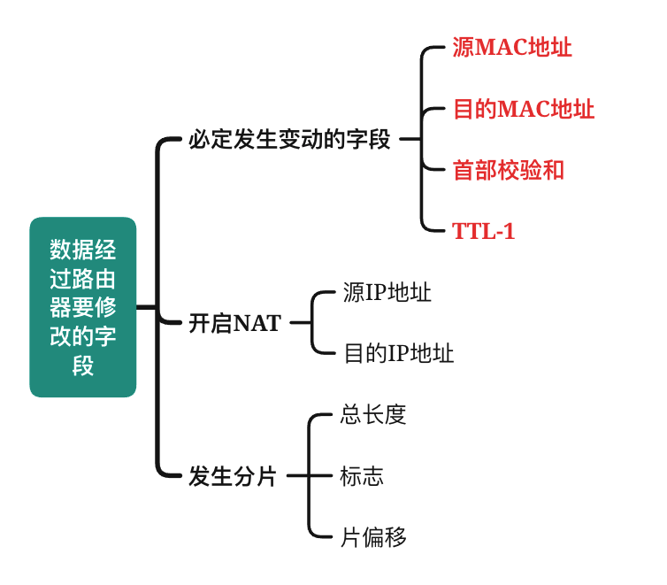</p><div style="page-break-after: always;"></div><h2 id='u5-传输层'><span>U5 传输层</span></h2><h3 id='易错点-6'><span>易错点</span></h3><ul><li><strong><span>网络层无法同时实现TCP和UDP</span></strong><span>（总不能一会儿有连接一会儿无连接吧）</span></li><li><span>端口号仅具有</span><strong><span>本地意义</span></strong></li><li><mjx-container class="MathJax" jax="SVG" style="position: relative;"><svg xmlns="http://www.w3.org/2000/svg" width="35.166ex" height="2.149ex" role="img" focusable="false" viewBox="0 -750 15543.3 950" xmlns:xlink="http://www.w3.org/1999/xlink" aria-hidden="true" style="vertical-align: -0.452ex;"><defs><path id="MJX-380-TEX-I-1D43C" d="M43 1Q26 1 26 10Q26 12 29 24Q34 43 39 45Q42 46 54 46H60Q120 46 136 53Q137 53 138 54Q143 56 149 77T198 273Q210 318 216 344Q286 624 286 626Q284 630 284 631Q274 637 213 637H193Q184 643 189 662Q193 677 195 680T209 683H213Q285 681 359 681Q481 681 487 683H497Q504 676 504 672T501 655T494 639Q491 637 471 637Q440 637 407 634Q393 631 388 623Q381 609 337 432Q326 385 315 341Q245 65 245 59Q245 52 255 50T307 46H339Q345 38 345 37T342 19Q338 6 332 0H316Q279 2 179 2Q143 2 113 2T65 2T43 1Z"></path><path id="MJX-380-TEX-I-1D443" d="M287 628Q287 635 230 637Q206 637 199 638T192 648Q192 649 194 659Q200 679 203 681T397 683Q587 682 600 680Q664 669 707 631T751 530Q751 453 685 389Q616 321 507 303Q500 302 402 301H307L277 182Q247 66 247 59Q247 55 248 54T255 50T272 48T305 46H336Q342 37 342 35Q342 19 335 5Q330 0 319 0Q316 0 282 1T182 2Q120 2 87 2T51 1Q33 1 33 11Q33 13 36 25Q40 41 44 43T67 46Q94 46 127 49Q141 52 146 61Q149 65 218 339T287 628ZM645 554Q645 567 643 575T634 597T609 619T560 635Q553 636 480 637Q463 637 445 637T416 636T404 636Q391 635 386 627Q384 621 367 550T332 412T314 344Q314 342 395 342H407H430Q542 342 590 392Q617 419 631 471T645 554Z"></path><path id="MJX-380-TEX-I-1D447" d="M40 437Q21 437 21 445Q21 450 37 501T71 602L88 651Q93 669 101 677H569H659Q691 677 697 676T704 667Q704 661 687 553T668 444Q668 437 649 437Q640 437 637 437T631 442L629 445Q629 451 635 490T641 551Q641 586 628 604T573 629Q568 630 515 631Q469 631 457 630T439 622Q438 621 368 343T298 60Q298 48 386 46Q418 46 427 45T436 36Q436 31 433 22Q429 4 424 1L422 0Q419 0 415 0Q410 0 363 1T228 2Q99 2 64 0H49Q43 6 43 9T45 27Q49 40 55 46H83H94Q174 46 189 55Q190 56 191 56Q196 59 201 76T241 233Q258 301 269 344Q339 619 339 625Q339 630 310 630H279Q212 630 191 624Q146 614 121 583T67 467Q60 445 57 441T43 437H40Z"></path><path id="MJX-380-TEX-I-1D436" d="M50 252Q50 367 117 473T286 641T490 704Q580 704 633 653Q642 643 648 636T656 626L657 623Q660 623 684 649Q691 655 699 663T715 679T725 690L740 705H746Q760 705 760 698Q760 694 728 561Q692 422 692 421Q690 416 687 415T669 413H653Q647 419 647 422Q647 423 648 429T650 449T651 481Q651 552 619 605T510 659Q484 659 454 652T382 628T299 572T226 479Q194 422 175 346T156 222Q156 108 232 58Q280 24 350 24Q441 24 512 92T606 240Q610 253 612 255T628 257Q648 257 648 248Q648 243 647 239Q618 132 523 55T319 -22Q206 -22 128 53T50 252Z"></path><path id="MJX-380-TEX-N-32" d="M109 429Q82 429 66 447T50 491Q50 562 103 614T235 666Q326 666 387 610T449 465Q449 422 429 383T381 315T301 241Q265 210 201 149L142 93L218 92Q375 92 385 97Q392 99 409 186V189H449V186Q448 183 436 95T421 3V0H50V19V31Q50 38 56 46T86 81Q115 113 136 137Q145 147 170 174T204 211T233 244T261 278T284 308T305 340T320 369T333 401T340 431T343 464Q343 527 309 573T212 619Q179 619 154 602T119 569T109 550Q109 549 114 549Q132 549 151 535T170 489Q170 464 154 447T109 429Z"></path><path id="MJX-380-TEX-N-30" d="M96 585Q152 666 249 666Q297 666 345 640T423 548Q460 465 460 320Q460 165 417 83Q397 41 362 16T301 -15T250 -22Q224 -22 198 -16T137 16T82 83Q39 165 39 320Q39 494 96 585ZM321 597Q291 629 250 629Q208 629 178 597Q153 571 145 525T137 333Q137 175 145 125T181 46Q209 16 250 16Q290 16 318 46Q347 76 354 130T362 333Q362 478 354 524T321 597Z"></path><path id="MJX-380-TEX-I-1D435" d="M231 637Q204 637 199 638T194 649Q194 676 205 682Q206 683 335 683Q594 683 608 681Q671 671 713 636T756 544Q756 480 698 429T565 360L555 357Q619 348 660 311T702 219Q702 146 630 78T453 1Q446 0 242 0Q42 0 39 2Q35 5 35 10Q35 17 37 24Q42 43 47 45Q51 46 62 46H68Q95 46 128 49Q142 52 147 61Q150 65 219 339T288 628Q288 635 231 637ZM649 544Q649 574 634 600T585 634Q578 636 493 637Q473 637 451 637T416 636H403Q388 635 384 626Q382 622 352 506Q352 503 351 500L320 374H401Q482 374 494 376Q554 386 601 434T649 544ZM595 229Q595 273 572 302T512 336Q506 337 429 337Q311 337 310 336Q310 334 293 263T258 122L240 52Q240 48 252 48T333 46Q422 46 429 47Q491 54 543 105T595 229Z"></path></defs><g stroke="currentColor" fill="currentColor" stroke-width="0" transform="scale(1,-1)"><g data-mml-node="math"><g data-mml-node="mi"><use data-c="1D43C" xlink:href="#MJX-380-TEX-I-1D43C"></use></g><g data-mml-node="mi" transform="translate(504,0)"><use data-c="1D443" xlink:href="#MJX-380-TEX-I-1D443"></use></g><g data-mml-node="mtext" transform="translate(1255,0)"><text data-variant="normal" transform="scale(1,-1)" font-size="884px" font-family="serif">首</text></g><g data-mml-node="mtext" transform="translate(2125.4,0)"><text data-variant="normal" transform="scale(1,-1)" font-size="884px" font-family="serif">部</text></g><g data-mml-node="mtext" transform="translate(2995.8,0)"><text data-variant="normal" transform="scale(1,-1)" font-size="884px" font-family="serif">与</text></g><g data-mml-node="mi" transform="translate(3866.2,0)"><use data-c="1D447" xlink:href="#MJX-380-TEX-I-1D447"></use></g><g data-mml-node="mi" transform="translate(4570.2,0)"><use data-c="1D436" xlink:href="#MJX-380-TEX-I-1D436"></use></g><g data-mml-node="mi" transform="translate(5330.2,0)"><use data-c="1D443" xlink:href="#MJX-380-TEX-I-1D443"></use></g><g data-mml-node="mtext" transform="translate(6081.2,0)"><text data-variant="normal" transform="scale(1,-1)" font-size="884px" font-family="serif">首</text></g><g data-mml-node="mtext" transform="translate(6951.6,0)"><text data-variant="normal" transform="scale(1,-1)" font-size="884px" font-family="serif">部</text></g><g data-mml-node="mtext" transform="translate(7822,0)"><text data-variant="normal" transform="scale(1,-1)" font-size="884px" font-family="serif">固</text></g><g data-mml-node="mtext" transform="translate(8692.4,0)"><text data-variant="normal" transform="scale(1,-1)" font-size="884px" font-family="serif">定</text></g><g data-mml-node="mtext" transform="translate(9562.8,0)"><text data-variant="normal" transform="scale(1,-1)" font-size="884px" font-family="serif">部</text></g><g data-mml-node="mtext" transform="translate(10433.3,0)"><text data-variant="normal" transform="scale(1,-1)" font-size="884px" font-family="serif">分</text></g><g data-mml-node="mtext" transform="translate(11303.7,0)"><text data-variant="normal" transform="scale(1,-1)" font-size="884px" font-family="serif">长</text></g><g data-mml-node="mtext" transform="translate(12130.5,0)"><text data-variant="normal" transform="scale(1,-1)" font-size="884px" font-family="serif">度</text></g><g data-mml-node="mi" transform="translate(12957.4,0)"><text data-variant="italic" transform="scale(1,-1)" font-size="884px" font-family="serif" font-style="italic">：</text></g><g data-mml-node="mn" transform="translate(13784.3,0)"><use data-c="32" xlink:href="#MJX-380-TEX-N-32"></use><use data-c="30" xlink:href="#MJX-380-TEX-N-30" transform="translate(500,0)"></use></g><g data-mml-node="mi" transform="translate(14784.3,0)"><use data-c="1D435" xlink:href="#MJX-380-TEX-I-1D435"></use></g></g></g></svg><mjx-assistive-mml unselectable="on" display="inline"><math xmlns="http://www.w3.org/1998/Math/MathML"><mi>I</mi><mi>P</mi><mtext>首</mtext><mtext>部</mtext><mtext>与</mtext><mi>T</mi><mi>C</mi><mi>P</mi><mtext>首</mtext><mtext>部</mtext><mtext>固</mtext><mtext>定</mtext><mtext>部</mtext><mtext>分</mtext><mtext>长</mtext><mtext>度</mtext><mi>：</mi><mn>20</mn><mi>B</mi></math></mjx-assistive-mml></mjx-container><script type="math/tex">IP首部与TCP首部固定部分长度：20B</script></li><li><mjx-container class="MathJax" jax="SVG" style="position: relative;"><svg xmlns="http://www.w3.org/2000/svg" width="65.612ex" height="2.149ex" role="img" focusable="false" viewBox="0 -750 29000.5 950" xmlns:xlink="http://www.w3.org/1999/xlink" aria-hidden="true" style="vertical-align: -0.452ex;"><defs><path id="MJX-381-TEX-I-1D447" d="M40 437Q21 437 21 445Q21 450 37 501T71 602L88 651Q93 669 101 677H569H659Q691 677 697 676T704 667Q704 661 687 553T668 444Q668 437 649 437Q640 437 637 437T631 442L629 445Q629 451 635 490T641 551Q641 586 628 604T573 629Q568 630 515 631Q469 631 457 630T439 622Q438 621 368 343T298 60Q298 48 386 46Q418 46 427 45T436 36Q436 31 433 22Q429 4 424 1L422 0Q419 0 415 0Q410 0 363 1T228 2Q99 2 64 0H49Q43 6 43 9T45 27Q49 40 55 46H83H94Q174 46 189 55Q190 56 191 56Q196 59 201 76T241 233Q258 301 269 344Q339 619 339 625Q339 630 310 630H279Q212 630 191 624Q146 614 121 583T67 467Q60 445 57 441T43 437H40Z"></path><path id="MJX-381-TEX-I-1D436" d="M50 252Q50 367 117 473T286 641T490 704Q580 704 633 653Q642 643 648 636T656 626L657 623Q660 623 684 649Q691 655 699 663T715 679T725 690L740 705H746Q760 705 760 698Q760 694 728 561Q692 422 692 421Q690 416 687 415T669 413H653Q647 419 647 422Q647 423 648 429T650 449T651 481Q651 552 619 605T510 659Q484 659 454 652T382 628T299 572T226 479Q194 422 175 346T156 222Q156 108 232 58Q280 24 350 24Q441 24 512 92T606 240Q610 253 612 255T628 257Q648 257 648 248Q648 243 647 239Q618 132 523 55T319 -22Q206 -22 128 53T50 252Z"></path><path id="MJX-381-TEX-I-1D443" d="M287 628Q287 635 230 637Q206 637 199 638T192 648Q192 649 194 659Q200 679 203 681T397 683Q587 682 600 680Q664 669 707 631T751 530Q751 453 685 389Q616 321 507 303Q500 302 402 301H307L277 182Q247 66 247 59Q247 55 248 54T255 50T272 48T305 46H336Q342 37 342 35Q342 19 335 5Q330 0 319 0Q316 0 282 1T182 2Q120 2 87 2T51 1Q33 1 33 11Q33 13 36 25Q40 41 44 43T67 46Q94 46 127 49Q141 52 146 61Q149 65 218 339T287 628ZM645 554Q645 567 643 575T634 597T609 619T560 635Q553 636 480 637Q463 637 445 637T416 636T404 636Q391 635 386 627Q384 621 367 550T332 412T314 344Q314 342 395 342H407H430Q542 342 590 392Q617 419 631 471T645 554Z"></path><path id="MJX-381-TEX-N-32" d="M109 429Q82 429 66 447T50 491Q50 562 103 614T235 666Q326 666 387 610T449 465Q449 422 429 383T381 315T301 241Q265 210 201 149L142 93L218 92Q375 92 385 97Q392 99 409 186V189H449V186Q448 183 436 95T421 3V0H50V19V31Q50 38 56 46T86 81Q115 113 136 137Q145 147 170 174T204 211T233 244T261 278T284 308T305 340T320 369T333 401T340 431T343 464Q343 527 309 573T212 619Q179 619 154 602T119 569T109 550Q109 549 114 549Q132 549 151 535T170 489Q170 464 154 447T109 429Z"></path><path id="MJX-381-TEX-I-1D435" d="M231 637Q204 637 199 638T194 649Q194 676 205 682Q206 683 335 683Q594 683 608 681Q671 671 713 636T756 544Q756 480 698 429T565 360L555 357Q619 348 660 311T702 219Q702 146 630 78T453 1Q446 0 242 0Q42 0 39 2Q35 5 35 10Q35 17 37 24Q42 43 47 45Q51 46 62 46H68Q95 46 128 49Q142 52 147 61Q150 65 219 339T288 628Q288 635 231 637ZM649 544Q649 574 634 600T585 634Q578 636 493 637Q473 637 451 637T416 636H403Q388 635 384 626Q382 622 352 506Q352 503 351 500L320 374H401Q482 374 494 376Q554 386 601 434T649 544ZM595 229Q595 273 572 302T512 336Q506 337 429 337Q311 337 310 336Q310 334 293 263T258 122L240 52Q240 48 252 48T333 46Q422 46 429 47Q491 54 543 105T595 229Z"></path><path id="MJX-381-TEX-I-1D43C" d="M43 1Q26 1 26 10Q26 12 29 24Q34 43 39 45Q42 46 54 46H60Q120 46 136 53Q137 53 138 54Q143 56 149 77T198 273Q210 318 216 344Q286 624 286 626Q284 630 284 631Q274 637 213 637H193Q184 643 189 662Q193 677 195 680T209 683H213Q285 681 359 681Q481 681 487 683H497Q504 676 504 672T501 655T494 639Q491 637 471 637Q440 637 407 634Q393 631 388 623Q381 609 337 432Q326 385 315 341Q245 65 245 59Q245 52 255 50T307 46H339Q345 38 345 37T342 19Q338 6 332 0H316Q279 2 179 2Q143 2 113 2T65 2T43 1Z"></path><path id="MJX-381-TEX-N-34" d="M462 0Q444 3 333 3Q217 3 199 0H190V46H221Q241 46 248 46T265 48T279 53T286 61Q287 63 287 115V165H28V211L179 442Q332 674 334 675Q336 677 355 677H373L379 671V211H471V165H379V114Q379 73 379 66T385 54Q393 47 442 46H471V0H462ZM293 211V545L74 212L183 211H293Z"></path><path id="MJX-381-TEX-I-1D440" d="M289 629Q289 635 232 637Q208 637 201 638T194 648Q194 649 196 659Q197 662 198 666T199 671T201 676T203 679T207 681T212 683T220 683T232 684Q238 684 262 684T307 683Q386 683 398 683T414 678Q415 674 451 396L487 117L510 154Q534 190 574 254T662 394Q837 673 839 675Q840 676 842 678T846 681L852 683H948Q965 683 988 683T1017 684Q1051 684 1051 673Q1051 668 1048 656T1045 643Q1041 637 1008 637Q968 636 957 634T939 623Q936 618 867 340T797 59Q797 55 798 54T805 50T822 48T855 46H886Q892 37 892 35Q892 19 885 5Q880 0 869 0Q864 0 828 1T736 2Q675 2 644 2T609 1Q592 1 592 11Q592 13 594 25Q598 41 602 43T625 46Q652 46 685 49Q699 52 704 61Q706 65 742 207T813 490T848 631L654 322Q458 10 453 5Q451 4 449 3Q444 0 433 0Q418 0 415 7Q413 11 374 317L335 624L267 354Q200 88 200 79Q206 46 272 46H282Q288 41 289 37T286 19Q282 3 278 1Q274 0 267 0Q265 0 255 0T221 1T157 2Q127 2 95 1T58 0Q43 0 39 2T35 11Q35 13 38 25T43 40Q45 46 65 46Q135 46 154 86Q158 92 223 354T289 629Z"></path><path id="MJX-381-TEX-I-1D434" d="M208 74Q208 50 254 46Q272 46 272 35Q272 34 270 22Q267 8 264 4T251 0Q249 0 239 0T205 1T141 2Q70 2 50 0H42Q35 7 35 11Q37 38 48 46H62Q132 49 164 96Q170 102 345 401T523 704Q530 716 547 716H555H572Q578 707 578 706L606 383Q634 60 636 57Q641 46 701 46Q726 46 726 36Q726 34 723 22Q720 7 718 4T704 0Q701 0 690 0T651 1T578 2Q484 2 455 0H443Q437 6 437 9T439 27Q443 40 445 43L449 46H469Q523 49 533 63L521 213H283L249 155Q208 86 208 74ZM516 260Q516 271 504 416T490 562L463 519Q447 492 400 412L310 260L413 259Q516 259 516 260Z"></path><path id="MJX-381-TEX-N-36" d="M42 313Q42 476 123 571T303 666Q372 666 402 630T432 550Q432 525 418 510T379 495Q356 495 341 509T326 548Q326 592 373 601Q351 623 311 626Q240 626 194 566Q147 500 147 364L148 360Q153 366 156 373Q197 433 263 433H267Q313 433 348 414Q372 400 396 374T435 317Q456 268 456 210V192Q456 169 451 149Q440 90 387 34T253 -22Q225 -22 199 -14T143 16T92 75T56 172T42 313ZM257 397Q227 397 205 380T171 335T154 278T148 216Q148 133 160 97T198 39Q222 21 251 21Q302 21 329 59Q342 77 347 104T352 209Q352 289 347 316T329 361Q302 397 257 397Z"></path></defs><g stroke="currentColor" fill="currentColor" stroke-width="0" transform="scale(1,-1)"><g data-mml-node="math"><g data-mml-node="mi"><use data-c="1D447" xlink:href="#MJX-381-TEX-I-1D447"></use></g><g data-mml-node="mi" transform="translate(704,0)"><use data-c="1D436" xlink:href="#MJX-381-TEX-I-1D436"></use></g><g data-mml-node="mi" transform="translate(1464,0)"><use data-c="1D443" xlink:href="#MJX-381-TEX-I-1D443"></use></g><g data-mml-node="mtext" transform="translate(2215,0)"><text data-variant="normal" transform="scale(1,-1)" font-size="884px" font-family="serif">端</text></g><g data-mml-node="mtext" transform="translate(3085.4,0)"><text data-variant="normal" transform="scale(1,-1)" font-size="884px" font-family="serif">口</text></g><g data-mml-node="mtext" transform="translate(3912.3,0)"><text data-variant="normal" transform="scale(1,-1)" font-size="884px" font-family="serif">字</text></g><g data-mml-node="mtext" transform="translate(4739.2,0)"><text data-variant="normal" transform="scale(1,-1)" font-size="884px" font-family="serif">段</text></g><g data-mml-node="mtext" transform="translate(5609.6,0)"><text data-variant="normal" transform="scale(1,-1)" font-size="884px" font-family="serif">长</text></g><g data-mml-node="mtext" transform="translate(6436.5,0)"><text data-variant="normal" transform="scale(1,-1)" font-size="884px" font-family="serif">度</text></g><g data-mml-node="mi" transform="translate(7263.4,0)"><text data-variant="italic" transform="scale(1,-1)" font-size="884px" font-family="serif" font-style="italic">：</text></g><g data-mml-node="mn" transform="translate(8090.3,0)"><use data-c="32" xlink:href="#MJX-381-TEX-N-32"></use></g><g data-mml-node="mi" transform="translate(8590.3,0)"><use data-c="1D435" xlink:href="#MJX-381-TEX-I-1D435"></use></g><g data-mml-node="mi" transform="translate(9349.3,0)"><text data-variant="italic" transform="scale(1,-1)" font-size="884px" font-family="serif" font-style="italic">，</text></g><g data-mml-node="mi" transform="translate(10176.2,0)"><use data-c="1D43C" xlink:href="#MJX-381-TEX-I-1D43C"></use></g><g data-mml-node="mi" transform="translate(10680.2,0)"><use data-c="1D443" xlink:href="#MJX-381-TEX-I-1D443"></use></g><g data-mml-node="mtext" transform="translate(11431.2,0)"><text data-variant="normal" transform="scale(1,-1)" font-size="884px" font-family="serif">地</text></g><g data-mml-node="mtext" transform="translate(12258,0)"><text data-variant="normal" transform="scale(1,-1)" font-size="884px" font-family="serif">址</text></g><g data-mml-node="mtext" transform="translate(13084.9,0)"><text data-variant="normal" transform="scale(1,-1)" font-size="884px" font-family="serif">字</text></g><g data-mml-node="mtext" transform="translate(13911.8,0)"><text data-variant="normal" transform="scale(1,-1)" font-size="884px" font-family="serif">段</text></g><g data-mml-node="mtext" transform="translate(14782.2,0)"><text data-variant="normal" transform="scale(1,-1)" font-size="884px" font-family="serif">长</text></g><g data-mml-node="mtext" transform="translate(15609.1,0)"><text data-variant="normal" transform="scale(1,-1)" font-size="884px" font-family="serif">度</text></g><g data-mml-node="mi" transform="translate(16436,0)"><text data-variant="italic" transform="scale(1,-1)" font-size="884px" font-family="serif" font-style="italic">：</text></g><g data-mml-node="mn" transform="translate(17262.9,0)"><use data-c="34" xlink:href="#MJX-381-TEX-N-34"></use></g><g data-mml-node="mi" transform="translate(17762.9,0)"><use data-c="1D435" xlink:href="#MJX-381-TEX-I-1D435"></use></g><g data-mml-node="mi" transform="translate(18521.9,0)"><text data-variant="italic" transform="scale(1,-1)" font-size="884px" font-family="serif" font-style="italic">，</text></g><g data-mml-node="mi" transform="translate(19348.8,0)"><use data-c="1D440" xlink:href="#MJX-381-TEX-I-1D440"></use></g><g data-mml-node="mi" transform="translate(20399.8,0)"><use data-c="1D434" xlink:href="#MJX-381-TEX-I-1D434"></use></g><g data-mml-node="mi" transform="translate(21149.8,0)"><use data-c="1D436" xlink:href="#MJX-381-TEX-I-1D436"></use></g><g data-mml-node="mtext" transform="translate(21909.8,0)"><text data-variant="normal" transform="scale(1,-1)" font-size="884px" font-family="serif">地</text></g><g data-mml-node="mtext" transform="translate(22736.7,0)"><text data-variant="normal" transform="scale(1,-1)" font-size="884px" font-family="serif">址</text></g><g data-mml-node="mtext" transform="translate(23563.6,0)"><text data-variant="normal" transform="scale(1,-1)" font-size="884px" font-family="serif">字</text></g><g data-mml-node="mtext" transform="translate(24390.5,0)"><text data-variant="normal" transform="scale(1,-1)" font-size="884px" font-family="serif">段</text></g><g data-mml-node="mtext" transform="translate(25260.9,0)"><text data-variant="normal" transform="scale(1,-1)" font-size="884px" font-family="serif">长</text></g><g data-mml-node="mtext" transform="translate(26087.8,0)"><text data-variant="normal" transform="scale(1,-1)" font-size="884px" font-family="serif">度</text></g><g data-mml-node="mi" transform="translate(26914.7,0)"><text data-variant="italic" transform="scale(1,-1)" font-size="884px" font-family="serif" font-style="italic">：</text></g><g data-mml-node="mn" transform="translate(27741.5,0)"><use data-c="36" xlink:href="#MJX-381-TEX-N-36"></use></g><g data-mml-node="mi" transform="translate(28241.5,0)"><use data-c="1D435" xlink:href="#MJX-381-TEX-I-1D435"></use></g></g></g></svg><mjx-assistive-mml unselectable="on" display="inline"><math xmlns="http://www.w3.org/1998/Math/MathML"><mi>T</mi><mi>C</mi><mi>P</mi><mtext>端</mtext><mtext>口</mtext><mtext>字</mtext><mtext>段</mtext><mtext>长</mtext><mtext>度</mtext><mi>：</mi><mn>2</mn><mi>B</mi><mi>，</mi><mi>I</mi><mi>P</mi><mtext>地</mtext><mtext>址</mtext><mtext>字</mtext><mtext>段</mtext><mtext>长</mtext><mtext>度</mtext><mi>：</mi><mn>4</mn><mi>B</mi><mi>，</mi><mi>M</mi><mi>A</mi><mi>C</mi><mtext>地</mtext><mtext>址</mtext><mtext>字</mtext><mtext>段</mtext><mtext>长</mtext><mtext>度</mtext><mi>：</mi><mn>6</mn><mi>B</mi></math></mjx-assistive-mml></mjx-container><script type="math/tex">TCP端口字段长度：2B，IP地址字段长度：4B，MAC地址字段长度：6B</script></li><li><strong><span>TCP与虚电路服务的区别？</span></strong></li></ul><blockquote><p><span>TCP报文段</span><strong><span>在路由中不可见</span></strong></p><p><span>在网络层中</span><strong><span>若采用虚电路</span></strong><span>，则网络层</span><strong><span>无法提供无连接服务</span></strong><span>，而传输层</span><strong><span>TCP则不影响网络层提供无连接服务</span></strong></p></blockquote><ul><li><span>TCP是面向字节的，每个</span><strong><span>字节</span></strong><span>都需要消耗一个序号</span></li><li><strong><span>同一条PC中TCP与UDP的共存问题</span></strong></li></ul><blockquote><p><strong><span>同一台计算机中</span></strong><span>，TCP和UDP各自拥有自己的端口号，他们</span><strong><span>互不干扰</span></strong></p></blockquote><ul><li><strong><span>滑动窗口的作用？</span></strong></li></ul><blockquote><p><span>答：流量控制</span></p><p><span>注意区别于拥塞控制</span></p><p><span>拥塞窗口虽然确实是用来控制拥塞的，</span><strong><span>但是拥塞窗口并不属于“滑动窗口”</span></strong><span>。</span></p></blockquote><ul><li><strong><span>判别是否需要对以太网帧填充</span></strong></li></ul><blockquote><p><span>当IP分组总长度</span><strong><span>&lt;46B</span></strong><span>时，就需要对分组进行填充（</span><strong><span>因为IP分组总长相当于MAC帧数据部分，MAC帧最小长度64B-MAC帧头尾18B=46B</span></strong><span>）</span></p></blockquote><ul><li><strong><span>两个已经建立连接的端口之间再建立连接，会怎样？</span></strong></li></ul><blockquote><p><strong><span>建立失败</span></strong><span>，但</span><u><span>不影响之前的链接</span></u></p></blockquote><ul><li><strong><span>复用与分用</span></strong></li></ul><h3 id='常见熟知端口'><span>常见熟知端口</span></h3><figure><table><thead><tr><th><span>应用程序</span></th><th><span>FTP</span></th><th><span>TELNET</span></th><th><span>SMTP</span></th><th><span>DNS</span></th><th><span>TFTP</span></th><th><span>HTTP</span></th><th><span>POP3</span></th><th><span>SNMP</span></th></tr></thead><tbody><tr><td><span>端口号</span></td><td><span>21控制+20数据</span></td><td><span>23</span></td><td><span>25</span></td><td><span>53</span></td><td><span>69</span></td><td><span>80</span></td><td><span>110</span></td><td><span>161</span></td></tr></tbody></table></figure><h3 id='udp'><span>UDP</span></h3><h4 id='首部格式-1'><span>首部格式</span></h4><p></p><h4 id='udp校验'><span>UDP校验</span></h4><p></p><ul><li><p><span>UDP在计算校验和之前会增加12B的伪首部（仅用于计算校验和）</span></p></li><li><p><span>UDP校验和</span><strong><span>不仅校验首部，而且校验数据</span></strong></p></li><li><p><span>UDP的校验和不是必须的</span></p><ul><li><span>禁用：全0</span></li><li><span>恰好=0：全1</span></li></ul></li></ul><h4 id='复用与分用'><span>复用与分用</span></h4><p>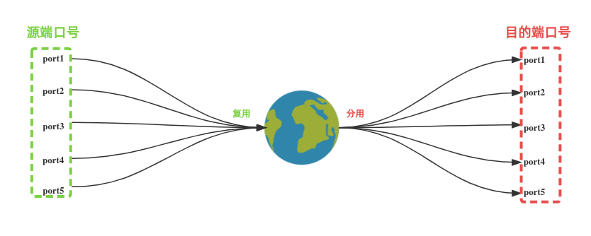</p><blockquote><p><strong><span>复用：</span></strong><span>多个应用进程同时使用（/把信息打包发给）传输层服务，对应的是</span><strong><span>源端口号</span></strong><span>。</span></p><p><strong><span>分用：</span></strong><span>传输层把收到的信息分发给各个进程，对应的是</span><strong><span>目的端口号</span></strong><span>。</span></p><p><strong><span>记忆：</span></strong><span>复源分目</span></p></blockquote><p>&nbsp;</p><h3 id='tcp'><span>TCP</span></h3><h4 id='确认机制'><span>确认机制</span></h4><p><span>TCP是</span><strong><span>面向字节</span></strong><span>的，但仅仅是以字节为编号，并</span><strong><span>不是</span></strong><span>每收到一个字节就确认一次，而是以</span><strong><span>报文段</span></strong><span>为单位进行确认</span></p><p>&nbsp;</p><h4 id='首部格式-2'><span>首部格式</span></h4><p></p><h4 id='三次握手'><span>三次握手</span></h4><p></p><ul><li><p><strong><span>第三次握手</span></strong><span>就已经可以允许携带数据</span></p></li><li><p><span>服务器端的资源的在</span><strong><span>第二次握手</span></strong><span>时分配</span></p></li><li><p><span>客户端资源在</span><strong><span>第三次握手</span></strong><span>时分配</span></p></li><li><p><span>这使得服务器容易遭受</span><strong><span>SYN洪泛攻击</span></strong><span>：</span></p><p><span>指攻击者对服务器发送SYN后</span><strong><span>不进行确认</span></strong><span>，使得服务器的会话</span><strong><span>一直处于挂起状态，资源得不到释放</span></strong></p></li></ul><p>&nbsp;</p><p>&nbsp;</p><h4 id='四次挥手'><span>四次挥手</span></h4><p></p><ul><li><span>客户端与服务器，两者都可以主动要求释放连接</span></li><li><span>为什么客户端要等待2MSL后再关闭？</span></li></ul><blockquote><p><span>因为如果客户端发送的最后一次确认</span><strong><span>没有成功送达，则服务器会超时重传</span></strong><span>FIN=1的通知，</span><strong><span>而2MSL的时间内足够客户端超时重传了</span></strong></p></blockquote><p>&nbsp;</p><div style="page-break-after: always;"></div><h2 id='u6-应用层'><span>U6 应用层</span></h2><h3 id='易错点-7'><span>易错点</span></h3><ul><li><strong><span>DNS系统中，哪一类服务器能够将其管辖的主机名转为IP地址？</span></strong></li></ul><blockquote><p><span>授权域名服务器</span></p></blockquote><ul><li><span>问你最多查询次数的时候别忘了com之上还有根（注意区分是迭代还是递归）</span></li></ul><blockquote><p><mjx-container class="MathJax" jax="SVG" style="position: relative;"><svg xmlns="http://www.w3.org/2000/svg" width="5.809ex" height="2.149ex" role="img" focusable="false" viewBox="0 -750 2567.7 950" xmlns:xlink="http://www.w3.org/1999/xlink" aria-hidden="true" style="vertical-align: -0.452ex;"><defs></defs><g stroke="currentColor" fill="currentColor" stroke-width="0" transform="scale(1,-1)"><g data-mml-node="math"><g data-mml-node="mtext"><text data-variant="normal" transform="scale(1,-1)" font-size="884px" font-family="serif">例</text></g><g data-mml-node="mtext" transform="translate(870.4,0)"><text data-variant="normal" transform="scale(1,-1)" font-size="884px" font-family="serif">题</text></g><g data-mml-node="mi" transform="translate(1740.8,0)"><text data-variant="italic" transform="scale(1,-1)" font-size="884px" font-family="serif" font-style="italic">：</text></g></g></g></svg><mjx-assistive-mml unselectable="on" display="inline"><math xmlns="http://www.w3.org/1998/Math/MathML"><mtext>例</mtext><mtext>题</mtext><mi>：</mi></math></mjx-assistive-mml></mjx-container><script type="math/tex">例题：</script></p><div>

</div><p>&nbsp;</p><p><mjx-container class="MathJax" jax="SVG" style="position: relative;"><svg xmlns="http://www.w3.org/2000/svg" width="5.809ex" height="2.149ex" role="img" focusable="false" viewBox="0 -750 2567.7 950" xmlns:xlink="http://www.w3.org/1999/xlink" aria-hidden="true" style="vertical-align: -0.452ex;"><defs></defs><g stroke="currentColor" fill="currentColor" stroke-width="0" transform="scale(1,-1)"><g data-mml-node="math"><g data-mml-node="mtext"><text data-variant="normal" transform="scale(1,-1)" font-size="884px" font-family="serif">解</text></g><g data-mml-node="mtext" transform="translate(870.4,0)"><text data-variant="normal" transform="scale(1,-1)" font-size="884px" font-family="serif">析</text></g><g data-mml-node="mi" transform="translate(1740.8,0)"><text data-variant="italic" transform="scale(1,-1)" font-size="884px" font-family="serif" font-style="italic">：</text></g></g></g></svg><mjx-assistive-mml unselectable="on" display="inline"><math xmlns="http://www.w3.org/1998/Math/MathML"><mtext>解</mtext><mtext>析</mtext><mi>：</mi></math></mjx-assistive-mml></mjx-container><script type="math/tex">解析：</script></p><p><mjx-container class="MathJax" jax="SVG" style="position: relative;"><svg xmlns="http://www.w3.org/2000/svg" width="12.75ex" height="2.149ex" role="img" focusable="false" viewBox="0 -750 5635.4 950" xmlns:xlink="http://www.w3.org/1999/xlink" aria-hidden="true" style="vertical-align: -0.452ex;"><defs><path id="MJX-384-TEX-N-30" d="M96 585Q152 666 249 666Q297 666 345 640T423 548Q460 465 460 320Q460 165 417 83Q397 41 362 16T301 -15T250 -22Q224 -22 198 -16T137 16T82 83Q39 165 39 320Q39 494 96 585ZM321 597Q291 629 250 629Q208 629 178 597Q153 571 145 525T137 333Q137 175 145 125T181 46Q209 16 250 16Q290 16 318 46Q347 76 354 130T362 333Q362 478 354 524T321 597Z"></path></defs><g stroke="currentColor" fill="currentColor" stroke-width="0" transform="scale(1,-1)"><g data-mml-node="math"><g data-mml-node="mtext"><text data-variant="normal" transform="scale(1,-1)" font-size="884px" font-family="serif">最</text></g><g data-mml-node="mtext" transform="translate(870.4,0)"><text data-variant="normal" transform="scale(1,-1)" font-size="884px" font-family="serif">少</text></g><g data-mml-node="mtext" transform="translate(1740.8,0)"><text data-variant="normal" transform="scale(1,-1)" font-size="884px" font-family="serif">肯</text></g><g data-mml-node="mtext" transform="translate(2611.2,0)"><text data-variant="normal" transform="scale(1,-1)" font-size="884px" font-family="serif">定</text></g><g data-mml-node="mtext" transform="translate(3481.6,0)"><text data-variant="normal" transform="scale(1,-1)" font-size="884px" font-family="serif">是</text></g><g data-mml-node="mn" transform="translate(4308.5,0)"><use data-c="30" xlink:href="#MJX-384-TEX-N-30"></use></g><g data-mml-node="mtext" transform="translate(4808.5,0)"><text data-variant="normal" transform="scale(1,-1)" font-size="884px" font-family="serif">次</text></g></g></g></svg><mjx-assistive-mml unselectable="on" display="inline"><math xmlns="http://www.w3.org/1998/Math/MathML"><mtext>最</mtext><mtext>少</mtext><mtext>肯</mtext><mtext>定</mtext><mtext>是</mtext><mn>0</mn><mtext>次</mtext></math></mjx-assistive-mml></mjx-container><script type="math/tex">最少肯定是0次</script></p><p><mjx-container class="MathJax" jax="SVG" style="position: relative;"><svg xmlns="http://www.w3.org/2000/svg" width="53.322ex" height="2.161ex" role="img" focusable="false" viewBox="0 -750 23568.5 955" xmlns:xlink="http://www.w3.org/1999/xlink" aria-hidden="true" style="vertical-align: -0.464ex;"><defs><path id="MJX-385-TEX-I-1D450" d="M34 159Q34 268 120 355T306 442Q362 442 394 418T427 355Q427 326 408 306T360 285Q341 285 330 295T319 325T330 359T352 380T366 386H367Q367 388 361 392T340 400T306 404Q276 404 249 390Q228 381 206 359Q162 315 142 235T121 119Q121 73 147 50Q169 26 205 26H209Q321 26 394 111Q403 121 406 121Q410 121 419 112T429 98T420 83T391 55T346 25T282 0T202 -11Q127 -11 81 37T34 159Z"></path><path id="MJX-385-TEX-I-1D45C" d="M201 -11Q126 -11 80 38T34 156Q34 221 64 279T146 380Q222 441 301 441Q333 441 341 440Q354 437 367 433T402 417T438 387T464 338T476 268Q476 161 390 75T201 -11ZM121 120Q121 70 147 48T206 26Q250 26 289 58T351 142Q360 163 374 216T388 308Q388 352 370 375Q346 405 306 405Q243 405 195 347Q158 303 140 230T121 120Z"></path><path id="MJX-385-TEX-I-1D45A" d="M21 287Q22 293 24 303T36 341T56 388T88 425T132 442T175 435T205 417T221 395T229 376L231 369Q231 367 232 367L243 378Q303 442 384 442Q401 442 415 440T441 433T460 423T475 411T485 398T493 385T497 373T500 364T502 357L510 367Q573 442 659 442Q713 442 746 415T780 336Q780 285 742 178T704 50Q705 36 709 31T724 26Q752 26 776 56T815 138Q818 149 821 151T837 153Q857 153 857 145Q857 144 853 130Q845 101 831 73T785 17T716 -10Q669 -10 648 17T627 73Q627 92 663 193T700 345Q700 404 656 404H651Q565 404 506 303L499 291L466 157Q433 26 428 16Q415 -11 385 -11Q372 -11 364 -4T353 8T350 18Q350 29 384 161L420 307Q423 322 423 345Q423 404 379 404H374Q288 404 229 303L222 291L189 157Q156 26 151 16Q138 -11 108 -11Q95 -11 87 -5T76 7T74 17Q74 30 112 181Q151 335 151 342Q154 357 154 369Q154 405 129 405Q107 405 92 377T69 316T57 280Q55 278 41 278H27Q21 284 21 287Z"></path><path id="MJX-385-TEX-I-1D44E" d="M33 157Q33 258 109 349T280 441Q331 441 370 392Q386 422 416 422Q429 422 439 414T449 394Q449 381 412 234T374 68Q374 43 381 35T402 26Q411 27 422 35Q443 55 463 131Q469 151 473 152Q475 153 483 153H487Q506 153 506 144Q506 138 501 117T481 63T449 13Q436 0 417 -8Q409 -10 393 -10Q359 -10 336 5T306 36L300 51Q299 52 296 50Q294 48 292 46Q233 -10 172 -10Q117 -10 75 30T33 157ZM351 328Q351 334 346 350T323 385T277 405Q242 405 210 374T160 293Q131 214 119 129Q119 126 119 118T118 106Q118 61 136 44T179 26Q217 26 254 59T298 110Q300 114 325 217T351 328Z"></path><path id="MJX-385-TEX-I-1D44F" d="M73 647Q73 657 77 670T89 683Q90 683 161 688T234 694Q246 694 246 685T212 542Q204 508 195 472T180 418L176 399Q176 396 182 402Q231 442 283 442Q345 442 383 396T422 280Q422 169 343 79T173 -11Q123 -11 82 27T40 150V159Q40 180 48 217T97 414Q147 611 147 623T109 637Q104 637 101 637H96Q86 637 83 637T76 640T73 647ZM336 325V331Q336 405 275 405Q258 405 240 397T207 376T181 352T163 330L157 322L136 236Q114 150 114 114Q114 66 138 42Q154 26 178 26Q211 26 245 58Q270 81 285 114T318 219Q336 291 336 325Z"></path><path id="MJX-385-TEX-I-1D465" d="M52 289Q59 331 106 386T222 442Q257 442 286 424T329 379Q371 442 430 442Q467 442 494 420T522 361Q522 332 508 314T481 292T458 288Q439 288 427 299T415 328Q415 374 465 391Q454 404 425 404Q412 404 406 402Q368 386 350 336Q290 115 290 78Q290 50 306 38T341 26Q378 26 414 59T463 140Q466 150 469 151T485 153H489Q504 153 504 145Q504 144 502 134Q486 77 440 33T333 -11Q263 -11 227 52Q186 -10 133 -10H127Q78 -10 57 16T35 71Q35 103 54 123T99 143Q142 143 142 101Q142 81 130 66T107 46T94 41L91 40Q91 39 97 36T113 29T132 26Q168 26 194 71Q203 87 217 139T245 247T261 313Q266 340 266 352Q266 380 251 392T217 404Q177 404 142 372T93 290Q91 281 88 280T72 278H58Q52 284 52 289Z"></path><path id="MJX-385-TEX-I-1D466" d="M21 287Q21 301 36 335T84 406T158 442Q199 442 224 419T250 355Q248 336 247 334Q247 331 231 288T198 191T182 105Q182 62 196 45T238 27Q261 27 281 38T312 61T339 94Q339 95 344 114T358 173T377 247Q415 397 419 404Q432 431 462 431Q475 431 483 424T494 412T496 403Q496 390 447 193T391 -23Q363 -106 294 -155T156 -205Q111 -205 77 -183T43 -117Q43 -95 50 -80T69 -58T89 -48T106 -45Q150 -45 150 -87Q150 -107 138 -122T115 -142T102 -147L99 -148Q101 -153 118 -160T152 -167H160Q177 -167 186 -165Q219 -156 247 -127T290 -65T313 -9T321 21L315 17Q309 13 296 6T270 -6Q250 -11 231 -11Q185 -11 150 11T104 82Q103 89 103 113Q103 170 138 262T173 379Q173 380 173 381Q173 390 173 393T169 400T158 404H154Q131 404 112 385T82 344T65 302T57 280Q55 278 41 278H27Q21 284 21 287Z"></path><path id="MJX-385-TEX-I-1D467" d="M347 338Q337 338 294 349T231 360Q211 360 197 356T174 346T162 335T155 324L153 320Q150 317 138 317Q117 317 117 325Q117 330 120 339Q133 378 163 406T229 440Q241 442 246 442Q271 442 291 425T329 392T367 375Q389 375 411 408T434 441Q435 442 449 442H462Q468 436 468 434Q468 430 463 420T449 399T432 377T418 358L411 349Q368 298 275 214T160 106L148 94L163 93Q185 93 227 82T290 71Q328 71 360 90T402 140Q406 149 409 151T424 153Q443 153 443 143Q443 138 442 134Q425 72 376 31T278 -11Q252 -11 232 6T193 40T155 57Q111 57 76 -3Q70 -11 59 -11H54H41Q35 -5 35 -2Q35 13 93 84Q132 129 225 214T340 322Q352 338 347 338Z"></path><path id="MJX-385-TEX-N-A0" d=""></path><path id="MJX-385-TEX-N-34" d="M462 0Q444 3 333 3Q217 3 199 0H190V46H221Q241 46 248 46T265 48T279 53T286 61Q287 63 287 115V165H28V211L179 442Q332 674 334 675Q336 677 355 677H373L379 671V211H471V165H379V114Q379 73 379 66T385 54Q393 47 442 46H471V0H462ZM293 211V545L74 212L183 211H293Z"></path></defs><g stroke="currentColor" fill="currentColor" stroke-width="0" transform="scale(1,-1)"><g data-mml-node="math"><g data-mml-node="mtext"><text data-variant="normal" transform="scale(1,-1)" font-size="884px" font-family="serif">本</text></g><g data-mml-node="mtext" transform="translate(870.4,0)"><text data-variant="normal" transform="scale(1,-1)" font-size="884px" font-family="serif">地</text></g><g data-mml-node="mtext" transform="translate(1697.3,0)"><text data-variant="normal" transform="scale(1,-1)" font-size="884px" font-family="serif">域</text></g><g data-mml-node="mtext" transform="translate(2567.7,0)"><text data-variant="normal" transform="scale(1,-1)" font-size="884px" font-family="serif">名</text></g><g data-mml-node="mtext" transform="translate(3438.1,0)"><text data-variant="normal" transform="scale(1,-1)" font-size="884px" font-family="serif">服</text></g><g data-mml-node="mtext" transform="translate(4308.5,0)"><text data-variant="normal" transform="scale(1,-1)" font-size="884px" font-family="serif">务</text></g><g data-mml-node="mtext" transform="translate(5178.9,0)"><text data-variant="normal" transform="scale(1,-1)" font-size="884px" font-family="serif">器</text></g><g data-mml-node="mtext" transform="translate(6049.3,0)"><text data-variant="normal" transform="scale(1,-1)" font-size="884px" font-family="serif">最</text></g><g data-mml-node="mtext" transform="translate(6919.7,0)"><text data-variant="normal" transform="scale(1,-1)" font-size="884px" font-family="serif">多</text></g><g data-mml-node="mtext" transform="translate(7790.1,0)"><text data-variant="normal" transform="scale(1,-1)" font-size="884px" font-family="serif">分</text></g><g data-mml-node="mtext" transform="translate(8660.5,0)"><text data-variant="normal" transform="scale(1,-1)" font-size="884px" font-family="serif">别</text></g><g data-mml-node="mtext" transform="translate(9531,0)"><text data-variant="normal" transform="scale(1,-1)" font-size="884px" font-family="serif">访</text></g><g data-mml-node="mtext" transform="translate(10401.4,0)"><text data-variant="normal" transform="scale(1,-1)" font-size="884px" font-family="serif">问</text></g><g data-mml-node="mi" transform="translate(11271.8,0)"><text data-variant="italic" transform="scale(1,-1)" font-size="884px" font-family="serif" font-style="italic">：</text></g><g data-mml-node="mtext" transform="translate(12098.7,0)"><text data-variant="normal" transform="scale(1,-1)" font-size="884px" font-family="serif">根</text></g><g data-mml-node="TeXAtom" data-mjx-texclass="ORD" transform="translate(12969.1,0)"><g data-mml-node="mo"><text data-variant="normal" transform="scale(1,-1)" font-size="884px" font-family="serif">、</text></g></g><g data-mml-node="mi" transform="translate(13839.5,0)"><use data-c="1D450" xlink:href="#MJX-385-TEX-I-1D450"></use></g><g data-mml-node="mi" transform="translate(14272.5,0)"><use data-c="1D45C" xlink:href="#MJX-385-TEX-I-1D45C"></use></g><g data-mml-node="mi" transform="translate(14757.5,0)"><use data-c="1D45A" xlink:href="#MJX-385-TEX-I-1D45A"></use></g><g data-mml-node="TeXAtom" data-mjx-texclass="ORD" transform="translate(15635.5,0)"><g data-mml-node="mo"><text data-variant="normal" transform="scale(1,-1)" font-size="884px" font-family="serif">、</text></g></g><g data-mml-node="mi" transform="translate(16505.9,0)"><use data-c="1D44E" xlink:href="#MJX-385-TEX-I-1D44E"></use></g><g data-mml-node="mi" transform="translate(17034.9,0)"><use data-c="1D44F" xlink:href="#MJX-385-TEX-I-1D44F"></use></g><g data-mml-node="mi" transform="translate(17463.9,0)"><use data-c="1D450" xlink:href="#MJX-385-TEX-I-1D450"></use></g><g data-mml-node="TeXAtom" data-mjx-texclass="ORD" transform="translate(17896.9,0)"><g data-mml-node="mo"><text data-variant="normal" transform="scale(1,-1)" font-size="884px" font-family="serif">、</text></g></g><g data-mml-node="mi" transform="translate(18767.3,0)"><use data-c="1D465" xlink:href="#MJX-385-TEX-I-1D465"></use></g><g data-mml-node="mi" transform="translate(19339.3,0)"><use data-c="1D466" xlink:href="#MJX-385-TEX-I-1D466"></use></g><g data-mml-node="mi" transform="translate(19829.3,0)"><use data-c="1D467" xlink:href="#MJX-385-TEX-I-1D467"></use></g><g data-mml-node="mtext" transform="translate(20294.3,0)"><use data-c="A0" xlink:href="#MJX-385-TEX-N-A0"></use></g><g data-mml-node="mtext" transform="translate(20544.3,0)"><text data-variant="normal" transform="scale(1,-1)" font-size="884px" font-family="serif">一</text></g><g data-mml-node="mtext" transform="translate(21371.2,0)"><text data-variant="normal" transform="scale(1,-1)" font-size="884px" font-family="serif">共</text></g><g data-mml-node="mn" transform="translate(22241.6,0)"><use data-c="34" xlink:href="#MJX-385-TEX-N-34"></use></g><g data-mml-node="mtext" transform="translate(22741.6,0)"><text data-variant="normal" transform="scale(1,-1)" font-size="884px" font-family="serif">次</text></g></g></g></svg><mjx-assistive-mml unselectable="on" display="inline"><math xmlns="http://www.w3.org/1998/Math/MathML"><mtext>本</mtext><mtext>地</mtext><mtext>域</mtext><mtext>名</mtext><mtext>服</mtext><mtext>务</mtext><mtext>器</mtext><mtext>最</mtext><mtext>多</mtext><mtext>分</mtext><mtext>别</mtext><mtext>访</mtext><mtext>问</mtext><mi>：</mi><mtext>根</mtext><mrow data-mjx-texclass="ORD"><mo>、</mo></mrow><mi>c</mi><mi>o</mi><mi>m</mi><mrow data-mjx-texclass="ORD"><mo>、</mo></mrow><mi>a</mi><mi>b</mi><mi>c</mi><mrow data-mjx-texclass="ORD"><mo>、</mo></mrow><mi>x</mi><mi>y</mi><mi>z</mi><mtext>&nbsp;</mtext><mtext>一</mtext><mtext>共</mtext><mn>4</mn><mtext>次</mtext></math></mjx-assistive-mml></mjx-container><script type="math/tex">本地域名服务器最多分别访问：根、com、abc、xyz\ 一共4次</script></p><p><mjx-container class="MathJax" jax="SVG" style="position: relative;"><svg xmlns="http://www.w3.org/2000/svg" width="15.754ex" height="2.149ex" role="img" focusable="false" viewBox="0 -750 6963.3 950" xmlns:xlink="http://www.w3.org/1999/xlink" aria-hidden="true" style="vertical-align: -0.452ex;"><defs></defs><g stroke="currentColor" fill="currentColor" stroke-width="0" transform="scale(1,-1)"><g data-mml-node="math"><g data-mml-node="mtext"><text data-variant="normal" transform="scale(1,-1)" font-size="884px" font-family="serif">根</text></g><g data-mml-node="mtext" transform="translate(870.4,0)"><text data-variant="normal" transform="scale(1,-1)" font-size="884px" font-family="serif">千</text></g><g data-mml-node="mtext" transform="translate(1740.8,0)"><text data-variant="normal" transform="scale(1,-1)" font-size="884px" font-family="serif">万</text></g><g data-mml-node="mtext" transform="translate(2611.2,0)"><text data-variant="normal" transform="scale(1,-1)" font-size="884px" font-family="serif">别</text></g><g data-mml-node="mtext" transform="translate(3481.6,0)"><text data-variant="normal" transform="scale(1,-1)" font-size="884px" font-family="serif">忘</text></g><g data-mml-node="mtext" transform="translate(4352,0)"><text data-variant="normal" transform="scale(1,-1)" font-size="884px" font-family="serif">了</text></g><g data-mml-node="mi" transform="translate(5222.4,0)"><text data-variant="italic" transform="scale(1,-1)" font-size="884px" font-family="serif" font-style="italic">！</text></g><g data-mml-node="mi" transform="translate(6092.8,0)"><text data-variant="italic" transform="scale(1,-1)" font-size="884px" font-family="serif" font-style="italic">！</text></g></g></g></svg><mjx-assistive-mml unselectable="on" display="inline"><math xmlns="http://www.w3.org/1998/Math/MathML"><mtext>根</mtext><mtext>千</mtext><mtext>万</mtext><mtext>别</mtext><mtext>忘</mtext><mtext>了</mtext><mi>！</mi><mi>！</mi></math></mjx-assistive-mml></mjx-container><script type="math/tex">根千万别忘了！！</script></p></blockquote><h3 id='邮件系统'><span>邮件系统</span></h3><h4 id='电子邮件构成'><span>电子邮件构成</span></h4><p>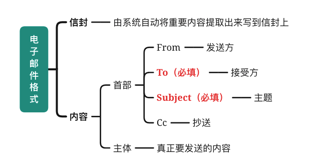</p><p>&nbsp;</p><h4 id='smtp'><span>SMTP</span></h4><p><strong><span>缺点：</span></strong></p><ul><li><span>仅仅支持传送7位ASCII码</span></li><li><span>所以MIME因运而生</span></li></ul><p><strong><span>特点：</span></strong></p><ul><li><span>基于TCP</span></li><li><span>熟知端口25</span></li><li><span>C/S模式</span></li></ul><p><strong><span>通信过程：</span></strong></p><ul><li><span>连接建立</span></li><li><span>邮件传送</span></li><li><span>连接释放</span></li></ul><h4 id='pop3'><span>POP3</span></h4><p><strong><span>特点：</span></strong></p><ul><li><span>port: 110</span></li><li><span>在传输层使用</span><strong><span>明文</span></strong><span>传输（包括密码）</span></li><li><span>一个账号在服务器上</span><strong><span>只能有一个</span></strong><span>接收目录</span></li></ul><h4 id='mime'><span>MIME</span></h4><p><strong><span>MIME与SMTP之间的关系：</span></strong></p><p>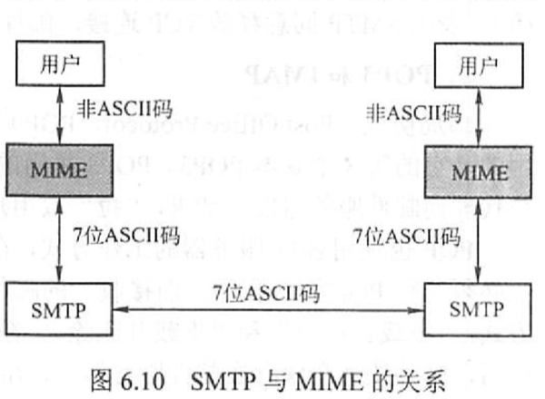</p><p><span>相当于是如果碰到SMTP发不了的东西，先用MIME根据一定规则翻译成SMTP支持的ASCII，传送到目标用户后再用MIME根据对应规格进行解码。</span></p><p><strong><span>概念：</span></strong></p><p><span>相当于是对SMTP的补充，在SMTP的基础上扩充了邮件主体的结构</span>
<span>MIME可在现有的电子邮件协议下传送</span></p><p>&nbsp;</p><h3 id='http'><span>HTTP</span></h3><h4 id='http报文结构'><span>HTTP报文结构</span></h4><p></p><p>&nbsp;</p><h4 id='连接方式'><span>连接方式</span></h4><p><strong><span>非持久连接：</span></strong><span>每次有新的请求都需要</span><u><span>重新建立</span></u><span>连接</span></p><p><strong><span>持久连接（HTTP 1.1默认支持）:</span></strong><u><span>无需</span></u><span>重新建立连接</span></p><p><strong><span>非流水线：</span></strong><span>客户端在收到前一个响应之后才能发出下一个请求</span></p><p><strong><span>流水线：</span></strong><span>类似于指令流水线</span></p><p>&nbsp;</p><h2 id='附录计算机网络协议栈'><span>附录：计算机网络协议栈</span></h2><p>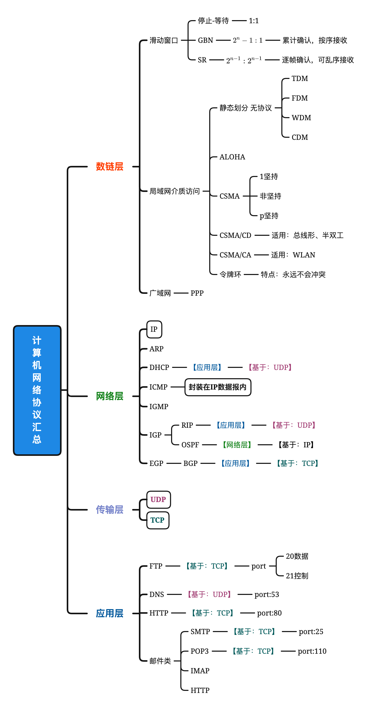</p><p>&nbsp;</p><h2 id='附录计算机网络常见首部长度及单位'><span>附录：计算机网络常见首部长度及单位</span></h2><h3 id='以太网帧'><span>以太网帧</span></h3><ul><li><span>帧首部+尾部=18B</span></li><li><span>数据部分=46B-1600B（46B也就相当于是IP分组的最短帧长）</span></li><li><span>最短帧长=46B+18B=64B（不含前导码）（帧长&lt;64B时进行填充）</span></li><li><span>MAC地址长度6B（直通式交换机最少检查6B）</span></li></ul><h3 id='ip分组'><span>IP分组</span></h3><ul><li><p><span>首部固定部分长度：20B</span></p></li><li><p><span>最短帧长：46B</span></p></li><li><p><span>IPv4地址字段长度：4B</span></p></li><li><p><span>IP分组中不同字段对应的</span><strong><span>单位</span></strong></p><blockquote><p><span>总长度：1B</span></p><p><span>片偏移：8B</span></p><p><span>首部长度：4B</span></p><p><span>【1总8片首4】</span></p></blockquote></li><li><p><span>IPv6地址长度：16B</span></p></li></ul><h3 id='tcp分组'><span>TCP分组</span></h3><ul><li><span>首部固定部分长度：20B</span></li><li><span>TCP端口字段：2B</span></li></ul><h3 id='udp分组'><span>UDP分组</span></h3><p>&nbsp;</p><h1 id='ds冲刺背诵手册'><span>DS冲刺背诵手册</span></h1><h2 id='线性表'><span>线性表</span></h2><h4 id='顺序表与链表的关系'><span>顺序表与链表的关系</span></h4><figure><table><thead><tr><th>&nbsp;</th><th><span>顺序表</span></th><th><span>链表</span></th></tr></thead><tbody><tr><td><strong><span>是否需要连续存储单元</span></strong></td><td><span>需要</span></td><td><span>不需要</span></td></tr><tr><td><strong><span>存取方式</span></strong></td><td><span>顺序、</span><strong><span>随机</span></strong><span>存取</span></td><td><span>顺序</span></td></tr><tr><td><strong><span>删除和插入</span></strong></td><td><span>需要挪动</span><strong><span>大量元素</span></strong></td><td><span>不需要移动元素，仅需修改指针</span></td></tr><tr><td><strong><span>空间分配</span></strong></td><td><span>静态分配、或动态分配+挪动元素</span></td><td><span>动态分配、灵活高效</span></td></tr><tr><td><strong><span>存储密度</span></strong></td><td><span>1</span></td><td><span>&lt;1</span></td></tr></tbody></table></figure><p>&nbsp;</p><h2 id='栈-1'><span>栈</span></h2><h3 id='卡特兰级数'><span>卡特兰级数</span></h3><p><mjx-container class="MathJax" jax="SVG" style="position: relative;"><svg xmlns="http://www.w3.org/2000/svg" width="57.366ex" height="2.869ex" role="img" focusable="false" viewBox="0 -864.9 25355.8 1267.9" xmlns:xlink="http://www.w3.org/1999/xlink" aria-hidden="true" style="vertical-align: -0.912ex;"><defs><path id="MJX-387-TEX-I-1D45B" d="M21 287Q22 293 24 303T36 341T56 388T89 425T135 442Q171 442 195 424T225 390T231 369Q231 367 232 367L243 378Q304 442 382 442Q436 442 469 415T503 336T465 179T427 52Q427 26 444 26Q450 26 453 27Q482 32 505 65T540 145Q542 153 560 153Q580 153 580 145Q580 144 576 130Q568 101 554 73T508 17T439 -10Q392 -10 371 17T350 73Q350 92 386 193T423 345Q423 404 379 404H374Q288 404 229 303L222 291L189 157Q156 26 151 16Q138 -11 108 -11Q95 -11 87 -5T76 7T74 17Q74 30 112 180T152 343Q153 348 153 366Q153 405 129 405Q91 405 66 305Q60 285 60 284Q58 278 41 278H27Q21 284 21 287Z"></path><path id="MJX-387-TEX-N-31" d="M213 578L200 573Q186 568 160 563T102 556H83V602H102Q149 604 189 617T245 641T273 663Q275 666 285 666Q294 666 302 660V361L303 61Q310 54 315 52T339 48T401 46H427V0H416Q395 3 257 3Q121 3 100 0H88V46H114Q136 46 152 46T177 47T193 50T201 52T207 57T213 61V578Z"></path><path id="MJX-387-TEX-N-2B" d="M56 237T56 250T70 270H369V420L370 570Q380 583 389 583Q402 583 409 568V270H707Q722 262 722 250T707 230H409V-68Q401 -82 391 -82H389H387Q375 -82 369 -68V230H70Q56 237 56 250Z"></path><path id="MJX-387-TEX-I-1D436" d="M50 252Q50 367 117 473T286 641T490 704Q580 704 633 653Q642 643 648 636T656 626L657 623Q660 623 684 649Q691 655 699 663T715 679T725 690L740 705H746Q760 705 760 698Q760 694 728 561Q692 422 692 421Q690 416 687 415T669 413H653Q647 419 647 422Q647 423 648 429T650 449T651 481Q651 552 619 605T510 659Q484 659 454 652T382 628T299 572T226 479Q194 422 175 346T156 222Q156 108 232 58Q280 24 350 24Q441 24 512 92T606 240Q610 253 612 255T628 257Q648 257 648 248Q648 243 647 239Q618 132 523 55T319 -22Q206 -22 128 53T50 252Z"></path><path id="MJX-387-TEX-N-32" d="M109 429Q82 429 66 447T50 491Q50 562 103 614T235 666Q326 666 387 610T449 465Q449 422 429 383T381 315T301 241Q265 210 201 149L142 93L218 92Q375 92 385 97Q392 99 409 186V189H449V186Q448 183 436 95T421 3V0H50V19V31Q50 38 56 46T86 81Q115 113 136 137Q145 147 170 174T204 211T233 244T261 278T284 308T305 340T320 369T333 401T340 431T343 464Q343 527 309 573T212 619Q179 619 154 602T119 569T109 550Q109 549 114 549Q132 549 151 535T170 489Q170 464 154 447T109 429Z"></path></defs><g stroke="currentColor" fill="currentColor" stroke-width="0" transform="scale(1,-1)"><g data-mml-node="math"><g data-mml-node="mi"><use data-c="1D45B" xlink:href="#MJX-387-TEX-I-1D45B"></use></g><g data-mml-node="mtext" transform="translate(600,0)"><text data-variant="normal" transform="scale(1,-1)" font-size="884px" font-family="serif">个</text></g><g data-mml-node="mtext" transform="translate(1426.9,0)"><text data-variant="normal" transform="scale(1,-1)" font-size="884px" font-family="serif">不</text></g><g data-mml-node="mtext" transform="translate(2253.8,0)"><text data-variant="normal" transform="scale(1,-1)" font-size="884px" font-family="serif">同</text></g><g data-mml-node="mtext" transform="translate(3124.2,0)"><text data-variant="normal" transform="scale(1,-1)" font-size="884px" font-family="serif">的</text></g><g data-mml-node="mtext" transform="translate(3951.1,0)"><text data-variant="normal" transform="scale(1,-1)" font-size="884px" font-family="serif">元</text></g><g data-mml-node="mtext" transform="translate(4821.5,0)"><text data-variant="normal" transform="scale(1,-1)" font-size="884px" font-family="serif">素</text></g><g data-mml-node="mtext" transform="translate(5691.9,0)"><text data-variant="normal" transform="scale(1,-1)" font-size="884px" font-family="serif">进</text></g><g data-mml-node="mtext" transform="translate(6518.8,0)"><text data-variant="normal" transform="scale(1,-1)" font-size="884px" font-family="serif">栈</text></g><g data-mml-node="mi" transform="translate(7389.2,0)"><text data-variant="italic" transform="scale(1,-1)" font-size="884px" font-family="serif" font-style="italic">，</text></g><g data-mml-node="mtext" transform="translate(8216.1,0)"><text data-variant="normal" transform="scale(1,-1)" font-size="884px" font-family="serif">出</text></g><g data-mml-node="mtext" transform="translate(9086.5,0)"><text data-variant="normal" transform="scale(1,-1)" font-size="884px" font-family="serif">栈</text></g><g data-mml-node="mtext" transform="translate(9956.9,0)"><text data-variant="normal" transform="scale(1,-1)" font-size="884px" font-family="serif">元</text></g><g data-mml-node="mtext" transform="translate(10827.3,0)"><text data-variant="normal" transform="scale(1,-1)" font-size="884px" font-family="serif">素</text></g><g data-mml-node="mtext" transform="translate(11697.7,0)"><text data-variant="normal" transform="scale(1,-1)" font-size="884px" font-family="serif">的</text></g><g data-mml-node="mtext" transform="translate(12524.6,0)"><text data-variant="normal" transform="scale(1,-1)" font-size="884px" font-family="serif">所</text></g><g data-mml-node="mtext" transform="translate(13395,0)"><text data-variant="normal" transform="scale(1,-1)" font-size="884px" font-family="serif">有</text></g><g data-mml-node="mtext" transform="translate(14221.9,0)"><text data-variant="normal" transform="scale(1,-1)" font-size="884px" font-family="serif">可</text></g><g data-mml-node="mtext" transform="translate(15092.3,0)"><text data-variant="normal" transform="scale(1,-1)" font-size="884px" font-family="serif">能</text></g><g data-mml-node="mtext" transform="translate(15962.7,0)"><text data-variant="normal" transform="scale(1,-1)" font-size="884px" font-family="serif">排</text></g><g data-mml-node="mtext" transform="translate(16833.1,0)"><text data-variant="normal" transform="scale(1,-1)" font-size="884px" font-family="serif">列</text></g><g data-mml-node="mtext" transform="translate(17660,0)"><text data-variant="normal" transform="scale(1,-1)" font-size="884px" font-family="serif">情</text></g><g data-mml-node="mtext" transform="translate(18530.4,0)"><text data-variant="normal" transform="scale(1,-1)" font-size="884px" font-family="serif">况</text></g><g data-mml-node="mtext" transform="translate(19400.8,0)"><text data-variant="normal" transform="scale(1,-1)" font-size="884px" font-family="serif">共</text></g><g data-mml-node="mfrac" transform="translate(20271.2,0)"><g data-mml-node="mn" transform="translate(707.2,394) scale(0.707)"><use data-c="31" xlink:href="#MJX-387-TEX-N-31"></use></g><g data-mml-node="mrow" transform="translate(220,-345) scale(0.707)"><g data-mml-node="mi"><use data-c="1D45B" xlink:href="#MJX-387-TEX-I-1D45B"></use></g><g data-mml-node="mo" transform="translate(600,0)"><use data-c="2B" xlink:href="#MJX-387-TEX-N-2B"></use></g><g data-mml-node="mn" transform="translate(1378,0)"><use data-c="31" xlink:href="#MJX-387-TEX-N-31"></use></g></g><rect width="1527.9" height="60" x="120" y="220"></rect></g><g data-mml-node="msubsup" transform="translate(22039.2,0)"><g data-mml-node="mi"><use data-c="1D436" xlink:href="#MJX-387-TEX-I-1D436"></use></g><g data-mml-node="TeXAtom" transform="translate(845.3,363) scale(0.707)" data-mjx-texclass="ORD"><g data-mml-node="mi"><use data-c="1D45B" xlink:href="#MJX-387-TEX-I-1D45B"></use></g></g><g data-mml-node="TeXAtom" transform="translate(748,-295.7) scale(0.707)" data-mjx-texclass="ORD"><g data-mml-node="mn"><use data-c="32" xlink:href="#MJX-387-TEX-N-32"></use></g><g data-mml-node="mi" transform="translate(500,0)"><use data-c="1D45B" xlink:href="#MJX-387-TEX-I-1D45B"></use></g></g></g><g data-mml-node="mtext" transform="translate(23615,0)"><text data-variant="normal" transform="scale(1,-1)" font-size="884px" font-family="serif">种</text></g><g data-mml-node="TeXAtom" data-mjx-texclass="ORD" transform="translate(24485.4,0)"><g data-mml-node="mo"><text data-variant="normal" transform="scale(1,-1)" font-size="884px" font-family="serif">。</text></g></g></g></g></svg><mjx-assistive-mml unselectable="on" display="inline"><math xmlns="http://www.w3.org/1998/Math/MathML"><mi>n</mi><mtext>个</mtext><mtext>不</mtext><mtext>同</mtext><mtext>的</mtext><mtext>元</mtext><mtext>素</mtext><mtext>进</mtext><mtext>栈</mtext><mi>，</mi><mtext>出</mtext><mtext>栈</mtext><mtext>元</mtext><mtext>素</mtext><mtext>的</mtext><mtext>所</mtext><mtext>有</mtext><mtext>可</mtext><mtext>能</mtext><mtext>排</mtext><mtext>列</mtext><mtext>情</mtext><mtext>况</mtext><mtext>共</mtext><mfrac><mn>1</mn><mrow><mi>n</mi><mo>+</mo><mn>1</mn></mrow></mfrac><msubsup><mi>C</mi><mrow data-mjx-texclass="ORD"><mn>2</mn><mi>n</mi></mrow><mrow data-mjx-texclass="ORD"><mi>n</mi></mrow></msubsup><mtext>种</mtext><mrow data-mjx-texclass="ORD"><mo>。</mo></mrow></math></mjx-assistive-mml></mjx-container><script type="math/tex">n个不同的元素进栈，出栈元素的所有可能排列情况共\frac{1}{n+1}C^{n}_{2n}种。</script></p><h3 id='栈的括号匹配'><span>栈的括号匹配</span></h3><p>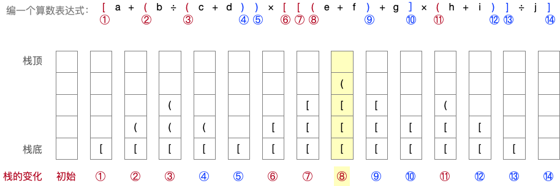</p><p><strong><span>文字描述：栈的括号匹配算法</span></strong></p><blockquote><p><span>①初始状态栈为空</span></p><p><span>②从左到右依次遍历表达式中的括号元素：</span></p><ul><li><span>遇到左括号，压入栈顶</span></li><li><span>遇到右括号，弹出栈顶的左括号，并判断该左括号与当前遇到的右括号是否匹配（大括号匹配大括号，中括号匹配中括号，小括号匹配小括号）：如果不匹配，算法结束，匹配失败；如果匹配，则重复②继续遍历下一个括号元素。</span></li></ul><p><span>③当遍历完算术表达式中所有括号元素后，</span><strong><span>若栈为空</span></strong><span>，则括号匹配成功；</span><strong><span>若栈非空</span></strong><span>，则括号匹配失败。</span></p></blockquote><p>&nbsp;</p><h3 id='求逆波兰表达式'><span>求逆波兰表达式</span></h3><p><mjx-container class="MathJax" jax="SVG" style="position: relative;"><svg xmlns="http://www.w3.org/2000/svg" width="18.461ex" height="2.149ex" role="img" focusable="false" viewBox="0 -750 8159.6 950" xmlns:xlink="http://www.w3.org/1999/xlink" aria-hidden="true" style="vertical-align: -0.452ex;"><defs><path id="MJX-388-TEX-N-31" d="M213 578L200 573Q186 568 160 563T102 556H83V602H102Q149 604 189 617T245 641T273 663Q275 666 285 666Q294 666 302 660V361L303 61Q310 54 315 52T339 48T401 46H427V0H416Q395 3 257 3Q121 3 100 0H88V46H114Q136 46 152 46T177 47T193 50T201 52T207 57T213 61V578Z"></path></defs><g stroke="currentColor" fill="currentColor" stroke-width="0" transform="scale(1,-1)"><g data-mml-node="math"><g data-mml-node="mn"><use data-c="31" xlink:href="#MJX-388-TEX-N-31"></use></g><g data-mml-node="TeXAtom" data-mjx-texclass="ORD" transform="translate(500,0)"><g data-mml-node="mo"><text data-variant="normal" transform="scale(1,-1)" font-size="884px" font-family="serif">、</text></g></g><g data-mml-node="mtext" transform="translate(1370.4,0)"><text data-variant="normal" transform="scale(1,-1)" font-size="884px" font-family="serif">从</text></g><g data-mml-node="mtext" transform="translate(2240.8,0)"><text data-variant="normal" transform="scale(1,-1)" font-size="884px" font-family="serif">左</text></g><g data-mml-node="mtext" transform="translate(3067.7,0)"><text data-variant="normal" transform="scale(1,-1)" font-size="884px" font-family="serif">到</text></g><g data-mml-node="mtext" transform="translate(3938.1,0)"><text data-variant="normal" transform="scale(1,-1)" font-size="884px" font-family="serif">右</text></g><g data-mml-node="mtext" transform="translate(4765,0)"><text data-variant="normal" transform="scale(1,-1)" font-size="884px" font-family="serif">依</text></g><g data-mml-node="mtext" transform="translate(5635.4,0)"><text data-variant="normal" transform="scale(1,-1)" font-size="884px" font-family="serif">次</text></g><g data-mml-node="mtext" transform="translate(6462.3,0)"><text data-variant="normal" transform="scale(1,-1)" font-size="884px" font-family="serif">读</text></g><g data-mml-node="mtext" transform="translate(7289.2,0)"><text data-variant="normal" transform="scale(1,-1)" font-size="884px" font-family="serif">取</text></g></g></g></svg><mjx-assistive-mml unselectable="on" display="inline"><math xmlns="http://www.w3.org/1998/Math/MathML"><mn>1</mn><mrow data-mjx-texclass="ORD"><mo>、</mo></mrow><mtext>从</mtext><mtext>左</mtext><mtext>到</mtext><mtext>右</mtext><mtext>依</mtext><mtext>次</mtext><mtext>读</mtext><mtext>取</mtext></math></mjx-assistive-mml></mjx-container><script type="math/tex">1、从左到右依次读取</script></p><p><mjx-container class="MathJax" jax="SVG" style="position: relative;"><svg xmlns="http://www.w3.org/2000/svg" width="20.528ex" height="2.149ex" role="img" focusable="false" viewBox="0 -750 9073.5 950" xmlns:xlink="http://www.w3.org/1999/xlink" aria-hidden="true" style="vertical-align: -0.452ex;"><defs><path id="MJX-389-TEX-N-32" d="M109 429Q82 429 66 447T50 491Q50 562 103 614T235 666Q326 666 387 610T449 465Q449 422 429 383T381 315T301 241Q265 210 201 149L142 93L218 92Q375 92 385 97Q392 99 409 186V189H449V186Q448 183 436 95T421 3V0H50V19V31Q50 38 56 46T86 81Q115 113 136 137Q145 147 170 174T204 211T233 244T261 278T284 308T305 340T320 369T333 401T340 431T343 464Q343 527 309 573T212 619Q179 619 154 602T119 569T109 550Q109 549 114 549Q132 549 151 535T170 489Q170 464 154 447T109 429Z"></path></defs><g stroke="currentColor" fill="currentColor" stroke-width="0" transform="scale(1,-1)"><g data-mml-node="math"><g data-mml-node="mn"><use data-c="32" xlink:href="#MJX-389-TEX-N-32"></use></g><g data-mml-node="TeXAtom" data-mjx-texclass="ORD" transform="translate(500,0)"><g data-mml-node="mo"><text data-variant="normal" transform="scale(1,-1)" font-size="884px" font-family="serif">、</text></g></g><g data-mml-node="mtext" transform="translate(1370.4,0)"><text data-variant="normal" transform="scale(1,-1)" font-size="884px" font-family="serif">操</text></g><g data-mml-node="mtext" transform="translate(2240.8,0)"><text data-variant="normal" transform="scale(1,-1)" font-size="884px" font-family="serif">作</text></g><g data-mml-node="mtext" transform="translate(3111.2,0)"><text data-variant="normal" transform="scale(1,-1)" font-size="884px" font-family="serif">数</text></g><g data-mml-node="mtext" transform="translate(3938.1,0)"><text data-variant="normal" transform="scale(1,-1)" font-size="884px" font-family="serif">直</text></g><g data-mml-node="mtext" transform="translate(4808.5,0)"><text data-variant="normal" transform="scale(1,-1)" font-size="884px" font-family="serif">接</text></g><g data-mml-node="mtext" transform="translate(5635.4,0)"><text data-variant="normal" transform="scale(1,-1)" font-size="884px" font-family="serif">送</text></g><g data-mml-node="mtext" transform="translate(6462.3,0)"><text data-variant="normal" transform="scale(1,-1)" font-size="884px" font-family="serif">往</text></g><g data-mml-node="mtext" transform="translate(7332.7,0)"><text data-variant="normal" transform="scale(1,-1)" font-size="884px" font-family="serif">结</text></g><g data-mml-node="mtext" transform="translate(8203.1,0)"><text data-variant="normal" transform="scale(1,-1)" font-size="884px" font-family="serif">果</text></g></g></g></svg><mjx-assistive-mml unselectable="on" display="inline"><math xmlns="http://www.w3.org/1998/Math/MathML"><mn>2</mn><mrow data-mjx-texclass="ORD"><mo>、</mo></mrow><mtext>操</mtext><mtext>作</mtext><mtext>数</mtext><mtext>直</mtext><mtext>接</mtext><mtext>送</mtext><mtext>往</mtext><mtext>结</mtext><mtext>果</mtext></math></mjx-assistive-mml></mjx-container><script type="math/tex">2、操作数直接送往结果</script></p><p><mjx-container class="MathJax" jax="SVG" style="position: relative;"><svg xmlns="http://www.w3.org/2000/svg" width="21.408ex" height="2.262ex" role="img" focusable="false" viewBox="0 -750 9462.5 1000" xmlns:xlink="http://www.w3.org/1999/xlink" aria-hidden="true" style="vertical-align: -0.566ex;"><defs><path id="MJX-390-TEX-N-33" d="M127 463Q100 463 85 480T69 524Q69 579 117 622T233 665Q268 665 277 664Q351 652 390 611T430 522Q430 470 396 421T302 350L299 348Q299 347 308 345T337 336T375 315Q457 262 457 175Q457 96 395 37T238 -22Q158 -22 100 21T42 130Q42 158 60 175T105 193Q133 193 151 175T169 130Q169 119 166 110T159 94T148 82T136 74T126 70T118 67L114 66Q165 21 238 21Q293 21 321 74Q338 107 338 175V195Q338 290 274 322Q259 328 213 329L171 330L168 332Q166 335 166 348Q166 366 174 366Q202 366 232 371Q266 376 294 413T322 525V533Q322 590 287 612Q265 626 240 626Q208 626 181 615T143 592T132 580H135Q138 579 143 578T153 573T165 566T175 555T183 540T186 520Q186 498 172 481T127 463Z"></path><path id="MJX-390-TEX-N-28" d="M94 250Q94 319 104 381T127 488T164 576T202 643T244 695T277 729T302 750H315H319Q333 750 333 741Q333 738 316 720T275 667T226 581T184 443T167 250T184 58T225 -81T274 -167T316 -220T333 -241Q333 -250 318 -250H315H302L274 -226Q180 -141 137 -14T94 250Z"></path></defs><g stroke="currentColor" fill="currentColor" stroke-width="0" transform="scale(1,-1)"><g data-mml-node="math"><g data-mml-node="mn"><use data-c="33" xlink:href="#MJX-390-TEX-N-33"></use></g><g data-mml-node="TeXAtom" data-mjx-texclass="ORD" transform="translate(500,0)"><g data-mml-node="mo"><text data-variant="normal" transform="scale(1,-1)" font-size="884px" font-family="serif">、</text></g></g><g data-mml-node="mtext" transform="translate(1370.4,0)"><text data-variant="normal" transform="scale(1,-1)" font-size="884px" font-family="serif">左</text></g><g data-mml-node="mtext" transform="translate(2197.3,0)"><text data-variant="normal" transform="scale(1,-1)" font-size="884px" font-family="serif">括</text></g><g data-mml-node="mtext" transform="translate(3067.7,0)"><text data-variant="normal" transform="scale(1,-1)" font-size="884px" font-family="serif">号</text></g><g data-mml-node="mo" transform="translate(3938.1,0)"><use data-c="28" xlink:href="#MJX-390-TEX-N-28"></use></g><g data-mml-node="mi" transform="translate(4327.1,0)"><text data-variant="italic" transform="scale(1,-1)" font-size="884px" font-family="serif" font-style="italic">：</text></g><g data-mml-node="mtext" transform="translate(5154,0)"><text data-variant="normal" transform="scale(1,-1)" font-size="884px" font-family="serif">入</text></g><g data-mml-node="mtext" transform="translate(6024.4,0)"><text data-variant="normal" transform="scale(1,-1)" font-size="884px" font-family="serif">运</text></g><g data-mml-node="mtext" transform="translate(6894.8,0)"><text data-variant="normal" transform="scale(1,-1)" font-size="884px" font-family="serif">算</text></g><g data-mml-node="mtext" transform="translate(7765.2,0)"><text data-variant="normal" transform="scale(1,-1)" font-size="884px" font-family="serif">符</text></g><g data-mml-node="mtext" transform="translate(8592.1,0)"><text data-variant="normal" transform="scale(1,-1)" font-size="884px" font-family="serif">栈</text></g></g></g></svg><mjx-assistive-mml unselectable="on" display="inline"><math xmlns="http://www.w3.org/1998/Math/MathML"><mn>3</mn><mrow data-mjx-texclass="ORD"><mo>、</mo></mrow><mtext>左</mtext><mtext>括</mtext><mtext>号</mtext><mo stretchy="false">(</mo><mi>：</mi><mtext>入</mtext><mtext>运</mtext><mtext>算</mtext><mtext>符</mtext><mtext>栈</mtext></math></mjx-assistive-mml></mjx-container><script type="math/tex">3、左括号(：入运算符栈</script></p><p><mjx-container class="MathJax" jax="SVG" style="position: relative;"><svg xmlns="http://www.w3.org/2000/svg" width="10.781ex" height="2.149ex" role="img" focusable="false" viewBox="0 -750 4765 950" xmlns:xlink="http://www.w3.org/1999/xlink" aria-hidden="true" style="vertical-align: -0.452ex;"><defs><path id="MJX-391-TEX-N-34" d="M462 0Q444 3 333 3Q217 3 199 0H190V46H221Q241 46 248 46T265 48T279 53T286 61Q287 63 287 115V165H28V211L179 442Q332 674 334 675Q336 677 355 677H373L379 671V211H471V165H379V114Q379 73 379 66T385 54Q393 47 442 46H471V0H462ZM293 211V545L74 212L183 211H293Z"></path></defs><g stroke="currentColor" fill="currentColor" stroke-width="0" transform="scale(1,-1)"><g data-mml-node="math"><g data-mml-node="mn"><use data-c="34" xlink:href="#MJX-391-TEX-N-34"></use></g><g data-mml-node="TeXAtom" data-mjx-texclass="ORD" transform="translate(500,0)"><g data-mml-node="mo"><text data-variant="normal" transform="scale(1,-1)" font-size="884px" font-family="serif">、</text></g></g><g data-mml-node="mtext" transform="translate(1370.4,0)"><text data-variant="normal" transform="scale(1,-1)" font-size="884px" font-family="serif">运</text></g><g data-mml-node="mtext" transform="translate(2240.8,0)"><text data-variant="normal" transform="scale(1,-1)" font-size="884px" font-family="serif">算</text></g><g data-mml-node="mtext" transform="translate(3111.2,0)"><text data-variant="normal" transform="scale(1,-1)" font-size="884px" font-family="serif">符</text></g><g data-mml-node="mi" transform="translate(3938.1,0)"><text data-variant="italic" transform="scale(1,-1)" font-size="884px" font-family="serif" font-style="italic">：</text></g></g></g></svg><mjx-assistive-mml unselectable="on" display="inline"><math xmlns="http://www.w3.org/1998/Math/MathML"><mn>4</mn><mrow data-mjx-texclass="ORD"><mo>、</mo></mrow><mtext>运</mtext><mtext>算</mtext><mtext>符</mtext><mi>：</mi></math></mjx-assistive-mml></mjx-container><script type="math/tex">4、运算符：</script></p><p><span>	</span><mjx-container class="MathJax" jax="SVG" style="position: relative;"><svg xmlns="http://www.w3.org/2000/svg" width="13.512ex" height="2.149ex" role="img" focusable="false" viewBox="0 -750 5972.4 950" xmlns:xlink="http://www.w3.org/1999/xlink" aria-hidden="true" style="vertical-align: -0.452ex;"><defs><path id="MJX-392-TEX-N-2219" d="M55 251Q55 328 112 386T249 444T386 388T444 249Q444 171 388 113T250 55Q170 55 113 112T55 251Z"></path><path id="MJX-392-TEX-N-A0" d=""></path></defs><g stroke="currentColor" fill="currentColor" stroke-width="0" transform="scale(1,-1)"><g data-mml-node="math"><g data-mml-node="mo"><use data-c="2219" xlink:href="#MJX-392-TEX-N-2219"></use></g><g data-mml-node="mtext" transform="translate(500,0)"><use data-c="A0" xlink:href="#MJX-392-TEX-N-A0"></use></g><g data-mml-node="mtext" transform="translate(750,0)"><text data-variant="normal" transform="scale(1,-1)" font-size="884px" font-family="serif">若</text></g><g data-mml-node="mtext" transform="translate(1620.4,0)"><text data-variant="normal" transform="scale(1,-1)" font-size="884px" font-family="serif">栈</text></g><g data-mml-node="mtext" transform="translate(2490.8,0)"><text data-variant="normal" transform="scale(1,-1)" font-size="884px" font-family="serif">空</text></g><g data-mml-node="mtext" transform="translate(3361.2,0)"><text data-variant="normal" transform="scale(1,-1)" font-size="884px" font-family="serif">则</text></g><g data-mml-node="mtext" transform="translate(4231.6,0)"><text data-variant="normal" transform="scale(1,-1)" font-size="884px" font-family="serif">入</text></g><g data-mml-node="mtext" transform="translate(5102,0)"><text data-variant="normal" transform="scale(1,-1)" font-size="884px" font-family="serif">栈</text></g></g></g></svg><mjx-assistive-mml unselectable="on" display="inline"><math xmlns="http://www.w3.org/1998/Math/MathML"><mo>∙</mo><mtext>&nbsp;</mtext><mtext>若</mtext><mtext>栈</mtext><mtext>空</mtext><mtext>则</mtext><mtext>入</mtext><mtext>栈</mtext></math></mjx-assistive-mml></mjx-container><script type="math/tex">\bullet \ 若栈空则入栈</script></p><p><span>	</span><mjx-container class="MathJax" jax="SVG" style="position: relative;"><svg xmlns="http://www.w3.org/2000/svg" width="20.369ex" height="2.149ex" role="img" focusable="false" viewBox="0 -750 9003.3 950" xmlns:xlink="http://www.w3.org/1999/xlink" aria-hidden="true" style="vertical-align: -0.452ex;"><defs><path id="MJX-393-TEX-N-2219" d="M55 251Q55 328 112 386T249 444T386 388T444 249Q444 171 388 113T250 55Q170 55 113 112T55 251Z"></path><path id="MJX-393-TEX-N-A0" d=""></path><path id="MJX-393-TEX-N-3E" d="M84 520Q84 528 88 533T96 539L99 540Q106 540 253 471T544 334L687 265Q694 260 694 250T687 235Q685 233 395 96L107 -40H101Q83 -38 83 -20Q83 -19 83 -17Q82 -10 98 -1Q117 9 248 71Q326 108 378 132L626 250L378 368Q90 504 86 509Q84 513 84 520Z"></path></defs><g stroke="currentColor" fill="currentColor" stroke-width="0" transform="scale(1,-1)"><g data-mml-node="math"><g data-mml-node="mo"><use data-c="2219" xlink:href="#MJX-393-TEX-N-2219"></use></g><g data-mml-node="mtext" transform="translate(500,0)"><use data-c="A0" xlink:href="#MJX-393-TEX-N-A0"></use></g><g data-mml-node="mtext" transform="translate(750,0)"><text data-variant="normal" transform="scale(1,-1)" font-size="884px" font-family="serif">优</text></g><g data-mml-node="mtext" transform="translate(1620.4,0)"><text data-variant="normal" transform="scale(1,-1)" font-size="884px" font-family="serif">先</text></g><g data-mml-node="mtext" transform="translate(2490.8,0)"><text data-variant="normal" transform="scale(1,-1)" font-size="884px" font-family="serif">级</text></g><g data-mml-node="mo" transform="translate(3639,0)"><use data-c="3E" xlink:href="#MJX-393-TEX-N-3E"></use></g><g data-mml-node="mtext" transform="translate(4694.8,0)"><text data-variant="normal" transform="scale(1,-1)" font-size="884px" font-family="serif">栈</text></g><g data-mml-node="mtext" transform="translate(5565.2,0)"><text data-variant="normal" transform="scale(1,-1)" font-size="884px" font-family="serif">顶</text></g><g data-mml-node="mi" transform="translate(6435.6,0)"><text data-variant="italic" transform="scale(1,-1)" font-size="884px" font-family="serif" font-style="italic">，</text></g><g data-mml-node="mtext" transform="translate(7262.5,0)"><text data-variant="normal" transform="scale(1,-1)" font-size="884px" font-family="serif">入</text></g><g data-mml-node="mtext" transform="translate(8132.9,0)"><text data-variant="normal" transform="scale(1,-1)" font-size="884px" font-family="serif">栈</text></g></g></g></svg><mjx-assistive-mml unselectable="on" display="inline"><math xmlns="http://www.w3.org/1998/Math/MathML"><mo>∙</mo><mtext>&nbsp;</mtext><mtext>优</mtext><mtext>先</mtext><mtext>级</mtext><mo>&gt;</mo><mtext>栈</mtext><mtext>顶</mtext><mi>，</mi><mtext>入</mtext><mtext>栈</mtext></math></mjx-assistive-mml></mjx-container><script type="math/tex">\bullet \ 优先级>栈顶，入栈</script></p><p><span>	</span><mjx-container class="MathJax" jax="SVG" style="position: relative;"><svg xmlns="http://www.w3.org/2000/svg" width="77.503ex" height="2.262ex" role="img" focusable="false" viewBox="0 -750 34256.5 1000" xmlns:xlink="http://www.w3.org/1999/xlink" aria-hidden="true" style="vertical-align: -0.566ex;"><defs><path id="MJX-394-TEX-N-2219" d="M55 251Q55 328 112 386T249 444T386 388T444 249Q444 171 388 113T250 55Q170 55 113 112T55 251Z"></path><path id="MJX-394-TEX-N-A0" d=""></path><path id="MJX-394-TEX-N-2264" d="M674 636Q682 636 688 630T694 615T687 601Q686 600 417 472L151 346L399 228Q687 92 691 87Q694 81 694 76Q694 58 676 56H670L382 192Q92 329 90 331Q83 336 83 348Q84 359 96 365Q104 369 382 500T665 634Q669 636 674 636ZM84 -118Q84 -108 99 -98H678Q694 -104 694 -118Q694 -130 679 -138H98Q84 -131 84 -118Z"></path><path id="MJX-394-TEX-N-28" d="M94 250Q94 319 104 381T127 488T164 576T202 643T244 695T277 729T302 750H315H319Q333 750 333 741Q333 738 316 720T275 667T226 581T184 443T167 250T184 58T225 -81T274 -167T316 -220T333 -241Q333 -250 318 -250H315H302L274 -226Q180 -141 137 -14T94 250Z"></path><path id="MJX-394-TEX-N-3C" d="M694 -11T694 -19T688 -33T678 -40Q671 -40 524 29T234 166L90 235Q83 240 83 250Q83 261 91 266Q664 540 678 540Q681 540 687 534T694 519T687 505Q686 504 417 376L151 250L417 124Q686 -4 687 -5Q694 -11 694 -19Z"></path><path id="MJX-394-TEX-N-29" d="M60 749L64 750Q69 750 74 750H86L114 726Q208 641 251 514T294 250Q294 182 284 119T261 12T224 -76T186 -143T145 -194T113 -227T90 -246Q87 -249 86 -250H74Q66 -250 63 -250T58 -247T55 -238Q56 -237 66 -225Q221 -64 221 250T66 725Q56 737 55 738Q55 746 60 749Z"></path><path id="MJX-394-TEX-N-2192" d="M56 237T56 250T70 270H835Q719 357 692 493Q692 494 692 496T691 499Q691 511 708 511H711Q720 511 723 510T729 506T732 497T735 481T743 456Q765 389 816 336T935 261Q944 258 944 250Q944 244 939 241T915 231T877 212Q836 186 806 152T761 85T740 35T732 4Q730 -6 727 -8T711 -11Q691 -11 691 0Q691 7 696 25Q728 151 835 230H70Q56 237 56 250Z"></path></defs><g stroke="currentColor" fill="currentColor" stroke-width="0" transform="scale(1,-1)"><g data-mml-node="math"><g data-mml-node="mo"><use data-c="2219" xlink:href="#MJX-394-TEX-N-2219"></use></g><g data-mml-node="mtext" transform="translate(500,0)"><use data-c="A0" xlink:href="#MJX-394-TEX-N-A0"></use></g><g data-mml-node="mtext" transform="translate(750,0)"><text data-variant="normal" transform="scale(1,-1)" font-size="884px" font-family="serif">优</text></g><g data-mml-node="mtext" transform="translate(1620.4,0)"><text data-variant="normal" transform="scale(1,-1)" font-size="884px" font-family="serif">先</text></g><g data-mml-node="mtext" transform="translate(2490.8,0)"><text data-variant="normal" transform="scale(1,-1)" font-size="884px" font-family="serif">级</text></g><g data-mml-node="mo" transform="translate(3639,0)"><use data-c="2264" xlink:href="#MJX-394-TEX-N-2264"></use></g><g data-mml-node="mtext" transform="translate(4694.8,0)"><text data-variant="normal" transform="scale(1,-1)" font-size="884px" font-family="serif">栈</text></g><g data-mml-node="mtext" transform="translate(5565.2,0)"><text data-variant="normal" transform="scale(1,-1)" font-size="884px" font-family="serif">顶</text></g><g data-mml-node="mi" transform="translate(6435.6,0)"><text data-variant="italic" transform="scale(1,-1)" font-size="884px" font-family="serif" font-style="italic">，</text></g><g data-mml-node="mtext" transform="translate(7262.5,0)"><text data-variant="normal" transform="scale(1,-1)" font-size="884px" font-family="serif">重</text></g><g data-mml-node="mtext" transform="translate(8132.9,0)"><text data-variant="normal" transform="scale(1,-1)" font-size="884px" font-family="serif">复</text></g><g data-mml-node="mtext" transform="translate(8959.8,0)"><text data-variant="normal" transform="scale(1,-1)" font-size="884px" font-family="serif">弹</text></g><g data-mml-node="mtext" transform="translate(9830.2,0)"><text data-variant="normal" transform="scale(1,-1)" font-size="884px" font-family="serif">出</text></g><g data-mml-node="mtext" transform="translate(10700.6,0)"><text data-variant="normal" transform="scale(1,-1)" font-size="884px" font-family="serif">高</text></g><g data-mml-node="mtext" transform="translate(11571,0)"><text data-variant="normal" transform="scale(1,-1)" font-size="884px" font-family="serif">优</text></g><g data-mml-node="mtext" transform="translate(12441.4,0)"><text data-variant="normal" transform="scale(1,-1)" font-size="884px" font-family="serif">先</text></g><g data-mml-node="mtext" transform="translate(13311.8,0)"><text data-variant="normal" transform="scale(1,-1)" font-size="884px" font-family="serif">级</text></g><g data-mml-node="mtext" transform="translate(14182.2,0)"><text data-variant="normal" transform="scale(1,-1)" font-size="884px" font-family="serif">运</text></g><g data-mml-node="mtext" transform="translate(15052.6,0)"><text data-variant="normal" transform="scale(1,-1)" font-size="884px" font-family="serif">算</text></g><g data-mml-node="mtext" transform="translate(15923,0)"><text data-variant="normal" transform="scale(1,-1)" font-size="884px" font-family="serif">符</text></g><g data-mml-node="mo" transform="translate(16749.9,0)"><use data-c="28" xlink:href="#MJX-394-TEX-N-28"></use></g><g data-mml-node="mtext" transform="translate(17138.9,0)"><text data-variant="normal" transform="scale(1,-1)" font-size="884px" font-family="serif">直</text></g><g data-mml-node="mtext" transform="translate(18009.3,0)"><text data-variant="normal" transform="scale(1,-1)" font-size="884px" font-family="serif">至</text></g><g data-mml-node="mtext" transform="translate(18879.7,0)"><text data-variant="normal" transform="scale(1,-1)" font-size="884px" font-family="serif">遇</text></g><g data-mml-node="mtext" transform="translate(19750.1,0)"><text data-variant="normal" transform="scale(1,-1)" font-size="884px" font-family="serif">到</text></g><g data-mml-node="mtext" transform="translate(20620.5,0)"><text data-variant="normal" transform="scale(1,-1)" font-size="884px" font-family="serif">优</text></g><g data-mml-node="mtext" transform="translate(21490.9,0)"><text data-variant="normal" transform="scale(1,-1)" font-size="884px" font-family="serif">先</text></g><g data-mml-node="mtext" transform="translate(22361.4,0)"><text data-variant="normal" transform="scale(1,-1)" font-size="884px" font-family="serif">级</text></g><g data-mml-node="mo" transform="translate(23509.5,0)"><use data-c="3C" xlink:href="#MJX-394-TEX-N-3C"></use></g><g data-mml-node="mtext" transform="translate(24565.3,0)"><text data-variant="normal" transform="scale(1,-1)" font-size="884px" font-family="serif">自</text></g><g data-mml-node="mtext" transform="translate(25435.7,0)"><text data-variant="normal" transform="scale(1,-1)" font-size="884px" font-family="serif">己</text></g><g data-mml-node="mtext" transform="translate(26306.1,0)"><text data-variant="normal" transform="scale(1,-1)" font-size="884px" font-family="serif">的</text></g><g data-mml-node="mo" transform="translate(27133,0)"><use data-c="29" xlink:href="#MJX-394-TEX-N-29"></use></g><g data-mml-node="mo" transform="translate(27799.8,0)"><use data-c="2192" xlink:href="#MJX-394-TEX-N-2192"></use></g><g data-mml-node="mtext" transform="translate(29077.6,0)"><text data-variant="normal" transform="scale(1,-1)" font-size="884px" font-family="serif">结</text></g><g data-mml-node="mtext" transform="translate(29948,0)"><text data-variant="normal" transform="scale(1,-1)" font-size="884px" font-family="serif">果</text></g><g data-mml-node="mi" transform="translate(30818.4,0)"><text data-variant="italic" transform="scale(1,-1)" font-size="884px" font-family="serif" font-style="italic">，</text></g><g data-mml-node="mtext" transform="translate(31645.3,0)"><text data-variant="normal" transform="scale(1,-1)" font-size="884px" font-family="serif">再</text></g><g data-mml-node="mtext" transform="translate(32515.7,0)"><text data-variant="normal" transform="scale(1,-1)" font-size="884px" font-family="serif">入</text></g><g data-mml-node="mtext" transform="translate(33386.1,0)"><text data-variant="normal" transform="scale(1,-1)" font-size="884px" font-family="serif">栈</text></g></g></g></svg><mjx-assistive-mml unselectable="on" display="inline"><math xmlns="http://www.w3.org/1998/Math/MathML"><mo>∙</mo><mtext>&nbsp;</mtext><mtext>优</mtext><mtext>先</mtext><mtext>级</mtext><mo>≤</mo><mtext>栈</mtext><mtext>顶</mtext><mi>，</mi><mtext>重</mtext><mtext>复</mtext><mtext>弹</mtext><mtext>出</mtext><mtext>高</mtext><mtext>优</mtext><mtext>先</mtext><mtext>级</mtext><mtext>运</mtext><mtext>算</mtext><mtext>符</mtext><mo stretchy="false">(</mo><mtext>直</mtext><mtext>至</mtext><mtext>遇</mtext><mtext>到</mtext><mtext>优</mtext><mtext>先</mtext><mtext>级</mtext><mo>&lt;</mo><mtext>自</mtext><mtext>己</mtext><mtext>的</mtext><mo stretchy="false">)</mo><mo accent="false" stretchy="false">→</mo><mtext>结</mtext><mtext>果</mtext><mi>，</mi><mtext>再</mtext><mtext>入</mtext><mtext>栈</mtext></math></mjx-assistive-mml></mjx-container><script type="math/tex">\bullet \ 优先级≤栈顶，重复弹出高优先级运算符(直至遇到优先级<自己的)\to 结果，再入栈</script></p><p><mjx-container class="MathJax" jax="SVG" style="position: relative;"><svg xmlns="http://www.w3.org/2000/svg" width="42.454ex" height="2.262ex" role="img" focusable="false" viewBox="0 -750 18764.7 1000" xmlns:xlink="http://www.w3.org/1999/xlink" aria-hidden="true" style="vertical-align: -0.566ex;"><defs><path id="MJX-395-TEX-N-35" d="M164 157Q164 133 148 117T109 101H102Q148 22 224 22Q294 22 326 82Q345 115 345 210Q345 313 318 349Q292 382 260 382H254Q176 382 136 314Q132 307 129 306T114 304Q97 304 95 310Q93 314 93 485V614Q93 664 98 664Q100 666 102 666Q103 666 123 658T178 642T253 634Q324 634 389 662Q397 666 402 666Q410 666 410 648V635Q328 538 205 538Q174 538 149 544L139 546V374Q158 388 169 396T205 412T256 420Q337 420 393 355T449 201Q449 109 385 44T229 -22Q148 -22 99 32T50 154Q50 178 61 192T84 210T107 214Q132 214 148 197T164 157Z"></path><path id="MJX-395-TEX-N-29" d="M60 749L64 750Q69 750 74 750H86L114 726Q208 641 251 514T294 250Q294 182 284 119T261 12T224 -76T186 -143T145 -194T113 -227T90 -246Q87 -249 86 -250H74Q66 -250 63 -250T58 -247T55 -238Q56 -237 66 -225Q221 -64 221 250T66 725Q56 737 55 738Q55 746 60 749Z"></path><path id="MJX-395-TEX-N-2192" d="M56 237T56 250T70 270H835Q719 357 692 493Q692 494 692 496T691 499Q691 511 708 511H711Q720 511 723 510T729 506T732 497T735 481T743 456Q765 389 816 336T935 261Q944 258 944 250Q944 244 939 241T915 231T877 212Q836 186 806 152T761 85T740 35T732 4Q730 -6 727 -8T711 -11Q691 -11 691 0Q691 7 696 25Q728 151 835 230H70Q56 237 56 250Z"></path></defs><g stroke="currentColor" fill="currentColor" stroke-width="0" transform="scale(1,-1)"><g data-mml-node="math"><g data-mml-node="mn"><use data-c="35" xlink:href="#MJX-395-TEX-N-35"></use></g><g data-mml-node="TeXAtom" data-mjx-texclass="ORD" transform="translate(500,0)"><g data-mml-node="mo"><text data-variant="normal" transform="scale(1,-1)" font-size="884px" font-family="serif">、</text></g></g><g data-mml-node="mtext" transform="translate(1370.4,0)"><text data-variant="normal" transform="scale(1,-1)" font-size="884px" font-family="serif">右</text></g><g data-mml-node="mtext" transform="translate(2197.3,0)"><text data-variant="normal" transform="scale(1,-1)" font-size="884px" font-family="serif">括</text></g><g data-mml-node="mtext" transform="translate(3067.7,0)"><text data-variant="normal" transform="scale(1,-1)" font-size="884px" font-family="serif">号</text></g><g data-mml-node="mo" transform="translate(3938.1,0)"><use data-c="29" xlink:href="#MJX-395-TEX-N-29"></use></g><g data-mml-node="mi" transform="translate(4327.1,0)"><text data-variant="italic" transform="scale(1,-1)" font-size="884px" font-family="serif" font-style="italic">：</text></g><g data-mml-node="mtext" transform="translate(5154,0)"><text data-variant="normal" transform="scale(1,-1)" font-size="884px" font-family="serif">重</text></g><g data-mml-node="mtext" transform="translate(6024.4,0)"><text data-variant="normal" transform="scale(1,-1)" font-size="884px" font-family="serif">复</text></g><g data-mml-node="mtext" transform="translate(6851.3,0)"><text data-variant="normal" transform="scale(1,-1)" font-size="884px" font-family="serif">弹</text></g><g data-mml-node="mtext" transform="translate(7721.7,0)"><text data-variant="normal" transform="scale(1,-1)" font-size="884px" font-family="serif">栈</text></g><g data-mml-node="mo" transform="translate(8869.9,0)"><use data-c="2192" xlink:href="#MJX-395-TEX-N-2192"></use></g><g data-mml-node="mtext" transform="translate(10147.7,0)"><text data-variant="normal" transform="scale(1,-1)" font-size="884px" font-family="serif">结</text></g><g data-mml-node="mtext" transform="translate(11018.1,0)"><text data-variant="normal" transform="scale(1,-1)" font-size="884px" font-family="serif">果</text></g><g data-mml-node="mi" transform="translate(11888.5,0)"><text data-variant="italic" transform="scale(1,-1)" font-size="884px" font-family="serif" font-style="italic">，</text></g><g data-mml-node="mtext" transform="translate(12715.4,0)"><text data-variant="normal" transform="scale(1,-1)" font-size="884px" font-family="serif">直</text></g><g data-mml-node="mtext" transform="translate(13585.8,0)"><text data-variant="normal" transform="scale(1,-1)" font-size="884px" font-family="serif">到</text></g><g data-mml-node="mtext" transform="translate(14456.2,0)"><text data-variant="normal" transform="scale(1,-1)" font-size="884px" font-family="serif">左</text></g><g data-mml-node="mtext" transform="translate(15283.1,0)"><text data-variant="normal" transform="scale(1,-1)" font-size="884px" font-family="serif">括</text></g><g data-mml-node="mtext" transform="translate(16153.5,0)"><text data-variant="normal" transform="scale(1,-1)" font-size="884px" font-family="serif">号</text></g><g data-mml-node="mtext" transform="translate(17023.9,0)"><text data-variant="normal" transform="scale(1,-1)" font-size="884px" font-family="serif">为</text></g><g data-mml-node="mtext" transform="translate(17894.3,0)"><text data-variant="normal" transform="scale(1,-1)" font-size="884px" font-family="serif">止</text></g></g></g></svg><mjx-assistive-mml unselectable="on" display="inline"><math xmlns="http://www.w3.org/1998/Math/MathML"><mn>5</mn><mrow data-mjx-texclass="ORD"><mo>、</mo></mrow><mtext>右</mtext><mtext>括</mtext><mtext>号</mtext><mo stretchy="false">)</mo><mi>：</mi><mtext>重</mtext><mtext>复</mtext><mtext>弹</mtext><mtext>栈</mtext><mo accent="false" stretchy="false">→</mo><mtext>结</mtext><mtext>果</mtext><mi>，</mi><mtext>直</mtext><mtext>到</mtext><mtext>左</mtext><mtext>括</mtext><mtext>号</mtext><mtext>为</mtext><mtext>止</mtext></math></mjx-assistive-mml></mjx-container><script type="math/tex">5、右括号)：重复弹栈\to 结果，直到左括号为止</script></p><p><mjx-container class="MathJax" jax="SVG" style="position: relative;"><svg xmlns="http://www.w3.org/2000/svg" width="5.612ex" height="2.149ex" role="img" focusable="false" viewBox="0 -750 2480.7 950" xmlns:xlink="http://www.w3.org/1999/xlink" aria-hidden="true" style="vertical-align: -0.452ex;"><defs></defs><g stroke="currentColor" fill="currentColor" stroke-width="0" transform="scale(1,-1)"><g data-mml-node="math"><g data-mml-node="mtext"><text data-variant="normal" transform="scale(1,-1)" font-size="884px" font-family="serif">口</text></g><g data-mml-node="mtext" transform="translate(826.9,0)"><text data-variant="normal" transform="scale(1,-1)" font-size="884px" font-family="serif">诀</text></g><g data-mml-node="mi" transform="translate(1653.8,0)"><text data-variant="italic" transform="scale(1,-1)" font-size="884px" font-family="serif" font-style="italic">：</text></g></g></g></svg><mjx-assistive-mml unselectable="on" display="inline"><math xmlns="http://www.w3.org/1998/Math/MathML"><mtext>口</mtext><mtext>诀</mtext><mi>：</mi></math></mjx-assistive-mml></mjx-container><script type="math/tex">口诀：</script></p><p><mjx-container class="MathJax" jax="SVG" style="position: relative;"><svg xmlns="http://www.w3.org/2000/svg" width="23.237ex" height="2.149ex" role="img" focusable="false" viewBox="0 -750 10270.8 950" xmlns:xlink="http://www.w3.org/1999/xlink" aria-hidden="true" style="vertical-align: -0.452ex;"><defs></defs><g stroke="currentColor" fill="currentColor" stroke-width="0" transform="scale(1,-1)"><g data-mml-node="math"><g data-mml-node="mtext"><text data-variant="normal" transform="scale(1,-1)" font-size="884px" font-family="serif">左</text></g><g data-mml-node="mtext" transform="translate(826.9,0)"><text data-variant="normal" transform="scale(1,-1)" font-size="884px" font-family="serif">弧</text></g><g data-mml-node="mtext" transform="translate(1697.3,0)"><text data-variant="normal" transform="scale(1,-1)" font-size="884px" font-family="serif">入</text></g><g data-mml-node="mtext" transform="translate(2567.7,0)"><text data-variant="normal" transform="scale(1,-1)" font-size="884px" font-family="serif">栈</text></g><g data-mml-node="mi" transform="translate(3438.1,0)"><text data-variant="italic" transform="scale(1,-1)" font-size="884px" font-family="serif" font-style="italic">，</text></g><g data-mml-node="mtext" transform="translate(4265,0)"><text data-variant="normal" transform="scale(1,-1)" font-size="884px" font-family="serif">右</text></g><g data-mml-node="mtext" transform="translate(5091.9,0)"><text data-variant="normal" transform="scale(1,-1)" font-size="884px" font-family="serif">弧</text></g><g data-mml-node="mtext" transform="translate(5962.3,0)"><text data-variant="normal" transform="scale(1,-1)" font-size="884px" font-family="serif">弹</text></g><g data-mml-node="mtext" transform="translate(6832.7,0)"><text data-variant="normal" transform="scale(1,-1)" font-size="884px" font-family="serif">栈</text></g><g data-mml-node="mtext" transform="translate(7703.1,0)"><text data-variant="normal" transform="scale(1,-1)" font-size="884px" font-family="serif">至</text></g><g data-mml-node="mtext" transform="translate(8573.5,0)"><text data-variant="normal" transform="scale(1,-1)" font-size="884px" font-family="serif">左</text></g><g data-mml-node="mtext" transform="translate(9400.4,0)"><text data-variant="normal" transform="scale(1,-1)" font-size="884px" font-family="serif">弧</text></g></g></g></svg><mjx-assistive-mml unselectable="on" display="inline"><math xmlns="http://www.w3.org/1998/Math/MathML"><mtext>左</mtext><mtext>弧</mtext><mtext>入</mtext><mtext>栈</mtext><mi>，</mi><mtext>右</mtext><mtext>弧</mtext><mtext>弹</mtext><mtext>栈</mtext><mtext>至</mtext><mtext>左</mtext><mtext>弧</mtext></math></mjx-assistive-mml></mjx-container><script type="math/tex">左弧入栈，右弧弹栈至左弧</script></p><p><mjx-container class="MathJax" jax="SVG" style="position: relative;"><svg xmlns="http://www.w3.org/2000/svg" width="23.532ex" height="2.149ex" role="img" focusable="false" viewBox="0 -750 10401.4 950" xmlns:xlink="http://www.w3.org/1999/xlink" aria-hidden="true" style="vertical-align: -0.452ex;"><defs></defs><g stroke="currentColor" fill="currentColor" stroke-width="0" transform="scale(1,-1)"><g data-mml-node="math"><g data-mml-node="mtext"><text data-variant="normal" transform="scale(1,-1)" font-size="884px" font-family="serif">栈</text></g><g data-mml-node="mtext" transform="translate(870.4,0)"><text data-variant="normal" transform="scale(1,-1)" font-size="884px" font-family="serif">空</text></g><g data-mml-node="mtext" transform="translate(1740.8,0)"><text data-variant="normal" transform="scale(1,-1)" font-size="884px" font-family="serif">入</text></g><g data-mml-node="mtext" transform="translate(2611.2,0)"><text data-variant="normal" transform="scale(1,-1)" font-size="884px" font-family="serif">栈</text></g><g data-mml-node="mi" transform="translate(3481.6,0)"><text data-variant="italic" transform="scale(1,-1)" font-size="884px" font-family="serif" font-style="italic">，</text></g><g data-mml-node="mtext" transform="translate(4308.5,0)"><text data-variant="normal" transform="scale(1,-1)" font-size="884px" font-family="serif">高</text></g><g data-mml-node="mtext" transform="translate(5178.9,0)"><text data-variant="normal" transform="scale(1,-1)" font-size="884px" font-family="serif">入</text></g><g data-mml-node="mtext" transform="translate(6049.3,0)"><text data-variant="normal" transform="scale(1,-1)" font-size="884px" font-family="serif">低</text></g><g data-mml-node="mtext" transform="translate(6919.7,0)"><text data-variant="normal" transform="scale(1,-1)" font-size="884px" font-family="serif">弹</text></g><g data-mml-node="mtext" transform="translate(7790.1,0)"><text data-variant="normal" transform="scale(1,-1)" font-size="884px" font-family="serif">至</text></g><g data-mml-node="mtext" transform="translate(8660.5,0)"><text data-variant="normal" transform="scale(1,-1)" font-size="884px" font-family="serif">低</text></g><g data-mml-node="mtext" transform="translate(9531,0)"><text data-variant="normal" transform="scale(1,-1)" font-size="884px" font-family="serif">入</text></g></g></g></svg><mjx-assistive-mml unselectable="on" display="inline"><math xmlns="http://www.w3.org/1998/Math/MathML"><mtext>栈</mtext><mtext>空</mtext><mtext>入</mtext><mtext>栈</mtext><mi>，</mi><mtext>高</mtext><mtext>入</mtext><mtext>低</mtext><mtext>弹</mtext><mtext>至</mtext><mtext>低</mtext><mtext>入</mtext></math></mjx-assistive-mml></mjx-container><script type="math/tex">栈空入栈，高入低弹至低入</script></p><h2 id='队列'><span>队列</span></h2><h3 id='双端队列'><span>双端队列</span></h3><p><strong><span>双端队列：</span></strong><span>允许队列的两端同时出入的队列</span></p><p><strong><span>输入受限的双端队列：</span></strong><span>允许两端出队，一端入队</span></p><p><strong><span>输出受限的双端队列：</span></strong><span>允许两端入队，一端出队</span></p><h3 id='考点受限的双端队列输出序列的合法性'><span>考点：受限的双端队列输出序列的合法性</span></h3><p><span>主要思路：首先判断这个序列在栈中能否合法出栈，如果栈都不能，那受限双端队列一定也不能（因为如果将双端队列限制为仅允许同侧出入队，那双端队列就刚好退化为了</span><strong><u><span>栈</span></u></strong><span>）</span></p><p><span>接下来分受限类型来解题：</span></p><ol start='' ><li><p><strong><span>输入受限：</span></strong></p><p><span>这个相对简单点，直接根据序列把第一个要输出的元素入队后，接下依次出队，看看能否满足要求</span></p></li><li><p><strong><span>输出受限：</span></strong></p><p><span>由于输出受限，所以先根据序列直接在队列中入队，看看能不能凑出和序列相同的队列。</span></p><p><span>例子：如下图所示，如果输入顺序为1234，则2314在输出受限的双端队列中是不合法的。1入队后，接下来入队的一定是2，无论是从哪一端入队都无法得到3或4。所以不合法。</span></p><p></p></li></ol><h2 id='矩阵'><span>矩阵</span></h2><h3 id='矩阵的压缩存储'><span>矩阵的压缩存储</span></h3><h4 id='三角矩阵'><span>三角矩阵</span></h4><p><span>仅存储三角区所有元素（包括主对角线）+非三角区</span><strong><span>常数项</span></strong><span>，常数项</span><u><span>通常存在最后</span></u></p><div>
  
  
</div><p>&nbsp;</p><h4 id='三对角矩阵带状矩阵）'><span>三对角矩阵（带状矩阵）</span></h4><p><span>仅存储带状区，不存常量</span></p><div>
  
  
</div><p>&nbsp;</p><h3 id='稀疏矩阵'><span>稀疏矩阵</span></h3><p><span>采用</span><strong><span>三元组（常用）</span></strong><span>或</span><strong><span>十字链表</span></strong><span>存储</span></p><p></p><p><strong><span>使用三元组存储稀疏矩阵需包含哪些信息？</span></strong></p><ul><li><span>三元组本身</span></li><li><span>稀疏矩阵的行数</span></li><li><span>稀疏矩阵的列数</span></li></ul><p>&nbsp;</p><h2 id='串'><span>串</span></h2><h3 id='kmp算法'><span>KMP算法</span></h3><h4 id='2种nextj数组的计算'><strong><span>2种next[j]数组的计算：</span></strong></h4><p></p><p></p><p><span>选择题的时候看答案有哪个就选哪个</span></p><p><span>Tips：</span><strong><span>真题好像第一种较多</span></strong><span>（细节：匹配失败后，j=next[j], i不动，然后直接开始比较）</span></p><blockquote><p><span>KMP比较次数的细节：每匹配失败一次，next指针回溯后，</span><strong><u><span>匹配失败的位置会多比较一次</span></u></strong></p><p><mjx-container class="MathJax" jax="SVG" style="position: relative;"><svg xmlns="http://www.w3.org/2000/svg" width="5.809ex" height="2.149ex" role="img" focusable="false" viewBox="0 -750 2567.7 950" xmlns:xlink="http://www.w3.org/1999/xlink" aria-hidden="true" style="vertical-align: -0.452ex;"><defs></defs><g stroke="currentColor" fill="currentColor" stroke-width="0" transform="scale(1,-1)"><g data-mml-node="math"><g data-mml-node="mtext"><text data-variant="normal" transform="scale(1,-1)" font-size="884px" font-family="serif">例</text></g><g data-mml-node="mtext" transform="translate(870.4,0)"><text data-variant="normal" transform="scale(1,-1)" font-size="884px" font-family="serif">题</text></g><g data-mml-node="mi" transform="translate(1740.8,0)"><text data-variant="italic" transform="scale(1,-1)" font-size="884px" font-family="serif" font-style="italic">：</text></g></g></g></svg><mjx-assistive-mml unselectable="on" display="inline"><math xmlns="http://www.w3.org/1998/Math/MathML"><mtext>例</mtext><mtext>题</mtext><mi>：</mi></math></mjx-assistive-mml></mjx-container><script type="math/tex">例题：</script></p><p><span>【19年T9】</span></p><div>

</div><p>&nbsp;</p><p><mjx-container class="MathJax" jax="SVG" style="position: relative;"><svg xmlns="http://www.w3.org/2000/svg" width="5.809ex" height="2.149ex" role="img" focusable="false" viewBox="0 -750 2567.7 950" xmlns:xlink="http://www.w3.org/1999/xlink" aria-hidden="true" style="vertical-align: -0.452ex;"><defs></defs><g stroke="currentColor" fill="currentColor" stroke-width="0" transform="scale(1,-1)"><g data-mml-node="math"><g data-mml-node="mtext"><text data-variant="normal" transform="scale(1,-1)" font-size="884px" font-family="serif">解</text></g><g data-mml-node="mtext" transform="translate(870.4,0)"><text data-variant="normal" transform="scale(1,-1)" font-size="884px" font-family="serif">析</text></g><g data-mml-node="mi" transform="translate(1740.8,0)"><text data-variant="italic" transform="scale(1,-1)" font-size="884px" font-family="serif" font-style="italic">：</text></g></g></g></svg><mjx-assistive-mml unselectable="on" display="inline"><math xmlns="http://www.w3.org/1998/Math/MathML"><mtext>解</mtext><mtext>析</mtext><mi>：</mi></math></mjx-assistive-mml></mjx-container><script type="math/tex">解析：</script></p><p><mjx-container class="MathJax" jax="SVG" style="position: relative;"><svg xmlns="http://www.w3.org/2000/svg" width="23.971ex" height="2.262ex" role="img" focusable="false" viewBox="0 -750 10595.1 1000" xmlns:xlink="http://www.w3.org/1999/xlink" aria-hidden="true" style="vertical-align: -0.566ex;"><defs><path id="MJX-401-TEX-I-1D45B" d="M21 287Q22 293 24 303T36 341T56 388T89 425T135 442Q171 442 195 424T225 390T231 369Q231 367 232 367L243 378Q304 442 382 442Q436 442 469 415T503 336T465 179T427 52Q427 26 444 26Q450 26 453 27Q482 32 505 65T540 145Q542 153 560 153Q580 153 580 145Q580 144 576 130Q568 101 554 73T508 17T439 -10Q392 -10 371 17T350 73Q350 92 386 193T423 345Q423 404 379 404H374Q288 404 229 303L222 291L189 157Q156 26 151 16Q138 -11 108 -11Q95 -11 87 -5T76 7T74 17Q74 30 112 180T152 343Q153 348 153 366Q153 405 129 405Q91 405 66 305Q60 285 60 284Q58 278 41 278H27Q21 284 21 287Z"></path><path id="MJX-401-TEX-I-1D452" d="M39 168Q39 225 58 272T107 350T174 402T244 433T307 442H310Q355 442 388 420T421 355Q421 265 310 237Q261 224 176 223Q139 223 138 221Q138 219 132 186T125 128Q125 81 146 54T209 26T302 45T394 111Q403 121 406 121Q410 121 419 112T429 98T420 82T390 55T344 24T281 -1T205 -11Q126 -11 83 42T39 168ZM373 353Q367 405 305 405Q272 405 244 391T199 357T170 316T154 280T149 261Q149 260 169 260Q282 260 327 284T373 353Z"></path><path id="MJX-401-TEX-I-1D465" d="M52 289Q59 331 106 386T222 442Q257 442 286 424T329 379Q371 442 430 442Q467 442 494 420T522 361Q522 332 508 314T481 292T458 288Q439 288 427 299T415 328Q415 374 465 391Q454 404 425 404Q412 404 406 402Q368 386 350 336Q290 115 290 78Q290 50 306 38T341 26Q378 26 414 59T463 140Q466 150 469 151T485 153H489Q504 153 504 145Q504 144 502 134Q486 77 440 33T333 -11Q263 -11 227 52Q186 -10 133 -10H127Q78 -10 57 16T35 71Q35 103 54 123T99 143Q142 143 142 101Q142 81 130 66T107 46T94 41L91 40Q91 39 97 36T113 29T132 26Q168 26 194 71Q203 87 217 139T245 247T261 313Q266 340 266 352Q266 380 251 392T217 404Q177 404 142 372T93 290Q91 281 88 280T72 278H58Q52 284 52 289Z"></path><path id="MJX-401-TEX-I-1D461" d="M26 385Q19 392 19 395Q19 399 22 411T27 425Q29 430 36 430T87 431H140L159 511Q162 522 166 540T173 566T179 586T187 603T197 615T211 624T229 626Q247 625 254 615T261 596Q261 589 252 549T232 470L222 433Q222 431 272 431H323Q330 424 330 420Q330 398 317 385H210L174 240Q135 80 135 68Q135 26 162 26Q197 26 230 60T283 144Q285 150 288 151T303 153H307Q322 153 322 145Q322 142 319 133Q314 117 301 95T267 48T216 6T155 -11Q125 -11 98 4T59 56Q57 64 57 83V101L92 241Q127 382 128 383Q128 385 77 385H26Z"></path><path id="MJX-401-TEX-N-5B" d="M118 -250V750H255V710H158V-210H255V-250H118Z"></path><path id="MJX-401-TEX-N-A0" d=""></path><path id="MJX-401-TEX-N-5D" d="M22 710V750H159V-250H22V-210H119V710H22Z"></path></defs><g stroke="currentColor" fill="currentColor" stroke-width="0" transform="scale(1,-1)"><g data-mml-node="math"><g data-mml-node="mtext"><text data-variant="normal" transform="scale(1,-1)" font-size="884px" font-family="serif">首</text></g><g data-mml-node="mtext" transform="translate(870.4,0)"><text data-variant="normal" transform="scale(1,-1)" font-size="884px" font-family="serif">先</text></g><g data-mml-node="mtext" transform="translate(1740.8,0)"><text data-variant="normal" transform="scale(1,-1)" font-size="884px" font-family="serif">计</text></g><g data-mml-node="mtext" transform="translate(2611.2,0)"><text data-variant="normal" transform="scale(1,-1)" font-size="884px" font-family="serif">算</text></g><g data-mml-node="mtext" transform="translate(3481.6,0)"><text data-variant="normal" transform="scale(1,-1)" font-size="884px" font-family="serif">模</text></g><g data-mml-node="mtext" transform="translate(4352,0)"><text data-variant="normal" transform="scale(1,-1)" font-size="884px" font-family="serif">式</text></g><g data-mml-node="mtext" transform="translate(5222.4,0)"><text data-variant="normal" transform="scale(1,-1)" font-size="884px" font-family="serif">串</text></g><g data-mml-node="mi" transform="translate(6092.8,0)"><use data-c="1D45B" xlink:href="#MJX-401-TEX-I-1D45B"></use></g><g data-mml-node="mi" transform="translate(6692.8,0)"><use data-c="1D452" xlink:href="#MJX-401-TEX-I-1D452"></use></g><g data-mml-node="mi" transform="translate(7158.8,0)"><use data-c="1D465" xlink:href="#MJX-401-TEX-I-1D465"></use></g><g data-mml-node="mi" transform="translate(7730.8,0)"><use data-c="1D461" xlink:href="#MJX-401-TEX-I-1D461"></use></g><g data-mml-node="mo" transform="translate(8091.8,0)"><use data-c="5B" xlink:href="#MJX-401-TEX-N-5B"></use></g><g data-mml-node="mtext" transform="translate(8369.8,0)"><use data-c="A0" xlink:href="#MJX-401-TEX-N-A0"></use></g><g data-mml-node="mo" transform="translate(8619.8,0)"><use data-c="5D" xlink:href="#MJX-401-TEX-N-5D"></use></g><g data-mml-node="mtext" transform="translate(8897.8,0)"><text data-variant="normal" transform="scale(1,-1)" font-size="884px" font-family="serif">数</text></g><g data-mml-node="mtext" transform="translate(9724.7,0)"><text data-variant="normal" transform="scale(1,-1)" font-size="884px" font-family="serif">组</text></g></g></g></svg><mjx-assistive-mml unselectable="on" display="inline"><math xmlns="http://www.w3.org/1998/Math/MathML"><mtext>首</mtext><mtext>先</mtext><mtext>计</mtext><mtext>算</mtext><mtext>模</mtext><mtext>式</mtext><mtext>串</mtext><mi>n</mi><mi>e</mi><mi>x</mi><mi>t</mi><mo stretchy="false">[</mo><mtext>&nbsp;</mtext><mo stretchy="false">]</mo><mtext>数</mtext><mtext>组</mtext></math></mjx-assistive-mml></mjx-container><script type="math/tex">首先计算模式串next[\ ]数组</script></p><figure><table><thead><tr><th><span>j</span></th><th><span>a</span></th><th><span>b</span></th><th><span>a</span></th><th><span>a</span></th><th><span>b</span></th><th><span>c</span></th></tr></thead><tbody><tr><td><strong><span>next[j]</span></strong></td><td><span>-1</span></td><td><span>0</span></td><td><span>0</span></td><td><span>1</span></td><td><span>1</span></td><td><span>2</span></td></tr></tbody></table></figure><p><mjx-container class="MathJax" jax="SVG" style="position: relative;"><svg xmlns="http://www.w3.org/2000/svg" width="13.686ex" height="2.149ex" role="img" focusable="false" viewBox="0 -750 6049.3 950" xmlns:xlink="http://www.w3.org/1999/xlink" aria-hidden="true" style="vertical-align: -0.452ex;"><defs></defs><g stroke="currentColor" fill="currentColor" stroke-width="0" transform="scale(1,-1)"><g data-mml-node="math"><g data-mml-node="mtext"><text data-variant="normal" transform="scale(1,-1)" font-size="884px" font-family="serif">然</text></g><g data-mml-node="mtext" transform="translate(870.4,0)"><text data-variant="normal" transform="scale(1,-1)" font-size="884px" font-family="serif">后</text></g><g data-mml-node="mtext" transform="translate(1740.8,0)"><text data-variant="normal" transform="scale(1,-1)" font-size="884px" font-family="serif">开</text></g><g data-mml-node="mtext" transform="translate(2611.2,0)"><text data-variant="normal" transform="scale(1,-1)" font-size="884px" font-family="serif">始</text></g><g data-mml-node="mtext" transform="translate(3481.6,0)"><text data-variant="normal" transform="scale(1,-1)" font-size="884px" font-family="serif">比</text></g><g data-mml-node="mtext" transform="translate(4352,0)"><text data-variant="normal" transform="scale(1,-1)" font-size="884px" font-family="serif">较</text></g><g data-mml-node="mi" transform="translate(5222.4,0)"><text data-variant="italic" transform="scale(1,-1)" font-size="884px" font-family="serif" font-style="italic">：</text></g></g></g></svg><mjx-assistive-mml unselectable="on" display="inline"><math xmlns="http://www.w3.org/1998/Math/MathML"><mtext>然</mtext><mtext>后</mtext><mtext>开</mtext><mtext>始</mtext><mtext>比</mtext><mtext>较</mtext><mi>：</mi></math></mjx-assistive-mml></mjx-container><script type="math/tex">然后开始比较：</script></p><p><span>abaab</span><strong><u><span>a</span></u></strong><span>abcabaabc</span></p><p><span>abaab</span><strong><u><span>c</span></u></strong></p><p><span>T[5]处出错，模式串回溯到next[5]=2=&gt;S[2]，然后从</span><strong><span>S[2]开始先匹配</span></strong><span>（就是这一次导致多出了一次重复匹配，因为这个位置第一次比较已经出错了）</span></p><p><span>abaabaabcabaabc</span></p><p><span>      abaab</span><strong><u><span>c</span></u></strong></p><p><span>出错前比较6次，出错回溯后比较4次，共比较10次</span></p><p><span>B</span></p></blockquote><h4 id='nextvalj数组的计算'><strong><span>next_val[j]数组的计算：</span></strong></h4><p><strong><span>计算步骤：</span></strong></p><ul><li><span>j 从1开始</span></li><li><code>next_val[1]</code><span>无脑写0</span></li><li><span>若</span><code>a[j] ≠ a[next[j]]</code><span>，则让</span><code>nxet_val[j] = next[j]</code></li><li><span>若</span><code>a[j] = a[next[j]]</code><span>，则让</span><code>nxet_val[j] = next_val[next[j]]</code></li><li><strong><span>口诀：</span></strong><span>不同则不动，相同找</span><strong><span>“前”</span></strong><span>next_val（这里的“前”指的是</span><code>a[next[j]]</code><span>）</span></li></ul><p><strong><span>代码逻辑：</span></strong></p><pre class="md-fences md-end-block md-fences-with-lineno ty-contain-cm modeLoaded" spellcheck="false" lang="c++"><div class="CodeMirror cm-s-inner cm-s-null-scroll CodeMirror-wrap" lang="c++"><div style="overflow: hidden; position: relative; width: 3px; height: 0px; top: 11.5px; left: 37px;"><textarea autocorrect="off" autocapitalize="off" spellcheck="false" tabindex="0" style="position: absolute; bottom: -1em; padding: 0px; width: 1000px; height: 1em; outline: none;"></textarea></div><div class="CodeMirror-scrollbar-filler" cm-not-content="true"></div><div class="CodeMirror-gutter-filler" cm-not-content="true"></div><div class="CodeMirror-scroll" tabindex="-1"><div class="CodeMirror-sizer" style="margin-left: 29px; margin-bottom: 0px; border-right-width: 0px; padding-right: 0px; padding-bottom: 0px;"><div style="position: relative; top: 0px;"><div class="CodeMirror-lines" role="presentation"><div role="presentation" style="position: relative; outline: none;"><div class="CodeMirror-measure"><pre><span>xxxxxxxxxx</span></pre><div class="CodeMirror-linenumber CodeMirror-gutter-elt"><div>7</div></div></div><div class="CodeMirror-measure"></div><div style="position: relative; z-index: 1;"></div><div class="CodeMirror-code" role="presentation" style=""><div class="CodeMirror-activeline" style="position: relative;"><div class="CodeMirror-activeline-background CodeMirror-linebackground"></div><div class="CodeMirror-gutter-background CodeMirror-activeline-gutter" style="left: -29px; width: 29px;"></div><div class="CodeMirror-gutter-wrapper CodeMirror-activeline-gutter" style="left: -29px;"><div class="CodeMirror-linenumber CodeMirror-gutter-elt CodeMirror-linenumber-show" style="left: 0px; width: 20px;">1</div></div><pre class=" CodeMirror-line " role="presentation"><span role="presentation" style="padding-right: 0.1px;"><span class="cm-variable">next_val</span>[<span class="cm-number">1</span>]<span class="cm-operator">=</span><span class="cm-number">0</span>;</span></pre></div><div style="position: relative;"><div class="CodeMirror-gutter-wrapper" style="left: -29px;"><div class="CodeMirror-linenumber CodeMirror-gutter-elt" style="left: 0px; width: 20px;">2</div></div><pre class=" CodeMirror-line " role="presentation"><span role="presentation" style="padding-right: 0.1px;"><span class="cm-keyword">for</span>(<span class="cm-variable-3">int</span> <span class="cm-variable">j</span> <span class="cm-operator">=</span> <span class="cm-number">2</span>; <span class="cm-variable">j</span> <span class="cm-operator">&lt;=</span> <span class="cm-variable">T</span>.<span class="cm-variable">length</span>; <span class="cm-operator">++</span><span class="cm-variable">j</span>) {</span></pre></div><div style="position: relative;"><div class="CodeMirror-gutter-wrapper" style="left: -29px;"><div class="CodeMirror-linenumber CodeMirror-gutter-elt" style="left: 0px; width: 20px;">3</div></div><pre class=" CodeMirror-line " role="presentation"><span role="presentation" style="padding-right: 0.1px;"> &nbsp;<span class="cm-keyword">if</span>(<span class="cm-variable">T</span>.<span class="cm-variable">ch</span>[<span class="cm-variable">next</span>[<span class="cm-variable">j</span>]] <span class="cm-operator">==</span> <span class="cm-variable">T</span>.<span class="cm-variable">ch</span>[<span class="cm-variable">j</span>]) &nbsp;<span class="cm-comment">// 相同找“前”next_val</span></span></pre></div><div style="position: relative;"><div class="CodeMirror-gutter-wrapper" style="left: -29px;"><div class="CodeMirror-linenumber CodeMirror-gutter-elt" style="left: 0px; width: 20px;">4</div></div><pre class=" CodeMirror-line " role="presentation"><span role="presentation" style="padding-right: 0.1px;"> &nbsp; &nbsp;<span class="cm-variable">next_val</span>[<span class="cm-variable">j</span>] <span class="cm-operator">=</span> <span class="cm-variable">next_val</span>[<span class="cm-variable">next</span>[<span class="cm-variable">j</span>]];</span></pre></div><div style="position: relative;"><div class="CodeMirror-gutter-wrapper" style="left: -29px;"><div class="CodeMirror-linenumber CodeMirror-gutter-elt" style="left: 0px; width: 20px;">5</div></div><pre class=" CodeMirror-line " role="presentation"><span role="presentation" style="padding-right: 0.1px;"> &nbsp;<span class="cm-keyword">else</span></span></pre></div><div style="position: relative;"><div class="CodeMirror-gutter-wrapper" style="left: -29px;"><div class="CodeMirror-linenumber CodeMirror-gutter-elt" style="left: 0px; width: 20px;">6</div></div><pre class=" CodeMirror-line " role="presentation"><span role="presentation" style="padding-right: 0.1px;"> &nbsp; &nbsp;<span class="cm-variable">next_val</span>[<span class="cm-variable">j</span>] <span class="cm-operator">=</span> <span class="cm-variable">next</span>[<span class="cm-variable">j</span>]; <span class="cm-comment">// 不同则不动</span></span></pre></div><div style="position: relative;"><div class="CodeMirror-gutter-wrapper" style="left: -29px;"><div class="CodeMirror-linenumber CodeMirror-gutter-elt CodeMirror-linenumber-show" style="left: 0px; width: 20px;">7</div></div><pre class=" CodeMirror-line " role="presentation"><span role="presentation" style="padding-right: 0.1px;">}</span></pre></div></div></div></div></div></div><div style="position: absolute; height: 0px; width: 1px; border-bottom-width: 0px; border-bottom-style: solid; border-bottom-color: transparent; top: 189px;"></div><div class="CodeMirror-gutters" style="height: 189px;"><div class="CodeMirror-gutter CodeMirror-linenumbers" style="width: 28px;"></div></div></div></div></pre><p><strong><span>习题：</span></strong></p><div>
  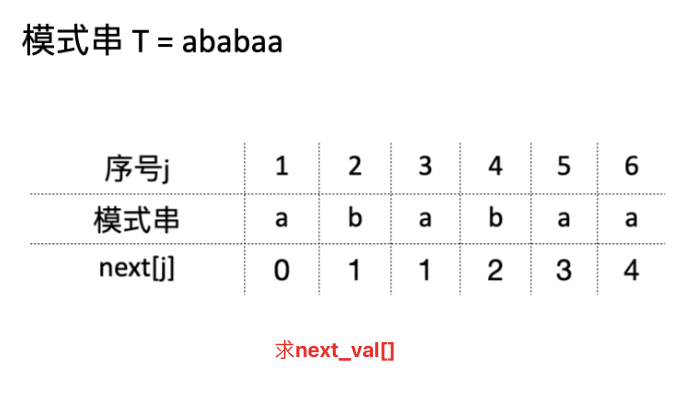
</div><div>
  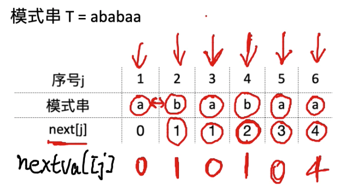
</div><p>&nbsp;</p><h2 id='树-1'><span>树</span></h2><h3 id='普通树'><span>普通树</span></h3><h4 id='性质-1'><span>性质：</span></h4><ul><li><p><mjx-container class="MathJax" jax="SVG" style="position: relative;"><svg xmlns="http://www.w3.org/2000/svg" width="20.206ex" height="2.149ex" role="img" focusable="false" viewBox="0 -750 8931.3 950" xmlns:xlink="http://www.w3.org/1999/xlink" aria-hidden="true" style="vertical-align: -0.452ex;"><defs><path id="MJX-403-TEX-N-3D" d="M56 347Q56 360 70 367H707Q722 359 722 347Q722 336 708 328L390 327H72Q56 332 56 347ZM56 153Q56 168 72 173H708Q722 163 722 153Q722 140 707 133H70Q56 140 56 153Z"></path><path id="MJX-403-TEX-N-2B" d="M56 237T56 250T70 270H369V420L370 570Q380 583 389 583Q402 583 409 568V270H707Q722 262 722 250T707 230H409V-68Q401 -82 391 -82H389H387Q375 -82 369 -68V230H70Q56 237 56 250Z"></path><path id="MJX-403-TEX-N-31" d="M213 578L200 573Q186 568 160 563T102 556H83V602H102Q149 604 189 617T245 641T273 663Q275 666 285 666Q294 666 302 660V361L303 61Q310 54 315 52T339 48T401 46H427V0H416Q395 3 257 3Q121 3 100 0H88V46H114Q136 46 152 46T177 47T193 50T201 52T207 57T213 61V578Z"></path></defs><g stroke="currentColor" fill="currentColor" stroke-width="0" transform="scale(1,-1)"><g data-mml-node="math"><g data-mml-node="mtext"><text data-variant="normal" transform="scale(1,-1)" font-size="884px" font-family="serif">总</text></g><g data-mml-node="mtext" transform="translate(826.9,0)"><text data-variant="normal" transform="scale(1,-1)" font-size="884px" font-family="serif">结</text></g><g data-mml-node="mtext" transform="translate(1697.3,0)"><text data-variant="normal" transform="scale(1,-1)" font-size="884px" font-family="serif">点</text></g><g data-mml-node="mtext" transform="translate(2567.7,0)"><text data-variant="normal" transform="scale(1,-1)" font-size="884px" font-family="serif">数</text></g><g data-mml-node="mo" transform="translate(3672.4,0)"><use data-c="3D" xlink:href="#MJX-403-TEX-N-3D"></use></g><g data-mml-node="mtext" transform="translate(4728.1,0)"><text data-variant="normal" transform="scale(1,-1)" font-size="884px" font-family="serif">总</text></g><g data-mml-node="mtext" transform="translate(5555,0)"><text data-variant="normal" transform="scale(1,-1)" font-size="884px" font-family="serif">度</text></g><g data-mml-node="mtext" transform="translate(6381.9,0)"><text data-variant="normal" transform="scale(1,-1)" font-size="884px" font-family="serif">数</text></g><g data-mml-node="mo" transform="translate(7431,0)"><use data-c="2B" xlink:href="#MJX-403-TEX-N-2B"></use></g><g data-mml-node="mn" transform="translate(8431.3,0)"><use data-c="31" xlink:href="#MJX-403-TEX-N-31"></use></g></g></g></svg><mjx-assistive-mml unselectable="on" display="inline"><math xmlns="http://www.w3.org/1998/Math/MathML"><mtext>总</mtext><mtext>结</mtext><mtext>点</mtext><mtext>数</mtext><mo>=</mo><mtext>总</mtext><mtext>度</mtext><mtext>数</mtext><mo>+</mo><mn>1</mn></math></mjx-assistive-mml></mjx-container><script type="math/tex">总结点数=总度数+1</script></p></li><li><p><mjx-container class="MathJax" jax="SVG" style="position: relative;"><svg xmlns="http://www.w3.org/2000/svg" width="37.267ex" height="2.452ex" role="img" focusable="false" viewBox="0 -833.9 16472 1083.9" xmlns:xlink="http://www.w3.org/1999/xlink" aria-hidden="true" style="vertical-align: -0.566ex;"><defs><path id="MJX-404-TEX-I-1D45A" d="M21 287Q22 293 24 303T36 341T56 388T88 425T132 442T175 435T205 417T221 395T229 376L231 369Q231 367 232 367L243 378Q303 442 384 442Q401 442 415 440T441 433T460 423T475 411T485 398T493 385T497 373T500 364T502 357L510 367Q573 442 659 442Q713 442 746 415T780 336Q780 285 742 178T704 50Q705 36 709 31T724 26Q752 26 776 56T815 138Q818 149 821 151T837 153Q857 153 857 145Q857 144 853 130Q845 101 831 73T785 17T716 -10Q669 -10 648 17T627 73Q627 92 663 193T700 345Q700 404 656 404H651Q565 404 506 303L499 291L466 157Q433 26 428 16Q415 -11 385 -11Q372 -11 364 -4T353 8T350 18Q350 29 384 161L420 307Q423 322 423 345Q423 404 379 404H374Q288 404 229 303L222 291L189 157Q156 26 151 16Q138 -11 108 -11Q95 -11 87 -5T76 7T74 17Q74 30 112 181Q151 335 151 342Q154 357 154 369Q154 405 129 405Q107 405 92 377T69 316T57 280Q55 278 41 278H27Q21 284 21 287Z"></path><path id="MJX-404-TEX-I-1D456" d="M184 600Q184 624 203 642T247 661Q265 661 277 649T290 619Q290 596 270 577T226 557Q211 557 198 567T184 600ZM21 287Q21 295 30 318T54 369T98 420T158 442Q197 442 223 419T250 357Q250 340 236 301T196 196T154 83Q149 61 149 51Q149 26 166 26Q175 26 185 29T208 43T235 78T260 137Q263 149 265 151T282 153Q302 153 302 143Q302 135 293 112T268 61T223 11T161 -11Q129 -11 102 10T74 74Q74 91 79 106T122 220Q160 321 166 341T173 380Q173 404 156 404H154Q124 404 99 371T61 287Q60 286 59 284T58 281T56 279T53 278T49 278T41 278H27Q21 284 21 287Z"></path><path id="MJX-404-TEX-N-2212" d="M84 237T84 250T98 270H679Q694 262 694 250T679 230H98Q84 237 84 250Z"></path><path id="MJX-404-TEX-N-31" d="M213 578L200 573Q186 568 160 563T102 556H83V602H102Q149 604 189 617T245 641T273 663Q275 666 285 666Q294 666 302 660V361L303 61Q310 54 315 52T339 48T401 46H427V0H416Q395 3 257 3Q121 3 100 0H88V46H114Q136 46 152 46T177 47T193 50T201 52T207 57T213 61V578Z"></path><path id="MJX-404-TEX-N-28" d="M94 250Q94 319 104 381T127 488T164 576T202 643T244 695T277 729T302 750H315H319Q333 750 333 741Q333 738 316 720T275 667T226 581T184 443T167 250T184 58T225 -81T274 -167T316 -220T333 -241Q333 -250 318 -250H315H302L274 -226Q180 -141 137 -14T94 250Z"></path><path id="MJX-404-TEX-N-2265" d="M83 616Q83 624 89 630T99 636Q107 636 253 568T543 431T687 361Q694 356 694 346T687 331Q685 329 395 192L107 56H101Q83 58 83 76Q83 77 83 79Q82 86 98 95Q117 105 248 167Q326 204 378 228L626 346L360 472Q291 505 200 548Q112 589 98 597T83 616ZM84 -118Q84 -108 99 -98H678Q694 -104 694 -118Q694 -130 679 -138H98Q84 -131 84 -118Z"></path><path id="MJX-404-TEX-N-29" d="M60 749L64 750Q69 750 74 750H86L114 726Q208 641 251 514T294 250Q294 182 284 119T261 12T224 -76T186 -143T145 -194T113 -227T90 -246Q87 -249 86 -250H74Q66 -250 63 -250T58 -247T55 -238Q56 -237 66 -225Q221 -64 221 250T66 725Q56 737 55 738Q55 746 60 749Z"></path></defs><g stroke="currentColor" fill="currentColor" stroke-width="0" transform="scale(1,-1)"><g data-mml-node="math"><g data-mml-node="mtext"><text data-variant="normal" transform="scale(1,-1)" font-size="884px" font-family="serif">度</text></g><g data-mml-node="mtext" transform="translate(826.9,0)"><text data-variant="normal" transform="scale(1,-1)" font-size="884px" font-family="serif">为</text></g><g data-mml-node="mi" transform="translate(1697.3,0)"><use data-c="1D45A" xlink:href="#MJX-404-TEX-I-1D45A"></use></g><g data-mml-node="mtext" transform="translate(2575.3,0)"><text data-variant="normal" transform="scale(1,-1)" font-size="884px" font-family="serif">的</text></g><g data-mml-node="mtext" transform="translate(3402.2,0)"><text data-variant="normal" transform="scale(1,-1)" font-size="884px" font-family="serif">树</text></g><g data-mml-node="mi" transform="translate(4229.1,0)"><text data-variant="italic" transform="scale(1,-1)" font-size="884px" font-family="serif" font-style="italic">，</text></g><g data-mml-node="mtext" transform="translate(5056,0)"><text data-variant="normal" transform="scale(1,-1)" font-size="884px" font-family="serif">第</text></g><g data-mml-node="mi" transform="translate(5882.9,0)"><use data-c="1D456" xlink:href="#MJX-404-TEX-I-1D456"></use></g><g data-mml-node="mtext" transform="translate(6227.9,0)"><text data-variant="normal" transform="scale(1,-1)" font-size="884px" font-family="serif">层</text></g><g data-mml-node="mtext" transform="translate(7098.3,0)"><text data-variant="normal" transform="scale(1,-1)" font-size="884px" font-family="serif">最</text></g><g data-mml-node="mtext" transform="translate(7968.7,0)"><text data-variant="normal" transform="scale(1,-1)" font-size="884px" font-family="serif">多</text></g><g data-mml-node="msup" transform="translate(8839.1,0)"><g data-mml-node="mi"><use data-c="1D45A" xlink:href="#MJX-404-TEX-I-1D45A"></use></g><g data-mml-node="TeXAtom" transform="translate(911,363) scale(0.707)" data-mjx-texclass="ORD"><g data-mml-node="mi"><use data-c="1D456" xlink:href="#MJX-404-TEX-I-1D456"></use></g><g data-mml-node="mo" transform="translate(345,0)"><use data-c="2212" xlink:href="#MJX-404-TEX-N-2212"></use></g><g data-mml-node="mn" transform="translate(1123,0)"><use data-c="31" xlink:href="#MJX-404-TEX-N-31"></use></g></g></g><g data-mml-node="mtext" transform="translate(10947.7,0)"><text data-variant="normal" transform="scale(1,-1)" font-size="884px" font-family="serif">个</text></g><g data-mml-node="mtext" transform="translate(11774.6,0)"><text data-variant="normal" transform="scale(1,-1)" font-size="884px" font-family="serif">结</text></g><g data-mml-node="mtext" transform="translate(12645,0)"><text data-variant="normal" transform="scale(1,-1)" font-size="884px" font-family="serif">点</text></g><g data-mml-node="mo" transform="translate(13515.4,0)"><use data-c="28" xlink:href="#MJX-404-TEX-N-28"></use></g><g data-mml-node="mi" transform="translate(13904.4,0)"><use data-c="1D456" xlink:href="#MJX-404-TEX-I-1D456"></use></g><g data-mml-node="mo" transform="translate(14527.2,0)"><use data-c="2265" xlink:href="#MJX-404-TEX-N-2265"></use></g><g data-mml-node="mn" transform="translate(15583,0)"><use data-c="31" xlink:href="#MJX-404-TEX-N-31"></use></g><g data-mml-node="mo" transform="translate(16083,0)"><use data-c="29" xlink:href="#MJX-404-TEX-N-29"></use></g></g></g></svg><mjx-assistive-mml unselectable="on" display="inline"><math xmlns="http://www.w3.org/1998/Math/MathML"><mtext>度</mtext><mtext>为</mtext><mi>m</mi><mtext>的</mtext><mtext>树</mtext><mi>，</mi><mtext>第</mtext><mi>i</mi><mtext>层</mtext><mtext>最</mtext><mtext>多</mtext><msup><mi>m</mi><mrow data-mjx-texclass="ORD"><mi>i</mi><mo>−</mo><mn>1</mn></mrow></msup><mtext>个</mtext><mtext>结</mtext><mtext>点</mtext><mo stretchy="false">(</mo><mi>i</mi><mo>≥</mo><mn>1</mn><mo stretchy="false">)</mo></math></mjx-assistive-mml></mjx-container><script type="math/tex">度为m的树，第i层最多m^{i-1}个结点(i\ge1)</script></p></li><li><p><mjx-container class="MathJax" jax="SVG" style="position: relative;"><svg xmlns="http://www.w3.org/2000/svg" width="32.902ex" height="3.773ex" role="img" focusable="false" viewBox="0 -1120.5 14542.6 1667.6" xmlns:xlink="http://www.w3.org/1999/xlink" aria-hidden="true" style="vertical-align: -1.238ex;"><defs><path id="MJX-405-TEX-I-210E" d="M137 683Q138 683 209 688T282 694Q294 694 294 685Q294 674 258 534Q220 386 220 383Q220 381 227 388Q288 442 357 442Q411 442 444 415T478 336Q478 285 440 178T402 50Q403 36 407 31T422 26Q450 26 474 56T513 138Q516 149 519 151T535 153Q555 153 555 145Q555 144 551 130Q535 71 500 33Q466 -10 419 -10H414Q367 -10 346 17T325 74Q325 90 361 192T398 345Q398 404 354 404H349Q266 404 205 306L198 293L164 158Q132 28 127 16Q114 -11 83 -11Q69 -11 59 -2T48 16Q48 30 121 320L195 616Q195 629 188 632T149 637H128Q122 643 122 645T124 664Q129 683 137 683Z"></path><path id="MJX-405-TEX-I-1D45A" d="M21 287Q22 293 24 303T36 341T56 388T88 425T132 442T175 435T205 417T221 395T229 376L231 369Q231 367 232 367L243 378Q303 442 384 442Q401 442 415 440T441 433T460 423T475 411T485 398T493 385T497 373T500 364T502 357L510 367Q573 442 659 442Q713 442 746 415T780 336Q780 285 742 178T704 50Q705 36 709 31T724 26Q752 26 776 56T815 138Q818 149 821 151T837 153Q857 153 857 145Q857 144 853 130Q845 101 831 73T785 17T716 -10Q669 -10 648 17T627 73Q627 92 663 193T700 345Q700 404 656 404H651Q565 404 506 303L499 291L466 157Q433 26 428 16Q415 -11 385 -11Q372 -11 364 -4T353 8T350 18Q350 29 384 161L420 307Q423 322 423 345Q423 404 379 404H374Q288 404 229 303L222 291L189 157Q156 26 151 16Q138 -11 108 -11Q95 -11 87 -5T76 7T74 17Q74 30 112 181Q151 335 151 342Q154 357 154 369Q154 405 129 405Q107 405 92 377T69 316T57 280Q55 278 41 278H27Q21 284 21 287Z"></path><path id="MJX-405-TEX-N-28" d="M94 250Q94 319 104 381T127 488T164 576T202 643T244 695T277 729T302 750H315H319Q333 750 333 741Q333 738 316 720T275 667T226 581T184 443T167 250T184 58T225 -81T274 -167T316 -220T333 -241Q333 -250 318 -250H315H302L274 -226Q180 -141 137 -14T94 250Z"></path><path id="MJX-405-TEX-N-2212" d="M84 237T84 250T98 270H679Q694 262 694 250T679 230H98Q84 237 84 250Z"></path><path id="MJX-405-TEX-N-31" d="M213 578L200 573Q186 568 160 563T102 556H83V602H102Q149 604 189 617T245 641T273 663Q275 666 285 666Q294 666 302 660V361L303 61Q310 54 315 52T339 48T401 46H427V0H416Q395 3 257 3Q121 3 100 0H88V46H114Q136 46 152 46T177 47T193 50T201 52T207 57T213 61V578Z"></path><path id="MJX-405-TEX-N-29" d="M60 749L64 750Q69 750 74 750H86L114 726Q208 641 251 514T294 250Q294 182 284 119T261 12T224 -76T186 -143T145 -194T113 -227T90 -246Q87 -249 86 -250H74Q66 -250 63 -250T58 -247T55 -238Q56 -237 66 -225Q221 -64 221 250T66 725Q56 737 55 738Q55 746 60 749Z"></path></defs><g stroke="currentColor" fill="currentColor" stroke-width="0" transform="scale(1,-1)"><g data-mml-node="math"><g data-mml-node="mtext"><text data-variant="normal" transform="scale(1,-1)" font-size="884px" font-family="serif">高</text></g><g data-mml-node="mtext" transform="translate(870.4,0)"><text data-variant="normal" transform="scale(1,-1)" font-size="884px" font-family="serif">度</text></g><g data-mml-node="mtext" transform="translate(1697.3,0)"><text data-variant="normal" transform="scale(1,-1)" font-size="884px" font-family="serif">为</text></g><g data-mml-node="mi" transform="translate(2567.7,0)"><use data-c="210E" xlink:href="#MJX-405-TEX-I-210E"></use></g><g data-mml-node="mtext" transform="translate(3143.7,0)"><text data-variant="normal" transform="scale(1,-1)" font-size="884px" font-family="serif">的</text></g><g data-mml-node="mi" transform="translate(3970.6,0)"><use data-c="1D45A" xlink:href="#MJX-405-TEX-I-1D45A"></use></g><g data-mml-node="mtext" transform="translate(4848.6,0)"><text data-variant="normal" transform="scale(1,-1)" font-size="884px" font-family="serif">叉</text></g><g data-mml-node="mtext" transform="translate(5719,0)"><text data-variant="normal" transform="scale(1,-1)" font-size="884px" font-family="serif">树</text></g><g data-mml-node="mtext" transform="translate(6545.9,0)"><text data-variant="normal" transform="scale(1,-1)" font-size="884px" font-family="serif">最</text></g><g data-mml-node="mtext" transform="translate(7416.3,0)"><text data-variant="normal" transform="scale(1,-1)" font-size="884px" font-family="serif">多</text></g><g data-mml-node="mtext" transform="translate(8286.7,0)"><text data-variant="normal" transform="scale(1,-1)" font-size="884px" font-family="serif">有</text></g><g data-mml-node="mfrac" transform="translate(9113.6,0)"><g data-mml-node="mrow" transform="translate(220,516.8) scale(0.707)"><g data-mml-node="mo"><use data-c="28" xlink:href="#MJX-405-TEX-N-28"></use></g><g data-mml-node="msup" transform="translate(389,0)"><g data-mml-node="mi"><use data-c="1D45A" xlink:href="#MJX-405-TEX-I-1D45A"></use></g><g data-mml-node="mi" transform="translate(911,363) scale(0.707)"><use data-c="210E" xlink:href="#MJX-405-TEX-I-210E"></use></g></g><g data-mml-node="mo" transform="translate(1757.3,0)"><use data-c="2212" xlink:href="#MJX-405-TEX-N-2212"></use></g><g data-mml-node="mn" transform="translate(2535.3,0)"><use data-c="31" xlink:href="#MJX-405-TEX-N-31"></use></g><g data-mml-node="mo" transform="translate(3035.3,0)"><use data-c="29" xlink:href="#MJX-405-TEX-N-29"></use></g></g><g data-mml-node="mrow" transform="translate(393.3,-370.3) scale(0.707)"><g data-mml-node="mo"><use data-c="28" xlink:href="#MJX-405-TEX-N-28"></use></g><g data-mml-node="mi" transform="translate(389,0)"><use data-c="1D45A" xlink:href="#MJX-405-TEX-I-1D45A"></use></g><g data-mml-node="mo" transform="translate(1267,0)"><use data-c="2212" xlink:href="#MJX-405-TEX-N-2212"></use></g><g data-mml-node="mn" transform="translate(2045,0)"><use data-c="31" xlink:href="#MJX-405-TEX-N-31"></use></g><g data-mml-node="mo" transform="translate(2545,0)"><use data-c="29" xlink:href="#MJX-405-TEX-N-29"></use></g></g><rect width="2621.3" height="60" x="120" y="220"></rect></g><g data-mml-node="mtext" transform="translate(11974.9,0)"><text data-variant="normal" transform="scale(1,-1)" font-size="884px" font-family="serif">个</text></g><g data-mml-node="mtext" transform="translate(12801.8,0)"><text data-variant="normal" transform="scale(1,-1)" font-size="884px" font-family="serif">结</text></g><g data-mml-node="mtext" transform="translate(13672.2,0)"><text data-variant="normal" transform="scale(1,-1)" font-size="884px" font-family="serif">点</text></g></g></g></svg><mjx-assistive-mml unselectable="on" display="inline"><math xmlns="http://www.w3.org/1998/Math/MathML"><mtext>高</mtext><mtext>度</mtext><mtext>为</mtext><mi>h</mi><mtext>的</mtext><mi>m</mi><mtext>叉</mtext><mtext>树</mtext><mtext>最</mtext><mtext>多</mtext><mtext>有</mtext><mfrac><mrow><mo stretchy="false">(</mo><msup><mi>m</mi><mi>h</mi></msup><mo>−</mo><mn>1</mn><mo stretchy="false">)</mo></mrow><mrow><mo stretchy="false">(</mo><mi>m</mi><mo>−</mo><mn>1</mn><mo stretchy="false">)</mo></mrow></mfrac><mtext>个</mtext><mtext>结</mtext><mtext>点</mtext></math></mjx-assistive-mml></mjx-container><script type="math/tex">高度为h的m叉树最多有\frac{(m^h-1)}{(m-1)}个结点</script></p><ul><li><mjx-container class="MathJax" jax="SVG" style="position: relative;"><svg xmlns="http://www.w3.org/2000/svg" width="34.774ex" height="2.149ex" role="img" focusable="false" viewBox="0 -750 15370.3 950" xmlns:xlink="http://www.w3.org/1999/xlink" aria-hidden="true" style="vertical-align: -0.452ex;"><defs><path id="MJX-406-TEX-I-1D45A" d="M21 287Q22 293 24 303T36 341T56 388T88 425T132 442T175 435T205 417T221 395T229 376L231 369Q231 367 232 367L243 378Q303 442 384 442Q401 442 415 440T441 433T460 423T475 411T485 398T493 385T497 373T500 364T502 357L510 367Q573 442 659 442Q713 442 746 415T780 336Q780 285 742 178T704 50Q705 36 709 31T724 26Q752 26 776 56T815 138Q818 149 821 151T837 153Q857 153 857 145Q857 144 853 130Q845 101 831 73T785 17T716 -10Q669 -10 648 17T627 73Q627 92 663 193T700 345Q700 404 656 404H651Q565 404 506 303L499 291L466 157Q433 26 428 16Q415 -11 385 -11Q372 -11 364 -4T353 8T350 18Q350 29 384 161L420 307Q423 322 423 345Q423 404 379 404H374Q288 404 229 303L222 291L189 157Q156 26 151 16Q138 -11 108 -11Q95 -11 87 -5T76 7T74 17Q74 30 112 181Q151 335 151 342Q154 357 154 369Q154 405 129 405Q107 405 92 377T69 316T57 280Q55 278 41 278H27Q21 284 21 287Z"></path></defs><g stroke="currentColor" fill="currentColor" stroke-width="0" transform="scale(1,-1)"><g data-mml-node="math"><g data-mml-node="mtext"><text data-variant="normal" transform="scale(1,-1)" font-size="884px" font-family="serif">推</text></g><g data-mml-node="mtext" transform="translate(870.4,0)"><text data-variant="normal" transform="scale(1,-1)" font-size="884px" font-family="serif">导</text></g><g data-mml-node="mtext" transform="translate(1697.3,0)"><text data-variant="normal" transform="scale(1,-1)" font-size="884px" font-family="serif">过</text></g><g data-mml-node="mtext" transform="translate(2524.2,0)"><text data-variant="normal" transform="scale(1,-1)" font-size="884px" font-family="serif">程</text></g><g data-mml-node="mi" transform="translate(3351.1,0)"><text data-variant="italic" transform="scale(1,-1)" font-size="884px" font-family="serif" font-style="italic">：</text></g><g data-mml-node="mtext" transform="translate(4178,0)"><text data-variant="normal" transform="scale(1,-1)" font-size="884px" font-family="serif">画</text></g><g data-mml-node="mtext" transform="translate(5048.4,0)"><text data-variant="normal" transform="scale(1,-1)" font-size="884px" font-family="serif">出</text></g><g data-mml-node="mtext" transform="translate(5918.8,0)"><text data-variant="normal" transform="scale(1,-1)" font-size="884px" font-family="serif">满</text></g><g data-mml-node="mi" transform="translate(6789.2,0)"><use data-c="1D45A" xlink:href="#MJX-406-TEX-I-1D45A"></use></g><g data-mml-node="mtext" transform="translate(7667.2,0)"><text data-variant="normal" transform="scale(1,-1)" font-size="884px" font-family="serif">叉</text></g><g data-mml-node="mtext" transform="translate(8537.6,0)"><text data-variant="normal" transform="scale(1,-1)" font-size="884px" font-family="serif">树</text></g><g data-mml-node="mi" transform="translate(9364.5,0)"><text data-variant="italic" transform="scale(1,-1)" font-size="884px" font-family="serif" font-style="italic">，</text></g><g data-mml-node="mtext" transform="translate(10191.4,0)"><text data-variant="normal" transform="scale(1,-1)" font-size="884px" font-family="serif">等</text></g><g data-mml-node="mtext" transform="translate(11061.8,0)"><text data-variant="normal" transform="scale(1,-1)" font-size="884px" font-family="serif">比</text></g><g data-mml-node="mtext" transform="translate(11932.2,0)"><text data-variant="normal" transform="scale(1,-1)" font-size="884px" font-family="serif">求</text></g><g data-mml-node="mtext" transform="translate(12802.6,0)"><text data-variant="normal" transform="scale(1,-1)" font-size="884px" font-family="serif">和</text></g><g data-mml-node="mtext" transform="translate(13673,0)"><text data-variant="normal" transform="scale(1,-1)" font-size="884px" font-family="serif">一</text></g><g data-mml-node="mtext" transform="translate(14499.9,0)"><text data-variant="normal" transform="scale(1,-1)" font-size="884px" font-family="serif">下</text></g></g></g></svg><mjx-assistive-mml unselectable="on" display="inline"><math xmlns="http://www.w3.org/1998/Math/MathML"><mtext>推</mtext><mtext>导</mtext><mtext>过</mtext><mtext>程</mtext><mi>：</mi><mtext>画</mtext><mtext>出</mtext><mtext>满</mtext><mi>m</mi><mtext>叉</mtext><mtext>树</mtext><mi>，</mi><mtext>等</mtext><mtext>比</mtext><mtext>求</mtext><mtext>和</mtext><mtext>一</mtext><mtext>下</mtext></math></mjx-assistive-mml></mjx-container><script type="math/tex">推导过程：画出满m叉树，等比求和一下</script></li></ul></li><li><p><mjx-container class="MathJax" jax="SVG" style="position: relative;"><svg xmlns="http://www.w3.org/2000/svg" width="51.474ex" height="2.262ex" role="img" focusable="false" viewBox="0 -750 22751.3 1000" xmlns:xlink="http://www.w3.org/1999/xlink" aria-hidden="true" style="vertical-align: -0.566ex;"><defs><path id="MJX-407-TEX-I-1D45B" d="M21 287Q22 293 24 303T36 341T56 388T89 425T135 442Q171 442 195 424T225 390T231 369Q231 367 232 367L243 378Q304 442 382 442Q436 442 469 415T503 336T465 179T427 52Q427 26 444 26Q450 26 453 27Q482 32 505 65T540 145Q542 153 560 153Q580 153 580 145Q580 144 576 130Q568 101 554 73T508 17T439 -10Q392 -10 371 17T350 73Q350 92 386 193T423 345Q423 404 379 404H374Q288 404 229 303L222 291L189 157Q156 26 151 16Q138 -11 108 -11Q95 -11 87 -5T76 7T74 17Q74 30 112 180T152 343Q153 348 153 366Q153 405 129 405Q91 405 66 305Q60 285 60 284Q58 278 41 278H27Q21 284 21 287Z"></path><path id="MJX-407-TEX-I-1D45A" d="M21 287Q22 293 24 303T36 341T56 388T88 425T132 442T175 435T205 417T221 395T229 376L231 369Q231 367 232 367L243 378Q303 442 384 442Q401 442 415 440T441 433T460 423T475 411T485 398T493 385T497 373T500 364T502 357L510 367Q573 442 659 442Q713 442 746 415T780 336Q780 285 742 178T704 50Q705 36 709 31T724 26Q752 26 776 56T815 138Q818 149 821 151T837 153Q857 153 857 145Q857 144 853 130Q845 101 831 73T785 17T716 -10Q669 -10 648 17T627 73Q627 92 663 193T700 345Q700 404 656 404H651Q565 404 506 303L499 291L466 157Q433 26 428 16Q415 -11 385 -11Q372 -11 364 -4T353 8T350 18Q350 29 384 161L420 307Q423 322 423 345Q423 404 379 404H374Q288 404 229 303L222 291L189 157Q156 26 151 16Q138 -11 108 -11Q95 -11 87 -5T76 7T74 17Q74 30 112 181Q151 335 151 342Q154 357 154 369Q154 405 129 405Q107 405 92 377T69 316T57 280Q55 278 41 278H27Q21 284 21 287Z"></path><path id="MJX-407-TEX-N-2308" d="M174 734Q178 746 190 750H298H369Q400 750 411 747T422 730T411 713T372 709Q365 709 345 709T310 710H214V-235Q206 -248 196 -250Q192 -250 189 -249T184 -247T180 -244T178 -241T176 -237T174 -234V734Z"></path><path id="MJX-407-TEX-N-6C" d="M42 46H56Q95 46 103 60V68Q103 77 103 91T103 124T104 167T104 217T104 272T104 329Q104 366 104 407T104 482T104 542T103 586T103 603Q100 622 89 628T44 637H26V660Q26 683 28 683L38 684Q48 685 67 686T104 688Q121 689 141 690T171 693T182 694H185V379Q185 62 186 60Q190 52 198 49Q219 46 247 46H263V0H255L232 1Q209 2 183 2T145 3T107 3T57 1L34 0H26V46H42Z"></path><path id="MJX-407-TEX-N-6F" d="M28 214Q28 309 93 378T250 448Q340 448 405 380T471 215Q471 120 407 55T250 -10Q153 -10 91 57T28 214ZM250 30Q372 30 372 193V225V250Q372 272 371 288T364 326T348 362T317 390T268 410Q263 411 252 411Q222 411 195 399Q152 377 139 338T126 246V226Q126 130 145 91Q177 30 250 30Z"></path><path id="MJX-407-TEX-N-67" d="M329 409Q373 453 429 453Q459 453 472 434T485 396Q485 382 476 371T449 360Q416 360 412 390Q410 404 415 411Q415 412 416 414V415Q388 412 363 393Q355 388 355 386Q355 385 359 381T368 369T379 351T388 325T392 292Q392 230 343 187T222 143Q172 143 123 171Q112 153 112 133Q112 98 138 81Q147 75 155 75T227 73Q311 72 335 67Q396 58 431 26Q470 -13 470 -72Q470 -139 392 -175Q332 -206 250 -206Q167 -206 107 -175Q29 -140 29 -75Q29 -39 50 -15T92 18L103 24Q67 55 67 108Q67 155 96 193Q52 237 52 292Q52 355 102 398T223 442Q274 442 318 416L329 409ZM299 343Q294 371 273 387T221 404Q192 404 171 388T145 343Q142 326 142 292Q142 248 149 227T179 192Q196 182 222 182Q244 182 260 189T283 207T294 227T299 242Q302 258 302 292T299 343ZM403 -75Q403 -50 389 -34T348 -11T299 -2T245 0H218Q151 0 138 -6Q118 -15 107 -34T95 -74Q95 -84 101 -97T122 -127T170 -155T250 -167Q319 -167 361 -139T403 -75Z"></path><path id="MJX-407-TEX-N-2061" d=""></path><path id="MJX-407-TEX-N-28" d="M94 250Q94 319 104 381T127 488T164 576T202 643T244 695T277 729T302 750H315H319Q333 750 333 741Q333 738 316 720T275 667T226 581T184 443T167 250T184 58T225 -81T274 -167T316 -220T333 -241Q333 -250 318 -250H315H302L274 -226Q180 -141 137 -14T94 250Z"></path><path id="MJX-407-TEX-N-2212" d="M84 237T84 250T98 270H679Q694 262 694 250T679 230H98Q84 237 84 250Z"></path><path id="MJX-407-TEX-N-31" d="M213 578L200 573Q186 568 160 563T102 556H83V602H102Q149 604 189 617T245 641T273 663Q275 666 285 666Q294 666 302 660V361L303 61Q310 54 315 52T339 48T401 46H427V0H416Q395 3 257 3Q121 3 100 0H88V46H114Q136 46 152 46T177 47T193 50T201 52T207 57T213 61V578Z"></path><path id="MJX-407-TEX-N-29" d="M60 749L64 750Q69 750 74 750H86L114 726Q208 641 251 514T294 250Q294 182 284 119T261 12T224 -76T186 -143T145 -194T113 -227T90 -246Q87 -249 86 -250H74Q66 -250 63 -250T58 -247T55 -238Q56 -237 66 -225Q221 -64 221 250T66 725Q56 737 55 738Q55 746 60 749Z"></path><path id="MJX-407-TEX-N-2B" d="M56 237T56 250T70 270H369V420L370 570Q380 583 389 583Q402 583 409 568V270H707Q722 262 722 250T707 230H409V-68Q401 -82 391 -82H389H387Q375 -82 369 -68V230H70Q56 237 56 250Z"></path><path id="MJX-407-TEX-N-2309" d="M21 717T21 730T32 746T75 750H147H256Q266 742 269 735V-235Q262 -248 251 -250Q247 -250 244 -249T239 -247T235 -244T233 -241T231 -237T229 -234V710H133Q119 710 99 710T71 709Q43 709 32 713Z"></path></defs><g stroke="currentColor" fill="currentColor" stroke-width="0" transform="scale(1,-1)"><g data-mml-node="math"><g data-mml-node="mtext"><text data-variant="normal" transform="scale(1,-1)" font-size="884px" font-family="serif">具</text></g><g data-mml-node="mtext" transform="translate(870.4,0)"><text data-variant="normal" transform="scale(1,-1)" font-size="884px" font-family="serif">有</text></g><g data-mml-node="mi" transform="translate(1697.3,0)"><use data-c="1D45B" xlink:href="#MJX-407-TEX-I-1D45B"></use></g><g data-mml-node="mtext" transform="translate(2297.3,0)"><text data-variant="normal" transform="scale(1,-1)" font-size="884px" font-family="serif">个</text></g><g data-mml-node="mtext" transform="translate(3124.2,0)"><text data-variant="normal" transform="scale(1,-1)" font-size="884px" font-family="serif">结</text></g><g data-mml-node="mtext" transform="translate(3994.6,0)"><text data-variant="normal" transform="scale(1,-1)" font-size="884px" font-family="serif">点</text></g><g data-mml-node="mtext" transform="translate(4865,0)"><text data-variant="normal" transform="scale(1,-1)" font-size="884px" font-family="serif">的</text></g><g data-mml-node="mi" transform="translate(5691.9,0)"><use data-c="1D45A" xlink:href="#MJX-407-TEX-I-1D45A"></use></g><g data-mml-node="mtext" transform="translate(6569.9,0)"><text data-variant="normal" transform="scale(1,-1)" font-size="884px" font-family="serif">叉</text></g><g data-mml-node="mtext" transform="translate(7440.3,0)"><text data-variant="normal" transform="scale(1,-1)" font-size="884px" font-family="serif">树</text></g><g data-mml-node="mtext" transform="translate(8267.2,0)"><text data-variant="normal" transform="scale(1,-1)" font-size="884px" font-family="serif">的</text></g><g data-mml-node="mtext" transform="translate(9094.1,0)"><text data-variant="normal" transform="scale(1,-1)" font-size="884px" font-family="serif">最</text></g><g data-mml-node="mtext" transform="translate(9964.5,0)"><text data-variant="normal" transform="scale(1,-1)" font-size="884px" font-family="serif">小</text></g><g data-mml-node="mtext" transform="translate(10834.9,0)"><text data-variant="normal" transform="scale(1,-1)" font-size="884px" font-family="serif">高</text></g><g data-mml-node="mtext" transform="translate(11705.3,0)"><text data-variant="normal" transform="scale(1,-1)" font-size="884px" font-family="serif">度</text></g><g data-mml-node="mtext" transform="translate(12532.2,0)"><text data-variant="normal" transform="scale(1,-1)" font-size="884px" font-family="serif">为</text></g><g data-mml-node="mo" transform="translate(13402.6,0)"><use data-c="2308" xlink:href="#MJX-407-TEX-N-2308"></use></g><g data-mml-node="msub" transform="translate(13846.6,0)"><g data-mml-node="mi"><use data-c="6C" xlink:href="#MJX-407-TEX-N-6C"></use><use data-c="6F" xlink:href="#MJX-407-TEX-N-6F" transform="translate(278,0)"></use><use data-c="67" xlink:href="#MJX-407-TEX-N-67" transform="translate(778,0)"></use></g><g data-mml-node="mi" transform="translate(1311,-241.4) scale(0.707)"><use data-c="1D45A" xlink:href="#MJX-407-TEX-I-1D45A"></use></g></g><g data-mml-node="mo" transform="translate(15828.4,0)"><use data-c="2061" xlink:href="#MJX-407-TEX-N-2061"></use></g><g data-mml-node="mo" transform="translate(15828.4,0)"><use data-c="28" xlink:href="#MJX-407-TEX-N-28"></use></g><g data-mml-node="mi" transform="translate(16217.4,0)"><use data-c="1D45B" xlink:href="#MJX-407-TEX-I-1D45B"></use></g><g data-mml-node="mo" transform="translate(16817.4,0)"><use data-c="28" xlink:href="#MJX-407-TEX-N-28"></use></g><g data-mml-node="mi" transform="translate(17206.4,0)"><use data-c="1D45A" xlink:href="#MJX-407-TEX-I-1D45A"></use></g><g data-mml-node="mo" transform="translate(18306.7,0)"><use data-c="2212" xlink:href="#MJX-407-TEX-N-2212"></use></g><g data-mml-node="mn" transform="translate(19306.9,0)"><use data-c="31" xlink:href="#MJX-407-TEX-N-31"></use></g><g data-mml-node="mo" transform="translate(19806.9,0)"><use data-c="29" xlink:href="#MJX-407-TEX-N-29"></use></g><g data-mml-node="mo" transform="translate(20418.1,0)"><use data-c="2B" xlink:href="#MJX-407-TEX-N-2B"></use></g><g data-mml-node="mn" transform="translate(21418.3,0)"><use data-c="31" xlink:href="#MJX-407-TEX-N-31"></use></g><g data-mml-node="mo" transform="translate(21918.3,0)"><use data-c="29" xlink:href="#MJX-407-TEX-N-29"></use></g><g data-mml-node="mo" transform="translate(22307.3,0)"><use data-c="2309" xlink:href="#MJX-407-TEX-N-2309"></use></g></g></g></svg><mjx-assistive-mml unselectable="on" display="inline"><math xmlns="http://www.w3.org/1998/Math/MathML"><mtext>具</mtext><mtext>有</mtext><mi>n</mi><mtext>个</mtext><mtext>结</mtext><mtext>点</mtext><mtext>的</mtext><mi>m</mi><mtext>叉</mtext><mtext>树</mtext><mtext>的</mtext><mtext>最</mtext><mtext>小</mtext><mtext>高</mtext><mtext>度</mtext><mtext>为</mtext><mo fence="false" stretchy="false">⌈</mo><msub><mi>log</mi><mi>m</mi></msub><mo data-mjx-texclass="NONE">⁡</mo><mo stretchy="false">(</mo><mi>n</mi><mo stretchy="false">(</mo><mi>m</mi><mo>−</mo><mn>1</mn><mo stretchy="false">)</mo><mo>+</mo><mn>1</mn><mo stretchy="false">)</mo><mo fence="false" stretchy="false">⌉</mo></math></mjx-assistive-mml></mjx-container><script type="math/tex">具有n个结点的m叉树的最小高度为\lceil\log_m(n(m-1)+1)\rceil</script></p><ul><li><p><mjx-container class="MathJax" jax="SVG" style="position: relative;"><svg xmlns="http://www.w3.org/2000/svg" width="9.452ex" height="2.149ex" role="img" focusable="false" viewBox="0 -750 4178 950" xmlns:xlink="http://www.w3.org/1999/xlink" aria-hidden="true" style="vertical-align: -0.452ex;"><defs></defs><g stroke="currentColor" fill="currentColor" stroke-width="0" transform="scale(1,-1)"><g data-mml-node="math"><g data-mml-node="mtext"><text data-variant="normal" transform="scale(1,-1)" font-size="884px" font-family="serif">推</text></g><g data-mml-node="mtext" transform="translate(870.4,0)"><text data-variant="normal" transform="scale(1,-1)" font-size="884px" font-family="serif">导</text></g><g data-mml-node="mtext" transform="translate(1697.3,0)"><text data-variant="normal" transform="scale(1,-1)" font-size="884px" font-family="serif">过</text></g><g data-mml-node="mtext" transform="translate(2524.2,0)"><text data-variant="normal" transform="scale(1,-1)" font-size="884px" font-family="serif">程</text></g><g data-mml-node="mi" transform="translate(3351.1,0)"><text data-variant="italic" transform="scale(1,-1)" font-size="884px" font-family="serif" font-style="italic">：</text></g></g></g></svg><mjx-assistive-mml unselectable="on" display="inline"><math xmlns="http://www.w3.org/1998/Math/MathML"><mtext>推</mtext><mtext>导</mtext><mtext>过</mtext><mtext>程</mtext><mi>：</mi></math></mjx-assistive-mml></mjx-container><script type="math/tex">推导过程：</script></p></li><li><p><mjx-container class="MathJax" jax="SVG" style="position: relative;"><svg xmlns="http://www.w3.org/2000/svg" width="83.091ex" height="2.262ex" role="img" focusable="false" viewBox="0 -750 36726.3 1000" xmlns:xlink="http://www.w3.org/1999/xlink" aria-hidden="true" style="vertical-align: -0.566ex;"><defs><path id="MJX-409-TEX-N-28" d="M94 250Q94 319 104 381T127 488T164 576T202 643T244 695T277 729T302 750H315H319Q333 750 333 741Q333 738 316 720T275 667T226 581T184 443T167 250T184 58T225 -81T274 -167T316 -220T333 -241Q333 -250 318 -250H315H302L274 -226Q180 -141 137 -14T94 250Z"></path><path id="MJX-409-TEX-I-1D45B" d="M21 287Q22 293 24 303T36 341T56 388T89 425T135 442Q171 442 195 424T225 390T231 369Q231 367 232 367L243 378Q304 442 382 442Q436 442 469 415T503 336T465 179T427 52Q427 26 444 26Q450 26 453 27Q482 32 505 65T540 145Q542 153 560 153Q580 153 580 145Q580 144 576 130Q568 101 554 73T508 17T439 -10Q392 -10 371 17T350 73Q350 92 386 193T423 345Q423 404 379 404H374Q288 404 229 303L222 291L189 157Q156 26 151 16Q138 -11 108 -11Q95 -11 87 -5T76 7T74 17Q74 30 112 180T152 343Q153 348 153 366Q153 405 129 405Q91 405 66 305Q60 285 60 284Q58 278 41 278H27Q21 284 21 287Z"></path><path id="MJX-409-TEX-I-210E" d="M137 683Q138 683 209 688T282 694Q294 694 294 685Q294 674 258 534Q220 386 220 383Q220 381 227 388Q288 442 357 442Q411 442 444 415T478 336Q478 285 440 178T402 50Q403 36 407 31T422 26Q450 26 474 56T513 138Q516 149 519 151T535 153Q555 153 555 145Q555 144 551 130Q535 71 500 33Q466 -10 419 -10H414Q367 -10 346 17T325 74Q325 90 361 192T398 345Q398 404 354 404H349Q266 404 205 306L198 293L164 158Q132 28 127 16Q114 -11 83 -11Q69 -11 59 -2T48 16Q48 30 121 320L195 616Q195 629 188 632T149 637H128Q122 643 122 645T124 664Q129 683 137 683Z"></path><path id="MJX-409-TEX-I-1D45A" d="M21 287Q22 293 24 303T36 341T56 388T88 425T132 442T175 435T205 417T221 395T229 376L231 369Q231 367 232 367L243 378Q303 442 384 442Q401 442 415 440T441 433T460 423T475 411T485 398T493 385T497 373T500 364T502 357L510 367Q573 442 659 442Q713 442 746 415T780 336Q780 285 742 178T704 50Q705 36 709 31T724 26Q752 26 776 56T815 138Q818 149 821 151T837 153Q857 153 857 145Q857 144 853 130Q845 101 831 73T785 17T716 -10Q669 -10 648 17T627 73Q627 92 663 193T700 345Q700 404 656 404H651Q565 404 506 303L499 291L466 157Q433 26 428 16Q415 -11 385 -11Q372 -11 364 -4T353 8T350 18Q350 29 384 161L420 307Q423 322 423 345Q423 404 379 404H374Q288 404 229 303L222 291L189 157Q156 26 151 16Q138 -11 108 -11Q95 -11 87 -5T76 7T74 17Q74 30 112 181Q151 335 151 342Q154 357 154 369Q154 405 129 405Q107 405 92 377T69 316T57 280Q55 278 41 278H27Q21 284 21 287Z"></path><path id="MJX-409-TEX-N-2212" d="M84 237T84 250T98 270H679Q694 262 694 250T679 230H98Q84 237 84 250Z"></path><path id="MJX-409-TEX-N-31" d="M213 578L200 573Q186 568 160 563T102 556H83V602H102Q149 604 189 617T245 641T273 663Q275 666 285 666Q294 666 302 660V361L303 61Q310 54 315 52T339 48T401 46H427V0H416Q395 3 257 3Q121 3 100 0H88V46H114Q136 46 152 46T177 47T193 50T201 52T207 57T213 61V578Z"></path><path id="MJX-409-TEX-N-29" d="M60 749L64 750Q69 750 74 750H86L114 726Q208 641 251 514T294 250Q294 182 284 119T261 12T224 -76T186 -143T145 -194T113 -227T90 -246Q87 -249 86 -250H74Q66 -250 63 -250T58 -247T55 -238Q56 -237 66 -225Q221 -64 221 250T66 725Q56 737 55 738Q55 746 60 749Z"></path></defs><g stroke="currentColor" fill="currentColor" stroke-width="0" transform="scale(1,-1)"><g data-mml-node="math"><g data-mml-node="mo"><use data-c="28" xlink:href="#MJX-409-TEX-N-28"></use></g><g data-mml-node="mtext" transform="translate(389,0)"><text data-variant="normal" transform="scale(1,-1)" font-size="884px" font-family="serif">左</text></g><g data-mml-node="mtext" transform="translate(1215.9,0)"><text data-variant="normal" transform="scale(1,-1)" font-size="884px" font-family="serif">边</text></g><g data-mml-node="mtext" transform="translate(2086.3,0)"><text data-variant="normal" transform="scale(1,-1)" font-size="884px" font-family="serif">不</text></g><g data-mml-node="mtext" transform="translate(2913.2,0)"><text data-variant="normal" transform="scale(1,-1)" font-size="884px" font-family="serif">能</text></g><g data-mml-node="mtext" transform="translate(3783.6,0)"><text data-variant="normal" transform="scale(1,-1)" font-size="884px" font-family="serif">取</text></g><g data-mml-node="mtext" transform="translate(4654,0)"><text data-variant="normal" transform="scale(1,-1)" font-size="884px" font-family="serif">等</text></g><g data-mml-node="mtext" transform="translate(5524.4,0)"><text data-variant="normal" transform="scale(1,-1)" font-size="884px" font-family="serif">号</text></g><g data-mml-node="mtext" transform="translate(6394.8,0)"><text data-variant="normal" transform="scale(1,-1)" font-size="884px" font-family="serif">是</text></g><g data-mml-node="mtext" transform="translate(7221.7,0)"><text data-variant="normal" transform="scale(1,-1)" font-size="884px" font-family="serif">因</text></g><g data-mml-node="mtext" transform="translate(8092.1,0)"><text data-variant="normal" transform="scale(1,-1)" font-size="884px" font-family="serif">为</text></g><g data-mml-node="mi" transform="translate(8962.5,0)"><use data-c="1D45B" xlink:href="#MJX-409-TEX-I-1D45B"></use></g><g data-mml-node="mtext" transform="translate(9562.5,0)"><text data-variant="normal" transform="scale(1,-1)" font-size="884px" font-family="serif">代</text></g><g data-mml-node="mtext" transform="translate(10389.4,0)"><text data-variant="normal" transform="scale(1,-1)" font-size="884px" font-family="serif">表</text></g><g data-mml-node="mtext" transform="translate(11259.8,0)"><text data-variant="normal" transform="scale(1,-1)" font-size="884px" font-family="serif">的</text></g><g data-mml-node="mtext" transform="translate(12086.7,0)"><text data-variant="normal" transform="scale(1,-1)" font-size="884px" font-family="serif">是</text></g><g data-mml-node="mtext" transform="translate(12913.6,0)"><text data-variant="normal" transform="scale(1,-1)" font-size="884px" font-family="serif">树</text></g><g data-mml-node="mtext" transform="translate(13740.5,0)"><text data-variant="normal" transform="scale(1,-1)" font-size="884px" font-family="serif">高</text></g><g data-mml-node="mtext" transform="translate(14610.9,0)"><text data-variant="normal" transform="scale(1,-1)" font-size="884px" font-family="serif">为</text></g><g data-mml-node="mi" transform="translate(15481.3,0)"><use data-c="210E" xlink:href="#MJX-409-TEX-I-210E"></use></g><g data-mml-node="mtext" transform="translate(16057.3,0)"><text data-variant="normal" transform="scale(1,-1)" font-size="884px" font-family="serif">的</text></g><g data-mml-node="mi" transform="translate(16884.2,0)"><use data-c="1D45A" xlink:href="#MJX-409-TEX-I-1D45A"></use></g><g data-mml-node="mtext" transform="translate(17762.2,0)"><text data-variant="normal" transform="scale(1,-1)" font-size="884px" font-family="serif">叉</text></g><g data-mml-node="mtext" transform="translate(18632.6,0)"><text data-variant="normal" transform="scale(1,-1)" font-size="884px" font-family="serif">树</text></g><g data-mml-node="mtext" transform="translate(19459.5,0)"><text data-variant="normal" transform="scale(1,-1)" font-size="884px" font-family="serif">的</text></g><g data-mml-node="mtext" transform="translate(20286.4,0)"><text data-variant="normal" transform="scale(1,-1)" font-size="884px" font-family="serif">结</text></g><g data-mml-node="mtext" transform="translate(21156.8,0)"><text data-variant="normal" transform="scale(1,-1)" font-size="884px" font-family="serif">点</text></g><g data-mml-node="mtext" transform="translate(22027.2,0)"><text data-variant="normal" transform="scale(1,-1)" font-size="884px" font-family="serif">数</text></g><g data-mml-node="mtext" transform="translate(22854.1,0)"><text data-variant="normal" transform="scale(1,-1)" font-size="884px" font-family="serif">量</text></g><g data-mml-node="mtext" transform="translate(23681,0)"><text data-variant="normal" transform="scale(1,-1)" font-size="884px" font-family="serif">范</text></g><g data-mml-node="mtext" transform="translate(24551.4,0)"><text data-variant="normal" transform="scale(1,-1)" font-size="884px" font-family="serif">围</text></g><g data-mml-node="mi" transform="translate(25421.8,0)"><text data-variant="italic" transform="scale(1,-1)" font-size="884px" font-family="serif" font-style="italic">，</text></g><g data-mml-node="mtext" transform="translate(26248.7,0)"><text data-variant="normal" transform="scale(1,-1)" font-size="884px" font-family="serif">取</text></g><g data-mml-node="mtext" transform="translate(27119.1,0)"><text data-variant="normal" transform="scale(1,-1)" font-size="884px" font-family="serif">等</text></g><g data-mml-node="mtext" transform="translate(27989.5,0)"><text data-variant="normal" transform="scale(1,-1)" font-size="884px" font-family="serif">号</text></g><g data-mml-node="mtext" transform="translate(28859.9,0)"><text data-variant="normal" transform="scale(1,-1)" font-size="884px" font-family="serif">树</text></g><g data-mml-node="mtext" transform="translate(29686.8,0)"><text data-variant="normal" transform="scale(1,-1)" font-size="884px" font-family="serif">高</text></g><g data-mml-node="mtext" transform="translate(30557.2,0)"><text data-variant="normal" transform="scale(1,-1)" font-size="884px" font-family="serif">就</text></g><g data-mml-node="mtext" transform="translate(31427.6,0)"><text data-variant="normal" transform="scale(1,-1)" font-size="884px" font-family="serif">变</text></g><g data-mml-node="mtext" transform="translate(32298,0)"><text data-variant="normal" transform="scale(1,-1)" font-size="884px" font-family="serif">成</text></g><g data-mml-node="mi" transform="translate(33168.4,0)"><use data-c="210E" xlink:href="#MJX-409-TEX-I-210E"></use></g><g data-mml-node="mo" transform="translate(33966.6,0)"><use data-c="2212" xlink:href="#MJX-409-TEX-N-2212"></use></g><g data-mml-node="mn" transform="translate(34966.9,0)"><use data-c="31" xlink:href="#MJX-409-TEX-N-31"></use></g><g data-mml-node="mtext" transform="translate(35466.9,0)"><text data-variant="normal" transform="scale(1,-1)" font-size="884px" font-family="serif">了</text></g><g data-mml-node="mo" transform="translate(36337.3,0)"><use data-c="29" xlink:href="#MJX-409-TEX-N-29"></use></g></g></g></svg><mjx-assistive-mml unselectable="on" display="inline"><math xmlns="http://www.w3.org/1998/Math/MathML"><mo stretchy="false">(</mo><mtext>左</mtext><mtext>边</mtext><mtext>不</mtext><mtext>能</mtext><mtext>取</mtext><mtext>等</mtext><mtext>号</mtext><mtext>是</mtext><mtext>因</mtext><mtext>为</mtext><mi>n</mi><mtext>代</mtext><mtext>表</mtext><mtext>的</mtext><mtext>是</mtext><mtext>树</mtext><mtext>高</mtext><mtext>为</mtext><mi>h</mi><mtext>的</mtext><mi>m</mi><mtext>叉</mtext><mtext>树</mtext><mtext>的</mtext><mtext>结</mtext><mtext>点</mtext><mtext>数</mtext><mtext>量</mtext><mtext>范</mtext><mtext>围</mtext><mi>，</mi><mtext>取</mtext><mtext>等</mtext><mtext>号</mtext><mtext>树</mtext><mtext>高</mtext><mtext>就</mtext><mtext>变</mtext><mtext>成</mtext><mi>h</mi><mo>−</mo><mn>1</mn><mtext>了</mtext><mo stretchy="false">)</mo></math></mjx-assistive-mml></mjx-container><script type="math/tex">(左边不能取等号是因为n代表的是树高为h的m叉树的结点数量范围，取等号树高就变成h-1了)</script></p><p></p></li></ul></li></ul><h3 id='普通二叉树'><span>普通二叉树</span></h3><h4 id='性质-2'><span>性质：</span></h4><ul><li><mjx-container class="MathJax" jax="SVG" style="position: relative;"><svg xmlns="http://www.w3.org/2000/svg" width="34.731ex" height="2.262ex" role="img" focusable="false" viewBox="0 -750 15351 1000" xmlns:xlink="http://www.w3.org/1999/xlink" aria-hidden="true" style="vertical-align: -0.566ex;"><defs><path id="MJX-410-TEX-I-1D45B" d="M21 287Q22 293 24 303T36 341T56 388T89 425T135 442Q171 442 195 424T225 390T231 369Q231 367 232 367L243 378Q304 442 382 442Q436 442 469 415T503 336T465 179T427 52Q427 26 444 26Q450 26 453 27Q482 32 505 65T540 145Q542 153 560 153Q580 153 580 145Q580 144 576 130Q568 101 554 73T508 17T439 -10Q392 -10 371 17T350 73Q350 92 386 193T423 345Q423 404 379 404H374Q288 404 229 303L222 291L189 157Q156 26 151 16Q138 -11 108 -11Q95 -11 87 -5T76 7T74 17Q74 30 112 180T152 343Q153 348 153 366Q153 405 129 405Q91 405 66 305Q60 285 60 284Q58 278 41 278H27Q21 284 21 287Z"></path><path id="MJX-410-TEX-N-30" d="M96 585Q152 666 249 666Q297 666 345 640T423 548Q460 465 460 320Q460 165 417 83Q397 41 362 16T301 -15T250 -22Q224 -22 198 -16T137 16T82 83Q39 165 39 320Q39 494 96 585ZM321 597Q291 629 250 629Q208 629 178 597Q153 571 145 525T137 333Q137 175 145 125T181 46Q209 16 250 16Q290 16 318 46Q347 76 354 130T362 333Q362 478 354 524T321 597Z"></path><path id="MJX-410-TEX-N-3D" d="M56 347Q56 360 70 367H707Q722 359 722 347Q722 336 708 328L390 327H72Q56 332 56 347ZM56 153Q56 168 72 173H708Q722 163 722 153Q722 140 707 133H70Q56 140 56 153Z"></path><path id="MJX-410-TEX-N-32" d="M109 429Q82 429 66 447T50 491Q50 562 103 614T235 666Q326 666 387 610T449 465Q449 422 429 383T381 315T301 241Q265 210 201 149L142 93L218 92Q375 92 385 97Q392 99 409 186V189H449V186Q448 183 436 95T421 3V0H50V19V31Q50 38 56 46T86 81Q115 113 136 137Q145 147 170 174T204 211T233 244T261 278T284 308T305 340T320 369T333 401T340 431T343 464Q343 527 309 573T212 619Q179 619 154 602T119 569T109 550Q109 549 114 549Q132 549 151 535T170 489Q170 464 154 447T109 429Z"></path><path id="MJX-410-TEX-N-2B" d="M56 237T56 250T70 270H369V420L370 570Q380 583 389 583Q402 583 409 568V270H707Q722 262 722 250T707 230H409V-68Q401 -82 391 -82H389H387Q375 -82 369 -68V230H70Q56 237 56 250Z"></path><path id="MJX-410-TEX-N-31" d="M213 578L200 573Q186 568 160 563T102 556H83V602H102Q149 604 189 617T245 641T273 663Q275 666 285 666Q294 666 302 660V361L303 61Q310 54 315 52T339 48T401 46H427V0H416Q395 3 257 3Q121 3 100 0H88V46H114Q136 46 152 46T177 47T193 50T201 52T207 57T213 61V578Z"></path><path id="MJX-410-TEX-N-28" d="M94 250Q94 319 104 381T127 488T164 576T202 643T244 695T277 729T302 750H315H319Q333 750 333 741Q333 738 316 720T275 667T226 581T184 443T167 250T184 58T225 -81T274 -167T316 -220T333 -241Q333 -250 318 -250H315H302L274 -226Q180 -141 137 -14T94 250Z"></path><path id="MJX-410-TEX-N-29" d="M60 749L64 750Q69 750 74 750H86L114 726Q208 641 251 514T294 250Q294 182 284 119T261 12T224 -76T186 -143T145 -194T113 -227T90 -246Q87 -249 86 -250H74Q66 -250 63 -250T58 -247T55 -238Q56 -237 66 -225Q221 -64 221 250T66 725Q56 737 55 738Q55 746 60 749Z"></path></defs><g stroke="currentColor" fill="currentColor" stroke-width="0" transform="scale(1,-1)"><g data-mml-node="math"><g data-mml-node="msub"><g data-mml-node="mi"><use data-c="1D45B" xlink:href="#MJX-410-TEX-I-1D45B"></use></g><g data-mml-node="mn" transform="translate(633,-150) scale(0.707)"><use data-c="30" xlink:href="#MJX-410-TEX-N-30"></use></g></g><g data-mml-node="mo" transform="translate(1314.3,0)"><use data-c="3D" xlink:href="#MJX-410-TEX-N-3D"></use></g><g data-mml-node="msub" transform="translate(2370.1,0)"><g data-mml-node="mi"><use data-c="1D45B" xlink:href="#MJX-410-TEX-I-1D45B"></use></g><g data-mml-node="mn" transform="translate(633,-150) scale(0.707)"><use data-c="32" xlink:href="#MJX-410-TEX-N-32"></use></g></g><g data-mml-node="mo" transform="translate(3628.9,0)"><use data-c="2B" xlink:href="#MJX-410-TEX-N-2B"></use></g><g data-mml-node="mn" transform="translate(4629.1,0)"><use data-c="31" xlink:href="#MJX-410-TEX-N-31"></use></g><g data-mml-node="mo" transform="translate(5129.1,0)"><use data-c="28" xlink:href="#MJX-410-TEX-N-28"></use></g><g data-mml-node="mtext" transform="translate(5518.1,0)"><text data-variant="normal" transform="scale(1,-1)" font-size="884px" font-family="serif">由</text></g><g data-mml-node="mtext" transform="translate(6345,0)"><text data-variant="normal" transform="scale(1,-1)" font-size="884px" font-family="serif">下</text></g><g data-mml-node="mtext" transform="translate(7215.4,0)"><text data-variant="normal" transform="scale(1,-1)" font-size="884px" font-family="serif">面</text></g><g data-mml-node="mtext" transform="translate(8085.8,0)"><text data-variant="normal" transform="scale(1,-1)" font-size="884px" font-family="serif">两</text></g><g data-mml-node="mtext" transform="translate(8956.2,0)"><text data-variant="normal" transform="scale(1,-1)" font-size="884px" font-family="serif">个</text></g><g data-mml-node="mtext" transform="translate(9783.1,0)"><text data-variant="normal" transform="scale(1,-1)" font-size="884px" font-family="serif">式</text></g><g data-mml-node="mtext" transform="translate(10653.5,0)"><text data-variant="normal" transform="scale(1,-1)" font-size="884px" font-family="serif">子</text></g><g data-mml-node="mtext" transform="translate(11523.9,0)"><text data-variant="normal" transform="scale(1,-1)" font-size="884px" font-family="serif">推</text></g><g data-mml-node="mtext" transform="translate(12394.3,0)"><text data-variant="normal" transform="scale(1,-1)" font-size="884px" font-family="serif">导</text></g><g data-mml-node="mtext" transform="translate(13221.2,0)"><text data-variant="normal" transform="scale(1,-1)" font-size="884px" font-family="serif">而</text></g><g data-mml-node="mtext" transform="translate(14091.6,0)"><text data-variant="normal" transform="scale(1,-1)" font-size="884px" font-family="serif">来</text></g><g data-mml-node="mo" transform="translate(14962,0)"><use data-c="29" xlink:href="#MJX-410-TEX-N-29"></use></g></g></g></svg><mjx-assistive-mml unselectable="on" display="inline"><math xmlns="http://www.w3.org/1998/Math/MathML"><msub><mi>n</mi><mn>0</mn></msub><mo>=</mo><msub><mi>n</mi><mn>2</mn></msub><mo>+</mo><mn>1</mn><mo stretchy="false">(</mo><mtext>由</mtext><mtext>下</mtext><mtext>面</mtext><mtext>两</mtext><mtext>个</mtext><mtext>式</mtext><mtext>子</mtext><mtext>推</mtext><mtext>导</mtext><mtext>而</mtext><mtext>来</mtext><mo stretchy="false">)</mo></math></mjx-assistive-mml></mjx-container><script type="math/tex">n_0=n_2+1(由下面两个式子推导而来)</script></li><li><mjx-container class="MathJax" jax="SVG" style="position: relative;"><svg xmlns="http://www.w3.org/2000/svg" width="41.116ex" height="2.262ex" role="img" focusable="false" viewBox="0 -750 18173.2 1000" xmlns:xlink="http://www.w3.org/1999/xlink" aria-hidden="true" style="vertical-align: -0.566ex;"><defs><path id="MJX-411-TEX-I-1D45B" d="M21 287Q22 293 24 303T36 341T56 388T89 425T135 442Q171 442 195 424T225 390T231 369Q231 367 232 367L243 378Q304 442 382 442Q436 442 469 415T503 336T465 179T427 52Q427 26 444 26Q450 26 453 27Q482 32 505 65T540 145Q542 153 560 153Q580 153 580 145Q580 144 576 130Q568 101 554 73T508 17T439 -10Q392 -10 371 17T350 73Q350 92 386 193T423 345Q423 404 379 404H374Q288 404 229 303L222 291L189 157Q156 26 151 16Q138 -11 108 -11Q95 -11 87 -5T76 7T74 17Q74 30 112 180T152 343Q153 348 153 366Q153 405 129 405Q91 405 66 305Q60 285 60 284Q58 278 41 278H27Q21 284 21 287Z"></path><path id="MJX-411-TEX-N-3D" d="M56 347Q56 360 70 367H707Q722 359 722 347Q722 336 708 328L390 327H72Q56 332 56 347ZM56 153Q56 168 72 173H708Q722 163 722 153Q722 140 707 133H70Q56 140 56 153Z"></path><path id="MJX-411-TEX-N-30" d="M96 585Q152 666 249 666Q297 666 345 640T423 548Q460 465 460 320Q460 165 417 83Q397 41 362 16T301 -15T250 -22Q224 -22 198 -16T137 16T82 83Q39 165 39 320Q39 494 96 585ZM321 597Q291 629 250 629Q208 629 178 597Q153 571 145 525T137 333Q137 175 145 125T181 46Q209 16 250 16Q290 16 318 46Q347 76 354 130T362 333Q362 478 354 524T321 597Z"></path><path id="MJX-411-TEX-N-2B" d="M56 237T56 250T70 270H369V420L370 570Q380 583 389 583Q402 583 409 568V270H707Q722 262 722 250T707 230H409V-68Q401 -82 391 -82H389H387Q375 -82 369 -68V230H70Q56 237 56 250Z"></path><path id="MJX-411-TEX-N-31" d="M213 578L200 573Q186 568 160 563T102 556H83V602H102Q149 604 189 617T245 641T273 663Q275 666 285 666Q294 666 302 660V361L303 61Q310 54 315 52T339 48T401 46H427V0H416Q395 3 257 3Q121 3 100 0H88V46H114Q136 46 152 46T177 47T193 50T201 52T207 57T213 61V578Z"></path><path id="MJX-411-TEX-N-32" d="M109 429Q82 429 66 447T50 491Q50 562 103 614T235 666Q326 666 387 610T449 465Q449 422 429 383T381 315T301 241Q265 210 201 149L142 93L218 92Q375 92 385 97Q392 99 409 186V189H449V186Q448 183 436 95T421 3V0H50V19V31Q50 38 56 46T86 81Q115 113 136 137Q145 147 170 174T204 211T233 244T261 278T284 308T305 340T320 369T333 401T340 431T343 464Q343 527 309 573T212 619Q179 619 154 602T119 569T109 550Q109 549 114 549Q132 549 151 535T170 489Q170 464 154 447T109 429Z"></path><path id="MJX-411-TEX-N-28" d="M94 250Q94 319 104 381T127 488T164 576T202 643T244 695T277 729T302 750H315H319Q333 750 333 741Q333 738 316 720T275 667T226 581T184 443T167 250T184 58T225 -81T274 -167T316 -220T333 -241Q333 -250 318 -250H315H302L274 -226Q180 -141 137 -14T94 250Z"></path><path id="MJX-411-TEX-N-29" d="M60 749L64 750Q69 750 74 750H86L114 726Q208 641 251 514T294 250Q294 182 284 119T261 12T224 -76T186 -143T145 -194T113 -227T90 -246Q87 -249 86 -250H74Q66 -250 63 -250T58 -247T55 -238Q56 -237 66 -225Q221 -64 221 250T66 725Q56 737 55 738Q55 746 60 749Z"></path></defs><g stroke="currentColor" fill="currentColor" stroke-width="0" transform="scale(1,-1)"><g data-mml-node="math"><g data-mml-node="mi"><use data-c="1D45B" xlink:href="#MJX-411-TEX-I-1D45B"></use></g><g data-mml-node="mo" transform="translate(877.8,0)"><use data-c="3D" xlink:href="#MJX-411-TEX-N-3D"></use></g><g data-mml-node="msub" transform="translate(1933.6,0)"><g data-mml-node="mi"><use data-c="1D45B" xlink:href="#MJX-411-TEX-I-1D45B"></use></g><g data-mml-node="mn" transform="translate(633,-150) scale(0.707)"><use data-c="30" xlink:href="#MJX-411-TEX-N-30"></use></g></g><g data-mml-node="mo" transform="translate(3192.3,0)"><use data-c="2B" xlink:href="#MJX-411-TEX-N-2B"></use></g><g data-mml-node="msub" transform="translate(4192.6,0)"><g data-mml-node="mi"><use data-c="1D45B" xlink:href="#MJX-411-TEX-I-1D45B"></use></g><g data-mml-node="mn" transform="translate(633,-150) scale(0.707)"><use data-c="31" xlink:href="#MJX-411-TEX-N-31"></use></g></g><g data-mml-node="mo" transform="translate(5451.3,0)"><use data-c="2B" xlink:href="#MJX-411-TEX-N-2B"></use></g><g data-mml-node="msub" transform="translate(6451.6,0)"><g data-mml-node="mi"><use data-c="1D45B" xlink:href="#MJX-411-TEX-I-1D45B"></use></g><g data-mml-node="mn" transform="translate(633,-150) scale(0.707)"><use data-c="32" xlink:href="#MJX-411-TEX-N-32"></use></g></g><g data-mml-node="mo" transform="translate(7488.1,0)"><use data-c="28" xlink:href="#MJX-411-TEX-N-28"></use></g><g data-mml-node="mtext" transform="translate(7877.1,0)"><text data-variant="normal" transform="scale(1,-1)" font-size="884px" font-family="serif">总</text></g><g data-mml-node="mtext" transform="translate(8704,0)"><text data-variant="normal" transform="scale(1,-1)" font-size="884px" font-family="serif">结</text></g><g data-mml-node="mtext" transform="translate(9574.4,0)"><text data-variant="normal" transform="scale(1,-1)" font-size="884px" font-family="serif">点</text></g><g data-mml-node="mtext" transform="translate(10444.8,0)"><text data-variant="normal" transform="scale(1,-1)" font-size="884px" font-family="serif">数</text></g><g data-mml-node="mo" transform="translate(11549.5,0)"><use data-c="3D" xlink:href="#MJX-411-TEX-N-3D"></use></g><g data-mml-node="mtext" transform="translate(12605.3,0)"><text data-variant="normal" transform="scale(1,-1)" font-size="884px" font-family="serif">所</text></g><g data-mml-node="mtext" transform="translate(13475.7,0)"><text data-variant="normal" transform="scale(1,-1)" font-size="884px" font-family="serif">有</text></g><g data-mml-node="mtext" transform="translate(14302.6,0)"><text data-variant="normal" transform="scale(1,-1)" font-size="884px" font-family="serif">结</text></g><g data-mml-node="mtext" transform="translate(15173,0)"><text data-variant="normal" transform="scale(1,-1)" font-size="884px" font-family="serif">点</text></g><g data-mml-node="mtext" transform="translate(16043.4,0)"><text data-variant="normal" transform="scale(1,-1)" font-size="884px" font-family="serif">之</text></g><g data-mml-node="mtext" transform="translate(16913.8,0)"><text data-variant="normal" transform="scale(1,-1)" font-size="884px" font-family="serif">和</text></g><g data-mml-node="mo" transform="translate(17784.2,0)"><use data-c="29" xlink:href="#MJX-411-TEX-N-29"></use></g></g></g></svg><mjx-assistive-mml unselectable="on" display="inline"><math xmlns="http://www.w3.org/1998/Math/MathML"><mi>n</mi><mo>=</mo><msub><mi>n</mi><mn>0</mn></msub><mo>+</mo><msub><mi>n</mi><mn>1</mn></msub><mo>+</mo><msub><mi>n</mi><mn>2</mn></msub><mo stretchy="false">(</mo><mtext>总</mtext><mtext>结</mtext><mtext>点</mtext><mtext>数</mtext><mo>=</mo><mtext>所</mtext><mtext>有</mtext><mtext>结</mtext><mtext>点</mtext><mtext>之</mtext><mtext>和</mtext><mo stretchy="false">)</mo></math></mjx-assistive-mml></mjx-container><script type="math/tex">n=n_0+n_1+n_2(总结点数=所有结点之和)</script></li><li><mjx-container class="MathJax" jax="SVG" style="position: relative;"><svg xmlns="http://www.w3.org/2000/svg" width="45.496ex" height="2.262ex" role="img" focusable="false" viewBox="0 -750 20109.1 1000" xmlns:xlink="http://www.w3.org/1999/xlink" aria-hidden="true" style="vertical-align: -0.566ex;"><defs><path id="MJX-412-TEX-I-1D45B" d="M21 287Q22 293 24 303T36 341T56 388T89 425T135 442Q171 442 195 424T225 390T231 369Q231 367 232 367L243 378Q304 442 382 442Q436 442 469 415T503 336T465 179T427 52Q427 26 444 26Q450 26 453 27Q482 32 505 65T540 145Q542 153 560 153Q580 153 580 145Q580 144 576 130Q568 101 554 73T508 17T439 -10Q392 -10 371 17T350 73Q350 92 386 193T423 345Q423 404 379 404H374Q288 404 229 303L222 291L189 157Q156 26 151 16Q138 -11 108 -11Q95 -11 87 -5T76 7T74 17Q74 30 112 180T152 343Q153 348 153 366Q153 405 129 405Q91 405 66 305Q60 285 60 284Q58 278 41 278H27Q21 284 21 287Z"></path><path id="MJX-412-TEX-N-3D" d="M56 347Q56 360 70 367H707Q722 359 722 347Q722 336 708 328L390 327H72Q56 332 56 347ZM56 153Q56 168 72 173H708Q722 163 722 153Q722 140 707 133H70Q56 140 56 153Z"></path><path id="MJX-412-TEX-N-31" d="M213 578L200 573Q186 568 160 563T102 556H83V602H102Q149 604 189 617T245 641T273 663Q275 666 285 666Q294 666 302 660V361L303 61Q310 54 315 52T339 48T401 46H427V0H416Q395 3 257 3Q121 3 100 0H88V46H114Q136 46 152 46T177 47T193 50T201 52T207 57T213 61V578Z"></path><path id="MJX-412-TEX-N-2B" d="M56 237T56 250T70 270H369V420L370 570Q380 583 389 583Q402 583 409 568V270H707Q722 262 722 250T707 230H409V-68Q401 -82 391 -82H389H387Q375 -82 369 -68V230H70Q56 237 56 250Z"></path><path id="MJX-412-TEX-N-32" d="M109 429Q82 429 66 447T50 491Q50 562 103 614T235 666Q326 666 387 610T449 465Q449 422 429 383T381 315T301 241Q265 210 201 149L142 93L218 92Q375 92 385 97Q392 99 409 186V189H449V186Q448 183 436 95T421 3V0H50V19V31Q50 38 56 46T86 81Q115 113 136 137Q145 147 170 174T204 211T233 244T261 278T284 308T305 340T320 369T333 401T340 431T343 464Q343 527 309 573T212 619Q179 619 154 602T119 569T109 550Q109 549 114 549Q132 549 151 535T170 489Q170 464 154 447T109 429Z"></path><path id="MJX-412-TEX-N-A0" d=""></path><path id="MJX-412-TEX-N-28" d="M94 250Q94 319 104 381T127 488T164 576T202 643T244 695T277 729T302 750H315H319Q333 750 333 741Q333 738 316 720T275 667T226 581T184 443T167 250T184 58T225 -81T274 -167T316 -220T333 -241Q333 -250 318 -250H315H302L274 -226Q180 -141 137 -14T94 250Z"></path><path id="MJX-412-TEX-N-29" d="M60 749L64 750Q69 750 74 750H86L114 726Q208 641 251 514T294 250Q294 182 284 119T261 12T224 -76T186 -143T145 -194T113 -227T90 -246Q87 -249 86 -250H74Q66 -250 63 -250T58 -247T55 -238Q56 -237 66 -225Q221 -64 221 250T66 725Q56 737 55 738Q55 746 60 749Z"></path></defs><g stroke="currentColor" fill="currentColor" stroke-width="0" transform="scale(1,-1)"><g data-mml-node="math"><g data-mml-node="mi"><use data-c="1D45B" xlink:href="#MJX-412-TEX-I-1D45B"></use></g><g data-mml-node="mo" transform="translate(877.8,0)"><use data-c="3D" xlink:href="#MJX-412-TEX-N-3D"></use></g><g data-mml-node="msub" transform="translate(1933.6,0)"><g data-mml-node="mi"><use data-c="1D45B" xlink:href="#MJX-412-TEX-I-1D45B"></use></g><g data-mml-node="mn" transform="translate(633,-150) scale(0.707)"><use data-c="31" xlink:href="#MJX-412-TEX-N-31"></use></g></g><g data-mml-node="mo" transform="translate(3192.3,0)"><use data-c="2B" xlink:href="#MJX-412-TEX-N-2B"></use></g><g data-mml-node="mn" transform="translate(4192.6,0)"><use data-c="32" xlink:href="#MJX-412-TEX-N-32"></use></g><g data-mml-node="msub" transform="translate(4692.6,0)"><g data-mml-node="mi"><use data-c="1D45B" xlink:href="#MJX-412-TEX-I-1D45B"></use></g><g data-mml-node="mn" transform="translate(633,-150) scale(0.707)"><use data-c="32" xlink:href="#MJX-412-TEX-N-32"></use></g></g><g data-mml-node="mo" transform="translate(5951.3,0)"><use data-c="2B" xlink:href="#MJX-412-TEX-N-2B"></use></g><g data-mml-node="mn" transform="translate(6951.6,0)"><use data-c="31" xlink:href="#MJX-412-TEX-N-31"></use></g><g data-mml-node="mtext" transform="translate(7451.6,0)"><use data-c="A0" xlink:href="#MJX-412-TEX-N-A0"></use></g><g data-mml-node="mo" transform="translate(7701.6,0)"><use data-c="28" xlink:href="#MJX-412-TEX-N-28"></use></g><g data-mml-node="mtext" transform="translate(8090.6,0)"><text data-variant="normal" transform="scale(1,-1)" font-size="884px" font-family="serif">总</text></g><g data-mml-node="mtext" transform="translate(8917.4,0)"><text data-variant="normal" transform="scale(1,-1)" font-size="884px" font-family="serif">结</text></g><g data-mml-node="mtext" transform="translate(9787.8,0)"><text data-variant="normal" transform="scale(1,-1)" font-size="884px" font-family="serif">点</text></g><g data-mml-node="mtext" transform="translate(10658.3,0)"><text data-variant="normal" transform="scale(1,-1)" font-size="884px" font-family="serif">数</text></g><g data-mml-node="mo" transform="translate(11762.9,0)"><use data-c="3D" xlink:href="#MJX-412-TEX-N-3D"></use></g><g data-mml-node="mtext" transform="translate(12818.7,0)"><text data-variant="normal" transform="scale(1,-1)" font-size="884px" font-family="serif">各</text></g><g data-mml-node="mtext" transform="translate(13689.1,0)"><text data-variant="normal" transform="scale(1,-1)" font-size="884px" font-family="serif">结</text></g><g data-mml-node="mtext" transform="translate(14559.5,0)"><text data-variant="normal" transform="scale(1,-1)" font-size="884px" font-family="serif">点</text></g><g data-mml-node="mtext" transform="translate(15429.9,0)"><text data-variant="normal" transform="scale(1,-1)" font-size="884px" font-family="serif">度</text></g><g data-mml-node="mtext" transform="translate(16256.8,0)"><text data-variant="normal" transform="scale(1,-1)" font-size="884px" font-family="serif">之</text></g><g data-mml-node="mtext" transform="translate(17127.2,0)"><text data-variant="normal" transform="scale(1,-1)" font-size="884px" font-family="serif">和</text></g><g data-mml-node="mo" transform="translate(18219.8,0)"><use data-c="2B" xlink:href="#MJX-412-TEX-N-2B"></use></g><g data-mml-node="mn" transform="translate(19220.1,0)"><use data-c="31" xlink:href="#MJX-412-TEX-N-31"></use></g><g data-mml-node="mo" transform="translate(19720.1,0)"><use data-c="29" xlink:href="#MJX-412-TEX-N-29"></use></g></g></g></svg><mjx-assistive-mml unselectable="on" display="inline"><math xmlns="http://www.w3.org/1998/Math/MathML"><mi>n</mi><mo>=</mo><msub><mi>n</mi><mn>1</mn></msub><mo>+</mo><mn>2</mn><msub><mi>n</mi><mn>2</mn></msub><mo>+</mo><mn>1</mn><mtext>&nbsp;</mtext><mo stretchy="false">(</mo><mtext>总</mtext><mtext>结</mtext><mtext>点</mtext><mtext>数</mtext><mo>=</mo><mtext>各</mtext><mtext>结</mtext><mtext>点</mtext><mtext>度</mtext><mtext>之</mtext><mtext>和</mtext><mo>+</mo><mn>1</mn><mo stretchy="false">)</mo></math></mjx-assistive-mml></mjx-container><script type="math/tex">n=n_1+2n_2+1 \ (总结点数=各结点度之和+1)</script></li><li><mjx-container class="MathJax" jax="SVG" style="position: relative;"><svg xmlns="http://www.w3.org/2000/svg" width="40.842ex" height="2.339ex" role="img" focusable="false" viewBox="0 -833.9 18052.1 1033.9" xmlns:xlink="http://www.w3.org/1999/xlink" aria-hidden="true" style="vertical-align: -0.452ex;"><defs><path id="MJX-413-TEX-I-1D456" d="M184 600Q184 624 203 642T247 661Q265 661 277 649T290 619Q290 596 270 577T226 557Q211 557 198 567T184 600ZM21 287Q21 295 30 318T54 369T98 420T158 442Q197 442 223 419T250 357Q250 340 236 301T196 196T154 83Q149 61 149 51Q149 26 166 26Q175 26 185 29T208 43T235 78T260 137Q263 149 265 151T282 153Q302 153 302 143Q302 135 293 112T268 61T223 11T161 -11Q129 -11 102 10T74 74Q74 91 79 106T122 220Q160 321 166 341T173 380Q173 404 156 404H154Q124 404 99 371T61 287Q60 286 59 284T58 281T56 279T53 278T49 278T41 278H27Q21 284 21 287Z"></path><path id="MJX-413-TEX-N-32" d="M109 429Q82 429 66 447T50 491Q50 562 103 614T235 666Q326 666 387 610T449 465Q449 422 429 383T381 315T301 241Q265 210 201 149L142 93L218 92Q375 92 385 97Q392 99 409 186V189H449V186Q448 183 436 95T421 3V0H50V19V31Q50 38 56 46T86 81Q115 113 136 137Q145 147 170 174T204 211T233 244T261 278T284 308T305 340T320 369T333 401T340 431T343 464Q343 527 309 573T212 619Q179 619 154 602T119 569T109 550Q109 549 114 549Q132 549 151 535T170 489Q170 464 154 447T109 429Z"></path><path id="MJX-413-TEX-N-2212" d="M84 237T84 250T98 270H679Q694 262 694 250T679 230H98Q84 237 84 250Z"></path><path id="MJX-413-TEX-N-31" d="M213 578L200 573Q186 568 160 563T102 556H83V602H102Q149 604 189 617T245 641T273 663Q275 666 285 666Q294 666 302 660V361L303 61Q310 54 315 52T339 48T401 46H427V0H416Q395 3 257 3Q121 3 100 0H88V46H114Q136 46 152 46T177 47T193 50T201 52T207 57T213 61V578Z"></path><path id="MJX-413-TEX-I-1D458" d="M121 647Q121 657 125 670T137 683Q138 683 209 688T282 694Q294 694 294 686Q294 679 244 477Q194 279 194 272Q213 282 223 291Q247 309 292 354T362 415Q402 442 438 442Q468 442 485 423T503 369Q503 344 496 327T477 302T456 291T438 288Q418 288 406 299T394 328Q394 353 410 369T442 390L458 393Q446 405 434 405H430Q398 402 367 380T294 316T228 255Q230 254 243 252T267 246T293 238T320 224T342 206T359 180T365 147Q365 130 360 106T354 66Q354 26 381 26Q429 26 459 145Q461 153 479 153H483Q499 153 499 144Q499 139 496 130Q455 -11 378 -11Q333 -11 305 15T277 90Q277 108 280 121T283 145Q283 167 269 183T234 206T200 217T182 220H180Q168 178 159 139T145 81T136 44T129 20T122 7T111 -2Q98 -11 83 -11Q66 -11 57 -1T48 16Q48 26 85 176T158 471L195 616Q196 629 188 632T149 637H144Q134 637 131 637T124 640T121 647Z"></path><path id="MJX-413-TEX-N-2265" d="M83 616Q83 624 89 630T99 636Q107 636 253 568T543 431T687 361Q694 356 694 346T687 331Q685 329 395 192L107 56H101Q83 58 83 76Q83 77 83 79Q82 86 98 95Q117 105 248 167Q326 204 378 228L626 346L360 472Q291 505 200 548Q112 589 98 597T83 616ZM84 -118Q84 -108 99 -98H678Q694 -104 694 -118Q694 -130 679 -138H98Q84 -131 84 -118Z"></path></defs><g stroke="currentColor" fill="currentColor" stroke-width="0" transform="scale(1,-1)"><g data-mml-node="math"><g data-mml-node="mtext"><text data-variant="normal" transform="scale(1,-1)" font-size="884px" font-family="serif">非</text></g><g data-mml-node="mtext" transform="translate(870.4,0)"><text data-variant="normal" transform="scale(1,-1)" font-size="884px" font-family="serif">空</text></g><g data-mml-node="mtext" transform="translate(1740.8,0)"><text data-variant="normal" transform="scale(1,-1)" font-size="884px" font-family="serif">二</text></g><g data-mml-node="mtext" transform="translate(2611.2,0)"><text data-variant="normal" transform="scale(1,-1)" font-size="884px" font-family="serif">叉</text></g><g data-mml-node="mtext" transform="translate(3481.6,0)"><text data-variant="normal" transform="scale(1,-1)" font-size="884px" font-family="serif">树</text></g><g data-mml-node="mtext" transform="translate(4308.5,0)"><text data-variant="normal" transform="scale(1,-1)" font-size="884px" font-family="serif">的</text></g><g data-mml-node="mtext" transform="translate(5135.4,0)"><text data-variant="normal" transform="scale(1,-1)" font-size="884px" font-family="serif">第</text></g><g data-mml-node="mi" transform="translate(5962.3,0)"><use data-c="1D456" xlink:href="#MJX-413-TEX-I-1D456"></use></g><g data-mml-node="mtext" transform="translate(6307.3,0)"><text data-variant="normal" transform="scale(1,-1)" font-size="884px" font-family="serif">层</text></g><g data-mml-node="mtext" transform="translate(7177.7,0)"><text data-variant="normal" transform="scale(1,-1)" font-size="884px" font-family="serif">最</text></g><g data-mml-node="mtext" transform="translate(8048.1,0)"><text data-variant="normal" transform="scale(1,-1)" font-size="884px" font-family="serif">多</text></g><g data-mml-node="mtext" transform="translate(8918.5,0)"><text data-variant="normal" transform="scale(1,-1)" font-size="884px" font-family="serif">有</text></g><g data-mml-node="msup" transform="translate(9745.4,0)"><g data-mml-node="mn"><use data-c="32" xlink:href="#MJX-413-TEX-N-32"></use></g><g data-mml-node="TeXAtom" transform="translate(533,363) scale(0.707)" data-mjx-texclass="ORD"><g data-mml-node="mi"><use data-c="1D456" xlink:href="#MJX-413-TEX-I-1D456"></use></g><g data-mml-node="mo" transform="translate(345,0)"><use data-c="2212" xlink:href="#MJX-413-TEX-N-2212"></use></g><g data-mml-node="mn" transform="translate(1123,0)"><use data-c="31" xlink:href="#MJX-413-TEX-N-31"></use></g></g></g><g data-mml-node="mtext" transform="translate(11476,0)"><text data-variant="normal" transform="scale(1,-1)" font-size="884px" font-family="serif">个</text></g><g data-mml-node="mtext" transform="translate(12302.9,0)"><text data-variant="normal" transform="scale(1,-1)" font-size="884px" font-family="serif">结</text></g><g data-mml-node="mtext" transform="translate(13173.3,0)"><text data-variant="normal" transform="scale(1,-1)" font-size="884px" font-family="serif">点</text></g><g data-mml-node="mi" transform="translate(14043.7,0)"><text data-variant="italic" transform="scale(1,-1)" font-size="884px" font-family="serif" font-style="italic">（</text></g><g data-mml-node="mi" transform="translate(14870.6,0)"><use data-c="1D458" xlink:href="#MJX-413-TEX-I-1D458"></use></g><g data-mml-node="mo" transform="translate(15669.4,0)"><use data-c="2265" xlink:href="#MJX-413-TEX-N-2265"></use></g><g data-mml-node="mn" transform="translate(16725.2,0)"><use data-c="31" xlink:href="#MJX-413-TEX-N-31"></use></g><g data-mml-node="mi" transform="translate(17225.2,0)"><text data-variant="italic" transform="scale(1,-1)" font-size="884px" font-family="serif" font-style="italic">）</text></g></g></g></svg><mjx-assistive-mml unselectable="on" display="inline"><math xmlns="http://www.w3.org/1998/Math/MathML"><mtext>非</mtext><mtext>空</mtext><mtext>二</mtext><mtext>叉</mtext><mtext>树</mtext><mtext>的</mtext><mtext>第</mtext><mi>i</mi><mtext>层</mtext><mtext>最</mtext><mtext>多</mtext><mtext>有</mtext><msup><mn>2</mn><mrow data-mjx-texclass="ORD"><mi>i</mi><mo>−</mo><mn>1</mn></mrow></msup><mtext>个</mtext><mtext>结</mtext><mtext>点</mtext><mi>（</mi><mi>k</mi><mo>≥</mo><mn>1</mn><mi>）</mi></math></mjx-assistive-mml></mjx-container><script type="math/tex">非空二叉树的第i层最多有2^{i-1}个结点（k\ge1）</script></li><li><mjx-container class="MathJax" jax="SVG" style="position: relative;"><svg xmlns="http://www.w3.org/2000/svg" width="52.483ex" height="2.497ex" role="img" focusable="false" viewBox="0 -853.7 23197.6 1103.7" xmlns:xlink="http://www.w3.org/1999/xlink" aria-hidden="true" style="vertical-align: -0.566ex;"><defs><path id="MJX-414-TEX-I-210E" d="M137 683Q138 683 209 688T282 694Q294 694 294 685Q294 674 258 534Q220 386 220 383Q220 381 227 388Q288 442 357 442Q411 442 444 415T478 336Q478 285 440 178T402 50Q403 36 407 31T422 26Q450 26 474 56T513 138Q516 149 519 151T535 153Q555 153 555 145Q555 144 551 130Q535 71 500 33Q466 -10 419 -10H414Q367 -10 346 17T325 74Q325 90 361 192T398 345Q398 404 354 404H349Q266 404 205 306L198 293L164 158Q132 28 127 16Q114 -11 83 -11Q69 -11 59 -2T48 16Q48 30 121 320L195 616Q195 629 188 632T149 637H128Q122 643 122 645T124 664Q129 683 137 683Z"></path><path id="MJX-414-TEX-N-32" d="M109 429Q82 429 66 447T50 491Q50 562 103 614T235 666Q326 666 387 610T449 465Q449 422 429 383T381 315T301 241Q265 210 201 149L142 93L218 92Q375 92 385 97Q392 99 409 186V189H449V186Q448 183 436 95T421 3V0H50V19V31Q50 38 56 46T86 81Q115 113 136 137Q145 147 170 174T204 211T233 244T261 278T284 308T305 340T320 369T333 401T340 431T343 464Q343 527 309 573T212 619Q179 619 154 602T119 569T109 550Q109 549 114 549Q132 549 151 535T170 489Q170 464 154 447T109 429Z"></path><path id="MJX-414-TEX-N-2212" d="M84 237T84 250T98 270H679Q694 262 694 250T679 230H98Q84 237 84 250Z"></path><path id="MJX-414-TEX-N-31" d="M213 578L200 573Q186 568 160 563T102 556H83V602H102Q149 604 189 617T245 641T273 663Q275 666 285 666Q294 666 302 660V361L303 61Q310 54 315 52T339 48T401 46H427V0H416Q395 3 257 3Q121 3 100 0H88V46H114Q136 46 152 46T177 47T193 50T201 52T207 57T213 61V578Z"></path><path id="MJX-414-TEX-N-28" d="M94 250Q94 319 104 381T127 488T164 576T202 643T244 695T277 729T302 750H315H319Q333 750 333 741Q333 738 316 720T275 667T226 581T184 443T167 250T184 58T225 -81T274 -167T316 -220T333 -241Q333 -250 318 -250H315H302L274 -226Q180 -141 137 -14T94 250Z"></path><path id="MJX-414-TEX-N-2265" d="M83 616Q83 624 89 630T99 636Q107 636 253 568T543 431T687 361Q694 356 694 346T687 331Q685 329 395 192L107 56H101Q83 58 83 76Q83 77 83 79Q82 86 98 95Q117 105 248 167Q326 204 378 228L626 346L360 472Q291 505 200 548Q112 589 98 597T83 616ZM84 -118Q84 -108 99 -98H678Q694 -104 694 -118Q694 -130 679 -138H98Q84 -131 84 -118Z"></path><path id="MJX-414-TEX-N-29" d="M60 749L64 750Q69 750 74 750H86L114 726Q208 641 251 514T294 250Q294 182 284 119T261 12T224 -76T186 -143T145 -194T113 -227T90 -246Q87 -249 86 -250H74Q66 -250 63 -250T58 -247T55 -238Q56 -237 66 -225Q221 -64 221 250T66 725Q56 737 55 738Q55 746 60 749Z"></path><path id="MJX-414-TEX-N-2C" d="M78 35T78 60T94 103T137 121Q165 121 187 96T210 8Q210 -27 201 -60T180 -117T154 -158T130 -185T117 -194Q113 -194 104 -185T95 -172Q95 -168 106 -156T131 -126T157 -76T173 -3V9L172 8Q170 7 167 6T161 3T152 1T140 0Q113 0 96 17Z"></path></defs><g stroke="currentColor" fill="currentColor" stroke-width="0" transform="scale(1,-1)"><g data-mml-node="math"><g data-mml-node="mtext"><text data-variant="normal" transform="scale(1,-1)" font-size="884px" font-family="serif">高</text></g><g data-mml-node="mtext" transform="translate(870.4,0)"><text data-variant="normal" transform="scale(1,-1)" font-size="884px" font-family="serif">度</text></g><g data-mml-node="mtext" transform="translate(1697.3,0)"><text data-variant="normal" transform="scale(1,-1)" font-size="884px" font-family="serif">为</text></g><g data-mml-node="mi" transform="translate(2567.7,0)"><use data-c="210E" xlink:href="#MJX-414-TEX-I-210E"></use></g><g data-mml-node="mtext" transform="translate(3143.7,0)"><text data-variant="normal" transform="scale(1,-1)" font-size="884px" font-family="serif">的</text></g><g data-mml-node="mtext" transform="translate(3970.6,0)"><text data-variant="normal" transform="scale(1,-1)" font-size="884px" font-family="serif">二</text></g><g data-mml-node="mtext" transform="translate(4841,0)"><text data-variant="normal" transform="scale(1,-1)" font-size="884px" font-family="serif">叉</text></g><g data-mml-node="mtext" transform="translate(5711.4,0)"><text data-variant="normal" transform="scale(1,-1)" font-size="884px" font-family="serif">树</text></g><g data-mml-node="mtext" transform="translate(6538.3,0)"><text data-variant="normal" transform="scale(1,-1)" font-size="884px" font-family="serif">最</text></g><g data-mml-node="mtext" transform="translate(7408.7,0)"><text data-variant="normal" transform="scale(1,-1)" font-size="884px" font-family="serif">多</text></g><g data-mml-node="mtext" transform="translate(8279.1,0)"><text data-variant="normal" transform="scale(1,-1)" font-size="884px" font-family="serif">有</text></g><g data-mml-node="msup" transform="translate(9106,0)"><g data-mml-node="mn"><use data-c="32" xlink:href="#MJX-414-TEX-N-32"></use></g><g data-mml-node="mi" transform="translate(533,363) scale(0.707)"><use data-c="210E" xlink:href="#MJX-414-TEX-I-210E"></use></g></g><g data-mml-node="mo" transform="translate(10318.5,0)"><use data-c="2212" xlink:href="#MJX-414-TEX-N-2212"></use></g><g data-mml-node="mn" transform="translate(11318.7,0)"><use data-c="31" xlink:href="#MJX-414-TEX-N-31"></use></g><g data-mml-node="mtext" transform="translate(11818.7,0)"><text data-variant="normal" transform="scale(1,-1)" font-size="884px" font-family="serif">个</text></g><g data-mml-node="mtext" transform="translate(12645.6,0)"><text data-variant="normal" transform="scale(1,-1)" font-size="884px" font-family="serif">结</text></g><g data-mml-node="mtext" transform="translate(13516,0)"><text data-variant="normal" transform="scale(1,-1)" font-size="884px" font-family="serif">点</text></g><g data-mml-node="mo" transform="translate(14386.4,0)"><use data-c="28" xlink:href="#MJX-414-TEX-N-28"></use></g><g data-mml-node="mi" transform="translate(14775.4,0)"><use data-c="210E" xlink:href="#MJX-414-TEX-I-210E"></use></g><g data-mml-node="mo" transform="translate(15629.2,0)"><use data-c="2265" xlink:href="#MJX-414-TEX-N-2265"></use></g><g data-mml-node="mn" transform="translate(16685,0)"><use data-c="31" xlink:href="#MJX-414-TEX-N-31"></use></g><g data-mml-node="mo" transform="translate(17185,0)"><use data-c="29" xlink:href="#MJX-414-TEX-N-29"></use></g><g data-mml-node="mo" transform="translate(17574,0)"><use data-c="2C" xlink:href="#MJX-414-TEX-N-2C"></use></g><g data-mml-node="mtext" transform="translate(18018.7,0)"><text data-variant="normal" transform="scale(1,-1)" font-size="884px" font-family="serif">此</text></g><g data-mml-node="mtext" transform="translate(18889.1,0)"><text data-variant="normal" transform="scale(1,-1)" font-size="884px" font-family="serif">时</text></g><g data-mml-node="mtext" transform="translate(19716,0)"><text data-variant="normal" transform="scale(1,-1)" font-size="884px" font-family="serif">为</text></g><g data-mml-node="mtext" transform="translate(20586.4,0)"><text data-variant="normal" transform="scale(1,-1)" font-size="884px" font-family="serif">满</text></g><g data-mml-node="mtext" transform="translate(21456.8,0)"><text data-variant="normal" transform="scale(1,-1)" font-size="884px" font-family="serif">二</text></g><g data-mml-node="mtext" transform="translate(22327.2,0)"><text data-variant="normal" transform="scale(1,-1)" font-size="884px" font-family="serif">叉</text></g></g></g></svg><mjx-assistive-mml unselectable="on" display="inline"><math xmlns="http://www.w3.org/1998/Math/MathML"><mtext>高</mtext><mtext>度</mtext><mtext>为</mtext><mi>h</mi><mtext>的</mtext><mtext>二</mtext><mtext>叉</mtext><mtext>树</mtext><mtext>最</mtext><mtext>多</mtext><mtext>有</mtext><msup><mn>2</mn><mi>h</mi></msup><mo>−</mo><mn>1</mn><mtext>个</mtext><mtext>结</mtext><mtext>点</mtext><mo stretchy="false">(</mo><mi>h</mi><mo>≥</mo><mn>1</mn><mo stretchy="false">)</mo><mo>,</mo><mtext>此</mtext><mtext>时</mtext><mtext>为</mtext><mtext>满</mtext><mtext>二</mtext><mtext>叉</mtext></math></mjx-assistive-mml></mjx-container><script type="math/tex">高度为h的二叉树最多有2^h-1个结点(h\ge1),此时为满二叉</script></li></ul><p>&nbsp;</p><h3 id='树的遍历-1'><span>树的遍历：</span></h3><p><strong><span>给出先序+后序，求结点之间的层次关系</span></strong><span>：</span></p><p><span>没有给出中序，是无法得知树的具体结构的，但是可以得数中任意两个结点之间的层次关系</span></p><ul><li><span>当先序序列为 XY，后序序列为YX时， </span><strong><span>X为 Y 的祖先</span></strong></li><li><span>当先序序列与后序序列同为XY时，</span><strong><span>X与Y在同一层次</span></strong><span>（但不一定是兄弟结点）</span></li></ul><blockquote><p><mjx-container class="MathJax" jax="SVG" style="position: relative;"><svg xmlns="http://www.w3.org/2000/svg" width="14.023ex" height="2.262ex" role="img" focusable="false" viewBox="0 -750 6198.1 1000" xmlns:xlink="http://www.w3.org/1999/xlink" aria-hidden="true" style="vertical-align: -0.566ex;"><defs><path id="MJX-415-TEX-N-5B" d="M118 -250V750H255V710H158V-210H255V-250H118Z"></path><path id="MJX-415-TEX-N-31" d="M213 578L200 573Q186 568 160 563T102 556H83V602H102Q149 604 189 617T245 641T273 663Q275 666 285 666Q294 666 302 660V361L303 61Q310 54 315 52T339 48T401 46H427V0H416Q395 3 257 3Q121 3 100 0H88V46H114Q136 46 152 46T177 47T193 50T201 52T207 57T213 61V578Z"></path><path id="MJX-415-TEX-N-32" d="M109 429Q82 429 66 447T50 491Q50 562 103 614T235 666Q326 666 387 610T449 465Q449 422 429 383T381 315T301 241Q265 210 201 149L142 93L218 92Q375 92 385 97Q392 99 409 186V189H449V186Q448 183 436 95T421 3V0H50V19V31Q50 38 56 46T86 81Q115 113 136 137Q145 147 170 174T204 211T233 244T261 278T284 308T305 340T320 369T333 401T340 431T343 464Q343 527 309 573T212 619Q179 619 154 602T119 569T109 550Q109 549 114 549Q132 549 151 535T170 489Q170 464 154 447T109 429Z"></path><path id="MJX-415-TEX-I-1D447" d="M40 437Q21 437 21 445Q21 450 37 501T71 602L88 651Q93 669 101 677H569H659Q691 677 697 676T704 667Q704 661 687 553T668 444Q668 437 649 437Q640 437 637 437T631 442L629 445Q629 451 635 490T641 551Q641 586 628 604T573 629Q568 630 515 631Q469 631 457 630T439 622Q438 621 368 343T298 60Q298 48 386 46Q418 46 427 45T436 36Q436 31 433 22Q429 4 424 1L422 0Q419 0 415 0Q410 0 363 1T228 2Q99 2 64 0H49Q43 6 43 9T45 27Q49 40 55 46H83H94Q174 46 189 55Q190 56 191 56Q196 59 201 76T241 233Q258 301 269 344Q339 619 339 625Q339 630 310 630H279Q212 630 191 624Q146 614 121 583T67 467Q60 445 57 441T43 437H40Z"></path><path id="MJX-415-TEX-N-33" d="M127 463Q100 463 85 480T69 524Q69 579 117 622T233 665Q268 665 277 664Q351 652 390 611T430 522Q430 470 396 421T302 350L299 348Q299 347 308 345T337 336T375 315Q457 262 457 175Q457 96 395 37T238 -22Q158 -22 100 21T42 130Q42 158 60 175T105 193Q133 193 151 175T169 130Q169 119 166 110T159 94T148 82T136 74T126 70T118 67L114 66Q165 21 238 21Q293 21 321 74Q338 107 338 175V195Q338 290 274 322Q259 328 213 329L171 330L168 332Q166 335 166 348Q166 366 174 366Q202 366 232 371Q266 376 294 413T322 525V533Q322 590 287 612Q265 626 240 626Q208 626 181 615T143 592T132 580H135Q138 579 143 578T153 573T165 566T175 555T183 540T186 520Q186 498 172 481T127 463Z"></path><path id="MJX-415-TEX-N-5D" d="M22 710V750H159V-250H22V-210H119V710H22Z"></path></defs><g stroke="currentColor" fill="currentColor" stroke-width="0" transform="scale(1,-1)"><g data-mml-node="math"><g data-mml-node="mtext"><text data-variant="normal" transform="scale(1,-1)" font-size="884px" font-family="serif">例</text></g><g data-mml-node="mtext" transform="translate(870.4,0)"><text data-variant="normal" transform="scale(1,-1)" font-size="884px" font-family="serif">题</text></g><g data-mml-node="mi" transform="translate(1740.8,0)"><text data-variant="italic" transform="scale(1,-1)" font-size="884px" font-family="serif" font-style="italic">：</text></g><g data-mml-node="mo" transform="translate(2567.7,0)"><use data-c="5B" xlink:href="#MJX-415-TEX-N-5B"></use></g><g data-mml-node="mn" transform="translate(2845.7,0)"><use data-c="31" xlink:href="#MJX-415-TEX-N-31"></use><use data-c="32" xlink:href="#MJX-415-TEX-N-32" transform="translate(500,0)"></use></g><g data-mml-node="mtext" transform="translate(3845.7,0)"><text data-variant="normal" transform="scale(1,-1)" font-size="884px" font-family="serif">年</text></g><g data-mml-node="mi" transform="translate(4716.1,0)"><use data-c="1D447" xlink:href="#MJX-415-TEX-I-1D447"></use></g><g data-mml-node="mn" transform="translate(5420.1,0)"><use data-c="33" xlink:href="#MJX-415-TEX-N-33"></use></g><g data-mml-node="mo" transform="translate(5920.1,0)"><use data-c="5D" xlink:href="#MJX-415-TEX-N-5D"></use></g></g></g></svg><mjx-assistive-mml unselectable="on" display="inline"><math xmlns="http://www.w3.org/1998/Math/MathML"><mtext>例</mtext><mtext>题</mtext><mi>：</mi><mo stretchy="false">[</mo><mn>12</mn><mtext>年</mtext><mi>T</mi><mn>3</mn><mo stretchy="false">]</mo></math></mjx-assistive-mml></mjx-container><script type="math/tex">例题：[12年T3]</script></p><div>
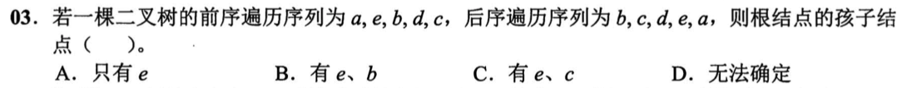
</div><p><mjx-container class="MathJax" jax="SVG" style="position: relative;"><svg xmlns="http://www.w3.org/2000/svg" width="5.809ex" height="2.149ex" role="img" focusable="false" viewBox="0 -750 2567.7 950" xmlns:xlink="http://www.w3.org/1999/xlink" aria-hidden="true" style="vertical-align: -0.452ex;"><defs></defs><g stroke="currentColor" fill="currentColor" stroke-width="0" transform="scale(1,-1)"><g data-mml-node="math"><g data-mml-node="mtext"><text data-variant="normal" transform="scale(1,-1)" font-size="884px" font-family="serif">解</text></g><g data-mml-node="mtext" transform="translate(870.4,0)"><text data-variant="normal" transform="scale(1,-1)" font-size="884px" font-family="serif">析</text></g><g data-mml-node="mi" transform="translate(1740.8,0)"><text data-variant="italic" transform="scale(1,-1)" font-size="884px" font-family="serif" font-style="italic">：</text></g></g></g></svg><mjx-assistive-mml unselectable="on" display="inline"><math xmlns="http://www.w3.org/1998/Math/MathML"><mtext>解</mtext><mtext>析</mtext><mi>：</mi></math></mjx-assistive-mml></mjx-container><script type="math/tex">解析：</script></p><p><span>由先序序列可知a为根节点</span></p><p><span>则剩余结点的先序序列为：ebdc，后序序列为：bcde</span></p><p><span>可以得出：e为bcd的祖先，bd处于同一层次，bd，为c的祖先</span></p><p><span>因此可以绘制出层次图：</span></p><div>
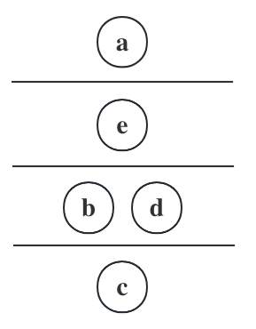
</div><p><span>故a的孩子结点只有e，选A</span></p></blockquote><h4 id='树和森林的遍历关系'><span>树和森林的遍历关系</span></h4><figure><table><thead><tr><th><span>树</span></th><th><span>森林</span></th><th><span>二叉树</span></th></tr></thead><tbody><tr><td><span>先根</span></td><td><span>先序</span></td><td><span>先序</span></td></tr><tr><td><span>后根</span></td><td><span>中序</span></td><td><span>中序</span></td></tr></tbody></table></figure><blockquote><p><span>反正记住两点：①树没有中根遍历、②森林遍历顺序与二叉树遍历顺序相同</span></p></blockquote><h3 id='完全二叉树'><span>完全二叉树</span></h3><h4 id='性质-3'><span>性质：</span></h4><ul><li><strong><span>度</span></strong><span>与</span><strong><span>结点</span></strong><span>之间的关系</span></li></ul><blockquote><ul><li><p><mjx-container class="MathJax" jax="SVG" style="position: relative;"><svg xmlns="http://www.w3.org/2000/svg" width="8.119ex" height="2.149ex" role="img" focusable="false" viewBox="0 -750 3588.7 950" xmlns:xlink="http://www.w3.org/1999/xlink" aria-hidden="true" style="vertical-align: -0.452ex;"><defs><path id="MJX-417-TEX-N-32" d="M109 429Q82 429 66 447T50 491Q50 562 103 614T235 666Q326 666 387 610T449 465Q449 422 429 383T381 315T301 241Q265 210 201 149L142 93L218 92Q375 92 385 97Q392 99 409 186V189H449V186Q448 183 436 95T421 3V0H50V19V31Q50 38 56 46T86 81Q115 113 136 137Q145 147 170 174T204 211T233 244T261 278T284 308T305 340T320 369T333 401T340 431T343 464Q343 527 309 573T212 619Q179 619 154 602T119 569T109 550Q109 549 114 549Q132 549 151 535T170 489Q170 464 154 447T109 429Z"></path><path id="MJX-417-TEX-I-1D458" d="M121 647Q121 657 125 670T137 683Q138 683 209 688T282 694Q294 694 294 686Q294 679 244 477Q194 279 194 272Q213 282 223 291Q247 309 292 354T362 415Q402 442 438 442Q468 442 485 423T503 369Q503 344 496 327T477 302T456 291T438 288Q418 288 406 299T394 328Q394 353 410 369T442 390L458 393Q446 405 434 405H430Q398 402 367 380T294 316T228 255Q230 254 243 252T267 246T293 238T320 224T342 206T359 180T365 147Q365 130 360 106T354 66Q354 26 381 26Q429 26 459 145Q461 153 479 153H483Q499 153 499 144Q499 139 496 130Q455 -11 378 -11Q333 -11 305 15T277 90Q277 108 280 121T283 145Q283 167 269 183T234 206T200 217T182 220H180Q168 178 159 139T145 81T136 44T129 20T122 7T111 -2Q98 -11 83 -11Q66 -11 57 -1T48 16Q48 26 85 176T158 471L195 616Q196 629 188 632T149 637H144Q134 637 131 637T124 640T121 647Z"></path></defs><g stroke="currentColor" fill="currentColor" stroke-width="0" transform="scale(1,-1)"><g data-mml-node="math"><g data-mml-node="mn"><use data-c="32" xlink:href="#MJX-417-TEX-N-32"></use></g><g data-mml-node="mi" transform="translate(500,0)"><use data-c="1D458" xlink:href="#MJX-417-TEX-I-1D458"></use></g><g data-mml-node="mtext" transform="translate(1021,0)"><text data-variant="normal" transform="scale(1,-1)" font-size="884px" font-family="serif">个</text></g><g data-mml-node="mtext" transform="translate(1847.9,0)"><text data-variant="normal" transform="scale(1,-1)" font-size="884px" font-family="serif">结</text></g><g data-mml-node="mtext" transform="translate(2718.3,0)"><text data-variant="normal" transform="scale(1,-1)" font-size="884px" font-family="serif">点</text></g></g></g></svg><mjx-assistive-mml unselectable="on" display="inline"><math xmlns="http://www.w3.org/1998/Math/MathML"><mn>2</mn><mi>k</mi><mtext>个</mtext><mtext>结</mtext><mtext>点</mtext></math></mjx-assistive-mml></mjx-container><script type="math/tex">2k个结点</script></p><p><mjx-container class="MathJax" jax="SVG" style="position: relative;"><svg xmlns="http://www.w3.org/2000/svg" width="26.079ex" height="2.009ex" role="img" focusable="false" viewBox="0 -694 11527.1 888" xmlns:xlink="http://www.w3.org/1999/xlink" aria-hidden="true" style="vertical-align: -0.439ex;"><defs><path id="MJX-418-TEX-I-1D458" d="M121 647Q121 657 125 670T137 683Q138 683 209 688T282 694Q294 694 294 686Q294 679 244 477Q194 279 194 272Q213 282 223 291Q247 309 292 354T362 415Q402 442 438 442Q468 442 485 423T503 369Q503 344 496 327T477 302T456 291T438 288Q418 288 406 299T394 328Q394 353 410 369T442 390L458 393Q446 405 434 405H430Q398 402 367 380T294 316T228 255Q230 254 243 252T267 246T293 238T320 224T342 206T359 180T365 147Q365 130 360 106T354 66Q354 26 381 26Q429 26 459 145Q461 153 479 153H483Q499 153 499 144Q499 139 496 130Q455 -11 378 -11Q333 -11 305 15T277 90Q277 108 280 121T283 145Q283 167 269 183T234 206T200 217T182 220H180Q168 178 159 139T145 81T136 44T129 20T122 7T111 -2Q98 -11 83 -11Q66 -11 57 -1T48 16Q48 26 85 176T158 471L195 616Q196 629 188 632T149 637H144Q134 637 131 637T124 640T121 647Z"></path><path id="MJX-418-TEX-N-30" d="M96 585Q152 666 249 666Q297 666 345 640T423 548Q460 465 460 320Q460 165 417 83Q397 41 362 16T301 -15T250 -22Q224 -22 198 -16T137 16T82 83Q39 165 39 320Q39 494 96 585ZM321 597Q291 629 250 629Q208 629 178 597Q153 571 145 525T137 333Q137 175 145 125T181 46Q209 16 250 16Q290 16 318 46Q347 76 354 130T362 333Q362 478 354 524T321 597Z"></path><path id="MJX-418-TEX-N-3D" d="M56 347Q56 360 70 367H707Q722 359 722 347Q722 336 708 328L390 327H72Q56 332 56 347ZM56 153Q56 168 72 173H708Q722 163 722 153Q722 140 707 133H70Q56 140 56 153Z"></path><path id="MJX-418-TEX-N-2C" d="M78 35T78 60T94 103T137 121Q165 121 187 96T210 8Q210 -27 201 -60T180 -117T154 -158T130 -185T117 -194Q113 -194 104 -185T95 -172Q95 -168 106 -156T131 -126T157 -76T173 -3V9L172 8Q170 7 167 6T161 3T152 1T140 0Q113 0 96 17Z"></path><path id="MJX-418-TEX-N-A0" d=""></path><path id="MJX-418-TEX-N-31" d="M213 578L200 573Q186 568 160 563T102 556H83V602H102Q149 604 189 617T245 641T273 663Q275 666 285 666Q294 666 302 660V361L303 61Q310 54 315 52T339 48T401 46H427V0H416Q395 3 257 3Q121 3 100 0H88V46H114Q136 46 152 46T177 47T193 50T201 52T207 57T213 61V578Z"></path><path id="MJX-418-TEX-N-32" d="M109 429Q82 429 66 447T50 491Q50 562 103 614T235 666Q326 666 387 610T449 465Q449 422 429 383T381 315T301 241Q265 210 201 149L142 93L218 92Q375 92 385 97Q392 99 409 186V189H449V186Q448 183 436 95T421 3V0H50V19V31Q50 38 56 46T86 81Q115 113 136 137Q145 147 170 174T204 211T233 244T261 278T284 308T305 340T320 369T333 401T340 431T343 464Q343 527 309 573T212 619Q179 619 154 602T119 569T109 550Q109 549 114 549Q132 549 151 535T170 489Q170 464 154 447T109 429Z"></path><path id="MJX-418-TEX-N-2212" d="M84 237T84 250T98 270H679Q694 262 694 250T679 230H98Q84 237 84 250Z"></path></defs><g stroke="currentColor" fill="currentColor" stroke-width="0" transform="scale(1,-1)"><g data-mml-node="math"><g data-mml-node="msub"><g data-mml-node="mi"><use data-c="1D458" xlink:href="#MJX-418-TEX-I-1D458"></use></g><g data-mml-node="mn" transform="translate(554,-150) scale(0.707)"><use data-c="30" xlink:href="#MJX-418-TEX-N-30"></use></g></g><g data-mml-node="mo" transform="translate(1235.3,0)"><use data-c="3D" xlink:href="#MJX-418-TEX-N-3D"></use></g><g data-mml-node="mi" transform="translate(2291.1,0)"><use data-c="1D458" xlink:href="#MJX-418-TEX-I-1D458"></use></g><g data-mml-node="mo" transform="translate(2812.1,0)"><use data-c="2C" xlink:href="#MJX-418-TEX-N-2C"></use></g><g data-mml-node="mtext" transform="translate(3256.8,0)"><use data-c="A0" xlink:href="#MJX-418-TEX-N-A0"></use></g><g data-mml-node="msub" transform="translate(3506.8,0)"><g data-mml-node="mi"><use data-c="1D458" xlink:href="#MJX-418-TEX-I-1D458"></use></g><g data-mml-node="mn" transform="translate(554,-150) scale(0.707)"><use data-c="31" xlink:href="#MJX-418-TEX-N-31"></use></g></g><g data-mml-node="mo" transform="translate(4742.1,0)"><use data-c="3D" xlink:href="#MJX-418-TEX-N-3D"></use></g><g data-mml-node="mn" transform="translate(5797.9,0)"><use data-c="31" xlink:href="#MJX-418-TEX-N-31"></use></g><g data-mml-node="mo" transform="translate(6297.9,0)"><use data-c="2C" xlink:href="#MJX-418-TEX-N-2C"></use></g><g data-mml-node="mtext" transform="translate(6742.6,0)"><use data-c="A0" xlink:href="#MJX-418-TEX-N-A0"></use></g><g data-mml-node="msub" transform="translate(6992.6,0)"><g data-mml-node="mi"><use data-c="1D458" xlink:href="#MJX-418-TEX-I-1D458"></use></g><g data-mml-node="mn" transform="translate(554,-150) scale(0.707)"><use data-c="32" xlink:href="#MJX-418-TEX-N-32"></use></g></g><g data-mml-node="mo" transform="translate(8227.9,0)"><use data-c="3D" xlink:href="#MJX-418-TEX-N-3D"></use></g><g data-mml-node="mi" transform="translate(9283.7,0)"><use data-c="1D458" xlink:href="#MJX-418-TEX-I-1D458"></use></g><g data-mml-node="mo" transform="translate(10026.9,0)"><use data-c="2212" xlink:href="#MJX-418-TEX-N-2212"></use></g><g data-mml-node="mn" transform="translate(11027.1,0)"><use data-c="31" xlink:href="#MJX-418-TEX-N-31"></use></g></g></g></svg><mjx-assistive-mml unselectable="on" display="inline"><math xmlns="http://www.w3.org/1998/Math/MathML"><msub><mi>k</mi><mn>0</mn></msub><mo>=</mo><mi>k</mi><mo>,</mo><mtext>&nbsp;</mtext><msub><mi>k</mi><mn>1</mn></msub><mo>=</mo><mn>1</mn><mo>,</mo><mtext>&nbsp;</mtext><msub><mi>k</mi><mn>2</mn></msub><mo>=</mo><mi>k</mi><mo>−</mo><mn>1</mn></math></mjx-assistive-mml></mjx-container><script type="math/tex">k_0=k,\ k_1=1,\ k_2=k-1</script></p></li><li><p><mjx-container class="MathJax" jax="SVG" style="position: relative;"><svg xmlns="http://www.w3.org/2000/svg" width="12.016ex" height="2.149ex" role="img" focusable="false" viewBox="0 -750 5311.1 950" xmlns:xlink="http://www.w3.org/1999/xlink" aria-hidden="true" style="vertical-align: -0.452ex;"><defs><path id="MJX-419-TEX-N-32" d="M109 429Q82 429 66 447T50 491Q50 562 103 614T235 666Q326 666 387 610T449 465Q449 422 429 383T381 315T301 241Q265 210 201 149L142 93L218 92Q375 92 385 97Q392 99 409 186V189H449V186Q448 183 436 95T421 3V0H50V19V31Q50 38 56 46T86 81Q115 113 136 137Q145 147 170 174T204 211T233 244T261 278T284 308T305 340T320 369T333 401T340 431T343 464Q343 527 309 573T212 619Q179 619 154 602T119 569T109 550Q109 549 114 549Q132 549 151 535T170 489Q170 464 154 447T109 429Z"></path><path id="MJX-419-TEX-I-1D458" d="M121 647Q121 657 125 670T137 683Q138 683 209 688T282 694Q294 694 294 686Q294 679 244 477Q194 279 194 272Q213 282 223 291Q247 309 292 354T362 415Q402 442 438 442Q468 442 485 423T503 369Q503 344 496 327T477 302T456 291T438 288Q418 288 406 299T394 328Q394 353 410 369T442 390L458 393Q446 405 434 405H430Q398 402 367 380T294 316T228 255Q230 254 243 252T267 246T293 238T320 224T342 206T359 180T365 147Q365 130 360 106T354 66Q354 26 381 26Q429 26 459 145Q461 153 479 153H483Q499 153 499 144Q499 139 496 130Q455 -11 378 -11Q333 -11 305 15T277 90Q277 108 280 121T283 145Q283 167 269 183T234 206T200 217T182 220H180Q168 178 159 139T145 81T136 44T129 20T122 7T111 -2Q98 -11 83 -11Q66 -11 57 -1T48 16Q48 26 85 176T158 471L195 616Q196 629 188 632T149 637H144Q134 637 131 637T124 640T121 647Z"></path><path id="MJX-419-TEX-N-2212" d="M84 237T84 250T98 270H679Q694 262 694 250T679 230H98Q84 237 84 250Z"></path><path id="MJX-419-TEX-N-31" d="M213 578L200 573Q186 568 160 563T102 556H83V602H102Q149 604 189 617T245 641T273 663Q275 666 285 666Q294 666 302 660V361L303 61Q310 54 315 52T339 48T401 46H427V0H416Q395 3 257 3Q121 3 100 0H88V46H114Q136 46 152 46T177 47T193 50T201 52T207 57T213 61V578Z"></path></defs><g stroke="currentColor" fill="currentColor" stroke-width="0" transform="scale(1,-1)"><g data-mml-node="math"><g data-mml-node="mn"><use data-c="32" xlink:href="#MJX-419-TEX-N-32"></use></g><g data-mml-node="mi" transform="translate(500,0)"><use data-c="1D458" xlink:href="#MJX-419-TEX-I-1D458"></use></g><g data-mml-node="mo" transform="translate(1243.2,0)"><use data-c="2212" xlink:href="#MJX-419-TEX-N-2212"></use></g><g data-mml-node="mn" transform="translate(2243.4,0)"><use data-c="31" xlink:href="#MJX-419-TEX-N-31"></use></g><g data-mml-node="mtext" transform="translate(2743.4,0)"><text data-variant="normal" transform="scale(1,-1)" font-size="884px" font-family="serif">个</text></g><g data-mml-node="mtext" transform="translate(3570.3,0)"><text data-variant="normal" transform="scale(1,-1)" font-size="884px" font-family="serif">结</text></g><g data-mml-node="mtext" transform="translate(4440.7,0)"><text data-variant="normal" transform="scale(1,-1)" font-size="884px" font-family="serif">点</text></g></g></g></svg><mjx-assistive-mml unselectable="on" display="inline"><math xmlns="http://www.w3.org/1998/Math/MathML"><mn>2</mn><mi>k</mi><mo>−</mo><mn>1</mn><mtext>个</mtext><mtext>结</mtext><mtext>点</mtext></math></mjx-assistive-mml></mjx-container><script type="math/tex">2k-1个结点</script></p><p><mjx-container class="MathJax" jax="SVG" style="position: relative;"><svg xmlns="http://www.w3.org/2000/svg" width="26.079ex" height="2.009ex" role="img" focusable="false" viewBox="0 -694 11527.1 888" xmlns:xlink="http://www.w3.org/1999/xlink" aria-hidden="true" style="vertical-align: -0.439ex;"><defs><path id="MJX-420-TEX-I-1D458" d="M121 647Q121 657 125 670T137 683Q138 683 209 688T282 694Q294 694 294 686Q294 679 244 477Q194 279 194 272Q213 282 223 291Q247 309 292 354T362 415Q402 442 438 442Q468 442 485 423T503 369Q503 344 496 327T477 302T456 291T438 288Q418 288 406 299T394 328Q394 353 410 369T442 390L458 393Q446 405 434 405H430Q398 402 367 380T294 316T228 255Q230 254 243 252T267 246T293 238T320 224T342 206T359 180T365 147Q365 130 360 106T354 66Q354 26 381 26Q429 26 459 145Q461 153 479 153H483Q499 153 499 144Q499 139 496 130Q455 -11 378 -11Q333 -11 305 15T277 90Q277 108 280 121T283 145Q283 167 269 183T234 206T200 217T182 220H180Q168 178 159 139T145 81T136 44T129 20T122 7T111 -2Q98 -11 83 -11Q66 -11 57 -1T48 16Q48 26 85 176T158 471L195 616Q196 629 188 632T149 637H144Q134 637 131 637T124 640T121 647Z"></path><path id="MJX-420-TEX-N-30" d="M96 585Q152 666 249 666Q297 666 345 640T423 548Q460 465 460 320Q460 165 417 83Q397 41 362 16T301 -15T250 -22Q224 -22 198 -16T137 16T82 83Q39 165 39 320Q39 494 96 585ZM321 597Q291 629 250 629Q208 629 178 597Q153 571 145 525T137 333Q137 175 145 125T181 46Q209 16 250 16Q290 16 318 46Q347 76 354 130T362 333Q362 478 354 524T321 597Z"></path><path id="MJX-420-TEX-N-3D" d="M56 347Q56 360 70 367H707Q722 359 722 347Q722 336 708 328L390 327H72Q56 332 56 347ZM56 153Q56 168 72 173H708Q722 163 722 153Q722 140 707 133H70Q56 140 56 153Z"></path><path id="MJX-420-TEX-N-2C" d="M78 35T78 60T94 103T137 121Q165 121 187 96T210 8Q210 -27 201 -60T180 -117T154 -158T130 -185T117 -194Q113 -194 104 -185T95 -172Q95 -168 106 -156T131 -126T157 -76T173 -3V9L172 8Q170 7 167 6T161 3T152 1T140 0Q113 0 96 17Z"></path><path id="MJX-420-TEX-N-A0" d=""></path><path id="MJX-420-TEX-N-31" d="M213 578L200 573Q186 568 160 563T102 556H83V602H102Q149 604 189 617T245 641T273 663Q275 666 285 666Q294 666 302 660V361L303 61Q310 54 315 52T339 48T401 46H427V0H416Q395 3 257 3Q121 3 100 0H88V46H114Q136 46 152 46T177 47T193 50T201 52T207 57T213 61V578Z"></path><path id="MJX-420-TEX-N-32" d="M109 429Q82 429 66 447T50 491Q50 562 103 614T235 666Q326 666 387 610T449 465Q449 422 429 383T381 315T301 241Q265 210 201 149L142 93L218 92Q375 92 385 97Q392 99 409 186V189H449V186Q448 183 436 95T421 3V0H50V19V31Q50 38 56 46T86 81Q115 113 136 137Q145 147 170 174T204 211T233 244T261 278T284 308T305 340T320 369T333 401T340 431T343 464Q343 527 309 573T212 619Q179 619 154 602T119 569T109 550Q109 549 114 549Q132 549 151 535T170 489Q170 464 154 447T109 429Z"></path><path id="MJX-420-TEX-N-2212" d="M84 237T84 250T98 270H679Q694 262 694 250T679 230H98Q84 237 84 250Z"></path></defs><g stroke="currentColor" fill="currentColor" stroke-width="0" transform="scale(1,-1)"><g data-mml-node="math"><g data-mml-node="msub"><g data-mml-node="mi"><use data-c="1D458" xlink:href="#MJX-420-TEX-I-1D458"></use></g><g data-mml-node="mn" transform="translate(554,-150) scale(0.707)"><use data-c="30" xlink:href="#MJX-420-TEX-N-30"></use></g></g><g data-mml-node="mo" transform="translate(1235.3,0)"><use data-c="3D" xlink:href="#MJX-420-TEX-N-3D"></use></g><g data-mml-node="mi" transform="translate(2291.1,0)"><use data-c="1D458" xlink:href="#MJX-420-TEX-I-1D458"></use></g><g data-mml-node="mo" transform="translate(2812.1,0)"><use data-c="2C" xlink:href="#MJX-420-TEX-N-2C"></use></g><g data-mml-node="mtext" transform="translate(3256.8,0)"><use data-c="A0" xlink:href="#MJX-420-TEX-N-A0"></use></g><g data-mml-node="msub" transform="translate(3506.8,0)"><g data-mml-node="mi"><use data-c="1D458" xlink:href="#MJX-420-TEX-I-1D458"></use></g><g data-mml-node="mn" transform="translate(554,-150) scale(0.707)"><use data-c="31" xlink:href="#MJX-420-TEX-N-31"></use></g></g><g data-mml-node="mo" transform="translate(4742.1,0)"><use data-c="3D" xlink:href="#MJX-420-TEX-N-3D"></use></g><g data-mml-node="mn" transform="translate(5797.9,0)"><use data-c="30" xlink:href="#MJX-420-TEX-N-30"></use></g><g data-mml-node="mo" transform="translate(6297.9,0)"><use data-c="2C" xlink:href="#MJX-420-TEX-N-2C"></use></g><g data-mml-node="mtext" transform="translate(6742.6,0)"><use data-c="A0" xlink:href="#MJX-420-TEX-N-A0"></use></g><g data-mml-node="msub" transform="translate(6992.6,0)"><g data-mml-node="mi"><use data-c="1D458" xlink:href="#MJX-420-TEX-I-1D458"></use></g><g data-mml-node="mn" transform="translate(554,-150) scale(0.707)"><use data-c="32" xlink:href="#MJX-420-TEX-N-32"></use></g></g><g data-mml-node="mo" transform="translate(8227.9,0)"><use data-c="3D" xlink:href="#MJX-420-TEX-N-3D"></use></g><g data-mml-node="mi" transform="translate(9283.7,0)"><use data-c="1D458" xlink:href="#MJX-420-TEX-I-1D458"></use></g><g data-mml-node="mo" transform="translate(10026.9,0)"><use data-c="2212" xlink:href="#MJX-420-TEX-N-2212"></use></g><g data-mml-node="mn" transform="translate(11027.1,0)"><use data-c="31" xlink:href="#MJX-420-TEX-N-31"></use></g></g></g></svg><mjx-assistive-mml unselectable="on" display="inline"><math xmlns="http://www.w3.org/1998/Math/MathML"><msub><mi>k</mi><mn>0</mn></msub><mo>=</mo><mi>k</mi><mo>,</mo><mtext>&nbsp;</mtext><msub><mi>k</mi><mn>1</mn></msub><mo>=</mo><mn>0</mn><mo>,</mo><mtext>&nbsp;</mtext><msub><mi>k</mi><mn>2</mn></msub><mo>=</mo><mi>k</mi><mo>−</mo><mn>1</mn></math></mjx-assistive-mml></mjx-container><script type="math/tex">k_0=k,\ k_1=0,\ k_2=k-1</script></p></li></ul></blockquote><p><mjx-container class="MathJax" jax="SVG" style="position: relative;"><svg xmlns="http://www.w3.org/2000/svg" width="61.994ex" height="2.262ex" role="img" focusable="false" viewBox="0 -750 27401.2 1000" xmlns:xlink="http://www.w3.org/1999/xlink" aria-hidden="true" style="vertical-align: -0.566ex;"><defs><path id="MJX-421-TEX-I-1D45B" d="M21 287Q22 293 24 303T36 341T56 388T89 425T135 442Q171 442 195 424T225 390T231 369Q231 367 232 367L243 378Q304 442 382 442Q436 442 469 415T503 336T465 179T427 52Q427 26 444 26Q450 26 453 27Q482 32 505 65T540 145Q542 153 560 153Q580 153 580 145Q580 144 576 130Q568 101 554 73T508 17T439 -10Q392 -10 371 17T350 73Q350 92 386 193T423 345Q423 404 379 404H374Q288 404 229 303L222 291L189 157Q156 26 151 16Q138 -11 108 -11Q95 -11 87 -5T76 7T74 17Q74 30 112 180T152 343Q153 348 153 366Q153 405 129 405Q91 405 66 305Q60 285 60 284Q58 278 41 278H27Q21 284 21 287Z"></path><path id="MJX-421-TEX-N-28" d="M94 250Q94 319 104 381T127 488T164 576T202 643T244 695T277 729T302 750H315H319Q333 750 333 741Q333 738 316 720T275 667T226 581T184 443T167 250T184 58T225 -81T274 -167T316 -220T333 -241Q333 -250 318 -250H315H302L274 -226Q180 -141 137 -14T94 250Z"></path><path id="MJX-421-TEX-N-2265" d="M83 616Q83 624 89 630T99 636Q107 636 253 568T543 431T687 361Q694 356 694 346T687 331Q685 329 395 192L107 56H101Q83 58 83 76Q83 77 83 79Q82 86 98 95Q117 105 248 167Q326 204 378 228L626 346L360 472Q291 505 200 548Q112 589 98 597T83 616ZM84 -118Q84 -108 99 -98H678Q694 -104 694 -118Q694 -130 679 -138H98Q84 -131 84 -118Z"></path><path id="MJX-421-TEX-N-31" d="M213 578L200 573Q186 568 160 563T102 556H83V602H102Q149 604 189 617T245 641T273 663Q275 666 285 666Q294 666 302 660V361L303 61Q310 54 315 52T339 48T401 46H427V0H416Q395 3 257 3Q121 3 100 0H88V46H114Q136 46 152 46T177 47T193 50T201 52T207 57T213 61V578Z"></path><path id="MJX-421-TEX-N-29" d="M60 749L64 750Q69 750 74 750H86L114 726Q208 641 251 514T294 250Q294 182 284 119T261 12T224 -76T186 -143T145 -194T113 -227T90 -246Q87 -249 86 -250H74Q66 -250 63 -250T58 -247T55 -238Q56 -237 66 -225Q221 -64 221 250T66 725Q56 737 55 738Q55 746 60 749Z"></path><path id="MJX-421-TEX-N-2308" d="M174 734Q178 746 190 750H298H369Q400 750 411 747T422 730T411 713T372 709Q365 709 345 709T310 710H214V-235Q206 -248 196 -250Q192 -250 189 -249T184 -247T180 -244T178 -241T176 -237T174 -234V734Z"></path><path id="MJX-421-TEX-N-6C" d="M42 46H56Q95 46 103 60V68Q103 77 103 91T103 124T104 167T104 217T104 272T104 329Q104 366 104 407T104 482T104 542T103 586T103 603Q100 622 89 628T44 637H26V660Q26 683 28 683L38 684Q48 685 67 686T104 688Q121 689 141 690T171 693T182 694H185V379Q185 62 186 60Q190 52 198 49Q219 46 247 46H263V0H255L232 1Q209 2 183 2T145 3T107 3T57 1L34 0H26V46H42Z"></path><path id="MJX-421-TEX-N-6F" d="M28 214Q28 309 93 378T250 448Q340 448 405 380T471 215Q471 120 407 55T250 -10Q153 -10 91 57T28 214ZM250 30Q372 30 372 193V225V250Q372 272 371 288T364 326T348 362T317 390T268 410Q263 411 252 411Q222 411 195 399Q152 377 139 338T126 246V226Q126 130 145 91Q177 30 250 30Z"></path><path id="MJX-421-TEX-N-67" d="M329 409Q373 453 429 453Q459 453 472 434T485 396Q485 382 476 371T449 360Q416 360 412 390Q410 404 415 411Q415 412 416 414V415Q388 412 363 393Q355 388 355 386Q355 385 359 381T368 369T379 351T388 325T392 292Q392 230 343 187T222 143Q172 143 123 171Q112 153 112 133Q112 98 138 81Q147 75 155 75T227 73Q311 72 335 67Q396 58 431 26Q470 -13 470 -72Q470 -139 392 -175Q332 -206 250 -206Q167 -206 107 -175Q29 -140 29 -75Q29 -39 50 -15T92 18L103 24Q67 55 67 108Q67 155 96 193Q52 237 52 292Q52 355 102 398T223 442Q274 442 318 416L329 409ZM299 343Q294 371 273 387T221 404Q192 404 171 388T145 343Q142 326 142 292Q142 248 149 227T179 192Q196 182 222 182Q244 182 260 189T283 207T294 227T299 242Q302 258 302 292T299 343ZM403 -75Q403 -50 389 -34T348 -11T299 -2T245 0H218Q151 0 138 -6Q118 -15 107 -34T95 -74Q95 -84 101 -97T122 -127T170 -155T250 -167Q319 -167 361 -139T403 -75Z"></path><path id="MJX-421-TEX-N-32" d="M109 429Q82 429 66 447T50 491Q50 562 103 614T235 666Q326 666 387 610T449 465Q449 422 429 383T381 315T301 241Q265 210 201 149L142 93L218 92Q375 92 385 97Q392 99 409 186V189H449V186Q448 183 436 95T421 3V0H50V19V31Q50 38 56 46T86 81Q115 113 136 137Q145 147 170 174T204 211T233 244T261 278T284 308T305 340T320 369T333 401T340 431T343 464Q343 527 309 573T212 619Q179 619 154 602T119 569T109 550Q109 549 114 549Q132 549 151 535T170 489Q170 464 154 447T109 429Z"></path><path id="MJX-421-TEX-N-2061" d=""></path><path id="MJX-421-TEX-N-2B" d="M56 237T56 250T70 270H369V420L370 570Q380 583 389 583Q402 583 409 568V270H707Q722 262 722 250T707 230H409V-68Q401 -82 391 -82H389H387Q375 -82 369 -68V230H70Q56 237 56 250Z"></path><path id="MJX-421-TEX-N-2309" d="M21 717T21 730T32 746T75 750H147H256Q266 742 269 735V-235Q262 -248 251 -250Q247 -250 244 -249T239 -247T235 -244T233 -241T231 -237T229 -234V710H133Q119 710 99 710T71 709Q43 709 32 713Z"></path><path id="MJX-421-TEX-N-230A" d="M174 734Q174 735 175 737T177 740T180 744T184 747T189 749T196 750Q206 748 214 735V-210H310H373Q401 -210 411 -213T422 -230T411 -247T369 -251Q362 -251 338 -251T298 -250H190Q178 -246 174 -234V734Z"></path><path id="MJX-421-TEX-N-230B" d="M229 734Q229 735 230 737T232 740T235 744T239 747T244 749T251 750Q262 748 269 735V-235Q266 -240 256 -249L147 -250H77Q43 -250 32 -247T21 -230T32 -213T72 -209Q79 -209 99 -209T133 -210H229V734Z"></path></defs><g stroke="currentColor" fill="currentColor" stroke-width="0" transform="scale(1,-1)"><g data-mml-node="math"><g data-mml-node="mtext"><text data-variant="normal" transform="scale(1,-1)" font-size="884px" font-family="serif">具</text></g><g data-mml-node="mtext" transform="translate(870.4,0)"><text data-variant="normal" transform="scale(1,-1)" font-size="884px" font-family="serif">有</text></g><g data-mml-node="mi" transform="translate(1697.3,0)"><use data-c="1D45B" xlink:href="#MJX-421-TEX-I-1D45B"></use></g><g data-mml-node="mtext" transform="translate(2297.3,0)"><text data-variant="normal" transform="scale(1,-1)" font-size="884px" font-family="serif">个</text></g><g data-mml-node="mo" transform="translate(3124.2,0)"><use data-c="28" xlink:href="#MJX-421-TEX-N-28"></use></g><g data-mml-node="mi" transform="translate(3513.2,0)"><use data-c="1D45B" xlink:href="#MJX-421-TEX-I-1D45B"></use></g><g data-mml-node="mo" transform="translate(4391,0)"><use data-c="2265" xlink:href="#MJX-421-TEX-N-2265"></use></g><g data-mml-node="mn" transform="translate(5446.7,0)"><use data-c="31" xlink:href="#MJX-421-TEX-N-31"></use></g><g data-mml-node="mo" transform="translate(5946.7,0)"><use data-c="29" xlink:href="#MJX-421-TEX-N-29"></use></g><g data-mml-node="mtext" transform="translate(6335.7,0)"><text data-variant="normal" transform="scale(1,-1)" font-size="884px" font-family="serif">结</text></g><g data-mml-node="mtext" transform="translate(7206.1,0)"><text data-variant="normal" transform="scale(1,-1)" font-size="884px" font-family="serif">点</text></g><g data-mml-node="mtext" transform="translate(8076.6,0)"><text data-variant="normal" transform="scale(1,-1)" font-size="884px" font-family="serif">的</text></g><g data-mml-node="mtext" transform="translate(8903.4,0)"><text data-variant="normal" transform="scale(1,-1)" font-size="884px" font-family="serif">完</text></g><g data-mml-node="mtext" transform="translate(9773.9,0)"><text data-variant="normal" transform="scale(1,-1)" font-size="884px" font-family="serif">全</text></g><g data-mml-node="mtext" transform="translate(10600.7,0)"><text data-variant="normal" transform="scale(1,-1)" font-size="884px" font-family="serif">二</text></g><g data-mml-node="mtext" transform="translate(11471.1,0)"><text data-variant="normal" transform="scale(1,-1)" font-size="884px" font-family="serif">叉</text></g><g data-mml-node="mtext" transform="translate(12341.6,0)"><text data-variant="normal" transform="scale(1,-1)" font-size="884px" font-family="serif">树</text></g><g data-mml-node="mtext" transform="translate(13168.4,0)"><text data-variant="normal" transform="scale(1,-1)" font-size="884px" font-family="serif">高</text></g><g data-mml-node="mtext" transform="translate(14038.9,0)"><text data-variant="normal" transform="scale(1,-1)" font-size="884px" font-family="serif">度</text></g><g data-mml-node="mtext" transform="translate(14865.7,0)"><text data-variant="normal" transform="scale(1,-1)" font-size="884px" font-family="serif">为</text></g><g data-mml-node="mo" transform="translate(15736.1,0)"><use data-c="2308" xlink:href="#MJX-421-TEX-N-2308"></use></g><g data-mml-node="msub" transform="translate(16180.1,0)"><g data-mml-node="mi"><use data-c="6C" xlink:href="#MJX-421-TEX-N-6C"></use><use data-c="6F" xlink:href="#MJX-421-TEX-N-6F" transform="translate(278,0)"></use><use data-c="67" xlink:href="#MJX-421-TEX-N-67" transform="translate(778,0)"></use></g><g data-mml-node="mn" transform="translate(1311,-241.4) scale(0.707)"><use data-c="32" xlink:href="#MJX-421-TEX-N-32"></use></g></g><g data-mml-node="mo" transform="translate(17894.7,0)"><use data-c="2061" xlink:href="#MJX-421-TEX-N-2061"></use></g><g data-mml-node="mo" transform="translate(17894.7,0)"><use data-c="28" xlink:href="#MJX-421-TEX-N-28"></use></g><g data-mml-node="mi" transform="translate(18283.7,0)"><use data-c="1D45B" xlink:href="#MJX-421-TEX-I-1D45B"></use></g><g data-mml-node="mo" transform="translate(19105.9,0)"><use data-c="2B" xlink:href="#MJX-421-TEX-N-2B"></use></g><g data-mml-node="mn" transform="translate(20106.1,0)"><use data-c="31" xlink:href="#MJX-421-TEX-N-31"></use></g><g data-mml-node="mo" transform="translate(20606.1,0)"><use data-c="29" xlink:href="#MJX-421-TEX-N-29"></use></g><g data-mml-node="mo" transform="translate(20995.1,0)"><use data-c="2309" xlink:href="#MJX-421-TEX-N-2309"></use></g><g data-mml-node="mtext" transform="translate(21439.1,0)"><text data-variant="normal" transform="scale(1,-1)" font-size="884px" font-family="serif">或</text></g><g data-mml-node="mo" transform="translate(22309.6,0)"><use data-c="230A" xlink:href="#MJX-421-TEX-N-230A"></use></g><g data-mml-node="msub" transform="translate(22753.6,0)"><g data-mml-node="mi"><use data-c="6C" xlink:href="#MJX-421-TEX-N-6C"></use><use data-c="6F" xlink:href="#MJX-421-TEX-N-6F" transform="translate(278,0)"></use><use data-c="67" xlink:href="#MJX-421-TEX-N-67" transform="translate(778,0)"></use></g><g data-mml-node="mn" transform="translate(1311,-241.4) scale(0.707)"><use data-c="32" xlink:href="#MJX-421-TEX-N-32"></use></g></g><g data-mml-node="mo" transform="translate(24468.1,0)"><use data-c="2061" xlink:href="#MJX-421-TEX-N-2061"></use></g><g data-mml-node="mi" transform="translate(24634.8,0)"><use data-c="1D45B" xlink:href="#MJX-421-TEX-I-1D45B"></use></g><g data-mml-node="mo" transform="translate(25234.8,0)"><use data-c="230B" xlink:href="#MJX-421-TEX-N-230B"></use></g><g data-mml-node="mo" transform="translate(25901,0)"><use data-c="2B" xlink:href="#MJX-421-TEX-N-2B"></use></g><g data-mml-node="mn" transform="translate(26901.2,0)"><use data-c="31" xlink:href="#MJX-421-TEX-N-31"></use></g></g></g></svg><mjx-assistive-mml unselectable="on" display="inline"><math xmlns="http://www.w3.org/1998/Math/MathML"><mtext>具</mtext><mtext>有</mtext><mi>n</mi><mtext>个</mtext><mo stretchy="false">(</mo><mi>n</mi><mo>≥</mo><mn>1</mn><mo stretchy="false">)</mo><mtext>结</mtext><mtext>点</mtext><mtext>的</mtext><mtext>完</mtext><mtext>全</mtext><mtext>二</mtext><mtext>叉</mtext><mtext>树</mtext><mtext>高</mtext><mtext>度</mtext><mtext>为</mtext><mo fence="false" stretchy="false">⌈</mo><msub><mi>log</mi><mn>2</mn></msub><mo data-mjx-texclass="NONE">⁡</mo><mo stretchy="false">(</mo><mi>n</mi><mo>+</mo><mn>1</mn><mo stretchy="false">)</mo><mo fence="false" stretchy="false">⌉</mo><mtext>或</mtext><mo fence="false" stretchy="false">⌊</mo><msub><mi>log</mi><mn>2</mn></msub><mo data-mjx-texclass="NONE">⁡</mo><mi>n</mi><mo fence="false" stretchy="false">⌋</mo><mo>+</mo><mn>1</mn></math></mjx-assistive-mml></mjx-container><script type="math/tex">具有n个(n\ge1)结点的完全二叉树高度为 \lceil\log_2(n+1)\rceil 或 \lfloor \log_2n \rfloor +1</script></p><p><mjx-container class="MathJax" jax="SVG" style="position: relative;"><svg xmlns="http://www.w3.org/2000/svg" width="5.809ex" height="2.149ex" role="img" focusable="false" viewBox="0 -750 2567.7 950" xmlns:xlink="http://www.w3.org/1999/xlink" aria-hidden="true" style="vertical-align: -0.452ex;"><defs></defs><g stroke="currentColor" fill="currentColor" stroke-width="0" transform="scale(1,-1)"><g data-mml-node="math"><g data-mml-node="mtext"><text data-variant="normal" transform="scale(1,-1)" font-size="884px" font-family="serif">例</text></g><g data-mml-node="mtext" transform="translate(870.4,0)"><text data-variant="normal" transform="scale(1,-1)" font-size="884px" font-family="serif">题</text></g><g data-mml-node="mi" transform="translate(1740.8,0)"><text data-variant="italic" transform="scale(1,-1)" font-size="884px" font-family="serif" font-style="italic">：</text></g></g></g></svg><mjx-assistive-mml unselectable="on" display="inline"><math xmlns="http://www.w3.org/1998/Math/MathML"><mtext>例</mtext><mtext>题</mtext><mi>：</mi></math></mjx-assistive-mml></mjx-container><script type="math/tex">例题：</script></p><blockquote><p><span>【23王道DS P133 T14】</span></p><div>
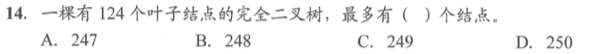
</div><p><mjx-container class="MathJax" jax="SVG" style="position: relative;"><svg xmlns="http://www.w3.org/2000/svg" width="5.809ex" height="2.149ex" role="img" focusable="false" viewBox="0 -750 2567.7 950" xmlns:xlink="http://www.w3.org/1999/xlink" aria-hidden="true" style="vertical-align: -0.452ex;"><defs></defs><g stroke="currentColor" fill="currentColor" stroke-width="0" transform="scale(1,-1)"><g data-mml-node="math"><g data-mml-node="mtext"><text data-variant="normal" transform="scale(1,-1)" font-size="884px" font-family="serif">解</text></g><g data-mml-node="mtext" transform="translate(870.4,0)"><text data-variant="normal" transform="scale(1,-1)" font-size="884px" font-family="serif">析</text></g><g data-mml-node="mi" transform="translate(1740.8,0)"><text data-variant="italic" transform="scale(1,-1)" font-size="884px" font-family="serif" font-style="italic">：</text></g></g></g></svg><mjx-assistive-mml unselectable="on" display="inline"><math xmlns="http://www.w3.org/1998/Math/MathML"><mtext>解</mtext><mtext>析</mtext><mi>：</mi></math></mjx-assistive-mml></mjx-container><script type="math/tex">解析：</script></p><p><span>像这种告诉你是完全二叉树，且仅告诉你叶子结点数然你算总结点数的，用这个结论基本就是秒杀</span></p><p><span>题目问最多有多少个结点，说明 </span><mjx-container class="MathJax" jax="SVG" style="position: relative;"><svg xmlns="http://www.w3.org/2000/svg" width="6.493ex" height="1.846ex" role="img" focusable="false" viewBox="0 -666 2870.1 816" xmlns:xlink="http://www.w3.org/1999/xlink" aria-hidden="true" style="vertical-align: -0.339ex;"><defs><path id="MJX-424-TEX-I-1D45B" d="M21 287Q22 293 24 303T36 341T56 388T89 425T135 442Q171 442 195 424T225 390T231 369Q231 367 232 367L243 378Q304 442 382 442Q436 442 469 415T503 336T465 179T427 52Q427 26 444 26Q450 26 453 27Q482 32 505 65T540 145Q542 153 560 153Q580 153 580 145Q580 144 576 130Q568 101 554 73T508 17T439 -10Q392 -10 371 17T350 73Q350 92 386 193T423 345Q423 404 379 404H374Q288 404 229 303L222 291L189 157Q156 26 151 16Q138 -11 108 -11Q95 -11 87 -5T76 7T74 17Q74 30 112 180T152 343Q153 348 153 366Q153 405 129 405Q91 405 66 305Q60 285 60 284Q58 278 41 278H27Q21 284 21 287Z"></path><path id="MJX-424-TEX-N-31" d="M213 578L200 573Q186 568 160 563T102 556H83V602H102Q149 604 189 617T245 641T273 663Q275 666 285 666Q294 666 302 660V361L303 61Q310 54 315 52T339 48T401 46H427V0H416Q395 3 257 3Q121 3 100 0H88V46H114Q136 46 152 46T177 47T193 50T201 52T207 57T213 61V578Z"></path><path id="MJX-424-TEX-N-3D" d="M56 347Q56 360 70 367H707Q722 359 722 347Q722 336 708 328L390 327H72Q56 332 56 347ZM56 153Q56 168 72 173H708Q722 163 722 153Q722 140 707 133H70Q56 140 56 153Z"></path></defs><g stroke="currentColor" fill="currentColor" stroke-width="0" transform="scale(1,-1)"><g data-mml-node="math"><g data-mml-node="msub"><g data-mml-node="mi"><use data-c="1D45B" xlink:href="#MJX-424-TEX-I-1D45B"></use></g><g data-mml-node="mn" transform="translate(633,-150) scale(0.707)"><use data-c="31" xlink:href="#MJX-424-TEX-N-31"></use></g></g><g data-mml-node="mo" transform="translate(1314.3,0)"><use data-c="3D" xlink:href="#MJX-424-TEX-N-3D"></use></g><g data-mml-node="mn" transform="translate(2370.1,0)"><use data-c="31" xlink:href="#MJX-424-TEX-N-31"></use></g></g></g></svg><mjx-assistive-mml unselectable="on" display="inline"><math xmlns="http://www.w3.org/1998/Math/MathML"><msub><mi>n</mi><mn>1</mn></msub><mo>=</mo><mn>1</mn></math></mjx-assistive-mml></mjx-container><script type="math/tex">n_1=1</script><span>，由题可知 </span><mjx-container class="MathJax" jax="SVG" style="position: relative;"><svg xmlns="http://www.w3.org/2000/svg" width="8.756ex" height="1.906ex" role="img" focusable="false" viewBox="0 -677 3870.1 842.6" xmlns:xlink="http://www.w3.org/1999/xlink" aria-hidden="true" style="vertical-align: -0.375ex;"><defs><path id="MJX-425-TEX-I-1D45B" d="M21 287Q22 293 24 303T36 341T56 388T89 425T135 442Q171 442 195 424T225 390T231 369Q231 367 232 367L243 378Q304 442 382 442Q436 442 469 415T503 336T465 179T427 52Q427 26 444 26Q450 26 453 27Q482 32 505 65T540 145Q542 153 560 153Q580 153 580 145Q580 144 576 130Q568 101 554 73T508 17T439 -10Q392 -10 371 17T350 73Q350 92 386 193T423 345Q423 404 379 404H374Q288 404 229 303L222 291L189 157Q156 26 151 16Q138 -11 108 -11Q95 -11 87 -5T76 7T74 17Q74 30 112 180T152 343Q153 348 153 366Q153 405 129 405Q91 405 66 305Q60 285 60 284Q58 278 41 278H27Q21 284 21 287Z"></path><path id="MJX-425-TEX-N-30" d="M96 585Q152 666 249 666Q297 666 345 640T423 548Q460 465 460 320Q460 165 417 83Q397 41 362 16T301 -15T250 -22Q224 -22 198 -16T137 16T82 83Q39 165 39 320Q39 494 96 585ZM321 597Q291 629 250 629Q208 629 178 597Q153 571 145 525T137 333Q137 175 145 125T181 46Q209 16 250 16Q290 16 318 46Q347 76 354 130T362 333Q362 478 354 524T321 597Z"></path><path id="MJX-425-TEX-N-3D" d="M56 347Q56 360 70 367H707Q722 359 722 347Q722 336 708 328L390 327H72Q56 332 56 347ZM56 153Q56 168 72 173H708Q722 163 722 153Q722 140 707 133H70Q56 140 56 153Z"></path><path id="MJX-425-TEX-N-31" d="M213 578L200 573Q186 568 160 563T102 556H83V602H102Q149 604 189 617T245 641T273 663Q275 666 285 666Q294 666 302 660V361L303 61Q310 54 315 52T339 48T401 46H427V0H416Q395 3 257 3Q121 3 100 0H88V46H114Q136 46 152 46T177 47T193 50T201 52T207 57T213 61V578Z"></path><path id="MJX-425-TEX-N-32" d="M109 429Q82 429 66 447T50 491Q50 562 103 614T235 666Q326 666 387 610T449 465Q449 422 429 383T381 315T301 241Q265 210 201 149L142 93L218 92Q375 92 385 97Q392 99 409 186V189H449V186Q448 183 436 95T421 3V0H50V19V31Q50 38 56 46T86 81Q115 113 136 137Q145 147 170 174T204 211T233 244T261 278T284 308T305 340T320 369T333 401T340 431T343 464Q343 527 309 573T212 619Q179 619 154 602T119 569T109 550Q109 549 114 549Q132 549 151 535T170 489Q170 464 154 447T109 429Z"></path><path id="MJX-425-TEX-N-34" d="M462 0Q444 3 333 3Q217 3 199 0H190V46H221Q241 46 248 46T265 48T279 53T286 61Q287 63 287 115V165H28V211L179 442Q332 674 334 675Q336 677 355 677H373L379 671V211H471V165H379V114Q379 73 379 66T385 54Q393 47 442 46H471V0H462ZM293 211V545L74 212L183 211H293Z"></path></defs><g stroke="currentColor" fill="currentColor" stroke-width="0" transform="scale(1,-1)"><g data-mml-node="math"><g data-mml-node="msub"><g data-mml-node="mi"><use data-c="1D45B" xlink:href="#MJX-425-TEX-I-1D45B"></use></g><g data-mml-node="mn" transform="translate(633,-150) scale(0.707)"><use data-c="30" xlink:href="#MJX-425-TEX-N-30"></use></g></g><g data-mml-node="mo" transform="translate(1314.3,0)"><use data-c="3D" xlink:href="#MJX-425-TEX-N-3D"></use></g><g data-mml-node="mn" transform="translate(2370.1,0)"><use data-c="31" xlink:href="#MJX-425-TEX-N-31"></use><use data-c="32" xlink:href="#MJX-425-TEX-N-32" transform="translate(500,0)"></use><use data-c="34" xlink:href="#MJX-425-TEX-N-34" transform="translate(1000,0)"></use></g></g></g></svg><mjx-assistive-mml unselectable="on" display="inline"><math xmlns="http://www.w3.org/1998/Math/MathML"><msub><mi>n</mi><mn>0</mn></msub><mo>=</mo><mn>124</mn></math></mjx-assistive-mml></mjx-container><script type="math/tex">n_0=124</script><span> ，则可知 </span><mjx-container class="MathJax" jax="SVG" style="position: relative;"><svg xmlns="http://www.w3.org/2000/svg" width="18.015ex" height="1.881ex" role="img" focusable="false" viewBox="0 -666 7962.7 831.6" xmlns:xlink="http://www.w3.org/1999/xlink" aria-hidden="true" style="vertical-align: -0.375ex;"><defs><path id="MJX-426-TEX-I-1D45B" d="M21 287Q22 293 24 303T36 341T56 388T89 425T135 442Q171 442 195 424T225 390T231 369Q231 367 232 367L243 378Q304 442 382 442Q436 442 469 415T503 336T465 179T427 52Q427 26 444 26Q450 26 453 27Q482 32 505 65T540 145Q542 153 560 153Q580 153 580 145Q580 144 576 130Q568 101 554 73T508 17T439 -10Q392 -10 371 17T350 73Q350 92 386 193T423 345Q423 404 379 404H374Q288 404 229 303L222 291L189 157Q156 26 151 16Q138 -11 108 -11Q95 -11 87 -5T76 7T74 17Q74 30 112 180T152 343Q153 348 153 366Q153 405 129 405Q91 405 66 305Q60 285 60 284Q58 278 41 278H27Q21 284 21 287Z"></path><path id="MJX-426-TEX-N-32" d="M109 429Q82 429 66 447T50 491Q50 562 103 614T235 666Q326 666 387 610T449 465Q449 422 429 383T381 315T301 241Q265 210 201 149L142 93L218 92Q375 92 385 97Q392 99 409 186V189H449V186Q448 183 436 95T421 3V0H50V19V31Q50 38 56 46T86 81Q115 113 136 137Q145 147 170 174T204 211T233 244T261 278T284 308T305 340T320 369T333 401T340 431T343 464Q343 527 309 573T212 619Q179 619 154 602T119 569T109 550Q109 549 114 549Q132 549 151 535T170 489Q170 464 154 447T109 429Z"></path><path id="MJX-426-TEX-N-3D" d="M56 347Q56 360 70 367H707Q722 359 722 347Q722 336 708 328L390 327H72Q56 332 56 347ZM56 153Q56 168 72 173H708Q722 163 722 153Q722 140 707 133H70Q56 140 56 153Z"></path><path id="MJX-426-TEX-N-30" d="M96 585Q152 666 249 666Q297 666 345 640T423 548Q460 465 460 320Q460 165 417 83Q397 41 362 16T301 -15T250 -22Q224 -22 198 -16T137 16T82 83Q39 165 39 320Q39 494 96 585ZM321 597Q291 629 250 629Q208 629 178 597Q153 571 145 525T137 333Q137 175 145 125T181 46Q209 16 250 16Q290 16 318 46Q347 76 354 130T362 333Q362 478 354 524T321 597Z"></path><path id="MJX-426-TEX-N-2212" d="M84 237T84 250T98 270H679Q694 262 694 250T679 230H98Q84 237 84 250Z"></path><path id="MJX-426-TEX-N-31" d="M213 578L200 573Q186 568 160 563T102 556H83V602H102Q149 604 189 617T245 641T273 663Q275 666 285 666Q294 666 302 660V361L303 61Q310 54 315 52T339 48T401 46H427V0H416Q395 3 257 3Q121 3 100 0H88V46H114Q136 46 152 46T177 47T193 50T201 52T207 57T213 61V578Z"></path><path id="MJX-426-TEX-N-33" d="M127 463Q100 463 85 480T69 524Q69 579 117 622T233 665Q268 665 277 664Q351 652 390 611T430 522Q430 470 396 421T302 350L299 348Q299 347 308 345T337 336T375 315Q457 262 457 175Q457 96 395 37T238 -22Q158 -22 100 21T42 130Q42 158 60 175T105 193Q133 193 151 175T169 130Q169 119 166 110T159 94T148 82T136 74T126 70T118 67L114 66Q165 21 238 21Q293 21 321 74Q338 107 338 175V195Q338 290 274 322Q259 328 213 329L171 330L168 332Q166 335 166 348Q166 366 174 366Q202 366 232 371Q266 376 294 413T322 525V533Q322 590 287 612Q265 626 240 626Q208 626 181 615T143 592T132 580H135Q138 579 143 578T153 573T165 566T175 555T183 540T186 520Q186 498 172 481T127 463Z"></path></defs><g stroke="currentColor" fill="currentColor" stroke-width="0" transform="scale(1,-1)"><g data-mml-node="math"><g data-mml-node="msub"><g data-mml-node="mi"><use data-c="1D45B" xlink:href="#MJX-426-TEX-I-1D45B"></use></g><g data-mml-node="mn" transform="translate(633,-150) scale(0.707)"><use data-c="32" xlink:href="#MJX-426-TEX-N-32"></use></g></g><g data-mml-node="mo" transform="translate(1314.3,0)"><use data-c="3D" xlink:href="#MJX-426-TEX-N-3D"></use></g><g data-mml-node="msub" transform="translate(2370.1,0)"><g data-mml-node="mi"><use data-c="1D45B" xlink:href="#MJX-426-TEX-I-1D45B"></use></g><g data-mml-node="mn" transform="translate(633,-150) scale(0.707)"><use data-c="30" xlink:href="#MJX-426-TEX-N-30"></use></g></g><g data-mml-node="mo" transform="translate(3628.9,0)"><use data-c="2212" xlink:href="#MJX-426-TEX-N-2212"></use></g><g data-mml-node="mn" transform="translate(4629.1,0)"><use data-c="31" xlink:href="#MJX-426-TEX-N-31"></use></g><g data-mml-node="mo" transform="translate(5406.9,0)"><use data-c="3D" xlink:href="#MJX-426-TEX-N-3D"></use></g><g data-mml-node="mn" transform="translate(6462.7,0)"><use data-c="31" xlink:href="#MJX-426-TEX-N-31"></use><use data-c="32" xlink:href="#MJX-426-TEX-N-32" transform="translate(500,0)"></use><use data-c="33" xlink:href="#MJX-426-TEX-N-33" transform="translate(1000,0)"></use></g></g></g></svg><mjx-assistive-mml unselectable="on" display="inline"><math xmlns="http://www.w3.org/1998/Math/MathML"><msub><mi>n</mi><mn>2</mn></msub><mo>=</mo><msub><mi>n</mi><mn>0</mn></msub><mo>−</mo><mn>1</mn><mo>=</mo><mn>123</mn></math></mjx-assistive-mml></mjx-container><script type="math/tex">n_2=n_0-1=123</script></p><p><span>故 </span><mjx-container class="MathJax" jax="SVG" style="position: relative;"><svg xmlns="http://www.w3.org/2000/svg" width="39.819ex" height="1.906ex" role="img" focusable="false" viewBox="0 -677 17600.1 842.6" xmlns:xlink="http://www.w3.org/1999/xlink" aria-hidden="true" style="vertical-align: -0.375ex;"><defs><path id="MJX-427-TEX-I-1D45B" d="M21 287Q22 293 24 303T36 341T56 388T89 425T135 442Q171 442 195 424T225 390T231 369Q231 367 232 367L243 378Q304 442 382 442Q436 442 469 415T503 336T465 179T427 52Q427 26 444 26Q450 26 453 27Q482 32 505 65T540 145Q542 153 560 153Q580 153 580 145Q580 144 576 130Q568 101 554 73T508 17T439 -10Q392 -10 371 17T350 73Q350 92 386 193T423 345Q423 404 379 404H374Q288 404 229 303L222 291L189 157Q156 26 151 16Q138 -11 108 -11Q95 -11 87 -5T76 7T74 17Q74 30 112 180T152 343Q153 348 153 366Q153 405 129 405Q91 405 66 305Q60 285 60 284Q58 278 41 278H27Q21 284 21 287Z"></path><path id="MJX-427-TEX-N-3D" d="M56 347Q56 360 70 367H707Q722 359 722 347Q722 336 708 328L390 327H72Q56 332 56 347ZM56 153Q56 168 72 173H708Q722 163 722 153Q722 140 707 133H70Q56 140 56 153Z"></path><path id="MJX-427-TEX-N-30" d="M96 585Q152 666 249 666Q297 666 345 640T423 548Q460 465 460 320Q460 165 417 83Q397 41 362 16T301 -15T250 -22Q224 -22 198 -16T137 16T82 83Q39 165 39 320Q39 494 96 585ZM321 597Q291 629 250 629Q208 629 178 597Q153 571 145 525T137 333Q137 175 145 125T181 46Q209 16 250 16Q290 16 318 46Q347 76 354 130T362 333Q362 478 354 524T321 597Z"></path><path id="MJX-427-TEX-N-2B" d="M56 237T56 250T70 270H369V420L370 570Q380 583 389 583Q402 583 409 568V270H707Q722 262 722 250T707 230H409V-68Q401 -82 391 -82H389H387Q375 -82 369 -68V230H70Q56 237 56 250Z"></path><path id="MJX-427-TEX-N-31" d="M213 578L200 573Q186 568 160 563T102 556H83V602H102Q149 604 189 617T245 641T273 663Q275 666 285 666Q294 666 302 660V361L303 61Q310 54 315 52T339 48T401 46H427V0H416Q395 3 257 3Q121 3 100 0H88V46H114Q136 46 152 46T177 47T193 50T201 52T207 57T213 61V578Z"></path><path id="MJX-427-TEX-N-32" d="M109 429Q82 429 66 447T50 491Q50 562 103 614T235 666Q326 666 387 610T449 465Q449 422 429 383T381 315T301 241Q265 210 201 149L142 93L218 92Q375 92 385 97Q392 99 409 186V189H449V186Q448 183 436 95T421 3V0H50V19V31Q50 38 56 46T86 81Q115 113 136 137Q145 147 170 174T204 211T233 244T261 278T284 308T305 340T320 369T333 401T340 431T343 464Q343 527 309 573T212 619Q179 619 154 602T119 569T109 550Q109 549 114 549Q132 549 151 535T170 489Q170 464 154 447T109 429Z"></path><path id="MJX-427-TEX-N-34" d="M462 0Q444 3 333 3Q217 3 199 0H190V46H221Q241 46 248 46T265 48T279 53T286 61Q287 63 287 115V165H28V211L179 442Q332 674 334 675Q336 677 355 677H373L379 671V211H471V165H379V114Q379 73 379 66T385 54Q393 47 442 46H471V0H462ZM293 211V545L74 212L183 211H293Z"></path><path id="MJX-427-TEX-N-33" d="M127 463Q100 463 85 480T69 524Q69 579 117 622T233 665Q268 665 277 664Q351 652 390 611T430 522Q430 470 396 421T302 350L299 348Q299 347 308 345T337 336T375 315Q457 262 457 175Q457 96 395 37T238 -22Q158 -22 100 21T42 130Q42 158 60 175T105 193Q133 193 151 175T169 130Q169 119 166 110T159 94T148 82T136 74T126 70T118 67L114 66Q165 21 238 21Q293 21 321 74Q338 107 338 175V195Q338 290 274 322Q259 328 213 329L171 330L168 332Q166 335 166 348Q166 366 174 366Q202 366 232 371Q266 376 294 413T322 525V533Q322 590 287 612Q265 626 240 626Q208 626 181 615T143 592T132 580H135Q138 579 143 578T153 573T165 566T175 555T183 540T186 520Q186 498 172 481T127 463Z"></path><path id="MJX-427-TEX-N-38" d="M70 417T70 494T124 618T248 666Q319 666 374 624T429 515Q429 485 418 459T392 417T361 389T335 371T324 363L338 354Q352 344 366 334T382 323Q457 264 457 174Q457 95 399 37T249 -22Q159 -22 101 29T43 155Q43 263 172 335L154 348Q133 361 127 368Q70 417 70 494ZM286 386L292 390Q298 394 301 396T311 403T323 413T334 425T345 438T355 454T364 471T369 491T371 513Q371 556 342 586T275 624Q268 625 242 625Q201 625 165 599T128 534Q128 511 141 492T167 463T217 431Q224 426 228 424L286 386ZM250 21Q308 21 350 55T392 137Q392 154 387 169T375 194T353 216T330 234T301 253T274 270Q260 279 244 289T218 306L210 311Q204 311 181 294T133 239T107 157Q107 98 150 60T250 21Z"></path></defs><g stroke="currentColor" fill="currentColor" stroke-width="0" transform="scale(1,-1)"><g data-mml-node="math"><g data-mml-node="mi"><use data-c="1D45B" xlink:href="#MJX-427-TEX-I-1D45B"></use></g><g data-mml-node="mo" transform="translate(877.8,0)"><use data-c="3D" xlink:href="#MJX-427-TEX-N-3D"></use></g><g data-mml-node="msub" transform="translate(1933.6,0)"><g data-mml-node="mi"><use data-c="1D45B" xlink:href="#MJX-427-TEX-I-1D45B"></use></g><g data-mml-node="mn" transform="translate(633,-150) scale(0.707)"><use data-c="30" xlink:href="#MJX-427-TEX-N-30"></use></g></g><g data-mml-node="mo" transform="translate(3192.3,0)"><use data-c="2B" xlink:href="#MJX-427-TEX-N-2B"></use></g><g data-mml-node="msub" transform="translate(4192.6,0)"><g data-mml-node="mi"><use data-c="1D45B" xlink:href="#MJX-427-TEX-I-1D45B"></use></g><g data-mml-node="mn" transform="translate(633,-150) scale(0.707)"><use data-c="31" xlink:href="#MJX-427-TEX-N-31"></use></g></g><g data-mml-node="mo" transform="translate(5451.3,0)"><use data-c="2B" xlink:href="#MJX-427-TEX-N-2B"></use></g><g data-mml-node="msub" transform="translate(6451.6,0)"><g data-mml-node="mi"><use data-c="1D45B" xlink:href="#MJX-427-TEX-I-1D45B"></use></g><g data-mml-node="mn" transform="translate(633,-150) scale(0.707)"><use data-c="32" xlink:href="#MJX-427-TEX-N-32"></use></g></g><g data-mml-node="mo" transform="translate(7765.9,0)"><use data-c="3D" xlink:href="#MJX-427-TEX-N-3D"></use></g><g data-mml-node="mn" transform="translate(8821.7,0)"><use data-c="31" xlink:href="#MJX-427-TEX-N-31"></use><use data-c="32" xlink:href="#MJX-427-TEX-N-32" transform="translate(500,0)"></use><use data-c="34" xlink:href="#MJX-427-TEX-N-34" transform="translate(1000,0)"></use></g><g data-mml-node="mo" transform="translate(10543.9,0)"><use data-c="2B" xlink:href="#MJX-427-TEX-N-2B"></use></g><g data-mml-node="mn" transform="translate(11544.1,0)"><use data-c="31" xlink:href="#MJX-427-TEX-N-31"></use></g><g data-mml-node="mo" transform="translate(12266.3,0)"><use data-c="2B" xlink:href="#MJX-427-TEX-N-2B"></use></g><g data-mml-node="mn" transform="translate(13266.5,0)"><use data-c="31" xlink:href="#MJX-427-TEX-N-31"></use><use data-c="32" xlink:href="#MJX-427-TEX-N-32" transform="translate(500,0)"></use><use data-c="33" xlink:href="#MJX-427-TEX-N-33" transform="translate(1000,0)"></use></g><g data-mml-node="mo" transform="translate(15044.3,0)"><use data-c="3D" xlink:href="#MJX-427-TEX-N-3D"></use></g><g data-mml-node="mn" transform="translate(16100.1,0)"><use data-c="32" xlink:href="#MJX-427-TEX-N-32"></use><use data-c="34" xlink:href="#MJX-427-TEX-N-34" transform="translate(500,0)"></use><use data-c="38" xlink:href="#MJX-427-TEX-N-38" transform="translate(1000,0)"></use></g></g></g></svg><mjx-assistive-mml unselectable="on" display="inline"><math xmlns="http://www.w3.org/1998/Math/MathML"><mi>n</mi><mo>=</mo><msub><mi>n</mi><mn>0</mn></msub><mo>+</mo><msub><mi>n</mi><mn>1</mn></msub><mo>+</mo><msub><mi>n</mi><mn>2</mn></msub><mo>=</mo><mn>124</mn><mo>+</mo><mn>1</mn><mo>+</mo><mn>123</mn><mo>=</mo><mn>248</mn></math></mjx-assistive-mml></mjx-container><script type="math/tex">n=n_0+n_1+n_2=124+1+123=248</script></p></blockquote><p>&nbsp;</p><h4 id='二叉树的顺序存储'><span>二叉树的顺序存储</span></h4><ul><li><p><strong><span>基本操作</span></strong><span>（分i=1和i=0开始两种情况）</span></p><p><mjx-container class="MathJax" jax="SVG" style="position: relative;"><svg xmlns="http://www.w3.org/2000/svg" width="19.354ex" height="2.149ex" role="img" focusable="false" viewBox="0 -750 8554.5 950" xmlns:xlink="http://www.w3.org/1999/xlink" aria-hidden="true" style="vertical-align: -0.452ex;"><defs><path id="MJX-428-TEX-N-3A" d="M78 370Q78 394 95 412T138 430Q162 430 180 414T199 371Q199 346 182 328T139 310T96 327T78 370ZM78 60Q78 84 95 102T138 120Q162 120 180 104T199 61Q199 36 182 18T139 0T96 17T78 60Z"></path><path id="MJX-428-TEX-N-32" d="M109 429Q82 429 66 447T50 491Q50 562 103 614T235 666Q326 666 387 610T449 465Q449 422 429 383T381 315T301 241Q265 210 201 149L142 93L218 92Q375 92 385 97Q392 99 409 186V189H449V186Q448 183 436 95T421 3V0H50V19V31Q50 38 56 46T86 81Q115 113 136 137Q145 147 170 174T204 211T233 244T261 278T284 308T305 340T320 369T333 401T340 431T343 464Q343 527 309 573T212 619Q179 619 154 602T119 569T109 550Q109 549 114 549Q132 549 151 535T170 489Q170 464 154 447T109 429Z"></path><path id="MJX-428-TEX-I-1D456" d="M184 600Q184 624 203 642T247 661Q265 661 277 649T290 619Q290 596 270 577T226 557Q211 557 198 567T184 600ZM21 287Q21 295 30 318T54 369T98 420T158 442Q197 442 223 419T250 357Q250 340 236 301T196 196T154 83Q149 61 149 51Q149 26 166 26Q175 26 185 29T208 43T235 78T260 137Q263 149 265 151T282 153Q302 153 302 143Q302 135 293 112T268 61T223 11T161 -11Q129 -11 102 10T74 74Q74 91 79 106T122 220Q160 321 166 341T173 380Q173 404 156 404H154Q124 404 99 371T61 287Q60 286 59 284T58 281T56 279T53 278T49 278T41 278H27Q21 284 21 287Z"></path><path id="MJX-428-TEX-N-2B" d="M56 237T56 250T70 270H369V420L370 570Q380 583 389 583Q402 583 409 568V270H707Q722 262 722 250T707 230H409V-68Q401 -82 391 -82H389H387Q375 -82 369 -68V230H70Q56 237 56 250Z"></path><path id="MJX-428-TEX-N-31" d="M213 578L200 573Q186 568 160 563T102 556H83V602H102Q149 604 189 617T245 641T273 663Q275 666 285 666Q294 666 302 660V361L303 61Q310 54 315 52T339 48T401 46H427V0H416Q395 3 257 3Q121 3 100 0H88V46H114Q136 46 152 46T177 47T193 50T201 52T207 57T213 61V578Z"></path></defs><g stroke="currentColor" fill="currentColor" stroke-width="0" transform="scale(1,-1)"><g data-mml-node="math"><g data-mml-node="mtext"><text data-variant="normal" transform="scale(1,-1)" font-size="884px" font-family="serif">取</text></g><g data-mml-node="mtext" transform="translate(870.4,0)"><text data-variant="normal" transform="scale(1,-1)" font-size="884px" font-family="serif">左</text></g><g data-mml-node="mtext" transform="translate(1697.3,0)"><text data-variant="normal" transform="scale(1,-1)" font-size="884px" font-family="serif">孩</text></g><g data-mml-node="mtext" transform="translate(2567.7,0)"><text data-variant="normal" transform="scale(1,-1)" font-size="884px" font-family="serif">子</text></g><g data-mml-node="mo" transform="translate(3715.9,0)"><use data-c="3A" xlink:href="#MJX-428-TEX-N-3A"></use></g><g data-mml-node="mn" transform="translate(4271.7,0)"><use data-c="32" xlink:href="#MJX-428-TEX-N-32"></use></g><g data-mml-node="mi" transform="translate(4771.7,0)"><use data-c="1D456" xlink:href="#MJX-428-TEX-I-1D456"></use></g><g data-mml-node="mi" transform="translate(5116.7,0)"><text data-variant="italic" transform="scale(1,-1)" font-size="884px" font-family="serif" font-style="italic">；</text></g><g data-mml-node="mn" transform="translate(5987.1,0)"><use data-c="32" xlink:href="#MJX-428-TEX-N-32"></use></g><g data-mml-node="mi" transform="translate(6487.1,0)"><use data-c="1D456" xlink:href="#MJX-428-TEX-I-1D456"></use></g><g data-mml-node="mo" transform="translate(7054.3,0)"><use data-c="2B" xlink:href="#MJX-428-TEX-N-2B"></use></g><g data-mml-node="mn" transform="translate(8054.5,0)"><use data-c="31" xlink:href="#MJX-428-TEX-N-31"></use></g></g></g></svg><mjx-assistive-mml unselectable="on" display="inline"><math xmlns="http://www.w3.org/1998/Math/MathML"><mtext>取</mtext><mtext>左</mtext><mtext>孩</mtext><mtext>子</mtext><mo>:</mo><mn>2</mn><mi>i</mi><mi>；</mi><mn>2</mn><mi>i</mi><mo>+</mo><mn>1</mn></math></mjx-assistive-mml></mjx-container><script type="math/tex">取左孩子:2i；2i+1</script></p><p><mjx-container class="MathJax" jax="SVG" style="position: relative;"><svg xmlns="http://www.w3.org/2000/svg" width="23.251ex" height="2.149ex" role="img" focusable="false" viewBox="0 -750 10277 950" xmlns:xlink="http://www.w3.org/1999/xlink" aria-hidden="true" style="vertical-align: -0.452ex;"><defs><path id="MJX-429-TEX-N-3A" d="M78 370Q78 394 95 412T138 430Q162 430 180 414T199 371Q199 346 182 328T139 310T96 327T78 370ZM78 60Q78 84 95 102T138 120Q162 120 180 104T199 61Q199 36 182 18T139 0T96 17T78 60Z"></path><path id="MJX-429-TEX-N-32" d="M109 429Q82 429 66 447T50 491Q50 562 103 614T235 666Q326 666 387 610T449 465Q449 422 429 383T381 315T301 241Q265 210 201 149L142 93L218 92Q375 92 385 97Q392 99 409 186V189H449V186Q448 183 436 95T421 3V0H50V19V31Q50 38 56 46T86 81Q115 113 136 137Q145 147 170 174T204 211T233 244T261 278T284 308T305 340T320 369T333 401T340 431T343 464Q343 527 309 573T212 619Q179 619 154 602T119 569T109 550Q109 549 114 549Q132 549 151 535T170 489Q170 464 154 447T109 429Z"></path><path id="MJX-429-TEX-I-1D456" d="M184 600Q184 624 203 642T247 661Q265 661 277 649T290 619Q290 596 270 577T226 557Q211 557 198 567T184 600ZM21 287Q21 295 30 318T54 369T98 420T158 442Q197 442 223 419T250 357Q250 340 236 301T196 196T154 83Q149 61 149 51Q149 26 166 26Q175 26 185 29T208 43T235 78T260 137Q263 149 265 151T282 153Q302 153 302 143Q302 135 293 112T268 61T223 11T161 -11Q129 -11 102 10T74 74Q74 91 79 106T122 220Q160 321 166 341T173 380Q173 404 156 404H154Q124 404 99 371T61 287Q60 286 59 284T58 281T56 279T53 278T49 278T41 278H27Q21 284 21 287Z"></path><path id="MJX-429-TEX-N-2B" d="M56 237T56 250T70 270H369V420L370 570Q380 583 389 583Q402 583 409 568V270H707Q722 262 722 250T707 230H409V-68Q401 -82 391 -82H389H387Q375 -82 369 -68V230H70Q56 237 56 250Z"></path><path id="MJX-429-TEX-N-31" d="M213 578L200 573Q186 568 160 563T102 556H83V602H102Q149 604 189 617T245 641T273 663Q275 666 285 666Q294 666 302 660V361L303 61Q310 54 315 52T339 48T401 46H427V0H416Q395 3 257 3Q121 3 100 0H88V46H114Q136 46 152 46T177 47T193 50T201 52T207 57T213 61V578Z"></path></defs><g stroke="currentColor" fill="currentColor" stroke-width="0" transform="scale(1,-1)"><g data-mml-node="math"><g data-mml-node="mtext"><text data-variant="normal" transform="scale(1,-1)" font-size="884px" font-family="serif">取</text></g><g data-mml-node="mtext" transform="translate(870.4,0)"><text data-variant="normal" transform="scale(1,-1)" font-size="884px" font-family="serif">右</text></g><g data-mml-node="mtext" transform="translate(1697.3,0)"><text data-variant="normal" transform="scale(1,-1)" font-size="884px" font-family="serif">孩</text></g><g data-mml-node="mtext" transform="translate(2567.7,0)"><text data-variant="normal" transform="scale(1,-1)" font-size="884px" font-family="serif">子</text></g><g data-mml-node="mo" transform="translate(3715.9,0)"><use data-c="3A" xlink:href="#MJX-429-TEX-N-3A"></use></g><g data-mml-node="mn" transform="translate(4271.7,0)"><use data-c="32" xlink:href="#MJX-429-TEX-N-32"></use></g><g data-mml-node="mi" transform="translate(4771.7,0)"><use data-c="1D456" xlink:href="#MJX-429-TEX-I-1D456"></use></g><g data-mml-node="mo" transform="translate(5338.9,0)"><use data-c="2B" xlink:href="#MJX-429-TEX-N-2B"></use></g><g data-mml-node="mn" transform="translate(6339.1,0)"><use data-c="31" xlink:href="#MJX-429-TEX-N-31"></use></g><g data-mml-node="mi" transform="translate(6839.1,0)"><text data-variant="italic" transform="scale(1,-1)" font-size="884px" font-family="serif" font-style="italic">；</text></g><g data-mml-node="mn" transform="translate(7709.5,0)"><use data-c="32" xlink:href="#MJX-429-TEX-N-32"></use></g><g data-mml-node="mi" transform="translate(8209.5,0)"><use data-c="1D456" xlink:href="#MJX-429-TEX-I-1D456"></use></g><g data-mml-node="mo" transform="translate(8776.7,0)"><use data-c="2B" xlink:href="#MJX-429-TEX-N-2B"></use></g><g data-mml-node="mn" transform="translate(9777,0)"><use data-c="32" xlink:href="#MJX-429-TEX-N-32"></use></g></g></g></svg><mjx-assistive-mml unselectable="on" display="inline"><math xmlns="http://www.w3.org/1998/Math/MathML"><mtext>取</mtext><mtext>右</mtext><mtext>孩</mtext><mtext>子</mtext><mo>:</mo><mn>2</mn><mi>i</mi><mo>+</mo><mn>1</mn><mi>；</mi><mn>2</mn><mi>i</mi><mo>+</mo><mn>2</mn></math></mjx-assistive-mml></mjx-container><script type="math/tex">取右孩子:2i+1；2i+2</script></p><p><mjx-container class="MathJax" jax="SVG" style="position: relative;"><svg xmlns="http://www.w3.org/2000/svg" width="27.493ex" height="2.262ex" role="img" focusable="false" viewBox="0 -750 12152 1000" xmlns:xlink="http://www.w3.org/1999/xlink" aria-hidden="true" style="vertical-align: -0.566ex;"><defs><path id="MJX-430-TEX-N-3A" d="M78 370Q78 394 95 412T138 430Q162 430 180 414T199 371Q199 346 182 328T139 310T96 327T78 370ZM78 60Q78 84 95 102T138 120Q162 120 180 104T199 61Q199 36 182 18T139 0T96 17T78 60Z"></path><path id="MJX-430-TEX-N-230A" d="M174 734Q174 735 175 737T177 740T180 744T184 747T189 749T196 750Q206 748 214 735V-210H310H373Q401 -210 411 -213T422 -230T411 -247T369 -251Q362 -251 338 -251T298 -250H190Q178 -246 174 -234V734Z"></path><path id="MJX-430-TEX-I-1D456" d="M184 600Q184 624 203 642T247 661Q265 661 277 649T290 619Q290 596 270 577T226 557Q211 557 198 567T184 600ZM21 287Q21 295 30 318T54 369T98 420T158 442Q197 442 223 419T250 357Q250 340 236 301T196 196T154 83Q149 61 149 51Q149 26 166 26Q175 26 185 29T208 43T235 78T260 137Q263 149 265 151T282 153Q302 153 302 143Q302 135 293 112T268 61T223 11T161 -11Q129 -11 102 10T74 74Q74 91 79 106T122 220Q160 321 166 341T173 380Q173 404 156 404H154Q124 404 99 371T61 287Q60 286 59 284T58 281T56 279T53 278T49 278T41 278H27Q21 284 21 287Z"></path><path id="MJX-430-TEX-N-2F" d="M423 750Q432 750 438 744T444 730Q444 725 271 248T92 -240Q85 -250 75 -250Q68 -250 62 -245T56 -231Q56 -221 230 257T407 740Q411 750 423 750Z"></path><path id="MJX-430-TEX-N-32" d="M109 429Q82 429 66 447T50 491Q50 562 103 614T235 666Q326 666 387 610T449 465Q449 422 429 383T381 315T301 241Q265 210 201 149L142 93L218 92Q375 92 385 97Q392 99 409 186V189H449V186Q448 183 436 95T421 3V0H50V19V31Q50 38 56 46T86 81Q115 113 136 137Q145 147 170 174T204 211T233 244T261 278T284 308T305 340T320 369T333 401T340 431T343 464Q343 527 309 573T212 619Q179 619 154 602T119 569T109 550Q109 549 114 549Q132 549 151 535T170 489Q170 464 154 447T109 429Z"></path><path id="MJX-430-TEX-N-230B" d="M229 734Q229 735 230 737T232 740T235 744T239 747T244 749T251 750Q262 748 269 735V-235Q266 -240 256 -249L147 -250H77Q43 -250 32 -247T21 -230T32 -213T72 -209Q79 -209 99 -209T133 -210H229V734Z"></path><path id="MJX-430-TEX-N-28" d="M94 250Q94 319 104 381T127 488T164 576T202 643T244 695T277 729T302 750H315H319Q333 750 333 741Q333 738 316 720T275 667T226 581T184 443T167 250T184 58T225 -81T274 -167T316 -220T333 -241Q333 -250 318 -250H315H302L274 -226Q180 -141 137 -14T94 250Z"></path><path id="MJX-430-TEX-N-2212" d="M84 237T84 250T98 270H679Q694 262 694 250T679 230H98Q84 237 84 250Z"></path><path id="MJX-430-TEX-N-31" d="M213 578L200 573Q186 568 160 563T102 556H83V602H102Q149 604 189 617T245 641T273 663Q275 666 285 666Q294 666 302 660V361L303 61Q310 54 315 52T339 48T401 46H427V0H416Q395 3 257 3Q121 3 100 0H88V46H114Q136 46 152 46T177 47T193 50T201 52T207 57T213 61V578Z"></path><path id="MJX-430-TEX-N-29" d="M60 749L64 750Q69 750 74 750H86L114 726Q208 641 251 514T294 250Q294 182 284 119T261 12T224 -76T186 -143T145 -194T113 -227T90 -246Q87 -249 86 -250H74Q66 -250 63 -250T58 -247T55 -238Q56 -237 66 -225Q221 -64 221 250T66 725Q56 737 55 738Q55 746 60 749Z"></path></defs><g stroke="currentColor" fill="currentColor" stroke-width="0" transform="scale(1,-1)"><g data-mml-node="math"><g data-mml-node="mtext"><text data-variant="normal" transform="scale(1,-1)" font-size="884px" font-family="serif">取</text></g><g data-mml-node="mtext" transform="translate(870.4,0)"><text data-variant="normal" transform="scale(1,-1)" font-size="884px" font-family="serif">父</text></g><g data-mml-node="mtext" transform="translate(1740.8,0)"><text data-variant="normal" transform="scale(1,-1)" font-size="884px" font-family="serif">节</text></g><g data-mml-node="mtext" transform="translate(2611.2,0)"><text data-variant="normal" transform="scale(1,-1)" font-size="884px" font-family="serif">点</text></g><g data-mml-node="mo" transform="translate(3759.4,0)"><use data-c="3A" xlink:href="#MJX-430-TEX-N-3A"></use></g><g data-mml-node="mo" transform="translate(4315.2,0)"><use data-c="230A" xlink:href="#MJX-430-TEX-N-230A"></use></g><g data-mml-node="mi" transform="translate(4759.2,0)"><use data-c="1D456" xlink:href="#MJX-430-TEX-I-1D456"></use></g><g data-mml-node="TeXAtom" data-mjx-texclass="ORD" transform="translate(5104.2,0)"><g data-mml-node="mo"><use data-c="2F" xlink:href="#MJX-430-TEX-N-2F"></use></g></g><g data-mml-node="mn" transform="translate(5604.2,0)"><use data-c="32" xlink:href="#MJX-430-TEX-N-32"></use></g><g data-mml-node="mo" transform="translate(6104.2,0)"><use data-c="230B" xlink:href="#MJX-430-TEX-N-230B"></use></g><g data-mml-node="mi" transform="translate(6548.2,0)"><text data-variant="italic" transform="scale(1,-1)" font-size="884px" font-family="serif" font-style="italic">；</text></g><g data-mml-node="mo" transform="translate(7418.6,0)"><use data-c="230A" xlink:href="#MJX-430-TEX-N-230A"></use></g><g data-mml-node="mo" transform="translate(7862.6,0)"><use data-c="28" xlink:href="#MJX-430-TEX-N-28"></use></g><g data-mml-node="mi" transform="translate(8251.6,0)"><use data-c="1D456" xlink:href="#MJX-430-TEX-I-1D456"></use></g><g data-mml-node="mo" transform="translate(8818.8,0)"><use data-c="2212" xlink:href="#MJX-430-TEX-N-2212"></use></g><g data-mml-node="mn" transform="translate(9819,0)"><use data-c="31" xlink:href="#MJX-430-TEX-N-31"></use></g><g data-mml-node="mo" transform="translate(10319,0)"><use data-c="29" xlink:href="#MJX-430-TEX-N-29"></use></g><g data-mml-node="TeXAtom" data-mjx-texclass="ORD" transform="translate(10708,0)"><g data-mml-node="mo"><use data-c="2F" xlink:href="#MJX-430-TEX-N-2F"></use></g></g><g data-mml-node="mn" transform="translate(11208,0)"><use data-c="32" xlink:href="#MJX-430-TEX-N-32"></use></g><g data-mml-node="mo" transform="translate(11708,0)"><use data-c="230B" xlink:href="#MJX-430-TEX-N-230B"></use></g></g></g></svg><mjx-assistive-mml unselectable="on" display="inline"><math xmlns="http://www.w3.org/1998/Math/MathML"><mtext>取</mtext><mtext>父</mtext><mtext>节</mtext><mtext>点</mtext><mo>:</mo><mo fence="false" stretchy="false">⌊</mo><mi>i</mi><mrow data-mjx-texclass="ORD"><mo>/</mo></mrow><mn>2</mn><mo fence="false" stretchy="false">⌋</mo><mi>；</mi><mo fence="false" stretchy="false">⌊</mo><mo stretchy="false">(</mo><mi>i</mi><mo>−</mo><mn>1</mn><mo stretchy="false">)</mo><mrow data-mjx-texclass="ORD"><mo>/</mo></mrow><mn>2</mn><mo fence="false" stretchy="false">⌋</mo></math></mjx-assistive-mml></mjx-container><script type="math/tex">取父节点:\lfloor i/2 \rfloor；\lfloor (i-1)/2 \rfloor</script></p><p><mjx-container class="MathJax" jax="SVG" style="position: relative;"><svg xmlns="http://www.w3.org/2000/svg" width="40.711ex" height="2.262ex" role="img" focusable="false" viewBox="0 -750 17994.4 1000" xmlns:xlink="http://www.w3.org/1999/xlink" aria-hidden="true" style="vertical-align: -0.566ex;"><defs><path id="MJX-431-TEX-N-3A" d="M78 370Q78 394 95 412T138 430Q162 430 180 414T199 371Q199 346 182 328T139 310T96 327T78 370ZM78 60Q78 84 95 102T138 120Q162 120 180 104T199 61Q199 36 182 18T139 0T96 17T78 60Z"></path><path id="MJX-431-TEX-N-2308" d="M174 734Q178 746 190 750H298H369Q400 750 411 747T422 730T411 713T372 709Q365 709 345 709T310 710H214V-235Q206 -248 196 -250Q192 -250 189 -249T184 -247T180 -244T178 -241T176 -237T174 -234V734Z"></path><path id="MJX-431-TEX-N-6C" d="M42 46H56Q95 46 103 60V68Q103 77 103 91T103 124T104 167T104 217T104 272T104 329Q104 366 104 407T104 482T104 542T103 586T103 603Q100 622 89 628T44 637H26V660Q26 683 28 683L38 684Q48 685 67 686T104 688Q121 689 141 690T171 693T182 694H185V379Q185 62 186 60Q190 52 198 49Q219 46 247 46H263V0H255L232 1Q209 2 183 2T145 3T107 3T57 1L34 0H26V46H42Z"></path><path id="MJX-431-TEX-N-6F" d="M28 214Q28 309 93 378T250 448Q340 448 405 380T471 215Q471 120 407 55T250 -10Q153 -10 91 57T28 214ZM250 30Q372 30 372 193V225V250Q372 272 371 288T364 326T348 362T317 390T268 410Q263 411 252 411Q222 411 195 399Q152 377 139 338T126 246V226Q126 130 145 91Q177 30 250 30Z"></path><path id="MJX-431-TEX-N-67" d="M329 409Q373 453 429 453Q459 453 472 434T485 396Q485 382 476 371T449 360Q416 360 412 390Q410 404 415 411Q415 412 416 414V415Q388 412 363 393Q355 388 355 386Q355 385 359 381T368 369T379 351T388 325T392 292Q392 230 343 187T222 143Q172 143 123 171Q112 153 112 133Q112 98 138 81Q147 75 155 75T227 73Q311 72 335 67Q396 58 431 26Q470 -13 470 -72Q470 -139 392 -175Q332 -206 250 -206Q167 -206 107 -175Q29 -140 29 -75Q29 -39 50 -15T92 18L103 24Q67 55 67 108Q67 155 96 193Q52 237 52 292Q52 355 102 398T223 442Q274 442 318 416L329 409ZM299 343Q294 371 273 387T221 404Q192 404 171 388T145 343Q142 326 142 292Q142 248 149 227T179 192Q196 182 222 182Q244 182 260 189T283 207T294 227T299 242Q302 258 302 292T299 343ZM403 -75Q403 -50 389 -34T348 -11T299 -2T245 0H218Q151 0 138 -6Q118 -15 107 -34T95 -74Q95 -84 101 -97T122 -127T170 -155T250 -167Q319 -167 361 -139T403 -75Z"></path><path id="MJX-431-TEX-N-32" d="M109 429Q82 429 66 447T50 491Q50 562 103 614T235 666Q326 666 387 610T449 465Q449 422 429 383T381 315T301 241Q265 210 201 149L142 93L218 92Q375 92 385 97Q392 99 409 186V189H449V186Q448 183 436 95T421 3V0H50V19V31Q50 38 56 46T86 81Q115 113 136 137Q145 147 170 174T204 211T233 244T261 278T284 308T305 340T320 369T333 401T340 431T343 464Q343 527 309 573T212 619Q179 619 154 602T119 569T109 550Q109 549 114 549Q132 549 151 535T170 489Q170 464 154 447T109 429Z"></path><path id="MJX-431-TEX-N-2061" d=""></path><path id="MJX-431-TEX-N-28" d="M94 250Q94 319 104 381T127 488T164 576T202 643T244 695T277 729T302 750H315H319Q333 750 333 741Q333 738 316 720T275 667T226 581T184 443T167 250T184 58T225 -81T274 -167T316 -220T333 -241Q333 -250 318 -250H315H302L274 -226Q180 -141 137 -14T94 250Z"></path><path id="MJX-431-TEX-I-1D456" d="M184 600Q184 624 203 642T247 661Q265 661 277 649T290 619Q290 596 270 577T226 557Q211 557 198 567T184 600ZM21 287Q21 295 30 318T54 369T98 420T158 442Q197 442 223 419T250 357Q250 340 236 301T196 196T154 83Q149 61 149 51Q149 26 166 26Q175 26 185 29T208 43T235 78T260 137Q263 149 265 151T282 153Q302 153 302 143Q302 135 293 112T268 61T223 11T161 -11Q129 -11 102 10T74 74Q74 91 79 106T122 220Q160 321 166 341T173 380Q173 404 156 404H154Q124 404 99 371T61 287Q60 286 59 284T58 281T56 279T53 278T49 278T41 278H27Q21 284 21 287Z"></path><path id="MJX-431-TEX-N-2B" d="M56 237T56 250T70 270H369V420L370 570Q380 583 389 583Q402 583 409 568V270H707Q722 262 722 250T707 230H409V-68Q401 -82 391 -82H389H387Q375 -82 369 -68V230H70Q56 237 56 250Z"></path><path id="MJX-431-TEX-N-31" d="M213 578L200 573Q186 568 160 563T102 556H83V602H102Q149 604 189 617T245 641T273 663Q275 666 285 666Q294 666 302 660V361L303 61Q310 54 315 52T339 48T401 46H427V0H416Q395 3 257 3Q121 3 100 0H88V46H114Q136 46 152 46T177 47T193 50T201 52T207 57T213 61V578Z"></path><path id="MJX-431-TEX-N-29" d="M60 749L64 750Q69 750 74 750H86L114 726Q208 641 251 514T294 250Q294 182 284 119T261 12T224 -76T186 -143T145 -194T113 -227T90 -246Q87 -249 86 -250H74Q66 -250 63 -250T58 -247T55 -238Q56 -237 66 -225Q221 -64 221 250T66 725Q56 737 55 738Q55 746 60 749Z"></path><path id="MJX-431-TEX-N-2309" d="M21 717T21 730T32 746T75 750H147H256Q266 742 269 735V-235Q262 -248 251 -250Q247 -250 244 -249T239 -247T235 -244T233 -241T231 -237T229 -234V710H133Q119 710 99 710T71 709Q43 709 32 713Z"></path><path id="MJX-431-TEX-N-230A" d="M174 734Q174 735 175 737T177 740T180 744T184 747T189 749T196 750Q206 748 214 735V-210H310H373Q401 -210 411 -213T422 -230T411 -247T369 -251Q362 -251 338 -251T298 -250H190Q178 -246 174 -234V734Z"></path><path id="MJX-431-TEX-N-230B" d="M229 734Q229 735 230 737T232 740T235 744T239 747T244 749T251 750Q262 748 269 735V-235Q266 -240 256 -249L147 -250H77Q43 -250 32 -247T21 -230T32 -213T72 -209Q79 -209 99 -209T133 -210H229V734Z"></path></defs><g stroke="currentColor" fill="currentColor" stroke-width="0" transform="scale(1,-1)"><g data-mml-node="math"><g data-mml-node="mtext"><text data-variant="normal" transform="scale(1,-1)" font-size="884px" font-family="serif">求</text></g><g data-mml-node="mtext" transform="translate(870.4,0)"><text data-variant="normal" transform="scale(1,-1)" font-size="884px" font-family="serif">当</text></g><g data-mml-node="mtext" transform="translate(1740.8,0)"><text data-variant="normal" transform="scale(1,-1)" font-size="884px" font-family="serif">前</text></g><g data-mml-node="mtext" transform="translate(2567.7,0)"><text data-variant="normal" transform="scale(1,-1)" font-size="884px" font-family="serif">所</text></g><g data-mml-node="mtext" transform="translate(3438.1,0)"><text data-variant="normal" transform="scale(1,-1)" font-size="884px" font-family="serif">在</text></g><g data-mml-node="mtext" transform="translate(4308.5,0)"><text data-variant="normal" transform="scale(1,-1)" font-size="884px" font-family="serif">层</text></g><g data-mml-node="mtext" transform="translate(5178.9,0)"><text data-variant="normal" transform="scale(1,-1)" font-size="884px" font-family="serif">次</text></g><g data-mml-node="mo" transform="translate(6283.6,0)"><use data-c="3A" xlink:href="#MJX-431-TEX-N-3A"></use></g><g data-mml-node="mo" transform="translate(6839.4,0)"><use data-c="2308" xlink:href="#MJX-431-TEX-N-2308"></use></g><g data-mml-node="msub" transform="translate(7283.4,0)"><g data-mml-node="mi"><use data-c="6C" xlink:href="#MJX-431-TEX-N-6C"></use><use data-c="6F" xlink:href="#MJX-431-TEX-N-6F" transform="translate(278,0)"></use><use data-c="67" xlink:href="#MJX-431-TEX-N-67" transform="translate(778,0)"></use></g><g data-mml-node="mn" transform="translate(1311,-241.4) scale(0.707)"><use data-c="32" xlink:href="#MJX-431-TEX-N-32"></use></g></g><g data-mml-node="mo" transform="translate(8997.9,0)"><use data-c="2061" xlink:href="#MJX-431-TEX-N-2061"></use></g><g data-mml-node="mo" transform="translate(8997.9,0)"><use data-c="28" xlink:href="#MJX-431-TEX-N-28"></use></g><g data-mml-node="mi" transform="translate(9386.9,0)"><use data-c="1D456" xlink:href="#MJX-431-TEX-I-1D456"></use></g><g data-mml-node="mo" transform="translate(9954.1,0)"><use data-c="2B" xlink:href="#MJX-431-TEX-N-2B"></use></g><g data-mml-node="mn" transform="translate(10954.4,0)"><use data-c="31" xlink:href="#MJX-431-TEX-N-31"></use></g><g data-mml-node="mo" transform="translate(11454.4,0)"><use data-c="29" xlink:href="#MJX-431-TEX-N-29"></use></g><g data-mml-node="mo" transform="translate(11843.4,0)"><use data-c="2309" xlink:href="#MJX-431-TEX-N-2309"></use></g><g data-mml-node="mtext" transform="translate(12287.4,0)"><text data-variant="normal" transform="scale(1,-1)" font-size="884px" font-family="serif">或</text></g><g data-mml-node="mo" transform="translate(13157.8,0)"><use data-c="230A" xlink:href="#MJX-431-TEX-N-230A"></use></g><g data-mml-node="msub" transform="translate(13601.8,0)"><g data-mml-node="mi"><use data-c="6C" xlink:href="#MJX-431-TEX-N-6C"></use><use data-c="6F" xlink:href="#MJX-431-TEX-N-6F" transform="translate(278,0)"></use><use data-c="67" xlink:href="#MJX-431-TEX-N-67" transform="translate(778,0)"></use></g><g data-mml-node="mn" transform="translate(1311,-241.4) scale(0.707)"><use data-c="32" xlink:href="#MJX-431-TEX-N-32"></use></g></g><g data-mml-node="mo" transform="translate(15316.3,0)"><use data-c="2061" xlink:href="#MJX-431-TEX-N-2061"></use></g><g data-mml-node="mi" transform="translate(15483,0)"><use data-c="1D456" xlink:href="#MJX-431-TEX-I-1D456"></use></g><g data-mml-node="mo" transform="translate(15828,0)"><use data-c="230B" xlink:href="#MJX-431-TEX-N-230B"></use></g><g data-mml-node="mo" transform="translate(16494.2,0)"><use data-c="2B" xlink:href="#MJX-431-TEX-N-2B"></use></g><g data-mml-node="mn" transform="translate(17494.4,0)"><use data-c="31" xlink:href="#MJX-431-TEX-N-31"></use></g></g></g></svg><mjx-assistive-mml unselectable="on" display="inline"><math xmlns="http://www.w3.org/1998/Math/MathML"><mtext>求</mtext><mtext>当</mtext><mtext>前</mtext><mtext>所</mtext><mtext>在</mtext><mtext>层</mtext><mtext>次</mtext><mo>:</mo><mo fence="false" stretchy="false">⌈</mo><msub><mi>log</mi><mn>2</mn></msub><mo data-mjx-texclass="NONE">⁡</mo><mo stretchy="false">(</mo><mi>i</mi><mo>+</mo><mn>1</mn><mo stretchy="false">)</mo><mo fence="false" stretchy="false">⌉</mo><mtext>或</mtext><mo fence="false" stretchy="false">⌊</mo><msub><mi>log</mi><mn>2</mn></msub><mo data-mjx-texclass="NONE">⁡</mo><mi>i</mi><mo fence="false" stretchy="false">⌋</mo><mo>+</mo><mn>1</mn></math></mjx-assistive-mml></mjx-container><script type="math/tex">求当前所在层次:\lceil\log_2(i+1)\rceil 或 \lfloor \log_2i \rfloor +1</script></p><p><mjx-container class="MathJax" jax="SVG" style="position: relative;"><svg xmlns="http://www.w3.org/2000/svg" width="27.077ex" height="2.149ex" role="img" focusable="false" viewBox="0 -750 11968.1 950" xmlns:xlink="http://www.w3.org/1999/xlink" aria-hidden="true" style="vertical-align: -0.452ex;"><defs></defs><g stroke="currentColor" fill="currentColor" stroke-width="0" transform="scale(1,-1)"><g data-mml-node="math"><g data-mml-node="mi"><text data-variant="italic" transform="scale(1,-1)" font-size="884px" font-family="serif" font-style="italic">（</text></g><g data-mml-node="mtext" transform="translate(826.9,0)"><text data-variant="normal" transform="scale(1,-1)" font-size="884px" font-family="serif">实</text></g><g data-mml-node="mtext" transform="translate(1697.3,0)"><text data-variant="normal" transform="scale(1,-1)" font-size="884px" font-family="serif">际</text></g><g data-mml-node="mtext" transform="translate(2567.7,0)"><text data-variant="normal" transform="scale(1,-1)" font-size="884px" font-family="serif">上</text></g><g data-mml-node="mtext" transform="translate(3438.1,0)"><text data-variant="normal" transform="scale(1,-1)" font-size="884px" font-family="serif">求</text></g><g data-mml-node="mtext" transform="translate(4308.5,0)"><text data-variant="normal" transform="scale(1,-1)" font-size="884px" font-family="serif">实</text></g><g data-mml-node="mtext" transform="translate(5178.9,0)"><text data-variant="normal" transform="scale(1,-1)" font-size="884px" font-family="serif">完</text></g><g data-mml-node="mtext" transform="translate(6049.3,0)"><text data-variant="normal" transform="scale(1,-1)" font-size="884px" font-family="serif">全</text></g><g data-mml-node="mtext" transform="translate(6876.2,0)"><text data-variant="normal" transform="scale(1,-1)" font-size="884px" font-family="serif">二</text></g><g data-mml-node="mtext" transform="translate(7746.6,0)"><text data-variant="normal" transform="scale(1,-1)" font-size="884px" font-family="serif">叉</text></g><g data-mml-node="mtext" transform="translate(8617,0)"><text data-variant="normal" transform="scale(1,-1)" font-size="884px" font-family="serif">的</text></g><g data-mml-node="mtext" transform="translate(9443.9,0)"><text data-variant="normal" transform="scale(1,-1)" font-size="884px" font-family="serif">高</text></g><g data-mml-node="mtext" transform="translate(10314.3,0)"><text data-variant="normal" transform="scale(1,-1)" font-size="884px" font-family="serif">度</text></g><g data-mml-node="mi" transform="translate(11141.2,0)"><text data-variant="italic" transform="scale(1,-1)" font-size="884px" font-family="serif" font-style="italic">）</text></g></g></g></svg><mjx-assistive-mml unselectable="on" display="inline"><math xmlns="http://www.w3.org/1998/Math/MathML"><mi>（</mi><mtext>实</mtext><mtext>际</mtext><mtext>上</mtext><mtext>求</mtext><mtext>实</mtext><mtext>完</mtext><mtext>全</mtext><mtext>二</mtext><mtext>叉</mtext><mtext>的</mtext><mtext>高</mtext><mtext>度</mtext><mi>）</mi></math></mjx-assistive-mml></mjx-container><script type="math/tex">（实际上求实完全二叉的高度）</script></p></li><li><p><strong><span>判断操作</span></strong></p><p><mjx-container class="MathJax" jax="SVG" style="position: relative;"><svg xmlns="http://www.w3.org/2000/svg" width="32.926ex" height="2.262ex" role="img" focusable="false" viewBox="0 -750 14553.5 1000" xmlns:xlink="http://www.w3.org/1999/xlink" aria-hidden="true" style="vertical-align: -0.566ex;"><defs><path id="MJX-433-TEX-N-3A" d="M78 370Q78 394 95 412T138 430Q162 430 180 414T199 371Q199 346 182 328T139 310T96 327T78 370ZM78 60Q78 84 95 102T138 120Q162 120 180 104T199 61Q199 36 182 18T139 0T96 17T78 60Z"></path><path id="MJX-433-TEX-N-32" d="M109 429Q82 429 66 447T50 491Q50 562 103 614T235 666Q326 666 387 610T449 465Q449 422 429 383T381 315T301 241Q265 210 201 149L142 93L218 92Q375 92 385 97Q392 99 409 186V189H449V186Q448 183 436 95T421 3V0H50V19V31Q50 38 56 46T86 81Q115 113 136 137Q145 147 170 174T204 211T233 244T261 278T284 308T305 340T320 369T333 401T340 431T343 464Q343 527 309 573T212 619Q179 619 154 602T119 569T109 550Q109 549 114 549Q132 549 151 535T170 489Q170 464 154 447T109 429Z"></path><path id="MJX-433-TEX-I-1D456" d="M184 600Q184 624 203 642T247 661Q265 661 277 649T290 619Q290 596 270 577T226 557Q211 557 198 567T184 600ZM21 287Q21 295 30 318T54 369T98 420T158 442Q197 442 223 419T250 357Q250 340 236 301T196 196T154 83Q149 61 149 51Q149 26 166 26Q175 26 185 29T208 43T235 78T260 137Q263 149 265 151T282 153Q302 153 302 143Q302 135 293 112T268 61T223 11T161 -11Q129 -11 102 10T74 74Q74 91 79 106T122 220Q160 321 166 341T173 380Q173 404 156 404H154Q124 404 99 371T61 287Q60 286 59 284T58 281T56 279T53 278T49 278T41 278H27Q21 284 21 287Z"></path><path id="MJX-433-TEX-N-2264" d="M674 636Q682 636 688 630T694 615T687 601Q686 600 417 472L151 346L399 228Q687 92 691 87Q694 81 694 76Q694 58 676 56H670L382 192Q92 329 90 331Q83 336 83 348Q84 359 96 365Q104 369 382 500T665 634Q669 636 674 636ZM84 -118Q84 -108 99 -98H678Q694 -104 694 -118Q694 -130 679 -138H98Q84 -131 84 -118Z"></path><path id="MJX-433-TEX-I-1D45B" d="M21 287Q22 293 24 303T36 341T56 388T89 425T135 442Q171 442 195 424T225 390T231 369Q231 367 232 367L243 378Q304 442 382 442Q436 442 469 415T503 336T465 179T427 52Q427 26 444 26Q450 26 453 27Q482 32 505 65T540 145Q542 153 560 153Q580 153 580 145Q580 144 576 130Q568 101 554 73T508 17T439 -10Q392 -10 371 17T350 73Q350 92 386 193T423 345Q423 404 379 404H374Q288 404 229 303L222 291L189 157Q156 26 151 16Q138 -11 108 -11Q95 -11 87 -5T76 7T74 17Q74 30 112 180T152 343Q153 348 153 366Q153 405 129 405Q91 405 66 305Q60 285 60 284Q58 278 41 278H27Q21 284 21 287Z"></path><path id="MJX-433-TEX-N-A0" d=""></path><path id="MJX-433-TEX-N-28" d="M94 250Q94 319 104 381T127 488T164 576T202 643T244 695T277 729T302 750H315H319Q333 750 333 741Q333 738 316 720T275 667T226 581T184 443T167 250T184 58T225 -81T274 -167T316 -220T333 -241Q333 -250 318 -250H315H302L274 -226Q180 -141 137 -14T94 250Z"></path><path id="MJX-433-TEX-N-29" d="M60 749L64 750Q69 750 74 750H86L114 726Q208 641 251 514T294 250Q294 182 284 119T261 12T224 -76T186 -143T145 -194T113 -227T90 -246Q87 -249 86 -250H74Q66 -250 63 -250T58 -247T55 -238Q56 -237 66 -225Q221 -64 221 250T66 725Q56 737 55 738Q55 746 60 749Z"></path></defs><g stroke="currentColor" fill="currentColor" stroke-width="0" transform="scale(1,-1)"><g data-mml-node="math"><g data-mml-node="mtext"><text data-variant="normal" transform="scale(1,-1)" font-size="884px" font-family="serif">是</text></g><g data-mml-node="mtext" transform="translate(826.9,0)"><text data-variant="normal" transform="scale(1,-1)" font-size="884px" font-family="serif">否</text></g><g data-mml-node="mtext" transform="translate(1697.3,0)"><text data-variant="normal" transform="scale(1,-1)" font-size="884px" font-family="serif">有</text></g><g data-mml-node="mtext" transform="translate(2524.2,0)"><text data-variant="normal" transform="scale(1,-1)" font-size="884px" font-family="serif">左</text></g><g data-mml-node="mtext" transform="translate(3351.1,0)"><text data-variant="normal" transform="scale(1,-1)" font-size="884px" font-family="serif">孩</text></g><g data-mml-node="mtext" transform="translate(4221.5,0)"><text data-variant="normal" transform="scale(1,-1)" font-size="884px" font-family="serif">子</text></g><g data-mml-node="mo" transform="translate(5369.7,0)"><use data-c="3A" xlink:href="#MJX-433-TEX-N-3A"></use></g><g data-mml-node="mn" transform="translate(5925.4,0)"><use data-c="32" xlink:href="#MJX-433-TEX-N-32"></use></g><g data-mml-node="mi" transform="translate(6425.4,0)"><use data-c="1D456" xlink:href="#MJX-433-TEX-I-1D456"></use></g><g data-mml-node="mo" transform="translate(7048.2,0)"><use data-c="2264" xlink:href="#MJX-433-TEX-N-2264"></use></g><g data-mml-node="mi" transform="translate(8104,0)"><use data-c="1D45B" xlink:href="#MJX-433-TEX-I-1D45B"></use></g><g data-mml-node="mtext" transform="translate(8704,0)"><use data-c="A0" xlink:href="#MJX-433-TEX-N-A0"></use></g><g data-mml-node="mo" transform="translate(8954,0)"><use data-c="28" xlink:href="#MJX-433-TEX-N-28"></use></g><g data-mml-node="mi" transform="translate(9343,0)"><use data-c="1D45B" xlink:href="#MJX-433-TEX-I-1D45B"></use></g><g data-mml-node="mtext" transform="translate(9943,0)"><text data-variant="normal" transform="scale(1,-1)" font-size="884px" font-family="serif">为</text></g><g data-mml-node="mtext" transform="translate(10813.4,0)"><text data-variant="normal" transform="scale(1,-1)" font-size="884px" font-family="serif">数</text></g><g data-mml-node="mtext" transform="translate(11640.3,0)"><text data-variant="normal" transform="scale(1,-1)" font-size="884px" font-family="serif">组</text></g><g data-mml-node="mtext" transform="translate(12510.7,0)"><text data-variant="normal" transform="scale(1,-1)" font-size="884px" font-family="serif">长</text></g><g data-mml-node="mtext" transform="translate(13337.6,0)"><text data-variant="normal" transform="scale(1,-1)" font-size="884px" font-family="serif">度</text></g><g data-mml-node="mo" transform="translate(14164.5,0)"><use data-c="29" xlink:href="#MJX-433-TEX-N-29"></use></g></g></g></svg><mjx-assistive-mml unselectable="on" display="inline"><math xmlns="http://www.w3.org/1998/Math/MathML"><mtext>是</mtext><mtext>否</mtext><mtext>有</mtext><mtext>左</mtext><mtext>孩</mtext><mtext>子</mtext><mo>:</mo><mn>2</mn><mi>i</mi><mo>≤</mo><mi>n</mi><mtext>&nbsp;</mtext><mo stretchy="false">(</mo><mi>n</mi><mtext>为</mtext><mtext>数</mtext><mtext>组</mtext><mtext>长</mtext><mtext>度</mtext><mo stretchy="false">)</mo></math></mjx-assistive-mml></mjx-container><script type="math/tex">是否有左孩子:2i \le n\ (n为数组长度)</script></p><p><mjx-container class="MathJax" jax="SVG" style="position: relative;"><svg xmlns="http://www.w3.org/2000/svg" width="23.589ex" height="2.149ex" role="img" focusable="false" viewBox="0 -750 10426.4 950" xmlns:xlink="http://www.w3.org/1999/xlink" aria-hidden="true" style="vertical-align: -0.452ex;"><defs><path id="MJX-434-TEX-N-3A" d="M78 370Q78 394 95 412T138 430Q162 430 180 414T199 371Q199 346 182 328T139 310T96 327T78 370ZM78 60Q78 84 95 102T138 120Q162 120 180 104T199 61Q199 36 182 18T139 0T96 17T78 60Z"></path><path id="MJX-434-TEX-N-32" d="M109 429Q82 429 66 447T50 491Q50 562 103 614T235 666Q326 666 387 610T449 465Q449 422 429 383T381 315T301 241Q265 210 201 149L142 93L218 92Q375 92 385 97Q392 99 409 186V189H449V186Q448 183 436 95T421 3V0H50V19V31Q50 38 56 46T86 81Q115 113 136 137Q145 147 170 174T204 211T233 244T261 278T284 308T305 340T320 369T333 401T340 431T343 464Q343 527 309 573T212 619Q179 619 154 602T119 569T109 550Q109 549 114 549Q132 549 151 535T170 489Q170 464 154 447T109 429Z"></path><path id="MJX-434-TEX-I-1D456" d="M184 600Q184 624 203 642T247 661Q265 661 277 649T290 619Q290 596 270 577T226 557Q211 557 198 567T184 600ZM21 287Q21 295 30 318T54 369T98 420T158 442Q197 442 223 419T250 357Q250 340 236 301T196 196T154 83Q149 61 149 51Q149 26 166 26Q175 26 185 29T208 43T235 78T260 137Q263 149 265 151T282 153Q302 153 302 143Q302 135 293 112T268 61T223 11T161 -11Q129 -11 102 10T74 74Q74 91 79 106T122 220Q160 321 166 341T173 380Q173 404 156 404H154Q124 404 99 371T61 287Q60 286 59 284T58 281T56 279T53 278T49 278T41 278H27Q21 284 21 287Z"></path><path id="MJX-434-TEX-N-2B" d="M56 237T56 250T70 270H369V420L370 570Q380 583 389 583Q402 583 409 568V270H707Q722 262 722 250T707 230H409V-68Q401 -82 391 -82H389H387Q375 -82 369 -68V230H70Q56 237 56 250Z"></path><path id="MJX-434-TEX-N-31" d="M213 578L200 573Q186 568 160 563T102 556H83V602H102Q149 604 189 617T245 641T273 663Q275 666 285 666Q294 666 302 660V361L303 61Q310 54 315 52T339 48T401 46H427V0H416Q395 3 257 3Q121 3 100 0H88V46H114Q136 46 152 46T177 47T193 50T201 52T207 57T213 61V578Z"></path><path id="MJX-434-TEX-N-2264" d="M674 636Q682 636 688 630T694 615T687 601Q686 600 417 472L151 346L399 228Q687 92 691 87Q694 81 694 76Q694 58 676 56H670L382 192Q92 329 90 331Q83 336 83 348Q84 359 96 365Q104 369 382 500T665 634Q669 636 674 636ZM84 -118Q84 -108 99 -98H678Q694 -104 694 -118Q694 -130 679 -138H98Q84 -131 84 -118Z"></path><path id="MJX-434-TEX-I-1D45B" d="M21 287Q22 293 24 303T36 341T56 388T89 425T135 442Q171 442 195 424T225 390T231 369Q231 367 232 367L243 378Q304 442 382 442Q436 442 469 415T503 336T465 179T427 52Q427 26 444 26Q450 26 453 27Q482 32 505 65T540 145Q542 153 560 153Q580 153 580 145Q580 144 576 130Q568 101 554 73T508 17T439 -10Q392 -10 371 17T350 73Q350 92 386 193T423 345Q423 404 379 404H374Q288 404 229 303L222 291L189 157Q156 26 151 16Q138 -11 108 -11Q95 -11 87 -5T76 7T74 17Q74 30 112 180T152 343Q153 348 153 366Q153 405 129 405Q91 405 66 305Q60 285 60 284Q58 278 41 278H27Q21 284 21 287Z"></path></defs><g stroke="currentColor" fill="currentColor" stroke-width="0" transform="scale(1,-1)"><g data-mml-node="math"><g data-mml-node="mtext"><text data-variant="normal" transform="scale(1,-1)" font-size="884px" font-family="serif">是</text></g><g data-mml-node="mtext" transform="translate(826.9,0)"><text data-variant="normal" transform="scale(1,-1)" font-size="884px" font-family="serif">否</text></g><g data-mml-node="mtext" transform="translate(1697.3,0)"><text data-variant="normal" transform="scale(1,-1)" font-size="884px" font-family="serif">有</text></g><g data-mml-node="mtext" transform="translate(2524.2,0)"><text data-variant="normal" transform="scale(1,-1)" font-size="884px" font-family="serif">右</text></g><g data-mml-node="mtext" transform="translate(3351.1,0)"><text data-variant="normal" transform="scale(1,-1)" font-size="884px" font-family="serif">孩</text></g><g data-mml-node="mtext" transform="translate(4221.5,0)"><text data-variant="normal" transform="scale(1,-1)" font-size="884px" font-family="serif">子</text></g><g data-mml-node="mo" transform="translate(5369.7,0)"><use data-c="3A" xlink:href="#MJX-434-TEX-N-3A"></use></g><g data-mml-node="mn" transform="translate(5925.4,0)"><use data-c="32" xlink:href="#MJX-434-TEX-N-32"></use></g><g data-mml-node="mi" transform="translate(6425.4,0)"><use data-c="1D456" xlink:href="#MJX-434-TEX-I-1D456"></use></g><g data-mml-node="mo" transform="translate(6992.7,0)"><use data-c="2B" xlink:href="#MJX-434-TEX-N-2B"></use></g><g data-mml-node="mn" transform="translate(7992.9,0)"><use data-c="31" xlink:href="#MJX-434-TEX-N-31"></use></g><g data-mml-node="mo" transform="translate(8770.7,0)"><use data-c="2264" xlink:href="#MJX-434-TEX-N-2264"></use></g><g data-mml-node="mi" transform="translate(9826.4,0)"><use data-c="1D45B" xlink:href="#MJX-434-TEX-I-1D45B"></use></g></g></g></svg><mjx-assistive-mml unselectable="on" display="inline"><math xmlns="http://www.w3.org/1998/Math/MathML"><mtext>是</mtext><mtext>否</mtext><mtext>有</mtext><mtext>右</mtext><mtext>孩</mtext><mtext>子</mtext><mo>:</mo><mn>2</mn><mi>i</mi><mo>+</mo><mn>1</mn><mo>≤</mo><mi>n</mi></math></mjx-assistive-mml></mjx-container><script type="math/tex">是否有右孩子:2i+1\le n</script></p><p><mjx-container class="MathJax" jax="SVG" style="position: relative;"><svg xmlns="http://www.w3.org/2000/svg" width="25.779ex" height="2.262ex" role="img" focusable="false" viewBox="0 -750 11394.4 1000" xmlns:xlink="http://www.w3.org/1999/xlink" aria-hidden="true" style="vertical-align: -0.566ex;"><defs><path id="MJX-435-TEX-I-1D456" d="M184 600Q184 624 203 642T247 661Q265 661 277 649T290 619Q290 596 270 577T226 557Q211 557 198 567T184 600ZM21 287Q21 295 30 318T54 369T98 420T158 442Q197 442 223 419T250 357Q250 340 236 301T196 196T154 83Q149 61 149 51Q149 26 166 26Q175 26 185 29T208 43T235 78T260 137Q263 149 265 151T282 153Q302 153 302 143Q302 135 293 112T268 61T223 11T161 -11Q129 -11 102 10T74 74Q74 91 79 106T122 220Q160 321 166 341T173 380Q173 404 156 404H154Q124 404 99 371T61 287Q60 286 59 284T58 281T56 279T53 278T49 278T41 278H27Q21 284 21 287Z"></path><path id="MJX-435-TEX-N-3A" d="M78 370Q78 394 95 412T138 430Q162 430 180 414T199 371Q199 346 182 328T139 310T96 327T78 370ZM78 60Q78 84 95 102T138 120Q162 120 180 104T199 61Q199 36 182 18T139 0T96 17T78 60Z"></path><path id="MJX-435-TEX-N-3E" d="M84 520Q84 528 88 533T96 539L99 540Q106 540 253 471T544 334L687 265Q694 260 694 250T687 235Q685 233 395 96L107 -40H101Q83 -38 83 -20Q83 -19 83 -17Q82 -10 98 -1Q117 9 248 71Q326 108 378 132L626 250L378 368Q90 504 86 509Q84 513 84 520Z"></path><path id="MJX-435-TEX-N-230A" d="M174 734Q174 735 175 737T177 740T180 744T184 747T189 749T196 750Q206 748 214 735V-210H310H373Q401 -210 411 -213T422 -230T411 -247T369 -251Q362 -251 338 -251T298 -250H190Q178 -246 174 -234V734Z"></path><path id="MJX-435-TEX-I-1D45B" d="M21 287Q22 293 24 303T36 341T56 388T89 425T135 442Q171 442 195 424T225 390T231 369Q231 367 232 367L243 378Q304 442 382 442Q436 442 469 415T503 336T465 179T427 52Q427 26 444 26Q450 26 453 27Q482 32 505 65T540 145Q542 153 560 153Q580 153 580 145Q580 144 576 130Q568 101 554 73T508 17T439 -10Q392 -10 371 17T350 73Q350 92 386 193T423 345Q423 404 379 404H374Q288 404 229 303L222 291L189 157Q156 26 151 16Q138 -11 108 -11Q95 -11 87 -5T76 7T74 17Q74 30 112 180T152 343Q153 348 153 366Q153 405 129 405Q91 405 66 305Q60 285 60 284Q58 278 41 278H27Q21 284 21 287Z"></path><path id="MJX-435-TEX-N-2F" d="M423 750Q432 750 438 744T444 730Q444 725 271 248T92 -240Q85 -250 75 -250Q68 -250 62 -245T56 -231Q56 -221 230 257T407 740Q411 750 423 750Z"></path><path id="MJX-435-TEX-N-32" d="M109 429Q82 429 66 447T50 491Q50 562 103 614T235 666Q326 666 387 610T449 465Q449 422 429 383T381 315T301 241Q265 210 201 149L142 93L218 92Q375 92 385 97Q392 99 409 186V189H449V186Q448 183 436 95T421 3V0H50V19V31Q50 38 56 46T86 81Q115 113 136 137Q145 147 170 174T204 211T233 244T261 278T284 308T305 340T320 369T333 401T340 431T343 464Q343 527 309 573T212 619Q179 619 154 602T119 569T109 550Q109 549 114 549Q132 549 151 535T170 489Q170 464 154 447T109 429Z"></path><path id="MJX-435-TEX-N-230B" d="M229 734Q229 735 230 737T232 740T235 744T239 747T244 749T251 750Q262 748 269 735V-235Q266 -240 256 -249L147 -250H77Q43 -250 32 -247T21 -230T32 -213T72 -209Q79 -209 99 -209T133 -210H229V734Z"></path></defs><g stroke="currentColor" fill="currentColor" stroke-width="0" transform="scale(1,-1)"><g data-mml-node="math"><g data-mml-node="mi"><use data-c="1D456" xlink:href="#MJX-435-TEX-I-1D456"></use></g><g data-mml-node="mtext" transform="translate(345,0)"><text data-variant="normal" transform="scale(1,-1)" font-size="884px" font-family="serif">是</text></g><g data-mml-node="mtext" transform="translate(1171.9,0)"><text data-variant="normal" transform="scale(1,-1)" font-size="884px" font-family="serif">否</text></g><g data-mml-node="mtext" transform="translate(2042.3,0)"><text data-variant="normal" transform="scale(1,-1)" font-size="884px" font-family="serif">为</text></g><g data-mml-node="mtext" transform="translate(2912.7,0)"><text data-variant="normal" transform="scale(1,-1)" font-size="884px" font-family="serif">分</text></g><g data-mml-node="mtext" transform="translate(3783.1,0)"><text data-variant="normal" transform="scale(1,-1)" font-size="884px" font-family="serif">支</text></g><g data-mml-node="mtext" transform="translate(4653.5,0)"><text data-variant="normal" transform="scale(1,-1)" font-size="884px" font-family="serif">结</text></g><g data-mml-node="mtext" transform="translate(5523.9,0)"><text data-variant="normal" transform="scale(1,-1)" font-size="884px" font-family="serif">点</text></g><g data-mml-node="mo" transform="translate(6672.1,0)"><use data-c="3A" xlink:href="#MJX-435-TEX-N-3A"></use></g><g data-mml-node="mi" transform="translate(7227.9,0)"><use data-c="1D456" xlink:href="#MJX-435-TEX-I-1D456"></use></g><g data-mml-node="mo" transform="translate(7850.7,0)"><use data-c="3E" xlink:href="#MJX-435-TEX-N-3E"></use></g><g data-mml-node="mo" transform="translate(8906.4,0)"><use data-c="230A" xlink:href="#MJX-435-TEX-N-230A"></use></g><g data-mml-node="mi" transform="translate(9350.4,0)"><use data-c="1D45B" xlink:href="#MJX-435-TEX-I-1D45B"></use></g><g data-mml-node="TeXAtom" data-mjx-texclass="ORD" transform="translate(9950.4,0)"><g data-mml-node="mo"><use data-c="2F" xlink:href="#MJX-435-TEX-N-2F"></use></g></g><g data-mml-node="mn" transform="translate(10450.4,0)"><use data-c="32" xlink:href="#MJX-435-TEX-N-32"></use></g><g data-mml-node="mo" transform="translate(10950.4,0)"><use data-c="230B" xlink:href="#MJX-435-TEX-N-230B"></use></g></g></g></svg><mjx-assistive-mml unselectable="on" display="inline"><math xmlns="http://www.w3.org/1998/Math/MathML"><mi>i</mi><mtext>是</mtext><mtext>否</mtext><mtext>为</mtext><mtext>分</mtext><mtext>支</mtext><mtext>结</mtext><mtext>点</mtext><mo>:</mo><mi>i</mi><mo>&gt;</mo><mo fence="false" stretchy="false">⌊</mo><mi>n</mi><mrow data-mjx-texclass="ORD"><mo>/</mo></mrow><mn>2</mn><mo fence="false" stretchy="false">⌋</mo></math></mjx-assistive-mml></mjx-container><script type="math/tex">i是否为分支结点:i>\lfloor n/2 \rfloor</script></p></li></ul><h3 id='线索二叉树'><span>线索二叉树</span></h3><h4 id='结点结构'><span>结点结构：</span></h4><div>
  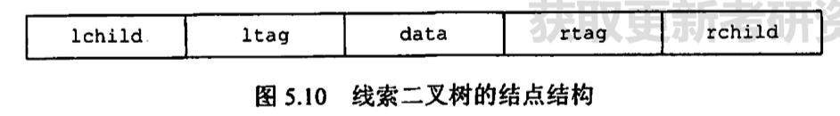
</div><p><strong><span>(l/r)tag标志域：</span></strong></p><ul><li><span>0：（左/右）孩子</span></li><li><span>1：（前/后）驱</span></li></ul><h4 id='线索二叉树的遍历'><span>线索二叉树的遍历</span></h4><figure><table><thead><tr><th>&nbsp;</th><th style='text-align:center;' ><span>中序线索二叉树</span></th><th style='text-align:center;' ><span>先序线索二叉树</span></th><th style='text-align:center;' ><span>后序线索二叉树</span></th></tr></thead><tbody><tr><td><span>寻找前驱</span></td><td style='text-align:center;' ><span>✅</span></td><td style='text-align:center;' ><span>❌</span></td><td style='text-align:center;' ><span>✅</span></td></tr><tr><td><span>寻找后驱</span></td><td style='text-align:center;' ><span>✅</span></td><td style='text-align:center;' ><span>✅</span></td><td style='text-align:center;' ><span>❌</span></td></tr></tbody></table></figure><blockquote><p><span>口诀：中序万能，先序不找前，后序不找后</span></p></blockquote><p><strong><span>先序环路问题的解决方法：</span></strong><span>利用tag位判断是否存在左子树</span></p><p>&nbsp;</p><h3 id='hfm哈夫曼树'><span>HFM哈夫曼树</span></h3><h4 id='多叉hfm树虚段计算'><span>多叉HFM树“虚段”计算</span></h4><ul><li><p><strong><span>推导过程：</span></strong></p><p><mjx-container class="MathJax" jax="SVG" style="position: relative;"><svg xmlns="http://www.w3.org/2000/svg" width="54.444ex" height="2.149ex" role="img" focusable="false" viewBox="0 -750 24064.3 950" xmlns:xlink="http://www.w3.org/1999/xlink" aria-hidden="true" style="vertical-align: -0.452ex;"><defs><path id="MJX-550-TEX-I-1D458" d="M121 647Q121 657 125 670T137 683Q138 683 209 688T282 694Q294 694 294 686Q294 679 244 477Q194 279 194 272Q213 282 223 291Q247 309 292 354T362 415Q402 442 438 442Q468 442 485 423T503 369Q503 344 496 327T477 302T456 291T438 288Q418 288 406 299T394 328Q394 353 410 369T442 390L458 393Q446 405 434 405H430Q398 402 367 380T294 316T228 255Q230 254 243 252T267 246T293 238T320 224T342 206T359 180T365 147Q365 130 360 106T354 66Q354 26 381 26Q429 26 459 145Q461 153 479 153H483Q499 153 499 144Q499 139 496 130Q455 -11 378 -11Q333 -11 305 15T277 90Q277 108 280 121T283 145Q283 167 269 183T234 206T200 217T182 220H180Q168 178 159 139T145 81T136 44T129 20T122 7T111 -2Q98 -11 83 -11Q66 -11 57 -1T48 16Q48 26 85 176T158 471L195 616Q196 629 188 632T149 637H144Q134 637 131 637T124 640T121 647Z"></path></defs><g stroke="currentColor" fill="currentColor" stroke-width="0" transform="scale(1,-1)"><g data-mml-node="math"><g data-mml-node="mtext"><text data-variant="normal" transform="scale(1,-1)" font-size="884px" font-family="serif">由</text></g><g data-mml-node="mtext" transform="translate(826.9,0)"><text data-variant="normal" transform="scale(1,-1)" font-size="884px" font-family="serif">于</text></g><g data-mml-node="mi" transform="translate(1697.3,0)"><use data-c="1D458" xlink:href="#MJX-550-TEX-I-1D458"></use></g><g data-mml-node="mtext" transform="translate(2218.3,0)"><text data-variant="normal" transform="scale(1,-1)" font-size="884px" font-family="serif">路</text></g><g data-mml-node="mtext" transform="translate(3088.7,0)"><text data-variant="normal" transform="scale(1,-1)" font-size="884px" font-family="serif">归</text></g><g data-mml-node="mtext" transform="translate(3915.6,0)"><text data-variant="normal" transform="scale(1,-1)" font-size="884px" font-family="serif">并</text></g><g data-mml-node="mtext" transform="translate(4742.5,0)"><text data-variant="normal" transform="scale(1,-1)" font-size="884px" font-family="serif">树</text></g><g data-mml-node="mtext" transform="translate(5569.4,0)"><text data-variant="normal" transform="scale(1,-1)" font-size="884px" font-family="serif">一</text></g><g data-mml-node="mtext" transform="translate(6396.3,0)"><text data-variant="normal" transform="scale(1,-1)" font-size="884px" font-family="serif">定</text></g><g data-mml-node="mtext" transform="translate(7266.7,0)"><text data-variant="normal" transform="scale(1,-1)" font-size="884px" font-family="serif">是</text></g><g data-mml-node="mtext" transform="translate(8093.6,0)"><text data-variant="normal" transform="scale(1,-1)" font-size="884px" font-family="serif">一</text></g><g data-mml-node="mtext" transform="translate(8920.5,0)"><text data-variant="normal" transform="scale(1,-1)" font-size="884px" font-family="serif">棵</text></g><g data-mml-node="mtext" transform="translate(9790.9,0)"><text data-variant="normal" transform="scale(1,-1)" font-size="884px" font-family="serif">严</text></g><g data-mml-node="mtext" transform="translate(10661.3,0)"><text data-variant="normal" transform="scale(1,-1)" font-size="884px" font-family="serif">格</text></g><g data-mml-node="mi" transform="translate(11531.7,0)"><use data-c="1D458" xlink:href="#MJX-550-TEX-I-1D458"></use></g><g data-mml-node="mtext" transform="translate(12052.7,0)"><text data-variant="normal" transform="scale(1,-1)" font-size="884px" font-family="serif">叉</text></g><g data-mml-node="mtext" transform="translate(12923.1,0)"><text data-variant="normal" transform="scale(1,-1)" font-size="884px" font-family="serif">树</text></g><g data-mml-node="mi" transform="translate(13750,0)"><text data-variant="italic" transform="scale(1,-1)" font-size="884px" font-family="serif" font-style="italic">，</text></g><g data-mml-node="mtext" transform="translate(14576.9,0)"><text data-variant="normal" transform="scale(1,-1)" font-size="884px" font-family="serif">所</text></g><g data-mml-node="mtext" transform="translate(15447.3,0)"><text data-variant="normal" transform="scale(1,-1)" font-size="884px" font-family="serif">以</text></g><g data-mml-node="mtext" transform="translate(16317.7,0)"><text data-variant="normal" transform="scale(1,-1)" font-size="884px" font-family="serif">可</text></g><g data-mml-node="mtext" transform="translate(17188.1,0)"><text data-variant="normal" transform="scale(1,-1)" font-size="884px" font-family="serif">以</text></g><g data-mml-node="mtext" transform="translate(18058.5,0)"><text data-variant="normal" transform="scale(1,-1)" font-size="884px" font-family="serif">得</text></g><g data-mml-node="mtext" transform="translate(18928.9,0)"><text data-variant="normal" transform="scale(1,-1)" font-size="884px" font-family="serif">出</text></g><g data-mml-node="mtext" transform="translate(19799.3,0)"><text data-variant="normal" transform="scale(1,-1)" font-size="884px" font-family="serif">两</text></g><g data-mml-node="mtext" transform="translate(20669.7,0)"><text data-variant="normal" transform="scale(1,-1)" font-size="884px" font-family="serif">个</text></g><g data-mml-node="mtext" transform="translate(21496.6,0)"><text data-variant="normal" transform="scale(1,-1)" font-size="884px" font-family="serif">性</text></g><g data-mml-node="mtext" transform="translate(22367,0)"><text data-variant="normal" transform="scale(1,-1)" font-size="884px" font-family="serif">质</text></g><g data-mml-node="mi" transform="translate(23237.4,0)"><text data-variant="italic" transform="scale(1,-1)" font-size="884px" font-family="serif" font-style="italic">：</text></g></g></g></svg><mjx-assistive-mml unselectable="on" display="inline"><math xmlns="http://www.w3.org/1998/Math/MathML"><mtext>由</mtext><mtext>于</mtext><mi>k</mi><mtext>路</mtext><mtext>归</mtext><mtext>并</mtext><mtext>树</mtext><mtext>一</mtext><mtext>定</mtext><mtext>是</mtext><mtext>一</mtext><mtext>棵</mtext><mtext>严</mtext><mtext>格</mtext><mi>k</mi><mtext>叉</mtext><mtext>树</mtext><mi>，</mi><mtext>所</mtext><mtext>以</mtext><mtext>可</mtext><mtext>以</mtext><mtext>得</mtext><mtext>出</mtext><mtext>两</mtext><mtext>个</mtext><mtext>性</mtext><mtext>质</mtext><mi>：</mi></math></mjx-assistive-mml></mjx-container><script type="math/tex">由于k路归并树一定是一棵严格k叉树，所以可以得出两个性质：</script></p><p><mjx-container class="MathJax" jax="SVG" style="position: relative;"><svg xmlns="http://www.w3.org/2000/svg" width="44.837ex" height="2.262ex" role="img" focusable="false" viewBox="0 -750 19817.9 1000" xmlns:xlink="http://www.w3.org/1999/xlink" aria-hidden="true" style="vertical-align: -0.566ex;"><defs><path id="MJX-551-TEX-I-1D45B" d="M21 287Q22 293 24 303T36 341T56 388T89 425T135 442Q171 442 195 424T225 390T231 369Q231 367 232 367L243 378Q304 442 382 442Q436 442 469 415T503 336T465 179T427 52Q427 26 444 26Q450 26 453 27Q482 32 505 65T540 145Q542 153 560 153Q580 153 580 145Q580 144 576 130Q568 101 554 73T508 17T439 -10Q392 -10 371 17T350 73Q350 92 386 193T423 345Q423 404 379 404H374Q288 404 229 303L222 291L189 157Q156 26 151 16Q138 -11 108 -11Q95 -11 87 -5T76 7T74 17Q74 30 112 180T152 343Q153 348 153 366Q153 405 129 405Q91 405 66 305Q60 285 60 284Q58 278 41 278H27Q21 284 21 287Z"></path><path id="MJX-551-TEX-N-3D" d="M56 347Q56 360 70 367H707Q722 359 722 347Q722 336 708 328L390 327H72Q56 332 56 347ZM56 153Q56 168 72 173H708Q722 163 722 153Q722 140 707 133H70Q56 140 56 153Z"></path><path id="MJX-551-TEX-N-30" d="M96 585Q152 666 249 666Q297 666 345 640T423 548Q460 465 460 320Q460 165 417 83Q397 41 362 16T301 -15T250 -22Q224 -22 198 -16T137 16T82 83Q39 165 39 320Q39 494 96 585ZM321 597Q291 629 250 629Q208 629 178 597Q153 571 145 525T137 333Q137 175 145 125T181 46Q209 16 250 16Q290 16 318 46Q347 76 354 130T362 333Q362 478 354 524T321 597Z"></path><path id="MJX-551-TEX-N-2B" d="M56 237T56 250T70 270H369V420L370 570Q380 583 389 583Q402 583 409 568V270H707Q722 262 722 250T707 230H409V-68Q401 -82 391 -82H389H387Q375 -82 369 -68V230H70Q56 237 56 250Z"></path><path id="MJX-551-TEX-I-1D458" d="M121 647Q121 657 125 670T137 683Q138 683 209 688T282 694Q294 694 294 686Q294 679 244 477Q194 279 194 272Q213 282 223 291Q247 309 292 354T362 415Q402 442 438 442Q468 442 485 423T503 369Q503 344 496 327T477 302T456 291T438 288Q418 288 406 299T394 328Q394 353 410 369T442 390L458 393Q446 405 434 405H430Q398 402 367 380T294 316T228 255Q230 254 243 252T267 246T293 238T320 224T342 206T359 180T365 147Q365 130 360 106T354 66Q354 26 381 26Q429 26 459 145Q461 153 479 153H483Q499 153 499 144Q499 139 496 130Q455 -11 378 -11Q333 -11 305 15T277 90Q277 108 280 121T283 145Q283 167 269 183T234 206T200 217T182 220H180Q168 178 159 139T145 81T136 44T129 20T122 7T111 -2Q98 -11 83 -11Q66 -11 57 -1T48 16Q48 26 85 176T158 471L195 616Q196 629 188 632T149 637H144Q134 637 131 637T124 640T121 647Z"></path><path id="MJX-551-TEX-N-28" d="M94 250Q94 319 104 381T127 488T164 576T202 643T244 695T277 729T302 750H315H319Q333 750 333 741Q333 738 316 720T275 667T226 581T184 443T167 250T184 58T225 -81T274 -167T316 -220T333 -241Q333 -250 318 -250H315H302L274 -226Q180 -141 137 -14T94 250Z"></path><path id="MJX-551-TEX-N-29" d="M60 749L64 750Q69 750 74 750H86L114 726Q208 641 251 514T294 250Q294 182 284 119T261 12T224 -76T186 -143T145 -194T113 -227T90 -246Q87 -249 86 -250H74Q66 -250 63 -250T58 -247T55 -238Q56 -237 66 -225Q221 -64 221 250T66 725Q56 737 55 738Q55 746 60 749Z"></path></defs><g stroke="currentColor" fill="currentColor" stroke-width="0" transform="scale(1,-1)"><g data-mml-node="math"><g data-mml-node="mi"><use data-c="1D45B" xlink:href="#MJX-551-TEX-I-1D45B"></use></g><g data-mml-node="mo" transform="translate(877.8,0)"><use data-c="3D" xlink:href="#MJX-551-TEX-N-3D"></use></g><g data-mml-node="msub" transform="translate(1933.6,0)"><g data-mml-node="mi"><use data-c="1D45B" xlink:href="#MJX-551-TEX-I-1D45B"></use></g><g data-mml-node="mn" transform="translate(633,-150) scale(0.707)"><use data-c="30" xlink:href="#MJX-551-TEX-N-30"></use></g></g><g data-mml-node="mo" transform="translate(3192.3,0)"><use data-c="2B" xlink:href="#MJX-551-TEX-N-2B"></use></g><g data-mml-node="msub" transform="translate(4192.6,0)"><g data-mml-node="mi"><use data-c="1D45B" xlink:href="#MJX-551-TEX-I-1D45B"></use></g><g data-mml-node="mi" transform="translate(633,-150) scale(0.707)"><use data-c="1D458" xlink:href="#MJX-551-TEX-I-1D458"></use></g></g><g data-mml-node="mo" transform="translate(5244,0)"><use data-c="28" xlink:href="#MJX-551-TEX-N-28"></use></g><g data-mml-node="mtext" transform="translate(5633,0)"><text data-variant="normal" transform="scale(1,-1)" font-size="884px" font-family="serif">整</text></g><g data-mml-node="mtext" transform="translate(6503.4,0)"><text data-variant="normal" transform="scale(1,-1)" font-size="884px" font-family="serif">棵</text></g><g data-mml-node="mtext" transform="translate(7373.8,0)"><text data-variant="normal" transform="scale(1,-1)" font-size="884px" font-family="serif">树</text></g><g data-mml-node="mtext" transform="translate(8200.7,0)"><text data-variant="normal" transform="scale(1,-1)" font-size="884px" font-family="serif">中</text></g><g data-mml-node="mtext" transform="translate(9027.5,0)"><text data-variant="normal" transform="scale(1,-1)" font-size="884px" font-family="serif">只</text></g><g data-mml-node="mtext" transform="translate(9898,0)"><text data-variant="normal" transform="scale(1,-1)" font-size="884px" font-family="serif">有</text></g><g data-mml-node="mtext" transform="translate(10724.8,0)"><text data-variant="normal" transform="scale(1,-1)" font-size="884px" font-family="serif">叶</text></g><g data-mml-node="mtext" transform="translate(11595.3,0)"><text data-variant="normal" transform="scale(1,-1)" font-size="884px" font-family="serif">子</text></g><g data-mml-node="mtext" transform="translate(12465.7,0)"><text data-variant="normal" transform="scale(1,-1)" font-size="884px" font-family="serif">结</text></g><g data-mml-node="mtext" transform="translate(13336.1,0)"><text data-variant="normal" transform="scale(1,-1)" font-size="884px" font-family="serif">点</text></g><g data-mml-node="mtext" transform="translate(14206.5,0)"><text data-variant="normal" transform="scale(1,-1)" font-size="884px" font-family="serif">和</text></g><g data-mml-node="mtext" transform="translate(15076.9,0)"><text data-variant="normal" transform="scale(1,-1)" font-size="884px" font-family="serif">满</text></g><g data-mml-node="mtext" transform="translate(15947.3,0)"><text data-variant="normal" transform="scale(1,-1)" font-size="884px" font-family="serif">孩</text></g><g data-mml-node="mtext" transform="translate(16817.7,0)"><text data-variant="normal" transform="scale(1,-1)" font-size="884px" font-family="serif">子</text></g><g data-mml-node="mtext" transform="translate(17688.1,0)"><text data-variant="normal" transform="scale(1,-1)" font-size="884px" font-family="serif">结</text></g><g data-mml-node="mtext" transform="translate(18558.5,0)"><text data-variant="normal" transform="scale(1,-1)" font-size="884px" font-family="serif">点</text></g><g data-mml-node="mo" transform="translate(19428.9,0)"><use data-c="29" xlink:href="#MJX-551-TEX-N-29"></use></g></g></g></svg><mjx-assistive-mml unselectable="on" display="inline"><math xmlns="http://www.w3.org/1998/Math/MathML"><mi>n</mi><mo>=</mo><msub><mi>n</mi><mn>0</mn></msub><mo>+</mo><msub><mi>n</mi><mi>k</mi></msub><mo stretchy="false">(</mo><mtext>整</mtext><mtext>棵</mtext><mtext>树</mtext><mtext>中</mtext><mtext>只</mtext><mtext>有</mtext><mtext>叶</mtext><mtext>子</mtext><mtext>结</mtext><mtext>点</mtext><mtext>和</mtext><mtext>满</mtext><mtext>孩</mtext><mtext>子</mtext><mtext>结</mtext><mtext>点</mtext><mo stretchy="false">)</mo></math></mjx-assistive-mml></mjx-container><script type="math/tex">n=n_0+n_k(整棵树中只有叶子结点和满孩子结点)</script></p><p><mjx-container class="MathJax" jax="SVG" style="position: relative;"><svg xmlns="http://www.w3.org/2000/svg" width="25.306ex" height="2.262ex" role="img" focusable="false" viewBox="0 -750 11185.3 1000" xmlns:xlink="http://www.w3.org/1999/xlink" aria-hidden="true" style="vertical-align: -0.566ex;"><defs><path id="MJX-552-TEX-I-1D45B" d="M21 287Q22 293 24 303T36 341T56 388T89 425T135 442Q171 442 195 424T225 390T231 369Q231 367 232 367L243 378Q304 442 382 442Q436 442 469 415T503 336T465 179T427 52Q427 26 444 26Q450 26 453 27Q482 32 505 65T540 145Q542 153 560 153Q580 153 580 145Q580 144 576 130Q568 101 554 73T508 17T439 -10Q392 -10 371 17T350 73Q350 92 386 193T423 345Q423 404 379 404H374Q288 404 229 303L222 291L189 157Q156 26 151 16Q138 -11 108 -11Q95 -11 87 -5T76 7T74 17Q74 30 112 180T152 343Q153 348 153 366Q153 405 129 405Q91 405 66 305Q60 285 60 284Q58 278 41 278H27Q21 284 21 287Z"></path><path id="MJX-552-TEX-N-3D" d="M56 347Q56 360 70 367H707Q722 359 722 347Q722 336 708 328L390 327H72Q56 332 56 347ZM56 153Q56 168 72 173H708Q722 163 722 153Q722 140 707 133H70Q56 140 56 153Z"></path><path id="MJX-552-TEX-I-1D458" d="M121 647Q121 657 125 670T137 683Q138 683 209 688T282 694Q294 694 294 686Q294 679 244 477Q194 279 194 272Q213 282 223 291Q247 309 292 354T362 415Q402 442 438 442Q468 442 485 423T503 369Q503 344 496 327T477 302T456 291T438 288Q418 288 406 299T394 328Q394 353 410 369T442 390L458 393Q446 405 434 405H430Q398 402 367 380T294 316T228 255Q230 254 243 252T267 246T293 238T320 224T342 206T359 180T365 147Q365 130 360 106T354 66Q354 26 381 26Q429 26 459 145Q461 153 479 153H483Q499 153 499 144Q499 139 496 130Q455 -11 378 -11Q333 -11 305 15T277 90Q277 108 280 121T283 145Q283 167 269 183T234 206T200 217T182 220H180Q168 178 159 139T145 81T136 44T129 20T122 7T111 -2Q98 -11 83 -11Q66 -11 57 -1T48 16Q48 26 85 176T158 471L195 616Q196 629 188 632T149 637H144Q134 637 131 637T124 640T121 647Z"></path><path id="MJX-552-TEX-N-2B" d="M56 237T56 250T70 270H369V420L370 570Q380 583 389 583Q402 583 409 568V270H707Q722 262 722 250T707 230H409V-68Q401 -82 391 -82H389H387Q375 -82 369 -68V230H70Q56 237 56 250Z"></path><path id="MJX-552-TEX-N-31" d="M213 578L200 573Q186 568 160 563T102 556H83V602H102Q149 604 189 617T245 641T273 663Q275 666 285 666Q294 666 302 660V361L303 61Q310 54 315 52T339 48T401 46H427V0H416Q395 3 257 3Q121 3 100 0H88V46H114Q136 46 152 46T177 47T193 50T201 52T207 57T213 61V578Z"></path><path id="MJX-552-TEX-N-28" d="M94 250Q94 319 104 381T127 488T164 576T202 643T244 695T277 729T302 750H315H319Q333 750 333 741Q333 738 316 720T275 667T226 581T184 443T167 250T184 58T225 -81T274 -167T316 -220T333 -241Q333 -250 318 -250H315H302L274 -226Q180 -141 137 -14T94 250Z"></path><path id="MJX-552-TEX-N-29" d="M60 749L64 750Q69 750 74 750H86L114 726Q208 641 251 514T294 250Q294 182 284 119T261 12T224 -76T186 -143T145 -194T113 -227T90 -246Q87 -249 86 -250H74Q66 -250 63 -250T58 -247T55 -238Q56 -237 66 -225Q221 -64 221 250T66 725Q56 737 55 738Q55 746 60 749Z"></path></defs><g stroke="currentColor" fill="currentColor" stroke-width="0" transform="scale(1,-1)"><g data-mml-node="math"><g data-mml-node="mi"><use data-c="1D45B" xlink:href="#MJX-552-TEX-I-1D45B"></use></g><g data-mml-node="mo" transform="translate(877.8,0)"><use data-c="3D" xlink:href="#MJX-552-TEX-N-3D"></use></g><g data-mml-node="mi" transform="translate(1933.6,0)"><use data-c="1D458" xlink:href="#MJX-552-TEX-I-1D458"></use></g><g data-mml-node="msub" transform="translate(2454.6,0)"><g data-mml-node="mi"><use data-c="1D45B" xlink:href="#MJX-552-TEX-I-1D45B"></use></g><g data-mml-node="mi" transform="translate(633,-150) scale(0.707)"><use data-c="1D458" xlink:href="#MJX-552-TEX-I-1D458"></use></g></g><g data-mml-node="mo" transform="translate(3728.2,0)"><use data-c="2B" xlink:href="#MJX-552-TEX-N-2B"></use></g><g data-mml-node="mn" transform="translate(4728.4,0)"><use data-c="31" xlink:href="#MJX-552-TEX-N-31"></use></g><g data-mml-node="mo" transform="translate(5228.4,0)"><use data-c="28" xlink:href="#MJX-552-TEX-N-28"></use></g><g data-mml-node="mtext" transform="translate(5617.4,0)"><text data-variant="normal" transform="scale(1,-1)" font-size="884px" font-family="serif">同</text></g><g data-mml-node="mtext" transform="translate(6487.8,0)"><text data-variant="normal" transform="scale(1,-1)" font-size="884px" font-family="serif">二</text></g><g data-mml-node="mtext" transform="translate(7358.2,0)"><text data-variant="normal" transform="scale(1,-1)" font-size="884px" font-family="serif">叉</text></g><g data-mml-node="mtext" transform="translate(8228.6,0)"><text data-variant="normal" transform="scale(1,-1)" font-size="884px" font-family="serif">树</text></g><g data-mml-node="mtext" transform="translate(9055.5,0)"><text data-variant="normal" transform="scale(1,-1)" font-size="884px" font-family="serif">性</text></g><g data-mml-node="mtext" transform="translate(9925.9,0)"><text data-variant="normal" transform="scale(1,-1)" font-size="884px" font-family="serif">质</text></g><g data-mml-node="mo" transform="translate(10796.3,0)"><use data-c="29" xlink:href="#MJX-552-TEX-N-29"></use></g></g></g></svg><mjx-assistive-mml unselectable="on" display="inline"><math xmlns="http://www.w3.org/1998/Math/MathML"><mi>n</mi><mo>=</mo><mi>k</mi><msub><mi>n</mi><mi>k</mi></msub><mo>+</mo><mn>1</mn><mo stretchy="false">(</mo><mtext>同</mtext><mtext>二</mtext><mtext>叉</mtext><mtext>树</mtext><mtext>性</mtext><mtext>质</mtext><mo stretchy="false">)</mo></math></mjx-assistive-mml></mjx-container><script type="math/tex">n=kn_k+1(同二叉树性质)</script></p><p><mjx-container class="MathJax" jax="SVG" style="position: relative;"><svg xmlns="http://www.w3.org/2000/svg" width="32.707ex" height="2.262ex" role="img" focusable="false" viewBox="0 -750 14456.6 1000" xmlns:xlink="http://www.w3.org/1999/xlink" aria-hidden="true" style="vertical-align: -0.566ex;"><defs><path id="MJX-553-TEX-N-3D" d="M56 347Q56 360 70 367H707Q722 359 722 347Q722 336 708 328L390 327H72Q56 332 56 347ZM56 153Q56 168 72 173H708Q722 163 722 153Q722 140 707 133H70Q56 140 56 153Z"></path><path id="MJX-553-TEX-N-3E" d="M84 520Q84 528 88 533T96 539L99 540Q106 540 253 471T544 334L687 265Q694 260 694 250T687 235Q685 233 395 96L107 -40H101Q83 -38 83 -20Q83 -19 83 -17Q82 -10 98 -1Q117 9 248 71Q326 108 378 132L626 250L378 368Q90 504 86 509Q84 513 84 520Z"></path><path id="MJX-553-TEX-N-A0" d=""></path><path id="MJX-553-TEX-I-1D45B" d="M21 287Q22 293 24 303T36 341T56 388T89 425T135 442Q171 442 195 424T225 390T231 369Q231 367 232 367L243 378Q304 442 382 442Q436 442 469 415T503 336T465 179T427 52Q427 26 444 26Q450 26 453 27Q482 32 505 65T540 145Q542 153 560 153Q580 153 580 145Q580 144 576 130Q568 101 554 73T508 17T439 -10Q392 -10 371 17T350 73Q350 92 386 193T423 345Q423 404 379 404H374Q288 404 229 303L222 291L189 157Q156 26 151 16Q138 -11 108 -11Q95 -11 87 -5T76 7T74 17Q74 30 112 180T152 343Q153 348 153 366Q153 405 129 405Q91 405 66 305Q60 285 60 284Q58 278 41 278H27Q21 284 21 287Z"></path><path id="MJX-553-TEX-N-30" d="M96 585Q152 666 249 666Q297 666 345 640T423 548Q460 465 460 320Q460 165 417 83Q397 41 362 16T301 -15T250 -22Q224 -22 198 -16T137 16T82 83Q39 165 39 320Q39 494 96 585ZM321 597Q291 629 250 629Q208 629 178 597Q153 571 145 525T137 333Q137 175 145 125T181 46Q209 16 250 16Q290 16 318 46Q347 76 354 130T362 333Q362 478 354 524T321 597Z"></path><path id="MJX-553-TEX-N-2212" d="M84 237T84 250T98 270H679Q694 262 694 250T679 230H98Q84 237 84 250Z"></path><path id="MJX-553-TEX-I-1D458" d="M121 647Q121 657 125 670T137 683Q138 683 209 688T282 694Q294 694 294 686Q294 679 244 477Q194 279 194 272Q213 282 223 291Q247 309 292 354T362 415Q402 442 438 442Q468 442 485 423T503 369Q503 344 496 327T477 302T456 291T438 288Q418 288 406 299T394 328Q394 353 410 369T442 390L458 393Q446 405 434 405H430Q398 402 367 380T294 316T228 255Q230 254 243 252T267 246T293 238T320 224T342 206T359 180T365 147Q365 130 360 106T354 66Q354 26 381 26Q429 26 459 145Q461 153 479 153H483Q499 153 499 144Q499 139 496 130Q455 -11 378 -11Q333 -11 305 15T277 90Q277 108 280 121T283 145Q283 167 269 183T234 206T200 217T182 220H180Q168 178 159 139T145 81T136 44T129 20T122 7T111 -2Q98 -11 83 -11Q66 -11 57 -1T48 16Q48 26 85 176T158 471L195 616Q196 629 188 632T149 637H144Q134 637 131 637T124 640T121 647Z"></path><path id="MJX-553-TEX-N-28" d="M94 250Q94 319 104 381T127 488T164 576T202 643T244 695T277 729T302 750H315H319Q333 750 333 741Q333 738 316 720T275 667T226 581T184 443T167 250T184 58T225 -81T274 -167T316 -220T333 -241Q333 -250 318 -250H315H302L274 -226Q180 -141 137 -14T94 250Z"></path><path id="MJX-553-TEX-N-31" d="M213 578L200 573Q186 568 160 563T102 556H83V602H102Q149 604 189 617T245 641T273 663Q275 666 285 666Q294 666 302 660V361L303 61Q310 54 315 52T339 48T401 46H427V0H416Q395 3 257 3Q121 3 100 0H88V46H114Q136 46 152 46T177 47T193 50T201 52T207 57T213 61V578Z"></path><path id="MJX-553-TEX-N-29" d="M60 749L64 750Q69 750 74 750H86L114 726Q208 641 251 514T294 250Q294 182 284 119T261 12T224 -76T186 -143T145 -194T113 -227T90 -246Q87 -249 86 -250H74Q66 -250 63 -250T58 -247T55 -238Q56 -237 66 -225Q221 -64 221 250T66 725Q56 737 55 738Q55 746 60 749Z"></path><path id="MJX-553-TEX-N-2B" d="M56 237T56 250T70 270H369V420L370 570Q380 583 389 583Q402 583 409 568V270H707Q722 262 722 250T707 230H409V-68Q401 -82 391 -82H389H387Q375 -82 369 -68V230H70Q56 237 56 250Z"></path></defs><g stroke="currentColor" fill="currentColor" stroke-width="0" transform="scale(1,-1)"><g data-mml-node="math"><g data-mml-node="mo"><g data-mml-node="text"><use data-c="3D" xlink:href="#MJX-553-TEX-N-3D"></use></g><g data-mml-node="text" transform="translate(778,0)"><use data-c="3E" xlink:href="#MJX-553-TEX-N-3E"></use></g></g><g data-mml-node="mtext" transform="translate(1833.8,0)"><use data-c="A0" xlink:href="#MJX-553-TEX-N-A0"></use></g><g data-mml-node="msub" transform="translate(2083.8,0)"><g data-mml-node="mi"><use data-c="1D45B" xlink:href="#MJX-553-TEX-I-1D45B"></use></g><g data-mml-node="mn" transform="translate(633,-150) scale(0.707)"><use data-c="30" xlink:href="#MJX-553-TEX-N-30"></use></g></g><g data-mml-node="mo" transform="translate(3398.1,0)"><use data-c="3D" xlink:href="#MJX-553-TEX-N-3D"></use></g><g data-mml-node="mi" transform="translate(4453.9,0)"><use data-c="1D45B" xlink:href="#MJX-553-TEX-I-1D45B"></use></g><g data-mml-node="mo" transform="translate(5276.1,0)"><use data-c="2212" xlink:href="#MJX-553-TEX-N-2212"></use></g><g data-mml-node="msub" transform="translate(6276.3,0)"><g data-mml-node="mi"><use data-c="1D45B" xlink:href="#MJX-553-TEX-I-1D45B"></use></g><g data-mml-node="mi" transform="translate(633,-150) scale(0.707)"><use data-c="1D458" xlink:href="#MJX-553-TEX-I-1D458"></use></g></g><g data-mml-node="mo" transform="translate(7605.5,0)"><use data-c="3D" xlink:href="#MJX-553-TEX-N-3D"></use></g><g data-mml-node="mo" transform="translate(8661.3,0)"><use data-c="28" xlink:href="#MJX-553-TEX-N-28"></use></g><g data-mml-node="mi" transform="translate(9050.3,0)"><use data-c="1D458" xlink:href="#MJX-553-TEX-I-1D458"></use></g><g data-mml-node="mo" transform="translate(9793.5,0)"><use data-c="2212" xlink:href="#MJX-553-TEX-N-2212"></use></g><g data-mml-node="mn" transform="translate(10793.7,0)"><use data-c="31" xlink:href="#MJX-553-TEX-N-31"></use></g><g data-mml-node="mo" transform="translate(11293.7,0)"><use data-c="29" xlink:href="#MJX-553-TEX-N-29"></use></g><g data-mml-node="msub" transform="translate(11682.7,0)"><g data-mml-node="mi"><use data-c="1D45B" xlink:href="#MJX-553-TEX-I-1D45B"></use></g><g data-mml-node="mi" transform="translate(633,-150) scale(0.707)"><use data-c="1D458" xlink:href="#MJX-553-TEX-I-1D458"></use></g></g><g data-mml-node="mo" transform="translate(12956.4,0)"><use data-c="2B" xlink:href="#MJX-553-TEX-N-2B"></use></g><g data-mml-node="mn" transform="translate(13956.6,0)"><use data-c="31" xlink:href="#MJX-553-TEX-N-31"></use></g></g></g></svg><mjx-assistive-mml unselectable="on" display="inline"><math xmlns="http://www.w3.org/1998/Math/MathML"><mo>=&gt;</mo><mtext>&nbsp;</mtext><msub><mi>n</mi><mn>0</mn></msub><mo>=</mo><mi>n</mi><mo>−</mo><msub><mi>n</mi><mi>k</mi></msub><mo>=</mo><mo stretchy="false">(</mo><mi>k</mi><mo>−</mo><mn>1</mn><mo stretchy="false">)</mo><msub><mi>n</mi><mi>k</mi></msub><mo>+</mo><mn>1</mn></math></mjx-assistive-mml></mjx-container><script type="math/tex">=>\ n_0=n-n_k=(k-1)n_k+1</script></p><p><mjx-container class="MathJax" jax="SVG" style="position: relative;"><svg xmlns="http://www.w3.org/2000/svg" width="36.44ex" height="3.011ex" role="img" focusable="false" viewBox="0 -928 16106.6 1331" xmlns:xlink="http://www.w3.org/1999/xlink" aria-hidden="true" style="vertical-align: -0.912ex;"><defs><path id="MJX-554-TEX-N-3D" d="M56 347Q56 360 70 367H707Q722 359 722 347Q722 336 708 328L390 327H72Q56 332 56 347ZM56 153Q56 168 72 173H708Q722 163 722 153Q722 140 707 133H70Q56 140 56 153Z"></path><path id="MJX-554-TEX-N-3E" d="M84 520Q84 528 88 533T96 539L99 540Q106 540 253 471T544 334L687 265Q694 260 694 250T687 235Q685 233 395 96L107 -40H101Q83 -38 83 -20Q83 -19 83 -17Q82 -10 98 -1Q117 9 248 71Q326 108 378 132L626 250L378 368Q90 504 86 509Q84 513 84 520Z"></path><path id="MJX-554-TEX-N-A0" d=""></path><path id="MJX-554-TEX-I-1D45B" d="M21 287Q22 293 24 303T36 341T56 388T89 425T135 442Q171 442 195 424T225 390T231 369Q231 367 232 367L243 378Q304 442 382 442Q436 442 469 415T503 336T465 179T427 52Q427 26 444 26Q450 26 453 27Q482 32 505 65T540 145Q542 153 560 153Q580 153 580 145Q580 144 576 130Q568 101 554 73T508 17T439 -10Q392 -10 371 17T350 73Q350 92 386 193T423 345Q423 404 379 404H374Q288 404 229 303L222 291L189 157Q156 26 151 16Q138 -11 108 -11Q95 -11 87 -5T76 7T74 17Q74 30 112 180T152 343Q153 348 153 366Q153 405 129 405Q91 405 66 305Q60 285 60 284Q58 278 41 278H27Q21 284 21 287Z"></path><path id="MJX-554-TEX-I-1D458" d="M121 647Q121 657 125 670T137 683Q138 683 209 688T282 694Q294 694 294 686Q294 679 244 477Q194 279 194 272Q213 282 223 291Q247 309 292 354T362 415Q402 442 438 442Q468 442 485 423T503 369Q503 344 496 327T477 302T456 291T438 288Q418 288 406 299T394 328Q394 353 410 369T442 390L458 393Q446 405 434 405H430Q398 402 367 380T294 316T228 255Q230 254 243 252T267 246T293 238T320 224T342 206T359 180T365 147Q365 130 360 106T354 66Q354 26 381 26Q429 26 459 145Q461 153 479 153H483Q499 153 499 144Q499 139 496 130Q455 -11 378 -11Q333 -11 305 15T277 90Q277 108 280 121T283 145Q283 167 269 183T234 206T200 217T182 220H180Q168 178 159 139T145 81T136 44T129 20T122 7T111 -2Q98 -11 83 -11Q66 -11 57 -1T48 16Q48 26 85 176T158 471L195 616Q196 629 188 632T149 637H144Q134 637 131 637T124 640T121 647Z"></path><path id="MJX-554-TEX-N-30" d="M96 585Q152 666 249 666Q297 666 345 640T423 548Q460 465 460 320Q460 165 417 83Q397 41 362 16T301 -15T250 -22Q224 -22 198 -16T137 16T82 83Q39 165 39 320Q39 494 96 585ZM321 597Q291 629 250 629Q208 629 178 597Q153 571 145 525T137 333Q137 175 145 125T181 46Q209 16 250 16Q290 16 318 46Q347 76 354 130T362 333Q362 478 354 524T321 597Z"></path><path id="MJX-554-TEX-N-2212" d="M84 237T84 250T98 270H679Q694 262 694 250T679 230H98Q84 237 84 250Z"></path><path id="MJX-554-TEX-N-31" d="M213 578L200 573Q186 568 160 563T102 556H83V602H102Q149 604 189 617T245 641T273 663Q275 666 285 666Q294 666 302 660V361L303 61Q310 54 315 52T339 48T401 46H427V0H416Q395 3 257 3Q121 3 100 0H88V46H114Q136 46 152 46T177 47T193 50T201 52T207 57T213 61V578Z"></path><path id="MJX-554-TEX-N-28" d="M94 250Q94 319 104 381T127 488T164 576T202 643T244 695T277 729T302 750H315H319Q333 750 333 741Q333 738 316 720T275 667T226 581T184 443T167 250T184 58T225 -81T274 -167T316 -220T333 -241Q333 -250 318 -250H315H302L274 -226Q180 -141 137 -14T94 250Z"></path><path id="MJX-554-TEX-N-29" d="M60 749L64 750Q69 750 74 750H86L114 726Q208 641 251 514T294 250Q294 182 284 119T261 12T224 -76T186 -143T145 -194T113 -227T90 -246Q87 -249 86 -250H74Q66 -250 63 -250T58 -247T55 -238Q56 -237 66 -225Q221 -64 221 250T66 725Q56 737 55 738Q55 746 60 749Z"></path></defs><g stroke="currentColor" fill="currentColor" stroke-width="0" transform="scale(1,-1)"><g data-mml-node="math"><g data-mml-node="mo"><g data-mml-node="text"><use data-c="3D" xlink:href="#MJX-554-TEX-N-3D"></use></g><g data-mml-node="text" transform="translate(778,0)"><use data-c="3E" xlink:href="#MJX-554-TEX-N-3E"></use></g></g><g data-mml-node="mtext" transform="translate(1833.8,0)"><use data-c="A0" xlink:href="#MJX-554-TEX-N-A0"></use></g><g data-mml-node="msub" transform="translate(2083.8,0)"><g data-mml-node="mi"><use data-c="1D45B" xlink:href="#MJX-554-TEX-I-1D45B"></use></g><g data-mml-node="mi" transform="translate(633,-150) scale(0.707)"><use data-c="1D458" xlink:href="#MJX-554-TEX-I-1D458"></use></g></g><g data-mml-node="mo" transform="translate(3413,0)"><use data-c="3D" xlink:href="#MJX-554-TEX-N-3D"></use></g><g data-mml-node="mfrac" transform="translate(4468.7,0)"><g data-mml-node="mrow" transform="translate(220,457.1) scale(0.707)"><g data-mml-node="msub"><g data-mml-node="mi"><use data-c="1D45B" xlink:href="#MJX-554-TEX-I-1D45B"></use></g><g data-mml-node="mn" transform="translate(633,-150) scale(0.707)"><use data-c="30" xlink:href="#MJX-554-TEX-N-30"></use></g></g><g data-mml-node="mo" transform="translate(1036.6,0)"><use data-c="2212" xlink:href="#MJX-554-TEX-N-2212"></use></g><g data-mml-node="mn" transform="translate(1814.6,0)"><use data-c="31" xlink:href="#MJX-554-TEX-N-31"></use></g></g><g data-mml-node="mrow" transform="translate(402.3,-345) scale(0.707)"><g data-mml-node="mi"><use data-c="1D458" xlink:href="#MJX-554-TEX-I-1D458"></use></g><g data-mml-node="mo" transform="translate(521,0)"><use data-c="2212" xlink:href="#MJX-554-TEX-N-2212"></use></g><g data-mml-node="mn" transform="translate(1299,0)"><use data-c="31" xlink:href="#MJX-554-TEX-N-31"></use></g></g><rect width="1836.6" height="60" x="120" y="220"></rect></g><g data-mml-node="mo" transform="translate(6545.4,0)"><use data-c="28" xlink:href="#MJX-554-TEX-N-28"></use></g><g data-mml-node="msub" transform="translate(6934.4,0)"><g data-mml-node="mi"><use data-c="1D45B" xlink:href="#MJX-554-TEX-I-1D45B"></use></g><g data-mml-node="mn" transform="translate(633,-150) scale(0.707)"><use data-c="30" xlink:href="#MJX-554-TEX-N-30"></use></g></g><g data-mml-node="mtext" transform="translate(7970.9,0)"><text data-variant="normal" transform="scale(1,-1)" font-size="884px" font-family="serif">即</text></g><g data-mml-node="mtext" transform="translate(8841.3,0)"><text data-variant="normal" transform="scale(1,-1)" font-size="884px" font-family="serif">为</text></g><g data-mml-node="mtext" transform="translate(9711.7,0)"><text data-variant="normal" transform="scale(1,-1)" font-size="884px" font-family="serif">待</text></g><g data-mml-node="mtext" transform="translate(10582.1,0)"><text data-variant="normal" transform="scale(1,-1)" font-size="884px" font-family="serif">排</text></g><g data-mml-node="mtext" transform="translate(11452.6,0)"><text data-variant="normal" transform="scale(1,-1)" font-size="884px" font-family="serif">序</text></g><g data-mml-node="mtext" transform="translate(12323,0)"><text data-variant="normal" transform="scale(1,-1)" font-size="884px" font-family="serif">元</text></g><g data-mml-node="mtext" transform="translate(13193.4,0)"><text data-variant="normal" transform="scale(1,-1)" font-size="884px" font-family="serif">素</text></g><g data-mml-node="mtext" transform="translate(14063.8,0)"><text data-variant="normal" transform="scale(1,-1)" font-size="884px" font-family="serif">数</text></g><g data-mml-node="mtext" transform="translate(14890.7,0)"><text data-variant="normal" transform="scale(1,-1)" font-size="884px" font-family="serif">量</text></g><g data-mml-node="mo" transform="translate(15717.6,0)"><use data-c="29" xlink:href="#MJX-554-TEX-N-29"></use></g></g></g></svg><mjx-assistive-mml unselectable="on" display="inline"><math xmlns="http://www.w3.org/1998/Math/MathML"><mo>=&gt;</mo><mtext>&nbsp;</mtext><msub><mi>n</mi><mi>k</mi></msub><mo>=</mo><mfrac><mrow><msub><mi>n</mi><mn>0</mn></msub><mo>−</mo><mn>1</mn></mrow><mrow><mi>k</mi><mo>−</mo><mn>1</mn></mrow></mfrac><mo stretchy="false">(</mo><msub><mi>n</mi><mn>0</mn></msub><mtext>即</mtext><mtext>为</mtext><mtext>待</mtext><mtext>排</mtext><mtext>序</mtext><mtext>元</mtext><mtext>素</mtext><mtext>数</mtext><mtext>量</mtext><mo stretchy="false">)</mo></math></mjx-assistive-mml></mjx-container><script type="math/tex">=>\ n_k=\frac{n_0-1}{k-1} (n_0即为待排序元素数量)</script></p></li><li><p><strong><span>如何判断是否需要添加虚段？</span></strong></p><p><mjx-container class="MathJax" jax="SVG" style="position: relative;"><svg xmlns="http://www.w3.org/2000/svg" width="20.661ex" height="2.262ex" role="img" focusable="false" viewBox="0 -750 9132.3 1000" xmlns:xlink="http://www.w3.org/1999/xlink" aria-hidden="true" style="vertical-align: -0.566ex;"><defs><path id="MJX-555-TEX-N-28" d="M94 250Q94 319 104 381T127 488T164 576T202 643T244 695T277 729T302 750H315H319Q333 750 333 741Q333 738 316 720T275 667T226 581T184 443T167 250T184 58T225 -81T274 -167T316 -220T333 -241Q333 -250 318 -250H315H302L274 -226Q180 -141 137 -14T94 250Z"></path><path id="MJX-555-TEX-I-1D45B" d="M21 287Q22 293 24 303T36 341T56 388T89 425T135 442Q171 442 195 424T225 390T231 369Q231 367 232 367L243 378Q304 442 382 442Q436 442 469 415T503 336T465 179T427 52Q427 26 444 26Q450 26 453 27Q482 32 505 65T540 145Q542 153 560 153Q580 153 580 145Q580 144 576 130Q568 101 554 73T508 17T439 -10Q392 -10 371 17T350 73Q350 92 386 193T423 345Q423 404 379 404H374Q288 404 229 303L222 291L189 157Q156 26 151 16Q138 -11 108 -11Q95 -11 87 -5T76 7T74 17Q74 30 112 180T152 343Q153 348 153 366Q153 405 129 405Q91 405 66 305Q60 285 60 284Q58 278 41 278H27Q21 284 21 287Z"></path><path id="MJX-555-TEX-N-30" d="M96 585Q152 666 249 666Q297 666 345 640T423 548Q460 465 460 320Q460 165 417 83Q397 41 362 16T301 -15T250 -22Q224 -22 198 -16T137 16T82 83Q39 165 39 320Q39 494 96 585ZM321 597Q291 629 250 629Q208 629 178 597Q153 571 145 525T137 333Q137 175 145 125T181 46Q209 16 250 16Q290 16 318 46Q347 76 354 130T362 333Q362 478 354 524T321 597Z"></path><path id="MJX-555-TEX-N-2212" d="M84 237T84 250T98 270H679Q694 262 694 250T679 230H98Q84 237 84 250Z"></path><path id="MJX-555-TEX-N-31" d="M213 578L200 573Q186 568 160 563T102 556H83V602H102Q149 604 189 617T245 641T273 663Q275 666 285 666Q294 666 302 660V361L303 61Q310 54 315 52T339 48T401 46H427V0H416Q395 3 257 3Q121 3 100 0H88V46H114Q136 46 152 46T177 47T193 50T201 52T207 57T213 61V578Z"></path><path id="MJX-555-TEX-N-29" d="M60 749L64 750Q69 750 74 750H86L114 726Q208 641 251 514T294 250Q294 182 284 119T261 12T224 -76T186 -143T145 -194T113 -227T90 -246Q87 -249 86 -250H74Q66 -250 63 -250T58 -247T55 -238Q56 -237 66 -225Q221 -64 221 250T66 725Q56 737 55 738Q55 746 60 749Z"></path><path id="MJX-555-TEX-N-25" d="M465 605Q428 605 394 614T340 632T319 641Q332 608 332 548Q332 458 293 403T202 347Q145 347 101 402T56 548Q56 637 101 693T202 750Q241 750 272 719Q359 642 464 642Q580 642 650 732Q662 748 668 749Q670 750 673 750Q682 750 688 743T693 726Q178 -47 170 -52Q166 -56 160 -56Q147 -56 142 -45Q137 -36 142 -27Q143 -24 363 304Q469 462 525 546T581 630Q528 605 465 605ZM207 385Q235 385 263 427T292 548Q292 617 267 664T200 712Q193 712 186 709T167 698T147 668T134 615Q132 595 132 548V527Q132 436 165 403Q183 385 203 385H207ZM500 146Q500 234 544 290T647 347Q699 347 737 292T776 146T737 0T646 -56Q590 -56 545 0T500 146ZM651 -18Q679 -18 707 24T736 146Q736 215 711 262T644 309Q637 309 630 306T611 295T591 265T578 212Q577 200 577 146V124Q577 -18 647 -18H651Z"></path><path id="MJX-555-TEX-I-1D458" d="M121 647Q121 657 125 670T137 683Q138 683 209 688T282 694Q294 694 294 686Q294 679 244 477Q194 279 194 272Q213 282 223 291Q247 309 292 354T362 415Q402 442 438 442Q468 442 485 423T503 369Q503 344 496 327T477 302T456 291T438 288Q418 288 406 299T394 328Q394 353 410 369T442 390L458 393Q446 405 434 405H430Q398 402 367 380T294 316T228 255Q230 254 243 252T267 246T293 238T320 224T342 206T359 180T365 147Q365 130 360 106T354 66Q354 26 381 26Q429 26 459 145Q461 153 479 153H483Q499 153 499 144Q499 139 496 130Q455 -11 378 -11Q333 -11 305 15T277 90Q277 108 280 121T283 145Q283 167 269 183T234 206T200 217T182 220H180Q168 178 159 139T145 81T136 44T129 20T122 7T111 -2Q98 -11 83 -11Q66 -11 57 -1T48 16Q48 26 85 176T158 471L195 616Q196 629 188 632T149 637H144Q134 637 131 637T124 640T121 647Z"></path></defs><g stroke="currentColor" fill="currentColor" stroke-width="0" transform="scale(1,-1)"><g data-mml-node="math"><g data-mml-node="mtext"><text data-variant="normal" transform="scale(1,-1)" font-size="884px" font-family="serif">计</text></g><g data-mml-node="mtext" transform="translate(870.4,0)"><text data-variant="normal" transform="scale(1,-1)" font-size="884px" font-family="serif">算</text></g><g data-mml-node="mo" transform="translate(1740.8,0)"><use data-c="28" xlink:href="#MJX-555-TEX-N-28"></use></g><g data-mml-node="msub" transform="translate(2129.8,0)"><g data-mml-node="mi"><use data-c="1D45B" xlink:href="#MJX-555-TEX-I-1D45B"></use></g><g data-mml-node="mn" transform="translate(633,-150) scale(0.707)"><use data-c="30" xlink:href="#MJX-555-TEX-N-30"></use></g></g><g data-mml-node="mo" transform="translate(3388.6,0)"><use data-c="2212" xlink:href="#MJX-555-TEX-N-2212"></use></g><g data-mml-node="mn" transform="translate(4388.8,0)"><use data-c="31" xlink:href="#MJX-555-TEX-N-31"></use></g><g data-mml-node="mo" transform="translate(4888.8,0)"><use data-c="29" xlink:href="#MJX-555-TEX-N-29"></use></g><g data-mml-node="mi" transform="translate(5277.8,0)"><use data-c="25" xlink:href="#MJX-555-TEX-N-25"></use></g><g data-mml-node="mo" transform="translate(6110.8,0)"><use data-c="28" xlink:href="#MJX-555-TEX-N-28"></use></g><g data-mml-node="mi" transform="translate(6499.8,0)"><use data-c="1D458" xlink:href="#MJX-555-TEX-I-1D458"></use></g><g data-mml-node="mo" transform="translate(7243,0)"><use data-c="2212" xlink:href="#MJX-555-TEX-N-2212"></use></g><g data-mml-node="mn" transform="translate(8243.3,0)"><use data-c="31" xlink:href="#MJX-555-TEX-N-31"></use></g><g data-mml-node="mo" transform="translate(8743.3,0)"><use data-c="29" xlink:href="#MJX-555-TEX-N-29"></use></g></g></g></svg><mjx-assistive-mml unselectable="on" display="inline"><math xmlns="http://www.w3.org/1998/Math/MathML"><mtext>计</mtext><mtext>算</mtext><mo stretchy="false">(</mo><msub><mi>n</mi><mn>0</mn></msub><mo>−</mo><mn>1</mn><mo stretchy="false">)</mo><mi mathvariant="normal">%</mi><mo stretchy="false">(</mo><mi>k</mi><mo>−</mo><mn>1</mn><mo stretchy="false">)</mo></math></mjx-assistive-mml></mjx-container><script type="math/tex">计算(n_0-1)\%(k-1)</script></p><ul><li><mjx-container class="MathJax" jax="SVG" style="position: relative;"><svg xmlns="http://www.w3.org/2000/svg" width="17.206ex" height="2.149ex" role="img" focusable="false" viewBox="0 -750 7605.1 950" xmlns:xlink="http://www.w3.org/1999/xlink" aria-hidden="true" style="vertical-align: -0.452ex;"><defs><path id="MJX-556-TEX-N-3D" d="M56 347Q56 360 70 367H707Q722 359 722 347Q722 336 708 328L390 327H72Q56 332 56 347ZM56 153Q56 168 72 173H708Q722 163 722 153Q722 140 707 133H70Q56 140 56 153Z"></path><path id="MJX-556-TEX-N-30" d="M96 585Q152 666 249 666Q297 666 345 640T423 548Q460 465 460 320Q460 165 417 83Q397 41 362 16T301 -15T250 -22Q224 -22 198 -16T137 16T82 83Q39 165 39 320Q39 494 96 585ZM321 597Q291 629 250 629Q208 629 178 597Q153 571 145 525T137 333Q137 175 145 125T181 46Q209 16 250 16Q290 16 318 46Q347 76 354 130T362 333Q362 478 354 524T321 597Z"></path></defs><g stroke="currentColor" fill="currentColor" stroke-width="0" transform="scale(1,-1)"><g data-mml-node="math"><g data-mml-node="mo"><use data-c="3D" xlink:href="#MJX-556-TEX-N-3D"></use></g><g data-mml-node="mn" transform="translate(1055.8,0)"><use data-c="30" xlink:href="#MJX-556-TEX-N-30"></use></g><g data-mml-node="mtext" transform="translate(1555.8,0)"><text data-variant="normal" transform="scale(1,-1)" font-size="884px" font-family="serif">则</text></g><g data-mml-node="mtext" transform="translate(2426.2,0)"><text data-variant="normal" transform="scale(1,-1)" font-size="884px" font-family="serif">表</text></g><g data-mml-node="mtext" transform="translate(3296.6,0)"><text data-variant="normal" transform="scale(1,-1)" font-size="884px" font-family="serif">示</text></g><g data-mml-node="mtext" transform="translate(4167,0)"><text data-variant="normal" transform="scale(1,-1)" font-size="884px" font-family="serif">无</text></g><g data-mml-node="mtext" transform="translate(5037.4,0)"><text data-variant="normal" transform="scale(1,-1)" font-size="884px" font-family="serif">需</text></g><g data-mml-node="mtext" transform="translate(5864.3,0)"><text data-variant="normal" transform="scale(1,-1)" font-size="884px" font-family="serif">添</text></g><g data-mml-node="mtext" transform="translate(6734.7,0)"><text data-variant="normal" transform="scale(1,-1)" font-size="884px" font-family="serif">加</text></g></g></g></svg><mjx-assistive-mml unselectable="on" display="inline"><math xmlns="http://www.w3.org/1998/Math/MathML"><mo>=</mo><mn>0</mn><mtext>则</mtext><mtext>表</mtext><mtext>示</mtext><mtext>无</mtext><mtext>需</mtext><mtext>添</mtext><mtext>加</mtext></math></mjx-assistive-mml></mjx-container><script type="math/tex">=0则表示无需添加</script></li><li><mjx-container class="MathJax" jax="SVG" style="position: relative;"><svg xmlns="http://www.w3.org/2000/svg" width="30.345ex" height="2.149ex" role="img" focusable="false" viewBox="0 -750 13412.3 950" xmlns:xlink="http://www.w3.org/1999/xlink" aria-hidden="true" style="vertical-align: -0.452ex;"><defs><path id="MJX-557-TEX-N-3D" d="M56 347Q56 360 70 367H707Q722 359 722 347Q722 336 708 328L390 327H72Q56 332 56 347ZM56 153Q56 168 72 173H708Q722 163 722 153Q722 140 707 133H70Q56 140 56 153Z"></path><path id="MJX-557-TEX-I-1D462" d="M21 287Q21 295 30 318T55 370T99 420T158 442Q204 442 227 417T250 358Q250 340 216 246T182 105Q182 62 196 45T238 27T291 44T328 78L339 95Q341 99 377 247Q407 367 413 387T427 416Q444 431 463 431Q480 431 488 421T496 402L420 84Q419 79 419 68Q419 43 426 35T447 26Q469 29 482 57T512 145Q514 153 532 153Q551 153 551 144Q550 139 549 130T540 98T523 55T498 17T462 -8Q454 -10 438 -10Q372 -10 347 46Q345 45 336 36T318 21T296 6T267 -6T233 -11Q189 -11 155 7Q103 38 103 113Q103 170 138 262T173 379Q173 380 173 381Q173 390 173 393T169 400T158 404H154Q131 404 112 385T82 344T65 302T57 280Q55 278 41 278H27Q21 284 21 287Z"></path><path id="MJX-557-TEX-I-1D458" d="M121 647Q121 657 125 670T137 683Q138 683 209 688T282 694Q294 694 294 686Q294 679 244 477Q194 279 194 272Q213 282 223 291Q247 309 292 354T362 415Q402 442 438 442Q468 442 485 423T503 369Q503 344 496 327T477 302T456 291T438 288Q418 288 406 299T394 328Q394 353 410 369T442 390L458 393Q446 405 434 405H430Q398 402 367 380T294 316T228 255Q230 254 243 252T267 246T293 238T320 224T342 206T359 180T365 147Q365 130 360 106T354 66Q354 26 381 26Q429 26 459 145Q461 153 479 153H483Q499 153 499 144Q499 139 496 130Q455 -11 378 -11Q333 -11 305 15T277 90Q277 108 280 121T283 145Q283 167 269 183T234 206T200 217T182 220H180Q168 178 159 139T145 81T136 44T129 20T122 7T111 -2Q98 -11 83 -11Q66 -11 57 -1T48 16Q48 26 85 176T158 471L195 616Q196 629 188 632T149 637H144Q134 637 131 637T124 640T121 647Z"></path><path id="MJX-557-TEX-N-2212" d="M84 237T84 250T98 270H679Q694 262 694 250T679 230H98Q84 237 84 250Z"></path><path id="MJX-557-TEX-N-31" d="M213 578L200 573Q186 568 160 563T102 556H83V602H102Q149 604 189 617T245 641T273 663Q275 666 285 666Q294 666 302 660V361L303 61Q310 54 315 52T339 48T401 46H427V0H416Q395 3 257 3Q121 3 100 0H88V46H114Q136 46 152 46T177 47T193 50T201 52T207 57T213 61V578Z"></path></defs><g stroke="currentColor" fill="currentColor" stroke-width="0" transform="scale(1,-1)"><g data-mml-node="math"><g data-mml-node="mo"><use data-c="3D" xlink:href="#MJX-557-TEX-N-3D"></use></g><g data-mml-node="mi" transform="translate(1055.8,0)"><use data-c="1D462" xlink:href="#MJX-557-TEX-I-1D462"></use></g><g data-mml-node="mtext" transform="translate(1627.8,0)"><text data-variant="normal" transform="scale(1,-1)" font-size="884px" font-family="serif">则</text></g><g data-mml-node="mtext" transform="translate(2498.2,0)"><text data-variant="normal" transform="scale(1,-1)" font-size="884px" font-family="serif">表</text></g><g data-mml-node="mtext" transform="translate(3368.6,0)"><text data-variant="normal" transform="scale(1,-1)" font-size="884px" font-family="serif">示</text></g><g data-mml-node="mtext" transform="translate(4239,0)"><text data-variant="normal" transform="scale(1,-1)" font-size="884px" font-family="serif">需</text></g><g data-mml-node="mtext" transform="translate(5065.9,0)"><text data-variant="normal" transform="scale(1,-1)" font-size="884px" font-family="serif">添</text></g><g data-mml-node="mtext" transform="translate(5936.3,0)"><text data-variant="normal" transform="scale(1,-1)" font-size="884px" font-family="serif">加</text></g><g data-mml-node="mi" transform="translate(6806.7,0)"><use data-c="1D458" xlink:href="#MJX-557-TEX-I-1D458"></use></g><g data-mml-node="mo" transform="translate(7549.9,0)"><use data-c="2212" xlink:href="#MJX-557-TEX-N-2212"></use></g><g data-mml-node="mn" transform="translate(8550.1,0)"><use data-c="31" xlink:href="#MJX-557-TEX-N-31"></use></g><g data-mml-node="mo" transform="translate(9272.4,0)"><use data-c="2212" xlink:href="#MJX-557-TEX-N-2212"></use></g><g data-mml-node="mi" transform="translate(10272.6,0)"><use data-c="1D462" xlink:href="#MJX-557-TEX-I-1D462"></use></g><g data-mml-node="mtext" transform="translate(10844.6,0)"><text data-variant="normal" transform="scale(1,-1)" font-size="884px" font-family="serif">个</text></g><g data-mml-node="mtext" transform="translate(11671.5,0)"><text data-variant="normal" transform="scale(1,-1)" font-size="884px" font-family="serif">虚</text></g><g data-mml-node="mtext" transform="translate(12541.9,0)"><text data-variant="normal" transform="scale(1,-1)" font-size="884px" font-family="serif">段</text></g></g></g></svg><mjx-assistive-mml unselectable="on" display="inline"><math xmlns="http://www.w3.org/1998/Math/MathML"><mo>=</mo><mi>u</mi><mtext>则</mtext><mtext>表</mtext><mtext>示</mtext><mtext>需</mtext><mtext>添</mtext><mtext>加</mtext><mi>k</mi><mo>−</mo><mn>1</mn><mo>−</mo><mi>u</mi><mtext>个</mtext><mtext>虚</mtext><mtext>段</mtext></math></mjx-assistive-mml></mjx-container><script type="math/tex">=u则表示需添加k-1-u个虚段</script></li></ul></li></ul><h4 id='补充在归并排序中的归并树'><span>【补充：在归并排序中的归并树】</span></h4><p><span>在多路归并排序中，归并树实际上就相当于一棵多叉HFM树，因此：</span></p><div contenteditable="false" spellcheck="false" class="mathjax-block md-end-block md-math-block md-rawblock" id="mathjax-n4049" cid="n4049" mdtype="math_block" data-math-tag-before="9" data-math-tag-after="10" data-math-labels="[]"><div class="md-rawblock-container md-math-container" tabindex="-1"><mjx-container class="MathJax" jax="SVG" display="true" width="full" style="min-width: 53.46ex; position: relative;"><svg xmlns="http://www.w3.org/2000/svg" width="100%" height="2.262ex" role="img" focusable="false" xmlns:xlink="http://www.w3.org/1999/xlink" aria-hidden="true" style="vertical-align: -0.566ex; min-width: 53.46ex;"><defs><path id="MJX-10-TEX-N-49" d="M328 0Q307 3 180 3T32 0H21V46H43Q92 46 106 49T126 60Q128 63 128 342Q128 620 126 623Q122 628 118 630T96 635T43 637H21V683H32Q53 680 180 680T328 683H339V637H317Q268 637 254 634T234 623Q232 620 232 342Q232 63 234 60Q238 55 242 53T264 48T317 46H339V0H328Z"></path><path id="MJX-10-TEX-N-2F" d="M423 750Q432 750 438 744T444 730Q444 725 271 248T92 -240Q85 -250 75 -250Q68 -250 62 -245T56 -231Q56 -221 230 257T407 740Q411 750 423 750Z"></path><path id="MJX-10-TEX-N-4F" d="M56 340Q56 423 86 494T164 610T270 680T388 705Q521 705 621 601T722 341Q722 260 693 191T617 75T510 4T388 -22T267 3T160 74T85 189T56 340ZM467 647Q426 665 388 665Q360 665 331 654T269 620T213 549T179 439Q174 411 174 354Q174 144 277 61Q327 20 385 20H389H391Q474 20 537 99Q603 188 603 354Q603 411 598 439Q577 592 467 647Z"></path><path id="MJX-10-TEX-N-3D" d="M56 347Q56 360 70 367H707Q722 359 722 347Q722 336 708 328L390 327H72Q56 332 56 347ZM56 153Q56 168 72 173H708Q722 163 722 153Q722 140 707 133H70Q56 140 56 153Z"></path><path id="MJX-10-TEX-I-1D44A" d="M436 683Q450 683 486 682T553 680Q604 680 638 681T677 682Q695 682 695 674Q695 670 692 659Q687 641 683 639T661 637Q636 636 621 632T600 624T597 615Q597 603 613 377T629 138L631 141Q633 144 637 151T649 170T666 200T690 241T720 295T759 362Q863 546 877 572T892 604Q892 619 873 628T831 637Q817 637 817 647Q817 650 819 660Q823 676 825 679T839 682Q842 682 856 682T895 682T949 681Q1015 681 1034 683Q1048 683 1048 672Q1048 666 1045 655T1038 640T1028 637Q1006 637 988 631T958 617T939 600T927 584L923 578L754 282Q586 -14 585 -15Q579 -22 561 -22Q546 -22 542 -17Q539 -14 523 229T506 480L494 462Q472 425 366 239Q222 -13 220 -15T215 -19Q210 -22 197 -22Q178 -22 176 -15Q176 -12 154 304T131 622Q129 631 121 633T82 637H58Q51 644 51 648Q52 671 64 683H76Q118 680 176 680Q301 680 313 683H323Q329 677 329 674T327 656Q322 641 318 637H297Q236 634 232 620Q262 160 266 136L501 550L499 587Q496 629 489 632Q483 636 447 637Q428 637 422 639T416 648Q416 650 418 660Q419 664 420 669T421 676T424 680T428 682T436 683Z"></path><path id="MJX-10-TEX-I-1D443" d="M287 628Q287 635 230 637Q206 637 199 638T192 648Q192 649 194 659Q200 679 203 681T397 683Q587 682 600 680Q664 669 707 631T751 530Q751 453 685 389Q616 321 507 303Q500 302 402 301H307L277 182Q247 66 247 59Q247 55 248 54T255 50T272 48T305 46H336Q342 37 342 35Q342 19 335 5Q330 0 319 0Q316 0 282 1T182 2Q120 2 87 2T51 1Q33 1 33 11Q33 13 36 25Q40 41 44 43T67 46Q94 46 127 49Q141 52 146 61Q149 65 218 339T287 628ZM645 554Q645 567 643 575T634 597T609 619T560 635Q553 636 480 637Q463 637 445 637T416 636T404 636Q391 635 386 627Q384 621 367 550T332 412T314 344Q314 342 395 342H407H430Q542 342 590 392Q617 419 631 471T645 554Z"></path><path id="MJX-10-TEX-I-1D43F" d="M228 637Q194 637 192 641Q191 643 191 649Q191 673 202 682Q204 683 217 683Q271 680 344 680Q485 680 506 683H518Q524 677 524 674T522 656Q517 641 513 637H475Q406 636 394 628Q387 624 380 600T313 336Q297 271 279 198T252 88L243 52Q243 48 252 48T311 46H328Q360 46 379 47T428 54T478 72T522 106T564 161Q580 191 594 228T611 270Q616 273 628 273H641Q647 264 647 262T627 203T583 83T557 9Q555 4 553 3T537 0T494 -1Q483 -1 418 -1T294 0H116Q32 0 32 10Q32 17 34 24Q39 43 44 45Q48 46 59 46H65Q92 46 125 49Q139 52 144 61Q147 65 216 339T285 628Q285 635 228 637Z"></path><path id="MJX-10-TEX-N-2217" d="M229 286Q216 420 216 436Q216 454 240 464Q241 464 245 464T251 465Q263 464 273 456T283 436Q283 419 277 356T270 286L328 328Q384 369 389 372T399 375Q412 375 423 365T435 338Q435 325 425 315Q420 312 357 282T289 250L355 219L425 184Q434 175 434 161Q434 146 425 136T401 125Q393 125 383 131T328 171L270 213Q283 79 283 63Q283 53 276 44T250 35Q231 35 224 44T216 63Q216 80 222 143T229 213L171 171Q115 130 110 127Q106 124 100 124Q87 124 76 134T64 161Q64 166 64 169T67 175T72 181T81 188T94 195T113 204T138 215T170 230T210 250L74 315Q65 324 65 338Q65 353 74 363T98 374Q106 374 116 368T171 328L229 286Z"></path><path id="MJX-10-TEX-N-32" d="M109 429Q82 429 66 447T50 491Q50 562 103 614T235 666Q326 666 387 610T449 465Q449 422 429 383T381 315T301 241Q265 210 201 149L142 93L218 92Q375 92 385 97Q392 99 409 186V189H449V186Q448 183 436 95T421 3V0H50V19V31Q50 38 56 46T86 81Q115 113 136 137Q145 147 170 174T204 211T233 244T261 278T284 308T305 340T320 369T333 401T340 431T343 464Q343 527 309 573T212 619Q179 619 154 602T119 569T109 550Q109 549 114 549Q132 549 151 535T170 489Q170 464 154 447T109 429Z"></path><path id="MJX-10-TEX-N-28" d="M94 250Q94 319 104 381T127 488T164 576T202 643T244 695T277 729T302 750H315H319Q333 750 333 741Q333 738 316 720T275 667T226 581T184 443T167 250T184 58T225 -81T274 -167T316 -220T333 -241Q333 -250 318 -250H315H302L274 -226Q180 -141 137 -14T94 250Z"></path><path id="MJX-10-TEX-N-31" d="M213 578L200 573Q186 568 160 563T102 556H83V602H102Q149 604 189 617T245 641T273 663Q275 666 285 666Q294 666 302 660V361L303 61Q310 54 315 52T339 48T401 46H427V0H416Q395 3 257 3Q121 3 100 0H88V46H114Q136 46 152 46T177 47T193 50T201 52T207 57T213 61V578Z"></path><path id="MJX-10-TEX-N-30" d="M96 585Q152 666 249 666Q297 666 345 640T423 548Q460 465 460 320Q460 165 417 83Q397 41 362 16T301 -15T250 -22Q224 -22 198 -16T137 16T82 83Q39 165 39 320Q39 494 96 585ZM321 597Q291 629 250 629Q208 629 178 597Q153 571 145 525T137 333Q137 175 145 125T181 46Q209 16 250 16Q290 16 318 46Q347 76 354 130T362 333Q362 478 354 524T321 597Z"></path><path id="MJX-10-TEX-N-29" d="M60 749L64 750Q69 750 74 750H86L114 726Q208 641 251 514T294 250Q294 182 284 119T261 12T224 -76T186 -143T145 -194T113 -227T90 -246Q87 -249 86 -250H74Q66 -250 63 -250T58 -247T55 -238Q56 -237 66 -225Q221 -64 221 250T66 725Q56 737 55 738Q55 746 60 749Z"></path></defs><g stroke="currentColor" fill="currentColor" stroke-width="0" transform="scale(0.023002,-0.023002) translate(0, -750)"><g data-mml-node="math"><g data-mml-node="mtable" transform="translate(2578,0) translate(-2578,0)"><g transform="translate(0 750) matrix(1 0 0 -1 0 0) scale(43.48)"><svg data-table="true" preserveAspectRatio="xMidYMid" viewBox="9236.7 -750 1 1000"><g transform="matrix(1 0 0 -1 0 0)"><g data-mml-node="mlabeledtr"><g data-mml-node="mtd"><g data-mml-node="mtext"><text data-variant="normal" transform="scale(1,-1)" font-size="826px" font-family="serif">归</text><text data-variant="normal" transform="translate(826.9,0) scale(1,-1)" font-size="826px" font-family="serif">并</text><text data-variant="normal" transform="translate(1653.8,0) scale(1,-1)" font-size="826px" font-family="serif">过</text><text data-variant="normal" transform="translate(2480.7,0) scale(1,-1)" font-size="826px" font-family="serif">程</text><text data-variant="normal" transform="translate(3307.6,0) scale(1,-1)" font-size="826px" font-family="serif">中</text><text data-variant="normal" transform="translate(4134.5,0) scale(1,-1)" font-size="826px" font-family="serif">的</text><text data-variant="normal" transform="translate(4961.3,0) scale(1,-1)" font-size="826px" font-family="serif">磁</text><text data-variant="normal" transform="translate(5788.2,0) scale(1,-1)" font-size="826px" font-family="serif">盘</text><use data-c="49" xlink:href="#MJX-10-TEX-N-49" transform="translate(6615.1,0)"></use><use data-c="2F" xlink:href="#MJX-10-TEX-N-2F" transform="translate(6976.1,0)"></use><use data-c="4F" xlink:href="#MJX-10-TEX-N-4F" transform="translate(7476.1,0)"></use><text data-variant="normal" transform="translate(8254.1,0) scale(1,-1)" font-size="826px" font-family="serif">次</text><text data-variant="normal" transform="translate(9081,0) scale(1,-1)" font-size="826px" font-family="serif">数</text></g><g data-mml-node="mo" transform="translate(10185.7,0)"><use data-c="3D" xlink:href="#MJX-10-TEX-N-3D"></use></g><g data-mml-node="mtext" transform="translate(11241.5,0)"><text data-variant="normal" transform="scale(1,-1)" font-size="826px" font-family="serif">归</text></g><g data-mml-node="mtext" transform="translate(12068.4,0)"><text data-variant="normal" transform="scale(1,-1)" font-size="826px" font-family="serif">并</text></g><g data-mml-node="mtext" transform="translate(12895.2,0)"><text data-variant="normal" transform="scale(1,-1)" font-size="826px" font-family="serif">树</text></g><g data-mml-node="mtext" transform="translate(13722.1,0)"><text data-variant="normal" transform="scale(1,-1)" font-size="826px" font-family="serif">的</text></g><g data-mml-node="mi" transform="translate(14549,0)"><use data-c="1D44A" xlink:href="#MJX-10-TEX-I-1D44A"></use></g><g data-mml-node="mi" transform="translate(15597,0)"><use data-c="1D443" xlink:href="#MJX-10-TEX-I-1D443"></use></g><g data-mml-node="mi" transform="translate(16348,0)"><use data-c="1D43F" xlink:href="#MJX-10-TEX-I-1D43F"></use></g><g data-mml-node="mo" transform="translate(17251.2,0)"><use data-c="2217" xlink:href="#MJX-10-TEX-N-2217"></use></g><g data-mml-node="mn" transform="translate(17973.5,0)"><use data-c="32" xlink:href="#MJX-10-TEX-N-32"></use></g></g></g></g></svg><svg data-labels="true" preserveAspectRatio="xMaxYMid" viewBox="1778 -750 1 1000"><g data-labels="true" transform="matrix(1 0 0 -1 0 0)"><g data-mml-node="mtd" id="mjx-eqn:10"><g data-mml-node="mtext"><use data-c="28" xlink:href="#MJX-10-TEX-N-28"></use><use data-c="31" xlink:href="#MJX-10-TEX-N-31" transform="translate(389,0)"></use><use data-c="30" xlink:href="#MJX-10-TEX-N-30" transform="translate(889,0)"></use><use data-c="29" xlink:href="#MJX-10-TEX-N-29" transform="translate(1389,0)"></use></g></g></g></svg></g></g></g></g></svg><mjx-assistive-mml unselectable="on" display="block"><math xmlns="http://www.w3.org/1998/Math/MathML" display="block"><mtable displaystyle="true"><mlabeledtr><mtd><mtext>(10)</mtext></mtd><mtd><mtext>归并过程中的磁盘I/O次数</mtext><mo>=</mo><mtext>归</mtext><mtext>并</mtext><mtext>树</mtext><mtext>的</mtext><mi>W</mi><mi>P</mi><mi>L</mi><mo>∗</mo><mn>2</mn></mtd></mlabeledtr></mtable></math></mjx-assistive-mml></mjx-container></div></div><h4 id='hfm编码的加权平均长度计算'><span>HFM编码的加权平均长度计算：</span></h4><p><mjx-container class="MathJax" jax="SVG" style="position: relative;"><svg xmlns="http://www.w3.org/2000/svg" width="35.694ex" height="3.607ex" role="img" focusable="false" viewBox="0 -1047.1 15776.6 1594.2" xmlns:xlink="http://www.w3.org/1999/xlink" aria-hidden="true" style="vertical-align: -1.238ex;"><defs><path id="MJX-444-TEX-I-1D43B" d="M228 637Q194 637 192 641Q191 643 191 649Q191 673 202 682Q204 683 219 683Q260 681 355 681Q389 681 418 681T463 682T483 682Q499 682 499 672Q499 670 497 658Q492 641 487 638H485Q483 638 480 638T473 638T464 637T455 637Q416 636 405 634T387 623Q384 619 355 500Q348 474 340 442T328 395L324 380Q324 378 469 378H614L615 381Q615 384 646 504Q674 619 674 627T617 637Q594 637 587 639T580 648Q580 650 582 660Q586 677 588 679T604 682Q609 682 646 681T740 680Q802 680 835 681T871 682Q888 682 888 672Q888 645 876 638H874Q872 638 869 638T862 638T853 637T844 637Q805 636 794 634T776 623Q773 618 704 340T634 58Q634 51 638 51Q646 48 692 46H723Q729 38 729 37T726 19Q722 6 716 0H701Q664 2 567 2Q533 2 504 2T458 2T437 1Q420 1 420 10Q420 15 423 24Q428 43 433 45Q437 46 448 46H454Q481 46 514 49Q520 50 522 50T528 55T534 64T540 82T547 110T558 153Q565 181 569 198Q602 330 602 331T457 332H312L279 197Q245 63 245 58Q245 51 253 49T303 46H334Q340 38 340 37T337 19Q333 6 327 0H312Q275 2 178 2Q144 2 115 2T69 2T48 1Q31 1 31 10Q31 12 34 24Q39 43 44 45Q48 46 59 46H65Q92 46 125 49Q139 52 144 61Q147 65 216 339T285 628Q285 635 228 637Z"></path><path id="MJX-444-TEX-I-1D439" d="M48 1Q31 1 31 11Q31 13 34 25Q38 41 42 43T65 46Q92 46 125 49Q139 52 144 61Q146 66 215 342T285 622Q285 629 281 629Q273 632 228 634H197Q191 640 191 642T193 659Q197 676 203 680H742Q749 676 749 669Q749 664 736 557T722 447Q720 440 702 440H690Q683 445 683 453Q683 454 686 477T689 530Q689 560 682 579T663 610T626 626T575 633T503 634H480Q398 633 393 631Q388 629 386 623Q385 622 352 492L320 363H375Q378 363 398 363T426 364T448 367T472 374T489 386Q502 398 511 419T524 457T529 475Q532 480 548 480H560Q567 475 567 470Q567 467 536 339T502 207Q500 200 482 200H470Q463 206 463 212Q463 215 468 234T473 274Q473 303 453 310T364 317H309L277 190Q245 66 245 60Q245 46 334 46H359Q365 40 365 39T363 19Q359 6 353 0H336Q295 2 185 2Q120 2 86 2T48 1Z"></path><path id="MJX-444-TEX-I-1D440" d="M289 629Q289 635 232 637Q208 637 201 638T194 648Q194 649 196 659Q197 662 198 666T199 671T201 676T203 679T207 681T212 683T220 683T232 684Q238 684 262 684T307 683Q386 683 398 683T414 678Q415 674 451 396L487 117L510 154Q534 190 574 254T662 394Q837 673 839 675Q840 676 842 678T846 681L852 683H948Q965 683 988 683T1017 684Q1051 684 1051 673Q1051 668 1048 656T1045 643Q1041 637 1008 637Q968 636 957 634T939 623Q936 618 867 340T797 59Q797 55 798 54T805 50T822 48T855 46H886Q892 37 892 35Q892 19 885 5Q880 0 869 0Q864 0 828 1T736 2Q675 2 644 2T609 1Q592 1 592 11Q592 13 594 25Q598 41 602 43T625 46Q652 46 685 49Q699 52 704 61Q706 65 742 207T813 490T848 631L654 322Q458 10 453 5Q451 4 449 3Q444 0 433 0Q418 0 415 7Q413 11 374 317L335 624L267 354Q200 88 200 79Q206 46 272 46H282Q288 41 289 37T286 19Q282 3 278 1Q274 0 267 0Q265 0 255 0T221 1T157 2Q127 2 95 1T58 0Q43 0 39 2T35 11Q35 13 38 25T43 40Q45 46 65 46Q135 46 154 86Q158 92 223 354T289 629Z"></path><path id="MJX-444-TEX-N-3D" d="M56 347Q56 360 70 367H707Q722 359 722 347Q722 336 708 328L390 327H72Q56 332 56 347ZM56 153Q56 168 72 173H708Q722 163 722 153Q722 140 707 133H70Q56 140 56 153Z"></path><path id="MJX-444-TEX-SO-2211" d="M61 748Q64 750 489 750H913L954 640Q965 609 976 579T993 533T999 516H979L959 517Q936 579 886 621T777 682Q724 700 655 705T436 710H319Q183 710 183 709Q186 706 348 484T511 259Q517 250 513 244L490 216Q466 188 420 134T330 27L149 -187Q149 -188 362 -188Q388 -188 436 -188T506 -189Q679 -189 778 -162T936 -43Q946 -27 959 6H999L913 -249L489 -250Q65 -250 62 -248Q56 -246 56 -239Q56 -234 118 -161Q186 -81 245 -11L428 206Q428 207 242 462L57 717L56 728Q56 744 61 748Z"></path><path id="MJX-444-TEX-N-28" d="M94 250Q94 319 104 381T127 488T164 576T202 643T244 695T277 729T302 750H315H319Q333 750 333 741Q333 738 316 720T275 667T226 581T184 443T167 250T184 58T225 -81T274 -167T316 -220T333 -241Q333 -250 318 -250H315H302L274 -226Q180 -141 137 -14T94 250Z"></path><path id="MJX-444-TEX-I-1D456" d="M184 600Q184 624 203 642T247 661Q265 661 277 649T290 619Q290 596 270 577T226 557Q211 557 198 567T184 600ZM21 287Q21 295 30 318T54 369T98 420T158 442Q197 442 223 419T250 357Q250 340 236 301T196 196T154 83Q149 61 149 51Q149 26 166 26Q175 26 185 29T208 43T235 78T260 137Q263 149 265 151T282 153Q302 153 302 143Q302 135 293 112T268 61T223 11T161 -11Q129 -11 102 10T74 74Q74 91 79 106T122 220Q160 321 166 341T173 380Q173 404 156 404H154Q124 404 99 371T61 287Q60 286 59 284T58 281T56 279T53 278T49 278T41 278H27Q21 284 21 287Z"></path><path id="MJX-444-TEX-N-2217" d="M229 286Q216 420 216 436Q216 454 240 464Q241 464 245 464T251 465Q263 464 273 456T283 436Q283 419 277 356T270 286L328 328Q384 369 389 372T399 375Q412 375 423 365T435 338Q435 325 425 315Q420 312 357 282T289 250L355 219L425 184Q434 175 434 161Q434 146 425 136T401 125Q393 125 383 131T328 171L270 213Q283 79 283 63Q283 53 276 44T250 35Q231 35 224 44T216 63Q216 80 222 143T229 213L171 171Q115 130 110 127Q106 124 100 124Q87 124 76 134T64 161Q64 166 64 169T67 175T72 181T81 188T94 195T113 204T138 215T170 230T210 250L74 315Q65 324 65 338Q65 353 74 363T98 374Q106 374 116 368T171 328L229 286Z"></path><path id="MJX-444-TEX-N-29" d="M60 749L64 750Q69 750 74 750H86L114 726Q208 641 251 514T294 250Q294 182 284 119T261 12T224 -76T186 -143T145 -194T113 -227T90 -246Q87 -249 86 -250H74Q66 -250 63 -250T58 -247T55 -238Q56 -237 66 -225Q221 -64 221 250T66 725Q56 737 55 738Q55 746 60 749Z"></path></defs><g stroke="currentColor" fill="currentColor" stroke-width="0" transform="scale(1,-1)"><g data-mml-node="math"><g data-mml-node="mi"><use data-c="1D43B" xlink:href="#MJX-444-TEX-I-1D43B"></use></g><g data-mml-node="mi" transform="translate(888,0)"><use data-c="1D439" xlink:href="#MJX-444-TEX-I-1D439"></use></g><g data-mml-node="mi" transform="translate(1637,0)"><use data-c="1D440" xlink:href="#MJX-444-TEX-I-1D440"></use></g><g data-mml-node="mtext" transform="translate(2688,0)"><text data-variant="normal" transform="scale(1,-1)" font-size="884px" font-family="serif">编</text></g><g data-mml-node="mtext" transform="translate(3558.4,0)"><text data-variant="normal" transform="scale(1,-1)" font-size="884px" font-family="serif">码</text></g><g data-mml-node="mtext" transform="translate(4385.3,0)"><text data-variant="normal" transform="scale(1,-1)" font-size="884px" font-family="serif">加</text></g><g data-mml-node="mtext" transform="translate(5255.7,0)"><text data-variant="normal" transform="scale(1,-1)" font-size="884px" font-family="serif">权</text></g><g data-mml-node="mtext" transform="translate(6126.1,0)"><text data-variant="normal" transform="scale(1,-1)" font-size="884px" font-family="serif">平</text></g><g data-mml-node="mtext" transform="translate(6996.5,0)"><text data-variant="normal" transform="scale(1,-1)" font-size="884px" font-family="serif">均</text></g><g data-mml-node="mtext" transform="translate(7866.9,0)"><text data-variant="normal" transform="scale(1,-1)" font-size="884px" font-family="serif">长</text></g><g data-mml-node="mtext" transform="translate(8693.8,0)"><text data-variant="normal" transform="scale(1,-1)" font-size="884px" font-family="serif">度</text></g><g data-mml-node="mo" transform="translate(9798.5,0)"><use data-c="3D" xlink:href="#MJX-444-TEX-N-3D"></use></g><g data-mml-node="mfrac" transform="translate(10854.3,0)"><g data-mml-node="mrow" transform="translate(220,516.8) scale(0.707)"><g data-mml-node="mo"><use data-c="2211" xlink:href="#MJX-444-TEX-SO-2211"></use></g><g data-mml-node="mo" transform="translate(1056,0)"><use data-c="28" xlink:href="#MJX-444-TEX-N-28"></use></g><g data-mml-node="mtext" transform="translate(1445,0)"><text data-variant="normal" transform="scale(1,-1)" font-size="884px" font-family="serif">频</text></g><g data-mml-node="msub" transform="translate(2315.4,0)"><g data-mml-node="mtext"><text data-variant="normal" transform="scale(1,-1)" font-size="884px" font-family="serif">次</text></g><g data-mml-node="mi" transform="translate(859.9,-235.4) scale(0.707)"><use data-c="1D456" xlink:href="#MJX-444-TEX-I-1D456"></use></g></g><g data-mml-node="mo" transform="translate(3469.2,0)"><use data-c="2217" xlink:href="#MJX-444-TEX-N-2217"></use></g><g data-mml-node="mtext" transform="translate(3969.2,0)"><text data-variant="normal" transform="scale(1,-1)" font-size="884px" font-family="serif">长</text></g><g data-mml-node="msub" transform="translate(4796.1,0)"><g data-mml-node="mtext"><text data-variant="normal" transform="scale(1,-1)" font-size="884px" font-family="serif">度</text></g><g data-mml-node="mi" transform="translate(859.9,-235.4) scale(0.707)"><use data-c="1D456" xlink:href="#MJX-444-TEX-I-1D456"></use></g></g><g data-mml-node="mo" transform="translate(5950,0)"><use data-c="29" xlink:href="#MJX-444-TEX-N-29"></use></g></g><g data-mml-node="mrow" transform="translate(1313.2,-370.3) scale(0.707)"><g data-mml-node="mo"><use data-c="2211" xlink:href="#MJX-444-TEX-SO-2211"></use></g><g data-mml-node="mtext" transform="translate(1222.7,0)"><text data-variant="normal" transform="scale(1,-1)" font-size="884px" font-family="serif">频</text></g><g data-mml-node="msub" transform="translate(2093.1,0)"><g data-mml-node="mtext"><text data-variant="normal" transform="scale(1,-1)" font-size="884px" font-family="serif">次</text></g><g data-mml-node="mi" transform="translate(859.9,-235.4) scale(0.707)"><use data-c="1D456" xlink:href="#MJX-444-TEX-I-1D456"></use></g></g></g><rect width="4682.3" height="60" x="120" y="220"></rect></g></g></g></svg><mjx-assistive-mml unselectable="on" display="inline"><math xmlns="http://www.w3.org/1998/Math/MathML"><mi>H</mi><mi>F</mi><mi>M</mi><mtext>编</mtext><mtext>码</mtext><mtext>加</mtext><mtext>权</mtext><mtext>平</mtext><mtext>均</mtext><mtext>长</mtext><mtext>度</mtext><mo>=</mo><mfrac><mrow><mo data-mjx-texclass="OP">∑</mo><mo stretchy="false">(</mo><mtext>频</mtext><msub><mtext>次</mtext><mi>i</mi></msub><mo>∗</mo><mtext>长</mtext><msub><mtext>度</mtext><mi>i</mi></msub><mo stretchy="false">)</mo></mrow><mrow><mo data-mjx-texclass="OP">∑</mo><mtext>频</mtext><msub><mtext>次</mtext><mi>i</mi></msub></mrow></mfrac></math></mjx-assistive-mml></mjx-container><script type="math/tex">HFM编码加权平均长度=\frac{\sum (频次_i*长度_i)}{\sum 频次_i}</script></p><blockquote><p><span>【23年T4】</span></p><div>
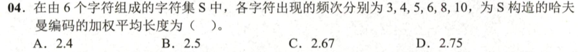
</div><p><span>解析：</span></p><div>
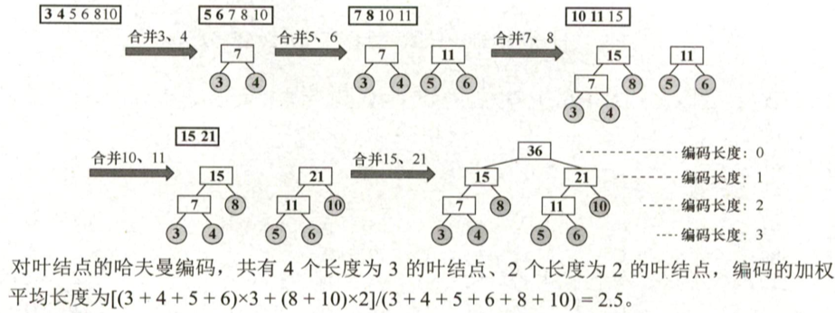
</div><p>&nbsp;</p></blockquote><h3 id='并查集'><span>并查集</span></h3><p><span>存储结构：树的双亲表示法</span></p><h4 id='find时间复杂度'><span>Find()时间复杂度</span></h4><figure><table><thead><tr><th>&nbsp;</th><th><span>无优化</span></th><th><span>Union优化</span></th><th><span>Find优化(压缩路径)</span></th></tr></thead><tbody><tr><td><strong><span>复杂度</span></strong></td><td><mjx-container class="MathJax" jax="SVG" style="position: relative;"><svg xmlns="http://www.w3.org/2000/svg" width="4.844ex" height="2.262ex" role="img" focusable="false" viewBox="0 -750 2141 1000" xmlns:xlink="http://www.w3.org/1999/xlink" aria-hidden="true" style="vertical-align: -0.566ex;"><defs><path id="MJX-450-TEX-I-1D442" d="M740 435Q740 320 676 213T511 42T304 -22Q207 -22 138 35T51 201Q50 209 50 244Q50 346 98 438T227 601Q351 704 476 704Q514 704 524 703Q621 689 680 617T740 435ZM637 476Q637 565 591 615T476 665Q396 665 322 605Q242 542 200 428T157 216Q157 126 200 73T314 19Q404 19 485 98T608 313Q637 408 637 476Z"></path><path id="MJX-450-TEX-N-28" d="M94 250Q94 319 104 381T127 488T164 576T202 643T244 695T277 729T302 750H315H319Q333 750 333 741Q333 738 316 720T275 667T226 581T184 443T167 250T184 58T225 -81T274 -167T316 -220T333 -241Q333 -250 318 -250H315H302L274 -226Q180 -141 137 -14T94 250Z"></path><path id="MJX-450-TEX-I-1D45B" d="M21 287Q22 293 24 303T36 341T56 388T89 425T135 442Q171 442 195 424T225 390T231 369Q231 367 232 367L243 378Q304 442 382 442Q436 442 469 415T503 336T465 179T427 52Q427 26 444 26Q450 26 453 27Q482 32 505 65T540 145Q542 153 560 153Q580 153 580 145Q580 144 576 130Q568 101 554 73T508 17T439 -10Q392 -10 371 17T350 73Q350 92 386 193T423 345Q423 404 379 404H374Q288 404 229 303L222 291L189 157Q156 26 151 16Q138 -11 108 -11Q95 -11 87 -5T76 7T74 17Q74 30 112 180T152 343Q153 348 153 366Q153 405 129 405Q91 405 66 305Q60 285 60 284Q58 278 41 278H27Q21 284 21 287Z"></path><path id="MJX-450-TEX-N-29" d="M60 749L64 750Q69 750 74 750H86L114 726Q208 641 251 514T294 250Q294 182 284 119T261 12T224 -76T186 -143T145 -194T113 -227T90 -246Q87 -249 86 -250H74Q66 -250 63 -250T58 -247T55 -238Q56 -237 66 -225Q221 -64 221 250T66 725Q56 737 55 738Q55 746 60 749Z"></path></defs><g stroke="currentColor" fill="currentColor" stroke-width="0" transform="scale(1,-1)"><g data-mml-node="math"><g data-mml-node="mi"><use data-c="1D442" xlink:href="#MJX-450-TEX-I-1D442"></use></g><g data-mml-node="mo" transform="translate(763,0)"><use data-c="28" xlink:href="#MJX-450-TEX-N-28"></use></g><g data-mml-node="mi" transform="translate(1152,0)"><use data-c="1D45B" xlink:href="#MJX-450-TEX-I-1D45B"></use></g><g data-mml-node="mo" transform="translate(1752,0)"><use data-c="29" xlink:href="#MJX-450-TEX-N-29"></use></g></g></g></svg><mjx-assistive-mml unselectable="on" display="inline"><math xmlns="http://www.w3.org/1998/Math/MathML"><mi>O</mi><mo stretchy="false">(</mo><mi>n</mi><mo stretchy="false">)</mo></math></mjx-assistive-mml></mjx-container><script type="math/tex">O(n)</script></td><td><mjx-container class="MathJax" jax="SVG" style="position: relative;"><svg xmlns="http://www.w3.org/2000/svg" width="9.1ex" height="2.262ex" role="img" focusable="false" viewBox="0 -750 4022.2 1000" xmlns:xlink="http://www.w3.org/1999/xlink" aria-hidden="true" style="vertical-align: -0.566ex;"><defs><path id="MJX-446-TEX-I-1D442" d="M740 435Q740 320 676 213T511 42T304 -22Q207 -22 138 35T51 201Q50 209 50 244Q50 346 98 438T227 601Q351 704 476 704Q514 704 524 703Q621 689 680 617T740 435ZM637 476Q637 565 591 615T476 665Q396 665 322 605Q242 542 200 428T157 216Q157 126 200 73T314 19Q404 19 485 98T608 313Q637 408 637 476Z"></path><path id="MJX-446-TEX-N-28" d="M94 250Q94 319 104 381T127 488T164 576T202 643T244 695T277 729T302 750H315H319Q333 750 333 741Q333 738 316 720T275 667T226 581T184 443T167 250T184 58T225 -81T274 -167T316 -220T333 -241Q333 -250 318 -250H315H302L274 -226Q180 -141 137 -14T94 250Z"></path><path id="MJX-446-TEX-N-6C" d="M42 46H56Q95 46 103 60V68Q103 77 103 91T103 124T104 167T104 217T104 272T104 329Q104 366 104 407T104 482T104 542T103 586T103 603Q100 622 89 628T44 637H26V660Q26 683 28 683L38 684Q48 685 67 686T104 688Q121 689 141 690T171 693T182 694H185V379Q185 62 186 60Q190 52 198 49Q219 46 247 46H263V0H255L232 1Q209 2 183 2T145 3T107 3T57 1L34 0H26V46H42Z"></path><path id="MJX-446-TEX-N-6F" d="M28 214Q28 309 93 378T250 448Q340 448 405 380T471 215Q471 120 407 55T250 -10Q153 -10 91 57T28 214ZM250 30Q372 30 372 193V225V250Q372 272 371 288T364 326T348 362T317 390T268 410Q263 411 252 411Q222 411 195 399Q152 377 139 338T126 246V226Q126 130 145 91Q177 30 250 30Z"></path><path id="MJX-446-TEX-N-67" d="M329 409Q373 453 429 453Q459 453 472 434T485 396Q485 382 476 371T449 360Q416 360 412 390Q410 404 415 411Q415 412 416 414V415Q388 412 363 393Q355 388 355 386Q355 385 359 381T368 369T379 351T388 325T392 292Q392 230 343 187T222 143Q172 143 123 171Q112 153 112 133Q112 98 138 81Q147 75 155 75T227 73Q311 72 335 67Q396 58 431 26Q470 -13 470 -72Q470 -139 392 -175Q332 -206 250 -206Q167 -206 107 -175Q29 -140 29 -75Q29 -39 50 -15T92 18L103 24Q67 55 67 108Q67 155 96 193Q52 237 52 292Q52 355 102 398T223 442Q274 442 318 416L329 409ZM299 343Q294 371 273 387T221 404Q192 404 171 388T145 343Q142 326 142 292Q142 248 149 227T179 192Q196 182 222 182Q244 182 260 189T283 207T294 227T299 242Q302 258 302 292T299 343ZM403 -75Q403 -50 389 -34T348 -11T299 -2T245 0H218Q151 0 138 -6Q118 -15 107 -34T95 -74Q95 -84 101 -97T122 -127T170 -155T250 -167Q319 -167 361 -139T403 -75Z"></path><path id="MJX-446-TEX-N-32" d="M109 429Q82 429 66 447T50 491Q50 562 103 614T235 666Q326 666 387 610T449 465Q449 422 429 383T381 315T301 241Q265 210 201 149L142 93L218 92Q375 92 385 97Q392 99 409 186V189H449V186Q448 183 436 95T421 3V0H50V19V31Q50 38 56 46T86 81Q115 113 136 137Q145 147 170 174T204 211T233 244T261 278T284 308T305 340T320 369T333 401T340 431T343 464Q343 527 309 573T212 619Q179 619 154 602T119 569T109 550Q109 549 114 549Q132 549 151 535T170 489Q170 464 154 447T109 429Z"></path><path id="MJX-446-TEX-N-2061" d=""></path><path id="MJX-446-TEX-I-1D45B" d="M21 287Q22 293 24 303T36 341T56 388T89 425T135 442Q171 442 195 424T225 390T231 369Q231 367 232 367L243 378Q304 442 382 442Q436 442 469 415T503 336T465 179T427 52Q427 26 444 26Q450 26 453 27Q482 32 505 65T540 145Q542 153 560 153Q580 153 580 145Q580 144 576 130Q568 101 554 73T508 17T439 -10Q392 -10 371 17T350 73Q350 92 386 193T423 345Q423 404 379 404H374Q288 404 229 303L222 291L189 157Q156 26 151 16Q138 -11 108 -11Q95 -11 87 -5T76 7T74 17Q74 30 112 180T152 343Q153 348 153 366Q153 405 129 405Q91 405 66 305Q60 285 60 284Q58 278 41 278H27Q21 284 21 287Z"></path><path id="MJX-446-TEX-N-29" d="M60 749L64 750Q69 750 74 750H86L114 726Q208 641 251 514T294 250Q294 182 284 119T261 12T224 -76T186 -143T145 -194T113 -227T90 -246Q87 -249 86 -250H74Q66 -250 63 -250T58 -247T55 -238Q56 -237 66 -225Q221 -64 221 250T66 725Q56 737 55 738Q55 746 60 749Z"></path></defs><g stroke="currentColor" fill="currentColor" stroke-width="0" transform="scale(1,-1)"><g data-mml-node="math"><g data-mml-node="mi"><use data-c="1D442" xlink:href="#MJX-446-TEX-I-1D442"></use></g><g data-mml-node="mo" transform="translate(763,0)"><use data-c="28" xlink:href="#MJX-446-TEX-N-28"></use></g><g data-mml-node="msub" transform="translate(1152,0)"><g data-mml-node="mi"><use data-c="6C" xlink:href="#MJX-446-TEX-N-6C"></use><use data-c="6F" xlink:href="#MJX-446-TEX-N-6F" transform="translate(278,0)"></use><use data-c="67" xlink:href="#MJX-446-TEX-N-67" transform="translate(778,0)"></use></g><g data-mml-node="mn" transform="translate(1311,-241.4) scale(0.707)"><use data-c="32" xlink:href="#MJX-446-TEX-N-32"></use></g></g><g data-mml-node="mo" transform="translate(2866.6,0)"><use data-c="2061" xlink:href="#MJX-446-TEX-N-2061"></use></g><g data-mml-node="mi" transform="translate(3033.2,0)"><use data-c="1D45B" xlink:href="#MJX-446-TEX-I-1D45B"></use></g><g data-mml-node="mo" transform="translate(3633.2,0)"><use data-c="29" xlink:href="#MJX-446-TEX-N-29"></use></g></g></g></svg><mjx-assistive-mml unselectable="on" display="inline"><math xmlns="http://www.w3.org/1998/Math/MathML"><mi>O</mi><mo stretchy="false">(</mo><msub><mi>log</mi><mn>2</mn></msub><mo data-mjx-texclass="NONE">⁡</mo><mi>n</mi><mo stretchy="false">)</mo></math></mjx-assistive-mml></mjx-container><script type="math/tex">O(\log_2n)</script></td><td><mjx-container class="MathJax" jax="SVG" style="position: relative;"><svg xmlns="http://www.w3.org/2000/svg" width="8.052ex" height="2.262ex" role="img" focusable="false" viewBox="0 -750 3559 1000" xmlns:xlink="http://www.w3.org/1999/xlink" aria-hidden="true" style="vertical-align: -0.566ex;"><defs><path id="MJX-447-TEX-I-1D442" d="M740 435Q740 320 676 213T511 42T304 -22Q207 -22 138 35T51 201Q50 209 50 244Q50 346 98 438T227 601Q351 704 476 704Q514 704 524 703Q621 689 680 617T740 435ZM637 476Q637 565 591 615T476 665Q396 665 322 605Q242 542 200 428T157 216Q157 126 200 73T314 19Q404 19 485 98T608 313Q637 408 637 476Z"></path><path id="MJX-447-TEX-N-28" d="M94 250Q94 319 104 381T127 488T164 576T202 643T244 695T277 729T302 750H315H319Q333 750 333 741Q333 738 316 720T275 667T226 581T184 443T167 250T184 58T225 -81T274 -167T316 -220T333 -241Q333 -250 318 -250H315H302L274 -226Q180 -141 137 -14T94 250Z"></path><path id="MJX-447-TEX-I-1D6FC" d="M34 156Q34 270 120 356T309 442Q379 442 421 402T478 304Q484 275 485 237V208Q534 282 560 374Q564 388 566 390T582 393Q603 393 603 385Q603 376 594 346T558 261T497 161L486 147L487 123Q489 67 495 47T514 26Q528 28 540 37T557 60Q559 67 562 68T577 70Q597 70 597 62Q597 56 591 43Q579 19 556 5T512 -10H505Q438 -10 414 62L411 69L400 61Q390 53 370 41T325 18T267 -2T203 -11Q124 -11 79 39T34 156ZM208 26Q257 26 306 47T379 90L403 112Q401 255 396 290Q382 405 304 405Q235 405 183 332Q156 292 139 224T121 120Q121 71 146 49T208 26Z"></path><path id="MJX-447-TEX-I-1D45B" d="M21 287Q22 293 24 303T36 341T56 388T89 425T135 442Q171 442 195 424T225 390T231 369Q231 367 232 367L243 378Q304 442 382 442Q436 442 469 415T503 336T465 179T427 52Q427 26 444 26Q450 26 453 27Q482 32 505 65T540 145Q542 153 560 153Q580 153 580 145Q580 144 576 130Q568 101 554 73T508 17T439 -10Q392 -10 371 17T350 73Q350 92 386 193T423 345Q423 404 379 404H374Q288 404 229 303L222 291L189 157Q156 26 151 16Q138 -11 108 -11Q95 -11 87 -5T76 7T74 17Q74 30 112 180T152 343Q153 348 153 366Q153 405 129 405Q91 405 66 305Q60 285 60 284Q58 278 41 278H27Q21 284 21 287Z"></path><path id="MJX-447-TEX-N-29" d="M60 749L64 750Q69 750 74 750H86L114 726Q208 641 251 514T294 250Q294 182 284 119T261 12T224 -76T186 -143T145 -194T113 -227T90 -246Q87 -249 86 -250H74Q66 -250 63 -250T58 -247T55 -238Q56 -237 66 -225Q221 -64 221 250T66 725Q56 737 55 738Q55 746 60 749Z"></path></defs><g stroke="currentColor" fill="currentColor" stroke-width="0" transform="scale(1,-1)"><g data-mml-node="math"><g data-mml-node="mi"><use data-c="1D442" xlink:href="#MJX-447-TEX-I-1D442"></use></g><g data-mml-node="mo" transform="translate(763,0)"><use data-c="28" xlink:href="#MJX-447-TEX-N-28"></use></g><g data-mml-node="mi" transform="translate(1152,0)"><use data-c="1D6FC" xlink:href="#MJX-447-TEX-I-1D6FC"></use></g><g data-mml-node="mo" transform="translate(1792,0)"><use data-c="28" xlink:href="#MJX-447-TEX-N-28"></use></g><g data-mml-node="mi" transform="translate(2181,0)"><use data-c="1D45B" xlink:href="#MJX-447-TEX-I-1D45B"></use></g><g data-mml-node="mo" transform="translate(2781,0)"><use data-c="29" xlink:href="#MJX-447-TEX-N-29"></use></g><g data-mml-node="mo" transform="translate(3170,0)"><use data-c="29" xlink:href="#MJX-447-TEX-N-29"></use></g></g></g></svg><mjx-assistive-mml unselectable="on" display="inline"><math xmlns="http://www.w3.org/1998/Math/MathML"><mi>O</mi><mo stretchy="false">(</mo><mi>α</mi><mo stretchy="false">(</mo><mi>n</mi><mo stretchy="false">)</mo><mo stretchy="false">)</mo></math></mjx-assistive-mml></mjx-container><script type="math/tex">O(\alpha(n))</script></td></tr><tr><td><strong><span>原理</span></strong></td><td>&nbsp;</td><td><span>在合并的时候总是将较矮的树合并到较高的树下</span></td><td><span>查找的时候先找到根，然后再将查找路径上的所有结点都挂到</span><strong><span>根上</span></strong></td></tr></tbody></table></figure><h4 id='并查集的应用'><span>并查集的应用</span></h4><ul><li><span>克鲁斯卡尔算法求</span><strong><span>最小生成树</span></strong></li><li><span>判断无向图</span><strong><span>连通性</span></strong></li><li><span>判断无向图</span><strong><span>是否有环</span></strong></li></ul><h3 id='bst二叉搜索树'><span>BST二叉搜索树</span></h3><h4 id='定义-1'><span>定义：</span></h4><ul><li><mjx-container class="MathJax" jax="SVG" style="position: relative;"><svg xmlns="http://www.w3.org/2000/svg" width="36.616ex" height="2.262ex" role="img" focusable="false" viewBox="0 -750 16184.2 1000" xmlns:xlink="http://www.w3.org/1999/xlink" aria-hidden="true" style="vertical-align: -0.566ex;"><defs><path id="MJX-448-TEX-N-28" d="M94 250Q94 319 104 381T127 488T164 576T202 643T244 695T277 729T302 750H315H319Q333 750 333 741Q333 738 316 720T275 667T226 581T184 443T167 250T184 58T225 -81T274 -167T316 -220T333 -241Q333 -250 318 -250H315H302L274 -226Q180 -141 137 -14T94 250Z"></path><path id="MJX-448-TEX-N-29" d="M60 749L64 750Q69 750 74 750H86L114 726Q208 641 251 514T294 250Q294 182 284 119T261 12T224 -76T186 -143T145 -194T113 -227T90 -246Q87 -249 86 -250H74Q66 -250 63 -250T58 -247T55 -238Q56 -237 66 -225Q221 -64 221 250T66 725Q56 737 55 738Q55 746 60 749Z"></path></defs><g stroke="currentColor" fill="currentColor" stroke-width="0" transform="scale(1,-1)"><g data-mml-node="math"><g data-mml-node="mtext"><text data-variant="normal" transform="scale(1,-1)" font-size="884px" font-family="serif">数</text></g><g data-mml-node="mtext" transform="translate(826.9,0)"><text data-variant="normal" transform="scale(1,-1)" font-size="884px" font-family="serif">据</text></g><g data-mml-node="mtext" transform="translate(1653.8,0)"><text data-variant="normal" transform="scale(1,-1)" font-size="884px" font-family="serif">的</text></g><g data-mml-node="mtext" transform="translate(2480.7,0)"><text data-variant="normal" transform="scale(1,-1)" font-size="884px" font-family="serif">中</text></g><g data-mml-node="mtext" transform="translate(3307.6,0)"><text data-variant="normal" transform="scale(1,-1)" font-size="884px" font-family="serif">序</text></g><g data-mml-node="mtext" transform="translate(4178,0)"><text data-variant="normal" transform="scale(1,-1)" font-size="884px" font-family="serif">遍</text></g><g data-mml-node="mtext" transform="translate(5048.4,0)"><text data-variant="normal" transform="scale(1,-1)" font-size="884px" font-family="serif">历</text></g><g data-mml-node="mtext" transform="translate(5918.8,0)"><text data-variant="normal" transform="scale(1,-1)" font-size="884px" font-family="serif">呈</text></g><g data-mml-node="mtext" transform="translate(6789.2,0)"><text data-variant="normal" transform="scale(1,-1)" font-size="884px" font-family="serif">有</text></g><g data-mml-node="mtext" transform="translate(7616.1,0)"><text data-variant="normal" transform="scale(1,-1)" font-size="884px" font-family="serif">序</text></g><g data-mml-node="mtext" transform="translate(8486.5,0)"><text data-variant="normal" transform="scale(1,-1)" font-size="884px" font-family="serif">排</text></g><g data-mml-node="mtext" transform="translate(9356.9,0)"><text data-variant="normal" transform="scale(1,-1)" font-size="884px" font-family="serif">列</text></g><g data-mml-node="mo" transform="translate(10183.8,0)"><use data-c="28" xlink:href="#MJX-448-TEX-N-28"></use></g><g data-mml-node="mtext" transform="translate(10572.8,0)"><text data-variant="normal" transform="scale(1,-1)" font-size="884px" font-family="serif">可</text></g><g data-mml-node="mtext" transform="translate(11443.2,0)"><text data-variant="normal" transform="scale(1,-1)" font-size="884px" font-family="serif">升</text></g><g data-mml-node="mtext" transform="translate(12313.6,0)"><text data-variant="normal" transform="scale(1,-1)" font-size="884px" font-family="serif">序</text></g><g data-mml-node="mtext" transform="translate(13184,0)"><text data-variant="normal" transform="scale(1,-1)" font-size="884px" font-family="serif">可</text></g><g data-mml-node="mtext" transform="translate(14054.4,0)"><text data-variant="normal" transform="scale(1,-1)" font-size="884px" font-family="serif">降</text></g><g data-mml-node="mtext" transform="translate(14924.8,0)"><text data-variant="normal" transform="scale(1,-1)" font-size="884px" font-family="serif">序</text></g><g data-mml-node="mo" transform="translate(15795.2,0)"><use data-c="29" xlink:href="#MJX-448-TEX-N-29"></use></g></g></g></svg><mjx-assistive-mml unselectable="on" display="inline"><math xmlns="http://www.w3.org/1998/Math/MathML"><mtext>数</mtext><mtext>据</mtext><mtext>的</mtext><mtext>中</mtext><mtext>序</mtext><mtext>遍</mtext><mtext>历</mtext><mtext>呈</mtext><mtext>有</mtext><mtext>序</mtext><mtext>排</mtext><mtext>列</mtext><mo stretchy="false">(</mo><mtext>可</mtext><mtext>升</mtext><mtext>序</mtext><mtext>可</mtext><mtext>降</mtext><mtext>序</mtext><mo stretchy="false">)</mo></math></mjx-assistive-mml></mjx-container><script type="math/tex">数据的中序遍历呈有序排列(可升序可降序)</script></li></ul><h4 id='插入操作'><strong><span>插入操作：</span></strong></h4><p><span>常规中序搜索</span></p><h4 id='删除操作'><span>删除操作：</span></h4><ul><li><p><strong><span>叶结点：</span></strong><span>直接删除</span></p></li><li><p><strong><span>单子树：</span></strong><span>用孩子代替自己的位置</span></p><div>
  
</div></li><li><p><strong><span>双子树：</span></strong><span>用中序遍历中的</span><strong><span>前驱（或后继）</span></strong><span>代替自己的位置</span></p><div>
  
</div></li></ul><h4 id='查找效率分析'><span>查找效率分析：</span></h4><ul><li><strong><span>最优：</span></strong><mjx-container class="MathJax" jax="SVG" style="position: relative;"><svg xmlns="http://www.w3.org/2000/svg" width="8.682ex" height="2.262ex" role="img" focusable="false" viewBox="0 -750 3837.6 1000" xmlns:xlink="http://www.w3.org/1999/xlink" aria-hidden="true" style="vertical-align: -0.566ex;"><defs><path id="MJX-449-TEX-I-1D442" d="M740 435Q740 320 676 213T511 42T304 -22Q207 -22 138 35T51 201Q50 209 50 244Q50 346 98 438T227 601Q351 704 476 704Q514 704 524 703Q621 689 680 617T740 435ZM637 476Q637 565 591 615T476 665Q396 665 322 605Q242 542 200 428T157 216Q157 126 200 73T314 19Q404 19 485 98T608 313Q637 408 637 476Z"></path><path id="MJX-449-TEX-N-28" d="M94 250Q94 319 104 381T127 488T164 576T202 643T244 695T277 729T302 750H315H319Q333 750 333 741Q333 738 316 720T275 667T226 581T184 443T167 250T184 58T225 -81T274 -167T316 -220T333 -241Q333 -250 318 -250H315H302L274 -226Q180 -141 137 -14T94 250Z"></path><path id="MJX-449-TEX-I-1D459" d="M117 59Q117 26 142 26Q179 26 205 131Q211 151 215 152Q217 153 225 153H229Q238 153 241 153T246 151T248 144Q247 138 245 128T234 90T214 43T183 6T137 -11Q101 -11 70 11T38 85Q38 97 39 102L104 360Q167 615 167 623Q167 626 166 628T162 632T157 634T149 635T141 636T132 637T122 637Q112 637 109 637T101 638T95 641T94 647Q94 649 96 661Q101 680 107 682T179 688Q194 689 213 690T243 693T254 694Q266 694 266 686Q266 675 193 386T118 83Q118 81 118 75T117 65V59Z"></path><path id="MJX-449-TEX-I-1D45C" d="M201 -11Q126 -11 80 38T34 156Q34 221 64 279T146 380Q222 441 301 441Q333 441 341 440Q354 437 367 433T402 417T438 387T464 338T476 268Q476 161 390 75T201 -11ZM121 120Q121 70 147 48T206 26Q250 26 289 58T351 142Q360 163 374 216T388 308Q388 352 370 375Q346 405 306 405Q243 405 195 347Q158 303 140 230T121 120Z"></path><path id="MJX-449-TEX-I-1D454" d="M311 43Q296 30 267 15T206 0Q143 0 105 45T66 160Q66 265 143 353T314 442Q361 442 401 394L404 398Q406 401 409 404T418 412T431 419T447 422Q461 422 470 413T480 394Q480 379 423 152T363 -80Q345 -134 286 -169T151 -205Q10 -205 10 -137Q10 -111 28 -91T74 -71Q89 -71 102 -80T116 -111Q116 -121 114 -130T107 -144T99 -154T92 -162L90 -164H91Q101 -167 151 -167Q189 -167 211 -155Q234 -144 254 -122T282 -75Q288 -56 298 -13Q311 35 311 43ZM384 328L380 339Q377 350 375 354T369 368T359 382T346 393T328 402T306 405Q262 405 221 352Q191 313 171 233T151 117Q151 38 213 38Q269 38 323 108L331 118L384 328Z"></path><path id="MJX-449-TEX-N-32" d="M109 429Q82 429 66 447T50 491Q50 562 103 614T235 666Q326 666 387 610T449 465Q449 422 429 383T381 315T301 241Q265 210 201 149L142 93L218 92Q375 92 385 97Q392 99 409 186V189H449V186Q448 183 436 95T421 3V0H50V19V31Q50 38 56 46T86 81Q115 113 136 137Q145 147 170 174T204 211T233 244T261 278T284 308T305 340T320 369T333 401T340 431T343 464Q343 527 309 573T212 619Q179 619 154 602T119 569T109 550Q109 549 114 549Q132 549 151 535T170 489Q170 464 154 447T109 429Z"></path><path id="MJX-449-TEX-I-1D45B" d="M21 287Q22 293 24 303T36 341T56 388T89 425T135 442Q171 442 195 424T225 390T231 369Q231 367 232 367L243 378Q304 442 382 442Q436 442 469 415T503 336T465 179T427 52Q427 26 444 26Q450 26 453 27Q482 32 505 65T540 145Q542 153 560 153Q580 153 580 145Q580 144 576 130Q568 101 554 73T508 17T439 -10Q392 -10 371 17T350 73Q350 92 386 193T423 345Q423 404 379 404H374Q288 404 229 303L222 291L189 157Q156 26 151 16Q138 -11 108 -11Q95 -11 87 -5T76 7T74 17Q74 30 112 180T152 343Q153 348 153 366Q153 405 129 405Q91 405 66 305Q60 285 60 284Q58 278 41 278H27Q21 284 21 287Z"></path><path id="MJX-449-TEX-N-29" d="M60 749L64 750Q69 750 74 750H86L114 726Q208 641 251 514T294 250Q294 182 284 119T261 12T224 -76T186 -143T145 -194T113 -227T90 -246Q87 -249 86 -250H74Q66 -250 63 -250T58 -247T55 -238Q56 -237 66 -225Q221 -64 221 250T66 725Q56 737 55 738Q55 746 60 749Z"></path></defs><g stroke="currentColor" fill="currentColor" stroke-width="0" transform="scale(1,-1)"><g data-mml-node="math"><g data-mml-node="mi"><use data-c="1D442" xlink:href="#MJX-449-TEX-I-1D442"></use></g><g data-mml-node="mo" transform="translate(763,0)"><use data-c="28" xlink:href="#MJX-449-TEX-N-28"></use></g><g data-mml-node="mi" transform="translate(1152,0)"><use data-c="1D459" xlink:href="#MJX-449-TEX-I-1D459"></use></g><g data-mml-node="mi" transform="translate(1450,0)"><use data-c="1D45C" xlink:href="#MJX-449-TEX-I-1D45C"></use></g><g data-mml-node="msub" transform="translate(1935,0)"><g data-mml-node="mi"><use data-c="1D454" xlink:href="#MJX-449-TEX-I-1D454"></use></g><g data-mml-node="mn" transform="translate(510,-150) scale(0.707)"><use data-c="32" xlink:href="#MJX-449-TEX-N-32"></use></g></g><g data-mml-node="mi" transform="translate(2848.6,0)"><use data-c="1D45B" xlink:href="#MJX-449-TEX-I-1D45B"></use></g><g data-mml-node="mo" transform="translate(3448.6,0)"><use data-c="29" xlink:href="#MJX-449-TEX-N-29"></use></g></g></g></svg><mjx-assistive-mml unselectable="on" display="inline"><math xmlns="http://www.w3.org/1998/Math/MathML"><mi>O</mi><mo stretchy="false">(</mo><mi>l</mi><mi>o</mi><msub><mi>g</mi><mn>2</mn></msub><mi>n</mi><mo stretchy="false">)</mo></math></mjx-assistive-mml></mjx-container><script type="math/tex">O(log_2n)</script><span>  (平衡二叉树)</span></li><li><strong><span>最差：</span></strong><mjx-container class="MathJax" jax="SVG" style="position: relative;"><svg xmlns="http://www.w3.org/2000/svg" width="4.844ex" height="2.262ex" role="img" focusable="false" viewBox="0 -750 2141 1000" xmlns:xlink="http://www.w3.org/1999/xlink" aria-hidden="true" style="vertical-align: -0.566ex;"><defs><path id="MJX-450-TEX-I-1D442" d="M740 435Q740 320 676 213T511 42T304 -22Q207 -22 138 35T51 201Q50 209 50 244Q50 346 98 438T227 601Q351 704 476 704Q514 704 524 703Q621 689 680 617T740 435ZM637 476Q637 565 591 615T476 665Q396 665 322 605Q242 542 200 428T157 216Q157 126 200 73T314 19Q404 19 485 98T608 313Q637 408 637 476Z"></path><path id="MJX-450-TEX-N-28" d="M94 250Q94 319 104 381T127 488T164 576T202 643T244 695T277 729T302 750H315H319Q333 750 333 741Q333 738 316 720T275 667T226 581T184 443T167 250T184 58T225 -81T274 -167T316 -220T333 -241Q333 -250 318 -250H315H302L274 -226Q180 -141 137 -14T94 250Z"></path><path id="MJX-450-TEX-I-1D45B" d="M21 287Q22 293 24 303T36 341T56 388T89 425T135 442Q171 442 195 424T225 390T231 369Q231 367 232 367L243 378Q304 442 382 442Q436 442 469 415T503 336T465 179T427 52Q427 26 444 26Q450 26 453 27Q482 32 505 65T540 145Q542 153 560 153Q580 153 580 145Q580 144 576 130Q568 101 554 73T508 17T439 -10Q392 -10 371 17T350 73Q350 92 386 193T423 345Q423 404 379 404H374Q288 404 229 303L222 291L189 157Q156 26 151 16Q138 -11 108 -11Q95 -11 87 -5T76 7T74 17Q74 30 112 180T152 343Q153 348 153 366Q153 405 129 405Q91 405 66 305Q60 285 60 284Q58 278 41 278H27Q21 284 21 287Z"></path><path id="MJX-450-TEX-N-29" d="M60 749L64 750Q69 750 74 750H86L114 726Q208 641 251 514T294 250Q294 182 284 119T261 12T224 -76T186 -143T145 -194T113 -227T90 -246Q87 -249 86 -250H74Q66 -250 63 -250T58 -247T55 -238Q56 -237 66 -225Q221 -64 221 250T66 725Q56 737 55 738Q55 746 60 749Z"></path></defs><g stroke="currentColor" fill="currentColor" stroke-width="0" transform="scale(1,-1)"><g data-mml-node="math"><g data-mml-node="mi"><use data-c="1D442" xlink:href="#MJX-450-TEX-I-1D442"></use></g><g data-mml-node="mo" transform="translate(763,0)"><use data-c="28" xlink:href="#MJX-450-TEX-N-28"></use></g><g data-mml-node="mi" transform="translate(1152,0)"><use data-c="1D45B" xlink:href="#MJX-450-TEX-I-1D45B"></use></g><g data-mml-node="mo" transform="translate(1752,0)"><use data-c="29" xlink:href="#MJX-450-TEX-N-29"></use></g></g></g></svg><mjx-assistive-mml unselectable="on" display="inline"><math xmlns="http://www.w3.org/1998/Math/MathML"><mi>O</mi><mo stretchy="false">(</mo><mi>n</mi><mo stretchy="false">)</mo></math></mjx-assistive-mml></mjx-container><script type="math/tex">O(n)</script><span>  (单分支树)</span></li></ul><h4 id='考点bst树的删除再插入'><span>【考点】BST树的删除再插入</span></h4><ul><li><span>如果被删除的</span><strong><span>是叶结点</span></strong><span>，重新插入后</span><strong><u><span>一定相同</span></u></strong></li><li><span>如果被删除的</span><strong><span>不是叶结点</span></strong><span>，重新插入后</span><strong><u><span>一定不同</span></u></strong></li></ul><p><mjx-container class="MathJax" jax="SVG" style="position: relative;"><svg xmlns="http://www.w3.org/2000/svg" width="5.809ex" height="2.149ex" role="img" focusable="false" viewBox="0 -750 2567.7 950" xmlns:xlink="http://www.w3.org/1999/xlink" aria-hidden="true" style="vertical-align: -0.452ex;"><defs></defs><g stroke="currentColor" fill="currentColor" stroke-width="0" transform="scale(1,-1)"><g data-mml-node="math"><g data-mml-node="mtext"><text data-variant="normal" transform="scale(1,-1)" font-size="884px" font-family="serif">例</text></g><g data-mml-node="mtext" transform="translate(870.4,0)"><text data-variant="normal" transform="scale(1,-1)" font-size="884px" font-family="serif">题</text></g><g data-mml-node="mi" transform="translate(1740.8,0)"><text data-variant="italic" transform="scale(1,-1)" font-size="884px" font-family="serif" font-style="italic">：</text></g></g></g></svg><mjx-assistive-mml unselectable="on" display="inline"><math xmlns="http://www.w3.org/1998/Math/MathML"><mtext>例</mtext><mtext>题</mtext><mi>：</mi></math></mjx-assistive-mml></mjx-container><script type="math/tex">例题：</script></p><blockquote><p><span>【13年T6】</span></p><div>

</div><p><mjx-container class="MathJax" jax="SVG" style="position: relative;"><svg xmlns="http://www.w3.org/2000/svg" width="7.529ex" height="2.149ex" role="img" focusable="false" viewBox="0 -750 3327.7 950" xmlns:xlink="http://www.w3.org/1999/xlink" aria-hidden="true" style="vertical-align: -0.452ex;"><defs><path id="MJX-452-TEX-I-1D436" d="M50 252Q50 367 117 473T286 641T490 704Q580 704 633 653Q642 643 648 636T656 626L657 623Q660 623 684 649Q691 655 699 663T715 679T725 690L740 705H746Q760 705 760 698Q760 694 728 561Q692 422 692 421Q690 416 687 415T669 413H653Q647 419 647 422Q647 423 648 429T650 449T651 481Q651 552 619 605T510 659Q484 659 454 652T382 628T299 572T226 479Q194 422 175 346T156 222Q156 108 232 58Q280 24 350 24Q441 24 512 92T606 240Q610 253 612 255T628 257Q648 257 648 248Q648 243 647 239Q618 132 523 55T319 -22Q206 -22 128 53T50 252Z"></path></defs><g stroke="currentColor" fill="currentColor" stroke-width="0" transform="scale(1,-1)"><g data-mml-node="math"><g data-mml-node="mtext"><text data-variant="normal" transform="scale(1,-1)" font-size="884px" font-family="serif">答</text></g><g data-mml-node="mtext" transform="translate(870.4,0)"><text data-variant="normal" transform="scale(1,-1)" font-size="884px" font-family="serif">案</text></g><g data-mml-node="mi" transform="translate(1740.8,0)"><text data-variant="italic" transform="scale(1,-1)" font-size="884px" font-family="serif" font-style="italic">：</text></g><g data-mml-node="mi" transform="translate(2567.7,0)"><use data-c="1D436" xlink:href="#MJX-452-TEX-I-1D436"></use></g></g></g></svg><mjx-assistive-mml unselectable="on" display="inline"><math xmlns="http://www.w3.org/1998/Math/MathML"><mtext>答</mtext><mtext>案</mtext><mi>：</mi><mi>C</mi></math></mjx-assistive-mml></mjx-container><script type="math/tex">答案：C</script></p></blockquote><p>&nbsp;</p><h3 id='avl平衡二叉树'><span>AVL平衡二叉树</span></h3><h4 id='定义-2'><span>定义：</span></h4><ul><li><mjx-container class="MathJax" jax="SVG" style="position: relative;"><svg xmlns="http://www.w3.org/2000/svg" width="22.933ex" height="2.261ex" role="img" focusable="false" viewBox="0 -750 10136.2 999.5" xmlns:xlink="http://www.w3.org/1999/xlink" aria-hidden="true" style="vertical-align: -0.564ex;"><defs><path id="MJX-453-TEX-N-7C" d="M139 -249H137Q125 -249 119 -235V251L120 737Q130 750 139 750Q152 750 159 735V-235Q151 -249 141 -249H139Z"></path><path id="MJX-453-TEX-N-2264" d="M674 636Q682 636 688 630T694 615T687 601Q686 600 417 472L151 346L399 228Q687 92 691 87Q694 81 694 76Q694 58 676 56H670L382 192Q92 329 90 331Q83 336 83 348Q84 359 96 365Q104 369 382 500T665 634Q669 636 674 636ZM84 -118Q84 -108 99 -98H678Q694 -104 694 -118Q694 -130 679 -138H98Q84 -131 84 -118Z"></path><path id="MJX-453-TEX-N-31" d="M213 578L200 573Q186 568 160 563T102 556H83V602H102Q149 604 189 617T245 641T273 663Q275 666 285 666Q294 666 302 660V361L303 61Q310 54 315 52T339 48T401 46H427V0H416Q395 3 257 3Q121 3 100 0H88V46H114Q136 46 152 46T177 47T193 50T201 52T207 57T213 61V578Z"></path></defs><g stroke="currentColor" fill="currentColor" stroke-width="0" transform="scale(1,-1)"><g data-mml-node="math"><g data-mml-node="mtext"><text data-variant="normal" transform="scale(1,-1)" font-size="884px" font-family="serif">每</text></g><g data-mml-node="mtext" transform="translate(870.4,0)"><text data-variant="normal" transform="scale(1,-1)" font-size="884px" font-family="serif">个</text></g><g data-mml-node="mtext" transform="translate(1697.3,0)"><text data-variant="normal" transform="scale(1,-1)" font-size="884px" font-family="serif">结</text></g><g data-mml-node="mtext" transform="translate(2567.7,0)"><text data-variant="normal" transform="scale(1,-1)" font-size="884px" font-family="serif">点</text></g><g data-mml-node="mtext" transform="translate(3438.1,0)"><text data-variant="normal" transform="scale(1,-1)" font-size="884px" font-family="serif">的</text></g><g data-mml-node="mo" transform="translate(4265,0) translate(0 -0.5)"><use data-c="7C" xlink:href="#MJX-453-TEX-N-7C"></use></g><g data-mml-node="mtext" transform="translate(4543,0)"><text data-variant="normal" transform="scale(1,-1)" font-size="884px" font-family="serif">平</text></g><g data-mml-node="mtext" transform="translate(5413.4,0)"><text data-variant="normal" transform="scale(1,-1)" font-size="884px" font-family="serif">衡</text></g><g data-mml-node="mtext" transform="translate(6283.8,0)"><text data-variant="normal" transform="scale(1,-1)" font-size="884px" font-family="serif">因</text></g><g data-mml-node="mtext" transform="translate(7154.2,0)"><text data-variant="normal" transform="scale(1,-1)" font-size="884px" font-family="serif">子</text></g><g data-mml-node="mo" transform="translate(8024.6,0) translate(0 -0.5)"><use data-c="7C" xlink:href="#MJX-453-TEX-N-7C"></use></g><g data-mml-node="mo" transform="translate(8580.4,0)"><use data-c="2264" xlink:href="#MJX-453-TEX-N-2264"></use></g><g data-mml-node="mn" transform="translate(9636.2,0)"><use data-c="31" xlink:href="#MJX-453-TEX-N-31"></use></g></g></g></svg><mjx-assistive-mml unselectable="on" display="inline"><math xmlns="http://www.w3.org/1998/Math/MathML"><mtext>每</mtext><mtext>个</mtext><mtext>结</mtext><mtext>点</mtext><mtext>的</mtext><mo data-mjx-texclass="ORD" stretchy="false">|</mo><mtext>平</mtext><mtext>衡</mtext><mtext>因</mtext><mtext>子</mtext><mo data-mjx-texclass="ORD" stretchy="false">|</mo><mo>≤</mo><mn>1</mn></math></mjx-assistive-mml></mjx-container><script type="math/tex">每个结点的|平衡因子|≤1</script></li></ul><blockquote><p><span>平衡因子：左右子树的</span><strong><span>高度差</span></strong></p></blockquote><h4 id='插入操作☆-1'><span>插入操作☆：</span></h4><p><span>核心就是从上往下找到</span><strong><span>第一个不平衡的结点</span></strong><span>，然后判断这个结点的哪一个子孙引起了不平衡，根据与子孙的相对位置，有着不同的插入操作</span></p><ul><li><p><strong><span>LL：</span></strong><span>右单旋</span></p><div>
  
</div></li><li><p><strong><span>RR：</span></strong><span>左单旋</span></p><div>
  
</div></li><li><p><strong><span>LR：</span></strong><span>左右双旋</span></p><div>
  
</div></li><li><p><strong><span>RL：</span></strong><span>右左双旋</span></p><div>
  
</div></li></ul><h4 id='删除操作☆'><span>删除操作☆：</span></h4><p><strong><span>原则：</span></strong><span>先删除再调平，删除规则同BST，顶替结点的时候，</span><strong><span>仅复制结点值，分支关系不动</span></strong></p><p><strong><span>调平步骤☆：</span></strong></p><ul><li><p><span>① 从删除结点开始一路向北，搜索</span><u><span>最近</span></u><strong><span>不平衡结点（大哥）</span></strong><span>【如果没有，则完结撒花】</span></p></li><li><p><span>② 找到【大哥】下面个头最高的【儿子】和【孙子】</span></p><div>
  
</div></li><li><p><span>③ 观察【孙子】与【大哥】之间的位置</span></p><blockquote><p><span>LL：右单旋</span></p><p><span>RR：左单旋</span></p><p><span>LR：左右双旋</span></p><p><span>RL：右左双旋</span></p></blockquote></li><li><p><span>④ 如果不平衡向上传导，则重复①</span></p></li></ul><p>&nbsp;</p><h4 id='考点avl树的删除再插入'><span>【考点】AVL树的删除再插入</span></h4><p><strong><span>牢记核心：</span></strong><span>在AVL树中，</span><u><span>无论什么情况都是有可能的</span></u><span>！！！⚠️</span></p><p><mjx-container class="MathJax" jax="SVG" style="position: relative;"><svg xmlns="http://www.w3.org/2000/svg" width="5.196ex" height="2.149ex" role="img" focusable="false" viewBox="0 -750 2296.6 950" xmlns:xlink="http://www.w3.org/1999/xlink" aria-hidden="true" style="vertical-align: -0.452ex;"><defs><path id="MJX-454-TEX-N-3A" d="M78 370Q78 394 95 412T138 430Q162 430 180 414T199 371Q199 346 182 328T139 310T96 327T78 370ZM78 60Q78 84 95 102T138 120Q162 120 180 104T199 61Q199 36 182 18T139 0T96 17T78 60Z"></path></defs><g stroke="currentColor" fill="currentColor" stroke-width="0" transform="scale(1,-1)"><g data-mml-node="math"><g data-mml-node="mtext"><text data-variant="normal" transform="scale(1,-1)" font-size="884px" font-family="serif">例</text></g><g data-mml-node="mtext" transform="translate(870.4,0)"><text data-variant="normal" transform="scale(1,-1)" font-size="884px" font-family="serif">题</text></g><g data-mml-node="mo" transform="translate(2018.6,0)"><use data-c="3A" xlink:href="#MJX-454-TEX-N-3A"></use></g></g></g></svg><mjx-assistive-mml unselectable="on" display="inline"><math xmlns="http://www.w3.org/1998/Math/MathML"><mtext>例</mtext><mtext>题</mtext><mo>:</mo></math></mjx-assistive-mml></mjx-container><script type="math/tex">例题:</script></p><blockquote><p><span>【2019年T4】</span></p><div>

</div><p>&nbsp;</p><p><mjx-container class="MathJax" jax="SVG" style="position: relative;"><svg xmlns="http://www.w3.org/2000/svg" width="5.809ex" height="2.149ex" role="img" focusable="false" viewBox="0 -750 2567.7 950" xmlns:xlink="http://www.w3.org/1999/xlink" aria-hidden="true" style="vertical-align: -0.452ex;"><defs></defs><g stroke="currentColor" fill="currentColor" stroke-width="0" transform="scale(1,-1)"><g data-mml-node="math"><g data-mml-node="mtext"><text data-variant="normal" transform="scale(1,-1)" font-size="884px" font-family="serif">解</text></g><g data-mml-node="mtext" transform="translate(870.4,0)"><text data-variant="normal" transform="scale(1,-1)" font-size="884px" font-family="serif">析</text></g><g data-mml-node="mi" transform="translate(1740.8,0)"><text data-variant="italic" transform="scale(1,-1)" font-size="884px" font-family="serif" font-style="italic">：</text></g></g></g></svg><mjx-assistive-mml unselectable="on" display="inline"><math xmlns="http://www.w3.org/1998/Math/MathML"><mtext>解</mtext><mtext>析</mtext><mi>：</mi></math></mjx-assistive-mml></mjx-container><script type="math/tex">解析：</script></p><p><span>I .✅：AVL树中</span><strong><span>什么情况都是有可能的</span></strong></p><p><span>II.反例：</span></p><div>

</div><p><span>III.经典反例，可以记一下：</span></p><div>

</div><p><span>所以最后答案选A</span></p></blockquote><h4 id='avl的树高⚠️'><span>AVL的树高⚠️</span></h4><p><mjx-container class="MathJax" jax="SVG" style="position: relative;"><svg xmlns="http://www.w3.org/2000/svg" width="30.818ex" height="2.167ex" role="img" focusable="false" viewBox="0 -750 13621.7 958" xmlns:xlink="http://www.w3.org/1999/xlink" aria-hidden="true" style="vertical-align: -0.471ex;"><defs><path id="MJX-456-TEX-I-1D45B" d="M21 287Q22 293 24 303T36 341T56 388T89 425T135 442Q171 442 195 424T225 390T231 369Q231 367 232 367L243 378Q304 442 382 442Q436 442 469 415T503 336T465 179T427 52Q427 26 444 26Q450 26 453 27Q482 32 505 65T540 145Q542 153 560 153Q580 153 580 145Q580 144 576 130Q568 101 554 73T508 17T439 -10Q392 -10 371 17T350 73Q350 92 386 193T423 345Q423 404 379 404H374Q288 404 229 303L222 291L189 157Q156 26 151 16Q138 -11 108 -11Q95 -11 87 -5T76 7T74 17Q74 30 112 180T152 343Q153 348 153 366Q153 405 129 405Q91 405 66 305Q60 285 60 284Q58 278 41 278H27Q21 284 21 287Z"></path><path id="MJX-456-TEX-I-210E" d="M137 683Q138 683 209 688T282 694Q294 694 294 685Q294 674 258 534Q220 386 220 383Q220 381 227 388Q288 442 357 442Q411 442 444 415T478 336Q478 285 440 178T402 50Q403 36 407 31T422 26Q450 26 474 56T513 138Q516 149 519 151T535 153Q555 153 555 145Q555 144 551 130Q535 71 500 33Q466 -10 419 -10H414Q367 -10 346 17T325 74Q325 90 361 192T398 345Q398 404 354 404H349Q266 404 205 306L198 293L164 158Q132 28 127 16Q114 -11 83 -11Q69 -11 59 -2T48 16Q48 30 121 320L195 616Q195 629 188 632T149 637H128Q122 643 122 645T124 664Q129 683 137 683Z"></path><path id="MJX-456-TEX-N-3D" d="M56 347Q56 360 70 367H707Q722 359 722 347Q722 336 708 328L390 327H72Q56 332 56 347ZM56 153Q56 168 72 173H708Q722 163 722 153Q722 140 707 133H70Q56 140 56 153Z"></path><path id="MJX-456-TEX-N-2212" d="M84 237T84 250T98 270H679Q694 262 694 250T679 230H98Q84 237 84 250Z"></path><path id="MJX-456-TEX-N-31" d="M213 578L200 573Q186 568 160 563T102 556H83V602H102Q149 604 189 617T245 641T273 663Q275 666 285 666Q294 666 302 660V361L303 61Q310 54 315 52T339 48T401 46H427V0H416Q395 3 257 3Q121 3 100 0H88V46H114Q136 46 152 46T177 47T193 50T201 52T207 57T213 61V578Z"></path><path id="MJX-456-TEX-N-2B" d="M56 237T56 250T70 270H369V420L370 570Q380 583 389 583Q402 583 409 568V270H707Q722 262 722 250T707 230H409V-68Q401 -82 391 -82H389H387Q375 -82 369 -68V230H70Q56 237 56 250Z"></path><path id="MJX-456-TEX-N-32" d="M109 429Q82 429 66 447T50 491Q50 562 103 614T235 666Q326 666 387 610T449 465Q449 422 429 383T381 315T301 241Q265 210 201 149L142 93L218 92Q375 92 385 97Q392 99 409 186V189H449V186Q448 183 436 95T421 3V0H50V19V31Q50 38 56 46T86 81Q115 113 136 137Q145 147 170 174T204 211T233 244T261 278T284 308T305 340T320 369T333 401T340 431T343 464Q343 527 309 573T212 619Q179 619 154 602T119 569T109 550Q109 549 114 549Q132 549 151 535T170 489Q170 464 154 447T109 429Z"></path></defs><g stroke="currentColor" fill="currentColor" stroke-width="0" transform="scale(1,-1)"><g data-mml-node="math"><g data-mml-node="mtext"><text data-variant="normal" transform="scale(1,-1)" font-size="884px" font-family="serif">重</text></g><g data-mml-node="mtext" transform="translate(870.4,0)"><text data-variant="normal" transform="scale(1,-1)" font-size="884px" font-family="serif">要</text></g><g data-mml-node="mtext" transform="translate(1697.3,0)"><text data-variant="normal" transform="scale(1,-1)" font-size="884px" font-family="serif">公</text></g><g data-mml-node="mtext" transform="translate(2567.7,0)"><text data-variant="normal" transform="scale(1,-1)" font-size="884px" font-family="serif">式</text></g><g data-mml-node="mi" transform="translate(3438.1,0)"><text data-variant="italic" transform="scale(1,-1)" font-size="884px" font-family="serif" font-style="italic">：</text></g><g data-mml-node="msub" transform="translate(4265,0)"><g data-mml-node="mi"><use data-c="1D45B" xlink:href="#MJX-456-TEX-I-1D45B"></use></g><g data-mml-node="mi" transform="translate(633,-150) scale(0.707)"><use data-c="210E" xlink:href="#MJX-456-TEX-I-210E"></use></g></g><g data-mml-node="mo" transform="translate(5633.1,0)"><use data-c="3D" xlink:href="#MJX-456-TEX-N-3D"></use></g><g data-mml-node="msub" transform="translate(6688.8,0)"><g data-mml-node="mi"><use data-c="1D45B" xlink:href="#MJX-456-TEX-I-1D45B"></use></g><g data-mml-node="TeXAtom" transform="translate(633,-150) scale(0.707)" data-mjx-texclass="ORD"><g data-mml-node="mi"><use data-c="210E" xlink:href="#MJX-456-TEX-I-210E"></use></g><g data-mml-node="mo" transform="translate(576,0)"><use data-c="2212" xlink:href="#MJX-456-TEX-N-2212"></use></g><g data-mml-node="mn" transform="translate(1354,0)"><use data-c="31" xlink:href="#MJX-456-TEX-N-31"></use></g></g></g><g data-mml-node="mo" transform="translate(8905,0)"><use data-c="2B" xlink:href="#MJX-456-TEX-N-2B"></use></g><g data-mml-node="msub" transform="translate(9905.3,0)"><g data-mml-node="mi"><use data-c="1D45B" xlink:href="#MJX-456-TEX-I-1D45B"></use></g><g data-mml-node="TeXAtom" transform="translate(633,-150) scale(0.707)" data-mjx-texclass="ORD"><g data-mml-node="mi"><use data-c="210E" xlink:href="#MJX-456-TEX-I-210E"></use></g><g data-mml-node="mo" transform="translate(576,0)"><use data-c="2212" xlink:href="#MJX-456-TEX-N-2212"></use></g><g data-mml-node="mn" transform="translate(1354,0)"><use data-c="32" xlink:href="#MJX-456-TEX-N-32"></use></g></g></g><g data-mml-node="mo" transform="translate(12121.5,0)"><use data-c="2B" xlink:href="#MJX-456-TEX-N-2B"></use></g><g data-mml-node="mn" transform="translate(13121.7,0)"><use data-c="31" xlink:href="#MJX-456-TEX-N-31"></use></g></g></g></svg><mjx-assistive-mml unselectable="on" display="inline"><math xmlns="http://www.w3.org/1998/Math/MathML"><mtext>重</mtext><mtext>要</mtext><mtext>公</mtext><mtext>式</mtext><mi>：</mi><msub><mi>n</mi><mi>h</mi></msub><mo>=</mo><msub><mi>n</mi><mrow data-mjx-texclass="ORD"><mi>h</mi><mo>−</mo><mn>1</mn></mrow></msub><mo>+</mo><msub><mi>n</mi><mrow data-mjx-texclass="ORD"><mi>h</mi><mo>−</mo><mn>2</mn></mrow></msub><mo>+</mo><mn>1</mn></math></mjx-assistive-mml></mjx-container><script type="math/tex">重要公式：n_h=n_{h-1}+n_{h-2}+1</script></p><p><mjx-container class="MathJax" jax="SVG" style="position: relative;"><svg xmlns="http://www.w3.org/2000/svg" width="39.566ex" height="2.149ex" role="img" focusable="false" viewBox="0 -750 17488.2 950" xmlns:xlink="http://www.w3.org/1999/xlink" aria-hidden="true" style="vertical-align: -0.452ex;"><defs><path id="MJX-457-TEX-I-1D45B" d="M21 287Q22 293 24 303T36 341T56 388T89 425T135 442Q171 442 195 424T225 390T231 369Q231 367 232 367L243 378Q304 442 382 442Q436 442 469 415T503 336T465 179T427 52Q427 26 444 26Q450 26 453 27Q482 32 505 65T540 145Q542 153 560 153Q580 153 580 145Q580 144 576 130Q568 101 554 73T508 17T439 -10Q392 -10 371 17T350 73Q350 92 386 193T423 345Q423 404 379 404H374Q288 404 229 303L222 291L189 157Q156 26 151 16Q138 -11 108 -11Q95 -11 87 -5T76 7T74 17Q74 30 112 180T152 343Q153 348 153 366Q153 405 129 405Q91 405 66 305Q60 285 60 284Q58 278 41 278H27Q21 284 21 287Z"></path><path id="MJX-457-TEX-I-210E" d="M137 683Q138 683 209 688T282 694Q294 694 294 685Q294 674 258 534Q220 386 220 383Q220 381 227 388Q288 442 357 442Q411 442 444 415T478 336Q478 285 440 178T402 50Q403 36 407 31T422 26Q450 26 474 56T513 138Q516 149 519 151T535 153Q555 153 555 145Q555 144 551 130Q535 71 500 33Q466 -10 419 -10H414Q367 -10 346 17T325 74Q325 90 361 192T398 345Q398 404 354 404H349Q266 404 205 306L198 293L164 158Q132 28 127 16Q114 -11 83 -11Q69 -11 59 -2T48 16Q48 30 121 320L195 616Q195 629 188 632T149 637H128Q122 643 122 645T124 664Q129 683 137 683Z"></path><path id="MJX-457-TEX-I-1D434" d="M208 74Q208 50 254 46Q272 46 272 35Q272 34 270 22Q267 8 264 4T251 0Q249 0 239 0T205 1T141 2Q70 2 50 0H42Q35 7 35 11Q37 38 48 46H62Q132 49 164 96Q170 102 345 401T523 704Q530 716 547 716H555H572Q578 707 578 706L606 383Q634 60 636 57Q641 46 701 46Q726 46 726 36Q726 34 723 22Q720 7 718 4T704 0Q701 0 690 0T651 1T578 2Q484 2 455 0H443Q437 6 437 9T439 27Q443 40 445 43L449 46H469Q523 49 533 63L521 213H283L249 155Q208 86 208 74ZM516 260Q516 271 504 416T490 562L463 519Q447 492 400 412L310 260L413 259Q516 259 516 260Z"></path><path id="MJX-457-TEX-I-1D449" d="M52 648Q52 670 65 683H76Q118 680 181 680Q299 680 320 683H330Q336 677 336 674T334 656Q329 641 325 637H304Q282 635 274 635Q245 630 242 620Q242 618 271 369T301 118L374 235Q447 352 520 471T595 594Q599 601 599 609Q599 633 555 637Q537 637 537 648Q537 649 539 661Q542 675 545 679T558 683Q560 683 570 683T604 682T668 681Q737 681 755 683H762Q769 676 769 672Q769 655 760 640Q757 637 743 637Q730 636 719 635T698 630T682 623T670 615T660 608T652 599T645 592L452 282Q272 -9 266 -16Q263 -18 259 -21L241 -22H234Q216 -22 216 -15Q213 -9 177 305Q139 623 138 626Q133 637 76 637H59Q52 642 52 648Z"></path><path id="MJX-457-TEX-I-1D43F" d="M228 637Q194 637 192 641Q191 643 191 649Q191 673 202 682Q204 683 217 683Q271 680 344 680Q485 680 506 683H518Q524 677 524 674T522 656Q517 641 513 637H475Q406 636 394 628Q387 624 380 600T313 336Q297 271 279 198T252 88L243 52Q243 48 252 48T311 46H328Q360 46 379 47T428 54T478 72T522 106T564 161Q580 191 594 228T611 270Q616 273 628 273H641Q647 264 647 262T627 203T583 83T557 9Q555 4 553 3T537 0T494 -1Q483 -1 418 -1T294 0H116Q32 0 32 10Q32 17 34 24Q39 43 44 45Q48 46 59 46H65Q92 46 125 49Q139 52 144 61Q147 65 216 339T285 628Q285 635 228 637Z"></path></defs><g stroke="currentColor" fill="currentColor" stroke-width="0" transform="scale(1,-1)"><g data-mml-node="math"><g data-mml-node="mtext"><text data-variant="normal" transform="scale(1,-1)" font-size="884px" font-family="serif">含</text></g><g data-mml-node="mtext" transform="translate(826.9,0)"><text data-variant="normal" transform="scale(1,-1)" font-size="884px" font-family="serif">义</text></g><g data-mml-node="mi" transform="translate(1697.3,0)"><text data-variant="italic" transform="scale(1,-1)" font-size="884px" font-family="serif" font-style="italic">：</text></g><g data-mml-node="msub" transform="translate(2524.2,0)"><g data-mml-node="mi"><use data-c="1D45B" xlink:href="#MJX-457-TEX-I-1D45B"></use></g><g data-mml-node="mi" transform="translate(633,-150) scale(0.707)"><use data-c="210E" xlink:href="#MJX-457-TEX-I-210E"></use></g></g><g data-mml-node="mtext" transform="translate(3614.5,0)"><text data-variant="normal" transform="scale(1,-1)" font-size="884px" font-family="serif">表</text></g><g data-mml-node="mtext" transform="translate(4484.9,0)"><text data-variant="normal" transform="scale(1,-1)" font-size="884px" font-family="serif">示</text></g><g data-mml-node="mtext" transform="translate(5355.3,0)"><text data-variant="normal" transform="scale(1,-1)" font-size="884px" font-family="serif">高</text></g><g data-mml-node="mtext" transform="translate(6225.7,0)"><text data-variant="normal" transform="scale(1,-1)" font-size="884px" font-family="serif">为</text></g><g data-mml-node="mi" transform="translate(7096.1,0)"><use data-c="210E" xlink:href="#MJX-457-TEX-I-210E"></use></g><g data-mml-node="mtext" transform="translate(7672.1,0)"><text data-variant="normal" transform="scale(1,-1)" font-size="884px" font-family="serif">的</text></g><g data-mml-node="mi" transform="translate(8499,0)"><use data-c="1D434" xlink:href="#MJX-457-TEX-I-1D434"></use></g><g data-mml-node="mi" transform="translate(9249,0)"><use data-c="1D449" xlink:href="#MJX-457-TEX-I-1D449"></use></g><g data-mml-node="mi" transform="translate(10018,0)"><use data-c="1D43F" xlink:href="#MJX-457-TEX-I-1D43F"></use></g><g data-mml-node="mtext" transform="translate(10699,0)"><text data-variant="normal" transform="scale(1,-1)" font-size="884px" font-family="serif">含</text></g><g data-mml-node="mtext" transform="translate(11525.9,0)"><text data-variant="normal" transform="scale(1,-1)" font-size="884px" font-family="serif">有</text></g><g data-mml-node="mtext" transform="translate(12352.8,0)"><text data-variant="normal" transform="scale(1,-1)" font-size="884px" font-family="serif">的</text></g><g data-mml-node="mtext" transform="translate(13179.7,0)"><text data-variant="normal" transform="scale(1,-1)" font-size="884px" font-family="serif">最</text></g><g data-mml-node="mtext" transform="translate(14050.1,0)"><text data-variant="normal" transform="scale(1,-1)" font-size="884px" font-family="serif">少</text></g><g data-mml-node="mtext" transform="translate(14920.5,0)"><text data-variant="normal" transform="scale(1,-1)" font-size="884px" font-family="serif">结</text></g><g data-mml-node="mtext" transform="translate(15790.9,0)"><text data-variant="normal" transform="scale(1,-1)" font-size="884px" font-family="serif">点</text></g><g data-mml-node="mtext" transform="translate(16661.3,0)"><text data-variant="normal" transform="scale(1,-1)" font-size="884px" font-family="serif">数</text></g></g></g></svg><mjx-assistive-mml unselectable="on" display="inline"><math xmlns="http://www.w3.org/1998/Math/MathML"><mtext>含</mtext><mtext>义</mtext><mi>：</mi><msub><mi>n</mi><mi>h</mi></msub><mtext>表</mtext><mtext>示</mtext><mtext>高</mtext><mtext>为</mtext><mi>h</mi><mtext>的</mtext><mi>A</mi><mi>V</mi><mi>L</mi><mtext>含</mtext><mtext>有</mtext><mtext>的</mtext><mtext>最</mtext><mtext>少</mtext><mtext>结</mtext><mtext>点</mtext><mtext>数</mtext></math></mjx-assistive-mml></mjx-container><script type="math/tex">含义：n_h表示高为h的AVL含有的最少结点数</script></p><p>&nbsp;</p><h3 id='rbt红黑树'><span>RBT红黑树</span></h3><h4 id='定义-3'><strong><span>定义：</span></strong></h4><p><mjx-container class="MathJax" jax="SVG" style="position: relative;"><svg xmlns="http://www.w3.org/2000/svg" width="34.363ex" height="2.149ex" role="img" focusable="false" viewBox="0 -750 15188.6 950" xmlns:xlink="http://www.w3.org/1999/xlink" aria-hidden="true" style="vertical-align: -0.452ex;"><defs></defs><g stroke="currentColor" fill="currentColor" stroke-width="0" transform="scale(1,-1)"><g data-mml-node="math"><g data-mml-node="mtext"><text data-variant="normal" transform="scale(1,-1)" font-size="884px" font-family="serif">口</text></g><g data-mml-node="mtext" transform="translate(826.9,0)"><text data-variant="normal" transform="scale(1,-1)" font-size="884px" font-family="serif">诀</text></g><g data-mml-node="mi" transform="translate(1653.8,0)"><text data-variant="italic" transform="scale(1,-1)" font-size="884px" font-family="serif" font-style="italic">：</text></g><g data-mml-node="mtext" transform="translate(2480.7,0)"><text data-variant="normal" transform="scale(1,-1)" font-size="884px" font-family="serif">左</text></g><g data-mml-node="mtext" transform="translate(3307.6,0)"><text data-variant="normal" transform="scale(1,-1)" font-size="884px" font-family="serif">根</text></g><g data-mml-node="mtext" transform="translate(4178,0)"><text data-variant="normal" transform="scale(1,-1)" font-size="884px" font-family="serif">右</text></g><g data-mml-node="mi" transform="translate(5004.9,0)"><text data-variant="italic" transform="scale(1,-1)" font-size="884px" font-family="serif" font-style="italic">，</text></g><g data-mml-node="mtext" transform="translate(5831.8,0)"><text data-variant="normal" transform="scale(1,-1)" font-size="884px" font-family="serif">根</text></g><g data-mml-node="mtext" transform="translate(6702.2,0)"><text data-variant="normal" transform="scale(1,-1)" font-size="884px" font-family="serif">叶</text></g><g data-mml-node="mtext" transform="translate(7572.6,0)"><text data-variant="normal" transform="scale(1,-1)" font-size="884px" font-family="serif">黑</text></g><g data-mml-node="mi" transform="translate(8443,0)"><text data-variant="italic" transform="scale(1,-1)" font-size="884px" font-family="serif" font-style="italic">，</text></g><g data-mml-node="mtext" transform="translate(9269.9,0)"><text data-variant="normal" transform="scale(1,-1)" font-size="884px" font-family="serif">不</text></g><g data-mml-node="mtext" transform="translate(10096.8,0)"><text data-variant="normal" transform="scale(1,-1)" font-size="884px" font-family="serif">红</text></g><g data-mml-node="mtext" transform="translate(10923.6,0)"><text data-variant="normal" transform="scale(1,-1)" font-size="884px" font-family="serif">红</text></g><g data-mml-node="mi" transform="translate(11750.5,0)"><text data-variant="italic" transform="scale(1,-1)" font-size="884px" font-family="serif" font-style="italic">，</text></g><g data-mml-node="mtext" transform="translate(12577.4,0)"><text data-variant="normal" transform="scale(1,-1)" font-size="884px" font-family="serif">黑</text></g><g data-mml-node="mtext" transform="translate(13447.8,0)"><text data-variant="normal" transform="scale(1,-1)" font-size="884px" font-family="serif">路</text></g><g data-mml-node="mtext" transform="translate(14318.2,0)"><text data-variant="normal" transform="scale(1,-1)" font-size="884px" font-family="serif">同</text></g></g></g></svg><mjx-assistive-mml unselectable="on" display="inline"><math xmlns="http://www.w3.org/1998/Math/MathML"><mtext>口</mtext><mtext>诀</mtext><mi>：</mi><mtext>左</mtext><mtext>根</mtext><mtext>右</mtext><mi>，</mi><mtext>根</mtext><mtext>叶</mtext><mtext>黑</mtext><mi>，</mi><mtext>不</mtext><mtext>红</mtext><mtext>红</mtext><mi>，</mi><mtext>黑</mtext><mtext>路</mtext><mtext>同</mtext></math></mjx-assistive-mml></mjx-container><script type="math/tex">口诀：左根右，根叶黑，不红红，黑路同</script></p><ul><li><p><span>根节点为黑</span></p></li><li><p><span>叶结点逻辑上为黑（物理上是NULL）</span></p></li><li><p><span>不存在相邻的红结点</span></p></li><li><p><span>整棵树中，</span><strong><span>任意结点</span></strong><span>的</span><strong><span>黑高相同</span></strong></p><blockquote><p><span>黑高：从某一结点出发（不含该结点），</span><strong><span>到达空叶结点</span></strong><span>的路径上</span><strong><span>黑结点的个数</span></strong></p></blockquote></li></ul><p><strong><span>重要结论</span></strong></p><blockquote><p><span>① </span><strong><span>根</span></strong><span>到</span><strong><span>叶结点</span></strong><span>的</span><strong><span>最长路径</span></strong><span>≤</span><strong><span>2</span><span>*</span><span>最短路径</span></strong></p><p><span>② </span><strong><span>只含有黑结点</span></strong><span>的RBT一定是一颗</span><strong><span>满二叉树</span></strong></p><p><span>③ 有n个内部结点（非叶结点）的红黑树高度 </span><mjx-container class="MathJax" jax="SVG" style="position: relative;"><svg xmlns="http://www.w3.org/2000/svg" width="16.304ex" height="2.262ex" role="img" focusable="false" viewBox="0 -750 7206.6 1000" xmlns:xlink="http://www.w3.org/1999/xlink" aria-hidden="true" style="vertical-align: -0.566ex;"><defs><path id="MJX-459-TEX-I-210E" d="M137 683Q138 683 209 688T282 694Q294 694 294 685Q294 674 258 534Q220 386 220 383Q220 381 227 388Q288 442 357 442Q411 442 444 415T478 336Q478 285 440 178T402 50Q403 36 407 31T422 26Q450 26 474 56T513 138Q516 149 519 151T535 153Q555 153 555 145Q555 144 551 130Q535 71 500 33Q466 -10 419 -10H414Q367 -10 346 17T325 74Q325 90 361 192T398 345Q398 404 354 404H349Q266 404 205 306L198 293L164 158Q132 28 127 16Q114 -11 83 -11Q69 -11 59 -2T48 16Q48 30 121 320L195 616Q195 629 188 632T149 637H128Q122 643 122 645T124 664Q129 683 137 683Z"></path><path id="MJX-459-TEX-N-2264" d="M674 636Q682 636 688 630T694 615T687 601Q686 600 417 472L151 346L399 228Q687 92 691 87Q694 81 694 76Q694 58 676 56H670L382 192Q92 329 90 331Q83 336 83 348Q84 359 96 365Q104 369 382 500T665 634Q669 636 674 636ZM84 -118Q84 -108 99 -98H678Q694 -104 694 -118Q694 -130 679 -138H98Q84 -131 84 -118Z"></path><path id="MJX-459-TEX-N-32" d="M109 429Q82 429 66 447T50 491Q50 562 103 614T235 666Q326 666 387 610T449 465Q449 422 429 383T381 315T301 241Q265 210 201 149L142 93L218 92Q375 92 385 97Q392 99 409 186V189H449V186Q448 183 436 95T421 3V0H50V19V31Q50 38 56 46T86 81Q115 113 136 137Q145 147 170 174T204 211T233 244T261 278T284 308T305 340T320 369T333 401T340 431T343 464Q343 527 309 573T212 619Q179 619 154 602T119 569T109 550Q109 549 114 549Q132 549 151 535T170 489Q170 464 154 447T109 429Z"></path><path id="MJX-459-TEX-I-1D459" d="M117 59Q117 26 142 26Q179 26 205 131Q211 151 215 152Q217 153 225 153H229Q238 153 241 153T246 151T248 144Q247 138 245 128T234 90T214 43T183 6T137 -11Q101 -11 70 11T38 85Q38 97 39 102L104 360Q167 615 167 623Q167 626 166 628T162 632T157 634T149 635T141 636T132 637T122 637Q112 637 109 637T101 638T95 641T94 647Q94 649 96 661Q101 680 107 682T179 688Q194 689 213 690T243 693T254 694Q266 694 266 686Q266 675 193 386T118 83Q118 81 118 75T117 65V59Z"></path><path id="MJX-459-TEX-I-1D45C" d="M201 -11Q126 -11 80 38T34 156Q34 221 64 279T146 380Q222 441 301 441Q333 441 341 440Q354 437 367 433T402 417T438 387T464 338T476 268Q476 161 390 75T201 -11ZM121 120Q121 70 147 48T206 26Q250 26 289 58T351 142Q360 163 374 216T388 308Q388 352 370 375Q346 405 306 405Q243 405 195 347Q158 303 140 230T121 120Z"></path><path id="MJX-459-TEX-I-1D454" d="M311 43Q296 30 267 15T206 0Q143 0 105 45T66 160Q66 265 143 353T314 442Q361 442 401 394L404 398Q406 401 409 404T418 412T431 419T447 422Q461 422 470 413T480 394Q480 379 423 152T363 -80Q345 -134 286 -169T151 -205Q10 -205 10 -137Q10 -111 28 -91T74 -71Q89 -71 102 -80T116 -111Q116 -121 114 -130T107 -144T99 -154T92 -162L90 -164H91Q101 -167 151 -167Q189 -167 211 -155Q234 -144 254 -122T282 -75Q288 -56 298 -13Q311 35 311 43ZM384 328L380 339Q377 350 375 354T369 368T359 382T346 393T328 402T306 405Q262 405 221 352Q191 313 171 233T151 117Q151 38 213 38Q269 38 323 108L331 118L384 328Z"></path><path id="MJX-459-TEX-N-28" d="M94 250Q94 319 104 381T127 488T164 576T202 643T244 695T277 729T302 750H315H319Q333 750 333 741Q333 738 316 720T275 667T226 581T184 443T167 250T184 58T225 -81T274 -167T316 -220T333 -241Q333 -250 318 -250H315H302L274 -226Q180 -141 137 -14T94 250Z"></path><path id="MJX-459-TEX-I-1D45B" d="M21 287Q22 293 24 303T36 341T56 388T89 425T135 442Q171 442 195 424T225 390T231 369Q231 367 232 367L243 378Q304 442 382 442Q436 442 469 415T503 336T465 179T427 52Q427 26 444 26Q450 26 453 27Q482 32 505 65T540 145Q542 153 560 153Q580 153 580 145Q580 144 576 130Q568 101 554 73T508 17T439 -10Q392 -10 371 17T350 73Q350 92 386 193T423 345Q423 404 379 404H374Q288 404 229 303L222 291L189 157Q156 26 151 16Q138 -11 108 -11Q95 -11 87 -5T76 7T74 17Q74 30 112 180T152 343Q153 348 153 366Q153 405 129 405Q91 405 66 305Q60 285 60 284Q58 278 41 278H27Q21 284 21 287Z"></path><path id="MJX-459-TEX-N-2B" d="M56 237T56 250T70 270H369V420L370 570Q380 583 389 583Q402 583 409 568V270H707Q722 262 722 250T707 230H409V-68Q401 -82 391 -82H389H387Q375 -82 369 -68V230H70Q56 237 56 250Z"></path><path id="MJX-459-TEX-N-31" d="M213 578L200 573Q186 568 160 563T102 556H83V602H102Q149 604 189 617T245 641T273 663Q275 666 285 666Q294 666 302 660V361L303 61Q310 54 315 52T339 48T401 46H427V0H416Q395 3 257 3Q121 3 100 0H88V46H114Q136 46 152 46T177 47T193 50T201 52T207 57T213 61V578Z"></path><path id="MJX-459-TEX-N-29" d="M60 749L64 750Q69 750 74 750H86L114 726Q208 641 251 514T294 250Q294 182 284 119T261 12T224 -76T186 -143T145 -194T113 -227T90 -246Q87 -249 86 -250H74Q66 -250 63 -250T58 -247T55 -238Q56 -237 66 -225Q221 -64 221 250T66 725Q56 737 55 738Q55 746 60 749Z"></path></defs><g stroke="currentColor" fill="currentColor" stroke-width="0" transform="scale(1,-1)"><g data-mml-node="math"><g data-mml-node="mi"><use data-c="210E" xlink:href="#MJX-459-TEX-I-210E"></use></g><g data-mml-node="mo" transform="translate(853.8,0)"><use data-c="2264" xlink:href="#MJX-459-TEX-N-2264"></use></g><g data-mml-node="mn" transform="translate(1909.6,0)"><use data-c="32" xlink:href="#MJX-459-TEX-N-32"></use></g><g data-mml-node="mi" transform="translate(2409.6,0)"><use data-c="1D459" xlink:href="#MJX-459-TEX-I-1D459"></use></g><g data-mml-node="mi" transform="translate(2707.6,0)"><use data-c="1D45C" xlink:href="#MJX-459-TEX-I-1D45C"></use></g><g data-mml-node="msub" transform="translate(3192.6,0)"><g data-mml-node="mi"><use data-c="1D454" xlink:href="#MJX-459-TEX-I-1D454"></use></g><g data-mml-node="mn" transform="translate(510,-150) scale(0.707)"><use data-c="32" xlink:href="#MJX-459-TEX-N-32"></use></g></g><g data-mml-node="mo" transform="translate(4106.1,0)"><use data-c="28" xlink:href="#MJX-459-TEX-N-28"></use></g><g data-mml-node="mi" transform="translate(4495.1,0)"><use data-c="1D45B" xlink:href="#MJX-459-TEX-I-1D45B"></use></g><g data-mml-node="mo" transform="translate(5317.3,0)"><use data-c="2B" xlink:href="#MJX-459-TEX-N-2B"></use></g><g data-mml-node="mn" transform="translate(6317.6,0)"><use data-c="31" xlink:href="#MJX-459-TEX-N-31"></use></g><g data-mml-node="mo" transform="translate(6817.6,0)"><use data-c="29" xlink:href="#MJX-459-TEX-N-29"></use></g></g></g></svg><mjx-assistive-mml unselectable="on" display="inline"><math xmlns="http://www.w3.org/1998/Math/MathML"><mi>h</mi><mo>≤</mo><mn>2</mn><mi>l</mi><mi>o</mi><msub><mi>g</mi><mn>2</mn></msub><mo stretchy="false">(</mo><mi>n</mi><mo>+</mo><mn>1</mn><mo stretchy="false">)</mo></math></mjx-assistive-mml></mjx-container><script type="math/tex">h≤2log_2(n+1)</script></p><p><mjx-container class="MathJax" jax="SVG" style="position: relative;"><svg xmlns="http://www.w3.org/2000/svg" width="9.452ex" height="2.149ex" role="img" focusable="false" viewBox="0 -750 4178 950" xmlns:xlink="http://www.w3.org/1999/xlink" aria-hidden="true" style="vertical-align: -0.452ex;"><defs></defs><g stroke="currentColor" fill="currentColor" stroke-width="0" transform="scale(1,-1)"><g data-mml-node="math"><g data-mml-node="mtext"><text data-variant="normal" transform="scale(1,-1)" font-size="884px" font-family="serif">推</text></g><g data-mml-node="mtext" transform="translate(870.4,0)"><text data-variant="normal" transform="scale(1,-1)" font-size="884px" font-family="serif">导</text></g><g data-mml-node="mtext" transform="translate(1697.3,0)"><text data-variant="normal" transform="scale(1,-1)" font-size="884px" font-family="serif">过</text></g><g data-mml-node="mtext" transform="translate(2524.2,0)"><text data-variant="normal" transform="scale(1,-1)" font-size="884px" font-family="serif">程</text></g><g data-mml-node="mi" transform="translate(3351.1,0)"><text data-variant="italic" transform="scale(1,-1)" font-size="884px" font-family="serif" font-style="italic">：</text></g></g></g></svg><mjx-assistive-mml unselectable="on" display="inline"><math xmlns="http://www.w3.org/1998/Math/MathML"><mtext>推</mtext><mtext>导</mtext><mtext>过</mtext><mtext>程</mtext><mi>：</mi></math></mjx-assistive-mml></mjx-container><script type="math/tex">推导过程：</script></p><ul><li><mjx-container class="MathJax" jax="SVG" style="position: relative;"><svg xmlns="http://www.w3.org/2000/svg" width="32.895ex" height="2.262ex" role="img" focusable="false" viewBox="0 -750 14539.7 1000" xmlns:xlink="http://www.w3.org/1999/xlink" aria-hidden="true" style="vertical-align: -0.566ex;"><defs><path id="MJX-461-TEX-I-210E" d="M137 683Q138 683 209 688T282 694Q294 694 294 685Q294 674 258 534Q220 386 220 383Q220 381 227 388Q288 442 357 442Q411 442 444 415T478 336Q478 285 440 178T402 50Q403 36 407 31T422 26Q450 26 474 56T513 138Q516 149 519 151T535 153Q555 153 555 145Q555 144 551 130Q535 71 500 33Q466 -10 419 -10H414Q367 -10 346 17T325 74Q325 90 361 192T398 345Q398 404 354 404H349Q266 404 205 306L198 293L164 158Q132 28 127 16Q114 -11 83 -11Q69 -11 59 -2T48 16Q48 30 121 320L195 616Q195 629 188 632T149 637H128Q122 643 122 645T124 664Q129 683 137 683Z"></path><path id="MJX-461-TEX-N-2265" d="M83 616Q83 624 89 630T99 636Q107 636 253 568T543 431T687 361Q694 356 694 346T687 331Q685 329 395 192L107 56H101Q83 58 83 76Q83 77 83 79Q82 86 98 95Q117 105 248 167Q326 204 378 228L626 346L360 472Q291 505 200 548Q112 589 98 597T83 616ZM84 -118Q84 -108 99 -98H678Q694 -104 694 -118Q694 -130 679 -138H98Q84 -131 84 -118Z"></path><path id="MJX-461-TEX-N-2F" d="M423 750Q432 750 438 744T444 730Q444 725 271 248T92 -240Q85 -250 75 -250Q68 -250 62 -245T56 -231Q56 -221 230 257T407 740Q411 750 423 750Z"></path><path id="MJX-461-TEX-N-32" d="M109 429Q82 429 66 447T50 491Q50 562 103 614T235 666Q326 666 387 610T449 465Q449 422 429 383T381 315T301 241Q265 210 201 149L142 93L218 92Q375 92 385 97Q392 99 409 186V189H449V186Q448 183 436 95T421 3V0H50V19V31Q50 38 56 46T86 81Q115 113 136 137Q145 147 170 174T204 211T233 244T261 278T284 308T305 340T320 369T333 401T340 431T343 464Q343 527 309 573T212 619Q179 619 154 602T119 569T109 550Q109 549 114 549Q132 549 151 535T170 489Q170 464 154 447T109 429Z"></path></defs><g stroke="currentColor" fill="currentColor" stroke-width="0" transform="scale(1,-1)"><g data-mml-node="math"><g data-mml-node="mtext"><text data-variant="normal" transform="scale(1,-1)" font-size="884px" font-family="serif">一</text></g><g data-mml-node="mtext" transform="translate(826.9,0)"><text data-variant="normal" transform="scale(1,-1)" font-size="884px" font-family="serif">颗</text></g><g data-mml-node="mtext" transform="translate(1697.3,0)"><text data-variant="normal" transform="scale(1,-1)" font-size="884px" font-family="serif">高</text></g><g data-mml-node="mtext" transform="translate(2567.7,0)"><text data-variant="normal" transform="scale(1,-1)" font-size="884px" font-family="serif">为</text></g><g data-mml-node="mi" transform="translate(3438.1,0)"><use data-c="210E" xlink:href="#MJX-461-TEX-I-210E"></use></g><g data-mml-node="mtext" transform="translate(4014.1,0)"><text data-variant="normal" transform="scale(1,-1)" font-size="884px" font-family="serif">的</text></g><g data-mml-node="mtext" transform="translate(4841,0)"><text data-variant="normal" transform="scale(1,-1)" font-size="884px" font-family="serif">红</text></g><g data-mml-node="mtext" transform="translate(5667.9,0)"><text data-variant="normal" transform="scale(1,-1)" font-size="884px" font-family="serif">黑</text></g><g data-mml-node="mtext" transform="translate(6538.3,0)"><text data-variant="normal" transform="scale(1,-1)" font-size="884px" font-family="serif">树</text></g><g data-mml-node="mi" transform="translate(7365.2,0)"><text data-variant="italic" transform="scale(1,-1)" font-size="884px" font-family="serif" font-style="italic">，</text></g><g data-mml-node="mtext" transform="translate(8192.1,0)"><text data-variant="normal" transform="scale(1,-1)" font-size="884px" font-family="serif">黑</text></g><g data-mml-node="mtext" transform="translate(9062.5,0)"><text data-variant="normal" transform="scale(1,-1)" font-size="884px" font-family="serif">高</text></g><g data-mml-node="mtext" transform="translate(9932.9,0)"><text data-variant="normal" transform="scale(1,-1)" font-size="884px" font-family="serif">一</text></g><g data-mml-node="mtext" transform="translate(10759.8,0)"><text data-variant="normal" transform="scale(1,-1)" font-size="884px" font-family="serif">定</text></g><g data-mml-node="mo" transform="translate(11908,0)"><use data-c="2265" xlink:href="#MJX-461-TEX-N-2265"></use></g><g data-mml-node="mi" transform="translate(12963.7,0)"><use data-c="210E" xlink:href="#MJX-461-TEX-I-210E"></use></g><g data-mml-node="TeXAtom" data-mjx-texclass="ORD" transform="translate(13539.7,0)"><g data-mml-node="mo"><use data-c="2F" xlink:href="#MJX-461-TEX-N-2F"></use></g></g><g data-mml-node="mn" transform="translate(14039.7,0)"><use data-c="32" xlink:href="#MJX-461-TEX-N-32"></use></g></g></g></svg><mjx-assistive-mml unselectable="on" display="inline"><math xmlns="http://www.w3.org/1998/Math/MathML"><mtext>一</mtext><mtext>颗</mtext><mtext>高</mtext><mtext>为</mtext><mi>h</mi><mtext>的</mtext><mtext>红</mtext><mtext>黑</mtext><mtext>树</mtext><mi>，</mi><mtext>黑</mtext><mtext>高</mtext><mtext>一</mtext><mtext>定</mtext><mo>≥</mo><mi>h</mi><mrow data-mjx-texclass="ORD"><mo>/</mo></mrow><mn>2</mn></math></mjx-assistive-mml></mjx-container><script type="math/tex">一颗高为h的红黑树，黑高一定≥h/2</script></li><li><mjx-container class="MathJax" jax="SVG" style="position: relative;"><svg xmlns="http://www.w3.org/2000/svg" width="40.091ex" height="2.689ex" role="img" focusable="false" viewBox="0 -988.6 17720.2 1188.6" xmlns:xlink="http://www.w3.org/1999/xlink" aria-hidden="true" style="vertical-align: -0.452ex;"><defs><path id="MJX-462-TEX-I-1D45B" d="M21 287Q22 293 24 303T36 341T56 388T89 425T135 442Q171 442 195 424T225 390T231 369Q231 367 232 367L243 378Q304 442 382 442Q436 442 469 415T503 336T465 179T427 52Q427 26 444 26Q450 26 453 27Q482 32 505 65T540 145Q542 153 560 153Q580 153 580 145Q580 144 576 130Q568 101 554 73T508 17T439 -10Q392 -10 371 17T350 73Q350 92 386 193T423 345Q423 404 379 404H374Q288 404 229 303L222 291L189 157Q156 26 151 16Q138 -11 108 -11Q95 -11 87 -5T76 7T74 17Q74 30 112 180T152 343Q153 348 153 366Q153 405 129 405Q91 405 66 305Q60 285 60 284Q58 278 41 278H27Q21 284 21 287Z"></path><path id="MJX-462-TEX-N-2265" d="M83 616Q83 624 89 630T99 636Q107 636 253 568T543 431T687 361Q694 356 694 346T687 331Q685 329 395 192L107 56H101Q83 58 83 76Q83 77 83 79Q82 86 98 95Q117 105 248 167Q326 204 378 228L626 346L360 472Q291 505 200 548Q112 589 98 597T83 616ZM84 -118Q84 -108 99 -98H678Q694 -104 694 -118Q694 -130 679 -138H98Q84 -131 84 -118Z"></path><path id="MJX-462-TEX-N-32" d="M109 429Q82 429 66 447T50 491Q50 562 103 614T235 666Q326 666 387 610T449 465Q449 422 429 383T381 315T301 241Q265 210 201 149L142 93L218 92Q375 92 385 97Q392 99 409 186V189H449V186Q448 183 436 95T421 3V0H50V19V31Q50 38 56 46T86 81Q115 113 136 137Q145 147 170 174T204 211T233 244T261 278T284 308T305 340T320 369T333 401T340 431T343 464Q343 527 309 573T212 619Q179 619 154 602T119 569T109 550Q109 549 114 549Q132 549 151 535T170 489Q170 464 154 447T109 429Z"></path><path id="MJX-462-TEX-I-210E" d="M137 683Q138 683 209 688T282 694Q294 694 294 685Q294 674 258 534Q220 386 220 383Q220 381 227 388Q288 442 357 442Q411 442 444 415T478 336Q478 285 440 178T402 50Q403 36 407 31T422 26Q450 26 474 56T513 138Q516 149 519 151T535 153Q555 153 555 145Q555 144 551 130Q535 71 500 33Q466 -10 419 -10H414Q367 -10 346 17T325 74Q325 90 361 192T398 345Q398 404 354 404H349Q266 404 205 306L198 293L164 158Q132 28 127 16Q114 -11 83 -11Q69 -11 59 -2T48 16Q48 30 121 320L195 616Q195 629 188 632T149 637H128Q122 643 122 645T124 664Q129 683 137 683Z"></path><path id="MJX-462-TEX-N-2212" d="M84 237T84 250T98 270H679Q694 262 694 250T679 230H98Q84 237 84 250Z"></path><path id="MJX-462-TEX-N-31" d="M213 578L200 573Q186 568 160 563T102 556H83V602H102Q149 604 189 617T245 641T273 663Q275 666 285 666Q294 666 302 660V361L303 61Q310 54 315 52T339 48T401 46H427V0H416Q395 3 257 3Q121 3 100 0H88V46H114Q136 46 152 46T177 47T193 50T201 52T207 57T213 61V578Z"></path></defs><g stroke="currentColor" fill="currentColor" stroke-width="0" transform="scale(1,-1)"><g data-mml-node="math"><g data-mml-node="mtext"><text data-variant="normal" transform="scale(1,-1)" font-size="884px" font-family="serif">因</text></g><g data-mml-node="mtext" transform="translate(870.4,0)"><text data-variant="normal" transform="scale(1,-1)" font-size="884px" font-family="serif">此</text></g><g data-mml-node="mtext" transform="translate(1740.8,0)"><text data-variant="normal" transform="scale(1,-1)" font-size="884px" font-family="serif">由</text></g><g data-mml-node="mtext" transform="translate(2567.7,0)"><text data-variant="normal" transform="scale(1,-1)" font-size="884px" font-family="serif">性</text></g><g data-mml-node="mtext" transform="translate(3438.1,0)"><text data-variant="normal" transform="scale(1,-1)" font-size="884px" font-family="serif">质</text></g><g data-mml-node="mn" transform="translate(4308.5,0)"><text data-variant="normal" transform="scale(1,-1)" font-size="884px" font-family="serif">②</text></g><g data-mml-node="mtext" transform="translate(5178.9,0)"><text data-variant="normal" transform="scale(1,-1)" font-size="884px" font-family="serif">可</text></g><g data-mml-node="mtext" transform="translate(6049.3,0)"><text data-variant="normal" transform="scale(1,-1)" font-size="884px" font-family="serif">得</text></g><g data-mml-node="mtext" transform="translate(6919.7,0)"><text data-variant="normal" transform="scale(1,-1)" font-size="884px" font-family="serif">该</text></g><g data-mml-node="mtext" transform="translate(7790.1,0)"><text data-variant="normal" transform="scale(1,-1)" font-size="884px" font-family="serif">红</text></g><g data-mml-node="mtext" transform="translate(8617,0)"><text data-variant="normal" transform="scale(1,-1)" font-size="884px" font-family="serif">黑</text></g><g data-mml-node="mtext" transform="translate(9487.4,0)"><text data-variant="normal" transform="scale(1,-1)" font-size="884px" font-family="serif">树</text></g><g data-mml-node="mtext" transform="translate(10314.3,0)"><text data-variant="normal" transform="scale(1,-1)" font-size="884px" font-family="serif">结</text></g><g data-mml-node="mtext" transform="translate(11184.7,0)"><text data-variant="normal" transform="scale(1,-1)" font-size="884px" font-family="serif">点</text></g><g data-mml-node="mtext" transform="translate(12055.1,0)"><text data-variant="normal" transform="scale(1,-1)" font-size="884px" font-family="serif">数</text></g><g data-mml-node="mi" transform="translate(12882,0)"><use data-c="1D45B" xlink:href="#MJX-462-TEX-I-1D45B"></use></g><g data-mml-node="mo" transform="translate(13759.8,0)"><use data-c="2265" xlink:href="#MJX-462-TEX-N-2265"></use></g><g data-mml-node="msup" transform="translate(14815.6,0)"><g data-mml-node="mn"><use data-c="32" xlink:href="#MJX-462-TEX-N-32"></use></g><g data-mml-node="TeXAtom" transform="translate(533,363) scale(0.707)" data-mjx-texclass="ORD"><g data-mml-node="mfrac"><g data-mml-node="mi" transform="translate(220,394) scale(0.707)"><use data-c="210E" xlink:href="#MJX-462-TEX-I-210E"></use></g><g data-mml-node="mn" transform="translate(246.9,-345) scale(0.707)"><use data-c="32" xlink:href="#MJX-462-TEX-N-32"></use></g><rect width="607.3" height="60" x="120" y="220"></rect></g></g></g><g data-mml-node="mo" transform="translate(16219.9,0)"><use data-c="2212" xlink:href="#MJX-462-TEX-N-2212"></use></g><g data-mml-node="mn" transform="translate(17220.2,0)"><use data-c="31" xlink:href="#MJX-462-TEX-N-31"></use></g></g></g></svg><mjx-assistive-mml unselectable="on" display="inline"><math xmlns="http://www.w3.org/1998/Math/MathML"><mtext>因</mtext><mtext>此</mtext><mtext>由</mtext><mtext>性</mtext><mtext>质</mtext><mn>②</mn><mtext>可</mtext><mtext>得</mtext><mtext>该</mtext><mtext>红</mtext><mtext>黑</mtext><mtext>树</mtext><mtext>结</mtext><mtext>点</mtext><mtext>数</mtext><mi>n</mi><mo>≥</mo><msup><mn>2</mn><mrow data-mjx-texclass="ORD"><mfrac><mi>h</mi><mn>2</mn></mfrac></mrow></msup><mo>−</mo><mn>1</mn></math></mjx-assistive-mml></mjx-container><script type="math/tex">因此由性质②可得该红黑树结点数n≥2^{\frac{h}{2}}-1</script></li><li><mjx-container class="MathJax" jax="SVG" style="position: relative;"><svg xmlns="http://www.w3.org/2000/svg" width="26.946ex" height="2.262ex" role="img" focusable="false" viewBox="0 -750 11909.9 1000" xmlns:xlink="http://www.w3.org/1999/xlink" aria-hidden="true" style="vertical-align: -0.566ex;"><defs><path id="MJX-463-TEX-I-210E" d="M137 683Q138 683 209 688T282 694Q294 694 294 685Q294 674 258 534Q220 386 220 383Q220 381 227 388Q288 442 357 442Q411 442 444 415T478 336Q478 285 440 178T402 50Q403 36 407 31T422 26Q450 26 474 56T513 138Q516 149 519 151T535 153Q555 153 555 145Q555 144 551 130Q535 71 500 33Q466 -10 419 -10H414Q367 -10 346 17T325 74Q325 90 361 192T398 345Q398 404 354 404H349Q266 404 205 306L198 293L164 158Q132 28 127 16Q114 -11 83 -11Q69 -11 59 -2T48 16Q48 30 121 320L195 616Q195 629 188 632T149 637H128Q122 643 122 645T124 664Q129 683 137 683Z"></path><path id="MJX-463-TEX-N-2264" d="M674 636Q682 636 688 630T694 615T687 601Q686 600 417 472L151 346L399 228Q687 92 691 87Q694 81 694 76Q694 58 676 56H670L382 192Q92 329 90 331Q83 336 83 348Q84 359 96 365Q104 369 382 500T665 634Q669 636 674 636ZM84 -118Q84 -108 99 -98H678Q694 -104 694 -118Q694 -130 679 -138H98Q84 -131 84 -118Z"></path><path id="MJX-463-TEX-N-32" d="M109 429Q82 429 66 447T50 491Q50 562 103 614T235 666Q326 666 387 610T449 465Q449 422 429 383T381 315T301 241Q265 210 201 149L142 93L218 92Q375 92 385 97Q392 99 409 186V189H449V186Q448 183 436 95T421 3V0H50V19V31Q50 38 56 46T86 81Q115 113 136 137Q145 147 170 174T204 211T233 244T261 278T284 308T305 340T320 369T333 401T340 431T343 464Q343 527 309 573T212 619Q179 619 154 602T119 569T109 550Q109 549 114 549Q132 549 151 535T170 489Q170 464 154 447T109 429Z"></path><path id="MJX-463-TEX-N-6C" d="M42 46H56Q95 46 103 60V68Q103 77 103 91T103 124T104 167T104 217T104 272T104 329Q104 366 104 407T104 482T104 542T103 586T103 603Q100 622 89 628T44 637H26V660Q26 683 28 683L38 684Q48 685 67 686T104 688Q121 689 141 690T171 693T182 694H185V379Q185 62 186 60Q190 52 198 49Q219 46 247 46H263V0H255L232 1Q209 2 183 2T145 3T107 3T57 1L34 0H26V46H42Z"></path><path id="MJX-463-TEX-N-6F" d="M28 214Q28 309 93 378T250 448Q340 448 405 380T471 215Q471 120 407 55T250 -10Q153 -10 91 57T28 214ZM250 30Q372 30 372 193V225V250Q372 272 371 288T364 326T348 362T317 390T268 410Q263 411 252 411Q222 411 195 399Q152 377 139 338T126 246V226Q126 130 145 91Q177 30 250 30Z"></path><path id="MJX-463-TEX-N-67" d="M329 409Q373 453 429 453Q459 453 472 434T485 396Q485 382 476 371T449 360Q416 360 412 390Q410 404 415 411Q415 412 416 414V415Q388 412 363 393Q355 388 355 386Q355 385 359 381T368 369T379 351T388 325T392 292Q392 230 343 187T222 143Q172 143 123 171Q112 153 112 133Q112 98 138 81Q147 75 155 75T227 73Q311 72 335 67Q396 58 431 26Q470 -13 470 -72Q470 -139 392 -175Q332 -206 250 -206Q167 -206 107 -175Q29 -140 29 -75Q29 -39 50 -15T92 18L103 24Q67 55 67 108Q67 155 96 193Q52 237 52 292Q52 355 102 398T223 442Q274 442 318 416L329 409ZM299 343Q294 371 273 387T221 404Q192 404 171 388T145 343Q142 326 142 292Q142 248 149 227T179 192Q196 182 222 182Q244 182 260 189T283 207T294 227T299 242Q302 258 302 292T299 343ZM403 -75Q403 -50 389 -34T348 -11T299 -2T245 0H218Q151 0 138 -6Q118 -15 107 -34T95 -74Q95 -84 101 -97T122 -127T170 -155T250 -167Q319 -167 361 -139T403 -75Z"></path><path id="MJX-463-TEX-N-2061" d=""></path><path id="MJX-463-TEX-N-28" d="M94 250Q94 319 104 381T127 488T164 576T202 643T244 695T277 729T302 750H315H319Q333 750 333 741Q333 738 316 720T275 667T226 581T184 443T167 250T184 58T225 -81T274 -167T316 -220T333 -241Q333 -250 318 -250H315H302L274 -226Q180 -141 137 -14T94 250Z"></path><path id="MJX-463-TEX-I-1D45B" d="M21 287Q22 293 24 303T36 341T56 388T89 425T135 442Q171 442 195 424T225 390T231 369Q231 367 232 367L243 378Q304 442 382 442Q436 442 469 415T503 336T465 179T427 52Q427 26 444 26Q450 26 453 27Q482 32 505 65T540 145Q542 153 560 153Q580 153 580 145Q580 144 576 130Q568 101 554 73T508 17T439 -10Q392 -10 371 17T350 73Q350 92 386 193T423 345Q423 404 379 404H374Q288 404 229 303L222 291L189 157Q156 26 151 16Q138 -11 108 -11Q95 -11 87 -5T76 7T74 17Q74 30 112 180T152 343Q153 348 153 366Q153 405 129 405Q91 405 66 305Q60 285 60 284Q58 278 41 278H27Q21 284 21 287Z"></path><path id="MJX-463-TEX-N-2B" d="M56 237T56 250T70 270H369V420L370 570Q380 583 389 583Q402 583 409 568V270H707Q722 262 722 250T707 230H409V-68Q401 -82 391 -82H389H387Q375 -82 369 -68V230H70Q56 237 56 250Z"></path><path id="MJX-463-TEX-N-31" d="M213 578L200 573Q186 568 160 563T102 556H83V602H102Q149 604 189 617T245 641T273 663Q275 666 285 666Q294 666 302 660V361L303 61Q310 54 315 52T339 48T401 46H427V0H416Q395 3 257 3Q121 3 100 0H88V46H114Q136 46 152 46T177 47T193 50T201 52T207 57T213 61V578Z"></path><path id="MJX-463-TEX-N-29" d="M60 749L64 750Q69 750 74 750H86L114 726Q208 641 251 514T294 250Q294 182 284 119T261 12T224 -76T186 -143T145 -194T113 -227T90 -246Q87 -249 86 -250H74Q66 -250 63 -250T58 -247T55 -238Q56 -237 66 -225Q221 -64 221 250T66 725Q56 737 55 738Q55 746 60 749Z"></path></defs><g stroke="currentColor" fill="currentColor" stroke-width="0" transform="scale(1,-1)"><g data-mml-node="math"><g data-mml-node="mtext"><text data-variant="normal" transform="scale(1,-1)" font-size="884px" font-family="serif">化</text></g><g data-mml-node="mtext" transform="translate(870.4,0)"><text data-variant="normal" transform="scale(1,-1)" font-size="884px" font-family="serif">简</text></g><g data-mml-node="mtext" transform="translate(1740.8,0)"><text data-variant="normal" transform="scale(1,-1)" font-size="884px" font-family="serif">后</text></g><g data-mml-node="mtext" transform="translate(2611.2,0)"><text data-variant="normal" transform="scale(1,-1)" font-size="884px" font-family="serif">得</text></g><g data-mml-node="mtext" transform="translate(3481.6,0)"><text data-variant="normal" transform="scale(1,-1)" font-size="884px" font-family="serif">到</text></g><g data-mml-node="mi" transform="translate(4352,0)"><use data-c="210E" xlink:href="#MJX-463-TEX-I-210E"></use></g><g data-mml-node="mo" transform="translate(5205.8,0)"><use data-c="2264" xlink:href="#MJX-463-TEX-N-2264"></use></g><g data-mml-node="mn" transform="translate(6261.6,0)"><use data-c="32" xlink:href="#MJX-463-TEX-N-32"></use></g><g data-mml-node="msub" transform="translate(6928.3,0)"><g data-mml-node="mi"><use data-c="6C" xlink:href="#MJX-463-TEX-N-6C"></use><use data-c="6F" xlink:href="#MJX-463-TEX-N-6F" transform="translate(278,0)"></use><use data-c="67" xlink:href="#MJX-463-TEX-N-67" transform="translate(778,0)"></use></g><g data-mml-node="mn" transform="translate(1311,-241.4) scale(0.707)"><use data-c="32" xlink:href="#MJX-463-TEX-N-32"></use></g></g><g data-mml-node="mo" transform="translate(8642.8,0)"><use data-c="2061" xlink:href="#MJX-463-TEX-N-2061"></use></g><g data-mml-node="TeXAtom" data-mjx-texclass="ORD" transform="translate(8809.5,0)"><g data-mml-node="mo"><use data-c="28" xlink:href="#MJX-463-TEX-N-28"></use></g><g data-mml-node="mi" transform="translate(389,0)"><use data-c="1D45B" xlink:href="#MJX-463-TEX-I-1D45B"></use></g><g data-mml-node="mo" transform="translate(1211.2,0)"><use data-c="2B" xlink:href="#MJX-463-TEX-N-2B"></use></g><g data-mml-node="mn" transform="translate(2211.4,0)"><use data-c="31" xlink:href="#MJX-463-TEX-N-31"></use></g><g data-mml-node="mo" transform="translate(2711.4,0)"><use data-c="29" xlink:href="#MJX-463-TEX-N-29"></use></g></g></g></g></svg><mjx-assistive-mml unselectable="on" display="inline"><math xmlns="http://www.w3.org/1998/Math/MathML"><mtext>化</mtext><mtext>简</mtext><mtext>后</mtext><mtext>得</mtext><mtext>到</mtext><mi>h</mi><mo>≤</mo><mn>2</mn><msub><mi>log</mi><mn>2</mn></msub><mo data-mjx-texclass="NONE">⁡</mo><mrow data-mjx-texclass="ORD"><mo stretchy="false">(</mo><mi>n</mi><mo>+</mo><mn>1</mn><mo stretchy="false">)</mo></mrow></math></mjx-assistive-mml></mjx-container><script type="math/tex">化简后得到h≤2\log_2{(n+1)}</script></li></ul><p><span>④若红黑树根节点黑高为h，</span><mjx-container class="MathJax" jax="SVG" style="position: relative;"><svg xmlns="http://www.w3.org/2000/svg" width="30.727ex" height="2.384ex" role="img" focusable="false" viewBox="0 -853.7 13581.5 1053.7" xmlns:xlink="http://www.w3.org/1999/xlink" aria-hidden="true" style="vertical-align: -0.452ex;"><defs><path id="MJX-464-TEX-N-32" d="M109 429Q82 429 66 447T50 491Q50 562 103 614T235 666Q326 666 387 610T449 465Q449 422 429 383T381 315T301 241Q265 210 201 149L142 93L218 92Q375 92 385 97Q392 99 409 186V189H449V186Q448 183 436 95T421 3V0H50V19V31Q50 38 56 46T86 81Q115 113 136 137Q145 147 170 174T204 211T233 244T261 278T284 308T305 340T320 369T333 401T340 431T343 464Q343 527 309 573T212 619Q179 619 154 602T119 569T109 550Q109 549 114 549Q132 549 151 535T170 489Q170 464 154 447T109 429Z"></path><path id="MJX-464-TEX-I-210E" d="M137 683Q138 683 209 688T282 694Q294 694 294 685Q294 674 258 534Q220 386 220 383Q220 381 227 388Q288 442 357 442Q411 442 444 415T478 336Q478 285 440 178T402 50Q403 36 407 31T422 26Q450 26 474 56T513 138Q516 149 519 151T535 153Q555 153 555 145Q555 144 551 130Q535 71 500 33Q466 -10 419 -10H414Q367 -10 346 17T325 74Q325 90 361 192T398 345Q398 404 354 404H349Q266 404 205 306L198 293L164 158Q132 28 127 16Q114 -11 83 -11Q69 -11 59 -2T48 16Q48 30 121 320L195 616Q195 629 188 632T149 637H128Q122 643 122 645T124 664Q129 683 137 683Z"></path><path id="MJX-464-TEX-N-2212" d="M84 237T84 250T98 270H679Q694 262 694 250T679 230H98Q84 237 84 250Z"></path><path id="MJX-464-TEX-N-31" d="M213 578L200 573Q186 568 160 563T102 556H83V602H102Q149 604 189 617T245 641T273 663Q275 666 285 666Q294 666 302 660V361L303 61Q310 54 315 52T339 48T401 46H427V0H416Q395 3 257 3Q121 3 100 0H88V46H114Q136 46 152 46T177 47T193 50T201 52T207 57T213 61V578Z"></path><path id="MJX-464-TEX-N-2264" d="M674 636Q682 636 688 630T694 615T687 601Q686 600 417 472L151 346L399 228Q687 92 691 87Q694 81 694 76Q694 58 676 56H670L382 192Q92 329 90 331Q83 336 83 348Q84 359 96 365Q104 369 382 500T665 634Q669 636 674 636ZM84 -118Q84 -108 99 -98H678Q694 -104 694 -118Q694 -130 679 -138H98Q84 -131 84 -118Z"></path></defs><g stroke="currentColor" fill="currentColor" stroke-width="0" transform="scale(1,-1)"><g data-mml-node="math"><g data-mml-node="msup"><g data-mml-node="mn"><use data-c="32" xlink:href="#MJX-464-TEX-N-32"></use></g><g data-mml-node="TeXAtom" transform="translate(533,363) scale(0.707)" data-mjx-texclass="ORD"><g data-mml-node="mi"><use data-c="210E" xlink:href="#MJX-464-TEX-I-210E"></use></g></g></g><g data-mml-node="mo" transform="translate(1212.5,0)"><use data-c="2212" xlink:href="#MJX-464-TEX-N-2212"></use></g><g data-mml-node="mn" transform="translate(2212.7,0)"><use data-c="31" xlink:href="#MJX-464-TEX-N-31"></use></g><g data-mml-node="mo" transform="translate(2990.5,0)"><use data-c="2264" xlink:href="#MJX-464-TEX-N-2264"></use></g><g data-mml-node="mtext" transform="translate(4046.3,0)"><text data-variant="normal" transform="scale(1,-1)" font-size="884px" font-family="serif">则</text></g><g data-mml-node="mtext" transform="translate(4916.7,0)"><text data-variant="normal" transform="scale(1,-1)" font-size="884px" font-family="serif">内</text></g><g data-mml-node="mtext" transform="translate(5743.6,0)"><text data-variant="normal" transform="scale(1,-1)" font-size="884px" font-family="serif">部</text></g><g data-mml-node="mtext" transform="translate(6614,0)"><text data-variant="normal" transform="scale(1,-1)" font-size="884px" font-family="serif">结</text></g><g data-mml-node="mtext" transform="translate(7484.4,0)"><text data-variant="normal" transform="scale(1,-1)" font-size="884px" font-family="serif">点</text></g><g data-mml-node="mtext" transform="translate(8354.8,0)"><text data-variant="normal" transform="scale(1,-1)" font-size="884px" font-family="serif">数</text></g><g data-mml-node="mo" transform="translate(9459.5,0)"><use data-c="2264" xlink:href="#MJX-464-TEX-N-2264"></use></g><g data-mml-node="msup" transform="translate(10515.3,0)"><g data-mml-node="mn"><use data-c="32" xlink:href="#MJX-464-TEX-N-32"></use></g><g data-mml-node="TeXAtom" transform="translate(533,363) scale(0.707)" data-mjx-texclass="ORD"><g data-mml-node="mn"><use data-c="32" xlink:href="#MJX-464-TEX-N-32"></use></g><g data-mml-node="mi" transform="translate(500,0)"><use data-c="210E" xlink:href="#MJX-464-TEX-I-210E"></use></g></g></g><g data-mml-node="mo" transform="translate(12081.3,0)"><use data-c="2212" xlink:href="#MJX-464-TEX-N-2212"></use></g><g data-mml-node="mn" transform="translate(13081.5,0)"><use data-c="31" xlink:href="#MJX-464-TEX-N-31"></use></g></g></g></svg><mjx-assistive-mml unselectable="on" display="inline"><math xmlns="http://www.w3.org/1998/Math/MathML"><msup><mn>2</mn><mrow data-mjx-texclass="ORD"><mi>h</mi></mrow></msup><mo>−</mo><mn>1</mn><mo>≤</mo><mtext>则</mtext><mtext>内</mtext><mtext>部</mtext><mtext>结</mtext><mtext>点</mtext><mtext>数</mtext><mo>≤</mo><msup><mn>2</mn><mrow data-mjx-texclass="ORD"><mn>2</mn><mi>h</mi></mrow></msup><mo>−</mo><mn>1</mn></math></mjx-assistive-mml></mjx-container><script type="math/tex">2^{h}-1\le则内部结点数\le2^{2h}-1</script></p></blockquote><h4 id='插入操作☆-2'><span>插入操作☆：</span></h4><p><span>① 先查找，确定插入位置并插入</span></p><p><span>② 确定新结点类型</span></p><ul><li><span>根节点：</span><strong><span>染黑</span></strong></li><li><span>非根：</span><strong><u><span>染红</span></u></strong></li></ul><p><span>③ 观察插入后是否满足红黑树定义</span></p><ul><li><span>满足：完结撒花</span></li><li><span>不满足：④</span></li></ul><p><span>④ 看【叔叔】脸色形式</span></p><blockquote><p><span>【叔叔】：父节点的兄弟结点</span></p></blockquote><ul><li><p><strong><span>黑叔：</span></strong><span>(判断</span><strong><u><span>爷孙位置</span></u></strong><span>)</span></p><ul><li><span>LL：右单旋，</span><strong><span>父换爷</span></strong><span>+染色</span></li><li><span>RR：左单旋，</span><strong><span>父换爷</span></strong><span>+染色</span></li><li><span>LR：左右双旋，</span><u><span>儿换爷</span></u><span>+染色</span></li><li><span>RL：右左双旋，</span><u><span>儿换爷</span></u><span>+染色</span></li></ul></li><li><p><strong><u><span>红叔</span></u><span>：</span></strong><span>染色+变新；</span><strong><span>叔父爷</span></strong><span>染色，爷爷变新（</span><strong><u><span>把爷爷当做新结点后重复②</span></u></strong><span>）</span></p></li></ul><h4 id='红黑树重要考点'><span>【红黑树重要考点】</span></h4><ul><li><strong><span>红黑树删除时间复杂度？</span></strong><span>：</span><mjx-container class="MathJax" jax="SVG" style="position: relative;"><svg xmlns="http://www.w3.org/2000/svg" width="8.682ex" height="2.262ex" role="img" focusable="false" viewBox="0 -750 3837.6 1000" xmlns:xlink="http://www.w3.org/1999/xlink" aria-hidden="true" style="vertical-align: -0.566ex;"><defs><path id="MJX-465-TEX-I-1D442" d="M740 435Q740 320 676 213T511 42T304 -22Q207 -22 138 35T51 201Q50 209 50 244Q50 346 98 438T227 601Q351 704 476 704Q514 704 524 703Q621 689 680 617T740 435ZM637 476Q637 565 591 615T476 665Q396 665 322 605Q242 542 200 428T157 216Q157 126 200 73T314 19Q404 19 485 98T608 313Q637 408 637 476Z"></path><path id="MJX-465-TEX-N-28" d="M94 250Q94 319 104 381T127 488T164 576T202 643T244 695T277 729T302 750H315H319Q333 750 333 741Q333 738 316 720T275 667T226 581T184 443T167 250T184 58T225 -81T274 -167T316 -220T333 -241Q333 -250 318 -250H315H302L274 -226Q180 -141 137 -14T94 250Z"></path><path id="MJX-465-TEX-I-1D459" d="M117 59Q117 26 142 26Q179 26 205 131Q211 151 215 152Q217 153 225 153H229Q238 153 241 153T246 151T248 144Q247 138 245 128T234 90T214 43T183 6T137 -11Q101 -11 70 11T38 85Q38 97 39 102L104 360Q167 615 167 623Q167 626 166 628T162 632T157 634T149 635T141 636T132 637T122 637Q112 637 109 637T101 638T95 641T94 647Q94 649 96 661Q101 680 107 682T179 688Q194 689 213 690T243 693T254 694Q266 694 266 686Q266 675 193 386T118 83Q118 81 118 75T117 65V59Z"></path><path id="MJX-465-TEX-I-1D45C" d="M201 -11Q126 -11 80 38T34 156Q34 221 64 279T146 380Q222 441 301 441Q333 441 341 440Q354 437 367 433T402 417T438 387T464 338T476 268Q476 161 390 75T201 -11ZM121 120Q121 70 147 48T206 26Q250 26 289 58T351 142Q360 163 374 216T388 308Q388 352 370 375Q346 405 306 405Q243 405 195 347Q158 303 140 230T121 120Z"></path><path id="MJX-465-TEX-I-1D454" d="M311 43Q296 30 267 15T206 0Q143 0 105 45T66 160Q66 265 143 353T314 442Q361 442 401 394L404 398Q406 401 409 404T418 412T431 419T447 422Q461 422 470 413T480 394Q480 379 423 152T363 -80Q345 -134 286 -169T151 -205Q10 -205 10 -137Q10 -111 28 -91T74 -71Q89 -71 102 -80T116 -111Q116 -121 114 -130T107 -144T99 -154T92 -162L90 -164H91Q101 -167 151 -167Q189 -167 211 -155Q234 -144 254 -122T282 -75Q288 -56 298 -13Q311 35 311 43ZM384 328L380 339Q377 350 375 354T369 368T359 382T346 393T328 402T306 405Q262 405 221 352Q191 313 171 233T151 117Q151 38 213 38Q269 38 323 108L331 118L384 328Z"></path><path id="MJX-465-TEX-N-32" d="M109 429Q82 429 66 447T50 491Q50 562 103 614T235 666Q326 666 387 610T449 465Q449 422 429 383T381 315T301 241Q265 210 201 149L142 93L218 92Q375 92 385 97Q392 99 409 186V189H449V186Q448 183 436 95T421 3V0H50V19V31Q50 38 56 46T86 81Q115 113 136 137Q145 147 170 174T204 211T233 244T261 278T284 308T305 340T320 369T333 401T340 431T343 464Q343 527 309 573T212 619Q179 619 154 602T119 569T109 550Q109 549 114 549Q132 549 151 535T170 489Q170 464 154 447T109 429Z"></path><path id="MJX-465-TEX-I-1D45B" d="M21 287Q22 293 24 303T36 341T56 388T89 425T135 442Q171 442 195 424T225 390T231 369Q231 367 232 367L243 378Q304 442 382 442Q436 442 469 415T503 336T465 179T427 52Q427 26 444 26Q450 26 453 27Q482 32 505 65T540 145Q542 153 560 153Q580 153 580 145Q580 144 576 130Q568 101 554 73T508 17T439 -10Q392 -10 371 17T350 73Q350 92 386 193T423 345Q423 404 379 404H374Q288 404 229 303L222 291L189 157Q156 26 151 16Q138 -11 108 -11Q95 -11 87 -5T76 7T74 17Q74 30 112 180T152 343Q153 348 153 366Q153 405 129 405Q91 405 66 305Q60 285 60 284Q58 278 41 278H27Q21 284 21 287Z"></path><path id="MJX-465-TEX-N-29" d="M60 749L64 750Q69 750 74 750H86L114 726Q208 641 251 514T294 250Q294 182 284 119T261 12T224 -76T186 -143T145 -194T113 -227T90 -246Q87 -249 86 -250H74Q66 -250 63 -250T58 -247T55 -238Q56 -237 66 -225Q221 -64 221 250T66 725Q56 737 55 738Q55 746 60 749Z"></path></defs><g stroke="currentColor" fill="currentColor" stroke-width="0" transform="scale(1,-1)"><g data-mml-node="math"><g data-mml-node="mi"><use data-c="1D442" xlink:href="#MJX-465-TEX-I-1D442"></use></g><g data-mml-node="mo" transform="translate(763,0)"><use data-c="28" xlink:href="#MJX-465-TEX-N-28"></use></g><g data-mml-node="mi" transform="translate(1152,0)"><use data-c="1D459" xlink:href="#MJX-465-TEX-I-1D459"></use></g><g data-mml-node="mi" transform="translate(1450,0)"><use data-c="1D45C" xlink:href="#MJX-465-TEX-I-1D45C"></use></g><g data-mml-node="msub" transform="translate(1935,0)"><g data-mml-node="mi"><use data-c="1D454" xlink:href="#MJX-465-TEX-I-1D454"></use></g><g data-mml-node="mn" transform="translate(510,-150) scale(0.707)"><use data-c="32" xlink:href="#MJX-465-TEX-N-32"></use></g></g><g data-mml-node="mi" transform="translate(2848.6,0)"><use data-c="1D45B" xlink:href="#MJX-465-TEX-I-1D45B"></use></g><g data-mml-node="mo" transform="translate(3448.6,0)"><use data-c="29" xlink:href="#MJX-465-TEX-N-29"></use></g></g></g></svg><mjx-assistive-mml unselectable="on" display="inline"><math xmlns="http://www.w3.org/1998/Math/MathML"><mi>O</mi><mo stretchy="false">(</mo><mi>l</mi><mi>o</mi><msub><mi>g</mi><mn>2</mn></msub><mi>n</mi><mo stretchy="false">)</mo></math></mjx-assistive-mml></mjx-container><script type="math/tex">O(log_2 n)</script></li><li><span>红黑树删除结点的操作和BST的删除一样</span></li><li><span>删除结点后同样有可能破坏“红黑树特性”，需要再次调整</span></li></ul><p>&nbsp;</p><h3 id='b树-1'><span>B树</span></h3><p><mjx-container class="MathJax" jax="SVG" style="position: relative;"><svg xmlns="http://www.w3.org/2000/svg" width="27.64ex" height="2.149ex" role="img" focusable="false" viewBox="0 -750 12216.8 950" xmlns:xlink="http://www.w3.org/1999/xlink" aria-hidden="true" style="vertical-align: -0.452ex;"><defs><path id="MJX-466-TEX-I-1D435" d="M231 637Q204 637 199 638T194 649Q194 676 205 682Q206 683 335 683Q594 683 608 681Q671 671 713 636T756 544Q756 480 698 429T565 360L555 357Q619 348 660 311T702 219Q702 146 630 78T453 1Q446 0 242 0Q42 0 39 2Q35 5 35 10Q35 17 37 24Q42 43 47 45Q51 46 62 46H68Q95 46 128 49Q142 52 147 61Q150 65 219 339T288 628Q288 635 231 637ZM649 544Q649 574 634 600T585 634Q578 636 493 637Q473 637 451 637T416 636H403Q388 635 384 626Q382 622 352 506Q352 503 351 500L320 374H401Q482 374 494 376Q554 386 601 434T649 544ZM595 229Q595 273 572 302T512 336Q506 337 429 337Q311 337 310 336Q310 334 293 263T258 122L240 52Q240 48 252 48T333 46Q422 46 429 47Q491 54 543 105T595 229Z"></path><path id="MJX-466-TEX-N-2032" d="M79 43Q73 43 52 49T30 61Q30 68 85 293T146 528Q161 560 198 560Q218 560 240 545T262 501Q262 496 260 486Q259 479 173 263T84 45T79 43Z"></path></defs><g stroke="currentColor" fill="currentColor" stroke-width="0" transform="scale(1,-1)"><g data-mml-node="math"><g data-mml-node="mi"><use data-c="1D435" xlink:href="#MJX-466-TEX-I-1D435"></use></g><g data-mml-node="mtext" transform="translate(759,0)"><text data-variant="normal" transform="scale(1,-1)" font-size="884px" font-family="serif">树</text></g><g data-mml-node="mtext" transform="translate(1585.9,0)"><text data-variant="normal" transform="scale(1,-1)" font-size="884px" font-family="serif">又</text></g><g data-mml-node="mtext" transform="translate(2456.3,0)"><text data-variant="normal" transform="scale(1,-1)" font-size="884px" font-family="serif">称</text></g><g data-mml-node="TeXAtom" data-mjx-texclass="ORD" transform="translate(3326.7,0)"><g data-mml-node="mo"><g data-c="2033"><use data-c="2032" xlink:href="#MJX-466-TEX-N-2032"></use><use data-c="2032" xlink:href="#MJX-466-TEX-N-2032" transform="translate(275,0)"></use></g></g></g><g data-mml-node="mtext" transform="translate(3876.7,0)"><text data-variant="normal" transform="scale(1,-1)" font-size="884px" font-family="serif">多</text></g><g data-mml-node="mtext" transform="translate(4747.1,0)"><text data-variant="normal" transform="scale(1,-1)" font-size="884px" font-family="serif">路</text></g><g data-mml-node="mtext" transform="translate(5617.5,0)"><text data-variant="normal" transform="scale(1,-1)" font-size="884px" font-family="serif">平</text></g><g data-mml-node="mtext" transform="translate(6487.9,0)"><text data-variant="normal" transform="scale(1,-1)" font-size="884px" font-family="serif">衡</text></g><g data-mml-node="mtext" transform="translate(7358.3,0)"><text data-variant="normal" transform="scale(1,-1)" font-size="884px" font-family="serif">二</text></g><g data-mml-node="mtext" transform="translate(8228.7,0)"><text data-variant="normal" transform="scale(1,-1)" font-size="884px" font-family="serif">叉</text></g><g data-mml-node="mtext" transform="translate(9099.1,0)"><text data-variant="normal" transform="scale(1,-1)" font-size="884px" font-family="serif">查</text></g><g data-mml-node="mtext" transform="translate(9969.5,0)"><text data-variant="normal" transform="scale(1,-1)" font-size="884px" font-family="serif">找</text></g><g data-mml-node="mtext" transform="translate(10840,0)"><text data-variant="normal" transform="scale(1,-1)" font-size="884px" font-family="serif">树</text></g><g data-mml-node="TeXAtom" data-mjx-texclass="ORD" transform="translate(11666.8,0)"><g data-mml-node="mo"><g data-c="2033"><use data-c="2032" xlink:href="#MJX-466-TEX-N-2032"></use><use data-c="2032" xlink:href="#MJX-466-TEX-N-2032" transform="translate(275,0)"></use></g></g></g></g></g></svg><mjx-assistive-mml unselectable="on" display="inline"><math xmlns="http://www.w3.org/1998/Math/MathML"><mi>B</mi><mtext>树</mtext><mtext>又</mtext><mtext>称</mtext><mrow data-mjx-texclass="ORD"><mo data-mjx-pseudoscript="true">"</mo></mrow><mtext>多</mtext><mtext>路</mtext><mtext>平</mtext><mtext>衡</mtext><mtext>二</mtext><mtext>叉</mtext><mtext>查</mtext><mtext>找</mtext><mtext>树</mtext><mrow data-mjx-texclass="ORD"><mo data-mjx-pseudoscript="true">"</mo></mrow></math></mjx-assistive-mml></mjx-container><script type="math/tex">B树又称"多路平衡二叉查找树"</script></p><blockquote><p><span>多路：每个结点都有多条路径向下查找</span></p><p><span>平衡：每个结点</span><strong><span>每个子树高度都相同</span></strong></p></blockquote><ul><li><span>B树的阶：每个结点</span><strong><span>孩子个数的最大值</span></strong></li></ul><h4 id='m阶b树的性质-1'><span>m阶B树的性质：</span></h4><ul><li><span>每个结点最多m棵子树（等同于</span><strong><span>m-1</span></strong><span>个关键字）</span></li><li><span>若根节点</span><strong><span>不是终端节点</span></strong><span>，则最少可以</span><strong><span>仅拥有2棵</span></strong><span>子树</span></li><li><span>除</span><strong><span>根节点</span></strong><span>外，</span><mark><strong><span>剩余的所有非叶结点</span></strong></mark><span>至少有</span><mjx-container class="MathJax" jax="SVG" style="position: relative;"><svg xmlns="http://www.w3.org/2000/svg" width="6.258ex" height="2.262ex" role="img" focusable="false" viewBox="0 -750 2766 1000" xmlns:xlink="http://www.w3.org/1999/xlink" aria-hidden="true" style="vertical-align: -0.566ex;"><defs><path id="MJX-479-TEX-N-2308" d="M174 734Q178 746 190 750H298H369Q400 750 411 747T422 730T411 713T372 709Q365 709 345 709T310 710H214V-235Q206 -248 196 -250Q192 -250 189 -249T184 -247T180 -244T178 -241T176 -237T174 -234V734Z"></path><path id="MJX-479-TEX-I-1D45A" d="M21 287Q22 293 24 303T36 341T56 388T88 425T132 442T175 435T205 417T221 395T229 376L231 369Q231 367 232 367L243 378Q303 442 384 442Q401 442 415 440T441 433T460 423T475 411T485 398T493 385T497 373T500 364T502 357L510 367Q573 442 659 442Q713 442 746 415T780 336Q780 285 742 178T704 50Q705 36 709 31T724 26Q752 26 776 56T815 138Q818 149 821 151T837 153Q857 153 857 145Q857 144 853 130Q845 101 831 73T785 17T716 -10Q669 -10 648 17T627 73Q627 92 663 193T700 345Q700 404 656 404H651Q565 404 506 303L499 291L466 157Q433 26 428 16Q415 -11 385 -11Q372 -11 364 -4T353 8T350 18Q350 29 384 161L420 307Q423 322 423 345Q423 404 379 404H374Q288 404 229 303L222 291L189 157Q156 26 151 16Q138 -11 108 -11Q95 -11 87 -5T76 7T74 17Q74 30 112 181Q151 335 151 342Q154 357 154 369Q154 405 129 405Q107 405 92 377T69 316T57 280Q55 278 41 278H27Q21 284 21 287Z"></path><path id="MJX-479-TEX-N-2F" d="M423 750Q432 750 438 744T444 730Q444 725 271 248T92 -240Q85 -250 75 -250Q68 -250 62 -245T56 -231Q56 -221 230 257T407 740Q411 750 423 750Z"></path><path id="MJX-479-TEX-N-32" d="M109 429Q82 429 66 447T50 491Q50 562 103 614T235 666Q326 666 387 610T449 465Q449 422 429 383T381 315T301 241Q265 210 201 149L142 93L218 92Q375 92 385 97Q392 99 409 186V189H449V186Q448 183 436 95T421 3V0H50V19V31Q50 38 56 46T86 81Q115 113 136 137Q145 147 170 174T204 211T233 244T261 278T284 308T305 340T320 369T333 401T340 431T343 464Q343 527 309 573T212 619Q179 619 154 602T119 569T109 550Q109 549 114 549Q132 549 151 535T170 489Q170 464 154 447T109 429Z"></path><path id="MJX-479-TEX-N-2309" d="M21 717T21 730T32 746T75 750H147H256Q266 742 269 735V-235Q262 -248 251 -250Q247 -250 244 -249T239 -247T235 -244T233 -241T231 -237T229 -234V710H133Q119 710 99 710T71 709Q43 709 32 713Z"></path></defs><g stroke="currentColor" fill="currentColor" stroke-width="0" transform="scale(1,-1)"><g data-mml-node="math"><g data-mml-node="mo"><use data-c="2308" xlink:href="#MJX-479-TEX-N-2308"></use></g><g data-mml-node="mi" transform="translate(444,0)"><use data-c="1D45A" xlink:href="#MJX-479-TEX-I-1D45A"></use></g><g data-mml-node="TeXAtom" data-mjx-texclass="ORD" transform="translate(1322,0)"><g data-mml-node="mo"><use data-c="2F" xlink:href="#MJX-479-TEX-N-2F"></use></g></g><g data-mml-node="mn" transform="translate(1822,0)"><use data-c="32" xlink:href="#MJX-479-TEX-N-32"></use></g><g data-mml-node="mo" transform="translate(2322,0)"><use data-c="2309" xlink:href="#MJX-479-TEX-N-2309"></use></g></g></g></svg><mjx-assistive-mml unselectable="on" display="inline"><math xmlns="http://www.w3.org/1998/Math/MathML"><mo fence="false" stretchy="false">⌈</mo><mi>m</mi><mrow data-mjx-texclass="ORD"><mo>/</mo></mrow><mn>2</mn><mo fence="false" stretchy="false">⌉</mo></math></mjx-assistive-mml></mjx-container><script type="math/tex">\lceil m/2 \rceil</script><span>棵子树</span></li><li><span>所有叶结点都在</span><strong><span>同一层次</span></strong><span>上，且不带信息（</span><strong><span>这里的叶结点类似于红黑树的NULL虚拟结点</span></strong><span>）</span></li></ul><p></p><h4 id='b树高度'><span>B树高度</span></h4><ul><li><p><span>（首先需要知道，B树的</span><strong><span>存取次数</span></strong><span>与树的高度成正比）</span></p></li><li><p><span>与红黑树相同，</span><strong><span>树高不含叶结点</span></strong></p></li><li><p><strong><span>重要性质：</span></strong>
<mjx-container class="MathJax" jax="SVG" style="position: relative;"><svg xmlns="http://www.w3.org/2000/svg" width="33.339ex" height="2.149ex" role="img" focusable="false" viewBox="0 -750 14735.6 950" xmlns:xlink="http://www.w3.org/1999/xlink" aria-hidden="true" style="vertical-align: -0.452ex;"><defs><path id="MJX-468-TEX-I-1D45B" d="M21 287Q22 293 24 303T36 341T56 388T89 425T135 442Q171 442 195 424T225 390T231 369Q231 367 232 367L243 378Q304 442 382 442Q436 442 469 415T503 336T465 179T427 52Q427 26 444 26Q450 26 453 27Q482 32 505 65T540 145Q542 153 560 153Q580 153 580 145Q580 144 576 130Q568 101 554 73T508 17T439 -10Q392 -10 371 17T350 73Q350 92 386 193T423 345Q423 404 379 404H374Q288 404 229 303L222 291L189 157Q156 26 151 16Q138 -11 108 -11Q95 -11 87 -5T76 7T74 17Q74 30 112 180T152 343Q153 348 153 366Q153 405 129 405Q91 405 66 305Q60 285 60 284Q58 278 41 278H27Q21 284 21 287Z"></path><path id="MJX-468-TEX-I-1D435" d="M231 637Q204 637 199 638T194 649Q194 676 205 682Q206 683 335 683Q594 683 608 681Q671 671 713 636T756 544Q756 480 698 429T565 360L555 357Q619 348 660 311T702 219Q702 146 630 78T453 1Q446 0 242 0Q42 0 39 2Q35 5 35 10Q35 17 37 24Q42 43 47 45Q51 46 62 46H68Q95 46 128 49Q142 52 147 61Q150 65 219 339T288 628Q288 635 231 637ZM649 544Q649 574 634 600T585 634Q578 636 493 637Q473 637 451 637T416 636H403Q388 635 384 626Q382 622 352 506Q352 503 351 500L320 374H401Q482 374 494 376Q554 386 601 434T649 544ZM595 229Q595 273 572 302T512 336Q506 337 429 337Q311 337 310 336Q310 334 293 263T258 122L240 52Q240 48 252 48T333 46Q422 46 429 47Q491 54 543 105T595 229Z"></path><path id="MJX-468-TEX-N-2B" d="M56 237T56 250T70 270H369V420L370 570Q380 583 389 583Q402 583 409 568V270H707Q722 262 722 250T707 230H409V-68Q401 -82 391 -82H389H387Q375 -82 369 -68V230H70Q56 237 56 250Z"></path><path id="MJX-468-TEX-N-31" d="M213 578L200 573Q186 568 160 563T102 556H83V602H102Q149 604 189 617T245 641T273 663Q275 666 285 666Q294 666 302 660V361L303 61Q310 54 315 52T339 48T401 46H427V0H416Q395 3 257 3Q121 3 100 0H88V46H114Q136 46 152 46T177 47T193 50T201 52T207 57T213 61V578Z"></path></defs><g stroke="currentColor" fill="currentColor" stroke-width="0" transform="scale(1,-1)"><g data-mml-node="math"><g data-mml-node="mi"><use data-c="1D45B" xlink:href="#MJX-468-TEX-I-1D45B"></use></g><g data-mml-node="mtext" transform="translate(600,0)"><text data-variant="normal" transform="scale(1,-1)" font-size="884px" font-family="serif">个</text></g><g data-mml-node="mtext" transform="translate(1426.9,0)"><text data-variant="normal" transform="scale(1,-1)" font-size="884px" font-family="serif">关</text></g><g data-mml-node="mtext" transform="translate(2297.3,0)"><text data-variant="normal" transform="scale(1,-1)" font-size="884px" font-family="serif">键</text></g><g data-mml-node="mtext" transform="translate(3167.7,0)"><text data-variant="normal" transform="scale(1,-1)" font-size="884px" font-family="serif">字</text></g><g data-mml-node="mtext" transform="translate(3994.6,0)"><text data-variant="normal" transform="scale(1,-1)" font-size="884px" font-family="serif">的</text></g><g data-mml-node="mi" transform="translate(4821.5,0)"><use data-c="1D435" xlink:href="#MJX-468-TEX-I-1D435"></use></g><g data-mml-node="mtext" transform="translate(5580.5,0)"><text data-variant="normal" transform="scale(1,-1)" font-size="884px" font-family="serif">树</text></g><g data-mml-node="mtext" transform="translate(6407.4,0)"><text data-variant="normal" transform="scale(1,-1)" font-size="884px" font-family="serif">必</text></g><g data-mml-node="mtext" transform="translate(7277.8,0)"><text data-variant="normal" transform="scale(1,-1)" font-size="884px" font-family="serif">有</text></g><g data-mml-node="mi" transform="translate(8104.7,0)"><use data-c="1D45B" xlink:href="#MJX-468-TEX-I-1D45B"></use></g><g data-mml-node="mo" transform="translate(8926.9,0)"><use data-c="2B" xlink:href="#MJX-468-TEX-N-2B"></use></g><g data-mml-node="mn" transform="translate(9927.1,0)"><use data-c="31" xlink:href="#MJX-468-TEX-N-31"></use></g><g data-mml-node="mtext" transform="translate(10427.1,0)"><text data-variant="normal" transform="scale(1,-1)" font-size="884px" font-family="serif">个</text></g><g data-mml-node="mtext" transform="translate(11254,0)"><text data-variant="normal" transform="scale(1,-1)" font-size="884px" font-family="serif">叶</text></g><g data-mml-node="mtext" transform="translate(12124.4,0)"><text data-variant="normal" transform="scale(1,-1)" font-size="884px" font-family="serif">子</text></g><g data-mml-node="mtext" transform="translate(12994.8,0)"><text data-variant="normal" transform="scale(1,-1)" font-size="884px" font-family="serif">节</text></g><g data-mml-node="mtext" transform="translate(13865.2,0)"><text data-variant="normal" transform="scale(1,-1)" font-size="884px" font-family="serif">点</text></g></g></g></svg><mjx-assistive-mml unselectable="on" display="inline"><math xmlns="http://www.w3.org/1998/Math/MathML"><mi>n</mi><mtext>个</mtext><mtext>关</mtext><mtext>键</mtext><mtext>字</mtext><mtext>的</mtext><mi>B</mi><mtext>树</mtext><mtext>必</mtext><mtext>有</mtext><mi>n</mi><mo>+</mo><mn>1</mn><mtext>个</mtext><mtext>叶</mtext><mtext>子</mtext><mtext>节</mtext><mtext>点</mtext></math></mjx-assistive-mml></mjx-container><script type="math/tex">n个关键字的B树必有n+1个叶子节点</script></p></li><li><p><strong><span>高度为h的m阶B树</span></strong></p><p><mjx-container class="MathJax" jax="SVG" style="position: relative;"><svg xmlns="http://www.w3.org/2000/svg" width="35.956ex" height="2.912ex" role="img" focusable="false" viewBox="0 -868.9 15892.6 1287" xmlns:xlink="http://www.w3.org/1999/xlink" aria-hidden="true" style="vertical-align: -0.946ex;"><defs><path id="MJX-469-TEX-I-1D459" d="M117 59Q117 26 142 26Q179 26 205 131Q211 151 215 152Q217 153 225 153H229Q238 153 241 153T246 151T248 144Q247 138 245 128T234 90T214 43T183 6T137 -11Q101 -11 70 11T38 85Q38 97 39 102L104 360Q167 615 167 623Q167 626 166 628T162 632T157 634T149 635T141 636T132 637T122 637Q112 637 109 637T101 638T95 641T94 647Q94 649 96 661Q101 680 107 682T179 688Q194 689 213 690T243 693T254 694Q266 694 266 686Q266 675 193 386T118 83Q118 81 118 75T117 65V59Z"></path><path id="MJX-469-TEX-I-1D45C" d="M201 -11Q126 -11 80 38T34 156Q34 221 64 279T146 380Q222 441 301 441Q333 441 341 440Q354 437 367 433T402 417T438 387T464 338T476 268Q476 161 390 75T201 -11ZM121 120Q121 70 147 48T206 26Q250 26 289 58T351 142Q360 163 374 216T388 308Q388 352 370 375Q346 405 306 405Q243 405 195 347Q158 303 140 230T121 120Z"></path><path id="MJX-469-TEX-I-1D454" d="M311 43Q296 30 267 15T206 0Q143 0 105 45T66 160Q66 265 143 353T314 442Q361 442 401 394L404 398Q406 401 409 404T418 412T431 419T447 422Q461 422 470 413T480 394Q480 379 423 152T363 -80Q345 -134 286 -169T151 -205Q10 -205 10 -137Q10 -111 28 -91T74 -71Q89 -71 102 -80T116 -111Q116 -121 114 -130T107 -144T99 -154T92 -162L90 -164H91Q101 -167 151 -167Q189 -167 211 -155Q234 -144 254 -122T282 -75Q288 -56 298 -13Q311 35 311 43ZM384 328L380 339Q377 350 375 354T369 368T359 382T346 393T328 402T306 405Q262 405 221 352Q191 313 171 233T151 117Q151 38 213 38Q269 38 323 108L331 118L384 328Z"></path><path id="MJX-469-TEX-I-1D45A" d="M21 287Q22 293 24 303T36 341T56 388T88 425T132 442T175 435T205 417T221 395T229 376L231 369Q231 367 232 367L243 378Q303 442 384 442Q401 442 415 440T441 433T460 423T475 411T485 398T493 385T497 373T500 364T502 357L510 367Q573 442 659 442Q713 442 746 415T780 336Q780 285 742 178T704 50Q705 36 709 31T724 26Q752 26 776 56T815 138Q818 149 821 151T837 153Q857 153 857 145Q857 144 853 130Q845 101 831 73T785 17T716 -10Q669 -10 648 17T627 73Q627 92 663 193T700 345Q700 404 656 404H651Q565 404 506 303L499 291L466 157Q433 26 428 16Q415 -11 385 -11Q372 -11 364 -4T353 8T350 18Q350 29 384 161L420 307Q423 322 423 345Q423 404 379 404H374Q288 404 229 303L222 291L189 157Q156 26 151 16Q138 -11 108 -11Q95 -11 87 -5T76 7T74 17Q74 30 112 181Q151 335 151 342Q154 357 154 369Q154 405 129 405Q107 405 92 377T69 316T57 280Q55 278 41 278H27Q21 284 21 287Z"></path><path id="MJX-469-TEX-N-28" d="M94 250Q94 319 104 381T127 488T164 576T202 643T244 695T277 729T302 750H315H319Q333 750 333 741Q333 738 316 720T275 667T226 581T184 443T167 250T184 58T225 -81T274 -167T316 -220T333 -241Q333 -250 318 -250H315H302L274 -226Q180 -141 137 -14T94 250Z"></path><path id="MJX-469-TEX-I-1D45B" d="M21 287Q22 293 24 303T36 341T56 388T89 425T135 442Q171 442 195 424T225 390T231 369Q231 367 232 367L243 378Q304 442 382 442Q436 442 469 415T503 336T465 179T427 52Q427 26 444 26Q450 26 453 27Q482 32 505 65T540 145Q542 153 560 153Q580 153 580 145Q580 144 576 130Q568 101 554 73T508 17T439 -10Q392 -10 371 17T350 73Q350 92 386 193T423 345Q423 404 379 404H374Q288 404 229 303L222 291L189 157Q156 26 151 16Q138 -11 108 -11Q95 -11 87 -5T76 7T74 17Q74 30 112 180T152 343Q153 348 153 366Q153 405 129 405Q91 405 66 305Q60 285 60 284Q58 278 41 278H27Q21 284 21 287Z"></path><path id="MJX-469-TEX-N-2B" d="M56 237T56 250T70 270H369V420L370 570Q380 583 389 583Q402 583 409 568V270H707Q722 262 722 250T707 230H409V-68Q401 -82 391 -82H389H387Q375 -82 369 -68V230H70Q56 237 56 250Z"></path><path id="MJX-469-TEX-N-31" d="M213 578L200 573Q186 568 160 563T102 556H83V602H102Q149 604 189 617T245 641T273 663Q275 666 285 666Q294 666 302 660V361L303 61Q310 54 315 52T339 48T401 46H427V0H416Q395 3 257 3Q121 3 100 0H88V46H114Q136 46 152 46T177 47T193 50T201 52T207 57T213 61V578Z"></path><path id="MJX-469-TEX-N-29" d="M60 749L64 750Q69 750 74 750H86L114 726Q208 641 251 514T294 250Q294 182 284 119T261 12T224 -76T186 -143T145 -194T113 -227T90 -246Q87 -249 86 -250H74Q66 -250 63 -250T58 -247T55 -238Q56 -237 66 -225Q221 -64 221 250T66 725Q56 737 55 738Q55 746 60 749Z"></path><path id="MJX-469-TEX-N-2264" d="M674 636Q682 636 688 630T694 615T687 601Q686 600 417 472L151 346L399 228Q687 92 691 87Q694 81 694 76Q694 58 676 56H670L382 192Q92 329 90 331Q83 336 83 348Q84 359 96 365Q104 369 382 500T665 634Q669 636 674 636ZM84 -118Q84 -108 99 -98H678Q694 -104 694 -118Q694 -130 679 -138H98Q84 -131 84 -118Z"></path><path id="MJX-469-TEX-I-210E" d="M137 683Q138 683 209 688T282 694Q294 694 294 685Q294 674 258 534Q220 386 220 383Q220 381 227 388Q288 442 357 442Q411 442 444 415T478 336Q478 285 440 178T402 50Q403 36 407 31T422 26Q450 26 474 56T513 138Q516 149 519 151T535 153Q555 153 555 145Q555 144 551 130Q535 71 500 33Q466 -10 419 -10H414Q367 -10 346 17T325 74Q325 90 361 192T398 345Q398 404 354 404H349Q266 404 205 306L198 293L164 158Q132 28 127 16Q114 -11 83 -11Q69 -11 59 -2T48 16Q48 30 121 320L195 616Q195 629 188 632T149 637H128Q122 643 122 645T124 664Q129 683 137 683Z"></path><path id="MJX-469-TEX-N-6C" d="M42 46H56Q95 46 103 60V68Q103 77 103 91T103 124T104 167T104 217T104 272T104 329Q104 366 104 407T104 482T104 542T103 586T103 603Q100 622 89 628T44 637H26V660Q26 683 28 683L38 684Q48 685 67 686T104 688Q121 689 141 690T171 693T182 694H185V379Q185 62 186 60Q190 52 198 49Q219 46 247 46H263V0H255L232 1Q209 2 183 2T145 3T107 3T57 1L34 0H26V46H42Z"></path><path id="MJX-469-TEX-N-6F" d="M28 214Q28 309 93 378T250 448Q340 448 405 380T471 215Q471 120 407 55T250 -10Q153 -10 91 57T28 214ZM250 30Q372 30 372 193V225V250Q372 272 371 288T364 326T348 362T317 390T268 410Q263 411 252 411Q222 411 195 399Q152 377 139 338T126 246V226Q126 130 145 91Q177 30 250 30Z"></path><path id="MJX-469-TEX-N-67" d="M329 409Q373 453 429 453Q459 453 472 434T485 396Q485 382 476 371T449 360Q416 360 412 390Q410 404 415 411Q415 412 416 414V415Q388 412 363 393Q355 388 355 386Q355 385 359 381T368 369T379 351T388 325T392 292Q392 230 343 187T222 143Q172 143 123 171Q112 153 112 133Q112 98 138 81Q147 75 155 75T227 73Q311 72 335 67Q396 58 431 26Q470 -13 470 -72Q470 -139 392 -175Q332 -206 250 -206Q167 -206 107 -175Q29 -140 29 -75Q29 -39 50 -15T92 18L103 24Q67 55 67 108Q67 155 96 193Q52 237 52 292Q52 355 102 398T223 442Q274 442 318 416L329 409ZM299 343Q294 371 273 387T221 404Q192 404 171 388T145 343Q142 326 142 292Q142 248 149 227T179 192Q196 182 222 182Q244 182 260 189T283 207T294 227T299 242Q302 258 302 292T299 343ZM403 -75Q403 -50 389 -34T348 -11T299 -2T245 0H218Q151 0 138 -6Q118 -15 107 -34T95 -74Q95 -84 101 -97T122 -127T170 -155T250 -167Q319 -167 361 -139T403 -75Z"></path><path id="MJX-469-TEX-N-2308" d="M174 734Q178 746 190 750H298H369Q400 750 411 747T422 730T411 713T372 709Q365 709 345 709T310 710H214V-235Q206 -248 196 -250Q192 -250 189 -249T184 -247T180 -244T178 -241T176 -237T174 -234V734Z"></path><path id="MJX-469-TEX-N-2F" d="M423 750Q432 750 438 744T444 730Q444 725 271 248T92 -240Q85 -250 75 -250Q68 -250 62 -245T56 -231Q56 -221 230 257T407 740Q411 750 423 750Z"></path><path id="MJX-469-TEX-N-32" d="M109 429Q82 429 66 447T50 491Q50 562 103 614T235 666Q326 666 387 610T449 465Q449 422 429 383T381 315T301 241Q265 210 201 149L142 93L218 92Q375 92 385 97Q392 99 409 186V189H449V186Q448 183 436 95T421 3V0H50V19V31Q50 38 56 46T86 81Q115 113 136 137Q145 147 170 174T204 211T233 244T261 278T284 308T305 340T320 369T333 401T340 431T343 464Q343 527 309 573T212 619Q179 619 154 602T119 569T109 550Q109 549 114 549Q132 549 151 535T170 489Q170 464 154 447T109 429Z"></path><path id="MJX-469-TEX-N-2309" d="M21 717T21 730T32 746T75 750H147H256Q266 742 269 735V-235Q262 -248 251 -250Q247 -250 244 -249T239 -247T235 -244T233 -241T231 -237T229 -234V710H133Q119 710 99 710T71 709Q43 709 32 713Z"></path><path id="MJX-469-TEX-N-2061" d=""></path></defs><g stroke="currentColor" fill="currentColor" stroke-width="0" transform="scale(1,-1)"><g data-mml-node="math"><g data-mml-node="mi"><use data-c="1D459" xlink:href="#MJX-469-TEX-I-1D459"></use></g><g data-mml-node="mi" transform="translate(298,0)"><use data-c="1D45C" xlink:href="#MJX-469-TEX-I-1D45C"></use></g><g data-mml-node="msub" transform="translate(783,0)"><g data-mml-node="mi"><use data-c="1D454" xlink:href="#MJX-469-TEX-I-1D454"></use></g><g data-mml-node="mi" transform="translate(510,-150) scale(0.707)"><use data-c="1D45A" xlink:href="#MJX-469-TEX-I-1D45A"></use></g></g><g data-mml-node="mo" transform="translate(1963.8,0)"><use data-c="28" xlink:href="#MJX-469-TEX-N-28"></use></g><g data-mml-node="mi" transform="translate(2352.8,0)"><use data-c="1D45B" xlink:href="#MJX-469-TEX-I-1D45B"></use></g><g data-mml-node="mo" transform="translate(3175.1,0)"><use data-c="2B" xlink:href="#MJX-469-TEX-N-2B"></use></g><g data-mml-node="mn" transform="translate(4175.3,0)"><use data-c="31" xlink:href="#MJX-469-TEX-N-31"></use></g><g data-mml-node="mo" transform="translate(4675.3,0)"><use data-c="29" xlink:href="#MJX-469-TEX-N-29"></use></g><g data-mml-node="mo" transform="translate(5342.1,0)"><use data-c="2264" xlink:href="#MJX-469-TEX-N-2264"></use></g><g data-mml-node="mi" transform="translate(6397.8,0)"><use data-c="210E" xlink:href="#MJX-469-TEX-I-210E"></use></g><g data-mml-node="mo" transform="translate(7251.6,0)"><use data-c="2264" xlink:href="#MJX-469-TEX-N-2264"></use></g><g data-mml-node="msub" transform="translate(8307.4,0)"><g data-mml-node="mi"><use data-c="6C" xlink:href="#MJX-469-TEX-N-6C"></use><use data-c="6F" xlink:href="#MJX-469-TEX-N-6F" transform="translate(278,0)"></use><use data-c="67" xlink:href="#MJX-469-TEX-N-67" transform="translate(778,0)"></use></g><g data-mml-node="TeXAtom" transform="translate(1311,-241.4) scale(0.707)" data-mjx-texclass="ORD"><g data-mml-node="mo"><use data-c="2308" xlink:href="#MJX-469-TEX-N-2308"></use></g><g data-mml-node="mi" transform="translate(444,0)"><use data-c="1D45A" xlink:href="#MJX-469-TEX-I-1D45A"></use></g><g data-mml-node="TeXAtom" data-mjx-texclass="ORD" transform="translate(1322,0)"><g data-mml-node="mo"><use data-c="2F" xlink:href="#MJX-469-TEX-N-2F"></use></g></g><g data-mml-node="mn" transform="translate(1822,0)"><use data-c="32" xlink:href="#MJX-469-TEX-N-32"></use></g><g data-mml-node="mo" transform="translate(2322,0)"><use data-c="2309" xlink:href="#MJX-469-TEX-N-2309"></use></g></g></g><g data-mml-node="mo" transform="translate(11624.3,0)"><use data-c="2061" xlink:href="#MJX-469-TEX-N-2061"></use></g><g data-mml-node="mo" transform="translate(11624.3,0)"><use data-c="28" xlink:href="#MJX-469-TEX-N-28"></use></g><g data-mml-node="mfrac" transform="translate(12013.3,0)"><g data-mml-node="mrow" transform="translate(220,398) scale(0.707)"><g data-mml-node="mi"><use data-c="1D45B" xlink:href="#MJX-469-TEX-I-1D45B"></use></g><g data-mml-node="mo" transform="translate(600,0)"><use data-c="2B" xlink:href="#MJX-469-TEX-N-2B"></use></g><g data-mml-node="mn" transform="translate(1378,0)"><use data-c="31" xlink:href="#MJX-469-TEX-N-31"></use></g></g><g data-mml-node="mn" transform="translate(707.2,-345) scale(0.707)"><use data-c="32" xlink:href="#MJX-469-TEX-N-32"></use></g><rect width="1527.9" height="60" x="120" y="220"></rect></g><g data-mml-node="mo" transform="translate(13781.2,0)"><use data-c="29" xlink:href="#MJX-469-TEX-N-29"></use></g><g data-mml-node="mo" transform="translate(14392.4,0)"><use data-c="2B" xlink:href="#MJX-469-TEX-N-2B"></use></g><g data-mml-node="mn" transform="translate(15392.6,0)"><use data-c="31" xlink:href="#MJX-469-TEX-N-31"></use></g></g></g></svg><mjx-assistive-mml unselectable="on" display="inline"><math xmlns="http://www.w3.org/1998/Math/MathML"><mi>l</mi><mi>o</mi><msub><mi>g</mi><mi>m</mi></msub><mo stretchy="false">(</mo><mi>n</mi><mo>+</mo><mn>1</mn><mo stretchy="false">)</mo><mo>≤</mo><mi>h</mi><mo>≤</mo><msub><mi>log</mi><mrow data-mjx-texclass="ORD"><mo fence="false" stretchy="false">⌈</mo><mi>m</mi><mrow data-mjx-texclass="ORD"><mo>/</mo></mrow><mn>2</mn><mo fence="false" stretchy="false">⌉</mo></mrow></msub><mo data-mjx-texclass="NONE">⁡</mo><mo stretchy="false">(</mo><mfrac><mrow><mi>n</mi><mo>+</mo><mn>1</mn></mrow><mn>2</mn></mfrac><mo stretchy="false">)</mo><mo>+</mo><mn>1</mn></math></mjx-assistive-mml></mjx-container><script type="math/tex">log_m(n+1)\le h\le \log_{\lceil m/2 \rceil}(\frac{n+1}{2})+1</script></p></li></ul><h4 id='b树查找'><span>B树查找</span></h4><ul><li><span>按照常规顺序查找</span></li></ul><p><span>	</span><span>①在B数中找结点</span></p><p><span>	</span><span>②在结点内找关键字</span></p><h4 id='b树插入'><span>B树插入</span></h4><ul><li><p><span>确定插入位置：利用“B树查找”确定插入位置</span></p></li><li><p><span>插入后判断</span><strong><span>关键字数量</span></strong></p><ul><li><mjx-container class="MathJax" jax="SVG" style="position: relative;"><svg xmlns="http://www.w3.org/2000/svg" width="18.02ex" height="2.149ex" role="img" focusable="false" viewBox="0 -750 7964.7 950" xmlns:xlink="http://www.w3.org/1999/xlink" aria-hidden="true" style="vertical-align: -0.452ex;"><defs><path id="MJX-470-TEX-N-2264" d="M674 636Q682 636 688 630T694 615T687 601Q686 600 417 472L151 346L399 228Q687 92 691 87Q694 81 694 76Q694 58 676 56H670L382 192Q92 329 90 331Q83 336 83 348Q84 359 96 365Q104 369 382 500T665 634Q669 636 674 636ZM84 -118Q84 -108 99 -98H678Q694 -104 694 -118Q694 -130 679 -138H98Q84 -131 84 -118Z"></path><path id="MJX-470-TEX-I-1D45A" d="M21 287Q22 293 24 303T36 341T56 388T88 425T132 442T175 435T205 417T221 395T229 376L231 369Q231 367 232 367L243 378Q303 442 384 442Q401 442 415 440T441 433T460 423T475 411T485 398T493 385T497 373T500 364T502 357L510 367Q573 442 659 442Q713 442 746 415T780 336Q780 285 742 178T704 50Q705 36 709 31T724 26Q752 26 776 56T815 138Q818 149 821 151T837 153Q857 153 857 145Q857 144 853 130Q845 101 831 73T785 17T716 -10Q669 -10 648 17T627 73Q627 92 663 193T700 345Q700 404 656 404H651Q565 404 506 303L499 291L466 157Q433 26 428 16Q415 -11 385 -11Q372 -11 364 -4T353 8T350 18Q350 29 384 161L420 307Q423 322 423 345Q423 404 379 404H374Q288 404 229 303L222 291L189 157Q156 26 151 16Q138 -11 108 -11Q95 -11 87 -5T76 7T74 17Q74 30 112 181Q151 335 151 342Q154 357 154 369Q154 405 129 405Q107 405 92 377T69 316T57 280Q55 278 41 278H27Q21 284 21 287Z"></path><path id="MJX-470-TEX-N-2212" d="M84 237T84 250T98 270H679Q694 262 694 250T679 230H98Q84 237 84 250Z"></path><path id="MJX-470-TEX-N-31" d="M213 578L200 573Q186 568 160 563T102 556H83V602H102Q149 604 189 617T245 641T273 663Q275 666 285 666Q294 666 302 660V361L303 61Q310 54 315 52T339 48T401 46H427V0H416Q395 3 257 3Q121 3 100 0H88V46H114Q136 46 152 46T177 47T193 50T201 52T207 57T213 61V578Z"></path></defs><g stroke="currentColor" fill="currentColor" stroke-width="0" transform="scale(1,-1)"><g data-mml-node="math"><g data-mml-node="mo"><use data-c="2264" xlink:href="#MJX-470-TEX-N-2264"></use></g><g data-mml-node="mi" transform="translate(1055.8,0)"><use data-c="1D45A" xlink:href="#MJX-470-TEX-I-1D45A"></use></g><g data-mml-node="mo" transform="translate(2156,0)"><use data-c="2212" xlink:href="#MJX-470-TEX-N-2212"></use></g><g data-mml-node="mn" transform="translate(3156.2,0)"><use data-c="31" xlink:href="#MJX-470-TEX-N-31"></use></g><g data-mml-node="mi" transform="translate(3656.2,0)"><text data-variant="italic" transform="scale(1,-1)" font-size="884px" font-family="serif" font-style="italic">：</text></g><g data-mml-node="mtext" transform="translate(4483.1,0)"><text data-variant="normal" transform="scale(1,-1)" font-size="884px" font-family="serif">插</text></g><g data-mml-node="mtext" transform="translate(5353.5,0)"><text data-variant="normal" transform="scale(1,-1)" font-size="884px" font-family="serif">入</text></g><g data-mml-node="mtext" transform="translate(6223.9,0)"><text data-variant="normal" transform="scale(1,-1)" font-size="884px" font-family="serif">结</text></g><g data-mml-node="mtext" transform="translate(7094.3,0)"><text data-variant="normal" transform="scale(1,-1)" font-size="884px" font-family="serif">束</text></g></g></g></svg><mjx-assistive-mml unselectable="on" display="inline"><math xmlns="http://www.w3.org/1998/Math/MathML"><mo>≤</mo><mi>m</mi><mo>−</mo><mn>1</mn><mi>：</mi><mtext>插</mtext><mtext>入</mtext><mtext>结</mtext><mtext>束</mtext></math></mjx-assistive-mml></mjx-container><script type="math/tex">≤ m-1：插入结束</script></li><li><mjx-container class="MathJax" jax="SVG" style="position: relative;"><svg xmlns="http://www.w3.org/2000/svg" width="57.069ex" height="2.262ex" role="img" focusable="false" viewBox="0 -750 25224.3 1000" xmlns:xlink="http://www.w3.org/1999/xlink" aria-hidden="true" style="vertical-align: -0.566ex;"><defs><path id="MJX-471-TEX-N-3E" d="M84 520Q84 528 88 533T96 539L99 540Q106 540 253 471T544 334L687 265Q694 260 694 250T687 235Q685 233 395 96L107 -40H101Q83 -38 83 -20Q83 -19 83 -17Q82 -10 98 -1Q117 9 248 71Q326 108 378 132L626 250L378 368Q90 504 86 509Q84 513 84 520Z"></path><path id="MJX-471-TEX-I-1D45A" d="M21 287Q22 293 24 303T36 341T56 388T88 425T132 442T175 435T205 417T221 395T229 376L231 369Q231 367 232 367L243 378Q303 442 384 442Q401 442 415 440T441 433T460 423T475 411T485 398T493 385T497 373T500 364T502 357L510 367Q573 442 659 442Q713 442 746 415T780 336Q780 285 742 178T704 50Q705 36 709 31T724 26Q752 26 776 56T815 138Q818 149 821 151T837 153Q857 153 857 145Q857 144 853 130Q845 101 831 73T785 17T716 -10Q669 -10 648 17T627 73Q627 92 663 193T700 345Q700 404 656 404H651Q565 404 506 303L499 291L466 157Q433 26 428 16Q415 -11 385 -11Q372 -11 364 -4T353 8T350 18Q350 29 384 161L420 307Q423 322 423 345Q423 404 379 404H374Q288 404 229 303L222 291L189 157Q156 26 151 16Q138 -11 108 -11Q95 -11 87 -5T76 7T74 17Q74 30 112 181Q151 335 151 342Q154 357 154 369Q154 405 129 405Q107 405 92 377T69 316T57 280Q55 278 41 278H27Q21 284 21 287Z"></path><path id="MJX-471-TEX-N-2212" d="M84 237T84 250T98 270H679Q694 262 694 250T679 230H98Q84 237 84 250Z"></path><path id="MJX-471-TEX-N-31" d="M213 578L200 573Q186 568 160 563T102 556H83V602H102Q149 604 189 617T245 641T273 663Q275 666 285 666Q294 666 302 660V361L303 61Q310 54 315 52T339 48T401 46H427V0H416Q395 3 257 3Q121 3 100 0H88V46H114Q136 46 152 46T177 47T193 50T201 52T207 57T213 61V578Z"></path><path id="MJX-471-TEX-N-3A" d="M78 370Q78 394 95 412T138 430Q162 430 180 414T199 371Q199 346 182 328T139 310T96 327T78 370ZM78 60Q78 84 95 102T138 120Q162 120 180 104T199 61Q199 36 182 18T139 0T96 17T78 60Z"></path><path id="MJX-471-TEX-N-28" d="M94 250Q94 319 104 381T127 488T164 576T202 643T244 695T277 729T302 750H315H319Q333 750 333 741Q333 738 316 720T275 667T226 581T184 443T167 250T184 58T225 -81T274 -167T316 -220T333 -241Q333 -250 318 -250H315H302L274 -226Q180 -141 137 -14T94 250Z"></path><path id="MJX-471-TEX-N-2308" d="M174 734Q178 746 190 750H298H369Q400 750 411 747T422 730T411 713T372 709Q365 709 345 709T310 710H214V-235Q206 -248 196 -250Q192 -250 189 -249T184 -247T180 -244T178 -241T176 -237T174 -234V734Z"></path><path id="MJX-471-TEX-N-2F" d="M423 750Q432 750 438 744T444 730Q444 725 271 248T92 -240Q85 -250 75 -250Q68 -250 62 -245T56 -231Q56 -221 230 257T407 740Q411 750 423 750Z"></path><path id="MJX-471-TEX-N-32" d="M109 429Q82 429 66 447T50 491Q50 562 103 614T235 666Q326 666 387 610T449 465Q449 422 429 383T381 315T301 241Q265 210 201 149L142 93L218 92Q375 92 385 97Q392 99 409 186V189H449V186Q448 183 436 95T421 3V0H50V19V31Q50 38 56 46T86 81Q115 113 136 137Q145 147 170 174T204 211T233 244T261 278T284 308T305 340T320 369T333 401T340 431T343 464Q343 527 309 573T212 619Q179 619 154 602T119 569T109 550Q109 549 114 549Q132 549 151 535T170 489Q170 464 154 447T109 429Z"></path><path id="MJX-471-TEX-N-2309" d="M21 717T21 730T32 746T75 750H147H256Q266 742 269 735V-235Q262 -248 251 -250Q247 -250 244 -249T239 -247T235 -244T233 -241T231 -237T229 -234V710H133Q119 710 99 710T71 709Q43 709 32 713Z"></path><path id="MJX-471-TEX-N-29" d="M60 749L64 750Q69 750 74 750H86L114 726Q208 641 251 514T294 250Q294 182 284 119T261 12T224 -76T186 -143T145 -194T113 -227T90 -246Q87 -249 86 -250H74Q66 -250 63 -250T58 -247T55 -238Q56 -237 66 -225Q221 -64 221 250T66 725Q56 737 55 738Q55 746 60 749Z"></path></defs><g stroke="currentColor" fill="currentColor" stroke-width="0" transform="scale(1,-1)"><g data-mml-node="math"><g data-mml-node="mo"><use data-c="3E" xlink:href="#MJX-471-TEX-N-3E"></use></g><g data-mml-node="mi" transform="translate(1055.8,0)"><use data-c="1D45A" xlink:href="#MJX-471-TEX-I-1D45A"></use></g><g data-mml-node="mo" transform="translate(2156,0)"><use data-c="2212" xlink:href="#MJX-471-TEX-N-2212"></use></g><g data-mml-node="mn" transform="translate(3156.2,0)"><use data-c="31" xlink:href="#MJX-471-TEX-N-31"></use></g><g data-mml-node="mo" transform="translate(3934,0)"><use data-c="3A" xlink:href="#MJX-471-TEX-N-3A"></use></g><g data-mml-node="mtext" transform="translate(4489.8,0)"><text data-variant="normal" transform="scale(1,-1)" font-size="884px" font-family="serif">从</text></g><g data-mml-node="mtext" transform="translate(5360.2,0)"><text data-variant="normal" transform="scale(1,-1)" font-size="884px" font-family="serif">中</text></g><g data-mml-node="mtext" transform="translate(6187.1,0)"><text data-variant="normal" transform="scale(1,-1)" font-size="884px" font-family="serif">间</text></g><g data-mml-node="mtext" transform="translate(7014,0)"><text data-variant="normal" transform="scale(1,-1)" font-size="884px" font-family="serif">位</text></g><g data-mml-node="mtext" transform="translate(7884.4,0)"><text data-variant="normal" transform="scale(1,-1)" font-size="884px" font-family="serif">置</text></g><g data-mml-node="mo" transform="translate(8754.8,0)"><use data-c="28" xlink:href="#MJX-471-TEX-N-28"></use></g><g data-mml-node="mo" transform="translate(9143.8,0)"><use data-c="2308" xlink:href="#MJX-471-TEX-N-2308"></use></g><g data-mml-node="mi" transform="translate(9587.8,0)"><use data-c="1D45A" xlink:href="#MJX-471-TEX-I-1D45A"></use></g><g data-mml-node="TeXAtom" data-mjx-texclass="ORD" transform="translate(10465.8,0)"><g data-mml-node="mo"><use data-c="2F" xlink:href="#MJX-471-TEX-N-2F"></use></g></g><g data-mml-node="mn" transform="translate(10965.8,0)"><use data-c="32" xlink:href="#MJX-471-TEX-N-32"></use></g><g data-mml-node="mo" transform="translate(11465.8,0)"><use data-c="2309" xlink:href="#MJX-471-TEX-N-2309"></use></g><g data-mml-node="mo" transform="translate(11909.8,0)"><use data-c="29" xlink:href="#MJX-471-TEX-N-29"></use></g><g data-mml-node="mtext" transform="translate(12298.8,0)"><text data-variant="normal" transform="scale(1,-1)" font-size="884px" font-family="serif">分</text></g><g data-mml-node="mtext" transform="translate(13169.2,0)"><text data-variant="normal" transform="scale(1,-1)" font-size="884px" font-family="serif">裂</text></g><g data-mml-node="mi" transform="translate(14039.6,0)"><text data-variant="italic" transform="scale(1,-1)" font-size="884px" font-family="serif" font-style="italic">，</text></g><g data-mml-node="mtext" transform="translate(14866.5,0)"><text data-variant="normal" transform="scale(1,-1)" font-size="884px" font-family="serif">中</text></g><g data-mml-node="mtext" transform="translate(15693.4,0)"><text data-variant="normal" transform="scale(1,-1)" font-size="884px" font-family="serif">间</text></g><g data-mml-node="mtext" transform="translate(16520.3,0)"><text data-variant="normal" transform="scale(1,-1)" font-size="884px" font-family="serif">位</text></g><g data-mml-node="mtext" transform="translate(17390.7,0)"><text data-variant="normal" transform="scale(1,-1)" font-size="884px" font-family="serif">置</text></g><g data-mml-node="mtext" transform="translate(18261.1,0)"><text data-variant="normal" transform="scale(1,-1)" font-size="884px" font-family="serif">结</text></g><g data-mml-node="mtext" transform="translate(19131.5,0)"><text data-variant="normal" transform="scale(1,-1)" font-size="884px" font-family="serif">点</text></g><g data-mml-node="mtext" transform="translate(20001.9,0)"><text data-variant="normal" transform="scale(1,-1)" font-size="884px" font-family="serif">抬</text></g><g data-mml-node="mtext" transform="translate(20872.3,0)"><text data-variant="normal" transform="scale(1,-1)" font-size="884px" font-family="serif">升</text></g><g data-mml-node="mtext" transform="translate(21742.7,0)"><text data-variant="normal" transform="scale(1,-1)" font-size="884px" font-family="serif">至</text></g><g data-mml-node="mtext" transform="translate(22613.1,0)"><text data-variant="normal" transform="scale(1,-1)" font-size="884px" font-family="serif">父</text></g><g data-mml-node="mtext" transform="translate(23483.5,0)"><text data-variant="normal" transform="scale(1,-1)" font-size="884px" font-family="serif">节</text></g><g data-mml-node="mtext" transform="translate(24353.9,0)"><text data-variant="normal" transform="scale(1,-1)" font-size="884px" font-family="serif">点</text></g></g></g></svg><mjx-assistive-mml unselectable="on" display="inline"><math xmlns="http://www.w3.org/1998/Math/MathML"><mo>&gt;</mo><mi>m</mi><mo>−</mo><mn>1</mn><mo>:</mo><mtext>从</mtext><mtext>中</mtext><mtext>间</mtext><mtext>位</mtext><mtext>置</mtext><mo stretchy="false">(</mo><mo fence="false" stretchy="false">⌈</mo><mi>m</mi><mrow data-mjx-texclass="ORD"><mo>/</mo></mrow><mn>2</mn><mo fence="false" stretchy="false">⌉</mo><mo stretchy="false">)</mo><mtext>分</mtext><mtext>裂</mtext><mi>，</mi><mtext>中</mtext><mtext>间</mtext><mtext>位</mtext><mtext>置</mtext><mtext>结</mtext><mtext>点</mtext><mtext>抬</mtext><mtext>升</mtext><mtext>至</mtext><mtext>父</mtext><mtext>节</mtext><mtext>点</mtext></math></mjx-assistive-mml></mjx-container><script type="math/tex">> m-1:从中间位置(\lceil m/2 \rceil)分裂，中间位置结点抬升至父节点</script></li></ul><div>
  

</div></li><li><p><span>检查&gt;m-1是否</span><strong><span>向上传递</span></strong><span>，如果向上传递则继续分裂</span></p></li></ul><h4 id='b树删除'><span>B树删除</span></h4><blockquote><p><span>结论：B树删除</span><strong><span>必定导致叶结点发生变化</span></strong><span>（因为用的是前/后驱代替，最终会传递到叶结点上）</span></p></blockquote><p><mjx-container class="MathJax" jax="SVG" style="position: relative;"><svg xmlns="http://www.w3.org/2000/svg" width="28.307ex" height="2.262ex" role="img" focusable="false" viewBox="0 -750 12511.6 1000" xmlns:xlink="http://www.w3.org/1999/xlink" aria-hidden="true" style="vertical-align: -0.566ex;"><defs><path id="MJX-472-TEX-N-2F" d="M423 750Q432 750 438 744T444 730Q444 725 271 248T92 -240Q85 -250 75 -250Q68 -250 62 -245T56 -231Q56 -221 230 257T407 740Q411 750 423 750Z"></path></defs><g stroke="currentColor" fill="currentColor" stroke-width="0" transform="scale(1,-1)"><g data-mml-node="math"><g data-mml-node="mn"><text data-variant="normal" transform="scale(1,-1)" font-size="884px" font-family="serif">①</text></g><g data-mml-node="mtext" transform="translate(870.4,0)"><text data-variant="normal" transform="scale(1,-1)" font-size="884px" font-family="serif">删</text></g><g data-mml-node="mtext" transform="translate(1740.8,0)"><text data-variant="normal" transform="scale(1,-1)" font-size="884px" font-family="serif">除</text></g><g data-mml-node="mtext" transform="translate(2611.2,0)"><text data-variant="normal" transform="scale(1,-1)" font-size="884px" font-family="serif">后</text></g><g data-mml-node="mtext" transform="translate(3481.6,0)"><text data-variant="normal" transform="scale(1,-1)" font-size="884px" font-family="serif">依</text></g><g data-mml-node="mtext" transform="translate(4352,0)"><text data-variant="normal" transform="scale(1,-1)" font-size="884px" font-family="serif">然</text></g><g data-mml-node="mtext" transform="translate(5222.4,0)"><text data-variant="normal" transform="scale(1,-1)" font-size="884px" font-family="serif">用</text></g><g data-mml-node="mtext" transform="translate(6049.3,0)"><text data-variant="normal" transform="scale(1,-1)" font-size="884px" font-family="serif">前</text></g><g data-mml-node="mtext" transform="translate(6876.2,0)"><text data-variant="normal" transform="scale(1,-1)" font-size="884px" font-family="serif">驱</text></g><g data-mml-node="TeXAtom" data-mjx-texclass="ORD" transform="translate(7746.6,0)"><g data-mml-node="mo"><use data-c="2F" xlink:href="#MJX-472-TEX-N-2F"></use></g></g><g data-mml-node="mtext" transform="translate(8246.6,0)"><text data-variant="normal" transform="scale(1,-1)" font-size="884px" font-family="serif">后</text></g><g data-mml-node="mtext" transform="translate(9117,0)"><text data-variant="normal" transform="scale(1,-1)" font-size="884px" font-family="serif">继</text></g><g data-mml-node="mtext" transform="translate(9987.4,0)"><text data-variant="normal" transform="scale(1,-1)" font-size="884px" font-family="serif">来</text></g><g data-mml-node="mtext" transform="translate(10857.8,0)"><text data-variant="normal" transform="scale(1,-1)" font-size="884px" font-family="serif">代</text></g><g data-mml-node="mtext" transform="translate(11684.7,0)"><text data-variant="normal" transform="scale(1,-1)" font-size="884px" font-family="serif">替</text></g></g></g></svg><mjx-assistive-mml unselectable="on" display="inline"><math xmlns="http://www.w3.org/1998/Math/MathML"><mn>①</mn><mtext>删</mtext><mtext>除</mtext><mtext>后</mtext><mtext>依</mtext><mtext>然</mtext><mtext>用</mtext><mtext>前</mtext><mtext>驱</mtext><mrow data-mjx-texclass="ORD"><mo>/</mo></mrow><mtext>后</mtext><mtext>继</mtext><mtext>来</mtext><mtext>代</mtext><mtext>替</mtext></math></mjx-assistive-mml></mjx-container><script type="math/tex">①删除后依然用前驱/后继来代替</script></p><p><mjx-container class="MathJax" jax="SVG" style="position: relative;"><svg xmlns="http://www.w3.org/2000/svg" width="40.486ex" height="2.149ex" role="img" focusable="false" viewBox="0 -750 17894.8 950" xmlns:xlink="http://www.w3.org/1999/xlink" aria-hidden="true" style="vertical-align: -0.452ex;"><defs><path id="MJX-473-TEX-I-1D435" d="M231 637Q204 637 199 638T194 649Q194 676 205 682Q206 683 335 683Q594 683 608 681Q671 671 713 636T756 544Q756 480 698 429T565 360L555 357Q619 348 660 311T702 219Q702 146 630 78T453 1Q446 0 242 0Q42 0 39 2Q35 5 35 10Q35 17 37 24Q42 43 47 45Q51 46 62 46H68Q95 46 128 49Q142 52 147 61Q150 65 219 339T288 628Q288 635 231 637ZM649 544Q649 574 634 600T585 634Q578 636 493 637Q473 637 451 637T416 636H403Q388 635 384 626Q382 622 352 506Q352 503 351 500L320 374H401Q482 374 494 376Q554 386 601 434T649 544ZM595 229Q595 273 572 302T512 336Q506 337 429 337Q311 337 310 336Q310 334 293 263T258 122L240 52Q240 48 252 48T333 46Q422 46 429 47Q491 54 543 105T595 229Z"></path><path id="MJX-473-TEX-N-2192" d="M56 237T56 250T70 270H835Q719 357 692 493Q692 494 692 496T691 499Q691 511 708 511H711Q720 511 723 510T729 506T732 497T735 481T743 456Q765 389 816 336T935 261Q944 258 944 250Q944 244 939 241T915 231T877 212Q836 186 806 152T761 85T740 35T732 4Q730 -6 727 -8T711 -11Q691 -11 691 0Q691 7 696 25Q728 151 835 230H70Q56 237 56 250Z"></path></defs><g stroke="currentColor" fill="currentColor" stroke-width="0" transform="scale(1,-1)"><g data-mml-node="math"><g data-mml-node="mn"><text data-variant="normal" transform="scale(1,-1)" font-size="884px" font-family="serif">②</text></g><g data-mml-node="mtext" transform="translate(870.4,0)"><text data-variant="normal" transform="scale(1,-1)" font-size="884px" font-family="serif">如</text></g><g data-mml-node="mtext" transform="translate(1740.8,0)"><text data-variant="normal" transform="scale(1,-1)" font-size="884px" font-family="serif">果</text></g><g data-mml-node="mtext" transform="translate(2611.2,0)"><text data-variant="normal" transform="scale(1,-1)" font-size="884px" font-family="serif">删</text></g><g data-mml-node="mtext" transform="translate(3481.6,0)"><text data-variant="normal" transform="scale(1,-1)" font-size="884px" font-family="serif">除</text></g><g data-mml-node="mtext" transform="translate(4352,0)"><text data-variant="normal" transform="scale(1,-1)" font-size="884px" font-family="serif">后</text></g><g data-mml-node="mtext" transform="translate(5222.4,0)"><text data-variant="normal" transform="scale(1,-1)" font-size="884px" font-family="serif">满</text></g><g data-mml-node="mtext" transform="translate(6092.8,0)"><text data-variant="normal" transform="scale(1,-1)" font-size="884px" font-family="serif">足</text></g><g data-mml-node="mi" transform="translate(6963.3,0)"><use data-c="1D435" xlink:href="#MJX-473-TEX-I-1D435"></use></g><g data-mml-node="mtext" transform="translate(7722.3,0)"><text data-variant="normal" transform="scale(1,-1)" font-size="884px" font-family="serif">树</text></g><g data-mml-node="mtext" transform="translate(8549.1,0)"><text data-variant="normal" transform="scale(1,-1)" font-size="884px" font-family="serif">定</text></g><g data-mml-node="mtext" transform="translate(9419.5,0)"><text data-variant="normal" transform="scale(1,-1)" font-size="884px" font-family="serif">义</text></g><g data-mml-node="mi" transform="translate(10290,0)"><text data-variant="italic" transform="scale(1,-1)" font-size="884px" font-family="serif" font-style="italic">，</text></g><g data-mml-node="mtext" transform="translate(11116.8,0)"><text data-variant="normal" transform="scale(1,-1)" font-size="884px" font-family="serif">结</text></g><g data-mml-node="mtext" transform="translate(11987.3,0)"><text data-variant="normal" transform="scale(1,-1)" font-size="884px" font-family="serif">束</text></g><g data-mml-node="mi" transform="translate(12857.7,0)"><text data-variant="italic" transform="scale(1,-1)" font-size="884px" font-family="serif" font-style="italic">；</text></g><g data-mml-node="mtext" transform="translate(13728.1,0)"><text data-variant="normal" transform="scale(1,-1)" font-size="884px" font-family="serif">否</text></g><g data-mml-node="mtext" transform="translate(14598.5,0)"><text data-variant="normal" transform="scale(1,-1)" font-size="884px" font-family="serif">则</text></g><g data-mml-node="mo" transform="translate(15746.7,0)"><use data-c="2192" xlink:href="#MJX-473-TEX-N-2192"></use></g><g data-mml-node="mn" transform="translate(17024.4,0)"><text data-variant="normal" transform="scale(1,-1)" font-size="884px" font-family="serif">③</text></g></g></g></svg><mjx-assistive-mml unselectable="on" display="inline"><math xmlns="http://www.w3.org/1998/Math/MathML"><mn>②</mn><mtext>如</mtext><mtext>果</mtext><mtext>删</mtext><mtext>除</mtext><mtext>后</mtext><mtext>满</mtext><mtext>足</mtext><mi>B</mi><mtext>树</mtext><mtext>定</mtext><mtext>义</mtext><mi>，</mi><mtext>结</mtext><mtext>束</mtext><mi>；</mi><mtext>否</mtext><mtext>则</mtext><mo accent="false" stretchy="false">→</mo><mn>③</mn></math></mjx-assistive-mml></mjx-container><script type="math/tex">②如果删除后满足B树定义，结束；否则\to ③</script></p><p><mjx-container class="MathJax" jax="SVG" style="position: relative;"><svg xmlns="http://www.w3.org/2000/svg" width="50.61ex" height="2.149ex" role="img" focusable="false" viewBox="0 -750 22369.5 950" xmlns:xlink="http://www.w3.org/1999/xlink" aria-hidden="true" style="vertical-align: -0.452ex;"><defs></defs><g stroke="currentColor" fill="currentColor" stroke-width="0" transform="scale(1,-1)"><g data-mml-node="math"><g data-mml-node="mn"><text data-variant="normal" transform="scale(1,-1)" font-size="884px" font-family="serif">③</text></g><g data-mml-node="mtext" transform="translate(870.4,0)"><text data-variant="normal" transform="scale(1,-1)" font-size="884px" font-family="serif">查</text></g><g data-mml-node="mtext" transform="translate(1740.8,0)"><text data-variant="normal" transform="scale(1,-1)" font-size="884px" font-family="serif">看</text></g><g data-mml-node="mtext" transform="translate(2611.2,0)"><text data-variant="normal" transform="scale(1,-1)" font-size="884px" font-family="serif">兄</text></g><g data-mml-node="mtext" transform="translate(3481.6,0)"><text data-variant="normal" transform="scale(1,-1)" font-size="884px" font-family="serif">弟</text></g><g data-mml-node="mtext" transform="translate(4352,0)"><text data-variant="normal" transform="scale(1,-1)" font-size="884px" font-family="serif">是</text></g><g data-mml-node="mtext" transform="translate(5178.9,0)"><text data-variant="normal" transform="scale(1,-1)" font-size="884px" font-family="serif">否</text></g><g data-mml-node="mtext" transform="translate(6049.3,0)"><text data-variant="normal" transform="scale(1,-1)" font-size="884px" font-family="serif">够</text></g><g data-mml-node="mtext" transform="translate(6919.7,0)"><text data-variant="normal" transform="scale(1,-1)" font-size="884px" font-family="serif">借</text></g><g data-mml-node="mi" transform="translate(7790.1,0)"><text data-variant="italic" transform="scale(1,-1)" font-size="884px" font-family="serif" font-style="italic">（</text></g><g data-mml-node="mtext" transform="translate(8617,0)"><text data-variant="normal" transform="scale(1,-1)" font-size="884px" font-family="serif">一</text></g><g data-mml-node="mtext" transform="translate(9443.9,0)"><text data-variant="normal" transform="scale(1,-1)" font-size="884px" font-family="serif">定</text></g><g data-mml-node="mtext" transform="translate(10314.3,0)"><text data-variant="normal" transform="scale(1,-1)" font-size="884px" font-family="serif">是</text></g><g data-mml-node="mtext" transform="translate(11141.2,0)"><text data-variant="normal" transform="scale(1,-1)" font-size="884px" font-family="serif">向</text></g><g data-mml-node="mtext" transform="translate(12011.6,0)"><text data-variant="normal" transform="scale(1,-1)" font-size="884px" font-family="serif">兄</text></g><g data-mml-node="mtext" transform="translate(12882,0)"><text data-variant="normal" transform="scale(1,-1)" font-size="884px" font-family="serif">弟</text></g><g data-mml-node="mtext" transform="translate(13752.4,0)"><text data-variant="normal" transform="scale(1,-1)" font-size="884px" font-family="serif">借</text></g><g data-mml-node="mi" transform="translate(14622.8,0)"><text data-variant="italic" transform="scale(1,-1)" font-size="884px" font-family="serif" font-style="italic">，</text></g><g data-mml-node="mtext" transform="translate(15449.7,0)"><text data-variant="normal" transform="scale(1,-1)" font-size="884px" font-family="serif">与</text></g><g data-mml-node="mtext" transform="translate(16320.1,0)"><text data-variant="normal" transform="scale(1,-1)" font-size="884px" font-family="serif">删</text></g><g data-mml-node="mtext" transform="translate(17190.5,0)"><text data-variant="normal" transform="scale(1,-1)" font-size="884px" font-family="serif">除</text></g><g data-mml-node="mtext" transform="translate(18061,0)"><text data-variant="normal" transform="scale(1,-1)" font-size="884px" font-family="serif">位</text></g><g data-mml-node="mtext" transform="translate(18931.4,0)"><text data-variant="normal" transform="scale(1,-1)" font-size="884px" font-family="serif">置</text></g><g data-mml-node="mtext" transform="translate(19801.8,0)"><text data-variant="normal" transform="scale(1,-1)" font-size="884px" font-family="serif">无</text></g><g data-mml-node="mtext" transform="translate(20672.2,0)"><text data-variant="normal" transform="scale(1,-1)" font-size="884px" font-family="serif">关</text></g><g data-mml-node="mi" transform="translate(21542.6,0)"><text data-variant="italic" transform="scale(1,-1)" font-size="884px" font-family="serif" font-style="italic">）</text></g></g></g></svg><mjx-assistive-mml unselectable="on" display="inline"><math xmlns="http://www.w3.org/1998/Math/MathML"><mn>③</mn><mtext>查</mtext><mtext>看</mtext><mtext>兄</mtext><mtext>弟</mtext><mtext>是</mtext><mtext>否</mtext><mtext>够</mtext><mtext>借</mtext><mi>（</mi><mtext>一</mtext><mtext>定</mtext><mtext>是</mtext><mtext>向</mtext><mtext>兄</mtext><mtext>弟</mtext><mtext>借</mtext><mi>，</mi><mtext>与</mtext><mtext>删</mtext><mtext>除</mtext><mtext>位</mtext><mtext>置</mtext><mtext>无</mtext><mtext>关</mtext><mi>）</mi></math></mjx-assistive-mml></mjx-container><script type="math/tex">③查看兄弟是否够借（一定是向兄弟借，与删除位置无关）</script></p><p><span>	</span><mjx-container class="MathJax" jax="SVG" style="position: relative;"><svg xmlns="http://www.w3.org/2000/svg" width="7.506ex" height="2.149ex" role="img" focusable="false" viewBox="0 -750 3317.7 950" xmlns:xlink="http://www.w3.org/1999/xlink" aria-hidden="true" style="vertical-align: -0.452ex;"><defs><path id="MJX-475-TEX-N-2219" d="M55 251Q55 328 112 386T249 444T386 388T444 249Q444 171 388 113T250 55Q170 55 113 112T55 251Z"></path><path id="MJX-475-TEX-N-A0" d=""></path></defs><g stroke="currentColor" fill="currentColor" stroke-width="0" transform="scale(1,-1)"><g data-mml-node="math"><g data-mml-node="mo"><use data-c="2219" xlink:href="#MJX-475-TEX-N-2219"></use></g><g data-mml-node="mtext" transform="translate(500,0)"><use data-c="A0" xlink:href="#MJX-475-TEX-N-A0"></use></g><g data-mml-node="mtext" transform="translate(750,0)"><text data-variant="normal" transform="scale(1,-1)" font-size="884px" font-family="serif">够</text></g><g data-mml-node="mtext" transform="translate(1620.4,0)"><text data-variant="normal" transform="scale(1,-1)" font-size="884px" font-family="serif">借</text></g><g data-mml-node="mi" transform="translate(2490.8,0)"><text data-variant="italic" transform="scale(1,-1)" font-size="884px" font-family="serif" font-style="italic">：</text></g></g></g></svg><mjx-assistive-mml unselectable="on" display="inline"><math xmlns="http://www.w3.org/1998/Math/MathML"><mo>∙</mo><mtext>&nbsp;</mtext><mtext>够</mtext><mtext>借</mtext><mi>：</mi></math></mjx-assistive-mml></mjx-container><script type="math/tex">\bullet \ 够借：</script></p><p><span>	</span><mjx-container class="MathJax" jax="SVG" style="position: relative;"><svg xmlns="http://www.w3.org/2000/svg" width="35.04ex" height="2.262ex" role="img" focusable="false" viewBox="0 -750 15487.9 1000" xmlns:xlink="http://www.w3.org/1999/xlink" aria-hidden="true" style="vertical-align: -0.566ex;"><defs><path id="MJX-476-TEX-N-28" d="M94 250Q94 319 104 381T127 488T164 576T202 643T244 695T277 729T302 750H315H319Q333 750 333 741Q333 738 316 720T275 667T226 581T184 443T167 250T184 58T225 -81T274 -167T316 -220T333 -241Q333 -250 318 -250H315H302L274 -226Q180 -141 137 -14T94 250Z"></path><path id="MJX-476-TEX-N-29" d="M60 749L64 750Q69 750 74 750H86L114 726Q208 641 251 514T294 250Q294 182 284 119T261 12T224 -76T186 -143T145 -194T113 -227T90 -246Q87 -249 86 -250H74Q66 -250 63 -250T58 -247T55 -238Q56 -237 66 -225Q221 -64 221 250T66 725Q56 737 55 738Q55 746 60 749Z"></path></defs><g stroke="currentColor" fill="currentColor" stroke-width="0" transform="scale(1,-1)"><g data-mml-node="math"><g data-mml-node="mtext"><text data-variant="normal" transform="scale(1,-1)" font-size="884px" font-family="serif">兄</text></g><g data-mml-node="mtext" transform="translate(870.4,0)"><text data-variant="normal" transform="scale(1,-1)" font-size="884px" font-family="serif">弟</text></g><g data-mml-node="mtext" transform="translate(1740.8,0)"><text data-variant="normal" transform="scale(1,-1)" font-size="884px" font-family="serif">抬</text></g><g data-mml-node="mtext" transform="translate(2611.2,0)"><text data-variant="normal" transform="scale(1,-1)" font-size="884px" font-family="serif">升</text></g><g data-mml-node="mi" transform="translate(3481.6,0)"><text data-variant="italic" transform="scale(1,-1)" font-size="884px" font-family="serif" font-style="italic">，</text></g><g data-mml-node="mtext" transform="translate(4308.5,0)"><text data-variant="normal" transform="scale(1,-1)" font-size="884px" font-family="serif">父</text></g><g data-mml-node="mtext" transform="translate(5178.9,0)"><text data-variant="normal" transform="scale(1,-1)" font-size="884px" font-family="serif">节</text></g><g data-mml-node="mtext" transform="translate(6049.3,0)"><text data-variant="normal" transform="scale(1,-1)" font-size="884px" font-family="serif">点</text></g><g data-mml-node="mtext" transform="translate(6919.7,0)"><text data-variant="normal" transform="scale(1,-1)" font-size="884px" font-family="serif">下</text></g><g data-mml-node="mtext" transform="translate(7790.1,0)"><text data-variant="normal" transform="scale(1,-1)" font-size="884px" font-family="serif">降</text></g><g data-mml-node="mo" transform="translate(8660.5,0)"><use data-c="28" xlink:href="#MJX-476-TEX-N-28"></use></g><g data-mml-node="mtext" transform="translate(9049.5,0)"><text data-variant="normal" transform="scale(1,-1)" font-size="884px" font-family="serif">以</text></g><g data-mml-node="mtext" transform="translate(9920,0)"><text data-variant="normal" transform="scale(1,-1)" font-size="884px" font-family="serif">借</text></g><g data-mml-node="mtext" transform="translate(10790.4,0)"><text data-variant="normal" transform="scale(1,-1)" font-size="884px" font-family="serif">右</text></g><g data-mml-node="mtext" transform="translate(11617.3,0)"><text data-variant="normal" transform="scale(1,-1)" font-size="884px" font-family="serif">兄</text></g><g data-mml-node="mtext" transform="translate(12487.7,0)"><text data-variant="normal" transform="scale(1,-1)" font-size="884px" font-family="serif">弟</text></g><g data-mml-node="mtext" transform="translate(13358.1,0)"><text data-variant="normal" transform="scale(1,-1)" font-size="884px" font-family="serif">为</text></g><g data-mml-node="mtext" transform="translate(14228.5,0)"><text data-variant="normal" transform="scale(1,-1)" font-size="884px" font-family="serif">例</text></g><g data-mml-node="mo" transform="translate(15098.9,0)"><use data-c="29" xlink:href="#MJX-476-TEX-N-29"></use></g></g></g></svg><mjx-assistive-mml unselectable="on" display="inline"><math xmlns="http://www.w3.org/1998/Math/MathML"><mtext>兄</mtext><mtext>弟</mtext><mtext>抬</mtext><mtext>升</mtext><mi>，</mi><mtext>父</mtext><mtext>节</mtext><mtext>点</mtext><mtext>下</mtext><mtext>降</mtext><mo stretchy="false">(</mo><mtext>以</mtext><mtext>借</mtext><mtext>右</mtext><mtext>兄</mtext><mtext>弟</mtext><mtext>为</mtext><mtext>例</mtext><mo stretchy="false">)</mo></math></mjx-assistive-mml></mjx-container><script type="math/tex">兄弟抬升，父节点下降(以借右兄弟为例)</script></p><div>
	  
    
	</div><p>&nbsp;</p><p><span>	</span><mjx-container class="MathJax" jax="SVG" style="position: relative;"><svg xmlns="http://www.w3.org/2000/svg" width="9.377ex" height="2.149ex" role="img" focusable="false" viewBox="0 -750 4144.6 950" xmlns:xlink="http://www.w3.org/1999/xlink" aria-hidden="true" style="vertical-align: -0.452ex;"><defs><path id="MJX-477-TEX-N-2219" d="M55 251Q55 328 112 386T249 444T386 388T444 249Q444 171 388 113T250 55Q170 55 113 112T55 251Z"></path><path id="MJX-477-TEX-N-A0" d=""></path></defs><g stroke="currentColor" fill="currentColor" stroke-width="0" transform="scale(1,-1)"><g data-mml-node="math"><g data-mml-node="mo"><use data-c="2219" xlink:href="#MJX-477-TEX-N-2219"></use></g><g data-mml-node="mtext" transform="translate(500,0)"><use data-c="A0" xlink:href="#MJX-477-TEX-N-A0"></use></g><g data-mml-node="mtext" transform="translate(750,0)"><text data-variant="normal" transform="scale(1,-1)" font-size="884px" font-family="serif">不</text></g><g data-mml-node="mtext" transform="translate(1576.9,0)"><text data-variant="normal" transform="scale(1,-1)" font-size="884px" font-family="serif">够</text></g><g data-mml-node="mtext" transform="translate(2447.3,0)"><text data-variant="normal" transform="scale(1,-1)" font-size="884px" font-family="serif">借</text></g><g data-mml-node="mi" transform="translate(3317.7,0)"><text data-variant="italic" transform="scale(1,-1)" font-size="884px" font-family="serif" font-style="italic">：</text></g></g></g></svg><mjx-assistive-mml unselectable="on" display="inline"><math xmlns="http://www.w3.org/1998/Math/MathML"><mo>∙</mo><mtext>&nbsp;</mtext><mtext>不</mtext><mtext>够</mtext><mtext>借</mtext><mi>：</mi></math></mjx-assistive-mml></mjx-container><script type="math/tex">\bullet \ 不够借：</script></p><p><span>	</span><mjx-container class="MathJax" jax="SVG" style="position: relative;"><svg xmlns="http://www.w3.org/2000/svg" width="34.479ex" height="2.149ex" role="img" focusable="false" viewBox="0 -750 15239.9 950" xmlns:xlink="http://www.w3.org/1999/xlink" aria-hidden="true" style="vertical-align: -0.452ex;"><defs><path id="MJX-478-TEX-N-2B" d="M56 237T56 250T70 270H369V420L370 570Q380 583 389 583Q402 583 409 568V270H707Q722 262 722 250T707 230H409V-68Q401 -82 391 -82H389H387Q375 -82 369 -68V230H70Q56 237 56 250Z"></path></defs><g stroke="currentColor" fill="currentColor" stroke-width="0" transform="scale(1,-1)"><g data-mml-node="math"><g data-mml-node="mtext"><text data-variant="normal" transform="scale(1,-1)" font-size="884px" font-family="serif">本</text></g><g data-mml-node="mtext" transform="translate(870.4,0)"><text data-variant="normal" transform="scale(1,-1)" font-size="884px" font-family="serif">身</text></g><g data-mml-node="mo" transform="translate(1963,0)"><use data-c="2B" xlink:href="#MJX-478-TEX-N-2B"></use></g><g data-mml-node="mtext" transform="translate(2963.3,0)"><text data-variant="normal" transform="scale(1,-1)" font-size="884px" font-family="serif">全</text></g><g data-mml-node="mtext" transform="translate(3790.1,0)"><text data-variant="normal" transform="scale(1,-1)" font-size="884px" font-family="serif">部</text></g><g data-mml-node="mtext" transform="translate(4660.6,0)"><text data-variant="normal" transform="scale(1,-1)" font-size="884px" font-family="serif">兄</text></g><g data-mml-node="mtext" transform="translate(5531,0)"><text data-variant="normal" transform="scale(1,-1)" font-size="884px" font-family="serif">弟</text></g><g data-mml-node="mo" transform="translate(6623.6,0)"><use data-c="2B" xlink:href="#MJX-478-TEX-N-2B"></use></g><g data-mml-node="mtext" transform="translate(7623.8,0)"><text data-variant="normal" transform="scale(1,-1)" font-size="884px" font-family="serif">一</text></g><g data-mml-node="mtext" transform="translate(8450.7,0)"><text data-variant="normal" transform="scale(1,-1)" font-size="884px" font-family="serif">个</text></g><g data-mml-node="mtext" transform="translate(9277.6,0)"><text data-variant="normal" transform="scale(1,-1)" font-size="884px" font-family="serif">父</text></g><g data-mml-node="mtext" transform="translate(10148,0)"><text data-variant="normal" transform="scale(1,-1)" font-size="884px" font-family="serif">节</text></g><g data-mml-node="mtext" transform="translate(11018.4,0)"><text data-variant="normal" transform="scale(1,-1)" font-size="884px" font-family="serif">点</text></g><g data-mml-node="mi" transform="translate(11888.8,0)"><text data-variant="italic" transform="scale(1,-1)" font-size="884px" font-family="serif" font-style="italic">，</text></g><g data-mml-node="mtext" transform="translate(12715.7,0)"><text data-variant="normal" transform="scale(1,-1)" font-size="884px" font-family="serif">全</text></g><g data-mml-node="mtext" transform="translate(13542.6,0)"><text data-variant="normal" transform="scale(1,-1)" font-size="884px" font-family="serif">合</text></g><g data-mml-node="mtext" transform="translate(14413,0)"><text data-variant="normal" transform="scale(1,-1)" font-size="884px" font-family="serif">并</text></g></g></g></svg><mjx-assistive-mml unselectable="on" display="inline"><math xmlns="http://www.w3.org/1998/Math/MathML"><mtext>本</mtext><mtext>身</mtext><mo>+</mo><mtext>全</mtext><mtext>部</mtext><mtext>兄</mtext><mtext>弟</mtext><mo>+</mo><mtext>一</mtext><mtext>个</mtext><mtext>父</mtext><mtext>节</mtext><mtext>点</mtext><mi>，</mi><mtext>全</mtext><mtext>合</mtext><mtext>并</mtext></math></mjx-assistive-mml></mjx-container><script type="math/tex">本身+全部兄弟+一个父节点，全合并</script></p><div style="margin-left:30px;">
	  
	
	
	
	
	
</div><p>&nbsp;</p><p>&nbsp;</p><p>&nbsp;</p><h3 id='b树-2'><span>B+树</span></h3><p></p><h4 id='m阶b树的性质-2'><span>m阶B+树的性质：</span></h4><ul><li><span>B+树的叶子结点是一整块，而不是其中某一个（如下图所示）</span></li></ul><div>

</div><p>&nbsp;</p><p>&nbsp;</p><ul><li><p><span>每个分支结点最多</span><strong><u><span>m个key</span></u></strong><span>（vs. B树最多m颗子树）</span></p></li><li><p><strong><span>非叶根结点</span></strong><span>至少两棵子树，</span><strong><span>剩余分支结点</span></strong><span>至少</span><mjx-container class="MathJax" jax="SVG" style="position: relative;"><svg xmlns="http://www.w3.org/2000/svg" width="6.258ex" height="2.262ex" role="img" focusable="false" viewBox="0 -750 2766 1000" xmlns:xlink="http://www.w3.org/1999/xlink" aria-hidden="true" style="vertical-align: -0.566ex;"><defs><path id="MJX-479-TEX-N-2308" d="M174 734Q178 746 190 750H298H369Q400 750 411 747T422 730T411 713T372 709Q365 709 345 709T310 710H214V-235Q206 -248 196 -250Q192 -250 189 -249T184 -247T180 -244T178 -241T176 -237T174 -234V734Z"></path><path id="MJX-479-TEX-I-1D45A" d="M21 287Q22 293 24 303T36 341T56 388T88 425T132 442T175 435T205 417T221 395T229 376L231 369Q231 367 232 367L243 378Q303 442 384 442Q401 442 415 440T441 433T460 423T475 411T485 398T493 385T497 373T500 364T502 357L510 367Q573 442 659 442Q713 442 746 415T780 336Q780 285 742 178T704 50Q705 36 709 31T724 26Q752 26 776 56T815 138Q818 149 821 151T837 153Q857 153 857 145Q857 144 853 130Q845 101 831 73T785 17T716 -10Q669 -10 648 17T627 73Q627 92 663 193T700 345Q700 404 656 404H651Q565 404 506 303L499 291L466 157Q433 26 428 16Q415 -11 385 -11Q372 -11 364 -4T353 8T350 18Q350 29 384 161L420 307Q423 322 423 345Q423 404 379 404H374Q288 404 229 303L222 291L189 157Q156 26 151 16Q138 -11 108 -11Q95 -11 87 -5T76 7T74 17Q74 30 112 181Q151 335 151 342Q154 357 154 369Q154 405 129 405Q107 405 92 377T69 316T57 280Q55 278 41 278H27Q21 284 21 287Z"></path><path id="MJX-479-TEX-N-2F" d="M423 750Q432 750 438 744T444 730Q444 725 271 248T92 -240Q85 -250 75 -250Q68 -250 62 -245T56 -231Q56 -221 230 257T407 740Q411 750 423 750Z"></path><path id="MJX-479-TEX-N-32" d="M109 429Q82 429 66 447T50 491Q50 562 103 614T235 666Q326 666 387 610T449 465Q449 422 429 383T381 315T301 241Q265 210 201 149L142 93L218 92Q375 92 385 97Q392 99 409 186V189H449V186Q448 183 436 95T421 3V0H50V19V31Q50 38 56 46T86 81Q115 113 136 137Q145 147 170 174T204 211T233 244T261 278T284 308T305 340T320 369T333 401T340 431T343 464Q343 527 309 573T212 619Q179 619 154 602T119 569T109 550Q109 549 114 549Q132 549 151 535T170 489Q170 464 154 447T109 429Z"></path><path id="MJX-479-TEX-N-2309" d="M21 717T21 730T32 746T75 750H147H256Q266 742 269 735V-235Q262 -248 251 -250Q247 -250 244 -249T239 -247T235 -244T233 -241T231 -237T229 -234V710H133Q119 710 99 710T71 709Q43 709 32 713Z"></path></defs><g stroke="currentColor" fill="currentColor" stroke-width="0" transform="scale(1,-1)"><g data-mml-node="math"><g data-mml-node="mo"><use data-c="2308" xlink:href="#MJX-479-TEX-N-2308"></use></g><g data-mml-node="mi" transform="translate(444,0)"><use data-c="1D45A" xlink:href="#MJX-479-TEX-I-1D45A"></use></g><g data-mml-node="TeXAtom" data-mjx-texclass="ORD" transform="translate(1322,0)"><g data-mml-node="mo"><use data-c="2F" xlink:href="#MJX-479-TEX-N-2F"></use></g></g><g data-mml-node="mn" transform="translate(1822,0)"><use data-c="32" xlink:href="#MJX-479-TEX-N-32"></use></g><g data-mml-node="mo" transform="translate(2322,0)"><use data-c="2309" xlink:href="#MJX-479-TEX-N-2309"></use></g></g></g></svg><mjx-assistive-mml unselectable="on" display="inline"><math xmlns="http://www.w3.org/1998/Math/MathML"><mo fence="false" stretchy="false">⌈</mo><mi>m</mi><mrow data-mjx-texclass="ORD"><mo>/</mo></mrow><mn>2</mn><mo fence="false" stretchy="false">⌉</mo></math></mjx-assistive-mml></mjx-container><script type="math/tex">\lceil m/2 \rceil</script><span>棵子树</span></p></li><li><blockquote><ul><li><span>所有叶结点（块）都应该包含</span><strong><span>块中全部的key</span></strong><span>，以及</span><strong><span>指向对应记录的指针。</span></strong></li><li><strong><span>叶结点中的key有序排列。</span></strong></li><li><strong><span>相邻叶结点有序链接</span></strong><span>（这也就意味着B+树</span><strong><span>支持顺序查找</span></strong><span>）</span></li></ul></blockquote></li><li><p><span>所有</span><strong><span>分支结点仅包含子节点中的最大key</span></strong><span>以及指向该子节点的指针</span></p></li></ul><h4 id='b树与b树的比较'><span>B树与B+树的比较：</span></h4><p></p><h4 id='b树的应用'><span>B+树的应用</span></h4><blockquote><p><span>牢记：B+树相比于B树，更加适合于</span><strong><span>文件系统的索引数据库的</span><u><span>索引</span></u></strong><span>，磁盘读写代价更低。</span></p></blockquote><h3 id='树的wplasl计算'><span>树的WPL/ASL计算：</span></h3><p><mjx-container class="MathJax" jax="SVG" style="position: relative;"><svg xmlns="http://www.w3.org/2000/svg" width="59.011ex" height="2.149ex" role="img" focusable="false" viewBox="0 -750 26083 950" xmlns:xlink="http://www.w3.org/1999/xlink" aria-hidden="true" style="vertical-align: -0.452ex;"><defs><path id="MJX-480-TEX-I-1D44A" d="M436 683Q450 683 486 682T553 680Q604 680 638 681T677 682Q695 682 695 674Q695 670 692 659Q687 641 683 639T661 637Q636 636 621 632T600 624T597 615Q597 603 613 377T629 138L631 141Q633 144 637 151T649 170T666 200T690 241T720 295T759 362Q863 546 877 572T892 604Q892 619 873 628T831 637Q817 637 817 647Q817 650 819 660Q823 676 825 679T839 682Q842 682 856 682T895 682T949 681Q1015 681 1034 683Q1048 683 1048 672Q1048 666 1045 655T1038 640T1028 637Q1006 637 988 631T958 617T939 600T927 584L923 578L754 282Q586 -14 585 -15Q579 -22 561 -22Q546 -22 542 -17Q539 -14 523 229T506 480L494 462Q472 425 366 239Q222 -13 220 -15T215 -19Q210 -22 197 -22Q178 -22 176 -15Q176 -12 154 304T131 622Q129 631 121 633T82 637H58Q51 644 51 648Q52 671 64 683H76Q118 680 176 680Q301 680 313 683H323Q329 677 329 674T327 656Q322 641 318 637H297Q236 634 232 620Q262 160 266 136L501 550L499 587Q496 629 489 632Q483 636 447 637Q428 637 422 639T416 648Q416 650 418 660Q419 664 420 669T421 676T424 680T428 682T436 683Z"></path><path id="MJX-480-TEX-I-1D443" d="M287 628Q287 635 230 637Q206 637 199 638T192 648Q192 649 194 659Q200 679 203 681T397 683Q587 682 600 680Q664 669 707 631T751 530Q751 453 685 389Q616 321 507 303Q500 302 402 301H307L277 182Q247 66 247 59Q247 55 248 54T255 50T272 48T305 46H336Q342 37 342 35Q342 19 335 5Q330 0 319 0Q316 0 282 1T182 2Q120 2 87 2T51 1Q33 1 33 11Q33 13 36 25Q40 41 44 43T67 46Q94 46 127 49Q141 52 146 61Q149 65 218 339T287 628ZM645 554Q645 567 643 575T634 597T609 619T560 635Q553 636 480 637Q463 637 445 637T416 636T404 636Q391 635 386 627Q384 621 367 550T332 412T314 344Q314 342 395 342H407H430Q542 342 590 392Q617 419 631 471T645 554Z"></path><path id="MJX-480-TEX-I-1D43F" d="M228 637Q194 637 192 641Q191 643 191 649Q191 673 202 682Q204 683 217 683Q271 680 344 680Q485 680 506 683H518Q524 677 524 674T522 656Q517 641 513 637H475Q406 636 394 628Q387 624 380 600T313 336Q297 271 279 198T252 88L243 52Q243 48 252 48T311 46H328Q360 46 379 47T428 54T478 72T522 106T564 161Q580 191 594 228T611 270Q616 273 628 273H641Q647 264 647 262T627 203T583 83T557 9Q555 4 553 3T537 0T494 -1Q483 -1 418 -1T294 0H116Q32 0 32 10Q32 17 34 24Q39 43 44 45Q48 46 59 46H65Q92 46 125 49Q139 52 144 61Q147 65 216 339T285 628Q285 635 228 637Z"></path><path id="MJX-480-TEX-N-3D" d="M56 347Q56 360 70 367H707Q722 359 722 347Q722 336 708 328L390 327H72Q56 332 56 347ZM56 153Q56 168 72 173H708Q722 163 722 153Q722 140 707 133H70Q56 140 56 153Z"></path><path id="MJX-480-TEX-N-2217" d="M229 286Q216 420 216 436Q216 454 240 464Q241 464 245 464T251 465Q263 464 273 456T283 436Q283 419 277 356T270 286L328 328Q384 369 389 372T399 375Q412 375 423 365T435 338Q435 325 425 315Q420 312 357 282T289 250L355 219L425 184Q434 175 434 161Q434 146 425 136T401 125Q393 125 383 131T328 171L270 213Q283 79 283 63Q283 53 276 44T250 35Q231 35 224 44T216 63Q216 80 222 143T229 213L171 171Q115 130 110 127Q106 124 100 124Q87 124 76 134T64 161Q64 166 64 169T67 175T72 181T81 188T94 195T113 204T138 215T170 230T210 250L74 315Q65 324 65 338Q65 353 74 363T98 374Q106 374 116 368T171 328L229 286Z"></path></defs><g stroke="currentColor" fill="currentColor" stroke-width="0" transform="scale(1,-1)"><g data-mml-node="math"><g data-mml-node="mi"><use data-c="1D44A" xlink:href="#MJX-480-TEX-I-1D44A"></use></g><g data-mml-node="mi" transform="translate(1048,0)"><use data-c="1D443" xlink:href="#MJX-480-TEX-I-1D443"></use></g><g data-mml-node="mi" transform="translate(1799,0)"><use data-c="1D43F" xlink:href="#MJX-480-TEX-I-1D43F"></use></g><g data-mml-node="mi" transform="translate(2480,0)"><text data-variant="italic" transform="scale(1,-1)" font-size="884px" font-family="serif" font-style="italic">（</text></g><g data-mml-node="mtext" transform="translate(3306.9,0)"><text data-variant="normal" transform="scale(1,-1)" font-size="884px" font-family="serif">带</text></g><g data-mml-node="mtext" transform="translate(4177.3,0)"><text data-variant="normal" transform="scale(1,-1)" font-size="884px" font-family="serif">权</text></g><g data-mml-node="mtext" transform="translate(5047.7,0)"><text data-variant="normal" transform="scale(1,-1)" font-size="884px" font-family="serif">路</text></g><g data-mml-node="mtext" transform="translate(5918.1,0)"><text data-variant="normal" transform="scale(1,-1)" font-size="884px" font-family="serif">径</text></g><g data-mml-node="mtext" transform="translate(6788.5,0)"><text data-variant="normal" transform="scale(1,-1)" font-size="884px" font-family="serif">长</text></g><g data-mml-node="mtext" transform="translate(7615.4,0)"><text data-variant="normal" transform="scale(1,-1)" font-size="884px" font-family="serif">度</text></g><g data-mml-node="mi" transform="translate(8442.3,0)"><text data-variant="italic" transform="scale(1,-1)" font-size="884px" font-family="serif" font-style="italic">）</text></g><g data-mml-node="mo" transform="translate(9547,0)"><use data-c="3D" xlink:href="#MJX-480-TEX-N-3D"></use></g><g data-mml-node="mtext" transform="translate(10602.7,0)"><text data-variant="normal" transform="scale(1,-1)" font-size="884px" font-family="serif">节</text></g><g data-mml-node="mtext" transform="translate(11473.1,0)"><text data-variant="normal" transform="scale(1,-1)" font-size="884px" font-family="serif">点</text></g><g data-mml-node="mtext" transform="translate(12343.6,0)"><text data-variant="normal" transform="scale(1,-1)" font-size="884px" font-family="serif">权</text></g><g data-mml-node="mtext" transform="translate(13214,0)"><text data-variant="normal" transform="scale(1,-1)" font-size="884px" font-family="serif">值</text></g><g data-mml-node="mo" transform="translate(14306.6,0)"><use data-c="2217" xlink:href="#MJX-480-TEX-N-2217"></use></g><g data-mml-node="mtext" transform="translate(15028.8,0)"><text data-variant="normal" transform="scale(1,-1)" font-size="884px" font-family="serif">路</text></g><g data-mml-node="mtext" transform="translate(15899.2,0)"><text data-variant="normal" transform="scale(1,-1)" font-size="884px" font-family="serif">径</text></g><g data-mml-node="mi" transform="translate(16769.6,0)"><text data-variant="italic" transform="scale(1,-1)" font-size="884px" font-family="serif" font-style="italic">（</text></g><g data-mml-node="mtext" transform="translate(17596.5,0)"><text data-variant="normal" transform="scale(1,-1)" font-size="884px" font-family="serif">注</text></g><g data-mml-node="mtext" transform="translate(18466.9,0)"><text data-variant="normal" transform="scale(1,-1)" font-size="884px" font-family="serif">意</text></g><g data-mml-node="mtext" transform="translate(19337.3,0)"><text data-variant="normal" transform="scale(1,-1)" font-size="884px" font-family="serif">不</text></g><g data-mml-node="mtext" transform="translate(20164.2,0)"><text data-variant="normal" transform="scale(1,-1)" font-size="884px" font-family="serif">是</text></g><g data-mml-node="mtext" transform="translate(20991.1,0)"><text data-variant="normal" transform="scale(1,-1)" font-size="884px" font-family="serif">层</text></g><g data-mml-node="mtext" transform="translate(21861.5,0)"><text data-variant="normal" transform="scale(1,-1)" font-size="884px" font-family="serif">数</text></g><g data-mml-node="mi" transform="translate(22688.4,0)"><text data-variant="italic" transform="scale(1,-1)" font-size="884px" font-family="serif" font-style="italic">）</text></g><g data-mml-node="mtext" transform="translate(23515.3,0)"><text data-variant="normal" transform="scale(1,-1)" font-size="884px" font-family="serif">的</text></g><g data-mml-node="mtext" transform="translate(24342.2,0)"><text data-variant="normal" transform="scale(1,-1)" font-size="884px" font-family="serif">累</text></g><g data-mml-node="mtext" transform="translate(25212.6,0)"><text data-variant="normal" transform="scale(1,-1)" font-size="884px" font-family="serif">加</text></g></g></g></svg><mjx-assistive-mml unselectable="on" display="inline"><math xmlns="http://www.w3.org/1998/Math/MathML"><mi>W</mi><mi>P</mi><mi>L</mi><mi>（</mi><mtext>带</mtext><mtext>权</mtext><mtext>路</mtext><mtext>径</mtext><mtext>长</mtext><mtext>度</mtext><mi>）</mi><mo>=</mo><mtext>节</mtext><mtext>点</mtext><mtext>权</mtext><mtext>值</mtext><mo>∗</mo><mtext>路</mtext><mtext>径</mtext><mi>（</mi><mtext>注</mtext><mtext>意</mtext><mtext>不</mtext><mtext>是</mtext><mtext>层</mtext><mtext>数</mtext><mi>）</mi><mtext>的</mtext><mtext>累</mtext><mtext>加</mtext></math></mjx-assistive-mml></mjx-container><script type="math/tex">WPL（带权路径长度）=节点权值*路径（注意不是层数）的累加</script></p><p><span>注意：普通树的WPL需要计算</span><strong><u><span>所有结点</span></u></strong><span>，而HFM树仅需计算</span><strong><u><span>叶结点</span></u></strong></p><h4 id='asl成功情况计算'><span>ASL成功情况计算</span></h4><p><span>计算方法：直接使用每个结点的</span><strong><span>层高</span></strong><span>进行计算（根节点层高为1，因为ASL本质上计算的就是比较次数）</span></p><p><mjx-container class="MathJax" jax="SVG" style="position: relative;"><svg xmlns="http://www.w3.org/2000/svg" width="55.28ex" height="3.447ex" role="img" focusable="false" viewBox="0 -1011.8 24433.9 1523.5" xmlns:xlink="http://www.w3.org/1999/xlink" aria-hidden="true" style="vertical-align: -1.158ex;"><defs><path id="MJX-481-TEX-I-1D434" d="M208 74Q208 50 254 46Q272 46 272 35Q272 34 270 22Q267 8 264 4T251 0Q249 0 239 0T205 1T141 2Q70 2 50 0H42Q35 7 35 11Q37 38 48 46H62Q132 49 164 96Q170 102 345 401T523 704Q530 716 547 716H555H572Q578 707 578 706L606 383Q634 60 636 57Q641 46 701 46Q726 46 726 36Q726 34 723 22Q720 7 718 4T704 0Q701 0 690 0T651 1T578 2Q484 2 455 0H443Q437 6 437 9T439 27Q443 40 445 43L449 46H469Q523 49 533 63L521 213H283L249 155Q208 86 208 74ZM516 260Q516 271 504 416T490 562L463 519Q447 492 400 412L310 260L413 259Q516 259 516 260Z"></path><path id="MJX-481-TEX-I-1D446" d="M308 24Q367 24 416 76T466 197Q466 260 414 284Q308 311 278 321T236 341Q176 383 176 462Q176 523 208 573T273 648Q302 673 343 688T407 704H418H425Q521 704 564 640Q565 640 577 653T603 682T623 704Q624 704 627 704T632 705Q645 705 645 698T617 577T585 459T569 456Q549 456 549 465Q549 471 550 475Q550 478 551 494T553 520Q553 554 544 579T526 616T501 641Q465 662 419 662Q362 662 313 616T263 510Q263 480 278 458T319 427Q323 425 389 408T456 390Q490 379 522 342T554 242Q554 216 546 186Q541 164 528 137T492 78T426 18T332 -20Q320 -22 298 -22Q199 -22 144 33L134 44L106 13Q83 -14 78 -18T65 -22Q52 -22 52 -14Q52 -11 110 221Q112 227 130 227H143Q149 221 149 216Q149 214 148 207T144 186T142 153Q144 114 160 87T203 47T255 29T308 24Z"></path><path id="MJX-481-TEX-I-1D43F" d="M228 637Q194 637 192 641Q191 643 191 649Q191 673 202 682Q204 683 217 683Q271 680 344 680Q485 680 506 683H518Q524 677 524 674T522 656Q517 641 513 637H475Q406 636 394 628Q387 624 380 600T313 336Q297 271 279 198T252 88L243 52Q243 48 252 48T311 46H328Q360 46 379 47T428 54T478 72T522 106T564 161Q580 191 594 228T611 270Q616 273 628 273H641Q647 264 647 262T627 203T583 83T557 9Q555 4 553 3T537 0T494 -1Q483 -1 418 -1T294 0H116Q32 0 32 10Q32 17 34 24Q39 43 44 45Q48 46 59 46H65Q92 46 125 49Q139 52 144 61Q147 65 216 339T285 628Q285 635 228 637Z"></path><path id="MJX-481-TEX-N-3D" d="M56 347Q56 360 70 367H707Q722 359 722 347Q722 336 708 328L390 327H72Q56 332 56 347ZM56 153Q56 168 72 173H708Q722 163 722 153Q722 140 707 133H70Q56 140 56 153Z"></path></defs><g stroke="currentColor" fill="currentColor" stroke-width="0" transform="scale(1,-1)"><g data-mml-node="math"><g data-mml-node="mi"><use data-c="1D434" xlink:href="#MJX-481-TEX-I-1D434"></use></g><g data-mml-node="mi" transform="translate(750,0)"><use data-c="1D446" xlink:href="#MJX-481-TEX-I-1D446"></use></g><g data-mml-node="msub" transform="translate(1395,0)"><g data-mml-node="mi"><use data-c="1D43F" xlink:href="#MJX-481-TEX-I-1D43F"></use></g><g data-mml-node="TeXAtom" transform="translate(714,-176.7) scale(0.707)" data-mjx-texclass="ORD"><g data-mml-node="mtext"><text data-variant="normal" transform="scale(1,-1)" font-size="884px" font-family="serif">成</text></g><g data-mml-node="mtext" transform="translate(870.4,0)"><text data-variant="normal" transform="scale(1,-1)" font-size="884px" font-family="serif">功</text></g></g></g><g data-mml-node="mo" transform="translate(3667.7,0)"><use data-c="3D" xlink:href="#MJX-481-TEX-N-3D"></use></g><g data-mml-node="mfrac" transform="translate(4723.5,0)"><g data-mml-node="mrow" transform="translate(220,481.4) scale(0.707)"><g data-mml-node="mtext"><text data-variant="normal" transform="scale(1,-1)" font-size="884px" font-family="serif">每</text></g><g data-mml-node="mtext" transform="translate(870.4,0)"><text data-variant="normal" transform="scale(1,-1)" font-size="884px" font-family="serif">个</text></g><g data-mml-node="mtext" transform="translate(1697.3,0)"><text data-variant="normal" transform="scale(1,-1)" font-size="884px" font-family="serif">成</text></g><g data-mml-node="mtext" transform="translate(2567.7,0)"><text data-variant="normal" transform="scale(1,-1)" font-size="884px" font-family="serif">功</text></g><g data-mml-node="mtext" transform="translate(3438.1,0)"><text data-variant="normal" transform="scale(1,-1)" font-size="884px" font-family="serif">结</text></g><g data-mml-node="mtext" transform="translate(4308.5,0)"><text data-variant="normal" transform="scale(1,-1)" font-size="884px" font-family="serif">点</text></g><g data-mml-node="mtext" transform="translate(5178.9,0)"><text data-variant="normal" transform="scale(1,-1)" font-size="884px" font-family="serif">的</text></g><g data-mml-node="mtext" transform="translate(6005.8,0)"><text data-variant="normal" transform="scale(1,-1)" font-size="884px" font-family="serif">层</text></g><g data-mml-node="mtext" transform="translate(6876.2,0)"><text data-variant="normal" transform="scale(1,-1)" font-size="884px" font-family="serif">高</text></g><g data-mml-node="mtext" transform="translate(7746.6,0)"><text data-variant="normal" transform="scale(1,-1)" font-size="884px" font-family="serif">之</text></g><g data-mml-node="mtext" transform="translate(8617,0)"><text data-variant="normal" transform="scale(1,-1)" font-size="884px" font-family="serif">和</text></g></g><g data-mml-node="mrow" transform="translate(1758.7,-370.3) scale(0.707)"><g data-mml-node="mtext"><text data-variant="normal" transform="scale(1,-1)" font-size="884px" font-family="serif">总</text></g><g data-mml-node="mtext" transform="translate(826.9,0)"><text data-variant="normal" transform="scale(1,-1)" font-size="884px" font-family="serif">成</text></g><g data-mml-node="mtext" transform="translate(1697.3,0)"><text data-variant="normal" transform="scale(1,-1)" font-size="884px" font-family="serif">功</text></g><g data-mml-node="mtext" transform="translate(2567.7,0)"><text data-variant="normal" transform="scale(1,-1)" font-size="884px" font-family="serif">结</text></g><g data-mml-node="mtext" transform="translate(3438.1,0)"><text data-variant="normal" transform="scale(1,-1)" font-size="884px" font-family="serif">点</text></g><g data-mml-node="mtext" transform="translate(4308.5,0)"><text data-variant="normal" transform="scale(1,-1)" font-size="884px" font-family="serif">数</text></g></g><rect width="6908.6" height="60" x="120" y="220"></rect></g><g data-mml-node="mo" transform="translate(12149.9,0)"><use data-c="3D" xlink:href="#MJX-481-TEX-N-3D"></use></g><g data-mml-node="mtext" transform="translate(13205.7,0)"><text data-variant="normal" transform="scale(1,-1)" font-size="884px" font-family="serif">每</text></g><g data-mml-node="mtext" transform="translate(14076.1,0)"><text data-variant="normal" transform="scale(1,-1)" font-size="884px" font-family="serif">个</text></g><g data-mml-node="mtext" transform="translate(14903,0)"><text data-variant="normal" transform="scale(1,-1)" font-size="884px" font-family="serif">成</text></g><g data-mml-node="mtext" transform="translate(15773.4,0)"><text data-variant="normal" transform="scale(1,-1)" font-size="884px" font-family="serif">功</text></g><g data-mml-node="mtext" transform="translate(16643.8,0)"><text data-variant="normal" transform="scale(1,-1)" font-size="884px" font-family="serif">结</text></g><g data-mml-node="mtext" transform="translate(17514.2,0)"><text data-variant="normal" transform="scale(1,-1)" font-size="884px" font-family="serif">点</text></g><g data-mml-node="mtext" transform="translate(18384.6,0)"><text data-variant="normal" transform="scale(1,-1)" font-size="884px" font-family="serif">层</text></g><g data-mml-node="mtext" transform="translate(19255,0)"><text data-variant="normal" transform="scale(1,-1)" font-size="884px" font-family="serif">高</text></g><g data-mml-node="mtext" transform="translate(20125.4,0)"><text data-variant="normal" transform="scale(1,-1)" font-size="884px" font-family="serif">的</text></g><g data-mml-node="mtext" transform="translate(20952.3,0)"><text data-variant="normal" transform="scale(1,-1)" font-size="884px" font-family="serif">加</text></g><g data-mml-node="mtext" transform="translate(21822.7,0)"><text data-variant="normal" transform="scale(1,-1)" font-size="884px" font-family="serif">权</text></g><g data-mml-node="mtext" transform="translate(22693.1,0)"><text data-variant="normal" transform="scale(1,-1)" font-size="884px" font-family="serif">平</text></g><g data-mml-node="mtext" transform="translate(23563.5,0)"><text data-variant="normal" transform="scale(1,-1)" font-size="884px" font-family="serif">均</text></g></g></g></svg><mjx-assistive-mml unselectable="on" display="inline"><math xmlns="http://www.w3.org/1998/Math/MathML"><mi>A</mi><mi>S</mi><msub><mi>L</mi><mrow data-mjx-texclass="ORD"><mtext>成</mtext><mtext>功</mtext></mrow></msub><mo>=</mo><mfrac><mrow><mtext>每</mtext><mtext>个</mtext><mtext>成</mtext><mtext>功</mtext><mtext>结</mtext><mtext>点</mtext><mtext>的</mtext><mtext>层</mtext><mtext>高</mtext><mtext>之</mtext><mtext>和</mtext></mrow><mrow><mtext>总</mtext><mtext>成</mtext><mtext>功</mtext><mtext>结</mtext><mtext>点</mtext><mtext>数</mtext></mrow></mfrac><mo>=</mo><mtext>每</mtext><mtext>个</mtext><mtext>成</mtext><mtext>功</mtext><mtext>结</mtext><mtext>点</mtext><mtext>层</mtext><mtext>高</mtext><mtext>的</mtext><mtext>加</mtext><mtext>权</mtext><mtext>平</mtext><mtext>均</mtext></math></mjx-assistive-mml></mjx-container><script type="math/tex">ASL_{成功}=\frac{每个成功结点的层高之和}{总成功结点数}=每个成功结点层高的加权平均</script></p><p><mjx-container class="MathJax" jax="SVG" style="position: relative;"><svg xmlns="http://www.w3.org/2000/svg" width="32.118ex" height="3.527ex" role="img" focusable="false" viewBox="0 -1047.1 14196.3 1558.9" xmlns:xlink="http://www.w3.org/1999/xlink" aria-hidden="true" style="vertical-align: -1.158ex;"><defs><path id="MJX-482-TEX-I-1D434" d="M208 74Q208 50 254 46Q272 46 272 35Q272 34 270 22Q267 8 264 4T251 0Q249 0 239 0T205 1T141 2Q70 2 50 0H42Q35 7 35 11Q37 38 48 46H62Q132 49 164 96Q170 102 345 401T523 704Q530 716 547 716H555H572Q578 707 578 706L606 383Q634 60 636 57Q641 46 701 46Q726 46 726 36Q726 34 723 22Q720 7 718 4T704 0Q701 0 690 0T651 1T578 2Q484 2 455 0H443Q437 6 437 9T439 27Q443 40 445 43L449 46H469Q523 49 533 63L521 213H283L249 155Q208 86 208 74ZM516 260Q516 271 504 416T490 562L463 519Q447 492 400 412L310 260L413 259Q516 259 516 260Z"></path><path id="MJX-482-TEX-I-1D446" d="M308 24Q367 24 416 76T466 197Q466 260 414 284Q308 311 278 321T236 341Q176 383 176 462Q176 523 208 573T273 648Q302 673 343 688T407 704H418H425Q521 704 564 640Q565 640 577 653T603 682T623 704Q624 704 627 704T632 705Q645 705 645 698T617 577T585 459T569 456Q549 456 549 465Q549 471 550 475Q550 478 551 494T553 520Q553 554 544 579T526 616T501 641Q465 662 419 662Q362 662 313 616T263 510Q263 480 278 458T319 427Q323 425 389 408T456 390Q490 379 522 342T554 242Q554 216 546 186Q541 164 528 137T492 78T426 18T332 -20Q320 -22 298 -22Q199 -22 144 33L134 44L106 13Q83 -14 78 -18T65 -22Q52 -22 52 -14Q52 -11 110 221Q112 227 130 227H143Q149 221 149 216Q149 214 148 207T144 186T142 153Q144 114 160 87T203 47T255 29T308 24Z"></path><path id="MJX-482-TEX-I-1D43F" d="M228 637Q194 637 192 641Q191 643 191 649Q191 673 202 682Q204 683 217 683Q271 680 344 680Q485 680 506 683H518Q524 677 524 674T522 656Q517 641 513 637H475Q406 636 394 628Q387 624 380 600T313 336Q297 271 279 198T252 88L243 52Q243 48 252 48T311 46H328Q360 46 379 47T428 54T478 72T522 106T564 161Q580 191 594 228T611 270Q616 273 628 273H641Q647 264 647 262T627 203T583 83T557 9Q555 4 553 3T537 0T494 -1Q483 -1 418 -1T294 0H116Q32 0 32 10Q32 17 34 24Q39 43 44 45Q48 46 59 46H65Q92 46 125 49Q139 52 144 61Q147 65 216 339T285 628Q285 635 228 637Z"></path><path id="MJX-482-TEX-N-3D" d="M56 347Q56 360 70 367H707Q722 359 722 347Q722 336 708 328L390 327H72Q56 332 56 347ZM56 153Q56 168 72 173H708Q722 163 722 153Q722 140 707 133H70Q56 140 56 153Z"></path><path id="MJX-482-TEX-N-28" d="M94 250Q94 319 104 381T127 488T164 576T202 643T244 695T277 729T302 750H315H319Q333 750 333 741Q333 738 316 720T275 667T226 581T184 443T167 250T184 58T225 -81T274 -167T316 -220T333 -241Q333 -250 318 -250H315H302L274 -226Q180 -141 137 -14T94 250Z"></path><path id="MJX-482-TEX-N-2212" d="M84 237T84 250T98 270H679Q694 262 694 250T679 230H98Q84 237 84 250Z"></path><path id="MJX-482-TEX-N-31" d="M213 578L200 573Q186 568 160 563T102 556H83V602H102Q149 604 189 617T245 641T273 663Q275 666 285 666Q294 666 302 660V361L303 61Q310 54 315 52T339 48T401 46H427V0H416Q395 3 257 3Q121 3 100 0H88V46H114Q136 46 152 46T177 47T193 50T201 52T207 57T213 61V578Z"></path><path id="MJX-482-TEX-N-29" d="M60 749L64 750Q69 750 74 750H86L114 726Q208 641 251 514T294 250Q294 182 284 119T261 12T224 -76T186 -143T145 -194T113 -227T90 -246Q87 -249 86 -250H74Q66 -250 63 -250T58 -247T55 -238Q56 -237 66 -225Q221 -64 221 250T66 725Q56 737 55 738Q55 746 60 749Z"></path></defs><g stroke="currentColor" fill="currentColor" stroke-width="0" transform="scale(1,-1)"><g data-mml-node="math"><g data-mml-node="mi"><use data-c="1D434" xlink:href="#MJX-482-TEX-I-1D434"></use></g><g data-mml-node="mi" transform="translate(750,0)"><use data-c="1D446" xlink:href="#MJX-482-TEX-I-1D446"></use></g><g data-mml-node="msub" transform="translate(1395,0)"><g data-mml-node="mi"><use data-c="1D43F" xlink:href="#MJX-482-TEX-I-1D43F"></use></g><g data-mml-node="TeXAtom" transform="translate(714,-176.7) scale(0.707)" data-mjx-texclass="ORD"><g data-mml-node="mtext"><text data-variant="normal" transform="scale(1,-1)" font-size="884px" font-family="serif">失</text></g><g data-mml-node="mtext" transform="translate(870.4,0)"><text data-variant="normal" transform="scale(1,-1)" font-size="884px" font-family="serif">败</text></g></g></g><g data-mml-node="mo" transform="translate(3667.7,0)"><use data-c="3D" xlink:href="#MJX-482-TEX-N-3D"></use></g><g data-mml-node="mfrac" transform="translate(4723.5,0)"><g data-mml-node="mrow" transform="translate(220,516.8) scale(0.707)"><g data-mml-node="mo"><use data-c="28" xlink:href="#MJX-482-TEX-N-28"></use></g><g data-mml-node="mtext" transform="translate(389,0)"><text data-variant="normal" transform="scale(1,-1)" font-size="884px" font-family="serif">每</text></g><g data-mml-node="mtext" transform="translate(1259.4,0)"><text data-variant="normal" transform="scale(1,-1)" font-size="884px" font-family="serif">个</text></g><g data-mml-node="mtext" transform="translate(2086.3,0)"><text data-variant="normal" transform="scale(1,-1)" font-size="884px" font-family="serif">失</text></g><g data-mml-node="mtext" transform="translate(2956.7,0)"><text data-variant="normal" transform="scale(1,-1)" font-size="884px" font-family="serif">败</text></g><g data-mml-node="mtext" transform="translate(3827.1,0)"><text data-variant="normal" transform="scale(1,-1)" font-size="884px" font-family="serif">结</text></g><g data-mml-node="mtext" transform="translate(4697.5,0)"><text data-variant="normal" transform="scale(1,-1)" font-size="884px" font-family="serif">点</text></g><g data-mml-node="mtext" transform="translate(5567.9,0)"><text data-variant="normal" transform="scale(1,-1)" font-size="884px" font-family="serif">的</text></g><g data-mml-node="mtext" transform="translate(6394.8,0)"><text data-variant="normal" transform="scale(1,-1)" font-size="884px" font-family="serif">层</text></g><g data-mml-node="mtext" transform="translate(7265.2,0)"><text data-variant="normal" transform="scale(1,-1)" font-size="884px" font-family="serif">高</text></g><g data-mml-node="mo" transform="translate(8135.6,0)"><use data-c="2212" xlink:href="#MJX-482-TEX-N-2212"></use></g><g data-mml-node="mn" transform="translate(8913.6,0)"><use data-c="31" xlink:href="#MJX-482-TEX-N-31"></use></g><g data-mml-node="mo" transform="translate(9413.6,0)"><use data-c="29" xlink:href="#MJX-482-TEX-N-29"></use></g><g data-mml-node="mtext" transform="translate(9802.6,0)"><text data-variant="normal" transform="scale(1,-1)" font-size="884px" font-family="serif">之</text></g><g data-mml-node="mtext" transform="translate(10673,0)"><text data-variant="normal" transform="scale(1,-1)" font-size="884px" font-family="serif">和</text></g></g><g data-mml-node="mrow" transform="translate(2485.6,-370.3) scale(0.707)"><g data-mml-node="mtext"><text data-variant="normal" transform="scale(1,-1)" font-size="884px" font-family="serif">总</text></g><g data-mml-node="mtext" transform="translate(826.9,0)"><text data-variant="normal" transform="scale(1,-1)" font-size="884px" font-family="serif">失</text></g><g data-mml-node="mtext" transform="translate(1697.3,0)"><text data-variant="normal" transform="scale(1,-1)" font-size="884px" font-family="serif">败</text></g><g data-mml-node="mtext" transform="translate(2567.7,0)"><text data-variant="normal" transform="scale(1,-1)" font-size="884px" font-family="serif">结</text></g><g data-mml-node="mtext" transform="translate(3438.1,0)"><text data-variant="normal" transform="scale(1,-1)" font-size="884px" font-family="serif">点</text></g><g data-mml-node="mtext" transform="translate(4308.5,0)"><text data-variant="normal" transform="scale(1,-1)" font-size="884px" font-family="serif">数</text></g></g><rect width="8362.4" height="60" x="120" y="220"></rect></g><g data-mml-node="mi" transform="translate(13325.9,0)"><text data-variant="italic" transform="scale(1,-1)" font-size="884px" font-family="serif" font-style="italic">；</text></g></g></g></svg><mjx-assistive-mml unselectable="on" display="inline"><math xmlns="http://www.w3.org/1998/Math/MathML"><mi>A</mi><mi>S</mi><msub><mi>L</mi><mrow data-mjx-texclass="ORD"><mtext>失</mtext><mtext>败</mtext></mrow></msub><mo>=</mo><mfrac><mrow><mo stretchy="false">(</mo><mtext>每</mtext><mtext>个</mtext><mtext>失</mtext><mtext>败</mtext><mtext>结</mtext><mtext>点</mtext><mtext>的</mtext><mtext>层</mtext><mtext>高</mtext><mo>−</mo><mn>1</mn><mo stretchy="false">)</mo><mtext>之</mtext><mtext>和</mtext></mrow><mrow><mtext>总</mtext><mtext>失</mtext><mtext>败</mtext><mtext>结</mtext><mtext>点</mtext><mtext>数</mtext></mrow></mfrac><mi>；</mi></math></mjx-assistive-mml></mjx-container><script type="math/tex">ASL_{失败}=\frac{(每个失败结点的层高-1)之和}{总失败结点数}；</script></p><p><mjx-container class="MathJax" jax="SVG" style="position: relative;"><svg xmlns="http://www.w3.org/2000/svg" width="80.578ex" height="2.262ex" role="img" focusable="false" viewBox="0 -750 35615.6 1000" xmlns:xlink="http://www.w3.org/1999/xlink" aria-hidden="true" style="vertical-align: -0.566ex;"><defs><path id="MJX-483-TEX-N-28" d="M94 250Q94 319 104 381T127 488T164 576T202 643T244 695T277 729T302 750H315H319Q333 750 333 741Q333 738 316 720T275 667T226 581T184 443T167 250T184 58T225 -81T274 -167T316 -220T333 -241Q333 -250 318 -250H315H302L274 -226Q180 -141 137 -14T94 250Z"></path><path id="MJX-483-TEX-N-31" d="M213 578L200 573Q186 568 160 563T102 556H83V602H102Q149 604 189 617T245 641T273 663Q275 666 285 666Q294 666 302 660V361L303 61Q310 54 315 52T339 48T401 46H427V0H416Q395 3 257 3Q121 3 100 0H88V46H114Q136 46 152 46T177 47T193 50T201 52T207 57T213 61V578Z"></path><path id="MJX-483-TEX-N-29" d="M60 749L64 750Q69 750 74 750H86L114 726Q208 641 251 514T294 250Q294 182 284 119T261 12T224 -76T186 -143T145 -194T113 -227T90 -246Q87 -249 86 -250H74Q66 -250 63 -250T58 -247T55 -238Q56 -237 66 -225Q221 -64 221 250T66 725Q56 737 55 738Q55 746 60 749Z"></path></defs><g stroke="currentColor" fill="currentColor" stroke-width="0" transform="scale(1,-1)"><g data-mml-node="math"><g data-mml-node="mo"><use data-c="28" xlink:href="#MJX-483-TEX-N-28"></use></g><g data-mml-node="mtext" transform="translate(389,0)"><text data-variant="normal" transform="scale(1,-1)" font-size="884px" font-family="serif">因</text></g><g data-mml-node="mtext" transform="translate(1259.4,0)"><text data-variant="normal" transform="scale(1,-1)" font-size="884px" font-family="serif">为</text></g><g data-mml-node="mtext" transform="translate(2129.8,0)"><text data-variant="normal" transform="scale(1,-1)" font-size="884px" font-family="serif">实</text></g><g data-mml-node="mtext" transform="translate(3000.2,0)"><text data-variant="normal" transform="scale(1,-1)" font-size="884px" font-family="serif">际</text></g><g data-mml-node="mtext" transform="translate(3870.6,0)"><text data-variant="normal" transform="scale(1,-1)" font-size="884px" font-family="serif">上</text></g><g data-mml-node="mtext" transform="translate(4741,0)"><text data-variant="normal" transform="scale(1,-1)" font-size="884px" font-family="serif">失</text></g><g data-mml-node="mtext" transform="translate(5611.4,0)"><text data-variant="normal" transform="scale(1,-1)" font-size="884px" font-family="serif">败</text></g><g data-mml-node="mtext" transform="translate(6481.8,0)"><text data-variant="normal" transform="scale(1,-1)" font-size="884px" font-family="serif">结</text></g><g data-mml-node="mtext" transform="translate(7352.3,0)"><text data-variant="normal" transform="scale(1,-1)" font-size="884px" font-family="serif">点</text></g><g data-mml-node="mtext" transform="translate(8222.7,0)"><text data-variant="normal" transform="scale(1,-1)" font-size="884px" font-family="serif">是</text></g><g data-mml-node="mtext" transform="translate(9049.5,0)"><text data-variant="normal" transform="scale(1,-1)" font-size="884px" font-family="serif">个</text></g><g data-mml-node="mtext" transform="translate(9876.4,0)"><text data-variant="normal" transform="scale(1,-1)" font-size="884px" font-family="serif">空</text></g><g data-mml-node="mtext" transform="translate(10746.8,0)"><text data-variant="normal" transform="scale(1,-1)" font-size="884px" font-family="serif">指</text></g><g data-mml-node="mtext" transform="translate(11617.3,0)"><text data-variant="normal" transform="scale(1,-1)" font-size="884px" font-family="serif">针</text></g><g data-mml-node="mi" transform="translate(12487.7,0)"><text data-variant="italic" transform="scale(1,-1)" font-size="884px" font-family="serif" font-style="italic">，</text></g><g data-mml-node="mtext" transform="translate(13314.5,0)"><text data-variant="normal" transform="scale(1,-1)" font-size="884px" font-family="serif">访</text></g><g data-mml-node="mtext" transform="translate(14185,0)"><text data-variant="normal" transform="scale(1,-1)" font-size="884px" font-family="serif">问</text></g><g data-mml-node="mtext" transform="translate(15055.4,0)"><text data-variant="normal" transform="scale(1,-1)" font-size="884px" font-family="serif">空</text></g><g data-mml-node="mtext" transform="translate(15925.8,0)"><text data-variant="normal" transform="scale(1,-1)" font-size="884px" font-family="serif">指</text></g><g data-mml-node="mtext" transform="translate(16796.2,0)"><text data-variant="normal" transform="scale(1,-1)" font-size="884px" font-family="serif">针</text></g><g data-mml-node="mtext" transform="translate(17666.6,0)"><text data-variant="normal" transform="scale(1,-1)" font-size="884px" font-family="serif">并</text></g><g data-mml-node="mtext" transform="translate(18493.5,0)"><text data-variant="normal" transform="scale(1,-1)" font-size="884px" font-family="serif">不</text></g><g data-mml-node="mtext" transform="translate(19320.4,0)"><text data-variant="normal" transform="scale(1,-1)" font-size="884px" font-family="serif">算</text></g><g data-mml-node="mtext" transform="translate(20190.8,0)"><text data-variant="normal" transform="scale(1,-1)" font-size="884px" font-family="serif">是</text></g><g data-mml-node="mtext" transform="translate(21017.7,0)"><text data-variant="normal" transform="scale(1,-1)" font-size="884px" font-family="serif">一</text></g><g data-mml-node="mtext" transform="translate(21844.5,0)"><text data-variant="normal" transform="scale(1,-1)" font-size="884px" font-family="serif">次</text></g><g data-mml-node="mtext" transform="translate(22671.4,0)"><text data-variant="normal" transform="scale(1,-1)" font-size="884px" font-family="serif">比</text></g><g data-mml-node="mtext" transform="translate(23541.8,0)"><text data-variant="normal" transform="scale(1,-1)" font-size="884px" font-family="serif">较</text></g><g data-mml-node="mi" transform="translate(24412.3,0)"><text data-variant="italic" transform="scale(1,-1)" font-size="884px" font-family="serif" font-style="italic">，</text></g><g data-mml-node="mtext" transform="translate(25239.1,0)"><text data-variant="normal" transform="scale(1,-1)" font-size="884px" font-family="serif">所</text></g><g data-mml-node="mtext" transform="translate(26109.5,0)"><text data-variant="normal" transform="scale(1,-1)" font-size="884px" font-family="serif">以</text></g><g data-mml-node="mtext" transform="translate(26980,0)"><text data-variant="normal" transform="scale(1,-1)" font-size="884px" font-family="serif">失</text></g><g data-mml-node="mtext" transform="translate(27850.4,0)"><text data-variant="normal" transform="scale(1,-1)" font-size="884px" font-family="serif">败</text></g><g data-mml-node="mtext" transform="translate(28720.8,0)"><text data-variant="normal" transform="scale(1,-1)" font-size="884px" font-family="serif">结</text></g><g data-mml-node="mtext" transform="translate(29591.2,0)"><text data-variant="normal" transform="scale(1,-1)" font-size="884px" font-family="serif">点</text></g><g data-mml-node="mtext" transform="translate(30461.6,0)"><text data-variant="normal" transform="scale(1,-1)" font-size="884px" font-family="serif">的</text></g><g data-mml-node="mtext" transform="translate(31288.5,0)"><text data-variant="normal" transform="scale(1,-1)" font-size="884px" font-family="serif">层</text></g><g data-mml-node="mtext" transform="translate(32158.9,0)"><text data-variant="normal" transform="scale(1,-1)" font-size="884px" font-family="serif">高</text></g><g data-mml-node="mtext" transform="translate(33029.3,0)"><text data-variant="normal" transform="scale(1,-1)" font-size="884px" font-family="serif">要</text></g><g data-mml-node="mtext" transform="translate(33856.2,0)"><text data-variant="normal" transform="scale(1,-1)" font-size="884px" font-family="serif">减</text></g><g data-mml-node="mn" transform="translate(34726.6,0)"><use data-c="31" xlink:href="#MJX-483-TEX-N-31"></use></g><g data-mml-node="mo" transform="translate(35226.6,0)"><use data-c="29" xlink:href="#MJX-483-TEX-N-29"></use></g></g></g></svg><mjx-assistive-mml unselectable="on" display="inline"><math xmlns="http://www.w3.org/1998/Math/MathML"><mo stretchy="false">(</mo><mtext>因</mtext><mtext>为</mtext><mtext>实</mtext><mtext>际</mtext><mtext>上</mtext><mtext>失</mtext><mtext>败</mtext><mtext>结</mtext><mtext>点</mtext><mtext>是</mtext><mtext>个</mtext><mtext>空</mtext><mtext>指</mtext><mtext>针</mtext><mi>，</mi><mtext>访</mtext><mtext>问</mtext><mtext>空</mtext><mtext>指</mtext><mtext>针</mtext><mtext>并</mtext><mtext>不</mtext><mtext>算</mtext><mtext>是</mtext><mtext>一</mtext><mtext>次</mtext><mtext>比</mtext><mtext>较</mtext><mi>，</mi><mtext>所</mtext><mtext>以</mtext><mtext>失</mtext><mtext>败</mtext><mtext>结</mtext><mtext>点</mtext><mtext>的</mtext><mtext>层</mtext><mtext>高</mtext><mtext>要</mtext><mtext>减</mtext><mn>1</mn><mo stretchy="false">)</mo></math></mjx-assistive-mml></mjx-container><script type="math/tex">(因为实际上失败结点是个空指针，访问空指针并不算是一次比较，所以失败结点的层高要减1)</script></p><blockquote><p><span>例：计算该树的成功ASL及失败ASL</span></p><div>


</div><p>&nbsp;</p><p><span>答：</span></p><p><mjx-container class="MathJax" jax="SVG" style="position: relative;"><svg xmlns="http://www.w3.org/2000/svg" width="53.713ex" height="2.755ex" role="img" focusable="false" viewBox="0 -872.7 23741.3 1217.7" xmlns:xlink="http://www.w3.org/1999/xlink" aria-hidden="true" style="vertical-align: -0.781ex;"><defs><path id="MJX-484-TEX-I-1D434" d="M208 74Q208 50 254 46Q272 46 272 35Q272 34 270 22Q267 8 264 4T251 0Q249 0 239 0T205 1T141 2Q70 2 50 0H42Q35 7 35 11Q37 38 48 46H62Q132 49 164 96Q170 102 345 401T523 704Q530 716 547 716H555H572Q578 707 578 706L606 383Q634 60 636 57Q641 46 701 46Q726 46 726 36Q726 34 723 22Q720 7 718 4T704 0Q701 0 690 0T651 1T578 2Q484 2 455 0H443Q437 6 437 9T439 27Q443 40 445 43L449 46H469Q523 49 533 63L521 213H283L249 155Q208 86 208 74ZM516 260Q516 271 504 416T490 562L463 519Q447 492 400 412L310 260L413 259Q516 259 516 260Z"></path><path id="MJX-484-TEX-I-1D446" d="M308 24Q367 24 416 76T466 197Q466 260 414 284Q308 311 278 321T236 341Q176 383 176 462Q176 523 208 573T273 648Q302 673 343 688T407 704H418H425Q521 704 564 640Q565 640 577 653T603 682T623 704Q624 704 627 704T632 705Q645 705 645 698T617 577T585 459T569 456Q549 456 549 465Q549 471 550 475Q550 478 551 494T553 520Q553 554 544 579T526 616T501 641Q465 662 419 662Q362 662 313 616T263 510Q263 480 278 458T319 427Q323 425 389 408T456 390Q490 379 522 342T554 242Q554 216 546 186Q541 164 528 137T492 78T426 18T332 -20Q320 -22 298 -22Q199 -22 144 33L134 44L106 13Q83 -14 78 -18T65 -22Q52 -22 52 -14Q52 -11 110 221Q112 227 130 227H143Q149 221 149 216Q149 214 148 207T144 186T142 153Q144 114 160 87T203 47T255 29T308 24Z"></path><path id="MJX-484-TEX-I-1D43F" d="M228 637Q194 637 192 641Q191 643 191 649Q191 673 202 682Q204 683 217 683Q271 680 344 680Q485 680 506 683H518Q524 677 524 674T522 656Q517 641 513 637H475Q406 636 394 628Q387 624 380 600T313 336Q297 271 279 198T252 88L243 52Q243 48 252 48T311 46H328Q360 46 379 47T428 54T478 72T522 106T564 161Q580 191 594 228T611 270Q616 273 628 273H641Q647 264 647 262T627 203T583 83T557 9Q555 4 553 3T537 0T494 -1Q483 -1 418 -1T294 0H116Q32 0 32 10Q32 17 34 24Q39 43 44 45Q48 46 59 46H65Q92 46 125 49Q139 52 144 61Q147 65 216 339T285 628Q285 635 228 637Z"></path><path id="MJX-484-TEX-N-3D" d="M56 347Q56 360 70 367H707Q722 359 722 347Q722 336 708 328L390 327H72Q56 332 56 347ZM56 153Q56 168 72 173H708Q722 163 722 153Q722 140 707 133H70Q56 140 56 153Z"></path><path id="MJX-484-TEX-N-31" d="M213 578L200 573Q186 568 160 563T102 556H83V602H102Q149 604 189 617T245 641T273 663Q275 666 285 666Q294 666 302 660V361L303 61Q310 54 315 52T339 48T401 46H427V0H416Q395 3 257 3Q121 3 100 0H88V46H114Q136 46 152 46T177 47T193 50T201 52T207 57T213 61V578Z"></path><path id="MJX-484-TEX-N-28" d="M94 250Q94 319 104 381T127 488T164 576T202 643T244 695T277 729T302 750H315H319Q333 750 333 741Q333 738 316 720T275 667T226 581T184 443T167 250T184 58T225 -81T274 -167T316 -220T333 -241Q333 -250 318 -250H315H302L274 -226Q180 -141 137 -14T94 250Z"></path><path id="MJX-484-TEX-N-2217" d="M229 286Q216 420 216 436Q216 454 240 464Q241 464 245 464T251 465Q263 464 273 456T283 436Q283 419 277 356T270 286L328 328Q384 369 389 372T399 375Q412 375 423 365T435 338Q435 325 425 315Q420 312 357 282T289 250L355 219L425 184Q434 175 434 161Q434 146 425 136T401 125Q393 125 383 131T328 171L270 213Q283 79 283 63Q283 53 276 44T250 35Q231 35 224 44T216 63Q216 80 222 143T229 213L171 171Q115 130 110 127Q106 124 100 124Q87 124 76 134T64 161Q64 166 64 169T67 175T72 181T81 188T94 195T113 204T138 215T170 230T210 250L74 315Q65 324 65 338Q65 353 74 363T98 374Q106 374 116 368T171 328L229 286Z"></path><path id="MJX-484-TEX-N-2B" d="M56 237T56 250T70 270H369V420L370 570Q380 583 389 583Q402 583 409 568V270H707Q722 262 722 250T707 230H409V-68Q401 -82 391 -82H389H387Q375 -82 369 -68V230H70Q56 237 56 250Z"></path><path id="MJX-484-TEX-N-32" d="M109 429Q82 429 66 447T50 491Q50 562 103 614T235 666Q326 666 387 610T449 465Q449 422 429 383T381 315T301 241Q265 210 201 149L142 93L218 92Q375 92 385 97Q392 99 409 186V189H449V186Q448 183 436 95T421 3V0H50V19V31Q50 38 56 46T86 81Q115 113 136 137Q145 147 170 174T204 211T233 244T261 278T284 308T305 340T320 369T333 401T340 431T343 464Q343 527 309 573T212 619Q179 619 154 602T119 569T109 550Q109 549 114 549Q132 549 151 535T170 489Q170 464 154 447T109 429Z"></path><path id="MJX-484-TEX-N-34" d="M462 0Q444 3 333 3Q217 3 199 0H190V46H221Q241 46 248 46T265 48T279 53T286 61Q287 63 287 115V165H28V211L179 442Q332 674 334 675Q336 677 355 677H373L379 671V211H471V165H379V114Q379 73 379 66T385 54Q393 47 442 46H471V0H462ZM293 211V545L74 212L183 211H293Z"></path><path id="MJX-484-TEX-N-33" d="M127 463Q100 463 85 480T69 524Q69 579 117 622T233 665Q268 665 277 664Q351 652 390 611T430 522Q430 470 396 421T302 350L299 348Q299 347 308 345T337 336T375 315Q457 262 457 175Q457 96 395 37T238 -22Q158 -22 100 21T42 130Q42 158 60 175T105 193Q133 193 151 175T169 130Q169 119 166 110T159 94T148 82T136 74T126 70T118 67L114 66Q165 21 238 21Q293 21 321 74Q338 107 338 175V195Q338 290 274 322Q259 328 213 329L171 330L168 332Q166 335 166 348Q166 366 174 366Q202 366 232 371Q266 376 294 413T322 525V533Q322 590 287 612Q265 626 240 626Q208 626 181 615T143 592T132 580H135Q138 579 143 578T153 573T165 566T175 555T183 540T186 520Q186 498 172 481T127 463Z"></path><path id="MJX-484-TEX-N-35" d="M164 157Q164 133 148 117T109 101H102Q148 22 224 22Q294 22 326 82Q345 115 345 210Q345 313 318 349Q292 382 260 382H254Q176 382 136 314Q132 307 129 306T114 304Q97 304 95 310Q93 314 93 485V614Q93 664 98 664Q100 666 102 666Q103 666 123 658T178 642T253 634Q324 634 389 662Q397 666 402 666Q410 666 410 648V635Q328 538 205 538Q174 538 149 544L139 546V374Q158 388 169 396T205 412T256 420Q337 420 393 355T449 201Q449 109 385 44T229 -22Q148 -22 99 32T50 154Q50 178 61 192T84 210T107 214Q132 214 148 197T164 157Z"></path><path id="MJX-484-TEX-N-29" d="M60 749L64 750Q69 750 74 750H86L114 726Q208 641 251 514T294 250Q294 182 284 119T261 12T224 -76T186 -143T145 -194T113 -227T90 -246Q87 -249 86 -250H74Q66 -250 63 -250T58 -247T55 -238Q56 -237 66 -225Q221 -64 221 250T66 725Q56 737 55 738Q55 746 60 749Z"></path></defs><g stroke="currentColor" fill="currentColor" stroke-width="0" transform="scale(1,-1)"><g data-mml-node="math"><g data-mml-node="mi"><use data-c="1D434" xlink:href="#MJX-484-TEX-I-1D434"></use></g><g data-mml-node="mi" transform="translate(750,0)"><use data-c="1D446" xlink:href="#MJX-484-TEX-I-1D446"></use></g><g data-mml-node="msub" transform="translate(1395,0)"><g data-mml-node="mi"><use data-c="1D43F" xlink:href="#MJX-484-TEX-I-1D43F"></use></g><g data-mml-node="TeXAtom" transform="translate(714,-176.7) scale(0.707)" data-mjx-texclass="ORD"><g data-mml-node="mtext"><text data-variant="normal" transform="scale(1,-1)" font-size="884px" font-family="serif">成</text></g><g data-mml-node="mtext" transform="translate(870.4,0)"><text data-variant="normal" transform="scale(1,-1)" font-size="884px" font-family="serif">功</text></g></g></g><g data-mml-node="mo" transform="translate(3667.7,0)"><use data-c="3D" xlink:href="#MJX-484-TEX-N-3D"></use></g><g data-mml-node="mfrac" transform="translate(4723.5,0)"><g data-mml-node="mn" transform="translate(396.8,394) scale(0.707)"><use data-c="31" xlink:href="#MJX-484-TEX-N-31"></use></g><g data-mml-node="mn" transform="translate(220,-345) scale(0.707)"><use data-c="31" xlink:href="#MJX-484-TEX-N-31"></use><use data-c="31" xlink:href="#MJX-484-TEX-N-31" transform="translate(500,0)"></use></g><rect width="907.1" height="60" x="120" y="220"></rect></g><g data-mml-node="mo" transform="translate(5870.6,0)"><use data-c="28" xlink:href="#MJX-484-TEX-N-28"></use></g><g data-mml-node="mn" transform="translate(6259.6,0)"><use data-c="31" xlink:href="#MJX-484-TEX-N-31"></use></g><g data-mml-node="mo" transform="translate(6981.8,0)"><use data-c="2217" xlink:href="#MJX-484-TEX-N-2217"></use></g><g data-mml-node="mn" transform="translate(7704,0)"><use data-c="31" xlink:href="#MJX-484-TEX-N-31"></use></g><g data-mml-node="mo" transform="translate(8426.3,0)"><use data-c="2B" xlink:href="#MJX-484-TEX-N-2B"></use></g><g data-mml-node="mn" transform="translate(9426.5,0)"><use data-c="32" xlink:href="#MJX-484-TEX-N-32"></use></g><g data-mml-node="mo" transform="translate(10148.7,0)"><use data-c="2217" xlink:href="#MJX-484-TEX-N-2217"></use></g><g data-mml-node="mn" transform="translate(10870.9,0)"><use data-c="32" xlink:href="#MJX-484-TEX-N-32"></use></g><g data-mml-node="mo" transform="translate(11593.2,0)"><use data-c="2B" xlink:href="#MJX-484-TEX-N-2B"></use></g><g data-mml-node="mn" transform="translate(12593.4,0)"><use data-c="34" xlink:href="#MJX-484-TEX-N-34"></use></g><g data-mml-node="mo" transform="translate(13315.6,0)"><use data-c="2217" xlink:href="#MJX-484-TEX-N-2217"></use></g><g data-mml-node="mn" transform="translate(14037.8,0)"><use data-c="33" xlink:href="#MJX-484-TEX-N-33"></use></g><g data-mml-node="mo" transform="translate(14760,0)"><use data-c="2B" xlink:href="#MJX-484-TEX-N-2B"></use></g><g data-mml-node="mn" transform="translate(15760.3,0)"><use data-c="33" xlink:href="#MJX-484-TEX-N-33"></use></g><g data-mml-node="mo" transform="translate(16482.5,0)"><use data-c="2217" xlink:href="#MJX-484-TEX-N-2217"></use></g><g data-mml-node="mn" transform="translate(17204.7,0)"><use data-c="34" xlink:href="#MJX-484-TEX-N-34"></use></g><g data-mml-node="mo" transform="translate(17926.9,0)"><use data-c="2B" xlink:href="#MJX-484-TEX-N-2B"></use></g><g data-mml-node="mn" transform="translate(18927.2,0)"><use data-c="31" xlink:href="#MJX-484-TEX-N-31"></use></g><g data-mml-node="mo" transform="translate(19649.4,0)"><use data-c="2217" xlink:href="#MJX-484-TEX-N-2217"></use></g><g data-mml-node="mn" transform="translate(20371.6,0)"><use data-c="35" xlink:href="#MJX-484-TEX-N-35"></use></g><g data-mml-node="mo" transform="translate(20871.6,0)"><use data-c="29" xlink:href="#MJX-484-TEX-N-29"></use></g><g data-mml-node="mo" transform="translate(21538.4,0)"><use data-c="3D" xlink:href="#MJX-484-TEX-N-3D"></use></g><g data-mml-node="mfrac" transform="translate(22594.2,0)"><g data-mml-node="mn" transform="translate(220,394) scale(0.707)"><use data-c="33" xlink:href="#MJX-484-TEX-N-33"></use><use data-c="34" xlink:href="#MJX-484-TEX-N-34" transform="translate(500,0)"></use></g><g data-mml-node="mn" transform="translate(220,-345) scale(0.707)"><use data-c="31" xlink:href="#MJX-484-TEX-N-31"></use><use data-c="31" xlink:href="#MJX-484-TEX-N-31" transform="translate(500,0)"></use></g><rect width="907.1" height="60" x="120" y="220"></rect></g></g></g></svg><mjx-assistive-mml unselectable="on" display="inline"><math xmlns="http://www.w3.org/1998/Math/MathML"><mi>A</mi><mi>S</mi><msub><mi>L</mi><mrow data-mjx-texclass="ORD"><mtext>成</mtext><mtext>功</mtext></mrow></msub><mo>=</mo><mfrac><mn>1</mn><mn>11</mn></mfrac><mo stretchy="false">(</mo><mn>1</mn><mo>∗</mo><mn>1</mn><mo>+</mo><mn>2</mn><mo>∗</mo><mn>2</mn><mo>+</mo><mn>4</mn><mo>∗</mo><mn>3</mn><mo>+</mo><mn>3</mn><mo>∗</mo><mn>4</mn><mo>+</mo><mn>1</mn><mo>∗</mo><mn>5</mn><mo stretchy="false">)</mo><mo>=</mo><mfrac><mn>34</mn><mn>11</mn></mfrac></math></mjx-assistive-mml></mjx-container><script type="math/tex">ASL_{成功}=\frac{1}{11}(1*1+2*2+4*3+3*4+1*5)=\frac{34}{11}</script></p><p><mjx-container class="MathJax" jax="SVG" style="position: relative;"><svg xmlns="http://www.w3.org/2000/svg" width="55.853ex" height="2.755ex" role="img" focusable="false" viewBox="0 -872.7 24686.8 1217.7" xmlns:xlink="http://www.w3.org/1999/xlink" aria-hidden="true" style="vertical-align: -0.781ex;"><defs><path id="MJX-485-TEX-I-1D434" d="M208 74Q208 50 254 46Q272 46 272 35Q272 34 270 22Q267 8 264 4T251 0Q249 0 239 0T205 1T141 2Q70 2 50 0H42Q35 7 35 11Q37 38 48 46H62Q132 49 164 96Q170 102 345 401T523 704Q530 716 547 716H555H572Q578 707 578 706L606 383Q634 60 636 57Q641 46 701 46Q726 46 726 36Q726 34 723 22Q720 7 718 4T704 0Q701 0 690 0T651 1T578 2Q484 2 455 0H443Q437 6 437 9T439 27Q443 40 445 43L449 46H469Q523 49 533 63L521 213H283L249 155Q208 86 208 74ZM516 260Q516 271 504 416T490 562L463 519Q447 492 400 412L310 260L413 259Q516 259 516 260Z"></path><path id="MJX-485-TEX-I-1D446" d="M308 24Q367 24 416 76T466 197Q466 260 414 284Q308 311 278 321T236 341Q176 383 176 462Q176 523 208 573T273 648Q302 673 343 688T407 704H418H425Q521 704 564 640Q565 640 577 653T603 682T623 704Q624 704 627 704T632 705Q645 705 645 698T617 577T585 459T569 456Q549 456 549 465Q549 471 550 475Q550 478 551 494T553 520Q553 554 544 579T526 616T501 641Q465 662 419 662Q362 662 313 616T263 510Q263 480 278 458T319 427Q323 425 389 408T456 390Q490 379 522 342T554 242Q554 216 546 186Q541 164 528 137T492 78T426 18T332 -20Q320 -22 298 -22Q199 -22 144 33L134 44L106 13Q83 -14 78 -18T65 -22Q52 -22 52 -14Q52 -11 110 221Q112 227 130 227H143Q149 221 149 216Q149 214 148 207T144 186T142 153Q144 114 160 87T203 47T255 29T308 24Z"></path><path id="MJX-485-TEX-I-1D43F" d="M228 637Q194 637 192 641Q191 643 191 649Q191 673 202 682Q204 683 217 683Q271 680 344 680Q485 680 506 683H518Q524 677 524 674T522 656Q517 641 513 637H475Q406 636 394 628Q387 624 380 600T313 336Q297 271 279 198T252 88L243 52Q243 48 252 48T311 46H328Q360 46 379 47T428 54T478 72T522 106T564 161Q580 191 594 228T611 270Q616 273 628 273H641Q647 264 647 262T627 203T583 83T557 9Q555 4 553 3T537 0T494 -1Q483 -1 418 -1T294 0H116Q32 0 32 10Q32 17 34 24Q39 43 44 45Q48 46 59 46H65Q92 46 125 49Q139 52 144 61Q147 65 216 339T285 628Q285 635 228 637Z"></path><path id="MJX-485-TEX-N-3D" d="M56 347Q56 360 70 367H707Q722 359 722 347Q722 336 708 328L390 327H72Q56 332 56 347ZM56 153Q56 168 72 173H708Q722 163 722 153Q722 140 707 133H70Q56 140 56 153Z"></path><path id="MJX-485-TEX-N-31" d="M213 578L200 573Q186 568 160 563T102 556H83V602H102Q149 604 189 617T245 641T273 663Q275 666 285 666Q294 666 302 660V361L303 61Q310 54 315 52T339 48T401 46H427V0H416Q395 3 257 3Q121 3 100 0H88V46H114Q136 46 152 46T177 47T193 50T201 52T207 57T213 61V578Z"></path><path id="MJX-485-TEX-N-32" d="M109 429Q82 429 66 447T50 491Q50 562 103 614T235 666Q326 666 387 610T449 465Q449 422 429 383T381 315T301 241Q265 210 201 149L142 93L218 92Q375 92 385 97Q392 99 409 186V189H449V186Q448 183 436 95T421 3V0H50V19V31Q50 38 56 46T86 81Q115 113 136 137Q145 147 170 174T204 211T233 244T261 278T284 308T305 340T320 369T333 401T340 431T343 464Q343 527 309 573T212 619Q179 619 154 602T119 569T109 550Q109 549 114 549Q132 549 151 535T170 489Q170 464 154 447T109 429Z"></path><path id="MJX-485-TEX-N-5B" d="M118 -250V750H255V710H158V-210H255V-250H118Z"></path><path id="MJX-485-TEX-N-35" d="M164 157Q164 133 148 117T109 101H102Q148 22 224 22Q294 22 326 82Q345 115 345 210Q345 313 318 349Q292 382 260 382H254Q176 382 136 314Q132 307 129 306T114 304Q97 304 95 310Q93 314 93 485V614Q93 664 98 664Q100 666 102 666Q103 666 123 658T178 642T253 634Q324 634 389 662Q397 666 402 666Q410 666 410 648V635Q328 538 205 538Q174 538 149 544L139 546V374Q158 388 169 396T205 412T256 420Q337 420 393 355T449 201Q449 109 385 44T229 -22Q148 -22 99 32T50 154Q50 178 61 192T84 210T107 214Q132 214 148 197T164 157Z"></path><path id="MJX-485-TEX-N-2217" d="M229 286Q216 420 216 436Q216 454 240 464Q241 464 245 464T251 465Q263 464 273 456T283 436Q283 419 277 356T270 286L328 328Q384 369 389 372T399 375Q412 375 423 365T435 338Q435 325 425 315Q420 312 357 282T289 250L355 219L425 184Q434 175 434 161Q434 146 425 136T401 125Q393 125 383 131T328 171L270 213Q283 79 283 63Q283 53 276 44T250 35Q231 35 224 44T216 63Q216 80 222 143T229 213L171 171Q115 130 110 127Q106 124 100 124Q87 124 76 134T64 161Q64 166 64 169T67 175T72 181T81 188T94 195T113 204T138 215T170 230T210 250L74 315Q65 324 65 338Q65 353 74 363T98 374Q106 374 116 368T171 328L229 286Z"></path><path id="MJX-485-TEX-N-28" d="M94 250Q94 319 104 381T127 488T164 576T202 643T244 695T277 729T302 750H315H319Q333 750 333 741Q333 738 316 720T275 667T226 581T184 443T167 250T184 58T225 -81T274 -167T316 -220T333 -241Q333 -250 318 -250H315H302L274 -226Q180 -141 137 -14T94 250Z"></path><path id="MJX-485-TEX-N-34" d="M462 0Q444 3 333 3Q217 3 199 0H190V46H221Q241 46 248 46T265 48T279 53T286 61Q287 63 287 115V165H28V211L179 442Q332 674 334 675Q336 677 355 677H373L379 671V211H471V165H379V114Q379 73 379 66T385 54Q393 47 442 46H471V0H462ZM293 211V545L74 212L183 211H293Z"></path><path id="MJX-485-TEX-N-2212" d="M84 237T84 250T98 270H679Q694 262 694 250T679 230H98Q84 237 84 250Z"></path><path id="MJX-485-TEX-N-29" d="M60 749L64 750Q69 750 74 750H86L114 726Q208 641 251 514T294 250Q294 182 284 119T261 12T224 -76T186 -143T145 -194T113 -227T90 -246Q87 -249 86 -250H74Q66 -250 63 -250T58 -247T55 -238Q56 -237 66 -225Q221 -64 221 250T66 725Q56 737 55 738Q55 746 60 749Z"></path><path id="MJX-485-TEX-N-2B" d="M56 237T56 250T70 270H369V420L370 570Q380 583 389 583Q402 583 409 568V270H707Q722 262 722 250T707 230H409V-68Q401 -82 391 -82H389H387Q375 -82 369 -68V230H70Q56 237 56 250Z"></path><path id="MJX-485-TEX-N-36" d="M42 313Q42 476 123 571T303 666Q372 666 402 630T432 550Q432 525 418 510T379 495Q356 495 341 509T326 548Q326 592 373 601Q351 623 311 626Q240 626 194 566Q147 500 147 364L148 360Q153 366 156 373Q197 433 263 433H267Q313 433 348 414Q372 400 396 374T435 317Q456 268 456 210V192Q456 169 451 149Q440 90 387 34T253 -22Q225 -22 199 -14T143 16T92 75T56 172T42 313ZM257 397Q227 397 205 380T171 335T154 278T148 216Q148 133 160 97T198 39Q222 21 251 21Q302 21 329 59Q342 77 347 104T352 209Q352 289 347 316T329 361Q302 397 257 397Z"></path><path id="MJX-485-TEX-N-5D" d="M22 710V750H159V-250H22V-210H119V710H22Z"></path></defs><g stroke="currentColor" fill="currentColor" stroke-width="0" transform="scale(1,-1)"><g data-mml-node="math"><g data-mml-node="mi"><use data-c="1D434" xlink:href="#MJX-485-TEX-I-1D434"></use></g><g data-mml-node="mi" transform="translate(750,0)"><use data-c="1D446" xlink:href="#MJX-485-TEX-I-1D446"></use></g><g data-mml-node="msub" transform="translate(1395,0)"><g data-mml-node="mi"><use data-c="1D43F" xlink:href="#MJX-485-TEX-I-1D43F"></use></g><g data-mml-node="TeXAtom" transform="translate(714,-176.7) scale(0.707)" data-mjx-texclass="ORD"><g data-mml-node="mtext"><text data-variant="normal" transform="scale(1,-1)" font-size="884px" font-family="serif">失</text></g><g data-mml-node="mtext" transform="translate(870.4,0)"><text data-variant="normal" transform="scale(1,-1)" font-size="884px" font-family="serif">败</text></g></g></g><g data-mml-node="mo" transform="translate(3667.7,0)"><use data-c="3D" xlink:href="#MJX-485-TEX-N-3D"></use></g><g data-mml-node="mfrac" transform="translate(4723.5,0)"><g data-mml-node="mn" transform="translate(396.8,394) scale(0.707)"><use data-c="31" xlink:href="#MJX-485-TEX-N-31"></use></g><g data-mml-node="mn" transform="translate(220,-345) scale(0.707)"><use data-c="31" xlink:href="#MJX-485-TEX-N-31"></use><use data-c="32" xlink:href="#MJX-485-TEX-N-32" transform="translate(500,0)"></use></g><rect width="907.1" height="60" x="120" y="220"></rect></g><g data-mml-node="mo" transform="translate(5870.6,0)"><use data-c="5B" xlink:href="#MJX-485-TEX-N-5B"></use></g><g data-mml-node="mn" transform="translate(6148.6,0)"><use data-c="35" xlink:href="#MJX-485-TEX-N-35"></use></g><g data-mml-node="mo" transform="translate(6870.8,0)"><use data-c="2217" xlink:href="#MJX-485-TEX-N-2217"></use></g><g data-mml-node="mo" transform="translate(7593,0)"><use data-c="28" xlink:href="#MJX-485-TEX-N-28"></use></g><g data-mml-node="mn" transform="translate(7982,0)"><use data-c="34" xlink:href="#MJX-485-TEX-N-34"></use></g><g data-mml-node="mo" transform="translate(8704.3,0)"><use data-c="2212" xlink:href="#MJX-485-TEX-N-2212"></use></g><g data-mml-node="mn" transform="translate(9704.5,0)"><use data-c="31" xlink:href="#MJX-485-TEX-N-31"></use></g><g data-mml-node="mo" transform="translate(10204.5,0)"><use data-c="29" xlink:href="#MJX-485-TEX-N-29"></use></g><g data-mml-node="mo" transform="translate(10815.7,0)"><use data-c="2B" xlink:href="#MJX-485-TEX-N-2B"></use></g><g data-mml-node="mn" transform="translate(11815.9,0)"><use data-c="35" xlink:href="#MJX-485-TEX-N-35"></use></g><g data-mml-node="mo" transform="translate(12538.2,0)"><use data-c="2217" xlink:href="#MJX-485-TEX-N-2217"></use></g><g data-mml-node="mo" transform="translate(13260.4,0)"><use data-c="28" xlink:href="#MJX-485-TEX-N-28"></use></g><g data-mml-node="mn" transform="translate(13649.4,0)"><use data-c="35" xlink:href="#MJX-485-TEX-N-35"></use></g><g data-mml-node="mo" transform="translate(14371.6,0)"><use data-c="2212" xlink:href="#MJX-485-TEX-N-2212"></use></g><g data-mml-node="mn" transform="translate(15371.8,0)"><use data-c="31" xlink:href="#MJX-485-TEX-N-31"></use></g><g data-mml-node="mo" transform="translate(15871.8,0)"><use data-c="29" xlink:href="#MJX-485-TEX-N-29"></use></g><g data-mml-node="mo" transform="translate(16483,0)"><use data-c="2B" xlink:href="#MJX-485-TEX-N-2B"></use></g><g data-mml-node="mn" transform="translate(17483.3,0)"><use data-c="32" xlink:href="#MJX-485-TEX-N-32"></use></g><g data-mml-node="mo" transform="translate(18205.5,0)"><use data-c="2217" xlink:href="#MJX-485-TEX-N-2217"></use></g><g data-mml-node="mo" transform="translate(18927.7,0)"><use data-c="28" xlink:href="#MJX-485-TEX-N-28"></use></g><g data-mml-node="mn" transform="translate(19316.7,0)"><use data-c="36" xlink:href="#MJX-485-TEX-N-36"></use></g><g data-mml-node="mo" transform="translate(20038.9,0)"><use data-c="2212" xlink:href="#MJX-485-TEX-N-2212"></use></g><g data-mml-node="mn" transform="translate(21039.2,0)"><use data-c="31" xlink:href="#MJX-485-TEX-N-31"></use></g><g data-mml-node="mo" transform="translate(21539.2,0)"><use data-c="29" xlink:href="#MJX-485-TEX-N-29"></use></g><g data-mml-node="mo" transform="translate(21928.2,0)"><use data-c="5D" xlink:href="#MJX-485-TEX-N-5D"></use></g><g data-mml-node="mo" transform="translate(22483.9,0)"><use data-c="3D" xlink:href="#MJX-485-TEX-N-3D"></use></g><g data-mml-node="mfrac" transform="translate(23539.7,0)"><g data-mml-node="mn" transform="translate(220,394) scale(0.707)"><use data-c="34" xlink:href="#MJX-485-TEX-N-34"></use><use data-c="35" xlink:href="#MJX-485-TEX-N-35" transform="translate(500,0)"></use></g><g data-mml-node="mn" transform="translate(220,-345) scale(0.707)"><use data-c="31" xlink:href="#MJX-485-TEX-N-31"></use><use data-c="32" xlink:href="#MJX-485-TEX-N-32" transform="translate(500,0)"></use></g><rect width="907.1" height="60" x="120" y="220"></rect></g></g></g></svg><mjx-assistive-mml unselectable="on" display="inline"><math xmlns="http://www.w3.org/1998/Math/MathML"><mi>A</mi><mi>S</mi><msub><mi>L</mi><mrow data-mjx-texclass="ORD"><mtext>失</mtext><mtext>败</mtext></mrow></msub><mo>=</mo><mfrac><mn>1</mn><mn>12</mn></mfrac><mo stretchy="false">[</mo><mn>5</mn><mo>∗</mo><mo stretchy="false">(</mo><mn>4</mn><mo>−</mo><mn>1</mn><mo stretchy="false">)</mo><mo>+</mo><mn>5</mn><mo>∗</mo><mo stretchy="false">(</mo><mn>5</mn><mo>−</mo><mn>1</mn><mo stretchy="false">)</mo><mo>+</mo><mn>2</mn><mo>∗</mo><mo stretchy="false">(</mo><mn>6</mn><mo>−</mo><mn>1</mn><mo stretchy="false">)</mo><mo stretchy="false">]</mo><mo>=</mo><mfrac><mn>45</mn><mn>12</mn></mfrac></math></mjx-assistive-mml></mjx-container><script type="math/tex">ASL_{失败}=\frac{1}{12}[5*(4-1)+5*(5-1)+2*(6-1)]=\frac{45}{12}</script></p></blockquote><p>&nbsp;</p><h2 id='图-1'><span>图</span></h2><h4 id='易混概念'><span>易混概念</span></h4><p><strong><span>概念：连通（无向图）</span></strong></p><ul><li><span>连通：两个顶点之间有路径存在，则称这两个顶点连通</span></li><li><span>连通图：G中任意两个顶点都是连通的</span></li><li><span>连通分量：无向图中的</span><strong><span>极大连通子图</span></strong></li></ul><p></p><p><strong><span>概念：强连通（有向图）</span></strong></p><ul><li><span>强连通：两个顶点之间，</span><strong><span>双向连通</span></strong></li><li><span>强连通图：有向图中任意两个顶点之间</span><strong><span>强连通</span></strong></li></ul><p><strong><span>概念：路径</span></strong></p><ul><li><span>路径：两个顶点之间所经过路线构成的</span><strong><span>顶点序列（包含头尾顶点）</span></strong></li><li><span>路径长度：路径上</span><strong><span>边的数目</span></strong></li><li><span>简单路径：顶点</span><strong><span>不重复出现</span></strong><span>的路径</span></li></ul><p>&nbsp;</p><h4 id='图的存储'><span>图的存储</span></h4><p><mjx-container class="MathJax" jax="SVG" style="position: relative;"><svg xmlns="http://www.w3.org/2000/svg" width="70.339ex" height="2.158ex" role="img" focusable="false" viewBox="0 -750 31089.6 954" xmlns:xlink="http://www.w3.org/1999/xlink" aria-hidden="true" style="vertical-align: -0.462ex;"><defs><path id="MJX-486-TEX-I-1D434" d="M208 74Q208 50 254 46Q272 46 272 35Q272 34 270 22Q267 8 264 4T251 0Q249 0 239 0T205 1T141 2Q70 2 50 0H42Q35 7 35 11Q37 38 48 46H62Q132 49 164 96Q170 102 345 401T523 704Q530 716 547 716H555H572Q578 707 578 706L606 383Q634 60 636 57Q641 46 701 46Q726 46 726 36Q726 34 723 22Q720 7 718 4T704 0Q701 0 690 0T651 1T578 2Q484 2 455 0H443Q437 6 437 9T439 27Q443 40 445 43L449 46H469Q523 49 533 63L521 213H283L249 155Q208 86 208 74ZM516 260Q516 271 504 416T490 562L463 519Q447 492 400 412L310 260L413 259Q516 259 516 260Z"></path><path id="MJX-486-TEX-I-1D45A" d="M21 287Q22 293 24 303T36 341T56 388T88 425T132 442T175 435T205 417T221 395T229 376L231 369Q231 367 232 367L243 378Q303 442 384 442Q401 442 415 440T441 433T460 423T475 411T485 398T493 385T497 373T500 364T502 357L510 367Q573 442 659 442Q713 442 746 415T780 336Q780 285 742 178T704 50Q705 36 709 31T724 26Q752 26 776 56T815 138Q818 149 821 151T837 153Q857 153 857 145Q857 144 853 130Q845 101 831 73T785 17T716 -10Q669 -10 648 17T627 73Q627 92 663 193T700 345Q700 404 656 404H651Q565 404 506 303L499 291L466 157Q433 26 428 16Q415 -11 385 -11Q372 -11 364 -4T353 8T350 18Q350 29 384 161L420 307Q423 322 423 345Q423 404 379 404H374Q288 404 229 303L222 291L189 157Q156 26 151 16Q138 -11 108 -11Q95 -11 87 -5T76 7T74 17Q74 30 112 181Q151 335 151 342Q154 357 154 369Q154 405 129 405Q107 405 92 377T69 316T57 280Q55 278 41 278H27Q21 284 21 287Z"></path><path id="MJX-486-TEX-I-1D456" d="M184 600Q184 624 203 642T247 661Q265 661 277 649T290 619Q290 596 270 577T226 557Q211 557 198 567T184 600ZM21 287Q21 295 30 318T54 369T98 420T158 442Q197 442 223 419T250 357Q250 340 236 301T196 196T154 83Q149 61 149 51Q149 26 166 26Q175 26 185 29T208 43T235 78T260 137Q263 149 265 151T282 153Q302 153 302 143Q302 135 293 112T268 61T223 11T161 -11Q129 -11 102 10T74 74Q74 91 79 106T122 220Q160 321 166 341T173 380Q173 404 156 404H154Q124 404 99 371T61 287Q60 286 59 284T58 281T56 279T53 278T49 278T41 278H27Q21 284 21 287Z"></path><path id="MJX-486-TEX-I-1D457" d="M297 596Q297 627 318 644T361 661Q378 661 389 651T403 623Q403 595 384 576T340 557Q322 557 310 567T297 596ZM288 376Q288 405 262 405Q240 405 220 393T185 362T161 325T144 293L137 279Q135 278 121 278H107Q101 284 101 286T105 299Q126 348 164 391T252 441Q253 441 260 441T272 442Q296 441 316 432Q341 418 354 401T367 348V332L318 133Q267 -67 264 -75Q246 -125 194 -164T75 -204Q25 -204 7 -183T-12 -137Q-12 -110 7 -91T53 -71Q70 -71 82 -81T95 -112Q95 -148 63 -167Q69 -168 77 -168Q111 -168 139 -140T182 -74L193 -32Q204 11 219 72T251 197T278 308T289 365Q289 372 288 376Z"></path></defs><g stroke="currentColor" fill="currentColor" stroke-width="0" transform="scale(1,-1)"><g data-mml-node="math"><g data-mml-node="mtext"><text data-variant="normal" transform="scale(1,-1)" font-size="884px" font-family="serif">无</text></g><g data-mml-node="mtext" transform="translate(870.4,0)"><text data-variant="normal" transform="scale(1,-1)" font-size="884px" font-family="serif">向</text></g><g data-mml-node="mtext" transform="translate(1740.8,0)"><text data-variant="normal" transform="scale(1,-1)" font-size="884px" font-family="serif">图</text></g><g data-mml-node="mtext" transform="translate(2611.2,0)"><text data-variant="normal" transform="scale(1,-1)" font-size="884px" font-family="serif">邻</text></g><g data-mml-node="mtext" transform="translate(3481.6,0)"><text data-variant="normal" transform="scale(1,-1)" font-size="884px" font-family="serif">接</text></g><g data-mml-node="mtext" transform="translate(4308.5,0)"><text data-variant="normal" transform="scale(1,-1)" font-size="884px" font-family="serif">矩</text></g><g data-mml-node="mtext" transform="translate(5178.9,0)"><text data-variant="normal" transform="scale(1,-1)" font-size="884px" font-family="serif">阵</text></g><g data-mml-node="msup" transform="translate(6049.3,0)"><g data-mml-node="mi"><use data-c="1D434" xlink:href="#MJX-486-TEX-I-1D434"></use></g><g data-mml-node="mi" transform="translate(783,363) scale(0.707)"><use data-c="1D45A" xlink:href="#MJX-486-TEX-I-1D45A"></use></g></g><g data-mml-node="mtext" transform="translate(7503.2,0)"><text data-variant="normal" transform="scale(1,-1)" font-size="884px" font-family="serif">中</text></g><g data-mml-node="mi" transform="translate(8330.1,0)"><text data-variant="italic" transform="scale(1,-1)" font-size="884px" font-family="serif" font-style="italic">，</text></g><g data-mml-node="mtext" transform="translate(9156.9,0)"><text data-variant="normal" transform="scale(1,-1)" font-size="884px" font-family="serif">第</text></g><g data-mml-node="mi" transform="translate(9983.8,0)"><use data-c="1D456" xlink:href="#MJX-486-TEX-I-1D456"></use></g><g data-mml-node="mtext" transform="translate(10328.8,0)"><text data-variant="normal" transform="scale(1,-1)" font-size="884px" font-family="serif">行</text></g><g data-mml-node="mi" transform="translate(11155.7,0)"><use data-c="1D457" xlink:href="#MJX-486-TEX-I-1D457"></use></g><g data-mml-node="mtext" transform="translate(11567.7,0)"><text data-variant="normal" transform="scale(1,-1)" font-size="884px" font-family="serif">列</text></g><g data-mml-node="mtext" transform="translate(12394.6,0)"><text data-variant="normal" transform="scale(1,-1)" font-size="884px" font-family="serif">元</text></g><g data-mml-node="mtext" transform="translate(13265,0)"><text data-variant="normal" transform="scale(1,-1)" font-size="884px" font-family="serif">素</text></g><g data-mml-node="mtext" transform="translate(14135.4,0)"><text data-variant="normal" transform="scale(1,-1)" font-size="884px" font-family="serif">的</text></g><g data-mml-node="mtext" transform="translate(14962.3,0)"><text data-variant="normal" transform="scale(1,-1)" font-size="884px" font-family="serif">含</text></g><g data-mml-node="mtext" transform="translate(15789.2,0)"><text data-variant="normal" transform="scale(1,-1)" font-size="884px" font-family="serif">义</text></g><g data-mml-node="mi" transform="translate(16659.6,0)"><text data-variant="italic" transform="scale(1,-1)" font-size="884px" font-family="serif" font-style="italic">：</text></g><g data-mml-node="mtext" transform="translate(17486.5,0)"><text data-variant="normal" transform="scale(1,-1)" font-size="884px" font-family="serif">从</text></g><g data-mml-node="mtext" transform="translate(18356.9,0)"><text data-variant="normal" transform="scale(1,-1)" font-size="884px" font-family="serif">顶</text></g><g data-mml-node="mtext" transform="translate(19227.3,0)"><text data-variant="normal" transform="scale(1,-1)" font-size="884px" font-family="serif">点</text></g><g data-mml-node="mi" transform="translate(20097.7,0)"><use data-c="1D456" xlink:href="#MJX-486-TEX-I-1D456"></use></g><g data-mml-node="mtext" transform="translate(20442.7,0)"><text data-variant="normal" transform="scale(1,-1)" font-size="884px" font-family="serif">到</text></g><g data-mml-node="mi" transform="translate(21313.1,0)"><use data-c="1D457" xlink:href="#MJX-486-TEX-I-1D457"></use></g><g data-mml-node="mi" transform="translate(21725.1,0)"><text data-variant="italic" transform="scale(1,-1)" font-size="884px" font-family="serif" font-style="italic">，</text></g><g data-mml-node="mtext" transform="translate(22552,0)"><text data-variant="normal" transform="scale(1,-1)" font-size="884px" font-family="serif">长</text></g><g data-mml-node="mtext" transform="translate(23378.9,0)"><text data-variant="normal" transform="scale(1,-1)" font-size="884px" font-family="serif">度</text></g><g data-mml-node="mtext" transform="translate(24205.8,0)"><text data-variant="normal" transform="scale(1,-1)" font-size="884px" font-family="serif">为</text></g><g data-mml-node="mi" transform="translate(25076.2,0)"><use data-c="1D45A" xlink:href="#MJX-486-TEX-I-1D45A"></use></g><g data-mml-node="mtext" transform="translate(25954.2,0)"><text data-variant="normal" transform="scale(1,-1)" font-size="884px" font-family="serif">的</text></g><g data-mml-node="mtext" transform="translate(26781.1,0)"><text data-variant="normal" transform="scale(1,-1)" font-size="884px" font-family="serif">路</text></g><g data-mml-node="mtext" transform="translate(27651.5,0)"><text data-variant="normal" transform="scale(1,-1)" font-size="884px" font-family="serif">径</text></g><g data-mml-node="mtext" transform="translate(28521.9,0)"><text data-variant="normal" transform="scale(1,-1)" font-size="884px" font-family="serif">条</text></g><g data-mml-node="mtext" transform="translate(29392.3,0)"><text data-variant="normal" transform="scale(1,-1)" font-size="884px" font-family="serif">数</text></g><g data-mml-node="TeXAtom" data-mjx-texclass="ORD" transform="translate(30219.2,0)"><g data-mml-node="mo"><text data-variant="normal" transform="scale(1,-1)" font-size="884px" font-family="serif">。</text></g></g></g></g></svg><mjx-assistive-mml unselectable="on" display="inline"><math xmlns="http://www.w3.org/1998/Math/MathML"><mtext>无</mtext><mtext>向</mtext><mtext>图</mtext><mtext>邻</mtext><mtext>接</mtext><mtext>矩</mtext><mtext>阵</mtext><msup><mi>A</mi><mi>m</mi></msup><mtext>中</mtext><mi>，</mi><mtext>第</mtext><mi>i</mi><mtext>行</mtext><mi>j</mi><mtext>列</mtext><mtext>元</mtext><mtext>素</mtext><mtext>的</mtext><mtext>含</mtext><mtext>义</mtext><mi>：</mi><mtext>从</mtext><mtext>顶</mtext><mtext>点</mtext><mi>i</mi><mtext>到</mtext><mi>j</mi><mi>，</mi><mtext>长</mtext><mtext>度</mtext><mtext>为</mtext><mi>m</mi><mtext>的</mtext><mtext>路</mtext><mtext>径</mtext><mtext>条</mtext><mtext>数</mtext><mrow data-mjx-texclass="ORD"><mo>。</mo></mrow></math></mjx-assistive-mml></mjx-container><script type="math/tex">无向图邻接矩阵A^m中，第i行j列元素的含义：从顶点i到j，长度为m的路径条数。</script></p><p><strong><span>邻接矩阵</span></strong></p><ul><li><span>邻接矩阵的表示方法唯一</span></li><li><strong><span>牢记：</span></strong><span>在绘制邻接矩阵的时候，注意顶点本身-本身（对角线）的点数值是0而不是∞</span></li><li><span>确定两个顶点</span><strong><span>是否相连</span></strong><span>很容易，但确定边的</span><strong><span>总数</span></strong><span>需要</span><strong><span>完整遍历</span></strong></li><li><mjx-container class="MathJax" jax="SVG" style="position: relative;"><svg xmlns="http://www.w3.org/2000/svg" width="18.909ex" height="2.452ex" role="img" focusable="false" viewBox="0 -833.9 8357.6 1083.9" xmlns:xlink="http://www.w3.org/1999/xlink" aria-hidden="true" style="vertical-align: -0.566ex;"><defs><path id="MJX-487-TEX-N-3A" d="M78 370Q78 394 95 412T138 430Q162 430 180 414T199 371Q199 346 182 328T139 310T96 327T78 370ZM78 60Q78 84 95 102T138 120Q162 120 180 104T199 61Q199 36 182 18T139 0T96 17T78 60Z"></path><path id="MJX-487-TEX-I-1D442" d="M740 435Q740 320 676 213T511 42T304 -22Q207 -22 138 35T51 201Q50 209 50 244Q50 346 98 438T227 601Q351 704 476 704Q514 704 524 703Q621 689 680 617T740 435ZM637 476Q637 565 591 615T476 665Q396 665 322 605Q242 542 200 428T157 216Q157 126 200 73T314 19Q404 19 485 98T608 313Q637 408 637 476Z"></path><path id="MJX-487-TEX-N-28" d="M94 250Q94 319 104 381T127 488T164 576T202 643T244 695T277 729T302 750H315H319Q333 750 333 741Q333 738 316 720T275 667T226 581T184 443T167 250T184 58T225 -81T274 -167T316 -220T333 -241Q333 -250 318 -250H315H302L274 -226Q180 -141 137 -14T94 250Z"></path><path id="MJX-487-TEX-N-7C" d="M139 -249H137Q125 -249 119 -235V251L120 737Q130 750 139 750Q152 750 159 735V-235Q151 -249 141 -249H139Z"></path><path id="MJX-487-TEX-I-1D449" d="M52 648Q52 670 65 683H76Q118 680 181 680Q299 680 320 683H330Q336 677 336 674T334 656Q329 641 325 637H304Q282 635 274 635Q245 630 242 620Q242 618 271 369T301 118L374 235Q447 352 520 471T595 594Q599 601 599 609Q599 633 555 637Q537 637 537 648Q537 649 539 661Q542 675 545 679T558 683Q560 683 570 683T604 682T668 681Q737 681 755 683H762Q769 676 769 672Q769 655 760 640Q757 637 743 637Q730 636 719 635T698 630T682 623T670 615T660 608T652 599T645 592L452 282Q272 -9 266 -16Q263 -18 259 -21L241 -22H234Q216 -22 216 -15Q213 -9 177 305Q139 623 138 626Q133 637 76 637H59Q52 642 52 648Z"></path><path id="MJX-487-TEX-N-32" d="M109 429Q82 429 66 447T50 491Q50 562 103 614T235 666Q326 666 387 610T449 465Q449 422 429 383T381 315T301 241Q265 210 201 149L142 93L218 92Q375 92 385 97Q392 99 409 186V189H449V186Q448 183 436 95T421 3V0H50V19V31Q50 38 56 46T86 81Q115 113 136 137Q145 147 170 174T204 211T233 244T261 278T284 308T305 340T320 369T333 401T340 431T343 464Q343 527 309 573T212 619Q179 619 154 602T119 569T109 550Q109 549 114 549Q132 549 151 535T170 489Q170 464 154 447T109 429Z"></path><path id="MJX-487-TEX-N-29" d="M60 749L64 750Q69 750 74 750H86L114 726Q208 641 251 514T294 250Q294 182 284 119T261 12T224 -76T186 -143T145 -194T113 -227T90 -246Q87 -249 86 -250H74Q66 -250 63 -250T58 -247T55 -238Q56 -237 66 -225Q221 -64 221 250T66 725Q56 737 55 738Q55 746 60 749Z"></path></defs><g stroke="currentColor" fill="currentColor" stroke-width="0" transform="scale(1,-1)"><g data-mml-node="math"><g data-mml-node="mtext"><text data-variant="normal" transform="scale(1,-1)" font-size="884px" font-family="serif">空</text></g><g data-mml-node="mtext" transform="translate(870.4,0)"><text data-variant="normal" transform="scale(1,-1)" font-size="884px" font-family="serif">间</text></g><g data-mml-node="mtext" transform="translate(1697.3,0)"><text data-variant="normal" transform="scale(1,-1)" font-size="884px" font-family="serif">复</text></g><g data-mml-node="mtext" transform="translate(2524.2,0)"><text data-variant="normal" transform="scale(1,-1)" font-size="884px" font-family="serif">杂</text></g><g data-mml-node="mtext" transform="translate(3394.6,0)"><text data-variant="normal" transform="scale(1,-1)" font-size="884px" font-family="serif">度</text></g><g data-mml-node="mo" transform="translate(4499.3,0)"><use data-c="3A" xlink:href="#MJX-487-TEX-N-3A"></use></g><g data-mml-node="mi" transform="translate(5055,0)"><use data-c="1D442" xlink:href="#MJX-487-TEX-I-1D442"></use></g><g data-mml-node="mo" transform="translate(5818,0)"><use data-c="28" xlink:href="#MJX-487-TEX-N-28"></use></g><g data-mml-node="mo" transform="translate(6207,0) translate(0 -0.5)"><use data-c="7C" xlink:href="#MJX-487-TEX-N-7C"></use></g><g data-mml-node="mi" transform="translate(6485,0)"><use data-c="1D449" xlink:href="#MJX-487-TEX-I-1D449"></use></g><g data-mml-node="msup" transform="translate(7254,0)"><g data-mml-node="mo" transform="translate(0 -0.5)"><use data-c="7C" xlink:href="#MJX-487-TEX-N-7C"></use></g><g data-mml-node="mn" transform="translate(311,363) scale(0.707)"><use data-c="32" xlink:href="#MJX-487-TEX-N-32"></use></g></g><g data-mml-node="mo" transform="translate(7968.6,0)"><use data-c="29" xlink:href="#MJX-487-TEX-N-29"></use></g></g></g></svg><mjx-assistive-mml unselectable="on" display="inline"><math xmlns="http://www.w3.org/1998/Math/MathML"><mtext>空</mtext><mtext>间</mtext><mtext>复</mtext><mtext>杂</mtext><mtext>度</mtext><mo>:</mo><mi>O</mi><mo stretchy="false">(</mo><mo data-mjx-texclass="ORD" stretchy="false">|</mo><mi>V</mi><msup><mo data-mjx-texclass="ORD" stretchy="false">|</mo><mn>2</mn></msup><mo stretchy="false">)</mo></math></mjx-assistive-mml></mjx-container><script type="math/tex">空间复杂度:O(|V|^2)</script></li></ul><p><strong><span>邻接表</span></strong></p><ul><li><p><span>判断边的</span><strong><span>总数</span></strong><span>很容易，但</span><u><span>很难确定</span></u><strong><span>两点之间是否相连</span></strong></p></li><li><p><span>求</span><strong><span>入度</span></strong><span>须遍历整张表，求</span><strong><span>出度</span></strong><span>仅需遍历单个节点链</span></p></li><li><p><mjx-container class="MathJax" jax="SVG" style="position: relative;"><svg xmlns="http://www.w3.org/2000/svg" width="9.551ex" height="2.149ex" role="img" focusable="false" viewBox="0 -750 4221.5 950" xmlns:xlink="http://www.w3.org/1999/xlink" aria-hidden="true" style="vertical-align: -0.452ex;"><defs></defs><g stroke="currentColor" fill="currentColor" stroke-width="0" transform="scale(1,-1)"><g data-mml-node="math"><g data-mml-node="mtext"><text data-variant="normal" transform="scale(1,-1)" font-size="884px" font-family="serif">空</text></g><g data-mml-node="mtext" transform="translate(870.4,0)"><text data-variant="normal" transform="scale(1,-1)" font-size="884px" font-family="serif">间</text></g><g data-mml-node="mtext" transform="translate(1697.3,0)"><text data-variant="normal" transform="scale(1,-1)" font-size="884px" font-family="serif">复</text></g><g data-mml-node="mtext" transform="translate(2524.2,0)"><text data-variant="normal" transform="scale(1,-1)" font-size="884px" font-family="serif">杂</text></g><g data-mml-node="mtext" transform="translate(3394.6,0)"><text data-variant="normal" transform="scale(1,-1)" font-size="884px" font-family="serif">度</text></g></g></g></svg><mjx-assistive-mml unselectable="on" display="inline"><math xmlns="http://www.w3.org/1998/Math/MathML"><mtext>空</mtext><mtext>间</mtext><mtext>复</mtext><mtext>杂</mtext><mtext>度</mtext></math></mjx-assistive-mml></mjx-container><script type="math/tex">空间复杂度</script></p><p><mjx-container class="MathJax" jax="SVG" style="position: relative;"><svg xmlns="http://www.w3.org/2000/svg" width="18.63ex" height="2.262ex" role="img" focusable="false" viewBox="0 -750 8234.6 1000" xmlns:xlink="http://www.w3.org/1999/xlink" aria-hidden="true" style="vertical-align: -0.566ex;"><defs><path id="MJX-489-TEX-I-1D442" d="M740 435Q740 320 676 213T511 42T304 -22Q207 -22 138 35T51 201Q50 209 50 244Q50 346 98 438T227 601Q351 704 476 704Q514 704 524 703Q621 689 680 617T740 435ZM637 476Q637 565 591 615T476 665Q396 665 322 605Q242 542 200 428T157 216Q157 126 200 73T314 19Q404 19 485 98T608 313Q637 408 637 476Z"></path><path id="MJX-489-TEX-N-28" d="M94 250Q94 319 104 381T127 488T164 576T202 643T244 695T277 729T302 750H315H319Q333 750 333 741Q333 738 316 720T275 667T226 581T184 443T167 250T184 58T225 -81T274 -167T316 -220T333 -241Q333 -250 318 -250H315H302L274 -226Q180 -141 137 -14T94 250Z"></path><path id="MJX-489-TEX-I-1D449" d="M52 648Q52 670 65 683H76Q118 680 181 680Q299 680 320 683H330Q336 677 336 674T334 656Q329 641 325 637H304Q282 635 274 635Q245 630 242 620Q242 618 271 369T301 118L374 235Q447 352 520 471T595 594Q599 601 599 609Q599 633 555 637Q537 637 537 648Q537 649 539 661Q542 675 545 679T558 683Q560 683 570 683T604 682T668 681Q737 681 755 683H762Q769 676 769 672Q769 655 760 640Q757 637 743 637Q730 636 719 635T698 630T682 623T670 615T660 608T652 599T645 592L452 282Q272 -9 266 -16Q263 -18 259 -21L241 -22H234Q216 -22 216 -15Q213 -9 177 305Q139 623 138 626Q133 637 76 637H59Q52 642 52 648Z"></path><path id="MJX-489-TEX-N-2B" d="M56 237T56 250T70 270H369V420L370 570Q380 583 389 583Q402 583 409 568V270H707Q722 262 722 250T707 230H409V-68Q401 -82 391 -82H389H387Q375 -82 369 -68V230H70Q56 237 56 250Z"></path><path id="MJX-489-TEX-N-32" d="M109 429Q82 429 66 447T50 491Q50 562 103 614T235 666Q326 666 387 610T449 465Q449 422 429 383T381 315T301 241Q265 210 201 149L142 93L218 92Q375 92 385 97Q392 99 409 186V189H449V186Q448 183 436 95T421 3V0H50V19V31Q50 38 56 46T86 81Q115 113 136 137Q145 147 170 174T204 211T233 244T261 278T284 308T305 340T320 369T333 401T340 431T343 464Q343 527 309 573T212 619Q179 619 154 602T119 569T109 550Q109 549 114 549Q132 549 151 535T170 489Q170 464 154 447T109 429Z"></path><path id="MJX-489-TEX-I-1D438" d="M492 213Q472 213 472 226Q472 230 477 250T482 285Q482 316 461 323T364 330H312Q311 328 277 192T243 52Q243 48 254 48T334 46Q428 46 458 48T518 61Q567 77 599 117T670 248Q680 270 683 272Q690 274 698 274Q718 274 718 261Q613 7 608 2Q605 0 322 0H133Q31 0 31 11Q31 13 34 25Q38 41 42 43T65 46Q92 46 125 49Q139 52 144 61Q146 66 215 342T285 622Q285 629 281 629Q273 632 228 634H197Q191 640 191 642T193 659Q197 676 203 680H757Q764 676 764 669Q764 664 751 557T737 447Q735 440 717 440H705Q698 445 698 453L701 476Q704 500 704 528Q704 558 697 578T678 609T643 625T596 632T532 634H485Q397 633 392 631Q388 629 386 622Q385 619 355 499T324 377Q347 376 372 376H398Q464 376 489 391T534 472Q538 488 540 490T557 493Q562 493 565 493T570 492T572 491T574 487T577 483L544 351Q511 218 508 216Q505 213 492 213Z"></path><path id="MJX-489-TEX-N-29" d="M60 749L64 750Q69 750 74 750H86L114 726Q208 641 251 514T294 250Q294 182 284 119T261 12T224 -76T186 -143T145 -194T113 -227T90 -246Q87 -249 86 -250H74Q66 -250 63 -250T58 -247T55 -238Q56 -237 66 -225Q221 -64 221 250T66 725Q56 737 55 738Q55 746 60 749Z"></path></defs><g stroke="currentColor" fill="currentColor" stroke-width="0" transform="scale(1,-1)"><g data-mml-node="math"><g data-mml-node="mtext"><text data-variant="normal" transform="scale(1,-1)" font-size="884px" font-family="serif">无</text></g><g data-mml-node="mtext" transform="translate(870.4,0)"><text data-variant="normal" transform="scale(1,-1)" font-size="884px" font-family="serif">向</text></g><g data-mml-node="mtext" transform="translate(1740.8,0)"><text data-variant="normal" transform="scale(1,-1)" font-size="884px" font-family="serif">图</text></g><g data-mml-node="mi" transform="translate(2611.2,0)"><text data-variant="italic" transform="scale(1,-1)" font-size="884px" font-family="serif" font-style="italic">：</text></g><g data-mml-node="mi" transform="translate(3438.1,0)"><use data-c="1D442" xlink:href="#MJX-489-TEX-I-1D442"></use></g><g data-mml-node="mo" transform="translate(4201.1,0)"><use data-c="28" xlink:href="#MJX-489-TEX-N-28"></use></g><g data-mml-node="mi" transform="translate(4590.1,0)"><use data-c="1D449" xlink:href="#MJX-489-TEX-I-1D449"></use></g><g data-mml-node="mo" transform="translate(5581.3,0)"><use data-c="2B" xlink:href="#MJX-489-TEX-N-2B"></use></g><g data-mml-node="mn" transform="translate(6581.6,0)"><use data-c="32" xlink:href="#MJX-489-TEX-N-32"></use></g><g data-mml-node="mi" transform="translate(7081.6,0)"><use data-c="1D438" xlink:href="#MJX-489-TEX-I-1D438"></use></g><g data-mml-node="mo" transform="translate(7845.6,0)"><use data-c="29" xlink:href="#MJX-489-TEX-N-29"></use></g></g></g></svg><mjx-assistive-mml unselectable="on" display="inline"><math xmlns="http://www.w3.org/1998/Math/MathML"><mtext>无</mtext><mtext>向</mtext><mtext>图</mtext><mi>：</mi><mi>O</mi><mo stretchy="false">(</mo><mi>V</mi><mo>+</mo><mn>2</mn><mi>E</mi><mo stretchy="false">)</mo></math></mjx-assistive-mml></mjx-container><script type="math/tex">无向图：O(V+2E)</script></p><p><mjx-container class="MathJax" jax="SVG" style="position: relative;"><svg xmlns="http://www.w3.org/2000/svg" width="17.401ex" height="2.262ex" role="img" focusable="false" viewBox="0 -750 7691 1000" xmlns:xlink="http://www.w3.org/1999/xlink" aria-hidden="true" style="vertical-align: -0.566ex;"><defs><path id="MJX-490-TEX-I-1D442" d="M740 435Q740 320 676 213T511 42T304 -22Q207 -22 138 35T51 201Q50 209 50 244Q50 346 98 438T227 601Q351 704 476 704Q514 704 524 703Q621 689 680 617T740 435ZM637 476Q637 565 591 615T476 665Q396 665 322 605Q242 542 200 428T157 216Q157 126 200 73T314 19Q404 19 485 98T608 313Q637 408 637 476Z"></path><path id="MJX-490-TEX-N-28" d="M94 250Q94 319 104 381T127 488T164 576T202 643T244 695T277 729T302 750H315H319Q333 750 333 741Q333 738 316 720T275 667T226 581T184 443T167 250T184 58T225 -81T274 -167T316 -220T333 -241Q333 -250 318 -250H315H302L274 -226Q180 -141 137 -14T94 250Z"></path><path id="MJX-490-TEX-I-1D449" d="M52 648Q52 670 65 683H76Q118 680 181 680Q299 680 320 683H330Q336 677 336 674T334 656Q329 641 325 637H304Q282 635 274 635Q245 630 242 620Q242 618 271 369T301 118L374 235Q447 352 520 471T595 594Q599 601 599 609Q599 633 555 637Q537 637 537 648Q537 649 539 661Q542 675 545 679T558 683Q560 683 570 683T604 682T668 681Q737 681 755 683H762Q769 676 769 672Q769 655 760 640Q757 637 743 637Q730 636 719 635T698 630T682 623T670 615T660 608T652 599T645 592L452 282Q272 -9 266 -16Q263 -18 259 -21L241 -22H234Q216 -22 216 -15Q213 -9 177 305Q139 623 138 626Q133 637 76 637H59Q52 642 52 648Z"></path><path id="MJX-490-TEX-N-2B" d="M56 237T56 250T70 270H369V420L370 570Q380 583 389 583Q402 583 409 568V270H707Q722 262 722 250T707 230H409V-68Q401 -82 391 -82H389H387Q375 -82 369 -68V230H70Q56 237 56 250Z"></path><path id="MJX-490-TEX-I-1D438" d="M492 213Q472 213 472 226Q472 230 477 250T482 285Q482 316 461 323T364 330H312Q311 328 277 192T243 52Q243 48 254 48T334 46Q428 46 458 48T518 61Q567 77 599 117T670 248Q680 270 683 272Q690 274 698 274Q718 274 718 261Q613 7 608 2Q605 0 322 0H133Q31 0 31 11Q31 13 34 25Q38 41 42 43T65 46Q92 46 125 49Q139 52 144 61Q146 66 215 342T285 622Q285 629 281 629Q273 632 228 634H197Q191 640 191 642T193 659Q197 676 203 680H757Q764 676 764 669Q764 664 751 557T737 447Q735 440 717 440H705Q698 445 698 453L701 476Q704 500 704 528Q704 558 697 578T678 609T643 625T596 632T532 634H485Q397 633 392 631Q388 629 386 622Q385 619 355 499T324 377Q347 376 372 376H398Q464 376 489 391T534 472Q538 488 540 490T557 493Q562 493 565 493T570 492T572 491T574 487T577 483L544 351Q511 218 508 216Q505 213 492 213Z"></path><path id="MJX-490-TEX-N-29" d="M60 749L64 750Q69 750 74 750H86L114 726Q208 641 251 514T294 250Q294 182 284 119T261 12T224 -76T186 -143T145 -194T113 -227T90 -246Q87 -249 86 -250H74Q66 -250 63 -250T58 -247T55 -238Q56 -237 66 -225Q221 -64 221 250T66 725Q56 737 55 738Q55 746 60 749Z"></path></defs><g stroke="currentColor" fill="currentColor" stroke-width="0" transform="scale(1,-1)"><g data-mml-node="math"><g data-mml-node="mtext"><text data-variant="normal" transform="scale(1,-1)" font-size="884px" font-family="serif">有</text></g><g data-mml-node="mtext" transform="translate(826.9,0)"><text data-variant="normal" transform="scale(1,-1)" font-size="884px" font-family="serif">向</text></g><g data-mml-node="mtext" transform="translate(1697.3,0)"><text data-variant="normal" transform="scale(1,-1)" font-size="884px" font-family="serif">图</text></g><g data-mml-node="mi" transform="translate(2567.7,0)"><text data-variant="italic" transform="scale(1,-1)" font-size="884px" font-family="serif" font-style="italic">：</text></g><g data-mml-node="mi" transform="translate(3394.6,0)"><use data-c="1D442" xlink:href="#MJX-490-TEX-I-1D442"></use></g><g data-mml-node="mo" transform="translate(4157.6,0)"><use data-c="28" xlink:href="#MJX-490-TEX-N-28"></use></g><g data-mml-node="mi" transform="translate(4546.6,0)"><use data-c="1D449" xlink:href="#MJX-490-TEX-I-1D449"></use></g><g data-mml-node="mo" transform="translate(5537.8,0)"><use data-c="2B" xlink:href="#MJX-490-TEX-N-2B"></use></g><g data-mml-node="mi" transform="translate(6538,0)"><use data-c="1D438" xlink:href="#MJX-490-TEX-I-1D438"></use></g><g data-mml-node="mo" transform="translate(7302,0)"><use data-c="29" xlink:href="#MJX-490-TEX-N-29"></use></g></g></g></svg><mjx-assistive-mml unselectable="on" display="inline"><math xmlns="http://www.w3.org/1998/Math/MathML"><mtext>有</mtext><mtext>向</mtext><mtext>图</mtext><mi>：</mi><mi>O</mi><mo stretchy="false">(</mo><mi>V</mi><mo>+</mo><mi>E</mi><mo stretchy="false">)</mo></math></mjx-assistive-mml></mjx-container><script type="math/tex">有向图：O(V+E)</script></p></li></ul><p><strong><span>十字链表</span></strong></p><p><strong><span>邻界多重表</span></strong></p><p><span>（十有邻无）</span></p><h4 id='图的遍历'><span>图的遍历</span></h4><p><strong><span>BFS</span></strong></p><p><mjx-container class="MathJax" jax="SVG" style="position: relative;"><svg xmlns="http://www.w3.org/2000/svg" width="14.777ex" height="2.262ex" role="img" focusable="false" viewBox="0 -750 6531.5 1000" xmlns:xlink="http://www.w3.org/1999/xlink" aria-hidden="true" style="vertical-align: -0.566ex;"><defs><path id="MJX-494-TEX-I-1D442" d="M740 435Q740 320 676 213T511 42T304 -22Q207 -22 138 35T51 201Q50 209 50 244Q50 346 98 438T227 601Q351 704 476 704Q514 704 524 703Q621 689 680 617T740 435ZM637 476Q637 565 591 615T476 665Q396 665 322 605Q242 542 200 428T157 216Q157 126 200 73T314 19Q404 19 485 98T608 313Q637 408 637 476Z"></path><path id="MJX-494-TEX-N-28" d="M94 250Q94 319 104 381T127 488T164 576T202 643T244 695T277 729T302 750H315H319Q333 750 333 741Q333 738 316 720T275 667T226 581T184 443T167 250T184 58T225 -81T274 -167T316 -220T333 -241Q333 -250 318 -250H315H302L274 -226Q180 -141 137 -14T94 250Z"></path><path id="MJX-494-TEX-I-1D449" d="M52 648Q52 670 65 683H76Q118 680 181 680Q299 680 320 683H330Q336 677 336 674T334 656Q329 641 325 637H304Q282 635 274 635Q245 630 242 620Q242 618 271 369T301 118L374 235Q447 352 520 471T595 594Q599 601 599 609Q599 633 555 637Q537 637 537 648Q537 649 539 661Q542 675 545 679T558 683Q560 683 570 683T604 682T668 681Q737 681 755 683H762Q769 676 769 672Q769 655 760 640Q757 637 743 637Q730 636 719 635T698 630T682 623T670 615T660 608T652 599T645 592L452 282Q272 -9 266 -16Q263 -18 259 -21L241 -22H234Q216 -22 216 -15Q213 -9 177 305Q139 623 138 626Q133 637 76 637H59Q52 642 52 648Z"></path><path id="MJX-494-TEX-N-29" d="M60 749L64 750Q69 750 74 750H86L114 726Q208 641 251 514T294 250Q294 182 284 119T261 12T224 -76T186 -143T145 -194T113 -227T90 -246Q87 -249 86 -250H74Q66 -250 63 -250T58 -247T55 -238Q56 -237 66 -225Q221 -64 221 250T66 725Q56 737 55 738Q55 746 60 749Z"></path></defs><g stroke="currentColor" fill="currentColor" stroke-width="0" transform="scale(1,-1)"><g data-mml-node="math"><g data-mml-node="mtext"><text data-variant="normal" transform="scale(1,-1)" font-size="884px" font-family="serif">空</text></g><g data-mml-node="mtext" transform="translate(870.4,0)"><text data-variant="normal" transform="scale(1,-1)" font-size="884px" font-family="serif">间</text></g><g data-mml-node="mtext" transform="translate(1697.3,0)"><text data-variant="normal" transform="scale(1,-1)" font-size="884px" font-family="serif">复</text></g><g data-mml-node="mtext" transform="translate(2524.2,0)"><text data-variant="normal" transform="scale(1,-1)" font-size="884px" font-family="serif">杂</text></g><g data-mml-node="mi" transform="translate(3394.6,0)"><text data-variant="italic" transform="scale(1,-1)" font-size="884px" font-family="serif" font-style="italic">：</text></g><g data-mml-node="mi" transform="translate(4221.5,0)"><use data-c="1D442" xlink:href="#MJX-494-TEX-I-1D442"></use></g><g data-mml-node="mo" transform="translate(4984.5,0)"><use data-c="28" xlink:href="#MJX-494-TEX-N-28"></use></g><g data-mml-node="mi" transform="translate(5373.5,0)"><use data-c="1D449" xlink:href="#MJX-494-TEX-I-1D449"></use></g><g data-mml-node="mo" transform="translate(6142.5,0)"><use data-c="29" xlink:href="#MJX-494-TEX-N-29"></use></g></g></g></svg><mjx-assistive-mml unselectable="on" display="inline"><math xmlns="http://www.w3.org/1998/Math/MathML"><mtext>空</mtext><mtext>间</mtext><mtext>复</mtext><mtext>杂</mtext><mi>：</mi><mi>O</mi><mo stretchy="false">(</mo><mi>V</mi><mo stretchy="false">)</mo></math></mjx-assistive-mml></mjx-container><script type="math/tex">空间复杂：O(V)</script><span> 需要一个辅助队列，大小与v个数有关</span></p><p><mjx-container class="MathJax" jax="SVG" style="position: relative;"><svg xmlns="http://www.w3.org/2000/svg" width="33.299ex" height="2.452ex" role="img" focusable="false" viewBox="0 -833.9 14718.4 1083.9" xmlns:xlink="http://www.w3.org/1999/xlink" aria-hidden="true" style="vertical-align: -0.566ex;"><defs><path id="MJX-495-TEX-I-1D442" d="M740 435Q740 320 676 213T511 42T304 -22Q207 -22 138 35T51 201Q50 209 50 244Q50 346 98 438T227 601Q351 704 476 704Q514 704 524 703Q621 689 680 617T740 435ZM637 476Q637 565 591 615T476 665Q396 665 322 605Q242 542 200 428T157 216Q157 126 200 73T314 19Q404 19 485 98T608 313Q637 408 637 476Z"></path><path id="MJX-495-TEX-N-28" d="M94 250Q94 319 104 381T127 488T164 576T202 643T244 695T277 729T302 750H315H319Q333 750 333 741Q333 738 316 720T275 667T226 581T184 443T167 250T184 58T225 -81T274 -167T316 -220T333 -241Q333 -250 318 -250H315H302L274 -226Q180 -141 137 -14T94 250Z"></path><path id="MJX-495-TEX-I-1D449" d="M52 648Q52 670 65 683H76Q118 680 181 680Q299 680 320 683H330Q336 677 336 674T334 656Q329 641 325 637H304Q282 635 274 635Q245 630 242 620Q242 618 271 369T301 118L374 235Q447 352 520 471T595 594Q599 601 599 609Q599 633 555 637Q537 637 537 648Q537 649 539 661Q542 675 545 679T558 683Q560 683 570 683T604 682T668 681Q737 681 755 683H762Q769 676 769 672Q769 655 760 640Q757 637 743 637Q730 636 719 635T698 630T682 623T670 615T660 608T652 599T645 592L452 282Q272 -9 266 -16Q263 -18 259 -21L241 -22H234Q216 -22 216 -15Q213 -9 177 305Q139 623 138 626Q133 637 76 637H59Q52 642 52 648Z"></path><path id="MJX-495-TEX-N-32" d="M109 429Q82 429 66 447T50 491Q50 562 103 614T235 666Q326 666 387 610T449 465Q449 422 429 383T381 315T301 241Q265 210 201 149L142 93L218 92Q375 92 385 97Q392 99 409 186V189H449V186Q448 183 436 95T421 3V0H50V19V31Q50 38 56 46T86 81Q115 113 136 137Q145 147 170 174T204 211T233 244T261 278T284 308T305 340T320 369T333 401T340 431T343 464Q343 527 309 573T212 619Q179 619 154 602T119 569T109 550Q109 549 114 549Q132 549 151 535T170 489Q170 464 154 447T109 429Z"></path><path id="MJX-495-TEX-N-29" d="M60 749L64 750Q69 750 74 750H86L114 726Q208 641 251 514T294 250Q294 182 284 119T261 12T224 -76T186 -143T145 -194T113 -227T90 -246Q87 -249 86 -250H74Q66 -250 63 -250T58 -247T55 -238Q56 -237 66 -225Q221 -64 221 250T66 725Q56 737 55 738Q55 746 60 749Z"></path><path id="MJX-495-TEX-N-2B" d="M56 237T56 250T70 270H369V420L370 570Q380 583 389 583Q402 583 409 568V270H707Q722 262 722 250T707 230H409V-68Q401 -82 391 -82H389H387Q375 -82 369 -68V230H70Q56 237 56 250Z"></path><path id="MJX-495-TEX-I-1D438" d="M492 213Q472 213 472 226Q472 230 477 250T482 285Q482 316 461 323T364 330H312Q311 328 277 192T243 52Q243 48 254 48T334 46Q428 46 458 48T518 61Q567 77 599 117T670 248Q680 270 683 272Q690 274 698 274Q718 274 718 261Q613 7 608 2Q605 0 322 0H133Q31 0 31 11Q31 13 34 25Q38 41 42 43T65 46Q92 46 125 49Q139 52 144 61Q146 66 215 342T285 622Q285 629 281 629Q273 632 228 634H197Q191 640 191 642T193 659Q197 676 203 680H757Q764 676 764 669Q764 664 751 557T737 447Q735 440 717 440H705Q698 445 698 453L701 476Q704 500 704 528Q704 558 697 578T678 609T643 625T596 632T532 634H485Q397 633 392 631Q388 629 386 622Q385 619 355 499T324 377Q347 376 372 376H398Q464 376 489 391T534 472Q538 488 540 490T557 493Q562 493 565 493T570 492T572 491T574 487T577 483L544 351Q511 218 508 216Q505 213 492 213Z"></path></defs><g stroke="currentColor" fill="currentColor" stroke-width="0" transform="scale(1,-1)"><g data-mml-node="math"><g data-mml-node="mtext"><text data-variant="normal" transform="scale(1,-1)" font-size="884px" font-family="serif">时</text></g><g data-mml-node="mtext" transform="translate(826.9,0)"><text data-variant="normal" transform="scale(1,-1)" font-size="884px" font-family="serif">间</text></g><g data-mml-node="mtext" transform="translate(1653.8,0)"><text data-variant="normal" transform="scale(1,-1)" font-size="884px" font-family="serif">复</text></g><g data-mml-node="mtext" transform="translate(2480.7,0)"><text data-variant="normal" transform="scale(1,-1)" font-size="884px" font-family="serif">杂</text></g><g data-mml-node="mi" transform="translate(3351.1,0)"><text data-variant="italic" transform="scale(1,-1)" font-size="884px" font-family="serif" font-style="italic">：</text></g><g data-mml-node="mtext" transform="translate(4178,0)"><text data-variant="normal" transform="scale(1,-1)" font-size="884px" font-family="serif">矩</text></g><g data-mml-node="mtext" transform="translate(5048.4,0)"><text data-variant="normal" transform="scale(1,-1)" font-size="884px" font-family="serif">阵</text></g><g data-mml-node="mi" transform="translate(5918.8,0)"><use data-c="1D442" xlink:href="#MJX-495-TEX-I-1D442"></use></g><g data-mml-node="mo" transform="translate(6681.8,0)"><use data-c="28" xlink:href="#MJX-495-TEX-N-28"></use></g><g data-mml-node="msup" transform="translate(7070.8,0)"><g data-mml-node="mi"><use data-c="1D449" xlink:href="#MJX-495-TEX-I-1D449"></use></g><g data-mml-node="mn" transform="translate(861.3,363) scale(0.707)"><use data-c="32" xlink:href="#MJX-495-TEX-N-32"></use></g></g><g data-mml-node="mo" transform="translate(8335.6,0)"><use data-c="29" xlink:href="#MJX-495-TEX-N-29"></use></g><g data-mml-node="mi" transform="translate(8724.6,0)"><text data-variant="italic" transform="scale(1,-1)" font-size="884px" font-family="serif" font-style="italic">，</text></g><g data-mml-node="mtext" transform="translate(9551.5,0)"><text data-variant="normal" transform="scale(1,-1)" font-size="884px" font-family="serif">表</text></g><g data-mml-node="mi" transform="translate(10421.9,0)"><use data-c="1D442" xlink:href="#MJX-495-TEX-I-1D442"></use></g><g data-mml-node="mo" transform="translate(11184.9,0)"><use data-c="28" xlink:href="#MJX-495-TEX-N-28"></use></g><g data-mml-node="mi" transform="translate(11573.9,0)"><use data-c="1D449" xlink:href="#MJX-495-TEX-I-1D449"></use></g><g data-mml-node="mo" transform="translate(12565.2,0)"><use data-c="2B" xlink:href="#MJX-495-TEX-N-2B"></use></g><g data-mml-node="mi" transform="translate(13565.4,0)"><use data-c="1D438" xlink:href="#MJX-495-TEX-I-1D438"></use></g><g data-mml-node="mo" transform="translate(14329.4,0)"><use data-c="29" xlink:href="#MJX-495-TEX-N-29"></use></g></g></g></svg><mjx-assistive-mml unselectable="on" display="inline"><math xmlns="http://www.w3.org/1998/Math/MathML"><mtext>时</mtext><mtext>间</mtext><mtext>复</mtext><mtext>杂</mtext><mi>：</mi><mtext>矩</mtext><mtext>阵</mtext><mi>O</mi><mo stretchy="false">(</mo><msup><mi>V</mi><mn>2</mn></msup><mo stretchy="false">)</mo><mi>，</mi><mtext>表</mtext><mi>O</mi><mo stretchy="false">(</mo><mi>V</mi><mo>+</mo><mi>E</mi><mo stretchy="false">)</mo></math></mjx-assistive-mml></mjx-container><script type="math/tex">时间复杂：矩阵O(V^2)，表O(V+E)</script></p><p><mjx-container class="MathJax" jax="SVG" style="position: relative;"><svg xmlns="http://www.w3.org/2000/svg" width="19.496ex" height="2.149ex" role="img" focusable="false" viewBox="0 -750 8617 950" xmlns:xlink="http://www.w3.org/1999/xlink" aria-hidden="true" style="vertical-align: -0.452ex;"><defs></defs><g stroke="currentColor" fill="currentColor" stroke-width="0" transform="scale(1,-1)"><g data-mml-node="math"><g data-mml-node="mtext"><text data-variant="normal" transform="scale(1,-1)" font-size="884px" font-family="serif">应</text></g><g data-mml-node="mtext" transform="translate(870.4,0)"><text data-variant="normal" transform="scale(1,-1)" font-size="884px" font-family="serif">用</text></g><g data-mml-node="mi" transform="translate(1697.3,0)"><text data-variant="italic" transform="scale(1,-1)" font-size="884px" font-family="serif" font-style="italic">：</text></g><g data-mml-node="mtext" transform="translate(2524.2,0)"><text data-variant="normal" transform="scale(1,-1)" font-size="884px" font-family="serif">求</text></g><g data-mml-node="mtext" transform="translate(3394.6,0)"><text data-variant="normal" transform="scale(1,-1)" font-size="884px" font-family="serif">单</text></g><g data-mml-node="mtext" transform="translate(4265,0)"><text data-variant="normal" transform="scale(1,-1)" font-size="884px" font-family="serif">源</text></g><g data-mml-node="mtext" transform="translate(5135.4,0)"><text data-variant="normal" transform="scale(1,-1)" font-size="884px" font-family="serif">最</text></g><g data-mml-node="mtext" transform="translate(6005.8,0)"><text data-variant="normal" transform="scale(1,-1)" font-size="884px" font-family="serif">短</text></g><g data-mml-node="mtext" transform="translate(6876.2,0)"><text data-variant="normal" transform="scale(1,-1)" font-size="884px" font-family="serif">路</text></g><g data-mml-node="mtext" transform="translate(7746.6,0)"><text data-variant="normal" transform="scale(1,-1)" font-size="884px" font-family="serif">径</text></g></g></g></svg><mjx-assistive-mml unselectable="on" display="inline"><math xmlns="http://www.w3.org/1998/Math/MathML"><mtext>应</mtext><mtext>用</mtext><mi>：</mi><mtext>求</mtext><mtext>单</mtext><mtext>源</mtext><mtext>最</mtext><mtext>短</mtext><mtext>路</mtext><mtext>径</mtext></math></mjx-assistive-mml></mjx-container><script type="math/tex">应用：求单源最短路径</script></p><p><strong><span>DFS</span></strong></p><p><mjx-container class="MathJax" jax="SVG" style="position: relative;"><svg xmlns="http://www.w3.org/2000/svg" width="14.777ex" height="2.262ex" role="img" focusable="false" viewBox="0 -750 6531.5 1000" xmlns:xlink="http://www.w3.org/1999/xlink" aria-hidden="true" style="vertical-align: -0.566ex;"><defs><path id="MJX-494-TEX-I-1D442" d="M740 435Q740 320 676 213T511 42T304 -22Q207 -22 138 35T51 201Q50 209 50 244Q50 346 98 438T227 601Q351 704 476 704Q514 704 524 703Q621 689 680 617T740 435ZM637 476Q637 565 591 615T476 665Q396 665 322 605Q242 542 200 428T157 216Q157 126 200 73T314 19Q404 19 485 98T608 313Q637 408 637 476Z"></path><path id="MJX-494-TEX-N-28" d="M94 250Q94 319 104 381T127 488T164 576T202 643T244 695T277 729T302 750H315H319Q333 750 333 741Q333 738 316 720T275 667T226 581T184 443T167 250T184 58T225 -81T274 -167T316 -220T333 -241Q333 -250 318 -250H315H302L274 -226Q180 -141 137 -14T94 250Z"></path><path id="MJX-494-TEX-I-1D449" d="M52 648Q52 670 65 683H76Q118 680 181 680Q299 680 320 683H330Q336 677 336 674T334 656Q329 641 325 637H304Q282 635 274 635Q245 630 242 620Q242 618 271 369T301 118L374 235Q447 352 520 471T595 594Q599 601 599 609Q599 633 555 637Q537 637 537 648Q537 649 539 661Q542 675 545 679T558 683Q560 683 570 683T604 682T668 681Q737 681 755 683H762Q769 676 769 672Q769 655 760 640Q757 637 743 637Q730 636 719 635T698 630T682 623T670 615T660 608T652 599T645 592L452 282Q272 -9 266 -16Q263 -18 259 -21L241 -22H234Q216 -22 216 -15Q213 -9 177 305Q139 623 138 626Q133 637 76 637H59Q52 642 52 648Z"></path><path id="MJX-494-TEX-N-29" d="M60 749L64 750Q69 750 74 750H86L114 726Q208 641 251 514T294 250Q294 182 284 119T261 12T224 -76T186 -143T145 -194T113 -227T90 -246Q87 -249 86 -250H74Q66 -250 63 -250T58 -247T55 -238Q56 -237 66 -225Q221 -64 221 250T66 725Q56 737 55 738Q55 746 60 749Z"></path></defs><g stroke="currentColor" fill="currentColor" stroke-width="0" transform="scale(1,-1)"><g data-mml-node="math"><g data-mml-node="mtext"><text data-variant="normal" transform="scale(1,-1)" font-size="884px" font-family="serif">空</text></g><g data-mml-node="mtext" transform="translate(870.4,0)"><text data-variant="normal" transform="scale(1,-1)" font-size="884px" font-family="serif">间</text></g><g data-mml-node="mtext" transform="translate(1697.3,0)"><text data-variant="normal" transform="scale(1,-1)" font-size="884px" font-family="serif">复</text></g><g data-mml-node="mtext" transform="translate(2524.2,0)"><text data-variant="normal" transform="scale(1,-1)" font-size="884px" font-family="serif">杂</text></g><g data-mml-node="mi" transform="translate(3394.6,0)"><text data-variant="italic" transform="scale(1,-1)" font-size="884px" font-family="serif" font-style="italic">：</text></g><g data-mml-node="mi" transform="translate(4221.5,0)"><use data-c="1D442" xlink:href="#MJX-494-TEX-I-1D442"></use></g><g data-mml-node="mo" transform="translate(4984.5,0)"><use data-c="28" xlink:href="#MJX-494-TEX-N-28"></use></g><g data-mml-node="mi" transform="translate(5373.5,0)"><use data-c="1D449" xlink:href="#MJX-494-TEX-I-1D449"></use></g><g data-mml-node="mo" transform="translate(6142.5,0)"><use data-c="29" xlink:href="#MJX-494-TEX-N-29"></use></g></g></g></svg><mjx-assistive-mml unselectable="on" display="inline"><math xmlns="http://www.w3.org/1998/Math/MathML"><mtext>空</mtext><mtext>间</mtext><mtext>复</mtext><mtext>杂</mtext><mi>：</mi><mi>O</mi><mo stretchy="false">(</mo><mi>V</mi><mo stretchy="false">)</mo></math></mjx-assistive-mml></mjx-container><script type="math/tex">空间复杂：O(V)</script><span> 空间开销主要来自函数调用栈，递归深度为V</span></p><p><mjx-container class="MathJax" jax="SVG" style="position: relative;"><svg xmlns="http://www.w3.org/2000/svg" width="33.299ex" height="2.452ex" role="img" focusable="false" viewBox="0 -833.9 14718.4 1083.9" xmlns:xlink="http://www.w3.org/1999/xlink" aria-hidden="true" style="vertical-align: -0.566ex;"><defs><path id="MJX-495-TEX-I-1D442" d="M740 435Q740 320 676 213T511 42T304 -22Q207 -22 138 35T51 201Q50 209 50 244Q50 346 98 438T227 601Q351 704 476 704Q514 704 524 703Q621 689 680 617T740 435ZM637 476Q637 565 591 615T476 665Q396 665 322 605Q242 542 200 428T157 216Q157 126 200 73T314 19Q404 19 485 98T608 313Q637 408 637 476Z"></path><path id="MJX-495-TEX-N-28" d="M94 250Q94 319 104 381T127 488T164 576T202 643T244 695T277 729T302 750H315H319Q333 750 333 741Q333 738 316 720T275 667T226 581T184 443T167 250T184 58T225 -81T274 -167T316 -220T333 -241Q333 -250 318 -250H315H302L274 -226Q180 -141 137 -14T94 250Z"></path><path id="MJX-495-TEX-I-1D449" d="M52 648Q52 670 65 683H76Q118 680 181 680Q299 680 320 683H330Q336 677 336 674T334 656Q329 641 325 637H304Q282 635 274 635Q245 630 242 620Q242 618 271 369T301 118L374 235Q447 352 520 471T595 594Q599 601 599 609Q599 633 555 637Q537 637 537 648Q537 649 539 661Q542 675 545 679T558 683Q560 683 570 683T604 682T668 681Q737 681 755 683H762Q769 676 769 672Q769 655 760 640Q757 637 743 637Q730 636 719 635T698 630T682 623T670 615T660 608T652 599T645 592L452 282Q272 -9 266 -16Q263 -18 259 -21L241 -22H234Q216 -22 216 -15Q213 -9 177 305Q139 623 138 626Q133 637 76 637H59Q52 642 52 648Z"></path><path id="MJX-495-TEX-N-32" d="M109 429Q82 429 66 447T50 491Q50 562 103 614T235 666Q326 666 387 610T449 465Q449 422 429 383T381 315T301 241Q265 210 201 149L142 93L218 92Q375 92 385 97Q392 99 409 186V189H449V186Q448 183 436 95T421 3V0H50V19V31Q50 38 56 46T86 81Q115 113 136 137Q145 147 170 174T204 211T233 244T261 278T284 308T305 340T320 369T333 401T340 431T343 464Q343 527 309 573T212 619Q179 619 154 602T119 569T109 550Q109 549 114 549Q132 549 151 535T170 489Q170 464 154 447T109 429Z"></path><path id="MJX-495-TEX-N-29" d="M60 749L64 750Q69 750 74 750H86L114 726Q208 641 251 514T294 250Q294 182 284 119T261 12T224 -76T186 -143T145 -194T113 -227T90 -246Q87 -249 86 -250H74Q66 -250 63 -250T58 -247T55 -238Q56 -237 66 -225Q221 -64 221 250T66 725Q56 737 55 738Q55 746 60 749Z"></path><path id="MJX-495-TEX-N-2B" d="M56 237T56 250T70 270H369V420L370 570Q380 583 389 583Q402 583 409 568V270H707Q722 262 722 250T707 230H409V-68Q401 -82 391 -82H389H387Q375 -82 369 -68V230H70Q56 237 56 250Z"></path><path id="MJX-495-TEX-I-1D438" d="M492 213Q472 213 472 226Q472 230 477 250T482 285Q482 316 461 323T364 330H312Q311 328 277 192T243 52Q243 48 254 48T334 46Q428 46 458 48T518 61Q567 77 599 117T670 248Q680 270 683 272Q690 274 698 274Q718 274 718 261Q613 7 608 2Q605 0 322 0H133Q31 0 31 11Q31 13 34 25Q38 41 42 43T65 46Q92 46 125 49Q139 52 144 61Q146 66 215 342T285 622Q285 629 281 629Q273 632 228 634H197Q191 640 191 642T193 659Q197 676 203 680H757Q764 676 764 669Q764 664 751 557T737 447Q735 440 717 440H705Q698 445 698 453L701 476Q704 500 704 528Q704 558 697 578T678 609T643 625T596 632T532 634H485Q397 633 392 631Q388 629 386 622Q385 619 355 499T324 377Q347 376 372 376H398Q464 376 489 391T534 472Q538 488 540 490T557 493Q562 493 565 493T570 492T572 491T574 487T577 483L544 351Q511 218 508 216Q505 213 492 213Z"></path></defs><g stroke="currentColor" fill="currentColor" stroke-width="0" transform="scale(1,-1)"><g data-mml-node="math"><g data-mml-node="mtext"><text data-variant="normal" transform="scale(1,-1)" font-size="884px" font-family="serif">时</text></g><g data-mml-node="mtext" transform="translate(826.9,0)"><text data-variant="normal" transform="scale(1,-1)" font-size="884px" font-family="serif">间</text></g><g data-mml-node="mtext" transform="translate(1653.8,0)"><text data-variant="normal" transform="scale(1,-1)" font-size="884px" font-family="serif">复</text></g><g data-mml-node="mtext" transform="translate(2480.7,0)"><text data-variant="normal" transform="scale(1,-1)" font-size="884px" font-family="serif">杂</text></g><g data-mml-node="mi" transform="translate(3351.1,0)"><text data-variant="italic" transform="scale(1,-1)" font-size="884px" font-family="serif" font-style="italic">：</text></g><g data-mml-node="mtext" transform="translate(4178,0)"><text data-variant="normal" transform="scale(1,-1)" font-size="884px" font-family="serif">矩</text></g><g data-mml-node="mtext" transform="translate(5048.4,0)"><text data-variant="normal" transform="scale(1,-1)" font-size="884px" font-family="serif">阵</text></g><g data-mml-node="mi" transform="translate(5918.8,0)"><use data-c="1D442" xlink:href="#MJX-495-TEX-I-1D442"></use></g><g data-mml-node="mo" transform="translate(6681.8,0)"><use data-c="28" xlink:href="#MJX-495-TEX-N-28"></use></g><g data-mml-node="msup" transform="translate(7070.8,0)"><g data-mml-node="mi"><use data-c="1D449" xlink:href="#MJX-495-TEX-I-1D449"></use></g><g data-mml-node="mn" transform="translate(861.3,363) scale(0.707)"><use data-c="32" xlink:href="#MJX-495-TEX-N-32"></use></g></g><g data-mml-node="mo" transform="translate(8335.6,0)"><use data-c="29" xlink:href="#MJX-495-TEX-N-29"></use></g><g data-mml-node="mi" transform="translate(8724.6,0)"><text data-variant="italic" transform="scale(1,-1)" font-size="884px" font-family="serif" font-style="italic">，</text></g><g data-mml-node="mtext" transform="translate(9551.5,0)"><text data-variant="normal" transform="scale(1,-1)" font-size="884px" font-family="serif">表</text></g><g data-mml-node="mi" transform="translate(10421.9,0)"><use data-c="1D442" xlink:href="#MJX-495-TEX-I-1D442"></use></g><g data-mml-node="mo" transform="translate(11184.9,0)"><use data-c="28" xlink:href="#MJX-495-TEX-N-28"></use></g><g data-mml-node="mi" transform="translate(11573.9,0)"><use data-c="1D449" xlink:href="#MJX-495-TEX-I-1D449"></use></g><g data-mml-node="mo" transform="translate(12565.2,0)"><use data-c="2B" xlink:href="#MJX-495-TEX-N-2B"></use></g><g data-mml-node="mi" transform="translate(13565.4,0)"><use data-c="1D438" xlink:href="#MJX-495-TEX-I-1D438"></use></g><g data-mml-node="mo" transform="translate(14329.4,0)"><use data-c="29" xlink:href="#MJX-495-TEX-N-29"></use></g></g></g></svg><mjx-assistive-mml unselectable="on" display="inline"><math xmlns="http://www.w3.org/1998/Math/MathML"><mtext>时</mtext><mtext>间</mtext><mtext>复</mtext><mtext>杂</mtext><mi>：</mi><mtext>矩</mtext><mtext>阵</mtext><mi>O</mi><mo stretchy="false">(</mo><msup><mi>V</mi><mn>2</mn></msup><mo stretchy="false">)</mo><mi>，</mi><mtext>表</mtext><mi>O</mi><mo stretchy="false">(</mo><mi>V</mi><mo>+</mo><mi>E</mi><mo stretchy="false">)</mo></math></mjx-assistive-mml></mjx-container><script type="math/tex">时间复杂：矩阵O(V^2)，表O(V+E)</script></p><p><mjx-container class="MathJax" jax="SVG" style="position: relative;"><svg xmlns="http://www.w3.org/2000/svg" width="21.465ex" height="2.149ex" role="img" focusable="false" viewBox="0 -750 9487.4 950" xmlns:xlink="http://www.w3.org/1999/xlink" aria-hidden="true" style="vertical-align: -0.452ex;"><defs></defs><g stroke="currentColor" fill="currentColor" stroke-width="0" transform="scale(1,-1)"><g data-mml-node="math"><g data-mml-node="mtext"><text data-variant="normal" transform="scale(1,-1)" font-size="884px" font-family="serif">应</text></g><g data-mml-node="mtext" transform="translate(870.4,0)"><text data-variant="normal" transform="scale(1,-1)" font-size="884px" font-family="serif">用</text></g><g data-mml-node="mi" transform="translate(1697.3,0)"><text data-variant="italic" transform="scale(1,-1)" font-size="884px" font-family="serif" font-style="italic">：</text></g><g data-mml-node="mtext" transform="translate(2524.2,0)"><text data-variant="normal" transform="scale(1,-1)" font-size="884px" font-family="serif">退</text></g><g data-mml-node="mtext" transform="translate(3394.6,0)"><text data-variant="normal" transform="scale(1,-1)" font-size="884px" font-family="serif">栈</text></g><g data-mml-node="mtext" transform="translate(4265,0)"><text data-variant="normal" transform="scale(1,-1)" font-size="884px" font-family="serif">逆</text></g><g data-mml-node="mtext" transform="translate(5135.4,0)"><text data-variant="normal" transform="scale(1,-1)" font-size="884px" font-family="serif">拓</text></g><g data-mml-node="mtext" transform="translate(6005.8,0)"><text data-variant="normal" transform="scale(1,-1)" font-size="884px" font-family="serif">扑</text></g><g data-mml-node="TeXAtom" data-mjx-texclass="ORD" transform="translate(6876.2,0)"><g data-mml-node="mo"><text data-variant="normal" transform="scale(1,-1)" font-size="884px" font-family="serif">、</text></g></g><g data-mml-node="mtext" transform="translate(7746.6,0)"><text data-variant="normal" transform="scale(1,-1)" font-size="884px" font-family="serif">判</text></g><g data-mml-node="mtext" transform="translate(8617,0)"><text data-variant="normal" transform="scale(1,-1)" font-size="884px" font-family="serif">环</text></g></g></g></svg><mjx-assistive-mml unselectable="on" display="inline"><math xmlns="http://www.w3.org/1998/Math/MathML"><mtext>应</mtext><mtext>用</mtext><mi>：</mi><mtext>退</mtext><mtext>栈</mtext><mtext>逆</mtext><mtext>拓</mtext><mtext>扑</mtext><mrow data-mjx-texclass="ORD"><mo>、</mo></mrow><mtext>判</mtext><mtext>环</mtext></math></mjx-assistive-mml></mjx-container><script type="math/tex">应用：退栈逆拓扑、判环</script></p><p><strong><span>补充：回路判断的方法</span></strong></p><p><span>DFS、拓扑排序、求关键路径</span></p><p><strong><span>拓扑排序的最低要求：</span></strong><span>邻接矩阵为三角</span></p><h4 id='图的应用'><span>图的应用</span></h4><p><strong><span>最小生成树</span></strong></p><ul><li><span>只有</span><strong><span>连通图</span></strong><span>才能生成最小生成树，非连通图只有最小生成</span><strong><span>森林</span></strong></li></ul><figure><table><thead><tr><th><span>（时间复杂度）</span></th><th><span>Prim</span></th><th><span>Kruskal</span></th></tr></thead><tbody><tr><td><span>邻接矩阵</span></td><td><mjx-container class="MathJax" jax="SVG" style="position: relative;"><svg xmlns="http://www.w3.org/2000/svg" width="6.348ex" height="2.452ex" role="img" focusable="false" viewBox="0 -833.9 2805.9 1083.9" xmlns:xlink="http://www.w3.org/1999/xlink" aria-hidden="true" style="vertical-align: -0.566ex;"><defs><path id="MJX-503-TEX-I-1D442" d="M740 435Q740 320 676 213T511 42T304 -22Q207 -22 138 35T51 201Q50 209 50 244Q50 346 98 438T227 601Q351 704 476 704Q514 704 524 703Q621 689 680 617T740 435ZM637 476Q637 565 591 615T476 665Q396 665 322 605Q242 542 200 428T157 216Q157 126 200 73T314 19Q404 19 485 98T608 313Q637 408 637 476Z"></path><path id="MJX-503-TEX-N-28" d="M94 250Q94 319 104 381T127 488T164 576T202 643T244 695T277 729T302 750H315H319Q333 750 333 741Q333 738 316 720T275 667T226 581T184 443T167 250T184 58T225 -81T274 -167T316 -220T333 -241Q333 -250 318 -250H315H302L274 -226Q180 -141 137 -14T94 250Z"></path><path id="MJX-503-TEX-I-1D449" d="M52 648Q52 670 65 683H76Q118 680 181 680Q299 680 320 683H330Q336 677 336 674T334 656Q329 641 325 637H304Q282 635 274 635Q245 630 242 620Q242 618 271 369T301 118L374 235Q447 352 520 471T595 594Q599 601 599 609Q599 633 555 637Q537 637 537 648Q537 649 539 661Q542 675 545 679T558 683Q560 683 570 683T604 682T668 681Q737 681 755 683H762Q769 676 769 672Q769 655 760 640Q757 637 743 637Q730 636 719 635T698 630T682 623T670 615T660 608T652 599T645 592L452 282Q272 -9 266 -16Q263 -18 259 -21L241 -22H234Q216 -22 216 -15Q213 -9 177 305Q139 623 138 626Q133 637 76 637H59Q52 642 52 648Z"></path><path id="MJX-503-TEX-N-32" d="M109 429Q82 429 66 447T50 491Q50 562 103 614T235 666Q326 666 387 610T449 465Q449 422 429 383T381 315T301 241Q265 210 201 149L142 93L218 92Q375 92 385 97Q392 99 409 186V189H449V186Q448 183 436 95T421 3V0H50V19V31Q50 38 56 46T86 81Q115 113 136 137Q145 147 170 174T204 211T233 244T261 278T284 308T305 340T320 369T333 401T340 431T343 464Q343 527 309 573T212 619Q179 619 154 602T119 569T109 550Q109 549 114 549Q132 549 151 535T170 489Q170 464 154 447T109 429Z"></path><path id="MJX-503-TEX-N-29" d="M60 749L64 750Q69 750 74 750H86L114 726Q208 641 251 514T294 250Q294 182 284 119T261 12T224 -76T186 -143T145 -194T113 -227T90 -246Q87 -249 86 -250H74Q66 -250 63 -250T58 -247T55 -238Q56 -237 66 -225Q221 -64 221 250T66 725Q56 737 55 738Q55 746 60 749Z"></path></defs><g stroke="currentColor" fill="currentColor" stroke-width="0" transform="scale(1,-1)"><g data-mml-node="math"><g data-mml-node="mi"><use data-c="1D442" xlink:href="#MJX-503-TEX-I-1D442"></use></g><g data-mml-node="mo" transform="translate(763,0)"><use data-c="28" xlink:href="#MJX-503-TEX-N-28"></use></g><g data-mml-node="msup" transform="translate(1152,0)"><g data-mml-node="mi"><use data-c="1D449" xlink:href="#MJX-503-TEX-I-1D449"></use></g><g data-mml-node="mn" transform="translate(861.3,363) scale(0.707)"><use data-c="32" xlink:href="#MJX-503-TEX-N-32"></use></g></g><g data-mml-node="mo" transform="translate(2416.9,0)"><use data-c="29" xlink:href="#MJX-503-TEX-N-29"></use></g></g></g></svg><mjx-assistive-mml unselectable="on" display="inline"><math xmlns="http://www.w3.org/1998/Math/MathML"><mi>O</mi><mo stretchy="false">(</mo><msup><mi>V</mi><mn>2</mn></msup><mo stretchy="false">)</mo></math></mjx-assistive-mml></mjx-container><script type="math/tex">O(V^2)</script></td><td>&nbsp;</td></tr><tr><td><span>邻接表</span></td><td><mjx-container class="MathJax" jax="SVG" style="position: relative;"><svg xmlns="http://www.w3.org/2000/svg" width="9.72ex" height="2.262ex" role="img" focusable="false" viewBox="0 -750 4296.4 1000" xmlns:xlink="http://www.w3.org/1999/xlink" aria-hidden="true" style="vertical-align: -0.566ex;"><defs><path id="MJX-498-TEX-I-1D442" d="M740 435Q740 320 676 213T511 42T304 -22Q207 -22 138 35T51 201Q50 209 50 244Q50 346 98 438T227 601Q351 704 476 704Q514 704 524 703Q621 689 680 617T740 435ZM637 476Q637 565 591 615T476 665Q396 665 322 605Q242 542 200 428T157 216Q157 126 200 73T314 19Q404 19 485 98T608 313Q637 408 637 476Z"></path><path id="MJX-498-TEX-N-28" d="M94 250Q94 319 104 381T127 488T164 576T202 643T244 695T277 729T302 750H315H319Q333 750 333 741Q333 738 316 720T275 667T226 581T184 443T167 250T184 58T225 -81T274 -167T316 -220T333 -241Q333 -250 318 -250H315H302L274 -226Q180 -141 137 -14T94 250Z"></path><path id="MJX-498-TEX-I-1D449" d="M52 648Q52 670 65 683H76Q118 680 181 680Q299 680 320 683H330Q336 677 336 674T334 656Q329 641 325 637H304Q282 635 274 635Q245 630 242 620Q242 618 271 369T301 118L374 235Q447 352 520 471T595 594Q599 601 599 609Q599 633 555 637Q537 637 537 648Q537 649 539 661Q542 675 545 679T558 683Q560 683 570 683T604 682T668 681Q737 681 755 683H762Q769 676 769 672Q769 655 760 640Q757 637 743 637Q730 636 719 635T698 630T682 623T670 615T660 608T652 599T645 592L452 282Q272 -9 266 -16Q263 -18 259 -21L241 -22H234Q216 -22 216 -15Q213 -9 177 305Q139 623 138 626Q133 637 76 637H59Q52 642 52 648Z"></path><path id="MJX-498-TEX-N-2B" d="M56 237T56 250T70 270H369V420L370 570Q380 583 389 583Q402 583 409 568V270H707Q722 262 722 250T707 230H409V-68Q401 -82 391 -82H389H387Q375 -82 369 -68V230H70Q56 237 56 250Z"></path><path id="MJX-498-TEX-I-1D438" d="M492 213Q472 213 472 226Q472 230 477 250T482 285Q482 316 461 323T364 330H312Q311 328 277 192T243 52Q243 48 254 48T334 46Q428 46 458 48T518 61Q567 77 599 117T670 248Q680 270 683 272Q690 274 698 274Q718 274 718 261Q613 7 608 2Q605 0 322 0H133Q31 0 31 11Q31 13 34 25Q38 41 42 43T65 46Q92 46 125 49Q139 52 144 61Q146 66 215 342T285 622Q285 629 281 629Q273 632 228 634H197Q191 640 191 642T193 659Q197 676 203 680H757Q764 676 764 669Q764 664 751 557T737 447Q735 440 717 440H705Q698 445 698 453L701 476Q704 500 704 528Q704 558 697 578T678 609T643 625T596 632T532 634H485Q397 633 392 631Q388 629 386 622Q385 619 355 499T324 377Q347 376 372 376H398Q464 376 489 391T534 472Q538 488 540 490T557 493Q562 493 565 493T570 492T572 491T574 487T577 483L544 351Q511 218 508 216Q505 213 492 213Z"></path><path id="MJX-498-TEX-N-29" d="M60 749L64 750Q69 750 74 750H86L114 726Q208 641 251 514T294 250Q294 182 284 119T261 12T224 -76T186 -143T145 -194T113 -227T90 -246Q87 -249 86 -250H74Q66 -250 63 -250T58 -247T55 -238Q56 -237 66 -225Q221 -64 221 250T66 725Q56 737 55 738Q55 746 60 749Z"></path></defs><g stroke="currentColor" fill="currentColor" stroke-width="0" transform="scale(1,-1)"><g data-mml-node="math"><g data-mml-node="mi"><use data-c="1D442" xlink:href="#MJX-498-TEX-I-1D442"></use></g><g data-mml-node="mo" transform="translate(763,0)"><use data-c="28" xlink:href="#MJX-498-TEX-N-28"></use></g><g data-mml-node="mi" transform="translate(1152,0)"><use data-c="1D449" xlink:href="#MJX-498-TEX-I-1D449"></use></g><g data-mml-node="mo" transform="translate(2143.2,0)"><use data-c="2B" xlink:href="#MJX-498-TEX-N-2B"></use></g><g data-mml-node="mi" transform="translate(3143.4,0)"><use data-c="1D438" xlink:href="#MJX-498-TEX-I-1D438"></use></g><g data-mml-node="mo" transform="translate(3907.4,0)"><use data-c="29" xlink:href="#MJX-498-TEX-N-29"></use></g></g></g></svg><mjx-assistive-mml unselectable="on" display="inline"><math xmlns="http://www.w3.org/1998/Math/MathML"><mi>O</mi><mo stretchy="false">(</mo><mi>V</mi><mo>+</mo><mi>E</mi><mo stretchy="false">)</mo></math></mjx-assistive-mml></mjx-container><script type="math/tex">O(V+E)</script></td><td>&nbsp;</td></tr><tr><td><span>堆</span></td><td>&nbsp;</td><td><mjx-container class="MathJax" jax="SVG" style="position: relative;"><svg xmlns="http://www.w3.org/2000/svg" width="44.057ex" height="5.656ex" role="img" focusable="false" viewBox="0 -1500 19473.3 2500" xmlns:xlink="http://www.w3.org/1999/xlink" aria-hidden="true" style="vertical-align: -2.262ex;"><defs><path id="MJX-499-TEX-I-1D442" d="M740 435Q740 320 676 213T511 42T304 -22Q207 -22 138 35T51 201Q50 209 50 244Q50 346 98 438T227 601Q351 704 476 704Q514 704 524 703Q621 689 680 617T740 435ZM637 476Q637 565 591 615T476 665Q396 665 322 605Q242 542 200 428T157 216Q157 126 200 73T314 19Q404 19 485 98T608 313Q637 408 637 476Z"></path><path id="MJX-499-TEX-N-28" d="M94 250Q94 319 104 381T127 488T164 576T202 643T244 695T277 729T302 750H315H319Q333 750 333 741Q333 738 316 720T275 667T226 581T184 443T167 250T184 58T225 -81T274 -167T316 -220T333 -241Q333 -250 318 -250H315H302L274 -226Q180 -141 137 -14T94 250Z"></path><path id="MJX-499-TEX-I-1D438" d="M492 213Q472 213 472 226Q472 230 477 250T482 285Q482 316 461 323T364 330H312Q311 328 277 192T243 52Q243 48 254 48T334 46Q428 46 458 48T518 61Q567 77 599 117T670 248Q680 270 683 272Q690 274 698 274Q718 274 718 261Q613 7 608 2Q605 0 322 0H133Q31 0 31 11Q31 13 34 25Q38 41 42 43T65 46Q92 46 125 49Q139 52 144 61Q146 66 215 342T285 622Q285 629 281 629Q273 632 228 634H197Q191 640 191 642T193 659Q197 676 203 680H757Q764 676 764 669Q764 664 751 557T737 447Q735 440 717 440H705Q698 445 698 453L701 476Q704 500 704 528Q704 558 697 578T678 609T643 625T596 632T532 634H485Q397 633 392 631Q388 629 386 622Q385 619 355 499T324 377Q347 376 372 376H398Q464 376 489 391T534 472Q538 488 540 490T557 493Q562 493 565 493T570 492T572 491T574 487T577 483L544 351Q511 218 508 216Q505 213 492 213Z"></path><path id="MJX-499-TEX-I-1D459" d="M117 59Q117 26 142 26Q179 26 205 131Q211 151 215 152Q217 153 225 153H229Q238 153 241 153T246 151T248 144Q247 138 245 128T234 90T214 43T183 6T137 -11Q101 -11 70 11T38 85Q38 97 39 102L104 360Q167 615 167 623Q167 626 166 628T162 632T157 634T149 635T141 636T132 637T122 637Q112 637 109 637T101 638T95 641T94 647Q94 649 96 661Q101 680 107 682T179 688Q194 689 213 690T243 693T254 694Q266 694 266 686Q266 675 193 386T118 83Q118 81 118 75T117 65V59Z"></path><path id="MJX-499-TEX-I-1D45C" d="M201 -11Q126 -11 80 38T34 156Q34 221 64 279T146 380Q222 441 301 441Q333 441 341 440Q354 437 367 433T402 417T438 387T464 338T476 268Q476 161 390 75T201 -11ZM121 120Q121 70 147 48T206 26Q250 26 289 58T351 142Q360 163 374 216T388 308Q388 352 370 375Q346 405 306 405Q243 405 195 347Q158 303 140 230T121 120Z"></path><path id="MJX-499-TEX-I-1D454" d="M311 43Q296 30 267 15T206 0Q143 0 105 45T66 160Q66 265 143 353T314 442Q361 442 401 394L404 398Q406 401 409 404T418 412T431 419T447 422Q461 422 470 413T480 394Q480 379 423 152T363 -80Q345 -134 286 -169T151 -205Q10 -205 10 -137Q10 -111 28 -91T74 -71Q89 -71 102 -80T116 -111Q116 -121 114 -130T107 -144T99 -154T92 -162L90 -164H91Q101 -167 151 -167Q189 -167 211 -155Q234 -144 254 -122T282 -75Q288 -56 298 -13Q311 35 311 43ZM384 328L380 339Q377 350 375 354T369 368T359 382T346 393T328 402T306 405Q262 405 221 352Q191 313 171 233T151 117Q151 38 213 38Q269 38 323 108L331 118L384 328Z"></path><path id="MJX-499-TEX-N-29" d="M60 749L64 750Q69 750 74 750H86L114 726Q208 641 251 514T294 250Q294 182 284 119T261 12T224 -76T186 -143T145 -194T113 -227T90 -246Q87 -249 86 -250H74Q66 -250 63 -250T58 -247T55 -238Q56 -237 66 -225Q221 -64 221 250T66 725Q56 737 55 738Q55 746 60 749Z"></path><path id="MJX-499-TEX-N-2C" d="M78 35T78 60T94 103T137 121Q165 121 187 96T210 8Q210 -27 201 -60T180 -117T154 -158T130 -185T117 -194Q113 -194 104 -185T95 -172Q95 -168 106 -156T131 -126T157 -76T173 -3V9L172 8Q170 7 167 6T161 3T152 1T140 0Q113 0 96 17Z"></path><path id="MJX-499-TEX-I-1D43F" d="M228 637Q194 637 192 641Q191 643 191 649Q191 673 202 682Q204 683 217 683Q271 680 344 680Q485 680 506 683H518Q524 677 524 674T522 656Q517 641 513 637H475Q406 636 394 628Q387 624 380 600T313 336Q297 271 279 198T252 88L243 52Q243 48 252 48T311 46H328Q360 46 379 47T428 54T478 72T522 106T564 161Q580 191 594 228T611 270Q616 273 628 273H641Q647 264 647 262T627 203T583 83T557 9Q555 4 553 3T537 0T494 -1Q483 -1 418 -1T294 0H116Q32 0 32 10Q32 17 34 24Q39 43 44 45Q48 46 59 46H65Q92 46 125 49Q139 52 144 61Q147 65 216 339T285 628Q285 635 228 637Z"></path></defs><g stroke="currentColor" fill="currentColor" stroke-width="0" transform="scale(1,-1)"><g data-mml-node="math"><g data-mml-node="mtable"><g data-mml-node="mtr" transform="translate(0,750)"><g data-mml-node="mtd" transform="translate(7572.1,0)"><g data-mml-node="mi"><use data-c="1D442" xlink:href="#MJX-499-TEX-I-1D442"></use></g><g data-mml-node="mo" transform="translate(763,0)"><use data-c="28" xlink:href="#MJX-499-TEX-N-28"></use></g><g data-mml-node="mi" transform="translate(1152,0)"><use data-c="1D438" xlink:href="#MJX-499-TEX-I-1D438"></use></g><g data-mml-node="mi" transform="translate(1916,0)"><use data-c="1D459" xlink:href="#MJX-499-TEX-I-1D459"></use></g><g data-mml-node="mi" transform="translate(2214,0)"><use data-c="1D45C" xlink:href="#MJX-499-TEX-I-1D45C"></use></g><g data-mml-node="mi" transform="translate(2699,0)"><use data-c="1D454" xlink:href="#MJX-499-TEX-I-1D454"></use></g><g data-mml-node="mi" transform="translate(3176,0)"><use data-c="1D438" xlink:href="#MJX-499-TEX-I-1D438"></use></g><g data-mml-node="mo" transform="translate(3940,0)"><use data-c="29" xlink:href="#MJX-499-TEX-N-29"></use></g></g></g><g data-mml-node="mtr" transform="translate(0,-750)"><g data-mml-node="mtd"><g data-mml-node="mtext"><text data-variant="normal" transform="scale(1,-1)" font-size="884px" font-family="serif">扫</text></g><g data-mml-node="mtext" transform="translate(870.4,0)"><text data-variant="normal" transform="scale(1,-1)" font-size="884px" font-family="serif">描</text></g><g data-mml-node="mi" transform="translate(1740.8,0)"><use data-c="1D438" xlink:href="#MJX-499-TEX-I-1D438"></use></g><g data-mml-node="mtext" transform="translate(2504.8,0)"><text data-variant="normal" transform="scale(1,-1)" font-size="884px" font-family="serif">轮</text></g><g data-mml-node="mo" transform="translate(3375.2,0)"><use data-c="2C" xlink:href="#MJX-499-TEX-N-2C"></use></g><g data-mml-node="mi" transform="translate(3819.9,0)"><use data-c="1D442" xlink:href="#MJX-499-TEX-I-1D442"></use></g><g data-mml-node="mo" transform="translate(4582.9,0)"><use data-c="28" xlink:href="#MJX-499-TEX-N-28"></use></g><g data-mml-node="mi" transform="translate(4971.9,0)"><use data-c="1D438" xlink:href="#MJX-499-TEX-I-1D438"></use></g><g data-mml-node="mo" transform="translate(5735.9,0)"><use data-c="29" xlink:href="#MJX-499-TEX-N-29"></use></g><g data-mml-node="mi" transform="translate(6124.9,0)"><text data-variant="italic" transform="scale(1,-1)" font-size="884px" font-family="serif" font-style="italic">，</text></g><g data-mml-node="mtext" transform="translate(6951.8,0)"><text data-variant="normal" transform="scale(1,-1)" font-size="884px" font-family="serif">每</text></g><g data-mml-node="mtext" transform="translate(7822.2,0)"><text data-variant="normal" transform="scale(1,-1)" font-size="884px" font-family="serif">轮</text></g><g data-mml-node="mtext" transform="translate(8692.6,0)"><text data-variant="normal" transform="scale(1,-1)" font-size="884px" font-family="serif">使</text></g><g data-mml-node="mtext" transform="translate(9563,0)"><text data-variant="normal" transform="scale(1,-1)" font-size="884px" font-family="serif">用</text></g><g data-mml-node="mtext" transform="translate(10389.9,0)"><text data-variant="normal" transform="scale(1,-1)" font-size="884px" font-family="serif">并</text></g><g data-mml-node="mtext" transform="translate(11216.8,0)"><text data-variant="normal" transform="scale(1,-1)" font-size="884px" font-family="serif">查</text></g><g data-mml-node="mtext" transform="translate(12087.2,0)"><text data-variant="normal" transform="scale(1,-1)" font-size="884px" font-family="serif">集</text></g><g data-mml-node="mtext" transform="translate(12957.6,0)"><text data-variant="normal" transform="scale(1,-1)" font-size="884px" font-family="serif">判</text></g><g data-mml-node="mtext" transform="translate(13828,0)"><text data-variant="normal" transform="scale(1,-1)" font-size="884px" font-family="serif">断</text></g><g data-mml-node="mi" transform="translate(14698.4,0)"><text data-variant="italic" transform="scale(1,-1)" font-size="884px" font-family="serif" font-style="italic">，</text></g><g data-mml-node="mi" transform="translate(15525.3,0)"><use data-c="1D442" xlink:href="#MJX-499-TEX-I-1D442"></use></g><g data-mml-node="mo" transform="translate(16288.3,0)"><use data-c="28" xlink:href="#MJX-499-TEX-N-28"></use></g><g data-mml-node="mi" transform="translate(16677.3,0)"><use data-c="1D43F" xlink:href="#MJX-499-TEX-I-1D43F"></use></g><g data-mml-node="mi" transform="translate(17358.3,0)"><use data-c="1D45C" xlink:href="#MJX-499-TEX-I-1D45C"></use></g><g data-mml-node="mi" transform="translate(17843.3,0)"><use data-c="1D454" xlink:href="#MJX-499-TEX-I-1D454"></use></g><g data-mml-node="mi" transform="translate(18320.3,0)"><use data-c="1D438" xlink:href="#MJX-499-TEX-I-1D438"></use></g><g data-mml-node="mo" transform="translate(19084.3,0)"><use data-c="29" xlink:href="#MJX-499-TEX-N-29"></use></g></g></g></g></g></g></svg><mjx-assistive-mml unselectable="on" display="inline"><math xmlns="http://www.w3.org/1998/Math/MathML"><mtable rowspacing=".5em" columnspacing="1em" displaystyle="true"><mtr><mtd><mi>O</mi><mo stretchy="false">(</mo><mi>E</mi><mi>l</mi><mi>o</mi><mi>g</mi><mi>E</mi><mo stretchy="false">)</mo></mtd></mtr><mtr><mtd><mtext>扫</mtext><mtext>描</mtext><mi>E</mi><mtext>轮</mtext><mo>,</mo><mi>O</mi><mo stretchy="false">(</mo><mi>E</mi><mo stretchy="false">)</mo><mi>，</mi><mtext>每</mtext><mtext>轮</mtext><mtext>使</mtext><mtext>用</mtext><mtext>并</mtext><mtext>查</mtext><mtext>集</mtext><mtext>判</mtext><mtext>断</mtext><mi>，</mi><mi>O</mi><mo stretchy="false">(</mo><mi>L</mi><mi>o</mi><mi>g</mi><mi>E</mi><mo stretchy="false">)</mo></mtd></mtr></mtable></math></mjx-assistive-mml></mjx-container><script type="math/tex">O(ElogE)\\扫描E轮,O(E)，每轮使用并查集判断，O(LogE)</script></td></tr></tbody></table></figure><p><strong><span>最短路径</span></strong></p><figure><table><thead><tr><th>&nbsp;</th><th><span>Dijkstra</span></th><th><span>Floyd</span></th><th><span>BFS</span></th></tr></thead><tbody><tr><td><span>时间复杂度</span></td><td><mjx-container class="MathJax" jax="SVG" style="position: relative;"><svg xmlns="http://www.w3.org/2000/svg" width="6.348ex" height="2.452ex" role="img" focusable="false" viewBox="0 -833.9 2805.9 1083.9" xmlns:xlink="http://www.w3.org/1999/xlink" aria-hidden="true" style="vertical-align: -0.566ex;"><defs><path id="MJX-503-TEX-I-1D442" d="M740 435Q740 320 676 213T511 42T304 -22Q207 -22 138 35T51 201Q50 209 50 244Q50 346 98 438T227 601Q351 704 476 704Q514 704 524 703Q621 689 680 617T740 435ZM637 476Q637 565 591 615T476 665Q396 665 322 605Q242 542 200 428T157 216Q157 126 200 73T314 19Q404 19 485 98T608 313Q637 408 637 476Z"></path><path id="MJX-503-TEX-N-28" d="M94 250Q94 319 104 381T127 488T164 576T202 643T244 695T277 729T302 750H315H319Q333 750 333 741Q333 738 316 720T275 667T226 581T184 443T167 250T184 58T225 -81T274 -167T316 -220T333 -241Q333 -250 318 -250H315H302L274 -226Q180 -141 137 -14T94 250Z"></path><path id="MJX-503-TEX-I-1D449" d="M52 648Q52 670 65 683H76Q118 680 181 680Q299 680 320 683H330Q336 677 336 674T334 656Q329 641 325 637H304Q282 635 274 635Q245 630 242 620Q242 618 271 369T301 118L374 235Q447 352 520 471T595 594Q599 601 599 609Q599 633 555 637Q537 637 537 648Q537 649 539 661Q542 675 545 679T558 683Q560 683 570 683T604 682T668 681Q737 681 755 683H762Q769 676 769 672Q769 655 760 640Q757 637 743 637Q730 636 719 635T698 630T682 623T670 615T660 608T652 599T645 592L452 282Q272 -9 266 -16Q263 -18 259 -21L241 -22H234Q216 -22 216 -15Q213 -9 177 305Q139 623 138 626Q133 637 76 637H59Q52 642 52 648Z"></path><path id="MJX-503-TEX-N-32" d="M109 429Q82 429 66 447T50 491Q50 562 103 614T235 666Q326 666 387 610T449 465Q449 422 429 383T381 315T301 241Q265 210 201 149L142 93L218 92Q375 92 385 97Q392 99 409 186V189H449V186Q448 183 436 95T421 3V0H50V19V31Q50 38 56 46T86 81Q115 113 136 137Q145 147 170 174T204 211T233 244T261 278T284 308T305 340T320 369T333 401T340 431T343 464Q343 527 309 573T212 619Q179 619 154 602T119 569T109 550Q109 549 114 549Q132 549 151 535T170 489Q170 464 154 447T109 429Z"></path><path id="MJX-503-TEX-N-29" d="M60 749L64 750Q69 750 74 750H86L114 726Q208 641 251 514T294 250Q294 182 284 119T261 12T224 -76T186 -143T145 -194T113 -227T90 -246Q87 -249 86 -250H74Q66 -250 63 -250T58 -247T55 -238Q56 -237 66 -225Q221 -64 221 250T66 725Q56 737 55 738Q55 746 60 749Z"></path></defs><g stroke="currentColor" fill="currentColor" stroke-width="0" transform="scale(1,-1)"><g data-mml-node="math"><g data-mml-node="mi"><use data-c="1D442" xlink:href="#MJX-503-TEX-I-1D442"></use></g><g data-mml-node="mo" transform="translate(763,0)"><use data-c="28" xlink:href="#MJX-503-TEX-N-28"></use></g><g data-mml-node="msup" transform="translate(1152,0)"><g data-mml-node="mi"><use data-c="1D449" xlink:href="#MJX-503-TEX-I-1D449"></use></g><g data-mml-node="mn" transform="translate(861.3,363) scale(0.707)"><use data-c="32" xlink:href="#MJX-503-TEX-N-32"></use></g></g><g data-mml-node="mo" transform="translate(2416.9,0)"><use data-c="29" xlink:href="#MJX-503-TEX-N-29"></use></g></g></g></svg><mjx-assistive-mml unselectable="on" display="inline"><math xmlns="http://www.w3.org/1998/Math/MathML"><mi>O</mi><mo stretchy="false">(</mo><msup><mi>V</mi><mn>2</mn></msup><mo stretchy="false">)</mo></math></mjx-assistive-mml></mjx-container><script type="math/tex">O(V^2)</script></td><td><mjx-container class="MathJax" jax="SVG" style="position: relative;"><svg xmlns="http://www.w3.org/2000/svg" width="6.348ex" height="2.451ex" role="img" focusable="false" viewBox="0 -833.2 2805.9 1083.2" xmlns:xlink="http://www.w3.org/1999/xlink" aria-hidden="true" style="vertical-align: -0.566ex;"><defs><path id="MJX-501-TEX-I-1D442" d="M740 435Q740 320 676 213T511 42T304 -22Q207 -22 138 35T51 201Q50 209 50 244Q50 346 98 438T227 601Q351 704 476 704Q514 704 524 703Q621 689 680 617T740 435ZM637 476Q637 565 591 615T476 665Q396 665 322 605Q242 542 200 428T157 216Q157 126 200 73T314 19Q404 19 485 98T608 313Q637 408 637 476Z"></path><path id="MJX-501-TEX-N-28" d="M94 250Q94 319 104 381T127 488T164 576T202 643T244 695T277 729T302 750H315H319Q333 750 333 741Q333 738 316 720T275 667T226 581T184 443T167 250T184 58T225 -81T274 -167T316 -220T333 -241Q333 -250 318 -250H315H302L274 -226Q180 -141 137 -14T94 250Z"></path><path id="MJX-501-TEX-I-1D449" d="M52 648Q52 670 65 683H76Q118 680 181 680Q299 680 320 683H330Q336 677 336 674T334 656Q329 641 325 637H304Q282 635 274 635Q245 630 242 620Q242 618 271 369T301 118L374 235Q447 352 520 471T595 594Q599 601 599 609Q599 633 555 637Q537 637 537 648Q537 649 539 661Q542 675 545 679T558 683Q560 683 570 683T604 682T668 681Q737 681 755 683H762Q769 676 769 672Q769 655 760 640Q757 637 743 637Q730 636 719 635T698 630T682 623T670 615T660 608T652 599T645 592L452 282Q272 -9 266 -16Q263 -18 259 -21L241 -22H234Q216 -22 216 -15Q213 -9 177 305Q139 623 138 626Q133 637 76 637H59Q52 642 52 648Z"></path><path id="MJX-501-TEX-N-33" d="M127 463Q100 463 85 480T69 524Q69 579 117 622T233 665Q268 665 277 664Q351 652 390 611T430 522Q430 470 396 421T302 350L299 348Q299 347 308 345T337 336T375 315Q457 262 457 175Q457 96 395 37T238 -22Q158 -22 100 21T42 130Q42 158 60 175T105 193Q133 193 151 175T169 130Q169 119 166 110T159 94T148 82T136 74T126 70T118 67L114 66Q165 21 238 21Q293 21 321 74Q338 107 338 175V195Q338 290 274 322Q259 328 213 329L171 330L168 332Q166 335 166 348Q166 366 174 366Q202 366 232 371Q266 376 294 413T322 525V533Q322 590 287 612Q265 626 240 626Q208 626 181 615T143 592T132 580H135Q138 579 143 578T153 573T165 566T175 555T183 540T186 520Q186 498 172 481T127 463Z"></path><path id="MJX-501-TEX-N-29" d="M60 749L64 750Q69 750 74 750H86L114 726Q208 641 251 514T294 250Q294 182 284 119T261 12T224 -76T186 -143T145 -194T113 -227T90 -246Q87 -249 86 -250H74Q66 -250 63 -250T58 -247T55 -238Q56 -237 66 -225Q221 -64 221 250T66 725Q56 737 55 738Q55 746 60 749Z"></path></defs><g stroke="currentColor" fill="currentColor" stroke-width="0" transform="scale(1,-1)"><g data-mml-node="math"><g data-mml-node="mi"><use data-c="1D442" xlink:href="#MJX-501-TEX-I-1D442"></use></g><g data-mml-node="mo" transform="translate(763,0)"><use data-c="28" xlink:href="#MJX-501-TEX-N-28"></use></g><g data-mml-node="msup" transform="translate(1152,0)"><g data-mml-node="mi"><use data-c="1D449" xlink:href="#MJX-501-TEX-I-1D449"></use></g><g data-mml-node="mn" transform="translate(861.3,363) scale(0.707)"><use data-c="33" xlink:href="#MJX-501-TEX-N-33"></use></g></g><g data-mml-node="mo" transform="translate(2416.9,0)"><use data-c="29" xlink:href="#MJX-501-TEX-N-29"></use></g></g></g></svg><mjx-assistive-mml unselectable="on" display="inline"><math xmlns="http://www.w3.org/1998/Math/MathML"><mi>O</mi><mo stretchy="false">(</mo><msup><mi>V</mi><mn>3</mn></msup><mo stretchy="false">)</mo></math></mjx-assistive-mml></mjx-container><script type="math/tex">O(V^3)</script></td><td><mjx-container class="MathJax" jax="SVG" style="position: relative;"><svg xmlns="http://www.w3.org/2000/svg" width="18.038ex" height="2.452ex" role="img" focusable="false" viewBox="0 -833.9 7972.7 1083.9" xmlns:xlink="http://www.w3.org/1999/xlink" aria-hidden="true" style="vertical-align: -0.566ex;"><defs><path id="MJX-502-TEX-I-1D442" d="M740 435Q740 320 676 213T511 42T304 -22Q207 -22 138 35T51 201Q50 209 50 244Q50 346 98 438T227 601Q351 704 476 704Q514 704 524 703Q621 689 680 617T740 435ZM637 476Q637 565 591 615T476 665Q396 665 322 605Q242 542 200 428T157 216Q157 126 200 73T314 19Q404 19 485 98T608 313Q637 408 637 476Z"></path><path id="MJX-502-TEX-N-28" d="M94 250Q94 319 104 381T127 488T164 576T202 643T244 695T277 729T302 750H315H319Q333 750 333 741Q333 738 316 720T275 667T226 581T184 443T167 250T184 58T225 -81T274 -167T316 -220T333 -241Q333 -250 318 -250H315H302L274 -226Q180 -141 137 -14T94 250Z"></path><path id="MJX-502-TEX-I-1D449" d="M52 648Q52 670 65 683H76Q118 680 181 680Q299 680 320 683H330Q336 677 336 674T334 656Q329 641 325 637H304Q282 635 274 635Q245 630 242 620Q242 618 271 369T301 118L374 235Q447 352 520 471T595 594Q599 601 599 609Q599 633 555 637Q537 637 537 648Q537 649 539 661Q542 675 545 679T558 683Q560 683 570 683T604 682T668 681Q737 681 755 683H762Q769 676 769 672Q769 655 760 640Q757 637 743 637Q730 636 719 635T698 630T682 623T670 615T660 608T652 599T645 592L452 282Q272 -9 266 -16Q263 -18 259 -21L241 -22H234Q216 -22 216 -15Q213 -9 177 305Q139 623 138 626Q133 637 76 637H59Q52 642 52 648Z"></path><path id="MJX-502-TEX-N-32" d="M109 429Q82 429 66 447T50 491Q50 562 103 614T235 666Q326 666 387 610T449 465Q449 422 429 383T381 315T301 241Q265 210 201 149L142 93L218 92Q375 92 385 97Q392 99 409 186V189H449V186Q448 183 436 95T421 3V0H50V19V31Q50 38 56 46T86 81Q115 113 136 137Q145 147 170 174T204 211T233 244T261 278T284 308T305 340T320 369T333 401T340 431T343 464Q343 527 309 573T212 619Q179 619 154 602T119 569T109 550Q109 549 114 549Q132 549 151 535T170 489Q170 464 154 447T109 429Z"></path><path id="MJX-502-TEX-N-29" d="M60 749L64 750Q69 750 74 750H86L114 726Q208 641 251 514T294 250Q294 182 284 119T261 12T224 -76T186 -143T145 -194T113 -227T90 -246Q87 -249 86 -250H74Q66 -250 63 -250T58 -247T55 -238Q56 -237 66 -225Q221 -64 221 250T66 725Q56 737 55 738Q55 746 60 749Z"></path><path id="MJX-502-TEX-N-2B" d="M56 237T56 250T70 270H369V420L370 570Q380 583 389 583Q402 583 409 568V270H707Q722 262 722 250T707 230H409V-68Q401 -82 391 -82H389H387Q375 -82 369 -68V230H70Q56 237 56 250Z"></path><path id="MJX-502-TEX-I-1D438" d="M492 213Q472 213 472 226Q472 230 477 250T482 285Q482 316 461 323T364 330H312Q311 328 277 192T243 52Q243 48 254 48T334 46Q428 46 458 48T518 61Q567 77 599 117T670 248Q680 270 683 272Q690 274 698 274Q718 274 718 261Q613 7 608 2Q605 0 322 0H133Q31 0 31 11Q31 13 34 25Q38 41 42 43T65 46Q92 46 125 49Q139 52 144 61Q146 66 215 342T285 622Q285 629 281 629Q273 632 228 634H197Q191 640 191 642T193 659Q197 676 203 680H757Q764 676 764 669Q764 664 751 557T737 447Q735 440 717 440H705Q698 445 698 453L701 476Q704 500 704 528Q704 558 697 578T678 609T643 625T596 632T532 634H485Q397 633 392 631Q388 629 386 622Q385 619 355 499T324 377Q347 376 372 376H398Q464 376 489 391T534 472Q538 488 540 490T557 493Q562 493 565 493T570 492T572 491T574 487T577 483L544 351Q511 218 508 216Q505 213 492 213Z"></path></defs><g stroke="currentColor" fill="currentColor" stroke-width="0" transform="scale(1,-1)"><g data-mml-node="math"><g data-mml-node="mi"><use data-c="1D442" xlink:href="#MJX-502-TEX-I-1D442"></use></g><g data-mml-node="mo" transform="translate(763,0)"><use data-c="28" xlink:href="#MJX-502-TEX-N-28"></use></g><g data-mml-node="msup" transform="translate(1152,0)"><g data-mml-node="mi"><use data-c="1D449" xlink:href="#MJX-502-TEX-I-1D449"></use></g><g data-mml-node="mn" transform="translate(861.3,363) scale(0.707)"><use data-c="32" xlink:href="#MJX-502-TEX-N-32"></use></g></g><g data-mml-node="mo" transform="translate(2416.9,0)"><use data-c="29" xlink:href="#MJX-502-TEX-N-29"></use></g><g data-mml-node="mtext" transform="translate(2805.9,0)"><text data-variant="normal" transform="scale(1,-1)" font-size="884px" font-family="serif">或</text></g><g data-mml-node="mi" transform="translate(3676.3,0)"><use data-c="1D442" xlink:href="#MJX-502-TEX-I-1D442"></use></g><g data-mml-node="mo" transform="translate(4439.3,0)"><use data-c="28" xlink:href="#MJX-502-TEX-N-28"></use></g><g data-mml-node="mi" transform="translate(4828.3,0)"><use data-c="1D449" xlink:href="#MJX-502-TEX-I-1D449"></use></g><g data-mml-node="mo" transform="translate(5819.5,0)"><use data-c="2B" xlink:href="#MJX-502-TEX-N-2B"></use></g><g data-mml-node="mi" transform="translate(6819.7,0)"><use data-c="1D438" xlink:href="#MJX-502-TEX-I-1D438"></use></g><g data-mml-node="mo" transform="translate(7583.7,0)"><use data-c="29" xlink:href="#MJX-502-TEX-N-29"></use></g></g></g></svg><mjx-assistive-mml unselectable="on" display="inline"><math xmlns="http://www.w3.org/1998/Math/MathML"><mi>O</mi><mo stretchy="false">(</mo><msup><mi>V</mi><mn>2</mn></msup><mo stretchy="false">)</mo><mtext>或</mtext><mi>O</mi><mo stretchy="false">(</mo><mi>V</mi><mo>+</mo><mi>E</mi><mo stretchy="false">)</mo></math></mjx-assistive-mml></mjx-container><script type="math/tex">O(V^2)或O(V+E)</script></td></tr><tr><td><span>空间复杂度</span></td><td>&nbsp;</td><td><mjx-container class="MathJax" jax="SVG" style="position: relative;"><svg xmlns="http://www.w3.org/2000/svg" width="6.348ex" height="2.452ex" role="img" focusable="false" viewBox="0 -833.9 2805.9 1083.9" xmlns:xlink="http://www.w3.org/1999/xlink" aria-hidden="true" style="vertical-align: -0.566ex;"><defs><path id="MJX-503-TEX-I-1D442" d="M740 435Q740 320 676 213T511 42T304 -22Q207 -22 138 35T51 201Q50 209 50 244Q50 346 98 438T227 601Q351 704 476 704Q514 704 524 703Q621 689 680 617T740 435ZM637 476Q637 565 591 615T476 665Q396 665 322 605Q242 542 200 428T157 216Q157 126 200 73T314 19Q404 19 485 98T608 313Q637 408 637 476Z"></path><path id="MJX-503-TEX-N-28" d="M94 250Q94 319 104 381T127 488T164 576T202 643T244 695T277 729T302 750H315H319Q333 750 333 741Q333 738 316 720T275 667T226 581T184 443T167 250T184 58T225 -81T274 -167T316 -220T333 -241Q333 -250 318 -250H315H302L274 -226Q180 -141 137 -14T94 250Z"></path><path id="MJX-503-TEX-I-1D449" d="M52 648Q52 670 65 683H76Q118 680 181 680Q299 680 320 683H330Q336 677 336 674T334 656Q329 641 325 637H304Q282 635 274 635Q245 630 242 620Q242 618 271 369T301 118L374 235Q447 352 520 471T595 594Q599 601 599 609Q599 633 555 637Q537 637 537 648Q537 649 539 661Q542 675 545 679T558 683Q560 683 570 683T604 682T668 681Q737 681 755 683H762Q769 676 769 672Q769 655 760 640Q757 637 743 637Q730 636 719 635T698 630T682 623T670 615T660 608T652 599T645 592L452 282Q272 -9 266 -16Q263 -18 259 -21L241 -22H234Q216 -22 216 -15Q213 -9 177 305Q139 623 138 626Q133 637 76 637H59Q52 642 52 648Z"></path><path id="MJX-503-TEX-N-32" d="M109 429Q82 429 66 447T50 491Q50 562 103 614T235 666Q326 666 387 610T449 465Q449 422 429 383T381 315T301 241Q265 210 201 149L142 93L218 92Q375 92 385 97Q392 99 409 186V189H449V186Q448 183 436 95T421 3V0H50V19V31Q50 38 56 46T86 81Q115 113 136 137Q145 147 170 174T204 211T233 244T261 278T284 308T305 340T320 369T333 401T340 431T343 464Q343 527 309 573T212 619Q179 619 154 602T119 569T109 550Q109 549 114 549Q132 549 151 535T170 489Q170 464 154 447T109 429Z"></path><path id="MJX-503-TEX-N-29" d="M60 749L64 750Q69 750 74 750H86L114 726Q208 641 251 514T294 250Q294 182 284 119T261 12T224 -76T186 -143T145 -194T113 -227T90 -246Q87 -249 86 -250H74Q66 -250 63 -250T58 -247T55 -238Q56 -237 66 -225Q221 -64 221 250T66 725Q56 737 55 738Q55 746 60 749Z"></path></defs><g stroke="currentColor" fill="currentColor" stroke-width="0" transform="scale(1,-1)"><g data-mml-node="math"><g data-mml-node="mi"><use data-c="1D442" xlink:href="#MJX-503-TEX-I-1D442"></use></g><g data-mml-node="mo" transform="translate(763,0)"><use data-c="28" xlink:href="#MJX-503-TEX-N-28"></use></g><g data-mml-node="msup" transform="translate(1152,0)"><g data-mml-node="mi"><use data-c="1D449" xlink:href="#MJX-503-TEX-I-1D449"></use></g><g data-mml-node="mn" transform="translate(861.3,363) scale(0.707)"><use data-c="32" xlink:href="#MJX-503-TEX-N-32"></use></g></g><g data-mml-node="mo" transform="translate(2416.9,0)"><use data-c="29" xlink:href="#MJX-503-TEX-N-29"></use></g></g></g></svg><mjx-assistive-mml unselectable="on" display="inline"><math xmlns="http://www.w3.org/1998/Math/MathML"><mi>O</mi><mo stretchy="false">(</mo><msup><mi>V</mi><mn>2</mn></msup><mo stretchy="false">)</mo></math></mjx-assistive-mml></mjx-container><script type="math/tex">O(V^2)</script></td><td><mjx-container class="MathJax" jax="SVG" style="position: relative;"><svg xmlns="http://www.w3.org/2000/svg" width="5.226ex" height="2.262ex" role="img" focusable="false" viewBox="0 -750 2310 1000" xmlns:xlink="http://www.w3.org/1999/xlink" aria-hidden="true" style="vertical-align: -0.566ex;"><defs><path id="MJX-504-TEX-I-1D442" d="M740 435Q740 320 676 213T511 42T304 -22Q207 -22 138 35T51 201Q50 209 50 244Q50 346 98 438T227 601Q351 704 476 704Q514 704 524 703Q621 689 680 617T740 435ZM637 476Q637 565 591 615T476 665Q396 665 322 605Q242 542 200 428T157 216Q157 126 200 73T314 19Q404 19 485 98T608 313Q637 408 637 476Z"></path><path id="MJX-504-TEX-N-28" d="M94 250Q94 319 104 381T127 488T164 576T202 643T244 695T277 729T302 750H315H319Q333 750 333 741Q333 738 316 720T275 667T226 581T184 443T167 250T184 58T225 -81T274 -167T316 -220T333 -241Q333 -250 318 -250H315H302L274 -226Q180 -141 137 -14T94 250Z"></path><path id="MJX-504-TEX-I-1D449" d="M52 648Q52 670 65 683H76Q118 680 181 680Q299 680 320 683H330Q336 677 336 674T334 656Q329 641 325 637H304Q282 635 274 635Q245 630 242 620Q242 618 271 369T301 118L374 235Q447 352 520 471T595 594Q599 601 599 609Q599 633 555 637Q537 637 537 648Q537 649 539 661Q542 675 545 679T558 683Q560 683 570 683T604 682T668 681Q737 681 755 683H762Q769 676 769 672Q769 655 760 640Q757 637 743 637Q730 636 719 635T698 630T682 623T670 615T660 608T652 599T645 592L452 282Q272 -9 266 -16Q263 -18 259 -21L241 -22H234Q216 -22 216 -15Q213 -9 177 305Q139 623 138 626Q133 637 76 637H59Q52 642 52 648Z"></path><path id="MJX-504-TEX-N-29" d="M60 749L64 750Q69 750 74 750H86L114 726Q208 641 251 514T294 250Q294 182 284 119T261 12T224 -76T186 -143T145 -194T113 -227T90 -246Q87 -249 86 -250H74Q66 -250 63 -250T58 -247T55 -238Q56 -237 66 -225Q221 -64 221 250T66 725Q56 737 55 738Q55 746 60 749Z"></path></defs><g stroke="currentColor" fill="currentColor" stroke-width="0" transform="scale(1,-1)"><g data-mml-node="math"><g data-mml-node="mi"><use data-c="1D442" xlink:href="#MJX-504-TEX-I-1D442"></use></g><g data-mml-node="mo" transform="translate(763,0)"><use data-c="28" xlink:href="#MJX-504-TEX-N-28"></use></g><g data-mml-node="mi" transform="translate(1152,0)"><use data-c="1D449" xlink:href="#MJX-504-TEX-I-1D449"></use></g><g data-mml-node="mo" transform="translate(1921,0)"><use data-c="29" xlink:href="#MJX-504-TEX-N-29"></use></g></g></g></svg><mjx-assistive-mml unselectable="on" display="inline"><math xmlns="http://www.w3.org/1998/Math/MathML"><mi>O</mi><mo stretchy="false">(</mo><mi>V</mi><mo stretchy="false">)</mo></math></mjx-assistive-mml></mjx-container><script type="math/tex">O(V)</script></td></tr></tbody></table></figure><p><strong><span>总结</span></strong></p><p></p><h4 id='☆求缩短整体工期的活动'><strong><span>☆求缩短整体工期的活动：</span></strong></h4><ul><li><span>首先求出工程中的所有关键路径</span></li><li><span>然后看选项中哪些活动加起来能够囊括所有关键路径，即为正确选项</span></li></ul><blockquote><p><mjx-container class="MathJax" jax="SVG" style="position: relative;"><svg xmlns="http://www.w3.org/2000/svg" width="5.809ex" height="2.149ex" role="img" focusable="false" viewBox="0 -750 2567.7 950" xmlns:xlink="http://www.w3.org/1999/xlink" aria-hidden="true" style="vertical-align: -0.452ex;"><defs></defs><g stroke="currentColor" fill="currentColor" stroke-width="0" transform="scale(1,-1)"><g data-mml-node="math"><g data-mml-node="mtext"><text data-variant="normal" transform="scale(1,-1)" font-size="884px" font-family="serif">例</text></g><g data-mml-node="mtext" transform="translate(870.4,0)"><text data-variant="normal" transform="scale(1,-1)" font-size="884px" font-family="serif">题</text></g><g data-mml-node="mi" transform="translate(1740.8,0)"><text data-variant="italic" transform="scale(1,-1)" font-size="884px" font-family="serif" font-style="italic">：</text></g></g></g></svg><mjx-assistive-mml unselectable="on" display="inline"><math xmlns="http://www.w3.org/1998/Math/MathML"><mtext>例</mtext><mtext>题</mtext><mi>：</mi></math></mjx-assistive-mml></mjx-container><script type="math/tex">例题：</script></p><div>

</div><p><mjx-container class="MathJax" jax="SVG" style="position: relative;"><svg xmlns="http://www.w3.org/2000/svg" width="5.809ex" height="2.149ex" role="img" focusable="false" viewBox="0 -750 2567.7 950" xmlns:xlink="http://www.w3.org/1999/xlink" aria-hidden="true" style="vertical-align: -0.452ex;"><defs></defs><g stroke="currentColor" fill="currentColor" stroke-width="0" transform="scale(1,-1)"><g data-mml-node="math"><g data-mml-node="mtext"><text data-variant="normal" transform="scale(1,-1)" font-size="884px" font-family="serif">解</text></g><g data-mml-node="mtext" transform="translate(870.4,0)"><text data-variant="normal" transform="scale(1,-1)" font-size="884px" font-family="serif">析</text></g><g data-mml-node="mi" transform="translate(1740.8,0)"><text data-variant="italic" transform="scale(1,-1)" font-size="884px" font-family="serif" font-style="italic">：</text></g></g></g></svg><mjx-assistive-mml unselectable="on" display="inline"><math xmlns="http://www.w3.org/1998/Math/MathML"><mtext>解</mtext><mtext>析</mtext><mi>：</mi></math></mjx-assistive-mml></mjx-container><script type="math/tex">解析：</script></p><p><mjx-container class="MathJax" jax="SVG" style="position: relative;"><svg xmlns="http://www.w3.org/2000/svg" width="36.923ex" height="2.149ex" role="img" focusable="false" viewBox="0 -750 16320.1 950" xmlns:xlink="http://www.w3.org/1999/xlink" aria-hidden="true" style="vertical-align: -0.452ex;"><defs></defs><g stroke="currentColor" fill="currentColor" stroke-width="0" transform="scale(1,-1)"><g data-mml-node="math"><g data-mml-node="mtext"><text data-variant="normal" transform="scale(1,-1)" font-size="884px" font-family="serif">通</text></g><g data-mml-node="mtext" transform="translate(826.9,0)"><text data-variant="normal" transform="scale(1,-1)" font-size="884px" font-family="serif">过</text></g><g data-mml-node="mtext" transform="translate(1653.8,0)"><text data-variant="normal" transform="scale(1,-1)" font-size="884px" font-family="serif">计</text></g><g data-mml-node="mtext" transform="translate(2524.2,0)"><text data-variant="normal" transform="scale(1,-1)" font-size="884px" font-family="serif">算</text></g><g data-mml-node="mtext" transform="translate(3394.6,0)"><text data-variant="normal" transform="scale(1,-1)" font-size="884px" font-family="serif">能</text></g><g data-mml-node="mtext" transform="translate(4265,0)"><text data-variant="normal" transform="scale(1,-1)" font-size="884px" font-family="serif">够</text></g><g data-mml-node="mtext" transform="translate(5135.4,0)"><text data-variant="normal" transform="scale(1,-1)" font-size="884px" font-family="serif">得</text></g><g data-mml-node="mtext" transform="translate(6005.8,0)"><text data-variant="normal" transform="scale(1,-1)" font-size="884px" font-family="serif">出</text></g><g data-mml-node="mtext" transform="translate(6876.2,0)"><text data-variant="normal" transform="scale(1,-1)" font-size="884px" font-family="serif">图</text></g><g data-mml-node="mtext" transform="translate(7746.6,0)"><text data-variant="normal" transform="scale(1,-1)" font-size="884px" font-family="serif">中</text></g><g data-mml-node="mtext" transform="translate(8573.5,0)"><text data-variant="normal" transform="scale(1,-1)" font-size="884px" font-family="serif">存</text></g><g data-mml-node="mtext" transform="translate(9400.4,0)"><text data-variant="normal" transform="scale(1,-1)" font-size="884px" font-family="serif">在</text></g><g data-mml-node="mtext" transform="translate(10270.8,0)"><text data-variant="normal" transform="scale(1,-1)" font-size="884px" font-family="serif">三</text></g><g data-mml-node="mtext" transform="translate(11141.2,0)"><text data-variant="normal" transform="scale(1,-1)" font-size="884px" font-family="serif">条</text></g><g data-mml-node="mtext" transform="translate(12011.6,0)"><text data-variant="normal" transform="scale(1,-1)" font-size="884px" font-family="serif">关</text></g><g data-mml-node="mtext" transform="translate(12882,0)"><text data-variant="normal" transform="scale(1,-1)" font-size="884px" font-family="serif">键</text></g><g data-mml-node="mtext" transform="translate(13752.4,0)"><text data-variant="normal" transform="scale(1,-1)" font-size="884px" font-family="serif">路</text></g><g data-mml-node="mtext" transform="translate(14622.8,0)"><text data-variant="normal" transform="scale(1,-1)" font-size="884px" font-family="serif">径</text></g><g data-mml-node="mi" transform="translate(15493.3,0)"><text data-variant="italic" transform="scale(1,-1)" font-size="884px" font-family="serif" font-style="italic">：</text></g></g></g></svg><mjx-assistive-mml unselectable="on" display="inline"><math xmlns="http://www.w3.org/1998/Math/MathML"><mtext>通</mtext><mtext>过</mtext><mtext>计</mtext><mtext>算</mtext><mtext>能</mtext><mtext>够</mtext><mtext>得</mtext><mtext>出</mtext><mtext>图</mtext><mtext>中</mtext><mtext>存</mtext><mtext>在</mtext><mtext>三</mtext><mtext>条</mtext><mtext>关</mtext><mtext>键</mtext><mtext>路</mtext><mtext>径</mtext><mi>：</mi></math></mjx-assistive-mml></mjx-container><script type="math/tex">通过计算能够得出图中存在三条关键路径：</script></p><p><mjx-container class="MathJax" jax="SVG" style="position: relative;"><svg xmlns="http://www.w3.org/2000/svg" width="8.984ex" height="2.262ex" role="img" focusable="false" viewBox="0 -750 3971 1000" xmlns:xlink="http://www.w3.org/1999/xlink" aria-hidden="true" style="vertical-align: -0.566ex;"><defs><path id="MJX-508-TEX-N-28" d="M94 250Q94 319 104 381T127 488T164 576T202 643T244 695T277 729T302 750H315H319Q333 750 333 741Q333 738 316 720T275 667T226 581T184 443T167 250T184 58T225 -81T274 -167T316 -220T333 -241Q333 -250 318 -250H315H302L274 -226Q180 -141 137 -14T94 250Z"></path><path id="MJX-508-TEX-I-1D44F" d="M73 647Q73 657 77 670T89 683Q90 683 161 688T234 694Q246 694 246 685T212 542Q204 508 195 472T180 418L176 399Q176 396 182 402Q231 442 283 442Q345 442 383 396T422 280Q422 169 343 79T173 -11Q123 -11 82 27T40 150V159Q40 180 48 217T97 414Q147 611 147 623T109 637Q104 637 101 637H96Q86 637 83 637T76 640T73 647ZM336 325V331Q336 405 275 405Q258 405 240 397T207 376T181 352T163 330L157 322L136 236Q114 150 114 114Q114 66 138 42Q154 26 178 26Q211 26 245 58Q270 81 285 114T318 219Q336 291 336 325Z"></path><path id="MJX-508-TEX-N-2C" d="M78 35T78 60T94 103T137 121Q165 121 187 96T210 8Q210 -27 201 -60T180 -117T154 -158T130 -185T117 -194Q113 -194 104 -185T95 -172Q95 -168 106 -156T131 -126T157 -76T173 -3V9L172 8Q170 7 167 6T161 3T152 1T140 0Q113 0 96 17Z"></path><path id="MJX-508-TEX-I-1D451" d="M366 683Q367 683 438 688T511 694Q523 694 523 686Q523 679 450 384T375 83T374 68Q374 26 402 26Q411 27 422 35Q443 55 463 131Q469 151 473 152Q475 153 483 153H487H491Q506 153 506 145Q506 140 503 129Q490 79 473 48T445 8T417 -8Q409 -10 393 -10Q359 -10 336 5T306 36L300 51Q299 52 296 50Q294 48 292 46Q233 -10 172 -10Q117 -10 75 30T33 157Q33 205 53 255T101 341Q148 398 195 420T280 442Q336 442 364 400Q369 394 369 396Q370 400 396 505T424 616Q424 629 417 632T378 637H357Q351 643 351 645T353 664Q358 683 366 683ZM352 326Q329 405 277 405Q242 405 210 374T160 293Q131 214 119 129Q119 126 119 118T118 106Q118 61 136 44T179 26Q233 26 290 98L298 109L352 326Z"></path><path id="MJX-508-TEX-I-1D450" d="M34 159Q34 268 120 355T306 442Q362 442 394 418T427 355Q427 326 408 306T360 285Q341 285 330 295T319 325T330 359T352 380T366 386H367Q367 388 361 392T340 400T306 404Q276 404 249 390Q228 381 206 359Q162 315 142 235T121 119Q121 73 147 50Q169 26 205 26H209Q321 26 394 111Q403 121 406 121Q410 121 419 112T429 98T420 83T391 55T346 25T282 0T202 -11Q127 -11 81 37T34 159Z"></path><path id="MJX-508-TEX-I-1D454" d="M311 43Q296 30 267 15T206 0Q143 0 105 45T66 160Q66 265 143 353T314 442Q361 442 401 394L404 398Q406 401 409 404T418 412T431 419T447 422Q461 422 470 413T480 394Q480 379 423 152T363 -80Q345 -134 286 -169T151 -205Q10 -205 10 -137Q10 -111 28 -91T74 -71Q89 -71 102 -80T116 -111Q116 -121 114 -130T107 -144T99 -154T92 -162L90 -164H91Q101 -167 151 -167Q189 -167 211 -155Q234 -144 254 -122T282 -75Q288 -56 298 -13Q311 35 311 43ZM384 328L380 339Q377 350 375 354T369 368T359 382T346 393T328 402T306 405Q262 405 221 352Q191 313 171 233T151 117Q151 38 213 38Q269 38 323 108L331 118L384 328Z"></path><path id="MJX-508-TEX-N-29" d="M60 749L64 750Q69 750 74 750H86L114 726Q208 641 251 514T294 250Q294 182 284 119T261 12T224 -76T186 -143T145 -194T113 -227T90 -246Q87 -249 86 -250H74Q66 -250 63 -250T58 -247T55 -238Q56 -237 66 -225Q221 -64 221 250T66 725Q56 737 55 738Q55 746 60 749Z"></path></defs><g stroke="currentColor" fill="currentColor" stroke-width="0" transform="scale(1,-1)"><g data-mml-node="math"><g data-mml-node="mo"><use data-c="28" xlink:href="#MJX-508-TEX-N-28"></use></g><g data-mml-node="mi" transform="translate(389,0)"><use data-c="1D44F" xlink:href="#MJX-508-TEX-I-1D44F"></use></g><g data-mml-node="mo" transform="translate(818,0)"><use data-c="2C" xlink:href="#MJX-508-TEX-N-2C"></use></g><g data-mml-node="mi" transform="translate(1262.7,0)"><use data-c="1D451" xlink:href="#MJX-508-TEX-I-1D451"></use></g><g data-mml-node="mo" transform="translate(1782.7,0)"><use data-c="2C" xlink:href="#MJX-508-TEX-N-2C"></use></g><g data-mml-node="mi" transform="translate(2227.3,0)"><use data-c="1D450" xlink:href="#MJX-508-TEX-I-1D450"></use></g><g data-mml-node="mo" transform="translate(2660.3,0)"><use data-c="2C" xlink:href="#MJX-508-TEX-N-2C"></use></g><g data-mml-node="mi" transform="translate(3105,0)"><use data-c="1D454" xlink:href="#MJX-508-TEX-I-1D454"></use></g><g data-mml-node="mo" transform="translate(3582,0)"><use data-c="29" xlink:href="#MJX-508-TEX-N-29"></use></g></g></g></svg><mjx-assistive-mml unselectable="on" display="inline"><math xmlns="http://www.w3.org/1998/Math/MathML"><mo stretchy="false">(</mo><mi>b</mi><mo>,</mo><mi>d</mi><mo>,</mo><mi>c</mi><mo>,</mo><mi>g</mi><mo stretchy="false">)</mo></math></mjx-assistive-mml></mjx-container><script type="math/tex">(b,d,c,g)</script></p><p><mjx-container class="MathJax" jax="SVG" style="position: relative;"><svg xmlns="http://www.w3.org/2000/svg" width="9.283ex" height="2.262ex" role="img" focusable="false" viewBox="0 -750 4103 1000" xmlns:xlink="http://www.w3.org/1999/xlink" aria-hidden="true" style="vertical-align: -0.566ex;"><defs><path id="MJX-509-TEX-N-28" d="M94 250Q94 319 104 381T127 488T164 576T202 643T244 695T277 729T302 750H315H319Q333 750 333 741Q333 738 316 720T275 667T226 581T184 443T167 250T184 58T225 -81T274 -167T316 -220T333 -241Q333 -250 318 -250H315H302L274 -226Q180 -141 137 -14T94 250Z"></path><path id="MJX-509-TEX-I-1D44F" d="M73 647Q73 657 77 670T89 683Q90 683 161 688T234 694Q246 694 246 685T212 542Q204 508 195 472T180 418L176 399Q176 396 182 402Q231 442 283 442Q345 442 383 396T422 280Q422 169 343 79T173 -11Q123 -11 82 27T40 150V159Q40 180 48 217T97 414Q147 611 147 623T109 637Q104 637 101 637H96Q86 637 83 637T76 640T73 647ZM336 325V331Q336 405 275 405Q258 405 240 397T207 376T181 352T163 330L157 322L136 236Q114 150 114 114Q114 66 138 42Q154 26 178 26Q211 26 245 58Q270 81 285 114T318 219Q336 291 336 325Z"></path><path id="MJX-509-TEX-N-2C" d="M78 35T78 60T94 103T137 121Q165 121 187 96T210 8Q210 -27 201 -60T180 -117T154 -158T130 -185T117 -194Q113 -194 104 -185T95 -172Q95 -168 106 -156T131 -126T157 -76T173 -3V9L172 8Q170 7 167 6T161 3T152 1T140 0Q113 0 96 17Z"></path><path id="MJX-509-TEX-I-1D451" d="M366 683Q367 683 438 688T511 694Q523 694 523 686Q523 679 450 384T375 83T374 68Q374 26 402 26Q411 27 422 35Q443 55 463 131Q469 151 473 152Q475 153 483 153H487H491Q506 153 506 145Q506 140 503 129Q490 79 473 48T445 8T417 -8Q409 -10 393 -10Q359 -10 336 5T306 36L300 51Q299 52 296 50Q294 48 292 46Q233 -10 172 -10Q117 -10 75 30T33 157Q33 205 53 255T101 341Q148 398 195 420T280 442Q336 442 364 400Q369 394 369 396Q370 400 396 505T424 616Q424 629 417 632T378 637H357Q351 643 351 645T353 664Q358 683 366 683ZM352 326Q329 405 277 405Q242 405 210 374T160 293Q131 214 119 129Q119 126 119 118T118 106Q118 61 136 44T179 26Q233 26 290 98L298 109L352 326Z"></path><path id="MJX-509-TEX-I-1D452" d="M39 168Q39 225 58 272T107 350T174 402T244 433T307 442H310Q355 442 388 420T421 355Q421 265 310 237Q261 224 176 223Q139 223 138 221Q138 219 132 186T125 128Q125 81 146 54T209 26T302 45T394 111Q403 121 406 121Q410 121 419 112T429 98T420 82T390 55T344 24T281 -1T205 -11Q126 -11 83 42T39 168ZM373 353Q367 405 305 405Q272 405 244 391T199 357T170 316T154 280T149 261Q149 260 169 260Q282 260 327 284T373 353Z"></path><path id="MJX-509-TEX-I-210E" d="M137 683Q138 683 209 688T282 694Q294 694 294 685Q294 674 258 534Q220 386 220 383Q220 381 227 388Q288 442 357 442Q411 442 444 415T478 336Q478 285 440 178T402 50Q403 36 407 31T422 26Q450 26 474 56T513 138Q516 149 519 151T535 153Q555 153 555 145Q555 144 551 130Q535 71 500 33Q466 -10 419 -10H414Q367 -10 346 17T325 74Q325 90 361 192T398 345Q398 404 354 404H349Q266 404 205 306L198 293L164 158Q132 28 127 16Q114 -11 83 -11Q69 -11 59 -2T48 16Q48 30 121 320L195 616Q195 629 188 632T149 637H128Q122 643 122 645T124 664Q129 683 137 683Z"></path><path id="MJX-509-TEX-N-29" d="M60 749L64 750Q69 750 74 750H86L114 726Q208 641 251 514T294 250Q294 182 284 119T261 12T224 -76T186 -143T145 -194T113 -227T90 -246Q87 -249 86 -250H74Q66 -250 63 -250T58 -247T55 -238Q56 -237 66 -225Q221 -64 221 250T66 725Q56 737 55 738Q55 746 60 749Z"></path></defs><g stroke="currentColor" fill="currentColor" stroke-width="0" transform="scale(1,-1)"><g data-mml-node="math"><g data-mml-node="mo"><use data-c="28" xlink:href="#MJX-509-TEX-N-28"></use></g><g data-mml-node="mi" transform="translate(389,0)"><use data-c="1D44F" xlink:href="#MJX-509-TEX-I-1D44F"></use></g><g data-mml-node="mo" transform="translate(818,0)"><use data-c="2C" xlink:href="#MJX-509-TEX-N-2C"></use></g><g data-mml-node="mi" transform="translate(1262.7,0)"><use data-c="1D451" xlink:href="#MJX-509-TEX-I-1D451"></use></g><g data-mml-node="mo" transform="translate(1782.7,0)"><use data-c="2C" xlink:href="#MJX-509-TEX-N-2C"></use></g><g data-mml-node="mi" transform="translate(2227.3,0)"><use data-c="1D452" xlink:href="#MJX-509-TEX-I-1D452"></use></g><g data-mml-node="mo" transform="translate(2693.3,0)"><use data-c="2C" xlink:href="#MJX-509-TEX-N-2C"></use></g><g data-mml-node="mi" transform="translate(3138,0)"><use data-c="210E" xlink:href="#MJX-509-TEX-I-210E"></use></g><g data-mml-node="mo" transform="translate(3714,0)"><use data-c="29" xlink:href="#MJX-509-TEX-N-29"></use></g></g></g></svg><mjx-assistive-mml unselectable="on" display="inline"><math xmlns="http://www.w3.org/1998/Math/MathML"><mo stretchy="false">(</mo><mi>b</mi><mo>,</mo><mi>d</mi><mo>,</mo><mi>e</mi><mo>,</mo><mi>h</mi><mo stretchy="false">)</mo></math></mjx-assistive-mml></mjx-container><script type="math/tex">(b,d,e,h)</script></p><p><mjx-container class="MathJax" jax="SVG" style="position: relative;"><svg xmlns="http://www.w3.org/2000/svg" width="7.29ex" height="2.262ex" role="img" focusable="false" viewBox="0 -750 3222.3 1000" xmlns:xlink="http://www.w3.org/1999/xlink" aria-hidden="true" style="vertical-align: -0.566ex;"><defs><path id="MJX-510-TEX-N-28" d="M94 250Q94 319 104 381T127 488T164 576T202 643T244 695T277 729T302 750H315H319Q333 750 333 741Q333 738 316 720T275 667T226 581T184 443T167 250T184 58T225 -81T274 -167T316 -220T333 -241Q333 -250 318 -250H315H302L274 -226Q180 -141 137 -14T94 250Z"></path><path id="MJX-510-TEX-I-1D44F" d="M73 647Q73 657 77 670T89 683Q90 683 161 688T234 694Q246 694 246 685T212 542Q204 508 195 472T180 418L176 399Q176 396 182 402Q231 442 283 442Q345 442 383 396T422 280Q422 169 343 79T173 -11Q123 -11 82 27T40 150V159Q40 180 48 217T97 414Q147 611 147 623T109 637Q104 637 101 637H96Q86 637 83 637T76 640T73 647ZM336 325V331Q336 405 275 405Q258 405 240 397T207 376T181 352T163 330L157 322L136 236Q114 150 114 114Q114 66 138 42Q154 26 178 26Q211 26 245 58Q270 81 285 114T318 219Q336 291 336 325Z"></path><path id="MJX-510-TEX-N-2C" d="M78 35T78 60T94 103T137 121Q165 121 187 96T210 8Q210 -27 201 -60T180 -117T154 -158T130 -185T117 -194Q113 -194 104 -185T95 -172Q95 -168 106 -156T131 -126T157 -76T173 -3V9L172 8Q170 7 167 6T161 3T152 1T140 0Q113 0 96 17Z"></path><path id="MJX-510-TEX-I-1D453" d="M118 -162Q120 -162 124 -164T135 -167T147 -168Q160 -168 171 -155T187 -126Q197 -99 221 27T267 267T289 382V385H242Q195 385 192 387Q188 390 188 397L195 425Q197 430 203 430T250 431Q298 431 298 432Q298 434 307 482T319 540Q356 705 465 705Q502 703 526 683T550 630Q550 594 529 578T487 561Q443 561 443 603Q443 622 454 636T478 657L487 662Q471 668 457 668Q445 668 434 658T419 630Q412 601 403 552T387 469T380 433Q380 431 435 431Q480 431 487 430T498 424Q499 420 496 407T491 391Q489 386 482 386T428 385H372L349 263Q301 15 282 -47Q255 -132 212 -173Q175 -205 139 -205Q107 -205 81 -186T55 -132Q55 -95 76 -78T118 -61Q162 -61 162 -103Q162 -122 151 -136T127 -157L118 -162Z"></path><path id="MJX-510-TEX-I-210E" d="M137 683Q138 683 209 688T282 694Q294 694 294 685Q294 674 258 534Q220 386 220 383Q220 381 227 388Q288 442 357 442Q411 442 444 415T478 336Q478 285 440 178T402 50Q403 36 407 31T422 26Q450 26 474 56T513 138Q516 149 519 151T535 153Q555 153 555 145Q555 144 551 130Q535 71 500 33Q466 -10 419 -10H414Q367 -10 346 17T325 74Q325 90 361 192T398 345Q398 404 354 404H349Q266 404 205 306L198 293L164 158Q132 28 127 16Q114 -11 83 -11Q69 -11 59 -2T48 16Q48 30 121 320L195 616Q195 629 188 632T149 637H128Q122 643 122 645T124 664Q129 683 137 683Z"></path><path id="MJX-510-TEX-N-29" d="M60 749L64 750Q69 750 74 750H86L114 726Q208 641 251 514T294 250Q294 182 284 119T261 12T224 -76T186 -143T145 -194T113 -227T90 -246Q87 -249 86 -250H74Q66 -250 63 -250T58 -247T55 -238Q56 -237 66 -225Q221 -64 221 250T66 725Q56 737 55 738Q55 746 60 749Z"></path></defs><g stroke="currentColor" fill="currentColor" stroke-width="0" transform="scale(1,-1)"><g data-mml-node="math"><g data-mml-node="mo"><use data-c="28" xlink:href="#MJX-510-TEX-N-28"></use></g><g data-mml-node="mi" transform="translate(389,0)"><use data-c="1D44F" xlink:href="#MJX-510-TEX-I-1D44F"></use></g><g data-mml-node="mo" transform="translate(818,0)"><use data-c="2C" xlink:href="#MJX-510-TEX-N-2C"></use></g><g data-mml-node="mi" transform="translate(1262.7,0)"><use data-c="1D453" xlink:href="#MJX-510-TEX-I-1D453"></use></g><g data-mml-node="mo" transform="translate(1812.7,0)"><use data-c="2C" xlink:href="#MJX-510-TEX-N-2C"></use></g><g data-mml-node="mi" transform="translate(2257.3,0)"><use data-c="210E" xlink:href="#MJX-510-TEX-I-210E"></use></g><g data-mml-node="mo" transform="translate(2833.3,0)"><use data-c="29" xlink:href="#MJX-510-TEX-N-29"></use></g></g></g></svg><mjx-assistive-mml unselectable="on" display="inline"><math xmlns="http://www.w3.org/1998/Math/MathML"><mo stretchy="false">(</mo><mi>b</mi><mo>,</mo><mi>f</mi><mo>,</mo><mi>h</mi><mo stretchy="false">)</mo></math></mjx-assistive-mml></mjx-container><script type="math/tex">(b,f,h)</script></p><p><mjx-container class="MathJax" jax="SVG" style="position: relative;"><svg xmlns="http://www.w3.org/2000/svg" width="48.292ex" height="2.149ex" role="img" focusable="false" viewBox="0 -750 21345.1 950" xmlns:xlink="http://www.w3.org/1999/xlink" aria-hidden="true" style="vertical-align: -0.452ex;"><defs><path id="MJX-511-TEX-I-1D436" d="M50 252Q50 367 117 473T286 641T490 704Q580 704 633 653Q642 643 648 636T656 626L657 623Q660 623 684 649Q691 655 699 663T715 679T725 690L740 705H746Q760 705 760 698Q760 694 728 561Q692 422 692 421Q690 416 687 415T669 413H653Q647 419 647 422Q647 423 648 429T650 449T651 481Q651 552 619 605T510 659Q484 659 454 652T382 628T299 572T226 479Q194 422 175 346T156 222Q156 108 232 58Q280 24 350 24Q441 24 512 92T606 240Q610 253 612 255T628 257Q648 257 648 248Q648 243 647 239Q618 132 523 55T319 -22Q206 -22 128 53T50 252Z"></path></defs><g stroke="currentColor" fill="currentColor" stroke-width="0" transform="scale(1,-1)"><g data-mml-node="math"><g data-mml-node="mtext"><text data-variant="normal" transform="scale(1,-1)" font-size="884px" font-family="serif">经</text></g><g data-mml-node="mtext" transform="translate(870.4,0)"><text data-variant="normal" transform="scale(1,-1)" font-size="884px" font-family="serif">过</text></g><g data-mml-node="mtext" transform="translate(1697.3,0)"><text data-variant="normal" transform="scale(1,-1)" font-size="884px" font-family="serif">检</text></g><g data-mml-node="mtext" transform="translate(2567.7,0)"><text data-variant="normal" transform="scale(1,-1)" font-size="884px" font-family="serif">验</text></g><g data-mml-node="mtext" transform="translate(3438.1,0)"><text data-variant="normal" transform="scale(1,-1)" font-size="884px" font-family="serif">发</text></g><g data-mml-node="mtext" transform="translate(4265,0)"><text data-variant="normal" transform="scale(1,-1)" font-size="884px" font-family="serif">现</text></g><g data-mml-node="mi" transform="translate(5135.4,0)"><text data-variant="italic" transform="scale(1,-1)" font-size="884px" font-family="serif" font-style="italic">，</text></g><g data-mml-node="mtext" transform="translate(5962.3,0)"><text data-variant="normal" transform="scale(1,-1)" font-size="884px" font-family="serif">只</text></g><g data-mml-node="mtext" transform="translate(6832.7,0)"><text data-variant="normal" transform="scale(1,-1)" font-size="884px" font-family="serif">有</text></g><g data-mml-node="mi" transform="translate(7659.6,0)"><use data-c="1D436" xlink:href="#MJX-511-TEX-I-1D436"></use></g><g data-mml-node="mtext" transform="translate(8419.6,0)"><text data-variant="normal" transform="scale(1,-1)" font-size="884px" font-family="serif">选</text></g><g data-mml-node="mtext" transform="translate(9246.5,0)"><text data-variant="normal" transform="scale(1,-1)" font-size="884px" font-family="serif">项</text></g><g data-mml-node="mtext" transform="translate(10116.9,0)"><text data-variant="normal" transform="scale(1,-1)" font-size="884px" font-family="serif">能</text></g><g data-mml-node="mtext" transform="translate(10987.3,0)"><text data-variant="normal" transform="scale(1,-1)" font-size="884px" font-family="serif">够</text></g><g data-mml-node="mtext" transform="translate(11857.7,0)"><text data-variant="normal" transform="scale(1,-1)" font-size="884px" font-family="serif">把</text></g><g data-mml-node="mtext" transform="translate(12728.1,0)"><text data-variant="normal" transform="scale(1,-1)" font-size="884px" font-family="serif">三</text></g><g data-mml-node="mtext" transform="translate(13598.5,0)"><text data-variant="normal" transform="scale(1,-1)" font-size="884px" font-family="serif">条</text></g><g data-mml-node="mtext" transform="translate(14468.9,0)"><text data-variant="normal" transform="scale(1,-1)" font-size="884px" font-family="serif">路</text></g><g data-mml-node="mtext" transform="translate(15339.3,0)"><text data-variant="normal" transform="scale(1,-1)" font-size="884px" font-family="serif">径</text></g><g data-mml-node="mtext" transform="translate(16209.7,0)"><text data-variant="normal" transform="scale(1,-1)" font-size="884px" font-family="serif">都</text></g><g data-mml-node="mtext" transform="translate(17036.6,0)"><text data-variant="normal" transform="scale(1,-1)" font-size="884px" font-family="serif">包</text></g><g data-mml-node="mtext" transform="translate(17907,0)"><text data-variant="normal" transform="scale(1,-1)" font-size="884px" font-family="serif">括</text></g><g data-mml-node="mtext" transform="translate(18777.4,0)"><text data-variant="normal" transform="scale(1,-1)" font-size="884px" font-family="serif">进</text></g><g data-mml-node="mtext" transform="translate(19604.3,0)"><text data-variant="normal" transform="scale(1,-1)" font-size="884px" font-family="serif">去</text></g><g data-mml-node="TeXAtom" data-mjx-texclass="ORD" transform="translate(20474.7,0)"><g data-mml-node="mo"><text data-variant="normal" transform="scale(1,-1)" font-size="884px" font-family="serif">。</text></g></g></g></g></svg><mjx-assistive-mml unselectable="on" display="inline"><math xmlns="http://www.w3.org/1998/Math/MathML"><mtext>经</mtext><mtext>过</mtext><mtext>检</mtext><mtext>验</mtext><mtext>发</mtext><mtext>现</mtext><mi>，</mi><mtext>只</mtext><mtext>有</mtext><mi>C</mi><mtext>选</mtext><mtext>项</mtext><mtext>能</mtext><mtext>够</mtext><mtext>把</mtext><mtext>三</mtext><mtext>条</mtext><mtext>路</mtext><mtext>径</mtext><mtext>都</mtext><mtext>包</mtext><mtext>括</mtext><mtext>进</mtext><mtext>去</mtext><mrow data-mjx-texclass="ORD"><mo>。</mo></mrow></math></mjx-assistive-mml></mjx-container><script type="math/tex">经过检验发现，只有C选项能够把三条路径都包括进去。</script></p></blockquote><h4 id='☆求关键路径'><span>☆求关键路径：</span></h4><ul><li><p><mjx-container class="MathJax" jax="SVG" style="position: relative;"><svg xmlns="http://www.w3.org/2000/svg" width="59.337ex" height="2.262ex" role="img" focusable="false" viewBox="0 -750 26226.8 1000" xmlns:xlink="http://www.w3.org/1999/xlink" aria-hidden="true" style="vertical-align: -0.566ex;"><defs><path id="MJX-512-TEX-N-28" d="M94 250Q94 319 104 381T127 488T164 576T202 643T244 695T277 729T302 750H315H319Q333 750 333 741Q333 738 316 720T275 667T226 581T184 443T167 250T184 58T225 -81T274 -167T316 -220T333 -241Q333 -250 318 -250H315H302L274 -226Q180 -141 137 -14T94 250Z"></path><path id="MJX-512-TEX-N-29" d="M60 749L64 750Q69 750 74 750H86L114 726Q208 641 251 514T294 250Q294 182 284 119T261 12T224 -76T186 -143T145 -194T113 -227T90 -246Q87 -249 86 -250H74Q66 -250 63 -250T58 -247T55 -238Q56 -237 66 -225Q221 -64 221 250T66 725Q56 737 55 738Q55 746 60 749Z"></path><path id="MJX-512-TEX-I-1D463" d="M173 380Q173 405 154 405Q130 405 104 376T61 287Q60 286 59 284T58 281T56 279T53 278T49 278T41 278H27Q21 284 21 287Q21 294 29 316T53 368T97 419T160 441Q202 441 225 417T249 361Q249 344 246 335Q246 329 231 291T200 202T182 113Q182 86 187 69Q200 26 250 26Q287 26 319 60T369 139T398 222T409 277Q409 300 401 317T383 343T365 361T357 383Q357 405 376 424T417 443Q436 443 451 425T467 367Q467 340 455 284T418 159T347 40T241 -11Q177 -11 139 22Q102 54 102 117Q102 148 110 181T151 298Q173 362 173 380Z"></path><path id="MJX-512-TEX-I-1D452" d="M39 168Q39 225 58 272T107 350T174 402T244 433T307 442H310Q355 442 388 420T421 355Q421 265 310 237Q261 224 176 223Q139 223 138 221Q138 219 132 186T125 128Q125 81 146 54T209 26T302 45T394 111Q403 121 406 121Q410 121 419 112T429 98T420 82T390 55T344 24T281 -1T205 -11Q126 -11 83 42T39 168ZM373 353Q367 405 305 405Q272 405 244 391T199 357T170 316T154 280T149 261Q149 260 169 260Q282 260 327 284T373 353Z"></path><path id="MJX-512-TEX-I-1D458" d="M121 647Q121 657 125 670T137 683Q138 683 209 688T282 694Q294 694 294 686Q294 679 244 477Q194 279 194 272Q213 282 223 291Q247 309 292 354T362 415Q402 442 438 442Q468 442 485 423T503 369Q503 344 496 327T477 302T456 291T438 288Q418 288 406 299T394 328Q394 353 410 369T442 390L458 393Q446 405 434 405H430Q398 402 367 380T294 316T228 255Q230 254 243 252T267 246T293 238T320 224T342 206T359 180T365 147Q365 130 360 106T354 66Q354 26 381 26Q429 26 459 145Q461 153 479 153H483Q499 153 499 144Q499 139 496 130Q455 -11 378 -11Q333 -11 305 15T277 90Q277 108 280 121T283 145Q283 167 269 183T234 206T200 217T182 220H180Q168 178 159 139T145 81T136 44T129 20T122 7T111 -2Q98 -11 83 -11Q66 -11 57 -1T48 16Q48 26 85 176T158 471L195 616Q196 629 188 632T149 637H144Q134 637 131 637T124 640T121 647Z"></path><path id="MJX-512-TEX-I-1D459" d="M117 59Q117 26 142 26Q179 26 205 131Q211 151 215 152Q217 153 225 153H229Q238 153 241 153T246 151T248 144Q247 138 245 128T234 90T214 43T183 6T137 -11Q101 -11 70 11T38 85Q38 97 39 102L104 360Q167 615 167 623Q167 626 166 628T162 632T157 634T149 635T141 636T132 637T122 637Q112 637 109 637T101 638T95 641T94 647Q94 649 96 661Q101 680 107 682T179 688Q194 689 213 690T243 693T254 694Q266 694 266 686Q266 675 193 386T118 83Q118 81 118 75T117 65V59Z"></path><path id="MJX-512-TEX-N-2C" d="M78 35T78 60T94 103T137 121Q165 121 187 96T210 8Q210 -27 201 -60T180 -117T154 -158T130 -185T117 -194Q113 -194 104 -185T95 -172Q95 -168 106 -156T131 -126T157 -76T173 -3V9L172 8Q170 7 167 6T161 3T152 1T140 0Q113 0 96 17Z"></path></defs><g stroke="currentColor" fill="currentColor" stroke-width="0" transform="scale(1,-1)"><g data-mml-node="math"><g data-mml-node="mtext"><text data-variant="normal" transform="scale(1,-1)" font-size="884px" font-family="serif">先</text></g><g data-mml-node="mtext" transform="translate(870.4,0)"><text data-variant="normal" transform="scale(1,-1)" font-size="884px" font-family="serif">求</text></g><g data-mml-node="mtext" transform="translate(1740.8,0)"><text data-variant="normal" transform="scale(1,-1)" font-size="884px" font-family="serif">顶</text></g><g data-mml-node="mtext" transform="translate(2611.2,0)"><text data-variant="normal" transform="scale(1,-1)" font-size="884px" font-family="serif">点</text></g><g data-mml-node="mo" transform="translate(3481.6,0)"><use data-c="28" xlink:href="#MJX-512-TEX-N-28"></use></g><g data-mml-node="mtext" transform="translate(3870.6,0)"><text data-variant="normal" transform="scale(1,-1)" font-size="884px" font-family="serif">事</text></g><g data-mml-node="mtext" transform="translate(4741,0)"><text data-variant="normal" transform="scale(1,-1)" font-size="884px" font-family="serif">件</text></g><g data-mml-node="mo" transform="translate(5611.4,0)"><use data-c="29" xlink:href="#MJX-512-TEX-N-29"></use></g><g data-mml-node="mtext" transform="translate(6000.4,0)"><text data-variant="normal" transform="scale(1,-1)" font-size="884px" font-family="serif">的</text></g><g data-mml-node="mtext" transform="translate(6827.3,0)"><text data-variant="normal" transform="scale(1,-1)" font-size="884px" font-family="serif">最</text></g><g data-mml-node="mtext" transform="translate(7697.7,0)"><text data-variant="normal" transform="scale(1,-1)" font-size="884px" font-family="serif">早</text></g><g data-mml-node="mtext" transform="translate(8568.1,0)"><text data-variant="normal" transform="scale(1,-1)" font-size="884px" font-family="serif">发</text></g><g data-mml-node="mtext" transform="translate(9395,0)"><text data-variant="normal" transform="scale(1,-1)" font-size="884px" font-family="serif">生</text></g><g data-mml-node="mtext" transform="translate(10265.4,0)"><text data-variant="normal" transform="scale(1,-1)" font-size="884px" font-family="serif">事</text></g><g data-mml-node="mtext" transform="translate(11135.8,0)"><text data-variant="normal" transform="scale(1,-1)" font-size="884px" font-family="serif">件</text></g><g data-mml-node="mi" transform="translate(12006.3,0)"><use data-c="1D463" xlink:href="#MJX-512-TEX-I-1D463"></use></g><g data-mml-node="mi" transform="translate(12491.3,0)"><use data-c="1D452" xlink:href="#MJX-512-TEX-I-1D452"></use></g><g data-mml-node="mo" transform="translate(12957.3,0)"><use data-c="28" xlink:href="#MJX-512-TEX-N-28"></use></g><g data-mml-node="mi" transform="translate(13346.3,0)"><use data-c="1D458" xlink:href="#MJX-512-TEX-I-1D458"></use></g><g data-mml-node="mo" transform="translate(13867.3,0)"><use data-c="29" xlink:href="#MJX-512-TEX-N-29"></use></g><g data-mml-node="mtext" transform="translate(14256.3,0)"><text data-variant="normal" transform="scale(1,-1)" font-size="884px" font-family="serif">与</text></g><g data-mml-node="mtext" transform="translate(15126.7,0)"><text data-variant="normal" transform="scale(1,-1)" font-size="884px" font-family="serif">最</text></g><g data-mml-node="mtext" transform="translate(15997.1,0)"><text data-variant="normal" transform="scale(1,-1)" font-size="884px" font-family="serif">迟</text></g><g data-mml-node="mtext" transform="translate(16867.5,0)"><text data-variant="normal" transform="scale(1,-1)" font-size="884px" font-family="serif">发</text></g><g data-mml-node="mtext" transform="translate(17694.4,0)"><text data-variant="normal" transform="scale(1,-1)" font-size="884px" font-family="serif">生</text></g><g data-mml-node="mtext" transform="translate(18564.8,0)"><text data-variant="normal" transform="scale(1,-1)" font-size="884px" font-family="serif">时</text></g><g data-mml-node="mtext" transform="translate(19391.7,0)"><text data-variant="normal" transform="scale(1,-1)" font-size="884px" font-family="serif">间</text></g><g data-mml-node="mi" transform="translate(20218.5,0)"><use data-c="1D463" xlink:href="#MJX-512-TEX-I-1D463"></use></g><g data-mml-node="mi" transform="translate(20703.5,0)"><use data-c="1D459" xlink:href="#MJX-512-TEX-I-1D459"></use></g><g data-mml-node="mo" transform="translate(21001.5,0)"><use data-c="28" xlink:href="#MJX-512-TEX-N-28"></use></g><g data-mml-node="mi" transform="translate(21390.5,0)"><use data-c="1D458" xlink:href="#MJX-512-TEX-I-1D458"></use></g><g data-mml-node="mo" transform="translate(21911.5,0)"><use data-c="29" xlink:href="#MJX-512-TEX-N-29"></use></g><g data-mml-node="mo" transform="translate(22300.5,0)"><use data-c="2C" xlink:href="#MJX-512-TEX-N-2C"></use></g><g data-mml-node="TeXAtom" data-mjx-texclass="ORD" transform="translate(22745.2,0)"><g data-mml-node="mo"><text data-variant="normal" transform="scale(1,-1)" font-size="884px" font-family="serif">【</text></g></g><g data-mml-node="mtext" transform="translate(23615.6,0)"><text data-variant="normal" transform="scale(1,-1)" font-size="884px" font-family="serif">取</text></g><g data-mml-node="mtext" transform="translate(24486,0)"><text data-variant="normal" transform="scale(1,-1)" font-size="884px" font-family="serif">大</text></g><g data-mml-node="TeXAtom" data-mjx-texclass="ORD" transform="translate(25356.4,0)"><g data-mml-node="mo"><text data-variant="normal" transform="scale(1,-1)" font-size="884px" font-family="serif">】</text></g></g></g></g></svg><mjx-assistive-mml unselectable="on" display="inline"><math xmlns="http://www.w3.org/1998/Math/MathML"><mtext>先</mtext><mtext>求</mtext><mtext>顶</mtext><mtext>点</mtext><mo stretchy="false">(</mo><mtext>事</mtext><mtext>件</mtext><mo stretchy="false">)</mo><mtext>的</mtext><mtext>最</mtext><mtext>早</mtext><mtext>发</mtext><mtext>生</mtext><mtext>事</mtext><mtext>件</mtext><mi>v</mi><mi>e</mi><mo stretchy="false">(</mo><mi>k</mi><mo stretchy="false">)</mo><mtext>与</mtext><mtext>最</mtext><mtext>迟</mtext><mtext>发</mtext><mtext>生</mtext><mtext>时</mtext><mtext>间</mtext><mi>v</mi><mi>l</mi><mo stretchy="false">(</mo><mi>k</mi><mo stretchy="false">)</mo><mo>,</mo><mrow data-mjx-texclass="ORD"><mo>【</mo></mrow><mtext>取</mtext><mtext>大</mtext><mrow data-mjx-texclass="ORD"><mo>】</mo></mrow></math></mjx-assistive-mml></mjx-container><script type="math/tex">先求顶点(事件)的最早发生事件ve(k)与最迟发生时间vl(k),【取大】</script></p></li><li><p><mjx-container class="MathJax" jax="SVG" style="position: relative;"><svg xmlns="http://www.w3.org/2000/svg" width="53.371ex" height="2.262ex" role="img" focusable="false" viewBox="0 -750 23589.8 1000" xmlns:xlink="http://www.w3.org/1999/xlink" aria-hidden="true" style="vertical-align: -0.566ex;"><defs><path id="MJX-513-TEX-N-28" d="M94 250Q94 319 104 381T127 488T164 576T202 643T244 695T277 729T302 750H315H319Q333 750 333 741Q333 738 316 720T275 667T226 581T184 443T167 250T184 58T225 -81T274 -167T316 -220T333 -241Q333 -250 318 -250H315H302L274 -226Q180 -141 137 -14T94 250Z"></path><path id="MJX-513-TEX-N-29" d="M60 749L64 750Q69 750 74 750H86L114 726Q208 641 251 514T294 250Q294 182 284 119T261 12T224 -76T186 -143T145 -194T113 -227T90 -246Q87 -249 86 -250H74Q66 -250 63 -250T58 -247T55 -238Q56 -237 66 -225Q221 -64 221 250T66 725Q56 737 55 738Q55 746 60 749Z"></path><path id="MJX-513-TEX-I-1D452" d="M39 168Q39 225 58 272T107 350T174 402T244 433T307 442H310Q355 442 388 420T421 355Q421 265 310 237Q261 224 176 223Q139 223 138 221Q138 219 132 186T125 128Q125 81 146 54T209 26T302 45T394 111Q403 121 406 121Q410 121 419 112T429 98T420 82T390 55T344 24T281 -1T205 -11Q126 -11 83 42T39 168ZM373 353Q367 405 305 405Q272 405 244 391T199 357T170 316T154 280T149 261Q149 260 169 260Q282 260 327 284T373 353Z"></path><path id="MJX-513-TEX-I-1D456" d="M184 600Q184 624 203 642T247 661Q265 661 277 649T290 619Q290 596 270 577T226 557Q211 557 198 567T184 600ZM21 287Q21 295 30 318T54 369T98 420T158 442Q197 442 223 419T250 357Q250 340 236 301T196 196T154 83Q149 61 149 51Q149 26 166 26Q175 26 185 29T208 43T235 78T260 137Q263 149 265 151T282 153Q302 153 302 143Q302 135 293 112T268 61T223 11T161 -11Q129 -11 102 10T74 74Q74 91 79 106T122 220Q160 321 166 341T173 380Q173 404 156 404H154Q124 404 99 371T61 287Q60 286 59 284T58 281T56 279T53 278T49 278T41 278H27Q21 284 21 287Z"></path><path id="MJX-513-TEX-I-1D459" d="M117 59Q117 26 142 26Q179 26 205 131Q211 151 215 152Q217 153 225 153H229Q238 153 241 153T246 151T248 144Q247 138 245 128T234 90T214 43T183 6T137 -11Q101 -11 70 11T38 85Q38 97 39 102L104 360Q167 615 167 623Q167 626 166 628T162 632T157 634T149 635T141 636T132 637T122 637Q112 637 109 637T101 638T95 641T94 647Q94 649 96 661Q101 680 107 682T179 688Q194 689 213 690T243 693T254 694Q266 694 266 686Q266 675 193 386T118 83Q118 81 118 75T117 65V59Z"></path></defs><g stroke="currentColor" fill="currentColor" stroke-width="0" transform="scale(1,-1)"><g data-mml-node="math"><g data-mml-node="mtext"><text data-variant="normal" transform="scale(1,-1)" font-size="884px" font-family="serif">再</text></g><g data-mml-node="mtext" transform="translate(870.4,0)"><text data-variant="normal" transform="scale(1,-1)" font-size="884px" font-family="serif">求</text></g><g data-mml-node="mtext" transform="translate(1740.8,0)"><text data-variant="normal" transform="scale(1,-1)" font-size="884px" font-family="serif">边</text></g><g data-mml-node="mo" transform="translate(2611.2,0)"><use data-c="28" xlink:href="#MJX-513-TEX-N-28"></use></g><g data-mml-node="mtext" transform="translate(3000.2,0)"><text data-variant="normal" transform="scale(1,-1)" font-size="884px" font-family="serif">活</text></g><g data-mml-node="mtext" transform="translate(3870.6,0)"><text data-variant="normal" transform="scale(1,-1)" font-size="884px" font-family="serif">动</text></g><g data-mml-node="mo" transform="translate(4741,0)"><use data-c="29" xlink:href="#MJX-513-TEX-N-29"></use></g><g data-mml-node="mtext" transform="translate(5130,0)"><text data-variant="normal" transform="scale(1,-1)" font-size="884px" font-family="serif">的</text></g><g data-mml-node="mtext" transform="translate(5956.9,0)"><text data-variant="normal" transform="scale(1,-1)" font-size="884px" font-family="serif">最</text></g><g data-mml-node="mtext" transform="translate(6827.3,0)"><text data-variant="normal" transform="scale(1,-1)" font-size="884px" font-family="serif">早</text></g><g data-mml-node="mtext" transform="translate(7697.7,0)"><text data-variant="normal" transform="scale(1,-1)" font-size="884px" font-family="serif">开</text></g><g data-mml-node="mtext" transform="translate(8568.1,0)"><text data-variant="normal" transform="scale(1,-1)" font-size="884px" font-family="serif">始</text></g><g data-mml-node="mtext" transform="translate(9438.5,0)"><text data-variant="normal" transform="scale(1,-1)" font-size="884px" font-family="serif">时</text></g><g data-mml-node="mtext" transform="translate(10265.4,0)"><text data-variant="normal" transform="scale(1,-1)" font-size="884px" font-family="serif">间</text></g><g data-mml-node="mi" transform="translate(11092.3,0)"><use data-c="1D452" xlink:href="#MJX-513-TEX-I-1D452"></use></g><g data-mml-node="mo" transform="translate(11558.3,0)"><use data-c="28" xlink:href="#MJX-513-TEX-N-28"></use></g><g data-mml-node="mi" transform="translate(11947.3,0)"><use data-c="1D456" xlink:href="#MJX-513-TEX-I-1D456"></use></g><g data-mml-node="mo" transform="translate(12292.3,0)"><use data-c="29" xlink:href="#MJX-513-TEX-N-29"></use></g><g data-mml-node="mtext" transform="translate(12681.3,0)"><text data-variant="normal" transform="scale(1,-1)" font-size="884px" font-family="serif">与</text></g><g data-mml-node="mtext" transform="translate(13551.7,0)"><text data-variant="normal" transform="scale(1,-1)" font-size="884px" font-family="serif">最</text></g><g data-mml-node="mtext" transform="translate(14422.1,0)"><text data-variant="normal" transform="scale(1,-1)" font-size="884px" font-family="serif">迟</text></g><g data-mml-node="mtext" transform="translate(15292.5,0)"><text data-variant="normal" transform="scale(1,-1)" font-size="884px" font-family="serif">开</text></g><g data-mml-node="mtext" transform="translate(16163,0)"><text data-variant="normal" transform="scale(1,-1)" font-size="884px" font-family="serif">始</text></g><g data-mml-node="mtext" transform="translate(17033.4,0)"><text data-variant="normal" transform="scale(1,-1)" font-size="884px" font-family="serif">时</text></g><g data-mml-node="mtext" transform="translate(17860.3,0)"><text data-variant="normal" transform="scale(1,-1)" font-size="884px" font-family="serif">间</text></g><g data-mml-node="mi" transform="translate(18687.1,0)"><use data-c="1D459" xlink:href="#MJX-513-TEX-I-1D459"></use></g><g data-mml-node="mo" transform="translate(18985.1,0)"><use data-c="28" xlink:href="#MJX-513-TEX-N-28"></use></g><g data-mml-node="mi" transform="translate(19374.1,0)"><use data-c="1D456" xlink:href="#MJX-513-TEX-I-1D456"></use></g><g data-mml-node="mo" transform="translate(19719.1,0)"><use data-c="29" xlink:href="#MJX-513-TEX-N-29"></use></g><g data-mml-node="TeXAtom" data-mjx-texclass="ORD" transform="translate(20108.1,0)"><g data-mml-node="mo"><text data-variant="normal" transform="scale(1,-1)" font-size="884px" font-family="serif">【</text></g></g><g data-mml-node="mtext" transform="translate(20978.5,0)"><text data-variant="normal" transform="scale(1,-1)" font-size="884px" font-family="serif">取</text></g><g data-mml-node="mtext" transform="translate(21849,0)"><text data-variant="normal" transform="scale(1,-1)" font-size="884px" font-family="serif">小</text></g><g data-mml-node="TeXAtom" data-mjx-texclass="ORD" transform="translate(22719.4,0)"><g data-mml-node="mo"><text data-variant="normal" transform="scale(1,-1)" font-size="884px" font-family="serif">】</text></g></g></g></g></svg><mjx-assistive-mml unselectable="on" display="inline"><math xmlns="http://www.w3.org/1998/Math/MathML"><mtext>再</mtext><mtext>求</mtext><mtext>边</mtext><mo stretchy="false">(</mo><mtext>活</mtext><mtext>动</mtext><mo stretchy="false">)</mo><mtext>的</mtext><mtext>最</mtext><mtext>早</mtext><mtext>开</mtext><mtext>始</mtext><mtext>时</mtext><mtext>间</mtext><mi>e</mi><mo stretchy="false">(</mo><mi>i</mi><mo stretchy="false">)</mo><mtext>与</mtext><mtext>最</mtext><mtext>迟</mtext><mtext>开</mtext><mtext>始</mtext><mtext>时</mtext><mtext>间</mtext><mi>l</mi><mo stretchy="false">(</mo><mi>i</mi><mo stretchy="false">)</mo><mrow data-mjx-texclass="ORD"><mo>【</mo></mrow><mtext>取</mtext><mtext>小</mtext><mrow data-mjx-texclass="ORD"><mo>】</mo></mrow></math></mjx-assistive-mml></mjx-container><script type="math/tex">再求边(活动)的最早开始时间e(i)与最迟开始时间l(i)【取小】</script></p></li><li><p><mjx-container class="MathJax" jax="SVG" style="position: relative;"><svg xmlns="http://www.w3.org/2000/svg" width="37.381ex" height="2.262ex" role="img" focusable="false" viewBox="0 -750 16522.6 1000" xmlns:xlink="http://www.w3.org/1999/xlink" aria-hidden="true" style="vertical-align: -0.566ex;"><defs><path id="MJX-514-TEX-I-1D459" d="M117 59Q117 26 142 26Q179 26 205 131Q211 151 215 152Q217 153 225 153H229Q238 153 241 153T246 151T248 144Q247 138 245 128T234 90T214 43T183 6T137 -11Q101 -11 70 11T38 85Q38 97 39 102L104 360Q167 615 167 623Q167 626 166 628T162 632T157 634T149 635T141 636T132 637T122 637Q112 637 109 637T101 638T95 641T94 647Q94 649 96 661Q101 680 107 682T179 688Q194 689 213 690T243 693T254 694Q266 694 266 686Q266 675 193 386T118 83Q118 81 118 75T117 65V59Z"></path><path id="MJX-514-TEX-N-28" d="M94 250Q94 319 104 381T127 488T164 576T202 643T244 695T277 729T302 750H315H319Q333 750 333 741Q333 738 316 720T275 667T226 581T184 443T167 250T184 58T225 -81T274 -167T316 -220T333 -241Q333 -250 318 -250H315H302L274 -226Q180 -141 137 -14T94 250Z"></path><path id="MJX-514-TEX-I-1D456" d="M184 600Q184 624 203 642T247 661Q265 661 277 649T290 619Q290 596 270 577T226 557Q211 557 198 567T184 600ZM21 287Q21 295 30 318T54 369T98 420T158 442Q197 442 223 419T250 357Q250 340 236 301T196 196T154 83Q149 61 149 51Q149 26 166 26Q175 26 185 29T208 43T235 78T260 137Q263 149 265 151T282 153Q302 153 302 143Q302 135 293 112T268 61T223 11T161 -11Q129 -11 102 10T74 74Q74 91 79 106T122 220Q160 321 166 341T173 380Q173 404 156 404H154Q124 404 99 371T61 287Q60 286 59 284T58 281T56 279T53 278T49 278T41 278H27Q21 284 21 287Z"></path><path id="MJX-514-TEX-N-29" d="M60 749L64 750Q69 750 74 750H86L114 726Q208 641 251 514T294 250Q294 182 284 119T261 12T224 -76T186 -143T145 -194T113 -227T90 -246Q87 -249 86 -250H74Q66 -250 63 -250T58 -247T55 -238Q56 -237 66 -225Q221 -64 221 250T66 725Q56 737 55 738Q55 746 60 749Z"></path><path id="MJX-514-TEX-I-1D452" d="M39 168Q39 225 58 272T107 350T174 402T244 433T307 442H310Q355 442 388 420T421 355Q421 265 310 237Q261 224 176 223Q139 223 138 221Q138 219 132 186T125 128Q125 81 146 54T209 26T302 45T394 111Q403 121 406 121Q410 121 419 112T429 98T420 82T390 55T344 24T281 -1T205 -11Q126 -11 83 42T39 168ZM373 353Q367 405 305 405Q272 405 244 391T199 357T170 316T154 280T149 261Q149 260 169 260Q282 260 327 284T373 353Z"></path><path id="MJX-514-TEX-N-30" d="M96 585Q152 666 249 666Q297 666 345 640T423 548Q460 465 460 320Q460 165 417 83Q397 41 362 16T301 -15T250 -22Q224 -22 198 -16T137 16T82 83Q39 165 39 320Q39 494 96 585ZM321 597Q291 629 250 629Q208 629 178 597Q153 571 145 525T137 333Q137 175 145 125T181 46Q209 16 250 16Q290 16 318 46Q347 76 354 130T362 333Q362 478 354 524T321 597Z"></path></defs><g stroke="currentColor" fill="currentColor" stroke-width="0" transform="scale(1,-1)"><g data-mml-node="math"><g data-mml-node="mtext"><text data-variant="normal" transform="scale(1,-1)" font-size="884px" font-family="serif">计</text></g><g data-mml-node="mtext" transform="translate(870.4,0)"><text data-variant="normal" transform="scale(1,-1)" font-size="884px" font-family="serif">算</text></g><g data-mml-node="mi" transform="translate(1740.8,0)"><use data-c="1D459" xlink:href="#MJX-514-TEX-I-1D459"></use></g><g data-mml-node="mo" transform="translate(2038.8,0)"><use data-c="28" xlink:href="#MJX-514-TEX-N-28"></use></g><g data-mml-node="mi" transform="translate(2427.8,0)"><use data-c="1D456" xlink:href="#MJX-514-TEX-I-1D456"></use></g><g data-mml-node="mo" transform="translate(2772.8,0)"><use data-c="29" xlink:href="#MJX-514-TEX-N-29"></use></g><g data-mml-node="mtext" transform="translate(3161.8,0)"><text data-variant="normal" transform="scale(1,-1)" font-size="884px" font-family="serif">与</text></g><g data-mml-node="mi" transform="translate(4032.2,0)"><use data-c="1D452" xlink:href="#MJX-514-TEX-I-1D452"></use></g><g data-mml-node="mo" transform="translate(4498.2,0)"><use data-c="28" xlink:href="#MJX-514-TEX-N-28"></use></g><g data-mml-node="mi" transform="translate(4887.2,0)"><use data-c="1D456" xlink:href="#MJX-514-TEX-I-1D456"></use></g><g data-mml-node="mo" transform="translate(5232.2,0)"><use data-c="29" xlink:href="#MJX-514-TEX-N-29"></use></g><g data-mml-node="mtext" transform="translate(5621.2,0)"><text data-variant="normal" transform="scale(1,-1)" font-size="884px" font-family="serif">差</text></g><g data-mml-node="mtext" transform="translate(6491.6,0)"><text data-variant="normal" transform="scale(1,-1)" font-size="884px" font-family="serif">额</text></g><g data-mml-node="mi" transform="translate(7362,0)"><text data-variant="italic" transform="scale(1,-1)" font-size="884px" font-family="serif" font-style="italic">，</text></g><g data-mml-node="mtext" transform="translate(8188.9,0)"><text data-variant="normal" transform="scale(1,-1)" font-size="884px" font-family="serif">差</text></g><g data-mml-node="mtext" transform="translate(9059.3,0)"><text data-variant="normal" transform="scale(1,-1)" font-size="884px" font-family="serif">额</text></g><g data-mml-node="mtext" transform="translate(9929.7,0)"><text data-variant="normal" transform="scale(1,-1)" font-size="884px" font-family="serif">为</text></g><g data-mml-node="mn" transform="translate(10800.1,0)"><use data-c="30" xlink:href="#MJX-514-TEX-N-30"></use></g><g data-mml-node="mtext" transform="translate(11300.1,0)"><text data-variant="normal" transform="scale(1,-1)" font-size="884px" font-family="serif">表</text></g><g data-mml-node="mtext" transform="translate(12170.5,0)"><text data-variant="normal" transform="scale(1,-1)" font-size="884px" font-family="serif">示</text></g><g data-mml-node="mtext" transform="translate(13041,0)"><text data-variant="normal" transform="scale(1,-1)" font-size="884px" font-family="serif">关</text></g><g data-mml-node="mtext" transform="translate(13911.4,0)"><text data-variant="normal" transform="scale(1,-1)" font-size="884px" font-family="serif">键</text></g><g data-mml-node="mtext" transform="translate(14781.8,0)"><text data-variant="normal" transform="scale(1,-1)" font-size="884px" font-family="serif">路</text></g><g data-mml-node="mtext" transform="translate(15652.2,0)"><text data-variant="normal" transform="scale(1,-1)" font-size="884px" font-family="serif">径</text></g></g></g></svg><mjx-assistive-mml unselectable="on" display="inline"><math xmlns="http://www.w3.org/1998/Math/MathML"><mtext>计</mtext><mtext>算</mtext><mi>l</mi><mo stretchy="false">(</mo><mi>i</mi><mo stretchy="false">)</mo><mtext>与</mtext><mi>e</mi><mo stretchy="false">(</mo><mi>i</mi><mo stretchy="false">)</mo><mtext>差</mtext><mtext>额</mtext><mi>，</mi><mtext>差</mtext><mtext>额</mtext><mtext>为</mtext><mn>0</mn><mtext>表</mtext><mtext>示</mtext><mtext>关</mtext><mtext>键</mtext><mtext>路</mtext><mtext>径</mtext></math></mjx-assistive-mml></mjx-container><script type="math/tex">计算l(i)与e(i)差额，差额为0表示关键路径</script></p><ul><li><p><mjx-container class="MathJax" jax="SVG" style="position: relative;"><svg xmlns="http://www.w3.org/2000/svg" width="14.719ex" height="2.363ex" role="img" focusable="false" viewBox="0 -750 6505.9 1044.2" xmlns:xlink="http://www.w3.org/1999/xlink" aria-hidden="true" style="vertical-align: -0.666ex;"><defs><path id="MJX-515-TEX-I-1D452" d="M39 168Q39 225 58 272T107 350T174 402T244 433T307 442H310Q355 442 388 420T421 355Q421 265 310 237Q261 224 176 223Q139 223 138 221Q138 219 132 186T125 128Q125 81 146 54T209 26T302 45T394 111Q403 121 406 121Q410 121 419 112T429 98T420 82T390 55T344 24T281 -1T205 -11Q126 -11 83 42T39 168ZM373 353Q367 405 305 405Q272 405 244 391T199 357T170 316T154 280T149 261Q149 260 169 260Q282 260 327 284T373 353Z"></path><path id="MJX-515-TEX-N-28" d="M94 250Q94 319 104 381T127 488T164 576T202 643T244 695T277 729T302 750H315H319Q333 750 333 741Q333 738 316 720T275 667T226 581T184 443T167 250T184 58T225 -81T274 -167T316 -220T333 -241Q333 -250 318 -250H315H302L274 -226Q180 -141 137 -14T94 250Z"></path><path id="MJX-515-TEX-I-1D44E" d="M33 157Q33 258 109 349T280 441Q331 441 370 392Q386 422 416 422Q429 422 439 414T449 394Q449 381 412 234T374 68Q374 43 381 35T402 26Q411 27 422 35Q443 55 463 131Q469 151 473 152Q475 153 483 153H487Q506 153 506 144Q506 138 501 117T481 63T449 13Q436 0 417 -8Q409 -10 393 -10Q359 -10 336 5T306 36L300 51Q299 52 296 50Q294 48 292 46Q233 -10 172 -10Q117 -10 75 30T33 157ZM351 328Q351 334 346 350T323 385T277 405Q242 405 210 374T160 293Q131 214 119 129Q119 126 119 118T118 106Q118 61 136 44T179 26Q217 26 254 59T298 110Q300 114 325 217T351 328Z"></path><path id="MJX-515-TEX-I-1D456" d="M184 600Q184 624 203 642T247 661Q265 661 277 649T290 619Q290 596 270 577T226 557Q211 557 198 567T184 600ZM21 287Q21 295 30 318T54 369T98 420T158 442Q197 442 223 419T250 357Q250 340 236 301T196 196T154 83Q149 61 149 51Q149 26 166 26Q175 26 185 29T208 43T235 78T260 137Q263 149 265 151T282 153Q302 153 302 143Q302 135 293 112T268 61T223 11T161 -11Q129 -11 102 10T74 74Q74 91 79 106T122 220Q160 321 166 341T173 380Q173 404 156 404H154Q124 404 99 371T61 287Q60 286 59 284T58 281T56 279T53 278T49 278T41 278H27Q21 284 21 287Z"></path><path id="MJX-515-TEX-N-2192" d="M56 237T56 250T70 270H835Q719 357 692 493Q692 494 692 496T691 499Q691 511 708 511H711Q720 511 723 510T729 506T732 497T735 481T743 456Q765 389 816 336T935 261Q944 258 944 250Q944 244 939 241T915 231T877 212Q836 186 806 152T761 85T740 35T732 4Q730 -6 727 -8T711 -11Q691 -11 691 0Q691 7 696 25Q728 151 835 230H70Q56 237 56 250Z"></path><path id="MJX-515-TEX-I-1D457" d="M297 596Q297 627 318 644T361 661Q378 661 389 651T403 623Q403 595 384 576T340 557Q322 557 310 567T297 596ZM288 376Q288 405 262 405Q240 405 220 393T185 362T161 325T144 293L137 279Q135 278 121 278H107Q101 284 101 286T105 299Q126 348 164 391T252 441Q253 441 260 441T272 442Q296 441 316 432Q341 418 354 401T367 348V332L318 133Q267 -67 264 -75Q246 -125 194 -164T75 -204Q25 -204 7 -183T-12 -137Q-12 -110 7 -91T53 -71Q70 -71 82 -81T95 -112Q95 -148 63 -167Q69 -168 77 -168Q111 -168 139 -140T182 -74L193 -32Q204 11 219 72T251 197T278 308T289 365Q289 372 288 376Z"></path><path id="MJX-515-TEX-N-29" d="M60 749L64 750Q69 750 74 750H86L114 726Q208 641 251 514T294 250Q294 182 284 119T261 12T224 -76T186 -143T145 -194T113 -227T90 -246Q87 -249 86 -250H74Q66 -250 63 -250T58 -247T55 -238Q56 -237 66 -225Q221 -64 221 250T66 725Q56 737 55 738Q55 746 60 749Z"></path><path id="MJX-515-TEX-N-3D" d="M56 347Q56 360 70 367H707Q722 359 722 347Q722 336 708 328L390 327H72Q56 332 56 347ZM56 153Q56 168 72 173H708Q722 163 722 153Q722 140 707 133H70Q56 140 56 153Z"></path><path id="MJX-515-TEX-I-1D463" d="M173 380Q173 405 154 405Q130 405 104 376T61 287Q60 286 59 284T58 281T56 279T53 278T49 278T41 278H27Q21 284 21 287Q21 294 29 316T53 368T97 419T160 441Q202 441 225 417T249 361Q249 344 246 335Q246 329 231 291T200 202T182 113Q182 86 187 69Q200 26 250 26Q287 26 319 60T369 139T398 222T409 277Q409 300 401 317T383 343T365 361T357 383Q357 405 376 424T417 443Q436 443 451 425T467 367Q467 340 455 284T418 159T347 40T241 -11Q177 -11 139 22Q102 54 102 117Q102 148 110 181T151 298Q173 362 173 380Z"></path></defs><g stroke="currentColor" fill="currentColor" stroke-width="0" transform="scale(1,-1)"><g data-mml-node="math"><g data-mml-node="mi"><use data-c="1D452" xlink:href="#MJX-515-TEX-I-1D452"></use></g><g data-mml-node="mo" transform="translate(466,0)"><use data-c="28" xlink:href="#MJX-515-TEX-N-28"></use></g><g data-mml-node="msub" transform="translate(855,0)"><g data-mml-node="mi"><use data-c="1D44E" xlink:href="#MJX-515-TEX-I-1D44E"></use></g><g data-mml-node="TeXAtom" transform="translate(562,-150) scale(0.707)" data-mjx-texclass="ORD"><g data-mml-node="mi"><use data-c="1D456" xlink:href="#MJX-515-TEX-I-1D456"></use></g><g data-mml-node="mo" transform="translate(345,0)"><use data-c="2192" xlink:href="#MJX-515-TEX-N-2192"></use></g><g data-mml-node="mi" transform="translate(1345,0)"><use data-c="1D457" xlink:href="#MJX-515-TEX-I-1D457"></use></g></g></g><g data-mml-node="mo" transform="translate(2709.4,0)"><use data-c="29" xlink:href="#MJX-515-TEX-N-29"></use></g><g data-mml-node="mo" transform="translate(3376.2,0)"><use data-c="3D" xlink:href="#MJX-515-TEX-N-3D"></use></g><g data-mml-node="mi" transform="translate(4431.9,0)"><use data-c="1D463" xlink:href="#MJX-515-TEX-I-1D463"></use></g><g data-mml-node="mi" transform="translate(4916.9,0)"><use data-c="1D452" xlink:href="#MJX-515-TEX-I-1D452"></use></g><g data-mml-node="mo" transform="translate(5382.9,0)"><use data-c="28" xlink:href="#MJX-515-TEX-N-28"></use></g><g data-mml-node="mi" transform="translate(5771.9,0)"><use data-c="1D456" xlink:href="#MJX-515-TEX-I-1D456"></use></g><g data-mml-node="mo" transform="translate(6116.9,0)"><use data-c="29" xlink:href="#MJX-515-TEX-N-29"></use></g></g></g></svg><mjx-assistive-mml unselectable="on" display="inline"><math xmlns="http://www.w3.org/1998/Math/MathML"><mi>e</mi><mo stretchy="false">(</mo><msub><mi>a</mi><mrow data-mjx-texclass="ORD"><mi>i</mi><mo accent="false" stretchy="false">→</mo><mi>j</mi></mrow></msub><mo stretchy="false">)</mo><mo>=</mo><mi>v</mi><mi>e</mi><mo stretchy="false">(</mo><mi>i</mi><mo stretchy="false">)</mo></math></mjx-assistive-mml></mjx-container><script type="math/tex">e(a_{i \to j})=ve(i)</script></p></li><li><p><mjx-container class="MathJax" jax="SVG" style="position: relative;"><svg xmlns="http://www.w3.org/2000/svg" width="24.753ex" height="2.363ex" role="img" focusable="false" viewBox="0 -750 10941 1044.2" xmlns:xlink="http://www.w3.org/1999/xlink" aria-hidden="true" style="vertical-align: -0.666ex;"><defs><path id="MJX-516-TEX-I-1D459" d="M117 59Q117 26 142 26Q179 26 205 131Q211 151 215 152Q217 153 225 153H229Q238 153 241 153T246 151T248 144Q247 138 245 128T234 90T214 43T183 6T137 -11Q101 -11 70 11T38 85Q38 97 39 102L104 360Q167 615 167 623Q167 626 166 628T162 632T157 634T149 635T141 636T132 637T122 637Q112 637 109 637T101 638T95 641T94 647Q94 649 96 661Q101 680 107 682T179 688Q194 689 213 690T243 693T254 694Q266 694 266 686Q266 675 193 386T118 83Q118 81 118 75T117 65V59Z"></path><path id="MJX-516-TEX-N-28" d="M94 250Q94 319 104 381T127 488T164 576T202 643T244 695T277 729T302 750H315H319Q333 750 333 741Q333 738 316 720T275 667T226 581T184 443T167 250T184 58T225 -81T274 -167T316 -220T333 -241Q333 -250 318 -250H315H302L274 -226Q180 -141 137 -14T94 250Z"></path><path id="MJX-516-TEX-I-1D44E" d="M33 157Q33 258 109 349T280 441Q331 441 370 392Q386 422 416 422Q429 422 439 414T449 394Q449 381 412 234T374 68Q374 43 381 35T402 26Q411 27 422 35Q443 55 463 131Q469 151 473 152Q475 153 483 153H487Q506 153 506 144Q506 138 501 117T481 63T449 13Q436 0 417 -8Q409 -10 393 -10Q359 -10 336 5T306 36L300 51Q299 52 296 50Q294 48 292 46Q233 -10 172 -10Q117 -10 75 30T33 157ZM351 328Q351 334 346 350T323 385T277 405Q242 405 210 374T160 293Q131 214 119 129Q119 126 119 118T118 106Q118 61 136 44T179 26Q217 26 254 59T298 110Q300 114 325 217T351 328Z"></path><path id="MJX-516-TEX-I-1D456" d="M184 600Q184 624 203 642T247 661Q265 661 277 649T290 619Q290 596 270 577T226 557Q211 557 198 567T184 600ZM21 287Q21 295 30 318T54 369T98 420T158 442Q197 442 223 419T250 357Q250 340 236 301T196 196T154 83Q149 61 149 51Q149 26 166 26Q175 26 185 29T208 43T235 78T260 137Q263 149 265 151T282 153Q302 153 302 143Q302 135 293 112T268 61T223 11T161 -11Q129 -11 102 10T74 74Q74 91 79 106T122 220Q160 321 166 341T173 380Q173 404 156 404H154Q124 404 99 371T61 287Q60 286 59 284T58 281T56 279T53 278T49 278T41 278H27Q21 284 21 287Z"></path><path id="MJX-516-TEX-N-2192" d="M56 237T56 250T70 270H835Q719 357 692 493Q692 494 692 496T691 499Q691 511 708 511H711Q720 511 723 510T729 506T732 497T735 481T743 456Q765 389 816 336T935 261Q944 258 944 250Q944 244 939 241T915 231T877 212Q836 186 806 152T761 85T740 35T732 4Q730 -6 727 -8T711 -11Q691 -11 691 0Q691 7 696 25Q728 151 835 230H70Q56 237 56 250Z"></path><path id="MJX-516-TEX-I-1D457" d="M297 596Q297 627 318 644T361 661Q378 661 389 651T403 623Q403 595 384 576T340 557Q322 557 310 567T297 596ZM288 376Q288 405 262 405Q240 405 220 393T185 362T161 325T144 293L137 279Q135 278 121 278H107Q101 284 101 286T105 299Q126 348 164 391T252 441Q253 441 260 441T272 442Q296 441 316 432Q341 418 354 401T367 348V332L318 133Q267 -67 264 -75Q246 -125 194 -164T75 -204Q25 -204 7 -183T-12 -137Q-12 -110 7 -91T53 -71Q70 -71 82 -81T95 -112Q95 -148 63 -167Q69 -168 77 -168Q111 -168 139 -140T182 -74L193 -32Q204 11 219 72T251 197T278 308T289 365Q289 372 288 376Z"></path><path id="MJX-516-TEX-N-29" d="M60 749L64 750Q69 750 74 750H86L114 726Q208 641 251 514T294 250Q294 182 284 119T261 12T224 -76T186 -143T145 -194T113 -227T90 -246Q87 -249 86 -250H74Q66 -250 63 -250T58 -247T55 -238Q56 -237 66 -225Q221 -64 221 250T66 725Q56 737 55 738Q55 746 60 749Z"></path><path id="MJX-516-TEX-N-3D" d="M56 347Q56 360 70 367H707Q722 359 722 347Q722 336 708 328L390 327H72Q56 332 56 347ZM56 153Q56 168 72 173H708Q722 163 722 153Q722 140 707 133H70Q56 140 56 153Z"></path><path id="MJX-516-TEX-I-1D463" d="M173 380Q173 405 154 405Q130 405 104 376T61 287Q60 286 59 284T58 281T56 279T53 278T49 278T41 278H27Q21 284 21 287Q21 294 29 316T53 368T97 419T160 441Q202 441 225 417T249 361Q249 344 246 335Q246 329 231 291T200 202T182 113Q182 86 187 69Q200 26 250 26Q287 26 319 60T369 139T398 222T409 277Q409 300 401 317T383 343T365 361T357 383Q357 405 376 424T417 443Q436 443 451 425T467 367Q467 340 455 284T418 159T347 40T241 -11Q177 -11 139 22Q102 54 102 117Q102 148 110 181T151 298Q173 362 173 380Z"></path><path id="MJX-516-TEX-N-2212" d="M84 237T84 250T98 270H679Q694 262 694 250T679 230H98Q84 237 84 250Z"></path></defs><g stroke="currentColor" fill="currentColor" stroke-width="0" transform="scale(1,-1)"><g data-mml-node="math"><g data-mml-node="mi"><use data-c="1D459" xlink:href="#MJX-516-TEX-I-1D459"></use></g><g data-mml-node="mo" transform="translate(298,0)"><use data-c="28" xlink:href="#MJX-516-TEX-N-28"></use></g><g data-mml-node="msub" transform="translate(687,0)"><g data-mml-node="mi"><use data-c="1D44E" xlink:href="#MJX-516-TEX-I-1D44E"></use></g><g data-mml-node="TeXAtom" transform="translate(562,-150) scale(0.707)" data-mjx-texclass="ORD"><g data-mml-node="mi"><use data-c="1D456" xlink:href="#MJX-516-TEX-I-1D456"></use></g><g data-mml-node="mo" transform="translate(345,0)"><use data-c="2192" xlink:href="#MJX-516-TEX-N-2192"></use></g><g data-mml-node="mi" transform="translate(1345,0)"><use data-c="1D457" xlink:href="#MJX-516-TEX-I-1D457"></use></g></g></g><g data-mml-node="mo" transform="translate(2541.4,0)"><use data-c="29" xlink:href="#MJX-516-TEX-N-29"></use></g><g data-mml-node="mo" transform="translate(3208.2,0)"><use data-c="3D" xlink:href="#MJX-516-TEX-N-3D"></use></g><g data-mml-node="mi" transform="translate(4263.9,0)"><use data-c="1D463" xlink:href="#MJX-516-TEX-I-1D463"></use></g><g data-mml-node="mi" transform="translate(4748.9,0)"><use data-c="1D459" xlink:href="#MJX-516-TEX-I-1D459"></use></g><g data-mml-node="mo" transform="translate(5046.9,0)"><use data-c="28" xlink:href="#MJX-516-TEX-N-28"></use></g><g data-mml-node="mi" transform="translate(5435.9,0)"><use data-c="1D457" xlink:href="#MJX-516-TEX-I-1D457"></use></g><g data-mml-node="mo" transform="translate(5847.9,0)"><use data-c="29" xlink:href="#MJX-516-TEX-N-29"></use></g><g data-mml-node="mo" transform="translate(6459.2,0)"><use data-c="2212" xlink:href="#MJX-516-TEX-N-2212"></use></g><g data-mml-node="mtext" transform="translate(7459.4,0)"><text data-variant="normal" transform="scale(1,-1)" font-size="884px" font-family="serif">路</text></g><g data-mml-node="mtext" transform="translate(8329.8,0)"><text data-variant="normal" transform="scale(1,-1)" font-size="884px" font-family="serif">径</text></g><g data-mml-node="mtext" transform="translate(9200.2,0)"><text data-variant="normal" transform="scale(1,-1)" font-size="884px" font-family="serif">权</text></g><g data-mml-node="mtext" transform="translate(10070.6,0)"><text data-variant="normal" transform="scale(1,-1)" font-size="884px" font-family="serif">值</text></g></g></g></svg><mjx-assistive-mml unselectable="on" display="inline"><math xmlns="http://www.w3.org/1998/Math/MathML"><mi>l</mi><mo stretchy="false">(</mo><msub><mi>a</mi><mrow data-mjx-texclass="ORD"><mi>i</mi><mo accent="false" stretchy="false">→</mo><mi>j</mi></mrow></msub><mo stretchy="false">)</mo><mo>=</mo><mi>v</mi><mi>l</mi><mo stretchy="false">(</mo><mi>j</mi><mo stretchy="false">)</mo><mo>−</mo><mtext>路</mtext><mtext>径</mtext><mtext>权</mtext><mtext>值</mtext></math></mjx-assistive-mml></mjx-container><script type="math/tex">l(a_{i \to j})=vl(j)-路径权值</script></p><p></p></li></ul></li></ul><blockquote><p><mjx-container class="MathJax" jax="SVG" style="position: relative;"><svg xmlns="http://www.w3.org/2000/svg" width="5.809ex" height="2.149ex" role="img" focusable="false" viewBox="0 -750 2567.7 950" xmlns:xlink="http://www.w3.org/1999/xlink" aria-hidden="true" style="vertical-align: -0.452ex;"><defs></defs><g stroke="currentColor" fill="currentColor" stroke-width="0" transform="scale(1,-1)"><g data-mml-node="math"><g data-mml-node="mtext"><text data-variant="normal" transform="scale(1,-1)" font-size="884px" font-family="serif">例</text></g><g data-mml-node="mtext" transform="translate(870.4,0)"><text data-variant="normal" transform="scale(1,-1)" font-size="884px" font-family="serif">题</text></g><g data-mml-node="mi" transform="translate(1740.8,0)"><text data-variant="italic" transform="scale(1,-1)" font-size="884px" font-family="serif" font-style="italic">：</text></g></g></g></svg><mjx-assistive-mml unselectable="on" display="inline"><math xmlns="http://www.w3.org/1998/Math/MathML"><mtext>例</mtext><mtext>题</mtext><mi>：</mi></math></mjx-assistive-mml></mjx-container><script type="math/tex">例题：</script></p><p></p><p><mjx-container class="MathJax" jax="SVG" style="position: relative;"><svg xmlns="http://www.w3.org/2000/svg" width="12.541ex" height="2.262ex" role="img" focusable="false" viewBox="0 -750 5543 1000" xmlns:xlink="http://www.w3.org/1999/xlink" aria-hidden="true" style="vertical-align: -0.566ex;"><defs><path id="MJX-518-TEX-N-28" d="M94 250Q94 319 104 381T127 488T164 576T202 643T244 695T277 729T302 750H315H319Q333 750 333 741Q333 738 316 720T275 667T226 581T184 443T167 250T184 58T225 -81T274 -167T316 -220T333 -241Q333 -250 318 -250H315H302L274 -226Q180 -141 137 -14T94 250Z"></path><path id="MJX-518-TEX-N-33" d="M127 463Q100 463 85 480T69 524Q69 579 117 622T233 665Q268 665 277 664Q351 652 390 611T430 522Q430 470 396 421T302 350L299 348Q299 347 308 345T337 336T375 315Q457 262 457 175Q457 96 395 37T238 -22Q158 -22 100 21T42 130Q42 158 60 175T105 193Q133 193 151 175T169 130Q169 119 166 110T159 94T148 82T136 74T126 70T118 67L114 66Q165 21 238 21Q293 21 321 74Q338 107 338 175V195Q338 290 274 322Q259 328 213 329L171 330L168 332Q166 335 166 348Q166 366 174 366Q202 366 232 371Q266 376 294 413T322 525V533Q322 590 287 612Q265 626 240 626Q208 626 181 615T143 592T132 580H135Q138 579 143 578T153 573T165 566T175 555T183 540T186 520Q186 498 172 481T127 463Z"></path><path id="MJX-518-TEX-N-29" d="M60 749L64 750Q69 750 74 750H86L114 726Q208 641 251 514T294 250Q294 182 284 119T261 12T224 -76T186 -143T145 -194T113 -227T90 -246Q87 -249 86 -250H74Q66 -250 63 -250T58 -247T55 -238Q56 -237 66 -225Q221 -64 221 250T66 725Q56 737 55 738Q55 746 60 749Z"></path></defs><g stroke="currentColor" fill="currentColor" stroke-width="0" transform="scale(1,-1)"><g data-mml-node="math"><g data-mml-node="mtext"><text data-variant="normal" transform="scale(1,-1)" font-size="884px" font-family="serif">第</text></g><g data-mml-node="mo" transform="translate(826.9,0)"><use data-c="28" xlink:href="#MJX-518-TEX-N-28"></use></g><g data-mml-node="mn" transform="translate(1215.9,0)"><use data-c="33" xlink:href="#MJX-518-TEX-N-33"></use></g><g data-mml-node="mo" transform="translate(1715.9,0)"><use data-c="29" xlink:href="#MJX-518-TEX-N-29"></use></g><g data-mml-node="mtext" transform="translate(2104.9,0)"><text data-variant="normal" transform="scale(1,-1)" font-size="884px" font-family="serif">问</text></g><g data-mml-node="mtext" transform="translate(2975.3,0)"><text data-variant="normal" transform="scale(1,-1)" font-size="884px" font-family="serif">解</text></g><g data-mml-node="mtext" transform="translate(3845.7,0)"><text data-variant="normal" transform="scale(1,-1)" font-size="884px" font-family="serif">析</text></g><g data-mml-node="mi" transform="translate(4716.1,0)"><text data-variant="italic" transform="scale(1,-1)" font-size="884px" font-family="serif" font-style="italic">：</text></g></g></g></svg><mjx-assistive-mml unselectable="on" display="inline"><math xmlns="http://www.w3.org/1998/Math/MathML"><mtext>第</mtext><mo stretchy="false">(</mo><mn>3</mn><mo stretchy="false">)</mo><mtext>问</mtext><mtext>解</mtext><mtext>析</mtext><mi>：</mi></math></mjx-assistive-mml></mjx-container><script type="math/tex">第(3)问解析：</script></p><p><mjx-container class="MathJax" jax="SVG" style="position: relative;"><svg xmlns="http://www.w3.org/2000/svg" width="21.647ex" height="2.262ex" role="img" focusable="false" viewBox="0 -750 9568.1 1000" xmlns:xlink="http://www.w3.org/1999/xlink" aria-hidden="true" style="vertical-align: -0.566ex;"><defs><path id="MJX-519-TEX-N-31" d="M213 578L200 573Q186 568 160 563T102 556H83V602H102Q149 604 189 617T245 641T273 663Q275 666 285 666Q294 666 302 660V361L303 61Q310 54 315 52T339 48T401 46H427V0H416Q395 3 257 3Q121 3 100 0H88V46H114Q136 46 152 46T177 47T193 50T201 52T207 57T213 61V578Z"></path><path id="MJX-519-TEX-N-28" d="M94 250Q94 319 104 381T127 488T164 576T202 643T244 695T277 729T302 750H315H319Q333 750 333 741Q333 738 316 720T275 667T226 581T184 443T167 250T184 58T225 -81T274 -167T316 -220T333 -241Q333 -250 318 -250H315H302L274 -226Q180 -141 137 -14T94 250Z"></path><path id="MJX-519-TEX-N-32" d="M109 429Q82 429 66 447T50 491Q50 562 103 614T235 666Q326 666 387 610T449 465Q449 422 429 383T381 315T301 241Q265 210 201 149L142 93L218 92Q375 92 385 97Q392 99 409 186V189H449V186Q448 183 436 95T421 3V0H50V19V31Q50 38 56 46T86 81Q115 113 136 137Q145 147 170 174T204 211T233 244T261 278T284 308T305 340T320 369T333 401T340 431T343 464Q343 527 309 573T212 619Q179 619 154 602T119 569T109 550Q109 549 114 549Q132 549 151 535T170 489Q170 464 154 447T109 429Z"></path><path id="MJX-519-TEX-N-29" d="M60 749L64 750Q69 750 74 750H86L114 726Q208 641 251 514T294 250Q294 182 284 119T261 12T224 -76T186 -143T145 -194T113 -227T90 -246Q87 -249 86 -250H74Q66 -250 63 -250T58 -247T55 -238Q56 -237 66 -225Q221 -64 221 250T66 725Q56 737 55 738Q55 746 60 749Z"></path></defs><g stroke="currentColor" fill="currentColor" stroke-width="0" transform="scale(1,-1)"><g data-mml-node="math"><g data-mml-node="mn"><use data-c="31" xlink:href="#MJX-519-TEX-N-31"></use></g><g data-mml-node="TeXAtom" data-mjx-texclass="ORD" transform="translate(500,0)"><g data-mml-node="mo"><text data-variant="normal" transform="scale(1,-1)" font-size="884px" font-family="serif">、</text></g></g><g data-mml-node="mtext" transform="translate(1370.4,0)"><text data-variant="normal" transform="scale(1,-1)" font-size="884px" font-family="serif">首</text></g><g data-mml-node="mtext" transform="translate(2240.8,0)"><text data-variant="normal" transform="scale(1,-1)" font-size="884px" font-family="serif">先</text></g><g data-mml-node="mtext" transform="translate(3111.2,0)"><text data-variant="normal" transform="scale(1,-1)" font-size="884px" font-family="serif">画</text></g><g data-mml-node="mtext" transform="translate(3981.6,0)"><text data-variant="normal" transform="scale(1,-1)" font-size="884px" font-family="serif">出</text></g><g data-mml-node="mo" transform="translate(4852,0)"><use data-c="28" xlink:href="#MJX-519-TEX-N-28"></use></g><g data-mml-node="mn" transform="translate(5241,0)"><use data-c="32" xlink:href="#MJX-519-TEX-N-32"></use></g><g data-mml-node="mo" transform="translate(5741,0)"><use data-c="29" xlink:href="#MJX-519-TEX-N-29"></use></g><g data-mml-node="mtext" transform="translate(6130,0)"><text data-variant="normal" transform="scale(1,-1)" font-size="884px" font-family="serif">的</text></g><g data-mml-node="mtext" transform="translate(6956.9,0)"><text data-variant="normal" transform="scale(1,-1)" font-size="884px" font-family="serif">带</text></g><g data-mml-node="mtext" transform="translate(7827.3,0)"><text data-variant="normal" transform="scale(1,-1)" font-size="884px" font-family="serif">权</text></g><g data-mml-node="mtext" transform="translate(8697.7,0)"><text data-variant="normal" transform="scale(1,-1)" font-size="884px" font-family="serif">图</text></g></g></g></svg><mjx-assistive-mml unselectable="on" display="inline"><math xmlns="http://www.w3.org/1998/Math/MathML"><mn>1</mn><mrow data-mjx-texclass="ORD"><mo>、</mo></mrow><mtext>首</mtext><mtext>先</mtext><mtext>画</mtext><mtext>出</mtext><mo stretchy="false">(</mo><mn>2</mn><mo stretchy="false">)</mo><mtext>的</mtext><mtext>带</mtext><mtext>权</mtext><mtext>图</mtext></math></mjx-assistive-mml></mjx-container><script type="math/tex">1、首先画出(2)的带权图</script></p><div>

</div><p><mjx-container class="MathJax" jax="SVG" style="position: relative;"><svg xmlns="http://www.w3.org/2000/svg" width="16.452ex" height="2.262ex" role="img" focusable="false" viewBox="0 -750 7271.6 1000" xmlns:xlink="http://www.w3.org/1999/xlink" aria-hidden="true" style="vertical-align: -0.566ex;"><defs><path id="MJX-520-TEX-N-32" d="M109 429Q82 429 66 447T50 491Q50 562 103 614T235 666Q326 666 387 610T449 465Q449 422 429 383T381 315T301 241Q265 210 201 149L142 93L218 92Q375 92 385 97Q392 99 409 186V189H449V186Q448 183 436 95T421 3V0H50V19V31Q50 38 56 46T86 81Q115 113 136 137Q145 147 170 174T204 211T233 244T261 278T284 308T305 340T320 369T333 401T340 431T343 464Q343 527 309 573T212 619Q179 619 154 602T119 569T109 550Q109 549 114 549Q132 549 151 535T170 489Q170 464 154 447T109 429Z"></path><path id="MJX-520-TEX-I-1D463" d="M173 380Q173 405 154 405Q130 405 104 376T61 287Q60 286 59 284T58 281T56 279T53 278T49 278T41 278H27Q21 284 21 287Q21 294 29 316T53 368T97 419T160 441Q202 441 225 417T249 361Q249 344 246 335Q246 329 231 291T200 202T182 113Q182 86 187 69Q200 26 250 26Q287 26 319 60T369 139T398 222T409 277Q409 300 401 317T383 343T365 361T357 383Q357 405 376 424T417 443Q436 443 451 425T467 367Q467 340 455 284T418 159T347 40T241 -11Q177 -11 139 22Q102 54 102 117Q102 148 110 181T151 298Q173 362 173 380Z"></path><path id="MJX-520-TEX-I-1D452" d="M39 168Q39 225 58 272T107 350T174 402T244 433T307 442H310Q355 442 388 420T421 355Q421 265 310 237Q261 224 176 223Q139 223 138 221Q138 219 132 186T125 128Q125 81 146 54T209 26T302 45T394 111Q403 121 406 121Q410 121 419 112T429 98T420 82T390 55T344 24T281 -1T205 -11Q126 -11 83 42T39 168ZM373 353Q367 405 305 405Q272 405 244 391T199 357T170 316T154 280T149 261Q149 260 169 260Q282 260 327 284T373 353Z"></path><path id="MJX-520-TEX-N-28" d="M94 250Q94 319 104 381T127 488T164 576T202 643T244 695T277 729T302 750H315H319Q333 750 333 741Q333 738 316 720T275 667T226 581T184 443T167 250T184 58T225 -81T274 -167T316 -220T333 -241Q333 -250 318 -250H315H302L274 -226Q180 -141 137 -14T94 250Z"></path><path id="MJX-520-TEX-N-29" d="M60 749L64 750Q69 750 74 750H86L114 726Q208 641 251 514T294 250Q294 182 284 119T261 12T224 -76T186 -143T145 -194T113 -227T90 -246Q87 -249 86 -250H74Q66 -250 63 -250T58 -247T55 -238Q56 -237 66 -225Q221 -64 221 250T66 725Q56 737 55 738Q55 746 60 749Z"></path><path id="MJX-520-TEX-I-1D459" d="M117 59Q117 26 142 26Q179 26 205 131Q211 151 215 152Q217 153 225 153H229Q238 153 241 153T246 151T248 144Q247 138 245 128T234 90T214 43T183 6T137 -11Q101 -11 70 11T38 85Q38 97 39 102L104 360Q167 615 167 623Q167 626 166 628T162 632T157 634T149 635T141 636T132 637T122 637Q112 637 109 637T101 638T95 641T94 647Q94 649 96 661Q101 680 107 682T179 688Q194 689 213 690T243 693T254 694Q266 694 266 686Q266 675 193 386T118 83Q118 81 118 75T117 65V59Z"></path></defs><g stroke="currentColor" fill="currentColor" stroke-width="0" transform="scale(1,-1)"><g data-mml-node="math"><g data-mml-node="mn"><use data-c="32" xlink:href="#MJX-520-TEX-N-32"></use></g><g data-mml-node="TeXAtom" data-mjx-texclass="ORD" transform="translate(500,0)"><g data-mml-node="mo"><text data-variant="normal" transform="scale(1,-1)" font-size="884px" font-family="serif">、</text></g></g><g data-mml-node="mtext" transform="translate(1370.4,0)"><text data-variant="normal" transform="scale(1,-1)" font-size="884px" font-family="serif">计</text></g><g data-mml-node="mtext" transform="translate(2240.8,0)"><text data-variant="normal" transform="scale(1,-1)" font-size="884px" font-family="serif">算</text></g><g data-mml-node="mi" transform="translate(3111.2,0)"><use data-c="1D463" xlink:href="#MJX-520-TEX-I-1D463"></use></g><g data-mml-node="mi" transform="translate(3596.2,0)"><use data-c="1D452" xlink:href="#MJX-520-TEX-I-1D452"></use></g><g data-mml-node="mo" transform="translate(4062.2,0)"><use data-c="28" xlink:href="#MJX-520-TEX-N-28"></use></g><g data-mml-node="mo" transform="translate(4451.2,0)"><use data-c="29" xlink:href="#MJX-520-TEX-N-29"></use></g><g data-mml-node="mtext" transform="translate(4840.2,0)"><text data-variant="normal" transform="scale(1,-1)" font-size="884px" font-family="serif">与</text></g><g data-mml-node="mi" transform="translate(5710.6,0)"><use data-c="1D463" xlink:href="#MJX-520-TEX-I-1D463"></use></g><g data-mml-node="mi" transform="translate(6195.6,0)"><use data-c="1D459" xlink:href="#MJX-520-TEX-I-1D459"></use></g><g data-mml-node="mo" transform="translate(6493.6,0)"><use data-c="28" xlink:href="#MJX-520-TEX-N-28"></use></g><g data-mml-node="mo" transform="translate(6882.6,0)"><use data-c="29" xlink:href="#MJX-520-TEX-N-29"></use></g></g></g></svg><mjx-assistive-mml unselectable="on" display="inline"><math xmlns="http://www.w3.org/1998/Math/MathML"><mn>2</mn><mrow data-mjx-texclass="ORD"><mo>、</mo></mrow><mtext>计</mtext><mtext>算</mtext><mi>v</mi><mi>e</mi><mo stretchy="false">(</mo><mo stretchy="false">)</mo><mtext>与</mtext><mi>v</mi><mi>l</mi><mo stretchy="false">(</mo><mo stretchy="false">)</mo></math></mjx-assistive-mml></mjx-container><script type="math/tex">2、计算ve()与vl()</script></p><figure><table><thead><tr><th><span>i</span></th><th><span>0</span></th><th style='text-align:center;' ><span>1</span></th><th style='text-align:center;' ><span>2</span></th><th style='text-align:center;' ><span>3</span></th><th style='text-align:center;' ><span>4</span></th><th style='text-align:center;' ><span>5</span></th></tr></thead><tbody><tr><td><span>ve(i)</span></td><td><span>0</span></td><td style='text-align:center;' ><span>4</span></td><td style='text-align:center;' ><span>9</span></td><td style='text-align:center;' ><span>13</span></td><td style='text-align:center;' ><span>12</span></td><td style='text-align:center;' ><span>16</span></td></tr><tr><td><span>vl(i)</span></td><td><span>0</span></td><td style='text-align:center;' ><span>4</span></td><td style='text-align:center;' ><span>9</span></td><td style='text-align:center;' ><span>13</span></td><td style='text-align:center;' ><span>13</span></td><td style='text-align:center;' ><span>16</span></td></tr></tbody></table></figure><p><mjx-container class="MathJax" jax="SVG" style="position: relative;"><svg xmlns="http://www.w3.org/2000/svg" width="14.257ex" height="2.262ex" role="img" focusable="false" viewBox="0 -750 6301.6 1000" xmlns:xlink="http://www.w3.org/1999/xlink" aria-hidden="true" style="vertical-align: -0.566ex;"><defs><path id="MJX-521-TEX-N-33" d="M127 463Q100 463 85 480T69 524Q69 579 117 622T233 665Q268 665 277 664Q351 652 390 611T430 522Q430 470 396 421T302 350L299 348Q299 347 308 345T337 336T375 315Q457 262 457 175Q457 96 395 37T238 -22Q158 -22 100 21T42 130Q42 158 60 175T105 193Q133 193 151 175T169 130Q169 119 166 110T159 94T148 82T136 74T126 70T118 67L114 66Q165 21 238 21Q293 21 321 74Q338 107 338 175V195Q338 290 274 322Q259 328 213 329L171 330L168 332Q166 335 166 348Q166 366 174 366Q202 366 232 371Q266 376 294 413T322 525V533Q322 590 287 612Q265 626 240 626Q208 626 181 615T143 592T132 580H135Q138 579 143 578T153 573T165 566T175 555T183 540T186 520Q186 498 172 481T127 463Z"></path><path id="MJX-521-TEX-I-1D452" d="M39 168Q39 225 58 272T107 350T174 402T244 433T307 442H310Q355 442 388 420T421 355Q421 265 310 237Q261 224 176 223Q139 223 138 221Q138 219 132 186T125 128Q125 81 146 54T209 26T302 45T394 111Q403 121 406 121Q410 121 419 112T429 98T420 82T390 55T344 24T281 -1T205 -11Q126 -11 83 42T39 168ZM373 353Q367 405 305 405Q272 405 244 391T199 357T170 316T154 280T149 261Q149 260 169 260Q282 260 327 284T373 353Z"></path><path id="MJX-521-TEX-N-28" d="M94 250Q94 319 104 381T127 488T164 576T202 643T244 695T277 729T302 750H315H319Q333 750 333 741Q333 738 316 720T275 667T226 581T184 443T167 250T184 58T225 -81T274 -167T316 -220T333 -241Q333 -250 318 -250H315H302L274 -226Q180 -141 137 -14T94 250Z"></path><path id="MJX-521-TEX-N-29" d="M60 749L64 750Q69 750 74 750H86L114 726Q208 641 251 514T294 250Q294 182 284 119T261 12T224 -76T186 -143T145 -194T113 -227T90 -246Q87 -249 86 -250H74Q66 -250 63 -250T58 -247T55 -238Q56 -237 66 -225Q221 -64 221 250T66 725Q56 737 55 738Q55 746 60 749Z"></path><path id="MJX-521-TEX-I-1D459" d="M117 59Q117 26 142 26Q179 26 205 131Q211 151 215 152Q217 153 225 153H229Q238 153 241 153T246 151T248 144Q247 138 245 128T234 90T214 43T183 6T137 -11Q101 -11 70 11T38 85Q38 97 39 102L104 360Q167 615 167 623Q167 626 166 628T162 632T157 634T149 635T141 636T132 637T122 637Q112 637 109 637T101 638T95 641T94 647Q94 649 96 661Q101 680 107 682T179 688Q194 689 213 690T243 693T254 694Q266 694 266 686Q266 675 193 386T118 83Q118 81 118 75T117 65V59Z"></path></defs><g stroke="currentColor" fill="currentColor" stroke-width="0" transform="scale(1,-1)"><g data-mml-node="math"><g data-mml-node="mn"><use data-c="33" xlink:href="#MJX-521-TEX-N-33"></use></g><g data-mml-node="TeXAtom" data-mjx-texclass="ORD" transform="translate(500,0)"><g data-mml-node="mo"><text data-variant="normal" transform="scale(1,-1)" font-size="884px" font-family="serif">、</text></g></g><g data-mml-node="mtext" transform="translate(1370.4,0)"><text data-variant="normal" transform="scale(1,-1)" font-size="884px" font-family="serif">计</text></g><g data-mml-node="mtext" transform="translate(2240.8,0)"><text data-variant="normal" transform="scale(1,-1)" font-size="884px" font-family="serif">算</text></g><g data-mml-node="mi" transform="translate(3111.2,0)"><use data-c="1D452" xlink:href="#MJX-521-TEX-I-1D452"></use></g><g data-mml-node="mo" transform="translate(3577.2,0)"><use data-c="28" xlink:href="#MJX-521-TEX-N-28"></use></g><g data-mml-node="mo" transform="translate(3966.2,0)"><use data-c="29" xlink:href="#MJX-521-TEX-N-29"></use></g><g data-mml-node="mtext" transform="translate(4355.2,0)"><text data-variant="normal" transform="scale(1,-1)" font-size="884px" font-family="serif">与</text></g><g data-mml-node="mi" transform="translate(5225.6,0)"><use data-c="1D459" xlink:href="#MJX-521-TEX-I-1D459"></use></g><g data-mml-node="mo" transform="translate(5523.6,0)"><use data-c="28" xlink:href="#MJX-521-TEX-N-28"></use></g><g data-mml-node="mo" transform="translate(5912.6,0)"><use data-c="29" xlink:href="#MJX-521-TEX-N-29"></use></g></g></g></svg><mjx-assistive-mml unselectable="on" display="inline"><math xmlns="http://www.w3.org/1998/Math/MathML"><mn>3</mn><mrow data-mjx-texclass="ORD"><mo>、</mo></mrow><mtext>计</mtext><mtext>算</mtext><mi>e</mi><mo stretchy="false">(</mo><mo stretchy="false">)</mo><mtext>与</mtext><mi>l</mi><mo stretchy="false">(</mo><mo stretchy="false">)</mo></math></mjx-assistive-mml></mjx-container><script type="math/tex">3、计算e()与l()</script></p><figure><table><thead><tr><th><span>i</span></th><th><mjx-container class="MathJax" jax="SVG" style="position: relative;"><svg xmlns="http://www.w3.org/2000/svg" width="4.584ex" height="1.372ex" role="img" focusable="false" viewBox="0 -441 2026.2 606.6" xmlns:xlink="http://www.w3.org/1999/xlink" aria-hidden="true" style="vertical-align: -0.375ex;"><defs><path id="MJX-522-TEX-I-1D44E" d="M33 157Q33 258 109 349T280 441Q331 441 370 392Q386 422 416 422Q429 422 439 414T449 394Q449 381 412 234T374 68Q374 43 381 35T402 26Q411 27 422 35Q443 55 463 131Q469 151 473 152Q475 153 483 153H487Q506 153 506 144Q506 138 501 117T481 63T449 13Q436 0 417 -8Q409 -10 393 -10Q359 -10 336 5T306 36L300 51Q299 52 296 50Q294 48 292 46Q233 -10 172 -10Q117 -10 75 30T33 157ZM351 328Q351 334 346 350T323 385T277 405Q242 405 210 374T160 293Q131 214 119 129Q119 126 119 118T118 106Q118 61 136 44T179 26Q217 26 254 59T298 110Q300 114 325 217T351 328Z"></path><path id="MJX-522-TEX-N-30" d="M96 585Q152 666 249 666Q297 666 345 640T423 548Q460 465 460 320Q460 165 417 83Q397 41 362 16T301 -15T250 -22Q224 -22 198 -16T137 16T82 83Q39 165 39 320Q39 494 96 585ZM321 597Q291 629 250 629Q208 629 178 597Q153 571 145 525T137 333Q137 175 145 125T181 46Q209 16 250 16Q290 16 318 46Q347 76 354 130T362 333Q362 478 354 524T321 597Z"></path><path id="MJX-522-TEX-N-2192" d="M56 237T56 250T70 270H835Q719 357 692 493Q692 494 692 496T691 499Q691 511 708 511H711Q720 511 723 510T729 506T732 497T735 481T743 456Q765 389 816 336T935 261Q944 258 944 250Q944 244 939 241T915 231T877 212Q836 186 806 152T761 85T740 35T732 4Q730 -6 727 -8T711 -11Q691 -11 691 0Q691 7 696 25Q728 151 835 230H70Q56 237 56 250Z"></path><path id="MJX-522-TEX-N-31" d="M213 578L200 573Q186 568 160 563T102 556H83V602H102Q149 604 189 617T245 641T273 663Q275 666 285 666Q294 666 302 660V361L303 61Q310 54 315 52T339 48T401 46H427V0H416Q395 3 257 3Q121 3 100 0H88V46H114Q136 46 152 46T177 47T193 50T201 52T207 57T213 61V578Z"></path></defs><g stroke="currentColor" fill="currentColor" stroke-width="0" transform="scale(1,-1)"><g data-mml-node="math"><g data-mml-node="msub"><g data-mml-node="mi"><use data-c="1D44E" xlink:href="#MJX-522-TEX-I-1D44E"></use></g><g data-mml-node="TeXAtom" transform="translate(562,-150) scale(0.707)" data-mjx-texclass="ORD"><g data-mml-node="mn"><use data-c="30" xlink:href="#MJX-522-TEX-N-30"></use></g><g data-mml-node="mo" transform="translate(500,0)"><use data-c="2192" xlink:href="#MJX-522-TEX-N-2192"></use></g><g data-mml-node="mn" transform="translate(1500,0)"><use data-c="31" xlink:href="#MJX-522-TEX-N-31"></use></g></g></g></g></g></svg><mjx-assistive-mml unselectable="on" display="inline"><math xmlns="http://www.w3.org/1998/Math/MathML"><msub><mi>a</mi><mrow data-mjx-texclass="ORD"><mn>0</mn><mo accent="false" stretchy="false">→</mo><mn>1</mn></mrow></msub></math></mjx-assistive-mml></mjx-container><script type="math/tex">a_{0\to 1}</script></th><th><mjx-container class="MathJax" jax="SVG" style="position: relative;"><svg xmlns="http://www.w3.org/2000/svg" width="4.584ex" height="1.372ex" role="img" focusable="false" viewBox="0 -441 2026.2 606.6" xmlns:xlink="http://www.w3.org/1999/xlink" aria-hidden="true" style="vertical-align: -0.375ex;"><defs><path id="MJX-523-TEX-I-1D44E" d="M33 157Q33 258 109 349T280 441Q331 441 370 392Q386 422 416 422Q429 422 439 414T449 394Q449 381 412 234T374 68Q374 43 381 35T402 26Q411 27 422 35Q443 55 463 131Q469 151 473 152Q475 153 483 153H487Q506 153 506 144Q506 138 501 117T481 63T449 13Q436 0 417 -8Q409 -10 393 -10Q359 -10 336 5T306 36L300 51Q299 52 296 50Q294 48 292 46Q233 -10 172 -10Q117 -10 75 30T33 157ZM351 328Q351 334 346 350T323 385T277 405Q242 405 210 374T160 293Q131 214 119 129Q119 126 119 118T118 106Q118 61 136 44T179 26Q217 26 254 59T298 110Q300 114 325 217T351 328Z"></path><path id="MJX-523-TEX-N-30" d="M96 585Q152 666 249 666Q297 666 345 640T423 548Q460 465 460 320Q460 165 417 83Q397 41 362 16T301 -15T250 -22Q224 -22 198 -16T137 16T82 83Q39 165 39 320Q39 494 96 585ZM321 597Q291 629 250 629Q208 629 178 597Q153 571 145 525T137 333Q137 175 145 125T181 46Q209 16 250 16Q290 16 318 46Q347 76 354 130T362 333Q362 478 354 524T321 597Z"></path><path id="MJX-523-TEX-N-2192" d="M56 237T56 250T70 270H835Q719 357 692 493Q692 494 692 496T691 499Q691 511 708 511H711Q720 511 723 510T729 506T732 497T735 481T743 456Q765 389 816 336T935 261Q944 258 944 250Q944 244 939 241T915 231T877 212Q836 186 806 152T761 85T740 35T732 4Q730 -6 727 -8T711 -11Q691 -11 691 0Q691 7 696 25Q728 151 835 230H70Q56 237 56 250Z"></path><path id="MJX-523-TEX-N-32" d="M109 429Q82 429 66 447T50 491Q50 562 103 614T235 666Q326 666 387 610T449 465Q449 422 429 383T381 315T301 241Q265 210 201 149L142 93L218 92Q375 92 385 97Q392 99 409 186V189H449V186Q448 183 436 95T421 3V0H50V19V31Q50 38 56 46T86 81Q115 113 136 137Q145 147 170 174T204 211T233 244T261 278T284 308T305 340T320 369T333 401T340 431T343 464Q343 527 309 573T212 619Q179 619 154 602T119 569T109 550Q109 549 114 549Q132 549 151 535T170 489Q170 464 154 447T109 429Z"></path></defs><g stroke="currentColor" fill="currentColor" stroke-width="0" transform="scale(1,-1)"><g data-mml-node="math"><g data-mml-node="msub"><g data-mml-node="mi"><use data-c="1D44E" xlink:href="#MJX-523-TEX-I-1D44E"></use></g><g data-mml-node="TeXAtom" transform="translate(562,-150) scale(0.707)" data-mjx-texclass="ORD"><g data-mml-node="mn"><use data-c="30" xlink:href="#MJX-523-TEX-N-30"></use></g><g data-mml-node="mo" transform="translate(500,0)"><use data-c="2192" xlink:href="#MJX-523-TEX-N-2192"></use></g><g data-mml-node="mn" transform="translate(1500,0)"><use data-c="32" xlink:href="#MJX-523-TEX-N-32"></use></g></g></g></g></g></svg><mjx-assistive-mml unselectable="on" display="inline"><math xmlns="http://www.w3.org/1998/Math/MathML"><msub><mi>a</mi><mrow data-mjx-texclass="ORD"><mn>0</mn><mo accent="false" stretchy="false">→</mo><mn>2</mn></mrow></msub></math></mjx-assistive-mml></mjx-container><script type="math/tex">a_{0\to2}</script></th><th><mjx-container class="MathJax" jax="SVG" style="position: relative;"><svg xmlns="http://www.w3.org/2000/svg" width="4.584ex" height="1.355ex" role="img" focusable="false" viewBox="0 -441 2026.2 598.8" xmlns:xlink="http://www.w3.org/1999/xlink" aria-hidden="true" style="vertical-align: -0.357ex;"><defs><path id="MJX-524-TEX-I-1D44E" d="M33 157Q33 258 109 349T280 441Q331 441 370 392Q386 422 416 422Q429 422 439 414T449 394Q449 381 412 234T374 68Q374 43 381 35T402 26Q411 27 422 35Q443 55 463 131Q469 151 473 152Q475 153 483 153H487Q506 153 506 144Q506 138 501 117T481 63T449 13Q436 0 417 -8Q409 -10 393 -10Q359 -10 336 5T306 36L300 51Q299 52 296 50Q294 48 292 46Q233 -10 172 -10Q117 -10 75 30T33 157ZM351 328Q351 334 346 350T323 385T277 405Q242 405 210 374T160 293Q131 214 119 129Q119 126 119 118T118 106Q118 61 136 44T179 26Q217 26 254 59T298 110Q300 114 325 217T351 328Z"></path><path id="MJX-524-TEX-N-31" d="M213 578L200 573Q186 568 160 563T102 556H83V602H102Q149 604 189 617T245 641T273 663Q275 666 285 666Q294 666 302 660V361L303 61Q310 54 315 52T339 48T401 46H427V0H416Q395 3 257 3Q121 3 100 0H88V46H114Q136 46 152 46T177 47T193 50T201 52T207 57T213 61V578Z"></path><path id="MJX-524-TEX-N-2192" d="M56 237T56 250T70 270H835Q719 357 692 493Q692 494 692 496T691 499Q691 511 708 511H711Q720 511 723 510T729 506T732 497T735 481T743 456Q765 389 816 336T935 261Q944 258 944 250Q944 244 939 241T915 231T877 212Q836 186 806 152T761 85T740 35T732 4Q730 -6 727 -8T711 -11Q691 -11 691 0Q691 7 696 25Q728 151 835 230H70Q56 237 56 250Z"></path><path id="MJX-524-TEX-N-32" d="M109 429Q82 429 66 447T50 491Q50 562 103 614T235 666Q326 666 387 610T449 465Q449 422 429 383T381 315T301 241Q265 210 201 149L142 93L218 92Q375 92 385 97Q392 99 409 186V189H449V186Q448 183 436 95T421 3V0H50V19V31Q50 38 56 46T86 81Q115 113 136 137Q145 147 170 174T204 211T233 244T261 278T284 308T305 340T320 369T333 401T340 431T343 464Q343 527 309 573T212 619Q179 619 154 602T119 569T109 550Q109 549 114 549Q132 549 151 535T170 489Q170 464 154 447T109 429Z"></path></defs><g stroke="currentColor" fill="currentColor" stroke-width="0" transform="scale(1,-1)"><g data-mml-node="math"><g data-mml-node="msub"><g data-mml-node="mi"><use data-c="1D44E" xlink:href="#MJX-524-TEX-I-1D44E"></use></g><g data-mml-node="TeXAtom" transform="translate(562,-150) scale(0.707)" data-mjx-texclass="ORD"><g data-mml-node="mn"><use data-c="31" xlink:href="#MJX-524-TEX-N-31"></use></g><g data-mml-node="mo" transform="translate(500,0)"><use data-c="2192" xlink:href="#MJX-524-TEX-N-2192"></use></g><g data-mml-node="mn" transform="translate(1500,0)"><use data-c="32" xlink:href="#MJX-524-TEX-N-32"></use></g></g></g></g></g></svg><mjx-assistive-mml unselectable="on" display="inline"><math xmlns="http://www.w3.org/1998/Math/MathML"><msub><mi>a</mi><mrow data-mjx-texclass="ORD"><mn>1</mn><mo accent="false" stretchy="false">→</mo><mn>2</mn></mrow></msub></math></mjx-assistive-mml></mjx-container><script type="math/tex">a_{1\to2}</script></th><th><mjx-container class="MathJax" jax="SVG" style="position: relative;"><svg xmlns="http://www.w3.org/2000/svg" width="4.584ex" height="1.372ex" role="img" focusable="false" viewBox="0 -441 2026.2 606.6" xmlns:xlink="http://www.w3.org/1999/xlink" aria-hidden="true" style="vertical-align: -0.375ex;"><defs><path id="MJX-525-TEX-I-1D44E" d="M33 157Q33 258 109 349T280 441Q331 441 370 392Q386 422 416 422Q429 422 439 414T449 394Q449 381 412 234T374 68Q374 43 381 35T402 26Q411 27 422 35Q443 55 463 131Q469 151 473 152Q475 153 483 153H487Q506 153 506 144Q506 138 501 117T481 63T449 13Q436 0 417 -8Q409 -10 393 -10Q359 -10 336 5T306 36L300 51Q299 52 296 50Q294 48 292 46Q233 -10 172 -10Q117 -10 75 30T33 157ZM351 328Q351 334 346 350T323 385T277 405Q242 405 210 374T160 293Q131 214 119 129Q119 126 119 118T118 106Q118 61 136 44T179 26Q217 26 254 59T298 110Q300 114 325 217T351 328Z"></path><path id="MJX-525-TEX-N-32" d="M109 429Q82 429 66 447T50 491Q50 562 103 614T235 666Q326 666 387 610T449 465Q449 422 429 383T381 315T301 241Q265 210 201 149L142 93L218 92Q375 92 385 97Q392 99 409 186V189H449V186Q448 183 436 95T421 3V0H50V19V31Q50 38 56 46T86 81Q115 113 136 137Q145 147 170 174T204 211T233 244T261 278T284 308T305 340T320 369T333 401T340 431T343 464Q343 527 309 573T212 619Q179 619 154 602T119 569T109 550Q109 549 114 549Q132 549 151 535T170 489Q170 464 154 447T109 429Z"></path><path id="MJX-525-TEX-N-2192" d="M56 237T56 250T70 270H835Q719 357 692 493Q692 494 692 496T691 499Q691 511 708 511H711Q720 511 723 510T729 506T732 497T735 481T743 456Q765 389 816 336T935 261Q944 258 944 250Q944 244 939 241T915 231T877 212Q836 186 806 152T761 85T740 35T732 4Q730 -6 727 -8T711 -11Q691 -11 691 0Q691 7 696 25Q728 151 835 230H70Q56 237 56 250Z"></path><path id="MJX-525-TEX-N-33" d="M127 463Q100 463 85 480T69 524Q69 579 117 622T233 665Q268 665 277 664Q351 652 390 611T430 522Q430 470 396 421T302 350L299 348Q299 347 308 345T337 336T375 315Q457 262 457 175Q457 96 395 37T238 -22Q158 -22 100 21T42 130Q42 158 60 175T105 193Q133 193 151 175T169 130Q169 119 166 110T159 94T148 82T136 74T126 70T118 67L114 66Q165 21 238 21Q293 21 321 74Q338 107 338 175V195Q338 290 274 322Q259 328 213 329L171 330L168 332Q166 335 166 348Q166 366 174 366Q202 366 232 371Q266 376 294 413T322 525V533Q322 590 287 612Q265 626 240 626Q208 626 181 615T143 592T132 580H135Q138 579 143 578T153 573T165 566T175 555T183 540T186 520Q186 498 172 481T127 463Z"></path></defs><g stroke="currentColor" fill="currentColor" stroke-width="0" transform="scale(1,-1)"><g data-mml-node="math"><g data-mml-node="msub"><g data-mml-node="mi"><use data-c="1D44E" xlink:href="#MJX-525-TEX-I-1D44E"></use></g><g data-mml-node="TeXAtom" transform="translate(562,-150) scale(0.707)" data-mjx-texclass="ORD"><g data-mml-node="mn"><use data-c="32" xlink:href="#MJX-525-TEX-N-32"></use></g><g data-mml-node="mo" transform="translate(500,0)"><use data-c="2192" xlink:href="#MJX-525-TEX-N-2192"></use></g><g data-mml-node="mn" transform="translate(1500,0)"><use data-c="33" xlink:href="#MJX-525-TEX-N-33"></use></g></g></g></g></g></svg><mjx-assistive-mml unselectable="on" display="inline"><math xmlns="http://www.w3.org/1998/Math/MathML"><msub><mi>a</mi><mrow data-mjx-texclass="ORD"><mn>2</mn><mo accent="false" stretchy="false">→</mo><mn>3</mn></mrow></msub></math></mjx-assistive-mml></mjx-container><script type="math/tex">a_{2\to3}</script></th><th><mjx-container class="MathJax" jax="SVG" style="position: relative;"><svg xmlns="http://www.w3.org/2000/svg" width="4.584ex" height="1.355ex" role="img" focusable="false" viewBox="0 -441 2026.2 598.8" xmlns:xlink="http://www.w3.org/1999/xlink" aria-hidden="true" style="vertical-align: -0.357ex;"><defs><path id="MJX-526-TEX-I-1D44E" d="M33 157Q33 258 109 349T280 441Q331 441 370 392Q386 422 416 422Q429 422 439 414T449 394Q449 381 412 234T374 68Q374 43 381 35T402 26Q411 27 422 35Q443 55 463 131Q469 151 473 152Q475 153 483 153H487Q506 153 506 144Q506 138 501 117T481 63T449 13Q436 0 417 -8Q409 -10 393 -10Q359 -10 336 5T306 36L300 51Q299 52 296 50Q294 48 292 46Q233 -10 172 -10Q117 -10 75 30T33 157ZM351 328Q351 334 346 350T323 385T277 405Q242 405 210 374T160 293Q131 214 119 129Q119 126 119 118T118 106Q118 61 136 44T179 26Q217 26 254 59T298 110Q300 114 325 217T351 328Z"></path><path id="MJX-526-TEX-N-32" d="M109 429Q82 429 66 447T50 491Q50 562 103 614T235 666Q326 666 387 610T449 465Q449 422 429 383T381 315T301 241Q265 210 201 149L142 93L218 92Q375 92 385 97Q392 99 409 186V189H449V186Q448 183 436 95T421 3V0H50V19V31Q50 38 56 46T86 81Q115 113 136 137Q145 147 170 174T204 211T233 244T261 278T284 308T305 340T320 369T333 401T340 431T343 464Q343 527 309 573T212 619Q179 619 154 602T119 569T109 550Q109 549 114 549Q132 549 151 535T170 489Q170 464 154 447T109 429Z"></path><path id="MJX-526-TEX-N-2192" d="M56 237T56 250T70 270H835Q719 357 692 493Q692 494 692 496T691 499Q691 511 708 511H711Q720 511 723 510T729 506T732 497T735 481T743 456Q765 389 816 336T935 261Q944 258 944 250Q944 244 939 241T915 231T877 212Q836 186 806 152T761 85T740 35T732 4Q730 -6 727 -8T711 -11Q691 -11 691 0Q691 7 696 25Q728 151 835 230H70Q56 237 56 250Z"></path><path id="MJX-526-TEX-N-34" d="M462 0Q444 3 333 3Q217 3 199 0H190V46H221Q241 46 248 46T265 48T279 53T286 61Q287 63 287 115V165H28V211L179 442Q332 674 334 675Q336 677 355 677H373L379 671V211H471V165H379V114Q379 73 379 66T385 54Q393 47 442 46H471V0H462ZM293 211V545L74 212L183 211H293Z"></path></defs><g stroke="currentColor" fill="currentColor" stroke-width="0" transform="scale(1,-1)"><g data-mml-node="math"><g data-mml-node="msub"><g data-mml-node="mi"><use data-c="1D44E" xlink:href="#MJX-526-TEX-I-1D44E"></use></g><g data-mml-node="TeXAtom" transform="translate(562,-150) scale(0.707)" data-mjx-texclass="ORD"><g data-mml-node="mn"><use data-c="32" xlink:href="#MJX-526-TEX-N-32"></use></g><g data-mml-node="mo" transform="translate(500,0)"><use data-c="2192" xlink:href="#MJX-526-TEX-N-2192"></use></g><g data-mml-node="mn" transform="translate(1500,0)"><use data-c="34" xlink:href="#MJX-526-TEX-N-34"></use></g></g></g></g></g></svg><mjx-assistive-mml unselectable="on" display="inline"><math xmlns="http://www.w3.org/1998/Math/MathML"><msub><mi>a</mi><mrow data-mjx-texclass="ORD"><mn>2</mn><mo accent="false" stretchy="false">→</mo><mn>4</mn></mrow></msub></math></mjx-assistive-mml></mjx-container><script type="math/tex">a_{2\to4}</script></th><th><mjx-container class="MathJax" jax="SVG" style="position: relative;"><svg xmlns="http://www.w3.org/2000/svg" width="4.584ex" height="1.372ex" role="img" focusable="false" viewBox="0 -441 2026.2 606.6" xmlns:xlink="http://www.w3.org/1999/xlink" aria-hidden="true" style="vertical-align: -0.375ex;"><defs><path id="MJX-527-TEX-I-1D44E" d="M33 157Q33 258 109 349T280 441Q331 441 370 392Q386 422 416 422Q429 422 439 414T449 394Q449 381 412 234T374 68Q374 43 381 35T402 26Q411 27 422 35Q443 55 463 131Q469 151 473 152Q475 153 483 153H487Q506 153 506 144Q506 138 501 117T481 63T449 13Q436 0 417 -8Q409 -10 393 -10Q359 -10 336 5T306 36L300 51Q299 52 296 50Q294 48 292 46Q233 -10 172 -10Q117 -10 75 30T33 157ZM351 328Q351 334 346 350T323 385T277 405Q242 405 210 374T160 293Q131 214 119 129Q119 126 119 118T118 106Q118 61 136 44T179 26Q217 26 254 59T298 110Q300 114 325 217T351 328Z"></path><path id="MJX-527-TEX-N-33" d="M127 463Q100 463 85 480T69 524Q69 579 117 622T233 665Q268 665 277 664Q351 652 390 611T430 522Q430 470 396 421T302 350L299 348Q299 347 308 345T337 336T375 315Q457 262 457 175Q457 96 395 37T238 -22Q158 -22 100 21T42 130Q42 158 60 175T105 193Q133 193 151 175T169 130Q169 119 166 110T159 94T148 82T136 74T126 70T118 67L114 66Q165 21 238 21Q293 21 321 74Q338 107 338 175V195Q338 290 274 322Q259 328 213 329L171 330L168 332Q166 335 166 348Q166 366 174 366Q202 366 232 371Q266 376 294 413T322 525V533Q322 590 287 612Q265 626 240 626Q208 626 181 615T143 592T132 580H135Q138 579 143 578T153 573T165 566T175 555T183 540T186 520Q186 498 172 481T127 463Z"></path><path id="MJX-527-TEX-N-2192" d="M56 237T56 250T70 270H835Q719 357 692 493Q692 494 692 496T691 499Q691 511 708 511H711Q720 511 723 510T729 506T732 497T735 481T743 456Q765 389 816 336T935 261Q944 258 944 250Q944 244 939 241T915 231T877 212Q836 186 806 152T761 85T740 35T732 4Q730 -6 727 -8T711 -11Q691 -11 691 0Q691 7 696 25Q728 151 835 230H70Q56 237 56 250Z"></path><path id="MJX-527-TEX-N-35" d="M164 157Q164 133 148 117T109 101H102Q148 22 224 22Q294 22 326 82Q345 115 345 210Q345 313 318 349Q292 382 260 382H254Q176 382 136 314Q132 307 129 306T114 304Q97 304 95 310Q93 314 93 485V614Q93 664 98 664Q100 666 102 666Q103 666 123 658T178 642T253 634Q324 634 389 662Q397 666 402 666Q410 666 410 648V635Q328 538 205 538Q174 538 149 544L139 546V374Q158 388 169 396T205 412T256 420Q337 420 393 355T449 201Q449 109 385 44T229 -22Q148 -22 99 32T50 154Q50 178 61 192T84 210T107 214Q132 214 148 197T164 157Z"></path></defs><g stroke="currentColor" fill="currentColor" stroke-width="0" transform="scale(1,-1)"><g data-mml-node="math"><g data-mml-node="msub"><g data-mml-node="mi"><use data-c="1D44E" xlink:href="#MJX-527-TEX-I-1D44E"></use></g><g data-mml-node="TeXAtom" transform="translate(562,-150) scale(0.707)" data-mjx-texclass="ORD"><g data-mml-node="mn"><use data-c="33" xlink:href="#MJX-527-TEX-N-33"></use></g><g data-mml-node="mo" transform="translate(500,0)"><use data-c="2192" xlink:href="#MJX-527-TEX-N-2192"></use></g><g data-mml-node="mn" transform="translate(1500,0)"><use data-c="35" xlink:href="#MJX-527-TEX-N-35"></use></g></g></g></g></g></svg><mjx-assistive-mml unselectable="on" display="inline"><math xmlns="http://www.w3.org/1998/Math/MathML"><msub><mi>a</mi><mrow data-mjx-texclass="ORD"><mn>3</mn><mo accent="false" stretchy="false">→</mo><mn>5</mn></mrow></msub></math></mjx-assistive-mml></mjx-container><script type="math/tex">a_{3\to5}</script></th><th><mjx-container class="MathJax" jax="SVG" style="position: relative;"><svg xmlns="http://www.w3.org/2000/svg" width="4.584ex" height="1.372ex" role="img" focusable="false" viewBox="0 -441 2026.2 606.6" xmlns:xlink="http://www.w3.org/1999/xlink" aria-hidden="true" style="vertical-align: -0.375ex;"><defs><path id="MJX-528-TEX-I-1D44E" d="M33 157Q33 258 109 349T280 441Q331 441 370 392Q386 422 416 422Q429 422 439 414T449 394Q449 381 412 234T374 68Q374 43 381 35T402 26Q411 27 422 35Q443 55 463 131Q469 151 473 152Q475 153 483 153H487Q506 153 506 144Q506 138 501 117T481 63T449 13Q436 0 417 -8Q409 -10 393 -10Q359 -10 336 5T306 36L300 51Q299 52 296 50Q294 48 292 46Q233 -10 172 -10Q117 -10 75 30T33 157ZM351 328Q351 334 346 350T323 385T277 405Q242 405 210 374T160 293Q131 214 119 129Q119 126 119 118T118 106Q118 61 136 44T179 26Q217 26 254 59T298 110Q300 114 325 217T351 328Z"></path><path id="MJX-528-TEX-N-34" d="M462 0Q444 3 333 3Q217 3 199 0H190V46H221Q241 46 248 46T265 48T279 53T286 61Q287 63 287 115V165H28V211L179 442Q332 674 334 675Q336 677 355 677H373L379 671V211H471V165H379V114Q379 73 379 66T385 54Q393 47 442 46H471V0H462ZM293 211V545L74 212L183 211H293Z"></path><path id="MJX-528-TEX-N-2192" d="M56 237T56 250T70 270H835Q719 357 692 493Q692 494 692 496T691 499Q691 511 708 511H711Q720 511 723 510T729 506T732 497T735 481T743 456Q765 389 816 336T935 261Q944 258 944 250Q944 244 939 241T915 231T877 212Q836 186 806 152T761 85T740 35T732 4Q730 -6 727 -8T711 -11Q691 -11 691 0Q691 7 696 25Q728 151 835 230H70Q56 237 56 250Z"></path><path id="MJX-528-TEX-N-35" d="M164 157Q164 133 148 117T109 101H102Q148 22 224 22Q294 22 326 82Q345 115 345 210Q345 313 318 349Q292 382 260 382H254Q176 382 136 314Q132 307 129 306T114 304Q97 304 95 310Q93 314 93 485V614Q93 664 98 664Q100 666 102 666Q103 666 123 658T178 642T253 634Q324 634 389 662Q397 666 402 666Q410 666 410 648V635Q328 538 205 538Q174 538 149 544L139 546V374Q158 388 169 396T205 412T256 420Q337 420 393 355T449 201Q449 109 385 44T229 -22Q148 -22 99 32T50 154Q50 178 61 192T84 210T107 214Q132 214 148 197T164 157Z"></path></defs><g stroke="currentColor" fill="currentColor" stroke-width="0" transform="scale(1,-1)"><g data-mml-node="math"><g data-mml-node="msub"><g data-mml-node="mi"><use data-c="1D44E" xlink:href="#MJX-528-TEX-I-1D44E"></use></g><g data-mml-node="TeXAtom" transform="translate(562,-150) scale(0.707)" data-mjx-texclass="ORD"><g data-mml-node="mn"><use data-c="34" xlink:href="#MJX-528-TEX-N-34"></use></g><g data-mml-node="mo" transform="translate(500,0)"><use data-c="2192" xlink:href="#MJX-528-TEX-N-2192"></use></g><g data-mml-node="mn" transform="translate(1500,0)"><use data-c="35" xlink:href="#MJX-528-TEX-N-35"></use></g></g></g></g></g></svg><mjx-assistive-mml unselectable="on" display="inline"><math xmlns="http://www.w3.org/1998/Math/MathML"><msub><mi>a</mi><mrow data-mjx-texclass="ORD"><mn>4</mn><mo accent="false" stretchy="false">→</mo><mn>5</mn></mrow></msub></math></mjx-assistive-mml></mjx-container><script type="math/tex">a_{4\to5}</script></th></tr></thead><tbody><tr><td><span>e(i)</span></td><td><span>0</span></td><td><span>0</span></td><td><span>4</span></td><td><span>9</span></td><td><span>9</span></td><td><span>13</span></td><td><span>12</span></td></tr><tr><td><span>l(i)</span></td><td><span>0</span></td><td><span>3</span></td><td><span>4</span></td><td><span>9</span></td><td><span>10</span></td><td><span>13</span></td><td><span>13</span></td></tr><tr><td><span>l-e</span></td><td><span>0</span></td><td><span>3</span></td><td><span>0</span></td><td><span>0</span></td><td><span>1</span></td><td><span>0</span></td><td><span>1</span></td></tr></tbody></table></figure><p><mjx-container class="MathJax" jax="SVG" style="position: relative;"><svg xmlns="http://www.w3.org/2000/svg" width="25.429ex" height="2.149ex" role="img" focusable="false" viewBox="0 -750 11239.7 950" xmlns:xlink="http://www.w3.org/1999/xlink" aria-hidden="true" style="vertical-align: -0.452ex;"><defs><path id="MJX-529-TEX-N-34" d="M462 0Q444 3 333 3Q217 3 199 0H190V46H221Q241 46 248 46T265 48T279 53T286 61Q287 63 287 115V165H28V211L179 442Q332 674 334 675Q336 677 355 677H373L379 671V211H471V165H379V114Q379 73 379 66T385 54Q393 47 442 46H471V0H462ZM293 211V545L74 212L183 211H293Z"></path><path id="MJX-529-TEX-I-1D459" d="M117 59Q117 26 142 26Q179 26 205 131Q211 151 215 152Q217 153 225 153H229Q238 153 241 153T246 151T248 144Q247 138 245 128T234 90T214 43T183 6T137 -11Q101 -11 70 11T38 85Q38 97 39 102L104 360Q167 615 167 623Q167 626 166 628T162 632T157 634T149 635T141 636T132 637T122 637Q112 637 109 637T101 638T95 641T94 647Q94 649 96 661Q101 680 107 682T179 688Q194 689 213 690T243 693T254 694Q266 694 266 686Q266 675 193 386T118 83Q118 81 118 75T117 65V59Z"></path><path id="MJX-529-TEX-N-2212" d="M84 237T84 250T98 270H679Q694 262 694 250T679 230H98Q84 237 84 250Z"></path><path id="MJX-529-TEX-I-1D452" d="M39 168Q39 225 58 272T107 350T174 402T244 433T307 442H310Q355 442 388 420T421 355Q421 265 310 237Q261 224 176 223Q139 223 138 221Q138 219 132 186T125 128Q125 81 146 54T209 26T302 45T394 111Q403 121 406 121Q410 121 419 112T429 98T420 82T390 55T344 24T281 -1T205 -11Q126 -11 83 42T39 168ZM373 353Q367 405 305 405Q272 405 244 391T199 357T170 316T154 280T149 261Q149 260 169 260Q282 260 327 284T373 353Z"></path><path id="MJX-529-TEX-N-3D" d="M56 347Q56 360 70 367H707Q722 359 722 347Q722 336 708 328L390 327H72Q56 332 56 347ZM56 153Q56 168 72 173H708Q722 163 722 153Q722 140 707 133H70Q56 140 56 153Z"></path><path id="MJX-529-TEX-N-30" d="M96 585Q152 666 249 666Q297 666 345 640T423 548Q460 465 460 320Q460 165 417 83Q397 41 362 16T301 -15T250 -22Q224 -22 198 -16T137 16T82 83Q39 165 39 320Q39 494 96 585ZM321 597Q291 629 250 629Q208 629 178 597Q153 571 145 525T137 333Q137 175 145 125T181 46Q209 16 250 16Q290 16 318 46Q347 76 354 130T362 333Q362 478 354 524T321 597Z"></path></defs><g stroke="currentColor" fill="currentColor" stroke-width="0" transform="scale(1,-1)"><g data-mml-node="math"><g data-mml-node="mn"><use data-c="34" xlink:href="#MJX-529-TEX-N-34"></use></g><g data-mml-node="TeXAtom" data-mjx-texclass="ORD" transform="translate(500,0)"><g data-mml-node="mo"><text data-variant="normal" transform="scale(1,-1)" font-size="884px" font-family="serif">、</text></g></g><g data-mml-node="mi" transform="translate(1370.4,0)"><use data-c="1D459" xlink:href="#MJX-529-TEX-I-1D459"></use></g><g data-mml-node="mo" transform="translate(1890.6,0)"><use data-c="2212" xlink:href="#MJX-529-TEX-N-2212"></use></g><g data-mml-node="mi" transform="translate(2890.9,0)"><use data-c="1D452" xlink:href="#MJX-529-TEX-I-1D452"></use></g><g data-mml-node="mo" transform="translate(3634.6,0)"><use data-c="3D" xlink:href="#MJX-529-TEX-N-3D"></use></g><g data-mml-node="mn" transform="translate(4690.4,0)"><use data-c="30" xlink:href="#MJX-529-TEX-N-30"></use></g><g data-mml-node="mtext" transform="translate(5190.4,0)"><text data-variant="normal" transform="scale(1,-1)" font-size="884px" font-family="serif">的</text></g><g data-mml-node="mtext" transform="translate(6017.3,0)"><text data-variant="normal" transform="scale(1,-1)" font-size="884px" font-family="serif">即</text></g><g data-mml-node="mtext" transform="translate(6887.7,0)"><text data-variant="normal" transform="scale(1,-1)" font-size="884px" font-family="serif">为</text></g><g data-mml-node="mtext" transform="translate(7758.1,0)"><text data-variant="normal" transform="scale(1,-1)" font-size="884px" font-family="serif">关</text></g><g data-mml-node="mtext" transform="translate(8628.5,0)"><text data-variant="normal" transform="scale(1,-1)" font-size="884px" font-family="serif">键</text></g><g data-mml-node="mtext" transform="translate(9498.9,0)"><text data-variant="normal" transform="scale(1,-1)" font-size="884px" font-family="serif">路</text></g><g data-mml-node="mtext" transform="translate(10369.3,0)"><text data-variant="normal" transform="scale(1,-1)" font-size="884px" font-family="serif">径</text></g></g></g></svg><mjx-assistive-mml unselectable="on" display="inline"><math xmlns="http://www.w3.org/1998/Math/MathML"><mn>4</mn><mrow data-mjx-texclass="ORD"><mo>、</mo></mrow><mi>l</mi><mo>−</mo><mi>e</mi><mo>=</mo><mn>0</mn><mtext>的</mtext><mtext>即</mtext><mtext>为</mtext><mtext>关</mtext><mtext>键</mtext><mtext>路</mtext><mtext>径</mtext></math></mjx-assistive-mml></mjx-container><script type="math/tex">4、l-e=0的即为关键路径</script></p><p><span>	</span><mjx-container class="MathJax" jax="SVG" style="position: relative;"><svg xmlns="http://www.w3.org/2000/svg" width="39.9ex" height="2.149ex" role="img" focusable="false" viewBox="0 -750 17635.8 950" xmlns:xlink="http://www.w3.org/1999/xlink" aria-hidden="true" style="vertical-align: -0.452ex;"><defs><path id="MJX-530-TEX-I-1D44E" d="M33 157Q33 258 109 349T280 441Q331 441 370 392Q386 422 416 422Q429 422 439 414T449 394Q449 381 412 234T374 68Q374 43 381 35T402 26Q411 27 422 35Q443 55 463 131Q469 151 473 152Q475 153 483 153H487Q506 153 506 144Q506 138 501 117T481 63T449 13Q436 0 417 -8Q409 -10 393 -10Q359 -10 336 5T306 36L300 51Q299 52 296 50Q294 48 292 46Q233 -10 172 -10Q117 -10 75 30T33 157ZM351 328Q351 334 346 350T323 385T277 405Q242 405 210 374T160 293Q131 214 119 129Q119 126 119 118T118 106Q118 61 136 44T179 26Q217 26 254 59T298 110Q300 114 325 217T351 328Z"></path><path id="MJX-530-TEX-N-30" d="M96 585Q152 666 249 666Q297 666 345 640T423 548Q460 465 460 320Q460 165 417 83Q397 41 362 16T301 -15T250 -22Q224 -22 198 -16T137 16T82 83Q39 165 39 320Q39 494 96 585ZM321 597Q291 629 250 629Q208 629 178 597Q153 571 145 525T137 333Q137 175 145 125T181 46Q209 16 250 16Q290 16 318 46Q347 76 354 130T362 333Q362 478 354 524T321 597Z"></path><path id="MJX-530-TEX-N-2192" d="M56 237T56 250T70 270H835Q719 357 692 493Q692 494 692 496T691 499Q691 511 708 511H711Q720 511 723 510T729 506T732 497T735 481T743 456Q765 389 816 336T935 261Q944 258 944 250Q944 244 939 241T915 231T877 212Q836 186 806 152T761 85T740 35T732 4Q730 -6 727 -8T711 -11Q691 -11 691 0Q691 7 696 25Q728 151 835 230H70Q56 237 56 250Z"></path><path id="MJX-530-TEX-N-31" d="M213 578L200 573Q186 568 160 563T102 556H83V602H102Q149 604 189 617T245 641T273 663Q275 666 285 666Q294 666 302 660V361L303 61Q310 54 315 52T339 48T401 46H427V0H416Q395 3 257 3Q121 3 100 0H88V46H114Q136 46 152 46T177 47T193 50T201 52T207 57T213 61V578Z"></path><path id="MJX-530-TEX-N-32" d="M109 429Q82 429 66 447T50 491Q50 562 103 614T235 666Q326 666 387 610T449 465Q449 422 429 383T381 315T301 241Q265 210 201 149L142 93L218 92Q375 92 385 97Q392 99 409 186V189H449V186Q448 183 436 95T421 3V0H50V19V31Q50 38 56 46T86 81Q115 113 136 137Q145 147 170 174T204 211T233 244T261 278T284 308T305 340T320 369T333 401T340 431T343 464Q343 527 309 573T212 619Q179 619 154 602T119 569T109 550Q109 549 114 549Q132 549 151 535T170 489Q170 464 154 447T109 429Z"></path><path id="MJX-530-TEX-N-33" d="M127 463Q100 463 85 480T69 524Q69 579 117 622T233 665Q268 665 277 664Q351 652 390 611T430 522Q430 470 396 421T302 350L299 348Q299 347 308 345T337 336T375 315Q457 262 457 175Q457 96 395 37T238 -22Q158 -22 100 21T42 130Q42 158 60 175T105 193Q133 193 151 175T169 130Q169 119 166 110T159 94T148 82T136 74T126 70T118 67L114 66Q165 21 238 21Q293 21 321 74Q338 107 338 175V195Q338 290 274 322Q259 328 213 329L171 330L168 332Q166 335 166 348Q166 366 174 366Q202 366 232 371Q266 376 294 413T322 525V533Q322 590 287 612Q265 626 240 626Q208 626 181 615T143 592T132 580H135Q138 579 143 578T153 573T165 566T175 555T183 540T186 520Q186 498 172 481T127 463Z"></path><path id="MJX-530-TEX-N-35" d="M164 157Q164 133 148 117T109 101H102Q148 22 224 22Q294 22 326 82Q345 115 345 210Q345 313 318 349Q292 382 260 382H254Q176 382 136 314Q132 307 129 306T114 304Q97 304 95 310Q93 314 93 485V614Q93 664 98 664Q100 666 102 666Q103 666 123 658T178 642T253 634Q324 634 389 662Q397 666 402 666Q410 666 410 648V635Q328 538 205 538Q174 538 149 544L139 546V374Q158 388 169 396T205 412T256 420Q337 420 393 355T449 201Q449 109 385 44T229 -22Q148 -22 99 32T50 154Q50 178 61 192T84 210T107 214Q132 214 148 197T164 157Z"></path></defs><g stroke="currentColor" fill="currentColor" stroke-width="0" transform="scale(1,-1)"><g data-mml-node="math"><g data-mml-node="mtext"><text data-variant="normal" transform="scale(1,-1)" font-size="884px" font-family="serif">所</text></g><g data-mml-node="mtext" transform="translate(870.4,0)"><text data-variant="normal" transform="scale(1,-1)" font-size="884px" font-family="serif">以</text></g><g data-mml-node="mtext" transform="translate(1740.8,0)"><text data-variant="normal" transform="scale(1,-1)" font-size="884px" font-family="serif">关</text></g><g data-mml-node="mtext" transform="translate(2611.2,0)"><text data-variant="normal" transform="scale(1,-1)" font-size="884px" font-family="serif">键</text></g><g data-mml-node="mtext" transform="translate(3481.6,0)"><text data-variant="normal" transform="scale(1,-1)" font-size="884px" font-family="serif">路</text></g><g data-mml-node="mtext" transform="translate(4352,0)"><text data-variant="normal" transform="scale(1,-1)" font-size="884px" font-family="serif">径</text></g><g data-mml-node="mtext" transform="translate(5222.4,0)"><text data-variant="normal" transform="scale(1,-1)" font-size="884px" font-family="serif">为</text></g><g data-mml-node="mi" transform="translate(6092.8,0)"><text data-variant="italic" transform="scale(1,-1)" font-size="884px" font-family="serif" font-style="italic">：</text></g><g data-mml-node="msub" transform="translate(6919.7,0)"><g data-mml-node="mi"><use data-c="1D44E" xlink:href="#MJX-530-TEX-I-1D44E"></use></g><g data-mml-node="TeXAtom" transform="translate(562,-150) scale(0.707)" data-mjx-texclass="ORD"><g data-mml-node="mn"><use data-c="30" xlink:href="#MJX-530-TEX-N-30"></use></g><g data-mml-node="mo" transform="translate(500,0)"><use data-c="2192" xlink:href="#MJX-530-TEX-N-2192"></use></g><g data-mml-node="mn" transform="translate(1500,0)"><use data-c="31" xlink:href="#MJX-530-TEX-N-31"></use></g></g></g><g data-mml-node="TeXAtom" data-mjx-texclass="ORD" transform="translate(8945.9,0)"><g data-mml-node="mo"><text data-variant="normal" transform="scale(1,-1)" font-size="884px" font-family="serif">、</text></g></g><g data-mml-node="msub" transform="translate(9816.4,0)"><g data-mml-node="mi"><use data-c="1D44E" xlink:href="#MJX-530-TEX-I-1D44E"></use></g><g data-mml-node="TeXAtom" transform="translate(562,-150) scale(0.707)" data-mjx-texclass="ORD"><g data-mml-node="mn"><use data-c="31" xlink:href="#MJX-530-TEX-N-31"></use></g><g data-mml-node="mo" transform="translate(500,0)"><use data-c="2192" xlink:href="#MJX-530-TEX-N-2192"></use></g><g data-mml-node="mn" transform="translate(1500,0)"><use data-c="32" xlink:href="#MJX-530-TEX-N-32"></use></g></g></g><g data-mml-node="TeXAtom" data-mjx-texclass="ORD" transform="translate(11842.6,0)"><g data-mml-node="mo"><text data-variant="normal" transform="scale(1,-1)" font-size="884px" font-family="serif">、</text></g></g><g data-mml-node="msub" transform="translate(12713,0)"><g data-mml-node="mi"><use data-c="1D44E" xlink:href="#MJX-530-TEX-I-1D44E"></use></g><g data-mml-node="TeXAtom" transform="translate(562,-150) scale(0.707)" data-mjx-texclass="ORD"><g data-mml-node="mn"><use data-c="32" xlink:href="#MJX-530-TEX-N-32"></use></g><g data-mml-node="mo" transform="translate(500,0)"><use data-c="2192" xlink:href="#MJX-530-TEX-N-2192"></use></g><g data-mml-node="mn" transform="translate(1500,0)"><use data-c="33" xlink:href="#MJX-530-TEX-N-33"></use></g></g></g><g data-mml-node="TeXAtom" data-mjx-texclass="ORD" transform="translate(14739.2,0)"><g data-mml-node="mo"><text data-variant="normal" transform="scale(1,-1)" font-size="884px" font-family="serif">、</text></g></g><g data-mml-node="msub" transform="translate(15609.6,0)"><g data-mml-node="mi"><use data-c="1D44E" xlink:href="#MJX-530-TEX-I-1D44E"></use></g><g data-mml-node="TeXAtom" transform="translate(562,-150) scale(0.707)" data-mjx-texclass="ORD"><g data-mml-node="mn"><use data-c="33" xlink:href="#MJX-530-TEX-N-33"></use></g><g data-mml-node="mo" transform="translate(500,0)"><use data-c="2192" xlink:href="#MJX-530-TEX-N-2192"></use></g><g data-mml-node="mn" transform="translate(1500,0)"><use data-c="35" xlink:href="#MJX-530-TEX-N-35"></use></g></g></g></g></g></svg><mjx-assistive-mml unselectable="on" display="inline"><math xmlns="http://www.w3.org/1998/Math/MathML"><mtext>所</mtext><mtext>以</mtext><mtext>关</mtext><mtext>键</mtext><mtext>路</mtext><mtext>径</mtext><mtext>为</mtext><mi>：</mi><msub><mi>a</mi><mrow data-mjx-texclass="ORD"><mn>0</mn><mo accent="false" stretchy="false">→</mo><mn>1</mn></mrow></msub><mrow data-mjx-texclass="ORD"><mo>、</mo></mrow><msub><mi>a</mi><mrow data-mjx-texclass="ORD"><mn>1</mn><mo accent="false" stretchy="false">→</mo><mn>2</mn></mrow></msub><mrow data-mjx-texclass="ORD"><mo>、</mo></mrow><msub><mi>a</mi><mrow data-mjx-texclass="ORD"><mn>2</mn><mo accent="false" stretchy="false">→</mo><mn>3</mn></mrow></msub><mrow data-mjx-texclass="ORD"><mo>、</mo></mrow><msub><mi>a</mi><mrow data-mjx-texclass="ORD"><mn>3</mn><mo accent="false" stretchy="false">→</mo><mn>5</mn></mrow></msub></math></mjx-assistive-mml></mjx-container><script type="math/tex">所以关键路径为：a_{0\to 1}、a_{1\to 2}、a_{2\to 3}、a_{3\to 5}</script></p></blockquote><p>&nbsp;</p><h4 id='用有向无环图表示数学表达式'><span>用有向无环图表示数学表达式</span></h4><p><span>用一个顶点来存储一个操作数/操作符，用边来表示关联</span></p><p><strong><span>考法：</span></strong></p><ul><li><span>给出一个表达式，求最少顶点数：做这类题只需要看表达式中存在几个</span><strong><span>不同的</span></strong><span>操作符和操作数（括号不算，</span><strong><span>注意隐藏的乘号</span></strong><span>）</span></li></ul><blockquote><p><span>【19年T6】</span></p><div>
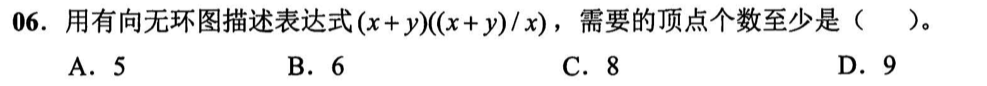
</div><p><span>解析：</span></p><p><span>操作数有：x, y</span></p><p><span>操作符有：+, /, *</span></p><p><span>故最少需要5个顶点</span></p></blockquote><h4 id='拓扑排序'><span>拓扑排序</span></h4><p><strong><span>文字描述：拓扑排序的过程</span></strong></p><p>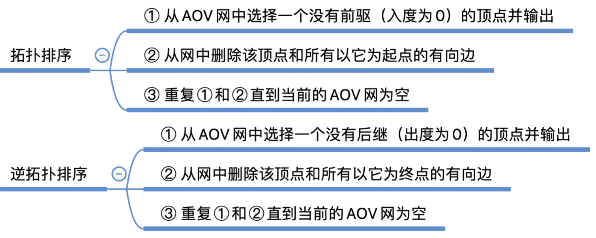</p><p><strong><span>与压缩存储结合考察</span></strong></p><blockquote><p><span>如果一张有向图存在拓扑排序序列，那么这张图一定能利用三角邻接矩阵进行</span><strong><span>压缩存储</span></strong><span>（因为可以利用拓扑排序对顶点进行重排列，使得重排列后的顶点一定是</span><strong><span>小顶点指向大顶点</span></strong><span>）。</span></p></blockquote><p><span>有如下一张有向无环图，其邻接矩阵目前并不满足三角矩阵，因此无法使用压缩存储</span></p><p></p><p><span>对该图顶点按照某一拓扑排序序列编排后，满足上三角矩阵，因此可以以行优先方式存入一维数组实现压缩存储。</span></p><p></p><p></p><p></p><p>&nbsp;</p><p>&nbsp;</p><h2 id='查找-1'><span>查找</span></h2><h3 id='折半查找'><span>折半查找</span></h3><ul><li><mjx-container class="MathJax" jax="SVG" style="position: relative;"><svg xmlns="http://www.w3.org/2000/svg" width="36.824ex" height="2.262ex" role="img" focusable="false" viewBox="0 -750 16276.4 1000" xmlns:xlink="http://www.w3.org/1999/xlink" aria-hidden="true" style="vertical-align: -0.566ex;"><defs><path id="MJX-531-TEX-N-230A" d="M174 734Q174 735 175 737T177 740T180 744T184 747T189 749T196 750Q206 748 214 735V-210H310H373Q401 -210 411 -213T422 -230T411 -247T369 -251Q362 -251 338 -251T298 -250H190Q178 -246 174 -234V734Z"></path><path id="MJX-531-TEX-N-6C" d="M42 46H56Q95 46 103 60V68Q103 77 103 91T103 124T104 167T104 217T104 272T104 329Q104 366 104 407T104 482T104 542T103 586T103 603Q100 622 89 628T44 637H26V660Q26 683 28 683L38 684Q48 685 67 686T104 688Q121 689 141 690T171 693T182 694H185V379Q185 62 186 60Q190 52 198 49Q219 46 247 46H263V0H255L232 1Q209 2 183 2T145 3T107 3T57 1L34 0H26V46H42Z"></path><path id="MJX-531-TEX-N-6F" d="M28 214Q28 309 93 378T250 448Q340 448 405 380T471 215Q471 120 407 55T250 -10Q153 -10 91 57T28 214ZM250 30Q372 30 372 193V225V250Q372 272 371 288T364 326T348 362T317 390T268 410Q263 411 252 411Q222 411 195 399Q152 377 139 338T126 246V226Q126 130 145 91Q177 30 250 30Z"></path><path id="MJX-531-TEX-N-67" d="M329 409Q373 453 429 453Q459 453 472 434T485 396Q485 382 476 371T449 360Q416 360 412 390Q410 404 415 411Q415 412 416 414V415Q388 412 363 393Q355 388 355 386Q355 385 359 381T368 369T379 351T388 325T392 292Q392 230 343 187T222 143Q172 143 123 171Q112 153 112 133Q112 98 138 81Q147 75 155 75T227 73Q311 72 335 67Q396 58 431 26Q470 -13 470 -72Q470 -139 392 -175Q332 -206 250 -206Q167 -206 107 -175Q29 -140 29 -75Q29 -39 50 -15T92 18L103 24Q67 55 67 108Q67 155 96 193Q52 237 52 292Q52 355 102 398T223 442Q274 442 318 416L329 409ZM299 343Q294 371 273 387T221 404Q192 404 171 388T145 343Q142 326 142 292Q142 248 149 227T179 192Q196 182 222 182Q244 182 260 189T283 207T294 227T299 242Q302 258 302 292T299 343ZM403 -75Q403 -50 389 -34T348 -11T299 -2T245 0H218Q151 0 138 -6Q118 -15 107 -34T95 -74Q95 -84 101 -97T122 -127T170 -155T250 -167Q319 -167 361 -139T403 -75Z"></path><path id="MJX-531-TEX-N-32" d="M109 429Q82 429 66 447T50 491Q50 562 103 614T235 666Q326 666 387 610T449 465Q449 422 429 383T381 315T301 241Q265 210 201 149L142 93L218 92Q375 92 385 97Q392 99 409 186V189H449V186Q448 183 436 95T421 3V0H50V19V31Q50 38 56 46T86 81Q115 113 136 137Q145 147 170 174T204 211T233 244T261 278T284 308T305 340T320 369T333 401T340 431T343 464Q343 527 309 573T212 619Q179 619 154 602T119 569T109 550Q109 549 114 549Q132 549 151 535T170 489Q170 464 154 447T109 429Z"></path><path id="MJX-531-TEX-N-2061" d=""></path><path id="MJX-531-TEX-I-1D45B" d="M21 287Q22 293 24 303T36 341T56 388T89 425T135 442Q171 442 195 424T225 390T231 369Q231 367 232 367L243 378Q304 442 382 442Q436 442 469 415T503 336T465 179T427 52Q427 26 444 26Q450 26 453 27Q482 32 505 65T540 145Q542 153 560 153Q580 153 580 145Q580 144 576 130Q568 101 554 73T508 17T439 -10Q392 -10 371 17T350 73Q350 92 386 193T423 345Q423 404 379 404H374Q288 404 229 303L222 291L189 157Q156 26 151 16Q138 -11 108 -11Q95 -11 87 -5T76 7T74 17Q74 30 112 180T152 343Q153 348 153 366Q153 405 129 405Q91 405 66 305Q60 285 60 284Q58 278 41 278H27Q21 284 21 287Z"></path><path id="MJX-531-TEX-N-230B" d="M229 734Q229 735 230 737T232 740T235 744T239 747T244 749T251 750Q262 748 269 735V-235Q266 -240 256 -249L147 -250H77Q43 -250 32 -247T21 -230T32 -213T72 -209Q79 -209 99 -209T133 -210H229V734Z"></path><path id="MJX-531-TEX-N-2B" d="M56 237T56 250T70 270H369V420L370 570Q380 583 389 583Q402 583 409 568V270H707Q722 262 722 250T707 230H409V-68Q401 -82 391 -82H389H387Q375 -82 369 -68V230H70Q56 237 56 250Z"></path><path id="MJX-531-TEX-N-31" d="M213 578L200 573Q186 568 160 563T102 556H83V602H102Q149 604 189 617T245 641T273 663Q275 666 285 666Q294 666 302 660V361L303 61Q310 54 315 52T339 48T401 46H427V0H416Q395 3 257 3Q121 3 100 0H88V46H114Q136 46 152 46T177 47T193 50T201 52T207 57T213 61V578Z"></path></defs><g stroke="currentColor" fill="currentColor" stroke-width="0" transform="scale(1,-1)"><g data-mml-node="math"><g data-mml-node="mtext"><text data-variant="normal" transform="scale(1,-1)" font-size="884px" font-family="serif">二</text></g><g data-mml-node="mtext" transform="translate(870.4,0)"><text data-variant="normal" transform="scale(1,-1)" font-size="884px" font-family="serif">分</text></g><g data-mml-node="mtext" transform="translate(1740.8,0)"><text data-variant="normal" transform="scale(1,-1)" font-size="884px" font-family="serif">查</text></g><g data-mml-node="mtext" transform="translate(2611.2,0)"><text data-variant="normal" transform="scale(1,-1)" font-size="884px" font-family="serif">找</text></g><g data-mml-node="mtext" transform="translate(3481.6,0)"><text data-variant="normal" transform="scale(1,-1)" font-size="884px" font-family="serif">失</text></g><g data-mml-node="mtext" transform="translate(4352,0)"><text data-variant="normal" transform="scale(1,-1)" font-size="884px" font-family="serif">败</text></g><g data-mml-node="mtext" transform="translate(5222.4,0)"><text data-variant="normal" transform="scale(1,-1)" font-size="884px" font-family="serif">最</text></g><g data-mml-node="mtext" transform="translate(6092.8,0)"><text data-variant="normal" transform="scale(1,-1)" font-size="884px" font-family="serif">多</text></g><g data-mml-node="mtext" transform="translate(6963.3,0)"><text data-variant="normal" transform="scale(1,-1)" font-size="884px" font-family="serif">比</text></g><g data-mml-node="mtext" transform="translate(7833.7,0)"><text data-variant="normal" transform="scale(1,-1)" font-size="884px" font-family="serif">较</text></g><g data-mml-node="mtext" transform="translate(8704.1,0)"><text data-variant="normal" transform="scale(1,-1)" font-size="884px" font-family="serif">次</text></g><g data-mml-node="mtext" transform="translate(9531,0)"><text data-variant="normal" transform="scale(1,-1)" font-size="884px" font-family="serif">数</text></g><g data-mml-node="mi" transform="translate(10357.8,0)"><text data-variant="italic" transform="scale(1,-1)" font-size="884px" font-family="serif" font-style="italic">：</text></g><g data-mml-node="mo" transform="translate(11184.7,0)"><use data-c="230A" xlink:href="#MJX-531-TEX-N-230A"></use></g><g data-mml-node="msub" transform="translate(11628.7,0)"><g data-mml-node="mi"><use data-c="6C" xlink:href="#MJX-531-TEX-N-6C"></use><use data-c="6F" xlink:href="#MJX-531-TEX-N-6F" transform="translate(278,0)"></use><use data-c="67" xlink:href="#MJX-531-TEX-N-67" transform="translate(778,0)"></use></g><g data-mml-node="mn" transform="translate(1311,-241.4) scale(0.707)"><use data-c="32" xlink:href="#MJX-531-TEX-N-32"></use></g></g><g data-mml-node="mo" transform="translate(13343.3,0)"><use data-c="2061" xlink:href="#MJX-531-TEX-N-2061"></use></g><g data-mml-node="mi" transform="translate(13510,0)"><use data-c="1D45B" xlink:href="#MJX-531-TEX-I-1D45B"></use></g><g data-mml-node="mo" transform="translate(14110,0)"><use data-c="230B" xlink:href="#MJX-531-TEX-N-230B"></use></g><g data-mml-node="mo" transform="translate(14776.2,0)"><use data-c="2B" xlink:href="#MJX-531-TEX-N-2B"></use></g><g data-mml-node="mn" transform="translate(15776.4,0)"><use data-c="31" xlink:href="#MJX-531-TEX-N-31"></use></g></g></g></svg><mjx-assistive-mml unselectable="on" display="inline"><math xmlns="http://www.w3.org/1998/Math/MathML"><mtext>二</mtext><mtext>分</mtext><mtext>查</mtext><mtext>找</mtext><mtext>失</mtext><mtext>败</mtext><mtext>最</mtext><mtext>多</mtext><mtext>比</mtext><mtext>较</mtext><mtext>次</mtext><mtext>数</mtext><mi>：</mi><mo fence="false" stretchy="false">⌊</mo><msub><mi>log</mi><mn>2</mn></msub><mo data-mjx-texclass="NONE">⁡</mo><mi>n</mi><mo fence="false" stretchy="false">⌋</mo><mo>+</mo><mn>1</mn></math></mjx-assistive-mml></mjx-container><script type="math/tex">二分查找 失败最多比较次数：\lfloor \log_2n\rfloor+1</script></li><li><mjx-container class="MathJax" jax="SVG" style="position: relative;"><svg xmlns="http://www.w3.org/2000/svg" width="25.437ex" height="2.417ex" role="img" focusable="false" viewBox="0 -750 11242.9 1068.2" xmlns:xlink="http://www.w3.org/1999/xlink" aria-hidden="true" style="vertical-align: -0.72ex;"><defs><path id="MJX-532-TEX-I-1D434" d="M208 74Q208 50 254 46Q272 46 272 35Q272 34 270 22Q267 8 264 4T251 0Q249 0 239 0T205 1T141 2Q70 2 50 0H42Q35 7 35 11Q37 38 48 46H62Q132 49 164 96Q170 102 345 401T523 704Q530 716 547 716H555H572Q578 707 578 706L606 383Q634 60 636 57Q641 46 701 46Q726 46 726 36Q726 34 723 22Q720 7 718 4T704 0Q701 0 690 0T651 1T578 2Q484 2 455 0H443Q437 6 437 9T439 27Q443 40 445 43L449 46H469Q523 49 533 63L521 213H283L249 155Q208 86 208 74ZM516 260Q516 271 504 416T490 562L463 519Q447 492 400 412L310 260L413 259Q516 259 516 260Z"></path><path id="MJX-532-TEX-I-1D446" d="M308 24Q367 24 416 76T466 197Q466 260 414 284Q308 311 278 321T236 341Q176 383 176 462Q176 523 208 573T273 648Q302 673 343 688T407 704H418H425Q521 704 564 640Q565 640 577 653T603 682T623 704Q624 704 627 704T632 705Q645 705 645 698T617 577T585 459T569 456Q549 456 549 465Q549 471 550 475Q550 478 551 494T553 520Q553 554 544 579T526 616T501 641Q465 662 419 662Q362 662 313 616T263 510Q263 480 278 458T319 427Q323 425 389 408T456 390Q490 379 522 342T554 242Q554 216 546 186Q541 164 528 137T492 78T426 18T332 -20Q320 -22 298 -22Q199 -22 144 33L134 44L106 13Q83 -14 78 -18T65 -22Q52 -22 52 -14Q52 -11 110 221Q112 227 130 227H143Q149 221 149 216Q149 214 148 207T144 186T142 153Q144 114 160 87T203 47T255 29T308 24Z"></path><path id="MJX-532-TEX-I-1D43F" d="M228 637Q194 637 192 641Q191 643 191 649Q191 673 202 682Q204 683 217 683Q271 680 344 680Q485 680 506 683H518Q524 677 524 674T522 656Q517 641 513 637H475Q406 636 394 628Q387 624 380 600T313 336Q297 271 279 198T252 88L243 52Q243 48 252 48T311 46H328Q360 46 379 47T428 54T478 72T522 106T564 161Q580 191 594 228T611 270Q616 273 628 273H641Q647 264 647 262T627 203T583 83T557 9Q555 4 553 3T537 0T494 -1Q483 -1 418 -1T294 0H116Q32 0 32 10Q32 17 34 24Q39 43 44 45Q48 46 59 46H65Q92 46 125 49Q139 52 144 61Q147 65 216 339T285 628Q285 635 228 637Z"></path><path id="MJX-532-TEX-N-2248" d="M55 319Q55 360 72 393T114 444T163 472T205 482Q207 482 213 482T223 483Q262 483 296 468T393 413L443 381Q502 346 553 346Q609 346 649 375T694 454Q694 465 698 474T708 483Q722 483 722 452Q722 386 675 338T555 289Q514 289 468 310T388 357T308 404T224 426Q164 426 125 393T83 318Q81 289 69 289Q55 289 55 319ZM55 85Q55 126 72 159T114 210T163 238T205 248Q207 248 213 248T223 249Q262 249 296 234T393 179L443 147Q502 112 553 112Q609 112 649 141T694 220Q694 249 708 249T722 217Q722 153 675 104T555 55Q514 55 468 76T388 123T308 170T224 192Q164 192 125 159T83 84Q80 55 69 55Q55 55 55 85Z"></path><path id="MJX-532-TEX-I-1D459" d="M117 59Q117 26 142 26Q179 26 205 131Q211 151 215 152Q217 153 225 153H229Q238 153 241 153T246 151T248 144Q247 138 245 128T234 90T214 43T183 6T137 -11Q101 -11 70 11T38 85Q38 97 39 102L104 360Q167 615 167 623Q167 626 166 628T162 632T157 634T149 635T141 636T132 637T122 637Q112 637 109 637T101 638T95 641T94 647Q94 649 96 661Q101 680 107 682T179 688Q194 689 213 690T243 693T254 694Q266 694 266 686Q266 675 193 386T118 83Q118 81 118 75T117 65V59Z"></path><path id="MJX-532-TEX-I-1D45C" d="M201 -11Q126 -11 80 38T34 156Q34 221 64 279T146 380Q222 441 301 441Q333 441 341 440Q354 437 367 433T402 417T438 387T464 338T476 268Q476 161 390 75T201 -11ZM121 120Q121 70 147 48T206 26Q250 26 289 58T351 142Q360 163 374 216T388 308Q388 352 370 375Q346 405 306 405Q243 405 195 347Q158 303 140 230T121 120Z"></path><path id="MJX-532-TEX-I-1D454" d="M311 43Q296 30 267 15T206 0Q143 0 105 45T66 160Q66 265 143 353T314 442Q361 442 401 394L404 398Q406 401 409 404T418 412T431 419T447 422Q461 422 470 413T480 394Q480 379 423 152T363 -80Q345 -134 286 -169T151 -205Q10 -205 10 -137Q10 -111 28 -91T74 -71Q89 -71 102 -80T116 -111Q116 -121 114 -130T107 -144T99 -154T92 -162L90 -164H91Q101 -167 151 -167Q189 -167 211 -155Q234 -144 254 -122T282 -75Q288 -56 298 -13Q311 35 311 43ZM384 328L380 339Q377 350 375 354T369 368T359 382T346 393T328 402T306 405Q262 405 221 352Q191 313 171 233T151 117Q151 38 213 38Q269 38 323 108L331 118L384 328Z"></path><path id="MJX-532-TEX-N-32" d="M109 429Q82 429 66 447T50 491Q50 562 103 614T235 666Q326 666 387 610T449 465Q449 422 429 383T381 315T301 241Q265 210 201 149L142 93L218 92Q375 92 385 97Q392 99 409 186V189H449V186Q448 183 436 95T421 3V0H50V19V31Q50 38 56 46T86 81Q115 113 136 137Q145 147 170 174T204 211T233 244T261 278T284 308T305 340T320 369T333 401T340 431T343 464Q343 527 309 573T212 619Q179 619 154 602T119 569T109 550Q109 549 114 549Q132 549 151 535T170 489Q170 464 154 447T109 429Z"></path><path id="MJX-532-TEX-N-28" d="M94 250Q94 319 104 381T127 488T164 576T202 643T244 695T277 729T302 750H315H319Q333 750 333 741Q333 738 316 720T275 667T226 581T184 443T167 250T184 58T225 -81T274 -167T316 -220T333 -241Q333 -250 318 -250H315H302L274 -226Q180 -141 137 -14T94 250Z"></path><path id="MJX-532-TEX-I-1D45B" d="M21 287Q22 293 24 303T36 341T56 388T89 425T135 442Q171 442 195 424T225 390T231 369Q231 367 232 367L243 378Q304 442 382 442Q436 442 469 415T503 336T465 179T427 52Q427 26 444 26Q450 26 453 27Q482 32 505 65T540 145Q542 153 560 153Q580 153 580 145Q580 144 576 130Q568 101 554 73T508 17T439 -10Q392 -10 371 17T350 73Q350 92 386 193T423 345Q423 404 379 404H374Q288 404 229 303L222 291L189 157Q156 26 151 16Q138 -11 108 -11Q95 -11 87 -5T76 7T74 17Q74 30 112 180T152 343Q153 348 153 366Q153 405 129 405Q91 405 66 305Q60 285 60 284Q58 278 41 278H27Q21 284 21 287Z"></path><path id="MJX-532-TEX-N-2B" d="M56 237T56 250T70 270H369V420L370 570Q380 583 389 583Q402 583 409 568V270H707Q722 262 722 250T707 230H409V-68Q401 -82 391 -82H389H387Q375 -82 369 -68V230H70Q56 237 56 250Z"></path><path id="MJX-532-TEX-N-31" d="M213 578L200 573Q186 568 160 563T102 556H83V602H102Q149 604 189 617T245 641T273 663Q275 666 285 666Q294 666 302 660V361L303 61Q310 54 315 52T339 48T401 46H427V0H416Q395 3 257 3Q121 3 100 0H88V46H114Q136 46 152 46T177 47T193 50T201 52T207 57T213 61V578Z"></path><path id="MJX-532-TEX-N-29" d="M60 749L64 750Q69 750 74 750H86L114 726Q208 641 251 514T294 250Q294 182 284 119T261 12T224 -76T186 -143T145 -194T113 -227T90 -246Q87 -249 86 -250H74Q66 -250 63 -250T58 -247T55 -238Q56 -237 66 -225Q221 -64 221 250T66 725Q56 737 55 738Q55 746 60 749Z"></path><path id="MJX-532-TEX-N-2212" d="M84 237T84 250T98 270H679Q694 262 694 250T679 230H98Q84 237 84 250Z"></path></defs><g stroke="currentColor" fill="currentColor" stroke-width="0" transform="scale(1,-1)"><g data-mml-node="math"><g data-mml-node="mi"><use data-c="1D434" xlink:href="#MJX-532-TEX-I-1D434"></use></g><g data-mml-node="mi" transform="translate(750,0)"><use data-c="1D446" xlink:href="#MJX-532-TEX-I-1D446"></use></g><g data-mml-node="msub" transform="translate(1395,0)"><g data-mml-node="mi"><use data-c="1D43F" xlink:href="#MJX-532-TEX-I-1D43F"></use></g><g data-mml-node="TeXAtom" transform="translate(714,-176.7) scale(0.707)" data-mjx-texclass="ORD"><g data-mml-node="mtext"><text data-variant="normal" transform="scale(1,-1)" font-size="884px" font-family="serif">成</text></g><g data-mml-node="mtext" transform="translate(870.4,0)"><text data-variant="normal" transform="scale(1,-1)" font-size="884px" font-family="serif">功</text></g></g></g><g data-mml-node="mo" transform="translate(3667.7,0)"><use data-c="2248" xlink:href="#MJX-532-TEX-N-2248"></use></g><g data-mml-node="mi" transform="translate(4723.5,0)"><use data-c="1D459" xlink:href="#MJX-532-TEX-I-1D459"></use></g><g data-mml-node="mi" transform="translate(5021.5,0)"><use data-c="1D45C" xlink:href="#MJX-532-TEX-I-1D45C"></use></g><g data-mml-node="msub" transform="translate(5506.5,0)"><g data-mml-node="mi"><use data-c="1D454" xlink:href="#MJX-532-TEX-I-1D454"></use></g><g data-mml-node="mn" transform="translate(510,-150) scale(0.707)"><use data-c="32" xlink:href="#MJX-532-TEX-N-32"></use></g></g><g data-mml-node="mo" transform="translate(6420,0)"><use data-c="28" xlink:href="#MJX-532-TEX-N-28"></use></g><g data-mml-node="mi" transform="translate(6809,0)"><use data-c="1D45B" xlink:href="#MJX-532-TEX-I-1D45B"></use></g><g data-mml-node="mo" transform="translate(7631.3,0)"><use data-c="2B" xlink:href="#MJX-532-TEX-N-2B"></use></g><g data-mml-node="mn" transform="translate(8631.5,0)"><use data-c="31" xlink:href="#MJX-532-TEX-N-31"></use></g><g data-mml-node="mo" transform="translate(9131.5,0)"><use data-c="29" xlink:href="#MJX-532-TEX-N-29"></use></g><g data-mml-node="mo" transform="translate(9742.7,0)"><use data-c="2212" xlink:href="#MJX-532-TEX-N-2212"></use></g><g data-mml-node="mn" transform="translate(10742.9,0)"><use data-c="31" xlink:href="#MJX-532-TEX-N-31"></use></g></g></g></svg><mjx-assistive-mml unselectable="on" display="inline"><math xmlns="http://www.w3.org/1998/Math/MathML"><mi>A</mi><mi>S</mi><msub><mi>L</mi><mrow data-mjx-texclass="ORD"><mtext>成</mtext><mtext>功</mtext></mrow></msub><mo>≈</mo><mi>l</mi><mi>o</mi><msub><mi>g</mi><mn>2</mn></msub><mo stretchy="false">(</mo><mi>n</mi><mo>+</mo><mn>1</mn><mo stretchy="false">)</mo><mo>−</mo><mn>1</mn></math></mjx-assistive-mml></mjx-container><script type="math/tex">ASL_{成功}\approx log_2(n+1)-1</script></li></ul><h4 id='折半查找判定树的判别'><strong><span>折半查找判定树的判别：</span></strong></h4><ul><li><span>做这类题的核心就是在同一棵折半判定树中，中间结点是向上取整还是向下取整是固定的，</span><strong><u><span>所以树中每个结点的左右孩子数量应该统一保持”左少右多“或”左多右少“</span></u></strong><span>，但凡这两种情况同时出现在同一棵树中，那肯定是错的。</span></li></ul><blockquote><p><span>【17年T8】</span></p><div>

</div><p>&nbsp;</p><p><mjx-container class="MathJax" jax="SVG" style="position: relative;"><svg xmlns="http://www.w3.org/2000/svg" width="5.809ex" height="2.149ex" role="img" focusable="false" viewBox="0 -750 2567.7 950" xmlns:xlink="http://www.w3.org/1999/xlink" aria-hidden="true" style="vertical-align: -0.452ex;"><defs></defs><g stroke="currentColor" fill="currentColor" stroke-width="0" transform="scale(1,-1)"><g data-mml-node="math"><g data-mml-node="mtext"><text data-variant="normal" transform="scale(1,-1)" font-size="884px" font-family="serif">解</text></g><g data-mml-node="mtext" transform="translate(870.4,0)"><text data-variant="normal" transform="scale(1,-1)" font-size="884px" font-family="serif">析</text></g><g data-mml-node="mi" transform="translate(1740.8,0)"><text data-variant="italic" transform="scale(1,-1)" font-size="884px" font-family="serif" font-style="italic">：</text></g></g></g></svg><mjx-assistive-mml unselectable="on" display="inline"><math xmlns="http://www.w3.org/1998/Math/MathML"><mtext>解</mtext><mtext>析</mtext><mi>：</mi></math></mjx-assistive-mml></mjx-container><script type="math/tex">解析：</script></p><div>

</div><p>&nbsp;</p><p><span>B、C都同时出现了</span><u><span>左1右0</span></u><span>和</span><u><span>左0右1</span></u></p><p><span>D：大圈左4右5，小圈左1右0</span></p><p><span>所以A正确</span></p></blockquote><p>&nbsp;</p><h3 id='分块查找'><span>分块查找</span></h3><ul><li><span>块内无序，块间有序</span></li><li><span>索引表中存放的是：每个分块中</span><strong><span>最大</span></strong><span>的关键字，和查找区间</span></li></ul><p></p><h4 id='查找策略'><strong><span>查找策略：</span></strong></h4><p><span>索引表可顺序，可折半</span></p><p><span>块内只能顺序</span></p><blockquote><p><span>注意：索引表采用折半时，最终会在</span><strong><span>low所指向</span></strong><span>的位置进行查找。</span></p><p><span>还有一种情况是low下标越界，也说明查找失败</span></p></blockquote><h4 id='怎样分块效率最高'><strong><span>怎样分块效率最高？</span></strong></h4><blockquote><p><mjx-container class="MathJax" jax="SVG" style="position: relative;"><svg xmlns="http://www.w3.org/2000/svg" width="37.175ex" height="2.398ex" role="img" focusable="false" viewBox="0 -843 16431.5 1060" xmlns:xlink="http://www.w3.org/1999/xlink" aria-hidden="true" style="vertical-align: -0.491ex;"><defs><path id="MJX-534-TEX-I-1D45B" d="M21 287Q22 293 24 303T36 341T56 388T89 425T135 442Q171 442 195 424T225 390T231 369Q231 367 232 367L243 378Q304 442 382 442Q436 442 469 415T503 336T465 179T427 52Q427 26 444 26Q450 26 453 27Q482 32 505 65T540 145Q542 153 560 153Q580 153 580 145Q580 144 576 130Q568 101 554 73T508 17T439 -10Q392 -10 371 17T350 73Q350 92 386 193T423 345Q423 404 379 404H374Q288 404 229 303L222 291L189 157Q156 26 151 16Q138 -11 108 -11Q95 -11 87 -5T76 7T74 17Q74 30 112 180T152 343Q153 348 153 366Q153 405 129 405Q91 405 66 305Q60 285 60 284Q58 278 41 278H27Q21 284 21 287Z"></path><path id="MJX-534-TEX-N-221A" d="M95 178Q89 178 81 186T72 200T103 230T169 280T207 309Q209 311 212 311H213Q219 311 227 294T281 177Q300 134 312 108L397 -77Q398 -77 501 136T707 565T814 786Q820 800 834 800Q841 800 846 794T853 782V776L620 293L385 -193Q381 -200 366 -200Q357 -200 354 -197Q352 -195 256 15L160 225L144 214Q129 202 113 190T95 178Z"></path></defs><g stroke="currentColor" fill="currentColor" stroke-width="0" transform="scale(1,-1)"><g data-mml-node="math"><g data-mml-node="mtext"><text data-variant="normal" transform="scale(1,-1)" font-size="884px" font-family="serif">将</text></g><g data-mml-node="mi" transform="translate(870.4,0)"><use data-c="1D45B" xlink:href="#MJX-534-TEX-I-1D45B"></use></g><g data-mml-node="mtext" transform="translate(1470.4,0)"><text data-variant="normal" transform="scale(1,-1)" font-size="884px" font-family="serif">个</text></g><g data-mml-node="mtext" transform="translate(2297.3,0)"><text data-variant="normal" transform="scale(1,-1)" font-size="884px" font-family="serif">元</text></g><g data-mml-node="mtext" transform="translate(3167.7,0)"><text data-variant="normal" transform="scale(1,-1)" font-size="884px" font-family="serif">素</text></g><g data-mml-node="mtext" transform="translate(4038.1,0)"><text data-variant="normal" transform="scale(1,-1)" font-size="884px" font-family="serif">分</text></g><g data-mml-node="mtext" transform="translate(4908.5,0)"><text data-variant="normal" transform="scale(1,-1)" font-size="884px" font-family="serif">为</text></g><g data-mml-node="msqrt" transform="translate(5778.9,0)"><g transform="translate(853,0)"><g data-mml-node="mi"><use data-c="1D45B" xlink:href="#MJX-534-TEX-I-1D45B"></use></g></g><g data-mml-node="mo" transform="translate(0,-17)"><use data-c="221A" xlink:href="#MJX-534-TEX-N-221A"></use></g><rect width="600" height="60" x="853" y="723"></rect></g><g data-mml-node="mtext" transform="translate(7231.9,0)"><text data-variant="normal" transform="scale(1,-1)" font-size="884px" font-family="serif">块</text></g><g data-mml-node="mi" transform="translate(8102.3,0)"><text data-variant="italic" transform="scale(1,-1)" font-size="884px" font-family="serif" font-style="italic">，</text></g><g data-mml-node="mtext" transform="translate(8929.2,0)"><text data-variant="normal" transform="scale(1,-1)" font-size="884px" font-family="serif">每</text></g><g data-mml-node="mtext" transform="translate(9799.6,0)"><text data-variant="normal" transform="scale(1,-1)" font-size="884px" font-family="serif">块</text></g><g data-mml-node="mtext" transform="translate(10670,0)"><text data-variant="normal" transform="scale(1,-1)" font-size="884px" font-family="serif">对</text></g><g data-mml-node="mtext" transform="translate(11540.4,0)"><text data-variant="normal" transform="scale(1,-1)" font-size="884px" font-family="serif">应</text></g><g data-mml-node="msqrt" transform="translate(12410.8,0)"><g transform="translate(853,0)"><g data-mml-node="mi"><use data-c="1D45B" xlink:href="#MJX-534-TEX-I-1D45B"></use></g></g><g data-mml-node="mo" transform="translate(0,-17)"><use data-c="221A" xlink:href="#MJX-534-TEX-N-221A"></use></g><rect width="600" height="60" x="853" y="723"></rect></g><g data-mml-node="mtext" transform="translate(13863.8,0)"><text data-variant="normal" transform="scale(1,-1)" font-size="884px" font-family="serif">个</text></g><g data-mml-node="mtext" transform="translate(14690.7,0)"><text data-variant="normal" transform="scale(1,-1)" font-size="884px" font-family="serif">元</text></g><g data-mml-node="mtext" transform="translate(15561.1,0)"><text data-variant="normal" transform="scale(1,-1)" font-size="884px" font-family="serif">素</text></g></g></g></svg><mjx-assistive-mml unselectable="on" display="inline"><math xmlns="http://www.w3.org/1998/Math/MathML"><mtext>将</mtext><mi>n</mi><mtext>个</mtext><mtext>元</mtext><mtext>素</mtext><mtext>分</mtext><mtext>为</mtext><msqrt><mi>n</mi></msqrt><mtext>块</mtext><mi>，</mi><mtext>每</mtext><mtext>块</mtext><mtext>对</mtext><mtext>应</mtext><msqrt><mi>n</mi></msqrt><mtext>个</mtext><mtext>元</mtext><mtext>素</mtext></math></mjx-assistive-mml></mjx-container><script type="math/tex">将n个元素分为 \sqrt{n}块，每块对应\sqrt{n}个元素</script></p><p><mjx-container class="MathJax" jax="SVG" style="position: relative;"><svg xmlns="http://www.w3.org/2000/svg" width="23.582ex" height="2.627ex" role="img" focusable="false" viewBox="0 -843 10423.1 1161.2" xmlns:xlink="http://www.w3.org/1999/xlink" aria-hidden="true" style="vertical-align: -0.72ex;"><defs><path id="MJX-535-TEX-I-1D434" d="M208 74Q208 50 254 46Q272 46 272 35Q272 34 270 22Q267 8 264 4T251 0Q249 0 239 0T205 1T141 2Q70 2 50 0H42Q35 7 35 11Q37 38 48 46H62Q132 49 164 96Q170 102 345 401T523 704Q530 716 547 716H555H572Q578 707 578 706L606 383Q634 60 636 57Q641 46 701 46Q726 46 726 36Q726 34 723 22Q720 7 718 4T704 0Q701 0 690 0T651 1T578 2Q484 2 455 0H443Q437 6 437 9T439 27Q443 40 445 43L449 46H469Q523 49 533 63L521 213H283L249 155Q208 86 208 74ZM516 260Q516 271 504 416T490 562L463 519Q447 492 400 412L310 260L413 259Q516 259 516 260Z"></path><path id="MJX-535-TEX-I-1D446" d="M308 24Q367 24 416 76T466 197Q466 260 414 284Q308 311 278 321T236 341Q176 383 176 462Q176 523 208 573T273 648Q302 673 343 688T407 704H418H425Q521 704 564 640Q565 640 577 653T603 682T623 704Q624 704 627 704T632 705Q645 705 645 698T617 577T585 459T569 456Q549 456 549 465Q549 471 550 475Q550 478 551 494T553 520Q553 554 544 579T526 616T501 641Q465 662 419 662Q362 662 313 616T263 510Q263 480 278 458T319 427Q323 425 389 408T456 390Q490 379 522 342T554 242Q554 216 546 186Q541 164 528 137T492 78T426 18T332 -20Q320 -22 298 -22Q199 -22 144 33L134 44L106 13Q83 -14 78 -18T65 -22Q52 -22 52 -14Q52 -11 110 221Q112 227 130 227H143Q149 221 149 216Q149 214 148 207T144 186T142 153Q144 114 160 87T203 47T255 29T308 24Z"></path><path id="MJX-535-TEX-I-1D43F" d="M228 637Q194 637 192 641Q191 643 191 649Q191 673 202 682Q204 683 217 683Q271 680 344 680Q485 680 506 683H518Q524 677 524 674T522 656Q517 641 513 637H475Q406 636 394 628Q387 624 380 600T313 336Q297 271 279 198T252 88L243 52Q243 48 252 48T311 46H328Q360 46 379 47T428 54T478 72T522 106T564 161Q580 191 594 228T611 270Q616 273 628 273H641Q647 264 647 262T627 203T583 83T557 9Q555 4 553 3T537 0T494 -1Q483 -1 418 -1T294 0H116Q32 0 32 10Q32 17 34 24Q39 43 44 45Q48 46 59 46H65Q92 46 125 49Q139 52 144 61Q147 65 216 339T285 628Q285 635 228 637Z"></path><path id="MJX-535-TEX-N-3D" d="M56 347Q56 360 70 367H707Q722 359 722 347Q722 336 708 328L390 327H72Q56 332 56 347ZM56 153Q56 168 72 173H708Q722 163 722 153Q722 140 707 133H70Q56 140 56 153Z"></path><path id="MJX-535-TEX-N-221A" d="M95 178Q89 178 81 186T72 200T103 230T169 280T207 309Q209 311 212 311H213Q219 311 227 294T281 177Q300 134 312 108L397 -77Q398 -77 501 136T707 565T814 786Q820 800 834 800Q841 800 846 794T853 782V776L620 293L385 -193Q381 -200 366 -200Q357 -200 354 -197Q352 -195 256 15L160 225L144 214Q129 202 113 190T95 178Z"></path><path id="MJX-535-TEX-I-1D45B" d="M21 287Q22 293 24 303T36 341T56 388T89 425T135 442Q171 442 195 424T225 390T231 369Q231 367 232 367L243 378Q304 442 382 442Q436 442 469 415T503 336T465 179T427 52Q427 26 444 26Q450 26 453 27Q482 32 505 65T540 145Q542 153 560 153Q580 153 580 145Q580 144 576 130Q568 101 554 73T508 17T439 -10Q392 -10 371 17T350 73Q350 92 386 193T423 345Q423 404 379 404H374Q288 404 229 303L222 291L189 157Q156 26 151 16Q138 -11 108 -11Q95 -11 87 -5T76 7T74 17Q74 30 112 180T152 343Q153 348 153 366Q153 405 129 405Q91 405 66 305Q60 285 60 284Q58 278 41 278H27Q21 284 21 287Z"></path><path id="MJX-535-TEX-N-2B" d="M56 237T56 250T70 270H369V420L370 570Q380 583 389 583Q402 583 409 568V270H707Q722 262 722 250T707 230H409V-68Q401 -82 391 -82H389H387Q375 -82 369 -68V230H70Q56 237 56 250Z"></path><path id="MJX-535-TEX-N-31" d="M213 578L200 573Q186 568 160 563T102 556H83V602H102Q149 604 189 617T245 641T273 663Q275 666 285 666Q294 666 302 660V361L303 61Q310 54 315 52T339 48T401 46H427V0H416Q395 3 257 3Q121 3 100 0H88V46H114Q136 46 152 46T177 47T193 50T201 52T207 57T213 61V578Z"></path></defs><g stroke="currentColor" fill="currentColor" stroke-width="0" transform="scale(1,-1)"><g data-mml-node="math"><g data-mml-node="mtext"><text data-variant="normal" transform="scale(1,-1)" font-size="884px" font-family="serif">此</text></g><g data-mml-node="mtext" transform="translate(870.4,0)"><text data-variant="normal" transform="scale(1,-1)" font-size="884px" font-family="serif">时</text></g><g data-mml-node="mtext" transform="translate(1697.3,0)"><text data-variant="normal" transform="scale(1,-1)" font-size="884px" font-family="serif">的</text></g><g data-mml-node="mi" transform="translate(2524.2,0)"><use data-c="1D434" xlink:href="#MJX-535-TEX-I-1D434"></use></g><g data-mml-node="mi" transform="translate(3274.2,0)"><use data-c="1D446" xlink:href="#MJX-535-TEX-I-1D446"></use></g><g data-mml-node="msub" transform="translate(3919.2,0)"><g data-mml-node="mi"><use data-c="1D43F" xlink:href="#MJX-535-TEX-I-1D43F"></use></g><g data-mml-node="TeXAtom" transform="translate(714,-176.7) scale(0.707)" data-mjx-texclass="ORD"><g data-mml-node="mtext"><text data-variant="normal" transform="scale(1,-1)" font-size="884px" font-family="serif">最</text></g><g data-mml-node="mtext" transform="translate(870.4,0)"><text data-variant="normal" transform="scale(1,-1)" font-size="884px" font-family="serif">小</text></g></g></g><g data-mml-node="mo" transform="translate(6191.9,0)"><use data-c="3D" xlink:href="#MJX-535-TEX-N-3D"></use></g><g data-mml-node="msqrt" transform="translate(7247.7,0)"><g transform="translate(853,0)"><g data-mml-node="mi"><use data-c="1D45B" xlink:href="#MJX-535-TEX-I-1D45B"></use></g></g><g data-mml-node="mo" transform="translate(0,-17)"><use data-c="221A" xlink:href="#MJX-535-TEX-N-221A"></use></g><rect width="600" height="60" x="853" y="723"></rect></g><g data-mml-node="mo" transform="translate(8922.9,0)"><use data-c="2B" xlink:href="#MJX-535-TEX-N-2B"></use></g><g data-mml-node="mn" transform="translate(9923.1,0)"><use data-c="31" xlink:href="#MJX-535-TEX-N-31"></use></g></g></g></svg><mjx-assistive-mml unselectable="on" display="inline"><math xmlns="http://www.w3.org/1998/Math/MathML"><mtext>此</mtext><mtext>时</mtext><mtext>的</mtext><mi>A</mi><mi>S</mi><msub><mi>L</mi><mrow data-mjx-texclass="ORD"><mtext>最</mtext><mtext>小</mtext></mrow></msub><mo>=</mo><msqrt><mi>n</mi></msqrt><mo>+</mo><mn>1</mn></math></mjx-assistive-mml></mjx-container><script type="math/tex">此时的ASL_{最小}=\sqrt{n}+1</script></p></blockquote><p>&nbsp;</p><h3 id='散列查找hash）'><span>散列查找（Hash）</span></h3><h4 id='基本概念-3'><strong><span>基本概念：</span></strong></h4><ul><li><p><strong><span>冲突：</span></strong><span>散列函数将两个或两个以上</span><strong><span>不同的关键字</span></strong><span>映射到</span><strong><span>同一地址</span></strong><span>，这种情况称为“冲突”</span></p></li><li><p><strong><span>同义词：</span></strong><span>发生“冲突”的不同关键字</span></p></li><li><p><strong><span>聚集/堆积：</span></strong></p></li><li><ul><li><p><strong><span>同义词冲突≠聚集！！！</span></strong></p></li><li><p><span>聚集指的是在</span><strong><span>”线性探测法”</span></strong><span>中，大量的元素</span><strong><span>都探测到了相邻或相同的散列地址</span></strong><span>，从而出现</span><strong><span>地址争夺</span></strong><span>的现象</span></p><p><mjx-container class="MathJax" jax="SVG" style="position: relative;"><svg xmlns="http://www.w3.org/2000/svg" width="69.81ex" height="2.149ex" role="img" focusable="false" viewBox="0 -750 30856 950" xmlns:xlink="http://www.w3.org/1999/xlink" aria-hidden="true" style="vertical-align: -0.452ex;"><defs></defs><g stroke="currentColor" fill="currentColor" stroke-width="0" transform="scale(1,-1)"><g data-mml-node="math"><g data-mml-node="mtext"><text data-variant="normal" transform="scale(1,-1)" font-size="884px" font-family="serif">讲</text></g><g data-mml-node="mtext" transform="translate(870.4,0)"><text data-variant="normal" transform="scale(1,-1)" font-size="884px" font-family="serif">人</text></g><g data-mml-node="mtext" transform="translate(1740.8,0)"><text data-variant="normal" transform="scale(1,-1)" font-size="884px" font-family="serif">话</text></g><g data-mml-node="mtext" transform="translate(2611.2,0)"><text data-variant="normal" transform="scale(1,-1)" font-size="884px" font-family="serif">就</text></g><g data-mml-node="mtext" transform="translate(3481.6,0)"><text data-variant="normal" transform="scale(1,-1)" font-size="884px" font-family="serif">是</text></g><g data-mml-node="mi" transform="translate(4308.5,0)"><text data-variant="italic" transform="scale(1,-1)" font-size="884px" font-family="serif" font-style="italic">，</text></g><g data-mml-node="mtext" transform="translate(5135.4,0)"><text data-variant="normal" transform="scale(1,-1)" font-size="884px" font-family="serif">你</text></g><g data-mml-node="mtext" transform="translate(6005.8,0)"><text data-variant="normal" transform="scale(1,-1)" font-size="884px" font-family="serif">要</text></g><g data-mml-node="mtext" transform="translate(6832.7,0)"><text data-variant="normal" transform="scale(1,-1)" font-size="884px" font-family="serif">往</text></g><g data-mml-node="mtext" transform="translate(7703.1,0)"><text data-variant="normal" transform="scale(1,-1)" font-size="884px" font-family="serif">一</text></g><g data-mml-node="mtext" transform="translate(8530,0)"><text data-variant="normal" transform="scale(1,-1)" font-size="884px" font-family="serif">个</text></g><g data-mml-node="mtext" transform="translate(9356.9,0)"><text data-variant="normal" transform="scale(1,-1)" font-size="884px" font-family="serif">空</text></g><g data-mml-node="mtext" transform="translate(10227.3,0)"><text data-variant="normal" transform="scale(1,-1)" font-size="884px" font-family="serif">位</text></g><g data-mml-node="mtext" transform="translate(11097.7,0)"><text data-variant="normal" transform="scale(1,-1)" font-size="884px" font-family="serif">上</text></g><g data-mml-node="mtext" transform="translate(11968.1,0)"><text data-variant="normal" transform="scale(1,-1)" font-size="884px" font-family="serif">放</text></g><g data-mml-node="mtext" transform="translate(12838.5,0)"><text data-variant="normal" transform="scale(1,-1)" font-size="884px" font-family="serif">东</text></g><g data-mml-node="mtext" transform="translate(13708.9,0)"><text data-variant="normal" transform="scale(1,-1)" font-size="884px" font-family="serif">西</text></g><g data-mml-node="mi" transform="translate(14579.3,0)"><text data-variant="italic" transform="scale(1,-1)" font-size="884px" font-family="serif" font-style="italic">，</text></g><g data-mml-node="mtext" transform="translate(15406.2,0)"><text data-variant="normal" transform="scale(1,-1)" font-size="884px" font-family="serif">但</text></g><g data-mml-node="mtext" transform="translate(16276.6,0)"><text data-variant="normal" transform="scale(1,-1)" font-size="884px" font-family="serif">是</text></g><g data-mml-node="mtext" transform="translate(17103.5,0)"><text data-variant="normal" transform="scale(1,-1)" font-size="884px" font-family="serif">空</text></g><g data-mml-node="mtext" transform="translate(17973.9,0)"><text data-variant="normal" transform="scale(1,-1)" font-size="884px" font-family="serif">位</text></g><g data-mml-node="mtext" transform="translate(18844.3,0)"><text data-variant="normal" transform="scale(1,-1)" font-size="884px" font-family="serif">满</text></g><g data-mml-node="mtext" transform="translate(19714.7,0)"><text data-variant="normal" transform="scale(1,-1)" font-size="884px" font-family="serif">了</text></g><g data-mml-node="mi" transform="translate(20585.1,0)"><text data-variant="italic" transform="scale(1,-1)" font-size="884px" font-family="serif" font-style="italic">，</text></g><g data-mml-node="mtext" transform="translate(21412,0)"><text data-variant="normal" transform="scale(1,-1)" font-size="884px" font-family="serif">于</text></g><g data-mml-node="mtext" transform="translate(22282.4,0)"><text data-variant="normal" transform="scale(1,-1)" font-size="884px" font-family="serif">是</text></g><g data-mml-node="mtext" transform="translate(23109.3,0)"><text data-variant="normal" transform="scale(1,-1)" font-size="884px" font-family="serif">你</text></g><g data-mml-node="mtext" transform="translate(23979.7,0)"><text data-variant="normal" transform="scale(1,-1)" font-size="884px" font-family="serif">向</text></g><g data-mml-node="mtext" transform="translate(24850.1,0)"><text data-variant="normal" transform="scale(1,-1)" font-size="884px" font-family="serif">下</text></g><g data-mml-node="mtext" transform="translate(25720.5,0)"><text data-variant="normal" transform="scale(1,-1)" font-size="884px" font-family="serif">找</text></g><g data-mml-node="mtext" transform="translate(26591,0)"><text data-variant="normal" transform="scale(1,-1)" font-size="884px" font-family="serif">一</text></g><g data-mml-node="mtext" transform="translate(27417.8,0)"><text data-variant="normal" transform="scale(1,-1)" font-size="884px" font-family="serif">个</text></g><g data-mml-node="mtext" transform="translate(28244.7,0)"><text data-variant="normal" transform="scale(1,-1)" font-size="884px" font-family="serif">位</text></g><g data-mml-node="mtext" transform="translate(29115.1,0)"><text data-variant="normal" transform="scale(1,-1)" font-size="884px" font-family="serif">置</text></g><g data-mml-node="TeXAtom" data-mjx-texclass="ORD" transform="translate(29985.5,0)"><g data-mml-node="mo"><text data-variant="normal" transform="scale(1,-1)" font-size="884px" font-family="serif">。</text></g></g></g></g></svg><mjx-assistive-mml unselectable="on" display="inline"><math xmlns="http://www.w3.org/1998/Math/MathML"><mtext>讲</mtext><mtext>人</mtext><mtext>话</mtext><mtext>就</mtext><mtext>是</mtext><mi>，</mi><mtext>你</mtext><mtext>要</mtext><mtext>往</mtext><mtext>一</mtext><mtext>个</mtext><mtext>空</mtext><mtext>位</mtext><mtext>上</mtext><mtext>放</mtext><mtext>东</mtext><mtext>西</mtext><mi>，</mi><mtext>但</mtext><mtext>是</mtext><mtext>空</mtext><mtext>位</mtext><mtext>满</mtext><mtext>了</mtext><mi>，</mi><mtext>于</mtext><mtext>是</mtext><mtext>你</mtext><mtext>向</mtext><mtext>下</mtext><mtext>找</mtext><mtext>一</mtext><mtext>个</mtext><mtext>位</mtext><mtext>置</mtext><mrow data-mjx-texclass="ORD"><mo>。</mo></mrow></math></mjx-assistive-mml></mjx-container><script type="math/tex">讲人话就是，你要往一个空位上放东西，但是空位满了，于是你向下找一个位置。</script></p><p><mjx-container class="MathJax" jax="SVG" style="position: relative;"><svg xmlns="http://www.w3.org/2000/svg" width="63.09ex" height="2.428ex" role="img" focusable="false" viewBox="0 -873 27885.7 1073" xmlns:xlink="http://www.w3.org/1999/xlink" aria-hidden="true" style="vertical-align: -0.452ex;"><defs><path id="MJX-537-TEX-V-2032" d="M79 43Q73 43 52 49T30 61Q30 68 85 293T146 528Q161 560 198 560Q218 560 240 545T262 501Q262 496 260 486Q259 479 173 263T84 45T79 43Z"></path></defs><g stroke="currentColor" fill="currentColor" stroke-width="0" transform="scale(1,-1)"><g data-mml-node="math"><g data-mml-node="mtext"><text data-variant="normal" transform="scale(1,-1)" font-size="884px" font-family="serif">结</text></g><g data-mml-node="mtext" transform="translate(870.4,0)"><text data-variant="normal" transform="scale(1,-1)" font-size="884px" font-family="serif">果</text></g><g data-mml-node="mtext" transform="translate(1740.8,0)"><text data-variant="normal" transform="scale(1,-1)" font-size="884px" font-family="serif">又</text></g><g data-mml-node="mtext" transform="translate(2611.2,0)"><text data-variant="normal" transform="scale(1,-1)" font-size="884px" font-family="serif">满</text></g><g data-mml-node="mtext" transform="translate(3481.6,0)"><text data-variant="normal" transform="scale(1,-1)" font-size="884px" font-family="serif">了</text></g><g data-mml-node="mi" transform="translate(4352,0)"><text data-variant="italic" transform="scale(1,-1)" font-size="884px" font-family="serif" font-style="italic">，</text></g><g data-mml-node="mtext" transform="translate(5178.9,0)"><text data-variant="normal" transform="scale(1,-1)" font-size="884px" font-family="serif">于</text></g><g data-mml-node="mtext" transform="translate(6049.3,0)"><text data-variant="normal" transform="scale(1,-1)" font-size="884px" font-family="serif">是</text></g><g data-mml-node="mtext" transform="translate(6876.2,0)"><text data-variant="normal" transform="scale(1,-1)" font-size="884px" font-family="serif">不</text></g><g data-mml-node="mtext" transform="translate(7703.1,0)"><text data-variant="normal" transform="scale(1,-1)" font-size="884px" font-family="serif">停</text></g><g data-mml-node="mtext" transform="translate(8573.5,0)"><text data-variant="normal" transform="scale(1,-1)" font-size="884px" font-family="serif">地</text></g><g data-mml-node="mtext" transform="translate(9400.4,0)"><text data-variant="normal" transform="scale(1,-1)" font-size="884px" font-family="serif">向</text></g><g data-mml-node="mtext" transform="translate(10270.8,0)"><text data-variant="normal" transform="scale(1,-1)" font-size="884px" font-family="serif">下</text></g><g data-mml-node="mtext" transform="translate(11141.2,0)"><text data-variant="normal" transform="scale(1,-1)" font-size="884px" font-family="serif">找</text></g><g data-mml-node="mi" transform="translate(12011.6,0)"><text data-variant="italic" transform="scale(1,-1)" font-size="884px" font-family="serif" font-style="italic">，</text></g><g data-mml-node="mtext" transform="translate(12838.5,0)"><text data-variant="normal" transform="scale(1,-1)" font-size="884px" font-family="serif">这</text></g><g data-mml-node="mtext" transform="translate(13708.9,0)"><text data-variant="normal" transform="scale(1,-1)" font-size="884px" font-family="serif">个</text></g><g data-mml-node="mtext" transform="translate(14535.8,0)"><text data-variant="normal" transform="scale(1,-1)" font-size="884px" font-family="serif">不</text></g><g data-mml-node="mtext" transform="translate(15362.7,0)"><text data-variant="normal" transform="scale(1,-1)" font-size="884px" font-family="serif">停</text></g><g data-mml-node="mtext" transform="translate(16233.1,0)"><text data-variant="normal" transform="scale(1,-1)" font-size="884px" font-family="serif">多</text></g><g data-mml-node="mtext" transform="translate(17103.5,0)"><text data-variant="normal" transform="scale(1,-1)" font-size="884px" font-family="serif">次</text></g><g data-mml-node="mtext" transform="translate(17930.4,0)"><text data-variant="normal" transform="scale(1,-1)" font-size="884px" font-family="serif">向</text></g><g data-mml-node="mtext" transform="translate(18800.8,0)"><text data-variant="normal" transform="scale(1,-1)" font-size="884px" font-family="serif">下</text></g><g data-mml-node="mtext" transform="translate(19671.2,0)"><text data-variant="normal" transform="scale(1,-1)" font-size="884px" font-family="serif">找</text></g><g data-mml-node="mtext" transform="translate(20541.6,0)"><text data-variant="normal" transform="scale(1,-1)" font-size="884px" font-family="serif">的</text></g><g data-mml-node="mtext" transform="translate(21368.5,0)"><text data-variant="normal" transform="scale(1,-1)" font-size="884px" font-family="serif">过</text></g><g data-mml-node="mtext" transform="translate(22195.4,0)"><text data-variant="normal" transform="scale(1,-1)" font-size="884px" font-family="serif">程</text></g><g data-mml-node="mi" transform="translate(23022.3,0)"><text data-variant="italic" transform="scale(1,-1)" font-size="884px" font-family="serif" font-style="italic">，</text></g><g data-mml-node="mtext" transform="translate(23849.2,0)"><text data-variant="normal" transform="scale(1,-1)" font-size="884px" font-family="serif">称</text></g><g data-mml-node="msup" transform="translate(24719.6,0)"><g data-mml-node="mtext"><text data-variant="normal" transform="scale(1,-1)" font-size="884px" font-family="serif">为</text></g><g data-mml-node="mo" transform="translate(903.4,477.1) scale(0.707)"><use data-c="2032" xlink:href="#MJX-537-TEX-V-2032"></use></g></g><g data-mml-node="mtext" transform="translate(25867.5,0)"><text data-variant="normal" transform="scale(1,-1)" font-size="884px" font-family="serif">聚</text></g><g data-mml-node="msup" transform="translate(26737.9,0)"><g data-mml-node="mtext"><text data-variant="normal" transform="scale(1,-1)" font-size="884px" font-family="serif">集</text></g><g data-mml-node="mo" transform="translate(903.4,477.1) scale(0.707)"><use data-c="2032" xlink:href="#MJX-537-TEX-V-2032"></use></g></g></g></g></svg><mjx-assistive-mml unselectable="on" display="inline"><math xmlns="http://www.w3.org/1998/Math/MathML"><mtext>结</mtext><mtext>果</mtext><mtext>又</mtext><mtext>满</mtext><mtext>了</mtext><mi>，</mi><mtext>于</mtext><mtext>是</mtext><mtext>不</mtext><mtext>停</mtext><mtext>地</mtext><mtext>向</mtext><mtext>下</mtext><mtext>找</mtext><mi>，</mi><mtext>这</mtext><mtext>个</mtext><mtext>不</mtext><mtext>停</mtext><mtext>多</mtext><mtext>次</mtext><mtext>向</mtext><mtext>下</mtext><mtext>找</mtext><mtext>的</mtext><mtext>过</mtext><mtext>程</mtext><mi>，</mi><mtext>称</mtext><msup><mtext>为</mtext><mo data-mjx-alternate="1">′</mo></msup><mtext>聚</mtext><msup><mtext>集</mtext><mo data-mjx-alternate="1">′</mo></msup></math></mjx-assistive-mml></mjx-container><script type="math/tex">结果又满了，于是不停地向下找，这个不停多次向下找的过程，称为'聚集'</script></p></li></ul></li><li><blockquote><p><span>易错题：</span></p><p><mjx-container class="MathJax" jax="SVG" style="position: relative;"><svg xmlns="http://www.w3.org/2000/svg" width="30.359ex" height="2.428ex" role="img" focusable="false" viewBox="0 -873 13418.6 1073" xmlns:xlink="http://www.w3.org/1999/xlink" aria-hidden="true" style="vertical-align: -0.452ex;"><defs><path id="MJX-538-TEX-V-2032" d="M79 43Q73 43 52 49T30 61Q30 68 85 293T146 528Q161 560 198 560Q218 560 240 545T262 501Q262 496 260 486Q259 479 173 263T84 45T79 43Z"></path><path id="MJX-538-TEX-N-A0" d=""></path><path id="MJX-538-TEX-N-D7" d="M630 29Q630 9 609 9Q604 9 587 25T493 118L389 222L284 117Q178 13 175 11Q171 9 168 9Q160 9 154 15T147 29Q147 36 161 51T255 146L359 250L255 354Q174 435 161 449T147 471Q147 480 153 485T168 490Q173 490 175 489Q178 487 284 383L389 278L493 382Q570 459 587 475T609 491Q630 491 630 471Q630 464 620 453T522 355L418 250L522 145Q606 61 618 48T630 29Z"></path></defs><g stroke="currentColor" fill="currentColor" stroke-width="0" transform="scale(1,-1)"><g data-mml-node="math"><g data-mml-node="mtext"><text data-variant="normal" transform="scale(1,-1)" font-size="884px" font-family="serif">拉</text></g><g data-mml-node="mtext" transform="translate(870.4,0)"><text data-variant="normal" transform="scale(1,-1)" font-size="884px" font-family="serif">链</text></g><g data-mml-node="mtext" transform="translate(1740.8,0)"><text data-variant="normal" transform="scale(1,-1)" font-size="884px" font-family="serif">法</text></g><g data-mml-node="mtext" transform="translate(2611.2,0)"><text data-variant="normal" transform="scale(1,-1)" font-size="884px" font-family="serif">会</text></g><g data-mml-node="mtext" transform="translate(3481.6,0)"><text data-variant="normal" transform="scale(1,-1)" font-size="884px" font-family="serif">导</text></g><g data-mml-node="mtext" transform="translate(4308.5,0)"><text data-variant="normal" transform="scale(1,-1)" font-size="884px" font-family="serif">致</text></g><g data-mml-node="mtext" transform="translate(5178.9,0)"><text data-variant="normal" transform="scale(1,-1)" font-size="884px" font-family="serif">严</text></g><g data-mml-node="mtext" transform="translate(6049.3,0)"><text data-variant="normal" transform="scale(1,-1)" font-size="884px" font-family="serif">重</text></g><g data-mml-node="msup" transform="translate(6919.7,0)"><g data-mml-node="mtext"><text data-variant="normal" transform="scale(1,-1)" font-size="884px" font-family="serif">的</text></g><g data-mml-node="mo" transform="translate(859.9,477.1) scale(0.707)"><use data-c="2032" xlink:href="#MJX-538-TEX-V-2032"></use></g></g><g data-mml-node="mtext" transform="translate(8024.1,0)"><text data-variant="normal" transform="scale(1,-1)" font-size="884px" font-family="serif">聚</text></g><g data-mml-node="msup" transform="translate(8894.5,0)"><g data-mml-node="mtext"><text data-variant="normal" transform="scale(1,-1)" font-size="884px" font-family="serif">集</text></g><g data-mml-node="mo" transform="translate(903.4,477.1) scale(0.707)"><use data-c="2032" xlink:href="#MJX-538-TEX-V-2032"></use></g></g><g data-mml-node="mtext" transform="translate(10042.3,0)"><use data-c="A0" xlink:href="#MJX-538-TEX-N-A0"></use></g><g data-mml-node="mtext" transform="translate(10292.3,0)"><use data-c="A0" xlink:href="#MJX-538-TEX-N-A0"></use></g><g data-mml-node="mi" transform="translate(10542.3,0)"><text data-variant="italic" transform="scale(1,-1)" font-size="884px" font-family="serif" font-style="italic">（</text></g><g data-mml-node="mo" transform="translate(11591.5,0)"><use data-c="D7" xlink:href="#MJX-538-TEX-N-D7"></use></g><g data-mml-node="mi" transform="translate(12591.7,0)"><text data-variant="italic" transform="scale(1,-1)" font-size="884px" font-family="serif" font-style="italic">）</text></g></g></g></svg><mjx-assistive-mml unselectable="on" display="inline"><math xmlns="http://www.w3.org/1998/Math/MathML"><mtext>拉</mtext><mtext>链</mtext><mtext>法</mtext><mtext>会</mtext><mtext>导</mtext><mtext>致</mtext><mtext>严</mtext><mtext>重</mtext><msup><mtext>的</mtext><mo data-mjx-alternate="1">′</mo></msup><mtext>聚</mtext><msup><mtext>集</mtext><mo data-mjx-alternate="1">′</mo></msup><mtext>&nbsp;</mtext><mtext>&nbsp;</mtext><mi>（</mi><mo>×</mo><mi>）</mi></math></mjx-assistive-mml></mjx-container><script type="math/tex">拉链法会导致严重的'聚集'\ \ （\times ）</script></p><p><span>解答：</span></p><p><span>拉链法从图片看上去虽然是把一堆同义词都堆在了一个地方，但是这个</span><strong><span>堆放的过程</span></strong><span>，都是一次性完成的，</span><strong><u><span>并没有出现重复向下查找</span></u></strong><span>的现象，所以并不是</span><strong><span>“聚集”</span></strong></p></blockquote></li></ul><h4 id='影响hash平均查找长度的因素'><span>影响Hash平均查找长度的因素</span></h4><ul><li><strong><span>装填因子：</span></strong><span>装填因子越大，装的也就越满，也就越容易发生冲突，导致ASL变大</span></li><li><strong><span>散列函数：</span></strong><span>eg 如果散列函数每次都散列到同一个地方，那ASL肯定很大</span></li><li><strong><span>冲突解决策略：</span></strong><span>比如“线性探测”可能出现</span><strong><span>聚集</span></strong><span>，而“拉链法”可以有效避免聚集，那他们的ASL肯定是不同的</span></li></ul><h4 id='asl平均查找长度）计算'><span>ASL（平均查找长度）计算</span></h4><p><span>千万注意，ASL分母只和</span><strong><span>散列函数可能落到的点</span></strong><span>有关，与关键字数量无关！！！！</span></p><p><strong><span>线性探测法下ASL的计算：</span></strong></p><p><mjx-container class="MathJax" jax="SVG" style="position: relative;"><svg xmlns="http://www.w3.org/2000/svg" width="36.14ex" height="3.447ex" role="img" focusable="false" viewBox="0 -1011.8 15973.9 1523.5" xmlns:xlink="http://www.w3.org/1999/xlink" aria-hidden="true" style="vertical-align: -1.158ex;"><defs><path id="MJX-539-TEX-N-41" d="M255 0Q240 3 140 3Q48 3 39 0H32V46H47Q119 49 139 88Q140 91 192 245T295 553T348 708Q351 716 366 716H376Q396 715 400 709Q402 707 508 390L617 67Q624 54 636 51T687 46H717V0H708Q699 3 581 3Q458 3 437 0H427V46H440Q510 46 510 64Q510 66 486 138L462 209H229L209 150Q189 91 189 85Q189 72 209 59T259 46H264V0H255ZM447 255L345 557L244 256Q244 255 345 255H447Z"></path><path id="MJX-539-TEX-N-53" d="M55 507Q55 590 112 647T243 704H257Q342 704 405 641L426 672Q431 679 436 687T446 700L449 704Q450 704 453 704T459 705H463Q466 705 472 699V462L466 456H448Q437 456 435 459T430 479Q413 605 329 646Q292 662 254 662Q201 662 168 626T135 542Q135 508 152 480T200 435Q210 431 286 412T370 389Q427 367 463 314T500 191Q500 110 448 45T301 -21Q245 -21 201 -4T140 27L122 41Q118 36 107 21T87 -7T78 -21Q76 -22 68 -22H64Q61 -22 55 -16V101Q55 220 56 222Q58 227 76 227H89Q95 221 95 214Q95 182 105 151T139 90T205 42T305 24Q352 24 386 62T420 155Q420 198 398 233T340 281Q284 295 266 300Q261 301 239 306T206 314T174 325T141 343T112 367T85 402Q55 451 55 507Z"></path><path id="MJX-539-TEX-N-4C" d="M128 622Q121 629 117 631T101 634T58 637H25V683H36Q48 680 182 680Q324 680 348 683H360V637H333Q273 637 258 635T233 622L232 342V129Q232 57 237 52Q243 47 313 47Q384 47 410 53Q470 70 498 110T536 221Q536 226 537 238T540 261T542 272T562 273H582V268Q580 265 568 137T554 5V0H25V46H58Q100 47 109 49T128 61V622Z"></path><path id="MJX-539-TEX-N-3D" d="M56 347Q56 360 70 367H707Q722 359 722 347Q722 336 708 328L390 327H72Q56 332 56 347ZM56 153Q56 168 72 173H708Q722 163 722 153Q722 140 707 133H70Q56 140 56 153Z"></path></defs><g stroke="currentColor" fill="currentColor" stroke-width="0" transform="scale(1,-1)"><g data-mml-node="math"><g data-mml-node="msub"><g data-mml-node="mtext"><use data-c="41" xlink:href="#MJX-539-TEX-N-41"></use><use data-c="53" xlink:href="#MJX-539-TEX-N-53" transform="translate(750,0)"></use><use data-c="4C" xlink:href="#MJX-539-TEX-N-4C" transform="translate(1306,0)"></use></g><g data-mml-node="TeXAtom" transform="translate(1964,-176.7) scale(0.707)" data-mjx-texclass="ORD"><g data-mml-node="mtext"><text data-variant="normal" transform="scale(1,-1)" font-size="884px" font-family="serif">成</text></g><g data-mml-node="mtext" transform="translate(870.4,0)"><text data-variant="normal" transform="scale(1,-1)" font-size="884px" font-family="serif">功</text></g></g></g><g data-mml-node="mo" transform="translate(3522.7,0)"><use data-c="3D" xlink:href="#MJX-539-TEX-N-3D"></use></g><g data-mml-node="mfrac" transform="translate(4578.5,0)"><g data-mml-node="mrow" transform="translate(220,481.4) scale(0.707)"><g data-mml-node="mtext"><text data-variant="normal" transform="scale(1,-1)" font-size="884px" font-family="serif">每</text></g><g data-mml-node="mtext" transform="translate(870.4,0)"><text data-variant="normal" transform="scale(1,-1)" font-size="884px" font-family="serif">个</text></g><g data-mml-node="mtext" transform="translate(1697.3,0)"><text data-variant="normal" transform="scale(1,-1)" font-size="884px" font-family="serif">关</text></g><g data-mml-node="mtext" transform="translate(2567.7,0)"><text data-variant="normal" transform="scale(1,-1)" font-size="884px" font-family="serif">键</text></g><g data-mml-node="mtext" transform="translate(3438.1,0)"><text data-variant="normal" transform="scale(1,-1)" font-size="884px" font-family="serif">字</text></g><g data-mml-node="mtext" transform="translate(4265,0)"><text data-variant="normal" transform="scale(1,-1)" font-size="884px" font-family="serif">从</text></g><g data-mml-node="mtext" transform="translate(5135.4,0)"><text data-variant="normal" transform="scale(1,-1)" font-size="884px" font-family="serif">原</text></g><g data-mml-node="mtext" transform="translate(5962.3,0)"><text data-variant="normal" transform="scale(1,-1)" font-size="884px" font-family="serif">散</text></g><g data-mml-node="mtext" transform="translate(6832.7,0)"><text data-variant="normal" transform="scale(1,-1)" font-size="884px" font-family="serif">列</text></g><g data-mml-node="mtext" transform="translate(7659.6,0)"><text data-variant="normal" transform="scale(1,-1)" font-size="884px" font-family="serif">值</text></g><g data-mml-node="mtext" transform="translate(8530,0)"><text data-variant="normal" transform="scale(1,-1)" font-size="884px" font-family="serif">找</text></g><g data-mml-node="mtext" transform="translate(9400.4,0)"><text data-variant="normal" transform="scale(1,-1)" font-size="884px" font-family="serif">到</text></g><g data-mml-node="mtext" transform="translate(10270.8,0)"><text data-variant="normal" transform="scale(1,-1)" font-size="884px" font-family="serif">实</text></g><g data-mml-node="mtext" transform="translate(11141.2,0)"><text data-variant="normal" transform="scale(1,-1)" font-size="884px" font-family="serif">际</text></g><g data-mml-node="mtext" transform="translate(12011.6,0)"><text data-variant="normal" transform="scale(1,-1)" font-size="884px" font-family="serif">位</text></g><g data-mml-node="mtext" transform="translate(12882,0)"><text data-variant="normal" transform="scale(1,-1)" font-size="884px" font-family="serif">置</text></g><g data-mml-node="mtext" transform="translate(13752.4,0)"><text data-variant="normal" transform="scale(1,-1)" font-size="884px" font-family="serif">之</text></g><g data-mml-node="mtext" transform="translate(14622.8,0)"><text data-variant="normal" transform="scale(1,-1)" font-size="884px" font-family="serif">和</text></g></g><g data-mml-node="mrow" transform="translate(4205.2,-370.3) scale(0.707)"><g data-mml-node="mtext"><text data-variant="normal" transform="scale(1,-1)" font-size="884px" font-family="serif">关</text></g><g data-mml-node="mtext" transform="translate(870.4,0)"><text data-variant="normal" transform="scale(1,-1)" font-size="884px" font-family="serif">键</text></g><g data-mml-node="mtext" transform="translate(1740.8,0)"><text data-variant="normal" transform="scale(1,-1)" font-size="884px" font-family="serif">字</text></g><g data-mml-node="mtext" transform="translate(2567.7,0)"><text data-variant="normal" transform="scale(1,-1)" font-size="884px" font-family="serif">个</text></g><g data-mml-node="mtext" transform="translate(3394.6,0)"><text data-variant="normal" transform="scale(1,-1)" font-size="884px" font-family="serif">数</text></g></g><rect width="11155.4" height="60" x="120" y="220"></rect></g></g></g></svg><mjx-assistive-mml unselectable="on" display="inline"><math xmlns="http://www.w3.org/1998/Math/MathML"><msub><mtext>ASL</mtext><mrow data-mjx-texclass="ORD"><mtext>成</mtext><mtext>功</mtext></mrow></msub><mo>=</mo><mfrac><mrow><mtext>每</mtext><mtext>个</mtext><mtext>关</mtext><mtext>键</mtext><mtext>字</mtext><mtext>从</mtext><mtext>原</mtext><mtext>散</mtext><mtext>列</mtext><mtext>值</mtext><mtext>找</mtext><mtext>到</mtext><mtext>实</mtext><mtext>际</mtext><mtext>位</mtext><mtext>置</mtext><mtext>之</mtext><mtext>和</mtext></mrow><mrow><mtext>关</mtext><mtext>键</mtext><mtext>字</mtext><mtext>个</mtext><mtext>数</mtext></mrow></mfrac></math></mjx-assistive-mml></mjx-container><script type="math/tex">\text{ASL}_{成功}=\frac{每个关键字从原散列值找到实际位置之和}{关键字个数}</script></p><p><mjx-container class="MathJax" jax="SVG" style="position: relative;"><svg xmlns="http://www.w3.org/2000/svg" width="33.216ex" height="3.447ex" role="img" focusable="false" viewBox="0 -1011.8 14681.4 1523.5" xmlns:xlink="http://www.w3.org/1999/xlink" aria-hidden="true" style="vertical-align: -1.158ex;"><defs><path id="MJX-540-TEX-N-41" d="M255 0Q240 3 140 3Q48 3 39 0H32V46H47Q119 49 139 88Q140 91 192 245T295 553T348 708Q351 716 366 716H376Q396 715 400 709Q402 707 508 390L617 67Q624 54 636 51T687 46H717V0H708Q699 3 581 3Q458 3 437 0H427V46H440Q510 46 510 64Q510 66 486 138L462 209H229L209 150Q189 91 189 85Q189 72 209 59T259 46H264V0H255ZM447 255L345 557L244 256Q244 255 345 255H447Z"></path><path id="MJX-540-TEX-N-53" d="M55 507Q55 590 112 647T243 704H257Q342 704 405 641L426 672Q431 679 436 687T446 700L449 704Q450 704 453 704T459 705H463Q466 705 472 699V462L466 456H448Q437 456 435 459T430 479Q413 605 329 646Q292 662 254 662Q201 662 168 626T135 542Q135 508 152 480T200 435Q210 431 286 412T370 389Q427 367 463 314T500 191Q500 110 448 45T301 -21Q245 -21 201 -4T140 27L122 41Q118 36 107 21T87 -7T78 -21Q76 -22 68 -22H64Q61 -22 55 -16V101Q55 220 56 222Q58 227 76 227H89Q95 221 95 214Q95 182 105 151T139 90T205 42T305 24Q352 24 386 62T420 155Q420 198 398 233T340 281Q284 295 266 300Q261 301 239 306T206 314T174 325T141 343T112 367T85 402Q55 451 55 507Z"></path><path id="MJX-540-TEX-N-4C" d="M128 622Q121 629 117 631T101 634T58 637H25V683H36Q48 680 182 680Q324 680 348 683H360V637H333Q273 637 258 635T233 622L232 342V129Q232 57 237 52Q243 47 313 47Q384 47 410 53Q470 70 498 110T536 221Q536 226 537 238T540 261T542 272T562 273H582V268Q580 265 568 137T554 5V0H25V46H58Q100 47 109 49T128 61V622Z"></path><path id="MJX-540-TEX-N-3D" d="M56 347Q56 360 70 367H707Q722 359 722 347Q722 336 708 328L390 327H72Q56 332 56 347ZM56 153Q56 168 72 173H708Q722 163 722 153Q722 140 707 133H70Q56 140 56 153Z"></path></defs><g stroke="currentColor" fill="currentColor" stroke-width="0" transform="scale(1,-1)"><g data-mml-node="math"><g data-mml-node="msub"><g data-mml-node="mtext"><use data-c="41" xlink:href="#MJX-540-TEX-N-41"></use><use data-c="53" xlink:href="#MJX-540-TEX-N-53" transform="translate(750,0)"></use><use data-c="4C" xlink:href="#MJX-540-TEX-N-4C" transform="translate(1306,0)"></use></g><g data-mml-node="TeXAtom" transform="translate(1964,-176.7) scale(0.707)" data-mjx-texclass="ORD"><g data-mml-node="mtext"><text data-variant="normal" transform="scale(1,-1)" font-size="884px" font-family="serif">失</text></g><g data-mml-node="mtext" transform="translate(870.4,0)"><text data-variant="normal" transform="scale(1,-1)" font-size="884px" font-family="serif">败</text></g></g></g><g data-mml-node="mo" transform="translate(3522.7,0)"><use data-c="3D" xlink:href="#MJX-540-TEX-N-3D"></use></g><g data-mml-node="mfrac" transform="translate(4578.5,0)"><g data-mml-node="mrow" transform="translate(220,481.4) scale(0.707)"><g data-mml-node="mtext"><text data-variant="normal" transform="scale(1,-1)" font-size="884px" font-family="serif">每</text></g><g data-mml-node="mtext" transform="translate(870.4,0)"><text data-variant="normal" transform="scale(1,-1)" font-size="884px" font-family="serif">个</text></g><g data-mml-node="mtext" transform="translate(1697.3,0)"><text data-variant="normal" transform="scale(1,-1)" font-size="884px" font-family="serif">余</text></g><g data-mml-node="mtext" transform="translate(2567.7,0)"><text data-variant="normal" transform="scale(1,-1)" font-size="884px" font-family="serif">数</text></g><g data-mml-node="mtext" transform="translate(3394.6,0)"><text data-variant="normal" transform="scale(1,-1)" font-size="884px" font-family="serif">实</text></g><g data-mml-node="mtext" transform="translate(4265,0)"><text data-variant="normal" transform="scale(1,-1)" font-size="884px" font-family="serif">际</text></g><g data-mml-node="mtext" transform="translate(5135.4,0)"><text data-variant="normal" transform="scale(1,-1)" font-size="884px" font-family="serif">要</text></g><g data-mml-node="mtext" transform="translate(5962.3,0)"><text data-variant="normal" transform="scale(1,-1)" font-size="884px" font-family="serif">找</text></g><g data-mml-node="mtext" transform="translate(6832.7,0)"><text data-variant="normal" transform="scale(1,-1)" font-size="884px" font-family="serif">到</text></g><g data-mml-node="mtext" transform="translate(7703.1,0)"><text data-variant="normal" transform="scale(1,-1)" font-size="884px" font-family="serif">空</text></g><g data-mml-node="mtext" transform="translate(8573.5,0)"><text data-variant="normal" transform="scale(1,-1)" font-size="884px" font-family="serif">位</text></g><g data-mml-node="mtext" transform="translate(9443.9,0)"><text data-variant="normal" transform="scale(1,-1)" font-size="884px" font-family="serif">置</text></g><g data-mml-node="mtext" transform="translate(10314.3,0)"><text data-variant="normal" transform="scale(1,-1)" font-size="884px" font-family="serif">的</text></g><g data-mml-node="mtext" transform="translate(11141.2,0)"><text data-variant="normal" transform="scale(1,-1)" font-size="884px" font-family="serif">次</text></g><g data-mml-node="mtext" transform="translate(11968.1,0)"><text data-variant="normal" transform="scale(1,-1)" font-size="884px" font-family="serif">数</text></g><g data-mml-node="mtext" transform="translate(12795,0)"><text data-variant="normal" transform="scale(1,-1)" font-size="884px" font-family="serif">和</text></g></g><g data-mml-node="mrow" transform="translate(3866.7,-370.3) scale(0.707)"><g data-mml-node="mtext"><text data-variant="normal" transform="scale(1,-1)" font-size="884px" font-family="serif">余</text></g><g data-mml-node="mtext" transform="translate(870.4,0)"><text data-variant="normal" transform="scale(1,-1)" font-size="884px" font-family="serif">数</text></g><g data-mml-node="mtext" transform="translate(1697.3,0)"><text data-variant="normal" transform="scale(1,-1)" font-size="884px" font-family="serif">数</text></g><g data-mml-node="mtext" transform="translate(2524.2,0)"><text data-variant="normal" transform="scale(1,-1)" font-size="884px" font-family="serif">量</text></g></g><rect width="9862.9" height="60" x="120" y="220"></rect></g></g></g></svg><mjx-assistive-mml unselectable="on" display="inline"><math xmlns="http://www.w3.org/1998/Math/MathML"><msub><mtext>ASL</mtext><mrow data-mjx-texclass="ORD"><mtext>失</mtext><mtext>败</mtext></mrow></msub><mo>=</mo><mfrac><mrow><mtext>每</mtext><mtext>个</mtext><mtext>余</mtext><mtext>数</mtext><mtext>实</mtext><mtext>际</mtext><mtext>要</mtext><mtext>找</mtext><mtext>到</mtext><mtext>空</mtext><mtext>位</mtext><mtext>置</mtext><mtext>的</mtext><mtext>次</mtext><mtext>数</mtext><mtext>和</mtext></mrow><mrow><mtext>余</mtext><mtext>数</mtext><mtext>数</mtext><mtext>量</mtext></mrow></mfrac></math></mjx-assistive-mml></mjx-container><script type="math/tex">\text{ASL}_{失败}=\frac{每个余数实际要找到空位置的次数和}{余数数量}</script></p><div>
  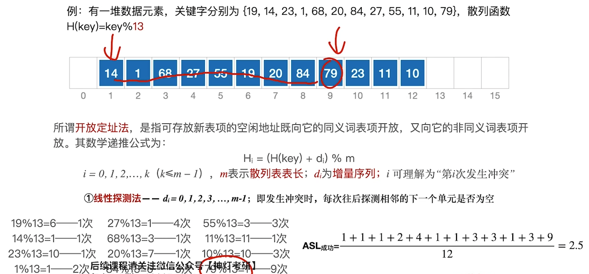
	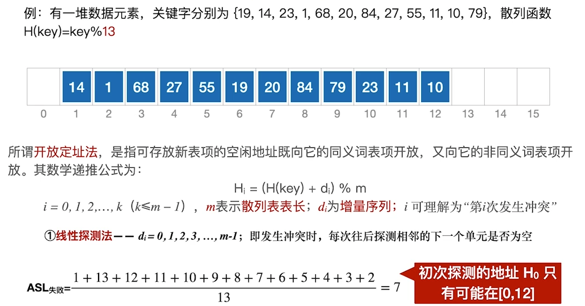
</div><p>&nbsp;</p><p><strong><span>拉链法处理下ASL的计算：</span></strong></p><p><mjx-container class="MathJax" jax="SVG" style="position: relative;"><svg xmlns="http://www.w3.org/2000/svg" width="29.178ex" height="3.447ex" role="img" focusable="false" viewBox="0 -1011.8 12896.5 1523.5" xmlns:xlink="http://www.w3.org/1999/xlink" aria-hidden="true" style="vertical-align: -1.158ex;"><defs><path id="MJX-541-TEX-N-41" d="M255 0Q240 3 140 3Q48 3 39 0H32V46H47Q119 49 139 88Q140 91 192 245T295 553T348 708Q351 716 366 716H376Q396 715 400 709Q402 707 508 390L617 67Q624 54 636 51T687 46H717V0H708Q699 3 581 3Q458 3 437 0H427V46H440Q510 46 510 64Q510 66 486 138L462 209H229L209 150Q189 91 189 85Q189 72 209 59T259 46H264V0H255ZM447 255L345 557L244 256Q244 255 345 255H447Z"></path><path id="MJX-541-TEX-N-53" d="M55 507Q55 590 112 647T243 704H257Q342 704 405 641L426 672Q431 679 436 687T446 700L449 704Q450 704 453 704T459 705H463Q466 705 472 699V462L466 456H448Q437 456 435 459T430 479Q413 605 329 646Q292 662 254 662Q201 662 168 626T135 542Q135 508 152 480T200 435Q210 431 286 412T370 389Q427 367 463 314T500 191Q500 110 448 45T301 -21Q245 -21 201 -4T140 27L122 41Q118 36 107 21T87 -7T78 -21Q76 -22 68 -22H64Q61 -22 55 -16V101Q55 220 56 222Q58 227 76 227H89Q95 221 95 214Q95 182 105 151T139 90T205 42T305 24Q352 24 386 62T420 155Q420 198 398 233T340 281Q284 295 266 300Q261 301 239 306T206 314T174 325T141 343T112 367T85 402Q55 451 55 507Z"></path><path id="MJX-541-TEX-N-4C" d="M128 622Q121 629 117 631T101 634T58 637H25V683H36Q48 680 182 680Q324 680 348 683H360V637H333Q273 637 258 635T233 622L232 342V129Q232 57 237 52Q243 47 313 47Q384 47 410 53Q470 70 498 110T536 221Q536 226 537 238T540 261T542 272T562 273H582V268Q580 265 568 137T554 5V0H25V46H58Q100 47 109 49T128 61V622Z"></path><path id="MJX-541-TEX-N-3D" d="M56 347Q56 360 70 367H707Q722 359 722 347Q722 336 708 328L390 327H72Q56 332 56 347ZM56 153Q56 168 72 173H708Q722 163 722 153Q722 140 707 133H70Q56 140 56 153Z"></path></defs><g stroke="currentColor" fill="currentColor" stroke-width="0" transform="scale(1,-1)"><g data-mml-node="math"><g data-mml-node="msub"><g data-mml-node="mtext"><use data-c="41" xlink:href="#MJX-541-TEX-N-41"></use><use data-c="53" xlink:href="#MJX-541-TEX-N-53" transform="translate(750,0)"></use><use data-c="4C" xlink:href="#MJX-541-TEX-N-4C" transform="translate(1306,0)"></use></g><g data-mml-node="TeXAtom" transform="translate(1964,-176.7) scale(0.707)" data-mjx-texclass="ORD"><g data-mml-node="mtext"><text data-variant="normal" transform="scale(1,-1)" font-size="884px" font-family="serif">成</text></g><g data-mml-node="mtext" transform="translate(870.4,0)"><text data-variant="normal" transform="scale(1,-1)" font-size="884px" font-family="serif">功</text></g></g></g><g data-mml-node="mo" transform="translate(3522.7,0)"><use data-c="3D" xlink:href="#MJX-541-TEX-N-3D"></use></g><g data-mml-node="mfrac" transform="translate(4578.5,0)"><g data-mml-node="mrow" transform="translate(220,481.4) scale(0.707)"><g data-mml-node="mtext"><text data-variant="normal" transform="scale(1,-1)" font-size="884px" font-family="serif">每</text></g><g data-mml-node="mtext" transform="translate(870.4,0)"><text data-variant="normal" transform="scale(1,-1)" font-size="884px" font-family="serif">个</text></g><g data-mml-node="mtext" transform="translate(1697.3,0)"><text data-variant="normal" transform="scale(1,-1)" font-size="884px" font-family="serif">关</text></g><g data-mml-node="mtext" transform="translate(2567.7,0)"><text data-variant="normal" transform="scale(1,-1)" font-size="884px" font-family="serif">键</text></g><g data-mml-node="mtext" transform="translate(3438.1,0)"><text data-variant="normal" transform="scale(1,-1)" font-size="884px" font-family="serif">字</text></g><g data-mml-node="mtext" transform="translate(4265,0)"><text data-variant="normal" transform="scale(1,-1)" font-size="884px" font-family="serif">对</text></g><g data-mml-node="mtext" transform="translate(5135.4,0)"><text data-variant="normal" transform="scale(1,-1)" font-size="884px" font-family="serif">应</text></g><g data-mml-node="mtext" transform="translate(6005.8,0)"><text data-variant="normal" transform="scale(1,-1)" font-size="884px" font-family="serif">查</text></g><g data-mml-node="mtext" transform="translate(6876.2,0)"><text data-variant="normal" transform="scale(1,-1)" font-size="884px" font-family="serif">找</text></g><g data-mml-node="mtext" transform="translate(7746.6,0)"><text data-variant="normal" transform="scale(1,-1)" font-size="884px" font-family="serif">次</text></g><g data-mml-node="mtext" transform="translate(8573.5,0)"><text data-variant="normal" transform="scale(1,-1)" font-size="884px" font-family="serif">数</text></g><g data-mml-node="mtext" transform="translate(9400.4,0)"><text data-variant="normal" transform="scale(1,-1)" font-size="884px" font-family="serif">之</text></g><g data-mml-node="mtext" transform="translate(10270.8,0)"><text data-variant="normal" transform="scale(1,-1)" font-size="884px" font-family="serif">和</text></g></g><g data-mml-node="mrow" transform="translate(2666.5,-370.3) scale(0.707)"><g data-mml-node="mtext"><text data-variant="normal" transform="scale(1,-1)" font-size="884px" font-family="serif">关</text></g><g data-mml-node="mtext" transform="translate(870.4,0)"><text data-variant="normal" transform="scale(1,-1)" font-size="884px" font-family="serif">键</text></g><g data-mml-node="mtext" transform="translate(1740.8,0)"><text data-variant="normal" transform="scale(1,-1)" font-size="884px" font-family="serif">字</text></g><g data-mml-node="mtext" transform="translate(2567.7,0)"><text data-variant="normal" transform="scale(1,-1)" font-size="884px" font-family="serif">个</text></g><g data-mml-node="mtext" transform="translate(3394.6,0)"><text data-variant="normal" transform="scale(1,-1)" font-size="884px" font-family="serif">数</text></g></g><rect width="8078" height="60" x="120" y="220"></rect></g></g></g></svg><mjx-assistive-mml unselectable="on" display="inline"><math xmlns="http://www.w3.org/1998/Math/MathML"><msub><mtext>ASL</mtext><mrow data-mjx-texclass="ORD"><mtext>成</mtext><mtext>功</mtext></mrow></msub><mo>=</mo><mfrac><mrow><mtext>每</mtext><mtext>个</mtext><mtext>关</mtext><mtext>键</mtext><mtext>字</mtext><mtext>对</mtext><mtext>应</mtext><mtext>查</mtext><mtext>找</mtext><mtext>次</mtext><mtext>数</mtext><mtext>之</mtext><mtext>和</mtext></mrow><mrow><mtext>关</mtext><mtext>键</mtext><mtext>字</mtext><mtext>个</mtext><mtext>数</mtext></mrow></mfrac></math></mjx-assistive-mml></mjx-container><script type="math/tex">\text{ASL}_{成功}=\frac{每个关键字对应查找次数之和}{关键字个数}</script></p><p><mjx-container class="MathJax" jax="SVG" style="position: relative;"><svg xmlns="http://www.w3.org/2000/svg" width="29.002ex" height="3.447ex" role="img" focusable="false" viewBox="0 -1011.8 12818.7 1523.5" xmlns:xlink="http://www.w3.org/1999/xlink" aria-hidden="true" style="vertical-align: -1.158ex;"><defs><path id="MJX-542-TEX-N-41" d="M255 0Q240 3 140 3Q48 3 39 0H32V46H47Q119 49 139 88Q140 91 192 245T295 553T348 708Q351 716 366 716H376Q396 715 400 709Q402 707 508 390L617 67Q624 54 636 51T687 46H717V0H708Q699 3 581 3Q458 3 437 0H427V46H440Q510 46 510 64Q510 66 486 138L462 209H229L209 150Q189 91 189 85Q189 72 209 59T259 46H264V0H255ZM447 255L345 557L244 256Q244 255 345 255H447Z"></path><path id="MJX-542-TEX-N-53" d="M55 507Q55 590 112 647T243 704H257Q342 704 405 641L426 672Q431 679 436 687T446 700L449 704Q450 704 453 704T459 705H463Q466 705 472 699V462L466 456H448Q437 456 435 459T430 479Q413 605 329 646Q292 662 254 662Q201 662 168 626T135 542Q135 508 152 480T200 435Q210 431 286 412T370 389Q427 367 463 314T500 191Q500 110 448 45T301 -21Q245 -21 201 -4T140 27L122 41Q118 36 107 21T87 -7T78 -21Q76 -22 68 -22H64Q61 -22 55 -16V101Q55 220 56 222Q58 227 76 227H89Q95 221 95 214Q95 182 105 151T139 90T205 42T305 24Q352 24 386 62T420 155Q420 198 398 233T340 281Q284 295 266 300Q261 301 239 306T206 314T174 325T141 343T112 367T85 402Q55 451 55 507Z"></path><path id="MJX-542-TEX-N-4C" d="M128 622Q121 629 117 631T101 634T58 637H25V683H36Q48 680 182 680Q324 680 348 683H360V637H333Q273 637 258 635T233 622L232 342V129Q232 57 237 52Q243 47 313 47Q384 47 410 53Q470 70 498 110T536 221Q536 226 537 238T540 261T542 272T562 273H582V268Q580 265 568 137T554 5V0H25V46H58Q100 47 109 49T128 61V622Z"></path><path id="MJX-542-TEX-N-3D" d="M56 347Q56 360 70 367H707Q722 359 722 347Q722 336 708 328L390 327H72Q56 332 56 347ZM56 153Q56 168 72 173H708Q722 163 722 153Q722 140 707 133H70Q56 140 56 153Z"></path></defs><g stroke="currentColor" fill="currentColor" stroke-width="0" transform="scale(1,-1)"><g data-mml-node="math"><g data-mml-node="msub"><g data-mml-node="mtext"><use data-c="41" xlink:href="#MJX-542-TEX-N-41"></use><use data-c="53" xlink:href="#MJX-542-TEX-N-53" transform="translate(750,0)"></use><use data-c="4C" xlink:href="#MJX-542-TEX-N-4C" transform="translate(1306,0)"></use></g><g data-mml-node="TeXAtom" transform="translate(1964,-176.7) scale(0.707)" data-mjx-texclass="ORD"><g data-mml-node="mtext"><text data-variant="normal" transform="scale(1,-1)" font-size="884px" font-family="serif">失</text></g><g data-mml-node="mtext" transform="translate(870.4,0)"><text data-variant="normal" transform="scale(1,-1)" font-size="884px" font-family="serif">败</text></g></g></g><g data-mml-node="mo" transform="translate(3522.7,0)"><use data-c="3D" xlink:href="#MJX-542-TEX-N-3D"></use></g><g data-mml-node="mfrac" transform="translate(4578.5,0)"><g data-mml-node="mrow" transform="translate(220,481.4) scale(0.707)"><g data-mml-node="mtext"><text data-variant="normal" transform="scale(1,-1)" font-size="884px" font-family="serif">关</text></g><g data-mml-node="mtext" transform="translate(870.4,0)"><text data-variant="normal" transform="scale(1,-1)" font-size="884px" font-family="serif">键</text></g><g data-mml-node="mtext" transform="translate(1740.8,0)"><text data-variant="normal" transform="scale(1,-1)" font-size="884px" font-family="serif">字</text></g><g data-mml-node="mtext" transform="translate(2567.7,0)"><text data-variant="normal" transform="scale(1,-1)" font-size="884px" font-family="serif">数</text></g><g data-mml-node="mtext" transform="translate(3394.6,0)"><text data-variant="normal" transform="scale(1,-1)" font-size="884px" font-family="serif">量</text></g></g><g data-mml-node="mrow" transform="translate(1112.4,-370.3) scale(0.707)"><g data-mml-node="mtext"><text data-variant="normal" transform="scale(1,-1)" font-size="884px" font-family="serif">表</text></g><g data-mml-node="mtext" transform="translate(870.4,0)"><text data-variant="normal" transform="scale(1,-1)" font-size="884px" font-family="serif">长</text></g></g><rect width="3185" height="60" x="120" y="220"></rect></g><g data-mml-node="mo" transform="translate(8281.3,0)"><use data-c="3D" xlink:href="#MJX-542-TEX-N-3D"></use></g><g data-mml-node="mtext" transform="translate(9337.1,0)"><text data-variant="normal" transform="scale(1,-1)" font-size="884px" font-family="serif">装</text></g><g data-mml-node="mtext" transform="translate(10207.5,0)"><text data-variant="normal" transform="scale(1,-1)" font-size="884px" font-family="serif">填</text></g><g data-mml-node="mtext" transform="translate(11077.9,0)"><text data-variant="normal" transform="scale(1,-1)" font-size="884px" font-family="serif">因</text></g><g data-mml-node="mtext" transform="translate(11948.3,0)"><text data-variant="normal" transform="scale(1,-1)" font-size="884px" font-family="serif">子</text></g></g></g></svg><mjx-assistive-mml unselectable="on" display="inline"><math xmlns="http://www.w3.org/1998/Math/MathML"><msub><mtext>ASL</mtext><mrow data-mjx-texclass="ORD"><mtext>失</mtext><mtext>败</mtext></mrow></msub><mo>=</mo><mfrac><mrow><mtext>关</mtext><mtext>键</mtext><mtext>字</mtext><mtext>数</mtext><mtext>量</mtext></mrow><mrow><mtext>表</mtext><mtext>长</mtext></mrow></mfrac><mo>=</mo><mtext>装</mtext><mtext>填</mtext><mtext>因</mtext><mtext>子</mtext></math></mjx-assistive-mml></mjx-container><script type="math/tex">\text{ASL}_{失败}=\frac{关键字数量}{表长}=装填因子</script></p><div>
  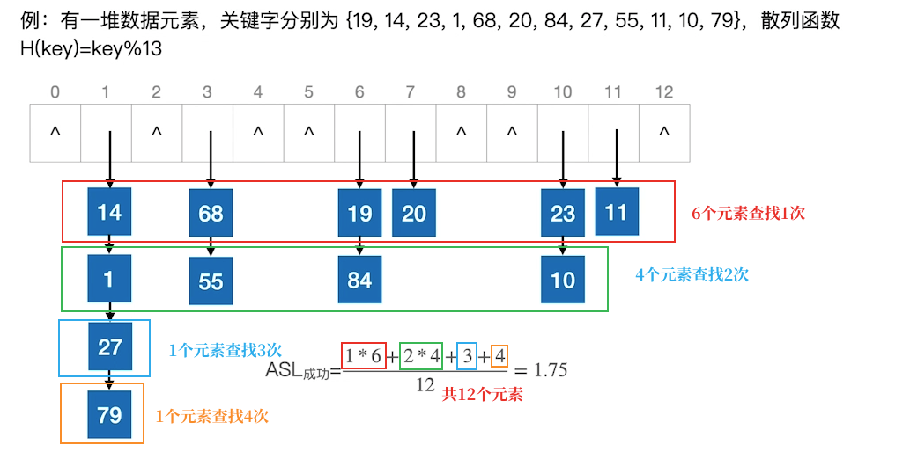
  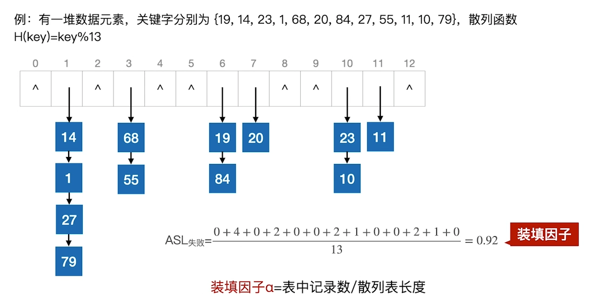
</div><p>&nbsp;</p><p>&nbsp;</p><h2 id='排序-1'><span>排序</span></h2><h3 id='选择排序'><span>选择排序</span></h3><h4 id='堆排序'><span>堆排序</span></h4><p><strong><span>建堆（“调整”操作）：</span></strong><span>从最后一个非叶结点开始检查，将所有不满足条件的结点进行“下坠”</span></p><p><strong><span>插入：</span></strong><span>统一插入到堆底尾部（从存储结构看也就是列表末尾），然后执行一次“调整（上升）”操作。</span></p><p><strong><span>删除：</span></strong><span>删除后，用堆底元素代替被删除的元素，然后逐一比较“下坠”。</span></p><p><strong><span>时间复杂度：</span></strong></p><ul><li><mjx-container class="MathJax" jax="SVG" style="position: relative;"><svg xmlns="http://www.w3.org/2000/svg" width="8.782ex" height="2.262ex" role="img" focusable="false" viewBox="0 -750 3881.8 1000" xmlns:xlink="http://www.w3.org/1999/xlink" aria-hidden="true" style="vertical-align: -0.566ex;"><defs><path id="MJX-543-TEX-I-1D442" d="M740 435Q740 320 676 213T511 42T304 -22Q207 -22 138 35T51 201Q50 209 50 244Q50 346 98 438T227 601Q351 704 476 704Q514 704 524 703Q621 689 680 617T740 435ZM637 476Q637 565 591 615T476 665Q396 665 322 605Q242 542 200 428T157 216Q157 126 200 73T314 19Q404 19 485 98T608 313Q637 408 637 476Z"></path><path id="MJX-543-TEX-N-28" d="M94 250Q94 319 104 381T127 488T164 576T202 643T244 695T277 729T302 750H315H319Q333 750 333 741Q333 738 316 720T275 667T226 581T184 443T167 250T184 58T225 -81T274 -167T316 -220T333 -241Q333 -250 318 -250H315H302L274 -226Q180 -141 137 -14T94 250Z"></path><path id="MJX-543-TEX-I-1D45B" d="M21 287Q22 293 24 303T36 341T56 388T89 425T135 442Q171 442 195 424T225 390T231 369Q231 367 232 367L243 378Q304 442 382 442Q436 442 469 415T503 336T465 179T427 52Q427 26 444 26Q450 26 453 27Q482 32 505 65T540 145Q542 153 560 153Q580 153 580 145Q580 144 576 130Q568 101 554 73T508 17T439 -10Q392 -10 371 17T350 73Q350 92 386 193T423 345Q423 404 379 404H374Q288 404 229 303L222 291L189 157Q156 26 151 16Q138 -11 108 -11Q95 -11 87 -5T76 7T74 17Q74 30 112 180T152 343Q153 348 153 366Q153 405 129 405Q91 405 66 305Q60 285 60 284Q58 278 41 278H27Q21 284 21 287Z"></path><path id="MJX-543-TEX-N-29" d="M60 749L64 750Q69 750 74 750H86L114 726Q208 641 251 514T294 250Q294 182 284 119T261 12T224 -76T186 -143T145 -194T113 -227T90 -246Q87 -249 86 -250H74Q66 -250 63 -250T58 -247T55 -238Q56 -237 66 -225Q221 -64 221 250T66 725Q56 737 55 738Q55 746 60 749Z"></path></defs><g stroke="currentColor" fill="currentColor" stroke-width="0" transform="scale(1,-1)"><g data-mml-node="math"><g data-mml-node="mtext"><text data-variant="normal" transform="scale(1,-1)" font-size="884px" font-family="serif">建</text></g><g data-mml-node="mtext" transform="translate(870.4,0)"><text data-variant="normal" transform="scale(1,-1)" font-size="884px" font-family="serif">堆</text></g><g data-mml-node="mi" transform="translate(1740.8,0)"><use data-c="1D442" xlink:href="#MJX-543-TEX-I-1D442"></use></g><g data-mml-node="mo" transform="translate(2503.8,0)"><use data-c="28" xlink:href="#MJX-543-TEX-N-28"></use></g><g data-mml-node="mi" transform="translate(2892.8,0)"><use data-c="1D45B" xlink:href="#MJX-543-TEX-I-1D45B"></use></g><g data-mml-node="mo" transform="translate(3492.8,0)"><use data-c="29" xlink:href="#MJX-543-TEX-N-29"></use></g></g></g></svg><mjx-assistive-mml unselectable="on" display="inline"><math xmlns="http://www.w3.org/1998/Math/MathML"><mtext>建</mtext><mtext>堆</mtext><mi>O</mi><mo stretchy="false">(</mo><mi>n</mi><mo stretchy="false">)</mo></math></mjx-assistive-mml></mjx-container><script type="math/tex">建堆O(n)</script></li><li><mjx-container class="MathJax" jax="SVG" style="position: relative;"><svg xmlns="http://www.w3.org/2000/svg" width="17.442ex" height="2.262ex" role="img" focusable="false" viewBox="0 -750 7709.5 1000" xmlns:xlink="http://www.w3.org/1999/xlink" aria-hidden="true" style="vertical-align: -0.566ex;"><defs><path id="MJX-544-TEX-I-1D442" d="M740 435Q740 320 676 213T511 42T304 -22Q207 -22 138 35T51 201Q50 209 50 244Q50 346 98 438T227 601Q351 704 476 704Q514 704 524 703Q621 689 680 617T740 435ZM637 476Q637 565 591 615T476 665Q396 665 322 605Q242 542 200 428T157 216Q157 126 200 73T314 19Q404 19 485 98T608 313Q637 408 637 476Z"></path><path id="MJX-544-TEX-N-28" d="M94 250Q94 319 104 381T127 488T164 576T202 643T244 695T277 729T302 750H315H319Q333 750 333 741Q333 738 316 720T275 667T226 581T184 443T167 250T184 58T225 -81T274 -167T316 -220T333 -241Q333 -250 318 -250H315H302L274 -226Q180 -141 137 -14T94 250Z"></path><path id="MJX-544-TEX-I-1D459" d="M117 59Q117 26 142 26Q179 26 205 131Q211 151 215 152Q217 153 225 153H229Q238 153 241 153T246 151T248 144Q247 138 245 128T234 90T214 43T183 6T137 -11Q101 -11 70 11T38 85Q38 97 39 102L104 360Q167 615 167 623Q167 626 166 628T162 632T157 634T149 635T141 636T132 637T122 637Q112 637 109 637T101 638T95 641T94 647Q94 649 96 661Q101 680 107 682T179 688Q194 689 213 690T243 693T254 694Q266 694 266 686Q266 675 193 386T118 83Q118 81 118 75T117 65V59Z"></path><path id="MJX-544-TEX-I-1D45C" d="M201 -11Q126 -11 80 38T34 156Q34 221 64 279T146 380Q222 441 301 441Q333 441 341 440Q354 437 367 433T402 417T438 387T464 338T476 268Q476 161 390 75T201 -11ZM121 120Q121 70 147 48T206 26Q250 26 289 58T351 142Q360 163 374 216T388 308Q388 352 370 375Q346 405 306 405Q243 405 195 347Q158 303 140 230T121 120Z"></path><path id="MJX-544-TEX-I-1D454" d="M311 43Q296 30 267 15T206 0Q143 0 105 45T66 160Q66 265 143 353T314 442Q361 442 401 394L404 398Q406 401 409 404T418 412T431 419T447 422Q461 422 470 413T480 394Q480 379 423 152T363 -80Q345 -134 286 -169T151 -205Q10 -205 10 -137Q10 -111 28 -91T74 -71Q89 -71 102 -80T116 -111Q116 -121 114 -130T107 -144T99 -154T92 -162L90 -164H91Q101 -167 151 -167Q189 -167 211 -155Q234 -144 254 -122T282 -75Q288 -56 298 -13Q311 35 311 43ZM384 328L380 339Q377 350 375 354T369 368T359 382T346 393T328 402T306 405Q262 405 221 352Q191 313 171 233T151 117Q151 38 213 38Q269 38 323 108L331 118L384 328Z"></path><path id="MJX-544-TEX-I-1D45B" d="M21 287Q22 293 24 303T36 341T56 388T89 425T135 442Q171 442 195 424T225 390T231 369Q231 367 232 367L243 378Q304 442 382 442Q436 442 469 415T503 336T465 179T427 52Q427 26 444 26Q450 26 453 27Q482 32 505 65T540 145Q542 153 560 153Q580 153 580 145Q580 144 576 130Q568 101 554 73T508 17T439 -10Q392 -10 371 17T350 73Q350 92 386 193T423 345Q423 404 379 404H374Q288 404 229 303L222 291L189 157Q156 26 151 16Q138 -11 108 -11Q95 -11 87 -5T76 7T74 17Q74 30 112 180T152 343Q153 348 153 366Q153 405 129 405Q91 405 66 305Q60 285 60 284Q58 278 41 278H27Q21 284 21 287Z"></path><path id="MJX-544-TEX-N-29" d="M60 749L64 750Q69 750 74 750H86L114 726Q208 641 251 514T294 250Q294 182 284 119T261 12T224 -76T186 -143T145 -194T113 -227T90 -246Q87 -249 86 -250H74Q66 -250 63 -250T58 -247T55 -238Q56 -237 66 -225Q221 -64 221 250T66 725Q56 737 55 738Q55 746 60 749Z"></path></defs><g stroke="currentColor" fill="currentColor" stroke-width="0" transform="scale(1,-1)"><g data-mml-node="math"><g data-mml-node="mtext"><text data-variant="normal" transform="scale(1,-1)" font-size="884px" font-family="serif">输</text></g><g data-mml-node="mtext" transform="translate(870.4,0)"><text data-variant="normal" transform="scale(1,-1)" font-size="884px" font-family="serif">出</text></g><g data-mml-node="mtext" transform="translate(1740.8,0)"><text data-variant="normal" transform="scale(1,-1)" font-size="884px" font-family="serif">并</text></g><g data-mml-node="mtext" transform="translate(2567.7,0)"><text data-variant="normal" transform="scale(1,-1)" font-size="884px" font-family="serif">调</text></g><g data-mml-node="mtext" transform="translate(3438.1,0)"><text data-variant="normal" transform="scale(1,-1)" font-size="884px" font-family="serif">整</text></g><g data-mml-node="mi" transform="translate(4308.5,0)"><use data-c="1D442" xlink:href="#MJX-544-TEX-I-1D442"></use></g><g data-mml-node="mo" transform="translate(5071.5,0)"><use data-c="28" xlink:href="#MJX-544-TEX-N-28"></use></g><g data-mml-node="mi" transform="translate(5460.5,0)"><use data-c="1D459" xlink:href="#MJX-544-TEX-I-1D459"></use></g><g data-mml-node="mi" transform="translate(5758.5,0)"><use data-c="1D45C" xlink:href="#MJX-544-TEX-I-1D45C"></use></g><g data-mml-node="mi" transform="translate(6243.5,0)"><use data-c="1D454" xlink:href="#MJX-544-TEX-I-1D454"></use></g><g data-mml-node="mi" transform="translate(6720.5,0)"><use data-c="1D45B" xlink:href="#MJX-544-TEX-I-1D45B"></use></g><g data-mml-node="mo" transform="translate(7320.5,0)"><use data-c="29" xlink:href="#MJX-544-TEX-N-29"></use></g></g></g></svg><mjx-assistive-mml unselectable="on" display="inline"><math xmlns="http://www.w3.org/1998/Math/MathML"><mtext>输</mtext><mtext>出</mtext><mtext>并</mtext><mtext>调</mtext><mtext>整</mtext><mi>O</mi><mo stretchy="false">(</mo><mi>l</mi><mi>o</mi><mi>g</mi><mi>n</mi><mo stretchy="false">)</mo></math></mjx-assistive-mml></mjx-container><script type="math/tex">输出并调整O(logn)</script></li></ul><p><strong><span>空间复杂度：</span></strong></p><ul><li><mjx-container class="MathJax" jax="SVG" style="position: relative;"><svg xmlns="http://www.w3.org/2000/svg" width="4.618ex" height="2.262ex" role="img" focusable="false" viewBox="0 -750 2041 1000" xmlns:xlink="http://www.w3.org/1999/xlink" aria-hidden="true" style="vertical-align: -0.566ex;"><defs><path id="MJX-545-TEX-I-1D442" d="M740 435Q740 320 676 213T511 42T304 -22Q207 -22 138 35T51 201Q50 209 50 244Q50 346 98 438T227 601Q351 704 476 704Q514 704 524 703Q621 689 680 617T740 435ZM637 476Q637 565 591 615T476 665Q396 665 322 605Q242 542 200 428T157 216Q157 126 200 73T314 19Q404 19 485 98T608 313Q637 408 637 476Z"></path><path id="MJX-545-TEX-N-28" d="M94 250Q94 319 104 381T127 488T164 576T202 643T244 695T277 729T302 750H315H319Q333 750 333 741Q333 738 316 720T275 667T226 581T184 443T167 250T184 58T225 -81T274 -167T316 -220T333 -241Q333 -250 318 -250H315H302L274 -226Q180 -141 137 -14T94 250Z"></path><path id="MJX-545-TEX-N-31" d="M213 578L200 573Q186 568 160 563T102 556H83V602H102Q149 604 189 617T245 641T273 663Q275 666 285 666Q294 666 302 660V361L303 61Q310 54 315 52T339 48T401 46H427V0H416Q395 3 257 3Q121 3 100 0H88V46H114Q136 46 152 46T177 47T193 50T201 52T207 57T213 61V578Z"></path><path id="MJX-545-TEX-N-29" d="M60 749L64 750Q69 750 74 750H86L114 726Q208 641 251 514T294 250Q294 182 284 119T261 12T224 -76T186 -143T145 -194T113 -227T90 -246Q87 -249 86 -250H74Q66 -250 63 -250T58 -247T55 -238Q56 -237 66 -225Q221 -64 221 250T66 725Q56 737 55 738Q55 746 60 749Z"></path></defs><g stroke="currentColor" fill="currentColor" stroke-width="0" transform="scale(1,-1)"><g data-mml-node="math"><g data-mml-node="mi"><use data-c="1D442" xlink:href="#MJX-545-TEX-I-1D442"></use></g><g data-mml-node="mo" transform="translate(763,0)"><use data-c="28" xlink:href="#MJX-545-TEX-N-28"></use></g><g data-mml-node="mn" transform="translate(1152,0)"><use data-c="31" xlink:href="#MJX-545-TEX-N-31"></use></g><g data-mml-node="mo" transform="translate(1652,0)"><use data-c="29" xlink:href="#MJX-545-TEX-N-29"></use></g></g></g></svg><mjx-assistive-mml unselectable="on" display="inline"><math xmlns="http://www.w3.org/1998/Math/MathML"><mi>O</mi><mo stretchy="false">(</mo><mn>1</mn><mo stretchy="false">)</mo></math></mjx-assistive-mml></mjx-container><script type="math/tex">O(1)</script></li></ul><h3 id='交换排序'><span>交换排序</span></h3><h4 id='快速排序'><span>快速排序</span></h4><p><strong><span>快排的枢轴元素判定（一次排序后）</span></strong></p><p><span>①寻找已经确定最终位置的元素p</span></p><p><span>②如果只出现一个p，则p就是枢轴</span></p><p><span>③如果出现多个p，则需对每个p左右两侧的元素大小进行检查，判断p是否符合枢轴元素的定义（枢轴一侧的元素一定都比枢轴大/小）</span></p><p>&nbsp;</p><h3 id='比较排序的结论'><span>比较排序的结论</span></h3><ul><li><mjx-container class="MathJax" jax="SVG" style="position: relative;"><svg xmlns="http://www.w3.org/2000/svg" width="65.048ex" height="2.262ex" role="img" focusable="false" viewBox="0 -750 28751.3 1000" xmlns:xlink="http://www.w3.org/1999/xlink" aria-hidden="true" style="vertical-align: -0.566ex;"><defs><path id="MJX-546-TEX-I-1D45B" d="M21 287Q22 293 24 303T36 341T56 388T89 425T135 442Q171 442 195 424T225 390T231 369Q231 367 232 367L243 378Q304 442 382 442Q436 442 469 415T503 336T465 179T427 52Q427 26 444 26Q450 26 453 27Q482 32 505 65T540 145Q542 153 560 153Q580 153 580 145Q580 144 576 130Q568 101 554 73T508 17T439 -10Q392 -10 371 17T350 73Q350 92 386 193T423 345Q423 404 379 404H374Q288 404 229 303L222 291L189 157Q156 26 151 16Q138 -11 108 -11Q95 -11 87 -5T76 7T74 17Q74 30 112 180T152 343Q153 348 153 366Q153 405 129 405Q91 405 66 305Q60 285 60 284Q58 278 41 278H27Q21 284 21 287Z"></path><path id="MJX-546-TEX-N-2308" d="M174 734Q178 746 190 750H298H369Q400 750 411 747T422 730T411 713T372 709Q365 709 345 709T310 710H214V-235Q206 -248 196 -250Q192 -250 189 -249T184 -247T180 -244T178 -241T176 -237T174 -234V734Z"></path><path id="MJX-546-TEX-N-6C" d="M42 46H56Q95 46 103 60V68Q103 77 103 91T103 124T104 167T104 217T104 272T104 329Q104 366 104 407T104 482T104 542T103 586T103 603Q100 622 89 628T44 637H26V660Q26 683 28 683L38 684Q48 685 67 686T104 688Q121 689 141 690T171 693T182 694H185V379Q185 62 186 60Q190 52 198 49Q219 46 247 46H263V0H255L232 1Q209 2 183 2T145 3T107 3T57 1L34 0H26V46H42Z"></path><path id="MJX-546-TEX-N-6F" d="M28 214Q28 309 93 378T250 448Q340 448 405 380T471 215Q471 120 407 55T250 -10Q153 -10 91 57T28 214ZM250 30Q372 30 372 193V225V250Q372 272 371 288T364 326T348 362T317 390T268 410Q263 411 252 411Q222 411 195 399Q152 377 139 338T126 246V226Q126 130 145 91Q177 30 250 30Z"></path><path id="MJX-546-TEX-N-67" d="M329 409Q373 453 429 453Q459 453 472 434T485 396Q485 382 476 371T449 360Q416 360 412 390Q410 404 415 411Q415 412 416 414V415Q388 412 363 393Q355 388 355 386Q355 385 359 381T368 369T379 351T388 325T392 292Q392 230 343 187T222 143Q172 143 123 171Q112 153 112 133Q112 98 138 81Q147 75 155 75T227 73Q311 72 335 67Q396 58 431 26Q470 -13 470 -72Q470 -139 392 -175Q332 -206 250 -206Q167 -206 107 -175Q29 -140 29 -75Q29 -39 50 -15T92 18L103 24Q67 55 67 108Q67 155 96 193Q52 237 52 292Q52 355 102 398T223 442Q274 442 318 416L329 409ZM299 343Q294 371 273 387T221 404Q192 404 171 388T145 343Q142 326 142 292Q142 248 149 227T179 192Q196 182 222 182Q244 182 260 189T283 207T294 227T299 242Q302 258 302 292T299 343ZM403 -75Q403 -50 389 -34T348 -11T299 -2T245 0H218Q151 0 138 -6Q118 -15 107 -34T95 -74Q95 -84 101 -97T122 -127T170 -155T250 -167Q319 -167 361 -139T403 -75Z"></path><path id="MJX-546-TEX-N-32" d="M109 429Q82 429 66 447T50 491Q50 562 103 614T235 666Q326 666 387 610T449 465Q449 422 429 383T381 315T301 241Q265 210 201 149L142 93L218 92Q375 92 385 97Q392 99 409 186V189H449V186Q448 183 436 95T421 3V0H50V19V31Q50 38 56 46T86 81Q115 113 136 137Q145 147 170 174T204 211T233 244T261 278T284 308T305 340T320 369T333 401T340 431T343 464Q343 527 309 573T212 619Q179 619 154 602T119 569T109 550Q109 549 114 549Q132 549 151 535T170 489Q170 464 154 447T109 429Z"></path><path id="MJX-546-TEX-N-2061" d=""></path><path id="MJX-546-TEX-N-28" d="M94 250Q94 319 104 381T127 488T164 576T202 643T244 695T277 729T302 750H315H319Q333 750 333 741Q333 738 316 720T275 667T226 581T184 443T167 250T184 58T225 -81T274 -167T316 -220T333 -241Q333 -250 318 -250H315H302L274 -226Q180 -141 137 -14T94 250Z"></path><path id="MJX-546-TEX-N-21" d="M78 661Q78 682 96 699T138 716T180 700T199 661Q199 654 179 432T158 206Q156 198 139 198Q121 198 119 206Q118 209 98 431T78 661ZM79 61Q79 89 97 105T141 121Q164 119 181 104T198 61Q198 31 181 16T139 1Q114 1 97 16T79 61Z"></path><path id="MJX-546-TEX-N-29" d="M60 749L64 750Q69 750 74 750H86L114 726Q208 641 251 514T294 250Q294 182 284 119T261 12T224 -76T186 -143T145 -194T113 -227T90 -246Q87 -249 86 -250H74Q66 -250 63 -250T58 -247T55 -238Q56 -237 66 -225Q221 -64 221 250T66 725Q56 737 55 738Q55 746 60 749Z"></path><path id="MJX-546-TEX-N-2309" d="M21 717T21 730T32 746T75 750H147H256Q266 742 269 735V-235Q262 -248 251 -250Q247 -250 244 -249T239 -247T235 -244T233 -241T231 -237T229 -234V710H133Q119 710 99 710T71 709Q43 709 32 713Z"></path></defs><g stroke="currentColor" fill="currentColor" stroke-width="0" transform="scale(1,-1)"><g data-mml-node="math"><g data-mml-node="mtext"><text data-variant="normal" transform="scale(1,-1)" font-size="884px" font-family="serif">对</text></g><g data-mml-node="mtext" transform="translate(870.4,0)"><text data-variant="normal" transform="scale(1,-1)" font-size="884px" font-family="serif">任</text></g><g data-mml-node="mtext" transform="translate(1740.8,0)"><text data-variant="normal" transform="scale(1,-1)" font-size="884px" font-family="serif">意</text></g><g data-mml-node="mi" transform="translate(2611.2,0)"><use data-c="1D45B" xlink:href="#MJX-546-TEX-I-1D45B"></use></g><g data-mml-node="mtext" transform="translate(3211.2,0)"><text data-variant="normal" transform="scale(1,-1)" font-size="884px" font-family="serif">个</text></g><g data-mml-node="mtext" transform="translate(4038.1,0)"><text data-variant="normal" transform="scale(1,-1)" font-size="884px" font-family="serif">关</text></g><g data-mml-node="mtext" transform="translate(4908.5,0)"><text data-variant="normal" transform="scale(1,-1)" font-size="884px" font-family="serif">键</text></g><g data-mml-node="mtext" transform="translate(5778.9,0)"><text data-variant="normal" transform="scale(1,-1)" font-size="884px" font-family="serif">字</text></g><g data-mml-node="mtext" transform="translate(6605.8,0)"><text data-variant="normal" transform="scale(1,-1)" font-size="884px" font-family="serif">进</text></g><g data-mml-node="mtext" transform="translate(7432.7,0)"><text data-variant="normal" transform="scale(1,-1)" font-size="884px" font-family="serif">行</text></g><g data-mml-node="mtext" transform="translate(8259.6,0)"><text data-variant="normal" transform="scale(1,-1)" font-size="884px" font-family="serif">基</text></g><g data-mml-node="mtext" transform="translate(9130,0)"><text data-variant="normal" transform="scale(1,-1)" font-size="884px" font-family="serif">于</text></g><g data-mml-node="mtext" transform="translate(10000.4,0)"><text data-variant="normal" transform="scale(1,-1)" font-size="884px" font-family="serif">比</text></g><g data-mml-node="mtext" transform="translate(10870.8,0)"><text data-variant="normal" transform="scale(1,-1)" font-size="884px" font-family="serif">较</text></g><g data-mml-node="mtext" transform="translate(11741.2,0)"><text data-variant="normal" transform="scale(1,-1)" font-size="884px" font-family="serif">的</text></g><g data-mml-node="mtext" transform="translate(12568.1,0)"><text data-variant="normal" transform="scale(1,-1)" font-size="884px" font-family="serif">排</text></g><g data-mml-node="mtext" transform="translate(13438.5,0)"><text data-variant="normal" transform="scale(1,-1)" font-size="884px" font-family="serif">序</text></g><g data-mml-node="mi" transform="translate(14308.9,0)"><text data-variant="italic" transform="scale(1,-1)" font-size="884px" font-family="serif" font-style="italic">，</text></g><g data-mml-node="mtext" transform="translate(15135.8,0)"><text data-variant="normal" transform="scale(1,-1)" font-size="884px" font-family="serif">至</text></g><g data-mml-node="mtext" transform="translate(16006.2,0)"><text data-variant="normal" transform="scale(1,-1)" font-size="884px" font-family="serif">少</text></g><g data-mml-node="mtext" transform="translate(16876.6,0)"><text data-variant="normal" transform="scale(1,-1)" font-size="884px" font-family="serif">需</text></g><g data-mml-node="mtext" transform="translate(17703.5,0)"><text data-variant="normal" transform="scale(1,-1)" font-size="884px" font-family="serif">要</text></g><g data-mml-node="mtext" transform="translate(18530.4,0)"><text data-variant="normal" transform="scale(1,-1)" font-size="884px" font-family="serif">进</text></g><g data-mml-node="mtext" transform="translate(19357.3,0)"><text data-variant="normal" transform="scale(1,-1)" font-size="884px" font-family="serif">行</text></g><g data-mml-node="mo" transform="translate(20184.2,0)"><use data-c="2308" xlink:href="#MJX-546-TEX-N-2308"></use></g><g data-mml-node="msub" transform="translate(20628.2,0)"><g data-mml-node="mi"><use data-c="6C" xlink:href="#MJX-546-TEX-N-6C"></use><use data-c="6F" xlink:href="#MJX-546-TEX-N-6F" transform="translate(278,0)"></use><use data-c="67" xlink:href="#MJX-546-TEX-N-67" transform="translate(778,0)"></use></g><g data-mml-node="TeXAtom" transform="translate(1311,-241.4) scale(0.707)" data-mjx-texclass="ORD"><g data-mml-node="mn"><use data-c="32" xlink:href="#MJX-546-TEX-N-32"></use></g></g></g><g data-mml-node="mo" transform="translate(22342.7,0)"><use data-c="2061" xlink:href="#MJX-546-TEX-N-2061"></use></g><g data-mml-node="mo" transform="translate(22342.7,0)"><use data-c="28" xlink:href="#MJX-546-TEX-N-28"></use></g><g data-mml-node="mi" transform="translate(22731.7,0)"><use data-c="1D45B" xlink:href="#MJX-546-TEX-I-1D45B"></use></g><g data-mml-node="mo" transform="translate(23331.7,0)"><use data-c="21" xlink:href="#MJX-546-TEX-N-21"></use></g><g data-mml-node="mo" transform="translate(23609.7,0)"><use data-c="29" xlink:href="#MJX-546-TEX-N-29"></use></g><g data-mml-node="mo" transform="translate(23998.7,0)"><use data-c="2309" xlink:href="#MJX-546-TEX-N-2309"></use></g><g data-mml-node="mtext" transform="translate(24442.7,0)"><text data-variant="normal" transform="scale(1,-1)" font-size="884px" font-family="serif">次</text></g><g data-mml-node="mtext" transform="translate(25269.6,0)"><text data-variant="normal" transform="scale(1,-1)" font-size="884px" font-family="serif">两</text></g><g data-mml-node="mtext" transform="translate(26140,0)"><text data-variant="normal" transform="scale(1,-1)" font-size="884px" font-family="serif">两</text></g><g data-mml-node="mtext" transform="translate(27010.4,0)"><text data-variant="normal" transform="scale(1,-1)" font-size="884px" font-family="serif">比</text></g><g data-mml-node="mtext" transform="translate(27880.9,0)"><text data-variant="normal" transform="scale(1,-1)" font-size="884px" font-family="serif">较</text></g></g></g></svg><mjx-assistive-mml unselectable="on" display="inline"><math xmlns="http://www.w3.org/1998/Math/MathML"><mtext>对</mtext><mtext>任</mtext><mtext>意</mtext><mi>n</mi><mtext>个</mtext><mtext>关</mtext><mtext>键</mtext><mtext>字</mtext><mtext>进</mtext><mtext>行</mtext><mtext>基</mtext><mtext>于</mtext><mtext>比</mtext><mtext>较</mtext><mtext>的</mtext><mtext>排</mtext><mtext>序</mtext><mi>，</mi><mtext>至</mtext><mtext>少</mtext><mtext>需</mtext><mtext>要</mtext><mtext>进</mtext><mtext>行</mtext><mo fence="false" stretchy="false">⌈</mo><msub><mi>log</mi><mrow data-mjx-texclass="ORD"><mn>2</mn></mrow></msub><mo data-mjx-texclass="NONE">⁡</mo><mo stretchy="false">(</mo><mi>n</mi><mo>!</mo><mo stretchy="false">)</mo><mo fence="false" stretchy="false">⌉</mo><mtext>次</mtext><mtext>两</mtext><mtext>两</mtext><mtext>比</mtext><mtext>较</mtext></math></mjx-assistive-mml></mjx-container><script type="math/tex">对任意n个关键字进行基于比较的排序，至少需要进行\lceil \log_{2}(n!) \rceil 次两两比较</script></li><li><mjx-container class="MathJax" jax="SVG" style="position: relative;"><svg xmlns="http://www.w3.org/2000/svg" width="21.366ex" height="2.149ex" role="img" focusable="false" viewBox="0 -750 9443.9 950" xmlns:xlink="http://www.w3.org/1999/xlink" aria-hidden="true" style="vertical-align: -0.452ex;"><defs></defs><g stroke="currentColor" fill="currentColor" stroke-width="0" transform="scale(1,-1)"><g data-mml-node="math"><g data-mml-node="mtext"><text data-variant="normal" transform="scale(1,-1)" font-size="884px" font-family="serif">希</text></g><g data-mml-node="mtext" transform="translate(870.4,0)"><text data-variant="normal" transform="scale(1,-1)" font-size="884px" font-family="serif">尔</text></g><g data-mml-node="mtext" transform="translate(1740.8,0)"><text data-variant="normal" transform="scale(1,-1)" font-size="884px" font-family="serif">排</text></g><g data-mml-node="mtext" transform="translate(2611.2,0)"><text data-variant="normal" transform="scale(1,-1)" font-size="884px" font-family="serif">序</text></g><g data-mml-node="mtext" transform="translate(3481.6,0)"><text data-variant="normal" transform="scale(1,-1)" font-size="884px" font-family="serif">内</text></g><g data-mml-node="mtext" transform="translate(4308.5,0)"><text data-variant="normal" transform="scale(1,-1)" font-size="884px" font-family="serif">排</text></g><g data-mml-node="mi" transform="translate(5178.9,0)"><text data-variant="italic" transform="scale(1,-1)" font-size="884px" font-family="serif" font-style="italic">：</text></g><g data-mml-node="mtext" transform="translate(6005.8,0)"><text data-variant="normal" transform="scale(1,-1)" font-size="884px" font-family="serif">直</text></g><g data-mml-node="mtext" transform="translate(6876.2,0)"><text data-variant="normal" transform="scale(1,-1)" font-size="884px" font-family="serif">接</text></g><g data-mml-node="mtext" transform="translate(7703.1,0)"><text data-variant="normal" transform="scale(1,-1)" font-size="884px" font-family="serif">插</text></g><g data-mml-node="mtext" transform="translate(8573.5,0)"><text data-variant="normal" transform="scale(1,-1)" font-size="884px" font-family="serif">入</text></g></g></g></svg><mjx-assistive-mml unselectable="on" display="inline"><math xmlns="http://www.w3.org/1998/Math/MathML"><mtext>希</mtext><mtext>尔</mtext><mtext>排</mtext><mtext>序</mtext><mtext>内</mtext><mtext>排</mtext><mi>：</mi><mtext>直</mtext><mtext>接</mtext><mtext>插</mtext><mtext>入</mtext></math></mjx-assistive-mml></mjx-container><script type="math/tex">希尔排序内排：直接插入</script></li></ul><p>&nbsp;</p><h3 id='基数排序'><span>基数排序</span></h3><ul><li><span>需要注意如果让你判断某趟基数排序的结果，别忘了除了判断关键位是否有序外，在关键位相同的情况下，还需要判断</span><strong><span>两个数的相对位置是否稳定</span></strong><span>（因为基数排序是稳定的）</span></li></ul><h3 id='外部排序'><span>外部排序</span></h3><ul><li><mjx-container class="MathJax" jax="SVG" style="position: relative;"><svg xmlns="http://www.w3.org/2000/svg" width="54.95ex" height="2.262ex" role="img" focusable="false" viewBox="0 -750 24288.1 1000" xmlns:xlink="http://www.w3.org/1999/xlink" aria-hidden="true" style="vertical-align: -0.566ex;"><defs><path id="MJX-548-TEX-I-210E" d="M137 683Q138 683 209 688T282 694Q294 694 294 685Q294 674 258 534Q220 386 220 383Q220 381 227 388Q288 442 357 442Q411 442 444 415T478 336Q478 285 440 178T402 50Q403 36 407 31T422 26Q450 26 474 56T513 138Q516 149 519 151T535 153Q555 153 555 145Q555 144 551 130Q535 71 500 33Q466 -10 419 -10H414Q367 -10 346 17T325 74Q325 90 361 192T398 345Q398 404 354 404H349Q266 404 205 306L198 293L164 158Q132 28 127 16Q114 -11 83 -11Q69 -11 59 -2T48 16Q48 30 121 320L195 616Q195 629 188 632T149 637H128Q122 643 122 645T124 664Q129 683 137 683Z"></path><path id="MJX-548-TEX-N-28" d="M94 250Q94 319 104 381T127 488T164 576T202 643T244 695T277 729T302 750H315H319Q333 750 333 741Q333 738 316 720T275 667T226 581T184 443T167 250T184 58T225 -81T274 -167T316 -220T333 -241Q333 -250 318 -250H315H302L274 -226Q180 -141 137 -14T94 250Z"></path><path id="MJX-548-TEX-N-29" d="M60 749L64 750Q69 750 74 750H86L114 726Q208 641 251 514T294 250Q294 182 284 119T261 12T224 -76T186 -143T145 -194T113 -227T90 -246Q87 -249 86 -250H74Q66 -250 63 -250T58 -247T55 -238Q56 -237 66 -225Q221 -64 221 250T66 725Q56 737 55 738Q55 746 60 749Z"></path><path id="MJX-548-TEX-N-2212" d="M84 237T84 250T98 270H679Q694 262 694 250T679 230H98Q84 237 84 250Z"></path><path id="MJX-548-TEX-N-31" d="M213 578L200 573Q186 568 160 563T102 556H83V602H102Q149 604 189 617T245 641T273 663Q275 666 285 666Q294 666 302 660V361L303 61Q310 54 315 52T339 48T401 46H427V0H416Q395 3 257 3Q121 3 100 0H88V46H114Q136 46 152 46T177 47T193 50T201 52T207 57T213 61V578Z"></path><path id="MJX-548-TEX-N-3D" d="M56 347Q56 360 70 367H707Q722 359 722 347Q722 336 708 328L390 327H72Q56 332 56 347ZM56 153Q56 168 72 173H708Q722 163 722 153Q722 140 707 133H70Q56 140 56 153Z"></path><path id="MJX-548-TEX-N-2308" d="M174 734Q178 746 190 750H298H369Q400 750 411 747T422 730T411 713T372 709Q365 709 345 709T310 710H214V-235Q206 -248 196 -250Q192 -250 189 -249T184 -247T180 -244T178 -241T176 -237T174 -234V734Z"></path><path id="MJX-548-TEX-N-6C" d="M42 46H56Q95 46 103 60V68Q103 77 103 91T103 124T104 167T104 217T104 272T104 329Q104 366 104 407T104 482T104 542T103 586T103 603Q100 622 89 628T44 637H26V660Q26 683 28 683L38 684Q48 685 67 686T104 688Q121 689 141 690T171 693T182 694H185V379Q185 62 186 60Q190 52 198 49Q219 46 247 46H263V0H255L232 1Q209 2 183 2T145 3T107 3T57 1L34 0H26V46H42Z"></path><path id="MJX-548-TEX-N-6F" d="M28 214Q28 309 93 378T250 448Q340 448 405 380T471 215Q471 120 407 55T250 -10Q153 -10 91 57T28 214ZM250 30Q372 30 372 193V225V250Q372 272 371 288T364 326T348 362T317 390T268 410Q263 411 252 411Q222 411 195 399Q152 377 139 338T126 246V226Q126 130 145 91Q177 30 250 30Z"></path><path id="MJX-548-TEX-N-67" d="M329 409Q373 453 429 453Q459 453 472 434T485 396Q485 382 476 371T449 360Q416 360 412 390Q410 404 415 411Q415 412 416 414V415Q388 412 363 393Q355 388 355 386Q355 385 359 381T368 369T379 351T388 325T392 292Q392 230 343 187T222 143Q172 143 123 171Q112 153 112 133Q112 98 138 81Q147 75 155 75T227 73Q311 72 335 67Q396 58 431 26Q470 -13 470 -72Q470 -139 392 -175Q332 -206 250 -206Q167 -206 107 -175Q29 -140 29 -75Q29 -39 50 -15T92 18L103 24Q67 55 67 108Q67 155 96 193Q52 237 52 292Q52 355 102 398T223 442Q274 442 318 416L329 409ZM299 343Q294 371 273 387T221 404Q192 404 171 388T145 343Q142 326 142 292Q142 248 149 227T179 192Q196 182 222 182Q244 182 260 189T283 207T294 227T299 242Q302 258 302 292T299 343ZM403 -75Q403 -50 389 -34T348 -11T299 -2T245 0H218Q151 0 138 -6Q118 -15 107 -34T95 -74Q95 -84 101 -97T122 -127T170 -155T250 -167Q319 -167 361 -139T403 -75Z"></path><path id="MJX-548-TEX-I-1D458" d="M121 647Q121 657 125 670T137 683Q138 683 209 688T282 694Q294 694 294 686Q294 679 244 477Q194 279 194 272Q213 282 223 291Q247 309 292 354T362 415Q402 442 438 442Q468 442 485 423T503 369Q503 344 496 327T477 302T456 291T438 288Q418 288 406 299T394 328Q394 353 410 369T442 390L458 393Q446 405 434 405H430Q398 402 367 380T294 316T228 255Q230 254 243 252T267 246T293 238T320 224T342 206T359 180T365 147Q365 130 360 106T354 66Q354 26 381 26Q429 26 459 145Q461 153 479 153H483Q499 153 499 144Q499 139 496 130Q455 -11 378 -11Q333 -11 305 15T277 90Q277 108 280 121T283 145Q283 167 269 183T234 206T200 217T182 220H180Q168 178 159 139T145 81T136 44T129 20T122 7T111 -2Q98 -11 83 -11Q66 -11 57 -1T48 16Q48 26 85 176T158 471L195 616Q196 629 188 632T149 637H144Q134 637 131 637T124 640T121 647Z"></path><path id="MJX-548-TEX-N-2061" d=""></path><path id="MJX-548-TEX-I-1D45F" d="M21 287Q22 290 23 295T28 317T38 348T53 381T73 411T99 433T132 442Q161 442 183 430T214 408T225 388Q227 382 228 382T236 389Q284 441 347 441H350Q398 441 422 400Q430 381 430 363Q430 333 417 315T391 292T366 288Q346 288 334 299T322 328Q322 376 378 392Q356 405 342 405Q286 405 239 331Q229 315 224 298T190 165Q156 25 151 16Q138 -11 108 -11Q95 -11 87 -5T76 7T74 17Q74 30 114 189T154 366Q154 405 128 405Q107 405 92 377T68 316T57 280Q55 278 41 278H27Q21 284 21 287Z"></path><path id="MJX-548-TEX-N-2309" d="M21 717T21 730T32 746T75 750H147H256Q266 742 269 735V-235Q262 -248 251 -250Q247 -250 244 -249T239 -247T235 -244T233 -241T231 -237T229 -234V710H133Q119 710 99 710T71 709Q43 709 32 713Z"></path><path id="MJX-548-TEX-I-1D446" d="M308 24Q367 24 416 76T466 197Q466 260 414 284Q308 311 278 321T236 341Q176 383 176 462Q176 523 208 573T273 648Q302 673 343 688T407 704H418H425Q521 704 564 640Q565 640 577 653T603 682T623 704Q624 704 627 704T632 705Q645 705 645 698T617 577T585 459T569 456Q549 456 549 465Q549 471 550 475Q550 478 551 494T553 520Q553 554 544 579T526 616T501 641Q465 662 419 662Q362 662 313 616T263 510Q263 480 278 458T319 427Q323 425 389 408T456 390Q490 379 522 342T554 242Q554 216 546 186Q541 164 528 137T492 78T426 18T332 -20Q320 -22 298 -22Q199 -22 144 33L134 44L106 13Q83 -14 78 -18T65 -22Q52 -22 52 -14Q52 -11 110 221Q112 227 130 227H143Q149 221 149 216Q149 214 148 207T144 186T142 153Q144 114 160 87T203 47T255 29T308 24Z"></path><path id="MJX-548-TEX-N-A0" d=""></path></defs><g stroke="currentColor" fill="currentColor" stroke-width="0" transform="scale(1,-1)"><g data-mml-node="math"><g data-mml-node="mi"><use data-c="210E" xlink:href="#MJX-548-TEX-I-210E"></use></g><g data-mml-node="mo" transform="translate(576,0)"><use data-c="28" xlink:href="#MJX-548-TEX-N-28"></use></g><g data-mml-node="mtext" transform="translate(965,0)"><text data-variant="normal" transform="scale(1,-1)" font-size="884px" font-family="serif">树</text></g><g data-mml-node="mtext" transform="translate(1791.9,0)"><text data-variant="normal" transform="scale(1,-1)" font-size="884px" font-family="serif">高</text></g><g data-mml-node="mo" transform="translate(2662.3,0)"><use data-c="29" xlink:href="#MJX-548-TEX-N-29"></use></g><g data-mml-node="mo" transform="translate(3273.5,0)"><use data-c="2212" xlink:href="#MJX-548-TEX-N-2212"></use></g><g data-mml-node="mn" transform="translate(4273.7,0)"><use data-c="31" xlink:href="#MJX-548-TEX-N-31"></use></g><g data-mml-node="mo" transform="translate(5051.5,0)"><use data-c="3D" xlink:href="#MJX-548-TEX-N-3D"></use></g><g data-mml-node="mo" transform="translate(6107.3,0)"><use data-c="2308" xlink:href="#MJX-548-TEX-N-2308"></use></g><g data-mml-node="msub" transform="translate(6551.3,0)"><g data-mml-node="mi"><use data-c="6C" xlink:href="#MJX-548-TEX-N-6C"></use><use data-c="6F" xlink:href="#MJX-548-TEX-N-6F" transform="translate(278,0)"></use><use data-c="67" xlink:href="#MJX-548-TEX-N-67" transform="translate(778,0)"></use></g><g data-mml-node="mi" transform="translate(1311,-241.4) scale(0.707)"><use data-c="1D458" xlink:href="#MJX-548-TEX-I-1D458"></use></g></g><g data-mml-node="mo" transform="translate(8280.7,0)"><use data-c="2061" xlink:href="#MJX-548-TEX-N-2061"></use></g><g data-mml-node="mi" transform="translate(8447.4,0)"><use data-c="1D45F" xlink:href="#MJX-548-TEX-I-1D45F"></use></g><g data-mml-node="mo" transform="translate(8898.4,0)"><use data-c="2309" xlink:href="#MJX-548-TEX-N-2309"></use></g><g data-mml-node="mo" transform="translate(9620.1,0)"><use data-c="3D" xlink:href="#MJX-548-TEX-N-3D"></use></g><g data-mml-node="mtext" transform="translate(10675.9,0)"><text data-variant="normal" transform="scale(1,-1)" font-size="884px" font-family="serif">归</text></g><g data-mml-node="mtext" transform="translate(11502.8,0)"><text data-variant="normal" transform="scale(1,-1)" font-size="884px" font-family="serif">并</text></g><g data-mml-node="mtext" transform="translate(12329.7,0)"><text data-variant="normal" transform="scale(1,-1)" font-size="884px" font-family="serif">的</text></g><g data-mml-node="mtext" transform="translate(13156.6,0)"><text data-variant="normal" transform="scale(1,-1)" font-size="884px" font-family="serif">趟</text></g><g data-mml-node="mtext" transform="translate(14027,0)"><text data-variant="normal" transform="scale(1,-1)" font-size="884px" font-family="serif">数</text></g><g data-mml-node="mi" transform="translate(14853.9,0)"><use data-c="1D446" xlink:href="#MJX-548-TEX-I-1D446"></use></g><g data-mml-node="mtext" transform="translate(15498.9,0)"><use data-c="A0" xlink:href="#MJX-548-TEX-N-A0"></use></g><g data-mml-node="mo" transform="translate(15748.9,0)"><use data-c="28" xlink:href="#MJX-548-TEX-N-28"></use></g><g data-mml-node="mi" transform="translate(16137.9,0)"><use data-c="1D45F" xlink:href="#MJX-548-TEX-I-1D45F"></use></g><g data-mml-node="mtext" transform="translate(16588.9,0)"><text data-variant="normal" transform="scale(1,-1)" font-size="884px" font-family="serif">个</text></g><g data-mml-node="mtext" transform="translate(17415.8,0)"><text data-variant="normal" transform="scale(1,-1)" font-size="884px" font-family="serif">初</text></g><g data-mml-node="mtext" transform="translate(18286.2,0)"><text data-variant="normal" transform="scale(1,-1)" font-size="884px" font-family="serif">始</text></g><g data-mml-node="mtext" transform="translate(19156.6,0)"><text data-variant="normal" transform="scale(1,-1)" font-size="884px" font-family="serif">段</text></g><g data-mml-node="mi" transform="translate(20027,0)"><text data-variant="italic" transform="scale(1,-1)" font-size="884px" font-family="serif" font-style="italic">，</text></g><g data-mml-node="mi" transform="translate(20853.9,0)"><use data-c="1D458" xlink:href="#MJX-548-TEX-I-1D458"></use></g><g data-mml-node="mtext" transform="translate(21374.9,0)"><text data-variant="normal" transform="scale(1,-1)" font-size="884px" font-family="serif">路</text></g><g data-mml-node="mtext" transform="translate(22245.3,0)"><text data-variant="normal" transform="scale(1,-1)" font-size="884px" font-family="serif">归</text></g><g data-mml-node="mtext" transform="translate(23072.2,0)"><text data-variant="normal" transform="scale(1,-1)" font-size="884px" font-family="serif">并</text></g><g data-mml-node="mo" transform="translate(23899.1,0)"><use data-c="29" xlink:href="#MJX-548-TEX-N-29"></use></g></g></g></svg><mjx-assistive-mml unselectable="on" display="inline"><math xmlns="http://www.w3.org/1998/Math/MathML"><mi>h</mi><mo stretchy="false">(</mo><mtext>树</mtext><mtext>高</mtext><mo stretchy="false">)</mo><mo>−</mo><mn>1</mn><mo>=</mo><mo fence="false" stretchy="false">⌈</mo><msub><mi>log</mi><mi>k</mi></msub><mo data-mjx-texclass="NONE">⁡</mo><mi>r</mi><mo fence="false" stretchy="false">⌉</mo><mo>=</mo><mtext>归</mtext><mtext>并</mtext><mtext>的</mtext><mtext>趟</mtext><mtext>数</mtext><mi>S</mi><mtext>&nbsp;</mtext><mo stretchy="false">(</mo><mi>r</mi><mtext>个</mtext><mtext>初</mtext><mtext>始</mtext><mtext>段</mtext><mi>，</mi><mi>k</mi><mtext>路</mtext><mtext>归</mtext><mtext>并</mtext><mo stretchy="false">)</mo></math></mjx-assistive-mml></mjx-container><script type="math/tex">h(树高)-1=\lceil \log _k r \rceil=归并的趟数S\ (r个初始段，k路归并)</script></li></ul><h4 id='败者树'><span>败者树</span></h4><p><strong><span>比较次数（k路归并）：</span></strong></p><ul><li><span>建树：k-1次</span></li><li><span>寻找败者：</span><mjx-container class="MathJax" jax="SVG" style="position: relative;"><svg xmlns="http://www.w3.org/2000/svg" width="7.859ex" height="2.262ex" role="img" focusable="false" viewBox="0 -750 3473.6 1000" xmlns:xlink="http://www.w3.org/1999/xlink" aria-hidden="true" style="vertical-align: -0.566ex;"><defs><path id="MJX-549-TEX-N-2308" d="M174 734Q178 746 190 750H298H369Q400 750 411 747T422 730T411 713T372 709Q365 709 345 709T310 710H214V-235Q206 -248 196 -250Q192 -250 189 -249T184 -247T180 -244T178 -241T176 -237T174 -234V734Z"></path><path id="MJX-549-TEX-I-1D459" d="M117 59Q117 26 142 26Q179 26 205 131Q211 151 215 152Q217 153 225 153H229Q238 153 241 153T246 151T248 144Q247 138 245 128T234 90T214 43T183 6T137 -11Q101 -11 70 11T38 85Q38 97 39 102L104 360Q167 615 167 623Q167 626 166 628T162 632T157 634T149 635T141 636T132 637T122 637Q112 637 109 637T101 638T95 641T94 647Q94 649 96 661Q101 680 107 682T179 688Q194 689 213 690T243 693T254 694Q266 694 266 686Q266 675 193 386T118 83Q118 81 118 75T117 65V59Z"></path><path id="MJX-549-TEX-I-1D45C" d="M201 -11Q126 -11 80 38T34 156Q34 221 64 279T146 380Q222 441 301 441Q333 441 341 440Q354 437 367 433T402 417T438 387T464 338T476 268Q476 161 390 75T201 -11ZM121 120Q121 70 147 48T206 26Q250 26 289 58T351 142Q360 163 374 216T388 308Q388 352 370 375Q346 405 306 405Q243 405 195 347Q158 303 140 230T121 120Z"></path><path id="MJX-549-TEX-I-1D454" d="M311 43Q296 30 267 15T206 0Q143 0 105 45T66 160Q66 265 143 353T314 442Q361 442 401 394L404 398Q406 401 409 404T418 412T431 419T447 422Q461 422 470 413T480 394Q480 379 423 152T363 -80Q345 -134 286 -169T151 -205Q10 -205 10 -137Q10 -111 28 -91T74 -71Q89 -71 102 -80T116 -111Q116 -121 114 -130T107 -144T99 -154T92 -162L90 -164H91Q101 -167 151 -167Q189 -167 211 -155Q234 -144 254 -122T282 -75Q288 -56 298 -13Q311 35 311 43ZM384 328L380 339Q377 350 375 354T369 368T359 382T346 393T328 402T306 405Q262 405 221 352Q191 313 171 233T151 117Q151 38 213 38Q269 38 323 108L331 118L384 328Z"></path><path id="MJX-549-TEX-N-32" d="M109 429Q82 429 66 447T50 491Q50 562 103 614T235 666Q326 666 387 610T449 465Q449 422 429 383T381 315T301 241Q265 210 201 149L142 93L218 92Q375 92 385 97Q392 99 409 186V189H449V186Q448 183 436 95T421 3V0H50V19V31Q50 38 56 46T86 81Q115 113 136 137Q145 147 170 174T204 211T233 244T261 278T284 308T305 340T320 369T333 401T340 431T343 464Q343 527 309 573T212 619Q179 619 154 602T119 569T109 550Q109 549 114 549Q132 549 151 535T170 489Q170 464 154 447T109 429Z"></path><path id="MJX-549-TEX-I-1D43E" d="M285 628Q285 635 228 637Q205 637 198 638T191 647Q191 649 193 661Q199 681 203 682Q205 683 214 683H219Q260 681 355 681Q389 681 418 681T463 682T483 682Q500 682 500 674Q500 669 497 660Q496 658 496 654T495 648T493 644T490 641T486 639T479 638T470 637T456 637Q416 636 405 634T387 623L306 305Q307 305 490 449T678 597Q692 611 692 620Q692 635 667 637Q651 637 651 648Q651 650 654 662T659 677Q662 682 676 682Q680 682 711 681T791 680Q814 680 839 681T869 682Q889 682 889 672Q889 650 881 642Q878 637 862 637Q787 632 726 586Q710 576 656 534T556 455L509 418L518 396Q527 374 546 329T581 244Q656 67 661 61Q663 59 666 57Q680 47 717 46H738Q744 38 744 37T741 19Q737 6 731 0H720Q680 3 625 3Q503 3 488 0H478Q472 6 472 9T474 27Q478 40 480 43T491 46H494Q544 46 544 71Q544 75 517 141T485 216L427 354L359 301L291 248L268 155Q245 63 245 58Q245 51 253 49T303 46H334Q340 37 340 35Q340 19 333 5Q328 0 317 0Q314 0 280 1T180 2Q118 2 85 2T49 1Q31 1 31 11Q31 13 34 25Q38 41 42 43T65 46Q92 46 125 49Q139 52 144 61Q147 65 216 339T285 628Z"></path><path id="MJX-549-TEX-N-2309" d="M21 717T21 730T32 746T75 750H147H256Q266 742 269 735V-235Q262 -248 251 -250Q247 -250 244 -249T239 -247T235 -244T233 -241T231 -237T229 -234V710H133Q119 710 99 710T71 709Q43 709 32 713Z"></path></defs><g stroke="currentColor" fill="currentColor" stroke-width="0" transform="scale(1,-1)"><g data-mml-node="math"><g data-mml-node="mo"><use data-c="2308" xlink:href="#MJX-549-TEX-N-2308"></use></g><g data-mml-node="mi" transform="translate(444,0)"><use data-c="1D459" xlink:href="#MJX-549-TEX-I-1D459"></use></g><g data-mml-node="mi" transform="translate(742,0)"><use data-c="1D45C" xlink:href="#MJX-549-TEX-I-1D45C"></use></g><g data-mml-node="msub" transform="translate(1227,0)"><g data-mml-node="mi"><use data-c="1D454" xlink:href="#MJX-549-TEX-I-1D454"></use></g><g data-mml-node="mn" transform="translate(510,-150) scale(0.707)"><use data-c="32" xlink:href="#MJX-549-TEX-N-32"></use></g></g><g data-mml-node="mi" transform="translate(2140.6,0)"><use data-c="1D43E" xlink:href="#MJX-549-TEX-I-1D43E"></use></g><g data-mml-node="mo" transform="translate(3029.6,0)"><use data-c="2309" xlink:href="#MJX-549-TEX-N-2309"></use></g></g></g></svg><mjx-assistive-mml unselectable="on" display="inline"><math xmlns="http://www.w3.org/1998/Math/MathML"><mo fence="false" stretchy="false">⌈</mo><mi>l</mi><mi>o</mi><msub><mi>g</mi><mn>2</mn></msub><mi>K</mi><mo fence="false" stretchy="false">⌉</mo></math></mjx-assistive-mml></mjx-container><script type="math/tex">\lceil  log_2K\rceil</script></li></ul><h4 id='最佳归并树'><span>最佳归并树</span></h4><ul><li><p><strong><span>多叉哈夫曼树“虚段”数量推导：</span></strong></p><p><mjx-container class="MathJax" jax="SVG" style="position: relative;"><svg xmlns="http://www.w3.org/2000/svg" width="54.444ex" height="2.149ex" role="img" focusable="false" viewBox="0 -750 24064.3 950" xmlns:xlink="http://www.w3.org/1999/xlink" aria-hidden="true" style="vertical-align: -0.452ex;"><defs><path id="MJX-550-TEX-I-1D458" d="M121 647Q121 657 125 670T137 683Q138 683 209 688T282 694Q294 694 294 686Q294 679 244 477Q194 279 194 272Q213 282 223 291Q247 309 292 354T362 415Q402 442 438 442Q468 442 485 423T503 369Q503 344 496 327T477 302T456 291T438 288Q418 288 406 299T394 328Q394 353 410 369T442 390L458 393Q446 405 434 405H430Q398 402 367 380T294 316T228 255Q230 254 243 252T267 246T293 238T320 224T342 206T359 180T365 147Q365 130 360 106T354 66Q354 26 381 26Q429 26 459 145Q461 153 479 153H483Q499 153 499 144Q499 139 496 130Q455 -11 378 -11Q333 -11 305 15T277 90Q277 108 280 121T283 145Q283 167 269 183T234 206T200 217T182 220H180Q168 178 159 139T145 81T136 44T129 20T122 7T111 -2Q98 -11 83 -11Q66 -11 57 -1T48 16Q48 26 85 176T158 471L195 616Q196 629 188 632T149 637H144Q134 637 131 637T124 640T121 647Z"></path></defs><g stroke="currentColor" fill="currentColor" stroke-width="0" transform="scale(1,-1)"><g data-mml-node="math"><g data-mml-node="mtext"><text data-variant="normal" transform="scale(1,-1)" font-size="884px" font-family="serif">由</text></g><g data-mml-node="mtext" transform="translate(826.9,0)"><text data-variant="normal" transform="scale(1,-1)" font-size="884px" font-family="serif">于</text></g><g data-mml-node="mi" transform="translate(1697.3,0)"><use data-c="1D458" xlink:href="#MJX-550-TEX-I-1D458"></use></g><g data-mml-node="mtext" transform="translate(2218.3,0)"><text data-variant="normal" transform="scale(1,-1)" font-size="884px" font-family="serif">路</text></g><g data-mml-node="mtext" transform="translate(3088.7,0)"><text data-variant="normal" transform="scale(1,-1)" font-size="884px" font-family="serif">归</text></g><g data-mml-node="mtext" transform="translate(3915.6,0)"><text data-variant="normal" transform="scale(1,-1)" font-size="884px" font-family="serif">并</text></g><g data-mml-node="mtext" transform="translate(4742.5,0)"><text data-variant="normal" transform="scale(1,-1)" font-size="884px" font-family="serif">树</text></g><g data-mml-node="mtext" transform="translate(5569.4,0)"><text data-variant="normal" transform="scale(1,-1)" font-size="884px" font-family="serif">一</text></g><g data-mml-node="mtext" transform="translate(6396.3,0)"><text data-variant="normal" transform="scale(1,-1)" font-size="884px" font-family="serif">定</text></g><g data-mml-node="mtext" transform="translate(7266.7,0)"><text data-variant="normal" transform="scale(1,-1)" font-size="884px" font-family="serif">是</text></g><g data-mml-node="mtext" transform="translate(8093.6,0)"><text data-variant="normal" transform="scale(1,-1)" font-size="884px" font-family="serif">一</text></g><g data-mml-node="mtext" transform="translate(8920.5,0)"><text data-variant="normal" transform="scale(1,-1)" font-size="884px" font-family="serif">棵</text></g><g data-mml-node="mtext" transform="translate(9790.9,0)"><text data-variant="normal" transform="scale(1,-1)" font-size="884px" font-family="serif">严</text></g><g data-mml-node="mtext" transform="translate(10661.3,0)"><text data-variant="normal" transform="scale(1,-1)" font-size="884px" font-family="serif">格</text></g><g data-mml-node="mi" transform="translate(11531.7,0)"><use data-c="1D458" xlink:href="#MJX-550-TEX-I-1D458"></use></g><g data-mml-node="mtext" transform="translate(12052.7,0)"><text data-variant="normal" transform="scale(1,-1)" font-size="884px" font-family="serif">叉</text></g><g data-mml-node="mtext" transform="translate(12923.1,0)"><text data-variant="normal" transform="scale(1,-1)" font-size="884px" font-family="serif">树</text></g><g data-mml-node="mi" transform="translate(13750,0)"><text data-variant="italic" transform="scale(1,-1)" font-size="884px" font-family="serif" font-style="italic">，</text></g><g data-mml-node="mtext" transform="translate(14576.9,0)"><text data-variant="normal" transform="scale(1,-1)" font-size="884px" font-family="serif">所</text></g><g data-mml-node="mtext" transform="translate(15447.3,0)"><text data-variant="normal" transform="scale(1,-1)" font-size="884px" font-family="serif">以</text></g><g data-mml-node="mtext" transform="translate(16317.7,0)"><text data-variant="normal" transform="scale(1,-1)" font-size="884px" font-family="serif">可</text></g><g data-mml-node="mtext" transform="translate(17188.1,0)"><text data-variant="normal" transform="scale(1,-1)" font-size="884px" font-family="serif">以</text></g><g data-mml-node="mtext" transform="translate(18058.5,0)"><text data-variant="normal" transform="scale(1,-1)" font-size="884px" font-family="serif">得</text></g><g data-mml-node="mtext" transform="translate(18928.9,0)"><text data-variant="normal" transform="scale(1,-1)" font-size="884px" font-family="serif">出</text></g><g data-mml-node="mtext" transform="translate(19799.3,0)"><text data-variant="normal" transform="scale(1,-1)" font-size="884px" font-family="serif">两</text></g><g data-mml-node="mtext" transform="translate(20669.7,0)"><text data-variant="normal" transform="scale(1,-1)" font-size="884px" font-family="serif">个</text></g><g data-mml-node="mtext" transform="translate(21496.6,0)"><text data-variant="normal" transform="scale(1,-1)" font-size="884px" font-family="serif">性</text></g><g data-mml-node="mtext" transform="translate(22367,0)"><text data-variant="normal" transform="scale(1,-1)" font-size="884px" font-family="serif">质</text></g><g data-mml-node="mi" transform="translate(23237.4,0)"><text data-variant="italic" transform="scale(1,-1)" font-size="884px" font-family="serif" font-style="italic">：</text></g></g></g></svg><mjx-assistive-mml unselectable="on" display="inline"><math xmlns="http://www.w3.org/1998/Math/MathML"><mtext>由</mtext><mtext>于</mtext><mi>k</mi><mtext>路</mtext><mtext>归</mtext><mtext>并</mtext><mtext>树</mtext><mtext>一</mtext><mtext>定</mtext><mtext>是</mtext><mtext>一</mtext><mtext>棵</mtext><mtext>严</mtext><mtext>格</mtext><mi>k</mi><mtext>叉</mtext><mtext>树</mtext><mi>，</mi><mtext>所</mtext><mtext>以</mtext><mtext>可</mtext><mtext>以</mtext><mtext>得</mtext><mtext>出</mtext><mtext>两</mtext><mtext>个</mtext><mtext>性</mtext><mtext>质</mtext><mi>：</mi></math></mjx-assistive-mml></mjx-container><script type="math/tex">由于k路归并树一定是一棵严格k叉树，所以可以得出两个性质：</script></p><p><mjx-container class="MathJax" jax="SVG" style="position: relative;"><svg xmlns="http://www.w3.org/2000/svg" width="44.837ex" height="2.262ex" role="img" focusable="false" viewBox="0 -750 19817.9 1000" xmlns:xlink="http://www.w3.org/1999/xlink" aria-hidden="true" style="vertical-align: -0.566ex;"><defs><path id="MJX-551-TEX-I-1D45B" d="M21 287Q22 293 24 303T36 341T56 388T89 425T135 442Q171 442 195 424T225 390T231 369Q231 367 232 367L243 378Q304 442 382 442Q436 442 469 415T503 336T465 179T427 52Q427 26 444 26Q450 26 453 27Q482 32 505 65T540 145Q542 153 560 153Q580 153 580 145Q580 144 576 130Q568 101 554 73T508 17T439 -10Q392 -10 371 17T350 73Q350 92 386 193T423 345Q423 404 379 404H374Q288 404 229 303L222 291L189 157Q156 26 151 16Q138 -11 108 -11Q95 -11 87 -5T76 7T74 17Q74 30 112 180T152 343Q153 348 153 366Q153 405 129 405Q91 405 66 305Q60 285 60 284Q58 278 41 278H27Q21 284 21 287Z"></path><path id="MJX-551-TEX-N-3D" d="M56 347Q56 360 70 367H707Q722 359 722 347Q722 336 708 328L390 327H72Q56 332 56 347ZM56 153Q56 168 72 173H708Q722 163 722 153Q722 140 707 133H70Q56 140 56 153Z"></path><path id="MJX-551-TEX-N-30" d="M96 585Q152 666 249 666Q297 666 345 640T423 548Q460 465 460 320Q460 165 417 83Q397 41 362 16T301 -15T250 -22Q224 -22 198 -16T137 16T82 83Q39 165 39 320Q39 494 96 585ZM321 597Q291 629 250 629Q208 629 178 597Q153 571 145 525T137 333Q137 175 145 125T181 46Q209 16 250 16Q290 16 318 46Q347 76 354 130T362 333Q362 478 354 524T321 597Z"></path><path id="MJX-551-TEX-N-2B" d="M56 237T56 250T70 270H369V420L370 570Q380 583 389 583Q402 583 409 568V270H707Q722 262 722 250T707 230H409V-68Q401 -82 391 -82H389H387Q375 -82 369 -68V230H70Q56 237 56 250Z"></path><path id="MJX-551-TEX-I-1D458" d="M121 647Q121 657 125 670T137 683Q138 683 209 688T282 694Q294 694 294 686Q294 679 244 477Q194 279 194 272Q213 282 223 291Q247 309 292 354T362 415Q402 442 438 442Q468 442 485 423T503 369Q503 344 496 327T477 302T456 291T438 288Q418 288 406 299T394 328Q394 353 410 369T442 390L458 393Q446 405 434 405H430Q398 402 367 380T294 316T228 255Q230 254 243 252T267 246T293 238T320 224T342 206T359 180T365 147Q365 130 360 106T354 66Q354 26 381 26Q429 26 459 145Q461 153 479 153H483Q499 153 499 144Q499 139 496 130Q455 -11 378 -11Q333 -11 305 15T277 90Q277 108 280 121T283 145Q283 167 269 183T234 206T200 217T182 220H180Q168 178 159 139T145 81T136 44T129 20T122 7T111 -2Q98 -11 83 -11Q66 -11 57 -1T48 16Q48 26 85 176T158 471L195 616Q196 629 188 632T149 637H144Q134 637 131 637T124 640T121 647Z"></path><path id="MJX-551-TEX-N-28" d="M94 250Q94 319 104 381T127 488T164 576T202 643T244 695T277 729T302 750H315H319Q333 750 333 741Q333 738 316 720T275 667T226 581T184 443T167 250T184 58T225 -81T274 -167T316 -220T333 -241Q333 -250 318 -250H315H302L274 -226Q180 -141 137 -14T94 250Z"></path><path id="MJX-551-TEX-N-29" d="M60 749L64 750Q69 750 74 750H86L114 726Q208 641 251 514T294 250Q294 182 284 119T261 12T224 -76T186 -143T145 -194T113 -227T90 -246Q87 -249 86 -250H74Q66 -250 63 -250T58 -247T55 -238Q56 -237 66 -225Q221 -64 221 250T66 725Q56 737 55 738Q55 746 60 749Z"></path></defs><g stroke="currentColor" fill="currentColor" stroke-width="0" transform="scale(1,-1)"><g data-mml-node="math"><g data-mml-node="mi"><use data-c="1D45B" xlink:href="#MJX-551-TEX-I-1D45B"></use></g><g data-mml-node="mo" transform="translate(877.8,0)"><use data-c="3D" xlink:href="#MJX-551-TEX-N-3D"></use></g><g data-mml-node="msub" transform="translate(1933.6,0)"><g data-mml-node="mi"><use data-c="1D45B" xlink:href="#MJX-551-TEX-I-1D45B"></use></g><g data-mml-node="mn" transform="translate(633,-150) scale(0.707)"><use data-c="30" xlink:href="#MJX-551-TEX-N-30"></use></g></g><g data-mml-node="mo" transform="translate(3192.3,0)"><use data-c="2B" xlink:href="#MJX-551-TEX-N-2B"></use></g><g data-mml-node="msub" transform="translate(4192.6,0)"><g data-mml-node="mi"><use data-c="1D45B" xlink:href="#MJX-551-TEX-I-1D45B"></use></g><g data-mml-node="mi" transform="translate(633,-150) scale(0.707)"><use data-c="1D458" xlink:href="#MJX-551-TEX-I-1D458"></use></g></g><g data-mml-node="mo" transform="translate(5244,0)"><use data-c="28" xlink:href="#MJX-551-TEX-N-28"></use></g><g data-mml-node="mtext" transform="translate(5633,0)"><text data-variant="normal" transform="scale(1,-1)" font-size="884px" font-family="serif">整</text></g><g data-mml-node="mtext" transform="translate(6503.4,0)"><text data-variant="normal" transform="scale(1,-1)" font-size="884px" font-family="serif">棵</text></g><g data-mml-node="mtext" transform="translate(7373.8,0)"><text data-variant="normal" transform="scale(1,-1)" font-size="884px" font-family="serif">树</text></g><g data-mml-node="mtext" transform="translate(8200.7,0)"><text data-variant="normal" transform="scale(1,-1)" font-size="884px" font-family="serif">中</text></g><g data-mml-node="mtext" transform="translate(9027.5,0)"><text data-variant="normal" transform="scale(1,-1)" font-size="884px" font-family="serif">只</text></g><g data-mml-node="mtext" transform="translate(9898,0)"><text data-variant="normal" transform="scale(1,-1)" font-size="884px" font-family="serif">有</text></g><g data-mml-node="mtext" transform="translate(10724.8,0)"><text data-variant="normal" transform="scale(1,-1)" font-size="884px" font-family="serif">叶</text></g><g data-mml-node="mtext" transform="translate(11595.3,0)"><text data-variant="normal" transform="scale(1,-1)" font-size="884px" font-family="serif">子</text></g><g data-mml-node="mtext" transform="translate(12465.7,0)"><text data-variant="normal" transform="scale(1,-1)" font-size="884px" font-family="serif">结</text></g><g data-mml-node="mtext" transform="translate(13336.1,0)"><text data-variant="normal" transform="scale(1,-1)" font-size="884px" font-family="serif">点</text></g><g data-mml-node="mtext" transform="translate(14206.5,0)"><text data-variant="normal" transform="scale(1,-1)" font-size="884px" font-family="serif">和</text></g><g data-mml-node="mtext" transform="translate(15076.9,0)"><text data-variant="normal" transform="scale(1,-1)" font-size="884px" font-family="serif">满</text></g><g data-mml-node="mtext" transform="translate(15947.3,0)"><text data-variant="normal" transform="scale(1,-1)" font-size="884px" font-family="serif">孩</text></g><g data-mml-node="mtext" transform="translate(16817.7,0)"><text data-variant="normal" transform="scale(1,-1)" font-size="884px" font-family="serif">子</text></g><g data-mml-node="mtext" transform="translate(17688.1,0)"><text data-variant="normal" transform="scale(1,-1)" font-size="884px" font-family="serif">结</text></g><g data-mml-node="mtext" transform="translate(18558.5,0)"><text data-variant="normal" transform="scale(1,-1)" font-size="884px" font-family="serif">点</text></g><g data-mml-node="mo" transform="translate(19428.9,0)"><use data-c="29" xlink:href="#MJX-551-TEX-N-29"></use></g></g></g></svg><mjx-assistive-mml unselectable="on" display="inline"><math xmlns="http://www.w3.org/1998/Math/MathML"><mi>n</mi><mo>=</mo><msub><mi>n</mi><mn>0</mn></msub><mo>+</mo><msub><mi>n</mi><mi>k</mi></msub><mo stretchy="false">(</mo><mtext>整</mtext><mtext>棵</mtext><mtext>树</mtext><mtext>中</mtext><mtext>只</mtext><mtext>有</mtext><mtext>叶</mtext><mtext>子</mtext><mtext>结</mtext><mtext>点</mtext><mtext>和</mtext><mtext>满</mtext><mtext>孩</mtext><mtext>子</mtext><mtext>结</mtext><mtext>点</mtext><mo stretchy="false">)</mo></math></mjx-assistive-mml></mjx-container><script type="math/tex">n=n_0+n_k(整棵树中只有叶子结点和满孩子结点)</script></p><p><mjx-container class="MathJax" jax="SVG" style="position: relative;"><svg xmlns="http://www.w3.org/2000/svg" width="25.306ex" height="2.262ex" role="img" focusable="false" viewBox="0 -750 11185.3 1000" xmlns:xlink="http://www.w3.org/1999/xlink" aria-hidden="true" style="vertical-align: -0.566ex;"><defs><path id="MJX-552-TEX-I-1D45B" d="M21 287Q22 293 24 303T36 341T56 388T89 425T135 442Q171 442 195 424T225 390T231 369Q231 367 232 367L243 378Q304 442 382 442Q436 442 469 415T503 336T465 179T427 52Q427 26 444 26Q450 26 453 27Q482 32 505 65T540 145Q542 153 560 153Q580 153 580 145Q580 144 576 130Q568 101 554 73T508 17T439 -10Q392 -10 371 17T350 73Q350 92 386 193T423 345Q423 404 379 404H374Q288 404 229 303L222 291L189 157Q156 26 151 16Q138 -11 108 -11Q95 -11 87 -5T76 7T74 17Q74 30 112 180T152 343Q153 348 153 366Q153 405 129 405Q91 405 66 305Q60 285 60 284Q58 278 41 278H27Q21 284 21 287Z"></path><path id="MJX-552-TEX-N-3D" d="M56 347Q56 360 70 367H707Q722 359 722 347Q722 336 708 328L390 327H72Q56 332 56 347ZM56 153Q56 168 72 173H708Q722 163 722 153Q722 140 707 133H70Q56 140 56 153Z"></path><path id="MJX-552-TEX-I-1D458" d="M121 647Q121 657 125 670T137 683Q138 683 209 688T282 694Q294 694 294 686Q294 679 244 477Q194 279 194 272Q213 282 223 291Q247 309 292 354T362 415Q402 442 438 442Q468 442 485 423T503 369Q503 344 496 327T477 302T456 291T438 288Q418 288 406 299T394 328Q394 353 410 369T442 390L458 393Q446 405 434 405H430Q398 402 367 380T294 316T228 255Q230 254 243 252T267 246T293 238T320 224T342 206T359 180T365 147Q365 130 360 106T354 66Q354 26 381 26Q429 26 459 145Q461 153 479 153H483Q499 153 499 144Q499 139 496 130Q455 -11 378 -11Q333 -11 305 15T277 90Q277 108 280 121T283 145Q283 167 269 183T234 206T200 217T182 220H180Q168 178 159 139T145 81T136 44T129 20T122 7T111 -2Q98 -11 83 -11Q66 -11 57 -1T48 16Q48 26 85 176T158 471L195 616Q196 629 188 632T149 637H144Q134 637 131 637T124 640T121 647Z"></path><path id="MJX-552-TEX-N-2B" d="M56 237T56 250T70 270H369V420L370 570Q380 583 389 583Q402 583 409 568V270H707Q722 262 722 250T707 230H409V-68Q401 -82 391 -82H389H387Q375 -82 369 -68V230H70Q56 237 56 250Z"></path><path id="MJX-552-TEX-N-31" d="M213 578L200 573Q186 568 160 563T102 556H83V602H102Q149 604 189 617T245 641T273 663Q275 666 285 666Q294 666 302 660V361L303 61Q310 54 315 52T339 48T401 46H427V0H416Q395 3 257 3Q121 3 100 0H88V46H114Q136 46 152 46T177 47T193 50T201 52T207 57T213 61V578Z"></path><path id="MJX-552-TEX-N-28" d="M94 250Q94 319 104 381T127 488T164 576T202 643T244 695T277 729T302 750H315H319Q333 750 333 741Q333 738 316 720T275 667T226 581T184 443T167 250T184 58T225 -81T274 -167T316 -220T333 -241Q333 -250 318 -250H315H302L274 -226Q180 -141 137 -14T94 250Z"></path><path id="MJX-552-TEX-N-29" d="M60 749L64 750Q69 750 74 750H86L114 726Q208 641 251 514T294 250Q294 182 284 119T261 12T224 -76T186 -143T145 -194T113 -227T90 -246Q87 -249 86 -250H74Q66 -250 63 -250T58 -247T55 -238Q56 -237 66 -225Q221 -64 221 250T66 725Q56 737 55 738Q55 746 60 749Z"></path></defs><g stroke="currentColor" fill="currentColor" stroke-width="0" transform="scale(1,-1)"><g data-mml-node="math"><g data-mml-node="mi"><use data-c="1D45B" xlink:href="#MJX-552-TEX-I-1D45B"></use></g><g data-mml-node="mo" transform="translate(877.8,0)"><use data-c="3D" xlink:href="#MJX-552-TEX-N-3D"></use></g><g data-mml-node="mi" transform="translate(1933.6,0)"><use data-c="1D458" xlink:href="#MJX-552-TEX-I-1D458"></use></g><g data-mml-node="msub" transform="translate(2454.6,0)"><g data-mml-node="mi"><use data-c="1D45B" xlink:href="#MJX-552-TEX-I-1D45B"></use></g><g data-mml-node="mi" transform="translate(633,-150) scale(0.707)"><use data-c="1D458" xlink:href="#MJX-552-TEX-I-1D458"></use></g></g><g data-mml-node="mo" transform="translate(3728.2,0)"><use data-c="2B" xlink:href="#MJX-552-TEX-N-2B"></use></g><g data-mml-node="mn" transform="translate(4728.4,0)"><use data-c="31" xlink:href="#MJX-552-TEX-N-31"></use></g><g data-mml-node="mo" transform="translate(5228.4,0)"><use data-c="28" xlink:href="#MJX-552-TEX-N-28"></use></g><g data-mml-node="mtext" transform="translate(5617.4,0)"><text data-variant="normal" transform="scale(1,-1)" font-size="884px" font-family="serif">同</text></g><g data-mml-node="mtext" transform="translate(6487.8,0)"><text data-variant="normal" transform="scale(1,-1)" font-size="884px" font-family="serif">二</text></g><g data-mml-node="mtext" transform="translate(7358.2,0)"><text data-variant="normal" transform="scale(1,-1)" font-size="884px" font-family="serif">叉</text></g><g data-mml-node="mtext" transform="translate(8228.6,0)"><text data-variant="normal" transform="scale(1,-1)" font-size="884px" font-family="serif">树</text></g><g data-mml-node="mtext" transform="translate(9055.5,0)"><text data-variant="normal" transform="scale(1,-1)" font-size="884px" font-family="serif">性</text></g><g data-mml-node="mtext" transform="translate(9925.9,0)"><text data-variant="normal" transform="scale(1,-1)" font-size="884px" font-family="serif">质</text></g><g data-mml-node="mo" transform="translate(10796.3,0)"><use data-c="29" xlink:href="#MJX-552-TEX-N-29"></use></g></g></g></svg><mjx-assistive-mml unselectable="on" display="inline"><math xmlns="http://www.w3.org/1998/Math/MathML"><mi>n</mi><mo>=</mo><mi>k</mi><msub><mi>n</mi><mi>k</mi></msub><mo>+</mo><mn>1</mn><mo stretchy="false">(</mo><mtext>同</mtext><mtext>二</mtext><mtext>叉</mtext><mtext>树</mtext><mtext>性</mtext><mtext>质</mtext><mo stretchy="false">)</mo></math></mjx-assistive-mml></mjx-container><script type="math/tex">n=kn_k+1(同二叉树性质)</script></p><p><mjx-container class="MathJax" jax="SVG" style="position: relative;"><svg xmlns="http://www.w3.org/2000/svg" width="32.707ex" height="2.262ex" role="img" focusable="false" viewBox="0 -750 14456.6 1000" xmlns:xlink="http://www.w3.org/1999/xlink" aria-hidden="true" style="vertical-align: -0.566ex;"><defs><path id="MJX-553-TEX-N-3D" d="M56 347Q56 360 70 367H707Q722 359 722 347Q722 336 708 328L390 327H72Q56 332 56 347ZM56 153Q56 168 72 173H708Q722 163 722 153Q722 140 707 133H70Q56 140 56 153Z"></path><path id="MJX-553-TEX-N-3E" d="M84 520Q84 528 88 533T96 539L99 540Q106 540 253 471T544 334L687 265Q694 260 694 250T687 235Q685 233 395 96L107 -40H101Q83 -38 83 -20Q83 -19 83 -17Q82 -10 98 -1Q117 9 248 71Q326 108 378 132L626 250L378 368Q90 504 86 509Q84 513 84 520Z"></path><path id="MJX-553-TEX-N-A0" d=""></path><path id="MJX-553-TEX-I-1D45B" d="M21 287Q22 293 24 303T36 341T56 388T89 425T135 442Q171 442 195 424T225 390T231 369Q231 367 232 367L243 378Q304 442 382 442Q436 442 469 415T503 336T465 179T427 52Q427 26 444 26Q450 26 453 27Q482 32 505 65T540 145Q542 153 560 153Q580 153 580 145Q580 144 576 130Q568 101 554 73T508 17T439 -10Q392 -10 371 17T350 73Q350 92 386 193T423 345Q423 404 379 404H374Q288 404 229 303L222 291L189 157Q156 26 151 16Q138 -11 108 -11Q95 -11 87 -5T76 7T74 17Q74 30 112 180T152 343Q153 348 153 366Q153 405 129 405Q91 405 66 305Q60 285 60 284Q58 278 41 278H27Q21 284 21 287Z"></path><path id="MJX-553-TEX-N-30" d="M96 585Q152 666 249 666Q297 666 345 640T423 548Q460 465 460 320Q460 165 417 83Q397 41 362 16T301 -15T250 -22Q224 -22 198 -16T137 16T82 83Q39 165 39 320Q39 494 96 585ZM321 597Q291 629 250 629Q208 629 178 597Q153 571 145 525T137 333Q137 175 145 125T181 46Q209 16 250 16Q290 16 318 46Q347 76 354 130T362 333Q362 478 354 524T321 597Z"></path><path id="MJX-553-TEX-N-2212" d="M84 237T84 250T98 270H679Q694 262 694 250T679 230H98Q84 237 84 250Z"></path><path id="MJX-553-TEX-I-1D458" d="M121 647Q121 657 125 670T137 683Q138 683 209 688T282 694Q294 694 294 686Q294 679 244 477Q194 279 194 272Q213 282 223 291Q247 309 292 354T362 415Q402 442 438 442Q468 442 485 423T503 369Q503 344 496 327T477 302T456 291T438 288Q418 288 406 299T394 328Q394 353 410 369T442 390L458 393Q446 405 434 405H430Q398 402 367 380T294 316T228 255Q230 254 243 252T267 246T293 238T320 224T342 206T359 180T365 147Q365 130 360 106T354 66Q354 26 381 26Q429 26 459 145Q461 153 479 153H483Q499 153 499 144Q499 139 496 130Q455 -11 378 -11Q333 -11 305 15T277 90Q277 108 280 121T283 145Q283 167 269 183T234 206T200 217T182 220H180Q168 178 159 139T145 81T136 44T129 20T122 7T111 -2Q98 -11 83 -11Q66 -11 57 -1T48 16Q48 26 85 176T158 471L195 616Q196 629 188 632T149 637H144Q134 637 131 637T124 640T121 647Z"></path><path id="MJX-553-TEX-N-28" d="M94 250Q94 319 104 381T127 488T164 576T202 643T244 695T277 729T302 750H315H319Q333 750 333 741Q333 738 316 720T275 667T226 581T184 443T167 250T184 58T225 -81T274 -167T316 -220T333 -241Q333 -250 318 -250H315H302L274 -226Q180 -141 137 -14T94 250Z"></path><path id="MJX-553-TEX-N-31" d="M213 578L200 573Q186 568 160 563T102 556H83V602H102Q149 604 189 617T245 641T273 663Q275 666 285 666Q294 666 302 660V361L303 61Q310 54 315 52T339 48T401 46H427V0H416Q395 3 257 3Q121 3 100 0H88V46H114Q136 46 152 46T177 47T193 50T201 52T207 57T213 61V578Z"></path><path id="MJX-553-TEX-N-29" d="M60 749L64 750Q69 750 74 750H86L114 726Q208 641 251 514T294 250Q294 182 284 119T261 12T224 -76T186 -143T145 -194T113 -227T90 -246Q87 -249 86 -250H74Q66 -250 63 -250T58 -247T55 -238Q56 -237 66 -225Q221 -64 221 250T66 725Q56 737 55 738Q55 746 60 749Z"></path><path id="MJX-553-TEX-N-2B" d="M56 237T56 250T70 270H369V420L370 570Q380 583 389 583Q402 583 409 568V270H707Q722 262 722 250T707 230H409V-68Q401 -82 391 -82H389H387Q375 -82 369 -68V230H70Q56 237 56 250Z"></path></defs><g stroke="currentColor" fill="currentColor" stroke-width="0" transform="scale(1,-1)"><g data-mml-node="math"><g data-mml-node="mo"><g data-mml-node="text"><use data-c="3D" xlink:href="#MJX-553-TEX-N-3D"></use></g><g data-mml-node="text" transform="translate(778,0)"><use data-c="3E" xlink:href="#MJX-553-TEX-N-3E"></use></g></g><g data-mml-node="mtext" transform="translate(1833.8,0)"><use data-c="A0" xlink:href="#MJX-553-TEX-N-A0"></use></g><g data-mml-node="msub" transform="translate(2083.8,0)"><g data-mml-node="mi"><use data-c="1D45B" xlink:href="#MJX-553-TEX-I-1D45B"></use></g><g data-mml-node="mn" transform="translate(633,-150) scale(0.707)"><use data-c="30" xlink:href="#MJX-553-TEX-N-30"></use></g></g><g data-mml-node="mo" transform="translate(3398.1,0)"><use data-c="3D" xlink:href="#MJX-553-TEX-N-3D"></use></g><g data-mml-node="mi" transform="translate(4453.9,0)"><use data-c="1D45B" xlink:href="#MJX-553-TEX-I-1D45B"></use></g><g data-mml-node="mo" transform="translate(5276.1,0)"><use data-c="2212" xlink:href="#MJX-553-TEX-N-2212"></use></g><g data-mml-node="msub" transform="translate(6276.3,0)"><g data-mml-node="mi"><use data-c="1D45B" xlink:href="#MJX-553-TEX-I-1D45B"></use></g><g data-mml-node="mi" transform="translate(633,-150) scale(0.707)"><use data-c="1D458" xlink:href="#MJX-553-TEX-I-1D458"></use></g></g><g data-mml-node="mo" transform="translate(7605.5,0)"><use data-c="3D" xlink:href="#MJX-553-TEX-N-3D"></use></g><g data-mml-node="mo" transform="translate(8661.3,0)"><use data-c="28" xlink:href="#MJX-553-TEX-N-28"></use></g><g data-mml-node="mi" transform="translate(9050.3,0)"><use data-c="1D458" xlink:href="#MJX-553-TEX-I-1D458"></use></g><g data-mml-node="mo" transform="translate(9793.5,0)"><use data-c="2212" xlink:href="#MJX-553-TEX-N-2212"></use></g><g data-mml-node="mn" transform="translate(10793.7,0)"><use data-c="31" xlink:href="#MJX-553-TEX-N-31"></use></g><g data-mml-node="mo" transform="translate(11293.7,0)"><use data-c="29" xlink:href="#MJX-553-TEX-N-29"></use></g><g data-mml-node="msub" transform="translate(11682.7,0)"><g data-mml-node="mi"><use data-c="1D45B" xlink:href="#MJX-553-TEX-I-1D45B"></use></g><g data-mml-node="mi" transform="translate(633,-150) scale(0.707)"><use data-c="1D458" xlink:href="#MJX-553-TEX-I-1D458"></use></g></g><g data-mml-node="mo" transform="translate(12956.4,0)"><use data-c="2B" xlink:href="#MJX-553-TEX-N-2B"></use></g><g data-mml-node="mn" transform="translate(13956.6,0)"><use data-c="31" xlink:href="#MJX-553-TEX-N-31"></use></g></g></g></svg><mjx-assistive-mml unselectable="on" display="inline"><math xmlns="http://www.w3.org/1998/Math/MathML"><mo>=&gt;</mo><mtext>&nbsp;</mtext><msub><mi>n</mi><mn>0</mn></msub><mo>=</mo><mi>n</mi><mo>−</mo><msub><mi>n</mi><mi>k</mi></msub><mo>=</mo><mo stretchy="false">(</mo><mi>k</mi><mo>−</mo><mn>1</mn><mo stretchy="false">)</mo><msub><mi>n</mi><mi>k</mi></msub><mo>+</mo><mn>1</mn></math></mjx-assistive-mml></mjx-container><script type="math/tex">=>\ n_0=n-n_k=(k-1)n_k+1</script></p><p><mjx-container class="MathJax" jax="SVG" style="position: relative;"><svg xmlns="http://www.w3.org/2000/svg" width="36.44ex" height="3.011ex" role="img" focusable="false" viewBox="0 -928 16106.6 1331" xmlns:xlink="http://www.w3.org/1999/xlink" aria-hidden="true" style="vertical-align: -0.912ex;"><defs><path id="MJX-554-TEX-N-3D" d="M56 347Q56 360 70 367H707Q722 359 722 347Q722 336 708 328L390 327H72Q56 332 56 347ZM56 153Q56 168 72 173H708Q722 163 722 153Q722 140 707 133H70Q56 140 56 153Z"></path><path id="MJX-554-TEX-N-3E" d="M84 520Q84 528 88 533T96 539L99 540Q106 540 253 471T544 334L687 265Q694 260 694 250T687 235Q685 233 395 96L107 -40H101Q83 -38 83 -20Q83 -19 83 -17Q82 -10 98 -1Q117 9 248 71Q326 108 378 132L626 250L378 368Q90 504 86 509Q84 513 84 520Z"></path><path id="MJX-554-TEX-N-A0" d=""></path><path id="MJX-554-TEX-I-1D45B" d="M21 287Q22 293 24 303T36 341T56 388T89 425T135 442Q171 442 195 424T225 390T231 369Q231 367 232 367L243 378Q304 442 382 442Q436 442 469 415T503 336T465 179T427 52Q427 26 444 26Q450 26 453 27Q482 32 505 65T540 145Q542 153 560 153Q580 153 580 145Q580 144 576 130Q568 101 554 73T508 17T439 -10Q392 -10 371 17T350 73Q350 92 386 193T423 345Q423 404 379 404H374Q288 404 229 303L222 291L189 157Q156 26 151 16Q138 -11 108 -11Q95 -11 87 -5T76 7T74 17Q74 30 112 180T152 343Q153 348 153 366Q153 405 129 405Q91 405 66 305Q60 285 60 284Q58 278 41 278H27Q21 284 21 287Z"></path><path id="MJX-554-TEX-I-1D458" d="M121 647Q121 657 125 670T137 683Q138 683 209 688T282 694Q294 694 294 686Q294 679 244 477Q194 279 194 272Q213 282 223 291Q247 309 292 354T362 415Q402 442 438 442Q468 442 485 423T503 369Q503 344 496 327T477 302T456 291T438 288Q418 288 406 299T394 328Q394 353 410 369T442 390L458 393Q446 405 434 405H430Q398 402 367 380T294 316T228 255Q230 254 243 252T267 246T293 238T320 224T342 206T359 180T365 147Q365 130 360 106T354 66Q354 26 381 26Q429 26 459 145Q461 153 479 153H483Q499 153 499 144Q499 139 496 130Q455 -11 378 -11Q333 -11 305 15T277 90Q277 108 280 121T283 145Q283 167 269 183T234 206T200 217T182 220H180Q168 178 159 139T145 81T136 44T129 20T122 7T111 -2Q98 -11 83 -11Q66 -11 57 -1T48 16Q48 26 85 176T158 471L195 616Q196 629 188 632T149 637H144Q134 637 131 637T124 640T121 647Z"></path><path id="MJX-554-TEX-N-30" d="M96 585Q152 666 249 666Q297 666 345 640T423 548Q460 465 460 320Q460 165 417 83Q397 41 362 16T301 -15T250 -22Q224 -22 198 -16T137 16T82 83Q39 165 39 320Q39 494 96 585ZM321 597Q291 629 250 629Q208 629 178 597Q153 571 145 525T137 333Q137 175 145 125T181 46Q209 16 250 16Q290 16 318 46Q347 76 354 130T362 333Q362 478 354 524T321 597Z"></path><path id="MJX-554-TEX-N-2212" d="M84 237T84 250T98 270H679Q694 262 694 250T679 230H98Q84 237 84 250Z"></path><path id="MJX-554-TEX-N-31" d="M213 578L200 573Q186 568 160 563T102 556H83V602H102Q149 604 189 617T245 641T273 663Q275 666 285 666Q294 666 302 660V361L303 61Q310 54 315 52T339 48T401 46H427V0H416Q395 3 257 3Q121 3 100 0H88V46H114Q136 46 152 46T177 47T193 50T201 52T207 57T213 61V578Z"></path><path id="MJX-554-TEX-N-28" d="M94 250Q94 319 104 381T127 488T164 576T202 643T244 695T277 729T302 750H315H319Q333 750 333 741Q333 738 316 720T275 667T226 581T184 443T167 250T184 58T225 -81T274 -167T316 -220T333 -241Q333 -250 318 -250H315H302L274 -226Q180 -141 137 -14T94 250Z"></path><path id="MJX-554-TEX-N-29" d="M60 749L64 750Q69 750 74 750H86L114 726Q208 641 251 514T294 250Q294 182 284 119T261 12T224 -76T186 -143T145 -194T113 -227T90 -246Q87 -249 86 -250H74Q66 -250 63 -250T58 -247T55 -238Q56 -237 66 -225Q221 -64 221 250T66 725Q56 737 55 738Q55 746 60 749Z"></path></defs><g stroke="currentColor" fill="currentColor" stroke-width="0" transform="scale(1,-1)"><g data-mml-node="math"><g data-mml-node="mo"><g data-mml-node="text"><use data-c="3D" xlink:href="#MJX-554-TEX-N-3D"></use></g><g data-mml-node="text" transform="translate(778,0)"><use data-c="3E" xlink:href="#MJX-554-TEX-N-3E"></use></g></g><g data-mml-node="mtext" transform="translate(1833.8,0)"><use data-c="A0" xlink:href="#MJX-554-TEX-N-A0"></use></g><g data-mml-node="msub" transform="translate(2083.8,0)"><g data-mml-node="mi"><use data-c="1D45B" xlink:href="#MJX-554-TEX-I-1D45B"></use></g><g data-mml-node="mi" transform="translate(633,-150) scale(0.707)"><use data-c="1D458" xlink:href="#MJX-554-TEX-I-1D458"></use></g></g><g data-mml-node="mo" transform="translate(3413,0)"><use data-c="3D" xlink:href="#MJX-554-TEX-N-3D"></use></g><g data-mml-node="mfrac" transform="translate(4468.7,0)"><g data-mml-node="mrow" transform="translate(220,457.1) scale(0.707)"><g data-mml-node="msub"><g data-mml-node="mi"><use data-c="1D45B" xlink:href="#MJX-554-TEX-I-1D45B"></use></g><g data-mml-node="mn" transform="translate(633,-150) scale(0.707)"><use data-c="30" xlink:href="#MJX-554-TEX-N-30"></use></g></g><g data-mml-node="mo" transform="translate(1036.6,0)"><use data-c="2212" xlink:href="#MJX-554-TEX-N-2212"></use></g><g data-mml-node="mn" transform="translate(1814.6,0)"><use data-c="31" xlink:href="#MJX-554-TEX-N-31"></use></g></g><g data-mml-node="mrow" transform="translate(402.3,-345) scale(0.707)"><g data-mml-node="mi"><use data-c="1D458" xlink:href="#MJX-554-TEX-I-1D458"></use></g><g data-mml-node="mo" transform="translate(521,0)"><use data-c="2212" xlink:href="#MJX-554-TEX-N-2212"></use></g><g data-mml-node="mn" transform="translate(1299,0)"><use data-c="31" xlink:href="#MJX-554-TEX-N-31"></use></g></g><rect width="1836.6" height="60" x="120" y="220"></rect></g><g data-mml-node="mo" transform="translate(6545.4,0)"><use data-c="28" xlink:href="#MJX-554-TEX-N-28"></use></g><g data-mml-node="msub" transform="translate(6934.4,0)"><g data-mml-node="mi"><use data-c="1D45B" xlink:href="#MJX-554-TEX-I-1D45B"></use></g><g data-mml-node="mn" transform="translate(633,-150) scale(0.707)"><use data-c="30" xlink:href="#MJX-554-TEX-N-30"></use></g></g><g data-mml-node="mtext" transform="translate(7970.9,0)"><text data-variant="normal" transform="scale(1,-1)" font-size="884px" font-family="serif">即</text></g><g data-mml-node="mtext" transform="translate(8841.3,0)"><text data-variant="normal" transform="scale(1,-1)" font-size="884px" font-family="serif">为</text></g><g data-mml-node="mtext" transform="translate(9711.7,0)"><text data-variant="normal" transform="scale(1,-1)" font-size="884px" font-family="serif">待</text></g><g data-mml-node="mtext" transform="translate(10582.1,0)"><text data-variant="normal" transform="scale(1,-1)" font-size="884px" font-family="serif">排</text></g><g data-mml-node="mtext" transform="translate(11452.6,0)"><text data-variant="normal" transform="scale(1,-1)" font-size="884px" font-family="serif">序</text></g><g data-mml-node="mtext" transform="translate(12323,0)"><text data-variant="normal" transform="scale(1,-1)" font-size="884px" font-family="serif">元</text></g><g data-mml-node="mtext" transform="translate(13193.4,0)"><text data-variant="normal" transform="scale(1,-1)" font-size="884px" font-family="serif">素</text></g><g data-mml-node="mtext" transform="translate(14063.8,0)"><text data-variant="normal" transform="scale(1,-1)" font-size="884px" font-family="serif">数</text></g><g data-mml-node="mtext" transform="translate(14890.7,0)"><text data-variant="normal" transform="scale(1,-1)" font-size="884px" font-family="serif">量</text></g><g data-mml-node="mo" transform="translate(15717.6,0)"><use data-c="29" xlink:href="#MJX-554-TEX-N-29"></use></g></g></g></svg><mjx-assistive-mml unselectable="on" display="inline"><math xmlns="http://www.w3.org/1998/Math/MathML"><mo>=&gt;</mo><mtext>&nbsp;</mtext><msub><mi>n</mi><mi>k</mi></msub><mo>=</mo><mfrac><mrow><msub><mi>n</mi><mn>0</mn></msub><mo>−</mo><mn>1</mn></mrow><mrow><mi>k</mi><mo>−</mo><mn>1</mn></mrow></mfrac><mo stretchy="false">(</mo><msub><mi>n</mi><mn>0</mn></msub><mtext>即</mtext><mtext>为</mtext><mtext>待</mtext><mtext>排</mtext><mtext>序</mtext><mtext>元</mtext><mtext>素</mtext><mtext>数</mtext><mtext>量</mtext><mo stretchy="false">)</mo></math></mjx-assistive-mml></mjx-container><script type="math/tex">=>\ n_k=\frac{n_0-1}{k-1} (n_0即为待排序元素数量)</script></p></li><li><p><strong><span>如何判断是否需要添加虚段？</span></strong></p><p><mjx-container class="MathJax" jax="SVG" style="position: relative;"><svg xmlns="http://www.w3.org/2000/svg" width="20.661ex" height="2.262ex" role="img" focusable="false" viewBox="0 -750 9132.3 1000" xmlns:xlink="http://www.w3.org/1999/xlink" aria-hidden="true" style="vertical-align: -0.566ex;"><defs><path id="MJX-555-TEX-N-28" d="M94 250Q94 319 104 381T127 488T164 576T202 643T244 695T277 729T302 750H315H319Q333 750 333 741Q333 738 316 720T275 667T226 581T184 443T167 250T184 58T225 -81T274 -167T316 -220T333 -241Q333 -250 318 -250H315H302L274 -226Q180 -141 137 -14T94 250Z"></path><path id="MJX-555-TEX-I-1D45B" d="M21 287Q22 293 24 303T36 341T56 388T89 425T135 442Q171 442 195 424T225 390T231 369Q231 367 232 367L243 378Q304 442 382 442Q436 442 469 415T503 336T465 179T427 52Q427 26 444 26Q450 26 453 27Q482 32 505 65T540 145Q542 153 560 153Q580 153 580 145Q580 144 576 130Q568 101 554 73T508 17T439 -10Q392 -10 371 17T350 73Q350 92 386 193T423 345Q423 404 379 404H374Q288 404 229 303L222 291L189 157Q156 26 151 16Q138 -11 108 -11Q95 -11 87 -5T76 7T74 17Q74 30 112 180T152 343Q153 348 153 366Q153 405 129 405Q91 405 66 305Q60 285 60 284Q58 278 41 278H27Q21 284 21 287Z"></path><path id="MJX-555-TEX-N-30" d="M96 585Q152 666 249 666Q297 666 345 640T423 548Q460 465 460 320Q460 165 417 83Q397 41 362 16T301 -15T250 -22Q224 -22 198 -16T137 16T82 83Q39 165 39 320Q39 494 96 585ZM321 597Q291 629 250 629Q208 629 178 597Q153 571 145 525T137 333Q137 175 145 125T181 46Q209 16 250 16Q290 16 318 46Q347 76 354 130T362 333Q362 478 354 524T321 597Z"></path><path id="MJX-555-TEX-N-2212" d="M84 237T84 250T98 270H679Q694 262 694 250T679 230H98Q84 237 84 250Z"></path><path id="MJX-555-TEX-N-31" d="M213 578L200 573Q186 568 160 563T102 556H83V602H102Q149 604 189 617T245 641T273 663Q275 666 285 666Q294 666 302 660V361L303 61Q310 54 315 52T339 48T401 46H427V0H416Q395 3 257 3Q121 3 100 0H88V46H114Q136 46 152 46T177 47T193 50T201 52T207 57T213 61V578Z"></path><path id="MJX-555-TEX-N-29" d="M60 749L64 750Q69 750 74 750H86L114 726Q208 641 251 514T294 250Q294 182 284 119T261 12T224 -76T186 -143T145 -194T113 -227T90 -246Q87 -249 86 -250H74Q66 -250 63 -250T58 -247T55 -238Q56 -237 66 -225Q221 -64 221 250T66 725Q56 737 55 738Q55 746 60 749Z"></path><path id="MJX-555-TEX-N-25" d="M465 605Q428 605 394 614T340 632T319 641Q332 608 332 548Q332 458 293 403T202 347Q145 347 101 402T56 548Q56 637 101 693T202 750Q241 750 272 719Q359 642 464 642Q580 642 650 732Q662 748 668 749Q670 750 673 750Q682 750 688 743T693 726Q178 -47 170 -52Q166 -56 160 -56Q147 -56 142 -45Q137 -36 142 -27Q143 -24 363 304Q469 462 525 546T581 630Q528 605 465 605ZM207 385Q235 385 263 427T292 548Q292 617 267 664T200 712Q193 712 186 709T167 698T147 668T134 615Q132 595 132 548V527Q132 436 165 403Q183 385 203 385H207ZM500 146Q500 234 544 290T647 347Q699 347 737 292T776 146T737 0T646 -56Q590 -56 545 0T500 146ZM651 -18Q679 -18 707 24T736 146Q736 215 711 262T644 309Q637 309 630 306T611 295T591 265T578 212Q577 200 577 146V124Q577 -18 647 -18H651Z"></path><path id="MJX-555-TEX-I-1D458" d="M121 647Q121 657 125 670T137 683Q138 683 209 688T282 694Q294 694 294 686Q294 679 244 477Q194 279 194 272Q213 282 223 291Q247 309 292 354T362 415Q402 442 438 442Q468 442 485 423T503 369Q503 344 496 327T477 302T456 291T438 288Q418 288 406 299T394 328Q394 353 410 369T442 390L458 393Q446 405 434 405H430Q398 402 367 380T294 316T228 255Q230 254 243 252T267 246T293 238T320 224T342 206T359 180T365 147Q365 130 360 106T354 66Q354 26 381 26Q429 26 459 145Q461 153 479 153H483Q499 153 499 144Q499 139 496 130Q455 -11 378 -11Q333 -11 305 15T277 90Q277 108 280 121T283 145Q283 167 269 183T234 206T200 217T182 220H180Q168 178 159 139T145 81T136 44T129 20T122 7T111 -2Q98 -11 83 -11Q66 -11 57 -1T48 16Q48 26 85 176T158 471L195 616Q196 629 188 632T149 637H144Q134 637 131 637T124 640T121 647Z"></path></defs><g stroke="currentColor" fill="currentColor" stroke-width="0" transform="scale(1,-1)"><g data-mml-node="math"><g data-mml-node="mtext"><text data-variant="normal" transform="scale(1,-1)" font-size="884px" font-family="serif">计</text></g><g data-mml-node="mtext" transform="translate(870.4,0)"><text data-variant="normal" transform="scale(1,-1)" font-size="884px" font-family="serif">算</text></g><g data-mml-node="mo" transform="translate(1740.8,0)"><use data-c="28" xlink:href="#MJX-555-TEX-N-28"></use></g><g data-mml-node="msub" transform="translate(2129.8,0)"><g data-mml-node="mi"><use data-c="1D45B" xlink:href="#MJX-555-TEX-I-1D45B"></use></g><g data-mml-node="mn" transform="translate(633,-150) scale(0.707)"><use data-c="30" xlink:href="#MJX-555-TEX-N-30"></use></g></g><g data-mml-node="mo" transform="translate(3388.6,0)"><use data-c="2212" xlink:href="#MJX-555-TEX-N-2212"></use></g><g data-mml-node="mn" transform="translate(4388.8,0)"><use data-c="31" xlink:href="#MJX-555-TEX-N-31"></use></g><g data-mml-node="mo" transform="translate(4888.8,0)"><use data-c="29" xlink:href="#MJX-555-TEX-N-29"></use></g><g data-mml-node="mi" transform="translate(5277.8,0)"><use data-c="25" xlink:href="#MJX-555-TEX-N-25"></use></g><g data-mml-node="mo" transform="translate(6110.8,0)"><use data-c="28" xlink:href="#MJX-555-TEX-N-28"></use></g><g data-mml-node="mi" transform="translate(6499.8,0)"><use data-c="1D458" xlink:href="#MJX-555-TEX-I-1D458"></use></g><g data-mml-node="mo" transform="translate(7243,0)"><use data-c="2212" xlink:href="#MJX-555-TEX-N-2212"></use></g><g data-mml-node="mn" transform="translate(8243.3,0)"><use data-c="31" xlink:href="#MJX-555-TEX-N-31"></use></g><g data-mml-node="mo" transform="translate(8743.3,0)"><use data-c="29" xlink:href="#MJX-555-TEX-N-29"></use></g></g></g></svg><mjx-assistive-mml unselectable="on" display="inline"><math xmlns="http://www.w3.org/1998/Math/MathML"><mtext>计</mtext><mtext>算</mtext><mo stretchy="false">(</mo><msub><mi>n</mi><mn>0</mn></msub><mo>−</mo><mn>1</mn><mo stretchy="false">)</mo><mi mathvariant="normal">%</mi><mo stretchy="false">(</mo><mi>k</mi><mo>−</mo><mn>1</mn><mo stretchy="false">)</mo></math></mjx-assistive-mml></mjx-container><script type="math/tex">计算(n_0-1)\%(k-1)</script></p><ul><li><mjx-container class="MathJax" jax="SVG" style="position: relative;"><svg xmlns="http://www.w3.org/2000/svg" width="17.206ex" height="2.149ex" role="img" focusable="false" viewBox="0 -750 7605.1 950" xmlns:xlink="http://www.w3.org/1999/xlink" aria-hidden="true" style="vertical-align: -0.452ex;"><defs><path id="MJX-556-TEX-N-3D" d="M56 347Q56 360 70 367H707Q722 359 722 347Q722 336 708 328L390 327H72Q56 332 56 347ZM56 153Q56 168 72 173H708Q722 163 722 153Q722 140 707 133H70Q56 140 56 153Z"></path><path id="MJX-556-TEX-N-30" d="M96 585Q152 666 249 666Q297 666 345 640T423 548Q460 465 460 320Q460 165 417 83Q397 41 362 16T301 -15T250 -22Q224 -22 198 -16T137 16T82 83Q39 165 39 320Q39 494 96 585ZM321 597Q291 629 250 629Q208 629 178 597Q153 571 145 525T137 333Q137 175 145 125T181 46Q209 16 250 16Q290 16 318 46Q347 76 354 130T362 333Q362 478 354 524T321 597Z"></path></defs><g stroke="currentColor" fill="currentColor" stroke-width="0" transform="scale(1,-1)"><g data-mml-node="math"><g data-mml-node="mo"><use data-c="3D" xlink:href="#MJX-556-TEX-N-3D"></use></g><g data-mml-node="mn" transform="translate(1055.8,0)"><use data-c="30" xlink:href="#MJX-556-TEX-N-30"></use></g><g data-mml-node="mtext" transform="translate(1555.8,0)"><text data-variant="normal" transform="scale(1,-1)" font-size="884px" font-family="serif">则</text></g><g data-mml-node="mtext" transform="translate(2426.2,0)"><text data-variant="normal" transform="scale(1,-1)" font-size="884px" font-family="serif">表</text></g><g data-mml-node="mtext" transform="translate(3296.6,0)"><text data-variant="normal" transform="scale(1,-1)" font-size="884px" font-family="serif">示</text></g><g data-mml-node="mtext" transform="translate(4167,0)"><text data-variant="normal" transform="scale(1,-1)" font-size="884px" font-family="serif">无</text></g><g data-mml-node="mtext" transform="translate(5037.4,0)"><text data-variant="normal" transform="scale(1,-1)" font-size="884px" font-family="serif">需</text></g><g data-mml-node="mtext" transform="translate(5864.3,0)"><text data-variant="normal" transform="scale(1,-1)" font-size="884px" font-family="serif">添</text></g><g data-mml-node="mtext" transform="translate(6734.7,0)"><text data-variant="normal" transform="scale(1,-1)" font-size="884px" font-family="serif">加</text></g></g></g></svg><mjx-assistive-mml unselectable="on" display="inline"><math xmlns="http://www.w3.org/1998/Math/MathML"><mo>=</mo><mn>0</mn><mtext>则</mtext><mtext>表</mtext><mtext>示</mtext><mtext>无</mtext><mtext>需</mtext><mtext>添</mtext><mtext>加</mtext></math></mjx-assistive-mml></mjx-container><script type="math/tex">=0则表示无需添加</script></li><li><mjx-container class="MathJax" jax="SVG" style="position: relative;"><svg xmlns="http://www.w3.org/2000/svg" width="30.345ex" height="2.149ex" role="img" focusable="false" viewBox="0 -750 13412.3 950" xmlns:xlink="http://www.w3.org/1999/xlink" aria-hidden="true" style="vertical-align: -0.452ex;"><defs><path id="MJX-557-TEX-N-3D" d="M56 347Q56 360 70 367H707Q722 359 722 347Q722 336 708 328L390 327H72Q56 332 56 347ZM56 153Q56 168 72 173H708Q722 163 722 153Q722 140 707 133H70Q56 140 56 153Z"></path><path id="MJX-557-TEX-I-1D462" d="M21 287Q21 295 30 318T55 370T99 420T158 442Q204 442 227 417T250 358Q250 340 216 246T182 105Q182 62 196 45T238 27T291 44T328 78L339 95Q341 99 377 247Q407 367 413 387T427 416Q444 431 463 431Q480 431 488 421T496 402L420 84Q419 79 419 68Q419 43 426 35T447 26Q469 29 482 57T512 145Q514 153 532 153Q551 153 551 144Q550 139 549 130T540 98T523 55T498 17T462 -8Q454 -10 438 -10Q372 -10 347 46Q345 45 336 36T318 21T296 6T267 -6T233 -11Q189 -11 155 7Q103 38 103 113Q103 170 138 262T173 379Q173 380 173 381Q173 390 173 393T169 400T158 404H154Q131 404 112 385T82 344T65 302T57 280Q55 278 41 278H27Q21 284 21 287Z"></path><path id="MJX-557-TEX-I-1D458" d="M121 647Q121 657 125 670T137 683Q138 683 209 688T282 694Q294 694 294 686Q294 679 244 477Q194 279 194 272Q213 282 223 291Q247 309 292 354T362 415Q402 442 438 442Q468 442 485 423T503 369Q503 344 496 327T477 302T456 291T438 288Q418 288 406 299T394 328Q394 353 410 369T442 390L458 393Q446 405 434 405H430Q398 402 367 380T294 316T228 255Q230 254 243 252T267 246T293 238T320 224T342 206T359 180T365 147Q365 130 360 106T354 66Q354 26 381 26Q429 26 459 145Q461 153 479 153H483Q499 153 499 144Q499 139 496 130Q455 -11 378 -11Q333 -11 305 15T277 90Q277 108 280 121T283 145Q283 167 269 183T234 206T200 217T182 220H180Q168 178 159 139T145 81T136 44T129 20T122 7T111 -2Q98 -11 83 -11Q66 -11 57 -1T48 16Q48 26 85 176T158 471L195 616Q196 629 188 632T149 637H144Q134 637 131 637T124 640T121 647Z"></path><path id="MJX-557-TEX-N-2212" d="M84 237T84 250T98 270H679Q694 262 694 250T679 230H98Q84 237 84 250Z"></path><path id="MJX-557-TEX-N-31" d="M213 578L200 573Q186 568 160 563T102 556H83V602H102Q149 604 189 617T245 641T273 663Q275 666 285 666Q294 666 302 660V361L303 61Q310 54 315 52T339 48T401 46H427V0H416Q395 3 257 3Q121 3 100 0H88V46H114Q136 46 152 46T177 47T193 50T201 52T207 57T213 61V578Z"></path></defs><g stroke="currentColor" fill="currentColor" stroke-width="0" transform="scale(1,-1)"><g data-mml-node="math"><g data-mml-node="mo"><use data-c="3D" xlink:href="#MJX-557-TEX-N-3D"></use></g><g data-mml-node="mi" transform="translate(1055.8,0)"><use data-c="1D462" xlink:href="#MJX-557-TEX-I-1D462"></use></g><g data-mml-node="mtext" transform="translate(1627.8,0)"><text data-variant="normal" transform="scale(1,-1)" font-size="884px" font-family="serif">则</text></g><g data-mml-node="mtext" transform="translate(2498.2,0)"><text data-variant="normal" transform="scale(1,-1)" font-size="884px" font-family="serif">表</text></g><g data-mml-node="mtext" transform="translate(3368.6,0)"><text data-variant="normal" transform="scale(1,-1)" font-size="884px" font-family="serif">示</text></g><g data-mml-node="mtext" transform="translate(4239,0)"><text data-variant="normal" transform="scale(1,-1)" font-size="884px" font-family="serif">需</text></g><g data-mml-node="mtext" transform="translate(5065.9,0)"><text data-variant="normal" transform="scale(1,-1)" font-size="884px" font-family="serif">添</text></g><g data-mml-node="mtext" transform="translate(5936.3,0)"><text data-variant="normal" transform="scale(1,-1)" font-size="884px" font-family="serif">加</text></g><g data-mml-node="mi" transform="translate(6806.7,0)"><use data-c="1D458" xlink:href="#MJX-557-TEX-I-1D458"></use></g><g data-mml-node="mo" transform="translate(7549.9,0)"><use data-c="2212" xlink:href="#MJX-557-TEX-N-2212"></use></g><g data-mml-node="mn" transform="translate(8550.1,0)"><use data-c="31" xlink:href="#MJX-557-TEX-N-31"></use></g><g data-mml-node="mo" transform="translate(9272.4,0)"><use data-c="2212" xlink:href="#MJX-557-TEX-N-2212"></use></g><g data-mml-node="mi" transform="translate(10272.6,0)"><use data-c="1D462" xlink:href="#MJX-557-TEX-I-1D462"></use></g><g data-mml-node="mtext" transform="translate(10844.6,0)"><text data-variant="normal" transform="scale(1,-1)" font-size="884px" font-family="serif">个</text></g><g data-mml-node="mtext" transform="translate(11671.5,0)"><text data-variant="normal" transform="scale(1,-1)" font-size="884px" font-family="serif">虚</text></g><g data-mml-node="mtext" transform="translate(12541.9,0)"><text data-variant="normal" transform="scale(1,-1)" font-size="884px" font-family="serif">段</text></g></g></g></svg><mjx-assistive-mml unselectable="on" display="inline"><math xmlns="http://www.w3.org/1998/Math/MathML"><mo>=</mo><mi>u</mi><mtext>则</mtext><mtext>表</mtext><mtext>示</mtext><mtext>需</mtext><mtext>添</mtext><mtext>加</mtext><mi>k</mi><mo>−</mo><mn>1</mn><mo>−</mo><mi>u</mi><mtext>个</mtext><mtext>虚</mtext><mtext>段</mtext></math></mjx-assistive-mml></mjx-container><script type="math/tex">=u则表示需添加k-1-u个虚段</script></li></ul></li></ul><h3 id='排序总结'><span>排序总结：</span></h3><p></p><blockquote><ul><li><span>简单选择是n方</span></li><li><span>快堆归并nlog</span></li><li><span>除了快排坏n方</span></li><li><span>快对归n基数r</span></li><li><span>剩下其余全是1</span></li><li><span>简希块堆不稳定</span></li><li><span>【选堆归基时无关】</span></li></ul><p><mjx-container class="MathJax" jax="SVG" style="position: relative;"><svg xmlns="http://www.w3.org/2000/svg" width="77.007ex" height="2.149ex" role="img" focusable="false" viewBox="0 -750 34037.2 950" xmlns:xlink="http://www.w3.org/1999/xlink" aria-hidden="true" style="vertical-align: -0.452ex;"><defs><path id="MJX-558-TEX-I-1D451" d="M366 683Q367 683 438 688T511 694Q523 694 523 686Q523 679 450 384T375 83T374 68Q374 26 402 26Q411 27 422 35Q443 55 463 131Q469 151 473 152Q475 153 483 153H487H491Q506 153 506 145Q506 140 503 129Q490 79 473 48T445 8T417 -8Q409 -10 393 -10Q359 -10 336 5T306 36L300 51Q299 52 296 50Q294 48 292 46Q233 -10 172 -10Q117 -10 75 30T33 157Q33 205 53 255T101 341Q148 398 195 420T280 442Q336 442 364 400Q369 394 369 396Q370 400 396 505T424 616Q424 629 417 632T378 637H357Q351 643 351 645T353 664Q358 683 366 683ZM352 326Q329 405 277 405Q242 405 210 374T160 293Q131 214 119 129Q119 126 119 118T118 106Q118 61 136 44T179 26Q233 26 290 98L298 109L352 326Z"></path><path id="MJX-558-TEX-I-1D45F" d="M21 287Q22 290 23 295T28 317T38 348T53 381T73 411T99 433T132 442Q161 442 183 430T214 408T225 388Q227 382 228 382T236 389Q284 441 347 441H350Q398 441 422 400Q430 381 430 363Q430 333 417 315T391 292T366 288Q346 288 334 299T322 328Q322 376 378 392Q356 405 342 405Q286 405 239 331Q229 315 224 298T190 165Q156 25 151 16Q138 -11 108 -11Q95 -11 87 -5T76 7T74 17Q74 30 114 189T154 366Q154 405 128 405Q107 405 92 377T68 316T57 280Q55 278 41 278H27Q21 284 21 287Z"></path><path id="MJX-558-TEX-I-1D45B" d="M21 287Q22 293 24 303T36 341T56 388T89 425T135 442Q171 442 195 424T225 390T231 369Q231 367 232 367L243 378Q304 442 382 442Q436 442 469 415T503 336T465 179T427 52Q427 26 444 26Q450 26 453 27Q482 32 505 65T540 145Q542 153 560 153Q580 153 580 145Q580 144 576 130Q568 101 554 73T508 17T439 -10Q392 -10 371 17T350 73Q350 92 386 193T423 345Q423 404 379 404H374Q288 404 229 303L222 291L189 157Q156 26 151 16Q138 -11 108 -11Q95 -11 87 -5T76 7T74 17Q74 30 112 180T152 343Q153 348 153 366Q153 405 129 405Q91 405 66 305Q60 285 60 284Q58 278 41 278H27Q21 284 21 287Z"></path></defs><g stroke="currentColor" fill="currentColor" stroke-width="0" transform="scale(1,-1)"><g data-mml-node="math"><g data-mml-node="mtext"><text data-variant="normal" transform="scale(1,-1)" font-size="884px" font-family="serif">注</text></g><g data-mml-node="mi" transform="translate(870.4,0)"><text data-variant="italic" transform="scale(1,-1)" font-size="884px" font-family="serif" font-style="italic">：</text></g><g data-mml-node="mtext" transform="translate(1697.3,0)"><text data-variant="normal" transform="scale(1,-1)" font-size="884px" font-family="serif">基</text></g><g data-mml-node="mtext" transform="translate(2567.7,0)"><text data-variant="normal" transform="scale(1,-1)" font-size="884px" font-family="serif">数</text></g><g data-mml-node="mtext" transform="translate(3394.6,0)"><text data-variant="normal" transform="scale(1,-1)" font-size="884px" font-family="serif">排</text></g><g data-mml-node="mtext" transform="translate(4265,0)"><text data-variant="normal" transform="scale(1,-1)" font-size="884px" font-family="serif">序</text></g><g data-mml-node="mtext" transform="translate(5135.4,0)"><text data-variant="normal" transform="scale(1,-1)" font-size="884px" font-family="serif">中</text></g><g data-mml-node="mi" transform="translate(5962.3,0)"><text data-variant="italic" transform="scale(1,-1)" font-size="884px" font-family="serif" font-style="italic">，</text></g><g data-mml-node="mi" transform="translate(6789.2,0)"><use data-c="1D451" xlink:href="#MJX-558-TEX-I-1D451"></use></g><g data-mml-node="mtext" transform="translate(7309.2,0)"><text data-variant="normal" transform="scale(1,-1)" font-size="884px" font-family="serif">表</text></g><g data-mml-node="mtext" transform="translate(8179.6,0)"><text data-variant="normal" transform="scale(1,-1)" font-size="884px" font-family="serif">示</text></g><g data-mml-node="mtext" transform="translate(9050,0)"><text data-variant="normal" transform="scale(1,-1)" font-size="884px" font-family="serif">关</text></g><g data-mml-node="mtext" transform="translate(9920.4,0)"><text data-variant="normal" transform="scale(1,-1)" font-size="884px" font-family="serif">键</text></g><g data-mml-node="mtext" transform="translate(10790.8,0)"><text data-variant="normal" transform="scale(1,-1)" font-size="884px" font-family="serif">字</text></g><g data-mml-node="mtext" transform="translate(11617.7,0)"><text data-variant="normal" transform="scale(1,-1)" font-size="884px" font-family="serif">位</text></g><g data-mml-node="mtext" transform="translate(12488.1,0)"><text data-variant="normal" transform="scale(1,-1)" font-size="884px" font-family="serif">数</text></g><g data-mml-node="mi" transform="translate(13315,0)"><text data-variant="italic" transform="scale(1,-1)" font-size="884px" font-family="serif" font-style="italic">，</text></g><g data-mml-node="mi" transform="translate(14141.9,0)"><use data-c="1D45F" xlink:href="#MJX-558-TEX-I-1D45F"></use></g><g data-mml-node="mtext" transform="translate(14592.9,0)"><text data-variant="normal" transform="scale(1,-1)" font-size="884px" font-family="serif">表</text></g><g data-mml-node="mtext" transform="translate(15463.3,0)"><text data-variant="normal" transform="scale(1,-1)" font-size="884px" font-family="serif">示</text></g><g data-mml-node="mtext" transform="translate(16333.7,0)"><text data-variant="normal" transform="scale(1,-1)" font-size="884px" font-family="serif">每</text></g><g data-mml-node="mtext" transform="translate(17204.1,0)"><text data-variant="normal" transform="scale(1,-1)" font-size="884px" font-family="serif">个</text></g><g data-mml-node="mtext" transform="translate(18031,0)"><text data-variant="normal" transform="scale(1,-1)" font-size="884px" font-family="serif">关</text></g><g data-mml-node="mtext" transform="translate(18901.4,0)"><text data-variant="normal" transform="scale(1,-1)" font-size="884px" font-family="serif">键</text></g><g data-mml-node="mtext" transform="translate(19771.8,0)"><text data-variant="normal" transform="scale(1,-1)" font-size="884px" font-family="serif">字</text></g><g data-mml-node="mtext" transform="translate(20598.7,0)"><text data-variant="normal" transform="scale(1,-1)" font-size="884px" font-family="serif">可</text></g><g data-mml-node="mtext" transform="translate(21469.1,0)"><text data-variant="normal" transform="scale(1,-1)" font-size="884px" font-family="serif">能</text></g><g data-mml-node="mtext" transform="translate(22339.5,0)"><text data-variant="normal" transform="scale(1,-1)" font-size="884px" font-family="serif">出</text></g><g data-mml-node="mtext" transform="translate(23209.9,0)"><text data-variant="normal" transform="scale(1,-1)" font-size="884px" font-family="serif">现</text></g><g data-mml-node="mtext" transform="translate(24080.3,0)"><text data-variant="normal" transform="scale(1,-1)" font-size="884px" font-family="serif">的</text></g><g data-mml-node="mtext" transform="translate(24907.2,0)"><text data-variant="normal" transform="scale(1,-1)" font-size="884px" font-family="serif">情</text></g><g data-mml-node="mtext" transform="translate(25777.6,0)"><text data-variant="normal" transform="scale(1,-1)" font-size="884px" font-family="serif">况</text></g><g data-mml-node="mi" transform="translate(26648,0)"><text data-variant="italic" transform="scale(1,-1)" font-size="884px" font-family="serif" font-style="italic">，</text></g><g data-mml-node="mi" transform="translate(27474.9,0)"><use data-c="1D45B" xlink:href="#MJX-558-TEX-I-1D45B"></use></g><g data-mml-node="mtext" transform="translate(28074.9,0)"><text data-variant="normal" transform="scale(1,-1)" font-size="884px" font-family="serif">表</text></g><g data-mml-node="mtext" transform="translate(28945.3,0)"><text data-variant="normal" transform="scale(1,-1)" font-size="884px" font-family="serif">示</text></g><g data-mml-node="mtext" transform="translate(29815.7,0)"><text data-variant="normal" transform="scale(1,-1)" font-size="884px" font-family="serif">关</text></g><g data-mml-node="mtext" transform="translate(30686.1,0)"><text data-variant="normal" transform="scale(1,-1)" font-size="884px" font-family="serif">键</text></g><g data-mml-node="mtext" transform="translate(31556.5,0)"><text data-variant="normal" transform="scale(1,-1)" font-size="884px" font-family="serif">字</text></g><g data-mml-node="mtext" transform="translate(32383.4,0)"><text data-variant="normal" transform="scale(1,-1)" font-size="884px" font-family="serif">总</text></g><g data-mml-node="mtext" transform="translate(33210.3,0)"><text data-variant="normal" transform="scale(1,-1)" font-size="884px" font-family="serif">数</text></g></g></g></svg><mjx-assistive-mml unselectable="on" display="inline"><math xmlns="http://www.w3.org/1998/Math/MathML"><mtext>注</mtext><mi>：</mi><mtext>基</mtext><mtext>数</mtext><mtext>排</mtext><mtext>序</mtext><mtext>中</mtext><mi>，</mi><mi>d</mi><mtext>表</mtext><mtext>示</mtext><mtext>关</mtext><mtext>键</mtext><mtext>字</mtext><mtext>位</mtext><mtext>数</mtext><mi>，</mi><mi>r</mi><mtext>表</mtext><mtext>示</mtext><mtext>每</mtext><mtext>个</mtext><mtext>关</mtext><mtext>键</mtext><mtext>字</mtext><mtext>可</mtext><mtext>能</mtext><mtext>出</mtext><mtext>现</mtext><mtext>的</mtext><mtext>情</mtext><mtext>况</mtext><mi>，</mi><mi>n</mi><mtext>表</mtext><mtext>示</mtext><mtext>关</mtext><mtext>键</mtext><mtext>字</mtext><mtext>总</mtext><mtext>数</mtext></math></mjx-assistive-mml></mjx-container><script type="math/tex">注：基数排序中，d表示关键字位数，r表示每个关键字可能出现的情况，n表示关键字总数</script></p></blockquote><p><strong><span>选择排序时应该考虑的因素：</span></strong></p><blockquote><ul><li><span>数据初始状态</span></li><li><span>数据规模</span></li><li><span>稳定性</span></li><li><span>数据存储结构</span></li><li><span>时空效率</span></li></ul></blockquote><h3 id='排序分类☆'><span>排序分类☆</span></h3><p><strong><span>根据元素最终位置分类:</span></strong></p><blockquote><ul><li><span>最终有序：选择、冒泡、堆</span></li><li><span>局部有序：直接插入</span></li><li><span>枢轴最终：快排</span></li></ul></blockquote><p><strong><span>根据初始状态分类:</span></strong></p><blockquote><ul><li><strong><span>时间复杂度</span></strong><span> 与 初始状态</span><strong><span>无关</span></strong><span>：选择、堆、归并、基数</span></li><li><strong><span>比较次数</span></strong><span> 与 初始状态</span><strong><span>无关</span></strong><span>：选择、基数</span></li><li><strong><span>移动次数</span></strong><span> 与 初始状态</span><strong><span>无关</span></strong><span>：归并、基数</span></li><li><strong><span>总趟数</span></strong><span> 与 初始状态</span><strong><span>有关</span></strong><span>：快排、冒泡</span></li></ul></blockquote><p>&nbsp;</p><h1 id='ds算法复习'><span>DS算法复习</span></h1><h2 id='c内容拓展-1'><span>C内容拓展</span></h2><h3 id='容器模板'><span>容器模板</span></h3><h4 id='栈-2'><span>栈</span></h4><pre class="md-fences md-end-block md-fences-with-lineno ty-contain-cm modeLoaded" spellcheck="false" lang="c" style="break-inside: unset;"><div class="CodeMirror cm-s-inner cm-s-null-scroll CodeMirror-wrap" lang="c"><div style="overflow: hidden; position: relative; width: 3px; height: 0px; top: 11.5px; left: 47px;"><textarea autocorrect="off" autocapitalize="off" spellcheck="false" tabindex="0" style="position: absolute; bottom: -1em; padding: 0px; width: 1000px; height: 1em; outline: none;"></textarea></div><div class="CodeMirror-scrollbar-filler" cm-not-content="true"></div><div class="CodeMirror-gutter-filler" cm-not-content="true"></div><div class="CodeMirror-scroll" tabindex="-1"><div class="CodeMirror-sizer" style="margin-left: 39px; margin-bottom: 0px; border-right-width: 0px; padding-right: 0px; padding-bottom: 0px;"><div style="position: relative; top: 0px;"><div class="CodeMirror-lines" role="presentation"><div role="presentation" style="position: relative; outline: none;"><div class="CodeMirror-measure"><pre><span>xxxxxxxxxx</span></pre><div class="CodeMirror-linenumber CodeMirror-gutter-elt"><div>54</div></div></div><div class="CodeMirror-measure"></div><div style="position: relative; z-index: 1;"></div><div class="CodeMirror-code" role="presentation" style=""><div class="CodeMirror-activeline" style="position: relative;"><div class="CodeMirror-activeline-background CodeMirror-linebackground"></div><div class="CodeMirror-gutter-background CodeMirror-activeline-gutter" style="left: -39px; width: 39px;"></div><div class="CodeMirror-gutter-wrapper CodeMirror-activeline-gutter" style="left: -39px;"><div class="CodeMirror-linenumber CodeMirror-gutter-elt CodeMirror-linenumber-show" style="left: 0px; width: 30px;">1</div></div><pre class=" CodeMirror-line " role="presentation"><span role="presentation" style="padding-right: 0.1px;"><span class="cm-meta">#include&lt;stdio.h&gt;</span></span></pre></div><div style="position: relative;"><div class="CodeMirror-gutter-wrapper" style="left: -39px;"><div class="CodeMirror-linenumber CodeMirror-gutter-elt" style="left: 0px; width: 30px;">2</div></div><pre class=" CodeMirror-line " role="presentation"><span role="presentation" style="padding-right: 0.1px;"><span class="cm-meta">#include&lt;stdlib.h&gt;</span></span></pre></div><div style="position: relative;"><div class="CodeMirror-gutter-wrapper" style="left: -39px;"><div class="CodeMirror-linenumber CodeMirror-gutter-elt" style="left: 0px; width: 30px;">3</div></div><pre class=" CodeMirror-line " role="presentation"><span role="presentation" style="padding-right: 0.1px;"><span class="cm-meta">#include&lt;malloc.h&gt;</span></span></pre></div><div style="position: relative;"><div class="CodeMirror-gutter-wrapper" style="left: -39px;"><div class="CodeMirror-linenumber CodeMirror-gutter-elt" style="left: 0px; width: 30px;">4</div></div><pre class=" CodeMirror-line " role="presentation"><span role="presentation" style="padding-right: 0.1px;"><span cm-text="" cm-zwsp="">
</span></span></pre></div><div style="position: relative;"><div class="CodeMirror-gutter-wrapper" style="left: -39px;"><div class="CodeMirror-linenumber CodeMirror-gutter-elt" style="left: 0px; width: 30px;">5</div></div><pre class=" CodeMirror-line " role="presentation"><span role="presentation" style="padding-right: 0.1px;"><span cm-text="" cm-zwsp="">
</span></span></pre></div><div style="position: relative;"><div class="CodeMirror-gutter-wrapper" style="left: -39px;"><div class="CodeMirror-linenumber CodeMirror-gutter-elt" style="left: 0px; width: 30px;">6</div></div><pre class=" CodeMirror-line " role="presentation"><span role="presentation" style="padding-right: 0.1px;"><span class="cm-keyword">typedef</span> <span class="cm-keyword">struct</span> <span class="cm-def">node</span> {</span></pre></div><div style="position: relative;"><div class="CodeMirror-gutter-wrapper" style="left: -39px;"><div class="CodeMirror-linenumber CodeMirror-gutter-elt" style="left: 0px; width: 30px;">7</div></div><pre class=" CodeMirror-line " role="presentation"><span role="presentation" style="padding-right: 0.1px;"><span class="cm-tab" role="presentation" cm-text="	">  </span><span class="cm-variable-3">char</span> <span class="cm-variable">val</span>;</span></pre></div><div style="position: relative;"><div class="CodeMirror-gutter-wrapper" style="left: -39px;"><div class="CodeMirror-linenumber CodeMirror-gutter-elt" style="left: 0px; width: 30px;">8</div></div><pre class=" CodeMirror-line " role="presentation"><span role="presentation" style="padding-right: 0.1px;"><span class="cm-tab" role="presentation" cm-text="	">  </span><span class="cm-keyword">struct</span> <span class="cm-def">noexcept</span> <span class="cm-operator">*</span><span class="cm-variable">next</span>;</span></pre></div><div style="position: relative;"><div class="CodeMirror-gutter-wrapper" style="left: -39px;"><div class="CodeMirror-linenumber CodeMirror-gutter-elt" style="left: 0px; width: 30px;">9</div></div><pre class=" CodeMirror-line " role="presentation"><span role="presentation" style="padding-right: 0.1px;">}<span class="cm-variable">node</span>;</span></pre></div><div style="position: relative;"><div class="CodeMirror-gutter-wrapper" style="left: -39px;"><div class="CodeMirror-linenumber CodeMirror-gutter-elt CodeMirror-linenumber-show" style="left: 0px; width: 30px;">10</div></div><pre class=" CodeMirror-line " role="presentation"><span role="presentation" style="padding-right: 0.1px;"><span cm-text="" cm-zwsp="">
</span></span></pre></div><div style="position: relative;"><div class="CodeMirror-gutter-wrapper" style="left: -39px;"><div class="CodeMirror-linenumber CodeMirror-gutter-elt" style="left: 0px; width: 30px;">11</div></div><pre class=" CodeMirror-line " role="presentation"><span role="presentation" style="padding-right: 0.1px;"><span class="cm-keyword">typedef</span> <span class="cm-keyword">struct</span> <span class="cm-def">stack</span> {</span></pre></div><div style="position: relative;"><div class="CodeMirror-gutter-wrapper" style="left: -39px;"><div class="CodeMirror-linenumber CodeMirror-gutter-elt" style="left: 0px; width: 30px;">12</div></div><pre class=" CodeMirror-line " role="presentation"><span role="presentation" style="padding-right: 0.1px;"><span class="cm-tab" role="presentation" cm-text="	">  </span><span class="cm-variable">node</span><span class="cm-operator">*</span> <span class="cm-variable">top</span>;</span></pre></div><div style="position: relative;"><div class="CodeMirror-gutter-wrapper" style="left: -39px;"><div class="CodeMirror-linenumber CodeMirror-gutter-elt" style="left: 0px; width: 30px;">13</div></div><pre class=" CodeMirror-line " role="presentation"><span role="presentation" style="padding-right: 0.1px;">}<span class="cm-variable">stack</span>;</span></pre></div><div style="position: relative;"><div class="CodeMirror-gutter-wrapper" style="left: -39px;"><div class="CodeMirror-linenumber CodeMirror-gutter-elt" style="left: 0px; width: 30px;">14</div></div><pre class=" CodeMirror-line " role="presentation"><span role="presentation" style="padding-right: 0.1px;"><span cm-text="" cm-zwsp="">
</span></span></pre></div><div style="position: relative;"><div class="CodeMirror-gutter-wrapper" style="left: -39px;"><div class="CodeMirror-linenumber CodeMirror-gutter-elt" style="left: 0px; width: 30px;">15</div></div><pre class=" CodeMirror-line " role="presentation"><span role="presentation" style="padding-right: 0.1px;"><span class="cm-variable">stack</span> <span class="cm-def">Initstack</span>() {</span></pre></div><div style="position: relative;"><div class="CodeMirror-gutter-wrapper" style="left: -39px;"><div class="CodeMirror-linenumber CodeMirror-gutter-elt" style="left: 0px; width: 30px;">16</div></div><pre class=" CodeMirror-line " role="presentation"><span role="presentation" style="padding-right: 0.1px;"><span class="cm-tab" role="presentation" cm-text="	">  </span><span class="cm-variable">stack</span> <span class="cm-variable">st</span>;</span></pre></div><div style="position: relative;"><div class="CodeMirror-gutter-wrapper" style="left: -39px;"><div class="CodeMirror-linenumber CodeMirror-gutter-elt" style="left: 0px; width: 30px;">17</div></div><pre class=" CodeMirror-line " role="presentation"><span role="presentation" style="padding-right: 0.1px;"><span class="cm-tab" role="presentation" cm-text="	">  </span><span class="cm-variable">st</span>.<span class="cm-variable">top</span> <span class="cm-operator">=</span> <span class="cm-variable">NULL</span>;</span></pre></div><div style="position: relative;"><div class="CodeMirror-gutter-wrapper" style="left: -39px;"><div class="CodeMirror-linenumber CodeMirror-gutter-elt" style="left: 0px; width: 30px;">18</div></div><pre class=" CodeMirror-line " role="presentation"><span role="presentation" style="padding-right: 0.1px;"><span class="cm-tab" role="presentation" cm-text="	">  </span><span class="cm-keyword">return</span> <span class="cm-variable">st</span>;</span></pre></div><div style="position: relative;"><div class="CodeMirror-gutter-wrapper" style="left: -39px;"><div class="CodeMirror-linenumber CodeMirror-gutter-elt" style="left: 0px; width: 30px;">19</div></div><pre class=" CodeMirror-line " role="presentation"><span role="presentation" style="padding-right: 0.1px;">}</span></pre></div><div style="position: relative;"><div class="CodeMirror-gutter-wrapper" style="left: -39px;"><div class="CodeMirror-linenumber CodeMirror-gutter-elt CodeMirror-linenumber-show" style="left: 0px; width: 30px;">20</div></div><pre class=" CodeMirror-line " role="presentation"><span role="presentation" style="padding-right: 0.1px;"><span class="cm-variable-3">int</span> <span class="cm-def">isEmpty</span>(<span class="cm-variable">stack</span> <span class="cm-operator">*</span><span class="cm-variable">st</span>) {</span></pre></div><div style="position: relative;"><div class="CodeMirror-gutter-wrapper" style="left: -39px;"><div class="CodeMirror-linenumber CodeMirror-gutter-elt" style="left: 0px; width: 30px;">21</div></div><pre class=" CodeMirror-line " role="presentation"><span role="presentation" style="padding-right: 0.1px;"><span class="cm-tab" role="presentation" cm-text="	">  </span><span class="cm-keyword">return</span> <span class="cm-variable">st</span><span class="cm-operator">-&gt;</span><span class="cm-variable">top</span> <span class="cm-operator">==</span> <span class="cm-variable">NULL</span>;</span></pre></div><div style="position: relative;"><div class="CodeMirror-gutter-wrapper" style="left: -39px;"><div class="CodeMirror-linenumber CodeMirror-gutter-elt" style="left: 0px; width: 30px;">22</div></div><pre class=" CodeMirror-line " role="presentation"><span role="presentation" style="padding-right: 0.1px;">}</span></pre></div><div style="position: relative;"><div class="CodeMirror-gutter-wrapper" style="left: -39px;"><div class="CodeMirror-linenumber CodeMirror-gutter-elt" style="left: 0px; width: 30px;">23</div></div><pre class=" CodeMirror-line " role="presentation"><span role="presentation" style="padding-right: 0.1px;"><span class="cm-variable-3">void</span> <span class="cm-def">push</span>(<span class="cm-variable">stack</span> <span class="cm-operator">*</span><span class="cm-variable">st</span>, <span class="cm-variable-3">char</span> <span class="cm-variable">e</span>) {</span></pre></div><div style="position: relative;"><div class="CodeMirror-gutter-wrapper" style="left: -39px;"><div class="CodeMirror-linenumber CodeMirror-gutter-elt" style="left: 0px; width: 30px;">24</div></div><pre class=" CodeMirror-line " role="presentation"><span role="presentation" style="padding-right: 0.1px;"><span class="cm-tab" role="presentation" cm-text="	">  </span><span class="cm-variable">node</span> <span class="cm-operator">*</span><span class="cm-variable">n</span> <span class="cm-operator">=</span> <span class="cm-variable">malloc</span>(<span class="cm-keyword">sizeof</span>(<span class="cm-variable">node</span>));</span></pre></div><div style="position: relative;"><div class="CodeMirror-gutter-wrapper" style="left: -39px;"><div class="CodeMirror-linenumber CodeMirror-gutter-elt" style="left: 0px; width: 30px;">25</div></div><pre class=" CodeMirror-line " role="presentation"><span role="presentation" style="padding-right: 0.1px;"><span class="cm-tab" role="presentation" cm-text="	">  </span><span class="cm-variable">n</span><span class="cm-operator">-&gt;</span><span class="cm-variable">val</span> <span class="cm-operator">=</span> <span class="cm-variable">e</span>;</span></pre></div><div style="position: relative;"><div class="CodeMirror-gutter-wrapper" style="left: -39px;"><div class="CodeMirror-linenumber CodeMirror-gutter-elt" style="left: 0px; width: 30px;">26</div></div><pre class=" CodeMirror-line " role="presentation"><span role="presentation" style="padding-right: 0.1px;"><span class="cm-tab" role="presentation" cm-text="	">  </span><span class="cm-variable">n</span><span class="cm-operator">-&gt;</span><span class="cm-variable">next</span> <span class="cm-operator">=</span> <span class="cm-variable">st</span><span class="cm-operator">-&gt;</span><span class="cm-variable">top</span>;</span></pre></div><div style="position: relative;"><div class="CodeMirror-gutter-wrapper" style="left: -39px;"><div class="CodeMirror-linenumber CodeMirror-gutter-elt" style="left: 0px; width: 30px;">27</div></div><pre class=" CodeMirror-line " role="presentation"><span role="presentation" style="padding-right: 0.1px;"><span class="cm-tab" role="presentation" cm-text="	">  </span><span class="cm-variable">st</span><span class="cm-operator">-&gt;</span><span class="cm-variable">top</span> <span class="cm-operator">=</span> <span class="cm-variable">n</span>;</span></pre></div><div style="position: relative;"><div class="CodeMirror-gutter-wrapper" style="left: -39px;"><div class="CodeMirror-linenumber CodeMirror-gutter-elt" style="left: 0px; width: 30px;">28</div></div><pre class=" CodeMirror-line " role="presentation"><span role="presentation" style="padding-right: 0.1px;">}</span></pre></div><div style="position: relative;"><div class="CodeMirror-gutter-wrapper" style="left: -39px;"><div class="CodeMirror-linenumber CodeMirror-gutter-elt" style="left: 0px; width: 30px;">29</div></div><pre class=" CodeMirror-line " role="presentation"><span role="presentation" style="padding-right: 0.1px;"><span class="cm-variable-3">void</span> <span class="cm-def">pop</span>(<span class="cm-variable">stack</span> <span class="cm-operator">*</span><span class="cm-variable">st</span>) {</span></pre></div><div style="position: relative;"><div class="CodeMirror-gutter-wrapper" style="left: -39px;"><div class="CodeMirror-linenumber CodeMirror-gutter-elt CodeMirror-linenumber-show" style="left: 0px; width: 30px;">30</div></div><pre class=" CodeMirror-line " role="presentation"><span role="presentation" style="padding-right: 0.1px;"><span class="cm-tab" role="presentation" cm-text="	">  </span><span class="cm-keyword">if</span> (<span class="cm-variable">isEmpty</span>(<span class="cm-variable">st</span>)) <span class="cm-keyword">return</span>;</span></pre></div><div style="position: relative;"><div class="CodeMirror-gutter-wrapper" style="left: -39px;"><div class="CodeMirror-linenumber CodeMirror-gutter-elt" style="left: 0px; width: 30px;">31</div></div><pre class=" CodeMirror-line " role="presentation"><span role="presentation" style="padding-right: 0.1px;"><span class="cm-tab" role="presentation" cm-text="	">  </span><span class="cm-variable">st</span><span class="cm-operator">-&gt;</span><span class="cm-variable">top</span> <span class="cm-operator">=</span> <span class="cm-variable">st</span><span class="cm-operator">-&gt;</span><span class="cm-variable">top</span><span class="cm-operator">-&gt;</span><span class="cm-variable">next</span>;</span></pre></div><div style="position: relative;"><div class="CodeMirror-gutter-wrapper" style="left: -39px;"><div class="CodeMirror-linenumber CodeMirror-gutter-elt" style="left: 0px; width: 30px;">32</div></div><pre class=" CodeMirror-line " role="presentation"><span role="presentation" style="padding-right: 0.1px;">}</span></pre></div><div style="position: relative;"><div class="CodeMirror-gutter-wrapper" style="left: -39px;"><div class="CodeMirror-linenumber CodeMirror-gutter-elt" style="left: 0px; width: 30px;">33</div></div><pre class=" CodeMirror-line " role="presentation"><span role="presentation" style="padding-right: 0.1px;"><span class="cm-variable-3">char</span> <span class="cm-def">top</span>(<span class="cm-variable">stack</span> <span class="cm-operator">*</span><span class="cm-variable">st</span>) {</span></pre></div><div style="position: relative;"><div class="CodeMirror-gutter-wrapper" style="left: -39px;"><div class="CodeMirror-linenumber CodeMirror-gutter-elt" style="left: 0px; width: 30px;">34</div></div><pre class=" CodeMirror-line " role="presentation"><span role="presentation" style="padding-right: 0.1px;"><span class="cm-tab" role="presentation" cm-text="	">  </span><span class="cm-keyword">return</span> <span class="cm-variable">st</span><span class="cm-operator">-&gt;</span><span class="cm-variable">top</span><span class="cm-operator">-&gt;</span><span class="cm-variable">val</span>;</span></pre></div><div style="position: relative;"><div class="CodeMirror-gutter-wrapper" style="left: -39px;"><div class="CodeMirror-linenumber CodeMirror-gutter-elt" style="left: 0px; width: 30px;">35</div></div><pre class=" CodeMirror-line " role="presentation"><span role="presentation" style="padding-right: 0.1px;">}</span></pre></div><div style="position: relative;"><div class="CodeMirror-gutter-wrapper" style="left: -39px;"><div class="CodeMirror-linenumber CodeMirror-gutter-elt" style="left: 0px; width: 30px;">36</div></div><pre class=" CodeMirror-line " role="presentation"><span role="presentation" style="padding-right: 0.1px;"><span class="cm-comment">// void look(stack *st){</span></span></pre></div><div style="position: relative;"><div class="CodeMirror-gutter-wrapper" style="left: -39px;"><div class="CodeMirror-linenumber CodeMirror-gutter-elt" style="left: 0px; width: 30px;">37</div></div><pre class=" CodeMirror-line " role="presentation"><span role="presentation" class="cm-tab-wrap-hack" style="padding-right: 0.1px;"><span class="cm-comment">// <span class="cm-tab" role="presentation" cm-text="	"> </span>node * q = st-&gt;top;</span></span></pre></div><div style="position: relative;"><div class="CodeMirror-gutter-wrapper" style="left: -39px;"><div class="CodeMirror-linenumber CodeMirror-gutter-elt" style="left: 0px; width: 30px;">38</div></div><pre class=" CodeMirror-line " role="presentation"><span role="presentation" class="cm-tab-wrap-hack" style="padding-right: 0.1px;"><span class="cm-comment">// <span class="cm-tab" role="presentation" cm-text="	"> </span>while(q){</span></span></pre></div><div style="position: relative;"><div class="CodeMirror-gutter-wrapper" style="left: -39px;"><div class="CodeMirror-linenumber CodeMirror-gutter-elt" style="left: 0px; width: 30px;">39</div></div><pre class=" CodeMirror-line " role="presentation"><span role="presentation" class="cm-tab-wrap-hack" style="padding-right: 0.1px;"><span class="cm-comment">// <span class="cm-tab" role="presentation" cm-text="	"> </span><span class="cm-tab" role="presentation" cm-text="	">  </span>printf("%c ", q-&gt;val);</span></span></pre></div><div style="position: relative;"><div class="CodeMirror-gutter-wrapper" style="left: -39px;"><div class="CodeMirror-linenumber CodeMirror-gutter-elt CodeMirror-linenumber-show" style="left: 0px; width: 30px;">40</div></div><pre class=" CodeMirror-line " role="presentation"><span role="presentation" class="cm-tab-wrap-hack" style="padding-right: 0.1px;"><span class="cm-comment">// <span class="cm-tab" role="presentation" cm-text="	"> </span><span class="cm-tab" role="presentation" cm-text="	">  </span>q = q-&gt;next;</span></span></pre></div><div style="position: relative;"><div class="CodeMirror-gutter-wrapper" style="left: -39px;"><div class="CodeMirror-linenumber CodeMirror-gutter-elt" style="left: 0px; width: 30px;">41</div></div><pre class=" CodeMirror-line " role="presentation"><span role="presentation" class="cm-tab-wrap-hack" style="padding-right: 0.1px;"><span class="cm-comment">// <span class="cm-tab" role="presentation" cm-text="	"> </span>}</span></span></pre></div><div style="position: relative;"><div class="CodeMirror-gutter-wrapper" style="left: -39px;"><div class="CodeMirror-linenumber CodeMirror-gutter-elt" style="left: 0px; width: 30px;">42</div></div><pre class=" CodeMirror-line " role="presentation"><span role="presentation" class="cm-tab-wrap-hack" style="padding-right: 0.1px;"><span class="cm-comment">// <span class="cm-tab" role="presentation" cm-text="	"> </span>printf("\n");</span></span></pre></div><div style="position: relative;"><div class="CodeMirror-gutter-wrapper" style="left: -39px;"><div class="CodeMirror-linenumber CodeMirror-gutter-elt" style="left: 0px; width: 30px;">43</div></div><pre class=" CodeMirror-line " role="presentation"><span role="presentation" style="padding-right: 0.1px;"><span class="cm-comment">// }</span></span></pre></div><div style="position: relative;"><div class="CodeMirror-gutter-wrapper" style="left: -39px;"><div class="CodeMirror-linenumber CodeMirror-gutter-elt" style="left: 0px; width: 30px;">44</div></div><pre class=" CodeMirror-line " role="presentation"><span role="presentation" style="padding-right: 0.1px;"><span class="cm-variable-3">int</span> <span class="cm-def">main</span>() {</span></pre></div><div style="position: relative;"><div class="CodeMirror-gutter-wrapper" style="left: -39px;"><div class="CodeMirror-linenumber CodeMirror-gutter-elt" style="left: 0px; width: 30px;">45</div></div><pre class=" CodeMirror-line " role="presentation"><span role="presentation" style="padding-right: 0.1px;"><span class="cm-tab" role="presentation" cm-text="	">  </span><span class="cm-variable">stack</span> <span class="cm-variable">st</span> <span class="cm-operator">=</span> <span class="cm-variable">Initstack</span>();</span></pre></div><div style="position: relative;"><div class="CodeMirror-gutter-wrapper" style="left: -39px;"><div class="CodeMirror-linenumber CodeMirror-gutter-elt" style="left: 0px; width: 30px;">46</div></div><pre class=" CodeMirror-line " role="presentation"><span role="presentation" style="padding-right: 0.1px;"><span class="cm-tab" role="presentation" cm-text="	">  </span><span class="cm-variable">push</span>(<span class="cm-operator">&amp;</span><span class="cm-variable">st</span>,<span class="cm-string">'s'</span>);</span></pre></div><div style="position: relative;"><div class="CodeMirror-gutter-wrapper" style="left: -39px;"><div class="CodeMirror-linenumber CodeMirror-gutter-elt" style="left: 0px; width: 30px;">47</div></div><pre class=" CodeMirror-line " role="presentation"><span role="presentation" style="padding-right: 0.1px;"><span class="cm-tab" role="presentation" cm-text="	">  </span><span class="cm-variable">push</span>(<span class="cm-operator">&amp;</span><span class="cm-variable">st</span>,<span class="cm-string">'a'</span>);</span></pre></div><div style="position: relative;"><div class="CodeMirror-gutter-wrapper" style="left: -39px;"><div class="CodeMirror-linenumber CodeMirror-gutter-elt" style="left: 0px; width: 30px;">48</div></div><pre class=" CodeMirror-line " role="presentation"><span role="presentation" style="padding-right: 0.1px;"><span class="cm-tab" role="presentation" cm-text="	">  </span><span class="cm-variable">pop</span>(<span class="cm-operator">&amp;</span><span class="cm-variable">st</span>);</span></pre></div><div style="position: relative;"><div class="CodeMirror-gutter-wrapper" style="left: -39px;"><div class="CodeMirror-linenumber CodeMirror-gutter-elt" style="left: 0px; width: 30px;">49</div></div><pre class=" CodeMirror-line " role="presentation"><span role="presentation" style="padding-right: 0.1px;"><span class="cm-tab" role="presentation" cm-text="	">  </span><span class="cm-variable">push</span>(<span class="cm-operator">&amp;</span><span class="cm-variable">st</span>,<span class="cm-string">'b'</span>);</span></pre></div><div style="position: relative;"><div class="CodeMirror-gutter-wrapper" style="left: -39px;"><div class="CodeMirror-linenumber CodeMirror-gutter-elt CodeMirror-linenumber-show" style="left: 0px; width: 30px;">50</div></div><pre class=" CodeMirror-line " role="presentation"><span role="presentation" style="padding-right: 0.1px;"><span class="cm-tab" role="presentation" cm-text="	">  </span><span class="cm-variable">look</span>(<span class="cm-operator">&amp;</span><span class="cm-variable">st</span>);</span></pre></div><div style="position: relative;"><div class="CodeMirror-gutter-wrapper" style="left: -39px;"><div class="CodeMirror-linenumber CodeMirror-gutter-elt" style="left: 0px; width: 30px;">51</div></div><pre class=" CodeMirror-line " role="presentation"><span role="presentation" class="cm-tab-wrap-hack" style="padding-right: 0.1px;"><span class="cm-tab" role="presentation" cm-text="	">  </span></span></pre></div><div style="position: relative;"><div class="CodeMirror-gutter-wrapper" style="left: -39px;"><div class="CodeMirror-linenumber CodeMirror-gutter-elt" style="left: 0px; width: 30px;">52</div></div><pre class=" CodeMirror-line " role="presentation"><span role="presentation" style="padding-right: 0.1px;"><span class="cm-tab" role="presentation" cm-text="	">  </span><span class="cm-keyword">return</span> <span class="cm-number">0</span>;</span></pre></div><div style="position: relative;"><div class="CodeMirror-gutter-wrapper" style="left: -39px;"><div class="CodeMirror-linenumber CodeMirror-gutter-elt" style="left: 0px; width: 30px;">53</div></div><pre class=" CodeMirror-line " role="presentation"><span role="presentation" style="padding-right: 0.1px;">}</span></pre></div><div style="position: relative;"><div class="CodeMirror-gutter-wrapper" style="left: -39px;"><div class="CodeMirror-linenumber CodeMirror-gutter-elt CodeMirror-linenumber-show" style="left: 0px; width: 30px;">54</div></div><pre class=" CodeMirror-line " role="presentation"><span role="presentation" style="padding-right: 0.1px;"><span cm-text="" cm-zwsp="">
</span></span></pre></div></div></div></div></div></div><div style="position: absolute; height: 0px; width: 1px; border-bottom-width: 0px; border-bottom-style: solid; border-bottom-color: transparent; top: 1458px;"></div><div class="CodeMirror-gutters" style="height: 1458px;"><div class="CodeMirror-gutter CodeMirror-linenumbers" style="width: 38px;"></div></div></div></div></pre><p>&nbsp;</p><h3 id='acm模板-1'><span>ACM模板</span></h3><h4 id='1-多⾏输⼊每⾏两个整数-1'><span>1. 多⾏输⼊，每⾏两个整数</span></h4><pre class="md-fences md-end-block md-fences-with-lineno ty-contain-cm modeLoaded" spellcheck="false" lang="c"><div class="CodeMirror cm-s-inner cm-s-null-scroll CodeMirror-wrap" lang="c"><div style="overflow: hidden; position: relative; width: 3px; height: 0px; top: 11.5px; left: 37px;"><textarea autocorrect="off" autocapitalize="off" spellcheck="false" tabindex="0" style="position: absolute; bottom: -1em; padding: 0px; width: 1000px; height: 1em; outline: none;"></textarea></div><div class="CodeMirror-scrollbar-filler" cm-not-content="true"></div><div class="CodeMirror-gutter-filler" cm-not-content="true"></div><div class="CodeMirror-scroll" tabindex="-1"><div class="CodeMirror-sizer" style="margin-left: 29px; margin-bottom: 0px; border-right-width: 0px; padding-right: 0px; padding-bottom: 0px;"><div style="position: relative; top: 0px;"><div class="CodeMirror-lines" role="presentation"><div role="presentation" style="position: relative; outline: none;"><div class="CodeMirror-measure"><pre><span>xxxxxxxxxx</span></pre><div class="CodeMirror-linenumber CodeMirror-gutter-elt"><div>7</div></div></div><div class="CodeMirror-measure"></div><div style="position: relative; z-index: 1;"></div><div class="CodeMirror-code" role="presentation" style=""><div class="CodeMirror-activeline" style="position: relative;"><div class="CodeMirror-activeline-background CodeMirror-linebackground"></div><div class="CodeMirror-gutter-background CodeMirror-activeline-gutter" style="left: -29px; width: 29px;"></div><div class="CodeMirror-gutter-wrapper CodeMirror-activeline-gutter" style="left: -29px;"><div class="CodeMirror-linenumber CodeMirror-gutter-elt CodeMirror-linenumber-show" style="left: 0px; width: 20px;">1</div></div><pre class=" CodeMirror-line " role="presentation"><span role="presentation" style="padding-right: 0.1px;"><span class="cm-meta">#include &lt;stdio.h&gt;</span></span></pre></div><div style="position: relative;"><div class="CodeMirror-gutter-wrapper" style="left: -29px;"><div class="CodeMirror-linenumber CodeMirror-gutter-elt" style="left: 0px; width: 20px;">2</div></div><pre class=" CodeMirror-line " role="presentation"><span role="presentation" style="padding-right: 0.1px;"><span class="cm-variable-3">int</span> <span class="cm-def">main</span>(){</span></pre></div><div style="position: relative;"><div class="CodeMirror-gutter-wrapper" style="left: -29px;"><div class="CodeMirror-linenumber CodeMirror-gutter-elt" style="left: 0px; width: 20px;">3</div></div><pre class=" CodeMirror-line " role="presentation"><span role="presentation" style="padding-right: 0.1px;"> &nbsp; &nbsp;<span class="cm-variable-3">int</span> <span class="cm-variable">a</span>,<span class="cm-variable">b</span>;</span></pre></div><div style="position: relative;"><div class="CodeMirror-gutter-wrapper" style="left: -29px;"><div class="CodeMirror-linenumber CodeMirror-gutter-elt" style="left: 0px; width: 20px;">4</div></div><pre class=" CodeMirror-line " role="presentation"><span role="presentation" style="padding-right: 0.1px;"> &nbsp; &nbsp;<span class="cm-keyword">while</span>(<span class="cm-variable">scanf</span>(<span class="cm-string">"%d %d"</span>,<span class="cm-operator">&amp;</span><span class="cm-variable">a</span>, <span class="cm-operator">&amp;</span><span class="cm-variable">b</span>) <span class="cm-operator">!=</span> <span class="cm-variable">EOF</span>)</span></pre></div><div style="position: relative;"><div class="CodeMirror-gutter-wrapper" style="left: -29px;"><div class="CodeMirror-linenumber CodeMirror-gutter-elt" style="left: 0px; width: 20px;">5</div></div><pre class=" CodeMirror-line " role="presentation"><span role="presentation" style="padding-right: 0.1px;"> &nbsp; &nbsp; &nbsp; &nbsp;<span class="cm-variable">printf</span>(<span class="cm-string">"%d\n"</span>,<span class="cm-variable">a</span><span class="cm-operator">+</span><span class="cm-variable">b</span>);</span></pre></div><div style="position: relative;"><div class="CodeMirror-gutter-wrapper" style="left: -29px;"><div class="CodeMirror-linenumber CodeMirror-gutter-elt" style="left: 0px; width: 20px;">6</div></div><pre class=" CodeMirror-line " role="presentation"><span role="presentation" style="padding-right: 0.1px;"><span class="cm-tab" role="presentation" cm-text="	">  </span><span class="cm-keyword">return</span> <span class="cm-number">0</span>;</span></pre></div><div style="position: relative;"><div class="CodeMirror-gutter-wrapper" style="left: -29px;"><div class="CodeMirror-linenumber CodeMirror-gutter-elt CodeMirror-linenumber-show" style="left: 0px; width: 20px;">7</div></div><pre class=" CodeMirror-line " role="presentation"><span role="presentation" style="padding-right: 0.1px;">}</span></pre></div></div></div></div></div></div><div style="position: absolute; height: 0px; width: 1px; border-bottom-width: 0px; border-bottom-style: solid; border-bottom-color: transparent; top: 189px;"></div><div class="CodeMirror-gutters" style="height: 189px;"><div class="CodeMirror-gutter CodeMirror-linenumbers" style="width: 28px;"></div></div></div></div></pre><p>&nbsp;</p><h2 id='c内容拓展-2'><span>C++内容拓展</span></h2><h3 id='acm模板-2'><span>ACM模板</span></h3><h4 id='1-多⾏输⼊每⾏两个整数-2'><span>1. 多⾏输⼊，每⾏两个整数</span></h4><pre class="md-fences md-end-block md-fences-with-lineno ty-contain-cm modeLoaded" spellcheck="false" lang="cpp"><div class="CodeMirror cm-s-inner cm-s-null-scroll CodeMirror-wrap" lang="cpp"><div style="overflow: hidden; position: relative; width: 3px; height: 0px; top: 11.5px; left: 37px;"><textarea autocorrect="off" autocapitalize="off" spellcheck="false" tabindex="0" style="position: absolute; bottom: -1em; padding: 0px; width: 1000px; height: 1em; outline: none;"></textarea></div><div class="CodeMirror-scrollbar-filler" cm-not-content="true"></div><div class="CodeMirror-gutter-filler" cm-not-content="true"></div><div class="CodeMirror-scroll" tabindex="-1"><div class="CodeMirror-sizer" style="margin-left: 29px; margin-bottom: 0px; border-right-width: 0px; padding-right: 0px; padding-bottom: 0px;"><div style="position: relative; top: 0px;"><div class="CodeMirror-lines" role="presentation"><div role="presentation" style="position: relative; outline: none;"><div class="CodeMirror-measure"><pre><span>xxxxxxxxxx</span></pre><div class="CodeMirror-linenumber CodeMirror-gutter-elt"><div>7</div></div></div><div class="CodeMirror-measure"></div><div style="position: relative; z-index: 1;"></div><div class="CodeMirror-code" role="presentation" style=""><div class="CodeMirror-activeline" style="position: relative;"><div class="CodeMirror-activeline-background CodeMirror-linebackground"></div><div class="CodeMirror-gutter-background CodeMirror-activeline-gutter" style="left: -29px; width: 29px;"></div><div class="CodeMirror-gutter-wrapper CodeMirror-activeline-gutter" style="left: -29px;"><div class="CodeMirror-linenumber CodeMirror-gutter-elt CodeMirror-linenumber-show" style="left: 0px; width: 20px;">1</div></div><pre class=" CodeMirror-line " role="presentation"><span role="presentation" style="padding-right: 0.1px;"><span class="cm-meta">#include&lt;iostream&gt; </span></span></pre></div><div style="position: relative;"><div class="CodeMirror-gutter-wrapper" style="left: -29px;"><div class="CodeMirror-linenumber CodeMirror-gutter-elt" style="left: 0px; width: 20px;">2</div></div><pre class=" CodeMirror-line " role="presentation"><span role="presentation" style="padding-right: 0.1px;"><span class="cm-keyword">using</span> <span class="cm-keyword">namespace</span> <span class="cm-def">std</span>; <span class="cm-variable-3">int</span> <span class="cm-def">main</span>() {</span></pre></div><div style="position: relative;"><div class="CodeMirror-gutter-wrapper" style="left: -29px;"><div class="CodeMirror-linenumber CodeMirror-gutter-elt" style="left: 0px; width: 20px;">3</div></div><pre class=" CodeMirror-line " role="presentation"><span role="presentation" style="padding-right: 0.1px;"><span class="cm-tab" role="presentation" cm-text="	">  </span> &nbsp;<span class="cm-variable-3">int</span> <span class="cm-variable">a</span>, <span class="cm-variable">b</span>;</span></pre></div><div style="position: relative;"><div class="CodeMirror-gutter-wrapper" style="left: -29px;"><div class="CodeMirror-linenumber CodeMirror-gutter-elt" style="left: 0px; width: 20px;">4</div></div><pre class=" CodeMirror-line " role="presentation"><span role="presentation" style="padding-right: 0.1px;"><span class="cm-tab" role="presentation" cm-text="	">  </span> &nbsp;<span class="cm-keyword">while</span> (<span class="cm-variable">cin</span> <span class="cm-operator">&gt;&gt;</span> <span class="cm-variable">a</span> <span class="cm-operator">&gt;&gt;</span> <span class="cm-variable">b</span>) {</span></pre></div><div style="position: relative;"><div class="CodeMirror-gutter-wrapper" style="left: -29px;"><div class="CodeMirror-linenumber CodeMirror-gutter-elt" style="left: 0px; width: 20px;">5</div></div><pre class=" CodeMirror-line " role="presentation"><span role="presentation" style="padding-right: 0.1px;"> &nbsp; &nbsp; &nbsp;<span class="cm-comment">// doing...</span></span></pre></div><div style="position: relative;"><div class="CodeMirror-gutter-wrapper" style="left: -29px;"><div class="CodeMirror-linenumber CodeMirror-gutter-elt" style="left: 0px; width: 20px;">6</div></div><pre class=" CodeMirror-line " role="presentation"><span role="presentation" style="padding-right: 0.1px;"> &nbsp;  }</span></pre></div><div style="position: relative;"><div class="CodeMirror-gutter-wrapper" style="left: -29px;"><div class="CodeMirror-linenumber CodeMirror-gutter-elt CodeMirror-linenumber-show" style="left: 0px; width: 20px;">7</div></div><pre class=" CodeMirror-line " role="presentation"><span role="presentation" style="padding-right: 0.1px;">}</span></pre></div></div></div></div></div></div><div style="position: absolute; height: 0px; width: 1px; border-bottom-width: 0px; border-bottom-style: solid; border-bottom-color: transparent; top: 189px;"></div><div class="CodeMirror-gutters" style="height: 189px;"><div class="CodeMirror-gutter CodeMirror-linenumbers" style="width: 28px;"></div></div></div></div></pre><h4 id='2-多组数据每组第⼀⾏为n-之后输⼊n⾏两个整数'><span>2. 多组数据，每组第⼀⾏为n, 之后输⼊n⾏两个整数</span></h4><p><span>如果是单组数据仅需把最外层while去掉即可</span></p><pre class="md-fences md-end-block md-fences-with-lineno ty-contain-cm modeLoaded" spellcheck="false" lang="cpp"><div class="CodeMirror cm-s-inner cm-s-null-scroll CodeMirror-wrap" lang="cpp"><div style="overflow: hidden; position: relative; width: 3px; height: 0px; top: 11.5px; left: 47px;"><textarea autocorrect="off" autocapitalize="off" spellcheck="false" tabindex="0" style="position: absolute; bottom: -1em; padding: 0px; width: 1000px; height: 1em; outline: none;"></textarea></div><div class="CodeMirror-scrollbar-filler" cm-not-content="true"></div><div class="CodeMirror-gutter-filler" cm-not-content="true"></div><div class="CodeMirror-scroll" tabindex="-1"><div class="CodeMirror-sizer" style="margin-left: 39px; margin-bottom: 0px; border-right-width: 0px; padding-right: 0px; padding-bottom: 0px;"><div style="position: relative; top: 0px;"><div class="CodeMirror-lines" role="presentation"><div role="presentation" style="position: relative; outline: none;"><div class="CodeMirror-measure"><pre><span>xxxxxxxxxx</span></pre><div class="CodeMirror-linenumber CodeMirror-gutter-elt"><div>12</div></div></div><div class="CodeMirror-measure"></div><div style="position: relative; z-index: 1;"></div><div class="CodeMirror-code" role="presentation" style=""><div class="CodeMirror-activeline" style="position: relative;"><div class="CodeMirror-activeline-background CodeMirror-linebackground"></div><div class="CodeMirror-gutter-background CodeMirror-activeline-gutter" style="left: -39px; width: 39px;"></div><div class="CodeMirror-gutter-wrapper CodeMirror-activeline-gutter" style="left: -39px;"><div class="CodeMirror-linenumber CodeMirror-gutter-elt CodeMirror-linenumber-show" style="left: 0px; width: 30px;">1</div></div><pre class=" CodeMirror-line " role="presentation"><span role="presentation" style="padding-right: 0.1px;"><span class="cm-meta">#include&lt;iostream&gt;</span></span></pre></div><div style="position: relative;"><div class="CodeMirror-gutter-wrapper" style="left: -39px;"><div class="CodeMirror-linenumber CodeMirror-gutter-elt" style="left: 0px; width: 30px;">2</div></div><pre class=" CodeMirror-line " role="presentation"><span role="presentation" style="padding-right: 0.1px;"><span class="cm-keyword">using</span> <span class="cm-keyword">namespace</span> <span class="cm-def">std</span>;</span></pre></div><div style="position: relative;"><div class="CodeMirror-gutter-wrapper" style="left: -39px;"><div class="CodeMirror-linenumber CodeMirror-gutter-elt" style="left: 0px; width: 30px;">3</div></div><pre class=" CodeMirror-line " role="presentation"><span role="presentation" style="padding-right: 0.1px;"><span class="cm-variable-3">int</span> <span class="cm-def">main</span>() {</span></pre></div><div style="position: relative;"><div class="CodeMirror-gutter-wrapper" style="left: -39px;"><div class="CodeMirror-linenumber CodeMirror-gutter-elt" style="left: 0px; width: 30px;">4</div></div><pre class=" CodeMirror-line " role="presentation"><span role="presentation" style="padding-right: 0.1px;"><span class="cm-tab" role="presentation" cm-text="	">  </span><span class="cm-variable-3">int</span> <span class="cm-variable">n</span>, <span class="cm-variable">a</span>, <span class="cm-variable">b</span>;</span></pre></div><div style="position: relative;"><div class="CodeMirror-gutter-wrapper" style="left: -39px;"><div class="CodeMirror-linenumber CodeMirror-gutter-elt" style="left: 0px; width: 30px;">5</div></div><pre class=" CodeMirror-line " role="presentation"><span role="presentation" style="padding-right: 0.1px;"><span class="cm-tab" role="presentation" cm-text="	">  </span><span class="cm-keyword">while</span> (<span class="cm-variable">cin</span> <span class="cm-operator">&gt;&gt;</span> <span class="cm-variable">n</span>) {</span></pre></div><div style="position: relative;"><div class="CodeMirror-gutter-wrapper" style="left: -39px;"><div class="CodeMirror-linenumber CodeMirror-gutter-elt" style="left: 0px; width: 30px;">6</div></div><pre class=" CodeMirror-line " role="presentation"><span role="presentation" style="padding-right: 0.1px;"><span class="cm-tab" role="presentation" cm-text="	">  </span><span class="cm-tab" role="presentation" cm-text="	">  </span><span class="cm-keyword">while</span> (<span class="cm-variable">n</span><span class="cm-operator">--</span>) {</span></pre></div><div style="position: relative;"><div class="CodeMirror-gutter-wrapper" style="left: -39px;"><div class="CodeMirror-linenumber CodeMirror-gutter-elt" style="left: 0px; width: 30px;">7</div></div><pre class=" CodeMirror-line " role="presentation"><span role="presentation" style="padding-right: 0.1px;"><span class="cm-tab" role="presentation" cm-text="	">  </span><span class="cm-tab" role="presentation" cm-text="	">  </span><span class="cm-tab" role="presentation" cm-text="	">  </span><span class="cm-variable">cin</span> <span class="cm-operator">&gt;&gt;</span> <span class="cm-variable">a</span> <span class="cm-operator">&gt;&gt;</span> <span class="cm-variable">b</span>;</span></pre></div><div style="position: relative;"><div class="CodeMirror-gutter-wrapper" style="left: -39px;"><div class="CodeMirror-linenumber CodeMirror-gutter-elt" style="left: 0px; width: 30px;">8</div></div><pre class=" CodeMirror-line " role="presentation"><span role="presentation" style="padding-right: 0.1px;"><span class="cm-tab" role="presentation" cm-text="	">  </span><span class="cm-tab" role="presentation" cm-text="	">  </span><span class="cm-tab" role="presentation" cm-text="	">  </span><span class="cm-variable">cout</span> <span class="cm-operator">&lt;&lt;</span> <span class="cm-variable">a</span> <span class="cm-operator">+</span> <span class="cm-variable">b</span> <span class="cm-operator">&lt;&lt;</span> <span class="cm-variable">endl</span>;</span></pre></div><div style="position: relative;"><div class="CodeMirror-gutter-wrapper" style="left: -39px;"><div class="CodeMirror-linenumber CodeMirror-gutter-elt" style="left: 0px; width: 30px;">9</div></div><pre class=" CodeMirror-line " role="presentation"><span role="presentation" style="padding-right: 0.1px;"><span class="cm-tab" role="presentation" cm-text="	">  </span><span class="cm-tab" role="presentation" cm-text="	">  </span>}</span></pre></div><div style="position: relative;"><div class="CodeMirror-gutter-wrapper" style="left: -39px;"><div class="CodeMirror-linenumber CodeMirror-gutter-elt CodeMirror-linenumber-show" style="left: 0px; width: 30px;">10</div></div><pre class=" CodeMirror-line " role="presentation"><span role="presentation" style="padding-right: 0.1px;"><span class="cm-tab" role="presentation" cm-text="	">  </span>}</span></pre></div><div style="position: relative;"><div class="CodeMirror-gutter-wrapper" style="left: -39px;"><div class="CodeMirror-linenumber CodeMirror-gutter-elt" style="left: 0px; width: 30px;">11</div></div><pre class=" CodeMirror-line " role="presentation"><span role="presentation" style="padding-right: 0.1px;"><span cm-text="" cm-zwsp="">
</span></span></pre></div><div style="position: relative;"><div class="CodeMirror-gutter-wrapper" style="left: -39px;"><div class="CodeMirror-linenumber CodeMirror-gutter-elt CodeMirror-linenumber-show" style="left: 0px; width: 30px;">12</div></div><pre class=" CodeMirror-line " role="presentation"><span role="presentation" style="padding-right: 0.1px;">}</span></pre></div></div></div></div></div></div><div style="position: absolute; height: 0px; width: 1px; border-bottom-width: 0px; border-bottom-style: solid; border-bottom-color: transparent; top: 324px;"></div><div class="CodeMirror-gutters" style="height: 324px;"><div class="CodeMirror-gutter CodeMirror-linenumbers" style="width: 38px;"></div></div></div></div></pre><h4 id='3-若⼲⾏输⼊每⾏输⼊两个整数遇到特定条件终⽌'><span>3. 若⼲⾏输⼊，每⾏输⼊两个整数，遇到特定条件终⽌</span></h4><pre class="md-fences md-end-block md-fences-with-lineno ty-contain-cm modeLoaded" spellcheck="false" lang="cpp"><div class="CodeMirror cm-s-inner cm-s-null-scroll CodeMirror-wrap" lang="cpp"><div style="overflow: hidden; position: relative; width: 3px; height: 0px; top: 11.5px; left: 47px;"><textarea autocorrect="off" autocapitalize="off" spellcheck="false" tabindex="0" style="position: absolute; bottom: -1em; padding: 0px; width: 1000px; height: 1em; outline: none;"></textarea></div><div class="CodeMirror-scrollbar-filler" cm-not-content="true"></div><div class="CodeMirror-gutter-filler" cm-not-content="true"></div><div class="CodeMirror-scroll" tabindex="-1"><div class="CodeMirror-sizer" style="margin-left: 39px; margin-bottom: 0px; border-right-width: 0px; padding-right: 0px; padding-bottom: 0px;"><div style="position: relative; top: 0px;"><div class="CodeMirror-lines" role="presentation"><div role="presentation" style="position: relative; outline: none;"><div class="CodeMirror-measure"><pre><span>xxxxxxxxxx</span></pre><div class="CodeMirror-linenumber CodeMirror-gutter-elt"><div>10</div></div></div><div class="CodeMirror-measure"></div><div style="position: relative; z-index: 1;"></div><div class="CodeMirror-code" role="presentation" style=""><div class="CodeMirror-activeline" style="position: relative;"><div class="CodeMirror-activeline-background CodeMirror-linebackground"></div><div class="CodeMirror-gutter-background CodeMirror-activeline-gutter" style="left: -39px; width: 39px;"></div><div class="CodeMirror-gutter-wrapper CodeMirror-activeline-gutter" style="left: -39px;"><div class="CodeMirror-linenumber CodeMirror-gutter-elt CodeMirror-linenumber-show" style="left: 0px; width: 30px;">1</div></div><pre class=" CodeMirror-line " role="presentation"><span role="presentation" style="padding-right: 0.1px;"><span class="cm-meta">#include&lt;iostream&gt;</span></span></pre></div><div style="position: relative;"><div class="CodeMirror-gutter-wrapper" style="left: -39px;"><div class="CodeMirror-linenumber CodeMirror-gutter-elt" style="left: 0px; width: 30px;">2</div></div><pre class=" CodeMirror-line " role="presentation"><span role="presentation" style="padding-right: 0.1px;"><span class="cm-keyword">using</span> <span class="cm-keyword">namespace</span> <span class="cm-def">std</span>;</span></pre></div><div style="position: relative;"><div class="CodeMirror-gutter-wrapper" style="left: -39px;"><div class="CodeMirror-linenumber CodeMirror-gutter-elt" style="left: 0px; width: 30px;">3</div></div><pre class=" CodeMirror-line " role="presentation"><span role="presentation" style="padding-right: 0.1px;"><span class="cm-variable-3">int</span> <span class="cm-def">main</span>() {</span></pre></div><div style="position: relative;"><div class="CodeMirror-gutter-wrapper" style="left: -39px;"><div class="CodeMirror-linenumber CodeMirror-gutter-elt" style="left: 0px; width: 30px;">4</div></div><pre class=" CodeMirror-line " role="presentation"><span role="presentation" style="padding-right: 0.1px;"><span class="cm-tab" role="presentation" cm-text="	">  </span><span class="cm-variable-3">int</span> <span class="cm-variable">a</span>, <span class="cm-variable">b</span>;</span></pre></div><div style="position: relative;"><div class="CodeMirror-gutter-wrapper" style="left: -39px;"><div class="CodeMirror-linenumber CodeMirror-gutter-elt" style="left: 0px; width: 30px;">5</div></div><pre class=" CodeMirror-line " role="presentation"><span role="presentation" style="padding-right: 0.1px;"><span class="cm-tab" role="presentation" cm-text="	">  </span><span class="cm-keyword">while</span> (<span class="cm-variable">cin</span> <span class="cm-operator">&gt;&gt;</span> <span class="cm-variable">a</span> <span class="cm-operator">&gt;&gt;</span> <span class="cm-variable">b</span>) {</span></pre></div><div style="position: relative;"><div class="CodeMirror-gutter-wrapper" style="left: -39px;"><div class="CodeMirror-linenumber CodeMirror-gutter-elt" style="left: 0px; width: 30px;">6</div></div><pre class=" CodeMirror-line " role="presentation"><span role="presentation" style="padding-right: 0.1px;"><span class="cm-tab" role="presentation" cm-text="	">  </span><span class="cm-tab" role="presentation" cm-text="	">  </span><span class="cm-keyword">if</span> (<span class="cm-variable">终止条件</span>) <span class="cm-keyword">break</span>;</span></pre></div><div style="position: relative;"><div class="CodeMirror-gutter-wrapper" style="left: -39px;"><div class="CodeMirror-linenumber CodeMirror-gutter-elt" style="left: 0px; width: 30px;">7</div></div><pre class=" CodeMirror-line " role="presentation"><span role="presentation" style="padding-right: 0.1px;"><span class="cm-tab" role="presentation" cm-text="	">  </span><span class="cm-tab" role="presentation" cm-text="	">  </span><span class="cm-comment">// doing...</span></span></pre></div><div style="position: relative;"><div class="CodeMirror-gutter-wrapper" style="left: -39px;"><div class="CodeMirror-linenumber CodeMirror-gutter-elt" style="left: 0px; width: 30px;">8</div></div><pre class=" CodeMirror-line " role="presentation"><span role="presentation" style="padding-right: 0.1px;"><span class="cm-tab" role="presentation" cm-text="	">  </span>}</span></pre></div><div style="position: relative;"><div class="CodeMirror-gutter-wrapper" style="left: -39px;"><div class="CodeMirror-linenumber CodeMirror-gutter-elt" style="left: 0px; width: 30px;">9</div></div><pre class=" CodeMirror-line " role="presentation"><span role="presentation" style="padding-right: 0.1px;"><span cm-text="" cm-zwsp="">
</span></span></pre></div><div style="position: relative;"><div class="CodeMirror-gutter-wrapper" style="left: -39px;"><div class="CodeMirror-linenumber CodeMirror-gutter-elt CodeMirror-linenumber-show" style="left: 0px; width: 30px;">10</div></div><pre class=" CodeMirror-line " role="presentation"><span role="presentation" style="padding-right: 0.1px;">}</span></pre></div></div></div></div></div></div><div style="position: absolute; height: 0px; width: 1px; border-bottom-width: 0px; border-bottom-style: solid; border-bottom-color: transparent; top: 270px;"></div><div class="CodeMirror-gutters" style="height: 270px;"><div class="CodeMirror-gutter CodeMirror-linenumbers" style="width: 38px;"></div></div></div></div></pre><h4 id='4-若⼲⾏输⼊特定条件终⽌每⾏第⼀个数为n表示本⾏后⾯-有n个数'><span>4. 若⼲⾏输⼊，特定条件终⽌，每⾏第⼀个数为N，表示本⾏后⾯ 有N个数</span></h4><pre class="md-fences md-end-block md-fences-with-lineno ty-contain-cm modeLoaded" spellcheck="false" lang="cpp"><div class="CodeMirror cm-s-inner cm-s-null-scroll CodeMirror-wrap" lang="cpp"><div style="overflow: hidden; position: relative; width: 3px; height: 0px; top: 11.5px; left: 47px;"><textarea autocorrect="off" autocapitalize="off" spellcheck="false" tabindex="0" style="position: absolute; bottom: -1em; padding: 0px; width: 1000px; height: 1em; outline: none;"></textarea></div><div class="CodeMirror-scrollbar-filler" cm-not-content="true"></div><div class="CodeMirror-gutter-filler" cm-not-content="true"></div><div class="CodeMirror-scroll" tabindex="-1"><div class="CodeMirror-sizer" style="margin-left: 39px; margin-bottom: 0px; border-right-width: 0px; padding-right: 0px; padding-bottom: 0px;"><div style="position: relative; top: 0px;"><div class="CodeMirror-lines" role="presentation"><div role="presentation" style="position: relative; outline: none;"><div class="CodeMirror-measure"><pre><span>xxxxxxxxxx</span></pre><div class="CodeMirror-linenumber CodeMirror-gutter-elt"><div>12</div></div></div><div class="CodeMirror-measure"></div><div style="position: relative; z-index: 1;"></div><div class="CodeMirror-code" role="presentation" style=""><div class="CodeMirror-activeline" style="position: relative;"><div class="CodeMirror-activeline-background CodeMirror-linebackground"></div><div class="CodeMirror-gutter-background CodeMirror-activeline-gutter" style="left: -39px; width: 39px;"></div><div class="CodeMirror-gutter-wrapper CodeMirror-activeline-gutter" style="left: -39px;"><div class="CodeMirror-linenumber CodeMirror-gutter-elt CodeMirror-linenumber-show" style="left: 0px; width: 30px;">1</div></div><pre class=" CodeMirror-line " role="presentation"><span role="presentation" style="padding-right: 0.1px;"><span class="cm-meta">#include&lt;iostream&gt;</span></span></pre></div><div style="position: relative;"><div class="CodeMirror-gutter-wrapper" style="left: -39px;"><div class="CodeMirror-linenumber CodeMirror-gutter-elt" style="left: 0px; width: 30px;">2</div></div><pre class=" CodeMirror-line " role="presentation"><span role="presentation" style="padding-right: 0.1px;"><span class="cm-keyword">using</span> <span class="cm-keyword">namespace</span> <span class="cm-def">std</span>;</span></pre></div><div style="position: relative;"><div class="CodeMirror-gutter-wrapper" style="left: -39px;"><div class="CodeMirror-linenumber CodeMirror-gutter-elt" style="left: 0px; width: 30px;">3</div></div><pre class=" CodeMirror-line " role="presentation"><span role="presentation" style="padding-right: 0.1px;"><span class="cm-variable-3">int</span> <span class="cm-def">main</span>() {</span></pre></div><div style="position: relative;"><div class="CodeMirror-gutter-wrapper" style="left: -39px;"><div class="CodeMirror-linenumber CodeMirror-gutter-elt" style="left: 0px; width: 30px;">4</div></div><pre class=" CodeMirror-line " role="presentation"><span role="presentation" style="padding-right: 0.1px;"><span class="cm-tab" role="presentation" cm-text="	">  </span><span class="cm-variable-3">int</span> <span class="cm-variable">n</span>;</span></pre></div><div style="position: relative;"><div class="CodeMirror-gutter-wrapper" style="left: -39px;"><div class="CodeMirror-linenumber CodeMirror-gutter-elt" style="left: 0px; width: 30px;">5</div></div><pre class=" CodeMirror-line " role="presentation"><span role="presentation" style="padding-right: 0.1px;"><span class="cm-tab" role="presentation" cm-text="	">  </span><span class="cm-keyword">while</span> (<span class="cm-variable">cin</span> <span class="cm-operator">&gt;&gt;</span> <span class="cm-variable">n</span>) {</span></pre></div><div style="position: relative;"><div class="CodeMirror-gutter-wrapper" style="left: -39px;"><div class="CodeMirror-linenumber CodeMirror-gutter-elt" style="left: 0px; width: 30px;">6</div></div><pre class=" CodeMirror-line " role="presentation"><span role="presentation" style="padding-right: 0.1px;"><span class="cm-tab" role="presentation" cm-text="	">  </span><span class="cm-tab" role="presentation" cm-text="	">  </span><span class="cm-keyword">if</span> (<span class="cm-variable">终止条件</span>) <span class="cm-keyword">break</span>;</span></pre></div><div style="position: relative;"><div class="CodeMirror-gutter-wrapper" style="left: -39px;"><div class="CodeMirror-linenumber CodeMirror-gutter-elt" style="left: 0px; width: 30px;">7</div></div><pre class=" CodeMirror-line " role="presentation"><span role="presentation" style="padding-right: 0.1px;"><span class="cm-tab" role="presentation" cm-text="	">  </span><span class="cm-tab" role="presentation" cm-text="	">  </span><span class="cm-keyword">while</span> (<span class="cm-variable">n</span><span class="cm-operator">--</span>) {</span></pre></div><div style="position: relative;"><div class="CodeMirror-gutter-wrapper" style="left: -39px;"><div class="CodeMirror-linenumber CodeMirror-gutter-elt" style="left: 0px; width: 30px;">8</div></div><pre class=" CodeMirror-line " role="presentation"><span role="presentation" style="padding-right: 0.1px;"><span class="cm-tab" role="presentation" cm-text="	">  </span><span class="cm-tab" role="presentation" cm-text="	">  </span><span class="cm-tab" role="presentation" cm-text="	">  </span><span class="cm-comment">// doing...</span></span></pre></div><div style="position: relative;"><div class="CodeMirror-gutter-wrapper" style="left: -39px;"><div class="CodeMirror-linenumber CodeMirror-gutter-elt" style="left: 0px; width: 30px;">9</div></div><pre class=" CodeMirror-line " role="presentation"><span role="presentation" style="padding-right: 0.1px;"><span class="cm-tab" role="presentation" cm-text="	">  </span><span class="cm-tab" role="presentation" cm-text="	">  </span>}</span></pre></div><div style="position: relative;"><div class="CodeMirror-gutter-wrapper" style="left: -39px;"><div class="CodeMirror-linenumber CodeMirror-gutter-elt CodeMirror-linenumber-show" style="left: 0px; width: 30px;">10</div></div><pre class=" CodeMirror-line " role="presentation"><span role="presentation" style="padding-right: 0.1px;"><span class="cm-tab" role="presentation" cm-text="	">  </span><span class="cm-tab" role="presentation" cm-text="	">  </span><span class="cm-variable">cout</span> <span class="cm-operator">&lt;&lt;</span> <span class="cm-variable">sum</span> <span class="cm-operator">&lt;&lt;</span> <span class="cm-variable">endl</span>;</span></pre></div><div style="position: relative;"><div class="CodeMirror-gutter-wrapper" style="left: -39px;"><div class="CodeMirror-linenumber CodeMirror-gutter-elt" style="left: 0px; width: 30px;">11</div></div><pre class=" CodeMirror-line " role="presentation"><span role="presentation" style="padding-right: 0.1px;"><span class="cm-tab" role="presentation" cm-text="	">  </span>}</span></pre></div><div style="position: relative;"><div class="CodeMirror-gutter-wrapper" style="left: -39px;"><div class="CodeMirror-linenumber CodeMirror-gutter-elt CodeMirror-linenumber-show" style="left: 0px; width: 30px;">12</div></div><pre class=" CodeMirror-line " role="presentation"><span role="presentation" style="padding-right: 0.1px;">}</span></pre></div></div></div></div></div></div><div style="position: absolute; height: 0px; width: 1px; border-bottom-width: 0px; border-bottom-style: solid; border-bottom-color: transparent; top: 324px;"></div><div class="CodeMirror-gutters" style="height: 324px;"><div class="CodeMirror-gutter CodeMirror-linenumbers" style="width: 38px;"></div></div></div></div></pre><h4 id='7-多组测试样例每组输⼊数据为字符串字符⽤空格分隔输出-为⼩数点后两位'><span>7. 多组测试样例，每组输⼊数据为字符串，字符⽤空格分隔,输出 为⼩数点后两位</span></h4><pre class="md-fences md-end-block md-fences-with-lineno ty-contain-cm modeLoaded" spellcheck="false" lang="cpp"><div class="CodeMirror cm-s-inner cm-s-null-scroll CodeMirror-wrap" lang="cpp"><div style="overflow: hidden; position: relative; width: 3px; height: 0px; top: 11.5px; left: 47px;"><textarea autocorrect="off" autocapitalize="off" spellcheck="false" tabindex="0" style="position: absolute; bottom: -1em; padding: 0px; width: 1000px; height: 1em; outline: none;"></textarea></div><div class="CodeMirror-scrollbar-filler" cm-not-content="true"></div><div class="CodeMirror-gutter-filler" cm-not-content="true"></div><div class="CodeMirror-scroll" tabindex="-1"><div class="CodeMirror-sizer" style="margin-left: 39px; margin-bottom: 0px; border-right-width: 0px; padding-right: 0px; padding-bottom: 0px;"><div style="position: relative; top: 0px;"><div class="CodeMirror-lines" role="presentation"><div role="presentation" style="position: relative; outline: none;"><div class="CodeMirror-measure"><pre><span>xxxxxxxxxx</span></pre><div class="CodeMirror-linenumber CodeMirror-gutter-elt"><div>11</div></div></div><div class="CodeMirror-measure"></div><div style="position: relative; z-index: 1;"></div><div class="CodeMirror-code" role="presentation" style=""><div class="CodeMirror-activeline" style="position: relative;"><div class="CodeMirror-activeline-background CodeMirror-linebackground"></div><div class="CodeMirror-gutter-background CodeMirror-activeline-gutter" style="left: -39px; width: 39px;"></div><div class="CodeMirror-gutter-wrapper CodeMirror-activeline-gutter" style="left: -39px;"><div class="CodeMirror-linenumber CodeMirror-gutter-elt CodeMirror-linenumber-show" style="left: 0px; width: 30px;">1</div></div><pre class=" CodeMirror-line " role="presentation"><span role="presentation" style="padding-right: 0.1px;"><span class="cm-meta">#include &lt;iostream&gt;</span></span></pre></div><div style="position: relative;"><div class="CodeMirror-gutter-wrapper" style="left: -39px;"><div class="CodeMirror-linenumber CodeMirror-gutter-elt" style="left: 0px; width: 30px;">2</div></div><pre class=" CodeMirror-line " role="presentation"><span role="presentation" style="padding-right: 0.1px;"><span class="cm-keyword">using</span> <span class="cm-keyword">namespace</span> <span class="cm-def">std</span>;</span></pre></div><div style="position: relative;"><div class="CodeMirror-gutter-wrapper" style="left: -39px;"><div class="CodeMirror-linenumber CodeMirror-gutter-elt" style="left: 0px; width: 30px;">3</div></div><pre class=" CodeMirror-line " role="presentation"><span role="presentation" style="padding-right: 0.1px;"><span class="cm-variable-3">int</span> <span class="cm-def">main</span>() {</span></pre></div><div style="position: relative;"><div class="CodeMirror-gutter-wrapper" style="left: -39px;"><div class="CodeMirror-linenumber CodeMirror-gutter-elt" style="left: 0px; width: 30px;">4</div></div><pre class=" CodeMirror-line " role="presentation"><span role="presentation" style="padding-right: 0.1px;"><span class="cm-tab" role="presentation" cm-text="	">  </span><span class="cm-variable">string</span> <span class="cm-variable">s</span>;</span></pre></div><div style="position: relative;"><div class="CodeMirror-gutter-wrapper" style="left: -39px;"><div class="CodeMirror-linenumber CodeMirror-gutter-elt" style="left: 0px; width: 30px;">5</div></div><pre class=" CodeMirror-line " role="presentation"><span role="presentation" style="padding-right: 0.1px;"><span class="cm-tab" role="presentation" cm-text="	">  </span><span class="cm-keyword">while</span> (<span class="cm-variable">getline</span>(<span class="cm-variable">cin</span>, <span class="cm-variable">s</span>)) { <span class="cm-comment">// 接受一整行字符串</span></span></pre></div><div style="position: relative;"><div class="CodeMirror-gutter-wrapper" style="left: -39px;"><div class="CodeMirror-linenumber CodeMirror-gutter-elt" style="left: 0px; width: 30px;">6</div></div><pre class=" CodeMirror-line " role="presentation"><span role="presentation" style="padding-right: 0.1px;"><span class="cm-tab" role="presentation" cm-text="	">  </span><span class="cm-tab" role="presentation" cm-text="	">  </span><span class="cm-keyword">for</span> (<span class="cm-variable-3">int</span> <span class="cm-variable">i</span> <span class="cm-operator">=</span> <span class="cm-number">0</span>; <span class="cm-variable">i</span> <span class="cm-operator">&lt;</span> <span class="cm-variable">s</span>.<span class="cm-variable">size</span>(); <span class="cm-variable">i</span><span class="cm-operator">++</span>) {</span></pre></div><div style="position: relative;"><div class="CodeMirror-gutter-wrapper" style="left: -39px;"><div class="CodeMirror-linenumber CodeMirror-gutter-elt" style="left: 0px; width: 30px;">7</div></div><pre class=" CodeMirror-line " role="presentation"><span role="presentation" style="padding-right: 0.1px;"><span class="cm-tab" role="presentation" cm-text="	">  </span><span class="cm-tab" role="presentation" cm-text="	">  </span><span class="cm-tab" role="presentation" cm-text="	">  </span><span class="cm-comment">// 遍历字符串</span></span></pre></div><div style="position: relative;"><div class="CodeMirror-gutter-wrapper" style="left: -39px;"><div class="CodeMirror-linenumber CodeMirror-gutter-elt" style="left: 0px; width: 30px;">8</div></div><pre class=" CodeMirror-line " role="presentation"><span role="presentation" style="padding-right: 0.1px;"><span class="cm-tab" role="presentation" cm-text="	">  </span><span class="cm-tab" role="presentation" cm-text="	">  </span>}</span></pre></div><div style="position: relative;"><div class="CodeMirror-gutter-wrapper" style="left: -39px;"><div class="CodeMirror-linenumber CodeMirror-gutter-elt" style="left: 0px; width: 30px;">9</div></div><pre class=" CodeMirror-line " role="presentation"><span role="presentation" style="padding-right: 0.1px;"><span class="cm-tab" role="presentation" cm-text="	">  </span>}</span></pre></div><div style="position: relative;"><div class="CodeMirror-gutter-wrapper" style="left: -39px;"><div class="CodeMirror-linenumber CodeMirror-gutter-elt CodeMirror-linenumber-show" style="left: 0px; width: 30px;">10</div></div><pre class=" CodeMirror-line " role="presentation"><span role="presentation" style="padding-right: 0.1px;"><span cm-text="" cm-zwsp="">
</span></span></pre></div><div style="position: relative;"><div class="CodeMirror-gutter-wrapper" style="left: -39px;"><div class="CodeMirror-linenumber CodeMirror-gutter-elt CodeMirror-linenumber-show" style="left: 0px; width: 30px;">11</div></div><pre class=" CodeMirror-line " role="presentation"><span role="presentation" style="padding-right: 0.1px;">}</span></pre></div></div></div></div></div></div><div style="position: absolute; height: 0px; width: 1px; border-bottom-width: 0px; border-bottom-style: solid; border-bottom-color: transparent; top: 297px;"></div><div class="CodeMirror-gutters" style="height: 297px;"><div class="CodeMirror-gutter CodeMirror-linenumbers" style="width: 38px;"></div></div></div></div></pre><p>&nbsp;</p><h2 id='数组类算法'><span>数组类算法</span></h2><h3 id='数组常用操作'><span>数组常用操作</span></h3><h4 id='数组翻转'><span>数组翻转</span></h4><pre class="md-fences md-end-block md-fences-with-lineno ty-contain-cm modeLoaded" spellcheck="false" lang="c"><div class="CodeMirror cm-s-inner cm-s-null-scroll CodeMirror-wrap" lang="c"><div style="overflow: hidden; position: relative; width: 3px; height: 0px; top: 11.5px; left: 47px;"><textarea autocorrect="off" autocapitalize="off" spellcheck="false" tabindex="0" style="position: absolute; bottom: -1em; padding: 0px; width: 1000px; height: 1em; outline: none;"></textarea></div><div class="CodeMirror-scrollbar-filler" cm-not-content="true"></div><div class="CodeMirror-gutter-filler" cm-not-content="true"></div><div class="CodeMirror-scroll" tabindex="-1"><div class="CodeMirror-sizer" style="margin-left: 39px; margin-bottom: 0px; border-right-width: 0px; padding-right: 0px; padding-bottom: 0px;"><div style="position: relative; top: 0px;"><div class="CodeMirror-lines" role="presentation"><div role="presentation" style="position: relative; outline: none;"><div class="CodeMirror-measure"><pre><span>xxxxxxxxxx</span></pre><div class="CodeMirror-linenumber CodeMirror-gutter-elt"><div>10</div></div></div><div class="CodeMirror-measure"></div><div style="position: relative; z-index: 1;"></div><div class="CodeMirror-code" role="presentation" style=""><div class="CodeMirror-activeline" style="position: relative;"><div class="CodeMirror-activeline-background CodeMirror-linebackground"></div><div class="CodeMirror-gutter-background CodeMirror-activeline-gutter" style="left: -39px; width: 39px;"></div><div class="CodeMirror-gutter-wrapper CodeMirror-activeline-gutter" style="left: -39px;"><div class="CodeMirror-linenumber CodeMirror-gutter-elt CodeMirror-linenumber-show" style="left: 0px; width: 30px;">1</div></div><pre class=" CodeMirror-line " role="presentation"><span role="presentation" style="padding-right: 0.1px;"><span class="cm-comment">//翻转数组A中下标[L,R]区间内的元素</span></span></pre></div><div style="position: relative;"><div class="CodeMirror-gutter-wrapper" style="left: -39px;"><div class="CodeMirror-linenumber CodeMirror-gutter-elt" style="left: 0px; width: 30px;">2</div></div><pre class=" CodeMirror-line " role="presentation"><span role="presentation" style="padding-right: 0.1px;"><span class="cm-variable-3">void</span> <span class="cm-def">Reverse</span>(<span class="cm-variable-3">int</span> <span class="cm-variable">A</span>[], <span class="cm-variable-3">int</span> <span class="cm-variable">L</span>, <span class="cm-variable-3">int</span> <span class="cm-variable">R</span>) {</span></pre></div><div style="position: relative;"><div class="CodeMirror-gutter-wrapper" style="left: -39px;"><div class="CodeMirror-linenumber CodeMirror-gutter-elt" style="left: 0px; width: 30px;">3</div></div><pre class=" CodeMirror-line " role="presentation"><span role="presentation" style="padding-right: 0.1px;"> &nbsp; &nbsp;<span class="cm-variable-3">int</span> <span class="cm-variable">m</span> <span class="cm-operator">=</span> (<span class="cm-variable">L</span> <span class="cm-operator">+</span> <span class="cm-variable">R</span>) <span class="cm-operator">/</span> <span class="cm-number">2</span>; &nbsp; &nbsp; &nbsp; &nbsp; &nbsp; <span class="cm-tab" role="presentation" cm-text="	"> </span><span class="cm-tab" role="presentation" cm-text="	">  </span><span class="cm-tab" role="presentation" cm-text="	">  </span><span class="cm-comment">//将数组从中间分开</span></span></pre></div><div style="position: relative;"><div class="CodeMirror-gutter-wrapper" style="left: -39px;"><div class="CodeMirror-linenumber CodeMirror-gutter-elt" style="left: 0px; width: 30px;">4</div></div><pre class=" CodeMirror-line " role="presentation"><span role="presentation" style="padding-right: 0.1px;"> &nbsp; &nbsp;<span class="cm-variable-3">int</span> <span class="cm-variable">t</span>; &nbsp; &nbsp; &nbsp; &nbsp; &nbsp; &nbsp; &nbsp; &nbsp; &nbsp; &nbsp; &nbsp; &nbsp;  <span class="cm-tab" role="presentation" cm-text="	">  </span><span class="cm-tab" role="presentation" cm-text="	">  </span><span class="cm-comment">//交换元素用的临时变量</span></span></pre></div><div style="position: relative;"><div class="CodeMirror-gutter-wrapper" style="left: -39px;"><div class="CodeMirror-linenumber CodeMirror-gutter-elt" style="left: 0px; width: 30px;">5</div></div><pre class=" CodeMirror-line " role="presentation"><span role="presentation" style="padding-right: 0.1px;"> &nbsp; &nbsp;<span class="cm-keyword">for</span> (<span class="cm-variable-3">int</span> <span class="cm-variable">i</span> <span class="cm-operator">=</span> <span class="cm-number">0</span>; <span class="cm-variable">i</span> <span class="cm-operator">&lt;=</span> <span class="cm-variable">m</span> <span class="cm-operator">-</span> <span class="cm-variable">L</span>; <span class="cm-operator">++</span><span class="cm-variable">i</span>) { &nbsp;<span class="cm-comment">//从头到尾逐一交换元素</span></span></pre></div><div style="position: relative;"><div class="CodeMirror-gutter-wrapper" style="left: -39px;"><div class="CodeMirror-linenumber CodeMirror-gutter-elt" style="left: 0px; width: 30px;">6</div></div><pre class=" CodeMirror-line " role="presentation"><span role="presentation" style="padding-right: 0.1px;"> &nbsp; &nbsp; &nbsp; &nbsp;<span class="cm-variable">t</span> <span class="cm-operator">=</span> <span class="cm-variable">A</span>[<span class="cm-variable">L</span> <span class="cm-operator">+</span> <span class="cm-variable">i</span>];</span></pre></div><div style="position: relative;"><div class="CodeMirror-gutter-wrapper" style="left: -39px;"><div class="CodeMirror-linenumber CodeMirror-gutter-elt" style="left: 0px; width: 30px;">7</div></div><pre class=" CodeMirror-line " role="presentation"><span role="presentation" style="padding-right: 0.1px;"> &nbsp; &nbsp; &nbsp; &nbsp;<span class="cm-variable">A</span>[<span class="cm-variable">L</span> <span class="cm-operator">+</span> <span class="cm-variable">i</span>] <span class="cm-operator">=</span> <span class="cm-variable">A</span>[<span class="cm-variable">R</span> <span class="cm-operator">-</span> <span class="cm-variable">i</span>];</span></pre></div><div style="position: relative;"><div class="CodeMirror-gutter-wrapper" style="left: -39px;"><div class="CodeMirror-linenumber CodeMirror-gutter-elt" style="left: 0px; width: 30px;">8</div></div><pre class=" CodeMirror-line " role="presentation"><span role="presentation" style="padding-right: 0.1px;"> &nbsp; &nbsp; &nbsp; &nbsp;<span class="cm-variable">A</span>[<span class="cm-variable">R</span> <span class="cm-operator">-</span> <span class="cm-variable">i</span>] <span class="cm-operator">=</span> <span class="cm-variable">t</span>;</span></pre></div><div style="position: relative;"><div class="CodeMirror-gutter-wrapper" style="left: -39px;"><div class="CodeMirror-linenumber CodeMirror-gutter-elt" style="left: 0px; width: 30px;">9</div></div><pre class=" CodeMirror-line " role="presentation"><span role="presentation" style="padding-right: 0.1px;"> &nbsp;  }</span></pre></div><div style="position: relative;"><div class="CodeMirror-gutter-wrapper" style="left: -39px;"><div class="CodeMirror-linenumber CodeMirror-gutter-elt CodeMirror-linenumber-show" style="left: 0px; width: 30px;">10</div></div><pre class=" CodeMirror-line " role="presentation"><span role="presentation" style="padding-right: 0.1px;">}</span></pre></div></div></div></div></div></div><div style="position: absolute; height: 0px; width: 1px; border-bottom-width: 0px; border-bottom-style: solid; border-bottom-color: transparent; top: 270px;"></div><div class="CodeMirror-gutters" style="height: 270px;"><div class="CodeMirror-gutter CodeMirror-linenumbers" style="width: 38px;"></div></div></div></div></pre><h4 id='删除数组中值为x的所有元素'><span>删除数组中值为x的所有元素</span></h4><pre class="md-fences md-end-block md-fences-with-lineno ty-contain-cm modeLoaded" spellcheck="false" lang="c"><div class="CodeMirror cm-s-inner cm-s-null-scroll CodeMirror-wrap" lang="c"><div style="overflow: hidden; position: relative; width: 3px; height: 0px; top: 11.5px; left: 47px;"><textarea autocorrect="off" autocapitalize="off" spellcheck="false" tabindex="0" style="position: absolute; bottom: -1em; padding: 0px; width: 1000px; height: 1em; outline: none;"></textarea></div><div class="CodeMirror-scrollbar-filler" cm-not-content="true"></div><div class="CodeMirror-gutter-filler" cm-not-content="true"></div><div class="CodeMirror-scroll" tabindex="-1"><div class="CodeMirror-sizer" style="margin-left: 39px; margin-bottom: 0px; border-right-width: 0px; padding-right: 0px; padding-bottom: 0px;"><div style="position: relative; top: 0px;"><div class="CodeMirror-lines" role="presentation"><div role="presentation" style="position: relative; outline: none;"><div class="CodeMirror-measure"><pre><span>xxxxxxxxxx</span></pre><div class="CodeMirror-linenumber CodeMirror-gutter-elt"><div>11</div></div></div><div class="CodeMirror-measure"></div><div style="position: relative; z-index: 1;"></div><div class="CodeMirror-code" role="presentation" style=""><div class="CodeMirror-activeline" style="position: relative;"><div class="CodeMirror-activeline-background CodeMirror-linebackground"></div><div class="CodeMirror-gutter-background CodeMirror-activeline-gutter" style="left: -39px; width: 39px;"></div><div class="CodeMirror-gutter-wrapper CodeMirror-activeline-gutter" style="left: -39px;"><div class="CodeMirror-linenumber CodeMirror-gutter-elt CodeMirror-linenumber-show" style="left: 0px; width: 30px;">1</div></div><pre class=" CodeMirror-line " role="presentation"><span role="presentation" style="padding-right: 0.1px;"><span class="cm-comment">/*</span></span></pre></div><div style="position: relative;"><div class="CodeMirror-gutter-wrapper" style="left: -39px;"><div class="CodeMirror-linenumber CodeMirror-gutter-elt" style="left: 0px; width: 30px;">2</div></div><pre class=" CodeMirror-line " role="presentation"><span role="presentation" style="padding-right: 0.1px;"><span class="cm-comment">算法思想：用k记录=x的元素个数，边扫描边统计k，并将不等于x的元素前移k个位置</span></span></pre></div><div style="position: relative;"><div class="CodeMirror-gutter-wrapper" style="left: -39px;"><div class="CodeMirror-linenumber CodeMirror-gutter-elt" style="left: 0px; width: 30px;">3</div></div><pre class=" CodeMirror-line " role="presentation"><span role="presentation" style="padding-right: 0.1px;"><span class="cm-comment">*/</span></span></pre></div><div style="position: relative;"><div class="CodeMirror-gutter-wrapper" style="left: -39px;"><div class="CodeMirror-linenumber CodeMirror-gutter-elt" style="left: 0px; width: 30px;">4</div></div><pre class=" CodeMirror-line " role="presentation"><span role="presentation" style="padding-right: 0.1px;"><span class="cm-comment">//删除数组中值为x的元素,n为表长</span></span></pre></div><div style="position: relative;"><div class="CodeMirror-gutter-wrapper" style="left: -39px;"><div class="CodeMirror-linenumber CodeMirror-gutter-elt" style="left: 0px; width: 30px;">5</div></div><pre class=" CodeMirror-line " role="presentation"><span role="presentation" style="padding-right: 0.1px;"><span class="cm-variable-3">void</span> <span class="cm-def">DeleteX</span>(<span class="cm-variable-3">int</span> <span class="cm-variable">A</span>[], <span class="cm-variable-3">int</span> <span class="cm-variable">x</span>, <span class="cm-variable-3">int</span> <span class="cm-variable">n</span>) {</span></pre></div><div style="position: relative;"><div class="CodeMirror-gutter-wrapper" style="left: -39px;"><div class="CodeMirror-linenumber CodeMirror-gutter-elt" style="left: 0px; width: 30px;">6</div></div><pre class=" CodeMirror-line " role="presentation"><span role="presentation" style="padding-right: 0.1px;"> &nbsp; &nbsp;<span class="cm-variable-3">int</span> <span class="cm-variable">k</span> <span class="cm-operator">=</span> <span class="cm-number">0</span>; &nbsp; &nbsp; <span class="cm-comment">//k用于统计值=x的元素数量</span></span></pre></div><div style="position: relative;"><div class="CodeMirror-gutter-wrapper" style="left: -39px;"><div class="CodeMirror-linenumber CodeMirror-gutter-elt" style="left: 0px; width: 30px;">7</div></div><pre class=" CodeMirror-line " role="presentation"><span role="presentation" style="padding-right: 0.1px;"> &nbsp; &nbsp;<span class="cm-keyword">for</span> (<span class="cm-variable-3">int</span> <span class="cm-variable">i</span> <span class="cm-operator">=</span> <span class="cm-number">0</span>; <span class="cm-variable">i</span> <span class="cm-operator">&lt;</span> <span class="cm-variable">n</span>; <span class="cm-operator">++</span><span class="cm-variable">i</span>) {</span></pre></div><div style="position: relative;"><div class="CodeMirror-gutter-wrapper" style="left: -39px;"><div class="CodeMirror-linenumber CodeMirror-gutter-elt" style="left: 0px; width: 30px;">8</div></div><pre class=" CodeMirror-line " role="presentation"><span role="presentation" style="padding-right: 0.1px;"> &nbsp; &nbsp; &nbsp; &nbsp;<span class="cm-keyword">if</span> (<span class="cm-variable">A</span>[<span class="cm-variable">i</span>] <span class="cm-operator">==</span> <span class="cm-variable">x</span>) <span class="cm-variable">k</span><span class="cm-operator">++</span>;</span></pre></div><div style="position: relative;"><div class="CodeMirror-gutter-wrapper" style="left: -39px;"><div class="CodeMirror-linenumber CodeMirror-gutter-elt" style="left: 0px; width: 30px;">9</div></div><pre class=" CodeMirror-line " role="presentation"><span role="presentation" style="padding-right: 0.1px;"> &nbsp; &nbsp; &nbsp; &nbsp;<span class="cm-keyword">else</span> <span class="cm-variable">A</span>[<span class="cm-variable">i</span> <span class="cm-operator">-</span> <span class="cm-variable">k</span>] <span class="cm-operator">=</span> <span class="cm-variable">A</span>[<span class="cm-variable">i</span>];</span></pre></div><div style="position: relative;"><div class="CodeMirror-gutter-wrapper" style="left: -39px;"><div class="CodeMirror-linenumber CodeMirror-gutter-elt CodeMirror-linenumber-show" style="left: 0px; width: 30px;">10</div></div><pre class=" CodeMirror-line " role="presentation"><span role="presentation" style="padding-right: 0.1px;"> &nbsp;  }</span></pre></div><div style="position: relative;"><div class="CodeMirror-gutter-wrapper" style="left: -39px;"><div class="CodeMirror-linenumber CodeMirror-gutter-elt CodeMirror-linenumber-show" style="left: 0px; width: 30px;">11</div></div><pre class=" CodeMirror-line " role="presentation"><span role="presentation" style="padding-right: 0.1px;">}</span></pre></div></div></div></div></div></div><div style="position: absolute; height: 0px; width: 1px; border-bottom-width: 0px; border-bottom-style: solid; border-bottom-color: transparent; top: 297px;"></div><div class="CodeMirror-gutters" style="height: 297px;"><div class="CodeMirror-gutter CodeMirror-linenumbers" style="width: 38px;"></div></div></div></div></pre><p>&nbsp;</p><h2 id='链表类算法'><span>链表类算法</span></h2><h3 id='基础操作'><span>基础操作</span></h3><h4 id='链表遍历'><span>链表遍历</span></h4><pre class="md-fences md-end-block md-fences-with-lineno ty-contain-cm modeLoaded" spellcheck="false" lang="c"><div class="CodeMirror cm-s-inner cm-s-null-scroll CodeMirror-wrap" lang="c"><div style="overflow: hidden; position: relative; width: 3px; height: 0px; top: 11.5px; left: 37px;"><textarea autocorrect="off" autocapitalize="off" spellcheck="false" tabindex="0" style="position: absolute; bottom: -1em; padding: 0px; width: 1000px; height: 1em; outline: none;"></textarea></div><div class="CodeMirror-scrollbar-filler" cm-not-content="true"></div><div class="CodeMirror-gutter-filler" cm-not-content="true"></div><div class="CodeMirror-scroll" tabindex="-1"><div class="CodeMirror-sizer" style="margin-left: 29px; margin-bottom: 0px; border-right-width: 0px; padding-right: 0px; padding-bottom: 0px;"><div style="position: relative; top: 0px;"><div class="CodeMirror-lines" role="presentation"><div role="presentation" style="position: relative; outline: none;"><div class="CodeMirror-measure"><pre><span>xxxxxxxxxx</span></pre><div class="CodeMirror-linenumber CodeMirror-gutter-elt"><div>8</div></div></div><div class="CodeMirror-measure"></div><div style="position: relative; z-index: 1;"></div><div class="CodeMirror-code" role="presentation" style=""><div class="CodeMirror-activeline" style="position: relative;"><div class="CodeMirror-activeline-background CodeMirror-linebackground"></div><div class="CodeMirror-gutter-background CodeMirror-activeline-gutter" style="left: -29px; width: 29px;"></div><div class="CodeMirror-gutter-wrapper CodeMirror-activeline-gutter" style="left: -29px;"><div class="CodeMirror-linenumber CodeMirror-gutter-elt CodeMirror-linenumber-show" style="left: 0px; width: 20px;">1</div></div><pre class=" CodeMirror-line " role="presentation"><span role="presentation" style="padding-right: 0.1px;"><span class="cm-variable-3">void</span> <span class="cm-def">visitLink</span>(<span class="cm-variable">Link</span> <span class="cm-variable">S</span>) {</span></pre></div><div style="position: relative;"><div class="CodeMirror-gutter-wrapper" style="left: -29px;"><div class="CodeMirror-linenumber CodeMirror-gutter-elt" style="left: 0px; width: 20px;">2</div></div><pre class=" CodeMirror-line " role="presentation"><span role="presentation" style="padding-right: 0.1px;"> &nbsp; &nbsp;<span class="cm-variable">Link</span> <span class="cm-variable">p</span> <span class="cm-operator">=</span> <span class="cm-variable">S</span>;</span></pre></div><div style="position: relative;"><div class="CodeMirror-gutter-wrapper" style="left: -29px;"><div class="CodeMirror-linenumber CodeMirror-gutter-elt" style="left: 0px; width: 20px;">3</div></div><pre class=" CodeMirror-line " role="presentation"><span role="presentation" style="padding-right: 0.1px;"> &nbsp; &nbsp;<span class="cm-keyword">while</span> (<span class="cm-variable">p</span>) {</span></pre></div><div style="position: relative;"><div class="CodeMirror-gutter-wrapper" style="left: -29px;"><div class="CodeMirror-linenumber CodeMirror-gutter-elt" style="left: 0px; width: 20px;">4</div></div><pre class=" CodeMirror-line " role="presentation"><span role="presentation" style="padding-right: 0.1px;"> &nbsp; &nbsp; &nbsp; &nbsp;<span class="cm-variable">printf</span>(<span class="cm-string">"%d "</span>, <span class="cm-variable">p</span><span class="cm-operator">-&gt;</span><span class="cm-variable">data</span>);</span></pre></div><div style="position: relative;"><div class="CodeMirror-gutter-wrapper" style="left: -29px;"><div class="CodeMirror-linenumber CodeMirror-gutter-elt" style="left: 0px; width: 20px;">5</div></div><pre class=" CodeMirror-line " role="presentation"><span role="presentation" style="padding-right: 0.1px;"> &nbsp; &nbsp; &nbsp; &nbsp;<span class="cm-variable">p</span> <span class="cm-operator">=</span> <span class="cm-variable">p</span><span class="cm-operator">-&gt;</span><span class="cm-variable">next</span>;</span></pre></div><div style="position: relative;"><div class="CodeMirror-gutter-wrapper" style="left: -29px;"><div class="CodeMirror-linenumber CodeMirror-gutter-elt" style="left: 0px; width: 20px;">6</div></div><pre class=" CodeMirror-line " role="presentation"><span role="presentation" style="padding-right: 0.1px;"> &nbsp;  }</span></pre></div><div style="position: relative;"><div class="CodeMirror-gutter-wrapper" style="left: -29px;"><div class="CodeMirror-linenumber CodeMirror-gutter-elt" style="left: 0px; width: 20px;">7</div></div><pre class=" CodeMirror-line " role="presentation"><span role="presentation" style="padding-right: 0.1px;"> &nbsp; &nbsp;<span class="cm-variable">printf</span>(<span class="cm-string">"\n"</span>);</span></pre></div><div style="position: relative;"><div class="CodeMirror-gutter-wrapper" style="left: -29px;"><div class="CodeMirror-linenumber CodeMirror-gutter-elt CodeMirror-linenumber-show" style="left: 0px; width: 20px;">8</div></div><pre class=" CodeMirror-line " role="presentation"><span role="presentation" style="padding-right: 0.1px;">}</span></pre></div></div></div></div></div></div><div style="position: absolute; height: 0px; width: 1px; border-bottom-width: 0px; border-bottom-style: solid; border-bottom-color: transparent; top: 216px;"></div><div class="CodeMirror-gutters" style="height: 216px;"><div class="CodeMirror-gutter CodeMirror-linenumbers" style="width: 28px;"></div></div></div></div></pre><h4 id='长度未知的链表找中间结点快慢指针）'><span>长度未知的链表找中间结点（快慢指针）</span></h4><pre class="md-fences md-end-block md-fences-with-lineno ty-contain-cm modeLoaded" spellcheck="false" lang="c++"><div class="CodeMirror cm-s-inner cm-s-null-scroll CodeMirror-wrap" lang="c++"><div style="overflow: hidden; position: relative; width: 3px; height: 0px; top: 11.5px; left: 37px;"><textarea autocorrect="off" autocapitalize="off" spellcheck="false" tabindex="0" style="position: absolute; bottom: -1em; padding: 0px; width: 1000px; height: 1em; outline: none;"></textarea></div><div class="CodeMirror-scrollbar-filler" cm-not-content="true"></div><div class="CodeMirror-gutter-filler" cm-not-content="true"></div><div class="CodeMirror-scroll" tabindex="-1"><div class="CodeMirror-sizer" style="margin-left: 29px; margin-bottom: 0px; border-right-width: 0px; padding-right: 0px; padding-bottom: 0px;"><div style="position: relative; top: 0px;"><div class="CodeMirror-lines" role="presentation"><div role="presentation" style="position: relative; outline: none;"><div class="CodeMirror-measure"><pre><span>xxxxxxxxxx</span></pre><div class="CodeMirror-linenumber CodeMirror-gutter-elt"><div>9</div></div></div><div class="CodeMirror-measure"></div><div style="position: relative; z-index: 1;"></div><div class="CodeMirror-code" role="presentation" style=""><div class="CodeMirror-activeline" style="position: relative;"><div class="CodeMirror-activeline-background CodeMirror-linebackground"></div><div class="CodeMirror-gutter-background CodeMirror-activeline-gutter" style="left: -29px; width: 29px;"></div><div class="CodeMirror-gutter-wrapper CodeMirror-activeline-gutter" style="left: -29px;"><div class="CodeMirror-linenumber CodeMirror-gutter-elt CodeMirror-linenumber-show" style="left: 0px; width: 20px;">1</div></div><pre class=" CodeMirror-line " role="presentation"><span role="presentation" style="padding-right: 0.1px;"><span class="cm-variable-3">void</span> <span class="cm-def">findMid</span>(<span class="cm-variable">List</span> <span class="cm-variable">L</span>){</span></pre></div><div style="position: relative;"><div class="CodeMirror-gutter-wrapper" style="left: -29px;"><div class="CodeMirror-linenumber CodeMirror-gutter-elt" style="left: 0px; width: 20px;">2</div></div><pre class=" CodeMirror-line " role="presentation"><span role="presentation" style="padding-right: 0.1px;"> &nbsp; &nbsp;<span class="cm-variable">List</span> <span class="cm-variable">p</span> <span class="cm-operator">=</span> <span class="cm-variable">L</span>, <span class="cm-variable">q</span> <span class="cm-operator">=</span> <span class="cm-variable">L</span>;</span></pre></div><div style="position: relative;"><div class="CodeMirror-gutter-wrapper" style="left: -29px;"><div class="CodeMirror-linenumber CodeMirror-gutter-elt" style="left: 0px; width: 20px;">3</div></div><pre class=" CodeMirror-line " role="presentation"><span role="presentation" style="padding-right: 0.1px;"> &nbsp; &nbsp;<span class="cm-keyword">while</span>(<span class="cm-variable">q</span><span class="cm-operator">-&gt;</span><span class="cm-variable">next</span>){</span></pre></div><div style="position: relative;"><div class="CodeMirror-gutter-wrapper" style="left: -29px;"><div class="CodeMirror-linenumber CodeMirror-gutter-elt" style="left: 0px; width: 20px;">4</div></div><pre class=" CodeMirror-line " role="presentation"><span role="presentation" style="padding-right: 0.1px;"> &nbsp; &nbsp; &nbsp; &nbsp;<span class="cm-variable">p</span> <span class="cm-operator">=</span> <span class="cm-variable">p</span><span class="cm-operator">-&gt;</span><span class="cm-variable">next</span>; <span class="cm-comment">//p走一步</span></span></pre></div><div style="position: relative;"><div class="CodeMirror-gutter-wrapper" style="left: -29px;"><div class="CodeMirror-linenumber CodeMirror-gutter-elt" style="left: 0px; width: 20px;">5</div></div><pre class=" CodeMirror-line " role="presentation"><span role="presentation" style="padding-right: 0.1px;"> &nbsp; &nbsp; &nbsp; &nbsp;<span class="cm-variable">q</span> <span class="cm-operator">=</span> <span class="cm-variable">q</span><span class="cm-operator">-&gt;</span><span class="cm-variable">next</span>; <span class="cm-comment">//q走两步</span></span></pre></div><div style="position: relative;"><div class="CodeMirror-gutter-wrapper" style="left: -29px;"><div class="CodeMirror-linenumber CodeMirror-gutter-elt" style="left: 0px; width: 20px;">6</div></div><pre class=" CodeMirror-line " role="presentation"><span role="presentation" style="padding-right: 0.1px;"> &nbsp; &nbsp; &nbsp; &nbsp;<span class="cm-keyword">if</span> (<span class="cm-variable">q</span><span class="cm-operator">-&gt;</span><span class="cm-variable">next</span>) <span class="cm-variable">q</span> <span class="cm-operator">=</span> <span class="cm-variable">q</span><span class="cm-operator">-&gt;</span><span class="cm-variable">next</span>;</span></pre></div><div style="position: relative;"><div class="CodeMirror-gutter-wrapper" style="left: -29px;"><div class="CodeMirror-linenumber CodeMirror-gutter-elt" style="left: 0px; width: 20px;">7</div></div><pre class=" CodeMirror-line " role="presentation"><span role="presentation" style="padding-right: 0.1px;"> &nbsp;  }</span></pre></div><div style="position: relative;"><div class="CodeMirror-gutter-wrapper" style="left: -29px;"><div class="CodeMirror-linenumber CodeMirror-gutter-elt" style="left: 0px; width: 20px;">8</div></div><pre class=" CodeMirror-line " role="presentation"><span role="presentation" style="padding-right: 0.1px;"> &nbsp; &nbsp;<span class="cm-comment">//最后循环结束时，p所指的位置即为中间位置（向下取整）</span></span></pre></div><div style="position: relative;"><div class="CodeMirror-gutter-wrapper" style="left: -29px;"><div class="CodeMirror-linenumber CodeMirror-gutter-elt CodeMirror-linenumber-show" style="left: 0px; width: 20px;">9</div></div><pre class=" CodeMirror-line " role="presentation"><span role="presentation" style="padding-right: 0.1px;">}</span></pre></div></div></div></div></div></div><div style="position: absolute; height: 0px; width: 1px; border-bottom-width: 0px; border-bottom-style: solid; border-bottom-color: transparent; top: 243px;"></div><div class="CodeMirror-gutters" style="height: 243px;"><div class="CodeMirror-gutter CodeMirror-linenumbers" style="width: 28px;"></div></div></div></div></pre><p>&nbsp;</p><h4 id='原地逆置链表头插法）'><span>原地逆置链表（头插法）</span></h4><pre class="md-fences md-end-block md-fences-with-lineno ty-contain-cm modeLoaded" spellcheck="false" lang="c"><div class="CodeMirror cm-s-inner cm-s-null-scroll CodeMirror-wrap" lang="c"><div style="overflow: hidden; position: relative; width: 3px; height: 0px; top: 11.5px; left: 47px;"><textarea autocorrect="off" autocapitalize="off" spellcheck="false" tabindex="0" style="position: absolute; bottom: -1em; padding: 0px; width: 1000px; height: 1em; outline: none;"></textarea></div><div class="CodeMirror-scrollbar-filler" cm-not-content="true"></div><div class="CodeMirror-gutter-filler" cm-not-content="true"></div><div class="CodeMirror-scroll" tabindex="-1"><div class="CodeMirror-sizer" style="margin-left: 39px; margin-bottom: 0px; border-right-width: 0px; padding-right: 0px; padding-bottom: 0px;"><div style="position: relative; top: 0px;"><div class="CodeMirror-lines" role="presentation"><div role="presentation" style="position: relative; outline: none;"><div class="CodeMirror-measure"><pre><span>xxxxxxxxxx</span></pre><div class="CodeMirror-linenumber CodeMirror-gutter-elt"><div>13</div></div></div><div class="CodeMirror-measure"></div><div style="position: relative; z-index: 1;"></div><div class="CodeMirror-code" role="presentation" style=""><div class="CodeMirror-activeline" style="position: relative;"><div class="CodeMirror-activeline-background CodeMirror-linebackground"></div><div class="CodeMirror-gutter-background CodeMirror-activeline-gutter" style="left: -39px; width: 39px;"></div><div class="CodeMirror-gutter-wrapper CodeMirror-activeline-gutter" style="left: -39px;"><div class="CodeMirror-linenumber CodeMirror-gutter-elt CodeMirror-linenumber-show" style="left: 0px; width: 30px;">1</div></div><pre class=" CodeMirror-line " role="presentation"><span role="presentation" style="padding-right: 0.1px;"><span class="cm-variable-3">void</span> <span class="cm-def">ZeroReverse</span>(<span class="cm-variable">LNode</span> <span class="cm-operator">*</span><span class="cm-variable">L</span>) {</span></pre></div><div style="position: relative;"><div class="CodeMirror-gutter-wrapper" style="left: -39px;"><div class="CodeMirror-linenumber CodeMirror-gutter-elt" style="left: 0px; width: 30px;">2</div></div><pre class=" CodeMirror-line " role="presentation"><span role="presentation" style="padding-right: 0.1px;"> &nbsp; &nbsp;<span class="cm-variable">LNode</span> <span class="cm-operator">*</span><span class="cm-variable">p</span> <span class="cm-operator">=</span> <span class="cm-variable">L</span>, <span class="cm-operator">*</span><span class="cm-variable">q</span> <span class="cm-operator">=</span> <span class="cm-variable">L</span><span class="cm-operator">-&gt;</span><span class="cm-variable">next</span>, <span class="cm-operator">*</span><span class="cm-variable">r</span>;</span></pre></div><div style="position: relative;"><div class="CodeMirror-gutter-wrapper" style="left: -39px;"><div class="CodeMirror-linenumber CodeMirror-gutter-elt" style="left: 0px; width: 30px;">3</div></div><pre class=" CodeMirror-line " role="presentation"><span role="presentation" style="padding-right: 0.1px;"> &nbsp; &nbsp;<span class="cm-comment">//p指向逆置首元素</span></span></pre></div><div style="position: relative;"><div class="CodeMirror-gutter-wrapper" style="left: -39px;"><div class="CodeMirror-linenumber CodeMirror-gutter-elt" style="left: 0px; width: 30px;">4</div></div><pre class=" CodeMirror-line " role="presentation"><span role="presentation" style="padding-right: 0.1px;"> &nbsp; &nbsp;<span class="cm-comment">//q作为摘取遍历指针</span></span></pre></div><div style="position: relative;"><div class="CodeMirror-gutter-wrapper" style="left: -39px;"><div class="CodeMirror-linenumber CodeMirror-gutter-elt" style="left: 0px; width: 30px;">5</div></div><pre class=" CodeMirror-line " role="presentation"><span role="presentation" style="padding-right: 0.1px;"> &nbsp; &nbsp;<span class="cm-comment">//r暂存</span></span></pre></div><div style="position: relative;"><div class="CodeMirror-gutter-wrapper" style="left: -39px;"><div class="CodeMirror-linenumber CodeMirror-gutter-elt" style="left: 0px; width: 30px;">6</div></div><pre class=" CodeMirror-line " role="presentation"><span role="presentation" style="padding-right: 0.1px;"> &nbsp; &nbsp;<span class="cm-variable">p</span><span class="cm-operator">-&gt;</span><span class="cm-variable">next</span> <span class="cm-operator">=</span> <span class="cm-variable">NULL</span>;</span></pre></div><div style="position: relative;"><div class="CodeMirror-gutter-wrapper" style="left: -39px;"><div class="CodeMirror-linenumber CodeMirror-gutter-elt" style="left: 0px; width: 30px;">7</div></div><pre class=" CodeMirror-line " role="presentation"><span role="presentation" style="padding-right: 0.1px;"> &nbsp; &nbsp;<span class="cm-keyword">while</span> (<span class="cm-variable">q</span>) {</span></pre></div><div style="position: relative;"><div class="CodeMirror-gutter-wrapper" style="left: -39px;"><div class="CodeMirror-linenumber CodeMirror-gutter-elt" style="left: 0px; width: 30px;">8</div></div><pre class=" CodeMirror-line " role="presentation"><span role="presentation" style="padding-right: 0.1px;"> &nbsp; &nbsp; &nbsp; &nbsp;<span class="cm-variable">r</span> <span class="cm-operator">=</span> <span class="cm-variable">q</span><span class="cm-operator">-&gt;</span><span class="cm-variable">next</span>;</span></pre></div><div style="position: relative;"><div class="CodeMirror-gutter-wrapper" style="left: -39px;"><div class="CodeMirror-linenumber CodeMirror-gutter-elt" style="left: 0px; width: 30px;">9</div></div><pre class=" CodeMirror-line " role="presentation"><span role="presentation" style="padding-right: 0.1px;"> &nbsp; &nbsp; &nbsp; &nbsp;<span class="cm-variable">q</span><span class="cm-operator">-&gt;</span><span class="cm-variable">next</span> <span class="cm-operator">=</span> <span class="cm-variable">p</span><span class="cm-operator">-&gt;</span><span class="cm-variable">next</span>;</span></pre></div><div style="position: relative;"><div class="CodeMirror-gutter-wrapper" style="left: -39px;"><div class="CodeMirror-linenumber CodeMirror-gutter-elt CodeMirror-linenumber-show" style="left: 0px; width: 30px;">10</div></div><pre class=" CodeMirror-line " role="presentation"><span role="presentation" style="padding-right: 0.1px;"> &nbsp; &nbsp; &nbsp; &nbsp;<span class="cm-variable">p</span><span class="cm-operator">-&gt;</span><span class="cm-variable">next</span> <span class="cm-operator">=</span> <span class="cm-variable">q</span>;</span></pre></div><div style="position: relative;"><div class="CodeMirror-gutter-wrapper" style="left: -39px;"><div class="CodeMirror-linenumber CodeMirror-gutter-elt" style="left: 0px; width: 30px;">11</div></div><pre class=" CodeMirror-line " role="presentation"><span role="presentation" style="padding-right: 0.1px;"> &nbsp; &nbsp; &nbsp; &nbsp;<span class="cm-variable">q</span> <span class="cm-operator">=</span> <span class="cm-variable">r</span>;<span class="cm-tab" role="presentation" cm-text="	">  </span><span class="cm-tab" role="presentation" cm-text="	">  </span><span class="cm-tab" role="presentation" cm-text="	">  </span><span class="cm-comment">//向后继续移动指针</span></span></pre></div><div style="position: relative;"><div class="CodeMirror-gutter-wrapper" style="left: -39px;"><div class="CodeMirror-linenumber CodeMirror-gutter-elt" style="left: 0px; width: 30px;">12</div></div><pre class=" CodeMirror-line " role="presentation"><span role="presentation" style="padding-right: 0.1px;"> &nbsp;  }</span></pre></div><div style="position: relative;"><div class="CodeMirror-gutter-wrapper" style="left: -39px;"><div class="CodeMirror-linenumber CodeMirror-gutter-elt CodeMirror-linenumber-show" style="left: 0px; width: 30px;">13</div></div><pre class=" CodeMirror-line " role="presentation"><span role="presentation" style="padding-right: 0.1px;">}</span></pre></div></div></div></div></div></div><div style="position: absolute; height: 0px; width: 1px; border-bottom-width: 0px; border-bottom-style: solid; border-bottom-color: transparent; top: 351px;"></div><div class="CodeMirror-gutters" style="height: 351px;"><div class="CodeMirror-gutter CodeMirror-linenumbers" style="width: 38px;"></div></div></div></div></pre><h4 id='合并两个有序链表尾插）'><span>合并两个有序链表（尾插）</span></h4><pre class="md-fences md-end-block md-fences-with-lineno ty-contain-cm modeLoaded" spellcheck="false" lang="c++" style="break-inside: unset;"><div class="CodeMirror cm-s-inner cm-s-null-scroll CodeMirror-wrap" lang="c++"><div style="overflow: hidden; position: relative; width: 3px; height: 0px; top: 11.5px; left: 47px;"><textarea autocorrect="off" autocapitalize="off" spellcheck="false" tabindex="0" style="position: absolute; bottom: -1em; padding: 0px; width: 1000px; height: 1em; outline: none;"></textarea></div><div class="CodeMirror-scrollbar-filler" cm-not-content="true"></div><div class="CodeMirror-gutter-filler" cm-not-content="true"></div><div class="CodeMirror-scroll" tabindex="-1"><div class="CodeMirror-sizer" style="margin-left: 39px; margin-bottom: 0px; border-right-width: 0px; padding-right: 0px; padding-bottom: 0px;"><div style="position: relative; top: 0px;"><div class="CodeMirror-lines" role="presentation"><div role="presentation" style="position: relative; outline: none;"><div class="CodeMirror-measure"><pre><span>xxxxxxxxxx</span></pre><div class="CodeMirror-linenumber CodeMirror-gutter-elt"><div>18</div></div></div><div class="CodeMirror-measure"></div><div style="position: relative; z-index: 1;"></div><div class="CodeMirror-code" role="presentation" style=""><div class="CodeMirror-activeline" style="position: relative;"><div class="CodeMirror-activeline-background CodeMirror-linebackground"></div><div class="CodeMirror-gutter-background CodeMirror-activeline-gutter" style="left: -39px; width: 39px;"></div><div class="CodeMirror-gutter-wrapper CodeMirror-activeline-gutter" style="left: -39px;"><div class="CodeMirror-linenumber CodeMirror-gutter-elt CodeMirror-linenumber-show" style="left: 0px; width: 30px;">1</div></div><pre class=" CodeMirror-line " role="presentation"><span role="presentation" style="padding-right: 0.1px;"><span class="cm-variable-3">void</span> <span class="cm-def">MergeList</span>(<span class="cm-variable">List</span> <span class="cm-operator">&amp;</span><span class="cm-variable">A</span>, <span class="cm-variable">List</span> <span class="cm-operator">&amp;</span><span class="cm-variable">B</span>) {</span></pre></div><div style="position: relative;"><div class="CodeMirror-gutter-wrapper" style="left: -39px;"><div class="CodeMirror-linenumber CodeMirror-gutter-elt" style="left: 0px; width: 30px;">2</div></div><pre class=" CodeMirror-line " role="presentation"><span role="presentation" style="padding-right: 0.1px;"> &nbsp; &nbsp;<span class="cm-variable">List</span> <span class="cm-variable">r</span> <span class="cm-operator">=</span> <span class="cm-variable">A</span>; <span class="cm-comment">//取A的头结点作为最终结果的链头,r为尾插法辅助结点</span></span></pre></div><div style="position: relative;"><div class="CodeMirror-gutter-wrapper" style="left: -39px;"><div class="CodeMirror-linenumber CodeMirror-gutter-elt" style="left: 0px; width: 30px;">3</div></div><pre class=" CodeMirror-line " role="presentation"><span role="presentation" style="padding-right: 0.1px;"> &nbsp; &nbsp;<span class="cm-variable">List</span> <span class="cm-variable">a</span> <span class="cm-operator">=</span> <span class="cm-variable">A</span><span class="cm-operator">-&gt;</span><span class="cm-variable">next</span>, <span class="cm-variable">b</span> <span class="cm-operator">=</span> <span class="cm-variable">B</span><span class="cm-operator">-&gt;</span><span class="cm-variable">next</span>; <span class="cm-comment">//a,b分别指向AB的首元素</span></span></pre></div><div style="position: relative;"><div class="CodeMirror-gutter-wrapper" style="left: -39px;"><div class="CodeMirror-linenumber CodeMirror-gutter-elt" style="left: 0px; width: 30px;">4</div></div><pre class=" CodeMirror-line " role="presentation"><span role="presentation" style="padding-right: 0.1px;"> &nbsp; &nbsp;<span class="cm-keyword">while</span> (<span class="cm-variable">a</span> <span class="cm-operator">&amp;&amp;</span> <span class="cm-variable">b</span>) { &nbsp; <span class="cm-comment">//每次摘取a、b中值更小的结点链接到r之后</span></span></pre></div><div style="position: relative;"><div class="CodeMirror-gutter-wrapper" style="left: -39px;"><div class="CodeMirror-linenumber CodeMirror-gutter-elt" style="left: 0px; width: 30px;">5</div></div><pre class=" CodeMirror-line " role="presentation"><span role="presentation" style="padding-right: 0.1px;"> &nbsp; &nbsp; &nbsp; &nbsp;<span class="cm-keyword">if</span> (<span class="cm-variable">a</span><span class="cm-operator">-&gt;</span><span class="cm-variable">data</span> <span class="cm-operator">&lt;=</span> <span class="cm-variable">b</span><span class="cm-operator">-&gt;</span><span class="cm-variable">data</span>) {</span></pre></div><div style="position: relative;"><div class="CodeMirror-gutter-wrapper" style="left: -39px;"><div class="CodeMirror-linenumber CodeMirror-gutter-elt" style="left: 0px; width: 30px;">6</div></div><pre class=" CodeMirror-line " role="presentation"><span role="presentation" style="padding-right: 0.1px;"> &nbsp; &nbsp; &nbsp; &nbsp; &nbsp; &nbsp;<span class="cm-variable">r</span><span class="cm-operator">-&gt;</span><span class="cm-variable">next</span> <span class="cm-operator">=</span> <span class="cm-variable">a</span>;</span></pre></div><div style="position: relative;"><div class="CodeMirror-gutter-wrapper" style="left: -39px;"><div class="CodeMirror-linenumber CodeMirror-gutter-elt" style="left: 0px; width: 30px;">7</div></div><pre class=" CodeMirror-line " role="presentation"><span role="presentation" style="padding-right: 0.1px;"> &nbsp; &nbsp; &nbsp; &nbsp; &nbsp; &nbsp;<span class="cm-variable">r</span> <span class="cm-operator">=</span> <span class="cm-variable">a</span>;</span></pre></div><div style="position: relative;"><div class="CodeMirror-gutter-wrapper" style="left: -39px;"><div class="CodeMirror-linenumber CodeMirror-gutter-elt" style="left: 0px; width: 30px;">8</div></div><pre class=" CodeMirror-line " role="presentation"><span role="presentation" style="padding-right: 0.1px;"> &nbsp; &nbsp; &nbsp; &nbsp; &nbsp; &nbsp;<span class="cm-variable">a</span> <span class="cm-operator">=</span> <span class="cm-variable">a</span><span class="cm-operator">-&gt;</span><span class="cm-variable">next</span>;</span></pre></div><div style="position: relative;"><div class="CodeMirror-gutter-wrapper" style="left: -39px;"><div class="CodeMirror-linenumber CodeMirror-gutter-elt" style="left: 0px; width: 30px;">9</div></div><pre class=" CodeMirror-line " role="presentation"><span role="presentation" style="padding-right: 0.1px;"> &nbsp; &nbsp; &nbsp;  } <span class="cm-keyword">else</span> {</span></pre></div><div style="position: relative;"><div class="CodeMirror-gutter-wrapper" style="left: -39px;"><div class="CodeMirror-linenumber CodeMirror-gutter-elt CodeMirror-linenumber-show" style="left: 0px; width: 30px;">10</div></div><pre class=" CodeMirror-line " role="presentation"><span role="presentation" style="padding-right: 0.1px;"> &nbsp; &nbsp; &nbsp; &nbsp; &nbsp; &nbsp;<span class="cm-variable">r</span><span class="cm-operator">-&gt;</span><span class="cm-variable">next</span> <span class="cm-operator">=</span> <span class="cm-variable">b</span>;</span></pre></div><div style="position: relative;"><div class="CodeMirror-gutter-wrapper" style="left: -39px;"><div class="CodeMirror-linenumber CodeMirror-gutter-elt" style="left: 0px; width: 30px;">11</div></div><pre class=" CodeMirror-line " role="presentation"><span role="presentation" style="padding-right: 0.1px;"> &nbsp; &nbsp; &nbsp; &nbsp; &nbsp; &nbsp;<span class="cm-variable">r</span> <span class="cm-operator">=</span> <span class="cm-variable">b</span>;</span></pre></div><div style="position: relative;"><div class="CodeMirror-gutter-wrapper" style="left: -39px;"><div class="CodeMirror-linenumber CodeMirror-gutter-elt" style="left: 0px; width: 30px;">12</div></div><pre class=" CodeMirror-line " role="presentation"><span role="presentation" style="padding-right: 0.1px;"> &nbsp; &nbsp; &nbsp; &nbsp; &nbsp; &nbsp;<span class="cm-variable">b</span> <span class="cm-operator">=</span> <span class="cm-variable">b</span><span class="cm-operator">-&gt;</span><span class="cm-variable">next</span>;</span></pre></div><div style="position: relative;"><div class="CodeMirror-gutter-wrapper" style="left: -39px;"><div class="CodeMirror-linenumber CodeMirror-gutter-elt" style="left: 0px; width: 30px;">13</div></div><pre class=" CodeMirror-line " role="presentation"><span role="presentation" style="padding-right: 0.1px;"> &nbsp; &nbsp; &nbsp;  }</span></pre></div><div style="position: relative;"><div class="CodeMirror-gutter-wrapper" style="left: -39px;"><div class="CodeMirror-linenumber CodeMirror-gutter-elt" style="left: 0px; width: 30px;">14</div></div><pre class=" CodeMirror-line " role="presentation"><span role="presentation" style="padding-right: 0.1px;"> &nbsp;  }</span></pre></div><div style="position: relative;"><div class="CodeMirror-gutter-wrapper" style="left: -39px;"><div class="CodeMirror-linenumber CodeMirror-gutter-elt" style="left: 0px; width: 30px;">15</div></div><pre class=" CodeMirror-line " role="presentation"><span role="presentation" style="padding-right: 0.1px;"> &nbsp; &nbsp;<span class="cm-keyword">if</span> (<span class="cm-variable">a</span>) <span class="cm-variable">r</span><span class="cm-operator">-&gt;</span><span class="cm-variable">next</span> <span class="cm-operator">=</span> <span class="cm-variable">a</span>; <span class="cm-comment">//链接剩余结点</span></span></pre></div><div style="position: relative;"><div class="CodeMirror-gutter-wrapper" style="left: -39px;"><div class="CodeMirror-linenumber CodeMirror-gutter-elt" style="left: 0px; width: 30px;">16</div></div><pre class=" CodeMirror-line " role="presentation"><span role="presentation" style="padding-right: 0.1px;"> &nbsp; &nbsp;<span class="cm-keyword">if</span> (<span class="cm-variable">b</span>) <span class="cm-variable">r</span><span class="cm-operator">-&gt;</span><span class="cm-variable">next</span> <span class="cm-operator">=</span> <span class="cm-variable">b</span>;</span></pre></div><div style="position: relative;"><div class="CodeMirror-gutter-wrapper" style="left: -39px;"><div class="CodeMirror-linenumber CodeMirror-gutter-elt" style="left: 0px; width: 30px;">17</div></div><pre class=" CodeMirror-line " role="presentation"><span role="presentation" style="padding-right: 0.1px;"> &nbsp; &nbsp;<span class="cm-variable">free</span>(<span class="cm-variable">B</span>); &nbsp; &nbsp; &nbsp; &nbsp; &nbsp; &nbsp;<span class="cm-comment">//释放B的头结点</span></span></pre></div><div style="position: relative;"><div class="CodeMirror-gutter-wrapper" style="left: -39px;"><div class="CodeMirror-linenumber CodeMirror-gutter-elt CodeMirror-linenumber-show" style="left: 0px; width: 30px;">18</div></div><pre class=" CodeMirror-line " role="presentation"><span role="presentation" style="padding-right: 0.1px;">}</span></pre></div></div></div></div></div></div><div style="position: absolute; height: 0px; width: 1px; border-bottom-width: 0px; border-bottom-style: solid; border-bottom-color: transparent; top: 486px;"></div><div class="CodeMirror-gutters" style="height: 486px;"><div class="CodeMirror-gutter CodeMirror-linenumbers" style="width: 38px;"></div></div></div></div></pre><p>&nbsp;</p><h2 id='栈-3'><span>栈</span></h2><h3 id='顺序栈'><span>顺序栈</span></h3><h4 id='定义-4'><span>定义</span></h4><pre class="md-fences md-end-block md-fences-with-lineno ty-contain-cm modeLoaded" spellcheck="false" lang="c"><div class="CodeMirror cm-s-inner cm-s-null-scroll CodeMirror-wrap" lang="c"><div style="overflow: hidden; position: relative; width: 3px; height: 0px; top: 11.5px; left: 37px;"><textarea autocorrect="off" autocapitalize="off" spellcheck="false" tabindex="0" style="position: absolute; bottom: -1em; padding: 0px; width: 1000px; height: 1em; outline: none;"></textarea></div><div class="CodeMirror-scrollbar-filler" cm-not-content="true"></div><div class="CodeMirror-gutter-filler" cm-not-content="true"></div><div class="CodeMirror-scroll" tabindex="-1"><div class="CodeMirror-sizer" style="margin-left: 29px; margin-bottom: 0px; border-right-width: 0px; padding-right: 0px; padding-bottom: 0px;"><div style="position: relative; top: 0px;"><div class="CodeMirror-lines" role="presentation"><div role="presentation" style="position: relative; outline: none;"><div class="CodeMirror-measure"><pre><span>xxxxxxxxxx</span></pre><div class="CodeMirror-linenumber CodeMirror-gutter-elt"><div>5</div></div></div><div class="CodeMirror-measure"></div><div style="position: relative; z-index: 1;"></div><div class="CodeMirror-code" role="presentation" style=""><div class="CodeMirror-activeline" style="position: relative;"><div class="CodeMirror-activeline-background CodeMirror-linebackground"></div><div class="CodeMirror-gutter-background CodeMirror-activeline-gutter" style="left: -29px; width: 29px;"></div><div class="CodeMirror-gutter-wrapper CodeMirror-activeline-gutter" style="left: -29px;"><div class="CodeMirror-linenumber CodeMirror-gutter-elt CodeMirror-linenumber-show" style="left: 0px; width: 20px;">1</div></div><pre class=" CodeMirror-line " role="presentation"><span role="presentation" style="padding-right: 0.1px;"><span class="cm-keyword">typedef</span> <span class="cm-keyword">struct</span> <span class="cm-def">SqStack</span> { &nbsp; </span></pre></div><div style="position: relative;"><div class="CodeMirror-gutter-wrapper" style="left: -29px;"><div class="CodeMirror-linenumber CodeMirror-gutter-elt" style="left: 0px; width: 20px;">2</div></div><pre class=" CodeMirror-line " role="presentation"><span role="presentation" style="padding-right: 0.1px;"> &nbsp; &nbsp;<span class="cm-variable-3">int</span> <span class="cm-variable">data</span>[<span class="cm-variable">MAXSIZE</span>];</span></pre></div><div style="position: relative;"><div class="CodeMirror-gutter-wrapper" style="left: -29px;"><div class="CodeMirror-linenumber CodeMirror-gutter-elt" style="left: 0px; width: 20px;">3</div></div><pre class=" CodeMirror-line " role="presentation"><span role="presentation" style="padding-right: 0.1px;"> &nbsp; &nbsp;<span class="cm-variable-3">int</span> <span class="cm-variable">top</span>;</span></pre></div><div style="position: relative;"><div class="CodeMirror-gutter-wrapper" style="left: -29px;"><div class="CodeMirror-linenumber CodeMirror-gutter-elt" style="left: 0px; width: 20px;">4</div></div><pre class=" CodeMirror-line " role="presentation"><span role="presentation" style="padding-right: 0.1px;">} <span class="cm-variable">SqStack</span>;</span></pre></div><div style="position: relative;"><div class="CodeMirror-gutter-wrapper" style="left: -29px;"><div class="CodeMirror-linenumber CodeMirror-gutter-elt CodeMirror-linenumber-show" style="left: 0px; width: 20px;">5</div></div><pre class=" CodeMirror-line " role="presentation"><span role="presentation" style="padding-right: 0.1px;"><span class="cm-comment">//top指向下一个待存放元素</span></span></pre></div></div></div></div></div></div><div style="position: absolute; height: 0px; width: 1px; border-bottom-width: 0px; border-bottom-style: solid; border-bottom-color: transparent; top: 135px;"></div><div class="CodeMirror-gutters" style="height: 135px;"><div class="CodeMirror-gutter CodeMirror-linenumbers" style="width: 28px;"></div></div></div></div></pre><h4 id='初始化-1'><span>初始化</span></h4><pre class="md-fences md-end-block md-fences-with-lineno ty-contain-cm modeLoaded" spellcheck="false" lang="c++"><div class="CodeMirror cm-s-inner cm-s-null-scroll CodeMirror-wrap" lang="c++"><div style="overflow: hidden; position: relative; width: 3px; height: 0px; top: 11.5px; left: 37px;"><textarea autocorrect="off" autocapitalize="off" spellcheck="false" tabindex="0" style="position: absolute; bottom: -1em; padding: 0px; width: 1000px; height: 1em; outline: none;"></textarea></div><div class="CodeMirror-scrollbar-filler" cm-not-content="true"></div><div class="CodeMirror-gutter-filler" cm-not-content="true"></div><div class="CodeMirror-scroll" tabindex="-1"><div class="CodeMirror-sizer" style="margin-left: 29px; margin-bottom: 0px; border-right-width: 0px; padding-right: 0px; padding-bottom: 0px;"><div style="position: relative; top: 0px;"><div class="CodeMirror-lines" role="presentation"><div role="presentation" style="position: relative; outline: none;"><div class="CodeMirror-measure"><pre><span>xxxxxxxxxx</span></pre><div class="CodeMirror-linenumber CodeMirror-gutter-elt"><div>4</div></div></div><div class="CodeMirror-measure"></div><div style="position: relative; z-index: 1;"></div><div class="CodeMirror-code" role="presentation"><div class="CodeMirror-activeline" style="position: relative;"><div class="CodeMirror-activeline-background CodeMirror-linebackground"></div><div class="CodeMirror-gutter-background CodeMirror-activeline-gutter" style="left: -29px; width: 29px;"></div><div class="CodeMirror-gutter-wrapper CodeMirror-activeline-gutter" style="left: -29px;"><div class="CodeMirror-linenumber CodeMirror-gutter-elt CodeMirror-linenumber-show" style="left: 0px; width: 20px;">1</div></div><pre class=" CodeMirror-line " role="presentation"><span role="presentation" style="padding-right: 0.1px;"><span class="cm-variable-3">void</span> <span class="cm-def">InitStack</span>(<span class="cm-operator">&amp;</span><span class="cm-variable">SqStack</span> <span class="cm-variable">S</span>) {</span></pre></div><div style="position: relative;"><div class="CodeMirror-gutter-wrapper" style="left: -29px;"><div class="CodeMirror-linenumber CodeMirror-gutter-elt" style="left: 0px; width: 20px;">2</div></div><pre class=" CodeMirror-line " role="presentation"><span role="presentation" style="padding-right: 0.1px;"> &nbsp; &nbsp;<span class="cm-variable">S</span>.<span class="cm-variable">top</span> <span class="cm-operator">=</span> <span class="cm-number">0</span>;</span></pre></div><div style="position: relative;"><div class="CodeMirror-gutter-wrapper" style="left: -29px;"><div class="CodeMirror-linenumber CodeMirror-gutter-elt" style="left: 0px; width: 20px;">3</div></div><pre class=" CodeMirror-line " role="presentation"><span role="presentation" style="padding-right: 0.1px;"> &nbsp; &nbsp;<span class="cm-keyword">for</span> (<span class="cm-variable-3">int</span> <span class="cm-variable">i</span> <span class="cm-operator">=</span> <span class="cm-number">0</span>; <span class="cm-variable">i</span> <span class="cm-operator">&lt;</span> <span class="cm-variable">MAXSIZE</span>; <span class="cm-operator">++</span><span class="cm-variable">i</span>) <span class="cm-variable">S</span>.<span class="cm-variable">data</span>[<span class="cm-variable">i</span>] <span class="cm-operator">=</span> <span class="cm-number">0</span>;</span></pre></div><div style="position: relative;"><div class="CodeMirror-gutter-wrapper" style="left: -29px;"><div class="CodeMirror-linenumber CodeMirror-gutter-elt CodeMirror-linenumber-show" style="left: 0px; width: 20px;">4</div></div><pre class=" CodeMirror-line " role="presentation"><span role="presentation" style="padding-right: 0.1px;">}</span></pre></div></div></div></div></div></div><div style="position: absolute; height: 0px; width: 1px; border-bottom-width: 0px; border-bottom-style: solid; border-bottom-color: transparent; top: 108px;"></div><div class="CodeMirror-gutters" style="height: 108px;"><div class="CodeMirror-gutter CodeMirror-linenumbers" style="width: 28px;"></div></div></div></div></pre><h4 id='入栈-1'><span>入栈</span></h4><pre class="md-fences md-end-block md-fences-with-lineno ty-contain-cm modeLoaded" spellcheck="false" lang="c++"><div class="CodeMirror cm-s-inner cm-s-null-scroll CodeMirror-wrap" lang="c++"><div style="overflow: hidden; position: relative; width: 3px; height: 0px; top: 11.5px; left: 37px;"><textarea autocorrect="off" autocapitalize="off" spellcheck="false" tabindex="0" style="position: absolute; bottom: -1em; padding: 0px; width: 1000px; height: 1em; outline: none;"></textarea></div><div class="CodeMirror-scrollbar-filler" cm-not-content="true"></div><div class="CodeMirror-gutter-filler" cm-not-content="true"></div><div class="CodeMirror-scroll" tabindex="-1"><div class="CodeMirror-sizer" style="margin-left: 29px; margin-bottom: 0px; border-right-width: 0px; padding-right: 0px; padding-bottom: 0px;"><div style="position: relative; top: 0px;"><div class="CodeMirror-lines" role="presentation"><div role="presentation" style="position: relative; outline: none;"><div class="CodeMirror-measure"><pre><span>xxxxxxxxxx</span></pre><div class="CodeMirror-linenumber CodeMirror-gutter-elt"><div>4</div></div></div><div class="CodeMirror-measure"></div><div style="position: relative; z-index: 1;"></div><div class="CodeMirror-code" role="presentation"><div class="CodeMirror-activeline" style="position: relative;"><div class="CodeMirror-activeline-background CodeMirror-linebackground"></div><div class="CodeMirror-gutter-background CodeMirror-activeline-gutter" style="left: -29px; width: 29px;"></div><div class="CodeMirror-gutter-wrapper CodeMirror-activeline-gutter" style="left: -29px;"><div class="CodeMirror-linenumber CodeMirror-gutter-elt CodeMirror-linenumber-show" style="left: 0px; width: 20px;">1</div></div><pre class=" CodeMirror-line " role="presentation"><span role="presentation" style="padding-right: 0.1px;"><span class="cm-variable-3">void</span> <span class="cm-def">Push</span>(<span class="cm-variable">SqStack</span> <span class="cm-operator">&amp;</span><span class="cm-variable">S</span>, <span class="cm-variable-3">int</span> <span class="cm-variable">e</span>) {</span></pre></div><div style="position: relative;"><div class="CodeMirror-gutter-wrapper" style="left: -29px;"><div class="CodeMirror-linenumber CodeMirror-gutter-elt" style="left: 0px; width: 20px;">2</div></div><pre class=" CodeMirror-line " role="presentation"><span role="presentation" style="padding-right: 0.1px;"> &nbsp; &nbsp;<span class="cm-keyword">if</span> (<span class="cm-variable">S</span>.<span class="cm-variable">top</span> <span class="cm-operator">==</span> <span class="cm-variable">MAXSIZE</span>) <span class="cm-keyword">return</span>; &nbsp; <span class="cm-comment">//栈满</span></span></pre></div><div style="position: relative;"><div class="CodeMirror-gutter-wrapper" style="left: -29px;"><div class="CodeMirror-linenumber CodeMirror-gutter-elt" style="left: 0px; width: 20px;">3</div></div><pre class=" CodeMirror-line " role="presentation"><span role="presentation" style="padding-right: 0.1px;"> &nbsp; &nbsp;<span class="cm-variable">S</span>.<span class="cm-variable">data</span>[<span class="cm-variable">S</span>.<span class="cm-variable">top</span><span class="cm-operator">++</span>] <span class="cm-operator">=</span> <span class="cm-variable">e</span>;</span></pre></div><div style="position: relative;"><div class="CodeMirror-gutter-wrapper" style="left: -29px;"><div class="CodeMirror-linenumber CodeMirror-gutter-elt CodeMirror-linenumber-show" style="left: 0px; width: 20px;">4</div></div><pre class=" CodeMirror-line " role="presentation"><span role="presentation" style="padding-right: 0.1px;">}</span></pre></div></div></div></div></div></div><div style="position: absolute; height: 0px; width: 1px; border-bottom-width: 0px; border-bottom-style: solid; border-bottom-color: transparent; top: 108px;"></div><div class="CodeMirror-gutters" style="height: 108px;"><div class="CodeMirror-gutter CodeMirror-linenumbers" style="width: 28px;"></div></div></div></div></pre><h4 id='出栈-1'><span>出栈</span></h4><pre class="md-fences md-end-block md-fences-with-lineno ty-contain-cm modeLoaded" spellcheck="false" lang="c++"><div class="CodeMirror cm-s-inner cm-s-null-scroll CodeMirror-wrap" lang="c++"><div style="overflow: hidden; position: relative; width: 3px; height: 0px; top: 11.5px; left: 37px;"><textarea autocorrect="off" autocapitalize="off" spellcheck="false" tabindex="0" style="position: absolute; bottom: -1em; padding: 0px; width: 1000px; height: 1em; outline: none;"></textarea></div><div class="CodeMirror-scrollbar-filler" cm-not-content="true"></div><div class="CodeMirror-gutter-filler" cm-not-content="true"></div><div class="CodeMirror-scroll" tabindex="-1"><div class="CodeMirror-sizer" style="margin-left: 29px; margin-bottom: 0px; border-right-width: 0px; padding-right: 0px; padding-bottom: 0px;"><div style="position: relative; top: 0px;"><div class="CodeMirror-lines" role="presentation"><div role="presentation" style="position: relative; outline: none;"><div class="CodeMirror-measure"><pre><span>xxxxxxxxxx</span></pre><div class="CodeMirror-linenumber CodeMirror-gutter-elt"><div>4</div></div></div><div class="CodeMirror-measure"></div><div style="position: relative; z-index: 1;"></div><div class="CodeMirror-code" role="presentation"><div class="CodeMirror-activeline" style="position: relative;"><div class="CodeMirror-activeline-background CodeMirror-linebackground"></div><div class="CodeMirror-gutter-background CodeMirror-activeline-gutter" style="left: -29px; width: 29px;"></div><div class="CodeMirror-gutter-wrapper CodeMirror-activeline-gutter" style="left: -29px;"><div class="CodeMirror-linenumber CodeMirror-gutter-elt CodeMirror-linenumber-show" style="left: 0px; width: 20px;">1</div></div><pre class=" CodeMirror-line " role="presentation"><span role="presentation" style="padding-right: 0.1px;"><span class="cm-variable-3">void</span> <span class="cm-def">Pop</span>(<span class="cm-variable">SqStack</span> <span class="cm-operator">&amp;</span><span class="cm-variable">S</span>, <span class="cm-variable-3">int</span> <span class="cm-operator">&amp;</span><span class="cm-variable">e</span>) {</span></pre></div><div style="position: relative;"><div class="CodeMirror-gutter-wrapper" style="left: -29px;"><div class="CodeMirror-linenumber CodeMirror-gutter-elt" style="left: 0px; width: 20px;">2</div></div><pre class=" CodeMirror-line " role="presentation"><span role="presentation" style="padding-right: 0.1px;"> &nbsp; &nbsp;<span class="cm-keyword">if</span> (<span class="cm-variable">S</span>.<span class="cm-variable">top</span> <span class="cm-operator">==</span> <span class="cm-number">0</span>) <span class="cm-keyword">return</span>; &nbsp; <span class="cm-comment">//栈空</span></span></pre></div><div style="position: relative;"><div class="CodeMirror-gutter-wrapper" style="left: -29px;"><div class="CodeMirror-linenumber CodeMirror-gutter-elt" style="left: 0px; width: 20px;">3</div></div><pre class=" CodeMirror-line " role="presentation"><span role="presentation" style="padding-right: 0.1px;"> &nbsp; &nbsp;<span class="cm-variable">e</span> <span class="cm-operator">=</span> <span class="cm-variable">S</span>.<span class="cm-variable">data</span>[<span class="cm-operator">--</span><span class="cm-variable">S</span>.<span class="cm-variable">top</span>];</span></pre></div><div style="position: relative;"><div class="CodeMirror-gutter-wrapper" style="left: -29px;"><div class="CodeMirror-linenumber CodeMirror-gutter-elt CodeMirror-linenumber-show" style="left: 0px; width: 20px;">4</div></div><pre class=" CodeMirror-line " role="presentation"><span role="presentation" style="padding-right: 0.1px;">}</span></pre></div></div></div></div></div></div><div style="position: absolute; height: 0px; width: 1px; border-bottom-width: 0px; border-bottom-style: solid; border-bottom-color: transparent; top: 108px;"></div><div class="CodeMirror-gutters" style="height: 108px;"><div class="CodeMirror-gutter CodeMirror-linenumbers" style="width: 28px;"></div></div></div></div></pre><h3 id='链栈无头结点）'><span>链栈（无头结点）</span></h3><h4 id='定义-5'><span>定义</span></h4><pre class="md-fences md-end-block md-fences-with-lineno ty-contain-cm modeLoaded" spellcheck="false" lang="c"><div class="CodeMirror cm-s-inner cm-s-null-scroll CodeMirror-wrap" lang="c"><div style="overflow: hidden; position: relative; width: 3px; height: 0px; top: 11.5px; left: 37px;"><textarea autocorrect="off" autocapitalize="off" spellcheck="false" tabindex="0" style="position: absolute; bottom: -1em; padding: 0px; width: 1000px; height: 1em; outline: none;"></textarea></div><div class="CodeMirror-scrollbar-filler" cm-not-content="true"></div><div class="CodeMirror-gutter-filler" cm-not-content="true"></div><div class="CodeMirror-scroll" tabindex="-1"><div class="CodeMirror-sizer" style="margin-left: 29px; margin-bottom: 0px; border-right-width: 0px; padding-right: 0px; padding-bottom: 0px;"><div style="position: relative; top: 0px;"><div class="CodeMirror-lines" role="presentation"><div role="presentation" style="position: relative; outline: none;"><div class="CodeMirror-measure"><pre><span>xxxxxxxxxx</span></pre><div class="CodeMirror-linenumber CodeMirror-gutter-elt"><div>4</div></div></div><div class="CodeMirror-measure"></div><div style="position: relative; z-index: 1;"></div><div class="CodeMirror-code" role="presentation"><div class="CodeMirror-activeline" style="position: relative;"><div class="CodeMirror-activeline-background CodeMirror-linebackground"></div><div class="CodeMirror-gutter-background CodeMirror-activeline-gutter" style="left: -29px; width: 29px;"></div><div class="CodeMirror-gutter-wrapper CodeMirror-activeline-gutter" style="left: -29px;"><div class="CodeMirror-linenumber CodeMirror-gutter-elt CodeMirror-linenumber-show" style="left: 0px; width: 20px;">1</div></div><pre class=" CodeMirror-line " role="presentation"><span role="presentation" style="padding-right: 0.1px;"><span class="cm-keyword">typedef</span> <span class="cm-keyword">struct</span> <span class="cm-def">StackNode</span> {</span></pre></div><div style="position: relative;"><div class="CodeMirror-gutter-wrapper" style="left: -29px;"><div class="CodeMirror-linenumber CodeMirror-gutter-elt" style="left: 0px; width: 20px;">2</div></div><pre class=" CodeMirror-line " role="presentation"><span role="presentation" style="padding-right: 0.1px;"> &nbsp; &nbsp;<span class="cm-variable-3">int</span> <span class="cm-variable">data</span>;</span></pre></div><div style="position: relative;"><div class="CodeMirror-gutter-wrapper" style="left: -29px;"><div class="CodeMirror-linenumber CodeMirror-gutter-elt" style="left: 0px; width: 20px;">3</div></div><pre class=" CodeMirror-line " role="presentation"><span role="presentation" style="padding-right: 0.1px;"> &nbsp; &nbsp;<span class="cm-keyword">struct</span> <span class="cm-def">StackNode</span> <span class="cm-operator">*</span><span class="cm-variable">next</span>;</span></pre></div><div style="position: relative;"><div class="CodeMirror-gutter-wrapper" style="left: -29px;"><div class="CodeMirror-linenumber CodeMirror-gutter-elt CodeMirror-linenumber-show" style="left: 0px; width: 20px;">4</div></div><pre class=" CodeMirror-line " role="presentation"><span role="presentation" style="padding-right: 0.1px;">}<span class="cm-variable">StackNode</span>, <span class="cm-operator">*</span><span class="cm-variable">LStack</span>;</span></pre></div></div></div></div></div></div><div style="position: absolute; height: 0px; width: 1px; border-bottom-width: 0px; border-bottom-style: solid; border-bottom-color: transparent; top: 108px;"></div><div class="CodeMirror-gutters" style="height: 108px;"><div class="CodeMirror-gutter CodeMirror-linenumbers" style="width: 28px;"></div></div></div></div></pre><h4 id='初始化-2'><span>初始化</span></h4><pre class="md-fences md-end-block md-fences-with-lineno ty-contain-cm modeLoaded" spellcheck="false" lang="c"><div class="CodeMirror cm-s-inner cm-s-null-scroll CodeMirror-wrap" lang="c"><div style="overflow: hidden; position: relative; width: 3px; height: 0px; top: 11.5px; left: 37px;"><textarea autocorrect="off" autocapitalize="off" spellcheck="false" tabindex="0" style="position: absolute; bottom: -1em; padding: 0px; width: 1000px; height: 1em; outline: none;"></textarea></div><div class="CodeMirror-scrollbar-filler" cm-not-content="true"></div><div class="CodeMirror-gutter-filler" cm-not-content="true"></div><div class="CodeMirror-scroll" tabindex="-1"><div class="CodeMirror-sizer" style="margin-left: 29px; margin-bottom: 0px; border-right-width: 0px; padding-right: 0px; padding-bottom: 0px;"><div style="position: relative; top: 0px;"><div class="CodeMirror-lines" role="presentation"><div role="presentation" style="position: relative; outline: none;"><div class="CodeMirror-measure"><pre><span>xxxxxxxxxx</span></pre><div class="CodeMirror-linenumber CodeMirror-gutter-elt"><div>3</div></div></div><div class="CodeMirror-measure"></div><div style="position: relative; z-index: 1;"></div><div class="CodeMirror-code" role="presentation"><div class="CodeMirror-activeline" style="position: relative;"><div class="CodeMirror-activeline-background CodeMirror-linebackground"></div><div class="CodeMirror-gutter-background CodeMirror-activeline-gutter" style="left: -29px; width: 29px;"></div><div class="CodeMirror-gutter-wrapper CodeMirror-activeline-gutter" style="left: -29px;"><div class="CodeMirror-linenumber CodeMirror-gutter-elt CodeMirror-linenumber-show" style="left: 0px; width: 20px;">1</div></div><pre class=" CodeMirror-line " role="presentation"><span role="presentation" style="padding-right: 0.1px;"><span class="cm-variable-3">void</span> <span class="cm-def">InitLinkStack</span>(<span class="cm-variable">LStack</span> <span class="cm-operator">&amp;</span><span class="cm-variable">S</span>) {</span></pre></div><div style="position: relative;"><div class="CodeMirror-gutter-wrapper" style="left: -29px;"><div class="CodeMirror-linenumber CodeMirror-gutter-elt" style="left: 0px; width: 20px;">2</div></div><pre class=" CodeMirror-line " role="presentation"><span role="presentation" style="padding-right: 0.1px;"> &nbsp; &nbsp;<span class="cm-variable">S</span> <span class="cm-operator">=</span> <span class="cm-variable">NULL</span>;</span></pre></div><div style="position: relative;"><div class="CodeMirror-gutter-wrapper" style="left: -29px;"><div class="CodeMirror-linenumber CodeMirror-gutter-elt CodeMirror-linenumber-show" style="left: 0px; width: 20px;">3</div></div><pre class=" CodeMirror-line " role="presentation"><span role="presentation" style="padding-right: 0.1px;">}</span></pre></div></div></div></div></div></div><div style="position: absolute; height: 0px; width: 1px; border-bottom-width: 0px; border-bottom-style: solid; border-bottom-color: transparent; top: 81px;"></div><div class="CodeMirror-gutters" style="height: 81px;"><div class="CodeMirror-gutter CodeMirror-linenumbers" style="width: 28px;"></div></div></div></div></pre><h4 id='入栈-2'><span>入栈</span></h4><pre class="md-fences md-end-block md-fences-with-lineno ty-contain-cm modeLoaded" spellcheck="false" lang="c"><div class="CodeMirror cm-s-inner cm-s-null-scroll CodeMirror-wrap" lang="c"><div style="overflow: hidden; position: relative; width: 3px; height: 0px; top: 11.5px; left: 37px;"><textarea autocorrect="off" autocapitalize="off" spellcheck="false" tabindex="0" style="position: absolute; bottom: -1em; padding: 0px; width: 1000px; height: 1em; outline: none;"></textarea></div><div class="CodeMirror-scrollbar-filler" cm-not-content="true"></div><div class="CodeMirror-gutter-filler" cm-not-content="true"></div><div class="CodeMirror-scroll" tabindex="-1"><div class="CodeMirror-sizer" style="margin-left: 29px; margin-bottom: 0px; border-right-width: 0px; padding-right: 0px; padding-bottom: 0px;"><div style="position: relative; top: 0px;"><div class="CodeMirror-lines" role="presentation"><div role="presentation" style="position: relative; outline: none;"><div class="CodeMirror-measure"><pre><span>xxxxxxxxxx</span></pre><div class="CodeMirror-linenumber CodeMirror-gutter-elt"><div>6</div></div></div><div class="CodeMirror-measure"></div><div style="position: relative; z-index: 1;"></div><div class="CodeMirror-code" role="presentation" style=""><div class="CodeMirror-activeline" style="position: relative;"><div class="CodeMirror-activeline-background CodeMirror-linebackground"></div><div class="CodeMirror-gutter-background CodeMirror-activeline-gutter" style="left: -29px; width: 29px;"></div><div class="CodeMirror-gutter-wrapper CodeMirror-activeline-gutter" style="left: -29px;"><div class="CodeMirror-linenumber CodeMirror-gutter-elt CodeMirror-linenumber-show" style="left: 0px; width: 20px;">1</div></div><pre class=" CodeMirror-line " role="presentation"><span role="presentation" style="padding-right: 0.1px;"><span class="cm-variable-3">void</span> <span class="cm-def">PushL</span>(<span class="cm-variable">LStack</span> <span class="cm-operator">&amp;</span><span class="cm-variable">S</span>, <span class="cm-variable-3">int</span> <span class="cm-variable">e</span>) {</span></pre></div><div style="position: relative;"><div class="CodeMirror-gutter-wrapper" style="left: -29px;"><div class="CodeMirror-linenumber CodeMirror-gutter-elt" style="left: 0px; width: 20px;">2</div></div><pre class=" CodeMirror-line " role="presentation"><span role="presentation" style="padding-right: 0.1px;"> &nbsp; &nbsp;<span class="cm-variable">LStack</span> <span class="cm-variable">s</span> <span class="cm-operator">=</span> (<span class="cm-variable">LStack</span>) <span class="cm-variable">malloc</span>(<span class="cm-keyword">sizeof</span>(<span class="cm-variable">StackNode</span>));</span></pre></div><div style="position: relative;"><div class="CodeMirror-gutter-wrapper" style="left: -29px;"><div class="CodeMirror-linenumber CodeMirror-gutter-elt" style="left: 0px; width: 20px;">3</div></div><pre class=" CodeMirror-line " role="presentation"><span role="presentation" style="padding-right: 0.1px;"> &nbsp; &nbsp;<span class="cm-variable">s</span><span class="cm-operator">-&gt;</span><span class="cm-variable">data</span> <span class="cm-operator">=</span> <span class="cm-variable">e</span>;</span></pre></div><div style="position: relative;"><div class="CodeMirror-gutter-wrapper" style="left: -29px;"><div class="CodeMirror-linenumber CodeMirror-gutter-elt" style="left: 0px; width: 20px;">4</div></div><pre class=" CodeMirror-line " role="presentation"><span role="presentation" style="padding-right: 0.1px;"> &nbsp; &nbsp;<span class="cm-variable">s</span><span class="cm-operator">-&gt;</span><span class="cm-variable">next</span> <span class="cm-operator">=</span> <span class="cm-variable">S</span>;</span></pre></div><div style="position: relative;"><div class="CodeMirror-gutter-wrapper" style="left: -29px;"><div class="CodeMirror-linenumber CodeMirror-gutter-elt" style="left: 0px; width: 20px;">5</div></div><pre class=" CodeMirror-line " role="presentation"><span role="presentation" style="padding-right: 0.1px;"> &nbsp; &nbsp;<span class="cm-variable">S</span> <span class="cm-operator">=</span> <span class="cm-variable">s</span>; &nbsp; &nbsp;<span class="cm-comment">//头插</span></span></pre></div><div style="position: relative;"><div class="CodeMirror-gutter-wrapper" style="left: -29px;"><div class="CodeMirror-linenumber CodeMirror-gutter-elt CodeMirror-linenumber-show" style="left: 0px; width: 20px;">6</div></div><pre class=" CodeMirror-line " role="presentation"><span role="presentation" style="padding-right: 0.1px;">}</span></pre></div></div></div></div></div></div><div style="position: absolute; height: 0px; width: 1px; border-bottom-width: 0px; border-bottom-style: solid; border-bottom-color: transparent; top: 162px;"></div><div class="CodeMirror-gutters" style="height: 162px;"><div class="CodeMirror-gutter CodeMirror-linenumbers" style="width: 28px;"></div></div></div></div></pre><h4 id='出栈-2'><span>出栈</span></h4><pre class="md-fences md-end-block md-fences-with-lineno ty-contain-cm modeLoaded" spellcheck="false" lang="c"><div class="CodeMirror cm-s-inner cm-s-null-scroll CodeMirror-wrap" lang="c"><div style="overflow: hidden; position: relative; width: 3px; height: 0px; top: 11.5px; left: 37px;"><textarea autocorrect="off" autocapitalize="off" spellcheck="false" tabindex="0" style="position: absolute; bottom: -1em; padding: 0px; width: 1000px; height: 1em; outline: none;"></textarea></div><div class="CodeMirror-scrollbar-filler" cm-not-content="true"></div><div class="CodeMirror-gutter-filler" cm-not-content="true"></div><div class="CodeMirror-scroll" tabindex="-1"><div class="CodeMirror-sizer" style="margin-left: 29px; margin-bottom: 0px; border-right-width: 0px; padding-right: 0px; padding-bottom: 0px;"><div style="position: relative; top: 0px;"><div class="CodeMirror-lines" role="presentation"><div role="presentation" style="position: relative; outline: none;"><div class="CodeMirror-measure"><pre><span>xxxxxxxxxx</span></pre><div class="CodeMirror-linenumber CodeMirror-gutter-elt"><div>7</div></div></div><div class="CodeMirror-measure"></div><div style="position: relative; z-index: 1;"></div><div class="CodeMirror-code" role="presentation" style=""><div class="CodeMirror-activeline" style="position: relative;"><div class="CodeMirror-activeline-background CodeMirror-linebackground"></div><div class="CodeMirror-gutter-background CodeMirror-activeline-gutter" style="left: -29px; width: 29px;"></div><div class="CodeMirror-gutter-wrapper CodeMirror-activeline-gutter" style="left: -29px;"><div class="CodeMirror-linenumber CodeMirror-gutter-elt CodeMirror-linenumber-show" style="left: 0px; width: 20px;">1</div></div><pre class=" CodeMirror-line " role="presentation"><span role="presentation" style="padding-right: 0.1px;"><span class="cm-variable-3">void</span> <span class="cm-def">PopL</span>(<span class="cm-variable">LStack</span> <span class="cm-operator">&amp;</span><span class="cm-variable">S</span>, <span class="cm-variable-3">int</span> <span class="cm-operator">&amp;</span><span class="cm-variable">e</span>) {</span></pre></div><div style="position: relative;"><div class="CodeMirror-gutter-wrapper" style="left: -29px;"><div class="CodeMirror-linenumber CodeMirror-gutter-elt" style="left: 0px; width: 20px;">2</div></div><pre class=" CodeMirror-line " role="presentation"><span role="presentation" style="padding-right: 0.1px;"> &nbsp; &nbsp;<span class="cm-keyword">if</span> (<span class="cm-operator">!</span><span class="cm-variable">S</span>) <span class="cm-keyword">return</span>; &nbsp; &nbsp; <span class="cm-comment">//栈空</span></span></pre></div><div style="position: relative;"><div class="CodeMirror-gutter-wrapper" style="left: -29px;"><div class="CodeMirror-linenumber CodeMirror-gutter-elt" style="left: 0px; width: 20px;">3</div></div><pre class=" CodeMirror-line " role="presentation"><span role="presentation" style="padding-right: 0.1px;"> &nbsp; &nbsp;<span class="cm-variable">LStack</span> <span class="cm-variable">p</span> <span class="cm-operator">=</span> <span class="cm-variable">S</span><span class="cm-operator">-&gt;</span><span class="cm-variable">next</span>;</span></pre></div><div style="position: relative;"><div class="CodeMirror-gutter-wrapper" style="left: -29px;"><div class="CodeMirror-linenumber CodeMirror-gutter-elt" style="left: 0px; width: 20px;">4</div></div><pre class=" CodeMirror-line " role="presentation"><span role="presentation" style="padding-right: 0.1px;"> &nbsp; &nbsp;<span class="cm-variable">e</span> <span class="cm-operator">=</span> <span class="cm-variable">S</span><span class="cm-operator">-&gt;</span><span class="cm-variable">data</span>;</span></pre></div><div style="position: relative;"><div class="CodeMirror-gutter-wrapper" style="left: -29px;"><div class="CodeMirror-linenumber CodeMirror-gutter-elt" style="left: 0px; width: 20px;">5</div></div><pre class=" CodeMirror-line " role="presentation"><span role="presentation" style="padding-right: 0.1px;"> &nbsp; &nbsp;<span class="cm-variable">free</span>(<span class="cm-variable">S</span>);</span></pre></div><div style="position: relative;"><div class="CodeMirror-gutter-wrapper" style="left: -29px;"><div class="CodeMirror-linenumber CodeMirror-gutter-elt" style="left: 0px; width: 20px;">6</div></div><pre class=" CodeMirror-line " role="presentation"><span role="presentation" style="padding-right: 0.1px;"> &nbsp; &nbsp;<span class="cm-variable">S</span> <span class="cm-operator">=</span> <span class="cm-variable">p</span>;</span></pre></div><div style="position: relative;"><div class="CodeMirror-gutter-wrapper" style="left: -29px;"><div class="CodeMirror-linenumber CodeMirror-gutter-elt CodeMirror-linenumber-show" style="left: 0px; width: 20px;">7</div></div><pre class=" CodeMirror-line " role="presentation"><span role="presentation" style="padding-right: 0.1px;">}</span></pre></div></div></div></div></div></div><div style="position: absolute; height: 0px; width: 1px; border-bottom-width: 0px; border-bottom-style: solid; border-bottom-color: transparent; top: 189px;"></div><div class="CodeMirror-gutters" style="height: 189px;"><div class="CodeMirror-gutter CodeMirror-linenumbers" style="width: 28px;"></div></div></div></div></pre><p>&nbsp;</p><h2 id='树-2'><span>树</span></h2><h3 id='数的存储'><span>数的存储</span></h3><h4 id='二叉链表定义'><span>二叉链表定义</span></h4><pre class="md-fences md-end-block md-fences-with-lineno ty-contain-cm modeLoaded" spellcheck="false" lang="c"><div class="CodeMirror cm-s-inner cm-s-null-scroll CodeMirror-wrap" lang="c"><div style="overflow: hidden; position: relative; width: 3px; height: 0px; top: 11.5px; left: 37px;"><textarea autocorrect="off" autocapitalize="off" spellcheck="false" tabindex="0" style="position: absolute; bottom: -1em; padding: 0px; width: 1000px; height: 1em; outline: none;"></textarea></div><div class="CodeMirror-scrollbar-filler" cm-not-content="true"></div><div class="CodeMirror-gutter-filler" cm-not-content="true"></div><div class="CodeMirror-scroll" tabindex="-1"><div class="CodeMirror-sizer" style="margin-left: 29px; margin-bottom: 0px; border-right-width: 0px; padding-right: 0px; padding-bottom: 0px;"><div style="position: relative; top: 0px;"><div class="CodeMirror-lines" role="presentation"><div role="presentation" style="position: relative; outline: none;"><div class="CodeMirror-measure"><pre><span>xxxxxxxxxx</span></pre><div class="CodeMirror-linenumber CodeMirror-gutter-elt"><div>4</div></div></div><div class="CodeMirror-measure"></div><div style="position: relative; z-index: 1;"></div><div class="CodeMirror-code" role="presentation"><div class="CodeMirror-activeline" style="position: relative;"><div class="CodeMirror-activeline-background CodeMirror-linebackground"></div><div class="CodeMirror-gutter-background CodeMirror-activeline-gutter" style="left: -29px; width: 29px;"></div><div class="CodeMirror-gutter-wrapper CodeMirror-activeline-gutter" style="left: -29px;"><div class="CodeMirror-linenumber CodeMirror-gutter-elt CodeMirror-linenumber-show" style="left: 0px; width: 20px;">1</div></div><pre class=" CodeMirror-line " role="presentation"><span role="presentation" style="padding-right: 0.1px;"><span class="cm-keyword">typedef</span> <span class="cm-keyword">struct</span> <span class="cm-def">BTNode</span> {</span></pre></div><div style="position: relative;"><div class="CodeMirror-gutter-wrapper" style="left: -29px;"><div class="CodeMirror-linenumber CodeMirror-gutter-elt" style="left: 0px; width: 20px;">2</div></div><pre class=" CodeMirror-line " role="presentation"><span role="presentation" style="padding-right: 0.1px;"> &nbsp; &nbsp;<span class="cm-variable-3">int</span> <span class="cm-variable">data</span>;</span></pre></div><div style="position: relative;"><div class="CodeMirror-gutter-wrapper" style="left: -29px;"><div class="CodeMirror-linenumber CodeMirror-gutter-elt" style="left: 0px; width: 20px;">3</div></div><pre class=" CodeMirror-line " role="presentation"><span role="presentation" style="padding-right: 0.1px;"> &nbsp; &nbsp;<span class="cm-keyword">struct</span> <span class="cm-def">BTNode</span> <span class="cm-operator">*</span><span class="cm-variable">lchild</span>, <span class="cm-operator">*</span><span class="cm-variable">rchild</span>;</span></pre></div><div style="position: relative;"><div class="CodeMirror-gutter-wrapper" style="left: -29px;"><div class="CodeMirror-linenumber CodeMirror-gutter-elt CodeMirror-linenumber-show" style="left: 0px; width: 20px;">4</div></div><pre class=" CodeMirror-line " role="presentation"><span role="presentation" style="padding-right: 0.1px;">} <span class="cm-variable">BTNode</span>;</span></pre></div></div></div></div></div></div><div style="position: absolute; height: 0px; width: 1px; border-bottom-width: 0px; border-bottom-style: solid; border-bottom-color: transparent; top: 108px;"></div><div class="CodeMirror-gutters" style="height: 108px;"><div class="CodeMirror-gutter CodeMirror-linenumbers" style="width: 28px;"></div></div></div></div></pre><h4 id='双亲表示法'><span>双亲表示法</span></h4><p></p><pre class="md-fences md-end-block md-fences-with-lineno ty-contain-cm modeLoaded" spellcheck="false" lang="c"><div class="CodeMirror cm-s-inner cm-s-null-scroll CodeMirror-wrap" lang="c"><div style="overflow: hidden; position: relative; width: 3px; height: 0px; top: 11.5px; left: 37px;"><textarea autocorrect="off" autocapitalize="off" spellcheck="false" tabindex="0" style="position: absolute; bottom: -1em; padding: 0px; width: 1000px; height: 1em; outline: none;"></textarea></div><div class="CodeMirror-scrollbar-filler" cm-not-content="true"></div><div class="CodeMirror-gutter-filler" cm-not-content="true"></div><div class="CodeMirror-scroll" tabindex="-1"><div class="CodeMirror-sizer" style="margin-left: 29px; margin-bottom: 0px; border-right-width: 0px; padding-right: 0px; padding-bottom: 0px;"><div style="position: relative; top: 0px;"><div class="CodeMirror-lines" role="presentation"><div role="presentation" style="position: relative; outline: none;"><div class="CodeMirror-measure"><pre><span>xxxxxxxxxx</span></pre><div class="CodeMirror-linenumber CodeMirror-gutter-elt"><div>9</div></div></div><div class="CodeMirror-measure"></div><div style="position: relative; z-index: 1;"></div><div class="CodeMirror-code" role="presentation" style=""><div class="CodeMirror-activeline" style="position: relative;"><div class="CodeMirror-activeline-background CodeMirror-linebackground"></div><div class="CodeMirror-gutter-background CodeMirror-activeline-gutter" style="left: -29px; width: 29px;"></div><div class="CodeMirror-gutter-wrapper CodeMirror-activeline-gutter" style="left: -29px;"><div class="CodeMirror-linenumber CodeMirror-gutter-elt CodeMirror-linenumber-show" style="left: 0px; width: 20px;">1</div></div><pre class=" CodeMirror-line " role="presentation"><span role="presentation" style="padding-right: 0.1px;"><span class="cm-meta">#define MAX_SIZE 100</span></span></pre></div><div style="position: relative;"><div class="CodeMirror-gutter-wrapper" style="left: -29px;"><div class="CodeMirror-linenumber CodeMirror-gutter-elt" style="left: 0px; width: 20px;">2</div></div><pre class=" CodeMirror-line " role="presentation"><span role="presentation" style="padding-right: 0.1px;"><span class="cm-keyword">typedef</span> <span class="cm-keyword">struct</span> <span class="cm-def">PTNode</span> {</span></pre></div><div style="position: relative;"><div class="CodeMirror-gutter-wrapper" style="left: -29px;"><div class="CodeMirror-linenumber CodeMirror-gutter-elt" style="left: 0px; width: 20px;">3</div></div><pre class=" CodeMirror-line " role="presentation"><span role="presentation" style="padding-right: 0.1px;"> &nbsp; &nbsp;<span class="cm-variable-3">int</span> <span class="cm-variable">parent</span>;</span></pre></div><div style="position: relative;"><div class="CodeMirror-gutter-wrapper" style="left: -29px;"><div class="CodeMirror-linenumber CodeMirror-gutter-elt" style="left: 0px; width: 20px;">4</div></div><pre class=" CodeMirror-line " role="presentation"><span role="presentation" style="padding-right: 0.1px;"> &nbsp; &nbsp;<span class="cm-variable-3">int</span> <span class="cm-variable">data</span>;</span></pre></div><div style="position: relative;"><div class="CodeMirror-gutter-wrapper" style="left: -29px;"><div class="CodeMirror-linenumber CodeMirror-gutter-elt" style="left: 0px; width: 20px;">5</div></div><pre class=" CodeMirror-line " role="presentation"><span role="presentation" style="padding-right: 0.1px;">} <span class="cm-variable">PTNode</span>;</span></pre></div><div style="position: relative;"><div class="CodeMirror-gutter-wrapper" style="left: -29px;"><div class="CodeMirror-linenumber CodeMirror-gutter-elt" style="left: 0px; width: 20px;">6</div></div><pre class=" CodeMirror-line " role="presentation"><span role="presentation" style="padding-right: 0.1px;"><span class="cm-keyword">typedef</span> <span class="cm-keyword">struct</span> {</span></pre></div><div style="position: relative;"><div class="CodeMirror-gutter-wrapper" style="left: -29px;"><div class="CodeMirror-linenumber CodeMirror-gutter-elt" style="left: 0px; width: 20px;">7</div></div><pre class=" CodeMirror-line " role="presentation"><span role="presentation" style="padding-right: 0.1px;"> &nbsp; &nbsp;<span class="cm-variable">PTNode</span> <span class="cm-variable">nodes</span>[<span class="cm-variable">MAX_SIZE</span>];</span></pre></div><div style="position: relative;"><div class="CodeMirror-gutter-wrapper" style="left: -29px;"><div class="CodeMirror-linenumber CodeMirror-gutter-elt" style="left: 0px; width: 20px;">8</div></div><pre class=" CodeMirror-line " role="presentation"><span role="presentation" style="padding-right: 0.1px;"> &nbsp; &nbsp;<span class="cm-variable-3">int</span> <span class="cm-variable">n</span>; &nbsp; &nbsp; &nbsp; &nbsp; &nbsp;<span class="cm-comment">//结点数量</span></span></pre></div><div style="position: relative;"><div class="CodeMirror-gutter-wrapper" style="left: -29px;"><div class="CodeMirror-linenumber CodeMirror-gutter-elt CodeMirror-linenumber-show" style="left: 0px; width: 20px;">9</div></div><pre class=" CodeMirror-line " role="presentation"><span role="presentation" style="padding-right: 0.1px;">} <span class="cm-variable">PTree</span>;</span></pre></div></div></div></div></div></div><div style="position: absolute; height: 0px; width: 1px; border-bottom-width: 0px; border-bottom-style: solid; border-bottom-color: transparent; top: 243px;"></div><div class="CodeMirror-gutters" style="height: 243px;"><div class="CodeMirror-gutter CodeMirror-linenumbers" style="width: 28px;"></div></div></div></div></pre><h4 id='孩子表示法'><span>孩子表示法</span></h4><p></p><p>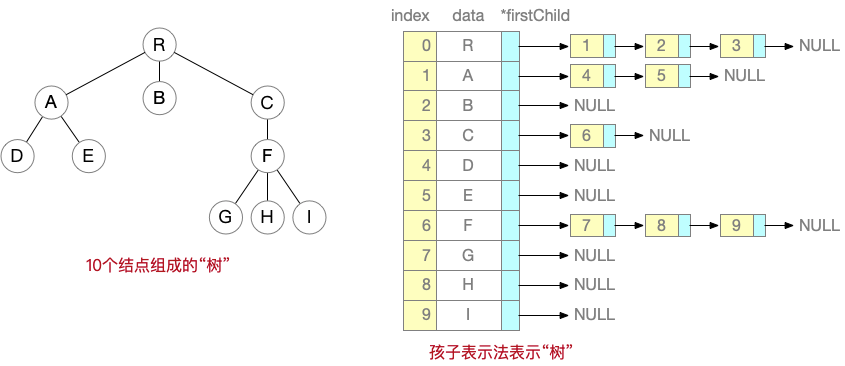</p><p>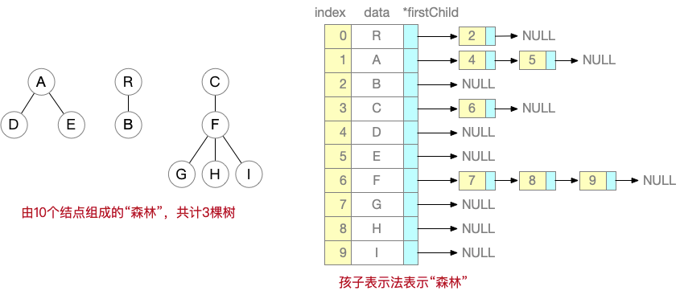</p><pre class="md-fences md-end-block md-fences-with-lineno ty-contain-cm modeLoaded" spellcheck="false" lang="c" style="break-inside: unset;"><div class="CodeMirror cm-s-inner cm-s-null-scroll CodeMirror-wrap" lang="c"><div style="overflow: hidden; position: relative; width: 3px; height: 0px; top: 11.5px; left: 47px;"><textarea autocorrect="off" autocapitalize="off" spellcheck="false" tabindex="0" style="position: absolute; bottom: -1em; padding: 0px; width: 1000px; height: 1em; outline: none;"></textarea></div><div class="CodeMirror-scrollbar-filler" cm-not-content="true"></div><div class="CodeMirror-gutter-filler" cm-not-content="true"></div><div class="CodeMirror-scroll" tabindex="-1"><div class="CodeMirror-sizer" style="margin-left: 39px; margin-bottom: 0px; border-right-width: 0px; padding-right: 0px; padding-bottom: 0px;"><div style="position: relative; top: 0px;"><div class="CodeMirror-lines" role="presentation"><div role="presentation" style="position: relative; outline: none;"><div class="CodeMirror-measure"><pre><span>xxxxxxxxxx</span></pre><div class="CodeMirror-linenumber CodeMirror-gutter-elt"><div>15</div></div></div><div class="CodeMirror-measure"></div><div style="position: relative; z-index: 1;"></div><div class="CodeMirror-code" role="presentation" style=""><div class="CodeMirror-activeline" style="position: relative;"><div class="CodeMirror-activeline-background CodeMirror-linebackground"></div><div class="CodeMirror-gutter-background CodeMirror-activeline-gutter" style="left: -39px; width: 39px;"></div><div class="CodeMirror-gutter-wrapper CodeMirror-activeline-gutter" style="left: -39px;"><div class="CodeMirror-linenumber CodeMirror-gutter-elt CodeMirror-linenumber-show" style="left: 0px; width: 30px;">1</div></div><pre class=" CodeMirror-line " role="presentation"><span role="presentation" style="padding-right: 0.1px;"><span class="cm-meta">#define MAX_SIZE 100</span></span></pre></div><div style="position: relative;"><div class="CodeMirror-gutter-wrapper" style="left: -39px;"><div class="CodeMirror-linenumber CodeMirror-gutter-elt" style="left: 0px; width: 30px;">2</div></div><pre class=" CodeMirror-line " role="presentation"><span role="presentation" style="padding-right: 0.1px;"><span class="cm-keyword">typedef</span> <span class="cm-keyword">struct</span> <span class="cm-def">CHNode</span> {</span></pre></div><div style="position: relative;"><div class="CodeMirror-gutter-wrapper" style="left: -39px;"><div class="CodeMirror-linenumber CodeMirror-gutter-elt" style="left: 0px; width: 30px;">3</div></div><pre class=" CodeMirror-line " role="presentation"><span role="presentation" style="padding-right: 0.1px;"> &nbsp; &nbsp;<span class="cm-variable-3">int</span> <span class="cm-variable">index</span>; &nbsp; &nbsp; &nbsp;<span class="cm-comment">//该结点的数组下标</span></span></pre></div><div style="position: relative;"><div class="CodeMirror-gutter-wrapper" style="left: -39px;"><div class="CodeMirror-linenumber CodeMirror-gutter-elt" style="left: 0px; width: 30px;">4</div></div><pre class=" CodeMirror-line " role="presentation"><span role="presentation" style="padding-right: 0.1px;"> &nbsp; &nbsp;<span class="cm-keyword">struct</span> <span class="cm-def">CHNode</span> <span class="cm-operator">*</span><span class="cm-variable">next</span>;</span></pre></div><div style="position: relative;"><div class="CodeMirror-gutter-wrapper" style="left: -39px;"><div class="CodeMirror-linenumber CodeMirror-gutter-elt" style="left: 0px; width: 30px;">5</div></div><pre class=" CodeMirror-line " role="presentation"><span role="presentation" style="padding-right: 0.1px;">} <span class="cm-variable">CHNode</span>;</span></pre></div><div style="position: relative;"><div class="CodeMirror-gutter-wrapper" style="left: -39px;"><div class="CodeMirror-linenumber CodeMirror-gutter-elt" style="left: 0px; width: 30px;">6</div></div><pre class=" CodeMirror-line " role="presentation"><span role="presentation" style="padding-right: 0.1px;"><span class="cm-keyword">typedef</span> <span class="cm-keyword">struct</span> <span class="cm-def">TreeNode</span>{</span></pre></div><div style="position: relative;"><div class="CodeMirror-gutter-wrapper" style="left: -39px;"><div class="CodeMirror-linenumber CodeMirror-gutter-elt" style="left: 0px; width: 30px;">7</div></div><pre class=" CodeMirror-line " role="presentation"><span role="presentation" style="padding-right: 0.1px;">  <span class="cm-tab" role="presentation" cm-text="	">  </span><span class="cm-variable-3">char</span> <span class="cm-variable">data</span>;<span class="cm-tab" role="presentation" cm-text="	">  </span><span class="cm-tab" role="presentation" cm-text="	">  </span><span class="cm-tab" role="presentation" cm-text="	">  </span><span class="cm-comment">//结点内容</span></span></pre></div><div style="position: relative;"><div class="CodeMirror-gutter-wrapper" style="left: -39px;"><div class="CodeMirror-linenumber CodeMirror-gutter-elt" style="left: 0px; width: 30px;">8</div></div><pre class=" CodeMirror-line " role="presentation"><span role="presentation" style="padding-right: 0.1px;">  <span class="cm-tab" role="presentation" cm-text="	">  </span><span class="cm-variable">CHNode</span> <span class="cm-operator">*</span><span class="cm-variable">firstchild</span>;<span class="cm-tab" role="presentation" cm-text="	"> </span><span class="cm-comment">//指向第一个孩子</span></span></pre></div><div style="position: relative;"><div class="CodeMirror-gutter-wrapper" style="left: -39px;"><div class="CodeMirror-linenumber CodeMirror-gutter-elt" style="left: 0px; width: 30px;">9</div></div><pre class=" CodeMirror-line " role="presentation"><span role="presentation" style="padding-right: 0.1px;">}<span class="cm-variable">TreeNode</span>;</span></pre></div><div style="position: relative;"><div class="CodeMirror-gutter-wrapper" style="left: -39px;"><div class="CodeMirror-linenumber CodeMirror-gutter-elt CodeMirror-linenumber-show" style="left: 0px; width: 30px;">10</div></div><pre class=" CodeMirror-line " role="presentation"><span role="presentation" style="padding-right: 0.1px;"><span cm-text="" cm-zwsp="">
</span></span></pre></div><div style="position: relative;"><div class="CodeMirror-gutter-wrapper" style="left: -39px;"><div class="CodeMirror-linenumber CodeMirror-gutter-elt" style="left: 0px; width: 30px;">11</div></div><pre class=" CodeMirror-line " role="presentation"><span role="presentation" style="padding-right: 0.1px;"><span class="cm-comment">//一下这一段也可以直接用TreeNode tree[n];来创建</span></span></pre></div><div style="position: relative;"><div class="CodeMirror-gutter-wrapper" style="left: -39px;"><div class="CodeMirror-linenumber CodeMirror-gutter-elt" style="left: 0px; width: 30px;">12</div></div><pre class=" CodeMirror-line " role="presentation"><span role="presentation" style="padding-right: 0.1px;"><span class="cm-keyword">typedef</span> <span class="cm-keyword">struct</span> {</span></pre></div><div style="position: relative;"><div class="CodeMirror-gutter-wrapper" style="left: -39px;"><div class="CodeMirror-linenumber CodeMirror-gutter-elt" style="left: 0px; width: 30px;">13</div></div><pre class=" CodeMirror-line " role="presentation"><span role="presentation" style="padding-right: 0.1px;"> &nbsp; &nbsp;<span class="cm-variable">TreeNode</span> <span class="cm-variable">child</span>[<span class="cm-variable">MAX_SIZE</span>];</span></pre></div><div style="position: relative;"><div class="CodeMirror-gutter-wrapper" style="left: -39px;"><div class="CodeMirror-linenumber CodeMirror-gutter-elt" style="left: 0px; width: 30px;">14</div></div><pre class=" CodeMirror-line " role="presentation"><span role="presentation" style="padding-right: 0.1px;"> &nbsp; &nbsp;<span class="cm-variable-3">int</span> <span class="cm-variable">n</span>; &nbsp; &nbsp; &nbsp; &nbsp; &nbsp;<span class="cm-comment">//结点数</span></span></pre></div><div style="position: relative;"><div class="CodeMirror-gutter-wrapper" style="left: -39px;"><div class="CodeMirror-linenumber CodeMirror-gutter-elt CodeMirror-linenumber-show" style="left: 0px; width: 30px;">15</div></div><pre class=" CodeMirror-line " role="presentation"><span role="presentation" style="padding-right: 0.1px;">} <span class="cm-variable">CHTree</span>;</span></pre></div></div></div></div></div></div><div style="position: absolute; height: 0px; width: 1px; border-bottom-width: 0px; border-bottom-style: solid; border-bottom-color: transparent; top: 405px;"></div><div class="CodeMirror-gutters" style="height: 405px;"><div class="CodeMirror-gutter CodeMirror-linenumbers" style="width: 38px;"></div></div></div></div></pre><p>&nbsp;</p><h4 id='孩子兄弟表示法'><span>孩子兄弟表示法</span></h4><pre class="md-fences md-end-block md-fences-with-lineno ty-contain-cm modeLoaded" spellcheck="false" lang="c"><div class="CodeMirror cm-s-inner cm-s-null-scroll CodeMirror-wrap" lang="c"><div style="overflow: hidden; position: relative; width: 3px; height: 0px; top: 11.5px; left: 37px;"><textarea autocorrect="off" autocapitalize="off" spellcheck="false" tabindex="0" style="position: absolute; bottom: -1em; padding: 0px; width: 1000px; height: 1em; outline: none;"></textarea></div><div class="CodeMirror-scrollbar-filler" cm-not-content="true"></div><div class="CodeMirror-gutter-filler" cm-not-content="true"></div><div class="CodeMirror-scroll" tabindex="-1"><div class="CodeMirror-sizer" style="margin-left: 29px; margin-bottom: 0px; border-right-width: 0px; padding-right: 0px; padding-bottom: 0px;"><div style="position: relative; top: 0px;"><div class="CodeMirror-lines" role="presentation"><div role="presentation" style="position: relative; outline: none;"><div class="CodeMirror-measure"><pre><span>xxxxxxxxxx</span></pre><div class="CodeMirror-linenumber CodeMirror-gutter-elt"><div>4</div></div></div><div class="CodeMirror-measure"></div><div style="position: relative; z-index: 1;"></div><div class="CodeMirror-code" role="presentation"><div class="CodeMirror-activeline" style="position: relative;"><div class="CodeMirror-activeline-background CodeMirror-linebackground"></div><div class="CodeMirror-gutter-background CodeMirror-activeline-gutter" style="left: -29px; width: 29px;"></div><div class="CodeMirror-gutter-wrapper CodeMirror-activeline-gutter" style="left: -29px;"><div class="CodeMirror-linenumber CodeMirror-gutter-elt CodeMirror-linenumber-show" style="left: 0px; width: 20px;">1</div></div><pre class=" CodeMirror-line " role="presentation"><span role="presentation" style="padding-right: 0.1px;"><span class="cm-keyword">typedef</span> <span class="cm-keyword">struct</span> <span class="cm-def">CSNode</span> {</span></pre></div><div style="position: relative;"><div class="CodeMirror-gutter-wrapper" style="left: -29px;"><div class="CodeMirror-linenumber CodeMirror-gutter-elt" style="left: 0px; width: 20px;">2</div></div><pre class=" CodeMirror-line " role="presentation"><span role="presentation" style="padding-right: 0.1px;"> &nbsp; &nbsp;<span class="cm-variable-3">int</span> <span class="cm-variable">data</span>;</span></pre></div><div style="position: relative;"><div class="CodeMirror-gutter-wrapper" style="left: -29px;"><div class="CodeMirror-linenumber CodeMirror-gutter-elt" style="left: 0px; width: 20px;">3</div></div><pre class=" CodeMirror-line " role="presentation"><span role="presentation" style="padding-right: 0.1px;"> &nbsp; &nbsp;<span class="cm-keyword">struct</span> <span class="cm-def">CSNode</span> <span class="cm-operator">*</span><span class="cm-variable">firstchild</span>, <span class="cm-operator">*</span><span class="cm-variable">nextbro</span>;</span></pre></div><div style="position: relative;"><div class="CodeMirror-gutter-wrapper" style="left: -29px;"><div class="CodeMirror-linenumber CodeMirror-gutter-elt CodeMirror-linenumber-show" style="left: 0px; width: 20px;">4</div></div><pre class=" CodeMirror-line " role="presentation"><span role="presentation" style="padding-right: 0.1px;">} <span class="cm-variable">CSNode</span>;</span></pre></div></div></div></div></div></div><div style="position: absolute; height: 0px; width: 1px; border-bottom-width: 0px; border-bottom-style: solid; border-bottom-color: transparent; top: 108px;"></div><div class="CodeMirror-gutters" style="height: 108px;"><div class="CodeMirror-gutter CodeMirror-linenumbers" style="width: 28px;"></div></div></div></div></pre><h3 id='树的遍历-2'><span>树的遍历</span></h3><h4 id='二叉树的遍历顺序存储）'><span>二叉树的遍历（顺序存储）</span></h4><pre class="md-fences md-end-block md-fences-with-lineno ty-contain-cm modeLoaded" spellcheck="false" lang="c++"><div class="CodeMirror cm-s-inner cm-s-null-scroll CodeMirror-wrap" lang="c++"><div style="overflow: hidden; position: relative; width: 3px; height: 0px; top: 11.5px; left: 47px;"><textarea autocorrect="off" autocapitalize="off" spellcheck="false" tabindex="0" style="position: absolute; bottom: -1em; padding: 0px; width: 1000px; height: 1em; outline: none;"></textarea></div><div class="CodeMirror-scrollbar-filler" cm-not-content="true"></div><div class="CodeMirror-gutter-filler" cm-not-content="true"></div><div class="CodeMirror-scroll" tabindex="-1"><div class="CodeMirror-sizer" style="margin-left: 39px; margin-bottom: 0px; border-right-width: 0px; padding-right: 0px; padding-bottom: 0px;"><div style="position: relative; top: 0px;"><div class="CodeMirror-lines" role="presentation"><div role="presentation" style="position: relative; outline: none;"><div class="CodeMirror-measure"><pre><span>xxxxxxxxxx</span></pre><div class="CodeMirror-linenumber CodeMirror-gutter-elt"><div>10</div></div></div><div class="CodeMirror-measure"></div><div style="position: relative; z-index: 1;"></div><div class="CodeMirror-code" role="presentation" style=""><div class="CodeMirror-activeline" style="position: relative;"><div class="CodeMirror-activeline-background CodeMirror-linebackground"></div><div class="CodeMirror-gutter-background CodeMirror-activeline-gutter" style="left: -39px; width: 39px;"></div><div class="CodeMirror-gutter-wrapper CodeMirror-activeline-gutter" style="left: -39px;"><div class="CodeMirror-linenumber CodeMirror-gutter-elt CodeMirror-linenumber-show" style="left: 0px; width: 30px;">1</div></div><pre class=" CodeMirror-line " role="presentation"><span role="presentation" style="padding-right: 0.1px;"><span class="cm-keyword">typedef</span> <span class="cm-keyword">struct</span> <span class="cm-def">node</span>{</span></pre></div><div style="position: relative;"><div class="CodeMirror-gutter-wrapper" style="left: -39px;"><div class="CodeMirror-linenumber CodeMirror-gutter-elt" style="left: 0px; width: 30px;">2</div></div><pre class=" CodeMirror-line " role="presentation"><span role="presentation" style="padding-right: 0.1px;"> &nbsp; &nbsp;<span class="cm-variable-3">int</span> <span class="cm-variable">data</span>[<span class="cm-variable">MAX</span>]; &nbsp;<span class="cm-comment">// 数组</span></span></pre></div><div style="position: relative;"><div class="CodeMirror-gutter-wrapper" style="left: -39px;"><div class="CodeMirror-linenumber CodeMirror-gutter-elt" style="left: 0px; width: 30px;">3</div></div><pre class=" CodeMirror-line " role="presentation"><span role="presentation" style="padding-right: 0.1px;"> &nbsp; &nbsp;<span class="cm-variable-3">int</span> <span class="cm-variable">num</span>; &nbsp; &nbsp;<span class="cm-comment">//实际占用数组元素个数</span></span></pre></div><div style="position: relative;"><div class="CodeMirror-gutter-wrapper" style="left: -39px;"><div class="CodeMirror-linenumber CodeMirror-gutter-elt" style="left: 0px; width: 30px;">4</div></div><pre class=" CodeMirror-line " role="presentation"><span role="presentation" style="padding-right: 0.1px;">}<span class="cm-variable">SqBiTNode</span>;</span></pre></div><div style="position: relative;"><div class="CodeMirror-gutter-wrapper" style="left: -39px;"><div class="CodeMirror-linenumber CodeMirror-gutter-elt" style="left: 0px; width: 30px;">5</div></div><pre class=" CodeMirror-line " role="presentation"><span role="presentation" style="padding-right: 0.1px;"><span cm-text="" cm-zwsp="">
</span></span></pre></div><div style="position: relative;"><div class="CodeMirror-gutter-wrapper" style="left: -39px;"><div class="CodeMirror-linenumber CodeMirror-gutter-elt" style="left: 0px; width: 30px;">6</div></div><pre class=" CodeMirror-line " role="presentation"><span role="presentation" style="padding-right: 0.1px;"><span class="cm-variable-3">bool</span> <span class="cm-def">MidOrder</span>(<span class="cm-variable">SqBiTNode</span> <span class="cm-operator">*</span><span class="cm-variable">T</span>, <span class="cm-variable-3">int</span> <span class="cm-variable">i</span>){ <span class="cm-comment">// i表示顺序存储中的数组下标 返回类型自定</span></span></pre></div><div style="position: relative;"><div class="CodeMirror-gutter-wrapper" style="left: -39px;"><div class="CodeMirror-linenumber CodeMirror-gutter-elt" style="left: 0px; width: 30px;">7</div></div><pre class=" CodeMirror-line " role="presentation"><span role="presentation" style="padding-right: 0.1px;"> &nbsp; &nbsp;<span class="cm-variable">MidOrder</span>(<span class="cm-variable">T</span>, <span class="cm-number">2</span><span class="cm-operator">*</span><span class="cm-variable">i</span><span class="cm-operator">+</span><span class="cm-number">1</span>);</span></pre></div><div style="position: relative;"><div class="CodeMirror-gutter-wrapper" style="left: -39px;"><div class="CodeMirror-linenumber CodeMirror-gutter-elt" style="left: 0px; width: 30px;">8</div></div><pre class=" CodeMirror-line " role="presentation"><span role="presentation" style="padding-right: 0.1px;"> &nbsp; &nbsp;<span class="cm-comment">// 每次递归要做的事</span></span></pre></div><div style="position: relative;"><div class="CodeMirror-gutter-wrapper" style="left: -39px;"><div class="CodeMirror-linenumber CodeMirror-gutter-elt" style="left: 0px; width: 30px;">9</div></div><pre class=" CodeMirror-line " role="presentation"><span role="presentation" style="padding-right: 0.1px;"> &nbsp; &nbsp;<span class="cm-variable">MidOrder</span>(<span class="cm-variable">T</span>, <span class="cm-number">2</span><span class="cm-operator">*</span><span class="cm-variable">i</span><span class="cm-operator">+</span><span class="cm-number">2</span>);</span></pre></div><div style="position: relative;"><div class="CodeMirror-gutter-wrapper" style="left: -39px;"><div class="CodeMirror-linenumber CodeMirror-gutter-elt CodeMirror-linenumber-show" style="left: 0px; width: 30px;">10</div></div><pre class=" CodeMirror-line " role="presentation"><span role="presentation" style="padding-right: 0.1px;">}</span></pre></div></div></div></div></div></div><div style="position: absolute; height: 0px; width: 1px; border-bottom-width: 0px; border-bottom-style: solid; border-bottom-color: transparent; top: 270px;"></div><div class="CodeMirror-gutters" style="height: 270px;"><div class="CodeMirror-gutter CodeMirror-linenumbers" style="width: 38px;"></div></div></div></div></pre><h4 id='二叉树的遍历链式存储）'><span>二叉树的遍历（链式存储）</span></h4><pre class="md-fences md-end-block md-fences-with-lineno ty-contain-cm modeLoaded" spellcheck="false" lang="c++"><div class="CodeMirror cm-s-inner cm-s-null-scroll CodeMirror-wrap" lang="c++"><div style="overflow: hidden; position: relative; width: 3px; height: 0px; top: 11.5px; left: 47px;"><textarea autocorrect="off" autocapitalize="off" spellcheck="false" tabindex="0" style="position: absolute; bottom: -1em; padding: 0px; width: 1000px; height: 1em; outline: none;"></textarea></div><div class="CodeMirror-scrollbar-filler" cm-not-content="true"></div><div class="CodeMirror-gutter-filler" cm-not-content="true"></div><div class="CodeMirror-scroll" tabindex="-1"><div class="CodeMirror-sizer" style="margin-left: 39px; margin-bottom: 0px; border-right-width: 0px; padding-right: 0px; padding-bottom: 0px;"><div style="position: relative; top: 0px;"><div class="CodeMirror-lines" role="presentation"><div role="presentation" style="position: relative; outline: none;"><div class="CodeMirror-measure"><pre><span>xxxxxxxxxx</span></pre><div class="CodeMirror-linenumber CodeMirror-gutter-elt"><div>12</div></div></div><div class="CodeMirror-measure"></div><div style="position: relative; z-index: 1;"></div><div class="CodeMirror-code" role="presentation" style=""><div class="CodeMirror-activeline" style="position: relative;"><div class="CodeMirror-activeline-background CodeMirror-linebackground"></div><div class="CodeMirror-gutter-background CodeMirror-activeline-gutter" style="left: -39px; width: 39px;"></div><div class="CodeMirror-gutter-wrapper CodeMirror-activeline-gutter" style="left: -39px;"><div class="CodeMirror-linenumber CodeMirror-gutter-elt CodeMirror-linenumber-show" style="left: 0px; width: 30px;">1</div></div><pre class=" CodeMirror-line " role="presentation"><span role="presentation" style="padding-right: 0.1px;"><span class="cm-keyword">typedef</span> <span class="cm-keyword">struct</span> <span class="cm-def">node</span>{</span></pre></div><div style="position: relative;"><div class="CodeMirror-gutter-wrapper" style="left: -39px;"><div class="CodeMirror-linenumber CodeMirror-gutter-elt" style="left: 0px; width: 30px;">2</div></div><pre class=" CodeMirror-line " role="presentation"><span role="presentation" style="padding-right: 0.1px;"> &nbsp; &nbsp;<span class="cm-variable-3">int</span> <span class="cm-variable">data</span>; &nbsp;<span class="cm-comment">// 结点</span></span></pre></div><div style="position: relative;"><div class="CodeMirror-gutter-wrapper" style="left: -39px;"><div class="CodeMirror-linenumber CodeMirror-gutter-elt" style="left: 0px; width: 30px;">3</div></div><pre class=" CodeMirror-line " role="presentation"><span role="presentation" style="padding-right: 0.1px;"> &nbsp; &nbsp;<span class="cm-keyword">struct</span> <span class="cm-def">node</span> <span class="cm-operator">*</span><span class="cm-variable">lchild</span>, <span class="cm-operator">*</span><span class="cm-variable">rchild</span>; <span class="cm-comment">//左右孩子</span></span></pre></div><div style="position: relative;"><div class="CodeMirror-gutter-wrapper" style="left: -39px;"><div class="CodeMirror-linenumber CodeMirror-gutter-elt" style="left: 0px; width: 30px;">4</div></div><pre class=" CodeMirror-line " role="presentation"><span role="presentation" style="padding-right: 0.1px;">}<span class="cm-variable">LinkBiTNode</span>;</span></pre></div><div style="position: relative;"><div class="CodeMirror-gutter-wrapper" style="left: -39px;"><div class="CodeMirror-linenumber CodeMirror-gutter-elt" style="left: 0px; width: 30px;">5</div></div><pre class=" CodeMirror-line " role="presentation"><span role="presentation" style="padding-right: 0.1px;"><span cm-text="" cm-zwsp="">
</span></span></pre></div><div style="position: relative;"><div class="CodeMirror-gutter-wrapper" style="left: -39px;"><div class="CodeMirror-linenumber CodeMirror-gutter-elt" style="left: 0px; width: 30px;">6</div></div><pre class=" CodeMirror-line " role="presentation"><span role="presentation" style="padding-right: 0.1px;"><span class="cm-variable-3">int</span> <span class="cm-def">MidOrder</span>(<span class="cm-variable">LindBiTNode</span> <span class="cm-operator">*</span><span class="cm-variable">T</span>){ &nbsp;<span class="cm-comment">//返回类型自定</span></span></pre></div><div style="position: relative;"><div class="CodeMirror-gutter-wrapper" style="left: -39px;"><div class="CodeMirror-linenumber CodeMirror-gutter-elt" style="left: 0px; width: 30px;">7</div></div><pre class=" CodeMirror-line " role="presentation"><span role="presentation" style="padding-right: 0.1px;"> &nbsp; &nbsp;<span class="cm-keyword">if</span> (<span class="cm-operator">!</span><span class="cm-variable">T</span>) <span class="cm-keyword">return</span> <span class="cm-variable">xx</span>;</span></pre></div><div style="position: relative;"><div class="CodeMirror-gutter-wrapper" style="left: -39px;"><div class="CodeMirror-linenumber CodeMirror-gutter-elt" style="left: 0px; width: 30px;">8</div></div><pre class=" CodeMirror-line " role="presentation"><span role="presentation" style="padding-right: 0.1px;"> &nbsp; &nbsp;<span class="cm-variable">MidOrder</span>(<span class="cm-variable">T</span><span class="cm-operator">-&gt;</span><span class="cm-variable">lchild</span>);</span></pre></div><div style="position: relative;"><div class="CodeMirror-gutter-wrapper" style="left: -39px;"><div class="CodeMirror-linenumber CodeMirror-gutter-elt" style="left: 0px; width: 30px;">9</div></div><pre class=" CodeMirror-line " role="presentation"><span role="presentation" style="padding-right: 0.1px;"> &nbsp; &nbsp;<span class="cm-comment">//每次递归要做的事情</span></span></pre></div><div style="position: relative;"><div class="CodeMirror-gutter-wrapper" style="left: -39px;"><div class="CodeMirror-linenumber CodeMirror-gutter-elt CodeMirror-linenumber-show" style="left: 0px; width: 30px;">10</div></div><pre class=" CodeMirror-line " role="presentation"><span role="presentation" style="padding-right: 0.1px;"> &nbsp; &nbsp;<span class="cm-variable">MidOrder</span>(<span class="cm-variable">T</span><span class="cm-operator">-&gt;</span><span class="cm-variable">rchild</span>);</span></pre></div><div style="position: relative;"><div class="CodeMirror-gutter-wrapper" style="left: -39px;"><div class="CodeMirror-linenumber CodeMirror-gutter-elt" style="left: 0px; width: 30px;">11</div></div><pre class=" CodeMirror-line " role="presentation"><span role="presentation" style="padding-right: 0.1px;"> &nbsp; &nbsp;<span class="cm-keyword">return</span> <span class="cm-variable">xx</span>;</span></pre></div><div style="position: relative;"><div class="CodeMirror-gutter-wrapper" style="left: -39px;"><div class="CodeMirror-linenumber CodeMirror-gutter-elt CodeMirror-linenumber-show" style="left: 0px; width: 30px;">12</div></div><pre class=" CodeMirror-line " role="presentation"><span role="presentation" style="padding-right: 0.1px;">}</span></pre></div></div></div></div></div></div><div style="position: absolute; height: 0px; width: 1px; border-bottom-width: 0px; border-bottom-style: solid; border-bottom-color: transparent; top: 324px;"></div><div class="CodeMirror-gutters" style="height: 324px;"><div class="CodeMirror-gutter CodeMirror-linenumbers" style="width: 38px;"></div></div></div></div></pre><h4 id='二叉树的层次遍历不分层）链式存储）'><span>二叉树的层次遍历（不分层）（链式存储）</span></h4><pre class="md-fences md-end-block md-fences-with-lineno ty-contain-cm modeLoaded" spellcheck="false" lang="c" style="break-inside: unset;"><div class="CodeMirror cm-s-inner cm-s-null-scroll CodeMirror-wrap" lang="c"><div style="overflow: hidden; position: relative; width: 3px; height: 0px; top: 11.5px; left: 47px;"><textarea autocorrect="off" autocapitalize="off" spellcheck="false" tabindex="0" style="position: absolute; bottom: -1em; padding: 0px; width: 1000px; height: 1em; outline: none;"></textarea></div><div class="CodeMirror-scrollbar-filler" cm-not-content="true"></div><div class="CodeMirror-gutter-filler" cm-not-content="true"></div><div class="CodeMirror-scroll" tabindex="-1"><div class="CodeMirror-sizer" style="margin-left: 39px; margin-bottom: 0px; border-right-width: 0px; padding-right: 0px; padding-bottom: 0px;"><div style="position: relative; top: 0px;"><div class="CodeMirror-lines" role="presentation"><div role="presentation" style="position: relative; outline: none;"><div class="CodeMirror-measure"><pre><span>xxxxxxxxxx</span></pre><div class="CodeMirror-linenumber CodeMirror-gutter-elt"><div>20</div></div></div><div class="CodeMirror-measure"></div><div style="position: relative; z-index: 1;"></div><div class="CodeMirror-code" role="presentation" style=""><div class="CodeMirror-activeline" style="position: relative;"><div class="CodeMirror-activeline-background CodeMirror-linebackground"></div><div class="CodeMirror-gutter-background CodeMirror-activeline-gutter" style="left: -39px; width: 39px;"></div><div class="CodeMirror-gutter-wrapper CodeMirror-activeline-gutter" style="left: -39px;"><div class="CodeMirror-linenumber CodeMirror-gutter-elt CodeMirror-linenumber-show" style="left: 0px; width: 30px;">1</div></div><pre class=" CodeMirror-line " role="presentation"><span role="presentation" style="padding-right: 0.1px;"><span class="cm-keyword">typedef</span> <span class="cm-keyword">struct</span> <span class="cm-def">BiTNode</span>{</span></pre></div><div style="position: relative;"><div class="CodeMirror-gutter-wrapper" style="left: -39px;"><div class="CodeMirror-linenumber CodeMirror-gutter-elt" style="left: 0px; width: 30px;">2</div></div><pre class=" CodeMirror-line " role="presentation"><span role="presentation" style="padding-right: 0.1px;"> &nbsp; &nbsp;<span class="cm-variable-3">int</span> <span class="cm-variable">data</span>;</span></pre></div><div style="position: relative;"><div class="CodeMirror-gutter-wrapper" style="left: -39px;"><div class="CodeMirror-linenumber CodeMirror-gutter-elt" style="left: 0px; width: 30px;">3</div></div><pre class=" CodeMirror-line " role="presentation"><span role="presentation" style="padding-right: 0.1px;"> &nbsp; &nbsp;<span class="cm-keyword">struct</span> <span class="cm-def">BiTNode</span> <span class="cm-operator">*</span><span class="cm-variable">lchild</span>,<span class="cm-operator">*</span><span class="cm-variable">rchild</span>; </span></pre></div><div style="position: relative;"><div class="CodeMirror-gutter-wrapper" style="left: -39px;"><div class="CodeMirror-linenumber CodeMirror-gutter-elt" style="left: 0px; width: 30px;">4</div></div><pre class=" CodeMirror-line " role="presentation"><span role="presentation" style="padding-right: 0.1px;">}<span class="cm-variable">BiTNode</span>,<span class="cm-operator">*</span><span class="cm-variable">BiTree</span>;</span></pre></div><div style="position: relative;"><div class="CodeMirror-gutter-wrapper" style="left: -39px;"><div class="CodeMirror-linenumber CodeMirror-gutter-elt" style="left: 0px; width: 30px;">5</div></div><pre class=" CodeMirror-line " role="presentation"><span role="presentation" style="padding-right: 0.1px;"><span cm-text="" cm-zwsp="">
</span></span></pre></div><div style="position: relative;"><div class="CodeMirror-gutter-wrapper" style="left: -39px;"><div class="CodeMirror-linenumber CodeMirror-gutter-elt" style="left: 0px; width: 30px;">6</div></div><pre class=" CodeMirror-line " role="presentation"><span role="presentation" style="padding-right: 0.1px;"><span class="cm-variable-3">void</span> <span class="cm-def">LevelOrder</span>(<span class="cm-variable">BiTree</span> <span class="cm-variable">T</span>) {</span></pre></div><div style="position: relative;"><div class="CodeMirror-gutter-wrapper" style="left: -39px;"><div class="CodeMirror-linenumber CodeMirror-gutter-elt" style="left: 0px; width: 30px;">7</div></div><pre class=" CodeMirror-line " role="presentation"><span role="presentation" style="padding-right: 0.1px;"> &nbsp; &nbsp;<span class="cm-keyword">if</span> (<span class="cm-operator">!</span><span class="cm-variable">T</span>) <span class="cm-keyword">return</span>;</span></pre></div><div style="position: relative;"><div class="CodeMirror-gutter-wrapper" style="left: -39px;"><div class="CodeMirror-linenumber CodeMirror-gutter-elt" style="left: 0px; width: 30px;">8</div></div><pre class=" CodeMirror-line " role="presentation"><span role="presentation" style="padding-right: 0.1px;"> &nbsp; &nbsp;<span class="cm-variable">Queue</span> <span class="cm-variable">Q</span>;</span></pre></div><div style="position: relative;"><div class="CodeMirror-gutter-wrapper" style="left: -39px;"><div class="CodeMirror-linenumber CodeMirror-gutter-elt" style="left: 0px; width: 30px;">9</div></div><pre class=" CodeMirror-line " role="presentation"><span role="presentation" style="padding-right: 0.1px;"> &nbsp; &nbsp;<span class="cm-variable">BiTree</span> <span class="cm-variable">x</span>;</span></pre></div><div style="position: relative;"><div class="CodeMirror-gutter-wrapper" style="left: -39px;"><div class="CodeMirror-linenumber CodeMirror-gutter-elt CodeMirror-linenumber-show" style="left: 0px; width: 30px;">10</div></div><pre class=" CodeMirror-line " role="presentation"><span role="presentation" style="padding-right: 0.1px;"> &nbsp; &nbsp;<span class="cm-variable">InitQueue</span>(<span class="cm-variable">Q</span>);</span></pre></div><div style="position: relative;"><div class="CodeMirror-gutter-wrapper" style="left: -39px;"><div class="CodeMirror-linenumber CodeMirror-gutter-elt" style="left: 0px; width: 30px;">11</div></div><pre class=" CodeMirror-line " role="presentation"><span role="presentation" style="padding-right: 0.1px;"> &nbsp; &nbsp;<span class="cm-variable">EnQueue</span>(<span class="cm-variable">Q</span>, <span class="cm-variable">T</span>); <span class="cm-comment">//根节点入队</span></span></pre></div><div style="position: relative;"><div class="CodeMirror-gutter-wrapper" style="left: -39px;"><div class="CodeMirror-linenumber CodeMirror-gutter-elt" style="left: 0px; width: 30px;">12</div></div><pre class=" CodeMirror-line " role="presentation"><span role="presentation" style="padding-right: 0.1px;"> &nbsp; &nbsp;<span class="cm-keyword">while</span> (<span class="cm-operator">!</span><span class="cm-variable">IsEmpty</span>(<span class="cm-variable">Q</span>)) {</span></pre></div><div style="position: relative;"><div class="CodeMirror-gutter-wrapper" style="left: -39px;"><div class="CodeMirror-linenumber CodeMirror-gutter-elt" style="left: 0px; width: 30px;">13</div></div><pre class=" CodeMirror-line " role="presentation"><span role="presentation" style="padding-right: 0.1px;"> &nbsp; &nbsp; &nbsp; &nbsp;<span class="cm-variable">DeQueue</span>(<span class="cm-variable">Q</span>, <span class="cm-variable">x</span>); &nbsp;<span class="cm-comment">//取一个节点出队</span></span></pre></div><div style="position: relative;"><div class="CodeMirror-gutter-wrapper" style="left: -39px;"><div class="CodeMirror-linenumber CodeMirror-gutter-elt" style="left: 0px; width: 30px;">14</div></div><pre class=" CodeMirror-line " role="presentation"><span role="presentation" style="padding-right: 0.1px;"> &nbsp; &nbsp; &nbsp; &nbsp;<span class="cm-variable">visit</span>(<span class="cm-variable">x</span>); <span class="cm-comment">//访问该节点</span></span></pre></div><div style="position: relative;"><div class="CodeMirror-gutter-wrapper" style="left: -39px;"><div class="CodeMirror-linenumber CodeMirror-gutter-elt" style="left: 0px; width: 30px;">15</div></div><pre class=" CodeMirror-line " role="presentation"><span role="presentation" style="padding-right: 0.1px;"> &nbsp; &nbsp; &nbsp; &nbsp;<span class="cm-keyword">if</span> (<span class="cm-variable">x</span><span class="cm-operator">-&gt;</span><span class="cm-variable">lchild</span>)</span></pre></div><div style="position: relative;"><div class="CodeMirror-gutter-wrapper" style="left: -39px;"><div class="CodeMirror-linenumber CodeMirror-gutter-elt" style="left: 0px; width: 30px;">16</div></div><pre class=" CodeMirror-line " role="presentation"><span role="presentation" style="padding-right: 0.1px;"> &nbsp; &nbsp; &nbsp; &nbsp; &nbsp; &nbsp;<span class="cm-variable">EnQueue</span>(<span class="cm-variable">Q</span>, <span class="cm-variable">x</span><span class="cm-operator">-&gt;</span><span class="cm-variable">lchild</span>); <span class="cm-comment">//左孩子入队</span></span></pre></div><div style="position: relative;"><div class="CodeMirror-gutter-wrapper" style="left: -39px;"><div class="CodeMirror-linenumber CodeMirror-gutter-elt" style="left: 0px; width: 30px;">17</div></div><pre class=" CodeMirror-line " role="presentation"><span role="presentation" style="padding-right: 0.1px;"> &nbsp; &nbsp; &nbsp; &nbsp;<span class="cm-keyword">if</span> (<span class="cm-variable">x</span><span class="cm-operator">-&gt;</span><span class="cm-variable">rchild</span>)</span></pre></div><div style="position: relative;"><div class="CodeMirror-gutter-wrapper" style="left: -39px;"><div class="CodeMirror-linenumber CodeMirror-gutter-elt" style="left: 0px; width: 30px;">18</div></div><pre class=" CodeMirror-line " role="presentation"><span role="presentation" style="padding-right: 0.1px;"> &nbsp; &nbsp; &nbsp; &nbsp; &nbsp; &nbsp;<span class="cm-variable">EnQueue</span>(<span class="cm-variable">Q</span>, <span class="cm-variable">x</span><span class="cm-operator">-&gt;</span><span class="cm-variable">rchild</span>); <span class="cm-comment">//右孩子入队</span></span></pre></div><div style="position: relative;"><div class="CodeMirror-gutter-wrapper" style="left: -39px;"><div class="CodeMirror-linenumber CodeMirror-gutter-elt" style="left: 0px; width: 30px;">19</div></div><pre class=" CodeMirror-line " role="presentation"><span role="presentation" style="padding-right: 0.1px;"> &nbsp;  }</span></pre></div><div style="position: relative;"><div class="CodeMirror-gutter-wrapper" style="left: -39px;"><div class="CodeMirror-linenumber CodeMirror-gutter-elt CodeMirror-linenumber-show" style="left: 0px; width: 30px;">20</div></div><pre class=" CodeMirror-line " role="presentation"><span role="presentation" style="padding-right: 0.1px;">}</span></pre></div></div></div></div></div></div><div style="position: absolute; height: 0px; width: 1px; border-bottom-width: 0px; border-bottom-style: solid; border-bottom-color: transparent; top: 540px;"></div><div class="CodeMirror-gutters" style="height: 540px;"><div class="CodeMirror-gutter CodeMirror-linenumbers" style="width: 38px;"></div></div></div></div></pre><h4 id='二叉树层次遍历分层）bfs标准模板）'><span>二叉树层次遍历（分层）（BFS标准模板）</span></h4><pre class="md-fences md-end-block md-fences-with-lineno ty-contain-cm modeLoaded" spellcheck="false" lang="c++" style="break-inside: unset;"><div class="CodeMirror cm-s-inner cm-s-null-scroll CodeMirror-wrap" lang="c++"><div style="overflow: hidden; position: relative; width: 3px; height: 0px; top: 11.5px; left: 47px;"><textarea autocorrect="off" autocapitalize="off" spellcheck="false" tabindex="0" style="position: absolute; bottom: -1em; padding: 0px; width: 1000px; height: 1em; outline: none;"></textarea></div><div class="CodeMirror-scrollbar-filler" cm-not-content="true"></div><div class="CodeMirror-gutter-filler" cm-not-content="true"></div><div class="CodeMirror-scroll" tabindex="-1"><div class="CodeMirror-sizer" style="margin-left: 39px; margin-bottom: 0px; border-right-width: 0px; padding-right: 0px; padding-bottom: 0px;"><div style="position: relative; top: 0px;"><div class="CodeMirror-lines" role="presentation"><div role="presentation" style="position: relative; outline: none;"><div class="CodeMirror-measure"><pre><span>xxxxxxxxxx</span></pre><div class="CodeMirror-linenumber CodeMirror-gutter-elt"><div>33</div></div></div><div class="CodeMirror-measure"></div><div style="position: relative; z-index: 1;"></div><div class="CodeMirror-code" role="presentation" style=""><div class="CodeMirror-activeline" style="position: relative;"><div class="CodeMirror-activeline-background CodeMirror-linebackground"></div><div class="CodeMirror-gutter-background CodeMirror-activeline-gutter" style="left: -39px; width: 39px;"></div><div class="CodeMirror-gutter-wrapper CodeMirror-activeline-gutter" style="left: -39px;"><div class="CodeMirror-linenumber CodeMirror-gutter-elt CodeMirror-linenumber-show" style="left: 0px; width: 30px;">1</div></div><pre class=" CodeMirror-line " role="presentation"><span role="presentation" style="padding-right: 0.1px;"><span class="cm-comment">/**</span></span></pre></div><div style="position: relative;"><div class="CodeMirror-gutter-wrapper" style="left: -39px;"><div class="CodeMirror-linenumber CodeMirror-gutter-elt" style="left: 0px; width: 30px;">2</div></div><pre class=" CodeMirror-line " role="presentation"><span role="presentation" style="padding-right: 0.1px;"> <span class="cm-comment">* Definition for a binary tree node.</span></span></pre></div><div style="position: relative;"><div class="CodeMirror-gutter-wrapper" style="left: -39px;"><div class="CodeMirror-linenumber CodeMirror-gutter-elt" style="left: 0px; width: 30px;">3</div></div><pre class=" CodeMirror-line " role="presentation"><span role="presentation" style="padding-right: 0.1px;"> <span class="cm-comment">* struct TreeNode {</span></span></pre></div><div style="position: relative;"><div class="CodeMirror-gutter-wrapper" style="left: -39px;"><div class="CodeMirror-linenumber CodeMirror-gutter-elt" style="left: 0px; width: 30px;">4</div></div><pre class=" CodeMirror-line " role="presentation"><span role="presentation" style="padding-right: 0.1px;"> <span class="cm-comment">* &nbsp; &nbsp; int val;</span></span></pre></div><div style="position: relative;"><div class="CodeMirror-gutter-wrapper" style="left: -39px;"><div class="CodeMirror-linenumber CodeMirror-gutter-elt" style="left: 0px; width: 30px;">5</div></div><pre class=" CodeMirror-line " role="presentation"><span role="presentation" style="padding-right: 0.1px;"> <span class="cm-comment">* &nbsp; &nbsp; TreeNode *left;</span></span></pre></div><div style="position: relative;"><div class="CodeMirror-gutter-wrapper" style="left: -39px;"><div class="CodeMirror-linenumber CodeMirror-gutter-elt" style="left: 0px; width: 30px;">6</div></div><pre class=" CodeMirror-line " role="presentation"><span role="presentation" style="padding-right: 0.1px;"> <span class="cm-comment">* &nbsp; &nbsp; TreeNode *right;</span></span></pre></div><div style="position: relative;"><div class="CodeMirror-gutter-wrapper" style="left: -39px;"><div class="CodeMirror-linenumber CodeMirror-gutter-elt" style="left: 0px; width: 30px;">7</div></div><pre class=" CodeMirror-line " role="presentation"><span role="presentation" style="padding-right: 0.1px;"> <span class="cm-comment">* &nbsp; &nbsp; TreeNode() : val(0), left(nullptr), right(nullptr) {}</span></span></pre></div><div style="position: relative;"><div class="CodeMirror-gutter-wrapper" style="left: -39px;"><div class="CodeMirror-linenumber CodeMirror-gutter-elt" style="left: 0px; width: 30px;">8</div></div><pre class=" CodeMirror-line " role="presentation"><span role="presentation" style="padding-right: 0.1px;"> <span class="cm-comment">* &nbsp; &nbsp; TreeNode(int x) : val(x), left(nullptr), right(nullptr) {}</span></span></pre></div><div style="position: relative;"><div class="CodeMirror-gutter-wrapper" style="left: -39px;"><div class="CodeMirror-linenumber CodeMirror-gutter-elt" style="left: 0px; width: 30px;">9</div></div><pre class=" CodeMirror-line " role="presentation"><span role="presentation" style="padding-right: 0.1px;"> <span class="cm-comment">* &nbsp; &nbsp; TreeNode(int x, TreeNode *left, TreeNode *right) : val(x), left(left), right(right) {}</span></span></pre></div><div style="position: relative;"><div class="CodeMirror-gutter-wrapper" style="left: -39px;"><div class="CodeMirror-linenumber CodeMirror-gutter-elt CodeMirror-linenumber-show" style="left: 0px; width: 30px;">10</div></div><pre class=" CodeMirror-line " role="presentation"><span role="presentation" style="padding-right: 0.1px;"> <span class="cm-comment">* };</span></span></pre></div><div style="position: relative;"><div class="CodeMirror-gutter-wrapper" style="left: -39px;"><div class="CodeMirror-linenumber CodeMirror-gutter-elt" style="left: 0px; width: 30px;">11</div></div><pre class=" CodeMirror-line " role="presentation"><span role="presentation" style="padding-right: 0.1px;"> <span class="cm-comment">*/</span></span></pre></div><div style="position: relative;"><div class="CodeMirror-gutter-wrapper" style="left: -39px;"><div class="CodeMirror-linenumber CodeMirror-gutter-elt" style="left: 0px; width: 30px;">12</div></div><pre class=" CodeMirror-line " role="presentation"><span role="presentation" style="padding-right: 0.1px;"><span class="cm-keyword">class</span> <span class="cm-def">Solution</span> {</span></pre></div><div style="position: relative;"><div class="CodeMirror-gutter-wrapper" style="left: -39px;"><div class="CodeMirror-linenumber CodeMirror-gutter-elt" style="left: 0px; width: 30px;">13</div></div><pre class=" CodeMirror-line " role="presentation"><span role="presentation" style="padding-right: 0.1px;"><span class="cm-keyword">public</span>:</span></pre></div><div style="position: relative;"><div class="CodeMirror-gutter-wrapper" style="left: -39px;"><div class="CodeMirror-linenumber CodeMirror-gutter-elt" style="left: 0px; width: 30px;">14</div></div><pre class=" CodeMirror-line " role="presentation"><span role="presentation" style="padding-right: 0.1px;"> &nbsp; &nbsp;<span class="cm-variable">vector</span><span class="cm-operator">&lt;</span><span class="cm-variable">vector</span><span class="cm-operator">&lt;</span><span class="cm-variable-3">int</span><span class="cm-operator">&gt;&gt;</span> <span class="cm-variable">levelOrder</span>(<span class="cm-variable">TreeNode</span><span class="cm-operator">*</span> <span class="cm-variable">root</span>) {</span></pre></div><div style="position: relative;"><div class="CodeMirror-gutter-wrapper" style="left: -39px;"><div class="CodeMirror-linenumber CodeMirror-gutter-elt" style="left: 0px; width: 30px;">15</div></div><pre class=" CodeMirror-line " role="presentation"><span role="presentation" style="padding-right: 0.1px;"> &nbsp; &nbsp; &nbsp; &nbsp;<span class="cm-variable">vector</span><span class="cm-operator">&lt;</span><span class="cm-variable">vector</span><span class="cm-operator">&lt;</span><span class="cm-variable-3">int</span><span class="cm-operator">&gt;&gt;</span> <span class="cm-variable">ans</span>;</span></pre></div><div style="position: relative;"><div class="CodeMirror-gutter-wrapper" style="left: -39px;"><div class="CodeMirror-linenumber CodeMirror-gutter-elt" style="left: 0px; width: 30px;">16</div></div><pre class=" CodeMirror-line " role="presentation"><span role="presentation" style="padding-right: 0.1px;"> &nbsp; &nbsp; &nbsp; &nbsp;<span class="cm-variable">queue</span><span class="cm-operator">&lt;</span><span class="cm-variable">TreeNode</span><span class="cm-operator">*&gt;</span> <span class="cm-variable">q</span>;</span></pre></div><div style="position: relative;"><div class="CodeMirror-gutter-wrapper" style="left: -39px;"><div class="CodeMirror-linenumber CodeMirror-gutter-elt" style="left: 0px; width: 30px;">17</div></div><pre class=" CodeMirror-line " role="presentation"><span role="presentation" style="padding-right: 0.1px;"> &nbsp; &nbsp; &nbsp; &nbsp;<span class="cm-keyword">if</span> (<span class="cm-operator">!</span><span class="cm-variable">root</span>) <span class="cm-keyword">return</span> <span class="cm-variable">ans</span>;</span></pre></div><div style="position: relative;"><div class="CodeMirror-gutter-wrapper" style="left: -39px;"><div class="CodeMirror-linenumber CodeMirror-gutter-elt" style="left: 0px; width: 30px;">18</div></div><pre class=" CodeMirror-line " role="presentation"><span role="presentation" style="padding-right: 0.1px;"> &nbsp; &nbsp; &nbsp; &nbsp;<span class="cm-variable">q</span>.<span class="cm-variable">push</span>(<span class="cm-variable">root</span>);</span></pre></div><div style="position: relative;"><div class="CodeMirror-gutter-wrapper" style="left: -39px;"><div class="CodeMirror-linenumber CodeMirror-gutter-elt" style="left: 0px; width: 30px;">19</div></div><pre class=" CodeMirror-line " role="presentation"><span role="presentation" style="padding-right: 0.1px;"> &nbsp; &nbsp; &nbsp; &nbsp;<span class="cm-keyword">while</span>(<span class="cm-operator">!</span><span class="cm-variable">q</span>.<span class="cm-variable">empty</span>()){</span></pre></div><div style="position: relative;"><div class="CodeMirror-gutter-wrapper" style="left: -39px;"><div class="CodeMirror-linenumber CodeMirror-gutter-elt CodeMirror-linenumber-show" style="left: 0px; width: 30px;">20</div></div><pre class=" CodeMirror-line " role="presentation"><span role="presentation" style="padding-right: 0.1px;"> &nbsp; &nbsp; &nbsp; &nbsp; &nbsp; &nbsp;<span class="cm-variable-3">int</span> <span class="cm-variable">size</span> <span class="cm-operator">=</span> <span class="cm-variable">q</span>.<span class="cm-variable">size</span>();</span></pre></div><div style="position: relative;"><div class="CodeMirror-gutter-wrapper" style="left: -39px;"><div class="CodeMirror-linenumber CodeMirror-gutter-elt" style="left: 0px; width: 30px;">21</div></div><pre class=" CodeMirror-line " role="presentation"><span role="presentation" style="padding-right: 0.1px;"> &nbsp; &nbsp; &nbsp; &nbsp; &nbsp; &nbsp;<span class="cm-variable">vector</span><span class="cm-operator">&lt;</span><span class="cm-variable-3">int</span><span class="cm-operator">&gt;</span> <span class="cm-variable">tmp_ans</span>;</span></pre></div><div style="position: relative;"><div class="CodeMirror-gutter-wrapper" style="left: -39px;"><div class="CodeMirror-linenumber CodeMirror-gutter-elt" style="left: 0px; width: 30px;">22</div></div><pre class=" CodeMirror-line " role="presentation"><span role="presentation" style="padding-right: 0.1px;"> &nbsp; &nbsp; &nbsp; &nbsp; &nbsp; &nbsp;<span class="cm-keyword">for</span> (<span class="cm-variable-3">int</span> <span class="cm-variable">i</span> <span class="cm-operator">=</span> <span class="cm-number">0</span>; <span class="cm-variable">i</span> <span class="cm-operator">&lt;</span> <span class="cm-variable">size</span>; <span class="cm-operator">++</span><span class="cm-variable">i</span>) {</span></pre></div><div style="position: relative;"><div class="CodeMirror-gutter-wrapper" style="left: -39px;"><div class="CodeMirror-linenumber CodeMirror-gutter-elt" style="left: 0px; width: 30px;">23</div></div><pre class=" CodeMirror-line " role="presentation"><span role="presentation" style="padding-right: 0.1px;"> &nbsp; &nbsp; &nbsp; &nbsp; &nbsp; &nbsp; &nbsp; &nbsp;<span class="cm-variable">TreeNode</span><span class="cm-operator">*</span> <span class="cm-variable">t</span> <span class="cm-operator">=</span> <span class="cm-variable">q</span>.<span class="cm-variable">front</span>();</span></pre></div><div style="position: relative;"><div class="CodeMirror-gutter-wrapper" style="left: -39px;"><div class="CodeMirror-linenumber CodeMirror-gutter-elt" style="left: 0px; width: 30px;">24</div></div><pre class=" CodeMirror-line " role="presentation"><span role="presentation" style="padding-right: 0.1px;"> &nbsp; &nbsp; &nbsp; &nbsp; &nbsp; &nbsp; &nbsp; &nbsp;<span class="cm-variable">q</span>.<span class="cm-variable">pop</span>();</span></pre></div><div style="position: relative;"><div class="CodeMirror-gutter-wrapper" style="left: -39px;"><div class="CodeMirror-linenumber CodeMirror-gutter-elt" style="left: 0px; width: 30px;">25</div></div><pre class=" CodeMirror-line " role="presentation"><span role="presentation" style="padding-right: 0.1px;"> &nbsp; &nbsp; &nbsp; &nbsp; &nbsp; &nbsp; &nbsp; &nbsp;<span class="cm-variable">tmp_ans</span>.<span class="cm-variable">push_back</span>(<span class="cm-variable">t</span><span class="cm-operator">-&gt;</span><span class="cm-variable">val</span>);</span></pre></div><div style="position: relative;"><div class="CodeMirror-gutter-wrapper" style="left: -39px;"><div class="CodeMirror-linenumber CodeMirror-gutter-elt" style="left: 0px; width: 30px;">26</div></div><pre class=" CodeMirror-line " role="presentation"><span role="presentation" style="padding-right: 0.1px;"> &nbsp; &nbsp; &nbsp; &nbsp; &nbsp; &nbsp; &nbsp; &nbsp;<span class="cm-keyword">if</span> (<span class="cm-variable">t</span><span class="cm-operator">-&gt;</span><span class="cm-variable">left</span>) <span class="cm-variable">q</span>.<span class="cm-variable">push</span>(<span class="cm-variable">t</span><span class="cm-operator">-&gt;</span><span class="cm-variable">left</span>);</span></pre></div><div style="position: relative;"><div class="CodeMirror-gutter-wrapper" style="left: -39px;"><div class="CodeMirror-linenumber CodeMirror-gutter-elt" style="left: 0px; width: 30px;">27</div></div><pre class=" CodeMirror-line " role="presentation"><span role="presentation" style="padding-right: 0.1px;"> &nbsp; &nbsp; &nbsp; &nbsp; &nbsp; &nbsp; &nbsp; &nbsp;<span class="cm-keyword">if</span> (<span class="cm-variable">t</span><span class="cm-operator">-&gt;</span><span class="cm-variable">right</span>) <span class="cm-variable">q</span>.<span class="cm-variable">push</span>(<span class="cm-variable">t</span><span class="cm-operator">-&gt;</span><span class="cm-variable">right</span>);</span></pre></div><div style="position: relative;"><div class="CodeMirror-gutter-wrapper" style="left: -39px;"><div class="CodeMirror-linenumber CodeMirror-gutter-elt" style="left: 0px; width: 30px;">28</div></div><pre class=" CodeMirror-line " role="presentation"><span role="presentation" style="padding-right: 0.1px;"> &nbsp; &nbsp; &nbsp; &nbsp; &nbsp;  }</span></pre></div><div style="position: relative;"><div class="CodeMirror-gutter-wrapper" style="left: -39px;"><div class="CodeMirror-linenumber CodeMirror-gutter-elt" style="left: 0px; width: 30px;">29</div></div><pre class=" CodeMirror-line " role="presentation"><span role="presentation" style="padding-right: 0.1px;"> &nbsp; &nbsp; &nbsp; &nbsp; &nbsp; &nbsp;<span class="cm-variable">ans</span>.<span class="cm-variable">push_back</span>(<span class="cm-variable">tmp_ans</span>);</span></pre></div><div style="position: relative;"><div class="CodeMirror-gutter-wrapper" style="left: -39px;"><div class="CodeMirror-linenumber CodeMirror-gutter-elt CodeMirror-linenumber-show" style="left: 0px; width: 30px;">30</div></div><pre class=" CodeMirror-line " role="presentation"><span role="presentation" style="padding-right: 0.1px;"> &nbsp; &nbsp; &nbsp;  }</span></pre></div><div style="position: relative;"><div class="CodeMirror-gutter-wrapper" style="left: -39px;"><div class="CodeMirror-linenumber CodeMirror-gutter-elt" style="left: 0px; width: 30px;">31</div></div><pre class=" CodeMirror-line " role="presentation"><span role="presentation" style="padding-right: 0.1px;"> &nbsp; &nbsp; &nbsp; &nbsp;<span class="cm-keyword">return</span> <span class="cm-variable">ans</span>;</span></pre></div><div style="position: relative;"><div class="CodeMirror-gutter-wrapper" style="left: -39px;"><div class="CodeMirror-linenumber CodeMirror-gutter-elt" style="left: 0px; width: 30px;">32</div></div><pre class=" CodeMirror-line " role="presentation"><span role="presentation" style="padding-right: 0.1px;"> &nbsp;  }</span></pre></div><div style="position: relative;"><div class="CodeMirror-gutter-wrapper" style="left: -39px;"><div class="CodeMirror-linenumber CodeMirror-gutter-elt CodeMirror-linenumber-show" style="left: 0px; width: 30px;">33</div></div><pre class=" CodeMirror-line " role="presentation"><span role="presentation" style="padding-right: 0.1px;">};</span></pre></div></div></div></div></div></div><div style="position: absolute; height: 0px; width: 1px; border-bottom-width: 0px; border-bottom-style: solid; border-bottom-color: transparent; top: 891px;"></div><div class="CodeMirror-gutters" style="height: 891px;"><div class="CodeMirror-gutter CodeMirror-linenumbers" style="width: 38px;"></div></div></div></div></pre><p>&nbsp;</p><h4 id='求树的高度'><span>求树的高度</span></h4><pre class="md-fences md-end-block md-fences-with-lineno ty-contain-cm modeLoaded" spellcheck="false" lang="c"><div class="CodeMirror cm-s-inner cm-s-null-scroll CodeMirror-wrap" lang="c"><div style="overflow: hidden; position: relative; width: 3px; height: 0px; top: 11.5px; left: 47px;"><textarea autocorrect="off" autocapitalize="off" spellcheck="false" tabindex="0" style="position: absolute; bottom: -1em; padding: 0px; width: 1000px; height: 1em; outline: none;"></textarea></div><div class="CodeMirror-scrollbar-filler" cm-not-content="true"></div><div class="CodeMirror-gutter-filler" cm-not-content="true"></div><div class="CodeMirror-scroll" tabindex="-1"><div class="CodeMirror-sizer" style="margin-left: 39px; margin-bottom: 0px; border-right-width: 0px; padding-right: 0px; padding-bottom: 0px;"><div style="position: relative; top: 0px;"><div class="CodeMirror-lines" role="presentation"><div role="presentation" style="position: relative; outline: none;"><div class="CodeMirror-measure"><pre><span>xxxxxxxxxx</span></pre><div class="CodeMirror-linenumber CodeMirror-gutter-elt"><div>11</div></div></div><div class="CodeMirror-measure"></div><div style="position: relative; z-index: 1;"></div><div class="CodeMirror-code" role="presentation" style=""><div class="CodeMirror-activeline" style="position: relative;"><div class="CodeMirror-activeline-background CodeMirror-linebackground"></div><div class="CodeMirror-gutter-background CodeMirror-activeline-gutter" style="left: -39px; width: 39px;"></div><div class="CodeMirror-gutter-wrapper CodeMirror-activeline-gutter" style="left: -39px;"><div class="CodeMirror-linenumber CodeMirror-gutter-elt CodeMirror-linenumber-show" style="left: 0px; width: 30px;">1</div></div><pre class=" CodeMirror-line " role="presentation"><span role="presentation" style="padding-right: 0.1px;"><span class="cm-variable-3">int</span> <span class="cm-variable">height</span><span class="cm-operator">=</span><span class="cm-number">0</span>; <span class="cm-comment">//用全局变量记录树的高度 </span></span></pre></div><div style="position: relative;"><div class="CodeMirror-gutter-wrapper" style="left: -39px;"><div class="CodeMirror-linenumber CodeMirror-gutter-elt" style="left: 0px; width: 30px;">2</div></div><pre class=" CodeMirror-line " role="presentation"><span role="presentation" style="padding-right: 0.1px;"><span class="cm-variable-3">void</span> <span class="cm-def">PreOrder</span> (<span class="cm-variable">BiTree</span> <span class="cm-variable">T</span>, <span class="cm-variable-3">int</span> <span class="cm-variable">n</span>){ </span></pre></div><div style="position: relative;"><div class="CodeMirror-gutter-wrapper" style="left: -39px;"><div class="CodeMirror-linenumber CodeMirror-gutter-elt" style="left: 0px; width: 30px;">3</div></div><pre class=" CodeMirror-line " role="presentation"><span role="presentation" style="padding-right: 0.1px;"> &nbsp; &nbsp;<span class="cm-keyword">if</span> (<span class="cm-variable">T</span> <span class="cm-operator">==</span> <span class="cm-variable">NULL</span>) <span class="cm-keyword">return</span>; </span></pre></div><div style="position: relative;"><div class="CodeMirror-gutter-wrapper" style="left: -39px;"><div class="CodeMirror-linenumber CodeMirror-gutter-elt" style="left: 0px; width: 30px;">4</div></div><pre class=" CodeMirror-line " role="presentation"><span role="presentation" style="padding-right: 0.1px;"> &nbsp; &nbsp;<span class="cm-keyword">if</span>(<span class="cm-variable">n</span><span class="cm-operator">&gt;</span> <span class="cm-variable">height</span>) <span class="cm-variable">height</span><span class="cm-operator">=</span><span class="cm-variable">n</span>; <span class="cm-comment">//更新树的高度 </span></span></pre></div><div style="position: relative;"><div class="CodeMirror-gutter-wrapper" style="left: -39px;"><div class="CodeMirror-linenumber CodeMirror-gutter-elt" style="left: 0px; width: 30px;">5</div></div><pre class=" CodeMirror-line " role="presentation"><span role="presentation" style="padding-right: 0.1px;"> &nbsp; &nbsp;<span class="cm-variable">PreOrder</span> (<span class="cm-variable">T</span><span class="cm-operator">-&gt;</span><span class="cm-variable">lchild</span>, <span class="cm-variable">n</span> <span class="cm-operator">+</span> <span class="cm-number">1</span>); <span class="cm-comment">//遍历左子树 </span></span></pre></div><div style="position: relative;"><div class="CodeMirror-gutter-wrapper" style="left: -39px;"><div class="CodeMirror-linenumber CodeMirror-gutter-elt" style="left: 0px; width: 30px;">6</div></div><pre class=" CodeMirror-line " role="presentation"><span role="presentation" style="padding-right: 0.1px;"> &nbsp; &nbsp;<span class="cm-variable">PreOrder</span> (<span class="cm-variable">T</span><span class="cm-operator">-&gt;</span><span class="cm-variable">rchild</span>, <span class="cm-variable">n</span> <span class="cm-operator">+</span> <span class="cm-number">1</span>); <span class="cm-comment">//遍历右子树 </span></span></pre></div><div style="position: relative;"><div class="CodeMirror-gutter-wrapper" style="left: -39px;"><div class="CodeMirror-linenumber CodeMirror-gutter-elt" style="left: 0px; width: 30px;">7</div></div><pre class=" CodeMirror-line " role="presentation"><span role="presentation" style="padding-right: 0.1px;">}</span></pre></div><div style="position: relative;"><div class="CodeMirror-gutter-wrapper" style="left: -39px;"><div class="CodeMirror-linenumber CodeMirror-gutter-elt" style="left: 0px; width: 30px;">8</div></div><pre class=" CodeMirror-line " role="presentation"><span role="presentation" style="padding-right: 0.1px;"><span class="cm-variable-3">void</span> <span class="cm-def">run</span>(<span class="cm-variable">BiTree</span> <span class="cm-variable">T</span>){</span></pre></div><div style="position: relative;"><div class="CodeMirror-gutter-wrapper" style="left: -39px;"><div class="CodeMirror-linenumber CodeMirror-gutter-elt" style="left: 0px; width: 30px;">9</div></div><pre class=" CodeMirror-line " role="presentation"><span role="presentation" style="padding-right: 0.1px;">  <span class="cm-tab" role="presentation" cm-text="	">  </span><span class="cm-variable-3">int</span> <span class="cm-variable">h</span> <span class="cm-operator">=</span> <span class="cm-variable">ProOrder</span>(<span class="cm-variable">T</span>,<span class="cm-number">1</span>);</span></pre></div><div style="position: relative;"><div class="CodeMirror-gutter-wrapper" style="left: -39px;"><div class="CodeMirror-linenumber CodeMirror-gutter-elt CodeMirror-linenumber-show" style="left: 0px; width: 30px;">10</div></div><pre class=" CodeMirror-line " role="presentation"><span role="presentation" style="padding-right: 0.1px;">  <span class="cm-tab" role="presentation" cm-text="	">  </span><span class="cm-variable">cout</span> <span class="cm-operator">&lt;&lt;</span> <span class="cm-variable">h</span>;</span></pre></div><div style="position: relative;"><div class="CodeMirror-gutter-wrapper" style="left: -39px;"><div class="CodeMirror-linenumber CodeMirror-gutter-elt CodeMirror-linenumber-show" style="left: 0px; width: 30px;">11</div></div><pre class=" CodeMirror-line " role="presentation"><span role="presentation" style="padding-right: 0.1px;">}</span></pre></div></div></div></div></div></div><div style="position: absolute; height: 0px; width: 1px; border-bottom-width: 0px; border-bottom-style: solid; border-bottom-color: transparent; top: 297px;"></div><div class="CodeMirror-gutters" style="height: 297px;"><div class="CodeMirror-gutter CodeMirror-linenumbers" style="width: 38px;"></div></div></div></div></pre><h4 id='求树的宽度'><span>求树的宽度</span></h4><pre class="md-fences md-end-block md-fences-with-lineno ty-contain-cm modeLoaded" spellcheck="false" lang="c" style="break-inside: unset;"><div class="CodeMirror cm-s-inner cm-s-null-scroll CodeMirror-wrap" lang="c"><div style="overflow: hidden; position: relative; width: 3px; height: 0px; top: 11.5px; left: 47px;"><textarea autocorrect="off" autocapitalize="off" spellcheck="false" tabindex="0" style="position: absolute; bottom: -1em; padding: 0px; width: 1000px; height: 1em; outline: none;"></textarea></div><div class="CodeMirror-scrollbar-filler" cm-not-content="true"></div><div class="CodeMirror-gutter-filler" cm-not-content="true"></div><div class="CodeMirror-scroll" tabindex="-1"><div class="CodeMirror-sizer" style="margin-left: 39px; margin-bottom: 0px; border-right-width: 0px; padding-right: 0px; padding-bottom: 0px;"><div style="position: relative; top: 0px;"><div class="CodeMirror-lines" role="presentation"><div role="presentation" style="position: relative; outline: none;"><div class="CodeMirror-measure"><pre><span>xxxxxxxxxx</span></pre><div class="CodeMirror-linenumber CodeMirror-gutter-elt"><div>19</div></div></div><div class="CodeMirror-measure"></div><div style="position: relative; z-index: 1;"></div><div class="CodeMirror-code" role="presentation" style=""><div class="CodeMirror-activeline" style="position: relative;"><div class="CodeMirror-activeline-background CodeMirror-linebackground"></div><div class="CodeMirror-gutter-background CodeMirror-activeline-gutter" style="left: -39px; width: 39px;"></div><div class="CodeMirror-gutter-wrapper CodeMirror-activeline-gutter" style="left: -39px;"><div class="CodeMirror-linenumber CodeMirror-gutter-elt CodeMirror-linenumber-show" style="left: 0px; width: 30px;">1</div></div><pre class=" CodeMirror-line " role="presentation"><span role="presentation" style="padding-right: 0.1px;"><span class="cm-variable-3">int</span> <span class="cm-variable">width</span>[<span class="cm-variable">MAX</span>]; <span class="cm-comment">//辅助数组，用于记录每一层的宽度</span></span></pre></div><div style="position: relative;"><div class="CodeMirror-gutter-wrapper" style="left: -39px;"><div class="CodeMirror-linenumber CodeMirror-gutter-elt" style="left: 0px; width: 30px;">2</div></div><pre class=" CodeMirror-line " role="presentation"><span role="presentation" style="padding-right: 0.1px;"><span cm-text="" cm-zwsp="">
</span></span></pre></div><div style="position: relative;"><div class="CodeMirror-gutter-wrapper" style="left: -39px;"><div class="CodeMirror-linenumber CodeMirror-gutter-elt" style="left: 0px; width: 30px;">3</div></div><pre class=" CodeMirror-line " role="presentation"><span role="presentation" style="padding-right: 0.1px;"><span class="cm-variable-3">void</span> <span class="cm-def">PreOrder</span>(<span class="cm-variable">BiTree</span> <span class="cm-variable">T</span>, <span class="cm-variable-3">int</span> <span class="cm-variable">level</span>){</span></pre></div><div style="position: relative;"><div class="CodeMirror-gutter-wrapper" style="left: -39px;"><div class="CodeMirror-linenumber CodeMirror-gutter-elt" style="left: 0px; width: 30px;">4</div></div><pre class=" CodeMirror-line " role="presentation"><span role="presentation" style="padding-right: 0.1px;"> &nbsp; &nbsp;<span class="cm-keyword">if</span>(<span class="cm-operator">!</span><span class="cm-variable">T</span>) <span class="cm-keyword">return</span>;</span></pre></div><div style="position: relative;"><div class="CodeMirror-gutter-wrapper" style="left: -39px;"><div class="CodeMirror-linenumber CodeMirror-gutter-elt" style="left: 0px; width: 30px;">5</div></div><pre class=" CodeMirror-line " role="presentation"><span role="presentation" style="padding-right: 0.1px;"> &nbsp; &nbsp;<span class="cm-variable">width</span>[<span class="cm-variable">level</span>]<span class="cm-operator">++</span>;</span></pre></div><div style="position: relative;"><div class="CodeMirror-gutter-wrapper" style="left: -39px;"><div class="CodeMirror-linenumber CodeMirror-gutter-elt" style="left: 0px; width: 30px;">6</div></div><pre class=" CodeMirror-line " role="presentation"><span role="presentation" style="padding-right: 0.1px;"> &nbsp; &nbsp;<span class="cm-variable">PreOrder</span>(<span class="cm-variable">T</span><span class="cm-operator">-&gt;</span><span class="cm-variable">lchild</span>, <span class="cm-variable">level</span> <span class="cm-operator">+</span> <span class="cm-number">1</span>);</span></pre></div><div style="position: relative;"><div class="CodeMirror-gutter-wrapper" style="left: -39px;"><div class="CodeMirror-linenumber CodeMirror-gutter-elt" style="left: 0px; width: 30px;">7</div></div><pre class=" CodeMirror-line " role="presentation"><span role="presentation" style="padding-right: 0.1px;"> &nbsp; &nbsp;<span class="cm-variable">PreOrder</span>(<span class="cm-variable">T</span><span class="cm-operator">-&gt;</span><span class="cm-variable">rchild</span>, <span class="cm-variable">level</span> <span class="cm-operator">+</span> <span class="cm-number">1</span>);</span></pre></div><div style="position: relative;"><div class="CodeMirror-gutter-wrapper" style="left: -39px;"><div class="CodeMirror-linenumber CodeMirror-gutter-elt" style="left: 0px; width: 30px;">8</div></div><pre class=" CodeMirror-line " role="presentation"><span role="presentation" style="padding-right: 0.1px;">}</span></pre></div><div style="position: relative;"><div class="CodeMirror-gutter-wrapper" style="left: -39px;"><div class="CodeMirror-linenumber CodeMirror-gutter-elt" style="left: 0px; width: 30px;">9</div></div><pre class=" CodeMirror-line " role="presentation"><span role="presentation" style="padding-right: 0.1px;"><span cm-text="" cm-zwsp="">
</span></span></pre></div><div style="position: relative;"><div class="CodeMirror-gutter-wrapper" style="left: -39px;"><div class="CodeMirror-linenumber CodeMirror-gutter-elt CodeMirror-linenumber-show" style="left: 0px; width: 30px;">10</div></div><pre class=" CodeMirror-line " role="presentation"><span role="presentation" style="padding-right: 0.1px;"><span class="cm-variable-3">int</span> <span class="cm-def">ans</span>(<span class="cm-variable">BiTree</span> <span class="cm-variable">T</span>){</span></pre></div><div style="position: relative;"><div class="CodeMirror-gutter-wrapper" style="left: -39px;"><div class="CodeMirror-linenumber CodeMirror-gutter-elt" style="left: 0px; width: 30px;">11</div></div><pre class=" CodeMirror-line " role="presentation"><span role="presentation" style="padding-right: 0.1px;"> &nbsp; &nbsp;<span class="cm-keyword">for</span>(<span class="cm-variable-3">int</span> <span class="cm-variable">i</span> <span class="cm-operator">=</span> <span class="cm-number">0</span>; <span class="cm-variable">i</span> <span class="cm-operator">&lt;</span> <span class="cm-variable">MAX</span>; <span class="cm-operator">++</span><span class="cm-variable">i</span>) <span class="cm-variable">width</span>[<span class="cm-variable">i</span>] <span class="cm-operator">=</span> <span class="cm-number">0</span>; <span class="cm-comment">//初始化数组</span></span></pre></div><div style="position: relative;"><div class="CodeMirror-gutter-wrapper" style="left: -39px;"><div class="CodeMirror-linenumber CodeMirror-gutter-elt" style="left: 0px; width: 30px;">12</div></div><pre class=" CodeMirror-line " role="presentation"><span role="presentation" style="padding-right: 0.1px;"> &nbsp; &nbsp;<span class="cm-variable">PreOrder</span>(<span class="cm-variable">T</span>, <span class="cm-number">0</span>);</span></pre></div><div style="position: relative;"><div class="CodeMirror-gutter-wrapper" style="left: -39px;"><div class="CodeMirror-linenumber CodeMirror-gutter-elt" style="left: 0px; width: 30px;">13</div></div><pre class=" CodeMirror-line " role="presentation"><span role="presentation" style="padding-right: 0.1px;"> &nbsp; &nbsp;<span class="cm-variable-3">int</span> <span class="cm-variable">maxWidth</span> <span class="cm-operator">=</span> <span class="cm-number">0</span>;</span></pre></div><div style="position: relative;"><div class="CodeMirror-gutter-wrapper" style="left: -39px;"><div class="CodeMirror-linenumber CodeMirror-gutter-elt" style="left: 0px; width: 30px;">14</div></div><pre class=" CodeMirror-line " role="presentation"><span role="presentation" style="padding-right: 0.1px;"> &nbsp; &nbsp;<span class="cm-keyword">for</span>(<span class="cm-variable-3">int</span> <span class="cm-variable">i</span> <span class="cm-operator">=</span> <span class="cm-number">0</span>; <span class="cm-variable">i</span> <span class="cm-operator">&lt;</span> <span class="cm-variable">MAX</span>; <span class="cm-operator">++</span><span class="cm-variable">i</span>) { &nbsp;<span class="cm-comment">//找出最大宽度即为树的宽度</span></span></pre></div><div style="position: relative;"><div class="CodeMirror-gutter-wrapper" style="left: -39px;"><div class="CodeMirror-linenumber CodeMirror-gutter-elt" style="left: 0px; width: 30px;">15</div></div><pre class=" CodeMirror-line " role="presentation"><span role="presentation" style="padding-right: 0.1px;"> &nbsp; &nbsp; &nbsp; &nbsp;<span class="cm-keyword">if</span> (<span class="cm-variable">maxWidth</span> <span class="cm-operator">&lt;</span> <span class="cm-variable">width</span>[<span class="cm-variable">i</span>]) </span></pre></div><div style="position: relative;"><div class="CodeMirror-gutter-wrapper" style="left: -39px;"><div class="CodeMirror-linenumber CodeMirror-gutter-elt" style="left: 0px; width: 30px;">16</div></div><pre class=" CodeMirror-line " role="presentation"><span role="presentation" style="padding-right: 0.1px;"> &nbsp; &nbsp; &nbsp; &nbsp; &nbsp; &nbsp;<span class="cm-variable">maxWidth</span> <span class="cm-operator">=</span> <span class="cm-variable">width</span>[<span class="cm-variable">i</span>];</span></pre></div><div style="position: relative;"><div class="CodeMirror-gutter-wrapper" style="left: -39px;"><div class="CodeMirror-linenumber CodeMirror-gutter-elt" style="left: 0px; width: 30px;">17</div></div><pre class=" CodeMirror-line " role="presentation"><span role="presentation" style="padding-right: 0.1px;"> &nbsp;  }</span></pre></div><div style="position: relative;"><div class="CodeMirror-gutter-wrapper" style="left: -39px;"><div class="CodeMirror-linenumber CodeMirror-gutter-elt" style="left: 0px; width: 30px;">18</div></div><pre class=" CodeMirror-line " role="presentation"><span role="presentation" style="padding-right: 0.1px;"> &nbsp; &nbsp;<span class="cm-keyword">return</span> <span class="cm-variable">maxWidth</span>;</span></pre></div><div style="position: relative;"><div class="CodeMirror-gutter-wrapper" style="left: -39px;"><div class="CodeMirror-linenumber CodeMirror-gutter-elt CodeMirror-linenumber-show" style="left: 0px; width: 30px;">19</div></div><pre class=" CodeMirror-line " role="presentation"><span role="presentation" style="padding-right: 0.1px;">}</span></pre></div></div></div></div></div></div><div style="position: absolute; height: 0px; width: 1px; border-bottom-width: 0px; border-bottom-style: solid; border-bottom-color: transparent; top: 513px;"></div><div class="CodeMirror-gutters" style="height: 513px;"><div class="CodeMirror-gutter CodeMirror-linenumbers" style="width: 38px;"></div></div></div></div></pre><p>&nbsp;</p><h4 id='wpl计算'><span>WPL计算</span></h4><pre class="md-fences md-end-block md-fences-with-lineno ty-contain-cm modeLoaded" spellcheck="false" lang="c++" style="break-inside: unset;"><div class="CodeMirror cm-s-inner cm-s-null-scroll CodeMirror-wrap" lang="c++"><div style="overflow: hidden; position: relative; width: 3px; height: 0px; top: 11.5px; left: 47px;"><textarea autocorrect="off" autocapitalize="off" spellcheck="false" tabindex="0" style="position: absolute; bottom: -1em; padding: 0px; width: 1000px; height: 1em; outline: none;"></textarea></div><div class="CodeMirror-scrollbar-filler" cm-not-content="true"></div><div class="CodeMirror-gutter-filler" cm-not-content="true"></div><div class="CodeMirror-scroll" tabindex="-1"><div class="CodeMirror-sizer" style="margin-left: 39px; margin-bottom: 0px; border-right-width: 0px; padding-right: 0px; padding-bottom: 0px;"><div style="position: relative; top: 0px;"><div class="CodeMirror-lines" role="presentation"><div role="presentation" style="position: relative; outline: none;"><div class="CodeMirror-measure"><pre><span>xxxxxxxxxx</span></pre><div class="CodeMirror-linenumber CodeMirror-gutter-elt"><div>20</div></div></div><div class="CodeMirror-measure"></div><div style="position: relative; z-index: 1;"></div><div class="CodeMirror-code" role="presentation" style=""><div class="CodeMirror-activeline" style="position: relative;"><div class="CodeMirror-activeline-background CodeMirror-linebackground"></div><div class="CodeMirror-gutter-background CodeMirror-activeline-gutter" style="left: -39px; width: 39px;"></div><div class="CodeMirror-gutter-wrapper CodeMirror-activeline-gutter" style="left: -39px;"><div class="CodeMirror-linenumber CodeMirror-gutter-elt CodeMirror-linenumber-show" style="left: 0px; width: 30px;">1</div></div><pre class=" CodeMirror-line " role="presentation"><span role="presentation" style="padding-right: 0.1px;"><span class="cm-comment">//类型定义：</span></span></pre></div><div style="position: relative;"><div class="CodeMirror-gutter-wrapper" style="left: -39px;"><div class="CodeMirror-linenumber CodeMirror-gutter-elt" style="left: 0px; width: 30px;">2</div></div><pre class=" CodeMirror-line " role="presentation"><span role="presentation" style="padding-right: 0.1px;"><span class="cm-keyword">typedef</span> <span class="cm-keyword">struct</span> <span class="cm-def">BTNode</span>{</span></pre></div><div style="position: relative;"><div class="CodeMirror-gutter-wrapper" style="left: -39px;"><div class="CodeMirror-linenumber CodeMirror-gutter-elt" style="left: 0px; width: 30px;">3</div></div><pre class=" CodeMirror-line " role="presentation"><span role="presentation" style="padding-right: 0.1px;"> &nbsp; &nbsp;<span class="cm-variable-3">int</span> <span class="cm-variable">data</span>;</span></pre></div><div style="position: relative;"><div class="CodeMirror-gutter-wrapper" style="left: -39px;"><div class="CodeMirror-linenumber CodeMirror-gutter-elt" style="left: 0px; width: 30px;">4</div></div><pre class=" CodeMirror-line " role="presentation"><span role="presentation" style="padding-right: 0.1px;"> &nbsp; &nbsp;<span class="cm-keyword">struct</span> <span class="cm-def">BTNode</span> <span class="cm-operator">*</span><span class="cm-variable">left</span>,<span class="cm-operator">*</span><span class="cm-variable">right</span>;</span></pre></div><div style="position: relative;"><div class="CodeMirror-gutter-wrapper" style="left: -39px;"><div class="CodeMirror-linenumber CodeMirror-gutter-elt" style="left: 0px; width: 30px;">5</div></div><pre class=" CodeMirror-line " role="presentation"><span role="presentation" style="padding-right: 0.1px;">}<span class="cm-variable">BTNode</span>;</span></pre></div><div style="position: relative;"><div class="CodeMirror-gutter-wrapper" style="left: -39px;"><div class="CodeMirror-linenumber CodeMirror-gutter-elt" style="left: 0px; width: 30px;">6</div></div><pre class=" CodeMirror-line " role="presentation"><span role="presentation" style="padding-right: 0.1px;"><span cm-text="" cm-zwsp="">
</span></span></pre></div><div style="position: relative;"><div class="CodeMirror-gutter-wrapper" style="left: -39px;"><div class="CodeMirror-linenumber CodeMirror-gutter-elt" style="left: 0px; width: 30px;">7</div></div><pre class=" CodeMirror-line " role="presentation"><span role="presentation" style="padding-right: 0.1px;"><span class="cm-comment">//算法如下：</span></span></pre></div><div style="position: relative;"><div class="CodeMirror-gutter-wrapper" style="left: -39px;"><div class="CodeMirror-linenumber CodeMirror-gutter-elt" style="left: 0px; width: 30px;">8</div></div><pre class=" CodeMirror-line " role="presentation"><span role="presentation" style="padding-right: 0.1px;"><span class="cm-variable-3">int</span> <span class="cm-variable">WPL</span><span class="cm-operator">=</span><span class="cm-number">0</span>;&nbsp;&nbsp;&nbsp;&nbsp;&nbsp;&nbsp;&nbsp;&nbsp;&nbsp;&nbsp;&nbsp;&nbsp;&nbsp;&nbsp;&nbsp;&nbsp;&nbsp;&nbsp;&nbsp;&nbsp;&nbsp;&nbsp;&nbsp;&nbsp;&nbsp;&nbsp;&nbsp;&nbsp; &nbsp;&nbsp; <span class="cm-comment">//WPL是全局变量</span></span></pre></div><div style="position: relative;"><div class="CodeMirror-gutter-wrapper" style="left: -39px;"><div class="CodeMirror-linenumber CodeMirror-gutter-elt" style="left: 0px; width: 30px;">9</div></div><pre class=" CodeMirror-line " role="presentation"><span role="presentation" style="padding-right: 0.1px;"><span class="cm-variable-3">void</span> <span class="cm-def">Preorder</span>(<span class="cm-variable">BTree</span> <span class="cm-variable">T</span>, <span class="cm-variable-3">int</span> <span class="cm-variable">level</span>){&nbsp;&nbsp;&nbsp;&nbsp;&nbsp;&nbsp;&nbsp;&nbsp;&nbsp;&nbsp;&nbsp;&nbsp; <span class="cm-comment">//当前结点p，深度d</span></span></pre></div><div style="position: relative;"><div class="CodeMirror-gutter-wrapper" style="left: -39px;"><div class="CodeMirror-linenumber CodeMirror-gutter-elt CodeMirror-linenumber-show" style="left: 0px; width: 30px;">10</div></div><pre class=" CodeMirror-line " role="presentation"><span role="presentation" style="padding-right: 0.1px;"> &nbsp; &nbsp;<span class="cm-keyword">if</span> (<span class="cm-operator">!</span><span class="cm-variable">T</span>)&nbsp;&nbsp;&nbsp;&nbsp;&nbsp;&nbsp;&nbsp;&nbsp;&nbsp;&nbsp;&nbsp;&nbsp;&nbsp;&nbsp;&nbsp;&nbsp;&nbsp;&nbsp;&nbsp;&nbsp;&nbsp;&nbsp;&nbsp;&nbsp;&nbsp;&nbsp; <span class="cm-comment">//p是空结点</span></span></pre></div><div style="position: relative;"><div class="CodeMirror-gutter-wrapper" style="left: -39px;"><div class="CodeMirror-linenumber CodeMirror-gutter-elt" style="left: 0px; width: 30px;">11</div></div><pre class=" CodeMirror-line " role="presentation"><span role="presentation" style="padding-right: 0.1px;"> &nbsp; &nbsp; &nbsp; &nbsp;<span class="cm-keyword">return</span>;</span></pre></div><div style="position: relative;"><div class="CodeMirror-gutter-wrapper" style="left: -39px;"><div class="CodeMirror-linenumber CodeMirror-gutter-elt" style="left: 0px; width: 30px;">12</div></div><pre class=" CodeMirror-line " role="presentation"><span role="presentation" style="padding-right: 0.1px;"> &nbsp; &nbsp;<span class="cm-keyword">if</span> (<span class="cm-variable">T</span><span class="cm-operator">-&gt;</span><span class="cm-variable">left</span><span class="cm-operator">==</span><span class="cm-atom">null</span> <span class="cm-operator">&amp;&amp;</span> <span class="cm-variable">T</span><span class="cm-operator">-&gt;</span><span class="cm-variable">right</span><span class="cm-operator">==</span><span class="cm-atom">null</span>) &nbsp;&nbsp; <span class="cm-comment">//p是叶结点</span></span></pre></div><div style="position: relative;"><div class="CodeMirror-gutter-wrapper" style="left: -39px;"><div class="CodeMirror-linenumber CodeMirror-gutter-elt" style="left: 0px; width: 30px;">13</div></div><pre class=" CodeMirror-line " role="presentation"><span role="presentation" style="padding-right: 0.1px;"> &nbsp; &nbsp; &nbsp; &nbsp;<span class="cm-variable">WPL</span><span class="cm-operator">+=</span><span class="cm-variable">d</span><span class="cm-operator">*</span><span class="cm-variable">T</span><span class="cm-operator">-&gt;</span><span class="cm-variable">data</span>;</span></pre></div><div style="position: relative;"><div class="CodeMirror-gutter-wrapper" style="left: -39px;"><div class="CodeMirror-linenumber CodeMirror-gutter-elt" style="left: 0px; width: 30px;">14</div></div><pre class=" CodeMirror-line " role="presentation"><span role="presentation" style="padding-right: 0.1px;"> &nbsp; &nbsp;<span class="cm-variable">Preorder</span>(<span class="cm-variable">p</span><span class="cm-operator">-&gt;</span><span class="cm-variable">left</span>, <span class="cm-variable">level</span><span class="cm-operator">+</span><span class="cm-number">1</span>);&nbsp;&nbsp;&nbsp;&nbsp;&nbsp;&nbsp;&nbsp;&nbsp;&nbsp;&nbsp;&nbsp;&nbsp;&nbsp;&nbsp;&nbsp; <span class="cm-comment">//递归调用左孩子</span></span></pre></div><div style="position: relative;"><div class="CodeMirror-gutter-wrapper" style="left: -39px;"><div class="CodeMirror-linenumber CodeMirror-gutter-elt" style="left: 0px; width: 30px;">15</div></div><pre class=" CodeMirror-line " role="presentation"><span role="presentation" style="padding-right: 0.1px;"> &nbsp; &nbsp;<span class="cm-variable">Preorder</span>(<span class="cm-variable">p</span><span class="cm-operator">-&gt;</span><span class="cm-variable">right</span>, <span class="cm-variable">level</span><span class="cm-operator">+</span><span class="cm-number">1</span>);&nbsp;&nbsp;&nbsp;&nbsp;&nbsp;&nbsp;&nbsp;&nbsp;&nbsp;&nbsp;&nbsp;&nbsp;&nbsp;&nbsp;&nbsp; <span class="cm-comment">//递归调用右孩子</span></span></pre></div><div style="position: relative;"><div class="CodeMirror-gutter-wrapper" style="left: -39px;"><div class="CodeMirror-linenumber CodeMirror-gutter-elt" style="left: 0px; width: 30px;">16</div></div><pre class=" CodeMirror-line " role="presentation"><span role="presentation" style="padding-right: 0.1px;">}</span></pre></div><div style="position: relative;"><div class="CodeMirror-gutter-wrapper" style="left: -39px;"><div class="CodeMirror-linenumber CodeMirror-gutter-elt" style="left: 0px; width: 30px;">17</div></div><pre class=" CodeMirror-line " role="presentation"><span role="presentation" style="padding-right: 0.1px;"><span class="cm-variable-3">void</span> <span class="cm-def">ans</span>(<span class="cm-variable">BTNode</span><span class="cm-operator">*</span> <span class="cm-variable">T</span>){</span></pre></div><div style="position: relative;"><div class="CodeMirror-gutter-wrapper" style="left: -39px;"><div class="CodeMirror-linenumber CodeMirror-gutter-elt" style="left: 0px; width: 30px;">18</div></div><pre class=" CodeMirror-line " role="presentation"><span role="presentation" style="padding-right: 0.1px;"> &nbsp; &nbsp;<span class="cm-variable">preorder</span>(<span class="cm-variable">T</span>, <span class="cm-number">0</span>);&nbsp;&nbsp;&nbsp;&nbsp;&nbsp;&nbsp;&nbsp;&nbsp;&nbsp;&nbsp;&nbsp;&nbsp;&nbsp;&nbsp;&nbsp;&nbsp;&nbsp;&nbsp;&nbsp;&nbsp;&nbsp;&nbsp;&nbsp; <span class="cm-comment">//根结点深度为0</span></span></pre></div><div style="position: relative;"><div class="CodeMirror-gutter-wrapper" style="left: -39px;"><div class="CodeMirror-linenumber CodeMirror-gutter-elt" style="left: 0px; width: 30px;">19</div></div><pre class=" CodeMirror-line " role="presentation"><span role="presentation" style="padding-right: 0.1px;">}</span></pre></div><div style="position: relative;"><div class="CodeMirror-gutter-wrapper" style="left: -39px;"><div class="CodeMirror-linenumber CodeMirror-gutter-elt CodeMirror-linenumber-show" style="left: 0px; width: 30px;">20</div></div><pre class=" CodeMirror-line " role="presentation"><span role="presentation" style="padding-right: 0.1px;"><span cm-text="" cm-zwsp="">
</span></span></pre></div></div></div></div></div></div><div style="position: absolute; height: 0px; width: 1px; border-bottom-width: 0px; border-bottom-style: solid; border-bottom-color: transparent; top: 540px;"></div><div class="CodeMirror-gutters" style="height: 540px;"><div class="CodeMirror-gutter CodeMirror-linenumbers" style="width: 38px;"></div></div></div></div></pre><p>&nbsp;</p><h2 id='图-2'><span>图</span></h2><h4 id='数据结构定义邻接矩阵'><span>数据结构定义：邻接矩阵</span></h4><pre class="md-fences md-end-block md-fences-with-lineno ty-contain-cm modeLoaded" spellcheck="false" lang="c"><div class="CodeMirror cm-s-inner cm-s-null-scroll CodeMirror-wrap" lang="c"><div style="overflow: hidden; position: relative; width: 3px; height: 0px; top: 11.5px; left: 37px;"><textarea autocorrect="off" autocapitalize="off" spellcheck="false" tabindex="0" style="position: absolute; bottom: -1em; padding: 0px; width: 1000px; height: 1em; outline: none;"></textarea></div><div class="CodeMirror-scrollbar-filler" cm-not-content="true"></div><div class="CodeMirror-gutter-filler" cm-not-content="true"></div><div class="CodeMirror-scroll" tabindex="-1"><div class="CodeMirror-sizer" style="margin-left: 29px; margin-bottom: 0px; border-right-width: 0px; padding-right: 0px; padding-bottom: 0px;"><div style="position: relative; top: 0px;"><div class="CodeMirror-lines" role="presentation"><div role="presentation" style="position: relative; outline: none;"><div class="CodeMirror-measure"><pre><span>xxxxxxxxxx</span></pre><div class="CodeMirror-linenumber CodeMirror-gutter-elt"><div>9</div></div></div><div class="CodeMirror-measure"></div><div style="position: relative; z-index: 1;"></div><div class="CodeMirror-code" role="presentation" style=""><div class="CodeMirror-activeline" style="position: relative;"><div class="CodeMirror-activeline-background CodeMirror-linebackground"></div><div class="CodeMirror-gutter-background CodeMirror-activeline-gutter" style="left: -29px; width: 29px;"></div><div class="CodeMirror-gutter-wrapper CodeMirror-activeline-gutter" style="left: -29px;"><div class="CodeMirror-linenumber CodeMirror-gutter-elt CodeMirror-linenumber-show" style="left: 0px; width: 20px;">1</div></div><pre class=" CodeMirror-line " role="presentation"><span role="presentation" style="padding-right: 0.1px;"><span class="cm-meta">#define MaxVertexNum 100 &nbsp; &nbsp;</span><span class="cm-comment">//最大顶点数</span></span></pre></div><div style="position: relative;"><div class="CodeMirror-gutter-wrapper" style="left: -29px;"><div class="CodeMirror-linenumber CodeMirror-gutter-elt" style="left: 0px; width: 20px;">2</div></div><pre class=" CodeMirror-line " role="presentation"><span role="presentation" style="padding-right: 0.1px;"><span class="cm-keyword">typedef</span> <span class="cm-variable-3">int</span> <span class="cm-variable">VertexType</span>; &nbsp; &nbsp;<span class="cm-comment">//顶点内容的类型</span></span></pre></div><div style="position: relative;"><div class="CodeMirror-gutter-wrapper" style="left: -29px;"><div class="CodeMirror-linenumber CodeMirror-gutter-elt" style="left: 0px; width: 20px;">3</div></div><pre class=" CodeMirror-line " role="presentation"><span role="presentation" style="padding-right: 0.1px;"><span class="cm-keyword">typedef</span> <span class="cm-variable-3">int</span> <span class="cm-variable">EdgeType</span>; &nbsp; &nbsp; &nbsp; <span class="cm-comment">//边的权值类型</span></span></pre></div><div style="position: relative;"><div class="CodeMirror-gutter-wrapper" style="left: -29px;"><div class="CodeMirror-linenumber CodeMirror-gutter-elt" style="left: 0px; width: 20px;">4</div></div><pre class=" CodeMirror-line " role="presentation"><span role="presentation" style="padding-right: 0.1px;"><span class="cm-keyword">typedef</span> <span class="cm-keyword">struct</span>{</span></pre></div><div style="position: relative;"><div class="CodeMirror-gutter-wrapper" style="left: -29px;"><div class="CodeMirror-linenumber CodeMirror-gutter-elt" style="left: 0px; width: 20px;">5</div></div><pre class=" CodeMirror-line " role="presentation"><span role="presentation" style="padding-right: 0.1px;"> &nbsp; &nbsp;<span class="cm-variable">VertexType</span> <span class="cm-variable">Vex</span>[<span class="cm-variable">MaxVertexNum</span>]; &nbsp; <span class="cm-comment">//顶点表</span></span></pre></div><div style="position: relative;"><div class="CodeMirror-gutter-wrapper" style="left: -29px;"><div class="CodeMirror-linenumber CodeMirror-gutter-elt" style="left: 0px; width: 20px;">6</div></div><pre class=" CodeMirror-line " role="presentation"><span role="presentation" style="padding-right: 0.1px;"> &nbsp; &nbsp;<span class="cm-variable">EdgeType</span> &nbsp;<span class="cm-variable">Edge</span>[<span class="cm-variable">MaxVertexNum</span>][<span class="cm-variable">MaxVertexNum</span>]; <span class="cm-comment">//邻接矩阵</span></span></pre></div><div style="position: relative;"><div class="CodeMirror-gutter-wrapper" style="left: -29px;"><div class="CodeMirror-linenumber CodeMirror-gutter-elt" style="left: 0px; width: 20px;">7</div></div><pre class=" CodeMirror-line " role="presentation"><span role="presentation" style="padding-right: 0.1px;"> &nbsp; &nbsp;<span class="cm-variable-3">int</span> <span class="cm-variable">vexnum</span>, <span class="cm-variable">arcnum</span>; &nbsp; &nbsp; &nbsp; &nbsp; &nbsp; &nbsp; <span class="cm-comment">//定点数，弧数</span></span></pre></div><div style="position: relative;"><div class="CodeMirror-gutter-wrapper" style="left: -29px;"><div class="CodeMirror-linenumber CodeMirror-gutter-elt" style="left: 0px; width: 20px;">8</div></div><pre class=" CodeMirror-line " role="presentation"><span role="presentation" style="padding-right: 0.1px;">}<span class="cm-variable">MGraph</span>;</span></pre></div><div style="position: relative;"><div class="CodeMirror-gutter-wrapper" style="left: -29px;"><div class="CodeMirror-linenumber CodeMirror-gutter-elt CodeMirror-linenumber-show" style="left: 0px; width: 20px;">9</div></div><pre class=" CodeMirror-line " role="presentation"><span role="presentation" style="padding-right: 0.1px;"><span cm-text="" cm-zwsp="">
</span></span></pre></div></div></div></div></div></div><div style="position: absolute; height: 0px; width: 1px; border-bottom-width: 0px; border-bottom-style: solid; border-bottom-color: transparent; top: 243px;"></div><div class="CodeMirror-gutters" style="height: 243px;"><div class="CodeMirror-gutter CodeMirror-linenumbers" style="width: 28px;"></div></div></div></div></pre><h4 id='数据结构定义邻接表'><span>数据结构定义：邻接表</span></h4><pre class="md-fences md-end-block md-fences-with-lineno ty-contain-cm modeLoaded" spellcheck="false" lang="c" style="break-inside: unset;"><div class="CodeMirror cm-s-inner cm-s-null-scroll CodeMirror-wrap" lang="c"><div style="overflow: hidden; position: relative; width: 3px; height: 0px; top: 11.5px; left: 47px;"><textarea autocorrect="off" autocapitalize="off" spellcheck="false" tabindex="0" style="position: absolute; bottom: -1em; padding: 0px; width: 1000px; height: 1em; outline: none;"></textarea></div><div class="CodeMirror-scrollbar-filler" cm-not-content="true"></div><div class="CodeMirror-gutter-filler" cm-not-content="true"></div><div class="CodeMirror-scroll" tabindex="-1"><div class="CodeMirror-sizer" style="margin-left: 39px; margin-bottom: 0px; border-right-width: 0px; padding-right: 0px; padding-bottom: 0px;"><div style="position: relative; top: 0px;"><div class="CodeMirror-lines" role="presentation"><div role="presentation" style="position: relative; outline: none;"><div class="CodeMirror-measure"><pre><span>xxxxxxxxxx</span></pre><div class="CodeMirror-linenumber CodeMirror-gutter-elt"><div>16</div></div></div><div class="CodeMirror-measure"></div><div style="position: relative; z-index: 1;"></div><div class="CodeMirror-code" role="presentation" style=""><div class="CodeMirror-activeline" style="position: relative;"><div class="CodeMirror-activeline-background CodeMirror-linebackground"></div><div class="CodeMirror-gutter-background CodeMirror-activeline-gutter" style="left: -39px; width: 39px;"></div><div class="CodeMirror-gutter-wrapper CodeMirror-activeline-gutter" style="left: -39px;"><div class="CodeMirror-linenumber CodeMirror-gutter-elt CodeMirror-linenumber-show" style="left: 0px; width: 30px;">1</div></div><pre class=" CodeMirror-line " role="presentation"><span role="presentation" style="padding-right: 0.1px;"><span class="cm-meta">#define MaxVertexNum 100 &nbsp; &nbsp;</span><span class="cm-comment">//最大顶点数</span></span></pre></div><div style="position: relative;"><div class="CodeMirror-gutter-wrapper" style="left: -39px;"><div class="CodeMirror-linenumber CodeMirror-gutter-elt" style="left: 0px; width: 30px;">2</div></div><pre class=" CodeMirror-line " role="presentation"><span role="presentation" style="padding-right: 0.1px;"><span class="cm-keyword">typedef</span> <span class="cm-variable-3">int</span> <span class="cm-variable">VertexType</span>; &nbsp; &nbsp;<span class="cm-comment">//顶点内容的类型</span></span></pre></div><div style="position: relative;"><div class="CodeMirror-gutter-wrapper" style="left: -39px;"><div class="CodeMirror-linenumber CodeMirror-gutter-elt" style="left: 0px; width: 30px;">3</div></div><pre class=" CodeMirror-line " role="presentation"><span role="presentation" style="padding-right: 0.1px;"><span class="cm-keyword">typedef</span> <span class="cm-variable-3">int</span> <span class="cm-variable">EdgeType</span>; &nbsp; &nbsp; &nbsp; <span class="cm-comment">//边的权值类型</span></span></pre></div><div style="position: relative;"><div class="CodeMirror-gutter-wrapper" style="left: -39px;"><div class="CodeMirror-linenumber CodeMirror-gutter-elt" style="left: 0px; width: 30px;">4</div></div><pre class=" CodeMirror-line " role="presentation"><span role="presentation" style="padding-right: 0.1px;"><span class="cm-keyword">typedef</span> <span class="cm-keyword">struct</span> <span class="cm-def">ArcNode</span> { &nbsp; &nbsp; <span class="cm-comment">//边表结点</span></span></pre></div><div style="position: relative;"><div class="CodeMirror-gutter-wrapper" style="left: -39px;"><div class="CodeMirror-linenumber CodeMirror-gutter-elt" style="left: 0px; width: 30px;">5</div></div><pre class=" CodeMirror-line " role="presentation"><span role="presentation" style="padding-right: 0.1px;"> &nbsp; &nbsp;<span class="cm-variable">VertexType</span> <span class="cm-variable">data</span>; &nbsp; &nbsp; &nbsp; &nbsp;<span class="cm-comment">//顶点信息</span></span></pre></div><div style="position: relative;"><div class="CodeMirror-gutter-wrapper" style="left: -39px;"><div class="CodeMirror-linenumber CodeMirror-gutter-elt" style="left: 0px; width: 30px;">6</div></div><pre class=" CodeMirror-line " role="presentation"><span role="presentation" style="padding-right: 0.1px;"> &nbsp; &nbsp;<span class="cm-variable">ArcNode</span> <span class="cm-operator">*</span><span class="cm-variable">next</span>;</span></pre></div><div style="position: relative;"><div class="CodeMirror-gutter-wrapper" style="left: -39px;"><div class="CodeMirror-linenumber CodeMirror-gutter-elt" style="left: 0px; width: 30px;">7</div></div><pre class=" CodeMirror-line " role="presentation"><span role="presentation" style="padding-right: 0.1px;">} <span class="cm-variable">ArcNode</span>;</span></pre></div><div style="position: relative;"><div class="CodeMirror-gutter-wrapper" style="left: -39px;"><div class="CodeMirror-linenumber CodeMirror-gutter-elt" style="left: 0px; width: 30px;">8</div></div><pre class=" CodeMirror-line " role="presentation"><span role="presentation" style="padding-right: 0.1px;"><span class="cm-keyword">typedef</span> <span class="cm-keyword">struct</span> <span class="cm-def">VNode</span> { &nbsp; &nbsp; &nbsp;<span class="cm-comment">//顶点表结点</span></span></pre></div><div style="position: relative;"><div class="CodeMirror-gutter-wrapper" style="left: -39px;"><div class="CodeMirror-linenumber CodeMirror-gutter-elt" style="left: 0px; width: 30px;">9</div></div><pre class=" CodeMirror-line " role="presentation"><span role="presentation" style="padding-right: 0.1px;"> &nbsp; &nbsp;<span class="cm-variable">VertexType</span> <span class="cm-variable">data</span>; &nbsp; &nbsp; <span class="cm-comment">//顶点信息</span></span></pre></div><div style="position: relative;"><div class="CodeMirror-gutter-wrapper" style="left: -39px;"><div class="CodeMirror-linenumber CodeMirror-gutter-elt CodeMirror-linenumber-show" style="left: 0px; width: 30px;">10</div></div><pre class=" CodeMirror-line " role="presentation"><span role="presentation" style="padding-right: 0.1px;"> &nbsp; &nbsp;<span class="cm-variable">ArcNode</span> <span class="cm-operator">*</span><span class="cm-variable">first</span>; &nbsp; &nbsp; &nbsp;<span class="cm-comment">//该顶点指向的后一个结点</span></span></pre></div><div style="position: relative;"><div class="CodeMirror-gutter-wrapper" style="left: -39px;"><div class="CodeMirror-linenumber CodeMirror-gutter-elt" style="left: 0px; width: 30px;">11</div></div><pre class=" CodeMirror-line " role="presentation"><span role="presentation" style="padding-right: 0.1px;">} <span class="cm-variable">VNode</span>;</span></pre></div><div style="position: relative;"><div class="CodeMirror-gutter-wrapper" style="left: -39px;"><div class="CodeMirror-linenumber CodeMirror-gutter-elt" style="left: 0px; width: 30px;">12</div></div><pre class=" CodeMirror-line " role="presentation"><span role="presentation" style="padding-right: 0.1px;"><span class="cm-keyword">typedef</span> <span class="cm-keyword">struct</span> {</span></pre></div><div style="position: relative;"><div class="CodeMirror-gutter-wrapper" style="left: -39px;"><div class="CodeMirror-linenumber CodeMirror-gutter-elt" style="left: 0px; width: 30px;">13</div></div><pre class=" CodeMirror-line " role="presentation"><span role="presentation" style="padding-right: 0.1px;"> &nbsp; &nbsp;<span class="cm-variable">VNode</span> <span class="cm-variable">ver</span>[<span class="cm-variable">MaxVertexNum</span>]; &nbsp; &nbsp;<span class="cm-comment">//邻接表</span></span></pre></div><div style="position: relative;"><div class="CodeMirror-gutter-wrapper" style="left: -39px;"><div class="CodeMirror-linenumber CodeMirror-gutter-elt" style="left: 0px; width: 30px;">14</div></div><pre class=" CodeMirror-line " role="presentation"><span role="presentation" style="padding-right: 0.1px;"> &nbsp; &nbsp;<span class="cm-variable-3">int</span> <span class="cm-variable">vexnum</span>, <span class="cm-variable">arcnum</span>; &nbsp; &nbsp; &nbsp; &nbsp; &nbsp;<span class="cm-comment">//顶点数与弧数</span></span></pre></div><div style="position: relative;"><div class="CodeMirror-gutter-wrapper" style="left: -39px;"><div class="CodeMirror-linenumber CodeMirror-gutter-elt" style="left: 0px; width: 30px;">15</div></div><pre class=" CodeMirror-line " role="presentation"><span role="presentation" style="padding-right: 0.1px;">};</span></pre></div><div style="position: relative;"><div class="CodeMirror-gutter-wrapper" style="left: -39px;"><div class="CodeMirror-linenumber CodeMirror-gutter-elt CodeMirror-linenumber-show" style="left: 0px; width: 30px;">16</div></div><pre class=" CodeMirror-line " role="presentation"><span role="presentation" style="padding-right: 0.1px;"><span cm-text="" cm-zwsp="">
</span></span></pre></div></div></div></div></div></div><div style="position: absolute; height: 0px; width: 1px; border-bottom-width: 0px; border-bottom-style: solid; border-bottom-color: transparent; top: 432px;"></div><div class="CodeMirror-gutters" style="height: 432px;"><div class="CodeMirror-gutter CodeMirror-linenumbers" style="width: 38px;"></div></div></div></div></pre><p>&nbsp;</p><h2 id='查找-2'><span>查找</span></h2><h4 id='kmp'><span>KMP</span></h4><pre class="md-fences md-end-block md-fences-with-lineno ty-contain-cm modeLoaded" spellcheck="false" lang="c" style="break-inside: unset;"><div class="CodeMirror cm-s-inner cm-s-null-scroll CodeMirror-wrap" lang="c"><div style="overflow: hidden; position: relative; width: 3px; height: 0px; top: 11.5px; left: 47px;"><textarea autocorrect="off" autocapitalize="off" spellcheck="false" tabindex="0" style="position: absolute; bottom: -1em; padding: 0px; width: 1000px; height: 1em; outline: none;"></textarea></div><div class="CodeMirror-scrollbar-filler" cm-not-content="true"></div><div class="CodeMirror-gutter-filler" cm-not-content="true"></div><div class="CodeMirror-scroll" tabindex="-1"><div class="CodeMirror-sizer" style="margin-left: 39px; margin-bottom: 0px; border-right-width: 0px; padding-right: 0px; padding-bottom: 0px;"><div style="position: relative; top: 0px;"><div class="CodeMirror-lines" role="presentation"><div role="presentation" style="position: relative; outline: none;"><div class="CodeMirror-measure"><pre><span>xxxxxxxxxx</span></pre><div class="CodeMirror-linenumber CodeMirror-gutter-elt"><div>28</div></div></div><div class="CodeMirror-measure"></div><div style="position: relative; z-index: 1;"></div><div class="CodeMirror-code" role="presentation" style=""><div class="CodeMirror-activeline" style="position: relative;"><div class="CodeMirror-activeline-background CodeMirror-linebackground"></div><div class="CodeMirror-gutter-background CodeMirror-activeline-gutter" style="left: -39px; width: 39px;"></div><div class="CodeMirror-gutter-wrapper CodeMirror-activeline-gutter" style="left: -39px;"><div class="CodeMirror-linenumber CodeMirror-gutter-elt CodeMirror-linenumber-show" style="left: 0px; width: 30px;">1</div></div><pre class=" CodeMirror-line " role="presentation"><span role="presentation" style="padding-right: 0.1px;"><span class="cm-variable-3">void</span> <span class="cm-def">getNext</span>(<span class="cm-variable-3">int</span> <span class="cm-variable-3">*</span><span class="cm-variable">next</span>, <span class="cm-variable-3">char</span> <span class="cm-variable-3">*</span><span class="cm-variable">t</span>, <span class="cm-variable-3">int</span> <span class="cm-variable">lent</span>){</span></pre></div><div style="position: relative;"><div class="CodeMirror-gutter-wrapper" style="left: -39px;"><div class="CodeMirror-linenumber CodeMirror-gutter-elt" style="left: 0px; width: 30px;">2</div></div><pre class=" CodeMirror-line " role="presentation"><span role="presentation" style="padding-right: 0.1px;"> &nbsp; &nbsp;<span class="cm-variable-3">int</span> <span class="cm-variable">i</span> <span class="cm-operator">=</span> <span class="cm-number">0</span>, <span class="cm-variable">j</span> <span class="cm-operator">=</span> <span class="cm-operator">-</span><span class="cm-number">1</span>;</span></pre></div><div style="position: relative;"><div class="CodeMirror-gutter-wrapper" style="left: -39px;"><div class="CodeMirror-linenumber CodeMirror-gutter-elt" style="left: 0px; width: 30px;">3</div></div><pre class=" CodeMirror-line " role="presentation"><span role="presentation" style="padding-right: 0.1px;"> &nbsp; &nbsp;<span class="cm-variable">next</span>[<span class="cm-number">0</span>] <span class="cm-operator">=</span> <span class="cm-operator">-</span><span class="cm-number">1</span>;</span></pre></div><div style="position: relative;"><div class="CodeMirror-gutter-wrapper" style="left: -39px;"><div class="CodeMirror-linenumber CodeMirror-gutter-elt" style="left: 0px; width: 30px;">4</div></div><pre class=" CodeMirror-line " role="presentation"><span role="presentation" style="padding-right: 0.1px;"> &nbsp; &nbsp;<span class="cm-keyword">while</span>(<span class="cm-variable">i</span> <span class="cm-operator">&lt;</span> <span class="cm-variable">lent</span> <span class="cm-operator">-</span> <span class="cm-number">1</span>){</span></pre></div><div style="position: relative;"><div class="CodeMirror-gutter-wrapper" style="left: -39px;"><div class="CodeMirror-linenumber CodeMirror-gutter-elt" style="left: 0px; width: 30px;">5</div></div><pre class=" CodeMirror-line " role="presentation"><span role="presentation" style="padding-right: 0.1px;"> &nbsp; &nbsp; &nbsp; &nbsp;<span class="cm-keyword">if</span> (<span class="cm-variable">j</span> <span class="cm-operator">==</span> <span class="cm-operator">-</span><span class="cm-number">1</span> <span class="cm-operator">||</span> <span class="cm-variable">t</span>[<span class="cm-variable">i</span>] <span class="cm-operator">==</span> <span class="cm-variable">t</span>[<span class="cm-variable">j</span>]){</span></pre></div><div style="position: relative;"><div class="CodeMirror-gutter-wrapper" style="left: -39px;"><div class="CodeMirror-linenumber CodeMirror-gutter-elt" style="left: 0px; width: 30px;">6</div></div><pre class=" CodeMirror-line " role="presentation"><span role="presentation" style="padding-right: 0.1px;"> &nbsp; &nbsp; &nbsp; &nbsp; &nbsp; &nbsp;<span class="cm-operator">++</span><span class="cm-variable">i</span>;</span></pre></div><div style="position: relative;"><div class="CodeMirror-gutter-wrapper" style="left: -39px;"><div class="CodeMirror-linenumber CodeMirror-gutter-elt" style="left: 0px; width: 30px;">7</div></div><pre class=" CodeMirror-line " role="presentation"><span role="presentation" style="padding-right: 0.1px;"> &nbsp; &nbsp; &nbsp; &nbsp; &nbsp; &nbsp;<span class="cm-operator">++</span><span class="cm-variable">j</span>;</span></pre></div><div style="position: relative;"><div class="CodeMirror-gutter-wrapper" style="left: -39px;"><div class="CodeMirror-linenumber CodeMirror-gutter-elt" style="left: 0px; width: 30px;">8</div></div><pre class=" CodeMirror-line " role="presentation"><span role="presentation" style="padding-right: 0.1px;"> &nbsp; &nbsp; &nbsp; &nbsp; &nbsp; &nbsp;<span class="cm-variable">next</span>[<span class="cm-variable">i</span>] <span class="cm-operator">=</span> <span class="cm-variable">j</span>;</span></pre></div><div style="position: relative;"><div class="CodeMirror-gutter-wrapper" style="left: -39px;"><div class="CodeMirror-linenumber CodeMirror-gutter-elt" style="left: 0px; width: 30px;">9</div></div><pre class=" CodeMirror-line " role="presentation"><span role="presentation" style="padding-right: 0.1px;"> &nbsp; &nbsp; &nbsp;  } <span class="cm-keyword">else</span>{</span></pre></div><div style="position: relative;"><div class="CodeMirror-gutter-wrapper" style="left: -39px;"><div class="CodeMirror-linenumber CodeMirror-gutter-elt CodeMirror-linenumber-show" style="left: 0px; width: 30px;">10</div></div><pre class=" CodeMirror-line " role="presentation"><span role="presentation" style="padding-right: 0.1px;"> &nbsp; &nbsp; &nbsp; &nbsp; &nbsp; &nbsp;<span class="cm-variable">j</span> <span class="cm-operator">=</span> <span class="cm-variable">next</span>[<span class="cm-variable">j</span>];</span></pre></div><div style="position: relative;"><div class="CodeMirror-gutter-wrapper" style="left: -39px;"><div class="CodeMirror-linenumber CodeMirror-gutter-elt" style="left: 0px; width: 30px;">11</div></div><pre class=" CodeMirror-line " role="presentation"><span role="presentation" style="padding-right: 0.1px;"> &nbsp; &nbsp; &nbsp;  }</span></pre></div><div style="position: relative;"><div class="CodeMirror-gutter-wrapper" style="left: -39px;"><div class="CodeMirror-linenumber CodeMirror-gutter-elt" style="left: 0px; width: 30px;">12</div></div><pre class=" CodeMirror-line " role="presentation"><span role="presentation" style="padding-right: 0.1px;"> &nbsp;  }</span></pre></div><div style="position: relative;"><div class="CodeMirror-gutter-wrapper" style="left: -39px;"><div class="CodeMirror-linenumber CodeMirror-gutter-elt" style="left: 0px; width: 30px;">13</div></div><pre class=" CodeMirror-line " role="presentation"><span role="presentation" style="padding-right: 0.1px;">}</span></pre></div><div style="position: relative;"><div class="CodeMirror-gutter-wrapper" style="left: -39px;"><div class="CodeMirror-linenumber CodeMirror-gutter-elt" style="left: 0px; width: 30px;">14</div></div><pre class=" CodeMirror-line " role="presentation"><span role="presentation" style="padding-right: 0.1px;"><span cm-text="" cm-zwsp="">
</span></span></pre></div><div style="position: relative;"><div class="CodeMirror-gutter-wrapper" style="left: -39px;"><div class="CodeMirror-linenumber CodeMirror-gutter-elt" style="left: 0px; width: 30px;">15</div></div><pre class=" CodeMirror-line " role="presentation"><span role="presentation" style="padding-right: 0.1px;"><span class="cm-variable-3">int</span> <span class="cm-def">kmp</span>(<span class="cm-variable-3">char</span> <span class="cm-variable-3">*</span><span class="cm-variable">s</span>, <span class="cm-variable-3">char</span> <span class="cm-variable-3">*</span><span class="cm-variable">t</span>){</span></pre></div><div style="position: relative;"><div class="CodeMirror-gutter-wrapper" style="left: -39px;"><div class="CodeMirror-linenumber CodeMirror-gutter-elt" style="left: 0px; width: 30px;">16</div></div><pre class=" CodeMirror-line " role="presentation"><span role="presentation" style="padding-right: 0.1px;"> &nbsp; &nbsp;<span class="cm-variable-3">int</span> <span class="cm-variable">lens</span> <span class="cm-operator">=</span> <span class="cm-variable">len</span>(<span class="cm-variable">s</span>), <span class="cm-variable">lent</span> <span class="cm-operator">=</span> <span class="cm-variable">len</span>(<span class="cm-variable">t</span>);</span></pre></div><div style="position: relative;"><div class="CodeMirror-gutter-wrapper" style="left: -39px;"><div class="CodeMirror-linenumber CodeMirror-gutter-elt" style="left: 0px; width: 30px;">17</div></div><pre class=" CodeMirror-line " role="presentation"><span role="presentation" style="padding-right: 0.1px;"> &nbsp; &nbsp;<span class="cm-variable-3">int</span> <span class="cm-variable">next</span>[<span class="cm-variable">lent</span>];</span></pre></div><div style="position: relative;"><div class="CodeMirror-gutter-wrapper" style="left: -39px;"><div class="CodeMirror-linenumber CodeMirror-gutter-elt" style="left: 0px; width: 30px;">18</div></div><pre class=" CodeMirror-line " role="presentation"><span role="presentation" style="padding-right: 0.1px;"> &nbsp; &nbsp;<span class="cm-variable">getNext</span>(<span class="cm-variable">next</span>, <span class="cm-variable">t</span>, <span class="cm-variable">lent</span>);</span></pre></div><div style="position: relative;"><div class="CodeMirror-gutter-wrapper" style="left: -39px;"><div class="CodeMirror-linenumber CodeMirror-gutter-elt" style="left: 0px; width: 30px;">19</div></div><pre class=" CodeMirror-line " role="presentation"><span role="presentation" style="padding-right: 0.1px;"> &nbsp; &nbsp;<span class="cm-variable-3">int</span> <span class="cm-variable">i</span> <span class="cm-operator">=</span> <span class="cm-number">0</span>, <span class="cm-variable">j</span> <span class="cm-operator">=</span> <span class="cm-number">0</span>;</span></pre></div><div style="position: relative;"><div class="CodeMirror-gutter-wrapper" style="left: -39px;"><div class="CodeMirror-linenumber CodeMirror-gutter-elt CodeMirror-linenumber-show" style="left: 0px; width: 30px;">20</div></div><pre class=" CodeMirror-line " role="presentation"><span role="presentation" style="padding-right: 0.1px;"> &nbsp; &nbsp;<span class="cm-keyword">while</span>(<span class="cm-variable">i</span> <span class="cm-operator">&lt;</span> <span class="cm-variable">lens</span> <span class="cm-operator">&amp;&amp;</span> <span class="cm-variable">j</span> <span class="cm-operator">&lt;</span> <span class="cm-variable">lent</span>){</span></pre></div><div style="position: relative;"><div class="CodeMirror-gutter-wrapper" style="left: -39px;"><div class="CodeMirror-linenumber CodeMirror-gutter-elt" style="left: 0px; width: 30px;">21</div></div><pre class=" CodeMirror-line " role="presentation"><span role="presentation" style="padding-right: 0.1px;"> &nbsp; &nbsp; &nbsp; &nbsp;<span class="cm-keyword">if</span> (<span class="cm-variable">j</span> <span class="cm-operator">==</span> <span class="cm-operator">-</span><span class="cm-number">1</span> <span class="cm-operator">||</span> <span class="cm-variable">s</span>[<span class="cm-variable">i</span>] <span class="cm-operator">==</span> <span class="cm-variable">t</span>[<span class="cm-variable">j</span>]){</span></pre></div><div style="position: relative;"><div class="CodeMirror-gutter-wrapper" style="left: -39px;"><div class="CodeMirror-linenumber CodeMirror-gutter-elt" style="left: 0px; width: 30px;">22</div></div><pre class=" CodeMirror-line " role="presentation"><span role="presentation" style="padding-right: 0.1px;"> &nbsp; &nbsp; &nbsp; &nbsp; &nbsp; &nbsp;<span class="cm-variable">i</span><span class="cm-operator">++</span>;</span></pre></div><div style="position: relative;"><div class="CodeMirror-gutter-wrapper" style="left: -39px;"><div class="CodeMirror-linenumber CodeMirror-gutter-elt" style="left: 0px; width: 30px;">23</div></div><pre class=" CodeMirror-line " role="presentation"><span role="presentation" style="padding-right: 0.1px;"> &nbsp; &nbsp; &nbsp; &nbsp; &nbsp; &nbsp;<span class="cm-variable">j</span><span class="cm-operator">++</span>;</span></pre></div><div style="position: relative;"><div class="CodeMirror-gutter-wrapper" style="left: -39px;"><div class="CodeMirror-linenumber CodeMirror-gutter-elt" style="left: 0px; width: 30px;">24</div></div><pre class=" CodeMirror-line " role="presentation"><span role="presentation" style="padding-right: 0.1px;"> &nbsp; &nbsp; &nbsp;  } <span class="cm-keyword">else</span> <span class="cm-variable">j</span> <span class="cm-operator">=</span> <span class="cm-variable">next</span>[<span class="cm-variable">j</span>];</span></pre></div><div style="position: relative;"><div class="CodeMirror-gutter-wrapper" style="left: -39px;"><div class="CodeMirror-linenumber CodeMirror-gutter-elt" style="left: 0px; width: 30px;">25</div></div><pre class=" CodeMirror-line " role="presentation"><span role="presentation" style="padding-right: 0.1px;"> &nbsp;  }</span></pre></div><div style="position: relative;"><div class="CodeMirror-gutter-wrapper" style="left: -39px;"><div class="CodeMirror-linenumber CodeMirror-gutter-elt" style="left: 0px; width: 30px;">26</div></div><pre class=" CodeMirror-line " role="presentation"><span role="presentation" style="padding-right: 0.1px;"> &nbsp; &nbsp;<span class="cm-keyword">if</span> (<span class="cm-variable">j</span> <span class="cm-operator">==</span> <span class="cm-variable">lent</span>) <span class="cm-keyword">return</span> <span class="cm-variable">i</span> <span class="cm-operator">-</span> <span class="cm-variable">lent</span>;</span></pre></div><div style="position: relative;"><div class="CodeMirror-gutter-wrapper" style="left: -39px;"><div class="CodeMirror-linenumber CodeMirror-gutter-elt" style="left: 0px; width: 30px;">27</div></div><pre class=" CodeMirror-line " role="presentation"><span role="presentation" style="padding-right: 0.1px;"> &nbsp; &nbsp;<span class="cm-keyword">return</span> <span class="cm-operator">-</span><span class="cm-number">1</span>;</span></pre></div><div style="position: relative;"><div class="CodeMirror-gutter-wrapper" style="left: -39px;"><div class="CodeMirror-linenumber CodeMirror-gutter-elt CodeMirror-linenumber-show" style="left: 0px; width: 30px;">28</div></div><pre class=" CodeMirror-line " role="presentation"><span role="presentation" style="padding-right: 0.1px;">}</span></pre></div></div></div></div></div></div><div style="position: absolute; height: 0px; width: 1px; border-bottom-width: 0px; border-bottom-style: solid; border-bottom-color: transparent; top: 756px;"></div><div class="CodeMirror-gutters" style="height: 756px;"><div class="CodeMirror-gutter CodeMirror-linenumbers" style="width: 38px;"></div></div></div></div></pre><p>&nbsp;</p><h4 id='二分查找'><span>二分查找</span></h4><pre class="md-fences md-end-block md-fences-with-lineno ty-contain-cm modeLoaded" spellcheck="false" lang="c++"><div class="CodeMirror cm-s-inner cm-s-null-scroll CodeMirror-wrap" lang="c++"><div style="overflow: hidden; position: relative; width: 3px; height: 0px; top: 11.5px; left: 47px;"><textarea autocorrect="off" autocapitalize="off" spellcheck="false" tabindex="0" style="position: absolute; bottom: -1em; padding: 0px; width: 1000px; height: 1em; outline: none;"></textarea></div><div class="CodeMirror-scrollbar-filler" cm-not-content="true"></div><div class="CodeMirror-gutter-filler" cm-not-content="true"></div><div class="CodeMirror-scroll" tabindex="-1"><div class="CodeMirror-sizer" style="margin-left: 39px; margin-bottom: 0px; border-right-width: 0px; padding-right: 0px; padding-bottom: 0px;"><div style="position: relative; top: 0px;"><div class="CodeMirror-lines" role="presentation"><div role="presentation" style="position: relative; outline: none;"><div class="CodeMirror-measure"><pre><span>xxxxxxxxxx</span></pre><div class="CodeMirror-linenumber CodeMirror-gutter-elt"><div>11</div></div></div><div class="CodeMirror-measure"></div><div style="position: relative; z-index: 1;"></div><div class="CodeMirror-code" role="presentation" style=""><div class="CodeMirror-activeline" style="position: relative;"><div class="CodeMirror-activeline-background CodeMirror-linebackground"></div><div class="CodeMirror-gutter-background CodeMirror-activeline-gutter" style="left: -39px; width: 39px;"></div><div class="CodeMirror-gutter-wrapper CodeMirror-activeline-gutter" style="left: -39px;"><div class="CodeMirror-linenumber CodeMirror-gutter-elt CodeMirror-linenumber-show" style="left: 0px; width: 30px;">1</div></div><pre class=" CodeMirror-line " role="presentation"><span role="presentation" style="padding-right: 0.1px;"><span class="cm-variable-3">int</span> <span class="cm-def">BSearch</span>(<span class="cm-variable-3">int</span> <span class="cm-variable">A</span>[], <span class="cm-variable-3">int</span> <span class="cm-variable">L</span>, <span class="cm-variable-3">int</span> <span class="cm-variable">R</span>, <span class="cm-variable-3">int</span> <span class="cm-variable">e</span>) {</span></pre></div><div style="position: relative;"><div class="CodeMirror-gutter-wrapper" style="left: -39px;"><div class="CodeMirror-linenumber CodeMirror-gutter-elt" style="left: 0px; width: 30px;">2</div></div><pre class=" CodeMirror-line " role="presentation"><span role="presentation" style="padding-right: 0.1px;"> &nbsp; &nbsp;<span class="cm-comment">//折半查找：A用于存放数据，e为要查找的元素 LR为边界</span></span></pre></div><div style="position: relative;"><div class="CodeMirror-gutter-wrapper" style="left: -39px;"><div class="CodeMirror-linenumber CodeMirror-gutter-elt" style="left: 0px; width: 30px;">3</div></div><pre class=" CodeMirror-line " role="presentation"><span role="presentation" style="padding-right: 0.1px;"> &nbsp; &nbsp;<span class="cm-variable-3">int</span> <span class="cm-variable">m</span>; &nbsp; &nbsp; &nbsp; &nbsp; &nbsp; &nbsp; &nbsp; &nbsp; &nbsp; &nbsp; &nbsp; &nbsp; &nbsp; &nbsp; &nbsp;<span class="cm-comment">//m用于存放折半位置的元素</span></span></pre></div><div style="position: relative;"><div class="CodeMirror-gutter-wrapper" style="left: -39px;"><div class="CodeMirror-linenumber CodeMirror-gutter-elt" style="left: 0px; width: 30px;">4</div></div><pre class=" CodeMirror-line " role="presentation"><span role="presentation" style="padding-right: 0.1px;"> &nbsp; &nbsp;<span class="cm-keyword">while</span> (<span class="cm-variable">L</span> <span class="cm-operator">&lt;=</span> <span class="cm-variable">R</span>) {</span></pre></div><div style="position: relative;"><div class="CodeMirror-gutter-wrapper" style="left: -39px;"><div class="CodeMirror-linenumber CodeMirror-gutter-elt" style="left: 0px; width: 30px;">5</div></div><pre class=" CodeMirror-line " role="presentation"><span role="presentation" style="padding-right: 0.1px;"> &nbsp; &nbsp; &nbsp; &nbsp;<span class="cm-variable">m</span> <span class="cm-operator">=</span> (<span class="cm-variable">L</span> <span class="cm-operator">+</span> <span class="cm-variable">R</span>) <span class="cm-operator">/</span> <span class="cm-number">2</span>; &nbsp; &nbsp; &nbsp; &nbsp; &nbsp; &nbsp; &nbsp; &nbsp;<span class="cm-comment">//计算折半值，向下取整</span></span></pre></div><div style="position: relative;"><div class="CodeMirror-gutter-wrapper" style="left: -39px;"><div class="CodeMirror-linenumber CodeMirror-gutter-elt" style="left: 0px; width: 30px;">6</div></div><pre class=" CodeMirror-line " role="presentation"><span role="presentation" style="padding-right: 0.1px;"> &nbsp; &nbsp; &nbsp; &nbsp;<span class="cm-keyword">if</span> (<span class="cm-variable">A</span>[<span class="cm-variable">m</span>] <span class="cm-operator">&lt;</span> <span class="cm-variable">e</span>) <span class="cm-variable">L</span> <span class="cm-operator">=</span> <span class="cm-variable">m</span> <span class="cm-operator">+</span> <span class="cm-number">1</span>; &nbsp; &nbsp; &nbsp; &nbsp;<span class="cm-comment">//继续查找右半部分</span></span></pre></div><div style="position: relative;"><div class="CodeMirror-gutter-wrapper" style="left: -39px;"><div class="CodeMirror-linenumber CodeMirror-gutter-elt" style="left: 0px; width: 30px;">7</div></div><pre class=" CodeMirror-line " role="presentation"><span role="presentation" style="padding-right: 0.1px;"> &nbsp; &nbsp; &nbsp; &nbsp;<span class="cm-keyword">else</span> <span class="cm-keyword">if</span> (<span class="cm-variable">A</span>[<span class="cm-variable">m</span>] <span class="cm-operator">&gt;</span> <span class="cm-variable">e</span>) <span class="cm-variable">R</span> <span class="cm-operator">=</span> <span class="cm-variable">m</span> <span class="cm-operator">-</span> <span class="cm-number">1</span>; &nbsp; <span class="cm-comment">//继续查找左半部分</span></span></pre></div><div style="position: relative;"><div class="CodeMirror-gutter-wrapper" style="left: -39px;"><div class="CodeMirror-linenumber CodeMirror-gutter-elt" style="left: 0px; width: 30px;">8</div></div><pre class=" CodeMirror-line " role="presentation"><span role="presentation" style="padding-right: 0.1px;"> &nbsp; &nbsp; &nbsp; &nbsp;<span class="cm-keyword">else</span> <span class="cm-keyword">return</span> <span class="cm-variable">m</span>; &nbsp; &nbsp; &nbsp; &nbsp; &nbsp; &nbsp; &nbsp; &nbsp; &nbsp;<span class="cm-comment">//找到则直接输出所在位置</span></span></pre></div><div style="position: relative;"><div class="CodeMirror-gutter-wrapper" style="left: -39px;"><div class="CodeMirror-linenumber CodeMirror-gutter-elt" style="left: 0px; width: 30px;">9</div></div><pre class=" CodeMirror-line " role="presentation"><span role="presentation" style="padding-right: 0.1px;"> &nbsp;  }</span></pre></div><div style="position: relative;"><div class="CodeMirror-gutter-wrapper" style="left: -39px;"><div class="CodeMirror-linenumber CodeMirror-gutter-elt CodeMirror-linenumber-show" style="left: 0px; width: 30px;">10</div></div><pre class=" CodeMirror-line " role="presentation"><span role="presentation" style="padding-right: 0.1px;"> &nbsp; &nbsp;<span class="cm-keyword">return</span> <span class="cm-operator">-</span><span class="cm-number">1</span>; &nbsp; &nbsp; &nbsp; &nbsp; &nbsp; &nbsp; &nbsp; &nbsp; &nbsp; &nbsp; &nbsp; &nbsp; &nbsp;<span class="cm-comment">//查找失败返回-1</span></span></pre></div><div style="position: relative;"><div class="CodeMirror-gutter-wrapper" style="left: -39px;"><div class="CodeMirror-linenumber CodeMirror-gutter-elt CodeMirror-linenumber-show" style="left: 0px; width: 30px;">11</div></div><pre class=" CodeMirror-line " role="presentation"><span role="presentation" style="padding-right: 0.1px;">}</span></pre></div></div></div></div></div></div><div style="position: absolute; height: 0px; width: 1px; border-bottom-width: 0px; border-bottom-style: solid; border-bottom-color: transparent; top: 297px;"></div><div class="CodeMirror-gutters" style="height: 297px;"><div class="CodeMirror-gutter CodeMirror-linenumbers" style="width: 38px;"></div></div></div></div></pre><h4 id='拓扑排序文字描述'><span>拓扑排序：文字描述</span></h4><ol start='' ><li><span>从AVO网中选择一个入度为0的顶点</span></li><li><span>删除</span><strong><span>该顶点</span></strong><span>和所有</span><strong><span>以该顶点为起点</span></strong><span>的有向边</span></li><li><span>重复①和②直至AVO网为空，或AVO中不存在入度为0的点</span></li></ol><p>&nbsp;</p><h2 id='排序-2'><span>排序</span></h2><h3 id='模板整理'><span>模板整理</span></h3><h4 id='快排'><span>快排</span></h4><pre class="md-fences md-end-block md-fences-with-lineno ty-contain-cm modeLoaded" spellcheck="false" lang="c++" style="break-inside: unset;"><div class="CodeMirror cm-s-inner cm-s-null-scroll CodeMirror-wrap" lang="c++"><div style="overflow: hidden; position: relative; width: 3px; height: 0px; top: 11.5px; left: 47px;"><textarea autocorrect="off" autocapitalize="off" spellcheck="false" tabindex="0" style="position: absolute; bottom: -1em; padding: 0px; width: 1000px; height: 1em; outline: none;"></textarea></div><div class="CodeMirror-scrollbar-filler" cm-not-content="true"></div><div class="CodeMirror-gutter-filler" cm-not-content="true"></div><div class="CodeMirror-scroll" tabindex="-1"><div class="CodeMirror-sizer" style="margin-left: 39px; margin-bottom: 0px; border-right-width: 0px; padding-right: 0px; padding-bottom: 0px;"><div style="position: relative; top: 0px;"><div class="CodeMirror-lines" role="presentation"><div role="presentation" style="position: relative; outline: none;"><div class="CodeMirror-measure"><pre><span>xxxxxxxxxx</span></pre><div class="CodeMirror-linenumber CodeMirror-gutter-elt"><div>15</div></div></div><div class="CodeMirror-measure"></div><div style="position: relative; z-index: 1;"></div><div class="CodeMirror-code" role="presentation" style=""><div class="CodeMirror-activeline" style="position: relative;"><div class="CodeMirror-activeline-background CodeMirror-linebackground"></div><div class="CodeMirror-gutter-background CodeMirror-activeline-gutter" style="left: -39px; width: 39px;"></div><div class="CodeMirror-gutter-wrapper CodeMirror-activeline-gutter" style="left: -39px;"><div class="CodeMirror-linenumber CodeMirror-gutter-elt CodeMirror-linenumber-show" style="left: 0px; width: 30px;">1</div></div><pre class=" CodeMirror-line " role="presentation"><span role="presentation" style="padding-right: 0.1px;"><span class="cm-comment">//单函数快排</span></span></pre></div><div style="position: relative;"><div class="CodeMirror-gutter-wrapper" style="left: -39px;"><div class="CodeMirror-linenumber CodeMirror-gutter-elt" style="left: 0px; width: 30px;">2</div></div><pre class=" CodeMirror-line " role="presentation"><span role="presentation" style="padding-right: 0.1px;"><span class="cm-variable-3">void</span> <span class="cm-def">Qsort</span>(<span class="cm-variable-3">int</span> <span class="cm-variable">A</span>[], <span class="cm-variable-3">int</span> <span class="cm-variable">L</span>, <span class="cm-variable-3">int</span> <span class="cm-variable">R</span>) { &nbsp; &nbsp;<span class="cm-comment">//快速排序，数组A保存数据，LR为边界</span></span></pre></div><div style="position: relative;"><div class="CodeMirror-gutter-wrapper" style="left: -39px;"><div class="CodeMirror-linenumber CodeMirror-gutter-elt" style="left: 0px; width: 30px;">3</div></div><pre class=" CodeMirror-line " role="presentation"><span role="presentation" style="padding-right: 0.1px;"> &nbsp; &nbsp;<span class="cm-keyword">if</span> (<span class="cm-variable">L</span> <span class="cm-operator">&gt;=</span> <span class="cm-variable">R</span>) <span class="cm-keyword">return</span>; &nbsp; &nbsp; &nbsp; &nbsp; &nbsp; &nbsp; &nbsp; &nbsp;<span class="cm-comment">//当前区间个数&lt;=1则退出</span></span></pre></div><div style="position: relative;"><div class="CodeMirror-gutter-wrapper" style="left: -39px;"><div class="CodeMirror-linenumber CodeMirror-gutter-elt" style="left: 0px; width: 30px;">4</div></div><pre class=" CodeMirror-line " role="presentation"><span role="presentation" style="padding-right: 0.1px;"> &nbsp; &nbsp;<span class="cm-variable-3">int</span> <span class="cm-variable">pivot</span> <span class="cm-operator">=</span> <span class="cm-variable">A</span>[<span class="cm-variable">L</span>], <span class="cm-variable">i</span> <span class="cm-operator">=</span> <span class="cm-variable">L</span>, <span class="cm-variable">j</span> <span class="cm-operator">=</span> <span class="cm-variable">R</span>;</span></pre></div><div style="position: relative;"><div class="CodeMirror-gutter-wrapper" style="left: -39px;"><div class="CodeMirror-linenumber CodeMirror-gutter-elt" style="left: 0px; width: 30px;">5</div></div><pre class=" CodeMirror-line " role="presentation"><span role="presentation" style="padding-right: 0.1px;"> &nbsp; &nbsp;<span class="cm-comment">//pivot为枢轴元素，i，j为数组下标</span></span></pre></div><div style="position: relative;"><div class="CodeMirror-gutter-wrapper" style="left: -39px;"><div class="CodeMirror-linenumber CodeMirror-gutter-elt" style="left: 0px; width: 30px;">6</div></div><pre class=" CodeMirror-line " role="presentation"><span role="presentation" style="padding-right: 0.1px;"> &nbsp; &nbsp;<span class="cm-keyword">while</span> (<span class="cm-variable">i</span> <span class="cm-operator">&lt;</span> <span class="cm-variable">j</span>) { &nbsp; &nbsp; &nbsp; &nbsp; &nbsp; &nbsp; &nbsp; &nbsp; &nbsp; &nbsp; &nbsp; <span class="cm-comment">//以枢轴元素作为基准值划分区间</span></span></pre></div><div style="position: relative;"><div class="CodeMirror-gutter-wrapper" style="left: -39px;"><div class="CodeMirror-linenumber CodeMirror-gutter-elt" style="left: 0px; width: 30px;">7</div></div><pre class=" CodeMirror-line " role="presentation"><span role="presentation" style="padding-right: 0.1px;"> &nbsp; &nbsp; &nbsp; &nbsp;<span class="cm-keyword">while</span> (<span class="cm-variable">i</span> <span class="cm-operator">&lt;</span> <span class="cm-variable">j</span> <span class="cm-operator">&amp;&amp;</span> <span class="cm-variable">A</span>[<span class="cm-variable">j</span>] <span class="cm-operator">&gt;=</span> <span class="cm-variable">pivot</span>) <span class="cm-variable">j</span><span class="cm-operator">--</span>;</span></pre></div><div style="position: relative;"><div class="CodeMirror-gutter-wrapper" style="left: -39px;"><div class="CodeMirror-linenumber CodeMirror-gutter-elt" style="left: 0px; width: 30px;">8</div></div><pre class=" CodeMirror-line " role="presentation"><span role="presentation" style="padding-right: 0.1px;"> &nbsp; &nbsp; &nbsp; &nbsp;<span class="cm-variable">A</span>[<span class="cm-variable">i</span>] <span class="cm-operator">=</span> <span class="cm-variable">A</span>[<span class="cm-variable">j</span>];</span></pre></div><div style="position: relative;"><div class="CodeMirror-gutter-wrapper" style="left: -39px;"><div class="CodeMirror-linenumber CodeMirror-gutter-elt" style="left: 0px; width: 30px;">9</div></div><pre class=" CodeMirror-line " role="presentation"><span role="presentation" style="padding-right: 0.1px;"> &nbsp; &nbsp; &nbsp; &nbsp;<span class="cm-keyword">while</span> (<span class="cm-variable">i</span> <span class="cm-operator">&lt;</span> <span class="cm-variable">j</span> <span class="cm-operator">&amp;&amp;</span> <span class="cm-variable">A</span>[<span class="cm-variable">i</span>] <span class="cm-operator">&lt;=</span> <span class="cm-variable">pivot</span>) <span class="cm-variable">i</span><span class="cm-operator">++</span>;</span></pre></div><div style="position: relative;"><div class="CodeMirror-gutter-wrapper" style="left: -39px;"><div class="CodeMirror-linenumber CodeMirror-gutter-elt CodeMirror-linenumber-show" style="left: 0px; width: 30px;">10</div></div><pre class=" CodeMirror-line " role="presentation"><span role="presentation" style="padding-right: 0.1px;"> &nbsp; &nbsp; &nbsp; &nbsp;<span class="cm-variable">A</span>[<span class="cm-variable">j</span>] <span class="cm-operator">=</span> <span class="cm-variable">A</span>[<span class="cm-variable">i</span>];</span></pre></div><div style="position: relative;"><div class="CodeMirror-gutter-wrapper" style="left: -39px;"><div class="CodeMirror-linenumber CodeMirror-gutter-elt" style="left: 0px; width: 30px;">11</div></div><pre class=" CodeMirror-line " role="presentation"><span role="presentation" style="padding-right: 0.1px;"> &nbsp;  }</span></pre></div><div style="position: relative;"><div class="CodeMirror-gutter-wrapper" style="left: -39px;"><div class="CodeMirror-linenumber CodeMirror-gutter-elt" style="left: 0px; width: 30px;">12</div></div><pre class=" CodeMirror-line " role="presentation"><span role="presentation" style="padding-right: 0.1px;"> &nbsp; &nbsp;<span class="cm-variable">A</span>[<span class="cm-variable">j</span>] <span class="cm-operator">=</span> <span class="cm-variable">pivot</span>; &nbsp; &nbsp; &nbsp; &nbsp; &nbsp; <span class="cm-comment">//将枢轴元素存入正确位置</span></span></pre></div><div style="position: relative;"><div class="CodeMirror-gutter-wrapper" style="left: -39px;"><div class="CodeMirror-linenumber CodeMirror-gutter-elt" style="left: 0px; width: 30px;">13</div></div><pre class=" CodeMirror-line " role="presentation"><span role="presentation" style="padding-right: 0.1px;"> &nbsp; &nbsp;<span class="cm-variable">Qsort</span>(<span class="cm-variable">A</span>, <span class="cm-variable">L</span>, <span class="cm-variable">i</span>); &nbsp; &nbsp; &nbsp; &nbsp; <span class="cm-comment">//递归处理左区间</span></span></pre></div><div style="position: relative;"><div class="CodeMirror-gutter-wrapper" style="left: -39px;"><div class="CodeMirror-linenumber CodeMirror-gutter-elt" style="left: 0px; width: 30px;">14</div></div><pre class=" CodeMirror-line " role="presentation"><span role="presentation" style="padding-right: 0.1px;"> &nbsp; &nbsp;<span class="cm-variable">Qsort</span>(<span class="cm-variable">A</span>, <span class="cm-variable">i</span> <span class="cm-operator">+</span> <span class="cm-number">1</span>, <span class="cm-variable">R</span>); &nbsp; &nbsp; <span class="cm-comment">//递归处理右区间</span></span></pre></div><div style="position: relative;"><div class="CodeMirror-gutter-wrapper" style="left: -39px;"><div class="CodeMirror-linenumber CodeMirror-gutter-elt CodeMirror-linenumber-show" style="left: 0px; width: 30px;">15</div></div><pre class=" CodeMirror-line " role="presentation"><span role="presentation" style="padding-right: 0.1px;">}</span></pre></div></div></div></div></div></div><div style="position: absolute; height: 0px; width: 1px; border-bottom-width: 0px; border-bottom-style: solid; border-bottom-color: transparent; top: 405px;"></div><div class="CodeMirror-gutters" style="height: 405px;"><div class="CodeMirror-gutter CodeMirror-linenumbers" style="width: 38px;"></div></div></div></div></pre><h4 id='归并排序'><span>归并排序</span></h4><pre class="md-fences md-end-block md-fences-with-lineno ty-contain-cm modeLoaded" spellcheck="false" lang="c" style="break-inside: unset;"><div class="CodeMirror cm-s-inner cm-s-null-scroll CodeMirror-wrap" lang="c"><div style="overflow: hidden; position: relative; width: 3px; height: 0px; top: 11.5px; left: 47px;"><textarea autocorrect="off" autocapitalize="off" spellcheck="false" tabindex="0" style="position: absolute; bottom: -1em; padding: 0px; width: 1000px; height: 1em; outline: none;"></textarea></div><div class="CodeMirror-scrollbar-filler" cm-not-content="true"></div><div class="CodeMirror-gutter-filler" cm-not-content="true"></div><div class="CodeMirror-scroll" tabindex="-1"><div class="CodeMirror-sizer" style="margin-left: 39px; margin-bottom: 0px; border-right-width: 0px; padding-right: 0px; padding-bottom: 0px;"><div style="position: relative; top: 0px;"><div class="CodeMirror-lines" role="presentation"><div role="presentation" style="position: relative; outline: none;"><div class="CodeMirror-measure"><pre><span>xxxxxxxxxx</span></pre><div class="CodeMirror-linenumber CodeMirror-gutter-elt"><div>25</div></div></div><div class="CodeMirror-measure"></div><div style="position: relative; z-index: 1;"></div><div class="CodeMirror-code" role="presentation" style=""><div class="CodeMirror-activeline" style="position: relative;"><div class="CodeMirror-activeline-background CodeMirror-linebackground"></div><div class="CodeMirror-gutter-background CodeMirror-activeline-gutter" style="left: -39px; width: 39px;"></div><div class="CodeMirror-gutter-wrapper CodeMirror-activeline-gutter" style="left: -39px;"><div class="CodeMirror-linenumber CodeMirror-gutter-elt CodeMirror-linenumber-show" style="left: 0px; width: 30px;">1</div></div><pre class=" CodeMirror-line " role="presentation"><span role="presentation" style="padding-right: 0.1px;"><span class="cm-variable-3">void</span> <span class="cm-def">Merg</span>(<span class="cm-variable-3">int</span> <span class="cm-variable">A</span>[], <span class="cm-variable-3">int</span> <span class="cm-variable">B</span>[], <span class="cm-variable-3">int</span> <span class="cm-variable">L</span>, <span class="cm-variable-3">int</span> <span class="cm-variable">M</span>, <span class="cm-variable-3">int</span> <span class="cm-variable">R</span>) {</span></pre></div><div style="position: relative;"><div class="CodeMirror-gutter-wrapper" style="left: -39px;"><div class="CodeMirror-linenumber CodeMirror-gutter-elt" style="left: 0px; width: 30px;">2</div></div><pre class=" CodeMirror-line " role="presentation"><span role="presentation" style="padding-right: 0.1px;"> &nbsp; &nbsp;<span class="cm-comment">//归并子函数，A存放数组，B为辅助数组，M为中间位置，LR为边界</span></span></pre></div><div style="position: relative;"><div class="CodeMirror-gutter-wrapper" style="left: -39px;"><div class="CodeMirror-linenumber CodeMirror-gutter-elt" style="left: 0px; width: 30px;">3</div></div><pre class=" CodeMirror-line " role="presentation"><span role="presentation" style="padding-right: 0.1px;"> &nbsp; &nbsp;<span class="cm-variable-3">int</span> <span class="cm-variable">i</span>, <span class="cm-variable">j</span>, <span class="cm-variable">k</span>;</span></pre></div><div style="position: relative;"><div class="CodeMirror-gutter-wrapper" style="left: -39px;"><div class="CodeMirror-linenumber CodeMirror-gutter-elt" style="left: 0px; width: 30px;">4</div></div><pre class=" CodeMirror-line " role="presentation"><span role="presentation" style="padding-right: 0.1px;"> &nbsp; &nbsp;<span class="cm-comment">//i、j数组指针分别指向B的左半边和右半边，k指向B数组起始位置</span></span></pre></div><div style="position: relative;"><div class="CodeMirror-gutter-wrapper" style="left: -39px;"><div class="CodeMirror-linenumber CodeMirror-gutter-elt" style="left: 0px; width: 30px;">5</div></div><pre class=" CodeMirror-line " role="presentation"><span role="presentation" style="padding-right: 0.1px;"> &nbsp; &nbsp;<span class="cm-keyword">for</span> (<span class="cm-variable">k</span> <span class="cm-operator">=</span> <span class="cm-variable">L</span>; <span class="cm-variable">k</span> <span class="cm-operator">&lt;=</span> <span class="cm-variable">R</span>; <span class="cm-operator">++</span><span class="cm-variable">k</span>) &nbsp; &nbsp; &nbsp;<span class="cm-comment">//将所有元素移到B数组中</span></span></pre></div><div style="position: relative;"><div class="CodeMirror-gutter-wrapper" style="left: -39px;"><div class="CodeMirror-linenumber CodeMirror-gutter-elt" style="left: 0px; width: 30px;">6</div></div><pre class=" CodeMirror-line " role="presentation"><span role="presentation" style="padding-right: 0.1px;"> &nbsp; &nbsp; &nbsp; &nbsp;<span class="cm-variable">B</span>[<span class="cm-variable">k</span>] <span class="cm-operator">=</span> <span class="cm-variable">A</span>[<span class="cm-variable">k</span>];</span></pre></div><div style="position: relative;"><div class="CodeMirror-gutter-wrapper" style="left: -39px;"><div class="CodeMirror-linenumber CodeMirror-gutter-elt" style="left: 0px; width: 30px;">7</div></div><pre class=" CodeMirror-line " role="presentation"><span role="presentation" style="padding-right: 0.1px;"> &nbsp; &nbsp;<span class="cm-keyword">for</span> (<span class="cm-variable">i</span> <span class="cm-operator">=</span> <span class="cm-variable">L</span>, <span class="cm-variable">j</span> <span class="cm-operator">=</span> <span class="cm-variable">M</span> <span class="cm-operator">+</span> <span class="cm-number">1</span>, <span class="cm-variable">k</span> <span class="cm-operator">=</span> <span class="cm-variable">i</span>; <span class="cm-variable">i</span> <span class="cm-operator">&lt;=</span> <span class="cm-variable">M</span> <span class="cm-operator">&amp;&amp;</span> <span class="cm-variable">j</span> <span class="cm-operator">&lt;=</span> <span class="cm-variable">R</span>; <span class="cm-operator">++</span><span class="cm-variable">k</span>) {</span></pre></div><div style="position: relative;"><div class="CodeMirror-gutter-wrapper" style="left: -39px;"><div class="CodeMirror-linenumber CodeMirror-gutter-elt" style="left: 0px; width: 30px;">8</div></div><pre class=" CodeMirror-line " role="presentation"><span role="presentation" style="padding-right: 0.1px;"> &nbsp; &nbsp; &nbsp; &nbsp;<span class="cm-comment">//比较左半边和右半边，取较小的元素存回A</span></span></pre></div><div style="position: relative;"><div class="CodeMirror-gutter-wrapper" style="left: -39px;"><div class="CodeMirror-linenumber CodeMirror-gutter-elt" style="left: 0px; width: 30px;">9</div></div><pre class=" CodeMirror-line " role="presentation"><span role="presentation" style="padding-right: 0.1px;"> &nbsp; &nbsp; &nbsp; &nbsp;<span class="cm-keyword">if</span> (<span class="cm-variable">B</span>[<span class="cm-variable">i</span>] <span class="cm-operator">&lt;=</span> <span class="cm-variable">B</span>[<span class="cm-variable">j</span>]) <span class="cm-variable">A</span>[<span class="cm-variable">k</span>] <span class="cm-operator">=</span> <span class="cm-variable">B</span>[<span class="cm-variable">i</span><span class="cm-operator">++</span>];</span></pre></div><div style="position: relative;"><div class="CodeMirror-gutter-wrapper" style="left: -39px;"><div class="CodeMirror-linenumber CodeMirror-gutter-elt CodeMirror-linenumber-show" style="left: 0px; width: 30px;">10</div></div><pre class=" CodeMirror-line " role="presentation"><span role="presentation" style="padding-right: 0.1px;"> &nbsp; &nbsp; &nbsp; &nbsp;<span class="cm-keyword">else</span> <span class="cm-variable">A</span>[<span class="cm-variable">k</span>] <span class="cm-operator">=</span> <span class="cm-variable">B</span>[<span class="cm-variable">j</span><span class="cm-operator">++</span>];</span></pre></div><div style="position: relative;"><div class="CodeMirror-gutter-wrapper" style="left: -39px;"><div class="CodeMirror-linenumber CodeMirror-gutter-elt" style="left: 0px; width: 30px;">11</div></div><pre class=" CodeMirror-line " role="presentation"><span role="presentation" style="padding-right: 0.1px;"> &nbsp;  }</span></pre></div><div style="position: relative;"><div class="CodeMirror-gutter-wrapper" style="left: -39px;"><div class="CodeMirror-linenumber CodeMirror-gutter-elt" style="left: 0px; width: 30px;">12</div></div><pre class=" CodeMirror-line " role="presentation"><span role="presentation" style="padding-right: 0.1px;"> &nbsp; &nbsp;<span class="cm-keyword">while</span> (<span class="cm-variable">i</span> <span class="cm-operator">&lt;=</span> <span class="cm-variable">M</span>) <span class="cm-variable">A</span>[<span class="cm-variable">k</span><span class="cm-operator">++</span>] <span class="cm-operator">=</span> <span class="cm-variable">B</span>[<span class="cm-variable">i</span><span class="cm-operator">++</span>]; &nbsp; &nbsp; &nbsp; &nbsp; <span class="cm-comment">//将剩余元素移回A[]</span></span></pre></div><div style="position: relative;"><div class="CodeMirror-gutter-wrapper" style="left: -39px;"><div class="CodeMirror-linenumber CodeMirror-gutter-elt" style="left: 0px; width: 30px;">13</div></div><pre class=" CodeMirror-line " role="presentation"><span role="presentation" style="padding-right: 0.1px;"> &nbsp; &nbsp;<span class="cm-keyword">while</span> (<span class="cm-variable">k</span> <span class="cm-operator">&lt;=</span> <span class="cm-variable">R</span>) <span class="cm-variable">A</span>[<span class="cm-variable">k</span><span class="cm-operator">++</span>] <span class="cm-operator">=</span> <span class="cm-variable">B</span>[<span class="cm-variable">j</span><span class="cm-operator">++</span>];</span></pre></div><div style="position: relative;"><div class="CodeMirror-gutter-wrapper" style="left: -39px;"><div class="CodeMirror-linenumber CodeMirror-gutter-elt" style="left: 0px; width: 30px;">14</div></div><pre class=" CodeMirror-line " role="presentation"><span role="presentation" style="padding-right: 0.1px;"><span cm-text="" cm-zwsp="">
</span></span></pre></div><div style="position: relative;"><div class="CodeMirror-gutter-wrapper" style="left: -39px;"><div class="CodeMirror-linenumber CodeMirror-gutter-elt" style="left: 0px; width: 30px;">15</div></div><pre class=" CodeMirror-line " role="presentation"><span role="presentation" style="padding-right: 0.1px;">}</span></pre></div><div style="position: relative;"><div class="CodeMirror-gutter-wrapper" style="left: -39px;"><div class="CodeMirror-linenumber CodeMirror-gutter-elt" style="left: 0px; width: 30px;">16</div></div><pre class=" CodeMirror-line " role="presentation"><span role="presentation" style="padding-right: 0.1px;"><span cm-text="" cm-zwsp="">
</span></span></pre></div><div style="position: relative;"><div class="CodeMirror-gutter-wrapper" style="left: -39px;"><div class="CodeMirror-linenumber CodeMirror-gutter-elt" style="left: 0px; width: 30px;">17</div></div><pre class=" CodeMirror-line " role="presentation"><span role="presentation" style="padding-right: 0.1px;"><span class="cm-variable-3">void</span> <span class="cm-def">MergSort</span>(<span class="cm-variable-3">int</span> <span class="cm-variable">A</span>[], <span class="cm-variable-3">int</span> <span class="cm-variable">B</span>[], <span class="cm-variable-3">int</span> <span class="cm-variable">L</span>, <span class="cm-variable-3">int</span> <span class="cm-variable">R</span>) {</span></pre></div><div style="position: relative;"><div class="CodeMirror-gutter-wrapper" style="left: -39px;"><div class="CodeMirror-linenumber CodeMirror-gutter-elt" style="left: 0px; width: 30px;">18</div></div><pre class=" CodeMirror-line " role="presentation"><span role="presentation" style="padding-right: 0.1px;"> &nbsp; &nbsp;<span class="cm-comment">//归并排序主函数，A存放数据，B为辅助数组，LR为边界</span></span></pre></div><div style="position: relative;"><div class="CodeMirror-gutter-wrapper" style="left: -39px;"><div class="CodeMirror-linenumber CodeMirror-gutter-elt" style="left: 0px; width: 30px;">19</div></div><pre class=" CodeMirror-line " role="presentation"><span role="presentation" style="padding-right: 0.1px;"> &nbsp; &nbsp;<span class="cm-keyword">if</span> (<span class="cm-variable">L</span> <span class="cm-operator">&lt;</span> <span class="cm-variable">R</span>) {</span></pre></div><div style="position: relative;"><div class="CodeMirror-gutter-wrapper" style="left: -39px;"><div class="CodeMirror-linenumber CodeMirror-gutter-elt CodeMirror-linenumber-show" style="left: 0px; width: 30px;">20</div></div><pre class=" CodeMirror-line " role="presentation"><span role="presentation" style="padding-right: 0.1px;"> &nbsp; &nbsp; &nbsp; &nbsp;<span class="cm-variable-3">int</span> <span class="cm-variable">m</span> <span class="cm-operator">=</span> (<span class="cm-variable">L</span> <span class="cm-operator">+</span> <span class="cm-variable">R</span>) <span class="cm-operator">/</span> <span class="cm-number">2</span>; &nbsp; &nbsp; &nbsp; &nbsp; &nbsp; &nbsp;<span class="cm-comment">//从中间划分子序列</span></span></pre></div><div style="position: relative;"><div class="CodeMirror-gutter-wrapper" style="left: -39px;"><div class="CodeMirror-linenumber CodeMirror-gutter-elt" style="left: 0px; width: 30px;">21</div></div><pre class=" CodeMirror-line " role="presentation"><span role="presentation" style="padding-right: 0.1px;"> &nbsp; &nbsp; &nbsp; &nbsp;<span class="cm-variable">MergSort</span>(<span class="cm-variable">A</span>, <span class="cm-variable">B</span>, <span class="cm-variable">L</span>, <span class="cm-variable">m</span>); &nbsp; &nbsp; &nbsp; &nbsp; &nbsp; <span class="cm-comment">//递归归并左半边</span></span></pre></div><div style="position: relative;"><div class="CodeMirror-gutter-wrapper" style="left: -39px;"><div class="CodeMirror-linenumber CodeMirror-gutter-elt" style="left: 0px; width: 30px;">22</div></div><pre class=" CodeMirror-line " role="presentation"><span role="presentation" style="padding-right: 0.1px;"> &nbsp; &nbsp; &nbsp; &nbsp;<span class="cm-variable">MergSort</span>(<span class="cm-variable">A</span>, <span class="cm-variable">B</span>, <span class="cm-variable">m</span> <span class="cm-operator">+</span> <span class="cm-number">1</span>, <span class="cm-variable">R</span>); &nbsp; &nbsp; <span class="cm-comment">//递归归并右半边</span></span></pre></div><div style="position: relative;"><div class="CodeMirror-gutter-wrapper" style="left: -39px;"><div class="CodeMirror-linenumber CodeMirror-gutter-elt" style="left: 0px; width: 30px;">23</div></div><pre class=" CodeMirror-line " role="presentation"><span role="presentation" style="padding-right: 0.1px;"> &nbsp; &nbsp; &nbsp; &nbsp;<span class="cm-variable">Merg</span>(<span class="cm-variable">A</span>, <span class="cm-variable">B</span>, <span class="cm-variable">L</span>, <span class="cm-variable">m</span>, <span class="cm-variable">R</span>); &nbsp; &nbsp; &nbsp; &nbsp; &nbsp; &nbsp;<span class="cm-comment">//归并为完整序列</span></span></pre></div><div style="position: relative;"><div class="CodeMirror-gutter-wrapper" style="left: -39px;"><div class="CodeMirror-linenumber CodeMirror-gutter-elt" style="left: 0px; width: 30px;">24</div></div><pre class=" CodeMirror-line " role="presentation"><span role="presentation" style="padding-right: 0.1px;"> &nbsp;  }</span></pre></div><div style="position: relative;"><div class="CodeMirror-gutter-wrapper" style="left: -39px;"><div class="CodeMirror-linenumber CodeMirror-gutter-elt CodeMirror-linenumber-show" style="left: 0px; width: 30px;">25</div></div><pre class=" CodeMirror-line " role="presentation"><span role="presentation" style="padding-right: 0.1px;">}</span></pre></div></div></div></div></div></div><div style="position: absolute; height: 0px; width: 1px; border-bottom-width: 0px; border-bottom-style: solid; border-bottom-color: transparent; top: 675px;"></div><div class="CodeMirror-gutters" style="height: 675px;"><div class="CodeMirror-gutter CodeMirror-linenumbers" style="width: 38px;"></div></div></div></div></pre><p>&nbsp;</p><h1 id='408专有名词解释'><span>408专有名词解释</span></h1><h2 id='co'><span>CO</span></h2><p><strong><span>机器字长：</span></strong></p><blockquote><p><span>一台计算机所能够</span><strong><span>同时处理</span></strong><span>的二进制数据的</span><strong><span>位数</span></strong></p></blockquote><p><strong><span>基准程序：</span></strong></p><blockquote><p><span>专门用户评估性能的一组程序</span></p></blockquote><p><strong><span>系列机：</span></strong></p><blockquote><p><span>具有基本相同体系结构、相同基本指令系统的不同型号计算机所组成的一个产品系列</span></p></blockquote><p><strong><span>阵列乘法器：</span></strong></p><blockquote><p><span>纯硬件实现的乘法电路，相比于传统ALU实现方式，不需要进行多次加法和移位判断，一次运算，</span><strong><span>一个时钟周期内</span></strong><span>直接出结果。（阵列除法器同理）</span></p></blockquote><p><strong><span>溢出自陷指令：</span></strong></p><blockquote><p><span>该指令使得CPU自动查询PSW中符合溢出条件的标志位，当满足溢出条件时，执行自陷中断。</span></p></blockquote><p><strong><span>地址映射表：</span></strong></p><blockquote><p><span>地址映射表中存放的是标记阵列（Tag+各种位）</span></p></blockquote><p><strong><span>存储周期：</span></strong></p><blockquote><p><span>这里指一个存储体的存储周期，也成“存取周期”，即</span><strong><span>从本次访问储体，到能够再次访问该存储体</span></strong><span>的时间间隔</span></p></blockquote><p><strong><span>各种寄存器：</span></strong></p><pre class="md-fences md-end-block md-fences-with-lineno ty-contain-cm modeLoaded" spellcheck="false" lang="c"><div class="CodeMirror cm-s-inner cm-s-null-scroll CodeMirror-wrap" lang="c"><div style="overflow: hidden; position: relative; width: 3px; height: 0px; top: 11.5px; left: 37px;"><textarea autocorrect="off" autocapitalize="off" spellcheck="false" tabindex="0" style="position: absolute; bottom: -1em; padding: 0px; width: 1000px; height: 1em; outline: none;"></textarea></div><div class="CodeMirror-scrollbar-filler" cm-not-content="true"></div><div class="CodeMirror-gutter-filler" cm-not-content="true"></div><div class="CodeMirror-scroll" tabindex="-1"><div class="CodeMirror-sizer" style="margin-left: 29px; margin-bottom: 0px; border-right-width: 0px; padding-right: 0px; padding-bottom: 0px;"><div style="position: relative; top: 0px;"><div class="CodeMirror-lines" role="presentation"><div role="presentation" style="position: relative; outline: none;"><div class="CodeMirror-measure"><pre><span>xxxxxxxxxx</span></pre><div class="CodeMirror-linenumber CodeMirror-gutter-elt"><div>8</div></div></div><div class="CodeMirror-measure"></div><div style="position: relative; z-index: 1;"></div><div class="CodeMirror-code" role="presentation" style=""><div class="CodeMirror-activeline" style="position: relative;"><div class="CodeMirror-activeline-background CodeMirror-linebackground"></div><div class="CodeMirror-gutter-background CodeMirror-activeline-gutter" style="left: -29px; width: 29px;"></div><div class="CodeMirror-gutter-wrapper CodeMirror-activeline-gutter" style="left: -29px;"><div class="CodeMirror-linenumber CodeMirror-gutter-elt CodeMirror-linenumber-show" style="left: 0px; width: 20px;">1</div></div><pre class=" CodeMirror-line " role="presentation"><span role="presentation" style="padding-right: 0.1px;"><span class="cm-comment">/*</span></span></pre></div><div style="position: relative;"><div class="CodeMirror-gutter-wrapper" style="left: -29px;"><div class="CodeMirror-linenumber CodeMirror-gutter-elt" style="left: 0px; width: 20px;">2</div></div><pre class=" CodeMirror-line " role="presentation"><span role="presentation" style="padding-right: 0.1px;"><span class="cm-comment">指令寄存器</span></span></pre></div><div style="position: relative;"><div class="CodeMirror-gutter-wrapper" style="left: -29px;"><div class="CodeMirror-linenumber CodeMirror-gutter-elt" style="left: 0px; width: 20px;">3</div></div><pre class=" CodeMirror-line " role="presentation"><span role="presentation" style="padding-right: 0.1px;"><span class="cm-comment">多路选择器</span></span></pre></div><div style="position: relative;"><div class="CodeMirror-gutter-wrapper" style="left: -29px;"><div class="CodeMirror-linenumber CodeMirror-gutter-elt" style="left: 0px; width: 20px;">4</div></div><pre class=" CodeMirror-line " role="presentation"><span role="presentation" style="padding-right: 0.1px;"><span class="cm-comment">移位寄存器：实现乘除功能</span></span></pre></div><div style="position: relative;"><div class="CodeMirror-gutter-wrapper" style="left: -29px;"><div class="CodeMirror-linenumber CodeMirror-gutter-elt" style="left: 0px; width: 20px;">5</div></div><pre class=" CodeMirror-line " role="presentation"><span role="presentation" style="padding-right: 0.1px;"><span class="cm-comment">加法器</span></span></pre></div><div style="position: relative;"><div class="CodeMirror-gutter-wrapper" style="left: -29px;"><div class="CodeMirror-linenumber CodeMirror-gutter-elt" style="left: 0px; width: 20px;">6</div></div><pre class=" CodeMirror-line " role="presentation"><span role="presentation" style="padding-right: 0.1px;"><span class="cm-comment">标志寄存器</span></span></pre></div><div style="position: relative;"><div class="CodeMirror-gutter-wrapper" style="left: -29px;"><div class="CodeMirror-linenumber CodeMirror-gutter-elt" style="left: 0px; width: 20px;">7</div></div><pre class=" CodeMirror-line " role="presentation"><span role="presentation" style="padding-right: 0.1px;"><span class="cm-comment">符号拓展器：用于两个长度不等的机器数运算时，将较短的运算符进行补位</span></span></pre></div><div style="position: relative;"><div class="CodeMirror-gutter-wrapper" style="left: -29px;"><div class="CodeMirror-linenumber CodeMirror-gutter-elt CodeMirror-linenumber-show" style="left: 0px; width: 20px;">8</div></div><pre class=" CodeMirror-line " role="presentation"><span role="presentation" style="padding-right: 0.1px;"><span class="cm-comment">*/</span></span></pre></div></div></div></div></div></div><div style="position: absolute; height: 0px; width: 1px; border-bottom-width: 0px; border-bottom-style: solid; border-bottom-color: transparent; top: 216px;"></div><div class="CodeMirror-gutters" style="height: 216px;"><div class="CodeMirror-gutter CodeMirror-linenumbers" style="width: 28px;"></div></div></div></div></pre><p><strong><span>磁盘条带化：</span></strong></p><blockquote><p><span>把连续的数据分割成相同大小的数据块存到阵列中的不同磁盘中（</span><strong><span>提高读写效率，而非安全性</span></strong><span>）</span></p></blockquote><p><strong><span>三态门：</span></strong></p><blockquote><p><span>CPU内部设计中非常重要的一个</span><strong><span>“开关”</span></strong><span>部件，用于控制某个部件与数据通路间的</span><strong><span>连通与断开</span></strong></p></blockquote><p><strong><span>按序发射，按序完成：</span></strong></p><blockquote><p><span>与乱序发射恰恰相反，指令必须按照事先编排好的顺序按序执行与完成，</span><strong><span>编译器不得随意调整指令顺序。</span></strong></p><p><span>在五段式流水线中表现为：</span><strong><u><span>下一条指令的 IF 必须和上一条指 令的 ID 并行，以免因上一条指令发生冲突而导致下一条指令先执行完。</span></u></strong></p></blockquote><p><strong><span>乱序发射：</span></strong></p><blockquote><p><span>指的是CPU在指令流水线的</span><strong><span>多发技术</span></strong><span>（超标量技术）中的一种</span><strong><span>功能</span></strong><span>，支持该功能的CPU能够允许编译器随意调整指令顺序。</span></p></blockquote><p><strong><span>旁路转发☆：</span></strong></p><blockquote><p><span>指的是将数据通路中生成的中间数据直接转发到ALU的输入端。</span></p></blockquote><p><strong><span>动态调度技术：</span></strong></p><blockquote><p><span>指通过</span><strong><u><span>乱序发射、乱序完成</span></u></strong><span>等技术来重新编排流水线中指令的执行顺序，从而提高流水线之间的并行程度（</span><strong><span>多用于超标量流水线</span></strong><span>）</span></p></blockquote><p><strong><span>LSB和MSB 与 大小端存储：</span></strong></p><ul><li><span>LSB（最低有效字节）：表示数据中</span><strong><span>权重最小</span></strong><span>的字节</span></li><li><span>MSB（最高有效字节）：表示数据中</span><strong><span>权重最大</span></strong><span>的字节</span></li><li><span>小端存储：LSB作初始地址</span></li><li><span>大端存储：MSB作初始地址</span></li></ul><p><strong><span>地址复用技术:</span></strong></p><blockquote><p><span>地址线</span><strong><span>减半</span></strong><span>，但是片选线会变为（行通选+列通选）</span></p><p><span>隐含条件：</span><strong><span>DRAM默认使用</span></strong><span>，SRAM不适用</span></p><p><span>因此DRAM采用</span><strong><span>两次传址</span></strong></p></blockquote><p><strong><span>Cache抖动</span></strong></p><blockquote><p><span>Cache块频繁换入换出</span></p></blockquote><h2 id='os'><span>OS</span></h2><p><strong><span>并行 &amp; 并发</span></strong></p><blockquote><p><strong><span>并行：</span></strong><span>一个处理器</span><strong><u><span>在同一时刻</span></u></strong><span>处理多个任务。</span></p><p><strong><span>并发：</span></strong><span>一个处理器</span><strong><u><span>在同一时间间隔内</span></u></strong><span>处理多个任务。</span></p></blockquote><p><strong><span>命令接口</span></strong></p><blockquote><ul><li><span>联机命令接口=</span><strong><span>交互式命令接口</span></strong></li><li><span>脱机命令接口=</span><strong><span>批处理命令接口</span></strong></li></ul></blockquote><p><strong><span>记录成组分解技术：</span></strong></p><blockquote><p><span>该种技术下单条记录</span><strong><span>不可跨越盘块</span></strong><span>存储。</span></p></blockquote><p><strong><span>存取控制矩阵（Access Control Matrix）：</span></strong></p><blockquote><p><span>功能和</span><strong><span>访问控制表</span></strong><span>（ACL，Access Control List）类似，ACL是在ACM的基础上删除了一些冗余的信息</span></p></blockquote><p><strong><span>页面抖动/颠簸</span></strong></p><blockquote><p><span>刚刚换入的页面又要换出，刚刚换出的页面又要换入（核心原因是因为内存不够）</span></p></blockquote><p><strong><span>MBR（Master Boot Record）：</span></strong></p><blockquote><p><span>主引导记录</span></p></blockquote><p><strong><span>共享设备：</span></strong></p><blockquote><p><strong><span>一段时间内</span></strong><span>允许多个进程同时访问的设备</span></p></blockquote><h2 id='ds'><span>DS</span></h2><p>&nbsp;</p><p>&nbsp;</p><h2 id='nc'><span>NC</span></h2><p><strong><span>数据服务单元SDU：</span></strong></p><blockquote><p><span>用户要传送的数据</span></p></blockquote><p><strong><span>协议控制单元PCI：</span></strong></p><blockquote><p><span>控制协议操作的信息</span></p></blockquote><p><strong><span>协议数据单元PDU：</span></strong></p><blockquote><p><span>对等层次之间传送的数据单位</span></p></blockquote><p><strong><span>SAP（Service Access Point）:</span></strong><span>服务访问点</span></p><p><strong><span>ARQ（Automatic Repeat re Quest）：</span></strong></p><blockquote><p><span>数据链路层中一种处理帧错误的方法，具体处理方式为：将错误的帧重传</span></p></blockquote><p><strong><span>分波器&amp;合波器：</span></strong></p><blockquote><p><span>WDM波分多路复用中的设备</span></p></blockquote><p><strong><span>多路复用器：</span></strong></p><p><strong><span>NIC（Network Interface Card）：</span></strong></p><blockquote><p><span>又称网络适配器 或 网络接口卡 是计算机与外界局域网通信的接口</span></p></blockquote><p><strong><span>RTO（Retransmission Time-Out）:</span></strong><span>  超时重传时间</span></p><p><strong><span>带外传送：</span></strong></p><blockquote><p><span>一种数据传输方式，通常用于FTP协议控制信息的传送</span></p></blockquote><p><strong><span>累积确认：</span></strong></p><blockquote><p><span>滑动窗口协议中的一种确认方式。启用累积确认后，当收到Ack=n的确认帧时，表示对方已经正确接收</span><strong><span>seq=n之前的所有帧</span></strong></p></blockquote><p><strong><span>捎带确认：</span></strong></p><blockquote><p><span>滑动窗口协议中的一种确认方式。启用捎带确认后，双方不再单独发送ACK确认帧，而是</span><strong><span>将确认信息放在下一个要发送的帧中一并送出。</span></strong><span>（累积确认与捎带确认并不冲突）</span></p></blockquote><h4 id='信道类'><span>信道类：</span></h4><p><strong><span>信道</span><u><span>传输</span></u><span>速率：</span></strong><span>= 信道</span><strong><span>发送</span></strong><span>速率</span></p><p><strong><span>信道</span><u><span>传播</span></u><span>速率：</span></strong><span>= 真正在信道中传输的速度</span></p><p><strong><span>调制速率：</span></strong><span>= 码元传输的速率</span></p><p><strong><span>理想低通信道</span></strong><span>：</span></p><blockquote><p><span>就是信号的所有低频分量，只要其频率不超过某个上限值，都能够不失真地通过此信道。</span></p><p><span>而频率超过该上限值的所有高频分量都不能通过该信道。</span><strong><span>&quot;理想低通&quot;</span></strong><mjx-container class="MathJax" jax="SVG" style="position: relative;"><svg xmlns="http://www.w3.org/2000/svg" width="1.76ex" height="0.968ex" role="img" focusable="false" viewBox="0 -483 778 428" xmlns:xlink="http://www.w3.org/1999/xlink" aria-hidden="true" style="vertical-align: 0.124ex;"><defs><path id="MJX-559-TEX-N-2248" d="M55 319Q55 360 72 393T114 444T163 472T205 482Q207 482 213 482T223 483Q262 483 296 468T393 413L443 381Q502 346 553 346Q609 346 649 375T694 454Q694 465 698 474T708 483Q722 483 722 452Q722 386 675 338T555 289Q514 289 468 310T388 357T308 404T224 426Q164 426 125 393T83 318Q81 289 69 289Q55 289 55 319ZM55 85Q55 126 72 159T114 210T163 238T205 248Q207 248 213 248T223 249Q262 249 296 234T393 179L443 147Q502 112 553 112Q609 112 649 141T694 220Q694 249 708 249T722 217Q722 153 675 104T555 55Q514 55 468 76T388 123T308 170T224 192Q164 192 125 159T83 84Q80 55 69 55Q55 55 55 85Z"></path></defs><g stroke="currentColor" fill="currentColor" stroke-width="0" transform="scale(1,-1)"><g data-mml-node="math"><g data-mml-node="mo"><use data-c="2248" xlink:href="#MJX-559-TEX-N-2248"></use></g></g></g></svg><mjx-assistive-mml unselectable="on" display="inline"><math xmlns="http://www.w3.org/1998/Math/MathML"><mo>≈</mo></math></mjx-assistive-mml></mjx-container><script type="math/tex">\approx</script><strong><span>&quot;无噪声&quot;</span></strong></p></blockquote><p>&nbsp;</p></div></div>

<script>(function (){var t=document.body.parentElement,e=[],n=null,i=document.body.classList.contains("typora-export-collapse-outline"),r=function(t,e,n){document.addEventListener(t,function(t){if(!t.defaultPrevented)for(var i=t.target;i&&i!=this;i=i.parentNode)if(i.matches(e)){!1===n.call(i,t)&&(t.preventDefault(),t.stopPropagation());break}},!1)};function o(){return t.scrollTop}r("click",".outline-expander",function(t){var e=this.closest(".outline-item-wrapper").classList;return e.contains("outline-item-open")?e.remove("outline-item-open"):e.add("outline-item-open"),c(),!1}),r("click",".outline-item",function(t){var e=this.querySelector(".outline-label");if(location.hash="#"+e.getAttribute("href"),i){var n=this.closest(".outline-item-wrapper").classList;n.contains("outline-item-open")||n.add("outline-item-open"),l(),n.add("outline-item-active")}});var a,s,u=function(){var t=o();n=null;for(var i=0;i<e.length&&e[i][1]-t<60;i++)n=e[i]},l=function(){document.querySelectorAll(".outline-item-active").forEach(t=>t.classList.remove("outline-item-active")),document.querySelectorAll(".outline-item-single.outline-item-open").forEach(t=>t.classList.remove("outline-item-open"))},c=function(){if(n){l();var t=document.querySelector('.outline-label[href="#'+(CSS.escape?CSS.escape(n[0]):n[0])+'"]');if(t)if(i){var e=t.closest(".outline-item-open>ul>.outline-item-wrapper");if(e)e.classList.add("outline-item-active");else{for(var r=(t=t.closest(".outline-item-wrapper")).parentElement.closest(".outline-item-wrapper");r;)r=(t=r).parentElement.closest(".outline-item-wrapper");t.classList.add("outline-item-active")}}else t.closest(".outline-item-wrapper").classList.add("outline-item-active")}};window.addEventListener("scroll",function(t){a&&clearTimeout(a),a=setTimeout(function(){u(),c()},300)});var f=function(){s=setTimeout(function(){!function(){e=[];var t=o();document.querySelector("#write").querySelectorAll("h1, h2, h3, h4, h5, h6").forEach(n=>{var i=n.getAttribute("id");e.push([i,t+n.getBoundingClientRect().y])})}(),u(),c()},300)};window.addEventListener("resize",function(t){s&&clearTimeout(s),f()}),f()})();</script></body>
</html>